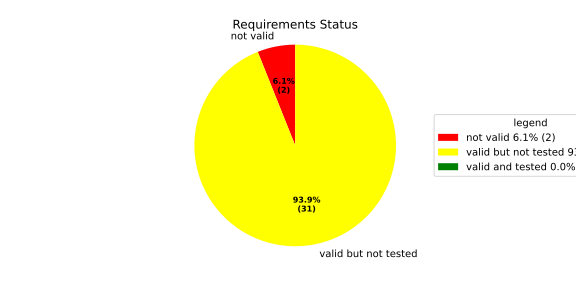
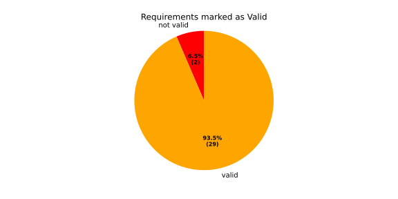
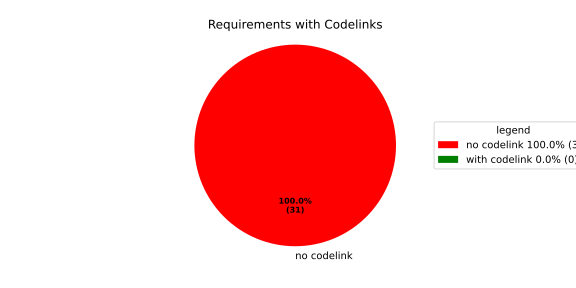
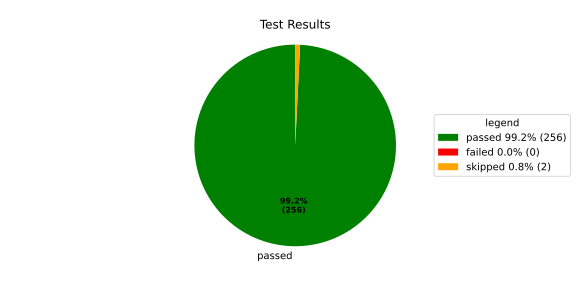
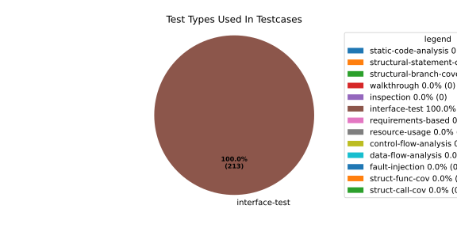
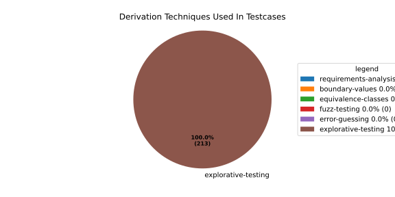

Verification Statistics#
Overview#

In Detail#



Failed Tests
Hint: This table should be empty. Before a PR can be merged all tests have to be successful.
No needs passed the filters
Skipped / Disabled Tests
testcase |
Result |
Fully Verifies |
Partially Verifies |
Test Type |
Derivation Technique |
link |
|---|---|---|---|---|---|---|
ValidateRangeTest/4__RejectsValueAboveMax |
skipped |
interface-test |
explorative-testing |
|||
ValidateRangeTest/4__RejectsValueBelowMin |
skipped |
interface-test |
explorative-testing |
All passed Tests#
testcase |
Result |
Fully Verifies |
Partially Verifies |
Test Type |
Derivation Technique |
link |
|---|---|---|---|---|---|---|
AliveImplTest__DoesNotThrowWhenInterfacePathEnvVarIsSet |
passed |
interface-test |
explorative-testing |
testcase__AliveImplTest__DoesNotThrowWhenInterfacePathEnvVarIsSet_xpewu |
||
AliveImplTest__ReportCheckpointSafeWhenNotConnected |
passed |
interface-test |
explorative-testing |
testcase__AliveImplTest__ReportCheckpointSafeWhenNotConnected_ppvuc |
||
AliveImplTest__ThrowsWhenInterfacePathEnvVarIsNotSet |
passed |
interface-test |
explorative-testing |
testcase__AliveImplTest__ThrowsWhenInterfacePathEnvVarIsNotSet_ekxfw |
||
AliveSupervisionTest__AliveDebouncesThroughFailedBeforeExpired |
passed |
interface-test |
explorative-testing |
testcase__AliveSupervisionTest__AliveDebouncesThroughFailedBeforeExpired_mlnbe |
||
AliveSupervisionTest__AliveReportsEnqueueFailureWhenRingBufferFull |
passed |
interface-test |
explorative-testing |
testcase__AliveSupervisionTest__AliveReportsEnqueueFailureWhenRingBufferFull_byhrd |
||
AliveSupervisionTest__AliveStaysOkWithCorrectHeartbeats |
passed |
interface-test |
explorative-testing |
testcase__AliveSupervisionTest__AliveStaysOkWithCorrectHeartbeats_vekof |
||
AliveSupervisionTest__AliveTransitionsOkToExpiredOnMissingHeartbeat |
passed |
interface-test |
explorative-testing |
testcase__AliveSupervisionTest__AliveTransitionsOkToExpiredOnMissingHeartbeat_jymxo |
||
AliveSupervisionTest__DeactivatesOnProcessCrash |
passed |
interface-test |
explorative-testing |
testcase__AliveSupervisionTest__DeactivatesOnProcessCrash_ypejs |
||
AliveSupervisionTest__DeactivatesOnProcessSigterm |
passed |
interface-test |
explorative-testing |
testcase__AliveSupervisionTest__DeactivatesOnProcessSigterm_hzaal |
||
AliveSupervisionTest__IgnoresIrrelevantProcessStates |
passed |
interface-test |
explorative-testing |
testcase__AliveSupervisionTest__IgnoresIrrelevantProcessStates_aolvb |
||
AliveSupervisionTest__MaxIndicationViolationExpires |
passed |
interface-test |
explorative-testing |
testcase__AliveSupervisionTest__MaxIndicationViolationExpires_whhhi |
||
AliveSupervisionTest__ReactivatesAfterCrash |
passed |
interface-test |
explorative-testing |
|||
ApplicationTypes/ApplicationTypeTest__ConvertsToExpectedValue/Native |
passed |
interface-test |
explorative-testing |
testcase__ApplicationTypes/ApplicationTypeTest__ConvertsToExpectedValue/Native_yxxcz |
||
ApplicationTypes/ApplicationTypeTest__ConvertsToExpectedValue/Reporting |
passed |
interface-test |
explorative-testing |
testcase__ApplicationTypes/ApplicationTypeTest__ConvertsToExpectedValue/Reporting_wcfwr |
||
ApplicationTypes/ApplicationTypeTest__ConvertsToExpectedValue/ReportingAndSupervised |
passed |
interface-test |
explorative-testing |
testcase__ApplicationTypes/ApplicationTypeTest__ConvertsToExpectedValue/ReportingAndSupervised_yxgad |
||
ApplicationTypes/ApplicationTypeTest__ConvertsToExpectedValue/StateManager |
passed |
interface-test |
explorative-testing |
testcase__ApplicationTypes/ApplicationTypeTest__ConvertsToExpectedValue/StateManager_ivuzc |
||
ConverterTest__ConvertAliveSupervisionMissingCycleReturnsError |
passed |
interface-test |
explorative-testing |
testcase__ConverterTest__ConvertAliveSupervisionMissingCycleReturnsError_bifzg |
||
ConverterTest__ConvertAliveSupervisionNullReturnsDefault |
passed |
interface-test |
explorative-testing |
testcase__ConverterTest__ConvertAliveSupervisionNullReturnsDefault_clyua |
||
ConverterTest__ConvertAliveSupervisionValid |
passed |
interface-test |
explorative-testing |
|||
ConverterTest__ConvertApplicationProfileMissingSelfTerminatingReturnsError |
passed |
interface-test |
explorative-testing |
testcase__ConverterTest__ConvertApplicationProfileMissingSelfTerminatingReturnsError_zddjb |
||
ConverterTest__ConvertApplicationProfileMissingTypeReturnsError |
passed |
interface-test |
explorative-testing |
testcase__ConverterTest__ConvertApplicationProfileMissingTypeReturnsError_zrfcs |
||
ConverterTest__ConvertApplicationProfileValid |
passed |
interface-test |
explorative-testing |
testcase__ConverterTest__ConvertApplicationProfileValid_oohxq |
||
ConverterTest__ConvertComponentAliveSupervisionBothIndicationsAbsentReturnsError |
passed |
interface-test |
explorative-testing |
testcase__ConverterTest__ConvertComponentAliveSupervisionBothIndicationsAbsentReturnsError_gvtfi |
||
ConverterTest__ConvertComponentAliveSupervisionMissingReportingCycleReturnsError |
passed |
interface-test |
explorative-testing |
testcase__ConverterTest__ConvertComponentAliveSupervisionMissingReportingCycleReturnsError_ajymy |
||
ConverterTest__ConvertComponentAliveSupervisionMissingToleranceReturnsError |
passed |
interface-test |
explorative-testing |
testcase__ConverterTest__ConvertComponentAliveSupervisionMissingToleranceReturnsError_lgrhj |
||
ConverterTest__ConvertComponentAliveSupervisionNullReturnsDefault |
passed |
interface-test |
explorative-testing |
testcase__ConverterTest__ConvertComponentAliveSupervisionNullReturnsDefault_xhaus |
||
ConverterTest__ConvertComponentAliveSupervisionOnlyMaxIndicationsPresent |
passed |
interface-test |
explorative-testing |
testcase__ConverterTest__ConvertComponentAliveSupervisionOnlyMaxIndicationsPresent_smwht |
||
ConverterTest__ConvertComponentAliveSupervisionOnlyMinIndicationsPresent |
passed |
interface-test |
explorative-testing |
testcase__ConverterTest__ConvertComponentAliveSupervisionOnlyMinIndicationsPresent_ybbrr |
||
ConverterTest__ConvertComponentAliveSupervisionValid |
passed |
interface-test |
explorative-testing |
testcase__ConverterTest__ConvertComponentAliveSupervisionValid_ijedh |
||
ConverterTest__ConvertComponentsValid |
passed |
interface-test |
explorative-testing |
|||
ConverterTest__ConvertComponentsWithInvalidComponentReturnsError |
passed |
interface-test |
explorative-testing |
testcase__ConverterTest__ConvertComponentsWithInvalidComponentReturnsError_wridc |
||
ConverterTest__ConvertComponentValid |
passed |
interface-test |
explorative-testing |
|||
ConverterTest__ConvertDeploymentConfigMissingReadyTimeoutReturnsError |
passed |
interface-test |
explorative-testing |
testcase__ConverterTest__ConvertDeploymentConfigMissingReadyTimeoutReturnsError_ljzfl |
||
ConverterTest__ConvertDeploymentConfigMissingShutdownTimeoutReturnsError |
passed |
interface-test |
explorative-testing |
testcase__ConverterTest__ConvertDeploymentConfigMissingShutdownTimeoutReturnsError_vyqye |
||
ConverterTest__ConvertDeploymentConfigValid |
passed |
interface-test |
explorative-testing |
|||
ConverterTest__ConvertEnvironmentalVariables |
passed |
interface-test |
explorative-testing |
testcase__ConverterTest__ConvertEnvironmentalVariables_fnhgo |
||
ConverterTest__ConvertEnvironmentalVariablesNullReturnsEmpty |
passed |
interface-test |
explorative-testing |
testcase__ConverterTest__ConvertEnvironmentalVariablesNullReturnsEmpty_vglrx |
||
ConverterTest__ConvertFallbackRunTargetMissingTimeoutReturnsError |
passed |
interface-test |
explorative-testing |
testcase__ConverterTest__ConvertFallbackRunTargetMissingTimeoutReturnsError_aevly |
||
ConverterTest__ConvertFallbackRunTargetValid |
passed |
interface-test |
explorative-testing |
testcase__ConverterTest__ConvertFallbackRunTargetValid_nexxj |
||
ConverterTest__ConvertReadyConditionMissingProcessStateReturnsError |
passed |
interface-test |
explorative-testing |
testcase__ConverterTest__ConvertReadyConditionMissingProcessStateReturnsError_ileav |
||
ConverterTest__ConvertReadyConditionValid |
passed |
interface-test |
explorative-testing |
|||
ConverterTest__ConvertRestartActionMissingFieldsReturnsError |
passed |
interface-test |
explorative-testing |
testcase__ConverterTest__ConvertRestartActionMissingFieldsReturnsError_aapjb |
||
ConverterTest__ConvertRestartActionNullReturnsNullopt |
passed |
interface-test |
explorative-testing |
testcase__ConverterTest__ConvertRestartActionNullReturnsNullopt_ifvyd |
||
ConverterTest__ConvertRestartActionValid |
passed |
interface-test |
explorative-testing |
|||
ConverterTest__ConvertRunTargetMissingTransitionTimeoutReturnsError |
passed |
interface-test |
explorative-testing |
testcase__ConverterTest__ConvertRunTargetMissingTransitionTimeoutReturnsError_ynekv |
||
ConverterTest__ConvertRunTargetsValid |
passed |
interface-test |
explorative-testing |
|||
ConverterTest__ConvertRunTargetsWithInvalidRunTargetReturnsError |
passed |
interface-test |
explorative-testing |
testcase__ConverterTest__ConvertRunTargetsWithInvalidRunTargetReturnsError_ldlox |
||
ConverterTest__ConvertRunTargetValid |
passed |
interface-test |
explorative-testing |
|||
ConverterTest__ConvertSandboxMissingGidReturnsError |
passed |
interface-test |
explorative-testing |
testcase__ConverterTest__ConvertSandboxMissingGidReturnsError_veeel |
||
ConverterTest__ConvertSandboxMissingSchedulingPolicyReturnsError |
passed |
interface-test |
explorative-testing |
testcase__ConverterTest__ConvertSandboxMissingSchedulingPolicyReturnsError_pkfts |
||
ConverterTest__ConvertSandboxMissingSchedulingPriorityReturnsError |
passed |
interface-test |
explorative-testing |
testcase__ConverterTest__ConvertSandboxMissingSchedulingPriorityReturnsError_xzdho |
||
ConverterTest__ConvertSandboxMissingUidReturnsError |
passed |
interface-test |
explorative-testing |
testcase__ConverterTest__ConvertSandboxMissingUidReturnsError_ogfku |
||
ConverterTest__ConvertSandboxSupplementaryGidOutOfRangeReturnsError |
passed |
interface-test |
explorative-testing |
testcase__ConverterTest__ConvertSandboxSupplementaryGidOutOfRangeReturnsError_zavpx |
||
ConverterTest__ConvertSandboxUidOutOfRangeReturnsError |
passed |
interface-test |
explorative-testing |
testcase__ConverterTest__ConvertSandboxUidOutOfRangeReturnsError_mcuaf |
||
ConverterTest__ConvertSandboxValid |
passed |
interface-test |
explorative-testing |
|||
ConverterTest__ConvertSwitchRunTargetActionNullReturnsNullopt |
passed |
interface-test |
explorative-testing |
testcase__ConverterTest__ConvertSwitchRunTargetActionNullReturnsNullopt_zmitx |
||
ConverterTest__ConvertSwitchRunTargetActionValid |
passed |
interface-test |
explorative-testing |
testcase__ConverterTest__ConvertSwitchRunTargetActionValid_tdklr |
||
ConverterTest__ConvertWatchdogMissingDeactivateReturnsError |
passed |
interface-test |
explorative-testing |
testcase__ConverterTest__ConvertWatchdogMissingDeactivateReturnsError_gzwjt |
||
ConverterTest__ConvertWatchdogMissingMagicCloseReturnsError |
passed |
interface-test |
explorative-testing |
testcase__ConverterTest__ConvertWatchdogMissingMagicCloseReturnsError_gexxk |
||
ConverterTest__ConvertWatchdogMissingMaxTimeoutReturnsError |
passed |
interface-test |
explorative-testing |
testcase__ConverterTest__ConvertWatchdogMissingMaxTimeoutReturnsError_lffxm |
||
ConverterTest__ConvertWatchdogNullReturnsNullopt |
passed |
interface-test |
explorative-testing |
testcase__ConverterTest__ConvertWatchdogNullReturnsNullopt_irsdk |
||
ConverterTest__ConvertWatchdogValid |
passed |
interface-test |
explorative-testing |
|||
DeadlineFixture__Start_AlreadyRunning |
passed |
interface-test |
explorative-testing |
|||
DeadlineFixture__Start_Succeeds |
passed |
interface-test |
explorative-testing |
|||
DeadlineMonitorBuilderFixture__AddDeadline_Succeeds |
passed |
interface-test |
explorative-testing |
testcase__DeadlineMonitorBuilderFixture__AddDeadline_Succeeds_nagke |
||
DeadlineMonitorBuilderFixture__New_Succeeds |
passed |
interface-test |
explorative-testing |
|||
DeadlineMonitorFixture__GetDeadline_Succeeds |
passed |
interface-test |
explorative-testing |
testcase__DeadlineMonitorFixture__GetDeadline_Succeeds_tmltf |
||
DeadlineMonitorFixture__GetDeadline_Unknown |
passed |
interface-test |
explorative-testing |
|||
EnumConversionTest__ConvertSchedulingPolicyUnsupported |
passed |
interface-test |
explorative-testing |
testcase__EnumConversionTest__ConvertSchedulingPolicyUnsupported_iavqm |
||
EnvironmentTest__AddIncreasesSize |
passed |
interface-test |
explorative-testing |
|||
EnvironmentTest__DefaultConstructedIsEmpty |
passed |
interface-test |
explorative-testing |
|||
EnvironmentTest__EmptyEnvironmentEnvpIsNullTerminated |
passed |
interface-test |
explorative-testing |
testcase__EnvironmentTest__EmptyEnvironmentEnvpIsNullTerminated_wwumw |
||
EnvironmentTest__EnvpReturnsNullTerminatedArray |
passed |
interface-test |
explorative-testing |
testcase__EnvironmentTest__EnvpReturnsNullTerminatedArray_aubkv |
||
EnvironmentTest__EnvpWithMultipleEntries |
passed |
interface-test |
explorative-testing |
|||
EnvironmentTest__MoveAssignmentPreservesEntries |
passed |
interface-test |
explorative-testing |
testcase__EnvironmentTest__MoveAssignmentPreservesEntries_vkydj |
||
EnvironmentTest__MoveConstructorPreservesEntries |
passed |
interface-test |
explorative-testing |
testcase__EnvironmentTest__MoveConstructorPreservesEntries_upclt |
||
EnvironmentTest__RangeBasedForLoopWorks |
passed |
interface-test |
explorative-testing |
|||
EnvironmentTest__ReserveAndAddAvoidReallocation |
passed |
interface-test |
explorative-testing |
testcase__EnvironmentTest__ReserveAndAddAvoidReallocation_lgzmu |
||
EnvironmentTest__SsoLengthStringSurvivesReallocation |
passed |
interface-test |
explorative-testing |
testcase__EnvironmentTest__SsoLengthStringSurvivesReallocation_jfmtl |
||
EnvironmentVariableTest__CStrReturnsKeyEqualsValue |
passed |
interface-test |
explorative-testing |
testcase__EnvironmentVariableTest__CStrReturnsKeyEqualsValue_rkwan |
||
EnvironmentVariableTest__EmptyValue |
passed |
interface-test |
explorative-testing |
|||
EnvironmentVariableTest__KeyAndValueAreAccessible |
passed |
interface-test |
explorative-testing |
testcase__EnvironmentVariableTest__KeyAndValueAreAccessible_kcrth |
||
EnvironmentVariableTest__ValueContainingEquals |
passed |
interface-test |
explorative-testing |
testcase__EnvironmentVariableTest__ValueContainingEquals_apzgz |
||
ExecErrorDomainTest__AllKnownCodesHaveDistinctMessages |
passed |
interface-test |
explorative-testing |
testcase__ExecErrorDomainTest__AllKnownCodesHaveDistinctMessages_qpoka |
||
ExecErrorDomainTest__AllKnownCodesReturnNonEmptyMessage |
passed |
interface-test |
explorative-testing |
testcase__ExecErrorDomainTest__AllKnownCodesReturnNonEmptyMessage_bawzg |
||
ExecErrorDomainTest__UnknownCodeReturnsNonEmptyMessage |
passed |
interface-test |
explorative-testing |
testcase__ExecErrorDomainTest__UnknownCodeReturnsNonEmptyMessage_kkwpr |
||
FlatbufferConfigLoaderTest__CorruptedBufferReturnsInvalidFormat |
passed |
interface-test |
explorative-testing |
testcase__FlatbufferConfigLoaderTest__CorruptedBufferReturnsInvalidFormat_twyac |
||
FlatbufferConfigLoaderTest__LoadAliveSupervision |
passed |
interface-test |
explorative-testing |
testcase__FlatbufferConfigLoaderTest__LoadAliveSupervision_hhuux |
||
FlatbufferConfigLoaderTest__LoadBufferFailsWithGenericErrorReturnsGeneralError |
passed |
interface-test |
explorative-testing |
testcase__FlatbufferConfigLoaderTest__LoadBufferFailsWithGenericErrorReturnsGeneralError_kmatm |
||
FlatbufferConfigLoaderTest__LoadBufferFailsWithNoSuchFileReturnsFileNotFound |
passed |
interface-test |
explorative-testing |
testcase__FlatbufferConfigLoaderTest__LoadBufferFailsWithNoSuchFileReturnsFileNotFound_yzlra |
||
FlatbufferConfigLoaderTest__LoadBufferFailsWithPermissionDeniedReturnsInsufficientPermission |
passed |
interface-test |
explorative-testing |
|||
FlatbufferConfigLoaderTest__LoadComponentAliveSupervision |
passed |
interface-test |
explorative-testing |
testcase__FlatbufferConfigLoaderTest__LoadComponentAliveSupervision_fwfad |
||
FlatbufferConfigLoaderTest__LoadEnvironmentalVariables |
passed |
interface-test |
explorative-testing |
testcase__FlatbufferConfigLoaderTest__LoadEnvironmentalVariables_wsosu |
||
FlatbufferConfigLoaderTest__LoadFallbackRunTarget |
passed |
interface-test |
explorative-testing |
testcase__FlatbufferConfigLoaderTest__LoadFallbackRunTarget_wduqm |
||
FlatbufferConfigLoaderTest__LoadMinimalConfig |
passed |
interface-test |
explorative-testing |
testcase__FlatbufferConfigLoaderTest__LoadMinimalConfig_hdkck |
||
FlatbufferConfigLoaderTest__LoadMultipleComponents |
passed |
interface-test |
explorative-testing |
testcase__FlatbufferConfigLoaderTest__LoadMultipleComponents_abpom |
||
FlatbufferConfigLoaderTest__LoadRestartRecoveryAction |
passed |
interface-test |
explorative-testing |
testcase__FlatbufferConfigLoaderTest__LoadRestartRecoveryAction_wyfqg |
||
FlatbufferConfigLoaderTest__LoadRunTargets |
passed |
interface-test |
explorative-testing |
|||
FlatbufferConfigLoaderTest__LoadSandbox |
passed |
interface-test |
explorative-testing |
|||
FlatbufferConfigLoaderTest__LoadSingleComponent |
passed |
interface-test |
explorative-testing |
testcase__FlatbufferConfigLoaderTest__LoadSingleComponent_yidty |
||
FlatbufferConfigLoaderTest__LoadSwitchRunTargetAction |
passed |
interface-test |
explorative-testing |
testcase__FlatbufferConfigLoaderTest__LoadSwitchRunTargetAction_uchgp |
||
FlatbufferConfigLoaderTest__LoadWatchdog |
passed |
interface-test |
explorative-testing |
|||
FlatbufferConfigLoaderTest__MissingSchemaVersionReturnsInvalidFormat |
passed |
interface-test |
explorative-testing |
testcase__FlatbufferConfigLoaderTest__MissingSchemaVersionReturnsInvalidFormat_qqmfn |
||
FlatbufferConfigLoaderTest__OptionalReadyConditionAbsent |
passed |
interface-test |
explorative-testing |
testcase__FlatbufferConfigLoaderTest__OptionalReadyConditionAbsent_lhddx |
||
FlatbufferConfigLoaderTest__OptionalWatchdogAbsent |
passed |
interface-test |
explorative-testing |
testcase__FlatbufferConfigLoaderTest__OptionalWatchdogAbsent_pkhkp |
||
FlatbufferConfigLoaderTest__WrongSchemaVersionReturnsUnsupportedVersion |
passed |
interface-test |
explorative-testing |
testcase__FlatbufferConfigLoaderTest__WrongSchemaVersionReturnsUnsupportedVersion_zrbjv |
||
HealthMonitor__GetDeadlineMonitor_Available |
passed |
|||||
HealthMonitor__GetDeadlineMonitor_Taken |
passed |
|||||
HealthMonitor__GetDeadlineMonitor_Unknown |
passed |
|||||
HealthMonitor__GetHeartbeatMonitor_Available |
passed |
testcase__HealthMonitor__GetHeartbeatMonitor_Available_aacat |
||||
HealthMonitor__GetHeartbeatMonitor_Taken |
passed |
|||||
HealthMonitor__GetHeartbeatMonitor_Unknown |
passed |
|||||
HealthMonitor__GetLogicMonitor_Available |
passed |
|||||
HealthMonitor__GetLogicMonitor_Taken |
passed |
|||||
HealthMonitor__GetLogicMonitor_Unknown |
passed |
|||||
HealthMonitor__Start_MonitorsNotTaken |
passed |
|||||
HealthMonitor__Start_Succeeds |
passed |
|||||
HealthMonitorBuilderFixture__Build_InvalidCycles |
passed |
interface-test |
explorative-testing |
testcase__HealthMonitorBuilderFixture__Build_InvalidCycles_pdigk |
||
HealthMonitorBuilderFixture__Build_NoMonitors |
passed |
interface-test |
explorative-testing |
testcase__HealthMonitorBuilderFixture__Build_NoMonitors_ktcve |
||
HealthMonitorBuilderFixture__Build_Succeeds |
passed |
interface-test |
explorative-testing |
|||
HealthMonitorBuilderFixture__New_Succeeds |
passed |
interface-test |
explorative-testing |
|||
HealthMonitorTest__Integrated |
passed |
interface-test |
explorative-testing |
|||
HeartbeatMonitor__Heartbeat_Succeeds |
passed |
interface-test |
explorative-testing |
|||
HeartbeatMonitorBuilder__New_Succeeds |
passed |
interface-test |
explorative-testing |
|||
IdentifierHashTest__IdentifierHash_default_created |
passed |
interface-test |
explorative-testing |
testcase__IdentifierHashTest__IdentifierHash_default_created_yhhvi |
||
IdentifierHashTest__IdentifierHash_EqualityOperators |
passed |
interface-test |
explorative-testing |
testcase__IdentifierHashTest__IdentifierHash_EqualityOperators_nnsuj |
||
IdentifierHashTest__IdentifierHash_invalid_hash_no_string_representation |
passed |
interface-test |
explorative-testing |
testcase__IdentifierHashTest__IdentifierHash_invalid_hash_no_string_representation_rxowr |
||
IdentifierHashTest__IdentifierHash_LessThanOperator |
passed |
interface-test |
explorative-testing |
testcase__IdentifierHashTest__IdentifierHash_LessThanOperator_rnbax |
||
IdentifierHashTest__IdentifierHash_no_dangling_pointer_after_source_string_dies |
passed |
interface-test |
explorative-testing |
testcase__IdentifierHashTest__IdentifierHash_no_dangling_pointer_after_source_string_dies_qsjin |
||
IdentifierHashTest__IdentifierHash_with_string_created |
passed |
interface-test |
explorative-testing |
testcase__IdentifierHashTest__IdentifierHash_with_string_created_aygdm |
||
IdentifierHashTest__IdentifierHash_with_string_view_created |
passed |
interface-test |
explorative-testing |
testcase__IdentifierHashTest__IdentifierHash_with_string_view_created_dbpol |
||
LogicMonitorBuilderFixture__AddState_Succeeds |
passed |
interface-test |
explorative-testing |
testcase__LogicMonitorBuilderFixture__AddState_Succeeds_axdxj |
||
LogicMonitorBuilderFixture__New_Succeeds |
passed |
interface-test |
explorative-testing |
|||
LogicMonitorFixture__State_Invalid |
passed |
interface-test |
explorative-testing |
|||
LogicMonitorFixture__State_Succeeds |
passed |
interface-test |
explorative-testing |
|||
LogicMonitorFixture__Transition_Invalid |
passed |
interface-test |
explorative-testing |
|||
LogicMonitorFixture__Transition_Succeeds |
passed |
interface-test |
explorative-testing |
|||
LogicMonitorFixture__Transition_Unknown |
passed |
interface-test |
explorative-testing |
|||
MonitorIfDaemonTest__Active_CheckpointDataForwarded |
passed |
interface-test |
explorative-testing |
testcase__MonitorIfDaemonTest__Active_CheckpointDataForwarded_evumz |
||
MonitorIfDaemonTest__Active_FutureTimestamp_NotForwardedInCurrentCycle |
passed |
interface-test |
explorative-testing |
testcase__MonitorIfDaemonTest__Active_FutureTimestamp_NotForwardedInCurrentCycle_oycau |
||
MonitorIfDaemonTest__Active_FutureTimestampCheckpoint_ConsumedInLaterCycle |
passed |
interface-test |
explorative-testing |
testcase__MonitorIfDaemonTest__Active_FutureTimestampCheckpoint_ConsumedInLaterCycle_veyyy |
||
MonitorIfDaemonTest__Active_MultipleCheckpointsInOneCycle_AllForwarded |
passed |
interface-test |
explorative-testing |
testcase__MonitorIfDaemonTest__Active_MultipleCheckpointsInOneCycle_AllForwarded_gmbms |
||
MonitorIfDaemonTest__Active_NonMatchingCheckpointId_NotForwarded |
passed |
interface-test |
explorative-testing |
testcase__MonitorIfDaemonTest__Active_NonMatchingCheckpointId_NotForwarded_bohck |
||
MonitorIfDaemonTest__Active_OverflowDetected_TransitionsToInactiveOverflow |
passed |
interface-test |
explorative-testing |
testcase__MonitorIfDaemonTest__Active_OverflowDetected_TransitionsToInactiveOverflow_ovitk |
||
MonitorIfDaemonTest__Active_TwoAttachedCheckpoints_RoutedByCheckpointId |
passed |
interface-test |
explorative-testing |
testcase__MonitorIfDaemonTest__Active_TwoAttachedCheckpoints_RoutedByCheckpointId_skqhd |
||
MonitorIfDaemonTest__GetInterfaceName_ReturnsNameGivenAtConstruction |
passed |
interface-test |
explorative-testing |
testcase__MonitorIfDaemonTest__GetInterfaceName_ReturnsNameGivenAtConstruction_iaemz |
||
MonitorIfDaemonTest__InactiveOverflow_NoProcessRestart_DoesNotRepeatNotification |
passed |
interface-test |
explorative-testing |
testcase__MonitorIfDaemonTest__InactiveOverflow_NoProcessRestart_DoesNotRepeatNotification_gdbxg |
||
MonitorIfDaemonTest__InactiveOverflow_ProcessRestartFlag_ClearedAfterNotification |
passed |
interface-test |
explorative-testing |
testcase__MonitorIfDaemonTest__InactiveOverflow_ProcessRestartFlag_ClearedAfterNotification_pqfyy |
||
MonitorIfDaemonTest__InactiveOverflow_ProcessRestarts_PushesOverflowNotificationAgain |
passed |
interface-test |
explorative-testing |
|||
MonitorIfDaemonTest__InitiallyInactive_CheckForNewData_DoesNotNotifyCheckpoint |
passed |
interface-test |
explorative-testing |
testcase__MonitorIfDaemonTest__InitiallyInactive_CheckForNewData_DoesNotNotifyCheckpoint_wjrfl |
||
MonitorIfDaemonTest__ProcessOff_DeactivatesMonitor_NoFurtherDataForwarded |
passed |
interface-test |
explorative-testing |
testcase__MonitorIfDaemonTest__ProcessOff_DeactivatesMonitor_NoFurtherDataForwarded_uialh |
||
MonitorIfDaemonTest__ProcessOffBeforeActivation_RemainsInactive |
passed |
interface-test |
explorative-testing |
testcase__MonitorIfDaemonTest__ProcessOffBeforeActivation_RemainsInactive_kzzyy |
||
MonitorIfDaemonTest__ProcessRunning_ActivatesMonitorOnNextCheckForNewData |
passed |
interface-test |
explorative-testing |
testcase__MonitorIfDaemonTest__ProcessRunning_ActivatesMonitorOnNextCheckForNewData_fkkmk |
||
MonitorIfDaemonTest__ProcessStarting_AlsoActivatesMonitor |
passed |
interface-test |
explorative-testing |
testcase__MonitorIfDaemonTest__ProcessStarting_AlsoActivatesMonitor_xdkbg |
||
MPMCConcurrentQueueTest_Basic__LvaluePushCopiesItem |
passed |
testcase__MPMCConcurrentQueueTest_Basic__LvaluePushCopiesItem_oysfc |
||||
MPMCConcurrentQueueTest_Basic__PopReturnsNulloptOnSemaphoreWaitFailure |
passed |
testcase__MPMCConcurrentQueueTest_Basic__PopReturnsNulloptOnSemaphoreWaitFailure_rgznm |
||||
MPMCConcurrentQueueTest_Basic__PushAndPopPreservesOrder |
passed |
testcase__MPMCConcurrentQueueTest_Basic__PushAndPopPreservesOrder_aijdb |
||||
MPMCConcurrentQueueTest_Basic__PushAndPopSingleItem |
passed |
testcase__MPMCConcurrentQueueTest_Basic__PushAndPopSingleItem_jrxwz |
||||
MPMCConcurrentQueueTest_Basic__RvaluePushWorksWithMoveOnlyType |
passed |
testcase__MPMCConcurrentQueueTest_Basic__RvaluePushWorksWithMoveOnlyType_cxxaj |
||||
MPMCConcurrentQueueTest_Blocking__PopBlocksUntilItemAvailable |
passed |
testcase__MPMCConcurrentQueueTest_Blocking__PopBlocksUntilItemAvailable_ttwcx |
||||
MPMCConcurrentQueueTest_Blocking__PushBlocksWhenFull |
passed |
testcase__MPMCConcurrentQueueTest_Blocking__PushBlocksWhenFull_ecujf |
||||
MPMCConcurrentQueueTest_Blocking__StopUnblocksBlockedConsumer |
passed |
testcase__MPMCConcurrentQueueTest_Blocking__StopUnblocksBlockedConsumer_snzyr |
||||
MPMCConcurrentQueueTest_Blocking__StopUnblocksBlockedProducer |
passed |
testcase__MPMCConcurrentQueueTest_Blocking__StopUnblocksBlockedProducer_inddu |
||||
MPMCConcurrentQueueTest_MPMC__AllItemsDelivered |
passed |
testcase__MPMCConcurrentQueueTest_MPMC__AllItemsDelivered_ztjqe |
||||
MPMCConcurrentQueueTest_Stop__ItemsAreDroppedAfterStop |
passed |
testcase__MPMCConcurrentQueueTest_Stop__ItemsAreDroppedAfterStop_ragzw |
||||
MPMCConcurrentQueueTest_Stop__PopReturnsNulloptWhenStoppedAndEmpty |
passed |
testcase__MPMCConcurrentQueueTest_Stop__PopReturnsNulloptWhenStoppedAndEmpty_cevga |
||||
MPMCConcurrentQueueTest_Stop__PushReturnsFalseAfterStop |
passed |
testcase__MPMCConcurrentQueueTest_Stop__PushReturnsFalseAfterStop_qqnhw |
||||
MPMCConcurrentQueueTest_Timeout__PushWithTimeoutReturnsFalseWhenFull |
passed |
testcase__MPMCConcurrentQueueTest_Timeout__PushWithTimeoutReturnsFalseWhenFull_aeips |
||||
MPMCConcurrentQueueTest_Timeout__PushWithTimeoutSucceedsWhenSlotAvailable |
passed |
testcase__MPMCConcurrentQueueTest_Timeout__PushWithTimeoutSucceedsWhenSlotAvailable_klzpo |
||||
OsHandlerTest__WaitReturnsError_OsHandlerSleepsAndDoesNotCallFindTerminated |
passed |
interface-test |
explorative-testing |
testcase__OsHandlerTest__WaitReturnsError_OsHandlerSleepsAndDoesNotCallFindTerminated_cibtr |
||
OsHandlerTest__WaitReturnsErrorThenProcessId_HandlerRecoversAndInvokesCallback |
passed |
interface-test |
explorative-testing |
testcase__OsHandlerTest__WaitReturnsErrorThenProcessId_HandlerRecoversAndInvokesCallback_nqstd |
||
OsHandlerTest__WaitReturnsProcessId_FindTerminatedIsCalled |
passed |
interface-test |
explorative-testing |
testcase__OsHandlerTest__WaitReturnsProcessId_FindTerminatedIsCalled_chlsq |
||
OsHandlerTest__WaitReturnsProcessIdBeforeRegistration_LaterRegistrationReceivesStoredTermination |
passed |
interface-test |
explorative-testing |
|||
OsHandlerTest__WaitReturnsUnknownPidWhenMapIsFull_OutOfResourcesPathDoesNotNotifyCallbacks |
passed |
interface-test |
explorative-testing |
|||
OsHandlerTest__WaitReturnsZeroPid_OsHandlerSleepsAndDoesNotCallFindTerminated |
passed |
interface-test |
explorative-testing |
testcase__OsHandlerTest__WaitReturnsZeroPid_OsHandlerSleepsAndDoesNotCallFindTerminated_rkttz |
||
ProcessStateClient_UT__ProcessStateClient_ConstructReceiver_Succeeds |
passed |
interface-test |
explorative-testing |
testcase__ProcessStateClient_UT__ProcessStateClient_ConstructReceiver_Succeeds_hodwy |
||
ProcessStateClient_UT__ProcessStateClient_QueueMaxNumberOfProcesses_Succeeds |
passed |
interface-test |
explorative-testing |
testcase__ProcessStateClient_UT__ProcessStateClient_QueueMaxNumberOfProcesses_Succeeds_qohom |
||
ProcessStateClient_UT__ProcessStateClient_QueueOneProcess_Succeeds |
passed |
interface-test |
explorative-testing |
testcase__ProcessStateClient_UT__ProcessStateClient_QueueOneProcess_Succeeds_tmzfz |
||
ProcessStateClient_UT__ProcessStateClient_QueueOneProcessTooMany_Fails |
passed |
interface-test |
explorative-testing |
testcase__ProcessStateClient_UT__ProcessStateClient_QueueOneProcessTooMany_Fails_sspoj |
||
ProcessStates/ProcessStateTest__ConvertsToExpectedValue/Running |
passed |
interface-test |
explorative-testing |
testcase__ProcessStates/ProcessStateTest__ConvertsToExpectedValue/Running_hinlr |
||
ProcessStates/ProcessStateTest__ConvertsToExpectedValue/Terminated |
passed |
interface-test |
explorative-testing |
testcase__ProcessStates/ProcessStateTest__ConvertsToExpectedValue/Terminated_zrytn |
||
RecoveryClientTest__FIFOOrdering |
passed |
interface-test |
explorative-testing |
|||
RecoveryClientTest__GetNextRequest |
passed |
interface-test |
explorative-testing |
|||
RecoveryClientTest__GetNextRequestEmpty |
passed |
interface-test |
explorative-testing |
|||
RecoveryClientTest__RingBufferFull |
passed |
interface-test |
explorative-testing |
|||
RecoveryClientTest__SendSingleRequest |
passed |
interface-test |
explorative-testing |
|||
RunTest__AsPosixProcessCreatesAndDestroysLifeCycleManager |
passed |
testcase__RunTest__AsPosixProcessCreatesAndDestroysLifeCycleManager_sooex |
||||
RunTest__AsPosixProcessForwardsConstructorArgsToApplication |
passed |
testcase__RunTest__AsPosixProcessForwardsConstructorArgsToApplication_dmeur |
||||
RunTest__AsPosixProcessForwardsNonZeroExitCode |
passed |
testcase__RunTest__AsPosixProcessForwardsNonZeroExitCode_lldqd |
||||
RunTest__AsPosixProcessPassesCorrectApplicationTypeToRun |
passed |
testcase__RunTest__AsPosixProcessPassesCorrectApplicationTypeToRun_ajqwz |
||||
RunTest__AsPosixProcessReturnsZeroExitCode |
passed |
|||||
RunTest__RunApplicationFreeFunctionDelegatesToAsPosixProcess |
passed |
testcase__RunTest__RunApplicationFreeFunctionDelegatesToAsPosixProcess_ccing |
||||
RunTest__RunConstructorPassesArgcArgvToApplicationContext |
passed |
testcase__RunTest__RunConstructorPassesArgcArgvToApplicationContext_agerd |
||||
SafeProcessMapTest__ConcurrentFindAndInsertFromMultipleThreads |
passed |
interface-test |
explorative-testing |
testcase__SafeProcessMapTest__ConcurrentFindAndInsertFromMultipleThreads_kzfyg |
||
SafeProcessMapTest__ConcurrentInsertAndFindFromMultipleThreads |
passed |
interface-test |
explorative-testing |
testcase__SafeProcessMapTest__ConcurrentInsertAndFindFromMultipleThreads_hnyqj |
||
SafeProcessMapTest__ConstructWithZeroCapacity |
passed |
interface-test |
explorative-testing |
testcase__SafeProcessMapTest__ConstructWithZeroCapacity_gjmqg |
||
SafeProcessMapTest__FindTerminatedInsertsEntryWhenPidNotPresent |
passed |
interface-test |
explorative-testing |
testcase__SafeProcessMapTest__FindTerminatedInsertsEntryWhenPidNotPresent_ixtlt |
||
SafeProcessMapTest__FindTerminatedMatchesExistingInsertAndCallsCallback |
passed |
interface-test |
explorative-testing |
testcase__SafeProcessMapTest__FindTerminatedMatchesExistingInsertAndCallsCallback_ehuzb |
||
SafeProcessMapTest__FindTerminatedSamePidTwiceYieldsUntilInsertResolves |
passed |
interface-test |
explorative-testing |
testcase__SafeProcessMapTest__FindTerminatedSamePidTwiceYieldsUntilInsertResolves_hsekx |
||
SafeProcessMapTest__FindTerminatedWithNegativePidReturnsInvalid |
passed |
interface-test |
explorative-testing |
testcase__SafeProcessMapTest__FindTerminatedWithNegativePidReturnsInvalid_dewoh |
||
SafeProcessMapTest__FindTerminatedWorksAtMaxTreeDepth |
passed |
interface-test |
explorative-testing |
testcase__SafeProcessMapTest__FindTerminatedWorksAtMaxTreeDepth_adtzi |
||
SafeProcessMapTest__InsertBeyondCapacityReturnsOutOfMemory |
passed |
interface-test |
explorative-testing |
testcase__SafeProcessMapTest__InsertBeyondCapacityReturnsOutOfMemory_qjnie |
||
SafeProcessMapTest__InsertIntoEmptyTreeReturnsZero |
passed |
interface-test |
explorative-testing |
testcase__SafeProcessMapTest__InsertIntoEmptyTreeReturnsZero_zfbaq |
||
SafeProcessMapTest__InsertMatchesExistingFindTerminatedEntry |
passed |
interface-test |
explorative-testing |
testcase__SafeProcessMapTest__InsertMatchesExistingFindTerminatedEntry_fuwrp |
||
SafeProcessMapTest__InsertMultipleNodesThenFindTerminatedRemovesAll |
passed |
interface-test |
explorative-testing |
testcase__SafeProcessMapTest__InsertMultipleNodesThenFindTerminatedRemovesAll_fvowh |
||
SafeProcessMapTest__InsertSamePidTwiceYieldsUntilFindTerminatedResolves |
passed |
interface-test |
explorative-testing |
testcase__SafeProcessMapTest__InsertSamePidTwiceYieldsUntilFindTerminatedResolves_wzwyb |
||
SchedulingPolicies/SchedulingPolicyTest__ConvertsToExpectedPosixValue/SCHED_FIFO |
passed |
interface-test |
explorative-testing |
testcase__SchedulingPolicies/SchedulingPolicyTest__ConvertsToExpectedPosixValue/SCHED_FIFO_soddq |
||
SchedulingPolicies/SchedulingPolicyTest__ConvertsToExpectedPosixValue/SCHED_OTHER |
passed |
interface-test |
explorative-testing |
testcase__SchedulingPolicies/SchedulingPolicyTest__ConvertsToExpectedPosixValue/SCHED_OTHER_oigmk |
||
SchedulingPolicies/SchedulingPolicyTest__ConvertsToExpectedPosixValue/SCHED_RR |
passed |
interface-test |
explorative-testing |
testcase__SchedulingPolicies/SchedulingPolicyTest__ConvertsToExpectedPosixValue/SCHED_RR_pcjci |
||
score/health_monitor/src/rust/test-510566969/tests |
passed |
testcase__score/health_monitor/src/rust/test-510566969/tests_kjjlw |
||||
score/health_monitor/src/rust/test-827801879/loom_tests |
passed |
testcase__score/health_monitor/src/rust/test-827801879/loom_tests_cpmix |
||||
SecondsToMsTest__ConvertsPositiveValue |
passed |
interface-test |
explorative-testing |
|||
SecondsToMsTest__ConvertsZero |
passed |
interface-test |
explorative-testing |
|||
SecondsToMsTest__RejectsNegativeValue |
passed |
interface-test |
explorative-testing |
|||
SecondsToMsTest__RejectsOverflow |
passed |
interface-test |
explorative-testing |
|||
SecondsToMsTest__RejectsSubMillisecond |
passed |
interface-test |
explorative-testing |
|||
StringHelperTest__ConvertGidVectorReturnsEmptyWhenNull |
passed |
interface-test |
explorative-testing |
testcase__StringHelperTest__ConvertGidVectorReturnsEmptyWhenNull_jmcsr |
||
StringHelperTest__ConvertStringVectorReturnsEmptyWhenNull |
passed |
interface-test |
explorative-testing |
testcase__StringHelperTest__ConvertStringVectorReturnsEmptyWhenNull_zsuvv |
||
StringHelperTest__SafeStringReturnsEmptyWhenNull |
passed |
interface-test |
explorative-testing |
testcase__StringHelperTest__SafeStringReturnsEmptyWhenNull_crelr |
||
StringHelperTest__SafeStringReturnsValueWhenNotNull |
passed |
interface-test |
explorative-testing |
testcase__StringHelperTest__SafeStringReturnsValueWhenNotNull_anbko |
||
test_complex_monitoring |
passed |
|||||
test_crash_on_startup |
passed |
|||||
test_incorrect_config_non_reporting |
passed |
|||||
test_process_crash_monitoring |
passed |
|||||
test_process_launch_args |
passed |
|||||
test_process_wrong_binary_failure |
passed |
|||||
test_recovery_action_complex_rep_failure |
passed |
|||||
test_recovery_action_simple_rep_failure |
passed |
|||||
test_smoke |
passed |
|||||
test_switch_run_target |
passed |
|||||
TimeRangeFixture__MinMax |
passed |
interface-test |
explorative-testing |
|||
TimeRangeFixture__New_InvalidOrder |
passed |
interface-test |
explorative-testing |
|||
TimeRangeFixture__New_Succeeds |
passed |
interface-test |
explorative-testing |
|||
ValidateRangeTest/0__AcceptsMaxBoundary |
passed |
interface-test |
explorative-testing |
|||
ValidateRangeTest/0__AcceptsMinBoundary |
passed |
interface-test |
explorative-testing |
|||
ValidateRangeTest/0__AcceptsZero |
passed |
interface-test |
explorative-testing |
|||
ValidateRangeTest/0__RejectsValueAboveMax |
passed |
interface-test |
explorative-testing |
|||
ValidateRangeTest/0__RejectsValueBelowMin |
passed |
interface-test |
explorative-testing |
|||
ValidateRangeTest/1__AcceptsMaxBoundary |
passed |
interface-test |
explorative-testing |
|||
ValidateRangeTest/1__AcceptsMinBoundary |
passed |
interface-test |
explorative-testing |
|||
ValidateRangeTest/1__AcceptsZero |
passed |
interface-test |
explorative-testing |
|||
ValidateRangeTest/1__RejectsValueAboveMax |
passed |
interface-test |
explorative-testing |
|||
ValidateRangeTest/1__RejectsValueBelowMin |
passed |
interface-test |
explorative-testing |
|||
ValidateRangeTest/2__AcceptsMaxBoundary |
passed |
interface-test |
explorative-testing |
|||
ValidateRangeTest/2__AcceptsMinBoundary |
passed |
interface-test |
explorative-testing |
|||
ValidateRangeTest/2__AcceptsZero |
passed |
interface-test |
explorative-testing |
|||
ValidateRangeTest/2__RejectsValueAboveMax |
passed |
interface-test |
explorative-testing |
|||
ValidateRangeTest/2__RejectsValueBelowMin |
passed |
interface-test |
explorative-testing |
|||
ValidateRangeTest/3__AcceptsMaxBoundary |
passed |
interface-test |
explorative-testing |
|||
ValidateRangeTest/3__AcceptsMinBoundary |
passed |
interface-test |
explorative-testing |
|||
ValidateRangeTest/3__AcceptsZero |
passed |
interface-test |
explorative-testing |
|||
ValidateRangeTest/3__RejectsValueAboveMax |
passed |
interface-test |
explorative-testing |
|||
ValidateRangeTest/3__RejectsValueBelowMin |
passed |
interface-test |
explorative-testing |
|||
ValidateRangeTest/4__AcceptsMaxBoundary |
passed |
interface-test |
explorative-testing |
|||
ValidateRangeTest/4__AcceptsMinBoundary |
passed |
interface-test |
explorative-testing |
|||
ValidateRangeTest/4__AcceptsZero |
passed |
interface-test |
explorative-testing |
Details About Testcases#


Test Log Files#
tests-report/tests/integration/process_simple_rep_failure/process_simple_rep_failure/test.log
exec ${PAGER:-/usr/bin/less} "$0" || exit 1
Executing tests from //tests/integration/process_simple_rep_failure:process_simple_rep_failure
-----------------------------------------------------------------------------
============================= test session starts ==============================
platform linux -- Python 3.12.12, pytest-9.0.3, pluggy-1.5.0
rootdir: /home/runner/.bazel/sandbox/processwrapper-sandbox/1092/execroot/_main/bazel-out/k8-fastbuild/bin/tests/integration/process_simple_rep_failure/process_simple_rep_failure.runfiles/score_itf+
configfile: pytest.ini
collected 1 item
../score_itf+::test_recovery_action_simple_rep_failure
-------------------------------- live log setup --------------------------------
[2026-07-10 13:54:28.852] [INFO] [score.itf.plugins.docker] Executing custom image bootstrap command: tests/utils/environments/x86_64-linux/x86_64-linux.sh
[2026-07-10 13:54:34.324] [DEBUG] [docker.utils.config] Trying paths: ['/home/runner/.docker/config.json', '/home/runner/.dockercfg']
[2026-07-10 13:54:34.324] [DEBUG] [docker.utils.config] Found file at path: /home/runner/.docker/config.json
[2026-07-10 13:54:34.324] [DEBUG] [docker.auth] Found 'auths' section
[2026-07-10 13:54:34.324] [DEBUG] [docker.auth] Found entry (registry='https://index.docker.io/v1/', username='githubactions')
[2026-07-10 13:54:34.358] [DEBUG] [urllib3.connectionpool] http://localhost:None "GET /version HTTP/1.1" 200 823
[2026-07-10 13:54:34.412] [DEBUG] [urllib3.connectionpool] http://localhost:None "POST /v1.48/containers/create HTTP/1.1" 201 88
[2026-07-10 13:54:34.417] [DEBUG] [urllib3.connectionpool] http://localhost:None "GET /v1.48/containers/d03622e5228cec0f430222c9dd702cdc22aeecc4c9a46ee6094850dcf1314e4f/json HTTP/1.1" 200 None
[2026-07-10 13:54:34.571] [DEBUG] [urllib3.connectionpool] http://localhost:None "POST /v1.48/containers/d03622e5228cec0f430222c9dd702cdc22aeecc4c9a46ee6094850dcf1314e4f/start HTTP/1.1" 204 0
[2026-07-10 13:54:34.571] [DEBUG] [docker.utils.config] Trying paths: ['/home/runner/.docker/config.json', '/home/runner/.dockercfg']
[2026-07-10 13:54:34.571] [DEBUG] [docker.utils.config] Found file at path: /home/runner/.docker/config.json
[2026-07-10 13:54:34.572] [DEBUG] [docker.auth] Found 'auths' section
[2026-07-10 13:54:34.572] [DEBUG] [docker.auth] Found entry (registry='https://index.docker.io/v1/', username='githubactions')
[2026-07-10 13:54:34.600] [DEBUG] [urllib3.connectionpool] http://localhost:None "GET /version HTTP/1.1" 200 823
[2026-07-10 13:54:34.938] [INFO] [tests.utils.testing_utils.setup_test] Test case setup finished
-------------------------------- live log call ---------------------------------
[2026-07-10 13:54:35.102] [INFO] [launch_manager] 2026/07/10 13:54:35.1675088 2709118 000 ECU1 LM LM log debug verbose 1
[2026-07-10 13:54:35.103] [INFO] [launch_manager] Launch Manager Started !!!!
[2026-07-10 13:54:35.103] [INFO] [launch_manager] 2026/07/10 13:54:35.1675089 2709122 000 ECU1 LM LM log debug verbose 1
[2026-07-10 13:54:35.103] [INFO] [launch_manager] Loading LCM Configurations...
[2026-07-10 13:54:35.103] [INFO] [launch_manager] 2026/07/10 13:54:35.1675089 2709123 000 ECU1 LM LM log debug verbose 1
[2026-07-10 13:54:35.103] [INFO] [launch_manager] ECUCFG_ENV_VAR_ROOTFOLDER set successfully
[2026-07-10 13:54:35.103] [INFO] [launch_manager] 2026/07/10 13:54:35.1675089 2709124 000 ECU1 LM LM log debug verbose 5
[2026-07-10 13:54:35.103] [INFO] [launch_manager] FlatBufferParser::getModeGroupPgName: MainPG ( IdentifierHash: 18079021346025578134 )
[2026-07-10 13:54:35.103] [INFO] [launch_manager] 2026/07/10 13:54:35.1675089 2709125 000 ECU1 LM LM log debug verbose 5
[2026-07-10 13:54:35.103] [INFO] [launch_manager] FlatBufferParser::getModeGroupPgStateName: MainPG/Startup ( IdentifierHash: 10504605499600661529 )
[2026-07-10 13:54:35.103] [INFO] [launch_manager] 2026/07/10 13:54:35.1675089 2709126 000 ECU1 LM LM log debug verbose 5
[2026-07-10 13:54:35.103] [INFO] [launch_manager] FlatBufferParser::getModeGroupPgStateName: MainPG/run_target_app_does_report_krunning_in_time ( IdentifierHash: 11934981641920773349 )
[2026-07-10 13:54:35.103] [INFO] [launch_manager] 2026/07/10 13:54:35.1675089 2709127 000 ECU1 LM LM log debug verbose 5
[2026-07-10 13:54:35.104] [INFO] [launch_manager] FlatBufferParser::getModeGroupPgStateName: MainPG/run_target_app_does_not_report_krunning_in_time ( IdentifierHash: 7672161913816744053 )
[2026-07-10 13:54:35.104] [INFO] [launch_manager] 2026/07/10 13:54:35.1675089 2709128 000 ECU1 LM LM log debug verbose 5
[2026-07-10 13:54:35.104] [INFO] [launch_manager] FlatBufferParser::getModeGroupPgStateName: MainPG/Off ( IdentifierHash: 15281793077830264047 )
[2026-07-10 13:54:35.104] [INFO] [launch_manager] 2026/07/10 13:54:35.1675089 2709128 000 ECU1 LM LM log debug verbose 5
[2026-07-10 13:54:35.104] [INFO] [launch_manager] FlatBufferParser::getModeGroupPgStateName: MainPG/fallback_run_target ( IdentifierHash: 4059409696722237352 )
[2026-07-10 13:54:35.105] [INFO] [launch_manager] 2026/07/10 13:54:35.1675089 2709130 000 ECU1 LM LM log debug verbose 4 parseProcessConfigurations: Process index: 0 executable_path_: /tmp/tests/process_simple_rep_failure/control_client_mock
[2026-07-10 13:54:35.105] [INFO] [launch_manager] 2026/07/10 13:54:35.1675089 2709130 000 ECU1 LM LM log debug verbose 3 Process control_client_mock is Reporting execution state
[2026-07-10 13:54:35.105] [INFO] [launch_manager] 2026/07/10 13:54:35.1675089 2709130 000 ECU1 LM LM log debug verbose 1 Process is STATE_MANAGEMENT function Cluster Affiliation
[2026-07-10 13:54:35.105] [INFO] [launch_manager] 2026/07/10 13:54:35.1675089 2709130 000 ECU1 LM LM log debug verbose 3 Process control_client_mock is Self terminating
[2026-07-10 13:54:35.105] [INFO] [launch_manager] 2026/07/10 13:54:35.1675089 2709130 000 ECU1 LM LM log debug verbose 4 ParseProcessProcessGroup: id:::pg_name_: MainPG , pg_state_name_: MainPG/Startup
[2026-07-10 13:54:35.105] [INFO] [launch_manager] 2026/07/10 13:54:35.1675089 2709130 000 ECU1 LM LM log debug verbose 4 ParseProcessProcessGroup: id:::pg_name_: MainPG , pg_state_name_: MainPG/run_target_app_does_report_krunning_in_time
[2026-07-10 13:54:35.105] [INFO] [launch_manager] 2026/07/10 13:54:35.1675089 2709131 000 ECU1 LM LM log debug verbose 4 ParseProcessProcessGroup: id:::pg_name_: MainPG , pg_state_name_: MainPG/run_target_app_does_not_report_krunning_in_time
[2026-07-10 13:54:35.105] [INFO] [launch_manager] 2026/07/10 13:54:35.1675090 2709131 000 ECU1 LM LM log debug verbose 4 ParseProcessProcessGroup: id:::pg_name_: MainPG , pg_state_name_: MainPG/fallback_run_target
[2026-07-10 13:54:35.105] [INFO] [launch_manager] 2026/07/10 13:54:35.1675090 2709131 000 ECU1 LM LM log debug verbose 4 parseProcessConfigurations: Process index: 1 executable_path_: /tmp/tests/process_simple_rep_failure/process_simple_reporting
[2026-07-10 13:54:35.105] [INFO] [launch_manager] 2026/07/10 13:54:35.1675090 2709131 000 ECU1 LM LM log debug verbose 3 Process component_does_report_krunning_in_time is Reporting execution state
[2026-07-10 13:54:35.105] [INFO] [launch_manager] 2026/07/10 13:54:35.1675090 2709131 000 ECU1 LM LM log debug verbose 1 Process is NOT associated with any function Cluster Affiliation
[2026-07-10 13:54:35.105] [INFO] [launch_manager] 2026/07/10 13:54:35.1675090 2709131 000 ECU1 LM LM log debug verbose 3 Process component_does_report_krunning_in_time is Self terminating
[2026-07-10 13:54:35.105] [INFO] [launch_manager] 2026/07/10 13:54:35.1675090 2709131 000 ECU1 LM LM log debug verbose 4 ParseProcessProcessGroup: id:::pg_name_: MainPG , pg_state_name_: MainPG/run_target_app_does_report_krunning_in_time
[2026-07-10 13:54:35.105] [INFO] [launch_manager] 2026/07/10 13:54:35.1675090 2709132 000 ECU1 LM LM log debug verbose 4 parseProcessConfigurations: Process index: 2 executable_path_: /tmp/tests/process_simple_rep_failure/process_simple_reporting
[2026-07-10 13:54:35.105] [INFO] [launch_manager] 2026/07/10 13:54:35.1675090 2709132 000 ECU1 LM LM log debug verbose 3 Process component_does_not_report_krunning_in_time is Reporting execution state
[2026-07-10 13:54:35.105] [INFO] [launch_manager] 2026/07/10 13:54:35.1675090 2709132 000 ECU1 LM LM log debug verbose 1 Process is NOT associated with any function Cluster Affiliation
[2026-07-10 13:54:35.105] [INFO] [launch_manager] 2026/07/10 13:54:35.1675090 2709132 000 ECU1 LM LM log debug verbose 3 Process component_does_not_report_krunning_in_time is Self terminating
[2026-07-10 13:54:35.105] [INFO] [launch_manager] 2026/07/10 13:54:35.1675090 2709132 000 ECU1 LM LM log debug verbose 4 ParseProcessProcessGroup: id:::pg_name_: MainPG , pg_state_name_: MainPG/run_target_app_does_not_report_krunning_in_time
[2026-07-10 13:54:35.105] [INFO] [launch_manager] 2026/07/10 13:54:35.1675090 2709132 000 ECU1 LM LM log debug verbose 4 parseProcessConfigurations: Process index: 3 executable_path_: /tmp/tests/process_simple_rep_failure/verification_process
[2026-07-10 13:54:35.105] [INFO] [launch_manager] 2026/07/10 13:54:35.1675090 2709132 000 ECU1 LM LM log debug verbose 3 Process verification_component is NOT Reporting execution state
[2026-07-10 13:54:35.105] [INFO] [launch_manager] 2026/07/10 13:54:35.1675090 2709133 000 ECU1 LM LM log debug verbose 1 Process is NOT associated with any function Cluster Affiliation
[2026-07-10 13:54:35.105] [INFO] [launch_manager] 2026/07/10 13:54:35.1675090 2709133 000 ECU1 LM LM log debug verbose 3 Process verification_component is Self terminating
[2026-07-10 13:54:35.105] [INFO] [launch_manager] 2026/07/10 13:54:35.1675090 2709133 000 ECU1 LM LM log debug verbose 4 ParseProcessProcessGroup: id:::pg_name_: MainPG , pg_state_name_: MainPG/fallback_run_target
[2026-07-10 13:54:35.108] [INFO] [launch_manager] 2026/07/10 13:54:35.1675090 2709133 000 ECU1 LM LM log debug verbose 3 Loading SWCL Nr. 0 Succeeded
[2026-07-10 13:54:35.108] [INFO] [launch_manager] 2026/07/10 13:54:35.1675090 2709133 000 ECU1 LM LM log debug verbose 2 1 process group(s)
[2026-07-10 13:54:35.108] [INFO] [launch_manager] 2026/07/10 13:54:35.1675090 2709133 000 ECU1 LM LM log debug verbose 3 Creating graph with 4 nodes
[2026-07-10 13:54:35.108] [INFO] [launch_manager] 2026/07/10 13:54:35.1675090 2709133 000 ECU1 LM LM log debug verbose 1 Process groups initialized successfully
[2026-07-10 13:54:35.108] [INFO] [launch_manager] 2026/07/10 13:54:35.1675090 2709133 000 ECU1 LM LM log debug verbose 1 Process Group initialization done
[2026-07-10 13:54:35.108] [INFO] [launch_manager] 2026/07/10 13:54:35.1675090 2709134 000 ECU1 LM LM log debug verbose 3 Creating Safe Process Map with 4 entries
[2026-07-10 13:54:35.108] [INFO] [launch_manager] 2026/07/10 13:54:35.1675090 2709134 000 ECU1 LM LM log debug verbose 2 Creating job queue with capacity 1024
[2026-07-10 13:54:35.109] [INFO] [launch_manager] 2026/07/10 13:54:35.1675090 2709134 000 ECU1 LM LM log debug verbose 1 Creating worker threads...
[2026-07-10 13:54:35.109] [INFO] [launch_manager] 2026/07/10 13:54:35.1675091 2709142 000 ECU1 LM LM log debug verbose 7 Process group index 0 (with name MainPG ) has 4 processes
[2026-07-10 13:54:35.109] [INFO] [launch_manager] 2026/07/10 13:54:35.1675091 2709143 000 ECU1 LM LM log debug verbose 2 Creating process node with id: 0
[2026-07-10 13:54:35.109] [INFO] [launch_manager] 2026/07/10 13:54:35.1675091 2709143 000 ECU1 LM LM log debug verbose 5 Process 0 has 0 start dependencies
[2026-07-10 13:54:35.109] [INFO] [launch_manager] 2026/07/10 13:54:35.1675091 2709143 000 ECU1 LM LM log debug verbose 2 Creating process node with id: 1
[2026-07-10 13:54:35.109] [INFO] [launch_manager] 2026/07/10 13:54:35.1675091 2709143 000 ECU1 LM LM log debug verbose 5 Process 1 has 0 start dependencies
[2026-07-10 13:54:35.109] [INFO] [launch_manager] 2026/07/10 13:54:35.1675091 2709143 000 ECU1 LM LM log debug verbose 2 Creating process node with id: 2
[2026-07-10 13:54:35.112] [INFO] [launch_manager] 2026/07/10 13:54:35.1675091 2709143 000 ECU1 LM LM log debug verbose 5 Process 2 has 0 start dependencies
[2026-07-10 13:54:35.112] [INFO] [launch_manager] 2026/07/10 13:54:35.1675091 2709143 000 ECU1 LM LM log debug verbose 2 Creating process node with id: 3
[2026-07-10 13:54:35.112] [INFO] [launch_manager] 2026/07/10 13:54:35.1675091 2709143 000 ECU1 LM LM log debug verbose 5 Process 3 has 0 start dependencies
[2026-07-10 13:54:35.112] [INFO] [launch_manager] 2026/07/10 13:54:35.1675091 2709144 000 ECU1 LM LM log debug verbose 3 Created 4 process nodes
[2026-07-10 13:54:35.113] [INFO] [launch_manager] 2026/07/10 13:54:35.1675091 2709144 000 ECU1 LM LM log debug verbose 2 Creating successor lists for process group MainPG
[2026-07-10 13:54:35.113] [INFO] [launch_manager] 2026/07/10 13:54:35.1675091 2709144 000 ECU1 LM LM log debug verbose 1 Graphs initialized
[2026-07-10 13:54:35.113] [INFO] [launch_manager] 2026/07/10 13:54:35.1675091 2709145 000 ECU1 LM Fcty log info verbose 2 Factory for FlatCfg MachineConfig: Loading of HM Machine Configuration succeeded.
[2026-07-10 13:54:35.113] [INFO] [launch_manager] 2026/07/10 13:54:35.1675091 2709145 000 ECU1 LM Fcty log debug verbose 3 Factory for FlatCfg MachineConfig: Alive Supervision buffer size: 100
[2026-07-10 13:54:35.113] [INFO] [launch_manager] 2026/07/10 13:54:35.1675091 2709145 000 ECU1 LM Fcty log debug verbose 3 Factory for FlatCfg MachineConfig: Monitor buffer size: 512
[2026-07-10 13:54:35.113] [INFO] [launch_manager] 2026/07/10 13:54:35.1675091 2709145 000 ECU1 LM Fcty log debug verbose 4 Factory for FlatCfg MachineConfig: Periodicity: 50000000 ns
[2026-07-10 13:54:35.113] [INFO] [launch_manager] 2026/07/10 13:54:35.1675091 2709145 000 ECU1 LM Fcty log debug verbose 3 Factory for FlatCfg MachineConfig: Configured watchdogs: 0
[2026-07-10 13:54:35.113] [INFO] [launch_manager] 2026/07/10 13:54:35.1675091 2709145 000 ECU1 LM Fcty log warn verbose 2 Factory for FlatCfg MachineConfig: No watchdog configured
[2026-07-10 13:54:35.113] [INFO] [launch_manager] 2026/07/10 13:54:35.1675091 2709146 000 ECU1 LM Fcty log debug verbose 2 Software Cluster Handler starts constructing workers: MainCluster
[2026-07-10 13:54:35.113] [INFO] [launch_manager] 2026/07/10 13:54:35.1675091 2709146 000 ECU1 LM Fcty log debug verbose 3 Factory for FlatCfg AR24-11: Successfully created Process States: control_client_mock
[2026-07-10 13:54:35.113] [INFO] [launch_manager] 2026/07/10 13:54:35.1675091 2709146 000 ECU1 LM Fcty log debug verbose 3 Factory for FlatCfg AR24-11: Number of constructed Process States: 1
[2026-07-10 13:54:35.113] [INFO] [launch_manager] 2026/07/10 13:54:35.1675091 2709147 000 ECU1 LM Fcty log debug verbose 3 Factory for FlatCfg AR24-11: Successfully created Alive interface IPC with path: lifecycle_health_control_client_mock
[2026-07-10 13:54:35.113] [INFO] [launch_manager] 2026/07/10 13:54:35.1675091 2709147 000 ECU1 LM Fcty log debug verbose 3 Factory for FlatCfg AR24-11: Number of constructed Alive interface IPCs: 1
[2026-07-10 13:54:35.113] [INFO] [launch_manager] 2026/07/10 13:54:35.1675091 2709147 000 ECU1 LM Fcty log debug verbose 3 Factory for FlatCfg AR24-11: Successfully created Alive Interface: /lifecycle_health_control_client_mock
[2026-07-10 13:54:35.113] [INFO] [launch_manager] 2026/07/10 13:54:35.1675091 2709147 000 ECU1 LM Fcty log debug verbose 3 Factory for FlatCfg AR24-11: Number of constructed Alive interfaces: 1
[2026-07-10 13:54:35.113] [INFO] [launch_manager] 2026/07/10 13:54:35.1675091 2709147 000 ECU1 LM Fcty log debug verbose 3 Factory for FlatCfg AR24-11: Successfully created supervision checkpoint: control_client_mock_checkpoint
[2026-07-10 13:54:35.113] [INFO] [launch_manager] 2026/07/10 13:54:35.1675091 2709147 000 ECU1 LM Fcty log debug verbose 3 Factory for FlatCfg AR24-11: Number of constructed supervision checkpoints: 1
[2026-07-10 13:54:35.113] [INFO] [launch_manager] 2026/07/10 13:54:35.1675091 2709148 000 ECU1 LM Fcty log debug verbose 3 Factory for FlatCfg AR24-11: Successfully created alive supervision worker object: control_client_mock_alive_supervision
[2026-07-10 13:54:35.113] [INFO] [launch_manager] 2026/07/10 13:54:35.1675091 2709148 000 ECU1 LM Fcty log debug verbose 3 Factory for FlatCfg AR24-11: Number of constructed alive supervisions: 1
[2026-07-10 13:54:35.114] [INFO] [launch_manager] 2026/07/10 13:54:35.1675091 2709148 000 ECU1 LM Fcty log info verbose 2 Phm Daemon: The (configured) periodicity in [ns] is set to: 50000000
[2026-07-10 13:54:35.114] [INFO] [launch_manager] 2026/07/10 13:54:35.1675091 2709148 000 ECU1 LM Fcty log debug verbose 2 Phm Daemon: The accuracy of the monotonic system clock in [ns] is: 1
[2026-07-10 13:54:35.114] [INFO] [launch_manager] 2026/07/10 13:54:35.1675091 2709148 000 ECU1 LM Fcty log debug verbose 3 AliveMonitor: Initialization took 0 ms
[2026-07-10 13:54:35.114] [INFO] [launch_manager] 2026/07/10 13:54:35.1675091 2709148 000 ECU1 LM LM log info verbose 1 LCM started successfully
[2026-07-10 13:54:35.114] [INFO] [launch_manager] 2026/07/10 13:54:35.1675091 2709149 000 ECU1 LM LM log debug verbose 3 clock() at run(): 27.880000 ms
[2026-07-10 13:54:35.114] [INFO] [launch_manager] 2026/07/10 13:54:35.1675091 2709149 000 ECU1 LM LM log debug verbose 1 =============STARTING MAINPG STARTUP STATE============
[2026-07-10 13:54:35.114] [INFO] [launch_manager] 2026/07/10 13:54:35.1675091 2709150 000 ECU1 LM LM log debug verbose 9 Graph::setState changes from kSuccess to kInTransition for PG 0 ( MainPG )
[2026-07-10 13:54:35.114] [INFO] [launch_manager] 2026/07/10 13:54:35.1675091 2709151 000 ECU1 LM LM log debug verbose 2 Stop Dependencies: 0
[2026-07-10 13:54:35.114] [INFO] [launch_manager] 2026/07/10 13:54:35.1675092 2709151 000 ECU1 LM LM log debug verbose 2 Stop Dependencies: 0
[2026-07-10 13:54:35.126] [INFO] [launch_manager] 2026/07/10 13:54:35.1675092 2709151 000 ECU1 LM LM log debug verbose 2 Stop Dependencies: 0
[2026-07-10 13:54:35.126] [INFO] [launch_manager] 2026/07/10 13:54:35.1675092 2709151 000 ECU1 LM LM log debug verbose 2 Stop Dependencies: 0
[2026-07-10 13:54:35.126] [INFO] [launch_manager] 2026/07/10 13:54:35.1675092 2709151 000 ECU1 LM LM log debug verbose 2 Start Dependencies: 0
[2026-07-10 13:54:35.126] [INFO] [launch_manager] 2026/07/10 13:54:35.1675092 2709151 000 ECU1 LM LM log debug verbose 2 Start Dependencies: 0
[2026-07-10 13:54:35.126] [INFO] [launch_manager] 2026/07/10 13:54:35.1675092 2709151 000 ECU1 LM LM log debug verbose 2 Start Dependencies: 0
[2026-07-10 13:54:35.126] [INFO] [launch_manager] 2026/07/10 13:54:35.1675092 2709151 000 ECU1 LM LM log debug verbose 2 Start Dependencies: 0
[2026-07-10 13:54:35.126] [INFO] [launch_manager] 2026/07/10 13:54:35.1675092 2709152 000 ECU1 LM LM log debug verbose 6 Starting process 0 ( control_client_mock ) from executable /tmp/tests/process_simple_rep_failure/control_client_mock
[2026-07-10 13:54:35.126] [INFO] [launch_manager] 2026/07/10 13:54:35.1675092 2709153 000 ECU1 LM LM log debug verbose 3 Initialize the control client for control_client_mock process
[2026-07-10 13:54:35.126] [INFO] [launch_manager] 2026/07/10 13:54:35.1675092 2709153 000 ECU1 LM LM log debug verbose 1 ControlClientChannel initialized
[2026-07-10 13:54:35.148] [INFO] [launch_manager] 2026/07/10 13:54:35.1675092 2709156 000 ECU1 LM LM log debug verbose 4 startProcess pid 69 received for process: control_client_mock
[2026-07-10 13:54:35.151] [INFO] [launch_manager] 2026/07/10 13:54:35.1675092 2709156 000 ECU1 LM LM log debug verbose 1 ControlClientChannel obtained from sync.
[2026-07-10 13:54:35.151] [INFO] [launch_manager] [==========] Running 1 test from 1 test suite.
[2026-07-10 13:54:35.152] [INFO] [launch_manager] [----------] Global test environment set-up.
[2026-07-10 13:54:35.152] [INFO] [launch_manager] [----------] 1 test from RecoveryActionSimpleRepFailure
[2026-07-10 13:54:35.152] [INFO] [launch_manager] [ RUN ] RecoveryActionSimpleRepFailure.ControlClientMock
[2026-07-10 13:54:35.152] [INFO] [launch_manager] [ STEP ] Report running from ControlClientMock
[2026-07-10 13:54:35.152] [INFO] [launch_manager] [ END STEP ] Report running from ControlClientMock
[2026-07-10 13:54:35.152] [INFO] [launch_manager] [ STEP ] Activate RunTarget run_target_app_does_report_krunning_in_time
[2026-07-10 13:54:35.152] [INFO] [launch_manager] 2026/07/10 13:54:35.1675100 2709235 000 ECU1 LM LM log debug verbose 1 Request sent. Waiting for acknowledgment...
[2026-07-10 13:54:35.152] [INFO] [launch_manager] 2026/07/10 13:54:35.1675100 2709240 000 ECU1 LM LM log debug verbose 8 Got kRunning for pid 69 ( control_client_mock ) process 0 of group MainPG
[2026-07-10 13:54:35.152] [INFO] [launch_manager] 2026/07/10 13:54:35.1675100 2709240 000 ECU1 LM LM log debug verbose 7 startProcess for MainPG process 0 ( control_client_mock ) done
[2026-07-10 13:54:35.152] [INFO] [launch_manager] 2026/07/10 13:54:35.1675101 2709241 000 ECU1 LM LM log debug verbose 1 Control Client handler nudged
[2026-07-10 13:54:35.152] [INFO] [launch_manager] 2026/07/10 13:54:35.1675101 2709241 000 ECU1 LM LM log debug verbose 3 clock() at successful initial state transition: 28.949000 ms
[2026-07-10 13:54:35.152] [INFO] [launch_manager] 2026/07/10 13:54:35.1675101 2709241 000 ECU1 LM LM log debug verbose 9 Graph::setState changes from kInTransition to kSuccess for PG 0 ( MainPG )
[2026-07-10 13:54:35.152] [INFO] [launch_manager] 2026/07/10 13:54:35.1675101 2709241 000 ECU1 LM LM log info verbose 7 Completed the request for PG MainPG to State MainPG/Startup in 9 ms
[2026-07-10 13:54:35.152] [INFO] [launch_manager] 2026/07/10 13:54:35.1675101 2709241 000 ECU1 LM LM log debug verbose 1 Control Client handler nudged
[2026-07-10 13:54:35.152] [INFO] [launch_manager] 2026/07/10 13:54:35.1675101 2709245 000 ECU1 LM LM log debug verbose 8 ProcessGroupManager::ControlClientHandler: got request kSetStateRequest ( 16 ) re state MainPG/run_target_app_does_report_krunning_in_time of PG MainPG
[2026-07-10 13:54:35.152] [INFO] [launch_manager] 2026/07/10 13:54:35.1675101 2709246 000 ECU1 LM LM log debug verbose 6 Pending state for process group MainPG changed from to MainPG/run_target_app_does_report_krunning_in_time
[2026-07-10 13:54:35.152] [INFO] [launch_manager] 2026/07/10 13:54:35.1675101 2709246 000 ECU1 LM LM log debug verbose 1 Request acknowledged.
[2026-07-10 13:54:35.152] [INFO] [launch_manager] 2026/07/10 13:54:35.1675101 2709246 000 ECU1 LM LM log debug verbose 6 Pending state for process group MainPG changed from MainPG/run_target_app_does_report_krunning_in_time to
[2026-07-10 13:54:35.153] [INFO] [launch_manager] 2026/07/10 13:54:35.1675101 2709246 000 ECU1 LM LM log debug verbose 4 Start transition to MainPG/run_target_app_does_report_krunning_in_time for PG MainPG
[2026-07-10 13:54:35.153] [INFO] [launch_manager] 2026/07/10 13:54:35.1675101 2709247 000 ECU1 LM LM log debug verbose 9 Graph::setState changes from kSuccess to kInTransition for PG 0 ( MainPG )
[2026-07-10 13:54:35.153] [INFO] [launch_manager] 2026/07/10 13:54:35.1675101 2709247 000 ECU1 LM LM log debug verbose 2 Stop Dependencies: 0
[2026-07-10 13:54:35.153] [INFO] [launch_manager] 2026/07/10 13:54:35.1675101 2709247 000 ECU1 LM LM log debug verbose 2 Stop Dependencies: 0
[2026-07-10 13:54:35.153] [INFO] [launch_manager] 2026/07/10 13:54:35.1675101 2709247 000 ECU1 LM LM log debug verbose 2
[2026-07-10 13:54:35.153] [INFO] [launch_manager] 2026/07/10 13:54:35.1675101 2709247 000 ECU1 LM LM log debug verbose 1 Request acknowledged.
[2026-07-10 13:54:35.153] [INFO] [launch_manager] Stop Dependencies: 0
[2026-07-10 13:54:35.153] [INFO] [launch_manager] 2026/07/10 13:54:35.1675101 2709248 000 ECU1 LM LM log debug verbose 2 Stop Dependencies: 0
[2026-07-10 13:54:35.153] [INFO] [launch_manager] 2026/07/10 13:54:35.1675101 2709248 000 ECU1 LM LM log debug verbose 2 Start Dependencies: 0
[2026-07-10 13:54:35.153] [INFO] [launch_manager] 2026/07/10 13:54:35.1675101 2709249 000 ECU1 LM LM log debug verbose 2
[2026-07-10 13:54:35.153] [INFO] [launch_manager] Start Dependencies: 0
[2026-07-10 13:54:35.153] [INFO] [launch_manager] 2026/07/10 13:54:35.1675101 2709249 000 ECU1 LM LM log debug verbose 2
[2026-07-10 13:54:35.154] [DEBUG] [tests.utils.testing_utils.run_until_file_deployed] Waiting for /tmp/tests/test_end
[2026-07-10 13:54:35.154] [INFO] [launch_manager] Start Dependencies: 0
[2026-07-10 13:54:35.154] [INFO] [launch_manager] 2026/07/10 13:54:35.1675101 2709249 000 ECU1 LM LM log debug verbose 2
[2026-07-10 13:54:35.154] [INFO] [launch_manager] Start Dependencies: 0
[2026-07-10 13:54:35.154] [INFO] [launch_manager] 2026/07/10 13:54:35.1675101 2709250 000 ECU1 LM LM log debug verbose 6
[2026-07-10 13:54:35.154] [INFO] [launch_manager] Starting process 1 ( component_does_report_krunning_in_time ) from executable /tmp/tests/process_simple_rep_failure/process_simple_reporting
[2026-07-10 13:54:35.154] [INFO] [launch_manager] 2026/07/10 13:54:35.1675102 2709254 000 ECU1 LM LM log debug verbose 4 startProcess pid 71 received for process: component_does_report_krunning_in_time
[2026-07-10 13:54:35.154] [INFO] [launch_manager] [==========] Running 1 test from 1 test suite.
[2026-07-10 13:54:35.154] [INFO] [launch_manager] [----------] Global test environment set-up.
[2026-07-10 13:54:35.154] [INFO] [launch_manager] [----------] 1 test from ProcessSimpleRepFailure
[2026-07-10 13:54:35.155] [INFO] [launch_manager] [ RUN ] ProcessSimpleRepFailure.ProcessSimpleReporting
[2026-07-10 13:54:35.155] [INFO] [launch_manager] [ STEP ] Check args
[2026-07-10 13:54:35.155] [INFO] [launch_manager] [ END STEP ] Check args
[2026-07-10 13:54:35.155] [INFO] [launch_manager] [ STEP ] Report running from ProcessSimpleReporting
[2026-07-10 13:54:35.155] [INFO] [launch_manager] 2026/07/10 13:54:35.1675141 2709650 000 ECU1 LM Sprv log debug verbose 6 Process with Id control_client_mock changed state PG MainPG/Startup PS 1
[2026-07-10 13:54:35.155] [INFO] [launch_manager] 2026/07/10 13:54:35.1675141 2709651 000 ECU1 LM Sprv log debug verbose 6 Process with Id control_client_mock changed state PG MainPG/Startup PS 2
[2026-07-10 13:54:35.155] [INFO] [launch_manager] 2026/07/10 13:54:35.1675142 2709651 000 ECU1 LM Sprv log debug verbose 6 Process with Id component_does_report_krunning_in_time changed state PG MainPG/run_target_app_does_report_krunning_in_time PS 1
[2026-07-10 13:54:35.155] [INFO] [launch_manager] 2026/07/10 13:54:35.1675142 2709651 000 ECU1 LM Sprv log info verbose 3 Alive Supervision ( control_client_mock_alive_supervision ) switched to OK.
[2026-07-10 13:54:35.611] [INFO] [launch_manager] [ END STEP ] Report running from ProcessSimpleReporting
[2026-07-10 13:54:35.611] [INFO] [launch_manager] [ OK ] ProcessSimpleRepFailure.ProcessSimpleReporting (502 ms)
[2026-07-10 13:54:35.611] [INFO] [launch_manager] [----------] 1 test from ProcessSimpleRepFailure (502 ms total)
[2026-07-10 13:54:35.611] [INFO] [launch_manager] [----------] Global test environment tear-down
[2026-07-10 13:54:35.611] [INFO] [launch_manager] [==========] 1 test from 1 test suite ran. (502 ms total)
[2026-07-10 13:54:35.611] [INFO] [launch_manager] [ PASSED ] 1 test.
[2026-07-10 13:54:35.611] [INFO] [launch_manager] 2026/07/10 13:54:35.1675606 2714297 000 ECU1 LM LM log debug verbose 12 Child process 1 of MainPG pid 71 ( component_does_report_krunning_in_time ) for node True terminated with status 0
[2026-07-10 13:54:35.611] [INFO] [launch_manager] 2026/07/10 13:54:35.1675607 2714305 000 ECU1 LM LM log debug verbose 8 Got kRunning for pid 71 ( component_does_report_krunning_in_time ) process 1 of group MainPG
[2026-07-10 13:54:35.611] [INFO] [launch_manager] 2026/07/10 13:54:35.1675607 2714306 000 ECU1 LM LM log debug verbose 7 startProcess for MainPG process 1 ( component_does_report_krunning_in_time ) done
[2026-07-10 13:54:35.611] [INFO] [launch_manager] 2026/07/10 13:54:35.1675607 2714306 000 ECU1 LM LM log debug verbose 9 Graph::setState changes from kInTransition to kSuccess for PG 0 ( MainPG )
[2026-07-10 13:54:35.611] [INFO] [launch_manager] 2026/07/10 13:54:35.1675607 2714306 000 ECU1 LM LM log info verbose 7 Completed the request for PG MainPG to State MainPG/run_target_app_does_report_krunning_in_time in 505 ms
[2026-07-10 13:54:35.611] [INFO] [launch_manager] 2026/07/10 13:54:35.1675607 2714306 000 ECU1 LM LM log debug verbose 1 Control Client handler nudged
[2026-07-10 13:54:35.611] [INFO] [launch_manager] 2026/07/10 13:54:35.1675607 2714306 000 ECU1 LM LM log debug verbose 8 ProcessGroupManager::ControlClientHandler: Sending kSetStateSuccess ( 20 ) re state MainPG/run_target_app_does_report_krunning_in_time of PG MainPG
[2026-07-10 13:54:35.611] [INFO] [launch_manager] 2026/07/10 13:54:35.1675607 2714307 000 ECU1 LM LM log debug verbose 1 Response sent.
[2026-07-10 13:54:35.648] [INFO] [launch_manager] 2026/07/10 13:54:35.1675641 2714650 000 ECU1 LM Sprv log debug verbose 6 Process with Id component_does_report_krunning_in_time changed state PG MainPG/run_target_app_does_report_krunning_in_time PS 4
[2026-07-10 13:54:35.698] [INFO] [launch_manager] 2026/07/10 13:54:35.1675698 2715214 000 ECU1 LM LM log debug verbose 1 Response retrieved.
[2026-07-10 13:54:35.699] [INFO] [launch_manager] [ END STEP ] Activate RunTarget run_target_app_does_report_krunning_in_time
[2026-07-10 13:54:35.760] [DEBUG] [tests.utils.testing_utils.run_until_file_deployed] Waiting for /tmp/tests/test_end
[2026-07-10 13:54:36.324] [DEBUG] [tests.utils.testing_utils.run_until_file_deployed] Waiting for /tmp/tests/test_end
[2026-07-10 13:54:36.702] [INFO] [launch_manager] [ STEP ] Verify fallback run target has not been activated
[2026-07-10 13:54:36.702] [INFO] [launch_manager] [ END STEP ] Verify fallback run target has not been activated
[2026-07-10 13:54:36.703] [INFO] [launch_manager] [ STEP ] Activate RunTarget run_target_app_does_not_report_krunning_in_time
[2026-07-10 13:54:36.703] [INFO] [launch_manager] 2026/07/10 13:54:36.1676698 2725221 000 ECU1 LM LM log debug verbose 1 Request sent. Waiting for acknowledgment...
[2026-07-10 13:54:36.703] [INFO] [launch_manager] 2026/07/10 13:54:36.1676699 2725228 000 ECU1 LM LM log debug verbose 8 ProcessGroupManager::ControlClientHandler: got request kSetStateRequest ( 16 ) re state MainPG/run_target_app_does_not_report_krunning_in_time of PG MainPG
[2026-07-10 13:54:36.703] [INFO] [launch_manager] 2026/07/10 13:54:36.1676699 2725228 000 ECU1 LM LM log debug verbose 6 Pending state for process group MainPG changed from to MainPG/run_target_app_does_not_report_krunning_in_time
[2026-07-10 13:54:36.703] [INFO] [launch_manager] 2026/07/10 13:54:36.1676699 2725228 000 ECU1 LM LM log debug verbose 1 Request acknowledged.
[2026-07-10 13:54:36.703] [INFO] [launch_manager] 2026/07/10 13:54:36.1676699 2725228 000 ECU1 LM LM log debug verbose 6 Pending state for process group MainPG changed from MainPG/run_target_app_does_not_report_krunning_in_time to
[2026-07-10 13:54:36.703] [INFO] [launch_manager] 2026/07/10 13:54:36.1676699 2725228 000 ECU1 LM LM log debug verbose 4 Start transition to MainPG/run_target_app_does_not_report_krunning_in_time for PG MainPG
[2026-07-10 13:54:36.703] [INFO] [launch_manager] 2026/07/10 13:54:36.1676699 2725229 000 ECU1 LM LM log debug verbose 9 Graph::setState changes from kSuccess to kInTransition for PG 0 ( MainPG )
[2026-07-10 13:54:36.703] [INFO] [launch_manager] 2026/07/10 13:54:36.1676699 2725229 000 ECU1 LM LM log debug verbose 2 Stop Dependencies: 0
[2026-07-10 13:54:36.703] [INFO] [launch_manager] 2026/07/10 13:54:36.1676699 2725229 000 ECU1 LM LM log debug verbose 2 Stop Dependencies: 0
[2026-07-10 13:54:36.703] [INFO] [launch_manager] 2026/07/10 13:54:36.1676699 2725229 000 ECU1 LM LM log debug verbose 2 Stop Dependencies: 0
[2026-07-10 13:54:36.703] [INFO] [launch_manager] 2026/07/10 13:54:36.1676699 2725229 000 ECU1 LM LM log debug verbose 2 Stop Dependencies: 0
[2026-07-10 13:54:36.703] [INFO] [launch_manager] 2026/07/10 13:54:36.1676699 2725229 000 ECU1 LM LM log debug verbose 2 Start Dependencies: 0
[2026-07-10 13:54:36.703] [INFO] [launch_manager] 2026/07/10 13:54:36.1676699 2725229 000 ECU1 LM LM log debug verbose 2 Start Dependencies: 0
[2026-07-10 13:54:36.703] [INFO] [launch_manager] 2026/07/10 13:54:36.1676699 2725229 000 ECU1 LM LM log debug verbose 2 Start Dependencies: 0
[2026-07-10 13:54:36.703] [INFO] [launch_manager] 2026/07/10 13:54:36.1676699 2725230 000 ECU1 LM LM log debug verbose 2 Start Dependencies: 0
[2026-07-10 13:54:36.706] [INFO] [launch_manager] 2026/07/10 13:54:36.1676699 2725231 000 ECU1 LM LM log debug verbose 6 Starting process 2 ( component_does_not_report_krunning_in_time ) from executable /tmp/tests/process_simple_rep_failure/process_simple_reporting
[2026-07-10 13:54:36.707] [INFO] [launch_manager] 2026/07/10 13:54:36.1676700 2725235 000 ECU1 LM LM log debug verbose 4 startProcess pid 88 received for process: component_does_not_report_krunning_in_time
[2026-07-10 13:54:36.708] [INFO] [launch_manager] 2026/07/10 13:54:36.1676700 2725236 000 ECU1 LM LM log debug verbose 1 Request acknowledged.
[2026-07-10 13:54:36.709] [INFO] [launch_manager] [==========] Running 1 test from 1 test suite.
[2026-07-10 13:54:36.715] [INFO] [launch_manager] [----------] Global test environment set-up.
[2026-07-10 13:54:36.715] [INFO] [launch_manager] [----------] 1 test from ProcessSimpleRepFailure
[2026-07-10 13:54:36.715] [INFO] [launch_manager] [ RUN ] ProcessSimpleRepFailure.ProcessSimpleReporting
[2026-07-10 13:54:36.716] [INFO] [launch_manager] [ STEP ] Check args
[2026-07-10 13:54:36.716] [INFO] [launch_manager] [ END STEP ] Check args
[2026-07-10 13:54:36.716] [INFO] [launch_manager] [ STEP ] Report running from ProcessSimpleReporting
[2026-07-10 13:54:36.745] [INFO] [launch_manager] 2026/07/10 13:54:36.1676741 2725650 000 ECU1 LM Sprv log debug verbose 6 Process with Id component_does_not_report_krunning_in_time changed state PG MainPG/run_target_app_does_not_report_krunning_in_time PS 1
[2026-07-10 13:54:36.892] [DEBUG] [tests.utils.testing_utils.run_until_file_deployed] Waiting for /tmp/tests/test_end
[2026-07-10 13:54:37.452] [DEBUG] [tests.utils.testing_utils.run_until_file_deployed] Waiting for /tmp/tests/test_end
[2026-07-10 13:54:37.802] [INFO] [launch_manager] 2026/07/10 13:54:37.1677802 2736256 000 ECU1 LM LM log warn verbose 5 Got kRunning timeout for process 2 ( component_does_not_report_krunning_in_time )
[2026-07-10 13:54:37.803] [INFO] [launch_manager] 2026/07/10 13:54:37.1677802 2736256 000 ECU1 LM LM log debug verbose 5 terminating process 2 ( component_does_not_report_krunning_in_time )
[2026-07-10 13:54:37.803] [INFO] [launch_manager] 2026/07/10 13:54:37.1677802 2736256 000 ECU1 LM LM log debug verbose 9 Requesting termination of process 2 of MainPG pid 88 ( component_does_not_report_krunning_in_time )
[2026-07-10 13:54:37.803] [INFO] [launch_manager] 2026/07/10 13:54:37.1677802 2736256 000 ECU1 LM LM log debug verbose 2 Request termination received for 88
[2026-07-10 13:54:37.842] [INFO] [launch_manager] 2026/07/10 13:54:37.1677841 2736650 000 ECU1 LM Sprv log debug verbose 6
[2026-07-10 13:54:37.842] [INFO] [launch_manager] Process with Id component_does_not_report_krunning_in_time changed state PG MainPG/run_target_app_does_not_report_krunning_in_time PS 3
[2026-07-10 13:54:38.007] [DEBUG] [tests.utils.testing_utils.run_until_file_deployed] Waiting for /tmp/tests/test_end
[2026-07-10 13:54:38.206] [INFO] [launch_manager] [ END STEP ] Report running from ProcessSimpleReporting
[2026-07-10 13:54:38.206] [INFO] [launch_manager] [ OK ] ProcessSimpleRepFailure.ProcessSimpleReporting (1500 ms)
[2026-07-10 13:54:38.206] [INFO] [launch_manager] [----------] 1 test from ProcessSimpleRepFailure (1500 ms total)
[2026-07-10 13:54:38.206] [INFO] [launch_manager] [----------] Global test environment tear-down
[2026-07-10 13:54:38.206] [INFO] [launch_manager] [==========] 1 test from 1 test suite ran. (1502 ms total)
[2026-07-10 13:54:38.206] [INFO] [launch_manager] [ PASSED ] 1 test.
[2026-07-10 13:54:38.206] [INFO] [launch_manager] 2026/07/10 13:54:38.1678205 2740281 000 ECU1 LM LM log debug verbose 12 Child process 2 of MainPG pid 88 ( component_does_not_report_krunning_in_time ) for node True terminated with status 0
[2026-07-10 13:54:38.210] [INFO] [launch_manager] 2026/07/10 13:54:38.1678207 2740301 000 ECU1 LM LM log debug verbose 5 Queuing jobs after regular termination of process wait 2 ( component_does_not_report_krunning_in_time )
[2026-07-10 13:54:38.210] [INFO] [launch_manager] 2026/07/10 13:54:38.1678207 2740302 000 ECU1 LM LM log debug verbose 7 terminateProcess for MainPG process 2 ( component_does_not_report_krunning_in_time ) done
[2026-07-10 13:54:38.210] [INFO] [launch_manager] 2026/07/10 13:54:38.1678207 2740302 000 ECU1 LM LM log debug verbose 9 Graph::setState changes from kInTransition to kAborting for PG 0 ( MainPG )
[2026-07-10 13:54:38.210] [INFO] [launch_manager] 2026/07/10 13:54:38.1678207 2740302 000 ECU1 LM LM log debug verbose 7 startProcess for MainPG process 2 ( component_does_not_report_krunning_in_time ) done
[2026-07-10 13:54:38.210] [INFO] [launch_manager] 2026/07/10 13:54:38.1678207 2740303 000 ECU1 LM LM log debug verbose 9 Graph::setState changes from kAborting to kUndefinedState for PG 0 ( MainPG )
[2026-07-10 13:54:38.210] [INFO] [launch_manager] 2026/07/10 13:54:38.1678207 2740303 000 ECU1 LM LM log debug verbose 1 Control Client handler nudged
[2026-07-10 13:54:38.210] [INFO] [launch_manager] 2026/07/10 13:54:38.1678209 2740321 000 ECU1 LM LM log debug verbose 8 ProcessGroupManager::ControlClientHandler: Sending kSetStateFailed ( 19 ) re state MainPG/run_target_app_does_not_report_krunning_in_time of PG MainPG
[2026-07-10 13:54:38.210] [INFO] [launch_manager] 2026/07/10 13:54:38.1678209 2740321 000 ECU1 LM LM log debug verbose 1 Response sent.
[2026-07-10 13:54:38.210] [INFO] [launch_manager] 2026/07/10 13:54:38.1678209 2740321 000 ECU1 LM LM log warn verbose 3 Problem discovered in PG MainPG Activating Recovery state.
[2026-07-10 13:54:38.210] [INFO] [launch_manager] 2026/07/10 13:54:38.1678209 2740322 000 ECU1 LM LM log debug verbose 9 Graph::setState changes from kUndefinedState to kInTransition for PG 0 ( MainPG )
[2026-07-10 13:54:38.210] [INFO] [launch_manager] 2026/07/10 13:54:38.1678209 2740322 000 ECU1 LM LM log debug verbose 2 Stop Dependencies: 0
[2026-07-10 13:54:38.210] [INFO] [launch_manager] 2026/07/10 13:54:38.1678209 2740322 000 ECU1 LM LM log debug verbose 2 Stop Dependencies: 0
[2026-07-10 13:54:38.210] [INFO] [launch_manager] 2026/07/10 13:54:38.1678209 2740322 000 ECU1 LM LM log debug verbose 2 Stop Dependencies: 0
[2026-07-10 13:54:38.210] [INFO] [launch_manager] 2026/07/10 13:54:38.1678209 2740322 000 ECU1 LM LM log debug verbose 2 Stop Dependencies: 0
[2026-07-10 13:54:38.210] [INFO] [launch_manager] 2026/07/10 13:54:38.1678209 2740322 000 ECU1 LM LM log debug verbose 2 Start Dependencies: 0
[2026-07-10 13:54:38.210] [INFO] [launch_manager] 2026/07/10 13:54:38.1678209 2740322 000 ECU1 LM LM log debug verbose 2 Start Dependencies: 0
[2026-07-10 13:54:38.210] [INFO] [launch_manager] 2026/07/10 13:54:38.1678209 2740322 000 ECU1 LM LM log debug verbose 2 Start Dependencies: 0
[2026-07-10 13:54:38.210] [INFO] [launch_manager] 2026/07/10 13:54:38.1678209 2740322 000 ECU1 LM LM log debug verbose 2 Start Dependencies: 0
[2026-07-10 13:54:38.211] [INFO] [launch_manager] 2026/07/10 13:54:38.1678209 2740324 000 ECU1 LM LM log debug verbose 6 Starting process 3 ( verification_component ) from executable /tmp/tests/process_simple_rep_failure/verification_process
[2026-07-10 13:54:38.211] [INFO] [launch_manager] 2026/07/10 13:54:38.1678209 2740328 000 ECU1 LM LM log debug verbose 4
[2026-07-10 13:54:38.260] [INFO] [launch_manager] startProcess pid 107 received for process: verification_component
[2026-07-10 13:54:38.263] [INFO] [launch_manager] 2026/07/10 13:54:38.1678209 2740330 000 ECU1 LM LM log debug verbose 8 Considered kRunning for Non Reporting Process pid 107 ( verification_component ) process 3 of group MainPG
[2026-07-10 13:54:38.263] [INFO] [launch_manager] 2026/07/10 13:54:38.1678209 2740330 000 ECU1 LM LM log debug verbose 7 startProcess for MainPG process 3 ( verification_component ) done
[2026-07-10 13:54:38.263] [INFO] [launch_manager] 2026/07/10 13:54:38.1678209 2740331 000 ECU1 LM LM log debug verbose 9 Graph::setState changes from kInTransition to kSuccess for PG 0 ( MainPG )
[2026-07-10 13:54:38.263] [INFO] [launch_manager] 2026/07/10 13:54:38.1678210 2740331 000 ECU1 LM LM log info verbose 7 Completed the request for PG MainPG to State MainPG/fallback_run_target in 0 ms
[2026-07-10 13:54:38.263] [INFO] [launch_manager] 2026/07/10 13:54:38.1678210 2740331 000 ECU1 LM LM log debug verbose 1 Control Client handler nudged
[2026-07-10 13:54:38.263] [INFO] [launch_manager] 2026/07/10 13:54:38.1678211 2740342 000 ECU1 LM LM log debug verbose 12 Child process 3 of MainPG pid 107 ( verification_component ) for node True terminated with status 0
[2026-07-10 13:54:38.263] [INFO] [launch_manager] 2026/07/10 13:54:38.1678211 2740344 000 ECU1 LM LM log debug verbose 8 ProcessGroupManager::ControlClientHandler: Sending kSetStateSuccess ( 20 ) re state MainPG/fallback_run_target of PG MainPG
[2026-07-10 13:54:38.263] [INFO] [launch_manager] 2026/07/10 13:54:38.1678211 2740344 000 ECU1 LM LM log debug verbose 1 Failed to send response: response is not empty.
[2026-07-10 13:54:38.263] [INFO] [launch_manager] 2026/07/10 13:54:38.1678211 2740344 000 ECU1 LM LM log debug verbose 1 Control Client handler nudged
[2026-07-10 13:54:38.263] [INFO] [launch_manager] 2026/07/10 13:54:38.1678211 2740344 000 ECU1 LM LM log debug verbose 8 ProcessGroupManager::ControlClientHandler: Sending kSetStateSuccess ( 20 ) re state MainPG/fallback_run_target of PG MainPG
[2026-07-10 13:54:38.263] [INFO] [launch_manager] 2026/07/10 13:54:38.1678211 2740344 000 ECU1 LM LM log debug verbose 1 Failed to send response: response is not empty.
[2026-07-10 13:54:38.263] [INFO] [launch_manager] 2026/07/10 13:54:38.1678211 2740344 000 ECU1 LM LM log debug verbose 1 Control Client handler nudged
[2026-07-10 13:54:38.263] [INFO] [launch_manager] 2026/07/10 13:54:38.1678211 2740345 000 ECU1 LM LM log debug verbose 8 ProcessGroupManager::ControlClientHandler: Sending kSetStateSuccess ( 20 ) re state MainPG/fallback_run_target of PG MainPG
[2026-07-10 13:54:38.279] [INFO] [launch_manager] 2026/07/10 13:54:38.1678211 2740345 000 ECU1 LM LM log debug verbose 1 Failed to send response: response is not empty.
[2026-07-10 13:54:38.280] [INFO] [launch_manager] 2026/07/10 13:54:38.1678211 2740345 000 ECU1 LM LM log debug verbose 1 Control Client handler nudged
[2026-07-10 13:54:38.280] [INFO] [launch_manager] 2026/07/10 13:54:38.1678211 2740345 000 ECU1 LM LM log debug verbose 8 ProcessGroupManager::ControlClientHandler: Sending kSetStateSuccess ( 20 ) re state MainPG/fallback_run_target of PG MainPG
[2026-07-10 13:54:38.280] [INFO] [launch_manager] 2026/07/10 13:54:38.1678211 2740345 000 ECU1 LM LM log debug verbose 1 Failed to send response: response is not empty.
[2026-07-10 13:54:38.280] [INFO] [launch_manager] 2026/07/10 13:54:38.1678211 2740345 000 ECU1 LM LM log debug verbose 1 Control Client handler nudged
[2026-07-10 13:54:38.280] [INFO] [launch_manager] 2026/07/10 13:54:38.1678211 2740345 000 ECU1 LM LM log debug verbose 8 ProcessGroupManager::ControlClientHandler: Sending kSetStateSuccess ( 20 ) re state MainPG/fallback_run_target of PG MainPG
[2026-07-10 13:54:38.280] [INFO] [launch_manager] 2026/07/10 13:54:38.1678211 2740345 000 ECU1 LM LM log debug verbose 1 Failed to send response: response is not empty.
[2026-07-10 13:54:38.280] [INFO] [launch_manager] 2026/07/10 13:54:38.1678211 2740346 000 ECU1 LM LM log debug verbose 1
[2026-07-10 13:54:38.281] [INFO] [launch_manager] Control Client handler nudged
[2026-07-10 13:54:38.281] [INFO] [launch_manager] 2026/07/10 13:54:38.1678211 2740346 000 ECU1 LM LM log debug verbose 8 ProcessGroupManager::ControlClientHandler: Sending kSetStateSuccess ( 20 ) re state MainPG/fallback_run_target of PG MainPG
[2026-07-10 13:54:38.281] [INFO] [launch_manager] 2026/07/10 13:54:38.1678211 2740346 000 ECU1 LM LM log debug verbose 1 Failed to send response: response is not empty.
[2026-07-10 13:54:38.281] [INFO] [launch_manager] 2026/07/10 13:54:38.1678211 2740346 000 ECU1 LM LM log debug verbose 1 Control Client handler nudged
[2026-07-10 13:54:38.281] [INFO] [launch_manager] 2026/07/10 13:54:38.1678211 2740346 000 ECU1 LM LM log debug verbose 8 ProcessGroupManager::ControlClientHandler: Sending kSetStateSuccess ( 20 ) re state MainPG/fallback_run_target of PG MainPG
[2026-07-10 13:54:38.281] [INFO] [launch_manager] 2026/07/10 13:54:38.1678211 2740346 000 ECU1 LM LM log debug verbose 1 Failed to send response: response is not empty.
[2026-07-10 13:54:38.281] [INFO] [launch_manager] 2026/07/10 13:54:38.1678211 2740346 000 ECU1 LM LM log debug verbose 1
[2026-07-10 13:54:38.281] [INFO] [launch_manager] Control Client handler nudged
[2026-07-10 13:54:38.281] [INFO] [launch_manager] 2026/07/10 13:54:38.1678211 2740347 000 ECU1 LM LM log debug verbose 8 ProcessGroupManager::ControlClientHandler: Sending kSetStateSuccess ( 20 ) re state MainPG/fallback_run_target of PG MainPG
[2026-07-10 13:54:38.281] [INFO] [launch_manager] 2026/07/10 13:54:38.1678211 2740347 000 ECU1 LM LM log debug verbose 1 Failed to send response: response is not empty.
[2026-07-10 13:54:38.281] [INFO] [launch_manager] 2026/07/10 13:54:38.1678211 2740347 000 ECU1 LM LM log debug verbose 1
[2026-07-10 13:54:38.281] [INFO] [launch_manager] Control Client handler nudged
[2026-07-10 13:54:38.281] [INFO] [launch_manager] 2026/07/10 13:54:38.1678211 2740347 000 ECU1 LM LM log debug verbose 8 ProcessGroupManager::ControlClientHandler: Sending kSetStateSuccess ( 20 ) re state MainPG/fallback_run_target of PG MainPG
[2026-07-10 13:54:38.281] [INFO] [launch_manager] 2026/07/10 13:54:38.1678211 2740347 000 ECU1 LM LM log debug verbose 1
[2026-07-10 13:54:38.281] [INFO] [launch_manager] Failed to send response: response is not empty.
[2026-07-10 13:54:38.281] [INFO] [launch_manager] 2026/07/10 13:54:38.1678211 2740347 000 ECU1 LM LM log debug verbose 1 Control Client handler nudged
[2026-07-10 13:54:38.281] [INFO] [launch_manager] 2026/07/10 13:54:38.1678211 2740347 000 ECU1 LM LM log debug verbose 8 ProcessGroupManager::ControlClientHandler: Sending kSetStateSuccess ( 20 ) re state MainPG/fallback_run_target of PG MainPG
[2026-07-10 13:54:38.302] [INFO] [launch_manager] 2026/07/10 13:54:38.1678211 2740347 000 ECU1 LM LM log debug verbose 1 Failed to send response: response is not empty.
[2026-07-10 13:54:38.302] [INFO] [launch_manager] 2026/07/10 13:54:38.1678211 2740347 000 ECU1 LM LM log debug verbose 1
[2026-07-10 13:54:38.302] [INFO] [launch_manager] Control Client handler nudged
[2026-07-10 13:54:38.302] [INFO] [launch_manager] 2026/07/10 13:54:38.1678211 2740348 000 ECU1 LM LM log debug verbose 8 ProcessGroupManager::ControlClientHandler: Sending kSetStateSuccess ( 20 ) re state MainPG/fallback_run_target of PG MainPG
[2026-07-10 13:54:38.302] [INFO] [launch_manager] 2026/07/10 13:54:38.1678211 2740348 000 ECU1 LM LM log debug verbose 1 Failed to send response: response is not empty.
[2026-07-10 13:54:38.302] [INFO] [launch_manager] 2026/07/10 13:54:38.1678211 2740348 000 ECU1 LM LM log debug verbose 1 Control Client handler nudged
[2026-07-10 13:54:38.302] [INFO] [launch_manager] 2026/07/10 13:54:38.1678211 2740348 000 ECU1 LM LM log debug verbose 8 ProcessGroupManager::ControlClientHandler: Sending kSetStateSuccess ( 20 ) re state MainPG/fallback_run_target of PG MainPG
[2026-07-10 13:54:38.302] [INFO] [launch_manager] 2026/07/10 13:54:38.1678211 2740348 000 ECU1 LM LM log debug verbose 1 Failed to send response: response is not empty.
[2026-07-10 13:54:38.302] [INFO] [launch_manager] 2026/07/10 13:54:38.1678211 2740348 000 ECU1 LM LM log debug verbose 1 Control Client handler nudged
[2026-07-10 13:54:38.302] [INFO] [launch_manager] 2026/07/10 13:54:38.1678211 2740348 000 ECU1 LM LM log debug verbose 8 ProcessGroupManager::ControlClientHandler: Sending kSetStateSuccess ( 20 ) re state MainPG/fallback_run_target of PG MainPG
[2026-07-10 13:54:38.302] [INFO] [launch_manager] 2026/07/10 13:54:38.1678211 2740349 000 ECU1 LM LM log debug verbose 1 Failed to send response: response is not empty.
[2026-07-10 13:54:38.302] [INFO] [launch_manager] 2026/07/10 13:54:38.1678211 2740349 000 ECU1 LM LM log debug verbose 1 Control Client handler nudged
[2026-07-10 13:54:38.302] [INFO] [launch_manager] 2026/07/10 13:54:38.1678211 2740349 000 ECU1 LM LM log debug verbose 8 ProcessGroupManager::ControlClientHandler: Sending kSetStateSuccess ( 20 ) re state MainPG/fallback_run_target of PG MainPG
[2026-07-10 13:54:38.303] [INFO] [launch_manager] 2026/07/10 13:54:38.1678211 2740349 000 ECU1 LM LM log debug verbose 1 Failed to send response: response is not empty.
[2026-07-10 13:54:38.303] [INFO] [launch_manager] 2026/07/10 13:54:38.1678211 2740349 000 ECU1 LM LM log debug verbose 1 Control Client handler nudged
[2026-07-10 13:54:38.303] [INFO] [launch_manager] 2026/07/10 13:54:38.1678211 2740349 000 ECU1 LM LM log debug verbose 8
[2026-07-10 13:54:38.303] [INFO] [launch_manager] ProcessGroupManager::ControlClientHandler: Sending kSetStateSuccess ( 20 ) re state MainPG/fallback_run_target of PG MainPG
[2026-07-10 13:54:38.303] [INFO] [launch_manager] 2026/07/10 13:54:38.1678211 2740349 000 ECU1 LM LM log debug verbose 1
[2026-07-10 13:54:38.303] [INFO] [launch_manager] Failed to send response: response is not empty.
[2026-07-10 13:54:38.303] [INFO] [launch_manager] 2026/07/10 13:54:38.1678211 2740349 000 ECU1 LM LM log debug verbose 1 Control Client handler nudged
[2026-07-10 13:54:38.303] [INFO] [launch_manager] 2026/07/10 13:54:38.1678211 2740350 000 ECU1 LM LM log debug verbose 8 ProcessGroupManager::ControlClientHandler: Sending kSetStateSuccess ( 20 ) re state MainPG/fallback_run_target of PG MainPG
[2026-07-10 13:54:38.303] [INFO] [launch_manager] 2026/07/10 13:54:38.1678211 2740350 000 ECU1 LM LM log debug verbose 1 Failed to send response: response is not empty.
[2026-07-10 13:54:38.303] [INFO] [launch_manager] 2026/07/10 13:54:38.1678211 2740350 000 ECU1 LM LM log debug verbose 1 Control Client handler nudged
[2026-07-10 13:54:38.303] [INFO] [launch_manager] 2026/07/10 13:54:38.1678211 2740350 000 ECU1 LM LM log debug verbose 8 ProcessGroupManager::ControlClientHandler: Sending kSetStateSuccess ( 20 ) re state MainPG/fallback_run_target of PG MainPG
[2026-07-10 13:54:38.303] [INFO] [launch_manager] 2026/07/10 13:54:38.1678211 2740351 000 ECU1 LM LM log debug verbose 1 Failed to send response: response is not empty.
[2026-07-10 13:54:38.303] [INFO] [launch_manager] 2026/07/10 13:54:38.1678212 2740351 000 ECU1 LM LM log debug verbose 1
[2026-07-10 13:54:38.303] [INFO] [launch_manager] Control Client handler nudged
[2026-07-10 13:54:38.303] [INFO] [launch_manager] 2026/07/10 13:54:38.1678212 2740351 000 ECU1 LM LM log debug verbose 8
[2026-07-10 13:54:38.304] [INFO] [launch_manager] ProcessGroupManager::ControlClientHandler: Sending kSetStateSuccess ( 20 ) re state MainPG/fallback_run_target of PG MainPG
[2026-07-10 13:54:38.304] [INFO] [launch_manager] 2026/07/10 13:54:38.1678212 2740351 000 ECU1 LM LM log debug verbose 1 Failed to send response: response is not empty.
[2026-07-10 13:54:38.304] [INFO] [launch_manager] 2026/07/10 13:54:38.1678212 2740351 000 ECU1 LM LM log debug verbose 1 Control Client handler nudged
[2026-07-10 13:54:38.304] [INFO] [launch_manager] 2026/07/10 13:54:38.1678212 2740351 000 ECU1 LM LM log debug verbose 8 ProcessGroupManager::ControlClientHandler: Sending kSetStateSuccess ( 20 ) re state MainPG/fallback_run_target of PG MainPG
[2026-07-10 13:54:38.304] [INFO] [launch_manager] 2026/07/10 13:54:38.1678212 2740351 000 ECU1 LM LM log debug verbose 1 Failed to send response: response is not empty.
[2026-07-10 13:54:38.304] [INFO] [launch_manager] 2026/07/10 13:54:38.1678212 2740352 000 ECU1 LM LM log debug verbose 1 Control Client handler nudged
[2026-07-10 13:54:38.304] [INFO] [launch_manager] 2026/07/10 13:54:38.1678212 2740352 000 ECU1 LM LM log debug verbose 8 ProcessGroupManager::ControlClientHandler: Sending kSetStateSuccess ( 20 ) re state MainPG/fallback_run_target of PG MainPG
[2026-07-10 13:54:38.304] [INFO] [launch_manager] 2026/07/10 13:54:38.1678212 2740352 000 ECU1 LM LM log debug verbose 1 Failed to send response: response is not empty.
[2026-07-10 13:54:38.304] [INFO] [launch_manager] 2026/07/10 13:54:38.1678212 2740352 000 ECU1 LM LM log debug verbose 1 Control Client handler nudged
[2026-07-10 13:54:38.304] [INFO] [launch_manager] 2026/07/10 13:54:38.1678212 2740352 000 ECU1 LM LM log debug verbose 8 ProcessGroupManager::ControlClientHandler: Sending kSetStateSuccess ( 20 ) re state MainPG/fallback_run_target of PG MainPG
[2026-07-10 13:54:38.306] [INFO] [launch_manager] 2026/07/10 13:54:38.1678212 2740352 000 ECU1 LM LM log debug verbose 1 Failed to send response: response is not empty.
[2026-07-10 13:54:38.306] [INFO] [launch_manager] 2026/07/10 13:54:38.1678212 2740352 000 ECU1 LM LM log debug verbose 1 Control Client handler nudged
[2026-07-10 13:54:38.307] [INFO] [launch_manager] 2026/07/10 13:54:38.1678212 2740352 000 ECU1 LM LM log debug verbose 8 ProcessGroupManager::ControlClientHandler: Sending kSetStateSuccess ( 20 ) re state MainPG/fallback_run_target of PG MainPG
[2026-07-10 13:54:38.307] [INFO] [launch_manager] 2026/07/10 13:54:38.1678212 2740353 000 ECU1 LM LM log debug verbose 1 Failed to send response: response is not empty.
[2026-07-10 13:54:38.307] [INFO] [launch_manager] 2026/07/10 13:54:38.1678212 2740353 000 ECU1 LM LM log debug verbose 1 Control Client handler nudged
[2026-07-10 13:54:38.307] [INFO] [launch_manager] 2026/07/10 13:54:38.1678212 2740353 000 ECU1 LM LM log debug verbose 8 ProcessGroupManager::ControlClientHandler: Sending kSetStateSuccess ( 20 ) re state MainPG/fallback_run_target of PG MainPG
[2026-07-10 13:54:38.307] [INFO] [launch_manager] 2026/07/10 13:54:38.1678212 2740353 000 ECU1 LM LM log debug verbose 1 Failed to send response: response is not empty.
[2026-07-10 13:54:38.307] [INFO] [launch_manager] 2026/07/10 13:54:38.1678212 2740353 000 ECU1 LM LM log debug verbose 1 Control Client handler nudged
[2026-07-10 13:54:38.307] [INFO] [launch_manager] 2026/07/10 13:54:38.1678212 2740353 000 ECU1 LM LM log debug verbose 8 ProcessGroupManager::ControlClientHandler: Sending kSetStateSuccess ( 20 ) re state MainPG/fallback_run_target of PG MainPG
[2026-07-10 13:54:38.307] [INFO] [launch_manager] 2026/07/10 13:54:38.1678212 2740353 000 ECU1 LM LM log debug verbose 1 Failed to send response: response is not empty.
[2026-07-10 13:54:38.307] [INFO] [launch_manager] 2026/07/10 13:54:38.1678212 2740353 000 ECU1 LM LM log debug verbose 1 Control Client handler nudged
[2026-07-10 13:54:38.307] [INFO] [launch_manager] 2026/07/10 13:54:38.1678212 2740354 000 ECU1 LM LM log debug verbose 8 ProcessGroupManager::ControlClientHandler: Sending kSetStateSuccess ( 20 ) re state MainPG/fallback_run_target of PG MainPG
[2026-07-10 13:54:38.307] [INFO] [launch_manager] 2026/07/10 13:54:38.1678212 2740354 000 ECU1 LM LM log debug verbose 1 Failed to send response: response is not empty.
[2026-07-10 13:54:38.307] [INFO] [launch_manager] 2026/07/10 13:54:38.1678212 2740354 000 ECU1 LM LM log debug verbose 1 Control Client handler nudged
[2026-07-10 13:54:38.307] [INFO] [launch_manager] 2026/07/10 13:54:38.1678212 2740354 000 ECU1 LM LM log debug verbose 8 ProcessGroupManager::ControlClientHandler: Sending kSetStateSuccess ( 20 ) re state MainPG/fallback_run_target of PG MainPG
[2026-07-10 13:54:38.307] [INFO] [launch_manager] 2026/07/10 13:54:38.1678212 2740354 000 ECU1 LM LM log debug verbose 1
[2026-07-10 13:54:38.307] [INFO] [launch_manager] Failed to send response: response is not empty.
[2026-07-10 13:54:38.308] [INFO] [launch_manager] 2026/07/10 13:54:38.1678212 2740354 000 ECU1 LM LM log debug verbose 1 Control Client handler nudged
[2026-07-10 13:54:38.309] [INFO] [launch_manager] 2026/07/10 13:54:38.1678212 2740354 000 ECU1 LM LM log debug verbose 8 ProcessGroupManager::ControlClientHandler: Sending kSetStateSuccess ( 20 ) re state MainPG/fallback_run_target of PG MainPG
[2026-07-10 13:54:38.309] [INFO] [launch_manager] 2026/07/10 13:54:38.1678212 2740355 000 ECU1 LM LM log debug verbose 1 Failed to send response: response is not empty.
[2026-07-10 13:54:38.309] [INFO] [launch_manager] 2026/07/10 13:54:38.1678212 2740355 000 ECU1 LM LM log debug verbose 1
[2026-07-10 13:54:38.309] [INFO] [launch_manager] Control Client handler nudged
[2026-07-10 13:54:38.309] [INFO] [launch_manager] 2026/07/10 13:54:38.1678212 2740355 000 ECU1 LM LM log debug verbose 8 ProcessGroupManager::ControlClientHandler: Sending kSetStateSuccess ( 20 ) re state MainPG/fallback_run_target of PG MainPG
[2026-07-10 13:54:38.309] [INFO] [launch_manager] 2026/07/10 13:54:38.1678212 2740355 000 ECU1 LM LM log debug verbose 1 Failed to send response: response is not empty.
[2026-07-10 13:54:38.309] [INFO] [launch_manager] 2026/07/10 13:54:38.1678212 2740355 000 ECU1 LM LM log debug verbose 1 Control Client handler nudged
[2026-07-10 13:54:38.309] [INFO] [launch_manager] 2026/07/10 13:54:38.1678212 2740355 000 ECU1 LM LM log debug verbose 8 ProcessGroupManager::ControlClientHandler: Sending kSetStateSuccess ( 20 ) re state MainPG/fallback_run_target of PG MainPG
[2026-07-10 13:54:38.309] [INFO] [launch_manager] 2026/07/10 13:54:38.1678212 2740355 000 ECU1 LM LM log debug verbose 1 Failed to send response: response is not empty.
[2026-07-10 13:54:38.309] [INFO] [launch_manager] 2026/07/10 13:54:38.1678212 2740355 000 ECU1 LM LM log debug verbose 1
[2026-07-10 13:54:38.309] [INFO] [launch_manager] Control Client handler nudged
[2026-07-10 13:54:38.309] [INFO] [launch_manager] 2026/07/10 13:54:38.1678212 2740356 000 ECU1 LM LM log debug verbose 8 ProcessGroupManager::ControlClientHandler: Sending kSetStateSuccess ( 20 ) re state MainPG/fallback_run_target of PG MainPG
[2026-07-10 13:54:38.309] [INFO] [launch_manager] 2026/07/10 13:54:38.1678212 2740356 000 ECU1 LM LM log debug verbose 1 Failed to send response: response is not empty.
[2026-07-10 13:54:38.309] [INFO] [launch_manager] 2026/07/10 13:54:38.1678212 2740356 000 ECU1 LM LM log debug verbose 1 Control Client handler nudged
[2026-07-10 13:54:38.310] [INFO] [launch_manager] 2026/07/10 13:54:38.1678212 2740356 000 ECU1 LM LM log debug verbose 8 ProcessGroupManager::ControlClientHandler: Sending kSetStateSuccess ( 20 ) re state MainPG/fallback_run_target of PG MainPG
[2026-07-10 13:54:38.311] [INFO] [launch_manager] 2026/07/10 13:54:38.1678212 2740356 000 ECU1 LM LM log debug verbose 1 Failed to send response: response is not empty.
[2026-07-10 13:54:38.311] [INFO] [launch_manager] 2026/07/10 13:54:38.1678212 2740356 000 ECU1 LM LM log debug verbose 1 Control Client handler nudged
[2026-07-10 13:54:38.311] [INFO] [launch_manager] 2026/07/10 13:54:38.1678212 2740356 000 ECU1 LM LM log debug verbose 8 ProcessGroupManager::ControlClientHandler: Sending kSetStateSuccess ( 20 ) re state MainPG/fallback_run_target of PG MainPG
[2026-07-10 13:54:38.311] [INFO] [launch_manager] 2026/07/10 13:54:38.1678212 2740357 000 ECU1 LM LM log debug verbose 1 Failed to send response: response is not empty.
[2026-07-10 13:54:38.311] [INFO] [launch_manager] 2026/07/10 13:54:38.1678212 2740357 000 ECU1 LM LM log debug verbose 1 Control Client handler nudged
[2026-07-10 13:54:38.311] [INFO] [launch_manager] 2026/07/10 13:54:38.1678212 2740357 000 ECU1 LM LM log debug verbose 8 ProcessGroupManager::ControlClientHandler: Sending kSetStateSuccess ( 20 ) re state MainPG/fallback_run_target of PG MainPG
[2026-07-10 13:54:38.311] [INFO] [launch_manager] 2026/07/10 13:54:38.1678212 2740357 000 ECU1 LM LM log debug verbose 1 Failed to send response: response is not empty.
[2026-07-10 13:54:38.311] [INFO] [launch_manager] 2026/07/10 13:54:38.1678212 2740357 000 ECU1 LM LM log debug verbose 1 Control Client handler nudged
[2026-07-10 13:54:38.311] [INFO] [launch_manager] 2026/07/10 13:54:38.1678212 2740357 000 ECU1 LM LM log debug verbose 8 ProcessGroupManager::ControlClientHandler: Sending kSetStateSuccess ( 20 ) re state MainPG/fallback_run_target of PG MainPG
[2026-07-10 13:54:38.311] [INFO] [launch_manager] 2026/07/10 13:54:38.1678212 2740357 000 ECU1 LM LM log debug verbose 1 Failed to send response: response is not empty.
[2026-07-10 13:54:38.311] [INFO] [launch_manager] 2026/07/10 13:54:38.1678212 2740357 000 ECU1 LM LM log debug verbose 1 Control Client handler nudged
[2026-07-10 13:54:38.311] [INFO] [launch_manager] 2026/07/10 13:54:38.1678212 2740358 000 ECU1 LM LM log debug verbose 8 ProcessGroupManager::ControlClientHandler: Sending kSetStateSuccess ( 20 ) re state MainPG/fallback_run_target of PG MainPG
[2026-07-10 13:54:38.311] [INFO] [launch_manager] 2026/07/10 13:54:38.1678212 2740358 000 ECU1 LM LM log debug verbose 1 Failed to send response: response is not empty.
[2026-07-10 13:54:38.311] [INFO] [launch_manager] 2026/07/10 13:54:38.1678212 2740358 000 ECU1 LM LM log debug verbose 1 Control Client handler nudged
[2026-07-10 13:54:38.311] [INFO] [launch_manager] 2026/07/10 13:54:38.1678212 2740358 000 ECU1 LM LM log debug verbose 8 ProcessGroupManager::ControlClientHandler: Sending kSetStateSuccess ( 20 ) re state MainPG/fallback_run_target of PG MainPG
[2026-07-10 13:54:38.311] [INFO] [launch_manager] 2026/07/10 13:54:38.1678212 2740358 000 ECU1 LM LM log debug verbose 1 Failed to send response: response is not empty.
[2026-07-10 13:54:38.312] [INFO] [launch_manager] 2026/07/10 13:54:38.1678212 2740358 000 ECU1 LM LM log debug verbose 1 Control Client handler nudged
[2026-07-10 13:54:38.312] [INFO] [launch_manager] 2026/07/10 13:54:38.1678212 2740358 000 ECU1 LM LM log debug verbose 8 ProcessGroupManager::ControlClientHandler: Sending kSetStateSuccess ( 20 ) re state MainPG/fallback_run_target of PG MainPG
[2026-07-10 13:54:38.312] [INFO] [launch_manager] 2026/07/10 13:54:38.1678212 2740359 000 ECU1 LM LM log debug verbose 1 Failed to send response: response is not empty.
[2026-07-10 13:54:38.312] [INFO] [launch_manager] 2026/07/10 13:54:38.1678212 2740359 000 ECU1 LM LM log debug verbose 1 Control Client handler nudged
[2026-07-10 13:54:38.312] [INFO] [launch_manager] 2026/07/10 13:54:38.1678212 2740359 000 ECU1 LM LM log debug verbose 8 ProcessGroupManager::ControlClientHandler: Sending kSetStateSuccess ( 20 ) re state MainPG/fallback_run_target of PG MainPG
[2026-07-10 13:54:38.312] [INFO] [launch_manager] 2026/07/10 13:54:38.1678212 2740359 000 ECU1 LM LM log debug verbose 1 Failed to send response: response is not empty.
[2026-07-10 13:54:38.312] [INFO] [launch_manager] 2026/07/10 13:54:38.1678212 2740359 000 ECU1 LM LM log debug verbose 1 Control Client handler nudged
[2026-07-10 13:54:38.312] [INFO] [launch_manager] 2026/07/10 13:54:38.1678212 2740359 000 ECU1 LM LM log debug verbose 8 ProcessGroupManager::ControlClientHandler: Sending kSetStateSuccess ( 20 ) re state MainPG/fallback_run_target of PG MainPG
[2026-07-10 13:54:38.312] [INFO] [launch_manager] 2026/07/10 13:54:38.1678212 2740359 000 ECU1 LM LM log debug verbose 1
[2026-07-10 13:54:38.312] [INFO] [launch_manager] Failed to send response: response is not empty.
[2026-07-10 13:54:38.312] [INFO] [launch_manager] 2026/07/10 13:54:38.1678212 2740360 000 ECU1 LM LM log debug verbose 1 Control Client handler nudged
[2026-07-10 13:54:38.312] [INFO] [launch_manager] 2026/07/10 13:54:38.1678212 2740360 000 ECU1 LM LM log debug verbose 8 ProcessGroupManager::ControlClientHandler: Sending kSetStateSuccess ( 20 ) re state MainPG/fallback_run_target of PG MainPG
[2026-07-10 13:54:38.312] [INFO] [launch_manager] 2026/07/10 13:54:38.1678212 2740360 000 ECU1 LM LM log debug verbose 1
[2026-07-10 13:54:38.312] [INFO] [launch_manager] Failed to send response: response is not empty.
[2026-07-10 13:54:38.312] [INFO] [launch_manager] 2026/07/10 13:54:38.1678212 2740360 000 ECU1 LM LM log debug verbose 1 Control Client handler nudged
[2026-07-10 13:54:38.315] [INFO] [launch_manager] 2026/07/10 13:54:38.1678212 2740360 000 ECU1 LM LM log debug verbose 8 ProcessGroupManager::ControlClientHandler: Sending kSetStateSuccess ( 20 ) re state MainPG/fallback_run_target of PG MainPG
[2026-07-10 13:54:38.315] [INFO] [launch_manager] 2026/07/10 13:54:38.1678212 2740361 000 ECU1 LM LM log debug verbose 1 Failed to send response: response is not empty.
[2026-07-10 13:54:38.315] [INFO] [launch_manager] 2026/07/10 13:54:38.1678213 2740361 000 ECU1 LM LM log debug verbose 1 Control Client handler nudged
[2026-07-10 13:54:38.315] [INFO] [launch_manager] 2026/07/10 13:54:38.1678213 2740361 000 ECU1 LM LM log debug verbose 8 ProcessGroupManager::ControlClientHandler: Sending kSetStateSuccess ( 20 ) re state MainPG/fallback_run_target of PG MainPG
[2026-07-10 13:54:38.315] [INFO] [launch_manager] 2026/07/10 13:54:38.1678213 2740361 000 ECU1 LM LM log debug verbose 1 Failed to send response: response is not empty.
[2026-07-10 13:54:38.315] [INFO] [launch_manager] 2026/07/10 13:54:38.1678213 2740361 000 ECU1 LM LM log debug verbose 1 Control Client handler nudged
[2026-07-10 13:54:38.315] [INFO] [launch_manager] 2026/07/10 13:54:38.1678213 2740361 000 ECU1 LM LM log debug verbose 8 ProcessGroupManager::ControlClientHandler: Sending kSetStateSuccess ( 20 ) re state MainPG/fallback_run_target of PG MainPG
[2026-07-10 13:54:38.315] [INFO] [launch_manager] 2026/07/10 13:54:38.1678213 2740361 000 ECU1 LM LM log debug verbose 1 Failed to send response: response is not empty.
[2026-07-10 13:54:38.315] [INFO] [launch_manager] 2026/07/10 13:54:38.1678213 2740362 000 ECU1 LM LM log debug verbose 1 Control Client handler nudged
[2026-07-10 13:54:38.315] [INFO] [launch_manager] 2026/07/10 13:54:38.1678213 2740362 000 ECU1 LM LM log debug verbose 8 ProcessGroupManager::ControlClientHandler: Sending kSetStateSuccess ( 20 ) re state MainPG/fallback_run_target of PG MainPG
[2026-07-10 13:54:38.315] [INFO] [launch_manager] 2026/07/10 13:54:38.1678213 2740362 000 ECU1 LM LM log debug verbose 1 Failed to send response: response is not empty.
[2026-07-10 13:54:38.315] [INFO] [launch_manager] 2026/07/10 13:54:38.1678213 2740362 000 ECU1 LM LM log debug verbose 1 Control Client handler nudged
[2026-07-10 13:54:38.317] [INFO] [launch_manager] 2026/07/10 13:54:38.1678213 2740362 000 ECU1 LM LM log debug verbose 8 ProcessGroupManager::ControlClientHandler: Sending kSetStateSuccess ( 20 ) re state MainPG/fallback_run_target of PG MainPG
[2026-07-10 13:54:38.317] [INFO] [launch_manager] 2026/07/10 13:54:38.1678213 2740362 000 ECU1 LM LM log debug verbose 1 Failed to send response: response is not empty.
[2026-07-10 13:54:38.317] [INFO] [launch_manager] 2026/07/10 13:54:38.1678213 2740362 000 ECU1 LM LM log debug verbose 1 Control Client handler nudged
[2026-07-10 13:54:38.317] [INFO] [launch_manager] 2026/07/10 13:54:38.1678213 2740363 000 ECU1 LM LM log debug verbose 8 ProcessGroupManager::ControlClientHandler: Sending kSetStateSuccess ( 20 ) re state MainPG/fallback_run_target of PG MainPG
[2026-07-10 13:54:38.317] [INFO] [launch_manager] 2026/07/10 13:54:38.1678213 2740363 000 ECU1 LM LM log debug verbose 1
[2026-07-10 13:54:38.317] [INFO] [launch_manager] Failed to send response: response is not empty.
[2026-07-10 13:54:38.317] [INFO] [launch_manager] 2026/07/10 13:54:38.1678213 2740363 000 ECU1 LM LM log debug verbose 1 Control Client handler nudged
[2026-07-10 13:54:38.317] [INFO] [launch_manager] 2026/07/10 13:54:38.1678213 2740363 000 ECU1 LM LM log debug verbose 8 ProcessGroupManager::ControlClientHandler: Sending kSetStateSuccess ( 20 ) re state MainPG/fallback_run_target of PG MainPG
[2026-07-10 13:54:38.317] [INFO] [launch_manager] 2026/07/10 13:54:38.1678213 2740363 000 ECU1 LM LM log debug verbose 1 Failed to send response: response is not empty.
[2026-07-10 13:54:38.317] [INFO] [launch_manager] 2026/07/10 13:54:38.1678213 2740363 000 ECU1 LM LM log debug verbose 1 Control Client handler nudged
[2026-07-10 13:54:38.317] [INFO] [launch_manager] 2026/07/10 13:54:38.1678213 2740364 000 ECU1 LM LM log debug verbose 8 ProcessGroupManager::ControlClientHandler: Sending kSetStateSuccess ( 20 ) re state MainPG/fallback_run_target of PG MainPG
[2026-07-10 13:54:38.317] [INFO] [launch_manager] 2026/07/10 13:54:38.1678213 2740364 000 ECU1 LM LM log debug verbose 1 Failed to send response: response is not empty.
[2026-07-10 13:54:38.318] [INFO] [launch_manager] 2026/07/10 13:54:38.1678213 2740364 000 ECU1 LM LM log debug verbose 1 Control Client handler nudged
[2026-07-10 13:54:38.318] [INFO] [launch_manager] 2026/07/10 13:54:38.1678213 2740364 000 ECU1 LM LM log debug verbose 8 ProcessGroupManager::ControlClientHandler: Sending kSetStateSuccess ( 20 ) re state MainPG/fallback_run_target of PG MainPG
[2026-07-10 13:54:38.318] [INFO] [launch_manager] 2026/07/10 13:54:38.1678213 2740364 000 ECU1 LM LM log debug verbose 1 Failed to send response: response is not empty.
[2026-07-10 13:54:38.318] [INFO] [launch_manager] 2026/07/10 13:54:38.1678213 2740364 000 ECU1 LM LM log debug verbose 1 Control Client handler nudged
[2026-07-10 13:54:38.318] [INFO] [launch_manager] 2026/07/10 13:54:38.1678213 2740364 000 ECU1 LM LM log debug verbose 8 ProcessGroupManager::ControlClientHandler: Sending kSetStateSuccess ( 20 ) re state MainPG/fallback_run_target of PG MainPG
[2026-07-10 13:54:38.318] [INFO] [launch_manager] 2026/07/10 13:54:38.1678213 2740365 000 ECU1 LM LM log debug verbose 1 Failed to send response: response is not empty.
[2026-07-10 13:54:38.318] [INFO] [launch_manager] 2026/07/10 13:54:38.1678213 2740365 000 ECU1 LM LM log debug verbose 1 Control Client handler nudged
[2026-07-10 13:54:38.318] [INFO] [launch_manager] 2026/07/10 13:54:38.1678213 2740365 000 ECU1 LM LM log debug verbose 8 ProcessGroupManager::ControlClientHandler: Sending kSetStateSuccess ( 20 ) re state MainPG/fallback_run_target of PG MainPG
[2026-07-10 13:54:38.318] [INFO] [launch_manager] 2026/07/10 13:54:38.1678213 2740365 000 ECU1 LM LM log debug verbose 1 Failed to send response: response is not empty.
[2026-07-10 13:54:38.318] [INFO] [launch_manager] 2026/07/10 13:54:38.1678213 2740365 000 ECU1 LM LM log debug verbose 1 Control Client handler nudged
[2026-07-10 13:54:38.318] [INFO] [launch_manager] 2026/07/10 13:54:38.1678213 2740365 000 ECU1 LM LM log debug verbose 8 ProcessGroupManager::ControlClientHandler: Sending kSetStateSuccess ( 20 ) re state MainPG/fallback_run_target of PG MainPG
[2026-07-10 13:54:38.318] [INFO] [launch_manager] 2026/07/10 13:54:38.1678213 2740365 000 ECU1 LM LM log debug verbose 1
[2026-07-10 13:54:38.318] [INFO] [launch_manager] Failed to send response: response is not empty.
[2026-07-10 13:54:38.318] [INFO] [launch_manager] 2026/07/10 13:54:38.1678213 2740366 000 ECU1 LM LM log debug verbose 1 Control Client handler nudged
[2026-07-10 13:54:38.318] [INFO] [launch_manager] 2026/07/10 13:54:38.1678213 2740366 000 ECU1 LM LM log debug verbose 8 ProcessGroupManager::ControlClientHandler: Sending kSetStateSuccess ( 20 ) re state MainPG/fallback_run_target of PG MainPG
[2026-07-10 13:54:38.318] [INFO] [launch_manager] 2026/07/10 13:54:38.1678213 2740366 000 ECU1 LM LM log debug verbose 1 Failed to send response: response is not empty.
[2026-07-10 13:54:38.318] [INFO] [launch_manager] 2026/07/10 13:54:38.1678213 2740366 000 ECU1 LM LM log debug verbose 1 Control Client handler nudged
[2026-07-10 13:54:38.319] [INFO] [launch_manager] 2026/07/10 13:54:38.1678213 2740366 000 ECU1 LM LM log debug verbose 8 ProcessGroupManager::ControlClientHandler: Sending kSetStateSuccess ( 20 ) re state MainPG/fallback_run_target of PG MainPG
[2026-07-10 13:54:38.319] [INFO] [launch_manager] 2026/07/10 13:54:38.1678213 2740366 000 ECU1 LM LM log debug verbose 1 Failed to send response: response is not empty.
[2026-07-10 13:54:38.321] [INFO] [launch_manager] 2026/07/10 13:54:38.1678213 2740367 000 ECU1 LM LM log debug verbose 1 Control Client handler nudged
[2026-07-10 13:54:38.321] [INFO] [launch_manager] 2026/07/10 13:54:38.1678213 2740367 000 ECU1 LM LM log debug verbose 8 ProcessGroupManager::ControlClientHandler: Sending kSetStateSuccess ( 20 ) re state MainPG/fallback_run_target of PG MainPG
[2026-07-10 13:54:38.321] [INFO] [launch_manager] 2026/07/10 13:54:38.1678213 2740367 000 ECU1 LM LM log debug verbose 1 Failed to send response: response is not empty.
[2026-07-10 13:54:38.321] [INFO] [launch_manager] 2026/07/10 13:54:38.1678213 2740367 000 ECU1 LM LM log debug verbose 1 Control Client handler nudged
[2026-07-10 13:54:38.321] [INFO] [launch_manager] 2026/07/10 13:54:38.1678213 2740367 000 ECU1 LM LM log debug verbose 8 ProcessGroupManager::ControlClientHandler: Sending kSetStateSuccess ( 20 ) re state MainPG/fallback_run_target of PG MainPG
[2026-07-10 13:54:38.321] [INFO] [launch_manager] 2026/07/10 13:54:38.1678213 2740367 000 ECU1 LM LM log debug verbose 1 Failed to send response: response is not empty.
[2026-07-10 13:54:38.321] [INFO] [launch_manager] 2026/07/10 13:54:38.1678213 2740367 000 ECU1 LM LM log debug verbose 1 Control Client handler nudged
[2026-07-10 13:54:38.321] [INFO] [launch_manager] 2026/07/10 13:54:38.1678213 2740368 000 ECU1 LM LM log debug verbose 8 ProcessGroupManager::ControlClientHandler: Sending kSetStateSuccess ( 20 ) re state MainPG/fallback_run_target of PG MainPG
[2026-07-10 13:54:38.323] [INFO] [launch_manager] 2026/07/10 13:54:38.1678213 2740368 000 ECU1 LM LM log debug verbose 1 Failed to send response: response is not empty.
[2026-07-10 13:54:38.323] [INFO] [launch_manager] 2026/07/10 13:54:38.1678213 2740368 000 ECU1 LM LM log debug verbose 1 Control Client handler nudged
[2026-07-10 13:54:38.323] [INFO] [launch_manager] 2026/07/10 13:54:38.1678213 2740368 000 ECU1 LM LM log debug verbose 8 ProcessGroupManager::ControlClientHandler: Sending kSetStateSuccess ( 20 ) re state MainPG/fallback_run_target of PG MainPG
[2026-07-10 13:54:38.323] [INFO] [launch_manager] 2026/07/10 13:54:38.1678213 2740368 000 ECU1 LM LM log debug verbose 1 Failed to send response: response is not empty.
[2026-07-10 13:54:38.323] [INFO] [launch_manager] 2026/07/10 13:54:38.1678213 2740368 000 ECU1 LM LM log debug verbose 1 Control Client handler nudged
[2026-07-10 13:54:38.323] [INFO] [launch_manager] 2026/07/10 13:54:38.1678213 2740368 000 ECU1 LM LM log debug verbose 8 ProcessGroupManager::ControlClientHandler: Sending kSetStateSuccess ( 20 ) re state MainPG/fallback_run_target of PG MainPG
[2026-07-10 13:54:38.323] [INFO] [launch_manager] 2026/07/10 13:54:38.1678213 2740369 000 ECU1 LM LM log debug verbose 1 Failed to send response: response is not empty.
[2026-07-10 13:54:38.323] [INFO] [launch_manager] 2026/07/10 13:54:38.1678213 2740369 000 ECU1 LM LM log debug verbose 1 Control Client handler nudged
[2026-07-10 13:54:38.323] [INFO] [launch_manager] 2026/07/10 13:54:38.1678213 2740369 000 ECU1 LM LM log debug verbose 8 ProcessGroupManager::ControlClientHandler: Sending kSetStateSuccess ( 20 ) re state MainPG/fallback_run_target of PG MainPG
[2026-07-10 13:54:38.324] [INFO] [launch_manager] 2026/07/10 13:54:38.1678213 2740369 000 ECU1 LM LM log debug verbose 1 Failed to send response: response is not empty.
[2026-07-10 13:54:38.324] [INFO] [launch_manager] 2026/07/10 13:54:38.1678213 2740369 000 ECU1 LM LM log debug verbose 1 Control Client handler nudged
[2026-07-10 13:54:38.324] [INFO] [launch_manager] 2026/07/10 13:54:38.1678213 2740369 000 ECU1 LM LM log debug verbose 8 ProcessGroupManager::ControlClientHandler: Sending kSetStateSuccess ( 20 ) re state MainPG/fallback_run_target of PG MainPG
[2026-07-10 13:54:38.324] [INFO] [launch_manager] 2026/07/10 13:54:38.1678213 2740369 000 ECU1 LM LM log debug verbose 1 Failed to send response: response is not empty.
[2026-07-10 13:54:38.324] [INFO] [launch_manager] 2026/07/10 13:54:38.1678213 2740370 000 ECU1 LM LM log debug verbose 1 Control Client handler nudged
[2026-07-10 13:54:38.324] [INFO] [launch_manager] 2026/07/10 13:54:38.1678213 2740370 000 ECU1 LM LM log debug verbose 8 ProcessGroupManager::ControlClientHandler: Sending kSetStateSuccess ( 20 ) re state MainPG/fallback_run_target of PG MainPG
[2026-07-10 13:54:38.324] [INFO] [launch_manager] 2026/07/10 13:54:38.1678213 2740370 000 ECU1 LM LM log debug verbose 1
[2026-07-10 13:54:38.324] [INFO] [launch_manager] Failed to send response: response is not empty.
[2026-07-10 13:54:38.324] [INFO] [launch_manager] 2026/07/10 13:54:38.1678214 2740371 000 ECU1 LM LM log debug verbose 1 Control Client handler nudged
[2026-07-10 13:54:38.324] [INFO] [launch_manager] 2026/07/10 13:54:38.1678214 2740371 000 ECU1 LM LM log debug verbose 8 ProcessGroupManager::ControlClientHandler: Sending kSetStateSuccess ( 20 ) re state MainPG/fallback_run_target of PG MainPG
[2026-07-10 13:54:38.324] [INFO] [launch_manager] 2026/07/10 13:54:38.1678214 2740371 000 ECU1 LM LM log debug verbose 1 Failed to send response: response is not empty.
[2026-07-10 13:54:38.324] [INFO] [launch_manager] 2026/07/10 13:54:38.1678214 2740371 000 ECU1 LM LM log debug verbose 1
[2026-07-10 13:54:38.324] [INFO] [launch_manager] Control Client handler nudged
[2026-07-10 13:54:38.324] [INFO] [launch_manager] 2026/07/10 13:54:38.1678214 2740372 000 ECU1 LM LM log debug verbose 8 ProcessGroupManager::ControlClientHandler: Sending kSetStateSuccess ( 20 ) re state MainPG/fallback_run_target of PG MainPG
[2026-07-10 13:54:38.324] [INFO] [launch_manager] 2026/07/10 13:54:38.1678214 2740372 000 ECU1 LM LM log debug verbose 1 Failed to send response: response is not empty.
[2026-07-10 13:54:38.324] [INFO] [launch_manager] 2026/07/10 13:54:38.1678214 2740372 000 ECU1 LM LM log debug verbose 1
[2026-07-10 13:54:38.325] [INFO] [launch_manager] Control Client handler nudged
[2026-07-10 13:54:38.325] [INFO] [launch_manager] 2026/07/10 13:54:38.1678214 2740372 000 ECU1 LM LM log debug verbose 8
[2026-07-10 13:54:38.325] [INFO] [launch_manager] ProcessGroupManager::ControlClientHandler: Sending kSetStateSuccess ( 20 ) re state MainPG/fallback_run_target of PG MainPG
[2026-07-10 13:54:38.325] [INFO] [launch_manager] 2026/07/10 13:54:38.1678214 2740372 000 ECU1 LM LM log debug verbose 1 Failed to send response: response is not empty.
[2026-07-10 13:54:38.325] [INFO] [launch_manager] 2026/07/10 13:54:38.1678214 2740372 000 ECU1 LM LM log debug verbose 1 Control Client handler nudged
[2026-07-10 13:54:38.325] [INFO] [launch_manager] 2026/07/10 13:54:38.1678214 2740373 000 ECU1 LM LM log debug verbose 8 ProcessGroupManager::ControlClientHandler: Sending kSetStateSuccess ( 20 ) re state MainPG/fallback_run_target of PG MainPG
[2026-07-10 13:54:38.327] [INFO] [launch_manager] 2026/07/10 13:54:38.1678214 2740373 000 ECU1 LM LM log debug verbose 1 Failed to send response: response is not empty.
[2026-07-10 13:54:38.327] [INFO] [launch_manager] 2026/07/10 13:54:38.1678214 2740373 000 ECU1 LM LM log debug verbose 1 Control Client handler nudged
[2026-07-10 13:54:38.327] [INFO] [launch_manager] 2026/07/10 13:54:38.1678214 2740373 000 ECU1 LM LM log debug verbose 8
[2026-07-10 13:54:38.327] [INFO] [launch_manager] ProcessGroupManager::ControlClientHandler: Sending kSetStateSuccess ( 20 ) re state MainPG/fallback_run_target of PG MainPG
[2026-07-10 13:54:38.327] [INFO] [launch_manager] 2026/07/10 13:54:38.1678214 2740374 000 ECU1 LM LM log debug verbose 1
[2026-07-10 13:54:38.328] [INFO] [launch_manager] Failed to send response: response is not empty.
[2026-07-10 13:54:38.329] [INFO] [launch_manager] 2026/07/10 13:54:38.1678214 2740374 000 ECU1 LM LM log debug verbose 1
[2026-07-10 13:54:38.329] [INFO] [launch_manager] Control Client handler nudged
[2026-07-10 13:54:38.329] [INFO] [launch_manager] 2026/07/10 13:54:38.1678214 2740375 000 ECU1 LM LM log debug verbose 8
[2026-07-10 13:54:38.329] [INFO] [launch_manager] ProcessGroupManager::ControlClientHandler: Sending kSetStateSuccess ( 20 ) re state MainPG/fallback_run_target of PG MainPG
[2026-07-10 13:54:38.329] [INFO] [launch_manager] 2026/07/10 13:54:38.1678214 2740375 000 ECU1 LM LM log debug verbose 1 Failed to send response: response is not empty.
[2026-07-10 13:54:38.329] [INFO] [launch_manager] 2026/07/10 13:54:38.1678214 2740376 000 ECU1 LM LM log debug verbose 1 Control Client handler nudged
[2026-07-10 13:54:38.329] [INFO] [launch_manager] 2026/07/10 13:54:38.1678214 2740376 000 ECU1 LM LM log debug verbose 8 ProcessGroupManager::ControlClientHandler: Sending kSetStateSuccess ( 20 ) re state MainPG/fallback_run_target of PG MainPG
[2026-07-10 13:54:38.329] [INFO] [launch_manager] 2026/07/10 13:54:38.1678214 2740377 000 ECU1 LM LM log debug verbose 1 Failed to send response: response is not empty.
[2026-07-10 13:54:38.329] [INFO] [launch_manager] 2026/07/10 13:54:38.1678214 2740377 000 ECU1 LM LM log debug verbose 1
[2026-07-10 13:54:38.329] [INFO] [launch_manager] Control Client handler nudged
[2026-07-10 13:54:38.329] [INFO] [launch_manager] 2026/07/10 13:54:38.1678214 2740377 000 ECU1 LM LM log debug verbose 8 ProcessGroupManager::ControlClientHandler: Sending kSetStateSuccess ( 20 ) re state MainPG/fallback_run_target of PG MainPG
[2026-07-10 13:54:38.329] [INFO] [launch_manager] 2026/07/10 13:54:38.1678214 2740378 000 ECU1 LM LM log debug verbose 1
[2026-07-10 13:54:38.329] [INFO] [launch_manager] Failed to send response: response is not empty.
[2026-07-10 13:54:38.329] [INFO] [launch_manager] 2026/07/10 13:54:38.1678214 2740378 000 ECU1 LM LM log debug verbose 1
[2026-07-10 13:54:38.330] [INFO] [launch_manager] Control Client handler nudged
[2026-07-10 13:54:38.330] [INFO] [launch_manager] 2026/07/10 13:54:38.1678214 2740379 000 ECU1 LM LM log debug verbose 8
[2026-07-10 13:54:38.330] [INFO] [launch_manager] ProcessGroupManager::ControlClientHandler: Sending kSetStateSuccess ( 20 ) re state MainPG/fallback_run_target of PG MainPG
[2026-07-10 13:54:38.330] [INFO] [launch_manager] 2026/07/10 13:54:38.1678214 2740379 000 ECU1 LM LM log debug verbose 1 Failed to send response: response is not empty.
[2026-07-10 13:54:38.330] [INFO] [launch_manager] 2026/07/10 13:54:38.1678214 2740380 000 ECU1 LM LM log debug verbose 1
[2026-07-10 13:54:38.330] [INFO] [launch_manager] Control Client handler nudged
[2026-07-10 13:54:38.330] [INFO] [launch_manager] 2026/07/10 13:54:38.1678214 2740380 000 ECU1 LM LM log debug verbose 8 ProcessGroupManager::ControlClientHandler: Sending kSetStateSuccess ( 20 ) re state MainPG/fallback_run_target of PG MainPG
[2026-07-10 13:54:38.330] [INFO] [launch_manager] 2026/07/10 13:54:38.1678215 2740381 000 ECU1 LM LM log debug verbose 1
[2026-07-10 13:54:38.330] [INFO] [launch_manager] Failed to send response: response is not empty.
[2026-07-10 13:54:38.330] [INFO] [launch_manager] 2026/07/10 13:54:38.1678215 2740381 000 ECU1 LM LM log debug verbose 1
[2026-07-10 13:54:38.330] [INFO] [launch_manager] Control Client handler nudged
[2026-07-10 13:54:38.330] [INFO] [launch_manager] 2026/07/10 13:54:38.1678215 2740382 000 ECU1 LM LM log debug verbose 8
[2026-07-10 13:54:38.330] [INFO] [launch_manager] ProcessGroupManager::ControlClientHandler: Sending kSetStateSuccess ( 20 ) re state MainPG/fallback_run_target of PG MainPG
[2026-07-10 13:54:38.330] [INFO] [launch_manager] 2026/07/10 13:54:38.1678215 2740382 000 ECU1 LM LM log debug verbose 1 Failed to send response: response is not empty.
[2026-07-10 13:54:38.330] [INFO] [launch_manager] 2026/07/10 13:54:38.1678215 2740382 000 ECU1 LM LM log debug verbose 1
[2026-07-10 13:54:38.330] [INFO] [launch_manager] Control Client handler nudged
[2026-07-10 13:54:38.330] [INFO] [launch_manager] 2026/07/10 13:54:38.1678215 2740383 000 ECU1 LM LM log debug verbose 8
[2026-07-10 13:54:38.330] [INFO] [launch_manager] ProcessGroupManager::ControlClientHandler: Sending kSetStateSuccess ( 20 ) re state MainPG/fallback_run_target of PG MainPG
[2026-07-10 13:54:38.331] [INFO] [launch_manager] 2026/07/10 13:54:38.1678215 2740383 000 ECU1 LM LM log debug verbose 1
[2026-07-10 13:54:38.331] [INFO] [launch_manager] Failed to send response: response is not empty.
[2026-07-10 13:54:38.331] [INFO] [launch_manager] 2026/07/10 13:54:38.1678215 2740384 000 ECU1 LM LM log debug verbose 1
[2026-07-10 13:54:38.331] [INFO] [launch_manager] Control Client handler nudged
[2026-07-10 13:54:38.331] [INFO] [launch_manager] 2026/07/10 13:54:38.1678215 2740385 000 ECU1 LM LM log debug verbose 8
[2026-07-10 13:54:38.331] [INFO] [launch_manager] ProcessGroupManager::ControlClientHandler: Sending kSetStateSuccess ( 20 ) re state MainPG/fallback_run_target of PG MainPG
[2026-07-10 13:54:38.331] [INFO] [launch_manager] 2026/07/10 13:54:38.1678215 2740385 000 ECU1 LM LM log debug verbose 1 Failed to send response: response is not empty.
[2026-07-10 13:54:38.331] [INFO] [launch_manager] 2026/07/10 13:54:38.1678215 2740385 000 ECU1 LM LM log debug verbose 1
[2026-07-10 13:54:38.331] [INFO] [launch_manager] Control Client handler nudged
[2026-07-10 13:54:38.331] [INFO] [launch_manager] 2026/07/10 13:54:38.1678215 2740386 000 ECU1 LM LM log debug verbose 8 ProcessGroupManager::ControlClientHandler: Sending kSetStateSuccess ( 20 ) re state MainPG/fallback_run_target of PG MainPG
[2026-07-10 13:54:38.333] [INFO] [launch_manager] 2026/07/10 13:54:38.1678215 2740386 000 ECU1 LM LM log debug verbose 1
[2026-07-10 13:54:38.333] [INFO] [launch_manager] Failed to send response: response is not empty.
[2026-07-10 13:54:38.334] [INFO] [launch_manager] 2026/07/10 13:54:38.1678215 2740387 000 ECU1 LM LM log debug verbose 1 Control Client handler nudged
[2026-07-10 13:54:38.334] [INFO] [launch_manager] 2026/07/10 13:54:38.1678215 2740387 000 ECU1 LM LM log debug verbose 8
[2026-07-10 13:54:38.334] [INFO] [launch_manager] ProcessGroupManager::ControlClientHandler: Sending kSetStateSuccess ( 20 ) re state MainPG/fallback_run_target of PG MainPG
[2026-07-10 13:54:38.334] [INFO] [launch_manager] 2026/07/10 13:54:38.1678215 2740388 000 ECU1 LM LM log debug verbose 1 Failed to send response: response is not empty.
[2026-07-10 13:54:38.334] [INFO] [launch_manager] 2026/07/10 13:54:38.1678215 2740388 000 ECU1 LM LM log debug verbose 1
[2026-07-10 13:54:38.334] [INFO] [launch_manager] Control Client handler nudged
[2026-07-10 13:54:38.334] [INFO] [launch_manager] 2026/07/10 13:54:38.1678215 2740389 000 ECU1 LM LM log debug verbose 8 ProcessGroupManager::ControlClientHandler: Sending kSetStateSuccess ( 20 ) re state MainPG/fallback_run_target of PG MainPG
[2026-07-10 13:54:38.334] [INFO] [launch_manager] 2026/07/10 13:54:38.1678215 2740389 000 ECU1 LM LM log debug verbose 1
[2026-07-10 13:54:38.334] [INFO] [launch_manager] Failed to send response: response is not empty.
[2026-07-10 13:54:38.334] [INFO] [launch_manager] 2026/07/10 13:54:38.1678215 2740389 000 ECU1 LM LM log debug verbose 1 Control Client handler nudged
[2026-07-10 13:54:38.334] [INFO] [launch_manager] 2026/07/10 13:54:38.1678215 2740390 000 ECU1 LM LM log debug verbose 8 ProcessGroupManager::ControlClientHandler: Sending kSetStateSuccess ( 20 ) re state MainPG/fallback_run_target of PG MainPG
[2026-07-10 13:54:38.334] [INFO] [launch_manager] 2026/07/10 13:54:38.1678215 2740390 000 ECU1 LM LM log debug verbose 1 Failed to send response: response is not empty.
[2026-07-10 13:54:38.334] [INFO] [launch_manager] 2026/07/10 13:54:38.1678216 2740391 000 ECU1 LM LM log debug verbose 1 Control Client handler nudged
[2026-07-10 13:54:38.334] [INFO] [launch_manager] 2026/07/10 13:54:38.1678216 2740391 000 ECU1 LM LM log debug verbose 8 ProcessGroupManager::ControlClientHandler: Sending kSetStateSuccess ( 20 ) re state MainPG/fallback_run_target of PG MainPG
[2026-07-10 13:54:38.334] [INFO] [launch_manager] 2026/07/10 13:54:38.1678216 2740392 000 ECU1 LM LM log debug verbose 1 Failed to send response: response is not empty.
[2026-07-10 13:54:38.335] [INFO] [launch_manager] 2026/07/10 13:54:38.1678216 2740392 000 ECU1 LM LM log debug verbose 1 Control Client handler nudged
[2026-07-10 13:54:38.335] [INFO] [launch_manager] 2026/07/10 13:54:38.1678216 2740393 000 ECU1 LM LM log debug verbose 8 ProcessGroupManager::ControlClientHandler: Sending kSetStateSuccess ( 20 ) re state MainPG/fallback_run_target of PG MainPG
[2026-07-10 13:54:38.335] [INFO] [launch_manager] 2026/07/10 13:54:38.1678216 2740393 000 ECU1 LM LM log debug verbose 1 Failed to send response: response is not empty.
[2026-07-10 13:54:38.335] [INFO] [launch_manager] 2026/07/10 13:54:38.1678216 2740393 000 ECU1 LM LM log debug verbose 1 Control Client handler nudged
[2026-07-10 13:54:38.335] [INFO] [launch_manager] 2026/07/10 13:54:38.1678216 2740394 000 ECU1 LM LM log debug verbose 8 ProcessGroupManager::ControlClientHandler: Sending kSetStateSuccess ( 20 ) re state MainPG/fallback_run_target of PG MainPG
[2026-07-10 13:54:38.335] [INFO] [launch_manager] 2026/07/10 13:54:38.1678216 2740394 000 ECU1 LM LM log debug verbose 1 Failed to send response: response is not empty.
[2026-07-10 13:54:38.335] [INFO] [launch_manager] 2026/07/10 13:54:38.1678216 2740395 000 ECU1 LM LM log debug verbose 1 Control Client handler nudged
[2026-07-10 13:54:38.335] [INFO] [launch_manager] 2026/07/10 13:54:38.1678216 2740395 000 ECU1 LM LM log debug verbose 8 ProcessGroupManager::ControlClientHandler: Sending kSetStateSuccess ( 20 ) re state MainPG/fallback_run_target of PG MainPG
[2026-07-10 13:54:38.335] [INFO] [launch_manager] 2026/07/10 13:54:38.1678216 2740396 000 ECU1 LM LM log debug verbose 1 Failed to send response: response is not empty.
[2026-07-10 13:54:38.335] [INFO] [launch_manager] 2026/07/10 13:54:38.1678216 2740396 000 ECU1 LM LM log debug verbose 1 Control Client handler nudged
[2026-07-10 13:54:38.335] [INFO] [launch_manager] 2026/07/10 13:54:38.1678216 2740397 000 ECU1 LM LM log debug verbose 8 ProcessGroupManager::ControlClientHandler: Sending kSetStateSuccess ( 20 ) re state MainPG/fallback_run_target of PG MainPG
[2026-07-10 13:54:38.335] [INFO] [launch_manager] 2026/07/10 13:54:38.1678216 2740397 000 ECU1 LM LM log debug verbose 1 Failed to send response: response is not empty.
[2026-07-10 13:54:38.335] [INFO] [launch_manager] 2026/07/10 13:54:38.1678216 2740398 000 ECU1 LM LM log debug verbose 1 Control Client handler nudged
[2026-07-10 13:54:38.335] [INFO] [launch_manager] 2026/07/10 13:54:38.1678216 2740398 000 ECU1 LM LM log debug verbose 8 ProcessGroupManager::ControlClientHandler: Sending kSetStateSuccess ( 20 ) re state MainPG/fallback_run_target of PG MainPG
[2026-07-10 13:54:38.335] [INFO] [launch_manager] 2026/07/10 13:54:38.1678216 2740399 000 ECU1 LM LM log debug verbose 1 Failed to send response: response is not empty.
[2026-07-10 13:54:38.335] [INFO] [launch_manager] 2026/07/10 13:54:38.1678216 2740399 000 ECU1 LM LM log debug verbose 1 Control Client handler nudged
[2026-07-10 13:54:38.335] [INFO] [launch_manager] 2026/07/10 13:54:38.1678216 2740400 000 ECU1 LM LM log debug verbose 8 ProcessGroupManager::ControlClientHandler: Sending kSetStateSuccess ( 20 ) re state MainPG/fallback_run_target of PG MainPG
[2026-07-10 13:54:38.335] [INFO] [launch_manager] 2026/07/10 13:54:38.1678216 2740400 000 ECU1 LM LM log debug verbose 1 Failed to send response: response is not empty.
[2026-07-10 13:54:38.337] [INFO] [launch_manager] 2026/07/10 13:54:38.1678217 2740401 000 ECU1 LM LM log debug verbose 1 Control Client handler nudged
[2026-07-10 13:54:38.338] [INFO] [launch_manager] 2026/07/10 13:54:38.1678217 2740402 000 ECU1 LM LM log debug verbose 8 ProcessGroupManager::ControlClientHandler: Sending kSetStateSuccess ( 20 ) re state MainPG/fallback_run_target of PG MainPG
[2026-07-10 13:54:38.338] [INFO] [launch_manager] 2026/07/10 13:54:38.1678217 2740402 000 ECU1 LM LM log debug verbose 1 Failed to send response: response is not empty.
[2026-07-10 13:54:38.338] [INFO] [launch_manager] 2026/07/10 13:54:38.1678217 2740402 000 ECU1 LM LM log debug verbose 1 Control Client handler nudged
[2026-07-10 13:54:38.338] [INFO] [launch_manager] 2026/07/10 13:54:38.1678217 2740402 000 ECU1 LM LM log debug verbose 8 ProcessGroupManager::ControlClientHandler: Sending kSetStateSuccess ( 20 ) re state MainPG/fallback_run_target of PG MainPG
[2026-07-10 13:54:38.338] [INFO] [launch_manager] 2026/07/10 13:54:38.1678217 2740402 000 ECU1 LM LM log debug verbose 1 Failed to send response: response is not empty.
[2026-07-10 13:54:38.338] [INFO] [launch_manager] 2026/07/10 13:54:38.1678217 2740402 000 ECU1 LM LM log debug verbose 1 Control Client handler nudged
[2026-07-10 13:54:38.338] [INFO] [launch_manager] 2026/07/10 13:54:38.1678217 2740403 000 ECU1 LM LM log debug verbose 8 ProcessGroupManager::ControlClientHandler: Sending kSetStateSuccess ( 20 ) re state MainPG/fallback_run_target of PG MainPG
[2026-07-10 13:54:38.338] [INFO] [launch_manager] 2026/07/10 13:54:38.1678217 2740403 000 ECU1 LM LM log debug verbose 1 Failed to send response: response is not empty.
[2026-07-10 13:54:38.338] [INFO] [launch_manager] 2026/07/10 13:54:38.1678217 2740403 000 ECU1 LM LM log debug verbose 1 Control Client handler nudged
[2026-07-10 13:54:38.338] [INFO] [launch_manager] 2026/07/10 13:54:38.1678217 2740403 000 ECU1 LM LM log debug verbose 8 ProcessGroupManager::ControlClientHandler: Sending kSetStateSuccess ( 20 ) re state MainPG/fallback_run_target of PG MainPG
[2026-07-10 13:54:38.338] [INFO] [launch_manager] 2026/07/10 13:54:38.1678217 2740403 000 ECU1 LM LM log debug verbose 1 Failed to send response: response is not empty.
[2026-07-10 13:54:38.338] [INFO] [launch_manager] 2026/07/10 13:54:38.1678217 2740403 000 ECU1 LM LM log debug verbose 1 Control Client handler nudged
[2026-07-10 13:54:38.338] [INFO] [launch_manager] 2026/07/10 13:54:38.1678217 2740403 000 ECU1 LM LM log debug verbose 8 ProcessGroupManager::ControlClientHandler: Sending kSetStateSuccess ( 20 ) re state MainPG/fallback_run_target of PG MainPG
[2026-07-10 13:54:38.338] [INFO] [launch_manager] 2026/07/10 13:54:38.1678217 2740403 000 ECU1 LM LM log debug verbose 1 Failed to send response: response is not empty.
[2026-07-10 13:54:38.338] [INFO] [launch_manager] 2026/07/10 13:54:38.1678217 2740404 000 ECU1 LM LM log debug verbose 1 Control Client handler nudged
[2026-07-10 13:54:38.338] [INFO] [launch_manager] 2026/07/10 13:54:38.1678217 2740404 000 ECU1 LM LM log debug verbose 8 ProcessGroupManager::ControlClientHandler: Sending kSetStateSuccess ( 20 ) re state MainPG/fallback_run_target of PG MainPG
[2026-07-10 13:54:38.338] [INFO] [launch_manager] 2026/07/10 13:54:38.1678217 2740404 000 ECU1 LM LM log debug verbose 1 Failed to send response: response is not empty.
[2026-07-10 13:54:38.338] [INFO] [launch_manager] 2026/07/10 13:54:38.1678217 2740404 000 ECU1 LM LM log debug verbose 1 Control Client handler nudged
[2026-07-10 13:54:38.340] [INFO] [launch_manager] 2026/07/10 13:54:38.1678217 2740404 000 ECU1 LM LM log debug verbose 8 ProcessGroupManager::ControlClientHandler: Sending kSetStateSuccess ( 20 ) re state MainPG/fallback_run_target of PG MainPG
[2026-07-10 13:54:38.340] [INFO] [launch_manager] 2026/07/10 13:54:38.1678217 2740404 000 ECU1 LM LM log debug verbose 1 Failed to send response: response is not empty.
[2026-07-10 13:54:38.340] [INFO] [launch_manager] 2026/07/10 13:54:38.1678217 2740404 000 ECU1 LM LM log debug verbose 1 Control Client handler nudged
[2026-07-10 13:54:38.340] [INFO] [launch_manager] 2026/07/10 13:54:38.1678217 2740405 000 ECU1 LM LM log debug verbose 8 ProcessGroupManager::ControlClientHandler: Sending kSetStateSuccess ( 20 ) re state MainPG/fallback_run_target of PG MainPG
[2026-07-10 13:54:38.340] [INFO] [launch_manager] 2026/07/10 13:54:38.1678217 2740405 000 ECU1 LM LM log debug verbose 1 Failed to send response: response is not empty.
[2026-07-10 13:54:38.340] [INFO] [launch_manager] 2026/07/10 13:54:38.1678217 2740405 000 ECU1 LM LM log debug verbose 1 Control Client handler nudged
[2026-07-10 13:54:38.340] [INFO] [launch_manager] 2026/07/10 13:54:38.1678217 2740405 000 ECU1 LM LM log debug verbose 8 ProcessGroupManager::ControlClientHandler: Sending kSetStateSuccess ( 20 ) re state MainPG/fallback_run_target of PG MainPG
[2026-07-10 13:54:38.340] [INFO] [launch_manager] 2026/07/10 13:54:38.1678217 2740405 000 ECU1 LM LM log debug verbose 1 Failed to send response: response is not empty.
[2026-07-10 13:54:38.340] [INFO] [launch_manager] 2026/07/10 13:54:38.1678217 2740405 000 ECU1 LM LM log debug verbose 1 Control Client handler nudged
[2026-07-10 13:54:38.340] [INFO] [launch_manager] 2026/07/10 13:54:38.1678217 2740405 000 ECU1 LM LM log debug verbose 8 ProcessGroupManager::ControlClientHandler: Sending kSetStateSuccess ( 20 ) re state MainPG/fallback_run_target of PG MainPG
[2026-07-10 13:54:38.340] [INFO] [launch_manager] 2026/07/10 13:54:38.1678217 2740405 000 ECU1 LM LM log debug verbose 1 Failed to send response: response is not empty.
[2026-07-10 13:54:38.340] [INFO] [launch_manager] 2026/07/10 13:54:38.1678217 2740406 000 ECU1 LM LM log debug verbose 1 Control Client handler nudged
[2026-07-10 13:54:38.340] [INFO] [launch_manager] 2026/07/10 13:54:38.1678217 2740406 000 ECU1 LM LM log debug verbose 8 ProcessGroupManager::ControlClientHandler: Sending kSetStateSuccess ( 20 ) re state MainPG/fallback_run_target of PG MainPG
[2026-07-10 13:54:38.340] [INFO] [launch_manager] 2026/07/10 13:54:38.1678217 2740406 000 ECU1 LM LM log debug verbose 1 Failed to send response: response is not empty.
[2026-07-10 13:54:38.340] [INFO] [launch_manager] 2026/07/10 13:54:38.1678217 2740406 000 ECU1 LM LM log debug verbose 1 Control Client handler nudged
[2026-07-10 13:54:38.340] [INFO] [launch_manager] 2026/07/10 13:54:38.1678217 2740406 000 ECU1 LM LM log debug verbose 8 ProcessGroupManager::ControlClientHandler: Sending kSetStateSuccess ( 20 ) re state MainPG/fallback_run_target of PG MainPG
[2026-07-10 13:54:38.341] [INFO] [launch_manager] 2026/07/10 13:54:38.1678217 2740406 000 ECU1 LM LM log debug verbose 1 Failed to send response: response is not empty.
[2026-07-10 13:54:38.341] [INFO] [launch_manager] 2026/07/10 13:54:38.1678217 2740406 000 ECU1 LM LM log debug verbose 1 Control Client handler nudged
[2026-07-10 13:54:38.341] [INFO] [launch_manager] 2026/07/10 13:54:38.1678217 2740407 000 ECU1 LM LM log debug verbose 8 ProcessGroupManager::ControlClientHandler: Sending kSetStateSuccess ( 20 ) re state MainPG/fallback_run_target of PG MainPG
[2026-07-10 13:54:38.341] [INFO] [launch_manager] 2026/07/10 13:54:38.1678217 2740407 000 ECU1 LM LM log debug verbose 1 Failed to send response: response is not empty.
[2026-07-10 13:54:38.341] [INFO] [launch_manager] 2026/07/10 13:54:38.1678217 2740407 000 ECU1 LM LM log debug verbose 1 Control Client handler nudged
[2026-07-10 13:54:38.341] [INFO] [launch_manager] 2026/07/10 13:54:38.1678217 2740407 000 ECU1 LM LM log debug verbose 8 ProcessGroupManager::ControlClientHandler: Sending kSetStateSuccess ( 20 ) re state MainPG/fallback_run_target of PG MainPG
[2026-07-10 13:54:38.341] [INFO] [launch_manager] 2026/07/10 13:54:38.1678217 2740407 000 ECU1 LM LM log debug verbose 1 Failed to send response: response is not empty.
[2026-07-10 13:54:38.341] [INFO] [launch_manager] 2026/07/10 13:54:38.1678217 2740407 000 ECU1 LM LM log debug verbose 1 Control Client handler nudged
[2026-07-10 13:54:38.341] [INFO] [launch_manager] 2026/07/10 13:54:38.1678217 2740407 000 ECU1 LM LM log debug verbose 8 ProcessGroupManager::ControlClientHandler: Sending kSetStateSuccess ( 20 ) re state MainPG/fallback_run_target of PG MainPG
[2026-07-10 13:54:38.341] [INFO] [launch_manager] 2026/07/10 13:54:38.1678217 2740408 000 ECU1 LM LM log debug verbose 1 Failed to send response: response is not empty.
[2026-07-10 13:54:38.341] [INFO] [launch_manager] 2026/07/10 13:54:38.1678217 2740408 000 ECU1 LM LM log debug verbose 1 Control Client handler nudged
[2026-07-10 13:54:38.341] [INFO] [launch_manager] 2026/07/10 13:54:38.1678217 2740408 000 ECU1 LM LM log debug verbose 8 ProcessGroupManager::ControlClientHandler: Sending kSetStateSuccess ( 20 ) re state MainPG/fallback_run_target of PG MainPG
[2026-07-10 13:54:38.341] [INFO] [launch_manager] 2026/07/10 13:54:38.1678217 2740408 000 ECU1 LM LM log debug verbose 1 Failed to send response: response is not empty.
[2026-07-10 13:54:38.341] [INFO] [launch_manager] 2026/07/10 13:54:38.1678217 2740408 000 ECU1 LM LM log debug verbose 1 Control Client handler nudged
[2026-07-10 13:54:38.341] [INFO] [launch_manager] 2026/07/10 13:54:38.1678217 2740408 000 ECU1 LM LM log debug verbose 8 ProcessGroupManager::ControlClientHandler: Sending kSetStateSuccess ( 20 ) re state MainPG/fallback_run_target of PG MainPG
[2026-07-10 13:54:38.341] [INFO] [launch_manager] 2026/07/10 13:54:38.1678217 2740408 000 ECU1 LM LM log debug verbose 1 Failed to send response: response is not empty.
[2026-07-10 13:54:38.341] [INFO] [launch_manager] 2026/07/10 13:54:38.1678217 2740408 000 ECU1 LM LM log debug verbose 1 Control Client handler nudged
[2026-07-10 13:54:38.341] [INFO] [launch_manager] 2026/07/10 13:54:38.1678217 2740409 000 ECU1 LM LM log debug verbose 8 ProcessGroupManager::ControlClientHandler: Sending kSetStateSuccess ( 20 ) re state MainPG/fallback_run_target of PG MainPG
[2026-07-10 13:54:38.341] [INFO] [launch_manager] 2026/07/10 13:54:38.1678217 2740409 000 ECU1 LM LM log debug verbose 1 Failed to send response: response is not empty.
[2026-07-10 13:54:38.344] [INFO] [launch_manager] 2026/07/10 13:54:38.1678217 2740409 000 ECU1 LM LM log debug verbose 1 Control Client handler nudged
[2026-07-10 13:54:38.344] [INFO] [launch_manager] 2026/07/10 13:54:38.1678217 2740409 000 ECU1 LM LM log debug verbose 8 ProcessGroupManager::ControlClientHandler: Sending kSetStateSuccess ( 20 ) re state MainPG/fallback_run_target of PG MainPG
[2026-07-10 13:54:38.344] [INFO] [launch_manager] 2026/07/10 13:54:38.1678217 2740409 000 ECU1 LM LM log debug verbose 1 Failed to send response: response is not empty.
[2026-07-10 13:54:38.344] [INFO] [launch_manager] 2026/07/10 13:54:38.1678217 2740409 000 ECU1 LM LM log debug verbose 1 Control Client handler nudged
[2026-07-10 13:54:38.344] [INFO] [launch_manager] 2026/07/10 13:54:38.1678217 2740409 000 ECU1 LM LM log debug verbose 8 ProcessGroupManager::ControlClientHandler: Sending kSetStateSuccess ( 20 ) re state MainPG/fallback_run_target of PG MainPG
[2026-07-10 13:54:38.344] [INFO] [launch_manager] 2026/07/10 13:54:38.1678217 2740411 000 ECU1 LM LM log debug verbose 1 Failed to send response: response is not empty.
[2026-07-10 13:54:38.344] [INFO] [launch_manager] 2026/07/10 13:54:38.1678218 2740411 000 ECU1 LM LM log debug verbose 1 Control Client handler nudged
[2026-07-10 13:54:38.344] [INFO] [launch_manager] 2026/07/10 13:54:38.1678218 2740411 000 ECU1 LM LM log debug verbose 8 ProcessGroupManager::ControlClientHandler: Sending kSetStateSuccess ( 20 ) re state MainPG/fallback_run_target of PG MainPG
[2026-07-10 13:54:38.344] [INFO] [launch_manager] 2026/07/10 13:54:38.1678218 2740411 000 ECU1 LM LM log debug verbose 1 Failed to send response: response is not empty.
[2026-07-10 13:54:38.344] [INFO] [launch_manager] 2026/07/10 13:54:38.1678218 2740411 000 ECU1 LM LM log debug verbose 1 Control Client handler nudged
[2026-07-10 13:54:38.344] [INFO] [launch_manager] 2026/07/10 13:54:38.1678218 2740411 000 ECU1 LM LM log debug verbose 8 ProcessGroupManager::ControlClientHandler: Sending kSetStateSuccess ( 20 ) re state MainPG/fallback_run_target of PG MainPG
[2026-07-10 13:54:38.344] [INFO] [launch_manager] 2026/07/10 13:54:38.1678218 2740412 000 ECU1 LM LM log debug verbose 1 Failed to send response: response is not empty.
[2026-07-10 13:54:38.344] [INFO] [launch_manager] 2026/07/10 13:54:38.1678218 2740412 000 ECU1 LM LM log debug verbose 1 Control Client handler nudged
[2026-07-10 13:54:38.344] [INFO] [launch_manager] 2026/07/10 13:54:38.1678218 2740412 000 ECU1 LM LM log debug verbose 8 ProcessGroupManager::ControlClientHandler: Sending kSetStateSuccess ( 20 ) re state MainPG/fallback_run_target of PG MainPG
[2026-07-10 13:54:38.344] [INFO] [launch_manager] 2026/07/10 13:54:38.1678218 2740412 000 ECU1 LM LM log debug verbose 1 Failed to send response: response is not empty.
[2026-07-10 13:54:38.345] [INFO] [launch_manager] 2026/07/10 13:54:38.1678218 2740412 000 ECU1 LM LM log debug verbose 1 Control Client handler nudged
[2026-07-10 13:54:38.345] [INFO] [launch_manager] 2026/07/10 13:54:38.1678218 2740412 000 ECU1 LM LM log debug verbose 8 ProcessGroupManager::ControlClientHandler: Sending kSetStateSuccess ( 20 ) re state MainPG/fallback_run_target of PG MainPG
[2026-07-10 13:54:38.345] [INFO] [launch_manager] 2026/07/10 13:54:38.1678218 2740412 000 ECU1 LM LM log debug verbose 1 Failed to send response: response is not empty.
[2026-07-10 13:54:38.345] [INFO] [launch_manager] 2026/07/10 13:54:38.1678218 2740412 000 ECU1 LM LM log debug verbose 1 Control Client handler nudged
[2026-07-10 13:54:38.345] [INFO] [launch_manager] 2026/07/10 13:54:38.1678218 2740413 000 ECU1 LM LM log debug verbose 8 ProcessGroupManager::ControlClientHandler: Sending kSetStateSuccess ( 20 ) re state MainPG/fallback_run_target of PG MainPG
[2026-07-10 13:54:38.345] [INFO] [launch_manager] 2026/07/10 13:54:38.1678218 2740413 000 ECU1 LM LM log debug verbose 1 Failed to send response: response is not empty.
[2026-07-10 13:54:38.345] [INFO] [launch_manager] 2026/07/10 13:54:38.1678218 2740413 000 ECU1 LM LM log debug verbose 1 Control Client handler nudged
[2026-07-10 13:54:38.345] [INFO] [launch_manager] 2026/07/10 13:54:38.1678218 2740413 000 ECU1 LM LM log debug verbose 8 ProcessGroupManager::ControlClientHandler: Sending kSetStateSuccess ( 20 ) re state MainPG/fallback_run_target of PG MainPG
[2026-07-10 13:54:38.345] [INFO] [launch_manager] 2026/07/10 13:54:38.1678218 2740413 000 ECU1 LM LM log debug verbose 1 Failed to send response: response is not empty.
[2026-07-10 13:54:38.345] [INFO] [launch_manager] 2026/07/10 13:54:38.1678218 2740413 000 ECU1 LM LM log debug verbose 1 Control Client handler nudged
[2026-07-10 13:54:38.345] [INFO] [launch_manager] 2026/07/10 13:54:38.1678218 2740413 000 ECU1 LM LM log debug verbose 8 ProcessGroupManager::ControlClientHandler: Sending kSetStateSuccess ( 20 ) re state MainPG/fallback_run_target of PG MainPG
[2026-07-10 13:54:38.345] [INFO] [launch_manager] 2026/07/10 13:54:38.1678218 2740414 000 ECU1 LM LM log debug verbose 1 Failed to send response: response is not empty.
[2026-07-10 13:54:38.345] [INFO] [launch_manager] 2026/07/10 13:54:38.1678218 2740414 000 ECU1 LM LM log debug verbose 1 Control Client handler nudged
[2026-07-10 13:54:38.345] [INFO] [launch_manager] 2026/07/10 13:54:38.1678218 2740414 000 ECU1 LM LM log debug verbose 8 ProcessGroupManager::ControlClientHandler: Sending kSetStateSuccess ( 20 ) re state MainPG/fallback_run_target of PG MainPG
[2026-07-10 13:54:38.345] [INFO] [launch_manager] 2026/07/10 13:54:38.1678218 2740414 000 ECU1 LM LM log debug verbose 1 Failed to send response: response is not empty.
[2026-07-10 13:54:38.345] [INFO] [launch_manager] 2026/07/10 13:54:38.1678218 2740414 000 ECU1 LM LM log debug verbose 1 Control Client handler nudged
[2026-07-10 13:54:38.345] [INFO] [launch_manager] 2026/07/10 13:54:38.1678218 2740414 000 ECU1 LM LM log debug verbose 8 ProcessGroupManager::ControlClientHandler: Sending kSetStateSuccess ( 20 ) re state MainPG/fallback_run_target of PG MainPG
[2026-07-10 13:54:38.345] [INFO] [launch_manager] 2026/07/10 13:54:38.1678218 2740414 000 ECU1 LM LM log debug verbose 1 Failed to send response: response is not empty.
[2026-07-10 13:54:38.345] [INFO] [launch_manager] 2026/07/10 13:54:38.1678218 2740414 000 ECU1 LM LM log debug verbose 1 Control Client handler nudged
[2026-07-10 13:54:38.345] [INFO] [launch_manager] 2026/07/10 13:54:38.1678218 2740415 000 ECU1 LM LM log debug verbose 8 ProcessGroupManager::ControlClientHandler: Sending kSetStateSuccess ( 20 ) re state MainPG/fallback_run_target of PG MainPG
[2026-07-10 13:54:38.346] [INFO] [launch_manager] 2026/07/10 13:54:38.1678218 2740415 000 ECU1 LM LM log debug verbose 1 Failed to send response: response is not empty.
[2026-07-10 13:54:38.346] [INFO] [launch_manager] 2026/07/10 13:54:38.1678218 2740415 000 ECU1 LM LM log debug verbose 1 Control Client handler nudged
[2026-07-10 13:54:38.346] [INFO] [launch_manager] 2026/07/10 13:54:38.1678218 2740415 000 ECU1 LM LM log debug verbose 8 ProcessGroupManager::ControlClientHandler: Sending kSetStateSuccess ( 20 ) re state MainPG/fallback_run_target of PG MainPG
[2026-07-10 13:54:38.348] [INFO] [launch_manager] 2026/07/10 13:54:38.1678218 2740415 000 ECU1 LM LM log debug verbose 1 Failed to send response: response is not empty.
[2026-07-10 13:54:38.348] [INFO] [launch_manager] 2026/07/10 13:54:38.1678218 2740415 000 ECU1 LM LM log debug verbose 1 Control Client handler nudged
[2026-07-10 13:54:38.348] [INFO] [launch_manager] 2026/07/10 13:54:38.1678218 2740415 000 ECU1 LM LM log debug verbose 8 ProcessGroupManager::ControlClientHandler: Sending kSetStateSuccess ( 20 ) re state MainPG/fallback_run_target of PG MainPG
[2026-07-10 13:54:38.348] [INFO] [launch_manager] 2026/07/10 13:54:38.1678218 2740416 000 ECU1 LM LM log debug verbose 1 Failed to send response: response is not empty.
[2026-07-10 13:54:38.348] [INFO] [launch_manager] 2026/07/10 13:54:38.1678218 2740416 000 ECU1 LM LM log debug verbose 1 Control Client handler nudged
[2026-07-10 13:54:38.348] [INFO] [launch_manager] 2026/07/10 13:54:38.1678218 2740416 000 ECU1 LM LM log debug verbose 8 ProcessGroupManager::ControlClientHandler: Sending kSetStateSuccess ( 20 ) re state MainPG/fallback_run_target of PG MainPG
[2026-07-10 13:54:38.348] [INFO] [launch_manager] 2026/07/10 13:54:38.1678218 2740416 000 ECU1 LM LM log debug verbose 1 Failed to send response: response is not empty.
[2026-07-10 13:54:38.348] [INFO] [launch_manager] 2026/07/10 13:54:38.1678218 2740416 000 ECU1 LM LM log debug verbose 1 Control Client handler nudged
[2026-07-10 13:54:38.348] [INFO] [launch_manager] 2026/07/10 13:54:38.1678218 2740416 000 ECU1 LM LM log debug verbose 8 ProcessGroupManager::ControlClientHandler: Sending kSetStateSuccess ( 20 ) re state MainPG/fallback_run_target of PG MainPG
[2026-07-10 13:54:38.348] [INFO] [launch_manager] 2026/07/10 13:54:38.1678218 2740416 000 ECU1 LM LM log debug verbose 1 Failed to send response: response is not empty.
[2026-07-10 13:54:38.348] [INFO] [launch_manager] 2026/07/10 13:54:38.1678218 2740416 000 ECU1 LM LM log debug verbose 1 Control Client handler nudged
[2026-07-10 13:54:38.348] [INFO] [launch_manager] 2026/07/10 13:54:38.1678218 2740417 000 ECU1 LM LM log debug verbose 8 ProcessGroupManager::ControlClientHandler: Sending kSetStateSuccess ( 20 ) re state MainPG/fallback_run_target of PG MainPG
[2026-07-10 13:54:38.349] [INFO] [launch_manager] 2026/07/10 13:54:38.1678218 2740417 000 ECU1 LM LM log debug verbose 1 Failed to send response: response is not empty.
[2026-07-10 13:54:38.349] [INFO] [launch_manager] 2026/07/10 13:54:38.1678218 2740417 000 ECU1 LM LM log debug verbose 1 Control Client handler nudged
[2026-07-10 13:54:38.349] [INFO] [launch_manager] 2026/07/10 13:54:38.1678218 2740417 000 ECU1 LM LM log debug verbose 8 ProcessGroupManager::ControlClientHandler: Sending kSetStateSuccess ( 20 ) re state MainPG/fallback_run_target of PG MainPG
[2026-07-10 13:54:38.349] [INFO] [launch_manager] 2026/07/10 13:54:38.1678218 2740417 000 ECU1 LM LM log debug verbose 1 Failed to send response: response is not empty.
[2026-07-10 13:54:38.349] [INFO] [launch_manager] 2026/07/10 13:54:38.1678218 2740417 000 ECU1 LM LM log debug verbose 1 Control Client handler nudged
[2026-07-10 13:54:38.349] [INFO] [launch_manager] 2026/07/10 13:54:38.1678218 2740417 000 ECU1 LM LM log debug verbose 8 ProcessGroupManager::ControlClientHandler: Sending kSetStateSuccess ( 20 ) re state MainPG/fallback_run_target of PG MainPG
[2026-07-10 13:54:38.349] [INFO] [launch_manager] 2026/07/10 13:54:38.1678218 2740418 000 ECU1 LM LM log debug verbose 1 Failed to send response: response is not empty.
[2026-07-10 13:54:38.349] [INFO] [launch_manager] 2026/07/10 13:54:38.1678218 2740418 000 ECU1 LM LM log debug verbose 1 Control Client handler nudged
[2026-07-10 13:54:38.349] [INFO] [launch_manager] 2026/07/10 13:54:38.1678218 2740418 000 ECU1 LM LM log debug verbose 8 ProcessGroupManager::ControlClientHandler: Sending kSetStateSuccess ( 20 ) re state MainPG/fallback_run_target of PG MainPG
[2026-07-10 13:54:38.349] [INFO] [launch_manager] 2026/07/10 13:54:38.1678218 2740418 000 ECU1 LM LM log debug verbose 1 Failed to send response: response is not empty.
[2026-07-10 13:54:38.349] [INFO] [launch_manager] 2026/07/10 13:54:38.1678218 2740418 000 ECU1 LM LM log debug verbose 1 Control Client handler nudged
[2026-07-10 13:54:38.349] [INFO] [launch_manager] 2026/07/10 13:54:38.1678218 2740418 000 ECU1 LM LM log debug verbose 8 ProcessGroupManager::ControlClientHandler: Sending kSetStateSuccess ( 20 ) re state MainPG/fallback_run_target of PG MainPG
[2026-07-10 13:54:38.349] [INFO] [launch_manager] 2026/07/10 13:54:38.1678218 2740418 000 ECU1 LM LM log debug verbose 1 Failed to send response: response is not empty.
[2026-07-10 13:54:38.349] [INFO] [launch_manager] 2026/07/10 13:54:38.1678218 2740418 000 ECU1 LM LM log debug verbose 1 Control Client handler nudged
[2026-07-10 13:54:38.349] [INFO] [launch_manager] 2026/07/10 13:54:38.1678218 2740419 000 ECU1 LM LM log debug verbose 8 ProcessGroupManager::ControlClientHandler: Sending kSetStateSuccess ( 20 ) re state MainPG/fallback_run_target of PG MainPG
[2026-07-10 13:54:38.349] [INFO] [launch_manager] 2026/07/10 13:54:38.1678218 2740419 000 ECU1 LM LM log debug verbose 1 Failed to send response: response is not empty.
[2026-07-10 13:54:38.349] [INFO] [launch_manager] 2026/07/10 13:54:38.1678218 2740419 000 ECU1 LM LM log debug verbose 1 Control Client handler nudged
[2026-07-10 13:54:38.349] [INFO] [launch_manager] 2026/07/10 13:54:38.1678218 2740419 000 ECU1 LM LM log debug verbose 8 ProcessGroupManager::ControlClientHandler: Sending kSetStateSuccess ( 20 ) re state MainPG/fallback_run_target of PG MainPG
[2026-07-10 13:54:38.349] [INFO] [launch_manager] 2026/07/10 13:54:38.1678218 2740419 000 ECU1 LM LM log debug verbose 1 Failed to send response: response is not empty.
[2026-07-10 13:54:38.349] [INFO] [launch_manager] 2026/07/10 13:54:38.1678218 2740419 000 ECU1 LM LM log debug verbose 1 Control Client handler nudged
[2026-07-10 13:54:38.352] [INFO] [launch_manager] 2026/07/10 13:54:38.1678218 2740420 000 ECU1 LM LM log debug verbose 8 ProcessGroupManager::ControlClientHandler: Sending kSetStateSuccess ( 20 ) re state MainPG/fallback_run_target of PG MainPG
[2026-07-10 13:54:38.352] [INFO] [launch_manager] 2026/07/10 13:54:38.1678218 2740420 000 ECU1 LM LM log debug verbose 1 Failed to send response: response is not empty.
[2026-07-10 13:54:38.352] [INFO] [launch_manager] 2026/07/10 13:54:38.1678218 2740420 000 ECU1 LM LM log debug verbose 1 Control Client handler nudged
[2026-07-10 13:54:38.352] [INFO] [launch_manager] 2026/07/10 13:54:38.1678218 2740420 000 ECU1 LM LM log debug verbose 8 ProcessGroupManager::ControlClientHandler: Sending kSetStateSuccess ( 20 ) re state MainPG/fallback_run_target of PG MainPG
[2026-07-10 13:54:38.352] [INFO] [launch_manager] 2026/07/10 13:54:38.1678218 2740420 000 ECU1 LM LM log debug verbose 1 Failed to send response: response is not empty.
[2026-07-10 13:54:38.352] [INFO] [launch_manager] 2026/07/10 13:54:38.1678218 2740420 000 ECU1 LM LM log debug verbose 1 Control Client handler nudged
[2026-07-10 13:54:38.352] [INFO] [launch_manager] 2026/07/10 13:54:38.1678218 2740421 000 ECU1 LM LM log debug verbose 8 ProcessGroupManager::ControlClientHandler: Sending kSetStateSuccess ( 20 ) re state MainPG/fallback_run_target of PG MainPG
[2026-07-10 13:54:38.352] [INFO] [launch_manager] 2026/07/10 13:54:38.1678219 2740421 000 ECU1 LM LM log debug verbose 1 Failed to send response: response is not empty.
[2026-07-10 13:54:38.352] [INFO] [launch_manager] 2026/07/10 13:54:38.1678219 2740421 000 ECU1 LM LM log debug verbose 1 Control Client handler nudged
[2026-07-10 13:54:38.352] [INFO] [launch_manager] 2026/07/10 13:54:38.1678219 2740421 000 ECU1 LM LM log debug verbose 8 ProcessGroupManager::ControlClientHandler: Sending kSetStateSuccess ( 20 ) re state MainPG/fallback_run_target of PG MainPG
[2026-07-10 13:54:38.352] [INFO] [launch_manager] 2026/07/10 13:54:38.1678219 2740421 000 ECU1 LM LM log debug verbose 1 Failed to send response: response is not empty.
[2026-07-10 13:54:38.353] [INFO] [launch_manager] 2026/07/10 13:54:38.1678219 2740421 000 ECU1 LM LM log debug verbose 1 Control Client handler nudged
[2026-07-10 13:54:38.353] [INFO] [launch_manager] 2026/07/10 13:54:38.1678219 2740421 000 ECU1 LM LM log debug verbose 8 ProcessGroupManager::ControlClientHandler: Sending kSetStateSuccess ( 20 ) re state MainPG/fallback_run_target of PG MainPG
[2026-07-10 13:54:38.353] [INFO] [launch_manager] 2026/07/10 13:54:38.1678219 2740421 000 ECU1 LM LM log debug verbose 1 Failed to send response: response is not empty.
[2026-07-10 13:54:38.353] [INFO] [launch_manager] 2026/07/10 13:54:38.1678219 2740422 000 ECU1 LM LM log debug verbose 1 Control Client handler nudged
[2026-07-10 13:54:38.353] [INFO] [launch_manager] 2026/07/10 13:54:38.1678219 2740422 000 ECU1 LM LM log debug verbose 8 ProcessGroupManager::ControlClientHandler: Sending kSetStateSuccess ( 20 ) re state MainPG/fallback_run_target of PG MainPG
[2026-07-10 13:54:38.353] [INFO] [launch_manager] 2026/07/10 13:54:38.1678219 2740422 000 ECU1 LM LM log debug verbose 1 Failed to send response: response is not empty.
[2026-07-10 13:54:38.353] [INFO] [launch_manager] 2026/07/10 13:54:38.1678219 2740422 000 ECU1 LM LM log debug verbose 1 Control Client handler nudged
[2026-07-10 13:54:38.353] [INFO] [launch_manager] 2026/07/10 13:54:38.1678219 2740422 000 ECU1 LM LM log debug verbose 8 ProcessGroupManager::ControlClientHandler: Sending kSetStateSuccess ( 20 ) re state MainPG/fallback_run_target of PG MainPG
[2026-07-10 13:54:38.353] [INFO] [launch_manager] 2026/07/10 13:54:38.1678219 2740422 000 ECU1 LM LM log debug verbose 1 Failed to send response: response is not empty.
[2026-07-10 13:54:38.353] [INFO] [launch_manager] 2026/07/10 13:54:38.1678219 2740422 000 ECU1 LM LM log debug verbose 1 Control Client handler nudged
[2026-07-10 13:54:38.353] [INFO] [launch_manager] 2026/07/10 13:54:38.1678219 2740423 000 ECU1 LM LM log debug verbose 8 ProcessGroupManager::ControlClientHandler: Sending kSetStateSuccess ( 20 ) re state MainPG/fallback_run_target of PG MainPG
[2026-07-10 13:54:38.353] [INFO] [launch_manager] 2026/07/10 13:54:38.1678219 2740423 000 ECU1 LM LM log debug verbose 1 Failed to send response: response is not empty.
[2026-07-10 13:54:38.353] [INFO] [launch_manager] 2026/07/10 13:54:38.1678219 2740423 000 ECU1 LM LM log debug verbose 1 Control Client handler nudged
[2026-07-10 13:54:38.353] [INFO] [launch_manager] 2026/07/10 13:54:38.1678219 2740423 000 ECU1 LM LM log debug verbose 8 ProcessGroupManager::ControlClientHandler: Sending kSetStateSuccess ( 20 ) re state MainPG/fallback_run_target of PG MainPG
[2026-07-10 13:54:38.353] [INFO] [launch_manager] 2026/07/10 13:54:38.1678219 2740423 000 ECU1 LM LM log debug verbose 1 Failed to send response: response is not empty.
[2026-07-10 13:54:38.353] [INFO] [launch_manager] 2026/07/10 13:54:38.1678219 2740423 000 ECU1 LM LM log debug verbose 1 Control Client handler nudged
[2026-07-10 13:54:38.353] [INFO] [launch_manager] 2026/07/10 13:54:38.1678219 2740423 000 ECU1 LM LM log debug verbose 8 ProcessGroupManager::ControlClientHandler: Sending kSetStateSuccess ( 20 ) re state MainPG/fallback_run_target of PG MainPG
[2026-07-10 13:54:38.353] [INFO] [launch_manager] 2026/07/10 13:54:38.1678219 2740423 000 ECU1 LM LM log debug verbose 1 Failed to send response: response is not empty.
[2026-07-10 13:54:38.353] [INFO] [launch_manager] 2026/07/10 13:54:38.1678219 2740424 000 ECU1 LM LM log debug verbose 1 Control Client handler nudged
[2026-07-10 13:54:38.353] [INFO] [launch_manager] 2026/07/10 13:54:38.1678219 2740424 000 ECU1 LM LM log debug verbose 8 ProcessGroupManager::ControlClientHandler: Sending kSetStateSuccess ( 20 ) re state MainPG/fallback_run_target of PG MainPG
[2026-07-10 13:54:38.353] [INFO] [launch_manager] 2026/07/10 13:54:38.1678219 2740424 000 ECU1 LM LM log debug verbose 1 Failed to send response: response is not empty.
[2026-07-10 13:54:38.353] [INFO] [launch_manager] 2026/07/10 13:54:38.1678219 2740424 000 ECU1 LM LM log debug verbose 1 Control Client handler nudged
[2026-07-10 13:54:38.354] [INFO] [launch_manager] 2026/07/10 13:54:38.1678219 2740424 000 ECU1 LM LM log debug verbose 8 ProcessGroupManager::ControlClientHandler: Sending kSetStateSuccess ( 20 ) re state MainPG/fallback_run_target of PG MainPG
[2026-07-10 13:54:38.354] [INFO] [launch_manager] 2026/07/10 13:54:38.1678219 2740424 000 ECU1 LM LM log debug verbose 1 Failed to send response: response is not empty.
[2026-07-10 13:54:38.354] [INFO] [launch_manager] 2026/07/10 13:54:38.1678219 2740424 000 ECU1 LM LM log debug verbose 1 Control Client handler nudged
[2026-07-10 13:54:38.354] [INFO] [launch_manager] 2026/07/10 13:54:38.1678219 2740425 000 ECU1 LM LM log debug verbose 8 ProcessGroupManager::ControlClientHandler: Sending kSetStateSuccess ( 20 ) re state MainPG/fallback_run_target of PG MainPG
[2026-07-10 13:54:38.354] [INFO] [launch_manager] 2026/07/10 13:54:38.1678219 2740425 000 ECU1 LM LM log debug verbose 1 Failed to send response: response is not empty.
[2026-07-10 13:54:38.354] [INFO] [launch_manager] 2026/07/10 13:54:38.1678219 2740425 000 ECU1 LM LM log debug verbose 1 Control Client handler nudged
[2026-07-10 13:54:38.354] [INFO] [launch_manager] 2026/07/10 13:54:38.1678219 2740425 000 ECU1 LM LM log debug verbose 8 ProcessGroupManager::ControlClientHandler: Sending kSetStateSuccess ( 20 ) re state MainPG/fallback_run_target of PG MainPG
[2026-07-10 13:54:38.354] [INFO] [launch_manager] 2026/07/10 13:54:38.1678219 2740425 000 ECU1 LM LM log debug verbose 1 Failed to send response: response is not empty.
[2026-07-10 13:54:38.354] [INFO] [launch_manager] 2026/07/10 13:54:38.1678219 2740425 000 ECU1 LM LM log debug verbose 1 Control Client handler nudged
[2026-07-10 13:54:38.354] [INFO] [launch_manager] 2026/07/10 13:54:38.1678219 2740425 000 ECU1 LM LM log debug verbose 8 ProcessGroupManager::ControlClientHandler: Sending kSetStateSuccess ( 20 ) re state MainPG/fallback_run_target of PG MainPG
[2026-07-10 13:54:38.354] [INFO] [launch_manager] 2026/07/10 13:54:38.1678219 2740426 000 ECU1 LM LM log debug verbose 1 Failed to send response: response is not empty.
[2026-07-10 13:54:38.355] [INFO] [launch_manager] 2026/07/10 13:54:38.1678219 2740426 000 ECU1 LM LM log debug verbose 1 Control Client handler nudged
[2026-07-10 13:54:38.355] [INFO] [launch_manager] 2026/07/10 13:54:38.1678219 2740426 000 ECU1 LM LM log debug verbose 8 ProcessGroupManager::ControlClientHandler: Sending kSetStateSuccess ( 20 ) re state MainPG/fallback_run_target of PG MainPG
[2026-07-10 13:54:38.355] [INFO] [launch_manager] 2026/07/10 13:54:38.1678219 2740426 000 ECU1 LM LM log debug verbose 1 Failed to send response: response is not empty.
[2026-07-10 13:54:38.355] [INFO] [launch_manager] 2026/07/10 13:54:38.1678219 2740426 000 ECU1 LM LM log debug verbose 1 Control Client handler nudged
[2026-07-10 13:54:38.355] [INFO] [launch_manager] 2026/07/10 13:54:38.1678219 2740426 000 ECU1 LM LM log debug verbose 8 ProcessGroupManager::ControlClientHandler: Sending kSetStateSuccess ( 20 ) re state MainPG/fallback_run_target of PG MainPG
[2026-07-10 13:54:38.355] [INFO] [launch_manager] 2026/07/10 13:54:38.1678219 2740426 000 ECU1 LM LM log debug verbose 1 Failed to send response: response is not empty.
[2026-07-10 13:54:38.355] [INFO] [launch_manager] 2026/07/10 13:54:38.1678219 2740426 000 ECU1 LM LM log debug verbose 1 Control Client handler nudged
[2026-07-10 13:54:38.355] [INFO] [launch_manager] 2026/07/10 13:54:38.1678219 2740427 000 ECU1 LM LM log debug verbose 8 ProcessGroupManager::ControlClientHandler: Sending kSetStateSuccess ( 20 ) re state MainPG/fallback_run_target of PG MainPG
[2026-07-10 13:54:38.355] [INFO] [launch_manager] 2026/07/10 13:54:38.1678219 2740427 000 ECU1 LM LM log debug verbose 1 Failed to send response: response is not empty.
[2026-07-10 13:54:38.355] [INFO] [launch_manager] 2026/07/10 13:54:38.1678219 2740427 000 ECU1 LM LM log debug verbose 1 Control Client handler nudged
[2026-07-10 13:54:38.355] [INFO] [launch_manager] 2026/07/10 13:54:38.1678219 2740427 000 ECU1 LM LM log debug verbose 8 ProcessGroupManager::ControlClientHandler: Sending kSetStateSuccess ( 20 ) re state MainPG/fallback_run_target of PG MainPG
[2026-07-10 13:54:38.355] [INFO] [launch_manager] 2026/07/10 13:54:38.1678219 2740427 000 ECU1 LM LM log debug verbose 1 Failed to send response: response is not empty.
[2026-07-10 13:54:38.355] [INFO] [launch_manager] 2026/07/10 13:54:38.1678219 2740427 000 ECU1 LM LM log debug verbose 1 Control Client handler nudged
[2026-07-10 13:54:38.355] [INFO] [launch_manager] 2026/07/10 13:54:38.1678219 2740428 000 ECU1 LM LM log debug verbose 8 ProcessGroupManager::ControlClientHandler: Sending kSetStateSuccess ( 20 ) re state MainPG/fallback_run_target of PG MainPG
[2026-07-10 13:54:38.355] [INFO] [launch_manager] 2026/07/10 13:54:38.1678219 2740428 000 ECU1 LM LM log debug verbose 1 Failed to send response: response is not empty.
[2026-07-10 13:54:38.355] [INFO] [launch_manager] 2026/07/10 13:54:38.1678219 2740428 000 ECU1 LM LM log debug verbose 1 Control Client handler nudged
[2026-07-10 13:54:38.355] [INFO] [launch_manager] 2026/07/10 13:54:38.1678219 2740428 000 ECU1 LM LM log debug verbose 8 ProcessGroupManager::ControlClientHandler: Sending kSetStateSuccess ( 20 ) re state MainPG/fallback_run_target of PG MainPG
[2026-07-10 13:54:38.355] [INFO] [launch_manager] 2026/07/10 13:54:38.1678219 2740428 000 ECU1 LM LM log debug verbose 1 Failed to send response: response is not empty.
[2026-07-10 13:54:38.355] [INFO] [launch_manager] 2026/07/10 13:54:38.1678219 2740428 000 ECU1 LM LM log debug verbose 1 Control Client handler nudged
[2026-07-10 13:54:38.355] [INFO] [launch_manager] 2026/07/10 13:54:38.1678219 2740428 000 ECU1 LM LM log debug verbose 8 ProcessGroupManager::ControlClientHandler: Sending kSetStateSuccess ( 20 ) re state MainPG/fallback_run_target of PG MainPG
[2026-07-10 13:54:38.355] [INFO] [launch_manager] 2026/07/10 13:54:38.1678219 2740428 000 ECU1 LM LM log debug verbose 1 Failed to send response: response is not empty.
[2026-07-10 13:54:38.355] [INFO] [launch_manager] 2026/07/10 13:54:38.1678219 2740429 000 ECU1 LM LM log debug verbose 1 Control Client handler nudged
[2026-07-10 13:54:38.355] [INFO] [launch_manager] 2026/07/10 13:54:38.1678219 2740429 000 ECU1 LM LM log debug verbose 8 ProcessGroupManager::ControlClientHandler: Sending kSetStateSuccess ( 20 ) re state MainPG/fallback_run_target of PG MainPG
[2026-07-10 13:54:38.355] [INFO] [launch_manager] 2026/07/10 13:54:38.1678219 2740429 000 ECU1 LM LM log debug verbose 1 Failed to send response: response is not empty.
[2026-07-10 13:54:38.355] [INFO] [launch_manager] 2026/07/10 13:54:38.1678219 2740429 000 ECU1 LM LM log debug verbose 1 Control Client handler nudged
[2026-07-10 13:54:38.356] [INFO] [launch_manager] 2026/07/10 13:54:38.1678219 2740429 000 ECU1 LM LM log debug verbose 8 ProcessGroupManager::ControlClientHandler: Sending kSetStateSuccess ( 20 ) re state MainPG/fallback_run_target of PG MainPG
[2026-07-10 13:54:38.356] [INFO] [launch_manager] 2026/07/10 13:54:38.1678219 2740429 000 ECU1 LM LM log debug verbose 1 Failed to send response: response is not empty.
[2026-07-10 13:54:38.356] [INFO] [launch_manager] 2026/07/10 13:54:38.1678219 2740429 000 ECU1 LM LM log debug verbose 1 Control Client handler nudged
[2026-07-10 13:54:38.356] [INFO] [launch_manager] 2026/07/10 13:54:38.1678219 2740430 000 ECU1 LM LM log debug verbose 8 ProcessGroupManager::ControlClientHandler: Sending kSetStateSuccess ( 20 ) re state MainPG/fallback_run_target of PG MainPG
[2026-07-10 13:54:38.356] [INFO] [launch_manager] 2026/07/10 13:54:38.1678219 2740430 000 ECU1 LM LM log debug verbose 1 Failed to send response: response is not empty.
[2026-07-10 13:54:38.356] [INFO] [launch_manager] 2026/07/10 13:54:38.1678219 2740430 000 ECU1 LM LM log debug verbose 1 Control Client handler nudged
[2026-07-10 13:54:38.356] [INFO] [launch_manager] 2026/07/10 13:54:38.1678219 2740430 000 ECU1 LM LM log debug verbose 8 ProcessGroupManager::ControlClientHandler: Sending kSetStateSuccess ( 20 ) re state MainPG/fallback_run_target of PG MainPG
[2026-07-10 13:54:38.356] [INFO] [launch_manager] 2026/07/10 13:54:38.1678219 2740430 000 ECU1 LM LM log debug verbose 1 Failed to send response: response is not empty.
[2026-07-10 13:54:38.356] [INFO] [launch_manager] 2026/07/10 13:54:38.1678219 2740431 000 ECU1 LM LM log debug verbose 1 Control Client handler nudged
[2026-07-10 13:54:38.356] [INFO] [launch_manager] 2026/07/10 13:54:38.1678220 2740431 000 ECU1 LM LM log debug verbose 8 ProcessGroupManager::ControlClientHandler: Sending kSetStateSuccess ( 20 ) re state MainPG/fallback_run_target of PG MainPG
[2026-07-10 13:54:38.356] [INFO] [launch_manager] 2026/07/10 13:54:38.1678220 2740431 000 ECU1 LM LM log debug verbose 1 Failed to send response: response is not empty.
[2026-07-10 13:54:38.356] [INFO] [launch_manager] 2026/07/10 13:54:38.1678220 2740431 000 ECU1 LM LM log debug verbose 1 Control Client handler nudged
[2026-07-10 13:54:38.358] [INFO] [launch_manager] 2026/07/10 13:54:38.1678220 2740431 000 ECU1 LM LM log debug verbose 8 ProcessGroupManager::ControlClientHandler: Sending kSetStateSuccess ( 20 ) re state MainPG/fallback_run_target of PG MainPG
[2026-07-10 13:54:38.358] [INFO] [launch_manager] 2026/07/10 13:54:38.1678220 2740431 000 ECU1 LM LM log debug verbose 1 Failed to send response: response is not empty.
[2026-07-10 13:54:38.358] [INFO] [launch_manager] 2026/07/10 13:54:38.1678220 2740431 000 ECU1 LM LM log debug verbose 1 Control Client handler nudged
[2026-07-10 13:54:38.358] [INFO] [launch_manager] 2026/07/10 13:54:38.1678220 2740432 000 ECU1 LM LM log debug verbose 8 ProcessGroupManager::ControlClientHandler: Sending kSetStateSuccess ( 20 ) re state MainPG/fallback_run_target of PG MainPG
[2026-07-10 13:54:38.358] [INFO] [launch_manager] 2026/07/10 13:54:38.1678220 2740432 000 ECU1 LM LM log debug verbose 1 Failed to send response: response is not empty.
[2026-07-10 13:54:38.358] [INFO] [launch_manager] 2026/07/10 13:54:38.1678220 2740432 000 ECU1 LM LM log debug verbose 1 Control Client handler nudged
[2026-07-10 13:54:38.358] [INFO] [launch_manager] 2026/07/10 13:54:38.1678220 2740432 000 ECU1 LM LM log debug verbose 8 ProcessGroupManager::ControlClientHandler: Sending kSetStateSuccess ( 20 ) re state MainPG/fa
[2026-07-10 13:54:38.359] [INFO] [launch_manager] llback_run_target of PG MainPG
[2026-07-10 13:54:38.359] [INFO] [launch_manager] 2026/07/10 13:54:38.1678220 2740432 000 ECU1 LM LM log debug verbose 1 Failed to send response: response is not empty.
[2026-07-10 13:54:38.359] [INFO] [launch_manager] 2026/07/10 13:54:38.1678220 2740432 000 ECU1 LM LM log debug verbose 1 Control Client handler nudged
[2026-07-10 13:54:38.359] [INFO] [launch_manager] 2026/07/10 13:54:38.1678220 2740432 000 ECU1 LM LM log debug verbose 8 ProcessGroupManager::ControlClientHandler: Sending kSetStateSuccess ( 20 ) re state MainPG/fallback_run_target of PG MainPG
[2026-07-10 13:54:38.359] [INFO] [launch_manager] 2026/07/10 13:54:38.1678220 2740433 000 ECU1 LM LM log debug verbose 1 Failed to send response: response is not empty.
[2026-07-10 13:54:38.359] [INFO] [launch_manager] 2026/07/10 13:54:38.1678220 2740433 000 ECU1 LM LM log debug verbose 1 Control Client handler nudged
[2026-07-10 13:54:38.359] [INFO] [launch_manager] 2026/07/10 13:54:38.1678220 2740433 000 ECU1 LM LM log debug verbose 8 ProcessGroupManager::ControlClientHandler: Sending kSetStateSuccess ( 20 ) re state MainPG/fallback_run_target of PG MainPG
[2026-07-10 13:54:38.359] [INFO] [launch_manager] 2026/07/10 13:54:38.1678220 2740433 000 ECU1 LM LM log debug verbose 1 Failed to send response: response is not empty.
[2026-07-10 13:54:38.359] [INFO] [launch_manager] 2026/07/10 13:54:38.1678220 2740433 000 ECU1 LM LM log debug verbose 1 Control Client handler nudged
[2026-07-10 13:54:38.359] [INFO] [launch_manager] 2026/07/10 13:54:38.1678220 2740433 000 ECU1 LM LM log debug verbose 8 ProcessGroupManager::ControlClientHandler: Sending kSetStateSuccess ( 20 ) re state MainPG/fallback_run_target of PG MainPG
[2026-07-10 13:54:38.359] [INFO] [launch_manager] 2026/07/10 13:54:38.1678220 2740433 000 ECU1 LM LM log debug verbose 1 Failed to send response: response is not empty.
[2026-07-10 13:54:38.359] [INFO] [launch_manager] 2026/07/10 13:54:38.1678220 2740434 000 ECU1 LM LM log debug verbose 1 Control Client handler nudged
[2026-07-10 13:54:38.359] [INFO] [launch_manager] 2026/07/10 13:54:38.1678220 2740434 000 ECU1 LM LM log debug verbose 8 ProcessGroupManager::ControlClientHandler: Sending kSetStateSuccess ( 20 ) re state MainPG/fallback_run_target of PG MainPG
[2026-07-10 13:54:38.359] [INFO] [launch_manager] 2026/07/10 13:54:38.1678220 2740434 000 ECU1 LM LM log debug verbose 1 Failed to send response: response is not empty.
[2026-07-10 13:54:38.359] [INFO] [launch_manager] 2026/07/10 13:54:38.1678220 2740434 000 ECU1 LM LM log debug verbose 1 Control Client handler nudged
[2026-07-10 13:54:38.359] [INFO] [launch_manager] 2026/07/10 13:54:38.1678220 2740434 000 ECU1 LM LM log debug verbose 8 ProcessGroupManager::ControlClientHandler: Sending kSetStateSuccess ( 20 ) re state MainPG/fallback_run_target of PG MainPG
[2026-07-10 13:54:38.359] [INFO] [launch_manager] 2026/07/10 13:54:38.1678220 2740434 000 ECU1 LM LM log debug verbose 1 Failed to send response: response is not empty.
[2026-07-10 13:54:38.359] [INFO] [launch_manager] 2026/07/10 13:54:38.1678220 2740434 000 ECU1 LM LM log debug verbose 1 Control Client handler nudged
[2026-07-10 13:54:38.359] [INFO] [launch_manager] 2026/07/10 13:54:38.1678220 2740435 000 ECU1 LM LM log debug verbose 8 ProcessGroupManager::ControlClientHandler: Sending kSetStateSuccess ( 20 ) re state MainPG/fallback_run_target of PG MainPG
[2026-07-10 13:54:38.362] [INFO] [launch_manager] 2026/07/10 13:54:38.1678220 2740435 000 ECU1 LM LM log debug verbose 1 Failed to send response: response is not empty.
[2026-07-10 13:54:38.362] [INFO] [launch_manager] 2026/07/10 13:54:38.1678220 2740435 000 ECU1 LM LM log debug verbose 1 Control Client handler nudged
[2026-07-10 13:54:38.362] [INFO] [launch_manager] 2026/07/10 13:54:38.1678220 2740435 000 ECU1 LM LM log debug verbose 8 ProcessGroupManager::ControlClientHandler: Sending kSetStateSuccess ( 20 ) re state MainPG/fallback_run_target of PG MainPG
[2026-07-10 13:54:38.363] [INFO] [launch_manager] 2026/07/10 13:54:38.1678220 2740435 000 ECU1 LM LM log debug verbose 1 Failed to send response: response is not empty.
[2026-07-10 13:54:38.363] [INFO] [launch_manager] 2026/07/10 13:54:38.1678220 2740435 000 ECU1 LM LM log debug verbose 1 Control Client handler nudged
[2026-07-10 13:54:38.363] [INFO] [launch_manager] 2026/07/10 13:54:38.1678220 2740436 000 ECU1 LM LM log debug verbose 8 ProcessGroupManager::ControlClientHandler: Sending kSetStateSuccess ( 20 ) re state MainPG/fallback_run_target of PG MainPG
[2026-07-10 13:54:38.363] [INFO] [launch_manager] 2026/07/10 13:54:38.1678220 2740436 000 ECU1 LM LM log debug verbose 1 Failed to send response: response is not empty.
[2026-07-10 13:54:38.363] [INFO] [launch_manager] 2026/07/10 13:54:38.1678220 2740436 000 ECU1 LM LM log debug verbose 1 Control Client handler nudged
[2026-07-10 13:54:38.363] [INFO] [launch_manager] 2026/07/10 13:54:38.1678220 2740436 000 ECU1 LM LM log debug verbose 8 ProcessGroupManager::ControlClientHandler: Sending kSetStateSuccess ( 20 ) re state MainPG/fallback_run_target of PG MainPG
[2026-07-10 13:54:38.363] [INFO] [launch_manager] 2026/07/10 13:54:38.1678220 2740436 000 ECU1 LM LM log debug verbose 1 Failed to send response: response is not empty.
[2026-07-10 13:54:38.363] [INFO] [launch_manager] 2026/07/10 13:54:38.1678220 2740436 000 ECU1 LM LM log debug verbose 1 Control Client handler nudged
[2026-07-10 13:54:38.363] [INFO] [launch_manager] 2026/07/10 13:54:38.1678220 2740436 000 ECU1 LM LM log debug verbose 8 ProcessGroupManager::ControlClientHandler: Sending kSetStateSuccess ( 20 ) re state MainPG/fallback_run_target of PG MainPG
[2026-07-10 13:54:38.363] [INFO] [launch_manager] 2026/07/10 13:54:38.1678220 2740437 000 ECU1 LM LM log debug verbose 1 Failed to send response: response is not empty.
[2026-07-10 13:54:38.363] [INFO] [launch_manager] 2026/07/10 13:54:38.1678220 2740437 000 ECU1 LM LM log debug verbose 1 Control Client handler nudged
[2026-07-10 13:54:38.363] [INFO] [launch_manager] 2026/07/10 13:54:38.1678220 2740437 000 ECU1 LM LM log debug verbose 8 ProcessGroupManager::ControlClientHandler: Sending kSetStateSuccess ( 20 ) re state MainPG/fallback_run_target of PG MainPG
[2026-07-10 13:54:38.363] [INFO] [launch_manager] 2026/07/10 13:54:38.1678220 2740437 000 ECU1 LM LM log debug verbose 1 Failed to send response: response is not empty.
[2026-07-10 13:54:38.363] [INFO] [launch_manager] 2026/07/10 13:54:38.1678220 2740437 000 ECU1 LM LM log debug verbose 1 Control Client handler nudged
[2026-07-10 13:54:38.363] [INFO] [launch_manager] 2026/07/10 13:54:38.1678220 2740437 000 ECU1 LM LM log debug verbose 8 ProcessGroupManager::ControlClientHandler: Sending kSetStateSuccess ( 20 ) re state MainPG/fallback_run_target of PG MainPG
[2026-07-10 13:54:38.363] [INFO] [launch_manager] 2026/07/10 13:54:38.1678220 2740437 000 ECU1 LM LM log debug verbose 1 Failed to send response: response is not empty.
[2026-07-10 13:54:38.363] [INFO] [launch_manager] 2026/07/10 13:54:38.1678220 2740437 000 ECU1 LM LM log debug verbose 1 Control Client handler nudged
[2026-07-10 13:54:38.363] [INFO] [launch_manager] 2026/07/10 13:54:38.1678220 2740438 000 ECU1 LM LM log debug verbose 8 ProcessGroupManager::ControlClientHandler: Sending kSetStateSuccess ( 20 ) re state MainPG/fallback_run_target of PG MainPG
[2026-07-10 13:54:38.363] [INFO] [launch_manager] 2026/07/10 13:54:38.1678220 2740438 000 ECU1 LM LM log debug verbose 1 Failed to send response: response is not empty.
[2026-07-10 13:54:38.363] [INFO] [launch_manager] 2026/07/10 13:54:38.1678220 2740438 000 ECU1 LM LM log debug verbose 1 Control Client handler nudged
[2026-07-10 13:54:38.363] [INFO] [launch_manager] 2026/07/10 13:54:38.1678220 2740438 000 ECU1 LM LM log debug verbose 8 ProcessGroupManager::ControlClientHandler: Sending kSetStateSuccess ( 20 ) re state MainPG/fallback_run_target of PG MainPG
[2026-07-10 13:54:38.363] [INFO] [launch_manager] 2026/07/10 13:54:38.1678220 2740438 000 ECU1 LM LM log debug verbose 1 Failed to send response: response is not empty.
[2026-07-10 13:54:38.363] [INFO] [launch_manager] 2026/07/10 13:54:38.1678220 2740438 000 ECU1 LM LM log debug verbose 1 Control Client handler nudged
[2026-07-10 13:54:38.363] [INFO] [launch_manager] 2026/07/10 13:54:38.1678220 2740439 000 ECU1 LM LM log debug verbose 8 ProcessGroupManager::ControlClientHandler: Sending kSetStateSuccess ( 20 ) re state MainPG/fallback_run_target of PG MainPG
[2026-07-10 13:54:38.363] [INFO] [launch_manager] 2026/07/10 13:54:38.1678220 2740439 000 ECU1 LM LM log debug verbose 1 Failed to send response: response is not empty.
[2026-07-10 13:54:38.364] [INFO] [launch_manager] 2026/07/10 13:54:38.1678220 2740439 000 ECU1 LM LM log debug verbose 1 Control Client handler nudged
[2026-07-10 13:54:38.364] [INFO] [launch_manager] 2026/07/10 13:54:38.1678220 2740439 000 ECU1 LM LM log debug verbose 8 ProcessGroupManager::ControlClientHandler: Sending kSetStateSuccess ( 20 ) re state MainPG/fallback_run_target of PG MainPG
[2026-07-10 13:54:38.364] [INFO] [launch_manager] 2026/07/10 13:54:38.1678220 2740439 000 ECU1 LM LM log debug verbose 1 Failed to send response: response is not empty.
[2026-07-10 13:54:38.364] [INFO] [launch_manager] 2026/07/10 13:54:38.1678220 2740439 000 ECU1 LM LM log debug verbose 1 Control Client handler nudged
[2026-07-10 13:54:38.364] [INFO] [launch_manager] 2026/07/10 13:54:38.1678220 2740439 000 ECU1 LM LM log debug verbose 8 ProcessGroupManager::ControlClientHandler: Sending kSetStateSuccess ( 20 ) re state MainPG/fallback_run_target of PG MainPG
[2026-07-10 13:54:38.364] [INFO] [launch_manager] 2026/07/10 13:54:38.1678220 2740441 000 ECU1 LM LM log debug verbose 1 Failed to send response: response is not empty.
[2026-07-10 13:54:38.364] [INFO] [launch_manager] 2026/07/10 13:54:38.1678221 2740441 000 ECU1 LM LM log debug verbose 1 Control Client handler nudged
[2026-07-10 13:54:38.364] [INFO] [launch_manager] 2026/07/10 13:54:38.1678221 2740441 000 ECU1 LM LM log debug verbose 8 ProcessGroupManager::ControlClientHandler: Sending kSetStateSuccess ( 20 ) re state MainPG/fallback_run_target of PG MainPG
[2026-07-10 13:54:38.364] [INFO] [launch_manager] 2026/07/10 13:54:38.1678221 2740441 000 ECU1 LM LM log debug verbose 1 Failed to send response: response is not empty.
[2026-07-10 13:54:38.364] [INFO] [launch_manager] 2026/07/10 13:54:38.1678221 2740441 000 ECU1 LM LM log debug verbose 1 Control Client handler nudged
[2026-07-10 13:54:38.364] [INFO] [launch_manager] 2026/07/10 13:54:38.1678221 2740442 000 ECU1 LM LM log debug verbose 8 ProcessGroupManager::ControlClientHandler: Sending kSetStateSuccess ( 20 ) re state MainPG/fallback_run_target of PG MainPG
[2026-07-10 13:54:38.364] [INFO] [launch_manager] 2026/07/10 13:54:38.1678221 2740442 000 ECU1 LM LM log debug verbose 1 Failed to send response: response is not empty.
[2026-07-10 13:54:38.364] [INFO] [launch_manager] 2026/07/10 13:54:38.1678221 2740442 000 ECU1 LM LM log debug verbose 1 Control Client handler nudged
[2026-07-10 13:54:38.364] [INFO] [launch_manager] 2026/07/10 13:54:38.1678221 2740442 000 ECU1 LM LM log debug verbose 8 ProcessGroupManager::ControlClientHandler: Sending kSetStateSuccess ( 20 ) re state MainPG/fallback_run_target of PG MainPG
[2026-07-10 13:54:38.364] [INFO] [launch_manager] 2026/07/10 13:54:38.1678221 2740442 000 ECU1 LM LM log debug verbose 1 Failed to send response: response is not empty.
[2026-07-10 13:54:38.364] [INFO] [launch_manager] 2026/07/10 13:54:38.1678221 2740442 000 ECU1 LM LM log debug verbose 1 Control Client handler nudged
[2026-07-10 13:54:38.364] [INFO] [launch_manager] 2026/07/10 13:54:38.1678221 2740442 000 ECU1 LM LM log debug verbose 8 ProcessGroupManager::ControlClientHandler: Sending kSetStateSuccess ( 20 ) re state MainPG/fallback_run_target of PG MainPG
[2026-07-10 13:54:38.364] [INFO] [launch_manager] 2026/07/10 13:54:38.1678221 2740443 000 ECU1 LM LM log debug verbose 1 Failed to send response: response is not empty.
[2026-07-10 13:54:38.364] [INFO] [launch_manager] 2026/07/10 13:54:38.1678221 2740443 000 ECU1 LM LM log debug verbose 1 Control Client handler nudged
[2026-07-10 13:54:38.364] [INFO] [launch_manager] 2026/07/10 13:54:38.1678221 2740443 000 ECU1 LM LM log debug verbose 8 ProcessGroupManager::ControlClientHandler: Sending kSetStateSuccess ( 20 ) re state MainPG/fallback_run_target of PG MainPG
[2026-07-10 13:54:38.364] [INFO] [launch_manager] 2026/07/10 13:54:38.1678221 2740443 000 ECU1 LM LM log debug verbose 1 Failed to send response: response is not empty.
[2026-07-10 13:54:38.364] [INFO] [launch_manager] 2026/07/10 13:54:38.1678221 2740443 000 ECU1 LM LM log debug verbose 1 Control Client handler nudged
[2026-07-10 13:54:38.365] [INFO] [launch_manager] 2026/07/10 13:54:38.1678221 2740443 000 ECU1 LM LM log debug verbose 8 ProcessGroupManager::ControlClientHandler: Sending kSetStateSuccess ( 20 ) re state MainPG/fallback_run_target of PG MainPG
[2026-07-10 13:54:38.365] [INFO] [launch_manager] 2026/07/10 13:54:38.1678221 2740443 000 ECU1 LM LM log debug verbose 1 Failed to send response: response is not empty.
[2026-07-10 13:54:38.365] [INFO] [launch_manager] 2026/07/10 13:54:38.1678221 2740444 000 ECU1 LM LM log debug verbose 1 Control Client handler nudged
[2026-07-10 13:54:38.365] [INFO] [launch_manager] 2026/07/10 13:54:38.1678221 2740444 000 ECU1 LM LM log debug verbose 8 ProcessGroupManager::ControlClientHandler: Sending kSetStateSuccess ( 20 ) re state MainPG/fallback_run_target of PG MainPG
[2026-07-10 13:54:38.365] [INFO] [launch_manager] 2026/07/10 13:54:38.1678221 2740444 000 ECU1 LM LM log debug verbose 1 Failed to send response: response is not empty.
[2026-07-10 13:54:38.365] [INFO] [launch_manager] 2026/07/10 13:54:38.1678221 2740444 000 ECU1 LM LM log debug verbose 1 Control Client handler nudged
[2026-07-10 13:54:38.365] [INFO] [launch_manager] 2026/07/10 13:54:38.1678221 2740444 000 ECU1 LM LM log debug verbose 8 ProcessGroupManager::ControlClientHandler: Sending kSetStateSuccess ( 20 ) re state MainPG/fallback_run_target of PG MainPG
[2026-07-10 13:54:38.365] [INFO] [launch_manager] 2026/07/10 13:54:38.1678221 2740444 000 ECU1 LM LM log debug verbose 1 Failed to send response: response is not empty.
[2026-07-10 13:54:38.365] [INFO] [launch_manager] 2026/07/10 13:54:38.1678221 2740444 000 ECU1 LM LM log debug verbose 1 Control Client handler nudged
[2026-07-10 13:54:38.365] [INFO] [launch_manager] 2026/07/10 13:54:38.1678221 2740445 000 ECU1 LM LM log debug verbose 8 ProcessGroupManager::ControlClientHandler: Sending kSetStateSuccess ( 20 ) re state MainPG/fallback_run_target of PG MainPG
[2026-07-10 13:54:38.365] [INFO] [launch_manager] 2026/07/10 13:54:38.1678221 2740445 000 ECU1 LM LM log debug verbose 1 Failed to send response: response is not empty.
[2026-07-10 13:54:38.365] [INFO] [launch_manager] 2026/07/10 13:54:38.1678221 2740445 000 ECU1 LM LM log debug verbose 1 Control Client handler nudged
[2026-07-10 13:54:38.365] [INFO] [launch_manager] 2026/07/10 13:54:38.1678221 2740445 000 ECU1 LM LM log debug verbose 8 ProcessGroupManager::ControlClientHandler: Sending kSetStateSuccess ( 20 ) re state MainPG/fallback_run_target of PG MainPG
[2026-07-10 13:54:38.365] [INFO] [launch_manager] 2026/07/10 13:54:38.1678221 2740445 000 ECU1 LM LM log debug verbose 1 Failed to send response: response is not empty.
[2026-07-10 13:54:38.365] [INFO] [launch_manager] 2026/07/10 13:54:38.1678221 2740445 000 ECU1 LM LM log debug verbose 1 Control Client handler nudged
[2026-07-10 13:54:38.365] [INFO] [launch_manager] 2026/07/10 13:54:38.1678221 2740445 000 ECU1 LM LM log debug verbose 8 ProcessGroupManager::ControlClientHandler: Sending kSetStateSuccess ( 20 ) re state MainPG/fallback_run_target of PG MainPG
[2026-07-10 13:54:38.365] [INFO] [launch_manager] 2026/07/10 13:54:38.1678221 2740445 000 ECU1 LM LM log debug verbose 1 Failed to send response: response is not empty.
[2026-07-10 13:54:38.365] [INFO] [launch_manager] 2026/07/10 13:54:38.1678221 2740446 000 ECU1 LM LM log debug verbose 1 Control Client handler nudged
[2026-07-10 13:54:38.365] [INFO] [launch_manager] 2026/07/10 13:54:38.1678221 2740446 000 ECU1 LM LM log debug verbose 8 ProcessGroupManager::ControlClientHandler: Sending kSetStateSuccess ( 20 ) re state MainPG/fallback_run_target of PG MainPG
[2026-07-10 13:54:38.365] [INFO] [launch_manager] 2026/07/10 13:54:38.1678221 2740446 000 ECU1 LM LM log debug verbose 1 Failed to send response: response is not empty.
[2026-07-10 13:54:38.365] [INFO] [launch_manager] 2026/07/10 13:54:38.1678221 2740446 000 ECU1 LM LM log debug verbose 1 Control Client handler nudged
[2026-07-10 13:54:38.365] [INFO] [launch_manager] 2026/07/10 13:54:38.1678221 2740446 000 ECU1 LM LM log debug verbose 8 ProcessGroupManager::ControlClientHandler: Sending kSetStateSuccess ( 20 ) re state MainPG/fallback_run_target of PG MainPG
[2026-07-10 13:54:38.365] [INFO] [launch_manager] 2026/07/10 13:54:38.1678221 2740446 000 ECU1 LM LM log debug verbose 1 Failed to send response: response is not empty.
[2026-07-10 13:54:38.365] [INFO] [launch_manager] 2026/07/10 13:54:38.1678221 2740446 000 ECU1 LM LM log debug verbose 1 Control Client handler nudged
[2026-07-10 13:54:38.365] [INFO] [launch_manager] 2026/07/10 13:54:38.1678221 2740447 000 ECU1 LM LM log debug verbose 8 ProcessGroupManager::ControlClientHandler: Sending kSetStateSuccess ( 20 ) re state MainPG/fallback_run_target of PG MainPG
[2026-07-10 13:54:38.365] [INFO] [launch_manager] 2026/07/10 13:54:38.1678221 2740447 000 ECU1 LM LM log debug verbose 1 Failed to send response: response is not empty.
[2026-07-10 13:54:38.365] [INFO] [launch_manager] 2026/07/10 13:54:38.1678221 2740447 000 ECU1 LM LM log debug verbose 1 Control Client handler nudged
[2026-07-10 13:54:38.366] [INFO] [launch_manager] 2026/07/10 13:54:38.1678221 2740447 000 ECU1 LM LM log debug verbose 8 ProcessGroupManager::ControlClientHandler: Sending kSetStateSuccess ( 20 ) re state MainPG/fallback_run_target of PG MainPG
[2026-07-10 13:54:38.366] [INFO] [launch_manager] 2026/07/10 13:54:38.1678221 2740447 000 ECU1 LM LM log debug verbose 1 Failed to send response: response is not empty.
[2026-07-10 13:54:38.366] [INFO] [launch_manager] 2026/07/10 13:54:38.1678221 2740447 000 ECU1 LM LM log debug verbose 1 Control Client handler nudged
[2026-07-10 13:54:38.366] [INFO] [launch_manager] 2026/07/10 13:54:38.1678221 2740447 000 ECU1 LM LM log debug verbose 8 ProcessGroupManager::ControlClientHandler: Sending kSetStateSuccess ( 20 ) re state MainPG/fallback_run_target of PG MainPG
[2026-07-10 13:54:38.366] [INFO] [launch_manager] 2026/07/10 13:54:38.1678221 2740448 000 ECU1 LM LM log debug verbose 1 Failed to send response: response is not empty.
[2026-07-10 13:54:38.366] [INFO] [launch_manager] 2026/07/10 13:54:38.1678221 2740448 000 ECU1 LM LM log debug verbose 1 Control Client handler nudged
[2026-07-10 13:54:38.366] [INFO] [launch_manager] 2026/07/10 13:54:38.1678221 2740448 000 ECU1 LM LM log debug verbose 8 ProcessGroupManager::ControlClientHandler: Sending kSetStateSuccess ( 20 ) re state MainPG/fallback_run_target of PG MainPG
[2026-07-10 13:54:38.366] [INFO] [launch_manager] 2026/07/10 13:54:38.1678221 2740448 000 ECU1 LM LM log debug verbose 1 Failed to send response: response is not empty.
[2026-07-10 13:54:38.366] [INFO] [launch_manager] 2026/07/10 13:54:38.1678221 2740448 000 ECU1 LM LM log debug verbose 1 Control Client handler nudged
[2026-07-10 13:54:38.366] [INFO] [launch_manager] 2026/07/10 13:54:38.1678221 2740448 000 ECU1 LM LM log debug verbose 8 ProcessGroupManager::ControlClientHandler: Sending kSetStateSuccess ( 20 ) re state MainPG/fallback_run_target of PG MainPG
[2026-07-10 13:54:38.366] [INFO] [launch_manager] 2026/07/10 13:54:38.1678221 2740448 000 ECU1 LM LM log debug verbose 1 Failed to send response: response is not empty.
[2026-07-10 13:54:38.366] [INFO] [launch_manager] 2026/07/10 13:54:38.1678221 2740449 000 ECU1 LM LM log debug verbose 1 Control Client handler nudged
[2026-07-10 13:54:38.366] [INFO] [launch_manager] 2026/07/10 13:54:38.1678221 2740449 000 ECU1 LM LM log debug verbose 8 ProcessGroupManager::ControlClientHandler: Sending kSetStateSuccess ( 20 ) re state MainPG/fallback_run_target of PG MainPG
[2026-07-10 13:54:38.366] [INFO] [launch_manager] 2026/07/10 13:54:38.1678221 2740449 000 ECU1 LM LM log debug verbose 1 Failed to send response: response is not empty.
[2026-07-10 13:54:38.366] [INFO] [launch_manager] 2026/07/10 13:54:38.1678221 2740449 000 ECU1 LM LM log debug verbose 1 Control Client handler nudged
[2026-07-10 13:54:38.366] [INFO] [launch_manager] 2026/07/10 13:54:38.1678221 2740449 000 ECU1 LM LM log debug verbose 8 ProcessGroupManager::ControlClientHandler: Sending kSetStateSuccess ( 20 ) re state MainPG/fallback_run_target of PG MainPG
[2026-07-10 13:54:38.366] [INFO] [launch_manager] 2026/07/10 13:54:38.1678221 2740449 000 ECU1 LM LM log debug verbose 1 Failed to send response: response is not empty.
[2026-07-10 13:54:38.366] [INFO] [launch_manager] 2026/07/10 13:54:38.1678221 2740449 000 ECU1 LM LM log debug verbose 1 Control Client handler nudged
[2026-07-10 13:54:38.366] [INFO] [launch_manager] 2026/07/10 13:54:38.1678221 2740450 000 ECU1 LM LM log debug verbose 8 ProcessGroupManager::ControlClientHandler: Sending kSetStateSuccess ( 20 ) re state MainPG/fallback_run_target of PG MainPG
[2026-07-10 13:54:38.366] [INFO] [launch_manager] 2026/07/10 13:54:38.1678221 2740450 000 ECU1 LM LM log debug verbose 1 Failed to send response: response is not empty.
[2026-07-10 13:54:38.366] [INFO] [launch_manager] 2026/07/10 13:54:38.1678221 2740450 000 ECU1 LM LM log debug verbose 1 Control Client handler nudged
[2026-07-10 13:54:38.366] [INFO] [launch_manager] 2026/07/10 13:54:38.1678221 2740450 000 ECU1 LM LM log debug verbose 8 ProcessGroupManager::ControlClientHandler: Sending kSetStateSuccess ( 20 ) re state MainPG/fallback_run_target of PG MainPG
[2026-07-10 13:54:38.366] [INFO] [launch_manager] 2026/07/10 13:54:38.1678221 2740450 000 ECU1 LM LM log debug verbose 1 Failed to send response: response is not empty.
[2026-07-10 13:54:38.369] [INFO] [launch_manager] 2026/07/10 13:54:38.1678221 2740450 000 ECU1 LM LM log debug verbose 1 Control Client handler nudged
[2026-07-10 13:54:38.369] [INFO] [launch_manager] 2026/07/10 13:54:38.1678222 2740451 000 ECU1 LM LM log debug verbose 8 ProcessGroupManager::ControlClientHandler: Sending kSetStateSuccess ( 20 ) re state MainPG/fallback_run_target of PG MainPG
[2026-07-10 13:54:38.369] [INFO] [launch_manager] 2026/07/10 13:54:38.1678222 2740451 000 ECU1 LM LM log debug verbose 1 Failed to send response: response is not empty.
[2026-07-10 13:54:38.369] [INFO] [launch_manager] 2026/07/10 13:54:38.1678222 2740451 000 ECU1 LM LM log debug verbose 1 Control Client handler nudged
[2026-07-10 13:54:38.369] [INFO] [launch_manager] 2026/07/10 13:54:38.1678222 2740451 000 ECU1 LM LM log debug verbose 8 ProcessGroupManager::ControlClientHandler: Sending kSetStateSuccess ( 20 ) re state MainPG/fallback_run_target of PG MainPG
[2026-07-10 13:54:38.369] [INFO] [launch_manager] 2026/07/10 13:54:38.1678222 2740451 000 ECU1 LM LM log debug verbose 1 Failed to send response: response is not empty.
[2026-07-10 13:54:38.369] [INFO] [launch_manager] 2026/07/10 13:54:38.1678222 2740451 000 ECU1 LM LM log debug verbose 1 Control Client handler nudged
[2026-07-10 13:54:38.369] [INFO] [launch_manager] 2026/07/10 13:54:38.1678222 2740451 000 ECU1 LM LM log debug verbose 8 ProcessGroupManager::ControlClientHandler: Sending kSetStateSuccess ( 20 ) re state MainPG/fallback_run_target of PG MainPG
[2026-07-10 13:54:38.369] [INFO] [launch_manager] 2026/07/10 13:54:38.1678222 2740452 000 ECU1 LM LM log debug verbose 1 Failed to send response: response is not empty.
[2026-07-10 13:54:38.369] [INFO] [launch_manager] 2026/07/10 13:54:38.1678222 2740452 000 ECU1 LM LM log debug verbose 1 Control Client handler nudged
[2026-07-10 13:54:38.369] [INFO] [launch_manager] 2026/07/10 13:54:38.1678222 2740452 000 ECU1 LM LM log debug verbose 8 ProcessGroupManager::ControlClientHandler: Sending kSetStateSuccess ( 20 ) re state MainPG/fallback_run_target of PG MainPG
[2026-07-10 13:54:38.369] [INFO] [launch_manager] 2026/07/10 13:54:38.1678222 2740452 000 ECU1 LM LM log debug verbose 1 Failed to send response: response is not empty.
[2026-07-10 13:54:38.369] [INFO] [launch_manager] 2026/07/10 13:54:38.1678222 2740452 000 ECU1 LM LM log debug verbose 1 Control Client handler nudged
[2026-07-10 13:54:38.369] [INFO] [launch_manager] 2026/07/10 13:54:38.1678222 2740452 000 ECU1 LM LM log debug verbose 8 ProcessGroupManager::ControlClientHandler: Sending kSetStateSuccess ( 20 ) re state MainPG/fallback_run_target of PG MainPG
[2026-07-10 13:54:38.369] [INFO] [launch_manager] 2026/07/10 13:54:38.1678222 2740452 000 ECU1 LM LM log debug verbose 1 Failed to send response: response is not empty.
[2026-07-10 13:54:38.369] [INFO] [launch_manager] 2026/07/10 13:54:38.1678222 2740452 000 ECU1 LM LM log debug verbose 1 Control Client handler nudged
[2026-07-10 13:54:38.369] [INFO] [launch_manager] 2026/07/10 13:54:38.1678222 2740453 000 ECU1 LM LM log debug verbose 8 ProcessGroupManager::ControlClientHandler: Sending kSetStateSuccess ( 20 ) re state MainPG/fallback_run_target of PG MainPG
[2026-07-10 13:54:38.369] [INFO] [launch_manager] 2026/07/10 13:54:38.1678222 2740453 000 ECU1 LM LM log debug verbose 1 Failed to send response: response is not empty.
[2026-07-10 13:54:38.369] [INFO] [launch_manager] 2026/07/10 13:54:38.1678222 2740453 000 ECU1 LM LM log debug verbose 1 Control Client handler nudged
[2026-07-10 13:54:38.369] [INFO] [launch_manager] 2026/07/10 13:54:38.1678222 2740453 000 ECU1 LM LM log debug verbose 8 ProcessGroupManager::ControlClientHandler: Sending kSetStateSuccess ( 20 ) re state MainPG/fallback_run_target of PG MainPG
[2026-07-10 13:54:38.369] [INFO] [launch_manager] 2026/07/10 13:54:38.1678222 2740453 000 ECU1 LM LM log debug verbose 1 Failed to send response: response is not empty.
[2026-07-10 13:54:38.369] [INFO] [launch_manager] 2026/07/10 13:54:38.1678222 2740453 000 ECU1 LM LM log debug verbose 1 Control Client handler nudged
[2026-07-10 13:54:38.369] [INFO] [launch_manager] 2026/07/10 13:54:38.1678222 2740453 000 ECU1 LM LM log debug verbose 8 ProcessGroupManager::ControlClientHandler: Sending kSetStateSuccess ( 20 ) re state MainPG/fallback_run_target of PG MainPG
[2026-07-10 13:54:38.370] [INFO] [launch_manager] 2026/07/10 13:54:38.1678222 2740454 000 ECU1 LM LM log debug verbose 1 Failed to send response: response is not empty.
[2026-07-10 13:54:38.370] [INFO] [launch_manager] 2026/07/10 13:54:38.1678222 2740454 000 ECU1 LM LM log debug verbose 1 Control Client handler nudged
[2026-07-10 13:54:38.370] [INFO] [launch_manager] 2026/07/10 13:54:38.1678222 2740454 000 ECU1 LM LM log debug verbose 8 ProcessGroupManager::ControlClientHandler: Sending kSetStateSuccess ( 20 ) re state MainPG/fallback_run_target of PG MainPG
[2026-07-10 13:54:38.370] [INFO] [launch_manager] 2026/07/10 13:54:38.1678222 2740454 000 ECU1 LM LM log debug verbose 1 Failed to send response: response is not empty.
[2026-07-10 13:54:38.370] [INFO] [launch_manager] 2026/07/10 13:54:38.1678222 2740454 000 ECU1 LM LM log debug verbose 1 Control Client handler nudged
[2026-07-10 13:54:38.370] [INFO] [launch_manager] 2026/07/10 13:54:38.1678222 2740454 000 ECU1 LM LM log debug verbose 8 ProcessGroupManager::ControlClientHandler: Sending kSetStateSuccess ( 20 ) re state MainPG/fallback_run_target of PG MainPG
[2026-07-10 13:54:38.370] [INFO] [launch_manager] 2026/07/10 13:54:38.1678222 2740454 000 ECU1 LM LM log debug verbose 1 Failed to send response: response is not empty.
[2026-07-10 13:54:38.370] [INFO] [launch_manager] 2026/07/10 13:54:38.1678222 2740455 000 ECU1 LM LM log debug verbose 1 Control Client handler nudged
[2026-07-10 13:54:38.370] [INFO] [launch_manager] 2026/07/10 13:54:38.1678222 2740455 000 ECU1 LM LM log debug verbose 8 ProcessGroupManager::ControlClientHandler: Sending kSetStateSuccess ( 20 ) re state MainPG/fallback_run_target of PG MainPG
[2026-07-10 13:54:38.370] [INFO] [launch_manager] 2026/07/10 13:54:38.1678222 2740455 000 ECU1 LM LM log debug verbose 1 Failed to send response: response is not empty.
[2026-07-10 13:54:38.370] [INFO] [launch_manager] 2026/07/10 13:54:38.1678222 2740455 000 ECU1 LM LM log debug verbose 1 Control Client handler nudged
[2026-07-10 13:54:38.370] [INFO] [launch_manager] 2026/07/10 13:54:38.1678222 2740455 000 ECU1 LM LM log debug verbose 8 ProcessGroupManager::ControlClientHandler: Sending kSetStateSuccess ( 20 ) re state MainPG/fallback_run_target of PG MainPG
[2026-07-10 13:54:38.370] [INFO] [launch_manager] 2026/07/10 13:54:38.1678222 2740455 000 ECU1 LM LM log debug verbose 1 Failed to send response: response is not empty.
[2026-07-10 13:54:38.370] [INFO] [launch_manager] 2026/07/10 13:54:38.1678222 2740455 000 ECU1 LM LM log debug verbose 1 Control Client handler nudged
[2026-07-10 13:54:38.370] [INFO] [launch_manager] 2026/07/10 13:54:38.1678222 2740455 000 ECU1 LM LM log debug verbose 8 ProcessGroupManager::ControlClientHandler: Sending kSetStateSuccess ( 20 ) re state MainPG/fallback_run_target of PG MainPG
[2026-07-10 13:54:38.370] [INFO] [launch_manager] 2026/07/10 13:54:38.1678222 2740456 000 ECU1 LM LM log debug verbose 1 Failed to send response: response is not empty.
[2026-07-10 13:54:38.370] [INFO] [launch_manager] 2026/07/10 13:54:38.1678222 2740456 000 ECU1 LM LM log debug verbose 1 Control Client handler nudged
[2026-07-10 13:54:38.370] [INFO] [launch_manager] 2026/07/10 13:54:38.1678222 2740456 000 ECU1 LM LM log debug verbose 8 ProcessGroupManager::ControlClientHandler: Sending kSetStateSuccess ( 20 ) re state MainPG/fallback_run_target of PG MainPG
[2026-07-10 13:54:38.370] [INFO] [launch_manager] 2026/07/10 13:54:38.1678222 2740456 000 ECU1 LM LM log debug verbose 1 Failed to send response: response is not empty.
[2026-07-10 13:54:38.370] [INFO] [launch_manager] 2026/07/10 13:54:38.1678222 2740456 000 ECU1 LM LM log debug verbose 1 Control Client handler nudged
[2026-07-10 13:54:38.370] [INFO] [launch_manager] 2026/07/10 13:54:38.1678222 2740456 000 ECU1 LM LM log debug verbose 8 ProcessGroupManager::ControlClientHandler: Sending kSetStateSuccess ( 20 ) re state MainPG/fallback_run_target of PG MainPG
[2026-07-10 13:54:38.370] [INFO] [launch_manager] 2026/07/10 13:54:38.1678222 2740456 000 ECU1 LM LM log debug verbose 1 Failed to send response: response is not empty.
[2026-07-10 13:54:38.370] [INFO] [launch_manager] 2026/07/10 13:54:38.1678222 2740457 000 ECU1 LM LM log debug verbose 1 Control Client handler nudged
[2026-07-10 13:54:38.370] [INFO] [launch_manager] 2026/07/10 13:54:38.1678222 2740457 000 ECU1 LM LM log debug verbose 8 ProcessGroupManager::ControlClientHandler: Sending kSetStateSuccess ( 20 ) re state MainPG/fallback_run_target of PG MainPG
[2026-07-10 13:54:38.370] [INFO] [launch_manager] 2026/07/10 13:54:38.1678222 2740457 000 ECU1 LM LM log debug verbose 1 Failed to send response: response is not empty.
[2026-07-10 13:54:38.374] [INFO] [launch_manager] 2026/07/10 13:54:38.1678222 2740457 000 ECU1 LM LM log debug verbose 1 Control Client handler nudged
[2026-07-10 13:54:38.375] [INFO] [launch_manager] 2026/07/10 13:54:38.1678222 2740457 000 ECU1 LM LM log debug verbose 8 ProcessGroupManager::ControlClientHandler: Sending kSetStateSuccess ( 20 ) re state MainPG/fallback_run_target of PG MainPG
[2026-07-10 13:54:38.375] [INFO] [launch_manager] 2026/07/10 13:54:38.1678222 2740457 000 ECU1 LM LM log debug verbose 1 Failed to send response: response is not empty.
[2026-07-10 13:54:38.375] [INFO] [launch_manager] 2026/07/10 13:54:38.1678222 2740457 000 ECU1 LM LM log debug verbose 1 Control Client handler nudged
[2026-07-10 13:54:38.375] [INFO] [launch_manager] 2026/07/10 13:54:38.1678222 2740457 000 ECU1 LM LM log debug verbose 8 ProcessGroupManager::ControlClientHandler: Sending kSetStateSuccess ( 20 ) re state MainPG/fallback_run_target of PG MainPG
[2026-07-10 13:54:38.375] [INFO] [launch_manager] 2026/07/10 13:54:38.1678222 2740458 000 ECU1 LM LM log debug verbose 1 Failed to send response: response is not empty.
[2026-07-10 13:54:38.375] [INFO] [launch_manager] 2026/07/10 13:54:38.1678222 2740458 000 ECU1 LM LM log debug verbose 1 Control Client handler nudged
[2026-07-10 13:54:38.375] [INFO] [launch_manager] 2026/07/10 13:54:38.1678222 2740458 000 ECU1 LM LM log debug verbose 8 ProcessGroupManager::ControlClientHandler: Sending kSetStateSuccess ( 20 ) re state MainPG/fallback_run_target of PG MainPG
[2026-07-10 13:54:38.375] [INFO] [launch_manager] 2026/07/10 13:54:38.1678222 2740458 000 ECU1 LM LM log debug verbose 1 Failed to send response: response is not empty.
[2026-07-10 13:54:38.375] [INFO] [launch_manager] 2026/07/10 13:54:38.1678222 2740458 000 ECU1 LM LM log debug verbose 1 Control Client handler nudged
[2026-07-10 13:54:38.375] [INFO] [launch_manager] 2026/07/10 13:54:38.1678222 2740458 000 ECU1 LM LM log debug verbose 8 ProcessGroupManager::ControlClientHandler: Sending kSetStateSuccess ( 20 ) re state MainPG/fallback_run_target of PG MainPG
[2026-07-10 13:54:38.375] [INFO] [launch_manager] 2026/07/10 13:54:38.1678222 2740458 000 ECU1 LM LM log debug verbose 1 Failed to send response: response is not empty.
[2026-07-10 13:54:38.375] [INFO] [launch_manager] 2026/07/10 13:54:38.1678222 2740459 000 ECU1 LM LM log debug verbose 1 Control Client handler nudged
[2026-07-10 13:54:38.375] [INFO] [launch_manager] 2026/07/10 13:54:38.1678222 2740459 000 ECU1 LM LM log debug verbose 8 ProcessGroupManager::ControlClientHandler: Sending kSetStateSuccess ( 20 ) re state MainPG/fallback_run_target of PG MainPG
[2026-07-10 13:54:38.375] [INFO] [launch_manager] 2026/07/10 13:54:38.1678222 2740459 000 ECU1 LM LM log debug verbose 1 Failed to send response: response is not empty.
[2026-07-10 13:54:38.375] [INFO] [launch_manager] 2026/07/10 13:54:38.1678222 2740459 000 ECU1 LM LM log debug verbose 1 Control Client handler nudged
[2026-07-10 13:54:38.375] [INFO] [launch_manager] 2026/07/10 13:54:38.1678222 2740459 000 ECU1 LM LM log debug verbose 8 ProcessGroupManager::ControlClientHandler: Sending kSetStateSuccess ( 20 ) re state MainPG/fallback_run_target of PG MainPG
[2026-07-10 13:54:38.375] [INFO] [launch_manager] 2026/07/10 13:54:38.1678222 2740459 000 ECU1 LM LM log debug verbose 1 Failed to send response: response is not empty.
[2026-07-10 13:54:38.375] [INFO] [launch_manager] 2026/07/10 13:54:38.1678222 2740459 000 ECU1 LM LM log debug verbose 1 Control Client handler nudged
[2026-07-10 13:54:38.375] [INFO] [launch_manager] 2026/07/10 13:54:38.1678222 2740459 000 ECU1 LM LM log debug verbose 8 ProcessGroupManager::ControlClientHandler: Sending kSetStateSuccess ( 20 ) re state MainPG/fallback_run_target of PG MainPG
[2026-07-10 13:54:38.375] [INFO] [launch_manager] 2026/07/10 13:54:38.1678222 2740460 000 ECU1 LM LM log debug verbose 1 Failed to send response: response is not empty.
[2026-07-10 13:54:38.375] [INFO] [launch_manager] 2026/07/10 13:54:38.1678222 2740460 000 ECU1 LM LM log debug verbose 1 Control Client handler nudged
[2026-07-10 13:54:38.375] [INFO] [launch_manager] 2026/07/10 13:54:38.1678222 2740460 000 ECU1 LM LM log debug verbose 8 ProcessGroupManager::ControlClientHandler: Sending kSetStateSuccess ( 20 ) re state MainPG/fallback_run_target of PG MainPG
[2026-07-10 13:54:38.375] [INFO] [launch_manager] 2026/07/10 13:54:38.1678222 2740460 000 ECU1 LM LM log debug verbose 1 Failed to send response: response is not empty.
[2026-07-10 13:54:38.388] [INFO] [launch_manager] 2026/07/10 13:54:38.1678222 2740461 000 ECU1 LM LM log debug verbose 1 Control Client handler nudged
[2026-07-10 13:54:38.388] [INFO] [launch_manager] 2026/07/10 13:54:38.1678223 2740461 000 ECU1 LM LM log debug verbose 8 ProcessGroupManager::ControlClientHandler: Sending kSetStateSuccess ( 20 ) re state MainPG/fallback_run_target of PG MainPG
[2026-07-10 13:54:38.388] [INFO] [launch_manager] 2026/07/10 13:54:38.1678223 2740461 000 ECU1 LM LM log debug verbose 1 Failed to send response: response is not empty.
[2026-07-10 13:54:38.388] [INFO] [launch_manager] 2026/07/10 13:54:38.1678223 2740461 000 ECU1 LM LM log debug verbose 1 Control Client handler nudged
[2026-07-10 13:54:38.388] [INFO] [launch_manager] 2026/07/10 13:54:38.1678223 2740461 000 ECU1 LM LM log debug verbose 8 ProcessGroupManager::ControlClientHandler: Sending kSetStateSuccess ( 20 ) re state MainPG/fallback_run_target of PG MainPG
[2026-07-10 13:54:38.388] [INFO] [launch_manager] 2026/07/10 13:54:38.1678223 2740461 000 ECU1 LM LM log debug verbose 1 Failed to send response: response is not empty.
[2026-07-10 13:54:38.388] [INFO] [launch_manager] 2026/07/10 13:54:38.1678223 2740461 000 ECU1 LM LM log debug verbose 1 Control Client handler nudged
[2026-07-10 13:54:38.388] [INFO] [launch_manager] 2026/07/10 13:54:38.1678223 2740462 000 ECU1 LM LM log debug verbose 8 ProcessGroupManager::ControlClientHandler: Sending kSetStateSuccess ( 20 ) re state MainPG/fallback_run_target of PG MainPG
[2026-07-10 13:54:38.388] [INFO] [launch_manager] 2026/07/10 13:54:38.1678223 2740462 000 ECU1 LM LM log debug verbose 1 Failed to send response: response is not empty.
[2026-07-10 13:54:38.388] [INFO] [launch_manager] 2026/07/10 13:54:38.1678223 2740462 000 ECU1 LM LM log debug verbose 1 Control Client handler nudged
[2026-07-10 13:54:38.388] [INFO] [launch_manager] 2026/07/10 13:54:38.1678223 2740462 000 ECU1 LM LM log debug verbose 8 ProcessGroupManager::ControlClientHandler: Sending kSetStateSuccess ( 20 ) re state MainPG/fallback_run_target of PG MainPG
[2026-07-10 13:54:38.388] [INFO] [launch_manager] 2026/07/10 13:54:38.1678223 2740462 000 ECU1 LM LM log debug verbose 1 Failed to send response: response is not empty.
[2026-07-10 13:54:38.388] [INFO] [launch_manager] 2026/07/10 13:54:38.1678223 2740462 000 ECU1 LM LM log debug verbose 1 Control Client handler nudged
[2026-07-10 13:54:38.388] [INFO] [launch_manager] 2026/07/10 13:54:38.1678223 2740462 000 ECU1 LM LM log debug verbose 8 ProcessGroupManager::ControlClientHandler: Sending kSetStateSuccess ( 20 ) re state MainPG/fallback_run_target of PG MainPG
[2026-07-10 13:54:38.388] [INFO] [launch_manager] 2026/07/10 13:54:38.1678223 2740462 000 ECU1 LM LM log debug verbose 1 Failed to send response: response is not empty.
[2026-07-10 13:54:38.388] [INFO] [launch_manager] 2026/07/10 13:54:38.1678223 2740463 000 ECU1 LM LM log debug verbose 1 Control Client handler nudged
[2026-07-10 13:54:38.388] [INFO] [launch_manager] 2026/07/10 13:54:38.1678223 2740463 000 ECU1 LM LM log debug verbose 8 ProcessGroupManager::ControlClientHandler: Sending kSetStateSuccess ( 20 ) re state MainPG/fallback_run_target of PG MainPG
[2026-07-10 13:54:38.388] [INFO] [launch_manager] 2026/07/10 13:54:38.1678223 2740463 000 ECU1 LM LM log debug verbose 1 Failed to send response: response is not empty.
[2026-07-10 13:54:38.388] [INFO] [launch_manager] 2026/07/10 13:54:38.1678223 2740463 000 ECU1 LM LM log debug verbose 1 Control Client handler nudged
[2026-07-10 13:54:38.388] [INFO] [launch_manager] 2026/07/10 13:54:38.1678223 2740463 000 ECU1 LM LM log debug verbose 8 ProcessGroupManager::ControlClientHandler: Sending kSetStateSuccess ( 20 ) re state MainPG/fallback_run_target of PG MainPG
[2026-07-10 13:54:38.388] [INFO] [launch_manager] 2026/07/10 13:54:38.1678223 2740463 000 ECU1 LM LM log debug verbose 1 Failed to send response: response is not empty.
[2026-07-10 13:54:38.388] [INFO] [launch_manager] 2026/07/10 13:54:38.1678223 2740463 000 ECU1 LM LM log debug verbose 1 Control Client handler nudged
[2026-07-10 13:54:38.389] [INFO] [launch_manager] 2026/07/10 13:54:38.1678223 2740464 000 ECU1 LM LM log debug verbose 8 ProcessGroupManager::ControlClientHandler: Sending kSetStateSuccess ( 20 ) re state MainPG/fallback_run_target of PG MainPG
[2026-07-10 13:54:38.389] [INFO] [launch_manager] 2026/07/10 13:54:38.1678223 2740464 000 ECU1 LM LM log debug verbose 1 Failed to send response: response is not empty.
[2026-07-10 13:54:38.389] [INFO] [launch_manager] 2026/07/10 13:54:38.1678223 2740464 000 ECU1 LM LM log debug verbose 1 Control Client handler nudged
[2026-07-10 13:54:38.389] [INFO] [launch_manager] 2026/07/10 13:54:38.1678223 2740464 000 ECU1 LM LM log debug verbose 8 ProcessGroupManager::ControlClientHandler: Sending kSetStateSuccess ( 20 ) re state MainPG/fallback_run_target of PG MainPG
[2026-07-10 13:54:38.389] [INFO] [launch_manager] 2026/07/10 13:54:38.1678223 2740464 000 ECU1 LM LM log debug verbose 1 Failed to send response: response is not empty.
[2026-07-10 13:54:38.389] [INFO] [launch_manager] 2026/07/10 13:54:38.1678223 2740464 000 ECU1 LM LM log debug verbose 1 Control Client handler nudged
[2026-07-10 13:54:38.389] [INFO] [launch_manager] 2026/07/10 13:54:38.1678223 2740464 000 ECU1 LM LM log debug verbose 8 ProcessGroupManager::ControlClientHandler: Sending kSetStateSuccess ( 20 ) re state MainPG/fallback_run_target of PG MainPG
[2026-07-10 13:54:38.389] [INFO] [launch_manager] 2026/07/10 13:54:38.1678223 2740464 000 ECU1 LM LM log debug verbose 1 Failed to send response: response is not empty.
[2026-07-10 13:54:38.389] [INFO] [launch_manager] 2026/07/10 13:54:38.1678223 2740465 000 ECU1 LM LM log debug verbose 1 Control Client handler nudged
[2026-07-10 13:54:38.389] [INFO] [launch_manager] 2026/07/10 13:54:38.1678223 2740465 000 ECU1 LM LM log debug verbose 8 ProcessGroupManager::ControlClientHandler: Sending kSetStateSuccess ( 20 ) re state MainPG/fallback_run_target of PG MainPG
[2026-07-10 13:54:38.389] [INFO] [launch_manager] 2026/07/10 13:54:38.1678223 2740465 000 ECU1 LM LM log debug verbose 1 Failed to send response: response is not empty.
[2026-07-10 13:54:38.389] [INFO] [launch_manager] 2026/07/10 13:54:38.1678223 2740465 000 ECU1 LM LM log debug verbose 1 Control Client handler nudged
[2026-07-10 13:54:38.389] [INFO] [launch_manager] 2026/07/10 13:54:38.1678223 2740465 000 ECU1 LM LM log debug verbose 8 ProcessGroupManager::ControlClientHandler: Sending kSetStateSuccess ( 20 ) re state MainPG/fallback_run_target of PG MainPG
[2026-07-10 13:54:38.389] [INFO] [launch_manager] 2026/07/10 13:54:38.1678223 2740465 000 ECU1 LM LM log debug verbose 1 Failed to send response: response is not empty.
[2026-07-10 13:54:38.389] [INFO] [launch_manager] 2026/07/10 13:54:38.1678223 2740465 000 ECU1 LM LM log debug verbose 1 Control Client handler nudged
[2026-07-10 13:54:38.389] [INFO] [launch_manager] 2026/07/10 13:54:38.1678223 2740466 000 ECU1 LM LM log debug verbose 8 ProcessGroupManager::ControlClientHandler: Sending kSetStateSuccess ( 20 ) re state MainPG/fallback_run_target of PG MainPG
[2026-07-10 13:54:38.389] [INFO] [launch_manager] 2026/07/10 13:54:38.1678223 2740466 000 ECU1 LM LM log debug verbose 1 Failed to send response: response is not empty.
[2026-07-10 13:54:38.389] [INFO] [launch_manager] 2026/07/10 13:54:38.1678223 2740466 000 ECU1 LM LM log debug verbose 1 Control Client handler nudged
[2026-07-10 13:54:38.389] [INFO] [launch_manager] 2026/07/10 13:54:38.1678223 2740466 000 ECU1 LM LM log debug verbose 8 ProcessGroupManager::ControlClientHandler: Sending kSetStateSuccess ( 20 ) re state MainPG/fallback_run_target of PG MainPG
[2026-07-10 13:54:38.389] [INFO] [launch_manager] 2026/07/10 13:54:38.1678223 2740466 000 ECU1 LM LM log debug verbose 1 Failed to send response: response is not empty.
[2026-07-10 13:54:38.389] [INFO] [launch_manager] 2026/07/10 13:54:38.1678223 2740466 000 ECU1 LM LM log debug verbose 1 Control Client handler nudged
[2026-07-10 13:54:38.389] [INFO] [launch_manager] 2026/07/10 13:54:38.1678223 2740466 000 ECU1 LM LM log debug verbose 8 ProcessGroupManager::ControlClientHandler: Sending kSetStateSuccess ( 20 ) re state MainPG/fallback_run_target of PG MainPG
[2026-07-10 13:54:38.389] [INFO] [launch_manager] 2026/07/10 13:54:38.1678223 2740466 000 ECU1 LM LM log debug verbose 1 Failed to send response: response is not empty.
[2026-07-10 13:54:38.389] [INFO] [launch_manager] 2026/07/10 1
[2026-07-10 13:54:38.390] [INFO] [launch_manager] 3:54:38.1678223 2740467 000 ECU1 LM LM log debug verbose 1 Control Client handler nudged
[2026-07-10 13:54:38.390] [INFO] [launch_manager] 2026/07/10 13:54:38.1678223 2740467 000 ECU1 LM LM log debug verbose 8 ProcessGroupManager::ControlClientHandler: Sending kSetStateSuccess ( 20 ) re state MainPG/fallback_run_target of PG MainPG
[2026-07-10 13:54:38.390] [INFO] [launch_manager] 2026/07/10 13:54:38.1678223 2740467 000 ECU1 LM LM log debug verbose 1 Failed to send response: response is not empty.
[2026-07-10 13:54:38.390] [INFO] [launch_manager] 2026/07/10 13:54:38.1678223 2740467 000 ECU1 LM LM log debug verbose 1 Control Client handler nudged
[2026-07-10 13:54:38.390] [INFO] [launch_manager] 2026/07/10 13:54:38.1678223 2740467 000 ECU1 LM LM log debug verbose 8 ProcessGroupManager::ControlClientHandler: Sending kSetStateSuccess ( 20 ) re state MainPG/fallback_run_target of PG MainPG
[2026-07-10 13:54:38.390] [INFO] [launch_manager] 2026/07/10 13:54:38.1678223 2740467 000 ECU1 LM LM log debug verbose 1 Failed to send response: response is not empty.
[2026-07-10 13:54:38.390] [INFO] [launch_manager] 2026/07/10 13:54:38.1678223 2740467 000 ECU1 LM LM log debug verbose 1 Control Client handler nudged
[2026-07-10 13:54:38.390] [INFO] [launch_manager] 2026/07/10 13:54:38.1678223 2740467 000 ECU1 LM LM log debug verbose 8 ProcessGroupManager::ControlClientHandler: Sending kSetStateSuccess ( 20 ) re state MainPG/fallback_run_target of PG MainPG
[2026-07-10 13:54:38.390] [INFO] [launch_manager] 2026/07/10 13:54:38.1678223 2740468 000 ECU1 LM LM log debug verbose 1 Failed to send response: response is not empty.
[2026-07-10 13:54:38.390] [INFO] [launch_manager] 2026/07/10 13:54:38.1678223 2740468 000 ECU1 LM LM log debug verbose 1 Control Client handler nudged
[2026-07-10 13:54:38.390] [INFO] [launch_manager] 2026/07/10 13:54:38.1678223 2740468 000 ECU1 LM LM log debug verbose 8 ProcessGroupManager::ControlClientHandler: Sending kSetStateSuccess ( 20 ) re state MainPG/fallback_run_target of PG MainPG
[2026-07-10 13:54:38.390] [INFO] [launch_manager] 2026/07/10 13:54:38.1678223 2740468 000 ECU1 LM LM log debug verbose 1 Failed to send response: response is not empty.
[2026-07-10 13:54:38.390] [INFO] [launch_manager] 2026/07/10 13:54:38.1678223 2740468 000 ECU1 LM LM log debug verbose 1 Control Client handler nudged
[2026-07-10 13:54:38.390] [INFO] [launch_manager] 2026/07/10 13:54:38.1678223 2740468 000 ECU1 LM LM log debug verbose 8 ProcessGroupManager::ControlClientHandler: Sending kSetStateSuccess ( 20 ) re state MainPG/fallback_run_target of PG MainPG
[2026-07-10 13:54:38.390] [INFO] [launch_manager] 2026/07/10 13:54:38.1678223 2740468 000 ECU1 LM LM log debug verbose 1 Failed to send response: response is not empty.
[2026-07-10 13:54:38.390] [INFO] [launch_manager] 2026/07/10 13:54:38.1678223 2740468 000 ECU1 LM LM log debug verbose 1 Control Client handler nudged
[2026-07-10 13:54:38.390] [INFO] [launch_manager] 2026/07/10 13:54:38.1678223 2740469 000 ECU1 LM LM log debug verbose 8 ProcessGroupManager::ControlClientHandler: Sending kSetStateSuccess ( 20 ) re state MainPG/fallback_run_target of PG MainPG
[2026-07-10 13:54:38.390] [INFO] [launch_manager] 2026/07/10 13:54:38.1678223 2740469 000 ECU1 LM LM log debug verbose 1 Failed to send response: response is not empty.
[2026-07-10 13:54:38.390] [INFO] [launch_manager] 2026/07/10 13:54:38.1678223 2740469 000 ECU1 LM LM log debug verbose 1 Control Client handler nudged
[2026-07-10 13:54:38.390] [INFO] [launch_manager] 2026/07/10 13:54:38.1678223 2740469 000 ECU1 LM LM log debug verbose 8 ProcessGroupManager::ControlClientHandler: Sending kSetStateSuccess ( 20 ) re state MainPG/fallback_run_target of PG MainPG
[2026-07-10 13:54:38.404] [INFO] [launch_manager] 2026/07/10 13:54:38.1678223 2740469 000 ECU1 LM LM log debug verbose 1 Failed to send response: response is not empty.
[2026-07-10 13:54:38.405] [INFO] [launch_manager] 2026/07/10 13:54:38.1678223 2740469 000 ECU1 LM LM log debug verbose 1 Control Client handler nudged
[2026-07-10 13:54:38.405] [INFO] [launch_manager] 2026/07/10 13:54:38.1678223 2740469 000 ECU1 LM LM log debug verbose 8 ProcessGroupManager::ControlClientHandler: Sending kSetStateSuccess ( 20 ) re state MainPG/fallback_run_target of PG MainPG
[2026-07-10 13:54:38.405] [INFO] [launch_manager] 2026/07/10 13:54:38.1678223 2740469 000 ECU1 LM LM log debug verbose 1 Failed to send response: response is not empty.
[2026-07-10 13:54:38.405] [INFO] [launch_manager] 2026/07/10 13:54:38.1678223 2740469 000 ECU1 LM LM log debug verbose 1 Control Client handler nudged
[2026-07-10 13:54:38.405] [INFO] [launch_manager] 2026/07/10 13:54:38.1678224 2740471 000 ECU1 LM LM log debug verbose 8 ProcessGroupManager::ControlClientHandler: Sending kSetStateSuccess ( 20 ) re state MainPG/fallback_run_target of PG MainPG
[2026-07-10 13:54:38.405] [INFO] [launch_manager] 2026/07/10 13:54:38.1678224 2740471 000 ECU1 LM LM log debug verbose 1 Failed to send response: response is not empty.
[2026-07-10 13:54:38.405] [INFO] [launch_manager] 2026/07/10 13:54:38.1678224 2740471 000 ECU1 LM LM log debug verbose 1 Control Client handler nudged
[2026-07-10 13:54:38.405] [INFO] [launch_manager] 2026/07/10 13:54:38.1678224 2740472 000 ECU1 LM LM log debug verbose 8 ProcessGroupManager::ControlClientHandler: Sending kSetStateSuccess ( 20 ) re state MainPG/fallback_run_target of PG MainPG
[2026-07-10 13:54:38.405] [INFO] [launch_manager] 2026/07/10 13:54:38.1678224 2740472 000 ECU1 LM LM log debug verbose 1 Failed to send response: response is not empty.
[2026-07-10 13:54:38.405] [INFO] [launch_manager] 2026/07/10 13:54:38.1678224 2740472 000 ECU1 LM LM log debug verbose 1 Control Client handler nudged
[2026-07-10 13:54:38.405] [INFO] [launch_manager] 2026/07/10 13:54:38.1678224 2740472 000 ECU1 LM LM log debug verbose 8 ProcessGroupManager::ControlClientHandler: Sending kSetStateSuccess ( 20 ) re state MainPG/fallback_run_target of PG MainPG
[2026-07-10 13:54:38.405] [INFO] [launch_manager] 2026/07/10 13:54:38.1678224 2740472 000 ECU1 LM LM log debug verbose 1 Failed to send response: response is not empty.
[2026-07-10 13:54:38.405] [INFO] [launch_manager] 2026/07/10 13:54:38.1678224 2740472 000 ECU1 LM LM log debug verbose 1 Control Client handler nudged
[2026-07-10 13:54:38.405] [INFO] [launch_manager] 2026/07/10 13:54:38.1678224 2740472 000 ECU1 LM LM log debug verbose 8 ProcessGroupManager::ControlClientHandler: Sending kSetStateSuccess ( 20 ) re state MainPG/fallback_run_target of PG MainPG
[2026-07-10 13:54:38.405] [INFO] [launch_manager] 2026/07/10 13:54:38.1678224 2740473 000 ECU1 LM LM log debug verbose 1 Failed to send response: response is not empty.
[2026-07-10 13:54:38.405] [INFO] [launch_manager] 2026/07/10 13:54:38.1678224 2740473 000 ECU1 LM LM log debug verbose 1 Control Client handler nudged
[2026-07-10 13:54:38.405] [INFO] [launch_manager] 2026/07/10 13:54:38.1678224 2740473 000 ECU1 LM LM log debug verbose 8 ProcessGroupManager::ControlClientHandler: Sending kSetStateSuccess ( 20 ) re state MainPG/fallback_run_target of PG MainPG
[2026-07-10 13:54:38.405] [INFO] [launch_manager] 2026/07/10 13:54:38.1678224 2740473 000 ECU1 LM LM log debug verbose 1 Failed to send response: response is not empty.
[2026-07-10 13:54:38.405] [INFO] [launch_manager] 2026/07/10 13:54:38.1678224 2740473 000 ECU1 LM LM log debug verbose 1 Control Client handler nudged
[2026-07-10 13:54:38.405] [INFO] [launch_manager] 2026/07/10 13:54:38.1678224 2740473 000 ECU1 LM LM log debug verbose 8 ProcessGroupManager::ControlClientHandler: Sending kSetStateSuccess ( 20 ) re state MainPG/fallback_run_target of PG MainPG
[2026-07-10 13:54:38.405] [INFO] [launch_manager] 2026/07/10 13:54:38.1678224 2740473 000 ECU1 LM LM log debug verbose 1 Failed to send response: response is not empty.
[2026-07-10 13:54:38.405] [INFO] [launch_manager] 2026/07/10 13:54:38.1678224 2740473 000 ECU1 LM LM log debug verbose 1 Control Client handler nudged
[2026-07-10 13:54:38.406] [INFO] [launch_manager] 2026/07/10 13:54:38.1678224 2740474 000 ECU1 LM LM log debug verbose 8 ProcessGroupManager::ControlClientHandler: Sending kSetStateSuccess ( 20 ) re state MainPG/fallback_run_target of PG MainPG
[2026-07-10 13:54:38.406] [INFO] [launch_manager] 2026/07/10 13:54:38.1678224 2740474 000 ECU1 LM LM log debug verbose 1 Failed to send response: response is not empty.
[2026-07-10 13:54:38.406] [INFO] [launch_manager] 2026/07/10 13:54:38.1678224 2740474 000 ECU1 LM LM log debug verbose 1 Control Client handler nudged
[2026-07-10 13:54:38.406] [INFO] [launch_manager] 2026/07/10 13:54:38.1678224 2740474 000 ECU1 LM LM log debug verbose 8 ProcessGroupManager::ControlClientHandler: Sending kSetStateSuccess ( 20 ) re state MainPG/fallback_run_target of PG MainPG
[2026-07-10 13:54:38.406] [INFO] [launch_manager] 2026/07/10 13:54:38.1678224 2740474 000 ECU1 LM LM log debug verbose 1 Failed to send response: response is not empty.
[2026-07-10 13:54:38.406] [INFO] [launch_manager] 2026/07/10 13:54:38.1678224 2740474 000 ECU1 LM LM log debug verbose 1 Control Client handler nudged
[2026-07-10 13:54:38.406] [INFO] [launch_manager] 2026/07/10 13:54:38.1678224 2740474 000 ECU1 LM LM log debug verbose 8 ProcessGroupManager::ControlClientHandler: Sending kSetStateSuccess ( 20 ) re state MainPG/fallback_run_target of PG MainPG
[2026-07-10 13:54:38.406] [INFO] [launch_manager] 2026/07/10 13:54:38.1678224 2740474 000 ECU1 LM LM log debug verbose 1 Failed to send response: response is not empty.
[2026-07-10 13:54:38.406] [INFO] [launch_manager] 2026/07/10 13:54:38.1678224 2740474 000 ECU1 LM LM log debug verbose 1 Control Client handler nudged
[2026-07-10 13:54:38.406] [INFO] [launch_manager] 2026/07/10 13:54:38.1678224 2740475 000 ECU1 LM LM log debug verbose 8 ProcessGroupManager::ControlClientHandler: Sending kSetStateSuccess ( 20 ) re state MainPG/fallback_run_target of PG MainPG
[2026-07-10 13:54:38.406] [INFO] [launch_manager] 2026/07/10 13:54:38.1678224 2740475 000 ECU1 LM LM log debug verbose 1 Failed to send response: response is not empty.
[2026-07-10 13:54:38.406] [INFO] [launch_manager] 2026/07/10 13:54:38.1678224 2740475 000 ECU1 LM LM log debug verbose 1 Control Client handler nudged
[2026-07-10 13:54:38.406] [INFO] [launch_manager] 2026/07/10 13:54:38.1678224 2740475 000 ECU1 LM LM log debug verbose 8 ProcessGroupManager::ControlClientHandler: Sending kSetStateSuccess ( 20 ) re state MainPG/fallback_run_target of PG MainPG
[2026-07-10 13:54:38.406] [INFO] [launch_manager] 2026/07/10 13:54:38.1678224 2740475 000 ECU1 LM LM log debug verbose 1 Failed to send response: response is not empty.
[2026-07-10 13:54:38.406] [INFO] [launch_manager] 2026/07/10 13:54:38.1678224 2740475 000 ECU1 LM LM log debug verbose 1 Control Client handler nudged
[2026-07-10 13:54:38.406] [INFO] [launch_manager] 2026/07/10 13:54:38.1678224 2740475 000 ECU1 LM LM log debug verbose 8 ProcessGroupManager::ControlClientHandler: Sending kSetStateSuccess ( 20 ) re state MainPG/fallback_run_target of PG MainPG
[2026-07-10 13:54:38.406] [INFO] [launch_manager] 2026/07/10 13:54:38.1678224 2740475 000 ECU1 LM LM log debug verbose 1 Failed to send response: response is not empty.
[2026-07-10 13:54:38.406] [INFO] [launch_manager] 2026/07/10 13:54:38.1678224 2740476 000 ECU1 LM LM log debug verbose 1 Control Client handler nudged
[2026-07-10 13:54:38.406] [INFO] [launch_manager] 2026/07/10 13:54:38.1678224 2740476 000 ECU1 LM LM log debug verbose 8 ProcessGroupManager::ControlClientHandler: Sending kSetStateSuccess ( 20 ) re state MainPG/fallback_run_target of PG MainPG
[2026-07-10 13:54:38.406] [INFO] [launch_manager] 2026/07/10 13:54:38.1678224 2740476 000 ECU1 LM LM log debug verbose 1 Failed to send response: response is not empty.
[2026-07-10 13:54:38.406] [INFO] [launch_manager] 2026/07/10 13:54:38.1678224 2740476 000 ECU1 LM LM log debug verbose 1 Control Client handler nudged
[2026-07-10 13:54:38.406] [INFO] [launch_manager] 2026/07/10 13:54:38.1678224 2740476 000 ECU1 LM LM log debug verbose 8 ProcessGroupManager::ControlClientHandler: Sending kSetStateSuccess ( 20 ) re state MainPG/fallback_run_target of PG MainPG
[2026-07-10 13:54:38.406] [INFO] [launch_manager] 2026/07/10 13:54:38.1678224 2740476 000 ECU1 LM LM log debug verbose 1 Failed to send response: response is not empty.
[2026-07-10 13:54:38.407] [INFO] [launch_manager] 2026/07/10 13:54:38.1678224 2740476 000 ECU1 LM LM log debug verbose 1 Control Client handler nudged
[2026-07-10 13:54:38.407] [INFO] [launch_manager] 2026/07/10 13:54:38.1678224 2740476 000 ECU1 LM LM log debug verbose 8 ProcessGroupManager::ControlClientHandler: Sending kSetStateSuccess ( 20 ) re state MainPG/fallback_run_target of PG MainPG
[2026-07-10 13:54:38.407] [INFO] [launch_manager] 2026/07/10 13:54:38.1678224 2740477 000 ECU1 LM LM log debug verbose 1 Failed to send response: response is not empty.
[2026-07-10 13:54:38.407] [INFO] [launch_manager] 2026/07/10 13:54:38.1678224 2740477 000 ECU1 LM LM log debug verbose 1 Control Client handler nudged
[2026-07-10 13:54:38.407] [INFO] [launch_manager] 2026/07/10 13:54:38.1678224 2740477 000 ECU1 LM LM log debug verbose 8 ProcessGroupManager::ControlClientHandler: Sending kSetStateSuccess ( 20 ) re state MainPG/fallback_run_target of PG MainPG
[2026-07-10 13:54:38.407] [INFO] [launch_manager] 2026/07/10 13:54:38.1678224 2740477 000 ECU1 LM LM log debug verbose 1 Failed to send response: response is not empty.
[2026-07-10 13:54:38.407] [INFO] [launch_manager] 2026/07/10 13:54:38.1678224 2740477 000 ECU1 LM LM log debug verbose 1 Control Client handler nudged
[2026-07-10 13:54:38.407] [INFO] [launch_manager] 2026/07/10 13:54:38.1678224 2740477 000 ECU1 LM LM log debug verbose 8 ProcessGroupManager::ControlClientHandler: Sending kSetStateSuccess ( 20 ) re state MainPG/fallback_run_target of PG MainPG
[2026-07-10 13:54:38.407] [INFO] [launch_manager] 2026/07/10 13:54:38.1678224 2740477 000 ECU1 LM LM log debug verbose 1 Failed to send response: response is not empty.
[2026-07-10 13:54:38.407] [INFO] [launch_manager] 2026/07/10 13:54:38.1678224 2740477 000 ECU1 LM LM log debug verbose 1 Control Client handler nudged
[2026-07-10 13:54:38.407] [INFO] [launch_manager] 2026/07/10 13:54:38.1678224 2740478 000 ECU1 LM LM log debug verbose 8 ProcessGroupManager::ControlClientHandler: Sending kSetStateSuccess ( 20 ) re state MainPG/fallback_run_target of PG MainPG
[2026-07-10 13:54:38.407] [INFO] [launch_manager] 2026/07/10 13:54:38.1678224 2740478 000 ECU1 LM LM log debug verbose 1 Failed to send response: response is not empty.
[2026-07-10 13:54:38.407] [INFO] [launch_manager] 2026/07/10 13:54:38.1678224 2740478 000 ECU1 LM LM log debug verbose 1 Control Client handler nudged
[2026-07-10 13:54:38.407] [INFO] [launch_manager] 2026/07/10 13:54:38.1678224 2740478 000 ECU1 LM LM log debug verbose 8 ProcessGroupManager::ControlClientHandler: Sending kSetStateSuccess ( 20 ) re state MainPG/fallback_run_target of PG MainPG
[2026-07-10 13:54:38.407] [INFO] [launch_manager] 2026/07/10 13:54:38.1678224 2740478 000 ECU1 LM LM log debug verbose 1 Failed to send response: response is not empty.
[2026-07-10 13:54:38.407] [INFO] [launch_manager] 2026/07/10 13:54:38.1678224 2740478 000 ECU1 LM LM log debug verbose 1 Control Client handler nudged
[2026-07-10 13:54:38.407] [INFO] [launch_manager] 2026/07/10 13:54:38.1678224 2740478 000 ECU1 LM LM log debug verbose 8 ProcessGroupManager::ControlClientHandler: Sending kSetStateSuccess ( 20 ) re state MainPG/fallback_run_target of PG MainPG
[2026-07-10 13:54:38.407] [INFO] [launch_manager] 2026/07/10 13:54:38.1678224 2740478 000 ECU1 LM LM log debug verbose 1 Failed to send response: response is not empty.
[2026-07-10 13:54:38.407] [INFO] [launch_manager] 2026/07/10 13:54:38.1678224 2740479 000 ECU1 LM LM log debug verbose 1 Control Client handler nudged
[2026-07-10 13:54:38.407] [INFO] [launch_manager] 2026/07/10 13:54:38.1678224 2740479 000 ECU1 LM LM log debug verbose 8 ProcessGroupManager::ControlClientHandler: Sending kSetStateSuccess ( 20 ) re state MainPG/fallback_run_target of PG MainPG
[2026-07-10 13:54:38.407] [INFO] [launch_manager] 2026/07/10 13:54:38.1678224 2740479 000 ECU1 LM LM log debug verbose 1 Failed to send response: response is not empty.
[2026-07-10 13:54:38.407] [INFO] [launch_manager] 2026/07/10 13:54:38.1678224 2740479 000 ECU1 LM LM log debug verbose 1 Control Client handler nudged
[2026-07-10 13:54:38.407] [INFO] [launch_manager] 2026/07/10 13:54:38.1678224 2740479 000 ECU1 LM LM log debug verbose 8 ProcessGroupManager::ControlClientHandler: Sending kSetStateSuccess ( 20 ) re state MainPG/fallback_run_target of PG MainPG
[2026-07-10 13:54:38.407] [INFO] [launch_manager] 2026/07/10 13:54:38.1678224 2740479 000 ECU1 LM LM log debug verbose 1 Failed to send response: response is not empty.
[2026-07-10 13:54:38.407] [INFO] [launch_manager] 2026/07/10 13:54:38.1678224 2740479 000 ECU1 LM LM log debug verbose 1 Control Client handler nudged
[2026-07-10 13:54:38.423] [INFO] [launch_manager] 2026/07/10 13:54:38.1678224 2740479 000 ECU1 LM LM log debug verbose 8 ProcessGroupManager::ControlClientHandler: Sending kSetStateSuccess ( 20 ) re state MainPG/fallback_run_target of PG MainPG
[2026-07-10 13:54:38.424] [INFO] [launch_manager] 2026/07/10 13:54:38.1678224 2740480 000 ECU1 LM LM log debug verbose 1 Failed to send response: response is not empty.
[2026-07-10 13:54:38.424] [INFO] [launch_manager] 2026/07/10 13:54:38.1678224 2740480 000 ECU1 LM LM log debug verbose 1 Control Client handler nudged
[2026-07-10 13:54:38.424] [INFO] [launch_manager] 2026/07/10 13:54:38.1678224 2740480 000 ECU1 LM LM log debug verbose 8 ProcessGroupManager::ControlClientHandler: Sending kSetStateSuccess ( 20 ) re state MainPG/fallback_run_target of PG MainPG
[2026-07-10 13:54:38.424] [INFO] [launch_manager] 2026/07/10 13:54:38.1678224 2740480 000 ECU1 LM LM log debug verbose 1 Failed to send response: response is not empty.
[2026-07-10 13:54:38.424] [INFO] [launch_manager] 2026/07/10 13:54:38.1678224 2740480 000 ECU1 LM LM log debug verbose 1 Control Client handler nudged
[2026-07-10 13:54:38.424] [INFO] [launch_manager] 2026/07/10 13:54:38.1678224 2740480 000 ECU1 LM LM log debug verbose 8 ProcessGroupManager::ControlClientHandler: Sending kSetStateSuccess ( 20 ) re state MainPG/fallback_run_target of PG MainPG
[2026-07-10 13:54:38.424] [INFO] [launch_manager] 2026/07/10 13:54:38.1678224 2740481 000 ECU1 LM LM log debug verbose 1 Failed to send response: response is not empty.
[2026-07-10 13:54:38.424] [INFO] [launch_manager] 2026/07/10 13:54:38.1678225 2740481 000 ECU1 LM LM log debug verbose 1 Control Client handler nudged
[2026-07-10 13:54:38.424] [INFO] [launch_manager] 2026/07/10 13:54:38.1678225 2740481 000 ECU1 LM LM log debug verbose 8 ProcessGroupManager::ControlClientHandler: Sending kSetStateSuccess ( 20 ) re state MainPG/fallback_run_target of PG MainPG
[2026-07-10 13:54:38.424] [INFO] [launch_manager] 2026/07/10 13:54:38.1678225 2740481 000 ECU1 LM LM log debug verbose 1 Failed to send response: response is not empty.
[2026-07-10 13:54:38.424] [INFO] [launch_manager] 2026/07/10 13:54:38.1678225 2740481 000 ECU1 LM LM log debug verbose 1 Control Client handler nudged
[2026-07-10 13:54:38.424] [INFO] [launch_manager] 2026/07/10 13:54:38.1678225 2740481 000 ECU1 LM LM log debug verbose 8 ProcessGroupManager::ControlClientHandler: Sending kSetStateSuccess ( 20 ) re state MainPG/fallback_run_target of PG MainPG
[2026-07-10 13:54:38.424] [INFO] [launch_manager] 2026/07/10 13:54:38.1678225 2740481 000 ECU1 LM LM log debug verbose 1 Failed to send response: response is not empty.
[2026-07-10 13:54:38.424] [INFO] [launch_manager] 2026/07/10 13:54:38.1678225 2740481 000 ECU1 LM LM log debug verbose 1 Control Client handler nudged
[2026-07-10 13:54:38.424] [INFO] [launch_manager] 2026/07/10 13:54:38.1678225 2740482 000 ECU1 LM LM log debug verbose 8 ProcessGroupManager::ControlClientHandler: Sending kSetStateSuccess ( 20 ) re state MainPG/fallback_run_target of PG MainPG
[2026-07-10 13:54:38.424] [INFO] [launch_manager] 2026/07/10 13:54:38.1678225 2740482 000 ECU1 LM LM log debug verbose 1 Failed to send response: response is not empty.
[2026-07-10 13:54:38.424] [INFO] [launch_manager] 2026/07/10 13:54:38.1678225 2740482 000 ECU1 LM LM log debug verbose 1 Control Client handler nudged
[2026-07-10 13:54:38.424] [INFO] [launch_manager] 2026/07/10 13:54:38.1678225 2740482 000 ECU1 LM LM log debug verbose 8 ProcessGroupManager::ControlClientHandler: Sending kSetStateSuccess ( 20 ) re state MainPG/fallback_run_target of PG MainPG
[2026-07-10 13:54:38.424] [INFO] [launch_manager] 2026/07/10 13:54:38.1678225 2740482 000 ECU1 LM LM log debug verbose 1 Failed to send response: response is not empty.
[2026-07-10 13:54:38.424] [INFO] [launch_manager] 2026/07/10 13:54:38.1678225 2740482 000 ECU1 LM LM log debug verbose 1 Control Client handler nudged
[2026-07-10 13:54:38.424] [INFO] [launch_manager] 2026/07/10 13:54:38.1678225 2740482 000 ECU1 LM LM log debug verbose 8 ProcessGroupManager::ControlClientHandler: Sending kSetStateSuccess ( 20 ) re state MainPG/fallback_run_target of PG MainPG
[2026-07-10 13:54:38.424] [INFO] [launch_manager] 2026/07/10 13:54:38.1678225 2740482 000 ECU1 LM LM log debug verbose 1 Failed to send response: response is not empty.
[2026-07-10 13:54:38.424] [INFO] [launch_manager] 2026/07/10 13:54:38.1678225 2740482 000 ECU1 LM LM log debug verbose 1 Control Client handler nudged
[2026-07-10 13:54:38.425] [INFO] [launch_manager] 2026/07/10 13:54:38.1678225 2740483 000 ECU1 LM LM log debug verbose 8 ProcessGroupManager::ControlClientHandler: Sending kSetStateSuccess ( 20 ) re state MainPG/fallback_run_target of PG MainPG
[2026-07-10 13:54:38.425] [INFO] [launch_manager] 2026/07/10 13:54:38.1678225 2740483 000 ECU1 LM LM log debug verbose 1 Failed to send response: response is not empty.
[2026-07-10 13:54:38.425] [INFO] [launch_manager] 2026/07/10 13:54:38.1678225 2740483 000 ECU1 LM LM log debug verbose 1 Control Client handler nudged
[2026-07-10 13:54:38.425] [INFO] [launch_manager] 2026/07/10 13:54:38.1678225 2740483 000 ECU1 LM LM log debug verbose 8 ProcessGroupManager::ControlClientHandler: Sending kSetStateSuccess ( 20 ) re state MainPG/fallback_run_target of PG MainPG
[2026-07-10 13:54:38.425] [INFO] [launch_manager] 2026/07/10 13:54:38.1678225 2740483 000 ECU1 LM LM log debug verbose 1 Failed to send response: response is not empty.
[2026-07-10 13:54:38.425] [INFO] [launch_manager] 2026/07/10 13:54:38.1678225 2740483 000 ECU1 LM LM log debug verbose 1 Control Client handler nudged
[2026-07-10 13:54:38.425] [INFO] [launch_manager] 2026/07/10 13:54:38.1678225 2740483 000 ECU1 LM LM log debug verbose 8 ProcessGroupManager::ControlClientHandler: Sending kSetStateSuccess ( 20 ) re state MainPG/fallback_run_target of PG MainPG
[2026-07-10 13:54:38.425] [INFO] [launch_manager] 2026/07/10 13:54:38.1678225 2740483 000 ECU1 LM LM log debug verbose 1 Failed to send response: response is not empty.
[2026-07-10 13:54:38.425] [INFO] [launch_manager] 2026/07/10 13:54:38.1678225 2740484 000 ECU1 LM LM log debug verbose 1 Control Client handler nudged
[2026-07-10 13:54:38.425] [INFO] [launch_manager] 2026/07/10 13:54:38.1678225 2740484 000 ECU1 LM LM log debug verbose 8 ProcessGroupManager::ControlClientHandler: Sending kSetStateSuccess ( 20 ) re state MainPG/fallback_run_target of PG MainPG
[2026-07-10 13:54:38.425] [INFO] [launch_manager] 2026/07/10 13:54:38.1678225 2740484 000 ECU1 LM LM log debug verbose 1 Failed to send response: response is not empty.
[2026-07-10 13:54:38.425] [INFO] [launch_manager] 2026/07/10 13:54:38.1678225 2740484 000 ECU1 LM LM log debug verbose 1 Control Client handler nudged
[2026-07-10 13:54:38.425] [INFO] [launch_manager] 2026/07/10 13:54:38.1678225 2740484 000 ECU1 LM LM log debug verbose 8 ProcessGroupManager::ControlClientHandler: Sending kSetStateSuccess ( 20 ) re state MainPG/fallback_run_target of PG MainPG
[2026-07-10 13:54:38.425] [INFO] [launch_manager] 2026/07/10 13:54:38.1678225 2740484 000 ECU1 LM LM log debug verbose 1 Failed to send response: response is not empty.
[2026-07-10 13:54:38.425] [INFO] [launch_manager] 2026/07/10 13:54:38.1678225 2740484 000 ECU1 LM LM log debug verbose 1 Control Client handler nudged
[2026-07-10 13:54:38.425] [INFO] [launch_manager] 2026/07/10 13:54:38.1678225 2740484 000 ECU1 LM LM log debug verbose 8 ProcessGroupManager::ControlClientHandler: Sending kSetStateSuccess ( 20 ) re state MainPG/fallback_run_target of PG MainPG
[2026-07-10 13:54:38.425] [INFO] [launch_manager] 2026/07/10 13:54:38.1678225 2740485 000 ECU1 LM LM log debug verbose 1 Failed to send response: response is not empty.
[2026-07-10 13:54:38.425] [INFO] [launch_manager] 2026/07/10 13:54:38.1678225 2740485 000 ECU1 LM LM log debug verbose 1 Control Client handler nudged
[2026-07-10 13:54:38.425] [INFO] [launch_manager] 2026/07/10 13:54:38.1678225 2740485 000 ECU1 LM LM log debug verbose 8 ProcessGroupManager::ControlClientHandler: Sending kSetStateSuccess ( 20 ) re state MainPG/fallback_run_target of PG MainPG
[2026-07-10 13:54:38.425] [INFO] [launch_manager] 2026/07/10 13:54:38.1678225 2740485 000 ECU1 LM LM log debug verbose 1 Failed to send response: response is not empty.
[2026-07-10 13:54:38.425] [INFO] [launch_manager] 2026/07/10 13:54:38.1678225 2740485 000 ECU1 LM LM log debug verbose 1 Control Client handler nudged
[2026-07-10 13:54:38.425] [INFO] [launch_manager] 2026/07/10 13:54:38.1678225 2740485 000 ECU1 LM LM log debug verbose 8 ProcessGroupManager::ControlClientHandler: Sending kSetStateSuccess ( 20 ) re state MainPG/fallback_run_target of PG MainPG
[2026-07-10 13:54:38.425] [INFO] [launch_manager] 2026/07/10 13:54:38.1678225 2740485 000 ECU1 LM LM log debug verbose 1 Failed to send response: response is not empty.
[2026-07-10 13:54:38.425] [INFO] [launch_manager] 2026/07/10 13:54:38.1678225 2740485 000 ECU1 LM LM log debug verbose 1 Control Client handler nudged
[2026-07-10 13:54:38.425] [INFO] [launch_manager] 2026/07/10 13:54:38.1678225 2740486 000 ECU1 LM LM log debug verbose 8 ProcessGroupManager::ControlClientHandler: Sending kSetStateSuccess ( 20 ) re state MainPG/fallback_run_target of PG MainPG
[2026-07-10 13:54:38.426] [INFO] [launch_manager] 2026/07/10 13:54:38.1678225 2740486 000 ECU1 LM LM log debug verbose 1 Failed to send response: response is not empty.
[2026-07-10 13:54:38.426] [INFO] [launch_manager] 2026/07/10 13:54:38.1678225 2740486 000 ECU1 LM LM log debug verbose 1 Control Client handler nudged
[2026-07-10 13:54:38.426] [INFO] [launch_manager] 2026/07/10 13:54:38.1678225 2740486 000 ECU1 LM LM log debug verbose 8 ProcessGroupManager::ControlClientHandler: Sending kSetStateSuccess ( 20 ) re state MainPG/fallback_run_target of PG MainPG
[2026-07-10 13:54:38.426] [INFO] [launch_manager] 2026/07/10 13:54:38.1678225 2740486 000 ECU1 LM LM log debug verbose 1 Failed to send response: response is not empty.
[2026-07-10 13:54:38.426] [INFO] [launch_manager] 2026/07/10 13:54:38.1678225 2740486 000 ECU1 LM LM log debug verbose 1 Control Client handler nudged
[2026-07-10 13:54:38.426] [INFO] [launch_manager] 2026/07/10 13:54:38.1678225 2740486 000 ECU1 LM LM log debug verbose 8 ProcessGroupManager::ControlClientHandler: Sending kSetStateSuccess ( 20 ) re state MainPG/fallback_run_target of PG MainPG
[2026-07-10 13:54:38.426] [INFO] [launch_manager] 2026/07/10 13:54:38.1678225 2740486 000 ECU1 LM LM log debug verbose 1 Failed to send response: response is not empty.
[2026-07-10 13:54:38.426] [INFO] [launch_manager] 2026/07/10 13:54:38.1678225 2740487 000 ECU1 LM LM log debug verbose 1 Control Client handler nudged
[2026-07-10 13:54:38.426] [INFO] [launch_manager] 2026/07/10 13:54:38.1678225 2740487 000 ECU1 LM LM log debug verbose 8 ProcessGroupManager::ControlClientHandler: Sending kSetStateSuccess ( 20 ) re state MainPG/fallback_run_target of PG MainPG
[2026-07-10 13:54:38.426] [INFO] [launch_manager] 2026/07/10 13:54:38.1678225 2740487 000 ECU1 LM LM log debug verbose 1 Failed to send response: response is not empty.
[2026-07-10 13:54:38.426] [INFO] [launch_manager] 2026/07/10 13:54:38.1678225 2740487 000 ECU1 LM LM log debug verbose 1 Control Client handler nudged
[2026-07-10 13:54:38.426] [INFO] [launch_manager] 2026/07/10 13:54:38.1678225 2740487 000 ECU1 LM LM log debug verbose 8 ProcessGroupManager::ControlClientHandler: Sending kSetStateSuccess ( 20 ) re state MainPG/fallback_run_target of PG MainPG
[2026-07-10 13:54:38.426] [INFO] [launch_manager] 2026/07/10 13:54:38.1678225 2740487 000 ECU1 LM LM log debug verbose 1 Failed to send response: response is not empty.
[2026-07-10 13:54:38.426] [INFO] [launch_manager] 2026/07/10 13:54:38.1678225 2740487 000 ECU1 LM LM log debug verbose 1 Control Client handler nudged
[2026-07-10 13:54:38.426] [INFO] [launch_manager] 2026/07/10 13:54:38.1678225 2740487 000 ECU1 LM LM log debug verbose 8 ProcessGroupManager::ControlClientHandler: Sending kSetStateSuccess ( 20 ) re state MainPG/fallback_run_target of PG MainPG
[2026-07-10 13:54:38.426] [INFO] [launch_manager] 2026/07/10 13:54:38.1678225 2740488 000 ECU1 LM LM log debug verbose 1 Failed to send response: response is not empty.
[2026-07-10 13:54:38.426] [INFO] [launch_manager] 2026/07/10 13:54:38.1678225 2740488 000 ECU1 LM LM log debug verbose 1 Control Client handler nudged
[2026-07-10 13:54:38.426] [INFO] [launch_manager] 2026/07/10 13:54:38.1678225 2740488 000 ECU1 LM LM log debug verbose 8 ProcessGroupManager::ControlClientHandler: Sending kSetStateSuccess ( 20 ) re state MainPG/fallback_run_target of PG MainPG
[2026-07-10 13:54:38.426] [INFO] [launch_manager] 2026/07/10 13:54:38.1678225 2740488 000 ECU1 LM LM log debug verbose 1 Failed to send response: response is not empty.
[2026-07-10 13:54:38.426] [INFO] [launch_manager] 2026/07/10 13:54:38.1678225 2740488 000 ECU1 LM LM log debug verbose 1 Control Client handler nudged
[2026-07-10 13:54:38.426] [INFO] [launch_manager] 2026/07/10 13:54:38.1678225 2740488 000 ECU1 LM LM log debug verbose 8 ProcessGroupManager::ControlClientHandler: Sending kSetStateSuccess ( 20 ) re state MainPG/fallback_run_target of PG MainPG
[2026-07-10 13:54:38.426] [INFO] [launch_manager] 2026/07/10 13:54:38.1678225 2740488 000 ECU1 LM LM log debug verbose 1 Failed to send response: response is not empty.
[2026-07-10 13:54:38.426] [INFO] [launch_manager] 2026/07/10 13:54:38.1678225 2740488 000 ECU1 LM LM log debug verbose 1 Control Client handler nudged
[2026-07-10 13:54:38.426] [INFO] [launch_manager] 2026/07/10 13:54:38.1678225 2740489 000 ECU1 LM LM log debug verbose 8 ProcessGroupManager::ControlClientHandler: Sending kSetStateSuccess ( 20 ) re state MainPG/fallback_run_target of PG MainPG
[2026-07-10 13:54:38.426] [INFO] [launch_manager] 2026/07/10 13:54:38.1678225 2740489 000 ECU1 LM LM log debug verbose 1 Failed to send response: response is not empty.
[2026-07-10 13:54:38.440] [INFO] [launch_manager] 2026/07/10 13:54:38.1678225 2740489 000 ECU1 LM LM log debug verbose 1 Control Client handler nudged
[2026-07-10 13:54:38.441] [INFO] [launch_manager] 2026/07/10 13:54:38.1678225 2740489 000 ECU1 LM LM log debug verbose 8 ProcessGroupManager::ControlClientHandler: Sending kSetStateSuccess ( 20 ) re state MainPG/fallback_run_target of PG MainPG
[2026-07-10 13:54:38.441] [INFO] [launch_manager] 2026/07/10 13:54:38.1678225 2740489 000 ECU1 LM LM log debug verbose 1 Failed to send response: response is not empty.
[2026-07-10 13:54:38.441] [INFO] [launch_manager] 2026/07/10 13:54:38.1678225 2740489 000 ECU1 LM LM log debug verbose 1 Control Client handler nudged
[2026-07-10 13:54:38.441] [INFO] [launch_manager] 2026/07/10 13:54:38.1678225 2740489 000 ECU1 LM LM log debug verbose 8 ProcessGroupManager::ControlClientHandler: Sending kSetStateSuccess ( 20 ) re state MainPG/fallback_run_target of PG MainPG
[2026-07-10 13:54:38.441] [INFO] [launch_manager] 2026/07/10 13:54:38.1678225 2740489 000 ECU1 LM LM log debug verbose 1 Failed to send response: response is not empty.
[2026-07-10 13:54:38.441] [INFO] [launch_manager] 2026/07/10 13:54:38.1678225 2740491 000 ECU1 LM LM log debug verbose 1 Control Client handler nudged
[2026-07-10 13:54:38.441] [INFO] [launch_manager] 2026/07/10 13:54:38.1678226 2740491 000 ECU1 LM LM log debug verbose 8 ProcessGroupManager::ControlClientHandler: Sending kSetStateSuccess ( 20 ) re state MainPG/fallback_run_target of PG MainPG
[2026-07-10 13:54:38.441] [INFO] [launch_manager] 2026/07/10 13:54:38.1678226 2740491 000 ECU1 LM LM log debug verbose 1 Failed to send response: response is not empty.
[2026-07-10 13:54:38.441] [INFO] [launch_manager] 2026/07/10 13:54:38.1678226 2740491 000 ECU1 LM LM log debug verbose 1 Control Client handler nudged
[2026-07-10 13:54:38.441] [INFO] [launch_manager] 2026/07/10 13:54:38.1678226 2740492 000 ECU1 LM LM log debug verbose 8 ProcessGroupManager::ControlClientHandler: Sending kSetStateSuccess ( 20 ) re state MainPG/fallback_run_target of PG MainPG
[2026-07-10 13:54:38.441] [INFO] [launch_manager] 2026/07/10 13:54:38.1678226 2740492 000 ECU1 LM LM log debug verbose 1 Failed to send response: response is not empty.
[2026-07-10 13:54:38.441] [INFO] [launch_manager] 2026/07/10 13:54:38.1678226 2740492 000 ECU1 LM LM log debug verbose 1 Control Client handler nudged
[2026-07-10 13:54:38.441] [INFO] [launch_manager] 2026/07/10 13:54:38.1678226 2740492 000 ECU1 LM LM log debug verbose 8 ProcessGroupManager::ControlClientHandler: Sending kSetStateSuccess ( 20 ) re state MainPG/fallback_run_target of PG MainPG
[2026-07-10 13:54:38.441] [INFO] [launch_manager] 2026/07/10 13:54:38.1678226 2740492 000 ECU1 LM LM log debug verbose 1 Failed to send response: response is not empty.
[2026-07-10 13:54:38.441] [INFO] [launch_manager] 2026/07/10 13:54:38.1678226 2740492 000 ECU1 LM LM log debug verbose 1 Control Client handler nudged
[2026-07-10 13:54:38.441] [INFO] [launch_manager] 2026/07/10 13:54:38.1678226 2740492 000 ECU1 LM LM log debug verbose 8 ProcessGroupManager::ControlClientHandler: Sending kSetStateSuccess ( 20 ) re state MainPG/fallback_run_target of PG MainPG
[2026-07-10 13:54:38.441] [INFO] [launch_manager] 2026/07/10 13:54:38.1678226 2740492 000 ECU1 LM LM log debug verbose 1 Failed to send response: response is not empty.
[2026-07-10 13:54:38.442] [INFO] [launch_manager] 2026/07/10 13:54:38.1678226 2740492 000 ECU1 LM LM log debug verbose 1 Control Client handler nudged
[2026-07-10 13:54:38.442] [INFO] [launch_manager] 2026/07/10 13:54:38.1678226 2740493 000 ECU1 LM LM log debug verbose 8 ProcessGroupManager::ControlClientHandler: Sending kSetStateSuccess ( 20 ) re state MainPG/fallback_run_target of PG MainPG
[2026-07-10 13:54:38.442] [INFO] [launch_manager] 2026/07/10 13:54:38.1678226 2740493 000 ECU1 LM LM log debug verbose 1 Failed to send response: response is not empty.
[2026-07-10 13:54:38.442] [INFO] [launch_manager] 2026/07/10 13:54:38.1678226 2740493 000 ECU1 LM LM log debug verbose 1 Control Client handler nudged
[2026-07-10 13:54:38.442] [INFO] [launch_manager] 2026/07/10 13:54:38.1678226 2740493 000 ECU1 LM LM log debug verbose 8 ProcessGroupManager::ControlClientHandler: Sending kSetStateSuccess ( 20 ) re state MainPG/fallback_run_target of PG MainPG
[2026-07-10 13:54:38.442] [INFO] [launch_manager] 2026/07/10 13:54:38.1678226 2740493 000 ECU1 LM LM log debug verbose 1 Failed to send response: response is not empty.
[2026-07-10 13:54:38.442] [INFO] [launch_manager] 2026/07/10 13:54:38.1678226 2740493 000 ECU1 LM LM log debug verbose 1 Control Client handler nudged
[2026-07-10 13:54:38.442] [INFO] [launch_manager] 2026/07/10 13:54:38.1678226 2740493 000 ECU1 LM LM log debug verbose 8 ProcessGroupManager::ControlClientHandler: Sending kSetStateSuccess ( 20 ) re state MainPG/fallback_run_target of PG MainPG
[2026-07-10 13:54:38.442] [INFO] [launch_manager] 2026/07/10 13:54:38.1678226 2740494 000 ECU1 LM LM log debug verbose 1 Failed to send response: response is not empty.
[2026-07-10 13:54:38.442] [INFO] [launch_manager] 2026/07/10 13:54:38.1678226 2740494 000 ECU1 LM LM log debug verbose 1 Control Client handler nudged
[2026-07-10 13:54:38.442] [INFO] [launch_manager] 2026/07/10 13:54:38.1678226 2740494 000 ECU1 LM LM log debug verbose 8 ProcessGroupManager::ControlClientHandler: Sending kSetStateSuccess ( 20 ) re state MainPG/fallback_run_target of PG MainPG
[2026-07-10 13:54:38.442] [INFO] [launch_manager] 2026/07/10 13:54:38.1678226 2740494 000 ECU1 LM LM log debug verbose 1 Failed to send response: response is not empty.
[2026-07-10 13:54:38.442] [INFO] [launch_manager] 2026/07/10 13:54:38.1678226 2740494 000 ECU1 LM LM log debug verbose 1 Control Client handler nudged
[2026-07-10 13:54:38.442] [INFO] [launch_manager] 2026/07/10 13:54:38.1678226 2740494 000 ECU1 LM LM log debug verbose 8 ProcessGroupManager::ControlClientHandler: Sending kSetStateSuccess ( 20 ) re state MainPG/fallback_run_target of PG MainPG
[2026-07-10 13:54:38.442] [INFO] [launch_manager] 2026/07/10 13:54:38.1678226 2740494 000 ECU1 LM LM log debug verbose 1 Failed to send response: response is not empty.
[2026-07-10 13:54:38.442] [INFO] [launch_manager] 2026/07/10 13:54:38.1678226 2740494 000 ECU1 LM LM log debug verbose 1 Control Client handler nudged
[2026-07-10 13:54:38.442] [INFO] [launch_manager] 2026/07/10 13:54:38.1678226 2740495 000 ECU1 LM LM log debug verbose 8 ProcessGroupManager::ControlClientHandler: Sending kSetStateSuccess ( 20 ) re state MainPG/fallback_run_target of PG MainPG
[2026-07-10 13:54:38.442] [INFO] [launch_manager] 2026/07/10 13:54:38.1678226 2740495 000 ECU1 LM LM log debug verbose 1 Failed to send response: response is not empty.
[2026-07-10 13:54:38.442] [INFO] [launch_manager] 2026/07/10 13:54:38.1678226 2740495 000 ECU1 LM LM log debug verbose 1 Control Client handler nudged
[2026-07-10 13:54:38.443] [INFO] [launch_manager] 2026/07/10 13:54:38.1678226 2740495 000 ECU1 LM LM log debug verbose 8 ProcessGroupManager::ControlClientHandler: Sending kSetStateSuccess ( 20 ) re state MainPG/fallback_run_target of PG MainPG
[2026-07-10 13:54:38.443] [INFO] [launch_manager] 2026/07/10 13:54:38.1678226 2740495 000 ECU1 LM LM log debug verbose 1 Failed to send response: response is not empty.
[2026-07-10 13:54:38.443] [INFO] [launch_manager] 2026/07/10 13:54:38.1678226 2740495 000 ECU1 LM LM log debug verbose 1 Control Client handler nudged
[2026-07-10 13:54:38.443] [INFO] [launch_manager] 2026/07/10 13:54:38.1678226 2740495 000 ECU1 LM LM log debug verbose 8 ProcessGroupManager::ControlClientHandler: Sending kSetStateSuccess ( 20 ) re state MainPG/fallback_run_target of PG MainPG
[2026-07-10 13:54:38.443] [INFO] [launch_manager] 2026/07/10 13:54:38.1678226 2740496 000 ECU1 LM LM log debug verbose 1 Failed to send response: response is not empty.
[2026-07-10 13:54:38.443] [INFO] [launch_manager] 2026/07/10 13:54:38.1678226 2740496 000 ECU1 LM LM log debug verbose 1 Control Client handler nudged
[2026-07-10 13:54:38.443] [INFO] [launch_manager] 2026/07/10 13:54:38.1678226 2740496 000 ECU1 LM LM log debug verbose 8 ProcessGroupManager::ControlClientHandler: Sending kSetStateSuccess ( 20 ) re state MainPG/fallback_run_target of PG MainPG
[2026-07-10 13:54:38.443] [INFO] [launch_manager] 2026/07/10 13:54:38.1678226 2740496 000 ECU1 LM LM log debug verbose 1 Failed to send response: response is not empty.
[2026-07-10 13:54:38.443] [INFO] [launch_manager] 2026/07/10 13:54:38.1678226 2740496 000 ECU1 LM LM log debug verbose 1 Control Client handler nudged
[2026-07-10 13:54:38.443] [INFO] [launch_manager] 2026/07/10 13:54:38.1678226 2740496 000 ECU1 LM LM log debug verbose 8 ProcessGroupManager::ControlClientHandler: Sending kSetStateSuccess ( 20 ) re state MainPG/fallback_run_target of PG MainPG
[2026-07-10 13:54:38.443] [INFO] [launch_manager] 2026/07/10 13:54:38.1678226 2740496 000 ECU1 LM LM log debug verbose 1 Failed to send response: response is not empty.
[2026-07-10 13:54:38.443] [INFO] [launch_manager] 2026/07/10 13:54:38.1678226 2740496 000 ECU1 LM LM log debug verbose 1 Control Client handler nudged
[2026-07-10 13:54:38.443] [INFO] [launch_manager] 2026/07/10 13:54:38.1678226 2740497 000 ECU1 LM LM log debug verbose 8 ProcessGroupManager::ControlClientHandler: Sending kSetStateSuccess ( 20 ) re state MainPG/fallback_run_target of PG MainPG
[2026-07-10 13:54:38.443] [INFO] [launch_manager] 2026/07/10 13:54:38.1678226 2740497 000 ECU1 LM LM log debug verbose 1 Failed to send response: response is not empty.
[2026-07-10 13:54:38.443] [INFO] [launch_manager] 2026/07/10 13:54:38.1678226 2740497 000 ECU1 LM LM log debug verbose 1 Control Client handler nudged
[2026-07-10 13:54:38.443] [INFO] [launch_manager] 2026/07/10 13:54:38.1678226 2740497 000 ECU1 LM LM log debug verbose 8 ProcessGroupManager::ControlClientHandler: Sending kSetStateSuccess ( 20 ) re state MainPG/fallback_run_target of PG MainPG
[2026-07-10 13:54:38.443] [INFO] [launch_manager] 2026/07/10 13:54:38.1678226 2740497 000 ECU1 LM LM log debug verbose 1 Failed to send response: response is not empty.
[2026-07-10 13:54:38.459] [INFO] [launch_manager] 2026/07/10 13:54:38.1678226 2740497 000 ECU1 LM LM log debug verbose 1 Control Client handler nudged
[2026-07-10 13:54:38.460] [INFO] [launch_manager] 2026/07/10 13:54:38.1678226 2740497 000 ECU1 LM LM log debug verbose 8 ProcessGroupManager::ControlClientHandler: Sending kSetStateSuccess ( 20 ) re state MainPG/fallback_run_target of PG MainPG
[2026-07-10 13:54:38.460] [INFO] [launch_manager] 2026/07/10 13:54:38.1678226 2740497 000 ECU1 LM LM log debug verbose 1 Failed to send response: response is not empty.
[2026-07-10 13:54:38.460] [INFO] [launch_manager] 2026/07/10 13:54:38.1678226 2740497 000 ECU1 LM LM log debug verbose 1 Control Client handler nudged
[2026-07-10 13:54:38.460] [INFO] [launch_manager] 2026/07/10 13:54:38.1678226 2740498 000 ECU1 LM LM log debug verbose 8 ProcessGroupManager::ControlClientHandler: Sending kSetStateSuccess ( 20 ) re state MainPG/fallback_run_target of PG MainPG
[2026-07-10 13:54:38.460] [INFO] [launch_manager] 2026/07/10 13:54:38.1678226 2740498 000 ECU1 LM LM log debug verbose 1 Failed to send response: response is not empty.
[2026-07-10 13:54:38.460] [INFO] [launch_manager] 2026/07/10 13:54:38.1678226 2740498 000 ECU1 LM LM log debug verbose 1 Control Client handler nudged
[2026-07-10 13:54:38.460] [INFO] [launch_manager] 2026/07/10 13:54:38.1678226 2740498 000 ECU1 LM LM log debug verbose 8 ProcessGroupManager::ControlClientHandler: Sending kSetStateSuccess ( 20 ) re state MainPG/fallback_run_target of PG MainPG
[2026-07-10 13:54:38.460] [INFO] [launch_manager] 2026/07/10 13:54:38.1678226 2740498 000 ECU1 LM LM log debug verbose 1 Failed to send response: response is not empty.
[2026-07-10 13:54:38.460] [INFO] [launch_manager] 2026/07/10 13:54:38.1678226 2740498 000 ECU1 LM LM log debug verbose 1 Control Client handler nudged
[2026-07-10 13:54:38.460] [INFO] [launch_manager] 2026/07/10 13:54:38.1678226 2740498 000 ECU1 LM LM log debug verbose 8 ProcessGroupManager::ControlClientHandler: Sending kSetStateSuccess ( 20 ) re state MainPG/fallback_run_target of PG MainPG
[2026-07-10 13:54:38.460] [INFO] [launch_manager] 2026/07/10 13:54:38.1678226 2740498 000 ECU1 LM LM log debug verbose 1 Failed to send response: response is not empty.
[2026-07-10 13:54:38.460] [INFO] [launch_manager] 2026/07/10 13:54:38.1678226 2740499 000 ECU1 LM LM log debug verbose 1 Control Client handler nudged
[2026-07-10 13:54:38.460] [INFO] [launch_manager] 2026/07/10 13:54:38.1678226 2740499 000 ECU1 LM LM log debug verbose 8 ProcessGroupManager::ControlClientHandler: Sending kSetStateSuccess ( 20 ) re state MainPG/fallback_run_target of PG MainPG
[2026-07-10 13:54:38.460] [INFO] [launch_manager] 2026/07/10 13:54:38.1678226 2740499 000 ECU1 LM LM log debug verbose 1 Failed to send response: response is not empty.
[2026-07-10 13:54:38.460] [INFO] [launch_manager] 2026/07/10 13:54:38.1678226 2740499 000 ECU1 LM LM log debug verbose 1 Control Client handler nudged
[2026-07-10 13:54:38.460] [INFO] [launch_manager] 2026/07/10 13:54:38.1678226 2740499 000 ECU1 LM LM log debug verbose 8 Pro
[2026-07-10 13:54:38.460] [INFO] [launch_manager] cessGroupManager::ControlClientHandler: Sending kSetStateSuccess ( 20 ) re state MainPG/fallback_run_target of PG MainPG
[2026-07-10 13:54:38.461] [INFO] [launch_manager] 2026/07/10 13:54:38.1678226 2740499 000 ECU1 LM LM log debug verbose 1 Failed to send response: response is not empty.
[2026-07-10 13:54:38.461] [INFO] [launch_manager] 2026/07/10 13:54:38.1678226 2740499 000 ECU1 LM LM log debug verbose 1 Control Client handler nudged
[2026-07-10 13:54:38.461] [INFO] [launch_manager] 2026/07/10 13:54:38.1678226 2740499 000 ECU1 LM LM log debug verbose 8 ProcessGroupManager::ControlClientHandler: Sending kSetStateSuccess ( 20 ) re state MainPG/fallback_run_target of PG MainPG
[2026-07-10 13:54:38.461] [INFO] [launch_manager] 2026/07/10 13:54:38.1678226 2740500 000 ECU1 LM LM log debug verbose 1 Failed to send response: response is not empty.
[2026-07-10 13:54:38.461] [INFO] [launch_manager] 2026/07/10 13:54:38.1678227 2740501 000 ECU1 LM LM log debug verbose 1 Control Client handler nudged
[2026-07-10 13:54:38.461] [INFO] [launch_manager] 2026/07/10 13:54:38.1678227 2740502 000 ECU1 LM LM log debug verbose 8 ProcessGroupManager::ControlClientHandler: Sending kSetStateSuccess ( 20 ) re state MainPG/fallback_run_target of PG MainPG
[2026-07-10 13:54:38.461] [INFO] [launch_manager] 2026/07/10 13:54:38.1678227 2740502 000 ECU1 LM LM log debug verbose 1 Failed to send response: response is not empty.
[2026-07-10 13:54:38.461] [INFO] [launch_manager] 2026/07/10 13:54:38.1678227 2740503 000 ECU1 LM LM log debug verbose 1 Control Client handler nudged
[2026-07-10 13:54:38.461] [INFO] [launch_manager] 2026/07/10 13:54:38.1678227 2740503 000 ECU1 LM LM log debug verbose 8 ProcessGroupManager::ControlClientHandler: Sending kSetStateSuccess ( 20 ) re state MainPG/fallback_run_target of PG MainPG
[2026-07-10 13:54:38.461] [INFO] [launch_manager] 2026/07/10 13:54:38.1678227 2740503 000 ECU1 LM LM log debug verbose 1 Failed to send response: response is not empty.
[2026-07-10 13:54:38.461] [INFO] [launch_manager] 2026/07/10 13:54:38.1678227 2740503 000 ECU1 LM LM log debug verbose 1 Control Client handler nudged
[2026-07-10 13:54:38.461] [INFO] [launch_manager] 2026/07/10 13:54:38.1678227 2740503 000 ECU1 LM LM log debug verbose 8 ProcessGroupManager::ControlClientHandler: Sending kSetStateSuccess ( 20 ) re state MainPG/fallback_run_target of PG MainPG
[2026-07-10 13:54:38.461] [INFO] [launch_manager] 2026/07/10 13:54:38.1678227 2740504 000 ECU1 LM LM log debug verbose 1 Failed to send response: response is not empty.
[2026-07-10 13:54:38.461] [INFO] [launch_manager] 2026/07/10 13:54:38.1678227 2740504 000 ECU1 LM LM log debug verbose 1 Control Client handler nudged
[2026-07-10 13:54:38.461] [INFO] [launch_manager] 2026/07/10 13:54:38.1678227 2740504 000 ECU1 LM LM log debug verbose 8 ProcessGroupManager::ControlClientHandler: Sending kSetStateSuccess ( 20 ) re state MainPG/fallback_run_target of PG MainPG
[2026-07-10 13:54:38.461] [INFO] [launch_manager] 2026/07/10 13:54:38.1678227 2740504 000 ECU1 LM LM log debug verbose 1 Failed to send response: response is not empty.
[2026-07-10 13:54:38.461] [INFO] [launch_manager] 2026/07/10 13:54:38.1678227 2740504 000 ECU1 LM LM log debug verbose 1 Control Client handler nudged
[2026-07-10 13:54:38.461] [INFO] [launch_manager] 2026/07/10 13:54:38.1678227 2740504 000 ECU1 LM LM log debug verbose 8 ProcessGroupManager::ControlClientHandler: Sending kSetStateSuccess ( 20 ) re state MainPG/fallback_run_target of PG MainPG
[2026-07-10 13:54:38.461] [INFO] [launch_manager] 2026/07/10 13:54:38.1678227 2740504 000 ECU1 LM LM log debug verbose 1 Failed to send response: response is not empty.
[2026-07-10 13:54:38.461] [INFO] [launch_manager] 2026/07/10 13:54:38.1678227 2740504 000 ECU1 LM LM log debug verbose 1 Control Client handler nudged
[2026-07-10 13:54:38.461] [INFO] [launch_manager] 2026/07/10 13:54:38.1678227 2740504 000 ECU1 LM LM log debug verbose 8 ProcessGroupManager::ControlClientHandler: Sending kSetStateSuccess ( 20 ) re state MainPG/fallback_run_target of PG MainPG
[2026-07-10 13:54:38.461] [INFO] [launch_manager] 2026/07/10 13:54:38.1678227 2740505 000 ECU1 LM LM log debug verbose 1 Failed to send response: response is not empty.
[2026-07-10 13:54:38.461] [INFO] [launch_manager] 2026/07/10 13:54:38.1678227 2740505 000 ECU1 LM LM log debug verbose 1 Control Client handler nudged
[2026-07-10 13:54:38.462] [INFO] [launch_manager] 2026/07/10 13:54:38.1678227 2740505 000 ECU1 LM LM log debug verbose 8 ProcessGroupManager::ControlClientHandler: Sending kSetStateSuccess ( 20 ) re state MainPG/fallback_run_target of PG MainPG
[2026-07-10 13:54:38.462] [INFO] [launch_manager] 2026/07/10 13:54:38.1678227 2740505 000 ECU1 LM LM log debug verbose 1 Failed to send response: response is not empty.
[2026-07-10 13:54:38.462] [INFO] [launch_manager] 2026/07/10 13:54:38.1678227 2740505 000 ECU1 LM LM log debug verbose 1 Control Client handler nudged
[2026-07-10 13:54:38.462] [INFO] [launch_manager] 2026/07/10 13:54:38.1678227 2740505 000 ECU1 LM LM log debug verbose 8 ProcessGroupManager::ControlClientHandler: Sending kSetStateSuccess ( 20 ) re state MainPG/fallback_run_target of PG MainPG
[2026-07-10 13:54:38.462] [INFO] [launch_manager] 2026/07/10 13:54:38.1678227 2740505 000 ECU1 LM LM log debug verbose 1 Failed to send response: response is not empty.
[2026-07-10 13:54:38.462] [INFO] [launch_manager] 2026/07/10 13:54:38.1678227 2740505 000 ECU1 LM LM log debug verbose 1 Control Client handler nudged
[2026-07-10 13:54:38.462] [INFO] [launch_manager] 2026/07/10 13:54:38.1678227 2740506 000 ECU1 LM LM log debug verbose 8 ProcessGroupManager::ControlClientHandler: Sending kSetStateSuccess ( 20 ) re state MainPG/fallback_run_target of PG MainPG
[2026-07-10 13:54:38.462] [INFO] [launch_manager] 2026/07/10 13:54:38.1678227 2740506 000 ECU1 LM LM log debug verbose 1 Failed to send response: response is not empty.
[2026-07-10 13:54:38.462] [INFO] [launch_manager] 2026/07/10 13:54:38.1678227 2740506 000 ECU1 LM LM log debug verbose 1 Control Client handler nudged
[2026-07-10 13:54:38.462] [INFO] [launch_manager] 2026/07/10 13:54:38.1678227 2740506 000 ECU1 LM LM log debug verbose 8 ProcessGroupManager::ControlClientHandler: Sending kSetStateSuccess ( 20 ) re state MainPG/fallback_run_target of PG MainPG
[2026-07-10 13:54:38.462] [INFO] [launch_manager] 2026/07/10 13:54:38.1678227 2740506 000 ECU1 LM LM log debug verbose 1 Failed to send response: response is not empty.
[2026-07-10 13:54:38.462] [INFO] [launch_manager] 2026/07/10 13:54:38.1678227 2740506 000 ECU1 LM LM log debug verbose 1 Control Client handler nudged
[2026-07-10 13:54:38.462] [INFO] [launch_manager] 2026/07/10 13:54:38.1678227 2740506 000 ECU1 LM LM log debug verbose 8 ProcessGroupManager::ControlClientHandler: Sending kSetStateSuccess ( 20 ) re state MainPG/fallback_run_target of PG MainPG
[2026-07-10 13:54:38.462] [INFO] [launch_manager] 2026/07/10 13:54:38.1678227 2740506 000 ECU1 LM LM log debug verbose 1 Failed to send response: response is not empty.
[2026-07-10 13:54:38.462] [INFO] [launch_manager] 2026/07/10 13:54:38.1678227 2740506 000 ECU1 LM LM log debug verbose 1 Control Client handler nudged
[2026-07-10 13:54:38.462] [INFO] [launch_manager] 2026/07/10 13:54:38.1678227 2740507 000 ECU1 LM LM log debug verbose 8 ProcessGroupManager::ControlClientHandler: Sending kSetStateSuccess ( 20 ) re state MainPG/fallback_run_target of PG MainPG
[2026-07-10 13:54:38.462] [INFO] [launch_manager] 2026/07/10 13:54:38.1678227 2740507 000 ECU1 LM LM log debug verbose 1 Failed to send response: response is not empty.
[2026-07-10 13:54:38.462] [INFO] [launch_manager] 2026/07/10 13:54:38.1678227 2740507 000 ECU1 LM LM log debug verbose 1 Control Client handler nudged
[2026-07-10 13:54:38.462] [INFO] [launch_manager] 2026/07/10 13:54:38.1678227 2740507 000 ECU1 LM LM log debug verbose 8 ProcessGroupManager::ControlClientHandler: Sending kSetStateSuccess ( 20 ) re state MainPG/fallback_run_target of PG MainPG
[2026-07-10 13:54:38.462] [INFO] [launch_manager] 2026/07/10 13:54:38.1678227 2740507 000 ECU1 LM LM log debug verbose 1 Failed to send response: response is not empty.
[2026-07-10 13:54:38.462] [INFO] [launch_manager] 2026/07/10 13:54:38.1678227 2740507 000 ECU1 LM LM log debug verbose 1 Control Client handler nudged
[2026-07-10 13:54:38.480] [INFO] [launch_manager] 2026/07/10 13:54:38.1678227 2740507 000 ECU1 LM LM log debug verbose 8 ProcessGroupManager::ControlClientHandler: Sending kSetStateSuccess ( 20 ) re state MainPG/fallback_run_target of PG MainPG
[2026-07-10 13:54:38.481] [INFO] [launch_manager] 2026/07/10 13:54:38.1678227 2740507 000 ECU1 LM LM log debug verbose 1 Failed to send response: response is not empty.
[2026-07-10 13:54:38.481] [INFO] [launch_manager] 2026/07/10 13:54:38.1678227 2740508 000 ECU1 LM LM log debug verbose 1 Control Client handler nudged
[2026-07-10 13:54:38.481] [INFO] [launch_manager] 2026/07/10 13:54:38.1678227 2740508 000 ECU1 LM LM log debug verbose 8 ProcessGroupManager::ControlClientHandler: Sending kSetStateSuccess ( 20 ) re state MainPG/fallback_run_target of PG MainPG
[2026-07-10 13:54:38.481] [INFO] [launch_manager] 2026/07/10 13:54:38.1678227 2740508 000 ECU1 LM LM log debug verbose 1 Failed to send response: response is not empty.
[2026-07-10 13:54:38.481] [INFO] [launch_manager] 2026/07/10 13:54:38.1678227 2740508 000 ECU1 LM LM log debug verbose 1 Control Client handler nudged
[2026-07-10 13:54:38.481] [INFO] [launch_manager] 2026/07/10 13:54:38.1678227 2740508 000 ECU1 LM LM log debug verbose 8 ProcessGroupManager::ControlClientHandler: Sending kSetStateSuccess ( 20 ) re state MainPG/fallback_run_target of PG MainPG
[2026-07-10 13:54:38.481] [INFO] [launch_manager] 2026/07/10 13:54:38.1678227 2740508 000 ECU1 LM LM log debug verbose 1 Failed to send response: response is not empty.
[2026-07-10 13:54:38.481] [INFO] [launch_manager] 2026/07/10 13:54:38.1678227 2740508 000 ECU1 LM LM log debug verbose 1 Control Client handler nudged
[2026-07-10 13:54:38.481] [INFO] [launch_manager] 2026/07/10 13:54:38.1678227 2740508 000 ECU1 LM LM log debug verbose 8 ProcessGroupManager::ControlClientHandler: Sending kSetStateSuccess ( 20 ) re state MainPG/fallback_run_target of PG MainPG
[2026-07-10 13:54:38.481] [INFO] [launch_manager] 2026/07/10 13:54:38.1678227 2740509 000 ECU1 LM LM log debug verbose 1 Failed to send response: response is not empty.
[2026-07-10 13:54:38.481] [INFO] [launch_manager] 2026/07/10 13:54:38.1678227 2740509 000 ECU1 LM LM log debug verbose 1 Control Client handler nudged
[2026-07-10 13:54:38.481] [INFO] [launch_manager] 2026/07/10 13:54:38.1678227 2740509 000 ECU1 LM LM log debug verbose 8 ProcessGroupManager::ControlClientHandler: Sending kSetStateSuccess ( 20 ) re state MainPG/fallback_run_target of PG MainPG
[2026-07-10 13:54:38.481] [INFO] [launch_manager] 2026/07/10 13:54:38.1678227 2740509 000 ECU1 LM LM log debug verbose 1 Failed to send response: response is not empty.
[2026-07-10 13:54:38.481] [INFO] [launch_manager] 2026/07/10 13:54:38.1678227 2740509 000 ECU1 LM LM log debug verbose 1 Control Client handler nudged
[2026-07-10 13:54:38.481] [INFO] [launch_manager] 2026/07/10 13:54:38.1678227 2740509 000 ECU1 LM LM log debug verbose 8 ProcessGroupManager::ControlClientHandler: Sending kSetStateSuccess ( 20 ) re state MainPG/fallback_run_target of PG MainPG
[2026-07-10 13:54:38.481] [INFO] [launch_manager] 2026/07/10 13:54:38.1678227 2740509 000 ECU1 LM LM log debug verbose 1 Failed to send response: response is not empty.
[2026-07-10 13:54:38.481] [INFO] [launch_manager] 2026/07/10 13:54:38.1678227 2740509 000 ECU1 LM LM log debug verbose 1 Control Client handler nudged
[2026-07-10 13:54:38.481] [INFO] [launch_manager] 2026/07/10 13:54:38.1678227 2740510 000 ECU1 LM LM log debug verbose 8 ProcessGroupManager::ControlClientHandler: Sending kSetStateSuccess ( 20 ) re state MainPG/fallback_run_target of PG MainPG
[2026-07-10 13:54:38.481] [INFO] [launch_manager] 2026/07/10 13:54:38.1678227 2740510 000 ECU1 LM LM log debug verbose 1 Failed to send response: response is not empty.
[2026-07-10 13:54:38.481] [INFO] [launch_manager] 2026/07/10 13:54:38.1678227 2740510 000 ECU1 LM LM log debug verbose 1 Control Client handler nudged
[2026-07-10 13:54:38.481] [INFO] [launch_manager] 2026/07/10 13:54:38.1678227 2740510 000 ECU1 LM LM log debug verbose 8 ProcessGroupManager::ControlClientHandler: Sending kSetStateSuccess ( 20 ) re state MainPG/fallback_run_target of PG MainPG
[2026-07-10 13:54:38.481] [INFO] [launch_manager] 2026/07/10 13:54:38.1678227 2740510 000 ECU1 LM LM log debug verbose 1 Failed to send response: response is not empty.
[2026-07-10 13:54:38.481] [INFO] [launch_manager] 2026/07/10 13:54:38.1678227 2740510 000 ECU1 LM LM log debug verbose 1 Control Client handler nudged
[2026-07-10 13:54:38.481] [INFO] [launch_manager] 2026/07/10 13:54:38.1678227 2740511 000 ECU1 LM LM log debug verbose 8 ProcessGroupManager::ControlClientHandler: Sending kSetStateSuccess ( 20 ) re state MainPG/fallback_run_target of PG MainPG
[2026-07-10 13:54:38.482] [INFO] [launch_manager] 2026/07/10 13:54:38.1678228 2740511 000 ECU1 LM LM log debug verbose 1 Failed to send response: response is not empty.
[2026-07-10 13:54:38.482] [INFO] [launch_manager] 2026/07/10 13:54:38.1678228 2740511 000 ECU1 LM LM log debug verbose 1 Control Client handler nudged
[2026-07-10 13:54:38.482] [INFO] [launch_manager] 2026/07/10 13:54:38.1678228 2740511 000 ECU1 LM LM log debug verbose 8 ProcessGroupManager::ControlClientHandler: Sending kSetStateSuccess ( 20 ) re state MainPG/fallback_run_target of PG MainPG
[2026-07-10 13:54:38.482] [INFO] [launch_manager] 2026/07/10 13:54:38.1678228 2740511 000 ECU1 LM LM log debug verbose 1 Failed to send response: response is not empty.
[2026-07-10 13:54:38.482] [INFO] [launch_manager] 2026/07/10 13:54:38.1678228 2740511 000 ECU1 LM LM log debug verbose 1 Control Client handler nudged
[2026-07-10 13:54:38.482] [INFO] [launch_manager] 2026/07/10 13:54:38.1678228 2740511 000 ECU1 LM LM log debug verbose 8 ProcessGroupManager::ControlClientHandler: Sending kSetStateSuccess ( 20 ) re state MainPG/fallback_run_target of PG MainPG
[2026-07-10 13:54:38.482] [INFO] [launch_manager] 2026/07/10 13:54:38.1678228 2740511 000 ECU1 LM LM log debug verbose 1 Failed to send response: response is not empty.
[2026-07-10 13:54:38.482] [INFO] [launch_manager] 2026/07/10 13:54:38.1678228 2740511 000 ECU1 LM LM log debug verbose 1 Control Client handler nudged
[2026-07-10 13:54:38.482] [INFO] [launch_manager] 2026/07/10 13:54:38.1678228 2740512 000 ECU1 LM LM log debug verbose 8 ProcessGroupManager::ControlClientHandler: Sending kSetStateSuccess ( 20 ) re state MainPG/fallback_run_target of PG MainPG
[2026-07-10 13:54:38.482] [INFO] [launch_manager] 2026/07/10 13:54:38.1678228 2740512 000 ECU1 LM LM log debug verbose 1 Failed to send response: response is not empty.
[2026-07-10 13:54:38.482] [INFO] [launch_manager] 2026/07/10 13:54:38.1678228 2740512 000 ECU1 LM LM log debug verbose 1 Control Client handler nudged
[2026-07-10 13:54:38.482] [INFO] [launch_manager] 2026/07/10 13:54:38.1678228 2740512 000 ECU1 LM LM log debug verbose 8 ProcessGroupManager::ControlClientHandler: Sending kSetStateSuccess ( 20 ) re state MainPG/fallback_run_target of PG MainPG
[2026-07-10 13:54:38.482] [INFO] [launch_manager] 2026/07/10 13:54:38.1678228 2740512 000 ECU1 LM LM log debug verbose 1 Failed to send response: response is not empty.
[2026-07-10 13:54:38.482] [INFO] [launch_manager] 2026/07/10 13:54:38.1678228 2740512 000 ECU1 LM LM log debug verbose 1 Control Client handler nudged
[2026-07-10 13:54:38.482] [INFO] [launch_manager] 2026/07/10 13:54:38.1678228 2740512 000 ECU1 LM LM log debug verbose 8 ProcessGroupManager::ControlClientHandler: Sending kSetStateSuccess ( 20 ) re state MainPG/fallback_run_target of PG MainPG
[2026-07-10 13:54:38.482] [INFO] [launch_manager] 2026/07/10 13:54:38.1678228 2740512 000 ECU1 LM LM log debug verbose 1 Failed to send response: response is not empty.
[2026-07-10 13:54:38.482] [INFO] [launch_manager] 2026/07/10 13:54:38.1678228 2740513 000 ECU1 LM LM log debug verbose 1 Control Client handler nudged
[2026-07-10 13:54:38.482] [INFO] [launch_manager] 2026/07/10 13:54:38.1678228 2740513 000 ECU1 LM LM log debug verbose 8 ProcessGroupManager::ControlClientHandler: Sending kSetStateSuccess ( 20 ) re state MainPG/fallback_run_target of PG MainPG
[2026-07-10 13:54:38.482] [INFO] [launch_manager] 2026/07/10 13:54:38.1678228 2740513 000 ECU1 LM LM log debug verbose 1 Failed to send response: response is not empty.
[2026-07-10 13:54:38.482] [INFO] [launch_manager] 2026/07/10 13:54:38.1678228 2740513 000 ECU1 LM LM log debug verbose 1 Control Client handler nudged
[2026-07-10 13:54:38.482] [INFO] [launch_manager] 2026/07/10 13:54:38.1678228 2740513 000 ECU1 LM LM log debug verbose 8 ProcessGroupManager::ControlClientHandler: Sending kSetStateSuccess ( 20 ) re state MainPG/fallback_run_target of PG MainPG
[2026-07-10 13:54:38.482] [INFO] [launch_manager] 2026/07/10 13:54:38.1678228 2740513 000 ECU1 LM LM log debug verbose 1 Failed to send response: response is not empty.
[2026-07-10 13:54:38.482] [INFO] [launch_manager] 2026/07/10 13:54:38.1678228 2740513 000 ECU1 LM LM log debug verbose 1 Control Client handler nudged
[2026-07-10 13:54:38.482] [INFO] [launch_manager] 2026/07/10 13:54:38.1678228 2740513 000 ECU1 LM LM log debug verbose 8 ProcessGroupManager::ControlClientHandler: Sending kSetStateSuccess ( 20 ) re state MainPG/fallback_run_target of PG MainPG
[2026-07-10 13:54:38.483] [INFO] [launch_manager] 2026/07/10 13:54:38.1678228 2740514 000 ECU1 LM LM log debug verbose 1 Failed to send response: response is not empty.
[2026-07-10 13:54:38.483] [INFO] [launch_manager] 2026/07/10 13:54:38.1678228 2740514 000 ECU1 LM LM log debug verbose 1 Control Client handler nudged
[2026-07-10 13:54:38.483] [INFO] [launch_manager] 2026/07/10 13:54:38.1678228 2740514 000 ECU1 LM LM log debug verbose 8 ProcessGroupManager::ControlClientHandler: Sending kSetStateSuccess ( 20 ) re state MainPG/fallback_run_target of PG MainPG
[2026-07-10 13:54:38.483] [INFO] [launch_manager] 2026/07/10 13:54:38.1678228 2740514 000 ECU1 LM LM log debug verbose 1 Failed to send response: response is not empty.
[2026-07-10 13:54:38.483] [INFO] [launch_manager] 2026/07/10 13:54:38.1678228 2740514 000 ECU1 LM LM log debug verbose 1 Control Client handler nudged
[2026-07-10 13:54:38.483] [INFO] [launch_manager] 2026/07/10 13:54:38.1678228 2740514 000 ECU1 LM LM log debug verbose 8 ProcessGroupManager::ControlClientHandler: Sending kSetStateSuccess ( 20 ) re state MainPG/fallback_run_target of PG MainPG
[2026-07-10 13:54:38.483] [INFO] [launch_manager] 2026/07/10 13:54:38.1678228 2740514 000 ECU1 LM LM log debug verbose 1 Failed to send response: response is not empty.
[2026-07-10 13:54:38.483] [INFO] [launch_manager] 2026/07/10 13:54:38.1678228 2740514 000 ECU1 LM LM log debug verbose 1 Control Client handler nudged
[2026-07-10 13:54:38.483] [INFO] [launch_manager] 2026/07/10 13:54:38.1678228 2740515 000 ECU1 LM LM log debug verbose 8 ProcessGroupManager::ControlClientHandler: Sending kSetStateSuccess ( 20 ) re state MainPG/fallback_run_target of PG MainPG
[2026-07-10 13:54:38.483] [INFO] [launch_manager] 2026/07/10 13:54:38.1678228 2740515 000 ECU1 LM LM log debug verbose 1 Failed to send response: response is not empty.
[2026-07-10 13:54:38.483] [INFO] [launch_manager] 2026/07/10 13:54:38.1678228 2740515 000 ECU1 LM LM log debug verbose 1 Control Client handler nudged
[2026-07-10 13:54:38.483] [INFO] [launch_manager] 2026/07/10 13:54:38.1678228 2740515 000 ECU1 LM LM log debug verbose 8 ProcessGroupManager::ControlClientHandler: Sending kSetStateSuccess ( 20 ) re state MainPG/fallback_run_target of PG MainPG
[2026-07-10 13:54:38.483] [INFO] [launch_manager] 2026/07/10 13:54:38.1678228 2740515 000 ECU1 LM LM log debug verbose 1 Failed to send response: response is not empty.
[2026-07-10 13:54:38.483] [INFO] [launch_manager] 2026/07/10 13:54:38.1678228 2740515 000 ECU1 LM LM log debug verbose 1 Control Client handler nudged
[2026-07-10 13:54:38.483] [INFO] [launch_manager] 2026/07/10 13:54:38.1678228 2740515 000 ECU1 LM LM log debug verbose 8 ProcessGroupManager::ControlClientHandler: Sending kSetStateSuccess ( 20 ) re state MainPG/fallback_run_target of PG MainPG
[2026-07-10 13:54:38.483] [INFO] [launch_manager] 2026/07/10 13:54:38.1678228 2740515 000 ECU1 LM LM log debug verbose 1 Failed to send response: response is not empty.
[2026-07-10 13:54:38.483] [INFO] [launch_manager] 2026/07/10 13:54:38.1678228 2740515 000 ECU1 LM LM log debug verbose 1 Control Client handler nudged
[2026-07-10 13:54:38.483] [INFO] [launch_manager] 2026/07/10 13:54:38.1678228 2740516 000 ECU1 LM LM log debug verbose 8 ProcessGroupManager::ControlClientHandler: Sending kSetStateSuccess ( 20 ) re state MainPG/fallback_run_target of PG MainPG
[2026-07-10 13:54:38.483] [INFO] [launch_manager] 2026/07/10 13:54:38.1678228 2740516 000 ECU1 LM LM log debug verbose 1 Failed to send response: response is not empty.
[2026-07-10 13:54:38.483] [INFO] [launch_manager] 2026/07/10 13:54:38.1678228 2740516 000 ECU1 LM LM log debug verbose 1 Control Client handler nudged
[2026-07-10 13:54:38.483] [INFO] [launch_manager] 2026/07/10 13:54:38.1678228 2740516 000 ECU1 LM LM log debug verbose 8 ProcessGroupManager::ControlClientHandler: Sending kSetStateSuccess ( 20 ) re state MainPG/fallback_run_target of PG MainPG
[2026-07-10 13:54:38.483] [INFO] [launch_manager] 2026/07/10 13:54:38.1678228 2740516 000 ECU1 LM LM log debug verbose 1 Failed to send response: response is not empty.
[2026-07-10 13:54:38.483] [INFO] [launch_manager] 2026/07/10 13:54:38.1678228 2740516 000 ECU1 LM LM log debug verbose 1 Control Client handler nudged
[2026-07-10 13:54:38.498] [INFO] [launch_manager] 2026/07/10 13:54:38.1678228 2740516 000 ECU1 LM LM log debug verbose 8 ProcessGroupManager::ControlClientHandler: Sending kSetStateSuccess ( 20 ) re state MainPG/fallback_run_target of PG MainPG
[2026-07-10 13:54:38.498] [INFO] [launch_manager] 2026/07/10 13:54:38.1678228 2740516 000 ECU1 LM LM log debug verbose 1 Failed to send response: response is not empty.
[2026-07-10 13:54:38.498] [INFO] [launch_manager] 2026/07/10 13:54:38.1678228 2740517 000 ECU1 LM LM log debug verbose 1 Control Client handler nudged
[2026-07-10 13:54:38.498] [INFO] [launch_manager] 2026/07/10 13:54:38.1678228 2740517 000 ECU1 LM LM log debug verbose 8 ProcessGroupManager::ControlClientHandler: Sending kSetStateSuccess ( 20 ) re state MainPG/fallback_run_target of PG MainPG
[2026-07-10 13:54:38.498] [INFO] [launch_manager] 2026/07/10 13:54:38.1678228 2740517 000 ECU1 LM LM log debug verbose 1 Failed to send response: response is not empty.
[2026-07-10 13:54:38.498] [INFO] [launch_manager] 2026/07/10 13:54:38.1678228 2740517 000 ECU1 LM LM log debug verbose 1 Control Client handler nudged
[2026-07-10 13:54:38.498] [INFO] [launch_manager] 2026/07/10 13:54:38.1678228 2740517 000 ECU1 LM LM log debug verbose 8 ProcessGroupManager::ControlClientHandler: Sending kSetStateSuccess ( 20 ) re state MainPG/fallback_run_target of PG MainPG
[2026-07-10 13:54:38.498] [INFO] [launch_manager] 2026/07/10 13:54:38.1678228 2740517 000 ECU1 LM LM log debug verbose 1 Failed to send response: response is not empty.
[2026-07-10 13:54:38.498] [INFO] [launch_manager] 2026/07/10 13:54:38.1678228 2740517 000 ECU1 LM LM log debug verbose 1 Control Client handler nudged
[2026-07-10 13:54:38.498] [INFO] [launch_manager] 2026/07/10 13:54:38.1678228 2740517 000 ECU1 LM LM log debug verbose 8 ProcessGroupManager::ControlClientHandler: Sending kSetStateSuccess ( 20 ) re state MainPG/fallback_run_target of PG MainPG
[2026-07-10 13:54:38.498] [INFO] [launch_manager] 2026/07/10 13:54:38.1678228 2740518 000 ECU1 LM LM log debug verbose 1 Failed to send response: response is not empty.
[2026-07-10 13:54:38.498] [INFO] [launch_manager] 2026/07/10 13:54:38.1678228 2740518 000 ECU1 LM LM log debug verbose 1 Control Client handler nudged
[2026-07-10 13:54:38.498] [INFO] [launch_manager] 2026/07/10 13:54:38.1678228 2740518 000 ECU1 LM LM log debug verbose 8 ProcessGroupManager::ControlClientHandler: Sending kSetStateSuccess ( 20 ) re state MainPG/fallback_run_target of PG MainPG
[2026-07-10 13:54:38.498] [INFO] [launch_manager] 2026/07/10 13:54:38.1678228 2740518 000 ECU1 LM LM log debug verbose 1 Failed to send response: response is not empty.
[2026-07-10 13:54:38.499] [INFO] [launch_manager] 2026/07/10 13:54:38.1678228 2740518 000 ECU1 LM LM log debug verbose 1 Control Client handler nudged
[2026-07-10 13:54:38.499] [INFO] [launch_manager] 2026/07/10 13:54:38.1678228 2740518 000 ECU1 LM LM log debug verbose 8 ProcessGroupManager::ControlClientHandler: Sending kSetStateSuccess ( 20 ) re state MainPG/fallback_run_target of PG MainPG
[2026-07-10 13:54:38.499] [INFO] [launch_manager] 2026/07/10 13:54:38.1678228 2740518 000 ECU1 LM LM log debug verbose 1 Failed to send response: response is not empty.
[2026-07-10 13:54:38.499] [INFO] [launch_manager] 2026/07/10 13:54:38.1678228 2740518 000 ECU1 LM LM log debug verbose 1 Control Client handler nudged
[2026-07-10 13:54:38.499] [INFO] [launch_manager] 2026/07/10 13:54:38.1678228 2740519 000 ECU1 LM LM log debug verbose 8 ProcessGroupManager::ControlClientHandler: Sending kSetStateSuccess ( 20 ) re state MainPG/fallback_run_target of PG MainPG
[2026-07-10 13:54:38.499] [INFO] [launch_manager] 2026/07/10 13:54:38.1678228 2740519 000 ECU1 LM LM log debug verbose 1 Failed to send response: response is not empty.
[2026-07-10 13:54:38.499] [INFO] [launch_manager] 2026/07/10 13:54:38.1678228 2740519 000 ECU1 LM LM log debug verbose 1 Control Client handler nudged
[2026-07-10 13:54:38.499] [INFO] [launch_manager] 2026/07/10 13:54:38.1678228 2740519 000 ECU1 LM LM log debug verbose 8 ProcessGroupManager::ControlClientHandler: Sending kSetStateSuccess ( 20 ) re state MainPG/fallback_run_target of PG MainPG
[2026-07-10 13:54:38.499] [INFO] [launch_manager] 2026/07/10 13:54:38.1678228 2740519 000 ECU1 LM LM log debug verbose 1 Failed to send response: response is not empty.
[2026-07-10 13:54:38.499] [INFO] [launch_manager] 2026/07/10 13:54:38.1678228 2740519 000 ECU1 LM LM log debug verbose 1 Control Client handler nudged
[2026-07-10 13:54:38.499] [INFO] [launch_manager] 2026/07/10 13:54:38.1678228 2740519 000 ECU1 LM LM log debug verbose 8 ProcessGroupManager::ControlClientHandler: Sending kSetStateSuccess ( 20 ) re state MainPG/fallback_run_target of PG MainPG
[2026-07-10 13:54:38.499] [INFO] [launch_manager] 2026/07/10 13:54:38.1678228 2740519 000 ECU1 LM LM log debug verbose 1 Failed to send response: response is not empty.
[2026-07-10 13:54:38.499] [INFO] [launch_manager] 2026/07/10 13:54:38.1678228 2740519 000 ECU1 LM LM log debug verbose 1 Control Client handler nudged
[2026-07-10 13:54:38.499] [INFO] [launch_manager] 2026/07/10 13:54:38.1678228 2740520 000 ECU1 LM LM log debug verbose 8 ProcessGroupManager::ControlClientHandler: Sending kSetStateSuccess ( 20 ) re state MainPG/fallback_run_target of PG MainPG
[2026-07-10 13:54:38.499] [INFO] [launch_manager] 2026/07/10 13:54:38.1678228 2740520 000 ECU1 LM LM log debug verbose 1 Failed to send response: response is not empty.
[2026-07-10 13:54:38.499] [INFO] [launch_manager] 2026/07/10 13:54:38.1678228 2740520 000 ECU1 LM LM log debug verbose 1 Control Client handler nudged
[2026-07-10 13:54:38.499] [INFO] [launch_manager] 2026/07/10 13:54:38.1678228 2740520 000 ECU1 LM LM log debug verbose 8 ProcessGroupManager::ControlClientHandler: Sending kSetStateSuccess ( 20 ) re state MainPG/fallback_run_target of PG MainPG
[2026-07-10 13:54:38.499] [INFO] [launch_manager] 2026/07/10 13:54:38.1678228 2740520 000 ECU1 LM LM log debug verbose 1 Failed to send response: response is not empty.
[2026-07-10 13:54:38.499] [INFO] [launch_manager] 2026/07/10 13:54:38.1678228 2740520 000 ECU1 LM LM log debug verbose 1 Control Client handler nudged
[2026-07-10 13:54:38.499] [INFO] [launch_manager] 2026/07/10 13:54:38.1678228 2740521 000 ECU1 LM LM log debug verbose 8 ProcessGroupManager::ControlClientHandler: Sending kSetStateSuccess ( 20 ) re state MainPG/fallback_run_target of PG MainPG
[2026-07-10 13:54:38.499] [INFO] [launch_manager] 2026/07/10 13:54:38.1678229 2740521 000 ECU1 LM LM log debug verbose 1 Failed to send response: response is not empty.
[2026-07-10 13:54:38.499] [INFO] [launch_manager] 2026/07/10 13:54:38.1678229 2740521 000 ECU1 LM LM log debug verbose 1 Control Client handler nudged
[2026-07-10 13:54:38.499] [INFO] [launch_manager] 2026/07/10 13:54:38.1678229 2740521 000 ECU1 LM LM log debug verbose 8 ProcessGroupManager::ControlClientHandler: Sending kSetStateSuccess ( 20 ) re state MainPG/fallback_run_target of PG MainPG
[2026-07-10 13:54:38.499] [INFO] [launch_manager] 2026/07/10 13:54:38.1678229 2740521 000 ECU1 LM LM log debug verbose 1 Failed to send response: response is not empty.
[2026-07-10 13:54:38.499] [INFO] [launch_manager] 2026/07/10 13:54:38.1678229 2740521 000 ECU1 LM LM log debug verbose 1 Control Client handler nudged
[2026-07-10 13:54:38.500] [INFO] [launch_manager] 2026/07/10 13:54:38.1678229 2740521 000 ECU1 LM LM log debug verbose 8 ProcessGroupManager::ControlClientHandler: Sending kSetStateSuccess ( 20 ) re state MainPG/fallback_run_target of PG MainPG
[2026-07-10 13:54:38.500] [INFO] [launch_manager] 2026/07/10 13:54:38.1678229 2740521 000 ECU1 LM LM log debug verbose 1 Failed to send response: response is not empty.
[2026-07-10 13:54:38.500] [INFO] [launch_manager] 2026/07/10 13:54:38.1678229 2740521 000 ECU1 LM LM log debug verbose 1 Control Client handler nudged
[2026-07-10 13:54:38.500] [INFO] [launch_manager] 2026/07/10 13:54:38.1678229 2740522 000 ECU1 LM LM log debug verbose 8 ProcessGroupManager::ControlClientHandler: Sending kSetStateSuccess ( 20 ) re state MainPG/fallback_run_target of PG MainPG
[2026-07-10 13:54:38.500] [INFO] [launch_manager] 2026/07/10 13:54:38.1678229 2740522 000 ECU1 LM LM log debug verbose 1 Failed to send response: response is not empty.
[2026-07-10 13:54:38.500] [INFO] [launch_manager] 2026/07/10 13:54:38.1678229 2740522 000 ECU1 LM LM log debug verbose 1 Control Client handler nudged
[2026-07-10 13:54:38.500] [INFO] [launch_manager] 2026/07/10 13:54:38.1678229 2740522 000 ECU1 LM LM log debug verbose 8 ProcessGroupManager::ControlClientHandler: Sending kSetStateSuccess ( 20 ) re state MainPG/fallback_run_target of PG MainPG
[2026-07-10 13:54:38.500] [INFO] [launch_manager] 2026/07/10 13:54:38.1678229 2740522 000 ECU1 LM LM log debug verbose 1 Failed to send response: response is not empty.
[2026-07-10 13:54:38.500] [INFO] [launch_manager] 2026/07/10 13:54:38.1678229 2740522 000 ECU1 LM LM log debug verbose 1 Control Client handler nudged
[2026-07-10 13:54:38.500] [INFO] [launch_manager] 2026/07/10 13:54:38.1678229 2740522 000 ECU1 LM LM log debug verbose 8 ProcessGroupManager::ControlClientHandler: Sending kSetStateSuccess ( 20 ) re state MainPG/fallback_run_target of PG MainPG
[2026-07-10 13:54:38.500] [INFO] [launch_manager] 2026/07/10 13:54:38.1678229 2740522 000 ECU1 LM LM log debug verbose 1 Failed to send response: response is not empty.
[2026-07-10 13:54:38.500] [INFO] [launch_manager] 2026/07/10 13:54:38.1678229 2740523 000 ECU1 LM LM log debug verbose 1 Control Client handler nudged
[2026-07-10 13:54:38.500] [INFO] [launch_manager] 2026/07/10 13:54:38.1678229 2740523 000 ECU1 LM LM log debug verbose 8 ProcessGroupManager::ControlClientHandler: Sending kSetStateSuccess ( 20 ) re state MainPG/fallback_run_target of PG MainPG
[2026-07-10 13:54:38.500] [INFO] [launch_manager] 2026/07/10 13:54:38.1678229 2740523 000 ECU1 LM LM log debug verbose 1 Failed to send response: response is not empty.
[2026-07-10 13:54:38.500] [INFO] [launch_manager] 2026/07/10 13:54:38.1678229 2740523 000 ECU1 LM LM log debug verbose 1 Control Client handler nudged
[2026-07-10 13:54:38.500] [INFO] [launch_manager] 2026/07/10 13:54:38.1678229 2740523 000 ECU1 LM LM log debug verbose 8 ProcessGroupManager::ControlClientHandler: Sending kSetStateSuccess ( 20 ) re state MainPG/fallback_run_target of PG MainPG
[2026-07-10 13:54:38.500] [INFO] [launch_manager] 2026/07/10 13:54:38.1678229 2740523 000 ECU1 LM LM log debug verbose 1 Failed to send response: response is not empty.
[2026-07-10 13:54:38.500] [INFO] [launch_manager] 2026/07/10 13:54:38.1678229 2740523 000 ECU1 LM LM log debug verbose 1 Control Client handler nudged
[2026-07-10 13:54:38.500] [INFO] [launch_manager] 2026/07/10 13:54:38.1678229 2740523 000 ECU1 LM LM log debug verbose 8 ProcessGroupManager::ControlClientHandler: Sending kSetStateSuccess ( 20 ) re state MainPG/fallback_run_target of PG MainPG
[2026-07-10 13:54:38.500] [INFO] [launch_manager] 2026/07/10 13:54:38.1678229 2740524 000 ECU1 LM LM log debug verbose 1 Failed to send response: response is not empty.
[2026-07-10 13:54:38.500] [INFO] [launch_manager] 2026/07/10 13:54:38.1678229 2740524 000 ECU1 LM LM log debug verbose 1 Control Client handler nudged
[2026-07-10 13:54:38.500] [INFO] [launch_manager] 2026/07/10 13:54:38.1678229 2740524 000 ECU1 LM LM log debug verbose 8 ProcessGroupManager::ControlClientHandler: Sending kSetStateSuccess ( 20 ) re state MainPG/fallback_run_target of PG MainPG
[2026-07-10 13:54:38.516] [INFO] [launch_manager] 2026/07/10 13:54:38.1678229 2740524 000 ECU1 LM LM log debug verbose 1 Failed to send response: response is not empty.
[2026-07-10 13:54:38.517] [INFO] [launch_manager] 2026/07/10 13:54:38.1678229 2740524 000 ECU1 LM LM log debug verbose 1 Control Client handler nudged
[2026-07-10 13:54:38.517] [INFO] [launch_manager] 2026/07/10 13:54:38.1678229 2740524 000 ECU1 LM LM log debug verbose 8 ProcessGroupManager::ControlClientHandler: Sending kSetStateSuccess ( 20 ) re state MainPG/fallback_run_target of PG MainPG
[2026-07-10 13:54:38.517] [INFO] [launch_manager] 2026/07/10 13:54:38.1678229 2740524 000 ECU1 LM LM log debug verbose 1 Failed to send response: response is not empty.
[2026-07-10 13:54:38.517] [INFO] [launch_manager] 2026/07/10 13:54:38.1678229 2740524 000 ECU1 LM LM log debug verbose 1 Control Client handler nudged
[2026-07-10 13:54:38.517] [INFO] [launch_manager] 2026/07/10 13:54:38.1678229 2740525 000 ECU1 LM LM log debug verbose 8 ProcessGroupManager::ControlClientHandler: Sending kSetStateSuccess ( 20 ) re state MainPG/fallback_run_target of PG MainPG
[2026-07-10 13:54:38.517] [INFO] [launch_manager] 2026/07/10 13:54:38.1678229 2740525 000 ECU1 LM LM log debug verbose 1 Failed to send response: response is not empty.
[2026-07-10 13:54:38.517] [INFO] [launch_manager] 2026/07/10 13:54:38.1678229 2740525 000 ECU1 LM LM log debug verbose 1 Control Client handler nudged
[2026-07-10 13:54:38.517] [INFO] [launch_manager] 2026/07/10 13:54:38.1678229 2740525 000 ECU1 LM LM log debug verbose 8 ProcessGroupManager::ControlClientHandler: Sending kSetStateSuccess ( 20 ) re state MainPG/fallback_run_target of PG MainPG
[2026-07-10 13:54:38.517] [INFO] [launch_manager] 2026/07/10 13:54:38.1678229 2740525 000 ECU1 LM LM log debug verbose 1 Failed to send response: response is not empty.
[2026-07-10 13:54:38.517] [INFO] [launch_manager] 2026/07/10 13:54:38.1678229 2740525 000 ECU1 LM LM log debug verbose 1 Control Client handler nudged
[2026-07-10 13:54:38.517] [INFO] [launch_manager] 2026/07/10 13:54:38.1678229 2740525 000 ECU1 LM LM log debug verbose 8 ProcessGroupManager::ControlClientHandler: Sending kSetStateSuccess ( 20 ) re state MainPG/fallback_run_target of PG MainPG
[2026-07-10 13:54:38.517] [INFO] [launch_manager] 2026/07/10 13:54:38.1678229 2740525 000 ECU1 LM LM log debug verbose 1 Failed to send response: response is not empty.
[2026-07-10 13:54:38.517] [INFO] [launch_manager] 2026/07/10 13:54:38.1678229 2740525 000 ECU1 LM LM log debug verbose 1 Control Client handler nudged
[2026-07-10 13:54:38.517] [INFO] [launch_manager] 2026/07/10 13:54:38.1678229 2740526 000 ECU1 LM LM log debug verbose 8 ProcessGroupManager::ControlClientHandler: Sending kSetStateSuccess ( 20 ) re state MainPG/fallback_run_target of PG MainPG
[2026-07-10 13:54:38.517] [INFO] [launch_manager] 2026/07/10 13:54:38.1678229 2740526 000 ECU1 LM LM log debug verbose 1 Failed to send response: response is not empty.
[2026-07-10 13:54:38.517] [INFO] [launch_manager] 2026/07/10 13:54:38.1678229 2740526 000 ECU1 LM LM log debug verbose 1 Control Client handler nudged
[2026-07-10 13:54:38.517] [INFO] [launch_manager] 2026/07/10 13:54:38.1678229 2740526 000 ECU1 LM LM log debug verbose 8 ProcessGroupManager::ControlClientHandler: Sending kSetStateSuccess ( 20 ) re state MainPG/fallback_run_target of PG MainPG
[2026-07-10 13:54:38.517] [INFO] [launch_manager] 2026/07/10 13:54:38.1678229 2740526 000 ECU1 LM LM log debug verbose 1 Failed to send response: response is not empty.
[2026-07-10 13:54:38.517] [INFO] [launch_manager] 2026/07/10 13:54:38.1678229 2740526 000 ECU1 LM LM log debug verbose 1 Control Client handler nudged
[2026-07-10 13:54:38.517] [INFO] [launch_manager] 2026/07/10 13:54:38.1678229 2740526 000 ECU1 LM LM log debug verbose 8 ProcessGroupManager::ControlClientHandler: Sending kSetStateSuccess ( 20 ) re state MainPG/fallback_run_target of PG MainPG
[2026-07-10 13:54:38.517] [INFO] [launch_manager] 2026/07/10 13:54:38.1678229 2740526 000 ECU1 LM LM log debug verbose 1 Failed to send response: response is not empty.
[2026-07-10 13:54:38.518] [INFO] [launch_manager] 2026/07/10 13:54:38.1678229 2740527 000 ECU1 LM LM log debug verbose 1 Control Client handler nudged
[2026-07-10 13:54:38.518] [INFO] [launch_manager] 2026/07/10 13:54:38.1678229 2740527 000 ECU1 LM LM log debug verbose 8 ProcessGroupManager::ControlClientHandler: Sending kSetStateSuccess ( 20 ) re state MainPG/fallback_run_target of PG MainPG
[2026-07-10 13:54:38.518] [INFO] [launch_manager] 2026/07/10 13:54:38.1678229 2740527 000 ECU1 LM LM log debug verbose 1 Failed to send response: response is not empty.
[2026-07-10 13:54:38.518] [INFO] [launch_manager] 2026/07/10 13:54:38.1678229 2740527 000 ECU1 LM LM log debug verbose 1 Control Client handler nudged
[2026-07-10 13:54:38.518] [INFO] [launch_manager] 2026/07/10 13:54:38.1678229 2740527 000 ECU1 LM LM log debug verbose 8 ProcessGroupManager::ControlClientHandler: Sending kSetStateSuccess ( 20 ) re state MainPG/fallback_run_target of PG MainPG
[2026-07-10 13:54:38.518] [INFO] [launch_manager] 2026/07/10 13:54:38.1678229 2740527 000 ECU1 LM LM log debug verbose 1 Failed to send response: response is not empty.
[2026-07-10 13:54:38.518] [INFO] [launch_manager] 2026/07/10 13:54:38.1678229 2740527 000 ECU1 LM LM log debug verbose 1 Control Client handler nudged
[2026-07-10 13:54:38.518] [INFO] [launch_manager] 2026/07/10 13:54:38.1678229 2740527 000 ECU1 LM LM log debug verbose 8 ProcessGroupManager::ControlClientHandler: Sending kSetStateSuccess ( 20 ) re state MainPG/fallback_run_target of PG MainPG
[2026-07-10 13:54:38.518] [INFO] [launch_manager] 2026/07/10 13:54:38.1678229 2740528 000 ECU1 LM LM log debug verbose 1 Failed to send response: response is not empty.
[2026-07-10 13:54:38.518] [INFO] [launch_manager] 2026/07/10 13:54:38.1678229 2740528 000 ECU1 LM LM log debug verbose 1 Control Client handler nudged
[2026-07-10 13:54:38.518] [INFO] [launch_manager] 2026/07/10 13:54:38.1678229 2740528 000 ECU1 LM LM log debug verbose 8 ProcessGroupManager::ControlClientHandler: Sending kSetStateSuccess ( 20 ) re state MainPG/fallback_run_target of PG MainPG
[2026-07-10 13:54:38.518] [INFO] [launch_manager] 2026/07/10 13:54:38.1678229 2740528 000 ECU1 LM LM log debug verbose 1 Failed to send response: response is not empty.
[2026-07-10 13:54:38.518] [INFO] [launch_manager] 2026/07/10 13:54:38.1678229 2740528 000 ECU1 LM LM log debug verbose 1 Control Client handler nudged
[2026-07-10 13:54:38.518] [INFO] [launch_manager] 2026/07/10 13:54:38.1678229 2740528 000 ECU1 LM LM log debug verbose 8 ProcessGroupManager::ControlClientHandler: Sending kSetStateSuccess ( 20 ) re state MainPG/fallback_run_target of PG MainPG
[2026-07-10 13:54:38.518] [INFO] [launch_manager] 2026/07/10 13:54:38.1678229 2740528 000 ECU1 LM LM log debug verbose 1 Failed to send response: response is not empty.
[2026-07-10 13:54:38.518] [INFO] [launch_manager] 2026/07/10 13:54:38.1678229 2740528 000 ECU1 LM LM log debug verbose 1 Control Client handler nudged
[2026-07-10 13:54:38.518] [INFO] [launch_manager] 2026/07/10 13:54:38.1678229 2740528 000 ECU1 LM LM log debug verbose 8 ProcessGroupManager::ControlClientHandler: Sending kSetStateSuccess ( 20 ) re state MainPG/fallback_run_target of PG MainPG
[2026-07-10 13:54:38.518] [INFO] [launch_manager] 2026/07/10 13:54:38.1678229 2740529 000 ECU1 LM LM log debug verbose 1 Failed to send response: response is not empty.
[2026-07-10 13:54:38.518] [INFO] [launch_manager] 2026/07/10 13:54:38.1678229 2740529 000 ECU1 LM LM log debug verbose 1 Control Client handler nudged
[2026-07-10 13:54:38.518] [INFO] [launch_manager] 2026/07/10 13:54:38.1678229 2740529 000 ECU1 LM LM log debug verbose 8 ProcessGroupManager::ControlClientHandler: Sending kSetStateSuccess ( 20 ) re state MainPG/fallback_run_target of PG MainPG
[2026-07-10 13:54:38.518] [INFO] [launch_manager] 2026/07/10 13:54:38.1678229 2740529 000 ECU1 LM LM log debug verbose 1 Failed to send response: response is not empty.
[2026-07-10 13:54:38.518] [INFO] [launch_manager] 2026/07/10 13:54:38.1678229 2740529 000 ECU1 LM LM log debug verbose 1 Control Client handler nudged
[2026-07-10 13:54:38.518] [INFO] [launch_manager] 2026/07/10 13:54:38.1678229 2740529 000 ECU1 LM LM log debug verbose 8 ProcessGroupManager::ControlClientHandler: Sending kSetStateSuccess ( 20 ) re state MainPG/fallback_run_target of PG MainPG
[2026-07-10 13:54:38.518] [INFO] [launch_manager] 2026/07/10 13:54:38.1678229 2740529 000 ECU1 LM LM log debug verbose 1 Failed to send response: response is not empty.
[2026-07-10 13:54:38.518] [INFO] [launch_manager] 2026/07/10 13:54:38.1678229 2740529 000 ECU1 LM LM log debug verbose 1 Control Client handler nudged
[2026-07-10 13:54:38.519] [INFO] [launch_manager] 2026/07/10 13:54:38.1678229 2740531 000 ECU1 LM LM log debug verbose 8 ProcessGroupManager::ControlClientHandler: Sending kSetStateSuccess ( 20 ) re state MainPG/fallback_run_target of PG MainPG
[2026-07-10 13:54:38.519] [INFO] [launch_manager] 2026/07/10 13:54:38.1678230 2740531 000 ECU1 LM LM log debug verbose 1 Failed to send response: response is not empty.
[2026-07-10 13:54:38.519] [INFO] [launch_manager] 2026/07/10 13:54:38.1678230 2740531 000 ECU1 LM LM log debug verbose 1 Control Client handler nudged
[2026-07-10 13:54:38.519] [INFO] [launch_manager] 2026/07/10 13:54:38.1678230 2740531 000 ECU1 LM LM log debug verbose 8 ProcessGroupManager::ControlClientHandler: Sending kSetStateSuccess ( 20 ) re state MainPG/fallback_run_target of PG MainPG
[2026-07-10 13:54:38.519] [INFO] [launch_manager] 2026/07/10 13:54:38.1678230 2740531 000 ECU1 LM LM log debug verbose 1 Failed to send response: response is not empty.
[2026-07-10 13:54:38.519] [INFO] [launch_manager] 2026/07/10 13:54:38.1678230 2740531 000 ECU1 LM LM log debug verbose 1 Control Client handler nudged
[2026-07-10 13:54:38.519] [INFO] [launch_manager] 2026/07/10 13:54:38.1678230 2740532 000 ECU1 LM LM log debug verbose 8 ProcessGroupManager::ControlClientHandler: Sending kSetStateSuccess ( 20 ) re state MainPG/fallback_run_target of PG MainPG
[2026-07-10 13:54:38.519] [INFO] [launch_manager] 2026/07/10 13:54:38.1678230 2740532 000 ECU1 LM LM log debug verbose 1 Failed to send response: response is not empty.
[2026-07-10 13:54:38.519] [INFO] [launch_manager] 2026/07/10 13:54:38.1678230 2740532 000 ECU1 LM LM log debug verbose 1 Control Client handler nudged
[2026-07-10 13:54:38.519] [INFO] [launch_manager] 2026/07/10 13:54:38.1678230 2740532 000 ECU1 LM LM log debug verbose 8 ProcessGroupManager::ControlClientHandler: Sending kSetStateSuccess ( 20 ) re state MainPG/fallback_run_target of PG MainPG
[2026-07-10 13:54:38.519] [INFO] [launch_manager] 2026/07/10 13:54:38.1678230 2740532 000 EC
[2026-07-10 13:54:38.519] [INFO] [launch_manager] U1 LM LM log debug verbose 1 Failed to send response: response is not empty.
[2026-07-10 13:54:38.519] [INFO] [launch_manager] 2026/07/10 13:54:38.1678230 2740532 000 ECU1 LM LM log debug verbose 1 Control Client handler nudged
[2026-07-10 13:54:38.519] [INFO] [launch_manager] 2026/07/10 13:54:38.1678230 2740532 000 ECU1 LM LM log debug verbose 8 ProcessGroupManager::ControlClientHandler: Sending kSetStateSuccess ( 20 ) re state MainPG/fallback_run_target of PG MainPG
[2026-07-10 13:54:38.519] [INFO] [launch_manager] 2026/07/10 13:54:38.1678230 2740532 000 ECU1 LM LM log debug verbose 1 Failed to send response: response is not empty.
[2026-07-10 13:54:38.519] [INFO] [launch_manager] 2026/07/10 13:54:38.1678230 2740533 000 ECU1 LM LM log debug verbose 1 Control Client handler nudged
[2026-07-10 13:54:38.519] [INFO] [launch_manager] 2026/07/10 13:54:38.1678230 2740533 000 ECU1 LM LM log debug verbose 8 ProcessGroupManager::ControlClientHandler: Sending kSetStateSuccess ( 20 ) re state MainPG/fallback_run_target of PG MainPG
[2026-07-10 13:54:38.519] [INFO] [launch_manager] 2026/07/10 13:54:38.1678230 2740533 000 ECU1 LM LM log debug verbose 1 Failed to send response: response is not empty.
[2026-07-10 13:54:38.519] [INFO] [launch_manager] 2026/07/10 13:54:38.1678230 2740533 000 ECU1 LM LM log debug verbose 1 Control Client handler nudged
[2026-07-10 13:54:38.535] [INFO] [launch_manager] 2026/07/10 13:54:38.1678230 2740533 000 ECU1 LM LM log debug verbose 8 ProcessGroupManager::ControlClientHandler: Sending kSetStateSuccess ( 20 ) re state MainPG/fallback_run_target of PG MainPG
[2026-07-10 13:54:38.536] [INFO] [launch_manager] 2026/07/10 13:54:38.1678230 2740533 000 ECU1 LM LM log debug verbose 1 Failed to send response: response is not empty.
[2026-07-10 13:54:38.536] [INFO] [launch_manager] 2026/07/10 13:54:38.1678230 2740533 000 ECU1 LM LM log debug verbose 1 Control Client handler nudged
[2026-07-10 13:54:38.536] [INFO] [launch_manager] 2026/07/10 13:54:38.1678230 2740533 000 ECU1 LM LM log debug verbose 8 ProcessGroupManager::ControlClientHandler: Sending kSetStateSuccess ( 20 ) re state MainPG/fallback_run_target of PG MainPG
[2026-07-10 13:54:38.536] [INFO] [launch_manager] 2026/07/10 13:54:38.1678230 2740533 000 ECU1 LM LM log debug verbose 1 Failed to send response: response is not empty.
[2026-07-10 13:54:38.536] [INFO] [launch_manager] 2026/07/10 13:54:38.1678230 2740534 000 ECU1 LM LM log debug verbose 1 Control Client handler nudged
[2026-07-10 13:54:38.536] [INFO] [launch_manager] 2026/07/10 13:54:38.1678230 2740534 000 ECU1 LM LM log debug verbose 8 ProcessGroupManager::ControlClientHandler: Sending kSetStateSuccess ( 20 ) re state MainPG/fallback_run_target of PG MainPG
[2026-07-10 13:54:38.536] [INFO] [launch_manager] 2026/07/10 13:54:38.1678230 2740534 000 ECU1 LM LM log debug verbose 1 Failed to send response: response is not empty.
[2026-07-10 13:54:38.536] [INFO] [launch_manager] 2026/07/10 13:54:38.1678230 2740534 000 ECU1 LM LM log debug verbose 1 Control Client handler nudged
[2026-07-10 13:54:38.536] [INFO] [launch_manager] 2026/07/10 13:54:38.1678230 2740534 000 ECU1 LM LM log debug verbose 8 ProcessGroupManager::ControlClientHandler: Sending kSetStateSuccess ( 20 ) re state MainPG/fallback_run_target of PG MainPG
[2026-07-10 13:54:38.536] [INFO] [launch_manager] 2026/07/10 13:54:38.1678230 2740534 000 ECU1 LM LM log debug verbose 1 Failed to send response: response is not empty.
[2026-07-10 13:54:38.536] [INFO] [launch_manager] 2026/07/10 13:54:38.1678230 2740534 000 ECU1 LM LM log debug verbose 1 Control Client handler nudged
[2026-07-10 13:54:38.536] [INFO] [launch_manager] 2026/07/10 13:54:38.1678230 2740534 000 ECU1 LM LM log debug verbose 8 ProcessGroupManager::ControlClientHandler: Sending kSetStateSuccess ( 20 ) re state MainPG/fallback_run_target of PG MainPG
[2026-07-10 13:54:38.536] [INFO] [launch_manager] 2026/07/10 13:54:38.1678230 2740535 000 ECU1 LM LM log debug verbose 1 Failed to send response: response is not empty.
[2026-07-10 13:54:38.536] [INFO] [launch_manager] 2026/07/10 13:54:38.1678230 2740535 000 ECU1 LM LM log debug verbose 1 Control Client handler nudged
[2026-07-10 13:54:38.536] [INFO] [launch_manager] 2026/07/10 13:54:38.1678230 2740535 000 ECU1 LM LM log debug verbose 8 ProcessGroupManager::ControlClientHandler: Sending kSetStateSuccess ( 20 ) re state MainPG/fallback_run_target of PG MainPG
[2026-07-10 13:54:38.536] [INFO] [launch_manager] 2026/07/10 13:54:38.1678230 2740535 000 ECU1 LM LM log debug verbose 1 Failed to send response: response is not empty.
[2026-07-10 13:54:38.536] [INFO] [launch_manager] 2026/07/10 13:54:38.1678230 2740535 000 ECU1 LM LM log debug verbose 1 Control Client handler nudged
[2026-07-10 13:54:38.536] [INFO] [launch_manager] 2026/07/10 13:54:38.1678230 2740535 000 ECU1 LM LM log debug verbose 8 ProcessGroupManager::ControlClientHandler: Sending kSetStateSuccess ( 20 ) re state MainPG/fallback_run_target of PG MainPG
[2026-07-10 13:54:38.536] [INFO] [launch_manager] 2026/07/10 13:54:38.1678230 2740535 000 ECU1 LM LM log debug verbose 1 Failed to send response: response is not empty.
[2026-07-10 13:54:38.536] [INFO] [launch_manager] 2026/07/10 13:54:38.1678230 2740535 000 ECU1 LM LM log debug verbose 1 Control Client handler nudged
[2026-07-10 13:54:38.536] [INFO] [launch_manager] 2026/07/10 13:54:38.1678230 2740536 000 ECU1 LM LM log debug verbose 8 ProcessGroupManager::ControlClientHandler: Sending kSetStateSuccess ( 20 ) re state MainPG/fallback_run_target of PG MainPG
[2026-07-10 13:54:38.536] [INFO] [launch_manager] 2026/07/10 13:54:38.1678230 2740536 000 ECU1 LM LM log debug verbose 1 Failed to send response: response is not empty.
[2026-07-10 13:54:38.536] [INFO] [launch_manager] 2026/07/10 13:54:38.1678230 2740536 000 ECU1 LM LM log debug verbose 1 Control Client handler nudged
[2026-07-10 13:54:38.537] [INFO] [launch_manager] 2026/07/10 13:54:38.1678230 2740536 000 ECU1 LM LM log debug verbose 8 ProcessGroupManager::ControlClientHandler: Sending kSetStateSuccess ( 20 ) re state MainPG/fallback_run_target of PG MainPG
[2026-07-10 13:54:38.537] [INFO] [launch_manager] 2026/07/10 13:54:38.1678230 2740536 000 ECU1 LM LM log debug verbose 1 Failed to send response: response is not empty.
[2026-07-10 13:54:38.537] [INFO] [launch_manager] 2026/07/10 13:54:38.1678230 2740536 000 ECU1 LM LM log debug verbose 1 Control Client handler nudged
[2026-07-10 13:54:38.537] [INFO] [launch_manager] 2026/07/10 13:54:38.1678230 2740536 000 ECU1 LM LM log debug verbose 8 ProcessGroupManager::ControlClientHandler: Sending kSetStateSuccess ( 20 ) re state MainPG/fallback_run_target of PG MainPG
[2026-07-10 13:54:38.537] [INFO] [launch_manager] 2026/07/10 13:54:38.1678230 2740536 000 ECU1 LM LM log debug verbose 1 Failed to send response: response is not empty.
[2026-07-10 13:54:38.537] [INFO] [launch_manager] 2026/07/10 13:54:38.1678230 2740536 000 ECU1 LM LM log debug verbose 1 Control Client handler nudged
[2026-07-10 13:54:38.537] [INFO] [launch_manager] 2026/07/10 13:54:38.1678230 2740537 000 ECU1 LM LM log debug verbose 8 ProcessGroupManager::ControlClientHandler: Sending kSetStateSuccess ( 20 ) re state MainPG/fallback_run_target of PG MainPG
[2026-07-10 13:54:38.537] [INFO] [launch_manager] 2026/07/10 13:54:38.1678230 2740537 000 ECU1 LM LM log debug verbose 1 Failed to send response: response is not empty.
[2026-07-10 13:54:38.537] [INFO] [launch_manager] 2026/07/10 13:54:38.1678230 2740537 000 ECU1 LM LM log debug verbose 1 Control Client handler nudged
[2026-07-10 13:54:38.537] [INFO] [launch_manager] 2026/07/10 13:54:38.1678230 2740537 000 ECU1 LM LM log debug verbose 8 ProcessGroupManager::ControlClientHandler: Sending kSetStateSuccess ( 20 ) re state MainPG/fallback_run_target of PG MainPG
[2026-07-10 13:54:38.537] [INFO] [launch_manager] 2026/07/10 13:54:38.1678230 2740537 000 ECU1 LM LM log debug verbose 1 Failed to send response: response is not empty.
[2026-07-10 13:54:38.537] [INFO] [launch_manager] 2026/07/10 13:54:38.1678230 2740537 000 ECU1 LM LM log debug verbose 1 Control Client handler nudged
[2026-07-10 13:54:38.537] [INFO] [launch_manager] 2026/07/10 13:54:38.1678230 2740537 000 ECU1 LM LM log debug verbose 8 ProcessGroupManager::ControlClientHandler: Sending kSetStateSuccess ( 20 ) re state MainPG/fallback_run_target of PG MainPG
[2026-07-10 13:54:38.537] [INFO] [launch_manager] 2026/07/10 13:54:38.1678230 2740537 000 ECU1 LM LM log debug verbose 1 Failed to send response: response is not empty.
[2026-07-10 13:54:38.537] [INFO] [launch_manager] 2026/07/10 13:54:38.1678230 2740538 000 ECU1 LM LM log debug verbose 1 Control Client handler nudged
[2026-07-10 13:54:38.537] [INFO] [launch_manager] 2026/07/10 13:54:38.1678230 2740538 000 ECU1 LM LM log debug verbose 8 ProcessGroupManager::ControlClientHandler: Sending kSetStateSuccess ( 20 ) re state MainPG/fallback_run_target of PG MainPG
[2026-07-10 13:54:38.537] [INFO] [launch_manager] 2026/07/10 13:54:38.1678230 2740538 000 ECU1 LM LM log debug verbose 1 Failed to send response: response is not empty.
[2026-07-10 13:54:38.537] [INFO] [launch_manager] 2026/07/10 13:54:38.1678230 2740538 000 ECU1 LM LM log debug verbose 1 Control Client handler nudged
[2026-07-10 13:54:38.537] [INFO] [launch_manager] 2026/07/10 13:54:38.1678230 2740538 000 ECU1 LM LM log debug verbose 8 ProcessGroupManager::ControlClientHandler: Sending kSetStateSuccess ( 20 ) re state MainPG/fallback_run_target of PG MainPG
[2026-07-10 13:54:38.537] [INFO] [launch_manager] 2026/07/10 13:54:38.1678230 2740538 000 ECU1 LM LM log debug verbose 1 Failed to send response: response is not empty.
[2026-07-10 13:54:38.537] [INFO] [launch_manager] 2026/07/10 13:54:38.1678230 2740538 000 ECU1 LM LM log debug verbose 1 Control Client handler nudged
[2026-07-10 13:54:38.537] [INFO] [launch_manager] 2026/07/10 13:54:38.1678230 2740538 000 ECU1 LM LM log debug verbose 8 ProcessGroupManager::ControlClientHandler: Sending kSetStateSuccess ( 20 ) re state MainPG/fallback_run_target of PG MainPG
[2026-07-10 13:54:38.537] [INFO] [launch_manager] 2026/07/10 13:54:38.1678230 2740539 000 ECU1 LM LM log debug verbose 1 Failed to send response: response is not empty.
[2026-07-10 13:54:38.537] [INFO] [launch_manager] 2026/07/10 13:54:38.1678230 2740539 000 ECU1 LM LM log debug verbose 1 Control Client handler nudged
[2026-07-10 13:54:38.538] [INFO] [launch_manager] 2026/07/10 13:54:38.1678230 2740539 000 ECU1 LM LM log debug verbose 8 ProcessGroupManager::ControlClientHandler: Sending kSetStateSuccess ( 20 ) re state MainPG/fallback_run_target of PG MainPG
[2026-07-10 13:54:38.538] [INFO] [launch_manager] 2026/07/10 13:54:38.1678230 2740539 000 ECU1 LM LM log debug verbose 1 Failed to send response: response is not empty.
[2026-07-10 13:54:38.538] [INFO] [launch_manager] 2026/07/10 13:54:38.1678230 2740539 000 ECU1 LM LM log debug verbose 1 Control Client handler nudged
[2026-07-10 13:54:38.538] [INFO] [launch_manager] 2026/07/10 13:54:38.1678230 2740539 000 ECU1 LM LM log debug verbose 8 ProcessGroupManager::ControlClientHandler: Sending kSetStateSuccess ( 20 ) re state MainPG/fallback_run_target of PG MainPG
[2026-07-10 13:54:38.538] [INFO] [launch_manager] 2026/07/10 13:54:38.1678230 2740539 000 ECU1 LM LM log debug verbose 1 Failed to send response: response is not empty.
[2026-07-10 13:54:38.538] [INFO] [launch_manager] 2026/07/10 13:54:38.1678230 2740539 000 ECU1 LM LM log debug verbose 1 Control Client handler nudged
[2026-07-10 13:54:38.538] [INFO] [launch_manager] 2026/07/10 13:54:38.1678230 2740539 000 ECU1 LM LM log debug verbose 8 ProcessGroupManager::ControlClientHandler: Sending kSetStateSuccess ( 20 ) re state MainPG/fallback_run_target of PG MainPG
[2026-07-10 13:54:38.538] [INFO] [launch_manager] 2026/07/10 13:54:38.1678230 2740540 000 ECU1 LM LM log debug verbose 1 Failed to send response: response is not empty.
[2026-07-10 13:54:38.538] [INFO] [launch_manager] 2026/07/10 13:54:38.1678230 2740540 000 ECU1 LM LM log debug verbose 1 Control Client handler nudged
[2026-07-10 13:54:38.538] [INFO] [launch_manager] 2026/07/10 13:54:38.1678230 2740540 000 ECU1 LM LM log debug verbose 8 ProcessGroupManager::ControlClientHandler: Sending kSetStateSuccess ( 20 ) re state MainPG/fallback_run_target of PG MainPG
[2026-07-10 13:54:38.538] [INFO] [launch_manager] 2026/07/10 13:54:38.1678230 2740540 000 ECU1 LM LM log debug verbose 1 Failed to send response: response is not empty.
[2026-07-10 13:54:38.538] [INFO] [launch_manager] 2026/07/10 13:54:38.1678230 2740540 000 ECU1 LM LM log debug verbose 1 Control Client handler nudged
[2026-07-10 13:54:38.538] [INFO] [launch_manager] 2026/07/10 13:54:38.1678230 2740540 000 ECU1 LM LM log debug verbose 8 ProcessGroupManager::ControlClientHandler: Sending kSetStateSuccess ( 20 ) re state MainPG/fallback_run_target of PG MainPG
[2026-07-10 13:54:38.538] [INFO] [launch_manager] 2026/07/10 13:54:38.1678230 2740541 000 ECU1 LM LM log debug verbose 1 Failed to send response: response is not empty.
[2026-07-10 13:54:38.538] [INFO] [launch_manager] 2026/07/10 13:54:38.1678231 2740541 000 ECU1 LM LM log debug verbose 1 Control Client handler nudged
[2026-07-10 13:54:38.538] [INFO] [launch_manager] 2026/07/10 13:54:38.1678231 2740541 000 ECU1 LM LM log debug verbose 8 ProcessGroupManager::ControlClientHandler: Sending kSetStateSuccess ( 20 ) re state MainPG/fallback_run_target of PG MainPG
[2026-07-10 13:54:38.538] [INFO] [launch_manager] 2026/07/10 13:54:38.1678231 2740541 000 ECU1 LM LM log debug verbose 1 Failed to send response: response is not empty.
[2026-07-10 13:54:38.538] [INFO] [launch_manager] 2026/07/10 13:54:38.1678231 2740541 000 ECU1 LM LM log debug verbose 1 Control Client handler nudged
[2026-07-10 13:54:38.538] [INFO] [launch_manager] 2026/07/10 13:54:38.1678231 2740541 000 ECU1 LM LM log debug verbose 8 ProcessGroupManager::ControlClientHandler: Sending kSetStateSuccess ( 20 ) re state MainPG/fallback_run_target of PG MainPG
[2026-07-10 13:54:38.538] [INFO] [launch_manager] 2026/07/10 13:54:38.1678231 2740541 000 ECU1 LM LM log debug verbose 1 Failed to send response: response is not empty.
[2026-07-10 13:54:38.538] [INFO] [launch_manager] 2026/07/10 13:54:38.1678231 2740541 000 ECU1 LM LM log debug verbose 1 Control Client handler nudged
[2026-07-10 13:54:38.538] [INFO] [launch_manager] 2026/07/10 13:54:38.1678231 2740542 000 ECU1 LM LM log debug verbose 8 ProcessGroupManager::ControlClientHandler: Sending kSetStateSuccess ( 20 ) re state MainPG/fallback_run_target of PG MainPG
[2026-07-10 13:54:38.538] [INFO] [launch_manager] 2026/07/10 13:54:38.1678231 2740542 000 ECU1 LM LM log debug verbose 1 Failed to send response: response is not empty.
[2026-07-10 13:54:38.555] [INFO] [launch_manager] 2026/07/10 13:54:38.1678231 2740542 000 ECU1 LM LM log debug verbose 1 Control Client handler nudged
[2026-07-10 13:54:38.555] [INFO] [launch_manager] 2026/07/10 13:54:38.1678231 2740542 000 ECU1 LM LM log debug verbose 8 ProcessGroupManager::ControlClientHandler: Sending kSetStateSuccess ( 20 ) re state MainPG/fallback_run_target of PG MainPG
[2026-07-10 13:54:38.555] [INFO] [launch_manager] 2026/07/10 13:54:38.1678231 2740542 000 ECU1 LM LM log debug verbose 1 Failed to send response: response is not empty.
[2026-07-10 13:54:38.555] [INFO] [launch_manager] 2026/07/10 13:54:38.1678231 2740542 000 ECU1 LM LM log debug verbose 1 Control Client handler nudged
[2026-07-10 13:54:38.555] [INFO] [launch_manager] 2026/07/10 13:54:38.1678231 2740542 000 ECU1 LM LM log debug verbose 8 ProcessGroupManager::ControlClientHandler: Sending kSetStateSuccess ( 20 ) re state MainPG/fallback_run_target of PG MainPG
[2026-07-10 13:54:38.555] [INFO] [launch_manager] 2026/07/10 13:54:38.1678231 2740542 000 ECU1 LM LM log debug verbose 1 Failed to send response: response is not empty.
[2026-07-10 13:54:38.555] [INFO] [launch_manager] 2026/07/10 13:54:38.1678231 2740542 000 ECU1 LM LM log debug verbose 1 Control Client handler nudged
[2026-07-10 13:54:38.555] [INFO] [launch_manager] 2026/07/10 13:54:38.1678231 2740543 000 ECU1 LM LM log debug verbose 8 ProcessGroupManager::ControlClientHandler: Sending kSetStateSuccess ( 20 ) re state MainPG/fallback_run_target of PG MainPG
[2026-07-10 13:54:38.555] [INFO] [launch_manager] 2026/07/10 13:54:38.1678231 2740543 000 ECU1 LM LM log debug verbose 1 Failed to send response: response is not empty.
[2026-07-10 13:54:38.555] [INFO] [launch_manager] 2026/07/10 13:54:38.1678231 2740543 000 ECU1 LM LM log debug verbose 1 Control Client handler nudged
[2026-07-10 13:54:38.557] [INFO] [launch_manager] 2026/07/10 13:54:38.1678231 2740543 000 ECU1 LM LM log debug verbose 8 ProcessGroupManager::ControlClientHandler: Sending kSetStateSuccess ( 20 ) re state MainPG/fallback_run_target of PG MainPG
[2026-07-10 13:54:38.557] [INFO] [launch_manager] 2026/07/10 13:54:38.1678231 2740543 000 ECU1 LM LM log debug verbose 1 Failed to send response: response is not empty.
[2026-07-10 13:54:38.557] [INFO] [launch_manager] 2026/07/10 13:54:38.1678231 2740543 000 ECU1 LM LM log debug verbose 1 Control Client handler nudged
[2026-07-10 13:54:38.557] [INFO] [launch_manager] 2026/07/10 13:54:38.1678231 2740543 000 ECU1 LM LM log debug verbose 8 ProcessGroupManager::ControlClientHandler: Sending kSetStateSuccess ( 20 ) re state MainPG/fallback_run_target of PG MainPG
[2026-07-10 13:54:38.557] [INFO] [launch_manager] 2026/07/10 13:54:38.1678231 2740543 000 ECU1 LM LM log debug verbose 1 Failed to send response: response is not empty.
[2026-07-10 13:54:38.557] [INFO] [launch_manager] 2026/07/10 13:54:38.1678231 2740544 000 ECU1 LM LM log debug verbose 1 Control Client handler nudged
[2026-07-10 13:54:38.558] [INFO] [launch_manager] 2026/07/10 13:54:38.1678231 2740544 000 ECU1 LM LM log debug verbose 8 ProcessGroupManager::ControlClientHandler: Sending kSetStateSuccess ( 20 ) re state MainPG/fallback_run_target of PG MainPG
[2026-07-10 13:54:38.558] [INFO] [launch_manager] 2026/07/10 13:54:38.1678231 2740544 000 ECU1 LM LM log debug verbose 1 Failed to send response: response is not empty.
[2026-07-10 13:54:38.561] [INFO] [launch_manager] 2026/07/10 13:54:38.1678231 2740544 000 ECU1 LM LM log debug verbose 1 Control Client handler nudged
[2026-07-10 13:54:38.562] [INFO] [launch_manager] 2026/07/10 13:54:38.1678231 2740544 000 ECU1 LM LM log debug verbose 8 ProcessGroupManager::ControlClientHandler: Sending kSetStateSuccess ( 20 ) re state MainPG/fallback_run_target of PG MainPG
[2026-07-10 13:54:38.562] [INFO] [launch_manager] 2026/07/10 13:54:38.1678231 2740544 000 ECU1 LM LM log debug verbose 1 Failed to send response: response is not empty.
[2026-07-10 13:54:38.562] [INFO] [launch_manager] 2026/07/10 13:54:38.1678231 2740544 000 ECU1 LM LM log debug verbose 1 Control Client handler nudged
[2026-07-10 13:54:38.562] [INFO] [launch_manager] 2026/07/10 13:54:38.1678231 2740544 000 ECU1 LM LM log debug verbose 8 ProcessGroupManager::ControlClientHandler: Sending kSetStateSuccess ( 20 ) re state MainPG/fallback_run_target of PG MainPG
[2026-07-10 13:54:38.562] [INFO] [launch_manager] 2026/07/10 13:54:38.1678231 2740545 000 ECU1 LM LM log debug verbose 1 Failed to send response: response is not empty.
[2026-07-10 13:54:38.562] [INFO] [launch_manager] 2026/07/10 13:54:38.1678231 2740545 000 ECU1 LM LM log debug verbose 1 Control Client handler nudged
[2026-07-10 13:54:38.563] [INFO] [launch_manager] 2026/07/10 13:54:38.1678231 2740545 000 ECU1 LM LM log debug verbose 8 ProcessGroupManager::ControlClientHandler: Sending kSetStateSuccess ( 20 ) re state MainPG/fallback_run_target of PG MainPG
[2026-07-10 13:54:38.563] [INFO] [launch_manager] 2026/07/10 13:54:38.1678231 2740545 000 ECU1 LM LM log debug verbose 1 Failed to send response: response is not empty.
[2026-07-10 13:54:38.563] [INFO] [launch_manager] 2026/07/10 13:54:38.1678231 2740545 000 ECU1 LM LM log debug verbose 1 Control Client handler nudged
[2026-07-10 13:54:38.563] [INFO] [launch_manager] 2026/07/10 13:54:38.1678231 2740545 000 ECU1 LM LM log debug verbose 8 ProcessGroupManager::ControlClientHandler: Sending kSetStateSuccess ( 20 ) re state MainPG/fallback_run_target of PG MainPG
[2026-07-10 13:54:38.563] [INFO] [launch_manager] 2026/07/10 13:54:38.1678231 2740545 000 ECU1 LM LM log debug verbose 1 Failed to send response: response is not empty.
[2026-07-10 13:54:38.563] [INFO] [launch_manager] 2026/07/10 13:54:38.1678231 2740545 000 ECU1 LM LM log debug verbose 1 Control Client handler nudged
[2026-07-10 13:54:38.563] [INFO] [launch_manager] 2026/07/10 13:54:38.1678231 2740546 000 ECU1 LM LM log debug verbose 8 ProcessGroupManager::ControlClientHandler: Sending kSetStateSuccess ( 20 ) re state MainPG/fallback_run_target of PG MainPG
[2026-07-10 13:54:38.563] [INFO] [launch_manager] 2026/07/10 13:54:38.1678231 2740546 000 ECU1 LM LM log debug verbose 1 Failed to send response: response is not empty.
[2026-07-10 13:54:38.563] [INFO] [launch_manager] 2026/07/10 13:54:38.1678231 2740546 000 ECU1 LM LM log debug verbose 1 Control Client handler nudged
[2026-07-10 13:54:38.563] [INFO] [launch_manager] 2026/07/10 13:54:38.1678231 2740546 000 ECU1 LM LM log debug verbose 8 ProcessGroupManager::ControlClientHandler: Sending kSetStateSuccess ( 20 ) re state MainPG/fallback_run_target of PG MainPG
[2026-07-10 13:54:38.563] [INFO] [launch_manager] 2026/07/10 13:54:38.1678231 2740546 000 ECU1 LM LM log debug verbose 1 Failed to send response: response is not empty.
[2026-07-10 13:54:38.563] [INFO] [launch_manager] 2026/07/10 13:54:38.1678231 2740546 000 ECU1 LM LM log debug verbose 1 Control Client handler nudged
[2026-07-10 13:54:38.563] [INFO] [launch_manager] 2026/07/10 13:54:38.1678231 2740546 000 ECU1 LM LM log debug verbose 8 ProcessGroupManager::ControlClientHandler: Sending kSetStateSuccess ( 20 ) re state MainPG/fallback_run_target of PG MainPG
[2026-07-10 13:54:38.575] [INFO] [launch_manager] 2026/07/10 13:54:38.1678231 2740546 000 ECU1 LM LM log debug verbose 1 Failed to send response: response is not empty.
[2026-07-10 13:54:38.576] [INFO] [launch_manager] 2026/07/10 13:54:38.1678231 2740547 000 ECU1 LM LM log debug verbose 1 Control Client handler nudged
[2026-07-10 13:54:38.576] [INFO] [launch_manager] 2026/07/10 13:54:38.1678231 2740547 000 ECU1 LM LM log debug verbose 8 ProcessGroupManager::ControlClientHandler: Sending kSetStateSuccess ( 20 ) re state MainPG/fallback_run_target of PG MainPG
[2026-07-10 13:54:38.576] [INFO] [launch_manager] 2026/07/10 13:54:38.1678231 2740547 000 ECU1 LM LM log debug verbose 1 Failed to send response: response is not empty.
[2026-07-10 13:54:38.576] [INFO] [launch_manager] 2026/07/10 13:54:38.1678231 2740547 000 ECU1 LM LM log debug verbose 1 Control Client handler nudged
[2026-07-10 13:54:38.576] [INFO] [launch_manager] 2026/07/10 13:54:38.1678231 2740547 000 ECU1 LM LM log debug verbose 8 ProcessGroupManager::ControlClientHandler: Sending kSetStateSuccess ( 20 ) re state MainPG/fallback_run_target of PG MainPG
[2026-07-10 13:54:38.576] [INFO] [launch_manager] 2026/07/10 13:54:38.1678231 2740547 000 ECU1 LM LM log debug verbose 1 Failed to send response: response is not empty.
[2026-07-10 13:54:38.576] [INFO] [launch_manager] 2026/07/10 13:54:38.1678231 2740547 000 ECU1 LM LM log debug verbose 1 Control Client handler nudged
[2026-07-10 13:54:38.576] [INFO] [launch_manager] 2026/07/10 13:54:38.1678231 2740547 000 ECU1 LM LM log debug verbose 8 ProcessGroupManager::ControlClientHandler: Sending kSetStateSuccess ( 20 ) re state MainPG/fallback_run_target of PG MainPG
[2026-07-10 13:54:38.576] [INFO] [launch_manager] 2026/07/10 13:54:38.1678231 2740547 000 ECU1 LM LM log debug verbose 1 Failed to send response: response is not empty.
[2026-07-10 13:54:38.576] [INFO] [launch_manager] 2026/07/10 13:54:38.1678231 2740548 000 ECU1 LM LM log debug verbose 1 Control Client handler nudged
[2026-07-10 13:54:38.576] [INFO] [launch_manager] 2026/07/10 13:54:38.1678231 2740548 000 ECU1 LM LM log debug verbose 8 ProcessGroupManager::ControlClientHandler: Sending kSetStateSuccess ( 20 ) re state MainPG/fallback_run_target of PG MainPG
[2026-07-10 13:54:38.576] [INFO] [launch_manager] 2026/07/10 13:54:38.1678231 2740548 000 ECU1 LM LM log debug verbose 1 Failed to send response: response is not empty.
[2026-07-10 13:54:38.576] [INFO] [launch_manager] 2026/07/10 13:54:38.1678231 2740548 000 ECU1 LM LM log debug verbose 1 Control Client handler nudged
[2026-07-10 13:54:38.576] [INFO] [launch_manager] 2026/07/10 13:54:38.1678231 2740548 000 ECU1 LM LM log debug verbose 8 ProcessGroupManager::ControlClientHandler: Sending kSetStateSuccess ( 20 ) re state MainPG/fallback_run_target of PG MainPG
[2026-07-10 13:54:38.576] [INFO] [launch_manager] 2026/07/10 13:54:38.1678231 2740548 000 ECU1 LM LM log debug verbose 1 Failed to send response: response is not empty.
[2026-07-10 13:54:38.576] [INFO] [launch_manager] 2026/07/10 13:54:38.1678231 2740548 000 ECU1 LM LM log debug verbose 1 Control Client handler nudged
[2026-07-10 13:54:38.576] [INFO] [launch_manager] 2026/07/10 13:54:38.1678231 2740548 000 ECU1 LM LM log debug verbose 8 ProcessGroupManager::ControlClientHandler: Sending kSetStateSuccess ( 20 ) re state MainPG/fallback_run_target of PG MainPG
[2026-07-10 13:54:38.576] [INFO] [launch_manager] 2026/07/10 13:54:38.1678231 2740549 000 ECU1 LM LM log debug verbose 1 Failed to send response: response is not empty.
[2026-07-10 13:54:38.576] [INFO] [launch_manager] 2026/07/10 13:54:38.1678231 2740549 000 ECU1 LM LM log debug verbose 1 Control Client handler nudged
[2026-07-10 13:54:38.576] [INFO] [launch_manager] 2026/07/10 13:54:38.1678231 2740549 000 ECU1 LM LM log debug verbose 8 ProcessGroupManager::ControlClientHandler: Sending kSetStateSuccess ( 20 ) re state MainPG/fallback_run_target of PG MainPG
[2026-07-10 13:54:38.576] [INFO] [launch_manager] 2026/07/10 13:54:38.1678231 2740549 000 ECU1 LM LM log debug verbose 1 Failed to send response: response is not empty.
[2026-07-10 13:54:38.577] [INFO] [launch_manager] 2026/07/10 13:54:38.1678231 2740549 000 ECU1 LM LM log debug verbose 1 Control Client handler nudged
[2026-07-10 13:54:38.577] [INFO] [launch_manager] 2026/07/10 13:54:38.1678231 2740549 000 ECU1 LM LM log debug verbose 8 ProcessGroupManager::ControlClientHandler: Sending kSetStateSuccess ( 20 ) re state MainPG/fallback_run_target of PG MainPG
[2026-07-10 13:54:38.577] [INFO] [launch_manager] 2026/07/10 13:54:38.1678231 2740549 000 ECU1 LM LM log debug verbose 1 Failed to send response: response is not empty.
[2026-07-10 13:54:38.577] [INFO] [launch_manager] 2026/07/10 13:54:38.1678231 2740549 000 ECU1 LM LM log debug verbose 1 Control Client handler nudged
[2026-07-10 13:54:38.577] [INFO] [launch_manager] 2026/07/10 13:54:38.1678233 2740570 000 ECU1 LM LM log debug verbose 8 ProcessGroupManager::ControlClientHandler: Sending kSetStateSuccess ( 20 ) re state MainPG/fallback_run_target of PG MainPG
[2026-07-10 13:54:38.577] [INFO] [launch_manager] 2026/07/10 13:54:38.1678233 2740570 000 ECU1 LM LM log debug verbose 1 Failed to send response: response is not empty.
[2026-07-10 13:54:38.577] [INFO] [launch_manager] 2026/07/10 13:54:38.1678233 2740570 000 ECU1 LM LM log debug verbose 1 Control Client handler nudged
[2026-07-10 13:54:38.577] [INFO] [launch_manager] 2026/07/10 13:54:38.1678234 2740571 000 ECU1 LM LM log debug verbose 8 ProcessGroupManager::ControlClientHandler: Sending kSetStateSuccess ( 20 ) re state MainPG/fallback_run_target of PG MainPG
[2026-07-10 13:54:38.577] [INFO] [launch_manager] 2026/07/10 13:54:38.1678234 2740571 000 ECU1 LM LM log debug verbose 1 Failed to send response: response is not empty.
[2026-07-10 13:54:38.577] [INFO] [launch_manager] 2026/07/10 13:54:38.1678234 2740571 000 ECU1 LM LM log debug verbose 1 Control Client handler nudged
[2026-07-10 13:54:38.577] [INFO] [launch_manager] 2026/07/10 13:54:38.1678234 2740571 000 ECU1 LM LM log debug verbose 8 ProcessGroupManager::ControlClientHandler: Sending kSetStateSuccess ( 20 ) re state MainPG/fallback_run_target of PG MainPG
[2026-07-10 13:54:38.577] [INFO] [launch_manager] 2026/07/10 13:54:38.1678234 2740571 000 ECU1 LM LM log debug verbose 1 Failed to send response: response is not empty.
[2026-07-10 13:54:38.577] [INFO] [launch_manager] 2026/07/10 13:54:38.1678234 2740571 000 ECU1 LM LM log debug verbose 1 Control Client handler nudged
[2026-07-10 13:54:38.577] [INFO] [launch_manager] 2026/07/10 13:54:38.1678234 2740572 000 ECU1 LM LM log debug verbose 8 ProcessGroupManager::ControlClientHandler: Sending kSetStateSuccess ( 20 ) re state MainPG/fallback_run_target of PG MainPG
[2026-07-10 13:54:38.577] [INFO] [launch_manager] 2026/07/10 13:54:38.1678234 2740572 000 ECU1 LM LM log debug verbose 1 Failed to send response: response is not empty.
[2026-07-10 13:54:38.577] [INFO] [launch_manager] 2026/07/10 13:54:38.1678234 2740572 000 ECU1 LM LM log debug verbose 1 Control Client handler nudged
[2026-07-10 13:54:38.577] [INFO] [launch_manager] 2026/07/10 13:54:38.1678234 2740572 000 ECU1 LM LM log debug verbose 8 ProcessGroupManager::ControlClientHandler: Sending kSetStateSuccess ( 20 ) re state MainPG/fallback_run_target of PG MainPG
[2026-07-10 13:54:38.578] [INFO] [launch_manager] 2026/07/10 13:54:38.1678234 2740572 000 ECU1 LM LM log debug verbose 1 Failed to send response: response is not empty.
[2026-07-10 13:54:38.578] [INFO] [launch_manager] 2026/07/10 13:54:38.1678234 2740572 000 ECU1 LM LM log debug verbose 1 Control Client handler nudged
[2026-07-10 13:54:38.578] [INFO] [launch_manager] 2026/07/10 13:54:38.1678234 2740572 000 ECU1 LM LM log debug verbose 8 ProcessGroupManager::ControlClientHandler: Sending kSetStateSuccess ( 20 ) re state MainPG/fallback_run_target of PG MainPG
[2026-07-10 13:54:38.578] [INFO] [launch_manager] 2026/07/10 13:54:38.1678234 2740573 000 ECU1 LM LM log debug verbose 1 Failed to send response: response is not empty.
[2026-07-10 13:54:38.578] [INFO] [launch_manager] 2026/07/10 13:54:38.1678234 2740573 000 ECU1 LM LM log debug verbose 1 Control Client handler nudged
[2026-07-10 13:54:38.578] [INFO] [launch_manager] 2026/07/10 13:54:38.1678234 2740573 000 ECU1 LM LM log debug verbose 8 ProcessGroupManager::ControlClientHandler: Sending kSetStateSuccess ( 20 ) re state MainPG/fallback_run_target of PG MainPG
[2026-07-10 13:54:38.578] [INFO] [launch_manager] 2026/07/10 13:54:38.1678234 2740573 000 ECU1 LM LM log debug verbose 1 Failed to send response: response is not empty.
[2026-07-10 13:54:38.578] [INFO] [launch_manager] 2026/07/10 13:54:38.1678234 2740573 000 ECU1 LM LM log debug verbose 1 Control Client handler nudged
[2026-07-10 13:54:38.578] [INFO] [launch_manager] 2026/07/10 13:54:38.1678234 2740573 000 ECU1 LM LM log debug verbose 8 ProcessGroupManager::ControlClientHandler: Sending kSetStateSuccess ( 20 ) re state MainPG/fallback_run_target of PG MainPG
[2026-07-10 13:54:38.578] [INFO] [launch_manager] 2026/07/10 13:54:38.1678234 2740573 000 ECU1 LM LM log debug verbose 1 Failed to send response: response is not empty.
[2026-07-10 13:54:38.578] [INFO] [launch_manager] 2026/07/10 13:54:38.1678234 2740574 000 ECU1 LM LM log debug verbose 1 Control Client handler nudged
[2026-07-10 13:54:38.578] [INFO] [launch_manager] 2026/07/10 13:54:38.1678234 2740574 000 ECU1 LM LM log debug verbose 8 ProcessGroupManager::ControlClientHandler: Sending kSetStateSuccess ( 20 ) re state MainPG/fallback_run_target of PG MainPG
[2026-07-10 13:54:38.578] [INFO] [launch_manager] 2026/07/10 13:54:38.1678234 2740574 000 ECU1 LM LM log debug verbose 1 Failed to send response: response is not empty.
[2026-07-10 13:54:38.578] [INFO] [launch_manager] 2026/07/10 13:54:38.1678234 2740574 000 ECU1 LM LM log debug verbose 1 Control Client handler nudged
[2026-07-10 13:54:38.578] [INFO] [launch_manager] 2026/07/10 13:54:38.1678234 2740574 000 ECU1 LM LM log debug verbose 8 ProcessGroupManager::ControlClientHandler: Sending kSetStateSuccess ( 20 ) re state MainPG/fallback_run_target of PG MainPG
[2026-07-10 13:54:38.578] [INFO] [launch_manager] 2026/07/10 13:54:38.1678234 2740574 000 ECU1 LM LM log debug verbose 1 Failed to send response: response is not empty.
[2026-07-10 13:54:38.578] [INFO] [launch_manager] 2026/07/10 13:54:38.1678234 2740574 000 ECU1 LM LM log debug verbose 1 Control Client handler nudged
[2026-07-10 13:54:38.578] [INFO] [launch_manager] 2026/07/10 13:54:38.1678234 2740575 000 ECU1 LM LM log debug verbose 8 ProcessGroupManager::ControlClientHandler: Sending kSetStateSuccess ( 20 ) re state MainPG/fallback_run_target of PG MainPG
[2026-07-10 13:54:38.578] [INFO] [launch_manager] 2026/07/10 13:54:38.1678234 2740575 000 ECU1 LM LM log debug verbose 1 Failed to send response: response is not empty.
[2026-07-10 13:54:38.578] [INFO] [launch_manager] 2026/07/10 13:54:38.1678234 2740575 000 ECU1 LM LM log debug verbose 1 Control Client handler nudged
[2026-07-10 13:54:38.578] [INFO] [launch_manager] 2026/07/10 13:54:38.1678234 2740575 000 ECU1 LM LM log debug verbose 8 ProcessGroupManager::ControlClientHandler: Sending kSetStateSuccess ( 20 ) re state MainPG/fallback_run_target of PG MainPG
[2026-07-10 13:54:38.578] [INFO] [launch_manager] 2026/07/10 13:54:38.1678234 2740575 000 ECU1 LM LM log debug verbose 1 Failed to send response: response is not empty.
[2026-07-10 13:54:38.578] [INFO] [launch_manager] 2026/07/10 13:54:38.1678234 2740575 000 ECU1 LM LM log debug verbose 1 Control Client handler nudged
[2026-07-10 13:54:38.595] [INFO] [launch_manager] 2026/07/10 13:54:38.1678234 2740576 000 ECU1 LM LM log debug verbose 8 ProcessGroupManager::ControlClientHandler: Sending kSetStateSuccess ( 20 ) re state MainPG/fallback_run_target of PG MainPG
[2026-07-10 13:54:38.595] [INFO] [launch_manager] 2026/07/10 13:54:38.1678234 2740576 000 ECU1 LM LM log debug verbose 1 Failed to send response: response is not empty.
[2026-07-10 13:54:38.595] [INFO] [launch_manager] 2026/07/10 13:54:38.1678234 2740576 000 ECU1 LM LM log debug verbose 1 Control Client handler nudged
[2026-07-10 13:54:38.595] [INFO] [launch_manager] 2026/07/10 13:54:38.1678234 2740576 000 ECU1 LM LM log debug verbose 8 ProcessGroupManager::ControlClientHandler: Sending kSetStateSuccess ( 20 ) re state MainPG/fallback_run_target of PG MainPG
[2026-07-10 13:54:38.595] [INFO] [launch_manager] 2026/07/10 13:54:38.1678234 2740576 000 ECU1 LM LM log debug verbose 1 Failed to send response: response is not empty.
[2026-07-10 13:54:38.595] [INFO] [launch_manager] 2026/07/10 13:54:38.1678234 2740576 000 ECU1 LM LM log debug verbose 1 Control Client handler nudged
[2026-07-10 13:54:38.595] [INFO] [launch_manager] 2026/07/10 13:54:38.1678234 2740576 000 ECU1 LM LM log debug verbose 8 ProcessGroupManager::ControlClientHandler: Sending kSetStateSuccess ( 20 ) re state MainPG/fallback_run_target of PG MainPG
[2026-07-10 13:54:38.595] [INFO] [launch_manager] 2026/07/10 13:54:38.1678234 2740577 000 ECU1 LM LM log debug verbose 1 Failed to send response: response is not empty.
[2026-07-10 13:54:38.595] [INFO] [launch_manager] 2026/07/10 13:54:38.1678234 2740577 000 ECU1 LM LM log debug verbose 1 Control Client handler nudged
[2026-07-10 13:54:38.595] [INFO] [launch_manager] 2026/07/10 13:54:38.1678234 2740577 000 ECU1 LM LM log debug verbose 8 ProcessGroupManager::ControlClientHandler: Sending kSetStateSuccess ( 20 ) re state MainPG/fallback_run_target of PG MainPG
[2026-07-10 13:54:38.595] [INFO] [launch_manager] 2026/07/10 13:54:38.1678234 2740577 000 ECU1 LM LM log debug verbose 1 Failed to send response: response is not empty.
[2026-07-10 13:54:38.595] [INFO] [launch_manager] 2026/07/10 13:54:38.1678234 2740577 000 ECU1 LM LM log debug verbose 1 Control Client handler nudged
[2026-07-10 13:54:38.595] [INFO] [launch_manager] 2026/07/10 13:54:38.1678234 2740577 000 ECU1 LM LM log debug verbose 8 ProcessGroupManager::ControlClientHandler: Sending kSetStateSuccess ( 20 ) re state MainPG/fallback_run_target of PG MainPG
[2026-07-10 13:54:38.595] [INFO] [launch_manager] 2026/07/10 13:54:38.1678234 2740577 000 ECU1 LM LM log debug verbose 1 Failed to send response: response is not empty.
[2026-07-10 13:54:38.595] [INFO] [launch_manager] 2026/07/10 13:54:38.1678234 2740578 000 ECU1 LM LM log debug verbose 1 Control Client handler nudged
[2026-07-10 13:54:38.595] [INFO] [launch_manager] 2026/07/10 13:54:38.1678234 2740578 000 ECU1 LM LM log debug verbose 8 ProcessGroupManager::ControlClientHandler: Sending kSetStateSuccess ( 20 ) re state MainPG/fallback_run_target of PG MainPG
[2026-07-10 13:54:38.595] [INFO] [launch_manager] 2026/07/10 13:54:38.1678234 2740578 000 ECU1 LM LM log debug verbose 1 Failed to send response: response is not empty.
[2026-07-10 13:54:38.595] [INFO] [launch_manager] 2026/07/10 13:54:38.1678234 2740578 000 ECU1 LM LM log debug verbose 1 Control Client handler nudged
[2026-07-10 13:54:38.595] [INFO] [launch_manager] 2026/07/10 13:54:38.1678234 2740578 000 ECU1 LM LM log debug verbose 8 ProcessGroupManager::ControlClientHandler: Sending kSetStateSuccess ( 20 ) re state MainPG/fallback_run_target of PG MainPG
[2026-07-10 13:54:38.595] [INFO] [launch_manager] 2026/07/10 13:54:38.1678234 2740578 000 ECU1 LM LM log debug verbose 1 Failed to send response: response is not empty.
[2026-07-10 13:54:38.595] [INFO] [launch_manager] 2026/07/10 13:54:38.1678234 2740578 000 ECU1 LM LM log debug verbose 1 Control Client handler nudged
[2026-07-10 13:54:38.595] [INFO] [launch_manager] 2026/07/10 13:54:38.1678234 2740579 000 ECU1 LM LM log debug verbose 8 ProcessGroupManager::ControlClientHandler: Sending kSetStateSuccess ( 20 ) re state MainPG/fallback_run_target of PG MainPG
[2026-07-10 13:54:38.596] [INFO] [launch_manager] 2026/07/10 13:54:38.1678234 2740579 000 ECU1 LM LM log debug verbose 1 Failed to send response: response is not empty.
[2026-07-10 13:54:38.596] [INFO] [launch_manager] 2026/07/10 13:54:38.1678234 2740579 000 ECU1 LM LM log debug verbose 1 Control Client handler nudged
[2026-07-10 13:54:38.596] [INFO] [launch_manager] 2026/07/10 13:54:38.1678234 2740579 000 ECU1 LM LM log debug verbose 8 ProcessGroupManager::ControlClientHandler: Sending kSetStateSuccess ( 20 ) re state MainPG/fallback_run_target of PG MainPG
[2026-07-10 13:54:38.596] [INFO] [launch_manager] 2026/07/10 13:54:38.1678234 2740579 000 ECU1 LM LM log debug verbose 1 Failed to send response: response is not empty.
[2026-07-10 13:54:38.596] [INFO] [launch_manager] 2026/07/10 13:54:38.1678234 2740579 000 ECU1 LM LM log debug verbose 1 Control Client handler nudged
[2026-07-10 13:54:38.596] [INFO] [launch_manager] 2026/07/10 13:54:38.1678234 2740579 000 ECU1 LM LM log debug verbose 8 ProcessGroupManager::ControlClientHandler: Sending kSetStateSuccess ( 20 ) re state MainPG/fallback_run_target of PG MainPG
[2026-07-10 13:54:38.596] [INFO] [launch_manager] 2026/07/10 13:54:38.1678235 2740581 000 ECU1 LM LM log debug verbose 1 Failed to send response: response is not empty.
[2026-07-10 13:54:38.596] [INFO] [launch_manager] 2026/07/10 13:54:38.1678235 2740581 000 ECU1 LM LM log debug verbose 1 Control Client handler nudged
[2026-07-10 13:54:38.596] [INFO] [launch_manager] 2026/07/10 13:54:38.1678235 2740581 000 ECU1 LM LM log debug verbose 8 ProcessGroupManager::ControlClientHandler: Sending kSetStateSuccess ( 20 ) re state MainPG/fallback_run_target of PG MainPG
[2026-07-10 13:54:38.596] [INFO] [launch_manager] 2026/07/10 13:54:38.1678235 2740581 000 ECU1 LM LM log debug verbose 1 Failed to send response: response is not empty.
[2026-07-10 13:54:38.596] [INFO] [launch_manager] 2026/07/10 13:54:38.1678235 2740582 000 ECU1 LM LM log debug verbose 1 Control Client handler nudged
[2026-07-10 13:54:38.596] [INFO] [launch_manager] 2026/07/10 13:54:38.1678235 2740582 000 ECU1 LM LM log debug verbose 8 ProcessGroupManager::ControlClientHandler: Sending kSetStateSuccess ( 20 ) re state MainPG/fallback_run_target of PG MainPG
[2026-07-10 13:54:38.596] [INFO] [launch_manager] 2026/07/10 13:54:38.1678235 2740582 000 ECU1 LM LM log debug verbose 1 Failed to send response: response is not empty.
[2026-07-10 13:54:38.596] [INFO] [launch_manager] 2026/07/10 13:54:38.1678235 2740582 000 ECU1 LM LM log debug verbose 1 Control Client handler nudged
[2026-07-10 13:54:38.596] [INFO] [launch_manager] 2026/07/10 13:54:38.1678235 2740582 000 ECU1 LM LM log debug verbose 8 ProcessGroupManager::ControlClientHandler: Sending kSetStateSuccess ( 20 ) re state MainPG/fallback_run_target of PG MainPG
[2026-07-10 13:54:38.596] [INFO] [launch_manager] 2026/07/10 13:54:38.1678235 2740582 000 ECU1 LM LM log debug verbose 1 Failed to send response: response is not empty.
[2026-07-10 13:54:38.596] [INFO] [launch_manager] 2026/07/10 13:54:38.1678235 2740582 000 ECU1 LM LM log debug verbose 1 Control Client handler nudged
[2026-07-10 13:54:38.596] [INFO] [launch_manager] 2026/07/10 13:54:38.1678235 2740583 000 ECU1 LM LM log debug verbose 8 ProcessGroupManager::ControlClientHandler: Sending kSetStateSuccess ( 20 ) re state MainPG/fallback_run_target of PG MainPG
[2026-07-10 13:54:38.596] [INFO] [launch_manager] 2026/07/10 13:54:38.1678235 2740583 000 ECU1 LM LM log debug verbose 1 Failed to send response: response is not empty.
[2026-07-10 13:54:38.596] [INFO] [launch_manager] 2026/07/10 13:54:38.1678235 2740583 000 ECU1 LM LM log debug verbose 1 Control Client handler nudged
[2026-07-10 13:54:38.596] [INFO] [launch_manager] 2026/07/10 13:54:38.1678235 2740583 000 ECU1 LM LM log debug verbose 8 ProcessGroupManager::ControlClientHandler: Sending kSetStateSuccess ( 20 ) re state MainPG/fallback_run_target of PG MainPG
[2026-07-10 13:54:38.596] [INFO] [launch_manager] 2026/07/10 13:54:38.1678235 2740583 000 ECU1 LM LM log debug verbose 1 Failed to send response: response is not empty.
[2026-07-10 13:54:38.596] [INFO] [launch_manager] 2026/07/10 13:54:38.1678235 2740583 000 ECU1 LM LM log debug verbose 1 Control Client handler nudged
[2026-07-10 13:54:38.596] [INFO] [launch_manager] 2026/07/10 13:54:38.1678235 2740584 000 ECU1 LM LM log debug verbose 8 ProcessGroupManager::ControlClientHandler: Sending kSetStateSuccess ( 20 ) re state MainPG/fallback_run_target of PG MainPG
[2026-07-10 13:54:38.596] [INFO] [launch_manager] 2026/07/10 13:54:38.1678235 2740584 000 ECU1 LM LM log debug verbose 1 Failed to send response: response is not empty.
[2026-07-10 13:54:38.597] [INFO] [launch_manager] 2026/07/10 13:54:38.1678235 2740584 000 ECU1 LM LM log debug verbose 1 Control Client handler nudged
[2026-07-10 13:54:38.597] [INFO] [launch_manager] 2026/07/10 13:54:38.1678235 2740584 000 ECU1 LM LM log debug verbose 8 ProcessGroupManager::ControlClientHandler: Sending kSetStateSuccess ( 20 ) re state MainPG/fallback_run_target of PG MainPG
[2026-07-10 13:54:38.597] [INFO] [launch_manager] 2026/07/10 13:54:38.1678235 2740584 000 ECU1 LM LM log debug verbose 1 Failed to send response: response is not empty.
[2026-07-10 13:54:38.597] [INFO] [launch_manager] 2026/07/10 13:54:38.1678235 2740584 000 ECU1 LM LM log debug verbose 1 Control Client handler nudged
[2026-07-10 13:54:38.597] [INFO] [launch_manager] 2026/07/10 13:54:38.1678235 2740584 000 ECU1 LM LM log debug verbose 8 ProcessGroupManager::ControlClientHandler: Sending kSetStateSuccess ( 20 ) re state MainPG/fallback_run_target of PG MainPG
[2026-07-10 13:54:38.597] [INFO] [launch_manager] 2026/07/10 13:54:38.1678235 2740585 000 ECU1 LM LM log debug verbose 1 Failed to send response: response is not empty.
[2026-07-10 13:54:38.597] [INFO] [launch_manager] 2026/07/10 13:54:38.1678235 2740585 000 ECU1 LM LM log debug verbose 1 Control Client handler nudged
[2026-07-10 13:54:38.597] [INFO] [launch_manager] 2026/07/10 13:54:38.1678235 2740585 000 ECU1 LM LM log debug verbose 8 ProcessGroupManager::ControlClientHandler: Sending kSetStateSuccess ( 20 ) re state MainPG/fallback_run_target of PG MainPG
[2026-07-10 13:54:38.597] [INFO] [launch_manager] 2026/07/10 13:54:38.1678235 2740585 000 ECU1 LM LM log debug verbose 1 Failed to send response: response is not empty.
[2026-07-10 13:54:38.597] [INFO] [launch_manager] 2026/07/10 13:54:38.1678235 2740585 000 ECU1 LM LM log debug verbose 1 Control Client
[2026-07-10 13:54:38.597] [INFO] [launch_manager] handler nudged
[2026-07-10 13:54:38.597] [INFO] [launch_manager] 2026/07/10 13:54:38.1678235 2740585 000 ECU1 LM LM log debug verbose 8 ProcessGroupManager::ControlClientHandler: Sending kSetStateSuccess ( 20 ) re state MainPG/fallback_run_target of PG MainPG
[2026-07-10 13:54:38.597] [INFO] [launch_manager] 2026/07/10 13:54:38.1678235 2740586 000 ECU1 LM LM log debug verbose 1 Failed to send response: response is not empty.
[2026-07-10 13:54:38.597] [INFO] [launch_manager] 2026/07/10 13:54:38.1678235 2740586 000 ECU1 LM LM log debug verbose 1 Control Client handler nudged
[2026-07-10 13:54:38.597] [INFO] [launch_manager] 2026/07/10 13:54:38.1678235 2740586 000 ECU1 LM LM log debug verbose 8 ProcessGroupManager::ControlClientHandler: Sending kSetStateSuccess ( 20 ) re state MainPG/fallback_run_target of PG MainPG
[2026-07-10 13:54:38.597] [INFO] [launch_manager] 2026/07/10 13:54:38.1678235 2740586 000 ECU1 LM LM log debug verbose 1 Failed to send response: response is not empty.
[2026-07-10 13:54:38.597] [INFO] [launch_manager] 2026/07/10 13:54:38.1678235 2740586 000 ECU1 LM LM log debug verbose 1 Control Client handler nudged
[2026-07-10 13:54:38.597] [INFO] [launch_manager] 2026/07/10 13:54:38.1678235 2740586 000 ECU1 LM LM log debug verbose 8 ProcessGroupManager::ControlClientHandler: Sending kSetStateSuccess ( 20 ) re state MainPG/fallback_run_target of PG MainPG
[2026-07-10 13:54:38.597] [INFO] [launch_manager] 2026/07/10 13:54:38.1678235 2740586 000 ECU1 LM LM log debug verbose 1 Failed to send response: response is not empty.
[2026-07-10 13:54:38.613] [INFO] [launch_manager] 2026/07/10 13:54:38.1678235 2740587 000 ECU1 LM LM log debug verbose 1 Control Client handler nudged
[2026-07-10 13:54:38.613] [INFO] [launch_manager] 2026/07/10 13:54:38.1678235 2740587 000 ECU1 LM LM log debug verbose 8 ProcessGroupManager::ControlClientHandler: Sending kSetStateSuccess ( 20 ) re state MainPG/fallback_run_target of PG MainPG
[2026-07-10 13:54:38.613] [INFO] [launch_manager] 2026/07/10 13:54:38.1678235 2740587 000 ECU1 LM LM log debug verbose 1 Failed to send response: response is not empty.
[2026-07-10 13:54:38.613] [INFO] [launch_manager] 2026/07/10 13:54:38.1678235 2740587 000 ECU1 LM LM log debug verbose 1 Control Client handler nudged
[2026-07-10 13:54:38.613] [INFO] [launch_manager] 2026/07/10 13:54:38.1678235 2740587 000 ECU1 LM LM log debug verbose 8 ProcessGroupManager::ControlClientHandler: Sending kSetStateSuccess ( 20 ) re state MainPG/fallback_run_target of PG MainPG
[2026-07-10 13:54:38.613] [INFO] [launch_manager] 2026/07/10 13:54:38.1678235 2740587 000 ECU1 LM LM log debug verbose 1 Failed to send response: response is not empty.
[2026-07-10 13:54:38.613] [INFO] [launch_manager] 2026/07/10 13:54:38.1678235 2740587 000 ECU1 LM LM log debug verbose 1 Control Client handler nudged
[2026-07-10 13:54:38.613] [INFO] [launch_manager] 2026/07/10 13:54:38.1678235 2740588 000 ECU1 LM LM log debug verbose 8 ProcessGroupManager::ControlClientHandler: Sending kSetStateSuccess ( 20 ) re state MainPG/fallback_run_target of PG MainPG
[2026-07-10 13:54:38.613] [INFO] [launch_manager] 2026/07/10 13:54:38.1678235 2740588 000 ECU1 LM LM log debug verbose 1 Failed to send response: response is not empty.
[2026-07-10 13:54:38.613] [INFO] [launch_manager] 2026/07/10 13:54:38.1678235 2740588 000 ECU1 LM LM log debug verbose 1 Control Client handler nudged
[2026-07-10 13:54:38.613] [INFO] [launch_manager] 2026/07/10 13:54:38.1678235 2740588 000 ECU1 LM LM log debug verbose 8 ProcessGroupManager::ControlClientHandler: Sending kSetStateSuccess ( 20 ) re state MainPG/fallback_run_target of PG MainPG
[2026-07-10 13:54:38.613] [INFO] [launch_manager] 2026/07/10 13:54:38.1678235 2740588 000 ECU1 LM LM log debug verbose 1 Failed to send response: response is not empty.
[2026-07-10 13:54:38.613] [INFO] [launch_manager] 2026/07/10 13:54:38.1678235 2740589 000 ECU1 LM LM log debug verbose 1 Control Client handler nudged
[2026-07-10 13:54:38.613] [INFO] [launch_manager] 2026/07/10 13:54:38.1678235 2740589 000 ECU1 LM LM log debug verbose 8 ProcessGroupManager::ControlClientHandler: Sending kSetStateSuccess ( 20 ) re state MainPG/fallback_run_target of PG MainPG
[2026-07-10 13:54:38.613] [INFO] [launch_manager] 2026/07/10 13:54:38.1678235 2740589 000 ECU1 LM LM log debug verbose 1 Failed to send response: response is not empty.
[2026-07-10 13:54:38.613] [INFO] [launch_manager] 2026/07/10 13:54:38.1678235 2740589 000 ECU1 LM LM log debug verbose 1 Control Client handler nudged
[2026-07-10 13:54:38.613] [INFO] [launch_manager] 2026/07/10 13:54:38.1678235 2740589 000 ECU1 LM LM log debug verbose 8 ProcessGroupManager::ControlClientHandler: Sending kSetStateSuccess ( 20 ) re state MainPG/fallback_run_target of PG MainPG
[2026-07-10 13:54:38.613] [INFO] [launch_manager] 2026/07/10 13:54:38.1678235 2740589 000 ECU1 LM LM log debug verbose 1 Failed to send response: response is not empty.
[2026-07-10 13:54:38.613] [INFO] [launch_manager] 2026/07/10 13:54:38.1678235 2740589 000 ECU1 LM LM log debug verbose 1 Control Client handler nudged
[2026-07-10 13:54:38.613] [INFO] [launch_manager] 2026/07/10 13:54:38.1678235 2740590 000 ECU1 LM LM log debug verbose 8 ProcessGroupManager::ControlClientHandler: Sending kSetStateSuccess ( 20 ) re state MainPG/fallback_run_target of PG MainPG
[2026-07-10 13:54:38.613] [INFO] [launch_manager] 2026/07/10 13:54:38.1678235 2740590 000 ECU1 LM LM log debug verbose 1 Failed to send response: response is not empty.
[2026-07-10 13:54:38.613] [INFO] [launch_manager] 2026/07/10 13:54:38.1678235 2740590 000 ECU1 LM LM log debug verbose 1 Control Client handler nudged
[2026-07-10 13:54:38.613] [INFO] [launch_manager] 2026/07/10 13:54:38.1678235 2740590 000 ECU1 LM LM log debug verbose 8 ProcessGroupManager::ControlClientHandler: Sending kSetStateSuccess ( 20 ) re state MainPG/fallback_run_target of PG MainPG
[2026-07-10 13:54:38.614] [INFO] [launch_manager] 2026/07/10 13:54:38.1678235 2740590 000 ECU1 LM LM log debug verbose 1 Failed to send response: response is not empty.
[2026-07-10 13:54:38.614] [INFO] [launch_manager] 2026/07/10 13:54:38.1678235 2740591 000 ECU1 LM LM log debug verbose 1 Control Client handler nudged
[2026-07-10 13:54:38.614] [INFO] [launch_manager] 2026/07/10 13:54:38.1678236 2740591 000 ECU1 LM LM log debug verbose 8 ProcessGroupManager::ControlClientHandler: Sending kSetStateSuccess ( 20 ) re state MainPG/fallback_run_target of PG MainPG
[2026-07-10 13:54:38.614] [INFO] [launch_manager] 2026/07/10 13:54:38.1678236 2740591 000 ECU1 LM LM log debug verbose 1 Failed to send response: response is not empty.
[2026-07-10 13:54:38.614] [INFO] [launch_manager] 2026/07/10 13:54:38.1678236 2740591 000 ECU1 LM LM log debug verbose 1 Control Client handler nudged
[2026-07-10 13:54:38.614] [INFO] [launch_manager] 2026/07/10 13:54:38.1678236 2740591 000 ECU1 LM LM log debug verbose 8 ProcessGroupManager::ControlClientHandler: Sending kSetStateSuccess ( 20 ) re state MainPG/fallback_run_target of PG MainPG
[2026-07-10 13:54:38.614] [INFO] [launch_manager] 2026/07/10 13:54:38.1678236 2740591 000 ECU1 LM LM log debug verbose 1 Failed to send response: response is not empty.
[2026-07-10 13:54:38.614] [INFO] [launch_manager] 2026/07/10 13:54:38.1678236 2740591 000 ECU1 LM LM log debug verbose 1 Control Client handler nudged
[2026-07-10 13:54:38.614] [INFO] [launch_manager] 2026/07/10 13:54:38.1678236 2740592 000 ECU1 LM LM log debug verbose 8 ProcessGroupManager::ControlClientHandler: Sending kSetStateSuccess ( 20 ) re state MainPG/fallback_run_target of PG MainPG
[2026-07-10 13:54:38.614] [INFO] [launch_manager] 2026/07/10 13:54:38.1678236 2740592 000 ECU1 LM LM log debug verbose 1 Failed to send response: response is not empty.
[2026-07-10 13:54:38.614] [INFO] [launch_manager] 2026/07/10 13:54:38.1678236 2740592 000 ECU1 LM LM log debug verbose 1 Control Client handler nudged
[2026-07-10 13:54:38.614] [INFO] [launch_manager] 2026/07/10 13:54:38.1678236 2740592 000 ECU1 LM LM log debug verbose 8 ProcessGroupManager::ControlClientHandler: Sending kSetStateSuccess ( 20 ) re state MainPG/fallback_run_target of PG MainPG
[2026-07-10 13:54:38.614] [INFO] [launch_manager] 2026/07/10 13:54:38.1678236 2740592 000 ECU1 LM LM log debug verbose 1 Failed to send response: response is not empty.
[2026-07-10 13:54:38.614] [INFO] [launch_manager] 2026/07/10 13:54:38.1678236 2740592 000 ECU1 LM LM log debug verbose 1 Control Client handler nudged
[2026-07-10 13:54:38.614] [INFO] [launch_manager] 2026/07/10 13:54:38.1678236 2740593 000 ECU1 LM LM log debug verbose 8 ProcessGroupManager::ControlClientHandler: Sending kSetStateSuccess ( 20 ) re state MainPG/fallback_run_target of PG MainPG
[2026-07-10 13:54:38.614] [INFO] [launch_manager] 2026/07/10 13:54:38.1678236 2740593 000 ECU1 LM LM log debug verbose 1 Failed to send response: response is not empty.
[2026-07-10 13:54:38.614] [INFO] [launch_manager] 2026/07/10 13:54:38.1678236 2740593 000 ECU1 LM LM log debug verbose 1 Control Client handler nudged
[2026-07-10 13:54:38.614] [INFO] [launch_manager] 2026/07/10 13:54:38.1678236 2740593 000 ECU1 LM LM log debug verbose 8 ProcessGroupManager::ControlClientHandler: Sending kSetStateSuccess ( 20 ) re state MainPG/fallback_run_target of PG MainPG
[2026-07-10 13:54:38.614] [INFO] [launch_manager] 2026/07/10 13:54:38.1678236 2740593 000 ECU1 LM LM log debug verbose 1 Failed to send response: response is not empty.
[2026-07-10 13:54:38.614] [INFO] [launch_manager] 2026/07/10 13:54:38.1678236 2740593 000 ECU1 LM LM log debug verbose 1 Control Client handler nudged
[2026-07-10 13:54:38.614] [INFO] [launch_manager] 2026/07/10 13:54:38.1678236 2740593 000 ECU1 LM LM log debug verbose 8 ProcessGroupManager::ControlClientHandler: Sending kSetStateSuccess ( 20 ) re state MainPG/fallback_run_target of PG MainPG
[2026-07-10 13:54:38.614] [INFO] [launch_manager] 2026/07/10 13:54:38.1678236 2740594 000 ECU1 LM LM log debug verbose 1 Failed to send response: response is not empty.
[2026-07-10 13:54:38.614] [INFO] [launch_manager] 2026/07/10 13:54:38.1678236 2740594 000 ECU1 LM LM log debug verbose 1 Control Client handler nudged
[2026-07-10 13:54:38.614] [INFO] [launch_manager] 2026/07/10 13:54:38.1678236 2740594 000 ECU1 LM LM log debug verbose 8 ProcessGroupManager::ControlClientHandler: Sending kSetStateSuccess ( 20 ) re state MainPG/fallback_run_target of PG MainPG
[2026-07-10 13:54:38.615] [INFO] [launch_manager] 2026/07/10 13:54:38.1678236 2740594 000 ECU1 LM LM log debug verbose 1 Failed to send response: response is not empty.
[2026-07-10 13:54:38.615] [INFO] [launch_manager] 2026/07/10 13:54:38.1678236 2740594 000 ECU1 LM LM log debug verbose 1 Control Client handler nudged
[2026-07-10 13:54:38.615] [INFO] [launch_manager] 2026/07/10 13:54:38.1678236 2740594 000 ECU1 LM LM log debug verbose 8 ProcessGroupManager::ControlClientHandler: Sending kSetStateSuccess ( 20 ) re state MainPG/fallback_run_target of PG MainPG
[2026-07-10 13:54:38.615] [INFO] [launch_manager] 2026/07/10 13:54:38.1678236 2740595 000 ECU1 LM LM log debug verbose 1 Failed to send response: response is not empty.
[2026-07-10 13:54:38.615] [INFO] [launch_manager] 2026/07/10 13:54:38.1678236 2740595 000 ECU1 LM LM log debug verbose 1 Control Client handler nudged
[2026-07-10 13:54:38.615] [INFO] [launch_manager] 2026/07/10 13:54:38.1678236 2740595 000 ECU1 LM LM log debug verbose 8 ProcessGroupManager::ControlClientHandler: Sending kSetStateSuccess ( 20 ) re state MainPG/fallback_run_target of PG MainPG
[2026-07-10 13:54:38.615] [INFO] [launch_manager] 2026/07/10 13:54:38.1678236 2740595 000 ECU1 LM LM log debug verbose 1 Failed to send response: response is not empty.
[2026-07-10 13:54:38.615] [INFO] [launch_manager] 2026/07/10 13:54:38.1678236 2740595 000 ECU1 LM LM log debug verbose 1 Control Client handler nudged
[2026-07-10 13:54:38.615] [INFO] [launch_manager] 2026/07/10 13:54:38.1678236 2740595 000 ECU1 LM LM log debug verbose 8 ProcessGroupManager::ControlClientHandler: Sending kSetStateSuccess ( 20 ) re state MainPG/fallback_run_target of PG MainPG
[2026-07-10 13:54:38.624] [INFO] [launch_manager] 2026/07/10 13:54:38.1678236 2740595 000 ECU1 LM LM log debug verbose 1 Failed to send response: response is not empty.
[2026-07-10 13:54:38.624] [INFO] [launch_manager] 2026/07/10 13:54:38.1678236 2740596 000 ECU1 LM LM log debug verbose 1 Control Client handler nudged
[2026-07-10 13:54:38.624] [INFO] [launch_manager] 2026/07/10 13:54:38.1678236 2740596 000 ECU1 LM LM log debug verbose 8 ProcessGroupManager::ControlClientHandler: Sending kSetStateSuccess ( 20 ) re state MainPG/fallback_run_target of PG MainPG
[2026-07-10 13:54:38.630] [INFO] [launch_manager] 2026/07/10 13:54:38.1678236 2740596 000 ECU1 LM LM log debug verbose 1 Failed to send response: response is not empty.
[2026-07-10 13:54:38.630] [INFO] [launch_manager] 2026/07/10 13:54:38.1678236 2740596 000 ECU1 LM LM log debug verbose 1 Control Client handler nudged
[2026-07-10 13:54:38.630] [INFO] [launch_manager] 2026/07/10 13:54:38.1678236 2740596 000 ECU1 LM LM log debug verbose 8 ProcessGroupManager::ControlClientHandler: Sending kSetStateSuccess ( 20 ) re state MainPG/fallback_run_target of PG MainPG
[2026-07-10 13:54:38.630] [INFO] [launch_manager] 2026/07/10 13:54:38.1678236 2740596 000 ECU1 LM LM log debug verbose 1 Failed to send response: response is not empty.
[2026-07-10 13:54:38.630] [INFO] [launch_manager] 2026/07/10 13:54:38.1678236 2740596 000 ECU1 LM LM log debug verbose 1 Control Client handler nudged
[2026-07-10 13:54:38.630] [INFO] [launch_manager] 2026/07/10 13:54:38.1678236 2740597 000 ECU1 LM LM log debug verbose 8 ProcessGroupManager::ControlClientHandler: Sending kSetStateSuccess ( 20 ) re state MainPG/fallback_run_target of PG MainPG
[2026-07-10 13:54:38.630] [INFO] [launch_manager] 2026/07/10 13:54:38.1678236 2740597 000 ECU1 LM LM log debug verbose 1 Failed to send response: response is not empty.
[2026-07-10 13:54:38.630] [INFO] [launch_manager] 2026/07/10 13:54:38.1678236 2740597 000 ECU1 LM LM log debug verbose 1 Control Client handler nudged
[2026-07-10 13:54:38.630] [INFO] [launch_manager] 2026/07/10 13:54:38.1678236 2740597 000 ECU1 LM LM log debug verbose 8 ProcessGroupManager::ControlClientHandler: Sending kSetStateSuccess ( 20 ) re state MainPG/fallback_run_target of PG MainPG
[2026-07-10 13:54:38.630] [INFO] [launch_manager] 2026/07/10 13:54:38.1678236 2740597 000 ECU1 LM LM log debug verbose 1 Failed to send response: response is not empty.
[2026-07-10 13:54:38.630] [INFO] [launch_manager] 2026/07/10 13:54:38.1678236 2740597 000 ECU1 LM LM log debug verbose 1 Control Client handler nudged
[2026-07-10 13:54:38.630] [INFO] [launch_manager] 2026/07/10 13:54:38.1678236 2740598 000 ECU1 LM LM log debug verbose 8 ProcessGroupManager::ControlClientHandler: Sending kSetStateSuccess ( 20 ) re state MainPG/fallback_run_target of PG MainPG
[2026-07-10 13:54:38.630] [INFO] [launch_manager] 2026/07/10 13:54:38.1678236 2740598 000 ECU1 LM LM log debug verbose 1 Failed to send response: response is not empty.
[2026-07-10 13:54:38.630] [INFO] [launch_manager] 2026/07/10 13:54:38.1678236 2740598 000 ECU1 LM LM log debug verbose 1 Control Client handler nudged
[2026-07-10 13:54:38.630] [INFO] [launch_manager] 2026/07/10 13:54:38.1678236 2740598 000 ECU1 LM LM log debug verbose 8 ProcessGroupManager::ControlClientHandler: Sending kSetStateSuccess ( 20 ) re state MainPG/fallback_run_target of PG MainPG
[2026-07-10 13:54:38.630] [INFO] [launch_manager] 2026/07/10 13:54:38.1678236 2740598 000 ECU1 LM LM log debug verbose 1 Failed to send response: response is not empty.
[2026-07-10 13:54:38.630] [INFO] [launch_manager] 2026/07/10 13:54:38.1678236 2740598 000 ECU1 LM LM log debug verbose 1 Control Client handler nudged
[2026-07-10 13:54:38.630] [INFO] [launch_manager] 2026/07/10 13:54:38.1678236 2740598 000 ECU1 LM LM log debug verbose 8 ProcessGroupManager::ControlClientHandler: Sending kSetStateSuccess ( 20 ) re state MainPG/fallback_run_target of PG MainPG
[2026-07-10 13:54:38.630] [INFO] [launch_manager] 2026/07/10 13:54:38.1678236 2740599 000 ECU1 LM LM log debug verbose 1 Failed to send response: response is not empty.
[2026-07-10 13:54:38.630] [INFO] [launch_manager] 2026/07/10 13:54:38.1678236 2740599 000 ECU1 LM LM log debug verbose 1 Control Client handler nudged
[2026-07-10 13:54:38.630] [INFO] [launch_manager] 2026/07/10 13:54:38.1678236 2740599 000 ECU1 LM LM log debug verbose 8 ProcessGroupManager::ControlClientHandler: Sending kSetStateSuccess ( 20 ) re state MainPG/fallback_run_target of PG MainPG
[2026-07-10 13:54:38.635] [INFO] [launch_manager] 2026/07/10 13:54:38.1678236 2740599 000 ECU1 LM LM log debug verbose 1 Failed to send response: response is not empty.
[2026-07-10 13:54:38.635] [INFO] [launch_manager] 2026/07/10 13:54:38.1678236 2740599 000 ECU1 LM LM log debug verbose 1 Control Client handler nudged
[2026-07-10 13:54:38.635] [INFO] [launch_manager] 2026/07/10 13:54:38.1678236 2740599 000 ECU1 LM LM log debug verbose 8 ProcessGroupManager::ControlClientHandler: Sending kSetStateSuccess ( 20 ) re state MainPG/fallback_run_target of PG MainPG
[2026-07-10 13:54:38.635] [INFO] [launch_manager] 2026/07/10 13:54:38.1678236 2740599 000 ECU1 LM LM log debug verbose 1 Failed to send response: response is not empty.
[2026-07-10 13:54:38.635] [INFO] [launch_manager] 2026/07/10 13:54:38.1678236 2740600 000 ECU1 LM LM log debug verbose 1 Control Client handler nudged
[2026-07-10 13:54:38.635] [INFO] [launch_manager] 2026/07/10 13:54:38.1678236 2740600 000 ECU1 LM LM log debug verbose 8 ProcessGroupManager::ControlClientHandler: Sending kSetStateSuccess ( 20 ) re state MainPG/fallback_run_target of PG MainPG
[2026-07-10 13:54:38.635] [INFO] [launch_manager] 2026/07/10 13:54:38.1678236 2740600 000 ECU1 LM LM log debug verbose 1 Failed to send response: response is not empty.
[2026-07-10 13:54:38.635] [INFO] [launch_manager] 2026/07/10 13:54:38.1678236 2740600 000 ECU1 LM LM log debug verbose 1 Control Client handler nudged
[2026-07-10 13:54:38.635] [INFO] [launch_manager] 2026/07/10 13:54:38.1678236 2740600 000 ECU1 LM LM log debug verbose 8 ProcessGroupManager::ControlClientHandler: Sending kSetStateSuccess ( 20 ) re state MainPG/fallback_run_target of PG MainPG
[2026-07-10 13:54:38.635] [INFO] [launch_manager] 2026/07/10 13:54:38.1678236 2740601 000 ECU1 LM LM log debug verbose 1 Failed to send response: response is not empty.
[2026-07-10 13:54:38.635] [INFO] [launch_manager] 2026/07/10 13:54:38.1678237 2740601 000 ECU1 LM LM log debug verbose 1 Control Client handler nudged
[2026-07-10 13:54:38.635] [INFO] [launch_manager] 2026/07/10 13:54:38.1678237 2740601 000 ECU1 LM LM log debug verbose 8 ProcessGroupManager::ControlClientHandler: Sending kSetStateSuccess ( 20 ) re state MainPG/fallback_run_target of PG MainPG
[2026-07-10 13:54:38.635] [INFO] [launch_manager] 2026/07/10 13:54:38.1678237 2740601 000 ECU1 LM LM log debug verbose 1 Failed to send response: response is not empty.
[2026-07-10 13:54:38.635] [INFO] [launch_manager] 2026/07/10 13:54:38.1678237 2740601 000 ECU1 LM LM log debug verbose 1 Control Client handler nudged
[2026-07-10 13:54:38.635] [INFO] [launch_manager] 2026/07/10 13:54:38.1678237 2740601 000 ECU1 LM LM log debug verbose 8 ProcessGroupManager::ControlClientHandler: Sending kSetStateSuccess ( 20 ) re state MainPG/fallback_run_target of PG MainPG
[2026-07-10 13:54:38.635] [INFO] [launch_manager] 2026/07/10 13:54:38.1678237 2740601 000 ECU1 LM LM log debug verbose 1 Failed to send response: response is not empty.
[2026-07-10 13:54:38.635] [INFO] [launch_manager] 2026/07/10 13:54:38.1678237 2740602 000 ECU1 LM LM log debug verbose 1 Control Client handler nudged
[2026-07-10 13:54:38.635] [INFO] [launch_manager] 2026/07/10 13:54:38.1678237 2740602 000 ECU1 LM LM log debug verbose 8 ProcessGroupManager::ControlClientHandler: Sending kSetStateSuccess ( 20 ) re state MainPG/fallback_run_target of PG MainPG
[2026-07-10 13:54:38.635] [INFO] [launch_manager] 2026/07/10 13:54:38.1678237 2740602 000 ECU1 LM LM log debug verbose 1 Failed to send response: response is not empty.
[2026-07-10 13:54:38.635] [INFO] [launch_manager] 2026/07/10 13:54:38.1678237 2740602 000 ECU1 LM LM log debug verbose 1 Control Client handler nudged
[2026-07-10 13:54:38.642] [INFO] [launch_manager] 2026/07/10 13:54:38.1678237 2740602 000 ECU1 LM LM log debug verbose 8 ProcessGroupManager::ControlClientHandler: Sending kSetStateSuccess ( 20 ) re state MainPG/fallback_run_target of PG MainPG
[2026-07-10 13:54:38.642] [INFO] [launch_manager] 2026/07/10 13:54:38.1678237 2740602 000 ECU1 LM LM log debug verbose 1 Failed to send response: response is not empty.
[2026-07-10 13:54:38.642] [INFO] [launch_manager] 2026/07/10 13:54:38.1678237 2740602 000 ECU1 LM LM log debug verbose 1 Control Client handler nudged
[2026-07-10 13:54:38.642] [INFO] [launch_manager] 2026/07/10 13:54:38.1678237 2740603 000 ECU1 LM LM log debug verbose 8 ProcessGroupManager::ControlClientHandler: Sending kSetStateSuccess ( 20 ) re state MainPG/fallback_run_target of PG MainPG
[2026-07-10 13:54:38.642] [INFO] [launch_manager] 2026/07/10 13:54:38.1678237 2740603 000 ECU1 LM LM log debug verbose 1 Failed to send response: response is not empty.
[2026-07-10 13:54:38.642] [INFO] [launch_manager] 2026/07/10 13:54:38.1678237 2740603 000 ECU1 LM LM log debug verbose 1 Control Client handler nudged
[2026-07-10 13:54:38.642] [INFO] [launch_manager] 2026/07/10 13:54:38.1678237 2740603 000 ECU1 LM LM log debug verbose 8 ProcessGroupManager::ControlClientHandler: Sending kSetStateSuccess ( 20 ) re state MainPG/fallback_run_target of PG MainPG
[2026-07-10 13:54:38.642] [INFO] [launch_manager] 2026/07/10 13:54:38.1678237 2740603 000 ECU1 LM LM log debug verbose 1 Failed to send response: response is not empty.
[2026-07-10 13:54:38.642] [INFO] [launch_manager] 2026/07/10 13:54:38.1678237 2740603 000 ECU1 LM LM log debug verbose 1 Control Client handler nudged
[2026-07-10 13:54:38.642] [INFO] [launch_manager] 2026/07/10 13:54:38.1678237 2740604 000 ECU1 LM LM log debug verbose 8 ProcessGroupManager::ControlClientHandler: Sending kSetStateSuccess ( 20 ) re state MainPG/fallback_run_target of PG MainPG
[2026-07-10 13:54:38.642] [INFO] [launch_manager] 2026/07/10 13:54:38.1678237 2740604 000 ECU1 LM LM log debug verbose 1 Failed to send response: response is not empty.
[2026-07-10 13:54:38.642] [INFO] [launch_manager] 2026/07/10 13:54:38.1678237 2740604 000 ECU1 LM LM log debug verbose 1 Control Client handler nudged
[2026-07-10 13:54:38.642] [INFO] [launch_manager] 2026/07/10 13:54:38.1678237 2740604 000 ECU1 LM LM log debug verbose 8 ProcessGroupManager::ControlClientHandler: Sending kSetStateSuccess ( 20 ) re state MainPG/fallback_run_target of PG MainPG
[2026-07-10 13:54:38.642] [INFO] [launch_manager] 2026/07/10 13:54:38.1678237 2740604 000 ECU1 LM LM log debug verbose 1 Failed to send response: response is not empty.
[2026-07-10 13:54:38.642] [INFO] [launch_manager] 2026/07/10 13:54:38.1678237 2740604 000 ECU1 LM LM log debug verbose 1 Control Client handler nudged
[2026-07-10 13:54:38.642] [INFO] [launch_manager] 2026/07/10 13:54:38.1678237 2740605 000 ECU1 LM LM log debug verbose 8 ProcessGroupManager::ControlClientHandler: Sending kSetStateSuccess ( 20 ) re state MainPG/fallback_run_target of PG MainPG
[2026-07-10 13:54:38.642] [INFO] [launch_manager] 2026/07/10 13:54:38.1678237 2740605 000 ECU1 LM LM log debug verbose 1 Failed to send response: response is not empty.
[2026-07-10 13:54:38.642] [INFO] [launch_manager] 2026/07/10 13:54:38.1678237 2740605 000 ECU1 LM LM log debug verbose 1 Control Client handler nudged
[2026-07-10 13:54:38.642] [INFO] [launch_manager] 2026/07/10 13:54:38.1678237 2740605 000 ECU1 LM LM log debug verbose 8 ProcessGroupManager::ControlClientHandler: Sending kSetStateSuccess ( 20 ) re state MainPG/fallback_run_target of PG MainPG
[2026-07-10 13:54:38.642] [INFO] [launch_manager] 2026/07/10 13:54:38.1678237 2740605 000 ECU1 LM LM log debug verbose 1 Failed to send response: response is not empty.
[2026-07-10 13:54:38.642] [INFO] [launch_manager] 2026/07/10 13:54:38.1678237 2740605 000 ECU1 LM LM log debug verbose 1 Control Client handler nudged
[2026-07-10 13:54:38.643] [INFO] [launch_manager] 2026/07/10 13:54:38.1678237 2740605 000 ECU1 LM LM log debug verbose 8 ProcessGroupManager::ControlClientHandler: Sending kSetStateSuccess ( 20 ) re state MainPG/fallback_run_target of PG MainPG
[2026-07-10 13:54:38.643] [INFO] [launch_manager] 2026/07/10 13:54:38.1678237 2740606 000 ECU1 LM LM log debug verbose 1 Failed to send response: response is not empty.
[2026-07-10 13:54:38.643] [INFO] [launch_manager] 2026/07/10 13:54:38.1678237 2740606 000 ECU1 LM LM log debug verbose 1 Control Client handler nudged
[2026-07-10 13:54:38.643] [INFO] [launch_manager] 2026/07/10 13:54:38.1678237 2740606 000 ECU1 LM LM log debug verbose 8 ProcessGroupManager::ControlClientHandler: Sending kSetStateSuccess ( 20 ) re state MainPG/fallback_run_target of PG MainPG
[2026-07-10 13:54:38.643] [INFO] [launch_manager] 2026/07/10 13:54:38.1678237 2740606 000 ECU1 LM LM log debug verbose 1 Failed to send response: response is not empty.
[2026-07-10 13:54:38.643] [INFO] [launch_manager] 2026/07/10 13:54:38.1678237 2740606 000 ECU1 LM LM log debug verbose 1 Control Client handler nudged
[2026-07-10 13:54:38.643] [INFO] [launch_manager] 2026/07/10 13:54:38.1678237 2740606 000 ECU1 LM LM log debug verbose 8 ProcessGroupManager::ControlClientHandler: Sending kSetStateSuccess ( 20 ) re state MainPG/fallback_run_target of PG MainPG
[2026-07-10 13:54:38.643] [INFO] [launch_manager] 2026/07/10 13:54:38.1678237 2740606 000 ECU1 LM LM log debug verbose 1 Failed to send response: response is not empty.
[2026-07-10 13:54:38.643] [INFO] [launch_manager] 2026/07/10 13:54:38.1678237 2740607 000 ECU1 LM LM log debug verbose 1 Control Client handler nudged
[2026-07-10 13:54:38.643] [INFO] [launch_manager] 2026/07/10 13:54:38.1678237 2740607 000 ECU1 LM LM log debug verbose 8 ProcessGroupManager::ControlClientHandler: Sending kSetStateSuccess ( 20 ) re state MainPG/fallback_run_target of PG MainPG
[2026-07-10 13:54:38.643] [INFO] [launch_manager] 2026/07/10 13:54:38.1678237 2740607 000 ECU1 LM LM log debug verbose 1 Failed to send response: response is not empty.
[2026-07-10 13:54:38.643] [INFO] [launch_manager] 2026/07/10 13:54:38.1678237 2740607 000 ECU1 LM LM log debug verbose 1 Control Client handler nudged
[2026-07-10 13:54:38.643] [INFO] [launch_manager] 2026/07/10 13:54:38.1678237 2740607 000 ECU1 LM LM log debug verbose 8 ProcessGroupManager::ControlClientHandler: Sending kSetStateSuccess ( 20 ) re state MainPG/fallback_run_target of PG MainPG
[2026-07-10 13:54:38.643] [INFO] [launch_manager] 2026/07/10 13:54:38.1678237 2740607 000 ECU1 LM LM log debug verbose 1 Failed to send response: response is not empty.
[2026-07-10 13:54:38.643] [INFO] [launch_manager] 2026/07/10 13:54:38.1678237 2740607 000 ECU1 LM LM log debug verbose 1 Control Client handler nudged
[2026-07-10 13:54:38.643] [INFO] [launch_manager] 2026/07/10 13:54:38.1678237 2740608 000 ECU1 LM LM log debug verbose 8 ProcessGroupManager::ControlClientHandler: Sending kSetStateSuccess ( 20 ) re state MainPG/fallback_run_target of PG MainPG
[2026-07-10 13:54:38.643] [INFO] [launch_manager] 2026/07/10 13:54:38.1678237 2740608 000 ECU1 LM LM log debug verbose 1 Failed to send response: response is not empty.
[2026-07-10 13:54:38.643] [INFO] [launch_manager] 2026/07/10 13:54:38.1678237 2740608 000 ECU1 LM LM log debug verbose 1 Control Client handler nudged
[2026-07-10 13:54:38.643] [INFO] [launch_manager] 2026/07/10 13:54:38.1678237 2740608 000 ECU1 LM LM log debug verbose 8 ProcessGroupManager::ControlClientHandler: Sending kSetStateSuccess ( 20 ) re state MainPG/fallback_run_target of PG MainPG
[2026-07-10 13:54:38.643] [INFO] [launch_manager] 2026/07/10 13:54:38.1678237 2740608 000 ECU1 LM LM log debug verbose 1 Failed to send response: response is not empty.
[2026-07-10 13:54:38.643] [INFO] [launch_manager] 2026/07/10 13:54:38.1678237 2740608 000 ECU1 LM LM log debug verbose 1 Control Client handler nudged
[2026-07-10 13:54:38.643] [INFO] [launch_manager] 2026/07/10 13:54:38.1678237 2740609 000 ECU1 LM LM log debug verbose 8 ProcessGroupManager::ControlClientHandler: Sending kSetStateSuccess ( 20 ) re state MainPG/fallback_run_target of PG MainPG
[2026-07-10 13:54:38.643] [INFO] [launch_manager] 2026/07/10 13:54:38.1678237 2740609 000 ECU1 LM LM log debug verbose 1 Failed to send response: response is not empty.
[2026-07-10 13:54:38.643] [INFO] [launch_manager] 2026/07/10 13:54:38.1678237 2740609 000 ECU1 LM LM log debug verbose 1 Control Client handler nudged
[2026-07-10 13:54:38.643] [INFO] [launch_manager] 2026/07/10 13:54:38.1678237 2740609 000 ECU1 LM LM log debug verbose 8 ProcessGroupManager::ControlClientHandler: Sending kSetStateSuccess ( 20 ) re state MainPG/fallback_run_target of PG MainPG
[2026-07-10 13:54:38.644] [INFO] [launch_manager] 2026/07/10 13:54:38.1678237 2740609 000 ECU1 LM LM log debug verbose 1 Failed to send response: response is not empty.
[2026-07-10 13:54:38.644] [INFO] [launch_manager] 2026/07/10 13:54:38.1678237 2740609 000 ECU1 LM LM log debug verbose 1 Control Client handler nudged
[2026-07-10 13:54:38.644] [INFO] [launch_manager] 2026/07/10 13:54:38.1678238 2740611 000 ECU1 LM LM log debug verbose 8 ProcessGroupManager::ControlClientHandler: Sending kSetStateSuccess ( 20 ) re state MainPG/fallback_run_target of PG MainPG
[2026-07-10 13:54:38.644] [INFO] [launch_manager] 2026/07/10 13:54:38.1678238 2740612 000 ECU1 LM LM log debug verbose 1 Failed to send response: response is not empty.
[2026-07-10 13:54:38.644] [INFO] [launch_manager] 2026/07/10 13:54:38.1678238 2740613 000 ECU1 LM LM log debug verbose 1 Control Client handler nudged
[2026-07-10 13:54:38.644] [INFO] [launch_manager] 2026/07/10 13:54:38.1678238 2740613 000 ECU1 LM LM log debug verbose 8 ProcessGroupManager::ControlClientHandler: Sending kSetStateSuccess ( 20 ) re state MainPG/fallback_run_target of PG MainPG
[2026-07-10 13:54:38.644] [INFO] [launch_manager] 2026/07/10 13:54:38.1678238 2740613 000 ECU1 LM LM log debug verbose 1 Failed to send response: response is not empty.
[2026-07-10 13:54:38.644] [INFO] [launch_manager] 2026/07/10 13:54:38.1678238 2740613 000 ECU1 LM LM log debug verbose 1 Control Client handler nudged
[2026-07-10 13:54:38.644] [INFO] [launch_manager] 2026/07/10 13:54:38.1678238 2740614 000 ECU1 LM LM log debug verbose 8 ProcessGroupManager::ControlClientHandler: Sending kSetStateSuccess ( 20 ) re state MainPG/fallback_run_target of PG MainPG
[2026-07-10 13:54:38.644] [INFO] [launch_manager] 2026/07/10 13:54:38.1678238 2740614 000 ECU1 LM LM log debug verbose 1 Failed to send response: response is not empty.
[2026-07-10 13:54:38.644] [INFO] [launch_manager] 2026/07/10 13:54:38.1678238 2740614 000 ECU1 LM LM log debug verbose 1 Control Client handler nudged
[2026-07-10 13:54:38.644] [INFO] [launch_manager] 2026/07/10 13:54:38.1678238 2740614 000 ECU1 LM LM log debug verbose 8 ProcessGroupManager::ControlClientHandler: Sending kSetStateSuccess ( 20 ) re state MainPG/fallback_run_target of PG MainPG
[2026-07-10 13:54:38.644] [INFO] [launch_manager] 2026/07/10 13:54:38.1678238 2740614 000 ECU1 LM LM log debug verbose 1 Failed to send response: response is not empty.
[2026-07-10 13:54:38.644] [INFO] [launch_manager] 2026/07/10 13:54:38.1678238 2740614 000 ECU1 LM LM log debug verbose 1 Control Client handler nudged
[2026-07-10 13:54:38.644] [INFO] [launch_manager] 2026/07/10 13:54:38.1678238 2740615 000 ECU1 LM LM log debug verbose 8 ProcessGroupManager::ControlClientHandler: Sending kSetStateSuccess ( 20 ) re state MainPG/fallback_run_target of PG MainPG
[2026-07-10 13:54:38.644] [INFO] [launch_manager] 2026/07/10 13:54:38.1678238 2740615 000 ECU1 LM LM log debug verbose 1 Failed to send response: response is not empty.
[2026-07-10 13:54:38.644] [INFO] [launch_manager] 2026/07/10 13:54:38.1678238 2740615 000 ECU1 LM LM log debug verbose 1 Control Client handler nudged
[2026-07-10 13:54:38.644] [INFO] [launch_manager] 2026/07/10 13:54:38.1678238 2740615 000 ECU1 LM LM log debug verbose 8 ProcessGroupManager::ControlClientHandler: Sending kSetStateSuccess ( 20 ) re state MainPG/fallback_run_target of PG MainPG
[2026-07-10 13:54:38.644] [INFO] [launch_manager] 2026/07/10 13:54:38.1678238 2740615 000 ECU1 LM LM log debug verbose 1 Failed to send response: response is not empty.
[2026-07-10 13:54:38.644] [INFO] [launch_manager] 2026/07/10 13:54:38.1678238 2740615 000 ECU1 LM LM log debug verbose 1 Control Client handler nudged
[2026-07-10 13:54:38.644] [INFO] [launch_manager] 2026/07/10 13:54:38.1678238 2740615 000 ECU1 LM LM log debug verbose 8 ProcessGroupManager::ControlClientHandler: Sending kSetStateSuccess ( 20 ) re state MainPG/fallback_run_target of PG MainPG
[2026-07-10 13:54:38.644] [INFO] [launch_manager] 2026/07/10 13:54:38.1678238 2740616 000 ECU1 LM LM log debug verbose 1 Failed to send response: response is not empty.
[2026-07-10 13:54:38.624] [DEBUG] [tests.utils.testing_utils.run_until_file_deployed] Waiting for /tmp/tests/test_end
[2026-07-10 13:54:38.662] [INFO] [launch_manager] 2026/07/10 13:54:38.1678238 2740616 000 ECU1 LM LM log debug verbose 1 Control Client handler nudged
[2026-07-10 13:54:38.663] [INFO] [launch_manager] 2026/07/10 13:54:38.1678238 2740616 000 ECU1 LM LM log debug verbose 8 ProcessGroupManager::ControlClientHandler: Sending kSetStateSuccess ( 20 ) re state MainPG/fallback_run_target of PG MainPG
[2026-07-10 13:54:38.663] [INFO] [launch_manager] 2026/07/10 13:54:38.1678238 2740616 000 ECU1 LM LM log debug verbose 1 Failed to send response: response is not empty.
[2026-07-10 13:54:38.663] [INFO] [launch_manager] 2026/07/10 13:54:38.1678238 2740616 000 ECU1 LM LM log debug verbose 1 Control Client handler nudged
[2026-07-10 13:54:38.663] [INFO] [launch_manager] 2026/07/10 13:54:38.1678238 2740616 000 ECU1 LM LM log debug verbose 8 ProcessGroupManager::ControlClientHandler: Sending kSetStateSuccess ( 20 ) re state MainPG/fallback_run_target of PG MainPG
[2026-07-10 13:54:38.663] [INFO] [launch_manager] 2026/07/10 13:54:38.1678238 2740616 000 ECU1 LM LM log debug verbose 1 Failed to send response: response is not empty.
[2026-07-10 13:54:38.663] [INFO] [launch_manager] 2026/07/10 13:54:38.1678238 2740617 000 ECU1 LM LM log debug verbose 1 Control Client handler nudged
[2026-07-10 13:54:38.663] [INFO] [launch_manager] 2026/07/10 13:54:38.1678238 2740617 000 ECU1 LM LM log debug verbose 8 ProcessGroupManager::ControlClientHandler: Sending kSetStateSuccess ( 20 ) re state MainPG/fallback_run_target of PG MainPG
[2026-07-10 13:54:38.663] [INFO] [launch_manager] 2026/07/10 13:54:38.1678238 2740617 000 ECU1 LM LM log debug verbose 1 Failed to send response: response is not empty.
[2026-07-10 13:54:38.663] [INFO] [launch_manager] 2026/07/10 13:54:38.1678238 2740617 000 ECU1 LM LM log debug verbose 1 Control Client handler nudged
[2026-07-10 13:54:38.663] [INFO] [launch_manager] 2026/07/10 13:54:38.1678238 2740617 000 ECU1 LM LM log debug verbose 8 ProcessGroupManager::ControlClientHandler: Sending kSetStateSuccess ( 20 ) re state MainPG/fallback_run_target of PG MainPG
[2026-07-10 13:54:38.663] [INFO] [launch_manager] 2026/07/10 13:54:38.1678238 2740617 000 ECU1 LM LM log debug verbose 1 Failed to send response: response is not empty.
[2026-07-10 13:54:38.663] [INFO] [launch_manager] 2026/07/10 13:54:38.1678238 2740617 000 ECU1 LM LM log debug verbose 1 Control Client handler nudged
[2026-07-10 13:54:38.663] [INFO] [launch_manager] 2026/07/10 13:54:38.1678238 2740618 000 ECU1 LM LM log debug verbose 8 ProcessGroupManager::ControlClientHandler: Sending kSetStateSuccess ( 20 ) re state MainPG/fallback_run_target of PG MainPG
[2026-07-10 13:54:38.663] [INFO] [launch_manager] 2026/07/10 13:54:38.1678238 2740618 000 ECU1 LM LM log debug verbose 1 Failed to send response: response is not empty.
[2026-07-10 13:54:38.663] [INFO] [launch_manager] 2026/07/10 13:54:38.1678238 2740618 000 ECU1 LM LM log debug verbose 1 Control Client handler nudged
[2026-07-10 13:54:38.663] [INFO] [launch_manager] 2026/07/10 13:54:38.1678238 2740618 000 ECU1 LM LM log debug verbose 8 ProcessGroupManager::ControlClientHandler: Sending kSetStateSuccess ( 20 ) re state MainPG/fallback_run_target of PG MainPG
[2026-07-10 13:54:38.663] [INFO] [launch_manager] 2026/07/10 13:54:38.1678238 2740618 000 ECU1 LM LM log debug verbose 1 Failed to send response: response is not empty.
[2026-07-10 13:54:38.663] [INFO] [launch_manager] 2026/07/10 13:54:38.1678238 2740618 000 ECU1 LM LM log debug verbose 1 Control Client handler nudged
[2026-07-10 13:54:38.663] [INFO] [launch_manager] 2026/07/10 13:54:38.1678238 2740618 000 ECU1 LM LM log debug verbose 8 ProcessGroupManager::ControlClientHandler: Sending kSetStateSuccess ( 20 ) re state MainPG/fallback_run_target of PG MainPG
[2026-07-10 13:54:38.664] [INFO] [launch_manager] 2026/07/10 13:54:38.1678238 2740619 000 ECU1 LM LM log debug verbose 1 Failed to send response: response is not empty.
[2026-07-10 13:54:38.664] [INFO] [launch_manager] 2026/07/10 13:54:38.1678238 2740619 000 ECU1 LM LM log debug verbose 1 Control Client handler nudged
[2026-07-10 13:54:38.664] [INFO] [launch_manager] 2026/07/10 13:54:38.1678238 2740619 000 ECU1 LM LM log debug verbose 8 ProcessGroupManager::ControlClientHandler: Sending kSetStateSuccess ( 20 ) re state MainPG/fallback_run_target of PG MainPG
[2026-07-10 13:54:38.664] [INFO] [launch_manager] 2026/07/10 13:54:38.1678238 2740619 000 ECU1 LM LM log debug verbose 1 Failed to send response: response is not empty.
[2026-07-10 13:54:38.664] [INFO] [launch_manager] 2026/07/10 13:54:38.1678238 2740619 000 ECU1 LM LM log debug verbose 1 Control Client handler nudged
[2026-07-10 13:54:38.664] [INFO] [launch_manager] 2026/07/10 13:54:38.1678238 2740619 000 ECU1 LM LM log debug verbose 8 ProcessGroupManager::ControlClientHandler: Sending kSetStateSuccess ( 20 ) re state MainPG/fallback_run_target of PG MainPG
[2026-07-10 13:54:38.664] [INFO] [launch_manager] 2026/07/10 13:54:38.1678238 2740619 000 ECU1 LM LM log debug verbose 1 Failed to send response: response is not empty.
[2026-07-10 13:54:38.664] [INFO] [launch_manager] 2026/07/10 13:54:38.1678238 2740620 000 ECU1 LM LM log debug verbose 1 Control Client handler nudged
[2026-07-10 13:54:38.664] [INFO] [launch_manager] 2026/07/10 13:54:38.1678238 2740620 000 ECU1 LM LM log debug verbose 8 ProcessGroupManager::ControlClientHandler: Sending kSetStateSuccess ( 20 ) re state MainPG/fallback_run_target of PG MainPG
[2026-07-10 13:54:38.664] [INFO] [launch_manager] 2026/07/10 13:54:38.1678238 2740620 000 ECU1 LM LM log debug verbose 1 Failed to send response: response is not empty.
[2026-07-10 13:54:38.664] [INFO] [launch_manager] 2026/07/10 13:54:38.1678238 2740620 000 ECU1 LM LM log debug verbose 1 Control Client handler nudged
[2026-07-10 13:54:38.664] [INFO] [launch_manager] 2026/07/10 13:54:38.1678238 2740620 000 ECU1 LM LM log debug verbose 8 ProcessGroupManager::ControlClientHandler: Sending kSetStateSuccess ( 20 ) re state MainPG/fallback_run_target of PG MainPG
[2026-07-10 13:54:38.664] [INFO] [launch_manager] 2026/07/10 13:54:38.1678238 2740620 000 ECU1 LM LM log debug verbose 1 Failed to send response: response is not empty.
[2026-07-10 13:54:38.664] [INFO] [launch_manager] 2026/07/10 13:54:38.1678238 2740621 000 ECU1 LM LM log debug verbose 1 Control Client handler nudged
[2026-07-10 13:54:38.664] [INFO] [launch_manager] 2026/07/10 13:54:38.1678239 2740621 000 ECU1 LM LM log debug verbose 8 ProcessGroupManager::ControlClientHandler: Sending kSetStateSuccess ( 20 ) re state MainPG/fallback_run_target of PG MainPG
[2026-07-10 13:54:38.664] [INFO] [launch_manager] 2026/07/10 13:54:38.1678239 2740621 000 ECU1 LM LM log debug verbose 1 Failed to send response: response is not empty.
[2026-07-10 13:54:38.664] [INFO] [launch_manager] 2026/07/10 13:54:38.1678239 2740621 000 ECU1 LM LM log debug verbose 1 Control Client handler nudged
[2026-07-10 13:54:38.664] [INFO] [launch_manager] 2026/07/10 13:54:38.1678239 2740621 000 ECU1 LM LM log debug verbose 8 ProcessGroupManager::ControlClientHandler: Sending kSetStateSuccess ( 20 ) re state MainPG/fallback_run_target of PG MainPG
[2026-07-10 13:54:38.664] [INFO] [launch_manager] 2026/07/10 13:54:38.1678239 2740621 000 ECU1 LM LM log debug verbose 1 Failed to send response: response is not empty.
[2026-07-10 13:54:38.664] [INFO] [launch_manager] 2026/07/10 13:54:38.1678239 2740621 000 ECU1 LM LM log debug verbose 1 Control Client handler nudged
[2026-07-10 13:54:38.664] [INFO] [launch_manager] 2026/07/10 13:54:38.1678239 2740622 000 ECU1 LM LM log debug verbose 8 ProcessGroupManager::ControlClientHandler: Sending kSetStateSuccess ( 20 ) re state MainPG/fallback_run_target of PG MainPG
[2026-07-10 13:54:38.664] [INFO] [launch_manager] 2026/07/10 13:54:38.1678239 2740622 000 ECU1 LM LM log debug verbose 1 Failed to send response: response is not empty.
[2026-07-10 13:54:38.664] [INFO] [launch_manager] 2026/07/10 13:54:38.1678239 2740622 000 ECU1 LM LM log debug verbose 1 Control Client handler nudged
[2026-07-10 13:54:38.664] [INFO] [launch_manager] 2026/07/10 13:54:38.1678239 2740622 000 ECU1 LM LM log debug verbose 8 ProcessGroupManager::ControlClientHandler: Sending kSetStateSuccess ( 20 ) re state MainPG/fallback_run_target of PG MainPG
[2026-07-10 13:54:38.665] [INFO] [launch_manager] 2026/07/10 13:54:38.1678239 2740622 000 ECU1 LM LM log debug verbose 1 Failed to send response: response is not empty.
[2026-07-10 13:54:38.665] [INFO] [launch_manager] 2026/07/10 13:54:38.1678239 2740622 000 ECU1 LM LM log debug verbose 1 Control Client handler nudged
[2026-07-10 13:54:38.665] [INFO] [launch_manager] 2026/07/10 13:54:38.1678239 2740622 000 ECU1 LM LM log debug verbose 8 ProcessGroupManager::ControlClientHandler: Sending kSetStateSuccess ( 20 ) re state MainPG/fallback_run_target of PG MainPG
[2026-07-10 13:54:38.665] [INFO] [launch_manager] 2026/07/10 13:54:38.1678239 2740623 000 ECU1 LM LM log debug verbose 1 Failed to send response: response is not empty.
[2026-07-10 13:54:38.665] [INFO] [launch_manager] 2026/07/10 13:54:38.1678239 2740623 000 ECU1 LM LM log debug verbose 1 Control Client handler nudged
[2026-07-10 13:54:38.665] [INFO] [launch_manager] 2026/07/10 13:54:38.1678239 2740623 000 ECU1 LM LM log debug verbose 8 ProcessGroupManager::ControlClientHandler: Sending kSetStateSuccess ( 20 ) re state MainPG/fallback_run_target of PG MainPG
[2026-07-10 13:54:38.665] [INFO] [launch_manager] 2026/07/10 13:54:38.1678239 2740623 000 ECU1 LM LM log debug verbose 1 Failed to send response: response is not empty.
[2026-07-10 13:54:38.665] [INFO] [launch_manager] 2026/07/10 13:54:38.1678239 2740623 000 ECU1 LM LM log debug verbose 1 Control Client handler nudged
[2026-07-10 13:54:38.665] [INFO] [launch_manager] 2026/07/10 13:54:38.1678239 2740623 000 ECU1 LM LM log debug verbose 8 ProcessGroupManager::ControlClientHandler: Sending kSetStateSuccess ( 20 ) re state MainPG/fallback_run_target of PG MainPG
[2026-07-10 13:54:38.665] [INFO] [launch_manager] 2026/07/10 13:54:38.1678239 2740623 000 ECU1 LM LM log debug verbose 1 Failed to send response: response is not empty.
[2026-07-10 13:54:38.665] [INFO] [launch_manager] 2026/07/10 13:54:38.1678239 2740624 000 ECU1 LM LM log debug verbose 1 Control Client handler nudged
[2026-07-10 13:54:38.665] [INFO] [launch_manager] 2026/07/10 13:54:38.1678239 2740624 000 ECU1 LM LM log debug verbose 8 ProcessGroupManager::ControlClientHandler: Sending kSetStateSuccess ( 20 ) re state MainPG/fallback_run_target of PG MainPG
[2026-07-10 13:54:38.665] [INFO] [launch_manager] 2026/07/10 13:54:38.1678239 2740624 000 ECU1 LM LM log debug verbose 1 Failed to send response: response is not empty.
[2026-07-10 13:54:38.665] [INFO] [launch_manager] 2026/07/10 13:54:38.1678239 2740624 000 ECU1 LM LM log debug verbose 1 Control Client handler nudged
[2026-07-10 13:54:38.665] [INFO] [launch_manager] 2026/07/10 13:54:38.1678239 2740624 000 ECU1 LM LM log debug verbose 8 ProcessGroupManager::ControlClientHandler: Sending kSetStateSuccess ( 20 ) re
[2026-07-10 13:54:38.665] [INFO] [launch_manager] state MainPG/fallback_run_target of PG MainPG
[2026-07-10 13:54:38.665] [INFO] [launch_manager] 2026/07/10 13:54:38.1678239 2740624 000 ECU1 LM LM log debug verbose 1 Failed to send response: response is not empty.
[2026-07-10 13:54:38.665] [INFO] [launch_manager] 2026/07/10 13:54:38.1678239 2740624 000 ECU1 LM LM log debug verbose 1 Control Client handler nudged
[2026-07-10 13:54:38.679] [INFO] [launch_manager] 2026/07/10 13:54:38.1678239 2740625 000 ECU1 LM LM log debug verbose 8 ProcessGroupManager::ControlClientHandler: Sending kSetStateSuccess ( 20 ) re state MainPG/fallback_run_target of PG MainPG
[2026-07-10 13:54:38.679] [INFO] [launch_manager] 2026/07/10 13:54:38.1678239 2740625 000 ECU1 LM LM log debug verbose 1 Failed to send response: response is not empty.
[2026-07-10 13:54:38.679] [INFO] [launch_manager] 2026/07/10 13:54:38.1678239 2740625 000 ECU1 LM LM log debug verbose 1 Control Client handler nudged
[2026-07-10 13:54:38.679] [INFO] [launch_manager] 2026/07/10 13:54:38.1678239 2740625 000 ECU1 LM LM log debug verbose 8 ProcessGroupManager::ControlClientHandler: Sending kSetStateSuccess ( 20 ) re state MainPG/fallback_run_target of PG MainPG
[2026-07-10 13:54:38.679] [INFO] [launch_manager] 2026/07/10 13:54:38.1678239 2740625 000 ECU1 LM LM log debug verbose 1 Failed to send response: response is not empty.
[2026-07-10 13:54:38.679] [INFO] [launch_manager] 2026/07/10 13:54:38.1678239 2740625 000 ECU1 LM LM log debug verbose 1 Control Client handler nudged
[2026-07-10 13:54:38.679] [INFO] [launch_manager] 2026/07/10 13:54:38.1678239 2740625 000 ECU1 LM LM log debug verbose 8 ProcessGroupManager::ControlClientHandler: Sending kSetStateSuccess ( 20 ) re state MainPG/fallback_run_target of PG MainPG
[2026-07-10 13:54:38.679] [INFO] [launch_manager] 2026/07/10 13:54:38.1678239 2740626 000 ECU1 LM LM log debug verbose 1 Failed to send response: response is not empty.
[2026-07-10 13:54:38.679] [INFO] [launch_manager] 2026/07/10 13:54:38.1678239 2740626 000 ECU1 LM LM log debug verbose 1 Control Client handler nudged
[2026-07-10 13:54:38.679] [INFO] [launch_manager] 2026/07/10 13:54:38.1678239 2740626 000 ECU1 LM LM log debug verbose 8 ProcessGroupManager::ControlClientHandler: Sending kSetStateSuccess ( 20 ) re state MainPG/fallback_run_target of PG MainPG
[2026-07-10 13:54:38.679] [INFO] [launch_manager] 2026/07/10 13:54:38.1678239 2740626 000 ECU1 LM LM log debug verbose 1 Failed to send response: response is not empty.
[2026-07-10 13:54:38.679] [INFO] [launch_manager] 2026/07/10 13:54:38.1678239 2740626 000 ECU1 LM LM log debug verbose 1 Control Client handler nudged
[2026-07-10 13:54:38.679] [INFO] [launch_manager] 2026/07/10 13:54:38.1678239 2740626 000 ECU1 LM LM log debug verbose 8 ProcessGroupManager::ControlClientHandler: Sending kSetStateSuccess ( 20 ) re state MainPG/fallback_run_target of PG MainPG
[2026-07-10 13:54:38.679] [INFO] [launch_manager] 2026/07/10 13:54:38.1678239 2740626 000 ECU1 LM LM log debug verbose 1 Failed to send response: response is not empty.
[2026-07-10 13:54:38.679] [INFO] [launch_manager] 2026/07/10 13:54:38.1678239 2740627 000 ECU1 LM LM log debug verbose 1 Control Client handler nudged
[2026-07-10 13:54:38.679] [INFO] [launch_manager] 2026/07/10 13:54:38.1678239 2740627 000 ECU1 LM LM log debug verbose 8 ProcessGroupManager::ControlClientHandler: Sending kSetStateSuccess ( 20 ) re state MainPG/fallback_run_target of PG MainPG
[2026-07-10 13:54:38.679] [INFO] [launch_manager] 2026/07/10 13:54:38.1678239 2740627 000 ECU1 LM LM log debug verbose 1 Failed to send response: response is not empty.
[2026-07-10 13:54:38.679] [INFO] [launch_manager] 2026/07/10 13:54:38.1678239 2740627 000 ECU1 LM LM log debug verbose 1 Control Client handler nudged
[2026-07-10 13:54:38.679] [INFO] [launch_manager] 2026/07/10 13:54:38.1678239 2740627 000 ECU1 LM LM log debug verbose 8 ProcessGroupManager::ControlClientHandler: Sending kSetStateSuccess ( 20 ) re state MainPG/fallback_run_target of PG MainPG
[2026-07-10 13:54:38.679] [INFO] [launch_manager] 2026/07/10 13:54:38.1678239 2740627 000 ECU1 LM LM log debug verbose 1 Failed to send response: response is not empty.
[2026-07-10 13:54:38.679] [INFO] [launch_manager] 2026/07/10 13:54:38.1678239 2740627 000 ECU1 LM LM log debug verbose 1 Control Client handler nudged
[2026-07-10 13:54:38.679] [INFO] [launch_manager] 2026/07/10 13:54:38.1678239 2740628 000 ECU1 LM LM log debug verbose 8 ProcessGroupManager::ControlClientHandler: Sending kSetStateSuccess ( 20 ) re state MainPG/fallback_run_target of PG MainPG
[2026-07-10 13:54:38.680] [INFO] [launch_manager] 2026/07/10 13:54:38.1678239 2740628 000 ECU1 LM LM log debug verbose 1 Failed to send response: response is not empty.
[2026-07-10 13:54:38.680] [INFO] [launch_manager] 2026/07/10 13:54:38.1678239 2740628 000 ECU1 LM LM log debug verbose 1 Control Client handler nudged
[2026-07-10 13:54:38.680] [INFO] [launch_manager] 2026/07/10 13:54:38.1678239 2740628 000 ECU1 LM LM log debug verbose 8 ProcessGroupManager::ControlClientHandler: Sending kSetStateSuccess ( 20 ) re state MainPG/fallback_run_target of PG MainPG
[2026-07-10 13:54:38.680] [INFO] [launch_manager] 2026/07/10 13:54:38.1678239 2740628 000 ECU1 LM LM log debug verbose 1 Failed to send response: response is not empty.
[2026-07-10 13:54:38.680] [INFO] [launch_manager] 2026/07/10 13:54:38.1678239 2740628 000 ECU1 LM LM log debug verbose 1 Control Client handler nudged
[2026-07-10 13:54:38.680] [INFO] [launch_manager] 2026/07/10 13:54:38.1678239 2740628 000 ECU1 LM LM log debug verbose 8 ProcessGroupManager::ControlClientHandler: Sending kSetStateSuccess ( 20 ) re state MainPG/fallback_run_target of PG MainPG
[2026-07-10 13:54:38.680] [INFO] [launch_manager] 2026/07/10 13:54:38.1678239 2740629 000 ECU1 LM LM log debug verbose 1 Failed to send response: response is not empty.
[2026-07-10 13:54:38.680] [INFO] [launch_manager] 2026/07/10 13:54:38.1678239 2740629 000 ECU1 LM LM log debug verbose 1 Control Client handler nudged
[2026-07-10 13:54:38.680] [INFO] [launch_manager] 2026/07/10 13:54:38.1678239 2740629 000 ECU1 LM LM log debug verbose 8 ProcessGroupManager::ControlClientHandler: Sending kSetStateSuccess ( 20 ) re state MainPG/fallback_run_target of PG MainPG
[2026-07-10 13:54:38.680] [INFO] [launch_manager] 2026/07/10 13:54:38.1678239 2740629 000 ECU1 LM LM log debug verbose 1 Failed to send response: response is not empty.
[2026-07-10 13:54:38.680] [INFO] [launch_manager] 2026/07/10 13:54:38.1678239 2740629 000 ECU1 LM LM log debug verbose 1 Control Client handler nudged
[2026-07-10 13:54:38.680] [INFO] [launch_manager] 2026/07/10 13:54:38.1678239 2740629 000 ECU1 LM LM log debug verbose 8 ProcessGroupManager::ControlClientHandler: Sending kSetStateSuccess ( 20 ) re state MainPG/fallback_run_target of PG MainPG
[2026-07-10 13:54:38.680] [INFO] [launch_manager] 2026/07/10 13:54:38.1678239 2740629 000 ECU1 LM LM log debug verbose 1 Failed to send response: response is not empty.
[2026-07-10 13:54:38.680] [INFO] [launch_manager] 2026/07/10 13:54:38.1678239 2740630 000 ECU1 LM LM log debug verbose 1 Control Client handler nudged
[2026-07-10 13:54:38.680] [INFO] [launch_manager] 2026/07/10 13:54:38.1678239 2740630 000 ECU1 LM LM log debug verbose 8 ProcessGroupManager::ControlClientHandler: Sending kSetStateSuccess ( 20 ) re state MainPG/fallback_run_target of PG MainPG
[2026-07-10 13:54:38.680] [INFO] [launch_manager] 2026/07/10 13:54:38.1678239 2740630 000 ECU1 LM LM log debug verbose 1 Failed to send response: response is not empty.
[2026-07-10 13:54:38.680] [INFO] [launch_manager] 2026/07/10 13:54:38.1678239 2740630 000 ECU1 LM LM log debug verbose 1 Control Client handler nudged
[2026-07-10 13:54:38.680] [INFO] [launch_manager] 2026/07/10 13:54:38.1678239 2740630 000 ECU1 LM LM log debug verbose 8 ProcessGroupManager::ControlClientHandler: Sending kSetStateSuccess ( 20 ) re state MainPG/fallback_run_target of PG MainPG
[2026-07-10 13:54:38.680] [INFO] [launch_manager] 2026/07/10 13:54:38.1678239 2740631 000 ECU1 LM LM log debug verbose 1 Failed to send response: response is not empty.
[2026-07-10 13:54:38.680] [INFO] [launch_manager] 2026/07/10 13:54:38.1678240 2740631 000 ECU1 LM LM log debug verbose 1 Control Client handler nudged
[2026-07-10 13:54:38.680] [INFO] [launch_manager] 2026/07/10 13:54:38.1678240 2740631 000 ECU1 LM LM log debug verbose 8 ProcessGroupManager::ControlClientHandler: Sending kSetStateSuccess ( 20 ) re state MainPG/fallback_run_target of PG MainPG
[2026-07-10 13:54:38.680] [INFO] [launch_manager] 2026/07/10 13:54:38.1678240 2740631 000 ECU1 LM LM log debug verbose 1 Failed to send response: response is not empty.
[2026-07-10 13:54:38.680] [INFO] [launch_manager] 2026/07/10 13:54:38.1678240 2740631 000 ECU1 LM LM log debug verbose 1 Control Client handler nudged
[2026-07-10 13:54:38.680] [INFO] [launch_manager] 2026/07/10 13:54:38.1678240 2740631 000 ECU1 LM LM log debug verbose 8 ProcessGroupManager::ControlClientHandler: Sending kSetStateSuccess ( 20 ) re state MainPG/fallback_run_target of PG MainPG
[2026-07-10 13:54:38.680] [INFO] [launch_manager] 2026/07/10 13:54:38.1678240 2740631 000 ECU1 LM LM log debug verbose 1 Failed to send response: response is not empty.
[2026-07-10 13:54:38.681] [INFO] [launch_manager] 2026/07/10 13:54:38.1678240 2740632 000 ECU1 LM LM log debug verbose 1 Control Client handler nudged
[2026-07-10 13:54:38.681] [INFO] [launch_manager] 2026/07/10 13:54:38.1678240 2740632 000 ECU1 LM LM log debug verbose 8 ProcessGroupManager::ControlClientHandler: Sending kSetStateSuccess ( 20 ) re state MainPG/fallback_run_target of PG MainPG
[2026-07-10 13:54:38.681] [INFO] [launch_manager] 2026/07/10 13:54:38.1678240 2740632 000 ECU1 LM LM log debug verbose 1 Failed to send response: response is not empty.
[2026-07-10 13:54:38.681] [INFO] [launch_manager] 2026/07/10 13:54:38.1678240 2740632 000 ECU1 LM LM log debug verbose 1 Control Client handler nudged
[2026-07-10 13:54:38.681] [INFO] [launch_manager] 2026/07/10 13:54:38.1678240 2740632 000 ECU1 LM LM log debug verbose 8 ProcessGroupManager::ControlClientHandler: Sending kSetStateSuccess ( 20 ) re state MainPG/fallback_run_target of PG MainPG
[2026-07-10 13:54:38.681] [INFO] [launch_manager] 2026/07/10 13:54:38.1678240 2740632 000 ECU1 LM LM log debug verbose 1 Failed to send response: response is not empty.
[2026-07-10 13:54:38.681] [INFO] [launch_manager] 2026/07/10 13:54:38.1678240 2740632 000 ECU1 LM LM log debug verbose 1 Control Client handler nudged
[2026-07-10 13:54:38.681] [INFO] [launch_manager] 2026/07/10 13:54:38.1678240 2740633 000 ECU1 LM LM log debug verbose 8 ProcessGroupManager::ControlClientHandler: Sending kSetStateSuccess ( 20 ) re state MainPG/fallback_run_target of PG MainPG
[2026-07-10 13:54:38.681] [INFO] [launch_manager] 2026/07/10 13:54:38.1678240 2740633 000 ECU1 LM LM log debug verbose 1 Failed to send response: response is not empty.
[2026-07-10 13:54:38.681] [INFO] [launch_manager] 2026/07/10 13:54:38.1678240 2740633 000 ECU1 LM LM log debug verbose 1 Control Client handler nudged
[2026-07-10 13:54:38.681] [INFO] [launch_manager] 2026/07/10 13:54:38.1678240 2740633 000 ECU1 LM LM log debug verbose 8 ProcessGroupManager::ControlClientHandler: Sending kSetStateSuccess ( 20 ) re state MainPG/fallback_run_target of PG MainPG
[2026-07-10 13:54:38.681] [INFO] [launch_manager] 2026/07/10 13:54:38.1678240 2740633 000 ECU1 LM LM log debug verbose 1 Failed to send response: response is not empty.
[2026-07-10 13:54:38.681] [INFO] [launch_manager] 2026/07/10 13:54:38.1678240 2740633 000 ECU1 LM LM log debug verbose 1 Control Client handler nudged
[2026-07-10 13:54:38.681] [INFO] [launch_manager] 2026/07/10 13:54:38.1678240 2740633 000 ECU1 LM LM log debug verbose 8 ProcessGroupManager::ControlClientHandler: Sending kSetStateSuccess ( 20 ) re state MainPG/fallback_run_target of PG MainPG
[2026-07-10 13:54:38.681] [INFO] [launch_manager] 2026/07/10 13:54:38.1678240 2740634 000 ECU1 LM LM log debug verbose 1 Failed to send response: response is not empty.
[2026-07-10 13:54:38.681] [INFO] [launch_manager] 2026/07/10 13:54:38.1678240 2740634 000 ECU1 LM LM log debug verbose 1 Control Client handler nudged
[2026-07-10 13:54:38.681] [INFO] [launch_manager] 2026/07/10 13:54:38.1678240 2740634 000 ECU1 LM LM log debug verbose 8 ProcessGroupManager::ControlClientHandler: Sending kSetStateSuccess ( 20 ) re state MainPG/fallback_run_target of PG MainPG
[2026-07-10 13:54:38.681] [INFO] [launch_manager] 2026/07/10 13:54:38.1678240 2740634 000 ECU1 LM LM log debug verbose 1 Failed to send response: response is not empty.
[2026-07-10 13:54:38.681] [INFO] [launch_manager] 2026/07/10 13:54:38.1678240 2740634 000 ECU1 LM LM log debug verbose 1 Control Client handler nudged
[2026-07-10 13:54:38.681] [INFO] [launch_manager] 2026/07/10 13:54:38.1678240 2740634 000 ECU1 LM LM log debug verbose 8 ProcessGroupManager::ControlClientHandler: Sending kSetStateSuccess ( 20 ) re state MainPG/fallback_run_target of PG MainPG
[2026-07-10 13:54:38.681] [INFO] [launch_manager] 2026/07/10 13:54:38.1678240 2740634 000 ECU1 LM LM log debug verbose 1 Failed to send response: response is not empty.
[2026-07-10 13:54:38.698] [INFO] [launch_manager] 2026/07/10 13:54:38.1678240 2740635 000 ECU1 LM LM log debug verbose 1 Control Client handler nudged
[2026-07-10 13:54:38.698] [INFO] [launch_manager] 2026/07/10 13:54:38.1678240 2740635 000 ECU1 LM LM log debug verbose 8 ProcessGroupManager::ControlClientHandler: Sending kSetStateSuccess ( 20 ) re state MainPG/fallback_run_target of PG MainPG
[2026-07-10 13:54:38.698] [INFO] [launch_manager] 2026/07/10 13:54:38.1678240 2740635 000 ECU1 LM LM log debug verbose 1 Failed to send response: response is not empty.
[2026-07-10 13:54:38.698] [INFO] [launch_manager] 2026/07/10 13:54:38.1678240 2740635 000 ECU1 LM LM log debug verbose 1 Control Client handler nudged
[2026-07-10 13:54:38.698] [INFO] [launch_manager] 2026/07/10 13:54:38.1678240 2740635 000 ECU1 LM LM log debug verbose 8 ProcessGroupManager::ControlClientHandler: Sending kSetStateSuccess ( 20 ) re state MainPG/fallback_run_target of PG MainPG
[2026-07-10 13:54:38.698] [INFO] [launch_manager] 2026/07/10 13:54:38.1678240 2740635 000 ECU1 LM LM log debug verbose 1 Failed to send response: response is not empty.
[2026-07-10 13:54:38.698] [INFO] [launch_manager] 2026/07/10 13:54:38.1678240 2740635 000 ECU1 LM LM log debug verbose 1 Control Client handler nudged
[2026-07-10 13:54:38.698] [INFO] [launch_manager] 2026/07/10 13:54:38.1678240 2740636 000 ECU1 LM LM log debug verbose 8 ProcessGroupManager::ControlClientHandler: Sending kSetStateSuccess ( 20 ) re state MainPG/fallback_run_target of PG MainPG
[2026-07-10 13:54:38.698] [INFO] [launch_manager] 2026/07/10 13:54:38.1678240 2740636 000 ECU1 LM LM log debug verbose 1 Failed to send response: response is not empty.
[2026-07-10 13:54:38.698] [INFO] [launch_manager] 2026/07/10 13:54:38.1678240 2740636 000 ECU1 LM LM log debug verbose 1 Control Client handler nudged
[2026-07-10 13:54:38.698] [INFO] [launch_manager] 2026/07/10 13:54:38.1678240 2740636 000 ECU1 LM LM log debug verbose 8 ProcessGroupManager::ControlClientHandler: Sending kSetStateSuccess ( 20 ) re state MainPG/fallback_run_target of PG MainPG
[2026-07-10 13:54:38.698] [INFO] [launch_manager] 2026/07/10 13:54:38.1678240 2740636 000 ECU1 LM LM log debug verbose 1 Failed to send response: response is not empty.
[2026-07-10 13:54:38.698] [INFO] [launch_manager] 2026/07/10 13:54:38.1678240 2740636 000 ECU1 LM LM log debug verbose 1 Control Client handler nudged
[2026-07-10 13:54:38.698] [INFO] [launch_manager] 2026/07/10 13:54:38.1678240 2740636 000 ECU1 LM LM log debug verbose 8 ProcessGroupManager::ControlClientHandler: Sending kSetStateSuccess ( 20 ) re state MainPG/fallback_run_target of PG MainPG
[2026-07-10 13:54:38.698] [INFO] [launch_manager] 2026/07/10 13:54:38.1678240 2740637 000 ECU1 LM LM log debug verbose 1 Failed to send response: response is not empty.
[2026-07-10 13:54:38.698] [INFO] [launch_manager] 2026/07/10 13:54:38.1678240 2740637 000 ECU1 LM LM log debug verbose 1 Control Client handler nudged
[2026-07-10 13:54:38.698] [INFO] [launch_manager] 2026/07/10 13:54:38.1678240 2740637 000 ECU1 LM LM log debug verbose 8 ProcessGroupManager::ControlClientHandler: Sending kSetStateSuccess ( 20 ) re state MainPG/fallback_run_target of PG MainPG
[2026-07-10 13:54:38.698] [INFO] [launch_manager] 2026/07/10 13:54:38.1678240 2740637 000 ECU1 LM LM log debug verbose 1 Failed to send response: response is not empty.
[2026-07-10 13:54:38.698] [INFO] [launch_manager] 2026/07/10 13:54:38.1678240 2740637 000 ECU1 LM LM log debug verbose 1 Control Client handler nudged
[2026-07-10 13:54:38.698] [INFO] [launch_manager] 2026/07/10 13:54:38.1678240 2740637 000 ECU1 LM LM log debug verbose 8 ProcessGroupManager::ControlClientHandler: Sending kSetStateSuccess ( 20 ) re state MainPG/fallback_run_target of PG MainPG
[2026-07-10 13:54:38.698] [INFO] [launch_manager] 2026/07/10 13:54:38.1678240 2740637 000 ECU1 LM LM log debug verbose 1 Failed to send response: response is not empty.
[2026-07-10 13:54:38.698] [INFO] [launch_manager] 2026/07/10 13:54:38.1678240 2740638 000 ECU1 LM LM log debug verbose 1 Control Client handler nudged
[2026-07-10 13:54:38.699] [INFO] [launch_manager] 2026/07/10 13:54:38.1678240 2740638 000 ECU1 LM LM log debug verbose 8 ProcessGroupManager::ControlClientHandler: Sending kSetStateSuccess ( 20 ) re state MainPG/fallback_run_target of PG MainPG
[2026-07-10 13:54:38.699] [INFO] [launch_manager] 2026/07/10 13:54:38.1678240 2740638 000 ECU1 LM LM log debug verbose 1 Failed to send response: response is not empty.
[2026-07-10 13:54:38.699] [INFO] [launch_manager] 2026/07/10 13:54:38.1678240 2740638 000 ECU1 LM LM log debug verbose 1 Control Client handler nudged
[2026-07-10 13:54:38.699] [INFO] [launch_manager] 2026/07/10 13:54:38.1678240 2740639 000 ECU1 LM LM log debug verbose 8 ProcessGroupManager::ControlClientHandler: Sending kSetStateSuccess ( 20 ) re state MainPG/fallback_run_target of PG MainPG
[2026-07-10 13:54:38.699] [INFO] [launch_manager] 2026/07/10 13:54:38.1678240 2740640 000 ECU1 LM LM log debug verbose 1 Failed to send response: response is not empty.
[2026-07-10 13:54:38.699] [INFO] [launch_manager] 2026/07/10 13:54:38.1678241 2740641 000 ECU1 LM LM log debug verbose 1 Control Client handler nudged
[2026-07-10 13:54:38.699] [INFO] [launch_manager] 2026/07/10 13:54:38.1678241 2740642 000 ECU1 LM LM log debug verbose 8 ProcessGroupManager::ControlClientHandler: Sending kSetStateSuccess ( 20 ) re state MainPG/fallback_run_target of PG MainPG
[2026-07-10 13:54:38.699] [INFO] [launch_manager] 2026/07/10 13:54:38.1678241 2740643 000 ECU1 LM LM log debug verbose 1 Failed to send response: response is not empty.
[2026-07-10 13:54:38.699] [INFO] [launch_manager] 2026/07/10 13:54:38.1678241 2740643 000 ECU1 LM LM log debug verbose 1 Control Client handler nudged
[2026-07-10 13:54:38.699] [INFO] [launch_manager] 2026/07/10 13:54:38.1678241 2740644 000 ECU1 LM LM log debug verbose 8 ProcessGroupManager::ControlClientHandler: Sending kSetStateSuccess ( 20 ) re state MainPG/fallback_run_target of PG MainPG
[2026-07-10 13:54:38.699] [INFO] [launch_manager] 2026/07/10 13:54:38.1678241 2740645 000 ECU1 LM LM log debug verbose 1 Failed to send response: response is not empty.
[2026-07-10 13:54:38.699] [INFO] [launch_manager] 2026/07/10 13:54:38.1678241 2740645 000 ECU1 LM LM log debug verbose 1 Control Client handler nudged
[2026-07-10 13:54:38.699] [INFO] [launch_manager] 2026/07/10 13:54:38.1678241 2740646 000 ECU1 LM LM log debug verbose 8 ProcessGroupManager::ControlClientHandler: Sending kSetStateSuccess ( 20 ) re state MainPG/fallback_run_target of PG MainPG
[2026-07-10 13:54:38.699] [INFO] [launch_manager] 2026/07/10 13:54:38.1678241 2740647 000 ECU1 LM LM log debug verbose 1 Failed to send response: response is not empty.
[2026-07-10 13:54:38.699] [INFO] [launch_manager] 2026/07/10 13:54:38.1678241 2740647 000 ECU1 LM LM log debug verbose 1 Control Client handler nudged
[2026-07-10 13:54:38.699] [INFO] [launch_manager] 2026/07/10 13:54:38.1678241 2740648 000 ECU1 LM LM log debug verbose 8 ProcessGroupManager::ControlClientHandler: Sending kSetStateSuccess ( 20 ) re state MainPG/fallback_run_target of PG MainPG
[2026-07-10 13:54:38.699] [INFO] [launch_manager] 2026/07/10 13:54:38.1678241 2740648 000 ECU1 LM LM log debug verbose 1 Failed to send response: response is not empty.
[2026-07-10 13:54:38.699] [INFO] [launch_manager] 2026/07/10 13:54:38.1678241 2740649 000 ECU1 LM LM log debug verbose 1 Control Client handler nudged
[2026-07-10 13:54:38.699] [INFO] [launch_manager] 2026/07/10 13:54:38.1678241 2740650 000 ECU1 LM Sprv log debug verbose 6 Process with Id component_does_not_report_krunning_in_time changed state PG MainPG/run_target_app_does_not_report_krunning_in_time PS 4
[2026-07-10 13:54:38.699] [INFO] [launch_manager] 2026/07/10 13:54:38.1678242 2740651 000 ECU1 LM LM log debug verbose 8 ProcessGroupManager::ControlClientHandler: Sending kSetStateSuccess ( 20 ) re state MainPG/fallback_run_target of PG MainPG
[2026-07-10 13:54:38.699] [INFO] [launch_manager] 2026/07/10 13:54:38.1678242 2740652 000 ECU1 LM LM log debug verbose 1 Failed to send response: response is not empty.
[2026-07-10 13:54:38.699] [INFO] [launch_manager] 2026/07/10 13:54:38.1678242 2740652 000 ECU1 LM LM log debug verbose 1 Control Client handler nudged
[2026-07-10 13:54:38.699] [INFO] [launch_manager] 2026/07/10 13:54:38.1678242 2740653 000 ECU1 LM LM log debug verbose 8 ProcessGroupManager::ControlClientHandler: Sending kSetStateSuccess ( 20 ) re state MainPG/fallback_run_target of PG MainPG
[2026-07-10 13:54:38.699] [INFO] [launch_manager] 2026/07/10 13:54:38.1678242 2740654 000 ECU1 LM LM log debug verbose 1 Failed to send response: response is not empty.
[2026-07-10 13:54:38.699] [INFO] [launch_manager] 2026/07/10 13:54:38.1678242 2740654 000 ECU1 LM LM log debug verbose 1 Control Client handler nudged
[2026-07-10 13:54:38.700] [INFO] [launch_manager] 2026/07/10 13:54:38.1678242 2740655 000 ECU1 LM LM log debug verbose 8 ProcessGroupManager::ControlClientHandler: Sending kSetStateSuccess ( 20 ) re state MainPG/fallback_run_target of PG MainPG
[2026-07-10 13:54:38.700] [INFO] [launch_manager] 2026/07/10 13:54:38.1678242 2740655 000 ECU1 LM LM log debug verbose 1 Failed to send response: response is not empty.
[2026-07-10 13:54:38.700] [INFO] [launch_manager] 2026/07/10 13:54:38.1678242 2740655 000 ECU1 LM LM log debug verbose 1 Control Client handler nudged
[2026-07-10 13:54:38.700] [INFO] [launch_manager] 2026/07/10 13:54:38.1678242 2740655 000 ECU1 LM LM log debug verbose 8 ProcessGroupManager::ControlClientHandler: Sending kSetStateSuccess ( 20 ) re state MainPG/fallback_run_target of PG MainPG
[2026-07-10 13:54:38.700] [INFO] [launch_manager] 2026/07/10 13:54:38.1678242 2740655 000 ECU1 LM LM log debug verbose 1 Failed to send response: response is not empty.
[2026-07-10 13:54:38.700] [INFO] [launch_manager] 2026/07/10 13:54:38.1678242 2740655 000 ECU1 LM LM log debug verbose 1 Control Client handler nudged
[2026-07-10 13:54:38.700] [INFO] [launch_manager] 2026/07/10 13:54:38.1678242 2740656 000 ECU1 LM LM log debug verbose 8 ProcessGroupManager::ControlClientHandler: Sending kSetStateSuccess ( 20 ) re state MainPG/fallback_run_target of PG MainPG
[2026-07-10 13:54:38.700] [INFO] [launch_manager] 2026/07/10 13:54:38.1678242 2740656 000 ECU1 LM LM log debug verbose 1 Failed to send response: response is not empty.
[2026-07-10 13:54:38.700] [INFO] [launch_manager] 2026/07/10 13:54:38.1678242 2740656 000 ECU1 LM LM log debug verbose 1 Control Client handler nudged
[2026-07-10 13:54:38.700] [INFO] [launch_manager] 2026/07/10 13:54:38.1678242 2740656 000 ECU1 LM LM log debug verbose 8 ProcessGroupManager::ControlClientHandler: Sending kSetStateSuccess ( 20 ) re state MainPG/fallback_run_target of PG MainPG
[2026-07-10 13:54:38.700] [INFO] [launch_manager] 2026/07/10 13:54:38.1678242 2740656 000 ECU1 LM LM log debug verbose 1 Failed to send response: response is not empty.
[2026-07-10 13:54:38.700] [INFO] [launch_manager] 2026/07/10 13:54:38.1678242 2740656 000 ECU1 LM LM log debug verbose 1 Control Client handler nudged
[2026-07-10 13:54:38.700] [INFO] [launch_manager] 2026/07/10 13:54:38.1678242 2740656 000 ECU1 LM LM log debug verbose 8 ProcessGroupManager::ControlClientHandler: Sending kSetStateSuccess ( 20 ) re state MainPG/fallback_run_target of PG MainPG
[2026-07-10 13:54:38.700] [INFO] [launch_manager] 2026/07/10 13:54:38.1678242 2740657 000 ECU1 LM LM log debug verbose 1 Failed to send response: response is not empty.
[2026-07-10 13:54:38.700] [INFO] [launch_manager] 2026/07/10 13:54:38.1678242 2740657 000 ECU1 LM LM log debug verbose 1 Control Client handler nudged
[2026-07-10 13:54:38.700] [INFO] [launch_manager] 2026/07/10 13:54:38.1678242 2740657 000 ECU1 LM LM log debug verbose 8 ProcessGroupManager::ControlClientHandler: Sending kSetStateSuccess ( 20 ) re state MainPG/fallback_run_target of PG MainPG
[2026-07-10 13:54:38.700] [INFO] [launch_manager] 2026/07/10 13:54:38.1678242 2740657 000 ECU1 LM LM log debug verbose 1 Failed to send response: response is not empty.
[2026-07-10 13:54:38.700] [INFO] [launch_manager] 2026/07/10 13:54:38.1678242 2740657 000 ECU1 LM LM log debug verbose 1 Control Client handler nudged
[2026-07-10 13:54:38.700] [INFO] [launch_manager] 2026/07/10 13:54:38.1678242 2740657 000 ECU1 LM LM log debug verbose 8 ProcessGroupManager::ControlClientHandler: Sending kSetStateSuccess ( 20 ) re state MainPG/fallback_run_target of PG MainPG
[2026-07-10 13:54:38.700] [INFO] [launch_manager] 2026/07/10 13:54:38.1678242 2740657 000 ECU1 LM LM log debug verbose 1 Failed to send response: response is not empty.
[2026-07-10 13:54:38.700] [INFO] [launch_manager] 2026/07/10 13:54:38.1678242 2740658 000 ECU1 LM LM log debug verbose 1 Control Client handler nudged
[2026-07-10 13:54:38.700] [INFO] [launch_manager] 2026/07/10 13:54:38.1678242 2740658 000 ECU1 LM LM log debug verbose 8 ProcessGroupManager::ControlClientHandler: Sending kSetStateSuccess ( 20 ) re state MainPG/fallback_run_target of PG MainPG
[2026-07-10 13:54:38.712] [INFO] [launch_manager] 2026/07/10 13:54:38.1678242 2740658 000 ECU1 LM LM log debug verbose 1 Failed to send response: response is not empty.
[2026-07-10 13:54:38.713] [INFO] [launch_manager] 2026/07/10 13:54:38.1678242 2740658 000 ECU1 LM LM log debug verbose 1 Control Client handler nudged
[2026-07-10 13:54:38.713] [INFO] [launch_manager] 2026/07/10 13:54:38.1678242 2740658 000 ECU1 LM LM log debug verbose 8 ProcessGroupManager::ControlClientHandler: Sending kSetStateSuccess ( 20 ) re state MainPG/fallback_run_target of PG MainPG
[2026-07-10 13:54:38.713] [INFO] [launch_manager] 2026/07/10 13:54:38.1678242 2740658 000 ECU1 LM LM log debug verbose 1 Failed to send response: response is not empty.
[2026-07-10 13:54:38.713] [INFO] [launch_manager] 2026/07/10 13:54:38.1678242 2740658 000 ECU1 LM LM log debug verbose 1 Control Client handler nudged
[2026-07-10 13:54:38.713] [INFO] [launch_manager] 2026/07/10 13:54:38.1678242 2740659 000 ECU1 LM LM log debug verbose 8 ProcessGroupManager::ControlClientHandler: Sending kSetStateSuccess ( 20 ) re state MainPG/fallback_run_target of PG MainPG
[2026-07-10 13:54:38.713] [INFO] [launch_manager] 2026/07/10 13:54:38.1678242 2740659 000 ECU1 LM LM log debug verbose 1 Failed to send response: response is not empty.
[2026-07-10 13:54:38.713] [INFO] [launch_manager] 2026/07/10 13:54:38.1678242 2740659 000 ECU1 LM LM log debug verbose 1 Control Client handler nudged
[2026-07-10 13:54:38.713] [INFO] [launch_manager] 2026/07/10 13:54:38.1678242 2740659 000 ECU1 LM LM log debug verbose 8 ProcessGroupManager::ControlClientHandler: Sending kSetStateSuccess ( 20 ) re state MainPG/fallback_run_target of PG MainPG
[2026-07-10 13:54:38.713] [INFO] [launch_manager] 2026/07/10 13:54:38.1678242 2740659 000 ECU1 LM LM log debug verbose 1 Failed to send response: response is not empty.
[2026-07-10 13:54:38.713] [INFO] [launch_manager] 2026/07/10 13:54:38.1678242 2740659 000 ECU1 LM LM log debug verbose 1 Control Client handler nudged
[2026-07-10 13:54:38.713] [INFO] [launch_manager] 2026/07/10 13:54:38.1678242 2740660 000 ECU1 LM LM log debug verbose 8 ProcessGroupManager::ControlClientHandler: Sending kSetStateSuccess ( 20 ) re state MainPG/fallback_run_target of PG MainPG
[2026-07-10 13:54:38.713] [INFO] [launch_manager] 2026/07/10 13:54:38.1678242 2740660 000 ECU1 LM LM log debug verbose 1 Failed to send response: response is not empty.
[2026-07-10 13:54:38.713] [INFO] [launch_manager] 2026/07/10 13:54:38.1678242 2740660 000 ECU1 LM LM log debug verbose 1 Control Client handler nudged
[2026-07-10 13:54:38.713] [INFO] [launch_manager] 2026/07/10 13:54:38.1678242 2740660 000 ECU1 LM LM log debug verbose 8 ProcessGroupManager::ControlClientHandler: Sending kSetStateSuccess ( 20 ) re state MainPG/fallback_run_target of PG MainPG
[2026-07-10 13:54:38.713] [INFO] [launch_manager] 2026/07/10 13:54:38.1678242 2740660 000 ECU1 LM LM log debug verbose 1 Failed to send response: response is not empty.
[2026-07-10 13:54:38.713] [INFO] [launch_manager] 2026/07/10 13:54:38.1678242 2740660 000 ECU1 LM LM log debug verbose 1 Control Client handler nudged
[2026-07-10 13:54:38.713] [INFO] [launch_manager] 2026/07/10 13:54:38.1678242 2740661 000 ECU1 LM LM log debug verbose 8 ProcessGroupManager::ControlClientHandler: Sending kSetStateSuccess ( 20 ) re state MainPG/fallback_run_target of PG MainPG
[2026-07-10 13:54:38.713] [INFO] [launch_manager] 2026/07/10 13:54:38.1678243 2740661 000 ECU1 LM LM log debug verbose 1 Failed to send response: response is not empty.
[2026-07-10 13:54:38.713] [INFO] [launch_manager] 2026/07/10 13:54:38.1678243 2740661 000 ECU1 LM LM log debug verbose 1 Control Client handler nudged
[2026-07-10 13:54:38.713] [INFO] [launch_manager] 2026/07/10 13:54:38.1678243 2740661 000 ECU1 LM LM log debug verbose 8 ProcessGroupManager::ControlClientHandler: Sending kSetStateSuccess ( 20 ) re state MainPG/fallback_run_target of PG MainPG
[2026-07-10 13:54:38.713] [INFO] [launch_manager] 2026/07/10 13:54:38.1678243 2740661 000 ECU1 LM LM log debug verbose 1 Failed to send response: response is not empty.
[2026-07-10 13:54:38.713] [INFO] [launch_manager] 2026/07/10 13:54:38.1678243 2740661 000 ECU1 LM LM log debug verbose 1 Control Client handler nudged
[2026-07-10 13:54:38.713] [INFO] [launch_manager] 2026/07/10 13:54:38.1678243 2740661 000 ECU1 LM LM log debug verbose 8 ProcessGroupManager::ControlClientHandler: Sending kSetStateSuccess ( 20 ) re state MainPG/fallback_run_target of PG MainPG
[2026-07-10 13:54:38.714] [INFO] [launch_manager] 2026/07/10 13:54:38.1678243 2740662 000 ECU1 LM LM log debug verbose 1 Failed to send response: response is not empty.
[2026-07-10 13:54:38.714] [INFO] [launch_manager] 2026/07/10 13:54:38.1678243 2740662 000 ECU1 LM LM log debug verbose 1 Control Client handler nudged
[2026-07-10 13:54:38.714] [INFO] [launch_manager] 2026/07/10 13:54:38.1678243 2740662 000 ECU1 LM LM log debug verbose 8 ProcessGroupManager::ControlClientHandler: Sending kSetStateSuccess ( 20 ) re state MainPG/fallback_run_target of PG MainPG
[2026-07-10 13:54:38.714] [INFO] [launch_manager] 2026/07/10 13:54:38.1678243 2740662 000 ECU1 LM LM log debug verbose 1 Failed to send response: response is not empty.
[2026-07-10 13:54:38.714] [INFO] [launch_manager] 2026/07/10 13:54:38.1678243 2740662 000 ECU1 LM LM log debug verbose 1 Control Client handler nudged
[2026-07-10 13:54:38.714] [INFO] [launch_manager] 2026/07/10 13:54:38.1678243 2740662 000 ECU1 LM LM log debug verbose 8 ProcessGroupManager::ControlClientHandler: Sending kSetStateSuccess ( 20 ) re state MainPG/fallback_run_target of PG MainPG
[2026-07-10 13:54:38.714] [INFO] [launch_manager] 2026/07/10 13:54:38.1678243 2740662 000 ECU1 LM LM log debug verbose 1 Failed to send response: response is not empty.
[2026-07-10 13:54:38.714] [INFO] [launch_manager] 2026/07/10 13:54:38.1678243 2740663 000 ECU1 LM LM log debug verbose 1 Control Client handler nudged
[2026-07-10 13:54:38.714] [INFO] [launch_manager] 2026/07/10 13:54:38.1678243 2740663 000 ECU1 LM LM log debug verbose 8 ProcessGroupManager::ControlClientHandler: Sending kSetStateSuccess ( 20 ) re state MainPG/fallback_run_target of PG MainPG
[2026-07-10 13:54:38.714] [INFO] [launch_manager] 2026/07/10 13:54:38.1678243 2740663 000 ECU1 LM LM log debug verbose 1 Failed to send response: response is not empty.
[2026-07-10 13:54:38.714] [INFO] [launch_manager] 2026/07/10 13:54:38.1678243 2740663 000 ECU1 LM LM log debug verbose 1 Control Client handler nudged
[2026-07-10 13:54:38.714] [INFO] [launch_manager] 2026/07/10 13:54:38.1678243 2740663 000 ECU1 LM LM log debug verbose 8 ProcessGroupManager::ControlClientHandler: Sending kSetStateSuccess ( 20 ) re state MainPG/fallback_run_target of PG MainPG
[2026-07-10 13:54:38.714] [INFO] [launch_manager] 2026/07/10 13:54:38.1678243 2740663 000 ECU1 LM LM log debug verbose 1 Failed to send response: response is not empty.
[2026-07-10 13:54:38.714] [INFO] [launch_manager] 2026/07/10 13:54:38.1678243 2740663 000 ECU1 LM LM log debug verbose 1 Control Client handler nudged
[2026-07-10 13:54:38.714] [INFO] [launch_manager] 2026/07/10 13:54:38.1678243 2740664 000 ECU1 LM LM log debug verbose 8 ProcessGroupManager::ControlClientHandler: Sending kSetStateSuccess ( 20 ) re state MainPG/fallback_run_target of PG MainPG
[2026-07-10 13:54:38.714] [INFO] [launch_manager] 2026/07/10 13:54:38.1678243 2740664 000 ECU1 LM LM log debug verbose 1 Failed to send response: response is not empty.
[2026-07-10 13:54:38.714] [INFO] [launch_manager] 2026/07/10 13:54:38.1678243 2740664 000 ECU1 LM LM log debug verbose 1 Control Client handler nudged
[2026-07-10 13:54:38.714] [INFO] [launch_manager] 2026/07/10 13:54:38.1678243 2740664 000 ECU1 LM LM log debug verbose 8 ProcessGroupManager::ControlClientHandler: Sending kSetStateSuccess ( 20 ) re state MainPG/fallback_run_target of PG MainPG
[2026-07-10 13:54:38.714] [INFO] [launch_manager] 2026/07/10 13:54:38.1678243 2740664 000 ECU1 LM LM log debug verbose 1 Failed to send response: response is not empty.
[2026-07-10 13:54:38.714] [INFO] [launch_manager] 2026/07/10 13:54:38.1678243 2740664 000 ECU1 LM LM log debug verbose 1 Control Client handler nudged
[2026-07-10 13:54:38.714] [INFO] [launch_manager] 2026/07/10 13:54:38.1678243 2740664 000 ECU1 LM LM log debug verbose 8 ProcessGroupManager::ControlClientHandler: Sending kSetStateSuccess ( 20 ) re state MainPG/fallback_run_target of PG MainPG
[2026-07-10 13:54:38.714] [INFO] [launch_manager] 2026/07/10 13:54:38.1678243 2740665 000 ECU1 LM LM log debug verbose 1 Failed to send response: response is not empty.
[2026-07-10 13:54:38.714] [INFO] [launch_manager] 2026/07/10 13:54:38.1678243 2740665 000 ECU1 LM LM log debug verbose 1 Control Client handler nudged
[2026-07-10 13:54:38.714] [INFO] [launch_manager] 2026/07/10 13:54:38.1678243 2740665 000 ECU1 LM LM log debug verbose 8 ProcessGroupManager::ControlClientHandler: Sending kSetStateSuccess ( 20 ) re state MainPG/fallback_run_target of PG MainPG
[2026-07-10 13:54:38.714] [INFO] [launch_manager] 2026/07/10 13:54:38.1678243 2740665 000 ECU1 LM LM log debug verbose 1 Failed to send response: response is not empty.
[2026-07-10 13:54:38.714] [INFO] [launch_manager] 2026/07/10 13:54:38.1678243 2740665 000 ECU1 LM LM log debug verbose 1 Control Client handler nudged
[2026-07-10 13:54:38.715] [INFO] [launch_manager] 2026/07/10 13:54:38.1678243 2740665 000 ECU1 LM LM log debug verbose 8 ProcessGroupManager::ControlClientHandler: Sending kSetStateSuccess ( 20 ) re state MainPG/fallback_run_target of PG MainPG
[2026-07-10 13:54:38.715] [INFO] [launch_manager] 2026/07/10 13:54:38.1678243 2740665 000 ECU1 LM LM log debug verbose 1 Failed to send response: response is not empty.
[2026-07-10 13:54:38.715] [INFO] [launch_manager] 2026/07/10 13:54:38.1678243 2740666 000 ECU1 LM LM log debug verbose 1 Control Client handler nudged
[2026-07-10 13:54:38.715] [INFO] [launch_manager] 2026/07/10 13:54:38.1678243 2740666 000 ECU1 LM LM log debug verbose 8 ProcessGroupManager::ControlClientHandler: Sending kSetStateSuccess ( 20 ) re state MainPG/fallback_run_target of PG MainPG
[2026-07-10 13:54:38.715] [INFO] [launch_manager] 2026/07/10 13:54:38.1678243 2740666 000 ECU1 LM LM log debug verbose 1 Failed to send response: response is not empty.
[2026-07-10 13:54:38.715] [INFO] [launch_manager] 2026/07/10 13:54:38.1678243 2740666 000 ECU1 LM LM log debug verbose 1 Control Client handler nudged
[2026-07-10 13:54:38.715] [INFO] [launch_manager] 2026/07/10 13:54:38.1678243 2740666 000 ECU1 LM LM log debug verbose 8 ProcessGroupManager::ControlClientHandler: Sending kSetStateSuccess ( 20 ) re state MainPG/fallback_run_target of PG MainPG
[2026-07-10 13:54:38.715] [INFO] [launch_manager] 2026/07/10 13:54:38.1678243 2740666 000 ECU1 LM LM log debug verbose 1 Failed to send response: response is not empty.
[2026-07-10 13:54:38.715] [INFO] [launch_manager] 2026/07/10 13:54:38.1678243 2740666 000 ECU1 LM LM log debug verbose 1 Control Client handler nudged
[2026-07-10 13:54:38.715] [INFO] [launch_manager] 2026/07/10 13:54:38.1678243 2740667 000 ECU1 LM LM log debug verbose 8 ProcessGroupManager::ControlClientHandler: Sending kSetStateSuccess ( 20 ) re state MainPG/fallback_run_target of PG MainPG
[2026-07-10 13:54:38.715] [INFO] [launch_manager] 2026/07/10 13:54:38.1678243 2740667 000 ECU1 LM LM log debug verbose 1 Failed to send response: response is not empty.
[2026-07-10 13:54:38.715] [INFO] [launch_manager] 2026/07/10 13:54:38.1678243 2740667 000 ECU1 LM LM log debug verbose 1 Control Client handler nudged
[2026-07-10 13:54:38.715] [INFO] [launch_manager] 2026/07/10 13:54:38.1678243 2740667 000 ECU1 LM LM log debug verbose 8 ProcessGroupManager::ControlClientHandler: Sending kSetStateSuccess ( 20 ) re state MainPG/fallback_run_target of PG MainPG
[2026-07-10 13:54:38.715] [INFO] [launch_manager] 2026/07/10 13:54:38.1678243 2740667 000 ECU1 LM LM log debug verbose 1 Failed to send response: response is not empty.
[2026-07-10 13:54:38.715] [INFO] [launch_manager] 2026/07/10 13:54:38.1678243 2740667 000 ECU1 LM LM log debug verbose 1 Control Client handler nudged
[2026-07-10 13:54:38.715] [INFO] [launch_manager] 2026/07/10 13:54:38.1678243 2740667 000 ECU1 LM LM log debug verbose 8 ProcessGroupManager::ControlClientHandler: Sending kSetStateSuccess ( 20 ) re state MainPG/fallback_run_target of PG MainPG
[2026-07-10 13:54:38.715] [INFO] [launch_manager] 2026/07/10 13:54:38.1678243 2740668 000 ECU1 LM LM log debug verbose 1 Failed to send response: response is not empty.
[2026-07-10 13:54:38.715] [INFO] [launch_manager] 2026/07/10 13:54:38.1678243 2740668 000 ECU1 LM LM log debug verbose 1 Control Client handler nudged
[2026-07-10 13:54:38.715] [INFO] [launch_manager] 2026/07/10 13:54:38.1678243 2740668 000 ECU1 LM LM log debug verbose 8 ProcessGroupManager::ControlClientHandler: Sending kSetStateSuccess ( 20 ) re state MainPG/fallback_run_target of PG MainPG
[2026-07-10 13:54:38.715] [INFO] [launch_manager] 2026/07/10 13:54:38.1678243 2740668 000 ECU1 LM LM log debug verbose 1 Failed to send response: response is not empty.
[2026-07-10 13:54:38.715] [INFO] [launch_manager] 2026/07/10 13:54:38.1678243 2740668 000 ECU1 LM LM log debug verbose 1 Control Client handler nudged
[2026-07-10 13:54:38.715] [INFO] [launch_manager] 2026/07/10 13:54:38.1678243 2740668 000 ECU1 LM LM log debug verbose 8 ProcessGroupManager::ControlClientHandler: Sending kSetStateSuccess ( 20 ) re state MainPG/fallback_run_target of PG MainPG
[2026-07-10 13:54:38.715] [INFO] [launch_manager] 2026/07/10 13:54:38.1678243 2740668 000 ECU1 LM LM log debug verbose 1 Failed to send response: response is not empty.
[2026-07-10 13:54:38.715] [INFO] [launch_manager] 2026/07/10 13:54:38.1678243 2740669 000 ECU1 LM LM log debug verbose 1 Control Client handler nudged
[2026-07-10 13:54:38.727] [INFO] [launch_manager] 2026/07/10 13:54:38.1678243 2740669 000 ECU1 LM LM log debug verbose 8 ProcessGroupManager::ControlClientHandler: Sending kSetStateSuccess ( 20 ) re state MainPG/fallback_run_target of PG MainPG
[2026-07-10 13:54:38.728] [INFO] [launch_manager] 2026/07/10 13:54:38.1678243 2740669 000 ECU1 LM LM log debug verbose 1 Failed to send response: response is not empty.
[2026-07-10 13:54:38.728] [INFO] [launch_manager] 2026/07/10 13:54:38.1678243 2740669 000 ECU1 LM LM log debug verbose 1 Control Client handler nudged
[2026-07-10 13:54:38.728] [INFO] [launch_manager] 2026/07/10 13:54:38.1678243 2740669 000 ECU1 LM LM log debug verbose 8 ProcessGroupManager::ControlClientHandler: Sending kSetStateSuccess ( 20 ) re state MainPG/fallback_run_target of PG MainPG
[2026-07-10 13:54:38.728] [INFO] [launch_manager] 2026/07/10 13:54:38.1678243 2740669 000 ECU1 LM LM log debug verbose 1 Failed to send response: response is not empty.
[2026-07-10 13:54:38.728] [INFO] [launch_manager] 2026/07/10 13:54:38.1678243 2740669 000 ECU1 LM LM log debug verbose 1 Control Client handler nudged
[2026-07-10 13:54:38.728] [INFO] [launch_manager] 2026/07/10 13:54:38.1678243 2740670 000 ECU1 LM LM log debug verbose 8 ProcessGroupManager::ControlClientHandler: Sending kSetStateSuccess ( 20 ) re state MainPG/fallback_run_target of PG MainPG
[2026-07-10 13:54:38.728] [INFO] [launch_manager] 2026/07/10 13:54:38.1678243 2740670 000 ECU1 LM LM log debug verbose 1 Failed to send response: response is not empty.
[2026-07-10 13:54:38.728] [INFO] [launch_manager] 2026/07/10 13:54:38.1678243 2740670 000 ECU1 LM LM log debug verbose 1 Control Client handler nudged
[2026-07-10 13:54:38.728] [INFO] [launch_manager] 2026/07/10 13:54:38.1678243 2740670 000 ECU1 LM LM log debug verbose 8 ProcessGroupManager::ControlClientHandler: Sending kSetStateSuccess ( 20 ) re state MainPG/fallback_run_target of PG MainPG
[2026-07-10 13:54:38.728] [INFO] [launch_manager] 2026/07/10 13:54:38.1678243 2740670 000 ECU1 LM LM log debug verbose 1 Failed to send response: response is not empty.
[2026-07-10 13:54:38.728] [INFO] [launch_manager] 2026/07/10 13:54:38.1678243 2740671 000 ECU1 LM LM log debug verbose 1 Control Client handler nudged
[2026-07-10 13:54:38.728] [INFO] [launch_manager] 2026/07/10 13:54:38.1678244 2740671 000 ECU1 LM LM log debug verbose 8 ProcessGroupManager::ControlClientHandler: Sending kSetStateSuccess ( 20 ) re state MainPG/fallback_run_target of PG MainPG
[2026-07-10 13:54:38.728] [INFO] [launch_manager] 2026/07/10 13:54:38.1678244 2740671 000 ECU1 LM LM log debug verbose 1 Failed to send response: response is not empty.
[2026-07-10 13:54:38.728] [INFO] [launch_manager] 2026/07/10 13:54:38.1678244 2740671 000 ECU1 LM LM log debug verbose 1 Control Client handler nudged
[2026-07-10 13:54:38.728] [INFO] [launch_manager] 2026/07/10 13:54:38.1678244 2740671 000 ECU1 LM LM log debug verbose 8 ProcessGroupManager::ControlClientHandler: Sending kSetStateSuccess ( 20 ) re state MainPG/fallback_run_target of PG MainPG
[2026-07-10 13:54:38.728] [INFO] [launch_manager] 2026/07/10 13:54:38.1678244 2740671 000 ECU1 LM LM log debug verbose 1 Failed to send response: response is not empty.
[2026-07-10 13:54:38.728] [INFO] [launch_manager] 2026/07/10 13:54:38.1678244 2740671 000 ECU1 LM LM log debug verbose 1 Control Client handler nudged
[2026-07-10 13:54:38.728] [INFO] [launch_manager] 2026/07/10 13:54:38.1678244 2740672 000 ECU1 LM LM log debug verbose 8 ProcessGroupManager::ControlClientHandler: Sending kSetStateSuccess ( 20 ) re state MainPG/fallback_run_target of PG MainPG
[2026-07-10 13:54:38.728] [INFO] [launch_manager] 2026/07/10 13:54:38.1678244 2740672 000 ECU1 LM LM log debug verbose 1 Failed to send response: response is not empty.
[2026-07-10 13:54:38.728] [INFO] [launch_manager] 2026/07/10 13:54:38.1678244 2740672 000 ECU1 LM LM log debug verbose 1 Control Client handler nudged
[2026-07-10 13:54:38.728] [INFO] [launch_manager] 2026/07/10 13:54:38.1678244 2740672 000 ECU1 LM LM log debug verbose 8 ProcessGroupManager::ControlCli
[2026-07-10 13:54:38.729] [INFO] [launch_manager] entHandler: Sending kSetStateSuccess ( 20 ) re state MainPG/fallback_run_target of PG MainPG
[2026-07-10 13:54:38.729] [INFO] [launch_manager] 2026/07/10 13:54:38.1678244 2740672 000 ECU1 LM LM log debug verbose 1 Failed to send response: response is not empty.
[2026-07-10 13:54:38.729] [INFO] [launch_manager] 2026/07/10 13:54:38.1678244 2740672 000 ECU1 LM LM log debug verbose 1 Control Client handler nudged
[2026-07-10 13:54:38.729] [INFO] [launch_manager] 2026/07/10 13:54:38.1678244 2740672 000 ECU1 LM LM log debug verbose 8 ProcessGroupManager::ControlClientHandler: Sending kSetStateSuccess ( 20 ) re state MainPG/fallback_run_target of PG MainPG
[2026-07-10 13:54:38.729] [INFO] [launch_manager] 2026/07/10 13:54:38.1678244 2740673 000 ECU1 LM LM log debug verbose 1 Failed to send response: response is not empty.
[2026-07-10 13:54:38.729] [INFO] [launch_manager] 2026/07/10 13:54:38.1678244 2740673 000 ECU1 LM LM log debug verbose 1 Control Client handler nudged
[2026-07-10 13:54:38.729] [INFO] [launch_manager] 2026/07/10 13:54:38.1678244 2740673 000 ECU1 LM LM log debug verbose 8 ProcessGroupManager::ControlClientHandler: Sending kSetStateSuccess ( 20 ) re state MainPG/fallback_run_target of PG MainPG
[2026-07-10 13:54:38.729] [INFO] [launch_manager] 2026/07/10 13:54:38.1678244 2740673 000 ECU1 LM LM log debug verbose 1 Failed to send response: response is not empty.
[2026-07-10 13:54:38.729] [INFO] [launch_manager] 2026/07/10 13:54:38.1678244 2740673 000 ECU1 LM LM log debug verbose 1 Control Client handler nudged
[2026-07-10 13:54:38.729] [INFO] [launch_manager] 2026/07/10 13:54:38.1678244 2740673 000 ECU1 LM LM log debug verbose 8 ProcessGroupManager::ControlClientHandler: Sending kSetStateSuccess ( 20 ) re state MainPG/fallback_run_target of PG MainPG
[2026-07-10 13:54:38.729] [INFO] [launch_manager] 2026/07/10 13:54:38.1678244 2740673 000 ECU1 LM LM log debug verbose 1 Failed to send response: response is not empty.
[2026-07-10 13:54:38.729] [INFO] [launch_manager] 2026/07/10 13:54:38.1678244 2740674 000 ECU1 LM LM log debug verbose 1 Control Client handler nudged
[2026-07-10 13:54:38.729] [INFO] [launch_manager] 2026/07/10 13:54:38.1678244 2740674 000 ECU1 LM LM log debug verbose 8 ProcessGroupManager::ControlClientHandler: Sending kSetStateSuccess ( 20 ) re state MainPG/fallback_run_target of PG MainPG
[2026-07-10 13:54:38.729] [INFO] [launch_manager] 2026/07/10 13:54:38.1678244 2740674 000 ECU1 LM LM log debug verbose 1 Failed to send response: response is not empty.
[2026-07-10 13:54:38.729] [INFO] [launch_manager] 2026/07/10 13:54:38.1678244 2740674 000 ECU1 LM LM log debug verbose 1 Control Client handler nudged
[2026-07-10 13:54:38.729] [INFO] [launch_manager] 2026/07/10 13:54:38.1678244 2740674 000 ECU1 LM LM log debug verbose 8 ProcessGroupManager::ControlClientHandler: Sending kSetStateSuccess ( 20 ) re state MainPG/fallback_run_target of PG MainPG
[2026-07-10 13:54:38.729] [INFO] [launch_manager] 2026/07/10 13:54:38.1678244 2740674 000 ECU1 LM LM log debug verbose 1 Failed to send response: response is not empty.
[2026-07-10 13:54:38.729] [INFO] [launch_manager] 2026/07/10 13:54:38.1678244 2740674 000 ECU1 LM LM log debug verbose 1 Control Client handler nudged
[2026-07-10 13:54:38.729] [INFO] [launch_manager] 2026/07/10 13:54:38.1678244 2740675 000 ECU1 LM LM log debug verbose 8 ProcessGroupManager::ControlClientHandler: Sending kSetStateSuccess ( 20 ) re state MainPG/fallback_run_target of PG MainPG
[2026-07-10 13:54:38.729] [INFO] [launch_manager] 2026/07/10 13:54:38.1678244 2740675 000 ECU1 LM LM log debug verbose 1 Failed to send response: response is not empty.
[2026-07-10 13:54:38.729] [INFO] [launch_manager] 2026/07/10 13:54:38.1678244 2740675 000 ECU1 LM LM log debug verbose 1 Control Client handler nudged
[2026-07-10 13:54:38.729] [INFO] [launch_manager] 2026/07/10 13:54:38.1678244 2740675 000 ECU1 LM LM log debug verbose 8 ProcessGroupManager::ControlClientHandler: Sending kSetStateSuccess ( 20 ) re state MainPG/fallback_run_target of PG MainPG
[2026-07-10 13:54:38.730] [INFO] [launch_manager] 2026/07/10 13:54:38.1678244 2740675 000 ECU1 LM LM log debug verbose 1 Failed to send response: response is not empty.
[2026-07-10 13:54:38.730] [INFO] [launch_manager] 2026/07/10 13:54:38.1678244 2740675 000 ECU1 LM LM log debug verbose 1 Control Client handler nudged
[2026-07-10 13:54:38.730] [INFO] [launch_manager] 2026/07/10 13:54:38.1678244 2740676 000 ECU1 LM LM log debug verbose 8 ProcessGroupManager::ControlClientHandler: Sending kSetStateSuccess ( 20 ) re state MainPG/fallback_run_target of PG MainPG
[2026-07-10 13:54:38.730] [INFO] [launch_manager] 2026/07/10 13:54:38.1678244 2740676 000 ECU1 LM LM log debug verbose 1 Failed to send response: response is not empty.
[2026-07-10 13:54:38.730] [INFO] [launch_manager] 2026/07/10 13:54:38.1678244 2740676 000 ECU1 LM LM log debug verbose 1 Control Client handler nudged
[2026-07-10 13:54:38.730] [INFO] [launch_manager] 2026/07/10 13:54:38.1678244 2740676 000 ECU1 LM LM log debug verbose 8 ProcessGroupManager::ControlClientHandler: Sending kSetStateSuccess ( 20 ) re state MainPG/fallback_run_target of PG MainPG
[2026-07-10 13:54:38.730] [INFO] [launch_manager] 2026/07/10 13:54:38.1678244 2740676 000 ECU1 LM LM log debug verbose 1 Failed to send response: response is not empty.
[2026-07-10 13:54:38.730] [INFO] [launch_manager] 2026/07/10 13:54:38.1678244 2740676 000 ECU1 LM LM log debug verbose 1 Control Client handler nudged
[2026-07-10 13:54:38.730] [INFO] [launch_manager] 2026/07/10 13:54:38.1678244 2740676 000 ECU1 LM LM log debug verbose 8 ProcessGroupManager::ControlClientHandler: Sending kSetStateSuccess ( 20 ) re state MainPG/fallback_run_target of PG MainPG
[2026-07-10 13:54:38.730] [INFO] [launch_manager] 2026/07/10 13:54:38.1678244 2740677 000 ECU1 LM LM log debug verbose 1 Failed to send response: response is not empty.
[2026-07-10 13:54:38.730] [INFO] [launch_manager] 2026/07/10 13:54:38.1678244 2740677 000 ECU1 LM LM log debug verbose 1 Control Client handler nudged
[2026-07-10 13:54:38.730] [INFO] [launch_manager] 2026/07/10 13:54:38.1678244 2740677 000 ECU1 LM LM log debug verbose 8 ProcessGroupManager::ControlClientHandler: Sending kSetStateSuccess ( 20 ) re state MainPG/fallback_run_target of PG MainPG
[2026-07-10 13:54:38.730] [INFO] [launch_manager] 2026/07/10 13:54:38.1678244 2740677 000 ECU1 LM LM log debug verbose 1 Failed to send response: response is not empty.
[2026-07-10 13:54:38.730] [INFO] [launch_manager] 2026/07/10 13:54:38.1678244 2740677 000 ECU1 LM LM log debug verbose 1 Control Client handler nudged
[2026-07-10 13:54:38.730] [INFO] [launch_manager] 2026/07/10 13:54:38.1678244 2740677 000 ECU1 LM LM log debug verbose 8 ProcessGroupManager::ControlClientHandler: Sending kSetStateSuccess ( 20 ) re state MainPG/fallback_run_target of PG MainPG
[2026-07-10 13:54:38.730] [INFO] [launch_manager] 2026/07/10 13:54:38.1678244 2740677 000 ECU1 LM LM log debug verbose 1 Failed to send response: response is not empty.
[2026-07-10 13:54:38.730] [INFO] [launch_manager] 2026/07/10 13:54:38.1678244 2740678 000 ECU1 LM LM log debug verbose 1 Control Client handler nudged
[2026-07-10 13:54:38.730] [INFO] [launch_manager] 2026/07/10 13:54:38.1678244 2740678 000 ECU1 LM LM log debug verbose 8 ProcessGroupManager::ControlClientHandler: Sending kSetStateSuccess ( 20 ) re state MainPG/fallback_run_target of PG MainPG
[2026-07-10 13:54:38.730] [INFO] [launch_manager] 2026/07/10 13:54:38.1678244 2740678 000 ECU1 LM LM log debug verbose 1 Failed to send response: response is not empty.
[2026-07-10 13:54:38.730] [INFO] [launch_manager] 2026/07/10 13:54:38.1678244 2740678 000 ECU1 LM LM log debug verbose 1 Control Client handler nudged
[2026-07-10 13:54:38.730] [INFO] [launch_manager] 2026/07/10 13:54:38.1678244 2740678 000 ECU1 LM LM log debug verbose 8 ProcessGroupManager::ControlClientHandler: Sending kSetStateSuccess ( 20 ) re state MainPG/fallback_run_target of PG MainPG
[2026-07-10 13:54:38.730] [INFO] [launch_manager] 2026/07/10 13:54:38.1678244 2740678 000 ECU1 LM LM log debug verbose 1 Failed to send response: response is not empty.
[2026-07-10 13:54:38.730] [INFO] [launch_manager] 2026/07/10 13:54:38.1678244 2740678 000 ECU1 LM LM log debug verbose 1 Control Client handler nudged
[2026-07-10 13:54:38.730] [INFO] [launch_manager] 2026/07/10 13:54:38.1678244 2740679 000 ECU1 LM LM log debug verbose 8 ProcessGroupManager::ControlClientHandler: Sending kSetStateSuccess ( 20 ) re state MainPG/fallback_run_target of PG MainPG
[2026-07-10 13:54:38.742] [INFO] [launch_manager] 2026/07/10 13:54:38.1678244 2740679 000 ECU1 LM LM log debug verbose 1 Failed to send response: response is not empty.
[2026-07-10 13:54:38.743] [INFO] [launch_manager] 2026/07/10 13:54:38.1678244 2740679 000 ECU1 LM LM log debug verbose 1 Control Client handler nudged
[2026-07-10 13:54:38.743] [INFO] [launch_manager] 2026/07/10 13:54:38.1678244 2740679 000 ECU1 LM LM log debug verbose 8 ProcessGroupManager::ControlClientHandler: Sending kSetStateSuccess ( 20 ) re state MainPG/fallback_run_target of PG MainPG
[2026-07-10 13:54:38.743] [INFO] [launch_manager] 2026/07/10 13:54:38.1678244 2740679 000 ECU1 LM LM log debug verbose 1 Failed to send response: response is not empty.
[2026-07-10 13:54:38.743] [INFO] [launch_manager] 2026/07/10 13:54:38.1678244 2740679 000 ECU1 LM LM log debug verbose 1 Control Client handler nudged
[2026-07-10 13:54:38.743] [INFO] [launch_manager] 2026/07/10 13:54:38.1678244 2740679 000 ECU1 LM LM log debug verbose 8 ProcessGroupManager::ControlClientHandler: Sending kSetStateSuccess ( 20 ) re state MainPG/fallback_run_target of PG MainPG
[2026-07-10 13:54:38.743] [INFO] [launch_manager] 2026/07/10 13:54:38.1678244 2740700 000 ECU1 LM LM log debug verbose 1 Failed to send response: response is not empty.
[2026-07-10 13:54:38.743] [INFO] [launch_manager] 2026/07/10 13:54:38.1678247 2740701 000 ECU1 LM LM log debug verbose 1 Control Client handler nudged
[2026-07-10 13:54:38.743] [INFO] [launch_manager] 2026/07/10 13:54:38.1678247 2740702 000 ECU1 LM LM log debug verbose 8 ProcessGroupManager::ControlClientHandler: Sending kSetStateSuccess ( 20 ) re state MainPG/fallback_run_target of PG MainPG
[2026-07-10 13:54:38.743] [INFO] [launch_manager] 2026/07/10 13:54:38.1678247 2740702 000 ECU1 LM LM log debug verbose 1 Failed to send response: response is not empty.
[2026-07-10 13:54:38.743] [INFO] [launch_manager] 2026/07/10 13:54:38.1678247 2740702 000 ECU1 LM LM log debug verbose 1 Control Client handler nudged
[2026-07-10 13:54:38.743] [INFO] [launch_manager] 2026/07/10 13:54:38.1678247 2740702 000 ECU1 LM LM log debug verbose 8 ProcessGroupManager::ControlClientHandler: Sending kSetStateSuccess ( 20 ) re state MainPG/fallback_run_target of PG MainPG
[2026-07-10 13:54:38.743] [INFO] [launch_manager] 2026/07/10 13:54:38.1678247 2740702 000 ECU1 LM LM log debug verbose 1 Failed to send response: response is not empty.
[2026-07-10 13:54:38.743] [INFO] [launch_manager] 2026/07/10 13:54:38.1678247 2740702 000 ECU1 LM LM log debug verbose 1 Control Client handler nudged
[2026-07-10 13:54:38.743] [INFO] [launch_manager] 2026/07/10 13:54:38.1678247 2740703 000 ECU1 LM LM log debug verbose 8 ProcessGroupManager::ControlClientHandler: Sending kSetStateSuccess ( 20 ) re state MainPG/fallback_run_target of PG MainPG
[2026-07-10 13:54:38.743] [INFO] [launch_manager] 2026/07/10 13:54:38.1678247 2740703 000 ECU1 LM LM log debug verbose 1 Failed to send response: response is not empty.
[2026-07-10 13:54:38.743] [INFO] [launch_manager] 2026/07/10 13:54:38.1678247 2740703 000 ECU1 LM LM log debug verbose 1 Control Client handler nudged
[2026-07-10 13:54:38.743] [INFO] [launch_manager] 2026/07/10 13:54:38.1678247 2740703 000 ECU1 LM LM log debug verbose 8 ProcessGroupManager::ControlClientHandler: Sending kSetStateSuccess ( 20 ) re state MainPG/fallback_run_target of PG MainPG
[2026-07-10 13:54:38.743] [INFO] [launch_manager] 2026/07/10 13:54:38.1678247 2740703 000 ECU1 LM LM log debug verbose 1 Failed to send response: response is not empty.
[2026-07-10 13:54:38.743] [INFO] [launch_manager] 2026/07/10 13:54:38.1678247 2740703 000 ECU1 LM LM log debug verbose 1 Control Client handler nudged
[2026-07-10 13:54:38.743] [INFO] [launch_manager] 2026/07/10 13:54:38.1678247 2740703 000 ECU1 LM LM log debug verbose 8 ProcessGroupManager::ControlClientHandler: Sending kSetStateSuccess ( 20 ) re state MainPG/fallback_run_target of PG MainPG
[2026-07-10 13:54:38.743] [INFO] [launch_manager] 2026/07/10 13:54:38.1678247 2740704 000 ECU1 LM LM log debug verbose 1 Failed to send response: response is not empty.
[2026-07-10 13:54:38.743] [INFO] [launch_manager] 2026/07/10 13:54:38.1678247 2740704 000 ECU1 LM LM log debug verbose 1 Control Client handler nudged
[2026-07-10 13:54:38.744] [INFO] [launch_manager] 2026/07/10 13:54:38.1678247 2740704 000 ECU1 LM LM log debug verbose 8 ProcessGroupManager::ControlClientHandler: Sending kSetStateSuccess ( 20 ) re state MainPG/fallback_run_target of PG MainPG
[2026-07-10 13:54:38.744] [INFO] [launch_manager] 2026/07/10 13:54:38.1678247 2740704 000 ECU1 LM LM log debug verbose 1 Failed to send response: response is not empty.
[2026-07-10 13:54:38.744] [INFO] [launch_manager] 2026/07/10 13:54:38.1678247 2740704 000 ECU1 LM LM log debug verbose 1 Control Client handler nudged
[2026-07-10 13:54:38.744] [INFO] [launch_manager] 2026/07/10 13:54:38.1678247 2740704 000 ECU1 LM LM log debug verbose 8 ProcessGroupManager::ControlClientHandler: Sending kSetStateSuccess ( 20 ) re state MainPG/fallback_run_target of PG MainPG
[2026-07-10 13:54:38.744] [INFO] [launch_manager] 2026/07/10 13:54:38.1678247 2740704 000 ECU1 LM LM log debug verbose 1 Failed to send response: response is not empty.
[2026-07-10 13:54:38.744] [INFO] [launch_manager] 2026/07/10 13:54:38.1678247 2740705 000 ECU1 LM LM log debug verbose 1 Control Client handler nudged
[2026-07-10 13:54:38.744] [INFO] [launch_manager] 2026/07/10 13:54:38.1678247 2740705 000 ECU1 LM LM log debug verbose 8 ProcessGroupManager::ControlClientHandler: Sending kSetStateSuccess ( 20 ) re state MainPG/fallback_run_target of PG MainPG
[2026-07-10 13:54:38.744] [INFO] [launch_manager] 2026/07/10 13:54:38.1678247 2740705 000 ECU1 LM LM log debug verbose 1 Failed to send response: response is not empty.
[2026-07-10 13:54:38.744] [INFO] [launch_manager] 2026/07/10 13:54:38.1678247 2740705 000 ECU1 LM LM log debug verbose 1 Control Client handler nudged
[2026-07-10 13:54:38.744] [INFO] [launch_manager] 2026/07/10 13:54:38.1678247 2740705 000 ECU1 LM LM log debug verbose 8 ProcessGroupManager::ControlClientHandler: Sending kSetStateSuccess ( 20 ) re state MainPG/fallback_run_target of PG MainPG
[2026-07-10 13:54:38.744] [INFO] [launch_manager] 2026/07/10 13:54:38.1678247 2740705 000 ECU1 LM LM log debug verbose 1 Failed to send response: response is not empty.
[2026-07-10 13:54:38.744] [INFO] [launch_manager] 2026/07/10 13:54:38.1678247 2740705 000 ECU1 LM LM log debug verbose 1 Control Client handler nudged
[2026-07-10 13:54:38.744] [INFO] [launch_manager] 2026/07/10 13:54:38.1678247 2740706 000 ECU1 LM LM log debug verbose 8 ProcessGroupManager::ControlClientHandler: Sending kSetStateSuccess ( 20 ) re state MainPG/fallback_run_target of PG MainPG
[2026-07-10 13:54:38.744] [INFO] [launch_manager] 2026/07/10 13:54:38.1678247 2740706 000 ECU1 LM LM log debug verbose 1 Failed to send response: response is not empty.
[2026-07-10 13:54:38.744] [INFO] [launch_manager] 2026/07/10 13:54:38.1678247 2740706 000 ECU1 LM LM log debug verbose 1 Control Client handler nudged
[2026-07-10 13:54:38.744] [INFO] [launch_manager] 2026/07/10 13:54:38.1678247 2740706 000 ECU1 LM LM log debug verbose 8 ProcessGroupManager::ControlClientHandler: Sending kSetStateSuccess ( 20 ) re state MainPG/fallback_run_target of PG MainPG
[2026-07-10 13:54:38.744] [INFO] [launch_manager] 2026/07/10 13:54:38.1678247 2740706 000 ECU1 LM LM log debug verbose 1 Failed to send response: response is not empty.
[2026-07-10 13:54:38.744] [INFO] [launch_manager] 2026/07/10 13:54:38.1678247 2740706 000 ECU1 LM LM log debug verbose 1 Control Client handler nudged
[2026-07-10 13:54:38.744] [INFO] [launch_manager] 2026/07/10 13:54:38.1678247 2740706 000 ECU1 LM LM log debug verbose 8 ProcessGroupManager::ControlClientHandler: Sending kSetStateSuccess ( 20 ) re state MainPG/fallback_run_target of PG MainPG
[2026-07-10 13:54:38.744] [INFO] [launch_manager] 2026/07/10 13:54:38.1678247 2740706 000 ECU1 LM LM log debug verbose 1 Failed to send response: response is not empty.
[2026-07-10 13:54:38.744] [INFO] [launch_manager] 2026/07/10 13:54:38.1678247 2740706 000 ECU1 LM LM log debug verbose 1 Control Client handler nudged
[2026-07-10 13:54:38.744] [INFO] [launch_manager] 2026/07/10 13:54:38.1678247 2740707 000 ECU1 LM LM log debug verbose 8 ProcessGroupManager::ControlClientHandler: Sending kSetStateSuccess ( 20 ) re state MainPG/fallback_run_target of PG MainPG
[2026-07-10 13:54:38.744] [INFO] [launch_manager] 2026/07/10 13:54:38.1678247 2740707 000 ECU1 LM LM log debug verbose 1 Failed to send response: response is not empty.
[2026-07-10 13:54:38.744] [INFO] [launch_manager] 2026/07/10 13:54:38.1678247 2740707 000 ECU1 LM LM log debug verbose 1 Control Client handler nudged
[2026-07-10 13:54:38.744] [INFO] [launch_manager] 2026/07/10 13:54:38.1678247 2740707 000 ECU1 LM LM log debug verbose 8 ProcessGroupManager::ControlClientHandler: Sending kSetStateSuccess ( 20 ) re state MainPG/fallback_run_target of PG MainPG
[2026-07-10 13:54:38.744] [INFO] [launch_manager] 2026/07/10 13:54:38.1678247 2740707 000 ECU1 LM LM log debug verbose 1 Failed to send response: response is not empty.
[2026-07-10 13:54:38.745] [INFO] [launch_manager] 2026/07/10 13:54:38.1678247 2740707 000 ECU1 LM LM log debug verbose 1 Control Client handler nudged
[2026-07-10 13:54:38.745] [INFO] [launch_manager] 2026/07/10 13:54:38.1678247 2740707 000 ECU1 LM LM log debug verbose 8 ProcessGroupManager::ControlClientHandler: Sending kSetStateSuccess ( 20 ) re state MainPG/fallback_run_target of PG MainPG
[2026-07-10 13:54:38.745] [INFO] [launch_manager] 2026/07/10 13:54:38.1678247 2740707 000 ECU1 LM LM log debug verbose 1 Failed to send response: response is not empty.
[2026-07-10 13:54:38.745] [INFO] [launch_manager] 2026/07/10 13:54:38.1678247 2740708 000 ECU1 LM LM log debug verbose 1 Control Client handler nudged
[2026-07-10 13:54:38.745] [INFO] [launch_manager] 2026/07/10 13:54:38.1678247 2740708 000 ECU1 LM LM log debug verbose 8 ProcessGroupManager::ControlClientHandler: Sending kSetStateSuccess ( 20 ) re state MainPG/fallback_run_target of PG MainPG
[2026-07-10 13:54:38.745] [INFO] [launch_manager] 2026/07/10 13:54:38.1678247 2740708 000 ECU1 LM LM log debug verbose 1 Failed to send response: response is not empty.
[2026-07-10 13:54:38.745] [INFO] [launch_manager] 2026/07/10 13:54:38.1678247 2740708 000 ECU1 LM LM log debug verbose 1 Control Client handler nudged
[2026-07-10 13:54:38.745] [INFO] [launch_manager] 2026/07/10 13:54:38.1678247 2740708 000 ECU1 LM LM log debug verbose 8 ProcessGroupManager::ControlClientHandler: Sending kSetStateSuccess ( 20 ) re state MainPG/fallback_run_target of PG MainPG
[2026-07-10 13:54:38.745] [INFO] [launch_manager] 2026/07/10 13:54:38.1678247 2740708 000 ECU1 LM LM log debug verbose 1 Failed to send response: response is not empty.
[2026-07-10 13:54:38.745] [INFO] [launch_manager] 2026/07/10 13:54:38.1678247 2740708 000 ECU1 LM LM log debug verbose 1 Control Client handler nudged
[2026-07-10 13:54:38.745] [INFO] [launch_manager] 2026/07/10 13:54:38.1678247 2740708 000 ECU1 LM LM log debug verbose 8 ProcessGroupManager::ControlClientHandler: Sending kSetStateSuccess ( 20 ) re state MainPG/fallback_run_target of PG MainPG
[2026-07-10 13:54:38.745] [INFO] [launch_manager] 2026/07/10 13:54:38.1678247 2740709 000 ECU1 LM LM log debug verbose 1 Failed to send response: response is not empty.
[2026-07-10 13:54:38.745] [INFO] [launch_manager] 2026/07/10 13:54:38.1678247 2740709 000 ECU1 LM LM log debug verbose 1 Control Client handler nudged
[2026-07-10 13:54:38.745] [INFO] [launch_manager] 2026/07/10 13:54:38.1678247 2740709 000 ECU1 LM LM log debug verbose 8 ProcessGroupManager::ControlClientHandler: Sending kSetStateSuccess ( 20 ) re state MainPG/fallback_run_target of PG MainPG
[2026-07-10 13:54:38.745] [INFO] [launch_manager] 2026/07/10 13:54:38.1678247 2740709 000 ECU1 LM LM log debug verbose 1 Failed to send response: response is not empty.
[2026-07-10 13:54:38.745] [INFO] [launch_manager] 2026/07/10 13:54:38.1678247 2740709 000 ECU1 LM LM log debug verbose 1 Control Client handler nudged
[2026-07-10 13:54:38.745] [INFO] [launch_manager] 2026/07/10 13:54:38.1678247 2740709 000 ECU1 LM LM log debug verbose 8 ProcessGroupManager::ControlClientHandler: Sending kSetStateSuccess ( 20 ) re state MainPG/fallback_run_target of PG MainPG
[2026-07-10 13:54:38.745] [INFO] [launch_manager] 2026/07/10 13:54:38.1678247 2740709 000 ECU1 LM LM log debug verbose 1 Failed to send response: response is not empty.
[2026-07-10 13:54:38.745] [INFO] [launch_manager] 2026/07/10 13:54:38.1678247 2740709 000 ECU1 LM LM log debug verbose 1 Control Client handler nudged
[2026-07-10 13:54:38.745] [INFO] [launch_manager] 2026/07/10 13:54:38.1678247 2740710 000 ECU1 LM LM log debug verbose 8 ProcessGroupManager::ControlClientHandler: Sending kSetStateSuccess ( 20 ) re state MainPG/fallback_run_target of PG MainPG
[2026-07-10 13:54:38.745] [INFO] [launch_manager] 2026/07/10 13:54:38.1678247 2740710 000 ECU1 LM LM log debug verbose 1 Failed to send response: response is not empty.
[2026-07-10 13:54:38.745] [INFO] [launch_manager] 2026/07/10 13:54:38.1678247 2740710 000 ECU1 LM LM log debug verbose 1 Control Client handler nudged
[2026-07-10 13:54:38.745] [INFO] [launch_manager] 2026/07/10 13:54:38.1678247 2740710 000 ECU1 LM LM log debug verbose 8 ProcessGroupManager::ControlClientHandler: Sending kSetStateSuccess ( 20 ) re state MainPG/fallback_run_target of PG MainPG
[2026-07-10 13:54:38.745] [INFO] [launch_manager] 2026/07/10 13:54:38.1678247 2740710 000 ECU1 LM LM log debug verbose 1 Failed to send response: response is not empty.
[2026-07-10 13:54:38.758] [INFO] [launch_manager] 2026/07/10 13:54:38.1678247 2740710 000 ECU1 LM LM log debug verbose 1 Control Client handler nudged
[2026-07-10 13:54:38.758] [INFO] [launch_manager] 2026/07/10 13:54:38.1678247 2740710 000 ECU1 LM LM log debug verbose 8 ProcessGroupManager::ControlClientHandler: Sending kSetStateSuccess ( 20 ) re state MainPG/fallback_run_target of PG MainPG
[2026-07-10 13:54:38.758] [INFO] [launch_manager] 2026/07/10 13:54:38.1678247 2740711 000 ECU1 LM LM log debug verbose 1 Failed to send response: response is not empty.
[2026-07-10 13:54:38.758] [INFO] [launch_manager] 2026/07/10 13:54:38.1678248 2740711 000 ECU1 LM LM log debug verbose 1 Control Client handler nudged
[2026-07-10 13:54:38.758] [INFO] [launch_manager] 2026/07/10 13:54:38.1678248 2740711 000 ECU1 LM LM log debug verbose 8 ProcessGroupManager::ControlClientHandler: Sending kSetStateSuccess ( 20 ) re state MainPG/fallback_run_target of PG MainPG
[2026-07-10 13:54:38.758] [INFO] [launch_manager] 2026/07/10 13:54:38.1678248 2740711 000 ECU1 LM LM log debug verbose 1 Failed to send response: response is not empty.
[2026-07-10 13:54:38.758] [INFO] [launch_manager] 2026/07/10 13:54:38.1678248 2740711 000 ECU1 LM LM log debug verbose 1 Control Client handler nudged
[2026-07-10 13:54:38.758] [INFO] [launch_manager] 2026/07/10 13:54:38.1678248 2740711 000 ECU1 LM LM log debug verbose 8 ProcessGroupManager::ControlClientHandler: Sending kSetStateSuccess ( 20 ) re state MainPG/fallback_run_target of PG MainPG
[2026-07-10 13:54:38.758] [INFO] [launch_manager] 2026/07/10 13:54:38.1678248 2740711 000 ECU1 LM LM log debug verbose 1 Failed to send response: response is not empty.
[2026-07-10 13:54:38.758] [INFO] [launch_manager] 2026/07/10 13:54:38.1678248 2740711 000 ECU1 LM LM log debug verbose 1 Control Client handler nudged
[2026-07-10 13:54:38.758] [INFO] [launch_manager] 2026/07/10 13:54:38.1678248 2740712 000 ECU1 LM LM log debug verbose 8 ProcessGroupManager::ControlClientHandler: Sending kSetStateSuccess ( 20 ) re state MainPG/fallback_run_target of PG MainPG
[2026-07-10 13:54:38.758] [INFO] [launch_manager] 2026/07/10 13:54:38.1678248 2740712 000 ECU1 LM LM log debug verbose 1 Failed to send response: response is not empty.
[2026-07-10 13:54:38.758] [INFO] [launch_manager] 2026/07/10 13:54:38.1678248 2740712 000 ECU1 LM LM log debug verbose 1 Control Client handler nudged
[2026-07-10 13:54:38.758] [INFO] [launch_manager] 2026/07/10 13:54:38.1678248 2740712 000 ECU1 LM LM log debug verbose 8 ProcessGroupManager::ControlClientHandler: Sending kSetStateSuccess ( 20 ) re state MainPG/fallback_run_target of PG MainPG
[2026-07-10 13:54:38.758] [INFO] [launch_manager] 2026/07/10 13:54:38.1678248 2740712 000 ECU1 LM LM log debug verbose 1 Failed to send response: response is not empty.
[2026-07-10 13:54:38.758] [INFO] [launch_manager] 2026/07/10 13:54:38.1678248 2740712 000 ECU1 LM LM log debug verbose 1 Control Client handler nudged
[2026-07-10 13:54:38.758] [INFO] [launch_manager] 2026/07/10 13:54:38.1678248 2740712 000 ECU1 LM LM log debug verbose 8 ProcessGroupManager::ControlClientHandler: Sending kSetStateSuccess ( 20 ) re state MainPG/fallback_run_target of PG MainPG
[2026-07-10 13:54:38.758] [INFO] [launch_manager] 2026/07/10 13:54:38.1678248 2740712 000 ECU1 LM LM log debug verbose 1 Failed to send response: response is not empty.
[2026-07-10 13:54:38.759] [INFO] [launch_manager] 2026/07/10 13:54:38.1678248 2740713 000 ECU1 LM LM log debug verbose 1 Control Client handler nudged
[2026-07-10 13:54:38.759] [INFO] [launch_manager] 2026/07/10 13:54:38.1678248 2740713 000 ECU1 LM LM log debug verbose 8 ProcessGroupManager::ControlClientHandler: Sending kSetStateSuccess ( 20 ) re state MainPG/fallback_run_target of PG MainPG
[2026-07-10 13:54:38.759] [INFO] [launch_manager] 2026/07/10 13:54:38.1678248 2740713 000 ECU1 LM LM log debug verbose 1 Failed to send response: response is not empty.
[2026-07-10 13:54:38.759] [INFO] [launch_manager] 2026/07/10 13:54:38.1678248 2740713 000 ECU1 LM LM log debug verbose 1 Control Client handler nudged
[2026-07-10 13:54:38.759] [INFO] [launch_manager] 2026/07/10 13:54:38.1678248 2740713 000 ECU1 LM LM log debug verbose 8 ProcessGroupManager::ControlClientHandler: Sending kSetStateSuccess ( 20 ) re state MainPG/fallback_run_target of PG MainPG
[2026-07-10 13:54:38.759] [INFO] [launch_manager] 2026/07/10 13:54:38.1678248 2740713 000 ECU1 LM LM log debug verbose 1 Failed to send response: response is not empty.
[2026-07-10 13:54:38.759] [INFO] [launch_manager] 2026/07/10 13:54:38.1678248 2740713 000 ECU1 LM LM log debug verbose 1 Control Client handler nudged
[2026-07-10 13:54:38.759] [INFO] [launch_manager] 2026/07/10 13:54:38.1678248 2740713 000 ECU1 LM LM log debug verbose 8 ProcessGroupManager::ControlClientHandler: Sending kSetStateSuccess ( 20 ) re state MainPG/fallback_run_target of PG MainPG
[2026-07-10 13:54:38.759] [INFO] [launch_manager] 2026/07/10 13:54:38.1678248 2740713 000 ECU1 LM LM log debug verbose 1 Failed to send response: response is not empty.
[2026-07-10 13:54:38.759] [INFO] [launch_manager] 2026/07/10 13:54:38.1678248 2740714 000 ECU1 LM LM log debug verbose 1 Control Client handler nudged
[2026-07-10 13:54:38.759] [INFO] [launch_manager] 2026/07/10 13:54:38.1678248 2740714 000 ECU1 LM LM log debug verbose 8 ProcessGroupManager::ControlClientHandler: Sending kSetStateSuccess ( 20 ) re state MainPG/fallback_run_target of PG MainPG
[2026-07-10 13:54:38.759] [INFO] [launch_manager] 2026/07/10 13:54:38.1678248 2740714 000 ECU1 LM LM log debug verbose 1 Failed to send response: response is not empty.
[2026-07-10 13:54:38.759] [INFO] [launch_manager] 2026/07/10 13:54:38.1678248 2740714 000 ECU1 LM LM log debug verbose 1 Control Client handler nudged
[2026-07-10 13:54:38.759] [INFO] [launch_manager] 2026/07/10 13:54:38.1678248 2740714 000 ECU1 LM LM log debug verbose 8 ProcessGroupManager::ControlClientHandler: Sending kSetStateSuccess ( 20 ) re state MainPG/fallback_run_target of PG MainPG
[2026-07-10 13:54:38.759] [INFO] [launch_manager] 2026/07/10 13:54:38.1678248 2740714 000 ECU1 LM LM log debug verbose 1 Failed to send response: response is not empty.
[2026-07-10 13:54:38.759] [INFO] [launch_manager] 2026/07/10 13:54:38.1678248 2740714 000 ECU1 LM LM log debug verbose 1 Control Client handler nudged
[2026-07-10 13:54:38.759] [INFO] [launch_manager] 2026/07/10 13:54:38.1678248 2740714 000 ECU1 LM LM log debug verbose 8 ProcessGroupManager::ControlClientHandler: Sending kSetStateSuccess ( 20 ) re state MainPG/fallback_run_target of PG MainPG
[2026-07-10 13:54:38.759] [INFO] [launch_manager] 2026/07/10 13:54:38.1678248 2740715 000 ECU1 LM LM log debug verbose 1 Failed to send response: response is not empty.
[2026-07-10 13:54:38.759] [INFO] [launch_manager] 2026/07/10 13:54:38.1678248 2740715 000 ECU1 LM LM log debug verbose 1 Control Client handler nudged
[2026-07-10 13:54:38.759] [INFO] [launch_manager] 2026/07/10 13:54:38.1678248 2740715 000 ECU1 LM LM log debug verbose 8 ProcessGroupManager::ControlClientHandler: Sending kSetStateSuccess ( 20 ) re state MainPG/fallback_run_target of PG MainPG
[2026-07-10 13:54:38.759] [INFO] [launch_manager] 2026/07/10 13:54:38.1678248 2740715 000 ECU1 LM LM log debug verbose 1 Failed to send response: response is not empty.
[2026-07-10 13:54:38.760] [INFO] [launch_manager] 2026/07/10 13:54:38.1678248 2740715 000 ECU1 LM LM log debug verbose 1 Control Client handler nudged
[2026-07-10 13:54:38.760] [INFO] [launch_manager] 2026/07/10 13:54:38.1678248 2740715 000 ECU1 LM LM log debug verbose 8 ProcessGroupManager::ControlClientHandler: Sending kSetStateSuccess ( 20 ) re state MainPG/fallback_run_target of PG MainPG
[2026-07-10 13:54:38.760] [INFO] [launch_manager] 2026/07/10 13:54:38.1678248 2740715 000 ECU1 LM LM log debug verbose 1 Failed to send response: response is not empty.
[2026-07-10 13:54:38.760] [INFO] [launch_manager] 2026/07/10 13:54:38.1678248 2740715 000 ECU1 LM LM log debug verbose 1 Control Client handler nudged
[2026-07-10 13:54:38.760] [INFO] [launch_manager] 2026/07/10 13:54:38.1678248 2740716 000 ECU1 LM LM log debug verbose 8 ProcessGroupManager::ControlClientHandler: Sending kSetStateSuccess ( 20 ) re state MainPG/fallback_run_target of PG MainPG
[2026-07-10 13:54:38.760] [INFO] [launch_manager] 2026/07/10 13:54:38.1678248 2740716 000 ECU1 LM LM log debug verbose 1 Failed to send response: response is not empty.
[2026-07-10 13:54:38.760] [INFO] [launch_manager] 2026/07/10 13:54:38.1678248 2740716 000 ECU1 LM LM log debug verbose 1 Control Client handler nudged
[2026-07-10 13:54:38.760] [INFO] [launch_manager] 2026/07/10 13:54:38.1678248 2740716 000 ECU1 LM LM log debug verbose 8 ProcessGroupManager::ControlClientHandler: Sending kSetStateSuccess ( 20 ) re state MainPG/fallback_run_target of PG MainPG
[2026-07-10 13:54:38.760] [INFO] [launch_manager] 2026/07/10 13:54:38.1678248 2740716 000 ECU1 LM LM log debug verbose 1 Failed to send response: response is not empty.
[2026-07-10 13:54:38.760] [INFO] [launch_manager] 2026/07/10 13:54:38.1678248 2740716 000 ECU1 LM LM log debug verbose 1 Control Client handler nudged
[2026-07-10 13:54:38.760] [INFO] [launch_manager] 2026/07/10 13:54:38.1678248 2740716 000 ECU1 LM LM log debug verbose 8 ProcessGroupManager::ControlClientHandler: Sending kSetStateSuccess ( 20 ) re state MainPG/fallback_run_target of PG MainPG
[2026-07-10 13:54:38.760] [INFO] [launch_manager] 2026/07/10 13:54:38.1678248 2740716 000 ECU1 LM LM log debug verbose 1 Failed to send response: response is not empty.
[2026-07-10 13:54:38.760] [INFO] [launch_manager] 2026/07/10 13:54:38.1678248 2740716 000 ECU1 LM LM log debug verbose 1 Control Client handler nudged
[2026-07-10 13:54:38.760] [INFO] [launch_manager] 2026/07/10 13:54:38.1678248 2740717 000 ECU1 LM LM log debug verbose 8 ProcessGroupManager::ControlClientHandler: Sending kSetStateSuccess ( 20 ) re state MainPG/fallback_run_target of PG MainPG
[2026-07-10 13:54:38.760] [INFO] [launch_manager] 2026/07/10 13:54:38.1678248 2740717 000 ECU1 LM LM log debug verbose 1 Failed to send response: response is not empty.
[2026-07-10 13:54:38.760] [INFO] [launch_manager] 2026/07/10 13:54:38.1678248 2740717 000 ECU1 LM LM log debug verbose 1 Control Client handler nudged
[2026-07-10 13:54:38.760] [INFO] [launch_manager] 2026/07/10 13:54:38.1678248 2740717 000 ECU1 LM LM log debug verbose 8 ProcessGroupManager::ControlClientHandler: Sending kSetStateSuccess ( 20 ) re state MainPG/fallback_run_target of PG MainPG
[2026-07-10 13:54:38.760] [INFO] [launch_manager] 2026/07/10 13:54:38.1678248 2740717 000 ECU1 LM LM log debug verbose 1 Failed to send response: response is not empty.
[2026-07-10 13:54:38.760] [INFO] [launch_manager] 2026/07/10 13:54:38.1678248 2740717 000 ECU1 LM LM log debug verbose 1 Control Client handler nudged
[2026-07-10 13:54:38.760] [INFO] [launch_manager] 2026/07/10 13:54:38.1678248 2740717 000 ECU1 LM LM log debug verbose 8 ProcessGroupManager::ControlClientHandler: Sending kSetStateSuccess ( 20 ) re state MainPG/fallback_run_target of PG MainPG
[2026-07-10 13:54:38.773] [INFO] [launch_manager] 2026/07/10 13:54:38.1678248 2740717 000 ECU1 LM LM log debug verbose 1 Failed to send response: response is not empty.
[2026-07-10 13:54:38.773] [INFO] [launch_manager] 2026/07/10 13:54:38.1678248 2740718 000 ECU1 LM LM log debug verbose 1 Control Client handler nudged
[2026-07-10 13:54:38.773] [INFO] [launch_manager] 2026/07/10 13:54:38.1678248 2740718 000 ECU1 LM LM log debug verbose 8 ProcessGroupManager::ControlClientHandler: Sending kSetStateSuccess ( 20 ) re state MainPG/fallback_run_target of PG MainPG
[2026-07-10 13:54:38.773] [INFO] [launch_manager] 2026/07/10 13:54:38.1678248 2740718 000 ECU1 LM LM log debug verbose 1 Failed to send response: response is not empty.
[2026-07-10 13:54:38.773] [INFO] [launch_manager] 2026/07/10 13:54:38.1678248 2740718 000 ECU1 LM LM log debug verbose 1 Control Client handler nudged
[2026-07-10 13:54:38.773] [INFO] [launch_manager] 2026/07/10 13:54:38.1678248 2740718 000 ECU1 LM LM log debug verbose 8 ProcessGroupManager::ControlClientHandler: Sending kSetStateSuccess ( 20 ) re state MainPG/fallback_run_target of PG MainPG
[2026-07-10 13:54:38.773] [INFO] [launch_manager] 2026/07/10 13:54:38.1678248 2740718 000 ECU1 LM LM log debug verbose 1 Failed to send response: response is not empty.
[2026-07-10 13:54:38.773] [INFO] [launch_manager] 2026/07/10 13:54:38.1678248 2740718 000 ECU1 LM LM log debug verbose 1 Control Client handler nudged
[2026-07-10 13:54:38.773] [INFO] [launch_manager] 2026/07/10 13:54:38.1678248 2740718 000 ECU1 LM LM log debug verbose 8 ProcessGroupManager::ControlClientHandler: Sending kSetStateSuccess ( 20 ) re state MainPG/fallback_run_target of PG MainPG
[2026-07-10 13:54:38.773] [INFO] [launch_manager] 2026/07/10 13:54:38.1678248 2740719 000 ECU1 LM LM log debug verbose 1 Failed to send response: response is not empty.
[2026-07-10 13:54:38.773] [INFO] [launch_manager] 2026/07/10 13:54:38.1678248 2740719 000 ECU1 LM LM log debug verbose 1 Control Client handler nudged
[2026-07-10 13:54:38.773] [INFO] [launch_manager] 2026/07/10 13:54:38.1678248 2740719 000 ECU1 LM LM log debug verbose 8 ProcessGroupManager::ControlClientHandler: Sending kSetStateSuccess ( 20 ) re state MainPG/fallback_run_target of PG MainPG
[2026-07-10 13:54:38.773] [INFO] [launch_manager] 2026/07/10 13:54:38.1678248 2740719 000 ECU1 LM LM log debug verbose 1 Failed to send response: response is not empty.
[2026-07-10 13:54:38.773] [INFO] [launch_manager] 2026/07/10 13:54:38.1678248 2740719 000 ECU1 LM LM log debug verbose 1 Control Client handler nudged
[2026-07-10 13:54:38.773] [INFO] [launch_manager] 2026/07/10 13:54:38.1678248 2740719 000 ECU1 LM LM log debug verbose 8 ProcessGroupManager::ControlClientHandler: Sending kSetStateSuccess ( 20 ) re state MainPG/fallback_run_target of PG MainPG
[2026-07-10 13:54:38.773] [INFO] [launch_manager] 2026/07/10 13:54:38.1678248 2740719 000 ECU1 LM LM log debug verbose 1 Failed to send response: response is not empty.
[2026-07-10 13:54:38.773] [INFO] [launch_manager] 2026/07/10 13:54:38.1678248 2740719 000 ECU1 LM LM log debug verbose 1 Control Client handler nudged
[2026-07-10 13:54:38.773] [INFO] [launch_manager] 2026/07/10 13:54:38.1678248 2740720 000 ECU1 LM LM log debug verbose 8 ProcessGroupManager::ControlClientHandler: Sending kSetStateSuccess ( 20 ) re state MainPG/fallback_run_target of PG MainPG
[2026-07-10 13:54:38.773] [INFO] [launch_manager] 2026/07/10 13:54:38.1678248 2740720 000 ECU1 LM LM log debug verbose 1 Failed to send response: response is not empty.
[2026-07-10 13:54:38.773] [INFO] [launch_manager] 2026/07/10 13:54:38.1678248 2740720 000 ECU1 LM LM log debug verbose 1 Control Client handler nudged
[2026-07-10 13:54:38.773] [INFO] [launch_manager] 2026/07/10 13:54:38.1678248 2740720 000 ECU1 LM LM log debug verbose 8 ProcessGroupManager::ControlClientHandler: Sending kSetStateSuccess ( 20 ) re state MainPG/fallback_run_target of PG MainPG
[2026-07-10 13:54:38.773] [INFO] [launch_manager] 2026/07/10 13:54:38.1678248 2740720 000 ECU1 LM LM log debug verbose 1 Failed to send response: response is not empty.
[2026-07-10 13:54:38.773] [INFO] [launch_manager] 2026/07/10 13:54:38.1678248 2740720 000 ECU1 LM LM log debug verbose 1 Control Client handler nudged
[2026-07-10 13:54:38.773] [INFO] [launch_manager] 2026/07/10 13:54:38.1678248 2740721 000 ECU1 LM LM log debug verbose 8 ProcessGroupManager::ControlClientHandler: Sending kSetStateSuccess ( 20 ) re state MainPG/fallback_run_target of PG MainPG
[2026-07-10 13:54:38.773] [INFO] [launch_manager] 2026/07/10 13:54:38.1678249 2740721 000 ECU1 LM LM log debug verbose 1 Failed to send response: response is not empty.
[2026-07-10 13:54:38.774] [INFO] [launch_manager] 2026/07/10 13:54:38.1678249 2740721 000 ECU1 LM LM log debug verbose 1 Control Client handler nudged
[2026-07-10 13:54:38.774] [INFO] [launch_manager] 2026/07/10 13:54:38.1678249 2740721 000 ECU1 LM LM log debug verbose 8 ProcessGroupManager::ControlClientHandler: Sending kSetStateSuccess ( 20 ) re state MainPG/fallback_run_target of PG MainPG
[2026-07-10 13:54:38.774] [INFO] [launch_manager] 2026/07/10 13:54:38.1678249 2740721 000 ECU1 LM LM log debug verbose 1 Failed to send response: response is not empty.
[2026-07-10 13:54:38.774] [INFO] [launch_manager] 2026/07/10 13:54:38.1678249 2740721 000 ECU1 LM LM log debug verbose 1 Control Client handler nudged
[2026-07-10 13:54:38.774] [INFO] [launch_manager] 2026/07/10 13:54:38.1678249 2740721 000 ECU1 LM LM log debug verbose 8 ProcessGroupManager::ControlClientHandler: Sending kSetStateSuccess ( 20 ) re state MainPG/fallback_run_target of PG MainPG
[2026-07-10 13:54:38.774] [INFO] [launch_manager] 2026/07/10 13:54:38.1678249 2740721 000 ECU1 LM LM log debug verbose 1 Failed to send response: response is not empty.
[2026-07-10 13:54:38.774] [INFO] [launch_manager] 2026/07/10 13:54:38.1678249 2740721 000 ECU1 LM LM log debug verbose 1 Control Client handler nudged
[2026-07-10 13:54:38.774] [INFO] [launch_manager] 2026/07/10 13:54:38.1678249 2740722 000 ECU1 LM LM log debug verbose 8 ProcessGroupManager::ControlClientHandler: Sending kSetStateSuccess ( 20 ) re state MainPG/fallback_run_target of PG MainPG
[2026-07-10 13:54:38.774] [INFO] [launch_manager] 2026/07/10 13:54:38.1678249 2740722 000 ECU1 LM LM log debug verbose 1 Failed to send response: response is not empty.
[2026-07-10 13:54:38.774] [INFO] [launch_manager] 2026/07/10 13:54:38.1678249 2740722 000 ECU1 LM LM log debug verbose 1 Control Client handler nudged
[2026-07-10 13:54:38.774] [INFO] [launch_manager] 2026/07/10 13:54:38.1678249 2740722 000 ECU1 LM LM log debug verbose 8 ProcessGroupManager::ControlClientHandler: Sending kSetStateSuccess ( 20 ) re state MainPG/fallback_run_target of PG MainPG
[2026-07-10 13:54:38.774] [INFO] [launch_manager] 2026/07/10 13:54:38.1678249 2740722 000 ECU1 LM LM log debug verbose 1 Failed to send response: response is not empty.
[2026-07-10 13:54:38.774] [INFO] [launch_manager] 2026/07/10 13:54:38.1678249 2740722 000 ECU1 LM LM log debug verbose 1 Control Client handler nudged
[2026-07-10 13:54:38.774] [INFO] [launch_manager] 2026/07/10 13:54:38.1678249 2740722 000 ECU1 LM LM log debug verbose 8 ProcessGroupManager::ControlClientHandler: Sending kSetStateSuccess ( 20 ) re state MainPG/fallback_run_target of PG MainPG
[2026-07-10 13:54:38.774] [INFO] [launch_manager] 2026/07/10 13:54:38.1678249 2740722 000 ECU1 LM LM log debug verbose 1 Failed to send response: response is not empty.
[2026-07-10 13:54:38.774] [INFO] [launch_manager] 2026/07/10 13:54:38.1678249 2740723 000 ECU1 LM LM log debug verbose 1 Control Client handler nudged
[2026-07-10 13:54:38.774] [INFO] [launch_manager] 2026/07/10 13:54:38.1678249 2740723 000 ECU1 LM LM log debug verbose 8 ProcessGroupManager::ControlClientHandler: Sending kSetStateSuccess ( 20 ) re state MainPG/fallback_run_target of PG MainPG
[2026-07-10 13:54:38.774] [INFO] [launch_manager] 2026/07/10 13:54:38.1678249 2740723 000 ECU1 LM LM log debug verbose 1 Failed to send response: response is not empty.
[2026-07-10 13:54:38.774] [INFO] [launch_manager] 2026/07/10 13:54:38.1678249 2740723 000 ECU1 LM LM log debug verbose 1 Control Client handler nudged
[2026-07-10 13:54:38.774] [INFO] [launch_manager] 2026/07/10 13:54:38.1678249 2740723 000 ECU1 LM LM log debug verbose 8 ProcessGroupManager::ControlClientHandler: Sending kSetStateSuccess ( 20 ) re state MainPG/fallback_run_target of PG MainPG
[2026-07-10 13:54:38.774] [INFO] [launch_manager] 2026/07/10 13:54:38.1678249 2740723 000 ECU1 LM LM log debug verbose 1 Failed to send response: response is not empty.
[2026-07-10 13:54:38.774] [INFO] [launch_manager] 2026/07/10 13:54:38.1678249 2740723 000 ECU1 LM LM log debug verbose 1 Control Client handler nudged
[2026-07-10 13:54:38.774] [INFO] [launch_manager] 2026/07/10 13:54:38.1678249 2740723 000 ECU1 LM LM log debug verbose 8 ProcessGroupManager::ControlClientHandler: Sending kSetStateSuccess ( 20 ) re state MainPG/fallback_run_target of PG MainPG
[2026-07-10 13:54:38.774] [INFO] [launch_manager] 2026/07/10 13:54:38.1678249 2740724 000 ECU1 LM LM log debug verbose 1 Failed to send response: response is not empty.
[2026-07-10 13:54:38.774] [INFO] [launch_manager] 2026/07/10 13:54:38.1678249 2740724 000 ECU1 LM LM log debug verbose 1 Control Client handler nudged
[2026-07-10 13:54:38.774] [INFO] [launch_manager] 2026/07/10 13:54:38.1678249 2740724 000 ECU1 LM LM log debug verbose 8 ProcessGroupManager::ControlClientHandler: Sending kSetStateSuccess ( 20 ) re state MainPG/fallback_run_target of PG MainPG
[2026-07-10 13:54:38.774] [INFO] [launch_manager] 2026/07/10 13:54:38.1678249 2740724 000 ECU1 LM LM log debug verbose 1 Failed to send response: response is not empty.
[2026-07-10 13:54:38.775] [INFO] [launch_manager] 2026/07/10 13:54:38.1678249 2740724 000 ECU1 LM LM log debug verbose 1 Control Client handler nudged
[2026-07-10 13:54:38.775] [INFO] [launch_manager] 2026/07/10 13:54:38.1678249 2740724 000 ECU1 LM LM log debug verbose 8 ProcessGroupManager::ControlClientHandler: Sending kSetStateSuccess ( 20 ) re state MainPG/fallback_run_target of PG MainPG
[2026-07-10 13:54:38.775] [INFO] [launch_manager] 2026/07/10 13:54:38.1678249 2740724 000 ECU1 LM LM log debug verbose 1 Failed to send response: response is not empty.
[2026-07-10 13:54:38.775] [INFO] [launch_manager] 2026/07/10 13:54:38.1678249 2740724 000 ECU1 LM LM log debug verbose 1 Control Client handler nudged
[2026-07-10 13:54:38.775] [INFO] [launch_manager] 2026/07/10 13:54:38.1678249 2740725 000 ECU1 LM LM log debug verbose 8 ProcessGroupManager::ControlClientHandler: Sending kSetStateSuccess ( 20 ) re state MainPG/fallback_run_target of PG MainPG
[2026-07-10 13:54:38.775] [INFO] [launch_manager] 2026/07/10 13:54:38.1678249 2740725 000 ECU1 LM LM log debug verbose 1
[2026-07-10 13:54:38.775] [INFO] [launch_manager] Failed to send response: response is not empty.
[2026-07-10 13:54:38.775] [INFO] [launch_manager] 2026/07/10 13:54:38.1678249 2740725 000 ECU1 LM LM log debug verbose 1 Control Client handler nudged
[2026-07-10 13:54:38.775] [INFO] [launch_manager] 2026/07/10 13:54:38.1678249 2740725 000 ECU1 LM LM log debug verbose 8 ProcessGroupManager::ControlClientHandler: Sending kSetStateSuccess ( 20 ) re state MainPG/fallback_run_target of PG MainPG
[2026-07-10 13:54:38.775] [INFO] [launch_manager] 2026/07/10 13:54:38.1678249 2740725 000 ECU1 LM LM log debug verbose 1 Failed to send response: response is not empty.
[2026-07-10 13:54:38.775] [INFO] [launch_manager] 2026/07/10 13:54:38.1678249 2740725 000 ECU1 LM LM log debug verbose 1 Control Client handler nudged
[2026-07-10 13:54:38.775] [INFO] [launch_manager] 2026/07/10 13:54:38.1678249 2740725 000 ECU1 LM LM log debug verbose 8 ProcessGroupManager::ControlClientHandler: Sending kSetStateSuccess ( 20 ) re state MainPG/fallback_run_target of PG MainPG
[2026-07-10 13:54:38.775] [INFO] [launch_manager] 2026/07/10 13:54:38.1678249 2740725 000 ECU1 LM LM log debug verbose 1 Failed to send response: response is not empty.
[2026-07-10 13:54:38.775] [INFO] [launch_manager] 2026/07/10 13:54:38.1678249 2740725 000 ECU1 LM LM log debug verbose 1 Control Client handler nudged
[2026-07-10 13:54:38.775] [INFO] [launch_manager] 2026/07/10 13:54:38.1678249 2740726 000 ECU1 LM LM log debug verbose 8 ProcessGroupManager::ControlClientHandler: Sending kSetStateSuccess ( 20 ) re state MainPG/fallback_run_target of PG MainPG
[2026-07-10 13:54:38.775] [INFO] [launch_manager] 2026/07/10 13:54:38.1678249 2740726 000 ECU1 LM LM log debug verbose 1 Failed to send response: response is not empty.
[2026-07-10 13:54:38.775] [INFO] [launch_manager] 2026/07/10 13:54:38.1678249 2740726 000 ECU1 LM LM log debug verbose 1 Control Client handler nudged
[2026-07-10 13:54:38.775] [INFO] [launch_manager] 2026/07/10 13:54:38.1678249 2740726 000 ECU1 LM LM log debug verbose 8 ProcessGroupManager::ControlClientHandler: Sending kSetStateSuccess ( 20 ) re state MainPG/fallback_run_target of PG MainPG
[2026-07-10 13:54:38.788] [INFO] [launch_manager] 2026/07/10 13:54:38.1678249 2740726 000 ECU1 LM LM log debug verbose 1 Failed to send response: response is not empty.
[2026-07-10 13:54:38.789] [INFO] [launch_manager] 2026/07/10 13:54:38.1678249 2740726 000 ECU1 LM LM log debug verbose 1 Control Client handler nudged
[2026-07-10 13:54:38.789] [INFO] [launch_manager] 2026/07/10 13:54:38.1678249 2740726 000 ECU1 LM LM log debug verbose 8 ProcessGroupManager::ControlClientHandler: Sending kSetStateSuccess ( 20 ) re state MainPG/fallback_run_target of PG MainPG
[2026-07-10 13:54:38.789] [INFO] [launch_manager] 2026/07/10 13:54:38.1678249 2740726 000 ECU1 LM LM log debug verbose 1 Failed to send response: response is not empty.
[2026-07-10 13:54:38.789] [INFO] [launch_manager] 2026/07/10 13:54:38.1678249 2740727 000 ECU1 LM LM log debug verbose 1 Control Client handler nudged
[2026-07-10 13:54:38.789] [INFO] [launch_manager] 2026/07/10 13:54:38.1678249 2740727 000 ECU1 LM LM log debug verbose 8 ProcessGroupManager::ControlClientHandler: Sending kSetStateSuccess ( 20 ) re state MainPG/fallback_run_target of PG MainPG
[2026-07-10 13:54:38.789] [INFO] [launch_manager] 2026/07/10 13:54:38.1678249 2740727 000 ECU1 LM LM log debug verbose 1 Failed to send response: response is not empty.
[2026-07-10 13:54:38.789] [INFO] [launch_manager] 2026/07/10 13:54:38.1678249 2740727 000 ECU1 LM LM log debug verbose 1 Control Client handler nudged
[2026-07-10 13:54:38.789] [INFO] [launch_manager] 2026/07/10 13:54:38.1678249 2740727 000 ECU1 LM LM log debug verbose 8 ProcessGroupManager::ControlClientHandler: Sending kSetStateSuccess ( 20 ) re state MainPG/fallback_run_target of PG MainPG
[2026-07-10 13:54:38.789] [INFO] [launch_manager] 2026/07/10 13:54:38.1678249 2740727 000 ECU1 LM LM log debug verbose 1 Failed to send response: response is not empty.
[2026-07-10 13:54:38.789] [INFO] [launch_manager] 2026/07/10 13:54:38.1678249 2740727 000 ECU1 LM LM log debug verbose 1 Control Client handler nudged
[2026-07-10 13:54:38.789] [INFO] [launch_manager] 2026/07/10 13:54:38.1678249 2740727 000 ECU1 LM LM log debug verbose 8 ProcessGroupManager::ControlClientHandler: Sending kSetStateSuccess ( 20 ) re state MainPG/fallback_run_target of PG MainPG
[2026-07-10 13:54:38.789] [INFO] [launch_manager] 2026/07/10 13:54:38.1678249 2740727 000 ECU1 LM LM log debug verbose 1 Failed to send response: response is not empty.
[2026-07-10 13:54:38.789] [INFO] [launch_manager] 2026/07/10 13:54:38.1678249 2740728 000 ECU1 LM LM log debug verbose 1 Control Client handler nudged
[2026-07-10 13:54:38.789] [INFO] [launch_manager] 2026/07/10 13:54:38.1678249 2740728 000 ECU1 LM LM log debug verbose 8 ProcessGroupManager::ControlClientHandler: Sending kSetStateSuccess ( 20 ) re state MainPG/fallback_run_target of PG MainPG
[2026-07-10 13:54:38.789] [INFO] [launch_manager] 2026/07/10 13:54:38.1678249 2740728 000 ECU1 LM LM log debug verbose 1 Failed to send response: response is not empty.
[2026-07-10 13:54:38.789] [INFO] [launch_manager] 2026/07/10 13:54:38.1678249 2740728 000 ECU1 LM LM log debug verbose 1 Control Client handler nudged
[2026-07-10 13:54:38.789] [INFO] [launch_manager] 2026/07/10 13:54:38.1678249 2740728 000 ECU1 LM LM log debug verbose 8 ProcessGroupManager::ControlClientHandler: Sending kSetStateSuccess ( 20 ) re state MainPG/fallback_run_target of PG MainPG
[2026-07-10 13:54:38.789] [INFO] [launch_manager] 2026/07/10 13:54:38.1678249 2740728 000 ECU1 LM LM log debug verbose 1 Failed to send response: response is not empty.
[2026-07-10 13:54:38.789] [INFO] [launch_manager] 2026/07/10 13:54:38.1678249 2740728 000 ECU1 LM LM log debug verbose 1 Control Client handler nudged
[2026-07-10 13:54:38.789] [INFO] [launch_manager] 2026/07/10 13:54:38.1678249 2740728 000 ECU1 LM LM log debug verbose 8 ProcessGroupManager::ControlClientHandler: Sending kSetStateSuccess ( 20 ) re state MainPG/fallback_run_target of PG MainPG
[2026-07-10 13:54:38.789] [INFO] [launch_manager] 2026/07/10 13:54:38.1678249 2740729 000 ECU1 LM LM log debug verbose 1 Failed to send response: response is not empty.
[2026-07-10 13:54:38.789] [INFO] [launch_manager] 2026/07/10 13:54:38.1678249 2740729 000 ECU1 LM LM log debug verbose 1 Control Client handler nudged
[2026-07-10 13:54:38.789] [INFO] [launch_manager] 2026/07/10 13:54:38.1678249 2740729 000 ECU1 LM LM log debug verbose 8 ProcessGroupManager::ControlClientHandler: Sending kSetStateSuccess ( 20 ) re state MainPG/fallback_run_target of PG MainPG
[2026-07-10 13:54:38.790] [INFO] [launch_manager] 2026/07/10 13:54:38.1678249 2740729 000 ECU1 LM LM log debug verbose 1 Failed to send response: response is not empty.
[2026-07-10 13:54:38.790] [INFO] [launch_manager] 2026/07/10 13:54:38.1678249 2740729 000 ECU1 LM LM log debug verbose 1 Control Client handler nudged
[2026-07-10 13:54:38.790] [INFO] [launch_manager] 2026/07/10 13:54:38.1678249 2740729 000 ECU1 LM LM log debug verbose 8 ProcessGroupManager::ControlClientHandler: Sending kSetStateSuccess ( 20 ) re state MainPG/fallback_run_target of PG MainPG
[2026-07-10 13:54:38.790] [INFO] [launch_manager] 2026/07/10 13:54:38.1678249 2740729 000 ECU1 LM LM log debug verbose 1 Failed to send response: response is not empty.
[2026-07-10 13:54:38.790] [INFO] [launch_manager] 2026/07/10 13:54:38.1678249 2740729 000 ECU1 LM LM log debug verbose 1 Control Client handler nudged
[2026-07-10 13:54:38.790] [INFO] [launch_manager] 2026/07/10 13:54:38.1678249 2740732 000 ECU1 LM LM log debug verbose 8 ProcessGroupManager::ControlClientHandler: Sending kSetStateSuccess ( 20 ) re state MainPG/fallback_run_target of PG MainPG
[2026-07-10 13:54:38.790] [INFO] [launch_manager] 2026/07/10 13:54:38.1678250 2740732 000 ECU1 LM LM log debug verbose 1 Failed to send response: response is not empty.
[2026-07-10 13:54:38.790] [INFO] [launch_manager] 2026/07/10 13:54:38.1678250 2740732 000 ECU1 LM LM log debug verbose 1 Control Client handler nudged
[2026-07-10 13:54:38.790] [INFO] [launch_manager] 2026/07/10 13:54:38.1678250 2740732 000 ECU1 LM LM log debug verbose 8 ProcessGroupManager::ControlClientHandler: Sending kSetStateSuccess ( 20 ) re state MainPG/fallback_run_target of PG MainPG
[2026-07-10 13:54:38.790] [INFO] [launch_manager] 2026/07/10 13:54:38.1678250 2740732 000 ECU1 LM LM log debug verbose 1 Failed to send response: response is not empty.
[2026-07-10 13:54:38.790] [INFO] [launch_manager] 2026/07/10 13:54:38.1678250 2740733 000 ECU1 LM LM log debug verbose 1 Control Client handler nudged
[2026-07-10 13:54:38.790] [INFO] [launch_manager] 2026/07/10 13:54:38.1678250 2740733 000 ECU1 LM LM log debug verbose 8 ProcessGroupManager::ControlClientHandler: Sending kSetStateSuccess ( 20 ) re state MainPG/fallback_run_target of PG MainPG
[2026-07-10 13:54:38.790] [INFO] [launch_manager] 2026/07/10 13:54:38.1678250 2740733 000 ECU1 LM LM log debug verbose 1 Failed to send response: response is not empty.
[2026-07-10 13:54:38.790] [INFO] [launch_manager] 2026/07/10 13:54:38.1678250 2740733 000 ECU1 LM LM log debug verbose 1 Control Client handler nudged
[2026-07-10 13:54:38.790] [INFO] [launch_manager] 2026/07/10 13:54:38.1678250 2740733 000 ECU1 LM LM log debug verbose 8 ProcessGroupManager::ControlClientHandler: Sending kSetStateSuccess ( 20 ) re state MainPG/fallback_run_target of PG MainPG
[2026-07-10 13:54:38.790] [INFO] [launch_manager] 2026/07/10 13:54:38.1678250 2740733 000 ECU1 LM LM log debug verbose 1 Failed to send response: response is not empty.
[2026-07-10 13:54:38.790] [INFO] [launch_manager] 2026/07/10 13:54:38.1678250 2740733 000 ECU1 LM LM log debug verbose 1 Control Client handler nudged
[2026-07-10 13:54:38.790] [INFO] [launch_manager] 2026/07/10 13:54:38.1678250 2740733 000 ECU1 LM LM log debug verbose 8 ProcessGroupManager::ControlClientHandler: Sending kSetStateSuccess ( 20 ) re state MainPG/fallback_run_target of PG MainPG
[2026-07-10 13:54:38.790] [INFO] [launch_manager] 2026/07/10 13:54:38.1678250 2740734 000 ECU1 LM LM log debug verbose 1 Failed to send response: response is not empty.
[2026-07-10 13:54:38.790] [INFO] [launch_manager] 2026/07/10 13:54:38.1678250 2740734 000 ECU1 LM LM log debug verbose 1 Control Client handler nudged
[2026-07-10 13:54:38.790] [INFO] [launch_manager] 2026/07/10 13:54:38.1678250 2740734 000 ECU1 LM LM log debug verbose 8 ProcessGroupManager::ControlClientHandler: Sending kSetStateSuccess ( 20 ) re state MainPG/fallback_run_target of PG MainPG
[2026-07-10 13:54:38.790] [INFO] [launch_manager] 2026/07/10 13:54:38.1678250 2740734 000 ECU1 LM LM log debug verbose 1 Failed to send response: response is not empty.
[2026-07-10 13:54:38.790] [INFO] [launch_manager] 2026/07/10 13:54:38.1678250 2740734 000 ECU1 LM LM log debug verbose 1 Control Client handler nudged
[2026-07-10 13:54:38.790] [INFO] [launch_manager] 2026/07/10 13:54:38.1678250 2740734 000 ECU1 LM LM log debug verbose 8 ProcessGroupManager::ControlClientHandler: Sending kSetStateSuccess ( 20 ) re state MainPG/fallback_run_target of PG MainPG
[2026-07-10 13:54:38.791] [INFO] [launch_manager] 2026/07/10 13:54:38.1678250 2740734 000 ECU1 LM LM log debug verbose 1 Failed to send response: response is not empty.
[2026-07-10 13:54:38.791] [INFO] [launch_manager] 2026/07/10 13:54:38.1678250 2740734 000 ECU1 LM LM log debug verbose 1 Control Client handler nudged
[2026-07-10 13:54:38.791] [INFO] [launch_manager] 2026/07/10 13:54:38.1678250 2740734 000 ECU1 LM LM log debug verbose 8 ProcessGroupManager::ControlClientHandler: Sending kSetStateSuccess ( 20 ) re state MainPG/fallback_run_target of PG MainPG
[2026-07-10 13:54:38.791] [INFO] [launch_manager] 2026/07/10 13:54:38.1678250 2740735 000 ECU1 LM LM log debug verbose 1 Failed to send response: response is not empty.
[2026-07-10 13:54:38.791] [INFO] [launch_manager] 2026/07/10 13:54:38.1678250 2740735 000 ECU1 LM LM log debug verbose 1 Control Client handler nudged
[2026-07-10 13:54:38.791] [INFO] [launch_manager] 2026/07/10 13:54:38.1678250 2740735 000 ECU1 LM LM log debug verbose 8 ProcessGroupManager::ControlClientHandler: Sending kSetStateSuccess ( 20 ) re state MainPG/fallback_run_target of PG MainPG
[2026-07-10 13:54:38.791] [INFO] [launch_manager] 2026/07/10 13:54:38.1678250 2740735 000 ECU1 LM LM log debug verbose 1 Failed to send response: response is not empty.
[2026-07-10 13:54:38.791] [INFO] [launch_manager] 2026/07/10 13:54:38.1678250 2740735 000 ECU1 LM LM log debug verbose 1 Control Client handler nudged
[2026-07-10 13:54:38.791] [INFO] [launch_manager] 2026/07/10 13:54:38.1678250 2740735 000 ECU1 LM LM log debug verbose 8 ProcessGroupManager::ControlClientHandler: Sending kSetStateSuccess ( 20 ) re state MainPG/fallback_run_target of PG MainPG
[2026-07-10 13:54:38.791] [INFO] [launch_manager] 2026/07/10 13:54:38.1678250 2740735 000 ECU1 LM LM log debug verbose 1 Failed to send response: response is not empty.
[2026-07-10 13:54:38.791] [INFO] [launch_manager] 2026/07/10 13:54:38.1678250 2740735 000 ECU1 LM LM log debug verbose 1 Control Client handler nudged
[2026-07-10 13:54:38.791] [INFO] [launch_manager] 2026/07/10 13:54:38.1678250 2740736 000 ECU1 LM LM log debug verbose 8 ProcessGroupManager::ControlClientHandler: Sending kSetStateSuccess ( 20 ) re state MainPG/fallback_run_target of PG MainPG
[2026-07-10 13:54:38.803] [INFO] [launch_manager] 2026/07/10 13:54:38.1678250 2740736 000 ECU1 LM LM log debug verbose 1 Failed to send response: response is not empty.
[2026-07-10 13:54:38.804] [INFO] [launch_manager] 2026/07/10 13:54:38.1678250 2740736 000 ECU1 LM LM log debug verbose 1 Control Client handler nudged
[2026-07-10 13:54:38.804] [INFO] [launch_manager] 2026/07/10 13:54:38.1678250 2740736 000 ECU1 LM LM log debug verbose 8 ProcessGroupManager::ControlClientHandler: Sending kSetStateSuccess ( 20 ) re state MainPG/fallback_run_target of PG MainPG
[2026-07-10 13:54:38.804] [INFO] [launch_manager] 2026/07/10 13:54:38.1678250 2740736 000 ECU1 LM LM log debug verbose 1 Failed to send response: response is not empty.
[2026-07-10 13:54:38.804] [INFO] [launch_manager] 2026/07/10 13:54:38.1678250 2740736 000 ECU1 LM LM log debug verbose 1 Control Client handler nudged
[2026-07-10 13:54:38.804] [INFO] [launch_manager] 2026/07/10 13:54:38.1678250 2740736 000 ECU1 LM LM log debug verbose 8 ProcessGroupManager::ControlClientHandler: Sending kSetStateSuccess ( 20 ) re state MainPG/fallback_run_target of PG MainPG
[2026-07-10 13:54:38.804] [INFO] [launch_manager] 2026/07/10 13:54:38.1678250 2740736 000 ECU1 LM LM log debug verbose 1 Failed to send response: response is not empty.
[2026-07-10 13:54:38.804] [INFO] [launch_manager] 2026/07/10 13:54:38.1678250 2740736 000 ECU1 LM LM log debug verbose 1 Control Client handler nudged
[2026-07-10 13:54:38.804] [INFO] [launch_manager] 2026/07/10 13:54:38.1678250 2740737 000 ECU1 LM LM log debug verbose 8 ProcessGroupManager::ControlClientHandler: Sending kSetStateSuccess ( 20 ) re state MainPG/fallback_run_target of PG MainPG
[2026-07-10 13:54:38.804] [INFO] [launch_manager] 2026/07/10 13:54:38.1678250 2740737 000 ECU1 LM LM log debug verbose 1 Failed to send response: response is not empty.
[2026-07-10 13:54:38.804] [INFO] [launch_manager] 2026/07/10 13:54:38.1678250 2740737 000 ECU1 LM LM log debug verbose 1 Control Client handler nudged
[2026-07-10 13:54:38.804] [INFO] [launch_manager] 2026/07/10 13:54:38.1678250 2740737 000 ECU1 LM LM log debug verbose 8 ProcessGroupManager::ControlClientHandler: Sending kSetStateSuccess ( 20 ) re state MainPG/fallback_run_target of PG MainPG
[2026-07-10 13:54:38.804] [INFO] [launch_manager] 2026/07/10 13:54:38.1678250 2740737 000 ECU1 LM LM log debug verbose 1 Failed to send response: response is not empty.
[2026-07-10 13:54:38.804] [INFO] [launch_manager] 2026/07/10 13:54:38.1678250 2740737 000 ECU1 LM LM log debug verbose 1 Control Client handler nudged
[2026-07-10 13:54:38.804] [INFO] [launch_manager] 2026/07/10 13:54:38.1678250 2740737 000 ECU1 LM LM log debug verbose 8 ProcessGroupManager::ControlClientHandler: Sending kSetStateSuccess ( 20 ) re state MainPG/fallback_run_target of PG MainPG
[2026-07-10 13:54:38.804] [INFO] [launch_manager] 2026/07/10 13:54:38.1678250 2740737 000 ECU1 LM LM log debug verbose 1 Failed to send response: response is not empty.
[2026-07-10 13:54:38.804] [INFO] [launch_manager] 2026/07/10 13:54:38.1678250 2740738 000 ECU1 LM LM log debug verbose 1 Control Client handler nudged
[2026-07-10 13:54:38.804] [INFO] [launch_manager] 2026/07/10 13:54:38.1678250 2740738 000 ECU1 LM LM log debug verbose 8 ProcessGroupManager::ControlClientHandler: Sending kSetStateSuccess ( 20 ) re state MainPG/fallback_run_target of PG MainPG
[2026-07-10 13:54:38.804] [INFO] [launch_manager] 2026/07/10 13:54:38.1678250 2740738 000 ECU1 LM LM log debug verbose 1 Failed to send response: response is not empty.
[2026-07-10 13:54:38.804] [INFO] [launch_manager] 2026/07/10 13:54:38.1678250 2740738 000 ECU1 LM LM log debug verbose 1 Control Client handler nudged
[2026-07-10 13:54:38.804] [INFO] [launch_manager] 2026/07/10 13:54:38.1678250 2740738 000 ECU1 LM LM log debug verbose 8 ProcessGroupManager::ControlClientHandler: Sending kSetStateSuccess ( 20 ) re state MainPG/fallback_run_target of PG MainPG
[2026-07-10 13:54:38.804] [INFO] [launch_manager] 2026/07/10 13:54:38.1678250 2740738 000 ECU1 LM LM log debug verbose 1 Failed to send response: response is not empty.
[2026-07-10 13:54:38.804] [INFO] [launch_manager] 2026/07/10 13:54:38.1678250 2740738 000 ECU1 LM LM log debug verbose 1 Control Client handler nudged
[2026-07-10 13:54:38.805] [INFO] [launch_manager] 2026/07/10 13:54:38.1678250 2740738 000 ECU1 LM LM log debug verbose 8 ProcessGroupManager::ControlClientHandler: Sending kSetStateSuccess ( 20 ) re state MainPG/fallback_run_target of PG MainPG
[2026-07-10 13:54:38.805] [INFO] [launch_manager] 2026/07/10 13:54:38.1678250 2740739 000 ECU1 LM LM log debug verbose 1 Failed to send response: response is not empty.
[2026-07-10 13:54:38.805] [INFO] [launch_manager] 2026/07/10 13:54:38.1678250 2740739 000 ECU1 LM LM log debug verbose 1 Control Client handler nudged
[2026-07-10 13:54:38.805] [INFO] [launch_manager] 2026/07/10 13:54:38.1678250 2740739 000 ECU1 LM LM log debug verbose 8 ProcessGroupManager::ControlClientHandler: Sending kSetStateSuccess ( 20 ) re state MainPG/fallback_run_target of PG MainPG
[2026-07-10 13:54:38.805] [INFO] [launch_manager] 2026/07/10 13:54:38.1678250 2740739 000 ECU1 LM LM log debug verbose 1 Failed to send response: response is not empty.
[2026-07-10 13:54:38.805] [INFO] [launch_manager] 2026/07/10 13:54:38.1678250 2740739 000 ECU1 LM LM log debug verbose 1 Control Client handler nudged
[2026-07-10 13:54:38.805] [INFO] [launch_manager] 2026/07/10 13:54:38.1678250 2740739 000 ECU1 LM LM log debug verbose 8 ProcessGroupManager::ControlClientHandler: Sending kSetStateSuccess ( 20 ) re state MainPG/fallback_run_target of PG MainPG
[2026-07-10 13:54:38.805] [INFO] [launch_manager] 2026/07/10 13:54:38.1678250 2740739 000 ECU1 LM LM log debug verbose 1 Failed to send response: response is not empty.
[2026-07-10 13:54:38.805] [INFO] [launch_manager] 2026/07/10 13:54:38.1678250 2740739 000 ECU1 LM LM log debug verbose 1 Control Client handler nudged
[2026-07-10 13:54:38.805] [INFO] [launch_manager] 2026/07/10 13:54:38.1678250 2740739 000 ECU1 LM LM log debug verbose 8 ProcessGroupManager::ControlClientHandler: Sending kSetStateSuccess ( 20 ) re state MainPG/fallback_run_target of PG MainPG
[2026-07-10 13:54:38.805] [INFO] [launch_manager] 2026/07/10 13:54:38.1678250 2740740 000 ECU1 LM LM log debug verbose 1 Failed to send response: response is not empty.
[2026-07-10 13:54:38.805] [INFO] [launch_manager] 2026/07/10 13:54:38.1678250 2740740 000 ECU1 LM LM log debug verbose 1 Control Client handler nudged
[2026-07-10 13:54:38.805] [INFO] [launch_manager] 2026/07/10 13:54:38.1678250 2740740 000 ECU1 LM LM log debug verbose 8 ProcessGroupManager::ControlClientHandler: Sending kSetStateSuccess ( 20 ) re state MainPG/fallback_run_target of PG MainPG
[2026-07-10 13:54:38.805] [INFO] [launch_manager] 2026/07/10 13:54:38.1678250 2740740 000 ECU1 LM LM log debug verbose 1 Failed to send response: response is not empty.
[2026-07-10 13:54:38.805] [INFO] [launch_manager] 2026/07/10 13:54:38.1678250 2740740 000 ECU1 LM LM log debug verbose 1 Control Client handler nudged
[2026-07-10 13:54:38.805] [INFO] [launch_manager] 2026/07/10 13:54:38.1678250 2740740 000 ECU1 LM LM log debug verbose 8 ProcessGroupManager::ControlClientHandler: Sending kSetStateSuccess ( 20 ) re state MainPG/fallback_run_target of PG MainPG
[2026-07-10 13:54:38.805] [INFO] [launch_manager] 2026/07/10 13:54:38.1678250 2740741 000 ECU1 LM LM log debug verbose 1 Failed to send response: response is not empty.
[2026-07-10 13:54:38.805] [INFO] [launch_manager] 2026/07/10 13:54:38.1678250 2740741 000 ECU1 LM LM log debug verbose 1 Control Client handler nudged
[2026-07-10 13:54:38.805] [INFO] [launch_manager] 2026/07/10 13:54:38.1678251 2740741 000 ECU1 LM LM log debug verbose 8 ProcessGroupManager::ControlClientHandler: Sending kSetStateSuccess ( 20 ) re state MainPG/fallback_run_target of PG MainPG
[2026-07-10 13:54:38.805] [INFO] [launch_manager] 2026/07/10 13:54:38.1678251 2740741 000 ECU1 LM LM log debug verbose 1 Failed to send response: response is not empty.
[2026-07-10 13:54:38.805] [INFO] [launch_manager] 2026/07/10 13:54:38.1678251 2740741 000 ECU1 LM LM log debug verbose 1 Control Client handler nudged
[2026-07-10 13:54:38.805] [INFO] [launch_manager] 2026/07/10 13:54:38.1678251 2740741 000 ECU1 LM LM log debug verbose 8 ProcessGroupManager::ControlClientHandler: Sending kSetStateSuccess ( 20 ) re state MainPG/fallback_run_target of PG MainPG
[2026-07-10 13:54:38.805] [INFO] [launch_manager] 2026/07/10 13:54:38.1678251 2740741 000 ECU1 LM LM log debug verbose 1 Failed to send response: response is not empty.
[2026-07-10 13:54:38.805] [INFO] [launch_manager] 2026/07/10 13:54:38.1678251 2740741 000 ECU1 LM LM log debug verbose 1 Control Client handler nudged
[2026-07-10 13:54:38.805] [INFO] [launch_manager] 2026/07/10 13:54:38.1678251 2740741 000 ECU1 LM LM log debug verbose 8 ProcessGroupManager::ControlClientHandler: Sending kSetStateSuccess ( 20 ) re state MainPG/fallback_run_target of PG MainPG
[2026-07-10 13:54:38.806] [INFO] [launch_manager] 2026/07/10 13:54:38.1678251 2740742 000 ECU1 LM LM log debug verbose 1 Failed to send response: response is not empty.
[2026-07-10 13:54:38.806] [INFO] [launch_manager] 2026/07/10 13:54:38.1678251 2740742 000 ECU1 LM LM log debug verbose 1 Control Client handler nudged
[2026-07-10 13:54:38.806] [INFO] [launch_manager] 2026/07/10 13:54:38.1678251 2740742 000 ECU1 LM LM log debug verbose 8 ProcessGroupManager::ControlClientHandler: Sending kSetStateSuccess ( 20 ) re state MainPG/fallback_run_target of PG MainPG
[2026-07-10 13:54:38.806] [INFO] [launch_manager] 2026/07/10 13:54:38.1678251 2740742 000 ECU1 LM LM log debug verbose 1 Failed to send response: response is not empty.
[2026-07-10 13:54:38.806] [INFO] [launch_manager] 2026/07/10 13:54:38.1678251 2740742 000 ECU1 LM LM log debug verbose 1 Control Client handler nudged
[2026-07-10 13:54:38.806] [INFO] [launch_manager] 2026/07/10 13:54:38.1678251 2740742 000 ECU1 LM LM log debug verbose 8 ProcessGroupManager::ControlClientHandler: Sending kSetStateSuccess ( 20 ) re state MainPG/fallback_run_target of PG MainPG
[2026-07-10 13:54:38.806] [INFO] [launch_manager] 2026/07/10 13:54:38.1678251 2740742 000 ECU1 LM LM log debug verbose 1 Failed to send response: response is not empty.
[2026-07-10 13:54:38.806] [INFO] [launch_manager] 2026/07/10 13:54:38.1678251 2740742 000 ECU1 LM LM log debug verbose 1 Control Client handler nudged
[2026-07-10 13:54:38.806] [INFO] [launch_manager] 2026/07/10 13:54:38.1678251 2740743 000 ECU1 LM LM log debug verbose 8 ProcessGroupManager::ControlClientHandler: Sending kSetStateSuccess ( 20 ) re state MainPG/fallback_run_target of PG MainPG
[2026-07-10 13:54:38.806] [INFO] [launch_manager] 2026/07/10 13:54:38.1678251 2740743 000 ECU1 LM LM log debug verbose 1 Failed to send response: response is not empty.
[2026-07-10 13:54:38.806] [INFO] [launch_manager] 2026/07/10 13:54:38.1678251 2740743 000 ECU1 LM LM log debug verbose 1 Control Client handler nudged
[2026-07-10 13:54:38.806] [INFO] [launch_manager] 2026/07/10 13:54:38.1678251 2740743 000 ECU1 LM LM log debug verbose 8 ProcessGroupManager::ControlClientHandler: Sending kSetStateSuccess ( 20 ) re state MainPG/fallback_run_target of PG MainPG
[2026-07-10 13:54:38.806] [INFO] [launch_manager] 2026/07/10 13:54:38.1678251 2740743 000 ECU1 LM LM log debug verbose 1 Failed to send response: response is not empty.
[2026-07-10 13:54:38.806] [INFO] [launch_manager] 2026/07/10 13:54:38.1678251 2740743 000 ECU1 LM LM log debug verbose 1 Control Client handler nudged
[2026-07-10 13:54:38.806] [INFO] [launch_manager] 2026/07/10 13:54:38.1678251 2740743 000 ECU1 LM LM log debug verbose 8 ProcessGroupManager::ControlClientHandler: Sending kSetStateSuccess ( 20 ) re state MainPG/fallback_run_target of PG MainPG
[2026-07-10 13:54:38.806] [INFO] [launch_manager] 2026/07/10 13:54:38.1678251 2740743 000 ECU1 LM LM log debug verbose 1 Failed to send response: response is not empty.
[2026-07-10 13:54:38.806] [INFO] [launch_manager] 2026/07/10 13:54:38.1678251 2740743 000 ECU1 LM LM log debug verbose 1 Control Client handler nudged
[2026-07-10 13:54:38.806] [INFO] [launch_manager] 2026/07/10 13:54:38.1678251 2740744 000 ECU1 LM LM log debug verbose 8 ProcessGroupManager::ControlClientHandler: Sending kSetStateSuccess ( 20 ) re state MainPG/fallback_run_target of PG MainPG
[2026-07-10 13:54:38.806] [INFO] [launch_manager] 2026/07/10 13:54:38.1678251 2740744 000 ECU1 LM LM log debug verbose 1 Failed to send response: response is not empty.
[2026-07-10 13:54:38.806] [INFO] [launch_manager] 2026/07/10 13:54:38.1678251 2740744 000 ECU1 LM LM log debug verbose 1 Control Client handler nudged
[2026-07-10 13:54:38.806] [INFO] [launch_manager] 2026/07/10 13:54:38.1678251 2740744 000 ECU1 LM LM log debug verbose 8 ProcessGroupManager::ControlClientHandler: Sending kSetStateSuccess ( 20 ) re state MainPG/fallback_run_target of PG MainPG
[2026-07-10 13:54:38.806] [INFO] [launch_manager] 2026/07/10 13:54:38.1678251 2740744 000 ECU1 LM LM log debug verbose 1 Failed to send response: response is not empty.
[2026-07-10 13:54:38.806] [INFO] [launch_manager] 2026/07/10 13:54:38.1678251 2740744 000 ECU1 LM LM log debug verbose 1 Control Client handler nudged
[2026-07-10 13:54:38.819] [INFO] [launch_manager] 2026/07/10 13:54:38.1678251 2740744 000 ECU1 LM LM log debug verbose 8 ProcessGroupManager::ControlClientHandler: Sending kSetStateSuccess ( 20 ) re state MainPG/fallback_run_target of PG MainPG
[2026-07-10 13:54:38.819] [INFO] [launch_manager] 2026/07/10 13:54:38.1678251 2740744 000 ECU1 LM LM log debug verbose 1 Failed to send response: response is not empty.
[2026-07-10 13:54:38.819] [INFO] [launch_manager] 2026/07/10 13:54:38.1678251 2740744 000 ECU1 LM LM log debug verbose 1 Control Client handler nudged
[2026-07-10 13:54:38.819] [INFO] [launch_manager] 2026/07/10 13:54:38.1678251 2740745 000 ECU1 LM LM log debug verbose 8 ProcessGroupManager::ControlClientHandler: Sending kSetStateSuccess ( 20 ) re state MainPG/fallback_run_target of PG MainPG
[2026-07-10 13:54:38.819] [INFO] [launch_manager] 2026/07/10 13:54:38.1678251 2740745 000 ECU1 LM LM log debug verbose 1 Failed to send response: response is not empty.
[2026-07-10 13:54:38.819] [INFO] [launch_manager] 2026/07/10 13:54:38.1678251 2740745 000 ECU1 LM LM log debug verbose 1 Control Client handler nudged
[2026-07-10 13:54:38.819] [INFO] [launch_manager] 2026/07/10 13:54:38.1678251 2740745 000 ECU1 LM LM log debug verbose 8 ProcessGroupManager::ControlClientHandler: Sending kSetStateSuccess ( 20 ) re state MainPG/fallback_run_target of PG MainPG
[2026-07-10 13:54:38.819] [INFO] [launch_manager] 2026/07/10 13:54:38.1678251 2740745 000 ECU1 LM LM log debug verbose 1 Failed to send response: response is not empty.
[2026-07-10 13:54:38.819] [INFO] [launch_manager] 2026/07/10 13:54:38.1678251 2740745 000 ECU1 LM LM log debug verbose 1 Control Client handler nudged
[2026-07-10 13:54:38.819] [INFO] [launch_manager] 2026/07/10 13:54:38.1678251 2740745 000 ECU1 LM LM log debug verbose 8 ProcessGroupManager::ControlClientHandler: Sending kSetStateSuccess ( 20 ) re state MainPG/fallback_run_target of PG MainPG
[2026-07-10 13:54:38.819] [INFO] [launch_manager] 2026/07/10 13:54:38.1678251 2740745 000 ECU1 LM LM log debug verbose 1 Failed to send response: response is not empty.
[2026-07-10 13:54:38.819] [INFO] [launch_manager] 2026/07/10 13:54:38.1678251 2740746 000 ECU1 LM LM log debug verbose 1 Control Client handler nudged
[2026-07-10 13:54:38.819] [INFO] [launch_manager] 2026/07/10 13:54:38.1678251 2740746 000 ECU1 LM LM log debug verbose 8 ProcessGroupManager::ControlClientHandler: Sending kSetStateSuccess ( 20 ) re state MainPG/fallback_run_target of PG MainPG
[2026-07-10 13:54:38.819] [INFO] [launch_manager] 2026/07/10 13:54:38.1678251 2740746 000 ECU1 LM LM log debug verbose 1 Failed to send response: response is not empty.
[2026-07-10 13:54:38.819] [INFO] [launch_manager] 2026/07/10 13:54:38.1678251 2740746 000 ECU1 LM LM log debug verbose 1 Control Client handler nudged
[2026-07-10 13:54:38.819] [INFO] [launch_manager] 2026/07/10 13:54:38.1678251 2740746 000 ECU1 LM LM log debug verbose 8 ProcessGroupManager::ControlClientHandler: Sending kSetStateSuccess ( 20 ) re state MainPG/fallback_run_target of PG MainPG
[2026-07-10 13:54:38.819] [INFO] [launch_manager] 2026/07/10 13:54:38.1678251 2740746 000 ECU1 LM LM log debug verbose 1 Failed to send response: response is not empty.
[2026-07-10 13:54:38.820] [INFO] [launch_manager] 2026/07/10 13:54:38.1678251 2740746 000 ECU1 LM LM log debug verbose 1 Control Client handler nudged
[2026-07-10 13:54:38.820] [INFO] [launch_manager] 2026/07/10 13:54:38.1678251 2740746 000 ECU1 LM LM log debug verbose 8 ProcessGroupManager::ControlClientHandler: Sending kSetStateSuccess ( 20 ) re state MainPG/fallback_run_target of PG MainPG
[2026-07-10 13:54:38.820] [INFO] [launch_manager] 2026/07/10 13:54:38.1678251 2740747 000 ECU1 LM LM log debug verbose 1 Failed to send response: response is not empty.
[2026-07-10 13:54:38.820] [INFO] [launch_manager] 2026/07/10 13:54:38.1678251 2740747 000 ECU1 LM LM log debug verbose 1 Control Client handler nudged
[2026-07-10 13:54:38.820] [INFO] [launch_manager] 2026/07/10 13:54:38.1678251 2740747 000 ECU1 LM LM log debug verbose 8 ProcessGroupManager::ControlClientHandler: Sending kSetStateSuccess ( 20 ) re state MainPG/fallback_run_target of PG MainPG
[2026-07-10 13:54:38.820] [INFO] [launch_manager] 2026/07/10 13:54:38.1678251 2740747 000 ECU1 LM LM log debug verbose 1 Failed to send response: response is not empty.
[2026-07-10 13:54:38.820] [INFO] [launch_manager] 2026/07/10 13:54:38.1678251 2740747 000 ECU1 LM LM log debug verbose 1 Control Client handler nudged
[2026-07-10 13:54:38.820] [INFO] [launch_manager] 2026/07/10 13:54:38.1678251 2740747 000 ECU1 LM LM log debug verbose 8 ProcessGroupManager::ControlClientHandler: Sending kSetStateSuccess ( 20 ) re state MainPG/fallback_run_target of PG MainPG
[2026-07-10 13:54:38.820] [INFO] [launch_manager] 2026/07/10 13:54:38.1678251 2740747 000 ECU1 LM LM log debug verbose 1 Failed to send response: response is not empty.
[2026-07-10 13:54:38.820] [INFO] [launch_manager] 2026/07/10 13:54:38.1678251 2740747 000 ECU1 LM LM log debug verbose 1 Control Client handler nudged
[2026-07-10 13:54:38.820] [INFO] [launch_manager] 2026/07/10 13:54:38.1678251 2740748 000 ECU1 LM LM log debug verbose 8 ProcessGroupManager::ControlClientHandler: Sending kSetStateSuccess ( 20 ) re state MainPG/fallback_run_target of PG MainPG
[2026-07-10 13:54:38.820] [INFO] [launch_manager] 2026/07/10 13:54:38.1678251 2740748 000 ECU1 LM LM log debug verbose 1 Failed to send response: response is not empty.
[2026-07-10 13:54:38.820] [INFO] [launch_manager] 2026/07/10 13:54:38.1678251 2740748 000 ECU1 LM LM log debug verbose 1 Control Client handler nudged
[2026-07-10 13:54:38.820] [INFO] [launch_manager] 2026/07/10 13:54:38.1678251 2740748 000 ECU1 LM LM log debug verbose 8 ProcessGroupManager::ControlClientHandler: Sending kSetStateSuccess ( 20 ) re state MainPG/fallback_run_target of PG MainPG
[2026-07-10 13:54:38.820] [INFO] [launch_manager] 2026/07/10 13:54:38.1678251 2740748 000 ECU1 LM LM log debug verbose 1 Failed to send response: response is not empty.
[2026-07-10 13:54:38.820] [INFO] [launch_manager] 2026/07/10 13:54:38.1678251 2740748 000 ECU1 LM LM log debug verbose 1 Control Client handler nudged
[2026-07-10 13:54:38.820] [INFO] [launch_manager] 2026/07/10 13:54:38.1678251 2740748 000 ECU1 LM LM log debug verbose 8 ProcessGroupManager::ControlClientHandler: Sending kSetStateSuccess ( 20 ) re state MainPG/fallback_run_target of PG MainPG
[2026-07-10 13:54:38.820] [INFO] [launch_manager] 2026/07/10 13:54:38.1678251 2740748 000 ECU1 LM LM log debug verbose 1 Failed to send response: response is not empty.
[2026-07-10 13:54:38.820] [INFO] [launch_manager] 2026/07/10 13:54:38.1678251 2740748 000 ECU1 LM LM log debug verbose 1 Control Client handler nudged
[2026-07-10 13:54:38.821] [INFO] [launch_manager] 2026/07/10 13:54:38.1678251 2740749 000 ECU1 LM LM log debug verbose 8 ProcessGroupManager::ControlClientHandler: Sending kSetStateSuccess ( 20 ) re state MainPG/fallback_run_target of PG MainPG
[2026-07-10 13:54:38.821] [INFO] [launch_manager] 2026/07/10 13:54:38.1678251 2740749 000 ECU1 LM LM log debug verbose 1 Failed to send response: response is not empty.
[2026-07-10 13:54:38.821] [INFO] [launch_manager] 2026/07/10 13:54:38.1678251 2740749 000 ECU1 LM LM log debug verbose 1 Control Client handler nudged
[2026-07-10 13:54:38.821] [INFO] [launch_manager] 2026/07/10 13:54:38.1678251 2740749 000 ECU1 LM LM log debug verbose 8 ProcessGroupManager::ControlClientHandler: Sending kSetStateSuccess ( 20 ) re state MainPG/fallback_run_target of PG MainPG
[2026-07-10 13:54:38.821] [INFO] [launch_manager] 2026/07/10 13:54:38.1678251 2740749 000 ECU1 LM LM log debug verbose 1 Failed to send response: response is not empty.
[2026-07-10 13:54:38.821] [INFO] [launch_manager] 2026/07/10 13:54:38.1678251 2740749 000 ECU1 LM LM log debug verbose 1 Control Client handler nudged
[2026-07-10 13:54:38.821] [INFO] [launch_manager] 2026/07/10 13:54:38.1678251 2740749 000 ECU1 LM LM log debug verbose 8 ProcessGroupManager::ControlClientHandler: Sending kSetStateSuccess ( 20 ) re state MainPG/fallback_run_target of PG MainPG
[2026-07-10 13:54:38.821] [INFO] [launch_manager] 2026/07/10 13:54:38.1678251 2740749 000 ECU1 LM LM log debug verbose 1 Failed to send response: response is not empty.
[2026-07-10 13:54:38.821] [INFO] [launch_manager] 2026/07/10 13:54:38.1678251 2740750 000 ECU1 LM LM log debug verbose 1 Control Client handler nudged
[2026-07-10 13:54:38.821] [INFO] [launch_manager] 2026/07/10 13:54:38.1678251 2740750 000 ECU1 LM LM log debug verbose 8 ProcessGroupManager::ControlClientHandler: Sending kSetStateSuccess ( 20 ) re state MainPG/fallback_run_target of PG MainPG
[2026-07-10 13:54:38.821] [INFO] [launch_manager] 2026/07/10 13:54:38.1678251 2740750 000 ECU1 LM LM log debug verbose 1 Failed to send response: response is not empty.
[2026-07-10 13:54:38.821] [INFO] [launch_manager] 2026/07/10 13:54:38.1678251 2740750 000 ECU1 LM LM log debug verbose 1 Control Client handler nudged
[2026-07-10 13:54:38.821] [INFO] [launch_manager] 2026/07/10 13:54:38.1678251 2740750 000 ECU1 LM LM log debug verbose 8 ProcessGroupManager::ControlClientHandler: Sending kSetStateSuccess ( 20 ) re state MainPG/fallback_run_target of PG MainPG
[2026-07-10 13:54:38.821] [INFO] [launch_manager] 2026/07/10 13:54:38.1678251 2740750 000 ECU1 LM LM log debug verbose 1 Failed to send response: response is not empty.
[2026-07-10 13:54:38.821] [INFO] [launch_manager] 2026/07/10 13:54:38.1678251 2740750 000 ECU1 LM LM log debug verbose 1 Control Client handler nudged
[2026-07-10 13:54:38.821] [INFO] [launch_manager] 2026/07/10 13:54:38.1678251 2740751 000 ECU1 LM LM log debug verbose 8 ProcessGroupManager::ControlClientHandler: Sending kSetStateSuccess ( 20 ) re state MainPG/fallback_run_target of PG MainPG
[2026-07-10 13:54:38.821] [INFO] [launch_manager] 2026/07/10 13:54:38.1678252 2740751 000 ECU1 LM LM log debug verbose 1 Failed to send response: response is not empty.
[2026-07-10 13:54:38.821] [INFO] [launch_manager] 2026/07/10 13:54:38.1678252 2740751 000 ECU1 LM LM log debug verbose 1 Control Client handler nudged
[2026-07-10 13:54:38.821] [INFO] [launch_manager] 2026/07/10 13:54:38.1678252 2740751 000 ECU1 LM LM log debug verbose 8 ProcessGroupManager::ControlClientHandler: Sending kSetStateSuccess ( 20 ) re state MainPG/fallback_run_target of PG MainPG
[2026-07-10 13:54:38.821] [INFO] [launch_manager] 2026/07/10 13:54:38.1678252 2740751 000 ECU1 LM LM log debug verbose 1 Failed to send response: response is not empty.
[2026-07-10 13:54:38.834] [INFO] [launch_manager] 2026/07/10 13:54:38.1678252 2740751 000 ECU1 LM LM log debug verbose 1 Control Client handler nudged
[2026-07-10 13:54:38.834] [INFO] [launch_manager] 2026/07/10 13:54:38.1678252 2740751 000 ECU1 LM LM log debug verbose 8 ProcessGroupManager::ControlClientHandler: Sending kSetStateSuccess ( 20 ) re state MainPG/fallback_run_target of PG MainPG
[2026-07-10 13:54:38.834] [INFO] [launch_manager] 2026/07/10 13:54:38.1678252 2740751 000 ECU1 LM LM log debug verbose 1 Failed to send response: response is not empty.
[2026-07-10 13:54:38.834] [INFO] [launch_manager] 2026/07/10 13:54:38.1678252 2740752 000 ECU1 LM LM log debug verbose 1 Control Client handler nudged
[2026-07-10 13:54:38.834] [INFO] [launch_manager] 2026/07/10 13:54:38.1678252 2740752 000 ECU1 LM LM log debug verbose 8 ProcessGroupManager::ControlClientHandler: Sending kSetStateSuccess ( 20 ) re state MainPG/fallback_run_target of PG MainPG
[2026-07-10 13:54:38.834] [INFO] [launch_manager] 2026/07/10 13:54:38.1678252 2740752 000 ECU1 LM LM log debug verbose 1 Failed to send response: response is not empty.
[2026-07-10 13:54:38.834] [INFO] [launch_manager] 2026/07/10 13:54:38.1678252 2740752 000 ECU1 LM LM log debug verbose 1 Control Client handler nudged
[2026-07-10 13:54:38.834] [INFO] [launch_manager] 2026/07/10 13:54:38.1678252 2740752 000 ECU1 LM LM log debug verbose 8 ProcessGroupManager::ControlClientHandler: Sending kSetStateSuccess ( 20 ) re state MainPG/fallback_run_target of PG MainPG
[2026-07-10 13:54:38.834] [INFO] [launch_manager] 2026/07/10 13:54:38.1678252 2740752 000 ECU1 LM LM log debug verbose 1 Failed to send response: response is not empty.
[2026-07-10 13:54:38.834] [INFO] [launch_manager] 2026/07/10 13:54:38.1678252 2740752 000 ECU1 LM LM log debug verbose 1 Control Client handler nudged
[2026-07-10 13:54:38.834] [INFO] [launch_manager] 2026/07/10 13:54:38.1678252 2740752 000 ECU1 LM LM log debug verbose 8 ProcessGroupManager::ControlClientHandler: Sending kSetStateSuccess ( 20 ) re state MainPG/fallback_run_target of PG MainPG
[2026-07-10 13:54:38.834] [INFO] [launch_manager] 2026/07/10 13:54:38.1678252 2740752 000 ECU1 LM LM log debug verbose 1 Failed to send response: response is not empty.
[2026-07-10 13:54:38.834] [INFO] [launch_manager] 2026/07/10 13:54:38.1678252 2740753 000 ECU1 LM LM log debug verbose 1 Control Client handler nudged
[2026-07-10 13:54:38.834] [INFO] [launch_manager] 2026/07/10 13:54:38.1678252 2740753 000 ECU1 LM LM log debug verbose 8 ProcessGroupManager::ControlClientHandler: Sending kSetStateSuccess ( 20 ) re state MainPG/fallback_run_target of PG MainPG
[2026-07-10 13:54:38.834] [INFO] [launch_manager] 2026/07/10 13:54:38.1678252 2740753 000 ECU1 LM LM log debug verbose 1 Failed to send response: response is not empty.
[2026-07-10 13:54:38.834] [INFO] [launch_manager] 2026/07/10 13:54:38.1678252 2740753 000 ECU1 LM LM log debug verbose 1 Control Client handler nudged
[2026-07-10 13:54:38.834] [INFO] [launch_manager] 2026/07/10 13:54:38.1678252 2740753 000 ECU1 LM LM log debug verbose 8 ProcessGroupManager::ControlClientHandler: Sending kSetStateSuccess ( 20 ) re state MainPG/fallback_run_target of PG MainPG
[2026-07-10 13:54:38.834] [INFO] [launch_manager] 2026/07/10 13:54:38.1678252 2740753 000 ECU1 LM LM log debug verbose 1 Failed to send response: response is not empty.
[2026-07-10 13:54:38.834] [INFO] [launch_manager] 2026/07/10 13:54:38.1678252 2740753 000 ECU1 LM LM log debug verbose 1 Control Client handler nudged
[2026-07-10 13:54:38.834] [INFO] [launch_manager] 2026/07/10 13:54:38.1678252 2740754 000 ECU1 LM LM log debug verbose 8 ProcessGroupManager::ControlClientHandler: Sending kSetStateSuccess ( 20 ) re state MainPG/fallback_run_target of PG MainPG
[2026-07-10 13:54:38.834] [INFO] [launch_manager] 2026/07/10 13:54:38.1678252 2740754 000 ECU1 LM LM log debug verbose 1 Failed to send response: response is not empty.
[2026-07-10 13:54:38.834] [INFO] [launch_manager] 2026/07/10 13:54:38.1678252 2740754 000 ECU1 LM LM log debug verbose 1 Control Client handler nudged
[2026-07-10 13:54:38.835] [INFO] [launch_manager] 2026/07/10 13:54:38.1678252 2740754 000 ECU1 LM LM log debug verbose 8 ProcessGroupManager::ControlClientHandler: Sending kSetStateSuccess ( 20 ) re state MainPG/fallback_run_target of PG MainPG
[2026-07-10 13:54:38.835] [INFO] [launch_manager] 2026/07/10 13:54:38.1678252 2740754 000 ECU1 LM LM log debug verbose 1 Failed to send response: response is not empty.
[2026-07-10 13:54:38.835] [INFO] [launch_manager] 2026/07/10 13:54:38.1678252 2740754 000 ECU1 LM LM log debug verbose 1 Control Client handler nudged
[2026-07-10 13:54:38.835] [INFO] [launch_manager] 2026/07/10 13:54:38.1678252 2740754 000 ECU1 LM LM log debug verbose 8 ProcessGroupManager::ControlClientHandler: Sending kSetStateSuccess ( 20 ) re state MainPG/fallback_run_target of PG MainPG
[2026-07-10 13:54:38.835] [INFO] [launch_manager] 2026/07/10 13:54:38.1678252 2740754 000 ECU1 LM LM log debug verbose 1 Failed to send response: response is not empty.
[2026-07-10 13:54:38.835] [INFO] [launch_manager] 2026/07/10 13:54:38.1678252 2740754 000 ECU1 LM LM log debug verbose 1 Control Client handler nudged
[2026-07-10 13:54:38.835] [INFO] [launch_manager] 2026/07/10 13:54:38.1678252 2740755 000 ECU1 LM LM log debug verbose 8 ProcessGroupManager::ControlClientHandler: Sending kSetStateSuccess ( 20 ) re state MainPG/fallback_run_target of PG MainPG
[2026-07-10 13:54:38.835] [INFO] [launch_manager] 2026/07/10 13:54:38.1678252 2740755 000 ECU1 LM LM log debug verbose 1 Failed to send response: response is not empty.
[2026-07-10 13:54:38.835] [INFO] [launch_manager] 2026/07/10 13:54:38.1678252 2740755 000 ECU1 LM LM log debug verbose 1 Control Client handler nudged
[2026-07-10 13:54:38.835] [INFO] [launch_manager] 2026/07/10 13:54:38.1678252 2740755 000 ECU1 LM LM log debug verbose 8 ProcessGroupManager::ControlClientHandler: Sending kSetStateSuccess ( 20 ) re state MainPG/fallback_run_target of PG MainPG
[2026-07-10 13:54:38.835] [INFO] [launch_manager] 2026/07/10 13:54:38.1678252 2740755 000 ECU1 LM LM log debug verbose 1 Failed to send response: response is not empty.
[2026-07-10 13:54:38.835] [INFO] [launch_manager] 2026/07/10 13:54:38.1678252 2740755 000 ECU1 LM LM log debug verbose 1 Control Client handler nudged
[2026-07-10 13:54:38.835] [INFO] [launch_manager] 2026/07/10 13:54:38.1678252 2740755 000 ECU1 LM LM log debug verbose 8 ProcessGroupManager::ControlClientHandler: Sending kSetStateSuccess ( 20 ) re state MainPG/fallback_run_target of PG MainPG
[2026-07-10 13:54:38.835] [INFO] [launch_manager] 2026/07/10 13:54:38.1678252 2740755 000 ECU1 LM LM log debug verbose 1 Failed to send response: response is not empty.
[2026-07-10 13:54:38.835] [INFO] [launch_manager] 2026/07/10 13:54:38.1678252 2740756 000 ECU1 LM LM log debug verbose 1 Control Client handler nudged
[2026-07-10 13:54:38.835] [INFO] [launch_manager] 2026/07/10 1
[2026-07-10 13:54:38.839] [INFO] [launch_manager] 3:54:38.1678252 2740756 000 ECU1 LM LM log debug verbose 8 ProcessGroupManager::ControlClientHandler: Sending kSetStateSuccess ( 20 ) re state MainPG/fallback_run_target of PG MainPG
[2026-07-10 13:54:38.839] [INFO] [launch_manager] 2026/07/10 13:54:38.1678252 2740756 000 ECU1 LM LM log debug verbose 1 Failed to send response: response is not empty.
[2026-07-10 13:54:38.839] [INFO] [launch_manager] 2026/07/10 13:54:38.1678252 2740756 000 ECU1 LM LM log debug verbose 1 Control Client handler nudged
[2026-07-10 13:54:38.839] [INFO] [launch_manager] 2026/07/10 13:54:38.1678252 2740756 000 ECU1 LM LM log debug verbose 8 ProcessGroupManager::ControlClientHandler: Sending kSetStateSuccess ( 20 ) re state MainPG/fallback_run_target of PG MainPG
[2026-07-10 13:54:38.839] [INFO] [launch_manager] 2026/07/10 13:54:38.1678252 2740756 000 ECU1 LM LM log debug verbose 1 Failed to send response: response is not empty.
[2026-07-10 13:54:38.839] [INFO] [launch_manager] 2026/07/10 13:54:38.1678252 2740756 000 ECU1 LM LM log debug verbose 1 Control Client handler nudged
[2026-07-10 13:54:38.839] [INFO] [launch_manager] 2026/07/10 13:54:38.1678252 2740756 000 ECU1 LM LM log debug verbose 8 ProcessGroupManager::ControlClientHandler: Sending kSetStateSuccess ( 20 ) re state MainPG/fallback_run_target of PG MainPG
[2026-07-10 13:54:38.839] [INFO] [launch_manager] 2026/07/10 13:54:38.1678252 2740756 000 ECU1 LM LM log debug verbose 1 Failed to send response: response is not empty.
[2026-07-10 13:54:38.839] [INFO] [launch_manager] 2026/07/10 13:54:38.1678252 2740757 000 ECU1 LM LM log debug verbose 1 Control Client handler nudged
[2026-07-10 13:54:38.839] [INFO] [launch_manager] 2026/07/10 13:54:38.1678252 2740757 000 ECU1 LM LM log debug verbose 8 ProcessGroupManager::ControlClientHandler: Sending kSetStateSuccess ( 20 ) re state MainPG/fallback_run_target of PG MainPG
[2026-07-10 13:54:38.839] [INFO] [launch_manager] 2026/07/10 13:54:38.1678252 2740757 000 ECU1 LM LM log debug verbose 1 Failed to send response: response is not empty.
[2026-07-10 13:54:38.839] [INFO] [launch_manager] 2026/07/10 13:54:38.1678252 2740757 000 ECU1 LM LM log debug verbose 1 Control Client handler nudged
[2026-07-10 13:54:38.839] [INFO] [launch_manager] 2026/07/10 13:54:38.1678252 2740757 000 ECU1 LM LM log debug verbose 8 ProcessGroupManager::ControlClientHandler: Sending kSetStateSuccess ( 20 ) re state MainPG/fallback_run_target of PG MainPG
[2026-07-10 13:54:38.839] [INFO] [launch_manager] 2026/07/10 13:54:38.1678252 2740757 000 ECU1 LM LM log debug verbose 1 Failed to send response: response is not empty.
[2026-07-10 13:54:38.839] [INFO] [launch_manager] 2026/07/10 13:54:38.1678252 2740757 000 ECU1 LM LM log debug verbose 1 Control Client handler nudged
[2026-07-10 13:54:38.839] [INFO] [launch_manager] 2026/07/10 13:54:38.1678252 2740757 000 ECU1 LM LM log debug verbose 8 ProcessGroupManager::ControlClientHandler: Sending kSetStateSuccess ( 20 ) re state MainPG/fallback_run_target of PG MainPG
[2026-07-10 13:54:38.839] [INFO] [launch_manager] 2026/07/10 13:54:38.1678252 2740758 000 ECU1 LM LM log debug verbose 1 Failed to send response: response is not empty.
[2026-07-10 13:54:38.839] [INFO] [launch_manager] 2026/07/10 13:54:38.1678252 2740758 000 ECU1 LM LM log debug verbose 1 Control Client handler nudged
[2026-07-10 13:54:38.839] [INFO] [launch_manager] 2026/07/10 13:54:38.1678252 2740758 000 ECU1 LM LM log debug verbose 8 ProcessGroupManager::ControlClientHandler: Sending kSetStateSuccess ( 20 ) re state MainPG/fallback_run_target of PG MainPG
[2026-07-10 13:54:38.845] [INFO] [launch_manager] 2026/07/10 13:54:38.1678252 2740758 000 ECU1 LM LM log debug verbose 1 Failed to send response: response is not empty.
[2026-07-10 13:54:38.846] [INFO] [launch_manager] 2026/07/10 13:54:38.1678252 2740758 000 ECU1 LM LM log debug verbose 1 Control Client handler nudged
[2026-07-10 13:54:38.846] [INFO] [launch_manager] 2026/07/10 13:54:38.1678252 2740758 000 ECU1 LM LM log debug verbose 8 ProcessGroupManager::ControlClientHandler: Sending kSetStateSuccess ( 20 ) re state MainPG/fallback_run_target of PG MainPG
[2026-07-10 13:54:38.846] [INFO] [launch_manager] 2026/07/10 13:54:38.1678252 2740758 000 ECU1 LM LM log debug verbose 1 Failed to send response: response is not empty.
[2026-07-10 13:54:38.846] [INFO] [launch_manager] 2026/07/10 13:54:38.1678252 2740758 000 ECU1 LM LM log debug verbose 1 Control Client handler nudged
[2026-07-10 13:54:38.846] [INFO] [launch_manager] 2026/07/10 13:54:38.1678252 2740759 000 ECU1 LM LM log debug verbose 8 ProcessGroupManager::ControlClientHandler: Sending kSetStateSuccess ( 20 ) re state MainPG/fallback_run_target of PG MainPG
[2026-07-10 13:54:38.846] [INFO] [launch_manager] 2026/07/10 13:54:38.1678252 2740759 000 ECU1 LM LM log debug verbose 1 Failed to send response: response is not empty.
[2026-07-10 13:54:38.846] [INFO] [launch_manager] 2026/07/10 13:54:38.1678252 2740759 000 ECU1 LM LM log debug verbose 1 Control Client handler nudged
[2026-07-10 13:54:38.846] [INFO] [launch_manager] 2026/07/10 13:54:38.1678252 2740759 000 ECU1 LM LM log debug verbose 8 ProcessGroupManager::ControlClientHandler: Sending kSetStateSuccess ( 20 ) re state MainPG/fallback_run_target of PG MainPG
[2026-07-10 13:54:38.846] [INFO] [launch_manager] 2026/07/10 13:54:38.1678252 2740759 000 ECU1 LM LM log debug verbose 1 Failed to send response: response is not empty.
[2026-07-10 13:54:38.846] [INFO] [launch_manager] 2026/07/10 13:54:38.1678252 2740759 000 ECU1 LM LM log debug verbose 1 Control Client handler nudged
[2026-07-10 13:54:38.846] [INFO] [launch_manager] 2026/07/10 13:54:38.1678252 2740759 000 ECU1 LM LM log debug verbose 8 ProcessGroupManager::ControlClientHandler: Sending kSetStateSuccess ( 20 ) re state MainPG/fallback_run_target of PG MainPG
[2026-07-10 13:54:38.846] [INFO] [launch_manager] 2026/07/10 13:54:38.1678252 2740759 000 ECU1 LM LM log debug verbose 1 Failed to send response: response is not empty.
[2026-07-10 13:54:38.846] [INFO] [launch_manager] 2026/07/10 13:54:38.1678252 2740759 000 ECU1 LM LM log debug verbose 1 Control Client handler nudged
[2026-07-10 13:54:38.846] [INFO] [launch_manager] 2026/07/10 13:54:38.1678253 2740761 000 ECU1 LM LM log debug verbose 8 ProcessGroupManager::ControlClientHandler: Sending kSetStateSuccess ( 20 ) re state MainPG/fallback_run_target of PG MainPG
[2026-07-10 13:54:38.846] [INFO] [launch_manager] 2026/07/10 13:54:38.1678253 2740761 000 ECU1 LM LM log debug verbose 1 Failed to send response: response is not empty.
[2026-07-10 13:54:38.846] [INFO] [launch_manager] 2026/07/10 13:54:38.1678253 2740762 000 ECU1 LM LM log debug verbose 1 Control Client handler nudged
[2026-07-10 13:54:38.846] [INFO] [launch_manager] 2026/07/10 13:54:38.1678253 2740763 000 ECU1 LM LM log debug verbose 8 ProcessGroupManager::ControlClientHandler: Sending kSetStateSuccess ( 20 ) re state MainPG/fallback_run_target of PG MainPG
[2026-07-10 13:54:38.846] [INFO] [launch_manager] 2026/07/10 13:54:38.1678253 2740763 000 ECU1 LM LM log debug verbose 1 Failed to send response: response is not empty.
[2026-07-10 13:54:38.846] [INFO] [launch_manager] 2026/07/10 13:54:38.1678253 2740763 000 ECU1 LM LM log debug verbose 1 Control Client handler nudged
[2026-07-10 13:54:38.846] [INFO] [launch_manager] 2026/07/10 13:54:38.1678253 2740764 000 ECU1 LM LM log debug verbose 8 ProcessGroupManager::ControlClientHandler: Sending kSetStateSuccess ( 20 ) re state MainPG/fallback_run_target of PG MainPG
[2026-07-10 13:54:38.846] [INFO] [launch_manager] 2026/07/10 13:54:38.1678253 2740765 000 ECU1 LM LM log debug verbose 1 Failed to send response: response is not empty.
[2026-07-10 13:54:38.846] [INFO] [launch_manager] 2026/07/10 13:54:38.1678253 2740765 000 ECU1 LM LM log debug verbose 1 Control Client handler nudged
[2026-07-10 13:54:38.846] [INFO] [launch_manager] 2026/07/10 13:54:38.1678253 2740766 000 ECU1 LM LM log debug verbose 8 ProcessGroupManager::ControlClientHandler: Sending kSetStateSuccess ( 20 ) re state MainPG/fallback_run_target of PG MainPG
[2026-07-10 13:54:38.847] [INFO] [launch_manager] 2026/07/10 13:54:38.1678253 2740766 000 ECU1 LM LM log debug verbose 1 Failed to send response: response is not empty.
[2026-07-10 13:54:38.847] [INFO] [launch_manager] 2026/07/10 13:54:38.1678253 2740766 000 ECU1 LM LM log debug verbose 1 Control Client handler nudged
[2026-07-10 13:54:38.847] [INFO] [launch_manager] 2026/07/10 13:54:38.1678253 2740767 000 ECU1 LM LM log debug verbose 8 ProcessGroupManager::ControlClientHandler: Sending kSetStateSuccess ( 20 ) re state MainPG/fallback_run_target of PG MainPG
[2026-07-10 13:54:38.847] [INFO] [launch_manager] 2026/07/10 13:54:38.1678253 2740767 000 ECU1 LM LM log debug verbose 1 Failed to send response: response is not empty.
[2026-07-10 13:54:38.847] [INFO] [launch_manager] 2026/07/10 13:54:38.1678253 2740767 000 ECU1 LM LM log debug verbose 1 Control Client handler nudged
[2026-07-10 13:54:38.847] [INFO] [launch_manager] 2026/07/10 13:54:38.1678253 2740767 000 ECU1 LM LM log debug verbose 8 ProcessGroupManager::ControlClientHandler: Sending kSetStateSuccess ( 20 ) re state MainPG/fallback_run_target of PG MainPG
[2026-07-10 13:54:38.847] [INFO] [launch_manager] 2026/07/10 13:54:38.1678253 2740767 000 ECU1 LM LM log debug verbose 1 Failed to send response: response is not empty.
[2026-07-10 13:54:38.847] [INFO] [launch_manager] 2026/07/10 13:54:38.1678253 2740767 000 ECU1 LM LM log debug verbose 1 Control Client handler nudged
[2026-07-10 13:54:38.847] [INFO] [launch_manager] 2026/07/10 13:54:38.1678253 2740767 000 ECU1 LM LM log debug verbose 8 ProcessGroupManager::ControlClientHandler: Sending kSetStateSuccess ( 20 ) re state MainPG/fallback_run_target of PG MainPG
[2026-07-10 13:54:38.847] [INFO] [launch_manager] 2026/07/10 13:54:38.1678253 2740768 000 ECU1 LM LM log debug verbose 1 Failed to send response: response is not empty.
[2026-07-10 13:54:38.847] [INFO] [launch_manager] 2026/07/10 13:54:38.1678253 2740768 000 ECU1 LM LM log debug verbose 1 Control Client handler nudged
[2026-07-10 13:54:38.847] [INFO] [launch_manager] 2026/07/10 13:54:38.1678253 2740768 000 ECU1 LM LM log debug verbose 8 ProcessGroupManager::ControlClientHandler: Sending kSetStateSuccess ( 20 ) re state MainPG/fallback_run_target of PG MainPG
[2026-07-10 13:54:38.847] [INFO] [launch_manager] 2026/07/10 13:54:38.1678253 2740768 000 ECU1 LM LM log debug verbose 1 Failed to send response: response is not empty.
[2026-07-10 13:54:38.847] [INFO] [launch_manager] 2026/07/10 13:54:38.1678253 2740768 000 ECU1 LM LM log debug verbose 1 Control Client handler nudged
[2026-07-10 13:54:38.847] [INFO] [launch_manager] 2026/07/10 13:54:38.1678253 2740768 000 ECU1 LM LM log debug verbose 8 ProcessGroupManager::ControlClientHandler: Sending kSetStateSuccess ( 20 ) re state MainPG/fallback_run_target of PG MainPG
[2026-07-10 13:54:38.847] [INFO] [launch_manager] 2026/07/10 13:54:38.1678253 2740768 000 ECU1 LM LM log debug verbose 1 Failed to send response: response is not empty.
[2026-07-10 13:54:38.847] [INFO] [launch_manager] 2026/07/10 13:54:38.1678253 2740768 000 ECU1 LM LM log debug verbose 1 Control Client handler nudged
[2026-07-10 13:54:38.847] [INFO] [launch_manager] 2026/07/10 13:54:38.1678253 2740769 000 ECU1 LM LM log debug verbose 8 ProcessGroupManager::ControlClientHandler: Sending kSetStateSuccess ( 20 ) re state MainPG/fallback_run_target of PG MainPG
[2026-07-10 13:54:38.847] [INFO] [launch_manager] 2026/07/10 13:54:38.1678253 2740769 000 ECU1 LM LM log debug verbose 1 Failed to send response: response is not empty.
[2026-07-10 13:54:38.847] [INFO] [launch_manager] 2026/07/10 13:54:38.1678253 2740769 000 ECU1 LM LM log debug verbose 1 Control Client handler nudged
[2026-07-10 13:54:38.847] [INFO] [launch_manager] 2026/07/10 13:54:38.1678253 2740769 000 ECU1 LM LM log debug verbose 8 ProcessGroupManager::ControlClientHandler: Sending kSetStateSuccess ( 20 ) re state MainPG/fallback_run_target of PG MainPG
[2026-07-10 13:54:38.847] [INFO] [launch_manager] 2026/07/10 13:54:38.1678253 2740769 000 ECU1 LM LM log debug verbose 1 Failed to send response: response is not empty.
[2026-07-10 13:54:38.847] [INFO] [launch_manager] 2026/07/10 13:54:38.1678253 2740769 000 ECU1 LM LM log debug verbose 1 Control Client handler nudged
[2026-07-10 13:54:38.847] [INFO] [launch_manager] 2026/07/10 13:54:38.1678253 2740769 000 ECU1 LM LM log debug verbose 8 ProcessGroupManager::ControlClientHandler: Sending kSetStateSuccess ( 20 ) re state MainPG/fallback_run_target of PG MainPG
[2026-07-10 13:54:38.847] [INFO] [launch_manager] 2026/07/10 13:54:38.1678253 2740769 000 ECU1 LM LM log debug verbose 1 Failed to send response: response is not empty.
[2026-07-10 13:54:38.848] [INFO] [launch_manager] 2026/07/10 13:54:38.1678253 2740769 000 ECU1 LM LM log debug verbose 1 Control Client handler nudged
[2026-07-10 13:54:38.848] [INFO] [launch_manager] 2026/07/10 13:54:38.1678253 2740770 000 ECU1 LM LM log debug verbose 8 ProcessGroupManager::ControlClientHandler: Sending kSetStateSuccess ( 20 ) re state MainPG/fallback_run_target of PG MainPG
[2026-07-10 13:54:38.848] [INFO] [launch_manager] 2026/07/10 13:54:38.1678253 2740770 000 ECU1 LM LM log debug verbose 1 Failed to send response: response is not empty.
[2026-07-10 13:54:38.848] [INFO] [launch_manager] 2026/07/10 13:54:38.1678253 2740770 000 ECU1 LM LM log debug verbose 1 Control Client handler nudged
[2026-07-10 13:54:38.848] [INFO] [launch_manager] 2026/07/10 13:54:38.1678253 2740770 000 ECU1 LM LM log debug verbose 8 ProcessGroupManager::ControlClientHandler: Sending kSetStateSuccess ( 20 ) re state MainPG/fallback_run_target of PG MainPG
[2026-07-10 13:54:38.848] [INFO] [launch_manager] 2026/07/10 13:54:38.1678253 2740770 000 ECU1 LM LM log debug verbose 1 Failed to send response: response is not empty.
[2026-07-10 13:54:38.848] [INFO] [launch_manager] 2026/07/10 13:54:38.1678253 2740770 000 ECU1 LM LM log debug verbose 1 Control Client handler nudged
[2026-07-10 13:54:38.848] [INFO] [launch_manager] 2026/07/10 13:54:38.1678253 2740770 000 ECU1 LM LM log debug verbose 8 ProcessGroupManager::ControlClientHandler: Sending kSetStateSuccess ( 20 ) re state MainPG/fallback_run_target of PG MainPG
[2026-07-10 13:54:38.848] [INFO] [launch_manager] 2026/07/10 13:54:38.1678253 2740771 000 ECU1 LM LM log debug verbose 1 Failed to send response: response is not empty.
[2026-07-10 13:54:38.848] [INFO] [launch_manager] 2026/07/10 13:54:38.1678254 2740771 000 ECU1 LM LM log debug verbose 1 Control Client handler nudged
[2026-07-10 13:54:38.848] [INFO] [launch_manager] 2026/07/10 13:54:38.1678254 2740771 000 ECU1 LM LM log debug verbose 8 ProcessGroupManager::ControlClientHandler: Sending kSetStateSuccess ( 20 ) re state MainPG/fallback_run_target of PG MainPG
[2026-07-10 13:54:38.848] [INFO] [launch_manager] 2026/07/10 13:54:38.1678254 2740771 000 ECU1 LM LM log debug verbose 1 Failed to send response: response is not empty.
[2026-07-10 13:54:38.848] [INFO] [launch_manager] 2026/07/10 13:54:38.1678254 2740771 000 ECU1 LM LM log debug verbose 1 Control Client handler nudged
[2026-07-10 13:54:38.848] [INFO] [launch_manager] 2026/07/10 13:54:38.1678254 2740771 000 ECU1 LM LM log debug verbose 8 ProcessGroupManager::ControlClientHandler: Sending kSetStateSuccess ( 20 ) re state MainPG/fallback_run_target of PG MainPG
[2026-07-10 13:54:38.848] [INFO] [launch_manager] 2026/07/10 13:54:38.1678254 2740771 000 ECU1 LM LM log debug verbose 1 Failed to send response: response is not empty.
[2026-07-10 13:54:38.848] [INFO] [launch_manager] 2026/07/10 13:54:38.1678254 2740771 000 ECU1 LM LM log debug verbose 1 Control Client handler nudged
[2026-07-10 13:54:38.848] [INFO] [launch_manager] 2026/07/10 13:54:38.1678254 2740772 000 ECU1 LM LM log debug verbose 8 ProcessGroupManager::ControlClientHandler: Sending kSetStateSuccess ( 20 ) re state MainPG/fallback_run_target of PG MainPG
[2026-07-10 13:54:38.848] [INFO] [launch_manager] 2026/07/10 13:54:38.1678254 2740772 000 ECU1 LM LM log debug verbose 1 Failed to send response: response is not empty.
[2026-07-10 13:54:38.848] [INFO] [launch_manager] 2026/07/10 13:54:38.1678254 2740772 000 ECU1 LM LM log debug verbose 1 Control Client handler nudged
[2026-07-10 13:54:38.848] [INFO] [launch_manager] 2026/07/10 13:54:38.1678254 2740772 000 ECU1 LM LM log debug verbose 8 ProcessGroupManager::ControlClientHandler: Sending kSetStateSuccess ( 20 ) re state MainPG/fallback_run_target of PG MainPG
[2026-07-10 13:54:38.848] [INFO] [launch_manager] 2026/07/10 13:54:38.1678254 2740772 000 ECU1 LM LM log debug verbose 1 Failed to send response: response is not empty.
[2026-07-10 13:54:38.848] [INFO] [launch_manager] 2026/07/10 13:54:38.1678254 2740772 000 ECU1 LM LM log debug verbose 1 Control Client handler nudged
[2026-07-10 13:54:38.848] [INFO] [launch_manager] 2026/07/10 13:54:38.1678254 2740772 000 ECU1 LM LM log debug verbose 8 ProcessGroupManager::ControlClientHandler: Sending kSetStateSuccess ( 20 ) re state MainPG/fallback_run_target of PG MainPG
[2026-07-10 13:54:38.861] [INFO] [launch_manager] 2026/07/10 13:54:38.1678254 2740772 000 ECU1 LM LM log debug verbose 1 Failed to send response: response is not empty.
[2026-07-10 13:54:38.861] [INFO] [launch_manager] 2026/07/10 13:54:38.1678254 2740772 000 ECU1 LM LM log debug verbose 1 Control Client handler nudged
[2026-07-10 13:54:38.861] [INFO] [launch_manager] 2026/07/10 13:54:38.1678254 2740773 000 ECU1 LM LM log debug verbose 8 ProcessGroupManager::ControlClientHandler: Sending kSetStateSuccess ( 20 ) re state MainPG/fallback_run_target of PG MainPG
[2026-07-10 13:54:38.861] [INFO] [launch_manager] 2026/07/10 13:54:38.1678254 2740773 000 ECU1 LM LM log debug verbose 1 Failed to send response: response is not empty.
[2026-07-10 13:54:38.861] [INFO] [launch_manager] 2026/07/10 13:54:38.1678254 2740773 000 ECU1 LM LM log debug verbose 1 Control Client handler nudged
[2026-07-10 13:54:38.861] [INFO] [launch_manager] 2026/07/10 13:54:38.1678254 2740773 000 ECU1 LM LM log debug verbose 8 ProcessGroupManager::ControlClientHandler: Sending kSetStateSuccess ( 20 ) re state MainPG/fallback_run_target of PG MainPG
[2026-07-10 13:54:38.861] [INFO] [launch_manager] 2026/07/10 13:54:38.1678254 2740773 000 ECU1 LM LM log debug verbose 1 Failed to send response: response is not empty.
[2026-07-10 13:54:38.861] [INFO] [launch_manager] 2026/07/10 13:54:38.1678254 2740773 000 ECU1 LM LM log debug verbose 1 Control Client handler nudged
[2026-07-10 13:54:38.861] [INFO] [launch_manager] 2026/07/10 13:54:38.1678254 2740773 000 ECU1 LM LM log debug verbose 8 ProcessGroupManager::ControlClientHandler: Sending kSetStateSuccess ( 20 ) re state MainPG/fallback_run_target of PG MainPG
[2026-07-10 13:54:38.861] [INFO] [launch_manager] 2026/07/10 13:54:38.1678254 2740773 000 ECU1 LM LM log debug verbose 1 Failed to send response: response is not empty.
[2026-07-10 13:54:38.861] [INFO] [launch_manager] 2026/07/10 13:54:38.1678254 2740774 000 ECU1 LM LM log debug verbose 1 Control Client handler nudged
[2026-07-10 13:54:38.861] [INFO] [launch_manager] 2026/07/10 13:54:38.1678254 2740774 000 ECU1 LM LM log debug verbose 8 ProcessGroupManager::ControlClientHandler: Sending kSetStateSuccess ( 20 ) re state MainPG/fallback_run_target of PG MainPG
[2026-07-10 13:54:38.861] [INFO] [launch_manager] 2026/07/10 13:54:38.1678254 2740774 000 ECU1 LM LM log debug verbose 1 Failed to send response: response is not empty.
[2026-07-10 13:54:38.861] [INFO] [launch_manager] 2026/07/10 13:54:38.1678254 2740774 000 ECU1 LM LM log debug verbose 1 Control Client handler nudged
[2026-07-10 13:54:38.861] [INFO] [launch_manager] 2026/07/10 13:54:38.1678254 2740774 000 ECU1 LM LM log debug verbose 8 ProcessGroupManager::ControlClientHandler: Sending kSetStateSuccess ( 20 ) re state MainPG/fallback_run_target of PG MainPG
[2026-07-10 13:54:38.861] [INFO] [launch_manager] 2026/07/10 13:54:38.1678254 2740774 000 ECU1 LM LM log debug verbose 1 Failed to send response: response is not empty.
[2026-07-10 13:54:38.861] [INFO] [launch_manager] 2026/07/10 13:54:38.1678254 2740774 000 ECU1 LM LM log debug verbose 1 Control Client handler nudged
[2026-07-10 13:54:38.862] [INFO] [launch_manager] 2026/07/10 13:54:38.1678254 2740774 000 ECU1 LM LM log debug verbose 8 ProcessGroupManager::ControlClientHandler: Sending kSetStateSuccess ( 20 ) re state MainPG/fallback_run_target of PG MainPG
[2026-07-10 13:54:38.862] [INFO] [launch_manager] 2026/07/10 13:54:38.1678254 2740775 000 ECU1 LM LM log debug verbose 1 Failed to send response: response is not empty.
[2026-07-10 13:54:38.862] [INFO] [launch_manager] 2026/07/10 13:54:38.1678254 2740775 000 ECU1 LM LM log debug verbose 1 Control Client handler nudged
[2026-07-10 13:54:38.862] [INFO] [launch_manager] 2026/07/10 13:54:38.1678254 2740775 000 ECU1 LM LM log debug verbose 8 ProcessGroupManager::ControlClientHandler: Sending kSetStateSuccess ( 20 ) re state MainPG/fallback_run_target of PG MainPG
[2026-07-10 13:54:38.862] [INFO] [launch_manager] 2026/07/10 13:54:38.1678254 2740775 000 ECU1 LM LM log debug verbose 1 Failed to send response: response is not empty.
[2026-07-10 13:54:38.862] [INFO] [launch_manager] 2026/07/10 13:54:38.1678254 2740775 000 ECU1 LM LM log debug verbose 1 Control Client handler nudged
[2026-07-10 13:54:38.862] [INFO] [launch_manager] 2026/07/10 13:54:38.1678254 2740775 000 ECU1 LM LM log debug verbose 8 ProcessGroupManager::ControlClientHandler: Sending kSetStateSuccess ( 20 ) re state MainPG/fallback_run_target of PG MainPG
[2026-07-10 13:54:38.862] [INFO] [launch_manager] 2026/07/10 13:54:38.1678254 2740775 000 ECU1 LM LM log debug verbose 1 Failed to send response: response is not empty.
[2026-07-10 13:54:38.862] [INFO] [launch_manager] 2026/07/10 13:54:38.1678254 2740775 000 ECU1 LM LM log debug verbose 1 Control Client handler nudged
[2026-07-10 13:54:38.862] [INFO] [launch_manager] 2026/07/10 13:54:38.1678254 2740775 000 ECU1 LM LM log debug verbose 8 ProcessGroupManager::ControlClientHandler: Sending kSetStateSuccess ( 20 ) re state MainPG/fallback_run_target of PG MainPG
[2026-07-10 13:54:38.862] [INFO] [launch_manager] 2026/07/10 13:54:38.1678254 2740776 000 ECU1 LM LM log debug verbose 1 Failed to send response: response is not empty.
[2026-07-10 13:54:38.862] [INFO] [launch_manager] 2026/07/10 13:54:38.1678254 2740776 000 ECU1 LM LM log debug verbose 1 Control Client handler nudged
[2026-07-10 13:54:38.862] [INFO] [launch_manager] 2026/07/10 13:54:38.1678254 2740776 000 ECU1 LM LM log debug verbose 8 ProcessGroupManager::ControlClientHandler: Sending kSetStateSuccess ( 20 ) re state MainPG/fallback_run_target of PG MainPG
[2026-07-10 13:54:38.862] [INFO] [launch_manager] 2026/07/10 13:54:38.1678254 2740776 000 ECU1 LM LM log debug verbose 1 Failed to send response: response is not empty.
[2026-07-10 13:54:38.862] [INFO] [launch_manager] 2026/07/10 13:54:38.1678254 2740776 000 ECU1 LM LM log debug verbose 1 Control Client handler nudged
[2026-07-10 13:54:38.862] [INFO] [launch_manager] 2026/07/10 13:54:38.1678254 2740776 000 ECU1 LM LM log debug verbose 8 ProcessGroupManager::ControlClientHandler: Sending kSetStateSuccess ( 20 ) re state MainPG/fallback_run_target of PG MainPG
[2026-07-10 13:54:38.862] [INFO] [launch_manager] 2026/07/10 13:54:38.1678254 2740776 000 ECU1 LM LM log debug verbose 1 Failed to send response: response is not empty.
[2026-07-10 13:54:38.862] [INFO] [launch_manager] 2026/07/10 13:54:38.1678254 2740776 000 ECU1 LM LM log debug verbose 1 Control Client handler nudged
[2026-07-10 13:54:38.862] [INFO] [launch_manager] 2026/07/10 13:54:38.1678254 2740777 000 ECU1 LM LM log debug verbose 8 ProcessGroupManager::ControlClientHandler: Sending kSetStateSuccess ( 20 ) re state MainPG/fallback_run_target of PG MainPG
[2026-07-10 13:54:38.863] [INFO] [launch_manager] 2026/07/10 13:54:38.1678254 2740777 000 ECU1 LM LM log debug verbose 1 Failed to send response: response is not empty.
[2026-07-10 13:54:38.863] [INFO] [launch_manager] 2026/07/10 13:54:38.1678254 2740777 000 ECU1 LM LM log debug verbose 1 Control Client handler nudged
[2026-07-10 13:54:38.863] [INFO] [launch_manager] 2026/07/10 13:54:38.1678254 2740777 000 ECU1 LM LM log debug verbose 8 ProcessGroupManager::ControlClientHandler: Sending kSetStateSuccess ( 20 ) re state MainPG/fallback_run_target of PG MainPG
[2026-07-10 13:54:38.863] [INFO] [launch_manager] 2026/07/10 13:54:38.1678254 2740777 000 ECU1 LM LM log debug verbose 1 Failed to send response: response is not empty.
[2026-07-10 13:54:38.863] [INFO] [launch_manager] 2026/07/10 13:54:38.1678254 2740777 000 ECU1 LM LM log debug verbose 1 Control Client handler nudged
[2026-07-10 13:54:38.863] [INFO] [launch_manager] 2026/07/10 13:54:38.1678254 2740777 000 ECU1 LM LM log debug verbose 8 ProcessGroupManager::ControlClientHandler: Sending kSetStateSuccess ( 20 ) re state MainPG/fallback_run_target of PG MainPG
[2026-07-10 13:54:38.863] [INFO] [launch_manager] 2026/07/10 13:54:38.1678254 2740777 000 ECU1 LM LM log debug verbose 1 Failed to send response: response is not empty.
[2026-07-10 13:54:38.863] [INFO] [launch_manager] 2026/07/10 13:54:38.1678254 2740777 000 ECU1 LM LM log debug verbose 1 Control Client handler nudged
[2026-07-10 13:54:38.863] [INFO] [launch_manager] 2026/07/10 13:54:38.1678254 2740778 000 ECU1 LM LM log debug verbose 8 ProcessGroupManager::ControlClientHandler: Sending kSetStateSuccess ( 20 ) re state MainPG/fallback_run_target of PG MainPG
[2026-07-10 13:54:38.863] [INFO] [launch_manager] 2026/07/10 13:54:38.1678254 2740778 000 ECU1 LM LM log debug verbose 1 Failed to send response: response is not empty.
[2026-07-10 13:54:38.863] [INFO] [launch_manager] 2026/07/10 13:54:38.1678254 2740778 000 ECU1 LM LM log debug verbose 1 Control Client handler nudged
[2026-07-10 13:54:38.863] [INFO] [launch_manager] 2026/07/10 13:54:38.1678254 2740778 000 ECU1 LM LM log debug verbose 8 ProcessGroupManager::ControlClientHandler: Sending kSetStateSuccess ( 20 ) re state MainPG/fallback_run_target of PG MainPG
[2026-07-10 13:54:38.863] [INFO] [launch_manager] 2026/07/10 13:54:38.1678254 2740778 000 ECU1 LM LM log debug verbose 1 Failed to send response: response is not empty.
[2026-07-10 13:54:38.863] [INFO] [launch_manager] 2026/07/10 13:54:38.1678254 2740778 000 ECU1 LM LM log debug verbose 1 Control Client handler nudged
[2026-07-10 13:54:38.863] [INFO] [launch_manager] 2026/07/10 13:54:38.1678254 2740778 000 ECU1 LM LM log debug verbose 8 ProcessGroupManager::ControlClientHandler: Sending kSetStateSuccess ( 20 ) re state MainPG/fallback_run_target of PG MainPG
[2026-07-10 13:54:38.863] [INFO] [launch_manager] 2026/07/10 13:54:38.1678254 2740778 000 ECU1 LM LM log debug verbose 1 Failed to send response: response is not empty.
[2026-07-10 13:54:38.863] [INFO] [launch_manager] 2026/07/10 13:54:38.1678254 2740779 000 ECU1 LM LM log debug verbose 1 Control Client handler nudged
[2026-07-10 13:54:38.863] [INFO] [launch_manager] 2026/07/10 13:54:38.1678254 2740779 000 ECU1 LM LM log debug verbose 8 ProcessGroupManager::ControlClientHandler: Sending kSetStateSuccess ( 20 ) re state MainPG/fallback_run_target of PG MainPG
[2026-07-10 13:54:38.863] [INFO] [launch_manager] 2026/07/10 13:54:38.1678254 2740779 000 ECU1 LM LM log debug verbose 1 Failed to send response: response is not empty.
[2026-07-10 13:54:38.876] [INFO] [launch_manager] 2026/07/10 13:54:38.1678254 2740779 000 ECU1 LM LM log debug verbose 1 Control Client handler nudged
[2026-07-10 13:54:38.876] [INFO] [launch_manager] 2026/07/10 13:54:38.1678254 2740779 000 ECU1 LM LM log debug verbose 8 ProcessGroupManager::ControlClientHandler: Sending kSetStateSuccess ( 20 ) re state MainPG/fallback_run_target of PG MainPG
[2026-07-10 13:54:38.876] [INFO] [launch_manager] 2026/07/10 13:54:38.1678254 2740779 000 ECU1 LM LM log debug verbose 1 Failed to send response: response is not empty.
[2026-07-10 13:54:38.876] [INFO] [launch_manager] 2026/07/10 13:54:38.1678254 2740779 000 ECU1 LM LM log debug verbose 1 Control Client handler nudged
[2026-07-10 13:54:38.876] [INFO] [launch_manager] 2026/07/10 13:54:38.1678254 2740779 000 ECU1 LM LM log debug verbose 8 ProcessGroupManager::ControlClientHandler: Sending kSetStateSuccess ( 20 ) re state MainPG/fallback_run_target of PG MainPG
[2026-07-10 13:54:38.876] [INFO] [launch_manager] 2026/07/10 13:54:38.1678254 2740780 000 ECU1 LM LM log debug verbose 1 Failed to send response: response is not empty.
[2026-07-10 13:54:38.876] [INFO] [launch_manager] 2026/07/10 13:54:38.1678254 2740780 000 ECU1 LM LM log debug verbose 1 Control Client handler nudged
[2026-07-10 13:54:38.876] [INFO] [launch_manager] 2026/07/10 13:54:38.1678254 2740780 000 ECU1 LM LM log debug verbose 8 ProcessGroupManager::ControlClientHandler: Sending kSetStateSuccess ( 20 ) re state MainPG/fallback_run_target of PG MainPG
[2026-07-10 13:54:38.876] [INFO] [launch_manager] 2026/07/10 13:54:38.1678254 2740780 000 ECU1 LM LM log debug verbose 1 Failed to send response: response is not empty.
[2026-07-10 13:54:38.876] [INFO] [launch_manager] 2026/07/10 13:54:38.1678254 2740780 000 ECU1 LM LM log debug verbose 1 Control Client handler nudged
[2026-07-10 13:54:38.876] [INFO] [launch_manager] 2026/07/10 13:54:38.1678254 2740780 000 ECU1 LM LM log debug verbose 8 ProcessGroupManager::ControlClientHandler: Sending kSetStateSuccess ( 20 ) re state MainPG/fallback_run_target of PG MainPG
[2026-07-10 13:54:38.876] [INFO] [launch_manager] 2026/07/10 13:54:38.1678254 2740781 000 ECU1 LM LM log debug verbose 1 Failed to send response: response is not empty.
[2026-07-10 13:54:38.876] [INFO] [launch_manager] 2026/07/10 13:54:38.1678254 2740781 000 ECU1 LM LM log debug verbose 1 Control Client handler nudged
[2026-07-10 13:54:38.876] [INFO] [launch_manager] 2026/07/10 13:54:38.1678255 2740781 000 ECU1 LM LM log debug verbose 8 ProcessGroupManager::ControlClientHandler: Sending kSetStateSuccess ( 20 ) re state MainPG/fallback_run_target of PG MainPG
[2026-07-10 13:54:38.876] [INFO] [launch_manager] 2026/07/10 13:54:38.1678255 2740781 000 ECU1 LM LM log debug verbose 1 Failed to send response: response is not empty.
[2026-07-10 13:54:38.876] [INFO] [launch_manager] 2026/07/10 13:54:38.1678255 2740781 000 ECU1 LM LM log debug verbose 1 Control Client handler nudged
[2026-07-10 13:54:38.876] [INFO] [launch_manager] 2026/07/10 13:54:38.1678255 2740781 000 ECU1 LM LM log debug verbose 8 ProcessGroupManager::ControlClientHandler: Sending kSetStateSuccess ( 20 ) re state MainPG/fallback_run_target of PG MainPG
[2026-07-10 13:54:38.876] [INFO] [launch_manager] 2026/07/10 13:54:38.1678255 2740781 000 ECU1 LM LM log debug verbose 1 Failed to send response: response is not empty.
[2026-07-10 13:54:38.876] [INFO] [launch_manager] 2026/07/10 13:54:38.1678255 2740781 000 ECU1 LM LM log debug verbose 1 Control Client handler nudged
[2026-07-10 13:54:38.876] [INFO] [launch_manager] 2026/07/10 13:54:38.1678255 2740782 000 ECU1 LM LM log debug verbose 8 ProcessGroupManager::ControlClientHandler: Sending kSetStateSuccess ( 20 ) re state MainPG/fallback_run_target of PG MainPG
[2026-07-10 13:54:38.876] [INFO] [launch_manager] 2026/07/10 13:54:38.1678255 2740782 000 ECU1 LM LM log debug verbose 1 Failed to send response: response is not empty.
[2026-07-10 13:54:38.876] [INFO] [launch_manager] 2026/07/10 13:54:38.1678255 2740782 000 ECU1 LM LM log debug verbose 1 Control Client handler nudged
[2026-07-10 13:54:38.877] [INFO] [launch_manager] 2026/07/10 13:54:38.1678255 2740782 000 ECU1 LM LM log debug verbose 8 ProcessGroupManager::ControlClientHandler: Sending kSetStateSuccess ( 20 ) re state MainPG/fallback_run_target of PG MainPG
[2026-07-10 13:54:38.877] [INFO] [launch_manager] 2026/07/10 13:54:38.1678255 2740782 000 ECU1 LM LM log debug verbose 1 Failed to send response: response is not empty.
[2026-07-10 13:54:38.877] [INFO] [launch_manager] 2026/07/10 13:54:38.1678255 2740782 000 ECU1 LM LM log debug verbose 1 Control Client handler nudged
[2026-07-10 13:54:38.877] [INFO] [launch_manager] 2026/07/10 13:54:38.1678255 2740782 000 ECU1 LM LM log debug verbose 8 ProcessGroupManager::ControlClientHandler: Sending kSetStateSuccess ( 20 ) re state MainPG/fallback_run_target of PG MainPG
[2026-07-10 13:54:38.877] [INFO] [launch_manager] 2026/07/10 13:54:38.1678255 2740782 000 ECU1 LM LM log debug verbose 1 Failed to send response: response is not empty.
[2026-07-10 13:54:38.877] [INFO] [launch_manager] 2026/07/10 13:54:38.1678255 2740782 000 ECU1 LM LM log debug verbose 1 Control Client handler nudged
[2026-07-10 13:54:38.877] [INFO] [launch_manager] 2026/07/10 13:54:38.1678255 2740783 000 ECU1 LM LM log debug verbose 8 ProcessGroupManager::ControlClientHandler: Sending kSetStateSuccess ( 20 ) re state MainPG/fallback_run_target of PG MainPG
[2026-07-10 13:54:38.877] [INFO] [launch_manager] 2026/07/10 13:54:38.1678255 2740783 000 ECU1 LM LM log debug verbose 1 Failed to send response: response is not empty.
[2026-07-10 13:54:38.877] [INFO] [launch_manager] 2026/07/10 13:54:38.1678255 2740783 000 ECU1 LM LM log debug verbose 1 Control Client handler nudged
[2026-07-10 13:54:38.877] [INFO] [launch_manager] 2026/07/10 13:54:38.1678255 2740783 000 ECU1 LM LM log debug verbose 8 ProcessGroupManager::ControlClientHandler: Sending kSetStateSuccess ( 20 ) re state MainPG/fallback_run_target of PG MainPG
[2026-07-10 13:54:38.877] [INFO] [launch_manager] 2026/07/10 13:54:38.1678255 2740783 000 ECU1 LM LM log debug verbose 1 Failed to send response: response is not empty.
[2026-07-10 13:54:38.877] [INFO] [launch_manager] 2026/07/10 13:54:38.1678255 2740783 000 ECU1 LM LM log debug verbose 1 Control Client handler nudged
[2026-07-10 13:54:38.877] [INFO] [launch_manager] 2026/07/10 13:54:38.1678255 2740783 000 ECU1 LM LM log debug verbose 8 ProcessGroupManager::ControlClientHandler: Sending kSetStateSuccess ( 20 ) re state MainPG/fallback_run_target of PG MainPG
[2026-07-10 13:54:38.877] [INFO] [launch_manager] 2026/07/10 13:54:38.1678255 2740783 000 ECU1 LM LM log debug verbose 1 Failed to send response: response is not empty.
[2026-07-10 13:54:38.877] [INFO] [launch_manager] 2026/07/10 13:54:38.1678255 2740784 000 ECU1 LM LM log debug verbose 1 Control Client handler nudged
[2026-07-10 13:54:38.877] [INFO] [launch_manager] 2026/07/10 13:54:38.1678255 2740784 000 ECU1 LM LM log debug verbose 8 ProcessGroupManager::ControlClientHandler: Sending kSetStateSuccess ( 20 ) re state MainPG/fallback_run_target of PG MainPG
[2026-07-10 13:54:38.877] [INFO] [launch_manager] 2026/07/10 13:54:38.1678255 2740784 000 ECU1 LM LM log debug verbose 1 Failed to send response: response is not empty.
[2026-07-10 13:54:38.877] [INFO] [launch_manager] 2026/07/10 13:54:38.1678255 2740784 000 ECU1 LM LM log debug verbose 1 Control Client handler nudged
[2026-07-10 13:54:38.877] [INFO] [launch_manager] 2026/07/10 13:54:38.1678255 2740784 000 ECU1 LM LM log debug verbose 8 ProcessGroupManager::ControlClientHandler: Sending kSetStateSuccess ( 20 ) re state MainPG/fallback_run_target of PG MainPG
[2026-07-10 13:54:38.877] [INFO] [launch_manager] 2026/07/10 13:54:38.1678255 2740784 000 ECU1 LM LM log debug verbose 1 Failed to send response: response is not empty.
[2026-07-10 13:54:38.877] [INFO] [launch_manager] 2026/07/10 13:54:38.1678255 2740784 000 ECU1 LM LM log debug verbose 1 Control Client handler nudged
[2026-07-10 13:54:38.877] [INFO] [launch_manager] 2026/07/10 13:54:38.1678255 2740784 000 ECU1 LM LM log debug verbose 8 ProcessGroupManager::ControlClientHandler: Sending kSetStateSuccess ( 20 ) re state MainPG/fallback_run_target of PG MainPG
[2026-07-10 13:54:38.877] [INFO] [launch_manager] 2026/07/10 13:54:38.1678255 2740784 000 ECU1 LM LM log debug verbose 1 Failed to send response: response is not empty.
[2026-07-10 13:54:38.877] [INFO] [launch_manager] 2026/07/10 13:54:38.1678255 2740785 000 ECU1 LM LM log debug verbose 1 Control Client handler nudged
[2026-07-10 13:54:38.877] [INFO] [launch_manager] 2026/07/10 13:54:38.1678255 2740785 000 ECU1 LM LM log debug verbose 8 ProcessGroupManager::ControlClientHandler: Sending kSetStateSuccess ( 20 ) re state MainPG/fallback_run_target of PG MainPG
[2026-07-10 13:54:38.877] [INFO] [launch_manager] 2026/07/10 13:54:38.1678255 2740785 000 ECU1 LM LM log debug verbose 1 Failed to send response: response is not empty.
[2026-07-10 13:54:38.878] [INFO] [launch_manager] 2026/07/10 13:54:38.1678255 2740785 000 ECU1 LM LM log debug verbose 1 Control Client handler nudged
[2026-07-10 13:54:38.878] [INFO] [launch_manager] 2026/07/10 13:54:38.1678255 2740785 000 ECU1 LM LM log debug verbose 8 ProcessGroupManager::ControlClientHandler: Sending kSetStateSuccess ( 20 ) re state MainPG/fallback_run_target of PG MainPG
[2026-07-10 13:54:38.878] [INFO] [launch_manager] 2026/07/10 13:54:38.1678255 2740785 000 ECU1 LM LM log debug verbose 1 Failed to send response: response is not empty.
[2026-07-10 13:54:38.878] [INFO] [launch_manager] 2026/07/10 13:54:38.1678255 2740785 000 ECU1 LM LM log debug verbose 1 Control Client handler nudged
[2026-07-10 13:54:38.878] [INFO] [launch_manager] 2026/07/10 13:54:38.1678255 2740785 000 ECU1 LM LM log debug verbose 8 ProcessGroupManager::ControlClientHandler: Sending kSetStateSuccess ( 20 ) re state MainPG/fallback_run_target of PG MainPG
[2026-07-10 13:54:38.878] [INFO] [launch_manager] 2026/07/10 13:54:38.1678255 2740786 000 ECU1 LM LM log debug verbose 1 Failed to send response: response is not empty.
[2026-07-10 13:54:38.878] [INFO] [launch_manager] 2026/07/10 13:54:38.1678255 2740786 000 ECU1 LM LM log debug verbose 1 Control Client handler nudged
[2026-07-10 13:54:38.878] [INFO] [launch_manager] 2026/07/10 13:54:38.1678255 2740786 000 ECU1 LM LM log debug verbose 8 ProcessGroupManager::ControlClientHandler: Sending kSetStateSuccess ( 20 ) re state MainPG/fallback_run_target of PG MainPG
[2026-07-10 13:54:38.878] [INFO] [launch_manager] 2026/07/10 13:54:38.1678255 2740786 000 ECU1 LM LM log debug verbose 1 Failed to send response: response is not empty.
[2026-07-10 13:54:38.878] [INFO] [launch_manager] 2026/07/10 13:54:38.1678255 2740786 000 ECU1 LM LM log debug verbose 1 Control Client handler nudged
[2026-07-10 13:54:38.878] [INFO] [launch_manager] 2026/07/10 13:54:38.1678255 2740786 000 ECU1 LM LM log debug verbose 8 ProcessGroupManager::ControlClientHandler: Sending kSetStateSuccess ( 20 ) re state MainPG/fallback_run_target of PG MainPG
[2026-07-10 13:54:38.878] [INFO] [launch_manager] 2026/07/10 13:54:38.1678255 2740786 000 ECU1 LM LM log debug verbose 1 Failed to send response: response is not empty.
[2026-07-10 13:54:38.878] [INFO] [launch_manager] 2026/07/10 13:54:38.1678255 2740786 000 ECU1 LM LM log debug verbose 1 Control Client handler nudged
[2026-07-10 13:54:38.878] [INFO] [launch_manager] 2026/07/10 13:54:38.1678255 2740787 000 ECU1 LM LM log debug verbose 8 ProcessGroupManager::ControlClientHandler: Sending kSetStateSuccess ( 20 ) re state MainPG/fallback_run_target of PG MainPG
[2026-07-10 13:54:38.878] [INFO] [launch_manager] 2026/07/10 13:54:38.1678255 2740787 000 ECU1 LM LM log debug verbose 1 Failed to send response: response is not empty.
[2026-07-10 13:54:38.878] [INFO] [launch_manager] 2026/07/10 13:54:38.1678255 2740787 000 ECU1 LM LM log debug verbose 1 Control Client handler nudged
[2026-07-10 13:54:38.878] [INFO] [launch_manager] 2026/07/10 13:54:38.1678255 2740787 000 ECU1 LM LM log debug verbose 8 ProcessGroupManager::ControlClientHandler: Sending kSetStateSuccess ( 20 ) re state MainPG/fallback_run_target of PG MainPG
[2026-07-10 13:54:38.878] [INFO] [launch_manager] 2026/07/10 13:54:38.1678255 2740787 000 ECU1 LM LM log debug verbose 1 Failed to send response: response is not empty.
[2026-07-10 13:54:38.878] [INFO] [launch_manager] 2026/07/10 13:54:38.1678255 2740787 000 ECU1 LM LM log debug verbose 1 Control Client handler nudged
[2026-07-10 13:54:38.878] [INFO] [launch_manager] 2026/07/10 13:54:38.1678255 2740787 000 ECU1 LM LM log debug verbose 8 ProcessGroupManager::ControlClientHandler: Sending kSetStateSuccess ( 20 ) re state MainPG/fallback_run_target of PG MainPG
[2026-07-10 13:54:38.878] [INFO] [launch_manager] 2026/07/10 13:54:38.1678255 2740787 000 ECU1 LM LM log debug verbose 1 Failed to send response: response is not empty.
[2026-07-10 13:54:38.878] [INFO] [launch_manager] 2026/07/10 13:54:38.1678255 2740787 000 ECU1 LM LM log debug verbose 1 Control Client handler nudged
[2026-07-10 13:54:38.878] [INFO] [launch_manager] 2026/07/10 13:54:38.1678255 2740788 000 ECU1 LM LM log debug verbose 8 ProcessGroupManager::ControlClientHandler: Sending kSetStateSuccess ( 20 ) re state MainPG/fallback_run_target of PG MainPG
[2026-07-10 13:54:38.891] [INFO] [launch_manager] 2026/07/10 13:54:38.1678255 2740788 000 ECU1 LM LM log debug verbose 1 Failed to send response: response is not empty.
[2026-07-10 13:54:38.891] [INFO] [launch_manager] 2026/07/10 13:54:38.1678255 2740788 000 ECU1 LM LM log debug verbose 1 Control Client handler nudged
[2026-07-10 13:54:38.891] [INFO] [launch_manager] 2026/07/10 13:54:38.1678255 2740788 000 ECU1 LM LM log debug verbose 8 ProcessGroupManager::ControlClientHandler: Sending kSetStateSuccess ( 20 ) re state MainPG/fallback_run_target of PG MainPG
[2026-07-10 13:54:38.891] [INFO] [launch_manager] 2026/07/10 13:54:38.1678255 2740788 000 ECU1 LM LM log debug verbose 1 Failed to send response: response is not empty.
[2026-07-10 13:54:38.891] [INFO] [launch_manager] 2026/07/10 13:54:38.1678255 2740788 000 ECU1 LM LM log debug verbose 1 Control Client handler nudged
[2026-07-10 13:54:38.891] [INFO] [launch_manager] 2026/07/10 13:54:38.1678255 2740788 000 ECU1 LM LM log debug verbose 8 ProcessGroupManager::ControlClientHandler: Sending kSetStateSuccess ( 20 ) re state MainPG/fallback_run_target of PG MainPG
[2026-07-10 13:54:38.891] [INFO] [launch_manager] 2026/07/10 13:54:38.1678255 2740788 000 ECU1 LM LM log debug verbose 1 Failed to send response: response is not empty.
[2026-07-10 13:54:38.891] [INFO] [launch_manager] 2026/07/10 13:54:38.1678255 2740789 000 ECU1 LM LM log debug verbose 1 Control Client handler nudged
[2026-07-10 13:54:38.891] [INFO] [launch_manager] 2026/07/10 13:54:38.1678255 2740789 000 ECU1 LM LM log debug verbose 8 ProcessGroupManager::ControlClientHandler: Sending kSetStateSuccess ( 20 ) re state MainPG/fallback_run_target of PG MainPG
[2026-07-10 13:54:38.891] [INFO] [launch_manager] 2026/07/10 13:54:38.1678255 2740789 000 ECU1 LM LM log debug verbose 1 Failed to send response: response is not empty.
[2026-07-10 13:54:38.891] [INFO] [launch_manager] 2026/07/10 13:54:38.1678255 2740789 000 ECU1 LM LM log debug verbose 1 Control Client handler nudged
[2026-07-10 13:54:38.891] [INFO] [launch_manager] 2026/07/10 13:54:38.1678255 2740789 000 ECU1 LM LM log debug verbose 8 ProcessGroupManager::ControlClientHandler: Sending kSetStateSuccess ( 20 ) re state MainPG/fallback_run_target of PG MainPG
[2026-07-10 13:54:38.891] [INFO] [launch_manager] 2026/07/10 13:54:38.1678255 2740789 000 ECU1 LM LM log debug verbose 1 Failed to send response: response is not empty.
[2026-07-10 13:54:38.891] [INFO] [launch_manager] 2026/07/10 13:54:38.1678255 2740789 000 ECU1 LM LM log debug verbose 1 Control Client handler nudged
[2026-07-10 13:54:38.891] [INFO] [launch_manager] 2026/07/10 13:54:38.1678255 2740789 000 ECU1 LM LM log debug verbose 8 ProcessGroupManager::ControlClientHandler: Sending kSetStateSuccess ( 20 ) re state MainPG/fallback_run_target of PG MainPG
[2026-07-10 13:54:38.891] [INFO] [launch_manager] 2026/07/10 13:54:38.1678257 2740801 000 ECU1 LM LM log debug verbose 1 Failed to send response: response is not empty.
[2026-07-10 13:54:38.891] [INFO] [launch_manager] 2026/07/10 13:54:38.1678257 2740801 000 ECU1 LM LM log debug verbose 1 Control Client handler nudged
[2026-07-10 13:54:38.891] [INFO] [launch_manager] 2026/07/10 13:54:38.1678257 2740801 000 ECU1 LM LM log debug verbose 8 ProcessGroupManager::ControlClientHandler: Sending kSetStateSuccess ( 20 ) re state MainPG/fallback_run_t
[2026-07-10 13:54:38.891] [INFO] [launch_manager] arget of PG MainPG
[2026-07-10 13:54:38.892] [INFO] [launch_manager] 2026/07/10 13:54:38.1678257 2740802 000 ECU1 LM LM log debug verbose 1 Failed to send response: response is not empty.
[2026-07-10 13:54:38.892] [INFO] [launch_manager] 2026/07/10 13:54:38.1678257 2740802 000 ECU1 LM LM log debug verbose 1 Control Client handler nudged
[2026-07-10 13:54:38.892] [INFO] [launch_manager] 2026/07/10 13:54:38.1678257 2740802 000 ECU1 LM LM log debug verbose 8 ProcessGroupManager::ControlClientHandler: Sending kSetStateSuccess ( 20 ) re state MainPG/fallback_run_target of PG MainPG
[2026-07-10 13:54:38.892] [INFO] [launch_manager] 2026/07/10 13:54:38.1678257 2740802 000 ECU1 LM LM log debug verbose 1 Failed to send response: response is not empty.
[2026-07-10 13:54:38.892] [INFO] [launch_manager] 2026/07/10 13:54:38.1678257 2740802 000 ECU1 LM LM log debug verbose 1 Control Client handler nudged
[2026-07-10 13:54:38.892] [INFO] [launch_manager] 2026/07/10 13:54:38.1678257 2740802 000 ECU1 LM LM log debug verbose 8 ProcessGroupManager::ControlClientHandler: Sending kSetStateSuccess ( 20 ) re state MainPG/fallback_run_target of PG MainPG
[2026-07-10 13:54:38.892] [INFO] [launch_manager] 2026/07/10 13:54:38.1678257 2740802 000 ECU1 LM LM log debug verbose 1 Failed to send response: response is not empty.
[2026-07-10 13:54:38.892] [INFO] [launch_manager] 2026/07/10 13:54:38.1678257 2740802 000 ECU1 LM LM log debug verbose 1 Control Client handler nudged
[2026-07-10 13:54:38.892] [INFO] [launch_manager] 2026/07/10 13:54:38.1678257 2740803 000 ECU1 LM LM log debug verbose 8 ProcessGroupManager::ControlClientHandler: Sending kSetStateSuccess ( 20 ) re state MainPG/fallback_run_target of PG MainPG
[2026-07-10 13:54:38.892] [INFO] [launch_manager] 2026/07/10 13:54:38.1678257 2740803 000 ECU1 LM LM log debug verbose 1 Failed to send response: response is not empty.
[2026-07-10 13:54:38.892] [INFO] [launch_manager] 2026/07/10 13:54:38.1678257 2740803 000 ECU1 LM LM log debug verbose 1 Control Client handler nudged
[2026-07-10 13:54:38.892] [INFO] [launch_manager] 2026/07/10 13:54:38.1678257 2740803 000 ECU1 LM LM log debug verbose 8 ProcessGroupManager::ControlClientHandler: Sending kSetStateSuccess ( 20 ) re state MainPG/fallback_run_target of PG MainPG
[2026-07-10 13:54:38.892] [INFO] [launch_manager] 2026/07/10 13:54:38.1678257 2740803 000 ECU1 LM LM log debug verbose 1 Failed to send response: response is not empty.
[2026-07-10 13:54:38.892] [INFO] [launch_manager] 2026/07/10 13:54:38.1678257 2740803 000 ECU1 LM LM log debug verbose 1 Control Client handler nudged
[2026-07-10 13:54:38.892] [INFO] [launch_manager] 2026/07/10 13:54:38.1678257 2740803 000 ECU1 LM LM log debug verbose 8 ProcessGroupManager::ControlClientHandler: Sending kSetStateSuccess ( 20 ) re state MainPG/fallback_run_target of PG MainPG
[2026-07-10 13:54:38.892] [INFO] [launch_manager] 2026/07/10 13:54:38.1678257 2740803 000 ECU1 LM LM log debug verbose 1 Failed to send response: response is not empty.
[2026-07-10 13:54:38.892] [INFO] [launch_manager] 2026/07/10 13:54:38.1678257 2740804 000 ECU1 LM LM log debug verbose 1 Control Client handler nudged
[2026-07-10 13:54:38.892] [INFO] [launch_manager] 2026/07/10 13:54:38.1678257 2740804 000 ECU1 LM LM log debug verbose 8 ProcessGroupManager::ControlClientHandler: Sending kSetStateSuccess ( 20 ) re state MainPG/fallback_run_target of PG MainPG
[2026-07-10 13:54:38.892] [INFO] [launch_manager] 2026/07/10 13:54:38.1678257 2740804 000 ECU1 LM LM log debug verbose 1 Failed to send response: response is not empty.
[2026-07-10 13:54:38.892] [INFO] [launch_manager] 2026/07/10 13:54:38.1678257 2740804 000 ECU1 LM LM log debug verbose 1 Control Client handler nudged
[2026-07-10 13:54:38.892] [INFO] [launch_manager] 2026/07/10 13:54:38.1678257 2740804 000 ECU1 LM LM log debug verbose 8 ProcessGroupManager::ControlClientHandler: Sending kSetStateSuccess ( 20 ) re state MainPG/fallback_run_target of PG MainPG
[2026-07-10 13:54:38.892] [INFO] [launch_manager] 2026/07/10 13:54:38.1678257 2740804 000 ECU1 LM LM log debug verbose 1 Failed to send response: response is not empty.
[2026-07-10 13:54:38.892] [INFO] [launch_manager] 2026/07/10 13:54:38.1678257 2740804 000 ECU1 LM LM log debug verbose 1 Control Client handler nudged
[2026-07-10 13:54:38.892] [INFO] [launch_manager] 2026/07/10 13:54:38.1678257 2740804 000 ECU1 LM LM log debug verbose 8 ProcessGroupManager::ControlClientHandler: Sending kSetStateSuccess ( 20 ) re state MainPG/fallback_run_target of PG MainPG
[2026-07-10 13:54:38.892] [INFO] [launch_manager] 2026/07/10 13:54:38.1678257 2740805 000 ECU1 LM LM log debug verbose 1 Failed to send response: response is not empty.
[2026-07-10 13:54:38.892] [INFO] [launch_manager] 2026/07/10 13:54:38.1678257 2740805 000 ECU1 LM LM log debug verbose 1 Control Client handler nudged
[2026-07-10 13:54:38.893] [INFO] [launch_manager] 2026/07/10 13:54:38.1678257 2740805 000 ECU1 LM LM log debug verbose 8 ProcessGroupManager::ControlClientHandler: Sending kSetStateSuccess ( 20 ) re state MainPG/fallback_run_target of PG MainPG
[2026-07-10 13:54:38.893] [INFO] [launch_manager] 2026/07/10 13:54:38.1678257 2740805 000 ECU1 LM LM log debug verbose 1 Failed to send response: response is not empty.
[2026-07-10 13:54:38.893] [INFO] [launch_manager] 2026/07/10 13:54:38.1678257 2740805 000 ECU1 LM LM log debug verbose 1 Control Client handler nudged
[2026-07-10 13:54:38.893] [INFO] [launch_manager] 2026/07/10 13:54:38.1678257 2740805 000 ECU1 LM LM log debug verbose 8 ProcessGroupManager::ControlClientHandler: Sending kSetStateSuccess ( 20 ) re state MainPG/fallback_run_target of PG MainPG
[2026-07-10 13:54:38.893] [INFO] [launch_manager] 2026/07/10 13:54:38.1678257 2740805 000 ECU1 LM LM log debug verbose 1 Failed to send response: response is not empty.
[2026-07-10 13:54:38.893] [INFO] [launch_manager] 2026/07/10 13:54:38.1678257 2740805 000 ECU1 LM LM log debug verbose 1 Control Client handler nudged
[2026-07-10 13:54:38.893] [INFO] [launch_manager] 2026/07/10 13:54:38.1678257 2740806 000 ECU1 LM LM log debug verbose 8 ProcessGroupManager::ControlClientHandler: Sending kSetStateSuccess ( 20 ) re state MainPG/fallback_run_target of PG MainPG
[2026-07-10 13:54:38.893] [INFO] [launch_manager] 2026/07/10 13:54:38.1678257 2740806 000 ECU1 LM LM log debug verbose 1 Failed to send response: response is not empty.
[2026-07-10 13:54:38.893] [INFO] [launch_manager] 2026/07/10 13:54:38.1678257 2740806 000 ECU1 LM LM log debug verbose 1 Control Client handler nudged
[2026-07-10 13:54:38.893] [INFO] [launch_manager] 2026/07/10 13:54:38.1678257 2740806 000 ECU1 LM LM log debug verbose 8 ProcessGroupManager::ControlClientHandler: Sending kSetStateSuccess ( 20 ) re state MainPG/fallback_run_target of PG MainPG
[2026-07-10 13:54:38.893] [INFO] [launch_manager] 2026/07/10 13:54:38.1678257 2740806 000 ECU1 LM LM log debug verbose 1 Failed to send response: response is not empty.
[2026-07-10 13:54:38.893] [INFO] [launch_manager] 2026/07/10 13:54:38.1678257 2740806 000 ECU1 LM LM log debug verbose 1 Control Client handler nudged
[2026-07-10 13:54:38.893] [INFO] [launch_manager] 2026/07/10 13:54:38.1678257 2740806 000 ECU1 LM LM log debug verbose 8 ProcessGroupManager::ControlClientHandler: Sending kSetStateSuccess ( 20 ) re state MainPG/fallback_run_target of PG MainPG
[2026-07-10 13:54:38.893] [INFO] [launch_manager] 2026/07/10 13:54:38.1678257 2740806 000 ECU1 LM LM log debug verbose 1 Failed to send response: response is not empty.
[2026-07-10 13:54:38.893] [INFO] [launch_manager] 2026/07/10 13:54:38.1678257 2740806 000 ECU1 LM LM log debug verbose 1 Control Client handler nudged
[2026-07-10 13:54:38.893] [INFO] [launch_manager] 2026/07/10 13:54:38.1678257 2740807 000 ECU1 LM LM log debug verbose 8 ProcessGroupManager::ControlClientHandler: Sending kSetStateSuccess ( 20 ) re state MainPG/fallback_run_target of PG MainPG
[2026-07-10 13:54:38.893] [INFO] [launch_manager] 2026/07/10 13:54:38.1678257 2740807 000 ECU1 LM LM log debug verbose 1 Failed to send response: response is not empty.
[2026-07-10 13:54:38.893] [INFO] [launch_manager] 2026/07/10 13:54:38.1678257 2740807 000 ECU1 LM LM log debug verbose 1 Control Client handler nudged
[2026-07-10 13:54:38.893] [INFO] [launch_manager] 2026/07/10 13:54:38.1678257 2740807 000 ECU1 LM LM log debug verbose 8 ProcessGroupManager::ControlClientHandler: Sending kSetStateSuccess ( 20 ) re state MainPG/fallback_run_target of PG MainPG
[2026-07-10 13:54:38.893] [INFO] [launch_manager] 2026/07/10 13:54:38.1678257 2740807 000 ECU1 LM LM log debug verbose 1 Failed to send response: response is not empty.
[2026-07-10 13:54:38.893] [INFO] [launch_manager] 2026/07/10 13:54:38.1678257 2740807 000 ECU1 LM LM log debug verbose 1 Control Client handler nudged
[2026-07-10 13:54:38.893] [INFO] [launch_manager] 2026/07/10 13:54:38.1678257 2740807 000 ECU1 LM LM log debug verbose 8 ProcessGroupManager::ControlClientHandler: Sending kSetStateSuccess ( 20 ) re state MainPG/fallback_run_target of PG MainPG
[2026-07-10 13:54:38.905] [INFO] [launch_manager] 2026/07/10 13:54:38.1678257 2740807 000 ECU1 LM LM log debug verbose 1 Failed to send response: response is not empty.
[2026-07-10 13:54:38.905] [INFO] [launch_manager] 2026/07/10 13:54:38.1678257 2740808 000 ECU1 LM LM log debug verbose 1 Control Client handler nudged
[2026-07-10 13:54:38.905] [INFO] [launch_manager] 2026/07/10 13:54:38.1678257 2740808 000 ECU1 LM LM log debug verbose 8 ProcessGroupManager::ControlClientHandler: Sending kSetStateSuccess ( 20 ) re state MainPG/fallback_run_target of PG MainPG
[2026-07-10 13:54:38.905] [INFO] [launch_manager] 2026/07/10 13:54:38.1678257 2740808 000 ECU1 LM LM log debug verbose 1 Failed to send response: response is not empty.
[2026-07-10 13:54:38.905] [INFO] [launch_manager] 2026/07/10 13:54:38.1678257 2740808 000 ECU1 LM LM log debug verbose 1 Control Client handler nudged
[2026-07-10 13:54:38.905] [INFO] [launch_manager] 2026/07/10 13:54:38.1678257 2740808 000 ECU1 LM LM log debug verbose 8 ProcessGroupManager::ControlClientHandler: Sending kSetStateSuccess ( 20 ) re state MainPG/fallback_run_target of PG MainPG
[2026-07-10 13:54:38.905] [INFO] [launch_manager] 2026/07/10 13:54:38.1678257 2740808 000 ECU1 LM LM log debug verbose 1 Failed to send response: response is not empty.
[2026-07-10 13:54:38.905] [INFO] [launch_manager] 2026/07/10 13:54:38.1678257 2740808 000 ECU1 LM LM log debug verbose 1 Control Client handler nudged
[2026-07-10 13:54:38.905] [INFO] [launch_manager] 2026/07/10 13:54:38.1678257 2740809 000 ECU1 LM LM log debug verbose 8 ProcessGroupManager::ControlClientHandler: Sending kSetStateSuccess ( 20 ) re state MainPG/fallback_run_target of PG MainPG
[2026-07-10 13:54:38.905] [INFO] [launch_manager] 2026/07/10 13:54:38.1678257 2740809 000 ECU1 LM LM log debug verbose 1 Failed to send response: response is not empty.
[2026-07-10 13:54:38.905] [INFO] [launch_manager] 2026/07/10 13:54:38.1678257 2740809 000 ECU1 LM LM log debug verbose 1 Control Client handler nudged
[2026-07-10 13:54:38.905] [INFO] [launch_manager] 2026/07/10 13:54:38.1678257 2740809 000 ECU1 LM LM log debug verbose 8 ProcessGroupManager::ControlClientHandler: Sending kSetStateSuccess ( 20 ) re state MainPG/fallback_run_target of PG MainPG
[2026-07-10 13:54:38.906] [INFO] [launch_manager] 2026/07/10 13:54:38.1678257 2740809 000 ECU1 LM LM log debug verbose 1 Failed to send response: response is not empty.
[2026-07-10 13:54:38.906] [INFO] [launch_manager] 2026/07/10 13:54:38.1678257 2740809 000 ECU1 LM LM log debug verbose 1 Control Client handler nudged
[2026-07-10 13:54:38.906] [INFO] [launch_manager] 2026/07/10 13:54:38.1678257 2740809 000 ECU1 LM LM log debug verbose 8 ProcessGroupManager::ControlClientHandler: Sending kSetStateSuccess ( 20 ) re state MainPG/fallback_run_target of PG MainPG
[2026-07-10 13:54:38.906] [INFO] [launch_manager] 2026/07/10 13:54:38.1678257 2740809 000 ECU1 LM LM log debug verbose 1 Failed to send response: response is not empty.
[2026-07-10 13:54:38.906] [INFO] [launch_manager] 2026/07/10 13:54:38.1678257 2740809 000 ECU1 LM LM log debug verbose 1 Control Client handler nudged
[2026-07-10 13:54:38.906] [INFO] [launch_manager] 2026/07/10 13:54:38.1678257 2740810 000 ECU1 LM LM log debug verbose 8 ProcessGroupManager::ControlClientHandler: Sending kSetStateSuccess ( 20 ) re state MainPG/fallback_run_target of PG MainPG
[2026-07-10 13:54:38.906] [INFO] [launch_manager] 2026/07/10 13:54:38.1678257 2740810 000 ECU1 LM LM log debug verbose 1 Failed to send response: response is not empty.
[2026-07-10 13:54:38.906] [INFO] [launch_manager] 2026/07/10 13:54:38.1678257 2740810 000 ECU1 LM LM log debug verbose 1 Control Client handler nudged
[2026-07-10 13:54:38.906] [INFO] [launch_manager] 2026/07/10 13:54:38.1678257 2740810 000 ECU1 LM LM log debug verbose 8 ProcessGroupManager::ControlClientHandler: Sending kSetStateSuccess ( 20 ) re state MainPG/fallback_run_target of PG MainPG
[2026-07-10 13:54:38.906] [INFO] [launch_manager] 2026/07/10 13:54:38.1678257 2740810 000 ECU1 LM LM log debug verbose 1 Failed to send response: response is not empty.
[2026-07-10 13:54:38.906] [INFO] [launch_manager] 2026/07/10 13:54:38.1678257 2740810 000 ECU1 LM LM log debug verbose 1 Control Client handler nudged
[2026-07-10 13:54:38.906] [INFO] [launch_manager] 2026/07/10 13:54:38.1678257 2740810 000 ECU1 LM LM log debug verbose 8 ProcessGroupManager::ControlClientHandler: Sending kSetStateSuccess ( 20 ) re state MainPG/fallback_run_target of PG MainPG
[2026-07-10 13:54:38.906] [INFO] [launch_manager] 2026/07/10 13:54:38.1678257 2740811 000 ECU1 LM LM log debug verbose 1 Failed to send response: response is not empty.
[2026-07-10 13:54:38.906] [INFO] [launch_manager] 2026/07/10 13:54:38.1678258 2740811 000 ECU1 LM LM log debug verbose 1 Control Client handler nudged
[2026-07-10 13:54:38.906] [INFO] [launch_manager] 2026/07/10 13:54:38.1678258 2740811 000 ECU1 LM LM log debug verbose 8 ProcessGroupManager::ControlClientHandler: Sending kSetStateSuccess ( 20 ) re state MainPG/fallback_run_target of PG MainPG
[2026-07-10 13:54:38.906] [INFO] [launch_manager] 2026/07/10 13:54:38.1678258 2740811 000 ECU1 LM LM log debug verbose 1 Failed to send response: response is not empty.
[2026-07-10 13:54:38.906] [INFO] [launch_manager] 2026/07/10 13:54:38.1678258 2740811 000 ECU1 LM LM log debug verbose 1 Control Client handler nudged
[2026-07-10 13:54:38.906] [INFO] [launch_manager] 2026/07/10 13:54:38.1678258 2740811 000 ECU1 LM LM log debug verbose 8 ProcessGroupManager::ControlClientHandler: Sending kSetStateSuccess ( 20 ) re state MainPG/fallback_run_target of PG MainPG
[2026-07-10 13:54:38.906] [INFO] [launch_manager] 2026/07/10 13:54:38.1678258 2740811 000 ECU1 LM LM log debug verbose 1 Failed to send response: response is not empty.
[2026-07-10 13:54:38.906] [INFO] [launch_manager] 2026/07/10 13:54:38.1678258 2740811 000 ECU1 LM LM log debug verbose 1 Control Client handler nudged
[2026-07-10 13:54:38.906] [INFO] [launch_manager] 2026/07/10 13:54:38.1678258 2740812 000 ECU1 LM LM log debug verbose 8 ProcessGroupManager::ControlClientHandler: Sending kSetStateSuccess ( 20 ) re state MainPG/fallback_run_target of PG MainPG
[2026-07-10 13:54:38.906] [INFO] [launch_manager] 2026/07/10 13:54:38.1678258 2740812 000 ECU1 LM LM log debug verbose 1 Failed to send response: response is not empty.
[2026-07-10 13:54:38.906] [INFO] [launch_manager] 2026/07/10 13:54:38.1678258 2740812 000 ECU1 LM LM log debug verbose 1 Control Client handler nudged
[2026-07-10 13:54:38.906] [INFO] [launch_manager] 2026/07/10 13:54:38.1678258 2740812 000 ECU1 LM LM log debug verbose 8 ProcessGroupManager::ControlClientHandler: Sending kSetStateSuccess ( 20 ) re state MainPG/fallback_run_target of PG MainPG
[2026-07-10 13:54:38.906] [INFO] [launch_manager] 2026/07/10 13:54:38.1678258 2740812 000 ECU1 LM LM log debug verbose 1 Failed to send response: response is not empty.
[2026-07-10 13:54:38.907] [INFO] [launch_manager] 2026/07/10 13:54:38.1678258 2740812 000 ECU1 LM LM log debug verbose 1 Control Client handler nudged
[2026-07-10 13:54:38.907] [INFO] [launch_manager] 2026/07/10 13:54:38.1678258 2740812 000 ECU1 LM LM log debug verbose 8 ProcessGroupManager::ControlClientHandler: Sending kSetStateSuccess ( 20 ) re state MainPG/fallback_run_target of PG MainPG
[2026-07-10 13:54:38.907] [INFO] [launch_manager] 2026/07/10 13:54:38.1678258 2740812 000 ECU1 LM LM log debug verbose 1 Failed to send response: response is not empty.
[2026-07-10 13:54:38.907] [INFO] [launch_manager] 2026/07/10 13:54:38.1678258 2740812 000 ECU1 LM LM log debug verbose 1 Control Client handler nudged
[2026-07-10 13:54:38.907] [INFO] [launch_manager] 2026/07/10 13:54:38.1678258 2740813 000 ECU1 LM LM log debug verbose 8 ProcessGroupManager::ControlClientHandler: Sending kSetStateSuccess ( 20 ) re state MainPG/fallback_run_target of PG MainPG
[2026-07-10 13:54:38.907] [INFO] [launch_manager] 2026/07/10 13:54:38.1678258 2740813 000 ECU1 LM LM log debug verbose 1 Failed to send response: response is not empty.
[2026-07-10 13:54:38.907] [INFO] [launch_manager] 2026/07/10 13:54:38.1678258 2740813 000 ECU1 LM LM log debug verbose 1 Control Client handler nudged
[2026-07-10 13:54:38.907] [INFO] [launch_manager] 2026/07/10 13:54:38.1678258 2740813 000 ECU1 LM LM log debug verbose 8 ProcessGroupManager::ControlClientHandler: Sending kSetStateSuccess ( 20 ) re state MainPG/fallback_run_target of PG MainPG
[2026-07-10 13:54:38.907] [INFO] [launch_manager] 2026/07/10 13:54:38.1678258 2740813 000 ECU1 LM LM log debug verbose 1 Failed to send response: response is not empty.
[2026-07-10 13:54:38.907] [INFO] [launch_manager] 2026/07/10 13:54:38.1678258 2740813 000 ECU1 LM LM log debug verbose 1 Control Client handler nudged
[2026-07-10 13:54:38.907] [INFO] [launch_manager] 2026/07/10 13:54:38.1678258 2740813 000 ECU1 LM LM log debug verbose 8 ProcessGroupManager::ControlClientHandler: Sending kSetStateSuccess ( 20 ) re state MainPG/fallback_run_target of PG MainPG
[2026-07-10 13:54:38.907] [INFO] [launch_manager] 2026/07/10 13:54:38.1678258 2740813 000 ECU1 LM LM log debug verbose 1 Failed to send response: response is not empty.
[2026-07-10 13:54:38.907] [INFO] [launch_manager] 2026/07/10 13:54:38.1678258 2740813 000 ECU1 LM LM log debug verbose 1 Control Client handler nudged
[2026-07-10 13:54:38.907] [INFO] [launch_manager] 2026/07/10 13:54:38.1678258 2740814 000 ECU1 LM LM log debug verbose 8 ProcessGroupManager::ControlClientHandler: Sending kSetStateSuccess ( 20 ) re state MainPG/fallback_run_target of PG MainPG
[2026-07-10 13:54:38.907] [INFO] [launch_manager] 2026/07/10 13:54:38.1678258 2740814 000 ECU1 LM LM log debug verbose 1 Failed to send response: response is not empty.
[2026-07-10 13:54:38.907] [INFO] [launch_manager] 2026/07/10 13:54:38.1678258 2740814 000 ECU1 LM LM log debug verbose 1 Control Client handler nudged
[2026-07-10 13:54:38.907] [INFO] [launch_manager] 2026/07/10 13:54:38.1678258 2740814 000 ECU1 LM LM log debug verbose 8 ProcessGroupManager::ControlClientHandler: Sending kSetStateSuccess ( 20 ) re state MainPG/fallback_run_target of PG MainPG
[2026-07-10 13:54:38.907] [INFO] [launch_manager] 2026/07/10 13:54:38.1678258 2740814 000 ECU1 LM LM log debug verbose 1 Failed to send response: response is not empty.
[2026-07-10 13:54:38.907] [INFO] [launch_manager] 2026/07/10 13:54:38.1678258 2740814 000 ECU1 LM LM log debug verbose 1 Control Client handler nudged
[2026-07-10 13:54:38.907] [INFO] [launch_manager] 2026/07/10 13:54:38.1678258 2740814 000 ECU1 LM LM log debug verbose 8 ProcessGroupManager::ControlClientHandler: Sending kSetStateSuccess ( 20 ) re state MainPG/fallback_run_target of PG MainPG
[2026-07-10 13:54:38.907] [INFO] [launch_manager] 2026/07/10 13:54:38.1678258 2740814 000 ECU1 LM LM log debug verbose 1 Failed to send response: response is not empty.
[2026-07-10 13:54:38.907] [INFO] [launch_manager] 2026/07/10 13:54:38.1678258 2740815 000 ECU1 LM LM log debug verbose 1 Control Client handler nudged
[2026-07-10 13:54:38.907] [INFO] [launch_manager] 2026/07/10 13:54:38.1678258 2740815 000 ECU1 LM LM log debug verbose 8 ProcessGroupManager::ControlClientHandler: Sending kSetStateSuccess ( 20 ) re state MainPG/fallback_run_target of PG MainPG
[2026-07-10 13:54:38.920] [INFO] [launch_manager] 2026/07/10 13:54:38.1678258 2740815 000 ECU1 LM LM log debug verbose 1 Failed to send response: response is not empty.
[2026-07-10 13:54:38.921] [INFO] [launch_manager] 2026/07/10 13:54:38.1678258 2740815 000 ECU1 LM LM log debug verbose 1 Control Client handler nudged
[2026-07-10 13:54:38.921] [INFO] [launch_manager] 2026/07/10 13:54:38.1678258 2740815 000 ECU1 LM LM log debug verbose 8 ProcessGroupManager::ControlClientHandler: Sending kSetStateSuccess ( 20 ) re state MainPG/fallback_run_target of PG MainPG
[2026-07-10 13:54:38.921] [INFO] [launch_manager] 2026/07/10 13:54:38.1678258 2740815 000 ECU1 LM LM log debug verbose 1 Failed to send response: response is not empty.
[2026-07-10 13:54:38.921] [INFO] [launch_manager] 2026/07/10 13:54:38.1678258 2740815 000 ECU1 LM LM log debug verbose 1 Control Client handler nudged
[2026-07-10 13:54:38.921] [INFO] [launch_manager] 2026/07/10 13:54:38.1678258 2740815 000 ECU1 LM LM log debug verbose 8 ProcessGroupManager::ControlClientHandler: Sending kSetStateSuccess ( 20 ) re state MainPG/fallback_run_target of PG MainPG
[2026-07-10 13:54:38.921] [INFO] [launch_manager] 2026/07/10 13:54:38.1678258 2740816 000 ECU1 LM LM log debug verbose 1 Failed to send response: response is not empty.
[2026-07-10 13:54:38.921] [INFO] [launch_manager] 2026/07/10 13:54:38.1678258 2740816 000 ECU1 LM LM log debug verbose 1 Control Client handler nudged
[2026-07-10 13:54:38.921] [INFO] [launch_manager] 2026/07/10 13:54:38.1678258 2740816 000 ECU1 LM LM log debug verbose 8 ProcessGroupManager::ControlClientHandler: Sending kSetStateSuccess ( 20 ) re state MainPG/fallback_run_target of PG MainPG
[2026-07-10 13:54:38.921] [INFO] [launch_manager] 2026/07/10 13:54:38.1678258 2740816 000 ECU1 LM LM log debug verbose 1 Failed to send response: response is not empty.
[2026-07-10 13:54:38.921] [INFO] [launch_manager] 2026/07/10 13:54:38.1678258 2740816 000 ECU1 LM LM log debug verbose 1 Control Client handler nudged
[2026-07-10 13:54:38.921] [INFO] [launch_manager] 2026/07/10 13:54:38.1678258 2740816 000 ECU1 LM LM log debug verbose 8 ProcessGroupManager::ControlClientHandler: Sending kSetStateSuccess ( 20 ) re state MainPG/fallback_run_target of PG MainPG
[2026-07-10 13:54:38.921] [INFO] [launch_manager] 2026/07/10 13:54:38.1678258 2740816 000 ECU1 LM LM log debug verbose 1 Failed to send response: response is not empty.
[2026-07-10 13:54:38.921] [INFO] [launch_manager] 2026/07/10 13:54:38.1678258 2740816 000 ECU1 LM LM log debug verbose 1 Control Client handler nudged
[2026-07-10 13:54:38.921] [INFO] [launch_manager] 2026/07/10 13:54:38.1678258 2740816 000 ECU1 LM LM log debug verbose 8 ProcessGroupManager::ControlClientHandler: Sending kSetStateSuccess ( 20 ) re state MainPG/fallback_run_target of PG MainPG
[2026-07-10 13:54:38.921] [INFO] [launch_manager] 2026/07/10 13:54:38.1678258 2740817 000 ECU1 LM LM log debug verbose 1 Failed to send response: response is not empty.
[2026-07-10 13:54:38.921] [INFO] [launch_manager] 2026/07/10 13:54:38.1678258 2740817 000 ECU1 LM LM log debug verbose 1 Control Client handler nudged
[2026-07-10 13:54:38.921] [INFO] [launch_manager] 2026/07/10 13:54:38.1678258 2740817 000 ECU1 LM LM log debug verbose 8 ProcessGroupManager::ControlClientHandler: Sending kSetStateSuccess ( 20 ) re state MainPG/fallback_run_target of PG MainPG
[2026-07-10 13:54:38.921] [INFO] [launch_manager] 2026/07/10 13:54:38.1678258 2740817 000 ECU1 LM LM log debug verbose 1 Failed to send response: response is not empty.
[2026-07-10 13:54:38.921] [INFO] [launch_manager] 2026/07/10 13:54:38.1678258 2740817 000 ECU1 LM LM log debug verbose 1 Control Client handler nudged
[2026-07-10 13:54:38.921] [INFO] [launch_manager] 2026/07/10 13:54:38.1678258 2740817 000 ECU1 LM LM log debug verbose 8 ProcessGroupManager::ControlClientHandler: Sending kSetStateSuccess ( 20 ) re state MainPG/fallback_run_target of PG MainPG
[2026-07-10 13:54:38.921] [INFO] [launch_manager] 2026/07/10 13:54:38.1678258 2740817 000 ECU1 LM LM log debug verbose 1 Failed to send response: response is not empty.
[2026-07-10 13:54:38.921] [INFO] [launch_manager] 2026/07/10 13:54:38.1678258 2740817 000 ECU1 LM LM log debug verbose 1 Control Client handler nudged
[2026-07-10 13:54:38.922] [INFO] [launch_manager] 2026/07/10 13:54:38.1678258 2740818 000 ECU1 LM LM log debug verbose 8 ProcessGroupManager::ControlClientHandler: Sending kSetStateSuccess ( 20 ) re state MainPG/fallback_run_target of PG MainPG
[2026-07-10 13:54:38.922] [INFO] [launch_manager] 2026/07/10 13:54:38.1678258 2740818 000 ECU1 LM LM log debug verbose 1 Failed to send response: response is not empty.
[2026-07-10 13:54:38.922] [INFO] [launch_manager] 2026/07/10 13:54:38.1678258 2740818 000 ECU1 LM LM log debug verbose 1 Control Client handler nudged
[2026-07-10 13:54:38.922] [INFO] [launch_manager] 2026/07/10 13:54:38.1678258 2740818 000 ECU1 LM LM log debug verbose 8 ProcessGroupManager::ControlClientHandler: Sending kSetStateSuccess ( 20 ) re state MainPG/fallback_run_target of PG MainPG
[2026-07-10 13:54:38.922] [INFO] [launch_manager] 2026/07/10 13:54:38.1678258 2740818 000 ECU1 LM LM log debug verbose 1 Failed to send response: response is not empty.
[2026-07-10 13:54:38.922] [INFO] [launch_manager] 2026/07/10 13:54:38.1678258 2740818 000 ECU1 LM LM log debug verbose 1 Control Client handler nudged
[2026-07-10 13:54:38.922] [INFO] [launch_manager] 2026/07/10 13:54:38.1678258 2740818 000 ECU1 LM LM log debug verbose 8 ProcessGroupManager::ControlClientHandler: Sending kSetStateSuccess ( 20 ) re state MainPG/fallback_run_target of PG MainPG
[2026-07-10 13:54:38.922] [INFO] [launch_manager] 2026/07/10 13:54:38.1678258 2740818 000 ECU1 LM LM log debug verbose 1 Failed to send response: response is not empty.
[2026-07-10 13:54:38.922] [INFO] [launch_manager] 2026/07/10 13:54:38.1678258 2740818 000 ECU1 LM LM log debug verbose 1 Control Client handler nudged
[2026-07-10 13:54:38.922] [INFO] [launch_manager] 2026/07/10 13:54:38.1678258 2740819 000 ECU1 LM LM log debug verbose 8 ProcessGroupManager::ControlClientHandler: Sending kSetStateSuccess ( 20 ) re state MainPG/fallback_run_target of PG MainPG
[2026-07-10 13:54:38.922] [INFO] [launch_manager] 2026/07/10 13:54:38.1678258 2740819 000 ECU1 LM LM log debug verbose 1 Failed to send response: response is not empty.
[2026-07-10 13:54:38.922] [INFO] [launch_manager] 2026/07/10 13:54:38.1678258 2740819 000 ECU1 LM LM log debug verbose 1 Control Client handler nudged
[2026-07-10 13:54:38.922] [INFO] [launch_manager] 2026/07/10 13:54:38.1678258 2740819 000 ECU1 LM LM log debug verbose 8 ProcessGroupManager::ControlClientHandler: Sending kSetStateSuccess ( 20 ) re state MainPG/fallback_run_target of PG MainPG
[2026-07-10 13:54:38.922] [INFO] [launch_manager] 2026/07/10 13:54:38.1678258 2740819 000 ECU1 LM LM log debug verbose 1 Failed to send response: response is not empty.
[2026-07-10 13:54:38.922] [INFO] [launch_manager] 2026/07/10 13:54:38.1678258 2740819 000 ECU1 LM LM log debug verbose 1 Control Client handler nudged
[2026-07-10 13:54:38.922] [INFO] [launch_manager] 2026/07/10 13:54:38.1678258 2740819 000 ECU1 LM LM log debug verbose 8 ProcessGroupManager::ControlClientHandler: Sending kSetStateSuccess ( 20 ) re state MainPG/fallback_run_target of PG MainPG
[2026-07-10 13:54:38.922] [INFO] [launch_manager] 2026/07/10 13:54:38.1678258 2740819 000 ECU1 LM LM log debug verbose 1 Failed to send response: response is not empty.
[2026-07-10 13:54:38.922] [INFO] [launch_manager] 2026/07/10 13:54:38.1678258 2740820 000 ECU1 LM LM log debug verbose 1 Control Client handler nudged
[2026-07-10 13:54:38.922] [INFO] [launch_manager] 2026/07/10 13:54:38.1678258 2740820 000 ECU1 LM LM log debug verbose 8 ProcessGroupManager::ControlClientHandler: Sending kSetStateSuccess ( 20 ) re state MainPG/fallback_run_target of PG MainPG
[2026-07-10 13:54:38.922] [INFO] [launch_manager] 2026/07/10 13:54:38.1678258 2740820 000 ECU1 LM LM log debug verbose 1 Failed to send response: response is not empty.
[2026-07-10 13:54:38.922] [INFO] [launch_manager] 2026/07/10 13:54:38.1678258 2740820 000 ECU1 LM LM log debug verbose 1 Control Client handler nudged
[2026-07-10 13:54:38.922] [INFO] [launch_manager] 2026/07/10 13:54:38.1678258 2740820 000 ECU1 LM LM log debug verbose 8 ProcessGroupManager::ControlClientHandler: Sending kSetStateSuccess ( 20 ) re state MainPG/fallback_run_target of PG MainPG
[2026-07-10 13:54:38.922] [INFO] [launch_manager] 2026/07/10 13:54:38.1678258 2740820 000 ECU1 LM LM log debug verbose 1 Failed to send response: response is not empty.
[2026-07-10 13:54:38.922] [INFO] [launch_manager] 2026/07/10 13:54:38.1678258 2740820 000 ECU1 LM LM log debug verbose 1 Control Client handler nudged
[2026-07-10 13:54:38.922] [INFO] [launch_manager] 2026/07/10 13:54:38.1678259 2740821 000 ECU1 LM LM log debug verbose 8 ProcessGroupManager::ControlClientHandler: Sending kSetStateSuccess ( 20 ) re state MainPG/fallback_run_target of PG MainPG
[2026-07-10 13:54:38.923] [INFO] [launch_manager] 2026/07/10 13:54:38.1678259 2740821 000 ECU1 LM LM log debug verbose 1 Failed to send response: response is not empty.
[2026-07-10 13:54:38.923] [INFO] [launch_manager] 2026/07/10 13:54:38.1678259 2740821 000 ECU1 LM LM log debug verbose 1 Control Client handler nudged
[2026-07-10 13:54:38.923] [INFO] [launch_manager] 2026/07/10 13:54:38.1678259 2740821 000 ECU1 LM LM log debug verbose 8 ProcessGroupManager::ControlClientHandler: Sending kSetStateSuccess ( 20 ) re state MainPG/fallback_run_target of PG MainPG
[2026-07-10 13:54:38.923] [INFO] [launch_manager] 2026/07/10 13:54:38.1678259 2740821 000 ECU1 LM LM log debug verbose 1 Failed to send response: response is not empty.
[2026-07-10 13:54:38.923] [INFO] [launch_manager] 2026/07/10 13:54:38.1678259 2740821 000 ECU1 LM LM log debug verbose 1 Control Client handler nudged
[2026-07-10 13:54:38.923] [INFO] [launch_manager] 2026/07/10 13:54:38.1678259 2740821 000 ECU1 LM LM log debug verbose 8 ProcessGroupManager::ControlClientHandler: Sending kSetStateSuccess ( 20 ) re state MainPG/fallback_run_target of PG MainPG
[2026-07-10 13:54:38.923] [INFO] [launch_manager] 2026/07/10 13:54:38.1678259 2740821 000 ECU1 LM LM log debug verbose 1 Failed to send response: response is not empty.
[2026-07-10 13:54:38.923] [INFO] [launch_manager] 2026/07/10 13:54:38.1678259 2740822 000 ECU1 LM LM log debug verbose 1 Control Client handler nudged
[2026-07-10 13:54:38.923] [INFO] [launch_manager] 2026/07/10 13:54:38.1678259 2740822 000 ECU1 LM LM log debug verbose 8 ProcessGroupManager::ControlClientHandler: Sending kSetStateSuccess ( 20 ) re state MainPG/fallback_run_target of PG MainPG
[2026-07-10 13:54:38.923] [INFO] [launch_manager] 2026/07/10 13:54:38.1678259 2740822 000 ECU1 LM LM log debug verbose 1 Failed to send response: response is not empty.
[2026-07-10 13:54:38.923] [INFO] [launch_manager] 2026/07/10 13:54:38.1678259 2740822 000 ECU1 LM LM log debug verbose 1 Control Client handler nudged
[2026-07-10 13:54:38.923] [INFO] [launch_manager] 2026/07/10 13:54:38.1678259 2740822 000 ECU1 LM LM log debug verbose 8 ProcessGroupManager::ControlClientHandler: Sending kSetStateSuccess ( 20 ) re state MainPG/fallback_run_target of PG MainPG
[2026-07-10 13:54:38.923] [INFO] [launch_manager] 2026/07/10 13:54:38.1678259 2740822 000 ECU1 LM LM log debug verbose 1 Failed to send response: response is not empty.
[2026-07-10 13:54:38.923] [INFO] [launch_manager] 2026/07/10 13:54:38.1678259 2740822 000 ECU1 LM LM log debug verbose 1 Control Client handler nudged
[2026-07-10 13:54:38.923] [INFO] [launch_manager] 2026/07/10 13:54:38.1678259 2740822 000 ECU1 LM LM log debug verbose 8 ProcessGroupManager::ControlClientHandler: Sending kSetStateSuccess ( 20 ) re state MainPG/fallback_run_target of PG MainPG
[2026-07-10 13:54:38.923] [INFO] [launch_manager] 2026/07/10 13:54:38.1678259 2740823 000 ECU1 LM LM log debug verbose 1 Failed to send response: response is not empty.
[2026-07-10 13:54:38.923] [INFO] [launch_manager] 2026/07/10 13:54:38.1678259 2740823 000 ECU1 LM LM log debug verbose 1 Control Client handler nudged
[2026-07-10 13:54:38.923] [INFO] [launch_manager] 2026/07/10 13:54:38.1678259 2740823 000 ECU1 LM LM log debug verbose 8 ProcessGroupManager::ControlClientHandler: Sending kSetStateSuccess ( 20 ) re state MainPG/fallback_run_target of PG MainPG
[2026-07-10 13:54:38.923] [INFO] [launch_manager] 2026/07/10 13:54:38.1678259 2740823 000 ECU1 LM LM log debug verbose 1 Failed to send response: response is not empty.
[2026-07-10 13:54:38.923] [INFO] [launch_manager] 2026/07/10 13:54:38.1678259 2740823 000 ECU1 LM LM log debug verbose 1 Control Client handler nudged
[2026-07-10 13:54:38.923] [INFO] [launch_manager] 2026/07/10 13:54:38.1678259 2740823 000 ECU1 LM LM log debug verbose 8 ProcessGroupManager::ControlClientHandler: Sending kSetStateSuccess ( 20 ) re state MainPG/fallback_run_target of PG MainPG
[2026-07-10 13:54:38.923] [INFO] [launch_manager] 2026/07/10 13:54:38.1678259 2740823 000 ECU1 LM LM log debug verbose 1 Failed to send response: response is not empty.
[2026-07-10 13:54:38.923] [INFO] [launch_manager] 2026/07/10 13:54:38.1678259 2740823 000 ECU1 LM LM log debug verbose 1 Control Client handler nudged
[2026-07-10 13:54:38.923] [INFO] [launch_manager] 2026/07/10 13:54:38.1678259 2740824 000 ECU1 LM LM log debug verbose 8 ProcessGroupManager::ControlClientHandler: Sending kSetStateSuccess ( 20 ) re state MainPG/fallback_run_target of PG MainPG
[2026-07-10 13:54:38.923] [INFO] [launch_manager] 2026/07/10 13:54:38.1678259 2740824 000 ECU1 LM LM log debug verbose 1 Failed to send response: response is not empty.
[2026-07-10 13:54:38.936] [INFO] [launch_manager] 2026/07/10 13:54:38.1678259 2740824 000 ECU1 LM LM log debug verbose 1 Control Client handler nudged
[2026-07-10 13:54:38.936] [INFO] [launch_manager] 2026/07/10 13:54:38.1678259 2740824 000 ECU1 LM LM log debug verbose 8 ProcessGroupManager::ControlClientHandler: Sending kSetStateSuccess ( 20 ) re state MainPG/fallback_run_target of PG MainPG
[2026-07-10 13:54:38.936] [INFO] [launch_manager] 2026/07/10 13:54:38.1678259 2740824 000 ECU1 LM LM log debug verbose 1 Failed to send response: response is not empty.
[2026-07-10 13:54:38.936] [INFO] [launch_manager] 2026/07/10 13:54:38.1678259 2740824 000 ECU1 LM LM log debug verbose 1 Control Client handler nudged
[2026-07-10 13:54:38.936] [INFO] [launch_manager] 2026/07/10 13:54:38.1678259 2740824 000 ECU1 LM LM log debug verbose 8 ProcessGroupManager::ControlClientHandler: Sending kSetStateSuccess ( 20 ) re state MainPG/fallback_run_target of PG MainPG
[2026-07-10 13:54:38.936] [INFO] [launch_manager] 2026/07/10 13:54:38.1678259 2740824 000 ECU1 LM LM log debug verbose 1 Failed to send response: response is not empty.
[2026-07-10 13:54:38.936] [INFO] [launch_manager] 2026/07/10 13:54:38.1678259 2740824 000 ECU1 LM LM log debug verbose 1 Control Client handler nudged
[2026-07-10 13:54:38.936] [INFO] [launch_manager] 2026/07/10 13:54:38.1678259 2740825 000 ECU1 LM LM log debug verbose 8 ProcessGroupManager::ControlClientHandler: Sending kSetStateSuccess ( 20 ) re state MainPG/fallback_run_target of PG MainPG
[2026-07-10 13:54:38.936] [INFO] [launch_manager] 2026/07/10 13:54:38.1678259 2740825 000 ECU1 LM LM log debug verbose 1 Failed to send response: response is not empty.
[2026-07-10 13:54:38.936] [INFO] [launch_manager] 2026/07/10 13:54:38.1678259 2740825 000 ECU1 LM LM log debug verbose 1 Control Client handler nudged
[2026-07-10 13:54:38.936] [INFO] [launch_manager] 2026/07/10 13:54:38.1678259 2740825 000 ECU1 LM LM log debug verbose 8 ProcessGroupManager::ControlClientHandler: Sending kSetStateSuccess ( 20 ) re state MainPG/fallback_run_target of PG MainPG
[2026-07-10 13:54:38.936] [INFO] [launch_manager] 2026/07/10 13:54:38.1678259 2740825 000 ECU1 LM LM log debug verbose 1 Failed to send response: response is not empty.
[2026-07-10 13:54:38.936] [INFO] [launch_manager] 2026/07/10 13:54:38.1678259 2740825 000 ECU1 LM LM log debug verbose 1 Control Client handler nudged
[2026-07-10 13:54:38.936] [INFO] [launch_manager] 2026/07/10 13:54:38.1678259 2740825 000 ECU1 LM LM log debug verbose 8 ProcessGroupManager::ControlClientHandler: Sending kSetStateSuccess ( 20 ) re state MainPG/fallback_run_target of PG MainPG
[2026-07-10 13:54:38.936] [INFO] [launch_manager] 2026/07/10 13:54:38.1678259 2740825 000 ECU1 LM LM log debug verbose 1 Failed to send response: response is not empty.
[2026-07-10 13:54:38.936] [INFO] [launch_manager] 2026/07/10 13:54:38.1678259 2740825 000 ECU1 LM LM log debug verbose 1 Control Client handler nudged
[2026-07-10 13:54:38.936] [INFO] [launch_manager] 2026/07/10 13:54:38.1678259 2740826 000 ECU1 LM LM log debug verbose 8 ProcessGroupManager::ControlClientHandler: Sending kSetStateSuccess ( 20 ) re state MainPG/fallback_run_target of PG MainPG
[2026-07-10 13:54:38.937] [INFO] [launch_manager] 2026/07/10 13:54:38.1678259 2740826 000 ECU1 LM LM log debug verbose 1 Failed to send response: response is not empty.
[2026-07-10 13:54:38.937] [INFO] [launch_manager] 2026/07/10 13:54:38.1678259 2740826 000 ECU1 LM LM log debug verbose 1 Control Client handler nudged
[2026-07-10 13:54:38.937] [INFO] [launch_manager] 2026/07/10 13:54:38.1678259 2740826 000 ECU1 LM LM log debug verbose 8 ProcessGroupManager::ControlClientHandler: Sending kSetStateSuccess ( 20 ) re state MainPG/fallback_run_target of PG MainPG
[2026-07-10 13:54:38.937] [INFO] [launch_manager] 2026/07/10 13:54:38.1678259 2740826 000 ECU1 LM LM log debug verbose 1 Failed to send response: response is not empty.
[2026-07-10 13:54:38.937] [INFO] [launch_manager] 2026/07/10 13:54:38.1678259 2740826 000 ECU1 LM LM log debug verbose 1 Control Client handler nudged
[2026-07-10 13:54:38.937] [INFO] [launch_manager] 2026/07/10 13:54:38.1678259 2740826 000 ECU1 LM LM log debug verbose 8 ProcessGroupManager::ControlClientHandler: Sending kSetStateSuccess ( 20 ) re state MainPG/fallback_run_target of PG MainPG
[2026-07-10 13:54:38.937] [INFO] [launch_manager] 2026/07/10 13:54:38.1678259 2740826 000 ECU1 LM LM log debug verbose 1 Failed to send response: response is not empty.
[2026-07-10 13:54:38.937] [INFO] [launch_manager] 2026/07/10 13:54:38.1678259 2740827 000 ECU1 LM LM log debug verbose 1 Control Client handler nudged
[2026-07-10 13:54:38.937] [INFO] [launch_manager] 2026/07/10 13:54:38.1678259 2740827 000 ECU1 LM LM log debug verbose 8 ProcessGroupManager::ControlClientHandler: Sending kSetStateSuccess ( 20 ) re state MainPG/fallback_run_target of PG MainPG
[2026-07-10 13:54:38.937] [INFO] [launch_manager] 2026/07/10 13:54:38.1678259 2740827 000 ECU1 LM LM log debug verbose 1 Failed to send response: response is not empty.
[2026-07-10 13:54:38.937] [INFO] [launch_manager] 2026/07/10 13:54:38.1678259 2740827 000 ECU1 LM LM log debug verbose 1 Control Client handler nudged
[2026-07-10 13:54:38.937] [INFO] [launch_manager] 2026/07/10 13:54:38.1678259 2740827 000 ECU1 LM LM log debug verbose 8 ProcessGroupManager::ControlClientHandler: Sending kSetStateSuccess ( 20 ) re state MainPG/fallback_run_target of PG MainPG
[2026-07-10 13:54:38.937] [INFO] [launch_manager] 2026/07/10 13:54:38.1678259 2740827 000 ECU1 LM LM log debug verbose 1 Failed to send response: response is not empty.
[2026-07-10 13:54:38.937] [INFO] [launch_manager] 2026/07/10 13:54:38.1678259 2740827 000 ECU1 LM LM log debug verbose 1 Control Client handler nudged
[2026-07-10 13:54:38.937] [INFO] [launch_manager] 2026/07/10 13:54:38.1678259 2740827 000 ECU1 LM LM log debug verbose 8 ProcessGroupManager::ControlClientHandler: Sending kSetStateSuccess ( 20 ) re state MainPG/fallback_run_target of PG MainPG
[2026-07-10 13:54:38.937] [INFO] [launch_manager] 2026/07/10 13:54:38.1678259 2740828 000 ECU1 LM LM log debug verbose 1 Failed to send response: response is not empty.
[2026-07-10 13:54:38.937] [INFO] [launch_manager] 2026/07/10 13:54:38.1678259 2740828 000 ECU1 LM LM log debug verbose 1 Control Client handler nudged
[2026-07-10 13:54:38.937] [INFO] [launch_manager] 2026/07/10 13:54:38.1678259 2740828 000 ECU1 LM LM log debug verbose 8 ProcessGroupManager::ControlClientHandler: Sending kSetStateSuccess ( 20 ) re state MainPG/fallback_run_target of PG MainPG
[2026-07-10 13:54:38.937] [INFO] [launch_manager] 2026/07/10 13:54:38.1678259 2740828 000 ECU1 LM LM log debug verbose 1 Failed to send response: response is not empty.
[2026-07-10 13:54:38.937] [INFO] [launch_manager] 2026/07/10 13:54:38.1678259 2740828 000 ECU1 LM LM log debug verbose 1 Control Client handler nudged
[2026-07-10 13:54:38.937] [INFO] [launch_manager] 2026/07/10 13:54:38.1678259 2740828 000 ECU1 LM LM log debug verbose 8 ProcessGroupManager::ControlClientHandler: Sending kSetStateSuccess ( 20 ) re state MainPG/fallback_run_target of PG MainPG
[2026-07-10 13:54:38.937] [INFO] [launch_manager] 2026/07/10 13:54:38.1678259 2740828 000 ECU1 LM LM log debug verbose 1 Failed to send response: response is not empty.
[2026-07-10 13:54:38.937] [INFO] [launch_manager] 2026/07/10 13:54:38.1678259 2740828 000 ECU1 LM LM log debug verbose 1 Control Client handler nudged
[2026-07-10 13:54:38.937] [INFO] [launch_manager] 2026/07/10 13:54:38.1678259 2740829 000 ECU1 LM LM log debug verbose 8 ProcessGroupManager::ControlClientHandler: Sending kSetStateSuccess ( 20 ) re state MainPG/fallback_run_target of PG MainPG
[2026-07-10 13:54:38.937] [INFO] [launch_manager] 2026/07/10 13:54:38.1678259 2740829 000 ECU1 LM LM log debug verbose 1 Failed to send response: response is not empty.
[2026-07-10 13:54:38.937] [INFO] [launch_manager] 2026/07/10 13:54:38.1678259 2740829 000 ECU1 LM LM log debug verbose 1 Control Client handler nudged
[2026-07-10 13:54:38.937] [INFO] [launch_manager] 2026/07/10 13:54:38.1678259 2740829 000 ECU1 LM LM log debug verbose 8 ProcessGroupManager::ControlClientHandler: Sending kSetStateSuccess ( 20 ) re state MainPG/fallback_run_target of PG MainPG
[2026-07-10 13:54:38.938] [INFO] [launch_manager] 2026/07/10 13:54:38.1678259 2740829 000 ECU1 LM LM log debug verbose 1 Failed to send response: response is not empty.
[2026-07-10 13:54:38.938] [INFO] [launch_manager] 2026/07/10 13:54:38.1678259 2740829 000 ECU1 LM LM log debug verbose 1 Control Client handler nudged
[2026-07-10 13:54:38.938] [INFO] [launch_manager] 2026/07/10 13:54:38.1678259 2740829 000 ECU1 LM LM log debug verbose 8 ProcessGroupManager::ControlClientHandler: Sending kSetStateSuccess ( 20 ) re state MainPG/fallback_run_target of PG MainPG
[2026-07-10 13:54:38.938] [INFO] [launch_manager] 2026/07/10 13:54:38.1678259 2740829 000 ECU1 LM LM log debug verbose 1 Failed to send response: response is not empty.
[2026-07-10 13:54:38.938] [INFO] [launch_manager] 2026/07/10 13:54:38.1678259 2740829 000 ECU1 LM LM log debug verbose 1 Control Client handler nudged
[2026-07-10 13:54:38.938] [INFO] [launch_manager] 2026/07/10 13:54:38.1678260 2740831 000 ECU1 LM LM log debug verbose 8 ProcessGroupManager::ControlClientHandler: Sending kSetStateSuccess ( 20 ) re state MainPG/fallback_run_target of PG MainPG
[2026-07-10 13:54:38.938] [INFO] [launch_manager] 2026/07/10 13:54:38.1678260 2740832 000 ECU1 LM LM log debug verbose 1 Failed to send response: response is not empty.
[2026-07-10 13:54:38.938] [INFO] [launch_manager] 2026/07/10 13:54:38.1678260 2740833 000 ECU1 LM LM log debug verbose 1 Control Client handler nudged
[2026-07-10 13:54:38.938] [INFO] [launch_manager] 2026/07/10 13:54:38.1678260 2740833 000 ECU1 LM LM log debug verbose 8 ProcessGroupManager::ControlClientHandler: Sending kSetStateSuccess ( 20 ) re state MainPG/fallback_run_target of PG MainPG
[2026-07-10 13:54:38.938] [INFO] [launch_manager] 2026/07/10 13:54:38.1678260 2740834 000 ECU1 LM LM log debug verbose 1 Failed to send response: response is not empty.
[2026-07-10 13:54:38.938] [INFO] [launch_manager] 2026/07/10 13:54:38.1678
[2026-07-10 13:54:38.938] [INFO] [launch_manager] 260 2740835 000 ECU1 LM LM log debug verbose 1 Control Client handler nudged
[2026-07-10 13:54:38.938] [INFO] [launch_manager] 2026/07/10 13:54:38.1678260 2740835 000 ECU1 LM LM log debug verbose 8 ProcessGroupManager::ControlClientHandler: Sending kSetStateSuccess ( 20 ) re state MainPG/fallback_run_target of PG MainPG
[2026-07-10 13:54:38.938] [INFO] [launch_manager] 2026/07/10 13:54:38.1678260 2740836 000 ECU1 LM LM log debug verbose 1 Failed to send response: response is not empty.
[2026-07-10 13:54:38.938] [INFO] [launch_manager] 2026/07/10 13:54:38.1678260 2740837 000 ECU1 LM LM log debug verbose 1 Control Client handler nudged
[2026-07-10 13:54:38.938] [INFO] [launch_manager] 2026/07/10 13:54:38.1678260 2740837 000 ECU1 LM LM log debug verbose 8 ProcessGroupManager::ControlClientHandler: Sending kSetStateSuccess ( 20 ) re state MainPG/fallback_run_target of PG MainPG
[2026-07-10 13:54:38.938] [INFO] [launch_manager] 2026/07/10 13:54:38.1678260 2740838 000 ECU1 LM LM log debug verbose 1 Failed to send response: response is not empty.
[2026-07-10 13:54:38.938] [INFO] [launch_manager] 2026/07/10 13:54:38.1678260 2740838 000 ECU1 LM LM log debug verbose 1 Control Client handler nudged
[2026-07-10 13:54:38.938] [INFO] [launch_manager] 2026/07/10 13:54:38.1678260 2740839 000 ECU1 LM LM log debug verbose 8 ProcessGroupManager::ControlClientHandler: Sending kSetStateSuccess ( 20 ) re state MainPG/fallback_run_target of PG MainPG
[2026-07-10 13:54:38.950] [INFO] [launch_manager] 2026/07/10 13:54:38.1678260 2740840 000 ECU1 LM LM log debug verbose 1 Failed to send response: response is not empty.
[2026-07-10 13:54:38.951] [INFO] [launch_manager] 2026/07/10 13:54:38.1678260 2740840 000 ECU1 LM LM log debug verbose 1 Control Client handler nudged
[2026-07-10 13:54:38.951] [INFO] [launch_manager] 2026/07/10 13:54:38.1678261 2740841 000 ECU1 LM LM log debug verbose 8 ProcessGroupManager::ControlClientHandler: Sending kSetStateSuccess ( 20 ) re state MainPG/fallback_run_target of PG MainPG
[2026-07-10 13:54:38.951] [INFO] [launch_manager] 2026/07/10 13:54:38.1678261 2740841 000 ECU1 LM LM log debug verbose 1 Failed to send response: response is not empty.
[2026-07-10 13:54:38.951] [INFO] [launch_manager] 2026/07/10 13:54:38.1678261 2740842 000 ECU1 LM LM log debug verbose 1 Control Client handler nudged
[2026-07-10 13:54:38.951] [INFO] [launch_manager] 2026/07/10 13:54:38.1678261 2740843 000 ECU1 LM LM log debug verbose 8 ProcessGroupManager::ControlClientHandler: Sending kSetStateSuccess ( 20 ) re state MainPG/fallback_run_target of PG MainPG
[2026-07-10 13:54:38.951] [INFO] [launch_manager] 2026/07/10 13:54:38.1678261 2740843 000 ECU1 LM LM log debug verbose 1 Failed to send response: response is not empty.
[2026-07-10 13:54:38.951] [INFO] [launch_manager] 2026/07/10 13:54:38.1678261 2740844 000 ECU1 LM LM log debug verbose 1 Control Client handler nudged
[2026-07-10 13:54:38.951] [INFO] [launch_manager] 2026/07/10 13:54:38.1678261 2740845 000 ECU1 LM LM log debug verbose 8 ProcessGroupManager::ControlClientHandler: Sending kSetStateSuccess ( 20 ) re state MainPG/fallback_run_target of PG MainPG
[2026-07-10 13:54:38.951] [INFO] [launch_manager] 2026/07/10 13:54:38.1678261 2740845 000 ECU1 LM LM log debug verbose 1 Failed to send response: response is not empty.
[2026-07-10 13:54:38.951] [INFO] [launch_manager] 2026/07/10 13:54:38.1678261 2740846 000 ECU1 LM LM log debug verbose 1 Control Client handler nudged
[2026-07-10 13:54:38.951] [INFO] [launch_manager] 2026/07/10 13:54:38.1678261 2740846 000 ECU1 LM LM log debug verbose 8 ProcessGroupManager::ControlClientHandler: Sending kSetStateSuccess ( 20 ) re state MainPG/fallback_run_target of PG MainPG
[2026-07-10 13:54:38.951] [INFO] [launch_manager] 2026/07/10 13:54:38.1678261 2740847 000 ECU1 LM LM log debug verbose 1 Failed to send response: response is not empty.
[2026-07-10 13:54:38.951] [INFO] [launch_manager] 2026/07/10 13:54:38.1678261 2740848 000 ECU1 LM LM log debug verbose 1 Control Client handler nudged
[2026-07-10 13:54:38.951] [INFO] [launch_manager] 2026/07/10 13:54:38.1678261 2740848 000 ECU1 LM LM log debug verbose 8 ProcessGroupManager::ControlClientHandler: Sending kSetStateSuccess ( 20 ) re state MainPG/fallback_run_target of PG MainPG
[2026-07-10 13:54:38.951] [INFO] [launch_manager] 2026/07/10 13:54:38.1678261 2740849 000 ECU1 LM LM log debug verbose 1 Failed to send response: response is not empty.
[2026-07-10 13:54:38.951] [INFO] [launch_manager] 2026/07/10 13:54:38.1678261 2740849 000 ECU1 LM LM log debug verbose 1 Control Client handler nudged
[2026-07-10 13:54:38.951] [INFO] [launch_manager] 2026/07/10 13:54:38.1678261 2740850 000 ECU1 LM LM log debug verbose 8 ProcessGroupManager::ControlClientHandler: Sending kSetStateSuccess ( 20 ) re state MainPG/fallback_run_target of PG MainPG
[2026-07-10 13:54:38.951] [INFO] [launch_manager] 2026/07/10 13:54:38.1678261 2740850 000 ECU1 LM LM log debug verbose 1 Failed to send response: response is not empty.
[2026-07-10 13:54:38.951] [INFO] [launch_manager] 2026/07/10 13:54:38.1678262 2740851 000 ECU1 LM LM log debug verbose 1 Control Client handler nudged
[2026-07-10 13:54:38.951] [INFO] [launch_manager] 2026/07/10 13:54:38.1678262 2740851 000 ECU1 LM LM log debug verbose 8 ProcessGroupManager::ControlClientHandler: Sending kSetStateSuccess ( 20 ) re state MainPG/fallback_run_target of PG MainPG
[2026-07-10 13:54:38.951] [INFO] [launch_manager] 2026/07/10 13:54:38.1678262 2740852 000 ECU1 LM LM log debug verbose 1 Failed to send response: response is not empty.
[2026-07-10 13:54:38.951] [INFO] [launch_manager] 2026/07/10 13:54:38.1678262 2740853 000 ECU1 LM LM log debug verbose 1 Control Client handler nudged
[2026-07-10 13:54:38.951] [INFO] [launch_manager] 2026/07/10 13:54:38.1678262 2740853 000 ECU1 LM LM log debug verbose 8 ProcessGroupManager::ControlClientHandler: Sending kSetStateSuccess ( 20 ) re state MainPG/fallback_run_target of PG MainPG
[2026-07-10 13:54:38.952] [INFO] [launch_manager] 2026/07/10 13:54:38.1678262 2740854 000 ECU1 LM LM log debug verbose 1 Failed to send response: response is not empty.
[2026-07-10 13:54:38.952] [INFO] [launch_manager] 2026/07/10 13:54:38.1678262 2740855 000 ECU1 LM LM log debug verbose 1 Control Client handler nudged
[2026-07-10 13:54:38.952] [INFO] [launch_manager] 2026/07/10 13:54:38.1678262 2740855 000 ECU1 LM LM log debug verbose 8 ProcessGroupManager::ControlClientHandler: Sending kSetStateSuccess ( 20 ) re state MainPG/fallback_run_target of PG MainPG
[2026-07-10 13:54:38.952] [INFO] [launch_manager] 2026/07/10 13:54:38.1678262 2740856 000 ECU1 LM LM log debug verbose 1 Failed to send response: response is not empty.
[2026-07-10 13:54:38.952] [INFO] [launch_manager] 2026/07/10 13:54:38.1678262 2740856 000 ECU1 LM LM log debug verbose 1 Control Client handler nudged
[2026-07-10 13:54:38.952] [INFO] [launch_manager] 2026/07/10 13:54:38.1678262 2740857 000 ECU1 LM LM log debug verbose 8 ProcessGroupManager::ControlClientHandler: Sending kSetStateSuccess ( 20 ) re state MainPG/fallback_run_target of PG MainPG
[2026-07-10 13:54:38.952] [INFO] [launch_manager] 2026/07/10 13:54:38.1678262 2740857 000 ECU1 LM LM log debug verbose 1 Failed to send response: response is not empty.
[2026-07-10 13:54:38.952] [INFO] [launch_manager] 2026/07/10 13:54:38.1678262 2740858 000 ECU1 LM LM log debug verbose 1 Control Client handler nudged
[2026-07-10 13:54:38.952] [INFO] [launch_manager] 2026/07/10 13:54:38.1678262 2740859 000 ECU1 LM LM log debug verbose 8 ProcessGroupManager::ControlClientHandler: Sending kSetStateSuccess ( 20 ) re state MainPG/fallback_run_target of PG MainPG
[2026-07-10 13:54:38.952] [INFO] [launch_manager] 2026/07/10 13:54:38.1678262 2740859 000 ECU1 LM LM log debug verbose 1 Failed to send response: response is not empty.
[2026-07-10 13:54:38.952] [INFO] [launch_manager] 2026/07/10 13:54:38.1678262 2740860 000 ECU1 LM LM log debug verbose 1 Control Client handler nudged
[2026-07-10 13:54:38.952] [INFO] [launch_manager] 2026/07/10 13:54:38.1678262 2740860 000 ECU1 LM LM log debug verbose 8 ProcessGroupManager::ControlClientHandler: Sending kSetStateSuccess ( 20 ) re state MainPG/fallback_run_target of PG MainPG
[2026-07-10 13:54:38.952] [INFO] [launch_manager] 2026/07/10 13:54:38.1678264 2740871 000 ECU1 LM LM log debug verbose 1 Failed to send response: response is not empty.
[2026-07-10 13:54:38.952] [INFO] [launch_manager] 2026/07/10 13:54:38.1678264 2740871 000 ECU1 LM LM log debug verbose 1 Control Client handler nudged
[2026-07-10 13:54:38.952] [INFO] [launch_manager] 2026/07/10 13:54:38.1678264 2740872 000 ECU1 LM LM log debug verbose 8 ProcessGroupManager::ControlClientHandler: Sending kSetStateSuccess ( 20 ) re state MainPG/fallback_run_target of PG MainPG
[2026-07-10 13:54:38.952] [INFO] [launch_manager] 2026/07/10 13:54:38.1678264 2740873 000 ECU1 LM LM log debug verbose 1 Failed to send response: response is not empty.
[2026-07-10 13:54:38.952] [INFO] [launch_manager] 2026/07/10 13:54:38.1678264 2740873 000 ECU1 LM LM log debug verbose 1 Control Client handler nudged
[2026-07-10 13:54:38.952] [INFO] [launch_manager] 2026/07/10 13:54:38.1678264 2740874 000 ECU1 LM LM log debug verbose 8 ProcessGroupManager::ControlClientHandler: Sending kSetStateSuccess ( 20 ) re state MainPG/fallback_run_target of PG MainPG
[2026-07-10 13:54:38.952] [INFO] [launch_manager] 2026/07/10 13:54:38.1678264 2740874 000 ECU1 LM LM log debug verbose 1 Failed to send response: response is not empty.
[2026-07-10 13:54:38.952] [INFO] [launch_manager] 2026/07/10 13:54:38.1678264 2740874 000 ECU1 LM LM log debug verbose 1 Control Client handler nudged
[2026-07-10 13:54:38.952] [INFO] [launch_manager] 2026/07/10 13:54:38.1678264 2740874 000 ECU1 LM LM log debug verbose 8 ProcessGroupManager::ControlClientHandler: Sending kSetStateSuccess ( 20 ) re state MainPG/fallback_run_target of PG MainPG
[2026-07-10 13:54:38.952] [INFO] [launch_manager] 2026/07/10 13:54:38.1678264 2740874 000 ECU1 LM LM log debug verbose 1 Failed to send response: response is not empty.
[2026-07-10 13:54:38.952] [INFO] [launch_manager] 2026/07/10 13:54:38.1678264 2740874 000 ECU1 LM LM log debug verbose 1 Control Client handler nudged
[2026-07-10 13:54:38.952] [INFO] [launch_manager] 2026/07/10 13:54:38.1678264 2740874 000 ECU1 LM LM log debug verbose 8 ProcessGroupManager::ControlClientHandler: Sending kSetStateSuccess ( 20 ) re state MainPG/fallback_run_target of PG MainPG
[2026-07-10 13:54:38.953] [INFO] [launch_manager] 2026/07/10 13:54:38.1678264 2740875 000 ECU1 LM LM log debug verbose 1 Failed to send response: response is not empty.
[2026-07-10 13:54:38.953] [INFO] [launch_manager] 2026/07/10 13:54:38.1678264 2740875 000 ECU1 LM LM log debug verbose 1 Control Client handler nudged
[2026-07-10 13:54:38.953] [INFO] [launch_manager] 2026/07/10 13:54:38.1678264 2740875 000 ECU1 LM LM log debug verbose 8 ProcessGroupManager::ControlClientHandler: Sending kSetStateSuccess ( 20 ) re state MainPG/fallback_run_target of PG MainPG
[2026-07-10 13:54:38.953] [INFO] [launch_manager] 2026/07/10 13:54:38.1678264 2740875 000 ECU1 LM LM log debug verbose 1 Failed to send response: response is not empty.
[2026-07-10 13:54:38.953] [INFO] [launch_manager] 2026/07/10 13:54:38.1678264 2740875 000 ECU1 LM LM log debug verbose 1 Control Client handler nudged
[2026-07-10 13:54:38.953] [INFO] [launch_manager] 2026/07/10 13:54:38.1678264 2740875 000 ECU1 LM LM log debug verbose 8 ProcessGroupManager::ControlClientHandler: Sending kSetStateSuccess ( 20 ) re state MainPG/fallback_run_target of PG MainPG
[2026-07-10 13:54:38.953] [INFO] [launch_manager] 2026/07/10 13:54:38.1678264 2740875 000 ECU1 LM LM log debug verbose 1 Failed to send response: response is not empty.
[2026-07-10 13:54:38.953] [INFO] [launch_manager] 2026/07/10 13:54:38.1678264 2740875 000 ECU1 LM LM log debug verbose 1 Control Client handler nudged
[2026-07-10 13:54:38.953] [INFO] [launch_manager] 2026/07/10 13:54:38.1678264 2740876 000 ECU1 LM LM log debug verbose 8 ProcessGroupManager::ControlClientHandler: Sending kSetStateSuccess ( 20 ) re state MainPG/fallback_run_target of PG MainPG
[2026-07-10 13:54:38.953] [INFO] [launch_manager] 2026/07/10 13:54:38.1678264 2740876 000 ECU1 LM LM log debug verbose 1 Failed to send response: response is not empty.
[2026-07-10 13:54:38.953] [INFO] [launch_manager] 2026/07/10 13:54:38.1678264 2740876 000 ECU1 LM LM log debug verbose 1 Control Client handler nudged
[2026-07-10 13:54:38.953] [INFO] [launch_manager] 2026/07/10 13:54:38.1678264 2740876 000 ECU1 LM LM log debug verbose 8 ProcessGroupManager::ControlClientHandler: Sending kSetStateSuccess ( 20 ) re state MainPG/fallback_run_target of PG MainPG
[2026-07-10 13:54:38.953] [INFO] [launch_manager] 2026/07/10 13:54:38.1678264 2740876 000 ECU1 LM LM log debug verbose 1 Failed to send response: response is not empty.
[2026-07-10 13:54:38.953] [INFO] [launch_manager] 2026/07/10 13:54:38.1678264 2740876 000 ECU1 LM LM log debug verbose 1 Control Client handler nudged
[2026-07-10 13:54:38.953] [INFO] [launch_manager] 2026/07/10 13:54:38.1678264 2740876 000 ECU1 LM LM log debug verbose 8 ProcessGroupManager::ControlClientHandler: Sending kSetStateSuccess ( 20 ) re state MainPG/fallback_run_target of PG MainPG
[2026-07-10 13:54:38.953] [INFO] [launch_manager] 2026/07/10 13:54:38.1678264 2740876 000 ECU1 LM LM log debug verbose 1 Failed to send response: response is not empty.
[2026-07-10 13:54:38.953] [INFO] [launch_manager] 2026/07/10 13:54:38.1678264 2740876 000 ECU1 LM LM log debug verbose 1 Control Client handler nudged
[2026-07-10 13:54:38.953] [INFO] [launch_manager] 2026/07/10 13:54:38.1678264 2740877 000 ECU1 LM LM log debug verbose 8 ProcessGroupManager::ControlClientHandler: Sending kSetStateSuccess ( 20 ) re state MainPG/fallback_run_target of PG MainPG
[2026-07-10 13:54:38.953] [INFO] [launch_manager] 2026/07/10 13:54:38.1678264 2740877 000 ECU1 LM LM log debug verbose 1 Failed to send response: response is not empty.
[2026-07-10 13:54:38.953] [INFO] [launch_manager] 2026/07/10 13:54:38.1678264 2740877 000 ECU1 LM LM log debug verbose 1 Control Client handler nudged
[2026-07-10 13:54:38.953] [INFO] [launch_manager] 2026/07/10 13:54:38.1678264 2740877 000 ECU1 LM LM log debug verbose 8 ProcessGroupManager::ControlClientHandler: Sending kSetStateSuccess ( 20 ) re state MainPG/fallback_run_target of PG MainPG
[2026-07-10 13:54:38.953] [INFO] [launch_manager] 2026/07/10 13:54:38.1678264 2740877 000 ECU1 LM LM log debug verbose 1 Failed to send response: response is not empty.
[2026-07-10 13:54:38.953] [INFO] [launch_manager] 2026/07/10 13:54:38.1678264 2740877 000 ECU1 LM LM log debug verbose 1 Control Client handler nudged
[2026-07-10 13:54:38.953] [INFO] [launch_manager] 2026/07/10 13:54:38.1678264 2740877 000 ECU1 LM LM log debug verbose 8 ProcessGroupManager::ControlClientHandler: Sending kSetStateSuccess ( 20 ) re state MainPG/fallback_run_target of PG MainPG
[2026-07-10 13:54:38.966] [INFO] [launch_manager] 2026/07/10 13:54:38.1678264 2740877 000 ECU1 LM LM log debug verbose 1 Failed to send response: response is not empty.
[2026-07-10 13:54:38.966] [INFO] [launch_manager] 2026/07/10 13:54:38.1678264 2740877 000 ECU1 LM LM log debug verbose 1 Control Client handler nudged
[2026-07-10 13:54:38.966] [INFO] [launch_manager] 2026/07/10 13:54:38.1678264 2740878 000 ECU1 LM LM log debug verbose 8 ProcessGroupManager::ControlClientHandler: Sending kSetStateSuccess ( 20 ) re state MainPG/fallback_run_target of PG MainPG
[2026-07-10 13:54:38.966] [INFO] [launch_manager] 2026/07/10 13:54:38.1678264 2740878 000 ECU1 LM LM log debug verbose 1 Failed to send response: response is not empty.
[2026-07-10 13:54:38.966] [INFO] [launch_manager] 2026/07/10 13:54:38.1678264 2740878 000 ECU1 LM LM log debug verbose 1 Control Client handler nudged
[2026-07-10 13:54:38.966] [INFO] [launch_manager] 2026/07/10 13:54:38.1678264 2740878 000 ECU1 LM LM log debug verbose 8 ProcessGroupManager::ControlClientHandler: Sending kSetStateSuccess ( 20 ) re state MainPG/fallback_run_target of PG MainPG
[2026-07-10 13:54:38.966] [INFO] [launch_manager] 2026/07/10 13:54:38.1678264 2740878 000 ECU1 LM LM log debug verbose 1 Failed to send response: response is not empty.
[2026-07-10 13:54:38.966] [INFO] [launch_manager] 2026/07/10 13:54:38.1678264 2740878 000 ECU1 LM LM log debug verbose 1 Control Client handler nudged
[2026-07-10 13:54:38.966] [INFO] [launch_manager] 2026/07/10 13:54:38.1678264 2740878 000 ECU1 LM LM log debug verbose 8 ProcessGroupManager::ControlClientHandler: Sending kSetStateSuccess ( 20 ) re state MainPG/fallback_run_target of PG MainPG
[2026-07-10 13:54:38.966] [INFO] [launch_manager] 2026/07/10 13:54:38.1678264 2740878 000 ECU1 LM LM log debug verbose 1 Failed to send response: response is not empty.
[2026-07-10 13:54:38.966] [INFO] [launch_manager] 2026/07/10 13:54:38.1678264 2740879 000 ECU1 LM LM log debug verbose 1 Control Client handler nudged
[2026-07-10 13:54:38.966] [INFO] [launch_manager] 2026/07/10 13:54:38.1678264 2740879 000 ECU1 LM LM log debug verbose 8 ProcessGroupManager::ControlClientHandler: Sending kSetStateSuccess ( 20 ) re state MainPG/fallback_run_target of PG MainPG
[2026-07-10 13:54:38.966] [INFO] [launch_manager] 2026/07/10 13:54:38.1678264 2740879 000 ECU1 LM LM log debug verbose 1 Failed to send response: response is not empty.
[2026-07-10 13:54:38.966] [INFO] [launch_manager] 2026/07/10 13:54:38.1678264 2740879 000 ECU1 LM LM log debug verbose 1 Control Client handler nudged
[2026-07-10 13:54:38.966] [INFO] [launch_manager] 2026/07/10 13:54:38.1678264 2740879 000 ECU1 LM LM log debug verbose 8 ProcessGroupManager::ControlClientHandler: Sending kSetStateSuccess ( 20 ) re state MainPG/fallback_run_target of PG MainPG
[2026-07-10 13:54:38.966] [INFO] [launch_manager] 2026/07/10 13:54:38.1678264 2740879 000 ECU1 LM LM log debug verbose 1 Failed to send response: response is not empty.
[2026-07-10 13:54:38.966] [INFO] [launch_manager] 2026/07/10 13:54:38.1678264 2740879 000 ECU1 LM LM log debug verbose 1 Control Client handler nudged
[2026-07-10 13:54:38.966] [INFO] [launch_manager] 2026/07/10 13:54:38.1678264 2740879 000 ECU1 LM LM log debug verbose 8 ProcessGroupManager::ControlClientHandler: Sending kSetStateSuccess ( 20 ) re state MainPG/fallback_run_target of PG MainPG
[2026-07-10 13:54:38.967] [INFO] [launch_manager] 2026/07/10 13:54:38.1678264 2740880 000 ECU1 LM LM log debug verbose 1 Failed to send response: response is not empty.
[2026-07-10 13:54:38.967] [INFO] [launch_manager] 2026/07/10 13:54:38.1678264 2740880 000 ECU1 LM LM log debug verbose 1 Control Client handler nudged
[2026-07-10 13:54:38.967] [INFO] [launch_manager] 2026/07/10 13:54:38.1678264 2740880 000 ECU1 LM LM log debug verbose 8 ProcessGroupManager::ControlClientHandler: Sending kSetStateSuccess ( 20 ) re state MainPG/fallback_run_target of PG MainPG
[2026-07-10 13:54:38.967] [INFO] [launch_manager] 2026/07/10 13:54:38.1678264 2740880 000 ECU1 LM LM log debug verbose 1 Failed to send response: response is not empty.
[2026-07-10 13:54:38.967] [INFO] [launch_manager] 2026/07/10 13:54:38.1678264 2740880 000 ECU1 LM LM log debug verbose 1 Control Client handler nudged
[2026-07-10 13:54:38.967] [INFO] [launch_manager] 2026/07/10 13:54:38.1678264 2740880 000 ECU1 LM LM log debug verbose 8 ProcessGroupManager::ControlClientHandler: Sending kSetStateSuccess ( 20 ) re state MainPG/fallback_run_target of PG MainPG
[2026-07-10 13:54:38.967] [INFO] [launch_manager] 2026/07/10 13:54:38.1678264 2740880 000 ECU1 LM LM log debug verbose 1 Failed to send response: response is not empty.
[2026-07-10 13:54:38.967] [INFO] [launch_manager] 2026/07/10 13:54:38.1678264 2740881 000 ECU1 LM LM log debug verbose 1 Control Client handler nudged
[2026-07-10 13:54:38.967] [INFO] [launch_manager] 2026/07/10 13:54:38.1678265 2740881 000 ECU1 LM LM log debug verbose 8 ProcessGroupManager::ControlClientHandler: Sending kSetStateSuccess ( 20 ) re state MainPG/fallback_run_target of PG MainPG
[2026-07-10 13:54:38.967] [INFO] [launch_manager] 2026/07/10 13:54:38.1678265 2740881 000 ECU1 LM LM log debug verbose 1 Failed to send response: response is not empty.
[2026-07-10 13:54:38.967] [INFO] [launch_manager] 2026/07/10 13:54:38.1678265 2740881 000 ECU1 LM LM log debug verbose 1 Control Client handler nudged
[2026-07-10 13:54:38.967] [INFO] [launch_manager] 2026/07/10 13:54:38.1678265 2740881 000 ECU1 LM LM log debug verbose 8 ProcessGroupManager::ControlClientHandler: Sending kSetStateSuccess ( 20 ) re state MainPG/fallback_run_target of PG MainPG
[2026-07-10 13:54:38.967] [INFO] [launch_manager] 2026/07/10 13:54:38.1678265 2740881 000 ECU1 LM LM log debug verbose 1 Failed to send response: response is not empty.
[2026-07-10 13:54:38.967] [INFO] [launch_manager] 2026/07/10 13:54:38.1678265 2740881 000 ECU1 LM LM log debug verbose 1 Control Client handler nudged
[2026-07-10 13:54:38.967] [INFO] [launch_manager] 2026/07/10 13:54:38.1678265 2740881 000 ECU1 LM LM log debug verbose 8 ProcessGroupManager::ControlClientHandler: Sending kSetStateSuccess ( 20 ) re state MainPG/fallback_run_target of PG MainPG
[2026-07-10 13:54:38.967] [INFO] [launch_manager] 2026/07/10 13:54:38.1678265 2740882 000 ECU1 LM LM log debug verbose 1 Failed to send response: response is not empty.
[2026-07-10 13:54:38.967] [INFO] [launch_manager] 2026/07/10 13:54:38.1678265 2740882 000 ECU1 LM LM log debug verbose 1 Control Client handler nudged
[2026-07-10 13:54:38.967] [INFO] [launch_manager] 2026/07/10 13:54:38.1678265 2740882 000 ECU1 LM LM log debug verbose 8 ProcessGroupManager::ControlClientHandler: Sending kSetStateSuccess ( 20 ) re state MainPG/fallback_run_target of PG MainPG
[2026-07-10 13:54:38.967] [INFO] [launch_manager] 2026/07/10 13:54:38.1678265 2740882 000 ECU1 LM LM log debug verbose 1 Failed to send response: response is not empty.
[2026-07-10 13:54:38.967] [INFO] [launch_manager] 2026/07/10 13:54:38.1678265 2740882 000 ECU1 LM LM log debug verbose 1 Control Client handler nudged
[2026-07-10 13:54:38.967] [INFO] [launch_manager] 2026/07/10 13:54:38.1678265 2740882 000 ECU1 LM LM log debug verbose 8 ProcessGroupManager::ControlClientHandler: Sending kSetStateSuccess ( 20 ) re state MainPG/fallback_run_target of PG MainPG
[2026-07-10 13:54:38.967] [INFO] [launch_manager] 2026/07/10 13:54:38.1678265 2740882 000 ECU1 LM LM log debug verbose 1 Failed to send response: response is not empty.
[2026-07-10 13:54:38.968] [INFO] [launch_manager] 2026/07/10 13:54:38.1678265 2740882 000 ECU1 LM LM log debug verbose 1 Control Client handler nudged
[2026-07-10 13:54:38.968] [INFO] [launch_manager] 2026/07/10 13:54:38.1678265 2740882 000 ECU1 LM LM log debug verbose 8 ProcessGroupManager::ControlClientHandler: Sending kSetStateSuccess ( 20 ) re state MainPG/fallback_run_target of PG MainPG
[2026-07-10 13:54:38.968] [INFO] [launch_manager] 2026/07/10 13:54:38.1678265 2740883 000 ECU1 LM LM log debug verbose 1 Failed to send response: response is not empty.
[2026-07-10 13:54:38.968] [INFO] [launch_manager] 2026/07/10 13:54:38.1678265 2740883 000 ECU1 LM LM log debug verbose 1 Control Client handler nudged
[2026-07-10 13:54:38.968] [INFO] [launch_manager] 2026/07/10 13:54:38.1678265 2740883 000 ECU1 LM LM log debug verbose 8 ProcessGroupManager::ControlClientHandler: Sending kSetStateSuccess ( 20 ) re state MainPG/fallback_run_target of PG MainPG
[2026-07-10 13:54:38.968] [INFO] [launch_manager] 2026/07/10 13:54:38.1678265 2740883 000 ECU1 LM LM log debug verbose 1 Failed to send response: response is not empty.
[2026-07-10 13:54:38.968] [INFO] [launch_manager] 2026/07/10 13:54:38.1678265 2740883 000 ECU1 LM LM log debug verbose 1 Control Client handler nudged
[2026-07-10 13:54:38.968] [INFO] [launch_manager] 2026/07/10 13:54:38.1678265 2740883 000 ECU1 LM LM log debug verbose 8 ProcessGroupManager::ControlClientHandler: Sending kSetStateSuccess ( 20 ) re state MainPG/fallback_run_target of PG MainPG
[2026-07-10 13:54:38.968] [INFO] [launch_manager] 2026/07/10 13:54:38.1678265 2740883 000 ECU1 LM LM log debug verbose 1 Failed to send response: response is not empty.
[2026-07-10 13:54:38.968] [INFO] [launch_manager] 2026/07/10 13:54:38.1678265 2740883 000 ECU1 LM LM log debug verbose 1 Control Client handler nudged
[2026-07-10 13:54:38.968] [INFO] [launch_manager] 2026/07/10 13:54:38.1678265 2740884 000 ECU1 LM LM log debug verbose 8 ProcessGroupManager::ControlClientHandler: Sending kSetStateSuccess ( 20 ) re state MainPG/fallback_run_target of PG MainPG
[2026-07-10 13:54:38.968] [INFO] [launch_manager] 2026/07/10 13:54:38.1678265 2740884 000 ECU1 LM LM log debug verbose 1 Failed to send response: response is not empty.
[2026-07-10 13:54:38.968] [INFO] [launch_manager] 2026/07/10 13:54:38.1678265 2740884 000 ECU1 LM LM log debug verbose 1 Control Client handler nudged
[2026-07-10 13:54:38.968] [INFO] [launch_manager] 2026/07/10 13:54:38.1678265 2740884 000 ECU1 LM LM log debug verbose 8 ProcessGroupManager::ControlClientHandler: Sending kSetStateSuccess ( 20 ) re state MainPG/fallback_run_target of PG MainPG
[2026-07-10 13:54:38.968] [INFO] [launch_manager] 2026/07/10 13:54:38.1678265 2740884 000 ECU1 LM LM log debug verbose 1 Failed to send response: response is not empty.
[2026-07-10 13:54:38.968] [INFO] [launch_manager] 2026/07/10 13:54:38.1678265 2740884 000 ECU1 LM LM log debug verbose 1 Control Client handler nudged
[2026-07-10 13:54:38.968] [INFO] [launch_manager] 2026/07/10 13:54:38.1678265 2740884 000 ECU1 LM LM log debug verbose 8 ProcessGroupManager::ControlClientHandler: Sending kSetStateSuccess ( 20 ) re state MainPG/fallback_run_target of PG MainPG
[2026-07-10 13:54:38.968] [INFO] [launch_manager] 2026/07/10 13:54:38.1678265 2740884 000 ECU1 LM LM log debug verbose 1 Failed to send response: response is not empty.
[2026-07-10 13:54:38.968] [INFO] [launch_manager] 2026/07/10 13:54:38.1678265 2740884 000 ECU1 LM LM log debug verbose 1 Control Client handler nudged
[2026-07-10 13:54:38.968] [INFO] [launch_manager] 2026/07/10 13:54:38.1678265 2740885 000 ECU1 LM LM log debug verbose 8 ProcessGroupManager::ControlClientHandler: Sending kSetStateSuccess ( 20 ) re state MainPG/fallback_run_target of PG MainPG
[2026-07-10 13:54:38.981] [INFO] [launch_manager] 2026/07/10 13:54:38.1678265 2740885 000 ECU1 LM LM log debug verbose 1 Failed to send response: response is not empty.
[2026-07-10 13:54:38.981] [INFO] [launch_manager] 2026/07/10 13:54:38.1678265 2740885 000 ECU1 LM LM log debug verbose 1 Control Client handler nudged
[2026-07-10 13:54:38.981] [INFO] [launch_manager] 2026/07/10 13:54:38.1678265 2740885 000 ECU1 LM LM log debug verbose 8 ProcessGroupManager::ControlClientHandler: Sending kSetStateSuccess ( 20 ) re state MainPG/fallback_run_target of PG MainPG
[2026-07-10 13:54:38.981] [INFO] [launch_manager] 2026/07/10 13:54:38.1678265 2740885 000 ECU1 LM LM log debug verbose 1 Failed to send response: response is not empty.
[2026-07-10 13:54:38.981] [INFO] [launch_manager] 2026/07/10 13:54:38.1678265 2740885 000 ECU1 LM LM log debug verbose 1 Control Client handler nudged
[2026-07-10 13:54:38.981] [INFO] [launch_manager] 2026/07/10 13:54:38.1678265 2740885 000 ECU1 LM LM log debug verbose 8 ProcessGroupManager::ControlClientHandler: Sending kSetStateSuccess ( 20 ) re state MainPG/fallback_run_target of PG MainPG
[2026-07-10 13:54:38.981] [INFO] [launch_manager] 2026/07/10 13:54:38.1678265 2740885 000 ECU1 LM LM log debug verbose 1 Failed to send response: response is not empty.
[2026-07-10 13:54:38.981] [INFO] [launch_manager] 2026/07/10 13:54:38.1678265 2740886 000 ECU1 LM LM log debug verbose 1 Control Client handler nudged
[2026-07-10 13:54:38.981] [INFO] [launch_manager] 2026/07/10 13:54:38.1678265 2740886 000 ECU1 LM LM log debug verbose 8 ProcessGroupManager::ControlClientHandler: Sending kSetStateSuccess ( 20 ) re state MainPG/fallback_run_target of PG MainPG
[2026-07-10 13:54:38.981] [INFO] [launch_manager] 2026/07/10 13:54:38.1678265 2740886 000 ECU1 LM LM log debug verbose 1 Failed to send response: response is not empty.
[2026-07-10 13:54:38.981] [INFO] [launch_manager] 2026/07/10 13:54:38.1678265 2740886 000 ECU1 LM LM log debug verbose 1 Control Client handler nudged
[2026-07-10 13:54:38.981] [INFO] [launch_manager] 2026/07/10 13:54:38.1678265 2740886 000 ECU1 LM LM log debug verbose 8 ProcessGroupManager::ControlClientHandler: Sending kSetStateSuccess ( 20 ) re state MainPG/fallback_run_target of PG MainPG
[2026-07-10 13:54:38.981] [INFO] [launch_manager] 2026/07/10 13:54:38.1678265 2740886 000 ECU1 LM LM log debug verbose 1 Failed to send response: response is not empty.
[2026-07-10 13:54:38.981] [INFO] [launch_manager] 2026/07/10 13:54:38.1678265 2740886 000 ECU1 LM LM log debug verbose 1 Control Client handler nudged
[2026-07-10 13:54:38.981] [INFO] [launch_manager] 2026/07/10 13:54:38.1678265 2740886 000 ECU1 LM LM log debug verbose 8 ProcessGroupManager::ControlClientHandler: Sending kSetStateSuccess ( 20 ) re state MainPG/fallback_run_target of PG MainPG
[2026-07-10 13:54:38.981] [INFO] [launch_manager] 2026/07/10 13:54:38.1678265 2740886 000 ECU1 LM LM log debug verbose 1 Failed to send response: response is not empty.
[2026-07-10 13:54:38.981] [INFO] [launch_manager] 2026/07/10 13:54:38.1678265 2740887 000 ECU1 LM LM log debug verbose 1 Control Client handler nudged
[2026-07-10 13:54:38.981] [INFO] [launch_manager] 2026/07/10 13:54:38.1678265 2740887 000 ECU1 LM LM log debug verbose 8 ProcessGroupManager::ControlClientHandler: Sending kSetStateSuccess ( 20 ) re state MainPG/fallback_run_target of PG MainPG
[2026-07-10 13:54:38.982] [INFO] [launch_manager] 2026/07/10 13:54:38.1678265 2740887 000 ECU1 LM LM log debug verbose 1 Failed to send response: response is not empty.
[2026-07-10 13:54:38.982] [INFO] [launch_manager] 2026/07/10 13:54:38.1678265 2740887 000 ECU1 LM LM log debug verbose 1 Control Client handler nudged
[2026-07-10 13:54:38.982] [INFO] [launch_manager] 2026/07/10 13:54:38.1678265 2740887 000 ECU1 LM LM log debug verbose 8 ProcessGroupManager::ControlClientHandler: Sending kSetStateSuccess ( 20 ) re state MainPG/fallback_run_target of PG MainPG
[2026-07-10 13:54:38.982] [INFO] [launch_manager] 2026/07/10 13:54:38.1678265 2740887 000 ECU1 LM LM log debug verbose 1 Failed to send response: response is not empty.
[2026-07-10 13:54:38.982] [INFO] [launch_manager] 2026/07/10 13:54:38.1678265 2740887 000 ECU1 LM LM log debug verbose 1 Control Client handler nudged
[2026-07-10 13:54:38.982] [INFO] [launch_manager] 2026/07/10 13:54:38.1678265 2740887 000 ECU1 LM LM log debug verbose 8 ProcessGroupManager::ControlClientHandler: Sending kSetStateSuccess ( 20 ) re state MainPG/fallback_run_target of PG MainPG
[2026-07-10 13:54:38.982] [INFO] [launch_manager] 2026/07/10 13:54:38.1678265 2740888 000 ECU1 LM LM log debug verbose 1 Failed to send response: response is not empty.
[2026-07-10 13:54:38.982] [INFO] [launch_manager] 2026/07/10 13:54:38.1678265 2740888 000 ECU1 LM LM log debug verbose 1 Control Client handler nudged
[2026-07-10 13:54:38.982] [INFO] [launch_manager] 2026/07/10 13:54:38.1678265 2740888 000 ECU1 LM LM log debug verbose 8 ProcessGroupManager::ControlClientHandler: Sending kSetStateSuccess ( 20 ) re state MainPG/fallback_run_target of PG MainPG
[2026-07-10 13:54:38.982] [INFO] [launch_manager] 2026/07/10 13:54:38.1678265 2740888 000 ECU1 LM LM log debug verbose 1 Failed to send response: response is not empty.
[2026-07-10 13:54:38.982] [INFO] [launch_manager] 2026/07/10 13:54:38.1678265 2740888 000 ECU1 LM LM log debug verbose 1 Control Client handler nudged
[2026-07-10 13:54:38.982] [INFO] [launch_manager] 2026/07/10 13:54:38.1678265 2740888 000 ECU1 LM LM log debug verbose 8 ProcessGroupManager::ControlClientHandler: Sending kSetStateSuccess ( 20 ) re state MainPG/fallback_run_target of PG MainPG
[2026-07-10 13:54:38.982] [INFO] [launch_manager] 2026/07/10 13:54:38.1678265 2740888 000 ECU1 LM LM log debug verbose 1 Failed to send response: response is not empty.
[2026-07-10 13:54:38.982] [INFO] [launch_manager] 2026/07/10 13:54:38.1678265 2740888 000 ECU1 LM LM log debug verbose 1 Control Client handler nudged
[2026-07-10 13:54:38.982] [INFO] [launch_manager] 2026/07/10 13:54:38.1678265 2740889 000 ECU1 LM LM log debug verbose 8 ProcessGroupManager::ControlClientHandler: Sending kSetStateSuccess ( 20 ) re state MainPG/fallback_run_target of PG MainPG
[2026-07-10 13:54:38.982] [INFO] [launch_manager] 2026/07/10 13:54:38.1678265 2740889 000 ECU1 LM LM log debug verbose 1 Failed to send response: response is not empty.
[2026-07-10 13:54:38.982] [INFO] [launch_manager] 2026/07/10 13:54:38.1678265 2740889 000 ECU1 LM LM log debug verbose 1 Control Client handler nudged
[2026-07-10 13:54:38.982] [INFO] [launch_manager] 2026/07/10 13:54:38.1678265 2740889 000 ECU1 LM LM log debug verbose 8 ProcessGroupManager::ControlClientHandler: Sending kSetStateSuccess ( 20 ) re state MainPG/fallback_run_target of PG MainPG
[2026-07-10 13:54:38.982] [INFO] [launch_manager] 2026/07/10 13:54:38.1678265 2740889 000 ECU1 LM LM log debug verbose 1 Failed to send response: response is not empty.
[2026-07-10 13:54:38.982] [INFO] [launch_manager] 2026/07/10 13:54:38.1678265 2740889 000 ECU1 LM LM log debug verbose 1 Control Client handler nudged
[2026-07-10 13:54:38.982] [INFO] [launch_manager] 2026/07/10 13:54:38.1678265 2740889 000 ECU1 LM LM log debug verbose 8 ProcessGroupManager::ControlClientHandler: Sending kSetStateSuccess ( 20 ) re state MainPG/fallback_run_target of PG MainPG
[2026-07-10 13:54:38.982] [INFO] [launch_manager] 2026/07/10 13:54:38.1678265 2740889 000 ECU1 LM LM log debug verbose 1 Failed to send response: response is not empty.
[2026-07-10 13:54:38.983] [INFO] [launch_manager] 2026/07/10 13:54:38.1678265 2740889 000 ECU1 LM LM log debug verbose 1 Control Client handler nudged
[2026-07-10 13:54:38.983] [INFO] [launch_manager] 2026/07/10 13:54:38.1678265 2740891 000 ECU1 LM LM log debug verbose 8 ProcessGroupManager::ControlClientHandler: Sending kSetStateSuccess ( 20 ) re state MainPG/fallback_run_target of PG MainPG
[2026-07-10 13:54:38.983] [INFO] [launch_manager] 2026/07/10 13:54:38.1678266 2740891 000 ECU1 LM LM log debug verbose 1 Failed to send response: response is not empty.
[2026-07-10 13:54:38.983] [INFO] [launch_manager] 2026/07/10 13:54:38.1678266 2740892 000 ECU1 LM LM log debug verbose 1 Control Client handler nudged
[2026-07-10 13:54:38.983] [INFO] [launch_manager] 2026/07/10 13:54:38.1678266 2740892 000 ECU1 LM LM log debug verbose 8 ProcessGroupManager::ControlClientHandler: Sending kSetStateSuccess ( 20 ) re state MainPG/fallback_run_target of PG MainPG
[2026-07-10 13:54:38.983] [INFO] [launch_manager] 2026/07/10 13:54:38.1678266 2740892 000 ECU1 LM LM log debug verbose 1 Failed to send response: response is not empty.
[2026-07-10 13:54:38.983] [INFO] [launch_manager] 2026/07/10 13:54:38.1678266 2740892 000 ECU1 LM LM log debug verbose 1 Control Client handler nudged
[2026-07-10 13:54:38.983] [INFO] [launch_manager] 2026/07/10 13:54:38.1678266 2740892 000 ECU1 LM LM log debug verbose 8 ProcessGroupManager::ControlClientHandler: Sending kSetStateSuccess ( 20 ) re state MainPG/fallback_run_target of PG MainPG
[2026-07-10 13:54:38.983] [INFO] [launch_manager] 2026/07/10 13:54:38.1678266 2740892 000 ECU1 LM LM log debug verbose 1 Failed to send response: response is not empty.
[2026-07-10 13:54:38.983] [INFO] [launch_manager] 2026/07/10 13:54:38.1678266 2740893 000 ECU1 LM LM log debug verbose 1 Control Client handler nudged
[2026-07-10 13:54:38.983] [INFO] [launch_manager] 2026/07/10 13:54:38.1678266 2740893 000 ECU1 LM LM log debug verbose 8 ProcessGroupManager::ControlClientHandler: Sending kSetStateSuccess ( 20 ) re state MainPG/fallback_run_target of PG MainPG
[2026-07-10 13:54:38.983] [INFO] [launch_manager] 2026/07/10 13:54:38.1678266 2740893 000 ECU1 LM LM log debug verbose 1 Failed to send response: response is not empty.
[2026-07-10 13:54:38.983] [INFO] [launch_manager] 2026/07/10 13:54:38.1678266 2740893 000 ECU1 LM LM log debug verbose 1 Control Client handler nudged
[2026-07-10 13:54:38.983] [INFO] [launch_manager] 2026/07/10 13:54:38.1678266 2740893 000 ECU1 LM LM log debug verbose 8 ProcessGroupManager::ControlClientHandler: Sending kSetStateSuccess ( 20 ) re state MainPG/fallback_run_target of PG MainPG
[2026-07-10 13:54:38.983] [INFO] [launch_manager] 2026/07/10 13:54:38.1678266 2740893 000 ECU1 LM LM log debug verbose 1 Failed to send response: response is not empty.
[2026-07-10 13:54:38.983] [INFO] [launch_manager] 2026/07/10 13:54:38.1678266 2740893 000 ECU1 LM LM log debug verbose 1 Control Client handler nudged
[2026-07-10 13:54:38.983] [INFO] [launch_manager] 2026/07/10 13:54:38.1678266 2740893 000 ECU1 LM LM log debug verbose 8 ProcessGroupManager::ControlClientHandler: Sending kSetStateSuccess ( 20 ) re state MainPG/fallback_run_target of PG MainPG
[2026-07-10 13:54:38.983] [INFO] [launch_manager] 2026/07/10 13:54:38.1678266 2740893 000 ECU1 LM LM log debug verbose 1 Failed to send response: response is not empty.
[2026-07-10 13:54:38.983] [INFO] [launch_manager] 2026/07/10 13:54:38.1678266 2740894 000 ECU1 LM LM log debug verbose 1 Control Client handler nudged
[2026-07-10 13:54:38.983] [INFO] [launch_manager] 2026/07/10 13:54:38.1678266 2740894 000 ECU1 LM LM log debug verbose 8 ProcessGroupManager::ControlClientHandler: Sending kSetStateSuccess ( 20 ) re state MainPG/fallback_run_target of PG MainPG
[2026-07-10 13:54:38.983] [INFO] [launch_manager] 2026/07/10 13:54:38.1678266 2740894 000 ECU1 LM LM log debug verbose 1 Failed to send response: response is not empty.
[2026-07-10 13:54:38.996] [INFO] [launch_manager] 2026/07/10 13:54:38.1678266 2740894 000 ECU1 LM LM log debug verbose 1 Control Client handler nudged
[2026-07-10 13:54:38.996] [INFO] [launch_manager] 2026/07/10 13:54:38.1678266 2740894 000 ECU1 LM LM log debug verbose 8 ProcessGroupManager::ControlClientHandler: Sending kSetStateSuccess ( 20 ) re state MainPG/fallback_run_target of PG MainPG
[2026-07-10 13:54:38.996] [INFO] [launch_manager] 2026/07/10 13:54:38.1678266 2740894 000 ECU1 LM LM log debug verbose 1 Failed to send response: response is not empty.
[2026-07-10 13:54:38.996] [INFO] [launch_manager] 2026/07/10 13:54:38.1678266 2740894 000 ECU1 LM LM log debug verbose 1 Control Client handler nudged
[2026-07-10 13:54:38.996] [INFO] [launch_manager] 2026/07/10 13:54:38.1678266 2740894 000 ECU1 LM LM log debug verbose 8 ProcessGroupManager::ControlClientHandler: Sending kSetStateSuccess ( 20 ) re state MainPG/fallback_run_target of PG MainPG
[2026-07-10 13:54:38.996] [INFO] [launch_manager] 2026/07/10 13:54:38.1678266 2740895 000 ECU1 LM LM log debug verbose 1 Failed to send response: response is not empty.
[2026-07-10 13:54:38.996] [INFO] [launch_manager] 2026/07/10 13:54:38.1678266 2740895 000 ECU1 LM LM log debug verbose 1 Control Client handler nudged
[2026-07-10 13:54:38.996] [INFO] [launch_manager] 2026/07/10 13:54:38.1678266 2740895 000 ECU1 LM LM log debug verbose 8 ProcessGroupManager::ControlClientHandler: Sending kSetStateSuccess ( 20 ) re state MainPG/fallback_run_target of PG MainPG
[2026-07-10 13:54:38.996] [INFO] [launch_manager] 2026/07/10 13:54:38.1678266 2740895 000 ECU1 LM LM log debug verbose 1 Failed to send response: response is not empty.
[2026-07-10 13:54:38.996] [INFO] [launch_manager] 2026/07/10 13:54:38.1678266 2740895 000 ECU1 LM LM log debug verbose 1 Control Client handler nudged
[2026-07-10 13:54:38.996] [INFO] [launch_manager] 2026/07/10 13:54:38.1678266 2740895 000 ECU1 LM LM log debug verbose 8 ProcessGroupManager::ControlClientHandler: Sending kSetStateSuccess ( 20 ) re state MainPG/fallback_run_target of PG MainPG
[2026-07-10 13:54:38.996] [INFO] [launch_manager] 2026/07/10 13:54:38.1678266 2740895 000 ECU1 LM LM log debug verbose 1 Failed to send response: response is not empty.
[2026-07-10 13:54:38.996] [INFO] [launch_manager] 2026/07/10 13:54:38.1678266 2740895 000 ECU1 LM LM log debug verbose 1 Control Client handler nudged
[2026-07-10 13:54:38.996] [INFO] [launch_manager] 2026/07/10 13:54:38.1678266 2740896 000 ECU1 LM LM log debug verbose 8 ProcessGroupManager::ControlClientHandler: Sending kSetStateSuccess ( 20 ) re state MainPG/fallback_run_target of PG MainPG
[2026-07-10 13:54:38.996] [INFO] [launch_manager] 2026/07/10 13:54:38.1678266 2740896 000 ECU1 LM LM log debug verbose 1 Failed to send response: response is not empty.
[2026-07-10 13:54:38.996] [INFO] [launch_manager] 2026/07/10 13:54:38.1678266 2740896 000 ECU1 LM LM log debug verbose 1 Control Client handler nudged
[2026-07-10 13:54:38.996] [INFO] [launch_manager] 2026/07/10 13:54:38.1678266 2740896 000 ECU1 LM LM log debug verbose 8 ProcessGroupManager::ControlClientHandler: Sending kSetStateSuccess ( 20 ) re state MainPG/fallback_run_target of PG MainPG
[2026-07-10 13:54:38.996] [INFO] [launch_manager] 2026/07/10 13:54:38.1678266 2740896 000 ECU1 LM LM log debug verbose 1 Failed to send response: response is not empty.
[2026-07-10 13:54:38.996] [INFO] [launch_manager] 2026/07/10 13:54:38.1678266 2740896 000 ECU1 LM LM log debug verbose 1 Control Client handler nudged
[2026-07-10 13:54:38.996] [INFO] [launch_manager] 2026/07/10 13:54:38.1678266 2740896 000 ECU1 LM LM log debug verbose 8 ProcessGroupManager::ControlClientHandler: Sending kSetStateSuccess ( 20 ) re state MainPG/fallback_run_target of PG MainPG
[2026-07-10 13:54:38.997] [INFO] [launch_manager] 2026/07/10 13:54:38.1678266 2740896 000 ECU1 LM LM log debug verbose 1 Failed to send response: response is not empty.
[2026-07-10 13:54:38.997] [INFO] [launch_manager] 2026/07/10 13:54:38.1678266 2740896 000 ECU1 LM LM log debug verbose 1 Control Client handler nudged
[2026-07-10 13:54:38.997] [INFO] [launch_manager] 2026/07/10 13:54:38.1678266 2740897 000 ECU1 LM LM log debug verbose 8 ProcessGroupManager::ControlClientHandler: Sending kSetStateSuccess ( 20 ) re state MainPG/fallback_run_target of PG MainPG
[2026-07-10 13:54:38.997] [INFO] [launch_manager] 2026/07/10 13:54:38.1678266 2740897 000 ECU1 LM LM log debug verbose 1 Failed to send response: response is not empty.
[2026-07-10 13:54:38.997] [INFO] [launch_manager] 2026/07/10 13:54:38.1678266 2740897 000 ECU1 LM LM log debug verbose 1 Control Client handler nudged
[2026-07-10 13:54:38.997] [INFO] [launch_manager] 2026/07/10 13:54:38.1678266 2740897 000 ECU1 LM LM log debug verbose 8 ProcessGroupManager::ControlClientHandler: Sending kSetStateSuccess ( 20 ) re state MainPG/fallback_run_target of PG MainPG
[2026-07-10 13:54:38.997] [INFO] [launch_manager] 2026/07/10 13:54:38.1678266 2740897 000 ECU1 LM LM log debug verbose 1 Failed to send response: response is not empty.
[2026-07-10 13:54:38.997] [INFO] [launch_manager] 2026/07/10 13:54:38.1678266 2740897 000 ECU1 LM LM log debug verbose 1 Control Client handler nudged
[2026-07-10 13:54:38.997] [INFO] [launch_manager] 2026/07/10 13:54:38.1678266 2740897 000 ECU1 LM LM log debug verbose 8 ProcessGroupManager::ControlClientHandler: Sending kSetStateSuccess ( 20 ) re state MainPG/fallback_run_target of PG MainPG
[2026-07-10 13:54:38.997] [INFO] [launch_manager] 2026/07/10 13:54:38.1678266 2740897 000 ECU1 LM LM log debug verbose 1 Failed to send response: response is not empty.
[2026-07-10 13:54:38.997] [INFO] [launch_manager] 2026/07/10 13:54:38.1678266 2740898 000 ECU1 LM LM log debug verbose 1 Control Client handler nudged
[2026-07-10 13:54:38.997] [INFO] [launch_manager] 2026/07/10 13:54:38.1678266 2740898 000 ECU1 LM LM log debug verbose 8 ProcessGroupManager::ControlClientHandler: Sending kSetStateSuccess ( 20 ) re state MainPG/fallback_run_target of PG MainPG
[2026-07-10 13:54:38.997] [INFO] [launch_manager] 2026/07/10 13:54:38.1678266 2740898 000 ECU1 LM LM log debug verbose 1 Failed to send response: response is not empty.
[2026-07-10 13:54:38.997] [INFO] [launch_manager] 2026/07/10 13:54:38.1678266 2740898 000 ECU1 LM LM log debug verbose 1 Control Client handler nudged
[2026-07-10 13:54:38.997] [INFO] [launch_manager] 2026/07/10 13:54:38.1678266 2740898 000 ECU1 LM LM log debug verbose 8 ProcessGroupMan
[2026-07-10 13:54:38.997] [INFO] [launch_manager] ager::ControlClientHandler: Sending kSetStateSuccess ( 20 ) re state MainPG/fallback_run_target of PG MainPG
[2026-07-10 13:54:38.997] [INFO] [launch_manager] 2026/07/10 13:54:38.1678266 2740898 000 ECU1 LM LM log debug verbose 1 Failed to send response: response is not empty.
[2026-07-10 13:54:38.997] [INFO] [launch_manager] 2026/07/10 13:54:38.1678266 2740898 000 ECU1 LM LM log debug verbose 1 Control Client handler nudged
[2026-07-10 13:54:38.998] [INFO] [launch_manager] 2026/07/10 13:54:38.1678266 2740898 000 ECU1 LM LM log debug verbose 8 ProcessGroupManager::ControlClientHandler: Sending kSetStateSuccess ( 20 ) re state MainPG/fallback_run_target of PG MainPG
[2026-07-10 13:54:38.998] [INFO] [launch_manager] 2026/07/10 13:54:38.1678266 2740899 000 ECU1 LM LM log debug verbose 1 Failed to send response: response is not empty.
[2026-07-10 13:54:38.998] [INFO] [launch_manager] 2026/07/10 13:54:38.1678266 2740899 000 ECU1 LM LM log debug verbose 1 Control Client handler nudged
[2026-07-10 13:54:38.998] [INFO] [launch_manager] 2026/07/10 13:54:38.1678266 2740899 000 ECU1 LM LM log debug verbose 8 ProcessGroupManager::ControlClientHandler: Sending kSetStateSuccess ( 20 ) re state MainPG/fallback_run_target of PG MainPG
[2026-07-10 13:54:38.998] [INFO] [launch_manager] 2026/07/10 13:54:38.1678266 2740899 000 ECU1 LM LM log debug verbose 1 Failed to send response: response is not empty.
[2026-07-10 13:54:38.998] [INFO] [launch_manager] 2026/07/10 13:54:38.1678266 2740899 000 ECU1 LM LM log debug verbose 1 Control Client handler nudged
[2026-07-10 13:54:38.998] [INFO] [launch_manager] 2026/07/10 13:54:38.1678266 2740899 000 ECU1 LM LM log debug verbose 8 ProcessGroupManager::ControlClientHandler: Sending kSetStateSuccess ( 20 ) re state MainPG/fallback_run_target of PG MainPG
[2026-07-10 13:54:38.998] [INFO] [launch_manager] 2026/07/10 13:54:38.1678266 2740899 000 ECU1 LM LM log debug verbose 1 Failed to send response: response is not empty.
[2026-07-10 13:54:38.998] [INFO] [launch_manager] 2026/07/10 13:54:38.1678266 2740899 000 ECU1 LM LM log debug verbose 1 Control Client handler nudged
[2026-07-10 13:54:38.998] [INFO] [launch_manager] 2026/07/10 13:54:38.1678266 2740899 000 ECU1 LM LM log debug verbose 8 ProcessGroupManager::ControlClientHandler: Sending kSetStateSuccess ( 20 ) re state MainPG/fallback_run_target of PG MainPG
[2026-07-10 13:54:38.998] [INFO] [launch_manager] 2026/07/10 13:54:38.1678266 2740900 000 ECU1 LM LM log debug verbose 1 Failed to send response: response is not empty.
[2026-07-10 13:54:38.998] [INFO] [launch_manager] 2026/07/10 13:54:38.1678266 2740900 000 ECU1 LM LM log debug verbose 1 Control Client handler nudged
[2026-07-10 13:54:38.998] [INFO] [launch_manager] 2026/07/10 13:54:38.1678266 2740900 000 ECU1 LM LM log debug verbose 8 ProcessGroupManager::ControlClientHandler: Sending kSetStateSuccess ( 20 ) re state MainPG/fallback_run_target of PG MainPG
[2026-07-10 13:54:38.998] [INFO] [launch_manager] 2026/07/10 13:54:38.1678266 2740900 000 ECU1 LM LM log debug verbose 1 Failed to send response: response is not empty.
[2026-07-10 13:54:38.998] [INFO] [launch_manager] 2026/07/10 13:54:38.1678266 2740900 000 ECU1 LM LM log debug verbose 1 Control Client handler nudged
[2026-07-10 13:54:38.998] [INFO] [launch_manager] 2026/07/10 13:54:38.1678266 2740900 000 ECU1 LM LM log debug verbose 8 ProcessGroupManager::ControlClientHandler: Sending kSetStateSuccess ( 20 ) re state MainPG/fallback_run_target of PG MainPG
[2026-07-10 13:54:38.998] [INFO] [launch_manager] 2026/07/10 13:54:38.1678266 2740900 000 ECU1 LM LM log debug verbose 1 Failed to send response: response is not empty.
[2026-07-10 13:54:38.998] [INFO] [launch_manager] 2026/07/10 13:54:38.1678266 2740901 000 ECU1 LM LM log debug verbose 1 Control Client handler nudged
[2026-07-10 13:54:38.998] [INFO] [launch_manager] 2026/07/10 13:54:38.1678267 2740901 000 ECU1 LM LM log debug verbose 8 ProcessGroupManager::ControlClientHandler: Sending kSetStateSuccess ( 20 ) re state MainPG/fallback_run_target of PG MainPG
[2026-07-10 13:54:38.998] [INFO] [launch_manager] 2026/07/10 13:54:38.1678267 2740901 000 ECU1 LM LM log debug verbose 1 Failed to send response: response is not empty.
[2026-07-10 13:54:38.998] [INFO] [launch_manager] 2026/07/10 13:54:38.1678267 2740901 000 ECU1 LM LM log debug verbose 1 Control Client handler nudged
[2026-07-10 13:54:39.010] [INFO] [launch_manager] 2026/07/10 13:54:38.1678267 2740901 000 ECU1 LM LM log debug verbose 8 ProcessGroupManager::ControlClientHandler: Sending kSetStateSuccess ( 20 ) re state MainPG/fallback_run_target of PG MainPG
[2026-07-10 13:54:39.011] [INFO] [launch_manager] 2026/07/10 13:54:38.1678267 2740901 000 ECU1 LM LM log debug verbose 1 Failed to send response: response is not empty.
[2026-07-10 13:54:39.011] [INFO] [launch_manager] 2026/07/10 13:54:38.1678267 2740901 000 ECU1 LM LM log debug verbose 1 Control Client handler nudged
[2026-07-10 13:54:39.011] [INFO] [launch_manager] 2026/07/10 13:54:38.1678267 2740901 000 ECU1 LM LM log debug verbose 8 ProcessGroupManager::ControlClientHandler: Sending kSetStateSuccess ( 20 ) re state MainPG/fallback_run_target of PG MainPG
[2026-07-10 13:54:39.011] [INFO] [launch_manager] 2026/07/10 13:54:38.1678267 2740902 000 ECU1 LM LM log debug verbose 1 Failed to send response: response is not empty.
[2026-07-10 13:54:39.011] [INFO] [launch_manager] 2026/07/10 13:54:38.1678267 2740902 000 ECU1 LM LM log debug verbose 1 Control Client handler nudged
[2026-07-10 13:54:39.011] [INFO] [launch_manager] 2026/07/10 13:54:38.1678267 2740902 000 ECU1 LM LM log debug verbose 8 ProcessGroupManager::ControlClientHandler: Sending kSetStateSuccess ( 20 ) re state MainPG/fallback_run_target of PG MainPG
[2026-07-10 13:54:39.011] [INFO] [launch_manager] 2026/07/10 13:54:38.1678267 2740902 000 ECU1 LM LM log debug verbose 1 Failed to send response: response is not empty.
[2026-07-10 13:54:39.011] [INFO] [launch_manager] 2026/07/10 13:54:38.1678267 2740902 000 ECU1 LM LM log debug verbose 1 Control Client handler nudged
[2026-07-10 13:54:39.011] [INFO] [launch_manager] 2026/07/10 13:54:38.1678267 2740902 000 ECU1 LM LM log debug verbose 8 ProcessGroupManager::ControlClientHandler: Sending kSetStateSuccess ( 20 ) re state MainPG/fallback_run_target of PG MainPG
[2026-07-10 13:54:39.011] [INFO] [launch_manager] 2026/07/10 13:54:38.1678267 2740902 000 ECU1 LM LM log debug verbose 1 Failed to send response: response is not empty.
[2026-07-10 13:54:39.011] [INFO] [launch_manager] 2026/07/10 13:54:38.1678267 2740902 000 ECU1 LM LM log debug verbose 1 Control Client handler nudged
[2026-07-10 13:54:39.011] [INFO] [launch_manager] 2026/07/10 13:54:38.1678267 2740903 000 ECU1 LM LM log debug verbose 8 ProcessGroupManager::ControlClientHandler: Sending kSetStateSuccess ( 20 ) re state MainPG/fallback_run_target of PG MainPG
[2026-07-10 13:54:39.011] [INFO] [launch_manager] 2026/07/10 13:54:38.1678267 2740903 000 ECU1 LM LM log debug verbose 1 Failed to send response: response is not empty.
[2026-07-10 13:54:39.011] [INFO] [launch_manager] 2026/07/10 13:54:38.1678267 2740903 000 ECU1 LM LM log debug verbose 1 Control Client handler nudged
[2026-07-10 13:54:39.011] [INFO] [launch_manager] 2026/07/10 13:54:38.1678267 2740903 000 ECU1 LM LM log debug verbose 8 ProcessGroupManager::ControlClientHandler: Sending kSetStateSuccess ( 20 ) re state MainPG/fallback_run_target of PG MainPG
[2026-07-10 13:54:39.011] [INFO] [launch_manager] 2026/07/10 13:54:38.1678267 2740903 000 ECU1 LM LM log debug verbose 1 Failed to send response: response is not empty.
[2026-07-10 13:54:39.011] [INFO] [launch_manager] 2026/07/10 13:54:38.1678267 2740903 000 ECU1 LM LM log debug verbose 1 Control Client handler nudged
[2026-07-10 13:54:39.011] [INFO] [launch_manager] 2026/07/10 13:54:38.1678267 2740903 000 ECU1 LM LM log debug verbose 8 ProcessGroupManager::ControlClientHandler: Sending kSetStateSuccess ( 20 ) re state MainPG/fallback_run_target of PG MainPG
[2026-07-10 13:54:39.011] [INFO] [launch_manager] 2026/07/10 13:54:38.1678267 2740903 000 ECU1 LM LM log debug verbose 1 Failed to send response: response is not empty.
[2026-07-10 13:54:39.011] [INFO] [launch_manager] 2026/07/10 13:54:38.1678267 2740903 000 ECU1 LM LM log debug verbose 1 Control Client handler nudged
[2026-07-10 13:54:39.012] [INFO] [launch_manager] 2026/07/10 13:54:38.1678267 2740904 000 ECU1 LM LM log debug verbose 8 ProcessGroupManager::ControlClientHandler: Sending kSetStateSuccess ( 20 ) re state MainPG/fallback_run_target of PG MainPG
[2026-07-10 13:54:39.012] [INFO] [launch_manager] 2026/07/10 13:54:38.1678267 2740904 000 ECU1 LM LM log debug verbose 1 Failed to send response: response is not empty.
[2026-07-10 13:54:39.012] [INFO] [launch_manager] 2026/07/10 13:54:38.1678267 2740904 000 ECU1 LM LM log debug verbose 1 Control Client handler nudged
[2026-07-10 13:54:39.012] [INFO] [launch_manager] 2026/07/10 13:54:38.1678267 2740904 000 ECU1 LM LM log debug verbose 8 ProcessGroupManager::ControlClientHandler: Sending kSetStateSuccess ( 20 ) re state MainPG/fallback_run_target of PG MainPG
[2026-07-10 13:54:39.012] [INFO] [launch_manager] 2026/07/10 13:54:38.1678267 2740904 000 ECU1 LM LM log debug verbose 1 Failed to send response: response is not empty.
[2026-07-10 13:54:39.012] [INFO] [launch_manager] 2026/07/10 13:54:38.1678267 2740904 000 ECU1 LM LM log debug verbose 1 Control Client handler nudged
[2026-07-10 13:54:39.012] [INFO] [launch_manager] 2026/07/10 13:54:38.1678267 2740904 000 ECU1 LM LM log debug verbose 8 ProcessGroupManager::ControlClientHandler: Sending kSetStateSuccess ( 20 ) re state MainPG/fallback_run_target of PG MainPG
[2026-07-10 13:54:39.012] [INFO] [launch_manager] 2026/07/10 13:54:38.1678267 2740904 000 ECU1 LM LM log debug verbose 1 Failed to send response: response is not empty.
[2026-07-10 13:54:39.012] [INFO] [launch_manager] 2026/07/10 13:54:38.1678267 2740905 000 ECU1 LM LM log debug verbose 1 Control Client handler nudged
[2026-07-10 13:54:39.012] [INFO] [launch_manager] 2026/07/10 13:54:38.1678267 2740905 000 ECU1 LM LM log debug verbose 8 ProcessGroupManager::ControlClientHandler: Sending kSetStateSuccess ( 20 ) re state MainPG/fallback_run_target of PG MainPG
[2026-07-10 13:54:39.012] [INFO] [launch_manager] 2026/07/10 13:54:38.1678267 2740905 000 ECU1 LM LM log debug verbose 1 Failed to send response: response is not empty.
[2026-07-10 13:54:39.012] [INFO] [launch_manager] 2026/07/10 13:54:38.1678267 2740905 000 ECU1 LM LM log debug verbose 1 Control Client handler nudged
[2026-07-10 13:54:39.012] [INFO] [launch_manager] 2026/07/10 13:54:38.1678267 2740905 000 ECU1 LM LM log debug verbose 8 ProcessGroupManager::ControlClientHandler: Sending kSetStateSuccess ( 20 ) re state MainPG/fallback_run_target of PG MainPG
[2026-07-10 13:54:39.012] [INFO] [launch_manager] 2026/07/10 13:54:38.1678267 2740905 000 ECU1 LM LM log debug verbose 1 Failed to send response: response is not empty.
[2026-07-10 13:54:39.012] [INFO] [launch_manager] 2026/07/10 13:54:38.1678267 2740905 000 ECU1 LM LM log debug verbose 1 Control Client handler nudged
[2026-07-10 13:54:39.012] [INFO] [launch_manager] 2026/07/10 13:54:38.1678267 2740905 000 ECU1 LM LM log debug verbose 8 ProcessGroupManager::ControlClientHandler: Sending kSetStateSuccess ( 20 ) re state MainPG/fallback_run_target of PG MainPG
[2026-07-10 13:54:39.012] [INFO] [launch_manager] 2026/07/10 13:54:38.1678267 2740906 000 ECU1 LM LM log debug verbose 1 Failed to send response: response is not empty.
[2026-07-10 13:54:39.012] [INFO] [launch_manager] 2026/07/10 13:54:38.1678267 2740906 000 ECU1 LM LM log debug verbose 1 Control Client handler nudged
[2026-07-10 13:54:39.012] [INFO] [launch_manager] 2026/07/10 13:54:38.1678267 2740906 000 ECU1 LM LM log debug verbose 8 ProcessGroupManager::ControlClientHandler: Sending kSetStateSuccess ( 20 ) re state MainPG/fallback_run_target of PG MainPG
[2026-07-10 13:54:39.012] [INFO] [launch_manager] 2026/07/10 13:54:38.1678267 2740906 000 ECU1 LM LM log debug verbose 1 Failed to send response: response is not empty.
[2026-07-10 13:54:39.012] [INFO] [launch_manager] 2026/07/10 13:54:38.1678267 2740906 000 ECU1 LM LM log debug verbose 1 Control Client handler nudged
[2026-07-10 13:54:39.012] [INFO] [launch_manager] 2026/07/10 13:54:38.1678267 2740906 000 ECU1 LM LM log debug verbose 8 ProcessGroupManager::ControlClientHandler: Sending kSetStateSuccess ( 20 ) re state MainPG/fallback_run_target of PG MainPG
[2026-07-10 13:54:39.012] [INFO] [launch_manager] 2026/07/10 13:54:38.1678267 2740906 000 ECU1 LM LM log debug verbose 1 Failed to send response: response is not empty.
[2026-07-10 13:54:39.013] [INFO] [launch_manager] 2026/07/10 13:54:38.1678267 2740906 000 ECU1 LM LM log debug verbose 1 Control Client handler nudged
[2026-07-10 13:54:39.013] [INFO] [launch_manager] 2026/07/10 13:54:38.1678267 2740907 000 ECU1 LM LM log debug verbose 8 ProcessGroupManager::ControlClientHandler: Sending kSetStateSuccess ( 20 ) re state MainPG/fallback_run_target of PG MainPG
[2026-07-10 13:54:39.013] [INFO] [launch_manager] 2026/07/10 13:54:38.1678267 2740907 000 ECU1 LM LM log debug verbose 1 Failed to send response: response is not empty.
[2026-07-10 13:54:39.013] [INFO] [launch_manager] 2026/07/10 13:54:38.1678267 2740907 000 ECU1 LM LM log debug verbose 1 Control Client handler nudged
[2026-07-10 13:54:39.013] [INFO] [launch_manager] 2026/07/10 13:54:38.1678267 2740907 000 ECU1 LM LM log debug verbose 8 ProcessGroupManager::ControlClientHandler: Sending kSetStateSuccess ( 20 ) re state MainPG/fallback_run_target of PG MainPG
[2026-07-10 13:54:39.013] [INFO] [launch_manager] 2026/07/10 13:54:38.1678267 2740907 000 ECU1 LM LM log debug verbose 1 Failed to send response: response is not empty.
[2026-07-10 13:54:39.013] [INFO] [launch_manager] 2026/07/10 13:54:38.1678267 2740907 000 ECU1 LM LM log debug verbose 1 Control Client handler nudged
[2026-07-10 13:54:39.013] [INFO] [launch_manager] 2026/07/10 13:54:38.1678267 2740907 000 ECU1 LM LM log debug verbose 8 ProcessGroupManager::ControlClientHandler: Sending kSetStateSuccess ( 20 ) re state MainPG/fallback_run_target of PG MainPG
[2026-07-10 13:54:39.013] [INFO] [launch_manager] 2026/07/10 13:54:38.1678267 2740907 000 ECU1 LM LM log debug verbose 1 Failed to send response: response is not empty.
[2026-07-10 13:54:39.013] [INFO] [launch_manager] 2026/07/10 13:54:38.1678267 2740907 000 ECU1 LM LM log debug verbose 1 Control Client handler nudged
[2026-07-10 13:54:39.013] [INFO] [launch_manager] 2026/07/10 13:54:38.1678267 2740908 000 ECU1 LM LM log debug verbose 8 ProcessGroupManager::ControlClientHandler: Sending kSetStateSuccess ( 20 ) re state MainPG/fallback_run_target of PG MainPG
[2026-07-10 13:54:39.013] [INFO] [launch_manager] 2026/07/10 13:54:38.1678267 2740908 000 ECU1 LM LM log debug verbose 1 Failed to send response: response is not empty.
[2026-07-10 13:54:39.013] [INFO] [launch_manager] 2026/07/10 13:54:38.1678267 2740908 000 ECU1 LM LM log debug verbose 1 Control Client handler nudged
[2026-07-10 13:54:39.013] [INFO] [launch_manager] 2026/07/10 13:54:38.1678267 2740908 000 ECU1 LM LM log debug verbose 8 ProcessGroupManager::ControlClientHandler: Sending kSetStateSuccess ( 20 ) re state MainPG/fallback_run_target of PG MainPG
[2026-07-10 13:54:39.013] [INFO] [launch_manager] 2026/07/10 13:54:38.1678267 2740908 000 ECU1 LM LM log debug verbose 1 Failed to send response: response is not empty.
[2026-07-10 13:54:39.013] [INFO] [launch_manager] 2026/07/10 13:54:38.1678267 2740908 000 ECU1 LM LM log debug verbose 1 Control Client handler nudged
[2026-07-10 13:54:39.013] [INFO] [launch_manager] 2026/07/10 13:54:38.1678267 2740908 000 ECU1 LM LM log debug verbose 8 ProcessGroupManager::ControlClientHandler: Sending kSetStateSuccess ( 20 ) re state MainPG/fallback_run_target of PG MainPG
[2026-07-10 13:54:39.013] [INFO] [launch_manager] 2026/07/10 13:54:38.1678267 2740908 000 ECU1 LM LM log debug verbose 1 Failed to send response: response is not empty.
[2026-07-10 13:54:39.013] [INFO] [launch_manager] 2026/07/10 13:54:38.1678267 2740908 000 ECU1 LM LM log debug verbose 1 Control Client handler nudged
[2026-07-10 13:54:39.013] [INFO] [launch_manager] 2026/07/10 13:54:38.1678267 2740909 000 ECU1 LM LM log debug verbose 8 ProcessGroupManager::ControlClientHandler: Sending kSetStateSuccess ( 20 ) re state MainPG/fallback_run_target of PG MainPG
[2026-07-10 13:54:39.013] [INFO] [launch_manager] 2026/07/10 13:54:38.1678267 2740909 000 ECU1 LM LM log debug verbose 1 Failed to send response: response is not empty.
[2026-07-10 13:54:39.026] [INFO] [launch_manager] 2026/07/10 13:54:38.1678267 2740909 000 ECU1 LM LM log debug verbose 1 Control Client handler nudged
[2026-07-10 13:54:39.026] [INFO] [launch_manager] 2026/07/10 13:54:38.1678267 2740909 000 ECU1 LM LM log debug verbose 8 ProcessGroupManager::ControlClientHandler: Sending kSetStateSuccess ( 20 ) re state MainPG/fallback_run_target of PG MainPG
[2026-07-10 13:54:39.026] [INFO] [launch_manager] 2026/07/10 13:54:38.1678267 2740909 000 ECU1 LM LM log debug verbose 1 Failed to send response: response is not empty.
[2026-07-10 13:54:39.026] [INFO] [launch_manager] 2026/07/10 13:54:38.1678267 2740909 000 ECU1 LM LM log debug verbose 1 Control Client handler nudged
[2026-07-10 13:54:39.026] [INFO] [launch_manager] 2026/07/10 13:54:38.1678267 2740909 000 ECU1 LM LM log debug verbose 8 ProcessGroupManager::ControlClientHandler: Sending kSetStateSuccess ( 20 ) re state MainPG/fallback_run_target of PG MainPG
[2026-07-10 13:54:39.026] [INFO] [launch_manager] 2026/07/10 13:54:38.1678267 2740909 000 ECU1 LM LM log debug verbose 1 Failed to send response: response is not empty.
[2026-07-10 13:54:39.026] [INFO] [launch_manager] 2026/07/10 13:54:38.1678267 2740910 000 ECU1 LM LM log debug verbose 1 Control Client handler nudged
[2026-07-10 13:54:39.026] [INFO] [launch_manager] 2026/07/10 13:54:38.1678267 2740910 000 ECU1 LM LM log debug verbose 8 ProcessGroupManager::ControlClientHandler: Sending kSetStateSuccess ( 20 ) re state MainPG/fallback_run_target of PG MainPG
[2026-07-10 13:54:39.026] [INFO] [launch_manager] 2026/07/10 13:54:38.1678267 2740910 000 ECU1 LM LM log debug verbose 1 Failed to send response: response is not empty.
[2026-07-10 13:54:39.026] [INFO] [launch_manager] 2026/07/10 13:54:38.1678267 2740910 000 ECU1 LM LM log debug verbose 1 Control Client handler nudged
[2026-07-10 13:54:39.026] [INFO] [launch_manager] 2026/07/10 13:54:38.1678267 2740910 000 ECU1 LM LM log debug verbose 8 ProcessGroupManager::ControlClientHandler: Sending kSetStateSuccess ( 20 ) re state MainPG/fallback_run_target of PG MainPG
[2026-07-10 13:54:39.026] [INFO] [launch_manager] 2026/07/10 13:54:38.1678267 2740910 000 ECU1 LM LM log debug verbose 1 Failed to send response: response is not empty.
[2026-07-10 13:54:39.026] [INFO] [launch_manager] 2026/07/10 13:54:38.1678267 2740911 000 ECU1 LM LM log debug verbose 1 Control Client handler nudged
[2026-07-10 13:54:39.026] [INFO] [launch_manager] 2026/07/10 13:54:38.1678268 2740911 000 ECU1 LM LM log debug verbose 8 ProcessGroupManager::ControlClientHandler: Sending kSetStateSuccess ( 20 ) re state MainPG/fallback_run_target of PG MainPG
[2026-07-10 13:54:39.026] [INFO] [launch_manager] 2026/07/10 13:54:38.1678268 2740911 000 ECU1 LM LM log debug verbose 1 Failed to send response: response is not empty.
[2026-07-10 13:54:39.026] [INFO] [launch_manager] 2026/07/10 13:54:38.1678268 2740911 000 ECU1 LM LM log debug verbose 1 Control Client handler nudged
[2026-07-10 13:54:39.026] [INFO] [launch_manager] 2026/07/10 13:54:38.1678268 2740911 000 ECU1 LM LM log debug verbose 8 ProcessGroupManager::ControlClientHandler: Sending kSetStateSuccess ( 20 ) re state MainPG/fallback_run_target of PG MainPG
[2026-07-10 13:54:39.026] [INFO] [launch_manager] 2026/07/10 13:54:38.1678268 2740911 000 ECU1 LM LM log debug verbose 1 Failed to send response: response is not empty.
[2026-07-10 13:54:39.026] [INFO] [launch_manager] 2026/07/10 13:54:38.1678268 2740911 000 ECU1 LM LM log debug verbose 1 Control Client handler nudged
[2026-07-10 13:54:39.026] [INFO] [launch_manager] 2026/07/10 13:54:38.1678268 2740912 000 ECU1 LM LM log debug verbose 8 ProcessGroupManager::ControlClientHandler: Sending kSetStateSuccess ( 20 ) re state MainPG/fallback_run_target of PG MainPG
[2026-07-10 13:54:39.026] [INFO] [launch_manager] 2026/07/10 13:54:38.1678268 2740912 000 ECU1 LM LM log debug verbose 1 Failed to send response: response is not empty.
[2026-07-10 13:54:39.026] [INFO] [launch_manager] 2026/07/10 13:54:38.1678268 2740912 000 ECU1 LM LM log debug verbose 1 Control Client handler nudged
[2026-07-10 13:54:39.027] [INFO] [launch_manager] 2026/07/10 13:54:38.1678268 2740912 000 ECU1 LM LM log debug verbose 8 ProcessGroupManager::ControlClientHandler: Sending kSetStateSuccess ( 20 ) re state MainPG/fallback_run_target of PG MainPG
[2026-07-10 13:54:39.027] [INFO] [launch_manager] 2026/07/10 13:54:38.1678268 2740912 000 ECU1 LM LM log debug verbose 1 Failed to send response: response is not empty.
[2026-07-10 13:54:39.027] [INFO] [launch_manager] 2026/07/10 13:54:38.1678268 2740912 000 ECU1 LM LM log debug verbose 1 Control Client handler nudged
[2026-07-10 13:54:39.027] [INFO] [launch_manager] 2026/07/10 13:54:38.1678268 2740912 000 ECU1 LM LM log debug verbose 8 ProcessGroupManager::ControlClientHandler: Sending kSetStateSuccess ( 20 ) re state MainPG/fallback_run_target of PG MainPG
[2026-07-10 13:54:39.027] [INFO] [launch_manager] 2026/07/10 13:54:38.1678268 2740913 000 ECU1 LM LM log debug verbose 1 Failed to send response: response is not empty.
[2026-07-10 13:54:39.027] [INFO] [launch_manager] 2026/07/10 13:54:38.1678268 2740913 000 ECU1 LM LM log debug verbose 1 Control Client handler nudged
[2026-07-10 13:54:39.027] [INFO] [launch_manager] 2026/07/10 13:54:38.1678268 2740913 000 ECU1 LM LM log debug verbose 8 ProcessGroupManager::ControlClientHandler: Sending kSetStateSuccess ( 20 ) re state MainPG/fallback_run_target of PG MainPG
[2026-07-10 13:54:39.027] [INFO] [launch_manager] 2026/07/10 13:54:38.1678268 2740913 000 ECU1 LM LM log debug verbose 1 Failed to send response: response is not empty.
[2026-07-10 13:54:39.027] [INFO] [launch_manager] 2026/07/10 13:54:38.1678268 2740913 000 ECU1 LM LM log debug verbose 1 Control Client handler nudged
[2026-07-10 13:54:39.027] [INFO] [launch_manager] 2026/07/10 13:54:38.1678268 2740913 000 ECU1 LM LM log debug verbose 8 ProcessGroupManager::ControlClientHandler: Sending kSetStateSuccess ( 20 ) re state MainPG/fallback_run_target of PG MainPG
[2026-07-10 13:54:39.027] [INFO] [launch_manager] 2026/07/10 13:54:38.1678268 2740913 000 ECU1 LM LM log debug verbose 1 Failed to send response: response is not empty.
[2026-07-10 13:54:39.027] [INFO] [launch_manager] 2026/07/10 13:54:38.1678268 2740914 000 ECU1 LM LM log debug verbose 1 Control Client handler nudged
[2026-07-10 13:54:39.027] [INFO] [launch_manager] 2026/07/10 13:54:38.1678268 2740914 000 ECU1 LM LM log debug verbose 8 ProcessGroupManager::ControlClientHandler: Sending kSetStateSuccess ( 20 ) re state MainPG/fallback_run_target of PG MainPG
[2026-07-10 13:54:39.027] [INFO] [launch_manager] 2026/07/10 13:54:38.1678268 2740914 000 ECU1 LM LM log debug verbose 1 Failed to send response: response is not empty.
[2026-07-10 13:54:39.027] [INFO] [launch_manager] 2026/07/10 13:54:38.1678268 2740914 000 ECU1 LM LM log debug verbose 1 Control Client handler nudged
[2026-07-10 13:54:39.027] [INFO] [launch_manager] 2026/07/10 13:54:38.1678268 2740914 000 ECU1 LM LM log debug verbose 8 ProcessGroupManager::ControlClientHandler: Sending kSetStateSuccess ( 20 ) re state MainPG/fallback_run_target of PG MainPG
[2026-07-10 13:54:39.027] [INFO] [launch_manager] 2026/07/10 13:54:38.1678268 2740914 000 ECU1 LM LM log debug verbose 1 Failed to send response: response is not empty.
[2026-07-10 13:54:39.027] [INFO] [launch_manager] 2026/07/10 13:54:38.1678268 2740914 000 ECU1 LM LM log debug verbose 1 Control Client handler nudged
[2026-07-10 13:54:39.027] [INFO] [launch_manager] 2026/07/10 13:54:38.1678268 2740915 000 ECU1 LM LM log debug verbose 8 ProcessGroupManager::ControlClientHandler: Sending kSetStateSuccess ( 20 ) re state MainPG/fallback_run_target of PG MainPG
[2026-07-10 13:54:39.027] [INFO] [launch_manager] 2026/07/10 13:54:38.1678268 2740915 000 ECU1 LM LM log debug verbose 1 Failed to send response: response is not empty.
[2026-07-10 13:54:39.027] [INFO] [launch_manager] 2026/07/10 13:54:38.1678268 2740915 000 ECU1 LM LM log debug verbose 1 Control Client handler nudged
[2026-07-10 13:54:39.027] [INFO] [launch_manager] 2026/07/10 13:54:38.1678268 2740915 000 ECU1 LM LM log debug verbose 8 ProcessGroupManager::ControlClientHandler: Sending kSetStateSuccess ( 20 ) re state MainPG/fallback_run_target of PG MainPG
[2026-07-10 13:54:39.027] [INFO] [launch_manager] 2026/07/10 13:54:38.1678268 2740915 000 ECU1 LM LM log debug verbose 1 Failed to send response: response is not empty.
[2026-07-10 13:54:39.027] [INFO] [launch_manager] 2026/07/10 13:54:38.1678268 2740915 000 ECU1 LM LM log debug verbose 1 Control Client handler nudged
[2026-07-10 13:54:39.027] [INFO] [launch_manager] 2026/07/10 13:54:38.1678268 2740916 000 ECU1 LM LM log debug verbose 8 ProcessGroupManager::ControlClientHandler: Sending kSetStateSuccess ( 20 ) re state MainPG/fallback_run_target of PG MainPG
[2026-07-10 13:54:39.028] [INFO] [launch_manager] 2026/07/10 13:54:38.1678268 2740916 000 ECU1 LM LM log debug verbose 1 Failed to send response: response is not empty.
[2026-07-10 13:54:39.028] [INFO] [launch_manager] 2026/07/10 13:54:38.1678268 2740916 000 ECU1 LM LM log debug verbose 1 Control Client handler nudged
[2026-07-10 13:54:39.028] [INFO] [launch_manager] 2026/07/10 13:54:38.1678268 2740916 000 ECU1 LM LM log debug verbose 8 ProcessGroupManager::ControlClientHandler: Sending kSetStateSuccess ( 20 ) re state MainPG/fallback_run_target of PG MainPG
[2026-07-10 13:54:39.028] [INFO] [launch_manager] 2026/07/10 13:54:38.1678268 2740916 000 ECU1 LM LM log debug verbose 1 Failed to send response: response is not empty.
[2026-07-10 13:54:39.028] [INFO] [launch_manager] 2026/07/10 13:54:38.1678268 2740916 000 ECU1 LM LM log debug verbose 1 Control Client handler nudged
[2026-07-10 13:54:39.028] [INFO] [launch_manager] 2026/07/10 13:54:38.1678268 2740916 000 ECU1 LM LM log debug verbose 8 ProcessGroupManager::ControlClientHandler: Sending kSetStateSuccess ( 20 ) re state MainPG/fallback_run_target of PG MainPG
[2026-07-10 13:54:39.028] [INFO] [launch_manager] 2026/07/10 13:54:38.1678268 2740916 000 ECU1 LM LM log debug verbose 1 Failed to send response: response is not empty.
[2026-07-10 13:54:39.028] [INFO] [launch_manager] 2026/07/10 13:54:38.1678268 2740917 000 ECU1 LM LM log debug verbose 1 Control Client handler nudged
[2026-07-10 13:54:39.028] [INFO] [launch_manager] 2026/07/10 13:54:38.1678268 2740917 000 ECU1 LM LM log debug verbose 8 ProcessGroupManager::ControlClientHandler: Sending kSetStateSuccess ( 20 ) re state MainPG/fallback_run_target of PG MainPG
[2026-07-10 13:54:39.028] [INFO] [launch_manager] 2026/07/10 13:54:38.1678268 2740917 000 ECU1 LM LM log debug verbose 1 Failed to send response: response is not empty.
[2026-07-10 13:54:39.028] [INFO] [launch_manager] 2026/07/10 13:54:38.1678268 2740917 000 ECU1 LM LM log debug verbose 1 Control Client handler nudged
[2026-07-10 13:54:39.028] [INFO] [launch_manager] 2026/07/10 13:54:38.1678268 2740917 000 ECU1 LM LM log debug verbose 8 ProcessGroupManager::ControlClientHandler: Sending kSetStateSuccess ( 20 ) re state MainPG/fallback_run_target of PG MainPG
[2026-07-10 13:54:39.028] [INFO] [launch_manager] 2026/07/10 13:54:38.1678268 2740917 000 ECU1 LM LM log debug verbose 1 Failed to send response: response is not empty.
[2026-07-10 13:54:39.028] [INFO] [launch_manager] 2026/07/10 13:54:38.1678268 2740918 000 ECU1 LM LM log debug verbose 1 Control Client handler nudged
[2026-07-10 13:54:39.028] [INFO] [launch_manager] 2026/07/10 13:54:38.1678268 2740918 000 ECU1 LM LM log debug verbose 8 ProcessGroupManager::ControlClientHandler: Sending kSetStateSuccess ( 20 ) re state MainPG/fallback_run_target of PG MainPG
[2026-07-10 13:54:39.028] [INFO] [launch_manager] 2026/07/10 13:54:38.1678268 2740918 000 ECU1 LM LM log debug verbose 1 Failed to send response: response is not empty.
[2026-07-10 13:54:39.028] [INFO] [launch_manager] 2026/07/10 13:54:38.1678268 2740918 000 ECU1 LM LM log debug verbose 1 Control Client handler nudged
[2026-07-10 13:54:39.028] [INFO] [launch_manager] 2026/07/10 13:54:38.1678268 2740918 000 ECU1 LM LM log debug verbose 8 ProcessGroupManager::ControlClientHandler: Sending kSetStateSuccess ( 20 ) re state MainPG/fallback_run_target of PG MainPG
[2026-07-10 13:54:39.028] [INFO] [launch_manager] 2026/07/10 13:54:38.1678268 2740918 000 ECU1 LM LM log debug verbose 1 Failed to send response: response is not empty.
[2026-07-10 13:54:39.028] [INFO] [launch_manager] 2026/07/10 13:54:38.1678268 2740918 000 ECU1 LM LM log debug verbose 1 Control Client handler nudged
[2026-07-10 13:54:39.028] [INFO] [launch_manager] 2026/07/10 13:54:38.1678268 2740919 000 ECU1 LM LM log debug verbose 8 ProcessGroupManager::ControlClientHandler: Sending kSetStateSuccess ( 20 ) re state MainPG/fallback_run_target of PG MainPG
[2026-07-10 13:54:39.028] [INFO] [launch_manager] 2026/07/10 13:54:38.1678268 2740919 000 ECU1 LM LM log debug verbose 1 Failed to send response: response is not empty.
[2026-07-10 13:54:39.040] [INFO] [launch_manager] 2026/07/10 13:54:38.1678268 2740919 000 ECU1 LM LM log debug verbose 1 Control Client handler nudged
[2026-07-10 13:54:39.041] [INFO] [launch_manager] 2026/07/10 13:54:38.1678268 2740919 000 ECU1 LM LM log debug verbose 8 ProcessGroupManager::ControlClientHandler: Sending kSetStateSuccess ( 20 ) re state MainPG/fallback_run_target of PG MainPG
[2026-07-10 13:54:39.041] [INFO] [launch_manager] 2026/07/10 13:54:38.1678268 2740919 000 ECU1 LM LM log debug verbose 1 Failed to send response: response is not empty.
[2026-07-10 13:54:39.041] [INFO] [launch_manager] 2026/07/10 13:54:38.1678268 2740919 000 ECU1 LM LM log debug verbose 1 Control Client handler nudged
[2026-07-10 13:54:39.041] [INFO] [launch_manager] 2026/07/10 13:54:38.1678269 2740930 000 ECU1 LM LM log debug verbose 8 ProcessGroupManager::ControlClientHandler: Sending kSetStateSuccess ( 20 ) re state MainPG/fallback_run_target of PG MainPG
[2026-07-10 13:54:39.041] [INFO] [launch_manager] 2026/07/10 13:54:38.1678269 2740930 000 ECU1 LM LM log debug verbose 1 Failed to send response: response is not empty.
[2026-07-10 13:54:39.041] [INFO] [launch_manager] 2026/07/10 13:54:38.1678269 2740930 000 ECU1 LM LM log debug verbose 1 Control Client handler nudged
[2026-07-10 13:54:39.041] [INFO] [launch_manager] 2026/07/10 13:54:38.1678270 2740931 000 ECU1 LM LM log debug verbose 8 ProcessGroupManager::ControlClientHandler: Sending kSetStateSuccess ( 20 ) re state MainPG/fallback_run_target of PG MainPG
[2026-07-10 13:54:39.041] [INFO] [launch_manager] 2026/07/10 13:54:38.1678270 2740931 000 ECU1 LM LM log debug verbose 1 Failed to send response: response is not empty.
[2026-07-10 13:54:39.041] [INFO] [launch_manager] 2026/07/10 13:54:38.1678270 2740931 000 ECU1 LM LM log debug verbose 1 Control Client handler nudged
[2026-07-10 13:54:39.041] [INFO] [launch_manager] 2026/07/10 13:54:38.1678270 2740931 000 ECU1 LM LM log debug verbose 8 ProcessGroupManager::ControlClientHandler: Sending kSetStateSuccess ( 20 ) re state MainPG/fallback_run_target of PG MainPG
[2026-07-10 13:54:39.041] [INFO] [launch_manager] 2026/07/10 13:54:38.1678270 2740931 000 ECU1 LM LM log debug verbose 1 Failed to send response: response is not empty.
[2026-07-10 13:54:39.041] [INFO] [launch_manager] 2026/07/10 13:54:38.1678270 2740931 000 ECU1 LM LM log debug verbose 1 Control Client handler nudged
[2026-07-10 13:54:39.041] [INFO] [launch_manager] 2026/07/10 13:54:38.1678270 2740932 000 ECU1 LM LM log debug verbose 8 ProcessGroupManager::ControlClientHandler: Sending kSetStateSuccess ( 20 ) re state MainPG/fallback_run_target of PG MainPG
[2026-07-10 13:54:39.041] [INFO] [launch_manager] 2026/07/10 13:54:38.1678270 2740932 000 ECU1 LM LM log debug verbose 1 Failed to send response: response is not empty.
[2026-07-10 13:54:39.041] [INFO] [launch_manager] 2026/07/10 13:54:38.1678270 2740932 000 ECU1 LM LM log debug verbose 1 Control Client handler nudged
[2026-07-10 13:54:39.041] [INFO] [launch_manager] 2026/07/10 13:54:38.1678270 2740932 000 ECU1 LM LM log debug verbose 8 ProcessGroupManager::ControlClientHandler: Sending kSetStateSuccess ( 20 ) re state MainPG/fallback_run_target of PG MainPG
[2026-07-10 13:54:39.041] [INFO] [launch_manager] 2026/07/10 13:54:38.1678270 2740932 000 ECU1 LM LM log debug verbose 1 Failed to send response: response is not empty.
[2026-07-10 13:54:39.041] [INFO] [launch_manager] 2026/07/10 13:54:38.1678270 2740932 000 ECU1 LM LM log debug verbose 1 Control Client handler nudged
[2026-07-10 13:54:39.041] [INFO] [launch_manager] 2026/07/10 13:54:38.1678270 2740933 000 ECU1 LM LM log debug verbose 8 ProcessGroupManager::ControlClientHandler: Sending kSetStateSuccess ( 20 ) re state MainPG/fallback_run_target of PG MainPG
[2026-07-10 13:54:39.041] [INFO] [launch_manager] 2026/07/10 13:54:38.1678270 2740933 000 ECU1 LM LM log debug verbose 1 Failed to send response: response is not empty.
[2026-07-10 13:54:39.041] [INFO] [launch_manager] 2026/07/10 13:54:38.1678270 2740933 000 ECU1 LM LM log debug verbose 1 Control Client handler nudged
[2026-07-10 13:54:39.041] [INFO] [launch_manager] 2026/07/10 13:54:38.1678270 2740933 000 ECU1 LM LM log debug verbose 8 ProcessGroupManager::ControlClientHandler: Sending kSetStateSuccess ( 20 ) re state MainPG/fallback_run_target of PG MainPG
[2026-07-10 13:54:39.041] [INFO] [launch_manager] 2026/07/10 13:54:38.1678270 2740933 000 ECU1 LM LM log debug verbose 1 Failed to send response: response is not empty.
[2026-07-10 13:54:39.042] [INFO] [launch_manager] 2026/07/10 13:54:38.1678270 2740933 000 ECU1 LM LM log debug verbose 1 Control Client handler nudged
[2026-07-10 13:54:39.042] [INFO] [launch_manager] 2026/07/10 13:54:38.1678270 2740934 000 ECU1 LM LM log debug verbose 8 ProcessGroupManager::ControlClientHandler: Sending kSetStateSuccess ( 20 ) re state MainPG/fallback_run_target of PG MainPG
[2026-07-10 13:54:39.042] [INFO] [launch_manager] 2026/07/10 13:54:38.1678270 2740934 000 ECU1 LM LM log debug verbose 1 Failed to send response: response is not empty.
[2026-07-10 13:54:39.042] [INFO] [launch_manager] 2026/07/10 13:54:38.1678270 2740934 000 ECU1 LM LM log debug verbose 1 Control Client handler nudged
[2026-07-10 13:54:39.042] [INFO] [launch_manager] 2026/07/10 13:54:38.1678270 2740934 000 ECU1 LM LM log debug verbose 8 ProcessGroupManager::ControlClientHandler: Sending kSetStateSuccess ( 20 ) re state MainPG/fallback_run_target of PG MainPG
[2026-07-10 13:54:39.042] [INFO] [launch_manager] 2026/07/10 13:54:38.1678270 2740934 000 ECU1 LM LM log debug verbose 1 Failed to send response: response is not empty.
[2026-07-10 13:54:39.042] [INFO] [launch_manager] 2026/07/10 13:54:38.1678270 2740935 000 ECU1 LM LM log debug verbose 1 Control Client handler nudged
[2026-07-10 13:54:39.042] [INFO] [launch_manager] 2026/07/10 13:54:38.1678270 2740935 000 ECU1 LM LM log debug verbose 8 ProcessGroupManager::ControlClientHandler: Sending kSetStateSuccess ( 20 ) re state MainPG/fallback_run_target of PG MainPG
[2026-07-10 13:54:39.042] [INFO] [launch_manager] 2026/07/10 13:54:38.1678270 2740935 000 ECU1 LM LM log debug verbose 1 Failed to send response: response is not empty.
[2026-07-10 13:54:39.042] [INFO] [launch_manager] 2026/07/10 13:54:38.1678270 2740935 000 ECU1 LM LM log debug verbose 1 Control Client handler nudged
[2026-07-10 13:54:39.042] [INFO] [launch_manager] 2026/07/10 13:54:38.1678270 2740935 000 ECU1 LM LM log debug verbose 8 ProcessGroupManager::ControlClientHandler: Sending kSetStateSuccess ( 20 ) re state MainPG/fallback_run_target of PG MainPG
[2026-07-10 13:54:39.042] [INFO] [launch_manager] 2026/07/10 13:54:38.1678270 2740935 000 ECU1 LM LM log debug verbose 1 Failed to send response: response is not empty.
[2026-07-10 13:54:39.042] [INFO] [launch_manager] 2026/07/10 13:54:38.1678270 2740936 000 ECU1 LM LM log debug verbose 1 Control Client handler nudged
[2026-07-10 13:54:39.042] [INFO] [launch_manager] 2026/07/10 13:54:38.1678270 2740936 000 ECU1 LM LM log debug verbose 8 ProcessGroupManager::ControlClientHandler: Sending kSetStateSuccess ( 20 ) re state MainPG/fallback_run_target of PG MainPG
[2026-07-10 13:54:39.042] [INFO] [launch_manager] 2026/07/10 13:54:38.1678270 2740936 000 ECU1 LM LM log debug verbose 1 Failed to send response: response is not empty.
[2026-07-10 13:54:39.042] [INFO] [launch_manager] 2026/07/10 13:54:38.1678270 2740936 000 ECU1 LM LM log debug verbose 1 Control Client handler nudged
[2026-07-10 13:54:39.042] [INFO] [launch_manager] 2026/07/10 13:54:38.1678270 2740936 000 ECU1 LM LM log debug verbose 8 ProcessGroupManager::ControlClientHandler: Sending kSetStateSuccess ( 20 ) re state MainPG/fallback_run_target of PG MainPG
[2026-07-10 13:54:39.042] [INFO] [launch_manager] 2026/07/10 13:54:38.1678270 2740936 000 ECU1 LM LM log debug verbose 1 Failed to send response: response is not empty.
[2026-07-10 13:54:39.042] [INFO] [launch_manager] 2026/07/10 13:54:38.1678270 2740936 000 ECU1 LM LM log debug verbose 1 Control Client handler nudged
[2026-07-10 13:54:39.042] [INFO] [launch_manager] 2026/07/10 13:54:38.1678270 2740937 000 ECU1 LM LM log debug verbose 8 ProcessGroupManager::ControlClientHandler: Sending kSetStateSuccess ( 20 ) re state MainPG/fallback_run_target of PG MainPG
[2026-07-10 13:54:39.042] [INFO] [launch_manager] 2026/07/10 13:54:38.1678270 2740937 000 ECU1 LM LM log debug verbose 1 Failed to send response: response is not empty.
[2026-07-10 13:54:39.042] [INFO] [launch_manager] 2026/07/10 13:54:38.1678270 2740937 000 ECU1 LM LM log debug verbose 1 Control Client handler nudged
[2026-07-10 13:54:39.042] [INFO] [launch_manager] 2026/07/10 13:54:38.1678270 2740937 000 ECU1 LM LM log debug verbose 8 ProcessGroupManager::ControlClientHandler: Sending kSetStateSuccess ( 20 ) re state MainPG/fallback_run_target of PG MainPG
[2026-07-10 13:54:39.042] [INFO] [launch_manager] 2026/07/10 13:54:38.1678270 2740937 000 ECU1 LM LM log debug verbose 1 Failed to send response: response is not empty.
[2026-07-10 13:54:39.042] [INFO] [launch_manager] 2026/07/10 13:54:38.1678270 2740937 000 ECU1 LM LM log debug verbose 1 Control Client handler nudged
[2026-07-10 13:54:39.043] [INFO] [launch_manager] 2026/07/10 13:54:38.1678270 2740938 000 ECU1 LM LM log debug verbose 8 ProcessGroupManager::ControlClientHandler: Sending kSetStateSuccess ( 20 ) re state MainPG/fallback_run_target of PG MainPG
[2026-07-10 13:54:39.043] [INFO] [launch_manager] 2026/07/10 13:54:38.1678270 2740938 000 ECU1 LM LM log debug verbose 1 Failed to send response: response is not empty.
[2026-07-10 13:54:39.043] [INFO] [launch_manager] 2026/07/10 13:54:38.1678270 2740938 000 ECU1 LM LM log debug verbose 1 Control Client handler nudged
[2026-07-10 13:54:39.043] [INFO] [launch_manager] 2026/07/10 13:54:38.1678270 2740938 000 ECU1 LM LM log debug verbose 8 ProcessGroupManager::ControlClientHandler: Sending kSetStateSuccess ( 20 ) re state MainPG/fallback_run_target of PG MainPG
[2026-07-10 13:54:39.043] [INFO] [launch_manager] 2026/07/10 13:54:38.1678270 2740938 000 ECU1 LM LM log debug verbose 1 Failed to send response: response is not empty.
[2026-07-10 13:54:39.043] [INFO] [launch_manager] 2026/07/10 13:54:38.1678270 2740939 000 ECU1 LM LM log debug verbose 1 Control Client handler nudged
[2026-07-10 13:54:39.043] [INFO] [launch_manager] 2026/07/10 13:54:38.1678270 2740939 000 ECU1 LM LM log debug verbose 8 ProcessGroupManager::ControlClientHandler: Sending kSetStateSuccess ( 20 ) re state MainPG/fallback_run_target of PG MainPG
[2026-07-10 13:54:39.043] [INFO] [launch_manager] 2026/07/10 13:54:38.1678270 2740939 000 ECU1 LM LM log debug verbose 1 Failed to send response: response is not empty.
[2026-07-10 13:54:39.043] [INFO] [launch_manager] 2026/07/10 13:54:38.1678270 2740939 000 ECU1 LM LM log debug verbose 1 Control Client handler nudged
[2026-07-10 13:54:39.043] [INFO] [launch_manager] 2026/07/10 13:54:38.1678270 2740939 000 ECU1 LM LM log debug verbose 8 ProcessGroupManager::ControlClientHandler: Sending kSetStateSuccess ( 20 ) re state MainPG/fallback_run_target of PG MainPG
[2026-07-10 13:54:39.043] [INFO] [launch_manager] 2026/07/10 13:54:38.1678270 2740940 000 ECU1 LM LM log debug verbose 1 Failed to send response: response is not empty.
[2026-07-10 13:54:39.043] [INFO] [launch_manager] 2026/07/10 13:54:38.1678270 2740940 000 ECU1 LM LM log debug verbose 1 Control Client handler nudged
[2026-07-10 13:54:39.043] [INFO] [launch_manager] 2026/07/10 13:54:38.1678270 2740940 000 ECU1 LM LM log debug verbose 8 ProcessGroupManager::ControlClientHandler: Sending kSetStateSuccess ( 20 ) re state MainPG/fallback_run_target of PG MainPG
[2026-07-10 13:54:39.043] [INFO] [launch_manager] 2026/07/10 13:54:38.1678270 2740940 000 ECU1 LM LM log debug verbose 1 Failed to send response: response is not empty.
[2026-07-10 13:54:39.043] [INFO] [launch_manager] 2026/07/10 13:54:38.1678270 2740940 000 ECU1 LM LM log debug verbose 1 Control Client handler nudged
[2026-07-10 13:54:39.043] [INFO] [launch_manager] 2026/07/10 13:54:38.1678270 2740940 000 ECU1 LM LM log debug verbose 8 ProcessGroupManager::ControlClientHandler: Sending kSetStateSuccess ( 20 ) re state MainPG/fallback_run_target of PG MainPG
[2026-07-10 13:54:39.043] [INFO] [launch_manager] 2026/07/10 13:54:38.1678270 2740941 000 ECU1 LM LM log debug verbose 1 Failed to send response: response is not empty.
[2026-07-10 13:54:39.043] [INFO] [launch_manager] 2026/07/10 13:54:38.1678271 2740941 000 ECU1 LM LM log debug verbose 1 Control Client handler nudged
[2026-07-10 13:54:39.043] [INFO] [launch_manager] 2026/07/10 13:54:38.1678271 2740941 000 ECU1 LM LM log debug verbose 8 ProcessGroupManager::ControlClientHandler: Sending kSetStateSuccess ( 20 ) re state MainPG/fallback_run_target of PG MainPG
[2026-07-10 13:54:39.043] [INFO] [launch_manager] 2026/07/10 13:54:38.1678271 2740941 000 ECU1 LM LM log debug verbose 1 Failed to send response: response is not empty.
[2026-07-10 13:54:39.043] [INFO] [launch_manager] 2026/07/10 13:54:38.1678271 2740941 000 ECU1 LM LM log debug verbose 1 Control Client handler nudged
[2026-07-10 13:54:39.043] [INFO] [launch_manager] 2026/07/10 13:54:38.1678271 2740942 000 ECU1 LM LM log debug verbose 8 ProcessGroupManager::ControlClientHandler: Sending kSetStateSuccess ( 20 ) re state MainPG/fallback_run_target of PG MainPG
[2026-07-10 13:54:39.043] [INFO] [launch_manager] 2026/07/10 13:54:38.1678271 2740942 000 ECU1 LM LM log debug verbose 1 Failed to send response: response is not empty.
[2026-07-10 13:54:39.043] [INFO] [launch_manager] 2026/07/10 13:54:38.1678271 2740942 000 ECU1 LM LM log debug verbose 1 Control Client handler nudged
[2026-07-10 13:54:39.056] [INFO] [launch_manager] 2026/07/10 13:54:38.1678271 2740942 000 ECU1 LM LM log debug verbose 8 ProcessGroupManager::ControlClientHandler: Sending kSetStateSuccess ( 20 ) re state MainPG/fallback_run_target of PG MainPG
[2026-07-10 13:54:39.056] [INFO] [launch_manager] 2026/07/10 13:54:38.1678271 2740942 000 ECU1 LM LM log debug verbose 1 Failed to send response: response is not empty.
[2026-07-10 13:54:39.056] [INFO] [launch_manager] 2026/07/10 13:54:38.1678271 2740942 000 ECU1 LM LM log debug verbose 1 Control Client handler nudged
[2026-07-10 13:54:39.056] [INFO] [launch_manager] 2026/07/10 13:54:38.1678271 2740943 000 ECU1 LM LM log debug verbose 8 ProcessGroupManager::ControlClientHandler: Sending kSetStateSuccess ( 20 ) re state MainPG/fallback_run_target of PG MainPG
[2026-07-10 13:54:39.056] [INFO] [launch_manager] 2026/07/10 13:54:38.1678271 2740943 000 ECU1 LM LM log
[2026-07-10 13:54:39.056] [INFO] [launch_manager] debug verbose 1 Failed to send response: response is not empty.
[2026-07-10 13:54:39.056] [INFO] [launch_manager] 2026/07/10 13:54:38.1678271 2740943 000 ECU1 LM LM log debug verbose 1 Control Client handler nudged
[2026-07-10 13:54:39.056] [INFO] [launch_manager] 2026/07/10 13:54:38.1678271 2740943 000 ECU1 LM LM log debug verbose 8 ProcessGroupManager::ControlClientHandler: Sending kSetStateSuccess ( 20 ) re state MainPG/fallback_run_target of PG MainPG
[2026-07-10 13:54:39.056] [INFO] [launch_manager] 2026/07/10 13:54:38.1678271 2740943 000 ECU1 LM LM log debug verbose 1 Failed to send response: response is not empty.
[2026-07-10 13:54:39.056] [INFO] [launch_manager] 2026/07/10 13:54:38.1678271 2740943 000 ECU1 LM LM log debug verbose 1 Control Client handler nudged
[2026-07-10 13:54:39.056] [INFO] [launch_manager] 2026/07/10 13:54:38.1678271 2740944 000 ECU1 LM LM log debug verbose 8 ProcessGroupManager::ControlClientHandler: Sending kSetStateSuccess ( 20 ) re state MainPG/fallback_run_target of PG MainPG
[2026-07-10 13:54:39.056] [INFO] [launch_manager] 2026/07/10 13:54:38.1678271 2740944 000 ECU1 LM LM log debug verbose 1 Failed to send response: response is not empty.
[2026-07-10 13:54:39.056] [INFO] [launch_manager] 2026/07/10 13:54:38.1678271 2740944 000 ECU1 LM LM log debug verbose 1 Control Client handler nudged
[2026-07-10 13:54:39.056] [INFO] [launch_manager] 2026/07/10 13:54:38.1678271 2740944 000 ECU1 LM LM log debug verbose 8 ProcessGroupManager::ControlClientHandler: Sending kSetStateSuccess ( 20 ) re state MainPG/fallback_run_target of PG MainPG
[2026-07-10 13:54:39.056] [INFO] [launch_manager] 2026/07/10 13:54:38.1678271 2740944 000 ECU1 LM LM log debug verbose 1 Failed to send response: response is not empty.
[2026-07-10 13:54:39.056] [INFO] [launch_manager] 2026/07/10 13:54:38.1678271 2740945 000 ECU1 LM LM log debug verbose 1 Control Client handler nudged
[2026-07-10 13:54:39.056] [INFO] [launch_manager] 2026/07/10 13:54:38.1678271 2740945 000 ECU1 LM LM log debug verbose 8 ProcessGroupManager::ControlClientHandler: Sending kSetStateSuccess ( 20 ) re state MainPG/fallback_run_target of PG MainPG
[2026-07-10 13:54:39.056] [INFO] [launch_manager] 2026/07/10 13:54:38.1678271 2740945 000 ECU1 LM LM log debug verbose 1 Failed to send response: response is not empty.
[2026-07-10 13:54:39.057] [INFO] [launch_manager] 2026/07/10 13:54:38.1678271 2740945 000 ECU1 LM LM log debug verbose 1 Control Client handler nudged
[2026-07-10 13:54:39.057] [INFO] [launch_manager] 2026/07/10 13:54:38.1678271 2740945 000 ECU1 LM LM log debug verbose 8 ProcessGroupManager::ControlClientHandler: Sending kSetStateSuccess ( 20 ) re state MainPG/fallback_run_target of PG MainPG
[2026-07-10 13:54:39.057] [INFO] [launch_manager] 2026/07/10 13:54:38.1678271 2740946 000 ECU1 LM LM log debug verbose 1 Failed to send response: response is not empty.
[2026-07-10 13:54:39.057] [INFO] [launch_manager] 2026/07/10 13:54:38.1678271 2740946 000 ECU1 LM LM log debug verbose 1 Control Client handler nudged
[2026-07-10 13:54:39.057] [INFO] [launch_manager] 2026/07/10 13:54:38.1678271 2740946 000 ECU1 LM LM log debug verbose 8 ProcessGroupManager::ControlClientHandler: Sending kSetStateSuccess ( 20 ) re state MainPG/fallback_run_target of PG MainPG
[2026-07-10 13:54:39.057] [INFO] [launch_manager] 2026/07/10 13:54:38.1678271 2740946 000 ECU1 LM LM log debug verbose 1 Failed to send response: response is not empty.
[2026-07-10 13:54:39.058] [INFO] [launch_manager] 2026/07/10 13:54:38.1678271 2740946 000 ECU1 LM LM log debug verbose 1 Control Client handler nudged
[2026-07-10 13:54:39.058] [INFO] [launch_manager] 2026/07/10 13:54:38.1678271 2740946 000 ECU1 LM LM log debug verbose 8 ProcessGroupManager::ControlClientHandler: Sending kSetStateSuccess ( 20 ) re state MainPG/fallback_run_target of PG MainPG
[2026-07-10 13:54:39.058] [INFO] [launch_manager] 2026/07/10 13:54:38.1678271 2740947 000 ECU1 LM LM log debug verbose 1 Failed to send response: response is not empty.
[2026-07-10 13:54:39.058] [INFO] [launch_manager] 2026/07/10 13:54:38.1678271 2740947 000 ECU1 LM LM log debug verbose 1 Control Client handler nudged
[2026-07-10 13:54:39.058] [INFO] [launch_manager] 2026/07/10 13:54:38.1678271 2740947 000 ECU1 LM LM log debug verbose 8 ProcessGroupManager::ControlClientHandler: Sending kSetStateSuccess ( 20 ) re state MainPG/fallback_run_target of PG MainPG
[2026-07-10 13:54:39.058] [INFO] [launch_manager] 2026/07/10 13:54:38.1678271 2740947 000 ECU1 LM LM log debug verbose 1 Failed to send response: response is not empty.
[2026-07-10 13:54:39.058] [INFO] [launch_manager] 2026/07/10 13:54:38.1678271 2740947 000 ECU1 LM LM log debug verbose 1 Control Client handler nudged
[2026-07-10 13:54:39.058] [INFO] [launch_manager] 2026/07/10 13:54:38.1678271 2740947 000 ECU1 LM LM log debug verbose 8 ProcessGroupManager::ControlClientHandler: Sending kSetStateSuccess ( 20 ) re state MainPG/fallback_run_target of PG MainPG
[2026-07-10 13:54:39.058] [INFO] [launch_manager] 2026/07/10 13:54:38.1678271 2740947 000 ECU1 LM LM log debug verbose 1 Failed to send response: response is not empty.
[2026-07-10 13:54:39.058] [INFO] [launch_manager] 2026/07/10 13:54:38.1678271 2740948 000 ECU1 LM LM log debug verbose 1 Control Client handler nudged
[2026-07-10 13:54:39.058] [INFO] [launch_manager] 2026/07/10 13:54:38.1678271 2740948 000 ECU1 LM LM log debug verbose 8 ProcessGroupManager::ControlClientHandler: Sending kSetStateSuccess ( 20 ) re state MainPG/fallback_run_target of PG MainPG
[2026-07-10 13:54:39.058] [INFO] [launch_manager] 2026/07/10 13:54:38.1678271 2740948 000 ECU1 LM LM log debug verbose 1 Failed to send response: response is not empty.
[2026-07-10 13:54:39.058] [INFO] [launch_manager] 2026/07/10 13:54:38.1678271 2740948 000 ECU1 LM LM log debug verbose 1 Control Client handler nudged
[2026-07-10 13:54:39.058] [INFO] [launch_manager] 2026/07/10 13:54:38.1678271 2740948 000 ECU1 LM LM log debug verbose 8 ProcessGroupManager::ControlClientHandler: Sending kSetStateSuccess ( 20 ) re state MainPG/fallback_run_target of PG MainPG
[2026-07-10 13:54:39.058] [INFO] [launch_manager] 2026/07/10 13:54:38.1678271 2740948 000 ECU1 LM LM log debug verbose 1 Failed to send response: response is not empty.
[2026-07-10 13:54:39.058] [INFO] [launch_manager] 2026/07/10 13:54:38.1678271 2740949 000 ECU1 LM LM log debug verbose 1 Control Client handler nudged
[2026-07-10 13:54:39.058] [INFO] [launch_manager] 2026/07/10 13:54:38.1678271 2740949 000 ECU1 LM LM log debug verbose 8 ProcessGroupManager::ControlClientHandler: Sending kSetStateSuccess ( 20 ) re state MainPG/fallback_run_target of PG MainPG
[2026-07-10 13:54:39.058] [INFO] [launch_manager] 2026/07/10 13:54:38.1678271 2740949 000 ECU1 LM LM log debug verbose 1 Failed to send response: response is not empty.
[2026-07-10 13:54:39.058] [INFO] [launch_manager] 2026/07/10 13:54:38.1678271 2740949 000 ECU1 LM LM log debug verbose 1 Control Client handler nudged
[2026-07-10 13:54:39.058] [INFO] [launch_manager] 2026/07/10 13:54:38.1678271 2740949 000 ECU1 LM LM log debug verbose 8 ProcessGroupManager::ControlClientHandler: Sending kSetStateSuccess ( 20 ) re state MainPG/fallback_run_target of PG MainPG
[2026-07-10 13:54:39.058] [INFO] [launch_manager] 2026/07/10 13:54:38.1678271 2740949 000 ECU1 LM LM log debug verbose 1 Failed to send response: response is not empty.
[2026-07-10 13:54:39.058] [INFO] [launch_manager] 2026/07/10 13:54:38.1678271 2740950 000 ECU1 LM LM log debug verbose 1 Control Client handler nudged
[2026-07-10 13:54:39.058] [INFO] [launch_manager] 2026/07/10 13:54:38.1678271 2740950 000 ECU1 LM LM log debug verbose 8 ProcessGroupManager::ControlClientHandler: Sending kSetStateSuccess ( 20 ) re state MainPG/fallback_run_target of PG MainPG
[2026-07-10 13:54:39.058] [INFO] [launch_manager] 2026/07/10 13:54:38.1678271 2740950 000 ECU1 LM LM log debug verbose 1 Failed to send response: response is not empty.
[2026-07-10 13:54:39.070] [INFO] [launch_manager] 2026/07/10 13:54:38.1678271 2740950 000 ECU1 LM LM log debug verbose 1 Control Client handler nudged
[2026-07-10 13:54:39.071] [INFO] [launch_manager] 2026/07/10 13:54:38.1678271 2740950 000 ECU1 LM LM log debug verbose 8 ProcessGroupManager::ControlClientHandler: Sending kSetStateSuccess ( 20 ) re state MainPG/fallback_run_target of PG MainPG
[2026-07-10 13:54:39.071] [INFO] [launch_manager] 2026/07/10 13:54:38.1678271 2740951 000 ECU1 LM LM log debug verbose 1 Failed to send response: response is not empty.
[2026-07-10 13:54:39.071] [INFO] [launch_manager] 2026/07/10 13:54:38.1678272 2740951 000 ECU1 LM LM log debug verbose 1 Control Client handler nudged
[2026-07-10 13:54:39.071] [INFO] [launch_manager] 2026/07/10 13:54:38.1678272 2740951 000 ECU1 LM LM log debug verbose 8 ProcessGroupManager::ControlClientHandler: Sending kSetStateSuccess ( 20 ) re state MainPG/fallback_run_target of PG MainPG
[2026-07-10 13:54:39.071] [INFO] [launch_manager] 2026/07/10 13:54:38.1678272 2740951 000 ECU1 LM LM log debug verbose 1 Failed to send response: response is not empty.
[2026-07-10 13:54:39.071] [INFO] [launch_manager] 2026/07/10 13:54:38.1678272 2740951 000 ECU1 LM LM log debug verbose 1 Control Client handler nudged
[2026-07-10 13:54:39.071] [INFO] [launch_manager] 2026/07/10 13:54:38.1678272 2740951 000 ECU1 LM LM log debug verbose 8 ProcessGroupManager::ControlClientHandler: Sending kSetStateSuccess ( 20 ) re state MainPG/fallback_run_target of PG MainPG
[2026-07-10 13:54:39.071] [INFO] [launch_manager] 2026/07/10 13:54:38.1678272 2740951 000 ECU1 LM LM log debug verbose 1 Failed to send response: response is not empty.
[2026-07-10 13:54:39.071] [INFO] [launch_manager] 2026/07/10 13:54:38.1678272 2740952 000 ECU1 LM LM log debug verbose 1 Control Client handler nudged
[2026-07-10 13:54:39.071] [INFO] [launch_manager] 2026/07/10 13:54:38.1678272 2740952 000 ECU1 LM LM log debug verbose 8 ProcessGroupManager::ControlClientHandler: Sending kSetStateSuccess ( 20 ) re state MainPG/fallback_run_target of PG MainPG
[2026-07-10 13:54:39.071] [INFO] [launch_manager] 2026/07/10 13:54:38.1678272 2740952 000 ECU1 LM LM log debug verbose 1 Failed to send response: response is not empty.
[2026-07-10 13:54:39.071] [INFO] [launch_manager] 2026/07/10 13:54:38.1678272 2740952 000 ECU1 LM LM log debug verbose 1 Control Client handler nudged
[2026-07-10 13:54:39.071] [INFO] [launch_manager] 2026/07/10 13:54:38.1678272 2740952 000 ECU1 LM LM log debug verbose 8 ProcessGroupManager::ControlClientHandler: Sending kSetStateSuccess ( 20 ) re state MainPG/fallback_run_target of PG MainPG
[2026-07-10 13:54:39.071] [INFO] [launch_manager] 2026/07/10 13:54:38.1678272 2740953 000 ECU1 LM LM log debug verbose 1 Failed to send response: response is not empty.
[2026-07-10 13:54:39.071] [INFO] [launch_manager] 2026/07/10 13:54:38.1678272 2740953 000 ECU1 LM LM log debug verbose 1 Control Client handler nudged
[2026-07-10 13:54:39.071] [INFO] [launch_manager] 2026/07/10 13:54:38.1678272 2740953 000 ECU1 LM LM log debug verbose 8 ProcessGroupManager::ControlClientHandler: Sending kSetStateSuccess ( 20 ) re state MainPG/fallback_run_target of PG MainPG
[2026-07-10 13:54:39.071] [INFO] [launch_manager] 2026/07/10 13:54:38.1678272 2740953 000 ECU1 LM LM log debug verbose 1 Failed to send response: response is not empty.
[2026-07-10 13:54:39.071] [INFO] [launch_manager] 2026/07/10 13:54:38.1678272 2740953 000 ECU1 LM LM log debug verbose 1 Control Client handler nudged
[2026-07-10 13:54:39.071] [INFO] [launch_manager] 2026/07/10 13:54:38.1678272 2740953 000 ECU1 LM LM log debug verbose 8 ProcessGroupManager::ControlClientHandler: Sending kSetStateSuccess ( 20 ) re state MainPG/fallback_run_target of PG MainPG
[2026-07-10 13:54:39.072] [INFO] [launch_manager] 2026/07/10 13:54:38.1678272 2740953 000 ECU1 LM LM log debug verbose 1 Failed to send response: response is not empty.
[2026-07-10 13:54:39.072] [INFO] [launch_manager] 2026/07/10 13:54:38.1678272 2740954 000 ECU1 LM LM log debug verbose 1 Control Client handler nudged
[2026-07-10 13:54:39.072] [INFO] [launch_manager] 2026/07/10 13:54:38.1678272 2740954 000 ECU1 LM LM log debug verbose 8 ProcessGroupManager::ControlClientHandler: Sending kSetStateSuccess ( 20 ) re state MainPG/fallback_run_target of PG MainPG
[2026-07-10 13:54:39.072] [INFO] [launch_manager] 2026/07/10 13:54:38.1678272 2740954 000 ECU1 LM LM log debug verbose 1 Failed to send response: response is not empty.
[2026-07-10 13:54:39.072] [INFO] [launch_manager] 2026/07/10 13:54:38.1678272 2740954 000 ECU1 LM LM log debug verbose 1 Control Client handler nudged
[2026-07-10 13:54:39.072] [INFO] [launch_manager] 2026/07/10 13:54:38.1678272 2740954 000 ECU1 LM LM log debug verbose 8 ProcessGroupManager::ControlClientHandler: Sending kSetStateSuccess ( 20 ) re state MainPG/fallback_run_target of PG MainPG
[2026-07-10 13:54:39.072] [INFO] [launch_manager] 2026/07/10 13:54:38.1678272 2740955 000 ECU1 LM LM log debug verbose 1 Failed to send response: response is not empty.
[2026-07-10 13:54:39.072] [INFO] [launch_manager] 2026/07/10 13:54:38.1678272 2740955 000 ECU1 LM LM log debug verbose 1 Control Client handler nudged
[2026-07-10 13:54:39.072] [INFO] [launch_manager] 2026/07/10 13:54:38.1678272 2740955 000 ECU1 LM LM log debug verbose 8 ProcessGroupManager::ControlClientHandler: Sending kSetStateSuccess ( 20 ) re state MainPG/fallback_run_target of PG MainPG
[2026-07-10 13:54:39.072] [INFO] [launch_manager] 2026/07/10 13:54:38.1678272 2740955 000 ECU1 LM LM log debug verbose 1 Failed to send response: response is not empty.
[2026-07-10 13:54:39.072] [INFO] [launch_manager] 2026/07/10 13:54:38.1678272 2740955 000 ECU1 LM LM log debug verbose 1 Control Client handler nudged
[2026-07-10 13:54:39.072] [INFO] [launch_manager] 2026/07/10 13:54:38.1678272 2740955 000 ECU1 LM LM log debug verbose 8 ProcessGroupManager::ControlClientHandler: Sending kSetStateSuccess ( 20 ) re state MainPG/fallback_run_target of PG MainPG
[2026-07-10 13:54:39.072] [INFO] [launch_manager] 2026/07/10 13:54:38.1678272 2740956 000 ECU1 LM LM log debug verbose 1 Failed to send response: response is not empty.
[2026-07-10 13:54:39.072] [INFO] [launch_manager] 2026/07/10 13:54:38.1678272 2740956 000 ECU1 LM LM log debug verbose 1 Control Client handler nudged
[2026-07-10 13:54:39.072] [INFO] [launch_manager] 2026/07/10 13:54:38.1678272 2740956 000 ECU1 LM LM log debug verbose 8 ProcessGroupManager::ControlClientHandler: Sending kSetStateSuccess ( 20 ) re state MainPG/fallback_run_target of PG MainPG
[2026-07-10 13:54:39.072] [INFO] [launch_manager] 2026/07/10 13:54:38.1678272 2740956 000 ECU1 LM LM log debug verbose 1 Failed to send response: response is not empty.
[2026-07-10 13:54:39.072] [INFO] [launch_manager] 2026/07/10 13:54:38.1678272 2740956 000 ECU1 LM LM log debug verbose 1 Control Client handler nudged
[2026-07-10 13:54:39.072] [INFO] [launch_manager] 2026/07/10 13:54:38.1678272 2740956 000 ECU1 LM LM log debug verbose 8 ProcessGroupManager::ControlClientHandler: Sending kSetStateSuccess ( 20 ) re state MainPG/fallback_run_target of PG MainPG
[2026-07-10 13:54:39.072] [INFO] [launch_manager] 2026/07/10 13:54:38.1678272 2740957 000 ECU1 LM LM log debug verbose 1 Failed to send response: response is not empty.
[2026-07-10 13:54:39.072] [INFO] [launch_manager] 2026/07/10 13:54:38.1678272 2740957 000 ECU1 LM LM log debug verbose 1 Control Client handler nudged
[2026-07-10 13:54:39.072] [INFO] [launch_manager] 2026/07/10 13:54:38.1678272 2740957 000 ECU1 LM LM log debug verbose 8 ProcessGroupManager::ControlClientHandler: Sending kSetStateSuccess ( 20 ) re state MainPG/fallback_run_target of PG MainPG
[2026-07-10 13:54:39.073] [INFO] [launch_manager] 2026/07/10 13:54:38.1678272 2740957 000 ECU1 LM LM log debug verbose 1 Failed to send response: response is not empty.
[2026-07-10 13:54:39.073] [INFO] [launch_manager] 2026/07/10 13:54:38.1678272 2740957 000 ECU1 LM LM log debug verbose 1 Control Client handler nudged
[2026-07-10 13:54:39.073] [INFO] [launch_manager] 2026/07/10 13:54:38.1678272 2740958 000 ECU1 LM LM log debug verbose 8 ProcessGroupManager::ControlClientHandler: Sending kSetStateSuccess ( 20 ) re state MainPG/fallback_run_target of PG MainPG
[2026-07-10 13:54:39.073] [INFO] [launch_manager] 2026/07/10 13:54:38.1678272 2740958 000 ECU1 LM LM log debug verbose 1 Failed to send response: response is not empty.
[2026-07-10 13:54:39.073] [INFO] [launch_manager] 2026/07/10 13:54:38.1678272 2740958 000 ECU1 LM LM log debug verbose 1 Control Client handler nudged
[2026-07-10 13:54:39.073] [INFO] [launch_manager] 2026/07/10 13:54:38.1678272 2740958 000 ECU1 LM LM log debug verbose 8 ProcessGroupManager::ControlClientHandler: Sending kSetStateSuccess ( 20 ) re state MainPG/fallback_run_target of PG MainPG
[2026-07-10 13:54:39.073] [INFO] [launch_manager] 2026/07/10 13:54:38.1678272 2740958 000 ECU1 LM LM log debug verbose 1 Failed to send response: response is not empty.
[2026-07-10 13:54:39.073] [INFO] [launch_manager] 2026/07/10 13:54:38.1678272 2740958 000 ECU1 LM LM log debug verbose 1 Control Client handler nudged
[2026-07-10 13:54:39.073] [INFO] [launch_manager] 2026/07/10 13:54:38.1678272 2740959 000 ECU1 LM LM log debug verbose 8 ProcessGroupManager::ControlClientHandler: Sending kSetStateSuccess ( 20 ) re state MainPG/fallback_run_target of PG MainPG
[2026-07-10 13:54:39.073] [INFO] [launch_manager] 2026/07/10 13:54:38.1678272 2740959 000 ECU1 LM LM log debug verbose 1 Failed to send response: response is not empty.
[2026-07-10 13:54:39.073] [INFO] [launch_manager] 2026/07/10 13:54:38.1678272 2740959 000 ECU1 LM LM log debug verbose 1 Control Client handler nudged
[2026-07-10 13:54:39.073] [INFO] [launch_manager] 2026/07/10 13:54:38.1678272 2740959 000 ECU1 LM LM log debug verbose 8 ProcessGroupManager::ControlClientHandler: Sending kSetStateSuccess ( 20 ) re state MainPG/fallback_run_target of PG MainPG
[2026-07-10 13:54:39.073] [INFO] [launch_manager] 2026/07/10 13:54:38.1678272 2740959 000 ECU1 LM LM log debug verbose 1 Failed to send response: response is not empty.
[2026-07-10 13:54:39.073] [INFO] [launch_manager] 2026/07/10 13:54:38.1678272 2740959 000 ECU1 LM LM log debug verbose 1 Control Client handler nudged
[2026-07-10 13:54:39.073] [INFO] [launch_manager] 2026/07/10 13:54:38.1678272 2740960 000 ECU1 LM LM log debug verbose 8 ProcessGroupManager::ControlClientHandler: Sending kSetStateSuccess ( 20 ) re state MainPG/fallback_run_target of PG MainPG
[2026-07-10 13:54:39.073] [INFO] [launch_manager] 2026/07/10 13:54:38.1678272 2740960 000 ECU1 LM LM log debug verbose 1 Failed to send response: response is not empty.
[2026-07-10 13:54:39.073] [INFO] [launch_manager] 2026/07/10 13:54:38.1678272 2740960 000 ECU1 LM LM log debug verbose 1 Control Client handler nudged
[2026-07-10 13:54:39.073] [INFO] [launch_manager] 2026/07/10 13:54:38.1678272 2740960 000 ECU1 LM LM log debug verbose 8 ProcessGroupManager::ControlClientHandler: Sending kSetStateSuccess ( 20 ) re state MainPG/fallback_run_target of PG MainPG
[2026-07-10 13:54:39.073] [INFO] [launch_manager] 2026/07/10 13:54:38.1678272 2740960 000 ECU1 LM LM log debug verbose 1 Failed to send response: response is not empty.
[2026-07-10 13:54:39.073] [INFO] [launch_manager] 2026/07/10 13:54:38.1678272 2740961 000 ECU1 LM LM log debug verbose 1 Control Client handler nudged
[2026-07-10 13:54:39.086] [INFO] [launch_manager] 2026/07/10 13:54:38.1678273 2740961 000 ECU1 LM LM log debug verbose 8 ProcessGroupManager::ControlClientHandler: Sending kSetStateSuccess ( 20 ) re state MainPG/fallback_run_target of PG MainPG
[2026-07-10 13:54:39.086] [INFO] [launch_manager] 2026/07/10 13:54:38.1678273 2740961 000 ECU1 LM LM log debug verbose 1 Failed to send response: response is not empty.
[2026-07-10 13:54:39.086] [INFO] [launch_manager] 2026/07/10 13:54:38.1678273 2740961 000 ECU1 LM LM log debug verbose 1 Control Client handler nudged
[2026-07-10 13:54:39.086] [INFO] [launch_manager] 2026/07/10 13:54:38.1678273 2740961 000 ECU1 LM LM log debug verbose 8 ProcessGroupManager::ControlClientHandler: Sending kSetStateSuccess ( 20 ) re state MainPG/fallback_run_target of PG MainPG
[2026-07-10 13:54:39.086] [INFO] [launch_manager] 2026/07/10 13:54:38.1678273 2740961 000 ECU1 LM LM log debug verbose 1 Failed to send response: response is not empty.
[2026-07-10 13:54:39.086] [INFO] [launch_manager] 2026/07/10 13:54:38.1678273 2740962 000 ECU1 LM LM log debug verbose 1 Control Client handler nudged
[2026-07-10 13:54:39.086] [INFO] [launch_manager] 2026/07/10 13:54:38.1678273 2740962 000 ECU1 LM LM log debug verbose 8 ProcessGroupManager::ControlClientHandler: Sending kSetStateSuccess ( 20 ) re state MainPG/fallback_run_target of PG MainPG
[2026-07-10 13:54:39.086] [INFO] [launch_manager] 2026/07/10 13:54:38.1678273 2740962 000 ECU1 LM LM log debug verbose 1 Failed to send response: response is not empty.
[2026-07-10 13:54:39.086] [INFO] [launch_manager] 2026/07/10 13:54:38.1678273 2740962 000 ECU1 LM LM log debug verbose 1 Control Client handler nudged
[2026-07-10 13:54:39.086] [INFO] [launch_manager] 2026/07/10 13:54:38.1678273 2740962 000 ECU1 LM LM log debug verbose 8 ProcessGroupManager::ControlClientHandler: Sending kSetStateSuccess ( 20 ) re state MainPG/fallback_run_target of PG MainPG
[2026-07-10 13:54:39.086] [INFO] [launch_manager] 2026/07/10 13:54:38.1678273 2740963 000 ECU1 LM LM log debug verbose 1 Failed to send response: response is not empty.
[2026-07-10 13:54:39.086] [INFO] [launch_manager] 2026/07/10 13:54:38.1678273 2740963 000 ECU1 LM LM log debug verbose 1 Control Client handler nudged
[2026-07-10 13:54:39.086] [INFO] [launch_manager] 2026/07/10 13:54:38.1678273 2740963 000 ECU1 LM LM log debug verbose 8 ProcessGroupManager::ControlClientHandler: Sending kSetStateSuccess ( 20 ) re state MainPG/fallback_run_target of PG MainPG
[2026-07-10 13:54:39.086] [INFO] [launch_manager] 2026/07/10 13:54:38.1678273 2740963 000 ECU1 LM LM log debug verbose 1 Failed to send response: response is not empty.
[2026-07-10 13:54:39.086] [INFO] [launch_manager] 2026/07/10 13:54:38.1678273 2740963 000 ECU1 LM LM log debug verbose 1 Control Client handler nudged
[2026-07-10 13:54:39.086] [INFO] [launch_manager] 2026/07/10 13:54:38.1678273 2740963 000 ECU1 LM LM log debug verbose 8 ProcessGroupManager::ControlClientHandler: Sending kSetStateSuccess ( 20 ) re state MainPG/fallback_run_target of PG MainPG
[2026-07-10 13:54:39.086] [INFO] [launch_manager] 2026/07/10 13:54:38.1678273 2740964 000 ECU1 LM LM log debug verbose 1 Failed to send response: response is not empty.
[2026-07-10 13:54:39.086] [INFO] [launch_manager] 2026/07/10 13:54:38.1678273 2740964 000 ECU1 LM LM log debug verbose 1 Control Client handler nudged
[2026-07-10 13:54:39.086] [INFO] [launch_manager] 2026/07/10 13:54:38.1678273 2740964 000 ECU1 LM LM log debug verbose 8 ProcessGroupManager::ControlClientHandler: Sending kSetStateSuccess ( 20 ) re state MainPG/fallback_run_target of PG MainPG
[2026-07-10 13:54:39.086] [INFO] [launch_manager] 2026/07/10 13:54:38.1678273 2740964 000 ECU1 LM LM log debug verbose 1 Failed to send response: response is not empty.
[2026-07-10 13:54:39.086] [INFO] [launch_manager] 2026/07/10 13:54:38.1678273 2740964 000 ECU1 LM LM log debug verbose 1 Control Client handler nudged
[2026-07-10 13:54:39.086] [INFO] [launch_manager] 2026/07/10 13:54:38.1678273 2740965 000 ECU1 LM LM log debug verbose 8 ProcessGroupManager::ControlClientHandler: Sending kSetStateSuccess ( 20 ) re state MainPG/fallback_run_target of PG MainPG
[2026-07-10 13:54:39.087] [INFO] [launch_manager] 2026/07/10 13:54:38.1678273 2740965 000 ECU1 LM LM log debug verbose 1 Failed to send response: response is not empty.
[2026-07-10 13:54:39.087] [INFO] [launch_manager] 2026/07/10 13:54:38.1678273 2740965 000 ECU1 LM LM log debug verbose 1 Control Client handler nudged
[2026-07-10 13:54:39.087] [INFO] [launch_manager] 2026/07/10 13:54:38.1678273 2740965 000 ECU1 LM LM log debug verbose 8 ProcessGroupManager::ControlClientHandler: Sending kSetStateSuccess ( 20 ) re state MainPG/fallback_run_target of PG MainPG
[2026-07-10 13:54:39.087] [INFO] [launch_manager] 2026/07/10 13:54:38.1678273 2740965 000 ECU1 LM LM log debug verbose 1 Failed to send response: response is not empty.
[2026-07-10 13:54:39.087] [INFO] [launch_manager] 2026/07/10 13:54:38.1678273 2740965 000 ECU1 LM LM log debug verbose 1 Control Client handler nudged
[2026-07-10 13:54:39.087] [INFO] [launch_manager] 2026/07/10 13:54:38.1678273 2740965 000 ECU1 LM LM log debug verbose 8 ProcessGroupManager::ControlClientHandler: Sending kSetStateSuccess ( 20 ) re state MainPG/fallback_run_target of PG MainPG
[2026-07-10 13:54:39.087] [INFO] [launch_manager] 2026/07/10 13:54:38.1678273 2740966 000 ECU1 LM LM log debug verbose 1 Failed to send response: response is not empty.
[2026-07-10 13:54:39.087] [INFO] [launch_manager] 2026/07/10 13:54:38.1678273 2740966 000 ECU1 LM LM log debug verbose 1 Control Client handler nudged
[2026-07-10 13:54:39.087] [INFO] [launch_manager] 2026/07/10 13:54:38.1678273 2740966 000 ECU1 LM LM log debug verbose 8 ProcessGroupManager::ControlClientHandler: Sending kSetStateSuccess ( 20 ) re state MainPG/fallback_run_target of PG MainPG
[2026-07-10 13:54:39.087] [INFO] [launch_manager] 2026/07/10 13:54:38.1678273 2740966 000 ECU1 LM LM log debug verbose 1 Failed to send response: response is not empty.
[2026-07-10 13:54:39.087] [INFO] [launch_manager] 2026/07/10 13:54:38.1678273 2740966 000 ECU1 LM LM log debug verbose 1 Control Client handler nudged
[2026-07-10 13:54:39.087] [INFO] [launch_manager] 2026/07/10 13:54:38.1678273 2740966 000 ECU1 LM LM log debug verbose 8 ProcessGroupManager::ControlClientHandler: Sending kSetStateSuccess ( 20 ) re state MainPG/fallback_run_target of PG MainPG
[2026-07-10 13:54:39.087] [INFO] [launch_manager] 2026/07/10 13:54:38.1678273 2740967 000 ECU1 LM LM log debug verbose 1 Failed to send response: response is not empty.
[2026-07-10 13:54:39.087] [INFO] [launch_manager] 2026/07/10 13:54:38.1678273 2740967 000 ECU1 LM LM log debug verbose 1 Control Client handler nudged
[2026-07-10 13:54:39.087] [INFO] [launch_manager] 2026/07/10 13:54:38.1678273 2740967 000 ECU1 LM LM log debug verbose 8 ProcessGroupManager::ControlClientHandler: Sending kSetStateSuccess ( 20 ) re state MainPG/fallback_run_target of PG MainPG
[2026-07-10 13:54:39.087] [INFO] [launch_manager] 2026/07/10 13:54:38.1678273 2740967 000 ECU1 LM LM log debug verbose 1 Failed to send response: response is not empty.
[2026-07-10 13:54:39.087] [INFO] [launch_manager] 2026/07/10 13:54:38.1678273 2740967 000 ECU1 LM LM log debug verbose 1 Control Client handler nudged
[2026-07-10 13:54:39.087] [INFO] [launch_manager] 2026/07/10 13:54:38.1678273 2740968 000 ECU1 LM LM log debug verbose 8 ProcessGroupManager::ControlClientHandler: Sending kSetStateSuccess ( 20 ) re state MainPG/fallback_run_target of PG MainPG
[2026-07-10 13:54:39.087] [INFO] [launch_manager] 2026/07/10 13:54:38.1678273 2740968 000 ECU1 LM LM log debug verbose 1 Failed to send response: response is not empty.
[2026-07-10 13:54:39.087] [INFO] [launch_manager] 2026/07/10 13:54:38.1678273 2740968 000 ECU1 LM LM log debug verbose 1 Control Client handler nudged
[2026-07-10 13:54:39.087] [INFO] [launch_manager] 2026/07/10 13:54:38.1678273 2740968 000 ECU1 LM LM log debug verbose 8 ProcessGroupManager::ControlClientHandler: Sending kSetStateSuccess ( 20 ) re state MainPG/fallback_run_target of PG MainPG
[2026-07-10 13:54:39.087] [INFO] [launch_manager] 2026/07/10 13:54:38.1678273 2740968 000 ECU1 LM LM log debug verbose 1 Failed to send response: response is not empty.
[2026-07-10 13:54:39.087] [INFO] [launch_manager] 2026/07/10 13:54:38.1678273 2740968 000 ECU1 LM LM log debug verbose 1 Control Client handler nudged
[2026-07-10 13:54:39.087] [INFO] [launch_manager] 2026/07/10 13:54:38.1678273 2740969 000 ECU1 LM LM log debug verbose 8 ProcessGroupManager::ControlClientHandler: Sending kSetStateSuccess ( 20 ) re state MainPG/fallback_run_target of PG MainPG
[2026-07-10 13:54:39.087] [INFO] [launch_manager] 2026/07/10 13:54:38.1678273 2740969 000 ECU1 LM LM log debug verbose 1 Failed to send response: response is not empty.
[2026-07-10 13:54:39.087] [INFO] [launch_manager] 2026/07/10 13:54:38.1678273 2740969 000 ECU1 LM LM log debug verbose 1 Control Client handler nudged
[2026-07-10 13:54:39.088] [INFO] [launch_manager] 2026/07/10 13:54:38.1678273 2740969 000 ECU1 LM LM log debug verbose 8 ProcessGroupManager::ControlClientHandler: Sending kSetStateSuccess ( 20 ) re state MainPG/fallback_run_target of PG MainPG
[2026-07-10 13:54:39.088] [INFO] [launch_manager] 2026/07/10 13:54:38.1678273 2740969 000 ECU1 LM LM log debug verbose 1 Failed to send response: response is not empty.
[2026-07-10 13:54:39.088] [INFO] [launch_manager] 2026/07/10 13:54:38.1678273 2740969 000 ECU1 LM LM log debug verbose 1 Control Client handler nudged
[2026-07-10 13:54:39.088] [INFO] [launch_manager] 2026/07/10 13:54:38.1678273 2740970 000 ECU1 LM LM log debug verbose 8 ProcessGroupManager::ControlClientHandler: Sending kSetStateSuccess ( 20 ) re state MainPG/fallback_run_target of PG MainPG
[2026-07-10 13:54:39.088] [INFO] [launch_manager] 2026/07/10 13:54:38.1678273 2740970 000 ECU1 LM LM log debug verbose 1 Failed to send response: response is not empty.
[2026-07-10 13:54:39.088] [INFO] [launch_manager] 2026/07/10 13:54:38.1678273 2740970 000 ECU1 LM LM log debug verbose 1 Control Client handler nudged
[2026-07-10 13:54:39.088] [INFO] [launch_manager] 2026/07/10 13:54:38.1678273 2740970 000 ECU1 LM LM log debug verbose 8 ProcessGroupManager::ControlClientHandler: Sending kSetStateSuccess ( 20 ) re state MainPG/fallback_run_target of PG MainPG
[2026-07-10 13:54:39.088] [INFO] [launch_manager] 2026/07/10 13:54:38.1678273 2740970 000 ECU1 LM LM log debug verbose 1 Failed to send response: response is not empty.
[2026-07-10 13:54:39.088] [INFO] [launch_manager] 2026/07/10 13:54:38.1678273 2740970 000 ECU1 LM LM log debug verbose 1 Control Client handler nudged
[2026-07-10 13:54:39.088] [INFO] [launch_manager] 2026/07/10 13:54:38.1678274 2740971 000 ECU1 LM LM log debug verbose 8 ProcessGroupManager::ControlClientHandler: Sending kSetStateSuccess ( 20 ) re state MainPG/fallback_run_target of PG MainPG
[2026-07-10 13:54:39.088] [INFO] [launch_manager] 2026/07/10 13:54:38.1678274 2740971 000 ECU1 LM LM log debug verbose 1 Failed to send response: response is not empty.
[2026-07-10 13:54:39.088] [INFO] [launch_manager] 2026/07/10 13:54:38.1678274 2740971 000 ECU1 LM LM log debug verbose 1 Control Client handler nudged
[2026-07-10 13:54:39.088] [INFO] [launch_manager] 2026/07/10 13:54:38.1678274 2740971 000 ECU1 LM LM log debug verbose 8 ProcessGroupManager::ControlClientHandler: Sending kSetStateSuccess ( 20 ) re state MainPG/fallback_run_target of PG MainPG
[2026-07-10 13:54:39.088] [INFO] [launch_manager] 2026/07/10 13:54:38.1678274 2740971 000 ECU1 LM LM log debug verbose 1 Failed to send response: response is not empty.
[2026-07-10 13:54:39.088] [INFO] [launch_manager] 2026/07/10 13:54:38.1678274 2740972 000 ECU1 LM LM log debug verbose 1 Control Client handler nudged
[2026-07-10 13:54:39.088] [INFO] [launch_manager] 2026/07/10 13:54:38.1678274 2740972 000 ECU1 LM LM log debug verbose 8 ProcessGroupManager::ControlClientHandler: Sending kSetStateSuccess ( 20 ) re state MainPG/fallback_run_target of PG MainPG
[2026-07-10 13:54:39.088] [INFO] [launch_manager] 2026/07/10 13:54:38.1678274 2740972 000 ECU1 LM LM log debug verbose 1 Failed to send response: response is not empty.
[2026-07-10 13:54:39.088] [INFO] [launch_manager] 2026/07/10 13:54:38.1678274 2740972 000 ECU1 LM LM log debug verbose 1 Control Client handler nudged
[2026-07-10 13:54:39.088] [INFO] [launch_manager] 2026/07/10 13:54:38.1678274 2740972 000 ECU1 LM LM log debug verbose 8 ProcessGroupManager::ControlClientHandler: Sending kSetStateSuccess ( 20 ) re state MainPG/fallback_run_target of PG MainPG
[2026-07-10 13:54:39.088] [INFO] [launch_manager] 2026/07/10 13:54:38.1678274 2740972 000 ECU1 LM LM log debug verbose 1 Failed to send response: response is not empty.
[2026-07-10 13:54:39.088] [INFO] [launch_manager] 2026/07/10 13:54:38.1678274 2740972 000 ECU1 LM LM log debug verbose 1 Control Client handler nudged
[2026-07-10 13:54:39.088] [INFO] [launch_manager] 2026/07/10 13:54:38.1678274 2740973 000 ECU1 LM LM log debug verbose 8 ProcessGroupManager::ControlClientHandler: Sending kSetStateSuccess ( 20 ) re state MainPG/fallback_run_target of PG MainPG
[2026-07-10 13:54:39.088] [INFO] [launch_manager] 2026/07/10 13:54:38.1678274 2740973 000 ECU1 LM LM log debug verbose 1 Failed to send response: response is not empty.
[2026-07-10 13:54:39.100] [INFO] [launch_manager] 2026/07/10 13:54:38.1678274 2740973 000 ECU1 LM LM log debug verbose 1 Control Client handler nudged
[2026-07-10 13:54:39.101] [INFO] [launch_manager] 2026/07/10 13:54:38.1678274 2740973 000 ECU1 LM LM log debug verbose 8 ProcessGroupManager::ControlClientHandler: Sending kSetStateSuccess ( 20 ) re state MainPG/fallback_run_target of PG MainPG
[2026-07-10 13:54:39.101] [INFO] [launch_manager] 2026/07/10 13:54:38.1678274 2740973 000 ECU1 LM LM log debug verbose 1 Failed to send response: response is not empty.
[2026-07-10 13:54:39.101] [INFO] [launch_manager] 2026/07/10 13:54:38.1678274 2740973 000 ECU1 LM LM log debug verbose 1 Control Client handler nudged
[2026-07-10 13:54:39.101] [INFO] [launch_manager] 2026/07/10 13:54:38.1678274 2740974 000 ECU1 LM LM log debug verbose 8 ProcessGroupManager::ControlClientHandler: Sending kSetStateSuccess ( 20 ) re state MainPG/fallback_run_target of PG MainPG
[2026-07-10 13:54:39.101] [INFO] [launch_manager] 2026/07/10 13:54:38.1678274 2740974 000 ECU1 LM LM log debug verbose 1 Failed to send response: response is not empty.
[2026-07-10 13:54:39.101] [INFO] [launch_manager] 2026/07/10 13:54:38.1678274 2740974 000 ECU1 LM LM log debug verbose 1 Control Client handler nudged
[2026-07-10 13:54:39.101] [INFO] [launch_manager] 2026/07/10 13:54:38.1678274 2740974 000 ECU1 LM LM log debug verbose 8 ProcessGroupManager::ControlClientHandler: Sending kSetStateSuccess ( 20 ) re state MainPG/fallback_run_target of PG MainPG
[2026-07-10 13:54:39.101] [INFO] [launch_manager] 2026/07/10 13:54:38.1678274 2740974 000 ECU1 LM LM log debug verbose 1 Failed to send response: response is not empty.
[2026-07-10 13:54:39.101] [INFO] [launch_manager] 2026/07/10 13:54:38.1678274 2740975 000 ECU1 LM LM log debug verbose 1 Control Client handler nudged
[2026-07-10 13:54:39.101] [INFO] [launch_manager] 2026/07/10 13:54:38.1678274 2740975 000 ECU1 LM LM log debug verbose 8 ProcessGroupManager::ControlClientHandler: Sending kSetStateSuccess ( 20 ) re state MainPG/fallback_run_target of PG MainPG
[2026-07-10 13:54:39.101] [INFO] [launch_manager] 2026/07/10 13:54:38.1678274 2740975 000 ECU1 LM LM log debug verbose 1 Failed to send response: response is not empty.
[2026-07-10 13:54:39.101] [INFO] [launch_manager] 2026/07/10 13:54:38.1678274 2740975 000 ECU1 LM LM log debug verbose 1 Control Client handler nudged
[2026-07-10 13:54:39.101] [INFO] [launch_manager] 2026/07/10 13:54:38.1678274 2740975 000 ECU1 LM LM log debug verbose 8 ProcessGroupManager::ControlClientHandler: Sending kSetStateSuccess ( 20 ) re state MainPG/fallback_run_target of PG MainPG
[2026-07-10 13:54:39.101] [INFO] [launch_manager] 2026/07/10 13:54:38.1678274 2740975 000 ECU1 LM LM log debug verbose 1 Failed to send response: response is not empty.
[2026-07-10 13:54:39.101] [INFO] [launch_manager] 2026/07/10 13:54:38.1678274 2740976 000 ECU1 LM LM log debug verbose 1 Control Client handler nudged
[2026-07-10 13:54:39.101] [INFO] [launch_manager] 2026/07/10 13:54:38.1678274 2740976 000 ECU1 LM LM log debug verbose 8 ProcessGroupManager::ControlClientHandler: Sending kSetStateSuccess ( 20 ) re state MainPG/fallback_run_target of PG MainPG
[2026-07-10 13:54:39.101] [INFO] [launch_manager] 2026/07/10 13:54:38.1678274 2740976 000 ECU1 LM LM log debug verbose 1 Failed to send response: response is not empty.
[2026-07-10 13:54:39.101] [INFO] [launch_manager] 2026/07/10 13:54:38.1678274 2740976 000 ECU1 LM LM log debug verbose 1 Control Client handler nudged
[2026-07-10 13:54:39.102] [INFO] [launch_manager] 2026/07/10 13:54:38.1678274 2740976 000 ECU1 LM LM log debug verbose 8 ProcessGroupManager::ControlClientHandler: Sending kSetStateSuccess ( 20 ) re state MainPG/fallback_run_target of PG MainPG
[2026-07-10 13:54:39.102] [INFO] [launch_manager] 2026/07/10 13:54:38.1678274 2740976 000 ECU1 LM LM log debug verbose 1 Failed to send response: response is not empty.
[2026-07-10 13:54:39.102] [INFO] [launch_manager] 2026/07/10 13:54:38.1678274 2740977 000 ECU1 LM LM log debug verbose 1 Control Client handler nudged
[2026-07-10 13:54:39.102] [INFO] [launch_manager] 2026/07/10 13:54:38.1678274 2740977 000 ECU1 LM LM log debug verbose 8 ProcessGroupManager::ControlClientHandler: Sending kSetStateSuccess ( 20 ) re state MainPG/fallback_run_target of PG MainPG
[2026-07-10 13:54:39.102] [INFO] [launch_manager] 2026/07/10 13:54:38.1678274 2740977 000 ECU1 LM LM log debug verbose 1 Failed to send response: response is not empty.
[2026-07-10 13:54:39.102] [INFO] [launch_manager] 2026/07/10 13:54:38.1678274 2740977 000 ECU1 LM LM log debug verbose 1 Control Client handler nudged
[2026-07-10 13:54:39.102] [INFO] [launch_manager] 2026/07/10 13:54:38.1678274 2740977 000 ECU1 LM LM log debug verbose 8 ProcessGroupManager::ControlClientHandler: Sending kSetStateSuccess ( 20 ) re state MainPG/fallback_run_target of PG MainPG
[2026-07-10 13:54:39.102] [INFO] [launch_manager] 2026/07/10 13:54:38.1678274 2740977 000 ECU1 LM LM log debug verbose 1 Failed to send response: response is not empty.
[2026-07-10 13:54:39.102] [INFO] [launch_manager] 2026/07/10 13:54:38.1678274 2740978 000 ECU1 LM LM log debug verbose 1 Control Client handler nudged
[2026-07-10 13:54:39.102] [INFO] [launch_manager] 2026/07/10 13:54:38.1678274 2740979 000 ECU1 LM LM log debug verbose 8 ProcessGroupManager::ControlClientHandler: Sending kSetStateSuccess ( 20 ) re state MainPG/fallback_run_target of PG MainPG
[2026-07-10 13:54:39.102] [INFO] [launch_manager] 2026/07/10 13:54:38.1678274 2740979 000 ECU1 LM LM log debug verbose 1 Failed to send response: response is not empty.
[2026-07-10 13:54:39.102] [INFO] [launch_manager] 2026/07/10 13:54:38.1678274 2740979 000 ECU1 LM LM log debug verbose 1 Control Client handler nudged
[2026-07-10 13:54:39.102] [INFO] [launch_manager] 2026/07/10 13:54:38.1678274 2740979 000 ECU1 LM LM log debug verbose 8 ProcessGroupManager::ControlClientHandler: Sending kSetStateSuccess ( 20 ) re state MainPG/fallback_run_target of PG MainPG
[2026-07-10 13:54:39.102] [INFO] [launch_manager] 2026/07/10 13:54:38.1678274 2740979 000 ECU1 LM LM log debug verbose 1 Failed to send response: response is not empty.
[2026-07-10 13:54:39.102] [INFO] [launch_manager] 2026/07/10 13:54:38.1678274 2740980 000 ECU1 LM LM log debug verbose 1 Control Client handler nudged
[2026-07-10 13:54:39.102] [INFO] [launch_manager] 2026/07/10 13:54:38.1678274 2740980 000 ECU1 LM LM log debug verbose 8 ProcessGroupManager::ControlClientHandler: Sending kSetStateSuccess ( 20 ) re state MainPG/fallback_run_target of PG MainPG
[2026-07-10 13:54:39.102] [INFO] [launch_manager] 2026/07/10 13:54:38.1678274 2740980 000 ECU1 LM LM log debug verbose 1 Failed to send response: response is not empty.
[2026-07-10 13:54:39.102] [INFO] [launch_manager] 2026/07/10 13:54:38.1678274 2740980 000 ECU1 LM LM log debug verbose 1 Control Client handler nudged
[2026-07-10 13:54:39.102] [INFO] [launch_manager] 2026/07/10 13:54:38.1678274 2740980 000 ECU1 LM LM log debug verbose 8 ProcessGroupManager::ControlClientHandler: Sending kSetStateSuccess ( 20 ) re state MainPG/fallback_run_target of PG MainPG
[2026-07-10 13:54:39.102] [INFO] [launch_manager] 2026/07/10 13:54:38.1678275 2740981 000 ECU1 LM LM log debug verbose 1 Failed to send response: response is not empty.
[2026-07-10 13:54:39.102] [INFO] [launch_manager] 2026/07/10 13:54:38.1678275 2740981 000 ECU1 LM LM log debug verbose 1 Control Client handler nudged
[2026-07-10 13:54:39.102] [INFO] [launch_manager] 2026/07/10 13:54:38.1678275 2740981 000 ECU1 LM LM log debug verbose 8 ProcessGroupManager::ControlClientHandler: Sending kSetStateSuccess ( 20 ) re state MainPG/fallback_run_target of PG MainPG
[2026-07-10 13:54:39.102] [INFO] [launch_manager] 2026/07/10 13:54:38.1678275 2740981 000 ECU1 LM LM log debug verbose 1 Failed to send response: response is not empty.
[2026-07-10 13:54:39.102] [INFO] [launch_manager] 2026/07/10 13:54:38.1678275 2740981 000 ECU1 LM LM log debug verbose 1 Control Client handler nudged
[2026-07-10 13:54:39.102] [INFO] [launch_manager] 2026/07/10 13:54:38.1678275 2740982 000 ECU1 LM LM log debug verbose 8 ProcessGroupManager::ControlClientHandler: Sending kSetStateSuccess ( 20 ) re state MainPG/fallback_run_target of PG MainPG
[2026-07-10 13:54:39.103] [INFO] [launch_manager] 2026/07/10 13:54:38.1678275 2740982 000 ECU1 LM LM log debug verbose 1 Failed to send response: response is not empty.
[2026-07-10 13:54:39.103] [INFO] [launch_manager] 2026/07/10 13:54:38.1678275 2740983 000 ECU1 LM LM log debug verbose 1 Control Client handler nudged
[2026-07-10 13:54:39.103] [INFO] [launch_manager] 2026/07/10 13:54:38.1678275 2740983 000 ECU1 LM LM log debug verbose 8 ProcessGroupManager::ControlClientHandler: Sending kSetStateSuccess ( 20 ) re state MainPG/fallback_run_target of PG MainPG
[2026-07-10 13:54:39.103] [INFO] [launch_manager] 2026/07/10 13:54:38.1678275 2740983 000 ECU1 LM LM log debug verbose 1 Failed to send response: response is not empty.
[2026-07-10 13:54:39.103] [INFO] [launch_manager] 2026/07/10 13:54:38.1678275 2740983 000 ECU1 LM LM log debug verbose 1 Control Client handler nudged
[2026-07-10 13:54:39.103] [INFO] [launch_manager] 2026/07/10 13:54:38.1678275 2740984 000 ECU1 LM LM log debug verbose 8 ProcessGroupManager::ControlClientHandler: Sending kSetStateSuccess ( 20 ) re state MainPG/fallback_run_target of PG MainPG
[2026-07-10 13:54:39.103] [INFO] [launch_manager] 2026/07/10 13:54:38.1678275 2740984 000 ECU1 LM LM log debug verbose 1 Failed to send response: response is not empty.
[2026-07-10 13:54:39.103] [INFO] [launch_manager] 2026/07/10 13:54:38.1678275 2740984 000 ECU1 LM LM log debug verbose 1 Control Client handler nudged
[2026-07-10 13:54:39.103] [INFO] [launch_manager] 2026/07/10 13:54:38.1678275 2740984 000 ECU1 LM LM log debug verbose 8 ProcessGroupManager::ControlClientHandler: Sending kSetStateSuccess ( 20 ) re state MainPG/fallback_run_target of PG MainPG
[2026-07-10 13:54:39.103] [INFO] [launch_manager] 2026/07/10 13:54:38.1678275 2740984 000 ECU1 LM LM log debug verbose 1 Failed to send response: response is not empty.
[2026-07-10 13:54:39.103] [INFO] [launch_manager] 2026/07/10 13:54:38.1678275 2740984 000 ECU1 LM LM log debug verbose 1 Control Client handler nudged
[2026-07-10 13:54:39.103] [INFO] [launch_manager] 2026/07/10 13:54:38.1678275 2740985 000 ECU1 LM LM log debug verbose 8 ProcessGroupManager::ControlClientHandler: Sending kSetStateSuccess ( 20 ) re state MainPG/fallback_run_target of PG MainPG
[2026-07-10 13:54:39.103] [INFO] [launch_manager] 2026/07/10 13:54:38.1678275 2740985 000 ECU1 LM LM log debug verbose 1 Failed to send response: response is not empty.
[2026-07-10 13:54:39.103] [INFO] [launch_manager] 2026/07/10 13:54:38.1678275 2740985 000 ECU1 LM LM log debug verbose 1 Control Client handler nudged
[2026-07-10 13:54:39.103] [INFO] [launch_manager] 2026/07/10 13:54:38.1678275 2740985 000 ECU1 LM LM log debug verbose 8 ProcessGroupManager::ControlClientHandler: Sending kSetStateSuccess ( 20 ) re state MainPG/fallback_run_target of PG MainPG
[2026-07-10 13:54:39.103] [INFO] [launch_manager] 2026/07/10 13:54:38.1678275 2740985 000 ECU1 LM LM log debug verbose 1 Failed to send response: response is not empty.
[2026-07-10 13:54:39.103] [INFO] [launch_manager] 2026/07/10 13:54:38.1678275 2740985 000 ECU1 LM LM log debug verbose 1 Control Client handler nudg
[2026-07-10 13:54:39.116] [INFO] [launch_manager] ed
[2026-07-10 13:54:39.116] [INFO] [launch_manager] 2026/07/10 13:54:38.1678275 2740986 000 ECU1 LM LM log debug verbose 8 ProcessGroupManager::ControlClientHandler: Sending kSetStateSuccess ( 20 ) re state MainPG/fallback_run_target of PG MainPG
[2026-07-10 13:54:39.116] [INFO] [launch_manager] 2026/07/10 13:54:38.1678275 2740986 000 ECU1 LM LM log debug verbose 1 Failed to send response: response is not empty.
[2026-07-10 13:54:39.116] [INFO] [launch_manager] 2026/07/10 13:54:38.1678275 2740986 000 ECU1 LM LM log debug verbose 1 Control Client handler nudged
[2026-07-10 13:54:39.116] [INFO] [launch_manager] 2026/07/10 13:54:38.1678275 2740990 000 ECU1 LM LM log debug verbose 8 ProcessGroupManager::ControlClientHandler: Sending kSetStateSuccess ( 20 ) re state MainPG/fallback_run_target of PG MainPG
[2026-07-10 13:54:39.116] [INFO] [launch_manager] 2026/07/10 13:54:38.1678275 2740990 000 ECU1 LM LM log debug verbose 1 Failed to send response: response is not empty.
[2026-07-10 13:54:39.116] [INFO] [launch_manager] 2026/07/10 13:54:38.1678275 2740990 000 ECU1 LM LM log debug verbose 1 Control Client handler nudged
[2026-07-10 13:54:39.116] [INFO] [launch_manager] 2026/07/10 13:54:38.1678276 2740991 000 ECU1 LM LM log debug verbose 8 ProcessGroupManager::ControlClientHandler: Sending kSetStateSuccess ( 20 ) re state MainPG/fallback_run_target of PG MainPG
[2026-07-10 13:54:39.116] [INFO] [launch_manager] 2026/07/10 13:54:38.1678276 2740991 000 ECU1 LM LM log debug verbose 1 Failed to send response: response is not empty.
[2026-07-10 13:54:39.116] [INFO] [launch_manager] 2026/07/10 13:54:38.1678276 2740991 000 ECU1 LM LM log debug verbose 1 Control Client handler nudged
[2026-07-10 13:54:39.116] [INFO] [launch_manager] 2026/07/10 13:54:38.1678276 2740991 000 ECU1 LM LM log debug verbose 8 ProcessGroupManager::ControlClientHandler: Sending kSetStateSuccess ( 20 ) re state MainPG/fallback_run_target of PG MainPG
[2026-07-10 13:54:39.117] [INFO] [launch_manager] 2026/07/10 13:54:38.1678276 2740992 000 ECU1 LM LM log debug verbose 1 Failed to send response: response is not empty.
[2026-07-10 13:54:39.117] [INFO] [launch_manager] 2026/07/10 13:54:38.1678276 2740992 000 ECU1 LM LM log debug verbose 1 Control Client handler nudged
[2026-07-10 13:54:39.117] [INFO] [launch_manager] 2026/07/10 13:54:38.1678276 2740992 000 ECU1 LM LM log debug verbose 8 ProcessGroupManager::ControlClientHandler: Sending kSetStateSuccess ( 20 ) re state MainPG/fallback_run_target of PG MainPG
[2026-07-10 13:54:39.117] [INFO] [launch_manager] 2026/07/10 13:54:38.1678276 2740992 000 ECU1 LM LM log debug verbose 1 Failed to send response: response is not empty.
[2026-07-10 13:54:39.117] [INFO] [launch_manager] 2026/07/10 13:54:38.1678276 2740992 000 ECU1 LM LM log debug verbose 1 Control Client handler nudged
[2026-07-10 13:54:39.117] [INFO] [launch_manager] 2026/07/10 13:54:38.1678276 2740992 000 ECU1 LM LM log debug verbose 8 ProcessGroupManager::ControlClientHandler: Sending kSetStateSuccess ( 20 ) re state MainPG/fallback_run_target of PG MainPG
[2026-07-10 13:54:39.117] [INFO] [launch_manager] 2026/07/10 13:54:38.1678276 2740993 000 ECU1 LM LM log debug verbose 1 Failed to send response: response is not empty.
[2026-07-10 13:54:39.117] [INFO] [launch_manager] 2026/07/10 13:54:38.1678276 2740993 000 ECU1 LM LM log debug verbose 1 Control Client handler nudged
[2026-07-10 13:54:39.117] [INFO] [launch_manager] 2026/07/10 13:54:38.1678276 2740993 000 ECU1 LM LM log debug verbose 8 ProcessGroupManager::ControlClientHandler: Sending kSetStateSuccess ( 20 ) re state MainPG/fallback_run_target of PG MainPG
[2026-07-10 13:54:39.117] [INFO] [launch_manager] 2026/07/10 13:54:38.1678276 2740993 000 ECU1 LM LM log debug verbose 1 Failed to send response: response is not empty.
[2026-07-10 13:54:39.117] [INFO] [launch_manager] 2026/07/10 13:54:38.1678276 2740993 000 ECU1 LM LM log debug verbose 1 Control Client handler nudged
[2026-07-10 13:54:39.117] [INFO] [launch_manager] 2026/07/10 13:54:38.1678276 2740993 000 ECU1 LM LM log debug verbose 8 ProcessGroupManager::ControlClientHandler: Sending kSetStateSuccess ( 20 ) re state MainPG/fallback_run_target of PG MainPG
[2026-07-10 13:54:39.117] [INFO] [launch_manager] 2026/07/10 13:54:38.1678276 2740993 000 ECU1 LM LM log debug verbose 1 Failed to send response: response is not empty.
[2026-07-10 13:54:39.117] [INFO] [launch_manager] 2026/07/10 13:54:38.1678276 2740994 000 ECU1 LM LM log debug verbose 1 Control Client handler nudged
[2026-07-10 13:54:39.117] [INFO] [launch_manager] 2026/07/10 13:54:38.1678276 2740994 000 ECU1 LM LM log debug verbose 8 ProcessGroupManager::ControlClientHandler: Sending kSetStateSuccess ( 20 ) re state MainPG/fallback_run_target of PG MainPG
[2026-07-10 13:54:39.117] [INFO] [launch_manager] 2026/07/10 13:54:38.1678276 2740994 000 ECU1 LM LM log debug verbose 1 Failed to send response: response is not empty.
[2026-07-10 13:54:39.117] [INFO] [launch_manager] 2026/07/10 13:54:38.1678276 2740994 000 ECU1 LM LM log debug verbose 1 Control Client handler nudged
[2026-07-10 13:54:39.117] [INFO] [launch_manager] 2026/07/10 13:54:38.1678276 2740994 000 ECU1 LM LM log debug verbose 8 ProcessGroupManager::ControlClientHandler: Sending kSetStateSuccess ( 20 ) re state MainPG/fallback_run_target of PG MainPG
[2026-07-10 13:54:39.117] [INFO] [launch_manager] 2026/07/10 13:54:38.1678276 2740995 000 ECU1 LM LM log debug verbose 1 Failed to send response: response is not empty.
[2026-07-10 13:54:39.117] [INFO] [launch_manager] 2026/07/10 13:54:38.1678276 2740995 000 ECU1 LM LM log debug verbose 1 Control Client handler nudged
[2026-07-10 13:54:39.117] [INFO] [launch_manager] 2026/07/10 13:54:38.1678276 2740995 000 ECU1 LM LM log debug verbose 8 ProcessGroupManager::ControlClientHandler: Sending kSetStateSuccess ( 20 ) re state MainPG/fallback_run_target of PG MainPG
[2026-07-10 13:54:39.117] [INFO] [launch_manager] 2026/07/10 13:54:38.1678276 2740995 000 ECU1 LM LM log debug verbose 1 Failed to send response: response is not empty.
[2026-07-10 13:54:39.117] [INFO] [launch_manager] 2026/07/10 13:54:38.1678276 2740995 000 ECU1 LM LM log debug verbose 1 Control Client handler nudged
[2026-07-10 13:54:39.117] [INFO] [launch_manager] 2026/07/10 13:54:38.1678276 2740996 000 ECU1 LM LM log debug verbose 8 ProcessGroupManager::ControlClientHandler: Sending kSetStateSuccess ( 20 ) re state MainPG/fallback_run_target of PG MainPG
[2026-07-10 13:54:39.117] [INFO] [launch_manager] 2026/07/10 13:54:38.1678276 2740996 000 ECU1 LM LM log debug verbose 1 Failed to send response: response is not empty.
[2026-07-10 13:54:39.117] [INFO] [launch_manager] 2026/07/10 13:54:38.1678276 2740996 000 ECU1 LM LM log debug verbose 1 Control Client handler nudged
[2026-07-10 13:54:39.118] [INFO] [launch_manager] 2026/07/10 13:54:38.1678276 2740996 000 ECU1 LM LM log debug verbose 8 ProcessGroupManager::ControlClientHandler: Sending kSetStateSuccess ( 20 ) re state MainPG/fallback_run_target of PG MainPG
[2026-07-10 13:54:39.118] [INFO] [launch_manager] 2026/07/10 13:54:38.1678276 2740996 000 ECU1 LM LM log debug verbose 1 Failed to send response: response is not empty.
[2026-07-10 13:54:39.118] [INFO] [launch_manager] 2026/07/10 13:54:38.1678276 2740996 000 ECU1 LM LM log debug verbose 1 Control Client handler nudged
[2026-07-10 13:54:39.118] [INFO] [launch_manager] 2026/07/10 13:54:38.1678276 2740997 000 ECU1 LM LM log debug verbose 8 ProcessGroupManager::ControlClientHandler: Sending kSetStateSuccess ( 20 ) re state MainPG/fallback_run_target of PG MainPG
[2026-07-10 13:54:39.118] [INFO] [launch_manager] 2026/07/10 13:54:38.1678276 2740997 000 ECU1 LM LM log debug verbose 1 Failed to send response: response is not empty.
[2026-07-10 13:54:39.118] [INFO] [launch_manager] 2026/07/10 13:54:38.1678276 2740997 000 ECU1 LM LM log debug verbose 1 Control Client handler nudged
[2026-07-10 13:54:39.118] [INFO] [launch_manager] 2026/07/10 13:54:38.1678276 2740997 000 ECU1 LM LM log debug verbose 8 ProcessGroupManager::ControlClientHandler: Sending kSetStateSuccess ( 20 ) re state MainPG/fallback_run_target of PG MainPG
[2026-07-10 13:54:39.118] [INFO] [launch_manager] 2026/07/10 13:54:38.1678276 2740997 000 ECU1 LM LM log debug verbose 1 Failed to send response: response is not empty.
[2026-07-10 13:54:39.118] [INFO] [launch_manager] 2026/07/10 13:54:38.1678276 2740997 000 ECU1 LM LM log debug verbose 1 Control Client handler nudged
[2026-07-10 13:54:39.118] [INFO] [launch_manager] 2026/07/10 13:54:38.1678276 2740998 000 ECU1 LM LM log debug verbose 8 ProcessGroupManager::ControlClientHandler: Sending kSetStateSuccess ( 20 ) re state MainPG/fallback_run_target of PG MainPG
[2026-07-10 13:54:39.118] [INFO] [launch_manager] 2026/07/10 13:54:38.1678276 2740998 000 ECU1 LM LM log debug verbose 1 Failed to send response: response is not empty.
[2026-07-10 13:54:39.118] [INFO] [launch_manager] 2026/07/10 13:54:38.1678276 2740998 000 ECU1 LM LM log debug verbose 1 Control Client handler nudged
[2026-07-10 13:54:39.118] [INFO] [launch_manager] 2026/07/10 13:54:38.1678276 2740998 000 ECU1 LM LM log debug verbose 8 ProcessGroupManager::ControlClientHandler: Sending kSetStateSuccess ( 20 ) re state MainPG/fallback_run_target of PG MainPG
[2026-07-10 13:54:39.118] [INFO] [launch_manager] 2026/07/10 13:54:38.1678276 2740998 000 ECU1 LM LM log debug verbose 1 Failed to send response: response is not empty.
[2026-07-10 13:54:39.118] [INFO] [launch_manager] 2026/07/10 13:54:38.1678276 2740998 000 ECU1 LM LM log debug verbose 1 Control Client handler nudged
[2026-07-10 13:54:39.118] [INFO] [launch_manager] 2026/07/10 13:54:38.1678276 2740999 000 ECU1 LM LM log debug verbose 8 ProcessGroupManager::ControlClientHandler: Sending kSetStateSuccess ( 20 ) re state MainPG/fallback_run_target of PG MainPG
[2026-07-10 13:54:39.118] [INFO] [launch_manager] 2026/07/10 13:54:38.1678276 2740999 000 ECU1 LM LM log debug verbose 1 Failed to send response: response is not empty.
[2026-07-10 13:54:39.118] [INFO] [launch_manager] 2026/07/10 13:54:38.1678276 2740999 000 ECU1 LM LM log debug verbose 1 Control Client handler nudged
[2026-07-10 13:54:39.118] [INFO] [launch_manager] 2026/07/10 13:54:38.1678276 2740999 000 ECU1 LM LM log debug verbose 8 ProcessGroupManager::ControlClientHandler: Sending kSetStateSuccess ( 20 ) re state MainPG/fallback_run_target of PG MainPG
[2026-07-10 13:54:39.118] [INFO] [launch_manager] 2026/07/10 13:54:38.1678276 2740999 000 ECU1 LM LM log debug verbose 1 Failed to send response: response is not empty.
[2026-07-10 13:54:39.118] [INFO] [launch_manager] 2026/07/10 13:54:38.1678276 2740999 000 ECU1 LM LM log debug verbose 1 Control Client handler nudged
[2026-07-10 13:54:39.118] [INFO] [launch_manager] 2026/07/10 13:54:38.1678276 2741000 000 ECU1 LM LM log debug verbose 8 ProcessGroupManager::ControlClientHandler: Sending kSetStateSuccess ( 20 ) re state MainPG/fallback_run_target of PG MainPG
[2026-07-10 13:54:39.118] [INFO] [launch_manager] 2026/07/10 13:54:38.1678276 2741000 000 ECU1 LM LM log debug verbose 1 Failed to send response: response is not empty.
[2026-07-10 13:54:39.118] [INFO] [launch_manager] 2026/07/10 13:54:38.1678276 2741000 000 ECU1 LM LM log debug verbose 1 Control Client handler nudged
[2026-07-10 13:54:39.118] [INFO] [launch_manager] 2026/07/10 13:54:38.1678276 2741000 000 ECU1 LM LM log debug verbose 8 ProcessGroupManager::ControlClientHandler: Sending kSetStateSuccess ( 20 ) re state MainPG/fallback_run_target of PG MainPG
[2026-07-10 13:54:39.131] [INFO] [launch_manager] 2026/07/10 13:54:38.1678276 2741000 000 ECU1 LM LM log debug verbose 1 Failed to send response: response is not empty.
[2026-07-10 13:54:39.131] [INFO] [launch_manager] 2026/07/10 13:54:38.1678276 2741001 000 ECU1 LM LM log debug verbose 1 Control Client handler nudged
[2026-07-10 13:54:39.131] [INFO] [launch_manager] 2026/07/10 13:54:38.1678277 2741001 000 ECU1 LM LM log debug verbose 8 ProcessGroupManager::ControlClientHandler: Sending kSetStateSuccess ( 20 ) re state MainPG/fallback_run_target of PG MainPG
[2026-07-10 13:54:39.131] [INFO] [launch_manager] 2026/07/10 13:54:38.1678277 2741001 000 ECU1 LM LM log debug verbose 1 Failed to send response: response is not empty.
[2026-07-10 13:54:39.131] [INFO] [launch_manager] 2026/07/10 13:54:38.1678277 2741001 000 ECU1 LM LM log debug verbose 1 Control Client handler nudged
[2026-07-10 13:54:39.131] [INFO] [launch_manager] 2026/07/10 13:54:38.1678277 2741001 000 ECU1 LM LM log debug verbose 8 ProcessGroupManager::ControlClientHandler: Sending kSetStateSuccess ( 20 ) re state MainPG/fallback_run_target of PG MainPG
[2026-07-10 13:54:39.131] [INFO] [launch_manager] 2026/07/10 13:54:38.1678277 2741001 000 ECU1 LM LM log debug verbose 1 Failed to send response: response is not empty.
[2026-07-10 13:54:39.131] [INFO] [launch_manager] 2026/07/10 13:54:38.1678277 2741002 000 ECU1 LM LM log debug verbose 1 Control Client handler nudged
[2026-07-10 13:54:39.131] [INFO] [launch_manager] 2026/07/10 13:54:38.1678277 2741002 000 ECU1 LM LM log debug verbose 8 ProcessGroupManager::ControlClientHandler: Sending kSetStateSuccess ( 20 ) re state MainPG/fallback_run_target of PG MainPG
[2026-07-10 13:54:39.131] [INFO] [launch_manager] 2026/07/10 13:54:38.1678277 2741002 000 ECU1 LM LM log debug verbose 1 Failed to send response: response is not empty.
[2026-07-10 13:54:39.131] [INFO] [launch_manager] 2026/07/10 13:54:38.1678277 2741002 000 ECU1 LM LM log debug verbose 1 Control Client handler nudged
[2026-07-10 13:54:39.131] [INFO] [launch_manager] 2026/07/10 13:54:38.1678277 2741002 000 ECU1 LM LM log debug verbose 8 ProcessGroupManager::ControlClientHandler: Sending kSetStateSuccess ( 20 ) re state MainPG/fallback_run_target of PG MainPG
[2026-07-10 13:54:39.131] [INFO] [launch_manager] 2026/07/10 13:54:38.1678277 2741002 000 ECU1 LM LM log debug verbose 1 Failed to send response: response is not empty.
[2026-07-10 13:54:39.131] [INFO] [launch_manager] 2026/07/10 13:54:38.1678277 2741003 000 ECU1 LM LM log debug verbose 1 Control Client handler nudged
[2026-07-10 13:54:39.131] [INFO] [launch_manager] 2026/07/10 13:54:38.1678277 2741003 000 ECU1 LM LM log debug verbose 8 ProcessGroupManager::ControlClientHandler: Sending kSetStateSuccess ( 20 ) re state MainPG/fallback_run_target of PG MainPG
[2026-07-10 13:54:39.131] [INFO] [launch_manager] 2026/07/10 13:54:38.1678277 2741003 000 ECU1 LM LM log debug verbose 1 Failed to send response: response is not empty.
[2026-07-10 13:54:39.131] [INFO] [launch_manager] 2026/07/10 13:54:38.1678277 2741003 000 ECU1 LM LM log debug verbose 1 Control Client handler nudged
[2026-07-10 13:54:39.131] [INFO] [launch_manager] 2026/07/10 13:54:38.1678277 2741003 000 ECU1 LM LM log debug verbose 8 ProcessGroupManager::ControlClientHandler: Sending kSetStateSuccess ( 20 ) re state MainPG/fallback_run_target of PG MainPG
[2026-07-10 13:54:39.131] [INFO] [launch_manager] 2026/07/10 13:54:38.1678277 2741003 000 ECU1 LM LM log debug verbose 1 Failed to send response: response is not empty.
[2026-07-10 13:54:39.131] [INFO] [launch_manager] 2026/07/10 13:54:38.1678277 2741003 000 ECU1 LM LM log debug verbose 1 Control Client handler nudged
[2026-07-10 13:54:39.131] [INFO] [launch_manager] 2026/07/10 13:54:38.1678277 2741004 000 ECU1 LM LM log debug verbose 8 ProcessGroupManager::ControlClientHandler: Sending kSetStateSuccess ( 20 ) re state MainPG/fallback_run_target of PG MainPG
[2026-07-10 13:54:39.131] [INFO] [launch_manager] 2026/07/10 13:54:38.1678277 2741004 000 ECU1 LM LM log debug verbose 1 Failed to send response: response is not empty.
[2026-07-10 13:54:39.131] [INFO] [launch_manager] 2026/07/10 13:54:38.1678277 2741004 000 ECU1 LM LM log debug verbose 1 Control Client handler nudged
[2026-07-10 13:54:39.132] [INFO] [launch_manager] 2026/07/10 13:54:38.1678277 2741004 000 ECU1 LM LM log debug verbose 8 ProcessGroupManager::ControlClientHandler: Sending kSetStateSuccess ( 20 ) re state MainPG/fallback_run_target of PG MainPG
[2026-07-10 13:54:39.132] [INFO] [launch_manager] 2026/07/10 13:54:38.1678277 2741004 000 ECU1 LM LM log debug verbose 1 Failed to send response: response is not empty.
[2026-07-10 13:54:39.132] [INFO] [launch_manager] 2026/07/10 13:54:38.1678277 2741004 000 ECU1 LM LM log debug verbose 1 Control Client handler nudged
[2026-07-10 13:54:39.132] [INFO] [launch_manager] 2026/07/10 13:54:38.1678277 2741005 000 ECU1 LM LM log debug verbose 8 ProcessGroupManager::ControlClientHandler: Sending kSetStateSuccess ( 20 ) re state MainPG/fallback_run_target of PG MainPG
[2026-07-10 13:54:39.132] [INFO] [launch_manager] 2026/07/10 13:54:38.1678277 2741005 000 ECU1 LM LM log debug verbose 1 Failed to send response: response is not empty.
[2026-07-10 13:54:39.132] [INFO] [launch_manager] 2026/07/10 13:54:38.1678277 2741005 000 ECU1 LM LM log debug verbose 1 Control Client handler nudged
[2026-07-10 13:54:39.132] [INFO] [launch_manager] 2026/07/10 13:54:38.1678277 2741005 000 ECU1 LM LM log debug verbose 8 ProcessGroupManager::ControlClientHandler: Sending kSetStateSuccess ( 20 ) re state MainPG/fallback_run_target of PG MainPG
[2026-07-10 13:54:39.132] [INFO] [launch_manager] 2026/07/10 13:54:38.1678277 2741005 000 ECU1 LM LM log debug verbose 1 Failed to send response: response is not empty.
[2026-07-10 13:54:39.132] [INFO] [launch_manager] 2026/07/10 13:54:38.1678277 2741005 000 ECU1 LM LM log debug verbose 1 Control Client handler nudged
[2026-07-10 13:54:39.132] [INFO] [launch_manager] 2026/07/10 13:54:38.1678277 2741006 000 ECU1 LM LM log debug verbose 8 ProcessGroupManager::ControlClientHandler: Sending kSetStateSuccess ( 20 ) re state MainPG/fallback_run_target of PG MainPG
[2026-07-10 13:54:39.132] [INFO] [launch_manager] 2026/07/10 13:54:38.1678277 2741006 000 ECU1 LM LM log debug verbose 1 Failed to send response: response is not empty.
[2026-07-10 13:54:39.132] [INFO] [launch_manager] 2026/07/10 13:54:38.1678277 2741006 000 ECU1 LM LM log debug verbose 1 Control Client handler nudged
[2026-07-10 13:54:39.132] [INFO] [launch_manager] 2026/07/10 13:54:38.1678277 2741006 000 ECU1 LM LM log debug verbose 8 ProcessGroupManager::ControlClientHandler: Sending kSetStateSuccess ( 20 ) re state MainPG/fallback_run_target of PG MainPG
[2026-07-10 13:54:39.132] [INFO] [launch_manager] 2026/07/10 13:54:38.1678277 2741006 000 ECU1 LM LM log debug verbose 1 Failed to send response: response is not empty.
[2026-07-10 13:54:39.132] [INFO] [launch_manager] 2026/07/10 13:54:38.1678277 2741007 000 ECU1 LM LM log debug verbose 1 Control Client handler nudged
[2026-07-10 13:54:39.132] [INFO] [launch_manager] 2026/07/10 13:54:38.1678277 2741007 000 ECU1 LM LM log debug verbose 8 ProcessGroupManager::ControlClientHandler: Sending kSetStateSuccess ( 20 ) re state MainPG/fallback_run_target of PG MainPG
[2026-07-10 13:54:39.132] [INFO] [launch_manager] 2026/07/10 13:54:38.1678277 2741007 000 ECU1 LM LM log debug verbose 1 Failed to send response: response is not empty.
[2026-07-10 13:54:39.132] [INFO] [launch_manager] 2026/07/10 13:54:38.1678277 2741007 000 ECU1 LM LM log debug verbose 1 Control Client handler nudged
[2026-07-10 13:54:39.132] [INFO] [launch_manager] 2026/07/10 13:54:38.1678277 2741007 000 ECU1 LM LM log debug verbose 8 ProcessGroupManager::ControlClientHandler: Sending kSetStateSuccess ( 20 ) re state MainPG/fallback_run_target of PG MainPG
[2026-07-10 13:54:39.132] [INFO] [launch_manager] 2026/07/10 13:54:38.1678277 2741007 000 ECU1 LM LM log debug verbose 1 Failed to send response: response is not empty.
[2026-07-10 13:54:39.132] [INFO] [launch_manager] 2026/07/10 13:54:38.1678277 2741008 000 ECU1 LM LM log debug verbose 1 Control Client handler nudged
[2026-07-10 13:54:39.132] [INFO] [launch_manager] 2026/07/10 13:54:38.1678277 2741008 000 ECU1 LM LM log debug verbose 8 ProcessGroupManager::ControlClientHandler: Sending kSetStateSuccess ( 20 ) re state MainPG/fallback_run_target of PG MainPG
[2026-07-10 13:54:39.132] [INFO] [launch_manager] 2026/07/10 13:54:38.1678277 2741008 000 ECU1 LM LM log debug verbose 1 Failed to send response: response is not empty.
[2026-07-10 13:54:39.132] [INFO] [launch_manager] 2026/07/10 13:54:38.1678277 2741008 000 ECU1 LM LM log debug verbose 1 Control Client handler nudged
[2026-07-10 13:54:39.132] [INFO] [launch_manager] 2026/07/10 13:54:38.1678277 2741008 000 ECU1 LM LM log debug verbose 8 ProcessGroupManager::ControlClientHandler: Sending kSetStateSuccess ( 20 ) re state MainPG/fallback_run_target of PG MainPG
[2026-07-10 13:54:39.132] [INFO] [launch_manager] 2026/07/10 13:54:38.1678277 2741008 000 ECU1 LM LM log debug verbose 1 Failed to send response: response is not empty.
[2026-07-10 13:54:39.133] [INFO] [launch_manager] 2026/07/10 13:54:38.1678277 2741009 000 ECU1 LM LM log debug verbose 1 Control Client handler nudged
[2026-07-10 13:54:39.133] [INFO] [launch_manager] 2026/07/10 13:54:38.1678277 2741009 000 ECU1 LM LM log debug verbose 8 ProcessGroupManager::ControlClientHandler: Sending kSetStateSuccess ( 20 ) re state MainPG/fallback_run_target of PG MainPG
[2026-07-10 13:54:39.133] [INFO] [launch_manager] 2026/07/10 13:54:38.1678277 2741009 000 ECU1 LM LM log debug verbose 1 Failed to send response: response is not empty.
[2026-07-10 13:54:39.133] [INFO] [launch_manager] 2026/07/10 13:54:38.1678277 2741009 000 ECU1 LM LM log debug verbose 1 Control Client handler nudged
[2026-07-10 13:54:39.133] [INFO] [launch_manager] 2026/07/10 13:54:38.1678277 2741009 000 ECU1 LM LM log debug verbose 8 ProcessGroupManager::ControlClientHandler: Sending kSetStateSuccess ( 20 ) re state MainPG/fallback_run_target of PG MainPG
[2026-07-10 13:54:39.133] [INFO] [launch_manager] 2026/07/10 13:54:38.1678277 2741009 000 ECU1 LM LM log debug verbose 1 Failed to send response: response is not empty.
[2026-07-10 13:54:39.133] [INFO] [launch_manager] 2026/07/10 13:54:38.1678277 2741010 000 ECU1 LM LM log debug verbose 1 Control Client handler nudged
[2026-07-10 13:54:39.133] [INFO] [launch_manager] 2026/07/10 13:54:38.1678277 2741010 000 ECU1 LM LM log debug verbose 8 ProcessGroupManager::ControlClientHandler: Sending kSetStateSuccess ( 20 ) re state MainPG/fallback_run_target of PG MainPG
[2026-07-10 13:54:39.133] [INFO] [launch_manager] 2026/07/10 13:54:38.1678277 2741010 000 ECU1 LM LM log debug verbose 1 Failed to send response: response is not empty.
[2026-07-10 13:54:39.133] [INFO] [launch_manager] 2026/07/10 13:54:38.1678277 2741010 000 ECU1 LM LM log debug verbose 1 Control Client handler nudged
[2026-07-10 13:54:39.133] [INFO] [launch_manager] 2026/07/10 13:54:38.1678277 2741010 000 ECU1 LM LM log debug verbose 8 ProcessGroupManager::ControlClientHandler: Sending kSetStateSuccess ( 20 ) re state MainPG/fallback_run_target of PG MainPG
[2026-07-10 13:54:39.133] [INFO] [launch_manager] 2026/07/10 13:54:38.1678278 2741011 000 ECU1 LM LM log debug verbose 1 Failed to send response: response is not empty.
[2026-07-10 13:54:39.133] [INFO] [launch_manager] 2026/07/10 13:54:38.1678278 2741011 000 ECU1 LM LM log debug verbose 1 Control Client handler nudged
[2026-07-10 13:54:39.133] [INFO] [launch_manager] 2026/07/10 13:54:38.1678278 2741011 000 ECU1 LM LM log debug verbose 8 ProcessGroupManager::ControlClientHandler: Sending kSetStateSuccess ( 20 ) re state MainPG/fallback_run_target of PG MainPG
[2026-07-10 13:54:39.293] [INFO] [launch_manager] 2026/07/10 13:54:38.1678278 2741011 000 ECU1 LM LM log debug verbose 1 Failed to send response: response is not empty.
[2026-07-10 13:54:39.293] [INFO] [launch_manager] 2026/07/10 13:54:38.1678278 2741011 000 ECU1 LM LM log debug verbose 1 Control Client handler nudged
[2026-07-10 13:54:39.293] [INFO] [launch_manager] 2026/07/10 13:54:38.1678278 2741012 000 ECU1 LM LM log debug verbose 8 ProcessGroupManager::ControlClientHandler: Sending kSetStateSuccess ( 20 ) re state MainPG/fallback_run_target of PG MainPG
[2026-07-10 13:54:39.293] [INFO] [launch_manager] 2026/07/10 13:54:38.1678278 2741013 000 ECU1 LM LM log debug verbose 1 Failed to send response: response is not empty.
[2026-07-10 13:54:39.293] [INFO] [launch_manager] 2026/07/10 13:54:38.1678278 2741013 000 ECU1 LM LM log debug verbose 1 Control Client handler nudged
[2026-07-10 13:54:39.293] [INFO] [launch_manager] 2026/07/10 13:54:38.1678278 2741013 000 ECU1 LM LM log debug verbose 8 ProcessGroupManager::ControlClientHandler: Sending kSetStateSuccess ( 20 ) re state MainPG/fallback_run_target of PG MainPG
[2026-07-10 13:54:39.293] [INFO] [launch_manager] 2026/07/10 13:54:38.1678278 2741013 000 ECU1 LM LM log debug verbose 1 Failed to send response: response is not empty.
[2026-07-10 13:54:39.293] [INFO] [launch_manager] 2026/07/10 13:54:38.1678278 2741013 000 ECU1 LM LM log debug verbose 1 Control Client handler nudged
[2026-07-10 13:54:39.293] [INFO] [launch_manager] 2026/07/10 13:54:38.1678278 2741013 000 ECU1 LM LM log debug verbose 8 ProcessGroupManager::ControlClientHandler: Sending kSetStateSuccess ( 20 ) re state MainPG/fallback_run_target of PG MainPG
[2026-07-10 13:54:39.293] [INFO] [launch_manager] 2026/07/10 13:54:38.1678278 2741013 000 ECU1 LM LM log debug verbose 1 Failed to send response: response is not empty.
[2026-07-10 13:54:39.293] [INFO] [launch_manager] 2026/07/10 13:54:38.1678278 2741014 000 ECU1 LM LM log debug verbose 1 Control Client handler nudged
[2026-07-10 13:54:39.293] [INFO] [launch_manager] 2026/07/10 13:54:38.1678278 2741014 000 ECU1 LM LM log debug verbose 8 ProcessGroupManager::ControlClientHandler: Sending kSetStateSuccess ( 20 ) re state MainPG/fallback_run_target of PG MainPG
[2026-07-10 13:54:39.293] [INFO] [launch_manager] 2026/07/10 13:54:38.1678278 2741014 000 ECU1 LM LM log debug verbose 1 Failed to send response: response is not empty.
[2026-07-10 13:54:39.293] [INFO] [launch_manager] 2026/07/10 13:54:38.1678278 2741014 000 ECU1 LM LM log debug verbose 1 Control Client handler nudged
[2026-07-10 13:54:39.293] [INFO] [launch_manager] 2026/07/10 13:54:38.1678278 2741014 000 ECU1 LM LM log debug verbose 8 ProcessGroupManager::ControlClientHandler: Sending kSetStateSuccess ( 20 ) re state MainPG/fallback_run_target of PG MainPG
[2026-07-10 13:54:39.293] [INFO] [launch_manager] 2026/07/10 13:54:38.1678278 2741014 000 ECU1 LM LM log debug verbose 1 Failed to send response: response is not empty.
[2026-07-10 13:54:39.296] [INFO] [launch_manager] 2026/07/10 13:54:38.1678278 2741015 000 ECU1 LM LM log debug verbose 1 Control Client handler nudged
[2026-07-10 13:54:39.297] [INFO] [launch_manager] 2026/07/10 13:54:38.1678278 2741015 000 ECU1 LM LM log debug verbose 8 ProcessGroupManager::ControlClientHandler: Sending kSetStateSuccess ( 20 ) re state MainPG/fallback_run_target of PG MainPG
[2026-07-10 13:54:39.297] [INFO] [launch_manager] 2026/07/10 13:54:38.1678278 2741015 000 ECU1 LM LM log debug verbose 1 Failed to send response: response is not empty.
[2026-07-10 13:54:39.297] [INFO] [launch_manager] 2026/07/10 13:54:38.1678278 2741015 000 ECU1 LM LM log debug verbose 1 Control Client handler nudged
[2026-07-10 13:54:39.297] [INFO] [launch_manager] 2026/07/10 13:54:38.1678278 2741015 000 ECU1 LM LM log debug verbose 8 ProcessGroupManager::ControlClientHandler: Sending kSetStateSuccess ( 20 ) re state MainPG/fallback_run_target of PG MainPG
[2026-07-10 13:54:39.297] [INFO] [launch_manager] 2026/07/10 13:54:38.1678278 2741015 000 ECU1 LM LM log debug verbose 1 Failed to send response: response is not empty.
[2026-07-10 13:54:39.297] [INFO] [launch_manager] 2026/07/10 13:54:38.1678278 2741016 000 ECU1 LM LM log debug verbose 1 Control Client handler nudged
[2026-07-10 13:54:39.297] [INFO] [launch_manager] 2026/07/10 13:54:38.1678278 2741016 000 ECU1 LM LM log debug verbose 8 ProcessGroupManager::ControlClientHandler: Sending kSetStateSuccess ( 20 ) re state MainPG/fallback_run_target of PG MainPG
[2026-07-10 13:54:39.297] [INFO] [launch_manager] 2026/07/10 13:54:38.1678278 2741016 000 ECU1 LM LM log debug verbose 1 Failed to send response: response is not empty.
[2026-07-10 13:54:39.297] [INFO] [launch_manager] 2026/07/10 13:54:38.1678278 2741016 000 ECU1 LM LM log debug verbose 1 Control Client handler nudged
[2026-07-10 13:54:39.297] [INFO] [launch_manager] 2026/07/10 13:54:38.1678278 2741016 000 ECU1 LM LM log debug verbose 8 ProcessGroupManager::ControlClientHandler: Sending kSetStateSuccess ( 20 ) re state MainPG/fallback_run_target of PG MainPG
[2026-07-10 13:54:39.297] [INFO] [launch_manager] 2026/07/10 13:54:38.1678278 2741016 000 ECU1 LM LM log debug verbose 1 Failed to send response: response is not empty.
[2026-07-10 13:54:39.297] [INFO] [launch_manager] 2026/07/10 13:54:38.1678278 2741017 000 ECU1 LM LM log debug verbose 1 Control Client handler nudged
[2026-07-10 13:54:39.297] [INFO] [launch_manager] 2026/07/10 13:54:38.1678278 2741018 000 ECU1 LM LM log debug verbose 8 ProcessGroupManager::ControlClientHandler: Sending kSetStateSuccess ( 20 ) re state MainPG/fallback_run_target of PG MainPG
[2026-07-10 13:54:39.297] [INFO] [launch_manager] 2026/07/10 13:54:38.1678278 2741018 000 ECU1 LM LM log debug verbose 1 Failed to send response: response is not empty.
[2026-07-10 13:54:39.297] [INFO] [launch_manager] 2026/07/10 13:54:38.1678278 2741018 000 ECU1 LM LM log debug verbose 1 Control Client handler nudged
[2026-07-10 13:54:39.297] [INFO] [launch_manager] 2026/07/10 13:54:38.1678278 2741018 000 ECU1 LM LM log debug verbose 8 ProcessGroupManager::ControlClientHandler: Sending kSetStateSuccess ( 20 ) re state MainPG/fallback_run_target of PG MainPG
[2026-07-10 13:54:39.297] [INFO] [launch_manager] 2026/07/10 13:54:38.1678278 2741018 000 ECU1 LM LM log debug verbose 1 Failed to send response: response is not empty.
[2026-07-10 13:54:39.297] [INFO] [launch_manager] 2026/07/10 13:54:38.1678278 2741019 000 ECU1 LM LM log debug verbose 1 Control Client handler nudged
[2026-07-10 13:54:39.297] [INFO] [launch_manager] 2026/07/10 13:54:38.1678278 2741019 000 ECU1 LM LM log debug verbose 8 ProcessGroupManager::ControlClientHandler: Sending kSetStateSuccess ( 20 ) re state MainPG/fallback_run_target of PG MainPG
[2026-07-10 13:54:39.297] [INFO] [launch_manager] 2026/07/10 13:54:38.1678278 2741019 000 ECU1 LM LM log debug verbose 1 Failed to send response: response is not empty.
[2026-07-10 13:54:39.297] [INFO] [launch_manager] 2026/07/10 13:54:38.1678278 2741019 000 ECU1 LM LM log debug verbose 1 Control Client handler nudged
[2026-07-10 13:54:39.298] [INFO] [launch_manager] 2026/07/10 13:54:38.1678278 2741019 000 ECU1 LM LM log debug verbose 8 ProcessGroupManager::ControlClientHandler: Sending kSetStateSuccess ( 20 ) re state MainPG/fallback_run_target of PG MainPG
[2026-07-10 13:54:39.298] [INFO] [launch_manager] 2026/07/10 13:54:38.1678278 2741019 000 ECU1 LM LM log debug verbose 1 Failed to send response: response is not empty.
[2026-07-10 13:54:39.298] [INFO] [launch_manager] 2026/07/10 13:54:38.1678278 2741020 000 ECU1 LM LM log debug verbose 1 Control Client handler nudged
[2026-07-10 13:54:39.298] [INFO] [launch_manager] 2026/07/10 13:54:38.1678278 2741020 000 ECU1 LM LM log debug verbose 8 ProcessGroupManager::ControlClientHandler: Sending kSetStateSuccess ( 20 ) re state MainPG/fallback_run_target of PG MainPG
[2026-07-10 13:54:39.298] [INFO] [launch_manager] 2026/07/10 13:54:38.1678278 2741020 000 ECU1 LM LM log debug verbose 1 Failed to send response: response is not empty.
[2026-07-10 13:54:39.298] [INFO] [launch_manager] 2026/07/10 13:54:38.1678278 2741020 000 ECU1 LM LM log debug verbose 1 Control Client handler nudged
[2026-07-10 13:54:39.298] [INFO] [launch_manager] 2026/07/10 13:54:38.1678278 2741020 000 ECU1 LM LM log debug verbose 8 ProcessGroupManager::ControlClientHandler: Sending kSetStateSuccess ( 20 ) re state MainPG/fallback_run_target of PG MainPG
[2026-07-10 13:54:39.298] [INFO] [launch_manager] 2026/07/10 13:54:38.1678278 2741021 000 ECU1 LM LM log debug verbose 1 Failed to send response: response is not empty.
[2026-07-10 13:54:39.298] [INFO] [launch_manager] 2026/07/10 13:54:38.1678279 2741021 000 ECU1 LM LM log debug verbose 1 Control Client handler nudged
[2026-07-10 13:54:39.298] [INFO] [launch_manager] 2026/07/10 13:54:38.1678279 2741021 000 ECU1 LM LM log debug verbose 8 ProcessGroupManager::ControlClientHandler: Sending kSetStateSuccess ( 20 ) re state MainPG/fallback_run_target of PG MainPG
[2026-07-10 13:54:39.298] [INFO] [launch_manager] 2026/07/10 13:54:38.1678279 2741021 000 ECU1 LM LM log debug verbose 1 Failed to send response: response is not empty.
[2026-07-10 13:54:39.298] [INFO] [launch_manager] 2026/07/10 13:54:38.1678279 2741021 000 ECU1 LM LM log debug verbose 1 Control Client handler nudged
[2026-07-10 13:54:39.298] [INFO] [launch_manager] 2026/07/10 13:54:38.1678279 2741022 000 ECU1 LM LM log debug verbose 8 ProcessGroupManager::ControlClientHandler: Sending kSetStateSuccess ( 20 ) re state MainPG/fallback_run_target of PG MainPG
[2026-07-10 13:54:39.298] [INFO] [launch_manager] 2026/07/10 13:54:38.1678279 2741022 000 ECU1 LM LM log debug verbose 1 Failed to send response: response is not empty.
[2026-07-10 13:54:39.298] [INFO] [launch_manager] 2026/07/10 13:54:38.1678279 2741022 000 ECU1 LM LM log debug verbose 1 Control Client handler nudged
[2026-07-10 13:54:39.298] [INFO] [launch_manager] 2026/07/10 13:54:38.1678279 2741023 000 ECU1 LM LM log debug verbose 8 ProcessGroupManager::ControlClientHandler: Sending kSetStateSuccess ( 20 ) re state MainPG/fallback_run_target of PG MainPG
[2026-07-10 13:54:39.298] [INFO] [launch_manager] 2026/07/10 13:54:38.1678279 2741023 000 ECU1 LM LM log debug verbose 1 Failed to send response: response is not empty.
[2026-07-10 13:54:39.298] [INFO] [launch_manager] 2026/07/10 13:54:38.1678279 2741023 000 ECU1 LM LM log debug verbose 1 Control Client handler nudged
[2026-07-10 13:54:39.298] [INFO] [launch_manager] 2026/07/10 13:54:38.1678279 2741023 000 ECU1 LM LM log debug verbose 8 ProcessGroupManager::ControlClientHandler: Sending kSetStateSuccess ( 20 ) re state MainPG/fallback_run_target of PG MainPG
[2026-07-10 13:54:39.298] [INFO] [launch_manager] 2026/07/10 13:54:38.1678279 2741023 000 ECU1 LM LM log debug verbose 1 Failed to send response: response is not empty.
[2026-07-10 13:54:39.298] [INFO] [launch_manager] 2026/07/10 13:54:38.1678279 2741023 000 ECU1 LM LM log debug verbose 1 Control Client handler nudged
[2026-07-10 13:54:39.298] [INFO] [launch_manager] 2026/07/10 13:54:38.1678279 2741024 000 ECU1 LM LM log debug verbose 8 ProcessGroupManager::ControlClientHandler: Sending kSetStateSuccess ( 20 ) re state MainPG/fallback_run_target of PG MainPG
[2026-07-10 13:54:39.298] [INFO] [launch_manager] 2026/07/10 13:54:38.1678279 2741024 000 ECU1 LM LM log debug verbose 1 Failed to send response: response is not empty.
[2026-07-10 13:54:39.298] [INFO] [launch_manager] 2026/07/10 13:54:38.1678279 2741024 000 ECU1 LM LM log debug verbose 1 Control Client handler nudged
[2026-07-10 13:54:39.298] [INFO] [launch_manager] 2026/07/10 13:54:38.1678279 2741024 000 ECU1 LM LM log debug verbose 8 ProcessGroupManager::ControlClientHandler: Sending kSetStateSuccess ( 20 ) re state MainPG/fallback_run_target of PG MainPG
[2026-07-10 13:54:39.298] [INFO] [launch_manager] 2026/07/10 13:54:38.1678279 2741024 000 ECU1 LM LM log debug verbose 1 Failed to send response: response is not empty.
[2026-07-10 13:54:39.299] [INFO] [launch_manager] 2026/07/10 13:54:38.1678279 2741024 000 ECU1 LM LM log debug verbose 1 Control Client handler nudged
[2026-07-10 13:54:39.299] [INFO] [launch_manager] 2026/07/10 13:54:38.1678279 2741025 000 ECU1 LM LM log debug verbose 8 ProcessGroupManager::ControlClientHandler: Sending kSetStateSuccess ( 20 ) re state MainPG/fallback_run_target of PG MainPG
[2026-07-10 13:54:39.299] [INFO] [launch_manager] 2026/07/10 13:54:38.1678279 2741025 000 ECU1 LM LM log debug verbose 1 Failed to send response: response is not empty.
[2026-07-10 13:54:39.299] [INFO] [launch_manager] 2026/07/10 13:54:38.1678279 2741025 000 ECU1 LM LM log debug verbose 1 Control Client handler nudged
[2026-07-10 13:54:39.299] [INFO] [launch_manager] 2026/07/10 13:54:38.1678279 2741025 000 ECU1 LM LM log debug verbose 8 ProcessGroupManager::ControlClientHandler: Sending kSetStateSuccess ( 20 ) re state MainPG/fallback_run_target of PG MainPG
[2026-07-10 13:54:39.299] [INFO] [launch_manager] 2026/07/10 13:54:38.1678279 2741025 000 ECU1 LM LM log debug verbose 1 Failed to send response: response is not empty.
[2026-07-10 13:54:39.299] [INFO] [launch_manager] 2026/07/10 13:54:38.1678279 2741025 000 ECU1 LM LM log debug verbose 1 Control Client handler nudged
[2026-07-10 13:54:39.299] [INFO] [launch_manager] 2026/07/10 13:54:38.1678279 2741026 000 ECU1 LM LM log debug verbose 8 ProcessGroupManager::ControlClientHandler: Sending kSetStateSuccess ( 20 ) re state MainPG/fallback_run_target of PG MainPG
[2026-07-10 13:54:39.299] [INFO] [launch_manager] 2026/07/10 13:54:38.1678279 2741027 000 ECU1 LM LM log debug verbose 1 Failed to send response: response is not empty.
[2026-07-10 13:54:39.299] [INFO] [launch_manager] 2026/07/10 13:54:38.1678279 2741027 000 ECU1 LM LM log debug verbose 1 Control Client handler nudged
[2026-07-10 13:54:39.299] [INFO] [launch_manager] 2026/07/10 13:54:38.1678279 2741027 000 ECU1 LM LM log debug verbose 8 ProcessGroupManager::ControlClientHandler: Sending kSetStateSuccess ( 20 ) re state MainPG/fallback_run_target of PG MainPG
[2026-07-10 13:54:39.299] [INFO] [launch_manager] 2026/07/10 13:54:38.1678279 2741027 000 ECU1 LM LM log debug verbose 1 Failed to send response: response is not empty.
[2026-07-10 13:54:39.299] [INFO] [launch_manager] 2026/07/10 13:54:38.1678279 2741027 000 ECU1 LM LM log debug verbose 1 Control Client handler nudged
[2026-07-10 13:54:39.299] [INFO] [launch_manager] 2026/07/10 13:54:38.1678279 2741027 000 ECU1 LM LM log debug verbose 8 ProcessGroupManager::ControlClientHandler: Sending kSetStateSuccess ( 20 ) re state MainPG/fallback_run_target of PG MainPG
[2026-07-10 13:54:39.299] [INFO] [launch_manager] 2026/07/10 13:54:38.1678279 2741028 000 ECU1 LM LM log debug verbose 1 Failed to send response: response is not empty.
[2026-07-10 13:54:39.299] [INFO] [launch_manager] 2026/07/10 13:54:38.1678279 2741028 000 ECU1 LM LM log debug verbose 1 Control Client handler nudged
[2026-07-10 13:54:39.299] [INFO] [launch_manager] 2026/07/10 13:54:38.1678279 2741028 000 ECU1 LM LM log debug verbose 8 ProcessGroupManager::ControlClientHandler: Sending kSetStateSuccess ( 20 ) re state MainPG/fallback_run_target of PG MainPG
[2026-07-10 13:54:39.299] [INFO] [launch_manager] 2026/07/10 13:54:38.1678279 2741028 000 ECU1 LM LM log debug verbose 1 Failed to send response: response is not empty.
[2026-07-10 13:54:39.299] [INFO] [launch_manager] 2026/07/10 13:54:38.1678279 2741028 000 ECU1 LM LM log debug verbose 1 Control Client handler nudged
[2026-07-10 13:54:39.299] [INFO] [launch_manager] 2026/07/10 13:54:38.1678279 2741028 000 ECU1 LM LM log debug verbose 8 ProcessGroupManager::ControlClientHandler: Sending kSetStateSuccess ( 20 ) re state MainPG/fallback_run_target of PG MainPG
[2026-07-10 13:54:39.299] [INFO] [launch_manager] 2026/07/10 13:54:38.1678279 2741029 000 ECU1 LM LM log debug verbose 1 Failed to send response: response is not empty.
[2026-07-10 13:54:39.299] [INFO] [launch_manager] 2026/07/10 13:54:38.1678279 2741029 000 ECU1 LM LM log debug verbose 1 Control Client handler nudged
[2026-07-10 13:54:39.299] [INFO] [launch_manager] 2026/07/10 13:54:38.1678279 2741029 000 ECU1 LM LM log debug verbose 8 ProcessGroupManager::ControlClientHandler: Sending kSetStateSuccess ( 20 ) re state MainPG/fallback_run_target of PG MainPG
[2026-07-10 13:54:39.299] [INFO] [launch_manager] 2026/07/10 13:54:38.1678279 2741029 000 ECU1 LM LM log debug verbose 1 Failed to send response: response is not empty.
[2026-07-10 13:54:39.316] [INFO] [launch_manager] 2026/07/10 13:54:38.1678279 2741029 000 ECU1 LM LM log debug verbose 1 Control Client handler nudged
[2026-07-10 13:54:39.316] [INFO] [launch_manager] 2026/07/10 13:54:38.1678279 2741029 000 ECU1 LM LM log debug verbose 8 ProcessGroupManager::ControlClientHandler: Sending kSetStateSuccess ( 20 ) re state MainPG/fallback_run_target of PG MainPG
[2026-07-10 13:54:39.316] [INFO] [launch_manager] 2026/07/10 13:54:38.1678279 2741030 000 ECU1 LM LM log debug verbose 1 Failed to send response: response is not empty.
[2026-07-10 13:54:39.316] [INFO] [launch_manager] 2026/07/10 13:54:38.1678279 2741030 000 ECU1 LM LM log debug verbose 1 Control Client handler nudged
[2026-07-10 13:54:39.316] [INFO] [launch_manager] 2026/07/10 13:54:38.1678279 2741030 000 ECU1 LM LM log debug verbose 8 ProcessGroupManager::ControlClientHandler: Sending kSetStateSuccess ( 20 ) re state MainPG/fallback_run_target of PG MainPG
[2026-07-10 13:54:39.317] [INFO] [launch_manager] 2026/07/10 13:54:38.1678279 2741030 000 ECU1 LM LM log debug verbose 1 Failed to send response: response is not empty.
[2026-07-10 13:54:39.317] [INFO] [launch_manager] 2026/07/10 13:54:38.1678279 2741030 000 ECU1 LM LM log debug verbose 1 Control Client handler nudged
[2026-07-10 13:54:39.317] [INFO] [launch_manager] 2026/07/10 13:54:38.1678280 2741031 000 ECU1 LM LM log debug verbose 8 ProcessGroupManager::ControlClientHandler: Sending kSetStateSuccess ( 20 ) re state MainPG/fallback_run_target of PG MainPG
[2026-07-10 13:54:39.317] [INFO] [launch_manager] 2026/07/10 13:54:38.1678280 2741032 000 ECU1 LM LM log debug verbose 1 Failed to send response: response is not empty.
[2026-07-10 13:54:39.317] [INFO] [launch_manager] 2026/07/10 13:54:38.1678280 2741032 000 ECU1 LM LM log debug verbose 1 Control Client handler nudged
[2026-07-10 13:54:39.317] [INFO] [launch_manager] 2026/07/10 13:54:38.1678280 2741032 000 ECU1 LM LM log debug verbose 8 ProcessGroupManager::ControlClientHandler: Sending kSetStateSuccess ( 20 ) re state MainPG/fallback_run_target of PG MainPG
[2026-07-10 13:54:39.318] [INFO] [launch_manager] 2026/07/10 13:54:38.1678280 2741032 000 ECU1 LM LM log debug verbose 1 Failed to send response: response is not empty.
[2026-07-10 13:54:39.318] [INFO] [launch_manager] 2026/07/10 13:54:38.1678280 2741032 000 ECU1 LM LM log debug verbose 1 Control Client handler nudged
[2026-07-10 13:54:39.318] [INFO] [launch_manager] 2026/07/10 13:54:38.1678280 2741032 000 ECU1 LM LM log debug verbose 8 ProcessGroupManager::ControlClientHandler: Sending kSetStateSuccess ( 20 ) re state MainPG/fallback_run_target of PG MainPG
[2026-07-10 13:54:39.318] [INFO] [launch_manager] 2026/07/10 13:54:38.1678280 2741033 000 ECU1 LM LM log debug verbose 1 Failed to send response: response is not empty.
[2026-07-10 13:54:39.322] [INFO] [launch_manager] 2026/07/10 13:54:38.1678280 2741033 000 ECU1 LM LM log debug verbose 1 Control Client handler nudged
[2026-07-10 13:54:39.322] [INFO] [launch_manager] 2026/07/10 13:54:38.1678280 2741033 000 ECU1 LM LM log debug verbose 8 ProcessGroupManager::ControlClientHandler: Sending kSetStateSuccess ( 20 ) re state MainPG/fallback_run_target of PG MainPG
[2026-07-10 13:54:39.322] [INFO] [launch_manager] 2026/07/10 13:54:38.1678280 2741033 000 ECU1 LM LM log debug verbose 1 Failed to send response: response is not empty.
[2026-07-10 13:54:39.322] [INFO] [launch_manager] 2026/07/10 13:54:38.1678280 2741033 000 ECU1 LM LM log debug verbose 1 Control Client handler nudged
[2026-07-10 13:54:39.322] [INFO] [launch_manager] 2026/07/10 13:54:38.1678280 2741033 000 ECU1 LM LM log debug verbose 8 ProcessGroupManager::ControlClientHandler: Sending kSetStateSuccess ( 20 ) re state MainPG/fallback_run_target of PG MainPG
[2026-07-10 13:54:39.322] [INFO] [launch_manager] 2026/07/10 13:54:38.1678280 2741034 000 ECU1 LM LM log debug verbose 1 Failed to send response: response is not empty.
[2026-07-10 13:54:39.322] [INFO] [launch_manager] 2026/07/10 13:54:38.1678280 2741034 000 ECU1 LM LM log debug verbose 1 Control Client handler nudged
[2026-07-10 13:54:39.322] [INFO] [launch_manager] 2026/07/10 13:54:38.1678280 2741034 000 ECU1 LM LM log debug verbose 8 ProcessGroupManager::ControlClientHandler: Sending kSetStateSuccess ( 20 ) re state MainP
[2026-07-10 13:54:39.323] [INFO] [launch_manager] G/fallback_run_target of PG MainPG
[2026-07-10 13:54:39.323] [INFO] [launch_manager] 2026/07/10 13:54:38.1678280 2741034 000 ECU1 LM LM log debug verbose 1 Failed to send response: response is not empty.
[2026-07-10 13:54:39.323] [INFO] [launch_manager] 2026/07/10 13:54:38.1678280 2741034 000 ECU1 LM LM log debug verbose 1 Control Client handler nudged
[2026-07-10 13:54:39.323] [INFO] [launch_manager] 2026/07/10 13:54:38.1678280 2741034 000 ECU1 LM LM log debug verbose 8 ProcessGroupManager::ControlClientHandler: Sending kSetStateSuccess ( 20 ) re state MainPG/fallback_run_target of PG MainPG
[2026-07-10 13:54:39.323] [INFO] [launch_manager] 2026/07/10 13:54:38.1678280 2741035 000 ECU1 LM LM log debug verbose 1 Failed to send response: response is not empty.
[2026-07-10 13:54:39.323] [INFO] [launch_manager] 2026/07/10 13:54:38.1678280 2741035 000 ECU1 LM LM log debug verbose 1 Control Client handler nudged
[2026-07-10 13:54:39.323] [INFO] [launch_manager] 2026/07/10 13:54:38.1678280 2741035 000 ECU1 LM LM log debug verbose 8 ProcessGroupManager::ControlClientHandler: Sending kSetStateSuccess ( 20 ) re state MainPG/fallback_run_target of PG MainPG
[2026-07-10 13:54:39.330] [INFO] [launch_manager] 2026/07/10 13:54:38.1678280 2741035 000 ECU1 LM LM log debug verbose 1 Failed to send response: response is not empty.
[2026-07-10 13:54:39.330] [INFO] [launch_manager] 2026/07/10 13:54:38.1678280 2741035 000 ECU1 LM LM log debug verbose 1 Control Client handler nudged
[2026-07-10 13:54:39.330] [INFO] [launch_manager] 2026/07/10 13:54:38.1678280 2741035 000 ECU1 LM LM log debug verbose 8 ProcessGroupManager::ControlClientHandler: Sending kSetStateSuccess ( 20 ) re state MainPG/fallback_run_target of PG MainPG
[2026-07-10 13:54:39.330] [INFO] [launch_manager] 2026/07/10 13:54:38.1678280 2741036 000 ECU1 LM LM log debug verbose 1 Failed to send response: response is not empty.
[2026-07-10 13:54:39.330] [INFO] [launch_manager] 2026/07/10 13:54:38.1678280 2741036 000 ECU1 LM LM log debug verbose 1 Control Client handler nudged
[2026-07-10 13:54:39.330] [INFO] [launch_manager] 2026/07/10 13:54:38.1678281 2741050 000 ECU1 LM LM log debug verbose 8 ProcessGroupManager::ControlClientHandler: Sending kSetStateSuccess ( 20 ) re state MainPG/fallback_run_target of PG MainPG
[2026-07-10 13:54:39.330] [INFO] [launch_manager] 2026/07/10 13:54:38.1678281 2741050 000 ECU1 LM LM log debug verbose 1 Failed to send response: response is not empty.
[2026-07-10 13:54:39.330] [INFO] [launch_manager] 2026/07/10 13:54:38.1678281 2741051 000 ECU1 LM LM log debug verbose 1 Control Client handler nudged
[2026-07-10 13:54:39.330] [INFO] [launch_manager] 2026/07/10 13:54:38.1678282 2741051 000 ECU1 LM LM log debug verbose 8 ProcessGroupManager::ControlClientHandler: Sending kSetStateSuccess ( 20 ) re state MainPG/fallback_run_target of PG MainPG
[2026-07-10 13:54:39.331] [INFO] [launch_manager] 2026/07/10 13:54:38.1678282 2741051 000 ECU1 LM LM log debug verbose 1 Failed to send response: response is not empty.
[2026-07-10 13:54:39.331] [INFO] [launch_manager] 2026/07/10 13:54:38.1678282 2741051 000 ECU1 LM LM log debug verbose 1 Control Client handler nudged
[2026-07-10 13:54:39.331] [INFO] [launch_manager] 2026/07/10 13:54:38.1678282 2741051 000 ECU1 LM LM log debug verbose 8 ProcessGroupManager::ControlClientHandler: Sending kSetStateSuccess ( 20 ) re state MainPG/fallback_run_target of PG MainPG
[2026-07-10 13:54:39.331] [INFO] [launch_manager] 2026/07/10 13:54:38.1678282 2741051 000 ECU1 LM LM log debug verbose 1 Failed to send response: response is not empty.
[2026-07-10 13:54:39.331] [INFO] [launch_manager] 2026/07/10 13:54:38.1678282 2741051 000 ECU1 LM LM log debug verbose 1 Control Client handler nudged
[2026-07-10 13:54:39.331] [INFO] [launch_manager] 2026/07/10 13:54:38.1678282 2741052 000 ECU1 LM LM log debug verbose 8 ProcessGroupManager::ControlClientHandler: Sending kSetStateSuccess ( 20 ) re state MainPG/fallback_run_target of PG MainPG
[2026-07-10 13:54:39.331] [INFO] [launch_manager] 2026/07/10 13:54:38.1678282 2741052 000 ECU1 LM LM log debug verbose 1 Failed to send response: response is not empty.
[2026-07-10 13:54:39.331] [INFO] [launch_manager] 2026/07/10 13:54:38.1678282 2741052 000 ECU1 LM LM log debug verbose 1 Control Client handler nudged
[2026-07-10 13:54:39.331] [INFO] [launch_manager] 2026/07/10 13:54:38.1678282 2741052 000 ECU1 LM LM log debug verbose 8 ProcessGroupManager::ControlClientHandler: Sending kSetStateSuccess ( 20 ) re state MainPG/fallback_run_target of PG MainPG
[2026-07-10 13:54:39.331] [INFO] [launch_manager] 2026/07/10 13:54:38.1678282 2741052 000 ECU1 LM LM log debug verbose 1 Failed to send response: response is not empty.
[2026-07-10 13:54:39.331] [INFO] [launch_manager] 2026/07/10 13:54:38.1678282 2741052 000 ECU1 LM LM log debug verbose 1 Control Client handler nudged
[2026-07-10 13:54:39.331] [INFO] [launch_manager] 2026/07/10 13:54:38.1678282 2741052 000 ECU1 LM LM log debug verbose 8 ProcessGroupManager::ControlClientHandler: Sending kSetStateSuccess ( 20 ) re state MainPG/fallback_run_target of PG MainPG
[2026-07-10 13:54:39.331] [INFO] [launch_manager] 2026/07/10 13:54:38.1678282 2741052 000 ECU1 LM LM log debug verbose 1 Failed to send response: response is not empty.
[2026-07-10 13:54:39.331] [INFO] [launch_manager] 2026/07/10 13:54:38.1678282 2741053 000 ECU1 LM LM log debug verbose 1 Control Client handler nudged
[2026-07-10 13:54:39.331] [INFO] [launch_manager] 2026/07/10 13:54:38.1678282 2741053 000 ECU1 LM LM log debug verbose 8 ProcessGroupManager::ControlClientHandler: Sending kSetStateSuccess ( 20 ) re state MainPG/fallback_run_target of PG MainPG
[2026-07-10 13:54:39.331] [INFO] [launch_manager] 2026/07/10 13:54:38.1678282 2741053 000 ECU1 LM LM log debug verbose 1 Failed to send response: response is not empty.
[2026-07-10 13:54:39.331] [INFO] [launch_manager] 2026/07/10 13:54:38.1678282 2741053 000 ECU1 LM LM log debug verbose 1 Control Client handler nudged
[2026-07-10 13:54:39.331] [INFO] [launch_manager] 2026/07/10 13:54:38.1678282 2741053 000 ECU1 LM LM log debug verbose 8 ProcessGroupManager::ControlClientHandler: Sending kSetStateSuccess ( 20 ) re state MainPG/fallback_run_target of PG MainPG
[2026-07-10 13:54:39.331] [INFO] [launch_manager] 2026/07/10 13:54:38.1678282 2741053 000 ECU1 LM LM log debug verbose 1 Failed to send response: response is not empty.
[2026-07-10 13:54:39.331] [INFO] [launch_manager] 2026/07/10 13:54:38.1678282 2741053 000 ECU1 LM LM log debug verbose 1 Control Client handler nudged
[2026-07-10 13:54:39.331] [INFO] [launch_manager] 2026/07/10 13:54:38.1678282 2741054 000 ECU1 LM LM log debug verbose 8 ProcessGroupManager::ControlClientHandler: Sending kSetStateSuccess ( 20 ) re state MainPG/fallback_run_target of PG MainPG
[2026-07-10 13:54:39.331] [INFO] [launch_manager] 2026/07/10 13:54:38.1678282 2741054 000 ECU1 LM LM log debug verbose 1 Failed to send response: response is not empty.
[2026-07-10 13:54:39.331] [INFO] [launch_manager] 2026/07/10 13:54:38.1678282 2741054 000 ECU1 LM LM log debug verbose 1 Control Client handler nudged
[2026-07-10 13:54:39.332] [INFO] [launch_manager] 2026/07/10 13:54:38.1678282 2741054 000 ECU1 LM LM log debug verbose 8 ProcessGroupManager::ControlClientHandler: Sending kSetStateSuccess ( 20 ) re state MainPG/fallback_run_target of PG MainPG
[2026-07-10 13:54:39.332] [INFO] [launch_manager] 2026/07/10 13:54:38.1678282 2741054 000 ECU1 LM LM log debug verbose 1 Failed to send response: response is not empty.
[2026-07-10 13:54:39.332] [INFO] [launch_manager] 2026/07/10 13:54:38.1678282 2741054 000 ECU1 LM LM log debug verbose 1 Control Client handler nudged
[2026-07-10 13:54:39.332] [INFO] [launch_manager] 2026/07/10 13:54:38.1678282 2741055 000 ECU1 LM LM log debug verbose 8 ProcessGroupManager::ControlClientHandler: Sending kSetStateSuccess ( 20 ) re state MainPG/fallback_run_target of PG MainPG
[2026-07-10 13:54:39.332] [INFO] [launch_manager] 2026/07/10 13:54:38.1678282 2741055 000 ECU1 LM LM log debug verbose 1 Failed to send response: response is not empty.
[2026-07-10 13:54:39.332] [INFO] [launch_manager] 2026/07/10 13:54:38.1678282 2741055 000 ECU1 LM LM log debug verbose 1 Control Client handler nudged
[2026-07-10 13:54:39.332] [INFO] [launch_manager] 2026/07/10 13:54:38.1678282 2741055 000 ECU1 LM LM log debug verbose 8 ProcessGroupManager::ControlClientHandler: Sending kSetStateSuccess ( 20 ) re state MainPG/fallback_run_target of PG MainPG
[2026-07-10 13:54:39.332] [INFO] [launch_manager] 2026/07/10 13:54:38.1678282 2741055 000 ECU1 LM LM log debug verbose 1 Failed to send response: response is not empty.
[2026-07-10 13:54:39.332] [INFO] [launch_manager] 2026/07/10 13:54:38.1678282 2741055 000 ECU1 LM LM log debug verbose 1 Control Client handler nudged
[2026-07-10 13:54:39.332] [INFO] [launch_manager] 2026/07/10 13:54:38.1678282 2741055 000 ECU1 LM LM log debug verbose 8 ProcessGroupManager::ControlClientHandler: Sending kSetStateSuccess ( 20 ) re state MainPG/fallback_run_target of PG MainPG
[2026-07-10 13:54:39.332] [INFO] [launch_manager] 2026/07/10 13:54:38.1678282 2741056 000 ECU1 LM LM log debug verbose 1 Failed to send response: response is not empty.
[2026-07-10 13:54:39.332] [INFO] [launch_manager] 2026/07/10 13:54:38.1678282 2741056 000 ECU1 LM LM log debug verbose 1 Control Client handler nudged
[2026-07-10 13:54:39.332] [INFO] [launch_manager] 2026/07/10 13:54:38.1678282 2741056 000 ECU1 LM LM log debug verbose 8 ProcessGroupManager::ControlClientHandler: Sending kSetStateSuccess ( 20 ) re state MainPG/fallback_run_target of PG MainPG
[2026-07-10 13:54:39.332] [INFO] [launch_manager] 2026/07/10 13:54:38.1678282 2741056 000 ECU1 LM LM log debug verbose 1 Failed to send response: response is not empty.
[2026-07-10 13:54:39.332] [INFO] [launch_manager] 2026/07/10 13:54:38.1678282 2741056 000 ECU1 LM LM log debug verbose 1 Control Client handler nudged
[2026-07-10 13:54:39.332] [INFO] [launch_manager] 2026/07/10 13:54:38.1678282 2741056 000 ECU1 LM LM log debug verbose 8 ProcessGroupManager::ControlClientHandler: Sending kSetStateSuccess ( 20 ) re state MainPG/fallback_run_target of PG MainPG
[2026-07-10 13:54:39.332] [INFO] [launch_manager] 2026/07/10 13:54:38.1678282 2741056 000 ECU1 LM LM log debug verbose 1 Failed to send response: response is not empty.
[2026-07-10 13:54:39.332] [INFO] [launch_manager] 2026/07/10 13:54:38.1678282 2741057 000 ECU1 LM LM log debug verbose 1 Control Client handler nudged
[2026-07-10 13:54:39.332] [INFO] [launch_manager] 2026/07/10 13:54:38.1678282 2741057 000 ECU1 LM LM log debug verbose 8 ProcessGroupManager::ControlClientHandler: Sending kSetStateSuccess ( 20 ) re state MainPG/fallback_run_target of PG MainPG
[2026-07-10 13:54:39.332] [INFO] [launch_manager] 2026/07/10 13:54:38.1678282 2741057 000 ECU1 LM LM log debug verbose 1 Failed to send response: response is not empty.
[2026-07-10 13:54:39.332] [INFO] [launch_manager] 2026/07/10 13:54:38.1678282 2741057 000 ECU1 LM LM log debug verbose 1 Control Client handler nudged
[2026-07-10 13:54:39.332] [INFO] [launch_manager] 2026/07/10 13:54:38.1678282 2741057 000 ECU1 LM LM log debug verbose 8 ProcessGroupManager::ControlClientHandler: Sending kSetStateSuccess ( 20 ) re state MainPG/fallback_run_target of PG MainPG
[2026-07-10 13:54:39.332] [INFO] [launch_manager] 2026/07/10 13:54:38.1678282 2741057 000 ECU1 LM LM log debug verbose 1 Failed to send response: response is not empty.
[2026-07-10 13:54:39.345] [INFO] [launch_manager] 2026/07/10 13:54:38.1678282 2741057 000 ECU1 LM LM log debug verbose 1 Control Client handler nudged
[2026-07-10 13:54:39.346] [INFO] [launch_manager] 2026/07/10 13:54:38.1678282 2741058 000 ECU1 LM LM log debug verbose 8 ProcessGroupManager::ControlClientHandler: Sending kSetStateSuccess ( 20 ) re state MainPG/fallback_run_target of PG MainPG
[2026-07-10 13:54:39.346] [INFO] [launch_manager] 2026/07/10 13:54:38.1678282 2741058 000 ECU1 LM LM log debug verbose 1 Failed to send response: response is not empty.
[2026-07-10 13:54:39.346] [INFO] [launch_manager] 2026/07/10 13:54:38.1678282 2741058 000 ECU1 LM LM log debug verbose 1 Control Client handler nudged
[2026-07-10 13:54:39.346] [INFO] [launch_manager] 2026/07/10 13:54:38.1678282 2741058 000 ECU1 LM LM log debug verbose 8 ProcessGroupManager::ControlClientHandler: Sending kSetStateSuccess ( 20 ) re state MainPG/fallback_run_target of PG MainPG
[2026-07-10 13:54:39.346] [INFO] [launch_manager] 2026/07/10 13:54:38.1678282 2741058 000 ECU1 LM LM log debug verbose 1 Failed to send response: response is not empty.
[2026-07-10 13:54:39.346] [INFO] [launch_manager] 2026/07/10 13:54:38.1678282 2741058 000 ECU1 LM LM log debug verbose 1 Control Client handler nudged
[2026-07-10 13:54:39.346] [INFO] [launch_manager] 2026/07/10 13:54:38.1678282 2741058 000 ECU1 LM LM log debug verbose 8 ProcessGroupManager::ControlClientHandler: Sending kSetStateSuccess ( 20 ) re state MainPG/fallback_run_target of PG MainPG
[2026-07-10 13:54:39.346] [INFO] [launch_manager] 2026/07/10 13:54:38.1678282 2741059 000 ECU1 LM LM log debug verbose 1 Failed to send response: response is not empty.
[2026-07-10 13:54:39.346] [INFO] [launch_manager] 2026/07/10 13:54:38.1678282 2741059 000 ECU1 LM LM log debug verbose 1 Control Client handler nudged
[2026-07-10 13:54:39.346] [INFO] [launch_manager] 2026/07/10 13:54:38.1678282 2741059 000 ECU1 LM LM log debug verbose 8 ProcessGroupManager::ControlClientHandler: Sending kSetStateSuccess ( 20 ) re state MainPG/fallback_run_target of PG MainPG
[2026-07-10 13:54:39.346] [INFO] [launch_manager] 2026/07/10 13:54:38.1678282 2741059 000 ECU1 LM LM log debug verbose 1 Failed to send response: response is not empty.
[2026-07-10 13:54:39.346] [INFO] [launch_manager] 2026/07/10 13:54:38.1678282 2741059 000 ECU1 LM LM log debug verbose 1 Control Client handler nudged
[2026-07-10 13:54:39.346] [INFO] [launch_manager] 2026/07/10 13:54:38.1678282 2741059 000 ECU1 LM LM log debug verbose 8 ProcessGroupManager::ControlClientHandler: Sending kSetStateSuccess ( 20 ) re state MainPG/fallback_run_target of PG MainPG
[2026-07-10 13:54:39.346] [INFO] [launch_manager] 2026/07/10 13:54:38.1678282 2741060 000 ECU1 LM LM log debug verbose 1 Failed to send response: response is not empty.
[2026-07-10 13:54:39.346] [INFO] [launch_manager] 2026/07/10 13:54:38.1678282 2741060 000 ECU1 LM LM log debug verbose 1 Control Client handler nudged
[2026-07-10 13:54:39.346] [INFO] [launch_manager] 2026/07/10 13:54:38.1678282 2741060 000 ECU1 LM LM log debug verbose 8 ProcessGroupManager::ControlClientHandler: Sending kSetStateSuccess ( 20 ) re state MainPG/fallback_run_target of PG MainPG
[2026-07-10 13:54:39.346] [INFO] [launch_manager] 2026/07/10 13:54:38.1678282 2741060 000 ECU1 LM LM log debug verbose 1 Failed to send response: response is not empty.
[2026-07-10 13:54:39.346] [INFO] [launch_manager] 2026/07/10 13:54:38.1678282 2741060 000 ECU1 LM LM log debug verbose 1 Control Client handler nudged
[2026-07-10 13:54:39.346] [INFO] [launch_manager] 2026/07/10 13:54:38.1678282 2741061 000 ECU1 LM LM log debug verbose 8 ProcessGroupManager::ControlClientHandler: Sending kSetStateSuccess ( 20 ) re state MainPG/fallback_run_target of PG MainPG
[2026-07-10 13:54:39.346] [INFO] [launch_manager] 2026/07/10 13:54:38.1678283 2741061 000 ECU1 LM LM log debug verbose 1 Failed to send response: response is not empty.
[2026-07-10 13:54:39.346] [INFO] [launch_manager] 2026/07/10 13:54:38.1678283 2741061 000 ECU1 LM LM log debug verbose 1 Control Client handler nudged
[2026-07-10 13:54:39.347] [INFO] [launch_manager] 2026/07/10 13:54:38.1678283 2741061 000 ECU1 LM LM log debug verbose 8 ProcessGroupManager::ControlClientHandler: Sending kSetStateSuccess ( 20 ) re state MainPG/fallback_run_target of PG MainPG
[2026-07-10 13:54:39.347] [INFO] [launch_manager] 2026/07/10 13:54:38.1678283 2741061 000 ECU1 LM LM log debug verbose 1 Failed to send response: response is not empty.
[2026-07-10 13:54:39.347] [INFO] [launch_manager] 2026/07/10 13:54:38.1678283 2741061 000 ECU1 LM LM log debug verbose 1 Control Client handler nudged
[2026-07-10 13:54:39.347] [INFO] [launch_manager] 2026/07/10 13:54:38.1678283 2741061 000 ECU1 LM LM log debug verbose 8 ProcessGroupManager::ControlClientHandler: Sending kSetStateSuccess ( 20 ) re state MainPG/fallback_run_target of PG MainPG
[2026-07-10 13:54:39.347] [INFO] [launch_manager] 2026/07/10 13:54:38.1678283 2741062 000 ECU1 LM LM log debug verbose 1 Failed to send response: response is not empty.
[2026-07-10 13:54:39.347] [INFO] [launch_manager] 2026/07/10 13:54:38.1678283 2741062 000 ECU1 LM LM log debug verbose 1 Control Client handler nudged
[2026-07-10 13:54:39.347] [INFO] [launch_manager] 2026/07/10 13:54:38.1678283 2741062 000 ECU1 LM LM log debug verbose 8 ProcessGroupManager::ControlClientHandler: Sending kSetStateSuccess ( 20 ) re state MainPG/fallback_run_target of PG MainPG
[2026-07-10 13:54:39.347] [INFO] [launch_manager] 2026/07/10 13:54:38.1678283 2741062 000 ECU1 LM LM log debug verbose 1 Failed to send response: response is not empty.
[2026-07-10 13:54:39.347] [INFO] [launch_manager] 2026/07/10 13:54:38.1678283 2741062 000 ECU1 LM LM log debug verbose 1 Control Client handler nudged
[2026-07-10 13:54:39.347] [INFO] [launch_manager] 2026/07/10 13:54:38.1678283 2741062 000 ECU1 LM LM log debug verbose 8 ProcessGroupManager::ControlClientHandler: Sending kSetStateSuccess ( 20 ) re state MainPG/fallback_run_target of PG MainPG
[2026-07-10 13:54:39.347] [INFO] [launch_manager] 2026/07/10 13:54:38.1678283 2741062 000 ECU1 LM LM log debug verbose 1 Failed to send response: response is not empty.
[2026-07-10 13:54:39.347] [INFO] [launch_manager] 2026/07/10 13:54:38.1678283 2741063 000 ECU1 LM LM log debug verbose 1 Control Client handler nudged
[2026-07-10 13:54:39.347] [INFO] [launch_manager] 2026/07/10 13:54:38.1678283 2741063 000 ECU1 LM LM log debug verbose 8 ProcessGroupManager::ControlClientHandler: Sending kSetStateSuccess ( 20 ) re state MainPG/fallback_run_target of PG MainPG
[2026-07-10 13:54:39.347] [INFO] [launch_manager] 2026/07/10 13:54:38.1678283 2741063 000 ECU1 LM LM log debug verbose 1 Failed to send response: response is not empty.
[2026-07-10 13:54:39.347] [INFO] [launch_manager] 2026/07/10 13:54:38.1678283 2741063 000 ECU1 LM LM log debug verbose 1 Control Client handler nudged
[2026-07-10 13:54:39.347] [INFO] [launch_manager] 2026/07/10 13:54:38.1678283 2741063 000 ECU1 LM LM log debug verbose 8 ProcessGroupManager::ControlClientHandler: Sending kSetStateSuccess ( 20 ) re state MainPG/fallback_run_target of PG MainPG
[2026-07-10 13:54:39.347] [INFO] [launch_manager] 2026/07/10 13:54:38.1678283 2741063 000 ECU1 LM LM log debug verbose 1 Failed to send response: response is not empty.
[2026-07-10 13:54:39.347] [INFO] [launch_manager] 2026/07/10 13:54:38.1678283 2741063 000 ECU1 LM LM log debug verbose 1 Control Client handler nudged
[2026-07-10 13:54:39.347] [INFO] [launch_manager] 2026/07/10 13:54:38.1678283 2741064 000 ECU1 LM LM log debug verbose 8 ProcessGroupManager::ControlClientHandler: Sending kSetStateSuccess ( 20 ) re state MainPG/fallback_run_target of PG MainPG
[2026-07-10 13:54:39.347] [INFO] [launch_manager] 2026/07/10 13:54:38.1678283 2741064 000 ECU1 LM LM log debug verbose 1 Failed to send response: response is not empty.
[2026-07-10 13:54:39.347] [INFO] [launch_manager] 2026/07/10 13:54:38.1678283 2741064 000 ECU1 LM LM log debug verbose 1 Control Client handler nudged
[2026-07-10 13:54:39.347] [INFO] [launch_manager] 2026/07/10 13:54:38.1678283 2741064 000 ECU1 LM LM log debug verbose 8 ProcessGroupManager::ControlClientHandler: Sending kSetStateSuccess ( 20 ) re state MainPG/fallback_run_target of PG MainPG
[2026-07-10 13:54:39.347] [INFO] [launch_manager] 2026/07/10 13:54:38.1678283 2741064 000 ECU1 LM LM log debug verbose 1 Failed to send response: response is not empty.
[2026-07-10 13:54:39.350] [INFO] [launch_manager] 2026/07/10 13:54:38.1678283 2741064 000 ECU1 LM LM log debug verbose 1 Control Client handler nudged
[2026-07-10 13:54:39.351] [INFO] [launch_manager] 2026/07/10 13:54:38.1678283 2741065 000 ECU1 LM LM log debug verbose 8 ProcessGroupManager::ControlClientHandler: Sending kSetStateSuccess ( 20 ) re state MainPG/fallback_run_target of PG MainPG
[2026-07-10 13:54:39.351] [INFO] [launch_manager] 2026/07/10 13:54:38.1678283 2741065 000 ECU1 LM LM log debug verbose 1 Failed to send response: response is not empty.
[2026-07-10 13:54:39.351] [INFO] [launch_manager] 2026/07/10 13:54:38.1678283 2741065 000 ECU1 LM LM log debug verbose 1 Control Client handler nudged
[2026-07-10 13:54:39.351] [INFO] [launch_manager] 2026/07/10 13:54:38.1678283 2741065 000 ECU1 LM LM log debug verbose 8 ProcessGroupManager::ControlClientHandler: Sending kSetStateSuccess ( 20 ) re state MainPG/fallback_run_target of PG MainPG
[2026-07-10 13:54:39.351] [INFO] [launch_manager] 2026/07/10 13:54:38.1678283 2741065 000 ECU1 LM LM log debug verbose 1 Failed to send response: response is not empty.
[2026-07-10 13:54:39.351] [INFO] [launch_manager] 2026/07/10 13:54:38.1678283 2741065 000 ECU1 LM LM log debug verbose 1 Control Client handler nudged
[2026-07-10 13:54:39.351] [INFO] [launch_manager] 2026/07/10 13:54:38.1678283 2741065 000 ECU1 LM LM log debug verbose 8 ProcessGroupManager::ControlClientHandler: Sending kSetStateSuccess ( 20 ) re state MainPG/fallback_run_target of PG MainPG
[2026-07-10 13:54:39.351] [INFO] [launch_manager] 2026/07/10 13:54:38.1678283 2741066 000 ECU1 LM LM log debug verbose 1 Failed to send response: response is not empty.
[2026-07-10 13:54:39.351] [INFO] [launch_manager] 2026/07/10 13:54:38.1678283 2741066 000 ECU1 LM LM log debug verbose 1 Control Client handler nudged
[2026-07-10 13:54:39.351] [INFO] [launch_manager] 2026/07/10 13:54:38.1678283 2741066 000 ECU1 LM LM log debug verbose 8 ProcessGroupManager::ControlClientHandler: Sending kSetStateSuccess ( 20 ) re state MainPG/fallback_run_target of PG MainPG
[2026-07-10 13:54:39.351] [INFO] [launch_manager] 2026/07/10 13:54:38.1678283 2741066 000 ECU1 LM LM log debug verbose 1 Failed to send response: response is not empty.
[2026-07-10 13:54:39.351] [INFO] [launch_manager] 2026/07/10 13:54:38.1678283 2741066 000 ECU1 LM LM log debug verbose 1 Control Client handler nudged
[2026-07-10 13:54:39.351] [INFO] [launch_manager] 2026/07/10 13:54:38.1678283 2741066 000 ECU1 LM LM log debug verbose 8 ProcessGroupManager::ControlClientHandler: Sending kSetStateSuccess ( 20 ) re state MainPG/fallback_run_target of PG MainPG
[2026-07-10 13:54:39.351] [INFO] [launch_manager] 2026/07/10 13:54:38.1678283 2741066 000 ECU1 LM LM log debug verbose 1 Failed to send response: response is not empty.
[2026-07-10 13:54:39.351] [INFO] [launch_manager] 2026/07/10 13:54:38.1678283 2741067 000 ECU1 LM LM log debug verbose 1 Control Client handler nudged
[2026-07-10 13:54:39.351] [INFO] [launch_manager] 2026/07/10 13:54:38.1678283 2741067 000 ECU1 LM LM log debug verbose 8 ProcessGroupManager::ControlClientHandler: Sending kSetStateSuccess ( 20 ) re state MainPG/fallback_run_target of PG MainPG
[2026-07-10 13:54:39.351] [INFO] [launch_manager] 2026/07/10 13:54:38.1678283 2741067 000 ECU1 LM LM log debug verbose 1 Failed to send response: response is not empty.
[2026-07-10 13:54:39.351] [INFO] [launch_manager] 2026/07/10 13:54:38.1678283 2741067 000 ECU1 LM LM log debug verbose 1 Control Client handler nudged
[2026-07-10 13:54:39.351] [INFO] [launch_manager] 2026/07/10 13:54:38.1678283 2741067 000 ECU1 LM LM log debug verbose 8 ProcessGroupManager::ControlClientHandler: Sending kSetStateSuccess ( 20 ) re state MainPG/fallback_run_target of PG MainPG
[2026-07-10 13:54:39.351] [INFO] [launch_manager] 2026/07/10 13:54:38.1678283 2741067 000 ECU1 LM LM log debug verbose 1 Failed to send response: response is not empty.
[2026-07-10 13:54:39.360] [INFO] [launch_manager] 2026/07/10 13:54:38.1678283 2741067 000 ECU1 LM LM log debug verbose 1 Control Client handler nudged
[2026-07-10 13:54:39.361] [INFO] [launch_manager] 2026/07/10 13:54:38.1678283 2741068 000 ECU1 LM LM log debug verbose 8 ProcessGroupManager::ControlClientHandler: Sending kSetStateSuccess ( 20 ) re state MainPG/fallback_run_target of PG MainPG
[2026-07-10 13:54:39.361] [INFO] [launch_manager] 2026/07/10 13:54:38.1678283 2741068 000 ECU1 LM LM log debug verbose 1 Failed to send response: response is not empty.
[2026-07-10 13:54:39.361] [INFO] [launch_manager] 2026/07/10 13:54:38.1678283 2741068 000 ECU1 LM LM log debug verbose 1 Control Client handler nudged
[2026-07-10 13:54:39.361] [INFO] [launch_manager] 2026/07/10 13:54:38.1678283 2741068 000 ECU1 LM LM log debug verbose 8 ProcessGroupManager::ControlClientHandler: Sending kSetStateSuccess ( 20 ) re state MainPG/fallback_run_target of PG MainPG
[2026-07-10 13:54:39.361] [INFO] [launch_manager] 2026/07/10 13:54:38.1678283 2741068 000 ECU1 LM LM log debug verbose 1 Failed to send response: response is not empty.
[2026-07-10 13:54:39.361] [INFO] [launch_manager] 2026/07/10 13:54:38.1678283 2741068 000 ECU1 LM LM log debug verbose 1 Control Client handler nudged
[2026-07-10 13:54:39.361] [INFO] [launch_manager] 2026/07/10 13:54:38.1678283 2741069 000 ECU1 LM LM log debug verbose 8 ProcessGroupManager::ControlClientHandler: Sending kSetStateSuccess ( 20 ) re state MainPG/fallback_run_target of PG MainPG
[2026-07-10 13:54:39.361] [INFO] [launch_manager] 2026/07/10 13:54:38.1678283 2741069 000 ECU1 LM LM log debug verbose 1 Failed to send response: response is not empty.
[2026-07-10 13:54:39.361] [INFO] [launch_manager] 2026/07/10 13:54:38.1678283 2741069 000 ECU1 LM LM log debug verbose 1 Control Client handler nudged
[2026-07-10 13:54:39.361] [INFO] [launch_manager] 2026/07/10 13:54:38.1678283 2741069 000 ECU1 LM LM log debug verbose 8 ProcessGroupManager::ControlClientHandler: Sending kSetStateSuccess ( 20 ) re state MainPG/fallback_run_target of PG MainPG
[2026-07-10 13:54:39.361] [INFO] [launch_manager] 2026/07/10 13:54:38.1678283 2741069 000 ECU1 LM LM log debug verbose 1 Failed to send response: response is not empty.
[2026-07-10 13:54:39.361] [INFO] [launch_manager] 2026/07/10 13:54:38.1678283 2741069 000 ECU1 LM LM log debug verbose 1 Control Client handler nudged
[2026-07-10 13:54:39.361] [INFO] [launch_manager] 2026/07/10 13:54:38.1678283 2741069 000 ECU1 LM LM log debug verbose 8 ProcessGroupManager::ControlClientHandler: Sending kSetStateSuccess ( 20 ) re state MainPG/fallback_run_target of PG MainPG
[2026-07-10 13:54:39.361] [INFO] [launch_manager] 2026/07/10 13:54:38.1678283 2741070 000 ECU1 LM LM log debug verbose 1 Failed to send response: response is not empty.
[2026-07-10 13:54:39.361] [INFO] [launch_manager] 2026/07/10 13:54:38.1678283 2741070 000 ECU1 LM LM log debug verbose 1 Control Client handler nudged
[2026-07-10 13:54:39.361] [INFO] [launch_manager] 2026/07/10 13:54:38.1678283 2741070 000 ECU1 LM LM log debug verbose 8 ProcessGroupManager::ControlClientHandler: Sending kSetStateSuccess ( 20 ) re state MainPG/fallback_run_target of PG MainPG
[2026-07-10 13:54:39.361] [INFO] [launch_manager] 2026/07/10 13:54:38.1678283 2741070 000 ECU1 LM LM log debug verbose 1 Failed to send response: response is not empty.
[2026-07-10 13:54:39.361] [INFO] [launch_manager] 2026/07/10 13:54:38.1678283 2741070 000 ECU1 LM LM log debug verbose 1 Control Client handler nudged
[2026-07-10 13:54:39.361] [INFO] [launch_manager] 2026/07/10 13:54:38.1678284 2741071 000 ECU1 LM LM log debug verbose 8 ProcessGroupManager::ControlClientHandler: Sending kSetStateSuccess ( 20 ) re state MainPG/fallback_run_target of PG MainPG
[2026-07-10 13:54:39.361] [INFO] [launch_manager] 2026/07/10 13:54:38.1678284 2741071 000 ECU1 LM LM log debug verbose 1 Failed to send response: response is not empty.
[2026-07-10 13:54:39.361] [INFO] [launch_manager] 2026/07/10 13:54:38.1678284 2741071 000 ECU1 LM LM log debug verbose 1 Control Client handler nudged
[2026-07-10 13:54:39.361] [INFO] [launch_manager] 2026/07/10 13:54:38.1678284 2741071 000 ECU1 LM LM log debug verbose 8 ProcessGroupManager::ControlClientHandler: Sending kSetStateSuccess ( 20 ) re state MainPG/fallback_run_target of PG MainPG
[2026-07-10 13:54:39.361] [INFO] [launch_manager] 2026/07/10 13:54:38.1678284 2741071 000 ECU1 LM LM log debug verbose 1 Failed to send response: response is not empty.
[2026-07-10 13:54:39.362] [INFO] [launch_manager] 2026/07/10 13:54:38.1678284 2741072 000 ECU1 LM LM log debug verbose 1 Control Client handler nudged
[2026-07-10 13:54:39.362] [INFO] [launch_manager] 2026/07/10 13:54:38.1678284 2741072 000 ECU1 LM LM log debug verbose 8 ProcessGroupManager::ControlClientHandler: Sending kSetStateSuccess ( 20 ) re state MainPG/fallback_run_target of PG MainPG
[2026-07-10 13:54:39.362] [INFO] [launch_manager] 2026/07/10 13:54:38.1678284 2741072 000 ECU1 LM LM log debug verbose 1 Failed to send response: response is not empty.
[2026-07-10 13:54:39.362] [INFO] [launch_manager] 2026/07/10 13:54:38.1678284 2741072 000 ECU1 LM LM log debug verbose 1 Control Client handler nudged
[2026-07-10 13:54:39.362] [INFO] [launch_manager] 2026/07/10 13:54:38.1678284 2741072 000 ECU1 LM LM log debug verbose 8 ProcessGroupManager::ControlClientHandler: Sending kSetStateSuccess ( 20 ) re state MainPG/fallback_run_target of PG MainPG
[2026-07-10 13:54:39.362] [INFO] [launch_manager] 2026/07/10 13:54:38.1678284 2741072 000 ECU1 LM LM log debug verbose 1 Failed to send response: response is not empty.
[2026-07-10 13:54:39.362] [INFO] [launch_manager] 2026/07/10 13:54:38.1678284 2741072 000 ECU1 LM LM log debug verbose 1 Control Client handler nudged
[2026-07-10 13:54:39.362] [INFO] [launch_manager] 2026/07/10 13:54:38.1678284 2741073 000 ECU1 LM LM log debug verbose 8 ProcessGroupManager::ControlClientHandler: Sending kSetStateSuccess ( 20 ) re state MainPG/fallback_run_target of PG MainPG
[2026-07-10 13:54:39.362] [INFO] [launch_manager] 2026/07/10 13:54:38.1678284 2741073 000 ECU1 LM LM log debug verbose 1 Failed to send response: response is not empty.
[2026-07-10 13:54:39.362] [INFO] [launch_manager] 2026/07/10 13:54:38.1678284 2741073 000 ECU1 LM LM log debug verbose 1 Control Client handler nudged
[2026-07-10 13:54:39.362] [INFO] [launch_manager] 2026/07/10 13:54:38.1678284 2741073 000 ECU1 LM LM log debug verbose 8 ProcessGroupManager::ControlClientHandler: Sending kSetStateSuccess ( 20 ) re state MainPG/fallback_run_target of PG MainPG
[2026-07-10 13:54:39.362] [INFO] [launch_manager] 2026/07/10 13:54:38.1678284 2741073 000 ECU1 LM LM log debug verbose 1 Failed to send response: response is not empty.
[2026-07-10 13:54:39.362] [INFO] [launch_manager] 2026/07/10 13:54:38.1678284 2741073 000 ECU1 LM LM log debug verbose 1 Control Client handler nudged
[2026-07-10 13:54:39.362] [INFO] [launch_manager] 2026/07/10 13:54:38.1678284 2741074 000 ECU1 LM LM log debug verbose 8 ProcessGroupManager::ControlClientHandler: Sending kSetStateSuccess ( 20 ) re state MainPG/fallback_run_target of PG MainPG
[2026-07-10 13:54:39.362] [INFO] [launch_manager] 2026/07/10 13:54:38.1678284 2741074 000 ECU1 LM LM log debug verbose 1 Failed to send response: response is not empty.
[2026-07-10 13:54:39.362] [INFO] [launch_manager] 2026/07/10 13:54:38.1678284 2741074 000 ECU1 LM LM log debug verbose 1 Control Client handler nudged
[2026-07-10 13:54:39.362] [INFO] [launch_manager] 2026/07/10 13:54:38.1678284 2741074 000 ECU1 LM LM log debug verbose 8 ProcessGroupManager::ControlClientHandler: Sending kSetStateSuccess ( 20 ) re state MainPG/fallback_run_target of PG MainPG
[2026-07-10 13:54:39.362] [INFO] [launch_manager] 2026/07/10 13:54:38.1678284 2741074 000 ECU1 LM LM log debug verbose 1 Failed to send response: response is not empty.
[2026-07-10 13:54:39.362] [INFO] [launch_manager] 2026/07/10 13:54:38.1678284 2741074 000 ECU1 LM LM log debug verbose 1 Control Client handler nudged
[2026-07-10 13:54:39.362] [INFO] [launch_manager] 2026/07/10 13:54:38.1678284 2741075 000 ECU1 LM LM log debug verbose 8 ProcessGroupManager::ControlClientHandler: Sending kSetStateSuccess ( 20 ) re state MainPG/fallback_run_target of PG MainPG
[2026-07-10 13:54:39.362] [INFO] [launch_manager] 2026/07/10 13:54:38.1678284 2741075 000 ECU1 LM LM log debug verbose 1 Failed to send response: response is not empty.
[2026-07-10 13:54:39.362] [INFO] [launch_manager] 2026/07/10 13:54:38.1678284 2741075 000 ECU1 LM LM log debug verbose 1 Control Client handler nudged
[2026-07-10 13:54:39.363] [INFO] [launch_manager] 2026/07/10 13:54:38.1678284 2741075 000 ECU1 LM LM log debug verbose 8 ProcessGroupManager::ControlClientHandler: Sending kSetStateSuccess ( 20 ) re state MainPG/fallback_run_target of PG MainPG
[2026-07-10 13:54:39.363] [INFO] [launch_manager] 2026/07/10 13:54:38.1678284 2741075 000 ECU1 LM LM log debug verbose 1 Failed to send response: response is not empty.
[2026-07-10 13:54:39.363] [INFO] [launch_manager] 2026/07/10 13:54:38.1678284 2741075 000 ECU1 LM LM log debug verbose 1 Control Client handler nudged
[2026-07-10 13:54:39.363] [INFO] [launch_manager] 2026/07/10 13:54:38.1678284 2741076 000 ECU1 LM LM log debug verbose 8 ProcessGroupManager::ControlClientHandler: Sending kSetStateSuccess ( 20 ) re state MainPG/fallback_run_target of PG MainPG
[2026-07-10 13:54:39.363] [INFO] [launch_manager] 2026/07/10 13:54:38.1678284 2741076 000 ECU1 LM LM log debug verbose 1 Failed to send response: response is not empty.
[2026-07-10 13:54:39.363] [INFO] [launch_manager] 2026/07/10 13:54:38.1678284 2741076 000 ECU1 LM LM log debug verbose 1 Control Client handler nudged
[2026-07-10 13:54:39.363] [INFO] [launch_manager] 2026/07/10 13:54:38.1678284 2741076 000 ECU1 LM LM log debug verbose 8 ProcessGroupManager::ControlClientHandler: Sending kSetStateSuccess ( 20 ) re state MainPG/fallback_run_target of PG MainPG
[2026-07-10 13:54:39.363] [INFO] [launch_manager] 2026/07/10 13:54:38.1678284 2741076 000 ECU1 LM LM log debug verbose 1 Failed to send response: response is not empty.
[2026-07-10 13:54:39.363] [INFO] [launch_manager] 2026/07/10 13:54:38.1678284 2741077 000 ECU1 LM LM log debug verbose 1 Control Client handler nudged
[2026-07-10 13:54:39.363] [INFO] [launch_manager] 2026/07/10 13:54:38.1678284 2741077 000 ECU1 LM LM log debug verbose 8 ProcessGroupManager::ControlClientHandler: Sending kSetStateSuccess ( 20 ) re state MainPG/fallback_run_target of PG MainPG
[2026-07-10 13:54:39.363] [INFO] [launch_manager] 2026/07/10 13:54:38.1678284 2741077 000 ECU1 LM LM log debug verbose 1 Failed to send response: response is not empty.
[2026-07-10 13:54:39.363] [INFO] [launch_manager] 2026/07/10 13:54:38.1678284 2741077 000 ECU1 LM LM log debug verbose 1 Control Client handler nudged
[2026-07-10 13:54:39.363] [INFO] [launch_manager] 2026/07/10 13:54:38.1678284 2741077 000 ECU1 LM LM log debug verbose 8 ProcessGroupManager::ControlClientHandler: Sending kSetStateSuccess ( 20 ) re state MainPG/fallback_run_target of PG MainPG
[2026-07-10 13:54:39.363] [INFO] [launch_manager] 2026/07/10 13:54:38.1678284 2741077 000 ECU1 LM LM log debug verbose 1 Failed to send response: response is not empty.
[2026-07-10 13:54:39.363] [INFO] [launch_manager] 2026/07/10 13:54:38.1678284 2741078 000 ECU1 LM LM log debug verbose 1 Control Client handler nudged
[2026-07-10 13:54:39.363] [INFO] [launch_manager] 2026/07/10 13:54:38.1678284 2741078 000 ECU1 LM LM log debug verbose 8 ProcessGroupManager::ControlClientHandler: Sending kSetStateSuccess ( 20 ) re state MainPG/fallback_run_target of PG MainPG
[2026-07-10 13:54:39.363] [INFO] [launch_manager] 2026/07/10 13:54:38.1678284 2741078 000 ECU1 LM LM log debug verbose 1 Failed to send response: response is not empty.
[2026-07-10 13:54:39.363] [INFO] [launch_manager] 2026/07/10 13:54:38.1678284 2741078 000 ECU1 LM LM log debug verbose 1 Control Client handler nudged
[2026-07-10 13:54:39.363] [INFO] [launch_manager] 2026/07/10 13:54:38.1678284 2741078 000 ECU1 LM LM log debug verbose 8 ProcessGroupManager::ControlClientHandler: Sending kSetStateSuccess ( 20 ) re state MainPG/fallback_run_target of PG MainPG
[2026-07-10 13:54:39.363] [INFO] [launch_manager] 2026/07/10 13:54:38.1678284 2741078 000 ECU1 LM LM log debug verbose 1 Failed to send response: response is not empty.
[2026-07-10 13:54:39.363] [INFO] [launch_manager] 2026/07/10 13:54:38.1678284 2741079 000 ECU1 LM LM log debug verbose 1 Control Client handler nudged
[2026-07-10 13:54:39.363] [INFO] [launch_manager] 2026/07/10 13:54:38.1678284 2741079 000 ECU1 LM LM log debug verbose 8 ProcessGroupManager::ControlClientHandler: Sending kSetStateSuccess ( 20 ) re state MainPG/fallback_run_target of PG MainPG
[2026-07-10 13:54:39.363] [INFO] [launch_manager] 2026/07/10 13:54:38.1678284 2741079 000 ECU1 LM LM log debug verbose 1 Failed to send response: response is not empty.
[2026-07-10 13:54:39.373] [INFO] [launch_manager] 2026/07/10 13:54:38.1678284 2741079 000 ECU1 LM LM log debug verbose 1 Control Client handler nudged
[2026-07-10 13:54:39.374] [INFO] [launch_manager] 2026/07/10 13:54:38.1678284 2741079 000 ECU1 LM LM log debug verbose 8 ProcessGroupManager::ControlClientHandler: Sending kSetStateSuccess ( 20 ) re state MainPG/fallback_run_target of PG MainPG
[2026-07-10 13:54:39.374] [INFO] [launch_manager] 2026/07/10 13:54:38.1678284 2741080 000 ECU1 LM LM log debug verbose 1 Failed to send response: response is not empty.
[2026-07-10 13:54:39.374] [INFO] [launch_manager] 2026/07/10 13:54:38.1678284 2741080 000 ECU1 LM LM log debug verbose 1 Control Client handler nudged
[2026-07-10 13:54:39.374] [INFO] [launch_manager] 2026/07/10 13:54:38.1678284 2741080 000 ECU1 LM LM log debug verbose 8 ProcessGroupManager::ControlClientHandler: Sending kSetStateSuccess ( 20 ) re state MainPG/fallback_run_target of PG MainPG
[2026-07-10 13:54:39.374] [INFO] [launch_manager] 2026/07/10 13:54:38.1678284 2741080 000 ECU1 LM LM log debug verbose 1 Failed to send response: response is not empty.
[2026-07-10 13:54:39.374] [INFO] [launch_manager] 2026/07/10 13:54:38.1678284 2741080 000 ECU1 LM LM log debug verbose 1 Control Client handler nudged
[2026-07-10 13:54:39.374] [INFO] [launch_manager] 2026/07/10 13:54:38.1678284 2741081 000 ECU1 LM LM log debug verbose 8 ProcessGroupManager::ControlClientHandler: Sending kSetStateSuccess ( 20 ) re state MainPG/fallback_run_target of PG MainPG
[2026-07-10 13:54:39.374] [INFO] [launch_manager] 2026/07/10 13:54:38.1678285 2741081 000 ECU1 LM LM log debug verbose 1 Failed to send response: response is not empty.
[2026-07-10 13:54:39.374] [INFO] [launch_manager] 2026/07/10 13:54:38.1678285 2741081 000 ECU1 LM LM log debug verbose 1 Control Client handler nudged
[2026-07-10 13:54:39.374] [INFO] [launch_manager] 2026/07/10 13:54:38.1678285 2741081 000 ECU1 LM LM log debug verbose 8 ProcessGroupManager::ControlClientHandler: Sending kSetStateSuccess ( 20 ) re state MainPG/fallback_run_target of PG MainPG
[2026-07-10 13:54:39.374] [INFO] [launch_manager] 2026/07/10 13:54:38.1678285 2741081 000 ECU1 LM LM log debug verbose 1 Failed to send response: response is not empty.
[2026-07-10 13:54:39.374] [INFO] [launch_manager] 2026/07/10 13:54:38.1678285 2741081 000 ECU1 LM LM log debug verbose 1 Control Client handler nudged
[2026-07-10 13:54:39.374] [INFO] [launch_manager] 2026/07/10 13:54:38.1678285 2741082 000 ECU1 LM LM log debug verbose 8 ProcessGroupManager::ControlClientHandler: Sending kSetStateSuccess ( 20 ) re state MainPG/fallback_run_target of PG MainPG
[2026-07-10 13:54:39.374] [INFO] [launch_manager] 2026/07/10 13:54:38.1678285 2741082 000 ECU1 LM LM log debug verbose 1 Failed to send response: response is not empty.
[2026-07-10 13:54:39.374] [INFO] [launch_manager] 2026/07/10 13:54:38.1678285 2741082 000 ECU1 LM LM log debug verbose 1 Control Client handler nudged
[2026-07-10 13:54:39.374] [INFO] [launch_manager] 2026/07/10 13:54:38.1678285 2741082 000 ECU1 LM LM log debug verbose 8 ProcessGroupManager::ControlClientHandler: Sending kSetStateSuccess ( 20 ) re state MainPG/fallback_run_target of PG MainPG
[2026-07-10 13:54:39.374] [INFO] [launch_manager] 2026/07/10 13:54:38.1678285 2741082 000 ECU1 LM LM log debug verbose 1 Failed to send response: response is not empty.
[2026-07-10 13:54:39.374] [INFO] [launch_manager] 2026/07/10 13:54:38.1678285 2741082 000 ECU1 LM LM log debug verbose 1 Control Client handler nudged
[2026-07-10 13:54:39.374] [INFO] [launch_manager] 2026/07/10 13:54:38.1678285 2741083 000 ECU1 LM LM log debug verbose 8 ProcessGroupManager::ControlClientHandler: Sending kSetStateSuccess ( 20 ) re state MainPG/fallback_run_target of PG MainPG
[2026-07-10 13:54:39.374] [INFO] [launch_manager] 2026/07/10 13:54:38.1678285 2741083 000 ECU1 LM LM log debug verbose 1 Failed to send response: response is not empty.
[2026-07-10 13:54:39.374] [INFO] [launch_manager] 2026/07/10 13:54:38.1678285 2741083 000 ECU1 LM LM log debug verbose 1 Control Client handler nudged
[2026-07-10 13:54:39.377] [INFO] [launch_manager] 2026/07/10 13:54:38.1678285 2741083 000 ECU1 LM LM log debug verbose 8 ProcessGroupManager::ControlClientHandler: Sending kSetStateSuccess ( 20 ) re state MainPG/fallback_run_target of PG MainPG
[2026-07-10 13:54:39.378] [INFO] [launch_manager] 2026/07/10 13:54:38.1678285 2741083 000 ECU1 LM LM log debug verbose 1 Failed to send response: response is not empty.
[2026-07-10 13:54:39.378] [INFO] [launch_manager] 2026/07/10 13:54:38.1678285 2741083 000 ECU1 LM LM log debug verbose 1 Control Client handler nudged
[2026-07-10 13:54:39.378] [INFO] [launch_manager] 2026/07/10 13:54:38.1678285 2741084 000 ECU1 LM LM log debug verbose 8 ProcessGroupManager::ControlClientHandler: Sending kSetStateSuccess ( 20 ) re state MainPG/fallback_run_target of PG MainPG
[2026-07-10 13:54:39.378] [INFO] [launch_manager] 2026/07/10 13:54:38.1678285 2741084 000 ECU1 LM LM log debug verbose 1 Failed to send response: response is not empty.
[2026-07-10 13:54:39.378] [INFO] [launch_manager] 2026/07/10 13:54:38.1678285 2741084 000 ECU1 LM LM log debug verbose 1 Control Client handler nudged
[2026-07-10 13:54:39.378] [INFO] [launch_manager] 2026/07/10 13:54:38.1678285 2741084 000 ECU1 LM LM log debug verbose 8 ProcessGroupManager::ControlClientHandler: Sending kSetStateSuccess ( 20 ) re state MainPG/fallback_run_target of PG MainPG
[2026-07-10 13:54:39.378] [INFO] [launch_manager] 2026/07/10 13:54:38.1678285 2741084 000 ECU1 LM LM log debug verbose 1 Failed to send response: response is not empty.
[2026-07-10 13:54:39.378] [INFO] [launch_manager] 2026/07/10 13:54:38.1678285 2741084 000 ECU1 LM LM log debug verbose 1 Control Client handler nudged
[2026-07-10 13:54:39.378] [INFO] [launch_manager] 2026/07/10 13:54:38.1678285 2741085 000 ECU1 LM LM log debug verbose 8 ProcessGroupManager::ControlClientHandler: Sending kSetStateSuccess ( 20 ) re state MainPG/fallback_run_target of PG MainPG
[2026-07-10 13:54:39.378] [INFO] [launch_manager] 2026/07/10 13:54:38.1678285 2741085 000 ECU1 LM LM log debug verbose 1 Failed to send response: response is not empty.
[2026-07-10 13:54:39.378] [INFO] [launch_manager] 2026/07/10 13:54:38.1678285 2741085 000 ECU1 LM LM log debug verbose 1 Control Client handler nudged
[2026-07-10 13:54:39.378] [INFO] [launch_manager] 2026/07/10 13:54:38.1678285 2741085 000 ECU1 LM LM log debug verbose 8 ProcessGroupManager::ControlClientHandler: Sending kSetStateSuccess ( 20 ) re state MainPG/fallback_run_target of PG MainPG
[2026-07-10 13:54:39.378] [INFO] [launch_manager] 2026/07/10 13:54:38.1678285 2741085 000 ECU1 LM LM log debug verbose 1 Failed to send response: response is not empty.
[2026-07-10 13:54:39.378] [INFO] [launch_manager] 2026/07/10 13:54:38.1678285 2741085 000 ECU1 LM LM log debug verbose 1 Control Client handler nudged
[2026-07-10 13:54:39.378] [INFO] [launch_manager] 2026/07/10 13:54:38.1678285 2741086 000 ECU1 LM LM log debug verbose 8 ProcessGroupManager::ControlClientHandler: Sending kSetStateSuccess ( 20 ) re state MainPG/fallback_run_target of PG MainPG
[2026-07-10 13:54:39.378] [INFO] [launch_manager] 2026/07/10 13:54:38.1678285 2741086 000 ECU1 LM LM log debug verbose 1 Failed to send response: response is not empty.
[2026-07-10 13:54:39.378] [INFO] [launch_manager] 2026/07/
[2026-07-10 13:54:39.379] [INFO] [launch_manager] 10 13:54:38.1678285 2741086 000 ECU1 LM LM log debug verbose 1 Control Client handler nudged
[2026-07-10 13:54:39.379] [INFO] [launch_manager] 2026/07/10 13:54:38.1678285 2741086 000 ECU1 LM LM log debug verbose 8 ProcessGroupManager::ControlClientHandler: Sending kSetStateSuccess ( 20 ) re state MainPG/fallback_run_target of PG MainPG
[2026-07-10 13:54:39.379] [INFO] [launch_manager] 2026/07/10 13:54:38.1678285 2741086 000 ECU1 LM LM log debug verbose 1 Failed to send response: response is not empty.
[2026-07-10 13:54:39.379] [INFO] [launch_manager] 2026/07/10 13:54:38.1678285 2741086 000 ECU1 LM LM log debug verbose 1 Control Client handler nudged
[2026-07-10 13:54:39.379] [INFO] [launch_manager] 2026/07/10 13:54:38.1678285 2741087 000 ECU1 LM LM log debug verbose 8 ProcessGroupManager::ControlClientHandler: Sending kSetStateSuccess ( 20 ) re state MainPG/fallback_run_target of PG MainPG
[2026-07-10 13:54:39.379] [INFO] [launch_manager] 2026/07/10 13:54:38.1678285 2741087 000 ECU1 LM LM log debug verbose 1 Failed to send response: response is not empty.
[2026-07-10 13:54:39.379] [INFO] [launch_manager] 2026/07/10 13:54:38.1678285 2741087 000 ECU1 LM LM log debug verbose 1 Control Client handler nudged
[2026-07-10 13:54:39.379] [INFO] [launch_manager] 2026/07/10 13:54:38.1678285 2741087 000 ECU1 LM LM log debug verbose 8 ProcessGroupManager::ControlClientHandler: Sending kSetStateSuccess ( 20 ) re state MainPG/fallback_run_target of PG MainPG
[2026-07-10 13:54:39.379] [INFO] [launch_manager] 2026/07/10 13:54:38.1678285 2741087 000 ECU1 LM LM log debug verbose 1 Failed to send response: response is not empty.
[2026-07-10 13:54:39.379] [INFO] [launch_manager] 2026/07/10 13:54:38.1678285 2741087 000 ECU1 LM LM log debug verbose 1 Control Client handler nudged
[2026-07-10 13:54:39.379] [INFO] [launch_manager] 2026/07/10 13:54:38.1678285 2741088 000 ECU1 LM LM log debug verbose 8 ProcessGroupManager::ControlClientHandler: Sending kSetStateSuccess ( 20 ) re state MainPG/fallback_run_target of PG MainPG
[2026-07-10 13:54:39.379] [INFO] [launch_manager] 2026/07/10 13:54:38.1678285 2741088 000 ECU1 LM LM log debug verbose 1 Failed to send response: response is not empty.
[2026-07-10 13:54:39.379] [INFO] [launch_manager] 2026/07/10 13:54:38.1678285 2741088 000 ECU1 LM LM log debug verbose 1 Control Client handler nudged
[2026-07-10 13:54:39.379] [INFO] [launch_manager] 2026/07/10 13:54:38.1678285 2741088 000 ECU1 LM LM log debug verbose 8 ProcessGroupManager::ControlClientHandler: Sending kSetStateSuccess ( 20 ) re state MainPG/fallback_run_target of PG MainPG
[2026-07-10 13:54:39.379] [INFO] [launch_manager] 2026/07/10 13:54:38.1678285 2741088 000 ECU1 LM LM log debug verbose 1 Failed to send response: response is not empty.
[2026-07-10 13:54:39.379] [INFO] [launch_manager] 2026/07/10 13:54:38.1678285 2741088 000 ECU1 LM LM log debug verbose 1 Control Client handler nudged
[2026-07-10 13:54:39.388] [INFO] [launch_manager] 2026/07/10 13:54:38.1678285 2741088 000 ECU1 LM LM log debug verbose 8 ProcessGroupManager::ControlClientHandler: Sending kSetStateSuccess ( 20 ) re state MainPG/fallback_run_target of PG MainPG
[2026-07-10 13:54:39.388] [INFO] [launch_manager] 2026/07/10 13:54:38.1678285 2741088 000 ECU1 LM LM log debug verbose 1 Failed to send response: response is not empty.
[2026-07-10 13:54:39.388] [INFO] [launch_manager] 2026/07/10 13:54:38.1678285 2741089 000 ECU1 LM LM log debug verbose 1 Control Client handler nudged
[2026-07-10 13:54:39.388] [INFO] [launch_manager] 2026/07/10 13:54:38.1678285 2741089 000 ECU1 LM LM log debug verbose 8 ProcessGroupManager::ControlClientHandler: Sending kSetStateSuccess ( 20 ) re state MainPG/fallback_run_target of PG MainPG
[2026-07-10 13:54:39.388] [INFO] [launch_manager] 2026/07/10 13:54:38.1678285 2741089 000 ECU1 LM LM log debug verbose 1 Failed to send response: response is not empty.
[2026-07-10 13:54:39.388] [INFO] [launch_manager] 2026/07/10 13:54:38.1678285 2741089 000 ECU1 LM LM log debug verbose 1 Control Client handler nudged
[2026-07-10 13:54:39.388] [INFO] [launch_manager] 2026/07/10 13:54:38.1678285 2741089 000 ECU1 LM LM log debug verbose 8 ProcessGroupManager::ControlClientHandler: Sending kSetStateSuccess ( 20 ) re state MainPG/fallback_run_target of PG MainPG
[2026-07-10 13:54:39.388] [INFO] [launch_manager] 2026/07/10 13:54:38.1678285 2741089 000 ECU1 LM LM log debug verbose 1 Failed to send response: response is not empty.
[2026-07-10 13:54:39.388] [INFO] [launch_manager] 2026/07/10 13:54:38.1678285 2741089 000 ECU1 LM LM log debug verbose 1 Control Client handler nudged
[2026-07-10 13:54:39.388] [INFO] [launch_manager] 2026/07/10 13:54:38.1678285 2741090 000 ECU1 LM LM log debug verbose 8 ProcessGroupManager::ControlClientHandler: Sending kSetStateSuccess ( 20 ) re state MainPG/fallback_run_target of PG MainPG
[2026-07-10 13:54:39.388] [INFO] [launch_manager] 2026/07/10 13:54:38.1678285 2741090 000 ECU1 LM LM log debug verbose 1 Failed to send response: response is not empty.
[2026-07-10 13:54:39.388] [INFO] [launch_manager] 2026/07/10 13:54:38.1678285 2741090 000 ECU1 LM LM log debug verbose 1 Control Client handler nudged
[2026-07-10 13:54:39.388] [INFO] [launch_manager] 2026/07/10 13:54:38.1678285 2741090 000 ECU1 LM LM log debug verbose 8 ProcessGroupManager::ControlClientHandler: Sending kSetStateSuccess ( 20 ) re state MainPG/fallback_run_target of PG MainPG
[2026-07-10 13:54:39.388] [INFO] [launch_manager] 2026/07/10 13:54:38.1678285 2741090 000 ECU1 LM LM log debug verbose 1 Failed to send response: response is not empty.
[2026-07-10 13:54:39.388] [INFO] [launch_manager] 2026/07/10 13:54:38.1678285 2741090 000 ECU1 LM LM log debug verbose 1 Control Client handler nudged
[2026-07-10 13:54:39.389] [INFO] [launch_manager] 2026/07/10 13:54:38.1678285 2741091 000 ECU1 LM LM log debug verbose 8 ProcessGroupManager::ControlClientHandler: Sending kSetStateSuccess ( 20 ) re state MainPG/fallback_run_target of PG MainPG
[2026-07-10 13:54:39.389] [INFO] [launch_manager] 2026/07/10 13:54:38.1678286 2741091 000 ECU1 LM LM log debug verbose 1 Failed to send response: response is not empty.
[2026-07-10 13:54:39.389] [INFO] [launch_manager] 2026/07/10 13:54:38.1678286 2741091 000 ECU1 LM LM log debug verbose 1 Control Client handler nudged
[2026-07-10 13:54:39.389] [INFO] [launch_manager] 2026/07/10 13:54:38.1678286 2741091 000 ECU1 LM LM log debug verbose 8 ProcessGroupManager::ControlClientHandler: Sending kSetStateSuccess ( 20 ) re state MainPG/fallback_run_target of PG MainPG
[2026-07-10 13:54:39.389] [INFO] [launch_manager] 2026/07/10 13:54:38.1678286 2741091 000 ECU1 LM LM log debug verbose 1 Failed to send response: response is not empty.
[2026-07-10 13:54:39.389] [INFO] [launch_manager] 2026/07/10 13:54:38.1678286 2741091 000 ECU1 LM LM log debug verbose 1 Control Client handler nudged
[2026-07-10 13:54:39.389] [INFO] [launch_manager] 2026/07/10 13:54:38.1678286 2741091 000 ECU1 LM LM log debug verbose 8 ProcessGroupManager::ControlClientHandler: Sending kSetStateSuccess ( 20 ) re state MainPG/fallback_run_target of PG MainPG
[2026-07-10 13:54:39.389] [INFO] [launch_manager] 2026/07/10 13:54:38.1678286 2741092 000 ECU1 LM LM log debug verbose 1 Failed to send response: response is not empty.
[2026-07-10 13:54:39.389] [INFO] [launch_manager] 2026/07/10 13:54:38.1678286 2741092 000 ECU1 LM LM log debug verbose 1 Control Client handler nudged
[2026-07-10 13:54:39.389] [INFO] [launch_manager] 2026/07/10 13:54:38.1678286 2741092 000 ECU1 LM LM log debug verbose 8 ProcessGroupManager::ControlClientHandler: Sending kSetStateSuccess ( 20 ) re state MainPG/fallback_run_target of PG MainPG
[2026-07-10 13:54:39.389] [INFO] [launch_manager] 2026/07/10 13:54:38.1678286 2741092 000 ECU1 LM LM log debug verbose 1 Failed to send response: response is not empty.
[2026-07-10 13:54:39.389] [INFO] [launch_manager] 2026/07/10 13:54:38.1678286 2741092 000 ECU1 LM LM log debug verbose 1 Control Client handler nudged
[2026-07-10 13:54:39.389] [INFO] [launch_manager] 2026/07/10 13:54:38.1678286 2741092 000 ECU1 LM LM log debug verbose 8 ProcessGroupManager::ControlClientHandler: Sending kSetStateSuccess ( 20 ) re state MainPG/fallback_run_target of PG MainPG
[2026-07-10 13:54:39.389] [INFO] [launch_manager] 2026/07/10 13:54:38.1678286 2741092 000 ECU1 LM LM log debug verbose 1 Failed to send response: response is not empty.
[2026-07-10 13:54:39.389] [INFO] [launch_manager] 2026/07/10 13:54:38.1678286 2741093 000 ECU1 LM LM log debug verbose 1 Control Client handler nudged
[2026-07-10 13:54:39.389] [INFO] [launch_manager] 2026/07/10 13:54:38.1678286 2741093 000 ECU1 LM LM log debug verbose 8 ProcessGroupManager::ControlClientHandler: Sending kSetStateSuccess ( 20 ) re state MainPG/fallback_run_target of PG MainPG
[2026-07-10 13:54:39.389] [INFO] [launch_manager] 2026/07/10 13:54:38.1678286 2741093 000 ECU1 LM LM log debug verbose 1 Failed to send response: response is not empty.
[2026-07-10 13:54:39.389] [INFO] [launch_manager] 2026/07/10 13:54:38.1678286 2741093 000 ECU1 LM LM log debug verbose 1 Control Client handler nudged
[2026-07-10 13:54:39.389] [INFO] [launch_manager] 2026/07/10 13:54:38.1678286 2741093 000 ECU1 LM LM log debug verbose 8 ProcessGroupManager::ControlClientHandler: Sending kSetStateSuccess ( 20 ) re state MainPG/fallback_run_target of PG MainPG
[2026-07-10 13:54:39.389] [INFO] [launch_manager] 2026/07/10 13:54:38.1678286 2741093 000 ECU1 LM LM log debug verbose 1 Failed to send response: response is not empty.
[2026-07-10 13:54:39.390] [INFO] [launch_manager] 2026/07/10 13:54:38.1678286 2741093 000 ECU1 LM LM log debug verbose 1 Control Client handler nudged
[2026-07-10 13:54:39.390] [INFO] [launch_manager] 2026/07/10 13:54:38.1678286 2741094 000 ECU1 LM LM log debug verbose 8 ProcessGroupManager::ControlClientHandler: Sending kSetStateSuccess ( 20 ) re state MainPG/fallback_run_target of PG MainPG
[2026-07-10 13:54:39.390] [INFO] [launch_manager] 2026/07/10 13:54:38.1678286 2741094 000 ECU1 LM LM log debug verbose 1 Failed to send response: response is not empty.
[2026-07-10 13:54:39.390] [INFO] [launch_manager] 2026/07/10 13:54:38.1678286 2741094 000 ECU1 LM LM log debug verbose 1 Control Client handler nudged
[2026-07-10 13:54:39.390] [INFO] [launch_manager] 2026/07/10 13:54:38.1678286 2741094 000 ECU1 LM LM log debug verbose 8 ProcessGroupManager::ControlClientHandler: Sending kSetStateSuccess ( 20 ) re state MainPG/fallback_run_target of PG MainPG
[2026-07-10 13:54:39.390] [INFO] [launch_manager] 2026/07/10 13:54:38.1678286 2741094 000 ECU1 LM LM log debug verbose 1 Failed to send response: response is not empty.
[2026-07-10 13:54:39.390] [INFO] [launch_manager] 2026/07/10 13:54:38.1678286 2741094 000 ECU1 LM LM log debug verbose 1 Control Client handler nudged
[2026-07-10 13:54:39.390] [INFO] [launch_manager] 2026/07/10 13:54:38.1678286 2741094 000 ECU1 LM LM log debug verbose 8 ProcessGroupManager::ControlClientHandler: Sending kSetStateSuccess ( 20 ) re state MainPG/fallback_run_target of PG MainPG
[2026-07-10 13:54:39.390] [INFO] [launch_manager] 2026/07/10 13:54:38.1678286 2741095 000 ECU1 LM LM log debug verbose 1 Failed to send response: response is not empty.
[2026-07-10 13:54:39.390] [INFO] [launch_manager] 2026/07/10 13:54:38.1678286 2741095 000 ECU1 LM LM log debug verbose 1 Control Client handler nudged
[2026-07-10 13:54:39.390] [INFO] [launch_manager] 2026/07/10 13:54:38.1678286 2741095 000 ECU1 LM LM log debug verbose 8 ProcessGroupManager::ControlClientHandler: Sending kSetStateSuccess ( 20 ) re state MainPG/fallback_run_target of PG MainPG
[2026-07-10 13:54:39.390] [INFO] [launch_manager] 2026/07/10 13:54:38.1678286 2741095 000 ECU1 LM LM log debug verbose 1 Failed to send response: response is not empty.
[2026-07-10 13:54:39.390] [INFO] [launch_manager] 2026/07/10 13:54:38.1678286 2741095 000 ECU1 LM LM log debug verbose 1 Control Client handler nudged
[2026-07-10 13:54:39.390] [INFO] [launch_manager] 2026/07/10 13:54:38.1678286 2741095 000 ECU1 LM LM log debug verbose 8 ProcessGroupManager::ControlClientHandler: Sending kSetStateSuccess ( 20 ) re state MainPG/fallback_run_target of PG MainPG
[2026-07-10 13:54:39.390] [INFO] [launch_manager] 2026/07/10 13:54:38.1678286 2741095 000 ECU1 LM LM log debug verbose 1 Failed to send response: response is not empty.
[2026-07-10 13:54:39.390] [INFO] [launch_manager] 2026/07/10 13:54:38.1678286 2741096 000 ECU1 LM LM log debug verbose 1 Control Client handler nudged
[2026-07-10 13:54:39.390] [INFO] [launch_manager] 2026/07/10 13:54:38.1678286 2741096 000 ECU1 LM LM log debug verbose 8 ProcessGroupManager::ControlClientHandler: Sending kSetStateSuccess ( 20 ) re state MainPG/fallback_run_target of PG MainPG
[2026-07-10 13:54:39.390] [INFO] [launch_manager] 2026/07/10 13:54:38.1678286 2741096 000 ECU1 LM LM log debug verbose 1 Failed to send response: response is not empty.
[2026-07-10 13:54:39.390] [INFO] [launch_manager] 2026/07/10 13:54:38.1678286 2741096 000 ECU1 LM LM log debug verbose 1 Control Client handler nudged
[2026-07-10 13:54:39.390] [INFO] [launch_manager] 2026/07/10 13:54:38.1678286 2741096 000 ECU1 LM LM log debug verbose 8 ProcessGroupManager::ControlClientHandler: Sending kSetStateSuccess ( 20 ) re state MainPG/fallback_run_target of PG MainPG
[2026-07-10 13:54:39.400] [INFO] [launch_manager] 2026/07/10 13:54:38.1678286 2741096 000 ECU1 LM LM log debug verbose 1 Failed to send response: response is not empty.
[2026-07-10 13:54:39.400] [INFO] [launch_manager] 2026/07/10 13:54:38.1678286 2741097 000 ECU1 LM LM log debug verbose 1 Control Client handler nudged
[2026-07-10 13:54:39.400] [INFO] [launch_manager] 2026/07/10 13:54:38.1678286 2741097 000 ECU1 LM LM log debug verbose 8 ProcessGroupManager::ControlClientHandler: Sending kSetStateSuccess ( 20 ) re state MainPG/fallback_run_target of PG MainPG
[2026-07-10 13:54:39.400] [INFO] [launch_manager] 2026/07/10 13:54:38.1678286 2741097 000 ECU1 LM LM log debug verbose 1 Failed to send response: response is not empty.
[2026-07-10 13:54:39.400] [INFO] [launch_manager] 2026/07/10 13:54:38.1678286 2741097 000 ECU1 LM LM log debug verbose 1 Control Client handler nudged
[2026-07-10 13:54:39.400] [INFO] [launch_manager] 2026/07/10 13:54:38.1678286 2741097 000 ECU1 LM LM log debug verbose 8 ProcessGroupManager::ControlClientHandler: Sending kSetStateSuccess ( 20 ) re state MainPG/fallback_run_target of PG MainPG
[2026-07-10 13:54:39.400] [INFO] [launch_manager] 2026/07/10 13:54:38.1678286 2741097 000 ECU1 LM LM log debug verbose 1 Failed to send response: response is not empty.
[2026-07-10 13:54:39.400] [INFO] [launch_manager] 2026/07/10 13:54:38.1678286 2741097 000 ECU1 LM LM log debug verbose 1 Control Client handler nudged
[2026-07-10 13:54:39.400] [INFO] [launch_manager] 2026/07/10 13:54:38.1678286 2741098 000 ECU1 LM LM log debug verbose 8 ProcessGroupManager::ControlClientHandler: Sending kSetStateSuccess ( 20 ) re state MainPG/fallback_run_target of PG MainPG
[2026-07-10 13:54:39.400] [INFO] [launch_manager] 2026/07/10 13:54:38.1678286 2741098 000 ECU1 LM LM log debug verbose 1 Failed to send response: response is not empty.
[2026-07-10 13:54:39.400] [INFO] [launch_manager] 2026/07/10 13:54:38.1678286 2741098 000 ECU1 LM LM log debug verbose 1 Control Client handler nudged
[2026-07-10 13:54:39.400] [INFO] [launch_manager] 2026/07/10 13:54:38.1678286 2741098 000 ECU1 LM LM log debug verbose 8 ProcessGroupManager::ControlClientHandler: Sending kSetStateSuccess ( 20 ) re state MainPG/fallback_run_target of PG MainPG
[2026-07-10 13:54:39.400] [INFO] [launch_manager] 2026/07/10 13:54:38.1678286 2741098 000 ECU1 LM LM log debug verbose 1 Failed to send response: response is not empty.
[2026-07-10 13:54:39.400] [INFO] [launch_manager] 2026/07/10 13:54:38.1678286 2741098 000 ECU1 LM LM log debug verbose 1 Control Client handler nudged
[2026-07-10 13:54:39.400] [INFO] [launch_manager] 2026/07/10 13:54:38.1678286 2741098 000 ECU1 LM LM log debug verbose 8 ProcessGroupManager::ControlClientHandler: Sending kSetStateSuccess ( 20 ) re state MainPG/fallback_run_target of PG MainPG
[2026-07-10 13:54:39.400] [INFO] [launch_manager] 2026/07/10 13:54:38.1678286 2741098 000 ECU1 LM LM log debug verbose 1 Failed to send response: response is not empty.
[2026-07-10 13:54:39.400] [INFO] [launch_manager] 2026/07/10 13:54:38.1678286 2741099 000 ECU1 LM LM log debug verbose 1 Control Client handler nudged
[2026-07-10 13:54:39.400] [INFO] [launch_manager] 2026/07/10 13:54:38.1678286 2741099 000 ECU1 LM LM log debug verbose 8 ProcessGroupManager::ControlClientHandler: Sending kSetStateSuccess ( 20 ) re state MainPG/fallback_run_target of PG MainPG
[2026-07-10 13:54:39.400] [INFO] [launch_manager] 2026/07/10 13:54:38.1678286 2741099 000 ECU1 LM LM log debug verbose 1 Failed to send response: response is not empty.
[2026-07-10 13:54:39.400] [INFO] [launch_manager] 2026/07/10 13:54:38.1678286 2741099 000 ECU1 LM LM log debug verbose 1 Control Client handler nudged
[2026-07-10 13:54:39.400] [INFO] [launch_manager] 2026/07/10 13:54:38.1678286 2741099 000 ECU1 LM LM log debug verbose 8 ProcessGroupManager::ControlClientHandler: Sending kSetStateSuccess ( 20 ) re state MainPG/fallback_run_target of PG MainPG
[2026-07-10 13:54:39.400] [INFO] [launch_manager] 2026/07/10 13:54:38.1678286 2741099 000 ECU1 LM LM log debug verbose 1 Failed to send response: response is not empty.
[2026-07-10 13:54:39.401] [INFO] [launch_manager] 2026/07/10 13:54:38.1678286 2741099 000 ECU1 LM LM log debug verbose 1 Control Client handler nudged
[2026-07-10 13:54:39.401] [INFO] [launch_manager] 2026/07/10 13:54:38.1678286 2741100 000 ECU1 LM LM log debug verbose 8 ProcessGroupManager::ControlClientHandler: Sending kSetStateSuccess ( 20 ) re state MainPG/fallback_run_target of PG MainPG
[2026-07-10 13:54:39.401] [INFO] [launch_manager] 2026/07/10 13:54:38.1678286 2741100 000 ECU1 LM LM log debug verbose 1 Failed to send response: response is not empty.
[2026-07-10 13:54:39.401] [INFO] [launch_manager] 2026/07/10 13:54:38.1678286 2741100 000 ECU1 LM LM log debug verbose 1 Control Client handler nudged
[2026-07-10 13:54:39.401] [INFO] [launch_manager] 2026/07/10 13:54:38.1678286 2741100 000 ECU1 LM LM log debug verbose 8 ProcessGroupManager::ControlClientHandler: Sending kSetStateSuccess ( 20 ) re state MainPG/fallback_run_target of PG MainPG
[2026-07-10 13:54:39.401] [INFO] [launch_manager] 2026/07/10 13:54:38.1678286 2741100 000 ECU1 LM LM log debug verbose 1 Failed to send response: response is not empty.
[2026-07-10 13:54:39.401] [INFO] [launch_manager] 2026/07/10 13:54:38.1678286 2741100 000 ECU1 LM LM log debug verbose 1 Control Client handler nudged
[2026-07-10 13:54:39.401] [INFO] [launch_manager] 2026/07/10 13:54:38.1678287 2741101 000 ECU1 LM LM log debug verbose 8 ProcessGroupManager::ControlClientHandler: Sending kSetStateSuccess ( 20 ) re state MainPG/fallback_run_target of PG MainPG
[2026-07-10 13:54:39.401] [INFO] [launch_manager] 2026/07/10 13:54:38.1678287 2741101 000 ECU1 LM LM log debug verbose 1 Failed to send response: response is not empty.
[2026-07-10 13:54:39.401] [INFO] [launch_manager] 2026/07/10 13:54:38.1678287 2741101 000 ECU1 LM LM log debug verbose 1 Control Client handler nudged
[2026-07-10 13:54:39.401] [INFO] [launch_manager] 2026/07/10 13:54:38.1678287 2741101 000 ECU1 LM LM log debug verbose 8 ProcessGroupManager::ControlClientHandler: Sending kSetStateSuccess ( 20 ) re state MainPG/fallback_run_target of PG MainPG
[2026-07-10 13:54:39.401] [INFO] [launch_manager] 2026/07/10 13:54:38.1678287 2741101 000 ECU1 LM LM log debug verbose 1 Failed to send response: response is not empty.
[2026-07-10 13:54:39.401] [INFO] [launch_manager] 2026/07/10 13:54:38.1678287 2741101 000 ECU1 LM LM log debug verbose 1 Control Client handler nudged
[2026-07-10 13:54:39.401] [INFO] [launch_manager] 2026/07/10 13:54:38.1678287 2741102 000 ECU1 LM LM log debug verbose 8 ProcessGroupManager::ControlClientHandler: Sending kSetStateSuccess ( 20 ) re state MainPG/fallback_run_target of PG MainPG
[2026-07-10 13:54:39.401] [INFO] [launch_manager] 2026/07/10 13:54:38.1678287 2741102 000 ECU1 LM LM log debug verbose 1 Failed to send response: response is not empty.
[2026-07-10 13:54:39.401] [INFO] [launch_manager] 2026/07/10 13:54:38.1678287 2741102 000 ECU1 LM LM log debug verbose 1 Control Client handler nudged
[2026-07-10 13:54:39.401] [INFO] [launch_manager] 2026/07/10 13:54:38.1678287 2741102 000 ECU1 LM LM log debug verbose 8 ProcessGroupManager::ControlClientHandler: Sending kSetStateSuccess ( 20 ) re state MainPG/fallback_run_target of PG MainPG
[2026-07-10 13:54:39.401] [INFO] [launch_manager] 2026/07/10 13:54:38.1678287 2741102 000 ECU1 LM LM log debug verbose 1 Failed to send response: response is not empty.
[2026-07-10 13:54:39.401] [INFO] [launch_manager] 2026/07/10 13:54:38.1678287 2741102 000 ECU1 LM LM log debug verbose 1 Control Client handler nudged
[2026-07-10 13:54:39.401] [INFO] [launch_manager] 2026/07/10 13:54:38.1678287 2741102 000 ECU1 LM LM log debug verbose 8 ProcessGroupManager::ControlClientHandler: Sending kSetStateSuccess ( 20 ) re state MainPG/fallback_run_target of PG MainPG
[2026-07-10 13:54:39.401] [INFO] [launch_manager] 2026/07/10 13:54:38.1678287 2741102 000 ECU1 LM LM log debug verbose 1 Failed to send response: response is not empty.
[2026-07-10 13:54:39.401] [INFO] [launch_manager] 2026/07/10 13:54:38.1678287 2741103 000 ECU1 LM LM log debug verbose 1 Control Client handler nudged
[2026-07-10 13:54:39.406] [INFO] [launch_manager] 2026/07/10 13:54:38.1678287 2741103 000 ECU1 LM LM log debug verbose 8 ProcessGroupManager::ControlClientHandler: Sending kSetStateSuccess ( 20 ) re state MainPG/fallback_run_target of PG MainPG
[2026-07-10 13:54:39.419] [INFO] [launch_manager] 2026/07/10 13:54:38.1678287 2741103 000 ECU1 LM LM log debug verbose 1 Failed to send response: response is not empty.
[2026-07-10 13:54:39.419] [INFO] [launch_manager] 2026/07/10 13:54:38.1678287 2741103 000 ECU1 LM LM log debug verbose 1 Control Client handler nudged
[2026-07-10 13:54:39.419] [INFO] [launch_manager] 2026/07/10 13:54:38.1678287 2741103 000 ECU1 LM LM log debug verbose 8 ProcessGroupManager::ControlClientHandler: Sending kSetStateSuccess ( 20 ) re state MainPG/fallback_run_target of PG MainPG
[2026-07-10 13:54:39.420] [INFO] [launch_manager] 2026/07/10 13:54:38.1678287 2741103 000 ECU1 LM LM log debug verbose 1 Failed to send response: response is not empty.
[2026-07-10 13:54:39.420] [INFO] [launch_manager] 2026/07/10 13:54:38.1678287 2741103 000 ECU1 LM LM log debug verbose 1 Control Client handler nudged
[2026-07-10 13:54:39.420] [INFO] [launch_manager] 2026/07/10 13:54:38.1678287 2741103 000 ECU1 LM LM log debug verbose 8 ProcessGroupManager::ControlClientHandler: Sending kSetStateSuccess ( 20 ) re state MainPG/fallback_run_target of PG MainPG
[2026-07-10 13:54:39.420] [INFO] [launch_manager] 2026/07/10 13:54:38.1678287 2741104 000 ECU1 LM LM log debug verbose 1 Failed to send response: response is not empty.
[2026-07-10 13:54:39.420] [INFO] [launch_manager] 2026/07/10 13:54:38.1678287 2741104 000 ECU1 LM LM log debug verbose 1 Control Client handler nudged
[2026-07-10 13:54:39.423] [INFO] [launch_manager] 2026/07/10 13:54:38.1678287 2741104 000 ECU1 LM LM log debug verbose 8 ProcessGroupManager::ControlClientHandler: Sending kSetStateSuccess ( 20 ) re state MainPG/fallback_run_target of PG MainPG
[2026-07-10 13:54:39.423] [INFO] [launch_manager] 2026/07/10 13:54:38.1678287 2741104 000 ECU1 LM LM log debug verbose 1 Failed to send response: response is not empty.
[2026-07-10 13:54:39.423] [INFO] [launch_manager] 2026/07/10 13:54:38.1678287 2741104 000 ECU1 LM LM log debug verbose 1 Control Client handler nudged
[2026-07-10 13:54:39.423] [INFO] [launch_manager] 2026/07/10 13:54:38.1678287 2741104 000 ECU1 LM LM log debug verbose 8 ProcessGroupManager::ControlClientHandler: Sending kSetStateSuccess ( 20 ) re state MainPG/fallback_run_target of PG MainPG
[2026-07-10 13:54:39.423] [INFO] [launch_manager] 2026/07/10 13:54:38.1678287 2741104 000 ECU1 LM LM log debug verbose 1 Failed to send response: response is not empty.
[2026-07-10 13:54:39.423] [INFO] [launch_manager] 2026/07/10 13:54:38.1678287 2741104 000 ECU1 LM LM log debug verbose 1 Control Client handler nudged
[2026-07-10 13:54:39.423] [INFO] [launch_manager] 2026/07/10 13:54:38.1678287 2741104 000 ECU1 LM LM log debug verbose 8 ProcessGroupManager::ControlClientHandler: Sending kSetStateSuccess ( 20 ) re state MainPG/fallback_run_target of PG MainPG
[2026-07-10 13:54:39.423] [INFO] [launch_manager] 2026/07/10 13:54:38.1678287 2741105 000 ECU1 LM LM log debug verbose 1 Failed to send response: response is not empty.
[2026-07-10 13:54:39.423] [INFO] [launch_manager] 2026/07/10 13:54:38.1678287 2741105 000 ECU1 LM LM log debug verbose 1 Control Client handler nudged
[2026-07-10 13:54:39.423] [INFO] [launch_manager] 2026/07/10 13:54:38.1678287 2741105 000 ECU1 LM LM log debug verbose 8 ProcessGroupManager::ControlClientHandler: Sending kSetStateSuccess ( 20 ) re state MainPG/fallback_run_target of PG MainPG
[2026-07-10 13:54:39.424] [INFO] [launch_manager] 2026/07/10 13:54:38.1678287 2741105 000 ECU1 LM LM log debug verbose 1 Failed to send response: response is not empty.
[2026-07-10 13:54:39.424] [INFO] [launch_manager] 2026/07/10 13:54:38.1678287 2741105 000 ECU1 LM LM log debug verbose 1 Control Client handler nudged
[2026-07-10 13:54:39.424] [INFO] [launch_manager] 2026/07/10 13:54:38.1678287 2741105 000 ECU1 LM LM log debug verbose 8 ProcessGroupManager::ControlClientHandler: Sending kSetStateSuccess ( 20 ) re state MainPG/fallback_run_target of PG MainPG
[2026-07-10 13:54:39.424] [INFO] [launch_manager] 2026/07/10 13:54:38.1678287 2741105 000 ECU1 LM LM log debug verbose 1 Failed to send response: response is not empty.
[2026-07-10 13:54:39.424] [INFO] [launch_manager] 2026/07/10 13:54:38.1678287 2741105 000 ECU1 LM LM log debug verbose 1 Control Client handler nudged
[2026-07-10 13:54:39.424] [INFO] [launch_manager] 2026/07/10 13:54:38.1678287 2741106 000 ECU1 LM LM log debug verbose 8 ProcessGroupManager::ControlClientHandler: Sending kSetStateSuccess ( 20 ) re state MainPG/fallback_run_target of PG MainPG
[2026-07-10 13:54:39.424] [INFO] [launch_manager] 2026/07/10 13:54:38.1678287 2741106 000 ECU1 LM LM log debug verbose 1 Failed to send response: response is not empty.
[2026-07-10 13:54:39.424] [INFO] [launch_manager] 2026/07/10 13:54:38.1678287 2741106 000 ECU1 LM LM log debug verbose 1 Control Client handler nudged
[2026-07-10 13:54:39.424] [INFO] [launch_manager] 2026/07/10 13:54:38.1678287 2741106 000 ECU1 LM LM log debug verbose 8 ProcessGroupManager::ControlClientHandler: Sending kSetStateSuccess ( 20 ) re state MainPG/fallback_run_target of PG MainPG
[2026-07-10 13:54:39.424] [INFO] [launch_manager] 2026/07/10 13:54:38.1678287 2741106 000 ECU1 LM LM log debug verbose 1 Failed to send response: response is not empty.
[2026-07-10 13:54:39.424] [INFO] [launch_manager] 2026/07/10 13:54:38.1678287 2741106 000 ECU1 LM LM log debug verbose 1 Control Client handler nudged
[2026-07-10 13:54:39.425] [INFO] [launch_manager] 2026/07/10 13:54:38.1678287 2741106 000 ECU1 LM LM log debug verbose 8 ProcessGroupManager::ControlClientHandler: Sending kSetStateSuccess ( 20 ) re state MainPG/fallback_run_target of PG MainPG
[2026-07-10 13:54:39.425] [INFO] [launch_manager] 2026/07/10 13:54:38.1678287 2741106 000 ECU1 LM LM log debug verbose 1 Failed to send response: response is not empty.
[2026-07-10 13:54:39.426] [INFO] [launch_manager] 2026/07/10 13:54:38.1678287 2741106 000 ECU1 LM LM log debug verbose 1 Control Client handler nudged
[2026-07-10 13:54:39.428] [INFO] [launch_manager] 2026/07/10 13:54:38.1678287 2741107 000 ECU1 LM LM log debug verbose 8 ProcessGroupManager::ControlClientHandler: Sending kSetStateSuccess ( 20 ) re state MainPG/fallback_run_target of PG MainPG
[2026-07-10 13:54:39.428] [INFO] [launch_manager] 2026/07/10 13:54:38.1678287 2741107 000 ECU1 LM LM log debug verbose 1 Failed to send response: response is not empty.
[2026-07-10 13:54:39.429] [INFO] [launch_manager] 2026/07/10 13:54:38.1678287 2741107 000 ECU1 LM LM log debug verbose 1 Control Client handler nudged
[2026-07-10 13:54:39.429] [INFO] [launch_manager] 2026/07/10 13:54:38.1678287 2741107 000 ECU1 LM LM log debug verbose 8 ProcessGroupManager::ControlClientHandler: Sending kSetStateSuccess ( 20 ) re state MainPG/fallback_run_target of PG MainPG
[2026-07-10 13:54:39.429] [INFO] [launch_manager] 2026/07/10 13:54:38.1678287 2741107 000 ECU1 LM LM log debug verbose 1 Failed to send response: response is not empty.
[2026-07-10 13:54:39.429] [INFO] [launch_manager] 2026/07/10 13:54:38.1678287 2741107 000 ECU1 LM LM log debug verbose 1 Control Client handler nudged
[2026-07-10 13:54:39.430] [INFO] [launch_manager] 2026/07/10 13:54:38.1678287 2741107 000 ECU1 LM LM log debug verbose 8 ProcessGroupManager::ControlClientHandler: Sending kSetStateSuccess ( 20 ) re state MainPG/fallback_run_target of PG MainPG
[2026-07-10 13:54:39.430] [INFO] [launch_manager] 2026/07/10 13:54:38.1678287 2741107 000 ECU1 LM LM log debug verbose 1 Failed to send response: response is not empty.
[2026-07-10 13:54:39.430] [INFO] [launch_manager] 2026/07/10 13:54:38.1678287 2741108 000 ECU1 LM LM log debug verbose 1 Control Client handler nudged
[2026-07-10 13:54:39.430] [INFO] [launch_manager] 2026/07/10 13:54:38.1678287 2741108 000 ECU1 LM LM log debug verbose 8 ProcessGroupManager::ControlClientHandler: Sending kSetStateSuccess ( 20 ) re state MainPG/fallback_run_target of PG MainPG
[2026-07-10 13:54:39.430] [INFO] [launch_manager] 2026/07/10 13:54:38.1678287 2741108 000 ECU1 LM LM log debug verbose 1 Failed to send response: response is not empty.
[2026-07-10 13:54:39.430] [INFO] [launch_manager] 2026/07/10 13:54:38.1678287 2741108 000 ECU1 LM LM log debug verbose 1 Control Client handler nudged
[2026-07-10 13:54:39.430] [INFO] [launch_manager] 2026/07/10 13:54:38.1678287 2741108 000 ECU1 LM LM log debug verbose 8 ProcessGroupManager::ControlClientHandler: Sending kSetStateSuccess ( 20 ) re state MainPG/fallback_run_target of PG MainPG
[2026-07-10 13:54:39.430] [INFO] [launch_manager] 2026/07/10 13:54:38.1678287 2741108 000 ECU1 LM LM log debug verbose 1 Failed to send response: response is not empty.
[2026-07-10 13:54:39.430] [INFO] [launch_manager] 2026/07/10 13:54:38.1678287 2741108 000 ECU1 LM LM log debug verbose 1 Control Client handler nudged
[2026-07-10 13:54:39.430] [INFO] [launch_manager] 2026/07/10 13:54:38.1678287 2741108 000 ECU1 LM LM log debug verbose 8 ProcessGroupManager::ControlClientHandler: Sending kSetStateSuccess ( 20 ) re state MainPG/fallback_run_target of PG MainPG
[2026-07-10 13:54:39.430] [INFO] [launch_manager] 2026/07/10 13:54:38.1678287 2741109 000 ECU1 LM LM log debug verbose 1 Failed to send response: response is not empty.
[2026-07-10 13:54:39.430] [INFO] [launch_manager] 2026/07/10 13:54:38.1678287 2741109 000 ECU1 LM LM log debug verbose 1 Control Client handler nudged
[2026-07-10 13:54:39.431] [INFO] [launch_manager] 2026/07/10 13:54:38.1678287 2741109 000 ECU1 LM LM log debug verbose 8 ProcessGroupManager::ControlClientHandler: Sending kSetStateSuccess ( 20 ) re state MainPG/fallback_run_target of PG MainPG
[2026-07-10 13:54:39.432] [INFO] [launch_manager] 2026/07/10 13:54:38.1678287 2741109 000 ECU1 LM LM log debug verbose 1 Failed to send response: response is not empty.
[2026-07-10 13:54:39.432] [INFO] [launch_manager] 2026/07/10 13:54:38.1678287 2741109 000 ECU1 LM LM log debug verbose 1 Control Client handler nudged
[2026-07-10 13:54:39.435] [INFO] [launch_manager] 2026/07/10 13:54:38.1678287 2741109 000 ECU1 LM LM log debug verbose 8 ProcessGroupManager::ControlClientHandler: Sending kSetStateSuccess ( 20 ) re state MainPG/fallback_run_target of PG MainPG
[2026-07-10 13:54:39.435] [INFO] [launch_manager] 2026/07/10 13:54:38.1678287 2741109 000 ECU1 LM LM log debug verbose 1 Failed to send response: response is not empty.
[2026-07-10 13:54:39.435] [INFO] [launch_manager] 2026/07/10 13:54:38.1678287 2741109 000 ECU1 LM LM log debug verbose 1 Control Client handler nudged
[2026-07-10 13:54:39.435] [INFO] [launch_manager] 2026/07/10 13:54:38.1678287 2741109 000 ECU1 LM LM log debug verbose 8 ProcessGroupManager::ControlClientHandler: Sending kSetStateSuccess ( 20 ) re state MainPG/fallback_run_target of PG MainPG
[2026-07-10 13:54:39.435] [INFO] [launch_manager] 2026/07/10 13:54:38.1678287 2741110 000 ECU1 LM LM log debug verbose 1 Failed to send response: response is not empty.
[2026-07-10 13:54:39.435] [INFO] [launch_manager] 2026/07/10 13:54:38.1678287 2741110 000 ECU1 LM LM log debug verbose 1 Control Client handler nudged
[2026-07-10 13:54:39.435] [INFO] [launch_manager] 2026/07/10 13:54:38.1678287 2741110 000 ECU1 LM LM log debug verbose 8 ProcessGroupManager::ControlClientHandler: Sending kSetStateSuccess ( 20 ) re state MainPG/fallback_run_target of PG MainPG
[2026-07-10 13:54:39.435] [INFO] [launch_manager] 2026/07/10 13:54:38.1678287 2741110 000 ECU1 LM LM log debug verbose 1 Failed to send response: response is not empty.
[2026-07-10 13:54:39.435] [INFO] [launch_manager] 2026/07/10 13:54:38.1678287 2741110 000 ECU1 LM LM log debug verbose 1 Control Client handler nudged
[2026-07-10 13:54:39.435] [INFO] [launch_manager] 2026/07/10 13:54:38.1678287 2741111 000 ECU1 LM LM log debug verbose 8 ProcessGroupManager::ControlClientHandler: Sending kSetStateSuccess ( 20 ) re state MainPG/fallback_run_target of PG MainPG
[2026-07-10 13:54:39.435] [INFO] [launch_manager] 2026/07/10 13:54:38.1678288 2741111 000 ECU1 LM LM log debug verbose 1 Failed to send response: response is not empty.
[2026-07-10 13:54:39.435] [INFO] [launch_manager] 2026/07/10 13:54:38.1678288 2741111 000 ECU1 LM LM log debug verbose 1 Control Client handler nudged
[2026-07-10 13:54:39.435] [INFO] [launch_manager] 2026/07/10 13:54:38.1678288 2741111 000 ECU1 LM LM log debug verbose 8 ProcessGroupManager::ControlClientHandler: Sending kSetStateSuccess ( 20 ) re state MainPG/fallback_run_target of PG MainPG
[2026-07-10 13:54:39.435] [INFO] [launch_manager] 2026/07/10 13:54:38.1678288 2741111 000 ECU1 LM LM log debug verbose 1 Failed to send response: response is not empty.
[2026-07-10 13:54:39.435] [INFO] [launch_manager] 2026/07/10 13:54:38.1678288 2741111 000 ECU1 LM LM log debug verbose 1 Control Client handler nudged
[2026-07-10 13:54:39.435] [INFO] [launch_manager] 2026/07/10 13:54:38.1678288 2741112 000 ECU1 LM LM log debug verbose 8 ProcessGroupManager::ControlClientHandler: Sending kSetStateSuccess ( 20 ) re state MainPG/fallback_run_target of PG MainPG
[2026-07-10 13:54:39.435] [INFO] [launch_manager] 2026/07/10 13:54:38.1678288 2741112 000 ECU1 LM LM log debug verbose 1 Failed to send response: response is not empty.
[2026-07-10 13:54:39.435] [INFO] [launch_manager] 2026/07/10 13:54:38.1678288 2741112 000 ECU1 LM LM log debug verbose 1 Control Client handler nudged
[2026-07-10 13:54:39.435] [INFO] [launch_manager] 2026/07/10 13:54:38.1678288 2741112 000 ECU1 LM LM log debug verbose 8 ProcessGroupManager::ControlClientHandler: Sending kSetStateSuccess ( 20 ) re state MainPG/fallback_run_target of PG MainPG
[2026-07-10 13:54:39.435] [INFO] [launch_manager] 2026/07/10 13:54:38.1678288 2741112 000 ECU1 LM LM log debug verbose 1 Failed to send response: response is not empty.
[2026-07-10 13:54:39.440] [INFO] [launch_manager] 2026/07/10 13:54:38.1678288 2741113 000 ECU1 LM LM log debug verbose 1 Control Client handler nudged
[2026-07-10 13:54:39.441] [INFO] [launch_manager] 2026/07/10 13:54:38.1678288 2741113 000 ECU1 LM LM log debug verbose 8 ProcessGroupManager::ControlClientHandler: Sending kSetStateSuccess ( 20 ) re state MainPG/fallback_run_target of PG MainPG
[2026-07-10 13:54:39.441] [INFO] [launch_manager] 2026/07/10 13:54:38.1678288 2741113 000 ECU1 LM LM log debug verbose 1 Failed to send response: response is not empty.
[2026-07-10 13:54:39.441] [INFO] [launch_manager] 2026/07/10 13:54:38.1678288 2741113 000 ECU1 LM LM log debug verbose 1 Control Client handler nudged
[2026-07-10 13:54:39.441] [INFO] [launch_manager] 2026/07/10 13:54:38.1678288 2741113 000 ECU1 LM LM log debug verbose 8 ProcessGroupManager::ControlClientHandler: Sending kSetStateSuccess ( 20 ) re state MainPG/fallback_run_target of PG MainPG
[2026-07-10 13:54:39.441] [INFO] [launch_manager] 2026/07/10 13:54:38.1678288 2741113 000 ECU1 LM LM log debug verbose 1 Failed to send response: response is not empty.
[2026-07-10 13:54:39.441] [INFO] [launch_manager] 2026/07/10 13:54:38.1678288 2741114 000 ECU1 LM LM log debug verbose 1 Control Client handler nudged
[2026-07-10 13:54:39.441] [INFO] [launch_manager] 2026/07/10 13:54:38.1678288 2741114 000 ECU1 LM LM log debug verbose 8 ProcessGroupManager::ControlClientHandler: Sending kSetStateSuccess ( 20 ) re state MainPG/fallback_run_target of PG MainPG
[2026-07-10 13:54:39.441] [INFO] [launch_manager] 2026/07/10 13:54:38.1678288 2741114 000 ECU1 LM LM log debug verbose 1 Failed to send response: response is not empty.
[2026-07-10 13:54:39.441] [INFO] [launch_manager] 2026/07/10 13:54:38.1678288 2741114 000 ECU1 LM LM log debug verbose 1 Control Client handler nudged
[2026-07-10 13:54:39.441] [INFO] [launch_manager] 2026/07/10 13:54:38.1678288 2741114 000 ECU1 LM LM log debug verbose 8 ProcessGroupManager::ControlClientHandler: Sending kSetStateSuccess ( 20 ) re state MainPG/fallback_run_target of PG MainPG
[2026-07-10 13:54:39.441] [INFO] [launch_manager] 2026/07/10 13:54:38.1678288 2741115 000 ECU1 LM LM log debug verbose 1 Failed to send response: response is not empty.
[2026-07-10 13:54:39.441] [INFO] [launch_manager] 2026/07/10 13:54:38.1678288 2741115 000 ECU1 LM LM log debug verbose 1 Control Client handler nudged
[2026-07-10 13:54:39.441] [INFO] [launch_manager] 2026/07/10 13:54:38.1678288 2741115 000 ECU1 LM LM log debug verbose 8 ProcessGroupManager::ControlClientHandler: Sending kSetStateSuccess ( 20 ) re state MainPG/fallback_run_target of PG MainPG
[2026-07-10 13:54:39.441] [INFO] [launch_manager] 2026/07/10 13:54:38.1678288 2741115 000 ECU1 LM LM log debug verbose 1 Failed to send response: response is not empty.
[2026-07-10 13:54:39.441] [INFO] [launch_manager] 2026/07/10 13:54:38.1678288 2741115 000 ECU1 LM LM log debug verbose 1 Control Client handler nudged
[2026-07-10 13:54:39.441] [INFO] [launch_manager] 2026/07/10 13:54:38.1678288 2741115 000 ECU1 LM LM log debug verbose 8 ProcessGroupManager::ControlClientHandler: Sending kSetStateSuccess ( 20 ) re state MainPG/fallback_run_target of PG MainPG
[2026-07-10 13:54:39.441] [INFO] [launch_manager] 2026/07/10 13:54:38.1678288 2741115 000 ECU1 LM LM log debug verbose 1 Failed to send response: response is not empty.
[2026-07-10 13:54:39.441] [INFO] [launch_manager] 2026/07/10 13:54:38.1678288 2741116 000 ECU1 LM LM log debug verbose 1 Control Client handler nudged
[2026-07-10 13:54:39.441] [INFO] [launch_manager] 2026/07/10 13:54:38.1678288 2741116 000 ECU1 LM LM log debug verbose 8 ProcessGroupManager::ControlClientHandler: Sending kSetStateSuccess ( 20 ) re state MainPG/fallback_run_target of PG MainPG
[2026-07-10 13:54:39.441] [INFO] [launch_manager] 2026/07/10 13:54:38.1678288 2741116 000 ECU1 LM LM log debug verbose 1 Failed to send response: response is not empty.
[2026-07-10 13:54:39.441] [INFO] [launch_manager] 2026/07/10 13:54:38.1678288 2741116 000 ECU1 LM LM log debug verbose 1 Control Client handler nudged
[2026-07-10 13:54:39.441] [INFO] [launch_manager] 2026/07/10 13:54:38.1678288 2741116 000 ECU1 LM LM log debug verbose 8 ProcessGroupManager::ControlClientHandler: Sending kSetStateSuccess ( 20 ) re state MainPG/fallback_run_target of PG MainPG
[2026-07-10 13:54:39.442] [INFO] [launch_manager] 2026/07/10 13:54:38.1678288 2741116 000 ECU1 LM LM log debug verbose 1 Failed to send response: response is not empty.
[2026-07-10 13:54:39.442] [INFO] [launch_manager] 2026/07/10 13:54:38.1678288 2741117 000 ECU1 LM LM log debug verbose 1 Control Client handler nudged
[2026-07-10 13:54:39.442] [INFO] [launch_manager] 2026/07/10 13:54:38.1678288 2741117 000 ECU1 LM LM log debug verbose 8 ProcessGroupManager::ControlClientHandler: Sending kSetStateSuccess ( 20 ) re state MainPG/fallback_run_target of PG MainPG
[2026-07-10 13:54:39.442] [INFO] [launch_manager] 2026/07/10 13:54:38.1678288 2741117 000 ECU1 LM LM log debug verbose 1 Failed to send response: response is not empty.
[2026-07-10 13:54:39.442] [INFO] [launch_manager] 2026/07/10 13:54:38.1678288 2741117 000 ECU1 LM LM log debug verbose 1 Control Client handler nudged
[2026-07-10 13:54:39.442] [INFO] [launch_manager] 2026/07/10 13:54:38.1678288 2741118 000 ECU1 LM LM log debug verbose 8 ProcessGroupManager::ControlClientHandler: Sending kSetStateSuccess ( 20 ) re state MainPG/fallback_run_target of PG MainPG
[2026-07-10 13:54:39.442] [INFO] [launch_manager] 2026/07/10 13:54:38.1678288 2741118 000 ECU1 LM LM log debug verbose 1 Failed to send response: response is not empty.
[2026-07-10 13:54:39.442] [INFO] [launch_manager] 2026/07/10 13:54:38.1678288 2741118 000 ECU1 LM LM log debug verbose 1 Control Client handler nudged
[2026-07-10 13:54:39.442] [INFO] [launch_manager] 2026/07/10 13:54:38.1678288 2741119 000 ECU1 LM LM log debug verbose 8 ProcessGroupManager::ControlClientHandler: Sending kSetStateSuccess ( 20 ) re state MainPG/fallback_run_target of PG MainPG
[2026-07-10 13:54:39.442] [INFO] [launch_manager] 2026/07/10 13:54:38.1678288 2741119 000 ECU1 LM LM log debug verbose 1 Failed to send response: response is not empty.
[2026-07-10 13:54:39.442] [INFO] [launch_manager] 2026/07/10 13:54:38.1678288 2741119 000 ECU1 LM LM log debug verbose 1 Control Client handler nudged
[2026-07-10 13:54:39.442] [INFO] [launch_manager] 2026/07/10 13:54:38.1678288 2741119 000 ECU1 LM LM log debug verbose 8 ProcessGroupManager::ControlClientHandler: Sending kSetStateSuccess ( 20 ) re state MainPG/fallback_run_target of PG MainPG
[2026-07-10 13:54:39.442] [INFO] [launch_manager] 2026/07/10 13:54:38.1678288 2741120 000 ECU1 LM LM log debug verbose 1 Failed to send response: response is not empty.
[2026-07-10 13:54:39.442] [INFO] [launch_manager] 2026/07/10 13:54:38.1678288 2741120 000 ECU1 LM LM log debug verbose 1 Control Client handler nudged
[2026-07-10 13:54:39.442] [INFO] [launch_manager] 2026/07/10 13:54:38.1678288 2741120 000 ECU1 LM LM log debug verbose 8 ProcessGroupManager::ControlClientHandler: Sending kSetStateSuccess ( 20 ) re state MainPG/fallback_run_target of PG MainPG
[2026-07-10 13:54:39.442] [INFO] [launch_manager] 2026/07/10 13:54:38.1678288 2741120 000 ECU1 LM LM log debug verbose 1 Failed to send response: response is not empty.
[2026-07-10 13:54:39.442] [INFO] [launch_manager] 2026/07/10 13:54:38.1678288 2741120 000 ECU1 LM LM log debug verbose 1 Control Client handler nudged
[2026-07-10 13:54:39.442] [INFO] [launch_manager] 2026/07/10 13:54:38.1678288 2741121 000 ECU1 LM LM log debug verbose 8 ProcessGroupManager::ControlClientHandler: Sending kSetStateSuccess ( 20 ) re state MainPG/fallback_run_target of PG MainPG
[2026-07-10 13:54:39.442] [INFO] [launch_manager] 2026/07/10 13:54:38.1678289 2741121 000 ECU1 LM LM log debug verbose 1 Failed to send response: response is not empty.
[2026-07-10 13:54:39.442] [INFO] [launch_manager] 2026/07/10 13:54:38.1678289 2741121 000 ECU1 LM LM log debug verbose 1 Control Client handler nudged
[2026-07-10 13:54:39.442] [INFO] [launch_manager] 2026/07/10 13:54:38.1678289 2741121 000 ECU1 LM LM log debug verbose 8 ProcessGroupManager::ControlClientHandler: Sending kSetStateSuccess ( 20 ) re state MainPG/fallback_run_target of PG MainPG
[2026-07-10 13:54:39.442] [INFO] [launch_manager] 2026/07/10 13:54:38.1678289 2741121 000 ECU1 LM LM log debug verbose 1 Failed to send response: response is not empty.
[2026-07-10 13:54:39.442] [INFO] [launch_manager] 2026/07/10 13:54:38.1678289 2741121 000 ECU1 LM LM log debug verbose 1 Control Client handler nudged
[2026-07-10 13:54:39.442] [INFO] [launch_manager] 2026/07/10 13:54:38.1678289 2741122 000 ECU1 LM LM log debug verbose 8
[2026-07-10 13:54:39.443] [INFO] [launch_manager] ProcessGroupManager::ControlClientHandler: Sending kSetStateSuccess ( 20 ) re state MainPG/fallback_run_target of PG MainPG
[2026-07-10 13:54:39.443] [INFO] [launch_manager] 2026/07/10 13:54:38.1678289 2741122 000 ECU1 LM LM log debug verbose 1 Failed to send response: response is not empty.
[2026-07-10 13:54:39.443] [INFO] [launch_manager] 2026/07/10 13:54:38.1678289 2741122 000 ECU1 LM LM log debug verbose 1 Control Client handler nudged
[2026-07-10 13:54:39.443] [INFO] [launch_manager] 2026/07/10 13:54:38.1678289 2741122 000 ECU1 LM LM log debug verbose 8 ProcessGroupManager::ControlClientHandler: Sending kSetStateSuccess ( 20 ) re state MainPG/fallback_run_target of PG MainPG
[2026-07-10 13:54:39.443] [INFO] [launch_manager] 2026/07/10 13:54:38.1678289 2741122 000 ECU1 LM LM log debug verbose 1 Failed to send response: response is not empty.
[2026-07-10 13:54:39.443] [INFO] [launch_manager] 2026/07/10 13:54:38.1678289 2741122 000 ECU1 LM LM log debug verbose 1 Control Client handler nudged
[2026-07-10 13:54:39.443] [INFO] [launch_manager] 2026/07/10 13:54:38.1678289 2741123 000 ECU1 LM LM log debug verbose 8 ProcessGroupManager::ControlClientHandler: Sending kSetStateSuccess ( 20 ) re state MainPG/fallback_run_target of PG MainPG
[2026-07-10 13:54:39.443] [INFO] [launch_manager] 2026/07/10 13:54:38.1678289 2741123 000 ECU1 LM LM log debug verbose 1 Failed to send response: response is not empty.
[2026-07-10 13:54:39.443] [INFO] [launch_manager] 2026/07/10 13:54:38.1678289 2741123 000 ECU1 LM LM log debug verbose 1 Control Client handler nudged
[2026-07-10 13:54:39.443] [INFO] [launch_manager] 2026/07/10 13:54:38.1678289 2741124 000 ECU1 LM LM log debug verbose 8 ProcessGroupManager::ControlClientHandler: Sending kSetStateSuccess ( 20 ) re state MainPG/fallback_run_target of PG MainPG
[2026-07-10 13:54:39.443] [INFO] [launch_manager] 2026/07/10 13:54:38.1678289 2741124 000 ECU1 LM LM log debug verbose 1 Failed to send response: response is not empty.
[2026-07-10 13:54:39.443] [INFO] [launch_manager] 2026/07/10 13:54:38.1678289 2741124 000 ECU1 LM LM log debug verbose 1 Control Client handler nudged
[2026-07-10 13:54:39.443] [INFO] [launch_manager] 2026/07/10 13:54:38.1678289 2741125 000 ECU1 LM LM log debug verbose 8 ProcessGroupManager::ControlClientHandler: Sending kSetStateSuccess ( 20 ) re state MainPG/fallback_run_target of PG MainPG
[2026-07-10 13:54:39.443] [INFO] [launch_manager] 2026/07/10 13:54:38.1678289 2741125 000 ECU1 LM LM log debug verbose 1 Failed to send response: response is not empty.
[2026-07-10 13:54:39.443] [INFO] [launch_manager] 2026/07/10 13:54:38.1678289 2741125 000 ECU1 LM LM log debug verbose 1 Control Client handler nudged
[2026-07-10 13:54:39.443] [INFO] [launch_manager] 2026/07/10 13:54:38.1678289 2741125 000 ECU1 LM LM log debug verbose 8 ProcessGroupManager::ControlClientHandler: Sending kSetStateSuccess ( 20 ) re state MainPG/fallback_run_target of PG MainPG
[2026-07-10 13:54:39.443] [INFO] [launch_manager] 2026/07/10 13:54:38.1678289 2741125 000 ECU1 LM LM log debug verbose 1 Failed to send response: response is not empty.
[2026-07-10 13:54:39.443] [INFO] [launch_manager] 2026/07/10 13:54:38.1678289 2741125 000 ECU1 LM LM log debug verbose 1 Control Client handler nudged
[2026-07-10 13:54:39.443] [INFO] [launch_manager] 2026/07/10 13:54:38.1678289 2741126 000 ECU1 LM LM log debug verbose 8 ProcessGroupManager::ControlClientHandler: Sending kSetStateSuccess ( 20 ) re state MainPG/fallback_run_target of PG MainPG
[2026-07-10 13:54:39.443] [INFO] [launch_manager] 2026/07/10 13:54:38.1678289 2741126 000 ECU1 LM LM log debug verbose 1 Failed to send response: response is not empty.
[2026-07-10 13:54:39.443] [INFO] [launch_manager] 2026/07/10 13:54:38.1678289 2741126 000 ECU1 LM LM log debug verbose 1 Control Client handler nudged
[2026-07-10 13:54:39.452] [INFO] [launch_manager] 2026/07/10 13:54:38.1678289 2741126 000 ECU1 LM LM log debug verbose 8 ProcessGroupManager::ControlClientHandler: Sending kSetStateSuccess ( 20 ) re state MainPG/fallback_run_target of PG MainPG
[2026-07-10 13:54:39.452] [INFO] [launch_manager] 2026/07/10 13:54:38.1678289 2741126 000 ECU1 LM LM log debug verbose 1 Failed to send response: response is not empty.
[2026-07-10 13:54:39.452] [INFO] [launch_manager] 2026/07/10 13:54:38.1678289 2741126 000 ECU1 LM LM log debug verbose 1 Control Client handler nudged
[2026-07-10 13:54:39.452] [INFO] [launch_manager] 2026/07/10 13:54:38.1678289 2741127 000 ECU1 LM LM log debug verbose 8 ProcessGroupManager::ControlClientHandler: Sending kSetStateSuccess ( 20 ) re state MainPG/fallback_run_target of PG MainPG
[2026-07-10 13:54:39.452] [INFO] [launch_manager] 2026/07/10 13:54:38.1678289 2741127 000 ECU1 LM LM log debug verbose 1 Failed to send response: response is not empty.
[2026-07-10 13:54:39.452] [INFO] [launch_manager] 2026/07/10 13:54:38.1678289 2741127 000 ECU1 LM LM log debug verbose 1 Control Client handler nudged
[2026-07-10 13:54:39.452] [INFO] [launch_manager] 2026/07/10 13:54:38.1678289 2741127 000 ECU1 LM LM log debug verbose 8 ProcessGroupManager::ControlClientHandler: Sending kSetStateSuccess ( 20 ) re state MainPG/fallback_run_target of PG MainPG
[2026-07-10 13:54:39.452] [INFO] [launch_manager] 2026/07/10 13:54:38.1678289 2741128 000 ECU1 LM LM log debug verbose 1 Failed to send response: response is not empty.
[2026-07-10 13:54:39.452] [INFO] [launch_manager] 2026/07/10 13:54:38.1678289 2741128 000 ECU1 LM LM log debug verbose 1 Control Client handler nudged
[2026-07-10 13:54:39.452] [INFO] [launch_manager] 2026/07/10 13:54:38.1678289 2741129 000 ECU1 LM LM log debug verbose 8 ProcessGroupManager::ControlClientHandler: Sending kSetStateSuccess ( 20 ) re state MainPG/fallback_run_target of PG MainPG
[2026-07-10 13:54:39.452] [INFO] [launch_manager] 2026/07/10 13:54:38.1678289 2741129 000 ECU1 LM LM log debug verbose 1 Failed to send response: response is not empty.
[2026-07-10 13:54:39.452] [INFO] [launch_manager] 2026/07/10 13:54:38.1678289 2741129 000 ECU1 LM LM log debug verbose 1 Control Client handler nudged
[2026-07-10 13:54:39.453] [INFO] [launch_manager] 2026/07/10 13:54:38.1678289 2741129 000 ECU1 LM LM log debug verbose 8 ProcessGroupManager::ControlClientHandler: Sending kSetStateSuccess ( 20 ) re state MainPG/fallback_run_target of PG MainPG
[2026-07-10 13:54:39.454] [INFO] [launch_manager] 2026/07/10 13:54:38.1678289 2741129 000 ECU1 LM LM log debug verbose 1 Failed to send response: response is not empty.
[2026-07-10 13:54:39.454] [INFO] [launch_manager] 2026/07/10 13:54:38.1678289 2741129 000 ECU1 LM LM log debug verbose 1 Control Client handler nudged
[2026-07-10 13:54:39.454] [INFO] [launch_manager] 2026/07/10 13:54:38.1678289 2741130 000 ECU1 LM LM log debug verbose 8 ProcessGroupManager::ControlClientHandler: Sending kSetStateSuccess ( 20 ) re state MainPG/fallback_run_target of PG MainPG
[2026-07-10 13:54:39.454] [INFO] [launch_manager] 2026/07/10 13:54:38.1678289 2741130 000 ECU1 LM LM log debug verbose 1 Failed to send response: response is not empty.
[2026-07-10 13:54:39.454] [INFO] [launch_manager] 2026/07/10 13:54:38.1678289 2741130 000 ECU1 LM LM log debug verbose 1 Control Client handler nudged
[2026-07-10 13:54:39.454] [INFO] [launch_manager] 2026/07/10 13:54:38.1678289 2741130 000 ECU1 LM LM log debug verbose 8 ProcessGroupManager::ControlClientHandler: Sending kSetStateSuccess ( 20 ) re state MainPG/fallback_run_target of PG MainPG
[2026-07-10 13:54:39.454] [INFO] [launch_manager] 2026/07/10 13:54:38.1678289 2741130 000 ECU1 LM LM log debug verbose 1 Failed to send response: response is not empty.
[2026-07-10 13:54:39.454] [INFO] [launch_manager] 2026/07/10 13:54:38.1678290 2741131 000 ECU1 LM LM log debug verbose 1 Control Client handler nudged
[2026-07-10 13:54:39.454] [INFO] [launch_manager] 2026/07/10 13:54:38.1678290 2741131 000 ECU1 LM LM log debug verbose 8 ProcessGroupManager::ControlClientHandler: Sending kSetStateSuccess ( 20 ) re state MainPG/fallback_run_target of PG MainPG
[2026-07-10 13:54:39.454] [INFO] [launch_manager] 2026/07/10 13:54:38.1678290 2741131 000 ECU1 LM LM log debug verbose 1 Failed to send response: response is not empty.
[2026-07-10 13:54:39.454] [INFO] [launch_manager] 2026/07/10 13:54:38.1678290 2741131 000 ECU1 LM LM log debug verbose 1 Control Client handler nudged
[2026-07-10 13:54:39.454] [INFO] [launch_manager] 2026/07/10 13:54:38.1678290 2741131 000 ECU1 LM LM log debug verbose 8 ProcessGroupManager::ControlClientHandler: Sending kSetStateSuccess ( 20 ) re state MainPG/fallback_run_target of PG MainPG
[2026-07-10 13:54:39.454] [INFO] [launch_manager] 2026/07/10 13:54:38.1678290 2741132 000 ECU1 LM LM log debug verbose 1 Failed to send response: response is not empty.
[2026-07-10 13:54:39.454] [INFO] [launch_manager] 2026/07/10 13:54:38.1678290 2741133 000 ECU1 LM LM log debug verbose 1 Control Client handler nudged
[2026-07-10 13:54:39.454] [INFO] [launch_manager] 2026/07/10 13:54:38.1678290 2741133 000 ECU1 LM LM log debug verbose 8 ProcessGroupManager::ControlClientHandler: Sending kSetStateSuccess ( 20 ) re state MainPG/fallback_run_target of PG MainPG
[2026-07-10 13:54:39.455] [INFO] [launch_manager] 2026/07/10 13:54:38.1678290 2741133 000 ECU1 LM LM log debug verbose 1 Failed to send response: response is not empty.
[2026-07-10 13:54:39.455] [INFO] [launch_manager] 2026/07/10 13:54:38.1678290 2741133 000 ECU1 LM LM log debug verbose 1 Control Client handler nudged
[2026-07-10 13:54:39.455] [INFO] [launch_manager] 2026/07/10 13:54:38.1678290 2741133 000 ECU1 LM LM log debug verbose 8 ProcessGroupManager::ControlClientHandler: Sending kSetStateSuccess ( 20 ) re state MainPG/fallback_run_target of PG MainPG
[2026-07-10 13:54:39.455] [INFO] [launch_manager] 2026/07/10 13:54:38.1678290 2741134 000 ECU1 LM LM log debug verbose 1 Failed to send response: response is not empty.
[2026-07-10 13:54:39.455] [INFO] [launch_manager] 2026/07/10 13:54:38.1678290 2741134 000 ECU1 LM LM log debug verbose 1 Control Client handler nudged
[2026-07-10 13:54:39.460] [INFO] [launch_manager] 2026/07/10 13:54:38.1678290 2741134 000 ECU1 LM LM log debug verbose 8 ProcessGroupManager::ControlClientHandler: Sending kSetStateSuccess ( 20 ) re state MainPG/fallback_run_target of PG MainPG
[2026-07-10 13:54:39.461] [INFO] [launch_manager] 2026/07/10 13:54:38.1678290 2741134 000 ECU1 LM LM log debug verbose 1 Failed to send response: response is not empty.
[2026-07-10 13:54:39.461] [INFO] [launch_manager] 2026/07/10 13:54:38.1678290 2741134 000 ECU1 LM LM log debug verbose 1 Control Client handler nudged
[2026-07-10 13:54:39.461] [INFO] [launch_manager] 2026/07/10 13:54:38.1678290 2741134 000 ECU1 LM LM log debug verbose 8 ProcessGroupManager::ControlClientHandler: Sending kSetStateSuccess ( 20 ) re state MainPG/fallback_run_target of PG MainPG
[2026-07-10 13:54:39.461] [INFO] [launch_manager] 2026/07/10 13:54:38.1678290 2741135 000 ECU1 LM LM log debug verbose 1 Failed to send response: response is not empty.
[2026-07-10 13:54:39.461] [INFO] [launch_manager] 2026/07/10 13:54:38.1678290 2741135 000 ECU1 LM LM log debug verbose 1 Control Client handler nudged
[2026-07-10 13:54:39.461] [INFO] [launch_manager] 2026/07/10 13:54:38.1678290 2741135 000 ECU1 LM LM log debug verbose 8 ProcessGroupManager::ControlClientHandler: Sending kSetStateSuccess ( 20 ) re state MainPG/fallback_run_target of PG MainPG
[2026-07-10 13:54:39.461] [INFO] [launch_manager] 2026/07/10 13:54:38.1678290 2741135 000 ECU1 LM LM log debug verbose 1 Failed to send response: response is not empty.
[2026-07-10 13:54:39.461] [INFO] [launch_manager] 2026/07/10 13:54:38.1678290 2741135 000 ECU1 LM LM log debug verbose 1 Control Client handler nudged
[2026-07-10 13:54:39.461] [INFO] [launch_manager] 2026/07/10 13:54:38.1678290 2741135 000 ECU1 LM LM log debug verbose 8 ProcessGroupManager::ControlClientHandler: Sending kSetStateSuccess ( 20 ) re state MainPG/fallback_run_target of PG MainPG
[2026-07-10 13:54:39.461] [INFO] [launch_manager] 2026/07/10 13:54:38.1678290 2741136 000 ECU1 LM LM log debug verbose 1 Failed to send response: response is not empty.
[2026-07-10 13:54:39.461] [INFO] [launch_manager] 2026/07/10 13:54:38.1678290 2741136 000 ECU1 LM LM log debug verbose 1 Control Client handler nudged
[2026-07-10 13:54:39.461] [INFO] [launch_manager] 2026/07/10 13:54:38.1678290 2741136 000 ECU1 LM LM log debug verbose 8 ProcessGroupManager::ControlClientHandler: Sending kSetStateSuccess ( 20 ) re state MainPG/fallback_run_target of PG MainPG
[2026-07-10 13:54:39.461] [INFO] [launch_manager] 2026/07/10 13:54:38.1678290 2741136 000 ECU1 LM LM log debug verbose 1 Failed to send response: response is not empty.
[2026-07-10 13:54:39.461] [INFO] [launch_manager] 2026/07/10 13:54:38.1678290 2741136 000 ECU1 LM LM log debug verbose 1 Control Client handler nudged
[2026-07-10 13:54:39.461] [INFO] [launch_manager] 2026/07/10 13:54:38.1678290 2741136 000 ECU1 LM LM log debug verbose 8 ProcessGroupManager::ControlClientHandler: Sending kSetStateSuccess ( 20 ) re state MainPG/fallback_run_target of PG MainPG
[2026-07-10 13:54:39.461] [INFO] [launch_manager] 2026/07/10 13:54:38.1678290 2741137 000 ECU1 LM LM log debug verbose 1 Failed to send response: response is not empty.
[2026-07-10 13:54:39.461] [INFO] [launch_manager] 2026/07/10 13:54:38.1678290 2741137 000 ECU1 LM LM log debug verbose 1 Control Client handler nudged
[2026-07-10 13:54:39.461] [INFO] [launch_manager] 2026/07/10 13:54:38.1678290 2741138 000 ECU1 LM LM log debug verbose 8 ProcessGroupManager::ControlClientHandler: Sending kSetStateSuccess ( 20 ) re state MainPG/fallback_run_target of PG MainPG
[2026-07-10 13:54:39.461] [INFO] [launch_manager] 2026/07/10 13:54:38.1678290 2741138 000 ECU1 LM LM log debug verbose 1 Failed to send response: response is not empty.
[2026-07-10 13:54:39.461] [INFO] [launch_manager] 2026/07/10 13:54:38.1678290 2741138 000 ECU1 LM LM log debug verbose 1 Control Client handler nudged
[2026-07-10 13:54:39.468] [INFO] [launch_manager] 2026/07/10 13:54:38.1678290 2741138 000 ECU1 LM LM log debug verbose 8 ProcessGroupManager::ControlClientHandler: Sending kSetStateSuccess ( 20 ) re state MainPG/fallback_run_target of PG MainPG
[2026-07-10 13:54:39.468] [INFO] [launch_manager] 2026/07/10 13:54:38.1678290 2741138 000 ECU1 LM LM log debug verbose 1 Failed to send response: response is not empty.
[2026-07-10 13:54:39.468] [INFO] [launch_manager] 2026/07/10 13:54:38.1678290 2741138 000 ECU1 LM LM log debug verbose 1 Control Client handler nudged
[2026-07-10 13:54:39.468] [INFO] [launch_manager] 2026/07/10 13:54:38.1678290 2741139 000 ECU1 LM LM log debug verbose 8 ProcessGroupManager::ControlClientHandler: Sending kSetStateSuccess ( 20 ) re state MainPG/fallback_run_target of PG MainPG
[2026-07-10 13:54:39.468] [INFO] [launch_manager] 2026/07/10 13:54:38.1678290 2741139 000 ECU1 LM LM log debug verbose 1 Failed to send response: response is not empty.
[2026-07-10 13:54:39.468] [INFO] [launch_manager] 2026/07/10 13:54:38.1678290 2741139 000 ECU1 LM LM log debug verbose 1 Control Client handler nudged
[2026-07-10 13:54:39.468] [INFO] [launch_manager] 2026/07/10 13:54:38.1678290 2741139 000 ECU1 LM LM log debug verbose 8 ProcessGroupManager::ControlClientHandler: Sending kSetStateSuccess ( 20 ) re state MainPG/fallback_run_target of PG MainPG
[2026-07-10 13:54:39.468] [INFO] [launch_manager] 2026/07/10 13:54:38.1678290 2741139 000 ECU1 LM LM log debug verbose 1 Failed to send response: response is not empty.
[2026-07-10 13:54:39.468] [INFO] [launch_manager] 2026/07/10 13:54:38.1678290 2741140 000 ECU1 LM LM log debug verbose 1 Control Client handler nudged
[2026-07-10 13:54:39.468] [INFO] [launch_manager] 2026/07/10 13:54:38.1678290 2741140 000 ECU1 LM LM log debug verbose 8 ProcessGroupManager::ControlClientHandler: Sending kSetStateSuccess ( 20 ) re state MainPG/fallback_run_target of PG MainPG
[2026-07-10 13:54:39.468] [INFO] [launch_manager] 2026/07/10 13:54:38.1678290 2741140 000 ECU1 LM LM log debug verbose 1 Failed to send response: response is not empty.
[2026-07-10 13:54:39.468] [INFO] [launch_manager] 2026/07/10 13:54:38.1678290 2741140 000 ECU1 LM LM log debug verbose 1 Control Client handler nudged
[2026-07-10 13:54:39.468] [INFO] [launch_manager] 2026/07/10 13:54:38.1678290 2741140 000 ECU1 LM LM log debug verbose 8 ProcessGroupManager::ControlClientHandler: Sending kSetStateSuccess ( 20 ) re state MainPG/fallback_run_target of PG MainPG
[2026-07-10 13:54:39.468] [INFO] [launch_manager] 2026/07/10 13:54:38.1678290 2741141 000 ECU1 LM LM log debug verbose 1 Failed to send response: response is not empty.
[2026-07-10 13:54:39.468] [INFO] [launch_manager] 2026/07/10 13:54:38.1678291 2741141 000 ECU1 LM LM log debug verbose 1 Control Client handler nudged
[2026-07-10 13:54:39.468] [INFO] [launch_manager] 2026/07/10 13:54:38.1678291 2741141 000 ECU1 LM LM log debug verbose 8 ProcessGroupManager::ControlClientHandler: Sending kSetStateSuccess ( 20 ) re state MainPG/fallback_run_target of PG MainPG
[2026-07-10 13:54:39.468] [INFO] [launch_manager] 2026/07/10 13:54:38.1678291 2741141 000 ECU1 LM LM log debug verbose 1 Failed to send response: response is not empty.
[2026-07-10 13:54:39.468] [INFO] [launch_manager] 2026/07/10 13:54:38.1678291 2741141 000 ECU1 LM LM log debug verbose 1 Control Client handler nudged
[2026-07-10 13:54:39.468] [INFO] [launch_manager] 2026/07/10 13:54:38.1678291 2741142 000 ECU1 LM LM log debug verbose 8 ProcessGroupManager::ControlClientHandler: Sending kSetStateSuccess ( 20 ) re state MainPG/fallback_run_target of PG MainPG
[2026-07-10 13:54:39.468] [INFO] [launch_manager] 2026/07/10 13:54:38.1678291 2741142 000 ECU1 LM LM log debug verbose 1 Failed to send response: response is not empty.
[2026-07-10 13:54:39.468] [INFO] [launch_manager] 2026/07/10 13:54:38.1678291 2741143 000 ECU1 LM LM log debug verbose 1 Control Client handler nudged
[2026-07-10 13:54:39.468] [INFO] [launch_manager] 2026/07/10 13:54:38.1678291 2741143 000 ECU1 LM LM log debug verbose 8 ProcessGroupManager::ControlClientHandler: Sending kSetStateSuccess ( 20 ) re state MainPG/fallback_run_target of PG MainPG
[2026-07-10 13:54:39.468] [INFO] [launch_manager] 2026/07/10 13:54:38.1678291 2741143 000 ECU1 LM LM log debug verbose 1 Failed to send response: response is not empty.
[2026-07-10 13:54:39.469] [INFO] [launch_manager] 2026/07/10 13:54:38.1678291 2741143 000 ECU1 LM LM log debug verbose 1 Control Client handler nudged
[2026-07-10 13:54:39.469] [INFO] [launch_manager] 2026/07/10 13:54:38.1678291 2741143 000 ECU1 LM LM log debug verbose 8 ProcessGroupManager::ControlClientHandler: Sending kSetStateSuccess ( 20 ) re state MainPG/fallback_run_target of PG MainPG
[2026-07-10 13:54:39.469] [INFO] [launch_manager] 2026/07/10 13:54:38.1678291 2741143 000 ECU1 LM LM log debug verbose 1 Failed to send response: response is not empty.
[2026-07-10 13:54:39.469] [INFO] [launch_manager] 2026/07/10 13:54:38.1678291 2741144 000 ECU1 LM LM log debug verbose 1 Control Client handler nudged
[2026-07-10 13:54:39.469] [INFO] [launch_manager] 2026/07/10 13:54:38.1678291 2741144 000 ECU1 LM LM log debug verbose 8 ProcessGroupManager::ControlClientHandler: Sending kSetStateSuccess ( 20 ) re state MainPG/fallback_run_target of PG MainPG
[2026-07-10 13:54:39.469] [INFO] [launch_manager] 2026/07/10 13:54:38.1678291 2741144 000 ECU1 LM LM log debug verbose 1 Failed to send response: response is not empty.
[2026-07-10 13:54:39.469] [INFO] [launch_manager] 2026/07/10 13:54:38.1678291 2741144 000 ECU1 LM LM log debug verbose 1 Control Client handler nudged
[2026-07-10 13:54:39.469] [INFO] [launch_manager] 2026/07/10 13:54:38.1678291 2741144 000 ECU1 LM LM log debug verbose 8 ProcessGroupManager::ControlClientHandler: Sending kSetStateSuccess ( 20 ) re state MainPG/fallback_run_target of PG MainPG
[2026-07-10 13:54:39.469] [INFO] [launch_manager] 2026/07/10 13:54:38.1678291 2741144 000 ECU1 LM LM log debug verbose 1 Failed to send response: response is not empty.
[2026-07-10 13:54:39.469] [INFO] [launch_manager] 2026/07/10 13:54:38.1678291 2741144 000 ECU1 LM LM log debug verbose 1 Control Client handler nudged
[2026-07-10 13:54:39.469] [INFO] [launch_manager] 2026/07/10 13:54:38.1678291 2741145 000 ECU1 LM LM log debug verbose 8 ProcessGroupManager::ControlClientHandler: Sending kSetStateSuccess ( 20 ) re state MainPG/fallback_run_target of PG MainPG
[2026-07-10 13:54:39.469] [INFO] [launch_manager] 2026/07/10 13:54:38.1678291 2741145 000 ECU1 LM LM log debug verbose 1 Failed to send response: response is not empty.
[2026-07-10 13:54:39.469] [INFO] [launch_manager] 2026/07/10 13:54:38.1678291 2741145 000 ECU1 LM LM log debug verbose 1 Control Client handler nudged
[2026-07-10 13:54:39.469] [INFO] [launch_manager] 2026/07/10 13:54:38.1678291 2741145 000 ECU1 LM LM log debug verbose 8 ProcessGroupManager::ControlClientHandler: Sending kSetStateSuccess ( 20 ) re state MainPG/fallback_run_target of PG MainPG
[2026-07-10 13:54:39.469] [INFO] [launch_manager] 2026/07/10 13:54:38.1678291 2741145 000 ECU1 LM LM log debug verbose 1 Failed to send response: response is not empty.
[2026-07-10 13:54:39.469] [INFO] [launch_manager] 2026/07/10 13:54:38.1678291 2741145 000 ECU1 LM LM log debug verbose 1 Control Client handler nudged
[2026-07-10 13:54:39.469] [INFO] [launch_manager] 2026/07/10 13:54:38.1678291 2741146 000 ECU1 LM LM log debug verbose 8 ProcessGroupManager::ControlClientHandler: Sending kSetStateSuccess ( 20 ) re state MainPG/fallback_run_target of PG MainPG
[2026-07-10 13:54:39.469] [INFO] [launch_manager] 2026/07/10 13:54:38.1678291 2741147 000 ECU1 LM LM log debug verbose 1 Failed to send response: response is not empty.
[2026-07-10 13:54:39.469] [INFO] [launch_manager] 2026/07/10 13:54:38.1678291 2741147 000 ECU1 LM LM log debug verbose 1 Control Client handler nudged
[2026-07-10 13:54:39.469] [INFO] [launch_manager] 2026/07/10 13:54:38.1678291 2741147 000 ECU1 LM LM log debug verbose 8 ProcessGroupManager::ControlClientHandler: Sending kSetStateSuccess ( 20 ) re state MainPG/fallback_run_target of PG MainPG
[2026-07-10 13:54:39.469] [INFO] [launch_manager] 2026/07/10 13:54:38.1678291 2741147 000 ECU1 LM LM log debug verbose 1 Failed to send response: response is not empty.
[2026-07-10 13:54:39.469] [INFO] [launch_manager] 2026/07/10 13:54:38.1678291 2741147 000 ECU1 LM LM log debug verbose 1 Control Client handler nudged
[2026-07-10 13:54:39.469] [INFO] [launch_manager] 2026/07/10 13:54:38.1678291 2741148 000 ECU1 LM LM log debug verbose 8 ProcessGroupManager::ControlClientHandler: Sending kSetStateSuccess ( 20 ) re state MainPG/fallback_run_target of PG MainPG
[2026-07-10 13:54:39.469] [INFO] [launch_manager] 2026/07/10 13:54:38.1678291 2741148 000 ECU1 LM LM log debug verbose 1 Failed to send response: response is not empty.
[2026-07-10 13:54:39.469] [INFO] [launch_manager] 2026/07/10 13:54:38.1678291 2741148 000 ECU1 LM LM log debug verbose 1 Control Client handler nudged
[2026-07-10 13:54:39.470] [INFO] [launch_manager] 2026/07/10 13:54:38.1678291 2741148 000 ECU1 LM LM log debug verbose 8 ProcessGroupManager::ControlClientHandler: Sending kSetStateSuccess ( 20 ) re state MainPG/fallback_run_target of PG MainPG
[2026-07-10 13:54:39.470] [INFO] [launch_manager] 2026/07/10 13:54:38.1678292 2741160 000 ECU1 LM LM log debug verbose 1 Failed to send response: response is not empty.
[2026-07-10 13:54:39.470] [INFO] [launch_manager] 2026/07/10 13:54:38.1678292 2741161 000 ECU1 LM LM log debug verbose 1 Control Client handler nudged
[2026-07-10 13:54:39.470] [INFO] [launch_manager] 2026/07/10 13:54:38.1678293 2741161 000 ECU1 LM LM log debug verbose 8 ProcessGroupManager::ControlClientHandler: Sending kSetStateSuccess ( 20 ) re state MainPG/fallback_run_target of PG MainPG
[2026-07-10 13:54:39.470] [INFO] [launch_manager] 2026/07/10 13:54:38.1678293 2741161 000 ECU1 LM LM log debug verbose 1 Failed to send response: response is not empty.
[2026-07-10 13:54:39.470] [INFO] [launch_manager] 2026/07/10 13:54:38.1678293 2741161 000 ECU1 LM LM log debug verbose 1 Control Client handler nudged
[2026-07-10 13:54:39.470] [INFO] [launch_manager] 2026/07/10 13:54:38.1678293 2741161 000 ECU1 LM LM log debug verbose 8 ProcessGroupManager::ControlClientHandler: Sending kSetStateSuccess ( 20 ) re state MainPG/fallback_run_target of PG MainPG
[2026-07-10 13:54:39.470] [INFO] [launch_manager] 2026/07/10 13:54:38.1678293 2741162 000 ECU1 LM LM log debug verbose 1 Failed to send response: response is not empty.
[2026-07-10 13:54:39.470] [INFO] [launch_manager] 2026/07/10 13:54:38.1678293 2741162 000 ECU1 LM LM log debug verbose 1 Control Client handler nudged
[2026-07-10 13:54:39.470] [INFO] [launch_manager] 2026/07/10 13:54:38.1678293 2741162 000 ECU1 LM LM log debug verbose 8 ProcessGroupManager::ControlClientHandler: Sending kSetStateSuccess ( 20 ) re state MainPG/fallback_run_target of PG MainPG
[2026-07-10 13:54:39.470] [INFO] [launch_manager] 2026/07/10 13:54:38.1678293 2741162 000 ECU1 LM LM log debug verbose 1 Failed to send response: response is not empty.
[2026-07-10 13:54:39.470] [INFO] [launch_manager] 2026/07/10 13:54:38.1678293 2741162 000 ECU1 LM LM log debug verbose 1 Control Client handler nudged
[2026-07-10 13:54:39.470] [INFO] [launch_manager] 2026/07/10 13:54:38.1678293 2741163 000 ECU1 LM LM log debug verbose 8 ProcessGroupManager::ControlClientHandler: Sending kSetStateSuccess ( 20 ) re state MainPG/fallback_run_target of PG MainPG
[2026-07-10 13:54:39.470] [INFO] [launch_manager] 2026/07/10 13:54:38.1678293 2741163 000 ECU1 LM LM log debug verbose 1 Failed to send response: response is not empty.
[2026-07-10 13:54:39.470] [INFO] [launch_manager] 2026/07/10 13:54:38.1678293 2741163 000 ECU1 LM LM log debug verbose 1 Control Client handler nudged
[2026-07-10 13:54:39.470] [INFO] [launch_manager] 2026/07/10 13:54:38.1678293 2741163 000 ECU1 LM LM log debug verbose 8 ProcessGroupManager::ControlClientHandler: Sending kSetStateSuccess ( 20 ) re state MainPG/fallback_run_target of PG MainPG
[2026-07-10 13:54:39.470] [INFO] [launch_manager] 2026/07/10 13:54:38.1678293 2741163 000 ECU1 LM LM log debug verbose 1 Failed to send response: response is not empty.
[2026-07-10 13:54:39.470] [INFO] [launch_manager] 2026/07/10 13:54:38.1678293 2741163 000 ECU1 LM LM log debug verbose 1 Control Client handler nudged
[2026-07-10 13:54:39.470] [INFO] [launch_manager] 2026/07/10 13:54:38.1678293 2741164 000 ECU1 LM LM log debug verbose 8 ProcessGroupManager::ControlClientHandler: Sending kSetStateSuccess ( 20 ) re state MainPG/fallback_run_target of PG MainPG
[2026-07-10 13:54:39.470] [INFO] [launch_manager] 2026/07/10 13:54:38.1678293 2741164 000 ECU1 LM LM log debug verbose 1 Failed to send response: response is not empty.
[2026-07-10 13:54:39.470] [INFO] [launch_manager] 2026/07/10 13:54:38.1678293 2741164 000 ECU1 LM LM log debug verbose 1 Control Client handler nudged
[2026-07-10 13:54:39.470] [INFO] [launch_manager] 2026/07/10 13:54:38.1678293 2741164 000 ECU1 LM LM log debug verbose 8 ProcessGroupManager::ControlClientHandler: Sending kSetStateSuccess ( 20 ) re state MainPG/fallback_run_target of PG MainPG
[2026-07-10 13:54:39.470] [INFO] [launch_manager] 2026/07/10 13:54:38.1678293 2741164 000 ECU1 LM LM log debug verbose 1 Failed to send response: response is not empty.
[2026-07-10 13:54:39.470] [INFO] [launch_manager] 2026/07/10 13:54:38.1678293 2741164 000 ECU1 LM LM log debug verbose 1 Control Client handler nudged
[2026-07-10 13:54:39.481] [INFO] [launch_manager] 2026/07/10 13:54:38.1678293 2741165 000 ECU1 LM LM log debug verbose 8 ProcessGroupManager::ControlClientHandler: Sending kSetStateSuccess ( 20 ) re state MainPG/fallback_run_target of PG MainPG
[2026-07-10 13:54:39.481] [INFO] [launch_manager] 2026/07/10 13:54:38.1678293 2741165 000 ECU1 LM LM log debug verbose 1 Failed to send response: response is not empty.
[2026-07-10 13:54:39.481] [INFO] [launch_manager] 2026/07/10 13:54:38.1678293 2741165 000 ECU1 LM LM log debug verbose 1 Control Client handler nudged
[2026-07-10 13:54:39.481] [INFO] [launch_manager] 2026/07/10 13:54:38.1678293 2741165 000 ECU1 LM LM log debug verbose 8 ProcessGroupManager::ControlClientHandler: Sending kSetStateSuccess ( 20 ) re state MainPG/fallback_run_target of PG MainPG
[2026-07-10 13:54:39.481] [INFO] [launch_manager] 2026/07/10 13:54:38.1678293 2741165 000 ECU1 LM LM log debug verbose 1 Failed to send response: response is not empty.
[2026-07-10 13:54:39.481] [INFO] [launch_manager] 2026/07/10 13:54:38.1678293 2741165 000 ECU1 LM LM log debug verbose 1 Control Client handler nudged
[2026-07-10 13:54:39.481] [INFO] [launch_manager] 2026/07/10 13:54:38.1678293 2741166 000 ECU1 LM LM log debug verbose 8 ProcessGroupManager::ControlClientHandler: Sending kSetStateSuccess ( 20 ) re state MainPG/fallback_run_target of PG MainPG
[2026-07-10 13:54:39.481] [INFO] [launch_manager] 2026/07/10 13:54:38.1678293 2741166 000 ECU1 LM LM log debug verbose 1 Failed to send response: response is not empty.
[2026-07-10 13:54:39.481] [INFO] [launch_manager] 2026/07/10 13:54:38.1678293 2741166 000 ECU1 LM LM log debug verbose 1 Control Client handler nudged
[2026-07-10 13:54:39.481] [INFO] [launch_manager] 2026/07/10 13:54:38.1678293 2741166 000 ECU1 LM LM log debug verbose 8 ProcessGroupManager::ControlClientHandler: Sending kSetStateSuccess ( 20 ) re state MainPG/fallback_run_target of PG MainPG
[2026-07-10 13:54:39.481] [INFO] [launch_manager] 2026/07/10 13:54:38.1678293 2741166 000 ECU1 LM LM log debug verbose 1 Failed to send response: response is not empty.
[2026-07-10 13:54:39.481] [INFO] [launch_manager] 2026/07/10 13:54:38.1678293 2741167 000 ECU1 LM LM log debug verbose 1 Control Client handler nudged
[2026-07-10 13:54:39.481] [INFO] [launch_manager] 2026/07/10 13:54:38.1678293 2741167 000 ECU1 LM LM log debug verbose 8 ProcessGroupManager::ControlClientHandler: Sending kSetStateSuccess ( 20 ) re state MainPG/fallback_run_target of PG MainPG
[2026-07-10 13:54:39.481] [INFO] [launch_manager] 2026/07/10 13:54:38.1678293 2741167 000 ECU1 LM LM log debug verbose 1 Failed to send response: response is not empty.
[2026-07-10 13:54:39.481] [INFO] [launch_manager] 2026/07/10 13:54:38.1678293 2741167 000 ECU1 LM LM log debug verbose 1 Control Client handler nudged
[2026-07-10 13:54:39.481] [INFO] [launch_manager] 2026/07/10 13:54:38.1678293 2741167 000 ECU1 LM LM log debug verbose 8 ProcessGroupManager::ControlClientHandler: Sending kSetStateSuccess ( 20 ) re state MainPG/fallback_run_target of PG MainPG
[2026-07-10 13:54:39.481] [INFO] [launch_manager] 2026/07/10 13:54:38.1678293 2741167 000 ECU1 LM LM log debug verbose 1 Failed to send response: response is not empty.
[2026-07-10 13:54:39.482] [INFO] [launch_manager] 2026/07/10 13:54:38.1678293 2741168 000 ECU1 LM LM log debug verbose 1 Control Client handler nudged
[2026-07-10 13:54:39.482] [INFO] [launch_manager] 2026/07/10 13:54:38.1678293 2741168 000 ECU1 LM LM log debug verbose 8 ProcessGroupManager::ControlClientHandler: Sending kSetStateSuccess ( 20 ) re state MainPG/fallback_run_target of PG MainPG
[2026-07-10 13:54:39.482] [INFO] [launch_manager] 2026/07/10 13:54:38.1678293 2741168 000 ECU1 LM LM log debug verbose 1 Failed to send response: response is not empty.
[2026-07-10 13:54:39.482] [INFO] [launch_manager] 2026/07/10 13:54:38.1678293 2741168 000 ECU1 LM LM log debug verbose 1 Control Client handler nudged
[2026-07-10 13:54:39.482] [INFO] [launch_manager] 2026/07/10 13:54:38.1678293 2741168 000 ECU1 LM LM log debug verbose 8 ProcessGroupManager::ControlClientHandler: Sending kSetStateSuccess ( 20 ) re state MainPG/fallback_run_target of PG MainPG
[2026-07-10 13:54:39.482] [INFO] [launch_manager] 2026/07/10 13:54:38.1678293 2741168 000 ECU1 LM LM log debug verbose 1 Failed to send response: response is not empty.
[2026-07-10 13:54:39.482] [INFO] [launch_manager] 2026/07/10 13:54:38.1678293 2741169 000 ECU1 LM LM log debug verbose 1 Control Client handler nudged
[2026-07-10 13:54:39.482] [INFO] [launch_manager] 2026/07/10 13:54:38.1678293 2741169 000 ECU1 LM LM log debug verbose 8 ProcessGroupManager::ControlClientHandler: Sending kSetStateSuccess ( 20 ) re state MainPG/fallback_run_target of PG MainPG
[2026-07-10 13:54:39.482] [INFO] [launch_manager] 2026/07/10 13:54:38.1678293 2741169 000 ECU1 LM LM log debug verbose 1 Failed to send response: response is not empty.
[2026-07-10 13:54:39.482] [INFO] [launch_manager] 2026/07/10 13:54:38.1678293 2741169 000 ECU1 LM LM log debug verbose 1 Control Client handler nudged
[2026-07-10 13:54:39.482] [INFO] [launch_manager] 2026/07/10 13:54:38.1678293 2741169 000 ECU1 LM LM log debug verbose 8 ProcessGroupManager::ControlClientHandler: Sending kSetStateSuccess ( 20 ) re state MainPG/fallback_run_target of PG MainPG
[2026-07-10 13:54:39.482] [INFO] [launch_manager] 2026/07/10 13:54:38.1678293 2741169 000 ECU1 LM LM log debug verbose 1 Failed to send response: response is not empty.
[2026-07-10 13:54:39.482] [INFO] [launch_manager] 2026/07/10 13:54:38.1678293 2741170 000 ECU1 LM LM log debug verbose 1 Control Client handler nudged
[2026-07-10 13:54:39.482] [INFO] [launch_manager] 2026/07/10 13:54:38.1678293 2741170 000 ECU1 LM LM log debug verbose 8 ProcessGroupManager::ControlClientHandler: Sending kSetStateSuccess ( 20 ) re state MainPG/fallback_run_target of PG MainPG
[2026-07-10 13:54:39.482] [INFO] [launch_manager] 2026/07/10 13:54:38.1678293 2741170 000 ECU1 LM LM log debug verbose 1 Failed to send response: response is not empty.
[2026-07-10 13:54:39.482] [INFO] [launch_manager] 2026/07/10 13:54:38.1678293 2741170 000 ECU1 LM LM log debug verbose 1 Control Client handler nudged
[2026-07-10 13:54:39.482] [INFO] [launch_manager] 2026/07/10 13:54:38.1678293 2741170 000 ECU1 LM LM log debug verbose 8 ProcessGroupManager::ControlClientHandler: Sending kSetStateSuccess ( 20 ) re state MainPG/fallback_run_target of PG MainPG
[2026-07-10 13:54:39.482] [INFO] [launch_manager] 2026/07/10 13:54:38.1678294 2741171 000 ECU1 LM LM log debug verbose 1 Failed to send response: response is not empty.
[2026-07-10 13:54:39.483] [INFO] [launch_manager] 2026/07/10 13:54:38.1678294 2741171 000 ECU1 LM LM log debug verbose 1 Control Client handler nudged
[2026-07-10 13:54:39.483] [INFO] [launch_manager] 2026/07/10 13:54:38.1678294 2741171 000 ECU1 LM LM log debug verbose 8 ProcessGroupManager::ControlClientHandler: Sending kSetStateSuccess ( 20 ) re state MainPG/fallback_run_target of PG MainPG
[2026-07-10 13:54:39.483] [INFO] [launch_manager] 2026/07/10 13:54:38.1678294 2741171 000 ECU1 LM LM log debug verbose 1 Failed to send response: response is not empty.
[2026-07-10 13:54:39.483] [INFO] [launch_manager] 2026/07/10 13:54:38.1678294 2741171 000 ECU1 LM LM log debug verbose 1 Control Client handler nudged
[2026-07-10 13:54:39.483] [INFO] [launch_manager] 2026/07/10 13:54:38.1678294 2741171 000 ECU1 LM LM log debug verbose 8 ProcessGroupManager::ControlClientHandler: Sending kSetStateSuccess ( 20 ) re state MainPG/fallback_run_target of PG MainPG
[2026-07-10 13:54:39.483] [INFO] [launch_manager] 2026/07/10 13:54:38.1678294 2741171 000 ECU1 LM LM log debug verbose 1 Failed to send response: response is not empty.
[2026-07-10 13:54:39.483] [INFO] [launch_manager] 2026/07/10 13:54:38.1678294 2741171 000 ECU1 LM LM log debug verbose 1 Control Client handler nudged
[2026-07-10 13:54:39.483] [INFO] [launch_manager] 2026/07/10 13:54:38.1678294 2741172 000 ECU1 LM LM log debug verbose 8 ProcessGroupManager::ControlClientHandler: Sending kSetStateSuccess ( 20 ) re state MainPG/fallback_run_target of PG MainPG
[2026-07-10 13:54:39.483] [INFO] [launch_manager] 2026/07/10 13:54:38.1678294 2741172 000 ECU1 LM LM log debug verbose 1 Failed to send response: response is not empty.
[2026-07-10 13:54:39.483] [INFO] [launch_manager] 2026/07/10 13:54:38.1678294 2741172 000 ECU1 LM LM log debug verbose 1 Control Client handler nudged
[2026-07-10 13:54:39.483] [INFO] [launch_manager] 2026/07/10 13:54:38.1678294 2741172 000 ECU1 LM LM log debug verbose 8 ProcessGroupManager::ControlClientHandler: Sending kSetStateSuccess ( 20 ) re state MainPG/fallback_run_target of PG MainPG
[2026-07-10 13:54:39.483] [INFO] [launch_manager] 2026/07/10 13:54:38.1678294 2741172 000 ECU1 LM LM log debug verbose 1 Failed to send response: response is not empty.
[2026-07-10 13:54:39.483] [INFO] [launch_manager] 2026/07/10 13:54:38.1678294 2741172 000 ECU1 LM LM log debug verbose 1 Control Client handler nudged
[2026-07-10 13:54:39.483] [INFO] [launch_manager] 2026/07/10 13:54:38.1678294 2741172 000 ECU1 LM LM log debug verbose 8 ProcessGroupManager::ControlClientHandler: Sending kSetStateSuccess ( 20 ) re state MainPG/fallback_run_target of PG MainPG
[2026-07-10 13:54:39.483] [INFO] [launch_manager] 2026/07/10 13:54:38.1678294 2741172 000 ECU1 LM LM log debug verbose 1 Failed to send response: response is not empty.
[2026-07-10 13:54:39.483] [INFO] [launch_manager] 2026/07/10 13:54:38.1678294 2741173 000 ECU1 LM LM log debug verbose 1 Control Client handler nudged
[2026-07-10 13:54:39.483] [INFO] [launch_manager] 2026/07/10 13:54:38.1678294 2741173 000 ECU1 LM LM log debug verbose 8 ProcessGroupManager::ControlClientHandler: Sending kSetStateSuccess ( 20 ) re state MainPG/fallback_run_target of PG MainPG
[2026-07-10 13:54:39.483] [INFO] [launch_manager] 2026/07/10 13:54:38.1678294 2741173 000 ECU1 LM LM log debug verbose 1 Failed to send response: response is not empty.
[2026-07-10 13:54:39.494] [INFO] [launch_manager] 2026/07/10 13:54:38.1678294 2741173 000 ECU1 LM LM log debug verbose 1 Control Client handler nudged
[2026-07-10 13:54:39.494] [INFO] [launch_manager] 2026/07/10 13:54:38.1678294 2741173 000 ECU1 LM LM log debug verbose 8 ProcessGroupManager::ControlClientHandler: Sending kSetStateSuccess ( 20 ) re state MainPG/fallback_run_target of PG MainPG
[2026-07-10 13:54:39.494] [INFO] [launch_manager] 2026/07/10 13:54:38.1678294 2741173 000 ECU1 LM LM log debug verbose 1 Failed to send response: response is not empty.
[2026-07-10 13:54:39.494] [INFO] [launch_manager] 2026/07/10 13:54:38.1678294 2741173 000 ECU1 LM LM log debug verbose 1 Control Client handler nudged
[2026-07-10 13:54:39.494] [INFO] [launch_manager] 2026/07/10 13:54:38.1678294 2741173 000 ECU1 LM LM log debug verbose 8 ProcessGroupManager::ControlClientHandler: Sending kSetStateSuccess ( 20 ) re state MainPG/fallback_run_target of PG MainPG
[2026-07-10 13:54:39.494] [INFO] [launch_manager] 2026/07/10 13:54:38.1678294 2741174 000 ECU1 LM LM log debug verbose 1 Failed to send response: response is not empty.
[2026-07-10 13:54:39.494] [INFO] [launch_manager] 2026/07/10 13:54:38.1678294 2741174 000 ECU1 LM LM log debug verbose 1 Control Client handler nudged
[2026-07-10 13:54:39.494] [INFO] [launch_manager] 2026/07/10 13:54:38.1678294 2741174 000 ECU1 LM LM log debug verbose 8 ProcessGroupManager::ControlClientHandler: Sending kSetStateSuccess ( 20 ) re state MainPG/fallback_run_target of PG MainPG
[2026-07-10 13:54:39.494] [INFO] [launch_manager] 2026/07/10 13:54:38.1678294 2741174 000 ECU1 LM LM log debug verbose 1 Failed to send response: response is not empty.
[2026-07-10 13:54:39.494] [INFO] [launch_manager] 2026/07/10 13:54:38.1678294 2741174 000 ECU1 LM LM log debug verbose 1 Control Client handler nudged
[2026-07-10 13:54:39.494] [INFO] [launch_manager] 2026/07/10 13:54:38.1678294 2741174 000 ECU1 LM LM log debug verbose 8 ProcessGroupManager::ControlClientHandler: Sending kSetStateSuccess ( 20 ) re state MainPG/fallback_run_target of PG MainPG
[2026-07-10 13:54:39.494] [INFO] [launch_manager] 2026/07/10 13:54:38.1678294 2741174 000 ECU1 LM LM log debug verbose 1 Failed to send response: response is not empty.
[2026-07-10 13:54:39.494] [INFO] [launch_manager] 2026/07/10 13:54:38.1678294 2741174 000 ECU1 LM LM log debug verbose 1 Control Client handler nudged
[2026-07-10 13:54:39.494] [INFO] [launch_manager] 2026/07/10 13:54:38.1678294 2741174 000 ECU1 LM LM log debug verbose 8 ProcessGroupManager::ControlClientHandler: Sending kSetStateSuccess ( 20 ) re state MainPG/fallback_run_target of PG MainPG
[2026-07-10 13:54:39.494] [INFO] [launch_manager] 2026/07/10 13:54:38.1678294 2741175 000 ECU1 LM LM log debug verbose 1 Failed to send response: response is not empty.
[2026-07-10 13:54:39.494] [INFO] [launch_manager] 2026/07/10 13:54:38.1678294 2741175 000 ECU1 LM LM log debug verbose 1 Control Client handler nudged
[2026-07-10 13:54:39.494] [INFO] [launch_manager] 2026/07/10 13:54:38.1678294 2741175 000 ECU1 LM LM log debug verbose 8 ProcessGroupManager::ControlClientHandler: Sending kSetStateSuccess ( 20 ) re state MainPG/fallback_run_target of PG MainPG
[2026-07-10 13:54:39.495] [INFO] [launch_manager] 2026/07/10 13:54:38.1678294 2741175 000 ECU1 LM LM log debug verbose 1 Failed to send response: response is not empty.
[2026-07-10 13:54:39.495] [INFO] [launch_manager] 2026/07/10 13:54:38.1678294 2741175 000 ECU1 LM LM log debug verbose 1 Control Client handler nudged
[2026-07-10 13:54:39.495] [INFO] [launch_manager] 2026/07/10 13:54:38.1678294 2741175 000 ECU1 LM LM log debug verbose 8 ProcessGroupManager::ControlClientHandler: Sending kSetStateSuccess ( 20 ) re state MainPG/fallback_run_target of PG MainPG
[2026-07-10 13:54:39.495] [INFO] [launch_manager] 2026/07/10 13:54:38.1678294 2741175 000 ECU1 LM LM log debug verbose 1 Failed to send response: response is not empty.
[2026-07-10 13:54:39.495] [INFO] [launch_manager] 2026/07/10 13:54:38.1678294 2741175 000 ECU1 LM LM log debug verbose 1 Control Client handler nudged
[2026-07-10 13:54:39.495] [INFO] [launch_manager] 2026/07/10 13:54:38.1678294 2741176 000 ECU1 LM LM log debug verbose 8 ProcessGroupManager::ControlClientHandler: Sending kSetStateSuccess ( 20 ) re state MainPG/fallback_run_target of PG MainPG
[2026-07-10 13:54:39.495] [INFO] [launch_manager] 2026/07/10 13:54:38.1678294 2741176 000 ECU1 LM LM log debug verbose 1 Failed to send response: response is not empty.
[2026-07-10 13:54:39.495] [INFO] [launch_manager] 2026/07/10 13:54:38.1678294 2741176 000 ECU1 LM LM log debug verbose 1 Control Client handler nudged
[2026-07-10 13:54:39.495] [INFO] [launch_manager] 2026/07/10 13:54:38.1678294 2741176 000 ECU1 LM LM log debug verbose 8 ProcessGroupManager::ControlClientHandler: Sending kSetStateSuccess ( 20 ) re state MainPG/fallback_run_target of PG MainPG
[2026-07-10 13:54:39.495] [INFO] [launch_manager] 2026/07/10 13:54:38.1678294 2741176 000 ECU1 LM LM log debug verbose 1 Failed to send response: response is not empty.
[2026-07-10 13:54:39.495] [INFO] [launch_manager] 2026/07/10 13:54:38.1678294 2741176 000 ECU1 LM LM log debug verbose 1 Control Client handler nudged
[2026-07-10 13:54:39.495] [INFO] [launch_manager] 2026/07/10 13:54:38.1678294 2741176 000 ECU1 LM LM log debug verbose 8 ProcessGroupManager::ControlClientHandler: Sending kSetStateSuccess ( 20 ) re state MainPG/fallback_run_target of PG MainPG
[2026-07-10 13:54:39.495] [INFO] [launch_manager] 2026/07/10 13:54:38.1678294 2741176 000 ECU1 LM LM log debug verbose 1 Failed to send response: response is not empty.
[2026-07-10 13:54:39.495] [INFO] [launch_manager] 2026/07/10 13:54:38.1678294 2741177 000 ECU1 LM LM log debug verbose 1 Control Client handler nudged
[2026-07-10 13:54:39.495] [INFO] [launch_manager] 2026/07/10 13:54:38.1678294 2741177 000 ECU1 LM LM log debug verbose 8 ProcessGroupManager::ControlClientHandler: Sending kSetStateSuccess ( 20 ) re state MainPG/fallback_run_target of PG MainPG
[2026-07-10 13:54:39.495] [INFO] [launch_manager] 2026/07/10 13:54:38.1678294 2741177 000 ECU1 LM LM log debug verbose 1 Failed to send response: response is not empty.
[2026-07-10 13:54:39.496] [INFO] [launch_manager] 2026/07/10 13:54:38.1678294 2741177 000 ECU1 LM LM log debug verbose 1 Control Client handler nudged
[2026-07-10 13:54:39.496] [INFO] [launch_manager] 2026/07/10 13:54:38.1678294 2741177 000 ECU1 LM LM log debug verbose 8 ProcessGroupManager::ControlClientHandler: Sending kSetStateSuccess ( 20 ) re state MainPG/fallback_run_target of PG MainPG
[2026-07-10 13:54:39.496] [INFO] [launch_manager] 2026/07/10 13:54:38.1678294 2741177 00
[2026-07-10 13:54:39.496] [INFO] [launch_manager] 0 ECU1 LM LM log debug verbose 1 Failed to send response: response is not empty.
[2026-07-10 13:54:39.496] [INFO] [launch_manager] 2026/07/10 13:54:38.1678294 2741177 000 ECU1 LM LM log debug verbose 1 Control Client handler nudged
[2026-07-10 13:54:39.496] [INFO] [launch_manager] 2026/07/10 13:54:38.1678294 2741177 000 ECU1 LM LM log debug verbose 8 ProcessGroupManager::ControlClientHandler: Sending kSetStateSuccess ( 20 ) re state MainPG/fallback_run_target of PG MainPG
[2026-07-10 13:54:39.496] [INFO] [launch_manager] 2026/07/10 13:54:38.1678294 2741178 000 ECU1 LM LM log debug verbose 1 Failed to send response: response is not empty.
[2026-07-10 13:54:39.496] [INFO] [launch_manager] 2026/07/10 13:54:38.1678294 2741178 000 ECU1 LM LM log debug verbose 1 Control Client handler nudged
[2026-07-10 13:54:39.496] [INFO] [launch_manager] 2026/07/10 13:54:38.1678294 2741178 000 ECU1 LM LM log debug verbose 8 ProcessGroupManager::ControlClientHandler: Sending kSetStateSuccess ( 20 ) re state MainPG/fallback_run_target of PG MainPG
[2026-07-10 13:54:39.496] [INFO] [launch_manager] 2026/07/10 13:54:38.1678294 2741178 000 ECU1 LM LM log debug verbose 1 Failed to send response: response is not empty.
[2026-07-10 13:54:39.496] [INFO] [launch_manager] 2026/07/10 13:54:38.1678294 2741178 000 ECU1 LM LM log debug verbose 1 Control Client handler nudged
[2026-07-10 13:54:39.496] [INFO] [launch_manager] 2026/07/10 13:54:38.1678294 2741178 000 ECU1 LM LM log debug verbose 8 ProcessGroupManager::ControlClientHandler: Sending kSetStateSuccess ( 20 ) re state MainPG/fallback_run_target of PG MainPG
[2026-07-10 13:54:39.496] [INFO] [launch_manager] 2026/07/10 13:54:38.1678294 2741178 000 ECU1 LM LM log debug verbose 1 Failed to send response: response is not empty.
[2026-07-10 13:54:39.496] [INFO] [launch_manager] 2026/07/10 13:54:38.1678294 2741178 000 ECU1 LM LM log debug verbose 1 Control Client handler nudged
[2026-07-10 13:54:39.496] [INFO] [launch_manager] 2026/07/10 13:54:38.1678294 2741179 000 ECU1 LM LM log debug verbose 8 ProcessGroupManager::ControlClientHandler: Sending kSetStateSuccess ( 20 ) re state MainPG/fallback_run_target of PG MainPG
[2026-07-10 13:54:39.496] [INFO] [launch_manager] 2026/07/10 13:54:38.1678294 2741179 000 ECU1 LM LM log debug verbose 1 Failed to send response: response is not empty.
[2026-07-10 13:54:39.496] [INFO] [launch_manager] 2026/07/10 13:54:38.1678294 2741179 000 ECU1 LM LM log debug verbose 1 Control Client handler nudged
[2026-07-10 13:54:39.496] [INFO] [launch_manager] 2026/07/10 13:54:38.1678294 2741179 000 ECU1 LM LM log debug verbose 8 ProcessGroupManager::ControlClientHandler: Sending kSetStateSuccess ( 20 ) re state MainPG/fallback_run_target of PG MainPG
[2026-07-10 13:54:39.505] [INFO] [launch_manager] 2026/07/10 13:54:38.1678294 2741179 000 ECU1 LM LM log debug verbose 1 Failed to send response: response is not empty.
[2026-07-10 13:54:39.506] [INFO] [launch_manager] 2026/07/10 13:54:38.1678294 2741179 000 ECU1 LM LM log debug verbose 1 Control Client handler nudged
[2026-07-10 13:54:39.506] [INFO] [launch_manager] 2026/07/10 13:54:38.1678294 2741179 000 ECU1 LM LM log debug verbose 8 ProcessGroupManager::ControlClientHandler: Sending kSetStateSuccess ( 20 ) re state MainPG/fallback_run_target of PG MainPG
[2026-07-10 13:54:39.506] [INFO] [launch_manager] 2026/07/10 13:54:38.1678294 2741179 000 ECU1 LM LM log debug verbose 1 Failed to send response: response is not empty.
[2026-07-10 13:54:39.506] [INFO] [launch_manager] 2026/07/10 13:54:38.1678294 2741179 000 ECU1 LM LM log debug verbose 1 Control Client handler nudged
[2026-07-10 13:54:39.506] [INFO] [launch_manager] 2026/07/10 13:54:38.1678294 2741180 000 ECU1 LM LM log debug verbose 8 ProcessGroupManager::ControlClientHandler: Sending kSetStateSuccess ( 20 ) re state MainPG/fallback_run_target of PG MainPG
[2026-07-10 13:54:39.506] [INFO] [launch_manager] 2026/07/10 13:54:38.1678294 2741180 000 ECU1 LM LM log debug verbose 1 Failed to send response: response is not empty.
[2026-07-10 13:54:39.506] [INFO] [launch_manager] 2026/07/10 13:54:38.1678294 2741180 000 ECU1 LM LM log debug verbose 1 Control Client handler nudged
[2026-07-10 13:54:39.506] [INFO] [launch_manager] 2026/07/10 13:54:38.1678294 2741180 000 ECU1 LM LM log debug verbose 8 ProcessGroupManager::ControlClientHandler: Sending kSetStateSuccess ( 20 ) re state MainPG/fallback_run_target of PG MainPG
[2026-07-10 13:54:39.506] [INFO] [launch_manager] 2026/07/10 13:54:38.1678294 2741180 000 ECU1 LM LM log debug verbose 1 Failed to send response: response is not empty.
[2026-07-10 13:54:39.506] [INFO] [launch_manager] 2026/07/10 13:54:38.1678294 2741180 000 ECU1 LM LM log debug verbose 1 Control Client handler nudged
[2026-07-10 13:54:39.506] [INFO] [launch_manager] 2026/07/10 13:54:38.1678295 2741181 000 ECU1 LM LM log debug verbose 8 ProcessGroupManager::ControlClientHandler: Sending kSetStateSuccess ( 20 ) re state MainPG/fallback_run_target of PG MainPG
[2026-07-10 13:54:39.506] [INFO] [launch_manager] 2026/07/10 13:54:38.1678295 2741181 000 ECU1 LM LM log debug verbose 1 Failed to send response: response is not empty.
[2026-07-10 13:54:39.506] [INFO] [launch_manager] 2026/07/10 13:54:38.1678295 2741181 000 ECU1 LM LM log debug verbose 1 Control Client handler nudged
[2026-07-10 13:54:39.506] [INFO] [launch_manager] 2026/07/10 13:54:38.1678295 2741181 000 ECU1 LM LM log debug verbose 8 ProcessGroupManager::ControlClientHandler: Sending kSetStateSuccess ( 20 ) re state MainPG/fallback_run_target of PG MainPG
[2026-07-10 13:54:39.506] [INFO] [launch_manager] 2026/07/10 13:54:38.1678295 2741181 000 ECU1 LM LM log debug verbose 1 Failed to send response: response is not empty.
[2026-07-10 13:54:39.506] [INFO] [launch_manager] 2026/07/10 13:54:38.1678295 2741181 000 ECU1 LM LM log debug verbose 1 Control Client handler nudged
[2026-07-10 13:54:39.506] [INFO] [launch_manager] 2026/07/10 13:54:38.1678295 2741181 000 ECU1 LM LM log debug verbose 8 ProcessGroupManager::ControlClientHandler: Sending kSetStateSuccess ( 20 ) re state MainPG/fallback_run_target of PG MainPG
[2026-07-10 13:54:39.506] [INFO] [launch_manager] 2026/07/10 13:54:38.1678295 2741181 000 ECU1 LM LM log debug verbose 1 Failed to send response: response is not empty.
[2026-07-10 13:54:39.506] [INFO] [launch_manager] 2026/07/10 13:54:38.1678295 2741182 000 ECU1 LM LM log debug verbose 1 Control Client handler nudged
[2026-07-10 13:54:39.506] [INFO] [launch_manager] 2026/07/10 13:54:38.1678295 2741182 000 ECU1 LM LM log debug verbose 8 ProcessGroupManager::ControlClientHandler: Sending kSetStateSuccess ( 20 ) re state MainPG/fallback_run_target of PG MainPG
[2026-07-10 13:54:39.506] [INFO] [launch_manager] 2026/07/10 13:54:38.1678295 2741182 000 ECU1 LM LM log debug verbose 1 Failed to send response: response is not empty.
[2026-07-10 13:54:39.506] [INFO] [launch_manager] 2026/07/10 13:54:38.1678295 2741182 000 ECU1 LM LM log debug verbose 1 Control Client handler nudged
[2026-07-10 13:54:39.507] [INFO] [launch_manager] 2026/07/10 13:54:38.1678295 2741182 000 ECU1 LM LM log debug verbose 8 ProcessGroupManager::ControlClientHandler: Sending kSetStateSuccess ( 20 ) re state MainPG/fallback_run_target of PG MainPG
[2026-07-10 13:54:39.507] [INFO] [launch_manager] 2026/07/10 13:54:38.1678295 2741182 000 ECU1 LM LM log debug verbose 1 Failed to send response: response is not empty.
[2026-07-10 13:54:39.507] [INFO] [launch_manager] 2026/07/10 13:54:38.1678295 2741182 000 ECU1 LM LM log debug verbose 1 Control Client handler nudged
[2026-07-10 13:54:39.507] [INFO] [launch_manager] 2026/07/10 13:54:38.1678295 2741182 000 ECU1 LM LM log debug verbose 8 ProcessGroupManager::ControlClientHandler: Sending kSetStateSuccess ( 20 ) re state MainPG/fallback_run_target of PG MainPG
[2026-07-10 13:54:39.507] [INFO] [launch_manager] 2026/07/10 13:54:38.1678295 2741183 000 ECU1 LM LM log debug verbose 1 Failed to send response: response is not empty.
[2026-07-10 13:54:39.507] [INFO] [launch_manager] 2026/07/10 13:54:38.1678295 2741183 000 ECU1 LM LM log debug verbose 1 Control Client handler nudged
[2026-07-10 13:54:39.507] [INFO] [launch_manager] 2026/07/10 13:54:38.1678295 2741183 000 ECU1 LM LM log debug verbose 8 ProcessGroupManager::ControlClientHandler: Sending kSetStateSuccess ( 20 ) re state MainPG/fallback_run_target of PG MainPG
[2026-07-10 13:54:39.507] [INFO] [launch_manager] 2026/07/10 13:54:38.1678295 2741183 000 ECU1 LM LM log debug verbose 1 Failed to send response: response is not empty.
[2026-07-10 13:54:39.507] [INFO] [launch_manager] 2026/07/10 13:54:38.1678295 2741183 000 ECU1 LM LM log debug verbose 1 Control Client handler nudged
[2026-07-10 13:54:39.507] [INFO] [launch_manager] 2026/07/10 13:54:38.1678295 2741183 000 ECU1 LM LM log debug verbose 8 ProcessGroupManager::ControlClientHandler: Sending kSetStateSuccess ( 20 ) re state MainPG/fallback_run_target of PG MainPG
[2026-07-10 13:54:39.507] [INFO] [launch_manager] 2026/07/10 13:54:38.1678295 2741183 000 ECU1 LM LM log debug verbose 1 Failed to send response: response is not empty.
[2026-07-10 13:54:39.507] [INFO] [launch_manager] 2026/07/10 13:54:38.1678295 2741184 000 ECU1 LM LM log debug verbose 1 Control Client handler nudged
[2026-07-10 13:54:39.507] [INFO] [launch_manager] 2026/07/10 13:54:38.1678295 2741184 000 ECU1 LM LM log debug verbose 8 ProcessGroupManager::ControlClientHandler: Sending kSetStateSuccess ( 20 ) re state MainPG/fallback_run_target of PG MainPG
[2026-07-10 13:54:39.507] [INFO] [launch_manager] 2026/07/10 13:54:38.1678295 2741184 000 ECU1 LM LM log debug verbose 1 Failed to send response: response is not empty.
[2026-07-10 13:54:39.507] [INFO] [launch_manager] 2026/07/10 13:54:38.1678295 2741184 000 ECU1 LM LM log debug verbose 1 Control Client handler nudged
[2026-07-10 13:54:39.507] [INFO] [launch_manager] 2026/07/10 13:54:38.1678295 2741184 000 ECU1 LM LM log debug verbose 8 ProcessGroupManager::ControlClientHandler: Sending kSetStateSuccess ( 20 ) re state MainPG/fallback_run_target of PG MainPG
[2026-07-10 13:54:39.507] [INFO] [launch_manager] 2026/07/10 13:54:38.1678295 2741184 000 ECU1 LM LM log debug verbose 1 Failed to send response: response is not empty.
[2026-07-10 13:54:39.507] [INFO] [launch_manager] 2026/07/10 13:54:38.1678295 2741184 000 ECU1 LM LM log debug verbose 1 Control Client handler nudged
[2026-07-10 13:54:39.507] [INFO] [launch_manager] 2026/07/10 13:54:38.1678295 2741185 000 ECU1 LM LM log debug verbose 8 ProcessGroupManager::ControlClientHandler: Sending kSetStateSuccess ( 20 ) re state MainPG/fallback_run_target of PG MainPG
[2026-07-10 13:54:39.507] [INFO] [launch_manager] 2026/07/10 13:54:38.1678295 2741185 000 ECU1 LM LM log debug verbose 1 Failed to send response: response is not empty.
[2026-07-10 13:54:39.507] [INFO] [launch_manager] 2026/07/10 13:54:38.1678295 2741185 000 ECU1 LM LM log debug verbose 1 Control Client handler nudged
[2026-07-10 13:54:39.507] [INFO] [launch_manager] 2026/07/10 13:54:38.1678295 2741185 000 ECU1 LM LM log debug verbose 8 ProcessGroupManager::ControlClientHandler: Sending kSetStateSuccess ( 20 ) re state MainPG/fallback_run_target of PG MainPG
[2026-07-10 13:54:39.510] [INFO] [launch_manager] 2026/07/10 13:54:38.1678295 2741185 000 ECU1 LM LM log debug verbose 1 Failed to send response: response is not empty.
[2026-07-10 13:54:39.510] [INFO] [launch_manager] 2026/07/10 13:54:38.1678295 2741185 000 ECU1 LM LM log debug verbose 1 Control Client handler nudged
[2026-07-10 13:54:39.510] [INFO] [launch_manager] 2026/07/10 13:54:38.1678295 2741185 000 ECU1 LM LM log debug verbose 8 ProcessGroupManager::ControlClientHandler: Sending kSetStateSuccess ( 20 ) re state MainPG/fallback_run_target of PG MainPG
[2026-07-10 13:54:39.510] [INFO] [launch_manager] 2026/07/10 13:54:38.1678295 2741186 000 ECU1 LM LM log debug verbose 1 Failed to send response: response is not empty.
[2026-07-10 13:54:39.510] [INFO] [launch_manager] 2026/07/10 13:54:38.1678295 2741186 000 ECU1 LM LM log debug verbose 1 Control Client handler nudged
[2026-07-10 13:54:39.510] [INFO] [launch_manager] 2026/07/10 13:54:38.1678295 2741186 000 ECU1 LM LM log debug verbose 8 ProcessGroupManager::ControlClientHandler: Sending kSetStateSuccess ( 20 ) re state MainPG/fallback_run_target of PG MainPG
[2026-07-10 13:54:39.510] [INFO] [launch_manager] 2026/07/10 13:54:38.1678295 2741186 000 ECU1 LM LM log debug verbose 1 Failed to send response: response is not empty.
[2026-07-10 13:54:39.510] [INFO] [launch_manager] 2026/07/10 13:54:38.1678295 2741186 000 ECU1 LM LM log debug verbose 1 Control Client handler nudged
[2026-07-10 13:54:39.510] [INFO] [launch_manager] 2026/07/10 13:54:38.1678295 2741186 000 ECU1 LM LM log debug verbose 8 ProcessGroupManager::ControlClientHandler: Sending kSetStateSuccess ( 20 ) re state MainPG/fallback_run_target of PG MainPG
[2026-07-10 13:54:39.510] [INFO] [launch_manager] 2026/07/10 13:54:38.1678295 2741186 000 ECU1 LM LM log debug verbose 1 Failed to send response: response is not empty.
[2026-07-10 13:54:39.510] [INFO] [launch_manager] 2026/07/10 13:54:38.1678295 2741187 000 ECU1 LM LM log debug verbose 1 Control Client handler nudged
[2026-07-10 13:54:39.510] [INFO] [launch_manager] 2026/07/10 13:54:38.1678295 2741187 000 ECU1 LM LM log debug verbose 8 ProcessGroupManager::ControlClientHandler: Sending kSetStateSuccess ( 20 ) re state MainPG/fallback_run_target of PG MainPG
[2026-07-10 13:54:39.510] [INFO] [launch_manager] 2026/07/10 13:54:38.1678295 2741187 000 ECU1 LM LM log debug verbose 1 Failed to send response: response is not empty.
[2026-07-10 13:54:39.510] [INFO] [launch_manager] 2026/07/10 13:54:38.1678295 2741187 000 ECU1 LM LM log debug verbose 1 Control Client handler nudged
[2026-07-10 13:54:39.510] [INFO] [launch_manager] 2026/07/10 13:54:38.1678295 2741187 000 ECU1 LM LM log debug verbose 8 ProcessGroupManager::ControlClientHandler: Sending kSetStateSuccess ( 20 ) re state MainPG/fallback_run_target of PG MainPG
[2026-07-10 13:54:39.510] [INFO] [launch_manager] 2026/07/10 13:54:38.1678295 2741187 000 ECU1 LM LM log debug verbose 1 Failed to send response: response is not empty.
[2026-07-10 13:54:39.510] [INFO] [launch_manager] 2026/07/10 13:54:38.1678295 2741187 000 ECU1 LM LM log debug verbose 1 Control Client handler nudged
[2026-07-10 13:54:39.510] [INFO] [launch_manager] 2026/07/10 13:54:38.1678295 2741188 000 ECU1 LM LM log debug verbose 8 ProcessGroupManager::ControlClientHandler: Sending kSetStateSuccess ( 20 ) re state MainPG/fallback_run_target of PG MainPG
[2026-07-10 13:54:39.510] [INFO] [launch_manager] 2026/07/10 13:54:38.1678295 2741188 000 ECU1 LM LM log debug verbose 1 Failed to send response: response is not empty.
[2026-07-10 13:54:39.510] [INFO] [launch_manager] 2026/07/10 13:54:38.1678295 2741188 000 ECU1 LM LM log debug verbose 1 Control Client handler nudged
[2026-07-10 13:54:39.517] [INFO] [launch_manager] 2026/07/10 13:54:38.1678295 2741188 000 ECU1 LM LM log debug verbose 8 ProcessGroupManager::ControlClientHandler: Sending kSetStateSuccess ( 20 ) re state MainPG/fallback_run_target of PG MainPG
[2026-07-10 13:54:39.518] [INFO] [launch_manager] 2026/07/10 13:54:38.1678295 2741188 000 ECU1 LM LM log debug verbose 1 Failed to send response: response is not empty.
[2026-07-10 13:54:39.518] [INFO] [launch_manager] 2026/07/10 13:54:38.1678295 2741188 000 ECU1 LM LM log debug verbose 1 Control Client handler nudged
[2026-07-10 13:54:39.518] [INFO] [launch_manager] 2026/07/10 13:54:38.1678295 2741188 000 ECU1 LM LM log debug verbose 8 ProcessGroupManager::ControlClientHandler: Sending kSetStateSuccess ( 20 ) re state MainPG/fallback_run_target of PG MainPG
[2026-07-10 13:54:39.518] [INFO] [launch_manager] 2026/07/10 13:54:38.1678295 2741188 000 ECU1 LM LM log debug verbose 1 Failed to send response: response is not empty.
[2026-07-10 13:54:39.518] [INFO] [launch_manager] 2026/07/10 13:54:38.1678295 2741189 000 ECU1 LM LM log debug verbose 1 Control Client handler nudged
[2026-07-10 13:54:39.518] [INFO] [launch_manager] 2026/07/10 13:54:38.1678295 2741189 000 ECU1 LM LM log debug verbose 8 ProcessGroupManager::ControlClientHandler: Sending kSetStateSuccess ( 20 ) re state MainPG/fallback_run_target of PG MainPG
[2026-07-10 13:54:39.518] [INFO] [launch_manager] 2026/07/10 13:54:38.1678295 2741189 000 ECU1 LM LM log debug verbose 1 Failed to send response: response is not empty.
[2026-07-10 13:54:39.518] [INFO] [launch_manager] 2026/07/10 13:54:38.1678295 2741189 000 ECU1 LM LM log debug verbose 1 Control Client handler nudged
[2026-07-10 13:54:39.518] [INFO] [launch_manager] 2026/07/10 13:54:38.1678295 2741189 000 ECU1 LM LM log debug verbose 8 ProcessGroupManager::ControlClientHandler: Sending kSetStateSuccess ( 20 ) re state MainPG/fallback_run_target of PG MainPG
[2026-07-10 13:54:39.518] [INFO] [launch_manager] 2026/07/10 13:54:38.1678295 2741189 000 ECU1 LM LM log debug verbose 1 Failed to send response: response is not empty.
[2026-07-10 13:54:39.518] [INFO] [launch_manager] 2026/07/10 13:54:38.1678295 2741189 000 ECU1 LM LM log debug verbose 1 Control Client handler nudged
[2026-07-10 13:54:39.518] [INFO] [launch_manager] 2026/07/10 13:54:38.1678295 2741190 000 ECU1 LM LM log debug verbose 8 ProcessGroupManager::ControlClientHandler: Sending kSetStateSuccess ( 20 ) re state MainPG/fallback_run_target of PG MainPG
[2026-07-10 13:54:39.518] [INFO] [launch_manager] 2026/07/10 13:54:38.1678295 2741190 000 ECU1 LM LM log debug verbose 1 Failed to send response: response is not empty.
[2026-07-10 13:54:39.518] [INFO] [launch_manager] 2026/07/10 13:54:38.1678295 2741190 000 ECU1 LM LM log debug verbose 1 Control Client handler nudged
[2026-07-10 13:54:39.518] [INFO] [launch_manager] 2026/07/10 13:54:38.1678295 2741191 000 ECU1 LM LM log debug verbose 8 ProcessGroupManager::ControlClientHandler: Sending kSetStateSuccess ( 20 ) re state MainPG/fallback_run_target of PG MainPG
[2026-07-10 13:54:39.518] [INFO] [launch_manager] 2026/07/10 13:54:38.1678296 2741191 000 ECU1 LM LM log debug verbose 1 Failed to send response: response is not empty.
[2026-07-10 13:54:39.518] [INFO] [launch_manager] 2026/07/10 13:54:38.1678296 2741191 000 ECU1 LM LM log debug verbose 1 Control Client handler nudged
[2026-07-10 13:54:39.518] [INFO] [launch_manager] 2026/07/10 13:54:38.1678296 2741191 000 ECU1 LM LM log debug verbose 8 ProcessGroupManager::ControlClientHandler: Sending kSetStateSuccess ( 20 ) re state MainPG/fallback_run_target of PG MainPG
[2026-07-10 13:54:39.518] [INFO] [launch_manager] 2026/07/10 13:54:38.1678296 2741191 000 ECU1 LM LM log debug verbose 1 Failed to send response: response is not empty.
[2026-07-10 13:54:39.518] [INFO] [launch_manager] 2026/07/10 13:54:38.1678296 2741192 000 ECU1 LM LM log debug verbose 1 Control Client handler nudged
[2026-07-10 13:54:39.519] [INFO] [launch_manager] 2026/07/10 13:54:38.1678296 2741192 000 ECU1 LM LM log debug verbose 8 ProcessGroupManager::ControlClientHandler: Sending kSetStateSuccess ( 20 ) re state MainPG/fallback_run_target of PG MainPG
[2026-07-10 13:54:39.519] [INFO] [launch_manager] 2026/07/10 13:54:38.1678296 2741192 000 ECU1 LM LM log debug verbose 1 Failed to send response: response is not empty.
[2026-07-10 13:54:39.519] [INFO] [launch_manager] 2026/07/10 13:54:38.1678296 2741192 000 ECU1 LM LM log debug verbose 1 Control Client handler nudged
[2026-07-10 13:54:39.519] [INFO] [launch_manager] 2026/07/10 13:54:38.1678296 2741192 000 ECU1 LM LM log debug verbose 8 ProcessGroupManager::ControlClientHandler: Sending kSetStateSuccess ( 20 ) re state MainPG/fallback_run_target of PG MainPG
[2026-07-10 13:54:39.519] [INFO] [launch_manager] 2026/07/10 13:54:38.1678296 2741193 000 ECU1 LM LM log debug verbose 1 Failed to send response: response is not empty.
[2026-07-10 13:54:39.519] [INFO] [launch_manager] 2026/07/10 13:54:38.1678296 2741193 000 ECU1 LM LM log debug verbose 1 Control Client handler nudged
[2026-07-10 13:54:39.519] [INFO] [launch_manager] 2026/07/10 13:54:38.1678296 2741193 000 ECU1 LM LM log debug verbose 8 ProcessGroupManager::ControlClientHandler: Sending kSetStateSuccess ( 20 ) re state MainPG/fallback_run_target of PG MainPG
[2026-07-10 13:54:39.519] [INFO] [launch_manager] 2026/07/10 13:54:38.1678296 2741193 000 ECU1 LM LM log debug verbose 1 Failed to send response: response is not empty.
[2026-07-10 13:54:39.519] [INFO] [launch_manager] 2026/07/10 13:54:38.1678296 2741193 000 ECU1 LM LM log debug verbose 1 Control Client handler nudged
[2026-07-10 13:54:39.519] [INFO] [launch_manager] 2026/07/10 13:54:38.1678296 2741194 000 ECU1 LM LM log debug verbose 8 ProcessGroupManager::ControlClientHandler: Sending kSetStateSuccess ( 20 ) re state MainPG/fallback_run_target of PG MainPG
[2026-07-10 13:54:39.519] [INFO] [launch_manager] 2026/07/10 13:54:38.1678296 2741194 000 ECU1 LM LM log debug verbose 1 Failed to send response: response is not empty.
[2026-07-10 13:54:39.519] [INFO] [launch_manager] 2026/07/10 13:54:38.1678296 2741194 000 ECU1 LM LM log debug verbose 1 Control Client handler nudged
[2026-07-10 13:54:39.519] [INFO] [launch_manager] 2026/07/10 13:54:38.1678296 2741194 000 ECU1 LM LM log debug verbose 8 ProcessGroupManager::ControlClientHandler: Sending kSetStateSuccess ( 20 ) re state MainPG/fallback_run_target of PG MainPG
[2026-07-10 13:54:39.519] [INFO] [launch_manager] 2026/07/10 13:54:38.1678296 2741194 000 ECU1 LM LM log debug verbose 1 Failed to send response: response is not empty.
[2026-07-10 13:54:39.519] [INFO] [launch_manager] 2026/07/10 13:54:38.1678296 2741195 000 ECU1 LM LM log debug verbose 1 Control Client handler nudged
[2026-07-10 13:54:39.519] [INFO] [launch_manager] 2026/07/10 13:54:38.1678296 2741195 000 ECU1 LM LM log debug verbose 8 ProcessGroupManager::ControlClientHandler: Sending kSetStateSuccess ( 20 ) re state MainPG/fallback_run_target of PG MainPG
[2026-07-10 13:54:39.519] [INFO] [launch_manager] 2026/07/10 13:54:38.1678296 2741195 000 ECU1 LM LM log debug verbose 1 Failed to send response: response is not empty.
[2026-07-10 13:54:39.519] [INFO] [launch_manager] 2026/07/10 13:54:38.1678296 2741195 000 ECU1 LM LM log debug verbose 1 Control Client handler nudged
[2026-07-10 13:54:39.519] [INFO] [launch_manager] 2026/07/10 13:54:38.1678296 2741195 000 ECU1 LM LM log debug verbose 8 ProcessGroupManager::ControlClientHandler: Sending kSetStateSuccess ( 20 ) re state MainPG/fallback_run_target of PG MainPG
[2026-07-10 13:54:39.519] [INFO] [launch_manager] 2026/07/10 13:54:38.1678296 2741196 000 ECU1 LM LM log debug verbose 1 Failed to send response: response is not empty.
[2026-07-10 13:54:39.519] [INFO] [launch_manager] 2026/07/10 13:54:38.1678296 2741196 000 ECU1 LM LM log debug verbose 1 Control Client handler nudged
[2026-07-10 13:54:39.519] [INFO] [launch_manager] 2026/07/10 13:54:38.1678296 2741196 000 ECU1 LM LM log debug verbose 8 ProcessGroupManager::ControlClientHandler: Sending kSetStateSuccess ( 20 ) re state MainPG/fallback_run_target of PG MainPG
[2026-07-10 13:54:39.519] [INFO] [launch_manager] 2026/07/10 13:54:38.1678296 2741196 000 ECU1 LM LM log debug verbose 1 Failed to send response: response is not empty.
[2026-07-10 13:54:39.520] [INFO] [launch_manager] 2026/07/10 13:54:38.1678296 2741196 000 ECU1 LM LM log debug verbose 1 Control Client handler nudged
[2026-07-10 13:54:39.520] [INFO] [launch_manager] 2026/07/10 13:54:38.1678296 2741197 000 ECU1 LM LM log debug verbose 8 ProcessGroupManager::ControlClientHandler: Sending kSetStateSuccess ( 20 ) re state MainPG/fallback_run_target of PG MainPG
[2026-07-10 13:54:39.520] [INFO] [launch_manager] 2026/07/10 13:54:38.1678296 2741197 000 ECU1 LM LM log debug verbose 1 Failed to send response: response is not empty.
[2026-07-10 13:54:39.527] [INFO] [launch_manager] 2026/07/10 13:54:38.1678296 2741197 000 ECU1 LM LM log debug verbose 1 Control Client handler nudged
[2026-07-10 13:54:39.527] [INFO] [launch_manager] 2026/07/10 13:54:38.1678296 2741197 000 ECU1 LM LM log debug verbose 8 ProcessGroupManager::ControlClientHandler: Sending kSetStateSuccess ( 20 ) re state MainPG/fallback_run_target of PG MainPG
[2026-07-10 13:54:39.527] [INFO] [launch_manager] 2026/07/10 13:54:38.1678296 2741197 000 ECU1 LM LM log debug verbose 1 Failed to send response: response is not empty.
[2026-07-10 13:54:39.527] [INFO] [launch_manager] 2026/07/10 13:54:38.1678296 2741198 000 ECU1 LM LM log debug verbose 1 Control Client handler nudged
[2026-07-10 13:54:39.527] [INFO] [launch_manager] 2026/07/10 13:54:38.1678296 2741198 000 ECU1 LM LM log debug verbose 8 ProcessGroupManager::ControlClientHandler: Sending kSetStateSuccess ( 20 ) re state MainPG/fallback_run_target of PG MainPG
[2026-07-10 13:54:39.527] [INFO] [launch_manager] 2026/07/10 13:54:38.1678296 2741198 000 ECU1 LM LM log debug verbose 1 Failed to send response: response is not empty.
[2026-07-10 13:54:39.527] [INFO] [launch_manager] 2026/07/10 13:54:38.1678296 2741198 000 ECU1 LM LM log debug verbose 1 Control Client handler nudged
[2026-07-10 13:54:39.527] [INFO] [launch_manager] 2026/07/10 13:54:38.1678296 2741198 000 ECU1 LM LM log debug verbose 8 ProcessGroupManager::ControlClientHandler: Sending kSetStateSuccess ( 20 ) re state MainPG/fallback_run_target of PG MainPG
[2026-07-10 13:54:39.527] [INFO] [launch_manager] 2026/07/10 13:54:38.1678296 2741199 000 ECU1 LM LM log debug verbose 1 Failed to send response: response is not empty.
[2026-07-10 13:54:39.527] [INFO] [launch_manager] 2026/07/10 13:54:38.1678296 2741199 000 ECU1 LM LM log debug verbose 1 Control Client handler nudged
[2026-07-10 13:54:39.527] [INFO] [launch_manager] 2026/07/10 13:54:38.1678296 2741199 000 ECU1 LM LM log debug verbose 8 ProcessGroupManager::ControlClientHandler: Sending kSetStateSuccess ( 20 ) re state MainPG/fallback_run_target of PG MainPG
[2026-07-10 13:54:39.527] [INFO] [launch_manager] 2026/07/10 13:54:38.1678296 2741199 000 ECU1 LM LM log debug verbose 1 Failed to send response: response is not empty.
[2026-07-10 13:54:39.527] [INFO] [launch_manager] 2026/07/10 13:54:38.1678296 2741199 000 ECU1 LM LM log debug verbose 1 Control Client handler nudged
[2026-07-10 13:54:39.527] [INFO] [launch_manager] 2026/07/10 13:54:38.1678296 2741200 000 ECU1 LM LM log debug verbose 8 ProcessGroupManager::ControlClientHandler: Sending kSetStateSuccess ( 20 ) re state MainPG/fallback_run_target of PG MainPG
[2026-07-10 13:54:39.527] [INFO] [launch_manager] 2026/07/10 13:54:38.1678296 2741200 000 ECU1 LM LM log debug verbose 1 Failed to send response: response is not empty.
[2026-07-10 13:54:39.527] [INFO] [launch_manager] 2026/07/10 13:54:38.1678296 2741200 000 ECU1 LM LM log debug verbose 1 Control Client handler nudged
[2026-07-10 13:54:39.527] [INFO] [launch_manager] 2026/07/10 13:54:38.1678296 2741200 000 ECU1 LM LM log debug verbose 8 ProcessGroupManager::ControlClientHandler: Sending kSetStateSuccess ( 20 ) re state MainPG/fallback_run_target of PG MainPG
[2026-07-10 13:54:39.527] [INFO] [launch_manager] 2026/07/10 13:54:38.1678296 2741200 000 ECU1 LM LM log debug verbose 1 Failed to send response: response is not empty.
[2026-07-10 13:54:39.527] [INFO] [launch_manager] 2026/07/10 13:54:38.1678297 2741201 000 ECU1 LM LM log debug verbose 1 Control Client handler nudged
[2026-07-10 13:54:39.527] [INFO] [launch_manager] 2026/07/10 13:54:38.1678297 2741201 000 ECU1 LM LM log debug verbose 8 ProcessGroupManager::ControlClientHandler: Sending kSetStateSuccess ( 20 ) re state MainPG/fallback_run_target of PG MainPG
[2026-07-10 13:54:39.527] [INFO] [launch_manager] 2026/07/10 13:54:38.1678297 2741201 000 ECU1 LM LM log debug verbose 1 Failed to send response: response is not empty.
[2026-07-10 13:54:39.527] [INFO] [launch_manager] 2026/07/10 13:54:38.1678297 2741201 000 ECU1 LM LM log debug verbose 1 Control Client handler nudged
[2026-07-10 13:54:39.528] [INFO] [launch_manager] 2026/07/10 13:54:38.1678297 2741202 000 ECU1 LM LM log debug verbose 8 ProcessGroupManager::ControlClientHandler: Sending kSetStateSuccess ( 20 ) re state MainPG/fallback_run_target of PG MainPG
[2026-07-10 13:54:39.528] [INFO] [launch_manager] 2026/07/10 13:54:38.1678297 2741202 000 ECU1 LM LM log debug verbose 1 Failed to send response: response is not empty.
[2026-07-10 13:54:39.528] [INFO] [launch_manager] 2026/07/10 13:54:38.1678297 2741202 000 ECU1 LM LM log debug verbose 1 Control Client handler nudged
[2026-07-10 13:54:39.528] [INFO] [launch_manager] 2026/07/10 13:54:38.1678297 2741202 000 ECU1 LM LM log debug verbose 8 ProcessGroupManager::ControlClientHandler: Sending kSetStateSuccess ( 20 ) re state MainPG/fallback_run_target of PG MainPG
[2026-07-10 13:54:39.528] [INFO] [launch_manager] 2026/07/10 13:54:38.1678297 2741202 000 ECU1 LM LM log debug verbose 1 Failed to send response: response is not empty.
[2026-07-10 13:54:39.528] [INFO] [launch_manager] 2026/07/10 13:54:38.1678297 2741202 000 ECU1 LM LM log debug verbose 1 Control Client handler nudged
[2026-07-10 13:54:39.528] [INFO] [launch_manager] 2026/07/10 13:54:38.1678297 2741203 000 ECU1 LM LM log debug verbose 8 ProcessGroupManager::ControlClientHandler: Sending kSetStateSuccess ( 20 ) re state MainPG/fallback_run_target of PG MainPG
[2026-07-10 13:54:39.528] [INFO] [launch_manager] 2026/07/10 13:54:38.1678297 2741203 000 ECU1 LM LM log debug verbose 1 Failed to send response: response is not empty.
[2026-07-10 13:54:39.528] [INFO] [launch_manager] 2026/07/10 13:54:38.1678297 2741203 000 ECU1 LM LM log debug verbose 1 Control Client handler nudged
[2026-07-10 13:54:39.528] [INFO] [launch_manager] 2026/07/10 13:54:38.1678297 2741203 000 ECU1 LM LM log debug verbose 8 ProcessGroupManager::ControlClientHandler: Sending kSetStateSuccess ( 20 ) re state MainPG/fallback_run_target of PG MainPG
[2026-07-10 13:54:39.528] [INFO] [launch_manager] 2026/07/10 13:54:38.1678297 2741203 000 ECU1 LM LM log debug verbose 1 Failed to send response: response is not empty.
[2026-07-10 13:54:39.528] [INFO] [launch_manager] 2026/07/10 13:54:38.1678297 2741203 000 ECU1 LM LM log debug verbose 1 Control Client handler nudged
[2026-07-10 13:54:39.528] [INFO] [launch_manager] 2026/07/10 13:54:38.1678297 2741204 000 ECU1 LM LM log debug verbose 8 ProcessGroupManager::ControlClientHandler: Sending kSetStateSuccess ( 20 ) re state MainPG/fallback_run_target of PG MainPG
[2026-07-10 13:54:39.528] [INFO] [launch_manager] 2026/07/10 13:54:38.1678297 2741204 000 ECU1 LM LM log debug verbose 1 Failed to send response: response is not empty.
[2026-07-10 13:54:39.528] [INFO] [launch_manager] 2026/07/10 13:54:38.1678297 2741204 000 ECU1 LM LM log debug verbose 1 Control Client handler nudged
[2026-07-10 13:54:39.528] [INFO] [launch_manager] 2026/07/10 13:54:38.1678297 2741204 000 ECU1 LM LM log debug verbose 8 ProcessGroupManager::ControlClientHandler: Sending kSetStateSuccess ( 20 ) re state MainPG/fallback_run_target of PG MainPG
[2026-07-10 13:54:39.528] [INFO] [launch_manager] 2026/07/10 13:54:38.1678297 2741204 000 ECU1 LM LM log debug verbose 1 Failed to send response: response is not empty.
[2026-07-10 13:54:39.528] [INFO] [launch_manager] 2026/07/10 13:54:38.1678297 2741205 000 ECU1 LM LM log debug verbose 1 Control Client handler nudged
[2026-07-10 13:54:39.528] [INFO] [launch_manager] 2026/07/10 13:54:38.1678297 2741205 000 ECU1 LM LM log debug verbose 8 ProcessGroupManager::ControlClientHandler: Sending kSetStateSuccess ( 20 ) re state MainPG/fallback_run_target of PG MainPG
[2026-07-10 13:54:39.528] [INFO] [launch_manager] 2026/07/10 13:54:38.1678297 2741205 000 ECU1 LM LM log debug verbose 1 Failed to send response: response is not empty.
[2026-07-10 13:54:39.528] [INFO] [launch_manager] 2026/07/10 13:54:38.1678297 2741205 000 ECU1 LM LM log debug verbose 1 Control Client handler nudged
[2026-07-10 13:54:39.528] [INFO] [launch_manager] 2026/07/10 13:54:38.1678297 2741206 000 ECU1 LM LM log debug verbose 8 ProcessGroupManager::ControlClientHandler: Sending kSetStateSuccess ( 20 ) re state MainPG/fallback_run_target of PG MainPG
[2026-07-10 13:54:39.528] [INFO] [launch_manager] 2026/07/10 13:54:38.1678297 2741206 000 ECU1 LM LM log debug verbose 1 Failed to send response: response is not empty.
[2026-07-10 13:54:39.528] [INFO] [launch_manager] 2026/07/10 13:54:38.1678297 2741206 000 ECU1 LM LM log debug verbose 1 Control Client handler nudged
[2026-07-10 13:54:39.528] [INFO] [launch_manager] 2026/07/10 13:54:38.1678297 2741206 000 ECU1 LM LM log debug verbose 8 ProcessGroupManager::ControlClientHandler: Sending kSetStateSuccess ( 20 ) re state MainPG/fallback_run_target of PG MainPG
[2026-07-10 13:54:39.529] [INFO] [launch_manager] 2026/07/10 13:54:38.1678297 2741206 000 ECU1 LM LM log debug verbose 1 Failed to send response: response is not empty.
[2026-07-10 13:54:39.529] [INFO] [launch_manager] 2026/07/10 13:54:38.1678297 2741206 000 ECU1 LM LM log debug verbose 1 Control Client handler nudged
[2026-07-10 13:54:39.529] [INFO] [launch_manager] 2026/07/10 13:54:38.1678297 2741207 000 ECU1 LM LM log debug verbose 8 ProcessGroupManager::ControlClientHandler: Sending kSetStateSuccess ( 20 ) re state MainPG/fallback_run_target of PG MainPG
[2026-07-10 13:54:39.529] [INFO] [launch_manager] 2026/07/10 13:54:38.1678297 2741207 000 ECU1 LM LM log debug verbose 1 Failed to send response: response is not empty.
[2026-07-10 13:54:39.529] [INFO] [launch_manager] 2026/07/10 13:54:38.1678297 2741207 000 ECU1 LM LM log debug verbose 1 Control Client handler nudged
[2026-07-10 13:54:39.529] [INFO] [launch_manager] 2026/07/10 13:54:38.1678297 2741207 000 ECU1 LM LM log debug verbose 8 ProcessGroupManager::ControlClientHandler: Sending kSetStateSuccess ( 20 ) re state MainPG/fallback_run_target of PG MainPG
[2026-07-10 13:54:39.529] [INFO] [launch_manager] 2026/07/10 13:54:38.1678297 2741208 000 ECU1 LM LM log debug verbose 1 Failed to send response: response is not empty.
[2026-07-10 13:54:39.529] [INFO] [launch_manager] 2026/07/10 13:54:38.1678297 2741208 000 ECU1 LM LM log debug verbose 1 Control Client handler nudged
[2026-07-10 13:54:39.529] [INFO] [launch_manager] 2026/07/10 13:54:38.1678297 2741208 000 ECU1 LM LM log debug verbose 8 ProcessGroupManager::ControlClientHandler: Sending kSetStateSuccess ( 20 ) re state MainPG/fallback_run_target of PG MainPG
[2026-07-10 13:54:39.529] [INFO] [launch_manager] 2026/07/10 13:54:38.1678297 2741208 000 ECU1 LM LM log debug verbose 1 Failed to send response: response is not empty.
[2026-07-10 13:54:39.529] [INFO] [launch_manager] 2026/07/10 13:54:38.1678297 2741208 000 ECU1 LM LM log debug verbose 1 Control Client handler nudged
[2026-07-10 13:54:39.529] [INFO] [launch_manager] 2026/07/10 13:54:38.1678297 2741208 000 ECU1 LM LM log debug verbose 8 ProcessGroupManager::ControlClientHandler: Sending kSetStateSuccess ( 20 ) re state MainPG/fallback_run_target of PG MainPG
[2026-07-10 13:54:39.529] [INFO] [launch_manager] 2026/07/10 13:54:38.1678297 2741209 000 ECU1 LM LM log debug verbose 1 Failed to send response: response is not empty.
[2026-07-10 13:54:39.529] [INFO] [launch_manager] 2026/07/10 13:54:38.1678297 2741209 000 ECU1 LM LM log debug verbose 1 Control Client handler nudged
[2026-07-10 13:54:39.529] [INFO] [launch_manager] 2026/07/10 13:54:38.1678297 2741209 000 ECU1 LM LM log debug verbose 8 ProcessGroupManager::ControlClientHandler: Sending kSetStateSuccess ( 20 ) re state MainPG/fallback_run_target of PG MainPG
[2026-07-10 13:54:39.529] [INFO] [launch_manager] 2026/07/10 13:54:38.1678297 2741209 000 ECU1 LM LM log debug verbose 1 Failed to send response: response is not empty.
[2026-07-10 13:54:39.529] [INFO] [launch_manager] 2026/07/10 13:54:38.1678297 2741209 000 ECU1 LM LM log debug verbose 1 Control Client handler nudged
[2026-07-10 13:54:39.529] [INFO] [launch_manager] 2026/07/10 13:54:38.1678297 2741213 000 ECU1 LM LM log debug verbose 8 ProcessGroupManager::ControlClientHandler: Sending kSetStateSuccess ( 20 ) re state MainPG/fallback_run_target of PG MainPG
[2026-07-10 13:54:39.529] [INFO] [launch_manager] 2026/07/10 13:54:38.1678298 2741213 000 ECU1 LM LM log debug verbose 1 Failed to send response: response is not empty.
[2026-07-10 13:54:39.529] [INFO] [launch_manager] 2026/07/10 13:54:38.1678298 2741213 000 ECU1 LM LM log debug verbose 1 Control Client handler nudged
[2026-07-10 13:54:39.529] [INFO] [launch_manager] 2026/07/10 13:54:38.1678298 2741213 000 ECU1 LM LM log debug verbose 8 ProcessGroupManager::ControlClientHandler: Sending kSetStateSuccess ( 20 ) re state MainPG/fallback_run_target of PG MainPG
[2026-07-10 13:54:39.529] [INFO] [launch_manager] 2026/07/10 13:54:38.1678298 2741213 000 ECU1 LM LM log debug verbose 1 Failed to send response: response is not empty.
[2026-07-10 13:54:39.529] [INFO] [launch_manager] 2026/07/10 13:54:38.1678298 2741214 000 ECU1 LM LM log debug verbose 1 Control Client handler nudged
[2026-07-10 13:54:39.539] [INFO] [launch_manager] 2026/07/10 13:54:38.1678298 2741214 000 ECU1 LM LM log debug verbose 8 ProcessGroupManager::ControlClientHandler: Sending kSetStateSuccess ( 20 ) re state MainPG/fallback_run_target of PG MainPG
[2026-07-10 13:54:39.539] [INFO] [launch_manager] 2026/07/10 13:54:38.1678298 2741214 000 ECU1 LM LM log debug verbose 1 Failed to send response: response is not empty.
[2026-07-10 13:54:39.539] [INFO] [launch_manager] 2026/07/10 13:54:38.1678298 2741214 000 ECU1 LM LM log debug verbose 1 Control Client handler nudged
[2026-07-10 13:54:39.539] [INFO] [launch_manager] 2026/07/10 13:54:38.1678298 2741215 000 ECU1 LM LM log debug verbose 8 ProcessGroupManager::ControlClientHandler: Sending kSetStateSuccess ( 20 ) re state MainPG/fallback_run_target of PG MainPG
[2026-07-10 13:54:39.539] [INFO] [launch_manager] 2026/07/10 13:54:38.1678298 2741215 000 ECU1 LM LM log debug verbose 1 Failed to send response: response is not empty.
[2026-07-10 13:54:39.539] [INFO] [launch_manager] 2026/07/10 13:54:38.1678298 2741215 000 ECU1 LM LM log debug verbose 1 Control Client handler nudged
[2026-07-10 13:54:39.539] [INFO] [launch_manager] 2026/07/10 13:54:38.1678298 2741215 000 ECU1 LM LM log debug verbose 8 ProcessGroupManager::ControlClientHandler: Sending kSetStateSuccess ( 20 ) re state MainPG/fallback_run_target of PG MainPG
[2026-07-10 13:54:39.539] [INFO] [launch_manager] 2026/07/10 13:54:38.1678298 2741215 000 ECU1 LM LM log debug verbose 1 Failed to send response: response is not empty.
[2026-07-10 13:54:39.539] [INFO] [launch_manager] 2026/07/10 13:54:38.1678298 2741215 000 ECU1 LM LM log debug verbose 1 Control Client handler nudged
[2026-07-10 13:54:39.539] [INFO] [launch_manager] 2026/07/10 13:54:38.1678298 2741216 000 ECU1 LM LM log debug verbose 8 ProcessGroupManager::ControlClientHandler: Sending kSetStateSuccess ( 20 ) re state MainPG/fallback_run_target of PG MainPG
[2026-07-10 13:54:39.539] [INFO] [launch_manager] 2026/07/10 13:54:38.1678298 2741216 000 ECU1 LM LM log debug verbose 1 Failed to send response: response is not empty.
[2026-07-10 13:54:39.539] [INFO] [launch_manager] 2026/07/10 13:54:38.1678298 2741216 000 ECU1 LM LM log debug verbose 1 Control Client handler nudged
[2026-07-10 13:54:39.539] [INFO] [launch_manager] 2026/07/10 13:54:38.1678298 2741216 000 ECU1 LM LM log debug verbose 8 ProcessGroupManager::ControlClientHandler: Sending kSetStateSuccess ( 20 ) re state MainPG/fallback_run_target of PG MainPG
[2026-07-10 13:54:39.539] [INFO] [launch_manager] 2026/07/10 13:54:38.1678298 2741216 000 ECU1 LM LM log debug verbose 1 Failed to send response: response is not empty.
[2026-07-10 13:54:39.539] [INFO] [launch_manager] 2026/07/10 13:54:38.1678298 2741217 000 ECU1 LM LM log debug verbose 1 Control Client handler nudged
[2026-07-10 13:54:39.539] [INFO] [launch_manager] 2026/07/10 13:54:38.1678298 2741217 000 ECU1 LM LM log debug verbose 8 ProcessGroupManager::ControlClientHandler: Sending kSetStateSuccess ( 20 ) re state MainPG/fallback_run_target of PG MainPG
[2026-07-10 13:54:39.539] [INFO] [launch_manager] 2026/07/10 13:54:38.1678298 2741217 000 ECU1 LM LM log debug verbose 1 Failed to send response: response is not empty.
[2026-07-10 13:54:39.539] [INFO] [launch_manager] 2026/07/10 13:54:38.1678298 2741217 000 ECU1 LM LM log debug verbose 1 Control Client handler nudged
[2026-07-10 13:54:39.539] [INFO] [launch_manager] 2026/07/10 13:54:38.1678298 2741217 000 ECU1 LM LM log debug verbose 8 ProcessGroupManager::ControlClientHandler: Sending kSetStateSuccess ( 20 ) re state MainPG/fallback_run_target of PG MainPG
[2026-07-10 13:54:39.539] [INFO] [launch_manager] 2026/07/10 13:54:38.1678298 2741218 000 ECU1 LM LM log debug verbose 1 Failed to send response: response is not empty.
[2026-07-10 13:54:39.539] [INFO] [launch_manager] 2026/07/10 13:54:38.1678298 2741218 000 ECU1 LM LM log debug verbose 1 Control Client handler nudged
[2026-07-10 13:54:39.539] [INFO] [launch_manager] 2026/07/10 13:54:38.1678298 2741218 000 ECU1 LM LM log debug verbose 8 ProcessGroupManager::ControlClientHandler: Sending kSetStateSuccess ( 20 ) re state MainPG/fallback_run_target of PG MainPG
[2026-07-10 13:54:39.539] [INFO] [launch_manager] 2026/07/10 13:54:38.1678298 2741218 000 ECU1 LM LM log debug verbose 1 Failed to send response: response is not empty.
[2026-07-10 13:54:39.540] [INFO] [launch_manager] 2026/07/10 13:54:38.1678298 2741218 000 ECU1 LM LM log debug verbose 1 Control Client handler nudged
[2026-07-10 13:54:39.540] [INFO] [launch_manager] 2026/07/10 13:54:38.1678298 2741219 000 ECU1 LM LM log debug verbose 8 ProcessGroupManager::ControlClientHandler: Sending kSetStateSuccess ( 20 ) re state MainPG/fallback_run_target of PG MainPG
[2026-07-10 13:54:39.540] [INFO] [launch_manager] 2026/07/10 13:54:38.1678298 2741219 000 ECU1 LM LM log debug verbose 1 Failed to send response: response is not empty.
[2026-07-10 13:54:39.540] [INFO] [launch_manager] 2026/07/10 13:54:38.1678298 2741219 000 ECU1 LM LM log debug verbose 1 Control Client handler nudged
[2026-07-10 13:54:39.540] [INFO] [launch_manager] 2026/07/10 13:54:38.1678298 2741219 000 ECU1 LM LM log debug verbose 8 ProcessGroupManager::ControlClientHandler: Sending kSetStateSuccess ( 20 ) re state MainPG/fallback_run_target of PG MainPG
[2026-07-10 13:54:39.540] [INFO] [launch_manager] 2026/07/10 13:54:38.1678298 2741219 000 ECU1 LM LM log debug verbose 1 Failed to send response: response is not empty.
[2026-07-10 13:54:39.540] [INFO] [launch_manager] 2026/07/10 13:54:38.1678298 2741220 000 ECU1 LM LM log debug verbose 1 Control Client handler nudged
[2026-07-10 13:54:39.540] [INFO] [launch_manager] 2026/07/10 13:54:38.1678298 2741220 000 ECU1 LM LM log debug verbose 8 ProcessGroupManager::ControlClientHandler: Sending kSetStateSuccess ( 20 ) re state MainPG/fallback_run_target of PG MainPG
[2026-07-10 13:54:39.540] [INFO] [launch_manager] 2026/07/10 13:54:38.1678298 2741220 000 ECU1 LM LM log debug verbose 1 Failed to send response: response is not empty.
[2026-07-10 13:54:39.540] [INFO] [launch_manager] 2026/07/10 13:54:38.1678299 2741221 000 ECU1 LM LM log debug verbose 1 Control Client handler nudged
[2026-07-10 13:54:39.540] [INFO] [launch_manager] 2026/07/10 13:54:38.1678299 2741221 000 ECU1 LM LM log debug verbose 8 ProcessGroupManager::ControlClientHandler: Sending kSetStateSuccess ( 20 ) re state MainPG/fallback_run_target of PG MainPG
[2026-07-10 13:54:39.540] [INFO] [launch_manager] 2026/07/10 13:54:38.1678299 2741222 000 ECU1 LM LM log debug verbose 1 Failed to send response: response is not empty.
[2026-07-10 13:54:39.540] [INFO] [launch_manager] 2026/07/10 13:54:38.1678299 2741222 000 ECU1 LM LM log debug verbose 1 Control Client handler nudged
[2026-07-10 13:54:39.540] [INFO] [launch_manager] 2026/07/10 13:54:38.1678299 2741223 000 ECU1 LM LM log debug verbose 8 ProcessGroupManager::ControlClientHandler: Sending kSetStateSuccess ( 20 ) re state MainPG/fallback_run_target of PG MainPG
[2026-07-10 13:54:39.540] [INFO] [launch_manager] 2026/07/10 13:54:38.1678299 2741223 000 ECU1 LM LM log debug verbose 1 Failed to send response: response is not empty.
[2026-07-10 13:54:39.540] [INFO] [launch_manager] 2026/07/10 13:54:38.1678299 2741224 000 ECU1 LM LM log debug verbose 1 Control Cli
[2026-07-10 13:54:39.541] [INFO] [launch_manager] ent handler nudged
[2026-07-10 13:54:39.542] [INFO] [launch_manager] 2026/07/10 13:54:38.1678299 2741224 000 ECU1 LM LM log debug verbose 8 ProcessGroupManager::ControlClientHandler: Sending kSetStateSuccess ( 20 ) re state MainPG/fallback_run_target of PG MainPG
[2026-07-10 13:54:39.542] [INFO] [launch_manager] 2026/07/10 13:54:38.1678299 2741224 000 ECU1 LM LM log debug verbose 1 Failed to send response: response is not empty.
[2026-07-10 13:54:39.542] [INFO] [launch_manager] 2026/07/10 13:54:38.1678299 2741225 000 ECU1 LM LM log debug verbose 1 Control Client handler nudged
[2026-07-10 13:54:39.542] [INFO] [launch_manager] 2026/07/10 13:54:38.1678299 2741225 000 ECU1 LM LM log debug verbose 8 ProcessGroupManager::ControlClientHandler: Sending kSetStateSuccess ( 20 ) re state MainPG/fallback_run_target of PG MainPG
[2026-07-10 13:54:39.542] [INFO] [launch_manager] 2026/07/10 13:54:38.1678299 2741226 000 ECU1 LM LM log debug verbose 1 Failed to send response: response is not empty.
[2026-07-10 13:54:39.542] [INFO] [launch_manager] 2026/07/10 13:54:38.1678299 2741226 000 ECU1 LM LM log debug verbose 1 Control Client handler nudged
[2026-07-10 13:54:39.542] [INFO] [launch_manager] 2026/07/10 13:54:38.1678299 2741227 000 ECU1 LM LM log debug verbose 8 ProcessGroupManager::ControlClientHandler: Sending kSetStateSuccess ( 20 ) re state MainPG/fallback_run_target of PG MainPG
[2026-07-10 13:54:39.542] [INFO] [launch_manager] 2026/07/10 13:54:38.1678299 2741227 000 ECU1 LM LM log debug verbose 1 Failed to send response: response is not empty.
[2026-07-10 13:54:39.542] [INFO] [launch_manager] 2026/07/10 13:54:38.1678299 2741227 000 ECU1 LM LM log debug verbose 1 Control Client handler nudged
[2026-07-10 13:54:39.542] [INFO] [launch_manager] 2026/07/10 13:54:38.1678299 2741228 000 ECU1 LM LM log debug verbose 8 ProcessGroupManager::ControlClientHandler: Sending kSetStateSuccess ( 20 ) re state MainPG/fallback_run_target of PG MainPG
[2026-07-10 13:54:39.542] [INFO] [launch_manager] 2026/07/10 13:54:38.1678299 2741228 000 ECU1 LM LM log debug verbose 1 Failed to send response: response is not empty.
[2026-07-10 13:54:39.542] [INFO] [launch_manager] 2026/07/10 13:54:38.1678299 2741229 000 ECU1 LM LM log debug verbose 1 Control Client handler nudged
[2026-07-10 13:54:39.542] [INFO] [launch_manager] 2026/07/10 13:54:38.1678299 2741229 000 ECU1 LM LM log debug verbose 8 ProcessGroupManager::ControlClientHandler: Sending kSetStateSuccess ( 20 ) re state MainPG/fallback_run_target of PG MainPG
[2026-07-10 13:54:39.542] [INFO] [launch_manager] 2026/07/10 13:54:38.1678299 2741229 000 ECU1 LM LM log debug verbose 1 Failed to send response: response is not empty.
[2026-07-10 13:54:39.542] [INFO] [launch_manager] 2026/07/10 13:54:38.1678299 2741230 000 ECU1 LM LM log debug verbose 1 Control Client handler nudged
[2026-07-10 13:54:39.542] [INFO] [launch_manager] 2026/07/10 13:54:38.1678299 2741230 000 ECU1 LM LM log debug verbose 8 ProcessGroupManager::ControlClientHandler: Sending kSetStateSuccess ( 20 ) re state MainPG/fallback_run_target of PG MainPG
[2026-07-10 13:54:39.542] [INFO] [launch_manager] 2026/07/10 13:54:38.1678300 2741231 000 ECU1 LM LM log debug verbose 1 Failed to send response: response is not empty.
[2026-07-10 13:54:39.542] [INFO] [launch_manager] 2026/07/10 13:54:38.1678300 2741231 000 ECU1 LM LM log debug verbose 1 Control Client handler nudged
[2026-07-10 13:54:39.542] [INFO] [launch_manager] 2026/07/10 13:54:38.1678300 2741232 000 ECU1 LM LM log debug verbose 8 ProcessGroupManager::ControlClientHandler: Sending kSetStateSuccess ( 20 ) re state MainPG/fallback_run_target of PG MainPG
[2026-07-10 13:54:39.551] [INFO] [launch_manager] 2026/07/10 13:54:38.1678300 2741232 000 ECU1 LM LM log debug verbose 1 Failed to send response: response is not empty.
[2026-07-10 13:54:39.552] [INFO] [launch_manager] 2026/07/10 13:54:38.1678300 2741233 000 ECU1 LM LM log debug verbose 1 Control Client handler nudged
[2026-07-10 13:54:39.552] [INFO] [launch_manager] 2026/07/10 13:54:38.1678300 2741233 000 ECU1 LM LM log debug verbose 8 ProcessGroupManager::ControlClientHandler: Sending kSetStateSuccess ( 20 ) re state MainPG/fallback_run_target of PG MainPG
[2026-07-10 13:54:39.552] [INFO] [launch_manager] 2026/07/10 13:54:38.1678300 2741233 000 ECU1 LM LM log debug verbose 1 Failed to send response: response is not empty.
[2026-07-10 13:54:39.552] [INFO] [launch_manager] 2026/07/10 13:54:38.1678300 2741234 000 ECU1 LM LM log debug verbose 1 Control Client handler nudged
[2026-07-10 13:54:39.552] [INFO] [launch_manager] 2026/07/10 13:54:38.1678300 2741234 000 ECU1 LM LM log debug verbose 8 ProcessGroupManager::ControlClientHandler: Sending kSetStateSuccess ( 20 ) re state MainPG/fallback_run_target of PG MainPG
[2026-07-10 13:54:39.552] [INFO] [launch_manager] 2026/07/10 13:54:38.1678300 2741234 000 ECU1 LM LM log debug verbose 1 Response retrieved.
[2026-07-10 13:54:39.552] [INFO] [launch_manager] 2026/07/10 13:54:38.1678300 2741235 000 ECU1 LM LM log debug verbose 1 [ END STEP ] Activate RunTarget run_target_app_does_not_report_krunning_in_time
[2026-07-10 13:54:39.552] [INFO] [launch_manager] Response sent.
[2026-07-10 13:54:39.552] [INFO] [launch_manager] 2026/07/10 13:54:38.1678400 2742236 000 ECU1 LM LM log debug verbose 1 Response retrieved.
[2026-07-10 13:54:39.552] [INFO] [launch_manager] [ STEP ] Verify fallback run target was activated
[2026-07-10 13:54:39.552] [INFO] [launch_manager] [ END STEP ] Verify fallback run target was activated
[2026-07-10 13:54:39.552] [INFO] [launch_manager] [ STEP ] Activate RunTarget Off
[2026-07-10 13:54:39.552] [INFO] [launch_manager] 2026/07/10 13:54:39.1679300 2751237 000 ECU1 LM LM log debug verbose 1 Request sent. Waiting for acknowledgment...
[2026-07-10 13:54:39.552] [INFO] [launch_manager] 2026/07/10 13:54:39.1679301 2751247 000 ECU1 LM LM log debug verbose 8 ProcessGroupManager::ControlClientHandler: got request kSetStateRequest ( 16 ) re state MainPG/Off of PG MainPG
[2026-07-10 13:54:39.552] [INFO] [launch_manager] 2026/07/10 13:54:39.1679301 2751248 000 ECU1 LM LM log debug verbose 6 Pending state for process group MainPG changed from to MainPG/Off
[2026-07-10 13:54:39.552] [INFO] [launch_manager] 2026/07/10 13:54:39.1679301 2751248 000 ECU1 LM LM log debug verbose 1 2026/07/10 13:54:39.1679301 2751249 000 ECU1 LM LM log debug verbose 1 Request acknowledged.
[2026-07-10 13:54:39.552] [INFO] [launch_manager] 2026/07/10 13:54:39.1679301 2751249 000 ECU1 LM LM log debug verbose 6 Pending state for process group MainPG changed from MainPG/Off to
[2026-07-10 13:54:39.552] [INFO] [launch_manager] 2026/07/10 13:54:39.1679301 2751250 000 ECU1 LM LM log debug verbose 4 Start transition to MainPG/Off for PG MainPG
[2026-07-10 13:54:39.552] [INFO] [launch_manager] 2026/07/10 13:54:39.1679301 2751250 000 ECU1 LM LM log debug verbose 9 Graph::setState changes from kSuccess to kInTransition for PG 0 ( MainPG )
[2026-07-10 13:54:39.552] [INFO] [launch_manager] 2026/07/10 13:54:39.1679301 2751251 000 ECU1 LM LM log debug verbose 2 Stop Dependencies: 0
[2026-07-10 13:54:39.552] [INFO] [launch_manager] 2026/07/10 13:54:39.1679302 2751251 000 ECU1 LM LM log debug verbose 2 Stop Dependencies: 0
[2026-07-10 13:54:39.552] [INFO] [launch_manager] 2026/07/10 13:54:39.1679302 2751251 000 ECU1 LM LM log debug verbose 2 Stop Dependencies: 0
[2026-07-10 13:54:39.553] [INFO] [launch_manager] 2026/07/10 13:54:39.1679302 2751251 000 ECU1 LM LM log debug verbose 2 Stop Dependencies: 0
[2026-07-10 13:54:39.553] [INFO] [launch_manager] Request acknowledged.
[2026-07-10 13:54:39.553] [INFO] [launch_manager] [ END STEP ] Activate RunTarget Off
[2026-07-10 13:54:39.553] [INFO] [launch_manager] 2026/07/10 13:54:39.1679302 2751252 000 ECU1 LM LM log debug verbose 5 terminating process 0 ( control_client_mock )
[2026-07-10 13:54:39.553] [INFO] [launch_manager] 2026/07/10 13:54:39.1679302 2751252 000 ECU1 LM LM log debug verbose 9 Requesting termination of process 0 of MainPG pid 69 ( control_client_mock )
[2026-07-10 13:54:39.553] [INFO] [launch_manager] 2026/07/10 13:54:39.1679302 2751252 000 ECU1 LM LM log debug verbose 2 Request termination received for 69
[2026-07-10 13:54:39.553] [INFO] [launch_manager] [ OK ] RecoveryActionSimpleRepFailure.ControlClientMock (4215 ms)
[2026-07-10 13:54:39.553] [INFO] [launch_manager] [----------] 1 test from RecoveryActionSimpleRepFailure (4215 ms total)
[2026-07-10 13:54:39.553] [INFO] [launch_manager] [----------] Global test environment tear-down
[2026-07-10 13:54:39.553] [INFO] [launch_manager] [==========] 1 test from 1 test suite ran. (4215 ms total)
[2026-07-10 13:54:39.553] [INFO] [launch_manager] [ PASSED ] 1 test.
[2026-07-10 13:54:39.553] [INFO] [launch_manager] 2026/07/10 13:54:39.1679313 2751368 000 ECU1 LM LM log debug verbose 12 Child process 0 of MainPG pid 69 ( control_client_mock ) for node True terminated with status 0
[2026-07-10 13:54:39.553] [INFO] [launch_manager] 2026/07/10 13:54:39.1679314 2751377 000 ECU1 LM LM log debug verbose 5 Queuing jobs after regular termination of process wait 0 ( control_client_mock )
[2026-07-10 13:54:39.553] [INFO] [launch_manager] 2026/07/10 13:54:39.1679314 2751378 000 ECU1 LM LM log debug verbose 7 terminateProcess for MainPG process 0 ( control_client_mock ) done
[2026-07-10 13:54:39.553] [INFO] [launch_manager] 2026/07/10 13:54:39.1679314 2751379 000 ECU1 LM LM log debug verbose 2 Start Dependencies: 0
[2026-07-10 13:54:39.553] [INFO] [launch_manager] 2026/07/10 13:54:39.1679314 2751379 000 ECU1 LM LM log debug verbose 2 Start Dependencies: 0
[2026-07-10 13:54:39.553] [INFO] [launch_manager] 2026/07/10 13:54:39.1679314 2751380 000 ECU1 LM LM log debug verbose 2 Start Dependencies: 0
[2026-07-10 13:54:39.553] [INFO] [launch_manager] 2026/07/10 13:54:39.1679314 2751381 000 ECU1 LM LM log debug verbose 2 Start Dependencies: 0
[2026-07-10 13:54:39.553] [INFO] [launch_manager] 2026/07/10 13:54:39.1679315 2751381 000 ECU1 LM LM log debug verbose 9 Graph::setState changes from kInTransition to kSuccess for PG 0 ( MainPG )
[2026-07-10 13:54:39.553] [INFO] [launch_manager] 2026/07/10 13:54:39.1679315 2751382 000 ECU1 LM LM log info verbose 7 Completed the request for PG MainPG to State MainPG/Off in 13 ms
[2026-07-10 13:54:39.553] [INFO] [launch_manager] 2026/07/10 13:54:39.1679315 2751382 000 ECU1 LM LM log debug verbose 1 Control Client handler nudged
[2026-07-10 13:54:39.554] [INFO] [launch_manager] 2026/07/10 13:54:39.1679341 2751650 000 ECU1 LM Sprv log debug verbose 6 Process with Id control_client_mock changed state PG MainPG/Off PS 3
[2026-07-10 13:54:39.554] [INFO] [launch_manager] 2026/07/10 13:54:39.1679342 2751651 000 ECU1 LM Sprv log debug verbose 6
[2026-07-10 13:54:39.556] [INFO] [launch_manager] Process with Id control_client_mock changed state PG MainPG/Off PS 4
[2026-07-10 13:54:39.557] [INFO] [launch_manager] 2026/07/10 13:54:39.1679342 2751652 000 ECU1 LM Sprv log debug verbose 3 Alive Supervision ( control_client_mock_alive_supervision ) switched to DEACTIVATED.
[2026-07-10 13:54:39.557] [INFO] [launch_manager] 2026/07/10 13:54:39.1679519 2753429 000 ECU1 LM LM log debug verbose 1 Cancel all process group transitions
[2026-07-10 13:54:39.557] [INFO] [launch_manager] 2026/07/10 13:54:39.1679519 2753429 000 ECU1 LM LM log debug verbose 9 Graph::setState changes from kSuccess to kUndefinedState for PG 0 ( MainPG )
[2026-07-10 13:54:39.557] [INFO] [launch_manager] 2026/07/10 13:54:39.1679519 2753429 000 ECU1 LM LM log debug verbose 1 Wait for process group cancellations
[2026-07-10 13:54:39.557] [INFO] [launch_manager] 2026/07/10 13:54:39.1679519 2753429 000 ECU1 LM LM log debug verbose 1 Start transitioning process groups to Off state
[2026-07-10 13:54:39.557] [INFO] [launch_manager] 2026/07/10 13:54:39.1679519 2753429 000 ECU1 LM LM log debug verbose 9 Graph::setState changes from kUndefinedState to kInTransition for PG 0 ( MainPG )
[2026-07-10 13:54:39.557] [INFO] [launch_manager] 2026/07/10 13:54:39.1679519 2753429 000 ECU1 LM LM log debug verbose 2 Stop Dependencies: 0
[2026-07-10 13:54:39.557] [INFO] [launch_manager] 2026/07/10 13:54:39.1679519 2753430 000 ECU1 LM LM log debug verbose 2 Stop Dependencies: 0
[2026-07-10 13:54:39.557] [INFO] [launch_manager] 2026/07/10 13:54:39.1679519 2753430 000 ECU1 LM LM log debug verbose 2 Stop Dependencies: 0
[2026-07-10 13:54:39.557] [INFO] [launch_manager] 2026/07/10 13:54:39.1679519 2753430 000 ECU1 LM LM log debug verbose 2 Stop Dependencies: 0
[2026-07-10 13:54:39.557] [INFO] [launch_manager] 2026/07/10 13:54:39.1679519 2753430 000 ECU1 LM LM log debug verbose 2 Start Dependencies: 0
[2026-07-10 13:54:39.557] [INFO] [launch_manager] 2026/07/10 13:54:39.1679519 2753430 000 ECU1 LM LM log debug verbose 2 Start Dependencies: 0
[2026-07-10 13:54:39.557] [INFO] [launch_manager] 2026/07/10 13:54:39.1679519 2753430 000 ECU1 LM LM log debug verbose 2 Start Dependencies: 0
[2026-07-10 13:54:39.557] [INFO] [launch_manager] 2026/07/10 13:54:39.1679519 2753431 000 ECU1 LM LM log debug verbose 2 Start Dependencies: 0
[2026-07-10 13:54:39.557] [INFO] [launch_manager] 2026/07/10 13:54:39.1679520 2753431 000 ECU1 LM LM log debug verbose 9 Graph::setState changes from kInTransition to kSuccess for PG 0 ( MainPG )
[2026-07-10 13:54:39.557] [INFO] [launch_manager] 2026/07/10 13:54:39.1679520 2753431 000 ECU1 LM LM log info verbose 7 Completed the request for PG MainPG to State MainPG/Off in 0 ms
[2026-07-10 13:54:39.557] [INFO] [launch_manager] 2026/07/10 13:54:39.1679520 2753431 000 ECU1 LM LM log debug verbose 1 Control Client handler nudged
[2026-07-10 13:54:39.557] [INFO] [launch_manager] 2026/07/10 13:54:39.1679520 2753431 000 ECU1 LM LM log debug verbose 1 Wait for all process groups to complete the transition
[2026-07-10 13:54:39.617] [INFO] [launch_manager] 2026/07/10 13:54:39.1679614 2754373 000 ECU1 LM LM log debug verbose 1 LCM run successfully
[2026-07-10 13:54:39.642] [INFO] [launch_manager] 2026/07/10 13:54:39.1679641 2754650 000 ECU1 LM Fcty log info verbose 1 Phm Daemon: Received termination request - shutting down
[2026-07-10 13:54:39.643] [INFO] [launch_manager] 2026/07/10 13:54:39.1679643 2754661 000 ECU1 LM LM log debug verbose 1 Graph destroyed
[2026-07-10 13:54:39.643] [INFO] [launch_manager] 2026/07/10 13:54:39.1679643 2754662 000 ECU1 LM LM log info verbose 2 Launch Manager completed with exit code value: 0
PASSED [100%]
- generated xml file: /home/runner/.bazel/sandbox/processwrapper-sandbox/1092/execroot/_main/bazel-out/k8-fastbuild/testlogs/tests/integration/process_simple_rep_failure/process_simple_rep_failure/test.xml -
============================== 1 passed in 11.59s ==============================
tests-report/tests/integration/process_wrong_binary_failure/process_wrong_binary_failure/test.log
exec ${PAGER:-/usr/bin/less} "$0" || exit 1
Executing tests from //tests/integration/process_wrong_binary_failure:process_wrong_binary_failure
-----------------------------------------------------------------------------
============================= test session starts ==============================
platform linux -- Python 3.12.12, pytest-9.0.3, pluggy-1.5.0
rootdir: /home/runner/.bazel/sandbox/processwrapper-sandbox/1093/execroot/_main/bazel-out/k8-fastbuild/bin/tests/integration/process_wrong_binary_failure/process_wrong_binary_failure.runfiles/score_itf+
configfile: pytest.ini
collected 1 item
../score_itf+::test_process_wrong_binary_failure
-------------------------------- live log setup --------------------------------
[2026-07-10 13:54:28.140] [INFO] [score.itf.plugins.docker] Executing custom image bootstrap command: tests/utils/environments/x86_64-linux/x86_64-linux.sh
[2026-07-10 13:54:34.301] [DEBUG] [docker.utils.config] Trying paths: ['/home/runner/.docker/config.json', '/home/runner/.dockercfg']
[2026-07-10 13:54:34.301] [DEBUG] [docker.utils.config] Found file at path: /home/runner/.docker/config.json
[2026-07-10 13:54:34.301] [DEBUG] [docker.auth] Found 'auths' section
[2026-07-10 13:54:34.301] [DEBUG] [docker.auth] Found entry (registry='https://index.docker.io/v1/', username='githubactions')
[2026-07-10 13:54:34.336] [DEBUG] [urllib3.connectionpool] http://localhost:None "GET /version HTTP/1.1" 200 823
[2026-07-10 13:54:34.370] [DEBUG] [urllib3.connectionpool] http://localhost:None "POST /v1.48/containers/create HTTP/1.1" 201 88
[2026-07-10 13:54:34.384] [DEBUG] [urllib3.connectionpool] http://localhost:None "GET /v1.48/containers/9f007a3bd6eeba303fad761b02349792f790586cc7c3cc82ecac35662389bcc8/json HTTP/1.1" 200 None
[2026-07-10 13:54:34.572] [DEBUG] [urllib3.connectionpool] http://localhost:None "POST /v1.48/containers/9f007a3bd6eeba303fad761b02349792f790586cc7c3cc82ecac35662389bcc8/start HTTP/1.1" 204 0
[2026-07-10 13:54:34.573] [DEBUG] [docker.utils.config] Trying paths: ['/home/runner/.docker/config.json', '/home/runner/.dockercfg']
[2026-07-10 13:54:34.573] [DEBUG] [docker.utils.config] Found file at path: /home/runner/.docker/config.json
[2026-07-10 13:54:34.573] [DEBUG] [docker.auth] Found 'auths' section
[2026-07-10 13:54:34.574] [DEBUG] [docker.auth] Found entry (registry='https://index.docker.io/v1/', username='githubactions')
[2026-07-10 13:54:34.605] [DEBUG] [urllib3.connectionpool] http://localhost:None "GET /version HTTP/1.1" 200 823
[2026-07-10 13:54:34.895] [INFO] [tests.utils.testing_utils.setup_test] Test case setup finished
-------------------------------- live log call ---------------------------------
[2026-07-10 13:54:35.016] [INFO] [launch_manager] 2026/07/10 13:54:34.1674992 2708157 000 ECU1 LM LM log debug verbose 1 Launch Manager Started !!!!
[2026-07-10 13:54:35.017] [INFO] [launch_manager] 2026/07/10 13:54:34.1674992 2708159 000 ECU1 LM LM log debug verbose 1 Loading LCM Configurations...
[2026-07-10 13:54:35.017] [INFO] [launch_manager] 2026/07/10 13:54:34.1674992 2708160 000 ECU1 LM LM log debug verbose 1 ECUCFG_ENV_VAR_ROOTFOLDER set successfully
[2026-07-10 13:54:35.017] [INFO] [launch_manager] 2026/07/10 13:54:34.1674992 2708160 000 ECU1 LM LM log debug verbose 5 FlatBufferParser::getModeGroupPgName: MainPG ( IdentifierHash: 18079021346025578134 )
[2026-07-10 13:54:35.017] [INFO] [launch_manager] 2026/07/10 13:54:34.1674992 2708161 000 ECU1 LM LM log debug verbose 5 FlatBufferParser::getModeGroupPgStateName: MainPG/Startup ( IdentifierHash: 10504605499600661529 )
[2026-07-10 13:54:35.017] [INFO] [launch_manager] 2026/07/10 13:54:34.1674993 2708161 000 ECU1 LM LM log debug verbose 5 FlatBufferParser::getModeGroupPgStateName: MainPG/run_target_with_missing_binary ( IdentifierHash: 13113169863542733312 )
[2026-07-10 13:54:35.017] [INFO] [launch_manager] 2026/07/10 13:54:34.1674993 2708161 000 ECU1 LM LM log debug verbose 5 FlatBufferParser::getModeGroupPgStateName: MainPG/Off ( IdentifierHash: 15281793077830264047 )
[2026-07-10 13:54:35.017] [INFO] [launch_manager] 2026/07/10 13:54:34.1674993 2708161 000 ECU1 LM LM log debug verbose 5 FlatBufferParser::getModeGroupPgStateName: MainPG/fallback_run_target ( IdentifierHash: 4059409696722237352 )
[2026-07-10 13:54:35.017] [INFO] [launch_manager] 2026/07/10 13:54:34.1674993 2708162 000 ECU1 LM LM log debug verbose 4 parseProcessConfigurations: Process index: 0 executable_path_: /tmp/tests/process_wrong_binary_failure/control_client_mock
[2026-07-10 13:54:35.017] [INFO] [launch_manager] 2026/07/10 13:54:34.1674993 2708162 000 ECU1 LM LM log debug verbose 3 Process control_client_mock is Reporting execution state
[2026-07-10 13:54:35.018] [INFO] [launch_manager] 2026/07/10 13:54:34.1674993 2708162 000 ECU1 LM LM log debug verbose 1 Process is STATE_MANAGEMENT function Cluster Affiliation
[2026-07-10 13:54:35.019] [INFO] [launch_manager] 2026/07/10 13:54:34.1674993 2708162 000 ECU1 LM LM log debug verbose 3 Process control_client_mock is Self terminating
[2026-07-10 13:54:35.019] [INFO] [launch_manager] 2026/07/10 13:54:34.1674993 2708162 000 ECU1 LM LM log debug verbose 4 ParseProcessProcessGroup: id:::pg_name_: MainPG , pg_state_name_: MainPG/Startup
[2026-07-10 13:54:35.019] [INFO] [launch_manager] 2026/07/10 13:54:34.1674993 2708162 000 ECU1 LM LM log debug verbose 4 ParseProcessProcessGroup: id:::pg_name_: MainPG , pg_state_name_: MainPG/run_target_with_missing_binary
[2026-07-10 13:54:35.021] [INFO] [launch_manager] 2026/07/10 13:54:34.1674993 2708162 000 ECU1 LM LM log debug verbose 4 ParseProcessProcessGroup: id:::pg_name_: MainPG , pg_state_name_: MainPG/fallback_run_target
[2026-07-10 13:54:35.021] [INFO] [launch_manager] 2026/07/10 13:54:34.1674993 2708163 000 ECU1 LM LM log debug verbose 4 parseProcessConfigurations: Process index: 1 executable_path_: /tmp/tests/process_wrong_binary_failure/abc_complex_reporting_process
[2026-07-10 13:54:35.021] [INFO] [launch_manager] 2026/07/10 13:54:34.1674993 2708163 000 ECU1 LM LM log debug verbose 3 Process component_with_missing_binary is Reporting execution state
[2026-07-10 13:54:35.021] [INFO] [launch_manager] 2026/07/10 13:54:34.1674993 2708163 000 ECU1 LM LM log debug verbose 1 Process is NOT associated with any function Cluster Affiliation
[2026-07-10 13:54:35.021] [INFO] [launch_manager] 2026/07/10 13:54:34.1674993 2708163 000 ECU1 LM LM log debug verbose 3 Process component_with_missing_binary is Self terminating
[2026-07-10 13:54:35.022] [INFO] [launch_manager] 2026/07/10 13:54:34.1674993 2708163 000 ECU1 LM LM log debug verbose 4 ParseProcessProcessGroup: id:::pg_name_: MainPG , pg_state_name_: MainPG/run_target_with_missing_binary
[2026-07-10 13:54:35.022] [INFO] [launch_manager] 2026/07/10 13:54:34.1674993 2708163 000 ECU1 LM LM log debug verbose 4 parseProcessConfigurations: Process index: 2 executable_path_: /tmp/tests/process_wrong_binary_failure/verification_process
[2026-07-10 13:54:35.022] [INFO] [launch_manager] 2026/07/10 13:54:34.1674993 2708164 000 ECU1 LM LM log debug verbose 3 Process verification_component is NOT Reporting execution state
[2026-07-10 13:54:35.022] [INFO] [launch_manager] 2026/07/10 13:54:34.1674993 2708164 000 ECU1 LM LM log debug verbose 1 Process is NOT associated with any function Cluster Affiliation
[2026-07-10 13:54:35.022] [INFO] [launch_manager] 2026/07/10 13:54:34.1674993 2708164 000 ECU1 LM LM log debug verbose 3 Process verification_component is Self terminating
[2026-07-10 13:54:35.022] [INFO] [launch_manager] 2026/07/10 13:54:34.1674993 2708164 000 ECU1 LM LM log debug verbose 4 ParseProcessProcessGroup: id:::pg_name_: MainPG , pg_state_name_: MainPG/fallback_run_target
[2026-07-10 13:54:35.022] [INFO] [launch_manager] 2026/07/10 13:54:34.1674993 2708164 000 ECU1 LM LM log debug verbose 3 Loading SWCL Nr. 0 Succeeded
[2026-07-10 13:54:35.022] [INFO] [launch_manager] 2026/07/10 13:54:34.1674993 2708164 000 ECU1 LM LM log debug verbose 2 1 process group(s)
[2026-07-10 13:54:35.022] [INFO] [launch_manager] 2026/07/10 13:54:34.1674993 2708164 000 ECU1 LM LM log debug verbose 3 Creating graph with 3 nodes
[2026-07-10 13:54:35.022] [INFO] [launch_manager] 2026/07/10 13:54:34.1674993 2708165 000 ECU1 LM LM log debug verbose 1 Process groups initialized successfully
[2026-07-10 13:54:35.022] [INFO] [launch_manager] 2026/07/10 13:54:34.1674993 2708165 000 ECU1 LM LM log debug verbose 1 Process Group initialization done
[2026-07-10 13:54:35.022] [INFO] [launch_manager] 2026/07/10 13:54:34.1674993 2708165 000 ECU1 LM LM log debug verbose 3 Creating Safe Process Map with 3 entries
[2026-07-10 13:54:35.022] [INFO] [launch_manager] 2026/07/10 13:54:34.1674993 2708165 000 ECU1 LM LM log debug verbose 2 Creating job queue with capacity 1024
[2026-07-10 13:54:35.022] [INFO] [launch_manager] 2026/07/10 13:54:34.1674993 2708165 000 ECU1 LM LM log debug verbose 1 Creating worker threads...
[2026-07-10 13:54:35.022] [INFO] [launch_manager] 2026/07/10 13:54:34.1674994 2708175 000 ECU1 LM LM log debug verbose 7
[2026-07-10 13:54:35.022] [INFO] [launch_manager] Process group index 0 (with name MainPG ) has 3 processes
[2026-07-10 13:54:35.029] [INFO] [launch_manager] 2026/07/10 13:54:34.1674994 2708176 000 ECU1 LM LM log debug verbose 2 Creating process node with id: 0
[2026-07-10 13:54:35.029] [INFO] [launch_manager] 2026/07/10 13:54:34.1674994 2708176 000 ECU1 LM LM log debug verbose 5 Process 0 has 0 start dependencies
[2026-07-10 13:54:35.029] [INFO] [launch_manager] 2026/07/10 13:54:34.1674994 2708176 000 ECU1 LM LM log debug verbose 2 Creating process node with id: 1
[2026-07-10 13:54:35.029] [INFO] [launch_manager] 2026/07/10 13:54:34.1674994 2708176 000 ECU1 LM LM log debug verbose 5 Process 1 has 0 start dependencies
[2026-07-10 13:54:35.029] [INFO] [launch_manager] 2026/07/10 13:54:34.1674994 2708176 000 ECU1 LM LM log debug verbose 2 Creating process node with id: 2
[2026-07-10 13:54:35.029] [INFO] [launch_manager] 2026/07/10 13:54:34.1674994 2708177 000 ECU1 LM LM log debug verbose 5 Process 2 has 0 start dependencies
[2026-07-10 13:54:35.029] [INFO] [launch_manager] 2026/07/10 13:54:34.1674994 2708177 000 ECU1 LM LM log debug verbose 3 Created 3 process nodes
[2026-07-10 13:54:35.029] [INFO] [launch_manager] 2026/07/10 13:54:34.1674994 2708177 000 ECU1 LM LM log debug verbose 2 Creating successor lists for process group MainPG
[2026-07-10 13:54:35.029] [INFO] [launch_manager] 2026/07/10 13:54:34.1674994 2708177 000 ECU1 LM LM log debug verbose 1 Graphs initialized
[2026-07-10 13:54:35.030] [INFO] [launch_manager] 2026/07/10 13:54:34.1674994 2708179 000 ECU1 LM Fcty log info verbose 2 Factory for FlatCfg MachineConfig: Loading of HM Machine Configuration succeeded.
[2026-07-10 13:54:35.030] [INFO] [launch_manager] 2026/07/10 13:54:34.1674994 2708179 000 ECU1 LM Fcty log debug verbose 3 Factory for FlatCfg MachineConfig: Alive Supervision buffer size: 100
[2026-07-10 13:54:35.030] [INFO] [launch_manager] 2026/07/10 13:54:34.1674994 2708179 000 ECU1 LM Fcty log debug verbose 3 Factory for FlatCfg MachineConfig: Monitor buffer size: 512
[2026-07-10 13:54:35.030] [INFO] [launch_manager] 2026/07/10 13:54:34.1674994 2708179 000 ECU1 LM Fcty log debug verbose 4 Factory for FlatCfg MachineConfig: Periodicity: 50000000 ns
[2026-07-10 13:54:35.030] [INFO] [launch_manager] 2026/07/10 13:54:34.1674994 2708179 000 ECU1 LM Fcty log debug verbose 3 Factory for FlatCfg MachineConfig: Configured watchdogs: 0
[2026-07-10 13:54:35.030] [INFO] [launch_manager] 2026/07/10 13:54:34.1674994 2708180 000 ECU1 LM Fcty log warn verbose 2 Factory for FlatCfg MachineConfig: No watchdog configured
[2026-07-10 13:54:35.030] [INFO] [launch_manager] 2026/07/10 13:54:34.1674994 2708180 000 ECU1 LM Fcty log debug verbose 2 Software Cluster Handler starts constructing workers: MainCluster
[2026-07-10 13:54:35.030] [INFO] [launch_manager] 2026/07/10 13:54:34.1674994 2708180 000 ECU1 LM Fcty log debug verbose 3 Factory for FlatCfg AR24-11: Successfully created Process States: control_client_mock
[2026-07-10 13:54:35.030] [INFO] [launch_manager] 2026/07/10 13:54:34.1674994 2708180 000 ECU1 LM Fcty log debug verbose 3 Factory for FlatCfg AR24-11: Number of constructed Process States: 1
[2026-07-10 13:54:35.030] [INFO] [launch_manager] 2026/07/10 13:54:34.1674995 2708181 000 ECU1 LM Fcty log debug verbose 3 Factory for FlatCfg AR24-11: Successfully created Alive interface IPC with path: lifecycle_health_control_client_mock
[2026-07-10 13:54:35.030] [INFO] [launch_manager] 2026/07/10 13:54:34.1674995 2708181 000 ECU1 LM Fcty log debug verbose 3 Factory for FlatCfg AR24-11: Number of constructed Alive interface IPCs: 1
[2026-07-10 13:54:35.030] [INFO] [launch_manager] 2026/07/10 13:54:34.1674995 2708181 000 ECU1 LM Fcty log debug verbose 3 Factory for FlatCfg AR24-11: Successfully created Alive Interface: /lifecycle_health_control_client_mock
[2026-07-10 13:54:35.030] [INFO] [launch_manager] 2026/07/10 13:54:34.1674995 2708182 000 ECU1 LM Fcty log debug verbose 3 Factory for FlatCfg AR24-11: Number of constructed Alive interfaces: 1
[2026-07-10 13:54:35.030] [INFO] [launch_manager] 2026/07/10 13:54:34.1674995 2708182 000 ECU1 LM Fcty log debug verbose 3 Factory for FlatCfg AR24-11: Successfully created supervision checkpoint: control_client_mock_checkpoint
[2026-07-10 13:54:35.030] [INFO] [launch_manager] 2026/07/10 13:54:34.1674995 2708182 000 ECU1 LM Fcty log debug verbose 3 Factory for FlatCfg AR24-11: Number of constructed supervision checkpoints: 1
[2026-07-10 13:54:35.030] [INFO] [launch_manager] 2026/07/10 13:54:34.1674995 2708182 000 ECU1 LM Fcty log debug verbose 3 Factory for FlatCfg AR24-11: Successfully created alive supervision worker object: control_client_mock_alive_supervision
[2026-07-10 13:54:35.030] [INFO] [launch_manager] 2026/07/10 13:54:34.1674995 2708182 000 ECU1 LM Fcty log debug verbose 3 Factory for FlatCfg AR24-11: Number of constructed alive supervisions: 1
[2026-07-10 13:54:35.030] [INFO] [launch_manager] 2026/07/10 13:54:34.1674995 2708182 000 ECU1 LM Fcty log info verbose 2 Phm Daemon: The (configured) periodicity in [ns] is set to: 50000000
[2026-07-10 13:54:35.030] [INFO] [launch_manager] 2026/07/10 13:54:34.1674995 2708182 000 ECU1 LM Fcty log debug verbose 2 Phm Daemon: The accuracy of the monotonic system clock in [ns] is: 1
[2026-07-10 13:54:35.030] [INFO] [launch_manager] 2026/07/10 13:54:34.1674995 2708183 000 ECU1 LM Fcty log debug verbose 3 AliveMonitor: Initialization took 0 ms
[2026-07-10 13:54:35.031] [INFO] [launch_manager] 2026/07/10 13:54:34.1674995 2708183 000 ECU1 LM LM log info verbose 1 LCM started successfully
[2026-07-10 13:54:35.031] [INFO] [launch_manager] 2026/07/10 13:54:34.1674995 2708184 000 ECU1 LM LM log debug verbose 3 clock() at run(): 26.416000 ms
[2026-07-10 13:54:35.031] [INFO] [launch_manager] 2026/07/10 13:54:34.1674995 2708184 000 ECU1 LM LM log debug verbose 1 =============STARTING MAINPG STARTUP STATE============
[2026-07-10 13:54:35.031] [INFO] [launch_manager] 2026/07/10 13:54:34.1674995 2708184 000 ECU1 LM LM log debug verbose 9 Graph::setState changes from kSuccess to kInTransition for PG 0 ( MainPG )
[2026-07-10 13:54:35.031] [INFO] [launch_manager] 2026/07/10 13:54:34.1674995 2708185 000 ECU1 LM LM log debug verbose 2 Stop Dependencies: 0
[2026-07-10 13:54:35.031] [INFO] [launch_manager] 2026/07/10 13:54:34.1674995 2708185 000 ECU1 LM LM log debug verbose 2 Stop Dependencies: 0
[2026-07-10 13:54:35.031] [INFO] [launch_manager] 2026/07/10 13:54:34.1674995 2708185 000 ECU1 LM LM log debug verbose 2 Stop Dependencies: 0
[2026-07-10 13:54:35.031] [INFO] [launch_manager] 2026/07/10 13:54:34.1674995 2708185 000 ECU1 LM LM log debug verbose 2 Start Dependencies: 0
[2026-07-10 13:54:35.031] [INFO] [launch_manager] 2026/07/10 13:54:34.1674995 2708185 000 ECU1 LM LM log debug verbose 2 Start Dependencies: 0
[2026-07-10 13:54:35.031] [INFO] [launch_manager] 2026/07/10 13:54:34.1674995 2708185 000 ECU1 LM LM log debug verbose 2 Start Dependencies: 0
[2026-07-10 13:54:35.031] [INFO] [launch_manager] 2026/07/10 13:54:34.1674995 2708186 000 ECU1 LM LM log debug verbose 6 Starting process 0 ( control_client_mock ) from executable /tmp/tests/process_wrong_binary_failure/control_client_mock
[2026-07-10 13:54:35.032] [INFO] [launch_manager] 2026/07/10 13:54:34.1674995 2708187 000 ECU1 LM LM log debug verbose 3 Initialize the control client for control_client_mock process
[2026-07-10 13:54:35.032] [INFO] [launch_manager] 2026/07/10 13:54:34.1674995 2708188 000 ECU1 LM LM log debug verbose 1
[2026-07-10 13:54:35.032] [INFO] [launch_manager] ControlClientChannel initialized
[2026-07-10 13:54:35.032] [INFO] [launch_manager] 2026/07/10 13:54:34.1674996 2708191 000 ECU1 LM LM log debug verbose 4
[2026-07-10 13:54:35.032] [INFO] [launch_manager] startProcess pid 68 received for process: control_client_mock
[2026-07-10 13:54:35.032] [INFO] [launch_manager] 2026/07/10 13:54:34.1674996 2708195 000 ECU1 LM LM log debug verbose 1 ControlClientChannel obtained from sync.
[2026-07-10 13:54:35.032] [INFO] [launch_manager] [==========] Running 1 test from 1 test suite.
[2026-07-10 13:54:35.032] [INFO] [launch_manager] [----------] Global test environment set-up.
[2026-07-10 13:54:35.032] [INFO] [launch_manager] [----------] 1 test from MissingBinaryFailure
[2026-07-10 13:54:35.032] [INFO] [launch_manager] [ RUN ] MissingBinaryFailure.ControlClientMock
[2026-07-10 13:54:35.032] [INFO] [launch_manager] [ STEP ] Report kRunning from ControlClientMock
[2026-07-10 13:54:35.032] [INFO] [launch_manager] [ END STEP ] Report kRunning from ControlClientMock
[2026-07-10 13:54:35.032] [INFO] [launch_manager] [ STEP ] Activate RunTarget containing a component with a missing binary
[2026-07-10 13:54:35.032] [INFO] [launch_manager] 2026/07/10 13:54:35.1675002 2708257 000 ECU1 LM LM log debug verbose 1 Request sent. Waiting for acknowledgment...
[2026-07-10 13:54:35.032] [INFO] [launch_manager] 2026/07/10 13:54:35.1675003 2708269 000 ECU1 LM LM log debug verbose 8 ProcessGroupManager::ControlClientHandler: got request kSetStateRequest ( 16 ) re state MainPG/run_target_with_missing_binary of PG MainPG
[2026-07-10 13:54:35.032] [INFO] [launch_manager] 2026/07/10 13:54:35.1675003 2708269 000 ECU1 LM LM log debug verbose 6 Pending state for process group MainPG changed from to MainPG/run_target_with_missing_binary
[2026-07-10 13:54:35.032] [INFO] [launch_manager] 2026/07/10 13:54:35.1675003 2708269 000 ECU1 LM LM log debug verbose 9 Graph::setState changes from kInTransition to kCancelled for PG 0 ( MainPG )
[2026-07-10 13:54:35.032] [INFO] [launch_manager] 2026/07/10 13:54:35.1675003 2708269 000 ECU1 LM LM log debug verbose 1 Control Client handler nudged
[2026-07-10 13:54:35.032] [INFO] [launch_manager] 2026/07/10 13:54:35.1675003 2708269 000 ECU1 LM LM log debug verbose 1 Request acknowledged.
[2026-07-10 13:54:35.033] [INFO] [launch_manager] 2026/07/10 13:54:35.1675003 2708270 000 ECU1 LM LM log debug verbose 1 Request acknowledged.
[2026-07-10 13:54:35.033] [INFO] [launch_manager] 2026/07/10 13:54:35.1675004 2708278 000 ECU1 LM LM log debug verbose 8 Got kRunning for pid 68 ( control_client_mock ) process 0 of group MainPG
[2026-07-10 13:54:35.033] [INFO] [launch_manager] 2026/07/10 13:54:35.1675004 2708279 000 ECU1 LM LM log debug verbose 7 startProcess for MainPG process 0 ( control_client_mock ) done
[2026-07-10 13:54:35.033] [INFO] [launch_manager] 2026/07/10 13:54:35.1675004 2708279 000 ECU1 LM LM log debug verbose 1 Control Client handler nudged
[2026-07-10 13:54:35.033] [INFO] [launch_manager] 2026/07/10 13:54:35.1675004 2708279 000 ECU1 LM LM log fatal verbose 3 clock() at failed initial state transition: 27.525000 ms
[2026-07-10 13:54:35.033] [INFO] [launch_manager] 2026/07/10 13:54:35.1675004 2708279 000 ECU1 LM LM log debug verbose 9 Graph::setState changes from kCancelled to kUndefinedState for PG 0 ( MainPG )
[2026-07-10 13:54:35.033] [INFO] [launch_manager] 2026/07/10 13:54:35.1675004 2708279 000 ECU1 LM LM log debug verbose 1 Control Client handler nudged
[2026-07-10 13:54:35.033] [INFO] [launch_manager] 2026/07/10 13:54:35.1675005 2708290 000 ECU1 LM LM log debug verbose 6 Pending state for process group MainPG changed from MainPG/run_target_with_missing_binary to
[2026-07-10 13:54:35.033] [INFO] [launch_manager] 2026/07/10 13:54:35.1675005 2708291 000 ECU1 LM LM log debug verbose 4 Start transition to MainPG/run_target_with_missing_binary for PG MainPG
[2026-07-10 13:54:35.033] [INFO] [launch_manager] 2026/07/10 13:54:35.1675006 2708291 000 ECU1 LM LM log debug verbose 9 Graph::setState changes from kUndefinedState to kInTransition for PG 0 ( MainPG )
[2026-07-10 13:54:35.033] [INFO] [launch_manager] 2026/07/10 13:54:35.1675006 2708291 000 ECU1 LM LM log debug verbose 2 Stop Dependencies: 0
[2026-07-10 13:54:35.033] [INFO] [launch_manager] 2026/07/10 13:54:35.1675006 2708291 000 ECU1 LM LM log debug verbose 2 Stop Dependencies: 0
[2026-07-10 13:54:35.033] [INFO] [launch_manager] 2026/07/10 13:54:35.1675006 2708291 000 ECU1 LM LM log debug verbose 2 Stop Dependencies: 0
[2026-07-10 13:54:35.033] [INFO] [launch_manager] 2026/07/10 13:54:35.1675006 2708291 000 ECU1 LM LM log debug verbose 2 Start Dependencies: 0
[2026-07-10 13:54:35.033] [INFO] [launch_manager] 2026/07/10 13:54:35.1675006 2708291 000 ECU1 LM LM log debug verbose 2 Start Dependencies: 0
[2026-07-10 13:54:35.033] [INFO] [launch_manager] 2026/07/10 13:54:35.1675006 2708292 000 ECU1 LM LM log debug verbose 2 Start Dependencies: 0
[2026-07-10 13:54:35.033] [INFO] [launch_manager] 2026/07/10 13:54:35.1675006 2708292 000 ECU1 LM LM log debug verbose 6 Starting process 1 ( component_with_missing_binary ) from executable /tmp/tests/process_wrong_binary_failure/abc_complex_reporting_process
[2026-07-10 13:54:35.034] [INFO] [launch_manager] 2026/07/10 13:54:35.1675006 2708292 000 ECU1 LM LM log error verbose 2 File does not exist or is not executable: /tmp/tests/process_wrong_binary_failure/abc_complex_reporting_process
[2026-07-10 13:54:35.034] [INFO] [launch_manager] 2026/07/10 13:54:35.1675006 2708293 000 ECU1 LM LM log debug verbose 9 Graph::setState changes from kInTransition to kAborting for PG 0 ( MainPG )
[2026-07-10 13:54:35.034] [INFO] [launch_manager] 2026/07/10 13:54:35.1675006 2708293 000 ECU1 LM LM log debug verbose 7 startProcess for MainPG process 1 ( component_with_missing_binary ) done
[2026-07-10 13:54:35.034] [INFO] [launch_manager] 2026/07/10 13:54:35.1675006 2708293 000 ECU1 LM LM log debug verbose 9 Graph::setState changes from kAborting to kUndefinedState for PG 0 ( MainPG )
[2026-07-10 13:54:35.034] [INFO] [launch_manager] 2026/07/10 13:54:35.1675006 2708293 000 ECU1 LM LM log debug verbose 1 Control Client handler nudged
[2026-07-10 13:54:35.034] [INFO] [launch_manager] 2026/07/10 13:54:35.1675008 2708313 000 ECU1 LM LM log debug verbose 8 ProcessGroupManager::ControlClientHandler: Sending kSetStateFailed ( 19 ) re state MainPG/run_target_with_missing_binary of PG MainPG
[2026-07-10 13:54:35.034] [INFO] [launch_manager] 2026/07/10 13:54:35.1675008 2708313 000 ECU1 LM LM log debug verbose 1 Response sent.
[2026-07-10 13:54:35.034] [INFO] [launch_manager] 2026/07/10 13:54:35.1675008 2708313 000 ECU1 LM LM log warn verbose 3 Problem discovered in PG MainPG Activating Recovery state.
[2026-07-10 13:54:35.034] [INFO] [launch_manager] 2026/07/10 13:54:35.1675008 2708314 000 ECU1 LM LM log debug verbose 9 Graph::setState changes from kUndefinedState to kInTransition for PG 0 ( MainPG )
[2026-07-10 13:54:35.034] [INFO] [launch_manager] 2026/07/10 13:54:35.1675008 2708314 000 ECU1 LM LM log debug verbose 2 Stop Dependencies: 0
[2026-07-10 13:54:35.034] [INFO] [launch_manager] 2026/07/10 13:54:35.1675008 2708314 000 ECU1 LM LM log debug verbose 2 Stop Dependencies: 0
[2026-07-10 13:54:35.034] [INFO] [launch_manager] 2026/07/10 13:54:35.1675008 2708314 000 ECU1 LM LM log debug verbose 2 Stop Dependencies: 0
[2026-07-10 13:54:35.034] [INFO] [launch_manager] 2026/07/10 13:54:35.1675008 2708314 000 ECU1 LM LM log debug verbose 2 Start Dependencies: 0
[2026-07-10 13:54:35.034] [INFO] [launch_manager] 2026/07/10 13:54:35.1675008 2708314 000 ECU1 LM LM log debug verbose 2 Start Dependencies: 0
[2026-07-10 13:54:35.034] [INFO] [launch_manager] 2026/07/10 13:54:35.1675008 2708315 000 ECU1 LM LM log debug verbose 2 Start Dependencies: 0
[2026-07-10 13:54:35.034] [INFO] [launch_manager] 2026/07/10 13:54:35.1675009 2708322 000 ECU1 LM LM log debug verbose 6 Starting process 2 ( verification_component ) from executable /tmp/tests/process_wrong_binary_failure/verification_process
[2026-07-10 13:54:35.034] [INFO] [launch_manager] 2026/07/10 13:54:35.1675009 2708326 000 ECU1 LM LM log debug verbose 4 startProcess pid 70 received for process: verification_component
[2026-07-10 13:54:35.037] [INFO] [launch_manager] 2026/07/10 13:54:35.1675009 2708326 000 ECU1 LM LM log debug verbose 8 Considered kRunning for Non Reporting Process pid 70 ( verification_component ) process 2 of group MainPG
[2026-07-10 13:54:35.038] [INFO] [launch_manager] 2026/07/10 13:54:35.1675009 2708326 000 ECU1 LM LM log debug verbose 7 startProcess for MainPG process 2 ( verification_component ) done
[2026-07-10 13:54:35.038] [INFO] [launch_manager] 2026/07/10 13:54:35.1675009 2708327 000 ECU1 LM LM log debug verbose 9 Graph::setState changes from kInTransition to kSuccess for PG 0 ( MainPG )
[2026-07-10 13:54:35.038] [INFO] [launch_manager] 2026/07/10 13:54:35.1675009 2708327 000 ECU1 LM LM log info verbose 7 Completed the request for PG MainPG to State MainPG/fallback_run_target in 1 ms
[2026-07-10 13:54:35.038] [INFO] [launch_manager] 2026/07/10 13:54:35.1675009 2708327 000 ECU1 LM LM log debug verbose 1 Control Client handler nudged
[2026-07-10 13:54:35.038] [INFO] [launch_manager] 2026/07/10 13:54:35.1675010 2708336 000 ECU1 LM LM log debug verbose 8 ProcessGroupManager::ControlClientHandler: Sending kSetStateSuccess ( 20 ) re state MainPG/fallback_run_target of PG MainPG
[2026-07-10 13:54:35.038] [INFO] [launch_manager] 2026/07/10 13:54:35.1675010 2708336 000 ECU1 LM LM log debug verbose 1 Failed to send response: response is not empty.
[2026-07-10 13:54:35.045] [INFO] [launch_manager] 2026/07/10 13:54:35.1675010 2708336 000 ECU1 LM LM log debug verbose 1 Control Client handler nudged
[2026-07-10 13:54:35.045] [INFO] [launch_manager] 2026/07/10 13:54:35.1675010 2708337 000 ECU1 LM LM log debug verbose 8 ProcessGroupManager::ControlClientHandler: Sending kSetStateSuccess ( 20 ) re state MainPG/fallback_run_target of PG MainPG
[2026-07-10 13:54:35.045] [INFO] [launch_manager] 2026/07/10 13:54:35.1675010 2708337 000 ECU1 LM LM log debug verbose 1 Failed to send response: response is not empty.
[2026-07-10 13:54:35.045] [INFO] [launch_manager] 2026/07/10 13:54:35.1675010 2708337 000 ECU1 LM LM log debug verbose 1 Control Client handler nudged
[2026-07-10 13:54:35.045] [INFO] [launch_manager] 2026/07/10 13:54:35.1675010 2708337 000 ECU1 LM LM log debug verbose 8 ProcessGroupManager::ControlClientHandler: Sending kSetStateSuccess ( 20 ) re state MainPG/fallback_run_target of PG MainPG
[2026-07-10 13:54:35.045] [INFO] [launch_manager] 2026/07/10 13:54:35.1675010 2708337 000 ECU1 LM LM log debug verbose 1 Failed to send response: response is not empty.
[2026-07-10 13:54:35.045] [INFO] [launch_manager] 2026/07/10 13:54:35.1675010 2708337 000 ECU1 LM LM log debug verbose 1 Control Client handler nudged
[2026-07-10 13:54:35.045] [INFO] [launch_manager] 2026/07/10 13:54:35.1675010 2708338 000 ECU1 LM LM log debug verbose 8 ProcessGroupManager::ControlClientHandler: Sending kSetStateSuccess ( 20 ) re state MainPG/fallback_run_target of PG MainPG
[2026-07-10 13:54:35.045] [INFO] [launch_manager] 2026/07/10 13:54:35.1675010 2708338 000 ECU1 LM LM log debug verbose 1 Failed to send response: response is not empty.
[2026-07-10 13:54:35.045] [INFO] [launch_manager] 2026/07/10 13:54:35.1675010 2708338 000 ECU1 LM LM log debug verbose 1 Control Client handler nudged
[2026-07-10 13:54:35.045] [INFO] [launch_manager] 2026/07/10 13:54:35.1675010 2708338 000 ECU1 LM LM log debug verbose 8 ProcessGroupManager::ControlClientHandler: Sending kSetStateSuccess ( 20 ) re state MainPG/fallback_run_target of PG MainPG
[2026-07-10 13:54:35.045] [INFO] [launch_manager] 2026/07/10 13:54:35.1675010 2708338 000 ECU1 LM LM log debug verbose 1 Failed to send response: response is not empty.
[2026-07-10 13:54:35.045] [INFO] [launch_manager] 2026/07/10 13:54:35.1675010 2708338 000 ECU1 LM LM log debug verbose 1 Control Client handler nudged
[2026-07-10 13:54:35.045] [INFO] [launch_manager] 2026/07/10 13:54:35.1675010 2708339 000 ECU1 LM LM log debug verbose 8 ProcessGroupManager::ControlClientHandler: Sending kSetStateSuccess ( 20 ) re state MainPG/fallback_run_target of PG MainPG
[2026-07-10 13:54:35.045] [INFO] [launch_manager] 2026/07/10 13:54:35.1675010 2708339 000 ECU1 LM LM log debug verbose 1 Failed to send response: response is not empty.
[2026-07-10 13:54:35.048] [INFO] [launch_manager] 2026/07/10 13:54:35.1675010 2708339 000 ECU1 LM LM log debug verbose 1 Control Client handler nudged
[2026-07-10 13:54:35.048] [INFO] [launch_manager] 2026/07/10 13:54:35.1675010 2708339 000 ECU1 LM LM log debug verbose 8 ProcessGroupManager::ControlClientHandler: Sending kSetStateSuccess ( 20 ) re state MainPG/fallback_run_target of PG MainPG
[2026-07-10 13:54:35.048] [INFO] [launch_manager] 2026/07/10 13:54:35.1675010 2708339 000 ECU1 LM LM log debug verbose 1 Failed to send response: response is not empty.
[2026-07-10 13:54:35.059] [INFO] [launch_manager] 2026/07/10 13:54:35.1675010 2708339 000 ECU1 LM LM log debug verbose 1 Control Client handler nudged
[2026-07-10 13:54:35.059] [INFO] [launch_manager] 2026/07/10 13:54:35.1675010 2708340 000 ECU1 LM LM log debug verbose 8 ProcessGroupManager::ControlClientHandler: Sending kSetStateSuccess ( 20 ) re state MainPG/fallback_run_target of PG MainPG
[2026-07-10 13:54:35.059] [INFO] [launch_manager] 2026/07/10 13:54:35.1675010 2708340 000 ECU1 LM LM log debug verbose 1 Failed to send response: response is not empty.
[2026-07-10 13:54:35.059] [INFO] [launch_manager] 2026/07/10 13:54:35.1675010 2708340 000 ECU1 LM LM log debug verbose 1 Control Client handler nudged
[2026-07-10 13:54:35.059] [INFO] [launch_manager] 2026/07/10 13:54:35.1675010 2708340 000 ECU1 LM LM log debug verbose 8 ProcessGroupManager::ControlClientHandler: Sending kSetStateSuccess ( 20 ) re state MainPG/fallback_run_target of PG MainPG
[2026-07-10 13:54:35.060] [INFO] [launch_manager] 2026/07/10 13:54:35.1675010 2708340 000 ECU1 LM LM log debug verbose 1 Failed to send response: response is not empty.
[2026-07-10 13:54:35.060] [INFO] [launch_manager] 2026/07/10 13:54:35.1675010 2708341 000 ECU1 LM LM log debug verbose 1 Control Client handler nudged
[2026-07-10 13:54:35.060] [INFO] [launch_manager] 2026/07/10 13:54:35.1675011 2708341 000 ECU1 LM LM log debug verbose 8 ProcessGroupManager::ControlClientHandler: Sending kSetStateSuccess ( 20 ) re state MainPG/fallback_run_target of PG MainPG
[2026-07-10 13:54:35.060] [INFO] [launch_manager] 2026/07/10 13:54:35.1675011 2708341 000 ECU1 LM LM log debug verbose 1 Failed to send response: response is not empty.
[2026-07-10 13:54:35.060] [INFO] [launch_manager] 2026/07/10 13:54:35.1675011 2708341 000 ECU1 LM LM log debug verbose 1 Control Client handler nudged
[2026-07-10 13:54:35.060] [INFO] [launch_manager] 2026/07/10 13:54:35.1675011 2708341 000 ECU1 LM LM log debug verbose 8 ProcessGroupManager::ControlClientHandler: Sending kSetStateSuccess ( 20 ) re state MainPG/fallback_run_target of PG MainPG
[2026-07-10 13:54:35.060] [INFO] [launch_manager] 2026/07/10 13:54:35.1675011 2708341 000 ECU1 LM LM log debug verbose 1 Failed to send response: response is not empty.
[2026-07-10 13:54:35.060] [INFO] [launch_manager] 2026/07/10 13:54:35.1675011 2708342 000 ECU1 LM LM log debug verbose 1 Control Client handler nudged
[2026-07-10 13:54:35.060] [INFO] [launch_manager] 2026/07/10 13:54:35.1675011 2708342 000 ECU1 LM LM log debug verbose 8 ProcessGroupManager::ControlClientHandler: Sending kSetStateSuccess ( 20 ) re state MainPG/fallback_run_target of PG MainPG
[2026-07-10 13:54:35.060] [INFO] [launch_manager] 2026/07/10 13:54:35.1675011 2708342 000 ECU1 LM LM log debug verbose 1 Failed to send response: response is not empty.
[2026-07-10 13:54:35.060] [INFO] [launch_manager] 2026/07/10 13:54:35.1675011 2708342 000 ECU1 LM LM log debug verbose 1 Control Client handler nudged
[2026-07-10 13:54:35.060] [INFO] [launch_manager] 2026/07/10 13:54:35.1675011 2708342 000 ECU1 LM LM log debug verbose 8 ProcessGroupManager::ControlClientHandler: Sending kSetStateSuccess ( 20 ) re state MainPG/fallback_run_target of PG MainPG
[2026-07-10 13:54:35.060] [INFO] [launch_manager] 2026/07/10 13:54:35.1675011 2708342 000 ECU1 LM LM log debug verbose 1 Failed to send response: response is not empty.
[2026-07-10 13:54:35.060] [INFO] [launch_manager] 2026/07/10 13:54:35.1675011 2708343 000 ECU1 LM LM log debug verbose 1 Control Client handler nudged
[2026-07-10 13:54:35.060] [INFO] [launch_manager] 2026/07/10 13:54:35.1675011 2708343 000 ECU1 LM LM log debug verbose 8 ProcessGroupManager::ControlClientHandler: Sending kSetStateSuccess ( 20 ) re state MainPG/fallback_run_target of PG MainPG
[2026-07-10 13:54:35.060] [INFO] [launch_manager] 2026/07/10 13:54:35.1675011 2708343 000 ECU1 LM LM log debug verbose 1 Failed to send response: response is not empty.
[2026-07-10 13:54:35.060] [INFO] [launch_manager] 2026/07/10 13:54:35.1675011 2708343 000 ECU1 LM LM log debug verbose 1 Control Client handler nudged
[2026-07-10 13:54:35.060] [INFO] [launch_manager] 2026/07/10 13:54:35.1675011 2708343 000 ECU1 LM LM log debug verbose 8 ProcessGroupManager::ControlClientHandler: Sending kSetStateSuccess ( 20 ) re state MainPG/fallback_run_target of PG MainPG
[2026-07-10 13:54:35.060] [INFO] [launch_manager] 2026/07/10 13:54:35.1675011 2708343 000 ECU1 LM LM log debug verbose 1 Failed to send response: response is not empty.
[2026-07-10 13:54:35.060] [INFO] [launch_manager] 2026/07/10 13:54:35.1675011 2708343 000 ECU1 LM LM log debug verbose 1 Control Client handler nudged
[2026-07-10 13:54:35.060] [INFO] [launch_manager] 2026/07/10 13:54:35.1675011 2708344 000 ECU1 LM LM log debug verbose 8 ProcessGroupManager::ControlClientHandler: Sending kSetStateSuccess ( 20 ) re state MainPG/fallback_run_target of PG MainPG
[2026-07-10 13:54:35.060] [INFO] [launch_manager] 2026/07/10 13:54:35.1675011 2708344 000 ECU1 LM LM log debug verbose 1 Failed to send response: response is not empty.
[2026-07-10 13:54:35.060] [INFO] [launch_manager] 2026/07/10 13:54:35.1675011 2708344 000 ECU1 LM LM log debug verbose 1 Control Client handler nudged
[2026-07-10 13:54:35.061] [INFO] [launch_manager] 2026/07/10 13:54:35.1675011 2708344 000 ECU1 LM LM log debug verbose 8 ProcessGroupManager::ControlClientHandler: Sending kSetStateSuccess ( 20 ) re state MainPG/fallback_run_target of PG MainPG
[2026-07-10 13:54:35.061] [INFO] [launch_manager] 2026/07/10 13:54:35.1675011 2708344 000 ECU1 LM LM log debug verbose 1 Failed to send response: response is not empty.
[2026-07-10 13:54:35.061] [INFO] [launch_manager] 2026/07/10 13:54:35.1675011 2708344 000 ECU1 LM LM log debug verbose 1 Control Client handler nudged
[2026-07-10 13:54:35.061] [INFO] [launch_manager] 2026/07/10 13:54:35.1675011 2708345 000 ECU1 LM LM log debug verbose 8 ProcessGroupManager::ControlClientHandler: Sending kSetStateSuccess ( 20 ) re state MainPG/fallback_run_target of PG MainPG
[2026-07-10 13:54:35.061] [INFO] [launch_manager] 2026/07/10 13:54:35.1675011 2708345 000 ECU1 LM LM log debug verbose 1 Failed to send response: response is not empty.
[2026-07-10 13:54:35.061] [INFO] [launch_manager] 2026/07/10 13:54:35.1675011 2708345 000 ECU1 LM LM log debug verbose 1 Control Client handler nudged
[2026-07-10 13:54:35.061] [INFO] [launch_manager] 2026/07/10 13:54:35.1675011 2708345 000 ECU1 LM LM log debug verbose 8 ProcessGroupManager::ControlClientHandler: Sending kSetStateSuccess ( 20 ) re state MainPG/fallback_run_target of PG MainPG
[2026-07-10 13:54:35.061] [INFO] [launch_manager] 2026/07/10 13:54:35.1675011 2708345 000 ECU1 LM LM log debug verbose 1 Failed to send response: response is not empty.
[2026-07-10 13:54:35.061] [INFO] [launch_manager] 2026/07/10 13:54:35.1675011 2708345 000 ECU1 LM LM log debug verbose 1 Control Client handler nudged
[2026-07-10 13:54:35.061] [INFO] [launch_manager] 2026/07/10 13:54:35.1675011 2708346 000 ECU1 LM LM log debug verbose 8 ProcessGroupManager::ControlClientHandler: Sending kSetStateSuccess ( 20 ) re state MainPG/fallback_run_target of PG MainPG
[2026-07-10 13:54:35.061] [INFO] [launch_manager] 2026/07/10 13:54:35.1675011 2708346 000 ECU1 LM LM log debug verbose 1 Failed to send response: response is not empty.
[2026-07-10 13:54:35.061] [INFO] [launch_manager] 2026/07/10 13:54:35.1675011 2708346 000 ECU1 LM LM log debug verbose 1 Control Client handler nudged
[2026-07-10 13:54:35.061] [INFO] [launch_manager] 2026/07/10 13:54:35.1675011 2708346 000 ECU1 LM LM log debug verbose 8 ProcessGroupManager::ControlClientHandler: Sending kSetStateSuccess ( 20 ) re state MainPG/fallback_run_target of PG MainPG
[2026-07-10 13:54:35.061] [INFO] [launch_manager] 2026/07/10 13:54:35.1675011 2708346 000 ECU1 LM LM log debug verbose 1 Failed to send response: response is not empty.
[2026-07-10 13:54:35.061] [INFO] [launch_manager] 2026/07/10 13:54:35.1675011 2708346 000 ECU1 LM LM log debug verbose 1 Control Client handler nudged
[2026-07-10 13:54:35.061] [INFO] [launch_manager] 2026/07/10 13:54:35.1675011 2708347 000 ECU1 LM LM log debug verbose 8 ProcessGroupManager::ControlClientHandler: Sending kSetStateSuccess ( 20 ) re state MainPG/fallback_run_target of PG MainPG
[2026-07-10 13:54:35.061] [INFO] [launch_manager] 2026/07/10 13:54:35.1675011 2708347 000 ECU1 LM LM log debug verbose 1 Failed to send response: response is not empty.
[2026-07-10 13:54:35.061] [INFO] [launch_manager] 2026/07/10 13:54:35.1675011 2708347 000 ECU1 LM LM log debug verbose 1 Control Client handler nudged
[2026-07-10 13:54:35.083] [INFO] [launch_manager] 2026/07/10 13:54:35.1675011 2708347 000 ECU1 LM LM log debug verbose 8 ProcessGroupManager::ControlClientHandler: Sending kSetStateSuccess ( 20 ) re state MainPG/fallback_run_target of PG MainPG
[2026-07-10 13:54:35.083] [INFO] [launch_manager] 2026/07/10 13:54:35.1675011 2708347 000 ECU1 LM LM log debug verbose 1 Failed to send response: response is not empty.
[2026-07-10 13:54:35.084] [INFO] [launch_manager] 2026/07/10 13:54:35.1675011 2708347 000 ECU1 LM LM log debug verbose 1 Control Client handler nudged
[2026-07-10 13:54:35.084] [INFO] [launch_manager] 2026/07/10 13:54:35.1675011 2708348 000 ECU1 LM LM log debug verbose 8 ProcessGroupManager::ControlClientHandler: Sending kSetStateSuccess ( 20 ) re state MainPG/fallback_run_target of PG MainPG
[2026-07-10 13:54:35.084] [INFO] [launch_manager] 2026/07/10 13:54:35.1675011 2708348 000 ECU1 LM LM log debug verbose 1 Failed to send response: response is not empty.
[2026-07-10 13:54:35.084] [INFO] [launch_manager] 2026/07/10 13:54:35.1675011 2708348 000 ECU1 LM LM log debug verbose 1 Control Client handler nudged
[2026-07-10 13:54:35.084] [INFO] [launch_manager] 2026/07/10 13:54:35.1675011 2708348 000 ECU1 LM LM log debug verbose 8 ProcessGroupManager::ControlClientHandler: Sending kSetStateSuccess ( 20 ) re state MainPG/fallback_run_target of PG MainPG
[2026-07-10 13:54:35.084] [INFO] [launch_manager] 2026/07/10 13:54:35.1675011 2708348 000 ECU1 LM LM log debug verbose 1 Failed to send response: response is not empty.
[2026-07-10 13:54:35.084] [INFO] [launch_manager] 2026/07/10 13:54:35.1675011 2708348 000 ECU1 LM LM log debug verbose 1 Control Client handler nudged
[2026-07-10 13:54:35.084] [INFO] [launch_manager] 2026/07/10 13:54:35.1675011 2708349 000 ECU1 LM LM log debug verbose 8 ProcessGroupManager::ControlClientHandler: Sending kSetStateSuccess ( 20 ) re state MainPG/fallback_run_target of PG MainPG
[2026-07-10 13:54:35.084] [INFO] [launch_manager] 2026/07/10 13:54:35.1675011 2708349 000 ECU1 LM LM log debug verbose 1 Failed to send response: response is not empty.
[2026-07-10 13:54:35.084] [INFO] [launch_manager] 2026/07/10 13:54:35.1675011 2708349 000 ECU1 LM LM log debug verbose 1 Control Client handler nudged
[2026-07-10 13:54:35.084] [INFO] [launch_manager] 2026/07/10 13:54:35.1675011 2708349 000 ECU1 LM LM log debug verbose 8 ProcessGroupManager::ControlClientHandler: Sending kSetStateSuccess ( 20 ) re state MainPG/fallback_run_target of PG MainPG
[2026-07-10 13:54:35.086] [INFO] [launch_manager] 2026/07/10 13:54:35.1675011 2708349 000 ECU1 LM LM log debug verbose 1 Failed to send response: response is not empty.
[2026-07-10 13:54:35.086] [INFO] [launch_manager] 2026/07/10 13:54:35.1675011 2708349 000 ECU1 LM LM log debug verbose 1 Control Client handler nudged
[2026-07-10 13:54:35.086] [INFO] [launch_manager] 2026/07/10 13:54:35.1675011 2708351 000 ECU1 LM LM log debug verbose 8 ProcessGroupManager::ControlClientHandler: Sending kSetStateSuccess ( 20 ) re state MainPG/fallback_run_target of PG MainPG
[2026-07-10 13:54:35.086] [INFO] [launch_manager] 2026/07/10 13:54:35.1675012 2708351 000 ECU1 LM LM log debug verbose 1 Failed to send response: response is not empty.
[2026-07-10 13:54:35.086] [INFO] [launch_manager] 2026/07/10 13:54:35.1675012 2708351 000 ECU1 LM LM log debug verbose 1 Control Client handler nudged
[2026-07-10 13:54:35.086] [INFO] [launch_manager] 2026/07/10 13:54:35.1675012 2708351 000 ECU1 LM LM log debug verbose 8 ProcessGroupManager::ControlClientHandler: Sending kSetStateSuccess ( 20 ) re state MainPG/fallback_run_target of PG MainPG
[2026-07-10 13:54:35.086] [INFO] [launch_manager] 2026/07/10 13:54:35.1675012 2708351 000 ECU1 LM LM log debug verbose 1 Failed to send response: response is not empty.
[2026-07-10 13:54:35.086] [INFO] [launch_manager] 2026/07/10 13:54:35.1675012 2708351 000 ECU1 LM LM log debug verbose 1 Control Client handler nudged
[2026-07-10 13:54:35.086] [INFO] [launch_manager] 2026/07/10 13:54:35.1675012 2708352 000 ECU1 LM LM log debug verbose 8 ProcessGroupManager::ControlClientHandler: Sending kSetStateSuccess ( 20 ) re state MainPG/fallback_run_target of PG MainPG
[2026-07-10 13:54:35.086] [INFO] [launch_manager] 2026/07/10 13:54:35.1675012 2708352 000 ECU1 LM LM log debug verbose 1 Failed to send response: response is not empty.
[2026-07-10 13:54:35.086] [INFO] [launch_manager] 2026/07/10 13:54:35.1675012 2708352 000 ECU1 LM LM log debug verbose 1 Control Client handler nudged
[2026-07-10 13:54:35.086] [INFO] [launch_manager] 2026/07/10 13:54:35.1675012 2708352 000 ECU1 LM LM log debug verbose 8 ProcessGroupManager::ControlClientHandler: Sending kSetStateSuccess ( 20 ) re state MainPG/fallback_run_target of PG MainPG
[2026-07-10 13:54:35.086] [INFO] [launch_manager] 2026/07/10 13:54:35.1675012 2708352 000 ECU1 LM LM log debug verbose 1 Failed to send response: response is not empty.
[2026-07-10 13:54:35.086] [INFO] [launch_manager] 2026/07/10 13:54:35.1675012 2708352 000 ECU1 LM LM log debug verbose 1 Control Client handler nudged
[2026-07-10 13:54:35.086] [INFO] [launch_manager] 2026/07/10 13:54:35.1675012 2708353 000 ECU1 LM LM log debug verbose 8 ProcessGroupManager::ControlClientHandler: Sending kSetStateSuccess ( 20 ) re state MainPG/fallback_run_target of PG MainPG
[2026-07-10 13:54:35.086] [INFO] [launch_manager] 2026/07/10 13:54:35.1675012 2708353 000 ECU1 LM LM log debug verbose 1 Failed to send response: response is not empty.
[2026-07-10 13:54:35.087] [INFO] [launch_manager] 2026/07/10 13:54:35.1675012 2708353 000 ECU1 LM LM log debug verbose 1 Control Client handler nudged
[2026-07-10 13:54:35.087] [INFO] [launch_manager] 2026/07/10 13:54:35.1675012 2708353 000 ECU1 LM LM log debug verbose 8 ProcessGroupManager::ControlClientHandler: Sending kSetStateSuccess ( 20 ) re state MainPG/fallback_run_target of PG MainPG
[2026-07-10 13:54:35.087] [INFO] [launch_manager] 2026/07/10 13:54:35.1675012 2708353 000 ECU1 LM LM log debug verbose 1 Failed to send response: response is not empty.
[2026-07-10 13:54:35.087] [INFO] [launch_manager] 2026/07/10 13:54:35.1675012 2708353 000 ECU1 LM LM log debug verbose 1 Control Client handler nudged
[2026-07-10 13:54:35.087] [INFO] [launch_manager] 2026/07/10 13:54:35.1675012 2708353 000 ECU1 LM LM log debug verbose 8 ProcessGroupManager::ControlClientHandler: Sending kSetStateSuccess ( 20 ) re state MainPG/fallback_run_target of PG MainPG
[2026-07-10 13:54:35.087] [INFO] [launch_manager] 2026/07/10 13:54:35.1675012 2708354 000 ECU1 LM LM log debug verbose 1 Failed to send response: response is not empty.
[2026-07-10 13:54:35.087] [INFO] [launch_manager] 2026/07/10 13:54:35.1675012 2708354 000 ECU1 LM LM log debug verbose 1 Control Client handler nudged
[2026-07-10 13:54:35.087] [INFO] [launch_manager] 2026/07/10 13:54:35.1675012 2708354 000 ECU1 LM LM log debug verbose 8 ProcessGroupManager::ControlClientHandler: Sending kSetStateSuccess ( 20 ) re state MainPG/fallback_run_target of PG MainPG
[2026-07-10 13:54:35.087] [INFO] [launch_manager] 2026/07/10 13:54:35.1675012 2708354 000 ECU1 LM LM log debug verbose 1 Failed to send response: response is not empty.
[2026-07-10 13:54:35.087] [INFO] [launch_manager] 2026/07/10 13:54:35.1675012 2708354 000 ECU1 LM LM log debug verbose 1 Control Client handler nudged
[2026-07-10 13:54:35.087] [INFO] [launch_manager] 2026/07/10 13:54:35.1675012 2708354 000 ECU1 LM LM log debug verbose 8 ProcessGroupManager::ControlClientHandler: Sending kSetStateSuccess ( 20 ) re state MainPG/fallback_run_target of PG MainPG
[2026-07-10 13:54:35.087] [INFO] [launch_manager] 2026/07/10 13:54:35.1675012 2708355 000 ECU1 LM LM log debug verbose 1 Failed to send response: response is not empty.
[2026-07-10 13:54:35.087] [INFO] [launch_manager] 2026/07/10 13:54:35.1675012 2708355 000 ECU1 LM LM log debug verbose 1 Control Client handler nudged
[2026-07-10 13:54:35.087] [INFO] [launch_manager] 2026/07/10 13:54:35.1675012 2708355 000 ECU1 LM LM log debug verbose 8 ProcessGroupManager::ControlClientHandler: Sending kSetStateSuccess ( 20 ) re state MainPG/fallback_run_target of PG MainPG
[2026-07-10 13:54:35.087] [INFO] [launch_manager] 2026/07/10 13:54:35.1675012 2708355 000 ECU1 LM LM log debug verbose 1 Failed to send response: response is not empty.
[2026-07-10 13:54:35.087] [INFO] [launch_manager] 2026/07/10 13:54:35.1675012 2708355 000 ECU1 LM LM log debug verbose 1 Control Client handler nudged
[2026-07-10 13:54:35.087] [INFO] [launch_manager] 2026/07/10 13:54:35.1675012 2708355 000 ECU1 LM LM log debug verbose 8 ProcessGroupManager::ControlClientHandler: Sending kSetStateSuccess ( 20 ) re state MainPG/fallback_run_target of PG MainPG
[2026-07-10 13:54:35.087] [INFO] [launch_manager] 2026/07/10 13:54:35.1675012 2708355 000 ECU1 LM LM log debug verbose 1 Failed to send response: response is not empty.
[2026-07-10 13:54:35.087] [INFO] [launch_manager] 2026/07/10 13:54:35.1675012 2708356 000 ECU1 LM LM log debug verbose 1 Control Client handler nudged
[2026-07-10 13:54:35.087] [INFO] [launch_manager] 2026/07/10 13:54:35.1675012 2708356 000 ECU1 LM LM log debug verbose 8 ProcessGroupManager::ControlClientHandler: Sending kSetStateSuccess ( 20 ) re state MainPG/fallback_run_target of PG MainPG
[2026-07-10 13:54:35.087] [INFO] [launch_manager] 2026/07/10 13:54:35.1675012 2708356 000 ECU1 LM LM log debug verbose 1 Failed to send response: response is not empty.
[2026-07-10 13:54:35.087] [INFO] [launch_manager] 2026/07/10 13:54:35.1675012 2708356 000 ECU1 LM LM log debug verbose 1 Control Client handler nudged
[2026-07-10 13:54:35.087] [INFO] [launch_manager] 2026/07/10 13:54:35.1675012 2708356 000 ECU1 LM LM log debug verbose 8 ProcessGroupManager::ControlClientHandler: Sending kSetStateSuccess ( 20 ) re state MainPG/fallback_run_target of PG MainPG
[2026-07-10 13:54:35.089] [INFO] [launch_manager] 2026/07/10 13:54:35.1675012 2708356 000 ECU1 LM LM log debug verbose 1 Failed to send response: response is not empty.
[2026-07-10 13:54:35.089] [INFO] [launch_manager] 2026/07/10 13:54:35.1675012 2708356 000 ECU1 LM LM log debug verbose 1 Control Client handler nudged
[2026-07-10 13:54:35.089] [INFO] [launch_manager] 2026/07/10 13:54:35.1675012 2708357 000 ECU1 LM LM log debug verbose 8 ProcessGroupManager::ControlClientHandler: Sending kSetStateSuccess ( 20 ) re state MainPG/fallback_run_target of PG MainPG
[2026-07-10 13:54:35.090] [INFO] [launch_manager] 2026/07/10 13:54:35.1675012 2708357 000 ECU1 LM LM log debug verbose 1 Failed to send response: response is not empty.
[2026-07-10 13:54:35.090] [INFO] [launch_manager] 2026/07/10 13:54:35.1675012 2708357 000 ECU1 LM LM log debug verbose 1 Control Client handler nudged
[2026-07-10 13:54:35.090] [INFO] [launch_manager] 2026/07/10 13:54:35.1675012 2708357 000 ECU1 LM LM log debug verbose 8 ProcessGroupManager::ControlClientHandler: Sending kSetStateSuccess ( 20 ) re state MainPG/fallback_run_target of PG MainPG
[2026-07-10 13:54:35.090] [INFO] [launch_manager] 2026/07/10 13:54:35.1675012 2708357 000 ECU1 LM LM log debug verbose 1 Failed to send response: response is not empty.
[2026-07-10 13:54:35.090] [INFO] [launch_manager] 2026/07/10 13:54:35.1675012 2708357 000 ECU1 LM LM log debug verbose 1 Control Client handler nudged
[2026-07-10 13:54:35.090] [INFO] [launch_manager] 2026/07/10 13:54:35.1675012 2708358 000 ECU1 LM LM log debug verbose 8 ProcessGroupManager::ControlClientHandler: Sending kSetStateSuccess ( 20 ) re state MainPG/fallback_run_target of PG MainPG
[2026-07-10 13:54:35.090] [INFO] [launch_manager] 2026/07/10 13:54:35.1675012 2708358 000 ECU1 LM LM log debug verbose 1 Failed to send response: response is not empty.
[2026-07-10 13:54:35.090] [INFO] [launch_manager] 2026/07/10 13:54:35.1675012 2708358 000 ECU1 LM LM log debug verbose 1 Control Client handler nudged
[2026-07-10 13:54:35.090] [INFO] [launch_manager] 2026/07/10 13:54:35.1675012 2708358 000 ECU1 LM LM log debug verbose 8 ProcessGroupManager::ControlClientHandler: Sending kSetStateSuccess ( 20 ) re state MainPG/fallback_run_target of PG MainPG
[2026-07-10 13:54:35.091] [INFO] [launch_manager] 2026/07/10 13:54:35.1675012 2708358 000 ECU1 LM LM log debug verbose 1 Failed to send response: response is not empty.
[2026-07-10 13:54:35.092] [INFO] [launch_manager] 2026/07/10 13:54:35.1675012 2708358 000 ECU1 LM LM log debug verbose 1 Control Client handler nudged
[2026-07-10 13:54:35.092] [INFO] [launch_manager] 2026/07/10 13:54:35.1675012 2708358 000 ECU1 LM LM log debug verbose 8 ProcessGroupManager::ControlClientHandler: Sending kSetStateSuccess ( 20 ) re state MainPG/fallback_run_target of PG MainPG
[2026-07-10 13:54:35.092] [INFO] [launch_manager] 2026/07/10 13:54:35.1675012 2708359 000 ECU1 LM LM log debug verbose 1 Failed to send response: response is not empty.
[2026-07-10 13:54:35.092] [INFO] [launch_manager] 2026/07/10 13:54:35.1675012 2708359 000 ECU1 LM LM log debug verbose 1 Control Client handler nudged
[2026-07-10 13:54:35.092] [INFO] [launch_manager] 2026/07/10 13:54:35.1675012 2708359 000 ECU1 LM LM log debug verbose 8 ProcessGroupManager::ControlClientHandler: Sending kSetStateSuccess ( 20 ) re state MainPG/fallback_run_target of PG MainPG
[2026-07-10 13:54:35.092] [INFO] [launch_manager] 2026/07/10 13:54:35.1675012 2708359 000 ECU1 LM LM log debug verbose 1 Failed to send response: response is not empty.
[2026-07-10 13:54:35.092] [INFO] [launch_manager] 2026/07/10 13:54:35.1675012 2708359 000 ECU1 LM LM log debug verbose 1 Control Client handler nudged
[2026-07-10 13:54:35.092] [INFO] [launch_manager] 2026/07/10 13:54:35.1675012 2708359 000 ECU1 LM LM log debug verbose 8 ProcessGroupManager::ControlClientHandler: Sending kSetStateSuccess ( 20 ) re state MainPG/fallback_run_target of PG MainPG
[2026-07-10 13:54:35.092] [INFO] [launch_manager] 2026/07/10 13:54:35.1675012 2708359 000 ECU1 LM LM log debug verbose 1 Failed to send response: response is not empty.
[2026-07-10 13:54:35.092] [INFO] [launch_manager] 2026/07/10 13:54:35.1675013 2708364 000 ECU1 LM LM log debug verbose 1 Control Client handler nudged
[2026-07-10 13:54:35.092] [INFO] [launch_manager] 2026/07/10 13:54:35.1675013 2708364 000 ECU1 LM LM log debug verbose 8 ProcessGroupManager::ControlClientHandler: Sending kSetStateSuccess ( 20 ) re state MainPG/fallback_run_target of PG MainPG
[2026-07-10 13:54:35.092] [INFO] [launch_manager] 2026/07/10 13:54:35.1675013 2708364 000 ECU1 LM LM log debug verbose 1 Failed to send response: response is not empty.
[2026-07-10 13:54:35.092] [INFO] [launch_manager] 2026/07/10 13:54:35.1675013 2708364 000 ECU1 LM LM log debug verbose 1 Control Client handler nudged
[2026-07-10 13:54:35.092] [INFO] [launch_manager] 2026/07/10 13:54:35.1675013 2708365 000 ECU1 LM LM log debug verbose 8 ProcessGroupManager::ControlClientHandler: Sending kSetStateSuccess ( 20 ) re state MainPG/fallback_run_target of PG MainPG
[2026-07-10 13:54:35.092] [INFO] [launch_manager] 2026/07/10 13:54:35.1675013 2708365 000 ECU1 LM LM log debug verbose 1 Failed to send response: response is not empty.
[2026-07-10 13:54:35.093] [INFO] [launch_manager] 2026/07/10 13:54:35.1675013 2708365 000 ECU1 LM LM log debug verbose 1 Control Client handler nudged
[2026-07-10 13:54:35.093] [INFO] [launch_manager] 2026/07/10 13:54:35.1675013 2708365 000 ECU1 LM LM log debug verbose 8 ProcessGroupManager::ControlClientHandler: Sending kSetStateSuccess ( 20 ) re state MainPG/fallback_run_target of PG MainPG
[2026-07-10 13:54:35.093] [INFO] [launch_manager] 2026/07/10 13:54:35.1675013 2708365 000 ECU1 LM LM log debug verbose 1 Failed to send response: response is not empty.
[2026-07-10 13:54:35.093] [INFO] [launch_manager] 2026/07/10 13:54:35.1675013 2708365 000 ECU1 LM LM log debug verbose 1 Control Client handler nudged
[2026-07-10 13:54:35.093] [INFO] [launch_manager] 2026/07/10 13:54:35.1675013 2708366 000 ECU1 LM LM log debug verbose 8 ProcessGroupManager::ControlClientHandler: Sending kSetStateSuccess ( 20 ) re state MainPG/fallback_run_target of PG MainPG
[2026-07-10 13:54:35.093] [INFO] [launch_manager] 2026/07/10 13:54:35.1675013 2708366 000 ECU1 LM LM log debug verbose 1 Failed to send response: response is not empty.
[2026-07-10 13:54:35.093] [INFO] [launch_manager] 2026/07/10 13:54:35.1675013 2708366 000 ECU1 LM LM log debug verbose 1 Control Client handler nudged
[2026-07-10 13:54:35.093] [INFO] [launch_manager] 2026/07/10 13:54:35.1675013 2708366 000 ECU1 LM LM log debug verbose 8 ProcessGroupManager::ControlClientHandler: Sending kSetStateSuccess ( 20 ) re state MainPG/fallback_run_target of PG MainPG
[2026-07-10 13:54:35.093] [INFO] [launch_manager] 2026/07/10 13:54:35.1675013 2708366 000 ECU1 LM LM log debug verbose 1 Failed to send response: response is not empty.
[2026-07-10 13:54:35.093] [INFO] [launch_manager] 2026/07/10 13:54:35.1675013 2708366 000 ECU1 LM LM log debug verbose 1 Control Client handler nudged
[2026-07-10 13:54:35.093] [INFO] [launch_manager] 2026/07/10 13:54:35.1675013 2708367 000 ECU1 LM LM log debug verbose 8 ProcessGroupManager::ControlClientHandler: Sending kSetStateSuccess ( 20 ) re state MainPG/fallback_run_target of PG MainPG
[2026-07-10 13:54:35.093] [INFO] [launch_manager] 2026/07/10 13:54:35.1675013 2708367 000 ECU1 LM LM log debug verbose 1 Failed to send response: response is not empty.
[2026-07-10 13:54:35.093] [INFO] [launch_manager] 2026/07/10 13:54:35.1675013 2708367 000 ECU1 LM LM log debug verbose 1 Control Client handler nudged
[2026-07-10 13:54:35.093] [INFO] [launch_manager] 2026/07/10 13:54:35.1675013 2708367 000 ECU1 LM LM log debug verbose 8 ProcessGroupManager::ControlClientHandler: Sending kSetStateSuccess ( 20 ) re state MainPG/fallback_run_target of PG MainPG
[2026-07-10 13:54:35.093] [INFO] [launch_manager] 2026/07/10 13:54:35.1675013 2708367 000 ECU1 LM LM log debug verbose 1 Failed to send response: response is not empty.
[2026-07-10 13:54:35.093] [INFO] [launch_manager] 2026/07/10 13:54:35.1675013 2708367 000 ECU1 LM LM log debug verbose 1 Control Client handler nudged
[2026-07-10 13:54:35.093] [INFO] [launch_manager] 2026/07/10 13:54:35.1675013 2708367 000 ECU1 LM LM log debug verbose 8 ProcessGroupManager::ControlClientHandler: Sending kSetStateSuccess ( 20 ) re state MainPG/fallback_run_target of PG MainPG
[2026-07-10 13:54:35.093] [INFO] [launch_manager] 2026/07/10 13:54:35.1675013 2708368 000 ECU1 LM LM log debug verbose 1 Failed to send response: response is not empty.
[2026-07-10 13:54:35.093] [INFO] [launch_manager] 2026/07/10 13:54:35.1675013 2708368 000 ECU1 LM LM log debug verbose 1 Control Client handler nudged
[2026-07-10 13:54:35.093] [INFO] [launch_manager] 2026/07/10 13:54:35.1675013 2708368 000 ECU1 LM LM log debug verbose 8 ProcessGroupManager::ControlClientHandler: Sending kSetStateSuccess ( 20 ) re state MainPG/fallback_run_target of PG MainPG
[2026-07-10 13:54:35.093] [INFO] [launch_manager] 2026/07/10 13:54:35.1675013 2708368 000 ECU1 LM LM log debug verbose 1 Failed to send response: response is not empty.
[2026-07-10 13:54:35.093] [INFO] [launch_manager] 2026/07/10 13:54:35.1675013 2708368 000 ECU1 LM LM log debug verbose 1 Control Client handler nudged
[2026-07-10 13:54:35.095] [INFO] [launch_manager] 2026/07/10 13:54:35.1675013 2708368 000 ECU1 LM LM log debug verbose 8 ProcessGroupManager::ControlClientHandler: Sending kSetStateSuccess ( 20 ) re state MainPG/fallback_run_target of PG MainPG
[2026-07-10 13:54:35.095] [INFO] [launch_manager] 2026/07/10 13:54:35.1675013 2708368 000 ECU1 LM LM log debug verbose 1 Failed to send response: response is not empty.
[2026-07-10 13:54:35.095] [INFO] [launch_manager] 2026/07/10 13:54:35.1675013 2708369 000 ECU1 LM LM log debug verbose 1 Control Client handler nudged
[2026-07-10 13:54:35.095] [INFO] [launch_manager] 2026/07/10 13:54:35.1675013 2708369 000 ECU1 LM LM log debug verbose 8 ProcessGroupManager::ControlClientHandler: Sending kSetStateSuccess ( 20 ) re state MainPG/fallback_run_target of PG MainPG
[2026-07-10 13:54:35.095] [INFO] [launch_manager] 2026/07/10 13:54:35.1675013 2708369 000 ECU1 LM LM log debug verbose 1 Failed to send response: response is not empty.
[2026-07-10 13:54:35.095] [INFO] [launch_manager] 2026/07/10 13:54:35.1675013 2708369 000 ECU1 LM LM log debug verbose 1 Control Client handler nudged
[2026-07-10 13:54:35.095] [INFO] [launch_manager] 2026/07/10 13:54:35.1675013 2708369 000 ECU1 LM LM log debug verbose 8 ProcessGroupManager::ControlClientHandler: Sending kSetStateSuccess ( 20 ) re state MainPG/fallback_run_target of PG MainPG
[2026-07-10 13:54:35.095] [INFO] [launch_manager] 2026/07/10 13:54:35.1675013 2708369 000 ECU1 LM LM log debug verbose 1 Failed to send response: response is not empty.
[2026-07-10 13:54:35.095] [INFO] [launch_manager] 2026/07/10 13:54:35.1675013 2708370 000 ECU1 LM LM log debug verbose 1 Control Client handler nudged
[2026-07-10 13:54:35.096] [INFO] [launch_manager] 2026/07/10 13:54:35.1675013 2708370 000 ECU1 LM LM log debug verbose 8 ProcessGroupManager::ControlClientHandler: Sending kSetStateSuccess ( 20 ) re state MainPG/fallback_run_target of PG MainPG
[2026-07-10 13:54:35.096] [INFO] [launch_manager] 2026/07/10 13:54:35.1675013 2708370 000 ECU1 LM LM log debug verbose 1 Failed to send response: response is not empty.
[2026-07-10 13:54:35.096] [INFO] [launch_manager] 2026/07/10 13:54:35.1675013 2708370 000 ECU1 LM LM log debug verbose 1 Control Client handler nudged
[2026-07-10 13:54:35.096] [INFO] [launch_manager] 2026/07/10 13:54:35.1675013 2708370 000 ECU1 LM LM log debug verbose 8 ProcessGroupManager::ControlClientHandler: Sending kSetStateSuccess ( 20 ) re state MainPG/fallback_run_target of PG MainPG
[2026-07-10 13:54:35.096] [INFO] [launch_manager] 2026/07/10 13:54:35.1675013 2708371 000 ECU1 LM LM log debug verbose 1 Failed to send response: response is not empty.
[2026-07-10 13:54:35.096] [INFO] [launch_manager] 2026/07/10 13:54:35.1675014 2708371 000 ECU1 LM LM log debug verbose 1 Control Client handler nudged
[2026-07-10 13:54:35.096] [INFO] [launch_manager] 2026/07/10 13:54:35.1675014 2708371 000 ECU1 LM LM log debug verbose 8 ProcessGroupManager::ControlClientHandler: Sending kSetStateSuccess ( 20 ) re state MainPG/fallback_run_target of PG MainPG
[2026-07-10 13:54:35.096] [INFO] [launch_manager] 2026/07/10 13:54:35.1675014 2708371 000 ECU1 LM LM log debug verbose 1 Failed to send response: response is not empty.
[2026-07-10 13:54:35.096] [INFO] [launch_manager] 2026/07/10 13:54:35.1675014 2708371 000 ECU1 LM LM log debug verbose 1 Control Client handler nudged
[2026-07-10 13:54:35.096] [INFO] [launch_manager] 2026/07/10 13:54:35.1675014 2708371 000 ECU1 LM LM log debug verbose 8 ProcessGroupManager::ControlClientHandler: Sending kSetStateSuccess ( 20 ) re state MainPG/fallback_run_target of PG MainPG
[2026-07-10 13:54:35.096] [INFO] [launch_manager] 2026/07/10 13:54:35.1675014 2708372 000 ECU1 LM LM log debug verbose 1 Failed to send response: response is not empty.
[2026-07-10 13:54:35.096] [INFO] [launch_manager] 2026/07/10 13:54:35.1675014 2708372 000 ECU1 LM LM log debug verbose 1 Control Client handler nudged
[2026-07-10 13:54:35.096] [INFO] [launch_manager] 2026/07/10 13:54:35.1675014 2708372 000 ECU1 LM LM log debug verbose 8 ProcessGroupManager::ControlClientHandler: Sending kSetStateSuccess ( 20 ) re state MainPG/fallback_run_target of PG MainPG
[2026-07-10 13:54:35.096] [INFO] [launch_manager] 2026/07/10 13:54:35.1675014 2708372 000 ECU1 LM LM log debug verbose 1 Failed to send response: response is not empty.
[2026-07-10 13:54:35.096] [INFO] [launch_manager] 2026/07/10 13:54:35.1675014 2708372 000 ECU1 LM LM log debug verbose 1 Control Client handler nudged
[2026-07-10 13:54:35.096] [INFO] [launch_manager] 2026/07/10 13:54:35.1675014 2708372 000 ECU1 LM LM log debug verbose 8 ProcessGroupManager::ControlClientHandler: Sending kSetStateSuccess ( 20 ) re state MainPG/fallback_run_target of PG MainPG
[2026-07-10 13:54:35.096] [INFO] [launch_manager] 2026/07/10 13:54:35.1675014 2708372 000 ECU1 LM LM log debug verbose 1 Failed to send response: response is not empty.
[2026-07-10 13:54:35.096] [INFO] [launch_manager] 2026/07/10 13:54:35.1675014 2708373 000 ECU1 LM LM log debug verbose 1 Control Client handler nudged
[2026-07-10 13:54:35.096] [INFO] [launch_manager] 2026/07/10 13:54:35.1675014 2708373 000 ECU1 LM LM log debug verbose 8 ProcessGroupManager::ControlClientHandler: Sending kSetStateSuccess ( 20 ) re state MainPG/fallback_run_target of PG MainPG
[2026-07-10 13:54:35.096] [INFO] [launch_manager] 2026/07/10 13:54:35.1675014 2708373 000 ECU1 LM LM log debug verbose 1 Failed to send response: response is not empty.
[2026-07-10 13:54:35.096] [INFO] [launch_manager] 2026/07/10 13:54:35.1675014 2708373 000 ECU1 LM LM log debug verbose 1 Control Client handler nudged
[2026-07-10 13:54:35.096] [INFO] [launch_manager] 2026/07/10 13:54:35.1675014 2708373 000 ECU1 LM LM log debug verbose 8 ProcessGroupManager::ControlClientHandler: Sending kSetStateSuccess ( 20 ) re state MainPG/fallback_run_target of PG MainPG
[2026-07-10 13:54:35.096] [INFO] [launch_manager] 2026/07/10 13:54:35.1675014 2708373 000 ECU1 LM LM log debug verbose 1 Failed to send response: response is not empty.
[2026-07-10 13:54:35.096] [INFO] [launch_manager] 2026/07/10 13:54:35.1675014 2708374 000 ECU1 LM LM log debug verbose 1 Control Client handler nudged
[2026-07-10 13:54:35.098] [INFO] [launch_manager] 2026/07/10 13:54:35.1675014 2708374 000 ECU1 LM LM log debug verbose 8 ProcessGroupManager::ControlClientHandler: Sending kSetStateSuccess ( 20 ) re state MainPG/fallback_run_target of PG MainPG
[2026-07-10 13:54:35.098] [INFO] [launch_manager] 2026/07/10 13:54:35.1675014 2708374 000 ECU1 LM LM log debug verbose 1 Failed to send response: response is not empty.
[2026-07-10 13:54:35.098] [INFO] [launch_manager] 2026/07/10 13:54:35.1675014 2708374 000 ECU1 LM LM log debug verbose 1 Control Client handler nudged
[2026-07-10 13:54:35.098] [INFO] [launch_manager] 2026/07/10 13:54:35.1675014 2708374 000 ECU1 LM LM log debug verbose 8 ProcessGroupManager::ControlClientHandler: Sending kSetStateSuccess ( 20 ) re state MainPG/fallback_run_target of PG MainPG
[2026-07-10 13:54:35.099] [INFO] [launch_manager] 2026/07/10 13:54:35.1675014 2708374 000 ECU1 LM LM log debug verbose 1 Failed to send response: response is not empty.
[2026-07-10 13:54:35.099] [INFO] [launch_manager] 2026/07/10 13:54:35.1675014 2708374 000 ECU1 LM LM log debug verbose 1 Control Client handler nudged
[2026-07-10 13:54:35.099] [INFO] [launch_manager] 2026/07/10 13:54:35.1675014 2708375 000 ECU1 LM LM log debug verbose 8 ProcessGroupManager::ControlClientHandler: Sending kSetStateSuccess ( 20 ) re state MainPG/fallback_run_target of PG MainPG
[2026-07-10 13:54:35.099] [INFO] [launch_manager] 2026/07/10 13:54:35.1675014 2708375 000 ECU1 LM LM log debug verbose 1 Failed to send response: response is not empty.
[2026-07-10 13:54:35.099] [INFO] [launch_manager] 2026/07/10 13:54:35.1675014 2708375 000 ECU1 LM LM log debug verbose 1 Control Client handler nudged
[2026-07-10 13:54:35.099] [INFO] [launch_manager] 2026/07/10 13:54:35.1675014 2708375 000 ECU1 LM LM log debug verbose 8 ProcessGroupManager::ControlClientHandler: Sending kSetStateSuccess ( 20 ) re state MainPG/fallback_run_target of PG MainPG
[2026-07-10 13:54:35.099] [INFO] [launch_manager] 2026/07/10 13:54:35.1675014 2708375 000 ECU1 LM LM log debug verbose 1 Failed to send response: response is not empty.
[2026-07-10 13:54:35.099] [INFO] [launch_manager] 2026/07/10 13:54:35.1675014 2708375 000 ECU1 LM LM log debug verbose 1 Control Client handler nudged
[2026-07-10 13:54:35.099] [INFO] [launch_manager] 2026/07/10 13:54:35.1675014 2708376 000 ECU1 LM LM log debug verbose 8 ProcessGroupManager::ControlClientHandler: Sending kSetStateSuccess ( 20 ) re state MainPG/fallback_run_target of PG MainPG
[2026-07-10 13:54:35.099] [INFO] [launch_manager] 2026/07/10 13:54:35.1675014 2708376 000 ECU1 LM LM log debug verbose 1 Failed to send response: response is not empty.
[2026-07-10 13:54:35.099] [INFO] [launch_manager] 2026/07/10 13:54:35.1675014 2708376 000 ECU1 LM LM log debug verbose 1 Control Client handler nudged
[2026-07-10 13:54:35.099] [INFO] [launch_manager] 2026/07/10 13:54:35.1675014 2708376 000 ECU1 LM LM log debug verbose 8 ProcessGroupManager::ControlClientHandler: Sending kSetStateSuccess ( 20 ) re state MainPG/fallback_run_target of PG MainPG
[2026-07-10 13:54:35.099] [INFO] [launch_manager] 2026/07/10 13:54:35.1675014 2708376 000 ECU1 LM LM log debug verbose 1 Failed to send response: response is not empty.
[2026-07-10 13:54:35.099] [INFO] [launch_manager] 2026/07/10 13:54:35.1675014 2708376 000 ECU1 LM LM log debug verbose 1 Control Client handler nudged
[2026-07-10 13:54:35.099] [INFO] [launch_manager] 2026/07/10 13:54:35.1675014 2708376 000 ECU1 LM LM log debug verbose 8 ProcessGroupManager::ControlClientHandler: Sending kSetStateSuccess ( 20 ) re state MainPG/fallback_run_target of PG MainPG
[2026-07-10 13:54:35.099] [INFO] [launch_manager] 2026/07/10 13:54:35.1675014 2708377 000 ECU1 LM LM log debug verbose 1 Failed to send response: response is not empty.
[2026-07-10 13:54:35.099] [INFO] [launch_manager] 2026/07/10 13:54:35.1675014 2708377 000 ECU1 LM LM log debug verbose 1 Control Client handler nudged
[2026-07-10 13:54:35.099] [INFO] [launch_manager] 2026/07/10 13:54:35.1675014 2708377 000 ECU1 LM LM log debug verbose 8 ProcessGroupManager::ControlClientHandler: Sending kSetStateSuccess ( 20 ) re state MainPG/fallback_run_target of PG MainPG
[2026-07-10 13:54:35.099] [INFO] [launch_manager] 2026/07/10 13:54:35.1675014 2708377 000 ECU1 LM LM log debug verbose 1 Failed to send response: response is not empty.
[2026-07-10 13:54:35.099] [INFO] [launch_manager] 2026/07/10 13:54:35.1675014 2708377 000 ECU1 LM LM log debug verbose 1 Control Client handler nudged
[2026-07-10 13:54:35.101] [INFO] [launch_manager] 2026/07/10 13:54:35.1675014 2708377 000 ECU1 LM LM log debug verbose 8 ProcessGroupManager::ControlClientHandler: Sending kSetStateSuccess ( 20 ) re state MainPG/fallback_run_target of PG MainPG
[2026-07-10 13:54:35.101] [INFO] [launch_manager] 2026/07/10 13:54:35.1675014 2708378 000 ECU1 LM LM log debug verbose 1 Failed to send response: response is not empty.
[2026-07-10 13:54:35.101] [INFO] [launch_manager] 2026/07/10 13:54:35.1675014 2708378 000 ECU1 LM LM log debug verbose 1 Control Client handler nudged
[2026-07-10 13:54:35.101] [INFO] [launch_manager] 2026/07/10 13:54:35.1675014 2708378 000 ECU1 LM LM log debug verbose 8 ProcessGroupManager::ControlClientHandler: Sending kSetStateSuccess ( 20 ) re state MainPG/fallback_run_target of PG MainPG
[2026-07-10 13:54:35.101] [INFO] [launch_manager] 2026/07/10 13:54:35.1675014 2708378 000 ECU1 LM LM log debug verbose 1 Failed to send response: response is not empty.
[2026-07-10 13:54:35.101] [INFO] [launch_manager] 2026/07/10 13:54:35.1675014 2708378 000 ECU1 LM LM log debug verbose 1 Control Client handler nudged
[2026-07-10 13:54:35.101] [INFO] [launch_manager] 2026/07/10 13:54:35.1675014 2708378 000 ECU1 LM LM log debug verbose 8 ProcessGroupManager::ControlClientHandler: Sending kSetStateSuccess ( 20 ) re state MainPG/fallback_run_target of PG MainPG
[2026-07-10 13:54:35.101] [INFO] [launch_manager] 2026/07/10 13:54:35.1675014 2708378 000 ECU1 LM LM log debug verbose 1 Failed to send response: response is not empty.
[2026-07-10 13:54:35.101] [INFO] [launch_manager] 2026/07/10 13:54:35.1675014 2708379 000 ECU1 LM LM log debug verbose 1 Control Client handler nudged
[2026-07-10 13:54:35.101] [INFO] [launch_manager] 2026/07/10 13:54:35.1675014 2708379 000 ECU1 LM LM log debug verbose 8 ProcessGroupManager::ControlClientHandler: Sending kSetStateSuccess ( 20 ) re state MainPG/fallback_run_target of PG MainPG
[2026-07-10 13:54:35.102] [INFO] [launch_manager] 2026/07/10 13:54:35.1675014 2708379 000 ECU1 LM LM log debug verbose 1 Failed to send response: response is not empty.
[2026-07-10 13:54:35.103] [INFO] [launch_manager] 2026/07/10 13:54:35.1675014 2708379 000 ECU1 LM LM log debug verbose 1 Control Client handler nudged
[2026-07-10 13:54:35.103] [INFO] [launch_manager] 2026/07/10 13:54:35.1675014 2708379 000 ECU1 LM LM log debug verbose 8 ProcessGroupManager::ControlClientHandler: Sending kSetStateSuccess ( 20 ) re state MainPG/fallback_run_target of PG MainPG
[2026-07-10 13:54:35.103] [INFO] [launch_manager] 2026/07/10 13:54:35.1675014 2708379 000 ECU1 LM LM log debug verbose 1 Failed to send response: response is not empty.
[2026-07-10 13:54:35.103] [INFO] [launch_manager] 2026/07/10 13:54:35.1675014 2708405 000 ECU1 LM LM log debug verbose 1 Control Client handler nudged
[2026-07-10 13:54:35.103] [INFO] [launch_manager] 2026/07/10 13:54:35.1675017 2708406 000 ECU1 LM LM log debug verbose 8
[2026-07-10 13:54:35.104] [INFO] [launch_manager] ProcessGroupManager::ControlClientHandler: Sending kSetStateSuccess ( 20 ) re state MainPG/fallback_run_target of PG MainPG
[2026-07-10 13:54:35.104] [INFO] [launch_manager] 2026/07/10 13:54:35.1675017 2708407 000 ECU1 LM LM log debug verbose 1
[2026-07-10 13:54:35.104] [INFO] [launch_manager] Failed to send response: response is not empty.
[2026-07-10 13:54:35.104] [INFO] [launch_manager] 2026/07/10 13:54:35.1675017 2708407 000 ECU1 LM LM log debug verbose 1 Control Client handler nudged
[2026-07-10 13:54:35.104] [INFO] [launch_manager] 2026/07/10 13:54:35.1675017 2708408 000 ECU1 LM LM log debug verbose 8 ProcessGroupManager::ControlClientHandler: Sending kSetStateSuccess ( 20 ) re state MainPG/fallback_run_target of PG MainPG
[2026-07-10 13:54:35.104] [INFO] [launch_manager] 2026/07/10 13:54:35.1675017 2708408 000 ECU1 LM LM log debug verbose 1 Failed to send response: response is not empty.
[2026-07-10 13:54:35.104] [INFO] [launch_manager] 2026/07/10 13:54:35.1675017 2708409 000 ECU1 LM LM log debug verbose 1
[2026-07-10 13:54:35.104] [INFO] [launch_manager] Control Client handler nudged
[2026-07-10 13:54:35.104] [INFO] [launch_manager] 2026/07/10 13:54:35.1675017 2708409 000 ECU1 LM LM log debug verbose 8 ProcessGroupManager::ControlClientHandler: Sending kSetStateSuccess ( 20 ) re state MainPG/fallback_run_target of PG MainPG
[2026-07-10 13:54:35.104] [INFO] [launch_manager] 2026/07/10 13:54:35.1675017 2708410 000 ECU1 LM LM log debug verbose 1 Failed to send response: response is not empty.
[2026-07-10 13:54:35.104] [INFO] [launch_manager] 2026/07/10 13:54:35.1675017 2708410 000 ECU1 LM LM log debug verbose 1
[2026-07-10 13:54:35.104] [INFO] [launch_manager] Control Client handler nudged
[2026-07-10 13:54:35.104] [INFO] [launch_manager] 2026/07/10 13:54:35.1675018 2708411 000 ECU1 LM LM log debug verbose 8 ProcessGroupManager::ControlClientHandler: Sending kSetStateSuccess ( 20 ) re state MainPG/fallback_run_target of PG MainPG
[2026-07-10 13:54:35.104] [INFO] [launch_manager] 2026/07/10 13:54:35.1675018 2708411 000 ECU1 LM LM log debug verbose 1
[2026-07-10 13:54:35.104] [INFO] [launch_manager] Failed to send response: response is not empty.
[2026-07-10 13:54:35.104] [INFO] [launch_manager] 2026/07/10 13:54:35.1675018 2708412 000 ECU1 LM LM log debug verbose 1
[2026-07-10 13:54:35.104] [INFO] [launch_manager] Control Client handler nudged
[2026-07-10 13:54:35.104] [INFO] [launch_manager] 2026/07/10 13:54:35.1675019 2708421 000 ECU1 LM LM log debug verbose 8
[2026-07-10 13:54:35.104] [INFO] [launch_manager] ProcessGroupManager::ControlClientHandler: Sending kSetStateSuccess ( 20 ) re state MainPG/fallback_run_target of PG MainPG
[2026-07-10 13:54:35.105] [INFO] [launch_manager] 2026/07/10 13:54:35.1675019 2708422 000 ECU1 LM LM log debug verbose 1 Failed to send response: response is not empty.
[2026-07-10 13:54:35.105] [INFO] [launch_manager] 2026/07/10 13:54:35.1675019 2708422 000 ECU1 LM LM log debug verbose 1
[2026-07-10 13:54:35.105] [INFO] [launch_manager] Control Client handler nudged
[2026-07-10 13:54:35.105] [INFO] [launch_manager] 2026/07/10 13:54:35.1675019 2708423 000 ECU1 LM LM log debug verbose 8 ProcessGroupManager::ControlClientHandler: Sending kSetStateSuccess ( 20 ) re state MainPG/fallback_run_target of PG MainPG
[2026-07-10 13:54:35.105] [INFO] [launch_manager] 2026/07/10 13:54:35.1675019 2708423 000 ECU1 LM LM log debug verbose 1 Failed to send response: response is not empty.
[2026-07-10 13:54:35.105] [INFO] [launch_manager] 2026/07/10 13:54:35.1675019 2708424 000 ECU1 LM LM log debug verbose 1
[2026-07-10 13:54:35.105] [INFO] [launch_manager] Control Client handler nudged
[2026-07-10 13:54:35.105] [INFO] [launch_manager] 2026/07/10 13:54:35.1675019 2708425 000 ECU1 LM LM log debug verbose 8
[2026-07-10 13:54:35.105] [INFO] [launch_manager] ProcessGroupManager::ControlClientHandler: Sending kSetStateSuccess ( 20 ) re state MainPG/fallback_run_target of PG MainPG
[2026-07-10 13:54:35.105] [INFO] [launch_manager] 2026/07/10 13:54:35.1675019 2708425 000 ECU1 LM LM log debug verbose 1
[2026-07-10 13:54:35.105] [INFO] [launch_manager] Failed to send response: response is not empty.
[2026-07-10 13:54:35.105] [INFO] [launch_manager] 2026/07/10 13:54:35.1675019 2708427 000 ECU1 LM LM log debug verbose 1
[2026-07-10 13:54:35.105] [INFO] [launch_manager] Control Client handler nudged
[2026-07-10 13:54:35.105] [INFO] [launch_manager] 2026/07/10 13:54:35.1675019 2708428 000 ECU1 LM LM log debug verbose 8
[2026-07-10 13:54:35.105] [INFO] [launch_manager] ProcessGroupManager::ControlClientHandler: Sending kSetStateSuccess ( 20 ) re state MainPG/fallback_run_target of PG MainPG
[2026-07-10 13:54:35.105] [INFO] [launch_manager] 2026/07/10 13:54:35.1675021 2708441 000 ECU1 LM LM log debug verbose 1
[2026-07-10 13:54:35.105] [INFO] [launch_manager] Failed to send response: response is not empty.
[2026-07-10 13:54:35.108] [INFO] [launch_manager] 2026/07/10 13:54:35.1675021 2708441 000 ECU1 LM LM log debug verbose 1 Control Client handler nudged
[2026-07-10 13:54:35.108] [INFO] [launch_manager] 2026/07/10 13:54:35.1675021 2708442 000 ECU1 LM LM log debug verbose 8
[2026-07-10 13:54:35.108] [INFO] [launch_manager] ProcessGroupManager::ControlClientHandler: Sending kSetStateSuccess ( 20 ) re state MainPG/fallback_run_target of PG MainPG
[2026-07-10 13:54:35.108] [INFO] [launch_manager] 2026/07/10 13:54:35.1675021 2708443 000 ECU1 LM LM log debug verbose 1
[2026-07-10 13:54:35.108] [INFO] [launch_manager] Failed to send response: response is not empty.
[2026-07-10 13:54:35.108] [INFO] [launch_manager] 2026/07/10 13:54:35.1675021 2708443 000 ECU1 LM LM log debug verbose 1
[2026-07-10 13:54:35.108] [INFO] [launch_manager] Control Client handler nudged
[2026-07-10 13:54:35.108] [INFO] [launch_manager] 2026/07/10 13:54:35.1675021 2708444 000 ECU1 LM LM log debug verbose 8
[2026-07-10 13:54:35.109] [INFO] [launch_manager] ProcessGroupManager::ControlClientHandler: Sending kSetStateSuccess ( 20 ) re state MainPG/fallback_run_target of PG MainPG
[2026-07-10 13:54:35.109] [INFO] [launch_manager] 2026/07/10 13:54:35.1675021 2708444 000 ECU1 LM LM log debug verbose 1
[2026-07-10 13:54:35.109] [INFO] [launch_manager] Failed to send response: response is not empty.
[2026-07-10 13:54:35.109] [INFO] [launch_manager] 2026/07/10 13:54:35.1675021 2708445 000 ECU1 LM LM log debug verbose 1 Control Client handler nudged
[2026-07-10 13:54:35.109] [INFO] [launch_manager] 2026/07/10 13:54:35.1675021 2708446 000 ECU1 LM LM log debug verbose 8 ProcessGroupManager::ControlClientHandler: Sending kSetStateSuccess ( 20 ) re state MainPG/fallback_run_target of PG MainPG
[2026-07-10 13:54:35.109] [INFO] [launch_manager] 2026/07/10 13:54:35.1675021 2708446 000 ECU1 LM LM log debug verbose 1 Failed to send response: response is not empty.
[2026-07-10 13:54:35.109] [INFO] [launch_manager] 2026/07/10 13:54:35.1675030 2708541 000 ECU1 LM LM log debug verbose 1
[2026-07-10 13:54:35.109] [INFO] [launch_manager] Control Client handler nudged
[2026-07-10 13:54:35.110] [INFO] [launch_manager] 2026/07/10 13:54:35.1675031 2708541 000 ECU1 LM LM log debug verbose 8
[2026-07-10 13:54:35.111] [INFO] [launch_manager] ProcessGroupManager::ControlClientHandler: Sending kSetStateSuccess ( 20 ) re state MainPG/fallback_run_target of PG MainPG
[2026-07-10 13:54:35.111] [INFO] [launch_manager] 2026/07/10 13:54:35.1675031 2708542 000 ECU1 LM LM log debug verbose 1 Failed to send response: response is not empty.
[2026-07-10 13:54:35.111] [INFO] [launch_manager] 2026/07/10 13:54:35.1675031 2708542 000 ECU1 LM LM log debug verbose 1
[2026-07-10 13:54:35.111] [INFO] [launch_manager] Control Client handler nudged
[2026-07-10 13:54:35.111] [INFO] [launch_manager] 2026/07/10 13:54:35.1675031 2708542 000 ECU1 LM LM log debug verbose 8
[2026-07-10 13:54:35.111] [INFO] [launch_manager] ProcessGroupManager::ControlClientHandler: Sending kSetStateSuccess ( 20 ) re state MainPG/fallback_run_target of PG MainPG
[2026-07-10 13:54:35.111] [INFO] [launch_manager] 2026/07/10 13:54:35.1675031 2708543 000 ECU1 LM LM log debug verbose 1
[2026-07-10 13:54:35.111] [INFO] [launch_manager] Failed to send response: response is not empty.
[2026-07-10 13:54:35.111] [INFO] [launch_manager] 2026/07/10 13:54:35.1675031 2708543 000 ECU1 LM LM log debug verbose 1
[2026-07-10 13:54:35.112] [INFO] [launch_manager] Control Client handler nudged
[2026-07-10 13:54:35.112] [INFO] [launch_manager] 2026/07/10 13:54:35.1675031 2708544 000 ECU1 LM LM log debug verbose 8 ProcessGroupManager::ControlClientHandler: Sending kSetStateSuccess ( 20 ) re state MainPG/fallback_run_target of PG MainPG
[2026-07-10 13:54:35.112] [INFO] [launch_manager] 2026/07/10 13:54:35.1675031 2708544 000 ECU1 LM LM log debug verbose 1
[2026-07-10 13:54:35.112] [INFO] [launch_manager] Failed to send response: response is not empty.
[2026-07-10 13:54:35.112] [INFO] [launch_manager] 2026/07/10 13:54:35.1675031 2708544 000 ECU1 LM LM log debug verbose 1 Control Client handler nudged
[2026-07-10 13:54:35.113] [INFO] [launch_manager] 2026/07/10 13:54:35.1675031 2708545 000 ECU1 LM LM log debug verbose 8 ProcessGroupManager::ControlClientHandler: Sending kSetStateSuccess ( 20 ) re state MainPG/fallback_run_target of PG MainPG
[2026-07-10 13:54:35.114] [INFO] [launch_manager] 2026/07/10 13:54:35.1675031 2708545 000 ECU1 LM LM log debug verbose 1
[2026-07-10 13:54:35.114] [INFO] [launch_manager] Failed to send response: response is not empty.
[2026-07-10 13:54:35.115] [INFO] [launch_manager] 2026/07/10 13:54:35.1675031 2708546 000 ECU1 LM LM log debug verbose 1 Control Client handler nudged
[2026-07-10 13:54:35.115] [INFO] [launch_manager] 2026/07/10 13:54:35.1675031 2708546 000 ECU1 LM LM log debug verbose 8
[2026-07-10 13:54:35.115] [INFO] [launch_manager] ProcessGroupManager::ControlClientHandler: Sending kSetStateSuccess ( 20 ) re state MainPG/fallback_run_target of PG MainPG
[2026-07-10 13:54:35.115] [INFO] [launch_manager] 2026/07/10 13:54:35.1675031 2708546 000 ECU1 LM LM log debug verbose 1 Failed to send response: response is not empty.
[2026-07-10 13:54:35.115] [INFO] [launch_manager] 2026/07/10 13:54:35.1675031 2708547 000 ECU1 LM LM log debug verbose 1
[2026-07-10 13:54:35.115] [INFO] [launch_manager] Control Client handler nudged
[2026-07-10 13:54:35.115] [INFO] [launch_manager] 2026/07/10 13:54:35.1675031 2708548 000 ECU1 LM LM log debug verbose 8 ProcessGroupManager::ControlClientHandler: Sending kSetStateSuccess ( 20 ) re state MainPG/fallback_run_target of PG MainPG
[2026-07-10 13:54:35.115] [INFO] [launch_manager] 2026/07/10 13:54:35.1675031 2708549 000 ECU1 LM LM log debug verbose 1
[2026-07-10 13:54:35.115] [INFO] [launch_manager] Failed to send response: response is not empty.
[2026-07-10 13:54:35.115] [INFO] [launch_manager] 2026/07/10 13:54:35.1675031 2708550 000 ECU1 LM LM log debug verbose 1
[2026-07-10 13:54:35.115] [INFO] [launch_manager] Control Client handler nudged
[2026-07-10 13:54:35.115] [INFO] [launch_manager] 2026/07/10 13:54:35.1675032 2708551 000 ECU1 LM LM log debug verbose 8
[2026-07-10 13:54:35.115] [INFO] [launch_manager] ProcessGroupManager::ControlClientHandler: Sending kSetStateSuccess ( 20 ) re state MainPG/fallback_run_target of PG MainPG
[2026-07-10 13:54:35.115] [INFO] [launch_manager] 2026/07/10 13:54:35.1675033 2708561 000 ECU1 LM LM log debug verbose 1
[2026-07-10 13:54:35.117] [INFO] [launch_manager] Failed to send response: response is not empty.
[2026-07-10 13:54:35.117] [INFO] [launch_manager] 2026/07/10 13:54:35.1675033 2708562 000 ECU1 LM LM log debug verbose 1
[2026-07-10 13:54:35.117] [INFO] [launch_manager] Control Client handler nudged
[2026-07-10 13:54:35.117] [INFO] [launch_manager] 2026/07/10 13:54:35.1675033 2708563 000 ECU1 LM LM log debug verbose 8
[2026-07-10 13:54:35.117] [INFO] [launch_manager] ProcessGroupManager::ControlClientHandler: Sending kSetStateSuccess ( 20 ) re state MainPG/fallback_run_target of PG MainPG
[2026-07-10 13:54:35.117] [INFO] [launch_manager] 2026/07/10 13:54:35.1675033 2708563 000 ECU1 LM LM log debug verbose 1
[2026-07-10 13:54:35.117] [INFO] [launch_manager] Failed to send response: response is not empty.
[2026-07-10 13:54:35.117] [INFO] [launch_manager] 2026/07/10 13:54:35.1675033 2708564 000 ECU1 LM LM log debug verbose 1 Control Client handler nudged
[2026-07-10 13:54:35.117] [INFO] [launch_manager] 2026/07/10 13:54:35.1675033 2708564 000 ECU1 LM LM log debug verbose 8
[2026-07-10 13:54:35.117] [INFO] [launch_manager] ProcessGroupManager::ControlClientHandler: Sending kSetStateSuccess ( 20 ) re state MainPG/fallback_run_target of PG MainPG
[2026-07-10 13:54:35.117] [INFO] [launch_manager] 2026/07/10 13:54:35.1675033 2708565 000 ECU1 LM LM log debug verbose 1
[2026-07-10 13:54:35.117] [INFO] [launch_manager] Failed to send response: response is not empty.
[2026-07-10 13:54:35.118] [INFO] [launch_manager] 2026/07/10 13:54:35.1675033 2708566 000 ECU1 LM LM log debug verbose 1
[2026-07-10 13:54:35.118] [INFO] [launch_manager] Control Client handler nudged
[2026-07-10 13:54:35.119] [INFO] [launch_manager] 2026/07/10 13:54:35.1675033 2708566 000 ECU1 LM LM log debug verbose 8
[2026-07-10 13:54:35.119] [INFO] [launch_manager] ProcessGroupManager::ControlClientHandler: Sending kSetStateSuccess ( 20 ) re state MainPG/fallback_run_target of PG MainPG
[2026-07-10 13:54:35.119] [INFO] [launch_manager] 2026/07/10 13:54:35.1675033 2708567 000 ECU1 LM LM log debug verbose 1
[2026-07-10 13:54:35.119] [INFO] [launch_manager] Failed to send response: response is not empty.
[2026-07-10 13:54:35.121] [INFO] [launch_manager] 2026/07/10 13:54:35.1675033 2708568 000 ECU1 LM LM log debug verbose 1
[2026-07-10 13:54:35.121] [INFO] [launch_manager] Control Client handler nudged
[2026-07-10 13:54:35.121] [INFO] [launch_manager] 2026/07/10 13:54:35.1675033 2708568 000 ECU1 LM LM log debug verbose 8
[2026-07-10 13:54:35.121] [INFO] [launch_manager] ProcessGroupManager::ControlClientHandler: Sending kSetStateSuccess ( 20 ) re state MainPG/fallback_run_target of PG MainPG
[2026-07-10 13:54:35.121] [INFO] [launch_manager] 2026/07/10 13:54:35.1675033 2708569 000 ECU1 LM LM log debug verbose 1
[2026-07-10 13:54:35.121] [INFO] [launch_manager] Failed to send response: response is not empty.
[2026-07-10 13:54:35.121] [INFO] [launch_manager] 2026/07/10 13:54:35.1675034 2708576 000 ECU1 LM LM log debug verbose 1
[2026-07-10 13:54:35.121] [INFO] [launch_manager] Control Client handler nudged
[2026-07-10 13:54:35.122] [INFO] [launch_manager] 2026/07/10 13:54:35.1675034 2708580 000 ECU1 LM LM log debug verbose 8 ProcessGroupManager::ControlClientHandler: Sending kSetStateSuccess ( 20 ) re state MainPG/fallback_run_target of PG MainPG
[2026-07-10 13:54:35.122] [INFO] [launch_manager] 2026/07/10 13:54:35.1675035 2708581 000 ECU1 LM LM log debug verbose 1
[2026-07-10 13:54:35.123] [INFO] [launch_manager] Failed to send response: response is not empty.
[2026-07-10 13:54:35.123] [INFO] [launch_manager] 2026/07/10 13:54:35.1675035 2708582 000 ECU1 LM LM log debug verbose 1
[2026-07-10 13:54:35.123] [INFO] [launch_manager] Control Client handler nudged
[2026-07-10 13:54:35.123] [INFO] [launch_manager] 2026/07/10 13:54:35.1675035 2708582 000 ECU1 LM LM log debug verbose 8
[2026-07-10 13:54:35.123] [INFO] [launch_manager] ProcessGroupManager::ControlClientHandler: Sending kSetStateSuccess ( 20 ) re state MainPG/fallback_run_target of PG MainPG
[2026-07-10 13:54:35.123] [INFO] [launch_manager] 2026/07/10 13:54:35.1675035 2708583 000 ECU1 LM LM log debug verbose 1
[2026-07-10 13:54:35.123] [INFO] [launch_manager] Failed to send response: response is not empty.
[2026-07-10 13:54:35.123] [INFO] [launch_manager] 2026/07/10 13:54:35.1675035 2708584 000 ECU1 LM LM log debug verbose 1
[2026-07-10 13:54:35.123] [INFO] [launch_manager] Control Client handler nudged
[2026-07-10 13:54:35.123] [INFO] [launch_manager] 2026/07/10 13:54:35.1675035 2708584 000 ECU1 LM LM log debug verbose 8 ProcessGroupManager::ControlClientHandler: Sending kSetStateSuccess ( 20 ) re state MainPG/fallback_run_target of PG MainPG
[2026-07-10 13:54:35.124] [INFO] [launch_manager] 2026/07/10 13:54:35.1675035 2708585 000 ECU1 LM LM log debug verbose 1
[2026-07-10 13:54:35.135] [INFO] [launch_manager] Failed to send response: response is not empty.
[2026-07-10 13:54:35.135] [INFO] [launch_manager] 2026/07/10 13:54:35.1675035 2708586 000 ECU1 LM LM log debug verbose 1
[2026-07-10 13:54:35.135] [INFO] [launch_manager] Control Client handler nudged
[2026-07-10 13:54:35.135] [INFO] [launch_manager] 2026/07/10 13:54:35.1675035 2708589 000 ECU1 LM LM log debug verbose 8
[2026-07-10 13:54:35.135] [INFO] [launch_manager] ProcessGroupManager::ControlClientHandler: Sending kSetStateSuccess ( 20 ) re state MainPG/fallback_run_target of PG MainPG
[2026-07-10 13:54:35.135] [INFO] [launch_manager] 2026/07/10 13:54:35.1675036 2708591 000 ECU1 LM LM log debug verbose 1
[2026-07-10 13:54:35.135] [INFO] [launch_manager] Failed to send response: response is not empty.
[2026-07-10 13:54:35.135] [INFO] [launch_manager] 2026/07/10 13:54:35.1675037 2708609 000 ECU1 LM LM log debug verbose 1
[2026-07-10 13:54:35.135] [INFO] [launch_manager] Control Client handler nudged
[2026-07-10 13:54:35.135] [INFO] [launch_manager] 2026/07/10 13:54:35.1675038 2708611 000 ECU1 LM LM log debug verbose 8
[2026-07-10 13:54:35.135] [INFO] [launch_manager] ProcessGroupManager::ControlClientHandler: Sending kSetStateSuccess ( 20 ) re state MainPG/fallback_run_target of PG MainPG
[2026-07-10 13:54:35.135] [INFO] [launch_manager] 2026/07/10 13:54:35.1675038 2708611 000 ECU1 LM LM log debug verbose 1
[2026-07-10 13:54:35.135] [INFO] [launch_manager] Failed to send response: response is not empty.
[2026-07-10 13:54:35.135] [INFO] [launch_manager] 2026/07/10 13:54:35.1675038 2708612 000 ECU1 LM LM log debug verbose 1
[2026-07-10 13:54:35.136] [INFO] [launch_manager] Control Client handler nudged
[2026-07-10 13:54:35.136] [INFO] [launch_manager] 2026/07/10 13:54:35.1675038 2708613 000 ECU1 LM LM log debug verbose 8
[2026-07-10 13:54:35.136] [INFO] [launch_manager] ProcessGroupManager::ControlClientHandler: Sending kSetStateSuccess ( 20 ) re state MainPG/fallback_run_target of PG MainPG
[2026-07-10 13:54:35.136] [INFO] [launch_manager] 2026/07/10 13:54:35.1675038 2708613 000 ECU1 LM LM log debug verbose 1
[2026-07-10 13:54:35.136] [INFO] [launch_manager] Failed to send response: response is not empty.
[2026-07-10 13:54:35.136] [INFO] [launch_manager] 2026/07/10 13:54:35.1675038 2708614 000 ECU1 LM LM log debug verbose 1
[2026-07-10 13:54:35.136] [INFO] [launch_manager] Control Client handler nudged
[2026-07-10 13:54:35.136] [INFO] [launch_manager] 2026/07/10 13:54:35.1675038 2708615 000 ECU1 LM LM log debug verbose 8
[2026-07-10 13:54:35.136] [INFO] [launch_manager] ProcessGroupManager::ControlClientHandler: Sending kSetStateSuccess ( 20 ) re state MainPG/fallback_run_target of PG MainPG
[2026-07-10 13:54:35.136] [INFO] [launch_manager] 2026/07/10 13:54:35.1675038 2708615 000 ECU1 LM LM log debug verbose 1
[2026-07-10 13:54:35.136] [INFO] [launch_manager] Failed to send response: response is not empty.
[2026-07-10 13:54:35.136] [INFO] [launch_manager] 2026/07/10 13:54:35.1675038 2708616 000 ECU1 LM LM log debug verbose 1
[2026-07-10 13:54:35.136] [INFO] [launch_manager] Control Client handler nudged
[2026-07-10 13:54:35.136] [INFO] [launch_manager] 2026/07/10 13:54:35.1675038 2708617 000 ECU1 LM LM log debug verbose 8
[2026-07-10 13:54:35.136] [INFO] [launch_manager] ProcessGroupManager::ControlClientHandler: Sending kSetStateSuccess ( 20 ) re state MainPG/fallback_run_target of PG MainPG
[2026-07-10 13:54:35.136] [INFO] [launch_manager] 2026/07/10 13:54:35.1675038 2708617 000 ECU1 LM LM log debug verbose 1 Failed to send response: response is not empty.
[2026-07-10 13:54:35.136] [INFO] [launch_manager] 2026/07/10 13:54:35.1675038 2708618 000 ECU1 LM LM log debug verbose 1
[2026-07-10 13:54:35.140] [INFO] [launch_manager] Control Client handler nudged
[2026-07-10 13:54:35.140] [INFO] [launch_manager] 2026/07/10 13:54:35.1675038 2708619 000 ECU1 LM LM log debug verbose 8
[2026-07-10 13:54:35.140] [INFO] [launch_manager] ProcessGroupManager::ControlClientHandler: Sending kSetStateSuccess ( 20 ) re state MainPG/fallback_run_target of PG MainPG
[2026-07-10 13:54:35.140] [INFO] [launch_manager] 2026/07/10 13:54:35.1675038 2708619 000 ECU1 LM LM log debug verbose 1
[2026-07-10 13:54:35.140] [INFO] [launch_manager] Failed to send response: response is not empty.
[2026-07-10 13:54:35.140] [INFO] [launch_manager] 2026/07/10 13:54:35.1675038 2708620 000 ECU1 LM LM log debug verbose 1
[2026-07-10 13:54:35.140] [INFO] [launch_manager] Control Client handler nudged
[2026-07-10 13:54:35.140] [INFO] [launch_manager] 2026/07/10 13:54:35.1675039 2708621 000 ECU1 LM LM log debug verbose 8 ProcessGroupManager::ControlClientHandler: Sending kSetStateSuccess ( 20 ) re state MainPG/fallback_run_target of PG MainPG
[2026-07-10 13:54:35.140] [INFO] [launch_manager] 2026/07/10 13:54:35.1675039 2708621 000 ECU1 LM LM log debug verbose 1
[2026-07-10 13:54:35.140] [INFO] [launch_manager] Failed to send response: response is not empty.
[2026-07-10 13:54:35.140] [INFO] [launch_manager] 2026/07/10 13:54:35.1675039 2708622 000 ECU1 LM LM log debug verbose 1
[2026-07-10 13:54:35.140] [INFO] [launch_manager] Control Client handler nudged
[2026-07-10 13:54:35.140] [INFO] [launch_manager] 2026/07/10 13:54:35.1675039 2708623 000 ECU1 LM LM log debug verbose 8
[2026-07-10 13:54:35.140] [INFO] [launch_manager] ProcessGroupManager::ControlClientHandler: Sending kSetStateSuccess ( 20 ) re state MainPG/fallback_run_target of PG MainPG
[2026-07-10 13:54:35.141] [INFO] [launch_manager] 2026/07/10 13:54:35.1675039 2708623 000 ECU1 LM LM log debug verbose 1
[2026-07-10 13:54:35.141] [INFO] [launch_manager] Failed to send response: response is not empty.
[2026-07-10 13:54:35.141] [INFO] [launch_manager] 2026/07/10 13:54:35.1675039 2708624 000 ECU1 LM LM log debug verbose 1
[2026-07-10 13:54:35.141] [INFO] [launch_manager] Control Client handler nudged
[2026-07-10 13:54:35.141] [INFO] [launch_manager] 2026/07/10 13:54:35.1675039 2708625 000 ECU1 LM LM log debug verbose 8
[2026-07-10 13:54:35.141] [INFO] [launch_manager] ProcessGroupManager::ControlClientHandler: Sending kSetStateSuccess ( 20 ) re state MainPG/fallback_run_target of PG MainPG
[2026-07-10 13:54:35.141] [INFO] [launch_manager] 2026/07/10 13:54:35.1675039 2708625 000 ECU1 LM LM log debug verbose 1 Failed to send response: response is not empty.
[2026-07-10 13:54:35.141] [INFO] [launch_manager] 2026/07/10 13:54:35.1675039 2708626 000 ECU1 LM LM log debug verbose 1 Control Client handler nudged
[2026-07-10 13:54:35.141] [INFO] [launch_manager] 2026/07/10 13:54:35.1675039 2708626 000 ECU1 LM LM log debug verbose 8
[2026-07-10 13:54:35.141] [INFO] [launch_manager] ProcessGroupManager::ControlClientHandler: Sending kSetStateSuccess ( 20 ) re state MainPG/fallback_run_target of PG MainPG
[2026-07-10 13:54:35.141] [INFO] [launch_manager] 2026/07/10 13:54:35.1675039 2708627 000 ECU1 LM LM log debug verbose 1 Failed to send response: response is not empty.
[2026-07-10 13:54:35.141] [INFO] [launch_manager] 2026/07/10 13:54:35.1675039 2708628 000 ECU1 LM LM log debug verbose 1
[2026-07-10 13:54:35.141] [INFO] [launch_manager] Control Client handler nudged
[2026-07-10 13:54:35.141] [INFO] [launch_manager] 2026/07/10 13:54:35.1675039 2708629 000 ECU1 LM LM log debug verbose 8 ProcessGroupManager::ControlClientHandler: Sending kSetStateSuccess ( 20 ) re state MainPG/fallback_run_target of PG MainPG
[2026-07-10 13:54:35.141] [INFO] [launch_manager] 2026/07/10 13:54:35.1675039 2708630 000 ECU1 LM LM log debug verbose 1
[2026-07-10 13:54:35.141] [INFO] [launch_manager] Failed to send response: response is not empty.
[2026-07-10 13:54:35.144] [INFO] [launch_manager] 2026/07/10 13:54:35.1675040 2708631 000 ECU1 LM LM log debug verbose 1
[2026-07-10 13:54:35.144] [INFO] [launch_manager] Control Client handler nudged
[2026-07-10 13:54:35.144] [INFO] [launch_manager] 2026/07/10 13:54:35.1675040 2708633 000 ECU1 LM LM log debug verbose 8 ProcessGroupManager::ControlClientHandler: Sending kSetStateSuccess ( 20 ) re state MainPG/fallback_run_target of PG MainPG
[2026-07-10 13:54:35.144] [INFO] [launch_manager] 2026/07/10 13:54:35.1675040 2708633 000 ECU1 LM LM log debug verbose 1 Failed to send response: response is not empty.
[2026-07-10 13:54:35.144] [INFO] [launch_manager] 2026/07/10 13:54:35.1675040 2708650 000 ECU1 LM LM log debug verbose 1 Control Client handler nudged
[2026-07-10 13:54:35.144] [DEBUG] [tests.utils.testing_utils.run_until_file_deployed] Waiting for /tmp/tests/test_end
[2026-07-10 13:54:35.145] [INFO] [launch_manager] 2026/07/10 13:54:35.1675042 2708651 000 ECU1 LM LM log debug verbose 8
[2026-07-10 13:54:35.146] [INFO] [launch_manager] ProcessGroupManager::ControlClientHandler: Sending kSetStateSuccess ( 20 ) re state MainPG/fallback_run_target of PG MainPG
[2026-07-10 13:54:35.146] [INFO] [launch_manager] 2026/07/10 13:54:35.1675042 2708651 000 ECU1 LM LM log debug verbose 1
[2026-07-10 13:54:35.146] [INFO] [launch_manager] Failed to send response: response is not empty.
[2026-07-10 13:54:35.146] [INFO] [launch_manager] 2026/07/10 13:54:35.1675042 2708652 000 ECU1 LM LM log debug verbose 1
[2026-07-10 13:54:35.146] [INFO] [launch_manager] Control Client handler nudged
[2026-07-10 13:54:35.146] [INFO] [launch_manager] 2026/07/10 13:54:35.1675042 2708652 000 ECU1 LM LM log debug verbose 8 ProcessGroupManager::ControlClientHandler: Sending kSetStateSuccess ( 20 ) re state MainPG/fallback_run_target of PG MainPG
[2026-07-10 13:54:35.146] [INFO] [launch_manager] 2026/07/10 13:54:35.1675042 2708653 000 ECU1 LM LM log debug verbose 1 Failed to send response: response is not empty.
[2026-07-10 13:54:35.146] [INFO] [launch_manager] 2026/07/10 13:54:35.1675042 2708653 000 ECU1 LM LM log debug verbose 1
[2026-07-10 13:54:35.146] [INFO] [launch_manager] Control Client handler nudged
[2026-07-10 13:54:35.146] [INFO] [launch_manager] 2026/07/10 13:54:35.1675042 2708654 000 ECU1 LM LM log debug verbose 8 ProcessGroupManager::ControlClientHandler: Sending kSetStateSuccess ( 20 ) re state MainPG/fallback_run_target of PG MainPG
[2026-07-10 13:54:35.146] [INFO] [launch_manager] 2026/07/10 13:54:35.1675042 2708654 000 ECU1 LM LM log debug verbose 1
[2026-07-10 13:54:35.146] [INFO] [launch_manager] Failed to send response: response is not empty.
[2026-07-10 13:54:35.146] [INFO] [launch_manager] 2026/07/10 13:54:35.1675042 2708654 000 ECU1 LM LM log debug verbose 1 Control Client handler nudged
[2026-07-10 13:54:35.147] [INFO] [launch_manager] 2026/07/10 13:54:35.1675042 2708655 000 ECU1 LM LM log debug verbose 8 ProcessGroupManager::ControlClientHandler: Sending kSetStateSuccess ( 20 ) re state MainPG/fallback_run_target of PG MainPG
[2026-07-10 13:54:35.148] [INFO] [launch_manager] 2026/07/10 13:54:35.1675042 2708655 000 ECU1 LM LM log debug verbose 1
[2026-07-10 13:54:35.149] [INFO] [launch_manager] Failed to send response: response is not empty.
[2026-07-10 13:54:35.150] [INFO] [launch_manager] 2026/07/10 13:54:35.1675042 2708656 000 ECU1 LM LM log debug verbose 1 Control Client handler nudged
[2026-07-10 13:54:35.150] [INFO] [launch_manager] 2026/07/10 13:54:35.1675042 2708656 000 ECU1 LM LM log debug verbose 8
[2026-07-10 13:54:35.150] [INFO] [launch_manager] ProcessGroupManager::ControlClientHandler: Sending kSetStateSuccess ( 20 ) re state MainPG/fallback_run_target of PG MainPG
[2026-07-10 13:54:35.150] [INFO] [launch_manager] 2026/07/10 13:54:35.1675042 2708657 000 ECU1 LM LM log debug verbose 1 Failed to send response: response is not empty.
[2026-07-10 13:54:35.150] [INFO] [launch_manager] 2026/07/10 13:54:35.1675042 2708658 000 ECU1 LM LM log debug verbose 1
[2026-07-10 13:54:35.150] [INFO] [launch_manager] Control Client handler nudged
[2026-07-10 13:54:35.150] [INFO] [launch_manager] 2026/07/10 13:54:35.1675042 2708658 000 ECU1 LM LM log debug verbose 8
[2026-07-10 13:54:35.150] [INFO] [launch_manager] ProcessGroupManager::ControlClientHandler: Sending kSetStateSuccess ( 20 ) re state MainPG/fallback_run_target of PG MainPG
[2026-07-10 13:54:35.150] [INFO] [launch_manager] 2026/07/10 13:54:35.1675042 2708659 000 ECU1 LM LM log debug verbose 1
[2026-07-10 13:54:35.150] [INFO] [launch_manager] Failed to send response: response is not empty.
[2026-07-10 13:54:35.150] [INFO] [launch_manager] 2026/07/10 13:54:35.1675042 2708660 000 ECU1 LM LM log debug verbose 1
[2026-07-10 13:54:35.150] [INFO] [launch_manager] Control Client handler nudged
[2026-07-10 13:54:35.150] [INFO] [launch_manager] 2026/07/10 13:54:35.1675043 2708661 000 ECU1 LM LM log debug verbose 8
[2026-07-10 13:54:35.150] [INFO] [launch_manager] ProcessGroupManager::ControlClientHandler: Sending kSetStateSuccess ( 20 ) re state MainPG/fallback_run_target of PG MainPG
[2026-07-10 13:54:35.150] [INFO] [launch_manager] 2026/07/10 13:54:35.1675043 2708662 000 ECU1 LM LM log debug verbose 1
[2026-07-10 13:54:35.150] [INFO] [launch_manager] Failed to send response: response is not empty.
[2026-07-10 13:54:35.153] [INFO] [launch_manager] 2026/07/10 13:54:35.1675043 2708663 000 ECU1 LM LM log debug verbose 1
[2026-07-10 13:54:35.153] [INFO] [launch_manager] Control Client handler nudged
[2026-07-10 13:54:35.154] [INFO] [launch_manager] 2026/07/10 13:54:35.1675043 2708664 000 ECU1 LM LM log debug verbose 8
[2026-07-10 13:54:35.154] [INFO] [launch_manager] ProcessGroupManager::ControlClientHandler: Sending kSetStateSuccess ( 20 ) re state MainPG/fallback_run_target of PG MainPG
[2026-07-10 13:54:35.154] [INFO] [launch_manager] 2026/07/10 13:54:35.1675043 2708665 000 ECU1 LM LM log debug verbose 1 Failed to send response: response is not empty.
[2026-07-10 13:54:35.154] [INFO] [launch_manager] 2026/07/10 13:54:35.1675043 2708665 000 ECU1 LM LM log debug verbose 1
[2026-07-10 13:54:35.154] [INFO] [launch_manager] Control Client handler nudged
[2026-07-10 13:54:35.154] [INFO] [launch_manager] 2026/07/10 13:54:35.1675043 2708666 000 ECU1 LM LM log debug verbose 8
[2026-07-10 13:54:35.154] [INFO] [launch_manager] ProcessGroupManager::ControlClientHandler: Sending kSetStateSuccess ( 20 ) re state MainPG/fallback_run_target of PG MainPG
[2026-07-10 13:54:35.154] [INFO] [launch_manager] 2026/07/10 13:54:35.1675043 2708667 000 ECU1 LM LM log debug verbose 1 Failed to send response: response is not empty.
[2026-07-10 13:54:35.155] [INFO] [launch_manager] 2026/07/10 13:54:35.1675043 2708668 000 ECU1 LM LM log debug verbose 1
[2026-07-10 13:54:35.157] [INFO] [launch_manager] Control Client handler nudged
[2026-07-10 13:54:35.157] [INFO] [launch_manager] 2026/07/10 13:54:35.1675045 2708681 000 ECU1 LM LM log debug verbose 8
[2026-07-10 13:54:35.157] [INFO] [launch_manager] ProcessGroupManager::ControlClientHandler: Sending kSetStateSuccess ( 20 ) re state MainPG/fallback_run_target of PG MainPG
[2026-07-10 13:54:35.157] [INFO] [launch_manager] 2026/07/10 13:54:35.1675045 2708690 000 ECU1 LM LM log debug verbose 1 Failed to send response: response is not empty.
[2026-07-10 13:54:35.157] [INFO] [launch_manager] 2026/07/10 13:54:35.1675046 2708691 000 ECU1 LM LM log debug verbose 1 Control Client handler nudged
[2026-07-10 13:54:35.157] [INFO] [launch_manager] 2026/07/10 13:54:35.1675046 2708692 000 ECU1 LM LM log debug verbose 8 ProcessGroupManager::ControlClientHandler: Sending kSetStateSuccess ( 20 ) re state MainPG/fallback_run_target of PG MainPG
[2026-07-10 13:54:35.157] [INFO] [launch_manager] 2026/07/10 13:54:35.1675046 2708692 000 ECU1 LM LM log debug verbose 1 Failed to send response: response is not empty.
[2026-07-10 13:54:35.157] [INFO] [launch_manager] 2026/07/10 13:54:35.1675046 2708694 000 ECU1 LM LM log debug verbose 1 Control Client handler nudged
[2026-07-10 13:54:35.157] [INFO] [launch_manager] 2026/07/10 13:54:35.1675046 2708694 000 ECU1 LM LM log debug verbose 8 ProcessGroupManager::ControlClientHandler: Sending kSetStateSuccess ( 20 ) re state MainPG/fallback_run_target of PG MainPG
[2026-07-10 13:54:35.157] [INFO] [launch_manager] 2026/07/10 13:54:35.1675047 2708703 000 ECU1 LM LM log debug verbose 1 Failed to send response: response is not empty.
[2026-07-10 13:54:35.157] [INFO] [launch_manager] 2026/07/10 13:54:35.1675047 2708704 000 ECU1 LM LM log debug verbose 1 Control Client handler nudged
[2026-07-10 13:54:35.157] [INFO] [launch_manager] 2026/07/10 13:54:35.1675047 2708704 000 ECU1 LM LM log debug verbose 8 ProcessGroupManager::ControlClientHandler: Sending kSetStateSuccess ( 20 ) re state MainPG/fallback_run_target of PG MainPG
[2026-07-10 13:54:35.157] [INFO] [launch_manager] 2026/07/10 13:54:35.1675047 2708704 000 ECU1 LM LM log debug verbose 1 Failed to send response: response is not empty.
[2026-07-10 13:54:35.157] [INFO] [launch_manager] 2026/07/10 13:54:35.1675047 2708705 000 ECU1 LM LM log debug verbose 1 Control Client handler nudged
[2026-07-10 13:54:35.157] [INFO] [launch_manager] 2026/07/10 13:54:35.1675047 2708705 000 ECU1 LM LM log debug verbose 8 ProcessGroupManager::ControlClientHandler: Sending kSetStateSuccess ( 20 ) re state MainPG/fallback_run_target of PG MainPG
[2026-07-10 13:54:35.157] [INFO] [launch_manager] 2026/07/10 13:54:35.1675047 2708706 000 ECU1 LM LM log debug verbose 1 Failed to send response: response is not empty.
[2026-07-10 13:54:35.158] [INFO] [launch_manager] 2026/07/10 13:54:35.1675047 2708706 000 ECU1 LM LM log debug verbose 1 Control Client handler nudged
[2026-07-10 13:54:35.158] [INFO] [launch_manager] 2026/07/10 13:54:35.1675047 2708706 000 ECU1 LM LM log debug verbose 8 ProcessGroupManager::ControlClientHandler: Sending kSetStateSuccess ( 20 ) re state MainPG/fallback_run_target of PG MainPG
[2026-07-10 13:54:35.158] [INFO] [launch_manager] 2026/07/10 13:54:35.1675047 2708707 000 ECU1 LM LM log debug verbose 1 Failed to send response: response is not empty.
[2026-07-10 13:54:35.158] [INFO] [launch_manager] 2026/07/10 13:54:35.1675047 2708707 000 ECU1 LM LM log debug verbose 1 Control Client handler nudged
[2026-07-10 13:54:35.158] [INFO] [launch_manager] 2026/07/10 13:54:35.1675047 2708707 000 ECU1 LM LM log debug verbose 8 ProcessGroupManager::ControlClientHandler: Sending kSetStateSuccess ( 20 ) re state MainPG/fallback_run_target of PG MainPG
[2026-07-10 13:54:35.158] [INFO] [launch_manager] 2026/07/10 13:54:35.1675047 2708708 000 ECU1 LM LM log debug verbose 1 Failed to send response: response is not empty.
[2026-07-10 13:54:35.158] [INFO] [launch_manager] 2026/07/10 13:54:35.1675047 2708708 000 ECU1 LM LM log debug verbose 1 Control Client handler nudged
[2026-07-10 13:54:35.158] [INFO] [launch_manager] 2026/07/10 13:54:35.1675047 2708708 000 ECU1 LM LM log debug verbose 8 ProcessGroupManager::ControlClientHandler: Sending kSetStateSuccess ( 20 ) re state MainPG/fallback_run_target of PG MainPG
[2026-07-10 13:54:35.158] [INFO] [launch_manager] 2026/07/10 13:54:35.1675047 2708709 000 ECU1 LM Sprv log debug verbose 6 Process with Id control_client_mock changed state PG MainPG/Startup PS 1
[2026-07-10 13:54:35.158] [INFO] [launch_manager] 2026/07/10 13:54:35.1675047 2708709 000 ECU1 LM Sprv log debug verbose 6 Process with Id control_client_mock changed state PG MainPG/Startup PS 2
[2026-07-10 13:54:35.158] [INFO] [launch_manager] 2026/07/10 13:54:35.1675047 2708709 000 ECU1 LM Sprv log debug verbose 6 Process with Id component_with_missing_binary changed state PG MainPG/run_target_with_missing_binary PS 1
[2026-07-10 13:54:35.158] [INFO] [launch_manager] 2026/07/10 13:54:35.1675047 2708710 000 ECU1 LM Sprv log debug verbose 6 Process with Id component_with_missing_binary changed state PG MainPG/run_target_with_missing_binary PS 4
[2026-07-10 13:54:35.158] [INFO] [launch_manager] 2026/07/10 13:54:35.1675047 2708710 000 ECU1 LM Sprv log info verbose 3 Alive Supervision ( control_client_mock_alive_supervision ) switched to OK.
[2026-07-10 13:54:35.158] [INFO] [launch_manager] 2026/07/10 13:54:35.1675048 2708711 000 ECU1 LM LM log debug verbose 1 Failed to send response: response is not empty.
[2026-07-10 13:54:35.158] [INFO] [launch_manager] 2026/07/10 13:54:35.1675048 2708711 000 ECU1 LM LM log debug verbose 1 Control Client handler nudged
[2026-07-10 13:54:35.158] [INFO] [launch_manager] 2026/07/10 13:54:35.1675048 2708712 000 ECU1 LM LM log debug verbose 8 ProcessGroupManager::ControlClientHandler: Sending kSetStateSuccess ( 20 ) re state MainPG/fallback_run_target of PG MainPG
[2026-07-10 13:54:35.158] [INFO] [launch_manager] 2026/07/10 13:54:35.1675048 2708712 000 ECU1 LM LM log debug verbose 1 Failed to send response: response is not empty.
[2026-07-10 13:54:35.158] [INFO] [launch_manager] 2026/07/10 13:54:35.1675048 2708713 000 ECU1 LM LM log debug verbose 1 Control Client handler nudged
[2026-07-10 13:54:35.158] [INFO] [launch_manager] 2026/07/10 13:54:35.1675048 2708714 000 ECU1 LM LM log debug verbose 8 ProcessGroupManager::ControlClientHandler: Sending kSetStateSuccess ( 20 ) re state MainPG/fallback_run_target of PG MainPG
[2026-07-10 13:54:35.158] [INFO] [launch_manager] 2026/07/10 13:54:35.1675048 2708714 000 ECU1 LM LM log debug verbose 1 Failed to send response: response is not empty.
[2026-07-10 13:54:35.158] [INFO] [launch_manager] 2026/07/10 13:54:35.1675048 2708715 000 ECU1 LM LM log debug verbose 1 Control Client handler nudged
[2026-07-10 13:54:35.158] [INFO] [launch_manager] 2026/07/10 13:54:35.1675048 2708718 000 ECU1 LM LM log debug verbose 8 ProcessGroupManager::ControlClientHandler: Sending kSetStateSuccess ( 20 ) re state MainPG/fallback_run_target of PG MainPG
[2026-07-10 13:54:35.158] [INFO] [launch_manager] 2026/07/10 13:54:35.1675048 2708718 000 ECU1 LM LM log debug verbose 1 Failed to send response: response is not empty.
[2026-07-10 13:54:35.159] [INFO] [launch_manager] 2026/07/10 13:54:35.1675048 2708719 000 ECU1 LM LM log debug verbose 1 Control Client handler nudged
[2026-07-10 13:54:35.159] [INFO] [launch_manager] 2026/07/10 13:54:35.1675048 2708719 000 ECU1 LM LM log debug verbose 8 ProcessGroupManager::ControlClientHandler: Sending kSetStateSuccess ( 20 ) re state MainPG/fallback_run_target of PG MainPG
[2026-07-10 13:54:35.159] [INFO] [launch_manager] 2026/07/10 13:54:35.1675048 2708719 000 ECU1 LM LM log debug verbose 1 Failed to send response: response is not empty.
[2026-07-10 13:54:35.159] [INFO] [launch_manager] 2026/07/10 13:54:35.1675048 2708720 000 ECU1 LM LM log debug verbose 1 Control Client handler nudged
[2026-07-10 13:54:35.160] [INFO] [launch_manager] 2026/07/10 13:54:35.1675048 2708720 000 ECU1 LM LM log debug verbose 8 ProcessGroupManager::ControlClientHandler: Sending kSetStateSuccess ( 20 ) re state MainPG/fallback_run_target of PG MainPG
[2026-07-10 13:54:35.160] [INFO] [launch_manager] 2026/07/10 13:54:35.1675049 2708721 000 ECU1 LM LM log debug verbose 1 Failed to send response: response is not empty.
[2026-07-10 13:54:35.160] [INFO] [launch_manager] 2026/07/10 13:54:35.1675049 2708722 000 ECU1 LM LM log debug verbose 1 Control Client handler nudged
[2026-07-10 13:54:35.160] [INFO] [launch_manager] 2026/07/10 13:54:35.1675049 2708731 000 ECU1 LM LM log debug verbose 8 ProcessGroupManager::ControlClientHandler: Sending kSetStateSuccess ( 20 ) re state MainPG/fallback_run_target of PG MainPG
[2026-07-10 13:54:35.160] [INFO] [launch_manager] 2026/07/10 13:54:35.1675055 2708782 000 ECU1 LM LM log debug verbose 1 Failed to send response: response is not empty.
[2026-07-10 13:54:35.160] [INFO] [launch_manager] 2026/07/10 13:54:35.1675055 2708783 000 ECU1 LM LM log debug verbose 1 Control Client handler nudged
[2026-07-10 13:54:35.160] [INFO] [launch_manager] 2026/07/10 13:54:35.1675055 2708787 000 ECU1 LM LM log debug verbose 8 ProcessGroupManager::ControlClientHandler: Sending kSetStateSuccess ( 20 ) re state MainPG/fallback_run_target of PG MainPG
[2026-07-10 13:54:35.160] [INFO] [launch_manager] 2026/07/10 13:54:35.1675055 2708789 000 ECU1 LM LM log debug verbose 1 Failed to send response: response is not empty.
[2026-07-10 13:54:35.160] [INFO] [launch_manager] 2026/07/10 13:54:35.1675055 2708789 000 ECU1 LM LM log debug verbose 1 Control Client handler nudged
[2026-07-10 13:54:35.160] [INFO] [launch_manager] 2026/07/10 13:54:35.1675055 2708790 000 ECU1 LM LM log debug verbose 8 ProcessGroupManager::ControlClientHandler: Sending kSetStateSuccess ( 20 ) re state MainPG/fallback_run_target of PG MainPG
[2026-07-10 13:54:35.160] [INFO] [launch_manager] 2026/07/10 13:54:35.1675056 2708791 000 ECU1 LM LM log debug verbose 1 Failed to send response: response is not empty.
[2026-07-10 13:54:35.160] [INFO] [launch_manager] 2026/07/10 13:54:35.1675056 2708792 000 ECU1 LM LM log debug verbose 1 Control Client handler nudged
[2026-07-10 13:54:35.160] [INFO] [launch_manager] 2026/07/10 13:54:35.1675056 2708792 000 ECU1 LM LM log debug verbose 8 ProcessGroupManager::ControlClientHandler: Sending kSetStateSuccess ( 20 ) re state MainPG/fallback_run_target of PG MainPG
[2026-07-10 13:54:35.160] [INFO] [launch_manager] 2026/07/10 13:54:35.1675056 2708799 000 ECU1 LM LM log debug verbose 1 Failed to send response: response is not empty.
[2026-07-10 13:54:35.160] [INFO] [launch_manager] 2026/07/10 13:54:35.1675056 2708799 000 ECU1 LM LM log debug verbose 1 Control Client handler nudged
[2026-07-10 13:54:35.160] [INFO] [launch_manager] 2026/07/10 13:54:35.1675056 2708799 000 ECU1 LM LM log debug verbose 8 ProcessGroupManager::ControlClientHandler: Sending kSetStateSuccess ( 20 ) re state MainPG/fallback_run_target of PG MainPG
[2026-07-10 13:54:35.160] [INFO] [launch_manager] 2026/07/10 13:54:35.1675056 2708800 000 ECU1 LM LM log debug verbose 1 Failed to send response: response is not empty.
[2026-07-10 13:54:35.160] [INFO] [launch_manager] 2026/07/10 13:54:35.1675056 2708800 000 ECU1 LM LM log debug verbose 1 Control Client handler nudged
[2026-07-10 13:54:35.160] [INFO] [launch_manager] 2026/07/10 13:54:35.1675056 2708800 000 ECU1 LM LM log debug verbose 8 ProcessGroupManager::ControlClientHandler: Sending kSetStateSuccess ( 20 ) re state MainPG/fallback_run_target of PG MainPG
[2026-07-10 13:54:35.160] [INFO] [launch_manager] 2026/07/10 13:54:35.1675056 2708800 000 ECU1 LM LM log debug verbose 1 Failed to send response: response is not empty.
[2026-07-10 13:54:35.160] [INFO] [launch_manager] 2026/07/10 13:54:35.1675056 2708800 000 ECU1 LM LM log debug verbose 1 Control Client handler nudged
[2026-07-10 13:54:35.160] [INFO] [launch_manager] 2026/07/10 13:54:35.1675056 2708800 000 ECU1 LM LM log debug verbose 8 ProcessGroupManager::ControlClientHandler: Sending kSetStateSuccess ( 20 ) re state MainPG/fallback_run_target of PG MainPG
[2026-07-10 13:54:35.160] [INFO] [launch_manager] 2026/07/10 13:54:35.1675056 2708800 000 ECU1 LM LM log debug verbose 1 Failed to send response: response is not empty.
[2026-07-10 13:54:35.160] [INFO] [launch_manager] 2026/07/10 13:54:35.1675056 2708801 000 ECU1 LM LM log debug verbose 1 Control Client handler nudged
[2026-07-10 13:54:35.160] [INFO] [launch_manager] 2026/07/10 13:54:35.1675057 2708801 000 ECU1 LM LM log debug verbose 8 ProcessGroupManager::ControlClientHandler: Sending kSetStateSuccess ( 20 ) re state MainPG/fallback_run_target of PG MainPG
[2026-07-10 13:54:35.160] [INFO] [launch_manager] 2026/07/10 13:54:35.1675057 2708801 000 ECU1 LM LM log debug verbose 1 Failed to send response: response is not empty.
[2026-07-10 13:54:35.161] [INFO] [launch_manager] 2026/07/10 13:54:35.1675057 2708801 000 ECU1 LM LM log debug verbose 1 Control Client handler nudged
[2026-07-10 13:54:35.161] [INFO] [launch_manager] 2026/07/10 13:54:35.1675057 2708801 000 ECU1 LM LM log debug verbose 8 ProcessGroupManager::ControlClientHandler: Sending kSetStateSuccess ( 20 ) re state MainPG/fallback_run_target of PG MainPG
[2026-07-10 13:54:35.161] [INFO] [launch_manager] 2026/07/10 13:54:35.1675057 2708801 000 ECU1 LM LM log debug verbose 1 Failed to send response: response is not empty.
[2026-07-10 13:54:35.161] [INFO] [launch_manager] 2026/07/10 13:54:35.1675057 2708801 000 ECU1 LM LM log debug verbose 1 Control Client handler nudged
[2026-07-10 13:54:35.161] [INFO] [launch_manager] 2026/07/10 13:54:35.1675057 2708801 000 ECU1 LM LM log debug verbose 8 ProcessGroupManager::ControlClientHandler: Sending kSetStateSuccess ( 20 ) re state MainPG/fallback_run_target of PG MainPG
[2026-07-10 13:54:35.161] [INFO] [launch_manager] 2026/07/10 13:54:35.1675057 2708802 000 ECU1 LM LM log debug verbose 1 Failed to send response: response is not empty.
[2026-07-10 13:54:35.161] [INFO] [launch_manager] 2026/07/10 13:54:35.1675057 2708802 000 ECU1 LM LM log debug verbose 1 Control Client handler nudged
[2026-07-10 13:54:35.161] [INFO] [launch_manager] 2026/07/10 13:54:35.1675057 2708802 000 ECU1 LM LM log debug verbose 8 ProcessGroupManager::ControlClientHandler: Sending kSetStateSuccess ( 20 ) re state MainPG/fallback_run_target of PG MainPG
[2026-07-10 13:54:35.161] [INFO] [launch_manager] 2026/07/10 13:54:35.1675057 2708802 000 ECU1 LM LM log debug verbose 1 Failed to send response: response is not empty.
[2026-07-10 13:54:35.161] [INFO] [launch_manager] 2026/07/10 13:54:35.1675057 2708802 000 ECU1 LM LM log debug verbose 1 Control Client handler nudged
[2026-07-10 13:54:35.161] [INFO] [launch_manager] 2026/07/10 13:54:35.1675057 2708802 000 ECU1 LM LM log debug verbose 8 ProcessGroupManager::ControlClientHandler: Sending kSetStateSuccess ( 20 ) re state MainPG/fallback_run_target of PG MainPG
[2026-07-10 13:54:35.161] [INFO] [launch_manager] 2026/07/10 13:54:35.1675057 2708802 000 ECU1 LM LM log debug verbose 1 Failed to send response: response is not empty.
[2026-07-10 13:54:35.161] [INFO] [launch_manager] 2026/07/10 13:54:35.1675057 2708802 000 ECU1 LM LM log debug verbose 1 Control Client handler nudged
[2026-07-10 13:54:35.161] [INFO] [launch_manager] 2026/07/10 13:54:35.1675057 2708803 000 ECU1 LM LM log debug verbose 8 ProcessGroupManager::ControlClientHandler: Sending kSetStateSuccess ( 20 ) re state MainPG/fallback_run_target of PG MainPG
[2026-07-10 13:54:35.161] [INFO] [launch_manager] 2026/07/10 13:54:35.1675057 2708803 000 ECU1 LM LM log debug verbose 1 Failed to send response: response is not empty.
[2026-07-10 13:54:35.161] [INFO] [launch_manager] 2026/07/10 13:54:35.1675057 2708803 000 ECU1 LM LM log debug verbose 1 Control Client handler nudged
[2026-07-10 13:54:35.161] [INFO] [launch_manager] 2026/07/10 13:54:35.1675057 2708803 000 ECU1 LM LM log debug verbose 8 ProcessGroupManager::ControlClientHandler: Sending kSetStateSuccess ( 20 ) re state MainPG/fallback_run_target of PG MainPG
[2026-07-10 13:54:35.161] [INFO] [launch_manager] 2026/07/10 13:54:35.1675057 2708803 000 ECU1 LM LM log debug verbose 1 Failed to send response: response is not empty.
[2026-07-10 13:54:35.161] [INFO] [launch_manager] 2026/07/10 13:54:35.1675057 2708803 000 ECU1 LM LM log debug verbose 1 Control Client handler nudged
[2026-07-10 13:54:35.161] [INFO] [launch_manager] 2026/07/10 13:54:35.1675057 2708803 000 ECU1 LM LM log debug verbose 8 ProcessGroupManager::ControlClientHandler: Sending kSetStateSuccess ( 20 ) re state MainPG/fallback_run_target of PG MainPG
[2026-07-10 13:54:35.161] [INFO] [launch_manager] 2026/07/10 13:54:35.1675057 2708803 000 ECU1 LM LM log debug verbose 1 Failed to send response: response is not empty.
[2026-07-10 13:54:35.161] [INFO] [launch_manager] 2026/07/10 13:54:35.1675057 2708804 000 ECU1 LM LM log debug verbose 1 Control Client handler nudged
[2026-07-10 13:54:35.161] [INFO] [launch_manager] 2026/07/10 13:54:35.1675057 2708804 000 ECU1 LM LM log debug verbose 8 ProcessGroupManager::ControlClientHandler: Sending kSetStateSuccess ( 20 ) re state MainPG/fallback_run_target of PG MainPG
[2026-07-10 13:54:35.161] [INFO] [launch_manager] 2026/07/10 13:54:35.1675057 2708804 000 ECU1 LM LM log debug verbose 1 Failed to send response: response is not empty.
[2026-07-10 13:54:35.161] [INFO] [launch_manager] 2026/07/10 13:54:35.1675057 2708804 000 ECU1 LM LM log debug verbose 1 Control Client handler nudged
[2026-07-10 13:54:35.162] [INFO] [launch_manager] 2026/07/10 13:54:35.1675057 2708804 000 ECU1 LM LM log debug verbose 8 ProcessGroupManager::ControlClientHandler: Sending kSetStateSuccess ( 20 ) re state MainPG/fallback_run_target of PG MainPG
[2026-07-10 13:54:35.162] [INFO] [launch_manager] 2026/07/10 13:54:35.1675057 2708804 000 ECU1 LM LM log debug verbose 1 Failed to send response: response is not empty.
[2026-07-10 13:54:35.162] [INFO] [launch_manager] 2026/07/10 13:54:35.1675057 2708804 000 ECU1 LM LM log debug verbose 1 Control Client handler nudged
[2026-07-10 13:54:35.162] [INFO] [launch_manager] 2026/07/10 13:54:35.1675057 2708804 000 ECU1 LM LM log debug verbose 8 ProcessGroupManager::ControlClientHandler: Sending kSetStateSuccess ( 20 ) re state MainPG/fallback_run_target of PG MainPG
[2026-07-10 13:54:35.162] [INFO] [launch_manager] 2026/07/10 13:54:35.1675057 2708805 000 ECU1 LM LM log debug verbose 1 Failed to send response: response is not empty.
[2026-07-10 13:54:35.162] [INFO] [launch_manager] 2026/07/10 13:54:35.1675057 2708805 000 ECU1 LM LM log debug verbose 1 Control Client handler nudged
[2026-07-10 13:54:35.162] [INFO] [launch_manager] 2026/07/10 13:54:35.1675057 2708805 000 ECU1 LM LM log debug verbose 8 ProcessGroupManager::ControlClientHandler: Sending kSetStateSuccess ( 20 ) re state MainPG/fallback_run_target of PG MainPG
[2026-07-10 13:54:35.162] [INFO] [launch_manager] 2026/07/10 13:54:35.1675057 2708805 000 ECU1 LM LM log debug verbose 1 Failed to send response: response is not empty.
[2026-07-10 13:54:35.162] [INFO] [launch_manager] 2026/07/10 13:54:35.1675057 2708805 000 ECU1 LM LM log debug verbose 1 Control Client handler nudged
[2026-07-10 13:54:35.162] [INFO] [launch_manager] 2026/07/10 13:54:35.1675057 2708805 000 ECU1 LM LM log debug verbose 8 ProcessGroupManager::ControlClientHandler: Sending kSetStateSuccess ( 20 ) re state MainPG/fallback_run_target of PG MainPG
[2026-07-10 13:54:35.162] [INFO] [launch_manager] 2026/07/10 13:54:35.1675057 2708806 000 ECU1 LM LM log debug verbose 1 Failed to send response: response is not empty.
[2026-07-10 13:54:35.162] [INFO] [launch_manager] 2026/07/10 13:54:35.1675057 2708806 000 ECU1 LM LM log debug verbose 1 Control Client handler nudged
[2026-07-10 13:54:35.162] [INFO] [launch_manager] 2026/07/10 13:54:35.1675057 2708806 000 ECU1 LM LM log debug verbose 8 ProcessGroupManager::ControlClientHandler: Sending kSetStateSuccess ( 20 ) re state MainPG/fallback_run_target of PG MainPG
[2026-07-10 13:54:35.162] [INFO] [launch_manager] 2026/07/10 13:54:35.1675057 2708806 000 ECU1 LM LM log debug verbose 1 Failed to send response: response is not empty.
[2026-07-10 13:54:35.162] [INFO] [launch_manager] 2026/07/10 13:54:35.1675057 2708806 000 ECU1 LM LM log debug verbose 1 Control Client handler nudged
[2026-07-10 13:54:35.162] [INFO] [launch_manager] 2026/07/10 13:54:35.1675057 2708806 000 ECU1 LM LM log debug verbose 8 ProcessGroupManager::ControlClientHandler: Sending kSetStateSuccess ( 20 ) re state MainPG/fallback_run_target of PG MainPG
[2026-07-10 13:54:35.162] [INFO] [launch_manager] 2026/07/10 13:54:35.1675057 2708807 000 ECU1 LM LM log debug verbose 1 Failed to send response: response is not empty.
[2026-07-10 13:54:35.162] [INFO] [launch_manager] 2026/07/10 13:54:35.1675057 2708807 000 ECU1 LM LM log debug verbose 1 Control Client handler nudged
[2026-07-10 13:54:35.162] [INFO] [launch_manager] 2026/07/10 13:54:35.1675057 2708807 000 ECU1 LM LM log debug verbose 8 ProcessGroupManager::ControlClientHandler: Sending kSetStateSuccess ( 20 ) re state MainPG/fallback_run_target of PG MainPG
[2026-07-10 13:54:35.162] [INFO] [launch_manager] 2026/07/10 13:54:35.1675057 2708807 000 ECU1 LM LM log debug verbose 1 Failed to send response: response is not empty.
[2026-07-10 13:54:35.162] [INFO] [launch_manager] 2026/07/10 13:54:35.1675057 2708807 000 ECU1 LM LM log debug verbose 1 Control Client handler nudged
[2026-07-10 13:54:35.162] [INFO] [launch_manager] 2026/07/10 13:54:35.1675057 2708807 000 ECU1 LM LM log debug verbose 8 ProcessGroupManager::ControlClientHandler: Sending kSetStateSuccess ( 20 ) re state MainPG/fallback_run_target of PG MainPG
[2026-07-10 13:54:35.162] [INFO] [launch_manager] 2026/07/10 13:54:35.1675057 2708808 000 ECU1 LM LM log debug verbose 1 Failed to send response: response is not empty.
[2026-07-10 13:54:35.162] [INFO] [launch_manager] 2026/07/10 13:54:35.1675057 2708808 000 ECU1 LM LM log debug verbose 1 Control Client handler nudged
[2026-07-10 13:54:35.162] [INFO] [launch_manager] 2026/07/10 13:54:35.1675057 2708808 000 ECU1 LM LM log debug verbose 8 ProcessGroupManager::ControlClientHandler: Sending kSetStateSuccess ( 20 ) re state MainPG/fallback_run_target of PG MainPG
[2026-07-10 13:54:35.163] [INFO] [launch_manager] 2026/07/10 13:54:35.1675057 2708808 000 ECU1 LM LM log debug verbose 1 Failed to send response: response is not empty.
[2026-07-10 13:54:35.163] [INFO] [launch_manager] 2026/07/10 13:54:35.1675057 2708808 000 ECU1 LM LM log debug verbose 1 Control Client handler nudged
[2026-07-10 13:54:35.163] [INFO] [launch_manager] 2026/07/10 13:54:35.1675057 2708808 000 ECU1 LM LM log debug verbose 8 ProcessGroupManager::ControlClientHandler: Sending kSetStateSuccess ( 20 ) re state MainPG/fallback_run_target of PG MainPG
[2026-07-10 13:54:35.163] [INFO] [launch_manager] 2026/07/10 13:54:35.1675057 2708808 000 ECU1 LM LM log debug verbose 1 Failed to send response: response is not empty.
[2026-07-10 13:54:35.163] [INFO] [launch_manager] 2026/07/10 13:54:35.1675057 2708808 000 ECU1 LM LM log debug verbose 1 Control Client handler nudged
[2026-07-10 13:54:35.163] [INFO] [launch_manager] 2026/07/10 13:54:35.1675057 2708809 000 ECU1 LM LM log debug verbose 8 ProcessGroupManager::ControlClientHandler: Sending kSetStateSuccess ( 20 ) re state MainPG/fallback_run_target of PG MainPG
[2026-07-10 13:54:35.163] [INFO] [launch_manager] 2026/07/10 13:54:35.1675057 2708809 000 ECU1 LM LM log debug verbose 1 Failed to send response: response is not empty.
[2026-07-10 13:54:35.163] [INFO] [launch_manager] 2026/07/10 13:54:35.1675057 2708809 000 ECU1 LM LM log debug verbose 1 Control Client handler nudged
[2026-07-10 13:54:35.163] [INFO] [launch_manager] 2026/07/10 13:54:35.1675057 2708809 000 ECU1 LM LM log debug verbose 8 ProcessGroupManager::ControlClientHandler: Sending kSetStateSuccess ( 20 ) re state MainPG/fallback_run_target of PG MainPG
[2026-07-10 13:54:35.163] [INFO] [launch_manager] 2026/07/10 13:54:35.1675057 2708809 000 ECU1 LM LM log debug verbose 1 Failed to send response: response is not empty.
[2026-07-10 13:54:35.163] [INFO] [launch_manager] 2026/07/10 13:54:35.1675057 2708809 000 ECU1 LM LM log debug verbose 1 Control Client handler nudged
[2026-07-10 13:54:35.163] [INFO] [launch_manager] 2026/07/10 13:54:35.1675057 2708809 000 ECU1 LM LM log debug verbose 8 ProcessGroupManager::ControlClientHandler: Sending kSetStateSuccess ( 20 ) re state MainPG/fallback_run_target of PG MainPG
[2026-07-10 13:54:35.163] [INFO] [launch_manager] 2026/07/10 13:54:35.1675057 2708809 000 ECU1 LM LM log debug verbose 1 Failed to send response: response is not empty.
[2026-07-10 13:54:35.163] [INFO] [launch_manager] 2026/07/10 13:54:35.1675059 2708822 000 ECU1 LM LM log debug verbose 1 Control Client handler nudged
[2026-07-10 13:54:35.163] [INFO] [launch_manager] 2026/07/10 13:54:35.1675059 2708823 000 ECU1 LM LM log debug verbose 8 ProcessGroupManager::ControlClientHandler: Sending kSetStateSuccess ( 20 ) re state MainPG/fallback_run_target of PG MainPG
[2026-07-10 13:54:35.163] [INFO] [launch_manager] 2026/07/10 13:54:35.1675059 2708830 000 ECU1 LM LM log debug verbose 1 Failed to send response: response is not empty.
[2026-07-10 13:54:35.163] [INFO] [launch_manager] 2026/07/10 13:54:35.1675060 2708831 000 ECU1 LM LM log debug verbose 1 Control Client handler nudged
[2026-07-10 13:54:35.163] [INFO] [launch_manager] 2026/07/10 13:54:35.1675060 2708832 000 ECU1 LM LM log debug verbose 8 ProcessGroupManager::ControlClientHandler: Sending kSetStateSuccess ( 20 ) re state MainPG/fallback_run_target of PG MainPG
[2026-07-10 13:54:35.163] [INFO] [launch_manager] 2026/07/10 13:54:35.1675060 2708832 000 ECU1 LM LM log debug verbose 1 Failed to send response: response is not empty.
[2026-07-10 13:54:35.163] [INFO] [launch_manager] 2026/07/10 13:54:35.1675060 2708833 000 ECU1 LM LM log debug verbose 1 Control Client handler nudged
[2026-07-10 13:54:35.163] [INFO] [launch_manager] 2026/07/10 13:54:35.1675060 2708833 000 ECU1 LM LM log debug verbose 8 ProcessGroupManager::ControlClientHandler: Sending kSetStateSuccess ( 20 ) re state MainPG/fallback_run_target of PG MainPG
[2026-07-10 13:54:35.163] [INFO] [launch_manager] 2026/07/10 13:54:35.1675060 2708834 000 ECU1 LM LM log debug verbose 1 Failed to send response: response is not empty.
[2026-07-10 13:54:35.163] [INFO] [launch_manager] 2026/07/10 13:54:35.1675060 2708834 000 ECU1 LM LM log debug verbose 1 Control Client handler nudged
[2026-07-10 13:54:35.163] [INFO] [launch_manager] 2026/07/10 13:54:35.1675060 2708835 000 ECU1 LM LM log debug verbose 8 ProcessGroupManager::ControlClientHandler: Sending kSetStateSuccess ( 20 ) re state MainPG/fallback_run_target of PG MainPG
[2026-07-10 13:54:35.163] [INFO] [launch_manager] 2026/07/10 13:54:35.1675060 2708835 000 ECU1 LM LM log debug verbose 1 Failed to send response: response is not empty.
[2026-07-10 13:54:35.164] [INFO] [launch_manager] 2026/07/10 13:54:35.1675060 2708836 000 ECU1 LM LM log debug verbose 1 Control Client handler nudged
[2026-07-10 13:54:35.164] [INFO] [launch_manager] 2026/07/10 13:54:35.1675060 2708836 000 ECU1 LM LM log debug verbose 8 ProcessGroupManager::ControlClientHandler: Sending kSetStateSuccess ( 20 ) re state MainPG/fallback_run_target of PG MainPG
[2026-07-10 13:54:35.164] [INFO] [launch_manager] 2026/07/10 13:54:35.1675060 2708837 000 ECU1 LM LM log debug verbose 1 Failed to send response: response is not empty.
[2026-07-10 13:54:35.164] [INFO] [launch_manager] 2026/07/10 13:54:35.1675060 2708837 000 ECU1 LM LM log debug verbose 1 Control Client handler nudged
[2026-07-10 13:54:35.164] [INFO] [launch_manager] 2026/07/10 13:54:35.1675060 2708838 000 ECU1 LM LM log debug verbose 8 ProcessGroupManager::ControlClientHandler: Sending kSetStateSuccess ( 20 ) re state MainPG/fallback_run_target of PG MainPG
[2026-07-10 13:54:35.164] [INFO] [launch_manager] 2026/07/10 13:54:35.1675060 2708838 000 ECU1 LM LM log debug verbose 1 Failed to send response: response is not empty.
[2026-07-10 13:54:35.164] [INFO] [launch_manager] 2026/07/10 13:54:35.1675060 2708839 000 ECU1 LM LM log debug verbose 1 Control Client handler nudged
[2026-07-10 13:54:35.164] [INFO] [launch_manager] 2026/07/10 13:54:35.1675060 2708839 000 ECU1 LM LM log debug verbose 8 ProcessGroupManager::ControlClientHandler: Sending kSetStateSuccess ( 20 ) re state MainPG/fallback_run_target of PG MainPG
[2026-07-10 13:54:35.164] [INFO] [launch_manager] 2026/07/10 13:54:35.1675060 2708840 000 ECU1 LM LM log debug verbose 1 Failed to send response: response is not empty.
[2026-07-10 13:54:35.164] [INFO] [launch_manager] 2026/07/10 13:54:35.1675060 2708840 000 ECU1 LM LM log debug verbose 1 Control Client handler nudged
[2026-07-10 13:54:35.164] [INFO] [launch_manager] 2026/07/10 13:54:35.1675061 2708842 000 ECU1 LM LM log debug verbose 8 ProcessGroupManager::ControlClientHandler: Sending kSetStateSuccess ( 20 ) re state MainPG/fallback_run_target of PG MainPG
[2026-07-10 13:54:35.164] [INFO] [launch_manager] 2026/07/10 13:54:35.1675061 2708850 000 ECU1 LM LM log debug verbose 1 Failed to send response: response is not empty.
[2026-07-10 13:54:35.164] [INFO] [launch_manager] 2026/07/10 13:54:35.1675061 2708850 000 ECU1 LM LM log debug verbose 1 Control Client handler nudged
[2026-07-10 13:54:35.164] [INFO] [launch_manager] 2026/07/10 13:54:35.1675061 2708850 000 ECU1 LM LM log debug verbose 8 ProcessGroupManager::ControlClientHandler: Sending kSetStateSuccess ( 20 ) re state MainPG/fallback_run_target of PG MainPG
[2026-07-10 13:54:35.164] [INFO] [launch_manager] 2026/07/10 13:54:35.1675061 2708851 000 ECU1 LM LM log debug verbose 1 Failed to send response: response is not empty.
[2026-07-10 13:54:35.164] [INFO] [launch_manager] 2026/07/10 13:54:35.1675062 2708851 000 ECU1 LM LM log debug verbose 1 Control Client handler nudged
[2026-07-10 13:54:35.164] [INFO] [launch_manager] 2026/07/10 13:54:35.1675062 2708851 000 ECU1 LM LM log debug verbose 8 ProcessGroupManager::ControlClientHandler: Sending kSetStateSuccess ( 20 ) re state MainPG/fallback_run_target of PG MainPG
[2026-07-10 13:54:35.164] [INFO] [launch_manager] 2026/07/10 13:54:35.1675062 2708851 000 ECU1 LM LM log debug verbose 1 Failed to send response: response is not empty.
[2026-07-10 13:54:35.164] [INFO] [launch_manager] 2026/07/10 13:54:35.1675062 2708851 000 ECU1 LM LM log debug verbose 1 Control Client handler nudged
[2026-07-10 13:54:35.164] [INFO] [launch_manager] 2026/07/10 13:54:35.1675062 2708851 000 ECU1 LM LM log debug verbose 8 ProcessGroupManager::ControlClientHandler: Sending kSetStateSuccess ( 20 ) re state MainPG/fallback_run_target of PG MainPG
[2026-07-10 13:54:35.164] [INFO] [launch_manager] 2026/07/10 13:54:35.1675062 2708851 000 ECU1 LM LM log debug verbose 1 Failed to send response: response is not empty.
[2026-07-10 13:54:35.164] [INFO] [launch_manager] 2026/07/10 13:54:35.1675062 2708852 000 ECU1 LM LM log debug verbose 1 Control Client handler nudged
[2026-07-10 13:54:35.164] [INFO] [launch_manager] 2026/07/10 13:54:35.1675062 2708852 000 ECU1 LM LM log debug verbose 8 ProcessGroupManager::ControlClientHandler: Sending kSetStateSuccess ( 20 ) re state MainPG/fallback_run_target of PG MainPG
[2026-07-10 13:54:35.164] [INFO] [launch_manager] 2026/07/10 13:54:35.1675062 2708852 000 ECU1 LM LM log debug verbose 1 Failed to send response: response is not empty.
[2026-07-10 13:54:35.164] [INFO] [launch_manager] 2026/07/10 13:54:35.1675062 2708852 000 ECU1 LM LM log debug verbose 1 Control Client handler nudged
[2026-07-10 13:54:35.165] [INFO] [launch_manager] 2026/07/10 13:54:35.1675062 2708852 000 ECU1 LM LM log debug verbose 8 ProcessGroupManager::ControlClientHandler: Sending kSetStateSuccess ( 20 ) re state MainPG/fallback_run_target of PG MainPG
[2026-07-10 13:54:35.165] [INFO] [launch_manager] 2026/07/10 13:54:35.1675062 2708852 000 ECU1 LM LM log debug verbose 1 Failed to send response: response is not empty.
[2026-07-10 13:54:35.165] [INFO] [launch_manager] 2026/07/10 13:54:35.1675062 2708852 000 ECU1 LM LM log debug verbose 1 Control Client handler nudged
[2026-07-10 13:54:35.165] [INFO] [launch_manager] 2026/07/10 13:54:35.1675062 2708853 000 ECU1 LM LM log debug verbose 8 ProcessGroupManager::ControlClientHandler: Sending kSetStateSuccess ( 20 ) re state MainPG/fallback_run_target of PG MainPG
[2026-07-10 13:54:35.165] [INFO] [launch_manager] 2026/07/10 13:54:35.1675062 2708853 000 ECU1 LM LM log debug verbose 1 Failed to send response: response is not empty.
[2026-07-10 13:54:35.165] [INFO] [launch_manager] 2026/07/10 13:54:35.1675062 2708853 000 ECU1 LM LM log debug verbose 1 Control Client handler nudged
[2026-07-10 13:54:35.165] [INFO] [launch_manager] 2026/07/10 13:54:35.1675062 2708853 000 ECU1 LM LM log debug verbose 8 ProcessGroupManager::ControlClientHandler: Sending kSetStateSuccess ( 20 ) re state MainPG/fallback_run_target of PG MainPG
[2026-07-10 13:54:35.165] [INFO] [launch_manager] 2026/07/10 13:54:35.1675062 2708853 000 ECU1 LM LM log debug verbose 1 Failed to send response: response is not empty.
[2026-07-10 13:54:35.165] [INFO] [launch_manager] 2026/07/10 13:54:35.1675062 2708853 000 ECU1 LM LM log debug verbose 1 Control Client handler nudged
[2026-07-10 13:54:35.165] [INFO] [launch_manager] 2026/07/10 13:54:35.1675062 2708854 000 ECU1 LM LM log debug verbose 8 ProcessGroupManager::ControlClientHandler: Sending kSetStateSuccess ( 20 ) re state MainPG/fallback_run_target of PG MainPG
[2026-07-10 13:54:35.165] [INFO] [launch_manager] 2026/07/10 13:54:35.1675062 2708854 000 ECU1 LM LM log debug verbose 1 Failed to send response: response is not empty.
[2026-07-10 13:54:35.165] [INFO] [launch_manager] 2026/07/10 13:54:35.1675062 2708854 000 ECU1 LM LM log debug verbose 1 Control Client handler nudged
[2026-07-10 13:54:35.165] [INFO] [launch_manager] 2026/07/10 13:54:35.1675062 2708854 000 ECU1 LM LM log debug verbose 8 ProcessGroupManager::ControlClientHandler: Sending kSetStateSuccess ( 20 ) re state MainPG/fallback_run_target of PG MainPG
[2026-07-10 13:54:35.165] [INFO] [launch_manager] 2026/07/10 13:54:35.1675062 2708854 000 ECU1 LM LM log debug verbose 1 Failed to send response: response is not empty.
[2026-07-10 13:54:35.165] [INFO] [launch_manager] 2026/07/10 13:54:35.1675062 2708854 000 ECU1 LM LM log debug verbose 1 Control Client handler nudged
[2026-07-10 13:54:35.165] [INFO] [launch_manager] 2026/07/10 13:54:35.1675062 2708855 000 ECU1 LM LM log debug verbose 8 ProcessGroupManager::ControlClientHandler: Sending kSetStateSuccess ( 20 ) re state MainPG/fallback_run_target of PG MainPG
[2026-07-10 13:54:35.165] [INFO] [launch_manager] 2026/07/10 13:54:35.1675062 2708855 000 ECU1 LM LM log debug verbose 1 Failed to send response: response is not empty.
[2026-07-10 13:54:35.165] [INFO] [launch_manager] 2026/07/10 13:54:35.1675062 2708855 000 ECU1 LM LM log debug verbose 1 Control Client handler nudged
[2026-07-10 13:54:35.165] [INFO] [launch_manager] 2026/07/10 13:54:35.1675062 2708855 000 ECU1 LM LM log debug verbose 8 ProcessGroupManager::ControlClientHandler: Sending kSetStateSuccess ( 20 ) re state MainPG/fallback_run_target of PG MainPG
[2026-07-10 13:54:35.166] [INFO] [launch_manager] 2026/07/10 13:54:35.1675062 2708855 000 ECU1 LM LM log debug verbose 1 Failed to send response: response is not empty.
[2026-07-10 13:54:35.166] [INFO] [launch_manager] 2026/07/10 13:54:35.1675062 2708855 000 ECU1 LM LM log debug verbose 1 Control Client handler nudged
[2026-07-10 13:54:35.166] [INFO] [launch_manager] 2026/07/10 13:54:35.1675062 2708856 000 ECU1 LM LM log debug verbose 8 ProcessGroupManager::ControlClientHandler: Sending kSetStateSuccess ( 20 ) re state MainPG/fallback_run_target of PG MainPG
[2026-07-10 13:54:35.166] [INFO] [launch_manager] 2026/07/10 13:54:35.1675062 2708856 000 ECU1 LM LM log debug verbose 1 Failed to send response: response is not empty.
[2026-07-10 13:54:35.166] [INFO] [launch_manager] 2026/07/10 13:54:35.1675062 2708856 000 ECU1 LM LM log debug verbose 1 Control Client handler nudged
[2026-07-10 13:54:35.166] [INFO] [launch_manager] 2026/07/10 13:54:35.1675062 2708856 000 ECU1 LM LM log debug verbose 8 ProcessGroupManager::ControlClientHandler: Sending kSetStateSuccess ( 20 ) re state MainPG/fallback_run_target of PG MainPG
[2026-07-10 13:54:35.166] [INFO] [launch_manager] 2026/07/10 13:54:35.1675062 2708856 000 ECU1 LM LM log debug verbose 1 Failed to send response: response is not empty.
[2026-07-10 13:54:35.166] [INFO] [launch_manager] 2026/07/10 13:54:35.1675062 2708856 000 ECU1 LM LM log debug verbose 1 Control Client handler nudged
[2026-07-10 13:54:35.166] [INFO] [launch_manager] 2026/07/10 13:54:35.1675062 2708856 000 ECU1 LM LM log debug verbose 8 ProcessGroupManager::ControlClientHandler: Sending kSetStateSuccess ( 20 ) re state MainPG/fallback_run_target of PG MainPG
[2026-07-10 13:54:35.166] [INFO] [launch_manager] 2026/07/10 13:54:35.1675062 2708857 000 ECU1 LM LM log debug verbose 1 Failed to send response: response is not empty.
[2026-07-10 13:54:35.166] [INFO] [launch_manager] 2026/07/10 13:54:35.1675062 2708857 000 ECU1 LM LM log debug verbose 1 Control Client handler nudged
[2026-07-10 13:54:35.166] [INFO] [launch_manager] 2026/07/10 13:54:35.1675062 2708857 000 ECU1 LM LM log debug verbose 8 ProcessGroupManager::ControlClientHandler: Sending kSetStateSuccess ( 20 ) re state MainPG/fallback_run_target of PG MainPG
[2026-07-10 13:54:35.166] [INFO] [launch_manager] 2026/07/10 13:54:35.1675062 2708857 000 ECU1 LM LM log debug verbose 1 Failed to send response: response is not empty.
[2026-07-10 13:54:35.166] [INFO] [launch_manager] 2026/07/10 13:54:35.1675062 2708857 000 ECU1 LM LM log debug verbose 1 Control Client handler nudged
[2026-07-10 13:54:35.166] [INFO] [launch_manager] 2026/07/10 13:54:35.1675062 2708857 000 ECU1 LM LM log debug verbose 8 ProcessGroupManager::ControlClientHandler: Sending kSetStateSuccess ( 20 ) re state MainPG/fallback_run_target of PG MainPG
[2026-07-10 13:54:35.166] [INFO] [launch_manager] 2026/07/10 13:54:35.1675062 2708857 000 ECU1 LM LM log debug verbose 1 Failed to send response: response is not empty.
[2026-07-10 13:54:35.166] [INFO] [launch_manager] 2026/07/10 13:54:35.1675062 2708858 000 ECU1 LM LM log debug verbose 1 Control Client handler nudged
[2026-07-10 13:54:35.166] [INFO] [launch_manager] 2026/07/10 13:54:35.1675062 2708858 000 ECU1 LM LM log debug verbose 8 ProcessGroupManager::ControlClientHandler: Sending kSetStateSuccess ( 20 ) re state MainPG/fallback_run_target of PG MainPG
[2026-07-10 13:54:35.166] [INFO] [launch_manager] 2026/07/10 13:54:35.1675062 2708858 000 ECU1 LM LM log debug verbose 1 Failed to send response: response is not empty.
[2026-07-10 13:54:35.166] [INFO] [launch_manager] 2026/07/10 13:54:35.1675062 2708858 000 ECU1 LM LM log debug verbose 1 Control Client handler nudged
[2026-07-10 13:54:35.166] [INFO] [launch_manager] 2026/07/10 13:54:35.1675062 2708858 000 ECU1 LM LM log debug verbose 8 ProcessGroupManager::ControlClientHandler: Sending kSetStateSuccess ( 20 ) re state MainPG/fallback_run_target of PG MainPG
[2026-07-10 13:54:35.166] [INFO] [launch_manager] 2026/07/10 13:54:35.1675062 2708858 000 ECU1 LM LM log debug verbose 1 Failed to send response: response is not empty.
[2026-07-10 13:54:35.166] [INFO] [launch_manager] 2026/07/10 13:54:35.1675062 2708859 000 ECU1 LM LM log debug verbose 1 Control Client handler nudged
[2026-07-10 13:54:35.166] [INFO] [launch_manager] 2026/07/10 13:54:35.1675062 2708859 000 ECU1 LM LM log debug verbose 8 ProcessGroupManager::ControlClientHandler: Sending kSetStateSuccess ( 20 ) re state MainPG/fallback_run_target of PG MainPG
[2026-07-10 13:54:35.167] [INFO] [launch_manager] 2026/07/10 13:54:35.1675062 2708859 000 ECU1 LM LM log debug verbose 1 Failed to send response: response is not empty.
[2026-07-10 13:54:35.167] [INFO] [launch_manager] 2026/07/10 13:54:35.1675062 2708859 000 ECU1 LM LM log debug verbose 1 Control Client handler nudged
[2026-07-10 13:54:35.167] [INFO] [launch_manager] 2026/07/10 13:54:35.1675062 2708859 000 ECU1 LM LM log debug verbose 8 ProcessGroupManager::ControlClientHandler: Sending kSetStateSuccess ( 20 ) re state MainPG/fallback_run_target of PG MainPG
[2026-07-10 13:54:35.167] [INFO] [launch_manager] 2026/07/10 13:54:35.1675062 2708859 000 ECU1 LM LM log debug verbose 1 Failed to send response: response is not empty.
[2026-07-10 13:54:35.168] [INFO] [launch_manager] 2026/07/10 13:54:35.1675062 2708859 000 ECU1 LM LM log debug verbose 1 Control Client handler nudged
[2026-07-10 13:54:35.168] [INFO] [launch_manager] 2026/07/10 13:54:35.1675062 2708860 000 ECU1 LM LM log debug verbose 8 ProcessGroupManager::ControlClientHandler: Sending kSetStateSuccess ( 20 ) re state MainPG/fallback_run_target of PG MainPG
[2026-07-10 13:54:35.168] [INFO] [launch_manager] 2026/07/10 13:54:35.1675062 2708860 000 ECU1 LM LM log debug verbose 1 Failed to send response: response is not empty.
[2026-07-10 13:54:35.168] [INFO] [launch_manager] 2026/07/10 13:54:35.1675062 2708860 000 ECU1 LM LM log debug verbose 1 Control Client handler nudged
[2026-07-10 13:54:35.168] [INFO] [launch_manager] 2026/07/10 13:54:35.1675062 2708860 000 ECU1 LM LM log debug verbose 8 ProcessGroupManager::ControlClientHandler: Sending kSetStateSuccess ( 20 ) re state MainPG/fallback_run_target of PG MainPG
[2026-07-10 13:54:35.168] [INFO] [launch_manager] 2026/07/10 13:54:35.1675062 2708860 000 ECU1 LM LM log debug verbose 1 Failed to send response: response is not empty.
[2026-07-10 13:54:35.168] [INFO] [launch_manager] 2026/07/10 13:54:35.1675062 2708860 000 ECU1 LM LM log debug verbose 1 Control Client handler nudged
[2026-07-10 13:54:35.168] [INFO] [launch_manager] 2026/07/10 13:54:35.1675063 2708861 000 ECU1 LM LM log debug verbose 8 ProcessGroupManager::ControlClientHandler: Sending kSetStateSuccess ( 20 ) re state MainPG/fallback_run_target of PG MainPG
[2026-07-10 13:54:35.168] [INFO] [launch_manager] 2026/07/10 13:54:35.1675063 2708861 000 ECU1 LM LM log debug verbose 1 Failed to send response: response is not empty.
[2026-07-10 13:54:35.168] [INFO] [launch_manager] 2026/07/10 13:54:35.1675063 2708861 000 ECU1 LM LM log debug verbose 1 Control Client handler nudged
[2026-07-10 13:54:35.168] [INFO] [launch_manager] 2026/07/10 13:54:35.1675063 2708861 000 ECU1 LM LM log debug verbose 8 ProcessGroupManager::ControlClientHandler: Sending kSetStateSuccess ( 20 ) re state MainPG/fallback_run_target of PG MainPG
[2026-07-10 13:54:35.168] [INFO] [launch_manager] 2026/07/10 13:54:35.1675063 2708861 000 ECU1 LM LM log debug verbose 1 Failed to send response: response is not empty.
[2026-07-10 13:54:35.168] [INFO] [launch_manager] 2026/07/10 13:54:35.1675063 2708861 000 ECU1 LM LM log debug verbose 1 Control Client handler nudged
[2026-07-10 13:54:35.168] [INFO] [launch_manager] 2026/07/10 13:54:35.1675063 2708862 000 ECU1 LM LM log debug verbose 8 ProcessGroupManager::ControlClientHandler: Sending kSetStateSuccess ( 20 ) re state MainPG/fallback_run_target of PG MainPG
[2026-07-10 13:54:35.168] [INFO] [launch_manager] 2026/07/10 13:54:35.1675063 2708862 000 ECU1 LM LM log debug verbose 1 Failed to send response: response is not empty.
[2026-07-10 13:54:35.168] [INFO] [launch_manager] 2026/07/10 13:54:35.1675063 2708862 000 ECU1 LM LM log debug verbose 1 Control Client handler nudged
[2026-07-10 13:54:35.168] [INFO] [launch_manager] 2026/07/10 13:54:35.1675063 2708862 000 ECU1 LM LM log debug verbose 8 ProcessGroupManager::ControlClientHandler: Sending kSetStateSuccess ( 20 ) re state MainPG/fallback_run_target of PG MainPG
[2026-07-10 13:54:35.168] [INFO] [launch_manager] 2026/07/10 13:54:35.1675063 2708862 000 ECU1 LM LM log debug verbose 1 Failed to send response: response is not empty.
[2026-07-10 13:54:35.168] [INFO] [launch_manager] 2026/07/10 13:54:35.1675063 2708862 000 ECU1 LM LM log debug verbose 1 Control Client handler nudged
[2026-07-10 13:54:35.168] [INFO] [launch_manager] 2026/07/10 13:54:35.1675063 2708863 000 ECU1 LM LM log debug verbose 8 ProcessGroupManager::ControlClientHandler: Sending kSetStateSuccess ( 20 ) re state MainPG/fallback_run_target of PG MainPG
[2026-07-10 13:54:35.168] [INFO] [launch_manager] 2026/07/10 13:54:35.1675063 2708863 000 ECU1 LM LM log debug verbose 1 Failed to send response: response is not empty.
[2026-07-10 13:54:35.169] [INFO] [launch_manager] 2026/07/10 13:54:35.1675063 2708863 000 ECU1 LM LM log debug verbose 1 Contro
[2026-07-10 13:54:35.171] [INFO] [launch_manager] l Client handler nudged
[2026-07-10 13:54:35.171] [INFO] [launch_manager] 2026/07/10 13:54:35.1675063 2708863 000 ECU1 LM LM log debug verbose 8 ProcessGroupManager::ControlClientHandler: Sending kSetStateSuccess ( 20 ) re state MainPG/fallback_run_target of PG MainPG
[2026-07-10 13:54:35.171] [INFO] [launch_manager] 2026/07/10 13:54:35.1675063 2708863 000 ECU1 LM LM log debug verbose 1 Failed to send response: response is not empty.
[2026-07-10 13:54:35.171] [INFO] [launch_manager] 2026/07/10 13:54:35.1675063 2708863 000 ECU1 LM LM log debug verbose 1 Control Client handler nudged
[2026-07-10 13:54:35.171] [INFO] [launch_manager] 2026/07/10 13:54:35.1675063 2708863 000 ECU1 LM LM log debug verbose 8 ProcessGroupManager::ControlClientHandler: Sending kSetStateSuccess ( 20 ) re state MainPG/fallback_run_target of PG MainPG
[2026-07-10 13:54:35.171] [INFO] [launch_manager] 2026/07/10 13:54:35.1675063 2708864 000 ECU1 LM LM log debug verbose 1 Failed to send response: response is not empty.
[2026-07-10 13:54:35.171] [INFO] [launch_manager] 2026/07/10 13:54:35.1675063 2708864 000 ECU1 LM LM log debug verbose 1 Control Client handler nudged
[2026-07-10 13:54:35.171] [INFO] [launch_manager] 2026/07/10 13:54:35.1675063 2708864 000 ECU1 LM LM log debug verbose 8 ProcessGroupManager::ControlClientHandler: Sending kSetStateSuccess ( 20 ) re state MainPG/fallback_run_target of PG MainPG
[2026-07-10 13:54:35.171] [INFO] [launch_manager] 2026/07/10 13:54:35.1675063 2708864 000 ECU1 LM LM log debug verbose 1 Failed to send response: response is not empty.
[2026-07-10 13:54:35.175] [INFO] [launch_manager] 2026/07/10 13:54:35.1675063 2708864 000 ECU1 LM LM log debug verbose 1 Control Client handler nudged
[2026-07-10 13:54:35.176] [INFO] [launch_manager] 2026/07/10 13:54:35.1675063 2708864 000 ECU1 LM LM log debug verbose 8 ProcessGroupManager::ControlClientHandler: Sending kSetStateSuccess ( 20 ) re state MainPG/fallback_run_target of PG MainPG
[2026-07-10 13:54:35.176] [INFO] [launch_manager] 2026/07/10 13:54:35.1675063 2708864 000 ECU1 LM LM log debug verbose 1 Failed to send response: response is not empty.
[2026-07-10 13:54:35.176] [INFO] [launch_manager] 2026/07/10 13:54:35.1675063 2708865 000 ECU1 LM LM log debug verbose 1 Control Client handler nudged
[2026-07-10 13:54:35.176] [INFO] [launch_manager] 2026/07/10 13:54:35.1675063 2708865 000 ECU1 LM LM log debug verbose 8 ProcessGroupManager::ControlClientHandler: Sending kSetStateSuccess ( 20 ) re state MainPG/fallback_run_target of PG MainPG
[2026-07-10 13:54:35.176] [INFO] [launch_manager] 2026/07/10 13:54:35.1675063 2708865 000 ECU1 LM LM log debug verbose 1 Failed to send response: response is not empty.
[2026-07-10 13:54:35.176] [INFO] [launch_manager] 2026/07/10 13:54:35.1675063 2708865 000 ECU1 LM LM log debug verbose 1 Control Client handler nudged
[2026-07-10 13:54:35.176] [INFO] [launch_manager] 2026/07/10 13:54:35.1675063 2708865 000 ECU1 LM LM log debug verbose 8 ProcessGroupManager::ControlClientHandler: Sending kSetStateSuccess ( 20 ) re state MainPG/fallback_run_target of PG MainPG
[2026-07-10 13:54:35.176] [INFO] [launch_manager] 2026/07/10 13:54:35.1675063 2708865 000 ECU1 LM LM log debug verbose 1 Failed to send response: response is not empty.
[2026-07-10 13:54:35.176] [INFO] [launch_manager] 2026/07/10 13:54:35.1675063 2708866 000 ECU1 LM LM log debug verbose 1 Control Client handler nudged
[2026-07-10 13:54:35.176] [INFO] [launch_manager] 2026/07/10 13:54:35.1675063 2708866 000 ECU1 LM LM log debug verbose 8 ProcessGroupManager::ControlClientHandler: Sending kSetStateSuccess ( 20 ) re state MainPG/fallback_run_target of PG MainPG
[2026-07-10 13:54:35.176] [INFO] [launch_manager] 2026/07/10 13:54:35.1675063 2708866 000 ECU1 LM LM log debug verbose 1 Failed to send response: response is not empty.
[2026-07-10 13:54:35.176] [INFO] [launch_manager] 2026/07/10 13:54:35.1675063 2708866 000 ECU1 LM LM log debug verbose 1 Control Client handler nudged
[2026-07-10 13:54:35.176] [INFO] [launch_manager] 2026/07/10 13:54:35.1675063 2708866 000 ECU1 LM LM log debug verbose 8 ProcessGroupManager::ControlClientHandler: Sending kSetStateSuccess ( 20 ) re state MainPG/fallback_run_target of PG MainPG
[2026-07-10 13:54:35.176] [INFO] [launch_manager] 2026/07/10 13:54:35.1675063 2708866 000 ECU1 LM LM log debug verbose 1 Failed to send response: response is not empty.
[2026-07-10 13:54:35.176] [INFO] [launch_manager] 2026/07/10 13:54:35.1675063 2708866 000 ECU1 LM LM log debug verbose 1 Control Client handler nudged
[2026-07-10 13:54:35.176] [INFO] [launch_manager] 2026/07/10 13:54:35.1675063 2708867 000 ECU1 LM LM log debug verbose 8 ProcessGroupManager::ControlClientHandler: Sending kSetStateSuccess ( 20 ) re state MainPG/fallback_run_target of PG MainPG
[2026-07-10 13:54:35.176] [INFO] [launch_manager] 2026/07/10 13:54:35.1675063 2708867 000 ECU1 LM LM log debug verbose 1 Failed to send response: response is not empty.
[2026-07-10 13:54:35.176] [INFO] [launch_manager] 2026/07/10 13:54:35.1675063 2708867 000 ECU1 LM LM log debug verbose 1 Control Client handler nudged
[2026-07-10 13:54:35.176] [INFO] [launch_manager] 2026/07/10 13:54:35.1675063 2708867 000 ECU1 LM LM log debug verbose 8 ProcessGroupManager::ControlClientHandler: Sending kSetStateSuccess ( 20 ) re state MainPG/fallback_run_target of PG MainPG
[2026-07-10 13:54:35.176] [INFO] [launch_manager] 2026/07/10 13:54:35.1675063 2708867 000 ECU1 LM LM log debug verbose 1 Failed to send response: response is not empty.
[2026-07-10 13:54:35.176] [INFO] [launch_manager] 2026/07/10 13:54:35.1675063 2708867 000 ECU1 LM LM log debug verbose 1 Control Client handler nudged
[2026-07-10 13:54:35.181] [INFO] [launch_manager] 2026/07/10 13:54:35.1675063 2708868 000 ECU1 LM LM log debug verbose 8 ProcessGroupManager::ControlClientHandler: Sending kSetStateSuccess ( 20 ) re state MainPG/fallback_run_target of PG MainPG
[2026-07-10 13:54:35.181] [INFO] [launch_manager] 2026/07/10 13:54:35.1675063 2708868 000 ECU1 LM LM log debug verbose 1 Failed to send response: response is not empty.
[2026-07-10 13:54:35.181] [INFO] [launch_manager] 2026/07/10 13:54:35.1675063 2708868 000 ECU1 LM LM log debug verbose 1 Control Client handler nudged
[2026-07-10 13:54:35.181] [INFO] [launch_manager] 2026/07/10 13:54:35.1675063 2708868 000 ECU1 LM LM log debug verbose 8 ProcessGroupManager::ControlClientHandler: Sending kSetStateSuccess ( 20 ) re state MainPG/fallback_run_target of PG MainPG
[2026-07-10 13:54:35.181] [INFO] [launch_manager] 2026/07/10 13:54:35.1675063 2708868 000 ECU1 LM LM log debug verbose 1 Failed to send response: response is not empty.
[2026-07-10 13:54:35.181] [INFO] [launch_manager] 2026/07/10 13:54:35.1675063 2708868 000 ECU1 LM LM log debug verbose 1 Control Client handler nudged
[2026-07-10 13:54:35.181] [INFO] [launch_manager] 2026/07/10 13:54:35.1675063 2708869 000 ECU1 LM LM log debug verbose 8 ProcessGroupManager::ControlClientHandler: Sending kSetStateSuccess ( 20 ) re state MainPG/fallback_run_target of PG MainPG
[2026-07-10 13:54:35.181] [INFO] [launch_manager] 2026/07/10 13:54:35.1675063 2708869 000 ECU1 LM LM log debug verbose 1 Failed to send response: response is not empty.
[2026-07-10 13:54:35.181] [INFO] [launch_manager] 2026/07/10 13:54:35.1675063 2708869 000 ECU1 LM LM log debug verbose 1 Control Client handler nudged
[2026-07-10 13:54:35.181] [INFO] [launch_manager] 2026/07/10 13:54:35.1675063 2708869 000 ECU1 LM LM log debug verbose 8 ProcessGroupManager::ControlClientHandler: Sending kSetStateSuccess ( 20 ) re state MainPG/fallback_run_target of PG MainPG
[2026-07-10 13:54:35.181] [INFO] [launch_manager] 2026/07/10 13:54:35.1675063 2708869 000 ECU1 LM LM log debug verbose 1 Failed to send response: response is not empty.
[2026-07-10 13:54:35.181] [INFO] [launch_manager] 2026/07/10 13:54:35.1675063 2708869 000 ECU1 LM LM log debug verbose 1 Control Client handler nudged
[2026-07-10 13:54:35.181] [INFO] [launch_manager] 2026/07/10 13:54:35.1675063 2708869 000 ECU1 LM LM log debug verbose 8 ProcessGroupManager::ControlClientHandler: Sending kSetStateSuccess ( 20 ) re state MainPG/fallback_run_target of PG MainPG
[2026-07-10 13:54:35.181] [INFO] [launch_manager] 2026/07/10 13:54:35.1675075 2708981 000 ECU1 LM LM log debug verbose 1 Failed to send response: response is not empty.
[2026-07-10 13:54:35.181] [INFO] [launch_manager] 2026/07/10 13:54:35.1675075 2708981 000 ECU1 LM LM log debug verbose 1 Control Client handler nudged
[2026-07-10 13:54:35.181] [INFO] [launch_manager] 2026/07/10 13:54:35.1675075 2708982 000 ECU1 LM LM log debug verbose 8 ProcessGroupManager::ControlClientHandler: Sending kSetStateSuccess ( 20 ) re state MainPG/fallback_run_target of PG MainPG
[2026-07-10 13:54:35.181] [INFO] [launch_manager] 2026/07/10 13:54:35.1675075 2708983 000 ECU1 LM LM log debug verbose 1 Failed to send response: response is not empty.
[2026-07-10 13:54:35.181] [INFO] [launch_manager] 2026/07/10 13:54:35.1675075 2708983 000 ECU1 LM LM log debug verbose 1 Control Client handler nudged
[2026-07-10 13:54:35.181] [INFO] [launch_manager] 2026/07/10 13:54:35.1675075 2708984 000 ECU1 LM LM log debug verbose 8 ProcessGroupManager::ControlClientHandler: Sending kSetStateSuccess ( 20 ) re state MainPG/fallback_run_target of PG MainPG
[2026-07-10 13:54:35.181] [INFO] [launch_manager] 2026/07/10 13:54:35.1675075 2708984 000 ECU1 LM LM log debug verbose 1 Failed to send response: response is not empty.
[2026-07-10 13:54:35.181] [INFO] [launch_manager] 2026/07/10 13:54:35.1675075 2708984 000 ECU1 LM LM log debug verbose 1 Control Client handler nudged
[2026-07-10 13:54:35.181] [INFO] [launch_manager] 2026/07/10 13:54:35.1675075 2708985 000 ECU1 LM LM log debug verbose 8 ProcessGroupManager::ControlClientHandler: Sending kSetStateSuccess ( 20 ) re state MainPG/fallback_run_target of PG MainPG
[2026-07-10 13:54:35.181] [INFO] [launch_manager] 2026/07/10 13:54:35.1675075 2708986 000 ECU1 LM LM log debug verbose 1 Failed to send response: response is not empty.
[2026-07-10 13:54:35.182] [INFO] [launch_manager] 2026/07/10 13:54:35.1675075 2708987 000 ECU1 LM LM log debug verbose 1 Control Client handler nudged
[2026-07-10 13:54:35.182] [INFO] [launch_manager] 2026/07/10 13:54:35.1675077 2709010 000 ECU1 LM LM log debug verbose 8 ProcessGroupManager::ControlClientHandler: Sending kSetStateSuccess ( 20 ) re state MainPG/fallback_run_target of PG MainPG
[2026-07-10 13:54:35.182] [INFO] [launch_manager] 2026/07/10 13:54:35.1675077 2709010 000 ECU1 LM LM log debug verbose 1 Failed to send response: response is not empty.
[2026-07-10 13:54:35.182] [INFO] [launch_manager] 2026/07/10 13:54:35.1675077 2709010 000 ECU1 LM LM log debug verbose 1 Control Client handler nudged
[2026-07-10 13:54:35.182] [INFO] [launch_manager] 2026/07/10 13:54:35.1675078 2709011 000 ECU1 LM LM log debug verbose 8 ProcessGroupManager::ControlClientHandler: Sending kSetStateSuccess ( 20 ) re state MainPG/fallback_run_target of PG MainPG
[2026-07-10 13:54:35.182] [INFO] [launch_manager] 2026/07/10 13:54:35.1675078 2709011 000 ECU1 LM LM log debug verbose 1 Failed to send response: response is not empty.
[2026-07-10 13:54:35.182] [INFO] [launch_manager] 2026/07/10 13:54:35.1675078 2709011 000 ECU1 LM LM log debug verbose 1 Control Client handler nudged
[2026-07-10 13:54:35.182] [INFO] [launch_manager] 2026/07/10 13:54:35.1675078 2709011 000 ECU1 LM LM log debug verbose 8 ProcessGroupManager::ControlClientHandler: Sending kSetStateSuccess ( 20 ) re state MainPG/fallback_run_target of PG MainPG
[2026-07-10 13:54:35.182] [INFO] [launch_manager] 2026/07/10 13:54:35.1675078 2709011 000 ECU1 LM LM log debug verbose 1 Failed to send response: response is not empty.
[2026-07-10 13:54:35.182] [INFO] [launch_manager] 2026/07/10 13:54:35.1675078 2709011 000 ECU1 LM LM log debug verbose 1 Control Client handler nudged
[2026-07-10 13:54:35.182] [INFO] [launch_manager] 2026/07/10 13:54:35.1675078 2709012 000 ECU1 LM LM log debug verbose 8 ProcessGroupManager::ControlClientHandler: Sending kSetStateSuccess ( 20 ) re state MainPG/fallback_run_target of PG MainPG
[2026-07-10 13:54:35.182] [INFO] [launch_manager] 2026/07/10 13:54:35.1675078 2709012 000 ECU1 LM LM log debug verbose 1 Failed to send response: response is not empty.
[2026-07-10 13:54:35.182] [INFO] [launch_manager] 2026/07/10 13:54:35.1675078 2709012 000 ECU1 LM LM log debug verbose 1 Control Client handler nudged
[2026-07-10 13:54:35.182] [INFO] [launch_manager] 2026/07/10 13:54:35.1675078 2709012 000 ECU1 LM LM log debug verbose 8 ProcessGroupManager::ControlClientHandler: Sending kSetStateSuccess ( 20 ) re state MainPG/fallback_run_target of PG MainPG
[2026-07-10 13:54:35.182] [INFO] [launch_manager] 2026/07/10 13:54:35.1675078 2709012 000 ECU1 LM LM log debug verbose 1 Failed to send response: response is not empty.
[2026-07-10 13:54:35.182] [INFO] [launch_manager] 2026/07/10 13:54:35.1675078 2709012 000 ECU1 LM LM log debug verbose 1 Control Client handler nudged
[2026-07-10 13:54:35.182] [INFO] [launch_manager] 2026/07/10 13:54:35.1675078 2709013 000 ECU1 LM LM log debug verbose 8 ProcessGroupManager::ControlClientHandler: Sending kSetStateSuccess ( 20 ) re state MainPG/fallback_run_target of PG MainPG
[2026-07-10 13:54:35.182] [INFO] [launch_manager] 2026/07/10 13:54:35.1675078 2709013 000 ECU1 LM LM log debug verbose 1 Failed to send response: response is not empty.
[2026-07-10 13:54:35.182] [INFO] [launch_manager] 2026/07/10 13:54:35.1675078 2709013 000 ECU1 LM LM log debug verbose 1 Control Client handler nudged
[2026-07-10 13:54:35.182] [INFO] [launch_manager] 2026/07/10 13:54:35.1675078 2709013 000 ECU1 LM LM log debug verbose 8 ProcessGroupManager::ControlClientHandler: Sending kSetStateSuccess ( 20 ) re state MainPG/fallback_run_target of PG MainPG
[2026-07-10 13:54:35.182] [INFO] [launch_manager] 2026/07/10 13:54:35.1675078 2709013 000 ECU1 LM LM log debug verbose 1 Failed to send response: response is not empty.
[2026-07-10 13:54:35.182] [INFO] [launch_manager] 2026/07/10 13:54:35.1675078 2709013 000 ECU1 LM LM log debug verbose 1 Control Client handler nudged
[2026-07-10 13:54:35.182] [INFO] [launch_manager] 2026/07/10 13:54:35.1675078 2709013 000 ECU1 LM LM log debug verbose 8 ProcessGroupManager::ControlClientHandler: Sending kSetStateSuccess ( 20 ) re state MainPG/fallback_run_target of PG MainPG
[2026-07-10 13:54:35.182] [INFO] [launch_manager] 2026/07/10 13:54:35.1675078 2709014 000 ECU1 LM LM log debug verbose 1 Failed to send response: response is not empty.
[2026-07-10 13:54:35.183] [INFO] [launch_manager] 2026/07/10 13:54:35.1675078 2709014 000 ECU1 LM LM log debug verbose 1 Control Client handler nudged
[2026-07-10 13:54:35.183] [INFO] [launch_manager] 2026/07/10 13:54:35.1675078 2709014 000 ECU1 LM LM log debug verbose 8 ProcessGroupManager::ControlClientHandler: Sending kSetStateSuccess ( 20 ) re state MainPG/fallback_run_target of PG MainPG
[2026-07-10 13:54:35.183] [INFO] [launch_manager] 2026/07/10 13:54:35.1675078 2709014 000 ECU1 LM LM log debug verbose 1 Failed to send response: response is not empty.
[2026-07-10 13:54:35.183] [INFO] [launch_manager] 2026/07/10 13:54:35.1675078 2709014 000 ECU1 LM LM log debug verbose 1 Control Client handler nudged
[2026-07-10 13:54:35.183] [INFO] [launch_manager] 2026/07/10 13:54:35.1675078 2709014 000 ECU1 LM LM log debug verbose 8 ProcessGroupManager::ControlClientHandler: Sending kSetStateSuccess ( 20 ) re state MainPG/fallback_run_target of PG MainPG
[2026-07-10 13:54:35.183] [INFO] [launch_manager] 2026/07/10 13:54:35.1675078 2709015 000 ECU1 LM LM log debug verbose 1 Failed to send response: response is not empty.
[2026-07-10 13:54:35.183] [INFO] [launch_manager] 2026/07/10 13:54:35.1675078 2709015 000 ECU1 LM LM log debug verbose 1 Control Client handler nudged
[2026-07-10 13:54:35.183] [INFO] [launch_manager] 2026/07/10 13:54:35.1675078 2709015 000 ECU1 LM LM log debug verbose 8 ProcessGroupManager::ControlClientHandler: Sending kSetStateSuccess ( 20 ) re state MainPG/fallback_run_target of PG MainPG
[2026-07-10 13:54:35.183] [INFO] [launch_manager] 2026/07/10 13:54:35.1675078 2709015 000 ECU1 LM LM log debug verbose 1 Failed to send response: response is not empty.
[2026-07-10 13:54:35.183] [INFO] [launch_manager] 2026/07/10 13:54:35.1675078 2709015 000 ECU1 LM LM log debug verbose 1 Control Client handler nudged
[2026-07-10 13:54:35.183] [INFO] [launch_manager] 2026/07/10 13:54:35.1675078 2709015 000 ECU1 LM LM log debug verbose 8 ProcessGroupManager::ControlClientHandler: Sending kSetStateSuccess ( 20 ) re state MainPG/fallback_run_target of PG MainPG
[2026-07-10 13:54:35.183] [INFO] [launch_manager] 2026/07/10 13:54:35.1675078 2709015 000 ECU1 LM LM log debug verbose 1 Failed to send response: response is not empty.
[2026-07-10 13:54:35.183] [INFO] [launch_manager] 2026/07/10 13:54:35.1675078 2709016 000 ECU1 LM LM log debug verbose 1 Control Client handler nudged
[2026-07-10 13:54:35.183] [INFO] [launch_manager] 2026/07/10 13:54:35.1675078 2709016 000 ECU1 LM LM log debug verbose 8 ProcessGroupManager::ControlClientHandler: Sending kSetStateSuccess ( 20 ) re state MainPG/fallback_run_target of PG MainPG
[2026-07-10 13:54:35.183] [INFO] [launch_manager] 2026/07/10 13:54:35.1675078 2709016 000 ECU1 LM LM log debug verbose 1 Failed to send response: response is not empty.
[2026-07-10 13:54:35.183] [INFO] [launch_manager] 2026/07/10 13:54:35.1675078 2709016 000 ECU1 LM LM log debug verbose 1 Control Client handler nudged
[2026-07-10 13:54:35.183] [INFO] [launch_manager] 2026/07/10 13:54:35.1675078 2709016 000 ECU1 LM LM log debug verbose 8 ProcessGroupManager::ControlClientHandler: Sending kSetStateSuccess ( 20 ) re state MainPG/fallback_run_target of PG MainPG
[2026-07-10 13:54:35.183] [INFO] [launch_manager] 2026/07/10 13:54:35.1675078 2709016 000 ECU1 LM LM log debug verbose 1 Failed to send response: response is not empty.
[2026-07-10 13:54:35.183] [INFO] [launch_manager] 2026/07/10 13:54:35.1675078 2709016 000 ECU1 LM LM log debug verbose 1 Control Client handler nudged
[2026-07-10 13:54:35.183] [INFO] [launch_manager] 2026/07/10 13:54:35.1675078 2709017 000 ECU1 LM LM log debug verbose 8 ProcessGroupManager::ControlClientHandler: Sending kSetStateSuccess ( 20 ) re state MainPG/fallback_run_target of PG MainPG
[2026-07-10 13:54:35.183] [INFO] [launch_manager] 2026/07/10 13:54:35.1675078 2709017 000 ECU1 LM LM log debug verbose 1 Failed to send response: response is not empty.
[2026-07-10 13:54:35.183] [INFO] [launch_manager] 2026/07/10 13:54:35.1675078 2709017 000 ECU1 LM LM log debug verbose 1 Control Client handler nudged
[2026-07-10 13:54:35.183] [INFO] [launch_manager] 2026/07/10 13:54:35.1675078 2709017 000 ECU1 LM LM log debug verbose 8 ProcessGroupManager::ControlClientHandler: Sending kSetStateSuccess ( 20 ) re state MainPG/fallback_run_target of PG MainPG
[2026-07-10 13:54:35.190] [INFO] [launch_manager] 2026/07/10 13:54:35.1675078 2709017 000 ECU1 LM LM log debug verbose 1 Failed to send response: response is not empty.
[2026-07-10 13:54:35.190] [INFO] [launch_manager] 2026/07/10 13:54:35.1675078 2709017 000 ECU1 LM LM log debug verbose 1 Control Client handler nudged
[2026-07-10 13:54:35.190] [INFO] [launch_manager] 2026/07/10 13:54:35.1675078 2709018 000 ECU1 LM LM log debug verbose 8 ProcessGroupManager::ControlClientHandler: Sending kSetStateSuccess ( 20 ) re state MainPG/fallback_run_target of PG MainPG
[2026-07-10 13:54:35.190] [INFO] [launch_manager] 2026/07/10 13:54:35.1675078 2709018 000 ECU1 LM LM log debug verbose 1 Failed to send response: response is not empty.
[2026-07-10 13:54:35.190] [INFO] [launch_manager] 2026/07/10 13:54:35.1675078 2709018 000 ECU1 LM LM log debug verbose 1 Control Client handler nudged
[2026-07-10 13:54:35.190] [INFO] [launch_manager] 2026/07/10 13:54:35.1675078 2709018 000 ECU1 LM LM log debug verbose 8 ProcessGroupManager::ControlClientHandler: Sending kSetStateSuccess ( 20 ) re state MainPG/fallback_run_target of PG MainPG
[2026-07-10 13:54:35.190] [INFO] [launch_manager] 2026/07/10 13:54:35.1675078 2709018 000 ECU1 LM LM log debug verbose 1 Failed to send response: response is not empty.
[2026-07-10 13:54:35.190] [INFO] [launch_manager] 2026/07/10 13:54:35.1675078 2709018 000 ECU1 LM LM log debug verbose 1 Control Client handler nudged
[2026-07-10 13:54:35.190] [INFO] [launch_manager] 2026/07/10 13:54:35.1675078 2709019 000 ECU1 LM LM log debug verbose 8 ProcessGroupManager::ControlClientHandler: Sending kSetStateSuccess ( 20 ) re state MainPG/fallback_run_target of PG MainPG
[2026-07-10 13:54:35.190] [INFO] [launch_manager] 2026/07/10 13:54:35.1675078 2709019 000 ECU1 LM LM log debug verbose 1 Failed to send response: response is not empty.
[2026-07-10 13:54:35.190] [INFO] [launch_manager] 2026/07/10 13:54:35.1675078 2709019 000 ECU1 LM LM log debug verbose 1 Control Client handler nudged
[2026-07-10 13:54:35.190] [INFO] [launch_manager] 2026/07/10 13:54:35.1675078 2709019 000 ECU1 LM LM log debug verbose 8 ProcessGroupManager::ControlClientHandler: Sending kSetStateSuccess ( 20 ) re state MainPG/fallback_run_target of PG MainPG
[2026-07-10 13:54:35.190] [INFO] [launch_manager] 2026/07/10 13:54:35.1675078 2709019 000 ECU1 LM LM log debug verbose 1 Failed to send response: response is not empty.
[2026-07-10 13:54:35.190] [INFO] [launch_manager] 2026/07/10 13:54:35.1675078 2709019 000 ECU1 LM LM log debug verbose 1 Control Client handler nudged
[2026-07-10 13:54:35.190] [INFO] [launch_manager] 2026/07/10 13:54:35.1675078 2709020 000 ECU1 LM LM log debug verbose 8 ProcessGroupManager::ControlClientHandler: Sending kSetStateSuccess ( 20 ) re state MainPG/fallback_run_target of PG MainPG
[2026-07-10 13:54:35.190] [INFO] [launch_manager] 2026/07/10 13:54:35.1675078 2709020 000 ECU1 LM LM log debug verbose 1 Failed to send response: response is not empty.
[2026-07-10 13:54:35.190] [INFO] [launch_manager] 2026/07/10 13:54:35.1675078 2709020 000 ECU1 LM LM log debug verbose 1 Control Client handler nudged
[2026-07-10 13:54:35.191] [INFO] [launch_manager] 2026/07/10 13:54:35.1675078 2709020 000 ECU1 LM LM log debug verbose 8 ProcessGroupManager::ControlClientHandler: Sending kSetStateSuccess ( 20 ) re state MainPG/fallback_run_target of PG MainPG
[2026-07-10 13:54:35.191] [INFO] [launch_manager] 2026/07/10 13:54:35.1675078 2709020 000 ECU1 LM LM log debug verbose 1 Failed to send response: response is not empty.
[2026-07-10 13:54:35.191] [INFO] [launch_manager] 2026/07/10 13:54:35.1675078 2709020 000 ECU1 LM LM log debug verbose 1 Control Client handler nudged
[2026-07-10 13:54:35.191] [INFO] [launch_manager] 2026/07/10 13:54:35.1675078 2709021 000 ECU1 LM LM log debug verbose 8 ProcessGroupManager::ControlClientHandler: Sending kSetStateSuccess ( 20 ) re state MainPG/fallback_run_target of PG MainPG
[2026-07-10 13:54:35.191] [INFO] [launch_manager] 2026/07/10 13:54:35.1675079 2709021 000 ECU1 LM LM log debug verbose 1 Failed to send response: response is not empty.
[2026-07-10 13:54:35.191] [INFO] [launch_manager] 2026/07/10 13:54:35.1675079 2709021 000 ECU1 LM LM log debug verbose 1 Control Client handler nudged
[2026-07-10 13:54:35.191] [INFO] [launch_manager] 2026/07/10 13:54:35.1675079 2709021 000 ECU1 LM LM log debug verbose 8 ProcessGroupManager::ControlClientHandler: Sending kSetStateSuccess ( 20 ) re state MainPG/fallback_run_target of PG MainPG
[2026-07-10 13:54:35.191] [INFO] [launch_manager] 2026/07/10 13:54:35.1675079 2709021 000 ECU1 LM LM log debug verbose 1 Failed to send response: response is not empty.
[2026-07-10 13:54:35.191] [INFO] [launch_manager] 2026/07/10 13:54:35.1675079 2709021 000 ECU1 LM LM log debug verbose 1 Control Client handler nudged
[2026-07-10 13:54:35.191] [INFO] [launch_manager] 2026/07/10 13:54:35.1675079 2709021 000 ECU1 LM LM log debug verbose 8 ProcessGroupManager::ControlClientHandler: Sending kSetStateSuccess ( 20 ) re state MainPG/fallback_run_target of PG MainPG
[2026-07-10 13:54:35.191] [INFO] [launch_manager] 2026/07/10 13:54:35.1675079 2709022 000 ECU1 LM LM log debug verbose 1 Failed to send response: response is not empty.
[2026-07-10 13:54:35.191] [INFO] [launch_manager] 2026/07/10 13:54:35.1675079 2709022 000 ECU1 LM LM log debug verbose 1 Control Client handler nudged
[2026-07-10 13:54:35.191] [INFO] [launch_manager] 2026/07/10 13:54:35.1675079 2709022 000 ECU1 LM LM log debug verbose 8 ProcessGroupManager::ControlClientHandler: Sending kSetStateSuccess ( 20 ) re state MainPG/fallback_run_target of PG MainPG
[2026-07-10 13:54:35.191] [INFO] [launch_manager] 2026/07/10 13:54:35.1675079 2709022 000 ECU1 LM LM log debug verbose 1 Failed to send response: response is not empty.
[2026-07-10 13:54:35.191] [INFO] [launch_manager] 2026/07/10 13:54:35.1675079 2709022 000 ECU1 LM LM log debug verbose 1 Control Client handler nudged
[2026-07-10 13:54:35.191] [INFO] [launch_manager] 2026/07/10 13:54:35.1675079 2709022 000 ECU1 LM LM log debug verbose 8 ProcessGroupManager::ControlClientHandler: Sending kSetStateSuccess ( 20 ) re state MainPG/fallback_run_target of PG MainPG
[2026-07-10 13:54:35.191] [INFO] [launch_manager] 2026/07/10 13:54:35.1675079 2709023 000 ECU1 LM LM log debug verbose 1 Failed to send response: response is not empty.
[2026-07-10 13:54:35.191] [INFO] [launch_manager] 2026/07/10 13:54:35.1675079 2709023 000 ECU1 LM LM log debug verbose 1 Control Client handler nudged
[2026-07-10 13:54:35.191] [INFO] [launch_manager] 2026/07/10 13:54:35.1675079 2709023 000 ECU1 LM LM log debug verbose 8 ProcessGroupManager::ControlClientHandler: Sending kSetStateSuccess ( 20 ) re state MainPG/fallback_run_target of PG MainPG
[2026-07-10 13:54:35.194] [INFO] [launch_manager] 2026/07/10 13:54:35.1675079 2709023 000 ECU1 LM LM log debug verbose 1 Failed to send response: response is not empty.
[2026-07-10 13:54:35.195] [INFO] [launch_manager] 2026/07/10 13:54:35.1675079 2709023 000 ECU1 LM LM log debug verbose 1 Control Client handler nudged
[2026-07-10 13:54:35.195] [INFO] [launch_manager] 2026/07/10 13:54:35.1675079 2709023 000 ECU1 LM LM log debug verbose 8 ProcessGroupManager::ControlClientHandler: Sending kSetStateSuccess ( 20 ) re state MainPG/fallback_run_target of PG MainPG
[2026-07-10 13:54:35.195] [INFO] [launch_manager] 2026/07/10 13:54:35.1675079 2709023 000 ECU1 LM LM log debug verbose 1 Failed to send response: response is not empty.
[2026-07-10 13:54:35.195] [INFO] [launch_manager] 2026/07/10 13:54:35.1675079 2709024 000 ECU1 LM LM log debug verbose 1 Control Client handler nudged
[2026-07-10 13:54:35.195] [INFO] [launch_manager] 2026/07/10 13:54:35.1675079 2709024 000 ECU1 LM LM log debug verbose 8 ProcessGroupManager::ControlClientHandler: Sending kSetStateSuccess ( 20 ) re state MainPG/fallback_run_target of PG MainPG
[2026-07-10 13:54:35.195] [INFO] [launch_manager] 2026/07/10 13:54:35.1675079 2709024 000 ECU1 LM LM log debug verbose 1 Failed to send response: response is not empty.
[2026-07-10 13:54:35.195] [INFO] [launch_manager] 2026/07/10 13:54:35.1675079 2709024 000 ECU1 LM LM log debug verbose 1 Control Client handler nudged
[2026-07-10 13:54:35.195] [INFO] [launch_manager] 2026/07/10 13:54:35.1675079 2709024 000 ECU1 LM LM log debug verbose 8 ProcessGroupManager::ControlClientHandler: Sending kSetStateSuccess ( 20 ) re state MainPG/fallback_run_target of PG MainPG
[2026-07-10 13:54:35.195] [INFO] [launch_manager] 2026/07/10 13:54:35.1675079 2709024 000 ECU1 LM LM log debug verbose 1 Failed to send response: response is not empty.
[2026-07-10 13:54:35.195] [INFO] [launch_manager] 2026/07/10 13:54:35.1675079 2709025 000 ECU1 LM LM log debug verbose 1 Control Client handler nudged
[2026-07-10 13:54:35.195] [INFO] [launch_manager] 2026/07/10 13:54:35.1675079 2709025 000 ECU1 LM LM log debug verbose 8 ProcessGroupManager::ControlClientHandler: Sending kSetStateSuccess ( 20 ) re state MainPG/fallback_run_target of PG MainPG
[2026-07-10 13:54:35.195] [INFO] [launch_manager] 2026/07/10 13:54:35.1675079 2709025 000 ECU1 LM LM log debug verbose 1 Failed to send response: response is not empty.
[2026-07-10 13:54:35.195] [INFO] [launch_manager] 2026/07/10 13:54:35.1675079 2709025 000 ECU1 LM LM log debug verbose 1 Control Client handler nudged
[2026-07-10 13:54:35.195] [INFO] [launch_manager] 2026/07/10 13:54:35.1675079 2709025 000 ECU1 LM LM log debug verbose 8 ProcessGroupManager::ControlClientHandler: Sending kSetStateSuccess ( 20 ) re state MainPG/fallback_run_target of PG MainPG
[2026-07-10 13:54:35.195] [INFO] [launch_manager] 2026/07/10 13:54:35.1675079 2709025 000 ECU1 LM LM log debug verbose 1 Failed to send response: response is not empty.
[2026-07-10 13:54:35.195] [INFO] [launch_manager] 2026/07/10 13:54:35.1675079 2709025 000 ECU1 LM LM log debug verbose 1 Control Client handler nudged
[2026-07-10 13:54:35.198] [INFO] [launch_manager] 2026/07/10 13:54:35.1675079 2709026 000 ECU1 LM LM log debug verbose 8 ProcessGroupManager::ControlClientHandler: Sending kSetStateSuccess ( 20 ) re state MainPG/fallback_run_target of PG MainPG
[2026-07-10 13:54:35.199] [INFO] [launch_manager] 2026/07/10 13:54:35.1675079 2709026 000 ECU1 LM LM log debug verbose 1 Failed to send response: response is not empty.
[2026-07-10 13:54:35.199] [INFO] [launch_manager] 2026/07/10 13:54:35.1675079 2709026 000 ECU1 LM LM log debug verbose 1 Control Client handler nudged
[2026-07-10 13:54:35.199] [INFO] [launch_manager] 2026/07/10 13:54:35.1675079 2709026 000 ECU1 LM LM log debug verbose 8 ProcessGroupManager::ControlClientHandler: Sending kSetStateSuccess ( 20 ) re state MainPG/fallback_run_target of PG MainPG
[2026-07-10 13:54:35.199] [INFO] [launch_manager] 2026/07/10 13:54:35.1675079 2709026 000 ECU1 LM LM log debug verbose 1 Failed to send response: response is not empty.
[2026-07-10 13:54:35.199] [INFO] [launch_manager] 2026/07/10 13:54:35.1675079 2709026 000 ECU1 LM LM log debug verbose 1 Control Client handler nudged
[2026-07-10 13:54:35.199] [INFO] [launch_manager] 2026/07/10 13:54:35.1675079 2709027 000 ECU1 LM LM log debug verbose 8 ProcessGroupManager::ControlClientHandler: Sending kSetStateSuccess ( 20 ) re state MainPG/fallback_run_target of PG MainPG
[2026-07-10 13:54:35.199] [INFO] [launch_manager] 2026/07/10 13:54:35.1675079 2709027 000 ECU1 LM LM log debug verbose 1 Failed to send response: response is not empty.
[2026-07-10 13:54:35.199] [INFO] [launch_manager] 2026/07/10 13:54:35.1675079 2709027 000 ECU1 LM LM log debug verbose 1 Control Client handler nudged
[2026-07-10 13:54:35.199] [INFO] [launch_manager] 2026/07/10 13:54:35.1675079 2709027 000 ECU1 LM LM log debug verbose 8 ProcessGroupManager::ControlClientHandler: Sending kSetStateSuccess ( 20 ) re state MainPG/fallback_run_target of PG MainPG
[2026-07-10 13:54:35.199] [INFO] [launch_manager] 2026/07/10 13:54:35.1675079 2709027 000 ECU1 LM LM log debug verbose 1 Failed to send response: response is not empty.
[2026-07-10 13:54:35.199] [INFO] [launch_manager] 2026/07/10 13:54:35.1675079 2709027 000 ECU1 LM LM log debug verbose 1 Control Client handler nudged
[2026-07-10 13:54:35.199] [INFO] [launch_manager] 2026/07/10 13:54:35.1675079 2709027 000 ECU1 LM LM log debug verbose 8 ProcessGroupManager::ControlClientHandler: Sending kSetStateSuccess ( 20 ) re state MainPG/fallback_run_target of PG MainPG
[2026-07-10 13:54:35.199] [INFO] [launch_manager] 2026/07/10 13:54:35.1675079 2709028 000 ECU1 LM LM log debug verbose 1 Failed to send response: response is not empty.
[2026-07-10 13:54:35.199] [INFO] [launch_manager] 2026/07/10 13:54:35.1675079 2709028 000 ECU1 LM LM log debug verbose 1 Control Client handler nudged
[2026-07-10 13:54:35.199] [INFO] [launch_manager] 2026/07/10 13:54:35.1675079 2709028 000 ECU1 LM LM log debug verbose 8 ProcessGroupManager::ControlClientHandler: Sending kSetStateSuccess ( 20 ) re state MainPG/fallback_run_target of PG MainPG
[2026-07-10 13:54:35.199] [INFO] [launch_manager] 2026/07/10 13:54:35.1675079 2709028 000 ECU1 LM LM log debug verbose 1 Failed to send response: response is not empty.
[2026-07-10 13:54:35.199] [INFO] [launch_manager] 2026/07/10 13:54:35.1675079 2709028 000 ECU1 LM LM log debug verbose 1 Control Client handler nudged
[2026-07-10 13:54:35.199] [INFO] [launch_manager] 2026/07/10 13:54:35.1675079 2709028 000 ECU1 LM LM log debug verbose 8 ProcessGroupManager::ControlClientHandler: Sending kSetStateSuccess ( 20 ) re state MainPG/fallback_run_target of PG MainPG
[2026-07-10 13:54:35.199] [INFO] [launch_manager] 2026/07/10 13:54:35.1675079 2709029 000 ECU1 LM LM log debug verbose 1 Failed to send response: response is not empty.
[2026-07-10 13:54:35.199] [INFO] [launch_manager] 2026/07/10 13:54:35.1675079 2709029 000 ECU1 LM LM log debug verbose 1 Control Client handler nudged
[2026-07-10 13:54:35.200] [INFO] [launch_manager] 2026/07/10 13:54:35.1675079 2709029 000 ECU1 LM LM log debug verbose 8 ProcessGroupManager::ControlClientHandler: Sending kSetStateSuccess ( 20 ) re state MainPG/fallback_run_target of PG MainPG
[2026-07-10 13:54:35.200] [INFO] [launch_manager] 2026/07/10 13:54:35.1675079 2709029 000 ECU1 LM LM log debug verbose 1 Failed to send response: response is not empty.
[2026-07-10 13:54:35.200] [INFO] [launch_manager] 2026/07/10 13:54:35.1675079 2709029 000 ECU1 LM LM log debug verbose 1 Control Client handler nudged
[2026-07-10 13:54:35.200] [INFO] [launch_manager] 2026/07/10 13:54:35.1675079 2709029 000 ECU1 LM LM log debug verbose 8 ProcessGroupManager::ControlClientHandler: Sending kSetStateSuccess ( 20 ) re state MainPG/fallback_run_target of PG MainPG
[2026-07-10 13:54:35.200] [INFO] [launch_manager] 2026/07/10 13:54:35.1675079 2709029 000 ECU1 LM LM log debug verbose 1 Failed to send response: response is not empty.
[2026-07-10 13:54:35.200] [INFO] [launch_manager] 2026/07/10 13:54:35.1675079 2709090 000 ECU1 LM LM log debug verbose 1 Control Client handler nudged
[2026-07-10 13:54:35.200] [INFO] [launch_manager] 2026/07/10 13:54:35.1675086 2709091 000 ECU1 LM LM log debug verbose 8 ProcessGroupManager::ControlClientHandler: Sending kSetStateSuccess ( 20 ) re state MainPG/fallback_run_target of PG MainPG
[2026-07-10 13:54:35.200] [INFO] [launch_manager] 2026/07/10 13:54:35.1675086 2709091 000 ECU1 LM LM log debug verbose 1 Failed to send response: response is not empty.
[2026-07-10 13:54:35.200] [INFO] [launch_manager] 2026/07/10 13:54:35.1675086 2709092 000 ECU1 LM LM log debug verbose 1 Control Client handler nudged
[2026-07-10 13:54:35.200] [INFO] [launch_manager] 2026/07/10 13:54:35.1675086 2709092 000 ECU1 LM LM log debug verbose 8 ProcessGroupManager::ControlClientHandler: Sending kSetStateSuccess ( 20 ) re state MainPG/fallback_run_target of PG MainPG
[2026-07-10 13:54:35.200] [INFO] [launch_manager] 2026/07/10 13:54:35.1675086 2709093 000 ECU1 LM LM log debug verbose 1 Failed to send response: response is not empty.
[2026-07-10 13:54:35.200] [INFO] [launch_manager] 2026/07/10 13:54:35.1675086 2709093 000 ECU1 LM LM log debug verbose 1 Control Client handler nudged
[2026-07-10 13:54:35.200] [INFO] [launch_manager] 2026/07/10 13:54:35.1675086 2709094 000 ECU1 LM LM log debug verbose 8 ProcessGroupManager::ControlClientHandler: Sending kSetStateSuccess ( 20 ) re state MainPG/fallback_run_target of PG MainPG
[2026-07-10 13:54:35.202] [INFO] [launch_manager] 2026/07/10 13:54:35.1675086 2709095 000 ECU1 LM LM log debug verbose 1 Failed to send response: response is not empty.
[2026-07-10 13:54:35.203] [INFO] [launch_manager] 2026/07/10 13:54:35.1675086 2709096 000 ECU1 LM LM log debug verbose 1 Control Client handler nudged
[2026-07-10 13:54:35.203] [INFO] [launch_manager] 2026/07/10 13:54:35.1675086 2709096 000 ECU1 LM LM log debug verbose 8 ProcessGroupManager::ControlClientHandler: Sending kSetStateSuccess ( 20 ) re state MainPG/fallback_run_target of PG MainPG
[2026-07-10 13:54:35.203] [INFO] [launch_manager] 2026/07/10 13:54:35.1675087 2709110 000 ECU1 LM LM log debug verbose 1 Failed to send response: response is not empty.
[2026-07-10 13:54:35.203] [INFO] [launch_manager] 2026/07/10 13:54:35.1675088 2709111 000 ECU1 LM LM log debug verbose 1 Control Client handler nudged
[2026-07-10 13:54:35.203] [INFO] [launch_manager] 2026/07/10 13:54:35.1675088 2709112 000 ECU1 LM LM log debug verbose 8 ProcessGroupManager::ControlClientHandler: Sending kSetStateSuccess ( 20 ) re state MainPG/fallback_run_target of PG MainPG
[2026-07-10 13:54:35.203] [INFO] [launch_manager] 2026/07/10 13:54:35.1675088 2709112 000 ECU1 LM LM log debug verbose 1 Failed to send response: response is not empty.
[2026-07-10 13:54:35.203] [INFO] [launch_manager] 2026/07/10 13:54:35.1675088 2709112 000 ECU1 LM LM log debug verbose 1 Control Client handler nudged
[2026-07-10 13:54:35.203] [INFO] [launch_manager] 2026/07/10 13:54:35.1675088 2709113 000 ECU1 LM LM log debug verbose 8 ProcessGroupManager::ControlClientHandler: Sending kSetStateSuccess ( 20 ) re state MainPG/fallback_run_target of PG MainPG
[2026-07-10 13:54:35.203] [INFO] [launch_manager] 2026/07/10 13:54:35.1675088 2709113 000 ECU1 LM LM log debug verbose 1 Failed to send response: response is not empty.
[2026-07-10 13:54:35.203] [INFO] [launch_manager] 2026/07/10 13:54:35.1675088 2709114 000 ECU1 LM LM log debug verbose 1 Control Client handler nudged
[2026-07-10 13:54:35.203] [INFO] [launch_manager] 2026/07/10 13:54:35.1675088 2709114 000 ECU1 LM LM log debug verbose 8 ProcessGroupManager::ControlClientHandler: Sending kSetStateSuccess ( 20 ) re state MainPG/fallback_run_target of PG MainPG
[2026-07-10 13:54:35.203] [INFO] [launch_manager] 2026/07/10 13:54:35.1675088 2709115 000 ECU1 LM LM log debug verbose 1 Failed to send response: response is not empty.
[2026-07-10 13:54:35.203] [INFO] [launch_manager] 2026/07/10 13:54:35.1675088 2709115 000 ECU1 LM LM log debug verbose 1 Control Client handler nudged
[2026-07-10 13:54:35.203] [INFO] [launch_manager] 2026/07/10 13:54:35.1675088 2709116 000 ECU1 LM LM log debug verbose 8 ProcessGroupManager::ControlClientHandler: Sending kSetStateSuccess ( 20 ) re state MainPG/fallback_run_target of PG MainPG
[2026-07-10 13:54:35.203] [INFO] [launch_manager] 2026/07/10 13:54:35.1675088 2709116 000 ECU1 LM LM log debug verbose 1 Failed to send response: response is not empty.
[2026-07-10 13:54:35.203] [INFO] [launch_manager] 2026/07/10 13:54:35.1675088 2709116 000 ECU1 LM LM log debug verbose 1 Control Client handler nudged
[2026-07-10 13:54:35.203] [INFO] [launch_manager] 2026/07/10 13:54:35.1675088 2709117 000 ECU1 LM LM log debug verbose 8 ProcessGroupManager::ControlClientHandler: Sending kSetStateSuccess ( 20 ) re state MainPG/fallback_run_target of PG MainPG
[2026-07-10 13:54:35.203] [INFO] [launch_manager] 2026/07/10 13:54:35.1675088 2709117 000 ECU1 LM LM log debug verbose 1 Failed to send response: response is not empty.
[2026-07-10 13:54:35.203] [INFO] [launch_manager] 2026/07/10 13:54:35.1675088 2709118 000 ECU1 LM LM log debug verbose 1 Control Client handler nudged
[2026-07-10 13:54:35.208] [INFO] [launch_manager] 2026/07/10 13:54:35.1675088 2709118 000 ECU1 LM LM log debug verbose 8 ProcessGroupManager::ControlClientHandler: Sending kSetStateSuccess ( 20 ) re state MainPG/fallback_run_target of PG MainPG
[2026-07-10 13:54:35.208] [INFO] [launch_manager] 2026/07/10 13:54:35.1675088 2709118 000 ECU1 LM LM log debug verbose 1 Failed to send response: response is not empty.
[2026-07-10 13:54:35.208] [INFO] [launch_manager] 2026/07/10 13:54:35.1675088 2709119 000 ECU1 LM LM log debug verbose 1 Control Client handler nudged
[2026-07-10 13:54:35.208] [INFO] [launch_manager] 2026/07/10 13:54:35.1675088 2709120 000 ECU1 LM LM log debug verbose 8 ProcessGroupManager::ControlClientHandler: Sending kSetStateSuccess ( 20 ) re state MainPG/fallback_run_target of PG MainPG
[2026-07-10 13:54:35.208] [INFO] [launch_manager] 2026/07/10 13:54:35.1675089 2709121 000 ECU1 LM LM log debug verbose 1 Failed to send response: response is not empty.
[2026-07-10 13:54:35.208] [INFO] [launch_manager] 2026/07/10 13:54:35.1675089 2709121 000 ECU1 LM LM log debug verbose 1 Control Client handler nudged
[2026-07-10 13:54:35.208] [INFO] [launch_manager] 2026/07/10 13:54:35.1675089 2709122 000 ECU1 LM LM log debug verbose 8 ProcessGroupManager::ControlClientHandler: Sending kSetStateSuccess ( 20 ) re state MainPG/fallback_run_target of PG MainPG
[2026-07-10 13:54:35.208] [INFO] [launch_manager] 2026/07/10 13:54:35.1675089 2709123 000 ECU1 LM LM log debug verbose 1 Failed to send response: response is not empty.
[2026-07-10 13:54:35.208] [INFO] [launch_manager] 2026/07/10 13:54:35.1675089 2709123 000 ECU1 LM LM log debug verbose 1 Control Client handler nudged
[2026-07-10 13:54:35.208] [INFO] [launch_manager] 2026/07/10 13:54:35.1675089 2709124 000 ECU1 LM LM log debug verbose 8 ProcessGroupManager::ControlClientHandler: Sending kSetStateSuccess ( 20 ) re state MainPG/fallback_run_target of PG MainPG
[2026-07-10 13:54:35.208] [INFO] [launch_manager] 2026/07/10 13:54:35.1675089 2709124 000 ECU1 LM LM log debug verbose 1 Failed to send response: response is not empty.
[2026-07-10 13:54:35.208] [INFO] [launch_manager] 2026/07/10 13:54:35.1675089 2709125 000 ECU1 LM LM log debug verbose 1 Control Client handler nudged
[2026-07-10 13:54:35.208] [INFO] [launch_manager] 2026/07/10 13:54:35.1675089 2709125 000 ECU1 LM LM log debug verbose 8 ProcessGroupManager::ControlClientHandler: Sending kSetStateSuccess ( 20 ) re state MainPG/fallback_run_target of PG MainPG
[2026-07-10 13:54:35.208] [INFO] [launch_manager] 2026/07/10 13:54:35.1675089 2709126 000 ECU1 LM LM log debug verbose 1 Failed to send response: response is not empty.
[2026-07-10 13:54:35.208] [INFO] [launch_manager] 2026/07/10 13:54:35.1675089 2709126 000 ECU1 LM LM log debug verbose 1 Control Client handler nudged
[2026-07-10 13:54:35.208] [INFO] [launch_manager] 2026/07/10 13:54:35.1675089 2709127 000 ECU1 LM LM log debug verbose 8 ProcessGroupManager::ControlClientHandler: Sending kSetStateSuccess ( 20 ) re state MainPG/fallback_run_target of PG MainPG
[2026-07-10 13:54:35.208] [INFO] [launch_manager] 2026/07/10 13:54:35.1675089 2709130 000 ECU1 LM LM log debug verbose 1 Failed to send response: response is not empty.
[2026-07-10 13:54:35.208] [INFO] [launch_manager] 2026/07/10 13:54:35.1675090 2709131 000 ECU1 LM LM log debug verbose 1 Control Client handler nudged
[2026-07-10 13:54:35.209] [INFO] [launch_manager] 2026/07/10 13:54:35.1675090 2709132 000 ECU1 LM LM log debug verbose 8 ProcessGroupManager::ControlClientHandler: Sending kSetStateSuccess ( 20 ) re state MainPG/fallback_run_target of PG MainPG
[2026-07-10 13:54:35.209] [INFO] [launch_manager] 2026/07/10 13:54:35.1675097 2709201 000 ECU1 LM LM log debug verbose 1 Failed to send response: response is not empty.
[2026-07-10 13:54:35.209] [INFO] [launch_manager] 2026/07/10 13:54:35.1675097 2709202 000 ECU1 LM LM log debug verbose 1 Control Client handler nudged
[2026-07-10 13:54:35.209] [INFO] [launch_manager] 2026/07/10 13:54:35.1675097 2709202 000 ECU1 LM LM log debug verbose 8 ProcessGroupManager::ControlClientHandler: Sending kSetStateSuccess ( 20 ) re state MainPG/fallback_run_target of PG MainPG
[2026-07-10 13:54:35.209] [INFO] [launch_manager] 2026/07/10 13:54:35.1675097 2709203 000 ECU1 LM LM log debug verbose 1 Failed to send response: response is not empty.
[2026-07-10 13:54:35.209] [INFO] [launch_manager] 2026/07/10 13:54:35.1675097 2709204 000 ECU1 LM LM log debug verbose 1 Control Client handler nudged
[2026-07-10 13:54:35.209] [INFO] [launch_manager] 2026/07/10 13:54:35.1675097 2709204 000 ECU1 LM LM log debug verbose 8 ProcessGroupManager::ControlClientHandler: Sending kSetStateSuccess ( 20 ) re state MainPG/fallback_run_target of PG MainPG
[2026-07-10 13:54:35.209] [INFO] [launch_manager] 2026/07/10 13:54:35.1675097 2709205 000 ECU1 LM LM log debug verbose 1 Failed to send response: response is not empty.
[2026-07-10 13:54:35.209] [INFO] [launch_manager] 2026/07/10 13:54:35.1675097 2709205 000 ECU1 LM LM log debug verbose 1 Control Client handler nudged
[2026-07-10 13:54:35.209] [INFO] [launch_manager] 2026/07/10 13:54:35.1675097 2709206 000 ECU1 LM LM log debug verbose 8 ProcessGroupManager::ControlClientHandler: Sending kSetStateSuccess
[2026-07-10 13:54:35.209] [INFO] [launch_manager] ( 20 ) re state MainPG/fallback_run_target of PG MainPG
[2026-07-10 13:54:35.209] [INFO] [launch_manager] 2026/07/10 13:54:35.1675098 2709211 000 ECU1 LM LM log debug verbose 1 Failed to send response: response is not empty.
[2026-07-10 13:54:35.209] [INFO] [launch_manager] 2026/07/10 13:54:35.1675098 2709211 000 ECU1 LM LM log debug verbose 1 Control Client handler nudged
[2026-07-10 13:54:35.209] [INFO] [launch_manager] 2026/07/10 13:54:35.1675098 2709212 000 ECU1 LM LM log debug verbose 8 ProcessGroupManager::ControlClientHandler: Sending kSetStateSuccess ( 20 ) re state MainPG/fallback_run_target of PG MainPG
[2026-07-10 13:54:35.209] [INFO] [launch_manager] 2026/07/10 13:54:35.1675098 2709213 000 ECU1 LM LM log debug verbose 1 Failed to send response: response is not empty.
[2026-07-10 13:54:35.209] [INFO] [launch_manager] 2026/07/10 13:54:35.1675098 2709213 000 ECU1 LM LM log debug verbose 1 Control Client handler nudged
[2026-07-10 13:54:35.209] [INFO] [launch_manager] 2026/07/10 13:54:35.1675098 2709214 000 ECU1 LM LM log debug verbose 8 ProcessGroupManager::ControlClientHandler: Sending kSetStateSuccess ( 20 ) re state MainPG/fallback_run_target of PG MainPG
[2026-07-10 13:54:35.209] [INFO] [launch_manager] 2026/07/10 13:54:35.1675098 2709214 000 ECU1 LM LM log debug verbose 1 Failed to send response: response is not empty.
[2026-07-10 13:54:35.209] [INFO] [launch_manager] 2026/07/10 13:54:35.1675098 2709215 000 ECU1 LM LM log debug verbose 1 Control Client handler nudged
[2026-07-10 13:54:35.209] [INFO] [launch_manager] 2026/07/10 13:54:35.1675098 2709215 000 ECU1 LM LM log debug verbose 8 ProcessGroupManager::ControlClientHandler: Sending kSetStateSuccess ( 20 ) re state MainPG/fallback_run_target of PG MainPG
[2026-07-10 13:54:35.209] [INFO] [launch_manager] 2026/07/10 13:54:35.1675098 2709216 000 ECU1 LM LM log debug verbose 1 Failed to send response: response is not empty.
[2026-07-10 13:54:35.209] [INFO] [launch_manager] 2026/07/10 13:54:35.1675098 2709216 000 ECU1 LM LM log debug verbose 1 Control Client handler nudged
[2026-07-10 13:54:35.209] [INFO] [launch_manager] 2026/07/10 13:54:35.1675098 2709217 000 ECU1 LM LM log debug verbose 8 ProcessGroupManager::ControlClientHandler: Sending kSetStateSuccess ( 20 ) re state MainPG/fallback_run_target of PG MainPG
[2026-07-10 13:54:35.210] [INFO] [launch_manager] 2026/07/10 13:54:35.1675099 2709231 000 ECU1 LM LM log debug verbose 1 Failed to send response: response is not empty.
[2026-07-10 13:54:35.210] [INFO] [launch_manager] 2026/07/10 13:54:35.1675100 2709231 000 ECU1 LM LM log debug verbose 1 Control Client handler nudged
[2026-07-10 13:54:35.210] [INFO] [launch_manager] 2026/07/10 13:54:35.1675100 2709231 000 ECU1 LM LM log debug verbose 8 ProcessGroupManager::ControlClientHandler: Sending kSetStateSuccess ( 20 ) re state MainPG/fallback_run_target of PG MainPG
[2026-07-10 13:54:35.210] [INFO] [launch_manager] 2026/07/10 13:54:35.1675100 2709231 000 ECU1 LM LM log debug verbose 1 Failed to send response: response is not empty.
[2026-07-10 13:54:35.210] [INFO] [launch_manager] 2026/07/10 13:54:35.1675100 2709231 000 ECU1 LM LM log debug verbose 1 Control Client handler nudged
[2026-07-10 13:54:35.210] [INFO] [launch_manager] 2026/07/10 13:54:35.1675100 2709232 000 ECU1 LM LM log debug verbose 8 ProcessGroupManager::ControlClientHandler: Sending kSetStateSuccess ( 20 ) re state MainPG/fallback_run_target of PG MainPG
[2026-07-10 13:54:35.210] [INFO] [launch_manager] 2026/07/10 13:54:35.1675100 2709232 000 ECU1 LM LM log debug verbose 1 Failed to send response: response is not empty.
[2026-07-10 13:54:35.210] [INFO] [launch_manager] 2026/07/10 13:54:35.1675100 2709232 000 ECU1 LM LM log debug verbose 1 Control Client handler nudged
[2026-07-10 13:54:35.210] [INFO] [launch_manager] 2026/07/10 13:54:35.1675100 2709232 000 ECU1 LM LM log debug verbose 8 ProcessGroupManager::ControlClientHandler: Sending kSetStateSuccess ( 20 ) re state MainPG/fallback_run_target of PG MainPG
[2026-07-10 13:54:35.210] [INFO] [launch_manager] 2026/07/10 13:54:35.1675100 2709232 000 ECU1 LM LM log debug verbose 1 Failed to send response: response is not empty.
[2026-07-10 13:54:35.210] [INFO] [launch_manager] 2026/07/10 13:54:35.1675100 2709232 000 ECU1 LM LM log debug verbose 1 Control Client handler nudged
[2026-07-10 13:54:35.210] [INFO] [launch_manager] 2026/07/10 13:54:35.1675100 2709232 000 ECU1 LM LM log debug verbose 8 ProcessGroupManager::ControlClientHandler: Sending kSetStateSuccess ( 20 ) re state MainPG/fallback_run_target of PG MainPG
[2026-07-10 13:54:35.210] [INFO] [launch_manager] 2026/07/10 13:54:35.1675100 2709232 000 ECU1 LM LM log debug verbose 1 Failed to send response: response is not empty.
[2026-07-10 13:54:35.210] [INFO] [launch_manager] 2026/07/10 13:54:35.1675100 2709233 000 ECU1 LM LM log debug verbose 1 Control Client handler nudged
[2026-07-10 13:54:35.210] [INFO] [launch_manager] 2026/07/10 13:54:35.1675100 2709233 000 ECU1 LM LM log debug verbose 8 ProcessGroupManager::ControlClientHandler: Sending kSetStateSuccess ( 20 ) re state MainPG/fallback_run_target of PG MainPG
[2026-07-10 13:54:35.210] [INFO] [launch_manager] 2026/07/10 13:54:35.1675100 2709233 000 ECU1 LM LM log debug verbose 1 Response sent.
[2026-07-10 13:54:35.210] [INFO] [launch_manager] 2026/07/10 13:54:35.1675100 2709233 000 ECU1 LM LM log debug verbose 1 Response retrieved.
[2026-07-10 13:54:35.210] [INFO] [launch_manager] 2026/07/10 13:54:35.1675100 2709234 000 ECU1 LM LM log debug verbose 12 Child process 2 of MainPG pid 70 ( verification_component ) for node True terminated with status 0
[2026-07-10 13:54:35.210] [INFO] [launch_manager] [ END STEP ] Activate RunTarget containing a component with a missing binary
[2026-07-10 13:54:35.210] [INFO] [launch_manager] 2026/07/10 13:54:35.1675200 2710235 000 ECU1 LM LM log debug verbose 1 Response retrieved.
[2026-07-10 13:54:35.713] [DEBUG] [tests.utils.testing_utils.run_until_file_deployed] Waiting for /tmp/tests/test_end
[2026-07-10 13:54:36.102] [INFO] [launch_manager] [ STEP ] Verify fallback run target was activated
[2026-07-10 13:54:36.102] [INFO] [launch_manager] [ END STEP ] Verify fallback run target was activated
[2026-07-10 13:54:36.102] [INFO] [launch_manager] [ STEP ] Activate RunTarget Off
[2026-07-10 13:54:36.102] [INFO] [launch_manager] 2026/07/10 13:54:36.1676100 2719236 000 ECU1 LM LM log debug verbose 1
[2026-07-10 13:54:36.102] [INFO] [launch_manager] Request sent. Waiting for acknowledgment...
[2026-07-10 13:54:36.102] [INFO] [launch_manager] 2026/07/10 13:54:36.1676101 2719242 000 ECU1 LM LM log debug verbose 8 ProcessGroupManager::ControlClientHandler: got request kSetStateRequest ( 16 ) re state MainPG/Off of PG MainPG
[2026-07-10 13:54:36.102] [INFO] [launch_manager] 2026/07/10 13:54:36.1676101 2719243 000 ECU1 LM LM log debug verbose 6 Pending state for process group MainPG changed from to MainPG/Off
[2026-07-10 13:54:36.102] [INFO] [launch_manager] 2026/07/10 13:54:36.1676101 2719244 000 ECU1 LM LM log debug verbose 1
[2026-07-10 13:54:36.102] [INFO] [launch_manager] Request acknowledged.
[2026-07-10 13:54:36.102] [INFO] [launch_manager] 2026/07/10 13:54:36.1676101 2719244 000 ECU1 LM LM log debug verbose 6 Pending state for process group MainPG changed from MainPG/Off to
[2026-07-10 13:54:36.102] [INFO] [launch_manager] 2026/07/10 13:54:36.1676101 2719244 000 ECU1 LM LM log debug verbose 4 Start transition to MainPG/Off for PG MainPG
[2026-07-10 13:54:36.102] [INFO] [launch_manager] 2026/07/10 13:54:36.1676101 2719244 000 ECU1 LM LM log debug verbose 9 Graph::setState changes from kSuccess to kInTransition for PG 0 ( MainPG )
[2026-07-10 13:54:36.103] [INFO] [launch_manager] 2026/07/10 13:54:36.1676101 2719244 000 ECU1 LM LM log debug verbose 2 Stop Dependencies: 0
[2026-07-10 13:54:36.103] [INFO] [launch_manager] 2026/07/10 13:54:36.1676101 2719244 000 ECU1 LM LM log debug verbose 2 Stop Dependencies: 0
[2026-07-10 13:54:36.103] [INFO] [launch_manager] 2026/07/10 13:54:36.1676101 2719245 000 ECU1 LM LM log debug verbose 2 Stop Dependencies: 0
[2026-07-10 13:54:36.103] [INFO] [launch_manager] 2026/07/10 13:54:36.1676101 2719246 000 ECU1 LM LM log debug verbose 5 terminating process 0 ( control_client_mock )
[2026-07-10 13:54:36.103] [INFO] [launch_manager] 2026/07/10 13:54:36.1676101 2719246 000 ECU1 LM LM log debug verbose 9 Requesting termination of process 0 of MainPG pid 68 ( control_client_mock )
[2026-07-10 13:54:36.103] [INFO] [launch_manager] 2026/07/10 13:54:36.1676101 2719246 000 ECU1 LM LM log debug verbose 2 Request termination received for 68
[2026-07-10 13:54:36.103] [INFO] [launch_manager] 2026/07/10 13:54:36.1676101 2719250 000 ECU1 LM LM log debug verbose 1 Request acknowledged.
[2026-07-10 13:54:36.103] [INFO] [launch_manager] [ END STEP ] Activate RunTarget Off
[2026-07-10 13:54:36.147] [INFO] [launch_manager] 2026/07/10 13:54:36.1676145 2719684 000 ECU1 LM Sprv log debug verbose 6 Process with Id control_client_mock changed state PG MainPG/Off PS 3
[2026-07-10 13:54:36.147] [INFO] [launch_manager] 2026/07/10 13:54:36.1676145 2719685 000 ECU1 LM Sprv log debug verbose 3
[2026-07-10 13:54:36.147] [INFO] [launch_manager] Alive Supervision ( control_client_mock_alive_supervision ) switched to DEACTIVATED.
[2026-07-10 13:54:36.204] [INFO] [launch_manager] [ OK ] MissingBinaryFailure.ControlClientMock (1203 ms)
[2026-07-10 13:54:36.204] [INFO] [launch_manager] [----------] 1 test from MissingBinaryFailure (1203 ms total)
[2026-07-10 13:54:36.204] [INFO] [launch_manager] [----------] Global test environment tear-down
[2026-07-10 13:54:36.204] [INFO] [launch_manager] [==========] 1 test from 1 test suite ran. (1203 ms total)
[2026-07-10 13:54:36.204] [INFO] [launch_manager] [ PASSED ] 1 test.
[2026-07-10 13:54:36.204] [INFO] [launch_manager] 2026/07/10 13:54:36.1676202 2720256 000 ECU1 LM LM log debug verbose 12 Child process 0 of MainPG pid 68 ( control_client_mock ) for node True terminated with status 0
[2026-07-10 13:54:36.204] [INFO] [launch_manager] 2026/07/10 13:54:36.1676203 2720261 000 ECU1 LM LM log debug verbose 5 Queuing jobs after regular termination of process wait 0 ( control_client_mock )
[2026-07-10 13:54:36.204] [INFO] [launch_manager] 2026/07/10 13:54:36.1676203 2720261 000 ECU1 LM LM log debug verbose 7 terminateProcess for MainPG process 0 ( control_client_mock ) done
[2026-07-10 13:54:36.204] [INFO] [launch_manager] 2026/07/10 13:54:36.1676203 2720261 000 ECU1 LM LM log debug verbose 2 Start Dependencies: 0
[2026-07-10 13:54:36.204] [INFO] [launch_manager] 2026/07/10 13:54:36.1676203 2720262 000 ECU1 LM LM log debug verbose 2 Start Dependencies: 0
[2026-07-10 13:54:36.204] [INFO] [launch_manager] 2026/07/10 13:54:36.1676203 2720262 000 ECU1 LM LM log debug verbose 2 Start Dependencies: 0
[2026-07-10 13:54:36.204] [INFO] [launch_manager] 2026/07/10 13:54:36.1676203 2720262 000 ECU1 LM LM log debug verbose 9 Graph::setState changes from kInTransition to kSuccess for PG 0 ( MainPG )
[2026-07-10 13:54:36.205] [INFO] [launch_manager] 2026/07/10 13:54:36.1676203 2720262 000 ECU1 LM LM log info verbose 7 Completed the request for PG MainPG to State MainPG/Off in 101 ms
[2026-07-10 13:54:36.205] [INFO] [launch_manager] 2026/07/10 13:54:36.1676203 2720263 000 ECU1 LM LM log debug verbose 1 Control Client handler nudged
[2026-07-10 13:54:36.246] [INFO] [launch_manager] 2026/07/10 13:54:36.1676245 2720684 000 ECU1 LM Sprv log debug verbose 6 Process with Id control_client_mock changed state PG MainPG/Off PS 4
[2026-07-10 13:54:36.414] [INFO] [launch_manager] 2026/07/10 13:54:36.1676406 2722292 000 ECU1 LM LM log debug verbose 1
[2026-07-10 13:54:36.414] [INFO] [launch_manager] Cancel all process group transitions
[2026-07-10 13:54:36.414] [INFO] [launch_manager] 2026/07/10 13:54:36.1676406 2722295 000 ECU1 LM LM log debug verbose 9
[2026-07-10 13:54:36.414] [INFO] [launch_manager] Graph::setState changes from kSuccess to kUndefinedState for PG 0 ( MainPG )
[2026-07-10 13:54:36.415] [INFO] [launch_manager] 2026/07/10 13:54:36.1676406 2722295 000 ECU1 LM LM log debug verbose 1
[2026-07-10 13:54:36.415] [INFO] [launch_manager] Wait for process group cancellations
[2026-07-10 13:54:36.415] [INFO] [launch_manager] 2026/07/10 13:54:36.1676406 2722296 000 ECU1 LM LM log debug verbose 1
[2026-07-10 13:54:36.415] [INFO] [launch_manager] Start transitioning process groups to Off state
[2026-07-10 13:54:36.415] [INFO] [launch_manager] 2026/07/10 13:54:36.1676406 2722297 000 ECU1 LM LM log debug verbose 9
[2026-07-10 13:54:36.415] [INFO] [launch_manager] Graph::setState changes from kUndefinedState to kInTransition for PG 0 ( MainPG )
[2026-07-10 13:54:36.415] [INFO] [launch_manager] 2026/07/10 13:54:36.1676406 2722298 000 ECU1 LM LM log debug verbose 2
[2026-07-10 13:54:36.415] [INFO] [launch_manager] Stop Dependencies: 0
[2026-07-10 13:54:36.415] [INFO] [launch_manager] 2026/07/10 13:54:36.1676406 2722299 000 ECU1 LM LM log debug verbose 2
[2026-07-10 13:54:36.415] [INFO] [launch_manager] Stop Dependencies: 0
[2026-07-10 13:54:36.415] [INFO] [launch_manager] 2026/07/10 13:54:36.1676406 2722299 000 ECU1 LM LM log debug verbose 2
[2026-07-10 13:54:36.415] [INFO] [launch_manager] Stop Dependencies: 0
[2026-07-10 13:54:36.415] [INFO] [launch_manager] 2026/07/10 13:54:36.1676406 2722300 000 ECU1 LM LM log debug verbose 2
[2026-07-10 13:54:36.415] [INFO] [launch_manager] Start Dependencies: 0
[2026-07-10 13:54:36.415] [INFO] [launch_manager] 2026/07/10 13:54:36.1676407 2722301 000 ECU1 LM LM log debug verbose 2
[2026-07-10 13:54:36.416] [INFO] [launch_manager] Start Dependencies: 0
[2026-07-10 13:54:36.416] [INFO] [launch_manager] 2026/07/10 13:54:36.1676407 2722302 000 ECU1 LM LM log debug verbose 2
[2026-07-10 13:54:36.416] [INFO] [launch_manager] Start Dependencies: 0
[2026-07-10 13:54:36.416] [INFO] [launch_manager] 2026/07/10 13:54:36.1676407 2722302 000 ECU1 LM LM log debug verbose 9
[2026-07-10 13:54:36.416] [INFO] [launch_manager] Graph::setState changes from kInTransition to kSuccess for PG 0 ( MainPG )
[2026-07-10 13:54:36.416] [INFO] [launch_manager] 2026/07/10 13:54:36.1676407 2722303 000 ECU1 LM LM log info verbose 7
[2026-07-10 13:54:36.416] [INFO] [launch_manager] Completed the request for PG MainPG to State MainPG/Off in 0 ms
[2026-07-10 13:54:36.416] [INFO] [launch_manager] 2026/07/10 13:54:36.1676407 2722304 000 ECU1 LM LM log debug verbose 1
[2026-07-10 13:54:36.416] [INFO] [launch_manager] Control Client handler nudged
[2026-07-10 13:54:36.416] [INFO] [launch_manager] 2026/07/10 13:54:36.1676407 2722305 000 ECU1 LM LM log debug verbose 1
[2026-07-10 13:54:36.416] [INFO] [launch_manager] Wait for all process groups to complete the transition
[2026-07-10 13:54:36.511] [INFO] [launch_manager] 2026/07/10 13:54:36.1676503 2723261 000 ECU1 LM LM log debug verbose 1
[2026-07-10 13:54:36.511] [INFO] [launch_manager] LCM run successfully
[2026-07-10 13:54:36.546] [INFO] [launch_manager] 2026/07/10 13:54:36.1676545 2723684 000 ECU1 LM Fcty log info verbose 1 Phm Daemon: Received termination request - shutting down
[2026-07-10 13:54:36.547] [INFO] [launch_manager] 2026/07/10 13:54:36.1676546 2723696 000 ECU1 LM LM log debug verbose 1 Graph destroyed
[2026-07-10 13:54:36.547] [INFO] [launch_manager] 2026/07/10 13:54:36.1676546 2723696 000 ECU1 LM LM log info verbose 2 Launch Manager completed with exit code value: 0
PASSED [100%]
- generated xml file: /home/runner/.bazel/sandbox/processwrapper-sandbox/1093/execroot/_main/bazel-out/k8-fastbuild/testlogs/tests/integration/process_wrong_binary_failure/process_wrong_binary_failure/test.xml -
============================== 1 passed in 9.37s ===============================
tests-report/tests/integration/process_complex_rep_failure/process_complex_rep_failure/test.log
exec ${PAGER:-/usr/bin/less} "$0" || exit 1
Executing tests from //tests/integration/process_complex_rep_failure:process_complex_rep_failure
-----------------------------------------------------------------------------
============================= test session starts ==============================
platform linux -- Python 3.12.12, pytest-9.0.3, pluggy-1.5.0
rootdir: /home/runner/.bazel/sandbox/processwrapper-sandbox/1100/execroot/_main/bazel-out/k8-fastbuild/bin/tests/integration/process_complex_rep_failure/process_complex_rep_failure.runfiles/score_itf+
configfile: pytest.ini
collected 1 item
../score_itf+::test_recovery_action_complex_rep_failure
-------------------------------- live log setup --------------------------------
[2026-07-10 13:54:42.543] [INFO] [score.itf.plugins.docker] Executing custom image bootstrap command: tests/utils/environments/x86_64-linux/x86_64-linux.sh
[2026-07-10 13:54:42.872] [DEBUG] [docker.utils.config] Trying paths: ['/home/runner/.docker/config.json', '/home/runner/.dockercfg']
[2026-07-10 13:54:42.873] [DEBUG] [docker.utils.config] Found file at path: /home/runner/.docker/config.json
[2026-07-10 13:54:42.873] [DEBUG] [docker.auth] Found 'auths' section
[2026-07-10 13:54:42.873] [DEBUG] [docker.auth] Found entry (registry='https://index.docker.io/v1/', username='githubactions')
[2026-07-10 13:54:42.888] [DEBUG] [urllib3.connectionpool] http://localhost:None "GET /version HTTP/1.1" 200 823
[2026-07-10 13:54:43.007] [DEBUG] [urllib3.connectionpool] http://localhost:None "POST /v1.48/containers/create HTTP/1.1" 201 88
[2026-07-10 13:54:43.009] [DEBUG] [urllib3.connectionpool] http://localhost:None "GET /v1.48/containers/cb2c6a2f3c5c8914d8c148680e2313d2595e381e350d748ae999a7c59c1d23b6/json HTTP/1.1" 200 None
[2026-07-10 13:54:43.153] [DEBUG] [urllib3.connectionpool] http://localhost:None "POST /v1.48/containers/cb2c6a2f3c5c8914d8c148680e2313d2595e381e350d748ae999a7c59c1d23b6/start HTTP/1.1" 204 0
[2026-07-10 13:54:43.153] [DEBUG] [docker.utils.config] Trying paths: ['/home/runner/.docker/config.json', '/home/runner/.dockercfg']
[2026-07-10 13:54:43.154] [DEBUG] [docker.utils.config] Found file at path: /home/runner/.docker/config.json
[2026-07-10 13:54:43.154] [DEBUG] [docker.auth] Found 'auths' section
[2026-07-10 13:54:43.154] [DEBUG] [docker.auth] Found entry (registry='https://index.docker.io/v1/', username='githubactions')
[2026-07-10 13:54:43.165] [DEBUG] [urllib3.connectionpool] http://localhost:None "GET /version HTTP/1.1" 200 823
[2026-07-10 13:54:43.371] [INFO] [tests.utils.testing_utils.setup_test] Test case setup finished
-------------------------------- live log call ---------------------------------
[2026-07-10 13:54:43.474] [INFO] [launch_manager] 2026/07/10 13:54:43.1683467 2792910 000 ECU1 LM LM log debug verbose 1 Launch Manager Started !!!!
[2026-07-10 13:54:43.474] [INFO] [launch_manager] 2026/07/10 13:54:43.1683468 2792912 000 ECU1 LM LM log debug verbose 1 Loading LCM Configurations...
[2026-07-10 13:54:43.477] [INFO] [launch_manager] 2026/07/10 13:54:43.1683468 2792912 000 ECU1 LM LM log debug verbose 1 ECUCFG_ENV_VAR_ROOTFOLDER set successfully
[2026-07-10 13:54:43.478] [INFO] [launch_manager] 2026/07/10 13:54:43.1683468 2792913 000 ECU1 LM LM log debug verbose 5 FlatBufferParser::getModeGroupPgName: MainPG ( IdentifierHash: 18079021346025578134 )
[2026-07-10 13:54:43.478] [INFO] [launch_manager] 2026/07/10 13:54:43.1683468 2792913 000 ECU1 LM LM log debug verbose 5 FlatBufferParser::getModeGroupPgStateName: MainPG/Startup ( IdentifierHash: 10504605499600661529 )
[2026-07-10 13:54:43.478] [INFO] [launch_manager] 2026/07/10 13:54:43.1683468 2792913 000 ECU1 LM LM log debug verbose 5 FlatBufferParser::getModeGroupPgStateName: MainPG/run_target_app_does_report_krunning_in_time ( IdentifierHash: 11934981641920773349 )
[2026-07-10 13:54:43.478] [INFO] [launch_manager] 2026/07/10 13:54:43.1683468 2792913 000 ECU1 LM LM log debug verbose 5 FlatBufferParser::getModeGroupPgStateName: MainPG/run_target_app_does_not_report_krunning_in_time ( IdentifierHash: 7672161913816744053 )
[2026-07-10 13:54:43.478] [INFO] [launch_manager] 2026/07/10 13:54:43.1683468 2792913 000 ECU1 LM LM log debug verbose 5 FlatBufferParser::getModeGroupPgStateName: MainPG/Off ( IdentifierHash: 15281793077830264047 )
[2026-07-10 13:54:43.478] [INFO] [launch_manager] 2026/07/10 13:54:43.1683468 2792914 000 ECU1 LM LM log debug verbose 5 FlatBufferParser::getModeGroupPgStateName: MainPG/fallback_run_target ( IdentifierHash: 4059409696722237352 )
[2026-07-10 13:54:43.479] [INFO] [launch_manager] 2026/07/10 13:54:43.1683468 2792914 000 ECU1 LM LM log debug verbose 4 parseProcessConfigurations: Process index: 0 executable_path_: /tmp/tests/process_complex_rep_failure/control_client_mock
[2026-07-10 13:54:43.479] [INFO] [launch_manager] 2026/07/10 13:54:43.1683468 2792914 000 ECU1 LM LM log debug verbose 3 Process control_client_mock is Reporting execution state
[2026-07-10 13:54:43.479] [INFO] [launch_manager] 2026/07/10 13:54:43.1683468 2792914 000 ECU1 LM LM log debug verbose 1 Process is STATE_MANAGEMENT function Cluster Affiliation
[2026-07-10 13:54:43.479] [INFO] [launch_manager] 2026/07/10 13:54:43.1683468 2792914 000 ECU1 LM LM log debug verbose 3 Process control_client_mock is Self terminating
[2026-07-10 13:54:43.479] [INFO] [launch_manager] 2026/07/10 13:54:43.1683468 2792915 000 ECU1 LM LM log debug verbose 4 ParseProcessProcessGroup: id:::pg_name_: MainPG , pg_state_name_: MainPG/Startup
[2026-07-10 13:54:43.479] [INFO] [launch_manager] 2026/07/10 13:54:43.1683468 2792915 000 ECU1 LM LM log debug verbose 4 ParseProcessProcessGroup: id:::pg_name_: MainPG , pg_state_name_: MainPG/run_target_app_does_report_krunning_in_time
[2026-07-10 13:54:43.479] [INFO] [launch_manager] 2026/07/10 13:54:43.1683468 2792915 000 ECU1 LM LM log debug verbose 4 ParseProcessProcessGroup: id:::pg_name_: MainPG , pg_state_name_: MainPG/run_target_app_does_not_report_krunning_in_time
[2026-07-10 13:54:43.479] [INFO] [launch_manager] 2026/07/10 13:54:43.1683468 2792915 000 ECU1 LM LM log debug verbose 4 ParseProcessProcessGroup: id:::pg_name_: MainPG , pg_state_name_: MainPG/fallback_run_target
[2026-07-10 13:54:43.479] [INFO] [launch_manager] 2026/07/10 13:54:43.1683468 2792915 000 ECU1 LM LM log debug verbose 4 parseProcessConfigurations: Process index: 1 executable_path_: /tmp/tests/process_complex_rep_failure/complex_reporting_process
[2026-07-10 13:54:43.479] [INFO] [launch_manager] 2026/07/10 13:54:43.1683468 2792915 000 ECU1 LM LM log debug verbose 3 Process component_does_report_krunning_in_time is Reporting execution state
[2026-07-10 13:54:43.479] [INFO] [launch_manager] 2026/07/10 13:54:43.1683468 2792916 000 ECU1 LM LM log debug verbose 1 Process is NOT associated with any function Cluster Affiliation
[2026-07-10 13:54:43.479] [INFO] [launch_manager] 2026/07/10 13:54:43.1683468 2792916 000 ECU1 LM LM log debug verbose 3 Process component_does_report_krunning_in_time is Self terminating
[2026-07-10 13:54:43.479] [INFO] [launch_manager] 2026/07/10 13:54:43.1683468 2792916 000 ECU1 LM LM log debug verbose 4 ParseProcessProcessGroup: id:::pg_name_: MainPG , pg_state_name_: MainPG/run_target_app_does_report_krunning_in_time
[2026-07-10 13:54:43.479] [INFO] [launch_manager] 2026/07/10 13:54:43.1683468 2792916 000 ECU1 LM LM log debug verbose 4 parseProcessConfigurations: Process index: 2 executable_path_: /tmp/tests/process_complex_rep_failure/complex_reporting_process
[2026-07-10 13:54:43.479] [INFO] [launch_manager] 2026/07/10 13:54:43.1683468 2792916 000 ECU1 LM LM log debug verbose 3 Process component_does_not_report_krunning_in_time is Reporting execution state
[2026-07-10 13:54:43.479] [INFO] [launch_manager] 2026/07/10 13:54:43.1683468 2792916 000 ECU1 LM LM log debug verbose 1 Process is NOT associated with any function Cluster Affiliation
[2026-07-10 13:54:43.479] [INFO] [launch_manager] 2026/07/10 13:54:43.1683468 2792916 000 ECU1 LM LM log debug verbose 3 Process component_does_not_report_krunning_in_time is Self terminating
[2026-07-10 13:54:43.479] [INFO] [launch_manager] 2026/07/10 13:54:43.1683468 2792917 000 ECU1 LM LM log debug verbose 4 ParseProcessProcessGroup: id:::pg_name_: MainPG , pg_state_name_: MainPG/run_target_app_does_not_report_krunning_in_time
[2026-07-10 13:54:43.479] [INFO] [launch_manager] 2026/07/10 13:54:43.1683468 2792917 000 ECU1 LM LM log debug verbose 4 parseProcessConfigurations: Process index: 3 executable_path_: /tmp/tests/process_complex_rep_failure/verification_process
[2026-07-10 13:54:43.479] [INFO] [launch_manager] 2026/07/10 13:54:43.1683468 2792917 000 ECU1 LM LM log debug verbose 3 Process verification_component is NOT Reporting execution state
[2026-07-10 13:54:43.479] [INFO] [launch_manager] 2026/07/10 13:54:43.1683468 2792917 000 ECU1 LM LM log debug verbose 1 Process is NOT associated with any function Cluster Affiliation
[2026-07-10 13:54:43.484] [INFO] [launch_manager] 2026/07/10 13:54:43.1683468 2792917 000 ECU1 LM LM log debug verbose 3 Process verification_component is Self terminating
[2026-07-10 13:54:43.484] [INFO] [launch_manager] 2026/07/10 13:54:43.1683468 2792917 000 ECU1 LM LM log debug verbose 4 ParseProcessProcessGroup: id:::pg_name_: MainPG , pg_state_name_: MainPG/fallback_run_target
[2026-07-10 13:54:43.484] [INFO] [launch_manager] 2026/07/10 13:54:43.1683468 2792917 000 ECU1 LM LM log debug verbose 3 Loading SWCL Nr. 0 Succeeded
[2026-07-10 13:54:43.484] [INFO] [launch_manager] 2026/07/10 13:54:43.1683468 2792918 000 ECU1 LM LM log debug verbose 2 1 process group(s)
[2026-07-10 13:54:43.484] [INFO] [launch_manager] 2026/07/10 13:54:43.1683468 2792918 000 ECU1 LM LM log debug verbose 3 Creating graph with 4 nodes
[2026-07-10 13:54:43.484] [INFO] [launch_manager] 2026/07/10 13:54:43.1683468 2792918 000 ECU1 LM LM log debug verbose 1 Process groups initialized successfully
[2026-07-10 13:54:43.484] [INFO] [launch_manager] 2026/07/10 13:54:43.1683468 2792918 000 ECU1 LM LM log debug verbose 1 Process Group initialization done
[2026-07-10 13:54:43.484] [INFO] [launch_manager] 2026/07/10 13:54:43.1683468 2792918 000 ECU1 LM LM log debug verbose 3 Creating Safe Process Map with 4 entries
[2026-07-10 13:54:43.484] [INFO] [launch_manager] 2026/07/10 13:54:43.1683468 2792918 000 ECU1 LM LM log debug verbose 2 Creating job queue with capacity 1024
[2026-07-10 13:54:43.484] [INFO] [launch_manager] 2026/07/10 13:54:43.1683468 2792918 000 ECU1 LM LM log debug verbose 1 Creating worker threads...
[2026-07-10 13:54:43.484] [INFO] [launch_manager] 2026/07/10 13:54:43.1683469 2792927 000 ECU1 LM LM log debug verbose 7 Process group index 0 (with name MainPG ) has 4 processes
[2026-07-10 13:54:43.484] [INFO] [launch_manager] 2026/07/10 13:54:43.1683469 2792927 000 ECU1 LM LM log debug verbose 2 Creating process node with id: 0
[2026-07-10 13:54:43.484] [INFO] [launch_manager] 2026/07/10 13:54:43.1683469 2792927 000 ECU1 LM LM log debug verbose 5 Process 0 has 0 start dependencies
[2026-07-10 13:54:43.484] [INFO] [launch_manager] 2026/07/10 13:54:43.1683469 2792927 000 ECU1 LM LM log debug verbose 2 Creating process node with id: 1
[2026-07-10 13:54:43.484] [INFO] [launch_manager] 2026/07/10 13:54:43.1683469 2792928 000 ECU1 LM LM log debug verbose 5 Process 1 has 0 start dependencies
[2026-07-10 13:54:43.490] [INFO] [launch_manager] 2026/07/10 13:54:43.1683469 2792928 000 ECU1 LM LM log debug verbose 2 Creating process node with id: 2
[2026-07-10 13:54:43.490] [INFO] [launch_manager] 2026/07/10 13:54:43.1683469 2792928 000 ECU1 LM LM log debug verbose 5 Process 2 has 0 start dependencies
[2026-07-10 13:54:43.490] [INFO] [launch_manager] 2026/07/10 13:54:43.1683469 2792928 000 ECU1 LM LM log debug verbose 2 Creating process node with id: 3
[2026-07-10 13:54:43.490] [INFO] [launch_manager] 2026/07/10 13:54:43.1683469 2792928 000 ECU1 LM LM log debug verbose 5 Process 3 has 0 start dependencies
[2026-07-10 13:54:43.490] [INFO] [launch_manager] 2026/07/10 13:54:43.1683469 2792928 000 ECU1 LM LM log debug verbose 3 Created 4 process nodes
[2026-07-10 13:54:43.490] [INFO] [launch_manager] 2026/07/10 13:54:43.1683469 2792928 000 ECU1 LM LM log debug verbose 2 Creating successor lists for process group MainPG
[2026-07-10 13:54:43.490] [INFO] [launch_manager] 2026/07/10 13:54:43.1683469 2792928 000 ECU1 LM LM log debug verbose 1 Graphs initialized
[2026-07-10 13:54:43.490] [INFO] [launch_manager] 2026/07/10 13:54:43.1683469 2792930 000 ECU1 LM Fcty log info verbose 2 Factory for FlatCfg MachineConfig: Loading of HM Machine Configuration succeeded.
[2026-07-10 13:54:43.490] [INFO] [launch_manager] 2026/07/10 13:54:43.1683469 2792930 000 ECU1 LM Fcty log debug verbose 3 Factory for FlatCfg MachineConfig: Alive Supervision buffer size: 100
[2026-07-10 13:54:43.490] [INFO] [launch_manager] 2026/07/10 13:54:43.1683469 2792930 000 ECU1 LM Fcty log debug verbose 3 Factory for FlatCfg MachineConfig: Monitor buffer size: 512
[2026-07-10 13:54:43.490] [INFO] [launch_manager] 2026/07/10 13:54:43.1683470 2792931 000 ECU1 LM Fcty log debug verbose 4 Factory for FlatCfg MachineConfig: Periodicity: 50000000 ns
[2026-07-10 13:54:43.491] [INFO] [launch_manager] 2026/07/10 13:54:43.1683470 2792931 000 ECU1 LM Fcty log debug verbose 3 Factory for FlatCfg MachineConfig: Configured watchdogs: 0
[2026-07-10 13:54:43.491] [INFO] [launch_manager] 2026/07/10 13:54:43.1683470 2792931 000 ECU1 LM Fcty log warn verbose 2 Factory for FlatCfg MachineConfig: No watchdog configured
[2026-07-10 13:54:43.491] [INFO] [launch_manager] 2026/07/10 13:54:43.1683470 2792932 000 ECU1 LM Fcty log debug verbose 2 Software Cluster Handler starts constructing workers: MainCluster
[2026-07-10 13:54:43.491] [INFO] [launch_manager] 2026/07/10 13:54:43.1683470 2792932 000 ECU1 LM Fcty log debug verbose 3 Factory for FlatCfg AR24-11: Successfully created Process States: control_client_mock
[2026-07-10 13:54:43.491] [INFO] [launch_manager] 2026/07/10 13:54:43.1683470 2792932 000 ECU1 LM Fcty log debug verbose 3 Factory for FlatCfg AR24-11: Number of constructed Process States: 1
[2026-07-10 13:54:43.491] [INFO] [launch_manager] 2026/07/10 13:54:43.1683470 2792933 000 ECU1 LM Fcty log debug verbose 3 Factory for FlatCfg AR24-11: Successfully created Alive interface IPC with path: lifecycle_health_control_client_mock
[2026-07-10 13:54:43.491] [INFO] [launch_manager] 2026/07/10 13:54:43.1683470 2792933 000 ECU1 LM Fcty log debug verbose 3 Factory for FlatCfg AR24-11: Number of constructed Alive interface IPCs: 1
[2026-07-10 13:54:43.491] [INFO] [launch_manager] 2026/07/10 13:54:43.1683470 2792933 000 ECU1 LM Fcty log debug verbose 3 Factory for FlatCfg AR24-11: Successfully created Alive Interface: /lifecycle_health_control_client_mock
[2026-07-10 13:54:43.491] [INFO] [launch_manager] 2026/07/10 13:54:43.1683470 2792933 000 ECU1 LM Fcty log debug verbose 3 Factory for FlatCfg AR24-11: Number of constructed Alive interfaces: 1
[2026-07-10 13:54:43.491] [INFO] [launch_manager] 2026/07/10 13:54:43.1683470 2792933 000 ECU1 LM Fcty log debug verbose 3 Factory for FlatCfg AR24-11: Successfully created supervision checkpoint: control_client_mock_checkpoint
[2026-07-10 13:54:43.491] [INFO] [launch_manager] 2026/07/10 13:54:43.1683470 2792933 000 ECU1 LM Fcty log debug verbose 3 Factory for FlatCfg AR24-11: Number of constructed supervision checkpoints: 1
[2026-07-10 13:54:43.491] [INFO] [launch_manager] 2026/07/10 13:54:43.1683470 2792933 000 ECU1 LM Fcty log debug verbose 3 Factory for FlatCfg AR24-11: Successfully created alive supervision worker object: control_client_mock_alive_supervision
[2026-07-10 13:54:43.491] [INFO] [launch_manager] 2026/07/10 13:54:43.1683470 2792934 000 ECU1 LM Fcty log debug verbose 3 Factory for FlatCfg AR24-11: Number of constructed alive supervisions: 1
[2026-07-10 13:54:43.491] [INFO] [launch_manager] 2026/07/10 13:54:43.1683470 2792934 000 ECU1 LM Fcty log info verbose 2 Phm Daemon: The (configured) periodicity in [ns] is set to: 50000000
[2026-07-10 13:54:43.491] [INFO] [launch_manager] 2026/07/10 13:54:43.1683470 2792934 000 ECU1 LM Fcty log debug verbose 2 Phm Daemon: The accuracy of the monotonic system clock in [ns] is: 1
[2026-07-10 13:54:43.491] [INFO] [launch_manager] 2026/07/10 13:54:43.1683470 2792934 000 ECU1 LM Fcty log debug verbose 3 AliveMonitor: Initialization took 0 ms
[2026-07-10 13:54:43.491] [INFO] [launch_manager] 2026/07/10 13:54:43.1683470 2792934 000 ECU1 LM LM log info verbose 1 LCM started successfully
[2026-07-10 13:54:43.491] [INFO] [launch_manager] 2026/07/10 13:54:43.1683470 2792935 000 ECU1 LM LM log debug verbose 3 clock() at run(): 28.375000 ms
[2026-07-10 13:54:43.491] [INFO] [launch_manager] 2026/07/10 13:54:43.1683470 2792935 000 ECU1 LM LM log debug verbose 1 =============STARTING MAINPG STARTUP STATE============
[2026-07-10 13:54:43.491] [INFO] [launch_manager] 2026/07/10 13:54:43.1683470 2792936 000 ECU1 LM LM log debug verbose 9 Graph::setState changes from kSuccess to kInTransition for PG 0 ( MainPG )
[2026-07-10 13:54:43.491] [INFO] [launch_manager] 2026/07/10 13:54:43.1683470 2792936 000 ECU1 LM LM log debug verbose 2 Stop Dependencies: 0
[2026-07-10 13:54:43.491] [INFO] [launch_manager] 2026/07/10 13:54:43.1683470 2792936 000 ECU1 LM LM log debug verbose 2 Stop Dependencies: 0
[2026-07-10 13:54:43.491] [INFO] [launch_manager] 2026/07/10 13:54:43.1683470 2792936 000 ECU1 LM LM log debug verbose 2 Stop Dependencies: 0
[2026-07-10 13:54:43.491] [INFO] [launch_manager] 2026/07/10 13:54:43.1683470 2792936 000 ECU1 LM LM log debug verbose 2 Stop Dependencies: 0
[2026-07-10 13:54:43.494] [INFO] [launch_manager] 2026/07/10 13:54:43.1683470 2792936 000 ECU1 LM LM log debug verbose 2 Start Dependencies: 0
[2026-07-10 13:54:43.494] [INFO] [launch_manager] 2026/07/10 13:54:43.1683470 2792936 000 ECU1 LM LM log debug verbose 2 Start Dependencies: 0
[2026-07-10 13:54:43.494] [INFO] [launch_manager] 2026/07/10 13:54:43.1683470 2792936 000 ECU1 LM LM log debug verbose 2 Start Dependencies: 0
[2026-07-10 13:54:43.494] [INFO] [launch_manager] 2026/07/10 13:54:43.1683470 2792936 000 ECU1 LM LM log debug verbose 2 Start Dependencies: 0
[2026-07-10 13:54:43.494] [INFO] [launch_manager] 2026/07/10 13:54:43.1683470 2792937 000 ECU1 LM LM log debug verbose 6 Starting process 0 ( control_client_mock ) from executable /tmp/tests/process_complex_rep_failure/control_client_mock
[2026-07-10 13:54:43.494] [INFO] [launch_manager] 2026/07/10 13:54:43.1683470 2792937 000 ECU1 LM LM log debug verbose 3 Initialize the control client for control_client_mock process
[2026-07-10 13:54:43.494] [INFO] [launch_manager] 2026/07/10 13:54:43.1683470 2792938 000 ECU1 LM LM log debug verbose 1 ControlClientChannel initialized
[2026-07-10 13:54:43.494] [INFO] [launch_manager] 2026/07/10 13:54:43.1683471 2792941 000 ECU1 LM LM log debug verbose 4 startProcess pid 68 received for process: control_client_mock
[2026-07-10 13:54:43.494] [INFO] [launch_manager] 2026/07/10 13:54:43.1683471 2792941 000 ECU1 LM LM log debug verbose 1 ControlClientChannel obtained from sync.
[2026-07-10 13:54:43.494] [INFO] [launch_manager] [==========] Running 1 test from 1 test suite.
[2026-07-10 13:54:43.494] [INFO] [launch_manager] [----------] Global test environment set-up.
[2026-07-10 13:54:43.494] [INFO] [launch_manager] [----------] 1 test from RecoveryActionComplexRepFailure
[2026-07-10 13:54:43.494] [INFO] [launch_manager] [ RUN ] RecoveryActionComplexRepFailure.ControlClientMock
[2026-07-10 13:54:43.494] [INFO] [launch_manager] [ STEP ] Report running from ControlClientMock
[2026-07-10 13:54:43.497] [INFO] [launch_manager] [ END STEP ] Report running from ControlClientMock
[2026-07-10 13:54:43.497] [INFO] [launch_manager] [ STEP ] Activate RunTarget run_target_app_does_report_krunning_in_time
[2026-07-10 13:54:43.497] [INFO] [launch_manager] 2026/07/10 13:54:43.1683475 2792986 000 ECU1 LM LM log debug verbose 1 Request sent. Waiting for acknowledgment...
[2026-07-10 13:54:43.497] [INFO] [launch_manager] 2026/07/10 13:54:43.1683475 2792987 000 ECU1 LM LM log debug verbose 8 Got kRunning for pid 68 ( control_client_mock ) process 0 of group MainPG
[2026-07-10 13:54:43.497] [INFO] [launch_manager] 2026/07/10 13:54:43.1683475 2792987 000 ECU1 LM LM log debug verbose 7 startProcess for MainPG process 0 ( control_client_mock ) done
[2026-07-10 13:54:43.497] [INFO] [launch_manager] 2026/07/10 13:54:43.1683475 2792987 000 ECU1 LM LM log debug verbose 1 Control Client handler nudged
[2026-07-10 13:54:43.497] [INFO] [launch_manager] 2026/07/10 13:54:43.1683475 2792987 000 ECU1 LM LM log debug verbose 3 clock() at successful initial state transition: 29.224000 ms
[2026-07-10 13:54:43.497] [INFO] [launch_manager] 2026/07/10 13:54:43.1683475 2792988 000 ECU1 LM LM log debug verbose 9 Graph::setState changes from kInTransition to kSuccess for PG 0 ( MainPG )
[2026-07-10 13:54:43.497] [INFO] [launch_manager] 2026/07/10 13:54:43.1683475 2792988 000 ECU1 LM LM log info verbose 7 Completed the request for PG MainPG to State MainPG/Startup in 5 ms
[2026-07-10 13:54:43.497] [INFO] [launch_manager] 2026/07/10 13:54:43.1683475 2792988 000 ECU1 LM LM log debug verbose 1 Control Client handler nudged
[2026-07-10 13:54:43.497] [INFO] [launch_manager] 2026/07/10 13:54:43.1683476 2792999 000 ECU1 LM LM log debug verbose 8
[2026-07-10 13:54:43.498] [INFO] [launch_manager] ProcessGroupManager::ControlClientHandler: got request kSetStateRequest ( 16 ) re state MainPG/run_target_app_does_report_krunning_in_time of PG MainPG
[2026-07-10 13:54:43.498] [INFO] [launch_manager] 2026/07/10 13:54:43.1683477 2793001 000 ECU1 LM LM log debug verbose 6
[2026-07-10 13:54:43.498] [INFO] [launch_manager] Pending state for process group MainPG changed from to MainPG/run_target_app_does_report_krunning_in_time
[2026-07-10 13:54:43.498] [INFO] [launch_manager] 2026/07/10 13:54:43.1683477 2793002 000 ECU1 LM LM log debug verbose 1
[2026-07-10 13:54:43.498] [INFO] [launch_manager] 2026/07/10 13:54:43.1683477 2793003 000 ECU1 LM LM log debug verbose 1
[2026-07-10 13:54:43.498] [INFO] [launch_manager] Request acknowledged.
[2026-07-10 13:54:43.498] [INFO] [launch_manager] Request acknowledged.
[2026-07-10 13:54:43.498] [INFO] [launch_manager] 2026/07/10 13:54:43.1683477 2793004 000 ECU1 LM LM log debug verbose 6
[2026-07-10 13:54:43.501] [INFO] [launch_manager] Pending state for process group MainPG changed from MainPG/run_target_app_does_report_krunning_in_time to
[2026-07-10 13:54:43.501] [INFO] [launch_manager] 2026/07/10 13:54:43.1683477 2793006 000 ECU1 LM LM log debug verbose 4
[2026-07-10 13:54:43.501] [INFO] [launch_manager] Start transition to MainPG/run_target_app_does_report_krunning_in_time for PG MainPG
[2026-07-10 13:54:43.501] [INFO] [launch_manager] 2026/07/10 13:54:43.1683477 2793007 000 ECU1 LM LM log debug verbose 9
[2026-07-10 13:54:43.501] [INFO] [launch_manager] Graph::setState changes from kSuccess to kInTransition for PG 0 ( MainPG )
[2026-07-10 13:54:43.501] [INFO] [launch_manager] 2026/07/10 13:54:43.1683478 2793011 000 ECU1 LM LM log debug verbose 2
[2026-07-10 13:54:43.501] [INFO] [launch_manager] Stop Dependencies: 0
[2026-07-10 13:54:43.501] [INFO] [launch_manager] 2026/07/10 13:54:43.1683478 2793012 000 ECU1 LM LM log debug verbose 2
[2026-07-10 13:54:43.501] [INFO] [launch_manager] Stop Dependencies: 0
[2026-07-10 13:54:43.501] [INFO] [launch_manager] 2026/07/10 13:54:43.1683478 2793013 000 ECU1 LM LM log debug verbose 2
[2026-07-10 13:54:43.501] [INFO] [launch_manager] Stop Dependencies: 0
[2026-07-10 13:54:43.501] [INFO] [launch_manager] 2026/07/10 13:54:43.1683478 2793014 000 ECU1 LM LM log debug verbose 2
[2026-07-10 13:54:43.502] [INFO] [launch_manager] Stop Dependencies: 0
[2026-07-10 13:54:43.502] [INFO] [launch_manager] 2026/07/10 13:54:43.1683478 2793014 000 ECU1 LM LM log debug verbose 2
[2026-07-10 13:54:43.502] [INFO] [launch_manager] Start Dependencies: 0
[2026-07-10 13:54:43.502] [INFO] [launch_manager] 2026/07/10 13:54:43.1683478 2793015 000 ECU1 LM LM log debug verbose 2
[2026-07-10 13:54:43.502] [INFO] [launch_manager] Start Dependencies: 0
[2026-07-10 13:54:43.502] [INFO] [launch_manager] 2026/07/10 13:54:43.1683478 2793016 000 ECU1 LM LM log debug verbose 2
[2026-07-10 13:54:43.502] [INFO] [launch_manager] Start Dependencies: 0
[2026-07-10 13:54:43.502] [INFO] [launch_manager] 2026/07/10 13:54:43.1683480 2793031 000 ECU1 LM LM log debug verbose 2
[2026-07-10 13:54:43.502] [INFO] [launch_manager] Start Dependencies: 0
[2026-07-10 13:54:43.505] [INFO] [launch_manager] 2026/07/10 13:54:43.1683480 2793033 000 ECU1 LM LM log debug verbose 6 Starting process 1 ( component_does_report_krunning_in_time ) from executable /tmp/tests/process_complex_rep_failure/complex_reporting_process
[2026-07-10 13:54:43.505] [INFO] [launch_manager] 2026/07/10 13:54:43.1683480 2793037 000 ECU1 LM LM log debug verbose 4 startProcess pid 70 received for process: component_does_report_krunning_in_time
[2026-07-10 13:54:43.506] [INFO] [launch_manager] [==========] Running 1 test from 1 test suite.
[2026-07-10 13:54:43.506] [INFO] [launch_manager] [----------] Global test environment set-up.
[2026-07-10 13:54:43.507] [INFO] [launch_manager] [----------] 1 test from ComplexReportingProcess
[2026-07-10 13:54:43.507] [INFO] [launch_manager] [ RUN ] ComplexReportingProcess.ReportsRunning
[2026-07-10 13:54:43.507] [INFO] [launch_manager] [ STEP ] Check args
[2026-07-10 13:54:43.507] [INFO] [launch_manager] [ END STEP ] Check args
[2026-07-10 13:54:43.508] [INFO] [launch_manager] [ STEP ] Report running from ProcessComplexReporting
[2026-07-10 13:54:43.522] [INFO] [launch_manager] 2026/07/10 13:54:43.1683521 2793449 000 ECU1 LM Sprv log debug verbose 6
[2026-07-10 13:54:43.523] [INFO] [launch_manager] Process with Id control_client_mock changed state PG MainPG/Startup PS 1
[2026-07-10 13:54:43.523] [INFO] [launch_manager] 2026/07/10 13:54:43.1683521 2793450 000 ECU1 LM Sprv log debug verbose 6 Process with Id control_client_mock changed state PG MainPG/Startup PS 2
[2026-07-10 13:54:43.523] [INFO] [launch_manager] 2026/07/10 13:54:43.1683521 2793450 000 ECU1 LM Sprv log debug verbose 6 Process with Id component_does_report_krunning_in_time changed state PG MainPG/run_target_app_does_report_krunning_in_time PS 1
[2026-07-10 13:54:43.523] [INFO] [launch_manager] 2026/07/10 13:54:43.1683522 2793451 000 ECU1 LM Sprv log info verbose 3 Alive Supervision ( control_client_mock_alive_supervision ) switched to OK.
[2026-07-10 13:54:43.546] [DEBUG] [tests.utils.testing_utils.run_until_file_deployed] Waiting for /tmp/tests/test_end
[2026-07-10 13:54:43.989] [INFO] [launch_manager] 2026/07/10 13:54:43.1683984 2798077 000 ECU1 LM DFLT log info verbose 1
[2026-07-10 13:54:43.989] [INFO] [launch_manager] Initializing LifeCycleManager
[2026-07-10 13:54:43.990] [INFO] [launch_manager] 2026/07/10 13:54:43.1683987 2798101 000 ECU1 LM DFLT log info verbose 1 LifeCycleManager started
[2026-07-10 13:54:43.990] [INFO] [launch_manager] 2026/07/10 13:54:43.1683987 2798102 000 ECU1 LM DFLT log info verbose 1 Signal handler started
[2026-07-10 13:54:43.990] [INFO] [launch_manager] 2026/07/10 13:54:43.1683987 2798103 000 ECU1 LM DFLT log info verbose 1 Running Application
[2026-07-10 13:54:43.990] [INFO] [launch_manager] 2026/07/10 13:54:43.1683987 2798103 000 ECU1 LM DFLT log info verbose 1 Reporting kRunning to Launch Manager
[2026-07-10 13:54:43.990] [INFO] [launch_manager] 2026/07/10 13:54:43.1683989 2798125 000 ECU1 LM DFLT log info verbose 1 Shutting down Application
[2026-07-10 13:54:43.990] [INFO] [launch_manager] 2026/07/10 13:54:43.1683989 2798125 000 ECU1 LM DFLT log info verbose 4 Application /tmp/tests/process_complex_rep_failure/complex_reporting_process run finished with 0
[2026-07-10 13:54:43.990] [INFO] [launch_manager] 2026/07/10 13:54:43.1683989 2798125 000 ECU1 LM DFLT log info verbose 1
[2026-07-10 13:54:43.990] [INFO] [launch_manager] Signal SIGTERM received, requesting to stop the app
[2026-07-10 13:54:43.991] [INFO] [launch_manager] [ END STEP ] Report running from ProcessComplexReporting
[2026-07-10 13:54:43.992] [INFO] [launch_manager] [ OK ] ComplexReportingProcess.ReportsRunning (505 ms)
[2026-07-10 13:54:43.992] [INFO] [launch_manager] [----------] 1 test from ComplexReportingProcess (507 ms total)
[2026-07-10 13:54:43.992] [INFO] [launch_manager] [----------] Global test environment tear-down
[2026-07-10 13:54:43.992] [INFO] [launch_manager] [==========] 1 test from 1 test suite ran. (507 ms total)
[2026-07-10 13:54:43.992] [INFO] [launch_manager] [ PASSED ] 1 test.
[2026-07-10 13:54:43.992] [INFO] [launch_manager] 2026/07/10 13:54:43.1683990 2798134 000 ECU1 LM LM log debug verbose 12 Child process 1 of MainPG pid 70 ( component_does_report_krunning_in_time ) for node True terminated with status 0
[2026-07-10 13:54:43.994] [INFO] [launch_manager] 2026/07/10 13:54:43.1683991 2798142 000 ECU1 LM LM log debug verbose 8 Got kRunning for pid 70 ( component_does_report_krunning_in_time ) process 1 of group MainPG
[2026-07-10 13:54:43.995] [INFO] [launch_manager] 2026/07/10 13:54:43.1683991 2798143 000 ECU1 LM LM log debug verbose 7 startProcess for MainPG process 1 ( component_does_report_krunning_in_time ) done
[2026-07-10 13:54:43.995] [INFO] [launch_manager] 2026/07/10 13:54:43.1683991 2798143 000 ECU1 LM LM log debug verbose 9 Graph::setState changes from kInTransition to kSuccess for PG 0 ( MainPG )
[2026-07-10 13:54:43.999] [INFO] [launch_manager] 2026/07/10 13:54:43.1683991 2798143 000 ECU1 LM LM log info verbose 7 Completed the request for PG MainPG to State MainPG/run_target_app_does_report_krunning_in_time in 514 ms
[2026-07-10 13:54:43.999] [INFO] [launch_manager] 2026/07/10 13:54:43.1683991 2798143 000 ECU1 LM LM log debug verbose 1 Control Client handler nudged
[2026-07-10 13:54:43.999] [INFO] [launch_manager] 2026/07/10 13:54:43.1683992 2798159 000 ECU1 LM LM log debug verbose 8 ProcessGroupManager::ControlClientHandler: Sending kSetStateSuccess ( 20 ) re state MainPG/run_target_app_does_report_krunning_in_time of PG MainPG
[2026-07-10 13:54:43.999] [INFO] [launch_manager] 2026/07/10 13:54:43.1683992 2798160 000 ECU1 LM LM log debug verbose 1 Response sent.
[2026-07-10 13:54:44.022] [INFO] [launch_manager] 2026/07/10 13:54:44.1684020 2798435 000 ECU1 LM Sprv log debug verbose 6 Process with Id component_does_report_krunning_in_time changed state PG MainPG/run_target_app_does_report_krunning_in_time PS 4
[2026-07-10 13:54:44.074] [INFO] [launch_manager] 2026/07/10 13:54:44.1684073 2798965 000 ECU1 LM LM log debug verbose 1
[2026-07-10 13:54:44.074] [INFO] [launch_manager] Response retrieved.
[2026-07-10 13:54:44.075] [INFO] [launch_manager] [ END STEP ] Activate RunTarget run_target_app_does_report_krunning_in_time
[2026-07-10 13:54:44.112] [DEBUG] [tests.utils.testing_utils.run_until_file_deployed] Waiting for /tmp/tests/test_end
[2026-07-10 13:54:44.687] [DEBUG] [tests.utils.testing_utils.run_until_file_deployed] Waiting for /tmp/tests/test_end
[2026-07-10 13:54:45.074] [INFO] [launch_manager] [ STEP ] Verify fallback run target has not been activated
[2026-07-10 13:54:45.074] [INFO] [launch_manager] [ END STEP ] Verify fallback run target has not been activated
[2026-07-10 13:54:45.074] [INFO] [launch_manager] [ STEP ] Activate RunTarget run_target_app_does_not_report_krunning_in_time
[2026-07-10 13:54:45.074] [INFO] [launch_manager] 2026/07/10 13:54:45.1685073 2808970 000 ECU1 LM LM log debug verbose 1 Request sent. Waiting for acknowledgment...
[2026-07-10 13:54:45.075] [INFO] [launch_manager] 2026/07/10 13:54:45.1685075 2808981 000 ECU1 LM LM log debug verbose 8 ProcessGroupManager::ControlClientHandler: got request kSetStateRequest ( 16 ) re state MainPG/run_target_app_does_not_report_krunning_in_time of PG MainPG
[2026-07-10 13:54:45.075] [INFO] [launch_manager] 2026/07/10 13:54:45.1685075 2808982 000 ECU1 LM LM log debug verbose 6 Pending state for process group MainPG changed from to MainPG/run_target_app_does_not_report_krunning_in_time
[2026-07-10 13:54:45.075] [INFO] [launch_manager] 2026/07/10 13:54:45.1685075 2808982 000 ECU1 LM LM log debug verbose 1 Request acknowledged.
[2026-07-10 13:54:45.075] [INFO] [launch_manager] 2026/07/10 13:54:45.1685075 2808982 000 ECU1 LM LM log debug verbose 6 Pending state for process group MainPG changed from MainPG/run_target_app_does_not_report_krunning_in_time to
[2026-07-10 13:54:45.075] [INFO] [launch_manager] 2026/07/10 13:54:45.1685075 2808982 000 ECU1 LM LM log debug verbose 4 Start transition to MainPG/run_target_app_does_not_report_krunning_in_time for PG MainPG
[2026-07-10 13:54:45.075] [INFO] [launch_manager] 2026/07/10 13:54:45.1685075 2808982 000 ECU1 LM LM log debug verbose 9 Graph::setState changes from kSuccess to kInTransition for PG 0 ( MainPG )
[2026-07-10 13:54:45.075] [INFO] [launch_manager] 2026/07/10 13:54:45.1685075 2808982 000 ECU1 LM LM log debug verbose 2 Stop Dependencies: 0
[2026-07-10 13:54:45.075] [INFO] [launch_manager] 2026/07/10 13:54:45.1685075 2808982 000 ECU1 LM LM log debug verbose 2 Stop Dependencies: 0
[2026-07-10 13:54:45.076] [INFO] [launch_manager] 2026/07/10 13:54:45.1685075 2808982 000 ECU1 LM LM log debug verbose 2 Stop Dependencies: 0
[2026-07-10 13:54:45.076] [INFO] [launch_manager] 2026/07/10 13:54:45.1685075 2808983 000 ECU1 LM LM log debug verbose 2 Stop Dependencies: 0
[2026-07-10 13:54:45.076] [INFO] [launch_manager] 2026/07/10 13:54:45.1685075 2808983 000 ECU1 LM LM log debug verbose 2 Start Dependencies: 0
[2026-07-10 13:54:45.076] [INFO] [launch_manager] 2026/07/10 13:54:45.1685075 2808983 000 ECU1 LM LM log debug verbose 2 Start Dependencies: 0
[2026-07-10 13:54:45.076] [INFO] [launch_manager] 2026/07/10 13:54:45.1685075 2808983 000 ECU1 LM LM log debug verbose 2 Start Dependencies: 0
[2026-07-10 13:54:45.076] [INFO] [launch_manager] 2026/07/10 13:54:45.1685075 2808983 000 ECU1 LM LM log debug verbose 2 Start Dependencies: 0
[2026-07-10 13:54:45.076] [INFO] [launch_manager] 2026/07/10 13:54:45.1685075 2808984 000 ECU1 LM LM log debug verbose 6 Starting process 2 ( component_does_not_report_krunning_in_time ) from executable /tmp/tests/process_complex_rep_failure/complex_reporting_process
[2026-07-10 13:54:45.076] [INFO] [launch_manager] 2026/07/10 13:54:45.1685075 2808989 000 ECU1 LM LM log debug verbose 4 startProcess pid 90 received for process: component_does_not_report_krunning_in_time
[2026-07-10 13:54:45.077] [INFO] [launch_manager] 2026/07/10 13:54:45.1685076 2808992 000 ECU1 LM LM log debug verbose 1 Request acknowledged.
[2026-07-10 13:54:45.077] [INFO] [launch_manager] [==========] Running 1 test from 1 test suite.
[2026-07-10 13:54:45.077] [INFO] [launch_manager] [----------] Global test environment set-up.
[2026-07-10 13:54:45.077] [INFO] [launch_manager] [----------] 1 test from ComplexReportingProcess
[2026-07-10 13:54:45.077] [INFO] [launch_manager] [ RUN ] ComplexReportingProcess.ReportsRunning
[2026-07-10 13:54:45.077] [INFO] [launch_manager] [ STEP ] Check args
[2026-07-10 13:54:45.077] [INFO] [launch_manager] [ END STEP ] Check args
[2026-07-10 13:54:45.077] [INFO] [launch_manager] [ STEP ] Report running from ProcessComplexReporting
[2026-07-10 13:54:45.121] [INFO] [launch_manager] 2026/07/10 13:54:45.1685120 2809435 000 ECU1 LM Sprv log debug verbose 6 Process with Id component_does_not_report_krunning_in_time changed state PG MainPG/run_target_app_does_not_report_krunning_in_time PS 1
[2026-07-10 13:54:45.279] [DEBUG] [tests.utils.testing_utils.run_until_file_deployed] Waiting for /tmp/tests/test_end
[2026-07-10 13:54:45.868] [DEBUG] [tests.utils.testing_utils.run_until_file_deployed] Waiting for /tmp/tests/test_end
[2026-07-10 13:54:46.184] [INFO] [launch_manager] 2026/07/10 13:54:46.1686179 2820022 000 ECU1 LM LM log warn verbose 5 Got kRunning timeout for process 2 ( component_does_not_report_krunning_in_time )
[2026-07-10 13:54:46.184] [INFO] [launch_manager] 2026/07/10 13:54:46.1686179 2820022 000 ECU1 LM LM log debug verbose 5 terminating process 2 ( component_does_not_report_krunning_in_time )
[2026-07-10 13:54:46.184] [INFO] [launch_manager] 2026/07/10 13:54:46.1686179 2820023 000 ECU1 LM LM log debug verbose 9 Requesting termination of process 2 of MainPG pid 90 ( component_does_not_report_krunning_in_time )
[2026-07-10 13:54:46.185] [INFO] [launch_manager] 2026/07/10 13:54:46.1686179 2820023 000 ECU1 LM LM log debug verbose 2 Request termination received for 90
[2026-07-10 13:54:46.225] [INFO] [launch_manager] 2026/07/10 13:54:46.1686220 2820435 000 ECU1 LM Sprv log debug verbose 6 Process with Id component_does_not_report_krunning_in_time changed state PG MainPG/run_target_app_does_not_report_krunning_in_time PS 3
[2026-07-10 13:54:46.430] [DEBUG] [tests.utils.testing_utils.run_until_file_deployed] Waiting for /tmp/tests/test_end
[2026-07-10 13:54:46.579] [INFO] [launch_manager] 2026/07/10 13:54:46.1686577 2824009 000 ECU1 LM DFLT log info verbose 1 Initializing LifeCycleManager
[2026-07-10 13:54:46.580] [INFO] [launch_manager] 2026/07/10 13:54:46.1686578 2824012 000 ECU1 LM DFLT log info verbose 1 LifeCycleManager started
[2026-07-10 13:54:46.580] [INFO] [launch_manager] 2026/07/10 13:54:46.1686578 2824013 000 ECU1 LM DFLT log info verbose 1
[2026-07-10 13:54:46.580] [INFO] [launch_manager] Running Application
[2026-07-10 13:54:46.580] [INFO] [launch_manager] 2026/07/10 13:54:46.1686578 2824014 000 ECU1 LM DFLT log info verbose 1 Signal handler started
[2026-07-10 13:54:46.580] [INFO] [launch_manager] 2026/07/10 13:54:46.1686578 2824015 000 ECU1 LM DFLT log info verbose 1 Reporting kRunning to Launch Manager
[2026-07-10 13:54:46.580] [INFO] [launch_manager] 2026/07/10 13:54:46.1686578 2824016 000 ECU1 LM DFLT log info verbose 1 Shutting down Application
[2026-07-10 13:54:46.580] [INFO] [launch_manager] 2026/07/10 13:54:46.1686578 2824016 000 ECU1 LM DFLT log info verbose 4 Application /tmp/tests/process_complex_rep_failure/complex_reporting_process run finished with 0
[2026-07-10 13:54:46.583] [INFO] [launch_manager] 2026/07/10 13:54:46.1686578 2824017 000 ECU1 LM DFLT log info verbose 1 Signal SIGTERM received, requesting to stop the app
[2026-07-10 13:54:46.583] [INFO] [launch_manager] [ END STEP ] Report running from ProcessComplexReporting
[2026-07-10 13:54:46.583] [INFO] [launch_manager] [ OK ] ComplexReportingProcess.ReportsRunning (1501 ms)
[2026-07-10 13:54:46.585] [INFO] [launch_manager] [----------] 1 test from ComplexReportingProcess (1501 ms total)
[2026-07-10 13:54:46.588] [INFO] [launch_manager] [----------] Global test environment tear-down
[2026-07-10 13:54:46.589] [INFO] [launch_manager] [==========] 1 test from 1 test suite ran. (1501 ms total)
[2026-07-10 13:54:46.589] [INFO] [launch_manager] [ PASSED ] 1 test.
[2026-07-10 13:54:46.589] [INFO] [launch_manager] 2026/07/10 13:54:46.1686580 2824032 000 ECU1 LM LM log debug verbose 12 Child process 2 of MainPG pid 90 ( component_does_not_report_krunning_in_time ) for node True terminated with status 0
[2026-07-10 13:54:46.589] [INFO] [launch_manager] 2026/07/10 13:54:46.1686580 2824033 000 ECU1 LM LM log debug verbose 5
[2026-07-10 13:54:46.595] [INFO] [launch_manager] Queuing jobs after regular termination of process wait 2 ( component_does_not_report_krunning_in_time )
[2026-07-10 13:54:46.595] [INFO] [launch_manager] 2026/07/10 13:54:46.1686580 2824034 000 ECU1 LM LM log debug verbose 7
[2026-07-10 13:54:46.596] [INFO] [launch_manager] terminateProcess for MainPG process 2 ( component_does_not_report_krunning_in_time ) done
[2026-07-10 13:54:46.597] [INFO] [launch_manager] 2026/07/10 13:54:46.1686580 2824034 000 ECU1 LM LM log debug verbose 9
[2026-07-10 13:54:46.597] [INFO] [launch_manager] Graph::setState changes from kInTransition to kAborting for PG 0 ( MainPG )
[2026-07-10 13:54:46.597] [INFO] [launch_manager] 2026/07/10 13:54:46.1686580 2824034 000 ECU1 LM LM log debug verbose 7 startProcess for MainPG process 2 ( component_does_not_report_krunning_in_time ) done
[2026-07-10 13:54:46.597] [INFO] [launch_manager] 2026/07/10 13:54:46.1686580 2824035 000 ECU1 LM LM log debug verbose 9 Graph::setState changes from kAborting to kUndefinedState for PG 0 ( MainPG )
[2026-07-10 13:54:46.597] [INFO] [launch_manager] 2026/07/10 13:54:46.1686580 2824035 000 ECU1 LM LM log debug verbose 1 Control Client handler nudged
[2026-07-10 13:54:46.597] [INFO] [launch_manager] 2026/07/10 13:54:46.1686582 2824051 000 ECU1 LM LM log debug verbose 8 ProcessGroupManager::ControlClientHandler: Sending kSetStateFailed ( 19 ) re state MainPG/run_target_app_does_not_report_krunning_in_time of PG MainPG
[2026-07-10 13:54:46.597] [INFO] [launch_manager] 2026/07/10 13:54:46.1686582 2824051 000 ECU1 LM LM log debug verbose 1
[2026-07-10 13:54:46.597] [INFO] [launch_manager] Response sent.
[2026-07-10 13:54:46.597] [INFO] [launch_manager] 2026/07/10 13:54:46.1686582 2824052 000 ECU1 LM LM log warn verbose 3 Problem discovered in PG MainPG Activating Recovery state.
[2026-07-10 13:54:46.597] [INFO] [launch_manager] 2026/07/10 13:54:46.1686582 2824052 000 ECU1 LM LM log debug verbose 9 Graph::setState changes from kUndefinedState to kInTransition for PG 0 ( MainPG )
[2026-07-10 13:54:46.597] [INFO] [launch_manager] 2026/07/10 13:54:46.1686582 2824052 000 ECU1 LM LM log debug verbose 2 Stop Dependencies: 0
[2026-07-10 13:54:46.597] [INFO] [launch_manager] 2026/07/10 13:54:46.1686582 2824052 000 ECU1 LM LM log debug verbose 2 Stop Dependencies: 0
[2026-07-10 13:54:46.605] [INFO] [launch_manager] 2026/07/10 13:54:46.1686582 2824052 000 ECU1 LM LM log debug verbose 2 Stop Dependencies: 0
[2026-07-10 13:54:46.606] [INFO] [launch_manager] 2026/07/10 13:54:46.1686582 2824052 000 ECU1 LM LM log debug verbose 2 Stop Dependencies: 0
[2026-07-10 13:54:46.606] [INFO] [launch_manager] 2026/07/10 13:54:46.1686582 2824052 000 ECU1 LM LM log debug verbose 2 Start Dependencies: 0
[2026-07-10 13:54:46.606] [INFO] [launch_manager] 2026/07/10 13:54:46.1686582 2824053 000 ECU1 LM LM log debug verbose 2 Start Dependencies: 0
[2026-07-10 13:54:46.607] [INFO] [launch_manager] 2026/07/10 13:54:46.1686582 2824053 000 ECU1 LM LM log debug verbose 2 Start Dependencies: 0
[2026-07-10 13:54:46.607] [INFO] [launch_manager] 2026/07/10 13:54:46.1686582 2824053 000 ECU1 LM LM log debug verbose 2 Start Dependencies: 0
[2026-07-10 13:54:46.607] [INFO] [launch_manager] 2026/07/10 13:54:46.1686582 2824054 000 ECU1 LM LM log debug verbose 6 Starting process 3 ( verification_component ) from executable /tmp/tests/process_complex_rep_failure/verification_process
[2026-07-10 13:54:46.607] [INFO] [launch_manager] 2026/07/10 13:54:46.1686582 2824058 000 ECU1 LM LM log debug verbose 4 startProcess pid 111 received for process: verification_component
[2026-07-10 13:54:46.607] [INFO] [launch_manager] 2026/07/10 13:54:46.1686582 2824058 000 ECU1 LM LM log debug verbose 8 Considered kRunning for Non Reporting Process pid 111 ( verification_component ) process 3 of group MainPG
[2026-07-10 13:54:46.607] [INFO] [launch_manager] 2026/07/10 13:54:46.1686582 2824059 000 ECU1 LM LM log debug verbose 7 startProcess for MainPG process 3 ( verification_component ) done
[2026-07-10 13:54:46.607] [INFO] [launch_manager] 2026/07/10 13:54:46.1686582 2824059 000 ECU1 LM LM log debug verbose 9 Graph::setState changes from kInTransition to kSuccess for PG 0 ( MainPG )
[2026-07-10 13:54:46.607] [INFO] [launch_manager] 2026/07/10 13:54:46.1686582 2824059 000 ECU1 LM LM log info verbose 7 Completed the request for PG MainPG to State MainPG/fallback_run_target in 0 ms
[2026-07-10 13:54:46.607] [INFO] [launch_manager] 2026/07/10 13:54:46.1686582 2824059 000 ECU1 LM LM log debug verbose 1 Control Client handler nudged
[2026-07-10 13:54:46.607] [INFO] [launch_manager] 2026/07/10 13:54:46.1686584 2824073 000 ECU1 LM LM log debug verbose 12 Child process 3 of MainPG pid 111 ( verification_component ) for node True terminated with status 0
[2026-07-10 13:54:46.607] [INFO] [launch_manager] 2026/07/10 13:54:46.1686584 2824074 000 ECU1 LM LM log debug verbose 8 ProcessGroupManager::ControlClientHandler: Sending kSetStateSuccess ( 20 ) re state MainPG/fallback_run_target of PG MainPG
[2026-07-10 13:54:46.607] [INFO] [launch_manager] 2026/07/10 13:54:46.1686584 2824075 000 ECU1 LM LM log debug verbose 1 Failed to send response: response is not empty.
[2026-07-10 13:54:46.607] [INFO] [launch_manager] 2026/07/10 13:54:46.1686584 2824075 000 ECU1 LM LM log debug verbose 1 Control Client handler nudged
[2026-07-10 13:54:46.607] [INFO] [launch_manager] 2026/07/10 13:54:46.1686584 2824076 000 ECU1 LM LM log debug verbose 8 ProcessGroupManager::ControlClientHandler: Sending kSetStateSuccess ( 20 ) re state MainPG/fallback_run_target of PG MainPG
[2026-07-10 13:54:46.607] [INFO] [launch_manager] 2026/07/10 13:54:46.1686584 2824076 000 ECU1 LM LM log debug verbose 1 Failed to send response: response is not empty.
[2026-07-10 13:54:46.616] [INFO] [launch_manager] 2026/07/10 13:54:46.1686584 2824076 000 ECU1 LM LM log debug verbose 1 Control Client handler nudged
[2026-07-10 13:54:46.616] [INFO] [launch_manager] 2026/07/10 13:54:46.1686584 2824076 000 ECU1 LM LM log debug verbose 8 ProcessGroupManager::ControlClientHandler: Sending kSetStateSuccess ( 20 ) re state MainPG/fallback_run_target of PG MainPG
[2026-07-10 13:54:46.616] [INFO] [launch_manager] 2026/07/10 13:54:46.1686584 2824076 000 ECU1 LM LM log debug verbose 1 Failed to send response: response is not empty.
[2026-07-10 13:54:46.616] [INFO] [launch_manager] 2026/07/10 13:54:46.1686584 2824076 000 ECU1 LM LM log debug verbose 1 Control Client handler nudged
[2026-07-10 13:54:46.616] [INFO] [launch_manager] 2026/07/10 13:54:46.1686584 2824077 000 ECU1 LM LM log debug verbose 8 ProcessGroupManager::ControlClientHandler: Sending kSetStateSuccess ( 20 ) re state MainPG/fallback_run_target of PG MainPG
[2026-07-10 13:54:46.616] [INFO] [launch_manager] 2026/07/10 13:54:46.1686584 2824077 000 ECU1 LM LM log debug verbose 1 Failed to send response: response is not empty.
[2026-07-10 13:54:46.616] [INFO] [launch_manager] 2026/07/10 13:54:46.1686584 2824077 000 ECU1 LM LM log debug verbose 1 Control Client handler nudged
[2026-07-10 13:54:46.616] [INFO] [launch_manager] 2026/07/10 13:54:46.1686584 2824077 000 ECU1 LM LM log debug verbose 8 ProcessGroupManager::ControlClientHandler: Sending kSetStateSuccess ( 20 ) re state MainPG/fallback_run_target of PG MainPG
[2026-07-10 13:54:46.616] [INFO] [launch_manager] 2026/07/10 13:54:46.1686584 2824077 000 ECU1 LM LM log debug verbose 1 Failed to send response: response is not empty.
[2026-07-10 13:54:46.616] [INFO] [launch_manager] 2026/07/10 13:54:46.1686584 2824077 000 ECU1 LM LM log debug verbose 1 Control Client handler nudged
[2026-07-10 13:54:46.616] [INFO] [launch_manager] 2026/07/10 13:54:46.1686584 2824077 000 ECU1 LM LM log debug verbose 8 ProcessGroupManager::ControlClientHandler: Sending kSetStateSuccess ( 20 ) re state MainPG/fallback_run_target of PG MainPG
[2026-07-10 13:54:46.616] [INFO] [launch_manager] 2026/07/10 13:54:46.1686584 2824078 000 ECU1 LM LM log debug verbose 1 Failed to send response: response is not empty.
[2026-07-10 13:54:46.616] [INFO] [launch_manager] 2026/07/10 13:54:46.1686584 2824078 000 ECU1 LM LM log debug verbose 1 Control Client handler nudged
[2026-07-10 13:54:46.617] [INFO] [launch_manager] 2026/07/10 13:54:46.1686584 2824078 000 ECU1 LM LM log debug verbose 8 ProcessGroupManager::ControlClientHandler: Sending kSetStateSuccess ( 20 ) re state MainPG/fallback_run_target of PG MainPG
[2026-07-10 13:54:46.620] [INFO] [launch_manager] 2026/07/10 13:54:46.1686584 2824078 000 ECU1 LM LM log debug verbose 1 Failed to send response: response is not empty.
[2026-07-10 13:54:46.623] [INFO] [launch_manager] 2026/07/10 13:54:46.1686584 2824078 000 ECU1 LM LM log debug verbose 1 Control Client handler nudged
[2026-07-10 13:54:46.623] [INFO] [launch_manager] 2026/07/10 13:54:46.1686584 2824078 000 ECU1 LM LM log debug verbose 8
[2026-07-10 13:54:46.623] [INFO] [launch_manager] ProcessGroupManager::ControlClientHandler: Sending kSetStateSuccess ( 20 ) re state MainPG/fallback_run_target of PG MainPG
[2026-07-10 13:54:46.623] [INFO] [launch_manager] 2026/07/10 13:54:46.1686584 2824080 000 ECU1 LM LM log debug verbose 1 Failed to send response: response is not empty.
[2026-07-10 13:54:46.623] [INFO] [launch_manager] 2026/07/10 13:54:46.1686584 2824080 000 ECU1 LM LM log debug verbose 1 Control Client handler nudged
[2026-07-10 13:54:46.623] [INFO] [launch_manager] 2026/07/10 13:54:46.1686584 2824080 000 ECU1 LM LM log debug verbose 8 ProcessGroupManager::ControlClientHandler: Sending kSetStateSuccess ( 20 ) re state MainPG/fallback_run_target of PG MainPG
[2026-07-10 13:54:46.623] [INFO] [launch_manager] 2026/07/10 13:54:46.1686584 2824080 000 ECU1 LM LM log debug verbose 1 Failed to send response: response is not empty.
[2026-07-10 13:54:46.623] [INFO] [launch_manager] 2026/07/10 13:54:46.1686584 2824080 000 ECU1 LM LM log debug verbose 1 Control Client handler nudged
[2026-07-10 13:54:46.623] [INFO] [launch_manager] 2026/07/10 13:54:46.1686584 2824081 000 ECU1 LM LM log debug verbose 8 ProcessGroupManager::ControlClientHandler: Sending kSetStateSuccess ( 20 ) re state MainPG/fallback_run_target of PG MainPG
[2026-07-10 13:54:46.623] [INFO] [launch_manager] 2026/07/10 13:54:46.1686585 2824081 000 ECU1 LM LM log debug verbose 1 Failed to send response: response is not empty.
[2026-07-10 13:54:46.623] [INFO] [launch_manager] 2026/07/10 13:54:46.1686585 2824081 000 ECU1 LM LM log debug verbose 1 Control Client handler nudged
[2026-07-10 13:54:46.623] [INFO] [launch_manager] 2026/07/10 13:54:46.1686585 2824081 000 ECU1 LM LM log debug verbose 8 ProcessGroupManager::ControlClientHandler: Sending kSetStateSuccess ( 20 ) re state MainPG/fallback_run_target of PG MainPG
[2026-07-10 13:54:46.623] [INFO] [launch_manager] 2026/07/10 13:54:46.1686585 2824081 000 ECU1 LM LM log debug verbose 1 Failed to send response: response is not empty.
[2026-07-10 13:54:46.623] [INFO] [launch_manager] 2026/07/10 13:54:46.1686585 2824081 000 ECU1 LM LM log debug verbose 1 Control Client handler nudged
[2026-07-10 13:54:46.625] [INFO] [launch_manager] 2026/07/10 13:54:46.1686585 2824081 000 ECU1 LM LM log debug verbose 8 ProcessGroupManager::ControlClientHandler: Sending kSetStateSuccess ( 20 ) re state MainPG/fallback_run_target of PG MainPG
[2026-07-10 13:54:46.625] [INFO] [launch_manager] 2026/07/10 13:54:46.1686585 2824082 000 ECU1 LM LM log debug verbose 1 Failed to send response: response is not empty.
[2026-07-10 13:54:46.625] [INFO] [launch_manager] 2026/07/10 13:54:46.1686585 2824082 000 ECU1 LM LM log debug verbose 1 Control Client handler nudged
[2026-07-10 13:54:46.625] [INFO] [launch_manager] 2026/07/10 13:54:46.1686585 2824082 000 ECU1 LM LM log debug verbose 8 ProcessGroupManager::ControlClientHandler: Sending kSetStateSuccess ( 20 ) re state MainPG/fallback_run_target of PG MainPG
[2026-07-10 13:54:46.625] [INFO] [launch_manager] 2026/07/10 13:54:46.1686585 2824082 000 ECU1 LM LM log debug verbose 1
[2026-07-10 13:54:46.625] [INFO] [launch_manager] Failed to send response: response is not empty.
[2026-07-10 13:54:46.625] [INFO] [launch_manager] 2026/07/10 13:54:46.1686585 2824082 000 ECU1 LM LM log debug verbose 1 Control Client handler nudged
[2026-07-10 13:54:46.625] [INFO] [launch_manager] 2026/07/10 13:54:46.1686585 2824082 000 ECU1 LM LM log debug verbose 8 ProcessGroupManager::ControlClientHandler: Sending kSetStateSuccess ( 20 ) re state MainPG/fallback_run_target of PG MainPG
[2026-07-10 13:54:46.625] [INFO] [launch_manager] 2026/07/10 13:54:46.1686585 2824082 000 ECU1 LM LM log debug verbose 1 Failed to send response: response is not empty.
[2026-07-10 13:54:46.625] [INFO] [launch_manager] 2026/07/10 13:54:46.1686585 2824083 000 ECU1 LM LM log debug verbose 1 Control Client handler nudged
[2026-07-10 13:54:46.625] [INFO] [launch_manager] 2026/07/10 13:54:46.1686585 2824083 000 ECU1 LM LM log debug verbose 8
[2026-07-10 13:54:46.625] [INFO] [launch_manager] ProcessGroupManager::ControlClientHandler: Sending kSetStateSuccess ( 20 ) re state MainPG/fallback_run_target of PG MainPG
[2026-07-10 13:54:46.625] [INFO] [launch_manager] 2026/07/10 13:54:46.1686585 2824083 000 ECU1 LM LM log debug verbose 1 Failed to send response: response is not empty.
[2026-07-10 13:54:46.625] [INFO] [launch_manager] 2026/07/10 13:54:46.1686585 2824083 000 ECU1 LM LM log debug verbose 1 Control Client handler nudged
[2026-07-10 13:54:46.627] [INFO] [launch_manager] 2026/07/10 13:54:46.1686585 2824083 000 ECU1 LM LM log debug verbose 8 ProcessGroupManager::ControlClientHandler: Sending kSetStateSuccess ( 20 ) re state MainPG/fallback_run_target of PG MainPG
[2026-07-10 13:54:46.628] [INFO] [launch_manager] 2026/07/10 13:54:46.1686585 2824083 000 ECU1 LM LM log debug verbose 1 Failed to send response: response is not empty.
[2026-07-10 13:54:46.629] [INFO] [launch_manager] 2026/07/10 13:54:46.1686585 2824084 000 ECU1 LM LM log debug verbose 1 Control Client handler nudged
[2026-07-10 13:54:46.629] [INFO] [launch_manager] 2026/07/10 13:54:46.1686585 2824085 000 ECU1 LM LM log debug verbose 8 ProcessGroupManager::ControlClientHandler: Sending kSetStateSuccess ( 20 ) re state MainPG/fallback_run_target of PG MainPG
[2026-07-10 13:54:46.629] [INFO] [launch_manager] 2026/07/10 13:54:46.1686585 2824085 000 ECU1 LM LM log debug verbose 1 Failed to send response: response is not empty.
[2026-07-10 13:54:46.630] [INFO] [launch_manager] 2026/07/10 13:54:46.1686585 2824085 000 ECU1 LM LM log debug verbose 1 Control Client handler nudged
[2026-07-10 13:54:46.630] [INFO] [launch_manager] 2026/07/10 13:54:46.1686585 2824085 000 ECU1 LM LM log debug verbose 8 ProcessGroupManager::ControlClientHandler: Sending kSetStateSuccess ( 20 ) re state MainPG/fallback_run_target of PG MainPG
[2026-07-10 13:54:46.631] [INFO] [launch_manager] 2026/07/10 13:54:46.1686585 2824085 000 ECU1 LM LM log debug verbose 1 Failed to send response: response is not empty.
[2026-07-10 13:54:46.637] [INFO] [launch_manager] 2026/07/10 13:54:46.1686585 2824085 000 ECU1 LM LM log debug verbose 1 Control Client handler nudged
[2026-07-10 13:54:46.637] [INFO] [launch_manager] 2026/07/10 13:54:46.1686585 2824086 000 ECU1 LM LM log debug verbose 8 ProcessGroupManager::ControlClientHandler: Sending kSetStateSuccess ( 20 ) re state MainPG/fallback_run_target of PG MainPG
[2026-07-10 13:54:46.637] [INFO] [launch_manager] 2026/07/10 13:54:46.1686585 2824086 000 ECU1 LM LM log debug verbose 1
[2026-07-10 13:54:46.638] [INFO] [launch_manager] Failed to send response: response is not empty.
[2026-07-10 13:54:46.639] [INFO] [launch_manager] 2026/07/10 13:54:46.1686585 2824086 000 ECU1 LM LM log debug verbose 1 Control Client handler nudged
[2026-07-10 13:54:46.639] [INFO] [launch_manager] 2026/07/10 13:54:46.1686585 2824086 000 ECU1 LM LM log debug verbose 8 ProcessGroupManager::ControlClientHandler: Sending kSetStateSuccess ( 20 ) re state MainPG/fallback_run_target of PG MainPG
[2026-07-10 13:54:46.639] [INFO] [launch_manager] 2026/07/10 13:54:46.1686585 2824086 000 ECU1 LM LM log debug verbose 1 Failed to send response: response is not empty.
[2026-07-10 13:54:46.640] [INFO] [launch_manager] 2026/07/10 13:54:46.1686585 2824086 000 ECU1 LM LM log debug verbose 1 Control Client handler nudged
[2026-07-10 13:54:46.640] [INFO] [launch_manager] 2026/07/10 13:54:46.1686585 2824086 000 ECU1 LM LM log debug verbose 8 ProcessGroupManager::ControlClientHandler: Sending kSetStateSuccess ( 20 ) re state MainPG/fallback_run_target of PG MainPG
[2026-07-10 13:54:46.640] [INFO] [launch_manager] 2026/07/10 13:54:46.1686585 2824086 000 ECU1 LM LM log debug verbose 1 Failed to send response: response is not empty.
[2026-07-10 13:54:46.641] [INFO] [launch_manager] 2026/07/10 13:54:46.1686585 2824087 000 ECU1 LM LM log debug verbose 1
[2026-07-10 13:54:46.643] [INFO] [launch_manager] Control Client handler nudged
[2026-07-10 13:54:46.643] [INFO] [launch_manager] 2026/07/10 13:54:46.1686585 2824087 000 ECU1 LM LM log debug verbose 8 ProcessGroupManager::ControlClientHandler: Sending kSetStateSuccess ( 20 ) re state MainPG/fallback_run_target of PG MainPG
[2026-07-10 13:54:46.643] [INFO] [launch_manager] 2026/07/10 13:54:46.1686585 2824087 000 ECU1 LM LM log debug verbose 1 Failed to send response: response is not empty.
[2026-07-10 13:54:46.643] [INFO] [launch_manager] 2026/07/10 13:54:46.1686585 2824087 000 ECU1 LM LM log debug verbose 1 Control Client handler nudged
[2026-07-10 13:54:46.643] [INFO] [launch_manager] 2026/07/10 13:54:46.1686585 2824087 000 ECU1 LM LM log debug verbose 8 ProcessGroupManager::ControlClientHandler: Sending kSetStateSuccess ( 20 ) re state MainPG/fallback_run_target of PG MainPG
[2026-07-10 13:54:46.644] [INFO] [launch_manager] 2026/07/10 13:54:46.1686585 2824087 000 ECU1 LM LM log debug verbose 1 Failed to send response: response is not empty.
[2026-07-10 13:54:46.645] [INFO] [launch_manager] 2026/07/10 13:54:46.1686585 2824087 000 ECU1 LM LM log debug verbose 1 Control Client handler nudged
[2026-07-10 13:54:46.650] [INFO] [launch_manager] 2026/07/10 13:54:46.1686585 2824089 000 ECU1 LM LM log debug verbose 8 ProcessGroupManager::ControlClientHandler: Sending kSetStateSuccess ( 20 ) re state MainPG/fallback_run_target of PG MainPG
[2026-07-10 13:54:46.650] [INFO] [launch_manager] 2026/07/10 13:54:46.1686585 2824089 000 ECU1 LM LM log debug verbose 1 Failed to send response: response is not empty.
[2026-07-10 13:54:46.651] [INFO] [launch_manager] 2026/07/10 13:54:46.1686585 2824089 000 ECU1 LM LM log debug verbose 1
[2026-07-10 13:54:46.651] [INFO] [launch_manager] Control Client handler nudged
[2026-07-10 13:54:46.652] [INFO] [launch_manager] 2026/07/10 13:54:46.1686585 2824089 000 ECU1 LM LM log debug verbose 8 ProcessGroupManager::ControlClientHandler: Sending kSetStateSuccess ( 20 ) re state MainPG/fallback_run_target of PG MainPG
[2026-07-10 13:54:46.653] [INFO] [launch_manager] 2026/07/10 13:54:46.1686585 2824089 000 ECU1 LM LM log debug verbose 1
[2026-07-10 13:54:46.653] [INFO] [launch_manager] Failed to send response: response is not empty.
[2026-07-10 13:54:46.653] [INFO] [launch_manager] 2026/07/10 13:54:46.1686585 2824089 000 ECU1 LM LM log debug verbose 1 Control Client handler nudged
[2026-07-10 13:54:46.653] [INFO] [launch_manager] 2026/07/10 13:54:46.1686585 2824089 000 ECU1 LM LM log debug verbose 8 ProcessGroupManager::ControlClientHandler: Sending kSetStateSuccess ( 20 ) re state MainPG/fallback_run_target of PG MainPG
[2026-07-10 13:54:46.654] [INFO] [launch_manager] 2026/07/10 13:54:46.1686585 2824090 000 ECU1 LM LM log debug verbose 1 Failed to send response: response is not empty.
[2026-07-10 13:54:46.656] [INFO] [launch_manager] 2026/07/10 13:54:46.1686585 2824090 000 ECU1 LM LM log debug verbose 1 Control Client handler nudged
[2026-07-10 13:54:46.656] [INFO] [launch_manager] 2026/07/10 13:54:46.1686585 2824090 000 ECU1 LM LM log debug verbose 8 ProcessGroupManager::ControlClientHandler: Sending kSetStateSuccess ( 20 ) re state MainPG/fallback_run_target of PG MainPG
[2026-07-10 13:54:46.656] [INFO] [launch_manager] 2026/07/10 13:54:46.1686585 2824090 000 ECU1 LM LM log debug verbose 1 Failed to send response: response is not empty.
[2026-07-10 13:54:46.656] [INFO] [launch_manager] 2026/07/10 13:54:46.1686585 2824090 000 ECU1 LM LM log debug verbose 1 Control Client handler nudged
[2026-07-10 13:54:46.657] [INFO] [launch_manager] 2026/07/10 13:54:46.1686585 2824091 000 ECU1 LM LM log debug verbose 8 ProcessGroupManager::ControlClientHandler: Sending kSetStateSuccess ( 20 ) re state MainPG/fallback_run_target of PG MainPG
[2026-07-10 13:54:46.657] [INFO] [launch_manager] 2026/07/10 13:54:46.1686586 2824091 000 ECU1 LM LM log debug verbose 1 Failed to send response: response is not empty.
[2026-07-10 13:54:46.657] [INFO] [launch_manager] 2026/07/10 13:54:46.1686586 2824091 000 ECU1 LM LM log debug verbose 1
[2026-07-10 13:54:46.657] [INFO] [launch_manager] Control Client handler nudged
[2026-07-10 13:54:46.657] [INFO] [launch_manager] 2026/07/10 13:54:46.1686586 2824091 000 ECU1 LM LM log debug verbose 8 ProcessGroupManager::ControlClientHandler: Sending kSetStateSuccess ( 20 ) re state MainPG/fallback_run_target of PG MainPG
[2026-07-10 13:54:46.657] [INFO] [launch_manager] 2026/07/10 13:54:46.1686586 2824091 000 ECU1 LM LM log debug verbose 1
[2026-07-10 13:54:46.657] [INFO] [launch_manager] Failed to send response: response is not empty.
[2026-07-10 13:54:46.657] [INFO] [launch_manager] 2026/07/10 13:54:46.1686586 2824091 000 ECU1 LM LM log debug verbose 1 Control Client handler nudged
[2026-07-10 13:54:46.657] [INFO] [launch_manager] 2026/07/10 13:54:46.1686586 2824091 000 ECU1 LM LM log debug verbose 8 ProcessGroupManager::ControlClientHandler: Sending kSetStateSuccess ( 20 ) re state MainPG/fallback_run_target of PG MainPG
[2026-07-10 13:54:46.657] [INFO] [launch_manager] 2026/07/10 13:54:46.1686586 2824092 000 ECU1 LM LM log debug verbose 1
[2026-07-10 13:54:46.657] [INFO] [launch_manager] Failed to send response: response is not empty.
[2026-07-10 13:54:46.657] [INFO] [launch_manager] 2026/07/10 13:54:46.1686586 2824092 000 ECU1 LM LM log debug verbose 1 Control Client handler nudged
[2026-07-10 13:54:46.666] [INFO] [launch_manager] 2026/07/10 13:54:46.1686586 2824092 000 ECU1 LM LM log debug verbose 8 ProcessGroupManager::ControlClientHandler: Sending kSetStateSuccess ( 20 ) re state MainPG/fallback_run_target of PG MainPG
[2026-07-10 13:54:46.666] [INFO] [launch_manager] 2026/07/10 13:54:46.1686586 2824093 000 ECU1 LM LM log debug verbose 1 Failed to send response: response is not empty.
[2026-07-10 13:54:46.666] [INFO] [launch_manager] 2026/07/10 13:54:46.1686586 2824093 000 ECU1 LM LM log debug verbose 1 Control Client handler nudged
[2026-07-10 13:54:46.667] [INFO] [launch_manager] 2026/07/10 13:54:46.1686586 2824093 000 ECU1 LM LM log debug verbose 8 ProcessGroupManager::ControlClientHandler: Sending kSetStateSuccess ( 20 ) re state MainPG/fallback_run_target of PG MainPG
[2026-07-10 13:54:46.667] [INFO] [launch_manager] 2026/07/10 13:54:46.1686586 2824093 000 ECU1 LM LM log debug verbose 1 Failed to send response: response is not empty.
[2026-07-10 13:54:46.667] [INFO] [launch_manager] 2026/07/10 13:54:46.1686586 2824093 000 ECU1 LM LM log debug verbose 1 Control Client handler nudged
[2026-07-10 13:54:46.670] [INFO] [launch_manager] 2026/07/10 13:54:46.1686586 2824093 000 ECU1 LM LM log debug verbose 8 ProcessGroupManager::ControlClientHandler: Sending kSetStateSuccess ( 20 ) re state MainPG/fallback_run_target of PG MainPG
[2026-07-10 13:54:46.670] [INFO] [launch_manager] 2026/07/10 13:54:46.1686586 2824094 000 ECU1 LM LM log debug verbose 1 Failed to send response: response is not empty.
[2026-07-10 13:54:46.671] [INFO] [launch_manager] 2026/07/10 13:54:46.1686586 2824094 000 ECU1 LM LM log debug verbose 1 Control Client handler nudged
[2026-07-10 13:54:46.671] [INFO] [launch_manager] 2026/07/10 13:54:46.1686586 2824094 000 ECU1 LM LM log debug verbose 8 ProcessGroupManager::ControlClientHandler: Sending kSetStateSuccess ( 20 ) re state MainPG/fallback_run_target of PG MainPG
[2026-07-10 13:54:46.671] [INFO] [launch_manager] 2026/07/10 13:54:46.1686586 2824094 000 ECU1 LM LM log debug verbose 1 Failed to send response: response is not empty.
[2026-07-10 13:54:46.671] [INFO] [launch_manager] 2026/07/10 13:54:46.1686586 2824094 000 ECU1 LM LM log debug verbose 1 Control Client handler nudged
[2026-07-10 13:54:46.672] [INFO] [launch_manager] 2026/07/10 13:54:46.1686586 2824095 000 ECU1 LM LM log debug verbose 8 ProcessGroupManager::ControlClientHandler: Sending kSetStateSuccess ( 20 ) re state MainPG/fallback_run_target of PG MainPG
[2026-07-10 13:54:46.672] [INFO] [launch_manager] 2026/07/10 13:54:46.1686586 2824095 000 ECU1 LM LM log debug verbose 1 Failed to send response: response is not empty.
[2026-07-10 13:54:46.672] [INFO] [launch_manager] 2026/07/10 13:54:46.1686586 2824095 000 ECU1 LM LM log debug verbose 1 Control Client handler nudged
[2026-07-10 13:54:46.674] [INFO] [launch_manager] 2026/07/10 13:54:46.1686586 2824095 000 ECU1 LM LM log debug verbose 8 ProcessGroupManager::ControlClientHandler: Sending kSetStateSuccess ( 20 ) re state MainPG/fallback_run_target of PG MainPG
[2026-07-10 13:54:46.675] [INFO] [launch_manager] 2026/07/10 13:54:46.1686586 2824095 000 ECU1 LM LM log debug verbose 1 Failed to send response: response is not empty.
[2026-07-10 13:54:46.675] [INFO] [launch_manager] 2026/07/10 13:54:46.1686586 2824095 000 ECU1 LM LM log debug verbose 1
[2026-07-10 13:54:46.676] [INFO] [launch_manager] Control Client handler nudged
[2026-07-10 13:54:46.676] [INFO] [launch_manager] 2026/07/10 13:54:46.1686586 2824095 000 ECU1 LM LM log debug verbose 8 ProcessGroupManager::ControlClientHandler: Sending kSetStateSuccess ( 20 ) re state MainPG/fallback_run_target of PG MainPG
[2026-07-10 13:54:46.676] [INFO] [launch_manager] 2026/07/10 13:54:46.1686586 2824096 000 ECU1 LM LM log debug verbose 1 Failed to send response: response is not empty.
[2026-07-10 13:54:46.676] [INFO] [launch_manager] 2026/07/10 13:54:46.1686586 2824096 000 ECU1 LM LM log debug verbose 1 Control Client handler nudged
[2026-07-10 13:54:46.676] [INFO] [launch_manager] 2026/07/10 13:54:46.1686586 2824096 000 ECU1 LM LM log debug verbose 8 ProcessGroupManager::ControlClientHandler: Sending kSetStateSuccess ( 20 ) re state MainPG/fallback_run_target of PG MainPG
[2026-07-10 13:54:46.676] [INFO] [launch_manager] 2026/07/10 13:54:46.1686586 2824096 000 ECU1 LM LM log debug verbose 1
[2026-07-10 13:54:46.676] [INFO] [launch_manager] Failed to send response: response is not empty.
[2026-07-10 13:54:46.676] [INFO] [launch_manager] 2026/07/10 13:54:46.1686586 2824096 000 ECU1 LM LM log debug verbose 1 Control Client handler nudged
[2026-07-10 13:54:46.676] [INFO] [launch_manager] 2026/07/10 13:54:46.1686586 2824096 000 ECU1 LM LM log debug verbose 8 ProcessGroupManager::ControlClientHandler: Sending kSetStateSuccess ( 20 ) re state MainPG/fallback_run_target of PG MainPG
[2026-07-10 13:54:46.676] [INFO] [launch_manager] 2026/07/10 13:54:46.1686586 2824096 000 ECU1 LM LM log debug verbose 1 Failed to send response: response is not empty.
[2026-07-10 13:54:46.676] [INFO] [launch_manager] 2026/07/10 13:54:46.1686586 2824097 000 ECU1 LM LM log debug verbose 1 Control Client handler nudged
[2026-07-10 13:54:46.676] [INFO] [launch_manager] 2026/07/10 13:54:46.1686586 2824098 000 ECU1 LM LM log debug verbose 8 ProcessGroupManager::ControlClientHandler: Sending kSetStateSuccess ( 20 ) re state MainPG/fallback_run_target of PG MainPG
[2026-07-10 13:54:46.676] [INFO] [launch_manager] 2026/07/10 13:54:46.1686586 2824098 000 ECU1 LM LM log debug verbose 1 Failed to send response: response is not empty.
[2026-07-10 13:54:46.676] [INFO] [launch_manager] 2026/07/10 13:54:46.1686586 2824098 000 ECU1 LM LM log debug verbose 1 Control Client handler nudged
[2026-07-10 13:54:46.676] [INFO] [launch_manager] 2026/07/10 13:54:46.1686586 2824098 000 ECU1 LM LM log debug verbose 8 ProcessGroupManager::ControlClientHandler: Sending kSetStateSuccess ( 20 ) re state MainPG/fallback_run_target of PG MainPG
[2026-07-10 13:54:46.676] [INFO] [launch_manager] 2026/07/10 13:54:46.1686586 2824098 000 ECU1 LM LM log debug verbose 1
[2026-07-10 13:54:46.676] [INFO] [launch_manager] Failed to send response: response is not empty.
[2026-07-10 13:54:46.689] [INFO] [launch_manager] 2026/07/10 13:54:46.1686586 2824098 000 ECU1 LM LM log debug verbose 1 Control Client handler nudged
[2026-07-10 13:54:46.689] [INFO] [launch_manager] 2026/07/10 13:54:46.1686586 2824099 000 ECU1 LM LM log debug verbose 8 ProcessGroupManager::ControlClientHandler: Sending kSetStateSuccess ( 20 ) re state MainPG/fallback_run_target of PG MainPG
[2026-07-10 13:54:46.689] [INFO] [launch_manager] 2026/07/10 13:54:46.1686586 2824099 000 ECU1 LM LM log debug verbose 1 Failed to send response: response is not empty.
[2026-07-10 13:54:46.689] [INFO] [launch_manager] 2026/07/10 13:54:46.1686586 2824099 000 ECU1 LM LM log debug verbose 1 Control Client handler nudged
[2026-07-10 13:54:46.689] [INFO] [launch_manager] 2026/07/10 13:54:46.1686586 2824099 000 ECU1 LM LM log debug verbose 8 ProcessGroupManager::ControlClientHandler: Sending kSetStateSuccess ( 20 ) re state MainPG/fallback_run_target of PG MainPG
[2026-07-10 13:54:46.689] [INFO] [launch_manager] 2026/07/10 13:54:46.1686586 2824099 000 ECU1 LM LM log debug verbose 1 Failed to send response: response is not empty.
[2026-07-10 13:54:46.689] [INFO] [launch_manager] 2026/07/10 13:54:46.1686586 2824099 000 ECU1 LM LM log debug verbose 1 Control Client handler nudged
[2026-07-10 13:54:46.689] [INFO] [launch_manager] 2026/07/10 13:54:46.1686586 2824099 000 ECU1 LM LM log debug verbose 8 ProcessGroupManager::ControlClientHandler: Sending kSetStateSuccess ( 20 ) re state MainPG/fallback_run_target of PG MainPG
[2026-07-10 13:54:46.689] [INFO] [launch_manager] 2026/07/10 13:54:46.1686586 2824099 000 ECU1 LM LM log debug verbose 1 Failed to send response: response is not empty.
[2026-07-10 13:54:46.689] [INFO] [launch_manager] 2026/07/10 13:54:46.1686586 2824100 000 ECU1 LM LM log debug verbose 1 Control Client handler nudged
[2026-07-10 13:54:46.689] [INFO] [launch_manager] 2026/07/10 13:54:46.1686586 2824100 000 ECU1 LM LM log debug verbose 8 ProcessGroupManager::ControlClientHandler: Sending kSetStateSuccess ( 20 ) re state MainPG/fallback_run_target of PG MainPG
[2026-07-10 13:54:46.689] [INFO] [launch_manager] 2026/07/10 13:54:46.1686586 2824100 000 ECU1 LM LM log debug verbose 1 Failed to send response: response is not empty.
[2026-07-10 13:54:46.689] [INFO] [launch_manager] 2026/07/10 13:54:46.1686586 2824100 000 ECU1 LM LM log debug verbose 1 Control Client handler nudged
[2026-07-10 13:54:46.689] [INFO] [launch_manager] 2026/07/10 13:54:46.1686586 2824100 000 ECU1 LM LM log debug verbose 8
[2026-07-10 13:54:46.689] [INFO] [launch_manager] ProcessGroupManager::ControlClientHandler: Sending kSetStateSuccess ( 20 ) re state MainPG/fallback_run_target of PG MainPG
[2026-07-10 13:54:46.689] [INFO] [launch_manager] 2026/07/10 13:54:46.1686586 2824100 000 ECU1 LM LM log debug verbose 1 Failed to send response: response is not empty.
[2026-07-10 13:54:46.690] [INFO] [launch_manager] 2026/07/10 13:54:46.1686586 2824101 000 ECU1 LM LM log debug verbose 1 Control Client handler nudged
[2026-07-10 13:54:46.690] [INFO] [launch_manager] 2026/07/10 13:54:46.1686587 2824101 000 ECU1 LM LM log debug verbose 8 ProcessGroupManager::ControlClientHandler: Sending kSetStateSuccess ( 20 ) re state MainPG/fallback_run_target of PG MainPG
[2026-07-10 13:54:46.690] [INFO] [launch_manager] 2026/07/10 13:54:46.1686587 2824101 000 ECU1 LM LM log debug verbose 1 Failed to send response: response is not empty.
[2026-07-10 13:54:46.690] [INFO] [launch_manager] 2026/07/10 13:54:46.1686587 2824101 000 ECU1 LM LM log debug verbose 1
[2026-07-10 13:54:46.690] [INFO] [launch_manager] Control Client handler nudged
[2026-07-10 13:54:46.690] [INFO] [launch_manager] 2026/07/10 13:54:46.1686587 2824102 000 ECU1 LM LM log debug verbose 8 ProcessGroupManager::ControlClientHandler: Sending kSetStateSuccess ( 20 ) re state MainPG/fallback_run_target of PG MainPG
[2026-07-10 13:54:46.690] [INFO] [launch_manager] 2026/07/10 13:54:46.1686587 2824102 000 ECU1 LM LM log debug verbose 1 Failed to send response: response is not empty.
[2026-07-10 13:54:46.690] [INFO] [launch_manager] 2026/07/10 13:54:46.1686587 2824102 000 ECU1 LM LM log debug verbose 1 Control Client handler nudged
[2026-07-10 13:54:46.690] [INFO] [launch_manager] 2026/07/10 13:54:46.1686587 2824103 000 ECU1 LM LM log debug verbose 8 ProcessGroupManager::ControlClientHandler: Sending kSetStateSuccess ( 20 ) re state MainPG/fallback_run_target of PG MainPG
[2026-07-10 13:54:46.690] [INFO] [launch_manager] 2026/07/10 13:54:46.1686587 2824103 000 ECU1 LM LM log debug verbose 1 Failed to send response: response is not empty.
[2026-07-10 13:54:46.690] [INFO] [launch_manager] 2026/07/10 13:54:46.1686587 2824103 000 ECU1 LM LM log debug verbose 1 Control Client handler nudged
[2026-07-10 13:54:46.690] [INFO] [launch_manager] 2026/07/10 13:54:46.1686587 2824103 000 ECU1 LM LM log debug verbose 8 ProcessGroupManager::ControlClientHandler: Sending kSetStateSuccess ( 20 ) re state MainPG/fallback_run_target of PG MainPG
[2026-07-10 13:54:46.690] [INFO] [launch_manager] 2026/07/10 13:54:46.1686587 2824103 000 ECU1 LM LM log debug verbose 1 Failed to send response: response is not empty.
[2026-07-10 13:54:46.690] [INFO] [launch_manager] 2026/07/10 13:54:46.1686587 2824103 000 ECU1 LM LM log debug verbose 1 Control Client handler nudged
[2026-07-10 13:54:46.690] [INFO] [launch_manager] 2026/07/10 13:54:46.1686587 2824103 000 ECU1 LM LM log debug verbose 8 ProcessGroupManager::ControlClientHandler: Sending kSetStateSuccess ( 20 ) re state MainPG/fallback_run_target of PG MainPG
[2026-07-10 13:54:46.690] [INFO] [launch_manager] 2026/07/10 13:54:46.1686587 2824104 000 ECU1 LM LM log debug verbose 1 Failed to send response: response is not empty.
[2026-07-10 13:54:46.690] [INFO] [launch_manager] 2026/07/10 13:54:46.1686587 2824104 000 ECU1 LM LM log debug verbose 1 Control Client handler nudged
[2026-07-10 13:54:46.690] [INFO] [launch_manager] 2026/07/10 13:54:46.1686587 2824104 000 ECU1 LM LM log debug verbose 8 ProcessGroupManager::ControlClientHandler: Sending kSetStateSuccess ( 20 ) re state MainPG/fallback_run_target of PG MainPG
[2026-07-10 13:54:46.690] [INFO] [launch_manager] 2026/07/10 13:54:46.1686587 2824104 000 ECU1 LM LM log debug verbose 1 Failed to send response: response is not empty.
[2026-07-10 13:54:46.691] [INFO] [launch_manager] 2026/07/10 13:54:46.1686587 2824104 000 ECU1 LM LM log debug verbose 1
[2026-07-10 13:54:46.695] [INFO] [launch_manager] Control Client handler nudged
[2026-07-10 13:54:46.696] [INFO] [launch_manager] 2026/07/10 13:54:46.1686587 2824105 000 ECU1 LM LM log debug verbose 8 ProcessGroupManager::ControlClientHandler: Sending kSetStateSuccess ( 20 ) re state MainPG/fallback_run_target of PG MainPG
[2026-07-10 13:54:46.696] [INFO] [launch_manager] 2026/07/10 13:54:46.1686587 2824105 000 ECU1 LM LM log debug verbose 1 Failed to send response: response is not empty.
[2026-07-10 13:54:46.696] [INFO] [launch_manager] 2026/07/10 13:54:46.1686587 2824105 000 ECU1 LM LM log debug verbose 1 Control Client handler nudged
[2026-07-10 13:54:46.696] [INFO] [launch_manager] 2026/07/10 13:54:46.1686587 2824105 000 ECU1 LM LM log debug verbose 8
[2026-07-10 13:54:46.696] [INFO] [launch_manager] ProcessGroupManager::ControlClientHandler: Sending kSetStateSuccess ( 20 ) re state MainPG/fallback_run_target of PG MainPG
[2026-07-10 13:54:46.696] [INFO] [launch_manager] 2026/07/10 13:54:46.1686587 2824106 000 ECU1 LM LM log debug verbose 1 Failed to send response: response is not empty.
[2026-07-10 13:54:46.696] [INFO] [launch_manager] 2026/07/10 13:54:46.1686587 2824106 000 ECU1 LM LM log debug verbose 1 Control Client handler nudged
[2026-07-10 13:54:46.696] [INFO] [launch_manager] 2026/07/10 13:54:46.1686587 2824106 000 ECU1 LM LM log debug verbose 8 ProcessGroupManager::ControlClientHandler: Sending kSetStateSuccess ( 20 ) re state MainPG/fallback_run_target of PG MainPG
[2026-07-10 13:54:46.696] [INFO] [launch_manager] 2026/07/10 13:54:46.1686587 2824106 000 ECU1 LM LM log debug verbose 1 Failed to send response: response is not empty.
[2026-07-10 13:54:46.696] [INFO] [launch_manager] 2026/07/10 13:54:46.1686587 2824107 000 ECU1 LM LM log debug verbose 1
[2026-07-10 13:54:46.696] [INFO] [launch_manager] Control Client handler nudged
[2026-07-10 13:54:46.696] [INFO] [launch_manager] 2026/07/10 13:54:46.1686587 2824107 000 ECU1 LM LM log debug verbose 8 ProcessGroupManager::ControlClientHandler: Sending kSetStateSuccess ( 20 ) re state MainPG/fallback_run_target of PG MainPG
[2026-07-10 13:54:46.696] [INFO] [launch_manager] 2026/07/10 13:54:46.1686587 2824107 000 ECU1 LM LM log debug verbose 1 Failed to send response: response is not empty.
[2026-07-10 13:54:46.696] [INFO] [launch_manager] 2026/07/10 13:54:46.1686587 2824107 000 ECU1 LM LM log debug verbose 1
[2026-07-10 13:54:46.696] [INFO] [launch_manager] Control Client handler nudged
[2026-07-10 13:54:46.696] [INFO] [launch_manager] 2026/07/10 13:54:46.1686587 2824107 000 ECU1 LM LM log debug verbose 8 ProcessGroupManager::ControlClientHandler: Sending kSetStateSuccess ( 20 ) re state MainPG/fallback_run_target of PG MainPG
[2026-07-10 13:54:46.697] [INFO] [launch_manager] 2026/07/10 13:54:46.1686587 2824107 000 ECU1 LM LM log debug verbose 1
[2026-07-10 13:54:46.697] [INFO] [launch_manager] Failed to send response: response is not empty.
[2026-07-10 13:54:46.697] [INFO] [launch_manager] 2026/07/10 13:54:46.1686587 2824107 000 ECU1 LM LM log debug verbose 1
[2026-07-10 13:54:46.697] [INFO] [launch_manager] Control Client handler nudged
[2026-07-10 13:54:46.697] [INFO] [launch_manager] 2026/07/10 13:54:46.1686587 2824108 000 ECU1 LM LM log debug verbose 8 ProcessGroupManager::ControlClientHandler: Sending kSetStateSuccess ( 20 ) re state MainPG/fallback_run_target of PG MainPG
[2026-07-10 13:54:46.697] [INFO] [launch_manager] 2026/07/10 13:54:46.1686587 2824108 000 ECU1 LM LM log debug verbose 1 Failed to send response: response is not empty.
[2026-07-10 13:54:46.697] [INFO] [launch_manager] 2026/07/10 13:54:46.1686587 2824108 000 ECU1 LM LM log debug verbose 1 Control Client handler nudged
[2026-07-10 13:54:46.697] [INFO] [launch_manager] 2026/07/10 13:54:46.1686587 2824108 000 ECU1 LM LM log debug verbose 8 ProcessGroupManager::ControlClientHandler: Sending kSetStateSuccess ( 20 ) re state MainPG/fallback_run_target of PG MainPG
[2026-07-10 13:54:46.697] [INFO] [launch_manager] 2026/07/10 13:54:46.1686587 2824108 000 ECU1 LM LM log debug verbose 1 Failed to send response: response is not empty.
[2026-07-10 13:54:46.697] [INFO] [launch_manager] 2026/07/10 13:54:46.1686587 2824108 000 ECU1 LM LM log debug verbose 1 Control Client handler nudged
[2026-07-10 13:54:46.697] [INFO] [launch_manager] 2026/07/10 13:54:46.1686587 2824109 000 ECU1 LM LM log debug verbose 8 ProcessGroupManager::ControlClientHandler: Sending kSetStateSuccess ( 20 ) re state MainPG/fallback_run_target of PG MainPG
[2026-07-10 13:54:46.697] [INFO] [launch_manager] 2026/07/10 13:54:46.1686587 2824109 000 ECU1 LM LM log debug verbose 1 Failed to send response: response is not empty.
[2026-07-10 13:54:46.697] [INFO] [launch_manager] 2026/07/10 13:54:46.1686587 2824109 000 ECU1 LM LM log debug verbose 1
[2026-07-10 13:54:46.697] [INFO] [launch_manager] Control Client handler nudged
[2026-07-10 13:54:46.697] [INFO] [launch_manager] 2026/07/10 13:54:46.1686587 2824109 000 ECU1 LM LM log debug verbose 8 ProcessGroupManager::ControlClientHandler: Sending kSetStateSuccess ( 20 ) re state MainPG/fallback_run_target of PG MainPG
[2026-07-10 13:54:46.704] [INFO] [launch_manager] 2026/07/10 13:54:46.1686587 2824109 000 ECU1 LM LM log debug verbose 1 Failed to send response: response is not empty.
[2026-07-10 13:54:46.705] [INFO] [launch_manager] 2026/07/10 13:54:46.1686587 2824109 000 ECU1 LM LM log debug verbose 1 Control Client handler nudged
[2026-07-10 13:54:46.705] [INFO] [launch_manager] 2026/07/10 13:54:46.1686587 2824109 000 ECU1 LM LM log debug verbose 8 ProcessGroupManager::ControlClientHandler: Sending kSetStateSuccess ( 20 ) re state MainPG/fallback_run_target of PG MainPG
[2026-07-10 13:54:46.705] [INFO] [launch_manager] 2026/07/10 13:54:46.1686587 2824109 000 ECU1 LM LM log debug verbose 1 Failed to send response: response is not empty.
[2026-07-10 13:54:46.705] [INFO] [launch_manager] 2026/07/10 13:54:46.1686588 2824111 000 ECU1 LM LM log debug verbose 1 Control Client handler nudged
[2026-07-10 13:54:46.705] [INFO] [launch_manager] 2026/07/10 13:54:46.1686588 2824111 000 ECU1 LM LM log debug verbose 8 ProcessGroupManager::ControlClientHandler: Sending kSetStateSuccess ( 20 ) re state MainPG/fallback_run_target of PG MainPG
[2026-07-10 13:54:46.705] [INFO] [launch_manager] 2026/07/10 13:54:46.1686588 2824111 000 ECU1 LM LM log debug verbose 1
[2026-07-10 13:54:46.705] [INFO] [launch_manager] Failed to send response: response is not empty.
[2026-07-10 13:54:46.705] [INFO] [launch_manager] 2026/07/10 13:54:46.1686588 2824111 000 ECU1 LM LM log debug verbose 1 Control Client handler nudged
[2026-07-10 13:54:46.705] [INFO] [launch_manager] 2026/07/10 13:54:46.1686588 2824111 000 ECU1 LM LM log debug verbose 8
[2026-07-10 13:54:46.705] [INFO] [launch_manager] ProcessGroupManager::ControlClientHandler: Sending kSetStateSuccess ( 20 ) re state MainPG/fallback_run_target of PG MainPG
[2026-07-10 13:54:46.705] [INFO] [launch_manager] 2026/07/10 13:54:46.1686588 2824111 000 ECU1 LM LM log debug verbose 1 Failed to send response: response is not empty.
[2026-07-10 13:54:46.705] [INFO] [launch_manager] 2026/07/10 13:54:46.1686588 2824112 000 ECU1 LM LM log debug verbose 1
[2026-07-10 13:54:46.705] [INFO] [launch_manager] Control Client handler nudged
[2026-07-10 13:54:46.705] [INFO] [launch_manager] 2026/07/10 13:54:46.1686588 2824112 000 ECU1 LM LM log debug verbose 8
[2026-07-10 13:54:46.711] [INFO] [launch_manager] ProcessGroupManager::ControlClientHandler: Sending kSetStateSuccess ( 20 ) re state MainPG/fallback_run_target of PG MainPG
[2026-07-10 13:54:46.712] [INFO] [launch_manager] 2026/07/10 13:54:46.1686588 2824112 000 ECU1 LM LM log debug verbose 1 Failed to send response: response is not empty.
[2026-07-10 13:54:46.712] [INFO] [launch_manager] 2026/07/10 13:54:46.1686588 2824112 000 ECU1 LM LM log debug verbose 1 Control Client handler nudged
[2026-07-10 13:54:46.712] [INFO] [launch_manager] 2026/07/10 13:54:46.1686588 2824112 000 ECU1 LM LM log debug verbose 8 ProcessGroupManager::ControlClientHandler: Sending kSetStateSuccess ( 20 ) re state MainPG/fallback_run_target of PG MainPG
[2026-07-10 13:54:46.712] [INFO] [launch_manager] 2026/07/10 13:54:46.1686588 2824112 000 ECU1 LM LM log debug verbose 1 Failed to send response: response is not empty.
[2026-07-10 13:54:46.712] [INFO] [launch_manager] 2026/07/10 13:54:46.1686588 2824112 000 ECU1 LM LM log debug verbose 1 Control Client handler nudged
[2026-07-10 13:54:46.712] [INFO] [launch_manager] 2026/07/10 13:54:46.1686588 2824113 000 ECU1 LM LM log debug verbose 8
[2026-07-10 13:54:46.712] [INFO] [launch_manager] ProcessGroupManager::ControlClientHandler: Sending kSetStateSuccess ( 20 ) re state MainPG/fallback_run_target of PG MainPG
[2026-07-10 13:54:46.712] [INFO] [launch_manager] 2026/07/10 13:54:46.1686588 2824113 000 ECU1 LM LM log debug verbose 1 Failed to send response: response is not empty.
[2026-07-10 13:54:46.712] [INFO] [launch_manager] 2026/07/10 13:54:46.1686588 2824113 000 ECU1 LM LM log debug verbose 1 Control Client handler nudged
[2026-07-10 13:54:46.712] [INFO] [launch_manager] 2026/07/10 13:54:46.1686588 2824113 000 ECU1 LM LM log debug verbose 8 ProcessGroupManager::ControlClientHandler: Sending kSetStateSuccess ( 20 ) re state MainPG/fallback_run_target of PG MainPG
[2026-07-10 13:54:46.712] [INFO] [launch_manager] 2026/07/10 13:54:46.1686588 2824113 000 ECU1 LM LM log debug verbose 1 Failed to send response: response is not empty.
[2026-07-10 13:54:46.712] [INFO] [launch_manager] 2026/07/10 13:54:46.1686588 2824113 000 ECU1 LM LM log debug verbose 1 Control Client handler nudged
[2026-07-10 13:54:46.712] [INFO] [launch_manager] 2026/07/10 13:54:46.1686588 2824114 000 ECU1 LM LM log debug verbose 8 ProcessGroupManager::ControlClientHandler: Sending kSetStateSuccess ( 20 ) re state MainPG/fallback_run_target of PG MainPG
[2026-07-10 13:54:46.712] [INFO] [launch_manager] 2026/07/10 13:54:46.1686588 2824114 000 ECU1 LM LM log debug verbose 1 Failed to send response: response is not empty.
[2026-07-10 13:54:46.712] [INFO] [launch_manager] 2026/07/10 13:54:46.1686588 2824114 000 ECU1 LM LM log debug verbose 1
[2026-07-10 13:54:46.713] [INFO] [launch_manager] Control Client handler nudged
[2026-07-10 13:54:46.713] [INFO] [launch_manager] 2026/07/10 13:54:46.1686588 2824114 000 ECU1 LM LM log debug verbose 8 ProcessGroupManager::ControlClientHandler: Sending kSetStateSuccess ( 20 ) re state MainPG/fallback_run_target of PG MainPG
[2026-07-10 13:54:46.713] [INFO] [launch_manager] 2026/07/10 13:54:46.1686588 2824115 000 ECU1 LM LM log debug verbose 1 Failed to send response: response is not empty.
[2026-07-10 13:54:46.713] [INFO] [launch_manager] 2026/07/10 13:54:46.1686588 2824115 000 ECU1 LM LM log debug verbose 1 Control Client handler nudged
[2026-07-10 13:54:46.713] [INFO] [launch_manager] 2026/07/10 13:54:46.1686588 2824115 000 ECU1 LM LM log debug verbose 8 ProcessGroupManager::ControlClientHandler: Sending kSetStateSuccess ( 20 ) re state MainPG/fallback_run_target of PG MainPG
[2026-07-10 13:54:46.713] [INFO] [launch_manager] 2026/07/10 13:54:46.1686588 2824115 000 ECU1 LM LM log debug verbose 1 Failed to send response: response is not empty.
[2026-07-10 13:54:46.713] [INFO] [launch_manager] 2026/07/10 13:54:46.1686588 2824115 000 ECU1 LM LM log debug verbose 1 Control Client handler nudged
[2026-07-10 13:54:46.713] [INFO] [launch_manager] 2026/07/10 13:54:46.1686588 2824116 000 ECU1 LM LM log debug verbose 8 ProcessGroupManager::ControlClientHandler: Sending kSetStateSuccess ( 20 ) re state MainPG/fallback_run_target of PG MainPG
[2026-07-10 13:54:46.713] [INFO] [launch_manager] 2026/07/10 13:54:46.1686588 2824116 000 ECU1 LM LM log debug verbose 1 Failed to send response: response is not empty.
[2026-07-10 13:54:46.713] [INFO] [launch_manager] 2026/07/10 13:54:46.1686588 2824116 000 ECU1 LM LM log debug verbose 1 Control Client handler nudged
[2026-07-10 13:54:46.713] [INFO] [launch_manager] 2026/07/10 13:54:46.1686588 2824116 000 ECU1 LM LM log debug verbose 8 ProcessGroupManager::ControlClientHandler: Sending kSetStateSuccess ( 20 ) re state MainPG/fallback_run_target of PG MainPG
[2026-07-10 13:54:46.713] [INFO] [launch_manager] 2026/07/10 13:54:46.1686588 2824116 000 ECU1 LM LM log debug verbose 1 Failed to send response: response is not empty.
[2026-07-10 13:54:46.713] [INFO] [launch_manager] 2026/07/10 13:54:46.1686588 2824116 000 ECU1 LM LM log debug verbose 1 Control Client handler nudged
[2026-07-10 13:54:46.713] [INFO] [launch_manager] 2026/07/10 13:54:46.1686588 2824117 000 ECU1 LM LM log debug verbose 8 ProcessGroupManager::ControlClientHandler: Sending kSetStateSuccess ( 20 ) re state MainPG/fallback_run_target of PG MainPG
[2026-07-10 13:54:46.713] [INFO] [launch_manager] 2026/07/10 13:54:46.1686588 2824117 000 ECU1 LM LM log debug verbose 1 Failed to send response: response is not empty.
[2026-07-10 13:54:46.713] [INFO] [launch_manager] 2026/07/10 13:54:46.1686588 2824117 000 ECU1 LM LM log debug verbose 1 Control Client handler nudged
[2026-07-10 13:54:46.714] [INFO] [launch_manager] 2026/07/10 13:54:46.1686588 2824117 000 ECU1 LM LM log debug verbose 8 ProcessGroupManager::ControlClientHandler: Sending kSetStateSuccess ( 20 ) re state MainPG/fallback_run_target of PG MainPG
[2026-07-10 13:54:46.714] [INFO] [launch_manager] 2026/07/10 13:54:46.1686588 2824117 000 ECU1 LM LM log debug verbose 1 Failed to send response: response is not empty.
[2026-07-10 13:54:46.714] [INFO] [launch_manager] 2026/07/10 13:54:46.1686588 2824117 000 ECU1 LM LM log debug verbose 1 Control Client handler nudged
[2026-07-10 13:54:46.714] [INFO] [launch_manager] 2026/07/10 13:54:46.1686588 2824118 000 ECU1 LM LM log debug verbose 8 ProcessGroupManager::ControlClientHandler: Sending kSetStateSuccess ( 20 ) re state MainPG/fallback_run_target of PG MainPG
[2026-07-10 13:54:46.714] [INFO] [launch_manager] 2026/07/10 13:54:46.1686588 2824118 000 ECU1 LM LM log debug verbose 1 Failed to send response: response is not empty.
[2026-07-10 13:54:46.714] [INFO] [launch_manager] 2026/07/10 13:54:46.1686588 2824118 000 ECU1 LM LM log debug verbose 1 Control Client handler nudged
[2026-07-10 13:54:46.714] [INFO] [launch_manager] 2026/07/10 13:54:46.1686588 2824118 000 ECU1 LM LM log debug verbose 8 ProcessGroupManager::ControlClientHandler: Sending kSetStateSuccess ( 20 ) re state MainPG/fallback_run_target of PG MainPG
[2026-07-10 13:54:46.714] [INFO] [launch_manager] 2026/07/10 13:54:46.1686588 2824118 000 ECU1 LM LM log debug verbose 1 Failed to send response: response is not empty.
[2026-07-10 13:54:46.714] [INFO] [launch_manager] 2026/07/10 13:54:46.1686588 2824119 000 ECU1 LM LM log debug verbose 1 Control Client handler nudged
[2026-07-10 13:54:46.714] [INFO] [launch_manager] 2026/07/10 13:54:46.1686588 2824120 000 ECU1 LM LM log debug verbose 8 ProcessGroupManager::ControlClientHandler: Sending kSetStateSuccess ( 20 ) re state MainPG/fallback_run_target of PG MainPG
[2026-07-10 13:54:46.714] [INFO] [launch_manager] 2026/07/10 13:54:46.1686588 2824120 000 ECU1 LM LM log debug verbose 1 Failed to send response: response is not empty.
[2026-07-10 13:54:46.714] [INFO] [launch_manager] 2026/07/10 13:54:46.1686588 2824120 000 ECU1 LM LM log debug verbose 1 Control Client handler nudged
[2026-07-10 13:54:46.714] [INFO] [launch_manager] 2026/07/10 13:54:46.1686588 2824120 000 ECU1 LM LM log debug verbose 8 ProcessGroupManager::ControlClientHandler: Sending kSetStateSuccess ( 20 ) re state MainPG/fallback_run_target of PG MainPG
[2026-07-10 13:54:46.714] [INFO] [launch_manager] 2026/07/10 13:54:46.1686588 2824121 000 ECU1 LM LM log debug verbose 1 Failed to send response: response is not empty.
[2026-07-10 13:54:46.714] [INFO] [launch_manager] 2026/07/10 13:54:46.1686589 2824121 000 ECU1 LM LM log debug verbose 1 Control Client handler nudged
[2026-07-10 13:54:46.714] [INFO] [launch_manager] 2026/07/10 13:54:46.1686589 2824121 000 ECU1 LM LM log debug verbose 8 ProcessGroupManager::ControlClientHandler: Sending kSetStateSuccess ( 20 ) re state MainPG/fallback_run_target of PG MainPG
[2026-07-10 13:54:46.714] [INFO] [launch_manager] 2026/07/10 13:54:46.1686589 2824121 000 ECU1 LM LM log debug verbose 1 Failed to send response: response is not empty.
[2026-07-10 13:54:46.714] [INFO] [launch_manager] 2026/07/10 13:54:46.1686589 2824121 000 ECU1 LM LM log debug verbose 1 Control Client handler nudged
[2026-07-10 13:54:46.714] [INFO] [launch_manager] 2026/07/10 13:54:46.1686589 2824122 000 ECU1 LM LM log debug verbose 8 ProcessGroupManager::ControlClientHandler: Sending kSetStateSuccess ( 20 ) re state MainPG/fallback_run_target of PG MainPG
[2026-07-10 13:54:46.714] [INFO] [launch_manager] 2026/07/10 13:54:46.1686589 2824122 000 ECU1 LM LM log debug verbose 1 Failed to send response: response is not empty.
[2026-07-10 13:54:46.714] [INFO] [launch_manager] 2026/07/10 13:54:46.1686589 2824122 000 ECU1 LM LM log debug verbose 1 Control Client handler nudged
[2026-07-10 13:54:46.714] [INFO] [launch_manager] 2026/07/10 13:54:46.1686589 2824122 000 ECU1 LM LM log debug verbose 8 ProcessGroupManager::ControlClientHandler: Sending kSetStateSuccess ( 20 ) re state MainPG/fallback_run_target of PG MainPG
[2026-07-10 13:54:46.714] [INFO] [launch_manager] 2026/07/10 13:54:46.1686589 2824122 000 ECU1 LM LM log debug verbose 1 Failed to send response: response is not empty.
[2026-07-10 13:54:46.714] [INFO] [launch_manager] 2026/07/10 13:54:46.1686589 2824122 000 ECU1 LM LM log debug verbose 1 Control Client handler nudged
[2026-07-10 13:54:46.726] [INFO] [launch_manager] 2026/07/10 13:54:46.1686589 2824123 000 ECU1 LM LM log debug verbose 8 ProcessGroupManager::ControlClientHandler: Sending kSetStateSuccess ( 20 ) re state MainPG/fallback_run_target of PG MainPG
[2026-07-10 13:54:46.726] [INFO] [launch_manager] 2026/07/10 13:54:46.1686589 2824123 000 ECU1 LM LM log debug verbose 1 Failed to send response: response is not empty.
[2026-07-10 13:54:46.726] [INFO] [launch_manager] 2026/07/10 13:54:46.1686589 2824123 000 ECU1 LM LM log debug verbose 1 Control Client handler nudged
[2026-07-10 13:54:46.726] [INFO] [launch_manager] 2026/07/10 13:54:46.1686589 2824123 000 ECU1 LM LM log debug verbose 8 ProcessGroupManager::ControlClientHandler: Sending kSetStateSuccess ( 20 ) re state MainPG/fallback_run_target of PG MainPG
[2026-07-10 13:54:46.726] [INFO] [launch_manager] 2026/07/10 13:54:46.1686589 2824124 000 ECU1 LM LM log debug verbose 1 Failed to send response: response is not empty.
[2026-07-10 13:54:46.726] [INFO] [launch_manager] 2026/07/10 13:54:46.1686589 2824124 000 ECU1 LM LM log debug verbose 1 Control Client handler nudged
[2026-07-10 13:54:46.727] [INFO] [launch_manager] 2026/07/10 13:54:46.1686589 2824125 000 ECU1 LM LM log debug verbose 8 ProcessGroupManager::ControlClientHandler: Sending kSetStateSuccess ( 20 ) re state MainPG/fallback_run_target of PG MainPG
[2026-07-10 13:54:46.727] [INFO] [launch_manager] 2026/07/10 13:54:46.1686589 2824125 000 ECU1 LM LM log debug verbose 1 Failed to send response: response is not empty.
[2026-07-10 13:54:46.727] [INFO] [launch_manager] 2026/07/10 13:54:46.1686589 2824125 000 ECU1 LM LM log debug verbose 1 Control Client handler nudged
[2026-07-10 13:54:46.727] [INFO] [launch_manager] 2026/07/10 13:54:46.1686589 2824125 000 ECU1 LM LM log debug verbose 8 ProcessGroupManager::ControlClientHandler: Sending kSetStateSuccess ( 20 ) re state MainPG/fallback_run_target of PG MainPG
[2026-07-10 13:54:46.727] [INFO] [launch_manager] 2026/07/10 13:54:46.1686589 2824125 000 ECU1 LM LM log debug verbose 1 Failed to send response: response is not empty.
[2026-07-10 13:54:46.727] [INFO] [launch_manager] 2026/07/10 13:54:46.1686589 2824125 000 ECU1 LM LM log debug verbose 1 Control Client handler nudged
[2026-07-10 13:54:46.727] [INFO] [launch_manager] 2026/07/10 13:54:46.1686589 2824126 000 ECU1 LM LM log debug verbose 8 ProcessGroupManager::ControlClientHandler: Sending kSetStateSuccess ( 20 ) re state MainPG/fallback_run_target of PG MainPG
[2026-07-10 13:54:46.727] [INFO] [launch_manager] 2026/07/10 13:54:46.1686589 2824126 000 ECU1 LM LM log debug verbose 1 Failed to send response: response is not empty.
[2026-07-10 13:54:46.727] [INFO] [launch_manager] 2026/07/10 13:54:46.1686589 2824126 000 ECU1 LM LM log debug verbose 1 Control Client handler nudged
[2026-07-10 13:54:46.727] [INFO] [launch_manager] 2026/07/10 13:54:46.1686589 2824126 000 ECU1 LM LM log debug verbose 8 ProcessGroupManager::ControlClientHandler: Sending kSetStateSuccess ( 20 ) re state MainPG/fallback_run_target of PG MainPG
[2026-07-10 13:54:46.727] [INFO] [launch_manager] 2026/07/10 13:54:46.1686589 2824126 000 ECU1 LM LM log debug verbose 1 Failed to send response: response is not empty.
[2026-07-10 13:54:46.727] [INFO] [launch_manager] 2026/07/10 13:54:46.1686589 2824127 000 ECU1 LM LM log debug verbose 1 Control Client handler nudged
[2026-07-10 13:54:46.727] [INFO] [launch_manager] 2026/07/10 13:54:46.1686589 2824127 000 ECU1 LM LM log debug verbose 8 ProcessGroupManager::ControlClientHandler: Sending kSetStateSuccess ( 20 ) re state MainPG/fallback_run_target of PG MainPG
[2026-07-10 13:54:46.727] [INFO] [launch_manager] 2026/07/10 13:54:46.1686589 2824127 000 ECU1 LM LM log debug verbose 1 Failed to send response: response is not empty.
[2026-07-10 13:54:46.727] [INFO] [launch_manager] 2026/07/10 13:54:46.1686589 2824127 000 ECU1 LM LM log debug verbose 1 Control Client handler nudged
[2026-07-10 13:54:46.727] [INFO] [launch_manager] 2026/07/10 13:54:46.1686589 2824127 000 ECU1 LM LM log debug verbose 8 ProcessGroupManager::ControlClientHandler: Sending kSetStateSuccess ( 20 ) re state MainPG/fallback_run_target of PG MainPG
[2026-07-10 13:54:46.727] [INFO] [launch_manager] 2026/07/10 13:54:46.1686589 2824128 000 ECU1 LM LM log debug verbose 1 Failed to send response: response is not empty.
[2026-07-10 13:54:46.727] [INFO] [launch_manager] 2026/07/10 13:54:46.1686589 2824140 000 ECU1 LM LM log debug verbose 1 Control Client handler nudged
[2026-07-10 13:54:46.727] [INFO] [launch_manager] 2026/07/10 13:54:46.1686591 2824141 000 ECU1 LM LM log debug verbose 8 ProcessGroupManager::ControlClientHandler: Sending kSetStateSuccess ( 20 ) re state MainPG/fallback_run_target of PG MainPG
[2026-07-10 13:54:46.727] [INFO] [launch_manager] 2026/07/10 13:54:46.1686591 2824141 000 ECU1 LM LM log debug verbose 1 Failed to send response: response is not empty.
[2026-07-10 13:54:46.727] [INFO] [launch_manager] 2026/07/10 13:54:46.1686591 2824141 000 ECU1 LM LM log debug verbose 1 Control Client handler nudged
[2026-07-10 13:54:46.727] [INFO] [launch_manager] 2026/07/10 13:54:46.1686591 2824141 000 ECU1 LM LM log debug verbose 8 ProcessGroupManager::ControlClientHandler: Sending kSetStateSuccess ( 20 ) re state MainPG/fallback_run_target of PG MainPG
[2026-07-10 13:54:46.727] [INFO] [launch_manager] 2026/07/10 13:54:46.1686591 2824142 000 ECU1 LM LM log debug verbose 1 Failed to send response: response is not empty.
[2026-07-10 13:54:46.728] [INFO] [launch_manager] 2026/07/10 13:54:46.1686591 2824142 000 ECU1 LM LM log debug verbose 1 Control Client handler nudged
[2026-07-10 13:54:46.728] [INFO] [launch_manager] 2026/07/10 13:54:46.1686591 2824142 000 ECU1 LM LM log debug verbose 8 ProcessGroupManager::ControlClientHandler: Sending kSetStateSuccess ( 20 ) re state MainPG/fallback_run_target of PG MainPG
[2026-07-10 13:54:46.728] [INFO] [launch_manager] 2026/07/10 13:54:46.1686591 2824142 000 ECU1 LM LM log debug verbose 1 Failed to send response: response is not empty.
[2026-07-10 13:54:46.728] [INFO] [launch_manager] 2026/07/10 13:54:46.1686591 2824142 000 ECU1 LM LM log debug verbose 1 Control Client handler nudged
[2026-07-10 13:54:46.728] [INFO] [launch_manager] 2026/07/10 13:54:46.1686591 2824143 000 ECU1 LM LM log debug verbose 8 ProcessGroupManager::ControlClientHandler: Sending kSetStateSuccess ( 20 ) re state MainPG/fallback_run_target of PG MainPG
[2026-07-10 13:54:46.728] [INFO] [launch_manager] 2026/07/10 13:54:46.1686591 2824143 000 ECU1 LM LM log debug verbose 1 Failed to send response: response is not empty.
[2026-07-10 13:54:46.728] [INFO] [launch_manager] 2026/07/10 13:54:46.1686591 2824143 000 ECU1 LM LM log debug verbose 1 Control Client handler nudged
[2026-07-10 13:54:46.728] [INFO] [launch_manager] 2026/07/10 13:54:46.1686591 2824143 000 ECU1 LM LM log debug verbose 8 ProcessGroupManager::ControlClientHandler: Sending kSetStateSuccess ( 20 ) re state MainPG/fallback_run_target of PG MainPG
[2026-07-10 13:54:46.728] [INFO] [launch_manager] 2026/07/10 13:54:46.1686591 2824144 000 ECU1 LM LM log debug verbose 1 Failed to send response: response is not empty.
[2026-07-10 13:54:46.728] [INFO] [launch_manager] 2026/07/10 13:54:46.1686591 2824144 000 ECU1 LM LM log debug verbose 1 Control Client handler nudged
[2026-07-10 13:54:46.737] [INFO] [launch_manager] 2026/07/10 13:54:46.1686591 2824144 000 ECU1 LM LM log debug verbose 8 ProcessGroupManager::ControlClientHandler: Sending kSetStateSuccess ( 20 ) re state MainPG/fallback_run_target of PG MainPG
[2026-07-10 13:54:46.737] [INFO] [launch_manager] 2026/07/10 13:54:46.1686591 2824144 000 ECU1 LM LM log debug verbose 1 Failed to send response: response is not empty.
[2026-07-10 13:54:46.737] [INFO] [launch_manager] 2026/07/10 13:54:46.1686591 2824144 000 ECU1 LM LM log debug verbose 1 Control Client handler nudged
[2026-07-10 13:54:46.737] [INFO] [launch_manager] 2026/07/10 13:54:46.1686591 2824145 000 ECU1 LM LM log debug verbose 8 ProcessGroupManager::ControlClientHandler: Sending kSetStateSuccess ( 20 ) re state MainPG/fallback_run_target of PG MainPG
[2026-07-10 13:54:46.737] [INFO] [launch_manager] 2026/07/10 13:54:46.1686591 2824145 000 ECU1 LM LM log debug verbose 1 Failed to send response: response is not empty.
[2026-07-10 13:54:46.737] [INFO] [launch_manager] 2026/07/10 13:54:46.1686591 2824145 000 ECU1 LM LM log debug verbose 1 Control Client handler nudged
[2026-07-10 13:54:46.742] [INFO] [launch_manager] 2026/07/10 13:54:46.1686591 2824145 000 ECU1 LM LM log debug verbose 8 ProcessGroupManager::ControlClientHandler: Sending kSetStateSuccess ( 20 ) re state MainPG/fallback_run_target of PG MainPG
[2026-07-10 13:54:46.744] [INFO] [launch_manager] 2026/07/10 13:54:46.1686591 2824145 000 ECU1 LM LM log debug verbose 1 Failed to send response: response is not empty.
[2026-07-10 13:54:46.745] [INFO] [launch_manager] 2026/07/10 13:54:46.1686591 2824146 000 ECU1 LM LM log debug verbose 1 Control Client handler nudged
[2026-07-10 13:54:46.745] [INFO] [launch_manager] 2026/07/10 13:54:46.1686591 2824146 000 ECU1 LM LM log debug verbose 8 ProcessGroupManager::ControlClientHandler: Sending kSetStateSuccess ( 20 ) re state MainPG/fallback_run_target of PG MainPG
[2026-07-10 13:54:46.745] [INFO] [launch_manager] 2026/07/10 13:54:46.1686591 2824146 000 ECU1 LM LM log debug verbose 1 Failed to send response: response is not empty.
[2026-07-10 13:54:46.745] [INFO] [launch_manager] 2026/07/10 13:54:46.1686591 2824146 000 ECU1 LM LM log debug verbose 1 Control Client handler nudged
[2026-07-10 13:54:46.745] [INFO] [launch_manager] 2026/07/10 13:54:46.1686591 2824147 000 ECU1 LM LM log debug verbose 8 ProcessGroupManager::ControlClientHandler: Sending kSetStateSuccess ( 20 ) re state MainPG/fallback_run_target of PG MainPG
[2026-07-10 13:54:46.745] [INFO] [launch_manager] 2026/07/10 13:54:46.1686591 2824147 000 ECU1 LM LM log debug verbose 1 Failed to send response: response is not empty.
[2026-07-10 13:54:46.745] [INFO] [launch_manager] 2026/07/10 13:54:46.1686591 2824147 000 ECU1 LM LM log debug verbose 1 Control Client handler nudged
[2026-07-10 13:54:46.745] [INFO] [launch_manager] 2026/07/10 13:54:46.1686591 2824147 000 ECU1 LM LM log debug verbose 8 ProcessGroupManager::ControlClientHandler: Sending kSetStateSuccess ( 20 ) re state MainPG/fallback_run_target of PG MainPG
[2026-07-10 13:54:46.745] [INFO] [launch_manager] 2026/07/10 13:54:46.1686591 2824147 000 ECU1 LM LM log debug verbose 1 Failed to send response: response is not empty.
[2026-07-10 13:54:46.745] [INFO] [launch_manager] 2026/07/10 13:54:46.1686591 2824148 000 ECU1 LM LM log debug verbose 1 Control Client handler nudged
[2026-07-10 13:54:46.745] [INFO] [launch_manager] 2026/07/10 13:54:46.1686591 2824148 000 ECU1 LM LM log debug verbose 8 ProcessGroupManager::ControlClientHandler: Sending kSetStateSuccess ( 20 ) re state MainPG/fallback_run_target of PG MainPG
[2026-07-10 13:54:46.745] [INFO] [launch_manager] 2026/07/10 13:54:46.1686591 2824148 000 ECU1 LM LM log debug verbose 1 Failed to send response: response is not empty.
[2026-07-10 13:54:46.745] [INFO] [launch_manager] 2026/07/10 13:54:46.1686591 2824148 000 ECU1 LM LM log debug verbose 1 Control Client handler nudged
[2026-07-10 13:54:46.745] [INFO] [launch_manager] 2026/07/10 13:54:46.1686591 2824148 000 ECU1 LM LM log debug verbose 8 ProcessGroupManager::ControlClientHandler: Sending kSetStateSuccess ( 20 ) re state MainPG/fallback_run_target of PG MainPG
[2026-07-10 13:54:46.745] [INFO] [launch_manager] 2026/07/10 13:54:46.1686591 2824149 000 ECU1 LM LM log debug verbose 1 Failed to send response: response is not empty.
[2026-07-10 13:54:46.745] [INFO] [launch_manager] 2026/07/10 13:54:46.1686591 2824149 000 ECU1 LM LM log debug verbose 1 Control Client handler nudged
[2026-07-10 13:54:46.745] [INFO] [launch_manager] 2026/07/10 13:54:46.1686591 2824149 000 ECU1 LM LM log debug verbose 8 ProcessGroupManager::ControlClientHandler: Sending kSetStateSuccess ( 20 ) re state MainPG/fallback_run_target of PG MainPG
[2026-07-10 13:54:46.745] [INFO] [launch_manager] 2026/07/10 13:54:46.1686591 2824149 000 ECU1 LM LM log debug verbose 1 Failed to send response: response is not empty.
[2026-07-10 13:54:46.745] [INFO] [launch_manager] 2026/07/10 13:54:46.1686591 2824149 000 ECU1 LM LM log debug verbose 1 Control Client handler nudged
[2026-07-10 13:54:46.745] [INFO] [launch_manager] 2026/07/10 13:54:46.1686591 2824150 000 ECU1 LM LM log debug verbose 8 ProcessGroupManager::ControlClientHandler: Sending kSetStateSuccess ( 20 ) re state MainPG/fallback_run_target of PG MainPG
[2026-07-10 13:54:46.745] [INFO] [launch_manager] 2026/07/10 13:54:46.1686591 2824150 000 ECU1 LM LM log debug verbose 1 Failed to send response: response is not empty.
[2026-07-10 13:54:46.745] [INFO] [launch_manager] 2026/07/10 13:54:46.1686591 2824150 000 ECU1 LM LM log debug verbose 1 Control Client handler nudged
[2026-07-10 13:54:46.746] [INFO] [launch_manager] 2026/07/10 13:54:46.1686591 2824150 000 ECU1 LM LM log debug verbose 8 ProcessGroupManager::ControlClientHandler: Sending kSetStateSuccess ( 20 ) re state MainPG/fallback_run_target of PG MainPG
[2026-07-10 13:54:46.746] [INFO] [launch_manager] 2026/07/10 13:54:46.1686591 2824151 000 ECU1 LM LM log debug verbose 1 Failed to send response: response is not empty.
[2026-07-10 13:54:46.746] [INFO] [launch_manager] 2026/07/10 13:54:46.1686592 2824151 000 ECU1 LM LM log debug verbose 1 Control Client handler nudged
[2026-07-10 13:54:46.746] [INFO] [launch_manager] 2026/07/10 13:54:46.1686592 2824151 000 ECU1 LM LM log debug verbose 8 ProcessGroupManager::ControlClientHandler: Sending kSetStateSuccess ( 20 ) re state MainPG/fallback_run_target of PG MainPG
[2026-07-10 13:54:46.746] [INFO] [launch_manager] 2026/07/10 13:54:46.1686592 2824151 000 ECU1 LM LM log debug verbose 1 Failed to send response: response is not empty.
[2026-07-10 13:54:46.746] [INFO] [launch_manager] 2026/07/10 13:54:46.1686592 2824151 000 ECU1 LM LM log debug verbose 1 Control Client handler nudged
[2026-07-10 13:54:46.746] [INFO] [launch_manager] 2026/07/10 13:54:46.1686592 2824152 000 ECU1 LM LM log debug verbose 8 ProcessGroupManager::ControlClientHandler: Sending kSetStateSuccess ( 20 ) re state MainPG/fallback_run_target of PG MainPG
[2026-07-10 13:54:46.746] [INFO] [launch_manager] 2026/07/10 13:54:46.1686592 2824152 000 ECU1 LM LM log debug verbose 1 Failed to send response: response is not empty.
[2026-07-10 13:54:46.746] [INFO] [launch_manager] 2026/07/10 13:54:46.1686592 2824152 000 ECU1 LM LM log debug verbose 1 Control Client handler nudged
[2026-07-10 13:54:46.746] [INFO] [launch_manager] 2026/07/10 13:54:46.1686592 2824152 000 ECU1 LM LM log debug verbose 8 ProcessGroupManager::ControlClientHandler: Sending kSetStateSuccess ( 20 ) re state MainPG/fallback_run_target of PG MainPG
[2026-07-10 13:54:46.746] [INFO] [launch_manager] 2026/07/10 13:54:46.1686592 2824152 000 ECU1 LM LM log debug verbose 1 Failed to send response: response is not empty.
[2026-07-10 13:54:46.746] [INFO] [launch_manager] 2026/07/10 13:54:46.1686592 2824152 000 ECU1 LM LM log debug verbose 1 Control Client handler nudged
[2026-07-10 13:54:46.746] [INFO] [launch_manager] 2026/07/10 13:54:46.1686592 2824153 000 ECU1 LM LM log debug verbose 8 ProcessGroupManager::ControlClientHandler: Sending kSetStateSuccess ( 20 ) re state MainPG/fallback_run_target of PG MainPG
[2026-07-10 13:54:46.746] [INFO] [launch_manager] 2026/07/10 13:54:46.1686592 2824153 000 ECU1 LM LM log debug verbose 1 Failed to send response: response is not empty.
[2026-07-10 13:54:46.746] [INFO] [launch_manager] 2026/07/10 13:54:46.1686592 2824153 000 ECU1 LM LM log debug verbose 1 Control Client handler nudged
[2026-07-10 13:54:46.746] [INFO] [launch_manager] 2026/07/10 13:54:46.1686592 2824153 000 ECU1 LM LM log debug verbose 8 ProcessGroupManager::ControlClientHandler: Sending kSetStateSuccess ( 20 ) re state MainPG/fallback_run_target of PG MainPG
[2026-07-10 13:54:46.746] [INFO] [launch_manager] 2026/07/10 13:54:46.1686592 2824154 000 ECU1 LM LM log debug verbose 1 Failed to send response: response is not empty.
[2026-07-10 13:54:46.746] [INFO] [launch_manager] 2026/07/10 13:54:46.1686592 2824154 000 ECU1 LM LM log debug verbose 1 Control Client handler nudged
[2026-07-10 13:54:46.746] [INFO] [launch_manager] 2026/07/10 13:54:46.1686592 2824154 000 ECU1 LM LM log debug verbose 8 ProcessGroupManager::ControlClientHandler: Sending kSetStateSuccess ( 20 ) re state MainPG/fallback_run_target of PG MainPG
[2026-07-10 13:54:46.746] [INFO] [launch_manager] 2026/07/10 13:54:46.1686592 2824154 000 ECU1 LM LM log debug verbose 1 Failed to send response: response is not empty.
[2026-07-10 13:54:46.746] [INFO] [launch_manager] 2026/07/10 13:54:46.1686592 2824154 000 ECU1 LM LM log debug verbose 1 Control Client handler nudged
[2026-07-10 13:54:46.746] [INFO] [launch_manager] 2026/07/10 13:54:46.1686592 2824154 000 ECU1 LM LM log debug verbose 8 ProcessGroupManager::ControlClientHandler: Sending kSetStateSuccess ( 20 ) re state MainPG/fallback_run_target of PG MainPG
[2026-07-10 13:54:46.754] [INFO] [launch_manager] 2026/07/10 13:54:46.1686592 2824155 000 ECU1 LM LM log debug verbose 1 Failed to send response: response is not empty.
[2026-07-10 13:54:46.755] [INFO] [launch_manager] 2026/07/10 13:54:46.1686592 2824155 000 ECU1 LM LM log debug verbose 1 Control Client handler nudged
[2026-07-10 13:54:46.755] [INFO] [launch_manager] 2026/07/10 13:54:46.1686592 2824155 000 ECU1 LM LM log debug verbose 8 ProcessGroupManager::ControlClientHandler: Sending kSetStateSuccess ( 20 ) re state MainPG/fallback_run_target of PG MainPG
[2026-07-10 13:54:46.755] [INFO] [launch_manager] 2026/07/10 13:54:46.1686592 2824155 000 ECU1 LM LM log debug verbose 1 Failed to send response: response is not empty.
[2026-07-10 13:54:46.755] [INFO] [launch_manager] 2026/07/10 13:54:46.1686592 2824156 000 ECU1 LM LM log debug verbose 1 Control Client handler nudged
[2026-07-10 13:54:46.755] [INFO] [launch_manager] 2026/07/10 13:54:46.1686592 2824156 000 ECU1 LM LM log debug verbose 8 ProcessGroupManager::ControlClientHandler: Sending kSetStateSuccess ( 20 ) re state MainPG/fallback_run_target of PG MainPG
[2026-07-10 13:54:46.755] [INFO] [launch_manager] 2026/07/10 13:54:46.1686592 2824156 000 ECU1 LM LM log debug verbose 1 Failed to send response: response is not empty.
[2026-07-10 13:54:46.755] [INFO] [launch_manager] 2026/07/10 13:54:46.1686592 2824156 000 ECU1 LM LM log debug verbose 1 Control Client handler nudged
[2026-07-10 13:54:46.755] [INFO] [launch_manager] 2026/07/10 13:54:46.1686592 2824156 000 ECU1 LM LM log debug verbose 8 ProcessGroupManager::ControlClientHandler: Sending kSetStateSuccess ( 20 ) re state MainPG/fallback_run_target of PG MainPG
[2026-07-10 13:54:46.755] [INFO] [launch_manager] 2026/07/10 13:54:46.1686592 2824157 000 ECU1 LM LM log debug verbose 1 Failed to send response: response is not empty.
[2026-07-10 13:54:46.755] [INFO] [launch_manager] 2026/07/10 13:54:46.1686592 2824157 000 ECU1 LM LM log debug verbose 1 Control Client handler nudged
[2026-07-10 13:54:46.755] [INFO] [launch_manager] 2026/07/10 13:54:46.1686592 2824157 000 ECU1 LM LM log debug verbose 8 ProcessGroupManager::ControlClientHandler: Sending kSetStateSuccess ( 20 ) re state MainPG/fallback_run_target of PG MainPG
[2026-07-10 13:54:46.755] [INFO] [launch_manager] 2026/07/10 13:54:46.1686592 2824157 000 ECU1 LM LM log debug verbose 1 Failed to send response: response is not empty.
[2026-07-10 13:54:46.755] [INFO] [launch_manager] 2026/07/10 13:54:46.1686592 2824157 000 ECU1 LM LM log debug verbose 1 Control Client handler nudged
[2026-07-10 13:54:46.755] [INFO] [launch_manager] 2026/07/10 13:54:46.1686592 2824158 000 ECU1 LM LM log debug verbose 8 ProcessGroupManager::ControlClientHandler: Sending kSetStateSuccess ( 20 ) re state MainPG/fallback_run_target of PG MainPG
[2026-07-10 13:54:46.755] [INFO] [launch_manager] 2026/07/10 13:54:46.1686592 2824158 000 ECU1 LM LM log debug verbose 1 Failed to send response: response is not empty.
[2026-07-10 13:54:46.755] [INFO] [launch_manager] 2026/07/10 13:54:46.1686592 2824158 000 ECU1 LM LM log debug verbose 1 Control Client handler nudged
[2026-07-10 13:54:46.755] [INFO] [launch_manager] 2026/07/10 13:54:46.1686592 2824158 000 ECU1 LM LM log debug verbose 8 ProcessGroupManager::ControlClientHandler: Sending kSetStateSuccess ( 20 ) re state MainPG/fallback_run_target of PG MainPG
[2026-07-10 13:54:46.755] [INFO] [launch_manager] 2026/07/10 13:54:46.1686592 2824159 000 ECU1 LM LM log debug verbose 1 Failed to send response: response is not empty.
[2026-07-10 13:54:46.755] [INFO] [launch_manager] 2026/07/10 13:54:46.1686592 2824159 000 ECU1 LM LM log debug verbose 1 Control Client handler nudged
[2026-07-10 13:54:46.755] [INFO] [launch_manager] 2026/07/10 13:54:46.1686592 2824159 000 ECU1 LM LM log debug verbose 8 ProcessGroupManager::ControlClientHandler: Sending kSetStateSuccess ( 20 ) re state MainPG/fallback_run_target of PG MainPG
[2026-07-10 13:54:46.756] [INFO] [launch_manager] 2026/07/10 13:54:46.1686592 2824159 000 ECU1 LM LM log debug verbose 1 Failed to send response: response is not empty.
[2026-07-10 13:54:46.757] [INFO] [launch_manager] 2026/07/10 13:54:46.1686592 2824159 000 ECU1 LM LM log debug verbose 1 Control Client handler nudged
[2026-07-10 13:54:46.757] [INFO] [launch_manager] 2026/07/10 13:54:46.1686592 2824160 000 ECU1 LM LM log debug verbose 8 ProcessGroupManager::ControlClientHandler: Sending kSetStateSuccess ( 20 ) re state MainPG/fallback_run_target of PG MainPG
[2026-07-10 13:54:46.757] [INFO] [launch_manager] 2026/07/10 13:54:46.1686592 2824160 000 ECU1 LM LM log debug verbose 1 Failed to send response: response is not empty.
[2026-07-10 13:54:46.757] [INFO] [launch_manager] 2026/07/10 13:54:46.1686592 2824160 000 ECU1 LM LM log debug verbose 1 Control Client handler nudged
[2026-07-10 13:54:46.757] [INFO] [launch_manager] 2026/07/10 13:54:46.1686592 2824160 000 ECU1 LM LM log debug verbose 8 ProcessGroupManager::ControlClientHandler: Sending kSetStateSuccess ( 20 ) re state MainPG/fallback_run_target of PG MainPG
[2026-07-10 13:54:46.757] [INFO] [launch_manager] 2026/07/10 13:54:46.1686593 2824161 000 ECU1 LM LM log debug verbose 1 Failed to send response: response is not empty.
[2026-07-10 13:54:46.757] [INFO] [launch_manager] 2026/07/10 13:54:46.1686593 2824161 000 ECU1 LM LM log debug verbose 1 Control Client handler nudged
[2026-07-10 13:54:46.757] [INFO] [launch_manager] 2026/07/10 13:54:46.1686593 2824161 000 ECU1 LM LM log debug verbose 8 ProcessGroupManager::ControlClientHandler: Sending kSetStateSuccess ( 20 ) re state MainPG/fallback_run_target of PG MainPG
[2026-07-10 13:54:46.757] [INFO] [launch_manager] 2026/07/10 13:54:46.1686593 2824161 000 ECU1 LM LM log debug verbose 1 Failed to send response: response is not empty.
[2026-07-10 13:54:46.757] [INFO] [launch_manager] 2026/07/10 13:54:46.1686593 2824161 000 ECU1 LM LM log debug verbose 1 Control Client handler nudged
[2026-07-10 13:54:46.757] [INFO] [launch_manager] 2026/07/10 13:54:46.1686593 2824162 000 ECU1 LM LM log debug verbose 8 ProcessGroupManager::ControlClientHandler: Sending kSetStateSuccess ( 20 ) re state MainPG/fallback_run_target of PG MainPG
[2026-07-10 13:54:46.757] [INFO] [launch_manager] 2026/07/10 13:54:46.1686593 2824162 000 ECU1 LM LM log debug verbose 1 Failed to send response: response is not empty.
[2026-07-10 13:54:46.757] [INFO] [launch_manager] 2026/07/10 13:54:46.1686593 2824162 000 ECU1 LM LM log debug verbose 1 Control Client handler nudged
[2026-07-10 13:54:46.757] [INFO] [launch_manager] 2026/07/10 13:54:46.1686593 2824162 000 ECU1 LM LM log debug verbose 8 ProcessGroupManager::ControlClientHandler: Sending kSetStateSuccess ( 20 ) re state MainPG/fallback_run_target of PG MainPG
[2026-07-10 13:54:46.757] [INFO] [launch_manager] 2026/07/10 13:54:46.1686593 2824163 000 ECU1 LM LM log debug verbose 1 Failed to send response: response is not empty.
[2026-07-10 13:54:46.757] [INFO] [launch_manager] 2026/07/10 13:54:46.1686593 2824163 000 ECU1 LM LM log debug verbose 1 Control Client handler nudged
[2026-07-10 13:54:46.757] [INFO] [launch_manager] 2026/07/10 13:54:46.1686593 2824163 000 ECU1 LM LM log debug verbose 8 ProcessGroupManager::ControlClientHandler: Sending kSetStateSuccess ( 20 ) re state MainPG/fallback_run_target of PG MainPG
[2026-07-10 13:54:46.757] [INFO] [launch_manager] 2026/07/10 13:54:46.1686593 2824163 000 ECU1 LM LM log debug verbose 1 Failed to send response: response is not empty.
[2026-07-10 13:54:46.757] [INFO] [launch_manager] 2026/07/10 13:54:46.1686593 2824163 000 ECU1 LM LM log debug verbose 1 Control Client handler nudged
[2026-07-10 13:54:46.757] [INFO] [launch_manager] 2026/07/10 13:54:46.1686593 2824164 000 ECU1 LM LM log debug verbose 8 ProcessGroupManager::ControlClientHandler: Sending kSetStateSuccess ( 20 ) re state MainPG/fallback_run_target of PG MainPG
[2026-07-10 13:54:46.757] [INFO] [launch_manager] 2026/07/10 13:54:46.1686593 2824164 000 ECU1 LM LM log debug verbose 1 Failed to send response: response is not empty.
[2026-07-10 13:54:46.757] [INFO] [launch_manager] 2026/07/10 13:54:46.1686593 2824164 000 ECU1 LM LM log debug verbose 1 Control Client handler nudged
[2026-07-10 13:54:46.757] [INFO] [launch_manager] 2026/07/10 13:54:46.1686593 2824164 000 ECU1 LM LM log debug verbose 8 ProcessGroupManager::ControlClientHandler: Sending kSetStateSuccess ( 20 ) re state MainPG/fallback_run_target of PG MainPG
[2026-07-10 13:54:46.758] [INFO] [launch_manager] 2026/07/10 13:54:46.1686593 2824165 000 ECU1 LM LM log debug verbose 1 Failed to send response: response is not empty.
[2026-07-10 13:54:46.758] [INFO] [launch_manager] 2026/07/10 13:54:46.1686593 2824165 000 ECU1 LM LM log debug verbose 1 Control Client handler nudged
[2026-07-10 13:54:46.758] [INFO] [launch_manager] 2026/07/10 13:54:46.1686593 2824165 000 ECU1 LM LM log debug verbose 8 ProcessGroupManager::ControlClientHandler: Sending kSetStateSuccess ( 20 ) re state MainPG/fallback_run_target of PG MainPG
[2026-07-10 13:54:46.758] [INFO] [launch_manager] 2026/07/10 13:54:46.1686593 2824165 000 ECU1 LM LM log debug verbose 1 Failed to send response: response is not empty.
[2026-07-10 13:54:46.758] [INFO] [launch_manager] 2026/07/10 13:54:46.1686593 2824165 000 ECU1 LM LM log debug verbose 1 Control Client handler nudged
[2026-07-10 13:54:46.758] [INFO] [launch_manager] 2026/07/10 13:54:46.1686593 2824166 000 ECU1 LM LM log debug verbose 8 ProcessGroupManager::ControlClientHandler: Sending kSetStateSuccess ( 20 ) re state MainPG/fallback_run_target of PG MainPG
[2026-07-10 13:54:46.758] [INFO] [launch_manager] 2026/07/10 13:54:46.1686593 2824166 000 ECU1 LM LM log debug verbose 1 Failed to send response: response is not empty.
[2026-07-10 13:54:46.758] [INFO] [launch_manager] 2026/07/10 13:54:46.1686593 2824166 000 ECU1 LM LM log debug verbose 1 Control Client handler nudged
[2026-07-10 13:54:46.758] [INFO] [launch_manager] 2026/07/10 13:54:46.1686593 2824166 000 ECU1 LM LM log debug verbose 8 ProcessGroupManager::ControlClientHandler: Sending kSetStateSuccess ( 20 ) re state MainPG/fallback_run_target of PG MainPG
[2026-07-10 13:54:46.758] [INFO] [launch_manager] 2026/07/10 13:54:46.1686593 2824167 000 ECU1 LM LM log debug verbose 1 Failed to send response: response is not empty.
[2026-07-10 13:54:46.758] [INFO] [launch_manager] 2026/07/10 13:54:46.1686593 2824167 000 ECU1 LM LM log debug verbose 1 Control Client handler nudged
[2026-07-10 13:54:46.758] [INFO] [launch_manager] 2026/07/10 13:54:46.1686593 2824167 000 ECU1 LM LM log debug verbose 8 ProcessGroupManager::ControlClientHandler: Sending kSetStateSuccess ( 20 ) re state MainPG/fallback_run_target of PG MainPG
[2026-07-10 13:54:46.758] [INFO] [launch_manager] 2026/07/10 13:54:46.1686593 2824167 000 ECU1 LM LM log debug verbose 1 Failed to send response: response is not empty.
[2026-07-10 13:54:46.758] [INFO] [launch_manager] 2026/07/10 13:54:46.1686593 2824167 000 ECU1 LM LM log debug verbose 1 Control Client handler nudged
[2026-07-10 13:54:46.758] [INFO] [launch_manager] 2026/07/10 13:54:46.1686593 2824168 000 ECU1 LM LM log debug verbose 8 ProcessGroupManager::ControlClientHandler: Sending kSetStateSuccess ( 20 ) re state MainPG/fallback_run_target of PG MainPG
[2026-07-10 13:54:46.758] [INFO] [launch_manager] 2026/07/10 13:54:46.1686593 2824168 000 ECU1 LM LM log debug verbose 1 Failed to send response: response is not empty.
[2026-07-10 13:54:46.758] [INFO] [launch_manager] 2026/07/10 13:54:46.1686593 2824168 000 ECU1 LM LM log debug verbose 1 Control Client handler nudged
[2026-07-10 13:54:46.758] [INFO] [launch_manager] 2026/07/10 13:54:46.1686593 2824168 000 ECU1 LM LM log debug verbose 8 ProcessGroupManager::ControlClientHandler: Sending kSetStateSuccess ( 20 ) re state MainPG/fallback_run_target of PG MainPG
[2026-07-10 13:54:46.758] [INFO] [launch_manager] 2026/07/10 13:54:46.1686593 2824169 000 ECU1 LM LM log debug verbose 1 Failed to send response: response is not empty.
[2026-07-10 13:54:46.758] [INFO] [launch_manager] 2026/07/10 13:54:46.1686593 2824169 000 ECU1 LM LM log debug verbose 1 Control Client handler nudged
[2026-07-10 13:54:46.758] [INFO] [launch_manager] 2026/07/10 13:54:46.1686593 2824169 000 ECU1 LM LM log debug verbose 8 ProcessGroupManager::ControlClientHandler: Sending kSetStateSuccess ( 20 ) re state MainPG/fallback_run_target of PG MainPG
[2026-07-10 13:54:46.758] [INFO] [launch_manager] 2026/07/10 13:54:46.1686593 2824169 000 ECU1 LM LM log debug verbose 1 Failed to send response: response is not empty.
[2026-07-10 13:54:46.768] [INFO] [launch_manager] 2026/07/10 13:54:46.1686593 2824169 000 ECU1 LM LM log debug verbose 1 Control Client handler nudged
[2026-07-10 13:54:46.768] [INFO] [launch_manager] 2026/07/10 13:54:46.1686593 2824170 000 ECU1 LM LM log debug verbose 8 ProcessGroupManager::ControlClientHandler: Sending kSetStateSuccess ( 20 ) re state MainPG/fallback_run_target of PG MainPG
[2026-07-10 13:54:46.768] [INFO] [launch_manager] 2026/07/10 13:54:46.1686593 2824170 000 ECU1 LM LM log debug verbose 1 Failed to send response: response is not empty.
[2026-07-10 13:54:46.768] [INFO] [launch_manager] 2026/07/10 13:54:46.1686593 2824170 000 ECU1 LM LM log debug verbose 1 Control Client handler nudged
[2026-07-10 13:54:46.768] [INFO] [launch_manager] 2026/07/10 13:54:46.1686593 2824171 000 ECU1 LM LM log debug verbose 8 ProcessGroupManager::ControlClientHandler: Sending kSetStateSuccess ( 20 ) re state MainPG/fallback_run_target of PG MainPG
[2026-07-10 13:54:46.768] [INFO] [launch_manager] 2026/07/10 13:54:46.1686594 2824171 000 ECU1 LM LM log debug verbose 1 Failed to send response: response is not empty.
[2026-07-10 13:54:46.768] [INFO] [launch_manager] 2026/07/10 13:54:46.1686594 2824171 000 ECU1 LM LM log debug verbose 1 Control Client handler nudged
[2026-07-10 13:54:46.768] [INFO] [launch_manager] 2026/07/10 13:54:46.1686594 2824171 000 ECU1 LM LM log debug verbose 8 ProcessGroupManager::ControlClientHandler: Sending kSetStateSuccess ( 20 ) re state MainPG/fallback_run_target of PG MainPG
[2026-07-10 13:54:46.768] [INFO] [launch_manager] 2026/07/10 13:54:46.1686594 2824171 000 ECU1 LM LM log debug verbose 1 Failed to send response: response is not empty.
[2026-07-10 13:54:46.768] [INFO] [launch_manager] 2026/07/10 13:54:46.1686594 2824172 000 ECU1 LM LM log debug verbose 1 Control Client handler nudged
[2026-07-10 13:54:46.768] [INFO] [launch_manager] 2026/07/10 13:54:46.1686594 2824172 000 ECU1 LM LM log debug verbose 8 ProcessGroupManager::ControlClientHandler: Sending kSetStateSuccess ( 20 ) re state MainPG/fallback_run_target of PG MainPG
[2026-07-10 13:54:46.768] [INFO] [launch_manager] 2026/07/10 13:54:46.1686594 2824172 000 ECU1 LM LM log debug verbose 1 Failed to send response: response is not empty.
[2026-07-10 13:54:46.768] [INFO] [launch_manager] 2026/07/10 13:54:46.1686594 2824172 000 ECU1 LM LM log debug verbose 1 Control Client handler nudged
[2026-07-10 13:54:46.768] [INFO] [launch_manager] 2026/07/10 13:54:46.1686594 2824172 000 ECU1 LM LM log debug verbose 8 ProcessGroupManager::ControlClientHandler: Sending kSetStateSuccess ( 20 ) re state MainPG/fallback_run_target of PG MainPG
[2026-07-10 13:54:46.768] [INFO] [launch_manager] 2026/07/10 13:54:46.1686594 2824173 000 ECU1 LM LM log debug verbose 1 Failed to send response: response is not empty.
[2026-07-10 13:54:46.768] [INFO] [launch_manager] 2026/07/10 13:54:46.1686594 2824173 000 ECU1 LM LM log debug verbose 1 Control Client handler nudged
[2026-07-10 13:54:46.769] [INFO] [launch_manager] 2026/07/10 13:54:46.1686594 2824173 000 ECU1 LM LM log debug verbose 8 ProcessGroupManager::ControlClientHandler: Sending kSetStateSuccess ( 20 ) re state MainPG/fallback_run_target of PG MainPG
[2026-07-10 13:54:46.769] [INFO] [launch_manager] 2026/07/10 13:54:46.1686594 2824173 000 ECU1 LM LM log debug verbose 1 Failed to send response: response is not empty.
[2026-07-10 13:54:46.769] [INFO] [launch_manager] 2026/07/10 13:54:46.1686594 2824174 000 ECU1 LM LM log debug verbose 1 Control Client handler nudged
[2026-07-10 13:54:46.769] [INFO] [launch_manager] 2026/07/10 13:54:46.1686594 2824174 000 ECU1 LM LM log debug verbose 8 ProcessGroupManager::ControlClientHandler: Sending kSetStateSuccess ( 20 ) re state MainPG/fallback_run_target of PG MainPG
[2026-07-10 13:54:46.769] [INFO] [launch_manager] 2026/07/10 13:54:46.1686594 2824174 000 ECU1 LM LM log debug verbose 1 Failed to send response: response is not empty.
[2026-07-10 13:54:46.769] [INFO] [launch_manager] 2026/07/10 13:54:46.1686594 2824174 000 ECU1 LM LM log debug verbose 1 Control Client handler nudged
[2026-07-10 13:54:46.769] [INFO] [launch_manager] 2026/07/10 13:54:46.1686594 2824175 000 ECU1 LM LM log debug verbose 8 ProcessGroupManager::ControlClientHandler: Sending kSetStateSuccess ( 20 ) re state MainPG/fallback_run_target of PG MainPG
[2026-07-10 13:54:46.769] [INFO] [launch_manager] 2026/07/10 13:54:46.1686594 2824175 000 ECU1 LM LM log debug verbose 1 Failed to send response: response is not empty.
[2026-07-10 13:54:46.769] [INFO] [launch_manager] 2026/07/10 13:54:46.1686594 2824175 000 ECU1 LM LM log debug verbose 1 Control Client handler nudged
[2026-07-10 13:54:46.769] [INFO] [launch_manager] 2026/07/10 13:54:46.1686594 2824175 000 ECU1 LM LM log debug verbose 8 ProcessGroupManager::ControlClientHandler: Sending kSetStateSuccess ( 20 ) re state MainPG/fallback_run_target of PG MainPG
[2026-07-10 13:54:46.769] [INFO] [launch_manager] 2026/07/10 13:54:46.1686594 2824175 000 ECU1 LM LM log debug verbose 1 Failed to send response: response is not empty.
[2026-07-10 13:54:46.769] [INFO] [launch_manager] 2026/07/10 13:54:46.1686594 2824175 000 ECU1 LM LM log debug verbose 1 Control Client handler nudged
[2026-07-10 13:54:46.769] [INFO] [launch_manager] 2026/07/10 13:54:46.1686594 2824176 000 ECU1 LM LM log debug verbose 8 ProcessGroupManager::ControlClientHandler: Sending kSetStateSuccess ( 20 ) re state MainPG/fallback_run_target of PG MainPG
[2026-07-10 13:54:46.769] [INFO] [launch_manager] 2026/07/10 13:54:46.1686594 2824176 000 ECU1 LM LM log debug verbose 1 Failed to send response: response is not empty.
[2026-07-10 13:54:46.769] [INFO] [launch_manager] 2026/07/10 13:54:46.1686594 2824176 000 ECU1 LM LM log debug verbose 1 Control Client handler nudged
[2026-07-10 13:54:46.769] [INFO] [launch_manager] 2026/07/10 13:54:46.1686594 2824176 000 ECU1 LM LM log debug verbose 8 ProcessGroupManager::ControlClientHandler: Sending kSetStateSuccess ( 20 ) re state MainPG/fallback_run_target of PG MainPG
[2026-07-10 13:54:46.769] [INFO] [launch_manager] 2026/07/10 13:54:46.1686594 2824177 000 ECU1 LM LM log debug verbose 1 Failed to send response: response is not empty.
[2026-07-10 13:54:46.769] [INFO] [launch_manager] 2026/07/10 13:54:46.1686594 2824177 000 ECU1 LM LM log debug verbose 1 Control Client handler nudged
[2026-07-10 13:54:46.769] [INFO] [launch_manager] 2026/07/10 13:54:46.1686594 2824177 000 ECU1 LM LM log debug verbose 8 ProcessGroupManager::ControlClientHandler: Sending kSetStateSuccess ( 20 ) re state MainPG/fallback_run_target of PG MainPG
[2026-07-10 13:54:46.769] [INFO] [launch_manager] 2026/07/10 13:54:46.1686594 2824177 000 ECU1 LM LM log debug verbose 1 Failed to send response: response is not empty.
[2026-07-10 13:54:46.769] [INFO] [launch_manager] 2026/07/10 13:54:46.1686594 2824177 000 ECU1 LM LM log debug verbose 1 Control Client handler nudged
[2026-07-10 13:54:46.769] [INFO] [launch_manager] 2026/07/10 13:54:46.1686594 2824178 000 ECU1 LM LM log debug verbose 8 ProcessGroupManager::ControlClientHandler: Sending kSetStateSuccess ( 20 ) re state MainPG/fallback_run_target of PG MainPG
[2026-07-10 13:54:46.770] [INFO] [launch_manager] 2026/07/10 13:54:46.1686594 2824178 000 ECU1 LM LM log debug verbose 1 Failed to send response: response is not empty.
[2026-07-10 13:54:46.770] [INFO] [launch_manager] 2026/07/10 13:54:46.1686594 2824178 000 ECU1 LM LM log debug verbose 1 Control Client handler nudged
[2026-07-10 13:54:46.770] [INFO] [launch_manager] 2026/07/10 13:54:46.1686594 2824178 000 ECU1 LM LM log debug verbose 8 ProcessGroupManager::ControlClientHandler: Sending kSetStateSuccess ( 20 ) re state MainPG/fallback_run_target of PG MainPG
[2026-07-10 13:54:46.770] [INFO] [launch_manager] 2026/07/10 13:54:46.1686594 2824178 000 ECU1 LM LM log debug verbose 1 Failed to send response: response is not empty.
[2026-07-10 13:54:46.770] [INFO] [launch_manager] 2026/07/10 13:54:46.1686594 2824179 000 ECU1 LM LM log debug verbose 1 Control Client handler nudged
[2026-07-10 13:54:46.770] [INFO] [launch_manager] 2026/07/10 13:54:46.1686594 2824179 000 ECU1 LM LM log debug v
[2026-07-10 13:54:46.770] [INFO] [launch_manager] erbose 8 ProcessGroupManager::ControlClientHandler: Sending kSetStateSuccess ( 20 ) re state MainPG/fallback_run_target of PG MainPG
[2026-07-10 13:54:46.770] [INFO] [launch_manager] 2026/07/10 13:54:46.1686594 2824179 000 ECU1 LM LM log debug verbose 1 Failed to send response: response is not empty.
[2026-07-10 13:54:46.778] [INFO] [launch_manager] 2026/07/10 13:54:46.1686594 2824179 000 ECU1 LM LM log debug verbose 1 Control Client handler nudged
[2026-07-10 13:54:46.778] [INFO] [launch_manager] 2026/07/10 13:54:46.1686594 2824180 000 ECU1 LM LM log debug verbose 8 ProcessGroupManager::ControlClientHandler: Sending kSetStateSuccess ( 20 ) re state MainPG/fallback_run_target of PG MainPG
[2026-07-10 13:54:46.778] [INFO] [launch_manager] 2026/07/10 13:54:46.1686594 2824180 000 ECU1 LM LM log debug verbose 1 Failed to send response: response is not empty.
[2026-07-10 13:54:46.778] [INFO] [launch_manager] 2026/07/10 13:54:46.1686594 2824180 000 ECU1 LM LM log debug verbose 1 Control Client handler nudged
[2026-07-10 13:54:46.778] [INFO] [launch_manager] 2026/07/10 13:54:46.1686594 2824180 000 ECU1 LM LM log debug verbose 8 ProcessGroupManager::ControlClientHandler: Sending kSetStateSuccess ( 20 ) re state MainPG/fallback_run_target of PG MainPG
[2026-07-10 13:54:46.778] [INFO] [launch_manager] 2026/07/10 13:54:46.1686594 2824180 000 ECU1 LM LM log debug verbose 1 Failed to send response: response is not empty.
[2026-07-10 13:54:46.778] [INFO] [launch_manager] 2026/07/10 13:54:46.1686594 2824181 000 ECU1 LM LM log debug verbose 1 Control Client handler nudged
[2026-07-10 13:54:46.778] [INFO] [launch_manager] 2026/07/10 13:54:46.1686595 2824181 000 ECU1 LM LM log debug verbose 8 ProcessGroupManager::ControlClientHandler: Sending kSetStateSuccess ( 20 ) re state MainPG/fallback_run_target of PG MainPG
[2026-07-10 13:54:46.778] [INFO] [launch_manager] 2026/07/10 13:54:46.1686595 2824181 000 ECU1 LM LM log debug verbose 1 Failed to send response: response is not empty.
[2026-07-10 13:54:46.778] [INFO] [launch_manager] 2026/07/10 13:54:46.1686595 2824181 000 ECU1 LM LM log debug verbose 1 Control Client handler nudged
[2026-07-10 13:54:46.778] [INFO] [launch_manager] 2026/07/10 13:54:46.1686595 2824182 000 ECU1 LM LM log debug verbose 8 ProcessGroupManager::ControlClientHandler: Sending kSetStateSuccess ( 20 ) re state MainPG/fallback_run_target of PG MainPG
[2026-07-10 13:54:46.778] [INFO] [launch_manager] 2026/07/10 13:54:46.1686595 2824182 000 ECU1 LM LM log debug verbose 1 Failed to send response: response is not empty.
[2026-07-10 13:54:46.778] [INFO] [launch_manager] 2026/07/10 13:54:46.1686595 2824182 000 ECU1 LM LM log debug verbose 1 Control Client handler nudged
[2026-07-10 13:54:46.778] [INFO] [launch_manager] 2026/07/10 13:54:46.1686595 2824182 000 ECU1 LM LM log debug verbose 8 ProcessGroupManager::ControlClientHandler: Sending kSetStateSuccess ( 20 ) re state MainPG/fallback_run_target of PG MainPG
[2026-07-10 13:54:46.778] [INFO] [launch_manager] 2026/07/10 13:54:46.1686595 2824182 000 ECU1 LM LM log debug verbose 1 Failed to send response: response is not empty.
[2026-07-10 13:54:46.778] [INFO] [launch_manager] 2026/07/10 13:54:46.1686595 2824183 000 ECU1 LM LM log debug verbose 1 Control Client handler nudged
[2026-07-10 13:54:46.778] [INFO] [launch_manager] 2026/07/10 13:54:46.1686595 2824183 000 ECU1 LM LM log debug verbose 8 ProcessGroupManager::ControlClientHandler: Sending kSetStateSuccess ( 20 ) re state MainPG/fallback_run_target of PG MainPG
[2026-07-10 13:54:46.778] [INFO] [launch_manager] 2026/07/10 13:54:46.1686595 2824183 000 ECU1 LM LM log debug verbose 1 Failed to send response: response is not empty.
[2026-07-10 13:54:46.778] [INFO] [launch_manager] 2026/07/10 13:54:46.1686595 2824183 000 ECU1 LM LM log debug verbose 1 Control Client handler nudged
[2026-07-10 13:54:46.778] [INFO] [launch_manager] 2026/07/10 13:54:46.1686595 2824183 000 ECU1 LM LM log debug verbose 8 ProcessGroupManager::ControlClientHandler: Sending kSetStateSuccess ( 20 ) re state MainPG/fallback_run_target of PG MainPG
[2026-07-10 13:54:46.778] [INFO] [launch_manager] 2026/07/10 13:54:46.1686595 2824184 000 ECU1 LM LM log debug verbose 1 Failed to send response: response is not empty.
[2026-07-10 13:54:46.779] [INFO] [launch_manager] 2026/07/10 13:54:46.1686595 2824184 000 ECU1 LM LM log debug verbose 1 Control Client handler nudged
[2026-07-10 13:54:46.779] [INFO] [launch_manager] 2026/07/10 13:54:46.1686595 2824184 000 ECU1 LM LM log debug verbose 8 ProcessGroupManager::ControlClientHandler: Sending kSetStateSuccess ( 20 ) re state MainPG/fallback_run_target of PG MainPG
[2026-07-10 13:54:46.779] [INFO] [launch_manager] 2026/07/10 13:54:46.1686595 2824184 000 ECU1 LM LM log debug verbose 1 Failed to send response: response is not empty.
[2026-07-10 13:54:46.779] [INFO] [launch_manager] 2026/07/10 13:54:46.1686595 2824185 000 ECU1 LM LM log debug verbose 1 Control Client handler nudged
[2026-07-10 13:54:46.779] [INFO] [launch_manager] 2026/07/10 13:54:46.1686595 2824185 000 ECU1 LM LM log debug verbose 8 ProcessGroupManager::ControlClientHandler: Sending kSetStateSuccess ( 20 ) re state MainPG/fallback_run_target of PG MainPG
[2026-07-10 13:54:46.779] [INFO] [launch_manager] 2026/07/10 13:54:46.1686595 2824185 000 ECU1 LM LM log debug verbose 1 Failed to send response: response is not empty.
[2026-07-10 13:54:46.779] [INFO] [launch_manager] 2026/07/10 13:54:46.1686595 2824185 000 ECU1 LM LM log debug verbose 1 Control Client handler nudged
[2026-07-10 13:54:46.779] [INFO] [launch_manager] 2026/07/10 13:54:46.1686595 2824185 000 ECU1 LM LM log debug verbose 8 ProcessGroupManager::ControlClientHandler: Sending kSetStateSuccess ( 20 ) re state MainPG/fallback_run_target of PG MainPG
[2026-07-10 13:54:46.779] [INFO] [launch_manager] 2026/07/10 13:54:46.1686595 2824186 000 ECU1 LM LM log debug verbose 1 Failed to send response: response is not empty.
[2026-07-10 13:54:46.779] [INFO] [launch_manager] 2026/07/10 13:54:46.1686595 2824186 000 ECU1 LM LM log debug verbose 1 Control Client handler nudged
[2026-07-10 13:54:46.779] [INFO] [launch_manager] 2026/07/10 13:54:46.1686595 2824186 000 ECU1 LM LM log debug verbose 8 ProcessGroupManager::ControlClientHandler: Sending kSetStateSuccess ( 20 ) re state MainPG/fallback_run_target of PG MainPG
[2026-07-10 13:54:46.779] [INFO] [launch_manager] 2026/07/10 13:54:46.1686595 2824186 000 ECU1 LM LM log debug verbose 1 Failed to send response: response is not empty.
[2026-07-10 13:54:46.779] [INFO] [launch_manager] 2026/07/10 13:54:46.1686595 2824186 000 ECU1 LM LM log debug verbose 1 Control Client handler nudged
[2026-07-10 13:54:46.779] [INFO] [launch_manager] 2026/07/10 13:54:46.1686595 2824187 000 ECU1 LM LM log debug verbose 8 ProcessGroupManager::ControlClientHandler: Sending kSetStateSuccess ( 20 ) re state MainPG/fallback_run_target of PG MainPG
[2026-07-10 13:54:46.779] [INFO] [launch_manager] 2026/07/10 13:54:46.1686595 2824187 000 ECU1 LM LM log debug verbose 1 Failed to send response: response is not empty.
[2026-07-10 13:54:46.779] [INFO] [launch_manager] 2026/07/10 13:54:46.1686595 2824187 000 ECU1 LM LM log debug verbose 1 Control Client handler nudged
[2026-07-10 13:54:46.779] [INFO] [launch_manager] 2026/07/10 13:54:46.1686595 2824187 000 ECU1 LM LM log debug verbose 8 ProcessGroupManager::ControlClientHandler: Sending kSetStateSuccess ( 20 ) re state MainPG/fallback_run_target of PG MainPG
[2026-07-10 13:54:46.779] [INFO] [launch_manager] 2026/07/10 13:54:46.1686595 2824188 000 ECU1 LM LM log debug verbose 1 Failed to send response: response is not empty.
[2026-07-10 13:54:46.779] [INFO] [launch_manager] 2026/07/10 13:54:46.1686595 2824188 000 ECU1 LM LM log debug verbose 1 Control Client handler nudged
[2026-07-10 13:54:46.779] [INFO] [launch_manager] 2026/07/10 13:54:46.1686595 2824188 000 ECU1 LM LM log debug verbose 8 ProcessGroupManager::ControlClientHandler: Sending kSetStateSuccess ( 20 ) re state MainPG/fallback_run_target of PG MainPG
[2026-07-10 13:54:46.779] [INFO] [launch_manager] 2026/07/10 13:54:46.1686595 2824188 000 ECU1 LM LM log debug verbose 1 Failed to send response: response is not empty.
[2026-07-10 13:54:46.779] [INFO] [launch_manager] 2026/07/10 13:54:46.1686595 2824188 000 ECU1 LM LM log debug verbose 1 Control Client handler nudged
[2026-07-10 13:54:46.779] [INFO] [launch_manager] 2026/07/10 13:54:46.1686595 2824189 000 ECU1 LM LM log debug verbose 8 ProcessGroupManager::ControlClientHandler: Sending kSetStateSuccess ( 20 ) re state MainPG/fallback_run_target of PG MainPG
[2026-07-10 13:54:46.779] [INFO] [launch_manager] 2026/07/10 13:54:46.1686595 2824189 000 ECU1 LM LM log debug verbose 1 Failed to send response: response is not empty.
[2026-07-10 13:54:46.779] [INFO] [launch_manager] 2026/07/10 13:54:46.1686595 2824189 000 ECU1 LM LM log debug verbose 1 Control Client handler nudged
[2026-07-10 13:54:46.779] [INFO] [launch_manager] 2026/07/10 13:54:46.1686595 2824189 000 ECU1 LM LM log debug verbose 8 ProcessGroupManager::ControlClientHandler: Sending kSetStateSuccess ( 20 ) re state MainPG/fallback_run_target of PG MainPG
[2026-07-10 13:54:46.780] [INFO] [launch_manager] 2026/07/10 13:54:46.1686595 2824189 000 ECU1 LM LM log debug verbose 1 Failed to send response: response is not empty.
[2026-07-10 13:54:46.780] [INFO] [launch_manager] 2026/07/10 13:54:46.1686595 2824190 000 ECU1 LM LM log debug verbose 1 Control Client handler nudged
[2026-07-10 13:54:46.780] [INFO] [launch_manager] 2026/07/10 13:54:46.1686595 2824190 000 ECU1 LM LM log debug verbose 8 ProcessGroupManager::ControlClientHandler: Sending kSetStateSuccess ( 20 ) re state MainPG/fallback_run_target of PG MainPG
[2026-07-10 13:54:46.780] [INFO] [launch_manager] 2026/07/10 13:54:46.1686595 2824190 000 ECU1 LM LM log debug verbose 1 Failed to send response: response is not empty.
[2026-07-10 13:54:46.780] [INFO] [launch_manager] 2026/07/10 13:54:46.1686595 2824190 000 ECU1 LM LM log debug verbose 1 Control Client handler nudged
[2026-07-10 13:54:46.780] [INFO] [launch_manager] 2026/07/10 13:54:46.1686595 2824191 000 ECU1 LM LM log debug verbose 8 ProcessGroupManager::ControlClientHandler: Sending kSetStateSuccess ( 20 ) re state MainPG/fallback_run_target of PG MainPG
[2026-07-10 13:54:46.780] [INFO] [launch_manager] 2026/07/10 13:54:46.1686596 2824191 000 ECU1 LM LM log debug verbose 1 Failed to send response: response is not empty.
[2026-07-10 13:54:46.780] [INFO] [launch_manager] 2026/07/10 13:54:46.1686596 2824191 000 ECU1 LM LM log debug verbose 1 Control Client handler nudged
[2026-07-10 13:54:46.780] [INFO] [launch_manager] 2026/07/10 13:54:46.1686596 2824191 000 ECU1 LM LM log debug verbose 8 ProcessGroupManager::ControlClientHandler: Sending kSetStateSuccess ( 20 ) re state MainPG/fallback_run_target of PG MainPG
[2026-07-10 13:54:46.780] [INFO] [launch_manager] 2026/07/10 13:54:46.1686596 2824191 000 ECU1 LM LM log debug verbose 1 Failed to send response: response is not empty.
[2026-07-10 13:54:46.780] [INFO] [launch_manager] 2026/07/10 13:54:46.1686596 2824192 000 ECU1 LM LM log debug verbose 1 Control Client handler nudged
[2026-07-10 13:54:46.780] [INFO] [launch_manager] 2026/07/10 13:54:46.1686596 2824192 000 ECU1 LM LM log debug verbose 8 ProcessGroupManager::ControlClientHandler: Sending kSetStateSuccess ( 20 ) re state MainPG/fallback_run_target of PG MainPG
[2026-07-10 13:54:46.780] [INFO] [launch_manager] 2026/07/10 13:54:46.1686596 2824192 000 ECU1 LM LM log debug verbose 1 Failed to send response: response is not empty.
[2026-07-10 13:54:46.780] [INFO] [launch_manager] 2026/07/10 13:54:46.1686596 2824192 000 ECU1 LM LM log debug verbose 1 Control Client handler nudged
[2026-07-10 13:54:46.780] [INFO] [launch_manager] 2026/07/10 13:54:46.1686596 2824192 000 ECU1 LM LM log debug verbose 8 ProcessGroupManager::ControlClientHandler: Sending kSetStateSuccess ( 20 ) re state MainPG/fallback_run_target of PG MainPG
[2026-07-10 13:54:46.780] [INFO] [launch_manager] 2026/07/10 13:54:46.1686596 2824193 000 ECU1 LM LM log debug verbose 1 Failed to send response: response is not empty.
[2026-07-10 13:54:46.780] [INFO] [launch_manager] 2026/07/10 13:54:46.1686596 2824193 000 ECU1 LM LM log debug verbose 1 Control Client handler nudged
[2026-07-10 13:54:46.780] [INFO] [launch_manager] 2026/07/10 13:54:46.1686596 2824193 000 ECU1 LM LM log debug verbose 8 ProcessGroupManager::ControlClientHandler: Sending kSetStateSuccess ( 20 ) re state MainPG/fallback_run_target of PG MainPG
[2026-07-10 13:54:46.780] [INFO] [launch_manager] 2026/07/10 13:54:46.1686596 2824193 000 ECU1 LM LM log debug verbose 1 Failed to send response: response is not empty.
[2026-07-10 13:54:46.780] [INFO] [launch_manager] 2026/07/10 13:54:46.1686596 2824193 000 ECU1 LM LM log debug verbose 1 Control Client handler nudged
[2026-07-10 13:54:46.780] [INFO] [launch_manager] 2026/07/10 13:54:46.1686596 2824194 000 ECU1 LM LM log debug verbose 8 ProcessGroupManager::ControlClientHandler: Sending kSetStateSuccess ( 20 ) re state MainPG/fallback_run_target of PG MainPG
[2026-07-10 13:54:46.780] [INFO] [launch_manager] 2026/07/10 13:54:46.1686596 2824194 000 ECU1 LM LM log debug verbose 1 Failed to send response: response is not empty.
[2026-07-10 13:54:46.780] [INFO] [launch_manager] 2026/07/10 13:54:46.1686596 2824194 000 ECU1 LM LM log debug verbose 1 Control Client handler nudged
[2026-07-10 13:54:46.780] [INFO] [launch_manager] 2026/07/10 13:54:46.1686596 2824194 000 ECU1 LM LM log debug verbose 8 ProcessGroupManager::ControlClientHandler: Sending kSetStateSuccess ( 20 ) re state MainPG/fallback_run_target of PG MainPG
[2026-07-10 13:54:46.785] [INFO] [launch_manager] 2026/07/10 13:54:46.1686596 2824194 000 ECU1 LM LM log debug verbose 1 Failed to send response: response is not empty.
[2026-07-10 13:54:46.785] [INFO] [launch_manager] 2026/07/10 13:54:46.1686596 2824195 000 ECU1 LM LM log debug verbose 1 Control Client handler nudged
[2026-07-10 13:54:46.785] [INFO] [launch_manager] 2026/07/10 13:54:46.1686596 2824195 000 ECU1 LM LM log debug verbose 8 ProcessGroupManager::ControlClientHandler: Sending kSetStateSuccess ( 20 ) re state MainPG/fallback_run_target of PG MainPG
[2026-07-10 13:54:46.785] [INFO] [launch_manager] 2026/07/10 13:54:46.1686596 2824195 000 ECU1 LM LM log debug verbose 1 Failed to send response: response is not empty.
[2026-07-10 13:54:46.785] [INFO] [launch_manager] 2026/07/10 13:54:46.1686596 2824195 000 ECU1 LM LM log debug verbose 1 Control Client handler nudged
[2026-07-10 13:54:46.785] [INFO] [launch_manager] 2026/07/10 13:54:46.1686596 2824196 000 ECU1 LM LM log debug verbose 8 ProcessGroupManager::ControlClientHandler: Sending kSetStateSuccess ( 20 ) re state MainPG/fallback_run_target of PG MainPG
[2026-07-10 13:54:46.785] [INFO] [launch_manager] 2026/07/10 13:54:46.1686596 2824196 000 ECU1 LM LM log debug verbose 1 Failed to send response: response is not empty.
[2026-07-10 13:54:46.785] [INFO] [launch_manager] 2026/07/10 13:54:46.1686596 2824196 000 ECU1 LM LM log debug verbose 1 Control Client handler nudged
[2026-07-10 13:54:46.785] [INFO] [launch_manager] 2026/07/10 13:54:46.1686596 2824196 000 ECU1 LM LM log debug verbose 8 ProcessGroupManager::ControlClientHandler: Sending kSetStateSuccess ( 20 ) re state MainPG/fallback_run_target of PG MainPG
[2026-07-10 13:54:46.785] [INFO] [launch_manager] 2026/07/10 13:54:46.1686596 2824196 000 ECU1 LM LM log debug verbose 1 Failed to send response: response is not empty.
[2026-07-10 13:54:46.786] [INFO] [launch_manager] 2026/07/10 13:54:46.1686596 2824197 000 ECU1 LM LM log debug verbose 1 Control Client handler nudged
[2026-07-10 13:54:46.786] [INFO] [launch_manager] 2026/07/10 13:54:46.1686596 2824197 000 ECU1 LM LM log debug verbose 8 ProcessGroupManager::ControlClientHandler: Sending kSetStateSuccess ( 20 ) re state MainPG/fallback_run_target of PG MainPG
[2026-07-10 13:54:46.786] [INFO] [launch_manager] 2026/07/10 13:54:46.1686596 2824197 000 ECU1 LM LM log debug verbose 1 Failed to send response: response is not empty.
[2026-07-10 13:54:46.786] [INFO] [launch_manager] 2026/07/10 13:54:46.1686596 2824197 000 ECU1 LM LM log debug verbose 1 Control Client handler nudged
[2026-07-10 13:54:46.786] [INFO] [launch_manager] 2026/07/10 13:54:46.1686596 2824197 000 ECU1 LM LM log debug verbose 8 ProcessGroupManager::ControlClientHandler: Sending kSetStateSuccess ( 20 ) re state MainPG/fallback_run_target of PG MainPG
[2026-07-10 13:54:46.786] [INFO] [launch_manager] 2026/07/10 13:54:46.1686596 2824198 000 ECU1 LM LM log debug verbose 1 Failed to send response: response is not empty.
[2026-07-10 13:54:46.786] [INFO] [launch_manager] 2026/07/10 13:54:46.1686596 2824198 000 ECU1 LM LM log debug verbose 1 Control Client handler nudged
[2026-07-10 13:54:46.786] [INFO] [launch_manager] 2026/07/10 13:54:46.1686596 2824198 000 ECU1 LM LM log debug verbose 8 ProcessGroupManager::ControlClientHandler: Sending kSetStateSuccess ( 20 ) re state MainPG/fallback_run_target of PG MainPG
[2026-07-10 13:54:46.786] [INFO] [launch_manager] 2026/07/10 13:54:46.1686596 2824198 000 ECU1 LM LM log debug verbose 1 Failed to send response: response is not empty.
[2026-07-10 13:54:46.786] [INFO] [launch_manager] 2026/07/10 13:54:46.1686596 2824198 000 ECU1 LM LM log debug verbose 1 Control Client handler nudged
[2026-07-10 13:54:46.786] [INFO] [launch_manager] 2026/07/10 13:54:46.1686596 2824199 000 ECU1 LM LM log debug verbose 8 ProcessGroupManager::ControlClientHandler: Sending kSetStateSuccess ( 20 ) re state MainPG/fallback_run_target of PG MainPG
[2026-07-10 13:54:46.786] [INFO] [launch_manager] 2026/07/10 13:54:46.1686596 2824199 000 ECU1 LM LM log debug verbose 1 Failed to send response: response is not empty.
[2026-07-10 13:54:46.786] [INFO] [launch_manager] 2026/07/10 13:54:46.1686596 2824199 000 ECU1 LM LM log debug verbose 1 Control Client handler nudged
[2026-07-10 13:54:46.786] [INFO] [launch_manager] 2026/07/10 13:54:46.1686596 2824199 000 ECU1 LM LM log debug verbose 8 ProcessGroupManager::ControlClientHandler: Sending kSetStateSuccess ( 20 ) re state MainPG/fallback_run_target of PG MainPG
[2026-07-10 13:54:46.786] [INFO] [launch_manager] 2026/07/10 13:54:46.1686596 2824199 000 ECU1 LM LM log debug verbose 1 Failed to send response: response is not empty.
[2026-07-10 13:54:46.786] [INFO] [launch_manager] 2026/07/10 13:54:46.1686596 2824199 000 ECU1 LM LM log debug verbose 1 Control Client handler nudged
[2026-07-10 13:54:46.786] [INFO] [launch_manager] 2026/07/10 13:54:46.1686596 2824200 000 ECU1 LM LM log debug verbose 8 ProcessGroupManager::ControlClientHandler: Sending kSetStateSuccess ( 20 ) re state MainPG/fallback_run_target of PG MainPG
[2026-07-10 13:54:46.786] [INFO] [launch_manager] 2026/07/10 13:54:46.1686596 2824200 000 ECU1 LM LM log debug verbose 1 Failed to send response: response is not empty.
[2026-07-10 13:54:46.786] [INFO] [launch_manager] 2026/07/10 13:54:46.1686596 2824200 000 ECU1 LM LM log debug verbose 1 Control Client handler nudged
[2026-07-10 13:54:46.786] [INFO] [launch_manager] 2026/07/10 13:54:46.1686596 2824200 000 ECU1 LM LM log debug verbose 8 ProcessGroupManager::ControlClientHandler: Sending kSetStateSuccess ( 20 ) re state MainPG/fallback_run_target of PG MainPG
[2026-07-10 13:54:46.787] [INFO] [launch_manager] 2026/07/10 13:54:46.1686597 2824201 000 ECU1 LM LM log debug verbose 1 Failed to send response: response is not empty.
[2026-07-10 13:54:46.787] [INFO] [launch_manager] 2026/07/10 13:54:46.1686597 2824201 000 ECU1 LM LM log debug verbose 1 Control Client handler nudged
[2026-07-10 13:54:46.787] [INFO] [launch_manager] 2026/07/10 13:54:46.1686597 2824201 000 ECU1 LM LM log debug verbose 8 ProcessGroupManager::ControlClientHandler: Sending kSetStateSuccess ( 20 ) re state MainPG/fallback_run_target of PG MainPG
[2026-07-10 13:54:46.787] [INFO] [launch_manager] 2026/07/10 13:54:46.1686597 2824201 000 ECU1 LM LM log debug verbose 1 Failed to send response: response is not empty.
[2026-07-10 13:54:46.787] [INFO] [launch_manager] 2026/07/10 13:54:46.1686597 2824202 000 ECU1 LM LM log debug verbose 1 Control Client handler nudged
[2026-07-10 13:54:46.787] [INFO] [launch_manager] 2026/07/10 13:54:46.1686597 2824202 000 ECU1 LM LM log debug verbose 8 ProcessGroupManager::ControlClientHandler: Sending kSetStateSuccess ( 20 ) re state MainPG/fallback_run_target of PG MainPG
[2026-07-10 13:54:46.787] [INFO] [launch_manager] 2026/07/10 13:54:46.1686597 2824202 000 ECU1 LM LM log debug verbose 1 Failed to send response: response is not empty.
[2026-07-10 13:54:46.787] [INFO] [launch_manager] 2026/07/10 13:54:46.1686597 2824202 000 ECU1 LM LM log debug verbose 1 Control Client handler nudged
[2026-07-10 13:54:46.787] [INFO] [launch_manager] 2026/07/10 13:54:46.1686597 2824202 000 ECU1 LM LM log debug verbose 8 ProcessGroupManager::ControlClientHandler: Sending kSetStateSuccess ( 20 ) re state MainPG/fallback_run_target of PG MainPG
[2026-07-10 13:54:46.787] [INFO] [launch_manager] 2026/07/10 13:54:46.1686597 2824202 000 ECU1 LM LM log debug verbose 1 Failed to send response: response is not empty.
[2026-07-10 13:54:46.787] [INFO] [launch_manager] 2026/07/10 13:54:46.1686597 2824203 000 ECU1 LM LM log debug verbose 1 Control Client handler nudged
[2026-07-10 13:54:46.787] [INFO] [launch_manager] 2026/07/10 13:54:46.1686597 2824203 000 ECU1 LM LM log debug verbose 8 ProcessGroupManager::ControlClientHandler: Sending kSetStateSuccess ( 20 ) re state MainPG/fallback_run_target of PG MainPG
[2026-07-10 13:54:46.787] [INFO] [launch_manager] 2026/07/10 13:54:46.1686597 2824203 000 ECU1 LM LM log debug verbose 1 Failed to send response: response is not empty.
[2026-07-10 13:54:46.787] [INFO] [launch_manager] 2026/07/10 13:54:46.1686597 2824203 000 ECU1 LM LM log debug verbose 1 Control Client handler nudged
[2026-07-10 13:54:46.787] [INFO] [launch_manager] 2026/07/10 13:54:46.1686597 2824203 000 ECU1 LM LM log debug verbose 8 ProcessGroupManager::ControlClientHandler: Sending kSetStateSuccess ( 20 ) re state MainPG/fallback_run_target of PG MainPG
[2026-07-10 13:54:46.787] [INFO] [launch_manager] 2026/07/10 13:54:46.1686597 2824204 000 ECU1 LM LM log debug verbose 1 Failed to send response: response is not empty.
[2026-07-10 13:54:46.787] [INFO] [launch_manager] 2026/07/10 13:54:46.1686597 2824204 000 ECU1 LM LM log debug verbose 1 Control Client handler nudged
[2026-07-10 13:54:46.787] [INFO] [launch_manager] 2026/07/10 13:54:46.1686597 2824204 000 ECU1 LM LM log debug verbose 8 ProcessGroupManager::ControlClientHandler: Sending kSetStateSuccess ( 20 ) re state MainPG/fallback_run_target of PG MainPG
[2026-07-10 13:54:46.794] [INFO] [launch_manager] 2026/07/10 13:54:46.1686597 2824204 000 ECU1 LM LM log debug verbose 1 Failed to send response: response is not empty.
[2026-07-10 13:54:46.795] [INFO] [launch_manager] 2026/07/10 13:54:46.1686597 2824204 000 ECU1 LM LM log debug verbose 1 Control Client handler nudged
[2026-07-10 13:54:46.795] [INFO] [launch_manager] 2026/07/10 13:54:46.1686597 2824205 000 ECU1 LM LM log debug verbose 8 ProcessGroupManager::ControlClientHandler: Sending kSetStateSuccess ( 20 ) re state MainPG/fallback_run_target of PG MainPG
[2026-07-10 13:54:46.795] [INFO] [launch_manager] 2026/07/10 13:54:46.1686597 2824205 000 ECU1 LM LM log debug verbose 1 Failed to send response: response is not empty.
[2026-07-10 13:54:46.795] [INFO] [launch_manager] 2026/07/10 13:54:46.1686597 2824205 000 ECU1 LM LM log debug verbose 1 Control Client handler nudged
[2026-07-10 13:54:46.795] [INFO] [launch_manager] 2026/07/10 13:54:46.1686597 2824205 000 ECU1 LM LM log debug verbose 8 ProcessGroupManager::ControlClientHandler: Sending kSetStateSuccess ( 20 ) re state MainPG/fallback_run_target of PG MainPG
[2026-07-10 13:54:46.795] [INFO] [launch_manager] 2026/07/10 13:54:46.1686597 2824205 000 ECU1 LM LM log debug verbose 1 Failed to send response: response is not empty.
[2026-07-10 13:54:46.795] [INFO] [launch_manager] 2026/07/10 13:54:46.1686597 2824206 000 ECU1 LM LM log debug verbose 1 Control Client handler nudged
[2026-07-10 13:54:46.795] [INFO] [launch_manager] 2026/07/10 13:54:46.1686597 2824207 000 ECU1 LM LM log debug verbose 8 ProcessGroupManager::ControlClientHandler: Sending kSetStateSuccess ( 20 ) re state MainPG/fallback_run_target of PG MainPG
[2026-07-10 13:54:46.795] [INFO] [launch_manager] 2026/07/10 13:54:46.1686597 2824207 000 ECU1 LM LM log debug verbose 1 Failed to send response: response is not empty.
[2026-07-10 13:54:46.795] [INFO] [launch_manager] 2026/07/10 13:54:46.1686597 2824207 000 ECU1 LM LM log debug verbose 1 Control Client handler nudged
[2026-07-10 13:54:46.795] [INFO] [launch_manager] 2026/07/10 13:54:46.1686597 2824207 000 ECU1 LM LM log debug verbose 8 ProcessGroupManager::ControlClientHandler: Sending kSetStateSuccess ( 20 ) re state MainPG/fallback_run_target of PG MainPG
[2026-07-10 13:54:46.795] [INFO] [launch_manager] 2026/07/10 13:54:46.1686597 2824207 000 ECU1 LM LM log debug verbose 1 Failed to send response: response is not empty.
[2026-07-10 13:54:46.795] [INFO] [launch_manager] 2026/07/10 13:54:46.1686597 2824207 000 ECU1 LM LM log debug verbose 1 Control Client handler nudged
[2026-07-10 13:54:46.795] [INFO] [launch_manager] 2026/07/10 13:54:46.1686597 2824208 000 ECU1 LM LM log debug verbose 8 ProcessGroupManager::ControlClientHandler: Sending kSetStateSuccess ( 20 ) re state MainPG/fallback_run_target of PG MainPG
[2026-07-10 13:54:46.795] [INFO] [launch_manager] 2026/07/10 13:54:46.1686597 2824208 000 ECU1 LM LM log debug verbose 1 Failed to send response: response is not empty.
[2026-07-10 13:54:46.795] [INFO] [launch_manager] 2026/07/10 13:54:46.1686597 2824208 000 ECU1 LM LM log debug verbose 1 Control Client handler nudged
[2026-07-10 13:54:46.795] [INFO] [launch_manager] 2026/07/10 13:54:46.1686597 2824208 000 ECU1 LM LM log debug verbose 8 ProcessGroupManager::ControlClientHandler: Sending kSetStateSuccess ( 20 ) re state MainPG/fallback_run_target of PG MainPG
[2026-07-10 13:54:46.795] [INFO] [launch_manager] 2026/07/10 13:54:46.1686597 2824208 000 ECU1 LM LM log debug verbose 1 Failed to send response: response is not empty.
[2026-07-10 13:54:46.795] [INFO] [launch_manager] 2026/07/10 13:54:46.1686597 2824209 000 ECU1 LM LM log debug verbose 1 Control Client handler nudged
[2026-07-10 13:54:46.795] [INFO] [launch_manager] 2026/07/10 13:54:46.1686597 2824209 000 ECU1 LM LM log debug verbose 8 ProcessGroupManager::ControlClientHandler: Sending kSetStateSuccess ( 20 ) re state MainPG/fallback_run_target of PG MainPG
[2026-07-10 13:54:46.795] [INFO] [launch_manager] 2026/07/10 13:54:46.1686597 2824209 000 ECU1 LM LM log debug verbose 1 Failed to send response: response is not empty.
[2026-07-10 13:54:46.795] [INFO] [launch_manager] 2026/07/10 13:54:46.1686597 2824209 000 ECU1 LM LM log debug verbose 1 Control Client handler nudged
[2026-07-10 13:54:46.796] [INFO] [launch_manager] 2026/07/10 13:54:46.1686597 2824209 000 ECU1 LM LM log debug verbose 8 ProcessGroupManager::ControlClientHandler: Sending kSetStateSuccess ( 20 ) re state MainPG/fallback_run_target of PG MainPG
[2026-07-10 13:54:46.796] [INFO] [launch_manager] 2026/07/10 13:54:46.1686597 2824209 000 ECU1 LM LM log debug verbose 1 Failed to send response: response is not empty.
[2026-07-10 13:54:46.796] [INFO] [launch_manager] 2026/07/10 13:54:46.1686598 2824211 000 ECU1 LM LM log debug verbose 1 Control Client handler nudged
[2026-07-10 13:54:46.796] [INFO] [launch_manager] 2026/07/10 13:54:46.1686598 2824211 000 ECU1 LM LM log debug verbose 8 ProcessGroupManager::ControlClientHandler: Sending kSetStateSuccess ( 20 ) re state MainPG/fallback_run_target of PG MainPG
[2026-07-10 13:54:46.796] [INFO] [launch_manager] 2026/07/10 13:54:46.1686598 2824211 000 ECU1 LM LM log debug verbose 1 Failed to send response: response is not empty.
[2026-07-10 13:54:46.796] [INFO] [launch_manager] 2026/07/10 13:54:46.1686598 2824211 000 ECU1 LM LM log debug verbose 1 Control Client handler nudged
[2026-07-10 13:54:46.796] [INFO] [launch_manager] 2026/07/10 13:54:46.1686598 2824212 000 ECU1 LM LM log debug verbose 8 ProcessGroupManager::ControlClientHandler: Sending kSetStateSuccess ( 20 ) re state MainPG/fallback_run_target of PG MainPG
[2026-07-10 13:54:46.796] [INFO] [launch_manager] 2026/07/10 13:54:46.1686598 2824212 000 ECU1 LM LM log debug verbose 1 Failed to send response: response is not empty.
[2026-07-10 13:54:46.796] [INFO] [launch_manager] 2026/07/10 13:54:46.1686598 2824212 000 ECU1 LM LM log debug verbose 1 Control Client handler nudged
[2026-07-10 13:54:46.796] [INFO] [launch_manager] 2026/07/10 13:54:46.1686598 2824212 000 ECU1 LM LM log debug verbose 8 ProcessGroupManager::ControlClientHandler: Sending kSetStateSuccess ( 20 ) re state MainPG/fallback_run_target of PG MainPG
[2026-07-10 13:54:46.796] [INFO] [launch_manager] 2026/07/10 13:54:46.1686598 2824212 000 ECU1 LM LM log debug verbose 1 Failed to send response: response is not empty.
[2026-07-10 13:54:46.796] [INFO] [launch_manager] 2026/07/10 13:54:46.1686598 2824213 000 ECU1 LM LM log debug verbose 1 Control Client handler nudged
[2026-07-10 13:54:46.796] [INFO] [launch_manager] 2026/07/10 13:54:46.1686598 2824213 000 ECU1 LM LM log debug verbose 8 ProcessGroupManager::ControlClientHandler: Sending kSetStateSuccess ( 20 ) re state MainPG/fallback_run_target of PG MainPG
[2026-07-10 13:54:46.796] [INFO] [launch_manager] 2026/07/10 13:54:46.1686598 2824213 000 ECU1 LM LM log debug verbose 1 Failed to send response: response is not empty.
[2026-07-10 13:54:46.796] [INFO] [launch_manager] 2026/07/10 13:54:46.1686598 2824213 000 ECU1 LM LM log debug verbose 1 Control Client handler nudged
[2026-07-10 13:54:46.796] [INFO] [launch_manager] 2026/07/10 13:54:46.1686598 2824214 000 ECU1 LM LM log debug verbose 8 ProcessGroupManager::ControlClientHandler: Sending kSetStateSuccess ( 20 ) re state MainPG/fallback_run_target of PG MainPG
[2026-07-10 13:54:46.796] [INFO] [launch_manager] 2026/07/10 13:54:46.1686598 2824214 000 ECU1 LM LM log debug verbose 1 Failed to send response: response is not empty.
[2026-07-10 13:54:46.796] [INFO] [launch_manager] 2026/07/10 13:54:46.1686598 2824214 000 ECU1 LM LM log debug verbose 1 Control Client handler nudged
[2026-07-10 13:54:46.796] [INFO] [launch_manager] 2026/07/10 13:54:46.1686598 2824215 000 ECU1 LM LM log debug verbose 8 ProcessGroupManager::ControlClientHandler: Sending kSetStateSuccess ( 20 ) re state MainPG/fallback_run_target of PG MainPG
[2026-07-10 13:54:46.796] [INFO] [launch_manager] 2026/07/10 13:54:46.1686598 2824215 000 ECU1 LM LM log debug verbose 1 Failed to send response: response is not empty.
[2026-07-10 13:54:46.796] [INFO] [launch_manager] 2026/07/10 13:54:46.1686598 2824215 000 ECU1 LM LM log debug verbose 1 Control Client handler nudged
[2026-07-10 13:54:46.796] [INFO] [launch_manager] 2026/07/10 13:54:46.1686598 2824216 000 ECU1 LM LM log debug verbose 8 ProcessGroupManager::ControlClientHandler: Sending kSetStateSuccess ( 20 ) re state MainPG/fallback_run_target of PG MainPG
[2026-07-10 13:54:46.796] [INFO] [launch_manager] 2026/07/10 13:54:46.1686598 2824216 000 ECU1 LM LM log debug verbose 1 Failed to send response: response is not empty.
[2026-07-10 13:54:46.796] [INFO] [launch_manager] 2026/07/10 13:54:46.1686598 2824216 000 ECU1 LM LM log debug verbose 1 Control Client handler nudged
[2026-07-10 13:54:46.797] [INFO] [launch_manager] 2026/07/10 13:54:46.1686598 2824216 000 ECU1 LM LM log debug verbose 8 ProcessGroupManager::ControlClientHandler: Sending kSetStateSuccess ( 20 ) re state MainPG/fallback_run_target of PG MainPG
[2026-07-10 13:54:46.797] [INFO] [launch_manager] 2026/07/10 13:54:46.1686598 2824217 000 ECU1 LM LM log debug verbose 1 Failed to send response: response is not empty.
[2026-07-10 13:54:46.797] [INFO] [launch_manager] 2026/07/10 13:54:46.1686598 2824217 000 ECU1 LM LM log debug verbose 1 Control Client handler nudged
[2026-07-10 13:54:46.797] [INFO] [launch_manager] 2026/07/10 13:54:46.1686598 2824217 000 ECU1 LM LM log debug verbose 8 ProcessGroupManager::ControlClientHandler: Sending kSetStateSuccess ( 20 ) re state MainPG/fallback_run_target of PG MainPG
[2026-07-10 13:54:46.797] [INFO] [launch_manager] 2026/07/10 13:54:46.1686598 2824217 000 ECU1 LM LM log debug verbose 1 Failed to send response: response is not empty.
[2026-07-10 13:54:46.797] [INFO] [launch_manager] 2026/07/10 13:54:46.1686598 2824217 000 ECU1 LM LM log debug verbose 1 Control Client handler nudged
[2026-07-10 13:54:46.797] [INFO] [launch_manager] 2026/07/10 13:54:46.1686598 2824218 000 ECU1 LM LM log debug verbose 8 ProcessGroupManager::ControlClientHandler: Sending kSetStateSuccess ( 20 ) re state MainPG/fallback_run_target of PG MainPG
[2026-07-10 13:54:46.797] [INFO] [launch_manager] 2026/07/10 13:54:46.1686598 2824218 000 ECU1 LM LM log debug verbose 1 Failed to send response: response is not empty.
[2026-07-10 13:54:46.797] [INFO] [launch_manager] 2026/07/10 13:54:46.1686598 2824218 000 ECU1 LM LM log debug verbose 1 Control Client handler nudged
[2026-07-10 13:54:46.797] [INFO] [launch_manager] 2026/07/10 13:54:46.1686598 2824218 000 ECU1 LM LM log debug verbose 8 ProcessGroupManager::ControlClientHandler: Sending kSetStateSuccess ( 20 ) re state MainPG/fallback_run_target of PG MainPG
[2026-07-10 13:54:46.797] [INFO] [launch_manager] 2026/07/10 13:54:46.1686598 2824219 000 ECU1 LM LM log debug verbose 1 Failed to send response: response is not empty.
[2026-07-10 13:54:46.797] [INFO] [launch_manager] 2026/07/10 13:54:46.1686599 2824230 000 ECU1 LM LM log debug verbose 1 Control Client handler nudged
[2026-07-10 13:54:46.797] [INFO] [launch_manager] 2026/07/10 13:54:46.1686600 2824231 000 ECU1 LM LM log debug verbose 8 ProcessGroupManager::ControlClientHandler: Sending kSetStateSuccess ( 20 ) re state MainPG/fallback_run_target of PG MainPG
[2026-07-10 13:54:46.797] [INFO] [launch_manager] 2026/07/10 13:54:46.1686600 2824231 000 ECU1 LM LM log debug verbose 1 Failed to send response: response is not empty.
[2026-07-10 13:54:46.797] [INFO] [launch_manager] 2026/07/10 13:54:46.1686600 2824231 000 ECU1 LM LM log debug verbose 1 Control Client handler nudged
[2026-07-10 13:54:46.797] [INFO] [launch_manager] 2026/07/10 13:54:46.1686600 2824231 000 ECU1 LM LM log debug verbose 8 ProcessGroupManager::ControlClientHandler: Sending kSetStateSuccess ( 20 ) re state MainPG/fallback_run_target of PG MainPG
[2026-07-10 13:54:46.797] [INFO] [launch_manager] 2026/07/10 13:54:46.1686600 2824232 000 ECU1 LM LM log debug verbose 1 Failed to send response: response is not empty.
[2026-07-10 13:54:46.797] [INFO] [launch_manager] 2026/07/10 13:54:46.1686600 2824232 000 ECU1 LM LM log debug verbose 1 Control Client handler nudged
[2026-07-10 13:54:46.797] [INFO] [launch_manager] 2026/07/10 13:54:46.1686600 2824232 000 ECU1 LM LM log debug verbose 8 ProcessGroupManager::ControlClientHandler: Sending kSetStateSuccess ( 20 ) re state MainPG/fallback_run_target of PG MainPG
[2026-07-10 13:54:46.797] [INFO] [launch_manager] 2026/07/10 13:54:46.1686600 2824232 000 ECU1 LM LM log debug verbose 1 Failed to send response: response is not empty.
[2026-07-10 13:54:46.797] [INFO] [launch_manager] 2026/07/10 13:54:46.1686600 2824233 000 ECU1 LM LM log debug verbose 1 Control Client handler nudged
[2026-07-10 13:54:46.797] [INFO] [launch_manager] 2026/07/10 13:54:46.1686600 2824233 000 ECU1 LM LM log debug verbose 8 ProcessGroupManager::ControlClientHandler: Sending kSetStateSuccess ( 20 ) re state MainPG/fallback_run_target of PG MainPG
[2026-07-10 13:54:46.797] [INFO] [launch_manager] 2026/07/10 13:54:46.1686600 2824233 000 ECU1 LM LM log debug verbose 1 Failed to send response: response is not empty.
[2026-07-10 13:54:46.804] [INFO] [launch_manager] 2026/07/10 13:54:46.1686600 2824233 000 ECU1 LM LM log debug verbose 1 Control Client handler nudged
[2026-07-10 13:54:46.804] [INFO] [launch_manager] 2026/07/10 13:54:46.1686600 2824233 000 ECU1 LM LM log debug verbose 8 ProcessGroupManager::ControlClientHandler: Sending kSetStateSuccess ( 20 ) re state MainPG/fallback_run_target of PG MainPG
[2026-07-10 13:54:46.804] [INFO] [launch_manager] 2026/07/10 13:54:46.1686600 2824234 000 ECU1 LM LM log debug verbose 1 Failed to send response: response is not empty.
[2026-07-10 13:54:46.804] [INFO] [launch_manager] 2026/07/10 13:54:46.1686600 2824234 000 ECU1 LM LM log debug verbose 1 Control Client handler nudged
[2026-07-10 13:54:46.804] [INFO] [launch_manager] 2026/07/10 13:54:46.1686600 2824234 000 ECU1 LM LM log debug verbose 8 ProcessGroupManager::ControlClientHandler: Sending kSetStateSuccess ( 20 ) re state MainPG/fallback_run_target of PG MainPG
[2026-07-10 13:54:46.804] [INFO] [launch_manager] 2026/07/10 13:54:46.1686600 2824234 000 ECU1 LM LM log debug verbose 1 Failed to send response: response is not empty.
[2026-07-10 13:54:46.804] [INFO] [launch_manager] 2026/07/10 13:54:46.1686600 2824235 000 ECU1 LM LM log debug verbose 1 Control Client handler nudged
[2026-07-10 13:54:46.804] [INFO] [launch_manager] 2026/07/10 13:54:46.1686600 2824235 000 ECU1 LM LM log debug verbose 8 ProcessGroupManager::ControlClientHandler: Sending kSetStateSuccess ( 20 ) re state MainPG/fallback_run_target of PG MainPG
[2026-07-10 13:54:46.804] [INFO] [launch_manager] 2026/07/10 13:54:46.1686600 2824235 000 ECU1 LM LM log debug verbose 1 Failed to send response: response is not empty.
[2026-07-10 13:54:46.804] [INFO] [launch_manager] 2026/07/10 13:54:46.1686600 2824235 000 ECU1 LM LM log debug verbose 1 Control Client handler nudged
[2026-07-10 13:54:46.804] [INFO] [launch_manager] 2026/07/10 13:54:46.1686600 2824235 000 ECU1 LM LM log debug verbose 8 ProcessGroupManager::ControlClientHandler: Sending kSetStateSuccess ( 20 ) re state MainPG/fallback_run_target of PG MainPG
[2026-07-10 13:54:46.804] [INFO] [launch_manager] 2026/07/10 13:54:46.1686600 2824236 000 ECU1 LM LM log debug verbose 1 Failed to send response: response is not empty.
[2026-07-10 13:54:46.804] [INFO] [launch_manager] 2026/07/10 13:54:46.1686600 2824236 000 ECU1 LM LM log debug verbose 1 Control Client handler nudged
[2026-07-10 13:54:46.804] [INFO] [launch_manager] 2026/07/10 13:54:46.1686600 2824236 000 ECU1 LM LM log debug verbose 8 ProcessGroupManager::ControlClientHandler: Sending kSetStateSuccess ( 20 ) re state MainPG/fallback_run_target of PG MainPG
[2026-07-10 13:54:46.804] [INFO] [launch_manager] 2026/07/10 13:54:46.1686600 2824236 000 ECU1 LM LM log debug verbose 1 Failed to send response: response is not empty.
[2026-07-10 13:54:46.804] [INFO] [launch_manager] 2026/07/10 13:54:46.1686600 2824236 000 ECU1 LM LM log debug verbose 1 Control Client handler nudged
[2026-07-10 13:54:46.804] [INFO] [launch_manager] 2026/07/10 13:54:46.1686600 2824237 000 ECU1 LM LM log debug verbose 8 ProcessGroupManager::ControlClientHandler: Sending kSetStateSuccess ( 20 ) re state MainPG/fallback_run_target of PG MainPG
[2026-07-10 13:54:46.804] [INFO] [launch_manager] 2026/07/10 13:54:46.1686600 2824237 000 ECU1 LM LM log debug verbose 1 Failed to send response: response is not empty.
[2026-07-10 13:54:46.804] [INFO] [launch_manager] 2026/07/10 13:54:46.1686600 2824237 000 ECU1 LM LM log debug verbose 1 Control Client handler nudged
[2026-07-10 13:54:46.804] [INFO] [launch_manager] 2026/07/10 13:54:46.1686600 2824237 000 ECU1 LM LM log debug verbose 8 ProcessGroupManager::ControlClientHandler: Sending kSetStateSuccess ( 20 ) re state MainPG/fallback_run_target of PG MainPG
[2026-07-10 13:54:46.804] [INFO] [launch_manager] 2026/07/10 13:54:46.1686600 2824238 000 ECU1 LM LM log debug verbose 1 Failed to send response: response is not empty.
[2026-07-10 13:54:46.804] [INFO] [launch_manager] 2026/07/10 13:54:46.1686600 2824238 000 ECU1 LM LM log debug verbose 1 Control Client handler nudged
[2026-07-10 13:54:46.804] [INFO] [launch_manager] 2026/07/10 13:54:46.1686600 2824238 000 ECU1 LM LM log debug verbose 8 ProcessGroupManager::ControlClientHandler: Sending kSetStateSuccess ( 20 ) re state MainPG/fallback_run_target of PG MainPG
[2026-07-10 13:54:46.805] [INFO] [launch_manager] 2026/07/10 13:54:46.1686600 2824238 000 ECU1 LM LM log debug verbose 1 Failed to send response: response is not empty.
[2026-07-10 13:54:46.805] [INFO] [launch_manager] 2026/07/10 13:54:46.1686600 2824238 000 ECU1 LM LM log debug verbose 1 Control Client handler nudged
[2026-07-10 13:54:46.805] [INFO] [launch_manager] 2026/07/10 13:54:46.1686600 2824239 000 ECU1 LM LM log debug verbose 8 ProcessGroupManager::ControlClientHandler: Sending kSetStateSuccess ( 20 ) re state MainPG/fallback_run_target of PG MainPG
[2026-07-10 13:54:46.805] [INFO] [launch_manager] 2026/07/10 13:54:46.1686600 2824239 000 ECU1 LM LM log debug verbose 1 Failed to send response: response is not empty.
[2026-07-10 13:54:46.805] [INFO] [launch_manager] 2026/07/10 13:54:46.1686600 2824239 000 ECU1 LM LM log debug verbose 1 Control Client handler nudged
[2026-07-10 13:54:46.805] [INFO] [launch_manager] 2026/07/10 13:54:46.1686600 2824239 000 ECU1 LM LM log debug verbose 8 ProcessGroupManager::ControlClientHandler: Sending kSetStateSuccess ( 20 ) re state MainPG/fallback_run_target of PG MainPG
[2026-07-10 13:54:46.805] [INFO] [launch_manager] 2026/07/10 13:54:46.1686600 2824240 000 ECU1 LM LM log debug verbose 1 Failed to send response: response is not empty.
[2026-07-10 13:54:46.805] [INFO] [launch_manager] 2026/07/10 13:54:46.1686600 2824240 000 ECU1 LM LM log debug verbose 1 Control Client handler nudged
[2026-07-10 13:54:46.805] [INFO] [launch_manager] 2026/07/10 13:54:46.1686600 2824240 000 ECU1 LM LM log debug verbose 8 ProcessGroupManager::ControlClientHandler: Sending kSetStateSuccess ( 20 ) re state MainPG/fallback_run_target of PG MainPG
[2026-07-10 13:54:46.805] [INFO] [launch_manager] 2026/07/10 13:54:46.1686600 2824240 000 ECU1 LM LM log debug verbose 1 Failed to send response: response is not empty.
[2026-07-10 13:54:46.805] [INFO] [launch_manager] 2026/07/10 13:54:46.1686601 2824241 000 ECU1 LM LM log debug verbose 1 Control Client handler nudged
[2026-07-10 13:54:46.805] [INFO] [launch_manager] 2026/07/10 13:54:46.1686601 2824241 000 ECU1 LM LM log debug verbose 8 ProcessGroupManager::ControlClientHandler: Sending kSetStateSuccess ( 20 ) re state MainPG/fallback_run_target of PG MainPG
[2026-07-10 13:54:46.805] [INFO] [launch_manager] 2026/07/10 13:54:46.1686601 2824241 000 ECU1 LM LM log debug verbose 1 Failed to send response: response is not empty.
[2026-07-10 13:54:46.805] [INFO] [launch_manager] 2026/07/10 13:54:46.1686601 2824241 000 ECU1 LM LM log debug verbose 1 Control Client handler nudged
[2026-07-10 13:54:46.805] [INFO] [launch_manager] 2026/07/10 13:54:46.1686601 2824242 000 ECU1 LM LM log debug verbose 8 ProcessGroupManager::ControlClientHandler: Sending kSetStateSuccess ( 20 ) re state MainPG/fallback_run_target of PG MainPG
[2026-07-10 13:54:46.805] [INFO] [launch_manager] 2026/07/10 13:54:46.1686601 2824242 000 ECU1 LM LM log debug verbose 1 Failed to send response: response is not empty.
[2026-07-10 13:54:46.805] [INFO] [launch_manager] 2026/07/10 13:54:46.1686601 2824242 000 ECU1 LM LM log debug verbose 1 Control Client handler nudged
[2026-07-10 13:54:46.805] [INFO] [launch_manager] 2026/07/10 13:54:46.1686601 2824242 000 ECU1 LM LM log debug verbose 8 ProcessGroupManager::ControlClientHandler: Sending kSetStateSuccess ( 20 ) re state MainPG/fallback_run_target of PG MainPG
[2026-07-10 13:54:46.805] [INFO] [launch_manager] 2026/07/10 13:54:46.1686601 2824243 000 ECU1 LM LM log debug verbose 1 Failed to send response: response is not empty.
[2026-07-10 13:54:46.805] [INFO] [launch_manager] 2026/07/10 13:54:46.1686601 2824243 000 ECU1 LM LM log debug verbose 1 Control Client handler nudged
[2026-07-10 13:54:46.805] [INFO] [launch_manager] 2026/07/10 13:54:46.1686601 2824243 000 ECU1 LM LM log debug verbose 8 ProcessGroupManager::ControlClientHandler: Sending kSetStateSuccess ( 20 ) re state MainPG/fallback_run_target of PG MainPG
[2026-07-10 13:54:46.805] [INFO] [launch_manager] 2026/07/10 13:54:46.1686601 28
[2026-07-10 13:54:46.806] [INFO] [launch_manager] 24243 000 ECU1 LM LM log debug verbose 1 Failed to send response: response is not empty.
[2026-07-10 13:54:46.806] [INFO] [launch_manager] 2026/07/10 13:54:46.1686601 2824243 000 ECU1 LM LM log debug verbose 1 Control Client handler nudged
[2026-07-10 13:54:46.806] [INFO] [launch_manager] 2026/07/10 13:54:46.1686601 2824244 000 ECU1 LM LM log debug verbose 8 ProcessGroupManager::ControlClientHandler: Sending kSetStateSuccess ( 20 ) re state MainPG/fallback_run_target of PG MainPG
[2026-07-10 13:54:46.806] [INFO] [launch_manager] 2026/07/10 13:54:46.1686601 2824244 000 ECU1 LM LM log debug verbose 1 Failed to send response: response is not empty.
[2026-07-10 13:54:46.806] [INFO] [launch_manager] 2026/07/10 13:54:46.1686601 2824244 000 ECU1 LM LM log debug verbose 1 Control Client handler nudged
[2026-07-10 13:54:46.806] [INFO] [launch_manager] 2026/07/10 13:54:46.1686601 2824244 000 ECU1 LM LM log debug verbose 8 ProcessGroupManager::ControlClientHandler: Sending kSetStateSuccess ( 20 ) re state MainPG/fallback_run_target of PG MainPG
[2026-07-10 13:54:46.806] [INFO] [launch_manager] 2026/07/10 13:54:46.1686601 2824244 000 ECU1 LM LM log debug verbose 1 Failed to send response: response is not empty.
[2026-07-10 13:54:46.806] [INFO] [launch_manager] 2026/07/10 13:54:46.1686601 2824244 000 ECU1 LM LM log debug verbose 1 Control Client handler nudged
[2026-07-10 13:54:46.806] [INFO] [launch_manager] 2026/07/10 13:54:46.1686601 2824245 000 ECU1 LM LM log debug verbose 8 ProcessGroupManager::ControlClientHandler: Sending kSetStateSuccess ( 20 ) re state MainPG/fallback_run_target of PG MainPG
[2026-07-10 13:54:46.806] [INFO] [launch_manager] 2026/07/10 13:54:46.1686601 2824245 000 ECU1 LM LM log debug verbose 1 Failed to send response: response is not empty.
[2026-07-10 13:54:46.806] [INFO] [launch_manager] 2026/07/10 13:54:46.1686601 2824245 000 ECU1 LM LM log debug verbose 1 Control Client handler nudged
[2026-07-10 13:54:46.806] [INFO] [launch_manager] 2026/07/10 13:54:46.1686601 2824245 000 ECU1 LM LM log debug verbose 8 ProcessGroupManager::ControlClientHandler: Sending kSetStateSuccess ( 20 ) re state MainPG/fallback_run_target of PG MainPG
[2026-07-10 13:54:46.806] [INFO] [launch_manager] 2026/07/10 13:54:46.1686601 2824246 000 ECU1 LM LM log debug verbose 1 Failed to send response: response is not empty.
[2026-07-10 13:54:46.806] [INFO] [launch_manager] 2026/07/10 13:54:46.1686601 2824246 000 ECU1 LM LM log debug verbose 1 Control Client handler nudged
[2026-07-10 13:54:46.806] [INFO] [launch_manager] 2026/07/10 13:54:46.1686601 2824246 000 ECU1 LM LM log debug verbose 8 ProcessGroupManager::ControlClientHandler: Sending kSetStateSuccess ( 20 ) re state MainPG/fallback_run_target of PG MainPG
[2026-07-10 13:54:46.806] [INFO] [launch_manager] 2026/07/10 13:54:46.1686601 2824246 000 ECU1 LM LM log debug verbose 1 Failed to send response: response is not empty.
[2026-07-10 13:54:46.806] [INFO] [launch_manager] 2026/07/10 13:54:46.1686601 2824246 000 ECU1 LM LM log debug verbose 1 Control Client handler nudged
[2026-07-10 13:54:46.806] [INFO] [launch_manager] 2026/07/10 13:54:46.1686601 2824247 000 ECU1 LM LM log debug verbose 8 ProcessGroupManager::ControlClientHandler: Sending kSetStateSuccess ( 20 ) re state MainPG/fallback_run_target of PG MainPG
[2026-07-10 13:54:46.806] [INFO] [launch_manager] 2026/07/10 13:54:46.1686601 2824247 000 ECU1 LM LM log debug verbose 1 Failed to send response: response is not empty.
[2026-07-10 13:54:46.806] [INFO] [launch_manager] 2026/07/10 13:54:46.1686601 2824247 000 ECU1 LM LM log debug verbose 1 Control Client handler nudged
[2026-07-10 13:54:46.806] [INFO] [launch_manager] 2026/07/10 13:54:46.1686601 2824247 000 ECU1 LM LM log debug verbose 8 ProcessGroupManager::ControlClientHandler: Sending kSetStateSuccess ( 20 ) re state MainPG/fallback_run_target of PG MainPG
[2026-07-10 13:54:46.822] [INFO] [launch_manager] 2026/07/10 13:54:46.1686601 2824248 000 ECU1 LM LM log debug verbose 1 Failed to send response: response is not empty.
[2026-07-10 13:54:46.822] [INFO] [launch_manager] 2026/07/10 13:54:46.1686601 2824248 000 ECU1 LM LM log debug verbose 1 Control Client handler nudged
[2026-07-10 13:54:46.822] [INFO] [launch_manager] 2026/07/10 13:54:46.1686601 2824248 000 ECU1 LM LM log debug verbose 8 ProcessGroupManager::ControlClientHandler: Sending kSetStateSuccess ( 20 ) re state MainPG/fallback_run_target of PG MainPG
[2026-07-10 13:54:46.822] [INFO] [launch_manager] 2026/07/10 13:54:46.1686601 2824248 000 ECU1 LM LM log debug verbose 1 Failed to send response: response is not empty.
[2026-07-10 13:54:46.822] [INFO] [launch_manager] 2026/07/10 13:54:46.1686601 2824248 000 ECU1 LM LM log debug verbose 1 Control Client handler nudged
[2026-07-10 13:54:46.822] [INFO] [launch_manager] 2026/07/10 13:54:46.1686601 2824249 000 ECU1 LM LM log debug verbose 8 ProcessGroupManager::ControlClientHandler: Sending kSetStateSuccess ( 20 ) re state MainPG/fallback_run_target of PG MainPG
[2026-07-10 13:54:46.823] [INFO] [launch_manager] 2026/07/10 13:54:46.1686601 2824249 000 ECU1 LM LM log debug verbose 1 Failed to send response: response is not empty.
[2026-07-10 13:54:46.823] [INFO] [launch_manager] 2026/07/10 13:54:46.1686601 2824249 000 ECU1 LM LM log debug verbose 1 Control Client handler nudged
[2026-07-10 13:54:46.823] [INFO] [launch_manager] 2026/07/10 13:54:46.1686601 2824249 000 ECU1 LM LM log debug verbose 8 ProcessGroupManager::ControlClientHandler: Sending kSetStateSuccess ( 20 ) re state MainPG/fallback_run_target of PG MainPG
[2026-07-10 13:54:46.823] [INFO] [launch_manager] 2026/07/10 13:54:46.1686601 2824249 000 ECU1 LM LM log debug verbose 1 Failed to send response: response is not empty.
[2026-07-10 13:54:46.823] [INFO] [launch_manager] 2026/07/10 13:54:46.1686601 2824250 000 ECU1 LM LM log debug verbose 1 Control Client handler nudged
[2026-07-10 13:54:46.823] [INFO] [launch_manager] 2026/07/10 13:54:46.1686601 2824250 000 ECU1 LM LM log debug verbose 8 ProcessGroupManager::ControlClientHandler: Sending kSetStateSuccess ( 20 ) re state MainPG/fallback_run_target of PG MainPG
[2026-07-10 13:54:46.823] [INFO] [launch_manager] 2026/07/10 13:54:46.1686601 2824250 000 ECU1 LM LM log debug verbose 1 Failed to send response: response is not empty.
[2026-07-10 13:54:46.823] [INFO] [launch_manager] 2026/07/10 13:54:46.1686601 2824250 000 ECU1 LM LM log debug verbose 1 Control Client handler nudged
[2026-07-10 13:54:46.823] [INFO] [launch_manager] 2026/07/10 13:54:46.1686602 2824251 000 ECU1 LM LM log debug verbose 8 ProcessGroupManager::ControlClientHandler: Sending kSetStateSuccess ( 20 ) re state MainPG/fallback_run_target of PG MainPG
[2026-07-10 13:54:46.823] [INFO] [launch_manager] 2026/07/10 13:54:46.1686602 2824251 000 ECU1 LM LM log debug verbose 1 Failed to send response: response is not empty.
[2026-07-10 13:54:46.823] [INFO] [launch_manager] 2026/07/10 13:54:46.1686602 2824251 000 ECU1 LM LM log debug verbose 1 Control Client handler nudged
[2026-07-10 13:54:46.823] [INFO] [launch_manager] 2026/07/10 13:54:46.1686602 2824251 000 ECU1 LM LM log debug verbose 8 ProcessGroupManager::ControlClientHandler: Sending kSetStateSuccess ( 20 ) re state MainPG/fallback_run_target of PG MainPG
[2026-07-10 13:54:46.823] [INFO] [launch_manager] 2026/07/10 13:54:46.1686602 2824252 000 ECU1 LM LM log debug verbose 1 Failed to send response: response is not empty.
[2026-07-10 13:54:46.823] [INFO] [launch_manager] 2026/07/10 13:54:46.1686602 2824252 000 ECU1 LM LM log debug verbose 1 Control Client handler nudged
[2026-07-10 13:54:46.823] [INFO] [launch_manager] 2026/07/10 13:54:46.1686602 2824252 000 ECU1 LM LM log debug verbose 8 ProcessGroupManager::ControlClientHandler: Sending kSetStateSuccess ( 20 ) re state MainPG/fallback_run_target of PG MainPG
[2026-07-10 13:54:46.824] [INFO] [launch_manager] 2026/07/10 13:54:46.1686602 2824252 000 ECU1 LM LM log debug verbose 1 Failed to send response: response is not empty.
[2026-07-10 13:54:46.824] [INFO] [launch_manager] 2026/07/10 13:54:46.1686602 2824252 000 ECU1 LM LM log debug verbose 1 Control Client handler nudged
[2026-07-10 13:54:46.824] [INFO] [launch_manager] 2026/07/10 13:54:46.1686602 2824253 000 ECU1 LM LM log debug verbose 8 ProcessGroupManager::ControlClientHandler: Sending kSetStateSuccess ( 20 ) re state MainPG/fallback_run_target of PG MainPG
[2026-07-10 13:54:46.824] [INFO] [launch_manager] 2026/07/10 13:54:46.1686602 2824253 000 ECU1 LM LM log debug verbose 1 Failed to send response: response is not empty.
[2026-07-10 13:54:46.824] [INFO] [launch_manager] 2026/07/10 13:54:46.1686602 2824253 000 ECU1 LM LM log debug verbose 1 Control Client handler nudged
[2026-07-10 13:54:46.824] [INFO] [launch_manager] 2026/07/10 13:54:46.1686602 2824253 000 ECU1 LM LM log debug verbose 8 ProcessGroupManager::ControlClientHandler: Sending kSetStateSuccess ( 20 ) re state MainPG/fallback_run_target of PG MainPG
[2026-07-10 13:54:46.824] [INFO] [launch_manager] 2026/07/10 13:54:46.1686602 2824253 000 ECU1 LM LM log debug verbose 1 Failed to send response: response is not empty.
[2026-07-10 13:54:46.825] [INFO] [launch_manager] 2026/07/10 13:54:46.1686602 2824254 000 ECU1 LM LM log debug verbose 1 Control Client handler nudged
[2026-07-10 13:54:46.825] [INFO] [launch_manager] 2026/07/10 13:54:46.1686602 2824254 000 ECU1 LM LM log debug verbose 8 ProcessGroupManager::ControlClientHandler: Sending kSetStateSuccess ( 20 ) re state MainPG/fallback_run_target of PG MainPG
[2026-07-10 13:54:46.831] [INFO] [launch_manager] 2026/07/10 13:54:46.1686602 2824254 000 ECU1 LM LM log debug verbose 1 Failed to send response: response is not empty.
[2026-07-10 13:54:46.831] [INFO] [launch_manager] 2026/07/10 13:54:46.1686602 2824254 000 ECU1 LM LM log debug verbose 1 Control Client handler nudged
[2026-07-10 13:54:46.832] [INFO] [launch_manager] 2026/07/10 13:54:46.1686602 2824255 000 ECU1 LM LM log debug verbose 8 ProcessGroupManager::ControlClientHandler: Sending kSetStateSuccess ( 20 ) re state MainPG/fallback_run_target of PG MainPG
[2026-07-10 13:54:46.832] [INFO] [launch_manager] 2026/07/10 13:54:46.1686602 2824255 000 ECU1 LM LM log debug verbose 1 Failed to send response: response is not empty.
[2026-07-10 13:54:46.832] [INFO] [launch_manager] 2026/07/10 13:54:46.1686602 2824255 000 ECU1 LM LM log debug verbose 1 Control Client handler nudged
[2026-07-10 13:54:46.832] [INFO] [launch_manager] 2026/07/10 13:54:46.1686602 2824255 000 ECU1 LM LM log debug verbose 8 ProcessGroupManager::ControlClientHandler: Sending kSetStateSuccess ( 20 ) re state MainPG/fallback_run_target of PG MainPG
[2026-07-10 13:54:46.832] [INFO] [launch_manager] 2026/07/10 13:54:46.1686602 2824255 000 ECU1 LM LM log debug verbose 1 Failed to send response: response is not empty.
[2026-07-10 13:54:46.832] [INFO] [launch_manager] 2026/07/10 13:54:46.1686602 2824256 000 ECU1 LM LM log debug verbose 1 Control Client handler nudged
[2026-07-10 13:54:46.832] [INFO] [launch_manager] 2026/07/10 13:54:46.1686602 2824256 000 ECU1 LM LM log debug verbose 8 ProcessGroupManager::ControlClientHandler: Sending kSetStateSuccess ( 20 ) re state MainPG/fallback_run_target of PG MainPG
[2026-07-10 13:54:46.832] [INFO] [launch_manager] 2026/07/10 13:54:46.1686602 2824256 000 ECU1 LM LM log debug verbose 1 Failed to send response: response is not empty.
[2026-07-10 13:54:46.832] [INFO] [launch_manager] 2026/07/10 13:54:46.1686602 2824256 000 ECU1 LM LM log debug verbose 1 Control Client handler nudged
[2026-07-10 13:54:46.832] [INFO] [launch_manager] 2026/07/10 13:54:46.1686602 2824257 000 ECU1 LM LM log debug verbose 8 ProcessGroupManager::ControlClientHandler: Sending kSetStateSuccess ( 20 ) re state MainPG/fallback_run_target of PG MainPG
[2026-07-10 13:54:46.832] [INFO] [launch_manager] 2026/07/10 13:54:46.1686602 2824257 000 ECU1 LM LM log debug verbose 1 Failed to send response: response is not empty.
[2026-07-10 13:54:46.832] [INFO] [launch_manager] 2026/07/10 13:54:46.1686602 2824257 000 ECU1 LM LM log debug verbose 1 Control Client handler nudged
[2026-07-10 13:54:46.832] [INFO] [launch_manager] 2026/07/10 13:54:46.1686602 2824257 000 ECU1 LM LM log debug verbose 8 ProcessGroupManager::ControlClientHandler: Sending kSetStateSuccess ( 20 ) re state MainPG/fallback_run_target of PG MainPG
[2026-07-10 13:54:46.832] [INFO] [launch_manager] 2026/07/10 13:54:46.1686602 2824257 000 ECU1 LM LM log debug verbose 1 Failed to send response: response is not empty.
[2026-07-10 13:54:46.832] [INFO] [launch_manager] 2026/07/10 13:54:46.1686602 2824258 000 ECU1 LM LM log debug verbose 1 Control Client handler nudged
[2026-07-10 13:54:46.832] [INFO] [launch_manager] 2026/07/10 13:54:46.1686602 2824258 000 ECU1 LM LM log debug verbose 8 ProcessGroupManager::ControlClientHandler: Sending kSetStateSuccess ( 20 ) re state MainPG/fallback_run_target of PG MainPG
[2026-07-10 13:54:46.832] [INFO] [launch_manager] 2026/07/10 13:54:46.1686602 2824258 000 ECU1 LM LM log debug verbose 1 Failed to send response: response is not empty.
[2026-07-10 13:54:46.832] [INFO] [launch_manager] 2026/07/10 13:54:46.1686602 2824258 000 ECU1 LM LM log debug verbose 1 Control Client handler nudged
[2026-07-10 13:54:46.832] [INFO] [launch_manager] 2026/07/10 13:54:46.1686602 2824259 000 ECU1 LM LM log debug verbose 8 ProcessGroupManager::ControlClientHandler: Sending kSetStateSuccess ( 20 ) re state MainPG/fallback_run_target of PG MainPG
[2026-07-10 13:54:46.832] [INFO] [launch_manager] 2026/07/10 13:54:46.1686602 2824259 000 ECU1 LM LM log debug verbose 1 Failed to send response: response is not empty.
[2026-07-10 13:54:46.832] [INFO] [launch_manager] 2026/07/10 13:54:46.1686602 2824259 000 ECU1 LM LM log debug verbose 1 Control Client handler nudged
[2026-07-10 13:54:46.832] [INFO] [launch_manager] 2026/07/10 13:54:46.1686602 2824259 000 ECU1 LM LM log debug verbose 8 ProcessGroupManager::ControlClientHandler: Sending kSetStateSuccess ( 20 ) re state MainPG/fallback_run_target of PG MainPG
[2026-07-10 13:54:46.833] [INFO] [launch_manager] 2026/07/10 13:54:46.1686602 2824259 000 ECU1 LM LM log debug verbose 1 Failed to send response: response is not empty.
[2026-07-10 13:54:46.833] [INFO] [launch_manager] 2026/07/10 13:54:46.1686602 2824260 000 ECU1 LM LM log debug verbose 1 Control Client handler nudged
[2026-07-10 13:54:46.833] [INFO] [launch_manager] 2026/07/10 13:54:46.1686602 2824260 000 ECU1 LM LM log debug verbose 8 ProcessGroupManager::ControlClientHandler: Sending kSetStateSuccess ( 20 ) re state MainPG/fallback_run_target of PG MainPG
[2026-07-10 13:54:46.833] [INFO] [launch_manager] 2026/07/10 13:54:46.1686602 2824260 000 ECU1 LM LM log debug verbose 1 Failed to send response: response is not empty.
[2026-07-10 13:54:46.833] [INFO] [launch_manager] 2026/07/10 13:54:46.1686602 2824260 000 ECU1 LM LM log debug verbose 1 Control Client handler nudged
[2026-07-10 13:54:46.833] [INFO] [launch_manager] 2026/07/10 13:54:46.1686602 2824260 000 ECU1 LM LM log debug verbose 8 ProcessGroupManager::ControlClientHandler: Sending kSetStateSuccess ( 20 ) re state MainPG/fallback_run_target of PG MainPG
[2026-07-10 13:54:46.833] [INFO] [launch_manager] 2026/07/10 13:54:46.1686603 2824261 000 ECU1 LM LM log debug verbose 1 Failed to send response: response is not empty.
[2026-07-10 13:54:46.833] [INFO] [launch_manager] 2026/07/10 13:54:46.1686603 2824261 000 ECU1 LM LM log debug verbose 1 Control Client handler nudged
[2026-07-10 13:54:46.833] [INFO] [launch_manager] 2026/07/10 13:54:46.1686603 2824261 000 ECU1 LM LM log debug verbose 8 ProcessGroupManager::ControlClientHandler: Sending kSetStateSuccess ( 20 ) re state MainPG/fallback_run_target of PG MainPG
[2026-07-10 13:54:46.833] [INFO] [launch_manager] 2026/07/10 13:54:46.1686603 2824261 000 ECU1 LM LM log debug verbose 1 Failed to send response: response is not empty.
[2026-07-10 13:54:46.833] [INFO] [launch_manager] 2026/07/10 13:54:46.1686603 2824261 000 ECU1 LM LM log debug verbose 1 Control Client handler nudged
[2026-07-10 13:54:46.833] [INFO] [launch_manager] 2026/07/10 13:54:46.1686603 2824262 000 ECU1 LM LM log debug verbose 8 ProcessGroupManager::ControlClientHandler: Sending kSetStateSuccess ( 20 ) re state MainPG/fallback_run_target of PG MainPG
[2026-07-10 13:54:46.833] [INFO] [launch_manager] 2026/07/10 13:54:46.1686603 2824262 000 ECU1 LM LM log debug verbose 1 Failed to send response: response is not empty.
[2026-07-10 13:54:46.833] [INFO] [launch_manager] 2026/07/10 13:54:46.1686603 2824262 000 ECU1 LM LM log debug verbose 1 Control Client handler nudged
[2026-07-10 13:54:46.833] [INFO] [launch_manager] 2026/07/10 13:54:46.1686603 2824262 000 ECU1 LM LM log debug verbose 8 ProcessGroupManager::ControlClientHandler: Sending kSetStateSuccess ( 20 ) re state MainPG/fallback_run_target of PG MainPG
[2026-07-10 13:54:46.833] [INFO] [launch_manager] 2026/07/10 13:54:46.1686603 2824263 000 ECU1 LM LM log debug verbose 1 Failed to send response: response is not empty.
[2026-07-10 13:54:46.833] [INFO] [launch_manager] 2026/07/10 13:54:46.1686603 2824263 000 ECU1 LM LM log debug verbose 1 Control Client handler nudged
[2026-07-10 13:54:46.833] [INFO] [launch_manager] 2026/07/10 13:54:46.1686603 2824263 000 ECU1 LM LM log debug verbose 8 ProcessGroupManager::ControlClientHandler: Sending kSetStateSuccess ( 20 ) re state MainPG/fallback_run_target of PG MainPG
[2026-07-10 13:54:46.833] [INFO] [launch_manager] 2026/07/10 13:54:46.1686603 2824263 000 ECU1 LM LM log debug verbose 1 Failed to send response: response is not empty.
[2026-07-10 13:54:46.833] [INFO] [launch_manager] 2026/07/10 13:54:46.1686603 2824263 000 ECU1 LM LM log debug verbose 1 Control Client handler nudged
[2026-07-10 13:54:46.833] [INFO] [launch_manager] 2026/07/10 13:54:46.1686603 2824264 000 ECU1 LM LM log debug verbose 8 ProcessGroupManager::ControlClientHandler: Sending kSetStateSuccess ( 20 ) re state MainPG/fallback_run_target of PG MainPG
[2026-07-10 13:54:46.833] [INFO] [launch_manager] 2026/07/10 13:54:46.1686603 2824264 000 ECU1 LM LM log debug verbose 1 Failed to send response: response is not empty.
[2026-07-10 13:54:46.838] [INFO] [launch_manager] 2026/07/10 13:54:46.1686603 2824264 000 ECU1 LM LM log debug verbose 1 Control Client handler nudged
[2026-07-10 13:54:46.838] [INFO] [launch_manager] 2026/07/10 13:54:46.1686603 2824264 000 ECU1 LM LM log debug verbose 8 ProcessGroupManager::ControlClientHandler: Sending kSetStateSuccess ( 20 ) re state MainPG/fallback_run_target of PG MainPG
[2026-07-10 13:54:46.838] [INFO] [launch_manager] 2026/07/10 13:54:46.1686603 2824264 000 ECU1 LM LM log debug verbose 1 Failed to send response: response is not empty.
[2026-07-10 13:54:46.838] [INFO] [launch_manager] 2026/07/10 13:54:46.1686603 2824265 000 ECU1 LM LM log debug verbose 1 Control Client handler nudged
[2026-07-10 13:54:46.838] [INFO] [launch_manager] 2026/07/10 13:54:46.1686603 2824265 000 ECU1 LM LM log debug verbose 8 ProcessGroupManager::ControlClientHandler: Sending kSetStateSuccess ( 20 ) re state MainPG/fallback_run_target of PG MainPG
[2026-07-10 13:54:46.838] [INFO] [launch_manager] 2026/07/10 13:54:46.1686603 2824265 000 ECU1 LM LM log debug verbose 1 Failed to send response: response is not empty.
[2026-07-10 13:54:46.838] [INFO] [launch_manager] 2026/07/10 13:54:46.1686603 2824265 000 ECU1 LM LM log debug verbose 1 Control Client handler nudged
[2026-07-10 13:54:46.838] [INFO] [launch_manager] 2026/07/10 13:54:46.1686603 2824266 000 ECU1 LM LM log debug verbose 8 ProcessGroupManager::ControlClientHandler: Sending kSetStateSuccess ( 20 ) re state MainPG/fallback_run_target of PG MainPG
[2026-07-10 13:54:46.838] [INFO] [launch_manager] 2026/07/10 13:54:46.1686603 2824266 000 ECU1 LM LM log debug verbose 1 Failed to send response: response is not empty.
[2026-07-10 13:54:46.838] [INFO] [launch_manager] 2026/07/10 13:54:46.1686603 2824266 000 ECU1 LM LM log debug verbose 1 Control Client handler nudged
[2026-07-10 13:54:46.838] [INFO] [launch_manager] 2026/07/10 13:54:46.1686603 2824266 000 ECU1 LM LM log debug verbose 8 ProcessGroupManager::ControlClientHandler: Sending kSetStateSuccess ( 20 ) re state MainPG/fallback_run_target of PG MainPG
[2026-07-10 13:54:46.838] [INFO] [launch_manager] 2026/07/10 13:54:46.1686603 2824266 000 ECU1 LM LM log debug verbose 1 Failed to send response: response is not empty.
[2026-07-10 13:54:46.838] [INFO] [launch_manager] 2026/07/10 13:54:46.1686603 2824267 000 ECU1 LM LM log debug verbose 1 Control Client handler nudged
[2026-07-10 13:54:46.838] [INFO] [launch_manager] 2026/07/10 13:54:46.1686603 2824267 000 ECU1 LM LM log debug verbose 8 ProcessGroupManager::ControlClientHandler: Sending kSetStateSuccess ( 20 ) re state MainPG/fallback_run_target of PG MainPG
[2026-07-10 13:54:46.838] [INFO] [launch_manager] 2026/07/10 13:54:46.1686603 2824267 000 ECU1 LM LM log debug verbose 1 Failed to send response: response is not empty.
[2026-07-10 13:54:46.838] [INFO] [launch_manager] 2026/07/10 13:54:46.1686603 2824267 000 ECU1 LM LM log debug verbose 1 Control Client handler nudged
[2026-07-10 13:54:46.838] [INFO] [launch_manager] 2026/07/10 13:54:46.1686603 2824268 000 ECU1 LM LM log debug verbose 8 ProcessGroupManager::ControlClientHandler: Sending kSetStateSuccess ( 20 ) re state MainPG/fallback_run_target of PG MainPG
[2026-07-10 13:54:46.838] [INFO] [launch_manager] 2026/07/10 13:54:46.1686603 2824268 000 ECU1 LM LM log debug verbose 1 Failed to send response: response is not empty.
[2026-07-10 13:54:46.838] [INFO] [launch_manager] 2026/07/10 13:54:46.1686603 2824268 000 ECU1 LM LM log debug verbose 1 Control Client handler nudged
[2026-07-10 13:54:46.838] [INFO] [launch_manager] 2026/07/10 13:54:46.1686603 2824268 000 ECU1 LM LM log debug verbose 8 ProcessGroupManager::ControlClientHandler: Sending kSetStateSuccess ( 20 ) re state MainPG/fallback_run_target of PG MainPG
[2026-07-10 13:54:46.838] [INFO] [launch_manager] 2026/07/10 13:54:46.1686603 2824268 000 ECU1 LM LM log debug verbose 1 Failed to send response: response is not empty.
[2026-07-10 13:54:46.838] [INFO] [launch_manager] 2026/07/10 13:54:46.1686603 2824269 000 ECU1 LM LM log debug verbose 1 Control Client handler nudged
[2026-07-10 13:54:46.838] [INFO] [launch_manager] 2026/07/10 13:54:46.1686603 2824269 000 ECU1 LM LM log debug verbose 8 ProcessGroupManager::ControlClientHandler: Sending kSetStateSuccess ( 20 ) re state MainPG/fallback_run_target of PG MainPG
[2026-07-10 13:54:46.839] [INFO] [launch_manager] 2026/07/10 13:54:46.1686603 2824269 000 ECU1 LM LM log debug verbose 1 Failed to send response: response is not empty.
[2026-07-10 13:54:46.839] [INFO] [launch_manager] 2026/07/10 13:54:46.1686603 2824269 000 ECU1 LM LM log debug verbose 1 Control Client handler nudged
[2026-07-10 13:54:46.839] [INFO] [launch_manager] 2026/07/10 13:54:46.1686603 2824270 000 ECU1 LM LM log debug verbose 8 ProcessGroupManager::ControlClientHandler: Sending kSetStateSuccess ( 20 ) re state MainPG/fallback_run_target of PG MainPG
[2026-07-10 13:54:46.839] [INFO] [launch_manager] 2026/07/10 13:54:46.1686603 2824270 000 ECU1 LM LM log debug verbose 1 Failed to send response: response is not empty.
[2026-07-10 13:54:46.839] [INFO] [launch_manager] 2026/07/10 13:54:46.1686603 2824270 000 ECU1 LM LM log debug verbose 1 Control Client handler nudged
[2026-07-10 13:54:46.839] [INFO] [launch_manager] 2026/07/10 13:54:46.1686603 2824270 000 ECU1 LM LM log debug verbose 8 ProcessGroupManager::ControlClientHandler: Sending kSetStateSuccess ( 20 ) re state MainPG/fallback_run_target of PG MainPG
[2026-07-10 13:54:46.839] [INFO] [launch_manager] 2026/07/10 13:54:46.1686603 2824271 000 ECU1 LM LM log debug verbose 1 Failed to send response: response is not empty.
[2026-07-10 13:54:46.839] [INFO] [launch_manager] 2026/07/10 13:54:46.1686604 2824271 000 ECU1 LM LM log debug verbose 1 Control Client handler nudged
[2026-07-10 13:54:46.841] [INFO] [launch_manager] 2026/07/10 13:54:46.1686604 2824271 000 ECU1 LM LM log debug verbose 8 ProcessGroupManager::ControlClientHandler: Sending kSetStateSuccess ( 20 ) re state MainPG/fallback_run_target of PG MainPG
[2026-07-10 13:54:46.841] [INFO] [launch_manager] 2026/07/10 13:54:46.1686604 2824271 000 ECU1 LM LM log debug verbose 1 Failed to send response: response is not empty.
[2026-07-10 13:54:46.841] [INFO] [launch_manager] 2026/07/10 13:54:46.1686604 2824271 000 ECU1 LM LM log debug verbose 1 Control Client handler nudged
[2026-07-10 13:54:46.841] [INFO] [launch_manager] 2026/07/10 13:54:46.1686604 2824272 000 ECU1 LM LM log debug verbose 8 ProcessGroupManager::ControlClientHandler: Sending kSetStateSuccess ( 20 ) re state MainPG/fallback_run_target of PG MainPG
[2026-07-10 13:54:46.841] [INFO] [launch_manager] 2026/07/10 13:54:46.1686604 2824272 000 ECU1 LM LM log debug verbose 1 Failed to send response: response is not empty.
[2026-07-10 13:54:46.842] [INFO] [launch_manager] 2026/07/10 13:54:46.1686604 2824272 000 ECU1 LM LM log debug verbose 1 Control Client handler nudged
[2026-07-10 13:54:46.843] [INFO] [launch_manager] 2026/07/10 13:54:46.1686604 2824272 000 ECU1 LM LM log debug verbose 8 ProcessGroupManager::ControlClientHandler: Sending kSetStateSuccess ( 20 ) re state MainPG/fallback_run_target of PG MainPG
[2026-07-10 13:54:46.844] [INFO] [launch_manager] 2026/07/10 13:54:46.1686604 2824272 000 ECU1 LM LM log debug verbose 1 Failed to send response: response is not empty.
[2026-07-10 13:54:46.844] [INFO] [launch_manager] 2026/07/10 13:54:46.1686604 2824273 000 ECU1 LM LM log debug verbose 1 Control Client handler nudged
[2026-07-10 13:54:46.844] [INFO] [launch_manager] 2026/07/10 13:54:46.1686604 2824273 000 ECU1 LM LM log debug verbose 8 ProcessGroupManager::ControlClientHandler: Sending kSetStateSuccess ( 20 ) re state MainPG/fallback_run_target of PG MainPG
[2026-07-10 13:54:46.851] [INFO] [launch_manager] 2026/07/10 13:54:46.1686604 2824273 000 ECU1 LM LM log debug verbose 1 Failed to send response: response is not empty.
[2026-07-10 13:54:46.851] [INFO] [launch_manager] 2026/07/10 13:54:46.1686604 2824273 000 ECU1 LM LM log debug verbose 1 Control Client handler nudged
[2026-07-10 13:54:46.851] [INFO] [launch_manager] 2026/07/10 13:54:46.1686604 2824274 000 ECU1 LM LM log debug verbose 8 ProcessGroupManager::ControlClientHandler: Sending kSetStateSuccess ( 20 ) re state MainPG/fallback_run_target of PG MainPG
[2026-07-10 13:54:46.851] [INFO] [launch_manager] 2026/07/10 13:54:46.1686604 2824274 000 ECU1 LM LM log debug verbose 1 Failed to send response: response is not empty.
[2026-07-10 13:54:46.851] [INFO] [launch_manager] 2026/07/10 13:54:46.1686604 2824274 000 ECU1 LM LM log debug verbose 1 Control Client handler nudged
[2026-07-10 13:54:46.851] [INFO] [launch_manager] 2026/07/10 13:54:46.1686604 2824274 000 ECU1 LM LM log debug verbose 8 ProcessGroupManager::ControlClientHandler: Sending kSetStateSuccess ( 20 ) re state MainPG/fallback_run_target of PG MainPG
[2026-07-10 13:54:46.851] [INFO] [launch_manager] 2026/07/10 13:54:46.1686604 2824274 000 ECU1 LM LM log debug verbose 1 Failed to send response: response is not empty.
[2026-07-10 13:54:46.851] [INFO] [launch_manager] 2026/07/10 13:54:46.1686604 2824275 000 ECU1 LM LM log debug verbose 1 Control Client handler nudged
[2026-07-10 13:54:46.851] [INFO] [launch_manager] 2026/07/10 13:54:46.1686604 2824275 000 ECU1 LM LM log debug verbose 8 ProcessGroupManager::ControlClientHandler: Sending kSetStateSuccess ( 20 ) re state MainPG/fallback_run_target of PG MainPG
[2026-07-10 13:54:46.851] [INFO] [launch_manager] 2026/07/10 13:54:46.1686604 2824275 000 ECU1 LM LM log debug verbose 1 Failed to send response: response is not empty.
[2026-07-10 13:54:46.851] [INFO] [launch_manager] 2026/07/10 13:54:46.1686604 2824275 000 ECU1 LM LM log debug verbose 1 Control Client handler nudged
[2026-07-10 13:54:46.852] [INFO] [launch_manager] 2026/07/10 13:54:46.1686604 2824275 000 ECU1 LM LM log debug verbose 8 ProcessGroupManager::ControlClientHandler: Sending kSetStateSuccess ( 20 ) re state MainPG/fallback_run_target of PG MainPG
[2026-07-10 13:54:46.852] [INFO] [launch_manager] 2026/07/10 13:54:46.1686604 2824276 000 ECU1 LM LM log debug verbose 1 Failed to send response: response is not empty.
[2026-07-10 13:54:46.852] [INFO] [launch_manager] 2026/07/10 13:54:46.1686604 2824276 000 ECU1 LM LM log debug verbose 1 Control Client handler nudged
[2026-07-10 13:54:46.852] [INFO] [launch_manager] 2026/07/10 13:54:46.1686604 2824276 000 ECU1 LM LM log debug verbose 8 ProcessGroupManager::ControlClientHandler: Sending kSetStateSuccess ( 20 ) re state MainPG/fallback_run_target of PG MainPG
[2026-07-10 13:54:46.852] [INFO] [launch_manager] 2026/07/10 13:54:46.1686604 2824276 000 ECU1 LM LM log debug verbose 1 Failed to send response: response is not empty.
[2026-07-10 13:54:46.852] [INFO] [launch_manager] 2026/07/10 13:54:46.1686604 2824276 000 ECU1 LM LM log debug verbose 1 Control Client handler nudged
[2026-07-10 13:54:46.852] [INFO] [launch_manager] 2026/07/10 13:54:46.1686604 2824277 000 ECU1 LM LM log debug verbose 8 ProcessGroupManager::ControlClientHandler: Sending kSetStateSuccess ( 20 ) re state MainPG/fallback_run_target of PG MainPG
[2026-07-10 13:54:46.852] [INFO] [launch_manager] 2026/07/10 13:54:46.1686604 2824277 000 ECU1 LM LM log debug verbose 1 Failed to send response: response is not empty.
[2026-07-10 13:54:46.852] [INFO] [launch_manager] 2026/07/10 13:54:46.1686604 2824277 000 ECU1 LM LM log debug verbose 1 Control Client handler nudged
[2026-07-10 13:54:46.852] [INFO] [launch_manager] 2026/07/10 13:54:46.1686604 2824277 000 ECU1 LM LM log debug verbose 8 ProcessGroupManager::ControlClientHandler: Sending kSetStateSuccess ( 20 ) re state MainPG/fallback_run_target of PG MainPG
[2026-07-10 13:54:46.852] [INFO] [launch_manager] 2026/07/10 13:54:46.1686604 2824278 000 ECU1 LM LM log debug verbose 1 Failed to send response: response is not empty.
[2026-07-10 13:54:46.852] [INFO] [launch_manager] 2026/07/10 13:54:46.1686604 2824278 000 ECU1 LM LM log debug verbose 1 Control Client handler nudged
[2026-07-10 13:54:46.852] [INFO] [launch_manager] 2026/07/10 13:54:46.1686604 2824278 000 ECU1 LM LM log debug verbose 8 ProcessGroupManager::ControlClientHandler: Sending kSetStateSuccess ( 20 ) re state MainPG/fallback_run_target of PG MainPG
[2026-07-10 13:54:46.852] [INFO] [launch_manager] 2026/07/10 13:54:46.1686604 2824278 000 ECU1 LM LM log debug verbose 1 Failed to send response: response is not empty.
[2026-07-10 13:54:46.852] [INFO] [launch_manager] 2026/07/10 13:54:46.1686604 2824278 000 ECU1 LM LM log debug verbose 1 Control Client handler nudged
[2026-07-10 13:54:46.852] [INFO] [launch_manager] 2026/07/10 13:54:46.1686604 2824279 000 ECU1 LM LM log debug verbose 8 ProcessGroupManager::ControlClientHandler: Sending kSetStateSuccess ( 20 ) re state MainPG/fallback_run_target of PG MainPG
[2026-07-10 13:54:46.852] [INFO] [launch_manager] 2026/07/10 13:54:46.1686604 2824279 000 ECU1 LM LM log debug verbose 1 Failed to send response: response is not empty.
[2026-07-10 13:54:46.852] [INFO] [launch_manager] 2026/07/10 13:54:46.1686604 2824279 000 ECU1 LM LM log debug verbose 1 Control Client handler nudged
[2026-07-10 13:54:46.852] [INFO] [launch_manager] 2026/07/10 13:54:46.1686604 2824279 000 ECU1 LM LM log debug verbose 8 ProcessGroupManager::ControlClientHandler: Sending kSetStateSuccess ( 20 ) re state MainPG/fallback_run_target of PG MainPG
[2026-07-10 13:54:46.852] [INFO] [launch_manager] 2026/07/10 13:54:46.1686604 2824280 000 ECU1 LM LM log debug verbose 1 Failed to send response: response is not empty.
[2026-07-10 13:54:46.852] [INFO] [launch_manager] 2026/07/10 13:54:46.1686604 2824280 000 ECU1 LM LM log debug verbose 1 Control Client handler nudged
[2026-07-10 13:54:46.852] [INFO] [launch_manager] 2026/07/10 13:54:46.1686604 2824280 000 ECU1 LM LM log debug verbose 8 ProcessGroupManager::ControlClientHandler: Sending kSetStateSuccess ( 20 ) re state MainPG/fallback_run_target of PG MainPG
[2026-07-10 13:54:46.852] [INFO] [launch_manager] 2026/07/10 13:54:46.1686604 2824280 000 ECU1 LM LM log debug verbose 1 Failed to send response: response is not empty.
[2026-07-10 13:54:46.852] [INFO] [launch_manager] 2026/07/10 13:54:46.1686604 2824280 000 ECU1 LM LM log debug verbose 1 Control Client handler nudged
[2026-07-10 13:54:46.852] [INFO] [launch_manager] 2026/07/10 13:54:46.1686605 2824281 000 ECU1 LM LM log debug verbose 8 ProcessGroupManager::ControlClientHandler: Sending kSetStateSuccess ( 20 ) re state MainPG/fallback_run_target of PG MainPG
[2026-07-10 13:54:46.853] [INFO] [launch_manager] 2026/07/10 13:54:46.1686605 2824281 000 ECU1 LM LM log debug verbose 1 Failed to send response: response is not empty.
[2026-07-10 13:54:46.853] [INFO] [launch_manager] 2026/07/10 13:54:46.1686605 2824281 000 ECU1 LM LM log debug verbose 1 Control Client handler nudged
[2026-07-10 13:54:46.853] [INFO] [launch_manager] 2026/07/10 13:54:46.1686605 2824281 000 ECU1 LM LM log debug verbose 8 ProcessGroupManager::ControlClientHandler: Sending kSetStateSuccess ( 20 ) re state MainPG/fallback_run_target of PG MainPG
[2026-07-10 13:54:46.853] [INFO] [launch_manager] 2026/07/10 13:54:46.1686605 2824282 000 ECU1 LM LM log debug verbose 1 Failed to send response: response is not empty.
[2026-07-10 13:54:46.853] [INFO] [launch_manager] 2026/07/10 13:54:46.1686605 2824282 000 ECU1 LM LM log debug verbose 1 Control Client handler nudged
[2026-07-10 13:54:46.853] [INFO] [launch_manager] 2026/07/10 13:54:46.1686605 2824282 000 ECU1 LM LM log debug verbose 8 ProcessGroupManager::ControlClientHandler: Sending kSetStateSuccess ( 20 ) re state MainPG/fallback_run_target of PG MainPG
[2026-07-10 13:54:46.853] [INFO] [launch_manager] 2026/07/10 13:54:46.1686605 2824282 000 ECU1 LM LM log debug verbose 1 Failed to send response: response is not empty.
[2026-07-10 13:54:46.853] [INFO] [launch_manager] 2026/07/10 13:54:46.1686605 2824282 000 ECU1 LM LM log debug verbose 1 Control Client handler nudged
[2026-07-10 13:54:46.853] [INFO] [launch_manager] 2026/07/10 13:54:46.1686605 2824283 000 ECU1 LM LM log debug verbose 8 ProcessGroupManager::ControlClientHandler: Sending kSetStateSuccess ( 20 ) re state MainPG/fallback_run_target of PG MainPG
[2026-07-10 13:54:46.853] [INFO] [launch_manager] 2026/07/10 13:54:46.1686605 2824283 000 ECU1 LM LM log debug verbose 1 Failed to send response: response is not empty.
[2026-07-10 13:54:46.853] [INFO] [launch_manager] 2026/07/10 13:54:46.1686605 2824283 000 ECU1 LM LM log debug verbose 1 Control Client handler nudged
[2026-07-10 13:54:46.853] [INFO] [launch_manager] 2026/07/10 13:54:46.1686605 2824283 000 ECU1 LM LM log debug verbose 8 ProcessGroupManager::ControlClientHandler: Sending kSetStateSuccess ( 20 ) re state MainPG/fallback_run_target of PG MainPG
[2026-07-10 13:54:46.853] [INFO] [launch_manager] 2026/07/10 13:54:46.1686605 2824283 000 ECU1 LM LM log debug verbose 1 Failed to send response: response is not empty.
[2026-07-10 13:54:46.853] [INFO] [launch_manager] 2026/07/10 13:54:46.1686605 2824284 000 ECU1 LM LM log debug verbose 1 Control Client handler nudged
[2026-07-10 13:54:46.853] [INFO] [launch_manager] 2026/07/10 13:54:46.1686605 2824284 000 ECU1 LM LM log debug verbose 8 ProcessGroupManager::ControlClientHandler: Sending kSetStateSuccess ( 20 ) re state MainPG/fallback_run_target of PG MainPG
[2026-07-10 13:54:46.853] [INFO] [launch_manager] 2026/07/10 13:54:46.1686605 2824284 000 ECU1 LM LM log debug verbose 1 Failed to send response: response is not empty.
[2026-07-10 13:54:46.853] [INFO] [launch_manager] 2026/07/10 13:54:46.1686605 2824284 000 ECU1 LM LM log debug verbose 1 Control Client handler nudged
[2026-07-10 13:54:46.853] [INFO] [launch_manager] 2026/07/10 13:54:46.1686605 2824285 000 ECU1 LM LM log debug verbose 8 ProcessGroupManager::ControlClientHandler: Sending kSetStateSuccess ( 20 ) re state MainPG/fallback_run_target of PG MainPG
[2026-07-10 13:54:46.853] [INFO] [launch_manager] 2026/07/10 13:54:46.1686605 2824285 000 ECU1 LM LM log debug verbose 1 Failed to send response: response is not empty.
[2026-07-10 13:54:46.853] [INFO] [launch_manager] 2026/07/10 13:54:46.1686605 2824285 000 ECU1 LM LM log debug verbose 1 Control Client handler nudged
[2026-07-10 13:54:46.853] [INFO] [launch_manager] 2026/07/10 13:54:46.1686605 2824285 000 ECU1 LM LM log debug verbose 8 ProcessGroupManager::ControlClientHandler: Sending kSetStateSuccess ( 20 ) re state MainPG/fallback_run_target of PG MainPG
[2026-07-10 13:54:46.853] [INFO] [launch_manager] 2026/07/10 13:54:46.1686605 2824285 000 ECU1 LM LM log debug verbose 1 Failed to send response: response is not empty.
[2026-07-10 13:54:46.853] [INFO] [launch_manager] 2026/07/10 13:54:46.1686605 2824286 000 ECU1 LM LM log debug verbose 1 Control Client handler nudged
[2026-07-10 13:54:46.853] [INFO] [launch_manager] 2026/07/10 13:54:46.1686605 2824286 000 ECU1 LM LM log debug verbose 8 ProcessGroupManager::ControlClientHandler: Sending kSetStateSuccess ( 20 ) re state MainPG/fallback_run_target of PG MainPG
[2026-07-10 13:54:46.862] [INFO] [launch_manager] 2026/07/10 13:54:46.1686605 2824286 000 ECU1 LM LM log debug verbose 1 Failed to send response: response is not empty.
[2026-07-10 13:54:46.862] [INFO] [launch_manager] 2026/07/10 13:54:46.1686605 2824286 000 ECU1 LM LM log debug verbose 1 Control Client handler nudged
[2026-07-10 13:54:46.862] [INFO] [launch_manager] 2026/07/10 13:54:46.1686605 2824287 000 ECU1 LM LM log debug verbose 8 ProcessGroupManager::ControlClientHandler: Sending kSetStateSuccess ( 20 ) re state MainPG/fallback_run_target of PG MainPG
[2026-07-10 13:54:46.862] [INFO] [launch_manager] 2026/07/10 13:54:46.1686605 2824287 000 ECU1 LM LM log debug verbose 1 Failed to send response: response is not empty.
[2026-07-10 13:54:46.862] [INFO] [launch_manager] 2026/07/10 13:54:46.1686605 2824287 000 ECU1 LM LM log debug verbose 1 Control Client handler nudged
[2026-07-10 13:54:46.862] [INFO] [launch_manager] 2026/07/10 13:54:46.1686605 2824287 000 ECU1 LM LM log debug verbose 8 ProcessGroupManager::ControlClientHandler: Sending kSetStateSuccess ( 20 ) re state MainPG/fallback_run_target of PG MainPG
[2026-07-10 13:54:46.862] [INFO] [launch_manager] 2026/07/10 13:54:46.1686605 2824287 000 ECU1 LM LM log debug verbose 1 Failed to send response: response is not empty.
[2026-07-10 13:54:46.862] [INFO] [launch_manager] 2026/07/10 13:54:46.1686605 2824288 000 ECU1 LM LM log debug verbose 1 Control Client handler nudged
[2026-07-10 13:54:46.862] [INFO] [launch_manager] 2026/07/10 13:54:46.1686605 2824288 000 ECU1 LM LM log debug verbose 8 ProcessGroupManager::ControlClientHandler: Sending kSetStateSuccess ( 20 ) re state MainPG/fallback_run_target of PG MainPG
[2026-07-10 13:54:46.862] [INFO] [launch_manager] 2026/07/10 13:54:46.1686605 2824288 000 ECU1 LM LM log debug verbose 1 Failed to send response: response is not empty.
[2026-07-10 13:54:46.862] [INFO] [launch_manager] 2026/07/10 13:54:46.1686605 2824288 000 ECU1 LM LM log debug verbose 1 Control Client handler nudged
[2026-07-10 13:54:46.862] [INFO] [launch_manager] 2026/07/10 13:54:46.1686605 2824288 000 ECU1 LM LM log debug verbose 8 ProcessGroupManager::ControlClientHandler: Sending kSetStateSuccess ( 20 ) re state MainPG/fallback_run_target of PG MainPG
[2026-07-10 13:54:46.862] [INFO] [launch_manager] 2026/07/10 13:54:46.1686605 2824289 000 ECU1 LM LM log debug verbose 1 Failed to send response: response is not empty.
[2026-07-10 13:54:46.862] [INFO] [launch_manager] 2026/07/10 13:54:46.1686605 2824289 000 ECU1 LM LM log debug verbose 1 Control Client handler nudged
[2026-07-10 13:54:46.863] [INFO] [launch_manager] 2026/07/10 13:54:46.1686605 2824289 000 ECU1 LM LM log debug verbose 8 ProcessGroupManager::ControlClientHandler: Sending kSetStateSuccess ( 20 ) re state MainPG/fallback_run_target of PG MainPG
[2026-07-10 13:54:46.863] [INFO] [launch_manager] 2026/07/10 13:54:46.1686605 2824289 000 ECU1 LM LM log debug verbose 1 Failed to send response: response is not empty.
[2026-07-10 13:54:46.863] [INFO] [launch_manager] 2026/07/10 13:54:46.1686605 2824289 000 ECU1 LM LM log debug verbose 1 Control Client handler nudged
[2026-07-10 13:54:46.863] [INFO] [launch_manager] 2026/07/10 13:54:46.1686606 2824291 000 ECU1 LM LM log debug verbose 8 ProcessGroupManager::ControlClientHandler: Sending kSetStateSuccess ( 20 ) re state MainPG/fallback_run_target of PG MainPG
[2026-07-10 13:54:46.863] [INFO] [launch_manager] 2026/07/10 13:54:46.1686606 2824291 000 ECU1 LM LM log debug verbose 1 Failed to send response: response is not empty.
[2026-07-10 13:54:46.863] [INFO] [launch_manager] 2026/07/10 13:54:46.1686606 2824291 000 ECU1 LM LM log debug verbose 1 Control Client handler nudged
[2026-07-10 13:54:46.863] [INFO] [launch_manager] 2026/07/10 13:54:46.1686606 2824291 000 ECU1 LM LM log debug verbose 8 ProcessGroupManager::ControlClientHandler: Sending kSetStateSuccess ( 20 ) re state MainPG/fallback_run_target of PG MainPG
[2026-07-10 13:54:46.863] [INFO] [launch_manager] 2026/07/10 13:54:46.1686606 2824292 000 ECU1 LM LM log debug verbose 1 Failed to send response: response is not empty.
[2026-07-10 13:54:46.863] [INFO] [launch_manager] 2026/07/10 13:54:46.1686606 2824292 000 ECU1 LM LM log debug verbose 1 Control Client handler nudged
[2026-07-10 13:54:46.863] [INFO] [launch_manager] 2026/07/10 13:54:46.1686606 2824292 000 ECU1 LM LM log debug verbose 8 ProcessGroupManager::ControlClientHandler: Sending kSetStateSuccess ( 20 ) re state MainPG/fallback_run_target of PG MainPG
[2026-07-10 13:54:46.863] [INFO] [launch_manager] 2026/07/10 13:54:46.1686606 2824292 000 ECU1 LM LM log debug verbose 1 Failed to send response: response is not empty.
[2026-07-10 13:54:46.863] [INFO] [launch_manager] 2026/07/10 13:54:46.1686606 2824292 000 ECU1 LM LM log debug verbose 1 Control Client handler nudged
[2026-07-10 13:54:46.863] [INFO] [launch_manager] 2026/07/10 13:54:46.1686606 2824292 000 ECU1 LM LM log debug verbose 8 ProcessGroupManager::ControlClientHandler: Sending kSetStateSuccess ( 20 ) re state MainPG/fallback_run_target of PG MainPG
[2026-07-10 13:54:46.863] [INFO] [launch_manager] 2026/07/10 13:54:46.1686606 2824293 000 ECU1 LM LM log debug verbose 1 Failed to send response: response is not empty.
[2026-07-10 13:54:46.863] [INFO] [launch_manager] 2026/07/10 13:54:46.1686606 2824293 000 ECU1 LM LM log debug verbose 1 Control Client handler nudged
[2026-07-10 13:54:46.863] [INFO] [launch_manager] 2026/07/10 13:54:46.1686606 2824293 000 ECU1 LM LM log debug verbose 8 ProcessGroupManager::ControlClientHandler: Sending kSetStateSuccess ( 20 ) re state MainPG/fallback_run_target of PG MainPG
[2026-07-10 13:54:46.863] [INFO] [launch_manager] 2026/07/10 13:54:46.1686606 2824293 000 ECU1 LM LM log debug verbose 1 Failed to send response: response is not empty.
[2026-07-10 13:54:46.863] [INFO] [launch_manager] 2026/07/10 13:54:46.1686606 2824293 000 ECU1 LM LM log debug verbose 1 Control Client handler nudged
[2026-07-10 13:54:46.863] [INFO] [launch_manager] 2026/07/10 13:54:46.1686606 2824294 000 ECU1 LM LM log debug verbose 8 ProcessGroupManager::ControlClientHandler: Sending kSetStateSuccess ( 20 ) re state MainPG/fallback_run_target of PG MainPG
[2026-07-10 13:54:46.863] [INFO] [launch_manager] 2026/07/10 13:54:46.1686606 2824294 000 ECU1 LM LM log debug verbose 1 Failed to send response: response is not empty.
[2026-07-10 13:54:46.863] [INFO] [launch_manager] 2026/07/10 13:54:46.1686606 2824294 000 ECU1 LM LM log debug verbose 1 Control Client handler nudged
[2026-07-10 13:54:46.863] [INFO] [launch_manager] 2026/07/10 13:54:46.1686606 2824295 000 ECU1 LM LM log debug verbose 8 ProcessGroupManager::ControlClientHandler: Sending kSetStateSuccess ( 20 ) re state MainPG/fallback_run_target of PG MainPG
[2026-07-10 13:54:46.863] [INFO] [launch_manager] 2026/07/10 13:54:46.1686606 2824296 000 ECU1 LM LM log debug verbose 1 Failed to send response: response is not empty.
[2026-07-10 13:54:46.863] [INFO] [launch_manager] 2026/07/10 13:54:46.1686606 2824296 000 ECU1 LM LM log debug verbose 1 Con
[2026-07-10 13:54:46.870] [INFO] [launch_manager] trol Client handler nudged
[2026-07-10 13:54:46.871] [INFO] [launch_manager] 2026/07/10 13:54:46.1686606 2824296 000 ECU1 LM LM log debug verbose 8 ProcessGroupManager::ControlClientHandler: Sending kSetStateSuccess ( 20 ) re state MainPG/fallback_run_target of PG MainPG
[2026-07-10 13:54:46.871] [INFO] [launch_manager] 2026/07/10 13:54:46.1686606 2824296 000 ECU1 LM LM log debug verbose 1 Failed to send response: response is not empty.
[2026-07-10 13:54:46.871] [INFO] [launch_manager] 2026/07/10 13:54:46.1686606 2824296 000 ECU1 LM LM log debug verbose 1 Control Client handler nudged
[2026-07-10 13:54:46.871] [INFO] [launch_manager] 2026/07/10 13:54:46.1686606 2824296 000 ECU1 LM LM log debug verbose 8 ProcessGroupManager::ControlClientHandler: Sending kSetStateSuccess ( 20 ) re state MainPG/fallback_run_target of PG MainPG
[2026-07-10 13:54:46.885] [INFO] [launch_manager] 2026/07/10 13:54:46.1686606 2824297 000 ECU1 LM LM log debug verbose 1 Failed to send response: response is not empty.
[2026-07-10 13:54:46.885] [INFO] [launch_manager] 2026/07/10 13:54:46.1686606 2824297 000 ECU1 LM LM log debug verbose 1 Control Client handler nudged
[2026-07-10 13:54:46.885] [INFO] [launch_manager] 2026/07/10 13:54:46.1686606 2824297 000 ECU1 LM LM log debug verbose 8 ProcessGroupManager::ControlClientHandler: Sending kSetStateSuccess ( 20 ) re state MainPG/fallback_run_target of PG MainPG
[2026-07-10 13:54:46.885] [INFO] [launch_manager] 2026/07/10 13:54:46.1686606 2824297 000 ECU1 LM LM log debug verbose 1 Failed to send response: response is not empty.
[2026-07-10 13:54:46.885] [INFO] [launch_manager] 2026/07/10 13:54:46.1686606 2824297 000 ECU1 LM LM log debug verbose 1 Control Client handler nudged
[2026-07-10 13:54:46.885] [INFO] [launch_manager] 2026/07/10 13:54:46.1686606 2824298 000 ECU1 LM LM log debug verbose 8 ProcessGroupManager::ControlClientHandler: Sending kSetStateSuccess ( 20 ) re state MainPG/fallback_run_target of PG MainPG
[2026-07-10 13:54:46.885] [INFO] [launch_manager] 2026/07/10 13:54:46.1686606 2824298 000 ECU1 LM LM log debug verbose 1 Failed to send response: response is not empty.
[2026-07-10 13:54:46.885] [INFO] [launch_manager] 2026/07/10 13:54:46.1686606 2824298 000 ECU1 LM LM log debug verbose 1 Control Client handler nudged
[2026-07-10 13:54:46.885] [INFO] [launch_manager] 2026/07/10 13:54:46.1686606 2824298 000 ECU1 LM LM log debug verbose 8 ProcessGroupManager::ControlClientHandler: Sending kSetStateSuccess ( 20 ) re state MainPG/fallback_run_target of PG MainPG
[2026-07-10 13:54:46.885] [INFO] [launch_manager] 2026/07/10 13:54:46.1686606 2824299 000 ECU1 LM LM log debug verbose 1 Failed to send response: response is not empty.
[2026-07-10 13:54:46.885] [INFO] [launch_manager] 2026/07/10 13:54:46.1686606 2824299 000 ECU1 LM LM log debug verbose 1 Control Client handler nudged
[2026-07-10 13:54:46.885] [INFO] [launch_manager] 2026/07/10 13:54:46.1686606 2824310 000 ECU1 LM LM log debug verbose 8 ProcessGroupManager::ControlClientHandler: Sending kSetStateSuccess ( 20 ) re state MainPG/fallback_run_target of PG MainPG
[2026-07-10 13:54:46.885] [INFO] [launch_manager] 2026/07/10 13:54:46.1686607 2824310 000 ECU1 LM LM log debug verbose 1 Failed to send response: response is not empty.
[2026-07-10 13:54:46.885] [INFO] [launch_manager] 2026/07/10 13:54:46.1686608 2824311 000 ECU1 LM LM log debug verbose 1 Control Client handler nudged
[2026-07-10 13:54:46.906] [INFO] [launch_manager] 2026/07/10 13:54:46.1686608 2824311 000 ECU1 LM LM log debug verbose 8 ProcessGroupManager::ControlClientHandler: Sending kSetStateSuccess ( 20 ) re state MainPG/fallback_run_target of PG MainPG
[2026-07-10 13:54:46.906] [INFO] [launch_manager] 2026/07/10 13:54:46.1686608 2824311 000 ECU1 LM LM log debug verbose 1 Failed to send response: response is not empty.
[2026-07-10 13:54:46.906] [INFO] [launch_manager] 2026/07/10 13:54:46.1686608 2824311 000 ECU1 LM LM log debug verbose 1 Control Client handler nudged
[2026-07-10 13:54:46.906] [INFO] [launch_manager] 2026/07/10 13:54:46.1686608 2824312 000 ECU1 LM LM log debug verbose 8 ProcessGroupManager::ControlClientHandler: Sending kSetStateSuccess ( 20 ) re state MainPG/fallback_run_target of PG MainPG
[2026-07-10 13:54:46.906] [INFO] [launch_manager] 2026/07/10 13:54:46.1686608 2824312 000 ECU1 LM LM log debug verbose 1 Failed to send response: response is not empty.
[2026-07-10 13:54:46.907] [INFO] [launch_manager] 2026/07/10 13:54:46.1686608 2824312 000 ECU1 LM LM log debug verbose 1 Control Client handler nudged
[2026-07-10 13:54:46.907] [INFO] [launch_manager] 2026/07/10 13:54:46.1686608 2824312 000 ECU1 LM LM log debug verbose 8 ProcessGroupManager::ControlClientHandler: Sending kSetStateSuccess ( 20 ) re state MainPG/fallback_run_target of PG MainPG
[2026-07-10 13:54:46.907] [INFO] [launch_manager] 2026/07/10 13:54:46.1686608 2824313 000 ECU1 LM LM log debug verbose 1 Failed to send response: response is not empty.
[2026-07-10 13:54:46.907] [INFO] [launch_manager] 2026/07/10 13:54:46.1686608 2824313 000 ECU1 LM LM log debug verbose 1 Control Client handler nudged
[2026-07-10 13:54:46.907] [INFO] [launch_manager] 2026/07/10 13:54:46.1686608 2824313 000 ECU1 LM LM log debug verbose 8 ProcessGroupManager::ControlClientHandler: Sending kSetStateSuccess ( 20 ) re state MainPG/fallback_run_target of PG MainPG
[2026-07-10 13:54:46.907] [INFO] [launch_manager] 2026/07/10 13:54:46.1686608 2824313 000 ECU1 LM LM log debug verbose 1 Failed to send response: response is not empty.
[2026-07-10 13:54:46.907] [INFO] [launch_manager] 2026/07/10 13:54:46.1686608 2824313 000 ECU1 LM LM log debug verbose 1 Control Client handler nudged
[2026-07-10 13:54:46.907] [INFO] [launch_manager] 2026/07/10 13:54:46.1686608 2824314 000 ECU1 LM LM log debug verbose 8 ProcessGroupManager::ControlClientHandler: Sending kSetStateSuccess ( 20 ) re state MainPG/fallback_run_target of PG MainPG
[2026-07-10 13:54:46.907] [INFO] [launch_manager] 2026/07/10 13:54:46.1686608 2824314 000 ECU1 LM LM log debug verbose 1 Failed to send response: response is not empty.
[2026-07-10 13:54:46.907] [INFO] [launch_manager] 2026/07/10 13:54:46.1686608 2824314 000 ECU1 LM LM log debug verbose 1 Control Client handler nudged
[2026-07-10 13:54:46.907] [INFO] [launch_manager] 2026/07/10 13:54:46.1686608 2824314 000 ECU1 LM LM log debug verbose 8 ProcessGroupManager::ControlClientHandler: Sending kSetStateSuccess ( 20 ) re state MainPG/fallback_run_target of PG MainPG
[2026-07-10 13:54:46.907] [INFO] [launch_manager] 2026/07/10 13:54:46.1686608 2824314 000 ECU1 LM LM log debug verbose 1 Failed to send response: response is not empty.
[2026-07-10 13:54:46.907] [INFO] [launch_manager] 2026/07/10 13:54:46.1686608 2824315 000 ECU1 LM LM log debug verbose 1 Control Client handler nudged
[2026-07-10 13:54:46.907] [INFO] [launch_manager] 2026/07/10 13:54:46.1686608 2824315 000 ECU1 LM LM log debug verbose 8 ProcessGroupManager::ControlClientHandler: Sending kSetStateSuccess ( 20 ) re state MainPG/fallback_run_target of PG MainPG
[2026-07-10 13:54:46.907] [INFO] [launch_manager] 2026/07/10 13:54:46.1686608 2824315 000 ECU1 LM LM log debug verbose 1 Failed to send response: response is not empty.
[2026-07-10 13:54:46.907] [INFO] [launch_manager] 2026/07/10 13:54:46.1686608 2824315 000 ECU1 LM LM log debug verbose 1 Control Client handler nudged
[2026-07-10 13:54:46.907] [INFO] [launch_manager] 2026/07/10 13:54:46.1686608 2824315 000 ECU1 LM LM log debug verbose 8 ProcessGroupManager::ControlClientHandler: Sending kSetStateSuccess ( 20 ) re state MainPG/fallback_run_target of PG MainPG
[2026-07-10 13:54:46.907] [INFO] [launch_manager] 2026/07/10 13:54:46.1686608 2824316 000 ECU1 LM LM log debug verbose 1 Failed to send response: response is not empty.
[2026-07-10 13:54:46.907] [INFO] [launch_manager] 2026/07/10 13:54:46.1686608 2824316 000 ECU1 LM LM log debug verbose 1 Control Client handler nudged
[2026-07-10 13:54:46.907] [INFO] [launch_manager] 2026/07/10 13:54:46.1686608 2824316 000 ECU1 LM LM log debug verbose 8 ProcessGroupManager::ControlClientHandler: Sending kSetStateSuccess ( 20 ) re state MainPG/fallback_run_target of PG MainPG
[2026-07-10 13:54:46.907] [INFO] [launch_manager] 2026/07/10 13:54:46.1686608 2824316 000 ECU1 LM LM log debug verbose 1 Failed to send response: response is not empty.
[2026-07-10 13:54:46.919] [INFO] [launch_manager] 2026/07/10 13:54:46.1686608 2824316 000 ECU1 LM LM log debug verbose 1 Control Client handler nudged
[2026-07-10 13:54:46.920] [INFO] [launch_manager] 2026/07/10 13:54:46.1686608 2824317 000 ECU1 LM LM log debug verbose 8 ProcessGroupManager::ControlClientHandler: Sending kSetStateSuccess ( 20 ) re state MainPG/fallback_run_target of PG MainPG
[2026-07-10 13:54:46.920] [INFO] [launch_manager] 2026/07/10 13:54:46.1686608 2824317 000 ECU1 LM LM log debug verbose 1 Failed to send response: response is not empty.
[2026-07-10 13:54:46.920] [INFO] [launch_manager] 2026/07/10 13:54:46.1686608 2824317 000 ECU1 LM LM log debug verbose 1 Control Client handler nudged
[2026-07-10 13:54:46.920] [INFO] [launch_manager] 2026/07/10 13:54:46.1686608 2824317 000 ECU1 LM LM log debug verbose 8 ProcessGroupManager::ControlClientHandler: Sending kSetStateSuccess ( 20 ) re state MainPG/fallback_run_target of PG MainPG
[2026-07-10 13:54:46.920] [INFO] [launch_manager] 2026/07/10 13:54:46.1686608 2824317 000 ECU1 LM LM log debug verbose 1 Failed to send response: response is not empty.
[2026-07-10 13:54:46.920] [INFO] [launch_manager] 2026/07/10 13:54:46.1686608 2824318 000 ECU1 LM LM log debug verbose 1 Control Client handler nudged
[2026-07-10 13:54:46.920] [INFO] [launch_manager] 2026/07/10 13:54:46.1686608 2824318 000 ECU1 LM LM log debug verbose 8 ProcessGroupManager::ControlClientHandler: Sending kSetStateSuccess ( 20 ) re state MainPG/fallback_run_target of PG MainPG
[2026-07-10 13:54:46.920] [INFO] [launch_manager] 2026/07/10 13:54:46.1686608 2824318 000 ECU1 LM LM log debug verbose 1 Failed to send response: response is not empty.
[2026-07-10 13:54:46.920] [INFO] [launch_manager] 2026/07/10 13:54:46.1686608 2824318 000 ECU1 LM LM log debug verbose 1 Control Client handler nudged
[2026-07-10 13:54:46.920] [INFO] [launch_manager] 2026/07/10 13:54:46.1686608 2824318 000 ECU1 LM LM log debug verbose 8 ProcessGroupManager::ControlClientHandler: Sending kSetStateSuccess ( 20 ) re state MainPG/fallback_run_target of PG MainPG
[2026-07-10 13:54:46.920] [INFO] [launch_manager] 2026/07/10 13:54:46.1686608 2824318 000 ECU1 LM LM log debug verbose 1 Failed to send response: response is not empty.
[2026-07-10 13:54:46.920] [INFO] [launch_manager] 2026/07/10 13:54:46.1686608 2824319 000 ECU1 LM LM log debug verbose 1 Control Client handler nudged
[2026-07-10 13:54:46.920] [INFO] [launch_manager] 2026/07/10 13:54:46.1686608 2824319 000 ECU1 LM LM log debug verbose 8 ProcessGroupManager::ControlClientHandler: Sending kSetStateSuccess ( 20 ) re state MainPG/fallback_run_target of PG MainPG
[2026-07-10 13:54:46.920] [INFO] [launch_manager] 2026/07/10 13:54:46.1686608 2824319 000 ECU1 LM LM log debug verbose 1 Failed to send response: response is not empty.
[2026-07-10 13:54:46.920] [INFO] [launch_manager] 2026/07/10 13:54:46.1686608 2824319 000 ECU1 LM LM log debug verbose 1 Control Client handler nudged
[2026-07-10 13:54:46.920] [INFO] [launch_manager] 2026/07/10 13:54:46.1686608 2824319 000 ECU1 LM LM log debug verbose 8 ProcessGroupManager::ControlClientHandler: Sending kSetStateSuccess ( 20 ) re state MainPG/fallback_run_target of PG MainPG
[2026-07-10 13:54:46.920] [INFO] [launch_manager] 2026/07/10 13:54:46.1686608 2824319 000 ECU1 LM LM log debug verbose 1 Failed to send response: response is not empty.
[2026-07-10 13:54:46.920] [INFO] [launch_manager] 2026/07/10 13:54:46.1686608 2824320 000 ECU1 LM LM log debug verbose 1 Control Client handler nudged
[2026-07-10 13:54:46.920] [INFO] [launch_manager] 2026/07/10 13:54:46.1686608 2824320 000 ECU1 LM LM log debug verbose 8 ProcessGroupManager::ControlClientHandler: Sending kSetStateSuccess ( 20 ) re state MainPG/fallback_run_target of PG MainPG
[2026-07-10 13:54:46.920] [INFO] [launch_manager] 2026/07/10 13:54:46.1686608 2824320 000 ECU1 LM LM log debug verbose 1 Failed to send response: response is not empty.
[2026-07-10 13:54:46.921] [INFO] [launch_manager] 2026/07/10 13:54:46.1686608 2824320 000 ECU1 LM LM log debug verbose 1 Control Client handler nudged
[2026-07-10 13:54:46.921] [INFO] [launch_manager] 2026/07/10 13:54:46.1686608 2824321 000 ECU1 LM LM log debug verbose 8 ProcessGroupManager::ControlClientHandler: Sending kSetStateSuccess ( 20 ) re state MainPG/fallback_run_target of PG MainPG
[2026-07-10 13:54:46.921] [INFO] [launch_manager] 2026/07/10 13:54:46.1686609 2824321 000 ECU1 LM LM log debug verbose 1 Failed to send response: response is not empty.
[2026-07-10 13:54:46.921] [INFO] [launch_manager] 2026/07/10 13:54:46.1686609 2824321 000 ECU1 LM LM log debug verbose 1 Control Client handler nudged
[2026-07-10 13:54:46.921] [INFO] [launch_manager] 2026/07/10 13:54:46.1686609 2824321 000 ECU1 LM LM log debug verbose 8 ProcessGroupManager::ControlClientHandler: Sending kSetStateSuccess ( 20 ) re state MainPG/fallback_run_target of PG MainPG
[2026-07-10 13:54:46.921] [INFO] [launch_manager] 2026/07/10 13:54:46.1686609 2824321 000 ECU1 LM LM log debug verbose 1 Failed to send response: response is not empty.
[2026-07-10 13:54:46.921] [INFO] [launch_manager] 2026/07/10 13:54:46.1686609 2824321 000 ECU1 LM LM log debug verbose 1 Control Client handler nudged
[2026-07-10 13:54:46.921] [INFO] [launch_manager] 2026/07/10 13:54:46.1686609 2824322 000 ECU1 LM LM log debug verbose 8 ProcessGroupManager::ControlClientHandler: Sending kSetStateSuccess ( 20 ) re state MainPG/fallback_run_target of PG MainPG
[2026-07-10 13:54:46.921] [INFO] [launch_manager] 2026/07/10 13:54:46.1686609 2824322 000 ECU1 LM LM log debug verbose 1 Failed to send response: response is not empty.
[2026-07-10 13:54:46.921] [INFO] [launch_manager] 2026/07/10 13:54:46.1686609 2824322 000 ECU1 LM LM log debug verbose 1 Control Client handler nudged
[2026-07-10 13:54:46.921] [INFO] [launch_manager] 2026/07/10 13:54:46.1686609 2824322 000 ECU1 LM LM log debug verbose 8 ProcessGroupManager::ControlClientHandler: Sending kSetStateSuccess ( 20 ) re state MainPG/fallback_run_target of PG MainPG
[2026-07-10 13:54:46.921] [INFO] [launch_manager] 2026/07/10 13:54:46.1686609 2824322 000 ECU1 LM LM log debug verbose 1 Failed to send response: response is not empty.
[2026-07-10 13:54:46.921] [INFO] [launch_manager] 2026/07/10 13:54:46.1686609 2824322 000 ECU1 LM LM log debug verbose 1 Control Client handler nudged
[2026-07-10 13:54:46.921] [INFO] [launch_manager] 2026/07/10 13:54:46.1686609 2824323 000 ECU1 LM LM log debug verbose 8 ProcessGroupManager::ControlClientHandler: Sending kSetStateSuccess ( 20 ) re state MainPG/fallback_run_target of PG MainPG
[2026-07-10 13:54:46.921] [INFO] [launch_manager] 2026/07/10 13:54:46.1686609 2824323 000 ECU1 LM LM log debug verbose 1 Failed to send response: response is not empty.
[2026-07-10 13:54:46.921] [INFO] [launch_manager] 2026/07/10 13:54:46.1686609 2824323 000 ECU1 LM LM log debug verbose 1 Control Client handler nudged
[2026-07-10 13:54:46.921] [INFO] [launch_manager] 2026/07/10 13:54:46.1686609 2824323 000 ECU1 LM LM log debug verbose 8 ProcessGroupManager::ControlClientHandler: Sending kSetStateSuccess ( 20 ) re state MainPG/fallback_run_target of PG MainPG
[2026-07-10 13:54:46.921] [INFO] [launch_manager] 2026/07/10 13:54:46.1686609 2824323 000 ECU1 LM LM log debug verbose 1 Failed to send response: response is not empty.
[2026-07-10 13:54:46.921] [INFO] [launch_manager] 2026/07/10 13:54:46.1686609 2824323 000 ECU1 LM LM log debug verbose 1 Control Client handler nudged
[2026-07-10 13:54:46.921] [INFO] [launch_manager] 2026/07/10 13:54:46.1686609 2824324 000 ECU1 LM LM log debug verbose 8 ProcessGroupManager::ControlClientHandler: Sending kSetStateSuccess ( 20 ) re state MainPG/fallback_run_target of PG MainPG
[2026-07-10 13:54:46.921] [INFO] [launch_manager] 2026/07/10 13:54:46.1686609 2824324 000 ECU1 LM LM log debug verbose 1 Failed to send response: response is not empty.
[2026-07-10 13:54:46.921] [INFO] [launch_manager] 2026/07/10 13:54:46.1686609 2824324 000 ECU1 LM LM log debug verbose 1 Control Client handler nudged
[2026-07-10 13:54:46.921] [INFO] [launch_manager] 2026/07/10 13:54:46.1686609 2824324 000 ECU1 LM LM log debug verbose 8 ProcessGroupManager::ControlClientHandler: Sending kSetStateSuccess ( 20 ) re state MainPG/fallback_run_target of PG MainPG
[2026-07-10 13:54:46.921] [INFO] [launch_manager] 2026/07/10 13:54:46.1686609 2824324 000 ECU1 LM LM log debug verbose 1 Failed to send response: response is not empty.
[2026-07-10 13:54:46.922] [INFO] [launch_manager] 2026/07/10 13:54:46.1686609 2824324 000 ECU1 LM LM log debug verbose 1 Control Client handler nudged
[2026-07-10 13:54:46.922] [INFO] [launch_manager] 2026/07/10 13:54:46.1686609 2824325 000 ECU1 LM LM log debug verbose 8 ProcessGroupManager::ControlClientHandler: Sending kSetStateSuccess ( 20 ) re state MainPG/fallback_run_target of PG MainPG
[2026-07-10 13:54:46.922] [INFO] [launch_manager] 2026/07/10 13:54:46.1686609 2824325 000 ECU1 LM LM log debug verbose 1 Failed to send response: response is not empty.
[2026-07-10 13:54:46.922] [INFO] [launch_manager] 2026/07/10 13:54:46.1686609 2824325 000 ECU1 LM LM log debug verbose 1 Control Client handler nudged
[2026-07-10 13:54:46.922] [INFO] [launch_manager] 2026/07/10 13:54:46.1686609 2824325 000 ECU1 LM LM log debug verbose 8 ProcessGroupManager::ControlClientHandler: Sending kSetStateSuccess ( 20 ) re state MainPG/fallback_run_target of PG MainPG
[2026-07-10 13:54:46.922] [INFO] [launch_manager] 2026/07/10 13:54:46.1686609 2824325 000 ECU1 LM LM log debug verbose 1 Failed to send response: response is not empty.
[2026-07-10 13:54:46.922] [INFO] [launch_manager] 2026/07/10 13:54:46.1686609 2824325 000 ECU1 LM LM log debug verbose 1 Control Client handler nudged
[2026-07-10 13:54:46.922] [INFO] [launch_manager] 2026/07/10 13:54:46.1686609 2824326 000 ECU1 LM LM log debug verbose 8 ProcessGroupManager::ControlClientHandler: Sending kSetStateSuccess ( 20 ) re state MainPG/fallback_run_target of PG MainPG
[2026-07-10 13:54:46.922] [INFO] [launch_manager] 2026/07/10 13:54:46.1686609 2824326 000 ECU1 LM LM log debug verbose 1 Failed to send response: response is not empty.
[2026-07-10 13:54:46.922] [INFO] [launch_manager] 2026/07/10 13:54:46.1686609 2824326 000 ECU1 LM LM log debug verbose 1 Control Client handler nudged
[2026-07-10 13:54:46.922] [INFO] [launch_manager] 2026/07/10 13:54:46.1686609 2824326 000 ECU1 LM LM log debug verbose 8 ProcessGroupManager::ControlClientHandler: Sending kSetStateSuccess ( 20 ) re state MainPG/fallback_run_target of PG MainPG
[2026-07-10 13:54:46.922] [INFO] [launch_manager] 2026/07/10 13:54:46.1686609 2824326 000 ECU1 LM LM log debug verbose 1 Failed to send response: response is not empty.
[2026-07-10 13:54:46.922] [INFO] [launch_manager] 2026/07/10 13:54:46.1686609 2824326 000 ECU1 LM LM log debug verbose 1 Control Client handler nudged
[2026-07-10 13:54:46.922] [INFO] [launch_manager] 2026/07/10 13:54:46.1686609 2824327 000 ECU1 LM LM log debug verbose 8 ProcessGroupManager::ControlClientHandler: Sending kSetStateSuccess ( 20 ) re state MainPG/fallback_run_target of PG MainPG
[2026-07-10 13:54:46.922] [INFO] [launch_manager] 2026/07/10 13:54:46.1686609 2824327 000 ECU1 LM LM log debug verbose 1 Failed to send response: response is not empty.
[2026-07-10 13:54:46.922] [INFO] [launch_manager] 2026/07/10 13:54:46.1686609 2824327 000 ECU1 LM LM log debug verbose 1 Control Client handler nudged
[2026-07-10 13:54:46.922] [INFO] [launch_manager] 2026/07/10 13:54:46.1686609 2824327 000 ECU1 LM LM log debug verbose 8 ProcessGroupManager::ControlClientHandler: Sending kSetStateSuccess ( 20 ) re state MainPG/fallback_run_target of PG MainPG
[2026-07-10 13:54:46.922] [INFO] [launch_manager] 2026/07/10 13:54:46.1686609 2824327 000 ECU1 LM LM log debug verbose 1 Failed to send response: response is not empty.
[2026-07-10 13:54:46.922] [INFO] [launch_manager] 2026/07/10 13:54:46.1686609 2824327 000 ECU1 LM LM log debug verbose 1 Control Client handler nudged
[2026-07-10 13:54:46.922] [INFO] [launch_manager] 2026/07/10 13:54:46.1686609 2824328 000 ECU1 LM LM log debug verbose 8 ProcessGroupManager::ControlClientHandler: Sending kSetStateSuccess ( 20 ) re state MainPG/fallback_run_target of PG MainPG
[2026-07-10 13:54:46.922] [INFO] [launch_manager] 2026/07/10 13:54:46.1686609 2824328 000 ECU1 LM LM log debug verbose 1 Failed to send response: response is not empty.
[2026-07-10 13:54:46.922] [INFO] [launch_manager] 2026/07/10 13:54:46.1686609 2824328 000 ECU1 LM LM log debug verbose 1 Control Client handler nudged
[2026-07-10 13:54:46.935] [INFO] [launch_manager] 2026/07/10 13:54:46.1686609 2824328 000 ECU1 LM LM log debug verbose 8 ProcessGroupManager::ControlClientHandler: Sending kSetStateSuccess ( 20 ) re state MainPG/fallback_run_target of PG MainPG
[2026-07-10 13:54:46.935] [INFO] [launch_manager] 2026/07/10 13:54:46.1686609 2824328 000 ECU1 LM LM log debug verbose 1 Failed to send response: response is not empty.
[2026-07-10 13:54:46.935] [INFO] [launch_manager] 2026/07/10 13:54:46.1686609 2824328 000 ECU1 LM LM log debug verbose 1 Control Client handler nudged
[2026-07-10 13:54:46.935] [INFO] [launch_manager] 2026/07/10 13:54:46.1686609 2824329 000 ECU1 LM LM log debug verbose 8 ProcessGroupManager::ControlClientHandler: Sending kSetStateSuccess ( 20 ) re state MainPG/fallback_run_target of PG MainPG
[2026-07-10 13:54:46.935] [INFO] [launch_manager] 2026/07/10 13:54:46.1686609 2824329 000 ECU1 LM LM log debug verbose 1 Failed to send response: response is not empty.
[2026-07-10 13:54:46.935] [INFO] [launch_manager] 2026/07/10 13:54:46.1686609 2824329 000 ECU1 LM LM log debug verbose 1 Control Client handler nudged
[2026-07-10 13:54:46.935] [INFO] [launch_manager] 2026/07/10 13:54:46.1686609 2824329 000 ECU1 LM LM log debug verbose 8 ProcessGroupManager::ControlClientHandler: Sending kSetStateSuccess ( 20 ) re state MainPG/fallback_run_target of PG MainPG
[2026-07-10 13:54:46.935] [INFO] [launch_manager] 2026/07/10 13:54:46.1686609 2824329 000 ECU1 LM LM log debug verbose 1 Failed to send response: response is not empty.
[2026-07-10 13:54:46.935] [INFO] [launch_manager] 2026/07/10 13:54:46.1686609 2824329 000 ECU1 LM LM log debug verbose 1 Control Client handler nudged
[2026-07-10 13:54:46.935] [INFO] [launch_manager] 2026/07/10 13:54:46.1686609 2824330 000 ECU1 LM LM log debug verbose 8 ProcessGroupManager::ControlClientHandler: Sending kSetStateSuccess ( 20 ) re state MainPG/fallback_run_target of PG MainPG
[2026-07-10 13:54:46.935] [INFO] [launch_manager] 2026/07/10 13:54:46.1686609 2824330 000 ECU1 LM LM log debug verbose 1 Failed to send response: response is not empty.
[2026-07-10 13:54:46.935] [INFO] [launch_manager] 2026/07/10 13:54:46.1686609 2824330 000 ECU1 LM LM log debug verbose 1 Control Client handler nudged
[2026-07-10 13:54:46.935] [INFO] [launch_manager] 2026/07/10 13:54:46.1686609 2824330 000 ECU1 LM LM log debug verbose 8 ProcessGroupManager::ControlClientHandler: Sending kSetStateSuccess ( 20 ) re state MainPG/fallback_run_target of PG MainPG
[2026-07-10 13:54:46.935] [INFO] [launch_manager] 2026/07/10 13:54:46.1686609 2824331 000 ECU1 LM LM log debug verbose 1 Failed to send response: response is not empty.
[2026-07-10 13:54:46.935] [INFO] [launch_manager] 2026/07/10 13:54:46.1686610 2824331 000 ECU1 LM LM log debug verbose 1 Control Client handler nudged
[2026-07-10 13:54:46.935] [INFO] [launch_manager] 2026/07/10 13:54:46.1686610 2824331 000 ECU1 LM LM log debug verbose 8 ProcessGroupManager::ControlClientHandler: Sending kSetStateSuccess ( 20 ) re state MainPG/fallback_run_target of PG MainPG
[2026-07-10 13:54:46.935] [INFO] [launch_manager] 2026/07/10 13:54:46.1686610 2824331 000 ECU1 LM LM log debug verbose 1 Failed to send response: response is not empty.
[2026-07-10 13:54:46.935] [INFO] [launch_manager] 2026/07/10 13:54:46.1686610 2824331 000 ECU1 LM LM log debug verbose 1 Control Client handler nudged
[2026-07-10 13:54:46.939] [INFO] [launch_manager] 2026/07/10 13:54:46.1686610 2824332 000 ECU1 LM LM log debug verbose 8 ProcessGroupManager::ControlClientHandler: Sending kSetStateSuccess ( 20 ) re state MainPG/fallback_run_target of PG MainPG
[2026-07-10 13:54:46.939] [INFO] [launch_manager] 2026/07/10 13:54:46.1686610 2824332 000 ECU1 LM LM log debug verbose 1 Failed to send response: response is not empty.
[2026-07-10 13:54:46.944] [INFO] [launch_manager] 2026/07/10 13:54:46.1686610 2824332 000 ECU1 LM LM log debug verbose 1 Control Client handler nudged
[2026-07-10 13:54:46.944] [INFO] [launch_manager] 2026/07/10 13:54:46.1686610 2824332 000 ECU1 LM LM log debug verbose 8 ProcessGroupManager::ControlClientHandler: Sending kSetStateSuccess ( 20 ) re state MainPG/fallback_run_target of PG MainPG
[2026-07-10 13:54:46.944] [INFO] [launch_manager] 2026/07/10 13:54:46.1686610 2824333 000 ECU1 LM LM log debug verbose 1 Failed to send response: response is not empty.
[2026-07-10 13:54:46.944] [INFO] [launch_manager] 2026/07/10 13:54:46.1686610 2824333 000 ECU1 LM LM log debug verbose 1 Control Client handler nudged
[2026-07-10 13:54:46.944] [INFO] [launch_manager] 2026/07/10 13:54:46.1686610 2824333 000 ECU1 LM LM log debug verbose 8 ProcessGroupManager::ControlClientHandler: Sending kSetStateSuccess ( 20 ) re state MainPG/fallback_run_target of PG MainPG
[2026-07-10 13:54:46.944] [INFO] [launch_manager] 2026/07/10 13:54:46.1686610 2824333 000 ECU1 LM LM log debug verbose 1 Failed to send response: response is not empty.
[2026-07-10 13:54:46.944] [INFO] [launch_manager] 2026/07/10 13:54:46.1686610 2824333 000 ECU1 LM LM log debug verbose 1 Control Client handler nudged
[2026-07-10 13:54:46.944] [INFO] [launch_manager] 2026/07/10 13:54:46.1686610 2824334 000 ECU1 LM LM log debug verbose 8 ProcessGroupManager::ControlClientHandler: Sending kSetStateSuccess ( 20 ) re state MainPG/fallback_run_target of PG MainPG
[2026-07-10 13:54:46.944] [INFO] [launch_manager] 2026/07/10 13:54:46.1686610 2824334 000 ECU1 LM LM log debug verbose 1 Failed to send response: response is not empty.
[2026-07-10 13:54:46.944] [INFO] [launch_manager] 2026/07/10 13:54:46.1686610 2824334 000 ECU1 LM LM log debug verbose 1 Control Client handler nudged
[2026-07-10 13:54:46.944] [INFO] [launch_manager] 2026/07/10 13:54:46.1686610 2824334 000 ECU1 LM LM log debug verbose 8 ProcessGroupManager::ControlClientHandler: Sending kSetStateSuccess ( 20 ) re state MainPG/fallback_run_target of PG MainPG
[2026-07-10 13:54:46.944] [INFO] [launch_manager] 2026/07/10 13:54:46.1686610 2824335 000 ECU1 LM LM log debug verbose 1 Failed to send response: response is not empty.
[2026-07-10 13:54:46.944] [INFO] [launch_manager] 2026/07/10 13:54:46.1686610 2824335 000 ECU1 LM LM log debug verbose 1 Control Client handler nudged
[2026-07-10 13:54:46.944] [INFO] [launch_manager] 2026/07/10 13:54:46.1686610 2824335 000 ECU1 LM LM log debug verbose 8 ProcessGroupManager::ControlClientHandler: Sending kSetStateSuccess ( 20 ) re state MainPG/fallback_run_target of PG MainPG
[2026-07-10 13:54:46.944] [INFO] [launch_manager] 2026/07/10 13:54:46.1686610 2824335 000 ECU1 LM LM log debug verbose 1 Failed to send response: response is not empty.
[2026-07-10 13:54:46.944] [INFO] [launch_manager] 2026/07/10 13:54:46.1686610 2824335 000 ECU1 LM LM log debug verbose 1 Control Client handler nudged
[2026-07-10 13:54:46.944] [INFO] [launch_manager] 2026/07/10 13:54:46.1686610 2824336 000 ECU1 LM LM log debug verbose 8 ProcessGroupManager::ControlClientHandler: Sending kSetStateSuccess ( 20 ) re state MainPG/fallback_run_target of PG MainPG
[2026-07-10 13:54:46.944] [INFO] [launch_manager] 2026/07/10 13:54:46.1686610 2824336 000 ECU1 LM LM log debug verbose 1 Failed to send response: response is not empty.
[2026-07-10 13:54:46.944] [INFO] [launch_manager] 2026/07/10 13:54:46.1686610 2824336 000 ECU1 LM LM log debug verbose 1 Control Client handler nudged
[2026-07-10 13:54:46.944] [INFO] [launch_manager] 2026/07/10 13:54:46.1686610 2824336 000 ECU1 LM LM log debug verbose 8 ProcessGroupManager::ControlClientHandler: Sending kSetStateSuccess ( 20 ) re state MainPG/fallback_run_target of PG MainPG
[2026-07-10 13:54:46.944] [INFO] [launch_manager] 2026/07/10 13:54:46.1686610 2824336 000 ECU1 LM LM log debug verbose 1 Failed to send response: response is not empty.
[2026-07-10 13:54:46.944] [INFO] [launch_manager] 2026/07/10 13:54:46.1686610 2824336 000 ECU1 LM LM log debug verbose 1 Control Client handler nudged
[2026-07-10 13:54:46.945] [INFO] [launch_manager] 2026/07/10 13:54:46.1686610 2824337 000 ECU1 LM LM log debug verbose 8 ProcessGroupManager::ControlClientHandler: Sending kSetStateSuccess ( 20 ) re state MainPG/fallback_run_target of PG MainPG
[2026-07-10 13:54:46.945] [INFO] [launch_manager] 2026/07/10 13:54:46.1686610 2824337 000 ECU1 LM LM log debug verbose 1 Failed to send response: response is not empty.
[2026-07-10 13:54:46.945] [INFO] [launch_manager] 2026/07/10 13:54:46.1686610 2824337 000 ECU1 LM LM log debug verbose 1 Control Client handler nudged
[2026-07-10 13:54:46.945] [INFO] [launch_manager] 2026/07/10 13:54:46.1686610 2824337 000 ECU1 LM LM log debug verbose 8 ProcessGroupManager::ControlClientHandler: Sending kSetStateSuccess ( 20 ) re state MainPG/fallback_run_target of PG MainPG
[2026-07-10 13:54:46.945] [INFO] [launch_manager] 2026/07/10 13:54:46.1686610 2824338 000 ECU1 LM LM log debug verbose 1 Failed to send response: response is not empty.
[2026-07-10 13:54:46.945] [INFO] [launch_manager] 2026/07/10 13:54:46.1686610 2824338 000 ECU1 LM LM log debug verbose 1 Control Client handler nudged
[2026-07-10 13:54:46.945] [INFO] [launch_manager] 2026/07/10 13:54:46.1686610 2824338 000 ECU1 LM LM log debug verbose 8 ProcessGroupManager::ControlClientHandler: Sending kSetStateSuccess ( 20 ) re state MainPG/fallback_run_target of PG MainPG
[2026-07-10 13:54:46.945] [INFO] [launch_manager] 2026/07/10 13:54:46.1686610 2824338 000 ECU1 LM LM log debug verbose 1 Failed to send response: response is not empty.
[2026-07-10 13:54:46.945] [INFO] [launch_manager] 2026/07/10 13:54:46.1686610 2824338 000 ECU1 LM LM log debug verbose 1 Control Client handler nudged
[2026-07-10 13:54:46.945] [INFO] [launch_manager] 2026/07/10 13:54:46.1686610 2824339 000 ECU1 LM LM log debug verbose 8 ProcessGroupManager::ControlClientHandler: Sending kSetStateSuccess ( 20 ) re state MainPG/fallback_run_target of PG MainPG
[2026-07-10 13:54:46.945] [INFO] [launch_manager] 2026/07/10 13:54:46.1686610 2824339 000 ECU1 LM LM log debug verbose 1 Failed to send response: response is not empty.
[2026-07-10 13:54:46.945] [INFO] [launch_manager] 2026/07/10 13:54:46.1686610 2824339 000 ECU1 LM LM log debug verbose 1 Control Client handler nudged
[2026-07-10 13:54:46.945] [INFO] [launch_manager] 2026/07/10 13:54:46.1686610 2824339 000 ECU1 LM LM log debug verbose 8 ProcessGroupManager::ControlClientHandler: Sending kSetStateSuccess ( 20 ) re state MainPG/fallback_run_target of PG MainPG
[2026-07-10 13:54:46.945] [INFO] [launch_manager] 2026/07/10 13:54:46.1686610 2824339 000 ECU1 LM LM log debug verbose 1 Failed to send response: response is not empty.
[2026-07-10 13:54:46.945] [INFO] [launch_manager] 2026/07/10 13:54:46.1686610 2824340 000 ECU1 LM LM log debug verbose 1 Control Client handler nudged
[2026-07-10 13:54:46.960] [INFO] [launch_manager] 2026/07/10 13:54:46.1686610 2824340 000 ECU1 LM LM log debug verbose 8 ProcessGroupManager::ControlClientHandler: Sending kSetStateSuccess ( 20 ) re state MainPG/fallback_run_target of PG MainPG
[2026-07-10 13:54:46.960] [INFO] [launch_manager] 2026/07/10 13:54:46.1686610 2824340 000 ECU1 LM LM log debug verbose 1 Failed to send response: response is not empty.
[2026-07-10 13:54:46.960] [INFO] [launch_manager] 2026/07/10 13:54:46.1686610 2824340 000 ECU1 LM LM log debug verbose 1 Control Client handler nudged
[2026-07-10 13:54:46.960] [INFO] [launch_manager] 2026/07/10 13:54:46.1686610 2824341 000 ECU1 LM LM log debug verbose 8 ProcessGroupManager::ControlClientHandler: Sending kSetStateSuccess ( 20 ) re state MainPG/fallback_run_target of PG MainPG
[2026-07-10 13:54:46.960] [INFO] [launch_manager] 2026/07/10 13:54:46.1686611 2824341 000 ECU1 LM LM log debug verbose 1 Failed to send response: response is not empty.
[2026-07-10 13:54:46.960] [INFO] [launch_manager] 2026/07/10 13:54:46.1686611 2824341 000 ECU1 LM LM log debug verbose 1 Control Client handler nudged
[2026-07-10 13:54:46.960] [INFO] [launch_manager] 2026/07/10 13:54:46.1686611 2824341 000 ECU1 LM LM log debug verbose 8 ProcessGroupManager::ControlClientHandler: Sending kSetStateSuccess ( 20 ) re state MainPG/fallback_run_target of PG MainPG
[2026-07-10 13:54:46.960] [INFO] [launch_manager] 2026/07/10 13:54:46.1686611 2824341 000 ECU1 LM LM log debug verbose 1 Failed to send response: response is not empty.
[2026-07-10 13:54:46.960] [INFO] [launch_manager] 2026/07/10 13:54:46.1686611 2824342 000 ECU1 LM LM log debug verbose 1 Control Client handler nudged
[2026-07-10 13:54:46.960] [INFO] [launch_manager] 2026/07/10 13:54:46.1686611 2824342 000 ECU1 LM LM log debug verbose 8 ProcessGroupManager::ControlClientHandler: Sending kSetStateSuccess ( 20 ) re state MainPG/fallback_run_target of PG MainPG
[2026-07-10 13:54:46.960] [INFO] [launch_manager] 2026/07/10 13:54:46.1686611 2824342 000 ECU1 LM LM log debug verbose 1 Failed to send response: response is not empty.
[2026-07-10 13:54:46.960] [INFO] [launch_manager] 2026/07/10 13:54:46.1686611 2824342 000 ECU1 LM LM log debug verbose 1 Control Client handler nudged
[2026-07-10 13:54:46.960] [INFO] [launch_manager] 2026/07/10 13:54:46.1686611 2824342 000 ECU1 LM LM log debug verbose 8 ProcessGroupManager::ControlClientHandler: Sending kSetStateSuccess ( 20 ) re state MainPG/fallback_run_target of PG MainPG
[2026-07-10 13:54:46.960] [INFO] [launch_manager] 2026/07/10 13:54:46.1686611 2824343 000 ECU1 LM LM log debug verbose 1 Failed to send response: response is not empty.
[2026-07-10 13:54:46.960] [INFO] [launch_manager] 2026/07/10 13:54:46.1686611 2824343 000 ECU1 LM LM log debug verbose 1 Control Client handler nudged
[2026-07-10 13:54:46.960] [INFO] [launch_manager] 2026/07/10 13:54:46.1686611 2824343 000 ECU1 LM LM log debug verbose 8 ProcessGroupManager::ControlClientHandler: Sending kSetStateSuccess ( 20 ) re state MainPG/fallback_run_target of PG MainPG
[2026-07-10 13:54:46.960] [INFO] [launch_manager] 2026/07/10 13:54:46.1686611 2824343 000 ECU1 LM LM log debug verbose 1 Failed to send response: response is not empty.
[2026-07-10 13:54:46.960] [INFO] [launch_manager] 2026/07/10 13:54:46.1686611 2824343 000 ECU1 LM LM log debug verbose 1 Control Client handler nudged
[2026-07-10 13:54:46.979] [INFO] [launch_manager] 2026/07/10 13:54:46.1686611 2824343 000 ECU1 LM LM log debug verbose 8 ProcessGroupManager::ControlClientHandler: Sending kSetStateSuccess ( 20 ) re state MainPG/fallback_run_target of PG MainPG
[2026-07-10 13:54:46.979] [INFO] [launch_manager] 2026/07/10 13:54:46.1686611 2824343 000 ECU1 LM LM log debug verbose 1 Failed to send response: response is not empty.
[2026-07-10 13:54:46.979] [INFO] [launch_manager] 2026/07/10 13:54:46.1686611 2824344 000 ECU1 LM LM log debug verbose 1 Control Client handler nudged
[2026-07-10 13:54:46.979] [INFO] [launch_manager] 2026/07/10 13:54:46.1686611 2824344 000 ECU1 LM LM log debug verbose 8 ProcessGroupManager::ControlClientHandler: Sending kSetStateSuccess ( 20 ) re state MainPG/fallback_run_target of PG MainPG
[2026-07-10 13:54:46.979] [INFO] [launch_manager] 2026/07/10 13:54:46.1686611 2824344 000 ECU1 LM LM log debug verbose 1 Failed to send response: response is not empty.
[2026-07-10 13:54:46.979] [INFO] [launch_manager] 2026/07/10 13:54:46.1686611 2824344 000 ECU1 LM LM log debug verbose 1 Control Client handler nudged
[2026-07-10 13:54:46.979] [INFO] [launch_manager] 2026/07/10 13:54:46.1686611 2824344 000 ECU1 LM LM log debug verbose 8 ProcessGroupManager::ControlClientHandler: Sending kSetStateSuccess ( 20 ) re state MainPG/fallback_run_target of PG MainPG
[2026-07-10 13:54:46.979] [INFO] [launch_manager] 2026/07/10 13:54:46.1686611 2824345 000 ECU1 LM LM log debug verbose 1 Failed to send response: response is not empty.
[2026-07-10 13:54:46.979] [INFO] [launch_manager] 2026/07/10 13:54:46.1686611 2824345 000 ECU1 LM LM log debug verbose 1 Control Client handler nudged
[2026-07-10 13:54:46.979] [INFO] [launch_manager] 2026/07/10 13:54:46.1686611 2824345 000 ECU1 LM LM log debug verbose 8 ProcessGroupManager::ControlClientHandler: Sending kSetStateSuccess ( 20 ) re state MainPG/fallback_run_target of PG MainPG
[2026-07-10 13:54:46.979] [INFO] [launch_manager] 2026/07/10 13:54:46.1686611 2824345 000 ECU1 LM LM log debug verbose 1 Failed to send response: response is not empty.
[2026-07-10 13:54:46.980] [INFO] [launch_manager] 2026/07/10 13:54:46.1686611 2824345 000 ECU1 LM LM log debug verbose 1 Control Client handler nudged
[2026-07-10 13:54:46.980] [INFO] [launch_manager] 2026/07/10 13:54:46.1686611 2824345 000 ECU1 LM LM log debug verbose 8 ProcessGroupManager::ControlClientHandler: Sending kSetStateSuccess ( 20 ) re state MainPG/fallback_run_target of PG MainPG
[2026-07-10 13:54:46.980] [INFO] [launch_manager] 2026/07/10 13:54:46.1686611 2824346 000 ECU1 LM LM log debug verbose 1 Failed to send response: response is not empty.
[2026-07-10 13:54:46.980] [INFO] [launch_manager] 2026/07/10 13:54:46.1686611 2824346 000 ECU1 LM LM log debug verbose 1 Control Client handler nudged
[2026-07-10 13:54:46.980] [INFO] [launch_manager] 2026/07/10 13:54:46.1686611 2824346 000 ECU1 LM LM log debug verbose 8 ProcessGroupManager::ControlClientHandler: Sending kSetStateSuccess ( 20 ) re state MainPG/fallback_run_target of PG MainPG
[2026-07-10 13:54:46.980] [INFO] [launch_manager] 2026/07/10 13:54:46.1686611 2824346 000 ECU1 LM LM log debug verbose 1 Failed to send response: response is not empty.
[2026-07-10 13:54:46.980] [INFO] [launch_manager] 2026/07/10 13:54:46.1686611 2824346 000 ECU1 LM LM log debug verbose 1 Control Client handler nudged
[2026-07-10 13:54:46.980] [INFO] [launch_manager] 2026/07/10 13:54:46.1686611 2824346 000 ECU1 LM LM log debug verbose 8 ProcessGroupManager::ControlClientHandler: Sending kSetStateSuccess ( 20 ) re state MainPG/fallback_run_target of PG MainPG
[2026-07-10 13:54:46.980] [INFO] [launch_manager] 2026/07/10 13:54:46.1686611 2824347 000 ECU1 LM LM log debug verbose 1 Failed to send response: response is not empty.
[2026-07-10 13:54:46.980] [INFO] [launch_manager] 2026/07/10 13:54:46.1686611 2824347 000 ECU1 LM LM log debug verbose 1 Control Client handler nudged
[2026-07-10 13:54:46.980] [INFO] [launch_manager] 2026/07/10 13:54:46.1686611 2824347 000 ECU1 LM LM log debug verbose 8 ProcessGroupManager::ControlClientHandler: Sending kSetStateSuccess ( 20 ) re state MainPG/fallback_run_target of PG MainPG
[2026-07-10 13:54:46.980] [INFO] [launch_manager] 2026/07/10 13:54:46.1686611 2824347 000 ECU1 LM LM log debug verbose 1 Failed to send response: response is not empty.
[2026-07-10 13:54:46.980] [INFO] [launch_manager] 2026/07/10 13:54:46.1686611 2824347 000 ECU1 LM LM log debug verbose 1 Control Client handler nudged
[2026-07-10 13:54:46.980] [INFO] [launch_manager] 2026/07/10 13:54:46.1686611 2824347 000 ECU1 LM LM log debug verbose 8 ProcessGroupManager::ControlClientHandler: Sending kSetStateSuccess ( 20 ) re state MainPG/fallback_run_target of PG MainPG
[2026-07-10 13:54:46.980] [INFO] [launch_manager] 2026/07/10 13:54:46.1686611 2824348 000 ECU1 LM LM log debug verbose 1 Failed to send response: response is not empty.
[2026-07-10 13:54:46.980] [INFO] [launch_manager] 2026/07/10 13:54:46.1686611 2824348 000 ECU1 LM LM log debug verbose 1 Control Client handler nudged
[2026-07-10 13:54:46.980] [INFO] [launch_manager] 2026/07/10 13:54:46.1686611 2824348 000 ECU1 LM LM log debug verbose 8 ProcessGroupManager::ControlClientHandler: Sending kSetStateSuccess ( 20 ) re state MainPG/fallback_run_target of PG MainPG
[2026-07-10 13:54:46.981] [INFO] [launch_manager] 2026/07/10 13:54:46.1686611 2824348 000 ECU1 LM LM log debug verbose 1 Failed to send response: response is not empty.
[2026-07-10 13:54:46.981] [INFO] [launch_manager] 2026/07/10 13:54:46.1686611 2824348 000 ECU1 LM LM log debug verbose 1 Control Client handler nudged
[2026-07-10 13:54:46.981] [INFO] [launch_manager] 2026/07/10 13:54:46.1686611 2824349 000 ECU1 LM LM log debug verbose 8 ProcessGroupManager::ControlClientHandler: Sending kSetStateSuccess ( 20 ) re state MainPG/fallback_run_target of PG MainPG
[2026-07-10 13:54:46.981] [INFO] [launch_manager] 2026/07/10 13:54:46.1686611 2824349 000 ECU1 LM LM log debug verbose 1 Failed to send response: response is not empty.
[2026-07-10 13:54:46.982] [INFO] [launch_manager] 2026/07/10 13:54:46.1686611 2824349 000 ECU1 LM LM log debug verbose 1 Control Client handler nudged
[2026-07-10 13:54:46.985] [INFO] [launch_manager] 2026/07/10 13:54:46.1686611 2824349 000 ECU1 LM LM log debug verbose 8 ProcessGroupManager::ControlClientHandler: Sending kSetStateSuccess ( 20 ) re state MainPG/fallback_run_target of PG MainPG
[2026-07-10 13:54:46.986] [INFO] [launch_manager] 2026/07/10 13:54:46.1686611 2824349 000 ECU1 LM LM log debug verbose 1 Failed to send response: response is not empty.
[2026-07-10 13:54:46.986] [INFO] [launch_manager] 2026/07/10 13:54:46.1686611 2824349 000 ECU1 LM LM log debug verbose 1 Control Client handler nudged
[2026-07-10 13:54:46.986] [INFO] [launch_manager] 2026/07/10 13:54:46.1686611 2824350 000 ECU1 LM LM log debug verbose 8 ProcessGroupManager::ControlClientHandler: Sending kSetStateSuccess ( 20 ) re state MainPG/fallback_run_target of PG MainPG
[2026-07-10 13:54:46.986] [INFO] [launch_manager] 2026/07/10 13:54:46.1686611 2824350 000 ECU1 LM LM log debug verbose 1 Failed to send response: response is not empty.
[2026-07-10 13:54:46.986] [INFO] [launch_manager] 2026/07/10 13:54:46.1686611 2824350 000 ECU1 LM LM log debug verbose 1 Control Client handler nudged
[2026-07-10 13:54:46.986] [INFO] [launch_manager] 2026/07/10 13:54:46.1686611 2824350 000 ECU1 LM LM log debug verbose 8 ProcessGroupManager::ControlClientHandler: Sending kSetStateSuccess ( 20 ) re state MainPG/fallback_run_target of PG MainPG
[2026-07-10 13:54:46.986] [INFO] [launch_manager] 2026/07/10 13:54:46.1686611 2824350 000 ECU1 LM LM log debug verbose 1 Failed to send response: response is not empty.
[2026-07-10 13:54:46.986] [INFO] [launch_manager] 2026/07/10 13:54:46.1686611 2824351 000 ECU1 LM LM log debug verbose 1 Control Client handler nudged
[2026-07-10 13:54:46.986] [INFO] [launch_manager] 2026/07/10 13:54:46.1686612 2824351 000 ECU1 LM LM log debug verbose 8 ProcessGroupManager::ControlClientHandler: Sending kSetStateSuccess ( 20 ) re state MainPG/fallback_run_target of PG MainPG
[2026-07-10 13:54:46.986] [INFO] [launch_manager] 2026/07/10 13:54:46.1686612 2824351 000 ECU1 LM LM log debug verbose 1 Failed to send response: response is not empty.
[2026-07-10 13:54:46.986] [INFO] [launch_manager] 2026/07/10 13:54:46.1686612 2824351 000 ECU1 LM LM log debug verbose 1 Control Client handler nudged
[2026-07-10 13:54:46.986] [INFO] [launch_manager] 2026/07/10 13:54:46.1686612 2824352 000 ECU1 LM LM log debug verbose 8 ProcessGroupManager::ControlClientHandler: Sending kSetStateSuccess ( 20 ) re state MainPG/fallback_run_target of PG MainPG
[2026-07-10 13:54:46.986] [INFO] [launch_manager] 2026/07/10 13:54:46.1686612 2824352 000 ECU1 LM LM log debug verbose 1 Failed to send response: response is not empty.
[2026-07-10 13:54:46.986] [INFO] [launch_manager] 2026/07/10 13:54:46.1686612 2824352 000 ECU1 LM LM log debug verbose 1 Control Client handler nudged
[2026-07-10 13:54:46.986] [INFO] [launch_manager] 2026/07/10 13:54:46.1686612 2824352 000 ECU1 LM LM log debug verbose 8 ProcessGroupManager::ControlClientHandler: Sending kSetStateSucce
[2026-07-10 13:54:46.986] [INFO] [launch_manager] ss ( 20 ) re state MainPG/fallback_run_target of PG MainPG
[2026-07-10 13:54:46.986] [INFO] [launch_manager] 2026/07/10 13:54:46.1686612 2824352 000 ECU1 LM LM log debug verbose 1 Failed to send response: response is not empty.
[2026-07-10 13:54:46.990] [INFO] [launch_manager] 2026/07/10 13:54:46.1686612 2824353 000 ECU1 LM LM log debug verbose 1 Control Client handler nudged
[2026-07-10 13:54:46.990] [INFO] [launch_manager] 2026/07/10 13:54:46.1686612 2824353 000 ECU1 LM LM log debug verbose 8 ProcessGroupManager::ControlClientHandler: Sending kSetStateSuccess ( 20 ) re state MainPG/fallback_run_target of PG MainPG
[2026-07-10 13:54:46.990] [INFO] [launch_manager] 2026/07/10 13:54:46.1686612 2824353 000 ECU1 LM LM log debug verbose 1 Failed to send response: response is not empty.
[2026-07-10 13:54:46.990] [INFO] [launch_manager] 2026/07/10 13:54:46.1686612 2824353 000 ECU1 LM LM log debug verbose 1 Control Client handler nudged
[2026-07-10 13:54:46.990] [INFO] [launch_manager] 2026/07/10 13:54:46.1686612 2824353 000 ECU1 LM LM log debug verbose 8 ProcessGroupManager::ControlClientHandler: Sending kSetStateSuccess ( 20 ) re state MainPG/fallback_run_target of PG MainPG
[2026-07-10 13:54:46.990] [INFO] [launch_manager] 2026/07/10 13:54:46.1686612 2824354 000 ECU1 LM LM log debug verbose 1 Failed to send response: response is not empty.
[2026-07-10 13:54:46.990] [INFO] [launch_manager] 2026/07/10 13:54:46.1686612 2824354 000 ECU1 LM LM log debug verbose 1 Control Client handler nudged
[2026-07-10 13:54:46.990] [INFO] [launch_manager] 2026/07/10 13:54:46.1686612 2824354 000 ECU1 LM LM log debug verbose 8 ProcessGroupManager::ControlClientHandler: Sending kSetStateSuccess ( 20 ) re state MainPG/fallback_run_target of PG MainPG
[2026-07-10 13:54:46.990] [INFO] [launch_manager] 2026/07/10 13:54:46.1686612 2824354 000 ECU1 LM LM log debug verbose 1 Failed to send response: response is not empty.
[2026-07-10 13:54:46.990] [INFO] [launch_manager] 2026/07/10 13:54:46.1686612 2824354 000 ECU1 LM LM log debug verbose 1 Control Client handler nudged
[2026-07-10 13:54:46.990] [INFO] [launch_manager] 2026/07/10 13:54:46.1686612 2824355 000 ECU1 LM LM log debug verbose 8 ProcessGroupManager::ControlClientHandler: Sending kSetStateSuccess ( 20 ) re state MainPG/fallback_run_target of PG MainPG
[2026-07-10 13:54:46.990] [INFO] [launch_manager] 2026/07/10 13:54:46.1686612 2824355 000 ECU1 LM LM log debug verbose 1 Failed to send response: response is not empty.
[2026-07-10 13:54:46.990] [INFO] [launch_manager] 2026/07/10 13:54:46.1686612 2824355 000 ECU1 LM LM log debug verbose 1 Control Client handler nudged
[2026-07-10 13:54:46.990] [INFO] [launch_manager] 2026/07/10 13:54:46.1686612 2824355 000 ECU1 LM LM log debug verbose 8 ProcessGroupManager::ControlClientHandler: Sending kSetStateSuccess ( 20 ) re state MainPG/fallback_run_target of PG MainPG
[2026-07-10 13:54:46.990] [INFO] [launch_manager] 2026/07/10 13:54:46.1686612 2824355 000 ECU1 LM LM log debug verbose 1 Failed to send response: response is not empty.
[2026-07-10 13:54:46.990] [INFO] [launch_manager] 2026/07/10 13:54:46.1686612 2824355 000 ECU1 LM LM log debug verbose 1 Control Client handler nudged
[2026-07-10 13:54:46.990] [INFO] [launch_manager] 2026/07/10 13:54:46.1686612 2824356 000 ECU1 LM LM log debug verbose 8 ProcessGroupManager::ControlClientHandler: Sending kSetStateSuccess ( 20 ) re state MainPG/fallback_run_target of PG MainPG
[2026-07-10 13:54:46.990] [INFO] [launch_manager] 2026/07/10 13:54:46.1686612 2824356 000 ECU1 LM LM log debug verbose 1 Failed to send response: response is not empty.
[2026-07-10 13:54:46.990] [INFO] [launch_manager] 2026/07/10 13:54:46.1686612 2824356 000 ECU1 LM LM log debug verbose 1 Control Client handler nudged
[2026-07-10 13:54:46.990] [INFO] [launch_manager] 2026/07/10 13:54:46.1686612 2824356 000 ECU1 LM LM log debug verbose 8 ProcessGroupManager::ControlClientHandler: Sending kSetStateSuccess ( 20 ) re state MainPG/fallback_run_target of PG MainPG
[2026-07-10 13:54:46.994] [INFO] [launch_manager] 2026/07/10 13:54:46.1686612 2824357 000 ECU1 LM LM log debug verbose 1 Failed to send response: response is not empty.
[2026-07-10 13:54:46.996] [INFO] [launch_manager] 2026/07/10 13:54:46.1686612 2824357 000 ECU1 LM LM log debug verbose 1 Control Client handler nudged
[2026-07-10 13:54:46.996] [INFO] [launch_manager] 2026/07/10 13:54:46.1686612 2824357 000 ECU1 LM LM log debug verbose 8 ProcessGroupManager::ControlClientHandler: Sending kSetStateSuccess ( 20 ) re state MainPG/fallback_run_target of PG MainPG
[2026-07-10 13:54:46.996] [INFO] [launch_manager] 2026/07/10 13:54:46.1686612 2824357 000 ECU1 LM LM log debug verbose 1 Failed to send response: response is not empty.
[2026-07-10 13:54:46.997] [INFO] [launch_manager] 2026/07/10 13:54:46.1686612 2824357 000 ECU1 LM LM log debug verbose 1 Control Client handler nudged
[2026-07-10 13:54:46.997] [INFO] [launch_manager] 2026/07/10 13:54:46.1686612 2824358 000 ECU1 LM LM log debug verbose 8 ProcessGroupManager::ControlClientHandler: Sending kSetStateSuccess ( 20 ) re state MainPG/fallback_run_target of PG MainPG
[2026-07-10 13:54:46.997] [INFO] [launch_manager] 2026/07/10 13:54:46.1686612 2824358 000 ECU1 LM LM log debug verbose 1 Failed to send response: response is not empty.
[2026-07-10 13:54:46.999] [INFO] [launch_manager] 2026/07/10 13:54:46.1686612 2824358 000 ECU1 LM LM log debug verbose 1 Control Client handler nudged
[2026-07-10 13:54:46.999] [INFO] [launch_manager] 2026/07/10 13:54:46.1686612 2824358 000 ECU1 LM LM log debug verbose 8 ProcessGroupManager::ControlClientHandler: Sending kSetStateSuccess ( 20 ) re state MainPG/fallback_run_target of PG MainPG
[2026-07-10 13:54:46.999] [INFO] [launch_manager] 2026/07/10 13:54:46.1686612 2824358 000 ECU1 LM LM log debug verbose 1 Failed to send response: response is not empty.
[2026-07-10 13:54:46.999] [INFO] [launch_manager] 2026/07/10 13:54:46.1686612 2824359 000 ECU1 LM LM log debug verbose 1 Control Client handler nudged
[2026-07-10 13:54:46.999] [INFO] [launch_manager] 2026/07/10 13:54:46.1686612 2824359 000 ECU1 LM LM log debug verbose 8 ProcessGroupManager::ControlClientHandler: Sending kSetStateSuccess ( 20 ) re state MainPG/fallback_run_target of PG MainPG
[2026-07-10 13:54:46.999] [INFO] [launch_manager] 2026/07/10 13:54:46.1686612 2824359 000 ECU1 LM LM log debug verbose 1 Failed to send response: response is not empty.
[2026-07-10 13:54:46.999] [INFO] [launch_manager] 2026/07/10 13:54:46.1686612 2824359 000 ECU1 LM LM log debug verbose 1 Control Client handler nudged
[2026-07-10 13:54:46.999] [INFO] [launch_manager] 2026/07/10 13:54:46.1686612 2824359 000 ECU1 LM LM log debug verbose 8 ProcessGroupManager::ControlClientHandler: Sending kSetStateSuccess ( 20 ) re state MainPG/fallback_run_target of PG MainPG
[2026-07-10 13:54:46.999] [INFO] [launch_manager] 2026/07/10 13:54:46.1686612 2824359 000 ECU1 LM LM log debug verbose 1 Failed to send response: response is not empty.
[2026-07-10 13:54:46.999] [INFO] [launch_manager] 2026/07/10 13:54:46.1686612 2824360 000 ECU1 LM LM log debug verbose 1 Control Client handler nudged
[2026-07-10 13:54:46.999] [INFO] [launch_manager] 2026/07/10 13:54:46.1686612 2824360 000 ECU1 LM LM log debug verbose 8 ProcessGroupManager::ControlClientHandler: Sending kSetStateSuccess ( 20 ) re state MainPG/fallback_run_target of PG MainPG
[2026-07-10 13:54:46.999] [INFO] [launch_manager] 2026/07/10 13:54:46.1686612 2824360 000 ECU1 LM LM log debug verbose 1 Failed to send response: response is not empty.
[2026-07-10 13:54:46.999] [INFO] [launch_manager] 2026/07/10 13:54:46.1686612 2824360 000 ECU1 LM LM log debug verbose 1 Control Client handler nudged
[2026-07-10 13:54:46.999] [INFO] [launch_manager] 2026/07/10 13:54:46.1686613 2824361 000 ECU1 LM LM log debug verbose 8 ProcessGroupManager::ControlClientHandler: Sending kSetStateSuccess ( 20 ) re state MainPG/fallback_run_target of PG MainPG
[2026-07-10 13:54:46.999] [INFO] [launch_manager] 2026/07/10 13:54:46.1686613 2824361 000 ECU1 LM LM log debug verbose 1 Failed to send response: response is not empty.
[2026-07-10 13:54:47.000] [INFO] [launch_manager] 2026/07/10 13:54:46.1686613 2824361 000 ECU1 LM LM log debug verbose 1 Control Client handler nudged
[2026-07-10 13:54:47.000] [INFO] [launch_manager] 2026/07/10 13:54:46.1686613 2824361 000 ECU1 LM LM log debug verbose 8 ProcessGroupManager::ControlClientHandler: Sending kSetStateSuccess ( 20 ) re state MainPG/fallback_run_target of PG MainPG
[2026-07-10 13:54:47.000] [INFO] [launch_manager] 2026/07/10 13:54:46.1686613 2824361 000 ECU1 LM LM log debug verbose 1 Failed to send response: response is not empty.
[2026-07-10 13:54:47.000] [INFO] [launch_manager] 2026/07/10 13:54:46.1686613 2824362 000 ECU1 LM LM log debug verbose 1 Control Client handler nudged
[2026-07-10 13:54:47.000] [INFO] [launch_manager] 2026/07/10 13:54:46.1686613 2824362 000 ECU1 LM LM log debug verbose 8 ProcessGroupManager::ControlClientHandler: Sending kSetStateSuccess ( 20 ) re state MainPG/fallback_run_target of PG MainPG
[2026-07-10 13:54:47.000] [INFO] [launch_manager] 2026/07/10 13:54:46.1686613 2824362 000 ECU1 LM LM log debug verbose 1 Failed to send response: response is not empty.
[2026-07-10 13:54:47.002] [INFO] [launch_manager] 2026/07/10 13:54:46.1686613 2824362 000 ECU1 LM LM log debug verbose 1 Control Client handler nudged
[2026-07-10 13:54:47.004] [INFO] [launch_manager] 2026/07/10 13:54:46.1686613 2824363 000 ECU1 LM LM log debug verbose 8 ProcessGroupManager::ControlClientHandler: Sending kSetStateSuccess ( 20 ) re state MainPG/fallback_run_target of PG MainPG
[2026-07-10 13:54:47.004] [INFO] [launch_manager] 2026/07/10 13:54:46.1686613 2824363 000 ECU1 LM LM log debug verbose 1 Failed to send response: response is not empty.
[2026-07-10 13:54:47.004] [INFO] [launch_manager] 2026/07/10 13:54:46.1686613 2824363 000 ECU1 LM LM log debug verbose 1 Control Client handler nudged
[2026-07-10 13:54:47.007] [INFO] [launch_manager] 2026/07/10 13:54:46.1686613 2824363 000 ECU1 LM LM log debug verbose 8 ProcessGroupManager::ControlClientHandler: Sending kSetStateSuccess ( 20 ) re state MainPG/fallback_run_target of PG MainPG
[2026-07-10 13:54:47.007] [INFO] [launch_manager] 2026/07/10 13:54:46.1686613 2824363 000 ECU1 LM LM log debug verbose 1 Failed to send response: response is not empty.
[2026-07-10 13:54:47.007] [INFO] [launch_manager] 2026/07/10 13:54:46.1686613 2824363 000 ECU1 LM LM log debug verbose 1 Control Client handler nudged
[2026-07-10 13:54:47.007] [INFO] [launch_manager] 2026/07/10 13:54:46.1686613 2824364 000 ECU1 LM LM log debug verbose 8 ProcessGroupManager::ControlClientHandler: Sending kSetStateSuccess ( 20 ) re state MainPG/fallback_run_target of PG MainPG
[2026-07-10 13:54:47.007] [INFO] [launch_manager] 2026/07/10 13:54:46.1686613 2824364 000 ECU1 LM LM log debug verbose 1 Failed to send response: response is not empty.
[2026-07-10 13:54:47.008] [INFO] [launch_manager] 2026/07/10 13:54:46.1686613 2824364 000 ECU1 LM LM log debug verbose 1 Control Client handler nudged
[2026-07-10 13:54:47.011] [INFO] [launch_manager] 2026/07/10 13:54:46.1686613 2824364 000 ECU1 LM LM log debug verbose 8 ProcessGroupManager::ControlClientHandler: Sending kSetStateSuccess ( 20 ) re state MainPG/fallback_run_target of PG MainPG
[2026-07-10 13:54:47.012] [INFO] [launch_manager] 2026/07/10 13:54:46.1686613 2824365 000 ECU1 LM LM log debug verbose 1 Failed to send response: response is not empty.
[2026-07-10 13:54:47.015] [INFO] [launch_manager] 2026/07/10 13:54:46.1686613 2824365 000 ECU1 LM LM log debug verbose 1 Control Client handler nudged
[2026-07-10 13:54:47.015] [INFO] [launch_manager] 2026/07/10 13:54:46.1686613 2824365 000 ECU1 LM LM log debug verbose 8 ProcessGroupManager::ControlClientHandler: Sending kSetStateSuccess ( 20 ) re state MainPG/fallback_run_target of PG MainPG
[2026-07-10 13:54:47.015] [INFO] [launch_manager] 2026/07/10 13:54:46.1686613 2824365 000 ECU1 LM LM log debug verbose 1 Failed to send response: response is not empty.
[2026-07-10 13:54:47.016] [INFO] [launch_manager] 2026/07/10 13:54:46.1686613 2824365 000 ECU1 LM LM log debug verbose 1 Control Client handler nudged
[2026-07-10 13:54:47.016] [INFO] [launch_manager] 2026/07/10 13:54:46.1686613 2824366 000 ECU1 LM LM log debug verbose 8 ProcessGroupManager::ControlClientHandler: Sending kSetStateSuccess ( 20 ) re state MainPG/fallback_run_target of PG MainPG
[2026-07-10 13:54:47.016] [INFO] [launch_manager] 2026/07/10 13:54:46.1686613 2824366 000 ECU1 LM LM log debug verbose 1 Failed to send response: response is not empty.
[2026-07-10 13:54:47.017] [INFO] [launch_manager] 2026/07/10 13:54:46.1686613 2824366 000 ECU1 LM LM log debug verbose 1 Control Client handler nudged
[2026-07-10 13:54:47.017] [INFO] [launch_manager] 2026/07/10 13:54:46.1686613 2824366 000 ECU1 LM LM log debug verbose 8 ProcessGroupManager::ControlClientHandler: Sending kSetStateSuccess ( 20 ) re state MainPG/fallback_run_target of PG MainPG
[2026-07-10 13:54:47.020] [INFO] [launch_manager] 2026/07/10 13:54:46.1686613 2824366 000 ECU1 LM LM log debug verbose 1 Failed to send response: response is not empty.
[2026-07-10 13:54:47.020] [INFO] [launch_manager] 2026/07/10 13:54:46.1686613 2824366 000 ECU1 LM LM log debug verbose 1 Control Client handler nudged
[2026-07-10 13:54:47.020] [INFO] [launch_manager] 2026/07/10 13:54:46.1686613 2824366 000 ECU1 LM LM log debug verbose 8 ProcessGroupManager::ControlClientHandler: Sending kSetStateSuccess ( 20 ) re state MainPG/fallback_run_target of PG MainPG
[2026-07-10 13:54:47.021] [INFO] [launch_manager] 2026/07/10 13:54:46.1686613 2824367 000 ECU1 LM LM log debug verbose 1 Failed to send response: response is not empty.
[2026-07-10 13:54:47.021] [INFO] [launch_manager] 2026/07/10 13:54:46.1686613 2824367 000 ECU1 LM LM log debug verbose 1 Control Client handler nudged
[2026-07-10 13:54:47.021] [INFO] [launch_manager] 2026/07/10 13:54:46.1686613 2824367 000 ECU1 LM LM log debug verbose 8 ProcessGroupManager::ControlClientHandler: Sending kSetStateSuccess ( 20 ) re state MainPG/fallback_run_target of PG MainPG
[2026-07-10 13:54:47.021] [INFO] [launch_manager] 2026/07/10 13:54:46.1686613 2824367 000 ECU1 LM LM log debug verbose 1 Failed to send response: response is not empty.
[2026-07-10 13:54:47.021] [INFO] [launch_manager] 2026/07/10 13:54:46.1686613 2824367 000 ECU1 LM LM log debug verbose 1 Control Client handler nudged
[2026-07-10 13:54:47.028] [INFO] [launch_manager] 2026/07/10 13:54:46.1686613 2824367 000 ECU1 LM LM log debug verbose 8 ProcessGroupManager::ControlClientHandler: Sending kSetStateSuccess ( 20 ) re state MainPG/fallback_run_target of PG MainPG
[2026-07-10 13:54:47.028] [INFO] [launch_manager] 2026/07/10 13:54:46.1686613 2824367 000 ECU1 LM LM log debug verbose 1 Failed to send response: response is not empty.
[2026-07-10 13:54:47.028] [INFO] [launch_manager] 2026/07/10 13:54:46.1686613 2824368 000 ECU1 LM LM log debug verbose 1 Control Client handler nudged
[2026-07-10 13:54:47.028] [INFO] [launch_manager] 2026/07/10 13:54:46.1686613 2824368 000 ECU1 LM LM log debug verbose 8 ProcessGroupManager::ControlClientHandler: Sending kSetStateSuccess ( 20 ) re state MainPG/fallback_run_target of PG MainPG
[2026-07-10 13:54:47.028] [INFO] [launch_manager] 2026/07/10 13:54:46.1686613 2824368 000 ECU1 LM LM log debug verbose 1 Failed to send response: response is not empty.
[2026-07-10 13:54:47.028] [INFO] [launch_manager] 2026/07/10 13:54:46.1686613 2824368 000 ECU1 LM LM log debug verbose 1 Control Client handler nudged
[2026-07-10 13:54:47.028] [INFO] [launch_manager] 2026/07/10 13:54:46.1686613 2824368 000 ECU1 LM LM log debug verbose 8 ProcessGroupManager::ControlClientHandler: Sending kSetStateSuccess ( 20 ) re state MainPG/fallback_run_target of PG MainPG
[2026-07-10 13:54:47.029] [INFO] [launch_manager] 2026/07/10 13:54:46.1686613 2824368 000 ECU1 LM LM log debug verbose 1 Failed to send response: response is not empty.
[2026-07-10 13:54:47.029] [INFO] [launch_manager] 2026/07/10 13:54:46.1686613 2824368 000 ECU1 LM LM log debug verbose 1 Control Client handler nudged
[2026-07-10 13:54:47.029] [INFO] [launch_manager] 2026/07/10 13:54:46.1686613 2824369 000 ECU1 LM LM log debug verbose 8 ProcessGroupManager::ControlClientHandler: Sending kSetStateSuccess ( 20 ) re state MainPG/fallback_run_target of PG MainPG
[2026-07-10 13:54:47.029] [INFO] [launch_manager] 2026/07/10 13:54:46.1686613 2824369 000 ECU1 LM LM log debug verbose 1 Failed to send response: response is not empty.
[2026-07-10 13:54:47.031] [INFO] [launch_manager] 2026/07/10 13:54:46.1686613 2824369 000 ECU1 LM LM log debug verbose 1 Control Client handler nudged
[2026-07-10 13:54:47.031] [INFO] [launch_manager] 2026/07/10 13:54:46.1686613 2824369 000 ECU1 LM LM log debug verbose 8 ProcessGroupManager::ControlClientHandler: Sending kSetStateSuccess ( 20 ) re state MainPG/fallback_run_target of PG MainPG
[2026-07-10 13:54:47.031] [INFO] [launch_manager] 2026/07/10 13:54:46.1686613 2824369 000 ECU1 LM LM log debug verbose 1 Failed to send response: response is not empty.
[2026-07-10 13:54:47.031] [INFO] [launch_manager] 2026/07/10 13:54:46.1686613 2824369 000 ECU1 LM LM log debug verbose 1 Control Client handler nudged
[2026-07-10 13:54:47.031] [INFO] [launch_manager] 2026/07/10 13:54:46.1686613 2824369 000 ECU1 LM LM log debug verbose 8 ProcessGroupManager::ControlClientHandler: Sending kSetStateSuccess ( 20 ) re state MainPG/fallback_run_target of PG MainPG
[2026-07-10 13:54:47.031] [INFO] [launch_manager] 2026/07/10 13:54:46.1686613 2824370 000 ECU1 LM LM log debug verbose 1 Failed to send response: response is not empty.
[2026-07-10 13:54:47.031] [INFO] [launch_manager] 2026/07/10 13:54:46.1686613 2824370 000 ECU1 LM LM log debug verbose 1 Control Client handler nudged
[2026-07-10 13:54:47.031] [INFO] [launch_manager] 2026/07/10 13:54:46.1686613 2824370 000 ECU1 LM LM log debug verbose 8 ProcessGroupManager::ControlClientHandler: Sending kSetStateSuccess ( 20 ) re state MainPG/fallback_run_target of PG MainPG
[2026-07-10 13:54:47.031] [INFO] [launch_manager] 2026/07/10 13:54:46.1686613 2824370 000 ECU1 LM LM log debug verbose 1 Failed to send response: response is not empty.
[2026-07-10 13:54:47.031] [INFO] [launch_manager] 2026/07/10 13:54:46.1686613 2824370 000 ECU1 LM LM log debug verbose 1 Control Client handler nudged
[2026-07-10 13:54:47.031] [INFO] [launch_manager] 2026/07/10 13:54:46.1686613 2824370 000 ECU1 LM LM log debug verbose 8 ProcessGroupManager::ControlClientHandler: Sending kSetStateSuccess ( 20 ) re state MainPG/fallback_run_target of PG MainPG
[2026-07-10 13:54:47.031] [INFO] [launch_manager] 2026/07/10 13:54:46.1686613 2824371 000 ECU1 LM LM log debug verbose 1 Failed to send response: response is not empty.
[2026-07-10 13:54:47.031] [INFO] [launch_manager] 2026/07/10 13:54:46.1686614 2824371 000 ECU1 LM LM log debug verbose 1 Control Client handler nudged
[2026-07-10 13:54:47.031] [INFO] [launch_manager] 2026/07/10 13:54:46.1686614 2824371 000 ECU1 LM LM log debug verbose 8 ProcessGroupManager::ControlClientHandler: Sending kSetStateSuccess ( 20 ) re state MainPG/fallback_run_target of PG MainPG
[2026-07-10 13:54:47.031] [INFO] [launch_manager] 2026/07/10 13:54:46.1686614 2824371 000 ECU1 LM LM log debug verbose 1 Failed to send response: response is not empty.
[2026-07-10 13:54:47.031] [INFO] [launch_manager] 2026/07/10 13:54:46.1686614 2824371 000 ECU1 LM LM log debug verbose 1 Control Client handler nudged
[2026-07-10 13:54:47.031] [INFO] [launch_manager] 2026/07/10 13:54:46.1686614 2824371 000 ECU1 LM LM log debug verbose 8 ProcessGroupManager::ControlClientHandler: Sending kSetStateSuccess ( 20 ) re state MainPG/fallback_run_target of PG MainPG
[2026-07-10 13:54:47.031] [INFO] [launch_manager] 2026/07/10 13:54:46.1686614 2824371 000 ECU1 LM LM log debug verbose 1 Failed to send response: response is not empty.
[2026-07-10 13:54:47.031] [INFO] [launch_manager] 2026/07/10 13:54:46.1686614 2824372 000 ECU1 LM LM log debug verbose 1 Control Client handler nudged
[2026-07-10 13:54:47.031] [INFO] [launch_manager] 2026/07/10 13:54:46.1686614 2824372 000 ECU1 LM LM log debug verbose 8 ProcessGroupManager::ControlClientHandler: Sending kSetStateSuccess ( 20 ) re state MainPG/fallback_run_target of PG MainPG
[2026-07-10 13:54:47.031] [INFO] [launch_manager] 2026/07/10 13:54:46.1686614 2824372 000 ECU1 LM LM log debug verbose 1 Failed to send response: response is not empty.
[2026-07-10 13:54:47.034] [INFO] [launch_manager] 2026/07/10 13:54:46.1686614 2824372 000 ECU1 LM LM log debug verbose 1 Control Client handler nudged
[2026-07-10 13:54:47.034] [INFO] [launch_manager] 2026/07/10 13:54:46.1686614 2824372 000 ECU1 LM LM log debug verbose 8 ProcessGroupManager::ControlClientHandler: Sending kSetStateSuccess ( 20 ) re state MainPG/fallback_run_target of PG MainPG
[2026-07-10 13:54:47.034] [INFO] [launch_manager] 2026/07/10 13:54:46.1686614 2824372 000 ECU1 LM LM log debug verbose 1 Failed to send response: response is not empty.
[2026-07-10 13:54:47.034] [INFO] [launch_manager] 2026/07/10 13:54:46.1686614 2824372 000 ECU1 LM LM log debug verbose 1 Control Client handler nudged
[2026-07-10 13:54:47.037] [INFO] [launch_manager] 2026/07/10 13:54:46.1686614 2824373 000 ECU1 LM LM log debug verbose 8 ProcessGroupManager::ControlClientHandler: Sending kSetStateSuccess ( 20 ) re state MainPG/fallback_run_target of PG MainPG
[2026-07-10 13:54:47.038] [INFO] [launch_manager] 2026/07/10 13:54:46.1686614 2824373 000 ECU1 LM LM log debug verbose 1 Failed to send response: response is not empty.
[2026-07-10 13:54:47.038] [INFO] [launch_manager] 2026/07/10 13:54:46.1686614 2824373 000 ECU1 LM LM log debug verbose 1 Control Client handler nudged
[2026-07-10 13:54:47.038] [INFO] [launch_manager] 2026/07/10 13:54:46.1686614 2824373 000 ECU1 LM LM log debug verbose 8 ProcessGroupManager::ControlClientHandler: Sending kSetStateSuccess ( 20 ) re state MainPG/fallback_run_target of PG MainPG
[2026-07-10 13:54:47.038] [INFO] [launch_manager] 2026/07/10 13:54:46.1686614 2824373 000 ECU1 LM LM log debug verbose 1 Failed to send response: response is not empty.
[2026-07-10 13:54:47.038] [INFO] [launch_manager] 2026/07/10 13:54:46.1686614 2824373 000 ECU1 LM LM log debug verbose 1 Control Client handler nudged
[2026-07-10 13:54:47.038] [INFO] [launch_manager] 2026/07/10 13:54:46.1686614 2824373 000 ECU1 LM LM log debug verbose 8 ProcessGroupManager::ControlClientHandler: Sending kSetStateSuccess ( 20 ) re state MainPG/fallback_run_target of PG MainPG
[2026-07-10 13:54:47.038] [INFO] [launch_manager] 2026/07/10 13:54:46.1686614 2824374 000 ECU1 LM LM log debug verbose 1 Failed to send response: response is not empty.
[2026-07-10 13:54:47.038] [INFO] [launch_manager] 2026/07/10 13:54:46.1686614 2824374 000 ECU1 LM LM log debug verbose 1 Control Client handler nudged
[2026-07-10 13:54:47.038] [INFO] [launch_manager] 2026/07/10 13:54:46.1686614 2824374 000 ECU1 LM LM log debug verbose 8 ProcessGroupManager::ControlClientHandler: Sending kSetStateSuccess ( 20 ) re state MainPG/fallback_run_target of PG MainPG
[2026-07-10 13:54:47.038] [INFO] [launch_manager] 2026/07/10 13:54:46.1686614 2824374 000 ECU1 LM LM log debug verbose 1 Failed to send response: response is not empty.
[2026-07-10 13:54:47.038] [INFO] [launch_manager] 2026/07/10 13:54:46.1686614 2824374 000 ECU1 LM LM log debug verbose 1 Control Client handler nudged
[2026-07-10 13:54:47.038] [INFO] [launch_manager] 2026/07/10 13:54:46.1686614 2824374 000 ECU1 LM LM log debug verbose 8 ProcessGroupManager::ControlClientHandler: Sending kSetStateSuccess ( 20 ) re state MainPG/fallback_run_target of PG MainPG
[2026-07-10 13:54:47.038] [INFO] [launch_manager] 2026/07/10 13:54:46.1686614 2824374 000 ECU1 LM LM log debug verbose 1 Failed to send response: response is not empty.
[2026-07-10 13:54:47.038] [INFO] [launch_manager] 2026/07/10 13:54:46.1686614 2824375 000 ECU1 LM LM log debug verbose 1 Control Client handler nudged
[2026-07-10 13:54:47.038] [INFO] [launch_manager] 2026/07/10 13:54:46.1686614 2824375 000 ECU1 LM LM log debug verbose 8 ProcessGroupManager::ControlClientHandler: Sending kSetStateSuccess ( 20 ) re state MainPG/fallback_run_target of PG MainPG
[2026-07-10 13:54:47.038] [INFO] [launch_manager] 2026/07/10 13:54:46.1686614 2824375 000 ECU1 LM LM log debug verbose 1 Failed to send response: response is not empty.
[2026-07-10 13:54:47.038] [INFO] [launch_manager] 2026/07/10 13:54:46.1686614 2824375 000 ECU1 LM LM log debug verbose 1 Control Client handler nudged
[2026-07-10 13:54:47.038] [INFO] [launch_manager] 2026/07/10 13:54:46.1686614 2824375 000 ECU1 LM LM log debug verbose 8 ProcessGroupManager::ControlClientHandler: Sending kSetStateSuccess ( 20 ) re state MainPG/fallback_run_target of PG MainPG
[2026-07-10 13:54:47.038] [INFO] [launch_manager] 2026/07/10 13:54:46.1686614 2824375 000 ECU1 LM LM log debug verbose 1 Failed to send response: response is not empty.
[2026-07-10 13:54:47.038] [INFO] [launch_manager] 2026/07/10 13:54:46.1686614 2824375 000 ECU1 LM LM log debug verbose 1 Control Client handler nudged
[2026-07-10 13:54:47.038] [INFO] [launch_manager] 2026/07/10 13:54:46.1686614 2824376 000 ECU1 LM LM log debug verbose 8 ProcessGroupManager::ControlClientHandler: Sending kSetStateSuccess ( 20 ) re state MainPG/fallback_run_target of PG MainPG
[2026-07-10 13:54:47.038] [INFO] [launch_manager] 2026/07/10 13:54:46.1686614 2824376 000 ECU1 LM LM log debug verbose 1 Failed to send response: response is not empty.
[2026-07-10 13:54:47.046] [DEBUG] [tests.utils.testing_utils.run_until_file_deployed] Waiting for /tmp/tests/test_end
[2026-07-10 13:54:47.046] [INFO] [launch_manager] 2026/07/10 13:54:46.1686614 2824376 000 ECU1 LM LM log debug verbose 1 Control Client handler nudged
[2026-07-10 13:54:47.046] [INFO] [launch_manager] 2026/07/10 13:54:46.1686614 2824376 000 ECU1 LM LM log debug verbose 8 ProcessGroupManager::ControlClientHandler: Sending kSetStateSuccess ( 20 ) re state MainPG/fallback_run_target of PG MainPG
[2026-07-10 13:54:47.046] [INFO] [launch_manager] 2026/07/10 13:54:46.1686614 2824376 000 ECU1 LM LM log debug verbose 1 Failed to send response: response is not empty.
[2026-07-10 13:54:47.046] [INFO] [launch_manager] 2026/07/10 13:54:46.1686614 2824376 000 ECU1 LM LM log debug verbose 1 Control Client handler nudged
[2026-07-10 13:54:47.046] [INFO] [launch_manager] 2026/07/10 13:54:46.1686614 2824376 000 ECU1 LM LM log debug verbose 8 ProcessGroupManager::ControlClientHandler: Sending kSetStateSuccess ( 20 ) re state MainPG/fallback_run_target of PG MainPG
[2026-07-10 13:54:47.046] [INFO] [launch_manager] 2026/07/10 13:54:46.1686614 2824377 000 ECU1 LM LM log debug verbose 1 Failed to send response: response is not empty.
[2026-07-10 13:54:47.046] [INFO] [launch_manager] 2026/07/10 13:54:46.1686614 2824377 000 ECU1 LM LM log debug verbose 1 Control Client handler nudged
[2026-07-10 13:54:47.046] [INFO] [launch_manager] 2026/07/10 13:54:46.1686614 2824377 000 ECU1 LM LM log debug verbose 8 ProcessGroupManager::ControlClientHandler: Sending kSetStateSuccess ( 20 ) re state MainPG/fallback_run_target of PG MainPG
[2026-07-10 13:54:47.046] [INFO] [launch_manager] 2026/07/10 13:54:46.1686614 2824377 000 ECU1 LM LM log debug verbose 1 Failed to send response: response is not empty.
[2026-07-10 13:54:47.047] [INFO] [launch_manager] 2026/07/10 13:54:46.1686614 2824377 000 ECU1 LM LM log debug verbose 1 Control Client handler nudged
[2026-07-10 13:54:47.047] [INFO] [launch_manager] 2026/07/10 13:54:46.1686614 2824377 000 ECU1 LM LM log debug verbose 8 ProcessGroupManager::ControlClientHandler: Sending kSetStateSuccess ( 20 ) re state MainPG/fallback_run_target of PG MainPG
[2026-07-10 13:54:47.047] [INFO] [launch_manager] 2026/07/10 13:54:46.1686614 2824377 000 ECU1 LM LM log debug verbose 1 Failed to send response: response is not empty.
[2026-07-10 13:54:47.047] [INFO] [launch_manager] 2026/07/10 13:54:46.1686614 2824378 000 ECU1 LM LM log debug verbose 1 Control Client handler nudged
[2026-07-10 13:54:47.047] [INFO] [launch_manager] 2026/07/10 13:54:46.1686614 2824378 000 ECU1 LM LM log debug verbose 8 ProcessGroupManager::ControlClientHandler: Sending kSetStateSuccess ( 20 ) re state MainPG/fallback_run_target of PG MainPG
[2026-07-10 13:54:47.047] [INFO] [launch_manager] 2026/07/10 13:54:46.1686614 2824378 000 ECU1 LM LM log debug verbose 1 Failed to send response: response is not empty.
[2026-07-10 13:54:47.047] [INFO] [launch_manager] 2026/07/10 13:54:46.1686614 2824378 000 ECU1 LM LM log debug verbose 1 Control Client handler nudged
[2026-07-10 13:54:47.047] [INFO] [launch_manager] 2026/07/10 13:54:46.1686614 2824378 000 ECU1 LM LM log debug verbose 8 ProcessGroupManager::ControlClientHandler: Sending kSetStateSuccess ( 20 ) re state MainPG/fallback_run_target of PG MainPG
[2026-07-10 13:54:47.047] [INFO] [launch_manager] 2026/07/10 13:54:46.1686614 2824378 000 ECU1 LM LM log debug verbose 1 Failed to send response: response is not empty.
[2026-07-10 13:54:47.047] [INFO] [launch_manager] 2026/07/10 13:54:46.1686614 2824378 000 ECU1 LM LM log debug verbose 1 Control Client handler nudged
[2026-07-10 13:54:47.047] [INFO] [launch_manager] 2026/07/10 13:54:46.1686614 2824379 000 ECU1 LM LM log debug verbose 8 ProcessGroupManager::ControlClientHandler: Sending kSetStateSuccess ( 20 ) re state MainPG/fallback_run_target of PG MainPG
[2026-07-10 13:54:47.047] [INFO] [launch_manager] 2026/07/10 13:54:46.1686614 2824379 000 ECU1 LM LM log debug verbose 1 Failed to send response: response is not empty.
[2026-07-10 13:54:47.047] [INFO] [launch_manager] 2026/07/10 13:54:46.1686614 2824379 000 ECU1 LM LM log debug verbose 1 Control Client handler nudged
[2026-07-10 13:54:47.047] [INFO] [launch_manager] 2026/07/10 13:54:46.1686614 2824379 000 ECU1 LM LM log debug verbose 8 ProcessGroupManager::ControlClientHandler: Sending kSetStateSuccess ( 20 ) re state MainPG/fallback_run_target of PG MainPG
[2026-07-10 13:54:47.047] [INFO] [launch_manager] 2026/07/10 13:54:46.1686614 2824379 000 ECU1 LM LM log debug verbose 1 Failed to send response: response is not empty.
[2026-07-10 13:54:47.047] [INFO] [launch_manager] 2026/07/10 13:54:46.1686614 2824379 000 ECU1 LM LM log debug verbose 1 Control Client handler nudged
[2026-07-10 13:54:47.047] [INFO] [launch_manager] 2026/07/10 13:54:46.1686614 2824379 000 ECU1 LM LM log debug verbose 8 ProcessGroupManager::ControlClientHandler: Sending kSetStateSuccess ( 20 ) re state MainPG/fallback_run_target of PG MainPG
[2026-07-10 13:54:47.047] [INFO] [launch_manager] 2026/07/10 13:54:46.1686614 2824380 000 ECU1 LM LM log debug verbose 1 Failed to send response: response is not empty.
[2026-07-10 13:54:47.047] [INFO] [launch_manager] 2026/07/10 13:54:46.1686614 2824380 000 ECU1 LM LM log debug verbose 1 Control Client handler nudged
[2026-07-10 13:54:47.047] [INFO] [launch_manager] 2026/07/10 13:54:46.1686614 2824380 000 ECU1 LM LM log debug verbose 8 ProcessGroupManager::ControlClientHandler: Sending kSetStateSuccess ( 20 ) re state MainPG/fallback_run_target of PG MainPG
[2026-07-10 13:54:47.047] [INFO] [launch_manager] 2026/07/10 13:54:46.1686614 2824380 000 ECU1 LM LM log debug verbose 1 Failed to send response: response is not empty.
[2026-07-10 13:54:47.047] [INFO] [launch_manager] 2026/07/10 13:54:46.1686614 2824380 000 ECU1 LM LM log debug verbose 1 Control Client handler nudged
[2026-07-10 13:54:47.047] [INFO] [launch_manager] 2026/07/10 13:54:46.1686614 2824380 000 ECU1 LM LM log debug verbose 8 ProcessGroupManager::ControlClientHandler: Sending kSetStateSuccess ( 20 ) re state MainPG/fallback_run_target of PG MainPG
[2026-07-10 13:54:47.047] [INFO] [launch_manager] 2026/07/10 13:54:46.1686614 2824381 000 ECU1 LM LM log debug verbose 1 Failed to send response: response is not empty.
[2026-07-10 13:54:47.047] [INFO] [launch_manager] 2026/07/10 13:54:46.1686615 2824381 000 ECU1 LM LM log debug verbose 1 Control Client handler nudged
[2026-07-10 13:54:47.048] [INFO] [launch_manager] 2026/07/10 13:54:46.1686615 2824381 000 ECU1 LM LM log debug verbose 8 ProcessGroupManager::ControlClientHandler: Sending kSetStateSuccess ( 20 ) re state MainPG/fallback_run_target of PG MainPG
[2026-07-10 13:54:47.048] [INFO] [launch_manager] 2026/07/10 13:54:46.1686615 2824381 000 ECU1 LM LM log debug verbose 1 Failed to send response: response is not empty.
[2026-07-10 13:54:47.048] [INFO] [launch_manager] 2026/07/10 13:54:46.1686615 2824381 000 ECU1 LM LM log debug verbose 1 Control Client handler nudged
[2026-07-10 13:54:47.048] [INFO] [launch_manager] 2026/07/10 13:54:46.1686615 2824381 000 ECU1 LM LM log debug verbose 8 ProcessGroupManager::ControlClientHandler: Sending kSetStateSuccess ( 20 ) re state MainPG/fallback_run_target of PG MainPG
[2026-07-10 13:54:47.048] [INFO] [launch_manager] 2026/07/10 13:54:46.1686615 2824381 000 ECU1 LM LM log debug verbose 1 Failed to send response: response is not empty.
[2026-07-10 13:54:47.048] [INFO] [launch_manager] 2026/07/10 13:54:46.1686615 2824381 000 ECU1 LM LM log debug verbose 1 Control Client handler nudged
[2026-07-10 13:54:47.048] [INFO] [launch_manager] 2026/07/10 13:54:46.1686615 2824382 000 ECU1 LM LM log debug verbose 8 ProcessGroupManager::ControlClientHandler: Sending kSetStateSuccess ( 20 ) re state MainPG/fallback_run_target of PG MainPG
[2026-07-10 13:54:47.048] [INFO] [launch_manager] 2026/07/10 13:54:46.1686615 2824382 000 ECU1 LM LM log debug verbose 1 Failed to send response: response is not empty.
[2026-07-10 13:54:47.048] [INFO] [launch_manager] 2026/07/10 13:54:46.1686615 2824382 000 ECU1 LM LM log debug verbose 1 Control Client handler nudged
[2026-07-10 13:54:47.048] [INFO] [launch_manager] 2026/07/10 13:54:46.1686615 2824382 000 ECU1 LM LM log debug verbose 8 ProcessGroupManager::ControlClientHandler: Sending kSetStateSuccess ( 20 ) re state MainPG/fallback_run_target of PG MainPG
[2026-07-10 13:54:47.048] [INFO] [launch_manager] 2026/07/10 13:54:46.1686615 2824382 000 ECU1 LM LM log debug verbose 1 Failed to send response: response is not empty.
[2026-07-10 13:54:47.048] [INFO] [launch_manager] 2026/07/10 13:54:46.1686615 2824382 000 ECU1 LM LM log debug verbose 1 Control Client handler nudged
[2026-07-10 13:54:47.048] [INFO] [launch_manager] 2026/07/10 13:54:46.1686615 2824383 000 ECU1 LM LM log debug verbose 8 ProcessGroupManager::ControlClientHandler: Sending kSetStateSuccess ( 20 ) re state MainPG/fallback_run_target of PG MainPG
[2026-07-10 13:54:47.048] [INFO] [launch_manager] 2026/07/10 13:54:46.1686615 2824383 000 ECU1 LM LM log debug verbose 1 Failed to send response: response is not empty.
[2026-07-10 13:54:47.048] [INFO] [launch_manager] 2026/07/10 13:54:46.1686615 2824383 000 ECU1 LM LM log debug verbose 1 Control Client handler nudged
[2026-07-10 13:54:47.048] [INFO] [launch_manager] 2026/07/10 13:54:46.1686615 2824383 000 ECU1 LM LM log debug verbose 8 ProcessGroupManager::ControlClientHandler: Sending kSetStateSuccess ( 20 ) re state MainPG/fallback_run_target of PG MainPG
[2026-07-10 13:54:47.048] [INFO] [launch_manager] 2026/07/10 13:54:46.1686615 2824383 000 ECU1 LM LM log debug verbose 1 Failed to send response: response is not empty.
[2026-07-10 13:54:47.048] [INFO] [launch_manager] 2026/07/10 13:54:46.1686615 2824383 000 ECU1 LM LM log debug verbose 1 Control Client handler nudged
[2026-07-10 13:54:47.048] [INFO] [launch_manager] 2026/07/10 13:54:46.1686615 2824383 000 ECU1 LM LM log debug verbose 8 ProcessGroupManager::ControlClientHandler: Sending kSetStateSuccess ( 20 ) re state MainPG/fallback_run_target of PG MainPG
[2026-07-10 13:54:47.048] [INFO] [launch_manager] 2026/07/10 13:54:46.1686615 2824383 000 ECU1 LM LM log debug verbose 1 Failed to send response: response is not empty.
[2026-07-10 13:54:47.048] [INFO] [launch_manager] 2026/07/10 13:54:46.1686615 2824384 000 ECU1 LM LM log debug verbose 1 Control Client handler nudged
[2026-07-10 13:54:47.048] [INFO] [launch_manager] 2026/07/10 13:54:46.1686615 2824384 000 ECU1 LM LM log debug verbose 8 ProcessGroupManager::ControlClientHandler: Sending kSetStateSuccess ( 20 ) re state MainPG/fallback_run_target of PG MainPG
[2026-07-10 13:54:47.061] [INFO] [launch_manager] 2026/07/10 13:54:46.1686615 2824384 000 ECU1 LM LM log debug verbose 1 Failed to send response: response is not empty.
[2026-07-10 13:54:47.061] [INFO] [launch_manager] 2026/07/10 13:54:46.1686615 2824384 000 ECU1 LM LM log debug verbose 1 Control Client handler nudged
[2026-07-10 13:54:47.061] [INFO] [launch_manager] 2026/07/10 13:54:46.1686615 2824384 000 ECU1 LM LM log debug verbose 8 ProcessGroupManager::ControlClientHandler: Sending kSetStateSuccess ( 20 ) re state MainPG/fallback_run_target of PG MainPG
[2026-07-10 13:54:47.061] [INFO] [launch_manager] 2026/07/10 13:54:46.1686615 2824384 000 ECU1 LM LM log debug verbose 1 Failed to send response: response is not empty.
[2026-07-10 13:54:47.061] [INFO] [launch_manager] 2026/07/10 13:54:46.1686615 2824384 000 ECU1 LM LM log debug verbose 1 Control Client handler nudged
[2026-07-10 13:54:47.061] [INFO] [launch_manager] 2026/07/10 13:54:46.1686615 2824385 000 ECU1 LM LM log debug verbose 8 ProcessGroupManager::ControlClientHandler: Sending kSetStateSuccess ( 20 ) re state MainPG/fallback_run_target of PG MainPG
[2026-07-10 13:54:47.061] [INFO] [launch_manager] 2026/07/10 13:54:46.1686615 2824385 000 ECU1 LM LM log debug verbose 1 Failed to send response: response is not empty.
[2026-07-10 13:54:47.061] [INFO] [launch_manager] 2026/07/10 13:54:46.1686615 2824385 000 ECU1 LM LM log debug verbose 1 Control Client handler nudged
[2026-07-10 13:54:47.061] [INFO] [launch_manager] 2026/07/10 13:54:46.1686615 2824385 000 ECU1 LM LM log debug verbose 8 ProcessGroupManager::ControlClientHandler: Sending kSetStateSuccess ( 20 ) re state MainPG/fallback_run_target of PG MainPG
[2026-07-10 13:54:47.061] [INFO] [launch_manager] 2026/07/10 13:54:46.1686615 2824385 000 ECU1 LM LM log debug verbose 1 Failed to send response: response is not empty.
[2026-07-10 13:54:47.061] [INFO] [launch_manager] 2026/07/10 13:54:46.1686615 2824385 000 ECU1 LM LM log debug verbose 1 Control Client handler nudged
[2026-07-10 13:54:47.061] [INFO] [launch_manager] 2026/07/10 13:54:46.1686615 2824385 000 ECU1 LM LM log debug verbose 8 ProcessGroupManager::ControlClientHandler: Sending kSetStateSuccess ( 20 ) re state MainPG/fallback_run_target of PG MainPG
[2026-07-10 13:54:47.061] [INFO] [launch_manager] 2026/07/10 13:54:46.1686615 2824386 000 ECU1 LM LM log debug verbose 1 Failed to send response: response is not empty.
[2026-07-10 13:54:47.061] [INFO] [launch_manager] 2026/07/10 13:54:46.1686615 2824386 000 ECU1 LM LM log debug verbose 1 Control Client handler nudged
[2026-07-10 13:54:47.061] [INFO] [launch_manager] 2026/07/10 13:54:46.1686615 2824386 000 ECU1 LM LM log debug verbose 8 ProcessGroupManager::ControlClientHandler: Sending kSetStateSuccess ( 20 ) re state MainPG/fallback_run_target of PG MainPG
[2026-07-10 13:54:47.061] [INFO] [launch_manager] 2026/07/10 13:54:46.1686615 2824386 000 ECU1 LM LM log debug verbose 1 Failed to send response: response is not empty.
[2026-07-10 13:54:47.061] [INFO] [launch_manager] 2026/07/10 13:54:46.1686615 2824386 000 ECU1 LM LM log debug verbose 1 Control Client handler nudged
[2026-07-10 13:54:47.061] [INFO] [launch_manager] 2026/07/10 13:54:46.1686615 2824386 000 ECU1 LM LM log debug verbose 8 ProcessGroupManager::ControlClientHandler: Sending kSetStateSuccess ( 20 ) re state MainPG/fallback_run_target of PG MainPG
[2026-07-10 13:54:47.061] [INFO] [launch_manager] 2026/07/10 13:54:46.1686615 2824386 000 ECU1 LM LM log debug verbose 1 Failed to send response: response is not empty.
[2026-07-10 13:54:47.061] [INFO] [launch_manager] 2026/07/10 13:54:46.1686615 2824387 000 ECU1 LM LM log debug verbose 1 Control Client handler nudged
[2026-07-10 13:54:47.061] [INFO] [launch_manager] 2026/07/10 13:54:46.1686615 2824387 000 ECU1 LM LM log debug verbose 8 ProcessGroupManager::ControlClientHandler: Sending kSetStateSuccess ( 20 ) re state MainPG/fallback_run_target of PG MainPG
[2026-07-10 13:54:47.061] [INFO] [launch_manager] 2026/07/10 13:54:46.1686615 2824387 000 ECU1 LM LM log debug verbose 1 Failed to send response: response is not empty.
[2026-07-10 13:54:47.061] [INFO] [launch_manager] 2026/07/10 13:54:46.1686615 2824387 000 ECU1 LM LM log debug verbose 1 Control Client handler nudged
[2026-07-10 13:54:47.062] [INFO] [launch_manager] 2026/07/10 13:54:46.1686615 2824387 000 ECU1 LM LM log debug verbose 8 ProcessGroupManager::ControlClientHandler: Sending kSetStateSuccess ( 20 ) re state MainPG/fallback_run_target of PG MainPG
[2026-07-10 13:54:47.062] [INFO] [launch_manager] 2026/07/10 13:54:46.1686615 2824387 000 ECU1 LM LM log debug verbose 1 Failed to send response: response is not empty.
[2026-07-10 13:54:47.062] [INFO] [launch_manager] 2026/07/10 13:54:46.1686615 2824387 000 ECU1 LM LM log debug verbose 1 Control Client handler nudged
[2026-07-10 13:54:47.062] [INFO] [launch_manager] 2026/07/10 13:54:46.1686615 2824388 000 ECU1 LM LM log debug verbose 8 ProcessGroupManager::ControlClientHandler: Sending kSetStateSuccess ( 20 ) re state MainPG/fallback_run_target of PG MainPG
[2026-07-10 13:54:47.062] [INFO] [launch_manager] 2026/07/10 13:54:46.1686615 2824388 000 ECU1 LM LM log debug verbose 1 Failed to send response: response is not empty.
[2026-07-10 13:54:47.062] [INFO] [launch_manager] 2026/07/10 13:54:46.1686615 2824388 000 ECU1 LM LM log debug verbose 1 Control Client handler nudged
[2026-07-10 13:54:47.062] [INFO] [launch_manager] 2026/07/10 13:54:46.1686615 2824388 000 ECU1 LM LM log debug verbose 8 ProcessGroupManager::ControlClientHandler: Sending kSetStateSuccess ( 20 ) re state MainPG/fallback_run_target of PG MainPG
[2026-07-10 13:54:47.062] [INFO] [launch_manager] 2026/07/10 13:54:46.1686615 2824388 000 ECU1 LM LM log debug verbose 1 Failed to send response: response is not empty.
[2026-07-10 13:54:47.062] [INFO] [launch_manager] 2026/07/10 13:54:46.1686615 2824388 000 ECU1 LM LM log debug verbose 1 Control Client handler nudged
[2026-07-10 13:54:47.062] [INFO] [launch_manager] 2026/07/10 13:54:46.1686615 2824388 000 ECU1 LM LM log debug verbose 8 ProcessGroupManager::ControlClientHandler: Sending kSetStateSuccess ( 20 ) re state MainPG/fallback_run_target of PG MainPG
[2026-07-10 13:54:47.062] [INFO] [launch_manager] 2026/07/10 13:54:46.1686615 2824388 000 ECU1 LM LM log debug verbose 1 Failed to send response: response is not empty.
[2026-07-10 13:54:47.062] [INFO] [launch_manager] 2026/07/10 13:54:46.1686615 2824389 000 ECU1 LM LM log debug verbose 1 Control Client handler nudged
[2026-07-10 13:54:47.062] [INFO] [launch_manager] 2026/07/10 13:54:46.1686615 2824389 000 ECU1 LM LM log debug verbose 8 ProcessGroupManager::ControlClientHandler: Sending kSetStateSuccess ( 20 ) re state MainPG/fallback_run_target of PG MainPG
[2026-07-10 13:54:47.062] [INFO] [launch_manager] 2026/07/10 13:54:46.1686615 2824389 000 ECU1 LM LM log debug verbose 1 Failed to send response: response is not empty.
[2026-07-10 13:54:47.062] [INFO] [launch_manager] 2026/07/10 13:54:46.1686615 2824389 000 ECU1 LM LM log debug verbose 1 Control Client handler nudged
[2026-07-10 13:54:47.062] [INFO] [launch_manager] 2026/07/10 13:54:46.1686615 2824389 000 ECU1 LM LM log debug verbose 8 ProcessGroupManager::ControlClientHandler: Sending kSetStateSuccess ( 20 ) re state MainPG/fallback_run_target of PG MainPG
[2026-07-10 13:54:47.062] [INFO] [launch_manager] 2026/07/10 13:54:46.1686615 2824389 000 ECU1 LM LM log debug verbose 1 Failed to send response: response is not empty.
[2026-07-10 13:54:47.062] [INFO] [launch_manager] 2026/07/10 13:54:46.1686615 2824389 000 ECU1 LM LM log debug verbose 1 Control Client handler nudged
[2026-07-10 13:54:47.062] [INFO] [launch_manager] 2026/07/10 13:54:46.1686616 2824400 000 ECU1 LM LM log debug verbose 8 ProcessGroupManager::ControlClientHandler: Sending kSetStateSuccess ( 20 ) re state MainPG/fallback_run_target of PG MainPG
[2026-07-10 13:54:47.062] [INFO] [launch_manager] 2026/07/10 13:54:46.1686616 2824400 000 ECU1 LM LM log debug verbose 1 Failed to send response: response
[2026-07-10 13:54:47.062] [INFO] [launch_manager] is not empty.
[2026-07-10 13:54:47.062] [INFO] [launch_manager] 2026/07/10 13:54:46.1686617 2824401 000 ECU1 LM LM log debug verbose 1 Control Client handler nudged
[2026-07-10 13:54:47.063] [INFO] [launch_manager] 2026/07/10 13:54:46.1686617 2824401 000 ECU1 LM LM log debug verbose 8 ProcessGroupManager::ControlClientHandler: Sending kSetStateSuccess ( 20 ) re state MainPG/fallback_run_target of PG MainPG
[2026-07-10 13:54:47.063] [INFO] [launch_manager] 2026/07/10 13:54:46.1686617 2824401 000 ECU1 LM LM log debug verbose 1 Failed to send response: response is not empty.
[2026-07-10 13:54:47.063] [INFO] [launch_manager] 2026/07/10 13:54:46.1686617 2824401 000 ECU1 LM LM log debug verbose 1 Control Client handler nudged
[2026-07-10 13:54:47.063] [INFO] [launch_manager] 2026/07/10 13:54:46.1686617 2824402 000 ECU1 LM LM log debug verbose 8 ProcessGroupManager::ControlClientHandler: Sending kSetStateSuccess ( 20 ) re state MainPG/fallback_run_target of PG MainPG
[2026-07-10 13:54:47.063] [INFO] [launch_manager] 2026/07/10 13:54:46.1686617 2824402 000 ECU1 LM LM log debug verbose 1 Failed to send response: response is not empty.
[2026-07-10 13:54:47.063] [INFO] [launch_manager] 2026/07/10 13:54:46.1686617 2824402 000 ECU1 LM LM log debug verbose 1 Control Client handler nudged
[2026-07-10 13:54:47.063] [INFO] [launch_manager] 2026/07/10 13:54:46.1686617 2824402 000 ECU1 LM LM log debug verbose 8 ProcessGroupManager::ControlClientHandler: Sending kSetStateSuccess ( 20 ) re state MainPG/fallback_run_target of PG MainPG
[2026-07-10 13:54:47.063] [INFO] [launch_manager] 2026/07/10 13:54:46.1686617 2824402 000 ECU1 LM LM log debug verbose 1 Failed to send response: response is not empty.
[2026-07-10 13:54:47.063] [INFO] [launch_manager] 2026/07/10 13:54:46.1686617 2824403 000 ECU1 LM LM log debug verbose 1 Control Client handler nudged
[2026-07-10 13:54:47.063] [INFO] [launch_manager] 2026/07/10 13:54:46.1686617 2824403 000 ECU1 LM LM log debug verbose 8 ProcessGroupManager::ControlClientHandler: Sending kSetStateSuccess ( 20 ) re state MainPG/fallback_run_target of PG MainPG
[2026-07-10 13:54:47.063] [INFO] [launch_manager] 2026/07/10 13:54:46.1686617 2824403 000 ECU1 LM LM log debug verbose 1 Failed to send response: response is not empty.
[2026-07-10 13:54:47.063] [INFO] [launch_manager] 2026/07/10 13:54:46.1686617 2824403 000 ECU1 LM LM log debug verbose 1 Control Client handler nudged
[2026-07-10 13:54:47.063] [INFO] [launch_manager] 2026/07/10 13:54:46.1686617 2824403 000 ECU1 LM LM log debug verbose 8 ProcessGroupManager::ControlClientHandler: Sending kSetStateSuccess ( 20 ) re state MainPG/fallback_run_target of PG MainPG
[2026-07-10 13:54:47.063] [INFO] [launch_manager] 2026/07/10 13:54:46.1686617 2824404 000 ECU1 LM LM log debug verbose 1 Failed to send response: response is not empty.
[2026-07-10 13:54:47.063] [INFO] [launch_manager] 2026/07/10 13:54:46.1686617 2824404 000 ECU1 LM LM log debug verbose 1 Control Client handler nudged
[2026-07-10 13:54:47.063] [INFO] [launch_manager] 2026/07/10 13:54:46.1686617 2824404 000 ECU1 LM LM log debug verbose 8 ProcessGroupManager::ControlClientHandler: Sending kSetStateSuccess ( 20 ) re state MainPG/fallback_run_target of PG MainPG
[2026-07-10 13:54:47.063] [INFO] [launch_manager] 2026/07/10 13:54:46.1686617 2824404 000 ECU1 LM LM log debug verbose 1 Failed to send response: response is not empty.
[2026-07-10 13:54:47.063] [INFO] [launch_manager] 2026/07/10 13:54:46.1686617 2824404 000 ECU1 LM LM log debug verbose 1 Control Client handler nudged
[2026-07-10 13:54:47.063] [INFO] [launch_manager] 2026/07/10 13:54:46.1686617 2824404 000 ECU1 LM LM log debug verbose 8 ProcessGroupManager::ControlClientHandler: Sending kSetStateSuccess ( 20 ) re state MainPG/fallback_run_target of PG MainPG
[2026-07-10 13:54:47.063] [INFO] [launch_manager] 2026/07/10 13:54:46.1686617 2824405 000 ECU1 LM LM log debug verbose 1 Failed to send response: response is not empty.
[2026-07-10 13:54:47.078] [INFO] [launch_manager] 2026/07/10 13:54:46.1686617 2824405 000 ECU1 LM LM log debug verbose 1 Control Client handler nudged
[2026-07-10 13:54:47.079] [INFO] [launch_manager] 2026/07/10 13:54:46.1686617 2824405 000 ECU1 LM LM log debug verbose 8 ProcessGroupManager::ControlClientHandler: Sending kSetStateSuccess ( 20 ) re state MainPG/fallback_run_target of PG MainPG
[2026-07-10 13:54:47.079] [INFO] [launch_manager] 2026/07/10 13:54:46.1686617 2824405 000 ECU1 LM LM log debug verbose 1 Failed to send response: response is not empty.
[2026-07-10 13:54:47.079] [INFO] [launch_manager] 2026/07/10 13:54:46.1686617 2824405 000 ECU1 LM LM log debug verbose 1 Control Client handler nudged
[2026-07-10 13:54:47.079] [INFO] [launch_manager] 2026/07/10 13:54:46.1686617 2824406 000 ECU1 LM LM log debug verbose 8 ProcessGroupManager::ControlClientHandler: Sending kSetStateSuccess ( 20 ) re state MainPG/fallback_run_target of PG MainPG
[2026-07-10 13:54:47.079] [INFO] [launch_manager] 2026/07/10 13:54:46.1686617 2824406 000 ECU1 LM LM log debug verbose 1 Failed to send response: response is not empty.
[2026-07-10 13:54:47.079] [INFO] [launch_manager] 2026/07/10 13:54:46.1686617 2824406 000 ECU1 LM LM log debug verbose 1 Control Client handler nudged
[2026-07-10 13:54:47.079] [INFO] [launch_manager] 2026/07/10 13:54:46.1686617 2824406 000 ECU1 LM LM log debug verbose 8 ProcessGroupManager::ControlClientHandler: Sending kSetStateSuccess ( 20 ) re state MainPG/fallback_run_target of PG MainPG
[2026-07-10 13:54:47.079] [INFO] [launch_manager] 2026/07/10 13:54:46.1686617 2824406 000 ECU1 LM LM log debug verbose 1 Failed to send response: response is not empty.
[2026-07-10 13:54:47.079] [INFO] [launch_manager] 2026/07/10 13:54:46.1686617 2824407 000 ECU1 LM LM log debug verbose 1 Control Client handler nudged
[2026-07-10 13:54:47.079] [INFO] [launch_manager] 2026/07/10 13:54:46.1686617 2824407 000 ECU1 LM LM log debug verbose 8 ProcessGroupManager::ControlClientHandler: Sending kSetStateSuccess ( 20 ) re state MainPG/fallback_run_target of PG MainPG
[2026-07-10 13:54:47.079] [INFO] [launch_manager] 2026/07/10 13:54:46.1686617 2824407 000 ECU1 LM LM log debug verbose 1 Failed to send response: response is not empty.
[2026-07-10 13:54:47.079] [INFO] [launch_manager] 2026/07/10 13:54:46.1686617 2824407 000 ECU1 LM LM log debug verbose 1 Control Client handler nudged
[2026-07-10 13:54:47.079] [INFO] [launch_manager] 2026/07/10 13:54:46.1686617 2824407 000 ECU1 LM LM log debug verbose 8 ProcessGroupManager::ControlClientHandler: Sending kSetStateSuccess ( 20 ) re state MainPG/fallback_run_target of PG MainPG
[2026-07-10 13:54:47.079] [INFO] [launch_manager] 2026/07/10 13:54:46.1686617 2824408 000 ECU1 LM LM log debug verbose 1 Failed to send response: response is not empty.
[2026-07-10 13:54:47.079] [INFO] [launch_manager] 2026/07/10 13:54:46.1686617 2824408 000 ECU1 LM LM log debug verbose 1 Control Client handler nudged
[2026-07-10 13:54:47.079] [INFO] [launch_manager] 2026/07/10 13:54:46.1686617 2824408 000 ECU1 LM LM log debug verbose 8 ProcessGroupManager::ControlClientHandler: Sending kSetStateSuccess ( 20 ) re state MainPG/fallback_run_target of PG MainPG
[2026-07-10 13:54:47.079] [INFO] [launch_manager] 2026/07/10 13:54:46.1686617 2824408 000 ECU1 LM LM log debug verbose 1 Failed to send response: response is not empty.
[2026-07-10 13:54:47.080] [INFO] [launch_manager] 2026/07/10 13:54:46.1686617 2824408 000 ECU1 LM LM log debug verbose 1 Control Client handler nudged
[2026-07-10 13:54:47.080] [INFO] [launch_manager] 2026/07/10 13:54:46.1686617 2824409 000 ECU1 LM LM log debug verbose 8 ProcessGroupManager::ControlClientHandler: Sending kSetStateSuccess ( 20 ) re state MainPG/fallback_run_target of PG MainPG
[2026-07-10 13:54:47.080] [INFO] [launch_manager] 2026/07/10 13:54:46.1686617 2824409 000 ECU1 LM LM log debug verbose 1 Failed to send response: response is not empty.
[2026-07-10 13:54:47.080] [INFO] [launch_manager] 2026/07/10 13:54:46.1686617 2824409 000 ECU1 LM LM log debug verbose 1 Control Client handler nudged
[2026-07-10 13:54:47.080] [INFO] [launch_manager] 2026/07/10 13:54:46.1686617 2824409 000 ECU1 LM LM log debug verbose 8 ProcessGroupManager::ControlClientHandler: Sending kSetStateSuccess ( 20 ) re state MainPG/fallback_run_target of PG MainPG
[2026-07-10 13:54:47.080] [INFO] [launch_manager] 2026/07/10 13:54:46.1686617 2824409 000 ECU1 LM LM log debug verbose 1 Failed to send response: response is not empty.
[2026-07-10 13:54:47.080] [INFO] [launch_manager] 2026/07/10 13:54:46.1686617 2824409 000 ECU1 LM LM log debug verbose 1 Control Client handler nudged
[2026-07-10 13:54:47.080] [INFO] [launch_manager] 2026/07/10 13:54:46.1686617 2824410 000 ECU1 LM LM log debug verbose 8 ProcessGroupManager::ControlClientHandler: Sending kSetStateSuccess ( 20 ) re state MainPG/fallback_run_target of PG MainPG
[2026-07-10 13:54:47.080] [INFO] [launch_manager] 2026/07/10 13:54:46.1686617 2824410 000 ECU1 LM LM log debug verbose 1 Failed to send response: response is not empty.
[2026-07-10 13:54:47.080] [INFO] [launch_manager] 2026/07/10 13:54:46.1686617 2824410 000 ECU1 LM LM log debug verbose 1 Control Client handler nudged
[2026-07-10 13:54:47.080] [INFO] [launch_manager] 2026/07/10 13:54:46.1686617 2824410 000 ECU1 LM LM log debug verbose 8 ProcessGroupManager::ControlClientHandler: Sending kSetStateSuccess ( 20 ) re state MainPG/fallback_run_target of PG MainPG
[2026-07-10 13:54:47.080] [INFO] [launch_manager] 2026/07/10 13:54:46.1686618 2824411 000 ECU1 LM LM log debug verbose 1 Failed to send response: response is not empty.
[2026-07-10 13:54:47.080] [INFO] [launch_manager] 2026/07/10 13:54:46.1686618 2824411 000 ECU1 LM LM log debug verbose 1 Control Client handler nudged
[2026-07-10 13:54:47.080] [INFO] [launch_manager] 2026/07/10 13:54:46.1686618 2824411 000 ECU1 LM LM log debug verbose 8 ProcessGroupManager::ControlClientHandler: Sending kSetStateSuccess ( 20 ) re state MainPG/fallback_run_target of PG MainPG
[2026-07-10 13:54:47.080] [INFO] [launch_manager] 2026/07/10 13:54:46.1686618 2824411 000 ECU1 LM LM log debug verbose 1 Failed to send response: response is not empty.
[2026-07-10 13:54:47.080] [INFO] [launch_manager] 2026/07/10 13:54:46.1686618 2824411 000 ECU1 LM LM log debug verbose 1 Control Client handler nudged
[2026-07-10 13:54:47.080] [INFO] [launch_manager] 2026/07/10 13:54:46.1686618 2824412 000 ECU1 LM LM log debug verbose 8 ProcessGroupManager::ControlClientHandler: Sending kSetStateSuccess ( 20 ) re state MainPG/fallback_run_target of PG MainPG
[2026-07-10 13:54:47.080] [INFO] [launch_manager] 2026/07/10 13:54:46.1686618 2824412 000 ECU1 LM LM log debug verbose 1 Failed to send response: response is not empty.
[2026-07-10 13:54:47.080] [INFO] [launch_manager] 2026/07/10 13:54:46.1686618 2824412 000 ECU1 LM LM log debug verbose 1 Control Client handler nudged
[2026-07-10 13:54:47.080] [INFO] [launch_manager] 2026/07/10 13:54:46.1686618 2824412 000 ECU1 LM LM log debug verbose 8 ProcessGroupManager::ControlClientHandler: Sending kSetStateSuccess ( 20 ) re state MainPG/fallback_run_target of PG MainPG
[2026-07-10 13:54:47.081] [INFO] [launch_manager] 2026/07/10 13:54:46.1686618 2824413 000 ECU1 LM LM log debug verbose 1 Failed to send response: response is not empty.
[2026-07-10 13:54:47.081] [INFO] [launch_manager] 2026/07/10 13:54:46.1686618 2824413 000 ECU1 LM LM log debug verbose 1 Control Client handler nudged
[2026-07-10 13:54:47.081] [INFO] [launch_manager] 2026/07/10 13:54:46.1686618 2824413 000 ECU1 LM LM log debug verbose 8 ProcessGroupManager::ControlClientHandler: Sending kSetStateSuccess ( 20 ) re state MainPG/fallback_run_target of PG MainPG
[2026-07-10 13:54:47.081] [INFO] [launch_manager] 2026/07/10 13:54:46.1686618 2824413 000 ECU1 LM LM log debug verbose 1 Failed to send response: response is not empty.
[2026-07-10 13:54:47.081] [INFO] [launch_manager] 2026/07/10 13:54:46.1686618 2824413 000 ECU1 LM LM log debug verbose 1 Control Client handler nudged
[2026-07-10 13:54:47.081] [INFO] [launch_manager] 2026/07/10 13:54:46.1686618 2824414 000 ECU1 LM LM log debug verbose 8 ProcessGroupManager::ControlClientHandler: Sending kSetStateSuccess ( 20 ) re state MainPG/fallback_run_target of PG MainPG
[2026-07-10 13:54:47.081] [INFO] [launch_manager] 2026/07/10 13:54:46.1686618 2824414 000 ECU1 LM LM log debug verbose 1 Failed to send response: response is not empty.
[2026-07-10 13:54:47.081] [INFO] [launch_manager] 2026/07/10 13:54:46.1686618 2824414 000 ECU1 LM LM log debug verbose 1 Control Client handler nudged
[2026-07-10 13:54:47.081] [INFO] [launch_manager] 2026/07/10 13:54:46.1686618 2824414 000 ECU1 LM LM log debug verbose 8 ProcessGroupManager::ControlClientHandler: Sending kSetStateSuccess ( 20 ) re state MainPG/fallback_run_target of PG MainPG
[2026-07-10 13:54:47.081] [INFO] [launch_manager] 2026/07/10 13:54:46.1686618 2824414 000 ECU1 LM LM log debug verbose 1 Failed to send response: response is not empty.
[2026-07-10 13:54:47.081] [INFO] [launch_manager] 2026/07/10 13:54:46.1686618 2824414 000 ECU1 LM LM log debug verbose 1 Control Client handler nudged
[2026-07-10 13:54:47.081] [INFO] [launch_manager] 2026/07/10 13:54:46.1686618 2824415 000 ECU1 LM LM log debug verbose 8 ProcessGroupManager::ControlClientHandler: Sending kSetStateSuccess ( 20 ) re state MainPG/fallback_run_target of PG MainPG
[2026-07-10 13:54:47.081] [INFO] [launch_manager] 2026/07/10 13:54:46.1686618 2824415 000 ECU1 LM LM log debug verbose 1 Failed to send response: response is not empty.
[2026-07-10 13:54:47.081] [INFO] [launch_manager] 2026/07/10 13:54:46.1686618 2824415 000 ECU1 LM LM log debug verbose 1 Control Client handler nudged
[2026-07-10 13:54:47.081] [INFO] [launch_manager] 2026/07/10 13:54:46.1686618 2824415 000 ECU1 LM LM log debug verbose 8 ProcessGroupManager::ControlClientHandler: Sending kSetStateSuccess ( 20 ) re state MainPG/fallback_run_target of PG MainPG
[2026-07-10 13:54:47.081] [INFO] [launch_manager] 2026/07/10 13:54:46.1686618 2824415 000 ECU1 LM LM log debug verbose 1 Failed to send response: response is not empty.
[2026-07-10 13:54:47.081] [INFO] [launch_manager] 2026/07/10 13:54:46.1686618 2824416 000 ECU1 LM LM log debug verbose 1 Control Client handler nudged
[2026-07-10 13:54:47.081] [INFO] [launch_manager] 2026/07/10 13:54:46.1686618 2824416 000 ECU1 LM LM log debug verbose 8 ProcessGroupManager::ControlClientHandler: Sending kSetStateSuccess ( 20 ) re state MainPG/fallback_run_target of PG MainPG
[2026-07-10 13:54:47.081] [INFO] [launch_manager] 2026/07/10 13:54:46.1686618 2824416 000 ECU1 LM LM log debug verbose 1 Failed to send response: response is not empty.
[2026-07-10 13:54:47.096] [INFO] [launch_manager] 2026/07/10 13:54:46.1686618 2824416 000 ECU1 LM LM log debug verbose 1 Control Client handler nudged
[2026-07-10 13:54:47.097] [INFO] [launch_manager] 2026/07/10 13:54:46.1686618 2824416 000 ECU1 LM LM log debug verbose 8 ProcessGroupManager::ControlClientHandler: Sending kSetStateSuccess ( 20 ) re state MainPG/fallback_run_target of PG MainPG
[2026-07-10 13:54:47.097] [INFO] [launch_manager] 2026/07/10 13:54:46.1686618 2824416 000 ECU1 LM LM log debug verbose 1 Failed to send response: response is not empty.
[2026-07-10 13:54:47.097] [INFO] [launch_manager] 2026/07/10 13:54:46.1686618 2824416 000 ECU1 LM LM log debug verbose 1 Control Client handler nudged
[2026-07-10 13:54:47.097] [INFO] [launch_manager] 2026/07/10 13:54:46.1686618 2824417 000 ECU1 LM LM log debug verbose 8 ProcessGroupManager::ControlClientHandler: Sending kSetStateSuccess ( 20 ) re state MainPG/fallback_run_target of PG MainPG
[2026-07-10 13:54:47.097] [INFO] [launch_manager] 2026/07/10 13:54:46.1686618 2824417 000 ECU1 LM LM log debug verbose 1 Failed to send response: response is not empty.
[2026-07-10 13:54:47.097] [INFO] [launch_manager] 2026/07/10 13:54:46.1686618 2824417 000 ECU1 LM LM log debug verbose 1 Control Client handler nudged
[2026-07-10 13:54:47.097] [INFO] [launch_manager] 2026/07/10 13:54:46.1686618 2824417 000 ECU1 LM LM log debug verbose 8 ProcessGroupManager::ControlClientHandler: Sending kSetStateSuccess ( 20 ) re state MainPG/fallback_run_target of PG MainPG
[2026-07-10 13:54:47.097] [INFO] [launch_manager] 2026/07/10 13:54:46.1686618 2824417 000 ECU1 LM LM log debug verbose 1 Failed to send response: response is not empty.
[2026-07-10 13:54:47.097] [INFO] [launch_manager] 2026/07/10 13:54:46.1686618 2824418 000 ECU1 LM LM log debug verbose 1 Control Client handler nudged
[2026-07-10 13:54:47.097] [INFO] [launch_manager] 2026/07/10 13:54:46.1686618 2824418 000 ECU1 LM LM log debug verbose 8 ProcessGroupManager::ControlClientHandler: Sending kSetStateSuccess ( 20 ) re state MainPG/fallback_run_target of PG MainPG
[2026-07-10 13:54:47.097] [INFO] [launch_manager] 2026/07/10 13:54:46.1686618 2824418 000 ECU1 LM LM log debug verbose 1 Failed to send response: response is not empty.
[2026-07-10 13:54:47.097] [INFO] [launch_manager] 2026/07/10 13:54:46.1686618 2824418 000 ECU1 LM LM log debug verbose 1 Control Client handler nudged
[2026-07-10 13:54:47.097] [INFO] [launch_manager] 2026/07/10 13:54:46.1686618 2824418 000 ECU1 LM LM log debug verbose 8 ProcessGroupManager::ControlClientHandler: Sending kSetStateSuccess ( 20 ) re state MainPG/fallback_run_target of PG MainPG
[2026-07-10 13:54:47.097] [INFO] [launch_manager] 2026/07/10 13:54:46.1686618 2824418 000 ECU1 LM LM log debug verbose 1 Failed to send response: response is not empty.
[2026-07-10 13:54:47.097] [INFO] [launch_manager] 2026/07/10 13:54:46.1686618 2824419 000 ECU1 LM LM log debug verbose 1 Control Client handler nudged
[2026-07-10 13:54:47.097] [INFO] [launch_manager] 2026/07/10 13:54:46.1686618 2824419 000 ECU1 LM LM log debug verbose 8 ProcessGroupManager::ControlClientHandler: Sending kSetStateSuccess ( 20 ) re state MainPG/fallback_run_target of PG MainPG
[2026-07-10 13:54:47.097] [INFO] [launch_manager] 2026/07/10 13:54:46.1686618 2824419 000 ECU1 LM LM log debug verbose 1 Failed to send response: response is not empty.
[2026-07-10 13:54:47.097] [INFO] [launch_manager] 2026/07/10 13:54:46.1686618 2824419 000 ECU1 LM LM log debug verbose 1 Control Client handler nudged
[2026-07-10 13:54:47.097] [INFO] [launch_manager] 2026/07/10 13:54:46.1686618 2824419 000 ECU1 LM LM log debug verbose 8 ProcessGroupManager::ControlClientHandler: Sending kSetStateSuccess ( 20 ) re state MainPG/fallback_run_target of PG MainPG
[2026-07-10 13:54:47.097] [INFO] [launch_manager] 2026/07/10 13:54:46.1686618 2824419 000 ECU1 LM LM log debug verbose 1 Failed to send response: response is not empty.
[2026-07-10 13:54:47.097] [INFO] [launch_manager] 2026/07/10 13:54:46.1686618 2824420 000 ECU1 LM LM log debug verbose 1 Control Client handler nudged
[2026-07-10 13:54:47.097] [INFO] [launch_manager] 2026/07/10 13:54:46.1686618 2824420 000 ECU1 LM LM log debug verbose 8 ProcessGroupManager::ControlClientHandler: Sending kSetStateSuccess ( 20 ) re state MainPG/fallback_run_target of PG MainPG
[2026-07-10 13:54:47.098] [INFO] [launch_manager] 2026/07/10 13:54:46.1686618 2824420 000 ECU1 LM LM log debug verbose 1 Failed to send response: response is not empty.
[2026-07-10 13:54:47.098] [INFO] [launch_manager] 2026/07/10 13:54:46.1686618 2824420 000 ECU1 LM LM log debug verbose 1 Control Client handler nudged
[2026-07-10 13:54:47.098] [INFO] [launch_manager] 2026/07/10 13:54:46.1686618 2824420 000 ECU1 LM LM log debug verbose 8 ProcessGroupManager::ControlClientHandler: Sending kSetStateSuccess ( 20 ) re state MainPG/fallback_run_target of PG MainPG
[2026-07-10 13:54:47.098] [INFO] [launch_manager] 2026/07/10 13:54:46.1686618 2824421 000 ECU1 LM LM log debug verbose 1 Failed to send response: response is not empty.
[2026-07-10 13:54:47.098] [INFO] [launch_manager] 2026/07/10 13:54:46.1686619 2824421 000 ECU1 LM LM log debug verbose 1 Control Client handler nudged
[2026-07-10 13:54:47.098] [INFO] [launch_manager] 2026/07/10 13:54:46.1686619 2824421 000 ECU1 LM LM log debug verbose 8 ProcessGroupManager::ControlClientHandler: Sending kSetStateSuccess ( 20 ) re state MainPG/fallback_run_target of PG MainPG
[2026-07-10 13:54:47.098] [INFO] [launch_manager] 2026/07/10 13:54:46.1686619 2824421 000 ECU1 LM LM log debug verbose 1 Failed to send response: response is not empty.
[2026-07-10 13:54:47.098] [INFO] [launch_manager] 2026/07/10 13:54:46.1686619 2824421 000 ECU1 LM LM log debug verbose 1 Control Client handler nudged
[2026-07-10 13:54:47.098] [INFO] [launch_manager] 2026/07/10 13:54:46.1686619 2824421 000 ECU1 LM LM log debug verbose 8 ProcessGroupManager::ControlClientHandler: Sending kSetStateSuccess ( 20 ) re state MainPG/fallback_run_target of PG MainPG
[2026-07-10 13:54:47.098] [INFO] [launch_manager] 2026/07/10 13:54:46.1686619 2824422 000 ECU1 LM LM log debug verbose 1 Failed to send response: response is not empty.
[2026-07-10 13:54:47.098] [INFO] [launch_manager] 2026/07/10 13:54:46.1686619 2824422 000 ECU1 LM LM log debug verbose 1 Control Client handler nudged
[2026-07-10 13:54:47.098] [INFO] [launch_manager] 2026/07/10 13:54:46.1686619 2824422 000 ECU1 LM LM log debug verbose 8 ProcessGroupManager::ControlClientHandler: Sending kSetStateSuccess ( 20 ) re state MainPG/fallback_run_target of PG MainPG
[2026-07-10 13:54:47.098] [INFO] [launch_manager] 2026/07/10 13:54:46.1686619 2824422 000 ECU1 LM LM log debug verbose 1 Failed to send response: response is not empty.
[2026-07-10 13:54:47.098] [INFO] [launch_manager] 2026/07/10 13:54:46.1686619 2824422 000 ECU1 LM LM log debug verbose 1 Control Client handler nudged
[2026-07-10 13:54:47.098] [INFO] [launch_manager] 2026/07/10 13:54:46.1686619 2824422 000 ECU1 LM LM log debug verbose 8 ProcessGroupManager::ControlClientHandler: Sending kSetStateSuccess ( 20 ) re state MainPG/fallback_run_target of PG MainPG
[2026-07-10 13:54:47.098] [INFO] [launch_manager] 2026/07/10 13:54:46.1686619 2824423 000 ECU1 LM LM log debug verbose 1 Failed to send response: response is not empty.
[2026-07-10 13:54:47.098] [INFO] [launch_manager] 2026/07/10 13:54:46.1686619 2824423 000 ECU1 LM LM log debug verbose 1 Control Client handler nudged
[2026-07-10 13:54:47.098] [INFO] [launch_manager] 2026/07/10 13:54:46.1686619 2824423 000 ECU1 LM LM log debug verbose 8 ProcessGroupManager::ControlClientHandler: Sending kSetStateSuccess ( 20 ) re state MainPG/fallback_run_target of PG MainPG
[2026-07-10 13:54:47.098] [INFO] [launch_manager] 2026/07/10 13:54:46.1686619 2824423 000 ECU1 LM LM log debug verbose 1 Failed to send response: response is not empty.
[2026-07-10 13:54:47.098] [INFO] [launch_manager] 2026/07/10 13:54:46.1686619 2824423 000 ECU1 LM LM log debug verbose 1 Control Client handler nudged
[2026-07-10 13:54:47.098] [INFO] [launch_manager] 2026/07/10 13:54:46.1686619 2824423 000 ECU1 LM LM log debug verbose 8 ProcessGroupManager::ControlClientHandler: Sending kSetStateSuccess ( 20 ) re state MainPG/fallback_run_target of PG MainPG
[2026-07-10 13:54:47.098] [INFO] [launch_manager] 2026/07/10 13:54:46.1686619 2824423 000 ECU1 LM LM log debug verbose 1 Failed to send response: response is not empty.
[2026-07-10 13:54:47.098] [INFO] [launch_manager] 2026/07/10 13:54:46.1686619 2824424 000 ECU1 LM LM log debug verbose 1 Control Client handler nudged
[2026-07-10 13:54:47.098] [INFO] [launch_manager] 2026/07/10 13:54:46.1686619 2824424 000 ECU1 LM LM log debug verbose 8 ProcessGroupManager::ControlClientHandler: Sending kSetStateSuccess ( 20 ) re state MainPG/fallback_run_target of PG MainPG
[2026-07-10 13:54:47.098] [INFO] [launch_manager] 2026/07/10 13:54:46.1686619 2824424 000 ECU1 LM LM log debug verbose 1 Failed to send response: response is not empty.
[2026-07-10 13:54:47.099] [INFO] [launch_manager] 2026/07/10 13:54:46.1686619 2824424 000 ECU1 LM LM log debug verbose 1 Control Client handler nudged
[2026-07-10 13:54:47.099] [INFO] [launch_manager] 2026/07/10 13:54:46.1686619 2824424 000 ECU1 LM LM log debug verbose 8 ProcessGroupManager::ControlClientHandler: Sending kSetStateSuccess ( 20 ) re state MainPG/fallback_run_target of PG MainPG
[2026-07-10 13:54:47.099] [INFO] [launch_manager] 2026/07/10 13:54:46.1686619 2824425 000 ECU1 LM LM log debug verbose 1 Failed to send response: response is not empty.
[2026-07-10 13:54:47.099] [INFO] [launch_manager] 2026/07/10 13:54:46.1686619 2824425 000 ECU1 LM LM log debug verbose 1 Control Client handler nudged
[2026-07-10 13:54:47.099] [INFO] [launch_manager] 2026/07/10 13:54:46.1686619 2824425 000 ECU1 LM LM log debug verbose 8 ProcessGroupManager::ControlClientHandler: Sending kSetStateSuccess ( 20 ) re state MainPG/fallback_run_target of PG MainPG
[2026-07-10 13:54:47.099] [INFO] [launch_manager] 2026/07/10 13:54:46.1686619 2824425 000 ECU1 LM LM log debug verbose 1 Failed to send response: response is not empty.
[2026-07-10 13:54:47.099] [INFO] [launch_manager] 2026/07/10 13:54:46.1686619 2824425 000 ECU1 LM LM log debug verbose 1 Control Client handler nudged
[2026-07-10 13:54:47.099] [INFO] [launch_manager] 2026/07/10 13:54:46.1686619 2824425 000 ECU1 LM LM log debug verbose 8 ProcessGroupManager::ControlClientHandler: Sending kSetStateSuccess ( 20 ) re state MainPG/fallback_run_target of PG MainPG
[2026-07-10 13:54:47.099] [INFO] [launch_manager] 2026/07/10 13:54:46.1686619 2824426 000 ECU1 LM LM log debug verbose 1 Failed to send response: response is not empty.
[2026-07-10 13:54:47.099] [INFO] [launch_manager] 2026/07/10 13:54:46.1686619 2824426 000 ECU1 LM LM log debug verbose 1 Control Client handler nudged
[2026-07-10 13:54:47.099] [INFO] [launch_manager] 2026/07/10 13:54:46.1686619 2824426 000 ECU1 LM LM log debug verbose 8 ProcessGroupManager::ControlClientHandler: Sending kSetStateSuccess ( 20 ) re state MainPG/fallback_run_target of PG MainPG
[2026-07-10 13:54:47.099] [INFO] [launch_manager] 2026/07/10 13:54:46.1686619 2824426 000 ECU1 LM LM log debug verbose 1 Failed to send response: response is not empty.
[2026-07-10 13:54:47.099] [INFO] [launch_manager] 2026/07/10 13:54:46.1686619 2824426 000 ECU1 LM LM log debug verbose 1 Control Client handler nudged
[2026-07-10 13:54:47.099] [INFO] [launch_manager] 2026/07/10 13:54:46.1686619 2824426 000 ECU1 LM LM log debug verbose 8 ProcessGroupManager::ControlClientHandler: Sending kSetStateSuccess ( 20 ) re state MainPG/fallback_run_target of PG MainPG
[2026-07-10 13:54:47.099] [INFO] [launch_manager] 2026/07/10 13:54:46.1686619 2824427 000 ECU1 LM LM log debug verbose 1 Failed to send response: response is not empty.
[2026-07-10 13:54:47.099] [INFO] [launch_manager] 2026/07/10 13:54:46.1686619 2824427 000 ECU1 LM LM log debug verbose 1 Control Client handler nudged
[2026-07-10 13:54:47.099] [INFO] [launch_manager] 2026/07/10 13:54:46.1686619 2824427 000 ECU1 LM LM log debug verbose 8 ProcessGroupManager::ControlClientHandler: Sending kSetStateSuccess ( 20 ) re state MainPG/fallback_run_target of PG MainPG
[2026-07-10 13:54:47.099] [INFO] [launch_manager] 2026/07/10 13:54:46.1686619 2824427 000 ECU1 LM LM log debug verbose 1 Failed to send response: response is not empty.
[2026-07-10 13:54:47.099] [INFO] [launch_manager] 2026/07/10 13:54:46.1686619 2824427 000 ECU1 LM LM log debug verbose 1 Control Client handler nudged
[2026-07-10 13:54:47.099] [INFO] [launch_manager] 2026/07/10 13:54:46.1686619 2824427 000 ECU1 LM LM log debug verbose 8 ProcessGroupManager::ControlClientHandler: Sending kSetStateSuccess ( 20 ) re state MainPG/fallback_run_target of PG MainPG
[2026-07-10 13:54:47.099] [INFO] [launch_manager] 2026/07/10 13:54:46.1686619 2824428 000 ECU1 LM LM log debug verbose 1 Failed to send response: response is not empty.
[2026-07-10 13:54:47.099] [INFO] [launch_manager] 2026/07/10 13:54:46.1686619 2824428 000 ECU1 LM LM log debug verbose 1 Control Client handler nudged
[2026-07-10 13:54:47.099] [INFO] [launch_manager] 2026/07/10 13:54:46.1686619 2824428 000 ECU1 LM LM log debug verbose 8 ProcessGroupManager::ControlClientHandler: Sending kSetStateSuccess ( 20 ) re state MainPG/fallback_run_target of PG MainPG
[2026-07-10 13:54:47.099] [INFO] [launch_manager] 2026/07/10 13:54:46.1686619 2824428 000 ECU1 LM LM log debug verbose 1 Failed to send response: response is not empty.
[2026-07-10 13:54:47.117] [INFO] [launch_manager] 2026/07/10 13:54:46.1686619 2824428 000 ECU1 LM LM log debug verbose 1 Control Client handler nudged
[2026-07-10 13:54:47.117] [INFO] [launch_manager] 2026/07/10 13:54:46.1686619 2824428 000 ECU1 LM LM log debug verbose 8 ProcessGroupManager::ControlClientHandler: Sending kSetStateSuccess ( 20 ) re state MainPG/fallback_run_target of PG MainPG
[2026-07-10 13:54:47.117] [INFO] [launch_manager] 2026/07/10 13:54:46.1686619 2824429 000 ECU1 LM LM log debug verbose 1 Failed to send response: response is not empty.
[2026-07-10 13:54:47.117] [INFO] [launch_manager] 2026/07/10 13:54:46.1686619 2824429 000 ECU1 LM LM log debug verbose 1 Control Client handler nudged
[2026-07-10 13:54:47.117] [INFO] [launch_manager] 2026/07/10 13:54:46.1686619 2824429 000 ECU1 LM LM log debug verbose 8 ProcessGroupManager::ControlClientHandler: Sending kSetStateSuccess ( 20 ) re state MainPG/fallback_run_target of PG MainPG
[2026-07-10 13:54:47.117] [INFO] [launch_manager] 2026/07/10 13:54:46.1686619 2824429 000 ECU1 LM LM log debug verbose 1 Failed to send response: response is not empty.
[2026-07-10 13:54:47.117] [INFO] [launch_manager] 2026/07/10 13:54:46.1686619 2824429 000 ECU1 LM LM log debug verbose 1 Control Client handler nudged
[2026-07-10 13:54:47.117] [INFO] [launch_manager] 2026/07/10 13:54:46.1686619 2824429 000 ECU1 LM LM log debug verbose 8 ProcessGroupManager::ControlClientHandler: Sending kSetStateSuccess ( 20 ) re state MainPG/fallback_run_target of PG MainPG
[2026-07-10 13:54:47.117] [INFO] [launch_manager] 2026/07/10 13:54:46.1686619 2824430 000 ECU1 LM LM log debug verbose 1 Failed to send response: response is not empty.
[2026-07-10 13:54:47.117] [INFO] [launch_manager] 2026/07/10 13:54:46.1686619 2824430 000 ECU1 LM LM log debug verbose 1 Control Client handler nudged
[2026-07-10 13:54:47.117] [INFO] [launch_manager] 2026/07/10 13:54:46.1686619 2824430 000 ECU1 LM LM log debug verbose 8 ProcessGroupManager::ControlClientHandler: Sending kSetStateSuccess ( 20 ) re state MainPG/fallback_run_target of PG MainPG
[2026-07-10 13:54:47.117] [INFO] [launch_manager] 2026/07/10 13:54:46.1686619 2824431 000 ECU1 LM LM log debug verbose 1 Failed to send response: response is not empty.
[2026-07-10 13:54:47.117] [INFO] [launch_manager] 2026/07/10 13:54:46.1686620 2824431 000 ECU1 LM LM log debug verbose 1 Control Client handler nudged
[2026-07-10 13:54:47.117] [INFO] [launch_manager] 2026/07/10 13:54:46.1686620 2824431 000 ECU1 LM LM log debug verbose 8 ProcessGroupManager::ControlClientHandler: Sending kSetStateSuccess ( 20 ) re state MainPG/fallback_run_target of PG MainPG
[2026-07-10 13:54:47.117] [INFO] [launch_manager] 2026/07/10 13:54:46.1686620 2824432 000 ECU1 LM LM log debug verbose 1 Failed to send response: response is not empty.
[2026-07-10 13:54:47.117] [INFO] [launch_manager] 2026/07/10 13:54:46.1686620 2824432 000 ECU1 LM LM log debug verbose 1 Control Client handler nudged
[2026-07-10 13:54:47.117] [INFO] [launch_manager] 2026/07/10 13:54:46.1686620 2824433 000 ECU1 LM LM log debug verbose 8 ProcessGroupManager::ControlClientHandler: Sending kSetStateSuccess ( 20 ) re state MainPG/fallback_run_target of PG MainPG
[2026-07-10 13:54:47.117] [INFO] [launch_manager] 2026/07/10 13:54:46.1686620 2824433 000 ECU1 LM LM log debug verbose 1 Failed to send response: response is not empty.
[2026-07-10 13:54:47.117] [INFO] [launch_manager] 2026/07/10 13:54:46.1686620 2824434 000 ECU1 LM LM log debug verbose 1 Control Client handler nudged
[2026-07-10 13:54:47.117] [INFO] [launch_manager] 2026/07/10 13:54:46.1686620 2824434 000 ECU1 LM LM log debug verbose 8 ProcessGroupManager::ControlClientHandler: Sending kSetStateSuccess ( 20 ) re state MainPG/fallback_run_target of PG MainPG
[2026-07-10 13:54:47.117] [INFO] [launch_manager] 2026/07/10 13:54:46.1686620 2824435 000 ECU1 LM LM log debug verbose 1 Failed to send response: response is not empty.
[2026-07-10 13:54:47.117] [INFO] [launch_manager] 2026/07/10 13:54:46.1686620 2824435 000 ECU1 LM Sprv log debug verbose 6 Process with Id component_does_not_report_krunning_in_time changed state PG MainPG/run_target_app_does_not_report_krunning_in_time PS 4
[2026-07-10 13:54:47.117] [INFO] [launch_manager] 2026/07/10 13:54:46.1686620 2824436 000 ECU1 LM LM log debug verbose 1 Control Client handler nudged
[2026-07-10 13:54:47.118] [INFO] [launch_manager] 2026/07/10 13:54:46.1686620 2824436 000 ECU1 LM LM log debug verbose 8 ProcessGroupManager::ControlClientHandler: Sending kSetStateSuccess ( 20 ) re state MainPG/fallback_run_target of PG MainPG
[2026-07-10 13:54:47.118] [INFO] [launch_manager] 2026/07/10 13:54:46.1686620 2824436 000 ECU1 LM LM log debug verbose 1 Failed to send response: response is not empty.
[2026-07-10 13:54:47.118] [INFO] [launch_manager] 2026/07/10 13:54:46.1686620 2824436 000 ECU1 LM LM log debug verbose 1 Control Client handler nudged
[2026-07-10 13:54:47.118] [INFO] [launch_manager] 2026/07/10 13:54:46.1686620 2824437 000 ECU1 LM LM log debug verbose 8 ProcessGroupManager::ControlClientHandler: Sending kSetStateSuccess ( 20 ) re state MainPG/fallback_run_target of PG MainPG
[2026-07-10 13:54:47.118] [INFO] [launch_manager] 2026/07/10 13:54:46.1686620 2824437 000 ECU1 LM LM log debug verbose 1 Failed to send response: response is not empty.
[2026-07-10 13:54:47.118] [INFO] [launch_manager] 2026/07/10 13:54:46.1686620 2824437 000 ECU1 LM LM log debug verbose 1 Control Client handler nudged
[2026-07-10 13:54:47.118] [INFO] [launch_manager] 2026/07/10 13:54:46.1686620 2824437 000 ECU1 LM LM log debug verbose 8 ProcessGroupManager::ControlClientHandler: Sending kSetStateSuccess ( 20 ) re state MainPG/fallback_run_target of PG MainPG
[2026-07-10 13:54:47.118] [INFO] [launch_manager] 2026/07/10 13:54:46.1686620 2824437 000 ECU1 LM LM log debug verbose 1 Failed to send response: response is not empty.
[2026-07-10 13:54:47.118] [INFO] [launch_manager] 2026/07/10 13:54:46.1686620 2824437 000 ECU1 LM LM log debug verbose 1 Control Client handler nudged
[2026-07-10 13:54:47.118] [INFO] [launch_manager] 2026/07/10 13:54:46.1686620 2824437 000 ECU1 LM LM log debug verbose 8 ProcessGroupManager::ControlClientHandler: Sending kSetStateSuccess ( 20 ) re state MainPG/fallback_run_target of PG MainPG
[2026-07-10 13:54:47.118] [INFO] [launch_manager] 2026/07/10 13:54:46.1686620 2824437 000 ECU1 LM LM log debug verbose 1 Failed to send response: response is not empty.
[2026-07-10 13:54:47.118] [INFO] [launch_manager] 2026/07/10 13:54:46.1686620 2824438 000 ECU1 LM LM log debug verbose 1 Control Client handler nudged
[2026-07-10 13:54:47.118] [INFO] [launch_manager] 2026/07/10 13:54:46.1686620 2824438 000 ECU1 LM LM log debug verbose 8 ProcessGroupManager::ControlClientHandler: Sending kSetStateSuccess ( 20 ) re state MainPG/fallback_run_target of PG MainPG
[2026-07-10 13:54:47.118] [INFO] [launch_manager] 2026/07/10 13:54:46.1686620 2824438 000 ECU1 LM LM log debug verbose 1 Failed to send response: response is not empty.
[2026-07-10 13:54:47.118] [INFO] [launch_manager] 2026/07/10 13:54:46.1686620 2824438 000 ECU1 LM LM log debug verbose 1 Control Client handler nudged
[2026-07-10 13:54:47.118] [INFO] [launch_manager] 2026/07/10 13:54:46.1686620 2824438 000 ECU1 LM LM log debug verbose 8 ProcessGroupManager::ControlClientHandler: Sending kSetStateSuccess ( 20 ) re state MainPG/fallback_run_target of PG MainPG
[2026-07-10 13:54:47.118] [INFO] [launch_manager] 2026/07/10 13:54:46.1686620 2824438 000 ECU1 LM LM log debug verbose 1 Failed to send response: response is not empty.
[2026-07-10 13:54:47.118] [INFO] [launch_manager] 2026/07/10 13:54:46.1686620 2824438 000 ECU1 LM LM log debug verbose 1 Control Client handler nudged
[2026-07-10 13:54:47.118] [INFO] [launch_manager] 2026/07/10 13:54:46.1686620 2824439 000 ECU1 LM LM log debug verbose 8 ProcessGroupManager::ControlClientHandler: Sending kSetStateSuccess ( 20 ) re state MainPG/fallback_run_target of PG MainPG
[2026-07-10 13:54:47.118] [INFO] [launch_manager] 2026/07/10 13:54:46.1686620 2824439 000 ECU1 LM LM log debug verbose 1 Failed to send response: response is not empty.
[2026-07-10 13:54:47.118] [INFO] [launch_manager] 2026/07/10 13:54:46.1686620 2824439 000 ECU1 LM LM log debug verbose 1 Control Client handler nudged
[2026-07-10 13:54:47.118] [INFO] [launch_manager] 2026/07/10 13:54:46.1686620 2824439 000 ECU1 LM LM log debug verbose 8 ProcessGroupManager::ControlClientHandler: Sending kSetStateSuccess ( 20 ) re state MainPG/fallback_run_target of PG MainPG
[2026-07-10 13:54:47.118] [INFO] [launch_manager] 2026/07/10 13:54:46.1686620 2824439 000 ECU1 LM LM log debug verbose 1 Failed to send response: response is not empty.
[2026-07-10 13:54:47.119] [INFO] [launch_manager] 2026/07/10 13:54:46.1686620 2824439 000 ECU1 LM LM log debug verbose 1 Control Client handler nudged
[2026-07-10 13:54:47.119] [INFO] [launch_manager] 2026/07/10 13:54:46.1686620 2824439 000 ECU1 LM LM log debug verbose 8 ProcessGroupManager::ControlClientHandler: Sending kSetStateSuccess ( 20 ) re state MainPG/fallback_run_target of PG MainPG
[2026-07-10 13:54:47.119] [INFO] [launch_manager] 2026/07/10 13:54:46.1686620 2824440 000 ECU1 LM LM log debug verbose 1 Failed to send response: response is not empty.
[2026-07-10 13:54:47.119] [INFO] [launch_manager] 2026/07/10 13:54:46.1686620 2824440 000 ECU1 LM LM log debug verbose 1 Control Client handler nudged
[2026-07-10 13:54:47.119] [INFO] [launch_manager] 2026/07/10 13:54:46.1686620 2824440 000 ECU1 LM LM log debug verbose 8 ProcessGroupManager::ControlClientHandler: Sending kSetStateSuccess ( 20 ) re state MainPG/fallback_run_target of PG MainPG
[2026-07-10 13:54:47.119] [INFO] [launch_manager] 2026/07/10 13:54:46.1686620 2824440 000 ECU1 LM LM log debug verbose 1 Failed to send response: response is not empty.
[2026-07-10 13:54:47.119] [INFO] [launch_manager] 2026/07/10 13:54:46.1686620 2824440 000 ECU1 LM LM log debug verbose 1 Control Client handler nudged
[2026-07-10 13:54:47.119] [INFO] [launch_manager] 2026/07/10 13:54:46.1686620 2824440 000 ECU1 LM LM log debug verbose 8 ProcessGroupManager::ControlClientHandler: Sending kSetStateSuccess ( 20 ) re state MainPG/fallback_run_target of PG MainPG
[2026-07-10 13:54:47.119] [INFO] [launch_manager] 2026/07/10 13:54:46.1686620 2824441 000 ECU1 LM LM log debug verbose 1 Failed to send response: response is not empty.
[2026-07-10 13:54:47.119] [INFO] [launch_manager] 2026/07/10 13:54:46.1686621 2824441 000 ECU1 LM LM log debug verbose 1 Control Client handler nudged
[2026-07-10 13:54:47.119] [INFO] [launch_manager] 2026/07/10 13:54:46.1686621 2824441 000 ECU1 LM LM log debug verbose 8 ProcessGroupManager::ControlClientHandler: Sending kSetStateSuccess ( 20 ) re state MainPG/fallback_run_target of PG MainPG
[2026-07-10 13:54:47.119] [INFO] [launch_manager] 2026/07/10 13:54:46.1686621 2824441 000 ECU1 LM LM log debug verbose 1 Failed to send response: response is not empty.
[2026-07-10 13:54:47.119] [INFO] [launch_manager] 2026/07/10 13:54:46.1686621 2824441 000 ECU1 LM LM log debug verbose 1 Control Client handler nudged
[2026-07-10 13:54:47.119] [INFO] [launch_manager] 2026/07/10 13:54:46.1686621 2824441 000 ECU1 LM LM log debug verbose 8 ProcessGroupManager::ControlClientHandler: Sending kSetStateSuccess ( 20 ) re state MainPG/fallback_run_target of PG MainPG
[2026-07-10 13:54:47.119] [INFO] [launch_manager] 2026/07/10 13:54:46.1686621 2824441 000 ECU1 LM LM log debug verbose 1 Failed to send response: response is not empty.
[2026-07-10 13:54:47.119] [INFO] [launch_manager] 2026/07/10 13:54:46.1686621 2824441 000 ECU1 LM LM log debug verbose 1 Control Client handler nudged
[2026-07-10 13:54:47.119] [INFO] [launch_manager] 2026/07/10 13:54:46.1686621 2824442 000 ECU1 LM LM log debug verbose 8 ProcessGroupManager::ControlClientHandler: Sending kSetStateSuccess ( 20 ) re state MainPG/fallback_run_target of PG MainPG
[2026-07-10 13:54:47.119] [INFO] [launch_manager] 2026/07/10 13:54:46.1686621 2824442 000 ECU1 LM LM log debug verbose 1 Failed to send response: response is not empty.
[2026-07-10 13:54:47.119] [INFO] [launch_manager] 2026/07/10 13:54:46.1686621 2824442 000 ECU1 LM LM log debug verbose 1 Control Client handler nudged
[2026-07-10 13:54:47.119] [INFO] [launch_manager] 2026/07/10 13:54:46.1686621 2824442 000 ECU1 LM LM log debug verbose 8 ProcessGroupManager::ControlClientHandler: Sending kSetStateSuccess ( 20 ) re state MainPG/fallback_run_target of PG MainPG
[2026-07-10 13:54:47.119] [INFO] [launch_manager] 2026/07/10 13:54:46.1686621 2824442 000 ECU1 LM LM log debug verbose 1 Failed to send response: response is not empty.
[2026-07-10 13:54:47.119] [INFO] [launch_manager] 2026/07/10 13:54:46.1686621 2824442 000 ECU1 LM LM log debug verbose 1 Control Client handler nudged
[2026-07-10 13:54:47.119] [INFO] [launch_manager] 2026/07/10 13:54:46.1686621 2824443 000 ECU1 LM LM log debug verbose 8 ProcessGroupManager::ControlClientHandler: Sending kSetStateSuccess ( 20 ) re state MainPG/fallback_run_target of PG MainPG
[2026-07-10 13:54:47.132] [INFO] [launch_manager] 2026/07/10 13:54:46.1686621 2824443 000 ECU1 LM LM log debug verbose 1 Failed to send response: response is not empty.
[2026-07-10 13:54:47.132] [INFO] [launch_manager] 2026/07/10 13:54:46.1686621 2824443 000 ECU1 LM LM log debug verbose 1 Control Client handler nudged
[2026-07-10 13:54:47.133] [INFO] [launch_manager] 2026/07/10 13:54:46.1686621 2824443 000 ECU1 LM LM log debug verbose 8 ProcessGroupManager::ControlClientHandler: Sending kSetStateSuccess ( 20 ) re state MainPG/fallback_run_target of PG MainPG
[2026-07-10 13:54:47.133] [INFO] [launch_manager] 2026/07/10 13:54:46.1686621 2824443 000 ECU1 LM LM log debug verbose 1 Failed to send response: response is not empty.
[2026-07-10 13:54:47.134] [INFO] [launch_manager] 2026/07/10 13:54:46.1686621 2824443 000 ECU1 LM LM log debug verbose 1 Control Client handler nudged
[2026-07-10 13:54:47.135] [INFO] [launch_manager] 2026/07/10 13:54:46.1686621 2824443 000 ECU1 LM LM log debug verbose 8 ProcessGroupManager::ControlClientHandler: Sending kSetStateSuccess ( 20 ) re state MainPG/fallback_run_target of PG MainPG
[2026-07-10 13:54:47.135] [INFO] [launch_manager] 2026/07/10 13:54:46.1686621 2824443 000 ECU1 LM LM log debug verbose 1 Failed to send response: response is not empty.
[2026-07-10 13:54:47.141] [INFO] [launch_manager] 2026/07/10 13:54:46.1686621 2824444 000 ECU1 LM LM log debug verbose 1 Control Client handler nudged
[2026-07-10 13:54:47.142] [INFO] [launch_manager] 2026/07/10 13:54:46.1686621 2824444 000 ECU1 LM LM log debug verbose 8 ProcessGroupManager::ControlClientHandler: Sending kSetStateSuccess ( 20 ) re state MainPG/fallback_run_target of PG MainPG
[2026-07-10 13:54:47.142] [INFO] [launch_manager] 2026/07/10 13:54:46.1686621 2824444 000 ECU1 LM LM log debug verbose 1 Failed to send response: response is not empty.
[2026-07-10 13:54:47.142] [INFO] [launch_manager] 2026/07/10 13:54:46.1686621 2824444 000 ECU1 LM LM log debug verbose 1 Control Client handler nudged
[2026-07-10 13:54:47.142] [INFO] [launch_manager] 2026/07/10 13:54:46.1686621 2824444 000 ECU1 LM LM log debug verbose 8 ProcessGroupManager::ControlClientHandler: Sending kSetStateSuccess ( 20 ) re state MainPG/fallback_run_target of PG MainPG
[2026-07-10 13:54:47.142] [INFO] [launch_manager] 2026/07/10 13:54:46.1686621 2824444 000 ECU1 LM LM log debug verbose 1 Failed to send response: response is not empty.
[2026-07-10 13:54:47.142] [INFO] [launch_manager] 2026/07/10 13:54:46.1686621 2824444 000 ECU1 LM LM log debug verbose 1 Control Client handler nudged
[2026-07-10 13:54:47.142] [INFO] [launch_manager] 2026/07/10 13:54:46.1686621 2824445 000 ECU1 LM LM log debug verbose 8 ProcessGroupManager::ControlClientHandler: Sending kSetStateSuccess ( 20 ) re state MainPG/fallback_run_target of PG MainPG
[2026-07-10 13:54:47.142] [INFO] [launch_manager] 2026/07/10 13:54:46.1686621 2824445 000 ECU1 LM LM log deb
[2026-07-10 13:54:47.143] [INFO] [launch_manager] ug verbose 1 Failed to send response: response is not empty.
[2026-07-10 13:54:47.144] [INFO] [launch_manager] 2026/07/10 13:54:46.1686621 2824445 000 ECU1 LM LM log debug verbose 1 Control Client handler nudged
[2026-07-10 13:54:47.144] [INFO] [launch_manager] 2026/07/10 13:54:46.1686621 2824445 000 ECU1 LM LM log debug verbose 8 ProcessGroupManager::ControlClientHandler: Sending kSetStateSuccess ( 20 ) re state MainPG/fallback_run_target of PG MainPG
[2026-07-10 13:54:47.144] [INFO] [launch_manager] 2026/07/10 13:54:46.1686621 2824445 000 ECU1 LM LM log debug verbose 1 Failed to send response: response is not empty.
[2026-07-10 13:54:47.144] [INFO] [launch_manager] 2026/07/10 13:54:46.1686621 2824445 000 ECU1 LM LM log debug verbose 1 Control Client handler nudged
[2026-07-10 13:54:47.144] [INFO] [launch_manager] 2026/07/10 13:54:46.1686621 2824445 000 ECU1 LM LM log debug verbose 8 ProcessGroupManager::ControlClientHandler: Sending kSetStateSuccess ( 20 ) re state MainPG/fallback_run_target of PG MainPG
[2026-07-10 13:54:47.144] [INFO] [launch_manager] 2026/07/10 13:54:46.1686621 2824446 000 ECU1 LM LM log debug verbose 1 Failed to send response: response is not empty.
[2026-07-10 13:54:47.144] [INFO] [launch_manager] 2026/07/10 13:54:46.1686621 2824446 000 ECU1 LM LM log debug verbose 1 Control Client handler nudged
[2026-07-10 13:54:47.149] [INFO] [launch_manager] 2026/07/10 13:54:46.1686621 2824446 000 ECU1 LM LM log debug verbose 8 ProcessGroupManager::ControlClientHandler: Sending kSetStateSuccess ( 20 ) re state MainPG/fallback_run_target of PG MainPG
[2026-07-10 13:54:47.154] [INFO] [launch_manager] 2026/07/10 13:54:46.1686621 2824446 000 ECU1 LM LM log debug verbose 1 Failed to send response: response is not empty.
[2026-07-10 13:54:47.154] [INFO] [launch_manager] 2026/07/10 13:54:46.1686621 2824446 000 ECU1 LM LM log debug verbose 1 Control Client handler nudged
[2026-07-10 13:54:47.154] [INFO] [launch_manager] 2026/07/10 13:54:46.1686621 2824446 000 ECU1 LM LM log debug verbose 8 ProcessGroupManager::ControlClientHandler: Sending kSetStateSuccess ( 20 ) re state MainPG/fallback_run_target of PG MainPG
[2026-07-10 13:54:47.154] [INFO] [launch_manager] 2026/07/10 13:54:46.1686621 2824446 000 ECU1 LM LM log debug verbose 1 Failed to send response: response is not empty.
[2026-07-10 13:54:47.154] [INFO] [launch_manager] 2026/07/10 13:54:46.1686621 2824447 000 ECU1 LM LM log debug verbose 1 Control Client handler nudged
[2026-07-10 13:54:47.154] [INFO] [launch_manager] 2026/07/10 13:54:46.1686621 2824447 000 ECU1 LM LM log debug verbose 8 ProcessGroupManager::ControlClientHandler: Sending kSetStateSuccess ( 20 ) re state MainPG/fallback_run_target of PG MainPG
[2026-07-10 13:54:47.154] [INFO] [launch_manager] 2026/07/10 13:54:46.1686621 2824447 000 ECU1 LM LM log debug verbose 1 Failed to send response: response is not empty.
[2026-07-10 13:54:47.154] [INFO] [launch_manager] 2026/07/10 13:54:46.1686621 2824447 000 ECU1 LM LM log debug verbose 1 Control Client handler nudged
[2026-07-10 13:54:47.154] [INFO] [launch_manager] 2026/07/10 13:54:46.1686621 2824447 000 ECU1 LM LM log debug verbose 8 ProcessGroupManager::ControlClientHandler: Sending kSetStateSuccess ( 20 ) re state MainPG/fallback_run_target of PG MainPG
[2026-07-10 13:54:47.154] [INFO] [launch_manager] 2026/07/10 13:54:46.1686621 2824447 000 ECU1 LM LM log debug verbose 1 Failed to send response: response is not empty.
[2026-07-10 13:54:47.154] [INFO] [launch_manager] 2026/07/10 13:54:46.1686621 2824447 000 ECU1 LM LM log debug verbose 1 Control Client handler nudged
[2026-07-10 13:54:47.154] [INFO] [launch_manager] 2026/07/10 13:54:46.1686621 2824448 000 ECU1 LM LM log debug verbose 8 ProcessGroupManager::ControlClientHandler: Sending kSetStateSuccess ( 20 ) re state MainPG/fallback_run_target of PG MainPG
[2026-07-10 13:54:47.154] [INFO] [launch_manager] 2026/07/10 13:54:46.1686621 2824448 000 ECU1 LM LM log debug verbose 1 Failed to send response: response is not empty.
[2026-07-10 13:54:47.154] [INFO] [launch_manager] 2026/07/10 13:54:46.1686621 2824448 000 ECU1 LM LM log debug verbose 1 Control Client handler nudged
[2026-07-10 13:54:47.154] [INFO] [launch_manager] 2026/07/10 13:54:46.1686621 2824448 000 ECU1 LM LM log debug verbose 8 ProcessGroupManager::ControlClientHandler: Sending kSetStateSuccess ( 20 ) re state MainPG/fallback_run_target of PG MainPG
[2026-07-10 13:54:47.154] [INFO] [launch_manager] 2026/07/10 13:54:46.1686621 2824448 000 ECU1 LM LM log debug verbose 1 Failed to send response: response is not empty.
[2026-07-10 13:54:47.154] [INFO] [launch_manager] 2026/07/10 13:54:46.1686621 2824448 000 ECU1 LM LM log debug verbose 1 Control Client handler nudged
[2026-07-10 13:54:47.154] [INFO] [launch_manager] 2026/07/10 13:54:46.1686621 2824448 000 ECU1 LM LM log debug verbose 8 ProcessGroupManager::ControlClientHandler: Sending kSetStateSuccess ( 20 ) re state MainPG/fallback_run_target of PG MainPG
[2026-07-10 13:54:47.160] [INFO] [launch_manager] 2026/07/10 13:54:46.1686621 2824449 000 ECU1 LM LM log debug verbose 1 Failed to send response: response is not empty.
[2026-07-10 13:54:47.161] [INFO] [launch_manager] 2026/07/10 13:54:46.1686621 2824449 000 ECU1 LM LM log debug verbose 1 Control Client handler nudged
[2026-07-10 13:54:47.161] [INFO] [launch_manager] 2026/07/10 13:54:46.1686621 2824449 000 ECU1 LM LM log debug verbose 8 ProcessGroupManager::ControlClientHandler: Sending kSetStateSuccess ( 20 ) re state MainPG/fallback_run_target of PG MainPG
[2026-07-10 13:54:47.161] [INFO] [launch_manager] 2026/07/10 13:54:46.1686621 2824449 000 ECU1 LM LM log debug verbose 1 Failed to send response: response is not empty.
[2026-07-10 13:54:47.161] [INFO] [launch_manager] 2026/07/10 13:54:46.1686621 2824449 000 ECU1 LM LM log debug verbose 1 Control Client handler nudged
[2026-07-10 13:54:47.161] [INFO] [launch_manager] 2026/07/10 13:54:46.1686621 2824449 000 ECU1 LM LM log debug verbose 8 ProcessGroupManager::ControlClientHandler: Sending kSetStateSuccess ( 20 ) re state MainPG/fallback_run_target of PG MainPG
[2026-07-10 13:54:47.161] [INFO] [launch_manager] 2026/07/10 13:54:46.1686621 2824449 000 ECU1 LM LM log debug verbose 1 Failed to send response: response is not empty.
[2026-07-10 13:54:47.163] [INFO] [launch_manager] 2026/07/10 13:54:46.1686621 2824450 000 ECU1 LM LM log debug verbose 1 Control Client handler nudged
[2026-07-10 13:54:47.166] [INFO] [launch_manager] 2026/07/10 13:54:46.1686621 2824450 000 ECU1 LM LM log debug verbose 8 ProcessGroupManager::ControlClientHandler: Sending kSetStateSuccess ( 20 ) re state MainPG/fallback_run_target of PG MainPG
[2026-07-10 13:54:47.166] [INFO] [launch_manager] 2026/07/10 13:54:46.1686621 2824450 000 ECU1 LM LM log debug verbose 1 Failed to send response: response is not empty.
[2026-07-10 13:54:47.166] [INFO] [launch_manager] 2026/07/10 13:54:46.1686621 2824450 000 ECU1 LM LM log debug verbose 1 Control Client handler nudged
[2026-07-10 13:54:47.166] [INFO] [launch_manager] 2026/07/10 13:54:46.1686621 2824450 000 ECU1 LM LM log debug verbose 8 ProcessGroupManager::ControlClientHandler: Sending kSetStateSuccess ( 20 ) re state MainPG/fallback_run_target of PG MainPG
[2026-07-10 13:54:47.166] [INFO] [launch_manager] 2026/07/10 13:54:46.1686621 2824450 000 ECU1 LM LM log debug verbose 1 Failed to send response: response is not empty.
[2026-07-10 13:54:47.166] [INFO] [launch_manager] 2026/07/10 13:54:46.1686621 2824451 000 ECU1 LM LM log debug verbose 1 Control Client handler nudged
[2026-07-10 13:54:47.166] [INFO] [launch_manager] 2026/07/10 13:54:46.1686622 2824451 000 ECU1 LM LM log debug verbose 8 ProcessGroupManager::ControlClientHandler: Sending kSetStateSuccess ( 20 ) re state MainPG/fallback_run_target of PG MainPG
[2026-07-10 13:54:47.166] [INFO] [launch_manager] 2026/07/10 13:54:46.1686622 2824451 000 ECU1 LM LM log debug verbose 1 Failed to send response: response is not empty.
[2026-07-10 13:54:47.166] [INFO] [launch_manager] 2026/07/10 13:54:46.1686622 2824451 000 ECU1 LM LM log debug verbose 1 Control Client handler nudged
[2026-07-10 13:54:47.166] [INFO] [launch_manager] 2026/07/10 13:54:46.1686622 2824451 000 ECU1 LM LM log debug verbose 8 ProcessGroupManager::ControlClientHandler: Sending kSetStateSuccess ( 20 ) re state MainPG/fallback_run_target of PG MainPG
[2026-07-10 13:54:47.166] [INFO] [launch_manager] 2026/07/10 13:54:46.1686622 2824451 000 ECU1 LM LM log debug verbose 1 Failed to send response: response is not empty.
[2026-07-10 13:54:47.166] [INFO] [launch_manager] 2026/07/10 13:54:46.1686622 2824451 000 ECU1 LM LM log debug verbose 1 Control Client handler nudged
[2026-07-10 13:54:47.166] [INFO] [launch_manager] 2026/07/10 13:54:46.1686622 2824452 000 ECU1 LM LM log debug verbose 8 ProcessGroupManager::ControlClientHandler: Sending kSetStateSuccess ( 20 ) re state MainPG/fallback_run_target of PG MainPG
[2026-07-10 13:54:47.166] [INFO] [launch_manager] 2026/07/10 13:54:46.1686622 2824452 000 ECU1 LM LM log debug verbose 1 Failed to send response: response is not empty.
[2026-07-10 13:54:47.166] [INFO] [launch_manager] 2026/07/10 13:54:46.1686622 2824452 000 ECU1 LM LM log debug verbose 1 Control Client handler nudged
[2026-07-10 13:54:47.166] [INFO] [launch_manager] 2026/07/10 13:54:46.1686622 2824452 000 ECU1 LM LM log debug verbose 8 ProcessGroupManager::ControlClientHandler: Sending kSetStateSuccess ( 20 ) re state MainPG/fallback_run_target of PG MainPG
[2026-07-10 13:54:47.166] [INFO] [launch_manager] 2026/07/10 13:54:46.1686622 2824452 000 ECU1 LM LM log debug verbose 1 Failed to send response: response is not empty.
[2026-07-10 13:54:47.166] [INFO] [launch_manager] 2026/07/10 13:54:46.1686622 2824452 000 ECU1 LM LM log debug verbose 1 Control Client handler nudged
[2026-07-10 13:54:47.166] [INFO] [launch_manager] 2026/07/10 13:54:46.1686622 2824452 000 ECU1 LM LM log debug verbose 8 ProcessGroupManager::ControlClientHandler: Sending kSetStateSuccess ( 20 ) re state MainPG/fallback_run_target of PG MainPG
[2026-07-10 13:54:47.171] [INFO] [launch_manager] 2026/07/10 13:54:46.1686622 2824453 000 ECU1 LM LM log debug verbose 1 Failed to send response: response is not empty.
[2026-07-10 13:54:47.171] [INFO] [launch_manager] 2026/07/10 13:54:46.1686622 2824453 000 ECU1 LM LM log debug verbose 1 Control Client handler nudged
[2026-07-10 13:54:47.171] [INFO] [launch_manager] 2026/07/10 13:54:46.1686622 2824453 000 ECU1 LM LM log debug verbose 8 ProcessGroupManager::ControlClientHandler: Sending kSetStateSuccess ( 20 ) re state MainPG/fallback_run_target of PG MainPG
[2026-07-10 13:54:47.171] [INFO] [launch_manager] 2026/07/10 13:54:46.1686622 2824453 000 ECU1 LM LM log debug verbose 1 Failed to send response: response is not empty.
[2026-07-10 13:54:47.171] [INFO] [launch_manager] 2026/07/10 13:54:46.1686622 2824453 000 ECU1 LM LM log debug verbose 1 Control Client handler nudged
[2026-07-10 13:54:47.171] [INFO] [launch_manager] 2026/07/10 13:54:46.1686622 2824453 000 ECU1 LM LM log debug verbose 8 ProcessGroupManager::ControlClientHandler: Sending kSetStateSuccess ( 20 ) re state MainPG/fallback_run_target of PG MainPG
[2026-07-10 13:54:47.171] [INFO] [launch_manager] 2026/07/10 13:54:46.1686622 2824453 000 ECU1 LM LM log debug verbose 1 Failed to send response: response is not empty.
[2026-07-10 13:54:47.171] [INFO] [launch_manager] 2026/07/10 13:54:46.1686622 2824454 000 ECU1 LM LM log debug verbose 1 Control Client handler nudged
[2026-07-10 13:54:47.171] [INFO] [launch_manager] 2026/07/10 13:54:46.1686622 2824454 000 ECU1 LM LM log debug verbose 8 ProcessGroupManager::ControlClientHandler: Sending kSetStateSuccess ( 20 ) re state MainPG/fallback_run_target of PG MainPG
[2026-07-10 13:54:47.171] [INFO] [launch_manager] 2026/07/10 13:54:46.1686622 2824454 000 ECU1 LM LM log debug verbose 1 Failed to send response: response is not empty.
[2026-07-10 13:54:47.171] [INFO] [launch_manager] 2026/07/10 13:54:46.1686622 2824454 000 ECU1 LM LM log debug verbose 1 Control Client handler nudged
[2026-07-10 13:54:47.171] [INFO] [launch_manager] 2026/07/10 13:54:46.1686622 2824454 000 ECU1 LM LM log debug verbose 8 ProcessGroupManager::ControlClientHandler: Sending kSetStateSuccess ( 20 ) re state MainPG/fallback_run_target of PG MainPG
[2026-07-10 13:54:47.171] [INFO] [launch_manager] 2026/07/10 13:54:46.1686622 2824454 000 ECU1 LM LM log debug verbose 1 Failed to send response: response is not empty.
[2026-07-10 13:54:47.171] [INFO] [launch_manager] 2026/07/10 13:54:46.1686622 2824454 000 ECU1 LM LM log debug verbose 1 Control Client handler nudged
[2026-07-10 13:54:47.172] [INFO] [launch_manager] 2026/07/10 13:54:46.1686622 2824455 000 ECU1 LM LM log debug verbose 8 ProcessGroupManager::ControlClientHandler: Sending kSetStateSuccess ( 20 ) re state MainPG/fallback_run_target of PG MainPG
[2026-07-10 13:54:47.172] [INFO] [launch_manager] 2026/07/10 13:54:46.1686622 2824455 000 ECU1 LM LM log debug verbose 1 Failed to send response: response is not empty.
[2026-07-10 13:54:47.172] [INFO] [launch_manager] 2026/07/10 13:54:46.1686622 2824455 000 ECU1 LM LM log debug verbose 1 Control Client handler nudged
[2026-07-10 13:54:47.172] [INFO] [launch_manager] 2026/07/10 13:54:46.1686622 2824455 000 ECU1 LM LM log debug verbose 8 ProcessGroupManager::ControlClientHandler: Sending kSetStateSuccess ( 20 ) re state MainPG/fallback_run_target of PG MainPG
[2026-07-10 13:54:47.172] [INFO] [launch_manager] 2026/07/10 13:54:46.1686622 2824455 000 ECU1 LM LM log debug verbose 1 Failed to send response: response is not empty.
[2026-07-10 13:54:47.172] [INFO] [launch_manager] 2026/07/10 13:54:46.1686622 2824455 000 ECU1 LM LM log debug verbose 1 Control Client handler nudged
[2026-07-10 13:54:47.172] [INFO] [launch_manager] 2026/07/10 13:54:46.1686622 2824455 000 ECU1 LM LM log debug verbose 8 ProcessGroupManager::ControlClientHandler: Sending kSetStateSuccess ( 20 ) re state MainPG/fallback_run_target of PG MainPG
[2026-07-10 13:54:47.172] [INFO] [launch_manager] 2026/07/10 13:54:46.1686622 2824455 000 ECU1 LM LM log debug verbose 1 Failed to send response: response is not empty.
[2026-07-10 13:54:47.172] [INFO] [launch_manager] 2026/07/10 13:54:46.1686622 2824456 000 ECU1 LM LM log debug verbose 1 Control Client handler nudged
[2026-07-10 13:54:47.172] [INFO] [launch_manager] 2026/07/10 13:54:46.1686622 2824456 000 ECU1 LM LM log debug verbose 8 ProcessGroupManager::ControlClientHandler: Sending kSetStateSuccess ( 20 ) re state MainPG/fallback_run_target of PG MainPG
[2026-07-10 13:54:47.172] [INFO] [launch_manager] 2026/07/10 13:54:46.1686622 2824456 000 ECU1 LM LM log debug verbose 1 Failed to send response: response is not empty.
[2026-07-10 13:54:47.172] [INFO] [launch_manager] 2026/07/10 13:54:46.1686622 2824456 000 ECU1 LM LM log debug verbose 1 Control Client handler nudged
[2026-07-10 13:54:47.172] [INFO] [launch_manager] 2026/07/10 13:54:46.1686622 2824456 000 ECU1 LM LM log debug verbose 8 ProcessGroupManager::ControlClientHandler: Sending kSetStateSuccess ( 20 ) re state MainPG/fallback_run_target of PG MainPG
[2026-07-10 13:54:47.172] [INFO] [launch_manager] 2026/07/10 13:54:46.1686622 2824456 000 ECU1 LM LM log debug verbose 1 Failed to send response: response is not empty.
[2026-07-10 13:54:47.172] [INFO] [launch_manager] 2026/07/10 13:54:46.1686622 2824456 000 ECU1 LM LM log debug verbose 1 Control Client handler nudged
[2026-07-10 13:54:47.172] [INFO] [launch_manager] 2026/07/10 13:54:46.1686622 2824456 000 ECU1 LM LM log debug verbose 8 ProcessGroupManager::ControlClientHandler: Sending kSetStateSuccess ( 20 ) re state MainPG/fallback_run_target of PG MainPG
[2026-07-10 13:54:47.172] [INFO] [launch_manager] 2026/07/10 13:54:46.1686622 2824457 000 ECU1 LM LM log debug verbose 1 Failed to send response: response is not empty.
[2026-07-10 13:54:47.172] [INFO] [launch_manager] 2026/07/10 13:54:46.1686622 2824457 000 ECU1 LM LM log debug verbose 1 Control Client handler nudged
[2026-07-10 13:54:47.172] [INFO] [launch_manager] 2026/07/10 13:54:46.1686622 2824457 000 ECU1 LM LM log debug verbose 8 ProcessGroupManager::ControlClientHandler: Sending kSetStateSuccess ( 20 ) re state MainPG/fallback_run_target of PG MainPG
[2026-07-10 13:54:47.172] [INFO] [launch_manager] 2026/07/10 13:54:46.1686622 2824457 000 ECU1 LM LM log debug verbose 1 Failed to send response: response is not empty.
[2026-07-10 13:54:47.172] [INFO] [launch_manager] 2026/07/10 13:54:46.1686622 2824457 000 ECU1 LM LM log debug verbose 1 Control Client handler nudged
[2026-07-10 13:54:47.172] [INFO] [launch_manager] 2026/07/10 13:54:46.1686622 2824457 000 ECU1 LM LM log debug verbose 8 ProcessGroupManager::ControlClientHandler: Sending kSetStateSuccess ( 20 ) re state MainPG/fallback_run_target of PG MainPG
[2026-07-10 13:54:47.172] [INFO] [launch_manager] 2026/07/10 13:54:46.1686622 2824457 000 ECU1 LM LM log debug verbose 1 Failed to send response: response is not empty.
[2026-07-10 13:54:47.172] [INFO] [launch_manager] 2026/07/10 13:54:46.1686622 2824457 000 ECU1 LM LM log debug verbose 1 Control Client handler nudged
[2026-07-10 13:54:47.172] [INFO] [launch_manager] 2026/07/10 13:54:46.1686622 2824458 000 ECU1 LM LM log debug verbose 8 ProcessGroupManager::ControlClientHandler: Sending kSetStateSuccess ( 20 ) re state MainPG/fallback_run_target of PG MainPG
[2026-07-10 13:54:47.173] [INFO] [launch_manager] 2026/07/10 13:54:46.1686622 2824458 000 ECU1 LM LM log debug verbose 1 Failed to send response: response is not empty.
[2026-07-10 13:54:47.173] [INFO] [launch_manager] 2026/07/10 13:54:46.1686622 2824458 000 ECU1 LM LM log debug verbose 1 Control Client handler nudged
[2026-07-10 13:54:47.173] [INFO] [launch_manager] 2026/07/10 13:54:46.1686622 2824458 000 ECU1 LM LM log debug verbose 8 ProcessGroupManager::ControlClientHandler: Sending kSetStateSuccess ( 20 ) re state MainPG/fallback_run_target of PG MainPG
[2026-07-10 13:54:47.173] [INFO] [launch_manager] 2026/07/10 13:54:46.1686622 2824458 000 ECU1 LM LM log debug verbose 1 Failed to send response: response is not empty.
[2026-07-10 13:54:47.173] [INFO] [launch_manager] 2026/07/10 13:54:46.1686622 2824458 000 ECU1 LM LM log debug verbose 1 Control Client handler nudged
[2026-07-10 13:54:47.173] [INFO] [launch_manager] 2026/07/10 13:54:46.1686622 2824458 000 ECU1 LM LM log debug verbose 8 ProcessGroupManager::ControlClientHandler: Sending kSetStateSuccess ( 20 ) re state MainPG/fallback_run_target of PG MainPG
[2026-07-10 13:54:47.173] [INFO] [launch_manager] 2026/07/10 13:54:46.1686622 2824458 000 ECU1 LM LM log debug verbose 1 Failed to send response: response is not empty.
[2026-07-10 13:54:47.173] [INFO] [launch_manager] 2026/07/10 13:54:46.1686622 2824459 000 ECU1 LM LM log debug verbose 1 Control Client handler nudged
[2026-07-10 13:54:47.173] [INFO] [launch_manager] 2026/07/10 13:54:46.1686622 2824459 000 ECU1 LM LM log debug verbose 8 ProcessGroupManager::ControlClientHandler: Sending kSetStateSuccess ( 20 ) re state MainPG/fallback_run_target of PG MainPG
[2026-07-10 13:54:47.173] [INFO] [launch_manager] 2026/07/10 13:54:46.1686622 2824459 000 ECU1 LM LM log debug verbose 1 Failed to send response: response is not empty.
[2026-07-10 13:54:47.173] [INFO] [launch_manager] 2026/07/10 13:54:46.1686622 2824459 000 ECU1 LM LM log debug verbose 1 Control Client handler nudged
[2026-07-10 13:54:47.173] [INFO] [launch_manager] 2026/07/10 13:54:46.1686622 2824459 000 ECU1 LM LM log debug verbose 8 ProcessGroupManager::ControlClientHandler: Sending kSetStateSuccess ( 20 ) re state MainPG/fallback_run_target of PG MainPG
[2026-07-10 13:54:47.173] [INFO] [launch_manager] 2026/07/10 13:54:46.1686622 2824459 000 ECU1 LM LM log debug verbose 1 Failed to send response: response is not empty.
[2026-07-10 13:54:47.173] [INFO] [launch_manager] 2026/07/10 13:54:46.1686622 2824459 000 ECU1 LM LM log debug verbose 1 Control Client handler nudged
[2026-07-10 13:54:47.173] [INFO] [launch_manager] 2026/07/10 13:54:46.1686622 2824459 000 ECU1 LM LM log debug verbose 8 ProcessGroupManager::ControlClientHandler: Sending kSetStateSuccess ( 20 ) re state MainPG/fallback_run_target of PG MainPG
[2026-07-10 13:54:47.173] [INFO] [launch_manager] 2026/07/10 13:54:46.1686622 2824460 000 ECU1 LM LM log debug verbose 1 Failed to send response: response is not empty.
[2026-07-10 13:54:47.173] [INFO] [launch_manager] 2026/07/10 13:54:46.1686622 2824460 000 ECU1 LM LM log debug verbose 1 Control Client handler nudged
[2026-07-10 13:54:47.173] [INFO] [launch_manager] 2026/07/10 13:54:46.1686622 2824461 000 ECU1 LM LM log debug verbose 8 ProcessGroupManager::ControlClientHandler: Sending kSetStateSuccess ( 20 ) re state MainPG/fallback_run_target of PG MainPG
[2026-07-10 13:54:47.173] [INFO] [launch_manager] 2026/07/10 13:54:46.1686623 2824461 000 ECU1 LM LM log debug verbose 1 Failed to send response: response is not empty.
[2026-07-10 13:54:47.173] [INFO] [launch_manager] 2026/07/10 13:54:46.1686623 2824461 000 ECU1 LM LM log debug verbose 1 Control Client handler nudged
[2026-07-10 13:54:47.173] [INFO] [launch_manager] 2026/07/10 13:54:46.1686623 2824461 000 ECU1 LM LM log debug verbose 8 ProcessGroupManager::ControlClientHandler: Sending kSetStateSuccess ( 20 ) re state MainPG/fallback_run_target of PG MainPG
[2026-07-10 13:54:47.173] [INFO] [launch_manager] 2026/07/10 13:54:46.1686623 2824461 000 ECU1 LM LM log debug verbose 1 Failed to send response: response is not empty.
[2026-07-10 13:54:47.173] [INFO] [launch_manager] 2026/07/10 13:54:46.1686623 2824461 000 ECU1 LM LM log debug verbose 1 Control Client handler nudged
[2026-07-10 13:54:47.202] [INFO] [launch_manager] 2026/07/10 13:54:46.1686623 2824461 000 ECU1 LM LM log debug verbose 8 ProcessGroupManager::ControlClientHandler: Sending kSetStateSuccess ( 20 ) re state MainPG/fallback_run_target of PG MainPG
[2026-07-10 13:54:47.203] [INFO] [launch_manager] 2026/07/10 13:54:46.1686623 2824461 000 ECU1 LM LM log debug verbose 1 Failed to send response: response is not empty.
[2026-07-10 13:54:47.203] [INFO] [launch_manager] 2026/07/10 13:54:46.1686623 2824462 000 ECU1 LM LM log debug verbose 1 Control Client handler nudged
[2026-07-10 13:54:47.203] [INFO] [launch_manager] 2026/07/10 13:54:46.1686623 2824462 000 ECU1 LM LM log debug verbose 8 ProcessGroupManager::ControlClientHandler: Sending kSetStateSuccess ( 20 ) re state MainPG/fallback_run_target of PG MainPG
[2026-07-10 13:54:47.203] [INFO] [launch_manager] 2026/07/10 13:54:46.1686623 2824462 000 ECU1 LM LM log debug verbose 1 Failed to send response: response is not empty.
[2026-07-10 13:54:47.203] [INFO] [launch_manager] 2026/07/10 13:54:46.1686623 2824462 000 ECU1 LM LM log debug verbose 1 Control Client handler nudged
[2026-07-10 13:54:47.203] [INFO] [launch_manager] 2026/07/10 13:54:46.1686623 2824462 000 ECU1 LM LM log debug verbose 8 ProcessGroupManager::ControlClientHandler: Sending kSetStateSuccess ( 20 ) re state MainPG/fallback_run_target of PG MainPG
[2026-07-10 13:54:47.203] [INFO] [launch_manager] 2026/07/10 13:54:46.1686623 2824462 000 ECU1 LM LM log debug verbose 1 Failed to send response: response is not empty.
[2026-07-10 13:54:47.203] [INFO] [launch_manager] 2026/07/10 13:54:46.1686623 2824462 000 ECU1 LM LM log debug verbose 1 Control Client handler nudged
[2026-07-10 13:54:47.203] [INFO] [launch_manager] 2026/07/10 13:54:46.1686623 2824462 000 ECU1 LM LM log debug verbose 8 ProcessGroupManager::ControlClientHandler: Sending kSetStateSuccess ( 20 ) re state MainPG/fallback_run_target of PG MainPG
[2026-07-10 13:54:47.203] [INFO] [launch_manager] 2026/07/10 13:54:46.1686623 2824463 000 ECU1 LM LM log debug verbose 1 Failed to send response: response is not empty.
[2026-07-10 13:54:47.203] [INFO] [launch_manager] 2026/07/10 13:54:46.1686623 2824463 000 ECU1 LM LM log debug verbose 1 Control Client handler nudged
[2026-07-10 13:54:47.203] [INFO] [launch_manager] 2026/07/10 13:54:46.1686623 2824463 000 ECU1 LM LM log debug verbose 8 ProcessGroupManager::ControlClientHandler: Sending kSetStateSuccess ( 20 ) re state MainPG/fallback_run_target of PG MainPG
[2026-07-10 13:54:47.203] [INFO] [launch_manager] 2026/07/10 13:54:46.1686623 2824463 000 ECU1 LM LM log debug verbose 1 Failed to send response: response is not empty.
[2026-07-10 13:54:47.203] [INFO] [launch_manager] 2026/07/10 13:54:46.1686623 2824463 000 ECU1 LM LM log debug verbose 1 Control Client handler nudged
[2026-07-10 13:54:47.203] [INFO] [launch_manager] 2026/07/10 13:54:46.1686623 2824463 000 ECU1 LM LM log debug verbose 8 ProcessGroupManager::ControlClientHandler: Sending kSetStateSuccess ( 20 ) re state MainPG/fallback_run_target of PG MainPG
[2026-07-10 13:54:47.203] [INFO] [launch_manager] 2026/07/10 13:54:46.1686623 2824463 000 ECU1 LM LM log debug verbose 1 Failed to send response: response is not empty.
[2026-07-10 13:54:47.203] [INFO] [launch_manager] 2026/07/10 13:54:46.1686623 2824463 000 ECU1 LM LM log debug verbose 1 Control Client handler nudged
[2026-07-10 13:54:47.203] [INFO] [launch_manager] 2026/07/10 13:54:46.1686623 2824464 000 ECU1 LM LM log debug verbose 8 ProcessGroupManager::ControlClientHandler: Sending kSetStateSuccess ( 20 ) re state MainPG/fallback_run_target of PG MainPG
[2026-07-10 13:54:47.203] [INFO] [launch_manager] 2026/07/10 13:54:46.1686623 2824464 000 ECU1 LM LM log debug verbose 1 Failed to send response: response is not empty.
[2026-07-10 13:54:47.203] [INFO] [launch_manager] 2026/07/10 13:54:46.1686623 2824464 000 ECU1 LM LM log debug verbose 1 Control Client handler nudged
[2026-07-10 13:54:47.203] [INFO] [launch_manager] 2026/07/10 13:54:46.1686623 2824464 000 ECU1 LM LM log debug verbose 8 ProcessGroupManager::ControlClientHandler: Sending kSetStateSuccess ( 20 ) re state MainPG/fallback_run_target of PG MainPG
[2026-07-10 13:54:47.203] [INFO] [launch_manager] 2026/07/10 13:54:46.1686623 2824464 000 ECU1 LM LM log debug verbose 1 Failed to send response: response is not empty.
[2026-07-10 13:54:47.204] [INFO] [launch_manager] 2026/07/10 13:54:46.1686623 2824464 000 ECU1 LM LM log debug verbose 1 Control Client handler nudged
[2026-07-10 13:54:47.204] [INFO] [launch_manager] 2026/07/10 13:54:46.1686623 2824464 000 ECU1 LM LM log debug verbose 8 ProcessGroupManager::ControlClientHandler: Sending kSetStateSuccess ( 20 ) re state MainPG/fallback_run_target of PG MainPG
[2026-07-10 13:54:47.204] [INFO] [launch_manager] 2026/07/10 13:54:46.1686623 2824464 000 ECU1 LM LM log debug verbose 1 Failed to send response: response is not empty.
[2026-07-10 13:54:47.204] [INFO] [launch_manager] 2026/07/10 13:54:46.1686623 2824465 000 ECU1 LM LM log debug verbose 1 Control Client handler nudged
[2026-07-10 13:54:47.204] [INFO] [launch_manager] 2026/07/10 13:54:46.1686623 2824465 000 ECU1 LM LM log debug verbose 8 ProcessGroupManager::ControlClientHandler: Sending kSetStateSuccess ( 20 ) re state MainPG/fallback_run_target of PG MainPG
[2026-07-10 13:54:47.204] [INFO] [launch_manager] 2026/07/10 13:54:46.1686623 2824465 000 ECU1 LM LM log debug verbose 1 Failed to send response: response is not empty.
[2026-07-10 13:54:47.204] [INFO] [launch_manager] 2026/07/10 13:54:46.1686623 2824465 000 ECU1 LM LM log debug verbose 1 Control Client handler nudged
[2026-07-10 13:54:47.204] [INFO] [launch_manager] 2026/07/10 13:54:46.1686623 2824465 000 ECU1 LM LM log debug verbose 8 ProcessGroupManager::ControlClientHandler: Sending kSetStateSuccess ( 20 ) re state MainPG/fallback_run_target of PG MainPG
[2026-07-10 13:54:47.204] [INFO] [launch_manager] 2026/07/10 13:54:46.1686623 2824465 000 ECU1 LM LM log debug verbose 1 Failed to send response: response is not empty.
[2026-07-10 13:54:47.204] [INFO] [launch_manager] 2026/07/10 13:54:46.1686623 2824465 000 ECU1 LM LM log debug verbose 1 Control Client handler nudged
[2026-07-10 13:54:47.204] [INFO] [launch_manager] 2026/07/10 13:54:46.1686623 2824466 000 ECU1 LM LM log debug verbose 8 ProcessGroupManager::ControlClientHandler: Sending kSetStateSuccess ( 20 ) re state MainPG/fallback_run_target of PG MainPG
[2026-07-10 13:54:47.204] [INFO] [launch_manager] 2026/07/10 13:54:46.1686623 2824466 000 ECU1 LM LM log debug verbose 1 Failed to send response: response is not empty.
[2026-07-10 13:54:47.204] [INFO] [launch_manager] 2026/07/10 13:54:46.1686623 2824466 000 ECU1 LM LM log debug verbose 1 Control Client handler nudged
[2026-07-10 13:54:47.204] [INFO] [launch_manager] 2026/07/10 13:54:46.1686623 2824466 000 ECU1 LM LM log debug verbose 8 ProcessGroupManager::ControlClientHandler: Sending kSetStateSuccess ( 20 ) re state MainPG/fallback_run_target of PG MainPG
[2026-07-10 13:54:47.204] [INFO] [launch_manager] 2026/07/10 13:54:46.1686623 2824466 000 ECU1 LM LM log debug verbose 1 Failed to send response: response is not empty.
[2026-07-10 13:54:47.204] [INFO] [launch_manager] 2026/07/10 13:54:46.1686623 2824466 000 ECU1 LM LM log debug verbose 1 Control Client handler nudged
[2026-07-10 13:54:47.204] [INFO] [launch_manager] 2026/07/10 13:54:46.1686623 2824466 000 ECU1 LM LM log debug verbose 8 ProcessGroupManager::ControlClientHandler: Sending kSetStateSuccess ( 20 ) re state MainPG/fallback_run_target of PG MainPG
[2026-07-10 13:54:47.204] [INFO] [launch_manager] 2026/07/10 13:54:46.1686623 2824466 000 ECU1 LM LM log debug verbose 1 Failed to send response: response is not empty.
[2026-07-10 13:54:47.204] [INFO] [launch_manager] 2026/07/10 13:54:46.1686623 2824467 000 ECU1 LM LM log debug verbose 1 Control Client handler nudged
[2026-07-10 13:54:47.204] [INFO] [launch_manager] 2026/07/10 13:54:46.1686623 2824467 000 ECU1 LM LM log debug verbose 8 ProcessGroupManager::ControlClientHandler: Sending kSetStateSuccess ( 20 ) re state MainPG/fallback_run_target of PG MainPG
[2026-07-10 13:54:47.204] [INFO] [launch_manager] 2026/07/10 13:54:46.1686623 2824467 000 ECU1 LM LM log debug verbose 1 Failed to send response: response is not empty.
[2026-07-10 13:54:47.204] [INFO] [launch_manager] 2026/07/10 13:54:46.1686623 2824467 000 ECU1 LM LM log debug verbose 1 Control Client handler nudged
[2026-07-10 13:54:47.204] [INFO] [launch_manager] 2026/07/10 13:54:46.1686623 2824467 000 ECU1 LM LM log debug verbose 8 ProcessGroupManager::ControlClientHandler: Sending kSetStateSuccess ( 20 ) re state MainPG/fallback_run_target of PG MainPG
[2026-07-10 13:54:47.204] [INFO] [launch_manager] 2026/07/10 13:54:46.1686623 2824467 000 ECU1 LM LM log debug verbose 1 Failed to send response: response is not empty.
[2026-07-10 13:54:47.204] [INFO] [launch_manager] 2026/07/10 13:54:46.1686623 2824467 000 ECU1 LM LM log debug verbose 1 Control Client handler nudged
[2026-07-10 13:54:47.204] [INFO] [launch_manager] 2026/07/10 13:54:46.1686623 2824467 000 ECU1 LM LM log debug verbose 8 ProcessGroupManager::ControlClientHandler: Sending kSetStateSuccess ( 20 ) re state MainPG/fallback_run_target of PG MainPG
[2026-07-10 13:54:47.205] [INFO] [launch_manager] 2026/07/10 13:54:46.1686623 2824468 000 ECU1 LM LM log debug verbose 1 Failed to send response: response is not empty.
[2026-07-10 13:54:47.205] [INFO] [launch_manager] 2026/07/10 13:54:46.1686623 2824468 000 ECU1 LM LM log debug verbose 1 Control Client handler nudged
[2026-07-10 13:54:47.205] [INFO] [launch_manager] 2026/07/10 13:54:46.1686623 2824468 000 ECU1 LM LM log debug verbose 8 ProcessGroupManager::ControlClientHandler: Sending kSetStateSuccess ( 20 ) re state MainPG/fallback_run_target of PG MainPG
[2026-07-10 13:54:47.205] [INFO] [launch_manager] 2026/07/10 13:54:46.1686623 2824468 000 ECU1 LM LM log debug verbose 1 Failed to send response: response is not empty.
[2026-07-10 13:54:47.205] [INFO] [launch_manager] 2026/07/10 13:54:46.1686623 2824468 000 ECU1 LM LM log debug verbose 1 Control Client handler nudged
[2026-07-10 13:54:47.205] [INFO] [launch_manager] 2026/07/10 13:54:46.1686623 2824468 000 ECU1 LM LM log debug verbose 8 ProcessGroupManager::ControlClientHandler: Sending kSetStateSuccess ( 20 ) re state MainPG/fallback_run_target of PG MainPG
[2026-07-10 13:54:47.205] [INFO] [launch_manager] 2026/07/10 13:54:46.1686623 2824468 000 ECU1 LM LM log debug verbose 1 Failed to send response: response is not empty.
[2026-07-10 13:54:47.205] [INFO] [launch_manager] 2026/07/10 13:54:46.1686623 2824468 000 ECU1 LM LM log debug verbose 1 Control Client handler nudged
[2026-07-10 13:54:47.205] [INFO] [launch_manager] 2026/07/10 13:54:46.1686623 2824469 000 ECU1 LM LM log debug verbose 8 ProcessGroupManager::ControlClientHandler: Sending kSetStateSuccess ( 20 ) re state MainPG/fallback_run_target of PG MainPG
[2026-07-10 13:54:47.205] [INFO] [launch_manager] 2026/07/10 13:54:46.1686623 2824469 000 ECU1 LM LM log debug verbose 1 Failed to send response: response is not empty.
[2026-07-10 13:54:47.205] [INFO] [launch_manager] 2026/07/10 13:54:46.1686623 2824469 000 ECU1 LM LM log debug verbose 1 Control Client handler nudged
[2026-07-10 13:54:47.205] [INFO] [launch_manager] 2026/07/10 13:54:46.1686623 2824469 000 ECU1 LM LM log debug verbose 8 ProcessGroupManager::ControlClientHandler: Sending kSetStateSuccess ( 20 ) re state MainPG/fallback_run_target of PG MainPG
[2026-07-10 13:54:47.205] [INFO] [launch_manager] 2026/07/10 13:54:46.1686623 2824469 000 ECU1 LM LM log debug verbose 1 Failed to send response: response is not empty.
[2026-07-10 13:54:47.205] [INFO] [launch_manager] 2026/07/10 13:54:46.1686623 2824469 000 ECU1 LM LM log debug verbose 1 Control Client handler nudged
[2026-07-10 13:54:47.205] [INFO] [launch_manager] 2026/07/10 13:54:46.1686623 2824469 000 ECU1 LM LM log debug verbose 8 ProcessGroupManager::ControlClientHandler: Sending kSetStateSuccess ( 20 ) re state MainPG/fallback_run_target of PG MainPG
[2026-07-10 13:54:47.205] [INFO] [launch_manager] 2026/07/10 13:54:46.1686623 2824470 000 ECU1 LM LM log debug verbose 1 Failed to send response: response is not empty.
[2026-07-10 13:54:47.205] [INFO] [launch_manager] 2026/07/10 13:54:46.1686623 2824470 000 ECU1 LM LM log debug verbose 1 Control Client handler nudged
[2026-07-10 13:54:47.205] [INFO] [launch_manager] 2026/07/10 13:54:46.1686623 2824470 000 ECU1 LM LM log debug verbose 8 ProcessGroupManager::ControlClientHandler: Sending kSetStateSuccess ( 20 ) re state MainPG/fallback_run_target of PG MainPG
[2026-07-10 13:54:47.205] [INFO] [launch_manager] 2026/07/10 13:54:46.1686623 2824470 000 ECU1 LM LM log debug verbose 1 Failed to send response: response is not empty.
[2026-07-10 13:54:47.205] [INFO] [launch_manager] 2026/07/10 13:54:46.1686623 2824470 000 ECU1 LM LM log debug verbose 1 Control Client handler nudged
[2026-07-10 13:54:47.205] [INFO] [launch_manager] 2026/07/10 13:54:46.1686623 2824470 000 ECU1 LM LM log debug verbose 8 ProcessGroupManager::ControlClientHandler: Sending kSetStateSuccess ( 20 ) re state MainPG/fallback_run_target of PG MainPG
[2026-07-10 13:54:47.205] [INFO] [launch_manager] 2026/07/10 13:54:46.1686623 2824470 000 ECU1 LM LM log debug verbose 1 Failed to send response: response is not empty.
[2026-07-10 13:54:47.205] [INFO] [launch_manager] 2026/07/10 13:54:46.1686623 2824471 000 ECU1 LM LM log debug verbose 1 Control Client handler nudged
[2026-07-10 13:54:47.223] [INFO] [launch_manager] 2026/07/10 13:54:46.1686624 2824471 000 ECU1 LM LM log debug verbose 8 ProcessGroupManager::ControlClientHandler: Sending kSetStateSuccess ( 20 ) re state MainPG/fallback_run_target of PG MainPG
[2026-07-10 13:54:47.223] [INFO] [launch_manager] 2026/07/10 13:54:46.1686624 2824471 000 ECU1 LM LM log debug verbose 1 Failed to send response: response is not empty.
[2026-07-10 13:54:47.223] [INFO] [launch_manager] 2026/07/10 13:54:46.1686624 2824471 000 ECU1 LM LM log debug verbose 1 Control Client handler nudged
[2026-07-10 13:54:47.223] [INFO] [launch_manager] 2026/07/10 13:54:46.1686624 2824471 000 ECU1 LM LM log debug verbose 8 ProcessGroupManager::ControlClientHandler: Sending kSetStateSuccess ( 20 ) re state MainPG/fallback_run_target of PG MainPG
[2026-07-10 13:54:47.223] [INFO] [launch_manager] 2026/07/10 13:54:46.1686624 2824471 000 ECU1 LM LM log debug verbose 1 Failed to send response: response is not empty.
[2026-07-10 13:54:47.223] [INFO] [launch_manager] 2026/07/10 13:54:46.1686624 2824471 000 ECU1 LM LM log debug verbose 1 Control Client handler nudged
[2026-07-10 13:54:47.223] [INFO] [launch_manager] 2026/07/10 13:54:46.1686624 2824471 000 ECU1 LM LM log debug verbose 8 ProcessGroupManager::ControlClientHandler: Sending kSetStateSuccess ( 20 ) re state MainPG/fallback_run_target of PG MainPG
[2026-07-10 13:54:47.223] [INFO] [launch_manager] 2026/07/10 13:54:46.1686624 2824472 000 ECU1 LM LM log debug verbose 1 Failed to send response: response is not empty.
[2026-07-10 13:54:47.223] [INFO] [launch_manager] 2026/07/10 13:54:46.1686624 2824472 000 ECU1 LM LM log debug verbose 1 Control Client handler nudged
[2026-07-10 13:54:47.223] [INFO] [launch_manager] 2026/07/10 13:54:46.1686624 2824472 000 ECU1 LM LM log debug verbose 8 ProcessGroupManager::ControlClientHandler: Sending kSetStateSuccess ( 20 ) re state MainPG/fallback_run_target of PG MainPG
[2026-07-10 13:54:47.223] [INFO] [launch_manager] 2026/07/10 13:54:46.1686624 2824472 000 ECU1 LM LM log debug verbose 1 Failed to send response: response is not empty.
[2026-07-10 13:54:47.223] [INFO] [launch_manager] 2026/07/10 13:54:46.1686624 2824472 000 ECU1 LM LM log debug verbose 1 Control Client handler nudged
[2026-07-10 13:54:47.223] [INFO] [launch_manager] 2026/07/10 13:54:46.1686624 2824472 000 ECU1 LM LM log debug verbose 8 ProcessGroupManager::ControlClientHandler: Sending kSetStateSuccess ( 20 ) re state MainPG/fallback_run_target of PG MainPG
[2026-07-10 13:54:47.223] [INFO] [launch_manager] 2026/07/10 13:54:46.1686624 2824472 000 ECU1 LM LM log debug verbose 1 Failed to send response: response is not empty.
[2026-07-10 13:54:47.223] [INFO] [launch_manager] 2026/07/10 13:54:46.1686624 2824472 000 ECU1 LM LM log debug verbose 1 Control Client handler nudged
[2026-07-10 13:54:47.223] [INFO] [launch_manager] 2026/07/10 13:54:46.1686624 2824473 000 ECU1 LM LM log debug verbose 8 ProcessGroupManager::ControlClientHandler: Sending kSetStateSuccess ( 20 ) re state MainPG/fallback_run_target of PG MainPG
[2026-07-10 13:54:47.223] [INFO] [launch_manager] 2026/07/10 13:54:46.1686624 2824473 000 ECU1 LM LM log debug verbose 1 Failed to send response: response is not empty.
[2026-07-10 13:54:47.223] [INFO] [launch_manager] 2026/07/10 13:54:46.1686624 2824473 000 ECU1 LM LM log debug verbose 1 Control Client handler nudged
[2026-07-10 13:54:47.223] [INFO] [launch_manager] 2026/07/10 13:54:46.1686624 2824473 000 ECU1 LM LM log debug verbose 8 ProcessGroupManager::ControlClientHandler: Sending kSetStateSuccess ( 20 ) re state MainPG/fallback_run_target of PG MainPG
[2026-07-10 13:54:47.223] [INFO] [launch_manager] 2026/07/10 13:54:46.1686624 2824473 000 ECU1 LM LM log debug verbose 1 Failed to send response: response is not empty.
[2026-07-10 13:54:47.223] [INFO] [launch_manager] 2026/07/10 13:54:46.1686624 2824473 000 ECU1 LM LM log debug verbose 1 Control Client handler nudged
[2026-07-10 13:54:47.223] [INFO] [launch_manager] 2026/07/10 13:54:46.1686624 2824473 000 ECU1 LM LM log debug verbose 8 ProcessGroupManager::ControlClientHandler: Sending kSetStateSuccess ( 20 ) re state MainPG/fallback_run_target of PG MainPG
[2026-07-10 13:54:47.223] [INFO] [launch_manager] 2026/07/10 13:54:46.1686624 2824473 000 ECU1 LM LM log debug verbose 1 Failed to send response: response is not empty.
[2026-07-10 13:54:47.224] [INFO] [launch_manager] 2026/07/10 13:54:46.1686624 2824473 000 ECU1 LM LM log debug verbose 1 Control Client handler nudged
[2026-07-10 13:54:47.224] [INFO] [launch_manager] 2026/07/10 13:54:46.1686624 2824474 000 ECU1 LM LM log debug verbose 8 ProcessGroupManager::ControlClientHandler: Sending kSetStateSuccess ( 20 ) re state MainPG/fallback_run_target of PG MainPG
[2026-07-10 13:54:47.224] [INFO] [launch_manager] 2026/07/10 13:54:46.1686624 2824474 000 ECU1 LM LM log debug verbose 1 Failed to send response: response is not empty.
[2026-07-10 13:54:47.224] [INFO] [launch_manager] 2026/07/10 13:54:46.1686624 2824474 000 ECU1 LM LM log debug verbose 1 Control Client handler nudged
[2026-07-10 13:54:47.224] [INFO] [launch_manager] 2026/07/10 13:54:46.1686624 2824474 000 ECU1 LM LM log debug verbose 8 ProcessGroupManager::ControlClientHandler: Sending kSetStateSuccess ( 20 ) re state MainPG/fallback_run_target of PG MainPG
[2026-07-10 13:54:47.224] [INFO] [launch_manager] 2026/07/10 13:54:46.1686624 2824474 000 ECU1 LM LM log debug verbose 1 Failed to send response: response is not empty.
[2026-07-10 13:54:47.224] [INFO] [launch_manager] 2026/07/10 13:54:46.1686624 2824474 000 ECU1 LM LM log debug verbose 1 Control Client handler nudged
[2026-07-10 13:54:47.224] [INFO] [launch_manager] 2026/07/10 13:54:46.1686624 2824474 000 ECU1 LM LM log debug verbose 8 ProcessGroupManager::ControlClientHandler: Sending kSetStateSuccess ( 20 ) re state MainPG/fallback_run_target of PG MainPG
[2026-07-10 13:54:47.224] [INFO] [launch_manager] 2026/07/10 13:54:46.1686624 2824475 000 ECU1 LM LM log debug verbose 1 Failed to send response: response is not empty.
[2026-07-10 13:54:47.224] [INFO] [launch_manager] 2026/07/10 13:54:46.1686624 2824475 000 ECU1 LM LM log debug verbose 1 Control Client handler nudged
[2026-07-10 13:54:47.224] [INFO] [launch_manager] 2026/07/10 13:54:46.1686624 2824475 000 ECU1 LM LM log debug verbose 8 ProcessGroupManager::ControlClientHandler: Sending kSetStateSuccess ( 20 ) re state MainPG/fallback_run_target of PG MainPG
[2026-07-10 13:54:47.224] [INFO] [launch_manager] 2026/07/10 13:54:46.1686624 2824475 000 ECU1 LM LM log debug verbose 1 Failed to send response: response is not empty.
[2026-07-10 13:54:47.224] [INFO] [launch_manager] 2026/07/10 13:54:46.1686624 2824475 000 ECU1 LM LM log debug verbose 1 Control Client handler nudged
[2026-07-10 13:54:47.224] [INFO] [launch_manager] 2026/07/10 13:54:46.1686624 2824475 000 ECU1 LM LM log debug verbose 8 ProcessGroupManager::ControlClientHandler: Sending kSetStateSuccess ( 20 ) re state MainPG/fallback_run_target of PG MainPG
[2026-07-10 13:54:47.224] [INFO] [launch_manager] 2026/07/10 13:54:46.1686624 2824475 000 ECU1 LM LM log debug verbose 1 Failed to send response: response is not empty.
[2026-07-10 13:54:47.224] [INFO] [launch_manager] 2026/07/10 13:54:46.1686624 2824475 000 ECU1 LM LM log debug verbose 1 Control Client handler nudged
[2026-07-10 13:54:47.224] [INFO] [launch_manager] 2026/07/10 13:54:46.1686624 2824476 000 ECU1 LM LM log debug verbose 8 ProcessGroupManager::ControlClientHandler: Sending kSetStateSuccess ( 20 ) re state MainPG/fallback_run_target of PG MainPG
[2026-07-10 13:54:47.224] [INFO] [launch_manager] 2026/07/10 13:54:46.1686624 2824476 000 ECU1 LM LM log debug verbose 1 Failed to send response: response is not empty.
[2026-07-10 13:54:47.224] [INFO] [launch_manager] 2026/07/10 13:54:46.1686624 2824476 000 ECU1 LM LM log debug verbose 1 Control Client handler nudged
[2026-07-10 13:54:47.224] [INFO] [launch_manager] 2026/07/10 13:54:46.1686624 2824476 000 ECU1 LM LM log debug verbose 8 ProcessGroupManager::ControlClientHandler: Sending kSetStateSuccess ( 20 ) re state MainPG/fallback_run_target of PG MainPG
[2026-07-10 13:54:47.224] [INFO] [launch_manager] 2026/07/10 13:54:46.1686624 2824476 000 ECU1 LM LM log debug verbose 1 Failed to send response: response is not empty.
[2026-07-10 13:54:47.224] [INFO] [launch_manager] 2026/07/10 13:54:46.1686624 2824476 000 ECU1 LM LM log debug verbose 1 Control Client handler nudged
[2026-07-10 13:54:47.224] [INFO] [launch_manager] 2026/07/10 13:54:46.1686624 2824476 000 ECU1 LM LM log debug verbose 8 ProcessGroupManager::ControlClientHandler: Sending kSetStateSuccess ( 20 ) re state MainPG/fallback_run_target of PG MainPG
[2026-07-10 13:54:47.224] [INFO] [launch_manager] 2026/07/10 13:54:46.1686624 2824477 000 ECU1 LM LM log debug verbose 1 Failed to send response: response is not empty.
[2026-07-10 13:54:47.224] [INFO] [launch_manager] 2026/07/10 13:54:46.1686624 2824477 000 ECU1 LM LM log debug verbose 1 Control Client handler nudged
[2026-07-10 13:54:47.225] [INFO] [launch_manager] 2026/07/10 13:54:46.1686624 2824477 000 ECU1 LM LM log debug verbose 8 ProcessGroupManager::ControlClientHandler: Sending kSetStateSuccess ( 20 ) re state MainPG/fallback_run_target of PG MainPG
[2026-07-10 13:54:47.225] [INFO] [launch_manager] 2026/07/10 13:54:46.1686624 2824477 000 ECU1 LM LM log debug verbose 1 Failed to send response: response is not empty.
[2026-07-10 13:54:47.225] [INFO] [launch_manager] 2026/07/10 13:54:46.1686624 2824477 000 ECU1 LM LM log debug verbose 1 Control Client handler nudged
[2026-07-10 13:54:47.225] [INFO] [launch_manager] 2026/07/10 13:54:46.1686624 2824477 000 ECU1 LM LM log debug verbose 8 ProcessGroupManager::ControlClientHandler: Sending kSetStateSuccess ( 20 ) re state MainPG/fallback_run_target of PG MainPG
[2026-07-10 13:54:47.225] [INFO] [launch_manager] 2026/07/10 13:54:46.1686624 2824477 000 ECU1 LM LM log debug verbose 1 Failed to send response: response is not empty.
[2026-07-10 13:54:47.225] [INFO] [launch_manager] 2026/07/10 13:54:46.1686624 2824478 000 ECU1 LM LM log debug verbose 1 Control Client handler nudged
[2026-07-10 13:54:47.225] [INFO] [launch_manager] 2026/07/10 13:54:46.1686624 2824478 000 ECU1 LM LM log debug verbose 8 ProcessGroupManager::ControlClientHandler: Sending kSetStateSuccess ( 20 ) re state MainPG/fallback_run_target of PG MainPG
[2026-07-10 13:54:47.225] [INFO] [launch_manager] 2026/07/10 13:54:46.1686624 2824478 000 ECU1 LM LM log debug verbose 1 Failed to send response: response is not empty.
[2026-07-10 13:54:47.225] [INFO] [launch_manager] 2026/07/10 13:54:46.1686624 2824478 000 ECU1 LM LM log debug verbose 1 Control Client handler nudged
[2026-07-10 13:54:47.225] [INFO] [launch_manager] 2026/07/10 13:54:46.1686624 2824478 000 ECU1 LM LM log debug verbose 8 ProcessGroupManager::ControlClientHandler: Sending kSetStateSuccess ( 20 ) re state MainPG/fallback_run_target of PG MainPG
[2026-07-10 13:54:47.225] [INFO] [launch_manager] 2026/07/10 13:54:46.1686624 2824478 000 ECU1 LM LM log debug verbose 1 Failed to send response: response is not empty.
[2026-07-10 13:54:47.225] [INFO] [launch_manager] 2026/07/10 13:54:46.1686624 2824478 000 ECU1 LM LM log debug verbose 1 Control Client handler nudged
[2026-07-10 13:54:47.225] [INFO] [launch_manager] 2026/07/10 13:54:46.1686624 2824479 000 ECU1 LM LM log debug verbose 8 ProcessGroupManager::ControlClientHandler: Sending kSetStateSuccess ( 20 ) re state MainPG/fallback_run_target of PG MainPG
[2026-07-10 13:54:47.225] [INFO] [launch_manager] 2026/07/10 13:54:46.1686624 2824479 000 ECU1 LM LM log debug verbose 1 Failed to send response: response is not empty.
[2026-07-10 13:54:47.225] [INFO] [launch_manager] 2026/07/10 13:54:46.1686624 2824479 000 ECU1 LM LM log debug verbose 1 Control Client handler nudged
[2026-07-10 13:54:47.225] [INFO] [launch_manager] 2026/07/10 13:54:46.1686624 2824479 000 ECU1 LM LM log debug verbose 8 ProcessGroupManager::ControlClientHandler: Sending kSetStateSuccess ( 20 ) re state MainPG/fallback_run_target of PG MainPG
[2026-07-10 13:54:47.225] [INFO] [launch_manager] 2026/07/10 13:54:46.1686624 2824479 000 ECU1 LM LM log debug verbose 1 Failed to send response: response is not empty.
[2026-07-10 13:54:47.225] [INFO] [launch_manager] 2026/07/10 13:54:46.1686624 2824479 000 ECU1 LM LM log debug verbose 1 Control Client handler nudged
[2026-07-10 13:54:47.225] [INFO] [launch_manager] 2026/07/10 13:54:46.1686624 2824479 000 ECU1 LM LM log debug verbose 8 ProcessGroupManager::ControlClientHandler: Sending kSetStateSuccess ( 20 ) re state MainPG/fallback_run_target of PG MainPG
[2026-07-10 13:54:47.241] [INFO] [launch_manager] 2026/07/10 13:54:46.1686624 2824480 000 ECU1 LM LM log debug verbose 1 Failed to send response: response is not empty.
[2026-07-10 13:54:47.241] [INFO] [launch_manager] 2026/07/10 13:54:46.1686624 2824480 000 ECU1 LM LM log debug verbose 1 Control Client handler nudged
[2026-07-10 13:54:47.241] [INFO] [launch_manager] 2026/07/10 13:54:46.1686624 2824480 000 ECU1 LM LM log debug verbose 8 ProcessGroupManager::ControlClientHandler: Sending kSetStateSuccess ( 20 ) re state MainPG/fallback_run_target of PG MainPG
[2026-07-10 13:54:47.241] [INFO] [launch_manager] 2026/07/10 13:54:46.1686624 2824480 000 ECU1 LM LM log debug verbose 1 Failed to send response: response is not empty.
[2026-07-10 13:54:47.241] [INFO] [launch_manager] 2026/07/10 13:54:46.1686624 2824480 000 ECU1 LM LM log debug verbose 1 Control Client handler nudged
[2026-07-10 13:54:47.241] [INFO] [launch_manager] 2026/07/10 13:54:46.1686624 2824480 000 ECU1 LM LM log debug verbose 8 ProcessGroupManager::ControlClientHandler: Sending kSetStateSuccess ( 20 ) re state MainPG/fallback_run_target of PG MainPG
[2026-07-10 13:54:47.241] [INFO] [launch_manager] 2026/07/10 13:54:46.1686624 2824481 000 ECU1 LM LM log debug verbose 1 Failed to send response: response is not empty.
[2026-07-10 13:54:47.241] [INFO] [launch_manager] 2026/07/10 13:54:46.1686625 2824481 000 ECU1 LM LM log debug verbose 1 Control Client handler nudged
[2026-07-10 13:54:47.241] [INFO] [launch_manager] 2026/07/10 13:54:46.1686625 2824481 000 ECU1 LM LM log debug verbose 8 ProcessGroupManager::ControlClientHandler: Sending kSetStateSuccess ( 20 ) re state MainPG/fallback_run_target of PG MainPG
[2026-07-10 13:54:47.241] [INFO] [launch_manager] 2026/07/10 13:54:46.1686625 2824481 000 ECU1 LM LM log debug verbose 1 Failed to send response: response is not empty.
[2026-07-10 13:54:47.241] [INFO] [launch_manager] 2026/07/10 13:54:46.1686625 2824481 000 ECU1 LM LM log debug verbose 1 Control Client handler nudged
[2026-07-10 13:54:47.241] [INFO] [launch_manager] 2026/07/10 13:54:46.1686625 2824481 000 ECU1 LM LM log debug verbose 8 ProcessGroupManager::ControlClientHandler: Sending kSetStateSuccess ( 20 ) re state MainPG/fallback_run_target of PG MainPG
[2026-07-10 13:54:47.241] [INFO] [launch_manager] 2026/07/10 13:54:46.1686625 2824481 000 ECU1 LM LM log debug verbose 1 Failed to send response: response is not empty.
[2026-07-10 13:54:47.241] [INFO] [launch_manager] 2026/07/10 13:54:46.1686625 2824481 000 ECU1 LM LM log debug verbose 1 Control Client handler nudged
[2026-07-10 13:54:47.241] [INFO] [launch_manager] 2026/07/10 13:54:46.1686625 2824482 000 ECU1 LM LM log debug verbose 8 ProcessGroupManager::ControlClientHandler: Sending kSetStateSuccess ( 20 ) re state MainPG/fallback_run_target of PG MainPG
[2026-07-10 13:54:47.241] [INFO] [launch_manager] 2026/07/10 13:54:46.1686625 2824482 000 ECU1 LM LM log debug verbose 1 Failed to send response: response is not empty.
[2026-07-10 13:54:47.241] [INFO] [launch_manager] 2026/07/10 13:54:46.1686625 2824482 000 ECU1 LM LM log debug verbose 1 Control Client handler nudged
[2026-07-10 13:54:47.241] [INFO] [launch_manager] 2026/07/10 13:54:46.1686625 2824482 000 ECU1 LM LM log debug verbose 8 ProcessGroupManager::ControlClientHandler: Sending kSetStateSuccess ( 20 ) re state MainPG/fallback_run_target of PG MainPG
[2026-07-10 13:54:47.241] [INFO] [launch_manager] 2026/07/10 13:54:46.1686625 2824482 000 ECU1 LM LM log debug verbose 1 Failed to send response: response is not empty.
[2026-07-10 13:54:47.241] [INFO] [launch_manager] 2026/07/10 13:54:46.1686625 2824482 000 ECU1 LM LM log debug verbose 1 Control Client handler nudged
[2026-07-10 13:54:47.241] [INFO] [launch_manager] 2026/07/10 13:54:46.1686625 2824483 000 ECU1 LM LM log debug verbose 8 ProcessGroupManager::ControlClientHandler: Sending kSetStateSuccess ( 20 ) re state MainPG/fallback_run_target of PG MainPG
[2026-07-10 13:54:47.241] [INFO] [launch_manager] 2026/07/10 13:54:46.1686625 2824483 000 ECU1 LM LM log debug verbose 1 Failed to send response: response is not empty.
[2026-07-10 13:54:47.241] [INFO] [launch_manager] 2026/07/10 13:54:46.1686625 2824483 000 ECU1 LM LM log debug verbose 1 Control Client handler nudged
[2026-07-10 13:54:47.242] [INFO] [launch_manager] 2026/07/10 13:54:46.1686625 2824483 000 ECU1 LM LM log debug verbose 8 ProcessGroupManager::ControlClientHandler: Sending kSetStateSuccess ( 20 ) re state MainPG/fallback_run_target of PG MainPG
[2026-07-10 13:54:47.242] [INFO] [launch_manager] 2026/07/10 13:54:46.1686625 2824483 000 ECU1 LM LM log debug verbose 1 Failed to send response: response is not empty.
[2026-07-10 13:54:47.242] [INFO] [launch_manager] 2026/07/10 13:54:46.1686625 2824483 000 ECU1 LM LM log debug verbose 1 Control Client handler nudged
[2026-07-10 13:54:47.242] [INFO] [launch_manager] 2026/07/10 13:54:46.1686625 2824483 000 ECU1 LM LM log debug verbose 8 ProcessGroupManager::ControlClientHandler: Sending kSetStateSuccess ( 20 ) re state MainPG/fallback_run_target of PG MainPG
[2026-07-10 13:54:47.242] [INFO] [launch_manager] 2026/07/10 13:54:46.1686625 2824483 000 ECU1 LM LM log debug verbose 1 Failed to send response: response is not empty.
[2026-07-10 13:54:47.242] [INFO] [launch_manager] 2026/07/10 13:54:46.1686625 2824484 000 ECU1 LM LM log debug verbose 1 Control Client handler nudged
[2026-07-10 13:54:47.242] [INFO] [launch_manager] 2026/07/10 13:54:46.1686625 2824484 000 ECU1 LM LM log debug verbose 8 ProcessGroupManager::ControlClientHandler: Sending kSetStateSuccess ( 20 ) re state MainPG/fallback_run_target of PG MainPG
[2026-07-10 13:54:47.242] [INFO] [launch_manager] 2026/07/10 13:54:46.1686625 2824484 000 ECU1 LM LM log debug verbose 1 Failed to send response: response is not empty.
[2026-07-10 13:54:47.242] [INFO] [launch_manager] 2026/07/10 13:54:46.1686625 2824484 000 ECU1 LM LM log debug verbose 1 Control Client handler nudged
[2026-07-10 13:54:47.242] [INFO] [launch_manager] 2026/07/10 13:54:46.1686625 2824484 000 ECU1 LM LM log debug verbose 8 ProcessGroupManager::ControlClientHandler: Sending kSetStateSuccess ( 20 ) re state MainPG/fallback_run_target of PG MainPG
[2026-07-10 13:54:47.242] [INFO] [launch_manager] 2026/07/10 13:54:46.1686625 2824484 000 ECU1 LM LM log debug verbose 1 Failed to send response: response is not empty.
[2026-07-10 13:54:47.242] [INFO] [launch_manager] 2026/07/10 13:54:46.1686625 2824484 000 ECU1 LM LM log debug verbose 1 Control Client handler nudged
[2026-07-10 13:54:47.242] [INFO] [launch_manager] 2026/07/10 13:54:46.1686625 2824484 000 ECU1 LM LM log debug verbose 8 ProcessGroupManager::ControlClientHandler: Sending kSetStateSuccess ( 20 ) re state MainPG/fallback_run_target of PG MainPG
[2026-07-10 13:54:47.242] [INFO] [launch_manager] 2026/07/10 13:54:46.1686625 2824485 000 ECU1 LM LM log debug verbose 1 Failed to send response: response is not empty.
[2026-07-10 13:54:47.242] [INFO] [launch_manager] 2026/07/10 13:54:46.1686625 2824485 000 ECU1 LM LM log debug verbose 1 Control Client handler nudged
[2026-07-10 13:54:47.242] [INFO] [launch_manager] 2026/07/10 13:54:46.1686625 2824485 000 ECU1 LM LM log debug verbose 8 ProcessGroupManager::ControlClientHandler: Sending kSetStateSuccess ( 20 ) re state MainPG/fallback_run_target of PG MainPG
[2026-07-10 13:54:47.242] [INFO] [launch_manager] 2026/07/10 13:54:46.1686625 2824485 000 ECU1 LM LM log debug verbose 1 Failed to send response: response is not empty.
[2026-07-10 13:54:47.242] [INFO] [launch_manager] 2026/07/10 13:54:46.1686625 2824485 000 ECU1 LM LM log debug verbose 1 Control Client handler nudged
[2026-07-10 13:54:47.242] [INFO] [launch_manager] 2026/07/10 13:54:46.1686625 2824485 000 ECU1 LM LM log debug verbose 8 ProcessGroupManager::ControlClientHandler: Sending kSetStateSuccess ( 20 ) re state MainPG/fallback_run_target of PG MainPG
[2026-07-10 13:54:47.242] [INFO] [launch_manager] 2026/07/10 13:54:46.1686625 2824485 000 ECU1 LM LM log debug verbose 1 Failed to send response: response is not empty.
[2026-07-10 13:54:47.242] [INFO] [launch_manager] 2026/07/10 13:54:46.1686625 2824485 000 ECU1 LM LM log debug verbose 1 Control Client handler nudged
[2026-07-10 13:54:47.242] [INFO] [launch_manager] 2026/07/10 13:54:46.1686625 2824486 000 ECU1 LM LM log debug verbose 8 ProcessGroupManager::ControlClientHandler: Sending kSetStateSuccess ( 20 ) re state MainPG/fallback_run_target of PG MainPG
[2026-07-10 13:54:47.242] [INFO] [launch_manager] 2026/07/10 13:54:46.1686625 2824486 000 ECU1 LM LM log debug verbose 1 Failed to send response: response is not empty.
[2026-07-10 13:54:47.242] [INFO] [launch_manager] 2026/07/10 13:54:46.1686625 2824486 000 ECU1 LM LM log debug verbose 1 Control Client handler nudged
[2026-07-10 13:54:47.243] [INFO] [launch_manager] 2026/07/10 13:54:46.1686625 2824486 000 ECU1 LM LM log debug verbose 8 ProcessGroupManager::ControlClientHandler: Sending kSetStateSuccess ( 20 ) re state MainPG/fallback_run_target of PG MainPG
[2026-07-10 13:54:47.243] [INFO] [launch_manager] 2026/07/10 13:54:46.1686625 2824486 000 ECU1 LM LM log debug verbose 1 Failed to send response: response is not empty.
[2026-07-10 13:54:47.243] [INFO] [launch_manager] 2026/07/10 13:54:46.1686625 2824486 000 ECU1 LM LM log debug verbose 1 Control Client handler nudged
[2026-07-10 13:54:47.243] [INFO] [launch_manager] 2026/07/10 13:54:46.1686625 2824486 000 ECU1 LM LM log debug verbose 8 ProcessGroupManager::ControlClientHandler: Sending kSetStateSuccess ( 20 ) re state MainPG/fallback_run_target of PG MainPG
[2026-07-10 13:54:47.243] [INFO] [launch_manager] 2026/07/10 13:54:46.1686625 2824486 000 ECU1 LM LM log debug verbose 1 Failed to send response: response is not empty.
[2026-07-10 13:54:47.243] [INFO] [launch_manager] 2026/07/10 13:54:46.1686625 2824487 000 ECU1 LM LM log debug verbose 1 Control Client handler nudged
[2026-07-10 13:54:47.243] [INFO] [launch_manager] 2026/07/10 13:54:46.1686625 2824487 000 ECU1 LM LM log debug verbose 8 ProcessGroupManager::ControlClientHandler: Sending kSetStateSuccess ( 20 ) re state MainPG/fallback_run_target of PG MainPG
[2026-07-10 13:54:47.243] [INFO] [launch_manager] 2026/07/10 13:54:46.1686625 2824487 000 ECU1 LM LM log debug verbose 1 Failed to send response: response is not empty.
[2026-07-10 13:54:47.243] [INFO] [launch_manager] 2026/07/10 13:54:46.1686625 2824487 000 ECU1 LM LM log debug verbose 1 Control Client handler nudged
[2026-07-10 13:54:47.243] [INFO] [launch_manager] 2026/07/10 13:54:46.1686625 2824487 000 ECU1 LM LM log debug verbose 8 ProcessGroupManager::ControlClientHandler: Sending kSetStateSuccess ( 20 ) re state MainPG/fallback_run_target of PG MainPG
[2026-07-10 13:54:47.243] [INFO] [launch_manager] 2026/07/10 13:54:46.1686625 2824487 000 ECU1 LM LM log debug verbose 1 Failed to send response: response is not empty.
[2026-07-10 13:54:47.243] [INFO] [launch_manager] 2026/07/10 13:54:46.1686625 2824487 000 ECU1 LM LM log debug verbose 1 Control Client handler nudged
[2026-07-10 13:54:47.243] [INFO] [launch_manager] 2026/07/10 13:54:46.1686625 2824488 000 ECU1 LM LM log debug verbose 8 ProcessGroupManager::ControlClientHandler: Sending kSetStateSuccess ( 20 ) re state MainPG/fallback_run_target of PG MainPG
[2026-07-10 13:54:47.243] [INFO] [launch_manager] 2026/07/10 13:54:46.1686625 2824488 000 ECU1 LM LM log debug verbose 1 Failed to send response: response is not empty.
[2026-07-10 13:54:47.243] [INFO] [launch_manager] 2026/07/10 13:54:46.1686625 2824488 000 ECU1 LM LM log debug verbose 1 Control Client handler nudged
[2026-07-10 13:54:47.243] [INFO] [launch_manager] 2026/07/10 13:54:46.1686625 2824488 000 ECU1 LM LM log debug verbose 8 ProcessGroupManager::ControlClientHandler: Sending kSetStateSuccess ( 20 ) re state MainPG/fallback_run_target of PG MainPG
[2026-07-10 13:54:47.243] [INFO] [launch_manager] 2026/07/10 13:54:46.1686625 2824488 000 ECU1 LM LM log debug verbose 1 Failed to send response: response is not empty.
[2026-07-10 13:54:47.243] [INFO] [launch_manager] 2026/07/10 13:54:46.1686625 2824488 000 ECU1 LM LM log debug verbose 1 Control Client handler nudged
[2026-07-10 13:54:47.243] [INFO] [launch_manager] 2026/07/10 13:54:46.1686625 2824488 000 ECU1 LM LM log debug verbose 8 ProcessGroupManager::ControlClientHandler: Sending kSetStateSuccess ( 20 ) re state MainPG/fallback_run_target of PG MainPG
[2026-07-10 13:54:47.243] [INFO] [launch_manager] 2026/07/10 13:54:46.1686625 2824488 000 ECU1 LM LM log debug verbose 1 Failed to send response: response is not empty.
[2026-07-10 13:54:47.243] [INFO] [launch_manager] 2026/07/10 13:54:46.1686625 2824489 000 ECU1 LM LM log debug verbose 1 Control Client handler nudged
[2026-07-10 13:54:47.243] [INFO] [launch_manager] 2026/07/10 13:54:46.1686625 2824489 000 ECU1 LM LM log debug verbose 8 ProcessGroupManager::ControlClientHandler: Sending kSetStateSuccess ( 20 ) re state MainPG/fallback_run_target of PG MainPG
[2026-07-10 13:54:47.255] [INFO] [launch_manager] 2026/07/10 13:54:46.1686625 2824489 000 ECU1 LM LM log debug verbose 1 Failed to send response: response is not empty.
[2026-07-10 13:54:47.256] [INFO] [launch_manager] 2026/07/10 13:54:46.1686625 2824489 000 ECU1 LM LM log debug verbose 1 Control Client handler nudged
[2026-07-10 13:54:47.256] [INFO] [launch_manager] 2026/07/10 13:54:46.1686625 2824489 000 ECU1 LM LM log debug verbose 8 ProcessGroupManager::ControlClientHandler: Sending kSetStateSuccess ( 20 ) re state MainPG/fallback_run_target of PG MainPG
[2026-07-10 13:54:47.256] [INFO] [launch_manager] 2026/07/10 13:54:46.1686625 2824489 000 ECU1 LM LM log debug verbose 1 Failed to send response: response is not empty.
[2026-07-10 13:54:47.256] [INFO] [launch_manager] 2026/07/10 13:54:46.1686625 2824489 000 ECU1 LM LM log debug verbose 1 Control Client handler nudged
[2026-07-10 13:54:47.256] [INFO] [launch_manager] 2026/07/10 13:54:46.1686625 2824490 000 ECU1 LM LM log debug verbose 8 ProcessGroupManager::ControlClientHandler: Sending kSetStateSuccess ( 20 ) re state MainPG/fallback_run_target of PG MainPG
[2026-07-10 13:54:47.256] [INFO] [launch_manager] 2026/07/10 13:54:46.1686625 2824491 000 ECU1 LM LM log debug verbose 1 Failed to send response: response is not empty.
[2026-07-10 13:54:47.256] [INFO] [launch_manager] 2026/07/10 13:54:46.1686626 2824491 000 ECU1 LM LM log debug verbose 1 Control Client handler nudged
[2026-07-10 13:54:47.256] [INFO] [launch_manager] 2026/07/10 13:54:46.1686626 2824491 000 ECU1 LM LM log debug verbose 8 ProcessGroupManager::ControlClientHandler: Sending kSetStateSuccess ( 20 ) re state MainPG/fallback_run_target of PG MainPG
[2026-07-10 13:54:47.256] [INFO] [launch_manager] 2026/07/10 13:54:46.1686626 2824492 000 ECU1 LM LM log debug verbose 1 Failed to send response: response is not empty.
[2026-07-10 13:54:47.256] [INFO] [launch_manager] 2026/07/10 13:54:46.1686626 2824492 000 ECU1 LM LM log debug verbose 1 Control Client handler nudged
[2026-07-10 13:54:47.256] [INFO] [launch_manager] 2026/07/10 13:54:46.1686626 2824493 000 ECU1 LM LM log debug verbose 8 ProcessGroupManager::ControlClientHandler: Sending kSetStateSuccess ( 20 ) re state MainPG/fallback_run_target of PG MainPG
[2026-07-10 13:54:47.256] [INFO] [launch_manager] 2026/07/10 13:54:46.1686626 2824493 000 ECU1 LM LM log debug verbose 1 Failed to send response: response is not empty.
[2026-07-10 13:54:47.256] [INFO] [launch_manager] 2026/07/10 13:54:46.1686626 2824493 000 ECU1 LM LM log debug verbose 1 Control Client handler nudged
[2026-07-10 13:54:47.256] [INFO] [launch_manager] 2026/07/10 13:54:46.1686626 2824494 000 ECU1 LM LM log debug verbose 8 ProcessGroupManager::ControlClientHandler: Sending kSetStateSuccess ( 20 ) re state MainPG/fallback_run_target of PG MainPG
[2026-07-10 13:54:47.256] [INFO] [launch_manager] 2026/07/10 13:54:46.1686626 2824494 000 ECU1 LM LM log debug verbose 1 Failed to send response: response is not empty.
[2026-07-10 13:54:47.256] [INFO] [launch_manager] 2026/07/10 13:54:46.1686626 2824495 000 ECU1 LM LM log debug verbose 1 Control Client handler nudged
[2026-07-10 13:54:47.256] [INFO] [launch_manager] 2026/07/10 13:54:46.1686626 2824495 000 ECU1 LM LM log debug verbose 8 ProcessGroupManager::ControlClientHandler: Sending kSetStateSuccess ( 20 ) re state MainPG/fallback_run_target of PG MainPG
[2026-07-10 13:54:47.256] [INFO] [launch_manager] 2026/07/10 13:54:46.1686626 2824495 000 ECU1 LM LM log debug verbose 1 Failed to send response: response is not empty.
[2026-07-10 13:54:47.256] [INFO] [launch_manager] 2026/07/10 13:54:46.1686626 2824496 000 ECU1 LM LM log debug verbose 1 Control Client handler nudged
[2026-07-10 13:54:47.256] [INFO] [launch_manager] 2026/07/10 13:54:46.1686626 2824496 000 ECU1 LM LM log debug verbose 8 ProcessGroupManager::ControlClientHandler: Sending kSetStateSuccess ( 20 ) re state MainPG/fallback_run_target of PG MainPG
[2026-07-10 13:54:47.256] [INFO] [launch_manager] 2026/07/10 13:54:46.1686626 2824497 000 ECU1 LM LM log debug verbose 1 Failed to send response: response is not empty.
[2026-07-10 13:54:47.256] [INFO] [launch_manager] 2026/07/10 13:54:46.1686626 2824497 000 ECU1 LM LM log debug verbose 1 Control Client handler nudged
[2026-07-10 13:54:47.256] [INFO] [launch_manager] 2026/07/10 13:54:46.1686626 2824497 000 ECU1 LM LM log debug verbose 8 ProcessGroupManager::ControlClientHandler: Sending kSetStateSuccess ( 20 ) re state MainPG/fallback_run_target of PG MainPG
[2026-07-10 13:54:47.257] [INFO] [launch_manager] 2026/07/10 13:54:46.1686626 2824498 000 ECU1 LM LM log debug verbose 1 Failed to send response: response is not empty.
[2026-07-10 13:54:47.257] [INFO] [launch_manager] 2026/07/10 13:54:46.1686626 2824498 000 ECU1 LM LM log debug verbose 1 Control Client handler nudged
[2026-07-10 13:54:47.257] [INFO] [launch_manager] 2026/07/10 13:54:46.1686626 2824499 000 ECU1 LM LM log debug verbose 8 ProcessGroupManager::ControlClientHandler: Sending kSetStateSuccess ( 20 ) re state MainPG/fallback_run_target of PG MainPG
[2026-07-10 13:54:47.257] [INFO] [launch_manager] 2026/07/10 13:54:46.1686626 2824499 000 ECU1 LM LM log debug verbose 1 Failed to send response: response is not empty.
[2026-07-10 13:54:47.257] [INFO] [launch_manager] 2026/07/10 13:54:46.1686626 2824499 000 ECU1 LM LM log debug verbose 1 Control Client handler nudged
[2026-07-10 13:54:47.257] [INFO] [launch_manager] 2026/07/10 13:54:46.1686626 2824500 000 ECU1 LM LM log debug verbose 8 ProcessGroupManager::ControlClientHandler: Sending kSetStateSuccess ( 20 ) re state MainPG/fallback_run_target of PG MainPG
[2026-07-10 13:54:47.257] [INFO] [launch_manager] 2026/07/10 13:54:46.1686626 2824500 000 ECU1 LM LM log debug verbose 1 Failed to send response: response is not empty.
[2026-07-10 13:54:47.257] [INFO] [launch_manager] 2026/07/10 13:54:46.1686626 2824500 000 ECU1 LM LM log debug verbose 1 Control Client handler nudged
[2026-07-10 13:54:47.257] [INFO] [launch_manager] 2026/07/10 13:54:46.1686627 2824501 000 ECU1 LM LM log debug verbose 8 ProcessGroupManager::ControlClientHandler: Sending kSetStateSuccess ( 20 ) re state MainPG/fallback_run_target of PG MainPG
[2026-07-10 13:54:47.257] [INFO] [launch_manager] 2026/07/10 13:54:46.1686627 2824501 000 ECU1 LM LM log debug verbose 1 Failed to send response: response is not empty.
[2026-07-10 13:54:47.257] [INFO] [launch_manager] 2026/07/10 13:54:46.1686627 2824502 000 ECU1 LM LM log debug verbose 1 Control Client handler nudged
[2026-07-10 13:54:47.257] [INFO] [launch_manager] 2026/07/10 13:54:46.1686627 2824502 000 ECU1 LM LM log debug verbose 8 ProcessGroupManager::ControlClientHandler: Sending kSetStateSuccess ( 20 ) re state MainPG/fallback_run_target of PG MainPG
[2026-07-10 13:54:47.257] [INFO] [launch_manager] 2026/07/10 13:54:46.1686627 2824502 000 ECU1 LM LM log debug verbose 1 Failed to send response: response is not empty.
[2026-07-10 13:54:47.257] [INFO] [launch_manager] 2026/07/10 13:54:46.1686627 2824503 000 ECU1 LM LM log debug verbose 1 Control Client handler nudged
[2026-07-10 13:54:47.257] [INFO] [launch_manager] 2026/07/10 13:54:46.1686627 2824503 000 ECU1 LM LM log debug verbose 8 ProcessGroupManager::ControlClientHandler: Sending kSetStateSuccess ( 20 ) re state MainPG/fallback_run_target of PG MainPG
[2026-07-10 13:54:47.257] [INFO] [launch_manager] 2026/07/10 13:54:46.1686627 2824504 000 ECU1 LM LM log debug verbose 1 Failed to send response: response is not empty.
[2026-07-10 13:54:47.257] [INFO] [launch_manager] 2026/07/10 13:54:46.1686627 2824504 000 ECU1 LM LM log debug verbose 1 Control Client handler nudged
[2026-07-10 13:54:47.257] [INFO] [launch_manager] 2026/07/10 13:54:46.1686627 2824504 000 ECU1 LM LM log debug verbose 8 ProcessGroupManager::ControlClientHandler: Sending kSetStateSuccess ( 20 ) re state MainPG/fallback_run_target of PG MainPG
[2026-07-10 13:54:47.257] [INFO] [launch_manager] 2026/07/10 13:54:46.1686627 2824505 000 ECU1 LM LM log debug verbose 1 Failed to send response: response is not empty.
[2026-07-10 13:54:47.257] [INFO] [launch_manager] 2026/07/10 13:54:46.1686627 2824505 000 ECU1 LM LM log debug verbose 1 Control Client handler nudged
[2026-07-10 13:54:47.257] [INFO] [launch_manager] 2026/07/10 13:54:46.1686627 2824506 000 ECU1 LM LM log debug verbose 8 ProcessGroupManager::ControlClientHandler: Sending kSetStateSuccess ( 20 ) re state MainPG/fallback_run_target of PG MainPG
[2026-07-10 13:54:47.257] [INFO] [launch_manager] 2026/07/10 13:54:46.1686627 2824506 000 ECU1 LM LM log debug verbose 1 Failed to send response: response is not empty.
[2026-07-10 13:54:47.257] [INFO] [launch_manager] 2026/07/10 13:54:46.1686627 2824506 000 ECU1 LM LM log debug verbose 1 Control Client handler nudged
[2026-07-10 13:54:47.257] [INFO] [launch_manager] 2026/07/10 13:54:46.1686627 2824507 000 ECU1 LM LM log debug verbose 8 ProcessGroupManager::ControlClientHandler: Sending kSetStateSuccess ( 20 ) re state MainPG/fallback_run_target of PG MainPG
[2026-07-10 13:54:47.258] [INFO] [launch_manager] 2026/07/10 13:54:46.1686627 2824507 000 ECU1 LM LM log debug verbose 1 Failed to send response: response is not empty.
[2026-07-10 13:54:47.258] [INFO] [launch_manager] 2026/07/10 13:54:46.1686627 2824508 000 ECU1 LM LM log debug verbose 1 Control Client handler nudged
[2026-07-10 13:54:47.258] [INFO] [launch_manager] 2026/07/10 13:54:46.1686627 2824508 000 ECU1 LM LM log debug verbose 8 ProcessGroupManager::ControlClientHandler: Sending kSetStateSuccess ( 20 ) re state MainPG/fallback_run_target of PG MainPG
[2026-07-10 13:54:47.258] [INFO] [launch_manager] 2026/07/10 13:54:46.1686627 2824509 000 ECU1 LM LM log debug verbose 1 Failed to send response: response is not empty.
[2026-07-10 13:54:47.258] [INFO] [launch_manager] 2026/07/10 13:54:46.1686627 2824509 000 ECU1 LM LM log debug verbose 1 Control Client handler nudged
[2026-07-10 13:54:47.258] [INFO] [launch_manager] 2026/07/10 13:54:46.1686627 2824509 000 ECU1 LM LM log debug verbose 8 ProcessGroupManager::ControlClientHandler: Sending kSetStateSuccess ( 20 ) re state MainPG/fallback_run_target of PG MainPG
[2026-07-10 13:54:47.258] [INFO] [launch_manager] 2026/07/10 13:54:46.1686627 2824510 000 ECU1 LM LM log debug verbose 1 Failed to send response: response is not empty.
[2026-07-10 13:54:47.258] [INFO] [launch_manager] 2026/07/10 13:54:46.1686627 2824510 000 ECU1 LM LM log debug verbose 1 Control Client handler nudged
[2026-07-10 13:54:47.258] [INFO] [launch_manager] 2026/07/10 13:54:46.1686628 2824511 000 ECU1 LM LM log debug verbose 8 ProcessGroupManager::ControlClientHandler: Sending kSetStateSuccess ( 20 ) re state MainPG/fallback_run_target of PG MainPG
[2026-07-10 13:54:47.258] [INFO] [launch_manager] 2026/07/10 13:54:46.1686628 2824511 000 ECU1 LM LM log debug verbose 1 Failed to send response: response is not empty.
[2026-07-10 13:54:47.258] [INFO] [launch_manager] 2026/07/10 13:54:46.1686628 2824512 000 ECU1 LM LM log debug verbose 1 Control Client handler nudged
[2026-07-10 13:54:47.258] [INFO] [launch_manager] 2026/07/10 13:54:46.1686628 2824512 000 ECU1 LM LM log debug verbose 8 ProcessGroupManager::ControlClientHandler: Sending kSetStateSuccess ( 20 ) re state MainPG/fallback_run_target of PG MainPG
[2026-07-10 13:54:47.258] [INFO] [launch_manager] 2026/07/10 13:54:46.1686628 2824512 000 ECU1 LM LM log debug verbose 1 Failed to send response: response is not empty.
[2026-07-10 13:54:47.258] [INFO] [launch_manager] 2026/07/10 13:54:46.1686628 2824513 000 ECU1 LM LM log debug verbose 1 Control Client handler nudged
[2026-07-10 13:54:47.258] [INFO] [launch_manager] 2026/07/10 13:54:46.1686628 2824513 000 ECU1 LM LM log debug verbose 8 ProcessGroupManager::ControlClientHandler: Sending kSetStateSuccess ( 20 ) re state MainPG/fallback_run_target of PG MainPG
[2026-07-10 13:54:47.258] [INFO] [launch_manager] 2026/07/10 13:54:46.1686628 2824514 000 ECU1 LM LM log debug verbose 1 Failed to send response: response is not empty.
[2026-07-10 13:54:47.258] [INFO] [launch_manager] 2026/07/10 13:54:46.1686628 2824514 000 ECU1 LM LM log debug verbose 1 Control Client handler nudged
[2026-07-10 13:54:47.258] [INFO] [launch_manager] 2026/07/10 13:54:46.1686628 2824515 000 ECU1 LM LM log debug verbose 8 ProcessGroupManager::ControlClientHandler: Sending kSetStateSuccess ( 20 ) re state MainPG/fallback_run_target of PG MainPG
[2026-07-10 13:54:47.258] [INFO] [launch_manager] 2026/07/10 13:54:46.1686628 2824515 000 ECU1 LM LM log debug verbose 1 Failed to send response: response is not empty.
[2026-07-10 13:54:47.258] [INFO] [launch_manager] 2026/07/10 13:54:46.1686628 2824515 000 ECU1 LM LM log debug verbose 1 Control Client handler nudged
[2026-07-10 13:54:47.258] [INFO] [launch_manager] 2026/07/10 13:54:46.1686628 2824516 000 ECU1 LM LM log debug verbose 8 ProcessGroupManager::ControlClientHandler: Sending kSetStateSuccess ( 20 ) re state MainPG/fallback_run_target of PG MainPG
[2026-07-10 13:54:47.258] [INFO] [launch_manager] 2026/07/10 13:54:46.1686628 2824516 000 ECU1 LM LM log debug verbose 1 Failed to send response: response is not empty.
[2026-07-10 13:54:47.258] [INFO] [launch_manager] 2026/07/10 13:54:46.1686628 2824517 000 ECU1 LM LM log debug verbose 1 Control Client handler nudged
[2026-07-10 13:54:47.270] [INFO] [launch_manager] 2026/07/10 13:54:46.1686628 2824517 000 ECU1 LM LM log debug verbose 8 ProcessGroupManager::ControlClientHandler: Sending kSetStateSuccess ( 20 ) re state MainPG/fallback_run_target of PG MainPG
[2026-07-10 13:54:47.270] [INFO] [launch_manager] 2026/07/10 13:54:46.1686628 2824518 000 ECU1 LM LM log debug verbose 1 Failed to send response: response is not empty.
[2026-07-10 13:54:47.270] [INFO] [launch_manager] 2026/07/10 13:54:46.1686628 2824518 000 ECU1 LM LM log debug verbose 1 Control Client handler nudged
[2026-07-10 13:54:47.270] [INFO] [launch_manager] 2026/07/10 13:54:46.1686628 2824519 000 ECU1 LM LM log debug verbose 8 ProcessGroupManager::ControlClientHandler: Sending kSetStateSuccess ( 20 ) re state MainPG/fallback_run_target of PG MainPG
[2026-07-10 13:54:47.270] [INFO] [launch_manager] 2026/07/10 13:54:46.1686628 2824519 000 ECU1 LM LM log debug verbose 1 Failed to send response: response is not empty.
[2026-07-10 13:54:47.270] [INFO] [launch_manager] 2026/07/10 13:54:46.1686628 2824519 000 ECU1 LM LM log debug verbose 1 Control Client handler nudged
[2026-07-10 13:54:47.270] [INFO] [launch_manager] 2026/07/10 13:54:46.1686628 2824520 000 ECU1 LM LM log debug verbose 8 ProcessGroupManager::ControlClientHandler: Sending kSetStateSuccess ( 20 ) re state MainPG/fallback_run_target of PG MainPG
[2026-07-10 13:54:47.270] [INFO] [launch_manager] 2026/07/10 13:54:46.1686628 2824520 000 ECU1 LM LM log debug verbose 1 Failed to send response: response is not empty.
[2026-07-10 13:54:47.270] [INFO] [launch_manager] 2026/07/10 13:54:46.1686629 2824521 000 ECU1 LM LM log debug verbose 1 Control Client handler nudged
[2026-07-10 13:54:47.270] [INFO] [launch_manager] 2026/07/10 13:54:46.1686629 2824521 000 ECU1 LM LM log debug verbose 8 ProcessGroupManager::ControlClientHandler: Sending kSetStateSuccess ( 20 ) re state MainPG/fallback_run_target of PG MainPG
[2026-07-10 13:54:47.270] [INFO] [launch_manager] 2026/07/10 13:54:46.1686629 2824522 000 ECU1 LM LM log debug verbose 1 Failed to send response: response is not empty.
[2026-07-10 13:54:47.270] [INFO] [launch_manager] 2026/07/10 13:54:46.1686629 2824522 000 ECU1 LM LM log debug verbose 1 Control Client handler nudged
[2026-07-10 13:54:47.270] [INFO] [launch_manager] 2026/07/10 13:54:46.1686629 2824522 000 ECU1 LM LM log debug verbose 8 ProcessGroupManager::ControlClientHandler: Sending kSetStateSuccess ( 20 ) re state MainPG/fallback_run_target of PG MainPG
[2026-07-10 13:54:47.270] [INFO] [launch_manager] 2026/07/10 13:54:46.1686629 2824523 000 ECU1 LM LM log debug verbose 1 Failed to send response: response is not empty.
[2026-07-10 13:54:47.270] [INFO] [launch_manager] 2026/07/10 13:54:46.1686629 2824523 000 ECU1 LM LM log debug verbose 1 Control Client handler nudged
[2026-07-10 13:54:47.270] [INFO] [launch_manager] 2026/07/10 13:54:46.1686629 2824523 000 ECU1 LM LM log debug verbose 8 ProcessGroupManager::ControlClientHandler: Sending kSetStateSuccess ( 20 ) re state MainPG/fallback_run_target of PG MainPG
[2026-07-10 13:54:47.270] [INFO] [launch_manager] 2026/07/10 13:54:46.1686629 2824524 000 ECU1 LM LM log debug verbose 1 Failed to send response: response is not empty.
[2026-07-10 13:54:47.270] [INFO] [launch_manager] 2026/07/10 13:54:46.1686629 2824524 000 ECU1 LM LM log debug verbose 1 Control Client handler nudged
[2026-07-10 13:54:47.270] [INFO] [launch_manager] 2026/07/10 13:54:46.1686629 2824525 000 ECU1 LM LM log debug verbose 8 ProcessGroupManager::ControlClientHandler: Sending kSetStateSuccess ( 20 ) re state MainPG/fallback_run_target of PG MainPG
[2026-07-10 13:54:47.270] [INFO] [launch_manager] 2026/07/10 13:54:46.1686629 2824525 000 ECU1 LM LM log debug verbose 1 Failed to send response: response is not empty.
[2026-07-10 13:54:47.270] [INFO] [launch_manager] 2026/07/10 13:54:46.1686629 2824525 000 ECU1 LM LM log debug verbose 1 Control Client handler nudged
[2026-07-10 13:54:47.271] [INFO] [launch_manager] 2026/07/10 13:54:46.1686629 2824526 000 ECU1 LM LM log debug verbose 8 ProcessGroupManager::ControlClientHandler: Sending kSetStateSuccess ( 20 ) re state MainPG/fallback_run_target of PG MainPG
[2026-07-10 13:54:47.271] [INFO] [launch_manager] 2026/07/10 13:54:46.1686629 2824526 000 ECU1 LM LM log debug verbose 1 Failed to send response: response is not empty.
[2026-07-10 13:54:47.271] [INFO] [launch_manager] 2026/07/10 13:54:46.1686629 2824526 000 ECU1 LM LM log debug verbose 1 Control Client handler nudged
[2026-07-10 13:54:47.271] [INFO] [launch_manager] 2026/07/10 13:54:46.1686629 2824527 000 ECU1 LM LM log debug verbose 8 ProcessGroupManager::ControlClientHandler: Sending kSetStateSuccess ( 20 ) re state MainPG/fallback_run_target of PG MainPG
[2026-07-10 13:54:47.271] [INFO] [launch_manager] 2026/07/10 13:54:46.1686629 2824527 000 ECU1 LM LM log debug verbose 1 Failed to send response: response is not empty.
[2026-07-10 13:54:47.271] [INFO] [launch_manager] 2026/07/10 13:54:46.1686629 2824528 000 ECU1 LM LM log debug verbose 1 Control Client handler nudged
[2026-07-10 13:54:47.271] [INFO] [launch_manager] 2026/07/10 13:54:46.1686629 2824528 000 ECU1 LM LM log debug verbose 8 ProcessGroupManager::ControlClientHandler: Sending kSetStateSuccess ( 20 ) re state MainPG/fallback_run_target of PG MainPG
[2026-07-10 13:54:47.271] [INFO] [launch_manager] 2026/07/10 13:54:46.1686629 2824528 000 ECU1 LM LM log debug verbose 1 Failed to send response: response is not empty.
[2026-07-10 13:54:47.271] [INFO] [launch_manager] 2026/07/10 13:54:46.1686629 2824529 000 ECU1 LM LM log debug verbose 1 Control Client handler nudged
[2026-07-10 13:54:47.271] [INFO] [launch_manager] 2026/07/10 13:54:46.1686629 2824529 000 ECU1 LM LM log debug verbose 8 ProcessGroupManager::ControlClientHandler: Sending kSetStateSuccess ( 20 ) re state MainPG/fallback_run_target of PG MainPG
[2026-07-10 13:54:47.271] [INFO] [launch_manager] 2026/07/10 13:54:46.1686629 2824530 000 ECU1 LM LM log debug verbose 1 Failed to send response: response is not empty.
[2026-07-10 13:54:47.271] [INFO] [launch_manager] 2026/07/10 13:54:46.1686629 2824530 000 ECU1 LM LM log debug verbose 1 Control Client handler nudged
[2026-07-10 13:54:47.271] [INFO] [launch_manager] 2026/07/10 13:54:46.1686629 2824530 000 ECU1 LM LM log debug verbose 8 ProcessGroupManager::ControlClientHandler: Sending kSetStateSuccess ( 20 ) re state MainPG/fallback_run_target of PG MainPG
[2026-07-10 13:54:47.271] [INFO] [launch_manager] 2026/07/10 13:54:46.1686630 2824531 000 ECU1 LM LM log debug verbose 1 Failed to send response: response is not empty.
[2026-07-10 13:54:47.271] [INFO] [launch_manager] 2026/07/10 13:54:46.1686630 2824531 000 ECU1 LM LM log debug verbose 1 Control Client handler nudged
[2026-07-10 13:54:47.271] [INFO] [launch_manager] 2026/07/10 13:54:46.1686630 2824532 000 ECU1 LM LM log debug verbose 8 ProcessGroupManager::ControlClientHandler: Sending kSetStateSuccess ( 20 ) re state MainPG/fallback_run_target of PG MainPG
[2026-07-10 13:54:47.271] [INFO] [launch_manager] 2026/07/10 13:54:46.1686630 2824532 000 ECU1 LM LM log debug verbose 1 Failed to send response: response is not empty.
[2026-07-10 13:54:47.271] [INFO] [launch_manager] 2026/07/10 13:54:46.1686630 2824532 000 ECU1 LM LM log debug verbose 1 Control Client handler nudged
[2026-07-10 13:54:47.271] [INFO] [launch_manager] 2026/07/10 13:54:46.1686630 2824533 000 ECU1 LM LM log debug verbose 8 ProcessGroupManager::ControlClientHandler: Sending kSetStateSuccess ( 20 ) re state MainPG/fallback_run_target of PG MainPG
[2026-07-10 13:54:47.271] [INFO] [launch_manager] 2026/07/10 13:54:46.1686630 2824533 000 ECU1 LM LM log debug verbose 1 Failed to send response: response is not empty.
[2026-07-10 13:54:47.271] [INFO] [launch_manager] 2026/07/10 13:54:46.1686630 2824534 000 ECU1 LM LM log debug verbose 1 Control Client handler nudged
[2026-07-10 13:54:47.271] [INFO] [launch_manager] 2026/07/10 13:54:46.1686630 2824534 000 ECU1 LM LM log debug verbose 8 ProcessGroupManager::ControlClientHandler: Sending kSetStateSuccess ( 20 ) re state MainPG/fallback_run_target of PG MainPG
[2026-07-10 13:54:47.271] [INFO] [launch_manager] 2026/07/10 13:54:46.1686630 2824534 000 ECU1 LM LM log debug verbose 1 Failed to send response: response is not empty.
[2026-07-10 13:54:47.277] [INFO] [launch_manager] 2026/07/10 13:54:46.1686630 2824535 000 ECU1 LM LM log debug verbose 1 Control Client handler nudged
[2026-07-10 13:54:47.277] [INFO] [launch_manager] 2026/07/10 13:54:46.1686630 2824535 000 ECU1 LM LM log debug verbose 8 ProcessGroupManager::ControlClientHandler: Sending kSetStateSuccess ( 20 ) re state MainPG/fallback_run_target of PG MainPG
[2026-07-10 13:54:47.277] [INFO] [launch_manager] 2026/07/10 13:54:46.1686630 2824536 000 ECU1 LM LM log debug verbose 1 Failed to send response: response is not empty.
[2026-07-10 13:54:47.277] [INFO] [launch_manager] 2026/07/10 13:54:46.1686630 2824536 000 ECU1 LM LM log debug verbose 1 Control Client handler nudged
[2026-07-10 13:54:47.277] [INFO] [launch_manager] 2026/07/10 13:54:46.1686630 2824536 000 ECU1 LM LM log debug verbose 8 ProcessGroupManager::ControlClientHandler: Sending kSetStateSuccess ( 20 ) re state MainPG/fallback_run_target of PG MainPG
[2026-07-10 13:54:47.277] [INFO] [launch_manager] 2026/07/10 13:54:46.1686630 2824537 000 ECU1 LM LM log debug verbose 1 Failed to send response: response is not empty.
[2026-07-10 13:54:47.277] [INFO] [launch_manager] 2026/07/10 13:54:46.1686630 2824537 000 ECU1 LM LM log debug verbose 1 Control Client handler nudged
[2026-07-10 13:54:47.277] [INFO] [launch_manager] 2026/07/10 13:54:46.1686630 2824538 000 ECU1 LM LM log debug verbose 8 ProcessGroupManager::ControlClientHandler: Sending kSetStateSuccess ( 20 ) re state MainPG/fallback_run_target of PG MainPG
[2026-07-10 13:54:47.283] [INFO] [launch_manager] 2026/07/10 13:54:46.1686630 2824538 000 ECU1 LM LM log debug verbose 1 Failed to send response: response is not empty.
[2026-07-10 13:54:47.284] [INFO] [launch_manager] 2026/07/10 13:54:46.1686630 2824538 000 ECU1 LM LM log debug verbose 1 Control Client handler nudged
[2026-07-10 13:54:47.284] [INFO] [launch_manager] 2026/07/10 13:54:46.1686630 2824539 000 ECU1 LM LM log debug verbose 8 ProcessGroupManager::ControlClientHandler: Sending kSetStateSuccess ( 20 ) re state MainPG/fallback_run_target of PG MainPG
[2026-07-10 13:54:47.284] [INFO] [launch_manager] 2026/07/10 13:54:46.1686630 2824539 000 ECU1 LM LM log debug verbose 1 Failed to send response: response is not empty.
[2026-07-10 13:54:47.284] [INFO] [launch_manager] 2026/07/10 13:54:46.1686630 2824539 000 ECU1 LM LM log debug verbose 1 Control Client handler nudged
[2026-07-10 13:54:47.284] [INFO] [launch_manager] 2026/07/10 13:54:46.1686630 2824540 000 ECU1 LM LM log debug verbose 8 ProcessGroupManager::ControlClientHandler: Sending kSetStateSuccess ( 20 ) re state MainPG/fallback_run_target of PG MainPG
[2026-07-10 13:54:47.284] [INFO] [launch_manager] 2026/07/10 13:54:46.1686630 2824540 000 ECU1 LM LM log debug verbose 1 Failed to send response: response is not empty.
[2026-07-10 13:54:47.284] [INFO] [launch_manager] 2026/07/10 13:54:46.1686631 2824541 000 ECU1 LM LM log debug verbose 1 Control Client handler nudged
[2026-07-10 13:54:47.284] [INFO] [launch_manager] 2026/07/10 13:54:46.1686631 2824541 000 ECU1 LM LM log debug verbose 8 ProcessGroupManager::ControlClientHandler: Sending kSetStateSuccess ( 20 ) re state MainPG/fallback_run_target of PG MainPG
[2026-07-10 13:54:47.284] [INFO] [launch_manager] 2026/07/10 13:54:46.1686631 2824542 000 ECU1 LM LM log debug verbose 1 Failed to send response: response is not empty.
[2026-07-10 13:54:47.284] [INFO] [launch_manager] 2026/07/10 13:54:46.1686631 2824542 000 ECU1 LM LM log debug verbose 1 Control Client handler nudged
[2026-07-10 13:54:47.284] [INFO] [launch_manager] 2026/07/10 13:54:46.1686631 2824542 000 ECU1 LM LM log debug verbose 8 ProcessGroupManager::ControlClientHandler: Sending kSetStateSuccess ( 20 ) re state MainPG/fallback_run_target of PG MainPG
[2026-07-10 13:54:47.284] [INFO] [launch_manager] 2026/07/10 13:54:46.1686631 2824543 000 ECU1 LM LM log debug verbose 1 Failed to send response: response is not empty.
[2026-07-10 13:54:47.284] [INFO] [launch_manager] 2026/07/10 13:54:46.1686631 2824543 000 ECU1 LM LM log debug verbose 1 Control Client handler nudged
[2026-07-10 13:54:47.284] [INFO] [launch_manager] 2026/07/10 13:54:46.1686631 2824543 000 ECU1 LM LM log debug verbose 8 ProcessGroupManager::ControlClientHandler: Sending kSetStateSuccess ( 20 ) re state MainPG/fallback_run_target of PG MainPG
[2026-07-10 13:54:47.284] [INFO] [launch_manager] 2026/07/10 13:54:46.1686631 2824544 000 ECU1 LM LM log debug verbose 1 Failed to send response: response is not empty.
[2026-07-10 13:54:47.284] [INFO] [launch_manager] 2026/07/10 13:54:46.1686631 2824544 000 ECU1 LM LM log debug verbose 1 Control Client handler nudged
[2026-07-10 13:54:47.284] [INFO] [launch_manager] 2026/07/10 13:54:46.1686631 2824545 000 ECU1 LM LM log debug verbose 8 ProcessGroupManager::ControlClientHandler: Sending kSetStateSuccess ( 20 ) re state MainPG/fallback_run_target of PG MainPG
[2026-07-10 13:54:47.285] [INFO] [launch_manager] 2026/07/10 13:54:46.1686631 2824545 000 ECU1 LM LM log debug verbose 1 Failed to send response: response is not empty.
[2026-07-10 13:54:47.285] [INFO] [launch_manager] 2026/07/10 13:54:46.1686631 2824545 000 ECU1 LM LM log debug verbose 1 Control Client handler nudged
[2026-07-10 13:54:47.285] [INFO] [launch_manager] 2026/07/10 13:54:46.1686631 2824546 000 ECU1 LM LM log debug verbose 8 ProcessGroupManager::ControlClientHandler: Sending kSetStateSuccess ( 20 ) re state MainPG/fallback_run_target of PG MainPG
[2026-07-10 13:54:47.285] [INFO] [launch_manager] 2026/07/10 13:54:46.1686631 2824546 000 ECU1 LM LM log debug verbose 1 Failed to send response: response is not empty.
[2026-07-10 13:54:47.285] [INFO] [launch_manager] 2026/07/10 13:54:46.1686631 2824546 000 ECU1 LM LM log debug verbose 1 Control Client handler nudged
[2026-07-10 13:54:47.285] [INFO] [launch_manager] 2026/07/10 13:54:46.1686631 2824547 000 ECU1 LM LM log debug verbose 8 ProcessGroupManager::ControlClientHandler: Sending kSetStateSuccess ( 20 ) re state MainPG/fa
[2026-07-10 13:54:47.285] [INFO] [launch_manager] llback_run_target of PG MainPG
[2026-07-10 13:54:47.285] [INFO] [launch_manager] 2026/07/10 13:54:46.1686631 2824547 000 ECU1 LM LM log debug verbose 1 Failed to send response: response is not empty.
[2026-07-10 13:54:47.285] [INFO] [launch_manager] 2026/07/10 13:54:46.1686631 2824548 000 ECU1 LM LM log debug verbose 1 Control Client handler nudged
[2026-07-10 13:54:47.285] [INFO] [launch_manager] 2026/07/10 13:54:46.1686631 2824548 000 ECU1 LM LM log debug verbose 8 ProcessGroupManager::ControlClientHandler: Sending kSetStateSuccess ( 20 ) re state MainPG/fallback_run_target of PG MainPG
[2026-07-10 13:54:47.285] [INFO] [launch_manager] 2026/07/10 13:54:46.1686631 2824548 000 ECU1 LM LM log debug verbose 1 Failed to send response: response is not empty.
[2026-07-10 13:54:47.285] [INFO] [launch_manager] 2026/07/10 13:54:46.1686631 2824549 000 ECU1 LM LM log debug verbose 1 Control Client handler nudged
[2026-07-10 13:54:47.285] [INFO] [launch_manager] 2026/07/10 13:54:46.1686631 2824549 000 ECU1 LM LM log debug verbose 8 ProcessGroupManager::ControlClientHandler: Sending kSetStateSuccess ( 20 ) re state MainPG/fallback_run_target of PG MainPG
[2026-07-10 13:54:47.285] [INFO] [launch_manager] 2026/07/10 13:54:46.1686631 2824550 000 ECU1 LM LM log debug verbose 1 Failed to send response: response is not empty.
[2026-07-10 13:54:47.285] [INFO] [launch_manager] 2026/07/10 13:54:46.1686631 2824550 000 ECU1 LM LM log debug verbose 1 Control Client handler nudged
[2026-07-10 13:54:47.285] [INFO] [launch_manager] 2026/07/10 13:54:46.1686631 2824550 000 ECU1 LM LM log debug verbose 8 ProcessGroupManager::ControlClientHandler: Sending kSetStateSuccess ( 20 ) re state MainPG/fallback_run_target of PG MainPG
[2026-07-10 13:54:47.285] [INFO] [launch_manager] 2026/07/10 13:54:46.1686632 2824551 000 ECU1 LM LM log debug verbose 1 Failed to send response: response is not empty.
[2026-07-10 13:54:47.286] [INFO] [launch_manager] 2026/07/10 13:54:46.1686632 2824551 000 ECU1 LM LM log debug verbose 1 Control Client handler nudged
[2026-07-10 13:54:47.286] [INFO] [launch_manager] 2026/07/10 13:54:46.1686632 2824552 000 ECU1 LM LM log debug verbose 8 ProcessGroupManager::ControlClientHandler: Sending kSetStateSuccess ( 20 ) re state MainPG/fallback_run_target of PG MainPG
[2026-07-10 13:54:47.286] [INFO] [launch_manager] 2026/07/10 13:54:46.1686632 2824552 000 ECU1 LM LM log debug verbose 1 Failed to send response: response is not empty.
[2026-07-10 13:54:47.286] [INFO] [launch_manager] 2026/07/10 13:54:46.1686632 2824552 000 ECU1 LM LM log debug verbose 1 Control Client handler nudged
[2026-07-10 13:54:47.286] [INFO] [launch_manager] 2026/07/10 13:54:46.1686632 2824553 000 ECU1 LM LM log debug verbose 8 ProcessGroupManager::ControlClientHandler: Sending kSetStateSuccess ( 20 ) re state MainPG/fallback_run_target of PG MainPG
[2026-07-10 13:54:47.286] [INFO] [launch_manager] 2026/07/10 13:54:46.1686632 2824553 000 ECU1 LM LM log debug verbose 1 Failed to send response: response is not empty.
[2026-07-10 13:54:47.286] [INFO] [launch_manager] 2026/07/10 13:54:46.1686632 2824553 000 ECU1 LM LM log debug verbose 1 Control Client handler nudged
[2026-07-10 13:54:47.286] [INFO] [launch_manager] 2026/07/10 13:54:46.1686632 2824554 000 ECU1 LM LM log debug verbose 8 ProcessGroupManager::ControlClientHandler: Sending kSetStateSuccess ( 20 ) re state MainPG/fallback_run_target of PG MainPG
[2026-07-10 13:54:47.286] [INFO] [launch_manager] 2026/07/10 13:54:46.1686632 2824554 000 ECU1 LM LM log debug verbose 1 Failed to send response: response is not empty.
[2026-07-10 13:54:47.286] [INFO] [launch_manager] 2026/07/10 13:54:46.1686632 2824554 000 ECU1 LM LM log debug verbose 1 Control Client handler nudged
[2026-07-10 13:54:47.286] [INFO] [launch_manager] 2026/07/10 13:54:46.1686632 2824555 000 ECU1 LM LM log debug verbose 8 ProcessGroupManager::ControlClientHandler: Sending kSetStateSuccess ( 20 ) re state MainPG/fallback_run_target of PG MainPG
[2026-07-10 13:54:47.286] [INFO] [launch_manager] 2026/07/10 13:54:46.1686632 2824555 000 ECU1 LM LM log debug verbose 1 Failed to send response: response is not empty.
[2026-07-10 13:54:47.286] [INFO] [launch_manager] 2026/07/10 13:54:46.1686632 2824556 000 ECU1 LM LM log debug verbose 1 Control Client handler nudged
[2026-07-10 13:54:47.286] [INFO] [launch_manager] 2026/07/10 13:54:46.1686632 2824556 000 ECU1 LM LM log debug verbose 8 ProcessGroupManager::ControlClientHandler: Sending kSetStateSuccess ( 20 ) re state MainPG/fallback_run_target of PG MainPG
[2026-07-10 13:54:47.286] [INFO] [launch_manager] 2026/07/10 13:54:46.1686632 2824556 000 ECU1 LM LM log debug verbose 1 Failed to send response: response is not empty.
[2026-07-10 13:54:47.286] [INFO] [launch_manager] 2026/07/10 13:54:46.1686632 2824557 000 ECU1 LM LM log debug verbose 1 Control Client handler nudged
[2026-07-10 13:54:47.286] [INFO] [launch_manager] 2026/07/10 13:54:46.1686632 2824557 000 ECU1 LM LM log debug verbose 8 ProcessGroupManager::ControlClientHandler: Sending kSetStateSuccess ( 20 ) re state MainPG/fallback_run_target of PG MainPG
[2026-07-10 13:54:47.286] [INFO] [launch_manager] 2026/07/10 13:54:46.1686632 2824558 000 ECU1 LM LM log debug verbose 1 Failed to send response: response is not empty.
[2026-07-10 13:54:47.298] [INFO] [launch_manager] 2026/07/10 13:54:46.1686632 2824558 000 ECU1 LM LM log debug verbose 1 Control Client handler nudged
[2026-07-10 13:54:47.299] [INFO] [launch_manager] 2026/07/10 13:54:46.1686632 2824558 000 ECU1 LM LM log debug verbose 8 ProcessGroupManager::ControlClientHandler: Sending kSetStateSuccess ( 20 ) re state MainPG/fallback_run_target of PG MainPG
[2026-07-10 13:54:47.299] [INFO] [launch_manager] 2026/07/10 13:54:46.1686632 2824559 000 ECU1 LM LM log debug verbose 1 Failed to send response: response is not empty.
[2026-07-10 13:54:47.299] [INFO] [launch_manager] 2026/07/10 13:54:46.1686632 2824559 000 ECU1 LM LM log debug verbose 1 Control Client handler nudged
[2026-07-10 13:54:47.299] [INFO] [launch_manager] 2026/07/10 13:54:46.1686632 2824560 000 ECU1 LM LM log debug verbose 8 ProcessGroupManager::ControlClientHandler: Sending kSetStateSuccess ( 20 ) re state MainPG/fallback_run_target of PG MainPG
[2026-07-10 13:54:47.299] [INFO] [launch_manager] 2026/07/10 13:54:46.1686632 2824560 000 ECU1 LM LM log debug verbose 1 Failed to send response: response is not empty.
[2026-07-10 13:54:47.299] [INFO] [launch_manager] 2026/07/10 13:54:46.1686632 2824560 000 ECU1 LM LM log debug verbose 1 Control Client handler nudged
[2026-07-10 13:54:47.299] [INFO] [launch_manager] 2026/07/10 13:54:46.1686633 2824561 000 ECU1 LM LM log debug verbose 8 ProcessGroupManager::ControlClientHandler: Sending kSetStateSuccess ( 20 ) re state MainPG/fallback_run_target of PG MainPG
[2026-07-10 13:54:47.299] [INFO] [launch_manager] 2026/07/10 13:54:46.1686633 2824561 000 ECU1 LM LM log debug verbose 1 Failed to send response: response is not empty.
[2026-07-10 13:54:47.299] [INFO] [launch_manager] 2026/07/10 13:54:46.1686633 2824561 000 ECU1 LM LM log debug verbose 1 Control Client handler nudged
[2026-07-10 13:54:47.299] [INFO] [launch_manager] 2026/07/10 13:54:46.1686633 2824562 000 ECU1 LM LM log debug verbose 8 ProcessGroupManager::ControlClientHandler: Sending kSetStateSuccess ( 20 ) re state MainPG/fallback_run_target of PG MainPG
[2026-07-10 13:54:47.299] [INFO] [launch_manager] 2026/07/10 13:54:46.1686633 2824562 000 ECU1 LM LM log debug verbose 1 Failed to send response: response is not empty.
[2026-07-10 13:54:47.299] [INFO] [launch_manager] 2026/07/10 13:54:46.1686633 2824563 000 ECU1 LM LM log debug verbose 1 Control Client handler nudged
[2026-07-10 13:54:47.299] [INFO] [launch_manager] 2026/07/10 13:54:46.1686633 2824563 000 ECU1 LM LM log debug verbose 8 ProcessGroupManager::ControlClientHandler: Sending kSetStateSuccess ( 20 ) re state MainPG/fallback_run_target of PG MainPG
[2026-07-10 13:54:47.299] [INFO] [launch_manager] 2026/07/10 13:54:46.1686633 2824563 000 ECU1 LM LM log debug verbose 1 Failed to send response: response is not empty.
[2026-07-10 13:54:47.299] [INFO] [launch_manager] 2026/07/10 13:54:46.1686633 2824564 000 ECU1 LM LM log debug verbose 1 Control Client handler nudged
[2026-07-10 13:54:47.299] [INFO] [launch_manager] 2026/07/10 13:54:46.1686633 2824564 000 ECU1 LM LM log debug verbose 8 ProcessGroupManager::ControlClientHandler: Sending kSetStateSuccess ( 20 ) re state MainPG/fallback_run_target of PG MainPG
[2026-07-10 13:54:47.299] [INFO] [launch_manager] 2026/07/10 13:54:46.1686633 2824565 000 ECU1 LM LM log debug verbose 1 Failed to send response: response is not empty.
[2026-07-10 13:54:47.299] [INFO] [launch_manager] 2026/07/10 13:54:46.1686633 2824565 000 ECU1 LM LM log debug verbose 1 Control Client handler nudged
[2026-07-10 13:54:47.299] [INFO] [launch_manager] 2026/07/10 13:54:46.1686633 2824565 000 ECU1 LM LM log debug verbose 8 ProcessGroupManager::ControlClientHandler: Sending kSetStateSuccess ( 20 ) re state MainPG/fallback_run_target of PG MainPG
[2026-07-10 13:54:47.299] [INFO] [launch_manager] 2026/07/10 13:54:46.1686633 2824566 000 ECU1 LM LM log debug verbose 1 Failed to send response: response is not empty.
[2026-07-10 13:54:47.299] [INFO] [launch_manager] 2026/07/10 13:54:46.1686633 2824566 000 ECU1 LM LM log debug verbose 1 Control Client handler nudged
[2026-07-10 13:54:47.299] [INFO] [launch_manager] 2026/07/10 13:54:46.1686633 2824567 000 ECU1 LM LM log debug verbose 8 ProcessGroupManager::ControlClientHandler: Sending kSetStateSuccess ( 20 ) re state MainPG/fallback_run_target of PG MainPG
[2026-07-10 13:54:47.300] [INFO] [launch_manager] 2026/07/10 13:54:46.1686633 2824567 000 ECU1 LM LM log debug verbose 1 Failed to send response: response is not empty.
[2026-07-10 13:54:47.300] [INFO] [launch_manager] 2026/07/10 13:54:46.1686633 2824567 000 ECU1 LM LM log debug verbose 1 Control Client handler nudged
[2026-07-10 13:54:47.300] [INFO] [launch_manager] 2026/07/10 13:54:46.1686633 2824568 000 ECU1 LM LM log debug verbose 8 ProcessGroupManager::ControlClientHandler: Sending kSetStateSuccess ( 20 ) re state MainPG/fallback_run_target of PG MainPG
[2026-07-10 13:54:47.300] [INFO] [launch_manager] 2026/07/10 13:54:46.1686633 2824568 000 ECU1 LM LM log debug verbose 1 Failed to send response: response is not empty.
[2026-07-10 13:54:47.300] [INFO] [launch_manager] 2026/07/10 13:54:46.1686633 2824568 000 ECU1 LM LM log debug verbose 1 Control Client handler nudged
[2026-07-10 13:54:47.300] [INFO] [launch_manager] 2026/07/10 13:54:46.1686633 2824569 000 ECU1 LM LM log debug verbose 8 ProcessGroupManager::ControlClientHandler: Sending kSetStateSuccess ( 20 ) re state MainPG/fallback_run_target of PG MainPG
[2026-07-10 13:54:47.300] [INFO] [launch_manager] 2026/07/10 13:54:46.1686633 2824569 000 ECU1 LM LM log debug verbose 1 Failed to send response: response is not empty.
[2026-07-10 13:54:47.300] [INFO] [launch_manager] 2026/07/10 13:54:46.1686633 2824569 000 ECU1 LM LM log debug verbose 1 Control Client handler nudged
[2026-07-10 13:54:47.300] [INFO] [launch_manager] 2026/07/10 13:54:46.1686633 2824570 000 ECU1 LM LM log debug verbose 8 ProcessGroupManager::ControlClientHandler: Sending kSetStateSuccess ( 20 ) re state MainPG/fallback_run_target of PG MainPG
[2026-07-10 13:54:47.300] [INFO] [launch_manager] 2026/07/10 13:54:46.1686633 2824570 000 ECU1 LM LM log debug verbose 1 Failed to send response: response is not empty.
[2026-07-10 13:54:47.300] [INFO] [launch_manager] 2026/07/10 13:54:46.1686634 2824571 000 ECU1 LM LM log debug verbose 1 Control Client handler nudged
[2026-07-10 13:54:47.300] [INFO] [launch_manager] 2026/07/10 13:54:46.1686634 2824571 000 ECU1 LM LM log debug verbose 8 ProcessGroupManager::ControlClientHandler: Sending kSetStateSuccess ( 20 ) re state MainPG/fallback_run_target of PG MainPG
[2026-07-10 13:54:47.300] [INFO] [launch_manager] 2026/07/10 13:54:46.1686634 2824572 000 ECU1 LM LM log debug verbose 1 Failed to send response: response is not empty.
[2026-07-10 13:54:47.300] [INFO] [launch_manager] 2026/07/10 13:54:46.1686634 2824572 000 ECU1 LM LM log debug verbose 1 Control Client handler nudged
[2026-07-10 13:54:47.300] [INFO] [launch_manager] 2026/07/10 13:54:46.1686634 2824572 000 ECU1 LM LM log debug verbose 8 ProcessGroupManager::ControlClientHandler: Sending kSetStateSuccess ( 20 ) re state MainPG/fallback_run_target of PG MainPG
[2026-07-10 13:54:47.300] [INFO] [launch_manager] 2026/07/10 13:54:46.1686634 2824573 000 ECU1 LM LM log debug verbose 1 Failed to send response: response is not empty.
[2026-07-10 13:54:47.300] [INFO] [launch_manager] 2026/07/10 13:54:46.1686634 2824573 000 ECU1 LM LM log debug verbose 1 Control Client handler nudged
[2026-07-10 13:54:47.300] [INFO] [launch_manager] 2026/07/10 13:54:46.1686634 2824574 000 ECU1 LM LM log debug verbose 8 ProcessGroupManager::ControlClientHandler: Sending kSetStateSuccess ( 20 ) re state MainPG/fallback_run_target of PG MainPG
[2026-07-10 13:54:47.300] [INFO] [launch_manager] 2026/07/10 13:54:46.1686634 2824574 000 ECU1 LM LM log debug verbose 1 Failed to send response: response is not empty.
[2026-07-10 13:54:47.300] [INFO] [launch_manager] 2026/07/10 13:54:46.1686634 2824574 000 ECU1 LM LM log debug verbose 1 Control Client handler nudged
[2026-07-10 13:54:47.300] [INFO] [launch_manager] 2026/07/10 13:54:46.1686634 2824575 000 ECU1 LM LM log debug verbose 8 ProcessGroupManager::ControlClientHandler: Sending kSetStateSuccess ( 20 ) re state MainPG/fallback_run_target of PG MainPG
[2026-07-10 13:54:47.300] [INFO] [launch_manager] 2026/07/10 13:54:46.1686634 2824575 000 ECU1 LM LM log debug verbose 1 Failed to send response: response is not empty.
[2026-07-10 13:54:47.300] [INFO] [launch_manager] 2026/07/10 13:54:46.1686634 2824575 000 ECU1 LM LM log debug verbose 1 Control Client handler nudged
[2026-07-10 13:54:47.300] [INFO] [launch_manager] 2026/07/10 13:54:46.1686634 2824576 000 ECU1 LM LM log debug verbose 8 ProcessGroupManager::ControlClientHandler: Sending kSetStateSuccess ( 20 ) re state MainPG/fallback_run_target of PG MainPG
[2026-07-10 13:54:47.300] [INFO] [launch_manager] 2026/07/10 13:54:46.1686634 2824576 000 ECU1 LM LM log debug verbose 1 Failed to send response: response is not empty.
[2026-07-10 13:54:47.301] [INFO] [launch_manager] 2026/07/10 13:54:46.1686634 2824577 000 ECU1 LM LM log debug verbose 1 Control Client handler nudged
[2026-07-10 13:54:47.301] [INFO] [launch_manager] 2026/07/10 13:54:46.1686634 2824577 000 ECU1 LM LM log debug verbose 8 ProcessGroupManager::ControlClientHandler: Sending kSetStateSuccess ( 20 ) re state MainPG/fallback_run_target of PG MainPG
[2026-07-10 13:54:47.301] [INFO] [launch_manager] 2026/07/10 13:54:46.1686634 2824577 000 ECU1 LM LM log debug verbose 1 Failed to send response: response is not empty.
[2026-07-10 13:54:47.301] [INFO] [launch_manager] 2026/07/10 13:54:46.1686634 2824578 000 ECU1 LM LM log debug verbose 1 Control Client handler nudged
[2026-07-10 13:54:47.301] [INFO] [launch_manager] 2026/07/10 13:54:46.1686634 2824578 000 ECU1 LM LM log debug verbose 8 ProcessGroupManager::ControlClientHandler: Sending kSetStateSuccess ( 20 ) re state MainPG/fallback_run_target of PG MainPG
[2026-07-10 13:54:47.301] [INFO] [launch_manager] 2026/07/10 13:54:46.1686634 2824578 000 ECU1 LM LM log debug verbose 1 Failed to send response: response is not empty.
[2026-07-10 13:54:47.301] [INFO] [launch_manager] 2026/07/10 13:54:46.1686634 2824579 000 ECU1 LM LM log debug verbose 1 Control Client handler nudged
[2026-07-10 13:54:47.301] [INFO] [launch_manager] 2026/07/10 13:54:46.1686634 2824579 000 ECU1 LM LM log debug verbose 8 ProcessGroupManager::ControlClientHandler: Sending kSetStateSuccess ( 20 ) re state MainPG/fallback_run_target of PG MainPG
[2026-07-10 13:54:47.301] [INFO] [launch_manager] 2026/07/10 13:54:46.1686634 2824580 000 ECU1 LM LM log debug verbose 1 Failed to send response: response is not empty.
[2026-07-10 13:54:47.301] [INFO] [launch_manager] 2026/07/10 13:54:46.1686634 2824580 000 ECU1 LM LM log debug verbose 1 Control Client handler nudged
[2026-07-10 13:54:47.301] [INFO] [launch_manager] 2026/07/10 13:54:46.1686634 2824580 000 ECU1 LM LM log debug verbose 8 ProcessGroupManager::ControlClientHandler: Sending kSetStateSuccess ( 20 ) re state MainPG/fallback_run_target of PG MainPG
[2026-07-10 13:54:47.301] [INFO] [launch_manager] 2026/07/10 13:54:46.1686635 2824581 000 ECU1 LM LM log debug verbose 1 Failed to send response: response is not empty.
[2026-07-10 13:54:47.301] [INFO] [launch_manager] 2026/07/10 13:54:46.1686635 2824581 000 ECU1 LM LM log debug verbose 1 Control Client handler nudged
[2026-07-10 13:54:47.301] [INFO] [launch_manager] 2026/07/10 13:54:46.1686635 2824582 000 ECU1 LM LM log debug verbose 8 ProcessGroupManager::ControlClientHandler: Sending kSetStateSuccess ( 20 ) re state MainPG/fallback_run_target of PG MainPG
[2026-07-10 13:54:47.301] [INFO] [launch_manager] 2026/07/10 13:54:46.1686635 2824582 000 ECU1 LM LM log debug verbose 1 Failed to send response: response is not empty.
[2026-07-10 13:54:47.301] [INFO] [launch_manager] 2026/07/10 13:54:46.1686635 2824582 000 ECU1 LM LM log debug verbose 1 Control Client handler nudged
[2026-07-10 13:54:47.301] [INFO] [launch_manager] 2026/07/10 13:54:46.1686635 2824583 000 ECU1 LM LM log debug verbose 8 ProcessGroupManager::ControlClientHandler: Sending kSetStateSuccess ( 20 ) re state MainPG/fallback_run_target of PG MainPG
[2026-07-10 13:54:47.301] [INFO] [launch_manager] 2026/07/10 13:54:46.1686635 2824583 000 ECU1 LM LM log debug verbose 1 Failed to send response: response is not empty.
[2026-07-10 13:54:47.301] [INFO] [launch_manager] 2026/07/10 13:54:46.1686635 2824583 000 ECU1 LM LM log debug verbose 1 Control Client handler nudged
[2026-07-10 13:54:47.301] [INFO] [launch_manager] 2026/07/10 13:54:46.1686635 2824584 000 ECU1 LM LM log debug verbose 8 ProcessGroupManager::ControlClientHandler: Sending kSetStateSuccess ( 20 ) re state MainPG/fallback_run_target of PG MainPG
[2026-07-10 13:54:47.301] [INFO] [launch_manager] 2026/07/10 13:54:46.1686635 2824584 000 ECU1 LM LM log debug verbose 1 Failed to send response: response is not empty.
[2026-07-10 13:54:47.301] [INFO] [launch_manager] 2026/07/10 13:54:46.1686635 2824585 000 ECU1 LM LM log debug verbose 1 Control Client handler nudged
[2026-07-10 13:54:47.301] [INFO] [launch_manager] 2026/07/10 13:54:46.1686635 2824585 000 ECU1 LM LM log debug verbose 8 ProcessGroupManager::ControlClientHandler: Sending kSetStateSuccess ( 20 ) re state MainPG/fallback_run_target of PG MainPG
[2026-07-10 13:54:47.301] [INFO] [launch_manager] 2026/07/10 13:54:46.1686635 2824585 000 ECU1 LM LM log debug verbose 1 Failed to send response: response is not empty.
[2026-07-10 13:54:47.314] [INFO] [launch_manager] 2026/07/10 13:54:46.1686635 2824586 000 ECU1 LM LM log debug verbose 1 Control Client handler nudged
[2026-07-10 13:54:47.314] [INFO] [launch_manager] 2026/07/10 13:54:46.1686635 2824586 000 ECU1 LM LM log debug verbose 8 ProcessGroupManager::ControlClientHandler: Sending kSetStateSuccess ( 20 ) re state MainPG/fallback_run_target of PG MainPG
[2026-07-10 13:54:47.314] [INFO] [launch_manager] 2026/07/10 13:54:46.1686635 2824586 000 ECU1 LM LM log debug verbose 1 Failed to send response: response is not empty.
[2026-07-10 13:54:47.314] [INFO] [launch_manager] 2026/07/10 13:54:46.1686635 2824587 000 ECU1 LM LM log debug verbose 1 Control Client handler nudged
[2026-07-10 13:54:47.314] [INFO] [launch_manager] 2026/07/10 13:54:46.1686635 2824587 000 ECU1 LM LM log debug verbose 8 ProcessGroupManager::ControlClientHandler: Sending kSetStateSuccess ( 20 ) re state MainPG/fallback_run_target of PG MainPG
[2026-07-10 13:54:47.314] [INFO] [launch_manager] 2026/07/10 13:54:46.1686635 2824587 000 ECU1 LM LM log debug verbose 1 Failed to send response: response is not empty.
[2026-07-10 13:54:47.314] [INFO] [launch_manager] 2026/07/10 13:54:46.1686635 2824588 000 ECU1 LM LM log debug verbose 1 Control Client handler nudged
[2026-07-10 13:54:47.314] [INFO] [launch_manager] 2026/07/10 13:54:46.1686635 2824588 000 ECU1 LM LM log debug verbose 8 ProcessGroupManager::ControlClientHandler: Sending kSetStateSuccess ( 20 ) re state MainPG/fallback_run_target of PG MainPG
[2026-07-10 13:54:47.314] [INFO] [launch_manager] 2026/07/10 13:54:46.1686635 2824589 000 ECU1 LM LM log debug verbose 1 Failed to send response: response is not empty.
[2026-07-10 13:54:47.314] [INFO] [launch_manager] 2026/07/10 13:54:46.1686635 2824589 000 ECU1 LM LM log debug verbose 1 Control Client handler nudged
[2026-07-10 13:54:47.314] [INFO] [launch_manager] 2026/07/10 13:54:46.1686635 2824589 000 ECU1 LM LM log debug verbose 8 ProcessGroupManager::ControlClientHandler: Sending kSetStateSuccess ( 20 ) re state MainPG/fallback_run_target of PG MainPG
[2026-07-10 13:54:47.314] [INFO] [launch_manager] 2026/07/10 13:54:46.1686635 2824590 000 ECU1 LM LM log debug verbose 1 Failed to send response: response is not empty.
[2026-07-10 13:54:47.314] [INFO] [launch_manager] 2026/07/10 13:54:46.1686635 2824590 000 ECU1 LM LM log debug verbose 1 Control Client handler nudged
[2026-07-10 13:54:47.314] [INFO] [launch_manager] 2026/07/10 13:54:46.1686636 2824591 000 ECU1 LM LM log debug verbose 8 ProcessGroupManager::ControlClientHandler: Sending kSetStateSuccess ( 20 ) re state MainPG/fallback_run_target of PG MainPG
[2026-07-10 13:54:47.314] [INFO] [launch_manager] 2026/07/10 13:54:46.1686636 2824591 000 ECU1 LM LM log debug verbose 1 Failed to send response: response is not empty.
[2026-07-10 13:54:47.314] [INFO] [launch_manager] 2026/07/10 13:54:46.1686636 2824591 000 ECU1 LM LM log debug verbose 1 Control Client handler nudged
[2026-07-10 13:54:47.314] [INFO] [launch_manager] 2026/07/10 13:54:46.1686636 2824592 000 ECU1 LM LM log debug verbose 8 ProcessGroupManager::ControlClientHandler: Sending kSetStateSuccess ( 20 ) re state MainPG/fallback_run_target of PG MainPG
[2026-07-10 13:54:47.314] [INFO] [launch_manager] 2026/07/10 13:54:46.1686636 2824592 000 ECU1 LM LM log debug verbose 1 Failed to send response: response is not empty.
[2026-07-10 13:54:47.314] [INFO] [launch_manager] 2026/07/10 13:54:46.1686636 2824592 000 ECU1 LM LM log debug verbose 1 Control Client handler nudged
[2026-07-10 13:54:47.314] [INFO] [launch_manager] 2026/07/10 13:54:46.1686636 2824593 000 ECU1 LM LM log debug verbose 8 ProcessGroupManager::ControlClientHandler: Sending kSetStateSuccess ( 20 ) re state MainPG/fallback_run_target of PG MainPG
[2026-07-10 13:54:47.314] [INFO] [launch_manager] 2026/07/10 13:54:46.1686636 2824593 000 ECU1 LM LM log debug verbose 1 Failed to send response: response is not empty.
[2026-07-10 13:54:47.314] [INFO] [launch_manager] 2026/07/10 13:54:46.1686636 2824593 000 ECU1 LM LM log debug verbose 1 Control Client handler nudged
[2026-07-10 13:54:47.314] [INFO] [launch_manager] 2026/07/10 13:54:46.1686636 2824594 000 ECU1 LM LM log debug verbose 8 ProcessGroupManager::ControlClientHandler: Sending kSetStateSuccess ( 20 ) re state MainPG/fallback_run_target of PG MainPG
[2026-07-10 13:54:47.315] [INFO] [launch_manager] 2026/07/10 13:54:46.1686636 2824594 000 ECU1 LM LM log debug verbose 1 Failed to send response: response is not empty.
[2026-07-10 13:54:47.315] [INFO] [launch_manager] 2026/07/10 13:54:46.1686636 2824595 000 ECU1 LM LM log debug verbose 1 Control Client handler nudged
[2026-07-10 13:54:47.315] [INFO] [launch_manager] 2026/07/10 13:54:46.1686636 2824595 000 ECU1 LM LM log debug verbose 8 ProcessGroupManager::ControlClientHandler: Sending kSetStateSuccess ( 20 ) re state MainPG/fallback_run_target of PG MainPG
[2026-07-10 13:54:47.315] [INFO] [launch_manager] 2026/07/10 13:54:46.1686636 2824595 000 ECU1 LM LM log debug verbose 1 Failed to send response: response is not empty.
[2026-07-10 13:54:47.315] [INFO] [launch_manager] 2026/07/10 13:54:46.1686636 2824596 000 ECU1 LM LM log debug verbose 1 Control Client handler nudged
[2026-07-10 13:54:47.315] [INFO] [launch_manager] 2026/07/10 13:54:46.1686636 2824596 000 ECU1 LM LM log debug verbose 8 ProcessGroupManager::ControlClientHandler: Sending kSetStateSuccess ( 20 ) re state MainPG/fallback_run_target of PG MainPG
[2026-07-10 13:54:47.315] [INFO] [launch_manager] 2026/07/10 13:54:46.1686636 2824597 000 ECU1 LM LM log debug verbose 1 Failed to send response: response is not empty.
[2026-07-10 13:54:47.315] [INFO] [launch_manager] 2026/07/10 13:54:46.1686636 2824597 000 ECU1 LM LM log debug verbose 1 Control Client handler nudged
[2026-07-10 13:54:47.315] [INFO] [launch_manager] 2026/07/10 13:54:46.1686636 2824597 000 ECU1 LM LM log debug verbose 8 ProcessGroupManager::ControlClientHandler: Sending kSetStateSuccess ( 20 ) re state MainPG/fallback_run_target of PG MainPG
[2026-07-10 13:54:47.315] [INFO] [launch_manager] 2026/07/10 13:54:46.1686636 2824598 000 ECU1 LM LM log debug verbose 1 Failed to send response: response is not empty.
[2026-07-10 13:54:47.315] [INFO] [launch_manager] 2026/07/10 13:54:46.1686636 2824598 000 ECU1 LM LM log debug verbose 1 Control Client handler nudged
[2026-07-10 13:54:47.315] [INFO] [launch_manager] 2026/07/10 13:54:46.1686636 2824598 000 ECU1 LM LM log debug verbose 8 ProcessGroupManager::ControlClientHandler: Sending kSetStateSuccess ( 20 ) re state MainPG/fallback_run_target of PG MainPG
[2026-07-10 13:54:47.315] [INFO] [launch_manager] 2026/07/10 13:54:46.1686636 2824599 000 ECU1 LM LM log debug verbose 1 Failed to send response: response is not empty.
[2026-07-10 13:54:47.315] [INFO] [launch_manager] 2026/07/10 13:54:46.1686636 2824599 000 ECU1 LM LM log debug verbose 1 Control Client handler nudged
[2026-07-10 13:54:47.315] [INFO] [launch_manager] 2026/07/10 13:54:46.1686636 2824600 000 ECU1 LM LM log debug verbose 8 ProcessGroupManager::ControlClientHandler: Sending kSetStateSuccess ( 20 ) re state MainPG/fallback_run_target of PG MainPG
[2026-07-10 13:54:47.315] [INFO] [launch_manager] 2026/07/10 13:54:46.1686636 2824600 000 ECU1 LM LM log debug verbose 1 Failed to send response: response is not empty.
[2026-07-10 13:54:47.315] [INFO] [launch_manager] 2026/07/10 13:54:46.1686636 2824600 000 ECU1 LM LM log debug verbose 1 Control Client handler nudged
[2026-07-10 13:54:47.315] [INFO] [launch_manager] 2026/07/10 13:54:46.1686637 2824601 000 ECU1 LM LM log debug verbose 8 ProcessGroupManager::ControlClientHandler: Sending kSetStateSuccess ( 20 ) re state MainPG/fallback_run_target of PG MainPG
[2026-07-10 13:54:47.315] [INFO] [launch_manager] 2026/07/10 13:54:46.1686637 2824601 000 ECU1 LM LM log debug verbose 1 Failed to send response: response is not empty.
[2026-07-10 13:54:47.315] [INFO] [launch_manager] 2026/07/10 13:54:46.1686637 2824601 000 ECU1 LM LM log debug verbose 1 Control Client handler nudged
[2026-07-10 13:54:47.315] [INFO] [launch_manager] 2026/07/10 13:54:46.1686637 2824602 000 ECU1 LM LM log debug verbose 8 ProcessGroupManager::ControlClientHandler: Sending kSetStateSuccess ( 20 ) re state MainPG/fallback_run_target of PG MainPG
[2026-07-10 13:54:47.315] [INFO] [launch_manager] 2026/07/10 13:54:46.1686637 2824602 000 ECU1 LM LM log debug verbose 1 Failed to send response: response is not empty.
[2026-07-10 13:54:47.315] [INFO] [launch_manager] 2026/07/10 13:54:46.1686637 2824603 000 ECU1 LM LM log debug verbose 1 Control Client handler nudged
[2026-07-10 13:54:47.315] [INFO] [launch_manager] 2026/07/10 13:54:46.1686637 2824603 000 ECU1 LM LM log debug verbose 8 ProcessGroupManager::ControlClientHandler: Sending kSetStateSuccess ( 20 ) re state MainPG/fallback_run_target of PG MainPG
[2026-07-10 13:54:47.315] [INFO] [launch_manager] 2026/07/10 13:54:46.1686637 2824603 000 ECU1 LM LM log debug verbose 1 Failed to send response: response is not empty.
[2026-07-10 13:54:47.316] [INFO] [launch_manager] 2026/07/10 13:54:46.1686637 2824604 000 ECU1 LM LM log debug verbose 1 Control Client handler nudged
[2026-07-10 13:54:47.316] [INFO] [launch_manager] 2026/07/10 13:54:46.1686637 2824604 000 ECU1 LM LM log debug verbose 8 ProcessGroupManager::ControlClientHandler: Sending kSetStateSuccess ( 20 ) re state MainPG/fallback_run_target of PG MainPG
[2026-07-10 13:54:47.316] [INFO] [launch_manager] 2026/07/10 13:54:46.1686637 2824605 000 ECU1 LM LM log debug verbose 1 Failed to send response: response is not empty.
[2026-07-10 13:54:47.316] [INFO] [launch_manager] 2026/07/10 13:54:46.1686637 2824605 000 ECU1 LM LM log debug verbose 1 Control Client handler nudged
[2026-07-10 13:54:47.316] [INFO] [launch_manager] 2026/07/10 13:54:46.1686637 2824605 000 ECU1 LM LM log debug verbose 8 ProcessGroupManager::ControlClientHandler: Sending kSetStateSuccess ( 20 ) re state MainPG/fallback_run_target of PG MainPG
[2026-07-10 13:54:47.316] [INFO] [launch_manager] 2026/07/10 13:54:46.1686637 2824606 000 ECU1 LM LM log debug verbose 1 Failed to send response: response is not empty.
[2026-07-10 13:54:47.316] [INFO] [launch_manager] 2026/07/10 13:54:46.1686637 2824606 000 ECU1 LM LM log debug verbose 1 Control Client handler nudged
[2026-07-10 13:54:47.316] [INFO] [launch_manager] 2026/07/10 13:54:46.1686637 2824607 000 ECU1 LM LM log debug verbose 8 ProcessGroupManager::ControlClientHandler: Sending kSetStateSuccess ( 20 ) re state MainPG/fallback_run_target of PG MainPG
[2026-07-10 13:54:47.316] [INFO] [launch_manager] 2026/07/10 13:54:46.1686637 2824607 000 ECU1 LM LM log debug verbose 1 Failed to send response: response is not empty.
[2026-07-10 13:54:47.316] [INFO] [launch_manager] 2026/07/10 13:54:46.1686637 2824607 000 ECU1 LM LM log debug verbose 1 Control Client handler nudged
[2026-07-10 13:54:47.316] [INFO] [launch_manager] 2026/07/10 13:54:46.1686637 2824608 000 ECU1 LM LM log debug verbose 8 ProcessGroupManager::ControlClientHandler: Sending kSetStateSuccess ( 20 ) re state MainPG/fallback_run_target of PG MainPG
[2026-07-10 13:54:47.316] [INFO] [launch_manager] 2026/07/10 13:54:46.1686637 2824608 000 ECU1 LM LM log debug verbose 1 Failed to send response: response is not empty.
[2026-07-10 13:54:47.316] [INFO] [launch_manager] 2026/07/10 13:54:46.1686637 2824609 000 ECU1 LM LM log debug verbose 1 Control Client handler nudged
[2026-07-10 13:54:47.316] [INFO] [launch_manager] 2026/07/10 13:54:46.1686637 2824609 000 ECU1 LM LM log debug verbose 8 ProcessGroupManager::ControlClientHandler: Sending kSetStateSuccess ( 20 ) re state MainPG/fallback_run_target of PG MainPG
[2026-07-10 13:54:47.316] [INFO] [launch_manager] 2026/07/10 13:54:46.1686637 2824609 000 ECU1 LM LM log debug verbose 1 Failed to send response: response is not empty.
[2026-07-10 13:54:47.316] [INFO] [launch_manager] 2026/07/10 13:54:46.1686637 2824610 000 ECU1 LM LM log debug verbose 1 Control Client handler nudged
[2026-07-10 13:54:47.316] [INFO] [launch_manager] 2026/07/10 13:54:46.1686637 2824610 000 ECU1 LM LM log debug verbose 8 ProcessGroupManager::ControlClientHandler: Sending kSetStateSuccess ( 20 ) re state MainPG/fallback_run_target of PG MainPG
[2026-07-10 13:54:47.316] [INFO] [launch_manager] 2026/07/10 13:54:46.1686638 2824611 000 ECU1 LM LM log debug verbose 1 Failed to send response: response is not empty.
[2026-07-10 13:54:47.328] [INFO] [launch_manager] 2026/07/10 13:54:46.1686638 2824611 000 ECU1 LM LM log debug verbose 1 Control Client handler nudged
[2026-07-10 13:54:47.329] [INFO] [launch_manager] 2026/07/10 13:54:46.1686638 2824612 000 ECU1 LM LM log debug verbose 8 ProcessGroupManager::ControlClientHandler: Sending kSetStateSuccess ( 20 ) re state MainPG/fallback_run_target of PG MainPG
[2026-07-10 13:54:47.329] [INFO] [launch_manager] 2026/07/10 13:54:46.1686638 2824612 000 ECU1 LM LM log debug verbose 1 Failed to send response: response is not empty.
[2026-07-10 13:54:47.329] [INFO] [launch_manager] 2026/07/10 13:54:46.1686638 2824612 000 ECU1 LM LM log debug verbose 1 Control Client handler nudged
[2026-07-10 13:54:47.329] [INFO] [launch_manager] 2026/07/10 13:54:46.1686638 2824613 000 ECU1 LM LM log debug verbose 8 ProcessGroupManager::ControlClientHandler: Sending kSetStateSuccess ( 20 ) re state MainPG/fallback_run_target of PG MainPG
[2026-07-10 13:54:47.329] [INFO] [launch_manager] 2026/07/10 13:54:46.1686638 2824613 000 ECU1 LM LM log debug verbose 1 Failed to send response: response is not empty.
[2026-07-10 13:54:47.329] [INFO] [launch_manager] 2026/07/10 13:54:46.1686638 2824614 000 ECU1 LM LM log debug verbose 1 Control Client handler nudged
[2026-07-10 13:54:47.329] [INFO] [launch_manager] 2026/07/10 13:54:46.1686638 2824614 000 ECU1 LM LM log debug verbose 8 ProcessGroupManager::ControlClientHandler: Sending kSetStateSuccess ( 20 ) re state MainPG/fallback_run_target of PG MainPG
[2026-07-10 13:54:47.329] [INFO] [launch_manager] 2026/07/10 13:54:46.1686638 2824614 000 ECU1 LM LM log debug verbose 1 Failed to send response: response is not empty.
[2026-07-10 13:54:47.329] [INFO] [launch_manager] 2026/07/10 13:54:46.1686638 2824615 000 ECU1 LM LM log debug verbose 1 Control Client handler nudged
[2026-07-10 13:54:47.329] [INFO] [launch_manager] 2026/07/10 13:54:46.1686638 2824615 000 ECU1 LM LM log debug verbose 8 ProcessGroupManager::ControlClientHandler: Sending kSetStateSuccess ( 20 ) re state MainPG/fallback_run_target of PG MainPG
[2026-07-10 13:54:47.329] [INFO] [launch_manager] 2026/07/10 13:54:46.1686638 2824616 000 ECU1 LM LM log debug verbose 1 Failed to send response: response is not empty.
[2026-07-10 13:54:47.329] [INFO] [launch_manager] 2026/07/10 13:54:46.1686638 2824616 000 ECU1 LM LM log debug verbose 1 Control Client handler nudged
[2026-07-10 13:54:47.329] [INFO] [launch_manager] 2026/07/10 13:54:46.1686638 2824616 000 ECU1 LM LM log debug verbose 8 ProcessGroupManager::ControlClientHandler: Sending kSetStateSuccess ( 20 ) re state MainPG/fallback_run_target of PG MainPG
[2026-07-10 13:54:47.329] [INFO] [launch_manager] 2026/07/10 13:54:46.1686638 2824617 000 ECU1 LM LM log debug verbose 1 Failed to send response: response is not empty.
[2026-07-10 13:54:47.329] [INFO] [launch_manager] 2026/07/10 13:54:46.1686638 2824617 000 ECU1 LM LM log debug verbose 1 Control Client handler nudged
[2026-07-10 13:54:47.329] [INFO] [launch_manager] 2026/07/10 13:54:46.1686638 2824617 000 ECU1 LM LM log debug verbose 8 ProcessGroupManager::ControlClientHandler: Sending kSetStateSuccess ( 20 ) re state MainPG/fallback_run_target of PG MainPG
[2026-07-10 13:54:47.329] [INFO] [launch_manager] 2026/07/10 13:54:46.1686638 2824618 000 ECU1 LM LM log debug verbose 1 Failed to send response: response is not empty.
[2026-07-10 13:54:47.329] [INFO] [launch_manager] 2026/07/10 13:54:46.1686638 2824618 000 ECU1 LM LM log debug verbose 1 Control Client handler nudged
[2026-07-10 13:54:47.329] [INFO] [launch_manager] 2026/07/10 13:54:46.1686638 2824619 000 ECU1 LM LM log debug verbose 8 ProcessGroupManager::ControlClientHandler: Sending kSetStateSuccess ( 20 ) re state MainPG/fallback_run_target of PG MainPG
[2026-07-10 13:54:47.329] [INFO] [launch_manager] 2026/07/10 13:54:46.1686638 2824619 000 ECU1 LM LM log debug verbose 1 Failed to send response: response is not empty.
[2026-07-10 13:54:47.329] [INFO] [launch_manager] 2026/07/10 13:54:46.1686638 2824619 000 ECU1 LM LM log debug verbose 1 Control Client handler nudged
[2026-07-10 13:54:47.330] [INFO] [launch_manager] 2026/07/10 13:54:46.1686638 2824620 000 ECU1 LM LM log debug verbose 8 ProcessGroupManager::ControlClientHandler: Sending kSetStateSuccess ( 20 ) re state MainPG/fallback_run_target of PG MainPG
[2026-07-10 13:54:47.330] [INFO] [launch_manager] 2026/07/10 13:54:46.1686638 2824620 000 ECU1 LM LM log debug verbose 1 Failed to send response: response is not empty.
[2026-07-10 13:54:47.330] [INFO] [launch_manager] 2026/07/10 13:54:46.1686638 2824621 000 ECU1 LM LM log debug verbose 1 Control Client handler nudged
[2026-07-10 13:54:47.330] [INFO] [launch_manager] 2026/07/10 13:54:46.1686639 2824621 000 ECU1 LM LM log debug verbose 8 ProcessGroupManager::ControlClientHandler: Sending kSetStateSuccess ( 20 ) re state MainPG/fallback_run_target of PG MainPG
[2026-07-10 13:54:47.330] [INFO] [launch_manager] 2026/07/10 13:54:46.1686639 2824621 000 ECU1 LM LM log debug verbose 1 Failed to send response: response is not empty.
[2026-07-10 13:54:47.330] [INFO] [launch_manager] 2026/07/10 13:54:46.1686639 2824622 000 ECU1 LM LM log debug verbose 1 Control Client handler nudged
[2026-07-10 13:54:47.330] [INFO] [launch_manager] 2026/07/10 13:54:46.1686639 2824622 000 ECU1 LM LM log debug verbose 8 ProcessGroupManager::ControlClientHandler: Sending kSetStateSuccess ( 20 ) re state MainPG/fallback_run_target of PG MainPG
[2026-07-10 13:54:47.330] [INFO] [launch_manager] 2026/07/10 13:54:46.1686639 2824623 000 ECU1 LM LM log debug verbose 1 Failed to send response: response is not empty.
[2026-07-10 13:54:47.330] [INFO] [launch_manager] 2026/07/10 13:54:46.1686639 2824623 000 ECU1 LM LM log debug verbose 1 Control Client handler nudged
[2026-07-10 13:54:47.330] [INFO] [launch_manager] 2026/07/10 13:54:46.1686639 2824623 000 ECU1 LM LM log debug verbose 8 ProcessGroupManager::ControlClientHandler: Sending kSetStateSuccess ( 20 ) re state MainPG/fallback_run_target of PG MainPG
[2026-07-10 13:54:47.330] [INFO] [launch_manager] 2026/07/10 13:54:46.1686639 2824624 000 ECU1 LM LM log debug verbose 1 Failed to send response: response is not empty.
[2026-07-10 13:54:47.330] [INFO] [launch_manager] 2026/07/10 13:54:46.1686639 2824624 000 ECU1 LM LM log debug verbose 1 Control Client handler nudged
[2026-07-10 13:54:47.330] [INFO] [launch_manager] 2026/07/10 13:54:46.1686639 2824624 000 ECU1 LM LM log debug verbose 8 ProcessGroupManager::ControlClientHandler: Sending kSetStateSuccess ( 20 ) re state MainPG/fallback_run_target of PG MainPG
[2026-07-10 13:54:47.330] [INFO] [launch_manager] 2026/07/10 13:54:46.1686639 2824625 000 ECU1 LM LM log debug verbose 1 Failed to send response: response is not empty.
[2026-07-10 13:54:47.330] [INFO] [launch_manager] 2026/07/10 13:54:46.1686639 2824625 000 ECU1 LM LM log debug verbose 1 Control Client handler nudged
[2026-07-10 13:54:47.330] [INFO] [launch_manager] 2026/07/10 13:54:46.1686639 2824626 000 ECU1 LM LM log debug verbose 8 ProcessGroupManager::ControlClientHandler: Sending kSetStateSuccess ( 20 ) re state MainPG/fallback_run_target of PG MainPG
[2026-07-10 13:54:47.330] [INFO] [launch_manager] 2026/07/10 13:54:46.1686639 2824626 000 ECU1 LM LM log debug verbose 1 Failed to send response: response is not empty.
[2026-07-10 13:54:47.330] [INFO] [launch_manager] 2026/07/10 13:54:46.1686639 2824626 000 ECU1 LM LM log debug verbose 1 Control Client handler nudged
[2026-07-10 13:54:47.330] [INFO] [launch_manager] 2026/07/10 13:54:46.1686639 2824627 000 ECU1 LM LM log debug verbose 8 ProcessGroupManager::ControlClientHandler: Sending kSetStateSuccess ( 20 ) re state MainPG/fallback_run_target of PG MainPG
[2026-07-10 13:54:47.330] [INFO] [launch_manager] 2026/07/10 13:54:46.1686639 2824627 000 ECU1 LM LM log debug verbose 1 Failed to send response: response is not empty.
[2026-07-10 13:54:47.330] [INFO] [launch_manager] 2026/07/10 13:54:46.1686639 2824627 000 ECU1 LM LM log debug verbose 1 Control Client handler nudged
[2026-07-10 13:54:47.330] [INFO] [launch_manager] 2026/07/10 13:54:46.1686639 2824628 000 ECU1 LM LM log debug verbose 8 ProcessGroupManager::ControlClientHandler: Sending kSetStateSuccess ( 20 ) re state MainPG/fallback_run_target of PG MainPG
[2026-07-10 13:54:47.330] [INFO] [launch_manager] 2026/07/10 13:54:46.1686639 2824628 000 ECU1 LM LM log debug verbose 1 Failed to send response: response is not empty.
[2026-07-10 13:54:47.330] [INFO] [launch_manager] 2026/07/10 13:54:46.1686639 2824628 000 ECU1 LM LM log debug verbose 1 Control Client handler nudged
[2026-07-10 13:54:47.330] [INFO] [launch_manager] 2026/07/10 13:54:46.1686639 2824629 000 ECU1 LM LM log debug verbose 8 ProcessGroupManager::ControlClientHandler: Sending kSetStateSuccess ( 20 ) re state MainPG/fallback_run_target of PG MainPG
[2026-07-10 13:54:47.331] [INFO] [launch_manager] 2026/07/10 13:54:46.1686639 2824629 000 ECU1 LM LM log debug verbose 1 Failed to send response: response is not empty.
[2026-07-10 13:54:47.331] [INFO] [launch_manager] 2026/07/10 13:54:46.1686639 2824630 000 ECU1 LM LM log debug verbose 1 Control Client handler nudged
[2026-07-10 13:54:47.331] [INFO] [launch_manager] 2026/07/10 13:54:46.1686639 2824630 000 ECU1 LM LM log debug verbose 8 ProcessGroupManager::ControlClientHandler: Sending kSetStateSuccess ( 20 ) re state MainPG/fallback_run_target of PG MainPG
[2026-07-10 13:54:47.331] [INFO] [launch_manager] 2026/07/10 13:54:46.1686639 2824631 000 ECU1 LM LM log debug verbose 1 Failed to send response: response is not empty.
[2026-07-10 13:54:47.331] [INFO] [launch_manager] 2026/07/10 13:54:46.1686640 2824631 000 ECU1 LM LM log debug verbose 1 Control Client handler nudged
[2026-07-10 13:54:47.331] [INFO] [launch_manager] 2026/07/10 13:54:46.1686640 2824631 000 ECU1 LM LM log debug verbose 8 ProcessGroupManager::ControlClientHandler: Sending kSetStateSuccess ( 20 ) re state MainPG/fallback_run_target of PG MainPG
[2026-07-10 13:54:47.331] [INFO] [launch_manager] 2026/07/10 13:54:46.1686640 2824632 000 ECU1 LM LM log debug verbose 1 Failed to send response: response is not empty.
[2026-07-10 13:54:47.331] [INFO] [launch_manager] 2026/07/10 13:54:46.1686640 2824632 000 ECU1 LM LM log debug verbose 1 Control Client handler nudged
[2026-07-10 13:54:47.331] [INFO] [launch_manager] 2026/07/10 13:54:46.1686640 2824632 000 ECU1 LM LM log debug verbose 8 ProcessGroupManager::ControlClientHandler: Sending kSetStateSuccess ( 20 ) re state MainPG/fallback_run_target of PG MainPG
[2026-07-10 13:54:47.331] [INFO] [launch_manager] 2026/07/10 13:54:46.1686640 2824633 000 ECU1 LM LM log debug verbose 1 Failed to send response: response is not empty.
[2026-07-10 13:54:47.331] [INFO] [launch_manager] 2026/07/10 13:54:46.1686640 2824633 000 ECU1 LM LM log debug verbose 1 Control Client handler nudged
[2026-07-10 13:54:47.331] [INFO] [launch_manager] 2026/07/10 13:54:46.1686640 2824634 000 ECU1 LM LM log debug verbose 8 ProcessGroupManager::ControlClientHandler: Sending kSetStateSuccess ( 20 ) re state MainPG/fallback_run_target of PG MainPG
[2026-07-10 13:54:47.331] [INFO] [launch_manager] 2026/07/10 13:54:46.1686640 2824634 000 ECU1 LM LM log debug verbose 1 Failed to send response: response is not empty.
[2026-07-10 13:54:47.331] [INFO] [launch_manager] 2026/07/10 13:54:46.1686640 2824634 000 ECU1 LM LM log debug verbose 1 Control Client handler nudged
[2026-07-10 13:54:47.331] [INFO] [launch_manager] 2026/07/10 13:54:46.1686640 2824635 000 ECU1 LM LM log debug verbose 8 ProcessGroupManager::ControlClientHandler: Sending kSetStateSuccess ( 20 ) re state MainPG/fallback_run_target of PG MainPG
[2026-07-10 13:54:47.331] [INFO] [launch_manager] 2026/07/10 13:54:46.1686640 2824635 000 ECU1 LM LM log debug verbose 1 Failed to send response: response is not empty.
[2026-07-10 13:54:47.331] [INFO] [launch_manager] 2026/07/10 13:54:46.1686640 2824635 000 ECU1 LM LM log debug verbose 1 Control Client handler nudged
[2026-07-10 13:54:47.331] [INFO] [launch_manager] 2026/07/10 13:54:46.1686640 2824636 000 ECU1 LM LM log debug verbose 8 ProcessGroupManager::ControlClientHandler: Sending kSetStateSuccess ( 20 ) re state MainPG/fallback_run_target of PG MainPG
[2026-07-10 13:54:47.331] [INFO] [launch_manager] 2026/07/10 13:54:46.1686640 2824636 000 ECU1 LM LM log debug verbose 1 Failed to send response: response is not empty.
[2026-07-10 13:54:47.331] [INFO] [launch_manager] 2026/07/10 13:54:46.1686640 2824636 000 ECU1 LM LM log debug verbose 1 Control Client handler nudged
[2026-07-10 13:54:47.331] [INFO] [launch_manager] 2026/07/10 13:54:46.1686640 2824637 000 ECU1 LM LM log debug verbose 8 ProcessGroupManager::ControlClientHandler: Sending kSetStateSuccess ( 20 ) re state MainPG/fallback_run_target of PG MainPG
[2026-07-10 13:54:47.331] [INFO] [launch_manager] 2026/07/10 13:54:46.1686640 2824637 000 ECU1 LM LM log debug verbose 1 Failed to send response: response is not empty.
[2026-07-10 13:54:47.344] [INFO] [launch_manager] 2026/07/10 1
[2026-07-10 13:54:47.344] [INFO] [launch_manager] 3:54:46.1686640 2824638 000 ECU1 LM LM log debug verbose 1 Control Client handler nudged
[2026-07-10 13:54:47.344] [INFO] [launch_manager] 2026/07/10 13:54:46.1686640 2824638 000 ECU1 LM LM log debug verbose 8 ProcessGroupManager::ControlClientHandler: Sending kSetStateSuccess ( 20 ) re state MainPG/fallback_run_target of PG MainPG
[2026-07-10 13:54:47.344] [INFO] [launch_manager] 2026/07/10 13:54:46.1686640 2824638 000 ECU1 LM LM log debug verbose 1 Failed to send response: response is not empty.
[2026-07-10 13:54:47.344] [INFO] [launch_manager] 2026/07/10 13:54:46.1686640 2824639 000 ECU1 LM LM log debug verbose 1 Control Client handler nudged
[2026-07-10 13:54:47.344] [INFO] [launch_manager] 2026/07/10 13:54:46.1686640 2824639 000 ECU1 LM LM log debug verbose 8 ProcessGroupManager::ControlClientHandler: Sending kSetStateSuccess ( 20 ) re state MainPG/fallback_run_target of PG MainPG
[2026-07-10 13:54:47.344] [INFO] [launch_manager] 2026/07/10 13:54:46.1686640 2824639 000 ECU1 LM LM log debug verbose 1 Failed to send response: response is not empty.
[2026-07-10 13:54:47.344] [INFO] [launch_manager] 2026/07/10 13:54:46.1686640 2824640 000 ECU1 LM LM log debug verbose 1 Control Client handler nudged
[2026-07-10 13:54:47.344] [INFO] [launch_manager] 2026/07/10 13:54:46.1686640 2824640 000 ECU1 LM LM log debug verbose 8 ProcessGroupManager::ControlClientHandler: Sending kSetStateSuccess ( 20 ) re state MainPG/fallback_run_target of PG MainPG
[2026-07-10 13:54:47.344] [INFO] [launch_manager] 2026/07/10 13:54:46.1686641 2824641 000 ECU1 LM LM log debug verbose 1 Failed to send response: response is not empty.
[2026-07-10 13:54:47.344] [INFO] [launch_manager] 2026/07/10 13:54:46.1686641 2824641 000 ECU1 LM LM log debug verbose 1 Control Client handler nudged
[2026-07-10 13:54:47.344] [INFO] [launch_manager] 2026/07/10 13:54:46.1686641 2824641 000 ECU1 LM LM log debug verbose 8 ProcessGroupManager::ControlClientHandler: Sending kSetStateSuccess ( 20 ) re state MainPG/fallback_run_target of PG MainPG
[2026-07-10 13:54:47.344] [INFO] [launch_manager] 2026/07/10 13:54:46.1686641 2824642 000 ECU1 LM LM log debug verbose 1 Failed to send response: response is not empty.
[2026-07-10 13:54:47.344] [INFO] [launch_manager] 2026/07/10 13:54:46.1686641 2824642 000 ECU1 LM LM log debug verbose 1 Control Client handler nudged
[2026-07-10 13:54:47.344] [INFO] [launch_manager] 2026/07/10 13:54:46.1686641 2824643 000 ECU1 LM LM log debug verbose 8 ProcessGroupManager::ControlClientHandler: Sending kSetStateSuccess ( 20 ) re state MainPG/fallback_run_target of PG MainPG
[2026-07-10 13:54:47.344] [INFO] [launch_manager] 2026/07/10 13:54:46.1686641 2824643 000 ECU1 LM LM log debug verbose 1 Failed to send response: response is not empty.
[2026-07-10 13:54:47.345] [INFO] [launch_manager] 2026/07/10 13:54:46.1686641 2824643 000 ECU1 LM LM log debug verbose 1 Control Client handler nudged
[2026-07-10 13:54:47.345] [INFO] [launch_manager] 2026/07/10 13:54:46.1686641 2824644 000 ECU1 LM LM log debug verbose 8 ProcessGroupManager::ControlClientHandler: Sending kSetStateSuccess ( 20 ) re state MainPG/fallback_run_target of PG MainPG
[2026-07-10 13:54:47.345] [INFO] [launch_manager] 2026/07/10 13:54:46.1686641 2824644 000 ECU1 LM LM log debug verbose 1 Failed to send response: response is not empty.
[2026-07-10 13:54:47.345] [INFO] [launch_manager] 2026/07/10 13:54:46.1686641 2824644 000 ECU1 LM LM log debug verbose 1 Control Client handler nudged
[2026-07-10 13:54:47.345] [INFO] [launch_manager] 2026/07/10 13:54:46.1686641 2824645 000 ECU1 LM LM log debug verbose 8 ProcessGroupManager::ControlClientHandler: Sending kSetStateSuccess ( 20 ) re state MainPG/fallback_run_target of PG MainPG
[2026-07-10 13:54:47.345] [INFO] [launch_manager] 2026/07/10 13:54:46.1686641 2824645 000 ECU1 LM LM log debug verbose 1 Failed to send response: response is not empty.
[2026-07-10 13:54:47.345] [INFO] [launch_manager] 2026/07/10 13:54:46.1686641 2824645 000 ECU1 LM LM log debug verbose 1 Control Client handler nudged
[2026-07-10 13:54:47.345] [INFO] [launch_manager] 2026/07/10 13:54:46.1686641 2824646 000 ECU1 LM LM log debug verbose 8 ProcessGroupManager::ControlClientHandler: Sending kSetStateSuccess ( 20 ) re state MainPG/fallback_run_target of PG MainPG
[2026-07-10 13:54:47.345] [INFO] [launch_manager] 2026/07/10 13:54:46.1686641 2824646 000 ECU1 LM LM log debug verbose 1 Failed to send response: response is not empty.
[2026-07-10 13:54:47.345] [INFO] [launch_manager] 2026/07/10 13:54:46.1686641 2824646 000 ECU1 LM LM log debug verbose 1 Control Client handler nudged
[2026-07-10 13:54:47.345] [INFO] [launch_manager] 2026/07/10 13:54:46.1686641 2824647 000 ECU1 LM LM log debug verbose 8 ProcessGroupManager::ControlClientHandler: Sending kSetStateSuccess ( 20 ) re state MainPG/fallback_run_target of PG MainPG
[2026-07-10 13:54:47.345] [INFO] [launch_manager] 2026/07/10 13:54:46.1686641 2824647 000 ECU1 LM LM log debug verbose 1 Failed to send response: response is not empty.
[2026-07-10 13:54:47.345] [INFO] [launch_manager] 2026/07/10 13:54:46.1686641 2824648 000 ECU1 LM LM log debug verbose 1 Control Client handler nudged
[2026-07-10 13:54:47.345] [INFO] [launch_manager] 2026/07/10 13:54:46.1686641 2824648 000 ECU1 LM LM log debug verbose 8 ProcessGroupManager::ControlClientHandler: Sending kSetStateSuccess ( 20 ) re state MainPG/fallback_run_target of PG MainPG
[2026-07-10 13:54:47.345] [INFO] [launch_manager] 2026/07/10 13:54:46.1686641 2824648 000 ECU1 LM LM log debug verbose 1 Failed to send response: response is not empty.
[2026-07-10 13:54:47.345] [INFO] [launch_manager] 2026/07/10 13:54:46.1686641 2824649 000 ECU1 LM LM log debug verbose 1 Control Client handler nudged
[2026-07-10 13:54:47.345] [INFO] [launch_manager] 2026/07/10 13:54:46.1686641 2824649 000 ECU1 LM LM log debug verbose 8 ProcessGroupManager::ControlClientHandler: Sending kSetStateSuccess ( 20 ) re state MainPG/fallback_run_target of PG MainPG
[2026-07-10 13:54:47.345] [INFO] [launch_manager] 2026/07/10 13:54:46.1686641 2824649 000 ECU1 LM LM log debug verbose 1 Failed to send response: response is not empty.
[2026-07-10 13:54:47.345] [INFO] [launch_manager] 2026/07/10 13:54:46.1686641 2824650 000 ECU1 LM LM log debug verbose 1 Control Client handler nudged
[2026-07-10 13:54:47.345] [INFO] [launch_manager] 2026/07/10 13:54:46.1686641 2824650 000 ECU1 LM LM log debug verbose 8 ProcessGroupManager::ControlClientHandler: Sending kSetStateSuccess ( 20 ) re state MainPG/fallback_run_target of PG MainPG
[2026-07-10 13:54:47.345] [INFO] [launch_manager] 2026/07/10 13:54:46.1686642 2824651 000 ECU1 LM LM log debug verbose 1 Failed to send response: response is not empty.
[2026-07-10 13:54:47.345] [INFO] [launch_manager] 2026/07/10 13:54:46.1686642 2824651 000 ECU1 LM LM log debug verbose 1 Control Client handler nudged
[2026-07-10 13:54:47.345] [INFO] [launch_manager] 2026/07/10 13:54:46.1686642 2824651 000 ECU1 LM LM log debug verbose 8 ProcessGroupManager::ControlClientHandler: Sending kSetStateSuccess ( 20 ) re state MainPG/fallback_run_target of PG MainPG
[2026-07-10 13:54:47.345] [INFO] [launch_manager] 2026/07/10 13:54:46.1686642 2824652 000 ECU1 LM LM log debug verbose 1 Failed to send response: response is not empty.
[2026-07-10 13:54:47.345] [INFO] [launch_manager] 2026/07/10 13:54:46.1686642 2824652 000 ECU1 LM LM log debug verbose 1 Control Client handler nudged
[2026-07-10 13:54:47.345] [INFO] [launch_manager] 2026/07/10 13:54:46.1686642 2824653 000 ECU1 LM LM log debug verbose 8 ProcessGroupManager::ControlClientHandler: Sending kSetStateSuccess ( 20 ) re state MainPG/fallback_run_target of PG MainPG
[2026-07-10 13:54:47.346] [INFO] [launch_manager] 2026/07/10 13:54:46.1686642 2824653 000 ECU1 LM LM log debug verbose 1 Failed to send response: response is not empty.
[2026-07-10 13:54:47.346] [INFO] [launch_manager] 2026/07/10 13:54:46.1686642 2824653 000 ECU1 LM LM log debug verbose 1 Control Client handler nudged
[2026-07-10 13:54:47.346] [INFO] [launch_manager] 2026/07/10 13:54:46.1686642 2824654 000 ECU1 LM LM log debug verbose 8 ProcessGroupManager::ControlClientHandler: Sending kSetStateSuccess ( 20 ) re state MainPG/fallback_run_target of PG MainPG
[2026-07-10 13:54:47.346] [INFO] [launch_manager] 2026/07/10 13:54:46.1686642 2824654 000 ECU1 LM LM log debug verbose 1 Failed to send response: response is not empty.
[2026-07-10 13:54:47.346] [INFO] [launch_manager] 2026/07/10 13:54:46.1686642 2824654 000 ECU1 LM LM log debug verbose 1 Control Client handler nudged
[2026-07-10 13:54:47.346] [INFO] [launch_manager] 2026/07/10 13:54:46.1686642 2824655 000 ECU1 LM LM log debug verbose 8 ProcessGroupManager::ControlClientHandler: Sending kSetStateSuccess ( 20 ) re state MainPG/fallback_run_target of PG MainPG
[2026-07-10 13:54:47.346] [INFO] [launch_manager] 2026/07/10 13:54:46.1686642 2824655 000 ECU1 LM LM log debug verbose 1 Failed to send response: response is not empty.
[2026-07-10 13:54:47.346] [INFO] [launch_manager] 2026/07/10 13:54:46.1686642 2824655 000 ECU1 LM LM log debug verbose 1 Control Client handler nudged
[2026-07-10 13:54:47.346] [INFO] [launch_manager] 2026/07/10 13:54:46.1686642 2824656 000 ECU1 LM LM log debug verbose 8 ProcessGroupManager::ControlClientHandler: Sending kSetStateSuccess ( 20 ) re state MainPG/fallback_run_target of PG MainPG
[2026-07-10 13:54:47.346] [INFO] [launch_manager] 2026/07/10 13:54:46.1686642 2824656 000 ECU1 LM LM log debug verbose 1 Failed to send response: response is not empty.
[2026-07-10 13:54:47.346] [INFO] [launch_manager] 2026/07/10 13:54:46.1686642 2824656 000 ECU1 LM LM log debug verbose 1 Control Client handler nudged
[2026-07-10 13:54:47.346] [INFO] [launch_manager] 2026/07/10 13:54:46.1686642 2824657 000 ECU1 LM LM log debug verbose 8 ProcessGroupManager::ControlClientHandler: Sending kSetStateSuccess ( 20 ) re state MainPG/fallback_run_target of PG MainPG
[2026-07-10 13:54:47.346] [INFO] [launch_manager] 2026/07/10 13:54:46.1686642 2824657 000 ECU1 LM LM log debug verbose 1 Failed to send response: response is not empty.
[2026-07-10 13:54:47.346] [INFO] [launch_manager] 2026/07/10 13:54:46.1686642 2824658 000 ECU1 LM LM log debug verbose 1 Control Client handler nudged
[2026-07-10 13:54:47.346] [INFO] [launch_manager] 2026/07/10 13:54:46.1686642 2824658 000 ECU1 LM LM log debug verbose 8 ProcessGroupManager::ControlClientHandler: Sending kSetStateSuccess ( 20 ) re state MainPG/fallback_run_target of PG MainPG
[2026-07-10 13:54:47.346] [INFO] [launch_manager] 2026/07/10 13:54:46.1686642 2824658 000 ECU1 LM LM log debug verbose 1 Failed to send response: response is not empty.
[2026-07-10 13:54:47.346] [INFO] [launch_manager] 2026/07/10 13:54:46.1686642 2824659 000 ECU1 LM LM log debug verbose 1 Control Client handler nudged
[2026-07-10 13:54:47.346] [INFO] [launch_manager] 2026/07/10 13:54:46.1686642 2824659 000 ECU1 LM LM log debug verbose 8 ProcessGroupManager::ControlClientHandler: Sending kSetStateSuccess ( 20 ) re state MainPG/fallback_run_target of PG MainPG
[2026-07-10 13:54:47.346] [INFO] [launch_manager] 2026/07/10 13:54:46.1686642 2824659 000 ECU1 LM LM log debug verbose 1 Failed to send response: response is not empty.
[2026-07-10 13:54:47.346] [INFO] [launch_manager] 2026/07/10 13:54:46.1686642 2824660 000 ECU1 LM LM log debug verbose 1 Control Client handler nudged
[2026-07-10 13:54:47.346] [INFO] [launch_manager] 2026/07/10 13:54:46.1686642 2824660 000 ECU1 LM LM log debug verbose 8 ProcessGroupManager::ControlClientHandler: Sending kSetStateSuccess ( 20 ) re state MainPG/fallback_run_target of PG MainPG
[2026-07-10 13:54:47.346] [INFO] [launch_manager] 2026/07/10 13:54:46.1686642 2824661 000 ECU1 LM LM log debug verbose 1 Failed to send response: response is not empty.
[2026-07-10 13:54:47.346] [INFO] [launch_manager] 2026/07/10 13:54:46.1686643 2824661 000 ECU1 LM LM log debug verbose 1 Control Client handler nudged
[2026-07-10 13:54:47.346] [INFO] [launch_manager] 2026/07/10 13:54:46.1686643 2824661 000 ECU1 LM LM log debug verbose 8 ProcessGroupManager::ControlClientHandler: Sending kSetStateSuccess ( 20 ) re state MainPG/fallback_run_target of PG MainPG
[2026-07-10 13:54:47.346] [INFO] [launch_manager] 2026/07/10 13:54:46.1686643 2824662 000 ECU1 LM LM log debug verbose 1 Failed to send response: response is not empty.
[2026-07-10 13:54:47.358] [INFO] [launch_manager] 2026/07/10 13:54:46.1686643 2824662 000 ECU1 LM LM log debug verbose 1 Control Client handler nudged
[2026-07-10 13:54:47.359] [INFO] [launch_manager] 2026/07/10 13:54:46.1686643 2824662 000 ECU1 LM LM log debug verbose 8 ProcessGroupManager::ControlClientHandler: Sending kSetStateSuccess ( 20 ) re state MainPG/fallback_run_target of PG MainPG
[2026-07-10 13:54:47.359] [INFO] [launch_manager] 2026/07/10 13:54:46.1686643 2824663 000 ECU1 LM LM log debug verbose 1 Failed to send response: response is not empty.
[2026-07-10 13:54:47.359] [INFO] [launch_manager] 2026/07/10 13:54:46.1686643 2824663 000 ECU1 LM LM log debug verbose 1 Control Client handler nudged
[2026-07-10 13:54:47.359] [INFO] [launch_manager] 2026/07/10 13:54:46.1686643 2824664 000 ECU1 LM LM log debug verbose 8 ProcessGroupManager::ControlClientHandler: Sending kSetStateSuccess ( 20 ) re state MainPG/fallback_run_target of PG MainPG
[2026-07-10 13:54:47.359] [INFO] [launch_manager] 2026/07/10 13:54:46.1686643 2824664 000 ECU1 LM LM log debug verbose 1 Failed to send response: response is not empty.
[2026-07-10 13:54:47.359] [INFO] [launch_manager] 2026/07/10 13:54:46.1686643 2824664 000 ECU1 LM LM log debug verbose 1 Control Client handler nudged
[2026-07-10 13:54:47.359] [INFO] [launch_manager] 2026/07/10 13:54:46.1686643 2824665 000 ECU1 LM LM log debug verbose 8 ProcessGroupManager::ControlClientHandler: Sending kSetStateSuccess ( 20 ) re state MainPG/fallback_run_target of PG MainPG
[2026-07-10 13:54:47.359] [INFO] [launch_manager] 2026/07/10 13:54:46.1686643 2824665 000 ECU1 LM LM log debug verbose 1 Failed to send response: response is not empty.
[2026-07-10 13:54:47.359] [INFO] [launch_manager] 2026/07/10 13:54:46.1686643 2824665 000 ECU1 LM LM log debug verbose 1 Control Client handler nudged
[2026-07-10 13:54:47.359] [INFO] [launch_manager] 2026/07/10 13:54:46.1686643 2824666 000 ECU1 LM LM log debug verbose 8 ProcessGroupManager::ControlClientHandler: Sending kSetStateSuccess ( 20 ) re state MainPG/fallback_run_target of PG MainPG
[2026-07-10 13:54:47.359] [INFO] [launch_manager] 2026/07/10 13:54:46.1686643 2824666 000 ECU1 LM LM log debug verbose 1 Failed to send response: response is not empty.
[2026-07-10 13:54:47.359] [INFO] [launch_manager] 2026/07/10 13:54:46.1686643 2824667 000 ECU1 LM LM log debug verbose 1 Control Client handler nudged
[2026-07-10 13:54:47.359] [INFO] [launch_manager] 2026/07/10 13:54:46.1686643 2824667 000 ECU1 LM LM log debug verbose 8 ProcessGroupManager::ControlClientHandler: Sending kSetStateSuccess ( 20 ) re state MainPG/fallback_run_target of PG MainPG
[2026-07-10 13:54:47.359] [INFO] [launch_manager] 2026/07/10 13:54:46.1686643 2824667 000 ECU1 LM LM log debug verbose 1 Failed to send response: response is not empty.
[2026-07-10 13:54:47.359] [INFO] [launch_manager] 2026/07/10 13:54:46.1686643 2824668 000 ECU1 LM LM log debug verbose 1 Control Client handler nudged
[2026-07-10 13:54:47.359] [INFO] [launch_manager] 2026/07/10 13:54:46.1686643 2824668 000 ECU1 LM LM log debug verbose 8 ProcessGroupManager::ControlClientHandler: Sending kSetStateSuccess ( 20 ) re state MainPG/fallback_run_target of PG MainPG
[2026-07-10 13:54:47.359] [INFO] [launch_manager] 2026/07/10 13:54:46.1686643 2824668 000 ECU1 LM LM log debug verbose 1 Failed to send response: response is not empty.
[2026-07-10 13:54:47.359] [INFO] [launch_manager] 2026/07/10 13:54:46.1686643 2824669 000 ECU1 LM LM log debug verbose 1 Control Client handler nudged
[2026-07-10 13:54:47.359] [INFO] [launch_manager] 2026/07/10 13:54:46.1686643 2824669 000 ECU1 LM LM log debug verbose 8 ProcessGroupManager::ControlClientHandler: Sending kSetStateSuccess ( 20 ) re state MainPG/fallback_run_target of PG MainPG
[2026-07-10 13:54:47.359] [INFO] [launch_manager] 2026/07/10 13:54:46.1686643 2824670 000 ECU1 LM LM log debug verbose 1 Failed to send response: response is not empty.
[2026-07-10 13:54:47.359] [INFO] [launch_manager] 2026/07/10 13:54:46.1686643 2824670 000 ECU1 LM LM log debug verbose 1 Control Client handler nudged
[2026-07-10 13:54:47.359] [INFO] [launch_manager] 2026/07/10 13:54:46.1686643 2824670 000 ECU1 LM LM log debug verbose 8 ProcessGroupManager::ControlClientHandler: Sending kSetStateSuccess ( 20 ) re state MainPG/fallback_run_target of PG MainPG
[2026-07-10 13:54:47.359] [INFO] [launch_manager] 2026/07/10 13:54:46.1686644 2824671 000 ECU1 LM LM log debug verbose 1 Failed to send response: response is not empty.
[2026-07-10 13:54:47.360] [INFO] [launch_manager] 2026/07/10 13:54:46.1686644 2824671 000 ECU1 LM LM log debug verbose 1 Control Client handler nudged
[2026-07-10 13:54:47.360] [INFO] [launch_manager] 2026/07/10 13:54:46.1686644 2824672 000 ECU1 LM LM log debug verbose 8 ProcessGroupManager::ControlClientHandler: Sending kSetStateSuccess ( 20 ) re state MainPG/fallback_run_target of PG MainPG
[2026-07-10 13:54:47.360] [INFO] [launch_manager] 2026/07/10 13:54:46.1686644 2824672 000 ECU1 LM LM log debug verbose 1 Failed to send response: response is not empty.
[2026-07-10 13:54:47.360] [INFO] [launch_manager] 2026/07/10 13:54:46.1686644 2824672 000 ECU1 LM LM log debug verbose 1 Control Client handler nudged
[2026-07-10 13:54:47.360] [INFO] [launch_manager] 2026/07/10 13:54:46.1686644 2824673 000 ECU1 LM LM log debug verbose 8 ProcessGroupManager::ControlClientHandler: Sending kSetStateSuccess ( 20 ) re state MainPG/fallback_run_target of PG MainPG
[2026-07-10 13:54:47.360] [INFO] [launch_manager] 2026/07/10 13:54:46.1686644 2824673 000 ECU1 LM LM log debug verbose 1 Failed to send response: response is not empty.
[2026-07-10 13:54:47.360] [INFO] [launch_manager] 2026/07/10 13:54:46.1686644 2824673 000 ECU1 LM LM log debug verbose 1 Control Client handler nudged
[2026-07-10 13:54:47.360] [INFO] [launch_manager] 2026/07/10 13:54:46.1686644 2824674 000 ECU1 LM LM log debug verbose 8 ProcessGroupManager::ControlClientHandler: Sending kSetStateSuccess ( 20 ) re state MainPG/fallback_run_target of PG MainPG
[2026-07-10 13:54:47.360] [INFO] [launch_manager] 2026/07/10 13:54:46.1686644 2824674 000 ECU1 LM LM log debug verbose 1 Failed to send response: response is not empty.
[2026-07-10 13:54:47.360] [INFO] [launch_manager] 2026/07/10 13:54:46.1686644 2824674 000 ECU1 LM LM log debug verbose 1 Control Client handler nudged
[2026-07-10 13:54:47.360] [INFO] [launch_manager] 2026/07/10 13:54:46.1686644 2824675 000 ECU1 LM LM log debug verbose 8 ProcessGroupManager::ControlClientHandler: Sending kSetStateSuccess ( 20 ) re state MainPG/fallback_run_target of PG MainPG
[2026-07-10 13:54:47.360] [INFO] [launch_manager] 2026/07/10 13:54:46.1686644 2824675 000 ECU1 LM LM log debug verbose 1 Failed to send response: response is not empty.
[2026-07-10 13:54:47.360] [INFO] [launch_manager] 2026/07/10 13:54:46.1686644 2824676 000 ECU1 LM LM log debug verbose 1 Control Client handler nudged
[2026-07-10 13:54:47.360] [INFO] [launch_manager] 2026/07/10 13:54:46.1686644 2824676 000 ECU1 LM LM log debug verbose 8 ProcessGroupManager::ControlClientHandler: Sending kSetStateSuccess ( 20 ) re state MainPG/fallback_run_target of PG MainPG
[2026-07-10 13:54:47.360] [INFO] [launch_manager] 2026/07/10 13:54:46.1686644 2824676 000 ECU1 LM LM log debug verbose 1 Failed to send response: response is not empty.
[2026-07-10 13:54:47.360] [INFO] [launch_manager] 2026/07/10 13:54:46.1686644 2824677 000 ECU1 LM LM log debug verbose 1 Control Client handler nudged
[2026-07-10 13:54:47.360] [INFO] [launch_manager] 2026/07/10 13:54:46.1686644 2824677 000 ECU1 LM LM log debug verbose 8 ProcessGroupManager::ControlClientHandler: Sending kSetStateSuccess ( 20 ) re state MainPG/fallback_run_target of PG MainPG
[2026-07-10 13:54:47.360] [INFO] [launch_manager] 2026/07/10 13:54:46.1686644 2824677 000 ECU1 LM LM log debug verbose 1 Failed to send response: response is not empty.
[2026-07-10 13:54:47.360] [INFO] [launch_manager] 2026/07/10 13:54:46.1686644 2824678 000 ECU1 LM LM log debug verbose 1 Control Client handler nudged
[2026-07-10 13:54:47.360] [INFO] [launch_manager] 2026/07/10 13:54:46.1686644 2824678 000 ECU1 LM LM log debug verbose 8 ProcessGroupManager::ControlClientHandler: Sending kSetStateSuccess ( 20 ) re state MainPG/fallback_run_target of PG MainPG
[2026-07-10 13:54:47.360] [INFO] [launch_manager] 2026/07/10 13:54:46.1686644 2824679 000 ECU1 LM LM log debug verbose 1 Failed to send response: response is not empty.
[2026-07-10 13:54:47.360] [INFO] [launch_manager] 2026/07/10 13:54:46.1686644 2824679 000 ECU1 LM LM log debug verbose 1 Control Client handler nudged
[2026-07-10 13:54:47.360] [INFO] [launch_manager] 2026/07/10 13:54:46.1686644 2824679 000 ECU1 LM LM log debug verbose 8 ProcessGroupManager::ControlClientHandler: Sending kSetStateSuccess ( 20 ) re state MainPG/fallback_run_target of PG MainPG
[2026-07-10 13:54:47.360] [INFO] [launch_manager] 2026/07/10 13:54:46.1686644 2824680 000 ECU1 LM LM log debug verbose 1 Failed to send response: response is not empty.
[2026-07-10 13:54:47.360] [INFO] [launch_manager] 2026/07/10 13:54:46.1686644 2824680 000 ECU1 LM LM log debug verbose 1 Control Client handler nudged
[2026-07-10 13:54:47.361] [INFO] [launch_manager] 2026/07/10 13:54:46.1686644 2824680 000 ECU1 LM LM log debug verbose 8 ProcessGroupManager::ControlClientHandler: Sending kSetStateSuccess ( 20 ) re state MainPG/fallback_run_target of PG MainPG
[2026-07-10 13:54:47.361] [INFO] [launch_manager] 2026/07/10 13:54:46.1686645 2824681 000 ECU1 LM LM log debug verbose 1 Failed to send response: response is not empty.
[2026-07-10 13:54:47.361] [INFO] [launch_manager] 2026/07/10 13:54:46.1686645 2824681 000 ECU1 LM LM log debug verbose 1 Control Client handler nudged
[2026-07-10 13:54:47.361] [INFO] [launch_manager] 2026/07/10 13:54:46.1686645 2824682 000 ECU1 LM LM log debug verbose 8 ProcessGroupManager::ControlClientHandler: Sending kSetStateSuccess ( 20 ) re state MainPG/fallback_run_target of PG MainPG
[2026-07-10 13:54:47.361] [INFO] [launch_manager] 2026/07/10 13:54:46.1686645 2824682 000 ECU1 LM LM log debug verbose 1 Failed to send response: response is not empty.
[2026-07-10 13:54:47.361] [INFO] [launch_manager] 2026/07/10 13:54:46.1686645 2824682 000 ECU1 LM LM log debug verbose 1 Control Client handler nudged
[2026-07-10 13:54:47.361] [INFO] [launch_manager] 2026/07/10 13:54:46.1686645 2824683 000 ECU1 LM LM log debug verbose 8 ProcessGroupManager::ControlClientHandler: Sending kSetStateSuccess ( 20 ) re state MainPG/fallback_run_target of PG MainPG
[2026-07-10 13:54:47.361] [INFO] [launch_manager] 2026/07/10 13:54:46.1686645 2824683 000 ECU1 LM LM log debug verbose 1 Failed to send response: response is not empty.
[2026-07-10 13:54:47.361] [INFO] [launch_manager] 2026/07/10 13:54:46.1686645 2824683 000 ECU1 LM LM log debug verbose 1 Control Client handler nudged
[2026-07-10 13:54:47.361] [INFO] [launch_manager] 2026/07/10 13:54:46.1686645 2824684 000 ECU1 LM LM log debug verbose 8 ProcessGroupManager::ControlClientHandler: Sending kSetStateSuccess ( 20 ) re state MainPG/fallback_run_target of PG MainPG
[2026-07-10 13:54:47.361] [INFO] [launch_manager] 2026/07/10 13:54:46.1686645 2824684 000 ECU1 LM LM log debug verbose 1 Failed to send response: response is not empty.
[2026-07-10 13:54:47.361] [INFO] [launch_manager] 2026/07/10 13:54:46.1686645 2824685 000 ECU1 LM LM log debug verbose 1 Control Client handler nudged
[2026-07-10 13:54:47.361] [INFO] [launch_manager] 2026/07/10 13:54:46.1686645 2824685 000 ECU1 LM LM log debug verbose 8 ProcessGroupManager::ControlClientHandler: Sending kSetStateSuccess ( 20 ) re state MainPG/fallback_run_target of PG MainPG
[2026-07-10 13:54:47.361] [INFO] [launch_manager] 2026/07/10 13:54:46.1686645 2824685 000 ECU1 LM LM log debug verbose 1 Failed to send response: response is not empty.
[2026-07-10 13:54:47.361] [INFO] [launch_manager] 2026/07/10 13:54:46.1686645 2824686 000 ECU1 LM LM log debug verbose 1 Control Client handler nudged
[2026-07-10 13:54:47.361] [INFO] [launch_manager] 2026/07/10 13:54:46.1686645 2824686 000 ECU1 LM LM log debug verbose 8 ProcessGroupManager::ControlClientHandler: Sending kSetStateSuccess ( 20 ) re state MainPG/fallback_run_target of PG MainPG
[2026-07-10 13:54:47.361] [INFO] [launch_manager] 2026/07/10 13:54:46.1686645 2824686 000 ECU1 LM LM log debug verbose 1 Failed to send response: response is not empty.
[2026-07-10 13:54:47.361] [INFO] [launch_manager] 2026/07/10 13:54:46.1686645 2824687 000 ECU1 LM LM log debug verbose 1 Control Client handler nudged
[2026-07-10 13:54:47.361] [INFO] [launch_manager] 2026/07/10 13:54:46.1686645 2824687 000 ECU1 LM LM log debug verbose 8 ProcessGroupManager::ControlClientHandler: Sending kSetStateSuccess ( 20 ) re state MainPG/fallback_run_target of PG MainPG
[2026-07-10 13:54:47.361] [INFO] [launch_manager] 2026/07/10 13:54:46.1686645 2824687 000 ECU1 LM LM log debug verbose 1 Failed to send response: response is not empty.
[2026-07-10 13:54:47.361] [INFO] [launch_manager] 2026/07/10 13:54:46.1686645 2824688 000 ECU1 LM LM log debug verbose 1 Control Client handler nudged
[2026-07-10 13:54:47.361] [INFO] [launch_manager] 2026/07/10 13:54:46.1686645 2824688 000 ECU1 LM LM log debug verbose 8 ProcessGroupManager::ControlClientHandler: Sending kSetStateSuccess ( 20 ) re state MainPG/fallback_run_target of PG MainPG
[2026-07-10 13:54:47.361] [INFO] [launch_manager] 2026/07/10 13:54:46.1686645 2824689 000 ECU1 LM LM log debug verbose 1 Failed to send response: response is not empty.
[2026-07-10 13:54:47.361] [INFO] [launch_manager] 2026/07/10 13:54:46.1686645 2824689 000 ECU1 LM LM log debug verbose 1 Control Client handler nudged
[2026-07-10 13:54:47.361] [INFO] [launch_manager] 2026/07/10 13:54:46.1686645 2824689 000 ECU1 LM LM log debug verbose 8 ProcessGroupManager::ControlClientHandler: Sending kSetStateSuccess ( 20 ) re state MainPG/fallback_run_target of PG MainPG
[2026-07-10 13:54:47.369] [INFO] [launch_manager] 2026/07/10 13:54:46.1686645 2824690 000 ECU1 LM LM log debug verbose 1 Failed to send response: response is not empty.
[2026-07-10 13:54:47.370] [INFO] [launch_manager] 2026/07/10 13:54:46.1686645 2824690 000 ECU1 LM LM log debug verbose 1 Control Client handler nudged
[2026-07-10 13:54:47.370] [INFO] [launch_manager] 2026/07/10 13:54:46.1686645 2824690 000 ECU1 LM LM log debug verbose 8 ProcessGroupManager::ControlClientHandler: Sending kSetStateSuccess ( 20 ) re state MainPG/fallback_run_target of PG MainPG
[2026-07-10 13:54:47.370] [INFO] [launch_manager] 2026/07/10 13:54:46.1686646 2824691 000 ECU1 LM LM log debug verbose 1 Failed to send response: response is not empty.
[2026-07-10 13:54:47.373] [INFO] [launch_manager] 2026/07/10 13:54:46.1686646 2824691 000 ECU1 LM LM log debug verbose 1 Control Client handler nudged
[2026-07-10 13:54:47.373] [INFO] [launch_manager] 2026/07/10 13:54:46.1686646 2824692 000 ECU1 LM LM log debug verbose 8 ProcessGroupManager::ControlClientHandler: Sending kSetStateSuccess ( 20 ) re state MainPG/fallback_run_target of PG MainPG
[2026-07-10 13:54:47.373] [INFO] [launch_manager] 2026/07/10 13:54:46.1686646 2824692 000 ECU1 LM LM log debug verbose 1 Failed to send response: response is not empty.
[2026-07-10 13:54:47.373] [INFO] [launch_manager] 2026/07/10 13:54:46.1686646 2824692 000 ECU1 LM LM log debug verbose 1 Control Client handler nudged
[2026-07-10 13:54:47.373] [INFO] [launch_manager] 2026/07/10 13:54:46.1686646 2824693 000 ECU1 LM LM log debug verbose 8 ProcessGroupManager::ControlClientHandler: Sending kSetStateSuccess ( 20 ) re state MainPG/fallback_run_target of PG MainPG
[2026-07-10 13:54:47.373] [INFO] [launch_manager] 2026/07/10 13:54:46.1686646 2824693 000 ECU1 LM LM log debug verbose 1 Failed to send response: response is not empty.
[2026-07-10 13:54:47.373] [INFO] [launch_manager] 2026/07/10 13:54:46.1686646 2824693 000 ECU1 LM LM log debug verbose 1 Control Client handler nudged
[2026-07-10 13:54:47.373] [INFO] [launch_manager] 2026/07/10 13:54:46.1686646 2824694 000 ECU1 LM LM log debug verbose 8 ProcessGroupManager::ControlClientHandler: Sending kSetStateSuccess ( 20 ) re state MainPG/fallback_run_target of PG MainPG
[2026-07-10 13:54:47.373] [INFO] [launch_manager] 2026/07/10 13:54:46.1686646 2824694 000 ECU1 LM LM log debug verbose 1 Failed to send response: response is not empty.
[2026-07-10 13:54:47.373] [INFO] [launch_manager] 2026/07/10 13:54:46.1686646 2824695 000 ECU1 LM LM log debug verbose 1 Control Client handler nudged
[2026-07-10 13:54:47.373] [INFO] [launch_manager] 2026/07/10 13:54:46.1686646 2824695 000 ECU1 LM LM log debug verbose 8 ProcessGroupManager::ControlClientHandler: Sending kSetStateSuccess ( 20 ) re state MainPG/fallback_run_target of PG MainPG
[2026-07-10 13:54:47.373] [INFO] [launch_manager] 2026/07/10 13:54:46.1686646 2824695 000 ECU1 LM LM log debug verbose 1 Failed to send response: response is not empty.
[2026-07-10 13:54:47.374] [INFO] [launch_manager] 2026/07/10 13:54:46.1686646 2824696 000 ECU1 LM LM log debug verbose 1 Control Client handler nudged
[2026-07-10 13:54:47.374] [INFO] [launch_manager] 2026/07/10 13:54:46.1686646 2824696 000 ECU1 LM LM log debug verbose 8 ProcessGroupManager::ControlClientHandler: Sending kSetStateSuccess ( 20 ) re state MainPG/fallback_run_target of PG MainPG
[2026-07-10 13:54:47.374] [INFO] [launch_manager] 2026/07/10 13:54:46.1686646 2824697 000 ECU1 LM LM log debug verbose 1 Failed to send response: response is not empty.
[2026-07-10 13:54:47.374] [INFO] [launch_manager] 2026/07/10 13:54:46.1686646 2824697 000 ECU1 LM LM log debug verbose 1 Control Client handler nudged
[2026-07-10 13:54:47.374] [INFO] [launch_manager] 2026/07/10 13:54:46.1686646 2824697 000 ECU1 LM LM log debug verbose 8 ProcessGroupManager::ControlClientHandler: Sending kSetStateSuccess ( 20 ) re state MainPG/fallback_run_target of PG MainPG
[2026-07-10 13:54:47.374] [INFO] [launch_manager] 2026/07/10 13:54:46.1686646 2824698 000 ECU1 LM LM log debug verbose 1 Failed to send response: response is not empty.
[2026-07-10 13:54:47.374] [INFO] [launch_manager] 2026/07/10 13:54:46.1686646 2824698 000 ECU1 LM LM log debug verbose 1 Control Client handler nudged
[2026-07-10 13:54:47.374] [INFO] [launch_manager] 2026/07/10 13:54:46.1686646 2824698 000 ECU1 LM LM log debug verbose 8 ProcessGroupManager::ControlClientHandler: Sending kSetStateSuccess ( 20 ) re state MainPG/fallback_run_target of PG MainPG
[2026-07-10 13:54:47.374] [INFO] [launch_manager] 2026/07/10 13:54:46.1686646 2824699 000 ECU1 LM LM log debug verbose 1 Failed to send response: response is not empty.
[2026-07-10 13:54:47.374] [INFO] [launch_manager] 2026/07/10 13:54:46.1686646 2824699 000 ECU1 LM LM log debug verbose 1 Control Client handler nudged
[2026-07-10 13:54:47.374] [INFO] [launch_manager] 2026/07/10 13:54:46.1686646 2824699 000 ECU1 LM LM log debug verbose 8 ProcessGroupManager::ControlClientHandler: Sending kSetStateSuccess ( 20 ) re state MainPG/fallback_run_target of PG MainPG
[2026-07-10 13:54:47.374] [INFO] [launch_manager] 2026/07/10 13:54:46.1686646 2824700 000 ECU1 LM LM log debug verbose 1 Failed to send response: response is not empty.
[2026-07-10 13:54:47.374] [INFO] [launch_manager] 2026/07/10 13:54:46.1686646 2824700 000 ECU1 LM LM log debug verbose 1 Control Client handler nudged
[2026-07-10 13:54:47.374] [INFO] [launch_manager] 2026/07/10 13:54:46.1686647 2824701 000 ECU1 LM LM log debug verbose 8 ProcessGroupManager::ControlClientHandler: Sending kSetStateSuccess ( 20 ) re state MainPG/fallback_run_target of PG MainPG
[2026-07-10 13:54:47.374] [INFO] [launch_manager] 2026/07/10 13:54:46.1686647 2824701 000 ECU1 LM LM log debug verbose 1 Failed to send response: response is not empty.
[2026-07-10 13:54:47.374] [INFO] [launch_manager] 2026/07/10 13:54:46.1686647 2824701 000 ECU1 LM LM log debug verbose 1 Control Client handler nudged
[2026-07-10 13:54:47.374] [INFO] [launch_manager] 2026/07/10 13:54:46.1686647 2824702 000 ECU1 LM LM log debug verbose 8 ProcessGroupManager::ControlClientHandler: Sending kSetStateSuccess ( 20 ) re state MainPG/fallback_run_target of PG MainPG
[2026-07-10 13:54:47.374] [INFO] [launch_manager] 2026/07/10 13:54:46.1686647 2824702 000 ECU1 LM LM log debug verbose 1 Failed to send response: response is not empty.
[2026-07-10 13:54:47.374] [INFO] [launch_manager] 2026/07/10 13:54:46.1686647 2824702 000 ECU1 LM LM log debug verbose 1 Control Client handler nudged
[2026-07-10 13:54:47.374] [INFO] [launch_manager] 2026/07/10 13:54:46.1686647 2824703 000 ECU1 LM LM log debug verbose 8 ProcessGroupManager::ControlClientHandler: Sending kSetStateSuccess ( 20 ) re state MainPG/fallback_run_target of PG MainPG
[2026-07-10 13:54:47.374] [INFO] [launch_manager] 2026/07/10 13:54:46.1686647 2824703 000 ECU1 LM LM log debug verbose 1 Failed to send response: response is not empty.
[2026-07-10 13:54:47.374] [INFO] [launch_manager] 2026/07/10 13:54:46.1686647 2824704 000 ECU1 LM LM log debug verbose 1 Control Client handler nudged
[2026-07-10 13:54:47.374] [INFO] [launch_manager] 2026/07/10 13:54:46.1686647 2824704 000 ECU1 LM LM log debug verbose 8 ProcessGroupManager::ControlClientHandler: Sending kSetStateSuccess ( 20 ) re state MainPG/fallback_run_target of PG MainPG
[2026-07-10 13:54:47.374] [INFO] [launch_manager] 2026/07/10 13:54:46.1686647 2824704 000 ECU1 LM LM log debug verbose 1 Failed to send response: response is not empty.
[2026-07-10 13:54:47.374] [INFO] [launch_manager] 2026/07/10 13:54:46.1686647 2824705 000 ECU1 LM LM log debug verbose 1 Control Client handler nudged
[2026-07-10 13:54:47.375] [INFO] [launch_manager] 2026/07/10 13:54:46.1686647 2824705 000 ECU1 LM LM log debug verbose 8 ProcessGroupManager::ControlClientHandler: Sending kSetStateSuccess ( 20 ) re state MainPG/fallback_run_target of PG MainPG
[2026-07-10 13:54:47.375] [INFO] [launch_manager] 2026/07/10 13:54:46.1686647 2824705 000 ECU1 LM LM log debug verbose 1 Failed to send response: response is not empty.
[2026-07-10 13:54:47.375] [INFO] [launch_manager] 2026/07/10 13:54:46.1686647 2824706 000 ECU1 LM LM log debug verbose 1 Control Client handler nudged
[2026-07-10 13:54:47.375] [INFO] [launch_manager] 2026/07/10 13:54:46.1686647 2824706 000 ECU1 LM LM log debug verbose 8 ProcessGroupManager::ControlClientHandler: Sending kSetStateSuccess ( 20 ) re state MainPG/fallback_run_target of PG MainPG
[2026-07-10 13:54:47.375] [INFO] [launch_manager] 2026/07/10 13:54:46.1686647 2824707 000 ECU1 LM LM log debug verbose 1 Failed to send response: response is not empty.
[2026-07-10 13:54:47.375] [INFO] [launch_manager] 2026/07/10 13:54:46.1686647 2824707 000 ECU1 LM LM log debug verbose 1 Control Client handler nudged
[2026-07-10 13:54:47.375] [INFO] [launch_manager] 2026/07/10 13:54:46.1686647 2824707 000 ECU1 LM LM log debug verbose 8 ProcessGroupManager::ControlClientHandler: Sending kSetStateSuccess ( 20 ) re state MainPG/fallback_run_target of PG MainPG
[2026-07-10 13:54:47.375] [INFO] [launch_manager] 2026/07/10 13:54:46.1686647 2824708 000 ECU1 LM LM log debug verbose 1 Failed to send response: response is not empty.
[2026-07-10 13:54:47.375] [INFO] [launch_manager] 2026/07/10 13:54:46.1686647 2824708 000 ECU1 LM LM log debug verbose 1 Control Client handler nudged
[2026-07-10 13:54:47.375] [INFO] [launch_manager] 2026/07/10 13:54:46.1686647 2824708 000 ECU1 LM LM log debug verbose 8 ProcessGroupManager::ControlClientHandler: Sending kSetStateSuccess ( 20 ) re state MainPG/fallback_run_target of PG MainPG
[2026-07-10 13:54:47.375] [INFO] [launch_manager] 2026/07/10 13:54:46.1686647 2824709 000 ECU1 LM LM log debug verbose 1 Failed to send response: response is not empty.
[2026-07-10 13:54:47.375] [INFO] [launch_manager] 2026/07/10 13:54:46.1686647 2824709 000 ECU1 LM LM log debug verbose 1 Control Client handler nudged
[2026-07-10 13:54:47.375] [INFO] [launch_manager] 2026/07/10 13:54:46.1686647 2824710 000 ECU1 LM LM log debug verbose 8 ProcessGroupManager::ControlClientHandler: Sending kSetStateSuccess ( 20 ) re state MainPG/fallback_run_target of PG MainPG
[2026-07-10 13:54:47.375] [INFO] [launch_manager] 2026/07/10 13:54:46.1686647 2824710 000 ECU1 LM LM log debug verbose 1 Failed to send response: response is not empty.
[2026-07-10 13:54:47.375] [INFO] [launch_manager] 2026/07/10 13:54:46.1686647 2824710 000 ECU1 LM LM log debug verbose 1 Control Client handler nudged
[2026-07-10 13:54:47.375] [INFO] [launch_manager] 2026/07/10 13:54:46.1686648 2824711 000 ECU1 LM LM log debug verbose 8 ProcessGroupManager::ControlClientHandler: Sending kSetStateSuccess ( 20 ) re state MainPG/fallback_run_target of PG MainPG
[2026-07-10 13:54:47.375] [INFO] [launch_manager] 2026/07/10 13:54:46.1686648 2824711 000 ECU1 LM LM log debug verbose 1 Failed to send response: response is not empty.
[2026-07-10 13:54:47.375] [INFO] [launch_manager] 2026/07/10 13:54:46.1686648 2824712 000 ECU1 LM LM log debug verbose 1 Control Client handler nudged
[2026-07-10 13:54:47.375] [INFO] [launch_manager] 2026/07/10 13:54:46.1686648 2824712 000 ECU1 LM LM log debug verbose 8 ProcessGroupManager::ControlClientHandler: Sending kSetStateSuccess ( 20 ) re state MainPG/fallback_run_target of PG MainPG
[2026-07-10 13:54:47.375] [INFO] [launch_manager] 2026/07/10 13:54:46.1686648 2824712 000 ECU1 LM LM log debug verbose 1 Failed to send response: response is not empty.
[2026-07-10 13:54:47.375] [INFO] [launch_manager] 2026/07/10 13:54:46.1686648 2824713 000 ECU1 LM LM log debug verbose 1 Control Client handler nudged
[2026-07-10 13:54:47.375] [INFO] [launch_manager] 2026/07/10 13:54:46.1686648 2824713 000 ECU1 LM LM log debug verbose 8 ProcessGroupManager::ControlClientHandler: Sending kSetStateSuccess ( 20 ) re state MainPG/fallback_run_target of PG MainPG
[2026-07-10 13:54:47.375] [INFO] [launch_manager] 2026/07/10 13:54:46.1686648 2824714 000 ECU1 LM LM log debug verbose 1 Failed to send response: response is not empty.
[2026-07-10 13:54:47.375] [INFO] [launch_manager] 2026/07/10 13:54:46.1686648 2824714 000 ECU1 LM LM log debug verbose 1 Control Client handler nudged
[2026-07-10 13:54:47.375] [INFO] [launch_manager] 2026/07/10 13:54:46.1686648 2824714 000 ECU1 LM LM log debug verbose 8 ProcessGroupManager::ControlClientHandler: Sending kSetStateSuccess ( 20 ) re state MainPG/fallback_run_target of PG MainPG
[2026-07-10 13:54:47.375] [INFO] [launch_manager] 2026/07/10 13:54:46.1686648 2824715 000 ECU1 LM LM log debug verbose 1 Failed to send response: response is not empty.
[2026-07-10 13:54:47.389] [INFO] [launch_manager] 2026/07/10 13:54:46.1686648 2824715 000 ECU1 LM LM log debug verbose 1 Control Client handler nudged
[2026-07-10 13:54:47.389] [INFO] [launch_manager] 2026/07/10 13:54:46.1686648 2824715 000 ECU1 LM LM log debug verbose 8 ProcessGroupManager::ControlClientHandler: Sending kSetStateSuccess ( 20 ) re state MainPG/fallback_run_target of PG MainPG
[2026-07-10 13:54:47.389] [INFO] [launch_manager] 2026/07/10 13:54:46.1686648 2824716 000 ECU1 LM LM log debug verbose 1 Failed to send response: response is not empty.
[2026-07-10 13:54:47.389] [INFO] [launch_manager] 2026/07/10 13:54:46.1686648 2824716 000 ECU1 LM LM log debug verbose 1 Control Client handler nudged
[2026-07-10 13:54:47.389] [INFO] [launch_manager] 2026/07/10 13:54:46.1686648 2824716 000 ECU1 LM LM log debug verbose 8 ProcessGroupManager::ControlClientHandler: Sending kSetStateSuccess ( 20 ) re state MainPG/fallback_run_target of PG MainPG
[2026-07-10 13:54:47.389] [INFO] [launch_manager] 2026/07/10 13:54:46.1686648 2824717 000 ECU1 LM LM log debug verbose 1 Failed to send response: response is not empty.
[2026-07-10 13:54:47.389] [INFO] [launch_manager] 2026/07/10 13:54:46.1686648 2824717 000 ECU1 LM LM log debug verbose 1 Control Client handler nudged
[2026-07-10 13:54:47.389] [INFO] [launch_manager] 2026/07/10 13:54:46.1686648 2824718 000 ECU1 LM LM log debug verbose 8 ProcessGroupManager::ControlClientHandler: Sending kSetStateSuccess ( 20 ) re state MainPG/fallback_run_target of PG MainPG
[2026-07-10 13:54:47.389] [INFO] [launch_manager] 2026/07/10 13:54:46.1686648 2824718 000 ECU1 LM LM log debug verbose 1 Failed to send response: response is not empty.
[2026-07-10 13:54:47.389] [INFO] [launch_manager] 2026/07/10 13:54:46.1686648 2824718 000 ECU1 LM LM log debug verbose 1 Control Client handler nudged
[2026-07-10 13:54:47.389] [INFO] [launch_manager] 2026/07/10 13:54:46.1686648 2824719 000 ECU1 LM LM log debug verbose 8 ProcessGroupManager::ControlClientHandler: Sending kSetStateSuccess ( 20 ) re state MainPG/fallback_run_target of PG MainPG
[2026-07-10 13:54:47.389] [INFO] [launch_manager] 2026/07/10 13:54:46.1686648 2824719 000 ECU1 LM LM log debug verbose 1 Failed to send response: response is not empty.
[2026-07-10 13:54:47.389] [INFO] [launch_manager] 2026/07/10 13:54:46.1686648 2824719 000 ECU1 LM LM log debug verbose 1 Control Client handler nudged
[2026-07-10 13:54:47.389] [INFO] [launch_manager] 2026/07/10 13:54:46.1686648 2824720 000 ECU1 LM LM log debug verbose 8 ProcessGroupManager::ControlClientHandler: Sending kSetStateSuccess ( 20 ) re state MainPG/fallback_run_target of PG MainPG
[2026-07-10 13:54:47.389] [INFO] [launch_manager] 2026/07/10 13:54:46.1686648 2824720 000 ECU1 LM LM log debug verbose 1 Failed to send response: response is not empty.
[2026-07-10 13:54:47.389] [INFO] [launch_manager] 2026/07/10 13:54:46.1686648 2824721 000 ECU1 LM LM log debug verbose 1 Control Client handler nudged
[2026-07-10 13:54:47.389] [INFO] [launch_manager] 2026/07/10 13:54:46.1686649 2824721 000 ECU1 LM LM log debug verbose 8 ProcessGroupManager::ControlClientHandler: Sending kSetStateSuccess ( 20 ) re state MainPG/fallback_run_target of PG MainPG
[2026-07-10 13:54:47.389] [INFO] [launch_manager] 2026/07/10 13:54:46.1686649 2824721 000 ECU1 LM LM log debug verbose 1 Failed to send response: response is not empty.
[2026-07-10 13:54:47.390] [INFO] [launch_manager] 2026/07/10 13:54:46.1686649 2824722 000 ECU1 LM LM log debug verbose 1 Control Client handler nudged
[2026-07-10 13:54:47.390] [INFO] [launch_manager] 2026/07/10 13:54:46.1686649 2824722 000 ECU1 LM LM log debug verbose 8 ProcessGroupManager::ControlClientHandler: Sending kSetStateSuccess ( 20 ) re state MainPG/fallback_run_target of PG MainPG
[2026-07-10 13:54:47.390] [INFO] [launch_manager] 2026/07/10 13:54:46.1686649 2824722 000 ECU1 LM LM log debug verbose 1 Failed to send response: response is not empty.
[2026-07-10 13:54:47.390] [INFO] [launch_manager] 2026/07/10 13:54:46.1686649 2824723 000 ECU1 LM LM log debug verbose 1 Control Client handler nudged
[2026-07-10 13:54:47.390] [INFO] [launch_manager] 2026/07/10 13:54:46.1686649 2824723 000 ECU1 LM LM log debug verbose 8 ProcessGroupManager::ControlClientHandler: Sending kSetStateSuccess ( 20 ) re state MainPG/fallback_run_target of PG MainPG
[2026-07-10 13:54:47.390] [INFO] [launch_manager] 2026/07/10 13:54:46.1686649 2824724 000 ECU1 LM LM log debug verbose 1 Failed to send response: response is not empty.
[2026-07-10 13:54:47.390] [INFO] [launch_manager] 2026/07/10 13:54:46.1686649 2824724 000 ECU1 LM LM log debug verbose 1 Control Client handler nudged
[2026-07-10 13:54:47.390] [INFO] [launch_manager] 2026/07/10 13:54:46.1686649 2824724 000 ECU1 LM LM log debug verbose 8 ProcessGroupManager::ControlClientHandler: Sending kSetStateSuccess ( 20 ) re state MainPG/fallback_run_target of PG MainPG
[2026-07-10 13:54:47.390] [INFO] [launch_manager] 2026/07/10 13:54:46.1686649 2824725 000 ECU1 LM LM log debug verbose 1 Failed to send response: response is not empty.
[2026-07-10 13:54:47.390] [INFO] [launch_manager] 2026/07/10 13:54:46.1686649 2824725 000 ECU1 LM LM log debug verbose 1 Control Client handler nudged
[2026-07-10 13:54:47.390] [INFO] [launch_manager] 2026/07/10 13:54:46.1686649 2824726 000 ECU1 LM LM log debug verbose 8 Pro
[2026-07-10 13:54:47.394] [INFO] [launch_manager] cessGroupManager::ControlClientHandler: Sending kSetStateSuccess ( 20 ) re state MainPG/fallback_run_target of PG MainPG
[2026-07-10 13:54:47.394] [INFO] [launch_manager] 2026/07/10 13:54:46.1686649 2824726 000 ECU1 LM LM log debug verbose 1 Failed to send response: response is not empty.
[2026-07-10 13:54:47.394] [INFO] [launch_manager] 2026/07/10 13:54:46.1686649 2824726 000 ECU1 LM LM log debug verbose 1 Control Client handler nudged
[2026-07-10 13:54:47.394] [INFO] [launch_manager] 2026/07/10 13:54:46.1686649 2824727 000 ECU1 LM LM log debug verbose 8 ProcessGroupManager::ControlClientHandler: Sending kSetStateSuccess ( 20 ) re state MainPG/fallback_run_target of PG MainPG
[2026-07-10 13:54:47.394] [INFO] [launch_manager] 2026/07/10 13:54:46.1686649 2824727 000 ECU1 LM LM log debug verbose 1 Failed to send response: response is not empty.
[2026-07-10 13:54:47.394] [INFO] [launch_manager] 2026/07/10 13:54:46.1686649 2824727 000 ECU1 LM LM log debug verbose 1 Control Client handler nudged
[2026-07-10 13:54:47.394] [INFO] [launch_manager] 2026/07/10 13:54:46.1686649 2824728 000 ECU1 LM LM log debug verbose 8 ProcessGroupManager::ControlClientHandler: Sending kSetStateSuccess ( 20 ) re state MainPG/fallback_run_target of PG MainPG
[2026-07-10 13:54:47.394] [INFO] [launch_manager] 2026/07/10 13:54:46.1686649 2824728 000 ECU1 LM LM log debug verbose 1 Failed to send response: response is not empty.
[2026-07-10 13:54:47.394] [INFO] [launch_manager] 2026/07/10 13:54:46.1686649 2824729 000 ECU1 LM LM log debug verbose 1 Control Client handler nudged
[2026-07-10 13:54:47.394] [INFO] [launch_manager] 2026/07/10 13:54:46.1686649 2824729 000 ECU1 LM LM log debug verbose 8 ProcessGroupManager::ControlClientHandler: Sending kSetStateSuccess ( 20 ) re state MainPG/fallback_run_target of PG MainPG
[2026-07-10 13:54:47.394] [INFO] [launch_manager] 2026/07/10 13:54:46.1686649 2824729 000 ECU1 LM LM log debug verbose 1 Failed to send response: response is not empty.
[2026-07-10 13:54:47.394] [INFO] [launch_manager] 2026/07/10 13:54:46.1686649 2824730 000 ECU1 LM LM log debug verbose 1 Control Client handler nudged
[2026-07-10 13:54:47.394] [INFO] [launch_manager] 2026/07/10 13:54:46.1686649 2824730 000 ECU1 LM LM log debug verbose 8 ProcessGroupManager::ControlClientHandler: Sending kSetStateSuccess ( 20 ) re state MainPG/fallback_run_target of PG MainPG
[2026-07-10 13:54:47.394] [INFO] [launch_manager] 2026/07/10 13:54:46.1686649 2824731 000 ECU1 LM LM log debug verbose 1 Failed to send response: response is not empty.
[2026-07-10 13:54:47.394] [INFO] [launch_manager] 2026/07/10 13:54:46.1686650 2824731 000 ECU1 LM LM log debug verbose 1 Control Client handler nudged
[2026-07-10 13:54:47.403] [INFO] [launch_manager] 2026/07/10 13:54:46.1686650 2824731 000 ECU1 LM LM log debug verbose 8 ProcessGroupManager::ControlClientHandler: Sending kSetStateSuccess ( 20 ) re state MainPG/fallback_run_target of PG MainPG
[2026-07-10 13:54:47.404] [INFO] [launch_manager] 2026/07/10 13:54:46.1686650 2824732 000 ECU1 LM LM log debug verbose 1 Failed to send response: response is not empty.
[2026-07-10 13:54:47.404] [INFO] [launch_manager] 2026/07/10 13:54:46.1686650 2824732 000 ECU1 LM LM log debug verbose 1 Control Client handler nudged
[2026-07-10 13:54:47.404] [INFO] [launch_manager] 2026/07/10 13:54:46.1686650 2824733 000 ECU1 LM LM log debug verbose 8 ProcessGroupManager::ControlClientHandler: Sending kSetStateSuccess ( 20 ) re state MainPG/fallback_run_target of PG MainPG
[2026-07-10 13:54:47.404] [INFO] [launch_manager] 2026/07/10 13:54:46.1686650 2824733 000 ECU1 LM LM log debug verbose 1 Failed to send response: response is not empty.
[2026-07-10 13:54:47.404] [INFO] [launch_manager] 2026/07/10 13:54:46.1686650 2824733 000 ECU1 LM LM log debug verbose 1 Control Client handler nudged
[2026-07-10 13:54:47.404] [INFO] [launch_manager] 2026/07/10 13:54:46.1686650 2824734 000 ECU1 LM LM log debug verbose 8 ProcessGroupManager::ControlClientHandler: Sending kSetStateSuccess ( 20 ) re state MainPG/fallback_run_target of PG MainPG
[2026-07-10 13:54:47.404] [INFO] [launch_manager] 2026/07/10 13:54:46.1686650 2824734 000 ECU1 LM LM log debug verbose 1 Failed to send response: response is not empty.
[2026-07-10 13:54:47.404] [INFO] [launch_manager] 2026/07/10 13:54:46.1686650 2824734 000 ECU1 LM LM log debug verbose 1 Control Client handler nudged
[2026-07-10 13:54:47.404] [INFO] [launch_manager] 2026/07/10 13:54:46.1686650 2824735 000 ECU1 LM LM log debug verbose 8 ProcessGroupManager::ControlClientHandler: Sending kSetStateSuccess ( 20 ) re state MainPG/fallback_run_target of PG MainPG
[2026-07-10 13:54:47.404] [INFO] [launch_manager] 2026/07/10 13:54:46.1686650 2824735 000 ECU1 LM LM log debug verbose 1 Failed to send response: response is not empty.
[2026-07-10 13:54:47.404] [INFO] [launch_manager] 2026/07/10 13:54:46.1686650 2824735 000 ECU1 LM LM log debug verbose 1 Control Client handler nudged
[2026-07-10 13:54:47.404] [INFO] [launch_manager] 2026/07/10 13:54:46.1686650 2824736 000 ECU1 LM LM log debug verbose 8 ProcessGroupManager::ControlClientHandler: Sending kSetStateSuccess ( 20 ) re state MainPG/fallback_run_target of PG MainPG
[2026-07-10 13:54:47.404] [INFO] [launch_manager] 2026/07/10 13:54:46.1686650 2824736 000 ECU1 LM LM log debug verbose 1 Failed to send response: response is not empty.
[2026-07-10 13:54:47.404] [INFO] [launch_manager] 2026/07/10 13:54:46.1686650 2824737 000 ECU1 LM LM log debug verbose 1 Control Client handler nudged
[2026-07-10 13:54:47.404] [INFO] [launch_manager] 2026/07/10 13:54:46.1686650 2824737 000 ECU1 LM LM log debug verbose 8 ProcessGroupManager::ControlClientHandler: Sending kSetStateSuccess ( 20 ) re state MainPG/fallback_run_target of PG MainPG
[2026-07-10 13:54:47.404] [INFO] [launch_manager] 2026/07/10 13:54:46.1686650 2824737 000 ECU1 LM LM log debug verbose 1 Failed to send response: response is not empty.
[2026-07-10 13:54:47.404] [INFO] [launch_manager] 2026/07/10 13:54:46.1686650 2824738 000 ECU1 LM LM log debug verbose 1 Control Client handler nudged
[2026-07-10 13:54:47.404] [INFO] [launch_manager] 2026/07/10 13:54:46.1686650 2824738 000 ECU1 LM LM log debug verbose 8 ProcessGroupManager::ControlClientHandler: Sending kSetStateSuccess ( 20 ) re state MainPG/fallback_run_target of PG MainPG
[2026-07-10 13:54:47.404] [INFO] [launch_manager] 2026/07/10 13:54:46.1686650 2824738 000 ECU1 LM LM log debug verbose 1 Failed to send response: response is not empty.
[2026-07-10 13:54:47.404] [INFO] [launch_manager] 2026/07/10 13:54:46.1686650 2824739 000 ECU1 LM LM log debug verbose 1 Control Client handler nudged
[2026-07-10 13:54:47.404] [INFO] [launch_manager] 2026/07/10 13:54:46.1686650 2824739 000 ECU1 LM LM log debug verbose 8 ProcessGroupManager::ControlClientHandler: Sending kSetStateSuccess ( 20 ) re state MainPG/fallback_run_target of PG MainPG
[2026-07-10 13:54:47.405] [INFO] [launch_manager] 2026/07/10 13:54:46.1686650 2824739 000 ECU1 LM LM log debug verbose 1 Failed to send response: response is not empty.
[2026-07-10 13:54:47.405] [INFO] [launch_manager] 2026/07/10 13:54:46.1686650 2824740 000 ECU1 LM LM log debug verbose 1 Control Client handler nudged
[2026-07-10 13:54:47.405] [INFO] [launch_manager] 2026/07/10 13:54:46.1686650 2824740 000 ECU1 LM LM log debug verbose 8 ProcessGroupManager::ControlClientHandler: Sending kSetStateSuccess ( 20 ) re state MainPG/fallback_run_target of PG MainPG
[2026-07-10 13:54:47.405] [INFO] [launch_manager] 2026/07/10 13:54:46.1686650 2824740 000 ECU1 LM LM log debug verbose 1 Failed to send response: response is not empty.
[2026-07-10 13:54:47.405] [INFO] [launch_manager] 2026/07/10 13:54:46.1686651 2824741 000 ECU1 LM LM log debug verbose 1 Control Client handler nudged
[2026-07-10 13:54:47.405] [INFO] [launch_manager] 2026/07/10 13:54:46.1686651 2824741 000 ECU1 LM LM log debug verbose 8 ProcessGroupManager::ControlClientHandler: Sending kSetStateSuccess ( 20 ) re state MainPG/fallback_run_target of PG MainPG
[2026-07-10 13:54:47.405] [INFO] [launch_manager] 2026/07/10 13:54:46.1686651 2824742 000 ECU1 LM LM log debug verbose 1 Failed to send response: response is not empty.
[2026-07-10 13:54:47.405] [INFO] [launch_manager] 2026/07/10 13:54:46.1686651 2824742 000 ECU1 LM LM log debug verbose 1 Control Client handler nudged
[2026-07-10 13:54:47.405] [INFO] [launch_manager] 2026/07/10 13:54:46.1686651 2824742 000 ECU1 LM LM log debug verbose 8 ProcessGroupManager::ControlClientHandler: Sending kSetStateSuccess ( 20 ) re state MainPG/fallback_run_target of PG MainPG
[2026-07-10 13:54:47.405] [INFO] [launch_manager] 2026/07/10 13:54:46.1686651 2824743 000 ECU1 LM LM log debug verbose 1 Failed to send response: response is not empty.
[2026-07-10 13:54:47.405] [INFO] [launch_manager] 2026/07/10 13:54:46.1686651 2824743 000 ECU1 LM LM log debug verbose 1 Control Client handler nudged
[2026-07-10 13:54:47.405] [INFO] [launch_manager] 2026/07/10 13:54:46.1686651 2824743 000 ECU1 LM LM log debug verbose 8 ProcessGroupManager::ControlClientHandler: Sending kSetStateSuccess ( 20 ) re state MainPG/fallback_run_target of PG MainPG
[2026-07-10 13:54:47.405] [INFO] [launch_manager] 2026/07/10 13:54:46.1686651 2824744 000 ECU1 LM LM log debug verbose 1 Failed to send response: response is not empty.
[2026-07-10 13:54:47.405] [INFO] [launch_manager] 2026/07/10 13:54:46.1686651 2824744 000 ECU1 LM LM log debug verbose 1 Control Client handler nudged
[2026-07-10 13:54:47.405] [INFO] [launch_manager] 2026/07/10 13:54:46.1686651 2824745 000 ECU1 LM LM log debug verbose 8 ProcessGroupManager::ControlClientHandler: Sending kSetStateSuccess ( 20 ) re state MainPG/fallback_run_target of PG MainPG
[2026-07-10 13:54:47.405] [INFO] [launch_manager] 2026/07/10 13:54:46.1686651 2824745 000 ECU1 LM LM log debug verbose 1 Failed to send response: response is not empty.
[2026-07-10 13:54:47.405] [INFO] [launch_manager] 2026/07/10 13:54:46.1686651 2824745 000 ECU1 LM LM log debug verbose 1 Control Client handler nudged
[2026-07-10 13:54:47.405] [INFO] [launch_manager] 2026/07/10 13:54:46.1686651 2824746 000 ECU1 LM LM log debug verbose 8 ProcessGroupManager::ControlClientHandler: Sending kSetStateSuccess ( 20 ) re state MainPG/fallback_run_target of PG MainPG
[2026-07-10 13:54:47.405] [INFO] [launch_manager] 2026/07/10 13:54:46.1686651 2824746 000 ECU1 LM LM log debug verbose 1 Failed to send response: response is not empty.
[2026-07-10 13:54:47.405] [INFO] [launch_manager] 2026/07/10 13:54:46.1686651 2824746 000 ECU1 LM LM log debug verbose 1 Control Client handler nudged
[2026-07-10 13:54:47.405] [INFO] [launch_manager] 2026/07/10 13:54:46.1686651 2824747 000 ECU1 LM LM log debug verbose 8 ProcessGroupManager::ControlClientHandler: Sending kSetStateSuccess ( 20 ) re state MainPG/fallback_run_target of PG MainPG
[2026-07-10 13:54:47.405] [INFO] [launch_manager] 2026/07/10 13:54:46.1686651 2824747 000 ECU1 LM LM log debug verbose 1 Failed to send response: response is not empty.
[2026-07-10 13:54:47.405] [INFO] [launch_manager] 2026/07/10 13:54:46.1686651 2824747 000 ECU1 LM LM log debug verbose 1 Control Client handler nudged
[2026-07-10 13:54:47.405] [INFO] [launch_manager] 2026/07/10 13:54:46.1686651 2824748 000 ECU1 LM LM log debug verbose 8 ProcessGroupManager::ControlClientHandler: Sending kSetStateSuccess ( 20 ) re state MainPG/fallback_run_target of PG MainPG
[2026-07-10 13:54:47.405] [INFO] [launch_manager] 2026/07/10 13:54:46.1686651 2824748 000 ECU1 LM LM log debug verbose 1 Failed to send response: response is not empty.
[2026-07-10 13:54:47.406] [INFO] [launch_manager] 2026/07/10 13:54:46.1686651 2824749 000 ECU1 LM LM log debug verbose 1 Control Client handler nudged
[2026-07-10 13:54:47.406] [INFO] [launch_manager] 2026/07/10 13:54:46.1686651 2824749 000 ECU1 LM LM log debug verbose 8 ProcessGroupManager::ControlClientHandler: Sending kSetStateSuccess ( 20 ) re state MainPG/fallback_run_target of PG MainPG
[2026-07-10 13:54:47.406] [INFO] [launch_manager] 2026/07/10 13:54:46.1686651 2824749 000 ECU1 LM LM log debug verbose 1 Failed to send response: response is not empty.
[2026-07-10 13:54:47.406] [INFO] [launch_manager] 2026/07/10 13:54:46.1686651 2824750 000 ECU1 LM LM log debug verbose 1 Control Client handler nudged
[2026-07-10 13:54:47.406] [INFO] [launch_manager] 2026/07/10 13:54:46.1686651 2824750 000 ECU1 LM LM log debug verbose 8 ProcessGroupManager::ControlClientHandler: Sending kSetStateSuccess ( 20 ) re state MainPG/fallback_run_target of PG MainPG
[2026-07-10 13:54:47.406] [INFO] [launch_manager] 2026/07/10 13:54:46.1686651 2824751 000 ECU1 LM LM log debug verbose 1 Failed to send response: response is not empty.
[2026-07-10 13:54:47.406] [INFO] [launch_manager] 2026/07/10 13:54:46.1686652 2824751 000 ECU1 LM LM log debug verbose 1 Control Client handler nudged
[2026-07-10 13:54:47.406] [INFO] [launch_manager] 2026/07/10 13:54:46.1686652 2824751 000 ECU1 LM LM log debug verbose 8 ProcessGroupManager::ControlClientHandler: Sending kSetStateSuccess ( 20 ) re state MainPG/fallback_run_target of PG MainPG
[2026-07-10 13:54:47.406] [INFO] [launch_manager] 2026/07/10 13:54:46.1686652 2824752 000 ECU1 LM LM log debug verbose 1 Failed to send response: response is not empty.
[2026-07-10 13:54:47.406] [INFO] [launch_manager] 2026/07/10 13:54:46.1686652 2824752 000 ECU1 LM LM log debug verbose 1 Control Client handler nudged
[2026-07-10 13:54:47.406] [INFO] [launch_manager] 2026/07/10 13:54:46.1686652 2824752 000 ECU1 LM LM log debug verbose 8 ProcessGroupManager::ControlClientHandler: Sending kSetStateSuccess ( 20 ) re state MainPG/fallback_run_target of PG MainPG
[2026-07-10 13:54:47.406] [INFO] [launch_manager] 2026/07/10 13:54:46.1686652 2824753 000 ECU1 LM LM log debug verbose 1 Failed to send response: response is not empty.
[2026-07-10 13:54:47.406] [INFO] [launch_manager] 2026/07/10 13:54:46.1686652 2824753 000 ECU1 LM LM log debug verbose 1 Control Client handler nudged
[2026-07-10 13:54:47.406] [INFO] [launch_manager] 2026/07/10 13:54:46.1686652 2824754 000 ECU1 LM LM log debug verbose 8 ProcessGroupManager::ControlClientHandler: Sending kSetStateSuccess ( 20 ) re state MainPG/fallback_run_target of PG MainPG
[2026-07-10 13:54:47.406] [INFO] [launch_manager] 2026/07/10 13:54:46.1686652 2824754 000 ECU1 LM LM log debug verbose 1 Failed to send response: response is not empty.
[2026-07-10 13:54:47.406] [INFO] [launch_manager] 2026/07/10 13:54:46.1686652 2824754 000 ECU1 LM LM log debug verbose 1 Control Client handler nudged
[2026-07-10 13:54:47.406] [INFO] [launch_manager] 2026/07/10 13:54:46.1686652 2824755 000 ECU1 LM LM log debug verbose 8 ProcessGroupManager::ControlClientHandler: Sending kSetStateSuccess ( 20 ) re state MainPG/fallback_run_target of PG MainPG
[2026-07-10 13:54:47.406] [INFO] [launch_manager] 2026/07/10 13:54:46.1686652 2824755 000 ECU1 LM LM log debug verbose 1 Failed to send response: response is not empty.
[2026-07-10 13:54:47.406] [INFO] [launch_manager] 2026/07/10 13:54:46.1686652 2824756 000 ECU1 LM LM log debug verbose 1 Control Client handler nudged
[2026-07-10 13:54:47.406] [INFO] [launch_manager] 2026/07/10 13:54:46.1686652 2824756 000 ECU1 LM LM log debug verbose 8 ProcessGroupManager::ControlClientHandler: Sending kSetStateSuccess ( 20 ) re state MainPG/fallback_run_target of PG MainPG
[2026-07-10 13:54:47.406] [INFO] [launch_manager] 2026/07/10 13:54:46.1686652 2824756 000 ECU1 LM LM log debug verbose 1 Failed to send response: response is not empty.
[2026-07-10 13:54:47.406] [INFO] [launch_manager] 2026/07/10 13:54:46.1686652 2824757 000 ECU1 LM LM log debug verbose 1 Control Client handler nudged
[2026-07-10 13:54:47.406] [INFO] [launch_manager] 2026/07/10 13:54:46.1686652 2824757 000 ECU1 LM LM log debug verbose 8 ProcessGroupManager::ControlClientHandler: Sending kSetStateSuccess ( 20 ) re state MainPG/fallback_run_target of PG MainPG
[2026-07-10 13:54:47.425] [INFO] [launch_manager] 2026/07/10 13:54:46.1686652 2824757 000 ECU1 LM LM log debug verbose 1 Failed to send response: response is not empty.
[2026-07-10 13:54:47.425] [INFO] [launch_manager] 2026/07/10 13:54:46.1686652 2824758 000 ECU1 LM LM log debug verbose 1 Control Client handler nudged
[2026-07-10 13:54:47.425] [INFO] [launch_manager] 2026/07/10 13:54:46.1686652 2824758 000 ECU1 LM LM log debug verbose 8 ProcessGroupManager::ControlClientHandler: Sending kSetStateSuccess ( 20 ) re state MainPG/fallback_run_target of PG MainPG
[2026-07-10 13:54:47.425] [INFO] [launch_manager] 2026/07/10 13:54:46.1686652 2824759 000 ECU1 LM LM log debug verbose 1 Failed to send response: response is not empty.
[2026-07-10 13:54:47.425] [INFO] [launch_manager] 2026/07/10 13:54:46.1686652 2824759 000 ECU1 LM LM log debug verbose 1 Control Client handler nudged
[2026-07-10 13:54:47.425] [INFO] [launch_manager] 2026/07/10 13:54:46.1686652 2824759 000 ECU1 LM LM log debug verbose 8 ProcessGroupManager::ControlClientHandler: Sending kSetStateSuccess ( 20 ) re state MainPG/fallback_run_target of PG MainPG
[2026-07-10 13:54:47.425] [INFO] [launch_manager] 2026/07/10 13:54:46.1686652 2824760 000 ECU1 LM LM log debug verbose 1 Failed to send response: response is not empty.
[2026-07-10 13:54:47.425] [INFO] [launch_manager] 2026/07/10 13:54:46.1686652 2824760 000 ECU1 LM LM log debug verbose 1 Control Client handler nudged
[2026-07-10 13:54:47.425] [INFO] [launch_manager] 2026/07/10 13:54:46.1686653 2824761 000 ECU1 LM LM log debug verbose 8 ProcessGroupManager::ControlClientHandler: Sending kSetStateSuccess ( 20 ) re state MainPG/fallback_run_target of PG MainPG
[2026-07-10 13:54:47.425] [INFO] [launch_manager] 2026/07/10 13:54:46.1686653 2824761 000 ECU1 LM LM log debug verbose 1 Failed to send response: response is not empty.
[2026-07-10 13:54:47.425] [INFO] [launch_manager] 2026/07/10 13:54:46.1686653 2824761 000 ECU1 LM LM log debug verbose 1 Control Client handler nudged
[2026-07-10 13:54:47.425] [INFO] [launch_manager] 2026/07/10 13:54:46.1686653 2824762 000 ECU1 LM LM log debug verbose 8 ProcessGroupManager::ControlClientHandler: Sending kSetStateSuccess ( 20 ) re state MainPG/fallback_run_target of PG MainPG
[2026-07-10 13:54:47.425] [INFO] [launch_manager] 2026/07/10 13:54:46.1686653 2824762 000 ECU1 LM LM log debug verbose 1 Failed to send response: response is not empty.
[2026-07-10 13:54:47.425] [INFO] [launch_manager] 2026/07/10 13:54:46.1686653 2824763 000 ECU1 LM LM log debug verbose 1 Control Client handler nudged
[2026-07-10 13:54:47.425] [INFO] [launch_manager] 2026/07/10 13:54:46.1686653 2824763 000 ECU1 LM LM log debug verbose 8 ProcessGroupManager::ControlClientHandler: Sending kSetStateSuccess ( 20 ) re state MainPG/fallback_run_target of PG MainPG
[2026-07-10 13:54:47.425] [INFO] [launch_manager] 2026/07/10 13:54:46.1686653 2824763 000 ECU1 LM LM log debug verbose 1 Failed to send response: response is not empty.
[2026-07-10 13:54:47.425] [INFO] [launch_manager] 2026/07/10 13:54:46.1686653 2824764 000 ECU1 LM LM log debug verbose 1 Control Client handler nudged
[2026-07-10 13:54:47.425] [INFO] [launch_manager] 2026/07/10 13:54:46.1686653 2824764 000 ECU1 LM LM log debug verbose 8 ProcessGroupManager::ControlClientHandler: Sending kSetStateSuccess ( 20 ) re state MainPG/fallback_run_target of PG MainPG
[2026-07-10 13:54:47.425] [INFO] [launch_manager] 2026/07/10 13:54:46.1686653 2824765 000 ECU1 LM LM log debug verbose 1 Failed to send response: response is not empty.
[2026-07-10 13:54:47.425] [INFO] [launch_manager] 2026/07/10 13:54:46.1686653 2824765 000 ECU1 LM LM log debug verbose 1 Control Client handler nudged
[2026-07-10 13:54:47.425] [INFO] [launch_manager] 2026/07/10 13:54:46.1686653 2824766 000 ECU1 LM LM log debug verbose 8 ProcessGroupManager::ControlClientHandler: Sending kSetStateSuccess ( 20 ) re state MainPG/fallback_run_target of PG MainPG
[2026-07-10 13:54:47.425] [INFO] [launch_manager] 2026/07/10 13:54:46.1686653 2824766 000 ECU1 LM LM log debug verbose 1 Failed to send response: response is not empty.
[2026-07-10 13:54:47.426] [INFO] [launch_manager] 2026/07/10 13:54:46.1686653 2824766 000 ECU1 LM LM log debug verbose 1 Control Client handler nudged
[2026-07-10 13:54:47.426] [INFO] [launch_manager] 2026/07/10 13:54:46.1686653 2824767 000 ECU1 LM LM log debug verbose 8 ProcessGroupManager::ControlClientHandler: Sending kSetStateSuccess ( 20 ) re state MainPG/fallback_run_target of PG MainPG
[2026-07-10 13:54:47.426] [INFO] [launch_manager] 2026/07/10 13:54:46.1686653 2824767 000 ECU1 LM LM log debug verbose 1 Failed to send response: response is not empty.
[2026-07-10 13:54:47.426] [INFO] [launch_manager] 2026/07/10 13:54:46.1686653 2824768 000 ECU1 LM LM log debug verbose 1 Control Client handler nudged
[2026-07-10 13:54:47.426] [INFO] [launch_manager] 2026/07/10 13:54:46.1686653 2824768 000 ECU1 LM LM log debug verbose 8 ProcessGroupManager::ControlClientHandler: Sending kSetStateSuccess ( 20 ) re state MainPG/fallback_run_target of PG MainPG
[2026-07-10 13:54:47.426] [INFO] [launch_manager] 2026/07/10 13:54:46.1686653 2824768 000 ECU1 LM LM log debug verbose 1 Failed to send response: response is not empty.
[2026-07-10 13:54:47.426] [INFO] [launch_manager] 2026/07/10 13:54:46.1686653 2824769 000 ECU1 LM LM log debug verbose 1 Control Client handler nudged
[2026-07-10 13:54:47.426] [INFO] [launch_manager] 2026/07/10 13:54:46.1686653 2824769 000 ECU1 LM LM log debug verbose 8 ProcessGroupManager::ControlClientHandler: Sending kSetStateSuccess ( 20 ) re state MainPG/fallback_run_target of PG MainPG
[2026-07-10 13:54:47.426] [INFO] [launch_manager] 2026/07/10 13:54:46.1686653 2824769 000 ECU1 LM LM log debug verbose 1 Failed to send response: response is not empty.
[2026-07-10 13:54:47.426] [INFO] [launch_manager] 2026/07/10 13:54:46.1686653 2824770 000 ECU1 LM LM log debug verbose 1 Control Client handler nudged
[2026-07-10 13:54:47.426] [INFO] [launch_manager] 2026/07/10 13:54:46.1686653 2824770 000 ECU1 LM LM log debug verbose 8 ProcessGroupManager::ControlClientHandler: Sending kSetStateSuccess ( 20 ) re state MainPG/fallback_run_target of PG MainPG
[2026-07-10 13:54:47.426] [INFO] [launch_manager] 2026/07/10 13:54:46.1686654 2824771 000 ECU1 LM LM log debug verbose 1 Failed to send response: response is not empty.
[2026-07-10 13:54:47.426] [INFO] [launch_manager] 2026/07/10 13:54:46.1686654 2824771 000 ECU1 LM LM log debug verbose 1 Control Client handler nudged
[2026-07-10 13:54:47.426] [INFO] [launch_manager] 2026/07/10 13:54:46.1686654 2824771 000 ECU1 LM LM log debug verbose 8 ProcessGroupManager::ControlClientHandler: Sending kSetStateSuccess ( 20 ) re state MainPG/fallback_run_target of PG MainPG
[2026-07-10 13:54:47.432] [INFO] [launch_manager] 2026/07/10 13:54:46.1686654 2824772 000 ECU1 LM LM log debug verbose 1 Failed to send response: response is not empty.
[2026-07-10 13:54:47.496] [INFO] [launch_manager] 2026/07/10 13:54:46.1686654 2824772 000 ECU1 LM LM log debug verbose 1 Control Client handler nudged
[2026-07-10 13:54:47.496] [INFO] [launch_manager] 2026/07/10 13:54:46.1686654 2824773 000 ECU1 LM LM log debug verbose 8 ProcessGroupManager::ControlClientHandler: Sending kSetStateSuccess ( 20 ) re state MainPG/fallback_run_target of PG MainPG
[2026-07-10 13:54:47.496] [INFO] [launch_manager] 2026/07/10 13:54:46.1686654 2824773 000 ECU1 LM LM log debug verbose 1 Failed to send response: response is not empty.
[2026-07-10 13:54:47.496] [INFO] [launch_manager] 2026/07/10 13:54:46.1686654 2824773 000 ECU1 LM LM log debug verbose 1 Control Client handler nudged
[2026-07-10 13:54:47.496] [INFO] [launch_manager] 2026/07/10 13:54:46.1686654 2824774 000 ECU1 LM LM log debug verbose 8 ProcessGroupManager::ControlClientHandler: Sending kSetStateSuccess ( 20 ) re state MainPG/fallback_run_target of PG MainPG
[2026-07-10 13:54:47.496] [INFO] [launch_manager] 2026/07/10 13:54:46.1686654 2824774 000 ECU1 LM LM log debug verbose 1 Failed to send response: response is not empty.
[2026-07-10 13:54:47.496] [INFO] [launch_manager] 2026/07/10 13:54:46.1686654 2824774 000 ECU1 LM LM log debug verbose 1 Control Client handler nudged
[2026-07-10 13:54:47.496] [INFO] [launch_manager] 2026/07/10 13:54:46.1686654 2824775 000 ECU1 LM LM log debug verbose 8 ProcessGroupManager::ControlClientHandler: Sending kSetStateSuccess ( 20 ) re state MainPG/fallback_run_target of PG MainPG
[2026-07-10 13:54:47.496] [INFO] [launch_manager] 2026/07/10 13:54:46.1686654 2824775 000 ECU1 LM LM log debug verbose 1 Failed to send response: response is not empty.
[2026-07-10 13:54:47.496] [INFO] [launch_manager] 2026/07/10 13:54:46.1686654 2824775 000 ECU1 LM LM log debug verbose 1 Control Client handler nudged
[2026-07-10 13:54:47.496] [INFO] [launch_manager] 2026/07/10 13:54:46.1686654 2824776 000 ECU1 LM LM log debug verbose 8 ProcessGroupManager::ControlClientHandler: Sending kSetStateSuccess ( 20 ) re state MainPG/fallback_run_target of PG MainPG
[2026-07-10 13:54:47.496] [INFO] [launch_manager] 2026/07/10 13:54:46.1686654 2824776 000 ECU1 LM LM log debug verbose 1 Failed to send response: response is not empty.
[2026-07-10 13:54:47.496] [INFO] [launch_manager] 2026/07/10 13:54:46.1686654 2824777 000 ECU1 LM LM log debug verbose 1 Control Client handler nudged
[2026-07-10 13:54:47.496] [INFO] [launch_manager] 2026/07/10 13:54:46.1686654 2824777 000 ECU1 LM LM log debug verbose 8 ProcessGroupManager::ControlClientHandler: Sending kSetStateSuccess ( 20 ) re state MainPG/fallback_run_target of PG MainPG
[2026-07-10 13:54:47.496] [INFO] [launch_manager] 2026/07/10 13:54:46.1686654 2824777 000 ECU1 LM LM log debug verbose 1 Failed to send response: response is not empty.
[2026-07-10 13:54:47.496] [INFO] [launch_manager] 2026/07/10 13:54:46.1686654 2824778 000 ECU1 LM LM log debug verbose 1 Control Client handler nudged
[2026-07-10 13:54:47.497] [INFO] [launch_manager] 2026/07/10 13:54:46.1686654 2824778 000 ECU1 LM LM log debug verbose 8 ProcessGroupManager::ControlClientHandler: Sending kSetStateSuccess ( 20 ) re state MainPG/fallback_run_target of PG MainPG
[2026-07-10 13:54:47.497] [INFO] [launch_manager] 2026/07/10 13:54:46.1686654 2824778 000 ECU1 LM LM log debug verbose 1 Failed to send response: response is not empty.
[2026-07-10 13:54:47.497] [INFO] [launch_manager] 2026/07/10 13:54:46.1686654 2824779 000 ECU1 LM LM log debug verbose 1 Control Client handler nudged
[2026-07-10 13:54:47.497] [INFO] [launch_manager] 2026/07/10 13:54:46.1686654 2824779 000 ECU1 LM LM log debug verbose 8 ProcessGroupManager::ControlClientHandler: Sending kSetStateSuccess ( 20 ) re state MainPG/fallback_run_target of PG MainPG
[2026-07-10 13:54:47.497] [INFO] [launch_manager] 2026/07/10 13:54:46.1686654 2824779 000 ECU1 LM LM log debug verbose 1 Failed to send response: response is not empty.
[2026-07-10 13:54:47.497] [INFO] [launch_manager] 2026/07/10 13:54:46.1686654 2824780 000 ECU1 LM LM log debug verbose 1 Control Client handler nudged
[2026-07-10 13:54:47.497] [INFO] [launch_manager] 2026/07/10 13:54:46.1686654 2824780 000 ECU1 LM LM log debug verbose 8 ProcessGroupManager::ControlClientHandler: Sending kSetStateSuccess ( 20 ) re state MainPG/fallback_run_target of PG MainPG
[2026-07-10 13:54:47.497] [INFO] [launch_manager] 2026/07/10 13:54:46.1686655 2824781 000 ECU1 LM LM log debug verbose 1 Failed to send response: response is not empty.
[2026-07-10 13:54:47.497] [INFO] [launch_manager] 2026/07/10 13:54:46.1686655 2824781 000 ECU1 LM LM log debug verbose 1 Control Client handler nudged
[2026-07-10 13:54:47.497] [INFO] [launch_manager] 2026/07/10 13:54:46.1686655 2824781 000 ECU1 LM LM log debug verbose 8 ProcessGroupManager::ControlClientHandler: Sending kSetStateSuccess ( 20 ) re state MainPG/fallback_run_target of PG MainPG
[2026-07-10 13:54:47.497] [INFO] [launch_manager] 2026/07/10 13:54:46.1686655 2824782 000 ECU1 LM LM log debug verbose 1 Failed to send response: response is not empty.
[2026-07-10 13:54:47.497] [INFO] [launch_manager] 2026/07/10 13:54:46.1686655 2824782 000 ECU1 LM LM log debug verbose 1 Control Client handler nudged
[2026-07-10 13:54:47.497] [INFO] [launch_manager] 2026/07/10 13:54:46.1686655 2824783 000 ECU1 LM LM log debug verbose 8 ProcessGroupManager::ControlClientHandler: Sending kSetStateSuccess ( 20 ) re state MainPG/fallback_run_target of PG MainPG
[2026-07-10 13:54:47.497] [INFO] [launch_manager] 2026/07/10 13:54:46.1686655 2824783 000 ECU1 LM LM log debug verbose 1 Failed to send response: response is not empty.
[2026-07-10 13:54:47.497] [INFO] [launch_manager] 2026/07/10 13:54:46.1686655 2824783 000 ECU1 LM LM log debug verbose 1 Control Client handler nudged
[2026-07-10 13:54:47.497] [INFO] [launch_manager] 2026/07/10 13:54:46.1686655 2824784 000 ECU1 LM LM log debug verbose 8 ProcessGroupManager::ControlClientHandler: Sending kSetStateSuccess ( 20 ) re state MainPG/fallback_run_target of PG MainPG
[2026-07-10 13:54:47.497] [INFO] [launch_manager] 2026/07/10 13:54:46.1686655 2824784 000 ECU1 LM LM log debug verbose 1 Failed to send response: response is not empty.
[2026-07-10 13:54:47.497] [INFO] [launch_manager] 2026/07/10 13:54:46.1686655 2824784 000 ECU1 LM LM log debug verbose 1 Control Client handler nudged
[2026-07-10 13:54:47.497] [INFO] [launch_manager] 2026/07/10 13:54:46.1686655 2824785 000 ECU1 LM LM log debug verbose 8 ProcessGroupManager::ControlClientHandler: Sending kSetStateSuccess ( 20 ) re state MainPG/fallback_run_target of PG MainPG
[2026-07-10 13:54:47.497] [INFO] [launch_manager] 2026/07/10 13:54:46.1686655 2824785 000 ECU1 LM LM log debug verbose 1 Failed to send response: response is not empty.
[2026-07-10 13:54:47.498] [INFO] [launch_manager] 2026/07/10 13:54:46.1686655 2824785 000 ECU1 LM LM log debug verbose 1 Control Client handler nudged
[2026-07-10 13:54:47.498] [INFO] [launch_manager] 2026/07/10 13:54:46.1686655 2824786 000 ECU1 LM LM log debug verbose 8 ProcessGroupManager::ControlClientHandler: Sending kSetStateSuccess ( 20 ) re state MainPG/fallback_run_target of PG MainPG
[2026-07-10 13:54:47.498] [INFO] [launch_manager] 2026/07/10 13:54:46.1686655 2824786 000 ECU1 LM LM log debug verbose 1 Failed to send response: response is not empty.
[2026-07-10 13:54:47.498] [INFO] [launch_manager] 2026/07/10 13:54:46.1686655 2824787 000 ECU1 LM LM log debug verbose 1 Control Client handler nudged
[2026-07-10 13:54:47.498] [INFO] [launch_manager] 2026/07/10 13:54:46.1686655 2824787 000 ECU1 LM LM log debug verbose 8 ProcessGroupManager::ControlClientHandler: Sending kSetStateSuccess ( 20 ) re state MainPG/fallback_run_target of PG MainPG
[2026-07-10 13:54:47.498] [INFO] [launch_manager] 2026/07/10 13:54:46.1686655 2824787 000 ECU1 LM LM log debug verbose 1 Failed to send response: response is not empty.
[2026-07-10 13:54:47.498] [INFO] [launch_manager] 2026/07/10 13:54:46.1686655 2824788 000 ECU1 LM LM log debug verbose 1 Control Client handler nudged
[2026-07-10 13:54:47.498] [INFO] [launch_manager] 2026/07/10 13:54:46.1686655 2824788 000 ECU1 LM LM log debug verbose 8 ProcessGroupManager::ControlClientHandler: Sending kSetStateSuccess ( 20 ) re state MainPG/fallback_run_target of PG MainPG
[2026-07-10 13:54:47.498] [INFO] [launch_manager] 2026/07/10 13:54:46.1686655 2824789 000 ECU1 LM LM log debug verbose 1 Failed to send response: response is not empty.
[2026-07-10 13:54:47.498] [INFO] [launch_manager] 2026/07/10 13:54:46.1686655 2824789 000 ECU1 LM LM log debug verbose 1 Control Client handler nudged
[2026-07-10 13:54:47.498] [INFO] [launch_manager] 2026/07/10 13:54:46.1686655 2824789 000 ECU1 LM LM log debug verbose 8 ProcessGroupManager::ControlClientHandler: Sending kSetStateSuccess ( 20 ) re state MainPG/fallback_run_target of PG MainPG
[2026-07-10 13:54:47.498] [INFO] [launch_manager] 2026/07/10 13:54:46.1686655 2824790 000 ECU1 LM LM log debug verbose 1 Failed to send response: response is not empty.
[2026-07-10 13:54:47.498] [INFO] [launch_manager] 2026/07/10 13:54:46.1686655 2824790 000 ECU1 LM LM log debug verbose 1 Control Client handler nudged
[2026-07-10 13:54:47.498] [INFO] [launch_manager] 2026/07/10 13:54:46.1686655 2824790 000 ECU1 LM LM log debug verbose 8 ProcessGroupManager::ControlClientHandler: Sending kSetStateSuccess ( 20 ) re state MainPG/fallback_run_target of PG MainPG
[2026-07-10 13:54:47.498] [INFO] [launch_manager] 2026/07/10 13:54:46.1686656 2824791 000 ECU1 LM LM log debug verbose 1 Failed to send response: response is not empty.
[2026-07-10 13:54:47.498] [INFO] [launch_manager] 2026/07/10 13:54:46.1686656 2824791 000 ECU1 LM LM log debug verbose 1 Control Client handler nudged
[2026-07-10 13:54:47.498] [INFO] [launch_manager] 2026/07/10 13:54:46.1686656 2824792 000 ECU1 LM LM log debug verbose 8 ProcessGroupManager::ControlClientHandler: Sending kSetStateSuccess ( 20 ) re state MainPG/fallback_run_target of PG MainPG
[2026-07-10 13:54:47.498] [INFO] [launch_manager] 2026/07/10 13:54:46.1686656 2824792 000 ECU1 LM LM log debug verbose 1 Failed to send response: response is not empty.
[2026-07-10 13:54:47.498] [INFO] [launch_manager] 2026/07/10 13:54:46.1686656 2824792 000 ECU1 LM LM log debug verbose 1 Control Client handler nudged
[2026-07-10 13:54:47.498] [INFO] [launch_manager] 2026/07/10 13:54:46.1686656 2824793 000 ECU1 LM LM log debug verbose 8 ProcessGroupManager::ControlClientHandler: Sending kSetStateSuccess ( 20 ) re state MainPG/fallback_run_target of PG MainPG
[2026-07-10 13:54:47.520] [INFO] [launch_manager] 2026/07/10 13:54:46.1686656 2824793 000 ECU1 LM LM log debug verbose 1 Failed to send response: response is not empty.
[2026-07-10 13:54:47.520] [INFO] [launch_manager] 2026/07/10 13:54:46.1686656 2824793 000 ECU1 LM LM log debug verbose 1 Control Client handler nudged
[2026-07-10 13:54:47.520] [INFO] [launch_manager] 2026/07/10 13:54:46.1686656 2824794 000 ECU1 LM LM log debug verbose 8 ProcessGroupManager::ControlClientHandler: Sending kSetStateSuccess ( 20 ) re state MainPG/fallback_run_target of PG MainPG
[2026-07-10 13:54:47.520] [INFO] [launch_manager] 2026/07/10 13:54:46.1686656 2824794 000 ECU1 LM LM log debug verbose 1 Failed to send response: response is not empty.
[2026-07-10 13:54:47.520] [INFO] [launch_manager] 2026/07/10 13:54:46.1686656 2824794 000 ECU1 LM LM log debug verbose 1 Control Client handler nudged
[2026-07-10 13:54:47.520] [INFO] [launch_manager] 2026/07/10 13:54:46.1686656 2824795 000 ECU1 LM LM log debug verbose 8 ProcessGroupManager::ControlClientHandler: Sending kSetStateSuccess ( 20 ) re state MainPG/fallback_run_target of PG MainPG
[2026-07-10 13:54:47.520] [INFO] [launch_manager] 2026/07/10 13:54:46.1686656 2824795 000 ECU1 LM LM log debug verbose 1 Failed to send response: response is not empty.
[2026-07-10 13:54:47.520] [INFO] [launch_manager] 2026/07/10 13:54:46.1686656 2824796 000 ECU1 LM LM log debug verbose 1 Control Client handler nudged
[2026-07-10 13:54:47.520] [INFO] [launch_manager] 2026/07/10 13:54:46.1686656 2824796 000 ECU1 LM LM log debug verbose 8 ProcessGroupManager::ControlClientHandler: Sending kSetStateSuccess ( 20 ) re state MainPG/fallback_run_target of PG MainPG
[2026-07-10 13:54:47.520] [INFO] [launch_manager] 2026/07/10 13:54:46.1686656 2824797 000 ECU1 LM LM log debug verbose 1 Failed to send response: response is not empty.
[2026-07-10 13:54:47.520] [INFO] [launch_manager] 2026/07/10 13:54:46.1686656 2824797 000 ECU1 LM LM log debug verbose 1 Control Client handler nudged
[2026-07-10 13:54:47.520] [INFO] [launch_manager] 2026/07/10 13:54:46.1686656 2824798 000 ECU1 LM LM log debug verbose 8 ProcessGroupManager::ControlClientHandler: Sending kSetStateSuccess ( 20 ) re state MainPG/fallback_run_target of PG MainPG
[2026-07-10 13:54:47.520] [INFO] [launch_manager] 2026/07/10 13:54:46.1686656 2824798 000 ECU1 LM LM log debug verbose 1 Failed to send response: response is not empty.
[2026-07-10 13:54:47.520] [INFO] [launch_manager] 2026/07/10 13:54:46.1686656 2824799 000 ECU1 LM LM log debug verbose 1 Control Client handler nudged
[2026-07-10 13:54:47.520] [INFO] [launch_manager] 2026/07/10 13:54:46.1686656 2824799 000 ECU1 LM LM log debug verbose 8 ProcessGroupManager::ControlClientHandler: Sending kSetStateSuccess ( 20 ) re state MainPG/fallback_run_target of PG MainPG
[2026-07-10 13:54:47.520] [INFO] [launch_manager] 2026/07/10 13:54:46.1686656 2824800 000 ECU1 LM LM log debug verbose 1 Failed to send response: response is not empty.
[2026-07-10 13:54:47.520] [INFO] [launch_manager] 2026/07/10 13:54:46.1686656 2824800 000 ECU1 LM LM log debug verbose 1 Control Client handler nudged
[2026-07-10 13:54:47.520] [INFO] [launch_manager] 2026/07/10 13:54:46.1686657 2824801 000 ECU1 LM LM log debug verbose 8 ProcessGroupManager::ControlClientHandler: Sending kSetStateSuccess ( 20 ) re state MainPG/fallback_run_target of PG MainPG
[2026-07-10 13:54:47.520] [INFO] [launch_manager] 2026/07/10 13:54:46.1686657 2824801 000 ECU1 LM LM log debug verbose 1 Failed to send response: response is not empty.
[2026-07-10 13:54:47.520] [INFO] [launch_manager] 2026/07/10 13:54:46.1686657 2824802 000 ECU1 LM LM log debug verbose 1 Control Client handler nudged
[2026-07-10 13:54:47.520] [INFO] [launch_manager] 2026/07/10 13:54:46.1686657 2824802 000 ECU1 LM LM log debug verbose 8 ProcessGroupManager::ControlClientHandler: Sending kSetStateSuccess ( 20 ) re state MainPG/fallback_run_target of PG MainPG
[2026-07-10 13:54:47.521] [INFO] [launch_manager] 2026/07/10 13:54:46.1686657 2824803 000 ECU1 LM LM log debug verbose 1 Failed to send response: response is not empty.
[2026-07-10 13:54:47.521] [INFO] [launch_manager] 2026/07/10 13:54:46.1686657 2824803 000 ECU1 LM LM log debug verbose 1 Control Client handler nudged
[2026-07-10 13:54:47.521] [INFO] [launch_manager] 2026/07/10 13:54:46.1686657 2824803 000 ECU1 LM LM log debug verbose 8 ProcessGroupManager::ControlClientHandler: Sending kSetStateSuccess ( 20 ) re state MainPG/fallback_run_target of PG MainPG
[2026-07-10 13:54:47.521] [INFO] [launch_manager] 2026/07/10 13:54:46.1686657 2824804 000 ECU1 LM LM log debug verbose 1 Failed to send response: response is not empty.
[2026-07-10 13:54:47.521] [INFO] [launch_manager] 2026/07/10 13:54:46.1686657 2824804 000 ECU1 LM LM log debug verbose 1 Control Client handler nudged
[2026-07-10 13:54:47.521] [INFO] [launch_manager] 2026/07/10 13:54:46.1686657 2824805 000 ECU1 LM LM log debug verbose 8 ProcessGroupManager::ControlClientHandler: Sending kSetStateSuccess ( 20 ) re state MainPG/fallback_run_target of PG MainPG
[2026-07-10 13:54:47.521] [INFO] [launch_manager] 2026/07/10 13:54:46.1686657 2824805 000 ECU1 LM LM log debug verbose 1 Failed to send response: response is not empty.
[2026-07-10 13:54:47.521] [INFO] [launch_manager] 2026/07/10 13:54:46.1686657 2824806 000 ECU1 LM LM log debug verbose 1 Control Client handler nudged
[2026-07-10 13:54:47.521] [INFO] [launch_manager] 2026/07/10 13:54:46.1686657 2824806 000 ECU1 LM LM log debug verbose 8 ProcessGroupManager::ControlClientHandler: Sending kSetStateSuccess ( 20 ) re state MainPG/fallback_run_target of PG MainPG
[2026-07-10 13:54:47.521] [INFO] [launch_manager] 2026/07/10 13:54:46.1686657 2824807 000 ECU1 LM LM log debug verbose 1 Failed to send response: response is not empty.
[2026-07-10 13:54:47.521] [INFO] [launch_manager] 2026/07/10 13:54:46.1686657 2824807 000 ECU1 LM LM log debug verbose 1 Control Client handler nudged
[2026-07-10 13:54:47.521] [INFO] [launch_manager] 2026/07/10 13:54:46.1686657 2824807 000 ECU1 LM LM log debug verbose 8 ProcessGroupManager::ControlClientHandler: Sending kSetStateSuccess ( 20 ) re state MainPG/fallback_run_target of PG MainPG
[2026-07-10 13:54:47.521] [INFO] [launch_manager] 2026/07/10 13:54:46.1686657 2824808 000 ECU1 LM LM log debug verbose 1 Failed to send response: response is not empty.
[2026-07-10 13:54:47.521] [INFO] [launch_manager] 2026/07/10 13:54:46.1686657 2824808 000 ECU1 LM LM log debug verbose 1 Control Client handler nudged
[2026-07-10 13:54:47.521] [INFO] [launch_manager] 2026/07/10 13:54:46.1686657 2824809 000 ECU1 LM LM log debug verbose 8 ProcessGroupManager::ControlClientHandler: Sending kSetStateSuccess ( 20 ) re state MainPG/fallback_run_target of PG MainPG
[2026-07-10 13:54:47.521] [INFO] [launch_manager] 2026/07/10 13:54:46.1686657 2824809 000 ECU1 LM LM log debug verbose 1 Failed to send response: response is not empty.
[2026-07-10 13:54:47.521] [INFO] [launch_manager] 2026/07/10 13:54:46.1686657 2824810 000 ECU1 LM LM log debug verbose 1 Control Client handler nudged
[2026-07-10 13:54:47.521] [INFO] [launch_manager] 2026/07/10 13:54:46.1686657 2824810 000 ECU1 LM LM log debug verbose 8 ProcessGroupManager::ControlClientHandler: Sending kSetStateSuccess ( 20 ) re state MainPG/fallback_run_target of PG MainPG
[2026-07-10 13:54:47.521] [INFO] [launch_manager] 2026/07/10 13:54:46.1686658 2824811 000 ECU1 LM LM log debug verbose 1 Failed to send response: response is not empty.
[2026-07-10 13:54:47.521] [INFO] [launch_manager] 2026/07/10 13:54:46.1686658 2824811 000 ECU1 LM LM log debug verbose 1 Control Client handler nudged
[2026-07-10 13:54:47.521] [INFO] [launch_manager] 2026/07/10 13:54:46.1686658 2824812 000 ECU1 LM LM log debug verbose 8 ProcessGroupManager::ControlClientHandler: Sending kSetStateSuccess ( 20 ) re state MainPG/fallback_run_target of PG MainPG
[2026-07-10 13:54:47.521] [INFO] [launch_manager] 2026/07/10 13:54:46.1686658 2824812 000 ECU1 LM LM log debug verbose 1 Failed to send response: response is not empty.
[2026-07-10 13:54:47.521] [INFO] [launch_manager] 2026/07/10 13:54:46.1686658 2824813 000 ECU1 LM LM log debug verbose 1 Control Client handler nudged
[2026-07-10 13:54:47.521] [INFO] [launch_manager] 2026/07/10 13:54:46.1686658 2824813 000 ECU1 LM LM log debug verbose 8 ProcessGroupManager::ControlClientHandler: Sending kSetStateSuccess ( 20 ) re state MainPG/fallback_run_target of PG MainPG
[2026-07-10 13:54:47.522] [INFO] [launch_manager] 2026/07/10 13:54:46.1686658 2824814 000 ECU1 LM LM log debug verbose 1 Failed to send response: response is not empty.
[2026-07-10 13:54:47.522] [INFO] [launch_manager] 2026/07/10 13:54:46.1686658 2824814 000 ECU1 LM LM log debug verbose 1 Control Client handler nudged
[2026-07-10 13:54:47.522] [INFO] [launch_manager] 2026/07/10 13:54:46.1686658 2824815 000 ECU1 LM LM log debug verbose 8 ProcessGroupManager::ControlClientHandler: Sending kSetStateSuccess ( 20 ) re state MainPG/fallback_run_target of PG MainPG
[2026-07-10 13:54:47.522] [INFO] [launch_manager] 2026/07/10 13:54:46.1686658 2824815 000 ECU1 LM LM log debug verbose 1 Failed to send response: response is not empty.
[2026-07-10 13:54:47.522] [INFO] [launch_manager] 2026/07/10 13:54:46.1686658 2824816 000 ECU1 LM LM log debug verbose 1 Control Client handler nudged
[2026-07-10 13:54:47.522] [INFO] [launch_manager] 2026/07/10 13:54:46.1686658 2824816 000 ECU1 LM LM log debug verbose 8 ProcessGroupManager::ControlClientHandler: Sending kSetStateSuccess ( 20 ) re state MainPG/fallback_run_target of PG MainPG
[2026-07-10 13:54:47.522] [INFO] [launch_manager] 2026/07/10 13:54:46.1686658 2824817 000 ECU1 LM LM log debug verbose 1 Failed to send response: response is not empty.
[2026-07-10 13:54:47.522] [INFO] [launch_manager] 2026/07/10 13:54:46.1686658 2824817 000 ECU1 LM LM log debug verbose 1 Control Client handler nudged
[2026-07-10 13:54:47.522] [INFO] [launch_manager] 2026/07/10 13:54:46.1686658 2824818 000 ECU1 LM LM log debug verbose 8 ProcessGroupManager::ControlClientHandler: Sending kSetStateSuccess ( 20 ) re state MainPG/fallback_run_target of PG MainPG
[2026-07-10 13:54:47.522] [INFO] [launch_manager] 2026/07/10 13:54:46.1686658 2824818 000 ECU1 LM LM log debug verbose 1 Failed to send response: response is not empty.
[2026-07-10 13:54:47.522] [INFO] [launch_manager] 2026/07/10 13:54:46.1686658 2824819 000 ECU1 LM LM log debug verbose 1 Control Client handler nudged
[2026-07-10 13:54:47.522] [INFO] [launch_manager] 2026/07/10 13:54:46.1686658 2824820 000 ECU1 LM LM log debug verbose 8 ProcessGroupManager::ControlClientHandler: Sending kSetStateSuccess ( 20 ) re state MainPG/fallback_run_target of PG MainPG
[2026-07-10 13:54:47.522] [INFO] [launch_manager] 2026/07/10 13:54:46.1686658 2824820 000 EC
[2026-07-10 13:54:47.522] [INFO] [launch_manager] U1 LM LM log debug verbose 1 Failed to send response: response is not empty.
[2026-07-10 13:54:47.522] [INFO] [launch_manager] 2026/07/10 13:54:46.1686658 2824820 000 ECU1 LM LM log debug verbose 1 Control Client handler nudged
[2026-07-10 13:54:47.522] [INFO] [launch_manager] 2026/07/10 13:54:46.1686659 2824821 000 ECU1 LM LM log debug verbose 8 ProcessGroupManager::ControlClientHandler: Sending kSetStateSuccess ( 20 ) re state MainPG/fallback_run_target of PG MainPG
[2026-07-10 13:54:47.522] [INFO] [launch_manager] 2026/07/10 13:54:46.1686659 2824822 000 ECU1 LM LM log debug verbose 1 Failed to send response: response is not empty.
[2026-07-10 13:54:47.522] [INFO] [launch_manager] 2026/07/10 13:54:46.1686659 2824822 000 ECU1 LM LM log debug verbose 1 Control Client handler nudged
[2026-07-10 13:54:47.522] [INFO] [launch_manager] 2026/07/10 13:54:46.1686659 2824823 000 ECU1 LM LM log debug verbose 8 ProcessGroupManager::ControlClientHandler: Sending kSetStateSuccess ( 20 ) re state MainPG/fallback_run_target of PG MainPG
[2026-07-10 13:54:47.557] [INFO] [launch_manager] 2026/07/10 13:54:46.1686659 2824823 000 ECU1 LM LM log debug verbose 1 Failed to send response: response is not empty.
[2026-07-10 13:54:47.557] [INFO] [launch_manager] 2026/07/10 13:54:46.1686659 2824823 000 ECU1 LM LM log debug verbose 1 Control Client handler nudged
[2026-07-10 13:54:47.557] [INFO] [launch_manager] 2026/07/10 13:54:46.1686659 2824824 000 ECU1 LM LM log debug verbose 8 ProcessGroupManager::ControlClientHandler: Sending kSetStateSuccess ( 20 ) re state MainPG/fallback_run_target of PG MainPG
[2026-07-10 13:54:47.557] [INFO] [launch_manager] 2026/07/10 13:54:46.1686659 2824825 000 ECU1 LM LM log debug verbose 1 Failed to send response: response is not empty.
[2026-07-10 13:54:47.557] [INFO] [launch_manager] 2026/07/10 13:54:46.1686659 2824825 000 ECU1 LM LM log debug verbose 1 Control Client handler nudged
[2026-07-10 13:54:47.557] [INFO] [launch_manager] 2026/07/10 13:54:46.1686659 2824826 000 ECU1 LM LM log debug verbose 8 ProcessGroupManager::ControlClientHandler: Sending kSetStateSuccess ( 20 ) re state MainPG/fallback_run_target of PG MainPG
[2026-07-10 13:54:47.557] [INFO] [launch_manager] 2026/07/10 13:54:46.1686659 2824826 000 ECU1 LM LM log debug verbose 1 Failed to send response: response is not empty.
[2026-07-10 13:54:47.557] [INFO] [launch_manager] 2026/07/10 13:54:46.1686659 2824826 000 ECU1 LM LM log debug verbose 1 Control Client handler nudged
[2026-07-10 13:54:47.557] [INFO] [launch_manager] 2026/07/10 13:54:46.1686659 2824827 000 ECU1 LM LM log debug verbose 8 ProcessGroupManager::ControlClientHandler: Sending kSetStateSuccess ( 20 ) re state MainPG/fallback_run_target of PG MainPG
[2026-07-10 13:54:47.557] [INFO] [launch_manager] 2026/07/10 13:54:46.1686659 2824828 000 ECU1 LM LM log debug verbose 1 Failed to send response: response is not empty.
[2026-07-10 13:54:47.557] [INFO] [launch_manager] 2026/07/10 13:54:46.1686659 2824828 000 ECU1 LM LM log debug verbose 1 Control Client handler nudged
[2026-07-10 13:54:47.557] [INFO] [launch_manager] 2026/07/10 13:54:46.1686659 2824829 000 ECU1 LM LM log debug verbose 8 ProcessGroupManager::ControlClientHandler: Sending kSetStateSuccess ( 20 ) re state MainPG/fallback_run_target of PG MainPG
[2026-07-10 13:54:47.557] [INFO] [launch_manager] 2026/07/10 13:54:46.1686659 2824829 000 ECU1 LM LM log debug verbose 1 Failed to send response: response is not empty.
[2026-07-10 13:54:47.557] [INFO] [launch_manager] 2026/07/10 13:54:46.1686659 2824829 000 ECU1 LM LM log debug verbose 1 Control Client handler nudged
[2026-07-10 13:54:47.558] [INFO] [launch_manager] 2026/07/10 13:54:46.1686659 2824830 000 ECU1 LM LM log debug verbose 8 ProcessGroupManager::ControlClientHandler: Sending kSetStateSuccess ( 20 ) re state MainPG/fallback_run_target of PG MainPG
[2026-07-10 13:54:47.558] [INFO] [launch_manager] 2026/07/10 13:54:46.1686659 2824831 000 ECU1 LM LM log debug verbose 1 Failed to send response: response is not empty.
[2026-07-10 13:54:47.558] [INFO] [launch_manager] 2026/07/10 13:54:46.1686660 2824831 000 ECU1 LM LM log debug verbose 1 Control Client handler nudged
[2026-07-10 13:54:47.558] [INFO] [launch_manager] 2026/07/10 13:54:46.1686660 2824832 000 ECU1 LM LM log debug verbose 8 ProcessGroupManager::ControlClientHandler: Sending kSetStateSuccess ( 20 ) re state MainPG/fallback_run_target of PG MainPG
[2026-07-10 13:54:47.558] [INFO] [launch_manager] 2026/07/10 13:54:46.1686660 2824832 000 ECU1 LM LM log debug verbose 1 Failed to send response: response is not empty.
[2026-07-10 13:54:47.558] [INFO] [launch_manager] 2026/07/10 13:54:46.1686660 2824832 000 ECU1 LM LM log debug verbose 1 Control Client handler nudged
[2026-07-10 13:54:47.558] [INFO] [launch_manager] 2026/07/10 13:54:46.1686660 2824833 000 ECU1 LM LM log debug verbose 8 ProcessGroupManager::ControlClientHandler: Sending kSetStateSuccess ( 20 ) re state MainPG/fallback_run_target of PG MainPG
[2026-07-10 13:54:47.558] [INFO] [launch_manager] 2026/07/10 13:54:46.1686660 2824833 000 ECU1 LM LM log debug verbose 1 Failed to send response: response is not empty.
[2026-07-10 13:54:47.558] [INFO] [launch_manager] 2026/07/10 13:54:46.1686660 2824834 000 ECU1 LM LM log debug verbose 1 Control Client handler nudged
[2026-07-10 13:54:47.558] [INFO] [launch_manager] 2026/07/10 13:54:46.1686660 2824834 000 ECU1 LM LM log debug verbose 8 ProcessGroupManager::ControlClientHandler: Sending kSetStateSuccess ( 20 ) re state MainPG/fallback_run_target of PG MainPG
[2026-07-10 13:54:47.558] [INFO] [launch_manager] 2026/07/10 13:54:46.1686660 2824835 000 ECU1 LM LM log debug verbose 1 Failed to send response: response is not empty.
[2026-07-10 13:54:47.558] [INFO] [launch_manager] 2026/07/10 13:54:46.1686660 2824835 000 ECU1 LM LM log debug verbose 1 Control Client handler nudged
[2026-07-10 13:54:47.558] [INFO] [launch_manager] 2026/07/10 13:54:46.1686660 2824836 000 ECU1 LM LM log debug verbose 8 ProcessGroupManager::ControlClientHandler: Sending kSetStateSuccess ( 20 ) re state MainPG/fallback_run_target of PG MainPG
[2026-07-10 13:54:47.558] [INFO] [launch_manager] 2026/07/10 13:54:46.1686660 2824836 000 ECU1 LM LM log debug verbose 1 Failed to send response: response is not empty.
[2026-07-10 13:54:47.558] [INFO] [launch_manager] 2026/07/10 13:54:46.1686660 2824837 000 ECU1 LM LM log debug verbose 1 Control Client handler nudged
[2026-07-10 13:54:47.558] [INFO] [launch_manager] 2026/07/10 13:54:46.1686660 2824837 000 ECU1 LM LM log debug verbose 8 ProcessGroupManager::ControlClientHandler: Sending kSetStateSuccess ( 20 ) re state MainPG/fallback_run_target of PG MainPG
[2026-07-10 13:54:47.558] [INFO] [launch_manager] 2026/07/10 13:54:46.1686660 2824838 000 ECU1 LM LM log debug verbose 1 Failed to send response: response is not empty.
[2026-07-10 13:54:47.558] [INFO] [launch_manager] 2026/07/10 13:54:46.1686660 2824838 000 ECU1 LM LM log debug verbose 1 Control Client handler nudged
[2026-07-10 13:54:47.558] [INFO] [launch_manager] 2026/07/10 13:54:46.1686660 2824839 000 ECU1 LM LM log debug verbose 8 ProcessGroupManager::ControlClientHandler: Sending kSetStateSuccess ( 20 ) re state MainPG/fallback_run_target of PG MainPG
[2026-07-10 13:54:47.558] [INFO] [launch_manager] 2026/07/10 13:54:46.1686660 2824839 000 ECU1 LM LM log debug verbose 1 Failed to send response: response is not empty.
[2026-07-10 13:54:47.558] [INFO] [launch_manager] 2026/07/10 13:54:46.1686660 2824840 000 ECU1 LM LM log debug verbose 1 Control Client handler nudged
[2026-07-10 13:54:47.558] [INFO] [launch_manager] 2026/07/10 13:54:46.1686660 2824840 000 ECU1 LM LM log debug verbose 8 ProcessGroupManager::ControlClientHandler: Sending kSetStateSuccess ( 20 ) re state MainPG/fallback_run_target of PG MainPG
[2026-07-10 13:54:47.558] [INFO] [launch_manager] 2026/07/10 13:54:46.1686660 2824841 000 ECU1 LM LM log debug verbose 1 Failed to send response: response is not empty.
[2026-07-10 13:54:47.558] [INFO] [launch_manager] 2026/07/10 13:54:46.1686661 2824841 000 ECU1 LM LM log debug verbose 1 Control Client handler nudged
[2026-07-10 13:54:47.558] [INFO] [launch_manager] 2026/07/10 13:54:46.1686661 2824842 000 ECU1 LM LM log debug verbose 8 ProcessGroupManager::ControlClientHandler: Sending kSetStateSuccess ( 20 ) re state MainPG/fallback_run_target of PG MainPG
[2026-07-10 13:54:47.559] [INFO] [launch_manager] 2026/07/10 13:54:46.1686661 2824842 000 ECU1 LM LM log debug verbose 1 Failed to send response: response is not empty.
[2026-07-10 13:54:47.559] [INFO] [launch_manager] 2026/07/10 13:54:46.1686661 2824843 000 ECU1 LM LM log debug verbose 1 Control Client handler nudged
[2026-07-10 13:54:47.559] [INFO] [launch_manager] 2026/07/10 13:54:46.1686661 2824843 000 ECU1 LM LM log debug verbose 8 ProcessGroupManager::ControlClientHandler: Sending kSetStateSuccess ( 20 ) re state MainPG/fallback_run_target of PG MainPG
[2026-07-10 13:54:47.559] [INFO] [launch_manager] 2026/07/10 13:54:46.1686661 2824844 000 ECU1 LM LM log debug verbose 1 Failed to send response: response is not empty.
[2026-07-10 13:54:47.559] [INFO] [launch_manager] 2026/07/10 13:54:46.1686661 2824844 000 ECU1 LM LM log debug verbose 1 Control Client handler nudged
[2026-07-10 13:54:47.559] [INFO] [launch_manager] 2026/07/10 13:54:46.1686661 2824845 000 ECU1 LM LM log debug verbose 8 ProcessGroupManager::ControlClientHandler: Sending kSetStateSuccess ( 20 ) re state MainPG/fallback_run_target of PG MainPG
[2026-07-10 13:54:47.559] [INFO] [launch_manager] 2026/07/10 13:54:46.1686661 2824845 000 ECU1 LM LM log debug verbose 1 Failed to send response: response is not empty.
[2026-07-10 13:54:47.559] [INFO] [launch_manager] 2026/07/10 13:54:46.1686661 2824845 000 ECU1 LM LM log debug verbose 1 Control Client handler nudged
[2026-07-10 13:54:47.559] [INFO] [launch_manager] 2026/07/10 13:54:46.1686661 2824846 000 ECU1 LM LM log debug verbose 8 ProcessGroupManager::ControlClientHandler: Sending kSetStateSuccess ( 20 ) re state MainPG/fallback_run_target of PG MainPG
[2026-07-10 13:54:47.559] [INFO] [launch_manager] 2026/07/10 13:54:46.1686661 2824846 000 ECU1 LM LM log debug verbose 1 Failed to send response: response is not empty.
[2026-07-10 13:54:47.559] [INFO] [launch_manager] 2026/07/10 13:54:46.1686661 2824847 000 ECU1 LM LM log debug verbose 1 Control Client handler nudged
[2026-07-10 13:54:47.559] [INFO] [launch_manager] 2026/07/10 13:54:46.1686661 2824847 000 ECU1 LM LM log debug verbose 8 ProcessGroupManager::ControlClientHandler: Sending kSetStateSuccess ( 20 ) re state MainPG/fallback_run_target of PG MainPG
[2026-07-10 13:54:47.559] [INFO] [launch_manager] 2026/07/10 13:54:46.1686661 2824848 000 ECU1 LM LM log debug verbose 1 Failed to send response: response is not empty.
[2026-07-10 13:54:47.559] [INFO] [launch_manager] 2026/07/10 13:54:46.1686661 2824848 000 ECU1 LM LM log debug verbose 1 Control Client handler nudged
[2026-07-10 13:54:47.559] [INFO] [launch_manager] 2026/07/10 13:54:46.1686661 2824849 000 ECU1 LM LM log debug verbose 8 ProcessGroupManager::ControlClientHandler: Sending kSetStateSuccess ( 20 ) re state MainPG/fallback_run_target of PG MainPG
[2026-07-10 13:54:47.559] [INFO] [launch_manager] 2026/07/10 13:54:46.1686661 2824849 000 ECU1 LM LM log debug verbose 1 Failed to send response: response is not empty.
[2026-07-10 13:54:47.559] [INFO] [launch_manager] 2026/07/10 13:54:46.1686661 2824850 000 ECU1 LM LM log debug verbose 1 Control Client handler nudged
[2026-07-10 13:54:47.559] [INFO] [launch_manager] 2026/07/10 13:54:46.1686661 2824851 000 ECU1 LM LM log debug verbose 8 ProcessGroupManager::ControlClientHandler: Sending kSetStateSuccess ( 20 ) re state MainPG/fallback_run_target of PG MainPG
[2026-07-10 13:54:47.559] [INFO] [launch_manager] 2026/07/10 13:54:46.1686662 2824851 000 ECU1 LM LM log debug verbose 1 Failed to send response: response is not empty.
[2026-07-10 13:54:47.559] [INFO] [launch_manager] 2026/07/10 13:54:46.1686662 2824851 000 ECU1 LM LM log debug verbose 1 Control Client handler nudged
[2026-07-10 13:54:47.559] [INFO] [launch_manager] 2026/07/10 13:54:46.1686662 2824852 000 ECU1 LM LM log debug verbose 8 ProcessGroupManager::ControlClientHandler: Sending kSetStateSuccess ( 20 ) re state MainPG/fallback_run_target of PG MainPG
[2026-07-10 13:54:47.559] [INFO] [launch_manager] 2026/07/10 13:54:46.1686662 2824852 000 ECU1 LM LM log debug verbose 1 Failed to send response: response is not empty.
[2026-07-10 13:54:47.580] [INFO] [launch_manager] 2026/07/10 13:54:46.1686662 2824853 000 ECU1 LM LM log debug verbose 1 Control Client handler nudged
[2026-07-10 13:54:47.580] [INFO] [launch_manager] 2026/07/10 13:54:46.1686662 2824854 000 ECU1 LM LM log debug verbose 8 ProcessGroupManager::ControlClientHandler: Sending kSetStateSuccess ( 20 ) re state MainPG/fallback_run_target of PG MainPG
[2026-07-10 13:54:47.580] [INFO] [launch_manager] 2026/07/10 13:54:46.1686662 2824854 000 ECU1 LM LM log debug verbose 1 Failed to send response: response is not empty.
[2026-07-10 13:54:47.580] [INFO] [launch_manager] 2026/07/10 13:54:46.1686662 2824854 000 ECU1 LM LM log debug verbose 1 Control Client handler nudged
[2026-07-10 13:54:47.580] [INFO] [launch_manager] 2026/07/10 13:54:46.1686662 2824855 000 ECU1 LM LM log debug verbose 8 ProcessGroupManager::ControlClientHandler: Sending kSetStateSuccess ( 20 ) re state MainPG/fallback_run_target of PG MainPG
[2026-07-10 13:54:47.580] [INFO] [launch_manager] 2026/07/10 13:54:46.1686662 2824855 000 ECU1 LM LM log debug verbose 1 Failed to send response: response is not empty.
[2026-07-10 13:54:47.580] [INFO] [launch_manager] 2026/07/10 13:54:46.1686662 2824856 000 ECU1 LM LM log debug verbose 1 Control Client handler nudged
[2026-07-10 13:54:47.580] [INFO] [launch_manager] 2026/07/10 13:54:46.1686662 2824856 000 ECU1 LM LM log debug verbose 8 ProcessGroupManager::ControlClientHandler: Sending kSetStateSuccess ( 20 ) re state MainPG/fallback_run_target of PG MainPG
[2026-07-10 13:54:47.580] [INFO] [launch_manager] 2026/07/10 13:54:46.1686662 2824857 000 ECU1 LM LM log debug verbose 1 Failed to send response: response is not empty.
[2026-07-10 13:54:47.580] [INFO] [launch_manager] 2026/07/10 13:54:46.1686662 2824857 000 ECU1 LM LM log debug verbose 1 Control Client handler nudged
[2026-07-10 13:54:47.580] [INFO] [launch_manager] 2026/07/10 13:54:46.1686662 2824858 000 ECU1 LM LM log debug verbose 8 ProcessGroupManager::ControlClientHandler: Sending kSetStateSuccess ( 20 ) re state MainPG/fallback_run_target of PG MainPG
[2026-07-10 13:54:47.580] [INFO] [launch_manager] 2026/07/10 13:54:46.1686662 2824858 000 ECU1 LM LM log debug verbose 1 Failed to send response: response is not empty.
[2026-07-10 13:54:47.580] [INFO] [launch_manager] 2026/07/10 13:54:46.1686662 2824859 000 ECU1 LM LM log debug verbose 1 Control Client handler nudged
[2026-07-10 13:54:47.580] [INFO] [launch_manager] 2026/07/10 13:54:46.1686662 2824859 000 ECU1 LM LM log debug verbose 8 ProcessGroupManager::ControlClientHandler: Sending kSetStateSuccess ( 20 ) re state MainPG/fallback_run_target of PG MainPG
[2026-07-10 13:54:47.580] [INFO] [launch_manager] 2026/07/10 13:54:46.1686662 2824860 000 ECU1 LM LM log debug verbose 1 Failed to send response: response is not empty.
[2026-07-10 13:54:47.580] [INFO] [launch_manager] 2026/07/10 13:54:46.1686662 2824860 000 ECU1 LM LM log debug verbose 1 Control Client handler nudged
[2026-07-10 13:54:47.580] [INFO] [launch_manager] 2026/07/10 13:54:46.1686663 2824861 000 ECU1 LM LM log debug verbose 8 ProcessGroupManager::ControlClientHandler: Sending kSetStateSuccess ( 20 ) re state MainPG/fallback_run_target of PG MainPG
[2026-07-10 13:54:47.580] [INFO] [launch_manager] 2026/07/10 13:54:46.1686663 2824862 000 ECU1 LM LM log debug verbose 1 Failed to send response: response is not empty.
[2026-07-10 13:54:47.581] [INFO] [launch_manager] 2026/07/10 13:54:46.1686663 2824862 000 ECU1 LM LM log debug verbose 1 Control Client handler nudged
[2026-07-10 13:54:47.581] [INFO] [launch_manager] 2026/07/10 13:54:46.1686663 2824863 000 ECU1 LM LM log debug verbose 8 ProcessGroupManager::ControlClientHandler: Sending kSetStateSuccess ( 20 ) re state MainPG/fallback_run_target of PG MainPG
[2026-07-10 13:54:47.581] [INFO] [launch_manager] 2026/07/10 13:54:46.1686663 2824863 000 ECU1 LM LM log debug verbose 1 Failed to send response: response is not empty.
[2026-07-10 13:54:47.581] [INFO] [launch_manager] 2026/07/10 13:54:46.1686663 2824863 000 ECU1 LM LM log debug verbose 1 Control Client handler nudged
[2026-07-10 13:54:47.581] [INFO] [launch_manager] 2026/07/10 13:54:46.1686663 2824864 000 ECU1 LM LM log debug verbose 8 ProcessGroupManager::ControlClientHandler: Sending kSetStateSuccess ( 20 ) re state MainPG/fallback_run_target of PG MainPG
[2026-07-10 13:54:47.581] [INFO] [launch_manager] 2026/07/10 13:54:46.1686663 2824864 000 ECU1 LM LM log debug verbose 1 Failed to send response: response is not empty.
[2026-07-10 13:54:47.581] [INFO] [launch_manager] 2026/07/10 13:54:46.1686663 2824865 000 ECU1 LM LM log debug verbose 1 Control Client handler nudged
[2026-07-10 13:54:47.581] [INFO] [launch_manager] 2026/07/10 13:54:46.1686663 2824865 000 ECU1 LM LM log debug verbose 8 ProcessGroupManager::ControlClientHandler: Sending kSetStateSuccess ( 20 ) re state MainPG/fallback_run_target of PG MainPG
[2026-07-10 13:54:47.581] [INFO] [launch_manager] 2026/07/10 13:54:46.1686663 2824866 000 ECU1 LM LM log debug verbose 1 Failed to send response: response is not empty.
[2026-07-10 13:54:47.581] [INFO] [launch_manager] 2026/07/10 13:54:46.1686663 2824866 000 ECU1 LM LM log debug verbose 1 Control Client handler nudged
[2026-07-10 13:54:47.581] [INFO] [launch_manager] 2026/07/10 13:54:46.1686663 2824867 000 ECU1 LM LM log debug verbose 8 ProcessGroupManager::ControlClientHandler: Sending kSetStateSuccess ( 20 ) re state MainPG/fallback_run_target of PG MainPG
[2026-07-10 13:54:47.581] [INFO] [launch_manager] 2026/07/10 13:54:46.1686663 2824867 000 ECU1 LM LM log debug verbose 1 Failed to send response: response is not empty.
[2026-07-10 13:54:47.581] [INFO] [launch_manager] 2026/07/10 13:54:46.1686663 2824868 000 ECU1 LM LM log debug verbose 1 Control Client handler nudged
[2026-07-10 13:54:47.581] [INFO] [launch_manager] 2026/07/10 13:54:46.1686663 2824868 000 ECU1 LM LM log debug verbose 8 ProcessGroupManager::ControlClientHandler: Sending kSetStateSuccess ( 20 ) re state MainPG/fallback_run_target of PG MainPG
[2026-07-10 13:54:47.581] [INFO] [launch_manager] 2026/07/10 13:54:46.1686663 2824869 000 ECU1 LM LM log debug verbose 1 Failed to send response: response is not empty.
[2026-07-10 13:54:47.581] [INFO] [launch_manager] 2026/07/10 13:54:46.1686663 2824869 000 ECU1 LM LM log debug verbose 1 Control Client handler nudged
[2026-07-10 13:54:47.581] [INFO] [launch_manager] 2026/07/10 13:54:46.1686663 2824870 000 ECU1 LM LM log debug verbose 8 ProcessGroupManager::ControlClientHandler: Sending kSetStateSuccess ( 20 ) re state MainPG/fallback_run_target of PG MainPG
[2026-07-10 13:54:47.581] [INFO] [launch_manager] 2026/07/10 13:54:46.1686663 2824870 000 ECU1 LM LM log debug verbose 1 Failed to send response: response is not empty.
[2026-07-10 13:54:47.581] [INFO] [launch_manager] 2026/07/10 13:54:46.1686664 2824871 000 ECU1 LM LM log debug verbose 1 Control Client handler nudged
[2026-07-10 13:54:47.581] [INFO] [launch_manager] 2026/07/10 13:54:46.1686664 2824871 000 ECU1 LM LM log debug verbose 8 ProcessGroupManager::ControlClientHandler: Sending kSetStateSuccess ( 20 ) re state MainPG/fallback_run_target of PG MainPG
[2026-07-10 13:54:47.581] [INFO] [launch_manager] 2026/07/10 13:54:46.1686664 2824872 000 ECU1 LM LM log debug verbose 1 Failed to send response: response is not empty.
[2026-07-10 13:54:47.581] [INFO] [launch_manager] 2026/07/10 13:54:46.1686664 2824872 000 ECU1 LM LM log debug verbose 1 Control Client handler nudged
[2026-07-10 13:54:47.581] [INFO] [launch_manager] 2026/07/10 13:54:46.1686664 2824873 000 ECU1 LM LM log debug verbose 8 ProcessGroupManager::ControlClientHandler: Sending kSetStateSuccess ( 20 ) re state MainPG/fallback_run_target of PG MainPG
[2026-07-10 13:54:47.581] [INFO] [launch_manager] 2026/07/10 13:54:46.1686664 2824873 000 ECU1 LM LM log debug verbose 1 Failed to send response: response is not empty.
[2026-07-10 13:54:47.581] [INFO] [launch_manager] 2026/07/10 13:54:46.1686664 2824874 000 ECU1 LM LM log debug verbose 1 Control Client handler nudged
[2026-07-10 13:54:47.581] [INFO] [launch_manager] 2026/07/10 13:54:46.1686664 2824874 000 ECU1 LM LM log debug verbose 8 ProcessGroupManager::ControlClientHandler: Sending kSetStateSuccess ( 20 ) re state MainPG/fallback_run_target of PG MainPG
[2026-07-10 13:54:47.582] [INFO] [launch_manager] 2026/07/10 13:54:46.1686664 2824874 000 ECU1 LM LM log debug verbose 1 Failed to send response: response is not empty.
[2026-07-10 13:54:47.582] [INFO] [launch_manager] 2026/07/10 13:54:46.1686664 2824875 000 ECU1 LM LM log debug verbose 1 Control Client handler nudged
[2026-07-10 13:54:47.582] [INFO] [launch_manager] 2026/07/10 13:54:46.1686664 2824875 000 ECU1 LM LM log debug verbose 8 ProcessGroupManager::ControlClientHandler: Sending kSetStateSuccess ( 20 ) re state MainPG/fallback_run_target of PG MainPG
[2026-07-10 13:54:47.582] [INFO] [launch_manager] 2026/07/10 13:54:46.1686664 2824876 000 ECU1 LM LM log debug verbose 1 Failed to send response: response is not empty.
[2026-07-10 13:54:47.582] [INFO] [launch_manager] 2026/07/10 13:54:46.1686664 2824876 000 ECU1 LM LM log debug verbose 1 Control Client handler nudged
[2026-07-10 13:54:47.582] [INFO] [launch_manager] 2026/07/10 13:54:46.1686664 2824877 000 ECU1 LM LM log debug verbose 8 ProcessGroupManager::ControlClientHandler: Sending kSetStateSuccess ( 20 ) re state MainPG/fallback_run_target of PG MainPG
[2026-07-10 13:54:47.582] [INFO] [launch_manager] 2026/07/10 13:54:46.1686664 2824877 000 ECU1 LM LM log debug verbose 1 Failed to send response: response is not empty.
[2026-07-10 13:54:47.582] [INFO] [launch_manager] 2026/07/10 13:54:46.1686664 2824878 000 ECU1 LM LM log debug verbose 1 Control Client handler nudged
[2026-07-10 13:54:47.582] [INFO] [launch_manager] 2026/07/10 13:54:46.1686664 2824878 000 ECU1 LM LM log debug verbose 8 ProcessGroupManager::ControlClientHandler: Sending kSetStateSuccess ( 20 ) re state MainPG/fallback_run_target of PG MainPG
[2026-07-10 13:54:47.582] [INFO] [launch_manager] 2026/07/10 13:54:46.1686664 2824879 000 ECU1 LM LM log debug verbose 1 Failed to send response: response is not empty.
[2026-07-10 13:54:47.582] [INFO] [launch_manager] 2026/07/10 13:54:46.1686664 2824879 000 ECU1 LM LM log debug verbose 1 Control Client handler nudged
[2026-07-10 13:54:47.582] [INFO] [launch_manager] 2026/07/10 13:54:46.1686664 2824879 000 ECU1 LM LM log debug verbose 8 ProcessGroupManager::ControlClientHandler: Sending kSetStateSuccess ( 20 ) re state MainPG/fallback_run_target of PG MainPG
[2026-07-10 13:54:47.582] [INFO] [launch_manager] 2026/07/10 13:54:46.1686664 2824880 000 ECU1 LM LM log debug verbose 1 Failed to send response: response is not empty.
[2026-07-10 13:54:47.582] [INFO] [launch_manager] 2026/07/10 13:54:46.1686664 2824880 000 ECU1 LM LM log debug verbose 1 Control Client handler nudged
[2026-07-10 13:54:47.582] [INFO] [launch_manager] 2026/07/10 13:54:46.1686665 2824881 000 ECU1 LM LM log debug verbose 8 ProcessGroupManager::ControlClientHandler: Sending kSetStateSuccess ( 20 ) re state MainPG/fallback_run_target of PG MainPG
[2026-07-10 13:54:47.582] [INFO] [launch_manager] 2026/07/10 13:54:46.1686665 2824881 000 ECU1 LM LM log debug verbose 1 Failed to send response: response is not empty.
[2026-07-10 13:54:47.582] [INFO] [launch_manager] 2026/07/10 13:54:46.1686665 2824882 000 ECU1 LM LM log debug verbose 1 Control Client handler nudged
[2026-07-10 13:54:47.582] [INFO] [launch_manager] 2026/07/10 13:54:46.1686665 2824882 000 ECU1 LM LM log debug verbose 8 ProcessGroupManager::ControlClientHandler: Sending kSetStateSuccess ( 20 ) re state MainPG/fallback_run_target of PG MainPG
[2026-07-10 13:54:47.582] [INFO] [launch_manager] 2026/07/10 13:54:46.1686665 2824883 000 ECU1 LM LM log debug verbose 1 Failed to send response: response is not empty.
[2026-07-10 13:54:47.582] [INFO] [launch_manager] 2026/07/10 13:54:46.1686665 2824883 000 ECU1 LM LM log debug verbose 1 Control Client handler nudged
[2026-07-10 13:54:47.582] [INFO] [launch_manager] 2026/07/10 13:54:46.1686665 2824884 000 ECU1 LM LM log debug verbose 8 ProcessGroupManager::ControlClientHandler: Sending kSetStateSuccess ( 20 ) re state MainPG/fallback_run_target of PG MainPG
[2026-07-10 13:54:47.582] [INFO] [launch_manager] 2026/07/10 13:54:46.1686665 2824884 000 ECU1 LM LM log debug verbose 1 Failed to send response: response is not empty.
[2026-07-10 13:54:47.596] [INFO] [launch_manager] 2026/07/10 13:54:46.1686665 2824885 000 ECU1 LM LM log debug verbose 1 Control Client handler nudged
[2026-07-10 13:54:47.596] [INFO] [launch_manager] 2026/07/10 13:54:46.1686665 2824885 000 ECU1 LM LM log debug verbose 8 ProcessGroupManager::ControlClientHandler: Sending kSetStateSuccess ( 20 ) re state MainPG/fallback_run_target of PG MainPG
[2026-07-10 13:54:47.596] [INFO] [launch_manager] 2026/07/10 13:54:46.1686665 2824886 000 ECU1 LM LM log debug verbose 1 Failed to send response: response is not empty.
[2026-07-10 13:54:47.596] [INFO] [launch_manager] 2026/07/10 13:54:46.1686665 2824886 000 ECU1 LM LM log debug verbose 1 Control Client handler nudged
[2026-07-10 13:54:47.597] [INFO] [launch_manager] 2026/07/10 13:54:46.1686665 2824886 000 ECU1 LM LM log debug verbose 8 ProcessGroupManager::ControlClientHandler: Sending kSetStateSuccess ( 20 ) re state MainPG/fallback_run_target of PG MainPG
[2026-07-10 13:54:47.597] [INFO] [launch_manager] 2026/07/10 13:54:46.1686665 2824887 000 ECU1 LM LM log debug verbose 1 Failed to send response: response is not empty.
[2026-07-10 13:54:47.597] [INFO] [launch_manager] 2026/07/10 13:54:46.1686665 2824887 000 ECU1 LM LM log debug verbose 1 Control Client handler nudged
[2026-07-10 13:54:47.597] [INFO] [launch_manager] 2026/07/10 13:54:46.1686665 2824888 000 ECU1 LM LM log debug verbose 8 ProcessGroupManager::ControlClientHandler: Sending kSetStateSuccess ( 20 ) re state MainPG/fallback_run_target of PG MainPG
[2026-07-10 13:54:47.597] [INFO] [launch_manager] 2026/07/10 13:54:46.1686665 2824888 000 ECU1 LM LM log debug verbose 1 Failed to send response: response is not empty.
[2026-07-10 13:54:47.597] [INFO] [launch_manager] 2026/07/10 13:54:46.1686665 2824889 000 ECU1 LM LM log debug verbose 1 Control Client handler nudged
[2026-07-10 13:54:47.597] [INFO] [launch_manager] 2026/07/10 13:54:46.1686665 2824889 000 ECU1 LM LM log debug verbose 8 ProcessGroupManager::ControlClientHandler: Sending kSetStateSuccess ( 20 ) re state MainPG/fallback_run_target of PG MainPG
[2026-07-10 13:54:47.597] [INFO] [launch_manager] 2026/07/10 13:54:46.1686665 2824890 000 ECU1 LM LM log debug verbose 1 Failed to send response: response is not empty.
[2026-07-10 13:54:47.597] [INFO] [launch_manager] 2026/07/10 13:54:46.1686665 2824890 000 ECU1 LM LM log debug verbose 1 Control Client handler nudged
[2026-07-10 13:54:47.597] [INFO] [launch_manager] 2026/07/10 13:54:46.1686665 2824891 000 ECU1 LM LM log debug verbose 8 ProcessGroupManager::ControlClientHandler: Sending kSetStateSuccess ( 20 ) re state MainPG/fallback_run_target of PG MainPG
[2026-07-10 13:54:47.597] [INFO] [launch_manager] 2026/07/10 13:54:46.1686666 2824891 000 ECU1 LM LM log debug verbose 1 Failed to send response: response is not empty.
[2026-07-10 13:54:47.597] [INFO] [launch_manager] 2026/07/10 13:54:46.1686666 2824891 000 ECU1 LM LM log debug verbose 1 Control Client handler nudged
[2026-07-10 13:54:47.597] [INFO] [launch_manager] 2026/07/10 13:54:46.1686666 2824892 000 ECU1 LM LM log debug verbose 8 ProcessGroupManager::ControlClientHandler: Sending kSetStateSuccess ( 20 ) re state MainPG/fallback_run_target of PG MainPG
[2026-07-10 13:54:47.597] [INFO] [launch_manager] 2026/07/10 13:54:46.1686666 2824892 000 ECU1 LM LM log debug verbose 1 Failed to send response: response is not empty.
[2026-07-10 13:54:47.597] [INFO] [launch_manager] 2026/07/10 13:54:46.1686666 2824893 000 ECU1 LM LM log debug verbose 1 Control Client handler nudged
[2026-07-10 13:54:47.597] [INFO] [launch_manager] 2026/07/10 13:54:46.1686666 2824893 000 ECU1 LM LM log debug verbose 8 ProcessGroupManager::ControlClientHandler: Sending kSetStateSuccess ( 20 ) re state MainPG/fallback_run_target of PG MainPG
[2026-07-10 13:54:47.597] [INFO] [launch_manager] 2026/07/10 13:54:46.1686666 2824894 000 ECU1 LM LM log debug verbose 1 Failed to send response: response is not empty.
[2026-07-10 13:54:47.597] [INFO] [launch_manager] 2026/07/10 13:54:46.1686666 2824894 000 ECU1 LM LM log debug verbose 1 Control Client handler nudged
[2026-07-10 13:54:47.597] [INFO] [launch_manager] 2026/07/10 13:54:46.1686666 2824895 000 ECU1 LM LM log debug verbose 8 ProcessGroupManager::ControlClientHandler: Sending kSetStateSuccess ( 20 ) re state MainPG/fallback_run_target of PG MainPG
[2026-07-10 13:54:47.598] [INFO] [launch_manager] 2026/07/10 13:54:46.1686666 2824895 000 ECU1 LM LM log debug verbose 1 Failed to send response: response is not empty.
[2026-07-10 13:54:47.598] [INFO] [launch_manager] 2026/07/10 13:54:46.1686666 2824896 000 ECU1 LM LM log debug verbose 1 Control Client handler nudged
[2026-07-10 13:54:47.598] [INFO] [launch_manager] 2026/07/10 13:54:46.1686666 2824896 000 ECU1 LM LM log debug verbose 8 ProcessGroupManager::ControlClientHandler: Sending kSetStateSuccess ( 20 ) re state MainPG/fallback_run_target of PG MainPG
[2026-07-10 13:54:47.598] [INFO] [launch_manager] 2026/07/10 13:54:46.1686666 2824896 000 ECU1 LM LM log debug verbose 1 Failed to send response: response is not empty.
[2026-07-10 13:54:47.598] [INFO] [launch_manager] 2026/07/10 13:54:46.1686666 2824897 000 ECU1 LM LM log debug verbose 1 Control Client handler nudged
[2026-07-10 13:54:47.598] [INFO] [launch_manager] 2026/07/10 13:54:46.1686666 2824897 000 ECU1 LM LM log debug verbose 8 ProcessGroupManager::ControlClientHandler: Sending kSetStateSuccess ( 20 ) re state MainPG/fallback_run_target of PG MainPG
[2026-07-10 13:54:47.598] [INFO] [launch_manager] 2026/07/10 13:54:46.1686666 2824898 000 ECU1 LM LM log debug verbose 1 Failed to send response: response is not empty.
[2026-07-10 13:54:47.598] [INFO] [launch_manager] 2026/07/10 13:54:46.1686666 2824898 000 ECU1 LM LM log debug verbose 1 Control Client handler nudged
[2026-07-10 13:54:47.598] [INFO] [launch_manager] 2026/07/10 13:54:46.1686666 2824899 000 ECU1 LM LM log debug verbose 8 ProcessGroupManager::ControlClientHandler: Sending kSetStateSuccess ( 20 ) re state MainPG/fallback_run_target of PG MainPG
[2026-07-10 13:54:47.598] [INFO] [launch_manager] 2026/07/10 13:54:46.1686666 2824899 000 ECU1 LM LM log debug verbose 1 Failed to send response: response is not empty.
[2026-07-10 13:54:47.598] [INFO] [launch_manager] 2026/07/10 13:54:46.1686666 2824900 000 ECU1 LM LM log debug verbose 1 Control Client handler nudged
[2026-07-10 13:54:47.598] [INFO] [launch_manager] 2026/07/10 13:54:46.1686666 2824900 000 ECU1 LM LM log debug verbose 8 ProcessGroupManager::ControlClientHandler: Sending kSetStateSuccess ( 20 ) re state MainPG/fallback_run_target of PG MainPG
[2026-07-10 13:54:47.598] [INFO] [launch_manager] 2026/07/10 13:54:46.1686666 2824901 000 ECU1 LM LM log debug verbose 1 Failed to send response: response is not empty.
[2026-07-10 13:54:47.598] [INFO] [launch_manager] 2026/07/10 13:54:46.1686667 2824901 000 ECU1 LM LM log debug verbose 1 Control Client handler nudged
[2026-07-10 13:54:47.598] [INFO] [launch_manager] 2026/07/10 13:54:46.1686667 2824902 000 ECU1 LM LM log debug verbose 8 ProcessGroupManager::ControlClientHandler: Sending kSetStateSuccess ( 20 ) re state MainPG/fallback_run_target of PG MainPG
[2026-07-10 13:54:47.598] [INFO] [launch_manager] 2026/07/10 13:54:46.1686667 2824902 000 ECU1 LM LM log debug verbose 1 Failed to send response: response is not empty.
[2026-07-10 13:54:47.598] [INFO] [launch_manager] 2026/07/10 13:54:46.1686667 2824902 000 ECU1 LM LM log debug verbose 1 Control Client handler nudged
[2026-07-10 13:54:47.598] [INFO] [launch_manager] 2026/07/10 13:54:46.1686667 2824903 000 ECU1 LM LM log debug verbose 8 ProcessGroupManager::ControlClientHandler: Sending kSetStateSuccess ( 20 ) re state MainPG/fallback_run_target of PG MainPG
[2026-07-10 13:54:47.614] [INFO] [launch_manager] 2026/07/10 13:54:46.1686667 2824903 000 ECU1 LM LM log debug verbose 1 Failed to send response: response is not empty.
[2026-07-10 13:54:47.614] [INFO] [launch_manager] 2026/07/10 13:54:46.1686667 2824904 000 ECU1 LM LM log debug verbose 1 Control Client handler nudged
[2026-07-10 13:54:47.614] [INFO] [launch_manager] 2026/07/10 13:54:46.1686667 2824904 000 ECU1 LM LM log debug verbose 8 ProcessGroupManager::ControlClientHandler: Sending kSetStateSuccess ( 20 ) re state MainPG/fallback_run_target of PG MainPG
[2026-07-10 13:54:47.615] [INFO] [launch_manager] 2026/07/10 13:54:46.1686667 2824905 000 ECU1 LM LM log debug verbose 1 Failed to send response: response is not empty.
[2026-07-10 13:54:47.615] [INFO] [launch_manager] 2026/07/10 13:54:46.1686667 2824905 000 ECU1 LM LM log debug verbose 1 Control Client handler nudged
[2026-07-10 13:54:47.615] [INFO] [launch_manager] 2026/07/10 13:54:46.1686667 2824906 000 ECU1 LM LM log debug verbose 8 ProcessGroupManager::ControlClientHandler: Sending kSetStateSuccess ( 20 ) re state MainPG/fallback_run_target of PG MainPG
[2026-07-10 13:54:47.615] [INFO] [launch_manager] 2026/07/10 13:54:46.1686667 2824906 000 ECU1 LM LM log debug verbose 1 Failed to send response: response is not empty.
[2026-07-10 13:54:47.615] [INFO] [launch_manager] 2026/07/10 13:54:46.1686667 2824907 000 ECU1 LM LM log debug verbose 1 Control Client handler nudged
[2026-07-10 13:54:47.615] [INFO] [launch_manager] 2026/07/10 13:54:46.1686667 2824907 000 ECU1 LM LM log debug verbose 8 ProcessGroupManager::ControlClientHandler: Sending kSetStateSuccess ( 20 ) re state MainPG/fallback_run_target of PG MainPG
[2026-07-10 13:54:47.615] [INFO] [launch_manager] 2026/07/10 13:54:46.1686667 2824908 000 ECU1 LM LM log debug verbose 1 Failed to send response: response is not empty.
[2026-07-10 13:54:47.615] [INFO] [launch_manager] 2026/07/10 13:54:46.1686667 2824908 000 ECU1 LM LM log debug verbose 1 Control Client handler nudged
[2026-07-10 13:54:47.615] [INFO] [launch_manager] 2026/07/10 13:54:46.1686667 2824909 000 ECU1 LM LM log debug verbose 8 ProcessGroupManager::ControlClientHandler: Sending kSetStateSuccess ( 20 ) re state MainPG/fallback_run_target of PG MainPG
[2026-07-10 13:54:47.615] [INFO] [launch_manager] 2026/07/10 13:54:46.1686667 2824909 000 ECU1 LM LM log debug verbose 1 Failed to send response: response is not empty.
[2026-07-10 13:54:47.615] [INFO] [launch_manager] 2026/07/10 13:54:46.1686667 2824909 000 ECU1 LM LM log debug verbose 1 Control Client handler nudged
[2026-07-10 13:54:47.615] [INFO] [launch_manager] 2026/07/10 13:54:46.1686667 2824910 000 ECU1 LM LM log debug verbose 8 ProcessGroupManager::ControlClientHandler: Sending kSetStateSuccess ( 20 ) re state MainPG/fallback_run_target of PG MainPG
[2026-07-10 13:54:47.615] [INFO] [launch_manager] 2026/07/10 13:54:46.1686667 2824910 000 ECU1 LM LM log debug verbose 1 Failed to send response: response is not empty.
[2026-07-10 13:54:47.615] [INFO] [launch_manager] 2026/07/10 13:54:46.1686668 2824911 000 ECU1 LM LM log debug verbose 1 Control Client handler nudged
[2026-07-10 13:54:47.615] [INFO] [launch_manager] 2026/07/10 13:54:46.1686668 2824911 000 ECU1 LM LM log debug verbose 8 ProcessGroupManager::ControlClientHandler: Sending kSetStateSuccess ( 20 ) re state MainPG/fallback_run_target of PG MainPG
[2026-07-10 13:54:47.615] [INFO] [launch_manager] 2026/07/10 13:54:46.1686668 2824912 000 ECU1 LM LM log debug verbose 1 Failed to send response: response is not empty.
[2026-07-10 13:54:47.615] [INFO] [launch_manager] 2026/07/10 13:54:46.1686668 2824912 000 ECU1 LM LM log debug verbose 1 Control Client handler nudged
[2026-07-10 13:54:47.616] [INFO] [launch_manager] 2026/07/10 13:54:46.1686668 2824913 000 ECU1 LM LM log debug verbose 8 ProcessGroupManager::ControlClientHandler: Sending kSetStateSuccess ( 20 ) re state MainPG/fallback_run_target of PG MainPG
[2026-07-10 13:54:47.616] [INFO] [launch_manager] 2026/07/10 13:54:46.1686668 2824913 000 ECU1 LM LM log debug verbose 1 Failed to send response: response is not empty.
[2026-07-10 13:54:47.616] [INFO] [launch_manager] 2026/07/10 13:54:46.1686668 2824914 000 ECU1 LM LM log debug verbose 1 Control Client handler nudged
[2026-07-10 13:54:47.616] [INFO] [launch_manager] 2026/07/10 13:54:46.1686668 2824914 000 ECU1 LM LM log debug verbose 8 ProcessGroupManager::ControlClientHandler: Sending kSetStateSuccess ( 20 ) re state MainPG/fallback_run_target of PG MainPG
[2026-07-10 13:54:47.616] [INFO] [launch_manager] 2026/07/10 13:54:46.1686668 2824915 000 ECU1 LM LM log debug verbose 1 Failed to send response: response is not empty.
[2026-07-10 13:54:47.616] [INFO] [launch_manager] 2026/07/10 13:54:46.1686668 2824915 000 ECU1 LM LM log debug verbose 1 Control Client handler nudged
[2026-07-10 13:54:47.616] [INFO] [launch_manager] 2026/07/10 13:54:46.1686668 2824916 000 ECU1 LM LM log debug verbose 8 ProcessGroupManager::ControlClientHandler: Sending kSetStateSuccess ( 20 ) re state MainPG/fallback_run_target of PG MainPG
[2026-07-10 13:54:47.616] [INFO] [launch_manager] 2026/07/10 13:54:46.1686668 2824916 000 ECU1 LM LM log debug verbose 1 Failed to send response: response is not empty.
[2026-07-10 13:54:47.616] [INFO] [launch_manager] 2026/07/10 13:54:46.1686668 2824916 000 ECU1 LM LM log debug verbose 1 Control Client handler nudged
[2026-07-10 13:54:47.616] [INFO] [launch_manager] 2026/07/10 13:54:46.1686668 2824917 000 ECU1 LM LM log debug verbose 8 ProcessGroupManager::ControlClientHandler: Sending kSetStateSuccess ( 20 ) re state MainPG/fallback_run_target of PG MainPG
[2026-07-10 13:54:47.616] [INFO] [launch_manager] 2026/07/10 13:54:46.1686668 2824917 000 ECU1 LM LM log debug verbose 1 Failed to send response: response is not empty.
[2026-07-10 13:54:47.616] [INFO] [launch_manager] 2026/07/10 13:54:46.1686668 2824918 000 ECU1 LM LM log debug verbose 1 Control Client handler nudged
[2026-07-10 13:54:47.616] [INFO] [launch_manager] 2026/07/10 13:54:46.1686668 2824918 000 ECU1 LM LM log debug verbose 8 ProcessGroupManager::ControlClientHandler: Sending kSetStateSuccess ( 20 ) re state MainPG/fallback_run_target of PG MainPG
[2026-07-10 13:54:47.616] [INFO] [launch_manager] 2026/07/10 13:54:46.1686668 2824930 000 ECU1 LM LM log debug verbose 1 Failed to send response: response is not empty.
[2026-07-10 13:54:47.616] [INFO] [launch_manager] 2026/07/10 13:54:46.1686670 2824931 000 ECU1 LM LM log debug verbose 1 Control Client handler nudged
[2026-07-10 13:54:47.616] [INFO] [launch_manager] 2026/07/10 13:54:46.1686670 2824932 000 ECU1 LM LM log debug verbose 8 ProcessGroupManager::ControlClientHandler: Sending kSetStateSuccess ( 20 ) re state MainPG/fallback_run_target of PG MainPG
[2026-07-10 13:54:47.616] [INFO] [launch_manager] 2026/07/10 13:54:46.1686670 2824932 000 ECU1 LM LM log debug verbose 1 Failed to send response: response is not empty.
[2026-07-10 13:54:47.616] [INFO] [launch_manager] 2026/07/10 13:54:46.1686670 2824933 000 ECU1 LM LM log debug verbose 1 Control Client handler nudged
[2026-07-10 13:54:47.617] [INFO] [launch_manager] 2026/07/10 13:54:46.1686670 2824933 000 ECU1 LM LM log debug verbose 8 ProcessGroupManager::ControlClientHandler: Sending kSetStateSuccess ( 20 ) re state MainPG/fallback_run_target of PG MainPG
[2026-07-10 13:54:47.617] [INFO] [launch_manager] 2026/07/10 13:54:46.1686670 2824934 000 ECU1 LM LM log debug verbose 1 Failed to send response: response is not empty.
[2026-07-10 13:54:47.617] [INFO] [launch_manager] 2026/07/10 13:54:46.1686670 2824934 000 ECU1 LM LM log debug verbose 1 Control Client handler nudged
[2026-07-10 13:54:47.618] [INFO] [launch_manager] 2026/07/10 13:54:46.1686670 2824935 000 ECU1 LM LM log debug verbose 8 ProcessGroupManager::ControlClientHandler: Sending kSetStateSuccess ( 20 ) re state MainPG/fallback_run_target of PG MainPG
[2026-07-10 13:54:47.618] [INFO] [launch_manager] 2026/07/10 13:54:46.1686670 2824935 000 ECU1 LM LM log debug verbose 1 Failed to send response: response is not empty.
[2026-07-10 13:54:47.619] [INFO] [launch_manager] 2026/07/10 13:54:46.1686670 2824936 000 ECU1 LM LM log debug verbose 1 Control Client handler nudged
[2026-07-10 13:54:47.620] [INFO] [launch_manager] 2026/07/10 13:54:46.1686670 2824936 000 ECU1 LM LM log debug verbose 8 ProcessGroupManager::ControlClientHandler: Sending kSetStateSuccess ( 20 ) re state MainPG/fallback_run_target of PG MainPG
[2026-07-10 13:54:47.622] [INFO] [launch_manager] 2026/07/10 13:54:46.1686670 2824937 000 ECU1 LM LM log debug verbose 1 Failed to send response: response is not empty.
[2026-07-10 13:54:47.622] [INFO] [launch_manager] 2026/07/10 13:54:46.1686670 2824937 000 ECU1 LM LM log debug verbose 1 Control Client handler nudged
[2026-07-10 13:54:47.622] [INFO] [launch_manager] 2026/07/10 13:54:46.1686670 2824938 000 ECU1 LM LM log debug verbose 8 ProcessGroupManager::ControlClientHandler: Sending kSetStateSuccess ( 20 ) re state MainPG/fallback_run_target of PG MainPG
[2026-07-10 13:54:47.622] [INFO] [launch_manager] 2026/07/10 13:54:46.1686670 2824938 000 ECU1 LM LM log debug verbose 1 Failed to send response: response is not empty.
[2026-07-10 13:54:47.622] [INFO] [launch_manager] 2026/07/10 13:54:46.1686670 2824938 000 ECU1 LM LM log debug verbose 1 Control Client handler nudged
[2026-07-10 13:54:47.622] [INFO] [launch_manager] 2026/07/10 13:54:46.1686670 2824939 000 ECU1 LM LM log debug verbose 8 ProcessGroupManager::ControlClientHandler: Sending kSetStateSuccess ( 20 ) re state MainPG/fallback_run_target of PG MainPG
[2026-07-10 13:54:47.624] [INFO] [launch_manager] 2026/07/10 13:54:46.1686670 2824939 000 ECU1 LM LM log debug verbose 1 Failed to send response: response is not empty.
[2026-07-10 13:54:47.625] [INFO] [launch_manager] 2026/07/10 13:54:46.1686670 2824940 000 ECU1 LM LM log debug verbose 1 Control Client handler nudged
[2026-07-10 13:54:47.625] [INFO] [launch_manager] 2026/07/10 13:54:46.1686670 2824940 000 ECU1 LM LM log debug verbose 8 ProcessGroupManager::ControlClientHandler: Sending kSetStateSuccess ( 20 ) re state MainPG/fallback_run_target of PG MainPG
[2026-07-10 13:54:47.625] [INFO] [launch_manager] 2026/07/10 13:54:46.1686671 2824941 000 ECU1 LM LM log debug verbose 1 Failed to send response: response is not empty.
[2026-07-10 13:54:47.625] [INFO] [launch_manager] 2026/07/10 13:54:46.1686671 2824941 000 ECU1 LM LM log debug verbose 1 Control Client handler nudged
[2026-07-10 13:54:47.625] [INFO] [launch_manager] 2026/07/10 13:54:46.1686671 2824942 000 ECU1 LM LM log debug verbose 8 ProcessGroupManager::ControlClientHandler: Sending kSetStateSuccess ( 20 ) re state MainPG/fallback_run_target of PG MainPG
[2026-07-10 13:54:47.625] [INFO] [launch_manager] 2026/07/10 13:54:46.1686671 2824942 000 ECU1 LM LM log debug verbose 1 Failed to send response: response is not empty.
[2026-07-10 13:54:47.625] [INFO] [launch_manager] 2026/07/10 13:54:46.1686671 2824943 000 ECU1 LM LM log debug verbose 1 Control Client handler nudged
[2026-07-10 13:54:47.625] [INFO] [launch_manager] 2026/07/10 13:54:46.1686671 2824943 000 ECU1 LM LM log debug verbose 8 ProcessGroupManager::ControlClientHandler: Sending kSetStateSuccess ( 20 ) re state MainPG/fallback_run_target of PG MainPG
[2026-07-10 13:54:47.625] [INFO] [launch_manager] 2026/07/10 13:54:46.1686671 2824944 000 ECU1 LM LM log debug verbose 1 Failed to send response: response is not empty.
[2026-07-10 13:54:47.625] [INFO] [launch_manager] 2026/07/10 13:54:46.1686671 2824944 000 ECU1 LM LM log debug verbose 1 Control Client
[2026-07-10 13:54:47.628] [INFO] [launch_manager] handler nudged
[2026-07-10 13:54:47.629] [INFO] [launch_manager] 2026/07/10 13:54:46.1686671 2824944 000 ECU1 LM LM log debug verbose 8 ProcessGroupManager::ControlClientHandler: Sending kSetStateSuccess ( 20 ) re state MainPG/fallback_run_target of PG MainPG
[2026-07-10 13:54:47.629] [INFO] [launch_manager] 2026/07/10 13:54:46.1686671 2824945 000 ECU1 LM LM log debug verbose 1 Failed to send response: response is not empty.
[2026-07-10 13:54:47.629] [INFO] [launch_manager] 2026/07/10 13:54:46.1686671 2824945 000 ECU1 LM LM log debug verbose 1 Control Client handler nudged
[2026-07-10 13:54:47.629] [INFO] [launch_manager] 2026/07/10 13:54:46.1686671 2824946 000 ECU1 LM LM log debug verbose 8 ProcessGroupManager::ControlClientHandler: Sending kSetStateSuccess ( 20 ) re state MainPG/fallback_run_target of PG MainPG
[2026-07-10 13:54:47.629] [INFO] [launch_manager] 2026/07/10 13:54:46.1686671 2824946 000 ECU1 LM LM log debug verbose 1 Failed to send response: response is not empty.
[2026-07-10 13:54:47.629] [INFO] [launch_manager] 2026/07/10 13:54:46.1686671 2824946 000 ECU1 LM LM log debug verbose 1 Control Client handler nudged
[2026-07-10 13:54:47.629] [INFO] [launch_manager] 2026/07/10 13:54:46.1686671 2824947 000 ECU1 LM LM log debug verbose 8 ProcessGroupManager::ControlClientHandler: Sending kSetStateSuccess ( 20 ) re state MainPG/fallback_run_target of PG MainPG
[2026-07-10 13:54:47.629] [INFO] [launch_manager] 2026/07/10 13:54:46.1686671 2824947 000 ECU1 LM LM log debug verbose 1 Failed to send response: response is not empty.
[2026-07-10 13:54:47.629] [INFO] [launch_manager] 2026/07/10 13:54:46.1686671 2824947 000 ECU1 LM LM log debug verbose 1 Control Client handler nudged
[2026-07-10 13:54:47.629] [INFO] [launch_manager] 2026/07/10 13:54:46.1686671 2824948 000 ECU1 LM LM log debug verbose 8 ProcessGroupManager::ControlClientHandler: Sending kSetStateSuccess ( 20 ) re state MainPG/fallback_run_target of PG MainPG
[2026-07-10 13:54:47.629] [INFO] [launch_manager] 2026/07/10 13:54:46.1686671 2824948 000 ECU1 LM LM log debug verbose 1 Failed to send response: response is not empty.
[2026-07-10 13:54:47.629] [INFO] [launch_manager] 2026/07/10 13:54:46.1686671 2824948 000 ECU1 LM LM log debug verbose 1 Control Client handler nudged
[2026-07-10 13:54:47.629] [INFO] [launch_manager] 2026/07/10 13:54:46.1686671 2824949 000 ECU1 LM LM log debug verbose 8 ProcessGroupManager::ControlClientHandler: Sending kSetStateSuccess ( 20 ) re state MainPG/fallback_run_target of PG MainPG
[2026-07-10 13:54:47.629] [INFO] [launch_manager] 2026/07/10 13:54:46.1686671 2824949 000 ECU1 LM LM log debug verbose 1 Failed to send response: response is not empty.
[2026-07-10 13:54:47.629] [INFO] [launch_manager] 2026/07/10 13:54:46.1686671 2824949 000 ECU1 LM LM log debug verbose 1 Control Client handler nudged
[2026-07-10 13:54:47.629] [INFO] [launch_manager] 2026/07/10 13:54:46.1686671 2824950 000 ECU1 LM LM log debug verbose 8 ProcessGroupManager::ControlClientHandler: Sending kSetStateSuccess ( 20 ) re state MainPG/fallback_run_target of PG MainPG
[2026-07-10 13:54:47.629] [INFO] [launch_manager] 2026/07/10 13:54:46.1686671 2824950 000 ECU1 LM LM log debug verbose 1 Failed to send response: response is not empty.
[2026-07-10 13:54:47.629] [INFO] [launch_manager] 2026/07/10 13:54:46.1686672 2824951 000 ECU1 LM LM log debug verbose 1 Control Client handler nudged
[2026-07-10 13:54:47.629] [INFO] [launch_manager] 2026/07/10 13:54:46.1686672 2824951 000 ECU1 LM LM log debug verbose 8 ProcessGroupManager::ControlClientHandler: Sending kSetStateSuccess ( 20 ) re state MainPG/fallback_run_target of PG MainPG
[2026-07-10 13:54:47.638] [INFO] [launch_manager] 2026/07/10 13:54:46.1686672 2824952 000 ECU1 LM LM log debug verbose 1 Failed to send response: response is not empty.
[2026-07-10 13:54:47.639] [INFO] [launch_manager] 2026/07/10 13:54:46.1686672 2824952 000 ECU1 LM LM log debug verbose 1 Control Client handler nudged
[2026-07-10 13:54:47.639] [INFO] [launch_manager] 2026/07/10 13:54:46.1686672 2824953 000 ECU1 LM LM log debug verbose 8 ProcessGroupManager::ControlClientHandler: Sending kSetStateSuccess ( 20 ) re state MainPG/fallback_run_target of PG MainPG
[2026-07-10 13:54:47.639] [INFO] [launch_manager] 2026/07/10 13:54:46.1686672 2824953 000 ECU1 LM LM log debug verbose 1 Failed to send response: response is not empty.
[2026-07-10 13:54:47.639] [INFO] [launch_manager] 2026/07/10 13:54:46.1686672 2824953 000 ECU1 LM LM log debug verbose 1 Control Client handler nudged
[2026-07-10 13:54:47.639] [INFO] [launch_manager] 2026/07/10 13:54:46.1686672 2824954 000 ECU1 LM LM log debug verbose 8 ProcessGroupManager::ControlClientHandler: Sending kSetStateSuccess ( 20 ) re state MainPG/fallback_run_target of PG MainPG
[2026-07-10 13:54:47.639] [INFO] [launch_manager] 2026/07/10 13:54:46.1686672 2824954 000 ECU1 LM LM log debug verbose 1 Failed to send response: response is not empty.
[2026-07-10 13:54:47.639] [INFO] [launch_manager] 2026/07/10 13:54:46.1686672 2824954 000 ECU1 LM LM log debug verbose 1 Control Client handler nudged
[2026-07-10 13:54:47.639] [INFO] [launch_manager] 2026/07/10 13:54:46.1686672 2824955 000 ECU1 LM LM log debug verbose 8 ProcessGroupManager::ControlClientHandler: Sending kSetStateSuccess ( 20 ) re state MainPG/fallback_run_target of PG MainPG
[2026-07-10 13:54:47.639] [INFO] [launch_manager] 2026/07/10 13:54:46.1686672 2824955 000 ECU1 LM LM log debug verbose 1 Failed to send response: response is not empty.
[2026-07-10 13:54:47.639] [INFO] [launch_manager] 2026/07/10 13:54:46.1686672 2824956 000 ECU1 LM LM log debug verbose 1 Control Client handler nudged
[2026-07-10 13:54:47.639] [INFO] [launch_manager] 2026/07/10 13:54:46.1686672 2824956 000 ECU1 LM LM log debug verbose 8 ProcessGroupManager::ControlClientHandler: Sending kSetStateSuccess ( 20 ) re state MainPG/fallback_run_target of PG MainPG
[2026-07-10 13:54:47.639] [INFO] [launch_manager] 2026/07/10 13:54:46.1686672 2824956 000 ECU1 LM LM log debug verbose 1 Failed to send response: response is not empty.
[2026-07-10 13:54:47.639] [INFO] [launch_manager] 2026/07/10 13:54:46.1686672 2824957 000 ECU1 LM LM log debug verbose 1 Control Client handler nudged
[2026-07-10 13:54:47.639] [INFO] [launch_manager] 2026/07/10 13:54:46.1686672 2824957 000 ECU1 LM LM log debug verbose 8 ProcessGroupManager::ControlClientHandler: Sending kSetStateSuccess ( 20 ) re state MainPG/fallback_run_target of PG MainPG
[2026-07-10 13:54:47.639] [INFO] [launch_manager] 2026/07/10 13:54:46.1686672 2824957 000 ECU1 LM LM log debug verbose 1 Failed to send response: response is not empty.
[2026-07-10 13:54:47.639] [INFO] [launch_manager] 2026/07/10 13:54:46.1686672 2824958 000 ECU1 LM LM log debug verbose 1 Control Client handler nudged
[2026-07-10 13:54:47.639] [INFO] [launch_manager] 2026/07/10 13:54:46.1686672 2824958 000 ECU1 LM LM log debug verbose 8 ProcessGroupManager::ControlClientHandler: Sending kSetStateSuccess ( 20 ) re state MainPG/fallback_run_target of PG MainPG
[2026-07-10 13:54:47.639] [INFO] [launch_manager] 2026/07/10 13:54:46.1686672 2824959 000 ECU1 LM LM log debug verbose 1 Failed to send response: response is not empty.
[2026-07-10 13:54:47.639] [INFO] [launch_manager] 2026/07/10 13:54:46.1686672 2824959 000 ECU1 LM LM log debug verbose 1 Control Client handler nudged
[2026-07-10 13:54:47.639] [INFO] [launch_manager] 2026/07/10 13:54:46.1686672 2824959 000 ECU1 LM LM log debug verbose 8 ProcessGroupManager::ControlClientHandler: Sending kSetStateSuccess ( 20 ) re state MainPG/fallback_run_target of PG MainPG
[2026-07-10 13:54:47.639] [INFO] [launch_manager] 2026/07/10 13:54:46.1686672 2824960 000 ECU1 LM LM log debug verbose 1 Failed to send response: response is not empty.
[2026-07-10 13:54:47.639] [INFO] [launch_manager] 2026/07/10 13:54:46.1686672 2824960 000 ECU1 LM LM log debug verbose 1 Control Client handler nudged
[2026-07-10 13:54:47.639] [INFO] [launch_manager] 2026/07/10 13:54:46.1686672 2824961 000 ECU1 LM LM log debug verbose 8 ProcessGroupManager::ControlClientHandler: Sending kSetStateSuccess ( 20 ) re state MainPG/fallback_run_target of PG MainPG
[2026-07-10 13:54:47.639] [INFO] [launch_manager] 2026/07/10 13:54:46.1686673 2824961 000 ECU1 LM LM log debug verbose 1 Failed to send response: response is not empty.
[2026-07-10 13:54:47.640] [INFO] [launch_manager] 2026/07/10 13:54:46.1686673 2824961 000 ECU1 LM LM log debug verbose 1 Control Client handler nudged
[2026-07-10 13:54:47.640] [INFO] [launch_manager] 2026/07/10 13:54:46.1686673 2824962 000 ECU1 LM LM log debug verbose 8 ProcessGroupManager::ControlClientHandler: Sending kSetStateSuccess ( 20 ) re state MainPG/fallback_run_target of PG MainPG
[2026-07-10 13:54:47.640] [INFO] [launch_manager] 2026/07/10 13:54:46.1686673 2824962 000 ECU1 LM LM log debug verbose 1 Failed to send response: response is not empty.
[2026-07-10 13:54:47.640] [INFO] [launch_manager] 2026/07/10 13:54:46.1686673 2824962 000 ECU1 LM LM log debug verbose 1 Control Client handler nudged
[2026-07-10 13:54:47.640] [INFO] [launch_manager] 2026/07/10 13:54:46.1686673 2824963 000 ECU1 LM LM log debug verbose 8 ProcessGroupManager::ControlClientHandler: Sending kSetStateSuccess ( 20 ) re state MainPG/fallback_run_target of PG MainPG
[2026-07-10 13:54:47.640] [INFO] [launch_manager] 2026/07/10 13:54:46.1686673 2824963 000 ECU1 LM LM log debug verbose 1 Failed to send response: response is not empty.
[2026-07-10 13:54:47.640] [INFO] [launch_manager] 2026/07/10 13:54:46.1686673 2824964 000 ECU1 LM LM log debug verbose 1 Control Client handler nudged
[2026-07-10 13:54:47.640] [INFO] [launch_manager] 2026/07/10 13:54:46.1686673 2824964 000 ECU1 LM LM log debug verbose 8 ProcessGroupManager::ControlClientHandler: Sending kSetStateSuccess ( 20 ) re state MainPG/fallback_run_target of PG MainPG
[2026-07-10 13:54:47.640] [INFO] [launch_manager] 2026/07/10 13:54:46.1686673 2824964 000 ECU1 LM LM log debug verbose 1 Failed to send response: response is not empty.
[2026-07-10 13:54:47.640] [INFO] [launch_manager] 2026/07/10 13:54:46.1686673 2824965 000 ECU1 LM LM log debug verbose 1 Control Client handler nudged
[2026-07-10 13:54:47.640] [INFO] [launch_manager] 2026/07/10 13:54:46.1686673 2824965 000 ECU1 LM LM log debug verbose 8 ProcessGroupManager::ControlClientHandler: Sending kSetStateSuccess ( 20 ) re state MainPG/fallback_run_target of PG MainPG
[2026-07-10 13:54:47.640] [INFO] [launch_manager] 2026/07/10 13:54:46.1686673 2824965 000 ECU1 LM LM log debug verbose 1 Failed to send response: response is not empty.
[2026-07-10 13:54:47.640] [INFO] [launch_manager] 2026/07/10 13:54:46.1686673 2824966 000 ECU1 LM LM log debug verbose 1 Control Client handler nudged
[2026-07-10 13:54:47.640] [INFO] [launch_manager] 2026/07/10 13:54:46.1686673 2824966 000 ECU1 LM LM log debug verbose 8 ProcessGroupManager::ControlClientHandler: Sending kSetStateSuccess ( 20 ) re state MainPG/fallback_run_target of PG MainPG
[2026-07-10 13:54:47.640] [INFO] [launch_manager] 2026/07/10 13:54:46.1686673 2824967 000 ECU1 LM LM log debug verbose 1 Failed to send response: response is not empty.
[2026-07-10 13:54:47.640] [INFO] [launch_manager] 2026/07/10 13:54:46.1686673 2824967 000 ECU1 LM LM log debug verbose 1 Control Client handler nudged
[2026-07-10 13:54:47.640] [INFO] [launch_manager] 2026/07/10 13:54:46.1686673 2824967 000 ECU1 LM LM log debug verbose 8 ProcessGroupManager::ControlClientHandler: Sending kSetStateSuccess ( 20 ) re state MainPG/fallback_run_target of PG MainPG
[2026-07-10 13:54:47.640] [INFO] [launch_manager] 2026/07/10 13:54:46.1686673 2824968 000 ECU1 LM LM log debug verbose 1 Failed to send response: response is not empty.
[2026-07-10 13:54:47.640] [INFO] [launch_manager] 2026/07/10 13:54:46.1686673 2824968 000 ECU1 LM LM log debug verbose 1 Control Client handler nudged
[2026-07-10 13:54:47.640] [INFO] [launch_manager] 2026/07/10 13:54:46.1686673 2824968 000 ECU1 LM LM log debug verbose 8 ProcessGroupManager::ControlClientHandler: Sending kSetStateSuccess ( 20 ) re state MainPG/fallback_run_target of PG MainPG
[2026-07-10 13:54:47.640] [INFO] [launch_manager] 2026/07/10 13:54:46.1686673 2824969 000 ECU1 LM LM log debug verbose 1 Failed to send response: response is not empty.
[2026-07-10 13:54:47.640] [INFO] [launch_manager] 2026/07/10 13:54:46.1686673 2824969 000 ECU1 LM LM log debug verbose 1 Control Client handler nudged
[2026-07-10 13:54:47.640] [INFO] [launch_manager] 2026/07/10 13:54:46.1686673 2824970 000 ECU1 LM LM log debug verbose 8 ProcessGroupManager::ControlClientHandler: Sending kSetStateSuccess ( 20 ) re state MainPG/fallback_run_target of PG MainPG
[2026-07-10 13:54:47.640] [INFO] [launch_manager] 2026/07/10 13:54:46.1686673 2824970 000 ECU1 LM LM log debug verbose 1 Failed to send response: response is not empty.
[2026-07-10 13:54:47.640] [INFO] [launch_manager] 2026/07/10 13:54:46.1686673 2824970 000 ECU1 LM LM log debug verbose 1 Control Client handler nudged
[2026-07-10 13:54:47.640] [INFO] [launch_manager] 2026/07/10 13:54:46.1686674 2824971 000 ECU1 LM LM log debug verbose 8 ProcessGroupManager::ControlClientHandler: Sending kSetStateSuccess ( 20 ) re state MainPG/fallback_run_target of PG MainPG
[2026-07-10 13:54:47.640] [INFO] [launch_manager] 2026/07/10 13:54:46.1686674 2824971 000 ECU1 LM LM log debug verbose 1 Failed to send response: response is not empty.
[2026-07-10 13:54:47.641] [INFO] [launch_manager] 2026/07/10 13:54:46.1686674 2824971 000 ECU1 LM LM log debug verbose 1 Control Client handler nudged
[2026-07-10 13:54:47.641] [INFO] [launch_manager] 2026/07/10 13:54:46.1686674 2824972 000 ECU1 LM LM log debug verbose 8 ProcessGroupManager::ControlClientHandler: Sending kSetStateSuccess ( 20 ) re state MainPG/fallback_run_target of PG MainPG
[2026-07-10 13:54:47.641] [INFO] [launch_manager] 2026/07/10 13:54:46.1686674 2824972 000 ECU1 LM LM log debug verbose 1 Failed to send response: response is not empty.
[2026-07-10 13:54:47.641] [INFO] [launch_manager] 2026/07/10 13:54:46.1686674 2824972 000 ECU1 LM LM log debug verbose 1 Control Client handler nudged
[2026-07-10 13:54:47.641] [INFO] [launch_manager] 2026/07/10 13:54:46.1686674 2824973 000 ECU1 LM LM log debug verbose 8 ProcessGroupManager::ControlClientHandler: Sending kSetStateSuccess ( 20 ) re state MainPG/fallback_run_target of PG MainPG
[2026-07-10 13:54:47.641] [INFO] [launch_manager] 2026/07/10 13:54:46.1686674 2824973 000 ECU1 LM LM log debug verbose 1 Failed to send response: response is not empty.
[2026-07-10 13:54:47.641] [INFO] [launch_manager] 2026/07/10 13:54:46.1686674 2824974 000 ECU1 LM LM log debug verbose 1 Control Client handler nudged
[2026-07-10 13:54:47.641] [INFO] [launch_manager] 2026/07/10 13:54:46.1686674 2824974 000 ECU1 LM LM log debug verbose 8 ProcessGroupManager::ControlClientHandler: Sending kSetStateSuccess ( 20 ) re state MainPG/fallback_run_target of PG MainPG
[2026-07-10 13:54:47.641] [INFO] [launch_manager] 2026/07/10 13:54:46.1686674 2824974 000 ECU1 LM LM log debug verbose 1 Failed to send response: response is not empty.
[2026-07-10 13:54:47.641] [INFO] [launch_manager] 2026/07/10 13:54:46.1686674 2824975 000 ECU1 LM LM log debug verbose 1 Control Client handler nudged
[2026-07-10 13:54:47.641] [INFO] [launch_manager] 2026/07/10 13:54:46.1686674 2824975 000 ECU1 LM LM log debug verbose 8 ProcessGroupManager::ControlClientHandler: Sending kSetStateSuccess ( 20 ) re state MainPG/fallback_run_target of PG MainPG
[2026-07-10 13:54:47.641] [INFO] [launch_manager] 2026/07/10 13:54:46.1686674 2824975 000 ECU1 LM LM log debug verbose 1 Failed to send response: response is not empty.
[2026-07-10 13:54:47.641] [INFO] [launch_manager] 2026/07/10 13:54:46.1686674 2824976 000 ECU1 LM LM log debug verbose 1 Control Client handler nudged
[2026-07-10 13:54:47.641] [INFO] [launch_manager] 2026/07/10 13:54:46.1686674 2824976 000 ECU1 LM LM log debug verbose 8 ProcessGroupManager::ControlClientHandler: Sending kSetStateSuccess ( 20 ) re state MainPG/fallback_run_target of PG MainPG
[2026-07-10 13:54:47.641] [INFO] [launch_manager] 2026/07/10 13:54:46.1686674 2824976 000 ECU1 LM LM log debug verbose 1 Failed to send response: response is not empty.
[2026-07-10 13:54:47.641] [INFO] [launch_manager] 2026/07/10 13:54:46.1686674 2824977 000 ECU1 LM LM log debug verbose 1 Control Client handler nudged
[2026-07-10 13:54:47.641] [INFO] [launch_manager] 2026/07/10 13:54:46.1686674 2824977 000 ECU1 LM LM log debug verbose 8 ProcessGroupManager::ControlClientHandler: Sending kSetStateSuccess ( 20 ) re state MainPG/fallback_run_target of PG MainPG
[2026-07-10 13:54:47.641] [INFO] [launch_manager] 2026/07/10 13:54:46.1686674 2824978 000 ECU1 LM LM log debug verbose 1 Failed to send response: response is not empty.
[2026-07-10 13:54:47.641] [INFO] [launch_manager] 2026/07/10 13:54:46.1686674 2824978 000 ECU1 LM LM log debug verbose 1 Control Client handler nudged
[2026-07-10 13:54:47.641] [INFO] [launch_manager] 2026/07/10 13:54:46.1686674 2824978 000 ECU1 LM LM log debug verbose 8 ProcessGroupManager::ControlClientHandler: Sending kSetStateSuccess ( 20 ) re state MainPG/fallback_run_target of PG MainPG
[2026-07-10 13:54:47.641] [INFO] [launch_manager] 2026/07/10 13:54:46.1686674 2824979 000 ECU1 LM LM log debug verbose 1 Failed to send response: response is not empty.
[2026-07-10 13:54:47.641] [INFO] [launch_manager] 2026/07/10 13:54:46.1686674 2824979 000 ECU1 LM LM log debug verbose 1 Control Client handler nudged
[2026-07-10 13:54:47.641] [INFO] [launch_manager] 2026/07/10 13:54:46.1686674 2824979 000 ECU1 LM LM log debug verbose 8 ProcessGroupManager::ControlClientHandler: Sending kSetStateSuccess ( 20 ) re state MainPG/fallback_run_target of PG MainPG
[2026-07-10 13:54:47.652] [INFO] [launch_manager] 2026/07/10 13:54:46.1686674 2824980 000 ECU1 LM LM log debug verbose 1 Failed to send response: response is not empty.
[2026-07-10 13:54:47.653] [INFO] [launch_manager] 2026/07/10 13:54:46.1686674 2824980 000 ECU1 LM LM log debug verbose 1 Control Client handler nudged
[2026-07-10 13:54:47.653] [INFO] [launch_manager] 2026/07/10 13:54:46.1686675 2824981 000 ECU1 LM LM log debug verbose 8 ProcessGroupManager::ControlClientHandler: Sending kSetStateSuccess ( 20 ) re state MainPG/fallback_run_target of PG MainPG
[2026-07-10 13:54:47.653] [INFO] [launch_manager] 2026/07/10 13:54:46.1686675 2824981 000 ECU1 LM LM log debug verbose 1 Failed to send response: response is not empty.
[2026-07-10 13:54:47.653] [INFO] [launch_manager] 2026/07/10 13:54:46.1686675 2824981 000 ECU1 LM LM log debug verbose 1 Control Client handler nudged
[2026-07-10 13:54:47.653] [INFO] [launch_manager] 2026/07/10 13:54:46.1686675 2824982 000 ECU1 LM LM log debug verbose 8 ProcessGroupManager::ControlClientHandler: Sending kSetStateSuccess ( 20 ) re state MainPG/fallback_run_target of PG MainPG
[2026-07-10 13:54:47.653] [INFO] [launch_manager] 2026/07/10 13:54:46.1686675 2824982 000 ECU1 LM LM log debug verbose 1 Failed to send response: response is not empty.
[2026-07-10 13:54:47.653] [INFO] [launch_manager] 2026/07/10 13:54:46.1686675 2824983 000 ECU1 LM LM log debug verbose 1 Control Client handler nudged
[2026-07-10 13:54:47.653] [INFO] [launch_manager] 2026/07/10 13:54:46.1686675 2824983 000 ECU1 LM LM log debug verbose 8 ProcessGroupManager::ControlClientHandler: Sending kSetStateSuccess ( 20 ) re state MainPG/fallback_run_target of PG MainPG
[2026-07-10 13:54:47.653] [INFO] [launch_manager] 2026/07/10 13:54:46.1686675 2824983 000 ECU1 LM LM log debug verbose 1 Failed to send response: response is not empty.
[2026-07-10 13:54:47.653] [INFO] [launch_manager] 2026/07/10 13:54:46.1686675 2824984 000 ECU1 LM LM log debug verbose 1 Control Client handler nudged
[2026-07-10 13:54:47.653] [INFO] [launch_manager] 2026/07/10 13:54:46.1686675 2824984 000 ECU1 LM LM log debug verbose 8 ProcessGroupManager::ControlClientHandler: Sending kSetStateSuccess ( 20 ) re state MainPG/fallback_run_target of PG MainPG
[2026-07-10 13:54:47.654] [INFO] [launch_manager] 2026/07/10 13:54:46.1686675 2824984 000 ECU1 LM LM log debug verbose 1 Failed to send response: response is not empty.
[2026-07-10 13:54:47.654] [INFO] [launch_manager] 2026/07/10 13:54:46.1686675 2824985 000 ECU1 LM LM log debug verbose 1 Control Client handler nudged
[2026-07-10 13:54:47.654] [INFO] [launch_manager] 2026/07/10 13:54:46.1686675 2824985 000 ECU1 LM LM log debug verbose 8 ProcessGroupManager::ControlClientHandler: Sending kSetStateSuccess ( 20 ) re state MainPG/fallback_run_target of PG MainPG
[2026-07-10 13:54:47.654] [INFO] [launch_manager] 2026/07/10 13:54:46.1686675 2824986 000 ECU1 LM LM log debug verbose 1 Failed to send response: response is not empty.
[2026-07-10 13:54:47.654] [INFO] [launch_manager] 2026/07/10 13:54:46.1686675 2824986 000 ECU1 LM LM log debug verbose 1 Control Client handler nudged
[2026-07-10 13:54:47.654] [INFO] [launch_manager] 2026/07/10 13:54:46.1686675 2824986 000 ECU1 LM LM log debug verbose 8 ProcessGroupManager::ControlClientHandler: Sending kSetStateSuccess ( 20 ) re state MainPG/fallback_run_target of PG MainPG
[2026-07-10 13:54:47.654] [INFO] [launch_manager] 2026/07/10 13:54:46.1686675 2824987 000 ECU1 LM LM log debug verbose 1 Failed to send response: response is not empty.
[2026-07-10 13:54:47.654] [INFO] [launch_manager] 2026/07/10 13:54:46.1686675 2824987 000 ECU1 LM LM log debug verbose 1 Control Client handler nudged
[2026-07-10 13:54:47.654] [INFO] [launch_manager] 2026/07/10 13:54:46.1686675 2824987 000 ECU1 LM LM log debug verbose 8 ProcessGroupManager::ControlClientHandler: Sending kSetStateSuccess ( 20 ) re state MainPG/fallback_run_target of PG MainPG
[2026-07-10 13:54:47.654] [INFO] [launch_manager] 2026/07/10 13:54:46.1686675 2824988 000 ECU1 LM LM log debug verbose 1 Response sent.
[2026-07-10 13:54:47.654] [INFO] [launch_manager] 2026/07/10 13:54:46.1686675 2824988 000 ECU1 LM LM log debug verbose 1 Response retrieved.
[2026-07-10 13:54:47.654] [INFO] [launch_manager] [ END STEP ] Activate RunTarget run_target_app_does_not_report_krunning_in_time
[2026-07-10 13:54:47.654] [INFO] [launch_manager] 2026/07/10 13:54:46.1686775 2825990 000 ECU1 LM LM log debug verbose 1 Response retrieved.
[2026-07-10 13:54:47.658] [DEBUG] [tests.utils.testing_utils.run_until_file_deployed] Waiting for /tmp/tests/test_end
[2026-07-10 13:54:47.688] [INFO] [launch_manager] [ STEP ] Verify fallback run target was activated
[2026-07-10 13:54:47.688] [INFO] [launch_manager] [ END STEP ] Verify fallback run target was activated
[2026-07-10 13:54:47.688] [INFO] [launch_manager] [ STEP ] Activate RunTarget Off
[2026-07-10 13:54:47.689] [INFO] [launch_manager] 2026/07/10 13:54:47.1687676 2834991 000 ECU1 LM LM log debug verbose 1 Request sent. Waiting for acknowledgment...
[2026-07-10 13:54:47.689] [INFO] [launch_manager] 2026/07/10 13:54:47.1687676 2834994 000 ECU1 LM LM log debug verbose 8 ProcessGroupManager::ControlClientHandler: got request kSetStateRequest ( 16 ) re state MainPG/Off of PG MainPG
[2026-07-10 13:54:47.689] [INFO] [launch_manager] 2026/07/10 13:54:47.1687676 2834994 000 ECU1 LM LM log debug verbose 6 Pending state for process group MainPG changed from to MainPG/Off
[2026-07-10 13:54:47.689] [INFO] [launch_manager] 2026/07/10 13:54:47.1687676 2834995 000 ECU1 LM LM log debug verbose 1 Request acknowledged.
[2026-07-10 13:54:47.689] [INFO] [launch_manager] 2026/07/10 13:54:47.1687676 2834995 000 ECU1 LM LM log debug verbose 6 Pending state for process group MainPG changed from MainPG/Off to
[2026-07-10 13:54:47.689] [INFO] [launch_manager] 2026/07/10 13:54:47.1687676 2834995 000 ECU1 LM LM log debug verbose 4 Start transition to MainPG/Off for PG MainPG
[2026-07-10 13:54:47.689] [INFO] [launch_manager] 2026/07/10 13:54:47.1687676 2834995 000 ECU1 LM LM log debug verbose 9 Graph::setState changes from kSuccess to kInTransition for PG 0 ( MainPG )
[2026-07-10 13:54:47.689] [INFO] [launch_manager] 2026/07/10 13:54:47.1687676 2834995 000 ECU1 LM LM log debug verbose 2 Stop Dependencies: 0
[2026-07-10 13:54:47.689] [INFO] [launch_manager] 2026/07/10 13:54:47.1687676 2834995 000 ECU1 LM LM log debug verbose 2 Stop Dependencies: 0
[2026-07-10 13:54:47.689] [INFO] [launch_manager] 2026/07/10 13:54:47.1687676 2834995 000 ECU1 LM LM log debug verbose 2 Stop Dependencies: 0
[2026-07-10 13:54:47.689] [INFO] [launch_manager] 2026/07/10 13:54:47.1687676 2834996 000 ECU1 LM LM log debug verbose 2 Stop Dependencies: 0
[2026-07-10 13:54:47.689] [INFO] [launch_manager] 2026/07/10 13:54:47.1687676 2834997 000 ECU1 LM LM log debug verbose 5 terminating process 0 ( control_client_mock )
[2026-07-10 13:54:47.689] [INFO] [launch_manager] 2026/07/10 13:54:47.1687676 2834997 000 ECU1 LM LM log debug verbose 9 Requesting termination of process 0 of MainPG pid 68 ( control_client_mock )
[2026-07-10 13:54:47.689] [INFO] [launch_manager] 2026/07/10 13:54:47.1687676 2834998 000 ECU1 LM LM log debug verbose 2
[2026-07-10 13:54:47.689] [INFO] [launch_manager] Request termination received for 68
[2026-07-10 13:54:47.689] [INFO] [launch_manager] 2026/07/10 13:54:47.1687677 2835003 000 ECU1 LM LM log debug verbose 1 Request acknowledged.
[2026-07-10 13:54:47.689] [INFO] [launch_manager] [ END STEP ] Activate RunTarget Off
[2026-07-10 13:54:47.690] [INFO] [launch_manager] [ OK ] RecoveryActionComplexRepFailure.ControlClientMock (4207 ms)
[2026-07-10 13:54:47.690] [INFO] [launch_manager] [----------] 1 test from RecoveryActionComplexRepFailure (4207 ms total)
[2026-07-10 13:54:47.690] [INFO] [launch_manager] [----------] Global test environment tear-down
[2026-07-10 13:54:47.690] [INFO] [launch_manager] [==========] 1 test from 1 test suite ran. (4207 ms total)
[2026-07-10 13:54:47.690] [INFO] [launch_manager] [ PASSED ] 1 test.
[2026-07-10 13:54:47.690] [INFO] [launch_manager] 2026/07/10 13:54:47.1687680 2835034 000 ECU1 LM LM log debug verbose 12
[2026-07-10 13:54:47.690] [INFO] [launch_manager] Child process 0 of MainPG pid 68 ( control_client_mock ) for node True terminated with status 0
[2026-07-10 13:54:47.690] [INFO] [launch_manager] 2026/07/10 13:54:47.1687680 2835040 000 ECU1 LM LM log debug verbose 5 Queuing jobs after regular termination of process wait 0 ( control_client_mock )
[2026-07-10 13:54:47.690] [INFO] [launch_manager] 2026/07/10 13:54:47.1687680 2835040 000 ECU1 LM LM log debug verbose 7 terminateProcess for MainPG process 0 ( control_client_mock ) done
[2026-07-10 13:54:47.690] [INFO] [launch_manager] 2026/07/10 13:54:47.1687680 2835040 000 ECU1 LM LM log debug verbose 2 Start Dependencies: 0
[2026-07-10 13:54:47.690] [INFO] [launch_manager] 2026/07/10 13:54:47.1687680 2835041 000 ECU1 LM LM log debug verbose 2 Start Dependencies: 0
[2026-07-10 13:54:47.690] [INFO] [launch_manager] 2026/07/10 13:54:47.1687681 2835041 000 ECU1 LM LM log debug verbose 2 Start Dependencies: 0
[2026-07-10 13:54:47.692] [INFO] [launch_manager] 2026/07/10 13:54:47.1687681 2835041 000 ECU1 LM LM log debug verbose 2 Start Dependencies: 0
[2026-07-10 13:54:47.693] [INFO] [launch_manager] 2026/07/10 13:54:47.1687681 2835041 000 ECU1 LM LM log debug verbose 9 Graph::setState changes from kInTransition to kSuccess for PG 0 ( MainPG )
[2026-07-10 13:54:47.693] [INFO] [launch_manager] 2026/07/10 13:54:47.1687681 2835041 000 ECU1 LM LM log info verbose 7 Completed the request for PG MainPG to State MainPG/Off in 4 ms
[2026-07-10 13:54:47.700] [INFO] [launch_manager] 2026/07/10 13:54:47.1687681 2835041 000 ECU1 LM LM log debug verbose 1 Control Client handler nudged
[2026-07-10 13:54:47.720] [INFO] [launch_manager] 2026/07/10 13:54:47.1687720 2835435 000 ECU1 LM Sprv log debug verbose 6 Process with Id control_client_mock changed state PG MainPG/Off PS 3
[2026-07-10 13:54:47.720] [INFO] [launch_manager] 2026/07/10 13:54:47.1687720 2835436 000 ECU1 LM Sprv log debug verbose 6 Process with Id control_client_mock changed state PG MainPG/Off PS 4
[2026-07-10 13:54:47.720] [INFO] [launch_manager] 2026/07/10 13:54:47.1687720 2835436 000 ECU1 LM Sprv log debug verbose 3 Alive Supervision ( control_client_mock_alive_supervision ) switched to DEACTIVATED.
[2026-07-10 13:54:48.290] [INFO] [launch_manager] 2026/07/10 13:54:48.1688290 2841132 000 ECU1 LM LM log debug verbose 1 Cancel all process group transitions
[2026-07-10 13:54:48.291] [INFO] [launch_manager] 2026/07/10 13:54:48.1688290 2841132 000 ECU1 LM LM log debug verbose 9 Graph::setState changes from kSuccess to kUndefinedState for PG 0 ( MainPG )
[2026-07-10 13:54:48.291] [INFO] [launch_manager] 2026/07/10 13:54:48.1688290 2841132 000 ECU1 LM LM log debug verbose 1 Wait for process group cancellations
[2026-07-10 13:54:48.291] [INFO] [launch_manager] 2026/07/10 13:54:48.1688290 2841133 000 ECU1 LM LM log debug verbose 1 Start transitioning process groups to Off state
[2026-07-10 13:54:48.291] [INFO] [launch_manager] 2026/07/10 13:54:48.1688290 2841133 000 ECU1 LM LM log debug verbose 9 Graph::setState changes from kUndefinedState to kInTransition for PG 0 ( MainPG )
[2026-07-10 13:54:48.291] [INFO] [launch_manager] 2026/07/10 13:54:48.1688290 2841133 000 ECU1 LM LM log debug verbose 2 Stop Dependencies: 0
[2026-07-10 13:54:48.292] [INFO] [launch_manager] 2026/07/10 13:54:48.1688290 2841133 000 ECU1 LM LM log debug verbose 2 Stop Dependencies: 0
[2026-07-10 13:54:48.292] [INFO] [launch_manager] 2026/07/10 13:54:48.1688290 2841133 000 ECU1 LM LM log debug verbose 2 Stop Dependencies: 0
[2026-07-10 13:54:48.292] [INFO] [launch_manager] 2026/07/10 13:54:48.1688290 2841133 000 ECU1 LM LM log debug verbose 2 Stop Dependencies: 0
[2026-07-10 13:54:48.292] [INFO] [launch_manager] 2026/07/10 13:54:48.1688290 2841134 000 ECU1 LM LM log debug verbose 2 Start Dependencies: 0
[2026-07-10 13:54:48.292] [INFO] [launch_manager] 2026/07/10 13:54:48.1688290 2841134 000 ECU1 LM LM log debug verbose 2 Start Dependencies: 0
[2026-07-10 13:54:48.292] [INFO] [launch_manager] 2026/07/10 13:54:48.1688290 2841134 000 ECU1 LM LM log debug verbose 2 Start Dependencies: 0
[2026-07-10 13:54:48.292] [INFO] [launch_manager] 2026/07/10 13:54:48.1688290 2841134 000 ECU1 LM LM log debug verbose 2 Start Dependencies: 0
[2026-07-10 13:54:48.292] [INFO] [launch_manager] 2026/07/10 13:54:48.1688290 2841134 000 ECU1 LM LM log debug verbose 9 Graph::setState changes from kInTransition to kSuccess for PG 0 ( MainPG )
[2026-07-10 13:54:48.292] [INFO] [launch_manager] 2026/07/10 13:54:48.1688290 2841134 000 ECU1 LM LM log info verbose 7 Completed the request for PG MainPG to State MainPG/Off in 0 ms
[2026-07-10 13:54:48.292] [INFO] [launch_manager] 2026/07/10 13:54:48.1688290 2841134 000 ECU1 LM LM log debug verbose 1 Control Client handler nudged
[2026-07-10 13:54:48.292] [INFO] [launch_manager] 2026/07/10 13:54:48.1688290 2841135 000 ECU1 LM LM log debug verbose 1 Wait for all process groups to complete the transition
[2026-07-10 13:54:48.387] [INFO] [launch_manager] 2026/07/10 13:54:48.1688381 2842043 000 ECU1 LM LM log debug verbose 1 LCM run successfully
[2026-07-10 13:54:48.420] [INFO] [launch_manager] 2026/07/10 13:54:48.1688420 2842435 000 ECU1 LM Fcty log info verbose 1 Phm Daemon: Received termination request - shutting down
[2026-07-10 13:54:48.423] [INFO] [launch_manager] 2026/07/10 13:54:48.1688421 2842447 000 ECU1 LM LM log debug verbose 1 Graph destroyed
[2026-07-10 13:54:48.424] [INFO] [launch_manager] 2026/07/10 13:54:48.1688421 2842447 000 ECU1 LM LM log info verbose 2 Launch Manager completed with exit code value: 0
PASSED [100%]
- generated xml file: /home/runner/.bazel/sandbox/processwrapper-sandbox/1100/execroot/_main/bazel-out/k8-fastbuild/testlogs/tests/integration/process_complex_rep_failure/process_complex_rep_failure/test.xml -
============================== 1 passed in 6.70s ===============================
tests-report/tests/integration/switch_run_target/switch_run_target/test.log
exec ${PAGER:-/usr/bin/less} "$0" || exit 1
Executing tests from //tests/integration/switch_run_target:switch_run_target
-----------------------------------------------------------------------------
============================= test session starts ==============================
platform linux -- Python 3.12.12, pytest-9.0.3, pluggy-1.5.0
rootdir: /home/runner/.bazel/sandbox/processwrapper-sandbox/1101/execroot/_main/bazel-out/k8-fastbuild/bin/tests/integration/switch_run_target/switch_run_target.runfiles/score_itf+
configfile: pytest.ini
collected 1 item
../score_itf+::test_switch_run_target
-------------------------------- live log setup --------------------------------
[2026-07-10 13:54:44.220] [INFO] [score.itf.plugins.docker] Executing custom image bootstrap command: tests/utils/environments/x86_64-linux/x86_64-linux.sh
[2026-07-10 13:54:44.578] [DEBUG] [docker.utils.config] Trying paths: ['/home/runner/.docker/config.json', '/home/runner/.dockercfg']
[2026-07-10 13:54:44.578] [DEBUG] [docker.utils.config] Found file at path: /home/runner/.docker/config.json
[2026-07-10 13:54:44.578] [DEBUG] [docker.auth] Found 'auths' section
[2026-07-10 13:54:44.579] [DEBUG] [docker.auth] Found entry (registry='https://index.docker.io/v1/', username='githubactions')
[2026-07-10 13:54:44.605] [DEBUG] [urllib3.connectionpool] http://localhost:None "GET /version HTTP/1.1" 200 823
[2026-07-10 13:54:44.871] [DEBUG] [urllib3.connectionpool] http://localhost:None "POST /v1.48/containers/create HTTP/1.1" 201 88
[2026-07-10 13:54:44.875] [DEBUG] [urllib3.connectionpool] http://localhost:None "GET /v1.48/containers/9ccc0627bfbbf9eecfca406b6a26845f9e05c7e53357dc097b087ecdf47b6f96/json HTTP/1.1" 200 None
[2026-07-10 13:54:44.999] [DEBUG] [urllib3.connectionpool] http://localhost:None "POST /v1.48/containers/9ccc0627bfbbf9eecfca406b6a26845f9e05c7e53357dc097b087ecdf47b6f96/start HTTP/1.1" 204 0
[2026-07-10 13:54:44.999] [DEBUG] [docker.utils.config] Trying paths: ['/home/runner/.docker/config.json', '/home/runner/.dockercfg']
[2026-07-10 13:54:44.999] [DEBUG] [docker.utils.config] Found file at path: /home/runner/.docker/config.json
[2026-07-10 13:54:45.000] [DEBUG] [docker.auth] Found 'auths' section
[2026-07-10 13:54:45.000] [DEBUG] [docker.auth] Found entry (registry='https://index.docker.io/v1/', username='githubactions')
[2026-07-10 13:54:45.014] [DEBUG] [urllib3.connectionpool] http://localhost:None "GET /version HTTP/1.1" 200 823
[2026-07-10 13:54:45.258] [INFO] [tests.utils.testing_utils.setup_test] Test case setup finished
-------------------------------- live log call ---------------------------------
[2026-07-10 13:54:45.416] [INFO] [launch_manager] 2026/07/10 13:54:45.1685395 2812186 000 ECU1 LM LM log debug verbose 1 Launch Manager Started !!!!
[2026-07-10 13:54:45.416] [INFO] [launch_manager] 2026/07/10 13:54:45.1685395 2812188 000 ECU1 LM LM log debug verbose 1 Loading LCM Configurations...
[2026-07-10 13:54:45.416] [INFO] [launch_manager] 2026/07/10 13:54:45.1685395 2812188 000 ECU1 LM LM log debug verbose 1 ECUCFG_ENV_VAR_ROOTFOLDER set successfully
[2026-07-10 13:54:45.416] [INFO] [launch_manager] 2026/07/10 13:54:45.1685395 2812189 000 ECU1 LM LM log debug verbose 5 FlatBufferParser::getModeGroupPgName: MainPG ( IdentifierHash: 18079021346025578134 )
[2026-07-10 13:54:45.416] [INFO] [launch_manager] 2026/07/10 13:54:45.1685395 2812189 000 ECU1 LM LM log debug verbose 5 FlatBufferParser::getModeGroupPgStateName: MainPG/Startup ( IdentifierHash: 10504605499600661529 )
[2026-07-10 13:54:45.417] [INFO] [launch_manager] 2026/07/10 13:54:45.1685395 2812189 000 ECU1 LM LM log debug verbose 5
[2026-07-10 13:54:45.417] [INFO] [launch_manager] FlatBufferParser::getModeGroupPgStateName: MainPG/run_target_a ( IdentifierHash: 4535707649935996147 )
[2026-07-10 13:54:45.417] [INFO] [launch_manager] 2026/07/10 13:54:45.1685395 2812190 000 ECU1 LM LM log debug verbose 5
[2026-07-10 13:54:45.417] [INFO] [launch_manager] FlatBufferParser::getModeGroupPgStateName: MainPG/run_target_c ( IdentifierHash: 6199163020077258462 )
[2026-07-10 13:54:45.417] [INFO] [launch_manager] 2026/07/10 13:54:45.1685396 2812191 000 ECU1 LM LM log debug verbose 5 FlatBufferParser::getModeGroupPgStateName: MainPG/Off ( IdentifierHash: 15281793077830264047 )
[2026-07-10 13:54:45.417] [INFO] [launch_manager] 2026/07/10 13:54:45.1685396 2812191 000 ECU1 LM LM log debug verbose 5
[2026-07-10 13:54:45.417] [INFO] [launch_manager] FlatBufferParser::getModeGroupPgStateName: MainPG/fallback_run_target ( IdentifierHash: 4059409696722237352 )
[2026-07-10 13:54:45.417] [INFO] [launch_manager] 2026/07/10 13:54:45.1685396 2812192 000 ECU1 LM LM log debug verbose 4 parseProcessConfigurations: Process index: 0 executable_path_: /tmp/tests/switch_run_target/control_client_mock
[2026-07-10 13:54:45.417] [INFO] [launch_manager] 2026/07/10 13:54:45.1685396 2812192 000 ECU1 LM LM log debug verbose 3 Process component_initial is Reporting execution state
[2026-07-10 13:54:45.417] [INFO] [launch_manager] 2026/07/10 13:54:45.1685396 2812193 000 ECU1 LM LM log debug verbose 1 Process is STATE_MANAGEMENT function Cluster Affiliation
[2026-07-10 13:54:45.417] [INFO] [launch_manager] 2026/07/10 13:54:45.1685396 2812193 000 ECU1 LM LM log debug verbose 3 Process component_initial is NOT Self terminating
[2026-07-10 13:54:45.417] [INFO] [launch_manager] 2026/07/10 13:54:45.1685396 2812194 000 ECU1 LM LM log debug verbose 4
[2026-07-10 13:54:45.417] [INFO] [launch_manager] ParseProcessProcessGroup: id:::pg_name_: MainPG , pg_state_name_: MainPG/Startup
[2026-07-10 13:54:45.418] [INFO] [launch_manager] 2026/07/10 13:54:45.1685396 2812194 000 ECU1 LM LM log debug verbose 4 ParseProcessProcessGroup: id:::pg_name_: MainPG , pg_state_name_: MainPG/run_target_a
[2026-07-10 13:54:45.418] [INFO] [launch_manager] 2026/07/10 13:54:45.1685396 2812194 000 ECU1 LM LM log debug verbose 4
[2026-07-10 13:54:45.418] [INFO] [launch_manager] parseProcessConfigurations: Process index: 1 executable_path_: /tmp/tests/switch_run_target/component_a
[2026-07-10 13:54:45.418] [INFO] [launch_manager] 2026/07/10 13:54:45.1685396 2812195 000 ECU1 LM LM log debug verbose 3
[2026-07-10 13:54:45.418] [INFO] [launch_manager] Process component_a is Reporting execution state
[2026-07-10 13:54:45.418] [INFO] [launch_manager] 2026/07/10 13:54:45.1685396 2812195 000 ECU1 LM LM log debug verbose 1
[2026-07-10 13:54:45.427] [INFO] [launch_manager] Process is NOT associated with any function Cluster Affiliation
[2026-07-10 13:54:45.427] [INFO] [launch_manager] 2026/07/10 13:54:45.1685396 2812195 000 ECU1 LM LM log debug verbose 3 Process component_a is NOT Self terminating
[2026-07-10 13:54:45.427] [INFO] [launch_manager] 2026/07/10 13:54:45.1685396 2812196 000 ECU1 LM LM log debug verbose 4
[2026-07-10 13:54:45.427] [INFO] [launch_manager] ParseProcessExecutionDependency: target process path: component_b ID: component_b
[2026-07-10 13:54:45.427] [INFO] [launch_manager] 2026/07/10 13:54:45.1685396 2812196 000 ECU1 LM LM log debug verbose 4 ParseProcessProcessGroup: id:::pg_name_: MainPG , pg_state_name_: MainPG/run_target_a
[2026-07-10 13:54:45.427] [INFO] [launch_manager] 2026/07/10 13:54:45.1685396 2812196 000 ECU1 LM LM log debug verbose 4 parseProcessConfigurations: Process index: 2 executable_path_: /tmp/tests/switch_run_target/component_b
[2026-07-10 13:54:45.427] [INFO] [launch_manager] 2026/07/10 13:54:45.1685396 2812197 000 ECU1 LM LM log debug verbose 3
[2026-07-10 13:54:45.427] [INFO] [launch_manager] Process component_b is Reporting execution state
[2026-07-10 13:54:45.427] [INFO] [launch_manager] 2026/07/10 13:54:45.1685396 2812197 000 ECU1 LM LM log debug verbose 1
[2026-07-10 13:54:45.427] [INFO] [launch_manager] Process is NOT associated with any function Cluster Affiliation
[2026-07-10 13:54:45.427] [INFO] [launch_manager] 2026/07/10 13:54:45.1685396 2812197 000 ECU1 LM LM log debug verbose 3
[2026-07-10 13:54:45.427] [INFO] [launch_manager] Process component_b is NOT Self terminating
[2026-07-10 13:54:45.427] [INFO] [launch_manager] 2026/07/10 13:54:45.1685396 2812198 000 ECU1 LM LM log debug verbose 4 ParseProcessProcessGroup: id:::pg_name_: MainPG , pg_state_name_: MainPG/run_target_a
[2026-07-10 13:54:45.427] [INFO] [launch_manager] 2026/07/10 13:54:45.1685396 2812198 000 ECU1 LM LM log debug verbose 4 parseProcessConfigurations: Process index: 3 executable_path_: /tmp/tests/switch_run_target/reporting_process
[2026-07-10 13:54:45.428] [INFO] [launch_manager] 2026/07/10 13:54:45.1685396 2812199 000 ECU1 LM LM log debug verbose 3 Process component_e is Reporting execution state
[2026-07-10 13:54:45.428] [INFO] [launch_manager] 2026/07/10 13:54:45.1685396 2812199 000 ECU1 LM LM log debug verbose 1
[2026-07-10 13:54:45.428] [INFO] [launch_manager] Process is NOT associated with any function Cluster Affiliation
[2026-07-10 13:54:45.428] [INFO] [launch_manager] 2026/07/10 13:54:45.1685396 2812199 000 ECU1 LM LM log debug verbose 3
[2026-07-10 13:54:45.428] [INFO] [launch_manager] Process component_e is NOT Self terminating
[2026-07-10 13:54:45.428] [INFO] [launch_manager] 2026/07/10 13:54:45.1685396 2812200 000 ECU1 LM LM log debug verbose 4 parseProcessConfigurations: Process index: 4 executable_path_: /tmp/tests/switch_run_target/component_d
[2026-07-10 13:54:45.428] [INFO] [launch_manager] 2026/07/10 13:54:45.1685396 2812200 000 ECU1 LM LM log debug verbose 3
[2026-07-10 13:54:45.428] [INFO] [launch_manager] Process component_d is Reporting execution state
[2026-07-10 13:54:45.428] [INFO] [launch_manager] 2026/07/10 13:54:45.1685397 2812201 000 ECU1 LM LM log debug verbose 1 Process is NOT associated with any function Cluster Affiliation
[2026-07-10 13:54:45.428] [INFO] [launch_manager] 2026/07/10 13:54:45.1685397 2812201 000 ECU1 LM LM log debug verbose 3 Process component_d is NOT Self terminating
[2026-07-10 13:54:45.428] [INFO] [launch_manager] 2026/07/10 13:54:45.1685397 2812201 000 ECU1 LM LM log debug verbose 4
[2026-07-10 13:54:45.428] [INFO] [launch_manager] ParseProcessProcessGroup: id:::pg_name_: MainPG , pg_state_name_: MainPG/run_target_a
[2026-07-10 13:54:45.428] [INFO] [launch_manager] 2026/07/10 13:54:45.1685397 2812202 000 ECU1 LM LM log debug verbose 4
[2026-07-10 13:54:45.447] [INFO] [launch_manager] ParseProcessProcessGroup: id:::pg_name_: MainPG , pg_state_name_: MainPG/run_target_c
[2026-07-10 13:54:45.447] [INFO] [launch_manager] 2026/07/10 13:54:45.1685397 2812202 000 ECU1 LM LM log debug verbose 3 Loading SWCL Nr. 0 Succeeded
[2026-07-10 13:54:45.447] [INFO] [launch_manager] 2026/07/10 13:54:45.1685397 2812202 000 ECU1 LM LM log debug verbose 2 1 process group(s)
[2026-07-10 13:54:45.447] [INFO] [launch_manager] 2026/07/10 13:54:45.1685397 2812203 000 ECU1 LM LM log debug verbose 3 Creating graph with 4 nodes
[2026-07-10 13:54:45.447] [INFO] [launch_manager] 2026/07/10 13:54:45.1685397 2812203 000 ECU1 LM LM log debug verbose 1 Process groups initialized successfully
[2026-07-10 13:54:45.447] [INFO] [launch_manager] 2026/07/10 13:54:45.1685397 2812203 000 ECU1 LM LM log debug verbose 1 Process Group initialization done
[2026-07-10 13:54:45.447] [INFO] [launch_manager] 2026/07/10 13:54:45.1685397 2812203 000 ECU1 LM LM log debug verbose 3 Creating Safe Process Map with 4 entries
[2026-07-10 13:54:45.447] [INFO] [launch_manager] 2026/07/10 13:54:45.1685397 2812203 000 ECU1 LM LM log debug verbose 2 Creating job queue with capacity 1024
[2026-07-10 13:54:45.447] [INFO] [launch_manager] 2026/07/10 13:54:45.1685397 2812203 000 ECU1 LM LM log debug verbose 1 Creating worker threads...
[2026-07-10 13:54:45.452] [INFO] [launch_manager] 2026/07/10 13:54:45.1685398 2812213 000 ECU1 LM LM log debug verbose 7 Process group index 0 (with name MainPG ) has 4 processes
[2026-07-10 13:54:45.453] [INFO] [launch_manager] 2026/07/10 13:54:45.1685398 2812213 000 ECU1 LM LM log debug verbose 2 Creating process node with id: 0
[2026-07-10 13:54:45.453] [INFO] [launch_manager] 2026/07/10 13:54:45.1685398 2812213 000 ECU1 LM LM log debug verbose 5 Process 0 has 0 start dependencies
[2026-07-10 13:54:45.453] [INFO] [launch_manager] 2026/07/10 13:54:45.1685398 2812213 000 ECU1 LM LM log debug verbose 2 Creating process node with id: 1
[2026-07-10 13:54:45.453] [INFO] [launch_manager] 2026/07/10 13:54:45.1685398 2812213 000 ECU1 LM LM log debug verbose 5 Process 1 has 1 start dependencies
[2026-07-10 13:54:45.453] [INFO] [launch_manager] 2026/07/10 13:54:45.1685398 2812213 000 ECU1 LM LM log debug verbose 2 Creating process node with id: 2
[2026-07-10 13:54:45.453] [INFO] [launch_manager] 2026/07/10 13:54:45.1685398 2812213 000 ECU1 LM LM log debug verbose 5 Process 2 has 0 start dependencies
[2026-07-10 13:54:45.453] [INFO] [launch_manager] 2026/07/10 13:54:45.1685398 2812214 000 ECU1 LM LM log debug verbose 2 Creating process node with id: 3
[2026-07-10 13:54:45.453] [INFO] [launch_manager] 2026/07/10 13:54:45.1685398 2812214 000 ECU1 LM LM log debug verbose 5 Process 3 has 0 start dependencies
[2026-07-10 13:54:45.453] [INFO] [launch_manager] 2026/07/10 13:54:45.1685398 2812214 000 ECU1 LM LM log debug verbose 3 Created 4 process nodes
[2026-07-10 13:54:45.453] [INFO] [launch_manager] 2026/07/10 13:54:45.1685398 2812214 000 ECU1 LM LM log debug verbose 2 Creating successor lists for process group MainPG
[2026-07-10 13:54:45.453] [INFO] [launch_manager] 2026/07/10 13:54:45.1685398 2812214 000 ECU1 LM LM log debug verbose 4 Adding kRunning successor for process 2 : 1
[2026-07-10 13:54:45.453] [INFO] [launch_manager] 2026/07/10 13:54:45.1685398 2812214 000 ECU1 LM LM log debug verbose 4 Added successor node dependency: 2 -> 1
[2026-07-10 13:54:45.453] [INFO] [launch_manager] 2026/07/10 13:54:45.1685398 2812214 000 ECU1 LM LM log debug verbose 1 Graphs initialized
[2026-07-10 13:54:45.453] [INFO] [launch_manager] 2026/07/10 13:54:45.1685398 2812215 000 ECU1 LM Fcty log info verbose 2 Factory for FlatCfg MachineConfig: Loading of HM Machine Configuration succeeded.
[2026-07-10 13:54:45.453] [INFO] [launch_manager] 2026/07/10 13:54:45.1685398 2812216 000 ECU1 LM Fcty log debug verbose 3 Factory for FlatCfg MachineConfig: Alive Supervision buffer size: 100
[2026-07-10 13:54:45.453] [INFO] [launch_manager] 2026/07/10 13:54:45.1685398 2812216 000 ECU1 LM Fcty log debug verbose 3 Factory for FlatCfg MachineConfig: Monitor buffer size: 512
[2026-07-10 13:54:45.453] [INFO] [launch_manager] 2026/07/10 13:54:45.1685398 2812216 000 ECU1 LM Fcty log debug verbose 4 Factory for FlatCfg MachineConfig: Periodicity: 50000000 ns
[2026-07-10 13:54:45.454] [INFO] [launch_manager] 2026/07/10 13:54:45.1685398 2812216 000 ECU1 LM Fcty log debug verbose 3 Factory for FlatCfg MachineConfig: Configured watchdogs: 0
[2026-07-10 13:54:45.454] [INFO] [launch_manager] 2026/07/10 13:54:45.1685398 2812216 000 ECU1 LM Fcty log warn verbose 2 Factory for FlatCfg MachineConfig: No watchdog configured
[2026-07-10 13:54:45.454] [INFO] [launch_manager] 2026/07/10 13:54:45.1685398 2812217 000 ECU1 LM Fcty log debug verbose 2 Software Cluster Handler starts constructing workers: MainCluster
[2026-07-10 13:54:45.459] [INFO] [launch_manager] 2026/07/10 13:54:45.1685398 2812217 000 ECU1 LM Fcty log debug verbose 3 Factory for FlatCfg AR24-11: Successfully created Process States: component_initial
[2026-07-10 13:54:45.459] [INFO] [launch_manager] 2026/07/10 13:54:45.1685398 2812217 000 ECU1 LM Fcty log debug verbose 3 Factory for FlatCfg AR24-11: Number of constructed Process States: 1
[2026-07-10 13:54:45.461] [INFO] [launch_manager] 2026/07/10 13:54:45.1685398 2812218 000 ECU1 LM Fcty log debug verbose 3 Factory for FlatCfg AR24-11: Successfully created Alive interface IPC with path: lifecycle_health_component_initial
[2026-07-10 13:54:45.461] [INFO] [launch_manager] 2026/07/10 13:54:45.1685398 2812218 000 ECU1 LM Fcty log debug verbose 3 Factory for FlatCfg AR24-11: Number of constructed Alive interface IPCs: 1
[2026-07-10 13:54:45.462] [INFO] [launch_manager] 2026/07/10 13:54:45.1685398 2812218 000 ECU1 LM Fcty log debug verbose 3 Factory for FlatCfg AR24-11: Successfully created Alive Interface: /lifecycle_health_component_initial
[2026-07-10 13:54:45.465] [INFO] [launch_manager] 2026/07/10 13:54:45.1685398 2812218 000 ECU1 LM Fcty log debug verbose 3 Factory for FlatCfg AR24-11: Number of constructed Alive interfaces: 1
[2026-07-10 13:54:45.465] [INFO] [launch_manager] 2026/07/10 13:54:45.1685398 2812218 000 ECU1 LM Fcty log debug verbose 3 Factory for FlatCfg AR24-11: Successfully created supervision checkpoint: component_initial_checkpoint
[2026-07-10 13:54:45.467] [INFO] [launch_manager] 2026/07/10 13:54:45.1685398 2812219 000 ECU1 LM Fcty log debug verbose 3 Factory for FlatCfg AR24-11: Number of constructed supervision checkpoints: 1
[2026-07-10 13:54:45.467] [INFO] [launch_manager] 2026/07/10 13:54:45.1685398 2812219 000 ECU1 LM Fcty log debug verbose 3 Factory for FlatCfg AR24-11: Successfully created alive supervision worker object: component_initial_alive_supervision
[2026-07-10 13:54:45.468] [INFO] [launch_manager] 2026/07/10 13:54:45.1685398 2812219 000 ECU1 LM Fcty log debug verbose 3 Factory for FlatCfg AR24-11: Number of constructed alive supervisions: 1
[2026-07-10 13:54:45.468] [INFO] [launch_manager] 2026/07/10 13:54:45.1685398 2812219 000 ECU1 LM Fcty log info verbose 2 Phm Daemon: The (configured) periodicity in [ns] is set to: 50000000
[2026-07-10 13:54:45.468] [INFO] [launch_manager] 2026/07/10 13:54:45.1685398 2812219 000 ECU1 LM Fcty log debug verbose 2 Phm Daemon: The accuracy of the monotonic system clock in [ns] is: 1
[2026-07-10 13:54:45.468] [INFO] [launch_manager] 2026/07/10 13:54:45.1685398 2812219 000 ECU1 LM Fcty log debug verbose 3 AliveMonitor: Initialization took 0 ms
[2026-07-10 13:54:45.470] [INFO] [launch_manager] 2026/07/10 13:54:45.1685398 2812220 000 ECU1 LM LM log info verbose 1 LCM started successfully
[2026-07-10 13:54:45.471] [INFO] [launch_manager] 2026/07/10 13:54:45.1685398 2812220 000 ECU1 LM LM log debug verbose 3 clock() at run(): 28.708000 ms
[2026-07-10 13:54:45.471] [INFO] [launch_manager] 2026/07/10 13:54:45.1685399 2812221 000 ECU1 LM LM log debug verbose 1 =============STARTING MAINPG STARTUP STATE============
[2026-07-10 13:54:45.471] [INFO] [launch_manager] 2026/07/10 13:54:45.1685399 2812221 000 ECU1 LM LM log debug verbose 9 Graph::setState changes from kSuccess to kInTransition for PG 0 ( MainPG )
[2026-07-10 13:54:45.471] [INFO] [launch_manager] 2026/07/10 13:54:45.1685399 2812221 000 ECU1 LM LM log debug verbose 2 Stop Dependencies: 0
[2026-07-10 13:54:45.471] [INFO] [launch_manager] 2026/07/10 13:54:45.1685399 2812221 000 ECU1 LM LM log debug verbose 2 Stop Dependencies: 0
[2026-07-10 13:54:45.471] [INFO] [launch_manager] 2026/07/10 13:54:45.1685399 2812221 000 ECU1 LM LM log debug verbose 2 Stop Dependencies: 0
[2026-07-10 13:54:45.471] [INFO] [launch_manager] 2026/07/10 13:54:45.1685399 2812222 000 ECU1 LM LM log debug verbose 2 Stop Dependencies: 0
[2026-07-10 13:54:45.471] [INFO] [launch_manager] 2026/07/10 13:54:45.1685399 2812222 000 ECU1 LM LM log debug verbose 2 Start Dependencies: 0
[2026-07-10 13:54:45.471] [INFO] [launch_manager] 2026/07/10 13:54:45.1685399 2812222 000 ECU1 LM LM log debug verbose 2 Start Dependencies: 1
[2026-07-10 13:54:45.471] [INFO] [launch_manager] 2026/07/10 13:54:45.1685399 2812222 000 ECU1 LM LM log debug verbose 2 Start Dependencies: 0
[2026-07-10 13:54:45.471] [INFO] [launch_manager] 2026/07/10 13:54:45.1685399 2812222 000 ECU1 LM LM log debug verbose 2 Start Dependencies: 0
[2026-07-10 13:54:45.479] [INFO] [launch_manager] 2026/07/10 13:54:45.1685399 2812223 000 ECU1 LM LM log debug verbose 6
[2026-07-10 13:54:45.482] [INFO] [launch_manager] Starting process 0 ( component_initial ) from executable /tmp/tests/switch_run_target/control_client_mock
[2026-07-10 13:54:45.483] [INFO] [launch_manager] 2026/07/10 13:54:45.1685399 2812224 000 ECU1 LM LM log debug verbose 3 Initialize the control client for component_initial process
[2026-07-10 13:54:45.483] [INFO] [launch_manager] 2026/07/10 13:54:45.1685399 2812224 000 ECU1 LM LM log debug verbose 1 ControlClientChannel initialized
[2026-07-10 13:54:45.483] [INFO] [launch_manager] 2026/07/10 13:54:45.1685399 2812228 000 ECU1 LM LM log debug verbose 4 startProcess pid 69 received for process: component_initial
[2026-07-10 13:54:45.483] [INFO] [launch_manager] 2026/07/10 13:54:45.1685399 2812228 000 ECU1 LM LM log debug verbose 1 ControlClientChannel obtained from sync.
[2026-07-10 13:54:45.483] [INFO] [launch_manager] [==========] Running 1 test from 1 test suite.
[2026-07-10 13:54:45.483] [INFO] [launch_manager] [----------] Global test environment set-up.
[2026-07-10 13:54:45.483] [INFO] [launch_manager] [----------] 1 test from SwitchRunTarget
[2026-07-10 13:54:45.483] [INFO] [launch_manager] [ RUN ] SwitchRunTarget.ControlClientMock
[2026-07-10 13:54:45.496] [INFO] [launch_manager] [ STEP ] Report running
[2026-07-10 13:54:45.497] [INFO] [launch_manager] [ END STEP ] Report running
[2026-07-10 13:54:45.498] [INFO] [launch_manager] [ STEP ] Activate run target A
[2026-07-10 13:54:45.498] [INFO] [launch_manager] 2026/07/10 13:54:45.1685406 2812291 000 ECU1 LM LM log debug verbose 1 Request sent. Waiting for acknowledgment...
[2026-07-10 13:54:45.498] [INFO] [launch_manager] 2026/07/10 13:54:45.1685407 2812306 000 ECU1 LM LM log debug verbose 8 ProcessGroupManager::ControlClientHandler: got request kSetStateRequest ( 16 ) re state MainPG/run_target_a of PG MainPG
[2026-07-10 13:54:45.498] [INFO] [launch_manager] 2026/07/10 13:54:45.1685407 2812306 000 ECU1 LM LM log debug verbose 6 Pending state for process group MainPG changed from to MainPG/run_target_a
[2026-07-10 13:54:45.498] [INFO] [launch_manager] 2026/07/10 13:54:45.1685407 2812306 000 ECU1 LM LM log debug verbose 9 Graph::setState changes from kInTransition to kCancelled for PG 0 ( MainPG )
[2026-07-10 13:54:45.498] [INFO] [launch_manager] 2026/07/10 13:54:45.1685407 2812306 000 ECU1 LM LM log debug verbose 1 Control Client handler nudged
[2026-07-10 13:54:45.498] [INFO] [launch_manager] 2026/07/10 13:54:45.1685407 2812306 000 ECU1 LM LM log debug verbose 1 Request acknowledged.
[2026-07-10 13:54:45.498] [INFO] [launch_manager] 2026/07/10 13:54:45.1685407 2812307 000 ECU1 LM LM log debug verbose 1 Request acknowledged.
[2026-07-10 13:54:45.498] [INFO] [launch_manager] 2026/07/10 13:54:45.1685407 2812308 000 ECU1 LM LM log debug verbose 8 Got kRunning for pid 69 ( component_initial ) process 0 of group MainPG
[2026-07-10 13:54:45.498] [INFO] [launch_manager] 2026/07/10 13:54:45.1685407 2812308 000 ECU1 LM LM log debug verbose 7 startProcess for MainPG process 0 ( component_initial ) done
[2026-07-10 13:54:45.498] [INFO] [launch_manager] 2026/07/10 13:54:45.1685407 2812308 000 ECU1 LM LM log debug verbose 1 Control Client handler nudged
[2026-07-10 13:54:45.503] [INFO] [launch_manager] 2026/07/10 13:54:45.1685407 2812308 000 ECU1 LM LM log fatal verbose 3 clock() at failed initial state transition: 29.729000 ms
[2026-07-10 13:54:45.503] [INFO] [launch_manager] 2026/07/10 13:54:45.1685407 2812308 000 ECU1 LM LM log debug verbose 9 Graph::setState changes from kCancelled to kUndefinedState for PG 0 ( MainPG )
[2026-07-10 13:54:45.503] [INFO] [launch_manager] 2026/07/10 13:54:45.1685407 2812309 000 ECU1 LM LM log debug verbose 1
[2026-07-10 13:54:45.503] [INFO] [launch_manager] Control Client handler nudged
[2026-07-10 13:54:45.503] [INFO] [launch_manager] 2026/07/10 13:54:45.1685409 2812328 000 ECU1 LM LM log debug verbose 6 Pending state for process group MainPG changed from MainPG/run_target_a to
[2026-07-10 13:54:45.503] [INFO] [launch_manager] 2026/07/10 13:54:45.1685409 2812328 000 ECU1 LM LM log debug verbose 4 Start transition to MainPG/run_target_a for PG MainPG
[2026-07-10 13:54:45.503] [INFO] [launch_manager] 2026/07/10 13:54:45.1685409 2812328 000 ECU1 LM LM log debug verbose 9 Graph::setState changes from kUndefinedState to kInTransition for PG 0 ( MainPG )
[2026-07-10 13:54:45.503] [INFO] [launch_manager] 2026/07/10 13:54:45.1685409 2812328 000 ECU1 LM LM log debug verbose 2 Stop Dependencies: 0
[2026-07-10 13:54:45.503] [INFO] [launch_manager] 2026/07/10 13:54:45.1685409 2812328 000 ECU1 LM LM log debug verbose 2 Stop Dependencies: 0
[2026-07-10 13:54:45.503] [INFO] [launch_manager] 2026/07/10 13:54:45.1685409 2812329 000 ECU1 LM LM log debug verbose 2 Stop Dependencies: 0
[2026-07-10 13:54:45.503] [INFO] [launch_manager] 2026/07/10 13:54:45.1685409 2812329 000 ECU1 LM LM log debug verbose 2 Stop Dependencies: 0
[2026-07-10 13:54:45.503] [INFO] [launch_manager] 2026/07/10 13:54:45.1685409 2812329 000 ECU1 LM LM log debug verbose 2 Start Dependencies: 0
[2026-07-10 13:54:45.508] [INFO] [launch_manager] 2026/07/10 13:54:45.1685409 2812329 000 ECU1 LM LM log debug verbose 2 Start Dependencies: 1
[2026-07-10 13:54:45.508] [INFO] [launch_manager] 2026/07/10 13:54:45.1685409 2812329 000 ECU1 LM LM log debug verbose 2 Start Dependencies: 0
[2026-07-10 13:54:45.508] [INFO] [launch_manager] 2026/07/10 13:54:45.1685409 2812329 000 ECU1 LM LM log debug verbose 2 Start Dependencies: 0
[2026-07-10 13:54:45.508] [INFO] [launch_manager] 2026/07/10 13:54:45.1685409 2812330 000 ECU1 LM LM log debug verbose 6 Starting process 2 ( component_b ) from executable /tmp/tests/switch_run_target/component_b
[2026-07-10 13:54:45.508] [INFO] [launch_manager] 2026/07/10 13:54:45.1685410 2812335 000 ECU1 LM LM log debug verbose 6 Starting process 3 ( component_d ) from executable /tmp/tests/switch_run_target/component_d
[2026-07-10 13:54:45.508] [INFO] [launch_manager] 2026/07/10 13:54:45.1685410 2812336 000 ECU1 LM LM log debug verbose 4 startProcess pid 71 received for process: component_b
[2026-07-10 13:54:45.535] [INFO] [launch_manager] 2026/07/10 13:54:45.1685411 2812341 000 ECU1 LM LM log debug verbose 4 startProcess pid 72 received for process: component_d
[2026-07-10 13:54:45.535] [INFO] [launch_manager] [==========] Running 1 test from 1 test suite.
[2026-07-10 13:54:45.535] [INFO] [launch_manager] [----------] Global test environment set-up.
[2026-07-10 13:54:45.535] [INFO] [launch_manager] [----------] 1 test from ComponentB
[2026-07-10 13:54:45.535] [INFO] [launch_manager] [ RUN ] ComponentB.RunAndVerify
[2026-07-10 13:54:45.535] [INFO] [launch_manager] [ STEP ] Verify startup order
[2026-07-10 13:54:45.535] [INFO] [launch_manager] [ END STEP ] Verify startup order
[2026-07-10 13:54:45.535] [INFO] [launch_manager] [ STEP ] Report running
[2026-07-10 13:54:45.535] [INFO] [launch_manager] [==========] Running 1 test from 1 test suite.
[2026-07-10 13:54:45.535] [INFO] [launch_manager] [----------] Global test environment set-up.
[2026-07-10 13:54:45.535] [INFO] [launch_manager] [----------] 1 test from ComponentD
[2026-07-10 13:54:45.535] [INFO] [launch_manager] [ RUN ] ComponentD.RunAndVerify
[2026-07-10 13:54:45.535] [INFO] [launch_manager] [ STEP ] Report running
[2026-07-10 13:54:45.535] [INFO] [launch_manager] [ END STEP ] Report running
[2026-07-10 13:54:45.535] [INFO] [launch_manager] [ END STEP ] Report running
[2026-07-10 13:54:45.538] [INFO] [launch_manager] 2026/07/10 13:54:45.1685421 2812441 000 ECU1 LM LM log debug verbose 8 Got kRunning for pid 71 ( component_b ) process 2 of group MainPG
[2026-07-10 13:54:45.540] [INFO] [launch_manager] 2026/07/10 13:54:45.1685421 2812442 000 ECU1 LM LM log debug verbose 6
[2026-07-10 13:54:45.540] [INFO] [launch_manager] Starting process 1 ( component_a ) from executable /tmp/tests/switch_run_target/component_a
[2026-07-10 13:54:45.540] [INFO] [launch_manager] 2026/07/10 13:54:45.1685421 2812443 000 ECU1 LM LM log debug verbose 7 startProcess for MainPG process 2 ( component_b ) done
[2026-07-10 13:54:45.540] [INFO] [launch_manager] 2026/07/10 13:54:45.1685421 2812448 000 ECU1 LM LM log debug verbose 8 Got kRunning for pid 72 ( component_d ) process 3 of group MainPG
[2026-07-10 13:54:45.540] [INFO] [launch_manager] 2026/07/10 13:54:45.1685421 2812450 000 ECU1 LM LM log debug verbose 4 startProcess pid 73 received for process: component_a
[2026-07-10 13:54:45.540] [INFO] [launch_manager] 2026/07/10 13:54:45.1685422 2812451 000 ECU1 LM LM log debug verbose 7 startProcess for MainPG process 3 ( component_d ) done
[2026-07-10 13:54:45.540] [INFO] [launch_manager] [==========] Running 1 test from 1 test suite.
[2026-07-10 13:54:45.540] [INFO] [launch_manager] [----------] Global test environment set-up.
[2026-07-10 13:54:45.540] [INFO] [launch_manager] [----------] 1 test from ComponentA
[2026-07-10 13:54:45.540] [INFO] [launch_manager] [ RUN ] ComponentA.RunAndVerify
[2026-07-10 13:54:45.541] [INFO] [launch_manager] [ STEP ] Report running
[2026-07-10 13:54:45.541] [INFO] [launch_manager] [ END STEP ] Report running
[2026-07-10 13:54:45.541] [INFO] [launch_manager] [ STEP ] Verify startup order
[2026-07-10 13:54:45.541] [INFO] [launch_manager] [ END STEP ] Verify startup order
[2026-07-10 13:54:45.541] [INFO] [launch_manager] 2026/07/10 13:54:45.1685426 2812492 000 ECU1 LM LM log debug verbose 8 Got kRunning for pid 73 ( component_a ) process 1 of group MainPG
[2026-07-10 13:54:45.541] [INFO] [launch_manager] 2026/07/10 13:54:45.1685426 2812493 000 ECU1 LM LM log debug verbose 7 startProcess for MainPG process 1 ( component_a ) done
[2026-07-10 13:54:45.541] [INFO] [launch_manager] 2026/07/10 13:54:45.1685426 2812493 000 ECU1 LM LM log debug verbose 9 Graph::setState changes from kInTransition to kSuccess for PG 0 ( MainPG )
[2026-07-10 13:54:45.541] [INFO] [launch_manager] 2026/07/10 13:54:45.1685426 2812493 000 ECU1 LM LM log info verbose 7 Completed the request for PG MainPG to State MainPG/run_target_a in 18 ms
[2026-07-10 13:54:45.541] [INFO] [launch_manager] 2026/07/10 13:54:45.1685426 2812494 000 ECU1 LM LM log debug verbose 1 Control Client handler nudged
[2026-07-10 13:54:45.541] [INFO] [launch_manager] 2026/07/10 13:54:45.1685426 2812495 000 ECU1 LM LM log debug verbose 8 ProcessGroupManager::ControlClientHandler: Sending kSetStateSuccess ( 20 ) re state MainPG/run_target_a of PG MainPG
[2026-07-10 13:54:45.541] [INFO] [launch_manager] 2026/07/10 13:54:45.1685426 2812495 000 ECU1 LM LM log debug verbose 1 Response sent.
[2026-07-10 13:54:45.541] [INFO] [launch_manager] 2026/07/10 13:54:45.1685448 2812720 000 ECU1 LM Sprv log debug verbose 6 Process with Id component_initial changed state PG MainPG/Startup PS 1
[2026-07-10 13:54:45.567] [INFO] [launch_manager] 2026/07/10 13:54:45.1685449 2812721 000 ECU1 LM Sprv log debug verbose 6 Process with Id component_initial changed state PG MainPG/Startup PS 2
[2026-07-10 13:54:45.567] [INFO] [launch_manager] 2026/07/10 13:54:45.1685449 2812722 000 ECU1 LM Sprv log debug verbose 6
[2026-07-10 13:54:45.568] [INFO] [launch_manager] Process with Id component_b changed state PG MainPG/run_target_a PS 1
[2026-07-10 13:54:45.568] [INFO] [launch_manager] 2026/07/10 13:54:45.1685449 2812722 000 ECU1 LM Sprv log debug verbose 6 Process with Id component_d changed state PG MainPG/run_target_a PS 1
[2026-07-10 13:54:45.568] [INFO] [launch_manager] 2026/07/10 13:54:45.1685449 2812722 000 ECU1 LM Sprv log debug verbose 6 Process with Id component_b changed state PG MainPG/run_target_a PS 2
[2026-07-10 13:54:45.568] [INFO] [launch_manager] 2026/07/10 13:54:45.1685449 2812723 000 ECU1 LM Sprv log debug verbose 6
[2026-07-10 13:54:45.568] [INFO] [launch_manager] Process with Id component_a changed state PG MainPG/run_target_a PS 1
[2026-07-10 13:54:45.568] [INFO] [launch_manager] 2026/07/10 13:54:45.1685449 2812723 000 ECU1 LM Sprv log debug verbose 6 Process with Id component_d changed state PG MainPG/run_target_a PS 2
[2026-07-10 13:54:45.568] [INFO] [launch_manager] 2026/07/10 13:54:45.1685449 2812723 000 ECU1 LM Sprv log debug verbose 6 Process with Id component_a changed state PG MainPG/run_target_a PS 2
[2026-07-10 13:54:45.568] [INFO] [launch_manager] 2026/07/10 13:54:45.1685449 2812724 000 ECU1 LM Sprv log info verbose 3
[2026-07-10 13:54:45.568] [INFO] [launch_manager] Alive Supervision ( component_initial_alive_supervision ) switched to OK.
[2026-07-10 13:54:45.568] [INFO] [launch_manager] 2026/07/10 13:54:45.1685502 2813252 000 ECU1 LM LM log debug verbose 1
[2026-07-10 13:54:45.568] [INFO] [launch_manager] Response retrieved.
[2026-07-10 13:54:45.569] [INFO] [launch_manager] [ END STEP ] Activate run target A
[2026-07-10 13:54:45.569] [INFO] [launch_manager] [ STEP ] Verify running processes
[2026-07-10 13:54:45.567] [DEBUG] [tests.utils.testing_utils.run_until_file_deployed] Waiting for /tmp/tests/test_end
[2026-07-10 13:54:45.571] [INFO] [launch_manager] [ END STEP ] Verify running processes
[2026-07-10 13:54:45.571] [INFO] [launch_manager] [ STEP ] Activate RunTarget Startup
[2026-07-10 13:54:45.571] [INFO] [launch_manager] 2026/07/10 13:54:45.1685503 2813262 000 ECU1 LM LM log debug verbose 1
[2026-07-10 13:54:45.571] [INFO] [launch_manager] Request sent. Waiting for acknowledgment...
[2026-07-10 13:54:45.571] [INFO] [launch_manager] 2026/07/10 13:54:45.1685505 2813283 000 ECU1 LM LM log debug verbose 8 ProcessGroupManager::ControlClientHandler: got request kSetStateRequest ( 16 ) re state MainPG/Startup of PG MainPG
[2026-07-10 13:54:45.571] [INFO] [launch_manager] 2026/07/10 13:54:45.1685505 2813283 000 ECU1 LM LM log debug verbose 6 Pending state for process group MainPG changed from to MainPG/Startup
[2026-07-10 13:54:45.572] [INFO] [launch_manager] 2026/07/10 13:54:45.1685505 2813284 000 ECU1 LM LM log debug verbose 1 Request acknowledged.
[2026-07-10 13:54:45.572] [INFO] [launch_manager] 2026/07/10 13:54:45.1685505 2813284 000 ECU1 LM LM log debug verbose 6 Pending state for process group MainPG changed from MainPG/Startup to
[2026-07-10 13:54:45.572] [INFO] [launch_manager] 2026/07/10 13:54:45.1685505 2813284 000 ECU1 LM LM log debug verbose 4 Start transition to MainPG/Startup for PG MainPG
[2026-07-10 13:54:45.572] [INFO] [launch_manager] 2026/07/10 13:54:45.1685505 2813284 000 ECU1 LM LM log debug verbose 9 Graph::setState changes from kSuccess to kInTransition for PG 0 ( MainPG )
[2026-07-10 13:54:45.572] [INFO] [launch_manager] 2026/07/10 13:54:45.1685505 2813284 000 ECU1 LM LM log debug verbose 2 Stop Dependencies: 0
[2026-07-10 13:54:45.572] [INFO] [launch_manager] 2026/07/10 13:54:45.1685505 2813285 000 ECU1 LM LM log debug verbose 2 Stop Dependencies: 0
[2026-07-10 13:54:45.572] [INFO] [launch_manager] 2026/07/10 13:54:45.1685505 2813285 000 ECU1 LM LM log debug verbose 2 Stop Dependencies: 1
[2026-07-10 13:54:45.572] [INFO] [launch_manager] 2026/07/10 13:54:45.1685505 2813285 000 ECU1 LM LM log debug verbose 2 Stop Dependencies: 0
[2026-07-10 13:54:45.572] [INFO] [launch_manager] 2026/07/10 13:54:45.1685505 2813285 000 ECU1 LM LM log debug verbose 1
[2026-07-10 13:54:45.572] [INFO] [launch_manager] Request acknowledged.
[2026-07-10 13:54:45.572] [INFO] [launch_manager] 2026/07/10 13:54:45.1685505 2813286 000 ECU1 LM LM log debug verbose 5 terminating process 3 ( component_d )
[2026-07-10 13:54:45.572] [INFO] [launch_manager] 2026/07/10 13:54:45.1685505 2813286 000 ECU1 LM LM log debug verbose 9 Requesting termination of process 3 of MainPG pid 72 ( component_d )
[2026-07-10 13:54:45.572] [INFO] [launch_manager] 2026/07/10 13:54:45.1685505 2813286 000 ECU1 LM LM log debug verbose 2 Request termination received for 72
[2026-07-10 13:54:45.572] [INFO] [launch_manager] 2026/07/10 13:54:45.1685505 2813287 000 ECU1 LM LM log debug verbose 5
[2026-07-10 13:54:45.572] [INFO] [launch_manager] terminating process 1 ( component_a )
[2026-07-10 13:54:45.596] [INFO] [launch_manager] 2026/07/10 13:54:45.1685505 2813289 000 ECU1 LM LM log debug verbose 9
[2026-07-10 13:54:45.596] [INFO] [launch_manager] Requesting termination of process 1 of MainPG pid 73 ( component_a )
[2026-07-10 13:54:45.596] [INFO] [launch_manager] 2026/07/10 13:54:45.1685505 2813290 000 ECU1 LM LM log debug verbose 2
[2026-07-10 13:54:45.596] [INFO] [launch_manager] Request termination received for 73
[2026-07-10 13:54:45.596] [INFO] [launch_manager] [ STEP ] Verify termination order
[2026-07-10 13:54:45.596] [INFO] [launch_manager] [ END STEP ] Verify termination order
[2026-07-10 13:54:45.596] [INFO] [launch_manager] [ OK ] ComponentA.RunAndVerify (82 ms)
[2026-07-10 13:54:45.596] [INFO] [launch_manager] [----------] 1 test from ComponentA (83 ms total)
[2026-07-10 13:54:45.596] [INFO] [launch_manager] [----------] Global test environment tear-down
[2026-07-10 13:54:45.596] [INFO] [launch_manager] [==========] 1 test from 1 test suite ran. (83 ms total)
[2026-07-10 13:54:45.596] [INFO] [launch_manager] [ PASSED ] 1 test.
[2026-07-10 13:54:45.597] [INFO] [launch_manager] 2026/07/10 13:54:45.1685507 2813302 000 ECU1 LM LM log debug verbose 12
[2026-07-10 13:54:45.597] [INFO] [launch_manager] Child process 1 of MainPG pid 73 ( component_a ) for node True terminated with status 0
[2026-07-10 13:54:45.597] [INFO] [launch_manager] [ OK ] ComponentD.RunAndVerify (89 ms)
[2026-07-10 13:54:45.597] [INFO] [launch_manager] [----------] 1 test from ComponentD (89 ms total)
[2026-07-10 13:54:45.597] [INFO] [launch_manager] [----------] Global test environment tear-down
[2026-07-10 13:54:45.597] [INFO] [launch_manager] 2026/07/10 13:54:45.1685508 2813312 000 ECU1 LM LM log debug verbose 5 Queuing jobs after regular termination of process wait 1 ( component_a )
[2026-07-10 13:54:45.597] [INFO] [launch_manager] 2026/07/10 13:54:45.1685508 2813313 000 ECU1 LM LM log debug verbose 7 terminateProcess for MainPG process 1 ( component_a ) done
[2026-07-10 13:54:45.597] [INFO] [launch_manager] [==========] 1 test from 1 test suite ran. (89 ms total)
[2026-07-10 13:54:45.597] [INFO] [launch_manager] [ PASSED ] 1 test.
[2026-07-10 13:54:45.597] [INFO] [launch_manager] 2026/07/10 13:54:45.1685508 2813313 000 ECU1 LM LM log debug verbose 5 terminating process 2 ( component_b )
[2026-07-10 13:54:45.597] [INFO] [launch_manager] 2026/07/10 13:54:45.1685508 2813314 000 ECU1 LM LM log debug verbose 9 Requesting termination of process 2 of MainPG pid 71 ( component_b )
[2026-07-10 13:54:45.597] [INFO] [launch_manager] 2026/07/10 13:54:45.1685508 2813314 000 ECU1 LM LM log debug verbose 2 Request termination received for 71
[2026-07-10 13:54:45.597] [INFO] [launch_manager] [ STEP ] Verify termination order
[2026-07-10 13:54:45.597] [INFO] [launch_manager] [ END STEP ] Verify termination order
[2026-07-10 13:54:45.598] [INFO] [launch_manager] [ OK ] ComponentB.RunAndVerify (90 ms)
[2026-07-10 13:54:45.598] [INFO] [launch_manager] [----------] 1 test from ComponentB (90 ms total)
[2026-07-10 13:54:45.598] [INFO] [launch_manager] [----------] Global test environment tear-down
[2026-07-10 13:54:45.598] [INFO] [launch_manager] 2026/07/10 13:54:45.1685508 2813317 000 ECU1 LM LM log debug verbose 12 Child process 3 of MainPG pid 72 ( component_d ) for node True terminated with status 0
[2026-07-10 13:54:45.619] [INFO] [launch_manager] [==========] 1 test from 1 test suite ran. (90 ms total)
[2026-07-10 13:54:45.619] [INFO] [launch_manager] [ PASSED ] 1 test.
[2026-07-10 13:54:45.619] [INFO] [launch_manager] 2026/07/10 13:54:45.1685509 2813325 000 ECU1 LM LM log debug verbose 12
[2026-07-10 13:54:45.621] [INFO] [launch_manager] Child process 2 of MainPG pid 71 ( component_b ) for node True terminated with status 0
[2026-07-10 13:54:45.621] [INFO] [launch_manager] 2026/07/10 13:54:45.1685509 2813328 000 ECU1 LM LM log debug verbose 5 Queuing jobs after regular termination of process wait 3 ( component_d )
[2026-07-10 13:54:45.621] [INFO] [launch_manager] 2026/07/10 13:54:45.1685509 2813329 000 ECU1 LM LM log debug verbose 7 terminateProcess for MainPG process 3 ( component_d ) done
[2026-07-10 13:54:45.621] [INFO] [launch_manager] 2026/07/10 13:54:45.1685510 2813335 000 ECU1 LM LM log debug verbose 5 Queuing jobs after regular termination of process wait 2 ( component_b )
[2026-07-10 13:54:45.621] [INFO] [launch_manager] 2026/07/10 13:54:45.1685510 2813336 000 ECU1 LM LM log debug verbose 7 terminateProcess for MainPG process 2 ( component_b ) done
[2026-07-10 13:54:45.621] [INFO] [launch_manager] 2026/07/10 13:54:45.1685510 2813336 000 ECU1 LM LM log debug verbose 2 Start Dependencies: 0
[2026-07-10 13:54:45.621] [INFO] [launch_manager] 2026/07/10 13:54:45.1685510 2813336 000 ECU1 LM LM log debug verbose 2 Start Dependencies: 1
[2026-07-10 13:54:45.621] [INFO] [launch_manager] 2026/07/10 13:54:45.1685510 2813336 000 ECU1 LM LM log debug verbose 2 Start Dependencies: 0
[2026-07-10 13:54:45.622] [INFO] [launch_manager] 2026/07/10 13:54:45.1685510 2813336 000 ECU1 LM LM log debug verbose 2 Start Dependencies: 0
[2026-07-10 13:54:45.622] [INFO] [launch_manager] 2026/07/10 13:54:45.1685510 2813336 000 ECU1 LM LM log debug verbose 9 Graph::setState changes from kInTransition to kSuccess for PG 0 ( MainPG )
[2026-07-10 13:54:45.622] [INFO] [launch_manager] 2026/07/10 13:54:45.1685510 2813337 000 ECU1 LM LM log info verbose 7 Completed the request for PG MainPG to State MainPG/Startup in 5 ms
[2026-07-10 13:54:45.625] [INFO] [launch_manager] 2026/07/10 13:54:45.1685510 2813337 000 ECU1 LM LM log debug verbose 1 Control Client handler nudged
[2026-07-10 13:54:45.626] [INFO] [launch_manager] 2026/07/10 13:54:45.1685513 2813363 000 ECU1 LM LM log debug verbose 8 ProcessGroupManager::ControlClientHandler: Sending kSetStateSuccess ( 20 ) re state MainPG/Startup of PG MainPG
[2026-07-10 13:54:45.627] [INFO] [launch_manager] 2026/07/10 13:54:45.1685513 2813363 000 ECU1 LM LM log debug verbose 1 Response sent.
[2026-07-10 13:54:45.627] [INFO] [launch_manager] 2026/07/10 13:54:45.1685548 2813720 000 ECU1 LM Sprv log debug verbose 6 Process with Id component_d changed state PG MainPG/Startup PS 3
[2026-07-10 13:54:45.627] [INFO] [launch_manager] 2026/07/10 13:54:45.1685549 2813721 000 ECU1 LM Sprv log debug verbose 6 Process with Id component_a changed state PG MainPG/Startup PS 3
[2026-07-10 13:54:45.627] [INFO] [launch_manager] 2026/07/10 13:54:45.1685549 2813721 000 ECU1 LM Sprv log debug verbose 6 Process with Id component_a changed state PG MainPG/Startup PS 4
[2026-07-10 13:54:45.629] [INFO] [launch_manager] 2026/07/10 13:54:45.1685549 2813721 000 ECU1 LM Sprv log debug verbose 6 Process with Id component_b changed state PG MainPG/Startup PS 3
[2026-07-10 13:54:45.647] [INFO] [launch_manager] 2026/07/10 13:54:45.1685549 2813721 000 ECU1 LM Sprv log debug verbose 6 Process with Id component_d changed state PG MainPG/Startup PS 4
[2026-07-10 13:54:45.648] [INFO] [launch_manager] 2026/07/10 13:54:45.1685549 2813722 000 ECU1 LM Sprv log debug verbose 6 Process with Id component_b changed state PG MainPG/Startup PS 4
[2026-07-10 13:54:45.648] [INFO] [launch_manager] 2026/07/10 13:54:45.1685603 2814262 000 ECU1 LM LM log debug verbose 1 Response retrieved.
[2026-07-10 13:54:45.648] [INFO] [launch_manager] [ END STEP ] Activate RunTarget Startup
[2026-07-10 13:54:45.648] [INFO] [launch_manager] [ STEP ] Activate RunTarget Off
[2026-07-10 13:54:45.648] [INFO] [launch_manager] 2026/07/10 13:54:45.1685603 2814265 000 ECU1 LM LM log debug verbose 1 Request sent. Waiting for acknowledgment...
[2026-07-10 13:54:45.648] [INFO] [launch_manager] 2026/07/10 13:54:45.1685604 2814276 000 ECU1 LM LM log debug verbose 8 ProcessGroupManager::ControlClientHandler: got request kSetStateRequest ( 16 ) re state MainPG/Off of PG MainPG
[2026-07-10 13:54:45.648] [INFO] [launch_manager] 2026/07/10 13:54:45.1685604 2814276 000 ECU1 LM LM log debug verbose 6 Pending state for process group MainPG changed from to MainPG/Off
[2026-07-10 13:54:45.648] [INFO] [launch_manager] 2026/07/10 13:54:45.1685604 2814277 000 ECU1 LM LM log debug verbose 1 Request acknowledged.
[2026-07-10 13:54:45.648] [INFO] [launch_manager] 2026/07/10 13:54:45.1685604 2814277 000 ECU1 LM LM log debug verbose 6 Pending state for process group MainPG changed from MainPG/Off to
[2026-07-10 13:54:45.648] [INFO] [launch_manager] 2026/07/10 13:54:45.1685604 2814277 000 ECU1 LM LM log debug verbose 4 Start transition to MainPG/Off for PG MainPG
[2026-07-10 13:54:45.648] [INFO] [launch_manager] 2026/07/10 13:54:45.1685604 2814277 000 ECU1 LM LM log debug verbose 1 2026/07/10 13:54:45.1685604 2814277 000 ECU1 LM LM log debug verbose 9 Graph::setState changes from kSuccess to kInTransition for PG 0 ( MainPG )
[2026-07-10 13:54:45.649] [INFO] [launch_manager] Request acknowledged.
[2026-07-10 13:54:45.649] [INFO] [launch_manager] 2026/07/10 13:54:45.1685604 2814277 000 ECU1 LM LM log debug verbose 2 [ END STEP ] Activate RunTarget Off
[2026-07-10 13:54:45.649] [INFO] [launch_manager] Stop Dependencies: 0
[2026-07-10 13:54:45.649] [INFO] [launch_manager] 2026/07/10 13:54:45.1685604 2814278 000 ECU1 LM LM log debug verbose 2 Stop Dependencies: 0
[2026-07-10 13:54:45.649] [INFO] [launch_manager] 2026/07/10 13:54:45.1685604 2814278 000 ECU1 LM LM log debug verbose 2 Stop Dependencies: 0
[2026-07-10 13:54:45.649] [INFO] [launch_manager] 2026/07/10 13:54:45.1685604 2814278 000 ECU1 LM LM log debug verbose 2 Stop Dependencies: 0
[2026-07-10 13:54:45.649] [INFO] [launch_manager] 2026/07/10 13:54:45.1685604 2814279 000 ECU1 LM LM log debug verbose 5 terminating process 0 ( component_initial )
[2026-07-10 13:54:45.649] [INFO] [launch_manager] 2026/07/10 13:54:45.1685604 2814279 000 ECU1 LM LM log debug verbose 9 Requesting termination of process 0 of MainPG pid 69 ( component_initial )
[2026-07-10 13:54:45.649] [INFO] [launch_manager] 2026/07/10 13:54:45.1685604 2814279 000 ECU1 LM LM log debug verbose 2 Request termination received for 69
[2026-07-10 13:54:45.649] [INFO] [launch_manager] 2026/07/10 13:54:45.1685648 2814720 000 ECU1 LM Sprv log debug verbose 6 Process with Id component_initial changed state PG MainPG/Off PS 3
[2026-07-10 13:54:45.649] [INFO] [launch_manager] 2026/07/10 13:54:45.1685649 2814721 000 ECU1 LM Sprv log debug verbose 3 Alive Supervision ( component_initial_alive_supervision ) switched to DEACTIVATED.
[2026-07-10 13:54:45.706] [INFO] [launch_manager] [ OK ] SwitchRunTarget.ControlClientMock (302 ms)
[2026-07-10 13:54:45.706] [INFO] [launch_manager] [----------] 1 test from SwitchRunTarget (302 ms total)
[2026-07-10 13:54:45.706] [INFO] [launch_manager] [----------] Global test environment tear-down
[2026-07-10 13:54:45.706] [INFO] [launch_manager] [==========] 1 test from 1 test suite ran. (302 ms total)
[2026-07-10 13:54:45.707] [INFO] [launch_manager] [ PASSED ] 1 test.
[2026-07-10 13:54:45.707] [INFO] [launch_manager] 2026/07/10 13:54:45.1685704 2815277 000 ECU1 LM LM log debug verbose 12 Child process 0 of MainPG pid 69 ( component_initial ) for node True terminated with status 0
[2026-07-10 13:54:45.709] [INFO] [launch_manager] 2026/07/10 13:54:45.1685706 2815293 000 ECU1 LM LM log debug verbose 5 Queuing jobs after regular termination of process wait 0 ( component_initial )
[2026-07-10 13:54:45.710] [INFO] [launch_manager] 2026/07/10 13:54:45.1685706 2815293 000 ECU1 LM LM log debug verbose 7 terminateProcess for MainPG process 0 ( component_initial ) done
[2026-07-10 13:54:45.710] [INFO] [launch_manager] 2026/07/10 13:54:45.1685706 2815294 000 ECU1 LM LM log debug verbose 2 Start Dependencies: 0
[2026-07-10 13:54:45.710] [INFO] [launch_manager] 2026/07/10 13:54:45.1685706 2815294 000 ECU1 LM LM log debug verbose 2 Start Dependencies: 1
[2026-07-10 13:54:45.710] [INFO] [launch_manager] 2026/07/10 13:54:45.1685706 2815294 000 ECU1 LM LM log debug verbose 2 Start Dependencies: 0
[2026-07-10 13:54:45.710] [INFO] [launch_manager] 2026/07/10 13:54:45.1685706 2815294 000 ECU1 LM LM log debug verbose 2 Start Dependencies: 0
[2026-07-10 13:54:45.710] [INFO] [launch_manager] 2026/07/10 13:54:45.1685706 2815294 000 ECU1 LM LM log debug verbose 9 Graph::setState changes from kInTransition to kSuccess for PG 0 ( MainPG )
[2026-07-10 13:54:45.710] [INFO] [launch_manager] 2026/07/10 13:54:45.1685706 2815295 000 ECU1 LM LM log info verbose 7 Completed the request for PG MainPG to State MainPG/Off in 101 ms
[2026-07-10 13:54:45.710] [INFO] [launch_manager] 2026/07/10 13:54:45.1685706 2815295 000 ECU1 LM LM log debug verbose 1 Control Client handler nudged
[2026-07-10 13:54:45.755] [INFO] [launch_manager] 2026/07/10 13:54:45.1685748 2815720 000 ECU1 LM Sprv log debug verbose 6 Process with Id component_initial changed state PG MainPG/Off PS 4
[2026-07-10 13:54:46.319] [INFO] [launch_manager] 2026/07/10 13:54:46.1686316 2821393 000 ECU1 LM LM log debug verbose 1 Cancel all process group transitions
[2026-07-10 13:54:46.320] [INFO] [launch_manager] 2026/07/10 13:54:46.1686316 2821393 000 ECU1 LM LM log debug verbose 9 Graph::setState changes from kSuccess to kUndefinedState for PG 0 ( MainPG )
[2026-07-10 13:54:46.320] [INFO] [launch_manager] 2026/07/10 13:54:46.1686316 2821393 000 ECU1 LM LM log debug verbose 1 Wait for process group cancellations
[2026-07-10 13:54:46.320] [INFO] [launch_manager] 2026/07/10 13:54:46.1686316 2821393 000 ECU1 LM LM log debug verbose 1 Start transitioning process groups to Off state
[2026-07-10 13:54:46.320] [INFO] [launch_manager] 2026/07/10 13:54:46.1686316 2821394 000 ECU1 LM LM log debug verbose 9 Graph::setState changes from kUndefinedState to kInTransition for PG 0 ( MainPG )
[2026-07-10 13:54:46.320] [INFO] [launch_manager] 2026/07/10 13:54:46.1686316 2821394 000 ECU1 LM LM log debug verbose 2 Stop Dependencies: 0
[2026-07-10 13:54:46.320] [INFO] [launch_manager] 2026/07/10 13:54:46.1686316 2821394 000 ECU1 LM LM log debug verbose 2 Stop Dependencies: 0
[2026-07-10 13:54:46.320] [INFO] [launch_manager] 2026/07/10 13:54:46.1686316 2821394 000 ECU1 LM LM log debug verbose 2 Stop Dependencies: 0
[2026-07-10 13:54:46.320] [INFO] [launch_manager] 2026/07/10 13:54:46.1686316 2821394 000 ECU1 LM LM log debug verbose 2 Stop Dependencies: 0
[2026-07-10 13:54:46.320] [INFO] [launch_manager] 2026/07/10 13:54:46.1686316 2821394 000 ECU1 LM LM log debug verbose 2 Start Dependencies: 0
[2026-07-10 13:54:46.320] [INFO] [launch_manager] 2026/07/10 13:54:46.1686316 2821395 000 ECU1 LM LM log debug verbose 2 Start Dependencies: 1
[2026-07-10 13:54:46.320] [INFO] [launch_manager] 2026/07/10 13:54:46.1686316 2821395 000 ECU1 LM LM log debug verbose 2 Start Dependencies: 0
[2026-07-10 13:54:46.320] [INFO] [launch_manager] 2026/07/10 13:54:46.1686316 2821395 000 ECU1 LM LM log debug verbose 2 Start Dependencies: 0
[2026-07-10 13:54:46.320] [INFO] [launch_manager] 2026/07/10 13:54:46.1686316 2821395 000 ECU1 LM LM log debug verbose 9 Graph::setState changes from kInTransition to kSuccess for PG 0 ( MainPG )
[2026-07-10 13:54:46.320] [INFO] [launch_manager] 2026/07/10 13:54:46.1686316 2821395 000 ECU1 LM LM log info verbose 7 Completed the request for PG MainPG to State MainPG/Off in 0 ms
[2026-07-10 13:54:46.321] [INFO] [launch_manager] 2026/07/10 13:54:46.1686316 2821395 000 ECU1 LM LM log debug verbose 1 Control Client handler nudged
[2026-07-10 13:54:46.321] [INFO] [launch_manager] 2026/07/10 13:54:46.1686316 2821395 000 ECU1 LM LM log debug verbose 1 Wait for all process groups to complete the transition
[2026-07-10 13:54:46.407] [INFO] [launch_manager] 2026/07/10 13:54:46.1686406 2822300 000 ECU1 LM LM log debug verbose 1
[2026-07-10 13:54:46.407] [INFO] [launch_manager] LCM run successfully
[2026-07-10 13:54:46.452] [INFO] [launch_manager] 2026/07/10 13:54:46.1686448 2822720 000 ECU1 LM Fcty log info verbose 1 Phm Daemon: Received termination request - shutting down
[2026-07-10 13:54:46.452] [INFO] [launch_manager] 2026/07/10 13:54:46.1686450 2822733 000 ECU1 LM LM log debug verbose 1
[2026-07-10 13:54:46.452] [INFO] [launch_manager] Graph destroyed
[2026-07-10 13:54:46.452] [INFO] [launch_manager] 2026/07/10 13:54:46.1686450 2822735 000 ECU1 LM LM log info verbose 2 Launch Manager completed with exit code value: 0
PASSED [100%]
- generated xml file: /home/runner/.bazel/sandbox/processwrapper-sandbox/1101/execroot/_main/bazel-out/k8-fastbuild/testlogs/tests/integration/switch_run_target/switch_run_target/test.xml -
============================== 1 passed in 3.48s ===============================
tests-report/tests/integration/complex_monitoring/complex_monitoring/test.log
exec ${PAGER:-/usr/bin/less} "$0" || exit 1
Executing tests from //tests/integration/complex_monitoring:complex_monitoring
-----------------------------------------------------------------------------
============================= test session starts ==============================
platform linux -- Python 3.12.12, pytest-9.0.3, pluggy-1.5.0
rootdir: /home/runner/.bazel/sandbox/processwrapper-sandbox/1315/execroot/_main/bazel-out/k8-fastbuild/bin/tests/integration/complex_monitoring/complex_monitoring.runfiles/score_itf+
configfile: pytest.ini
collected 1 item
../score_itf+::test_complex_monitoring
-------------------------------- live log setup --------------------------------
[2026-07-10 13:57:25.605] [INFO] [score.itf.plugins.docker] Executing custom image bootstrap command: tests/utils/environments/x86_64-linux/x86_64-linux.sh
[2026-07-10 13:57:25.937] [DEBUG] [docker.utils.config] Trying paths: ['/home/runner/.docker/config.json', '/home/runner/.dockercfg']
[2026-07-10 13:57:25.937] [DEBUG] [docker.utils.config] Found file at path: /home/runner/.docker/config.json
[2026-07-10 13:57:25.938] [DEBUG] [docker.auth] Found 'auths' section
[2026-07-10 13:57:25.938] [DEBUG] [docker.auth] Found entry (registry='https://index.docker.io/v1/', username='githubactions')
[2026-07-10 13:57:25.945] [DEBUG] [urllib3.connectionpool] http://localhost:None "GET /version HTTP/1.1" 200 823
[2026-07-10 13:57:28.447] [DEBUG] [urllib3.connectionpool] http://localhost:None "POST /v1.48/containers/create HTTP/1.1" 201 88
[2026-07-10 13:57:28.450] [DEBUG] [urllib3.connectionpool] http://localhost:None "GET /v1.48/containers/e513eb777255bf654b68af19011d01236c5e7aa6b6b3611fcd889fe58294d9fa/json HTTP/1.1" 200 None
[2026-07-10 13:57:28.628] [DEBUG] [urllib3.connectionpool] http://localhost:None "POST /v1.48/containers/e513eb777255bf654b68af19011d01236c5e7aa6b6b3611fcd889fe58294d9fa/start HTTP/1.1" 204 0
[2026-07-10 13:57:28.630] [DEBUG] [docker.utils.config] Trying paths: ['/home/runner/.docker/config.json', '/home/runner/.dockercfg']
[2026-07-10 13:57:28.630] [DEBUG] [docker.utils.config] Found file at path: /home/runner/.docker/config.json
[2026-07-10 13:57:28.630] [DEBUG] [docker.auth] Found 'auths' section
[2026-07-10 13:57:28.631] [DEBUG] [docker.auth] Found entry (registry='https://index.docker.io/v1/', username='githubactions')
[2026-07-10 13:57:28.642] [DEBUG] [urllib3.connectionpool] http://localhost:None "GET /version HTTP/1.1" 200 823
[2026-07-10 13:57:28.851] [INFO] [tests.utils.testing_utils.setup_test] Test case setup finished
-------------------------------- live log call ---------------------------------
[2026-07-10 13:57:28.951] [INFO] [launch_manager] 2026/07/10 13:57:28.1848948 4447718 000 ECU1 LM LM log debug verbose 1 Launch Manager Started !!!!
[2026-07-10 13:57:28.951] [INFO] [launch_manager] 2026/07/10 13:57:28.1848948 4447720 000 ECU1 LM LM log debug verbose 1 Loading LCM Configurations...
[2026-07-10 13:57:28.951] [INFO] [launch_manager] 2026/07/10 13:57:28.1848948 4447720 000 ECU1 LM LM log debug verbose 1 ECUCFG_ENV_VAR_ROOTFOLDER set successfully
[2026-07-10 13:57:28.951] [INFO] [launch_manager] 2026/07/10 13:57:28.1848949 4447721 000 ECU1 LM LM log debug verbose 5 FlatBufferParser::getModeGroupPgName: MainPG ( IdentifierHash: 18079021346025578134 )
[2026-07-10 13:57:28.951] [INFO] [launch_manager] 2026/07/10 13:57:28.1848949 4447721 000 ECU1 LM LM log debug verbose 5 FlatBufferParser::getModeGroupPgStateName: MainPG/Startup ( IdentifierHash: 10504605499600661529 )
[2026-07-10 13:57:28.951] [INFO] [launch_manager] 2026/07/10 13:57:28.1848949 4447721 000 ECU1 LM LM log debug verbose 5 FlatBufferParser::getModeGroupPgStateName: MainPG/run_target_complex_monitoring ( IdentifierHash: 581828208140588256 )
[2026-07-10 13:57:28.951] [INFO] [launch_manager] 2026/07/10 13:57:28.1848949 4447721 000 ECU1 LM LM log debug verbose 5 FlatBufferParser::getModeGroupPgStateName: MainPG/Off ( IdentifierHash: 15281793077830264047 )
[2026-07-10 13:57:28.951] [INFO] [launch_manager] 2026/07/10 13:57:28.1848949 4447721 000 ECU1 LM LM log debug verbose 5 FlatBufferParser::getModeGroupPgStateName: MainPG/fallback_run_target ( IdentifierHash: 4059409696722237352 )
[2026-07-10 13:57:28.951] [INFO] [launch_manager] 2026/07/10 13:57:28.1848949 4447722 000 ECU1 LM LM log debug verbose 4 parseProcessConfigurations: Process index: 0 executable_path_: /tmp/tests/complex_monitoring/control_client_mock
[2026-07-10 13:57:28.951] [INFO] [launch_manager] 2026/07/10 13:57:28.1848949 4447722 000 ECU1 LM LM log debug verbose 3 Process control_client_mock is Reporting execution state
[2026-07-10 13:57:28.951] [INFO] [launch_manager] 2026/07/10 13:57:28.1848949 4447722 000 ECU1 LM LM log debug verbose 1 Process is STATE_MANAGEMENT function Cluster Affiliation
[2026-07-10 13:57:28.951] [INFO] [launch_manager] 2026/07/10 13:57:28.1848949 4447722 000 ECU1 LM LM log debug verbose 3 Process control_client_mock is NOT Self terminating
[2026-07-10 13:57:28.951] [INFO] [launch_manager] 2026/07/10 13:57:28.1848949 4447722 000 ECU1 LM LM log debug verbose 4 ParseProcessProcessGroup: id:::pg_name_: MainPG , pg_state_name_: MainPG/Startup
[2026-07-10 13:57:28.951] [INFO] [launch_manager] 2026/07/10 13:57:28.1848949 4447723 000 ECU1 LM LM log debug verbose 4 ParseProcessProcessGroup: id:::pg_name_: MainPG , pg_state_name_: MainPG/run_target_complex_monitoring
[2026-07-10 13:57:28.951] [INFO] [launch_manager] 2026/07/10 13:57:28.1848949 4447723 000 ECU1 LM LM log debug verbose 4 ParseProcessProcessGroup: id:::pg_name_: MainPG , pg_state_name_: MainPG/fallback_run_target
[2026-07-10 13:57:28.951] [INFO] [launch_manager] 2026/07/10 13:57:28.1848949 4447723 000 ECU1 LM LM log debug verbose 4 parseProcessConfigurations: Process index: 1 executable_path_: /tmp/tests/complex_monitoring/component_complex_monitoring
[2026-07-10 13:57:28.952] [INFO] [launch_manager] 2026/07/10 13:57:28.1848949 4447723 000 ECU1 LM LM log debug verbose 3 Process component_complex_monitoring is Reporting execution state
[2026-07-10 13:57:28.952] [INFO] [launch_manager] 2026/07/10 13:57:28.1848949 4447723 000 ECU1 LM LM log debug verbose 1 Process is NOT associated with any function Cluster Affiliation
[2026-07-10 13:57:28.952] [INFO] [launch_manager] 2026/07/10 13:57:28.1848949 4447723 000 ECU1 LM LM log debug verbose 3 Process component_complex_monitoring is NOT Self terminating
[2026-07-10 13:57:28.952] [INFO] [launch_manager] 2026/07/10 13:57:28.1848949 4447723 000 ECU1 LM LM log debug verbose 4 ParseProcessProcessGroup: id:::pg_name_: MainPG , pg_state_name_: MainPG/run_target_complex_monitoring
[2026-07-10 13:57:28.952] [INFO] [launch_manager] 2026/07/10 13:57:28.1848949 4447724 000 ECU1 LM LM log debug verbose 4 parseProcessConfigurations: Process index: 2 executable_path_: /tmp/tests/complex_monitoring/verification_process
[2026-07-10 13:57:28.952] [INFO] [launch_manager] 2026/07/10 13:57:28.1848949 4447724 000 ECU1 LM LM log debug verbose 3 Process verification_component is NOT Reporting execution state
[2026-07-10 13:57:28.952] [INFO] [launch_manager] 2026/07/10 13:57:28.1848949 4447724 000 ECU1 LM LM log debug verbose 1 Process is NOT associated with any function Cluster Affiliation
[2026-07-10 13:57:28.953] [INFO] [launch_manager] 2026/07/10 13:57:28.1848949 4447724 000 ECU1 LM LM log debug verbose 3 Process verification_component is Self terminating
[2026-07-10 13:57:28.953] [INFO] [launch_manager] 2026/07/10 13:57:28.1848949 4447724 000 ECU1 LM LM log debug verbose 4 ParseProcessProcessGroup: id:::pg_name_: MainPG , pg_state_name_: MainPG/fallback_run_target
[2026-07-10 13:57:28.953] [INFO] [launch_manager] 2026/07/10 13:57:28.1848949 4447724 000 ECU1 LM LM log debug verbose 3 Loading SWCL Nr. 0 Succeeded
[2026-07-10 13:57:28.953] [INFO] [launch_manager] 2026/07/10 13:57:28.1848949 4447724 000 ECU1 LM LM log debug verbose 2 1 process group(s)
[2026-07-10 13:57:28.953] [INFO] [launch_manager] 2026/07/10 13:57:28.1848949 4447725 000 ECU1 LM LM log debug verbose 3 Creating graph with 3 nodes
[2026-07-10 13:57:28.953] [INFO] [launch_manager] 2026/07/10 13:57:28.1848949 4447725 000 ECU1 LM LM log debug verbose 1 Process groups initialized successfully
[2026-07-10 13:57:28.953] [INFO] [launch_manager] 2026/07/10 13:57:28.1848949 4447725 000 ECU1 LM LM log debug verbose 1 Process Group initialization done
[2026-07-10 13:57:28.953] [INFO] [launch_manager] 2026/07/10 13:57:28.1848949 4447725 000 ECU1 LM LM log debug verbose 3 Creating Safe Process Map with 3 entries
[2026-07-10 13:57:28.953] [INFO] [launch_manager] 2026/07/10 13:57:28.1848949 4447725 000 ECU1 LM LM log debug verbose 2 Creating job queue with capacity 1024
[2026-07-10 13:57:28.953] [INFO] [launch_manager] 2026/07/10 13:57:28.1848949 4447725 000 ECU1 LM LM log debug verbose 1 Creating worker threads...
[2026-07-10 13:57:28.953] [INFO] [launch_manager] 2026/07/10 13:57:28.1848950 4447734 000 ECU1 LM LM log debug verbose 7 Process group index 0 (with name MainPG ) has 3 processes
[2026-07-10 13:57:28.954] [INFO] [launch_manager] 2026/07/10 13:57:28.1848950 4447734 000 ECU1 LM LM log debug verbose 2 Creating process node with id: 0
[2026-07-10 13:57:28.954] [INFO] [launch_manager] 2026/07/10 13:57:28.1848950 4447734 000 ECU1 LM LM log debug verbose 5 Process 0 has 0 start dependencies
[2026-07-10 13:57:28.954] [INFO] [launch_manager] 2026/07/10 13:57:28.1848950 4447734 000 ECU1 LM LM log debug verbose 2 Creating process node with id: 1
[2026-07-10 13:57:28.954] [INFO] [launch_manager] 2026/07/10 13:57:28.1848950 4447734 000 ECU1 LM LM log debug verbose 5 Process 1 has 0 start dependencies
[2026-07-10 13:57:28.954] [INFO] [launch_manager] 2026/07/10 13:57:28.1848950 4447735 000 ECU1 LM LM log debug verbose 2 Creating process node with id: 2
[2026-07-10 13:57:28.954] [INFO] [launch_manager] 2026/07/10 13:57:28.1848950 4447735 000 ECU1 LM LM log debug verbose 5 Process 2 has 0 start dependencies
[2026-07-10 13:57:28.954] [INFO] [launch_manager] 2026/07/10 13:57:28.1848950 4447735 000 ECU1 LM LM log debug verbose 3 Created 3 process nodes
[2026-07-10 13:57:28.954] [INFO] [launch_manager] 2026/07/10 13:57:28.1848950 4447735 000 ECU1 LM LM log debug verbose 2 Creating successor lists for process group MainPG
[2026-07-10 13:57:28.954] [INFO] [launch_manager] 2026/07/10 13:57:28.1848950 4447735 000 ECU1 LM LM log debug verbose 1 Graphs initialized
[2026-07-10 13:57:28.954] [INFO] [launch_manager] 2026/07/10 13:57:28.1848950 4447737 000 ECU1 LM Fcty log info verbose 2 Factory for FlatCfg MachineConfig: Loading of HM Machine Configuration succeeded.
[2026-07-10 13:57:28.954] [INFO] [launch_manager] 2026/07/10 13:57:28.1848950 4447737 000 ECU1 LM Fcty log debug verbose 3 Factory for FlatCfg MachineConfig: Alive Supervision buffer size: 100
[2026-07-10 13:57:28.959] [INFO] [launch_manager] 2026/07/10 13:57:28.1848950 4447737 000 ECU1 LM Fcty log debug verbose 3 Factory for FlatCfg MachineConfig: Monitor buffer size: 512
[2026-07-10 13:57:28.959] [INFO] [launch_manager] 2026/07/10 13:57:28.1848950 4447737 000 ECU1 LM Fcty log debug verbose 4 Factory for FlatCfg MachineConfig: Periodicity: 50000000 ns
[2026-07-10 13:57:28.959] [INFO] [launch_manager] 2026/07/10 13:57:28.1848950 4447738 000 ECU1 LM Fcty log debug verbose 3 Factory for FlatCfg MachineConfig: Configured watchdogs: 0
[2026-07-10 13:57:28.959] [INFO] [launch_manager] 2026/07/10 13:57:28.1848950 4447738 000 ECU1 LM Fcty log warn verbose 2 Factory for FlatCfg MachineConfig: No watchdog configured
[2026-07-10 13:57:28.959] [INFO] [launch_manager] 2026/07/10 13:57:28.1848950 4447738 000 ECU1 LM Fcty log debug verbose 2 Software Cluster Handler starts constructing workers: MainCluster
[2026-07-10 13:57:28.959] [INFO] [launch_manager] 2026/07/10 13:57:28.1848950 4447738 000 ECU1 LM Fcty log debug verbose 3 Factory for FlatCfg AR24-11: Successfully created Process States: control_client_mock
[2026-07-10 13:57:28.959] [INFO] [launch_manager] 2026/07/10 13:57:28.1848950 4447738 000 ECU1 LM Fcty log debug verbose 3 Factory for FlatCfg AR24-11: Successfully created Process States: component_complex_monitoring
[2026-07-10 13:57:28.959] [INFO] [launch_manager] 2026/07/10 13:57:28.1848950 4447739 000 ECU1 LM Fcty log debug verbose 3 Factory for FlatCfg AR24-11: Number of constructed Process States: 2
[2026-07-10 13:57:28.961] [INFO] [launch_manager] 2026/07/10 13:57:28.1848950 4447739 000 ECU1 LM Fcty log debug verbose 3 Factory for FlatCfg AR24-11: Successfully created Alive interface IPC with path: lifecycle_health_control_client_mock
[2026-07-10 13:57:28.961] [INFO] [launch_manager] 2026/07/10 13:57:28.1848950 4447740 000 ECU1 LM Fcty log debug verbose 3 Factory for FlatCfg AR24-11: Successfully created Alive interface IPC with path: lifecycle_health_component_complex_monitoring
[2026-07-10 13:57:28.962] [INFO] [launch_manager] 2026/07/10 13:57:28.1848950 4447740 000 ECU1 LM Fcty log debug verbose 3 Factory for FlatCfg AR24-11: Number of constructed Alive interface IPCs: 2
[2026-07-10 13:57:28.962] [INFO] [launch_manager] 2026/07/10 13:57:28.1848950 4447740 000 ECU1 LM Fcty log debug verbose 3 Factory for FlatCfg AR24-11: Successfully created Alive Interface: /lifecycle_health_control_client_mock
[2026-07-10 13:57:28.962] [INFO] [launch_manager] 2026/07/10 13:57:28.1848950 4447740 000 ECU1 LM Fcty log debug verbose 3 Factory for FlatCfg AR24-11: Successfully created Alive Interface: /lifecycle_health_component_complex_monitoring
[2026-07-10 13:57:28.962] [INFO] [launch_manager] 2026/07/10 13:57:28.1848950 4447740 000 ECU1 LM Fcty log debug verbose 3 Factory for FlatCfg AR24-11: Number of constructed Alive interfaces: 2
[2026-07-10 13:57:28.962] [INFO] [launch_manager] 2026/07/10 13:57:28.1848950 4447740 000 ECU1 LM Fcty log debug verbose 3 Factory for FlatCfg AR24-11: Successfully created supervision checkpoint: control_client_mock_checkpoint
[2026-07-10 13:57:28.962] [INFO] [launch_manager] 2026/07/10 13:57:28.1848950 4447741 000 ECU1 LM Fcty log debug verbose 3 Factory for FlatCfg AR24-11: Successfully created supervision checkpoint: component_complex_monitoring_checkpoint
[2026-07-10 13:57:28.962] [INFO] [launch_manager] 2026/07/10 13:57:28.1848951 4447741 000 ECU1 LM Fcty log debug verbose 3 Factory for FlatCfg AR24-11: Number of constructed supervision checkpoints: 2
[2026-07-10 13:57:28.962] [INFO] [launch_manager] 2026/07/10 13:57:28.1848951 4447741 000 ECU1 LM Fcty log debug verbose 3 Factory for FlatCfg AR24-11: Successfully created alive supervision worker object: control_client_mock_alive_supervision
[2026-07-10 13:57:28.962] [INFO] [launch_manager] 2026/07/10 13:57:28.1848951 4447741 000 ECU1 LM Fcty log debug verbose 3 Factory for FlatCfg AR24-11: Successfully created alive supervision worker object: component_complex_monitoring_alive_supervision
[2026-07-10 13:57:28.962] [INFO] [launch_manager] 2026/07/10 13:57:28.1848951 4447741 000 ECU1 LM Fcty log debug verbose 3 Factory for FlatCfg AR24-11: Number of constructed alive supervisions: 2
[2026-07-10 13:57:28.962] [INFO] [launch_manager] 2026/07/10 13:57:28.1848951 4447741 000 ECU1 LM Fcty log info verbose 2 Phm Daemon: The (configured) periodicity in [ns] is set to: 50000000
[2026-07-10 13:57:28.962] [INFO] [launch_manager] 2026/07/10 13:57:28.1848951 4447741 000 ECU1 LM Fcty log debug verbose 2 Phm Daemon: The accuracy of the monotonic system clock in [ns] is: 1
[2026-07-10 13:57:28.962] [INFO] [launch_manager] 2026/07/10 13:57:28.1848951 4447742 000 ECU1 LM Fcty log debug verbose 3 AliveMonitor: Initialization took 0 ms
[2026-07-10 13:57:28.962] [INFO] [launch_manager] 2026/07/10 13:57:28.1848951 4447742 000 ECU1 LM LM log info verbose 1 LCM started successfully
[2026-07-10 13:57:28.962] [INFO] [launch_manager] 2026/07/10 13:57:28.1848951 4447743 000 ECU1 LM LM log debug verbose 3 clock() at run(): 27.160000 ms
[2026-07-10 13:57:28.962] [INFO] [launch_manager] 2026/07/10 13:57:28.1848951 4447743 000 ECU1 LM LM log debug verbose 1 =============STARTING MAINPG STARTUP STATE============
[2026-07-10 13:57:28.962] [INFO] [launch_manager] 2026/07/10 13:57:28.1848951 4447743 000 ECU1 LM LM log debug verbose 9 Graph::setState changes from kSuccess to kInTransition for PG 0 ( MainPG )
[2026-07-10 13:57:28.962] [INFO] [launch_manager] 2026/07/10 13:57:28.1848951 4447744 000 ECU1 LM LM log debug verbose 2 Stop Dependencies: 0
[2026-07-10 13:57:28.962] [INFO] [launch_manager] 2026/07/10 13:57:28.1848951 4447744 000 ECU1 LM LM log debug verbose 2 Stop Dependencies: 0
[2026-07-10 13:57:28.962] [INFO] [launch_manager] 2026/07/10 13:57:28.1848951 4447744 000 ECU1 LM LM log debug verbose 2 Stop Dependencies: 0
[2026-07-10 13:57:28.963] [INFO] [launch_manager] 2026/07/10 13:57:28.1848951 4447744 000 ECU1 LM LM log debug verbose 2 Start Dependencies: 0
[2026-07-10 13:57:28.963] [INFO] [launch_manager] 2026/07/10 13:57:28.1848951 4447744 000 ECU1 LM LM log debug verbose 2 Start Dependencies: 0
[2026-07-10 13:57:28.963] [INFO] [launch_manager] 2026/07/10 13:57:28.1848951 4447744 000 ECU1 LM LM log debug verbose 2 Start Dependencies: 0
[2026-07-10 13:57:28.963] [INFO] [launch_manager] 2026/07/10 13:57:28.1848951 4447745 000 ECU1 LM LM log debug verbose 6 Starting process 0 ( control_client_mock ) from executable /tmp/tests/complex_monitoring/control_client_mock
[2026-07-10 13:57:28.963] [INFO] [launch_manager] 2026/07/10 13:57:28.1848951 4447745 000 ECU1 LM LM log debug verbose 3 Initialize the control client for control_client_mock process
[2026-07-10 13:57:28.963] [INFO] [launch_manager] 2026/07/10 13:57:28.1848951 4447745 000 ECU1 LM LM log debug verbose 1 ControlClientChannel initialized
[2026-07-10 13:57:28.963] [INFO] [launch_manager] 2026/07/10 13:57:28.1848951 4447749 000 ECU1 LM LM log debug verbose 4 startProcess pid 68 received for process: control_client_mock
[2026-07-10 13:57:28.963] [INFO] [launch_manager] 2026/07/10 13:57:28.1848951 4447749 000 ECU1 LM LM log debug verbose 1 ControlClientChannel obtained from sync.
[2026-07-10 13:57:28.963] [INFO] [launch_manager] [==========] Running 1 test from 1 test suite.
[2026-07-10 13:57:28.963] [INFO] [launch_manager] [----------] Global test environment set-up.
[2026-07-10 13:57:28.963] [INFO] [launch_manager] [----------] 1 test from ComplexMonitoring
[2026-07-10 13:57:28.963] [INFO] [launch_manager] [ RUN ] ComplexMonitoring.ControlClientMock
[2026-07-10 13:57:28.963] [INFO] [launch_manager] [ STEP ] Report running
[2026-07-10 13:57:28.963] [INFO] [launch_manager] [ END STEP ] Report running
[2026-07-10 13:57:28.963] [INFO] [launch_manager] [ STEP ] Launch monitored process
[2026-07-10 13:57:28.963] [INFO] [launch_manager] 2026/07/10 13:57:28.1848955 4447790 000 ECU1 LM LM log debug verbose 8 Got kRunning for pid 68 ( control_client_mock ) process 0 of group MainPG
[2026-07-10 13:57:28.963] [INFO] [launch_manager] 2026/07/10 13:57:28.1848955 4447790 000 ECU1 LM LM log debug verbose 7 startProcess for MainPG process 0 ( control_client_mock ) done
[2026-07-10 13:57:28.963] [INFO] [launch_manager] 2026/07/10 13:57:28.1848955 4447791 000 ECU1 LM LM log debug verbose 1 Control Client handler nudged
[2026-07-10 13:57:28.963] [INFO] [launch_manager] 2026/07/10 13:57:28.1848956 4447791 000 ECU1 LM LM log debug verbose 3 clock() at successful initial state transition: 27.977000 ms
[2026-07-10 13:57:28.964] [INFO] [launch_manager] 2026/07/10 13:57:28.1848956 4447791 000 ECU1 LM LM log debug verbose 9 Graph::setState changes from kInTransition to kSuccess for PG 0 ( MainPG )
[2026-07-10 13:57:28.964] [INFO] [launch_manager] 2026/07/10 13:57:28.1848956 4447791 000 ECU1 LM LM log info verbose 7 Completed the request for PG MainPG to State MainPG/Startup in 4 ms
[2026-07-10 13:57:28.964] [INFO] [launch_manager] 2026/07/10 13:57:28.1848956 4447791 000 ECU1 LM LM log debug verbose 1 Control Client handler nudged
[2026-07-10 13:57:28.969] [INFO] [launch_manager] 2026/07/10 13:57:28.1848956 4447792 000 ECU1 LM LM log debug verbose 1 Request sent. Waiting for acknowledgment...
[2026-07-10 13:57:28.969] [INFO] [launch_manager] 2026/07/10 13:57:28.1848957 4447807 000 ECU1 LM LM log debug verbose 8 ProcessGroupManager::ControlClientHandler: got request kSetStateRequest ( 16 ) re state MainPG/run_target_complex_monitoring of PG MainPG
[2026-07-10 13:57:28.969] [INFO] [launch_manager] 2026/07/10 13:57:28.1848957 4447807 000 ECU1 LM LM log debug verbose 6 Pending state for process group MainPG changed from to MainPG/run_target_complex_monitoring
[2026-07-10 13:57:28.970] [INFO] [launch_manager] 2026/07/10 13:57:28.1848957 4447807 000 ECU1 LM LM log debug verbose 1 Request acknowledged.
[2026-07-10 13:57:28.970] [INFO] [launch_manager] 2026/07/10 13:57:28.1848957 4447808 000 ECU1 LM LM log debug verbose 6 Pending state for process group MainPG changed from MainPG/run_target_complex_monitoring to
[2026-07-10 13:57:28.970] [INFO] [launch_manager] 2026/07/10 13:57:28.1848957 4447808 000 ECU1 LM LM log debug verbose 1 2026/07/10 13:57:28.1848957 4447808 000 ECU1 LM LM log debug verbose 4 Start transition to MainPG/run_target_complex_monitoring for PG MainPG
[2026-07-10 13:57:28.970] [INFO] [launch_manager] Request acknowledged.
[2026-07-10 13:57:28.970] [INFO] [launch_manager] 2026/07/10 13:57:28.1848957 4447808 000 ECU1 LM LM log debug verbose 9 Graph::setState changes from kSuccess to kInTransition for PG 0 ( MainPG )
[2026-07-10 13:57:28.970] [INFO] [launch_manager] 2026/07/10 13:57:28.1848957 4447808 000 ECU1 LM LM log debug verbose 2 Stop Dependencies: 0
[2026-07-10 13:57:28.970] [INFO] [launch_manager] 2026/07/10 13:57:28.1848957 4447808 000 ECU1 LM LM log debug verbose 2 Stop Dependencies: 0
[2026-07-10 13:57:28.970] [INFO] [launch_manager] 2026/07/10 13:57:28.1848957 4447808 000 ECU1 LM LM log debug verbose 2 Stop Dependencies: 0
[2026-07-10 13:57:28.970] [INFO] [launch_manager] 2026/07/10 13:57:28.1848957 4447808 000 ECU1 LM LM log debug verbose 2 Start Dependencies: 0
[2026-07-10 13:57:28.970] [INFO] [launch_manager] 2026/07/10 13:57:28.1848957 4447808 000 ECU1 LM LM log debug verbose 2 Start Dependencies: 0
[2026-07-10 13:57:28.970] [INFO] [launch_manager] 2026/07/10 13:57:28.1848957 4447809 000 ECU1 LM LM log debug verbose 2 Start Dependencies: 0
[2026-07-10 13:57:28.970] [INFO] [launch_manager] 2026/07/10 13:57:28.1848957 4447809 000 ECU1 LM LM log debug verbose 6 Starting process 1 ( component_complex_monitoring ) from executable /tmp/tests/complex_monitoring/component_complex_monitoring
[2026-07-10 13:57:28.970] [INFO] [launch_manager] 2026/07/10 13:57:28.1848958 4447813 000 ECU1 LM LM log debug verbose 4 startProcess pid 70 received for process: component_complex_monitoring
[2026-07-10 13:57:28.970] [INFO] [launch_manager] [==========] Running 1 test from 1 test suite.
[2026-07-10 13:57:28.970] [INFO] [launch_manager] [----------] Global test environment set-up.
[2026-07-10 13:57:28.970] [INFO] [launch_manager] [----------] 1 test from ComplexMonitoring
[2026-07-10 13:57:28.970] [INFO] [launch_manager] [ RUN ] ComplexMonitoring.ComponentComplexMonitoring
[2026-07-10 13:57:28.970] [INFO] [launch_manager] [2026/07/10 13:57:28.9600981][70][HMON][DEBUG] ScoreSupervisorAPIClient: Creating with IDENTIFIER=component_complex_monitoring
[2026-07-10 13:57:28.970] [INFO] [launch_manager] [ STEP ] Report running
[2026-07-10 13:57:28.971] [INFO] [launch_manager] [2026/07/10 13:57:28.9604825][70][HMON][INFO] Monitoring thread started.
[2026-07-10 13:57:28.971] [INFO] [launch_manager] [ END STEP ] Report running
[2026-07-10 13:57:28.971] [INFO] [launch_manager] [ STEP ] Send heartbeats for 1 second
[2026-07-10 13:57:28.971] [INFO] [launch_manager] 2026/07/10 13:57:28.1848965 4447890 000 ECU1 LM LM log debug verbose 8 Got kRunning for pid 70 ( component_complex_monitoring ) process 1 of group MainPG
[2026-07-10 13:57:28.971] [INFO] [launch_manager] 2026/07/10 13:57:28.1848966 4447891 000 ECU1 LM LM log debug verbose 7 startProcess for MainPG process 1 ( component_complex_monitoring ) done
[2026-07-10 13:57:28.971] [INFO] [launch_manager] 2026/07/10 13:57:28.1848966 4447891 000 ECU1 LM LM log debug verbose 9 Graph::setState changes from kInTransition to kSuccess for PG 0 ( MainPG )
[2026-07-10 13:57:28.971] [INFO] [launch_manager] 2026/07/10 13:57:28.1848966 4447891 000 ECU1 LM LM log info verbose 7 Completed the request for PG MainPG to State MainPG/run_target_complex_monitoring in 8 ms
[2026-07-10 13:57:28.971] [INFO] [launch_manager] 2026/07/10 13:57:28.1848966 4447891 000 ECU1 LM LM log debug verbose 1 Control Client handler nudged
[2026-07-10 13:57:28.971] [INFO] [launch_manager] 2026/07/10 13:57:28.1848966 4447892 000 ECU1 LM LM log debug verbose 8 ProcessGroupManager::ControlClientHandler: Sending kSetStateSuccess ( 20 ) re state MainPG/run_target_complex_monitoring of PG MainPG
[2026-07-10 13:57:28.971] [INFO] [launch_manager] 2026/07/10 13:57:28.1848966 4447892 000 ECU1 LM LM log debug verbose 1 Response sent.
[2026-07-10 13:57:29.001] [INFO] [launch_manager] 2026/07/10 13:57:29.1849001 4448243 000 ECU1 LM Sprv log debug verbose 6 Process with Id control_client_mock changed state PG MainPG/Startup PS 1
[2026-07-10 13:57:29.002] [INFO] [launch_manager] 2026/07/10 13:57:29.1849001 4448243 000 ECU1 LM Sprv log debug verbose 6 Process with Id control_client_mock changed state PG MainPG/Startup PS 2
[2026-07-10 13:57:29.002] [INFO] [launch_manager] 2026/07/10 13:57:29.1849001 4448243 000 ECU1 LM Sprv log debug verbose 6 Process with Id component_complex_monitoring changed state PG MainPG/run_target_complex_monitoring PS 1
[2026-07-10 13:57:29.002] [INFO] [launch_manager] 2026/07/10 13:57:29.1849001 4448244 000 ECU1 LM Sprv log debug verbose 6 Process with Id component_complex_monitoring changed state PG MainPG/run_target_complex_monitoring PS 2
[2026-07-10 13:57:29.002] [INFO] [launch_manager] 2026/07/10 13:57:29.1849001 4448244 000 ECU1 LM Sprv log info verbose 3 Alive Supervision ( control_client_mock_alive_supervision ) switched to OK.
[2026-07-10 13:57:29.002] [INFO] [launch_manager] 2026/07/10 13:57:29.1849001 4448244 000 ECU1 LM Sprv log info verbose 3 Alive Supervision ( component_complex_monitoring_alive_supervision ) switched to OK.
[2026-07-10 13:57:29.010] [DEBUG] [tests.utils.testing_utils.run_until_file_deployed] Waiting for /tmp/tests/test_end
[2026-07-10 13:57:29.054] [INFO] [launch_manager] 2026/07/10 13:57:29.1849053 4448768 000 ECU1 LM LM log debug verbose 1 Response retrieved.
[2026-07-10 13:57:29.054] [INFO] [launch_manager] [ END STEP ] Launch monitored process
[2026-07-10 13:57:29.556] [DEBUG] [tests.utils.testing_utils.run_until_file_deployed] Waiting for /tmp/tests/test_end
[2026-07-10 13:57:30.017] [INFO] [launch_manager] [ END STEP ] Send heartbeats for 1 second
[2026-07-10 13:57:30.062] [INFO] [launch_manager] [2026/07/10 13:57:30.0620711][70][HMON][INFO] Monitoring thread exiting.
[2026-07-10 13:57:30.063] [INFO] [launch_manager] [ OK ] ComplexMonitoring.ComponentComplexMonitoring (1102 ms)
[2026-07-10 13:57:30.063] [INFO] [launch_manager] [----------] 1 test from ComplexMonitoring (1102 ms total)
[2026-07-10 13:57:30.063] [INFO] [launch_manager] [----------] Global test environment tear-down
[2026-07-10 13:57:30.063] [INFO] [launch_manager] [==========] 1 test from 1 test suite ran. (1102 ms total)
[2026-07-10 13:57:30.064] [INFO] [launch_manager] [ PASSED ] 1 test.
[2026-07-10 13:57:30.106] [DEBUG] [tests.utils.testing_utils.run_until_file_deployed] Waiting for /tmp/tests/test_end
[2026-07-10 13:57:30.201] [INFO] [launch_manager] 2026/07/10 13:57:30.1850201 4460243 000 ECU1 LM Sprv log warn verbose 13 Alive Supervision ( component_complex_monitoring_alive_supervision ) switched to EXPIRED , due to 0 reported alive indication(s) (expected >= 1 ). Failed supervision cycles: 0 / 0
[2026-07-10 13:57:30.201] [INFO] [launch_manager] 2026/07/10 13:57:30.1850201 4460244 000 ECU1 LM Sprv log debug verbose 3 Recovery request enqueued successfully for alive supervision component_complex_monitoring_alive_supervision failure
[2026-07-10 13:57:30.282] [INFO] [launch_manager] 2026/07/10 13:57:30.1850282 4461057 000 ECU1 LM LM log debug verbose 4 recoveryActionHandler: Processing recovery request for PG component_complex_monitoring to state MainPG/fallback_run_target
[2026-07-10 13:57:30.283] [INFO] [launch_manager] 2026/07/10 13:57:30.1850282 4461057 000 ECU1 LM LM log debug verbose 6 Pending state for process group MainPG changed from to MainPG/fallback_run_target
[2026-07-10 13:57:30.384] [INFO] [launch_manager] 2026/07/10 13:57:30.1850384 4462073 000 ECU1 LM LM log debug verbose 6 Pending state for process group MainPG changed from MainPG/fallback_run_target to
[2026-07-10 13:57:30.384] [INFO] [launch_manager] 2026/07/10 13:57:30.1850384 4462073 000 ECU1 LM LM log debug verbose 4 Start transition to MainPG/fallback_run_target for PG MainPG
[2026-07-10 13:57:30.384] [INFO] [launch_manager] 2026/07/10 13:57:30.1850384 4462073 000 ECU1 LM LM log debug verbose 9 Graph::setState changes from kSuccess to kInTransition for PG 0 ( MainPG )
[2026-07-10 13:57:30.384] [INFO] [launch_manager] 2026/07/10 13:57:30.1850384 4462074 000 ECU1 LM LM log debug verbose 2 Stop Dependencies: 0
[2026-07-10 13:57:30.384] [INFO] [launch_manager] 2026/07/10 13:57:30.1850384 4462074 000 ECU1 LM LM log debug verbose 2 Stop Dependencies: 0
[2026-07-10 13:57:30.385] [INFO] [launch_manager] 2026/07/10 13:57:30.1850384 4462074 000 ECU1 LM LM log debug verbose 2 Stop Dependencies: 0
[2026-07-10 13:57:30.385] [INFO] [launch_manager] 2026/07/10 13:57:30.1850384 4462075 000 ECU1 LM LM log debug verbose 5 terminating process 1 ( component_complex_monitoring )
[2026-07-10 13:57:30.385] [INFO] [launch_manager] 2026/07/10 13:57:30.1850384 4462075 000 ECU1 LM LM log debug verbose 9 Requesting termination of process 1 of MainPG pid 70 ( component_complex_monitoring )
[2026-07-10 13:57:30.385] [INFO] [launch_manager] 2026/07/10 13:57:30.1850384 4462075 000 ECU1 LM LM log debug verbose 2 Request termination received for 70
[2026-07-10 13:57:30.401] [INFO] [launch_manager] 2026/07/10 13:57:30.1850401 4462243 000 ECU1 LM Sprv log debug verbose 6 Process with Id component_complex_monitoring changed state PG MainPG/fallback_run_target PS 3
[2026-07-10 13:57:30.401] [INFO] [launch_manager] 2026/07/10 13:57:30.1850401 4462243 000 ECU1 LM Sprv log debug verbose 3 Alive Supervision ( component_complex_monitoring_alive_supervision ) switched to DEACTIVATED.
[2026-07-10 13:57:30.585] [INFO] [launch_manager] 2026/07/10 13:57:30.1850585 4464083 000 ECU1 LM LM log warn verbose 5 Process 1 ( component_complex_monitoring ) did not respond to SIGTERM, sending SIGKILL
[2026-07-10 13:57:30.586] [INFO] [launch_manager] 2026/07/10 13:57:30.1850585 4464084 000 ECU1 LM LM log debug verbose 2 Forced termination received for pid 70
[2026-07-10 13:57:30.586] [INFO] [launch_manager] 2026/07/10 13:57:30.1850586 4464092 000 ECU1 LM LM log debug verbose 12
[2026-07-10 13:57:30.587] [INFO] [launch_manager] Child process 1 of MainPG pid 70 ( component_complex_monitoring ) for node True terminated with status 9
[2026-07-10 13:57:30.587] [INFO] [launch_manager] 2026/07/10 13:57:30.1850587 4464105 000 ECU1 LM LM log debug verbose 7
[2026-07-10 13:57:30.588] [INFO] [launch_manager] terminateProcess for MainPG process 1 ( component_complex_monitoring ) done
[2026-07-10 13:57:30.588] [INFO] [launch_manager] 2026/07/10 13:57:30.1850587 4464108 000 ECU1 LM LM log debug verbose 2 Start Dependencies: 0
[2026-07-10 13:57:30.588] [INFO] [launch_manager] 2026/07/10 13:57:30.1850587 4464109 000 ECU1 LM LM log debug verbose 2 Start Dependencies: 0
[2026-07-10 13:57:30.588] [INFO] [launch_manager] 2026/07/10 13:57:30.1850587 4464109 000 ECU1 LM LM log debug verbose 2 Start Dependencies: 0
[2026-07-10 13:57:30.588] [INFO] [launch_manager] 2026/07/10 13:57:30.1850587 4464109 000 ECU1 LM LM log debug verbose 6 Starting process 2 ( verification_component ) from executable /tmp/tests/complex_monitoring/verification_process
[2026-07-10 13:57:30.590] [INFO] [launch_manager] 2026/07/10 13:57:30.1850588 4464120 000 ECU1 LM LM log debug verbose 4 startProcess pid 90 received for process: verification_component
[2026-07-10 13:57:30.590] [INFO] [launch_manager] 2026/07/10 13:57:30.1850589 4464121 000 ECU1 LM LM log debug verbose 8 Considered kRunning for Non Reporting Process pid 90 ( verification_component ) process 2 of group MainPG
[2026-07-10 13:57:30.590] [INFO] [launch_manager] 2026/07/10 13:57:30.1850589 4464121 000 ECU1 LM LM log debug verbose 7 startProcess for MainPG process 2 ( verification_component ) done
[2026-07-10 13:57:30.591] [INFO] [launch_manager] 2026/07/10 13:57:30.1850589 4464121 000 ECU1 LM LM log debug verbose 9 Graph::setState changes from kInTransition to kSuccess for PG 0 ( MainPG )
[2026-07-10 13:57:30.591] [INFO] [launch_manager] 2026/07/10 13:57:30.1850589 4464122 000 ECU1 LM LM log info verbose 7 Completed the request for PG MainPG to State MainPG/fallback_run_target in 306 ms
[2026-07-10 13:57:30.591] [INFO] [launch_manager] 2026/07/10 13:57:30.1850589 4464122 000 ECU1 LM LM log debug verbose 1 Control Client handler nudged
[2026-07-10 13:57:30.591] [INFO] [launch_manager] 2026/07/10 13:57:30.1850591 4464143 000 ECU1 LM LM log debug verbose 8
[2026-07-10 13:57:30.591] [INFO] [launch_manager] ProcessGroupManager::ControlClientHandler: Sending kSetStateSuccess ( 20 ) re state MainPG/fallback_run_target of PG MainPG
[2026-07-10 13:57:30.591] [INFO] [launch_manager] 2026/07/10 13:57:30.1850591 4464145 000 ECU1 LM LM log debug verbose 12 Child process 2 of MainPG pid 90 ( verification_component ) for node True terminated with status 0
[2026-07-10 13:57:30.591] [INFO] [launch_manager] 2026/07/10 13:57:30.1850591 4464145 000 ECU1 LM LM log debug verbose 1 Response sent.
[2026-07-10 13:57:30.602] [INFO] [launch_manager] 2026/07/10 13:57:30.1850601 4464250 000 ECU1 LM Sprv log debug verbose 6 Process with Id component_complex_monitoring changed state PG MainPG/fallback_run_target PS 4
[2026-07-10 13:57:30.656] [INFO] [launch_manager] 2026/07/10 13:57:30.1850655 4464781 000 ECU1 LM LM log debug verbose 1 Response retrieved.
[2026-07-10 13:57:30.676] [DEBUG] [tests.utils.testing_utils.run_until_file_deployed] Waiting for /tmp/tests/test_end
[2026-07-10 13:57:31.054] [INFO] [launch_manager] [ STEP ] Verify state changed to fallback run target
[2026-07-10 13:57:31.054] [INFO] [launch_manager] [ END STEP ] Verify state changed to fallback run target
[2026-07-10 13:57:31.054] [INFO] [launch_manager] [ STEP ] Activate Off run target
[2026-07-10 13:57:31.054] [INFO] [launch_manager] 2026/07/10 13:57:31.1851054 4468771 000 ECU1 LM LM log debug verbose 1 Request sent. Waiting for acknowledgment...
[2026-07-10 13:57:31.055] [INFO] [launch_manager] 2026/07/10 13:57:31.1851055 4468787 000 ECU1 LM LM log debug verbose 8 ProcessGroupManager::ControlClientHandler: got request kSetStateRequest ( 16 ) re state MainPG/Off of PG MainPG
[2026-07-10 13:57:31.055] [INFO] [launch_manager] 2026/07/10 13:57:31.1851055 4468787 000 ECU1 LM LM log debug verbose 6 Pending state for process group MainPG changed from to MainPG/Off
[2026-07-10 13:57:31.055] [INFO] [launch_manager] 2026/07/10 13:57:31.1851055 4468787 000 ECU1 LM LM log debug verbose 1 Request acknowledged.
[2026-07-10 13:57:31.056] [INFO] [launch_manager] 2026/07/10 13:57:31.1851055 4468787 000 ECU1 LM LM log debug verbose 6 Pending state for process group MainPG changed from MainPG/Off to
[2026-07-10 13:57:31.056] [INFO] [launch_manager] 2026/07/10 13:57:31.1851055 4468787 000 ECU1 LM LM log debug verbose 4 Start transition to MainPG/Off for PG MainPG
[2026-07-10 13:57:31.056] [INFO] [launch_manager] 2026/07/10 13:57:31.1851055 4468788 000 ECU1 LM LM log debug verbose 9 Graph::setState changes from kSuccess to kInTransition for PG 0 ( MainPG )
[2026-07-10 13:57:31.056] [INFO] [launch_manager] 2026/07/10 13:57:31.1851055 4468788 000 ECU1 LM LM log debug verbose 2 Stop Dependencies: 0
[2026-07-10 13:57:31.056] [INFO] [launch_manager] 2026/07/10 13:57:31.1851055 4468788 000 ECU1 LM LM log debug verbose 2 Stop Dependencies: 0
[2026-07-10 13:57:31.056] [INFO] [launch_manager] 2026/07/10 13:57:31.1851055 4468788 000 ECU1 LM LM log debug verbose 2 Stop Dependencies: 0
[2026-07-10 13:57:31.056] [INFO] [launch_manager] 2026/07/10 13:57:31.1851055 4468789 000 ECU1 LM LM log debug verbose 5 terminating process 0 ( control_client_mock )
[2026-07-10 13:57:31.056] [INFO] [launch_manager] 2026/07/10 13:57:31.1851055 4468790 000 ECU1 LM LM log debug verbose 9 Requesting termination of process 0 of MainPG pid 68 ( control_client_mock )
[2026-07-10 13:57:31.056] [INFO] [launch_manager] 2026/07/10 13:57:31.1851055 4468790 000 ECU1 LM LM log debug verbose 2 Request termination received for 68
[2026-07-10 13:57:31.056] [INFO] [launch_manager] 2026/07/10 13:57:31.1851056 4468794 000 ECU1 LM LM log debug verbose 1 Request acknowledged.
[2026-07-10 13:57:31.056] [INFO] [launch_manager] [ END STEP ] Activate Off run target
[2026-07-10 13:57:31.101] [INFO] [launch_manager] 2026/07/10 13:57:31.1851101 4469243 000 ECU1 LM Sprv log debug verbose 6 Process with Id control_client_mock changed state PG MainPG/Off PS 3
[2026-07-10 13:57:31.101] [INFO] [launch_manager] 2026/07/10 13:57:31.1851101 4469243 000 ECU1 LM Sprv log debug verbose 3 Alive Supervision ( control_client_mock_alive_supervision ) switched to DEACTIVATED.
[2026-07-10 13:57:31.155] [INFO] [launch_manager] [ OK ] ComplexMonitoring.ControlClientMock (2202 ms)
[2026-07-10 13:57:31.156] [INFO] [launch_manager] [----------] 1 test from ComplexMonitoring (2202 ms total)
[2026-07-10 13:57:31.156] [INFO] [launch_manager] [----------] Global test environment tear-down
[2026-07-10 13:57:31.156] [INFO] [launch_manager] [==========] 1 test from 1 test suite ran. (2202 ms total)
[2026-07-10 13:57:31.156] [INFO] [launch_manager] [ PASSED ] 1 test.
[2026-07-10 13:57:31.156] [INFO] [launch_manager] 2026/07/10 13:57:31.1851156 4469796 000 ECU1 LM LM log debug verbose 12 Child process 0 of MainPG pid 68 ( control_client_mock ) for node True terminated with status 0
[2026-07-10 13:57:31.157] [INFO] [launch_manager] 2026/07/10 13:57:31.1851157 4469805 000 ECU1 LM LM log debug verbose 5 Queuing jobs after regular termination of process wait 0 ( control_client_mock )
[2026-07-10 13:57:31.157] [INFO] [launch_manager] 2026/07/10 13:57:31.1851157 4469805 000 ECU1 LM LM log debug verbose 7 terminateProcess for MainPG process 0 ( control_client_mock ) done
[2026-07-10 13:57:31.157] [INFO] [launch_manager] 2026/07/10 13:57:31.1851157 4469806 000 ECU1 LM LM log debug verbose 2 Start Dependencies: 0
[2026-07-10 13:57:31.157] [INFO] [launch_manager] 2026/07/10 13:57:31.1851157 4469806 000 ECU1 LM LM log debug verbose 2 Start Dependencies: 0
[2026-07-10 13:57:31.157] [INFO] [launch_manager] 2026/07/10 13:57:31.1851157 4469806 000 ECU1 LM LM log debug verbose 2 Start Dependencies: 0
[2026-07-10 13:57:31.157] [INFO] [launch_manager] 2026/07/10 13:57:31.1851157 4469806 000 ECU1 LM LM log debug verbose 9 Graph::setState changes from kInTransition to kSuccess for PG 0 ( MainPG )
[2026-07-10 13:57:31.157] [INFO] [launch_manager] 2026/07/10 13:57:31.1851157 4469807 000 ECU1 LM LM log info verbose 7 Completed the request for PG MainPG to State MainPG/Off in 101 ms
[2026-07-10 13:57:31.158] [INFO] [launch_manager] 2026/07/10 13:57:31.1851157 4469807 000 ECU1 LM LM log debug verbose 1 Control Client handler nudged
[2026-07-10 13:57:31.202] [INFO] [launch_manager] 2026/07/10 13:57:31.1851201 4470250 000 ECU1 LM Sprv log debug verbose 6 Process with Id control_client_mock changed state PG MainPG/Off PS 4
[2026-07-10 13:57:31.260] [INFO] [launch_manager] 2026/07/10 13:57:31.1851260 4470835 000 ECU1 LM LM log debug verbose 1 Cancel all process group transitions
[2026-07-10 13:57:31.260] [INFO] [launch_manager] 2026/07/10 13:57:31.1851260 4470836 000 ECU1 LM LM log debug verbose 9 Graph::setState changes from kSuccess to kUndefinedState for PG 0 ( MainPG )
[2026-07-10 13:57:31.260] [INFO] [launch_manager] 2026/07/10 13:57:31.1851260 4470836 000 ECU1 LM LM log debug verbose 1 Wait for process group cancellations
[2026-07-10 13:57:31.260] [INFO] [launch_manager] 2026/07/10 13:57:31.1851260 4470836 000 ECU1 LM LM log debug verbose 1 Start transitioning process groups to Off state
[2026-07-10 13:57:31.261] [INFO] [launch_manager] 2026/07/10 13:57:31.1851260 4470836 000 ECU1 LM LM log debug verbose 9 Graph::setState changes from kUndefinedState to kInTransition for PG 0 ( MainPG )
[2026-07-10 13:57:31.261] [INFO] [launch_manager] 2026/07/10 13:57:31.1851260 4470837 000 ECU1 LM LM log debug verbose 2 Stop Dependencies: 0
[2026-07-10 13:57:31.261] [INFO] [launch_manager] 2026/07/10 13:57:31.1851260 4470837 000 ECU1 LM LM log debug verbose 2 Stop Dependencies: 0
[2026-07-10 13:57:31.261] [INFO] [launch_manager] 2026/07/10 13:57:31.1851260 4470837 000 ECU1 LM LM log debug verbose 2 Stop Dependencies: 0
[2026-07-10 13:57:31.261] [INFO] [launch_manager] 2026/07/10 13:57:31.1851260 4470837 000 ECU1 LM LM log debug verbose 2 Start Dependencies: 0
[2026-07-10 13:57:31.261] [INFO] [launch_manager] 2026/07/10 13:57:31.1851260 4470837 000 ECU1 LM LM log debug verbose 2 Start Dependencies: 0
[2026-07-10 13:57:31.261] [INFO] [launch_manager] 2026/07/10 13:57:31.1851260 4470838 000 ECU1 LM LM log debug verbose 2 Start Dependencies: 0
[2026-07-10 13:57:31.261] [INFO] [launch_manager] 2026/07/10 13:57:31.1851260 4470838 000 ECU1 LM LM log debug verbose 9 Graph::setState changes from kInTransition to kSuccess for PG 0 ( MainPG )
[2026-07-10 13:57:31.261] [INFO] [launch_manager] 2026/07/10 13:57:31.1851260 4470838 000 ECU1 LM LM log info verbose 7 Completed the request for PG MainPG to State MainPG/Off in 0 ms
[2026-07-10 13:57:31.261] [INFO] [launch_manager] 2026/07/10 13:57:31.1851260 4470838 000 ECU1 LM LM log debug verbose 1 Control Client handler nudged
[2026-07-10 13:57:31.261] [INFO] [launch_manager] 2026/07/10 13:57:31.1851260 4470838 000 ECU1 LM LM log debug verbose 1 Wait for all process groups to complete the transition
[2026-07-10 13:57:31.357] [INFO] [launch_manager] 2026/07/10 13:57:31.1851356 4471799 000 ECU1 LM LM log debug verbose 1 LCM run successfully
[2026-07-10 13:57:31.401] [INFO] [launch_manager] 2026/07/10 13:57:31.1851401 4472243 000 ECU1 LM Fcty log info verbose 1 Phm Daemon: Received termination request - shutting down
[2026-07-10 13:57:31.402] [INFO] [launch_manager] 2026/07/10 13:57:31.1851402 4472255 000 ECU1 LM LM log debug verbose 1 Graph destroyed
[2026-07-10 13:57:31.402] [INFO] [launch_manager] 2026/07/10 13:57:31.1851402 4472256 000 ECU1 LM LM log info verbose 2 Launch Manager completed with exit code value: 0
PASSED [100%]
- generated xml file: /home/runner/.bazel/sandbox/processwrapper-sandbox/1315/execroot/_main/bazel-out/k8-fastbuild/testlogs/tests/integration/complex_monitoring/complex_monitoring/test.xml -
============================== 1 passed in 6.92s ===============================
tests-report/tests/integration/process_crash_monitoring/process_crash_monitoring/test.log
exec ${PAGER:-/usr/bin/less} "$0" || exit 1
Executing tests from //tests/integration/process_crash_monitoring:process_crash_monitoring
-----------------------------------------------------------------------------
============================= test session starts ==============================
platform linux -- Python 3.12.12, pytest-9.0.3, pluggy-1.5.0
rootdir: /home/runner/.bazel/sandbox/processwrapper-sandbox/1111/execroot/_main/bazel-out/k8-fastbuild/bin/tests/integration/process_crash_monitoring/process_crash_monitoring.runfiles/score_itf+
configfile: pytest.ini
collected 1 item
../score_itf+::test_process_crash_monitoring
-------------------------------- live log setup --------------------------------
[2026-07-10 13:54:59.643] [INFO] [score.itf.plugins.docker] Executing custom image bootstrap command: tests/utils/environments/x86_64-linux/x86_64-linux.sh
[2026-07-10 13:54:59.853] [DEBUG] [docker.utils.config] Trying paths: ['/home/runner/.docker/config.json', '/home/runner/.dockercfg']
[2026-07-10 13:54:59.853] [DEBUG] [docker.utils.config] Found file at path: /home/runner/.docker/config.json
[2026-07-10 13:54:59.853] [DEBUG] [docker.auth] Found 'auths' section
[2026-07-10 13:54:59.853] [DEBUG] [docker.auth] Found entry (registry='https://index.docker.io/v1/', username='githubactions')
[2026-07-10 13:54:59.872] [DEBUG] [urllib3.connectionpool] http://localhost:None "GET /version HTTP/1.1" 200 823
[2026-07-10 13:55:00.181] [DEBUG] [urllib3.connectionpool] http://localhost:None "POST /v1.48/containers/create HTTP/1.1" 201 88
[2026-07-10 13:55:00.192] [DEBUG] [urllib3.connectionpool] http://localhost:None "GET /v1.48/containers/80fe47307db3a8a732c3a731317b7a54c1cb54d41fa055df14293089fc41b8de/json HTTP/1.1" 200 None
[2026-07-10 13:55:00.353] [DEBUG] [urllib3.connectionpool] http://localhost:None "POST /v1.48/containers/80fe47307db3a8a732c3a731317b7a54c1cb54d41fa055df14293089fc41b8de/start HTTP/1.1" 204 0
[2026-07-10 13:55:00.354] [DEBUG] [docker.utils.config] Trying paths: ['/home/runner/.docker/config.json', '/home/runner/.dockercfg']
[2026-07-10 13:55:00.354] [DEBUG] [docker.utils.config] Found file at path: /home/runner/.docker/config.json
[2026-07-10 13:55:00.354] [DEBUG] [docker.auth] Found 'auths' section
[2026-07-10 13:55:00.354] [DEBUG] [docker.auth] Found entry (registry='https://index.docker.io/v1/', username='githubactions')
[2026-07-10 13:55:00.374] [DEBUG] [urllib3.connectionpool] http://localhost:None "GET /version HTTP/1.1" 200 823
[2026-07-10 13:55:00.725] [INFO] [tests.utils.testing_utils.setup_test] Test case setup finished
-------------------------------- live log call ---------------------------------
[2026-07-10 13:55:00.860] [INFO] [launch_manager] 2026/07/10 13:55:00.1700853 2966768 000 ECU1 LM LM log debug verbose 1 Launch Manager Started !!!!
[2026-07-10 13:55:00.860] [INFO] [launch_manager] 2026/07/10 13:55:00.1700853 2966770 000 ECU1 LM LM log debug verbose 1 Loading LCM Configurations...
[2026-07-10 13:55:00.860] [INFO] [launch_manager] 2026/07/10 13:55:00.1700853 2966770 000 ECU1 LM LM log debug verbose 1 ECUCFG_ENV_VAR_ROOTFOLDER set successfully
[2026-07-10 13:55:00.860] [INFO] [launch_manager] 2026/07/10 13:55:00.1700854 2966771 000 ECU1 LM LM log debug verbose 5 FlatBufferParser::getModeGroupPgName: MainPG ( IdentifierHash: 18079021346025578134 )
[2026-07-10 13:55:00.860] [INFO] [launch_manager] 2026/07/10 13:55:00.1700854 2966771 000 ECU1 LM LM log debug verbose 5 FlatBufferParser::getModeGroupPgStateName: MainPG/Startup ( IdentifierHash: 10504605499600661529 )
[2026-07-10 13:55:00.860] [INFO] [launch_manager] 2026/07/10 13:55:00.1700854 2966771 000 ECU1 LM LM log debug verbose 5 FlatBufferParser::getModeGroupPgStateName: MainPG/run_target_crashing_app_on_runtime ( IdentifierHash: 2790219684262892047 )
[2026-07-10 13:55:00.860] [INFO] [launch_manager] 2026/07/10 13:55:00.1700854 2966771 000 ECU1 LM LM log debug verbose 5 FlatBufferParser::getModeGroupPgStateName: MainPG/Off ( IdentifierHash: 15281793077830264047 )
[2026-07-10 13:55:00.860] [INFO] [launch_manager] 2026/07/10 13:55:00.1700854 2966771 000 ECU1 LM LM log debug verbose 5 FlatBufferParser::getModeGroupPgStateName: MainPG/fallback_run_target ( IdentifierHash: 4059409696722237352 )
[2026-07-10 13:55:00.860] [INFO] [launch_manager] 2026/07/10 13:55:00.1700854 2966772 000 ECU1 LM LM log debug verbose 4 parseProcessConfigurations: Process index: 0 executable_path_: /tmp/tests/process_crash_monitoring/control_client_mock
[2026-07-10 13:55:00.860] [INFO] [launch_manager] 2026/07/10 13:55:00.1700854 2966772 000 ECU1 LM LM log debug verbose 3 Process control_client_mock is Reporting execution state
[2026-07-10 13:55:00.860] [INFO] [launch_manager] 2026/07/10 13:55:00.1700854 2966772 000 ECU1 LM LM log debug verbose 1 Process is STATE_MANAGEMENT function Cluster Affiliation
[2026-07-10 13:55:00.860] [INFO] [launch_manager] 2026/07/10 13:55:00.1700854 2966772 000 ECU1 LM LM log debug verbose 3 Process control_client_mock is NOT Self terminating
[2026-07-10 13:55:00.860] [INFO] [launch_manager] 2026/07/10 13:55:00.1700854 2966772 000 ECU1 LM LM log debug verbose 4 ParseProcessProcessGroup: id:::pg_name_: MainPG , pg_state_name_: MainPG/Startup
[2026-07-10 13:55:00.860] [INFO] [launch_manager] 2026/07/10 13:55:00.1700854 2966773 000 ECU1 LM LM log debug verbose 4 ParseProcessProcessGroup: id:::pg_name_: MainPG , pg_state_name_: MainPG/run_target_crashing_app_on_runtime
[2026-07-10 13:55:00.860] [INFO] [launch_manager] 2026/07/10 13:55:00.1700854 2966773 000 ECU1 LM LM log debug verbose 4 ParseProcessProcessGroup: id:::pg_name_: MainPG , pg_state_name_: MainPG/fallback_run_target
[2026-07-10 13:55:00.860] [INFO] [launch_manager] 2026/07/10 13:55:00.1700854 2966773 000 ECU1 LM LM log debug verbose 4 parseProcessConfigurations: Process index: 1 executable_path_: /tmp/tests/process_crash_monitoring/process_crashing_on_runtime
[2026-07-10 13:55:00.860] [INFO] [launch_manager] 2026/07/10 13:55:00.1700854 2966773 000 ECU1 LM LM log debug verbose 3 Process component_crashing_on_runtime is Reporting execution state
[2026-07-10 13:55:00.861] [INFO] [launch_manager] 2026/07/10 13:55:00.1700854 2966773 000 ECU1 LM LM log debug verbose 1 Process is NOT associated with any function Cluster Affiliation
[2026-07-10 13:55:00.861] [INFO] [launch_manager] 2026/07/10 13:55:00.1700854 2966773 000 ECU1 LM LM log debug verbose 3 Process component_crashing_on_runtime is NOT Self terminating
[2026-07-10 13:55:00.861] [INFO] [launch_manager] 2026/07/10 13:55:00.1700854 2966773 000 ECU1 LM LM log debug verbose 4 ParseProcessProcessGroup: id:::pg_name_: MainPG , pg_state_name_: MainPG/run_target_crashing_app_on_runtime
[2026-07-10 13:55:00.861] [INFO] [launch_manager] 2026/07/10 13:55:00.1700854 2966774 000 ECU1 LM LM log debug verbose 4 parseProcessConfigurations: Process index: 2 executable_path_: /tmp/tests/process_crash_monitoring/verification_process
[2026-07-10 13:55:00.861] [INFO] [launch_manager] 2026/07/10 13:55:00.1700854 2966774 000 ECU1 LM LM log debug verbose 3 Process verification_component is NOT Reporting execution state
[2026-07-10 13:55:00.861] [INFO] [launch_manager] 2026/07/10 13:55:00.1700854 2966774 000 ECU1 LM LM log debug verbose 1 Process is NOT associated with any function Cluster Affiliation
[2026-07-10 13:55:00.861] [INFO] [launch_manager] 2026/07/10 13:55:00.1700854 2966774 000 ECU1 LM LM log debug verbose 3 Process verification_component is Self terminating
[2026-07-10 13:55:00.861] [INFO] [launch_manager] 2026/07/10 13:55:00.1700854 2966774 000 ECU1 LM LM log debug verbose 4 ParseProcessProcessGroup: id:::pg_name_: MainPG , pg_state_name_: MainPG/fallback_run_target
[2026-07-10 13:55:00.861] [INFO] [launch_manager] 2026/07/10 13:55:00.1700854 2966774 000 ECU1 LM LM log debug verbose 3 Loading SWCL Nr. 0 Succeeded
[2026-07-10 13:55:00.861] [INFO] [launch_manager] 2026/07/10 13:55:00.1700854 2966775 000 ECU1 LM LM log debug verbose 2 1 process group(s)
[2026-07-10 13:55:00.861] [INFO] [launch_manager] 2026/07/10 13:55:00.1700854 2966775 000 ECU1 LM LM log debug verbose 3 Creating graph with 3 nodes
[2026-07-10 13:55:00.861] [INFO] [launch_manager] 2026/07/10 13:55:00.1700854 2966775 000 ECU1 LM LM log debug verbose 1 Process groups initialized successfully
[2026-07-10 13:55:00.861] [INFO] [launch_manager] 2026/07/10 13:55:00.1700854 2966775 000 ECU1 LM LM log debug verbose 1 Process Group initialization done
[2026-07-10 13:55:00.862] [INFO] [launch_manager] 2026/07/10 13:55:00.1700854 2966775 000 ECU1 LM LM log debug verbose 3 Creating Safe Process Map with 3 entries
[2026-07-10 13:55:00.862] [INFO] [launch_manager] 2026/07/10 13:55:00.1700854 2966775 000 ECU1 LM LM log debug verbose 2 Creating job queue with capacity 1024
[2026-07-10 13:55:00.862] [INFO] [launch_manager] 2026/07/10 13:55:00.1700854 2966775 000 ECU1 LM LM log debug verbose 1 Creating worker threads...
[2026-07-10 13:55:00.862] [INFO] [launch_manager] 2026/07/10 13:55:00.1700855 2966783 000 ECU1 LM LM log debug verbose 7 Process group index 0 (with name MainPG ) has 3 processes
[2026-07-10 13:55:00.862] [INFO] [launch_manager] 2026/07/10 13:55:00.1700855 2966784 000 ECU1 LM LM log debug verbose 2 Creating process node with id: 0
[2026-07-10 13:55:00.862] [INFO] [launch_manager] 2026/07/10 13:55:00.1700855 2966784 000 ECU1 LM LM log debug verbose 5 Process 0 has 0 start dependencies
[2026-07-10 13:55:00.862] [INFO] [launch_manager] 2026/07/10 13:55:00.1700855 2966784 000 ECU1 LM LM log debug verbose 2 Creating process node with id: 1
[2026-07-10 13:55:00.862] [INFO] [launch_manager] 2026/07/10 13:55:00.1700855 2966784 000 ECU1 LM LM log debug verbose 5 Process 1 has 0 start dependencies
[2026-07-10 13:55:00.864] [INFO] [launch_manager] 2026/07/10 13:55:00.1700855 2966784 000 ECU1 LM LM log debug verbose 2 Creating process node with id: 2
[2026-07-10 13:55:00.864] [INFO] [launch_manager] 2026/07/10 13:55:00.1700855 2966784 000 ECU1 LM LM log debug verbose 5 Process 2 has 0 start dependencies
[2026-07-10 13:55:00.864] [INFO] [launch_manager] 2026/07/10 13:55:00.1700855 2966784 000 ECU1 LM LM log debug verbose 3 Created 3 process nodes
[2026-07-10 13:55:00.864] [INFO] [launch_manager] 2026/07/10 13:55:00.1700855 2966784 000 ECU1 LM LM log debug verbose 2 Creating successor lists for process group MainPG
[2026-07-10 13:55:00.864] [INFO] [launch_manager] 2026/07/10 13:55:00.1700855 2966785 000 ECU1 LM LM log debug verbose 1 Graphs initialized
[2026-07-10 13:55:00.864] [INFO] [launch_manager] 2026/07/10 13:55:00.1700855 2966786 000 ECU1 LM Fcty log info verbose 2 Factory for FlatCfg MachineConfig: Loading of HM Machine Configuration succeeded.
[2026-07-10 13:55:00.864] [INFO] [launch_manager] 2026/07/10 13:55:00.1700855 2966786 000 ECU1 LM Fcty log debug verbose 3 Factory for FlatCfg MachineConfig: Alive Supervision buffer size: 100
[2026-07-10 13:55:00.874] [INFO] [launch_manager] 2026/07/10 13:55:00.1700855 2966786 000 ECU1 LM Fcty log debug verbose 3 Factory for FlatCfg MachineConfig: Monitor buffer size: 512
[2026-07-10 13:55:00.874] [INFO] [launch_manager] 2026/07/10 13:55:00.1700855 2966786 000 ECU1 LM Fcty log debug verbose 4 Factory for FlatCfg MachineConfig: Periodicity: 50000000 ns
[2026-07-10 13:55:00.874] [INFO] [launch_manager] 2026/07/10 13:55:00.1700855 2966786 000 ECU1 LM Fcty log debug verbose 3 Factory for FlatCfg MachineConfig: Configured watchdogs: 0
[2026-07-10 13:55:00.874] [INFO] [launch_manager] 2026/07/10 13:55:00.1700855 2966786 000 ECU1 LM Fcty log warn verbose 2 Factory for FlatCfg MachineConfig: No watchdog configured
[2026-07-10 13:55:00.874] [INFO] [launch_manager] 2026/07/10 13:55:00.1700855 2966786 000 ECU1 LM Fcty log debug verbose 2 Software Cluster Handler starts constructing workers: MainCluster
[2026-07-10 13:55:00.874] [INFO] [launch_manager] 2026/07/10 13:55:00.1700855 2966787 000 ECU1 LM Fcty log debug verbose 3 Factory for FlatCfg AR24-11: Successfully created Process States: control_client_mock
[2026-07-10 13:55:00.874] [INFO] [launch_manager] 2026/07/10 13:55:00.1700855 2966787 000 ECU1 LM Fcty log debug verbose 3 Factory for FlatCfg AR24-11: Number of constructed Process States: 1
[2026-07-10 13:55:00.874] [INFO] [launch_manager] 2026/07/10 13:55:00.1700855 2966787 000 ECU1 LM Fcty log debug verbose 3 Factory for FlatCfg AR24-11: Successfully created Alive interface IPC with path: lifecycle_health_control_client_mock
[2026-07-10 13:55:00.874] [INFO] [launch_manager] 2026/07/10 13:55:00.1700855 2966787 000 ECU1 LM Fcty log debug verbose 3 Factory for FlatCfg AR24-11: Number of constructed Alive interface IPCs: 1
[2026-07-10 13:55:00.874] [INFO] [launch_manager] 2026/07/10 13:55:00.1700855 2966788 000 ECU1 LM Fcty log debug verbose 3 Factory for FlatCfg AR24-11: Successfully created Alive Interface: /lifecycle_health_control_client_mock
[2026-07-10 13:55:00.874] [INFO] [launch_manager] 2026/07/10 13:55:00.1700855 2966788 000 ECU1 LM Fcty log debug verbose 3 Factory for FlatCfg AR24-11: Number of constructed Alive interfaces: 1
[2026-07-10 13:55:00.874] [INFO] [launch_manager] 2026/07/10 13:55:00.1700855 2966788 000 ECU1 LM Fcty log debug verbose 3 Factory for FlatCfg AR24-11: Successfully created supervision checkpoint: control_client_mock_checkpoint
[2026-07-10 13:55:00.874] [INFO] [launch_manager] 2026/07/10 13:55:00.1700855 2966788 000 ECU1 LM Fcty log debug verbose 3 Factory for FlatCfg AR24-11: Number of constructed supervision checkpoints: 1
[2026-07-10 13:55:00.875] [INFO] [launch_manager] 2026/07/10 13:55:00.1700855 2966788 000 ECU1 LM Fcty log debug verbose 3 Factory for FlatCfg AR24-11: Successfully created alive supervision worker object: control_client_mock_alive_supervision
[2026-07-10 13:55:00.875] [INFO] [launch_manager] 2026/07/10 13:55:00.1700855 2966788 000 ECU1 LM Fcty log debug verbose 3 Factory for FlatCfg AR24-11: Number of constructed alive supervisions: 1
[2026-07-10 13:55:00.875] [INFO] [launch_manager] 2026/07/10 13:55:00.1700855 2966788 000 ECU1 LM Fcty log info verbose 2 Phm Daemon: The (configured) periodicity in [ns] is set to: 50000000
[2026-07-10 13:55:00.875] [INFO] [launch_manager] 2026/07/10 13:55:00.1700855 2966789 000 ECU1 LM Fcty log debug verbose 2 Phm Daemon: The accuracy of the monotonic system clock in [ns] is: 1
[2026-07-10 13:55:00.875] [INFO] [launch_manager] 2026/07/10 13:55:00.1700855 2966789 000 ECU1 LM Fcty log debug verbose 3 AliveMonitor: Initialization took 0 ms
[2026-07-10 13:55:00.875] [INFO] [launch_manager] 2026/07/10 13:55:00.1700855 2966789 000 ECU1 LM LM log info verbose 1 LCM started successfully
[2026-07-10 13:55:00.875] [INFO] [launch_manager] 2026/07/10 13:55:00.1700855 2966789 000 ECU1 LM LM log debug verbose 3 clock() at run(): 27.411000 ms
[2026-07-10 13:55:00.875] [INFO] [launch_manager] 2026/07/10 13:55:00.1700855 2966790 000 ECU1 LM LM log debug verbose 1 =============STARTING MAINPG STARTUP STATE============
[2026-07-10 13:55:00.875] [INFO] [launch_manager] 2026/07/10 13:55:00.1700855 2966790 000 ECU1 LM LM log debug verbose 9 Graph::setState changes from kSuccess to kInTransition for PG 0 ( MainPG )
[2026-07-10 13:55:00.875] [INFO] [launch_manager] 2026/07/10 13:55:00.1700855 2966790 000 ECU1 LM LM log debug verbose 2 Stop Dependencies: 0
[2026-07-10 13:55:00.875] [INFO] [launch_manager] 2026/07/10 13:55:00.1700855 2966790 000 ECU1 LM LM log debug verbose 2 Stop Dependencies: 0
[2026-07-10 13:55:00.875] [INFO] [launch_manager] 2026/07/10 13:55:00.1700855 2966790 000 ECU1 LM LM log debug verbose 2 Stop Dependencies: 0
[2026-07-10 13:55:00.875] [INFO] [launch_manager] 2026/07/10 13:55:00.1700855 2966791 000 ECU1 LM LM log debug verbose 2 Start Dependencies: 0
[2026-07-10 13:55:00.875] [INFO] [launch_manager] 2026/07/10 13:55:00.1700856 2966791 000 ECU1 LM LM log debug verbose 2 Start Dependencies: 0
[2026-07-10 13:55:00.875] [INFO] [launch_manager] 2026/07/10 13:55:00.1700856 2966791 000 ECU1 LM LM log debug verbose 2 Start Dependencies: 0
[2026-07-10 13:55:00.875] [INFO] [launch_manager] 2026/07/10 13:55:00.1700856 2966792 000 ECU1 LM LM log debug verbose 6 Starting process 0 ( control_client_mock ) from executable /tmp/tests/process_crash_monitoring/control_client_mock
[2026-07-10 13:55:00.875] [INFO] [launch_manager] 2026/07/10 13:55:00.1700856 2966792 000 ECU1 LM LM log debug verbose 3 Initialize the control client for control_client_mock process
[2026-07-10 13:55:00.875] [INFO] [launch_manager] 2026/07/10 13:55:00.1700856 2966793 000 ECU1 LM LM log debug verbose 1 ControlClientChannel initialized
[2026-07-10 13:55:00.875] [INFO] [launch_manager] 2026/07/10 13:55:00.1700856 2966796 000 ECU1 LM LM log debug verbose 4 startProcess pid 70 received for process: control_client_mock
[2026-07-10 13:55:00.875] [INFO] [launch_manager] 2026/07/10 13:55:00.1700856 2966796 000 ECU1 LM LM log debug verbose 1 ControlClientChannel obtained from sync.
[2026-07-10 13:55:00.876] [INFO] [launch_manager] [==========] Running 1 test from 1 test suite.
[2026-07-10 13:55:00.876] [INFO] [launch_manager] [----------] Global test environment set-up.
[2026-07-10 13:55:00.876] [INFO] [launch_manager] [----------] 1 test from ProcessCrashMonitoring
[2026-07-10 13:55:00.876] [INFO] [launch_manager] [ RUN ] ProcessCrashMonitoring.ControlClientMock
[2026-07-10 13:55:00.876] [INFO] [launch_manager] [ STEP ] Report running
[2026-07-10 13:55:00.876] [INFO] [launch_manager] [ END STEP ] Report running
[2026-07-10 13:55:00.876] [INFO] [launch_manager] [ STEP ] Start crashing process
[2026-07-10 13:55:00.876] [INFO] [launch_manager] 2026/07/10 13:55:00.1700861 2966842 000 ECU1 LM LM log debug verbose 1 Request sent. Waiting for acknowledgment...
[2026-07-10 13:55:00.876] [INFO] [launch_manager] 2026/07/10 13:55:00.1700861 2966844 000 ECU1 LM LM log debug verbose 8 Got kRunning for pid 70 ( control_client_mock ) process 0 of group MainPG
[2026-07-10 13:55:00.876] [INFO] [launch_manager] 2026/07/10 13:55:00.1700861 2966845 000 ECU1 LM LM log debug verbose 7 startProcess for MainPG process 0 ( control_client_mock ) done
[2026-07-10 13:55:00.876] [INFO] [launch_manager] 2026/07/10 13:55:00.1700861 2966845 000 ECU1 LM LM log debug verbose 1
[2026-07-10 13:55:00.876] [INFO] [launch_manager] Control Client handler nudged
[2026-07-10 13:55:00.876] [INFO] [launch_manager] 2026/07/10 13:55:00.1700861 2966846 000 ECU1 LM LM log debug verbose 3 clock() at successful initial state transition: 28.353000 ms
[2026-07-10 13:55:00.876] [INFO] [launch_manager] 2026/07/10 13:55:00.1700861 2966846 000 ECU1 LM LM log debug verbose 9
[2026-07-10 13:55:00.876] [INFO] [launch_manager] Graph::setState changes from kInTransition to kSuccess for PG 0 ( MainPG )
[2026-07-10 13:55:00.879] [INFO] [launch_manager] 2026/07/10 13:55:00.1700861 2966848 000 ECU1 LM LM log info verbose 7 Completed the request for PG MainPG to State MainPG/Startup in 5 ms
[2026-07-10 13:55:00.883] [INFO] [launch_manager] 2026/07/10 13:55:00.1700861 2966848 000 ECU1 LM LM log debug verbose 1
[2026-07-10 13:55:00.883] [INFO] [launch_manager] Control Client handler nudged
[2026-07-10 13:55:00.884] [INFO] [launch_manager] 2026/07/10 13:55:00.1700862 2966853 000 ECU1 LM LM log debug verbose 8 ProcessGroupManager::ControlClientHandler: got request kSetStateRequest ( 16 ) re state MainPG/run_target_crashing_app_on_runtime of PG MainPG
[2026-07-10 13:55:00.884] [INFO] [launch_manager] 2026/07/10 13:55:00.1700862 2966854 000 ECU1 LM LM log debug verbose 6 Pending state for process group MainPG changed from to MainPG/run_target_crashing_app_on_runtime
[2026-07-10 13:55:00.884] [INFO] [launch_manager] 2026/07/10 13:55:00.1700862 2966854 000 ECU1 LM LM log debug verbose 1 Request acknowledged.
[2026-07-10 13:55:00.884] [INFO] [launch_manager] 2026/07/10 13:55:00.1700862 2966854 000 ECU1 LM LM log debug verbose 6 Pending state for process group MainPG changed from MainPG/run_target_crashing_app_on_runtime to
[2026-07-10 13:55:00.884] [INFO] [launch_manager] 2026/07/10 13:55:00.1700862 2966854 000 ECU1 LM LM log debug verbose 4 Start transition to MainPG/run_target_crashing_app_on_runtime for PG MainPG
[2026-07-10 13:55:00.884] [INFO] [launch_manager] 2026/07/10 13:55:00.1700862 2966854 000 ECU1 LM LM log debug verbose 9 Graph::setState changes from kSuccess to kInTransition for PG 0 ( MainPG )
[2026-07-10 13:55:00.884] [INFO] [launch_manager] 2026/07/10 13:55:00.1700862 2966854 000 ECU1 LM LM log debug verbose 1 Request acknowledged.
[2026-07-10 13:55:00.884] [INFO] [launch_manager] 2026/07/10 13:55:00.1700862 2966854 000 ECU1 LM LM log debug verbose 2 Stop Dependencies: 0
[2026-07-10 13:55:00.884] [INFO] [launch_manager] 2026/07/10 13:55:00.1700862 2966854 000 ECU1 LM LM log debug verbose 2 Stop Dependencies: 0
[2026-07-10 13:55:00.884] [INFO] [launch_manager] 2026/07/10 13:55:00.1700862 2966855 000 ECU1 LM LM log debug verbose 2 Stop Dependencies: 0
[2026-07-10 13:55:00.884] [INFO] [launch_manager] 2026/07/10 13:55:00.1700862 2966855 000 ECU1 LM LM log debug verbose 2 Start Dependencies: 0
[2026-07-10 13:55:00.885] [INFO] [launch_manager] 2026/07/10 13:55:00.1700862 2966855 000 ECU1 LM LM log debug verbose 2 Start Dependencies: 0
[2026-07-10 13:55:00.885] [INFO] [launch_manager] 2026/07/10 13:55:00.1700862 2966855 000 ECU1 LM LM log debug verbose 2 Start Dependencies: 0
[2026-07-10 13:55:00.886] [INFO] [launch_manager] 2026/07/10 13:55:00.1700862 2966856 000 ECU1 LM LM log debug verbose 6 Starting process 1 ( component_crashing_on_runtime ) from executable /tmp/tests/process_crash_monitoring/process_crashing_on_runtime
[2026-07-10 13:55:00.889] [INFO] [launch_manager] 2026/07/10 13:55:00.1700862 2966859 000 ECU1 LM LM log debug verbose 4 startProcess pid 72 received for process: component_crashing_on_runtime
[2026-07-10 13:55:00.890] [INFO] [launch_manager] [==========] Running 1 test from 1 test suite.
[2026-07-10 13:55:00.890] [INFO] [launch_manager] [----------] Global test environment set-up.
[2026-07-10 13:55:00.890] [INFO] [launch_manager] [----------] 1 test from ProcessCrashMonitoring
[2026-07-10 13:55:00.890] [INFO] [launch_manager] [ RUN ] ProcessCrashMonitoring.CrashingProcess
[2026-07-10 13:55:00.890] [INFO] [launch_manager] [ STEP ] Report running
[2026-07-10 13:55:00.890] [INFO] [launch_manager] [ END STEP ] Report running
[2026-07-10 13:55:00.890] [INFO] [launch_manager] [ OK ] ProcessCrashMonitoring.CrashingProcess (2 ms)
[2026-07-10 13:55:00.890] [INFO] [launch_manager] [----------] 1 test from ProcessCrashMonitoring (2 ms total)
[2026-07-10 13:55:00.890] [INFO] [launch_manager] [----------] Global test environment tear-down
[2026-07-10 13:55:00.890] [INFO] [launch_manager] [==========] 1 test from 1 test suite ran. (2 ms total)
[2026-07-10 13:55:00.890] [INFO] [launch_manager] [ PASSED ] 1 test.
[2026-07-10 13:55:00.890] [INFO] [launch_manager] 2026/07/10 13:55:00.1700867 2966902 000 ECU1 LM LM log debug verbose 8 Got kRunning for pid 72 ( component_crashing_on_runtime ) process 1 of group MainPG
[2026-07-10 13:55:00.890] [INFO] [launch_manager] 2026/07/10 13:55:00.1700867 2966903 000 ECU1 LM LM log debug verbose 7
[2026-07-10 13:55:00.890] [INFO] [launch_manager] startProcess for MainPG process 1 ( component_crashing_on_runtime ) done
[2026-07-10 13:55:00.895] [INFO] [launch_manager] 2026/07/10 13:55:00.1700867 2966904 000 ECU1 LM LM log debug verbose 9 Graph::setState changes from kInTransition to kSuccess for PG 0 ( MainPG )
[2026-07-10 13:55:00.895] [INFO] [launch_manager] 2026/07/10 13:55:00.1700867 2966904 000 ECU1 LM LM log info verbose 7
[2026-07-10 13:55:00.895] [INFO] [launch_manager] Completed the request for PG MainPG to State MainPG/run_target_crashing_app_on_runtime in 5 ms
[2026-07-10 13:55:00.895] [INFO] [launch_manager] 2026/07/10 13:55:00.1700867 2966904 000 ECU1 LM LM log debug verbose 1 Control Client handler nudged
[2026-07-10 13:55:00.895] [INFO] [launch_manager] 2026/07/10 13:55:00.1700868 2966918 000 ECU1 LM LM log debug verbose 8 ProcessGroupManager::ControlClientHandler: Sending kSetStateSuccess ( 20 ) re state MainPG/run_target_crashing_app_on_runtime of PG MainPG
[2026-07-10 13:55:00.895] [INFO] [launch_manager] 2026/07/10 13:55:00.1700868 2966918 000 ECU1 LM LM log debug verbose 1 Response sent.
[2026-07-10 13:55:00.911] [INFO] [launch_manager] 2026/07/10 13:55:00.1700906 2967294 000 ECU1 LM Sprv log debug verbose 6 Process with Id control_client_mock changed state PG MainPG/Startup PS 1
[2026-07-10 13:55:00.911] [INFO] [launch_manager] 2026/07/10 13:55:00.1700906 2967294 000 ECU1 LM Sprv log debug verbose 6 Process with Id control_client_mock changed state PG MainPG/Startup PS 2
[2026-07-10 13:55:00.911] [INFO] [launch_manager] 2026/07/10 13:55:00.1700906 2967294 000 ECU1 LM Sprv log debug verbose 6 Process with Id component_crashing_on_runtime changed state PG MainPG/run_target_crashing_app_on_runtime PS 1
[2026-07-10 13:55:00.911] [INFO] [launch_manager] 2026/07/10 13:55:00.1700906 2967294 000 ECU1 LM Sprv log debug verbose 6 Process with Id component_crashing_on_runtime changed state PG MainPG/run_target_crashing_app_on_runtime PS 2
[2026-07-10 13:55:00.911] [INFO] [launch_manager] 2026/07/10 13:55:00.1700906 2967295 000 ECU1 LM Sprv log info verbose 3 Alive Supervision ( control_client_mock_alive_supervision ) switched to OK.
[2026-07-10 13:55:00.960] [INFO] [launch_manager] 2026/07/10 13:55:00.1700958 2967816 000 ECU1 LM LM log debug verbose 1 Response retrieved.
[2026-07-10 13:55:00.961] [INFO] [launch_manager] [ END STEP ] Start crashing process
[2026-07-10 13:55:01.121] [DEBUG] [tests.utils.testing_utils.run_until_file_deployed] Waiting for /tmp/tests/test_end
[2026-07-10 13:55:01.717] [DEBUG] [tests.utils.testing_utils.run_until_file_deployed] Waiting for /tmp/tests/test_end
[2026-07-10 13:55:01.868] [INFO] [launch_manager] Process crashing...
[2026-07-10 13:55:01.945] [INFO] [launch_manager] 2026/07/10 13:55:01.1701935 2977583 000 ECU1 LM LM log debug verbose 12 Child process 1 of MainPG pid 72 ( component_crashing_on_runtime ) for node True terminated with status 134
[2026-07-10 13:55:01.945] [INFO] [launch_manager] 2026/07/10 13:55:01.1701935 2977584 000 ECU1 LM LM log warn verbose 7 unexpected termination of process 1 pid 72 ( component_crashing_on_runtime )
[2026-07-10 13:55:01.945] [INFO] [launch_manager] 2026/07/10 13:55:01.1701935 2977585 000 ECU1 LM LM log debug verbose 9
[2026-07-10 13:55:01.945] [INFO] [launch_manager] Graph::setState changes from kSuccess to kUndefinedState for PG 0 ( MainPG )
[2026-07-10 13:55:01.956] [INFO] [launch_manager] 2026/07/10 13:55:01.1701955 2977790 000 ECU1 LM Sprv log debug verbose 6 Process with Id component_crashing_on_runtime changed state PG MainPG/run_target_crashing_app_on_runtime PS 4
[2026-07-10 13:55:01.983] [INFO] [launch_manager] 2026/07/10 13:55:01.1701982 2978057 000 ECU1 LM LM log warn verbose 3 Problem discovered in PG MainPG Activating Recovery state.
[2026-07-10 13:55:01.983] [INFO] [launch_manager] 2026/07/10 13:55:01.1701982 2978058 000 ECU1 LM LM log debug verbose 9 Graph::setState changes from kUndefinedState to kInTransition for PG 0 ( MainPG )
[2026-07-10 13:55:01.984] [INFO] [launch_manager] 2026/07/10 13:55:01.1701982 2978058 000 ECU1 LM LM log debug verbose 2 Stop Dependencies: 0
[2026-07-10 13:55:01.984] [INFO] [launch_manager] 2026/07/10 13:55:01.1701982 2978058 000 ECU1 LM LM log debug verbose 2 Stop Dependencies: 0
[2026-07-10 13:55:01.984] [INFO] [launch_manager] 2026/07/10 13:55:01.1701982 2978058 000 ECU1 LM LM log debug verbose 2 Stop Dependencies: 0
[2026-07-10 13:55:01.984] [INFO] [launch_manager] 2026/07/10 13:55:01.1701982 2978058 000 ECU1 LM LM log debug verbose 2 Start Dependencies: 0
[2026-07-10 13:55:01.984] [INFO] [launch_manager] 2026/07/10 13:55:01.1701982 2978058 000 ECU1 LM LM log debug verbose 2 Start Dependencies: 0
[2026-07-10 13:55:01.984] [INFO] [launch_manager] 2026/07/10 13:55:01.1701982 2978059 000 ECU1 LM LM log debug verbose 2 Start Dependencies: 0
[2026-07-10 13:55:01.984] [INFO] [launch_manager] 2026/07/10 13:55:01.1701982 2978060 000 ECU1 LM LM log debug verbose 6 Starting process 2 ( verification_component ) from executable /tmp/tests/process_crash_monitoring/verification_process
[2026-07-10 13:55:01.985] [INFO] [launch_manager] 2026/07/10 13:55:01.1701983 2978064 000 ECU1 LM LM log debug verbose 4
[2026-07-10 13:55:01.986] [INFO] [launch_manager] startProcess pid 85 received for process: verification_component
[2026-07-10 13:55:01.988] [INFO] [launch_manager] 2026/07/10 13:55:01.1701983 2978065 000 ECU1 LM LM log debug verbose 8
[2026-07-10 13:55:01.991] [INFO] [launch_manager] Considered kRunning for Non Reporting Process pid 85 ( verification_component ) process 2 of group MainPG
[2026-07-10 13:55:01.992] [INFO] [launch_manager] 2026/07/10 13:55:01.1701983 2978066 000 ECU1 LM LM log debug verbose 7 startProcess for MainPG process 2 ( verification_component ) done
[2026-07-10 13:55:01.995] [INFO] [launch_manager] 2026/07/10 13:55:01.1701983 2978067 000 ECU1 LM LM log debug verbose 9 Graph::setState changes from kInTransition to kSuccess for PG 0 ( MainPG )
[2026-07-10 13:55:01.996] [INFO] [launch_manager] 2026/07/10 13:55:01.1701983 2978067 000 ECU1 LM LM log info verbose 7 Completed the request for PG MainPG to State MainPG/fallback_run_target in 0 ms
[2026-07-10 13:55:01.997] [INFO] [launch_manager] 2026/07/10 13:55:01.1701983 2978068 000 ECU1 LM LM log debug verbose 1 Control Client handler nudged
[2026-07-10 13:55:01.998] [INFO] [launch_manager] 2026/07/10 13:55:01.1701984 2978077 000 ECU1 LM LM log debug verbose 12 Child process 2 of MainPG pid 85 ( verification_component ) for node True terminated with status 0
[2026-07-10 13:55:02.010] [INFO] [launch_manager] 2026/07/10 13:55:01.1701984 2978080 000 ECU1 LM LM log debug verbose 8 ProcessGroupManager::ControlClientHandler: Sending kSetStateSuccess ( 20 ) re state MainPG/fallback_run_target of PG MainPG
[2026-07-10 13:55:02.010] [INFO] [launch_manager] 2026/07/10 13:55:01.1701984 2978080 000 ECU1 LM LM log debug verbose 1 Response sent.
[2026-07-10 13:55:02.011] [INFO] [launch_manager] [ STEP ] Verify state changed to fallback run target
[2026-07-10 13:55:02.011] [INFO] [launch_manager] [ END STEP ] Verify state changed to fallback run target
[2026-07-10 13:55:02.011] [INFO] [launch_manager] [ STEP ] Activate RunTarget Off
[2026-07-10 13:55:02.011] [INFO] [launch_manager] 2026/07/10 13:55:02.1702010 2978336 000 ECU1 LM LM log debug verbose 1 Request sent. Waiting for acknowledgment...
[2026-07-10 13:55:02.018] [INFO] [launch_manager] 2026/07/10 13:55:02.1702011 2978350 000 ECU1 LM LM log debug verbose 8 ProcessGroupManager::ControlClientHandler: got request kSetStateRequest ( 16 ) re state MainPG/Off of PG MainPG
[2026-07-10 13:55:02.019] [INFO] [launch_manager] 2026/07/10 13:55:02.1702011 2978351 000 ECU1 LM LM log debug verbose 6 Pending state for process group MainPG changed from to MainPG/Off
[2026-07-10 13:55:02.019] [INFO] [launch_manager] 2026/07/10 13:55:02.1702012 2978351 000 ECU1 LM LM log debug verbose 1 Request acknowledged.
[2026-07-10 13:55:02.019] [INFO] [launch_manager] 2026/07/10 13:55:02.1702012 2978351 000 ECU1 LM LM log debug verbose 6 Pending state for process group MainPG changed from MainPG/Off to
[2026-07-10 13:55:02.019] [INFO] [launch_manager] 2026/07/10 13:55:02.1702012 2978351 000 ECU1 LM LM log debug verbose 4 Start transition to MainPG/Off for PG MainPG
[2026-07-10 13:55:02.019] [INFO] [launch_manager] 2026/07/10 13:55:02.1702012 2978351 000 ECU1 LM LM log debug verbose 9 Graph::setState changes from kSuccess to kInTransition for PG 0 ( MainPG )
[2026-07-10 13:55:02.019] [INFO] [launch_manager] 2026/07/10 13:55:02.1702012 2978351 000 ECU1 LM LM log debug verbose 2 Stop Dependencies: 0
[2026-07-10 13:55:02.019] [INFO] [launch_manager] 2026/07/10 13:55:02.1702012 2978352 000 ECU1 LM LM log debug verbose 2 Stop Dependencies: 0
[2026-07-10 13:55:02.019] [INFO] [launch_manager] 2026/07/10 13:55:02.1702012 2978352 000 ECU1 LM LM log debug verbose 2 Stop Dependencies: 0
[2026-07-10 13:55:02.019] [INFO] [launch_manager] 2026/07/10 13:55:02.1702012 2978353 000 ECU1 LM LM log debug verbose 5 terminating process 0 ( control_client_mock )
[2026-07-10 13:55:02.019] [INFO] [launch_manager] 2026/07/10 13:55:02.1702012 2978353 000 ECU1 LM LM log debug verbose 9 Requesting termination of process 0 of MainPG pid 70 ( control_client_mock )
[2026-07-10 13:55:02.019] [INFO] [launch_manager] 2026/07/10 13:55:02.1702012 2978353 000 ECU1 LM LM log debug verbose 2 Request termination received for 70
[2026-07-10 13:55:02.019] [INFO] [launch_manager] 2026/07/10 13:55:02.1702012 2978360 000 ECU1 LM LM log debug verbose 1 Request acknowledged.
[2026-07-10 13:55:02.019] [INFO] [launch_manager] [ END STEP ] Activate RunTarget Off
[2026-07-10 13:55:02.063] [INFO] [launch_manager] 2026/07/10 13:55:02.1702055 2978790 000 ECU1 LM Sprv log debug verbose 6 Process with Id control_client_mock changed state PG MainPG/Off PS 3
[2026-07-10 13:55:02.064] [INFO] [launch_manager] 2026/07/10 13:55:02.1702056 2978793 000 ECU1 LM Sprv log debug verbose 3 Alive Supervision ( control_client_mock_alive_supervision ) switched to DEACTIVATED.
[2026-07-10 13:55:02.064] [INFO] [launch_manager] [ OK ] ProcessCrashMonitoring.ControlClientMock (1202 ms)
[2026-07-10 13:55:02.064] [INFO] [launch_manager] [----------] 1 test from ProcessCrashMonitoring (1202 ms total)
[2026-07-10 13:55:02.064] [INFO] [launch_manager] [----------] Global test environment tear-down
[2026-07-10 13:55:02.064] [INFO] [launch_manager] [==========] 1 test from 1 test suite ran. (1202 ms total)
[2026-07-10 13:55:02.064] [INFO] [launch_manager] [ PASSED ] 1 test.
[2026-07-10 13:55:02.064] [INFO] [launch_manager] 2026/07/10 13:55:02.1702061 2978843 000 ECU1 LM LM log debug verbose 12 Child process 0 of MainPG pid 70 ( control_client_mock ) for node True terminated with status 0
[2026-07-10 13:55:02.065] [INFO] [launch_manager] 2026/07/10 13:55:02.1702062 2978853 000 ECU1 LM LM log debug verbose 5 Queuing jobs after regular termination of process wait 0 ( control_client_mock )
[2026-07-10 13:55:02.065] [INFO] [launch_manager] 2026/07/10 13:55:02.1702062 2978853 000 ECU1 LM LM log debug verbose 7 terminateProcess for MainPG process 0 ( control_client_mock ) done
[2026-07-10 13:55:02.065] [INFO] [launch_manager] 2026/07/10 13:55:02.1702062 2978854 000 ECU1 LM LM log debug verbose 2 Start Dependencies: 0
[2026-07-10 13:55:02.065] [INFO] [launch_manager] 2026/07/10 13:55:02.1702062 2978854 000 ECU1 LM LM log debug verbose 2 Start Dependencies: 0
[2026-07-10 13:55:02.065] [INFO] [launch_manager] 2026/07/10 13:55:02.1702062 2978854 000 ECU1 LM LM log debug verbose 2 Start Dependencies: 0
[2026-07-10 13:55:02.065] [INFO] [launch_manager] 2026/07/10 13:55:02.1702062 2978854 000 ECU1 LM LM log debug verbose 9 Graph::setState changes from kInTransition to kSuccess for PG 0 ( MainPG )
[2026-07-10 13:55:02.065] [INFO] [launch_manager] 2026/07/10 13:55:02.1702062 2978854 000 ECU1 LM LM log info verbose 7 Completed the request for PG MainPG to State MainPG/Off in 50 ms
[2026-07-10 13:55:02.065] [INFO] [launch_manager] 2026/07/10 13:55:02.1702062 2978854 000 ECU1 LM LM log debug verbose 1 Control Client handler nudged
[2026-07-10 13:55:02.116] [INFO] [launch_manager] 2026/07/10 13:55:02.1702105 2979290 000 ECU1 LM Sprv log debug verbose 6 Process with Id control_client_mock changed state PG MainPG/Off PS 4
[2026-07-10 13:55:02.473] [INFO] [launch_manager] 2026/07/10 13:55:02.1702469 2982927 000 ECU1 LM LM log debug verbose 1 Cancel all process group transitions
[2026-07-10 13:55:02.473] [INFO] [launch_manager] 2026/07/10 13:55:02.1702469 2982927 000 ECU1 LM LM log debug verbose 9 Graph::setState changes from kSuccess to kUndefinedState for PG 0 ( MainPG )
[2026-07-10 13:55:02.473] [INFO] [launch_manager] 2026/07/10 13:55:02.1702469 2982927 000 ECU1 LM LM log debug verbose 1 Wait for process group cancellations
[2026-07-10 13:55:02.473] [INFO] [launch_manager] 2026/07/10 13:55:02.1702469 2982927 000 ECU1 LM LM log debug verbose 1 Start transitioning process groups to Off state
[2026-07-10 13:55:02.473] [INFO] [launch_manager] 2026/07/10 13:55:02.1702469 2982928 000 ECU1 LM LM log debug verbose 9 Graph::setState changes from kUndefinedState to kInTransition for PG 0 ( MainPG )
[2026-07-10 13:55:02.473] [INFO] [launch_manager] 2026/07/10 13:55:02.1702469 2982928 000 ECU1 LM LM log debug verbose 2 Stop Dependencies: 0
[2026-07-10 13:55:02.473] [INFO] [launch_manager] 2026/07/10 13:55:02.1702469 2982928 000 ECU1 LM LM log debug verbose 2 Stop Dependencies: 0
[2026-07-10 13:55:02.473] [INFO] [launch_manager] 2026/07/10 13:55:02.1702469 2982928 000 ECU1 LM LM log debug verbose 2 Stop Dependencies: 0
[2026-07-10 13:55:02.473] [INFO] [launch_manager] 2026/07/10 13:55:02.1702469 2982928 000 ECU1 LM LM log debug verbose 2 Start Dependencies: 0
[2026-07-10 13:55:02.473] [INFO] [launch_manager] 2026/07/10 13:55:02.1702469 2982928 000 ECU1 LM LM log debug verbose 2 Start Dependencies: 0
[2026-07-10 13:55:02.473] [INFO] [launch_manager] 2026/07/10 13:55:02.1702469 2982928 000 ECU1 LM LM log debug verbose 2 Start Dependencies: 0
[2026-07-10 13:55:02.473] [INFO] [launch_manager] 2026/07/10 13:55:02.1702469 2982929 000 ECU1 LM LM log debug verbose 9 Graph::setState changes from kInTransition to kSuccess for PG 0 ( MainPG )
[2026-07-10 13:55:02.473] [INFO] [launch_manager] 2026/07/10 13:55:02.1702469 2982929 000 ECU1 LM LM log info verbose 7 Completed the request for PG MainPG to State MainPG/Off in 0 ms
[2026-07-10 13:55:02.473] [INFO] [launch_manager] 2026/07/10 13:55:02.1702469 2982929 000 ECU1 LM LM log debug verbose 1 Control Client handler nudged
[2026-07-10 13:55:02.473] [INFO] [launch_manager] 2026/07/10 13:55:02.1702469 2982929 000 ECU1 LM LM log debug verbose 1 Wait for all process groups to complete the transition
[2026-07-10 13:55:02.570] [INFO] [launch_manager] 2026/07/10 13:55:02.1702562 2983854 000 ECU1 LM LM log debug verbose 1
[2026-07-10 13:55:02.570] [INFO] [launch_manager] LCM run successfully
[2026-07-10 13:55:02.606] [INFO] [launch_manager] 2026/07/10 13:55:02.1702605 2984290 000 ECU1 LM Fcty log info verbose 1 Phm Daemon: Received termination request - shutting down
[2026-07-10 13:55:02.611] [INFO] [launch_manager] 2026/07/10 13:55:02.1702607 2984310 000 ECU1 LM LM log debug verbose 1
[2026-07-10 13:55:02.613] [INFO] [launch_manager] Graph destroyed
[2026-07-10 13:55:02.613] [INFO] [launch_manager] 2026/07/10 13:55:02.1702608 2984312 000 ECU1 LM LM log info verbose 2 Launch Manager completed with exit code value: 0
PASSED [100%]
- generated xml file: /home/runner/.bazel/sandbox/processwrapper-sandbox/1111/execroot/_main/bazel-out/k8-fastbuild/testlogs/tests/integration/process_crash_monitoring/process_crash_monitoring/test.xml -
============================== 1 passed in 3.63s ===============================
tests-report/tests/integration/incorrect_config_non_reporting/incorrect_config_non_reporting/test.log
exec ${PAGER:-/usr/bin/less} "$0" || exit 1
Executing tests from //tests/integration/incorrect_config_non_reporting:incorrect_config_non_reporting
-----------------------------------------------------------------------------
============================= test session starts ==============================
platform linux -- Python 3.12.12, pytest-9.0.3, pluggy-1.5.0
rootdir: /home/runner/.bazel/sandbox/processwrapper-sandbox/1116/execroot/_main/bazel-out/k8-fastbuild/bin/tests/integration/incorrect_config_non_reporting/incorrect_config_non_reporting.runfiles/score_itf+
configfile: pytest.ini
collected 1 item
../score_itf+::test_incorrect_config_non_reporting
-------------------------------- live log setup --------------------------------
[2026-07-10 13:55:05.408] [INFO] [score.itf.plugins.docker] Executing custom image bootstrap command: tests/utils/environments/x86_64-linux/x86_64-linux.sh
[2026-07-10 13:55:05.530] [DEBUG] [docker.utils.config] Trying paths: ['/home/runner/.docker/config.json', '/home/runner/.dockercfg']
[2026-07-10 13:55:05.530] [DEBUG] [docker.utils.config] Found file at path: /home/runner/.docker/config.json
[2026-07-10 13:55:05.530] [DEBUG] [docker.auth] Found 'auths' section
[2026-07-10 13:55:05.530] [DEBUG] [docker.auth] Found entry (registry='https://index.docker.io/v1/', username='githubactions')
[2026-07-10 13:55:05.538] [DEBUG] [urllib3.connectionpool] http://localhost:None "GET /version HTTP/1.1" 200 823
[2026-07-10 13:55:05.618] [DEBUG] [urllib3.connectionpool] http://localhost:None "POST /v1.48/containers/create HTTP/1.1" 201 88
[2026-07-10 13:55:05.620] [DEBUG] [urllib3.connectionpool] http://localhost:None "GET /v1.48/containers/af1533a2cf225eee76e655d537a721153b71ffec7655b90559e1d49e8ad621fd/json HTTP/1.1" 200 None
[2026-07-10 13:55:05.746] [DEBUG] [urllib3.connectionpool] http://localhost:None "POST /v1.48/containers/af1533a2cf225eee76e655d537a721153b71ffec7655b90559e1d49e8ad621fd/start HTTP/1.1" 204 0
[2026-07-10 13:55:05.747] [DEBUG] [docker.utils.config] Trying paths: ['/home/runner/.docker/config.json', '/home/runner/.dockercfg']
[2026-07-10 13:55:05.747] [DEBUG] [docker.utils.config] Found file at path: /home/runner/.docker/config.json
[2026-07-10 13:55:05.747] [DEBUG] [docker.auth] Found 'auths' section
[2026-07-10 13:55:05.747] [DEBUG] [docker.auth] Found entry (registry='https://index.docker.io/v1/', username='githubactions')
[2026-07-10 13:55:05.756] [DEBUG] [urllib3.connectionpool] http://localhost:None "GET /version HTTP/1.1" 200 823
[2026-07-10 13:55:05.935] [INFO] [tests.utils.testing_utils.setup_test] Test case setup finished
-------------------------------- live log call ---------------------------------
[2026-07-10 13:55:06.043] [INFO] [launch_manager] 2026/07/10 13:55:06.1706034 3018576 000 ECU1 LM LM log debug verbose 1 Launch Manager Started !!!!
[2026-07-10 13:55:06.050] [INFO] [launch_manager] 2026/07/10 13:55:06.1706034 3018579 000 ECU1 LM LM log debug verbose 1 Loading LCM Configurations...
[2026-07-10 13:55:06.050] [INFO] [launch_manager] 2026/07/10 13:55:06.1706034 3018579 000 ECU1 LM LM log debug verbose 1 ECUCFG_ENV_VAR_ROOTFOLDER set successfully
[2026-07-10 13:55:06.050] [INFO] [launch_manager] 2026/07/10 13:55:06.1706034 3018580 000 ECU1 LM LM log debug verbose 5 FlatBufferParser::getModeGroupPgName: MainPG ( IdentifierHash: 18079021346025578134 )
[2026-07-10 13:55:06.050] [INFO] [launch_manager] 2026/07/10 13:55:06.1706034 3018580 000 ECU1 LM LM log debug verbose 5 FlatBufferParser::getModeGroupPgStateName: MainPG/Startup ( IdentifierHash: 10504605499600661529 )
[2026-07-10 13:55:06.050] [INFO] [launch_manager] 2026/07/10 13:55:06.1706034 3018580 000 ECU1 LM LM log debug verbose 5 FlatBufferParser::getModeGroupPgStateName: MainPG/Off ( IdentifierHash: 15281793077830264047 )
[2026-07-10 13:55:06.050] [INFO] [launch_manager] 2026/07/10 13:55:06.1706034 3018580 000 ECU1 LM LM log debug verbose 5 FlatBufferParser::getModeGroupPgStateName: MainPG/fallback_run_target ( IdentifierHash: 4059409696722237352 )
[2026-07-10 13:55:06.050] [INFO] [launch_manager] 2026/07/10 13:55:06.1706035 3018581 000 ECU1 LM LM log debug verbose 4 parseProcessConfigurations: Process index: 0 executable_path_: /tmp/tests/incorrect_config_non_reporting/non_reporting_process
[2026-07-10 13:55:06.050] [INFO] [launch_manager] 2026/07/10 13:55:06.1706035 3018581 000 ECU1 LM LM log debug verbose 3 Process non_reporting_process is NOT Reporting execution state
[2026-07-10 13:55:06.050] [INFO] [launch_manager] 2026/07/10 13:55:06.1706035 3018581 000 ECU1 LM LM log debug verbose 1 Process is NOT associated with any function Cluster Affiliation
[2026-07-10 13:55:06.050] [INFO] [launch_manager] 2026/07/10 13:55:06.1706035 3018581 000 ECU1 LM LM log debug verbose 3 Process non_reporting_process is Self terminating
[2026-07-10 13:55:06.051] [INFO] [launch_manager] 2026/07/10 13:55:06.1706035 3018581 000 ECU1 LM LM log debug verbose 4 ParseProcessProcessGroup: id:::pg_name_: MainPG , pg_state_name_: MainPG/Startup
[2026-07-10 13:55:06.051] [INFO] [launch_manager] 2026/07/10 13:55:06.1706035 3018582 000 ECU1 LM LM log debug verbose 3 Loading SWCL Nr. 0 Succeeded
[2026-07-10 13:55:06.051] [INFO] [launch_manager] 2026/07/10 13:55:06.1706035 3018582 000 ECU1 LM LM log debug verbose 2 1 process group(s)
[2026-07-10 13:55:06.051] [INFO] [launch_manager] 2026/07/10 13:55:06.1706035 3018582 000 ECU1 LM LM log debug verbose 3 Creating graph with 1 nodes
[2026-07-10 13:55:06.051] [INFO] [launch_manager] 2026/07/10 13:55:06.1706035 3018582 000 ECU1 LM LM log debug verbose 1 Process groups initialized successfully
[2026-07-10 13:55:06.051] [INFO] [launch_manager] 2026/07/10 13:55:06.1706035 3018582 000 ECU1 LM LM log debug verbose 1 Process Group initialization done
[2026-07-10 13:55:06.051] [INFO] [launch_manager] 2026/07/10 13:55:06.1706035 3018582 000 ECU1 LM LM log debug verbose 3 Creating Safe Process Map with 1 entries
[2026-07-10 13:55:06.051] [INFO] [launch_manager] 2026/07/10 13:55:06.1706035 3018583 000 ECU1 LM LM log debug verbose 2 Creating job queue with capacity 1024
[2026-07-10 13:55:06.051] [INFO] [launch_manager] 2026/07/10 13:55:06.1706035 3018583 000 ECU1 LM LM log debug verbose 1 Creating worker threads...
[2026-07-10 13:55:06.089] [INFO] [launch_manager] 2026/07/10 13:55:06.1706036 3018594 000 ECU1 LM LM log debug verbose 7
[2026-07-10 13:55:06.089] [INFO] [launch_manager] Process group index 0 (with name MainPG ) has 1 processes
[2026-07-10 13:55:06.089] [INFO] [launch_manager] 2026/07/10 13:55:06.1706036 3018595 000 ECU1 LM LM log debug verbose 2 Creating process node with id: 0
[2026-07-10 13:55:06.089] [INFO] [launch_manager] 2026/07/10 13:55:06.1706036 3018595 000 ECU1 LM LM log debug verbose 5 Process 0 has 0 start dependencies
[2026-07-10 13:55:06.089] [INFO] [launch_manager] 2026/07/10 13:55:06.1706036 3018595 000 ECU1 LM LM log debug verbose 3 Created 1 process nodes
[2026-07-10 13:55:06.089] [INFO] [launch_manager] 2026/07/10 13:55:06.1706036 3018596 000 ECU1 LM LM log debug verbose 2 Creating successor lists for process group MainPG
[2026-07-10 13:55:06.089] [INFO] [launch_manager] 2026/07/10 13:55:06.1706036 3018596 000 ECU1 LM LM log debug verbose 1 Graphs initialized
[2026-07-10 13:55:06.089] [INFO] [launch_manager] 2026/07/10 13:55:06.1706038 3018612 000 ECU1 LM Fcty log info verbose 2 Factory for FlatCfg MachineConfig: Loading of HM Machine Configuration succeeded.
[2026-07-10 13:55:06.089] [INFO] [launch_manager] 2026/07/10 13:55:06.1706038 3018612 000 ECU1 LM Fcty log debug verbose 3 Factory for FlatCfg MachineConfig: Alive Supervision buffer size: 100
[2026-07-10 13:55:06.089] [INFO] [launch_manager] 2026/07/10 13:55:06.1706038 3018612 000 ECU1 LM Fcty log debug verbose 3 Factory for FlatCfg MachineConfig: Monitor buffer size: 512
[2026-07-10 13:55:06.089] [INFO] [launch_manager] 2026/07/10 13:55:06.1706038 3018612 000 ECU1 LM Fcty log debug verbose 4 Factory for FlatCfg MachineConfig: Periodicity: 50000000 ns
[2026-07-10 13:55:06.090] [INFO] [launch_manager] 2026/07/10 13:55:06.1706038 3018612 000 ECU1 LM Fcty log debug verbose 3 Factory for FlatCfg MachineConfig: Configured watchdogs: 0
[2026-07-10 13:55:06.090] [INFO] [launch_manager] 2026/07/10 13:55:06.1706038 3018612 000 ECU1 LM Fcty log warn verbose 2 Factory for FlatCfg MachineConfig: No watchdog configured
[2026-07-10 13:55:06.090] [INFO] [launch_manager] 2026/07/10 13:55:06.1706038 3018613 000 ECU1 LM Fcty log debug verbose 2 Software Cluster Handler starts constructing workers: MainCluster
[2026-07-10 13:55:06.090] [INFO] [launch_manager] 2026/07/10 13:55:06.1706038 3018613 000 ECU1 LM Fcty log debug verbose 3 Factory for FlatCfg AR24-11: Number of constructed Process States: 0
[2026-07-10 13:55:06.090] [INFO] [launch_manager] 2026/07/10 13:55:06.1706038 3018613 000 ECU1 LM Fcty log debug verbose 3 Factory for FlatCfg AR24-11: Number of constructed Alive interface IPCs: 0
[2026-07-10 13:55:06.090] [INFO] [launch_manager] 2026/07/10 13:55:06.1706038 3018613 000 ECU1 LM Fcty log debug verbose 3 Factory for FlatCfg AR24-11: Number of constructed Alive interfaces: 0
[2026-07-10 13:55:06.090] [INFO] [launch_manager] 2026/07/10 13:55:06.1706038 3018613 000 ECU1 LM Fcty log debug verbose 3 Factory for FlatCfg AR24-11: Number of constructed supervision checkpoints: 0
[2026-07-10 13:55:06.090] [INFO] [launch_manager] 2026/07/10 13:55:06.1706038 3018613 000 ECU1 LM Fcty log debug verbose 3 Factory for FlatCfg AR24-11: Number of constructed alive supervisions: 0
[2026-07-10 13:55:06.090] [INFO] [launch_manager] 2026/07/10 13:55:06.1706038 3018614 000 ECU1 LM Fcty log info verbose 2 Phm Daemon: The (configured) periodicity in [ns] is set to: 50000000
[2026-07-10 13:55:06.090] [INFO] [launch_manager] 2026/07/10 13:55:06.1706038 3018614 000 ECU1 LM Fcty log debug verbose 2 Phm Daemon: The accuracy of the monotonic system clock in [ns] is: 1
[2026-07-10 13:55:06.090] [INFO] [launch_manager] 2026/07/10 13:55:06.1706038 3018614 000 ECU1 LM Fcty log debug verbose 3 AliveMonitor: Initialization took 0 ms
[2026-07-10 13:55:06.090] [INFO] [launch_manager] 2026/07/10 13:55:06.1706038 3018614 000 ECU1 LM LM log info verbose 1 LCM started successfully
[2026-07-10 13:55:06.090] [INFO] [launch_manager] 2026/07/10 13:55:06.1706038 3018614 000 ECU1 LM LM log debug verbose 3 clock() at run(): 27.339000 ms
[2026-07-10 13:55:06.090] [INFO] [launch_manager] 2026/07/10 13:55:06.1706038 3018615 000 ECU1 LM LM log debug verbose 1
[2026-07-10 13:55:06.092] [INFO] [launch_manager] =============STARTING MAINPG STARTUP STATE============
[2026-07-10 13:55:06.103] [INFO] [launch_manager] 2026/07/10 13:55:06.1706038 3018616 000 ECU1 LM LM log debug verbose 9 Graph::setState changes from kSuccess to kInTransition for PG 0 ( MainPG )
[2026-07-10 13:55:06.104] [INFO] [launch_manager] 2026/07/10 13:55:06.1706038 3018616 000 ECU1 LM LM log debug verbose 2 Stop Dependencies: 0
[2026-07-10 13:55:06.104] [INFO] [launch_manager] 2026/07/10 13:55:06.1706038 3018616 000 ECU1 LM LM log debug verbose 2 Start Dependencies: 0
[2026-07-10 13:55:06.104] [INFO] [launch_manager] 2026/07/10 13:55:06.1706038 3018617 000 ECU1 LM LM log debug verbose 6 Starting process 0 ( non_reporting_process ) from executable /tmp/tests/incorrect_config_non_reporting/non_reporting_process
[2026-07-10 13:55:06.104] [INFO] [launch_manager] 2026/07/10 13:55:06.1706039 3018623 000 ECU1 LM LM log debug verbose 4 startProcess pid 68 received for process: non_reporting_process
[2026-07-10 13:55:06.104] [INFO] [launch_manager] 2026/07/10 13:55:06.1706039 3018623 000 ECU1 LM LM log debug verbose 8 Considered kRunning for Non Reporting Process pid 68 ( non_reporting_process ) process 0 of group MainPG
[2026-07-10 13:55:06.104] [INFO] [launch_manager] 2026/07/10 13:55:06.1706039 3018623 000 ECU1 LM LM log debug verbose 7 startProcess for MainPG process 0 ( non_reporting_process ) done
[2026-07-10 13:55:06.105] [INFO] [launch_manager] 2026/07/10 13:55:06.1706039 3018624 000 ECU1 LM LM log debug verbose 1 Control Client handler nudged
[2026-07-10 13:55:06.105] [INFO] [launch_manager] 2026/07/10 13:55:06.1706039 3018624 000 ECU1 LM LM log debug verbose 3 clock() at successful initial state transition: 28.000000 ms
[2026-07-10 13:55:06.105] [INFO] [launch_manager] 2026/07/10 13:55:06.1706039 3018624 000 ECU1 LM LM log debug verbose 9 Graph::setState changes from kInTransition to kSuccess for PG 0 ( MainPG )
[2026-07-10 13:55:06.105] [INFO] [launch_manager] 2026/07/10 13:55:06.1706039 3018624 000 ECU1 LM LM log info verbose 7 Completed the request for PG MainPG to State MainPG/Startup in 0 ms
[2026-07-10 13:55:06.105] [INFO] [launch_manager] 2026/07/10 13:55:06.1706039 3018624 000 ECU1 LM LM log debug verbose 1 Control Client handler nudged
[2026-07-10 13:55:06.106] [INFO] [launch_manager] [==========] Running 1 test from 1 test suite.
[2026-07-10 13:55:06.106] [INFO] [launch_manager] [----------] Global test environment set-up.
[2026-07-10 13:55:06.106] [INFO] [launch_manager] [----------] 1 test from NonReporting
[2026-07-10 13:55:06.106] [INFO] [launch_manager] [ RUN ] NonReporting.Process
[2026-07-10 13:55:06.106] [INFO] [launch_manager] 2026/07/10 13:55:06.1706040 3018641 000 ECU1 LM LM log error verbose 3 [Lifecycle client] FD 111 is invalid for kRunning report
[2026-07-10 13:55:06.106] [INFO] [launch_manager] [ OK ] NonReporting.Process (0 ms)
[2026-07-10 13:55:06.106] [INFO] [launch_manager] [----------] 1 test from NonReporting (0 ms total)
[2026-07-10 13:55:06.106] [INFO] [launch_manager] [----------] Global test environment tear-down
[2026-07-10 13:55:06.109] [INFO] [launch_manager] [==========] 1 test from 1 test suite ran. (0 ms total)
[2026-07-10 13:55:06.109] [INFO] [launch_manager] [ PASSED ] 1 test.
[2026-07-10 13:55:06.115] [INFO] [launch_manager] 2026/07/10 13:55:06.1706041 3018646 000 ECU1 LM LM log debug verbose 12 Child process 0 of MainPG pid 68 ( non_reporting_process ) for node True terminated with status 0
[2026-07-10 13:55:06.243] [INFO] [launch_manager] 2026/07/10 13:55:06.1706243 3020662 000 ECU1 LM LM log debug verbose 1
[2026-07-10 13:55:06.243] [INFO] [launch_manager] Cancel all process group transitions
[2026-07-10 13:55:06.244] [INFO] [launch_manager] 2026/07/10 13:55:06.1706243 3020664 000 ECU1 LM LM log debug verbose 9
[2026-07-10 13:55:06.244] [INFO] [launch_manager] Graph::setState changes from kSuccess to kUndefinedState for PG 0 ( MainPG )
[2026-07-10 13:55:06.244] [INFO] [launch_manager] 2026/07/10 13:55:06.1706243 3020665 000 ECU1 LM LM log debug verbose 1
[2026-07-10 13:55:06.244] [INFO] [launch_manager] Wait for process group cancellations
[2026-07-10 13:55:06.244] [INFO] [launch_manager] 2026/07/10 13:55:06.1706243 3020666 000 ECU1 LM LM log debug verbose 1
[2026-07-10 13:55:06.244] [INFO] [launch_manager] Start transitioning process groups to Off state
[2026-07-10 13:55:06.244] [INFO] [launch_manager] 2026/07/10 13:55:06.1706243 3020667 000 ECU1 LM LM log debug verbose 9
[2026-07-10 13:55:06.244] [INFO] [launch_manager] Graph::setState changes from kUndefinedState to kInTransition for PG 0 ( MainPG )
[2026-07-10 13:55:06.244] [INFO] [launch_manager] 2026/07/10 13:55:06.1706243 3020667 000 ECU1 LM LM log debug verbose 2
[2026-07-10 13:55:06.244] [INFO] [launch_manager] Stop Dependencies: 0
[2026-07-10 13:55:06.245] [INFO] [launch_manager] 2026/07/10 13:55:06.1706243 3020668 000 ECU1 LM LM log debug verbose 2
[2026-07-10 13:55:06.245] [INFO] [launch_manager] Start Dependencies: 0
[2026-07-10 13:55:06.245] [INFO] [launch_manager] 2026/07/10 13:55:06.1706243 3020669 000 ECU1 LM LM log debug verbose 9
[2026-07-10 13:55:06.245] [INFO] [launch_manager] Graph::setState changes from kInTransition to kSuccess for PG 0 ( MainPG )
[2026-07-10 13:55:06.245] [INFO] [launch_manager] 2026/07/10 13:55:06.1706243 3020670 000 ECU1 LM LM log info verbose 7
[2026-07-10 13:55:06.245] [INFO] [launch_manager] Completed the request for PG MainPG to State MainPG/Off in 0 ms
[2026-07-10 13:55:06.245] [INFO] [launch_manager] 2026/07/10 13:55:06.1706243 3020670 000 ECU1 LM LM log debug verbose 1 Control Client handler nudged
[2026-07-10 13:55:06.245] [INFO] [launch_manager] 2026/07/10 13:55:06.1706243 3020670 000 ECU1 LM LM log debug verbose 1 Wait for all process groups to complete the transition
[2026-07-10 13:55:06.347] [INFO] [launch_manager] 2026/07/10 13:55:06.1706341 3021649 000 ECU1 LM LM log debug verbose 1 LCM run successfully
[2026-07-10 13:55:06.400] [INFO] [launch_manager] 2026/07/10 13:55:06.1706388 3022115 000 ECU1 LM Fcty log info verbose 1
[2026-07-10 13:55:06.400] [INFO] [launch_manager] Phm Daemon: Received termination request - shutting down
[2026-07-10 13:55:06.400] [INFO] [launch_manager] 2026/07/10 13:55:06.1706389 3022127 000 ECU1 LM LM log debug verbose 1
[2026-07-10 13:55:06.400] [INFO] [launch_manager] Graph destroyed
[2026-07-10 13:55:06.400] [INFO] [launch_manager] 2026/07/10 13:55:06.1706389 3022129 000 ECU1 LM LM log info verbose 2 Launch Manager completed with exit code value: 0
PASSED [100%]
- generated xml file: /home/runner/.bazel/sandbox/processwrapper-sandbox/1116/execroot/_main/bazel-out/k8-fastbuild/testlogs/tests/integration/incorrect_config_non_reporting/incorrect_config_non_reporting/test.xml -
============================== 1 passed in 1.73s ===============================
tests-report/tests/integration/process_launch_args/process_launch_args/test.log
exec ${PAGER:-/usr/bin/less} "$0" || exit 1
Executing tests from //tests/integration/process_launch_args:process_launch_args
-----------------------------------------------------------------------------
============================= test session starts ==============================
platform linux -- Python 3.12.12, pytest-9.0.3, pluggy-1.5.0
rootdir: /home/runner/.bazel/sandbox/processwrapper-sandbox/1104/execroot/_main/bazel-out/k8-fastbuild/bin/tests/integration/process_launch_args/process_launch_args.runfiles/score_itf+
configfile: pytest.ini
collected 1 item
../score_itf+::test_process_launch_args
-------------------------------- live log setup --------------------------------
[2026-07-10 13:54:51.103] [INFO] [score.itf.plugins.docker] Executing custom image bootstrap command: tests/utils/environments/x86_64-linux/x86_64-linux.sh
[2026-07-10 13:54:51.365] [DEBUG] [docker.utils.config] Trying paths: ['/home/runner/.docker/config.json', '/home/runner/.dockercfg']
[2026-07-10 13:54:51.365] [DEBUG] [docker.utils.config] Found file at path: /home/runner/.docker/config.json
[2026-07-10 13:54:51.365] [DEBUG] [docker.auth] Found 'auths' section
[2026-07-10 13:54:51.365] [DEBUG] [docker.auth] Found entry (registry='https://index.docker.io/v1/', username='githubactions')
[2026-07-10 13:54:51.379] [DEBUG] [urllib3.connectionpool] http://localhost:None "GET /version HTTP/1.1" 200 823
[2026-07-10 13:54:51.840] [DEBUG] [urllib3.connectionpool] http://localhost:None "POST /v1.48/containers/create HTTP/1.1" 201 88
[2026-07-10 13:54:51.845] [DEBUG] [urllib3.connectionpool] http://localhost:None "GET /v1.48/containers/5cabfc6032ba6aed4f8f6b936871deb72ff27e83264f9b681c4baeeef2c40431/json HTTP/1.1" 200 None
[2026-07-10 13:54:52.184] [DEBUG] [urllib3.connectionpool] http://localhost:None "POST /v1.48/containers/5cabfc6032ba6aed4f8f6b936871deb72ff27e83264f9b681c4baeeef2c40431/start HTTP/1.1" 204 0
[2026-07-10 13:54:52.184] [DEBUG] [docker.utils.config] Trying paths: ['/home/runner/.docker/config.json', '/home/runner/.dockercfg']
[2026-07-10 13:54:52.185] [DEBUG] [docker.utils.config] Found file at path: /home/runner/.docker/config.json
[2026-07-10 13:54:52.185] [DEBUG] [docker.auth] Found 'auths' section
[2026-07-10 13:54:52.185] [DEBUG] [docker.auth] Found entry (registry='https://index.docker.io/v1/', username='githubactions')
[2026-07-10 13:54:52.198] [DEBUG] [urllib3.connectionpool] http://localhost:None "GET /version HTTP/1.1" 200 823
[2026-07-10 13:54:52.359] [INFO] [tests.utils.testing_utils.setup_test] Test case setup finished
-------------------------------- live log call ---------------------------------
[2026-07-10 13:54:52.513] [INFO] [launch_manager] 2026/07/10 13:54:52.1692502 2883255 000 ECU1 LM LM log debug verbose 1 Launch Manager Started !!!!
[2026-07-10 13:54:52.514] [INFO] [launch_manager] 2026/07/10 13:54:52.1692502 2883258 000 ECU1 LM LM log debug verbose 1
[2026-07-10 13:54:52.514] [INFO] [launch_manager] Loading LCM Configurations...
[2026-07-10 13:54:52.514] [INFO] [launch_manager] 2026/07/10 13:54:52.1692502 2883259 000 ECU1 LM LM log debug verbose 1 ECUCFG_ENV_VAR_ROOTFOLDER set successfully
[2026-07-10 13:54:52.514] [INFO] [launch_manager] 2026/07/10 13:54:52.1692502 2883261 000 ECU1 LM LM log debug verbose 5 FlatBufferParser::getModeGroupPgName: MainPG ( IdentifierHash: 18079021346025578134 )
[2026-07-10 13:54:52.514] [INFO] [launch_manager] 2026/07/10 13:54:52.1692503 2883261 000 ECU1 LM LM log debug verbose 5
[2026-07-10 13:54:52.514] [INFO] [launch_manager] FlatBufferParser::getModeGroupPgStateName: MainPG/Startup ( IdentifierHash: 10504605499600661529 )
[2026-07-10 13:54:52.514] [INFO] [launch_manager] 2026/07/10 13:54:52.1692503 2883262 000 ECU1 LM LM log debug verbose 5 FlatBufferParser::getModeGroupPgStateName: MainPG/fallback_run_target ( IdentifierHash: 4059409696722237352 )
[2026-07-10 13:54:52.514] [INFO] [launch_manager] 2026/07/10 13:54:52.1692503 2883262 000 ECU1 LM LM log debug verbose 4 parseProcessConfigurations: Process index: 0 executable_path_: /tmp/tests/process_launch_args/process_initial
[2026-07-10 13:54:52.514] [INFO] [launch_manager] 2026/07/10 13:54:52.1692503 2883262 000 ECU1 LM LM log debug verbose 3 Process component_initial is Reporting execution state
[2026-07-10 13:54:52.514] [INFO] [launch_manager] 2026/07/10 13:54:52.1692503 2883262 000 ECU1 LM LM log debug verbose 1 Process is NOT associated with any function Cluster Affiliation
[2026-07-10 13:54:52.514] [INFO] [launch_manager] 2026/07/10 13:54:52.1692503 2883263 000 ECU1 LM LM log debug verbose 3 Process component_initial is Self terminating
[2026-07-10 13:54:52.514] [INFO] [launch_manager] 2026/07/10 13:54:52.1692503 2883263 000 ECU1 LM LM log debug verbose 4 ParseProcessProcessGroup: id:::pg_name_: MainPG , pg_state_name_: MainPG/Startup
[2026-07-10 13:54:52.514] [INFO] [launch_manager] 2026/07/10 13:54:52.1692503 2883263 000 ECU1 LM LM log debug verbose 3 Loading SWCL Nr. 0 Succeeded
[2026-07-10 13:54:52.514] [INFO] [launch_manager] 2026/07/10 13:54:52.1692503 2883263 000 ECU1 LM LM log debug verbose 2 1 process group(s)
[2026-07-10 13:54:52.515] [INFO] [launch_manager] 2026/07/10 13:54:52.1692503 2883263 000 ECU1 LM LM log debug verbose 3 Creating graph with 1 nodes
[2026-07-10 13:54:52.515] [INFO] [launch_manager] 2026/07/10 13:54:52.1692503 2883263 000 ECU1 LM LM log debug verbose 1 Process groups initialized successfully
[2026-07-10 13:54:52.515] [INFO] [launch_manager] 2026/07/10 13:54:52.1692503 2883263 000 ECU1 LM LM log debug verbose 1 Process Group initialization done
[2026-07-10 13:54:52.515] [INFO] [launch_manager] 2026/07/10 13:54:52.1692503 2883264 000 ECU1 LM LM log debug verbose 3 Creating Safe Process Map with 1 entries
[2026-07-10 13:54:52.515] [INFO] [launch_manager] 2026/07/10 13:54:52.1692503 2883264 000 ECU1 LM LM log debug verbose 2 Creating job queue with capacity 1024
[2026-07-10 13:54:52.515] [INFO] [launch_manager] 2026/07/10 13:54:52.1692503 2883264 000 ECU1 LM LM log debug verbose 1 Creating worker threads...
[2026-07-10 13:54:52.515] [INFO] [launch_manager] 2026/07/10 13:54:52.1692504 2883273 000 ECU1 LM LM log debug verbose 7 Process group index 0 (with name MainPG ) has 1 processes
[2026-07-10 13:54:52.515] [INFO] [launch_manager] 2026/07/10 13:54:52.1692504 2883273 000 ECU1 LM LM log debug verbose 2 Creating process node with id: 0
[2026-07-10 13:54:52.515] [INFO] [launch_manager] 2026/07/10 13:54:52.1692504 2883273 000 ECU1 LM LM log debug verbose 5 Process 0 has 0 start dependencies
[2026-07-10 13:54:52.515] [INFO] [launch_manager] 2026/07/10 13:54:52.1692504 2883273 000 ECU1 LM LM log debug verbose 3 Created 1 process nodes
[2026-07-10 13:54:52.515] [INFO] [launch_manager] 2026/07/10 13:54:52.1692504 2883273 000 ECU1 LM LM log debug verbose 2 Creating successor lists for process group MainPG
[2026-07-10 13:54:52.515] [INFO] [launch_manager] 2026/07/10 13:54:52.1692504 2883273 000 ECU1 LM LM log debug verbose 1 Graphs initialized
[2026-07-10 13:54:52.515] [INFO] [launch_manager] 2026/07/10 13:54:52.1692504 2883275 000 ECU1 LM Fcty log info verbose 2 Factory for FlatCfg MachineConfig: Loading of HM Machine Configuration succeeded.
[2026-07-10 13:54:52.515] [INFO] [launch_manager] 2026/07/10 13:54:52.1692504 2883275 000 ECU1 LM Fcty log debug verbose 3 Factory for FlatCfg MachineConfig: Alive Supervision buffer size: 100
[2026-07-10 13:54:52.515] [INFO] [launch_manager] 2026/07/10 13:54:52.1692504 2883275 000 ECU1 LM Fcty log debug verbose 3 Factory for FlatCfg MachineConfig: Monitor buffer size: 512
[2026-07-10 13:54:52.515] [INFO] [launch_manager] 2026/07/10 13:54:52.1692504 2883275 000 ECU1 LM Fcty log debug verbose 4 Factory for FlatCfg MachineConfig: Periodicity: 50000000 ns
[2026-07-10 13:54:52.515] [INFO] [launch_manager] 2026/07/10 13:54:52.1692504 2883276 000 ECU1 LM Fcty log debug verbose 3 Factory for FlatCfg MachineConfig: Configured watchdogs: 0
[2026-07-10 13:54:52.515] [INFO] [launch_manager] 2026/07/10 13:54:52.1692504 2883276 000 ECU1 LM Fcty log warn verbose 2 Factory for FlatCfg MachineConfig: No watchdog configured
[2026-07-10 13:54:52.515] [INFO] [launch_manager] 2026/07/10 13:54:52.1692504 2883276 000 ECU1 LM Fcty log debug verbose 2 Software Cluster Handler starts constructing workers: MainCluster
[2026-07-10 13:54:52.515] [INFO] [launch_manager] 2026/07/10 13:54:52.1692504 2883276 000 ECU1 LM Fcty log debug verbose 3 Factory for FlatCfg AR24-11: Number of constructed Process States: 0
[2026-07-10 13:54:52.515] [INFO] [launch_manager] 2026/07/10 13:54:52.1692504 2883276 000 ECU1 LM Fcty log debug verbose 3 Factory for FlatCfg AR24-11: Number of constructed Alive interface IPCs: 0
[2026-07-10 13:54:52.515] [INFO] [launch_manager] 2026/07/10 13:54:52.1692504 2883276 000 ECU1 LM Fcty log debug verbose 3 Factory for FlatCfg AR24-11: Number of constructed Alive interfaces: 0
[2026-07-10 13:54:52.515] [INFO] [launch_manager] 2026/07/10 13:54:52.1692504 2883277 000 ECU1 LM Fcty log debug verbose 3 Factory for FlatCfg AR24-11: Number of constructed supervision checkpoints: 0
[2026-07-10 13:54:52.515] [INFO] [launch_manager] 2026/07/10 13:54:52.1692504 2883277 000 ECU1 LM Fcty log debug verbose 3 Factory for FlatCfg AR24-11: Number of constructed alive supervisions: 0
[2026-07-10 13:54:52.516] [INFO] [launch_manager] 2026/07/10 13:54:52.1692504 2883277 000 ECU1 LM Fcty log info verbose 2 Phm Daemon: The (configured) periodicity in [ns] is set to: 50000000
[2026-07-10 13:54:52.516] [INFO] [launch_manager] 2026/07/10 13:54:52.1692504 2883277 000 ECU1 LM Fcty log debug verbose 2 Phm Daemon: The accuracy of the monotonic system clock in [ns] is: 1
[2026-07-10 13:54:52.516] [INFO] [launch_manager] 2026/07/10 13:54:52.1692504 2883277 000 ECU1 LM Fcty log debug verbose 3 AliveMonitor: Initialization took 0 ms
[2026-07-10 13:54:52.516] [INFO] [launch_manager] 2026/07/10 13:54:52.1692504 2883278 000 ECU1 LM LM log info verbose 1 LCM started successfully
[2026-07-10 13:54:52.516] [INFO] [launch_manager] 2026/07/10 13:54:52.1692504 2883278 000 ECU1 LM LM log debug verbose 3 clock() at run(): 27.667000 ms
[2026-07-10 13:54:52.516] [INFO] [launch_manager] 2026/07/10 13:54:52.1692504 2883279 000 ECU1 LM LM log debug verbose 1
[2026-07-10 13:54:52.516] [INFO] [launch_manager] =============STARTING MAINPG STARTUP STATE============
[2026-07-10 13:54:52.516] [INFO] [launch_manager] 2026/07/10 13:54:52.1692504 2883280 000 ECU1 LM LM log debug verbose 9 Graph::setState changes from kSuccess to kInTransition for PG 0 ( MainPG )
[2026-07-10 13:54:52.516] [INFO] [launch_manager] 2026/07/10 13:54:52.1692504 2883280 000 ECU1 LM LM log debug verbose 2 Stop Dependencies: 0
[2026-07-10 13:54:52.516] [INFO] [launch_manager] 2026/07/10 13:54:52.1692504 2883281 000 ECU1 LM LM log debug verbose 2 Start Dependencies: 0
[2026-07-10 13:54:52.516] [INFO] [launch_manager] 2026/07/10 13:54:52.1692505 2883281 000 ECU1 LM LM log debug verbose 6 Starting process 0 ( component_initial ) from executable /tmp/tests/process_launch_args/process_initial
[2026-07-10 13:54:52.516] [INFO] [launch_manager] 2026/07/10 13:54:52.1692505 2883285 000 ECU1 LM LM log debug verbose 4 startProcess pid 68 received for process: component_initial
[2026-07-10 13:54:52.516] [INFO] [launch_manager] [==========] Running 1 test from 1 test suite.
[2026-07-10 13:54:52.516] [INFO] [launch_manager] [----------] Global test environment set-up.
[2026-07-10 13:54:52.516] [INFO] [launch_manager] [----------] 1 test from ProcessLaunchArgs
[2026-07-10 13:54:52.516] [INFO] [launch_manager] [ RUN ] ProcessLaunchArgs.ProcessInitial
[2026-07-10 13:54:52.516] [INFO] [launch_manager] [ STEP ] Report running
[2026-07-10 13:54:52.525] [INFO] [launch_manager] [ END STEP ] Report running
[2026-07-10 13:54:52.526] [INFO] [launch_manager] [ STEP ] Check args
[2026-07-10 13:54:52.526] [INFO] [launch_manager] [ END STEP ] Check args
[2026-07-10 13:54:52.526] [INFO] [launch_manager] [ OK ] ProcessLaunchArgs.ProcessInitial (2 ms)
[2026-07-10 13:54:52.526] [INFO] [launch_manager] [----------] 1 test from ProcessLaunchArgs (2 ms total)
[2026-07-10 13:54:52.526] [INFO] [launch_manager] [----------] Global test environment tear-down
[2026-07-10 13:54:52.526] [INFO] [launch_manager] [==========] 1 test from 1 test suite ran. (2 ms total)
[2026-07-10 13:54:52.526] [INFO] [launch_manager] [ PASSED ] 1 test.
[2026-07-10 13:54:52.526] [INFO] [launch_manager] 2026/07/10 13:54:52.1692509 2883327 000 ECU1 LM LM log debug verbose 8 Got kRunning for pid 68 ( component_initial ) process 0 of group MainPG
[2026-07-10 13:54:52.526] [INFO] [launch_manager] 2026/07/10 13:54:52.1692509 2883328 000 ECU1 LM LM log debug verbose 7 startProcess for MainPG process 0 ( component_initial ) done
[2026-07-10 13:54:52.526] [INFO] [launch_manager] 2026/07/10 13:54:52.1692509 2883328 000 ECU1 LM LM log debug verbose 1 Control Client handler nudged
[2026-07-10 13:54:52.526] [INFO] [launch_manager] 2026/07/10 13:54:52.1692509 2883328 000 ECU1 LM LM log debug verbose 3 clock() at successful initial state transition: 28.516000 ms
[2026-07-10 13:54:52.526] [INFO] [launch_manager] 2026/07/10 13:54:52.1692509 2883328 000 ECU1 LM LM log debug verbose 9 Graph::setState changes from kInTransition to kSuccess for PG 0 ( MainPG )
[2026-07-10 13:54:52.526] [INFO] [launch_manager] 2026/07/10 13:54:52.1692509 2883329 000 ECU1 LM LM log info verbose 7 Completed the request for PG MainPG to State MainPG/Startup in 4 ms
[2026-07-10 13:54:52.526] [INFO] [launch_manager] 2026/07/10 13:54:52.1692509 2883329 000 ECU1 LM LM log debug verbose 1 Control Client handler nudged
[2026-07-10 13:54:52.556] [INFO] [launch_manager] 2026/07/10 13:54:52.1692554 2883779 000 ECU1 LM Sprv log debug verbose 6 Process with Id component_initial changed state PG MainPG/Startup PS 1
[2026-07-10 13:54:52.557] [INFO] [launch_manager] 2026/07/10 13:54:52.1692554 2883779 000 ECU1 LM Sprv log debug verbose 6
[2026-07-10 13:54:52.557] [INFO] [launch_manager] Process with Id component_initial changed state PG MainPG/Startup PS 2
[2026-07-10 13:54:52.605] [INFO] [launch_manager] 2026/07/10 13:54:52.1692605 2884281 000 ECU1 LM LM log debug verbose 12 Child process 0 of MainPG pid 68 ( component_initial ) for node True terminated with status 0
[2026-07-10 13:54:52.654] [INFO] [launch_manager] 2026/07/10 13:54:52.1692654 2884779 000 ECU1 LM Sprv log debug verbose 6
[2026-07-10 13:54:52.655] [INFO] [launch_manager] Process with Id component_initial changed state PG MainPG/Startup PS 4
[2026-07-10 13:54:52.713] [INFO] [launch_manager] 2026/07/10 13:54:52.1692713 2885362 000 ECU1 LM LM log debug verbose 1 Cancel all process group transitions
[2026-07-10 13:54:52.713] [INFO] [launch_manager] 2026/07/10 13:54:52.1692713 2885362 000 ECU1 LM LM log debug verbose 9 Graph::setState changes from kSuccess to kUndefinedState for PG 0 ( MainPG )
[2026-07-10 13:54:52.713] [INFO] [launch_manager] 2026/07/10 13:54:52.1692713 2885362 000 ECU1 LM LM log debug verbose 1 Wait for process group cancellations
[2026-07-10 13:54:52.713] [INFO] [launch_manager] 2026/07/10 13:54:52.1692713 2885362 000 ECU1 LM LM log debug verbose 1
[2026-07-10 13:54:52.713] [INFO] [launch_manager] Start transitioning process groups to Off state
[2026-07-10 13:54:52.713] [INFO] [launch_manager] 2026/07/10 13:54:52.1692713 2885363 000 ECU1 LM LM log debug verbose 9 Graph::setState changes from kUndefinedState to kInTransition for PG 0 ( MainPG )
[2026-07-10 13:54:52.713] [INFO] [launch_manager] 2026/07/10 13:54:52.1692713 2885363 000 ECU1 LM LM log debug verbose 2 Stop Dependencies: 0
[2026-07-10 13:54:52.713] [INFO] [launch_manager] 2026/07/10 13:54:52.1692713 2885363 000 ECU1 LM LM log debug verbose 2 Start Dependencies: 0
[2026-07-10 13:54:52.713] [INFO] [launch_manager] 2026/07/10 13:54:52.1692713 2885363 000 ECU1 LM LM log debug verbose 9 Graph::setState changes from kInTransition to kSuccess for PG 0 ( MainPG )
[2026-07-10 13:54:52.713] [INFO] [launch_manager] 2026/07/10 13:54:52.1692713 2885363 000 ECU1 LM LM log info verbose 7 Completed the request for PG MainPG to State Off in 0 ms
[2026-07-10 13:54:52.713] [INFO] [launch_manager] 2026/07/10 13:54:52.1692713 2885363 000 ECU1 LM LM log debug verbose 1 Control Client handler nudged
[2026-07-10 13:54:52.713] [INFO] [launch_manager] 2026/07/10 13:54:52.1692713 2885364 000 ECU1 LM LM log debug verbose 1 Wait for all process groups to complete the transition
[2026-07-10 13:54:52.810] [INFO] [launch_manager] 2026/07/10 13:54:52.1692805 2886284 000 ECU1 LM LM log debug verbose 1 LCM run successfully
[2026-07-10 13:54:52.860] [INFO] [launch_manager] 2026/07/10 13:54:52.1692854 2886778 000 ECU1 LM Fcty log info verbose 1 Phm Daemon: Received termination request - shutting down
[2026-07-10 13:54:52.861] [INFO] [launch_manager] 2026/07/10 13:54:52.1692855 2886789 000 ECU1 LM LM log debug verbose 1 Graph destroyed
[2026-07-10 13:54:52.861] [INFO] [launch_manager] 2026/07/10 13:54:52.1692855 2886789 000 ECU1 LM LM log info verbose 2 Launch Manager completed with exit code value: 0
PASSED [100%]
- generated xml file: /home/runner/.bazel/sandbox/processwrapper-sandbox/1104/execroot/_main/bazel-out/k8-fastbuild/testlogs/tests/integration/process_launch_args/process_launch_args/test.xml -
============================== 1 passed in 2.49s ===============================
tests-report/tests/integration/crash_on_startup/crash_on_startup/test.log
exec ${PAGER:-/usr/bin/less} "$0" || exit 1
Executing tests from //tests/integration/crash_on_startup:crash_on_startup
-----------------------------------------------------------------------------
============================= test session starts ==============================
platform linux -- Python 3.12.12, pytest-9.0.3, pluggy-1.5.0
rootdir: /home/runner/.bazel/sandbox/processwrapper-sandbox/1110/execroot/_main/bazel-out/k8-fastbuild/bin/tests/integration/crash_on_startup/crash_on_startup.runfiles/score_itf+
configfile: pytest.ini
collected 1 item
../score_itf+::test_crash_on_startup
-------------------------------- live log setup --------------------------------
[2026-07-10 13:54:56.459] [INFO] [score.itf.plugins.docker] Executing custom image bootstrap command: tests/utils/environments/x86_64-linux/x86_64-linux.sh
[2026-07-10 13:54:56.720] [DEBUG] [docker.utils.config] Trying paths: ['/home/runner/.docker/config.json', '/home/runner/.dockercfg']
[2026-07-10 13:54:56.720] [DEBUG] [docker.utils.config] Found file at path: /home/runner/.docker/config.json
[2026-07-10 13:54:56.720] [DEBUG] [docker.auth] Found 'auths' section
[2026-07-10 13:54:56.720] [DEBUG] [docker.auth] Found entry (registry='https://index.docker.io/v1/', username='githubactions')
[2026-07-10 13:54:56.730] [DEBUG] [urllib3.connectionpool] http://localhost:None "GET /version HTTP/1.1" 200 823
[2026-07-10 13:54:56.774] [DEBUG] [urllib3.connectionpool] http://localhost:None "POST /v1.48/containers/create HTTP/1.1" 201 88
[2026-07-10 13:54:56.775] [DEBUG] [urllib3.connectionpool] http://localhost:None "GET /v1.48/containers/542ab3f098b302ae54aa2397c33db444ddad63429aa1d16a6d9f24633fa53c52/json HTTP/1.1" 200 None
[2026-07-10 13:54:56.941] [DEBUG] [urllib3.connectionpool] http://localhost:None "POST /v1.48/containers/542ab3f098b302ae54aa2397c33db444ddad63429aa1d16a6d9f24633fa53c52/start HTTP/1.1" 204 0
[2026-07-10 13:54:56.941] [DEBUG] [docker.utils.config] Trying paths: ['/home/runner/.docker/config.json', '/home/runner/.dockercfg']
[2026-07-10 13:54:56.941] [DEBUG] [docker.utils.config] Found file at path: /home/runner/.docker/config.json
[2026-07-10 13:54:56.942] [DEBUG] [docker.auth] Found 'auths' section
[2026-07-10 13:54:56.942] [DEBUG] [docker.auth] Found entry (registry='https://index.docker.io/v1/', username='githubactions')
[2026-07-10 13:54:56.952] [DEBUG] [urllib3.connectionpool] http://localhost:None "GET /version HTTP/1.1" 200 823
[2026-07-10 13:54:57.178] [INFO] [tests.utils.testing_utils.setup_test] Test case setup finished
-------------------------------- live log call ---------------------------------
[2026-07-10 13:54:57.282] [INFO] [launch_manager] 2026/07/10 13:54:57.1697279 2931024 000 ECU1 LM LM log debug verbose 1 Launch Manager Started !!!!
[2026-07-10 13:54:57.282] [INFO] [launch_manager] 2026/07/10 13:54:57.1697279 2931026 000 ECU1 LM LM log debug verbose 1 Loading LCM Configurations...
[2026-07-10 13:54:57.282] [INFO] [launch_manager] 2026/07/10 13:54:57.1697279 2931027 000 ECU1 LM LM log debug verbose 1 ECUCFG_ENV_VAR_ROOTFOLDER set successfully
[2026-07-10 13:54:57.282] [INFO] [launch_manager] 2026/07/10 13:54:57.1697279 2931027 000 ECU1 LM LM log debug verbose 5 FlatBufferParser::getModeGroupPgName: MainPG ( IdentifierHash: 18079021346025578134 )
[2026-07-10 13:54:57.282] [INFO] [launch_manager] 2026/07/10 13:54:57.1697279 2931027 000 ECU1 LM LM log debug verbose 5 FlatBufferParser::getModeGroupPgStateName: MainPG/Startup ( IdentifierHash: 10504605499600661529 )
[2026-07-10 13:54:57.282] [INFO] [launch_manager] 2026/07/10 13:54:57.1697279 2931028 000 ECU1 LM LM log debug verbose 5 FlatBufferParser::getModeGroupPgStateName: MainPG/run_target_crash_on_startup_twice ( IdentifierHash: 16083544560338850016 )
[2026-07-10 13:54:57.282] [INFO] [launch_manager] 2026/07/10 13:54:57.1697279 2931028 000 ECU1 LM LM log debug verbose 5 FlatBufferParser::getModeGroupPgStateName: MainPG/run_target_crash_on_startup_always ( IdentifierHash: 12093248490838190123 )
[2026-07-10 13:54:57.282] [INFO] [launch_manager] 2026/07/10 13:54:57.1697279 2931028 000 ECU1 LM LM log debug verbose 5 FlatBufferParser::getModeGroupPgStateName: MainPG/Off ( IdentifierHash: 15281793077830264047 )
[2026-07-10 13:54:57.283] [INFO] [launch_manager] 2026/07/10 13:54:57.1697279 2931028 000 ECU1 LM LM log debug verbose 5 FlatBufferParser::getModeGroupPgStateName: MainPG/fallback_run_target ( IdentifierHash: 4059409696722237352 )
[2026-07-10 13:54:57.283] [INFO] [launch_manager] 2026/07/10 13:54:57.1697279 2931029 000 ECU1 LM LM log debug verbose 4 parseProcessConfigurations: Process index: 0 executable_path_: /tmp/tests/crash_on_startup/control_client_mock
[2026-07-10 13:54:57.283] [INFO] [launch_manager] 2026/07/10 13:54:57.1697279 2931029 000 ECU1 LM LM log debug verbose 3 Process control_client_mock is Reporting execution state
[2026-07-10 13:54:57.283] [INFO] [launch_manager] 2026/07/10 13:54:57.1697279 2931029 000 ECU1 LM LM log debug verbose 1 Process is STATE_MANAGEMENT function Cluster Affiliation
[2026-07-10 13:54:57.283] [INFO] [launch_manager] 2026/07/10 13:54:57.1697279 2931029 000 ECU1 LM LM log debug verbose 3 Process control_client_mock is NOT Self terminating
[2026-07-10 13:54:57.283] [INFO] [launch_manager] 2026/07/10 13:54:57.1697279 2931029 000 ECU1 LM LM log debug verbose 4 ParseProcessProcessGroup: id:::pg_name_: MainPG , pg_state_name_: MainPG/Startup
[2026-07-10 13:54:57.283] [INFO] [launch_manager] 2026/07/10 13:54:57.1697279 2931030 000 ECU1 LM LM log debug verbose 4 ParseProcessProcessGroup: id:::pg_name_: MainPG , pg_state_name_: MainPG/run_target_crash_on_startup_twice
[2026-07-10 13:54:57.284] [INFO] [launch_manager] 2026/07/10 13:54:57.1697280 2931031 000 ECU1 LM LM log debug verbose 4 ParseProcessProcessGroup: id:::pg_name_: MainPG , pg_state_name_: MainPG/run_target_crash_on_startup_always
[2026-07-10 13:54:57.284] [INFO] [launch_manager] 2026/07/10 13:54:57.1697280 2931031 000 ECU1 LM LM log debug verbose 4 ParseProcessProcessGroup: id:::pg_name_: MainPG , pg_state_name_: MainPG/fallback_run_target
[2026-07-10 13:54:57.284] [INFO] [launch_manager] 2026/07/10 13:54:57.1697280 2931031 000 ECU1 LM LM log debug verbose 4 parseProcessConfigurations: Process index: 1 executable_path_: /tmp/tests/crash_on_startup/process_crashing_on_startup_twice
[2026-07-10 13:54:57.284] [INFO] [launch_manager] 2026/07/10 13:54:57.1697280 2931031 000 ECU1 LM LM log debug verbose 3 Process process_crashing_on_startup_twice is Reporting execution state
[2026-07-10 13:54:57.284] [INFO] [launch_manager] 2026/07/10 13:54:57.1697280 2931031 000 ECU1 LM LM log debug verbose 1 Process is NOT associated with any function Cluster Affiliation
[2026-07-10 13:54:57.284] [INFO] [launch_manager] 2026/07/10 13:54:57.1697280 2931032 000 ECU1 LM LM log debug verbose 3 Process process_crashing_on_startup_twice is NOT Self terminating
[2026-07-10 13:54:57.284] [INFO] [launch_manager] 2026/07/10 13:54:57.1697280 2931032 000 ECU1 LM LM log debug verbose 4 ParseProcessProcessGroup: id:::pg_name_: MainPG , pg_state_name_: MainPG/run_target_crash_on_startup_twice
[2026-07-10 13:54:57.284] [INFO] [launch_manager] 2026/07/10 13:54:57.1697280 2931032 000 ECU1 LM LM log debug verbose 4 parseProcessConfigurations: Process index: 2 executable_path_: /tmp/tests/crash_on_startup/process_crashing_on_startup_always
[2026-07-10 13:54:57.284] [INFO] [launch_manager] 2026/07/10 13:54:57.1697280 2931032 000 ECU1 LM LM log debug verbose 3 Process process_crashing_on_startup_always is Reporting execution state
[2026-07-10 13:54:57.284] [INFO] [launch_manager] 2026/07/10 13:54:57.1697280 2931032 000 ECU1 LM LM log debug verbose 1 Process is NOT associated with any function Cluster Affiliation
[2026-07-10 13:54:57.284] [INFO] [launch_manager] 2026/07/10 13:54:57.1697280 2931032 000 ECU1 LM LM log debug verbose 3 Process process_crashing_on_startup_always is NOT Self terminating
[2026-07-10 13:54:57.284] [INFO] [launch_manager] 2026/07/10 13:54:57.1697280 2931033 000 ECU1 LM LM log debug verbose 4 ParseProcessProcessGroup: id:::pg_name_: MainPG , pg_state_name_: MainPG/run_target_crash_on_startup_always
[2026-07-10 13:54:57.284] [INFO] [launch_manager] 2026/07/10 13:54:57.1697280 2931033 000 ECU1 LM LM log debug verbose 4 parseProcessConfigurations: Process index: 3 executable_path_: /tmp/tests/crash_on_startup/verification_process
[2026-07-10 13:54:57.284] [INFO] [launch_manager] 2026/07/10 13:54:57.1697280 2931033 000 ECU1 LM LM log debug verbose 3 Process verification_component is NOT Reporting execution state
[2026-07-10 13:54:57.284] [INFO] [launch_manager] 2026/07/10 13:54:57.1697280 2931033 000 ECU1 LM LM log debug verbose 1 Process is NOT associated with any function Cluster Affiliation
[2026-07-10 13:54:57.284] [INFO] [launch_manager] 2026/07/10 13:54:57.1697280 2931033 000 ECU1 LM LM log debug verbose 3 Process verification_component is Self terminating
[2026-07-10 13:54:57.284] [INFO] [launch_manager] 2026/07/10 13:54:57.1697280 2931034 000 ECU1 LM LM log debug verbose 4 ParseProcessProcessGroup: id:::pg_name_: MainPG , pg_state_name_: MainPG/fallback_run_target
[2026-07-10 13:54:57.284] [INFO] [launch_manager] 2026/07/10 13:54:57.1697280 2931034 000 ECU1 LM LM log debug verbose 3 Loading SWCL Nr. 0 Succeeded
[2026-07-10 13:54:57.284] [INFO] [launch_manager] 2026/07/10 13:54:57.1697280 2931034 000 ECU1 LM LM log debug verbose 2 1 process group(s)
[2026-07-10 13:54:57.284] [INFO] [launch_manager] 2026/07/10 13:54:57.1697280 2931034 000 ECU1 LM LM log debug verbose 3 Creating graph with 4 nodes
[2026-07-10 13:54:57.284] [INFO] [launch_manager] 2026/07/10 13:54:57.1697280 2931034 000 ECU1 LM LM log debug verbose 1 Process groups initialized successfully
[2026-07-10 13:54:57.284] [INFO] [launch_manager] 2026/07/10 13:54:57.1697280 2931034 000 ECU1 LM LM log debug verbose 1 Process Group initialization done
[2026-07-10 13:54:57.286] [INFO] [launch_manager] 2026/07/10 13:54:57.1697280 2931035 000 ECU1 LM LM log debug verbose 3 Creating Safe Process Map with 4 entries
[2026-07-10 13:54:57.286] [INFO] [launch_manager] 2026/07/10 13:54:57.1697280 2931035 000 ECU1 LM LM log debug verbose 2 Creating job queue with capacity 1024
[2026-07-10 13:54:57.287] [INFO] [launch_manager] 2026/07/10 13:54:57.1697280 2931035 000 ECU1 LM LM log debug verbose 1 Creating worker threads...
[2026-07-10 13:54:57.300] [INFO] [launch_manager] 2026/07/10 13:54:57.1697281 2931048 000 ECU1 LM LM log debug verbose 7 Process group index 0 (with name MainPG ) has 4 processes
[2026-07-10 13:54:57.301] [INFO] [launch_manager] 2026/07/10 13:54:57.1697281 2931048 000 ECU1 LM LM log debug verbose 2 Creating process node with id: 0
[2026-07-10 13:54:57.301] [INFO] [launch_manager] 2026/07/10 13:54:57.1697281 2931049 000 ECU1 LM LM log debug verbose 5 Process 0 has 0 start dependencies
[2026-07-10 13:54:57.301] [INFO] [launch_manager] 2026/07/10 13:54:57.1697281 2931049 000 ECU1 LM LM log debug verbose 2 Creating process node with id: 1
[2026-07-10 13:54:57.301] [INFO] [launch_manager] 2026/07/10 13:54:57.1697281 2931049 000 ECU1 LM LM log debug verbose 5 Process 1 has 0 start dependencies
[2026-07-10 13:54:57.301] [INFO] [launch_manager] 2026/07/10 13:54:57.1697281 2931049 000 ECU1 LM LM log debug verbose 2 Creating process node with id: 2
[2026-07-10 13:54:57.301] [INFO] [launch_manager] 2026/07/10 13:54:57.1697281 2931049 000 ECU1 LM LM log debug verbose 5 Process 2 has 0 start dependencies
[2026-07-10 13:54:57.301] [INFO] [launch_manager] 2026/07/10 13:54:57.1697281 2931049 000 ECU1 LM LM log debug verbose 2 Creating process node with id: 3
[2026-07-10 13:54:57.301] [INFO] [launch_manager] 2026/07/10 13:54:57.1697281 2931049 000 ECU1 LM LM log debug verbose 5 Process 3 has 0 start dependencies
[2026-07-10 13:54:57.301] [INFO] [launch_manager] 2026/07/10 13:54:57.1697281 2931049 000 ECU1 LM LM log debug verbose 3 Created 4 process nodes
[2026-07-10 13:54:57.301] [INFO] [launch_manager] 2026/07/10 13:54:57.1697281 2931049 000 ECU1 LM LM log debug verbose 2 Creating successor lists for process group MainPG
[2026-07-10 13:54:57.301] [INFO] [launch_manager] 2026/07/10 13:54:57.1697281 2931050 000 ECU1 LM LM log debug verbose 1 Graphs initialized
[2026-07-10 13:54:57.305] [INFO] [launch_manager] 2026/07/10 13:54:57.1697282 2931052 000 ECU1 LM Fcty log info verbose 2
[2026-07-10 13:54:57.309] [INFO] [launch_manager] Factory for FlatCfg MachineConfig: Loading of HM Machine Configuration succeeded.
[2026-07-10 13:54:57.309] [INFO] [launch_manager] 2026/07/10 13:54:57.1697282 2931053 000 ECU1 LM Fcty log debug verbose 3 Factory for FlatCfg MachineConfig: Alive Supervision buffer size: 100
[2026-07-10 13:54:57.309] [INFO] [launch_manager] 2026/07/10 13:54:57.1697282 2931054 000 ECU1 LM Fcty log debug verbose 3
[2026-07-10 13:54:57.309] [INFO] [launch_manager] Factory for FlatCfg MachineConfig: Monitor buffer size: 512
[2026-07-10 13:54:57.309] [INFO] [launch_manager] 2026/07/10 13:54:57.1697282 2931055 000 ECU1 LM Fcty log debug verbose 4
[2026-07-10 13:54:57.309] [INFO] [launch_manager] Factory for FlatCfg MachineConfig: Periodicity: 50000000 ns
[2026-07-10 13:54:57.309] [INFO] [launch_manager] 2026/07/10 13:54:57.1697282 2931055 000 ECU1 LM Fcty log debug verbose 3
[2026-07-10 13:54:57.310] [INFO] [launch_manager] Factory for FlatCfg MachineConfig: Configured watchdogs: 0
[2026-07-10 13:54:57.310] [INFO] [launch_manager] 2026/07/10 13:54:57.1697282 2931056 000 ECU1 LM Fcty log warn verbose 2 Factory for FlatCfg MachineConfig: No watchdog configured
[2026-07-10 13:54:57.322] [INFO] [launch_manager] 2026/07/10 13:54:57.1697282 2931057 000 ECU1 LM Fcty log debug verbose 2 Software Cluster Handler starts constructing workers: MainCluster
[2026-07-10 13:54:57.322] [INFO] [launch_manager] 2026/07/10 13:54:57.1697282 2931057 000 ECU1 LM Fcty log debug verbose 3 Factory for FlatCfg AR24-11: Successfully created Process States: control_client_mock
[2026-07-10 13:54:57.322] [INFO] [launch_manager] 2026/07/10 13:54:57.1697282 2931057 000 ECU1 LM Fcty log debug verbose 3 Factory for FlatCfg AR24-11: Number of constructed Process States: 1
[2026-07-10 13:54:57.322] [INFO] [launch_manager] 2026/07/10 13:54:57.1697282 2931058 000 ECU1 LM Fcty log debug verbose 3 Factory for FlatCfg AR24-11: Successfully created Alive interface IPC with path: lifecycle_health_control_client_mock
[2026-07-10 13:54:57.322] [INFO] [launch_manager] 2026/07/10 13:54:57.1697282 2931058 000 ECU1 LM Fcty log debug verbose 3 Factory for FlatCfg AR24-11: Number of constructed Alive interface IPCs: 1
[2026-07-10 13:54:57.322] [INFO] [launch_manager] 2026/07/10 13:54:57.1697282 2931058 000 ECU1 LM Fcty log debug verbose 3 Factory for FlatCfg AR24-11: Successfully created Alive Interface: /lifecycle_health_control_client_mock
[2026-07-10 13:54:57.322] [INFO] [launch_manager] 2026/07/10 13:54:57.1697282 2931058 000 ECU1 LM Fcty log debug verbose 3 Factory for FlatCfg AR24-11: Number of constructed Alive interfaces: 1
[2026-07-10 13:54:57.323] [INFO] [launch_manager] 2026/07/10 13:54:57.1697282 2931058 000 ECU1 LM Fcty log debug verbose 3 Factory for FlatCfg AR24-11: Successfully created supervision checkpoint: control_client_mock_checkpoint
[2026-07-10 13:54:57.323] [INFO] [launch_manager] 2026/07/10 13:54:57.1697282 2931058 000 ECU1 LM Fcty log debug verbose 3 Factory for FlatCfg AR24-11: Number of constructed supervision checkpoints: 1
[2026-07-10 13:54:57.324] [INFO] [launch_manager] 2026/07/10 13:54:57.1697282 2931059 000 ECU1 LM Fcty log debug verbose 3 Factory for FlatCfg AR24-11: Successfully created alive supervision worker object: control_client_mock_alive_supervision
[2026-07-10 13:54:57.324] [INFO] [launch_manager] 2026/07/10 13:54:57.1697282 2931059 000 ECU1 LM Fcty log debug verbose 3 Factory for FlatCfg AR24-11: Number of constructed alive supervisions: 1
[2026-07-10 13:54:57.324] [INFO] [launch_manager] 2026/07/10 13:54:57.1697282 2931059 000 ECU1 LM Fcty log info verbose 2 Phm Daemon: The (configured) periodicity in [ns] is set to: 50000000
[2026-07-10 13:54:57.324] [INFO] [launch_manager] 2026/07/10 13:54:57.1697282 2931059 000 ECU1 LM Fcty log debug verbose 2 Phm Daemon: The accuracy of the monotonic system clock in [ns] is: 1
[2026-07-10 13:54:57.324] [INFO] [launch_manager] 2026/07/10 13:54:57.1697282 2931059 000 ECU1 LM Fcty log debug verbose 3 AliveMonitor: Initialization took 0 ms
[2026-07-10 13:54:57.325] [INFO] [launch_manager] 2026/07/10 13:54:57.1697282 2931061 000 ECU1 LM LM log info verbose 1 LCM started successfully
[2026-07-10 13:54:57.340] [INFO] [launch_manager] 2026/07/10 13:54:57.1697283 2931062 000 ECU1 LM LM log debug verbose 3 clock() at run(): 30.067000 ms
[2026-07-10 13:54:57.340] [INFO] [launch_manager] 2026/07/10 13:54:57.1697283 2931062 000 ECU1 LM LM log debug verbose 1 =============STARTING MAINPG STARTUP STATE============
[2026-07-10 13:54:57.340] [INFO] [launch_manager] 2026/07/10 13:54:57.1697283 2931063 000 ECU1 LM LM log debug verbose 9 Graph::setState changes from kSuccess to kInTransition for PG 0 ( MainPG )
[2026-07-10 13:54:57.340] [INFO] [launch_manager] 2026/07/10 13:54:57.1697283 2931063 000 ECU1 LM LM log debug verbose 2 Stop Dependencies: 0
[2026-07-10 13:54:57.340] [INFO] [launch_manager] 2026/07/10 13:54:57.1697283 2931063 000 ECU1 LM LM log debug verbose 2 Stop Dependencies: 0
[2026-07-10 13:54:57.340] [INFO] [launch_manager] 2026/07/10 13:54:57.1697283 2931063 000 ECU1 LM LM log debug verbose 2 Stop Dependencies: 0
[2026-07-10 13:54:57.340] [INFO] [launch_manager] 2026/07/10 13:54:57.1697283 2931063 000 ECU1 LM LM log debug verbose 2 Stop Dependencies: 0
[2026-07-10 13:54:57.341] [INFO] [launch_manager] 2026/07/10 13:54:57.1697283 2931063 000 ECU1 LM LM log debug verbose 2 Start Dependencies: 0
[2026-07-10 13:54:57.341] [INFO] [launch_manager] 2026/07/10 13:54:57.1697283 2931063 000 ECU1 LM LM log debug verbose 2 Start Dependencies: 0
[2026-07-10 13:54:57.341] [INFO] [launch_manager] 2026/07/10 13:54:57.1697283 2931063 000 ECU1 LM LM log debug verbose 2 Start Dependencies: 0
[2026-07-10 13:54:57.341] [INFO] [launch_manager] 2026/07/10 13:54:57.1697283 2931063 000 ECU1 LM LM log debug verbose 2 Start Dependencies: 0
[2026-07-10 13:54:57.341] [INFO] [launch_manager] 2026/07/10 13:54:57.1697283 2931065 000 ECU1 LM LM log debug verbose 6
[2026-07-10 13:54:57.341] [INFO] [launch_manager] Starting process 0 ( control_client_mock ) from executable /tmp/tests/crash_on_startup/control_client_mock
[2026-07-10 13:54:57.341] [INFO] [launch_manager] 2026/07/10 13:54:57.1697283 2931067 000 ECU1 LM LM log debug verbose 3
[2026-07-10 13:54:57.341] [INFO] [launch_manager] Initialize the control client for control_client_mock process
[2026-07-10 13:54:57.341] [INFO] [launch_manager] 2026/07/10 13:54:57.1697283 2931068 000 ECU1 LM LM log debug verbose 1
[2026-07-10 13:54:57.341] [INFO] [launch_manager] ControlClientChannel initialized
[2026-07-10 13:54:57.345] [INFO] [launch_manager] 2026/07/10 13:54:57.1697285 2931083 000 ECU1 LM LM log debug verbose 4
[2026-07-10 13:54:57.346] [INFO] [launch_manager] [==========] Running 1 test from 1 test suite.
[2026-07-10 13:54:57.347] [INFO] [launch_manager] startProcess pid 73 received for process: control_client_mock
[2026-07-10 13:54:57.347] [INFO] [launch_manager] 2026/07/10 13:54:57.1697286 2931098 000 ECU1 LM LM log debug verbose 1
[2026-07-10 13:54:57.347] [INFO] [launch_manager] ControlClientChannel obtained from sync.
[2026-07-10 13:54:57.348] [INFO] [launch_manager] [----------] Global test environment set-up.
[2026-07-10 13:54:57.348] [INFO] [launch_manager] [----------] 1 test from CrashOnStartup
[2026-07-10 13:54:57.349] [INFO] [launch_manager] [ RUN ] CrashOnStartup.ControlClientMock
[2026-07-10 13:54:57.348] [DEBUG] [tests.utils.testing_utils.run_until_file_deployed] Waiting for /tmp/tests/test_end
[2026-07-10 13:54:57.349] [INFO] [launch_manager] [ STEP ] Report running
[2026-07-10 13:54:57.352] [INFO] [launch_manager] [ END STEP ] Report running
[2026-07-10 13:54:57.352] [INFO] [launch_manager] [ STEP ] Launch process crashing on startup twice
[2026-07-10 13:54:57.352] [INFO] [launch_manager] 2026/07/10 13:54:57.1697290 2931134 000 ECU1 LM LM log debug verbose 1
[2026-07-10 13:54:57.352] [INFO] [launch_manager] Request sent. Waiting for acknowledgment...
[2026-07-10 13:54:57.352] [INFO] [launch_manager] 2026/07/10 13:54:57.1697291 2931141 000 ECU1 LM LM log debug verbose 8
[2026-07-10 13:54:57.352] [INFO] [launch_manager] Got kRunning for pid 73 ( control_client_mock ) process 0 of group MainPG
[2026-07-10 13:54:57.352] [INFO] [launch_manager] 2026/07/10 13:54:57.1697291 2931143 000 ECU1 LM LM log debug verbose 7
[2026-07-10 13:54:57.352] [INFO] [launch_manager] startProcess for MainPG process 0 ( control_client_mock ) done
[2026-07-10 13:54:57.352] [INFO] [launch_manager] 2026/07/10 13:54:57.1697291 2931143 000 ECU1 LM LM log debug verbose 1 Control Client handler nudged
[2026-07-10 13:54:57.352] [INFO] [launch_manager] 2026/07/10 13:54:57.1697291 2931144 000 ECU1 LM LM log debug verbose 3 clock() at successful initial state transition: 31.155000 ms
[2026-07-10 13:54:57.352] [INFO] [launch_manager] 2026/07/10 13:54:57.1697291 2931144 000 ECU1 LM LM log debug verbose 9 Graph::setState changes from kInTransition to kSuccess for PG 0 ( MainPG )
[2026-07-10 13:54:57.352] [INFO] [launch_manager] 2026/07/10 13:54:57.1697291 2931144 000 ECU1 LM LM log info verbose 7 Completed the request for PG MainPG to State MainPG/Startup in 8 ms
[2026-07-10 13:54:57.353] [INFO] [launch_manager] 2026/07/10 13:54:57.1697291 2931145 000 ECU1 LM LM log debug verbose 1 Control Client handler nudged
[2026-07-10 13:54:57.353] [INFO] [launch_manager] 2026/07/10 13:54:57.1697291 2931147 000 ECU1 LM LM log debug verbose 8 ProcessGroupManager::ControlClientHandler: got request kSetStateRequest ( 16 ) re state MainPG/run_target_crash_on_startup_twice of PG MainPG
[2026-07-10 13:54:57.353] [INFO] [launch_manager] 2026/07/10 13:54:57.1697291 2931147 000 ECU1 LM LM log debug verbose 6 Pending state for process group MainPG changed from to MainPG/run_target_crash_on_startup_twice
[2026-07-10 13:54:57.353] [INFO] [launch_manager] 2026/07/10 13:54:57.1697291 2931148 000 ECU1 LM LM log debug verbose 1 Request acknowledged.
[2026-07-10 13:54:57.353] [INFO] [launch_manager] 2026/07/10 13:54:57.1697291 2931148 000 ECU1 LM LM log debug verbose 6 Pending state for process group MainPG changed from MainPG/run_target_crash_on_startup_twice to
[2026-07-10 13:54:57.353] [INFO] [launch_manager] 2026/07/10 13:54:57.1697291 2931148 000 ECU1 LM LM log debug verbose 4 Start transition to MainPG/run_target_crash_on_startup_twice for PG MainPG
[2026-07-10 13:54:57.353] [INFO] [launch_manager] 2026/07/10 13:54:57.1697291 2931148 000 ECU1 LM LM log debug verbose 1 Request acknowledged.
[2026-07-10 13:54:57.353] [INFO] [launch_manager] 2026/07/10 13:54:57.1697291 2931148 000 ECU1 LM LM log debug verbose 9 Graph::setState changes from kSuccess to kInTransition for PG 0 ( MainPG )
[2026-07-10 13:54:57.353] [INFO] [launch_manager] 2026/07/10 13:54:57.1697291 2931148 000 ECU1 LM LM log debug verbose 2 Stop Dependencies: 0
[2026-07-10 13:54:57.353] [INFO] [launch_manager] 2026/07/10 13:54:57.1697291 2931148 000 ECU1 LM LM log debug verbose 2 Stop Dependencies: 0
[2026-07-10 13:54:57.353] [INFO] [launch_manager] 2026/07/10 13:54:57.1697291 2931149 000 ECU1 LM LM log debug verbose 2 Stop Dependencies: 0
[2026-07-10 13:54:57.353] [INFO] [launch_manager] 2026/07/10 13:54:57.1697291 2931149 000 ECU1 LM LM log debug verbose 2 Stop Dependencies: 0
[2026-07-10 13:54:57.353] [INFO] [launch_manager] 2026/07/10 13:54:57.1697291 2931149 000 ECU1 LM LM log debug verbose 2 Start Dependencies: 0
[2026-07-10 13:54:57.353] [INFO] [launch_manager] 2026/07/10 13:54:57.1697291 2931149 000 ECU1 LM LM log debug verbose 2 Start Dependencies: 0
[2026-07-10 13:54:57.353] [INFO] [launch_manager] 2026/07/10 13:54:57.1697291 2931149 000 ECU1 LM LM log debug verbose 2 Start Dependencies: 0
[2026-07-10 13:54:57.353] [INFO] [launch_manager] 2026/07/10 13:54:57.1697291 2931149 000 ECU1 LM LM log debug verbose 2 Start Dependencies: 0
[2026-07-10 13:54:57.353] [INFO] [launch_manager] 2026/07/10 13:54:57.1697291 2931151 000 ECU1 LM LM log debug verbose 6
[2026-07-10 13:54:57.353] [INFO] [launch_manager] Starting process 1 ( process_crashing_on_startup_twice ) from executable /tmp/tests/crash_on_startup/process_crashing_on_startup_twice
[2026-07-10 13:54:57.354] [INFO] [launch_manager] 2026/07/10 13:54:57.1697292 2931156 000 ECU1 LM LM log debug verbose 4
[2026-07-10 13:54:57.354] [INFO] [launch_manager] Process crashing on startup...
[2026-07-10 13:54:57.354] [INFO] [launch_manager] startProcess pid 75 received for process: process_crashing_on_startup_twice
[2026-07-10 13:54:57.355] [INFO] [launch_manager] 2026/07/10 13:54:57.1697332 2931560 000 ECU1 LM Sprv log debug verbose 6 Process with Id control_client_mock changed state PG MainPG/Startup PS 1
[2026-07-10 13:54:57.355] [INFO] [launch_manager] 2026/07/10 13:54:57.1697332 2931561 000 ECU1 LM Sprv log debug verbose 6 Process with Id control_client_mock changed state PG MainPG/Startup PS 2
[2026-07-10 13:54:57.355] [INFO] [launch_manager] 2026/07/10 13:54:57.1697333 2931561 000 ECU1 LM Sprv log debug verbose 6 Process with Id process_crashing_on_startup_twice changed state PG MainPG/run_target_crash_on_startup_twice PS 1
[2026-07-10 13:54:57.355] [INFO] [launch_manager] 2026/07/10 13:54:57.1697333 2931561 000 ECU1 LM Sprv log info verbose 3 Alive Supervision ( control_client_mock_alive_supervision ) switched to OK.
[2026-07-10 13:54:57.384] [INFO] [launch_manager] 2026/07/10 13:54:57.1697383 2932066 000 ECU1 LM LM log debug verbose 12 Child process 1 of MainPG pid 75 ( process_crashing_on_startup_twice ) for node True terminated with status 134
[2026-07-10 13:54:57.384] [INFO] [launch_manager] 2026/07/10 13:54:57.1697383 2932066 000 ECU1 LM LM log warn verbose 7 unexpected termination of process 1 pid 75 ( process_crashing_on_startup_twice )
[2026-07-10 13:54:57.434] [INFO] [launch_manager] 2026/07/10 13:54:57.1697432 2932560 000 ECU1 LM Sprv log debug verbose 6 Process with Id process_crashing_on_startup_twice changed state PG MainPG/run_target_crash_on_startup_twice PS 4
[2026-07-10 13:54:57.485] [INFO] [launch_manager] 2026/07/10 13:54:57.1697484 2933076 000 ECU1 LM LM log warn verbose 5
[2026-07-10 13:54:57.485] [INFO] [launch_manager] Got kRunning timeout for process 1 ( process_crashing_on_startup_twice )
[2026-07-10 13:54:57.486] [INFO] [launch_manager] 2026/07/10 13:54:57.1697484 2933078 000 ECU1 LM LM log debug verbose 5
[2026-07-10 13:54:57.486] [INFO] [launch_manager] terminating process 1 ( process_crashing_on_startup_twice )
[2026-07-10 13:54:57.486] [INFO] [launch_manager] 2026/07/10 13:54:57.1697484 2933079 000 ECU1 LM LM log debug verbose 7 terminateProcess for MainPG process 1 ( process_crashing_on_startup_twice ) done
[2026-07-10 13:54:57.486] [INFO] [launch_manager] 2026/07/10 13:54:57.1697485 2933085 000 ECU1 LM LM log debug verbose 4
[2026-07-10 13:54:57.486] [INFO] [launch_manager] startProcess pid 82 received for process: process_crashing_on_startup_twice
[2026-07-10 13:54:57.489] [INFO] [launch_manager] Process crashing on startup...
[2026-07-10 13:54:57.535] [INFO] [launch_manager] 2026/07/10 13:54:57.1697532 2933560 000 ECU1 LM Sprv log debug verbose 6 Process with Id process_crashing_on_startup_twice changed state PG MainPG/run_target_crash_on_startup_twice PS 1
[2026-07-10 13:54:57.547] [INFO] [launch_manager] 2026/07/10 13:54:57.1697547 2933701 000 ECU1 LM LM log debug verbose 12 Child process 1 of MainPG pid 82 ( process_crashing_on_startup_twice ) for node True terminated with status 134
[2026-07-10 13:54:57.547] [INFO] [launch_manager] 2026/07/10 13:54:57.1697547 2933702 000 ECU1 LM LM log warn verbose 7
[2026-07-10 13:54:57.547] [INFO] [launch_manager] unexpected termination of process 1 pid 82 ( process_crashing_on_startup_twice )
[2026-07-10 13:54:57.585] [INFO] [launch_manager] 2026/07/10 13:54:57.1697582 2934060 000 ECU1 LM Sprv log debug verbose 6
[2026-07-10 13:54:57.586] [INFO] [launch_manager] Process with Id process_crashing_on_startup_twice changed state PG MainPG/run_target_crash_on_startup_twice PS 4
[2026-07-10 13:54:57.656] [INFO] [launch_manager] 2026/07/10 13:54:57.1697655 2934783 000 ECU1 LM LM log warn verbose 5 Got kRunning timeout for process 1 ( process_crashing_on_startup_twice )
[2026-07-10 13:54:57.657] [INFO] [launch_manager] 2026/07/10 13:54:57.1697655 2934783 000 ECU1 LM LM log debug verbose 5 terminating process 1 ( process_crashing_on_startup_twice )
[2026-07-10 13:54:57.657] [INFO] [launch_manager] 2026/07/10 13:54:57.1697655 2934783 000 ECU1 LM LM log debug verbose 7 terminateProcess for MainPG process 1 ( process_crashing_on_startup_twice ) done
[2026-07-10 13:54:57.657] [INFO] [launch_manager] 2026/07/10 13:54:57.1697655 2934788 000 ECU1 LM LM log debug verbose 4
[2026-07-10 13:54:57.657] [INFO] [launch_manager] startProcess pid 83 received for process: process_crashing_on_startup_twice
[2026-07-10 13:54:57.657] [INFO] [launch_manager] Process starting successfully...
[2026-07-10 13:54:57.657] [INFO] [launch_manager] [==========] Running 1 test from 1 test suite.
[2026-07-10 13:54:57.657] [INFO] [launch_manager] [----------] Global test environment set-up.
[2026-07-10 13:54:57.657] [INFO] [launch_manager] [----------] 1 test from CrashOnStartup
[2026-07-10 13:54:57.657] [INFO] [launch_manager] [ RUN ] CrashOnStartup.ProcessCrashingOnStartupTwice
[2026-07-10 13:54:57.657] [INFO] [launch_manager] [ STEP ] Report running
[2026-07-10 13:54:57.659] [INFO] [launch_manager] [ END STEP ] Report running
[2026-07-10 13:54:57.659] [INFO] [launch_manager] [ OK ] CrashOnStartup.ProcessCrashingOnStartupTwice (2 ms)
[2026-07-10 13:54:57.659] [INFO] [launch_manager] [----------] 1 test from CrashOnStartup (2 ms total)
[2026-07-10 13:54:57.660] [INFO] [launch_manager] [----------] Global test environment tear-down
[2026-07-10 13:54:57.660] [INFO] [launch_manager] [==========] 1 test from 1 test suite ran. (2 ms total)
[2026-07-10 13:54:57.661] [INFO] [launch_manager] [ PASSED ] 1 test.
[2026-07-10 13:54:57.661] [INFO] [launch_manager] 2026/07/10 13:54:57.1697659 2934831 000 ECU1 LM LM log debug verbose 8
[2026-07-10 13:54:57.661] [INFO] [launch_manager] Got kRunning for pid 83 ( process_crashing_on_startup_twice ) process 1 of group MainPG
[2026-07-10 13:54:57.661] [INFO] [launch_manager] 2026/07/10 13:54:57.1697660 2934832 000 ECU1 LM LM log debug verbose 7 startProcess for MainPG process 1 ( process_crashing_on_startup_twice ) done
[2026-07-10 13:54:57.664] [INFO] [launch_manager] 2026/07/10 13:54:57.1697660 2934832 000 ECU1 LM LM log debug verbose 9
[2026-07-10 13:54:57.665] [INFO] [launch_manager] Graph::setState changes from kInTransition to kSuccess for PG 0 ( MainPG )
[2026-07-10 13:54:57.665] [INFO] [launch_manager] 2026/07/10 13:54:57.1697660 2934833 000 ECU1 LM LM log info verbose 7
[2026-07-10 13:54:57.665] [INFO] [launch_manager] Completed the request for PG MainPG to State MainPG/run_target_crash_on_startup_twice in 368 ms
[2026-07-10 13:54:57.665] [INFO] [launch_manager] 2026/07/10 13:54:57.1697660 2934833 000 ECU1 LM LM log debug verbose 1 Control Client handler nudged
[2026-07-10 13:54:57.665] [INFO] [launch_manager] 2026/07/10 13:54:57.1697660 2934839 000 ECU1 LM LM log debug verbose 8 ProcessGroupManager::ControlClientHandler: Sending kSetStateSuccess ( 20 ) re state MainPG/run_target_crash_on_startup_twice of PG MainPG
[2026-07-10 13:54:57.665] [INFO] [launch_manager] 2026/07/10 13:54:57.1697660 2934840 000 ECU1 LM LM log debug verbose 1 Response sent.
[2026-07-10 13:54:57.685] [INFO] [launch_manager] 2026/07/10 13:54:57.1697682 2935060 000 ECU1 LM Sprv log debug verbose 6 Process with Id process_crashing_on_startup_twice changed state PG MainPG/run_target_crash_on_startup_twice PS 1
[2026-07-10 13:54:57.685] [INFO] [launch_manager] 2026/07/10 13:54:57.1697683 2935061 000 ECU1 LM Sprv log debug verbose 6 Process with Id process_crashing_on_startup_twice changed state PG MainPG/run_target_crash_on_startup_twice PS 2
[2026-07-10 13:54:57.688] [INFO] [launch_manager] 2026/07/10 13:54:57.1697688 2935111 000 ECU1 LM LM log debug verbose 1 Response retrieved.
[2026-07-10 13:54:57.688] [INFO] [launch_manager] [ END STEP ] Launch process crashing on startup twice
[2026-07-10 13:54:57.688] [INFO] [launch_manager] [ STEP ] Verify fallback run target was not activated, i.e. process eventually started successfully
[2026-07-10 13:54:57.688] [INFO] [launch_manager] [ END STEP ] Verify fallback run target was not activated, i.e. process eventually started successfully
[2026-07-10 13:54:57.688] [INFO] [launch_manager] [ STEP ] Attempt to launch process crashing on startup always
[2026-07-10 13:54:57.688] [INFO] [launch_manager] 2026/07/10 13:54:57.1697688 2935113 000 ECU1 LM LM log debug verbose 1
[2026-07-10 13:54:57.688] [INFO] [launch_manager] Request sent. Waiting for acknowledgment...
[2026-07-10 13:54:57.690] [INFO] [launch_manager] 2026/07/10 13:54:57.1697690 2935131 000 ECU1 LM LM log debug verbose 8 ProcessGroupManager::ControlClientHandler: got request kSetStateRequest ( 16 ) re state MainPG/run_target_crash_on_startup_always of PG MainPG
[2026-07-10 13:54:57.690] [INFO] [launch_manager] 2026/07/10 13:54:57.1697690 2935131 000 ECU1 LM LM log debug verbose 6 Pending state for process group MainPG changed from to MainPG/run_target_crash_on_startup_always
[2026-07-10 13:54:57.691] [INFO] [launch_manager] 2026/07/10 13:54:57.1697690 2935132 000 ECU1 LM LM log debug verbose 1 Request acknowledged.
[2026-07-10 13:54:57.691] [INFO] [launch_manager] 2026/07/10 13:54:57.1697690 2935132 000 ECU1 LM LM log debug verbose 6 Pending state for process group MainPG changed from MainPG/run_target_crash_on_startup_always to
[2026-07-10 13:54:57.691] [INFO] [launch_manager] 2026/07/10 13:54:57.1697690 2935132 000 ECU1 LM LM log debug verbose 4 Start transition to MainPG/run_target_crash_on_startup_always for PG MainPG
[2026-07-10 13:54:57.691] [INFO] [launch_manager] 2026/07/10 13:54:57.1697690 2935132 000 ECU1 LM LM log debug verbose 9 Graph::setState changes from kSuccess to kInTransition for PG 0 ( MainPG )
[2026-07-10 13:54:57.691] [INFO] [launch_manager] 2026/07/10 13:54:57.1697690 2935133 000 ECU1 LM LM log debug verbose 2 Stop Dependencies: 0
[2026-07-10 13:54:57.691] [INFO] [launch_manager] 2026/07/10 13:54:57.1697690 2935133 000 ECU1 LM LM log debug verbose 2 Stop Dependencies: 0
[2026-07-10 13:54:57.691] [INFO] [launch_manager] 2026/07/10 13:54:57.1697690 2935133 000 ECU1 LM LM log debug verbose 2 Stop Dependencies: 0
[2026-07-10 13:54:57.691] [INFO] [launch_manager] 2026/07/10 13:54:57.1697690 2935133 000 ECU1 LM LM log debug verbose 2 Stop Dependencies: 0
[2026-07-10 13:54:57.691] [INFO] [launch_manager] 2026/07/10 13:54:57.1697690 2935135 000 ECU1 LM LM log debug verbose 5 terminating process 1 ( process_crashing_on_startup_twice )
[2026-07-10 13:54:57.691] [INFO] [launch_manager] 2026/07/10 13:54:57.1697690 2935135 000 ECU1 LM LM log debug verbose 9 Requesting termination of process 1 of MainPG pid 83 ( process_crashing_on_startup_twice )
[2026-07-10 13:54:57.691] [INFO] [launch_manager] 2026/07/10 13:54:57.1697690 2935135 000 ECU1 LM LM log debug verbose 2 Request termination received for 83
[2026-07-10 13:54:57.691] [INFO] [launch_manager] 2026/07/10 13:54:57.1697690 2935136 000 ECU1 LM LM log debug verbose 1 Request acknowledged.
[2026-07-10 13:54:57.691] [INFO] [launch_manager] 2026/07/10 13:54:57.1697690 2935138 000 ECU1 LM LM log debug verbose 12 Child process 1 of MainPG pid 83 ( process_crashing_on_startup_twice ) for node True terminated with status 0
[2026-07-10 13:54:57.703] [INFO] [launch_manager] 2026/07/10 13:54:57.1697692 2935157 000 ECU1 LM LM log debug verbose 5
[2026-07-10 13:54:57.703] [INFO] [launch_manager] Queuing jobs after regular termination of process wait 1 ( process_crashing_on_startup_twice )
[2026-07-10 13:54:57.703] [INFO] [launch_manager] 2026/07/10 13:54:57.1697692 2935158 000 ECU1 LM LM log debug verbose 7
[2026-07-10 13:54:57.703] [INFO] [launch_manager] terminateProcess for MainPG process 1 ( process_crashing_on_startup_twice ) done
[2026-07-10 13:54:57.703] [INFO] [launch_manager] 2026/07/10 13:54:57.1697692 2935159 000 ECU1 LM LM log debug verbose 2
[2026-07-10 13:54:57.703] [INFO] [launch_manager] Start Dependencies: 0
[2026-07-10 13:54:57.703] [INFO] [launch_manager] 2026/07/10 13:54:57.1697692 2935160 000 ECU1 LM LM log debug verbose 2
[2026-07-10 13:54:57.703] [INFO] [launch_manager] Start Dependencies: 0
[2026-07-10 13:54:57.703] [INFO] [launch_manager] 2026/07/10 13:54:57.1697693 2935161 000 ECU1 LM LM log debug verbose 2
[2026-07-10 13:54:57.703] [INFO] [launch_manager] Start Dependencies: 0
[2026-07-10 13:54:57.703] [INFO] [launch_manager] 2026/07/10 13:54:57.1697693 2935162 000 ECU1 LM LM log debug verbose 2
[2026-07-10 13:54:57.703] [INFO] [launch_manager] Start Dependencies: 0
[2026-07-10 13:54:57.703] [INFO] [launch_manager] 2026/07/10 13:54:57.1697693 2935163 000 ECU1 LM LM log debug verbose 6
[2026-07-10 13:54:57.705] [INFO] [launch_manager] Starting process 2 ( process_crashing_on_startup_always ) from executable /tmp/tests/crash_on_startup/process_crashing_on_startup_always
[2026-07-10 13:54:57.705] [INFO] [launch_manager] 2026/07/10 13:54:57.1697694 2935174 000 ECU1 LM LM log debug verbose 4
[2026-07-10 13:54:57.705] [INFO] [launch_manager] startProcess pid 84 received for process: process_crashing_on_startup_always
[2026-07-10 13:54:57.705] [INFO] [launch_manager] Process crashing on startup (always)...
[2026-07-10 13:54:57.737] [INFO] [launch_manager] 2026/07/10 13:54:57.1697732 2935560 000 ECU1 LM Sprv log debug verbose 6 Process with Id process_crashing_on_startup_twice changed state PG MainPG/run_target_crash_on_startup_always PS 3
[2026-07-10 13:54:57.737] [INFO] [launch_manager] 2026/07/10 13:54:57.1697732 2935560 000 ECU1 LM Sprv log debug verbose 6 Process with Id process_crashing_on_startup_twice changed state PG MainPG/run_target_crash_on_startup_always PS 4
[2026-07-10 13:54:57.737] [INFO] [launch_manager] 2026/07/10 13:54:57.1697733 2935561 000 ECU1 LM Sprv log debug verbose 6 Process with Id process_crashing_on_startup_always changed state PG MainPG/run_target_crash_on_startup_always PS 1
[2026-07-10 13:54:57.779] [INFO] [launch_manager] 2026/07/10 13:54:57.1697776 2936001 000 ECU1 LM LM log debug verbose 12
[2026-07-10 13:54:57.780] [INFO] [launch_manager] Child process 2 of MainPG pid 84 ( process_crashing_on_startup_always ) for node True terminated with status 134
[2026-07-10 13:54:57.780] [INFO] [launch_manager] 2026/07/10 13:54:57.1697777 2936002 000 ECU1 LM LM log warn verbose 7
[2026-07-10 13:54:57.781] [INFO] [launch_manager] unexpected termination of process 2 pid 84 ( process_crashing_on_startup_always )
[2026-07-10 13:54:57.786] [INFO] [launch_manager] 2026/07/10 13:54:57.1697782 2936060 000 ECU1 LM Sprv log debug verbose 6 Process with Id process_crashing_on_startup_always changed state PG MainPG/run_target_crash_on_startup_always PS 4
[2026-07-10 13:54:57.880] [INFO] [launch_manager] 2026/07/10 13:54:57.1697877 2937010 000 ECU1 LM LM log warn verbose 5 Got kRunning timeout for process 2 ( process_crashing_on_startup_always )
[2026-07-10 13:54:57.880] [INFO] [launch_manager] 2026/07/10 13:54:57.1697877 2937011 000 ECU1 LM LM log debug verbose 5 terminating process 2 ( process_crashing_on_startup_always )
[2026-07-10 13:54:57.880] [INFO] [launch_manager] 2026/07/10 13:54:57.1697878 2937011 000 ECU1 LM LM log debug verbose 7 terminateProcess for MainPG process 2 ( process_crashing_on_startup_always ) done
[2026-07-10 13:54:57.880] [INFO] [launch_manager] 2026/07/10 13:54:57.1697878 2937016 000 ECU1 LM LM log debug verbose 4 startProcess pid 86 received for process: process_crashing_on_startup_always
[2026-07-10 13:54:57.880] [INFO] [launch_manager] Process crashing on startup (always)...
[2026-07-10 13:54:57.900] [INFO] [launch_manager] 2026/07/10 13:54:57.1697883 2937061 000 ECU1 LM Sprv log debug verbose 6
[2026-07-10 13:54:57.905] [INFO] [launch_manager] Process with Id process_crashing_on_startup_always changed state PG MainPG/run_target_crash_on_startup_always PS 1
[2026-07-10 13:54:57.921] [DEBUG] [tests.utils.testing_utils.run_until_file_deployed] Waiting for /tmp/tests/test_end
[2026-07-10 13:54:57.950] [INFO] [launch_manager] 2026/07/10 13:54:57.1697949 2937730 000 ECU1 LM LM log debug verbose 12 Child process 2 of MainPG pid 86 ( process_crashing_on_startup_always ) for node True terminated with status 134
[2026-07-10 13:54:57.950] [INFO] [launch_manager] 2026/07/10 13:54:57.1697950 2937731 000 ECU1 LM LM log warn verbose 7 unexpected termination of process 2 pid 86 ( process_crashing_on_startup_always )
[2026-07-10 13:54:57.986] [INFO] [launch_manager] 2026/07/10 13:54:57.1697982 2938060 000 ECU1 LM Sprv log debug verbose 6 Process with Id process_crashing_on_startup_always changed state PG MainPG/run_target_crash_on_startup_always PS 4
[2026-07-10 13:54:58.054] [INFO] [launch_manager] 2026/07/10 13:54:58.1698053 2938770 000 ECU1 LM LM log warn verbose 5 Got kRunning timeout for process 2 ( process_crashing_on_startup_always )
[2026-07-10 13:54:58.054] [INFO] [launch_manager] 2026/07/10 13:54:58.1698053 2938771 000 ECU1 LM LM log debug verbose 5 terminating process 2 ( process_crashing_on_startup_always )
[2026-07-10 13:54:58.054] [INFO] [launch_manager] 2026/07/10 13:54:58.1698054 2938771 000 ECU1 LM LM log debug verbose 7 terminateProcess for MainPG process 2 ( process_crashing_on_startup_always ) done
[2026-07-10 13:54:58.054] [INFO] [launch_manager] 2026/07/10 13:54:58.1698054 2938775 000 ECU1 LM LM log debug verbose 4 startProcess pid 92 received for process: process_crashing_on_startup_always
[2026-07-10 13:54:58.055] [INFO] [launch_manager] Process crashing on startup (always)...
[2026-07-10 13:54:58.084] [INFO] [launch_manager] 2026/07/10 13:54:58.1698082 2939060 000 ECU1 LM Sprv log debug verbose 6
[2026-07-10 13:54:58.084] [INFO] [launch_manager] Process with Id process_crashing_on_startup_always changed state PG MainPG/run_target_crash_on_startup_always PS 1
[2026-07-10 13:54:58.128] [INFO] [launch_manager] 2026/07/10 13:54:58.1698127 2939505 000 ECU1 LM LM log debug verbose 12 Child process 2 of MainPG pid 92 ( process_crashing_on_startup_always ) for node True terminated with status 134
[2026-07-10 13:54:58.129] [INFO] [launch_manager] 2026/07/10 13:54:58.1698127 2939505 000 ECU1 LM LM log warn verbose 7 unexpected termination of process 2 pid 92 ( process_crashing_on_startup_always )
[2026-07-10 13:54:58.135] [INFO] [launch_manager] 2026/07/10 13:54:58.1698134 2939578 000 ECU1 LM Sprv log debug verbose 6 Process with Id process_crashing_on_startup_always changed state PG MainPG/run_target_crash_on_startup_always PS 4
[2026-07-10 13:54:58.234] [INFO] [launch_manager] 2026/07/10 13:54:58.1698229 2940522 000 ECU1 LM LM log warn verbose 5 Got kRunning timeout for process 2 ( process_crashing_on_startup_always )
[2026-07-10 13:54:58.234] [INFO] [launch_manager] 2026/07/10 13:54:58.1698229 2940522 000 ECU1 LM LM log debug verbose 5 terminating process 2 ( process_crashing_on_startup_always )
[2026-07-10 13:54:58.234] [INFO] [launch_manager] 2026/07/10 13:54:58.1698229 2940522 000 ECU1 LM LM log debug verbose 7 terminateProcess for MainPG process 2 ( process_crashing_on_startup_always ) done
[2026-07-10 13:54:58.234] [INFO] [launch_manager] 2026/07/10 13:54:58.1698229 2940522 000 ECU1 LM LM log debug verbose 9 Graph::setState changes from kInTransition to kAborting for PG 0 ( MainPG )
[2026-07-10 13:54:58.234] [INFO] [launch_manager] 2026/07/10 13:54:58.1698229 2940523 000 ECU1 LM LM log debug verbose 7 startProcess for MainPG process 2 ( process_crashing_on_startup_always ) done
[2026-07-10 13:54:58.234] [INFO] [launch_manager] 2026/07/10 13:54:58.1698229 2940523 000 ECU1 LM LM log debug verbose 9 Graph::setState changes from kAborting to kUndefinedState for PG 0 ( MainPG )
[2026-07-10 13:54:58.234] [INFO] [launch_manager] 2026/07/10 13:54:58.1698229 2940523 000 ECU1 LM LM log debug verbose 1 Control Client handler nudged
[2026-07-10 13:54:58.234] [INFO] [launch_manager] 2026/07/10 13:54:58.1698229 2940530 000 ECU1 LM LM log debug verbose 8 ProcessGroupManager::ControlClientHandler: Sending kFailedUnexpectedTerminationOnEnter ( 23 ) re state MainPG/run_target_crash_on_startup_always of PG MainPG
[2026-07-10 13:54:58.235] [INFO] [launch_manager] 2026/07/10 13:54:58.1698229 2940530 000 ECU1 LM LM log debug verbose 1 Response sent.
[2026-07-10 13:54:58.235] [INFO] [launch_manager] 2026/07/10 13:54:58.1698229 2940530 000 ECU1 LM LM log warn verbose 3 Problem discovered in PG MainPG Activating Recovery state.
[2026-07-10 13:54:58.235] [INFO] [launch_manager] 2026/07/10 13:54:58.1698230 2940531 000 ECU1 LM LM log debug verbose 9 Graph::setState changes from kUndefinedState to kInTransition for PG 0 ( MainPG )
[2026-07-10 13:54:58.235] [INFO] [launch_manager] 2026/07/10 13:54:58.1698230 2940531 000 ECU1 LM LM log debug verbose 2 Stop Dependencies: 0
[2026-07-10 13:54:58.235] [INFO] [launch_manager] 2026/07/10 13:54:58.1698230 2940531 000 ECU1 LM LM log debug verbose 2 Stop Dependencies: 0
[2026-07-10 13:54:58.235] [INFO] [launch_manager] 2026/07/10 13:54:58.1698230 2940531 000 ECU1 LM LM log debug verbose 2 Stop Dependencies: 0
[2026-07-10 13:54:58.236] [INFO] [launch_manager] 2026/07/10 13:54:58.1698230 2940531 000 ECU1 LM LM log debug verbose 2 Stop Dependencies: 0
[2026-07-10 13:54:58.236] [INFO] [launch_manager] 2026/07/10 13:54:58.1698230 2940531 000 ECU1 LM LM log debug verbose 2 Start Dependencies: 0
[2026-07-10 13:54:58.236] [INFO] [launch_manager] 2026/07/10 13:54:58.1698230 2940531 000 ECU1 LM LM log debug verbose 2 Start Dependencies: 0
[2026-07-10 13:54:58.236] [INFO] [launch_manager] 2026/07/10 13:54:58.1698230 2940532 000 ECU1 LM LM log debug verbose 2 Start Dependencies: 0
[2026-07-10 13:54:58.236] [INFO] [launch_manager] 2026/07/10 13:54:58.1698230 2940532 000 ECU1 LM LM log debug verbose 2 Start Dependencies: 0
[2026-07-10 13:54:58.237] [INFO] [launch_manager] 2026/07/10 13:54:58.1698230 2940532 000 ECU1 LM LM log debug verbose 6 Starting process 3 ( verification_component ) from executable /tmp/tests/crash_on_startup/verification_process
[2026-07-10 13:54:58.244] [INFO] [launch_manager] 2026/07/10 13:54:58.1698230 2940537 000 ECU1 LM LM log debug verbose 4 startProcess pid 93 received for process: verification_component
[2026-07-10 13:54:58.244] [INFO] [launch_manager] 2026/07/10 13:54:58.1698230 2940537 000 ECU1 LM LM log debug verbose 8 Considered kRunning for Non Reporting Process pid 93 ( verification_component ) process 3 of group MainPG
[2026-07-10 13:54:58.244] [INFO] [launch_manager] 2026/07/10 13:54:58.1698230 2940537 000 ECU1 LM LM log debug verbose 7 startProcess for MainPG process 3 ( verification_component ) done
[2026-07-10 13:54:58.244] [INFO] [launch_manager] 2026/07/10 13:54:58.1698230 2940537 000 ECU1 LM LM log debug verbose 9 Graph::setState changes from kInTransition to kSuccess for PG 0 ( MainPG )
[2026-07-10 13:54:58.244] [INFO] [launch_manager] 2026/07/10 13:54:58.1698230 2940538 000 ECU1 LM LM log info verbose 7 Completed the request for PG MainPG to State MainPG/fallback_run_target in 0 ms
[2026-07-10 13:54:58.244] [INFO] [launch_manager] 2026/07/10 13:54:58.1698230 2940538 000 ECU1 LM LM log debug verbose 1 Control Client handler nudged
[2026-07-10 13:54:58.247] [INFO] [launch_manager] 2026/07/10 13:54:58.1698232 2940553 000 ECU1 LM LM log debug verbose 8 ProcessGroupManager::ControlClientHandler: Sending kSetStateSuccess ( 20 ) re state MainPG/fallback_run_target of PG MainPG
[2026-07-10 13:54:58.248] [INFO] [launch_manager] 2026/07/10 13:54:58.1698232 2940554 000 ECU1 LM LM log debug verbose 1 Failed to send response: response is not empty.
[2026-07-10 13:54:58.249] [INFO] [launch_manager] 2026/07/10 13:54:58.1698232 2940554 000 ECU1 LM LM log debug verbose 1 Control Client handler nudged
[2026-07-10 13:54:58.250] [INFO] [launch_manager] 2026/07/10 13:54:58.1698232 2940554 000 ECU1 LM LM log debug verbose 8 ProcessGroupManager::ControlClientHandler: Sending kSetStateSuccess ( 20 ) re state MainPG/fallback_run_target of PG MainPG
[2026-07-10 13:54:58.250] [INFO] [launch_manager] 2026/07/10 13:54:58.1698232 2940554 000 ECU1 LM LM log debug verbose 1 Failed to send response: response is not empty.
[2026-07-10 13:54:58.250] [INFO] [launch_manager] 2026/07/10 13:54:58.1698232 2940554 000 ECU1 LM LM log debug verbose 1 Control Client handler nudged
[2026-07-10 13:54:58.250] [INFO] [launch_manager] 2026/07/10 13:54:58.1698232 2940554 000 ECU1 LM LM log debug verbose 8 ProcessGroupManager::ControlClientHandler: Sending kSetStateSuccess ( 20 ) re state MainPG/fallback_run_target of PG MainPG
[2026-07-10 13:54:58.250] [INFO] [launch_manager] 2026/07/10 13:54:58.1698232 2940554 000 ECU1 LM LM log debug verbose 1 Failed to send response: response is not empty.
[2026-07-10 13:54:58.250] [INFO] [launch_manager] 2026/07/10 13:54:58.1698232 2940555 000 ECU1 LM LM log debug verbose 1 Control Client handler nudged
[2026-07-10 13:54:58.250] [INFO] [launch_manager] 2026/07/10 13:54:58.1698232 2940555 000 ECU1 LM LM log debug verbose 8 ProcessGroupManager::ControlClientHandler: Sending kSetStateSuccess ( 20 ) re state MainPG/fallback_run_target of PG MainPG
[2026-07-10 13:54:58.250] [INFO] [launch_manager] 2026/07/10 13:54:58.1698232 2940555 000 ECU1 LM LM log debug verbose 1 Failed to send response: response is not empty.
[2026-07-10 13:54:58.250] [INFO] [launch_manager] 2026/07/10 13:54:58.1698232 2940555 000 ECU1 LM LM log debug verbose 1 Control Client handler nudged
[2026-07-10 13:54:58.250] [INFO] [launch_manager] 2026/07/10 13:54:58.1698232 2940555 000 ECU1 LM LM log debug verbose 8 ProcessGroupManager::ControlClientHandler: Sending kSetStateSuccess ( 20 ) re state MainPG/fallback_run_target of PG MainPG
[2026-07-10 13:54:58.250] [INFO] [launch_manager] 2026/07/10 13:54:58.1698232 2940555 000 ECU1 LM LM log debug verbose 1 Failed to send response: response is not empty.
[2026-07-10 13:54:58.250] [INFO] [launch_manager] 2026/07/10 13:54:58.1698232 2940555 000 ECU1 LM LM log debug verbose 1 Control Client handler nudged
[2026-07-10 13:54:58.250] [INFO] [launch_manager] 2026/07/10 13:54:58.1698232 2940556 000 ECU1 LM LM log debug verbose 8 ProcessGroupManager::ControlClientHandler: Sending kSetStateSuccess ( 20 ) re state MainPG/fallback_run_target of PG MainPG
[2026-07-10 13:54:58.250] [INFO] [launch_manager] 2026/07/10 13:54:58.1698232 2940556 000 ECU1 LM LM log debug verbose 1 Failed to send response: response is not empty.
[2026-07-10 13:54:58.250] [INFO] [launch_manager] 2026/07/10 13:54:58.1698232 2940556 000 ECU1 LM LM log debug verbose 1 Control Client handler nudged
[2026-07-10 13:54:58.250] [INFO] [launch_manager] 2026/07/10 13:54:58.1698232 2940556 000 ECU1 LM LM log debug verbose 8 ProcessGroupManager::ControlClientHandler: Sending kSetStateSuccess ( 20 ) re state MainPG/fallback_run_target of PG MainPG
[2026-07-10 13:54:58.250] [INFO] [launch_manager] 2026/07/10 13:54:58.1698232 2940556 000 ECU1 LM LM log debug verbose 1 Failed to send response: response is not empty.
[2026-07-10 13:54:58.250] [INFO] [launch_manager] 2026/07/10 13:54:58.1698232 2940556 000 ECU1 LM LM log debug verbose 1 Control Client handler nudged
[2026-07-10 13:54:58.250] [INFO] [launch_manager] 2026/07/10 13:54:58.1698232 2940556 000 ECU1 LM LM log debug verbose 8 ProcessGroupManager::ControlClientHandler: Sending kSetStateSuccess ( 20 ) re state MainPG/fallback_run_target of PG MainPG
[2026-07-10 13:54:58.257] [INFO] [launch_manager] 2026/07/10 13:54:58.1698232 2940557 000 ECU1 LM LM log debug verbose 1 Failed to send response: response is not empty.
[2026-07-10 13:54:58.257] [INFO] [launch_manager] 2026/07/10 13:54:58.1698232 2940557 000 ECU1 LM LM log debug verbose 1 Control Client handler nudged
[2026-07-10 13:54:58.257] [INFO] [launch_manager] 2026/07/10 13:54:58.1698232 2940557 000 ECU1 LM LM log debug verbose 8 ProcessGroupManager::ControlClientHandler: Sending kSetStateSuccess ( 20 ) re state MainPG/fallback_run_target of PG MainPG
[2026-07-10 13:54:58.257] [INFO] [launch_manager] 2026/07/10 13:54:58.1698232 2940557 000 ECU1 LM LM log debug verbose 1 Failed to send response: response is not empty.
[2026-07-10 13:54:58.257] [INFO] [launch_manager] 2026/07/10 13:54:58.1698232 2940557 000 ECU1 LM LM log debug verbose 1 Control Client handler nudged
[2026-07-10 13:54:58.257] [INFO] [launch_manager] 2026/07/10 13:54:58.1698232 2940557 000 ECU1 LM LM log debug verbose 8 ProcessGroupManager::ControlClientHandler: Sending kSetStateSuccess ( 20 ) re state MainPG/fallback_run_target of PG MainPG
[2026-07-10 13:54:58.257] [INFO] [launch_manager] 2026/07/10 13:54:58.1698232 2940557 000 ECU1 LM LM log debug verbose 1 Failed to send response: response is not empty.
[2026-07-10 13:54:58.259] [INFO] [launch_manager] 2026/07/10 13:54:58.1698232 2940558 000 ECU1 LM LM log debug verbose 1 Control Client handler nudged
[2026-07-10 13:54:58.259] [INFO] [launch_manager] 2026/07/10 13:54:58.1698232 2940558 000 ECU1 LM LM log debug verbose 8 ProcessGroupManager::ControlClientHandler: Sending kSetStateSuccess ( 20 ) re state MainPG/fallback_run_target of PG MainPG
[2026-07-10 13:54:58.259] [INFO] [launch_manager] 2026/07/10 13:54:58.1698232 2940558 000 ECU1 LM LM log debug verbose 1 Failed to send response: response is not empty.
[2026-07-10 13:54:58.259] [INFO] [launch_manager] 2026/07/10 13:54:58.1698232 2940558 000 ECU1 LM LM log debug verbose 1 Control Client handler nudged
[2026-07-10 13:54:58.259] [INFO] [launch_manager] 2026/07/10 13:54:58.1698232 2940558 000 ECU1 LM LM log debug verbose 8 ProcessGroupManager::ControlClientHandler: Sending kSetStateSuccess ( 20 ) re state MainPG/fallback_run_target of PG MainPG
[2026-07-10 13:54:58.259] [INFO] [launch_manager] 2026/07/10 13:54:58.1698232 2940558 000 ECU1 LM LM log debug verbose 1 Failed to send response: response is not empty.
[2026-07-10 13:54:58.259] [INFO] [launch_manager] 2026/07/10 13:54:58.1698232 2940558 000 ECU1 LM LM log debug verbose 1 Control Client handler nudged
[2026-07-10 13:54:58.260] [INFO] [launch_manager] 2026/07/10 13:54:58.1698232 2940559 000 ECU1 LM LM log debug verbose 8 ProcessGroupManager::ControlClientHandler: Sending kSetStateSuccess ( 20 ) re state MainPG/fallback_run_target of PG MainPG
[2026-07-10 13:54:58.260] [INFO] [launch_manager] 2026/07/10 13:54:58.1698232 2940559 000 ECU1 LM LM log debug verbose 1 Failed to send response: response is not empty.
[2026-07-10 13:54:58.261] [INFO] [launch_manager] 2026/07/10 13:54:58.1698232 2940559 000 ECU1 LM LM log debug verbose 1 Control Client handler nudged
[2026-07-10 13:54:58.261] [INFO] [launch_manager] 2026/07/10 13:54:58.1698232 2940559 000 ECU1 LM LM log debug verbose 8 ProcessGroupManager::ControlClientHandler: Sending kSetStateSuccess ( 20 ) re state MainPG/fallback_run_target of PG MainPG
[2026-07-10 13:54:58.261] [INFO] [launch_manager] 2026/07/10 13:54:58.1698232 2940559 000 ECU1 LM LM log debug verbose 1 Failed to send response: response is not empty.
[2026-07-10 13:54:58.261] [INFO] [launch_manager] 2026/07/10 13:54:58.1698232 2940559 000 ECU1 LM LM log debug verbose 1 Control Client handler nudged
[2026-07-10 13:54:58.261] [INFO] [launch_manager] 2026/07/10 13:54:58.1698232 2940560 000 ECU1 LM LM log debug verbose 8 ProcessGroupManager::ControlClientHandler: Sending kSetStateSuccess ( 20 ) re state MainPG/fallback_run_target of PG MainPG
[2026-07-10 13:54:58.261] [INFO] [launch_manager] 2026/07/10 13:54:58.1698232 2940560 000 ECU1 LM LM log debug verbose 1 Failed to send response: response is not empty.
[2026-07-10 13:54:58.262] [INFO] [launch_manager] 2026/07/10 13:54:58.1698232 2940560 000 ECU1 LM LM log debug verbose 1 Control Client handler nudged
[2026-07-10 13:54:58.262] [INFO] [launch_manager] 2026/07/10 13:54:58.1698232 2940560 000 ECU1 LM LM log debug verbose 8 ProcessGroupManager::ControlClientHandler: Sending kSetStateSuccess ( 20 ) re state MainPG/fallback_run_target of PG MainPG
[2026-07-10 13:54:58.262] [INFO] [launch_manager] 2026/07/10 13:54:58.1698232 2940560 000 ECU1 LM LM log debug verbose 1 Failed to send response: response is not empty.
[2026-07-10 13:54:58.262] [INFO] [launch_manager] 2026/07/10 13:54:58.1698232 2940560 000 ECU1 LM LM log debug verbose 1 Control Client handler nudged
[2026-07-10 13:54:58.262] [INFO] [launch_manager] 2026/07/10 13:54:58.1698232 2940561 000 ECU1 LM LM log debug verbose 8 ProcessGroupManager::ControlClientHandler: Sending kSetStateSuccess ( 20 ) re state MainPG/fallback_run_target of PG MainPG
[2026-07-10 13:54:58.262] [INFO] [launch_manager] 2026/07/10 13:54:58.1698233 2940561 000 ECU1 LM LM log debug verbose 1 Failed to send response: response is not empty.
[2026-07-10 13:54:58.262] [INFO] [launch_manager] 2026/07/10 13:54:58.1698233 2940561 000 ECU1 LM LM log debug verbose 1 Control Client handler nudged
[2026-07-10 13:54:58.262] [INFO] [launch_manager] 2026/07/10 13:54:58.1698233 2940561 000 ECU1 LM LM log debug verbose 8 ProcessGroupManager::ControlClientHandler: Sending kSetStateSuccess ( 20 ) re state MainPG/fallback_run_target of PG MainPG
[2026-07-10 13:54:58.262] [INFO] [launch_manager] 2026/07/10 13:54:58.1698233 2940561 000 ECU1 LM LM log debug verbose 1 Failed to send response: response is not empty.
[2026-07-10 13:54:58.262] [INFO] [launch_manager] 2026/07/10 13:54:58.1698233 2940561 000 ECU1 LM LM log debug verbose 1 Control Client handler nudged
[2026-07-10 13:54:58.262] [INFO] [launch_manager] 2026/07/10 13:54:58.1698233 2940561 000 ECU1 LM LM log debug verbose 8 ProcessGroupManager::ControlClientHandler: Sending kSetStateSuccess ( 20 ) re state MainPG/fallback_run_target of PG MainPG
[2026-07-10 13:54:58.262] [INFO] [launch_manager] 2026/07/10 13:54:58.1698233 2940561 000 ECU1 LM LM log debug verbose 1 Failed to send response: response is not empty.
[2026-07-10 13:54:58.262] [INFO] [launch_manager] 2026/07/10 13:54:58.1698233 2940562 000 ECU1 LM LM log debug verbose 1 Control Client handler nudged
[2026-07-10 13:54:58.262] [INFO] [launch_manager] 2026/07/10 13:54:58.1698233 2940562 000 ECU1 LM LM log debug verbose 8 ProcessGroupManager::ControlClientHandler: Sending kSetStateSuccess ( 20 ) re state MainPG/fallback_run_target of PG MainPG
[2026-07-10 13:54:58.262] [INFO] [launch_manager] 2026/07/10 13:54:58.1698233 2940562 000 ECU1 LM LM log debug verbose 1 Failed to send response: response is not empty.
[2026-07-10 13:54:58.262] [INFO] [launch_manager] 2026/07/10 13:54:58.1698233 2940562 000 ECU1 LM LM log debug verbose 1 Control Client handler nudged
[2026-07-10 13:54:58.262] [INFO] [launch_manager] 2026/07/10 13:54:58.1698233 2940562 000 ECU1 LM LM log debug verbose 8 ProcessGroupManager::ControlClientHandler: Sending kSetStateSuccess ( 20 ) re state MainPG/fallback_run_target of PG MainPG
[2026-07-10 13:54:58.262] [INFO] [launch_manager] 2026/07/10 13:54:58.1698233 2940562 000 ECU1 LM LM log debug verbose 1 Failed to send response: response is not empty.
[2026-07-10 13:54:58.262] [INFO] [launch_manager] 2026/07/10 13:54:58.1698233 2940562 000 ECU1 LM LM log debug verbose 1 Control Client handler nudged
[2026-07-10 13:54:58.262] [INFO] [launch_manager] 2026/07/10 13:54:58.1698233 2940563 000 ECU1 LM LM log debug verbose 8 ProcessGroupManager::ControlClientHandler: Sending kSetStateSuccess ( 20 ) re state MainPG/fallback_run_target of PG MainPG
[2026-07-10 13:54:58.262] [INFO] [launch_manager] 2026/07/10 13:54:58.1698233 2940563 000 ECU1 LM LM log debug verbose 1 Failed to send response: response is not empty.
[2026-07-10 13:54:58.262] [INFO] [launch_manager] 2026/07/10 13:54:58.1698233 2940563 000 ECU1 LM LM log debug verbose 1 Control Client handler nudged
[2026-07-10 13:54:58.262] [INFO] [launch_manager] 2026/07/10 13:54:58.1698233 2940563 000 ECU1 LM LM log debug verbose 8 ProcessGroupManager::ControlClientHandler: Sending kSetStateSuccess ( 20 ) re state MainPG/fallback_run_target of PG MainPG
[2026-07-10 13:54:58.272] [INFO] [launch_manager] 2026/07/10 13:54:58.1698233 2940563 000 ECU1 LM LM log debug verbose 1 Failed to send response: response is not empty.
[2026-07-10 13:54:58.272] [INFO] [launch_manager] 2026/07/10 13:54:58.1698233 2940563 000 ECU1 LM LM log debug verbose 1 Control Client handler nudged
[2026-07-10 13:54:58.273] [INFO] [launch_manager] 2026/07/10 13:54:58.1698233 2940563 000 ECU1 LM LM log debug verbose 8 ProcessGroupManager::ControlClientHandler: Sending kSetStateSuccess ( 20 ) re state MainPG/fallback_run_target of PG MainPG
[2026-07-10 13:54:58.273] [INFO] [launch_manager] 2026/07/10 13:54:58.1698233 2940564 000 ECU1 LM LM log debug verbose 1 Failed to send response: response is not empty.
[2026-07-10 13:54:58.273] [INFO] [launch_manager] 2026/07/10 13:54:58.1698233 2940564 000 ECU1 LM LM log debug verbose 1 Control Client handler nudged
[2026-07-10 13:54:58.273] [INFO] [launch_manager] 2026/07/10 13:54:58.1698233 2940564 000 ECU1 LM LM log debug verbose 8 ProcessGroupManager::ControlClientHandler: Sending kSetStateSuccess ( 20 ) re state MainPG/fallback_run_target of PG MainPG
[2026-07-10 13:54:58.273] [INFO] [launch_manager] 2026/07/10 13:54:58.1698233 2940564 000 ECU1 LM LM log debug verbose 1 Failed to send response: response is not empty.
[2026-07-10 13:54:58.274] [INFO] [launch_manager] 2026/07/10 13:54:58.1698233 2940564 000 ECU1 LM LM log debug verbose 1 Control Client handler nudged
[2026-07-10 13:54:58.274] [INFO] [launch_manager] 2026/07/10 13:54:58.1698233 2940564 000 ECU1 LM LM log debug verbose 8 ProcessGroupManager::ControlClientHandler: Sending kSetStateSuccess ( 20 ) re state MainPG/fallback_run_target of PG MainPG
[2026-07-10 13:54:58.274] [INFO] [launch_manager] 2026/07/10 13:54:58.1698233 2940564 000 ECU1 LM LM log debug verbose 1 Failed to send response: response is not empty.
[2026-07-10 13:54:58.274] [INFO] [launch_manager] 2026/07/10 13:54:58.1698233 2940565 000 ECU1 LM LM log debug verbose 1 Control Client handler nudged
[2026-07-10 13:54:58.280] [INFO] [launch_manager] 2026/07/10 13:54:58.1698233 2940565 000 ECU1 LM LM log debug verbose 8 ProcessGroupManager::ControlClientHandler: Sending kSetStateSuccess ( 20 ) re state MainPG/fallback_run_target of PG MainPG
[2026-07-10 13:54:58.280] [INFO] [launch_manager] 2026/07/10 13:54:58.1698233 2940565 000 ECU1 LM LM log debug verbose 1 Failed to send response: response is not empty.
[2026-07-10 13:54:58.280] [INFO] [launch_manager] 2026/07/10 13:54:58.1698233 2940565 000 ECU1 LM LM log debug verbose 1 Control Client handler nudged
[2026-07-10 13:54:58.280] [INFO] [launch_manager] 2026/07/10 13:54:58.1698233 2940565 000 ECU1 LM LM log debug verbose 8 ProcessGroupManager::ControlClientHandler: Sending kSetStateSuccess ( 20 ) re state MainPG/fallback_run_target of PG MainPG
[2026-07-10 13:54:58.280] [INFO] [launch_manager] 2026/07/10 13:54:58.1698233 2940565 000 ECU1 LM LM log debug verbose 1 Failed to send response: response is not empty.
[2026-07-10 13:54:58.280] [INFO] [launch_manager] 2026/07/10 13:54:58.1698233 2940565 000 ECU1 LM LM log debug verbose 1 Control Client handler nudged
[2026-07-10 13:54:58.280] [INFO] [launch_manager] 2026/07/10 13:54:58.1698233 2940566 000 ECU1 LM LM log debug verbose 8 ProcessGroupManager::ControlClientHandler: Sending kSetStateSuccess ( 20 ) re state MainPG/fallback_run_target of PG MainPG
[2026-07-10 13:54:58.280] [INFO] [launch_manager] 2026/07/10 13:54:58.1698233 2940566 000 ECU1 LM LM log debug verbose 1 Failed to send response: response is not empty.
[2026-07-10 13:54:58.280] [INFO] [launch_manager] 2026/07/10 13:54:58.1698233 2940566 000 ECU1 LM LM log debug verbose 1 Control Client handler nudged
[2026-07-10 13:54:58.280] [INFO] [launch_manager] 2026/07/10 13:54:58.1698233 2940566 000 ECU1 LM LM log debug verbose 8 ProcessGroupManager::ControlClientHandler: Sending kSetStateSuccess ( 20 ) re state MainPG/fallback_run_target of PG MainPG
[2026-07-10 13:54:58.280] [INFO] [launch_manager] 2026/07/10 13:54:58.1698233 2940566 000 ECU1 LM LM log debug verbose 1 Failed to send response: response is not empty.
[2026-07-10 13:54:58.280] [INFO] [launch_manager] 2026/07/10 13:54:58.1698233 2940566 000 ECU1 LM LM log debug verbose 1 Control Client handler nudged
[2026-07-10 13:54:58.280] [INFO] [launch_manager] 2026/07/10 13:54:58.1698233 2940566 000 ECU1 LM LM log debug verbose 8 ProcessGroupManager::ControlClientHandler: Sending kSetStateSuccess ( 20 ) re state MainPG/fallback_run_target of PG MainPG
[2026-07-10 13:54:58.280] [INFO] [launch_manager] 2026/07/10 13:54:58.1698233 2940567 000 ECU1 LM LM log debug verbose 1 Failed to send response: response is not empty.
[2026-07-10 13:54:58.280] [INFO] [launch_manager] 2026/07/10 13:54:58.1698233 2940567 000 ECU1 LM LM log debug verbose 1 Control Client handler nudged
[2026-07-10 13:54:58.280] [INFO] [launch_manager] 2026/07/10 13:54:58.1698233 2940567 000 ECU1 LM LM log debug verbose 8 ProcessGroupManager::ControlClientHandler: Sending kSetStateSuccess ( 20 ) re state MainPG/fallback_run_target of PG MainPG
[2026-07-10 13:54:58.280] [INFO] [launch_manager] 2026/07/10 13:54:58.1698233 2940567 000 ECU1 LM LM log debug verbose 1 Failed to send response: response is not empty.
[2026-07-10 13:54:58.280] [INFO] [launch_manager] 2026/07/10 13:54:58.1698233 2940567 000 ECU1 LM LM log debug verbose 1 Control Client handler nudged
[2026-07-10 13:54:58.280] [INFO] [launch_manager] 2026/07/10 13:54:58.1698233 2940567 000 ECU1 LM LM log debug verbose 8 ProcessGroupManager::ControlClientHandler: Sending kSetStateSuccess ( 20 ) re state MainPG/fallback_run_target of PG MainPG
[2026-07-10 13:54:58.280] [INFO] [launch_manager] 2026/07/10 13:54:58.1698233 2940567 000 ECU1 LM LM log debug verbose 1 Failed to send response: response is not empty.
[2026-07-10 13:54:58.280] [INFO] [launch_manager] 2026/07/10 13:54:58.1698233 2940568 000 ECU1 LM LM log debug verbose 1 Control Client handler nudged
[2026-07-10 13:54:58.280] [INFO] [launch_manager] 2026/07/10 13:54:58.1698233 2940568 000 ECU1 LM LM log debug verbose 8 ProcessGroupManager::ControlClientHandler: Sending kSetStateSuccess ( 20 ) re state MainPG/fallback_run_target of PG MainPG
[2026-07-10 13:54:58.280] [INFO] [launch_manager] 2026/07/10 13:54:58.1698233 2940568 000 ECU1 LM LM log debug verbose 1 Failed to send response: response is not empty.
[2026-07-10 13:54:58.280] [INFO] [launch_manager] 2026/07/10 13:54:58.1698233 2940568 000 ECU1 LM LM log debug verbose 1 Control Client handler nudged
[2026-07-10 13:54:58.280] [INFO] [launch_manager] 2026/07/10 13:54:58.1698233 2940568 000 ECU1 LM LM log debug verbose 8 ProcessGroupManager::ControlClientHandler: Sending kSetStateSuccess ( 20 ) re state MainPG/fallback_run_target of PG MainPG
[2026-07-10 13:54:58.281] [INFO] [launch_manager] 2026/07/10 13:54:58.1698233 2940568 000 ECU1 LM LM log debug verbose 1 Failed to send response: response is not empty.
[2026-07-10 13:54:58.281] [INFO] [launch_manager] 2026/07/10 13:54:58.1698233 2940568 000 ECU1 LM LM log debug verbose 1 Control Client handler nudged
[2026-07-10 13:54:58.281] [INFO] [launch_manager] 2026/07/10 13:54:58.1698233 2940569 000 ECU1 LM LM log debug verbose 8 ProcessGroupManager::ControlClientHandler: Sending kSetStateSuccess ( 20 ) re state MainPG/fallback_run_target of PG MainPG
[2026-07-10 13:54:58.281] [INFO] [launch_manager] 2026/07/10 13:54:58.1698233 2940569 000 ECU1 LM LM log debug verbose 1 Failed to send response: response is not empty.
[2026-07-10 13:54:58.281] [INFO] [launch_manager] 2026/07/10 13:54:58.1698233 2940569 000 ECU1 LM LM log debug verbose 1 Control Client handler nudged
[2026-07-10 13:54:58.281] [INFO] [launch_manager] 2026/07/10 13:54:58.1698233 2940569 000 ECU1 LM LM log debug verbose 8 ProcessGroupManager::ControlClientHandler: Sending kSetStateSuccess ( 20 ) re state MainPG/fallback_run_target of PG MainPG
[2026-07-10 13:54:58.281] [INFO] [launch_manager] 2026/07/10 13:54:58.1698233 2940569 000 ECU1 LM LM log debug verbose 1 Failed to send response: response is not empty.
[2026-07-10 13:54:58.281] [INFO] [launch_manager] 2026/07/10 13:54:58.1698233 2940569 000 ECU1 LM LM log debug verbose 1 Control Client handler nudged
[2026-07-10 13:54:58.281] [INFO] [launch_manager] 2026/07/10 13:54:58.1698233 2940569 000 ECU1 LM LM log debug verbose 8 ProcessGroupManager::ControlClientHandler: Sending kSetStateSuccess ( 20 ) re state MainPG/fallback_run_target of PG MainPG
[2026-07-10 13:54:58.281] [INFO] [launch_manager] 2026/07/10 13:54:58.1698233 2940570 000 ECU1 LM LM log debug verbose 1 Failed to send response: response is not empty.
[2026-07-10 13:54:58.281] [INFO] [launch_manager] 2026/07/10 13:54:58.1698233 2940570 000 ECU1 LM LM log debug verbose 1 Control Client handler nudged
[2026-07-10 13:54:58.281] [INFO] [launch_manager] 2026/07/10 13:54:58.1698233 2940570 000 ECU1 LM LM log debug verbose 8 ProcessGroupManager::ControlClientHandler: Sending kSetStateSuccess ( 20 ) re state MainPG/fallback_run_target of PG MainPG
[2026-07-10 13:54:58.281] [INFO] [launch_manager] 2026/07/10 13:54:58.1698233 2940570 000 ECU1 LM LM log debug verbose 1 Failed to send response: response is not empty.
[2026-07-10 13:54:58.281] [INFO] [launch_manager] 2026/07/10 13:54:58.1698233 2940570 000 ECU1 LM LM log debug verbose 1 Control Client handler nudged
[2026-07-10 13:54:58.281] [INFO] [launch_manager] 2026/07/10 13:54:58.1698233 2940570 000 ECU1 LM LM log debug verbose 8 ProcessGroupManager::ControlClientHandler: Sending kSetStateSuccess ( 20 ) re state MainPG/fallback_run_target of PG MainPG
[2026-07-10 13:54:58.281] [INFO] [launch_manager] 2026/07/10 13:54:58.1698233 2940571 000 ECU1 LM LM log debug verbose 1 Failed to send response: response is not empty.
[2026-07-10 13:54:58.281] [INFO] [launch_manager] 2026/07/10 13:54:58.1698234 2940571 000 ECU1 LM LM log debug verbose 1 Control Client handler nudged
[2026-07-10 13:54:58.281] [INFO] [launch_manager] 2026/07/10 13:54:58.1698234 2940571 000 ECU1 LM LM log debug verbose 8 ProcessGroupManager::ControlClientHandler: Sending kSetStateSuccess ( 20 ) re state MainPG/fallback_run_target of PG MainPG
[2026-07-10 13:54:58.281] [INFO] [launch_manager] 2026/07/10 13:54:58.1698234 2940571 000 ECU1 LM LM log debug verbose 1 Failed to send response: response is not empty.
[2026-07-10 13:54:58.281] [INFO] [launch_manager] 2026/07/10 13:54:58.1698234 2940571 000 ECU1 LM LM log debug verbose 1 Control Client handler nudged
[2026-07-10 13:54:58.281] [INFO] [launch_manager] 2026/07/10 13:54:58.1698234 2940571 000 ECU1 LM LM log debug verbose 8 ProcessGroupManager::ControlClientHandler: Sending kSetStateSuccess ( 20 ) re state MainPG/fallback_run_target of PG MainPG
[2026-07-10 13:54:58.281] [INFO] [launch_manager] 2026/07/10 13:54:58.1698234 2940571 000 ECU1 LM LM log debug verbose 1 Failed to send response: response is not empty.
[2026-07-10 13:54:58.281] [INFO] [launch_manager] 2026/07/10 13:54:58.1698234 2940572 000 ECU1 LM LM log debug verbose 1 Control Client handler nudged
[2026-07-10 13:54:58.281] [INFO] [launch_manager] 2026/07/10 13:54:58.1698234 2940572 000 ECU1 LM LM log debug verbose 8 ProcessGroupManager::ControlClientHandler: Sending kSetStateSuccess ( 20 ) re state MainPG/fallback_run_target of PG MainPG
[2026-07-10 13:54:58.281] [INFO] [launch_manager] 2026/07/10 13:54:58.1698234 2940572 000 ECU1 LM LM log debug verbose 1 Failed to send response: response is not empty.
[2026-07-10 13:54:58.281] [INFO] [launch_manager] 2026/07/10 13:54:58.1698234 2940572 000 ECU1 LM LM log debug verbose 1 Control Client handler nudged
[2026-07-10 13:54:58.287] [INFO] [launch_manager] 2026/07/10 13:54:58.1698234 2940572 000 ECU1 LM LM log debug verbose 8 ProcessGroupManager::ControlClientHandler: Sending kSetStateSuccess ( 20 ) re state MainPG/fallback_run_target of PG MainPG
[2026-07-10 13:54:58.287] [INFO] [launch_manager] 2026/07/10 13:54:58.1698234 2940572 000 ECU1 LM LM log debug verbose 1 Failed to send response: response is not empty.
[2026-07-10 13:54:58.287] [INFO] [launch_manager] 2026/07/10 13:54:58.1698234 2940572 000 ECU1 LM LM log debug verbose 1 Control Client handler nudged
[2026-07-10 13:54:58.287] [INFO] [launch_manager] 2026/07/10 13:54:58.1698234 2940573 000 ECU1 LM LM log debug verbose 8 ProcessGroupManager::ControlClientHandler: Sending kSetStateSuccess ( 20 ) re state MainPG/fallback_run_target of PG MainPG
[2026-07-10 13:54:58.287] [INFO] [launch_manager] 2026/07/10 13:54:58.1698234 2940573 000 ECU1 LM LM log debug verbose 1 Failed to send response: response is not empty.
[2026-07-10 13:54:58.288] [INFO] [launch_manager] 2026/07/10 13:54:58.1698234 2940573 000 ECU1 LM LM log debug verbose 1 Control Client handler nudged
[2026-07-10 13:54:58.289] [INFO] [launch_manager] 2026/07/10 13:54:58.1698234 2940573 000 ECU1 LM LM log debug verbose 8 ProcessGroupManager::ControlClientHandler: Sending kSetStateSuccess ( 20 ) re state MainPG/fallback_run_target of PG MainPG
[2026-07-10 13:54:58.289] [INFO] [launch_manager] 2026/07/10 13:54:58.1698234 2940573 000 ECU1 LM LM log debug verbose 1 Failed to send response: response is not empty.
[2026-07-10 13:54:58.289] [INFO] [launch_manager] 2026/07/10 13:54:58.1698234 2940573 000 ECU1 LM LM log debug verbose 1 Control Client handler nudged
[2026-07-10 13:54:58.289] [INFO] [launch_manager] 2026/07/10 13:54:58.1698234 2940573 000 ECU1 LM LM log debug verbose 8 ProcessGroupManager::ControlClientHandler: Sending kSetStateSuccess ( 20 ) re state MainPG/fallback_run_target of PG MainPG
[2026-07-10 13:54:58.289] [INFO] [launch_manager] 2026/07/10 13:54:58.1698234 2940574 000 ECU1 LM LM log debug verbose 1 Failed to send response: response is not empty.
[2026-07-10 13:54:58.289] [INFO] [launch_manager] 2026/07/10 13:54:58.1698234 2940574 000 ECU1 LM LM log debug verbose 1 Control Client handler nudged
[2026-07-10 13:54:58.289] [INFO] [launch_manager] 2026/07/10 13:54:58.1698234 2940574 000 ECU1 LM LM log debug verbose 8 ProcessGroupManager::ControlClientHandler: Sending kSetStateSuccess ( 20 ) re state MainPG/fallback_run_target of PG MainPG
[2026-07-10 13:54:58.289] [INFO] [launch_manager] 2026/07/10 13:54:58.1698234 2940574 000 ECU1 LM LM log debug verbose 1 Failed to send response: response is not empty.
[2026-07-10 13:54:58.289] [INFO] [launch_manager] 2026/07/10 13:54:58.1698234 2940574 000 ECU1 LM LM log debug verbose 1 Control Client handler nudged
[2026-07-10 13:54:58.289] [INFO] [launch_manager] 2026/07/10 13:54:58.1698234 2940574 000 ECU1 LM LM log debug verbose 8 ProcessGroupManager::ControlClientHandler: Sending kSetStateSuccess ( 20 ) re state MainPG/fallback_run_target of PG MainPG
[2026-07-10 13:54:58.289] [INFO] [launch_manager] 2026/07/10 13:54:58.1698234 2940574 000 ECU1 LM LM log debug verbose 1 Failed to send response: response is not empty.
[2026-07-10 13:54:58.289] [INFO] [launch_manager] 2026/07/10 13:54:58.1698234 2940574 000 ECU1 LM LM log debug verbose 1 Control Client handler nudged
[2026-07-10 13:54:58.289] [INFO] [launch_manager] 2026/07/10 13:54:58.1698234 2940575 000 ECU1 LM LM log debug verbose 8 ProcessGroupManager::ControlClientHandler: Sending kSetStateSuccess ( 20 ) re state MainPG/fallback_run_target of PG MainPG
[2026-07-10 13:54:58.289] [INFO] [launch_manager] 2026/07/10 13:54:58.1698234 2940575 000 ECU1 LM LM log debug verbose 1 Failed to send response: response is not empty.
[2026-07-10 13:54:58.289] [INFO] [launch_manager] 2026/07/10 13:54:58.1698234 2940575 000 ECU1 LM LM log debug verbose 1 Control Client handler nudged
[2026-07-10 13:54:58.289] [INFO] [launch_manager] 2026/07/10 13:54:58.1698234 2940575 000 ECU1 LM LM log debug verbose 8 ProcessGroupManager::ControlClientHandler: Sending kSetStateSuccess ( 20 ) re state MainPG/fallback_run_target of PG MainPG
[2026-07-10 13:54:58.289] [INFO] [launch_manager] 2026/07/10 13:54:58.1698234 2940575 000 ECU1 LM LM log debug verbose 1 Failed to send response: response is not empty.
[2026-07-10 13:54:58.289] [INFO] [launch_manager] 2026/07/10 13:54:58.1698234 2940575 000 ECU1 LM LM log debug verbose 1 Control Client handler nudged
[2026-07-10 13:54:58.289] [INFO] [launch_manager] 2026/07/10 13:54:58.1698234 2940575 000 ECU1 LM LM log debug verbose 8 ProcessGroupManager::ControlClientHandler: Sending kSetStateSuccess ( 20 ) re state MainPG/fallback_run_target of PG MainPG
[2026-07-10 13:54:58.289] [INFO] [launch_manager] 2026/07/10 13:54:58.1698234 2940576 000 ECU1 LM LM log debug verbose 1 Failed to send response: response is not empty.
[2026-07-10 13:54:58.289] [INFO] [launch_manager] 2026/07/10 13:54:58.1698234 2940576 000 ECU1 LM LM log debug verbose 1 Control Client handler nudged
[2026-07-10 13:54:58.289] [INFO] [launch_manager] 2026/07/10 13:54:58.1698234 2940576 000 ECU1 LM LM log debug verbose 8 ProcessGroupManager::ControlClientHandler: Sending kSetStateSuccess ( 20 ) re state MainPG/fallback_run_target of PG MainPG
[2026-07-10 13:54:58.290] [INFO] [launch_manager] 2026/07/10 13:54:58.1698234 2940576 000 ECU1 LM LM log debug verbose 1 Failed to send response: response is not empty.
[2026-07-10 13:54:58.290] [INFO] [launch_manager] 2026/07/10 13:54:58.1698234 2940576 000 ECU1 LM LM log debug verbose 1 Control Client handler nudged
[2026-07-10 13:54:58.290] [INFO] [launch_manager] 2026/07/10 13:54:58.1698234 2940576 000 ECU1 LM LM log debug verbose 8 ProcessGroupManager::ControlClientHandler: Sending kSetStateSuccess ( 20 ) re state MainPG/fallback_run_target of PG MainPG
[2026-07-10 13:54:58.290] [INFO] [launch_manager] 2026/07/10 13:54:58.1698234 2940576 000 ECU1 LM LM log debug verbose 1 Failed to send response: response is not empty.
[2026-07-10 13:54:58.290] [INFO] [launch_manager] 2026/07/10 13:54:58.1698234 2940577 000 ECU1 LM LM log debug verbose 1 Control Client handler nudged
[2026-07-10 13:54:58.290] [INFO] [launch_manager] 2026/07/10 13:54:58.1698234 2940577 000 ECU1 LM LM log debug verbose 8 ProcessGroupManager::ControlClientHandler: Sending kSetStateSuccess ( 20 ) re state MainPG/fallback_run_target of PG MainPG
[2026-07-10 13:54:58.290] [INFO] [launch_manager] 2026/07/10 13:54:58.1698234 2940577 000 ECU1 LM LM log debug verbose 1 Failed to send response: response is not empty.
[2026-07-10 13:54:58.290] [INFO] [launch_manager] 2026/07/10 13:54:58.1698234 2940577 000 ECU1 LM LM log debug verbose 1 Control Client handler nudged
[2026-07-10 13:54:58.290] [INFO] [launch_manager] 2026/07/10 13:54:58.1698234 2940577 000 ECU1 LM LM log debug verbose 8 ProcessGroupManager::ControlClientHandler: Sending kSetStateSuccess ( 20 ) re state MainPG/fallback_run_target of PG MainPG
[2026-07-10 13:54:58.290] [INFO] [launch_manager] 2026/07/10 13:54:58.1698234 2940577 000 ECU1 LM LM log debug verbose 1 Failed to send response: response is not empty.
[2026-07-10 13:54:58.290] [INFO] [launch_manager] 2026/07/10 13:54:58.1698234 2940577 000 ECU1 LM LM log debug verbose 1 Control Client handler nudged
[2026-07-10 13:54:58.290] [INFO] [launch_manager] 2026/07/10 13:54:58.1698234 2940578 000 ECU1 LM LM log debug verbose 8 ProcessGroupManager::ControlClientHandler: Sending kSetStateSuccess ( 20 ) re state MainPG/fallback_run_target of PG MainPG
[2026-07-10 13:54:58.290] [INFO] [launch_manager] 2026/07/10 13:54:58.1698234 2940578 000 ECU1 LM LM log debug verbose 1 Failed to send response: response is not empty.
[2026-07-10 13:54:58.290] [INFO] [launch_manager] 2026/07/10 13:54:58.1698234 2940578 000 ECU1 LM LM log debug verbose 1 Control Client handler nudged
[2026-07-10 13:54:58.290] [INFO] [launch_manager] 2026/07/10 13:54:58.1698234 2940578 000 ECU1 LM LM log debug verbose 8 ProcessGroupManager::ControlClientHandler: Sending kSetStateSuccess ( 20 ) re state MainPG/fallback_run_target of PG MainPG
[2026-07-10 13:54:58.290] [INFO] [launch_manager] 2026/07/10 13:54:58.1698234 2940578 000 ECU1 LM LM log debug verbose 1 Failed to send response: response is not empty.
[2026-07-10 13:54:58.290] [INFO] [launch_manager] 2026/07/10 13:54:58.1698234 2940578 000 ECU1 LM LM log debug verbose 1 Control Client handler nudged
[2026-07-10 13:54:58.290] [INFO] [launch_manager] 2026/07/10 13:54:58.1698234 2940578 000 ECU1 LM LM log debug verbose 8 ProcessGroupManager::ControlClientHandler: Sending kSetStateSuccess ( 20 ) re state MainPG/fallback_run_target of PG MainPG
[2026-07-10 13:54:58.290] [INFO] [launch_manager] 2026/07/10 13:54:58.1698234 2940579 000 ECU1 LM LM log debug verbose 1 Failed to send response: response is not empty.
[2026-07-10 13:54:58.290] [INFO] [launch_manager] 2026/07/10 13:54:58.1698234 2940579 000 ECU1 LM LM log debug verbose 1 Control Client handler nudged
[2026-07-10 13:54:58.290] [INFO] [launch_manager] 2026/07/10 13:54:58.1698234 2940579 000 ECU1 LM LM log debug verbose 8 ProcessGroupManager::ControlClientHandler: Sending kSetStateSuccess ( 20 ) re state MainPG/fallback_run_target of PG MainPG
[2026-07-10 13:54:58.290] [INFO] [launch_manager] 2026/07/10 13:54:58.1698234 2940579 000 ECU1 LM LM log debug verbose 1 Failed to send response: response is not empty.
[2026-07-10 13:54:58.290] [INFO] [launch_manager] 2026/07/10 13:54:58.1698234 2940579 000 ECU1 LM LM log debug verbose 1 Control Client handler nudged
[2026-07-10 13:54:58.303] [INFO] [launch_manager] 2026/07/10 13:54:58.1698234 2940579 000 ECU1 LM LM log debug verbose 8 ProcessGroupManager::ControlClientHandler: Sending kSetStateSuccess ( 20 ) re state MainPG/fallback_run_target of PG MainPG
[2026-07-10 13:54:58.303] [INFO] [launch_manager] 2026/07/10 13:54:58.1698234 2940579 000 ECU1 LM LM log debug verbose 1 Failed to send response: response is not empty.
[2026-07-10 13:54:58.303] [INFO] [launch_manager] 2026/07/10 13:54:58.1698234 2940581 000 ECU1 LM LM log debug verbose 1 Control Client handler nudged
[2026-07-10 13:54:58.303] [INFO] [launch_manager] 2026/07/10 13:54:58.1698235 2940581 000 ECU1 LM LM log debug verbose 8 ProcessGroupManager::ControlClientHandler: Sending kSetStateSuccess ( 20 ) re state MainPG/fallback_run_target of PG MainPG
[2026-07-10 13:54:58.303] [INFO] [launch_manager] 2026/07/10 13:54:58.1698235 2940581 000 ECU1 LM LM log debug verbose 1 Failed to send response: response is not empty.
[2026-07-10 13:54:58.303] [INFO] [launch_manager] 2026/07/10 13:54:58.1698235 2940581 000 ECU1 LM LM log debug verbose 1 Control Client handler nudged
[2026-07-10 13:54:58.303] [INFO] [launch_manager] 2026/07/10 13:54:58.1698235 2940581 000 ECU1 LM LM log debug verbose 8 ProcessGroupManager::ControlClientHandler: Sending kSetStateSuccess ( 20 ) re state MainPG/fallback_run_target of PG MainPG
[2026-07-10 13:54:58.303] [INFO] [launch_manager] 2026/07/10 13:54:58.1698235 2940582 000 ECU1 LM LM log debug verbose 1 Failed to send response: response is not empty.
[2026-07-10 13:54:58.303] [INFO] [launch_manager] 2026/07/10 13:54:58.1698235 2940582 000 ECU1 LM LM log debug verbose 1 Control Client handler nudged
[2026-07-10 13:54:58.303] [INFO] [launch_manager] 2026/07/10 13:54:58.1698235 2940582 000 ECU1 LM LM log debug verbose 8 ProcessGroupManager::ControlClientHandler: Sending kSetStateSuccess ( 20 ) re state MainPG/fallback_run_target of PG MainPG
[2026-07-10 13:54:58.303] [INFO] [launch_manager] 2026/07/10 13:54:58.1698235 2940582 000 ECU1 LM LM log debug verbose 1 Failed to send response: response is not empty.
[2026-07-10 13:54:58.303] [INFO] [launch_manager] 2026/07/10 13:54:58.1698235 2940582 000 ECU1 LM LM log debug verbose 1 Control Client handler nudged
[2026-07-10 13:54:58.303] [INFO] [launch_manager] 2026/07/10 13:54:58.1698235 2940582 000 ECU1 LM LM log debug verbose 8 ProcessGroupManager::ControlClientHandler: Sending kSetStateSuccess ( 20 ) re state MainPG/fallback_run_target of PG MainPG
[2026-07-10 13:54:58.303] [INFO] [launch_manager] 2026/07/10 13:54:58.1698235 2940582 000 ECU1 LM LM log debug verbose 1 Failed to send response: response is not empty.
[2026-07-10 13:54:58.303] [INFO] [launch_manager] 2026/07/10 13:54:58.1698235 2940582 000 ECU1 LM LM log debug verbose 1 Control Client handler nudged
[2026-07-10 13:54:58.303] [INFO] [launch_manager] 2026/07/10 13:54:58.1698235 2940583 000 ECU1 LM LM log debug verbose 8 ProcessGroupManager::ControlClientHandler: Sending kSetStateSuccess ( 20 ) re state MainPG/fallback_run_target of PG MainPG
[2026-07-10 13:54:58.303] [INFO] [launch_manager] 2026/07/10 13:54:58.1698235 2940583 000 ECU1 LM LM log debug verbose 1 Failed to send response: response is not empty.
[2026-07-10 13:54:58.303] [INFO] [launch_manager] 2026/07/10 13:54:58.1698235 2940583 000 ECU1 LM LM log debug verbose 1 Control Client handler nudged
[2026-07-10 13:54:58.303] [INFO] [launch_manager] 2026/07/10 13:54:58.1698235 2940583 000 ECU1 LM LM log debug verbose 8 ProcessGroupManager::ControlClientHandler: Sending kSetStateSuccess ( 20 ) re state MainPG/fallback_run_target of PG MainPG
[2026-07-10 13:54:58.303] [INFO] [launch_manager] 2026/07/10 13:54:58.1698235 2940583 000 ECU1 LM LM log debug verbose 1 Failed to send response: response is not empty.
[2026-07-10 13:54:58.303] [INFO] [launch_manager] 2026/07/10 13:54:58.1698235 2940583 000 ECU1 LM LM log debug verbose 1 Control Client handler nudged
[2026-07-10 13:54:58.303] [INFO] [launch_manager] 2026/07/10 13:54:58.1698235 2940584 000 ECU1 LM LM log debug verbose 8 ProcessGroupManager::ControlClientHandler: Sending kSetStateSuccess ( 20 ) re state MainPG/fallback_run_target of PG MainPG
[2026-07-10 13:54:58.304] [INFO] [launch_manager] 2026/07/10 13:54:58.1698235 2940584 000 ECU1 LM LM log debug verbose 1 Failed to send response: response is not empty.
[2026-07-10 13:54:58.304] [INFO] [launch_manager] 2026/07/10 13:54:58.1698235 2940584 000 ECU1 LM LM log debug verbose 1 Control Client handler nudged
[2026-07-10 13:54:58.304] [INFO] [launch_manager] 2026/07/10 13:54:58.1698235 2940584 000 ECU1 LM LM log debug verbose 8 ProcessGroupManager::ControlClientHandler: Sending kSetStateSuccess ( 20 ) re state MainPG/fallback_run_target of PG MainPG
[2026-07-10 13:54:58.304] [INFO] [launch_manager] 2026/07/10 13:54:58.1698235 2940584 000 ECU1 LM LM log debug verbose 1 Failed to send response: response is not empty.
[2026-07-10 13:54:58.304] [INFO] [launch_manager] 2026/07/10 13:54:58.1698235 2940584 000 ECU1 LM LM log debug verbose 1 Control Client handler nudged
[2026-07-10 13:54:58.304] [INFO] [launch_manager] 2026/07/10 13:54:58.1698235 2940584 000 ECU1 LM LM log debug verbose 8 ProcessGroupManager::ControlClientHandler: Sending kSetStateSuccess ( 20 ) re state MainPG/fallback_run_target of PG MainPG
[2026-07-10 13:54:58.304] [INFO] [launch_manager] 2026/07/10 13:54:58.1698235 2940584 000 ECU1 LM LM log debug verbose 1 Failed to send response: response is not empty.
[2026-07-10 13:54:58.304] [INFO] [launch_manager] 2026/07/10 13:54:58.1698235 2940585 000 ECU1 LM LM log debug verbose 1 Control Client handler nudged
[2026-07-10 13:54:58.304] [INFO] [launch_manager] 2026/07/10 13:54:58.1698235 2940585 000 ECU1 LM LM log debug verbose 8 ProcessGroupManager::ControlClientHandler: Sending kSetStateSuccess ( 20 ) re state MainPG/fallback_run_target of PG MainPG
[2026-07-10 13:54:58.304] [INFO] [launch_manager] 2026/07/10 13:54:58.1698235 2940585 000 ECU1 LM LM log debug verbose 1 Failed to send response: response is not empty.
[2026-07-10 13:54:58.304] [INFO] [launch_manager] 2026/07/10 13:54:58.1698235 2940585 000 ECU1 LM LM log debug verbose 1 Control Client handler nudged
[2026-07-10 13:54:58.304] [INFO] [launch_manager] 2026/07/10 13:54:58.1698235 2940585 000 ECU1 LM LM log debug verbose 8 ProcessGroupManager::ControlClientHandler: Sending kSetStateSuccess ( 20 ) re state MainPG/fallback_run_target of PG MainPG
[2026-07-10 13:54:58.304] [INFO] [launch_manager] 2026/07/10 13:54:58.1698235 2940585 000 ECU1 LM LM log debug verbose 1 Failed to send response: response is not empty.
[2026-07-10 13:54:58.304] [INFO] [launch_manager] 2026/07/10 13:54:58.1698235 2940585 000 ECU1 LM LM log debug verbose 1 Control Client handler nudged
[2026-07-10 13:54:58.304] [INFO] [launch_manager] 2026/07/10 13:54:58.1698235 2940586 000 ECU1 LM LM log debug verbose 8 ProcessGroupManager::ControlClientHandler: Sending kSetStateSuccess ( 20 ) re state MainPG/fallback_run_target of PG MainPG
[2026-07-10 13:54:58.304] [INFO] [launch_manager] 2026/07/10 13:54:58.1698235 2940586 000 ECU1 LM LM log debug verbose 1 Failed to send response: response is not empty.
[2026-07-10 13:54:58.304] [INFO] [launch_manager] 2026/07/10 13:54:58.1698235 2940586 000 ECU1 LM LM log debug verbose 1 Control Client handler nudged
[2026-07-10 13:54:58.304] [INFO] [launch_manager] 2026/07/10 13:54:58.1698235 2940586 000 ECU1 LM LM log debug verbose 8 ProcessGroupManager::ControlClientHandler: Sending kSetStateSuccess ( 20 ) re state MainPG/fallback_run_target of PG MainPG
[2026-07-10 13:54:58.304] [INFO] [launch_manager] 2026/07/10 13:54:58.1698235 2940586 000 ECU1 LM LM log debug verbose 1 Failed to send response: response is not empty.
[2026-07-10 13:54:58.304] [INFO] [launch_manager] 2026/07/10 13:54:58.1698235 2940586 000 ECU1 LM LM log debug verbose 1 Control Client handler nudged
[2026-07-10 13:54:58.304] [INFO] [launch_manager] 2026/07/10 13:54:58.1698235 2940586 000 ECU1 LM LM log debug verbose 8 ProcessGroupManager::ControlClientHandler: Sending kSetStateSuccess ( 20 ) re state MainPG/fallback_run_target of PG MainPG
[2026-07-10 13:54:58.304] [INFO] [launch_manager] 2026/07/10 13:54:58.1698235 2940587 000 ECU1 LM LM log debug verbose 1 Failed to send response: response is not empty.
[2026-07-10 13:54:58.304] [INFO] [launch_manager] 2026/07/10 13:54:58.1698235 2940587 000 ECU1 LM LM log debug verbose 1 Control Client handler nudged
[2026-07-10 13:54:58.310] [INFO] [launch_manager] 2026/07/10 13:54:58.1698235 2940587 000 ECU1 LM LM log debug verbose 8 ProcessGroupManager::ControlClientHandler: Sending kSetStateSuccess ( 20 ) re state MainPG/fallback_run_target of PG MainPG
[2026-07-10 13:54:58.311] [INFO] [launch_manager] 2026/07/10 13:54:58.1698235 2940587 000 ECU1 LM LM log debug verbose 1 Failed to send response: response is not empty.
[2026-07-10 13:54:58.311] [INFO] [launch_manager] 2026/07/10 13:54:58.1698235 2940587 000 ECU1 LM LM log debug verbose 1 Control Client handler nudged
[2026-07-10 13:54:58.311] [INFO] [launch_manager] 2026/07/10 13:54:58.1698235 2940587 000 ECU1 LM LM log debug verbose 8 ProcessGroupManager::ControlClientHandler: Sending kSetStateSuccess ( 20 ) re state MainPG/fallback_run_target of PG MainPG
[2026-07-10 13:54:58.311] [INFO] [launch_manager] 2026/07/10 13:54:58.1698235 2940587 000 ECU1 LM LM log debug verbose 1 Failed to send response: response is not empty.
[2026-07-10 13:54:58.311] [INFO] [launch_manager] 2026/07/10 13:54:58.1698235 2940588 000 ECU1 LM LM log debug verbose 1 Control Client handler nudged
[2026-07-10 13:54:58.311] [INFO] [launch_manager] 2026/07/10 13:54:58.1698235 2940588 000 ECU1 LM LM log debug verbose 8 ProcessGroupManager::ControlClientHandler: Sending kSetStateSuccess ( 20 ) re state MainPG/fallback_run_target of PG MainPG
[2026-07-10 13:54:58.311] [INFO] [launch_manager] 2026/07/10 13:54:58.1698235 2940588 000 ECU1 LM LM log debug verbose 1 Failed to send response: response is not empty.
[2026-07-10 13:54:58.311] [INFO] [launch_manager] 2026/07/10 13:54:58.1698235 2940588 000 ECU1 LM LM log debug verbose 1 Control Client handler nudged
[2026-07-10 13:54:58.311] [INFO] [launch_manager] 2026/07/10 13:54:58.1698235 2940588 000 ECU1 LM LM log debug verbose 8 ProcessGroupManager::ControlClientHandler: Sending kSetStateSuccess ( 20 ) re state MainPG/fallback_run_target of PG MainPG
[2026-07-10 13:54:58.311] [INFO] [launch_manager] 2026/07/10 13:54:58.1698235 2940588 000 ECU1 LM LM log debug verbose 1 Failed to send response: response is not empty.
[2026-07-10 13:54:58.311] [INFO] [launch_manager] 2026/07/10 13:54:58.1698235 2940588 000 ECU1 LM LM log debug verbose 1 Control Client handler nudged
[2026-07-10 13:54:58.311] [INFO] [launch_manager] 2026/07/10 13:54:58.1698235 2940589 000 ECU1 LM LM log debug verbose 8 ProcessGroupManager::ControlClientHandler: Sending kSetStateSuccess ( 20 ) re state MainPG/fallback_run_target of PG MainPG
[2026-07-10 13:54:58.311] [INFO] [launch_manager] 2026/07/10 13:54:58.1698235 2940589 000 ECU1 LM LM log debug verbose 1 Failed to send response: response is not empty.
[2026-07-10 13:54:58.311] [INFO] [launch_manager] 2026/07/10 13:54:58.1698235 2940589 000 ECU1 LM LM log debug verbose 1 Control Client handler nudged
[2026-07-10 13:54:58.311] [INFO] [launch_manager] 2026/07/10 13:54:58.1698235 2940589 000 ECU1 LM LM log debug verbose 8 ProcessGroupManager::ControlClientHandler: Sending kSetStateSuccess ( 20 ) re state MainPG/fallback_run_target of PG MainPG
[2026-07-10 13:54:58.311] [INFO] [launch_manager] 2026/07/10 13:54:58.1698235 2940589 000 ECU1 LM LM log debug verbose 1 Failed to send response: response is not empty.
[2026-07-10 13:54:58.318] [INFO] [launch_manager] 2026/07/10 13:54:58.1698235 2940589 000 ECU1 LM LM log debug verbose 1 Control Client handler nudged
[2026-07-10 13:54:58.319] [INFO] [launch_manager] 2026/07/10 13:54:58.1698235 2940589 000 ECU1 LM LM log debug verbose 8 ProcessGroupManager::ControlClientHandler: Sending kSetStateSuccess ( 20 ) re state MainPG/fallback_run_target of PG MainPG
[2026-07-10 13:54:58.319] [INFO] [launch_manager] 2026/07/10 13:54:58.1698235 2940589 000 ECU1 LM LM log debug verbose 1 Failed to send response: response is not empty.
[2026-07-10 13:54:58.319] [INFO] [launch_manager] 2026/07/10 13:54:58.1698235 2940590 000 ECU1 LM LM log debug verbose 1 Control Client handler nudged
[2026-07-10 13:54:58.319] [INFO] [launch_manager] 2026/07/10 13:54:58.1698235 2940590 000 ECU1 LM LM log debug verbose 8 ProcessGroupManager::ControlClientHandler: Sending kSetStateSuccess ( 20 ) re state MainPG/fallback_run_target of PG MainPG
[2026-07-10 13:54:58.319] [INFO] [launch_manager] 2026/07/10 13:54:58.1698235 2940590 000 ECU1 LM LM log debug verbose 1 Failed to send response: response is not empty.
[2026-07-10 13:54:58.319] [INFO] [launch_manager] 2026/07/10 13:54:58.1698235 2940590 000 ECU1 LM LM log debug verbose 1 Control Client handler nudged
[2026-07-10 13:54:58.319] [INFO] [launch_manager] 2026/07/10 13:54:58.1698235 2940590 000 ECU1 LM LM log debug verbose 8 ProcessGroupManager::ControlClientHandler: Sending kSetStateSuccess ( 20 ) re state MainPG/fallback_run_target of PG MainPG
[2026-07-10 13:54:58.319] [INFO] [launch_manager] 2026/07/10 13:54:58.1698235 2940590 000 ECU1 LM LM log debug verbose 1 Failed to send response: response is not empty.
[2026-07-10 13:54:58.319] [INFO] [launch_manager] 2026/07/10 13:54:58.1698235 2940591 000 ECU1 LM LM log debug verbose 1 Control Client handler nudged
[2026-07-10 13:54:58.319] [INFO] [launch_manager] 2026/07/10 13:54:58.1698236 2940591 000 ECU1 LM LM log debug verbose 8 ProcessGroupManager::ControlClientHandler: Sending kSetStateSuccess ( 20 ) re state MainPG/fallback_run_target of PG MainPG
[2026-07-10 13:54:58.319] [INFO] [launch_manager] 2026/07/10 13:54:58.1698236 2940591 000 ECU1 LM LM log debug verbose 1 Failed to send response: response is not empty.
[2026-07-10 13:54:58.319] [INFO] [launch_manager] 2026/07/10 13:54:58.1698236 2940591 000 ECU1 LM LM log debug verbose 1 Control Client handler nudged
[2026-07-10 13:54:58.319] [INFO] [launch_manager] 2026/07/10 13:54:58.1698236 2940591 000 ECU1 LM LM log debug verbose 8 ProcessGroupManager::ControlClientHandler: Sending kSetStateSuccess ( 20 ) re state MainPG/fallback_run_target of PG MainPG
[2026-07-10 13:54:58.319] [INFO] [launch_manager] 2026/07/10 13:54:58.1698236 2940591 000 ECU1 LM LM log debug verbose 1 Failed to send response: response is not empty.
[2026-07-10 13:54:58.319] [INFO] [launch_manager] 2026/07/10 13:54:58.1698236 2940591 000 ECU1 LM LM log debug verbose 1 Control Client handler nudged
[2026-07-10 13:54:58.320] [INFO] [launch_manager] 2026/07/10 13:54:58.1698236 2940592 000 ECU1 LM LM log debug verbose 8 ProcessGroupManager::ControlClientHandler: Sending kSetStateSuccess ( 20 ) re state MainPG/fallback_run_target of PG MainPG
[2026-07-10 13:54:58.321] [INFO] [launch_manager] 2026/07/10 13:54:58.1698236 2940592 000 ECU1 LM LM log debug verbose 1 Failed to send response: response is not empty.
[2026-07-10 13:54:58.321] [INFO] [launch_manager] 2026/07/10 13:54:58.1698236 2940592 000 ECU1 LM LM log debug verbose 1 Control Client handler nudged
[2026-07-10 13:54:58.321] [INFO] [launch_manager] 2026/07/10 13:54:58.1698236 2940592 000 ECU1 LM LM log debug verbose 8 ProcessGroupManager::ControlClientHandler: Sending kSetStateSuccess ( 20 ) re state MainPG/fallback_run_target of PG MainPG
[2026-07-10 13:54:58.321] [INFO] [launch_manager] 2026/07/10 13:54:58.1698236 2940592 000 ECU1 LM LM log debug verbose 1 Failed to send response: response is not empty.
[2026-07-10 13:54:58.321] [INFO] [launch_manager] 2026/07/10 13:54:58.1698236 2940592 000 ECU1 LM LM log debug verbose 1 Control Client handler nudged
[2026-07-10 13:54:58.321] [INFO] [launch_manager] 2026/07/10 13:54:58.1698236 2940592 000 ECU1 LM LM log debug verbose 8 ProcessGroupManager::ControlClientHandler: Sending kSetStateSuccess ( 20 ) re state MainPG/fallback_run_target of PG MainPG
[2026-07-10 13:54:58.321] [INFO] [launch_manager] 2026/07/10 13:54:58.1698236 2940592 000 ECU1 LM LM log debug verbose 1 Failed to send response: response is not empty.
[2026-07-10 13:54:58.321] [INFO] [launch_manager] 2026/07/10 13:54:58.1698236 2940593 000 ECU1 LM LM log debug verbose 1 Control Client handler nudged
[2026-07-10 13:54:58.321] [INFO] [launch_manager] 2026/07/10 13:54:58.1698236 2940593 000 ECU1 LM LM log debug verbose 8 ProcessGroupManager::ControlClientHandler: Sending kSetStateSuccess ( 20 ) re state MainPG/fallback_run_target of PG MainPG
[2026-07-10 13:54:58.321] [INFO] [launch_manager] 2026/07/10 13:54:58.1698236 2940593 000 ECU1 LM LM log debug verbose 1 Failed to send response: response is not empty.
[2026-07-10 13:54:58.321] [INFO] [launch_manager] 2026/07/10 13:54:58.1698236 2940593 000 ECU1 LM LM log debug verbose 1 Control Client handler nudged
[2026-07-10 13:54:58.321] [INFO] [launch_manager] 2026/07/10 13:54:58.1698236 2940593 000 ECU1 LM LM log debug verbose 8 ProcessGroupManager::ControlClientHandler: Sending kSetStateSuccess ( 20 ) re state MainPG/fallback_run_target of PG MainPG
[2026-07-10 13:54:58.321] [INFO] [launch_manager] 2026/07/10 13:54:58.1698236 2940593 000 ECU1 LM LM log debug verbose 1 Failed to send response: response is not empty.
[2026-07-10 13:54:58.321] [INFO] [launch_manager] 2026/07/10 13:54:58.1698236 2940593 000 ECU1 LM LM log debug verbose 1 Control Client handler nudged
[2026-07-10 13:54:58.321] [INFO] [launch_manager] 2026/07/10 13:54:58.1698236 2940594 000 ECU1 LM LM log debug verbose 8 ProcessGroupManager::ControlClientHandler: Sending kSetStateSuccess ( 20 ) re state MainPG/fallback_run_target of PG MainPG
[2026-07-10 13:54:58.321] [INFO] [launch_manager] 2026/07/10 13:54:58.1698236 2940594 000 ECU1 LM LM log debug verbose 1 Failed to send response: response is not empty.
[2026-07-10 13:54:58.321] [INFO] [launch_manager] 2026/07/10 13:54:58.1698236 2940594 000 ECU1 LM LM log debug verbose 1 Control Client handler nudged
[2026-07-10 13:54:58.321] [INFO] [launch_manager] 2026/07/10 13:54:58.1698236 2940594 000 ECU1 LM LM log debug verbose 8 ProcessGroupManager::ControlClientHandler: Sending kSetStateSuccess ( 20 ) re state MainPG/fallback_run_target of PG MainPG
[2026-07-10 13:54:58.321] [INFO] [launch_manager] 2026/07/10 13:54:58.1698236 2940594 000 ECU1 LM LM log debug verbose 1 Failed to send response: response is not empty.
[2026-07-10 13:54:58.321] [INFO] [launch_manager] 2026/07/10 13:54:58.1698236 2940594 000 ECU1 LM LM log debug verbose 1 Control Client handler nudged
[2026-07-10 13:54:58.321] [INFO] [launch_manager] 2026/07/10 13:54:58.1698236 2940594 000 ECU1 LM LM log debug verbose 8 ProcessGroupManager::ControlClientHandler: Sending kSetStateSuccess ( 20 ) re state MainPG/fallback_run_target of PG MainPG
[2026-07-10 13:54:58.321] [INFO] [launch_manager] 2026/07/10 13:54:58.1698236 2940595 000 ECU1 LM LM log debug verbose 1 Failed to send response: response is not empty.
[2026-07-10 13:54:58.321] [INFO] [launch_manager] 2026/07/10 13:54:58.1698236 2940595 000 ECU1 LM LM log debug verbose 1 Control Client handler nudged
[2026-07-10 13:54:58.326] [INFO] [launch_manager] 2026/07/10 13:54:58.1698236 2940595 000 ECU1 LM LM log debug verbose 8 ProcessGroupManager::ControlClientHandler: Sending kSetStateSuccess ( 20 ) re state MainPG/fallback_run_target of PG MainPG
[2026-07-10 13:54:58.327] [INFO] [launch_manager] 2026/07/10 13:54:58.1698236 2940595 000 ECU1 LM LM log debug verbose 1 Failed to send response: response is not empty.
[2026-07-10 13:54:58.327] [INFO] [launch_manager] 2026/07/10 13:54:58.1698236 2940595 000 ECU1 LM LM log debug verbose 1 Control Client handler nudged
[2026-07-10 13:54:58.327] [INFO] [launch_manager] 2026/07/10 13:54:58.1698236 2940595 000 ECU1 LM LM log debug verbose 8 ProcessGroupManager::ControlClientHandler: Sending kSetStateSuccess ( 20 ) re state MainPG/fallback_run_target of PG MainPG
[2026-07-10 13:54:58.327] [INFO] [launch_manager] 2026/07/10 13:54:58.1698236 2940595 000 ECU1 LM LM log debug verbose 1 Failed to send response: response is not empty.
[2026-07-10 13:54:58.327] [INFO] [launch_manager] 2026/07/10 13:54:58.1698236 2940595 000 ECU1 LM LM log debug verbose 1 Control Client handler nudged
[2026-07-10 13:54:58.327] [INFO] [launch_manager] 2026/07/10 13:54:58.1698236 2940596 000 ECU1 LM LM log debug verbose 8 ProcessGroupManager::ControlClientHandler: Sending kSetStateSuccess ( 20 ) re state MainPG/fallback_run_target of PG MainPG
[2026-07-10 13:54:58.327] [INFO] [launch_manager] 2026/07/10 13:54:58.1698236 2940596 000 ECU1 LM LM log debug verbose 1 Failed to send response: response is not empty.
[2026-07-10 13:54:58.327] [INFO] [launch_manager] 2026/07/10 13:54:58.1698236 2940596 000 ECU1 LM LM log debug verbose 1 Control Client handler nudged
[2026-07-10 13:54:58.327] [INFO] [launch_manager] 2026/07/10 13:54:58.1698236 2940596 000 ECU1 LM LM log debug verbose 8 ProcessGroupManager::ControlClientHandler: Sending kSetStateSuccess ( 20 ) re state MainPG/fallback_run_target of PG MainPG
[2026-07-10 13:54:58.327] [INFO] [launch_manager] 2026/07/10 13:54:58.1698236 2940596 000 ECU1 LM LM log debug verbose 1 Failed to send response: response is not empty.
[2026-07-10 13:54:58.327] [INFO] [launch_manager] 2026/07/10 13:54:58.1698236 2940596 000 ECU1 LM LM log debug verbose 1 Control Client handler nudged
[2026-07-10 13:54:58.327] [INFO] [launch_manager] 2026/07/10 13:54:58.1698236 2940596 000 ECU1 LM LM log debug verbose 8 ProcessGroupManager::ControlClientHandler: Sending kSetStateSuccess ( 20 ) re state MainPG/fallback_run_target of PG MainPG
[2026-07-10 13:54:58.327] [INFO] [launch_manager] 2026/07/10 13:54:58.1698236 2940597 000 ECU1 LM LM log debug verbose 1 Failed to send response: response is not empty.
[2026-07-10 13:54:58.327] [INFO] [launch_manager] 2026/07/10 13:54:58.1698236 2940597 000 ECU1 LM LM log debug verbose 1 Control Client handler nudged
[2026-07-10 13:54:58.327] [INFO] [launch_manager] 2026/07/10 13:54:58.1698236 2940597 000 ECU1 LM LM log debug verbose 8 ProcessGroupManager::ControlClientHandler: Sending kSetStateSuccess ( 20 ) re state MainPG/fallback_run_target of PG MainPG
[2026-07-10 13:54:58.327] [INFO] [launch_manager] 2026/07/10 13:54:58.1698236 2940597 000 ECU1 LM LM log debug verbose 1 Failed to send response: response is not empty.
[2026-07-10 13:54:58.327] [INFO] [launch_manager] 2026/07/10 13:54:58.1698236 2940597 000 ECU1 LM LM log debug verbose 1 Control Client handler nudged
[2026-07-10 13:54:58.327] [INFO] [launch_manager] 2026/07/10 13:54:58.1698236 2940597 000 ECU1 LM LM log debug verbose 8 ProcessGroupManager::ControlClientHandler: Sending kSetStateSuccess ( 20 ) re state MainPG/fallback_run_target of PG MainPG
[2026-07-10 13:54:58.327] [INFO] [launch_manager] 2026/07/10 13:54:58.1698236 2940597 000 ECU1 LM LM log debug verbose 1 Failed to send response: response is not empty.
[2026-07-10 13:54:58.327] [INFO] [launch_manager] 2026/07/10 13:54:58.1698236 2940597 000 ECU1 LM LM log debug verbose 1 Control Client handler nudged
[2026-07-10 13:54:58.327] [INFO] [launch_manager] 2026/07/10 13:54:58.1698236 2940598 000 ECU1 LM LM log debug verbose 8 ProcessGroupManager::ControlClientHandler: Sending kSetStateSuccess ( 20 ) re state MainPG/fallback_run_target of PG MainPG
[2026-07-10 13:54:58.327] [INFO] [launch_manager] 2026/07/10 13:54:58.1698236 2940598 000 ECU1 LM LM log debug verbose 1 Failed to send response: response is not empty.
[2026-07-10 13:54:58.327] [INFO] [launch_manager] 2026/07/10 13:54:58.1698236 2940598 000 ECU1 LM LM log debug verbose 1 Control Client handler nudged
[2026-07-10 13:54:58.333] [INFO] [launch_manager] 2026/07/10 13:54:58.1698236 2940598 000 ECU1 LM LM log debug verbose 8 ProcessGroupManager::ControlClientHandler: Sending kSetStateSuccess ( 20 ) re state MainPG/fallback_run_target of PG MainPG
[2026-07-10 13:54:58.333] [INFO] [launch_manager] 2026/07/10 13:54:58.1698236 2940598 000 ECU1 LM LM log debug verbose 1 Failed to send response: response is not empty.
[2026-07-10 13:54:58.333] [INFO] [launch_manager] 2026/07/10 13:54:58.1698236 2940598 000 ECU1 LM LM log debug verbose 1 Control Client handler nudged
[2026-07-10 13:54:58.333] [INFO] [launch_manager] 2026/07/10 13:54:58.1698236 2940598 000 ECU1 LM LM log debug verbose 8 ProcessGroupManager::ControlClientHandler: Sending kSetStateSuccess ( 20 ) re state MainPG/fallback_run_target of PG MainPG
[2026-07-10 13:54:58.333] [INFO] [launch_manager] 2026/07/10 13:54:58.1698236 2940599 000 ECU1 LM LM log debug verbose 1 Failed to send response: response is not empty.
[2026-07-10 13:54:58.333] [INFO] [launch_manager] 2026/07/10 13:54:58.1698236 2940599 000 ECU1 LM LM log debug verbose 1 Control Client handler nudged
[2026-07-10 13:54:58.333] [INFO] [launch_manager] 2026/07/10 13:54:58.1698236 2940599 000 ECU1 LM LM log debug verbose 8 ProcessGroupManager::ControlClientHandler: Sending kSetStateSuccess ( 20 ) re state MainPG/fallback_run_target of PG MainPG
[2026-07-10 13:54:58.333] [INFO] [launch_manager] 2026/07/10 13:54:58.1698236 2940599 000 ECU1 LM LM log debug verbose 1 Failed to send response: response is not empty.
[2026-07-10 13:54:58.333] [INFO] [launch_manager] 2026/07/10 13:54:58.1698236 2940599 000 ECU1 LM LM log debug verbose 1 Control Client handler nudged
[2026-07-10 13:54:58.333] [INFO] [launch_manager] 2026/07/10 13:54:58.1698236 2940599 000 ECU1 LM LM log debug verbose 8 ProcessGroupManager::ControlClientHandler: Sending kSetStateSuccess ( 20 ) re state MainPG/fallback_run_target of PG MainPG
[2026-07-10 13:54:58.333] [INFO] [launch_manager] 2026/07/10 13:54:58.1698236 2940599 000 ECU1 LM LM log debug verbose 1 Failed to send response: response is not empty.
[2026-07-10 13:54:58.333] [INFO] [launch_manager] 2026/07/10 13:54:58.1698236 2940600 000 ECU1 LM LM log debug verbose 1 Control Client handler nudged
[2026-07-10 13:54:58.333] [INFO] [launch_manager] 2026/07/10 13:54:58.1698236 2940600 000 ECU1 LM LM log debug verbose 8 ProcessGroupManager::ControlClientHandler: Sending kSetStateSuccess ( 20 ) re state MainPG/fallback_run_target of PG MainPG
[2026-07-10 13:54:58.333] [INFO] [launch_manager] 2026/07/10 13:54:58.1698236 2940600 000 ECU1 LM LM log debug verbose 1 Failed to send response: response is not empty.
[2026-07-10 13:54:58.333] [INFO] [launch_manager] 2026/07/10 13:54:58.1698236 2940600 000 ECU1 LM LM log debug verbose 1 Control Client handler nudged
[2026-07-10 13:54:58.333] [INFO] [launch_manager] 2026/07/10 13:54:58.1698236 2940600 000 ECU1 LM LM log debug verbose 8 ProcessGroupManager::ControlClientHandler: Sending kSetStateSuccess ( 20 ) re state MainPG/fallback_run_target of PG MainPG
[2026-07-10 13:54:58.333] [INFO] [launch_manager] 2026/07/10 13:54:58.1698236 2940600 000 ECU1 LM LM log debug verbose 1 Failed to send response: response is not empty.
[2026-07-10 13:54:58.333] [INFO] [launch_manager] 2026/07/10 13:54:58.1698236 2940601 000 ECU1 LM LM log debug verbose 1 Control Client handler nudged
[2026-07-10 13:54:58.333] [INFO] [launch_manager] 2026/07/10 13:54:58.1698237 2940601 000 ECU1 LM LM log debug verbose 8 ProcessGroupManager::ControlClientHandler: Sending kSetStateSuccess ( 20 ) re state MainPG/fallback_run_target of PG MainPG
[2026-07-10 13:54:58.333] [INFO] [launch_manager] 2026/07/10 13:54:58.1698237 2940601 000 ECU1 LM LM log debug verbose 1 Failed to send response: response is not empty.
[2026-07-10 13:54:58.333] [INFO] [launch_manager] 2026/07/10 13:54:58.1698237 2940601 000 ECU1 LM LM log debug verbose 1 Control Client handler nudged
[2026-07-10 13:54:58.333] [INFO] [launch_manager] 2026/07/10 13:54:58.1698237 2940601 000 ECU1 LM LM log debug verbose 8 ProcessGroupManager::ControlClientHandler: Sending kSetStateSuccess ( 20 ) re state MainPG/fallback_run_target of PG MainPG
[2026-07-10 13:54:58.333] [INFO] [launch_manager] 2026/07/10 13:54:58.1698237 2940601 000 ECU1 LM LM log debug verbose 1 Failed to send response: response is not empty.
[2026-07-10 13:54:58.333] [INFO] [launch_manager] 2026/07/10 13:54:58.1698237 2940601 000 ECU1 LM LM log debug verbose 1 Control Client handler nudged
[2026-07-10 13:54:58.333] [INFO] [launch_manager] 2026/07/10 13:54:58.1698237 2940602 000 ECU1 LM LM log debug verbose 8 ProcessGroupManager::ControlClientHandler: Sending kSetStateSuccess ( 20 ) re state MainPG/fallback_run_target of PG MainPG
[2026-07-10 13:54:58.334] [INFO] [launch_manager] 2026/07/10 13:54:58.1698237 2940602 000 ECU1 LM LM log debug verbose 1 Failed to send response: response is not empty.
[2026-07-10 13:54:58.334] [INFO] [launch_manager] 2026/07/10 13:54:58.1698237 2940602 000 ECU1 LM LM log debug verbose 1 Control Client handler nudged
[2026-07-10 13:54:58.334] [INFO] [launch_manager] 2026/07/10 13:54:58.1698237 2940602 000 ECU1 LM LM log debug verbose 8 ProcessGroupManager::ControlClientHandler: Sending kSetStateSuccess ( 20 ) re state MainPG/fallback_run_target of PG MainPG
[2026-07-10 13:54:58.334] [INFO] [launch_manager] 2026/07/10 13:54:58.1698237 2940602 000 ECU1 LM LM log debug verbose 1 Failed to send response: response is not empty.
[2026-07-10 13:54:58.334] [INFO] [launch_manager] 2026/07/10 13:54:58.1698237 2940602 000 ECU1 LM LM log debug verbose 1 Control Client handler nudged
[2026-07-10 13:54:58.334] [INFO] [launch_manager] 2026/07/10 13:54:58.1698237 2940602 000 ECU1 LM LM log debug verbose 8 ProcessGroupManager::ControlClientHandler: Sending kSetStateSuccess ( 20 ) re state MainPG/fallback_run_target of PG MainPG
[2026-07-10 13:54:58.334] [INFO] [launch_manager] 2026/07/10 13:54:58.1698237 2940602 000 ECU1 LM LM log debug verbose 1 Failed to send response: response is not empty.
[2026-07-10 13:54:58.334] [INFO] [launch_manager] 2026/07/10 13:54:58.1698237 2940603 000 ECU1 LM LM log debug verbose 1 Control Client handler nudged
[2026-07-10 13:54:58.334] [INFO] [launch_manager] 2026/07/10 13:54:58.1698237 2940603 000 ECU1 LM LM log debug verbose 8 ProcessGroupManager::ControlClientHandler: Sending kSetStateSuccess ( 20 ) re state MainPG/fallback_run_target of PG MainPG
[2026-07-10 13:54:58.334] [INFO] [launch_manager] 2026/07/10 13:54:58.1698237 2940603 000 ECU1 LM LM log debug verbose 1 Failed to send response: response is not empty.
[2026-07-10 13:54:58.334] [INFO] [launch_manager] 2026/07/10 13:54:58.1698237 2940603 000 ECU1 LM LM log debug verbose 1 Control Client handler nudged
[2026-07-10 13:54:58.334] [INFO] [launch_manager] 2026/07/10 13:54:58.1698237 2940603 000 ECU1 LM LM log debug verbose 8 ProcessGroupManager::ControlClientHandler: Sending kSetStateSuccess ( 20 ) re state MainPG/fallback_run_target of PG MainPG
[2026-07-10 13:54:58.334] [INFO] [launch_manager] 2026/07/10 13:54:58.1698237 2940603 000 ECU1 LM LM log debug verbose 1 Failed to send response: response is not empty.
[2026-07-10 13:54:58.334] [INFO] [launch_manager] 2026/07/10 13:54:58.1698237 2940603 000 ECU1 LM LM log debug verbose 1 Control Client handler nudged
[2026-07-10 13:54:58.334] [INFO] [launch_manager] 2026/07/10 13:54:58.1698237 2940604 000 ECU1 LM LM log debug verbose 8 ProcessGroupManager::ControlClientHandler: Sending kSetStateSuccess ( 20 ) re state MainPG/fallback_run_target of PG MainPG
[2026-07-10 13:54:58.334] [INFO] [launch_manager] 2026/07/10 13:54:58.1698237 2940604 000 ECU1 LM LM log debug verbose 1 Failed to send response: response is not empty.
[2026-07-10 13:54:58.334] [INFO] [launch_manager] 2026/07/10 13:54:58.1698237 2940604 000 ECU1 LM LM log debug verbose 1 Control Client handler nudged
[2026-07-10 13:54:58.334] [INFO] [launch_manager] 2026/07/10 13:54:58.1698237 2940604 000 ECU1 LM LM log debug verbose 8 ProcessGroupManager::ControlClientHandler: Sending kSetStateSuccess ( 20 ) re state MainPG/fallback_run_target of PG MainPG
[2026-07-10 13:54:58.334] [INFO] [launch_manager] 2026/07/10 13:54:58.1698237 2940604 000 ECU1 LM LM log debug verbose 1 Failed to send response: response is not empty.
[2026-07-10 13:54:58.334] [INFO] [launch_manager] 2026/07/10 13:54:58.1698237 2940604 000 ECU1 LM LM log debug verbose 1 Control Client handler nudged
[2026-07-10 13:54:58.334] [INFO] [launch_manager] 2026/07/10 13:54:58.1698237 2940604 000 ECU1 LM LM log debug verbose 8 ProcessGroupManager::ControlClientHandler: Sending kSetStateSuccess ( 20 ) re state MainPG/fallback_run_target of PG MainPG
[2026-07-10 13:54:58.334] [INFO] [launch_manager] 2026/07/10 13:54:58.1698237 2940604 000 ECU1 LM LM log debug verbose 1 Failed to send response: response is not empty.
[2026-07-10 13:54:58.334] [INFO] [launch_manager] 2026/07/10 13:54:58.1698237 2940605 000 ECU1 LM LM log debug verbose 1 Control Client handler nudged
[2026-07-10 13:54:58.334] [INFO] [launch_manager] 2026/07/10 13:54:58.1698237 2940605 000 ECU1 LM LM log debug verbose 8 ProcessGroupManager::ControlClientHandler: Sending kSetStateSuccess ( 20 ) re state MainPG/fallback_run_target of PG MainPG
[2026-07-10 13:54:58.334] [INFO] [launch_manager] 2026/07/10 13:54:58.1698237 2940605 000 ECU1 LM LM log debug verbose 1 Failed to send response: response is not empty.
[2026-07-10 13:54:58.334] [INFO] [launch_manager] 2026/07/10 13:54:58.1698237 2940605 000 ECU1 LM LM log debug verbose 1 Control Client handler nudged
[2026-07-10 13:54:58.334] [INFO] [launch_manager] 2026/07/10 13:54:58.1698237 2940605 000 ECU1 LM LM log debug verbose 8 ProcessGroupManager::ControlClientHandler: Sending kSetStateSuccess ( 20 ) re state MainPG/fallback_run_target of PG MainPG
[2026-07-10 13:54:58.339] [INFO] [launch_manager] 2026/07/10 13:54:58.1698237 2940605 000 ECU1 LM LM log debug verbose 1 Failed to send response: response is not empty.
[2026-07-10 13:54:58.339] [INFO] [launch_manager] 2026/07/10 13:54:58.1698237 2940605 000 ECU1 LM LM log debug verbose 1 Control Client handler nudged
[2026-07-10 13:54:58.339] [INFO] [launch_manager] 2026/07/10 13:54:58.1698237 2940606 000 ECU1 LM LM log debug verbose 8 ProcessGroupManager::ControlClientHandler: Sending kSetStateSuccess ( 20 ) re state MainPG/fallback_run_target of PG MainPG
[2026-07-10 13:54:58.339] [INFO] [launch_manager] 2026/07/10 13:54:58.1698237 2940606 000 ECU1 LM LM log debug verbose 1 Failed to send response: response is not empty.
[2026-07-10 13:54:58.339] [INFO] [launch_manager] 2026/07/10 13:54:58.1698237 2940606 000 ECU1 LM LM log debug verbose 1 Control Client handler nudged
[2026-07-10 13:54:58.339] [INFO] [launch_manager] 2026/07/10 13:54:58.1698237 2940606 000 ECU1 LM LM log debug verbose 8 ProcessGroupManager::ControlClientHandler: Sending kSetStateSuccess ( 20 ) re state MainPG/fallback_run_target of PG MainPG
[2026-07-10 13:54:58.339] [INFO] [launch_manager] 2026/07/10 13:54:58.1698237 2940606 000 ECU1 LM LM log debug verbose 1 Failed to send response: response is not empty.
[2026-07-10 13:54:58.339] [INFO] [launch_manager] 2026/07/10 13:54:58.1698237 2940606 000 ECU1 LM LM log debug verbose 1 Control Client handler nudged
[2026-07-10 13:54:58.339] [INFO] [launch_manager] 2026/07/10 13:54:58.1698237 2940606 000 ECU1 LM LM log debug verbose 8 ProcessGroupManager::ControlClientHandler: Sending kSetStateSuccess ( 20 ) re state MainPG/fallback_run_target of PG MainPG
[2026-07-10 13:54:58.339] [INFO] [launch_manager] 2026/07/10 13:54:58.1698237 2940607 000 ECU1 LM LM log debug verbose 1 Failed to send response: response is not empty.
[2026-07-10 13:54:58.339] [INFO] [launch_manager] 2026/07/10 13:54:58.1698237 2940607 000 ECU1 LM LM log debug verbose 1 Control Client handler nudged
[2026-07-10 13:54:58.339] [INFO] [launch_manager] 2026/07/10 13:54:58.1698237 2940607 000 ECU1 LM LM log debug verbose 8 ProcessGroupManager::ControlClientHandler: Sending kSetStateSuccess ( 20 ) re state MainPG/fallback_run_target of PG MainPG
[2026-07-10 13:54:58.339] [INFO] [launch_manager] 2026/07/10 13:54:58.1698237 2940607 000 ECU1 LM LM log debug verbose 1 Failed to send response: response is not empty.
[2026-07-10 13:54:58.339] [INFO] [launch_manager] 2026/07/10 13:54:58.1698237 2940607 000 ECU1 LM LM log debug verbose 1 Control Client handler nudged
[2026-07-10 13:54:58.339] [INFO] [launch_manager] 2026/07/10 13:54:58.1698237 2940607 000 ECU1 LM LM log debug verbose 8 ProcessGroupManager::ControlClientHandler: Sending kSetStateSuccess ( 20 ) re state MainPG/fallback_run_target of PG MainPG
[2026-07-10 13:54:58.339] [INFO] [launch_manager] 2026/07/10 13:54:58.1698237 2940607 000 ECU1 LM LM log debug verbose 1 Failed to send response: response is not empty.
[2026-07-10 13:54:58.339] [INFO] [launch_manager] 2026/07/10 13:54:58.1698237 2940607 000 ECU1 LM LM log debug verbose 1 Control Client handler nudged
[2026-07-10 13:54:58.339] [INFO] [launch_manager] 2026/07/10 13:54:58.1698237 2940608 000 ECU1 LM LM log debug verbose 8 ProcessGroupManager::ControlClientHandler: Sending kSetStateSuccess ( 20 ) re state MainPG/fallback_run_target of PG MainPG
[2026-07-10 13:54:58.339] [INFO] [launch_manager] 2026/07/10 13:54:58.1698237 2940608 000 ECU1 LM LM log debug verbose 1 Failed to send response: response is not empty.
[2026-07-10 13:54:58.339] [INFO] [launch_manager] 2026/07/10 13:54:58.1698237 2940608 000 ECU1 LM LM log debug verbose 1 Control Client handler nudged
[2026-07-10 13:54:58.339] [INFO] [launch_manager] 2026/07/10 13:54:58.1698237 2940608 000 ECU1 LM LM log debug verbose 8 ProcessGroupManager::ControlClientHandler: Sending kSetStateSuccess ( 20 ) re state MainPG/fallback_run_target of PG MainPG
[2026-07-10 13:54:58.339] [INFO] [launch_manager] 2026/07/10 13:54:58.1698237 2940608 000 ECU1 LM LM log debug verbose 1 Failed to send response: response is not empty.
[2026-07-10 13:54:58.339] [INFO] [launch_manager] 2026/07/10 13:54:58.1698237 2940608 000 ECU1 LM LM log debug verbose 1 Control Client handler nudged
[2026-07-10 13:54:58.339] [INFO] [launch_manager] 2026/07/10 13:54:58.1698237 2940608 000 ECU1 LM LM log debug verbose 8 ProcessGroupManager::ControlClientHandler: Sending kSetStateSuccess ( 20 ) re state MainPG/fallback_run_target of PG MainPG
[2026-07-10 13:54:58.344] [INFO] [launch_manager] 2026/07/10 13:54:58.1698237 2940608 000 ECU1 LM LM log debug verbose 1 Failed to send response: response is not empty.
[2026-07-10 13:54:58.345] [INFO] [launch_manager] 2026/07/10 13:54:58.1698237 2940609 000 ECU1 LM LM log debug verbose 1 Control Client handler nudged
[2026-07-10 13:54:58.345] [INFO] [launch_manager] 2026/07/10 13:54:58.1698237 2940609 000 ECU1 LM LM log debug verbose 8 ProcessGroupManager::ControlClientHandler: Sending kSetStateSuccess ( 20 ) re state MainPG/fallback_run_target of PG MainPG
[2026-07-10 13:54:58.345] [INFO] [launch_manager] 2026/07/10 13:54:58.1698237 2940609 000 ECU1 LM LM log debug verbose 1 Failed to send response: response is not empty.
[2026-07-10 13:54:58.345] [INFO] [launch_manager] 2026/07/10 13:54:58.1698237 2940609 000 ECU1 LM LM log debug verbose 1 Control Client handler nudged
[2026-07-10 13:54:58.345] [INFO] [launch_manager] 2026/07/10 13:54:58.1698237 2940609 000 ECU1 LM LM log debug verbose 8 ProcessGroupManager::ControlClientHandler: Sending kSetStateSuccess ( 20 ) re state MainPG/fallback_run_target of PG MainPG
[2026-07-10 13:54:58.345] [INFO] [launch_manager] 2026/07/10 13:54:58.1698237 2940609 000 ECU1 LM LM log debug verbose 1 Failed to send response: response is not empty.
[2026-07-10 13:54:58.345] [INFO] [launch_manager] 2026/07/10 13:54:58.1698237 2940609 000 ECU1 LM LM log debug verbose 1 Control Client handler nudged
[2026-07-10 13:54:58.345] [INFO] [launch_manager] 2026/07/10 13:54:58.1698237 2940610 000 ECU1 LM LM log debug verbose 8 ProcessGroupManager::ControlClientHandler: Sending kSetStateSuccess ( 20 ) re state MainPG/fallback_run_target of PG MainPG
[2026-07-10 13:54:58.345] [INFO] [launch_manager] 2026/07/10 13:54:58.1698238 2940611 000 ECU1 LM LM log debug verbose 1 Failed to send response: response is not empty.
[2026-07-10 13:54:58.345] [INFO] [launch_manager] 2026/07/10 13:54:58.1698238 2940611 000 ECU1 LM LM log debug verbose 1 Control Client handler nudged
[2026-07-10 13:54:58.345] [INFO] [launch_manager] 2026/07/10 13:54:58.1698238 2940611 000 ECU1 LM LM log debug verbose 8 ProcessGroupManager::ControlClientHandler: Sending kSetStateSuccess ( 20 ) re state MainPG/fallback_run_target of PG MainPG
[2026-07-10 13:54:58.345] [INFO] [launch_manager] 2026/07/10 13:54:58.1698238 2940612 000 ECU1 LM LM log debug verbose 1 Failed to send response: response is not empty.
[2026-07-10 13:54:58.345] [INFO] [launch_manager] 2026/07/10 13:54:58.1698238 2940612 000 ECU1 LM LM log debug verbose 1 Control Client handler nudged
[2026-07-10 13:54:58.345] [INFO] [launch_manager] 2026/07/10 13:54:58.1698238 2940613 000 ECU1 LM LM log debug verbose 8 ProcessGroupManager::ControlClientHandler: Sending kSetStateSuccess ( 20 ) re state MainPG/fallback_run_target of PG MainPG
[2026-07-10 13:54:58.345] [INFO] [launch_manager] 2026/07/10 13:54:58.1698238 2940613 000 ECU1 LM LM log debug verbose 1 Failed to send response: response is not empty.
[2026-07-10 13:54:58.345] [INFO] [launch_manager] 2026/07/10 13:54:58.1698238 2940613 000 ECU1 LM LM log debug verbose 1 Control Client handler nudged
[2026-07-10 13:54:58.345] [INFO] [launch_manager] 2026/07/10 13:54:58.1698238 2940613 000 ECU1 LM LM log debug verbose 8 ProcessGroupManager::ControlClientHandler: Sending kSetStateSuccess ( 20 ) re state MainPG/fallback_run_target of PG MainPG
[2026-07-10 13:54:58.345] [INFO] [launch_manager] 2026/07/10 13:54:58.1698238 2940613 000 ECU1 LM LM log debug verbose 1 Failed to send response: response is not empty.
[2026-07-10 13:54:58.345] [INFO] [launch_manager] 2026/07/10 13:54:58.1698238 2940613 000 ECU1 LM LM log debug verbose 1 Control Client handler nudged
[2026-07-10 13:54:58.345] [INFO] [launch_manager] 2026/07/10 13:54:58.1698238 2940613 000 ECU1 LM LM log debug verbose 8 ProcessGroupManager::ControlClientHandler: Sending kSetStateSuccess ( 20 ) re state MainPG/fallback_run_target of PG MainPG
[2026-07-10 13:54:58.345] [INFO] [launch_manager] 2026/07/10 13:54:58.1698238 2940614 000 ECU1 LM LM log debug verbose 1 Failed to send response: response is not empty.
[2026-07-10 13:54:58.353] [INFO] [launch_manager] 2026/07/10 13:54:58.1698238 2940614 000 ECU1 LM LM log debug verbose 1 Control Client handler nudged
[2026-07-10 13:54:58.353] [INFO] [launch_manager] 2026/07/10 13:54:58.1698238 2940614 000 ECU1 LM LM log debug verbose 8 ProcessGroupManager::ControlClientHandler: Sending kSetStateSuccess ( 20 ) re state MainPG/fallback_run_target of PG MainPG
[2026-07-10 13:54:58.353] [INFO] [launch_manager] 2026/07/10 13:54:58.1698238 2940614 000 ECU1 LM LM log debug verbose 1 Failed to send response: response is not empty.
[2026-07-10 13:54:58.353] [INFO] [launch_manager] 2026/07/10 13:54:58.1698238 2940614 000 ECU1 LM LM log debug verbose 1 Control Client handler nudged
[2026-07-10 13:54:58.353] [INFO] [launch_manager] 2026/07/10 13:54:58.1698238 2940614 000 ECU1 LM LM log debug verbose 8 ProcessGroupManager::ControlClientHandler: Sending kSetStateSuccess ( 20 ) re state MainPG/fallback_run_target of PG MainPG
[2026-07-10 13:54:58.353] [INFO] [launch_manager] 2026/07/10 13:54:58.1698238 2940614 000 ECU1 LM LM log debug verbose 1 Failed to send response: response is not empty.
[2026-07-10 13:54:58.353] [INFO] [launch_manager] 2026/07/10 13:54:58.1698238 2940614 000 ECU1 LM LM log debug verbose 1 Control Client handler nudged
[2026-07-10 13:54:58.353] [INFO] [launch_manager] 2026/07/10 13:54:58.1698238 2940615 000 ECU1 LM LM log debug verbose 8 ProcessGroupManager::ControlClientHandler: Sending kSetStateSuccess ( 20 ) re state MainPG/fallback_run_target of PG MainPG
[2026-07-10 13:54:58.353] [INFO] [launch_manager] 2026/07/10 13:54:58.1698238 2940615 000 ECU1 LM LM log debug verbose 1 Failed to send response: response is not empty.
[2026-07-10 13:54:58.353] [INFO] [launch_manager] 2026/07/10 13:54:58.1698238 2940615 000 ECU1 LM LM log debug verbose 1 Control Client handler nudged
[2026-07-10 13:54:58.353] [INFO] [launch_manager] 2026/07/10 13:54:58.1698238 2940615 000 ECU1 LM LM log debug verbose 8 ProcessGroupManager::ControlClientHandler: Sending kSetStateSuccess ( 20 ) re state MainPG/fallback_run_target of PG MainPG
[2026-07-10 13:54:58.353] [INFO] [launch_manager] 2026/07/10 13:54:58.1698238 2940615 000 ECU1 LM LM log debug verbose 1 Failed to send response: response is not empty.
[2026-07-10 13:54:58.353] [INFO] [launch_manager] 2026/07/10 13:54:58.1698238 2940615 000 ECU1 LM LM log debug verbose 1 Control Client handler nudged
[2026-07-10 13:54:58.353] [INFO] [launch_manager] 2026/07/10 13:54:58.1698238 2940615 000 ECU1 LM LM log debug verbose 8 ProcessGroupManager::ControlClientHandler: Sending kSetStateSuccess ( 20 ) re state MainPG/fallback_run_target of PG MainPG
[2026-07-10 13:54:58.353] [INFO] [launch_manager] 2026/07/10 13:54:58.1698238 2940616 000 ECU1 LM LM log debug verbose 1 Failed to send response: response is not empty.
[2026-07-10 13:54:58.353] [INFO] [launch_manager] 2026/07/10 13:54:58.1698238 2940616 000 ECU1 LM LM log debug verbose 1 Control Client handler nudged
[2026-07-10 13:54:58.353] [INFO] [launch_manager] 2026/07/10 13:54:58.1698238 2940616 000 ECU1 LM LM log debug verbose 8 ProcessGroupManager::ControlClientHandler: Sending kSetStateSuccess ( 20 ) re state MainPG/fallback_run_target of PG MainPG
[2026-07-10 13:54:58.353] [INFO] [launch_manager] 2026/07/10 13:54:58.1698238 2940616 000 ECU1 LM LM log debug verbose 1 Failed to send response: response is not empty.
[2026-07-10 13:54:58.353] [INFO] [launch_manager] 2026/07/10 13:54:58.1698238 2940616 000 ECU1 LM LM log debug verbose 1 Control Client handler nudged
[2026-07-10 13:54:58.353] [INFO] [launch_manager] 2026/07/10 13:54:58.1698238 2940616 000 ECU1 LM LM log debug verbose 8 ProcessGroupManager::ControlClientHandler: Sending kSetStateSuccess ( 20 ) re state MainPG/fallback_run_target of PG MainPG
[2026-07-10 13:54:58.353] [INFO] [launch_manager] 2026/07/10 13:54:58.1698238 2940616 000 ECU1 LM LM log debug verbose 1 Failed to send response: response is not empty.
[2026-07-10 13:54:58.353] [INFO] [launch_manager] 2026/07/10 13:54:58.1698238 2940616 000 ECU1 LM LM log debug verbose 1 Control Client handler nudged
[2026-07-10 13:54:58.353] [INFO] [launch_manager] 2026/07/10 13:54:58.1698238 2940617 000 ECU1 LM LM log debug verbose 8 ProcessGroupManager::ControlClientHandler: Sending kSetStateSuccess ( 20 ) re state MainPG/fallback_run_target of PG MainPG
[2026-07-10 13:54:58.353] [INFO] [launch_manager] 2026/07/10 13:54:58.1698238 2940617 000 ECU1 LM LM log debug verbose 1 Failed to send response: response is not empty.
[2026-07-10 13:54:58.353] [INFO] [launch_manager] 2026/07/10 13:54:58.1698238 2940617 000 ECU1 LM LM log debug verbose 1 Control Client handler nudged
[2026-07-10 13:54:58.354] [INFO] [launch_manager] 2026/07/10 13:54:58.1698238 2940617 000 ECU1 LM LM log debug verbose 8 ProcessGroupManager::ControlClientHandler: Sending kSetStateSuccess ( 20 ) re state MainPG/fallback_run_target of PG MainPG
[2026-07-10 13:54:58.354] [INFO] [launch_manager] 2026/07/10 13:54:58.1698238 2940617 000 ECU1 LM LM log debug verbose 1 Failed to send response: response is not empty.
[2026-07-10 13:54:58.354] [INFO] [launch_manager] 2026/07/10 13:54:58.1698238 2940617 000 ECU1 LM LM log debug verbose 1 Control Client handler nudged
[2026-07-10 13:54:58.354] [INFO] [launch_manager] 2026/07/10 13:54:58.1698238 2940617 000 ECU1 LM LM log debug verbose 8 ProcessGroupManager::ControlClientHandler: Sending kSetStateSuccess ( 20 ) re state MainPG/fallback_run_target of PG MainPG
[2026-07-10 13:54:58.354] [INFO] [launch_manager] 2026/07/10 13:54:58.1698238 2940618 000 ECU1 LM LM log debug verbose 1 Failed to send response: response is not empty.
[2026-07-10 13:54:58.354] [INFO] [launch_manager] 2026/07/10 13:54:58.1698238 2940618 000 ECU1 LM LM log debug verbose 1 Control Client handler nudged
[2026-07-10 13:54:58.354] [INFO] [launch_manager] 2026/07/10 13:54:58.1698238 2940618 000 ECU1 LM LM log debug verbose 8 ProcessGroupManager::ControlClientHandler: Sending kSetStateSuccess ( 20 ) re state MainPG/fallback_run_target of PG MainPG
[2026-07-10 13:54:58.354] [INFO] [launch_manager] 2026/07/10 13:54:58.1698238 2940618 000 ECU1 LM LM log debug verbose 1 Failed to send response: response is not empty.
[2026-07-10 13:54:58.354] [INFO] [launch_manager] 2026/07/10 13:54:58.1698238 2940618 000 ECU1 LM LM log debug verbose 1 Control Client handler nudged
[2026-07-10 13:54:58.354] [INFO] [launch_manager] 2026/07/10 13:54:58.1698238 2940618 000 ECU1 LM LM log debug verbose 8 ProcessGroupManager::ControlClientHandler: Sending kSetStateSuccess ( 20 ) re state MainPG/fallback_run_target of PG MainPG
[2026-07-10 13:54:58.354] [INFO] [launch_manager] 2026/07/10 13:54:58.1698238 2940618 000 ECU1 LM LM log debug verbose 1 Failed to send response: response is not empty.
[2026-07-10 13:54:58.354] [INFO] [launch_manager] 2026/07/10 13:54:58.1698238 2940619 000 ECU1 LM LM log debug verbose 1 Control Client handler nudged
[2026-07-10 13:54:58.354] [INFO] [launch_manager] 2026/07/10 13:54:58.1698238 2940619 000 ECU1 LM LM log debug verbose 8 ProcessGroupManager::ControlClientHandler: Sending kSetStateSuccess ( 20 ) re state MainPG/fallback_run_target of PG MainPG
[2026-07-10 13:54:58.354] [INFO] [launch_manager] 2026/07/10 13:54:58.1698238 2940619 000 ECU1 LM LM log debug verbose 1 Failed to send response: response is not empty.
[2026-07-10 13:54:58.354] [INFO] [launch_manager] 2026/07/10 13:54:58.1698238 2940619 000 ECU1 LM LM log debug verbose 1 Control Client handler nudged
[2026-07-10 13:54:58.354] [INFO] [launch_manager] 2026/07/10 13:54:58.1698238 2940619 000 ECU1 LM LM log debug verbose 8 ProcessGroupManager::ControlClientHandler: Sending kSetStateSuccess ( 20 ) re state MainPG/fallback_run_target of PG MainPG
[2026-07-10 13:54:58.354] [INFO] [launch_manager] 2026/07/10 13:54:58.1698238 2940619 000 ECU1 LM LM log debug verbose 1 Failed to send response: response is not empty.
[2026-07-10 13:54:58.354] [INFO] [launch_manager] 2026/07/10 13:54:58.1698238 2940619 000 ECU1 LM LM log debug verbose 1 Control Client handler nudged
[2026-07-10 13:54:58.354] [INFO] [launch_manager] 2026/07/10 13:54:58.1698238 2940620 000 ECU1 LM LM log debug verbose 8 ProcessGroupManager::ControlClientHandler: Sending kSetStateSuccess ( 20 ) re state MainPG/fallback_run_target of PG MainPG
[2026-07-10 13:54:58.354] [INFO] [launch_manager] 2026/07/10 13:54:58.1698238 2940620 000 ECU1 LM LM log debug verbose 1 Failed to send response: response is not empty.
[2026-07-10 13:54:58.354] [INFO] [launch_manager] 2026/07/10 13:54:58.1698238 2940620 000 ECU1 LM LM log debug verbose 1 Control Client handler nudged
[2026-07-10 13:54:58.354] [INFO] [launch_manager] 2026/07/10 13:54:58.1698238 2940620 000 ECU1 LM LM log debug verbose 8 ProcessGroupManager::ControlClientHandler: Sending kSetStateSuccess ( 20 ) re state MainPG/fallback_run_target of PG MainPG
[2026-07-10 13:54:58.354] [INFO] [launch_manager] 2026/07/10 13:54:58.1698238 2940620 000 ECU1 LM LM log debug verbose 1 Failed to send response: response is not empty.
[2026-07-10 13:54:58.354] [INFO] [launch_manager] 2026/07/10 13:54:58.1698238 2940620 000 ECU1 LM LM log debug verbose 1 Control Client handler nudged
[2026-07-10 13:54:58.354] [INFO] [launch_manager] 2026/07/10 13:54:58.1698238 2940621 000 ECU1 LM LM log debug verbose 8 ProcessGroupManager::ControlClientHandler: Sending kSetStateSuccess ( 20 ) re state MainPG/fallback_run_target of PG MainPG
[2026-07-10 13:54:58.361] [INFO] [launch_manager] 2026/07/10 13:54:58.1698239 2940621 000 ECU1 LM LM log debug verbose 1 Failed to send response: response is not empty.
[2026-07-10 13:54:58.362] [INFO] [launch_manager] 2026/07/10 13:54:58.1698239 2940621 000 ECU1 LM LM log debug verbose 1 Control Client handler nudged
[2026-07-10 13:54:58.362] [INFO] [launch_manager] 2026/07/10 13:54:58.1698239 2940621 000 ECU1 LM LM log debug verbose 8 ProcessGroupManager::ControlClientHandler: Sending kSetStateSuccess ( 20 ) re state MainPG/fallback_run_target of PG MainPG
[2026-07-10 13:54:58.362] [INFO] [launch_manager] 2026/07/10 13:54:58.1698239 2940621 000 ECU1 LM LM log debug verbose 1 Failed to send response: response is not empty.
[2026-07-10 13:54:58.362] [INFO] [launch_manager] 2026/07/10 13:54:58.1698239 2940621 000 ECU1 LM LM log debug verbose 1 Control Client handler nudged
[2026-07-10 13:54:58.362] [INFO] [launch_manager] 2026/07/10 13:54:58.1698239 2940621 000 ECU1 LM LM log debug verbose 8 ProcessGroupManager::ControlClientHandler: Sending kSetStateSuccess ( 20 ) re state MainPG/fallback_run_target of PG MainPG
[2026-07-10 13:54:58.362] [INFO] [launch_manager] 2026/07/10 13:54:58.1698239 2940622 000 ECU1 LM LM log debug verbose 1 Failed to send response: response is not empty.
[2026-07-10 13:54:58.362] [INFO] [launch_manager] 2026/07/10 13:54:58.1698239 2940622 000 ECU1 LM LM log debug verbose 1 Control Client handler nudged
[2026-07-10 13:54:58.362] [INFO] [launch_manager] 2026/07/10 13:54:58.1698239 2940622 000 ECU1 LM LM log debug verbose 8 ProcessGroupManager::ControlClientHandler: Sending kSetStateSuccess ( 20 ) re state MainPG/fallback_run_target of PG MainPG
[2026-07-10 13:54:58.362] [INFO] [launch_manager] 2026/07/10 13:54:58.1698239 2940622 000 ECU1 LM LM log debug verbose 1 Failed to send response: response is not empty.
[2026-07-10 13:54:58.362] [INFO] [launch_manager] 2026/07/10 13:54:58.1698239 2940622 000 ECU1 LM LM log debug verbose 1 Control Client handler nudged
[2026-07-10 13:54:58.362] [INFO] [launch_manager] 2026/07/10 13:54:58.1698239 2940622 000 ECU1 LM LM log debug verbose 8 ProcessGroupManager::ControlClientHandler: Sending kSetStateSuccess ( 20 ) re state MainPG/fallback_run_target of PG MainPG
[2026-07-10 13:54:58.362] [INFO] [launch_manager] 2026/07/10 13:54:58.1698239 2940622 000 ECU1 LM LM log debug verbose 1 Failed to send response: response is not empty.
[2026-07-10 13:54:58.362] [INFO] [launch_manager] 2026/07/10 13:54:58.1698239 2940622 000 ECU1 LM LM log debug verbose 1 Control Client handler nudged
[2026-07-10 13:54:58.362] [INFO] [launch_manager] 2026/07/10 13:54:58.1698239 2940623 000 ECU1 LM LM log debug verbose 8 ProcessGroupManager::ControlClientHandler: Sending kSetStateSuccess ( 20 ) re state MainPG/fallback_run_target of PG MainPG
[2026-07-10 13:54:58.362] [INFO] [launch_manager] 2026/07/10 13:54:58.1698239 2940623 000 ECU1 LM LM log debug verbose 1 Failed to send response: response is not empty.
[2026-07-10 13:54:58.362] [INFO] [launch_manager] 2026/07/10 13:54:58.1698239 2940623 000 ECU1 LM LM log debug verbose 1 Control Client handler nudged
[2026-07-10 13:54:58.362] [INFO] [launch_manager] 2026/07/10 13:54:58.1698239 2940623 000 ECU1 LM LM log debug verbose 8 ProcessGroupManager::ControlClientHandler: Sending kSetStateSuccess ( 20 ) re state MainPG/fallback_run_target of PG MainPG
[2026-07-10 13:54:58.362] [INFO] [launch_manager] 2026/07/10 13:54:58.1698239 2940623 000 ECU1 LM LM log debug verbose 1 Failed to send response: response is not empty.
[2026-07-10 13:54:58.362] [INFO] [launch_manager] 2026/07/10 13:54:58.1698239 2940623 000 ECU1 LM LM log debug verbose 1 Control Client handler nudged
[2026-07-10 13:54:58.363] [INFO] [launch_manager] 2026/07/10 13:54:58.1698239 2940623 000 ECU1 LM LM log debug verbose 8 ProcessGroupManager::ControlClientHandler: Sending kSetStateSuccess ( 20 ) re state MainPG/fallback_run_target of PG MainPG
[2026-07-10 13:54:58.363] [INFO] [launch_manager] 2026/07/10 13:54:58.1698239 2940624 000 ECU1 LM LM log debug verbose 1 Failed to send response: response is not empty.
[2026-07-10 13:54:58.363] [INFO] [launch_manager] 2026/07/10 13:54:58.1698239 2940624 000 ECU1 LM LM log debug verbose 1 Control Client handler nudged
[2026-07-10 13:54:58.363] [INFO] [launch_manager] 2026/07/10 13:54:58.1698239 2940624 000 ECU1 LM LM log debug verbose 8 ProcessGroupManager::ControlClientHandler: Sending kSetStateSuccess ( 20 ) re state MainPG/fallback_run_target of PG MainPG
[2026-07-10 13:54:58.363] [INFO] [launch_manager] 2026/07/10 13:54:58.1698239 2940624 000 ECU1 LM LM log debug verbose 1 Failed to send response: response is not empty.
[2026-07-10 13:54:58.363] [INFO] [launch_manager] 2026/07/10 13:54:58.1698239 2940624 000 ECU1 LM LM log debug verbose 1 Control Client handler nudged
[2026-07-10 13:54:58.363] [INFO] [launch_manager] 2026/07/10 13:54:58.1698239 2940624 000 ECU1 LM LM log debug verbose 8 ProcessGroupManager::ControlClientHandler: Sending kSetStateSuccess ( 20 ) re state MainPG/fallback_run_target of PG MainPG
[2026-07-10 13:54:58.363] [INFO] [launch_manager] 2026/07/10 13:54:58.1698239 2940624 000 ECU1 LM LM log debug verbose 1 Failed to send response: response is not empty.
[2026-07-10 13:54:58.363] [INFO] [launch_manager] 2026/07/10 13:54:58.1698239 2940624 000 ECU1 LM LM log debug verbose 1 Control Client handler nudged
[2026-07-10 13:54:58.363] [INFO] [launch_manager] 2026/07/10 13:54:58.1698239 2940625 000 ECU1 LM LM log debug verbose 8 ProcessGroupManager::ControlClientHandler: Sending kSetStateSuccess ( 20 ) re state MainPG/fallback_run_target of PG MainPG
[2026-07-10 13:54:58.363] [INFO] [launch_manager] 2026/07/10 13:54:58.1698239 2940625 000 ECU1 LM LM log debug verbose 1 Failed to send response: response is not empty.
[2026-07-10 13:54:58.363] [INFO] [launch_manager] 2026/07/10 13:54:58.1698239 2940625 000 ECU1 LM LM log debug verbose 1 Control Client handler nudged
[2026-07-10 13:54:58.363] [INFO] [launch_manager] 2026/07/10 13:54:58.1698239 2940625 000 ECU1 LM LM log debug verbose 8 ProcessGroupManager::ControlClientHandler: Sending kSetStateSuccess ( 20 ) re state MainPG/fallback_run_target of PG MainPG
[2026-07-10 13:54:58.363] [INFO] [launch_manager] 2026/07/10 13:54:58.1698239 2940625 000 ECU1 LM LM log debug verbose 1 Failed to send response: response is not empty.
[2026-07-10 13:54:58.363] [INFO] [launch_manager] 2026/07/10 13:54:58.1698239 2940625 000 ECU1 LM LM log debug verbose 1 Control Client handler nudged
[2026-07-10 13:54:58.363] [INFO] [launch_manager] 2026/07/10 13:54:58.1698239 2940626 000 ECU1 LM LM log debug verbose 8 ProcessGroupManager::ControlClientHandler: Sending kSetStateSuccess ( 20 ) re state MainPG/fallback_run_target of PG MainPG
[2026-07-10 13:54:58.363] [INFO] [launch_manager] 2026/07/10 13:54:58.1698239 2940626 000 ECU1 LM LM log debug verbose 1 Failed to send response: response is not empty.
[2026-07-10 13:54:58.363] [INFO] [launch_manager] 2026/07/10 13:54:58.1698239 2940626 000 ECU1 LM LM log debug verbose 1 Control Client handler nudged
[2026-07-10 13:54:58.363] [INFO] [launch_manager] 2026/07/10 13:54:58.1698239 2940626 000 ECU1 LM LM log debug verbose 8 ProcessGroupManager::ControlClientHandler: Sending kSetStateSuccess ( 20 ) re state MainPG/fallback_run_target of PG MainPG
[2026-07-10 13:54:58.363] [INFO] [launch_manager] 2026/07/10 13:54:58.1698239 2940626 000 ECU1 LM LM log debug verbose 1 Failed to send response: response is not empty.
[2026-07-10 13:54:58.363] [INFO] [launch_manager] 2026/07/10 13:54:58.1698239 2940626 000 ECU1 LM LM log debug verbose 1 Control Client handler nudged
[2026-07-10 13:54:58.363] [INFO] [launch_manager] 2026/07/10 13:54:58.1698239 2940626 000 ECU1 LM LM log debug verbose 8 ProcessGroupManager::ControlClientHandler: Sending kSetStateSuccess ( 20 ) re state MainPG/fallback_run_target of PG MainPG
[2026-07-10 13:54:58.367] [INFO] [launch_manager] 2026/07/10 13:54:58.1698239 2940626 000 ECU1 LM LM log debug verbose 1 Failed to send response: response is not empty.
[2026-07-10 13:54:58.367] [INFO] [launch_manager] 2026/07/10 13:54:58.1698239 2940627 000 ECU1 LM LM log debug verbose 1 Control Client handler nudged
[2026-07-10 13:54:58.367] [INFO] [launch_manager] 2026/07/10 13:54:58.1698239 2940627 000 ECU1 LM LM log debug verbose 8 ProcessGroupManager::ControlClientHandler: Sending kSetStateSuccess ( 20 ) re state MainPG/fallback_run_target of PG MainPG
[2026-07-10 13:54:58.367] [INFO] [launch_manager] 2026/07/10 13:54:58.1698239 2940627 000 ECU1 LM LM log debug verbose 1 Failed to send response: response is not empty.
[2026-07-10 13:54:58.367] [INFO] [launch_manager] 2026/07/10 13:54:58.1698239 2940627 000 ECU1 LM LM log debug verbose 1 Control Client handler nudged
[2026-07-10 13:54:58.367] [INFO] [launch_manager] 2026/07/10 13:54:58.1698239 2940627 000 ECU1 LM LM log debug verbose 8 ProcessGroupManager::ControlClientHandler: Sending kSetStateSuccess ( 20 ) re state MainPG/fallback_run_target of PG MainPG
[2026-07-10 13:54:58.367] [INFO] [launch_manager] 2026/07/10 13:54:58.1698239 2940627 000 ECU1 LM LM log debug verbose 1 Failed to send response: response is not empty.
[2026-07-10 13:54:58.367] [INFO] [launch_manager] 2026/07/10 13:54:58.1698239 2940627 000 ECU1 LM LM log debug verbose 1 Control Client handler nudged
[2026-07-10 13:54:58.367] [INFO] [launch_manager] 2026/07/10 13:54:58.1698239 2940628 000 ECU1 LM LM log debug verbose 8 ProcessGroupManager::ControlClientHandler: Sending kSetStateSuccess ( 20 ) re state MainPG/fallback_run_target of PG MainPG
[2026-07-10 13:54:58.367] [INFO] [launch_manager] 2026/07/10 13:54:58.1698239 2940628 000 ECU1 LM LM log debug verbose 1 Failed to send response: response is not empty.
[2026-07-10 13:54:58.367] [INFO] [launch_manager] 2026/07/10 13:54:58.1698239 2940628 000 ECU1 LM LM log debug verbose 1 Control Client handler nudged
[2026-07-10 13:54:58.367] [INFO] [launch_manager] 2026/07/10 13:54:58.1698239 2940628 000 ECU1 LM LM log debug verbose 8 ProcessGroupManager::ControlClientHandler: Sending kSetStateSuccess ( 20 ) re state MainPG/fallback_run_target of PG MainPG
[2026-07-10 13:54:58.367] [INFO] [launch_manager] 2026/07/10 13:54:58.1698239 2940628 000 ECU1 LM LM log debug verbose 1 Failed to send response: response is not empty.
[2026-07-10 13:54:58.367] [INFO] [launch_manager] 2026/07/10 13:54:58.1698239 2940628 000 ECU1 LM LM log debug verbose 1 Control Client handler nudged
[2026-07-10 13:54:58.367] [INFO] [launch_manager] 2026/07/10 13:54:58.1698239 2940628 000 ECU1 LM LM log debug verbose 8 ProcessGroupManager::ControlClientHandler: Sending kSetStateSuccess ( 20 ) re state MainPG/fallback_run_target of PG MainPG
[2026-07-10 13:54:58.367] [INFO] [launch_manager] 2026/07/10 13:54:58.1698239 2940628 000 ECU1 LM LM log debug verbose 1 Failed to send response: response is not empty.
[2026-07-10 13:54:58.367] [INFO] [launch_manager] 2026/07/10 13:54:58.1698239 2940629 000 ECU1 LM LM log debug verbose 1 Control Client handler nudged
[2026-07-10 13:54:58.367] [INFO] [launch_manager] 2026/07/10 13:54:58.1698239 2940629 000 ECU1 LM LM log debug verbose 8 ProcessGroupManager::ControlClientHandler: Sending kSetStateSuccess ( 20 ) re state MainPG/fallback_run_target of PG MainPG
[2026-07-10 13:54:58.367] [INFO] [launch_manager] 2026/07/10 13:54:58.1698239 2940629 000 ECU1 LM LM log debug verbose 1 Failed to send response: response is not empty.
[2026-07-10 13:54:58.367] [INFO] [launch_manager] 2026/07/10 13:54:58.1698239 2940629 000 ECU1 LM LM log debug verbose 1 Control Client handler nudged
[2026-07-10 13:54:58.367] [INFO] [launch_manager] 2026/07/10 13:54:58.1698239 2940629 000 ECU1 LM LM log debug verbose 8 ProcessGroupManager::ControlClientHandler: Sending kSetStateSuccess ( 20 ) re state MainPG/fallback_run_target of PG MainPG
[2026-07-10 13:54:58.377] [INFO] [launch_manager] 2026/07/10 13:54:58.1698239 2940629 000 ECU1 LM LM log debug verbose 1 Failed to send response: response is not empty.
[2026-07-10 13:54:58.378] [INFO] [launch_manager] 2026/07/10 13:54:58.1698239 2940629 000 ECU1 LM LM log debug verbose 1 Control Client handler nudged
[2026-07-10 13:54:58.378] [INFO] [launch_manager] 2026/07/10 13:54:58.1698239 2940630 000 ECU1 LM LM log debug verbose 8 ProcessGroupManager::ControlClientHandler: Sending kSetStateSuccess ( 20 ) re state MainPG/fallback_run_target of PG MainPG
[2026-07-10 13:54:58.378] [INFO] [launch_manager] 2026/07/10 13:54:58.1698239 2940630 000 ECU1 LM LM log debug verbose 1 Failed to send response: response is not empty.
[2026-07-10 13:54:58.378] [INFO] [launch_manager] 2026/07/10 13:54:58.1698239 2940630 000 ECU1 LM LM log debug verbose 1 Control Client handler nudged
[2026-07-10 13:54:58.378] [INFO] [launch_manager] 2026/07/10 13:54:58.1698239 2940630 000 ECU1 LM LM log debug verbose 8 ProcessGroupManager::ControlClientHandler: Sending kSetStateSuccess ( 20 ) re state MainPG/fallback_run_target of PG MainPG
[2026-07-10 13:54:58.378] [INFO] [launch_manager] 2026/07/10 13:54:58.1698239 2940630 000 ECU1 LM LM log debug verbose 1 Failed to send response: response is not empty.
[2026-07-10 13:54:58.378] [INFO] [launch_manager] 2026/07/10 13:54:58.1698239 2940630 000 ECU1 LM LM log debug verbose 1 Control Client handler nudged
[2026-07-10 13:54:58.378] [INFO] [launch_manager] 2026/07/10 13:54:58.1698240 2940631 000 ECU1 LM LM log debug verbose 8 ProcessGroupManager::ControlClientHandler: Sending kSetStateSuccess ( 20 ) re state MainPG/fallback_run_target of PG MainPG
[2026-07-10 13:54:58.378] [INFO] [launch_manager] 2026/07/10 13:54:58.1698240 2940631 000 ECU1 LM LM log debug verbose 1 Failed to send response: response is not empty.
[2026-07-10 13:54:58.378] [INFO] [launch_manager] 2026/07/10 13:54:58.1698240 2940631 000 ECU1 LM LM log debug verbose 1 Control Client handler nudged
[2026-07-10 13:54:58.378] [INFO] [launch_manager] 2026/07/10 13:54:58.1698240 2940631 000 ECU1 LM LM log debug verbose 8 ProcessGroupManager::ControlClientHandler: Sending kSetStateSuccess ( 20 ) re state MainPG/fallback_run_target of PG MainPG
[2026-07-10 13:54:58.378] [INFO] [launch_manager] 2026/07/10 13:54:58.1698240 2940631 000 ECU1 LM LM log debug verbose 1 Failed to send response: response is not empty.
[2026-07-10 13:54:58.378] [INFO] [launch_manager] 2026/07/10 13:54:58.1698240 2940631 000 ECU1 LM LM log debug verbose 1 Control Client handler nudged
[2026-07-10 13:54:58.378] [INFO] [launch_manager] 2026/07/10 13:54:58.1698240 2940631 000 ECU1 LM LM log debug verbose 8 ProcessGroupManager::ControlClientHandler: Sending kSetStateSuccess ( 20 ) re state MainPG/fallback_run_target of PG MainPG
[2026-07-10 13:54:58.378] [INFO] [launch_manager] 2026/07/10 13:54:58.1698240 2940632 000 ECU1 LM LM log debug verbose 1 Failed to send response: response is not empty.
[2026-07-10 13:54:58.378] [INFO] [launch_manager] 2026/07/10 13:54:58.1698240 2940632 000 ECU1 LM LM log debug verbose 1 Control Client handler nudged
[2026-07-10 13:54:58.378] [INFO] [launch_manager] 2026/07/10 13:54:58.1698240 2940632 000 ECU1 LM LM log debug verbose 8 ProcessGroupManager::ControlClientHandler: Sending kSetStateSuccess ( 20 ) re state MainPG/fallback_run_target of PG MainPG
[2026-07-10 13:54:58.378] [INFO] [launch_manager] 2026/07/10 13:54:58.1698240 2940632 000 ECU1 LM LM log debug verbose 1 Failed to send response: response is not empty.
[2026-07-10 13:54:58.378] [INFO] [launch_manager] 2026/07/10 13:54:58.1698240 2940632 000 ECU1 LM LM log debug verbose 1 Control Client handler nudged
[2026-07-10 13:54:58.378] [INFO] [launch_manager] 2026/07/10 13:54:58.1698240 2940632 000 ECU1 LM LM log debug verbose 8 ProcessGroupManager::ControlClientHandler: Sending kSetStateSuccess ( 20 ) re state MainPG/fallback_run_target of PG MainPG
[2026-07-10 13:54:58.378] [INFO] [launch_manager] 2026/07/10 13:54:58.1698240 2940632 000 ECU1 LM LM log debug verbose 1 Failed to send response: response is not empty.
[2026-07-10 13:54:58.378] [INFO] [launch_manager] 2026/07/10 13:54:58.1698240 2940632 000 ECU1 LM LM log debug verbose 1 Control Client handler nudged
[2026-07-10 13:54:58.378] [INFO] [launch_manager] 2026/07/10 13:54:58.1698240 2940633 000 ECU1 LM LM log debug verbose 8 ProcessGroupManager::ControlClientHandler: Sending kSetStateSuccess ( 20 ) re state MainPG/fallback_run_target of PG MainPG
[2026-07-10 13:54:58.379] [INFO] [launch_manager] 2026/07/10 13:54:58.1698240 2940633 000 ECU1 LM LM log debug verbose 1 Failed to send response: response is not empty.
[2026-07-10 13:54:58.379] [INFO] [launch_manager] 2026/07/10 13:54:58.1698240 2940633 000 ECU1 LM LM log debug verbose 1 Control Client handler nudged
[2026-07-10 13:54:58.379] [INFO] [launch_manager] 2026/07/10 13:54:58.1698240 2940633 000 ECU1 LM LM log debug verbose 8 ProcessGroupManager::ControlClientHandler: Sending kSetStateSuccess ( 20 ) re state MainPG/fallback_run_target of PG MainPG
[2026-07-10 13:54:58.379] [INFO] [launch_manager] 2026/07/10 13:54:58.1698240 2940633 000 ECU1 LM LM log debug verbose 1 Failed to send response: response is not empty.
[2026-07-10 13:54:58.379] [INFO] [launch_manager] 2026/07/10 13:54:58.1698240 2940633 000 ECU1 LM LM log debug verbose 1 Control Client handler nudged
[2026-07-10 13:54:58.379] [INFO] [launch_manager] 2026/07/10 13:54:58.1698240 2940633 000 ECU1 LM LM log debug verbose 8 ProcessGroupManager::ControlClientHandler: Sending kSetStateSuccess ( 20 ) re state MainPG/fallback_run_target of PG MainPG
[2026-07-10 13:54:58.379] [INFO] [launch_manager] 2026/07/10 13:54:58.1698240 2940634 000 ECU1 LM LM log debug verbose 1 Failed to send response: response is not empty.
[2026-07-10 13:54:58.379] [INFO] [launch_manager] 2026/07/10 13:54:58.1698240 2940634 000 ECU1 LM LM log debug verbose 1 Control Client handler nudged
[2026-07-10 13:54:58.379] [INFO] [launch_manager] 2026/07/10 13:54:58.1698240 2940634 000 ECU1 LM LM log debug verbose 8 ProcessGroupManager::ControlClientHandler: Sending kSetStateSuccess ( 20 ) re state MainPG/fallback_run_target of PG MainPG
[2026-07-10 13:54:58.379] [INFO] [launch_manager] 2026/07/10 13:54:58.1698240 2940634 000 ECU1 LM LM log debug verbose 1 Failed to send response: response is not empty.
[2026-07-10 13:54:58.379] [INFO] [launch_manager] 2026/07/10 13:54:58.1698240 2940634 000 ECU1 LM LM log debug verbose 1 Control Client handler nudged
[2026-07-10 13:54:58.379] [INFO] [launch_manager] 2026/07/10 13:54:58.1698240 2940634 000 ECU1 LM LM log debug verbose 8 ProcessGroupManager::ControlClientHandler: Sending kSetStateSuccess ( 20 ) re state MainPG/fallback_run_target of PG MainPG
[2026-07-10 13:54:58.379] [INFO] [launch_manager] 2026/07/10 13:54:58.1698240 2940634 000 ECU1 LM LM log debug verbose 1 Failed to send response: response is not empty.
[2026-07-10 13:54:58.379] [INFO] [launch_manager] 2026/07/10 13:54:58.1698240 2940634 000 ECU1 LM LM log debug verbose 1 Control Client handler nudged
[2026-07-10 13:54:58.379] [INFO] [launch_manager] 2026/07/10 13:54:58.1698240 2940635 000 ECU1 LM LM log debug verbose 8 ProcessGroupManager::ControlClientHandler: Sending kSetStateSuccess ( 20 ) re state MainPG/fallback_run_target of PG MainPG
[2026-07-10 13:54:58.379] [INFO] [launch_manager] 2026/07/10 13:54:58.1698240 2940635 000 ECU1 LM LM log debug verbose 1 Failed to send response: response is not empty.
[2026-07-10 13:54:58.379] [INFO] [launch_manager] 2026/07/10 13:54:58.1698240 2940635 000 ECU1 LM LM log debug verbose 1 Control Client handler nudged
[2026-07-10 13:54:58.379] [INFO] [launch_manager] 2026/07/10 13:54:58.1698240 2940635 000 ECU1 LM LM log debug verbose 8 ProcessGroupManager::ControlClientHandler: Sending kSetStateSuccess ( 20 ) re state MainPG/fallback_run_target of PG MainPG
[2026-07-10 13:54:58.379] [INFO] [launch_manager] 2026/07/10 13:54:58.1698240 2940635 000 ECU1 LM LM log debug verbose 1 Failed to send response: response is not empty.
[2026-07-10 13:54:58.379] [INFO] [launch_manager] 2026/07/10 13:54:58.1698240 2940635 000 ECU1 LM LM log debug verbose 1 Control Client handler nudged
[2026-07-10 13:54:58.379] [INFO] [launch_manager] 2026/07/10 13:54:58.1698240 2940635 000 ECU1 LM LM log debug verbose 8 ProcessGroupManager::ControlClientHandler: Sending kSetStateSuccess ( 20 ) re state MainPG/fallback_run_target of PG MainPG
[2026-07-10 13:54:58.379] [INFO] [launch_manager] 2026/07/10 13:54:58.1698240 2940636 000 ECU1 LM LM log debug verbose 1 Failed to send response: response is not empty.
[2026-07-10 13:54:58.379] [INFO] [launch_manager] 2026/07/10 13:54:58.1698240 2940636 000 ECU1 LM LM log debug verbose 1 Control Client handler nudged
[2026-07-10 13:54:58.379] [INFO] [launch_manager] 2026/07/10 13:54:58.1698240 2940636 000 ECU1 LM LM log debug verbose 8 ProcessGroupManager::ControlClientHandler: Sending kSetStateSuccess ( 20 ) re state MainPG/fallback_run_target of PG MainPG
[2026-07-10 13:54:58.379] [INFO] [launch_manager] 2026/07/10 13:54:58.1698240 2940636 000 ECU1 LM LM log debug verbose 1 Failed to send response: response is not empty.
[2026-07-10 13:54:58.379] [INFO] [launch_manager] 2026/07/10 13:54:58.1698240 2940636 000 ECU1 LM LM log debug verbose 1 Control Client handler nudged
[2026-07-10 13:54:58.380] [INFO] [launch_manager] 2026/07/10 13:54:58.1698240 2940636 000 ECU1 LM LM log debug verbose 8 ProcessGroupManager::ControlClientHandler: Sending kSetStateSuccess ( 20 ) re state MainPG/fallback_run_target of PG MainPG
[2026-07-10 13:54:58.380] [INFO] [launch_manager] 2026/07/10 13:54:58.1698240 2940636 000 ECU1 LM LM log debug verbose 1 Failed to send response: response is not empty.
[2026-07-10 13:54:58.380] [INFO] [launch_manager] 2026/07/10 13:54:58.1698240 2940637 000 ECU1 LM LM log debug verbose 1 Control Client handler nudged
[2026-07-10 13:54:58.380] [INFO] [launch_manager] 2026/07/10 13:54:58.1698240 2940637 000 ECU1 LM LM log debug verbose 8 ProcessGroupManager::ControlClientHandler: Sending kSetStateSuccess ( 20 ) re state MainPG/fallback_run_target of PG MainPG
[2026-07-10 13:54:58.380] [INFO] [launch_manager] 2026/07/10 13:54:58.1698240 2940637 000 ECU1 LM LM log debug verbose 1 Failed to send response: response is not empty.
[2026-07-10 13:54:58.380] [INFO] [launch_manager] 2026/07/10 13:54:58.1698240 2940637 000 ECU1 LM LM log debug verbose 1 Control Client handler nudged
[2026-07-10 13:54:58.380] [INFO] [launch_manager] 2026/07/10 13:54:58.1698240 2940637 000 ECU1 LM LM log debug verbose 8 ProcessGroupManager::ControlClientHandler: Sending kSetStateSuccess ( 20 ) re state MainPG/fallback_run_target of PG MainPG
[2026-07-10 13:54:58.380] [INFO] [launch_manager] 2026/07/10 13:54:58.1698240 2940637 000 ECU1 LM LM log debug verbose 1 Failed to send response: response is not empty.
[2026-07-10 13:54:58.380] [INFO] [launch_manager] 2026/07/10 13:54:58.1698240 2940637 000 ECU1 LM LM log debug verbose 1 Control Client handler nudged
[2026-07-10 13:54:58.380] [INFO] [launch_manager] 2026/07/10 13:54:58.1698240 2940638 000 ECU1 LM LM log debug verbose 8 ProcessGroupManager::ControlClientHandler: Sending kSetStateSuccess ( 20 ) re state MainPG/fallback_run_target of PG MainPG
[2026-07-10 13:54:58.380] [INFO] [launch_manager] 2026/07/10 13:54:58.1698240 2940638 000 ECU1 LM LM log debug verbose 1 Failed to send response: response is not empty.
[2026-07-10 13:54:58.380] [INFO] [launch_manager] 2026/07/10 13:54:58.1698240 2940638 000 ECU1 LM LM log debug verbose 1 Control Client handler nudged
[2026-07-10 13:54:58.380] [INFO] [launch_manager] 2026/07/10 13:54:58.1698240 2940638 000 ECU1 LM LM log debug verbose 8 ProcessGroupManager::ControlClientHandler: Sending kSetStateSuccess ( 20 ) re state MainPG/fallback_run_target of PG MainPG
[2026-07-10 13:54:58.380] [INFO] [launch_manager] 2026/07/10 13:54:58.1698240 2940638 000 ECU1 LM LM log debug verbose 1 Failed to send response: response is not empty.
[2026-07-10 13:54:58.380] [INFO] [launch_manager] 2026/07/10 13:54:58.1698240 2940638 000 ECU1 LM LM log debug verbose 1 Control Client handler nudged
[2026-07-10 13:54:58.380] [INFO] [launch_manager] 2026/07/10 13:54:58.1698240 2940638 000 ECU1 LM LM log debug verbose 8 ProcessGroupManager::ControlClientHandler: Sending kSetStateSuccess ( 20 ) re state MainPG/fallback_run_target of PG MainPG
[2026-07-10 13:54:58.380] [INFO] [launch_manager] 2026/07/10 13:54:58.1698240 2940638 000 ECU1 LM LM log debug verbose 1 Failed to send response: response is not empty.
[2026-07-10 13:54:58.380] [INFO] [launch_manager] 2026/07/10 13:54:58.1698240 2940639 000 ECU1 LM LM log debug verbose 1 Control Client handler nudged
[2026-07-10 13:54:58.380] [INFO] [launch_manager] 2026/07/10 13:54:58.1698240 2940639 000 ECU1 LM LM log debug verbose 8 ProcessGroupManager::ControlClientHandler: Sending kSetStateSuccess ( 20 ) re state MainPG/fallback_run_target of PG MainPG
[2026-07-10 13:54:58.380] [INFO] [launch_manager] 2026/07/10 13:54:58.1698240 2940639 000 ECU1 LM LM log debug verbose 1 Failed to send response: response is not empty.
[2026-07-10 13:54:58.380] [INFO] [launch_manager] 2026/07/10 13:54:58.1698240 2940639 000 ECU1 LM LM log debug verbose 1 Control Client handler nudged
[2026-07-10 13:54:58.380] [INFO] [launch_manager] 2026/07/10 13:54:58.1698240 2940639 000 ECU1 LM LM log debug verbose 8 ProcessGroupManager::ControlClientHandler: Sending kSetStateSuccess ( 20 ) re state MainPG/fallback_run_target of PG MainPG
[2026-07-10 13:54:58.380] [INFO] [launch_manager] 2026/07/10 13:54:58.1698240 2940639 000 ECU1 LM LM log debug verbose 1 Failed to send response: response is not empty.
[2026-07-10 13:54:58.380] [INFO] [launch_manager] 2026/07/10 13:54:58.1698240 2940639 000 ECU1 LM LM log debug verbose 1 Control Client handler nudged
[2026-07-10 13:54:58.390] [INFO] [launch_manager] 2026/07/10 13:54:58.1698244 2940674 000 ECU1 LM LM log debug verbose 8
[2026-07-10 13:54:58.390] [INFO] [launch_manager] ProcessGroupManager::ControlClientHandler: Sending kSetStateSuccess ( 20 ) re state MainPG/fallback_run_target of PG MainPG
[2026-07-10 13:54:58.390] [INFO] [launch_manager] 2026/07/10 13:54:58.1698244 2940678 000 ECU1 LM LM log debug verbose 1 Failed to send response: response is not empty.
[2026-07-10 13:54:58.390] [INFO] [launch_manager] 2026/07/10 13:54:58.1698244 2940678 000 ECU1 LM LM log debug verbose 1 Control Client handler nudged
[2026-07-10 13:54:58.390] [INFO] [launch_manager] 2026/07/10 13:54:58.1698244 2940678 000 ECU1 LM LM log debug verbose 8 ProcessGroupManager::ControlClientHandler: Sending kSetStateSuccess ( 20 ) re state MainPG/fallback_run_target of PG MainPG
[2026-07-10 13:54:58.390] [INFO] [launch_manager] 2026/07/10 13:54:58.1698244 2940678 000 ECU1 LM LM log debug verbose 1 Failed to send response: response is not empty.
[2026-07-10 13:54:58.390] [INFO] [launch_manager] 2026/07/10 13:54:58.1698244 2940678 000 ECU1 LM LM log debug verbose 1 Control Client handler nudged
[2026-07-10 13:54:58.390] [INFO] [launch_manager] 2026/07/10 13:54:58.1698244 2940679 000 ECU1 LM LM log debug verbose 8 ProcessGroupManager::ControlClientHandler: Sending kSetStateSuccess ( 20 ) re state MainPG/fallback_run_target of PG MainPG
[2026-07-10 13:54:58.390] [INFO] [launch_manager] 2026/07/10 13:54:58.1698244 2940679 000 ECU1 LM LM log debug verbose 1 Failed to send response: response is not empty.
[2026-07-10 13:54:58.390] [INFO] [launch_manager] 2026/07/10 13:54:58.1698244 2940679 000 ECU1 LM LM log debug verbose 1 Control Client handler nudged
[2026-07-10 13:54:58.390] [INFO] [launch_manager] 2026/07/10 13:54:58.1698244 2940679 000 ECU1 LM LM log debug verbose 8 ProcessGroupManager::ControlClientHandler: Sending kSetStateSuccess ( 20 ) re state MainPG/fallback_run_target of PG MainPG
[2026-07-10 13:54:58.390] [INFO] [launch_manager] 2026/07/10 13:54:58.1698244 2940679 000 ECU1 LM LM log debug verbose 1 Failed to send response: response is not empty.
[2026-07-10 13:54:58.390] [INFO] [launch_manager] 2026/07/10 13:54:58.1698244 2940679 000 ECU1 LM LM log debug verbose 1 Control Client handler nudged
[2026-07-10 13:54:58.390] [INFO] [launch_manager] 2026/07/10 13:54:58.1698244 2940680 000 ECU1 LM LM log debug verbose 8 ProcessGroupManager::ControlClientHandler: Sending kSetStateSuccess ( 20 ) re state MainPG/fallback_run_target of PG MainPG
[2026-07-10 13:54:58.390] [INFO] [launch_manager] 2026/07/10 13:54:58.1698244 2940680 000 ECU1 LM LM log debug verbose 1 Failed to send response: response is not empty.
[2026-07-10 13:54:58.390] [INFO] [launch_manager] 2026/07/10 13:54:58.1698244 2940680 000 ECU1 LM LM log debug verbose 1 Control Client handler nudged
[2026-07-10 13:54:58.390] [INFO] [launch_manager] 2026/07/10 13:54:58.1698244 2940680 000 ECU1 LM LM log debug verbose 8 ProcessGroupManager::ControlClientHandler: Sending kSetStateSuccess ( 20 ) re state MainPG/fallback_run_target of PG MainPG
[2026-07-10 13:54:58.390] [INFO] [launch_manager] 2026/07/10 13:54:58.1698244 2940680 000 ECU1 LM LM log debug verbose 1 Failed to send response: response is not empty.
[2026-07-10 13:54:58.390] [INFO] [launch_manager] 2026/07/10 13:54:58.1698244 2940680 000 ECU1 LM LM log debug verbose 1 Control Client handler nudged
[2026-07-10 13:54:58.390] [INFO] [launch_manager] 2026/07/10 13:54:58.1698244 2940681 000 ECU1 LM LM log debug verbose 8 ProcessGroupManager::ControlClientHandler: Sending kSetStateSuccess ( 20 ) re state MainPG/fallback_run_target of PG MainPG
[2026-07-10 13:54:58.390] [INFO] [launch_manager] 2026/07/10 13:54:58.1698245 2940681 000 ECU1 LM LM log debug verbose 1 Failed to send response: response is not empty.
[2026-07-10 13:54:58.391] [INFO] [launch_manager] 2026/07/10 13:54:58.1698245 2940681 000 ECU1 LM LM log debug verbose 1 Control Client handler nudged
[2026-07-10 13:54:58.392] [INFO] [launch_manager] 2026/07/10 13:54:58.1698245 2940681 000 ECU1 LM LM log debug verbose 8 ProcessGroupManager::ControlClientHandler: Sending kSetStateSuccess ( 20 ) re state MainPG/fallback_run_target of PG MainPG
[2026-07-10 13:54:58.392] [INFO] [launch_manager] 2026/07/10 13:54:58.1698245 2940681 000 ECU1 LM LM log debug verbose 1 Failed to send response: response is not empty.
[2026-07-10 13:54:58.392] [INFO] [launch_manager] 2026/07/10 13:54:58.1698245 2940681 000 ECU1 LM LM log debug verbose 1 Control Client handler nudged
[2026-07-10 13:54:58.392] [INFO] [launch_manager] 2026/07/10 13:54:58.1698245 2940681 000 ECU1 LM LM log debug verbose 8 ProcessGroupManager::ControlClientHandler: Sending kSetStateSuccess ( 20 ) re state MainPG/fallback_run_target of PG MainPG
[2026-07-10 13:54:58.392] [INFO] [launch_manager] 2026/07/10 13:54:58.1698245 2940681 000 ECU1 LM LM log debug verbose 1 Failed to send response: response is not empty.
[2026-07-10 13:54:58.392] [INFO] [launch_manager] 2026/07/10 13:54:58.1698245 2940682 000 ECU1 LM LM log debug verbose 1 Control Client handler nudged
[2026-07-10 13:54:58.392] [INFO] [launch_manager] 2026/07/10 13:54:58.1698245 2940682 000 ECU1 LM LM log debug verbose 8 ProcessGroupManager::ControlClientHandler: Sending kSetStateSuccess ( 20 ) re state MainPG/fallback_run_target of PG MainPG
[2026-07-10 13:54:58.392] [INFO] [launch_manager] 2026/07/10 13:54:58.1698245 2940682 000 ECU1 LM LM log debug verbose 1 Failed to send response: response is not empty.
[2026-07-10 13:54:58.392] [INFO] [launch_manager] 2026/07/10 13:54:58.1698245 2940682 000 ECU1 LM LM log debug verbose 1 Control Client handler nudged
[2026-07-10 13:54:58.392] [INFO] [launch_manager] 2026/07/10 13:54:58.1698245 2940682 000 ECU1 LM LM log debug verbose 8 ProcessGroupManager::ControlClientHandler: Sending kSetStateSuccess ( 20 ) re state MainPG/fallback_run_target of PG MainPG
[2026-07-10 13:54:58.392] [INFO] [launch_manager] 2026/07/10 13:54:58.1698245 2940682 000 ECU1 LM LM log debug verbose 1 Failed to send response: response is not empty.
[2026-07-10 13:54:58.392] [INFO] [launch_manager] 2026/07/10 13:54:58.1698245 2940682 000 ECU1 LM LM log debug verbose 1 Control Client handler nudged
[2026-07-10 13:54:58.392] [INFO] [launch_manager] 2026/07/10 13:54:58.1698245 2940683 000 ECU1 LM LM log debug verbose 8 ProcessGroupManager::ControlClientHandler: Sending kSetStateSuccess ( 20 ) re state MainPG/fallback_run_target of PG MainPG
[2026-07-10 13:54:58.392] [INFO] [launch_manager] 2026/07/10 13:54:58.1698245 2940683 000 ECU1 LM LM log debug verbose 1 Failed to send response: response is not empty.
[2026-07-10 13:54:58.392] [INFO] [launch_manager] 2026/07/10 13:54:58.1698245 2940683 000 ECU1 LM LM log debug verbose 1 Control Client handler nudged
[2026-07-10 13:54:58.392] [INFO] [launch_manager] 2026/07/10 13:54:58.1698245 2940683 000 ECU1 LM LM log debug verbose 8 ProcessGroupManager::ControlClientHandler: Sending kSetStateSuccess ( 20 ) re state MainPG/fallback_run_target of PG MainPG
[2026-07-10 13:54:58.392] [INFO] [launch_manager] 2026/07/10 13:54:58.1698245 2940683 000 ECU1 LM LM log debug verbose 1 Failed to send response: response is not empty.
[2026-07-10 13:54:58.392] [INFO] [launch_manager] 2026/07/10 13:54:58.1698245 2940683 000 ECU1 LM LM log debug verbose 1 Control Client handler nudged
[2026-07-10 13:54:58.392] [INFO] [launch_manager] 2026/07/10 13:54:58.1698245 2940683 000 ECU1 LM LM log debug verbose 8 ProcessGroupManager::ControlClientHandler: Sending kSetStateSuccess ( 20 ) re state MainPG/fallback_run_target of PG MainPG
[2026-07-10 13:54:58.392] [INFO] [launch_manager] 2026/07/10 13:54:58.1698245 2940684 000 ECU1 LM LM log debug verbose 1 Failed to send response: response is not empty.
[2026-07-10 13:54:58.392] [INFO] [launch_manager] 2026/07/10 13:54:58.1698245 2940684 000 ECU1 LM LM log debug verbose 1 Control Client handler nudged
[2026-07-10 13:54:58.392] [INFO] [launch_manager] 2026/07/10 13:54:58.1698245 2940684 000 ECU1 LM LM log debug verbose 8 ProcessGroupManager::ControlClientHandler: Sending kSetStateSuccess ( 20 ) re state MainPG/fallback_run_target of PG MainPG
[2026-07-10 13:54:58.392] [INFO] [launch_manager] 2026/07/10 13:54:58.1698245 2940684 000 ECU1 LM LM log debug verbose 1 Failed to send response: response is not empty.
[2026-07-10 13:54:58.397] [INFO] [launch_manager] 2026/07/10 13:54:58.1698245 2940684 000 ECU1 LM LM log debug verbose 1 Control Client handler nudged
[2026-07-10 13:54:58.398] [INFO] [launch_manager] 2026/07/10 13:54:58.1698245 2940684 000 ECU1 LM LM log debug verbose 8 ProcessGroupManager::ControlClientHandler: Sending kSetStateSuccess ( 20 ) re state MainPG/fallback_run_target of PG MainPG
[2026-07-10 13:54:58.398] [INFO] [launch_manager] 2026/07/10 13:54:58.1698245 2940684 000 ECU1 LM LM log debug verbose 1 Failed to send response: response is not empty.
[2026-07-10 13:54:58.398] [INFO] [launch_manager] 2026/07/10 13:54:58.1698245 2940684 000 ECU1 LM LM log debug verbose 1 Control Client handler nudged
[2026-07-10 13:54:58.398] [INFO] [launch_manager] 2026/07/10 13:54:58.1698245 2940685 000 ECU1 LM LM log debug verbose 8 ProcessGroupManager::ControlClientHandler: Sending kSetStateSuccess ( 20 ) re state MainPG/fallback_run_target of PG MainPG
[2026-07-10 13:54:58.398] [INFO] [launch_manager] 2026/07/10 13:54:58.1698245 2940685 000 ECU1 LM LM log debug verbose 1 Failed to send response: response is not empty.
[2026-07-10 13:54:58.398] [INFO] [launch_manager] 2026/07/10 13:54:58.1698245 2940685 000 ECU1 LM LM log debug verbose 1 Control Client handler nudged
[2026-07-10 13:54:58.398] [INFO] [launch_manager] 2026/07/10 13:54:58.1698245 2940685 000 ECU1 LM LM log debug verbose 8 ProcessGroupManager::ControlClientHandler: Sending kSetStateSuccess ( 20 ) re state MainPG/fallback_run_target of PG MainPG
[2026-07-10 13:54:58.398] [INFO] [launch_manager] 2026/07/10 13:54:58.1698245 2940685 000 ECU1 LM LM log debug verbose 1 Failed to send response: response is not empty.
[2026-07-10 13:54:58.398] [INFO] [launch_manager] 2026/07/10 13:54:58.1698245 2940685 000 ECU1 LM LM log debug verbose 1 Control Client handler nudged
[2026-07-10 13:54:58.398] [INFO] [launch_manager] 2026/07/10 13:54:58.1698245 2940685 000 ECU1 LM LM log debug verbose 8 ProcessGroupManager::ControlClientHandler: Sending kSetStateSuccess ( 20 ) re state MainPG/fallback_run_target of PG MainPG
[2026-07-10 13:54:58.398] [INFO] [launch_manager] 2026/07/10 13:54:58.1698245 2940686 000 ECU1 LM LM log debug verbose 1 Failed to send response: response is not empty.
[2026-07-10 13:54:58.398] [INFO] [launch_manager] 2026/07/10 13:54:58.1698245 2940686 000 ECU1 LM LM log debug verbose 1 Control Client handler nudged
[2026-07-10 13:54:58.398] [INFO] [launch_manager] 2026/07/10 13:54:58.1698245 2940686 000 ECU1 LM LM log debug verbose 8 ProcessGroupManager::ControlClientHandler: Sending kSetStateSuccess ( 20 ) re state MainPG/fallback_run_target of PG MainPG
[2026-07-10 13:54:58.398] [INFO] [launch_manager] 2026/07/10 13:54:58.1698245 2940686 000 ECU1 LM LM log debug verbose 1 Failed to send response: response is not empty.
[2026-07-10 13:54:58.398] [INFO] [launch_manager] 2026/07/10 13:54:58.1698245 2940686 000 ECU1 LM LM log debug verbose 1 Control Client handler nudged
[2026-07-10 13:54:58.398] [INFO] [launch_manager] 2026/07/10 13:54:58.1698245 2940686 000 ECU1 LM LM log debug verbose 8 ProcessGroupManager::ControlClientHandler: Sending kSetStateSuccess ( 20 ) re state MainPG/fallback_run_target of PG MainPG
[2026-07-10 13:54:58.398] [INFO] [launch_manager] 2026/07/10 13:54:58.1698245 2940686 000 ECU1 LM LM log debug verbose 1 Failed to send response: response is not empty.
[2026-07-10 13:54:58.398] [INFO] [launch_manager] 2026/07/10 13:54:58.1698245 2940686 000 ECU1 LM LM log debug verbose 1 Control Client handler nudged
[2026-07-10 13:54:58.398] [INFO] [launch_manager] 2026/07/10 13:54:58.1698245 2940687 000 ECU1 LM LM log debug verbose 8 ProcessGroupManager::ControlClientHandler: Sending kSetStateSuccess ( 20 ) re state MainPG/fallback_run_target of PG MainPG
[2026-07-10 13:54:58.411] [INFO] [launch_manager] 2026/07/10 13:54:58.1698245 2940687 000 ECU1 LM LM log debug verbose 1 Failed to send response: response is not empty.
[2026-07-10 13:54:58.411] [INFO] [launch_manager] 2026/07/10 13:54:58.1698245 2940687 000 ECU1 LM LM log debug verbose 1 Control Client handler nudged
[2026-07-10 13:54:58.411] [INFO] [launch_manager] 2026/07/10 13:54:58.1698245 2940687 000 ECU1 LM LM log debug verbose 8 ProcessGroupManager::ControlClientHandler: Sending kSetStateSuccess ( 20 ) re state MainPG/fallback_run_target of PG MainPG
[2026-07-10 13:54:58.411] [INFO] [launch_manager] 2026/07/10 13:54:58.1698245 2940687 000 ECU1 LM LM log debug verbose 1 Failed to send response: response is not empty.
[2026-07-10 13:54:58.411] [INFO] [launch_manager] 2026/07/10 13:54:58.1698245 2940687 000 ECU1 LM LM log debug verbose 1 Control Client handler nudged
[2026-07-10 13:54:58.411] [INFO] [launch_manager] 2026/07/10 13:54:58.1698245 2940687 000 ECU1 LM LM log debug verbose 8 ProcessGroupManager::ControlClientHandler: Sending kSetStateSuccess ( 20 ) re state MainPG/fallback_run_target of PG MainPG
[2026-07-10 13:54:58.411] [INFO] [launch_manager] 2026/07/10 13:54:58.1698245 2940688 000 ECU1 LM LM log debug verbose 1 Failed to send response: response is not empty.
[2026-07-10 13:54:58.411] [INFO] [launch_manager] 2026/07/10 13:54:58.1698245 2940688 000 ECU1 LM LM log debug verbose 1 Control Client handler nudged
[2026-07-10 13:54:58.411] [INFO] [launch_manager] 2026/07/10 13:54:58.1698245 2940688 000 ECU1 LM LM log debug verbose 8 ProcessGroupManager::ControlClientHandler: Sending kSetStateSuccess ( 20 ) re state MainPG/fallback_run_target of PG MainPG
[2026-07-10 13:54:58.411] [INFO] [launch_manager] 2026/07/10 13:54:58.1698245 2940688 000 ECU1 LM LM log debug verbose 1 Failed to send response: response is not empty.
[2026-07-10 13:54:58.411] [INFO] [launch_manager] 2026/07/10 13:54:58.1698245 2940688 000 ECU1 LM LM log debug verbose 1 Control Client handler nudged
[2026-07-10 13:54:58.411] [INFO] [launch_manager] 2026/07/10 13:54:58.1698245 2940688 000 ECU1 LM LM log debug verbose 8 ProcessGroupManager::ControlClientHandler: Sending kSetStateSuccess ( 20 ) re state MainPG/fallback_run_target of PG MainPG
[2026-07-10 13:54:58.411] [INFO] [launch_manager] 2026/07/10 13:54:58.1698245 2940688 000 ECU1 LM LM log debug verbose 1 Failed to send response: response is not empty.
[2026-07-10 13:54:58.411] [INFO] [launch_manager] 2026/07/10 13:54:58.1698245 2940688 000 ECU1 LM LM log debug verbose 1 Control Client handler nudged
[2026-07-10 13:54:58.411] [INFO] [launch_manager] 2026/07/10 13:54:58.1698245 2940689 000 ECU1 LM LM log debug verbose 8 ProcessGroupManager::ControlClientHandler: Sending kSetStateSuccess ( 20 ) re state MainPG/fallback_run_target of PG MainPG
[2026-07-10 13:54:58.411] [INFO] [launch_manager] 2026/07/10 13:54:58.1698245 2940689 000 ECU1 LM LM log debug verbose 1 Failed to send response: response is not empty.
[2026-07-10 13:54:58.411] [INFO] [launch_manager] 2026/07/10 13:54:58.1698245 2940689 000 ECU1 LM LM log debug verbose 1 Control Client handler nudged
[2026-07-10 13:54:58.411] [INFO] [launch_manager] 2026/07/10 13:54:58.1698245 2940691 000 ECU1 LM LM log debug verbose 8
[2026-07-10 13:54:58.411] [INFO] [launch_manager] ProcessGroupManager::ControlClientHandler: Sending kSetStateSuccess ( 20 ) re state MainPG/fallback_run_target of PG MainPG
[2026-07-10 13:54:58.413] [INFO] [launch_manager] 2026/07/10 13:54:58.1698246 2940691 000 ECU1 LM LM log debug verbose 1 Failed to send response: response is not empty.
[2026-07-10 13:54:58.414] [INFO] [launch_manager] 2026/07/10 13:54:58.1698246 2940691 000 ECU1 LM LM log debug verbose 1
[2026-07-10 13:54:58.414] [INFO] [launch_manager] Control Client handler nudged
[2026-07-10 13:54:58.414] [INFO] [launch_manager] 2026/07/10 13:54:58.1698246 2940692 000 ECU1 LM LM log debug verbose 8
[2026-07-10 13:54:58.414] [INFO] [launch_manager] ProcessGroupManager::ControlClientHandler: Sending kSetStateSuccess ( 20 ) re state MainPG/fallback_run_target of PG MainPG
[2026-07-10 13:54:58.414] [INFO] [launch_manager] 2026/07/10 13:54:58.1698246 2940693 000 ECU1 LM LM log debug verbose 1 Failed to send response: response is not empty.
[2026-07-10 13:54:58.414] [INFO] [launch_manager] 2026/07/10 13:54:58.1698246 2940694 000 ECU1 LM LM log debug verbose 1
[2026-07-10 13:54:58.414] [INFO] [launch_manager] Control Client handler nudged
[2026-07-10 13:54:58.414] [INFO] [launch_manager] 2026/07/10 13:54:58.1698246 2940694 000 ECU1 LM LM log debug verbose 8
[2026-07-10 13:54:58.414] [INFO] [launch_manager] ProcessGroupManager::ControlClientHandler: Sending kSetStateSuccess ( 20 ) re state MainPG/fallback_run_target of PG MainPG
[2026-07-10 13:54:58.414] [INFO] [launch_manager] 2026/07/10 13:54:58.1698246 2940695 000 ECU1 LM LM log debug verbose 1 Failed to send response: response is not empty.
[2026-07-10 13:54:58.414] [INFO] [launch_manager] 2026/07/10 13:54:58.1698246 2940696 000 ECU1 LM LM log debug verbose 1
[2026-07-10 13:54:58.414] [INFO] [launch_manager] Control Client handler nudged
[2026-07-10 13:54:58.414] [INFO] [launch_manager] 2026/07/10 13:54:58.1698246 2940696 000 ECU1 LM LM log debug verbose 8 ProcessGroupManager::ControlClientHandler: Sending kSetStateSuccess ( 20 ) re state MainPG/fallback_run_target of PG MainPG
[2026-07-10 13:54:58.415] [INFO] [launch_manager] 2026/07/10 13:54:58.1698246 2940697 000 ECU1 LM LM log debug verbose 1
[2026-07-10 13:54:58.415] [INFO] [launch_manager] Failed to send response: response is not empty.
[2026-07-10 13:54:58.415] [INFO] [launch_manager] 2026/07/10 13:54:58.1698246 2940697 000 ECU1 LM LM log debug verbose 1
[2026-07-10 13:54:58.415] [INFO] [launch_manager] Control Client handler nudged
[2026-07-10 13:54:58.415] [INFO] [launch_manager] 2026/07/10 13:54:58.1698246 2940698 000 ECU1 LM LM log debug verbose 8
[2026-07-10 13:54:58.415] [INFO] [launch_manager] ProcessGroupManager::ControlClientHandler: Sending kSetStateSuccess ( 20 ) re state MainPG/fallback_run_target of PG MainPG
[2026-07-10 13:54:58.415] [INFO] [launch_manager] 2026/07/10 13:54:58.1698246 2940699 000 ECU1 LM LM log debug verbose 1
[2026-07-10 13:54:58.415] [INFO] [launch_manager] Failed to send response: response is not empty.
[2026-07-10 13:54:58.415] [INFO] [launch_manager] 2026/07/10 13:54:58.1698246 2940700 000 ECU1 LM LM log debug verbose 1
[2026-07-10 13:54:58.415] [INFO] [launch_manager] Control Client handler nudged
[2026-07-10 13:54:58.415] [INFO] [launch_manager] 2026/07/10 13:54:58.1698247 2940701 000 ECU1 LM LM log debug verbose 8
[2026-07-10 13:54:58.415] [INFO] [launch_manager] ProcessGroupManager::ControlClientHandler: Sending kSetStateSuccess ( 20 ) re state MainPG/fallback_run_target of PG MainPG
[2026-07-10 13:54:58.431] [INFO] [launch_manager] 2026/07/10 13:54:58.1698247 2940701 000 ECU1 LM LM log debug verbose 1
[2026-07-10 13:54:58.432] [INFO] [launch_manager] Failed to send response: response is not empty.
[2026-07-10 13:54:58.432] [INFO] [launch_manager] 2026/07/10 13:54:58.1698247 2940702 000 ECU1 LM LM log debug verbose 1
[2026-07-10 13:54:58.432] [INFO] [launch_manager] Control Client handler nudged
[2026-07-10 13:54:58.432] [INFO] [launch_manager] 2026/07/10 13:54:58.1698247 2940703 000 ECU1 LM LM log debug verbose 8
[2026-07-10 13:54:58.432] [INFO] [launch_manager] ProcessGroupManager::ControlClientHandler: Sending kSetStateSuccess ( 20 ) re state MainPG/fallback_run_target of PG MainPG
[2026-07-10 13:54:58.432] [INFO] [launch_manager] 2026/07/10 13:54:58.1698247 2940704 000 ECU1 LM LM log debug verbose 1
[2026-07-10 13:54:58.432] [INFO] [launch_manager] Failed to send response: response is not empty.
[2026-07-10 13:54:58.432] [INFO] [launch_manager] 2026/07/10 13:54:58.1698247 2940705 000 ECU1 LM LM log debug verbose 1
[2026-07-10 13:54:58.432] [INFO] [launch_manager] Control Client handler nudged
[2026-07-10 13:54:58.432] [INFO] [launch_manager] 2026/07/10 13:54:58.1698247 2940706 000 ECU1 LM LM log debug verbose 8
[2026-07-10 13:54:58.432] [INFO] [launch_manager] ProcessGroupManager::ControlClientHandler: Sending kSetStateSuccess ( 20 ) re state MainPG/fallback_run_target of PG MainPG
[2026-07-10 13:54:58.432] [INFO] [launch_manager] 2026/07/10 13:54:58.1698247 2940706 000 ECU1 LM LM log debug verbose 1
[2026-07-10 13:54:58.432] [INFO] [launch_manager] Failed to send response: response is not empty.
[2026-07-10 13:54:58.432] [INFO] [launch_manager] 2026/07/10 13:54:58.1698247 2940707 000 ECU1 LM LM log debug verbose 1
[2026-07-10 13:54:58.432] [INFO] [launch_manager] Control Client handler nudged
[2026-07-10 13:54:58.433] [INFO] [launch_manager] 2026/07/10 13:54:58.1698247 2940708 000 ECU1 LM LM log debug verbose 8
[2026-07-10 13:54:58.433] [INFO] [launch_manager] ProcessGroupManager::ControlClientHandler: Sending kSetStateSuccess ( 20 ) re state MainPG/fallback_run_target of PG MainPG
[2026-07-10 13:54:58.433] [INFO] [launch_manager] 2026/07/10 13:54:58.1698247 2940708 000 ECU1 LM LM log debug verbose 1
[2026-07-10 13:54:58.433] [INFO] [launch_manager] Failed to send response: response is not empty.
[2026-07-10 13:54:58.433] [INFO] [launch_manager] 2026/07/10 13:54:58.1698247 2940709 000 ECU1 LM LM log debug verbose 1
[2026-07-10 13:54:58.433] [INFO] [launch_manager] Control Client handler nudged
[2026-07-10 13:54:58.433] [INFO] [launch_manager] 2026/07/10 13:54:58.1698247 2940710 000 ECU1 LM LM log debug verbose 8
[2026-07-10 13:54:58.433] [INFO] [launch_manager] ProcessGroupManager::ControlClientHandler: Sending kSetStateSuccess ( 20 ) re state MainPG/fallback_run_target of PG MainPG
[2026-07-10 13:54:58.433] [INFO] [launch_manager] 2026/07/10 13:54:58.1698247 2940710 000 ECU1 LM LM log debug verbose 1
[2026-07-10 13:54:58.433] [INFO] [launch_manager] Failed to send response: response is not empty.
[2026-07-10 13:54:58.433] [INFO] [launch_manager] 2026/07/10 13:54:58.1698248 2940711 000 ECU1 LM LM log debug verbose 1
[2026-07-10 13:54:58.433] [INFO] [launch_manager] Control Client handler nudged
[2026-07-10 13:54:58.433] [INFO] [launch_manager] 2026/07/10 13:54:58.1698248 2940712 000 ECU1 LM LM log debug verbose 8
[2026-07-10 13:54:58.433] [INFO] [launch_manager] ProcessGroupManager::ControlClientHandler: Sending kSetStateSuccess ( 20 ) re state MainPG/fallback_run_target of PG MainPG
[2026-07-10 13:54:58.433] [INFO] [launch_manager] 2026/07/10 13:54:58.1698248 2940713 000 ECU1 LM LM log debug verbose 1
[2026-07-10 13:54:58.433] [INFO] [launch_manager] Failed to send response: response is not empty.
[2026-07-10 13:54:58.433] [INFO] [launch_manager] 2026/07/10 13:54:58.1698248 2940713 000 ECU1 LM LM log debug verbose 1
[2026-07-10 13:54:58.434] [INFO] [launch_manager] Control Client handler nudged
[2026-07-10 13:54:58.434] [INFO] [launch_manager] 2026/07/10 13:54:58.1698248 2940714 000 ECU1 LM LM log debug verbose 8
[2026-07-10 13:54:58.434] [INFO] [launch_manager] ProcessGroupManager::ControlClientHandler: Sending kSetStateSuccess ( 20 ) re state MainPG/fallback_run_target of PG MainPG
[2026-07-10 13:54:58.434] [INFO] [launch_manager] 2026/07/10 13:54:58.1698248 2940715 000 ECU1 LM LM log debug verbose 1
[2026-07-10 13:54:58.434] [INFO] [launch_manager] Failed to send response: response is not empty.
[2026-07-10 13:54:58.434] [INFO] [launch_manager] 2026/07/10 13:54:58.1698248 2940715 000 ECU1 LM LM log debug verbose 1
[2026-07-10 13:54:58.434] [INFO] [launch_manager] Control Client handler nudged
[2026-07-10 13:54:58.434] [INFO] [launch_manager] 2026/07/10 13:54:58.1698248 2940716 000 ECU1 LM LM log debug verbose 8
[2026-07-10 13:54:58.434] [INFO] [launch_manager] ProcessGroupManager::ControlClientHandler: Sending kSetStateSuccess ( 20 ) re state MainPG/fallback_run_target of PG MainPG
[2026-07-10 13:54:58.438] [INFO] [launch_manager] 2026/07/10 13:54:58.1698248 2940717 000 ECU1 LM LM log debug verbose 1
[2026-07-10 13:54:58.438] [INFO] [launch_manager] Failed to send response: response is not empty.
[2026-07-10 13:54:58.438] [INFO] [launch_manager] 2026/07/10 13:54:58.1698248 2940717 000 ECU1 LM LM log debug verbose 1
[2026-07-10 13:54:58.438] [INFO] [launch_manager] Control Client handler nudged
[2026-07-10 13:54:58.438] [INFO] [launch_manager] 2026/07/10 13:54:58.1698248 2940718 000 ECU1 LM LM log debug verbose 8
[2026-07-10 13:54:58.438] [INFO] [launch_manager] ProcessGroupManager::ControlClientHandler: Sending kSetStateSuccess ( 20 ) re state MainPG/fallback_run_target of PG MainPG
[2026-07-10 13:54:58.438] [INFO] [launch_manager] 2026/07/10 13:54:58.1698248 2940719 000 ECU1 LM LM log debug verbose 1
[2026-07-10 13:54:58.438] [INFO] [launch_manager] Failed to send response: response is not empty.
[2026-07-10 13:54:58.438] [INFO] [launch_manager] 2026/07/10 13:54:58.1698248 2940719 000 ECU1 LM LM log debug verbose 1
[2026-07-10 13:54:58.440] [INFO] [launch_manager] Control Client handler nudged
[2026-07-10 13:54:58.440] [INFO] [launch_manager] 2026/07/10 13:54:58.1698248 2940720 000 ECU1 LM LM log debug verbose 8
[2026-07-10 13:54:58.441] [INFO] [launch_manager] ProcessGroupManager::ControlClientHandler: Sending kSetStateSuccess ( 20 ) re state MainPG/fallback_run_target of PG MainPG
[2026-07-10 13:54:58.441] [INFO] [launch_manager] 2026/07/10 13:54:58.1698248 2940721 000 ECU1 LM LM log debug verbose 1
[2026-07-10 13:54:58.441] [INFO] [launch_manager] Failed to send response: response is not empty.
[2026-07-10 13:54:58.441] [INFO] [launch_manager] 2026/07/10 13:54:58.1698249 2940721 000 ECU1 LM LM log debug verbose 1
[2026-07-10 13:54:58.441] [INFO] [launch_manager] Control Client handler nudged
[2026-07-10 13:54:58.441] [INFO] [launch_manager] 2026/07/10 13:54:58.1698249 2940722 000 ECU1 LM LM log debug verbose 8
[2026-07-10 13:54:58.441] [INFO] [launch_manager] ProcessGroupManager::ControlClientHandler: Sending kSetStateSuccess ( 20 ) re state MainPG/fallback_run_target of PG MainPG
[2026-07-10 13:54:58.441] [INFO] [launch_manager] 2026/07/10 13:54:58.1698249 2940722 000 ECU1 LM LM log debug verbose 1
[2026-07-10 13:54:58.441] [INFO] [launch_manager] Failed to send response: response is not empty.
[2026-07-10 13:54:58.441] [INFO] [launch_manager] 2026/07/10 13:54:58.1698249 2940723 000 ECU1 LM LM log debug verbose 1
[2026-07-10 13:54:58.441] [INFO] [launch_manager] Control Client handler nudged
[2026-07-10 13:54:58.441] [INFO] [launch_manager] 2026/07/10 13:54:58.1698249 2940724 000 ECU1 LM LM log debug verbose 8
[2026-07-10 13:54:58.441] [INFO] [launch_manager] ProcessGroupManager::ControlClientHandler: Sending kSetStateSuccess ( 20 ) re state MainPG/fallback_run_target of PG MainPG
[2026-07-10 13:54:58.441] [INFO] [launch_manager] 2026/07/10 13:54:58.1698249 2940724 000 ECU1 LM LM log debug verbose 1
[2026-07-10 13:54:58.441] [INFO] [launch_manager] Failed to send response: response is not empty.
[2026-07-10 13:54:58.441] [INFO] [launch_manager] 2026/07/10 13:54:58.1698249 2940725 000 ECU1 LM LM log debug verbose 1
[2026-07-10 13:54:58.442] [INFO] [launch_manager] Control Client handler nudged
[2026-07-10 13:54:58.442] [INFO] [launch_manager] 2026/07/10 13:54:58.1698249 2940726 000 ECU1 LM LM log debug verbose 8
[2026-07-10 13:54:58.442] [INFO] [launch_manager] ProcessGroupManager::ControlClientHandler: Sending kSetStateSuccess ( 20 ) re state MainPG/fallback_run_target of PG MainPG
[2026-07-10 13:54:58.442] [INFO] [launch_manager] 2026/07/10 13:54:58.1698249 2940727 000 ECU1 LM LM log debug verbose 1
[2026-07-10 13:54:58.442] [INFO] [launch_manager] Failed to send response: response is not empty.
[2026-07-10 13:54:58.442] [INFO] [launch_manager] 2026/07/10 13:54:58.1698249 2940727 000 ECU1 LM LM log debug verbose 1
[2026-07-10 13:54:58.442] [INFO] [launch_manager] Control Client handler nudged
[2026-07-10 13:54:58.442] [INFO] [launch_manager] 2026/07/10 13:54:58.1698249 2940728 000 ECU1 LM LM log debug verbose 8
[2026-07-10 13:54:58.442] [INFO] [launch_manager] ProcessGroupManager::ControlClientHandler: Sending kSetStateSuccess ( 20 ) re state MainPG/fallback_run_target of PG MainPG
[2026-07-10 13:54:58.442] [INFO] [launch_manager] 2026/07/10 13:54:58.1698249 2940729 000 ECU1 LM LM log debug verbose 1
[2026-07-10 13:54:58.442] [INFO] [launch_manager] Failed to send response: response is not empty.
[2026-07-10 13:54:58.442] [INFO] [launch_manager] 2026/07/10 13:54:58.1698249 2940729 000 ECU1 LM LM log debug verbose 1
[2026-07-10 13:54:58.449] [INFO] [launch_manager] Control Client handler nudged
[2026-07-10 13:54:58.449] [INFO] [launch_manager] 2026/07/10 13:54:58.1698251 2940750 000 ECU1 LM LM log debug verbose 8 ProcessGroupManager::ControlClientHandler: Sending kSetStateSuccess ( 20 ) re state MainPG/fallback_run_target of PG MainPG
[2026-07-10 13:54:58.449] [INFO] [launch_manager] 2026/07/10 13:54:58.1698251 2940750 000 ECU1 LM LM log debug verbose 1 Failed to send response: response is not empty.
[2026-07-10 13:54:58.449] [INFO] [launch_manager] 2026/07/10 13:54:58.1698251 2940751 000 ECU1 LM LM log debug verbose 1 Control Client handler nudged
[2026-07-10 13:54:58.449] [INFO] [launch_manager] 2026/07/10 13:54:58.1698252 2940751 000 ECU1 LM LM log debug verbose 8 ProcessGroupManager::ControlClientHandler: Sending kSetStateSuccess ( 20 ) re state MainPG/fallback_run_target of PG MainPG
[2026-07-10 13:54:58.449] [INFO] [launch_manager] 2026/07/10 13:54:58.1698252 2940751 000 ECU1 LM LM log debug verbose 1 Failed to send response: response is not empty.
[2026-07-10 13:54:58.449] [INFO] [launch_manager] 2026/07/10 13:54:58.1698252 2940751 000 ECU1 LM LM log debug verbose 1 Control Client handler nudged
[2026-07-10 13:54:58.451] [INFO] [launch_manager] 2026/07/10 13:54:58.1698252 2940751 000 ECU1 LM LM log debug verbose 8 ProcessGroupManager::ControlClientHandler: Sending kSetStateSuccess ( 20 ) re state MainPG/fallback_run_target of PG MainPG
[2026-07-10 13:54:58.452] [INFO] [launch_manager] 2026/07/10 13:54:58.1698252 2940751 000 ECU1 LM LM log debug verbose 1 Failed to send response: response is not empty.
[2026-07-10 13:54:58.452] [INFO] [launch_manager] 2026/07/10 13:54:58.1698252 2940751 000 ECU1 LM LM log debug verbose 1 Control Client handler nudged
[2026-07-10 13:54:58.452] [INFO] [launch_manager] 2026/07/10 13:54:58.1698252 2940752 000 ECU1 LM LM log debug verbose 8 ProcessGroupManager::ControlClientHandler: Sending kSetStateSuccess ( 20 ) re state MainPG/fallback_run_target of PG MainPG
[2026-07-10 13:54:58.453] [INFO] [launch_manager] 2026/07/10 13:54:58.1698252 2940752 000 ECU1 LM LM log debug verbose 1 Failed to send response: response is not empty.
[2026-07-10 13:54:58.453] [INFO] [launch_manager] 2026/07/10 13:54:58.1698252 2940752 000 ECU1 LM LM log debug verbose 1 Control Client handler nudged
[2026-07-10 13:54:58.453] [INFO] [launch_manager] 2026/07/10 13:54:58.1698252 2940752 000 ECU1 LM LM log debug verbose 8 ProcessGroupManager::ControlClientHandler: Sending kSetStateSuccess ( 20 ) re state MainPG/fallback_run_target of PG MainPG
[2026-07-10 13:54:58.453] [INFO] [launch_manager] 2026/07/10 13:54:58.1698252 2940752 000 ECU1 LM LM log debug verbose 1 Failed to send response: response is not empty.
[2026-07-10 13:54:58.453] [INFO] [launch_manager] 2026/07/10 13:54:58.1698252 2940752 000 ECU1 LM LM log debug verbose 1 Control Client handler nudged
[2026-07-10 13:54:58.453] [INFO] [launch_manager] 2026/07/10 13:54:58.1698252 2940752 000 ECU1 LM LM log debug verbose 8 ProcessGroupManager::ControlClientHandler: Sending kSetStateSuccess ( 20 ) re state MainPG/fallback_run_target of PG MainPG
[2026-07-10 13:54:58.453] [INFO] [launch_manager] 2026/07/10 13:54:58.1698252 2940752 000 ECU1 LM LM log debug verbose 1 Failed to send response: response is not empty.
[2026-07-10 13:54:58.453] [INFO] [launch_manager] 2026/07/10 13:54:58.1698252 2940753 000 ECU1 LM LM log debug verbose 1 Control Client handler nudged
[2026-07-10 13:54:58.453] [INFO] [launch_manager] 2026/07/10 13:54:58.1698252 2940753 000 ECU1 LM LM log debug verbose 8 ProcessGroupManager::ControlClientHandler: Sending kSetStateSuccess ( 20 ) re state MainPG/fallback_run_target of PG MainPG
[2026-07-10 13:54:58.453] [INFO] [launch_manager] 2026/07/10 13:54:58.1698252 2940753 000 ECU1 LM LM log debug verbose 1 Failed to send response: response is not empty.
[2026-07-10 13:54:58.453] [INFO] [launch_manager] 2026/07/10 13:54:58.1698252 2940753 000 ECU1 LM LM log debug verbose 1 Control Client handler nudged
[2026-07-10 13:54:58.453] [INFO] [launch_manager] 2026/07/10 13:54:58.1698252 2940753 000 ECU1 LM LM log debug verbose 8 ProcessGroupManager::ControlClientHandler: Sending kSetStateSuccess ( 20 ) re state MainPG/fallback_run_target of PG MainPG
[2026-07-10 13:54:58.453] [INFO] [launch_manager] 2026/07/10 13:54:58.1698252 2940753 000 ECU1 LM LM log debug verbose 1 Failed to send response: response is not empty.
[2026-07-10 13:54:58.454] [INFO] [launch_manager] 2026/07/10 13:54:58.1698252 2940753 000 ECU1 LM LM log debug verbose 1 Control Client handler nudged
[2026-07-10 13:54:58.454] [INFO] [launch_manager] 2026/07/10 13:54:58.1698252 2940753 000 ECU1 LM LM log debug verbose 8 ProcessGroupManager::ControlClientHandler: Sending kSetStateSuccess ( 20 ) re state MainPG/fallback_run_target of PG MainPG
[2026-07-10 13:54:58.454] [INFO] [launch_manager] 2026/07/10 13:54:58.1698252 2940754 000 ECU1 LM LM log debug verbose 1 Failed to send response: response is not empty.
[2026-07-10 13:54:58.454] [INFO] [launch_manager] 2026/07/10 13:54:58.1698252 2940754 000 ECU1 LM LM log debug verbose 1 Control Client handler nudged
[2026-07-10 13:54:58.454] [INFO] [launch_manager] 2026/07/10 13:54:58.1698252 2940754 000 ECU1 LM LM log debug verbose 8 ProcessGroupManager::ControlClientHandler: Sending kSetStateSuccess ( 20 ) re state MainPG/fallback_run_target of PG MainPG
[2026-07-10 13:54:58.454] [INFO] [launch_manager] 2026/07/10 13:54:58.1698252 2940754 000 ECU1 LM LM log debug verbose 1 Failed to send response: response is not empty.
[2026-07-10 13:54:58.454] [INFO] [launch_manager] 2026/07/10 13:54:58.1698252 2940754 000 ECU1 LM LM log debug verbose 1 Control Client handler nudged
[2026-07-10 13:54:58.454] [INFO] [launch_manager] 2026/07/10 13:54:58.1698252 2940754 000 ECU1 LM LM log debug verbose 8 ProcessGroupManager::ControlClientHandler: Sending kSetStateSuccess ( 20 ) re state MainPG/fallback_run_target of PG MainPG
[2026-07-10 13:54:58.454] [INFO] [launch_manager] 2026/07/10 13:54:58.1698252 2940754 000 ECU1 LM LM log debug verbose 1 Failed to send response: response is not empty.
[2026-07-10 13:54:58.454] [INFO] [launch_manager] 2026/07/10 13:54:58.1698252 2940754 000 ECU1 LM LM log debug verbose 1 Control Client handler nudged
[2026-07-10 13:54:58.454] [INFO] [launch_manager] 2026/07/10 13:54:58.1698252 2940755 000 ECU1 LM LM log debug verbose 8 ProcessGroupManager::ControlClientHandler: Sending kSetStateSuccess ( 20 ) re state MainPG/fallback_run_target of PG MainPG
[2026-07-10 13:54:58.454] [INFO] [launch_manager] 2026/07/10 13:54:58.1698252 2940755 000 ECU1 LM LM log debug verbose 1 Failed to send response: response is not empty.
[2026-07-10 13:54:58.454] [INFO] [launch_manager] 2026/07/10 13:54:58.1698252 2940755 000 ECU1 LM LM log debug verbose 1 Control Client handler nudged
[2026-07-10 13:54:58.454] [INFO] [launch_manager] 2026/07/10 13:54:58.1698252 2940755 000 ECU1 LM LM log debug verbose 8 ProcessGroupManager::ControlClientHandler: Sending kSetStateSuccess ( 20 ) re state MainPG/fallback_run_target of PG MainPG
[2026-07-10 13:54:58.454] [INFO] [launch_manager] 2026/07/10 13:54:58.1698252 2940755 000 ECU1 LM LM log debug verbose 1 Failed to send response: response is not empty.
[2026-07-10 13:54:58.454] [INFO] [launch_manager] 2026/07/10 13:54:58.1698252 2940755 000 ECU1 LM LM log debug verbose 1 Control Client handler nudged
[2026-07-10 13:54:58.454] [INFO] [launch_manager] 2026/07/10 13:54:58.1698252 2940755 000 ECU1 LM LM log debug verbose 8 ProcessGroupManager::ControlClientHandler: Sending kSetStateSuccess ( 20 ) re state MainPG/fallback_run_target of PG MainPG
[2026-07-10 13:54:58.454] [INFO] [launch_manager] 2026/07/10 13:54:58.1698252 2940755 000 ECU1 LM LM log debug verbose 1 Failed to send response: response is not empty.
[2026-07-10 13:54:58.454] [INFO] [launch_manager] 2026/07/10 13:54:58.1698252 2940756 000 ECU1 LM LM log debug verbose 1 Control Client handler nudged
[2026-07-10 13:54:58.454] [INFO] [launch_manager] 2026/07/10 13:54:58.1698252 2940756 000 ECU1 LM LM log debug verbose 8 ProcessGroupManager::ControlClientHandler: Sending kSetStateSuccess ( 20 ) re state MainPG/fallback_run_target of PG MainPG
[2026-07-10 13:54:58.454] [INFO] [launch_manager] 2026/07/10 13:54:58.1698252 2940756 000 ECU1 LM LM log debug verbose 1 Failed to send response: response is not empty.
[2026-07-10 13:54:58.454] [INFO] [launch_manager] 2026/07/10 13:54:58.1698252 2940756 000 ECU1 LM LM log debug verbose 1 Control Client handler nudged
[2026-07-10 13:54:58.459] [INFO] [launch_manager] 2026/07/10 13:54:58.1698252 2940756 000 ECU1 LM LM log debug verbose 8 ProcessGroupManager::ControlClientHandler: Sending kSetStateSuccess ( 20 ) re state MainPG/fallback_run_target of PG MainPG
[2026-07-10 13:54:58.459] [INFO] [launch_manager] 2026/07/10 13:54:58.1698252 2940756 000 ECU1 LM LM log debug verbose 1 Failed to send response: response is not empty.
[2026-07-10 13:54:58.459] [INFO] [launch_manager] 2026/07/10 13:54:58.1698252 2940756 000 ECU1 LM LM log debug verbose 1 Control Client handler nudged
[2026-07-10 13:54:58.459] [INFO] [launch_manager] 2026/07/10 13:54:58.1698252 2940756 000 ECU1 LM LM log debug verbose 8 ProcessGroupManager::ControlClientHandler: Sending kSetStateSuccess ( 20 ) re state MainPG/fallback_run_target of PG MainPG
[2026-07-10 13:54:58.459] [INFO] [launch_manager] 2026/07/10 13:54:58.1698252 2940757 000 ECU1 LM LM log debug verbose 1 Failed to send response: response is not empty.
[2026-07-10 13:54:58.459] [INFO] [launch_manager] 2026/07/10 13:54:58.1698252 2940757 000 ECU1 LM LM log debug verbose 1 Control Client handler nudged
[2026-07-10 13:54:58.459] [INFO] [launch_manager] 2026/07/10 13:54:58.1698252 2940757 000 ECU1 LM LM log debug verbose 8 ProcessGroupManager::ControlClientHandler: Sending kSetStateSuccess ( 20 ) re state MainPG/fallback_run_target of PG MainPG
[2026-07-10 13:54:58.459] [INFO] [launch_manager] 2026/07/10 13:54:58.1698252 2940757 000 ECU1 LM LM log debug verbose 1 Failed to send response: response is not empty.
[2026-07-10 13:54:58.460] [INFO] [launch_manager] 2026/07/10 13:54:58.1698252 2940757 000 ECU1 LM LM log debug verbose 1 Control Client handler nudged
[2026-07-10 13:54:58.460] [INFO] [launch_manager] 2026/07/10 13:54:58.1698252 2940757 000 ECU1 LM LM log debug verbose 8 ProcessGroupManager::ControlClientHandler: Sending kSetStateSuccess ( 20 ) re state MainPG/fallback_run_target of PG MainPG
[2026-07-10 13:54:58.460] [INFO] [launch_manager] 2026/07/10 13:54:58.1698252 2940757 000 ECU1 LM LM log debug verbose 1 Failed to send response: response is not empty.
[2026-07-10 13:54:58.460] [INFO] [launch_manager] 2026/07/10 13:54:58.1698252 2940757 000 ECU1 LM LM log debug verbose 1 Control Client handler nudged
[2026-07-10 13:54:58.460] [INFO] [launch_manager] 2026/07/10 13:54:58.1698252 2940758 000 ECU1 LM LM log debug verbose 8 ProcessGroupManager::ControlClientHandler: Sending kSetStateSuccess ( 20 ) re state MainPG/fallback_run_target of PG MainPG
[2026-07-10 13:54:58.460] [INFO] [launch_manager] 2026/07/10 13:54:58.1698252 2940758 000 ECU1 LM LM log debug verbose 1 Failed to send response: response is not empty.
[2026-07-10 13:54:58.460] [INFO] [launch_manager] 2026/07/10 13:54:58.1698252 2940758 000 ECU1 LM LM log debug verbose 1 Control Client handler nudged
[2026-07-10 13:54:58.460] [INFO] [launch_manager] 2026/07/10 13:54:58.1698252 2940758 000 ECU1 LM LM log debug verbose 8 ProcessGroupManager::ControlClientHandler: Sending kSetStateSuccess ( 20 ) re state MainPG/fallback_run_target of PG MainPG
[2026-07-10 13:54:58.460] [INFO] [launch_manager] 2026/07/10 13:54:58.1698252 2940758 000 ECU1 LM LM log debug verbose 1 Failed to send response: response is not empty.
[2026-07-10 13:54:58.460] [INFO] [launch_manager] 2026/07/10 13:54:58.1698252 2940758 000 ECU1 LM LM log debug verbose 1 Control Client handler nudged
[2026-07-10 13:54:58.460] [INFO] [launch_manager] 2026/07/10 13:54:58.1698252 2940758 000 ECU1 LM LM log debug verbose 8 ProcessGroupManager::ControlClientHandler: Sending kSetStateSuccess ( 20 ) re state MainPG/fallback_run_target of PG MainPG
[2026-07-10 13:54:58.460] [INFO] [launch_manager] 2026/07/10 13:54:58.1698252 2940758 000 ECU1 LM LM log debug verbose 1 Failed to send response: response is not empty.
[2026-07-10 13:54:58.460] [INFO] [launch_manager] 2026/07/10 13:54:58.1698252 2940758 000 ECU1 LM LM log debug verbose 1 Control Client handler nudged
[2026-07-10 13:54:58.460] [INFO] [launch_manager] 2026/07/10 13:54:58.1698252 2940759 000 ECU1 LM LM log debug verbose 8 ProcessGroupManager::ControlClientHandler: Sending kSetStateSuccess ( 20 ) re state MainPG/fallback_run_target of PG MainPG
[2026-07-10 13:54:58.460] [INFO] [launch_manager] 2026/07/10 13:54:58.1698252 2940759 000 ECU1 LM LM log debug verbose 1 Failed to send response: response is not empty.
[2026-07-10 13:54:58.460] [INFO] [launch_manager] 2026/07/10 13:54:58.1698252 2940759 000 ECU1 LM LM log debug verbose 1 Control Client handler nudged
[2026-07-10 13:54:58.460] [INFO] [launch_manager] 2026/07/10 13:54:58.1698252 2940759 000 ECU1 LM LM log debug verbose 8 ProcessGroupManager::ControlClientHandler: Sending kSetStateSuccess ( 20 ) re state MainPG/fallback_run_target of PG MainPG
[2026-07-10 13:54:58.460] [INFO] [launch_manager] 2026/07/10 13:54:58.1698252 2940759 000 ECU1 LM LM log debug verbose 1 Failed to send response: response is not empty.
[2026-07-10 13:54:58.460] [INFO] [launch_manager] 2026/07/10 13:54:58.1698252 2940759 000 ECU1 LM LM log debug verbose 1 Control Client handler nudged
[2026-07-10 13:54:58.460] [INFO] [launch_manager] 2026/07/10 13:54:58.1698252 2940759 000 ECU1 LM LM log debug verbose 8 ProcessGroupManager::ControlClientHandler: Sending kSetStateSuccess ( 20 ) re state MainPG/fallback_run_target of PG MainPG
[2026-07-10 13:54:58.460] [INFO] [launch_manager] 2026/07/10 13:54:58.1698252 2940759 000 ECU1 LM LM log debug verbose 1 Failed to send response: response is not empty.
[2026-07-10 13:54:58.460] [INFO] [launch_manager] 2026/07/10 13:54:58.1698252 2940760 000 ECU1 LM LM log debug verbose 1 Control Client handler nudged
[2026-07-10 13:54:58.460] [INFO] [launch_manager] 2026/07/10 13:54:58.1698252 2940760 000 ECU1 LM LM log debug verbose 8 ProcessGroupManager::ControlClientHandler: Sending kSetStateSuccess ( 20 ) re state MainPG/fallback_run_target of PG MainPG
[2026-07-10 13:54:58.461] [INFO] [launch_manager] 2026/07/10 13:54:58.1698252 2940760 000 ECU1 LM LM log debug verbose 1 Failed to send response: response is not empty.
[2026-07-10 13:54:58.461] [INFO] [launch_manager] 2026/07/10 13:54:58.1698252 2940760 000 ECU1 LM LM log debug verbose 1 Control Client handler nudged
[2026-07-10 13:54:58.461] [INFO] [launch_manager] 2026/07/10 13:54:58.1698252 2940760 000 ECU1 LM LM log debug verbose 8 ProcessGroupManager::ControlClientHandler: Sending kSetStateSuccess ( 20 ) re state MainPG/fallback_run_target of PG MainPG
[2026-07-10 13:54:58.461] [INFO] [launch_manager] 2026/07/10 13:54:58.1698252 2940760 000 ECU1 LM LM log debug verbose 1 Failed to send response: response is not empty.
[2026-07-10 13:54:58.461] [INFO] [launch_manager] 2026/07/10 13:54:58.1698252 2940760 000 ECU1 LM LM log debug verbose 1 Control Client handler nudged
[2026-07-10 13:54:58.461] [INFO] [launch_manager] 2026/07/10 13:54:58.1698253 2940761 000 ECU1 LM LM log debug verbose 8 ProcessGroupManager::ControlClientHandler: Sending kSetStateSuccess ( 20 ) re state MainPG/fallback_run_target of PG MainPG
[2026-07-10 13:54:58.461] [INFO] [launch_manager] 2026/07/10 13:54:58.1698253 2940761 000 ECU1 LM LM log debug verbose 1 Failed to send response: response is not empty.
[2026-07-10 13:54:58.461] [INFO] [launch_manager] 2026/07/10 13:54:58.1698253 2940761 000 ECU1 LM LM log debug verbose 1 Control Client handler nudged
[2026-07-10 13:54:58.461] [INFO] [launch_manager] 2026/07/10 13:54:58.1698253 2940761 000 ECU1 LM LM log debug verbose 8 ProcessGroupManager::ControlClientHandler: Sending kSetStateSuccess ( 20 ) re state MainPG/fallback_run_target of PG MainPG
[2026-07-10 13:54:58.461] [INFO] [launch_manager] 2026/07/10 13:54:58.1698253 2940761 000 ECU1 LM LM log debug verbose 1 Failed to send response: response is not empty.
[2026-07-10 13:54:58.461] [INFO] [launch_manager] 2026/07/10 13:54:58.1698253 2940761 000 ECU1 LM LM log debug verbose 1 Control Client handler nudged
[2026-07-10 13:54:58.461] [INFO] [launch_manager] 2026/07/10 13:54:58.1698253 2940761 000 ECU1 LM LM log debug verbose 8 ProcessGroupManager::ControlClientHandler: Sending kSetStateSuccess ( 20 ) re state MainPG/fallback_run_target of PG MainPG
[2026-07-10 13:54:58.461] [INFO] [launch_manager] 2026/07/10 13:54:58.1698253 2940762 000 ECU1 LM LM log debug verbose 1 Failed to send response: response is not empty.
[2026-07-10 13:54:58.465] [INFO] [launch_manager] 2026/07/10 13:54:58.1698253 2940762 000 ECU1 LM LM log debug verbose 1 Control Client handler nudged
[2026-07-10 13:54:58.466] [INFO] [launch_manager] 2026/07/10 13:54:58.1698253 2940762 000 ECU1 LM LM log debug verbose 8 ProcessGroupManager::ControlClientHandler: Sending kSetStateSuccess ( 20 ) re state MainPG/fallback_run_target of PG MainPG
[2026-07-10 13:54:58.466] [INFO] [launch_manager] 2026/07/10 13:54:58.1698253 2940762 000 ECU1 LM LM log debug verbose 1 Failed to send response: response is not empty.
[2026-07-10 13:54:58.467] [INFO] [launch_manager] 2026/07/10 13:54:58.1698253 2940762 000 ECU1 LM LM log debug verbose 1 Control Client handler nudged
[2026-07-10 13:54:58.467] [INFO] [launch_manager] 2026/07/10 13:54:58.1698253 2940762 000 ECU1 LM LM log debug verbose 8 ProcessGroupManager::ControlClientHandler: Sending kSetStateSuccess ( 20 ) re state MainPG/fallback_run_target of PG MainPG
[2026-07-10 13:54:58.467] [INFO] [launch_manager] 2026/07/10 13:54:58.1698253 2940762 000 ECU1 LM LM log debug verbose 1 Failed to send response: response is not empty.
[2026-07-10 13:54:58.467] [INFO] [launch_manager] 2026/07/10 13:54:58.1698253 2940762 000 ECU1 LM LM log debug verbose 1 Control Client handler nudged
[2026-07-10 13:54:58.467] [INFO] [launch_manager] 2026/07/10 13:54:58.1698253 2940763 000 ECU1 LM LM log debug verbose 8 ProcessGroupManager::ControlClientHandler: Sending kSetStateSuccess ( 20 ) re state MainPG/fallback_run_target of PG MainPG
[2026-07-10 13:54:58.467] [INFO] [launch_manager] 2026/07/10 13:54:58.1698253 2940763 000 ECU1 LM LM log debug verbose 1 Failed to send response: response is not empty.
[2026-07-10 13:54:58.467] [INFO] [launch_manager] 2026/07/10 13:54:58.1698253 2940763 000 ECU1 LM LM log debug verbose 1 Control Client handler nudged
[2026-07-10 13:54:58.467] [INFO] [launch_manager] 2026/07/10 13:54:58.1698253 2940763 000 ECU1 LM LM log debug verbose 8 ProcessGroupManager::ControlClientHandler: Sending kSetStateSuccess ( 20 ) re state MainPG/fallback_run_target of PG MainPG
[2026-07-10 13:54:58.468] [INFO] [launch_manager] 2026/07/10 13:54:58.1698253 2940763 000 ECU1 LM LM log debug verbose 1 Failed to send response: response is not empty.
[2026-07-10 13:54:58.468] [INFO] [launch_manager] 2026/07/10 13:54:58.1698253 2940763 000 ECU1 LM LM log debug verbose 1 Control Client handler nudged
[2026-07-10 13:54:58.468] [INFO] [launch_manager] 2026/07/10 13:54:58.1698253 2940763 000 ECU1 LM LM log debug verbose 8 ProcessGroupManager::ControlClientHandler: Sending kSetStateSuccess ( 20 ) re state MainPG/fallback_run_target of PG MainPG
[2026-07-10 13:54:58.469] [INFO] [launch_manager] 2026/07/10 13:54:58.1698253 2940763 000 ECU1 LM LM log debug verbose 1 Failed to send response: response is not empty.
[2026-07-10 13:54:58.469] [INFO] [launch_manager] 2026/07/10 13:54:58.1698253 2940764 000 ECU1 LM LM log debug verbose 1 Control Client handler nudged
[2026-07-10 13:54:58.469] [INFO] [launch_manager] 2026/07/10 13:54:58.1698253 2940764 000 ECU1 LM LM log debug verbose 8 ProcessGroupManager::ControlClientHandler: Sending kSetStateSuccess ( 20 ) re state MainPG/fallback_run_target of PG MainPG
[2026-07-10 13:54:58.469] [INFO] [launch_manager] 2026/07/10 13:54:58.1698253 2940764 000 ECU1 LM LM log debug verbose 1 Failed to send response: response is not empty.
[2026-07-10 13:54:58.470] [INFO] [launch_manager] 2026/07/10 13:54:58.1698253 2940764 000 ECU1 LM LM log debug verbose 1 Control Client handler nudged
[2026-07-10 13:54:58.470] [INFO] [launch_manager] 2026/07/10 13:54:58.1698253 2940764 000 ECU1 LM LM log debug verbose 8 ProcessGroupManager::ControlClientHandler: Sending kSetStateSuccess ( 20 ) re state MainPG/fallback_run_target of PG MainPG
[2026-07-10 13:54:58.470] [INFO] [launch_manager] 2026/07/10 13:54:58.1698253 2940764 000 ECU1 LM LM log debug verbose 1 Failed to send response: response is not empty.
[2026-07-10 13:54:58.471] [INFO] [launch_manager] 2026/07/10 13:54:58.1698253 2940764 000 ECU1 LM LM log debug verbose 1 Control Client handler nudged
[2026-07-10 13:54:58.471] [INFO] [launch_manager] 2026/07/10 13:54:58.1698253 2940764 000 ECU1 LM LM log debug verbose 8 ProcessGroupManager::ControlClientHandler: Sending kSetStateSuccess ( 20 ) re state MainPG/fallback_run_target of PG MainPG
[2026-07-10 13:54:58.471] [INFO] [launch_manager] 2026/07/10 13:54:58.1698253 2940765 000 ECU1 LM LM log debug verbose 1 Failed to send response: response is not empty.
[2026-07-10 13:54:58.471] [INFO] [launch_manager] 2026/07/10 13:54:58.1698253 2940765 000 ECU1 LM LM log debug verbose 1 Control Client handler nudged
[2026-07-10 13:54:58.471] [INFO] [launch_manager] 2026/07/10 13:54:58.1698253 2940765 000 ECU1 LM LM log debug verbose 8 ProcessGroupManager::ControlClientHandler: Sending kSetStateSuccess ( 20 ) re state MainPG/fallback_run_target of PG MainPG
[2026-07-10 13:54:58.471] [INFO] [launch_manager] 2026/07/10 13:54:58.1698253 2940765 000 ECU1 LM LM log debug verbose 1 Failed to send response: response is not empty.
[2026-07-10 13:54:58.471] [INFO] [launch_manager] 2026/07/10 13:54:58.1698253 2940765 000 ECU1 LM LM log debug verbose 1 Control Client handler nudged
[2026-07-10 13:54:58.473] [INFO] [launch_manager] 2026/07/10 13:54:58.1698253 2940765 000 ECU1 LM LM log debug verbose 8 ProcessGroupManager::ControlClientHandler: Sending kSetStateSuccess ( 20 ) re state MainPG/fallback_run_target of PG MainPG
[2026-07-10 13:54:58.473] [INFO] [launch_manager] 2026/07/10 13:54:58.1698253 2940765 000 ECU1 LM LM log debug verbose 1 Failed to send response: response is not empty.
[2026-07-10 13:54:58.473] [INFO] [launch_manager] 2026/07/10 13:54:58.1698253 2940765 000 ECU1 LM LM log debug verbose 1 Control Client handler nudged
[2026-07-10 13:54:58.473] [INFO] [launch_manager] 2026/07/10 13:54:58.1698253 2940766 000 ECU1 LM LM log debug verbose 8 ProcessGroupManager::ControlClientHandler: Sending kSetStateSuccess ( 20 ) re state MainPG/fallback_run_target of PG MainPG
[2026-07-10 13:54:58.473] [INFO] [launch_manager] 2026/07/10 13:54:58.1698253 2940766 000 ECU1 LM LM log debug verbose 1 Failed to send response: response is not empty.
[2026-07-10 13:54:58.473] [INFO] [launch_manager] 2026/07/10 13:54:58.1698253 2940766 000 ECU1 LM LM log debug verbose 1 Control Client handler nudged
[2026-07-10 13:54:58.475] [INFO] [launch_manager] 2026/07/10 13:54:58.1698253 2940766 000 ECU1 LM LM log debug verbose 8 ProcessGroupManager::ControlClientHandler: Sending kSetStateSuccess ( 20 ) re state MainPG/fallback_run_target of PG MainPG
[2026-07-10 13:54:58.475] [INFO] [launch_manager] 2026/07/10 13:54:58.1698253 2940766 000 ECU1 LM LM log debug verbose 1 Failed to send response: response is not empty.
[2026-07-10 13:54:58.475] [INFO] [launch_manager] 2026/07/10 13:54:58.1698253 2940766 000 ECU1 LM LM log debug verbose 1 Control Client handler nudged
[2026-07-10 13:54:58.475] [INFO] [launch_manager] 2026/07/10 13:54:58.1698253 2940766 000 ECU1 LM LM log debug verbose 8 ProcessGroupManager::ControlClientHandler: Sending kSetStateSuccess ( 20 ) re state MainPG/fallback_run_target of PG MainPG
[2026-07-10 13:54:58.475] [INFO] [launch_manager] 2026/07/10 13:54:58.1698253 2940766 000 ECU1 LM LM log debug verbose 1 Failed to send response: response is not empty.
[2026-07-10 13:54:58.475] [INFO] [launch_manager] 2026/07/10 13:54:58.1698253 2940767 000 ECU1 LM LM log debug verbose 1 Control Client handler nudged
[2026-07-10 13:54:58.475] [INFO] [launch_manager] 2026/07/10 13:54:58.1698253 2940767 000 ECU1 LM LM log debug verbose 8 ProcessGroupManager::ControlClientHandler: Sending kSetStateSuccess ( 20 ) re state MainPG/fallback_run_target of PG MainPG
[2026-07-10 13:54:58.475] [INFO] [launch_manager] 2026/07/10 13:54:58.1698253 2940767 000 ECU1 LM LM log debug verbose 1 Failed to send response: response is not empty.
[2026-07-10 13:54:58.475] [INFO] [launch_manager] 2026/07/10 13:54:58.1698253 2940767 000 ECU1 LM LM log debug verbose 1 Control Client handler nudged
[2026-07-10 13:54:58.475] [INFO] [launch_manager] 2026/07/10 13:54:58.1698253 2940767 000 ECU1 LM LM log debug verbose 8 ProcessGroupManager::ControlClientHandler: Sending kSetStateSuccess ( 20 ) re state MainPG/fallback_run_target of PG MainPG
[2026-07-10 13:54:58.475] [INFO] [launch_manager] 2026/07/10 13:54:58.1698253 2940767 000 ECU1 LM LM log debug verbose 1 Failed to send response: response is not empty.
[2026-07-10 13:54:58.475] [INFO] [launch_manager] 2026/07/10 13:54:58.1698253 2940767 000 ECU1 LM LM log debug verbose 1 Control Client handler nudged
[2026-07-10 13:54:58.475] [INFO] [launch_manager] 2026/07/10 13:54:58.1698253 2940767 000 ECU1 LM LM log debug verbose 8 ProcessGroupManager::ControlClientHandler: Sending kSetStateSuccess ( 20 ) re state MainPG/fallback_run_target of PG MainPG
[2026-07-10 13:54:58.475] [INFO] [launch_manager] 2026/07/10 13:54:58.1698253 2940768 000 ECU1 LM LM log debug verbose 1 Failed to send response: response is not empty.
[2026-07-10 13:54:58.475] [INFO] [launch_manager] 2026/07/10 13:54:58.1698253 2940768 000 ECU1 LM LM log debug verbose 1 Control Client handler nudged
[2026-07-10 13:54:58.475] [INFO] [launch_manager] 2026/07/10 13:54:58.1698253 2940768 000 ECU1 LM LM log debug verbose 8 ProcessGroupManager::ControlClientHandler: Sending kSetStateSuccess ( 20 ) re state MainPG/fallback_run_target of PG MainPG
[2026-07-10 13:54:58.475] [INFO] [launch_manager] 2026/07/10 13:54:58.1698253 2940768 000 ECU1 LM LM log debug verbose 1 Failed to send response: response is not empty.
[2026-07-10 13:54:58.475] [INFO] [launch_manager] 2026/07/10 13:54:58.1698253 2940768 000 ECU1 LM LM log debug verbose 1 Control Client handler nudged
[2026-07-10 13:54:58.475] [INFO] [launch_manager] 2026/07/10 13:54:58.1698253 2940768 000 ECU1 LM LM log debug verbose 8 ProcessGroupManager::ControlClientHandler: Sending kSetStateSuccess ( 20 ) re state MainPG/fallback_run_target of PG MainPG
[2026-07-10 13:54:58.475] [INFO] [launch_manager] 2026/07/10 13:54:58.1698253 2940768 000 ECU1 LM LM log debug verbose 1 Failed to send response: response is not empty.
[2026-07-10 13:54:58.475] [INFO] [launch_manager] 2026/07/10 13:54:58.1698253 2940768 000 ECU1 LM LM log debug verbose 1 Control Client handler nudged
[2026-07-10 13:54:58.478] [INFO] [launch_manager] 2026/07/10 13:54:58.1698253 2940769 000 ECU1 LM LM log debug verbose 8 ProcessGroupManager::ControlClientHandler: Sending kSetStateSuccess ( 20 ) re state MainPG/fallback_run_target of PG MainPG
[2026-07-10 13:54:58.478] [INFO] [launch_manager] 2026/07/10 13:54:58.1698253 2940769 000 ECU1 LM LM log debug verbose 1 Failed to send response: response is not empty.
[2026-07-10 13:54:58.478] [INFO] [launch_manager] 2026/07/10 13:54:58.1698253 2940769 000 ECU1 LM LM log debug verbose 1 Control Client handler nudged
[2026-07-10 13:54:58.478] [INFO] [launch_manager] 2026/07/10 13:54:58.1698253 2940769 000 ECU1 LM LM log debug verbose 8 ProcessGroupManager::ControlClientHandler: Sending kSetStateSuccess ( 20 ) re state MainPG/fallback_run_target of PG MainPG
[2026-07-10 13:54:58.478] [INFO] [launch_manager] 2026/07/10 13:54:58.1698253 2940769 000 ECU1 LM LM log debug verbose 1 Failed to send response: response is not empty.
[2026-07-10 13:54:58.478] [INFO] [launch_manager] 2026/07/10 13:54:58.1698253 2940769 000 ECU1 LM LM log debug verbose 1 Control Client handler nudged
[2026-07-10 13:54:58.478] [INFO] [launch_manager] 2026/07/10 13:54:58.1698253 2940769 000 ECU1 LM LM log debug verbose 8 ProcessGroupManager::ControlClientHandler: Sending kSetStateSuccess ( 20 ) re state MainPG/fallback_run_target of PG MainPG
[2026-07-10 13:54:58.478] [INFO] [launch_manager] 2026/07/10 13:54:58.1698253 2940769 000 ECU1 LM LM log debug verbose 1 Failed to send response: response is not empty.
[2026-07-10 13:54:58.478] [INFO] [launch_manager] 2026/07/10 13:54:58.1698253 2940771 000 ECU1 LM LM log debug verbose 1 Control Client handler nudged
[2026-07-10 13:54:58.478] [INFO] [launch_manager] 2026/07/10 13:54:58.1698254 2940771 000 ECU1 LM LM log debug verbose 8 ProcessGroupManager::ControlClientHandler: Sending kSetStateSuccess ( 20 ) re state MainPG/fallback_run_target of PG MainPG
[2026-07-10 13:54:58.478] [INFO] [launch_manager] 2026/07/10 13:54:58.1698254 2940771 000 ECU1 LM LM log debug verbose 1 Failed to send response: response is not empty.
[2026-07-10 13:54:58.478] [INFO] [launch_manager] 2026/07/10 13:54:58.1698254 2940771 000 ECU1 LM LM log debug verbose 1 Control Client handler nudged
[2026-07-10 13:54:58.478] [INFO] [launch_manager] 2026/07/10 13:54:58.1698254 2940772 000 ECU1 LM LM log debug verbose 8 ProcessGroupManager::ControlClientHandler: Sending kSetStateSuccess ( 20 ) re state MainPG/fallback_run_target of PG MainPG
[2026-07-10 13:54:58.478] [INFO] [launch_manager] 2026/07/10 13:54:58.1698254 2940772 000 ECU1 LM LM log debug verbose 1 Failed to send response: response is not empty.
[2026-07-10 13:54:58.478] [INFO] [launch_manager] 2026/07/10 13:54:58.1698254 2940772 000 ECU1 LM LM log debug verbose 1 Control Client handler nudged
[2026-07-10 13:54:58.478] [INFO] [launch_manager] 2026/07/10 13:54:58.1698254 2940772 000 ECU1 LM LM log debug verbose 8 ProcessGroupManager::ControlClientHandler: Sending kSetStateSuccess ( 20 ) re state MainPG/fallback_run_target of PG MainPG
[2026-07-10 13:54:58.479] [INFO] [launch_manager] 2026/07/10 13:54:58.1698254 2940772 000 ECU1 LM LM log debug verbose 1 Failed to send response: response is not empty.
[2026-07-10 13:54:58.479] [INFO] [launch_manager] 2026/07/10 13:54:58.1698254 2940772 000 ECU1 LM LM log debug verbose 1 Control Client handler nudged
[2026-07-10 13:54:58.479] [INFO] [launch_manager] 2026/07/10 13:54:58.1698254 2940772 000 ECU1 LM LM log debug verbose 8 ProcessGroupManager::ControlClientHandler: Sending kSetStateSuccess ( 20 ) re state MainPG/fallback_run_target of PG MainPG
[2026-07-10 13:54:58.479] [INFO] [launch_manager] 2026/07/10 13:54:58.1698254 2940772 000 ECU1 LM LM log debug verbose 1 Failed to send response: response is not empty.
[2026-07-10 13:54:58.479] [INFO] [launch_manager] 2026/07/10 13:54:58.1698254 2940773 000 ECU1 LM LM log debug verbose 1 Control Client handler nudged
[2026-07-10 13:54:58.479] [INFO] [launch_manager] 2026/07/10 13:54:58.1698254 2940773 000 ECU1 LM LM log debug verbose 8 ProcessGroupManager::ControlClientHandler: Sending kSetStateSuccess ( 20 ) re state MainPG/fallback_run_target of PG MainPG
[2026-07-10 13:54:58.479] [INFO] [launch_manager] 2026/07/10 13:54:58.1698254 2940773 000 ECU1 LM LM log debug verbose 1 Failed to send response: response is not empty.
[2026-07-10 13:54:58.479] [INFO] [launch_manager] 2026/07/10 13:54:58.1698254 2940773 000 ECU1 LM LM log debug verbose 1 Control Client handler nudged
[2026-07-10 13:54:58.479] [INFO] [launch_manager] 2026/07/10 13:54:58.1698254 2940773 000 ECU1 LM LM log debug verbose 8 ProcessGroupManager::ControlClientHandler: Sending kSetStateSuccess ( 20 ) re state MainPG/fallback_run_target of PG MainPG
[2026-07-10 13:54:58.479] [INFO] [launch_manager] 2026/07/10 13:54:58.1698254 2940773 000 ECU1 LM LM log debug verbose 1 Failed to send response: response is not empty.
[2026-07-10 13:54:58.479] [INFO] [launch_manager] 2026/07/10 13:54:58.1698254 2940773 000 ECU1 LM LM log debug verbose 1 Control Client handler nudged
[2026-07-10 13:54:58.479] [INFO] [launch_manager] 2026/07/10 13:54:58.1698254 2940773 000 ECU1 LM LM log debug verbose 8 ProcessGroupManager::ControlClientHandler: Sending kSetStateSuccess ( 20 ) re state MainPG/fallback_run_target of PG MainPG
[2026-07-10 13:54:58.479] [INFO] [launch_manager] 2026/07/10 13:54:58.1698254 2940774 000 ECU1 LM LM log debug verbose 1 Failed to send response: response is not empty.
[2026-07-10 13:54:58.479] [INFO] [launch_manager] 2026/07/10 13:54:58.1698254 2940774 000 ECU1 LM LM log debug verbose 1 Control Client handler nudged
[2026-07-10 13:54:58.479] [INFO] [launch_manager] 2026/07/10 13:54:58.1698254 2940774 000 ECU1 LM LM log debug verbose 8 ProcessGroupManager::ControlClientHandler: Sending kSetStateSuccess ( 20 ) re state MainPG/fallback_run_target of PG MainPG
[2026-07-10 13:54:58.479] [INFO] [launch_manager] 2026/07/10 13:54:58.1698254 2940774 000 ECU1 LM LM log debug verbose 1 Failed to send response: response is not empty.
[2026-07-10 13:54:58.479] [INFO] [launch_manager] 2026/07/10 13:54:58.1698254 2940774 000 ECU1 LM LM log debug verbose 1 Control Client handler nudged
[2026-07-10 13:54:58.479] [INFO] [launch_manager] 2026/07/10 13:54:58.1698254 2940774 000 ECU1 LM LM log debug verbose 8 ProcessGroupManager::ControlClientHandler: Sending kSetStateSuccess ( 20 ) re state MainPG/fallback_run_target of PG MainPG
[2026-07-10 13:54:58.479] [INFO] [launch_manager] 2026/07/10 13:54:58.1698254 2940774 000 ECU1 LM LM log debug verbose 1 Failed to send response: response is not empty.
[2026-07-10 13:54:58.479] [INFO] [launch_manager] 2026/07/10 13:54:58.1698254 2940774 000 ECU1 LM LM log debug verbose 1 Control Client handler nudged
[2026-07-10 13:54:58.479] [INFO] [launch_manager] 2026/07/10 13:54:58.1698254 2940775 000 ECU1 LM LM log debug verbose 8 ProcessGroupManager::ControlClientHandler: Sending kSetStateSuccess ( 20 ) re state MainPG/fallback_run_target of PG MainPG
[2026-07-10 13:54:58.482] [INFO] [launch_manager] 2026/07/10 13:54:58.1698254 2940775 000 ECU1 LM LM log debug verbose 1 Failed to send response: response is not empty.
[2026-07-10 13:54:58.483] [INFO] [launch_manager] 2026/07/10 13:54:58.1698254 2940775 000 ECU1 LM LM log debug verbose 1 Control Client handler nudged
[2026-07-10 13:54:58.483] [INFO] [launch_manager] 2026/07/10 13:54:58.1698254 2940775 000 ECU1 LM LM log debug verbose 8 ProcessGroupManager::ControlClientHandler: Sending kSetStateSuccess ( 20 ) re state MainPG/fallback_run_target of PG MainPG
[2026-07-10 13:54:58.484] [INFO] [launch_manager] 2026/07/10 13:54:58.1698254 2940775 000 ECU1 LM LM log debug verbose 1 Failed to send response: response is not empty.
[2026-07-10 13:54:58.488] [INFO] [launch_manager] 2026/07/10 13:54:58.1698254 2940775 000 ECU1 LM LM log debug verbose 1 Control Client handler nudged
[2026-07-10 13:54:58.491] [INFO] [launch_manager] 2026/07/10 13:54:58.1698254 2940775 000 ECU1 LM LM log debug verbose 8 ProcessGroupManager::ControlClientHandler: Sending kSetStateSuccess ( 20 ) re state MainPG/fallback_run_target of PG MainPG
[2026-07-10 13:54:58.491] [INFO] [launch_manager] 2026/07/10 13:54:58.1698254 2940775 000 ECU1 LM LM log debug verbose 1 Failed to send response: response is not empty.
[2026-07-10 13:54:58.491] [INFO] [launch_manager] 2026/07/10 13:54:58.1698254 2940775 000 ECU1 LM LM log debug verbose 1 Control Client handler nudged
[2026-07-10 13:54:58.491] [INFO] [launch_manager] 2026/07/10 13:54:58.1698254 2940776 000 ECU1 LM LM log debug verbose 8 ProcessGroupManager::ControlClientHandler: Sending kSetStateSuccess ( 20 ) re state MainPG/fallback_run_target of PG MainPG
[2026-07-10 13:54:58.491] [INFO] [launch_manager] 2026/07/10 13:54:58.1698254 2940776 000 ECU1 LM LM log debug verbose 1 Failed to send response: response is not empty.
[2026-07-10 13:54:58.491] [INFO] [launch_manager] 2026/07/10 13:54:58.1698254 2940776 000 ECU1 LM LM log debug verbose 1 Control Client handler nudged
[2026-07-10 13:54:58.491] [INFO] [launch_manager] 2026/07/10 13:54:58.1698254 2940776 000 ECU1 LM LM log debug verbose 8 ProcessGroupManager::ControlClientHandler: Sending kSetStateSuccess ( 20 ) re state MainPG/fallback_run_target of PG MainPG
[2026-07-10 13:54:58.491] [INFO] [launch_manager] 2026/07/10 13:54:58.1698254 2940776 000 ECU1 LM LM log debug verbose 1 Failed to send response: response is not empty.
[2026-07-10 13:54:58.491] [INFO] [launch_manager] 2026/07/10 13:54:58.1698254 2940776 000 ECU1 LM LM log debug verbose 1 Control Client handler nudged
[2026-07-10 13:54:58.491] [INFO] [launch_manager] 2026/07/10 13:54:58.1698254 2940776 000 ECU1 LM LM log debug verbose 8 ProcessGroupManager::ControlClientHandler: Sending kSetStateSuccess ( 20 ) re state MainPG/fallback_run_target of PG MainPG
[2026-07-10 13:54:58.491] [INFO] [launch_manager] 2026/07/10 13:54:58.1698254 2940776 000 ECU1 LM LM log debug verbose 1 Failed to send response: response is not empty.
[2026-07-10 13:54:58.491] [INFO] [launch_manager] 2026/07/10 13:54:58.1698254 2940777 000 ECU1 LM LM log debug verbose 1 Control Client handler nudged
[2026-07-10 13:54:58.491] [INFO] [launch_manager] 2026/07/10 13:54:58.1698254 2940777 000 ECU1 LM LM log debug verbose 8 ProcessGroupManager::ControlClientHandler: Sending kSetStateSuccess ( 20 ) re state MainPG/fallback_run_target of PG MainPG
[2026-07-10 13:54:58.491] [INFO] [launch_manager] 2026/07/10 13:54:58.1698254 2940777 000 ECU1 LM LM log debug verbose 1 Failed to send response: response is not empty.
[2026-07-10 13:54:58.491] [INFO] [launch_manager] 2026/07/10 13:54:58.1698254 2940777 000 ECU1 LM LM log debug verbose 1 Control Client handler nudged
[2026-07-10 13:54:58.491] [INFO] [launch_manager] 2026/07/10 13:54:58.1698254 2940777 000 ECU1 LM LM log debug verbose 8 ProcessGroupManager::ControlClientHandler: Sending kSetStateSuccess ( 20 ) re state MainPG/fallback_run_target of PG MainPG
[2026-07-10 13:54:58.491] [INFO] [launch_manager] 2026/07/10 13:54:58.1698254 2940777 000 ECU1 LM LM log debug verbose 1 Failed to send response: response is not empty.
[2026-07-10 13:54:58.491] [INFO] [launch_manager] 2026/07/10 13:54:58.1698254 2940777 000 ECU1 LM LM log debug verbose 1 Control Client handler nudged
[2026-07-10 13:54:58.491] [INFO] [launch_manager] 2026/07/10 13:54:58.1698254 2940777 000 ECU1 LM LM log debug verbose 8 ProcessGroupManager::ControlClientHandler: Sending kSetStateSuccess ( 20 ) re state MainPG/fallback_run_target of PG MainPG
[2026-07-10 13:54:58.491] [INFO] [launch_manager] 2026/07/10 13:54:58.1698254 2940778 000 ECU1 LM LM log debug verbose 1 Failed to send response: response is not empty.
[2026-07-10 13:54:58.491] [INFO] [launch_manager] 2026/07/10 13:54:58.1698254 2940778 000 ECU1 LM LM log debug verbose 1 Control Client handler nudged
[2026-07-10 13:54:58.491] [INFO] [launch_manager] 2026/07/10 13:54:58.1698254 2940778 000 ECU1 LM LM log debug verbose 8 ProcessGroupManager::ControlClientHandler: Sending kSetStateSuccess ( 20 ) re state MainPG/fallback_run_target of PG MainPG
[2026-07-10 13:54:58.491] [INFO] [launch_manager] 2026/07/10 13:54:58.1698254 2940778 000 ECU1 LM LM log debug verbose 1 Failed to send response: response is not empty.
[2026-07-10 13:54:58.492] [INFO] [launch_manager] 2026/07/10 13:54:58.1698254 2940778 000 ECU1 LM LM log debug verbose 1 Control Client handler nudged
[2026-07-10 13:54:58.492] [INFO] [launch_manager] 2026/07/10 13:54:58.1698254 2940778 000 ECU1 LM LM log debug verbose 8 ProcessGroupManager::ControlClientHandler: Sending kSetStateSuccess ( 20 ) re state MainPG/fallback_run_target of PG MainPG
[2026-07-10 13:54:58.492] [INFO] [launch_manager] 2026/07/10 13:54:58.1698254 2940778 000 ECU1 LM LM log debug verbose 1 Failed to send response: response is not empty.
[2026-07-10 13:54:58.492] [INFO] [launch_manager] 2026/07/10 13:54:58.1698254 2940778 000 ECU1 LM LM log debug verbose 1 Control Client handler nudged
[2026-07-10 13:54:58.492] [INFO] [launch_manager] 2026/07/10 13:54:58.1698254 2940779 000 ECU1 LM LM log debug verbose 8 ProcessGroupManager::ControlClientHandler: Sending kSetStateSuccess ( 20 ) re state MainPG/fallback_run_target of PG MainPG
[2026-07-10 13:54:58.492] [INFO] [launch_manager] 2026/07/10 13:54:58.1698254 2940779 000 ECU1 LM LM log debug verbose 1 Failed to send response: response is not empty.
[2026-07-10 13:54:58.496] [INFO] [launch_manager] 2026/07/10 13:54:58.1698254 2940779 000 ECU1 LM LM log debug verbose 1 Control Client handler nudged
[2026-07-10 13:54:58.496] [INFO] [launch_manager] 2026/07/10 13:54:58.1698254 2940779 000 ECU1 LM LM log debug verbose 8 ProcessGroupManager::ControlClientHandler: Sending kSetStateSuccess ( 20 ) re state MainPG/fallback_run_target of PG MainPG
[2026-07-10 13:54:58.496] [INFO] [launch_manager] 2026/07/10 13:54:58.1698254 2940779 000 ECU1 LM LM log debug verbose 1 Failed to send response: response is not empty.
[2026-07-10 13:54:58.496] [INFO] [launch_manager] 2026/07/10 13:54:58.1698254 2940779 000 ECU1 LM LM log debug verbose 1 Control Client handler nudged
[2026-07-10 13:54:58.496] [INFO] [launch_manager] 2026/07/10 13:54:58.1698254 2940779 000 ECU1 LM LM log debug verbose 8 ProcessGroupManager::ControlClientHandler: Sending kSetStateSuccess ( 20 ) re state MainPG/fallback_run_target of PG MainPG
[2026-07-10 13:54:58.496] [INFO] [launch_manager] 2026/07/10 13:54:58.1698254 2940779 000 ECU1 LM LM log debug verbose 1 Failed to send response: response is not empty.
[2026-07-10 13:54:58.496] [INFO] [launch_manager] 2026/07/10 13:54:58.1698254 2940780 000 ECU1 LM LM log debug verbose 1 Control Client handler nudged
[2026-07-10 13:54:58.496] [INFO] [launch_manager] 2026/07/10 13:54:58.1698254 2940780 000 ECU1 LM LM log debug verbose 8 ProcessGroupManager::ControlClientHandler: Sending kSetStateSuccess ( 20 ) re state MainPG/fallback_run_target of PG MainPG
[2026-07-10 13:54:58.496] [INFO] [launch_manager] 2026/07/10 13:54:58.1698254 2940780 000 ECU1 LM LM log debug verbose 1 Failed to send response: response is not empty.
[2026-07-10 13:54:58.496] [INFO] [launch_manager] 2026/07/10 13:54:58.1698254 2940780 000 ECU1 LM LM log debug verbose 1 Control Client handler nudged
[2026-07-10 13:54:58.498] [INFO] [launch_manager] 2026/07/10 13:54:58.1698254 2940780 000 ECU1 LM LM log debug verbose 8 ProcessGroupManager::ControlClientHandler: Sending kSetStateSuccess ( 20 ) re state MainPG/fallback_run_target of PG MainPG
[2026-07-10 13:54:58.498] [INFO] [launch_manager] 2026/07/10 13:54:58.1698254 2940780 000 ECU1 LM LM log debug verbose 1 Failed to send response: response is not empty.
[2026-07-10 13:54:58.498] [INFO] [launch_manager] 2026/07/10 13:54:58.1698254 2940780 000 ECU1 LM LM log debug verbose 1 Control Client handler nudged
[2026-07-10 13:54:58.498] [INFO] [launch_manager] 2026/07/10 13:54:58.1698255 2940781 000 ECU1 LM LM log debug verbose 8 ProcessGroupManager::ControlClientHandler: Sending kSetStateSuccess ( 20 ) re state MainPG/fallback_run_target of PG MainPG
[2026-07-10 13:54:58.498] [INFO] [launch_manager] 2026/07/10 13:54:58.1698255 2940781 000 ECU1 LM LM log debug verbose 1 Failed to send response: response is not empty.
[2026-07-10 13:54:58.498] [INFO] [launch_manager] 2026/07/10 13:54:58.1698255 2940781 000 ECU1 LM LM log debug verbose 1 Control Client handler nudged
[2026-07-10 13:54:58.498] [INFO] [launch_manager] 2026/07/10 13:54:58.1698255 2940781 000 ECU1 LM LM log debug verbose 8 ProcessGroupManager::ControlClientHandler: Sending kSetStateSuccess ( 20 ) re state MainPG/fallback_run_target of PG MainPG
[2026-07-10 13:54:58.498] [INFO] [launch_manager] 2026/07/10 13:54:58.1698255 2940781 000 ECU1 LM LM log debug verbose 1 Failed to send response: response is not empty.
[2026-07-10 13:54:58.499] [INFO] [launch_manager] 2026/07/10 13:54:58.1698255 2940781 000 ECU1 LM LM log debug verbose 1 Control Client handler nudged
[2026-07-10 13:54:58.499] [INFO] [launch_manager] 2026/07/10 13:54:58.1698255 2940781 000 ECU1 LM LM log debug verbose 8 ProcessGroupManager::ControlClientHandler: Sending kSetStateSuccess ( 20 ) re state MainPG/fallback_run_target of PG MainPG
[2026-07-10 13:54:58.499] [INFO] [launch_manager] 2026/07/10 13:54:58.1698255 2940781 000 ECU1 LM LM log debug verbose 1 Failed to send response: response is not empty.
[2026-07-10 13:54:58.499] [INFO] [launch_manager] 2026/07/10 13:54:58.1698255 2940782 000 ECU1 LM LM log debug verbose 1 Control Client handler nudged
[2026-07-10 13:54:58.499] [INFO] [launch_manager] 2026/07/10 13:54:58.1698255 2940782 000 ECU1 LM LM log debug verbose 8 ProcessGroupManager::ControlClientHandler: Sending kSetStateSuccess ( 20 ) re state MainPG/fallback_run_target of PG MainPG
[2026-07-10 13:54:58.499] [INFO] [launch_manager] 2026/07/10 13:54:58.1698255 2940782 000 ECU1 LM LM log debug verbose 1 Failed to send response: response is not empty.
[2026-07-10 13:54:58.499] [INFO] [launch_manager] 2026/07/10 13:54:58.1698255 2940782 000 ECU1 LM LM log debug verbose 1 Control Client handler nudged
[2026-07-10 13:54:58.499] [INFO] [launch_manager] 2026/07/10 13:54:58.1698255 2940782 000 ECU1 LM LM log debug verbose 8 ProcessGroupManager::ControlClientHandler: Sending kSetStateSuccess ( 20 ) re state MainPG/fallback_run_target of PG MainPG
[2026-07-10 13:54:58.499] [INFO] [launch_manager] 2026/07/10 13:54:58.1698255 2940782 000 ECU1 LM LM log debug verbose 1 Failed to send response: response is not empty.
[2026-07-10 13:54:58.499] [INFO] [launch_manager] 2026/07/10 13:54:58.1698255 2940782 000 ECU1 LM LM log debug verbose 1 Control Client handler nudged
[2026-07-10 13:54:58.499] [INFO] [launch_manager] 2026/07/10 13:54:58.1698255 2940782 000 ECU1 LM LM log debug verbose 8 ProcessGroupManager::ControlClientHandler: Sending kSetStateSuccess ( 20 ) re state MainPG/fallback_run_target of PG MainPG
[2026-07-10 13:54:58.499] [INFO] [launch_manager] 2026/07/10 13:54:58.1698255 2940783 000 ECU1 LM LM log debug verbose 1 Failed to send response: response is not empty.
[2026-07-10 13:54:58.499] [INFO] [launch_manager] 2026/07/10 13:54:58.1698255 2940783 000 ECU1 LM LM log debug verbose 1 Control Client handler nudged
[2026-07-10 13:54:58.499] [INFO] [launch_manager] 2026/07/10 13:54:58.1698255 2940783 000 ECU1 LM LM log debug verbose 8 ProcessGroupManager::ControlClientHandler: Sending kSetStateSuccess ( 20 ) re state MainPG/fallback_run_target of PG MainPG
[2026-07-10 13:54:58.499] [INFO] [launch_manager] 2026/07/10 13:54:58.1698255 2940783 000 ECU1 LM LM log debug verbose 1 Failed to send response: response is not empty.
[2026-07-10 13:54:58.499] [INFO] [launch_manager] 2026/07/10 13:54:58.1698255 2940783 000 ECU1 LM LM log debug verbose 1 Control Client handler nudged
[2026-07-10 13:54:58.499] [INFO] [launch_manager] 2026/07/10 13:54:58.1698255 2940783 000 ECU1 LM LM log debug verbose 8 ProcessGroupManager::ControlClientHandler: Sending kSetStateSuccess ( 20 ) re state MainPG/fallback_run_target of PG MainPG
[2026-07-10 13:54:58.499] [INFO] [launch_manager] 2026/07/10 13:54:58.1698255 2940783 000 ECU1 LM LM log debug verbose 1 Failed to send response: response is not empty.
[2026-07-10 13:54:58.499] [INFO] [launch_manager] 2026/07/10 13:54:58.1698255 2940783 000 ECU1 LM LM log debug verbose 1 Control Client handler nudged
[2026-07-10 13:54:58.499] [INFO] [launch_manager] 2026/07/10 13:54:58.1698255 2940784 000 ECU1 LM LM log debug verbose 8 ProcessGroupManager::ControlClientHandler: Sending kSetStateSuccess ( 20 ) re state MainPG/fallback_run_target of PG MainPG
[2026-07-10 13:54:58.499] [INFO] [launch_manager] 2026/07/10 13:54:58.1698255 2940784 000 ECU1 LM LM log debug verbose 1 Failed to send response: response is not empty.
[2026-07-10 13:54:58.499] [INFO] [launch_manager] 2026/07/10 13:54:58.1698255 2940784 000 ECU1 LM LM log debug verbose 1 Control Client handler nudged
[2026-07-10 13:54:58.499] [INFO] [launch_manager] 2026/07/10 13:54:58.1698255 2940784 000 ECU1 LM LM log debug verbose 8 ProcessGroupManager::ControlClientHandler: Sending kSetStateSuccess ( 20 ) re state MainPG/fallback_run_target of PG MainPG
[2026-07-10 13:54:58.499] [INFO] [launch_manager] 2026/07/10 13:54:58.1698255 2940784 000 ECU1 LM LM log debug verbose 1 Failed to send response: response is not empty.
[2026-07-10 13:54:58.499] [INFO] [launch_manager] 2026/07/10 13:54:58.1698255 2940784 000 ECU1 LM LM log debug verbose 1 Control Client handler nudged
[2026-07-10 13:54:58.500] [INFO] [launch_manager] 2026/07/10 13:54:58.1698255 2940784 000 ECU1 LM LM log debug verbose 8 ProcessGroupManager::ControlClientHandler: Sending kSetStateSuccess ( 20 ) re state MainPG/fallback_run_target of PG MainPG
[2026-07-10 13:54:58.500] [INFO] [launch_manager] 2026/07/10 13:54:58.1698255 2940784 000 ECU1 LM LM log debug verbose 1 Failed to send response: response is not empty.
[2026-07-10 13:54:58.500] [INFO] [launch_manager] 2026/07/10 13:54:58.1698255 2940785 000 ECU1 LM LM log debug verbose 1 Control Client handler nudged
[2026-07-10 13:54:58.500] [INFO] [launch_manager] 2026/07/10 13:54:58.1698255 2940785 000 ECU1 LM LM log debug verbose 8 ProcessGroupManager::ControlClientHandler: Sending kSetStateSuccess ( 20 ) re state MainPG/fallback_run_target of PG MainPG
[2026-07-10 13:54:58.500] [INFO] [launch_manager] 2026/07/10 13:54:58.1698255 2940785 000 ECU1 LM LM log debug verbose 1 Failed to send response: response is not empty.
[2026-07-10 13:54:58.500] [INFO] [launch_manager] 2026/07/10 13:54:58.1698255 2940785 000 ECU1 LM LM log debug verbose 1 Control Client handler nudged
[2026-07-10 13:54:58.500] [INFO] [launch_manager] 2026/07/10 13:54:58.1698255 2940785 000 ECU1 LM LM log debug verbose 8 ProcessGroupManager::ControlClientHandler: Sending kSetStateSuccess ( 20 ) re state MainPG/fallback_run_target of PG MainPG
[2026-07-10 13:54:58.500] [INFO] [launch_manager] 2026/07/10 13:54:58.1698255 2940785 000 ECU1 LM LM log debug verbose 1 Failed to send response: response is not empty.
[2026-07-10 13:54:58.500] [INFO] [launch_manager] 2026/07/10 13:54:58.1698255 2940785 000 ECU1 LM LM log debug verbose 1 Control Client handler nudged
[2026-07-10 13:54:58.500] [INFO] [launch_manager] 2026/07/10 13:54:58.1698255 2940785 000 ECU1 LM LM log debug verbose 8 ProcessGroupManager::ControlClientHandler: Sending kSetStateSuccess ( 20 ) re state MainPG/fallback_run_target of PG MainPG
[2026-07-10 13:54:58.500] [INFO] [launch_manager] 2026/07/10 13:54:58.1698255 2940786 000 ECU1 LM LM log debug verbose 1 Failed to send response: response is not empty.
[2026-07-10 13:54:58.500] [INFO] [launch_manager] 2026/07/10 13:54:58.1698255 2940786 000 ECU1 LM LM log debug verbose 1 Control Client handler nudged
[2026-07-10 13:54:58.500] [INFO] [launch_manager] 2026/07/10 13:54:58.1698255 2940786 000 ECU1 LM LM log debug verbose 8 ProcessGroupManager::ControlClientHandler: Sending kSetStateSuccess ( 20 ) re state MainPG/fallback_run_target of PG MainPG
[2026-07-10 13:54:58.502] [INFO] [launch_manager] 2026/07/10 13:54:58.1698255 2940786 000 ECU1 LM LM log debug verbose 1 Failed to send response: response is not empty.
[2026-07-10 13:54:58.506] [INFO] [launch_manager] 2026/07/10 13:54:58.1698255 2940786 000 ECU1 LM LM log debug verbose 1 Control Client handler nudged
[2026-07-10 13:54:58.506] [INFO] [launch_manager] 2026/07/10 13:54:58.1698255 2940786 000 ECU1 LM LM log debug verbose 8 ProcessGroupManager::ControlClientHandler: Sending kSetStateSuccess ( 20 ) re state MainPG/fallback_run_target of PG MainPG
[2026-07-10 13:54:58.506] [INFO] [launch_manager] 2026/07/10 13:54:58.1698255 2940786 000 ECU1 LM LM log debug verbose 1 Failed to send response: response is not empty.
[2026-07-10 13:54:58.506] [INFO] [launch_manager] 2026/07/10 13:54:58.1698255 2940786 000 ECU1 LM LM log debug verbose 1 Control Client handler nudged
[2026-07-10 13:54:58.506] [INFO] [launch_manager] 2026/07/10 13:54:58.1698255 2940787 000 ECU1 LM LM log debug verbose 8 ProcessGroupManager::ControlClientHandler: Sending kSetStateSuccess ( 20 ) re state MainPG/fallback_run_target of PG MainPG
[2026-07-10 13:54:58.506] [INFO] [launch_manager] 2026/07/10 13:54:58.1698255 2940787 000 ECU1 LM LM log debug verbose 1 Failed to send response: response is not empty.
[2026-07-10 13:54:58.506] [INFO] [launch_manager] 2026/07/10 13:54:58.1698255 2940787 000 ECU1 LM LM log debug verbose 1 Control Client handler nudged
[2026-07-10 13:54:58.506] [INFO] [launch_manager] 2026/07/10 13:54:58.1698255 2940787 000 ECU1 LM LM log debug verbose 8 ProcessGroupManager::ControlClientHandler: Sending kSetStateSuccess ( 20 ) re state MainPG/fallback_run_target of PG MainPG
[2026-07-10 13:54:58.506] [INFO] [launch_manager] 2026/07/10 13:54:58.1698255 2940787 000 ECU1 LM LM log debug verbose 1 Failed to send response: response is not empty.
[2026-07-10 13:54:58.506] [INFO] [launch_manager] 2026/07/10 13:54:58.1698255 2940787 000 ECU1 LM LM log debug verbose 1 Control Client handler nudged
[2026-07-10 13:54:58.506] [INFO] [launch_manager] 2026/07/10 13:54:58.1698255 2940787 000 ECU1 LM LM log debug verbose 8 ProcessGroupManager::ControlClientHandler: Sending kSetStateSuccess ( 20 ) re state MainPG/fallback_run_target of PG MainPG
[2026-07-10 13:54:58.506] [INFO] [launch_manager] 2026/07/10 13:54:58.1698255 2940787 000 ECU1 LM LM log debug verbose 1 Failed to send response: response is not empty.
[2026-07-10 13:54:58.506] [INFO] [launch_manager] 2026/07/10 13:54:58.1698255 2940788 000 ECU1 LM LM log debug verbose 1 Control Client handler nudged
[2026-07-10 13:54:58.506] [INFO] [launch_manager] 2026/07/10 13:54:58.1698255 2940788 000 ECU1 LM LM log debug verbose 8 ProcessGroupManager::ControlClientHandler: Sending kSetStateSuccess ( 20 ) re state MainPG/fallback_run_target of PG MainPG
[2026-07-10 13:54:58.506] [INFO] [launch_manager] 2026/07/10 13:54:58.1698255 2940788 000 ECU1 LM LM log debug verbose 1 Failed to send response: response is not empty.
[2026-07-10 13:54:58.506] [INFO] [launch_manager] 2026/07/10 13:54:58.1698255 2940788 000 ECU1 LM LM log debug verbose 1 Control Client handler nudged
[2026-07-10 13:54:58.506] [INFO] [launch_manager] 2026/07/10 13:54:58.1698255 2940788 000 ECU1 LM LM log debug verbose 8 ProcessGroupManager::ControlClientHandler: Sending kSetStateSuccess ( 20 ) re state MainPG/fallback_run_target of PG MainPG
[2026-07-10 13:54:58.506] [INFO] [launch_manager] 2026/07/10 13:54:58.1698255 2940788 000 ECU1 LM LM log debug verbose 1 Failed to send response: response is not empty.
[2026-07-10 13:54:58.506] [INFO] [launch_manager] 2026/07/10 13:54:58.1698255 2940788 000 ECU1 LM LM log debug verbose 1 Control Client handler nudged
[2026-07-10 13:54:58.506] [INFO] [launch_manager] 2026/07/10 13:54:58.1698255 2940788 000 ECU1 LM LM log debug verbose 8 ProcessGroupManager::ControlClientHandler: Sending kSetStateSuccess ( 20 ) re state MainPG/fallback_run_target of PG MainPG
[2026-07-10 13:54:58.506] [INFO] [launch_manager] 2026/07/10 13:54:58.1698255 2940789 000 ECU1 LM LM log debug verbose 1 Failed to send response: response is not empty.
[2026-07-10 13:54:58.506] [INFO] [launch_manager] 2026/07/10 13:54:58.1698255 2940789 000 ECU1 LM LM log debug verbose 1 Control Client handler nudged
[2026-07-10 13:54:58.507] [INFO] [launch_manager] 2026/07/10 13:54:58.1698255 2940789 000 ECU1 LM LM log debug verbose 8 ProcessGroupManager::ControlClientHandler: Sending kSetStateSuccess ( 20 ) re state MainPG/fallback_run_target of PG MainPG
[2026-07-10 13:54:58.507] [INFO] [launch_manager] 2026/07/10 13:54:58.1698255 2940789 000 ECU1 LM LM log debug verbose 1 Failed to send response: response is not empty.
[2026-07-10 13:54:58.507] [INFO] [launch_manager] 2026/07/10 13:54:58.1698255 2940789 000 ECU1 LM LM log debug verbose 1 Control Client handler nudged
[2026-07-10 13:54:58.507] [INFO] [launch_manager] 2026/07/10 13:54:58.1698255 2940789 000 ECU1 LM LM log debug verbose 8 ProcessGroupManager::ControlClientHandler: Sending kSetStateSuccess ( 20 ) re state MainPG/fallback_run_target of PG MainPG
[2026-07-10 13:54:58.507] [INFO] [launch_manager] 2026/07/10 13:54:58.1698255 2940789 000 ECU1 LM LM log debug verbose 1 Failed to send response: response is not empty.
[2026-07-10 13:54:58.507] [INFO] [launch_manager] 2026/07/10 13:54:58.1698255 2940789 000 ECU1 LM LM log debug verbose 1 Control Client handler nudged
[2026-07-10 13:54:58.507] [INFO] [launch_manager] 2026/07/10 13:54:58.1698255 2940790 000 ECU1 LM LM log debug verbose 8 ProcessGroupManager::ControlClientHandler: Sending kSetStateSuccess ( 20 ) re state MainPG/fallback_run_target of PG MainPG
[2026-07-10 13:54:58.507] [INFO] [launch_manager] 2026/07/10 13:54:58.1698255 2940790 000 ECU1 LM LM log debug verbose 1 Failed to send response: response is not empty.
[2026-07-10 13:54:58.507] [INFO] [launch_manager] 2026/07/10 13:54:58.1698255 2940790 000 ECU1 LM LM log debug verbose 1 Control Client handler nudged
[2026-07-10 13:54:58.507] [INFO] [launch_manager] 2026/07/10 13:54:58.1698255 2940790 000 ECU1 LM LM log debug verbose 8 ProcessGroupManager::ControlClientHandler: Sending kSetStateSuccess ( 20 ) re state MainPG/fallback_run_target of PG MainPG
[2026-07-10 13:54:58.507] [INFO] [launch_manager] 2026/07/10 13:54:58.1698255 2940790 000 ECU1 LM LM log debug verbose 1 Failed to send response: response is not empty.
[2026-07-10 13:54:58.507] [INFO] [launch_manager] 2026/07/10 13:54:58.1698255 2940790 000 ECU1 LM LM log debug verbose 1 Control Client handler nudged
[2026-07-10 13:54:58.507] [INFO] [launch_manager] 2026/07/10 13:54:58.1698255 2940791 000 ECU1 LM LM log debug verbose 8 ProcessGroupManager::ControlClientHandler: Sending kSetStateSuccess ( 20 ) re state MainPG/fallback_run_target of PG MainPG
[2026-07-10 13:54:58.507] [INFO] [launch_manager] 2026/07/10 13:54:58.1698256 2940791 000 ECU1 LM LM log debug verbose 1 Failed to send response: response is not empty.
[2026-07-10 13:54:58.507] [INFO] [launch_manager] 2026/07/10 13:54:58.1698256 2940791 000 ECU1 LM LM log debug verbose 1 Control Client handler nudged
[2026-07-10 13:54:58.507] [INFO] [launch_manager] 2026/07/10 13:54:58.1698256 2940791 000 ECU1 LM LM log debug verbose 8 ProcessGroupManager::ControlClientHandler: Sending kSetStateSuccess ( 20 ) re state MainPG/fallback_run_target of PG MainPG
[2026-07-10 13:54:58.507] [INFO] [launch_manager] 2026/07/10 13:54:58.1698256 2940791 000 ECU1 LM LM log debug verbose 1 Failed to send response: response is not empty.
[2026-07-10 13:54:58.507] [INFO] [launch_manager] 2026/07/10 13:54:58.1698256 2940791 000 ECU1 LM LM log debug verbose 1 Control Client handler nudged
[2026-07-10 13:54:58.507] [INFO] [launch_manager] 2026/07/10 13:54:58.1698256 2940791 000 ECU1 LM LM log debug verbose 8 ProcessGroupManager::ControlClientHandler: Sending kSetStateSuccess ( 20 ) re state MainPG/fallback_run_target of PG MainPG
[2026-07-10 13:54:58.507] [INFO] [launch_manager] 2026/07/10 13:54:58.1698256 2940791 000 ECU1 LM LM log debug verbose 1 Failed to send response: response is not empty.
[2026-07-10 13:54:58.507] [INFO] [launch_manager] 2026/07/10 13:54:58.1698256 2940792 000 ECU1 LM LM log debug verbose 1 Control Client handler nudged
[2026-07-10 13:54:58.507] [INFO] [launch_manager] 2026/07/10 13:54:58.1698256 2940792 000 ECU1 LM LM log debug verbose 8 ProcessGroupManager::ControlClientHandler: Sending kSetStateSuccess ( 20 ) re state MainPG/fallback_run_target of PG MainPG
[2026-07-10 13:54:58.507] [INFO] [launch_manager] 2026/07/10 13:54:58.1698256 2940792 000 ECU1 LM LM log debug verbose 1 Failed to send response: response is not empty.
[2026-07-10 13:54:58.508] [INFO] [launch_manager] 2026/07/10 13:54:58.1698256 2940792 000 ECU1 LM LM log debug verbose 1 Control Client handler nudged
[2026-07-10 13:54:58.508] [INFO] [launch_manager] 2026/07/10 13:54:58.1698256 2940792 000 ECU1 LM LM log debug verbose 8 ProcessGroupManager::ControlClientHandler: Sending kSetStateSuccess ( 20 ) re state MainPG/fallback_run_target of PG MainPG
[2026-07-10 13:54:58.508] [INFO] [launch_manager] 2026/07/10 13:54:58.1698256 2940792 000 ECU1 LM LM log debug verbose 1 Failed to send response: response is not empty.
[2026-07-10 13:54:58.508] [INFO] [launch_manager] 2026/07/10 13:54:58.1698256 2940792 000 ECU1 LM LM log debug verbose 1 Control Client handler nudged
[2026-07-10 13:54:58.508] [INFO] [launch_manager] 2026/07/10 13:54:58.1698256 2940792 000 ECU1 LM LM log debug verbose 8 ProcessGroupManager::ControlClientHandler: Sending kSetStateSuccess ( 20 ) re state MainPG/fallback_run_target of PG MainPG
[2026-07-10 13:54:58.508] [INFO] [launch_manager] 2026/07/10 13:54:58.1698256 2940793 000 ECU1 LM LM log debug verbose 1 Failed to send response: response is not empty.
[2026-07-10 13:54:58.508] [INFO] [launch_manager] 2026/07/10 13:54:58.1698256 2940793 000 ECU1 LM LM log debug verbose 1 Control Client handler nudged
[2026-07-10 13:54:58.508] [INFO] [launch_manager] 2026/07/10 13:54:58.1698256 2940793 000 ECU1 LM LM log debug verbose 8 ProcessGroupManager::ControlClientHandler: Sending kSetStateSuccess ( 20 ) re state MainPG/fallback_run_target of PG MainPG
[2026-07-10 13:54:58.508] [INFO] [launch_manager] 2026/07/10 13:54:58.1698256 2940793 000 ECU1 LM LM log debug verbose 1 Failed to send response: response is not empty.
[2026-07-10 13:54:58.508] [INFO] [launch_manager] 2026/07/10 13:54:58.1698256 2940793 000 ECU1 LM LM log debug verbose 1 Control Client handler nudged
[2026-07-10 13:54:58.508] [INFO] [launch_manager] 2026/07/10 13:54:58.1698256 2940793 000 ECU1 LM LM log debug verbose 8 ProcessGroupManager::ControlClientHandler: Sending kSetStateSuccess ( 20 ) re state MainPG/fallback_run_target of PG MainPG
[2026-07-10 13:54:58.508] [INFO] [launch_manager] 2026/07/10 13:54:58.1698256 2940793 000 ECU1 LM LM log debug verbose 1 Failed to send response: response is not empty.
[2026-07-10 13:54:58.508] [INFO] [launch_manager] 2026/07/10 13:54:58.1698256 2940793 000 ECU1 LM LM log debug verbose 1 Control Client handler nudged
[2026-07-10 13:54:58.508] [INFO] [launch_manager] 2026/07/10 13:54:58.1698256 2940794 000 ECU1 LM LM log debug verbose 8 ProcessGroupManager::ControlClientHandler: Sending kSetStateSuccess ( 20 ) re state MainPG/fallback_run_target of PG MainPG
[2026-07-10 13:54:58.508] [INFO] [launch_manager] 2026/07/10 13:54:58.1698256 2940794 000 ECU1 LM LM log debug verbose 1 Failed to send response: response is not empty.
[2026-07-10 13:54:58.508] [INFO] [launch_manager] 2026/07/10 13:54:58.1698256 2940794 000 ECU1 LM LM log debug verbose 1 Control Client handler nudged
[2026-07-10 13:54:58.508] [INFO] [launch_manager] 2026/07/10 13:54:58.1698256 2940794 000 ECU1 LM LM log debug verbose 8 ProcessGroupManager::ControlClientHandler: Sending kSetStateSuccess ( 20 ) re state MainPG/fallback_run_target of PG MainPG
[2026-07-10 13:54:58.515] [DEBUG] [tests.utils.testing_utils.run_until_file_deployed] Waiting for /tmp/tests/test_end
[2026-07-10 13:54:58.508] [INFO] [launch_manager] 2026/07/10 13:54:58.1698256 2940794 000 ECU1 LM LM log debug verbose 1 Failed to send response: response is not empty.
[2026-07-10 13:54:58.515] [INFO] [launch_manager] 2026/07/10 13:54:58.1698256 2940794 000 ECU1 LM LM log debug verbose 1 Control Client handler nudged
[2026-07-10 13:54:58.516] [INFO] [launch_manager] 2026/07/10 13:54:58.1698256 2940794 000 ECU1 LM LM log debug verbose 8 ProcessGroupManager::ControlClientHandler: Sending kSetStateSuccess ( 20 ) re state MainPG/fallback_run_target of PG MainPG
[2026-07-10 13:54:58.516] [INFO] [launch_manager] 2026/07/10 13:54:58.1698256 2940794 000 ECU1 LM LM log debug verbose 1 Failed to send response: response is not empty.
[2026-07-10 13:54:58.516] [INFO] [launch_manager] 2026/07/10 13:54:58.1698256 2940795 000 ECU1 LM LM log debug verbose 1 Control Client handler nudged
[2026-07-10 13:54:58.516] [INFO] [launch_manager] 2026/07/10 13:54:58.1698256 2940795 000 ECU1 LM LM log debug verbose 8 ProcessGroupManager::ControlClientHandler: Sending kSetStateSuccess ( 20 ) re state MainPG/fallback_run_target of PG MainPG
[2026-07-10 13:54:58.516] [INFO] [launch_manager] 2026/07/10 13:54:58.1698256 2940795 000 ECU1 LM LM log debug verbose 1 Failed to send response: response is not empty.
[2026-07-10 13:54:58.516] [INFO] [launch_manager] 2026/07/10 13:54:58.1698256 2940795 000 ECU1 LM LM log debug verbose 1 Control Client handler nudged
[2026-07-10 13:54:58.516] [INFO] [launch_manager] 2026/07/10 13:54:58.1698256 2940795 000 ECU1 LM LM log debug verbose 8 ProcessGroupManager::ControlClientHandler: Sending kSetStateSuccess ( 20 ) re state MainPG/fallback_run_target of PG MainPG
[2026-07-10 13:54:58.516] [INFO] [launch_manager] 2026/07/10 13:54:58.1698256 2940795 000 ECU1 LM LM log debug verbose 1 Failed to send response: response is not empty.
[2026-07-10 13:54:58.516] [INFO] [launch_manager] 2026/07/10 13:54:58.1698256 2940795 000 ECU1 LM LM log debug verbose 1 Control Client handler nudged
[2026-07-10 13:54:58.516] [INFO] [launch_manager] 2026/07/10 13:54:58.1698256 2940795 000 ECU1 LM LM log debug verbose 8 ProcessGroupManager::ControlClientHandler: Sending kSetStateSuccess ( 20 ) re state MainPG/fallback_run_target of PG MainPG
[2026-07-10 13:54:58.516] [INFO] [launch_manager] 2026/07/10 13:54:58.1698256 2940796 000 ECU1 LM LM log debug verbose 1 Failed to send response: response is not empty.
[2026-07-10 13:54:58.516] [INFO] [launch_manager] 2026/07/10 13:54:58.1698256 2940796 000 ECU1 LM LM log debug verbose 1 Control Client handler nudged
[2026-07-10 13:54:58.516] [INFO] [launch_manager] 2026/07/10 13:54:58.1698256 2940796 000 ECU1 LM LM log debug verbose 8 ProcessGroupManager::ControlClientHandler: Sending kSetStateSuccess ( 20 ) re state MainPG/fallback_run_target of PG MainPG
[2026-07-10 13:54:58.516] [INFO] [launch_manager] 2026/07/10 13:54:58.1698256 2940796 000 ECU1 LM LM log debug verbose 1 Failed to send response: response is not empty.
[2026-07-10 13:54:58.516] [INFO] [launch_manager] 2026/07/10 13:54:58.1698256 2940796 000 ECU1 LM LM log debug verbose 1 Control Client handler nudged
[2026-07-10 13:54:58.516] [INFO] [launch_manager] 2026/07/10 13:54:58.1698256 2940796 000 ECU1 LM LM log debug verbose 8 ProcessGroupManager::ControlClientHandler: Sending kSetStateSuccess ( 20 ) re state MainPG/fallback_run_target of PG MainPG
[2026-07-10 13:54:58.516] [INFO] [launch_manager] 2026/07/10 13:54:58.1698256 2940796 000 ECU1 LM LM log debug verbose 1 Failed to send response: response is not empty.
[2026-07-10 13:54:58.516] [INFO] [launch_manager] 2026/07/10 13:54:58.1698256 2940796 000 ECU1 LM LM log debug verbose 1 Control Client handler nudged
[2026-07-10 13:54:58.516] [INFO] [launch_manager] 2026/07/10 13:54:58.1698256 2940797 000 ECU1 LM LM log debug verbose 8 ProcessGroupManager::ControlClientHandler: Sending kSetStateSuccess ( 20 ) re state MainPG/fallback_run_target of PG MainPG
[2026-07-10 13:54:58.517] [INFO] [launch_manager] 2026/07/10 13:54:58.1698256 2940797 000 ECU1 LM LM log debug verbose 1 Failed to send response: response is not empty.
[2026-07-10 13:54:58.517] [INFO] [launch_manager] 2026/07/10 13:54:58.1698256 2940797 000 ECU1 LM LM log debug verbose 1 Control Client handler nudged
[2026-07-10 13:54:58.517] [INFO] [launch_manager] 2026/07/10 13:54:58.1698256 2940797 000 ECU1 LM LM log debug verbose 8 ProcessGroupManager::ControlClientHandler: Sending kSetStateSuccess ( 20 ) re state MainPG/fallback_run_target of PG MainPG
[2026-07-10 13:54:58.517] [INFO] [launch_manager] 2026/07/10 13:54:58.1698256 2940797 000 ECU1 LM LM log debug verbose 1 Failed to send response: response is not empty.
[2026-07-10 13:54:58.517] [INFO] [launch_manager] 2026/07/10 13:54:58.1698256 2940797 000 ECU1 LM LM log debug verbose 1 Control Client handler nudged
[2026-07-10 13:54:58.517] [INFO] [launch_manager] 2026/07/10 13:54:58.1698256 2940797 000 ECU1 LM LM log debug verbose 8 ProcessGroupManager::ControlClientHandler: Sending kSetStateSuccess ( 20 ) re state MainPG/fallback_run_target of PG MainPG
[2026-07-10 13:54:58.517] [INFO] [launch_manager] 2026/07/10 13:54:58.1698256 2940797 000 ECU1 LM LM log debug verbose 1 Failed to send response: response is not empty.
[2026-07-10 13:54:58.517] [INFO] [launch_manager] 2026/07/10 13:54:58.1698256 2940798 000 ECU1 LM LM log debug verbose 1 Control Client handler nudged
[2026-07-10 13:54:58.517] [INFO] [launch_manager] 2026/07/10 13:54:58.1698256 2940798 000 ECU1 LM LM log debug verbose 8 ProcessGroupManager::ControlClientHandler: Sending kSetStateSuccess ( 20 ) re state MainPG/fallback_run_target of PG MainPG
[2026-07-10 13:54:58.517] [INFO] [launch_manager] 2026/07/10 13:54:58.1698256 2940798 000 ECU1 LM LM log debug verbose 1 Failed to send response: response is not empty.
[2026-07-10 13:54:58.517] [INFO] [launch_manager] 2026/07/10 13:54:58.1698256 2940798 000 ECU1 LM LM log debug verbose 1 Control Client handler nudged
[2026-07-10 13:54:58.517] [INFO] [launch_manager] 2026/07/10 13:54:58.1698256 2940798 000 ECU1 LM LM log debug verbose 8 ProcessGroupManager::ControlClientHandler: Sending kSetStateSuccess ( 20 ) re state MainPG/fallback_run_target of PG MainPG
[2026-07-10 13:54:58.517] [INFO] [launch_manager] 2026/07/10 13:54:58.1698256 2940798 000 ECU1 LM LM log debug verbose 1 Failed to send response: response is not empty.
[2026-07-10 13:54:58.517] [INFO] [launch_manager] 2026/07/10 13:54:58.1698256 2940798 000 ECU1 LM LM log debug verbose 1 Control Client handler nudged
[2026-07-10 13:54:58.517] [INFO] [launch_manager] 2026/07/10 13:54:58.1698256 2940798 000 ECU1 LM LM log debug verbose 8 ProcessGroupManager::ControlClientHandler: Sending kSetStateSuccess ( 20 ) re state MainPG/fallback_run_target of PG MainPG
[2026-07-10 13:54:58.517] [INFO] [launch_manager] 2026/07/10 13:54:58.1698256 2940799 000 ECU1 LM LM log debug verbose 1 Failed to send response: response is not empty.
[2026-07-10 13:54:58.517] [INFO] [launch_manager] 2026/07/10 13:54:58.1698256 2940799 000 ECU1 LM LM log debug verbose 1 Control Client handler nudged
[2026-07-10 13:54:58.517] [INFO] [launch_manager] 2026/07/10 13:54:58.1698256 2940799 000 ECU1 LM LM log debug verbose 8 ProcessGroupManager::ControlClientHandler: Sending kSetStateSuccess ( 20 ) re state MainPG/fallback_run_target of PG MainPG
[2026-07-10 13:54:58.517] [INFO] [launch_manager] 2026/07/10 13:54:58.1698256 2940799 000 ECU1 LM LM log debug verbose 1 Failed to send response: response is not empty.
[2026-07-10 13:54:58.518] [INFO] [launch_manager] 2026/07/10 13:54:58.1698256 2940799 000 ECU1 LM LM log debug verbose 1 Control Client handler nudged
[2026-07-10 13:54:58.518] [INFO] [launch_manager] 2026/07/10 13:54:58.1698256 2940799 000 ECU1 LM LM log debug verbose 8 ProcessGroupManager::ControlClientHandler: Sending kSetStateSuccess ( 20 ) re state MainPG/fallback_run_target of PG MainPG
[2026-07-10 13:54:58.518] [INFO] [launch_manager] 2026/07/10 13:54:58.1698256 2940799 000 ECU1 LM LM log debug verbose 1 Failed to send response: response is not empty.
[2026-07-10 13:54:58.518] [INFO] [launch_manager] 2026/07/10 13:54:58.1698256 2940799 000 ECU1 LM LM log debug verbose 1 Control Client handler nudged
[2026-07-10 13:54:58.518] [INFO] [launch_manager] 2026/07/10 13:54:58.1698258 2940820 000 ECU1 LM LM log debug verbose 8
[2026-07-10 13:54:58.518] [INFO] [launch_manager] ProcessGroupManager::ControlClientHandler: Sending kSetStateSuccess ( 20 ) re state MainPG/fallback_run_target of PG MainPG
[2026-07-10 13:54:58.518] [INFO] [launch_manager] 2026/07/10 13:54:58.1698259 2940822 000 ECU1 LM LM log debug verbose 1 Failed to send response: response is not empty.
[2026-07-10 13:54:58.518] [INFO] [launch_manager] 2026/07/10 13:54:58.1698259 2940822 000 ECU1 LM LM log debug verbose 1 Control Client handler nudged
[2026-07-10 13:54:58.518] [INFO] [launch_manager] 2026/07/10 13:54:58.1698259 2940823 000 ECU1 LM LM log debug verbose 8 ProcessGroupManager::ControlClientHandler: Sending kSetStateSuccess ( 20 ) re state MainPG/fallback_run_target of PG MainPG
[2026-07-10 13:54:58.518] [INFO] [launch_manager] 2026/07/10 13:54:58.1698259 2940823 000 ECU1 LM LM log debug verbose 1 Failed to send response: response is not empty.
[2026-07-10 13:54:58.518] [INFO] [launch_manager] 2026/07/10 13:54:58.1698259 2940824 000 ECU1 LM LM log debug verbose 1 Control Client handler nudged
[2026-07-10 13:54:58.518] [INFO] [launch_manager] 2026/07/10 13:54:58.1698259 2940824 000 ECU1 LM LM log debug verbose 8 ProcessGroupManager::ControlClientHandler: Sending kSetStateSuccess ( 20 ) re state MainPG/fallback_run_target of PG MainPG
[2026-07-10 13:54:58.518] [INFO] [launch_manager] 2026/07/10 13:54:58.1698259 2940825 000 ECU1 LM LM log debug verbose 1 Failed to send response: response is not empty.
[2026-07-10 13:54:58.518] [INFO] [launch_manager] 2026/07/10 13:54:58.1698259 2940825 000 ECU1 LM LM log debug verbose 1 Control Client handler nudged
[2026-07-10 13:54:58.518] [INFO] [launch_manager] 2026/07/10 13:54:58.1698259 2940826 000 ECU1 LM LM log debug verbose 8 ProcessGroupManager::ControlClientHandler: Sending kSetStateSuccess ( 20 ) re state MainPG/fallback_run_target of PG MainPG
[2026-07-10 13:54:58.523] [INFO] [launch_manager] 2026/07/10 13:54:58.1698259 2940826 000 ECU1 LM LM log debug verbose 1 Failed to send response: response is not empty.
[2026-07-10 13:54:58.523] [INFO] [launch_manager] 2026/07/10 13:54:58.1698259 2940827 000 ECU1 LM LM log debug verbose 1 Control Client handler nudged
[2026-07-10 13:54:58.523] [INFO] [launch_manager] 2026/07/10 13:54:58.1698259 2940827 000 ECU1 LM LM log debug verbose 8 ProcessGroupManager::ControlClientHandler: Sending kSetStateSuccess ( 20 ) re state MainPG/fallback_run_target of PG MainPG
[2026-07-10 13:54:58.523] [INFO] [launch_manager] 2026/07/10 13:54:58.1698259 2940828 000 ECU1 LM LM log debug verbose 1 Failed to send response: response is not empty.
[2026-07-10 13:54:58.523] [INFO] [launch_manager] 2026/07/10 13:54:58.1698259 2940828 000 ECU1 LM LM log debug verbose 1 Control Client handler nudged
[2026-07-10 13:54:58.523] [INFO] [launch_manager] 2026/07/10 13:54:58.1698259 2940829 000 ECU1 LM LM log debug verbose 8 ProcessGroupManager::ControlClientHandler: Sending kSetStateSuccess ( 20 ) re state MainPG/fallback_run_target of PG MainPG
[2026-07-10 13:54:58.523] [INFO] [launch_manager] 2026/07/10 13:54:58.1698259 2940829 000 ECU1 LM LM log debug verbose 1 Failed to send response: response is not empty.
[2026-07-10 13:54:58.523] [INFO] [launch_manager] 2026/07/10 13:54:58.1698259 2940830 000 ECU1 LM LM log debug verbose 1 Control Client handler nudged
[2026-07-10 13:54:58.524] [INFO] [launch_manager] 2026/07/10 13:54:58.1698259 2940830 000 ECU1 LM LM log debug verbose 8 ProcessGroupManager::ControlClientHandler: Sending kSetStateSuccess ( 20 ) re state MainPG/fallback_run_target of PG MainPG
[2026-07-10 13:54:58.524] [INFO] [launch_manager] 2026/07/10 13:54:58.1698260 2940831 000 ECU1 LM LM log debug verbose 1 Failed to send response: response is not empty.
[2026-07-10 13:54:58.524] [INFO] [launch_manager] 2026/07/10 13:54:58.1698260 2940831 000 ECU1 LM LM log debug verbose 1 Control Client handler nudged
[2026-07-10 13:54:58.524] [INFO] [launch_manager] 2026/07/10 13:54:58.1698260 2940832 000 ECU1 LM LM log debug verbose 8 ProcessGroupManager::ControlClientHandler: Sending kSetStateSuccess ( 20 ) re state MainPG/fallback_run_target of PG MainPG
[2026-07-10 13:54:58.524] [INFO] [launch_manager] 2026/07/10 13:54:58.1698260 2940832 000 ECU1 LM LM log debug verbose 1 Failed to send response: response is not empty.
[2026-07-10 13:54:58.524] [INFO] [launch_manager] 2026/07/10 13:54:58.1698260 2940833 000 ECU1 LM LM log debug verbose 1 Control Client handler nudged
[2026-07-10 13:54:58.524] [INFO] [launch_manager] 2026/07/10 13:54:58.1698260 2940833 000 ECU1 LM LM log debug verbose 8 ProcessGroupManager::ControlClientHandler: Sending kSetStateSuccess ( 20 ) re state MainPG/fallback_run_target of PG MainPG
[2026-07-10 13:54:58.524] [INFO] [launch_manager] 2026/07/10 13:54:58.1698260 2940834 000 ECU1 LM LM log debug verbose 1 Failed to send response: response is not empty.
[2026-07-10 13:54:58.524] [INFO] [launch_manager] 2026/07/10 13:54:58.1698260 2940834 000 ECU1 LM LM log debug verbose 1 Control Client handler nudged
[2026-07-10 13:54:58.524] [INFO] [launch_manager] 2026/07/10 13:54:58.1698260 2940835 000 ECU1 LM LM log debug verbose 8 ProcessGroupManager::ControlClientHandler: Sending kSetStateSuccess ( 20 ) re state MainPG/fallback_run_target of PG MainPG
[2026-07-10 13:54:58.524] [INFO] [launch_manager] 2026/07/10 13:54:58.1698260 2940835 000 ECU1 LM LM log debug verbose 1 Failed to send response: response is not empty.
[2026-07-10 13:54:58.524] [INFO] [launch_manager] 2026/07/10 13:54:58.1698260 2940835 000 ECU1 LM LM log debug verbose 1 Control Client handler nudged
[2026-07-10 13:54:58.524] [INFO] [launch_manager] 2026/07/10 13:54:58.1698260 2940836 000 ECU1 LM LM log debug verbose 8 ProcessGroupManager::ControlClientHandler: Sending kSetStateSuccess ( 20 ) re state MainPG/fallback_run_target of PG MainPG
[2026-07-10 13:54:58.524] [INFO] [launch_manager] 2026/07/10 13:54:58.1698260 2940836 000 ECU1 LM LM log debug verbose 1 Failed to send response: response is not empty.
[2026-07-10 13:54:58.524] [INFO] [launch_manager] 2026/07/10 13:54:58.1698260 2940837 000 ECU1 LM LM log debug verbose 1 Control Client handler nudged
[2026-07-10 13:54:58.524] [INFO] [launch_manager] 2026/07/10 13:54:58.1698260 2940837 000 ECU1 LM LM log debug verbose 8 ProcessGroupManager::ControlClientHandler: Sending kSetStateSuccess ( 20 ) re state MainPG/fallback_run_target of PG MainPG
[2026-07-10 13:54:58.524] [INFO] [launch_manager] 2026/07/10 13:54:58.1698260 2940838 000 ECU1 LM LM log debug verbose 1 Failed to send response: response is not empty.
[2026-07-10 13:54:58.524] [INFO] [launch_manager] 2026/07/10 13:54:58.1698260 2940838 000 ECU1 LM LM log debug verbose 1 Control Client handler nudged
[2026-07-10 13:54:58.524] [INFO] [launch_manager] 2026/07/10 13:54:58.1698260 2940839 000 ECU1 LM LM log debug verbose 8 ProcessGroupManager::ControlClientHandler: Sending kSetStateSuccess ( 20 ) re state MainPG/fallback_run_target of PG MainPG
[2026-07-10 13:54:58.524] [INFO] [launch_manager] 2026/07/10 13:54:58.1698260 2940839 000 ECU1 LM LM log debug verbose 1 Failed to send response: response is not empty.
[2026-07-10 13:54:58.525] [INFO] [launch_manager] 2026/07/10 13:54:58.1698260 2940840 000 ECU1 LM LM log debug verbose 1 Control Client handler nudged
[2026-07-10 13:54:58.525] [INFO] [launch_manager] 2026/07/10 13:54:58.1698260 2940840 000 ECU1 LM LM log debug verbose 8 ProcessGroupManager::ControlClientHandler: Sending kSetStateSuccess ( 20 ) re state MainPG/fallback_run_target of PG MainPG
[2026-07-10 13:54:58.525] [INFO] [launch_manager] 2026/07/10 13:54:58.1698261 2940841 000 ECU1 LM LM log debug verbose 1 Failed to send response: response is not empty.
[2026-07-10 13:54:58.525] [INFO] [launch_manager] 2026/07/10 13:54:58.1698261 2940841 000 ECU1 LM LM log debug verbose 1 Control Client handler nudged
[2026-07-10 13:54:58.525] [INFO] [launch_manager] 2026/07/10 13:54:58.1698261 2940842 000 ECU1 LM LM log debug verbose 8 ProcessGroupManager::ControlClientHandler: Sending kSetStateSuccess ( 20 ) re state MainPG/fallback_run_target of PG MainPG
[2026-07-10 13:54:58.525] [INFO] [launch_manager] 2026/07/10 13:54:58.1698261 2940842 000 ECU1 LM LM log debug verbose 1 Failed to send response: response is not empty.
[2026-07-10 13:54:58.525] [INFO] [launch_manager] 2026/07/10 13:54:58.1698261 2940843 000 ECU1 LM LM log debug verbose 1 Control Client handler nudged
[2026-07-10 13:54:58.525] [INFO] [launch_manager] 2026/07/10 13:54:58.1698261 2940843 000 ECU1 LM LM log debug verbose 8 ProcessGroupManager::ControlClientHandler: Sending kSetStateSuccess ( 20 ) re state MainPG/fallback_run_target of PG MainPG
[2026-07-10 13:54:58.525] [INFO] [launch_manager] 2026/07/10 13:54:58.1698261 2940844 000 ECU1 LM LM log debug verbose 1 Failed to send response: response is not empty.
[2026-07-10 13:54:58.529] [INFO] [launch_manager] 2026/07/10 13:54:58.1698261 2940844 000 ECU1 LM LM log debug verbose 1 Control Client handler nudged
[2026-07-10 13:54:58.529] [INFO] [launch_manager] 2026/07/10 13:54:58.1698261 2940845 000 ECU1 LM LM log debug verbose 8 ProcessGroupManager::ControlClientHandler: Sending kSetStateSuccess ( 20 ) re state MainPG/fallback_run_target of PG MainPG
[2026-07-10 13:54:58.529] [INFO] [launch_manager] 2026/07/10 13:54:58.1698261 2940846 000 ECU1 LM LM log debug verbose 1 Failed to send response: response is not empty.
[2026-07-10 13:54:58.529] [INFO] [launch_manager] 2026/07/10 13:54:58.1698262 2940860 000 ECU1 LM LM log debug verbose 1 Control Client handler nudged
[2026-07-10 13:54:58.529] [INFO] [launch_manager] 2026/07/10 13:54:58.1698262 2940861 000 ECU1 LM LM log debug verbose 8 ProcessGroupManager::ControlClientHandler: Sending kSetStateSuccess ( 20 ) re state MainPG/fallback_run_target of PG MainPG
[2026-07-10 13:54:58.529] [INFO] [launch_manager] 2026/07/10 13:54:58.1698263 2940861 000 ECU1 LM LM log debug verbose 1 Failed to send response: response is not empty.
[2026-07-10 13:54:58.529] [INFO] [launch_manager] 2026/07/10 13:54:58.1698263 2940861 000 ECU1 LM LM log debug verbose 1 Control Client handler nudged
[2026-07-10 13:54:58.529] [INFO] [launch_manager] 2026/07/10 13:54:58.1698263 2940861 000 ECU1 LM LM log debug verbose 8 ProcessGroupManager::ControlClientHandler: Sending kSetStateSuccess ( 20 ) re state MainPG/fallback_run_target of PG MainPG
[2026-07-10 13:54:58.529] [INFO] [launch_manager] 2026/07/10 13:54:58.1698263 2940861 000 ECU1 LM LM log debug verbose 1 Failed to send response: response is not empty.
[2026-07-10 13:54:58.529] [INFO] [launch_manager] 2026/07/10 13:54:58.1698263 2940861 000 ECU1 LM LM log debug verbose 1 Control Client handler nudged
[2026-07-10 13:54:58.529] [INFO] [launch_manager] 2026/07/10 13:54:58.1698263 2940861 000 ECU1 LM LM log debug verbose 8 ProcessGroupManager::ControlClientHandler: Sending kSetStateSuccess ( 20 ) re state MainPG/fallback_run_target of PG MainPG
[2026-07-10 13:54:58.529] [INFO] [launch_manager] 2026/07/10 13:54:58.1698263 2940861 000 ECU1 LM LM log debug verbose 1 Failed to send response: response is not empty.
[2026-07-10 13:54:58.529] [INFO] [launch_manager] 2026/07/10 13:54:58.1698263 2940862 000 ECU1 LM LM log debug verbose 1 Control Client handler nudged
[2026-07-10 13:54:58.532] [INFO] [launch_manager] 2026/07/10 13:54:58.1698263 2940862 000 ECU1 LM LM log debug verbose 8 ProcessGroupManager::ControlClientHandler: Sending kSetStateSuccess ( 20 ) re state MainPG/fallback_run_target of PG MainPG
[2026-07-10 13:54:58.532] [INFO] [launch_manager] 2026/07/10 13:54:58.1698263 2940862 000 ECU1 LM LM log debug verbose 1 Failed to send response: response is not empty.
[2026-07-10 13:54:58.532] [INFO] [launch_manager] 2026/07/10 13:54:58.1698263 2940862 000 ECU1 LM LM log debug verbose 1 Control Client handler nudged
[2026-07-10 13:54:58.532] [INFO] [launch_manager] 2026/07/10 13:54:58.1698263 2940862 000 ECU1 LM LM log debug verbose 8 ProcessGroupManager::ControlClientHandler: Sending kSetStateSuccess ( 20 ) re state MainPG/fallback_run_target of PG MainPG
[2026-07-10 13:54:58.532] [INFO] [launch_manager] 2026/07/10 13:54:58.1698263 2940862 000 ECU1 LM LM log debug verbose 1 Failed to send response: response is not empty.
[2026-07-10 13:54:58.532] [INFO] [launch_manager] 2026/07/10 13:54:58.1698263 2940862 000 ECU1 LM LM log debug verbose 1 Control Client handler nudged
[2026-07-10 13:54:58.532] [INFO] [launch_manager] 2026/07/10 13:54:58.1698263 2940863 000 ECU1 LM LM log debug verbose 8 ProcessGroupManager::ControlClientHandler: Sending kSetStateSuccess ( 20 ) re state MainPG/fallback_run_target of PG MainPG
[2026-07-10 13:54:58.532] [INFO] [launch_manager] 2026/07/10 13:54:58.1698263 2940863 000 ECU1 LM LM log debug verbose 1 Failed to send response: response is not empty.
[2026-07-10 13:54:58.532] [INFO] [launch_manager] 2026/07/10 13:54:58.1698263 2940863 000 ECU1 LM LM log debug verbose 1 Control Client handler nudged
[2026-07-10 13:54:58.532] [INFO] [launch_manager] 2026/07/10 13:54:58.1698263 2940863 000 ECU1 LM LM log debug verbose 8 ProcessGroupManager::ControlClientHandler: Sending kSetStateSuccess ( 20 ) re state MainPG/fallback_run_target of PG MainPG
[2026-07-10 13:54:58.532] [INFO] [launch_manager] 2026/07/10 13:54:58.1698263 2940863 000 ECU1 LM LM log debug verbose 1 Failed to send response: response is not empty.
[2026-07-10 13:54:58.532] [INFO] [launch_manager] 2026/07/10 13:54:58.1698263 2940863 000 ECU1 LM LM log debug verbose 1 Control Client handler nudged
[2026-07-10 13:54:58.532] [INFO] [launch_manager] 2026/07/10 13:54:58.1698263 2940863 000 ECU1 LM LM log debug verbose 8 ProcessGroupManager::ControlClientHandler: Sending kSetStateSuccess ( 20 ) re state MainPG/fallback_run_target of PG MainPG
[2026-07-10 13:54:58.532] [INFO] [launch_manager] 2026/07/10 13:54:58.1698263 2940864 000 ECU1 LM LM log debug verbose 1 Failed to send response: response is not empty.
[2026-07-10 13:54:58.532] [INFO] [launch_manager] 2026/07/10 13:54:58.1698263 2940864 000 ECU1 LM LM log debug verbose 1 Control Client handler nudged
[2026-07-10 13:54:58.532] [INFO] [launch_manager] 2026/07/10 13:54:58.1698263 2940864 000 ECU1 LM LM log debug verbose 8 ProcessGroupManager::ControlClientHandler: Sending kSetStateSuccess ( 20 ) re state MainPG/fallback_run_target of PG MainPG
[2026-07-10 13:54:58.532] [INFO] [launch_manager] 2026/07/10 13:54:58.1698263 2940864 000 ECU1 LM LM log debug verbose 1 Failed to send response: response is not empty.
[2026-07-10 13:54:58.532] [INFO] [launch_manager] 2026/07/10 13:54:58.1698263 2940864 000 ECU1 LM LM log debug verbose 1 Control Client handler nudged
[2026-07-10 13:54:58.532] [INFO] [launch_manager] 2026/07/10 13:54:58.1698263 2940864 000 ECU1 LM LM log debug verbose 8 ProcessGroupManager::ControlClientHandler: Sending kSetStateSuccess ( 20 ) re state MainPG/fallback_run_target of PG MainPG
[2026-07-10 13:54:58.532] [INFO] [launch_manager] 2026/07/10 13:54:58.1698263 2940864 000 ECU1 LM LM log debug verbose 1 Failed to send response: response is not empty.
[2026-07-10 13:54:58.532] [INFO] [launch_manager] 2026/07/10 13:54:58.1698263 2940864 000 ECU1 LM LM log debug verbose 1 Control Client handler nudged
[2026-07-10 13:54:58.532] [INFO] [launch_manager] 2026/07/10 13:54:58.1698263 2940865 000 ECU1 LM LM log debug verbose 8 ProcessGroupManager::ControlClientHandler: Sending kSetStateSuccess ( 20 ) re state MainPG/fallback_run_target of PG MainPG
[2026-07-10 13:54:58.532] [INFO] [launch_manager] 2026/07/10 13:54:58.1698263 2940865 000 ECU1 LM LM log debug verbose 1 Failed to send response: response is not empty.
[2026-07-10 13:54:58.532] [INFO] [launch_manager] 2026/07/10 13:54:58.1698263 2940865 000 ECU1 LM LM log debug verbose 1 Control Client handler nudged
[2026-07-10 13:54:58.533] [INFO] [launch_manager] 2026/07/10 13:54:58.1698263 2940865 000 ECU1 LM LM log debug verbose 8 ProcessGroupManager::ControlClientHandler: Sending kSetStateSuccess ( 20 ) re state MainPG/fallback_run_target of PG MainPG
[2026-07-10 13:54:58.533] [INFO] [launch_manager] 2026/07/10 13:54:58.1698263 2940865 000 ECU1 LM LM log debug verbose 1 Failed to send response: response is not empty.
[2026-07-10 13:54:58.533] [INFO] [launch_manager] 2026/07/10 13:54:58.1698263 2940865 000 ECU1 LM LM log debug verbose 1 Control Client handler nudged
[2026-07-10 13:54:58.533] [INFO] [launch_manager] 2026/07/10 13:54:58.1698263 2940865 000 ECU1 LM LM log debug verbose 8 ProcessGroupManager::ControlClientHandler: Sending kSetStateSuccess ( 20 ) re state MainPG/fallback_run_target of PG MainPG
[2026-07-10 13:54:58.533] [INFO] [launch_manager] 2026/07/10 13:54:58.1698263 2940866 000 ECU1 LM LM log debug verbose 1 Failed to send response: response is not empty.
[2026-07-10 13:54:58.533] [INFO] [launch_manager] 2026/07/10 13:54:58.1698263 2940866 000 ECU1 LM LM log debug verbose 1 Control Client handler nudged
[2026-07-10 13:54:58.533] [INFO] [launch_manager] 2026/07/10 13:54:58.1698263 2940866 000 ECU1 LM LM log debug verbose 8 ProcessGroupManager::ControlClientHandler: Sending kSetStateSuccess ( 20 ) re state MainPG/fallback_run_target of PG MainPG
[2026-07-10 13:54:58.533] [INFO] [launch_manager] 2026/07/10 13:54:58.1698263 2940866 000 ECU1 LM LM log debug verbose 1 Failed to send response: response is not empty.
[2026-07-10 13:54:58.533] [INFO] [launch_manager] 2026/07/10 13:54:58.1698263 2940866 000 ECU1 LM LM log debug verbose 1 Control Client handler nudged
[2026-07-10 13:54:58.533] [INFO] [launch_manager] 2026/07/10 13:54:58.1698263 2940866 000 ECU1 LM LM log debug verbose 8 ProcessGroupManager::ControlClientHandler: Sending kSetStateSuccess ( 20 ) re state MainPG/fallback_run_target of PG MainPG
[2026-07-10 13:54:58.533] [INFO] [launch_manager] 2026/07/10 13:54:58.1698263 2940866 000 ECU1 LM LM log debug verbose 1 Failed to send response: response is not empty.
[2026-07-10 13:54:58.533] [INFO] [launch_manager] 2026/07/10 13:54:58.1698263 2940867 000 ECU1 LM LM log debug verbose 1 Control Client handler nudged
[2026-07-10 13:54:58.533] [INFO] [launch_manager] 2026/07/10 13:54:58.1698263 2940867 000 ECU1 LM LM log debug verbose 8 ProcessGroupManager::ControlClientHandler: Sending kSetStateSuccess ( 20 ) re state MainPG/fallback_run_target of PG MainPG
[2026-07-10 13:54:58.533] [INFO] [launch_manager] 2026/07/10 13:54:58.1698263 2940867 000 ECU1 LM LM log debug verbose 1 Failed to send response: response is not empty.
[2026-07-10 13:54:58.533] [INFO] [launch_manager] 2026/07/10 13:54:58.1698263 2940867 000 ECU1 LM LM log debug verbose 1 Control Client handler nudged
[2026-07-10 13:54:58.533] [INFO] [launch_manager] 2026/07/10 13:54:58.1698263 2940867 000 ECU1 LM LM log debug verbose 8 ProcessGroupManager::ControlClientHandler: Sending kSetStateSuccess ( 20 ) re state MainPG/fallback_run_target of PG MainPG
[2026-07-10 13:54:58.535] [INFO] [launch_manager] 2026/07/10 13:54:58.1698263 2940867 000 ECU1 LM LM log debug verbose 1 Failed to send response: response is not empty.
[2026-07-10 13:54:58.536] [INFO] [launch_manager] 2026/07/10 13:54:58.1698263 2940867 000 ECU1 LM LM log debug verbose 1 Control Client handler nudged
[2026-07-10 13:54:58.536] [INFO] [launch_manager] 2026/07/10 13:54:58.1698263 2940868 000 ECU1 LM LM log debug verbose 8 ProcessGroupManager::ControlClientHandler: Sending kSetStateSuccess ( 20 ) re state MainPG/fallback_run_target of PG MainPG
[2026-07-10 13:54:58.536] [INFO] [launch_manager] 2026/07/10 13:54:58.1698263 2940868 000 ECU1 LM LM log debug verbose 1 Failed to send response: response is not empty.
[2026-07-10 13:54:58.536] [INFO] [launch_manager] 2026/07/10 13:54:58.1698263 2940868 000 ECU1 LM LM log debug verbose 1 Control Client handler nudged
[2026-07-10 13:54:58.536] [INFO] [launch_manager] 2026/07/10 13:54:58.1698263 2940868 000 ECU1 LM LM log debug verbose 8 ProcessGroupManager::ControlClientHandler: Sending kSetStateSuccess ( 20 ) re state MainPG/fallback_run_target of PG MainPG
[2026-07-10 13:54:58.536] [INFO] [launch_manager] 2026/07/10 13:54:58.1698263 2940868 000 ECU1 LM LM log debug verbose 1 Failed to send response: response is not empty.
[2026-07-10 13:54:58.536] [INFO] [launch_manager] 2026/07/10 13:54:58.1698263 2940868 000 ECU1 LM LM log debug verbose 1 Control Client handler nudged
[2026-07-10 13:54:58.536] [INFO] [launch_manager] 2026/07/10 13:54:58.1698263 2940868 000 ECU1 LM LM log debug verbose 8 ProcessGroupManager::ControlClientHandler: Sending kSetStateSuccess ( 20 ) re state MainPG/fallback_run_target of PG MainPG
[2026-07-10 13:54:58.536] [INFO] [launch_manager] 2026/07/10 13:54:58.1698263 2940868 000 ECU1 LM LM log debug verbose 1 Failed to send response: response is not empty.
[2026-07-10 13:54:58.536] [INFO] [launch_manager] 2026/07/10 13:54:58.1698263 2940869 000 ECU1 LM LM log debug verbose 1 Control Client handler nudged
[2026-07-10 13:54:58.536] [INFO] [launch_manager] 2026/07/10 13:54:58.1698263 2940869 000 ECU1 LM LM log debug verbose 8 ProcessGroupManager::ControlClientHandler: Sending kSetStateSuccess ( 20 ) re state MainPG/fallback_run_target of PG MainPG
[2026-07-10 13:54:58.536] [INFO] [launch_manager] 2026/07/10 13:54:58.1698263 2940869 000 ECU1 LM LM log debug verbose 1 Failed to send response: response is not empty.
[2026-07-10 13:54:58.536] [INFO] [launch_manager] 2026/07/10 13:54:58.1698263 2940869 000 ECU1 LM LM log debug verbose 1 Control Client handler nudged
[2026-07-10 13:54:58.536] [INFO] [launch_manager] 2026/07/10 13:54:58.1698263 2940869 000 ECU1 LM LM log debug verbose 8 ProcessGroupManager::ControlClientHandler: Sending kSetStateSuccess ( 20 ) re state MainPG/fallback_run_target of PG MainPG
[2026-07-10 13:54:58.536] [INFO] [launch_manager] 2026/07/10 13:54:58.1698263 2940869 000 ECU1 LM LM log debug verbose 1 Failed to send response: response is not empty.
[2026-07-10 13:54:58.536] [INFO] [launch_manager] 2026/07/10 13:54:58.1698263 2940869 000 ECU1 LM LM log debug verbose 1 Control Client handler nudged
[2026-07-10 13:54:58.536] [INFO] [launch_manager] 2026/07/10 13:54:58.1698263 2940870 000 ECU1 LM LM log debug verbose 8 ProcessGroupManager::ControlClientHandler: Sending kSetStateSuccess ( 20 ) re state MainPG/fallback_run_target of PG MainPG
[2026-07-10 13:54:58.536] [INFO] [launch_manager] 2026/07/10 13:54:58.1698263 2940870 000 ECU1 LM LM log debug verbose 1 Failed to send response: response is not empty.
[2026-07-10 13:54:58.536] [INFO] [launch_manager] 2026/07/10 13:54:58.1698263 2940870 000 ECU1 LM LM log debug verbose 1 Control Client handler nudged
[2026-07-10 13:54:58.536] [INFO] [launch_manager] 2026/07/10 13:54:58.1698263 2940870 000 ECU1 LM LM log debug verbose 8 ProcessGroupManager::ControlClientHandler: Sending kSetStateSuccess ( 20 ) re state MainPG/fallback_run_target of PG MainPG
[2026-07-10 13:54:58.536] [INFO] [launch_manager] 2026/07/10 13:54:58.1698263 2940870 000 ECU1 LM LM log debug verbose 1 Failed to send response: response is not empty.
[2026-07-10 13:54:58.536] [INFO] [launch_manager] 2026/07/10 13:54:58.1698263 2940870 000 ECU1 LM LM log debug verbose 1 Control Client handler nudged
[2026-07-10 13:54:58.540] [INFO] [launch_manager] 2026/07/10 13:54:58.1698263 2940871 000 ECU1 LM LM log debug verbose 8 ProcessGroupManager::ControlClientHandler: Sending kSetStateSuccess ( 20 ) re state MainPG/fallback_run_target of PG MainPG
[2026-07-10 13:54:58.541] [INFO] [launch_manager] 2026/07/10 13:54:58.1698264 2940871 000 ECU1 LM LM log debug verbose 1 Failed to send response: response is not empty.
[2026-07-10 13:54:58.541] [INFO] [launch_manager] 2026/07/10 13:54:58.1698264 2940871 000 ECU1 LM LM log debug verbose 1 Control Client handler nudged
[2026-07-10 13:54:58.541] [INFO] [launch_manager] 2026/07/10 13:54:58.1698264 2940871 000 ECU1 LM LM log debug verbose 8 ProcessGroupManager::ControlClientHandler: Sending kSetStateSuccess ( 20 ) re state MainPG/fallback_run_target of PG MainPG
[2026-07-10 13:54:58.541] [INFO] [launch_manager] 2026/07/10 13:54:58.1698264 2940871 000 ECU1 LM LM log debug verbose 1 Failed to send response: response is not empty.
[2026-07-10 13:54:58.541] [INFO] [launch_manager] 2026/07/10 13:54:58.1698264 2940871 000 ECU1 LM LM log debug verbose 1 Control Client handler nudged
[2026-07-10 13:54:58.541] [INFO] [launch_manager] 2026/07/10 13:54:58.1698264 2940871 000 ECU1 LM LM log debug verbose 8 ProcessGroupManager::ControlClientHandler: Sending kSetStateSuccess ( 20 ) re state MainPG/fallback_run_target of PG MainPG
[2026-07-10 13:54:58.541] [INFO] [launch_manager] 2026/07/10 13:54:58.1698264 2940871 000 ECU1 LM LM log debug verbose 1 Failed to send response: response is not empty.
[2026-07-10 13:54:58.541] [INFO] [launch_manager] 2026/07/10 13:54:58.1698264 2940872 000 ECU1 LM LM log debug verbose 1 Control Client handler nudged
[2026-07-10 13:54:58.541] [INFO] [launch_manager] 2026/07/10 13:54:58.1698264 2940872 000 ECU1 LM LM log debug verbose 8 ProcessGroupManager::ControlClientHandler: Sending kSetStateSuccess ( 20 ) re state MainPG/fallback_run_target of PG MainPG
[2026-07-10 13:54:58.541] [INFO] [launch_manager] 2026/07/10 13:54:58.1698264 2940872 000 ECU1 LM LM log debug verbose 1 Failed to send response: response is not empty.
[2026-07-10 13:54:58.541] [INFO] [launch_manager] 2026/07/10 13:54:58.1698264 2940872 000 ECU1 LM LM log debug verbose 1 Control Client handler nudged
[2026-07-10 13:54:58.541] [INFO] [launch_manager] 2026/07/10 13:54:58.1698264 2940872 000 ECU1 LM LM log debug verbose 8 ProcessGroupManager::ControlClientHandler: Sending kSetStateSuccess ( 20 ) re state MainPG/fallback_run_target of PG MainPG
[2026-07-10 13:54:58.541] [INFO] [launch_manager] 2026/07/10 13:54:58.1698264 2940872 000 ECU1 LM LM log debug verbose 1 Failed to send response: response is not empty.
[2026-07-10 13:54:58.541] [INFO] [launch_manager] 2026/07/10 13:54:58.1698264 2940873 000 ECU1 LM LM log debug verbose 1 Control Client handler nudged
[2026-07-10 13:54:58.541] [INFO] [launch_manager] 2026/07/10 13:54:58.1698264 2940873 000 ECU1 LM LM log debug verbose 8 ProcessGroupManager::ControlClientHandler: Sending kSetStateSuccess ( 20 ) re state MainPG/fallback_run_target of PG MainPG
[2026-07-10 13:54:58.541] [INFO] [launch_manager] 2026/07/10 13:54:58.1698264 2940873 000 ECU1 LM LM log debug verbose 1 Failed to send response: response is not empty.
[2026-07-10 13:54:58.541] [INFO] [launch_manager] 2026/07/10 13:54:58.1698264 2940873 000 ECU1 LM LM log debug verbose 1 Control Client handler nudged
[2026-07-10 13:54:58.541] [INFO] [launch_manager] 2026/07/10 13:54:58.1698264 2940873 000 ECU1 LM LM log debug verbose 8 ProcessGroupManager::ControlClientHandler: Sending kSetStateSuccess ( 20 ) re state MainPG/fallback_run_target of PG MainPG
[2026-07-10 13:54:58.541] [INFO] [launch_manager] 2026/07/10 13:54:58.1698264 2940873 000 ECU1 LM LM log debug verbose 1 Failed to send response: response is not empty.
[2026-07-10 13:54:58.541] [INFO] [launch_manager] 2026/07/10 13:54:58.1698264 2940873 000 ECU1 LM LM log debug verbose 1 Control Client handler nudged
[2026-07-10 13:54:58.541] [INFO] [launch_manager] 2026/07/10 13:54:58.1698264 2940873 000 ECU1 LM LM log debug verbose 8 ProcessGroupManager::ControlClientHandler: Sending kSetStateSuccess ( 20 ) re state MainPG/fallback_run_target of PG MainPG
[2026-07-10 13:54:58.544] [INFO] [launch_manager] 2026/07/10 13:54:58.1698264 2940874 000 ECU1 LM LM log debug verbose 1 Failed to send response: response is not empty.
[2026-07-10 13:54:58.544] [INFO] [launch_manager] 2026/07/10 13:54:58.1698264 2940874 000 ECU1 LM LM log debug verbose 1 Control Client handler nudged
[2026-07-10 13:54:58.544] [INFO] [launch_manager] 2026/07/10 13:54:58.1698264 2940874 000 ECU1 LM LM log debug verbose 8 ProcessGroupManager::ControlClientHandler: Sending kSetStateSuccess ( 20 ) re state MainPG/fallback_run_target of PG MainPG
[2026-07-10 13:54:58.544] [INFO] [launch_manager] 2026/07/10 13:54:58.1698264 2940874 000 ECU1 LM LM log debug verbose 1 Failed to send response: response is not empty.
[2026-07-10 13:54:58.544] [INFO] [launch_manager] 2026/07/10 13:54:58.1698264 2940874 000 ECU1 LM LM log debug verbose 1 Control Client handler nudged
[2026-07-10 13:54:58.544] [INFO] [launch_manager] 2026/07/10 13:54:58.1698264 2940874 000 ECU1 LM LM log debug verbose 8 ProcessGroupManager::ControlClientHandler: Sending kSetStateSuccess ( 20 ) re state MainPG/fallback_run_target of PG MainPG
[2026-07-10 13:54:58.544] [INFO] [launch_manager] 2026/07/10 13:54:58.1698264 2940874 000 ECU1 LM LM log debug verbose 1 Failed to send response: response is not empty.
[2026-07-10 13:54:58.544] [INFO] [launch_manager] 2026/07/10 13:54:58.1698264 2940875 000 ECU1 LM LM log debug verbose 1 Control Client handler nudged
[2026-07-10 13:54:58.544] [INFO] [launch_manager] 2026/07/10 13:54:58.1698264 2940875 000 ECU1 LM LM log debug verbose 8 ProcessGroupManager::ControlClientHandler: Sending kSetStateSuccess ( 20 ) re state MainPG/fallback_run_target of PG MainPG
[2026-07-10 13:54:58.544] [INFO] [launch_manager] 2026/07/10 13:54:58.1698264 2940875 000 ECU1 LM LM log debug verbose 1 Failed to send response: response is not empty.
[2026-07-10 13:54:58.544] [INFO] [launch_manager] 2026/07/10 13:54:58.1698264 2940875 000 ECU1 LM LM log debug verbose 1 Control Client handler nudged
[2026-07-10 13:54:58.544] [INFO] [launch_manager] 2026/07/10 13:54:58.1698264 2940875 000 ECU1 LM LM log debug verbose 8 ProcessGroupManager::ControlClientHandler: Sending kSetStateSuccess ( 20 ) re state MainPG/fallback_run_target of PG MainPG
[2026-07-10 13:54:58.544] [INFO] [launch_manager] 2026/07/10 13:54:58.1698264 2940875 000 ECU1 LM LM log debug verbose 1 Failed to send response: response is not empty.
[2026-07-10 13:54:58.544] [INFO] [launch_manager] 2026/07/10 13:54:58.1698264 2940875 000 ECU1 LM LM log debug verbose 1 Control Client handler nudged
[2026-07-10 13:54:58.544] [INFO] [launch_manager] 2026/07/10 13:54:58.1698264 2940876 000 ECU1 LM LM log debug verbose 8 ProcessGroupManager::ControlClientHandler: Sending kSetStateSuccess ( 20 ) re state MainPG/fallback_run_target of PG MainPG
[2026-07-10 13:54:58.544] [INFO] [launch_manager] 2026/07/10 13:54:58.1698264 2940876 000 ECU1 LM LM log debug verbose 1 Failed to send response: response is not empty.
[2026-07-10 13:54:58.544] [INFO] [launch_manager] 2026/07/10 13:54:58.1698264 2940876 000 ECU1 LM LM log debug verbose 1 Control Client handler nudged
[2026-07-10 13:54:58.544] [INFO] [launch_manager] 2026/07/10 13:54:58.1698264 2940876 000 ECU1 LM LM log debug verbose 8 ProcessGroupManager::ControlClientHandler: Sending kSetStateSuccess ( 20 ) re state MainPG/fallback_run_target of PG MainPG
[2026-07-10 13:54:58.544] [INFO] [launch_manager] 2026/07/10 13:54:58.1698264 2940876 000 ECU1 LM LM log debug verbose 1 Failed to send response: response is not empty.
[2026-07-10 13:54:58.545] [INFO] [launch_manager] 2026/07/10 13:54:58.1698264 2940876 000 ECU1 LM LM log debug verbose 1 Control Client handler nudged
[2026-07-10 13:54:58.545] [INFO] [launch_manager] 2026/07/10 13:54:58.1698264 2940876 000 ECU1 LM LM log debug verbose 8 ProcessGroupManager::ControlClientHandler: Sending kSetStateSuccess ( 20 ) re state MainPG/fallback_run_target of PG MainPG
[2026-07-10 13:54:58.545] [INFO] [launch_manager] 2026/07/10 13:54:58.1698264 2940876 000 ECU1 LM LM log debug verbose 1 Failed to send response: response is not empty.
[2026-07-10 13:54:58.545] [INFO] [launch_manager] 2026/07/10 13:54:58.1698264 2940877 000 ECU1 LM LM log debug verbose 1 Control Client handler nudged
[2026-07-10 13:54:58.545] [INFO] [launch_manager] 2026/07/10 13:54:58.1698264 2940877 000 ECU1 LM LM log debug verbose 8 ProcessGroupManager::ControlClientHandler: Sending kSetStateSuccess ( 20 ) re state MainPG/fallback_run_target of PG MainPG
[2026-07-10 13:54:58.545] [INFO] [launch_manager] 2026/07/10 13:54:58.1698264 2940877 000 ECU1 LM LM log debug verbose 1 Failed to send response: response is not empty.
[2026-07-10 13:54:58.545] [INFO] [launch_manager] 2026/07/10 13:54:58.1698264 2940877 000 ECU1 LM LM log debug verbose 1 Control Client handler nudged
[2026-07-10 13:54:58.545] [INFO] [launch_manager] 2026/07/10 13:54:58.1698264 2940877 000 ECU1 LM LM log debug verbose 8 ProcessGroupManager::ControlClientHandler: Sending kSetStateSuccess ( 20 ) re state MainPG/fallback_run_target of PG MainPG
[2026-07-10 13:54:58.545] [INFO] [launch_manager] 2026/07/10 13:54:58.1698264 2940877 000 ECU1 LM LM log debug verbose 1 Failed to send response: response is not empty.
[2026-07-10 13:54:58.545] [INFO] [launch_manager] 2026/07/10 13:54:58.1698264 2940877 000 ECU1 LM LM log debug verbose 1 Control Client handler nudged
[2026-07-10 13:54:58.545] [INFO] [launch_manager] 2026/07/10 13:54:58.1698264 2940878 000 ECU1 LM LM log debug verbose 8 ProcessGroupManager::ControlClientHandler: Sending kSetStateSuccess ( 20 ) re state MainPG/fallback_run_target of PG MainPG
[2026-07-10 13:54:58.545] [INFO] [launch_manager] 2026/07/10 13:54:58.1698264 2940878 000 ECU1 LM LM log debug verbose 1 Failed to send response: response is not empty.
[2026-07-10 13:54:58.545] [INFO] [launch_manager] 2026/07/10 13:54:58.1698264 2940878 000 ECU1 LM LM log debug verbose 1 Control Client handler nudged
[2026-07-10 13:54:58.545] [INFO] [launch_manager] 2026/07/10 13:54:58.1698264 2940878 000 ECU1 LM LM log debug verbose 8 ProcessGroupManager::ControlClientHandler: Sending kSetStateSuccess ( 20 ) re state MainPG/fallback_run_target of PG MainPG
[2026-07-10 13:54:58.545] [INFO] [launch_manager] 2026/07/10 13:54:58.1698264 2940878 000 ECU1 LM LM log debug verbose 1 Failed to send response: response is not empty.
[2026-07-10 13:54:58.545] [INFO] [launch_manager] 2026/07/10 13:54:58.1698264 2940878 000 ECU1 LM LM log debug verbose 1 Control Client handler nudged
[2026-07-10 13:54:58.545] [INFO] [launch_manager] 2026/07/10 13:54:58.1698264 2940878 000 ECU1 LM LM log debug verbose 8 ProcessGroupManager::ControlClientHandler: Sending kSetStateSuccess ( 20 ) re state MainPG/fallback_run_target of PG MainPG
[2026-07-10 13:54:58.545] [INFO] [launch_manager] 2026/07/10 13:54:58.1698264 2940878 000 ECU1 LM LM log debug verbose 1 Failed to send response: response is not empty.
[2026-07-10 13:54:58.545] [INFO] [launch_manager] 2026/07/10 13:54:58.1698264 2940879 000 ECU1 LM LM log debug verbose 1 Control Client handler nudged
[2026-07-10 13:54:58.545] [INFO] [launch_manager] 2026/07/10 13:54:58.1698264 2940879 000 ECU1 LM LM log debug verbose 8 ProcessGroupManager::ControlClientHandler: Sending kSetStateSuccess ( 20 ) re state MainPG/fallback_run_target of PG MainPG
[2026-07-10 13:54:58.545] [INFO] [launch_manager] 2026/07/10 13:54:58.1698264 2940879 000 ECU1 LM LM log debug verbose 1 Failed to send response: response is not empty.
[2026-07-10 13:54:58.545] [INFO] [launch_manager] 2026/07/10 13:54:58.1698264 2940879 000 ECU1 LM LM log debug verbose 1 Control Client handler nudged
[2026-07-10 13:54:58.545] [INFO] [launch_manager] 2026/07/10 13:54:58.1698264 2940879 000 ECU1 LM LM log debug verbose 8 ProcessGroupManager::ControlClientHandler: Sending kSetStateSuccess ( 20 ) re state MainPG/fallback_run_target of PG MainPG
[2026-07-10 13:54:58.545] [INFO] [launch_manager] 2026/07/10 13:54:58.1698264 2940879 000 ECU1 LM LM log debug verbose 1 Failed to send response: response is not empty.
[2026-07-10 13:54:58.549] [INFO] [launch_manager] 2026/07/10 13:54:58.1698264 2940879 000 ECU1 LM LM log debug verbose 1 Control Client handler nudged
[2026-07-10 13:54:58.549] [INFO] [launch_manager] 2026/07/10 13:54:58.1698264 2940881 000 ECU1 LM LM log debug verbose 8 ProcessGroupManager::ControlClientHandler: Sending kSetStateSuccess ( 20 ) re state MainPG/fallback_run_target of PG MainPG
[2026-07-10 13:54:58.549] [INFO] [launch_manager] 2026/07/10 13:54:58.1698265 2940881 000 ECU1 LM LM log debug verbose 1 Failed to send response: response is not empty.
[2026-07-10 13:54:58.549] [INFO] [launch_manager] 2026/07/10 13:54:58.1698265 2940881 000 ECU1 LM LM log debug verbose 1 Control Client handler nudged
[2026-07-10 13:54:58.549] [INFO] [launch_manager] 2026/07/10 13:54:58.1698265 2940881 000 ECU1 LM LM log debug verbose 8 ProcessGroupManager::ControlClientHandler: Sending kSetStateSuccess ( 20 ) re state MainPG/fallback_run_target of PG MainPG
[2026-07-10 13:54:58.549] [INFO] [launch_manager] 2026/07/10 13:54:58.1698265 2940881 000 ECU1 LM LM log debug verbose 1 Failed to send response: response is not empty.
[2026-07-10 13:54:58.549] [INFO] [launch_manager] 2026/07/10 13:54:58.1698265 2940881 000 ECU1 LM LM log debug verbose 1 Control Client handler nudged
[2026-07-10 13:54:58.549] [INFO] [launch_manager] 2026/07/10 13:54:58.1698265 2940881 000 ECU1 LM LM log debug verbose 8 ProcessGroupManager::ControlClientHandler: Sending kSetStateSuccess ( 20 ) re state MainPG/fallback_run_target of PG MainPG
[2026-07-10 13:54:58.549] [INFO] [launch_manager] 2026/07/10 13:54:58.1698265 2940881 000 ECU1 LM LM log debug verbose 1 Failed to send response: response is not empty.
[2026-07-10 13:54:58.549] [INFO] [launch_manager] 2026/07/10 13:54:58.1698265 2940882 000 ECU1 LM LM log debug verbose 1 Control Client handler nudged
[2026-07-10 13:54:58.549] [INFO] [launch_manager] 2026/07/10 13:54:58.1698265 2940882 000 ECU1 LM LM log debug verbose 8 ProcessGroupManager::ControlClientHandler: Sending kSetStateSuccess ( 20 ) re state MainPG/fallback_run_target of PG MainPG
[2026-07-10 13:54:58.549] [INFO] [launch_manager] 2026/07/10 13:54:58.1698265 2940882 000 ECU1 LM LM log debug verbose 1 Failed to send response: response is not empty.
[2026-07-10 13:54:58.549] [INFO] [launch_manager] 2026/07/10 13:54:58.1698265 2940882 000 ECU1 LM LM log debug verbose 1 Control Client handler nudged
[2026-07-10 13:54:58.549] [INFO] [launch_manager] 2026/07/10 13:54:58.1698265 2940882 000 ECU1 LM LM log debug verbose 8 ProcessGroupManager::ControlClientHandler: Sending kSetStateSuccess ( 20 ) re state MainPG/fallback_run_target of PG MainPG
[2026-07-10 13:54:58.549] [INFO] [launch_manager] 2026/07/10 13:54:58.1698265 2940882 000 ECU1 LM LM log debug verbose 1 Failed to send response: response is not empty.
[2026-07-10 13:54:58.549] [INFO] [launch_manager] 2026/07/10 13:54:58.1698265 2940882 000 ECU1 LM LM log debug verbose 1 Control Client handler nudged
[2026-07-10 13:54:58.549] [INFO] [launch_manager] 2026/07/10 13:54:58.1698265 2940883 000 ECU1 LM LM log debug verbose 8 ProcessGroupManager::ControlClientHandler: Sending kSetStateSuccess ( 20 ) re state MainPG/fallback_run_target of PG MainPG
[2026-07-10 13:54:58.549] [INFO] [launch_manager] 2026/07/10 13:54:58.1698265 2940883 000 ECU1 LM LM log debug verbose 1 Failed to send response: response is not empty.
[2026-07-10 13:54:58.549] [INFO] [launch_manager] 2026/07/10 13:54:58.1698265 2940883 000 ECU1 LM LM log debug verbose 1 Control Client handler nudged
[2026-07-10 13:54:58.549] [INFO] [launch_manager] 2026/07/10 13:54:58.1698265 2940883 000 ECU1 LM LM log debug verbose 8 ProcessGroupManager::ControlClientHandler: Sending kSetStateSuccess ( 20 ) re state MainPG/fallback_run_target of PG MainPG
[2026-07-10 13:54:58.549] [INFO] [launch_manager] 2026/07/10 13:54:58.1698265 2940883 000 ECU1 LM LM log debug verbose 1 Failed to send response: response is not empty.
[2026-07-10 13:54:58.549] [INFO] [launch_manager] 2026/07/10 13:54:58.1698265 2940883 000 ECU1 LM LM log debug verbose 1 Control Client handler nudged
[2026-07-10 13:54:58.550] [INFO] [launch_manager] 2026/07/10 13:54:58.1698265 2940883 000 ECU1 LM LM log debug verbose 8 ProcessGroupManager::ControlClientHandler: Sending kSetStateSuccess ( 20 ) re state MainPG/fallback_run_target of PG MainPG
[2026-07-10 13:54:58.550] [INFO] [launch_manager] 2026/07/10 13:54:58.1698265 2940883 000 ECU1 LM LM log debug verbose 1 Failed to send response: response is not empty.
[2026-07-10 13:54:58.550] [INFO] [launch_manager] 2026/07/10 13:54:58.1698265 2940884 000 ECU1 LM LM log debug verbose 1 Control Client handler nudged
[2026-07-10 13:54:58.550] [INFO] [launch_manager] 2026/07/10 13:54:58.1698265 2940884 000 ECU1 LM LM log debug verbose 8 ProcessGroupManager::ControlClientHandler: Sending kSetStateSuccess ( 20 ) re state MainPG/fallback_run_target of PG MainPG
[2026-07-10 13:54:58.550] [INFO] [launch_manager] 2026/07/10 13:54:58.1698265 2940884 000 ECU1 LM LM log debug verbose 1 Failed to send response: response is not empty.
[2026-07-10 13:54:58.554] [INFO] [launch_manager] 2026/07/10 13:54:58.1698265 2940884 000 ECU1 LM LM log debug verbose 1 Control Client handler nudged
[2026-07-10 13:54:58.554] [INFO] [launch_manager] 2026/07/10 13:54:58.1698265 2940884 000 ECU1 LM LM log debug verbose 8 ProcessGroupManager::ControlClientHandler: Sending kSetStateSuccess ( 20 ) re state MainPG/fallback_run_target of PG MainPG
[2026-07-10 13:54:58.554] [INFO] [launch_manager] 2026/07/10 13:54:58.1698265 2940884 000 ECU1 LM LM log debug verbose 1 Failed to send response: response is not empty.
[2026-07-10 13:54:58.554] [INFO] [launch_manager] 2026/07/10 13:54:58.1698265 2940884 000 ECU1 LM LM log debug verbose 1 Control Client handler nudged
[2026-07-10 13:54:58.554] [INFO] [launch_manager] 2026/07/10 13:54:58.1698265 2940885 000 ECU1 LM LM log debug verbose 8 ProcessGroupManager::ControlClientHandler: Sending kSetStateSuccess ( 20 ) re state MainPG/fallback_run_target of PG MainPG
[2026-07-10 13:54:58.554] [INFO] [launch_manager] 2026/07/10 13:54:58.1698265 2940885 000 ECU1 LM LM log debug verbose 1 Failed to send response: response is not empty.
[2026-07-10 13:54:58.554] [INFO] [launch_manager] 2026/07/10 13:54:58.1698265 2940885 000 ECU1 LM LM log debug verbose 1 Control Client handler nudged
[2026-07-10 13:54:58.554] [INFO] [launch_manager] 2026/07/10 13:54:58.1698265 2940885 000 ECU1 LM LM log debug verbose 8 ProcessGroupManager::ControlClientHandler: Sending kSetStateSuccess ( 20 ) re state MainPG/fallback_run_target of PG MainPG
[2026-07-10 13:54:58.554] [INFO] [launch_manager] 2026/07/10 13:54:58.1698265 2940885 000 ECU1 LM LM log debug verbose 1 Failed to send response: response is not empty.
[2026-07-10 13:54:58.554] [INFO] [launch_manager] 2026/07/10 13:54:58.1698265 2940885 000 ECU1 LM LM log debug verbose 1 Control Client handler nudged
[2026-07-10 13:54:58.555] [INFO] [launch_manager] 2026/07/10 13:54:58.1698265 2940885 000 ECU1 LM LM log debug verbose 8 ProcessGroupManager::ControlClientHandler: Sending kSetStateSuccess ( 20 ) re state MainPG/fallback_run_target of PG MainPG
[2026-07-10 13:54:58.555] [INFO] [launch_manager] 2026/07/10 13:54:58.1698265 2940886 000 ECU1 LM LM log debug verbose 1 Failed to send response: response is not empty.
[2026-07-10 13:54:58.555] [INFO] [launch_manager] 2026/07/10 13:54:58.1698265 2940886 000 ECU1 LM LM log debug verbose 1 Control Client handler nudged
[2026-07-10 13:54:58.555] [INFO] [launch_manager] 2026/07/10 13:54:58.1698265 2940886 000 ECU1 LM LM log debug verbose 8 ProcessGroupManager::ControlClientHandler: Sending kSetStateSuccess ( 20 ) re state MainPG/fallback_run_target of PG MainPG
[2026-07-10 13:54:58.555] [INFO] [launch_manager] 2026/07/10 13:54:58.1698265 2940886 000 ECU1 LM LM log debug verbose 1 Failed to send response: response is not empty.
[2026-07-10 13:54:58.555] [INFO] [launch_manager] 2026/07/10 13:54:58.1698265 2940886 000 ECU1 LM LM log debug verbose 1 Control Client handler nudged
[2026-07-10 13:54:58.555] [INFO] [launch_manager] 2026/07/10 13:54:58.1698265 2940886 000 ECU1 LM LM log debug verbose 8 ProcessGroupManager::ControlClientHandler: Sending kSetStateSuccess ( 20 ) re state MainPG/fallback_run_target of PG MainPG
[2026-07-10 13:54:58.555] [INFO] [launch_manager] 2026/07/10 13:54:58.1698265 2940886 000 ECU1 LM LM log debug verbose 1 Failed to send response: response is not empty.
[2026-07-10 13:54:58.555] [INFO] [launch_manager] 2026/07/10 13:54:58.1698265 2940886 000 ECU1 LM LM log debug verbose 1 Control Client handler nudged
[2026-07-10 13:54:58.555] [INFO] [launch_manager] 2026/07/10 13:54:58.1698265 2940887 000 ECU1 LM LM log debug verbose 8 ProcessGroupManager::ControlClientHandler: Sending kSetStateSuccess ( 20 ) re state MainPG/fallback_run_target of PG MainPG
[2026-07-10 13:54:58.555] [INFO] [launch_manager] 2026/07/10 13:54:58.1698265 2940887 000 ECU1 LM LM log debug verbose 1 Failed to send response: response is not empty.
[2026-07-10 13:54:58.555] [INFO] [launch_manager] 2026/07/10 13:54:58.1698265 2940887 000 ECU1
[2026-07-10 13:54:58.555] [INFO] [launch_manager] LM LM log debug verbose 1 Control Client handler nudged
[2026-07-10 13:54:58.555] [INFO] [launch_manager] 2026/07/10 13:54:58.1698265 2940887 000 ECU1 LM LM log debug verbose 8 ProcessGroupManager::ControlClientHandler: Sending kSetStateSuccess ( 20 ) re state MainPG/fallback_run_target of PG MainPG
[2026-07-10 13:54:58.555] [INFO] [launch_manager] 2026/07/10 13:54:58.1698265 2940887 000 ECU1 LM LM log debug verbose 1 Failed to send response: response is not empty.
[2026-07-10 13:54:58.555] [INFO] [launch_manager] 2026/07/10 13:54:58.1698265 2940887 000 ECU1 LM LM log debug verbose 1 Control Client handler nudged
[2026-07-10 13:54:58.555] [INFO] [launch_manager] 2026/07/10 13:54:58.1698265 2940887 000 ECU1 LM LM log debug verbose 8 ProcessGroupManager::ControlClientHandler: Sending kSetStateSuccess ( 20 ) re state MainPG/fallback_run_target of PG MainPG
[2026-07-10 13:54:58.555] [INFO] [launch_manager] 2026/07/10 13:54:58.1698265 2940888 000 ECU1 LM LM log debug verbose 1 Failed to send response: response is not empty.
[2026-07-10 13:54:58.558] [INFO] [launch_manager] 2026/07/10 13:54:58.1698265 2940888 000 ECU1 LM LM log debug verbose 1 Control Client handler nudged
[2026-07-10 13:54:58.558] [INFO] [launch_manager] 2026/07/10 13:54:58.1698265 2940888 000 ECU1 LM LM log debug verbose 8 ProcessGroupManager::ControlClientHandler: Sending kSetStateSuccess ( 20 ) re state MainPG/fallback_run_target of PG MainPG
[2026-07-10 13:54:58.558] [INFO] [launch_manager] 2026/07/10 13:54:58.1698265 2940888 000 ECU1 LM LM log debug verbose 1 Failed to send response: response is not empty.
[2026-07-10 13:54:58.558] [INFO] [launch_manager] 2026/07/10 13:54:58.1698265 2940888 000 ECU1 LM LM log debug verbose 1 Control Client handler nudged
[2026-07-10 13:54:58.558] [INFO] [launch_manager] 2026/07/10 13:54:58.1698265 2940888 000 ECU1 LM LM log debug verbose 8 ProcessGroupManager::ControlClientHandler: Sending kSetStateSuccess ( 20 ) re state MainPG/fallback_run_target of PG MainPG
[2026-07-10 13:54:58.558] [INFO] [launch_manager] 2026/07/10 13:54:58.1698265 2940888 000 ECU1 LM LM log debug verbose 1 Failed to send response: response is not empty.
[2026-07-10 13:54:58.558] [INFO] [launch_manager] 2026/07/10 13:54:58.1698265 2940889 000 ECU1 LM LM log debug verbose 1 Control Client handler nudged
[2026-07-10 13:54:58.558] [INFO] [launch_manager] 2026/07/10 13:54:58.1698265 2940889 000 ECU1 LM LM log debug verbose 8 ProcessGroupManager::ControlClientHandler: Sending kSetStateSuccess ( 20 ) re state MainPG/fallback_run_target of PG MainPG
[2026-07-10 13:54:58.558] [INFO] [launch_manager] 2026/07/10 13:54:58.1698265 2940889 000 ECU1 LM LM log debug verbose 1 Failed to send response: response is not empty.
[2026-07-10 13:54:58.558] [INFO] [launch_manager] 2026/07/10 13:54:58.1698265 2940889 000 ECU1 LM LM log debug verbose 1 Control Client handler nudged
[2026-07-10 13:54:58.558] [INFO] [launch_manager] 2026/07/10 13:54:58.1698265 2940889 000 ECU1 LM LM log debug verbose 8 ProcessGroupManager::ControlClientHandler: Sending kSetStateSuccess ( 20 ) re state MainPG/fallback_run_target of PG MainPG
[2026-07-10 13:54:58.561] [INFO] [launch_manager] 2026/07/10 13:54:58.1698265 2940889 000 ECU1 LM LM log debug verbose 1 Failed to send response: response is not empty.
[2026-07-10 13:54:58.562] [INFO] [launch_manager] 2026/07/10 13:54:58.1698265 2940889 000 ECU1 LM LM log debug verbose 1 Control Client handler nudged
[2026-07-10 13:54:58.562] [INFO] [launch_manager] 2026/07/10 13:54:58.1698265 2940890 000 ECU1 LM LM log debug verbose 8 ProcessGroupManager::ControlClientHandler: Sending kSetStateSuccess ( 20 ) re state MainPG/fallback_run_target of PG MainPG
[2026-07-10 13:54:58.562] [INFO] [launch_manager] 2026/07/10 13:54:58.1698265 2940890 000 ECU1 LM LM log debug verbose 1 Failed to send response: response is not empty.
[2026-07-10 13:54:58.562] [INFO] [launch_manager] 2026/07/10 13:54:58.1698265 2940890 000 ECU1 LM LM log debug verbose 1 Control Client handler nudged
[2026-07-10 13:54:58.562] [INFO] [launch_manager] 2026/07/10 13:54:58.1698265 2940890 000 ECU1 LM LM log debug verbose 8 ProcessGroupManager::ControlClientHandler: Sending kSetStateSuccess ( 20 ) re state MainPG/fallback_run_target of PG MainPG
[2026-07-10 13:54:58.562] [INFO] [launch_manager] 2026/07/10 13:54:58.1698265 2940890 000 ECU1 LM LM log debug verbose 1 Failed to send response: response is not empty.
[2026-07-10 13:54:58.562] [INFO] [launch_manager] 2026/07/10 13:54:58.1698265 2940890 000 ECU1 LM LM log debug verbose 1 Control Client handler nudged
[2026-07-10 13:54:58.562] [INFO] [launch_manager] 2026/07/10 13:54:58.1698265 2940891 000 ECU1 LM LM log debug verbose 8 ProcessGroupManager::ControlClientHandler: Sending kSetStateSuccess ( 20 ) re state MainPG/fallback_run_target of PG MainPG
[2026-07-10 13:54:58.562] [INFO] [launch_manager] 2026/07/10 13:54:58.1698266 2940891 000 ECU1 LM LM log debug verbose 1 Failed to send response: response is not empty.
[2026-07-10 13:54:58.562] [INFO] [launch_manager] 2026/07/10 13:54:58.1698266 2940891 000 ECU1 LM LM log debug verbose 1 Control Client handler nudged
[2026-07-10 13:54:58.562] [INFO] [launch_manager] 2026/07/10 13:54:58.1698266 2940891 000 ECU1 LM LM log debug verbose 8 ProcessGroupManager::ControlClientHandler: Sending kSetStateSuccess ( 20 ) re state MainPG/fallback_run_target of PG MainPG
[2026-07-10 13:54:58.562] [INFO] [launch_manager] 2026/07/10 13:54:58.1698266 2940891 000 ECU1 LM LM log debug verbose 1 Failed to send response: response is not empty.
[2026-07-10 13:54:58.562] [INFO] [launch_manager] 2026/07/10 13:54:58.1698266 2940891 000 ECU1 LM LM log debug verbose 1 Control Client handler nudged
[2026-07-10 13:54:58.562] [INFO] [launch_manager] 2026/07/10 13:54:58.1698266 2940891 000 ECU1 LM LM log debug verbose 8 ProcessGroupManager::ControlClientHandler: Sending kSetStateSuccess ( 20 ) re state MainPG/fallback_run_target of PG MainPG
[2026-07-10 13:54:58.562] [INFO] [launch_manager] 2026/07/10 13:54:58.1698266 2940891 000 ECU1 LM LM log debug verbose 1 Failed to send response: response is not empty.
[2026-07-10 13:54:58.562] [INFO] [launch_manager] 2026/07/10 13:54:58.1698266 2940892 000 ECU1 LM LM log debug verbose 1 Control Client handler nudged
[2026-07-10 13:54:58.562] [INFO] [launch_manager] 2026/07/10 13:54:58.1698266 2940892 000 ECU1 LM LM log debug verbose 8 ProcessGroupManager::ControlClientHandler: Sending kSetStateSuccess ( 20 ) re state MainPG/fallback_run_target of PG MainPG
[2026-07-10 13:54:58.562] [INFO] [launch_manager] 2026/07/10 13:54:58.1698266 2940892 000 ECU1 LM LM log debug verbose 1 Failed to send response: response is not empty.
[2026-07-10 13:54:58.563] [INFO] [launch_manager] 2026/07/10 13:54:58.1698266 2940892 000 ECU1 LM LM log debug verbose 1 Control Client handler nudged
[2026-07-10 13:54:58.563] [INFO] [launch_manager] 2026/07/10 13:54:58.1698266 2940892 000 ECU1 LM LM log debug verbose 8 ProcessGroupManager::ControlClientHandler: Sending kSetStateSuccess ( 20 ) re state MainPG/fallback_run_target of PG MainPG
[2026-07-10 13:54:58.563] [INFO] [launch_manager] 2026/07/10 13:54:58.1698266 2940892 000 ECU1 LM LM log debug verbose 1 Failed to send response: response is not empty.
[2026-07-10 13:54:58.563] [INFO] [launch_manager] 2026/07/10 13:54:58.1698266 2940892 000 ECU1 LM LM log debug verbose 1 Control Client handler nudged
[2026-07-10 13:54:58.563] [INFO] [launch_manager] 2026/07/10 13:54:58.1698266 2940893 000 ECU1 LM LM log debug verbose 8 ProcessGroupManager::ControlClientHandler: Sending kSetStateSuccess ( 20 ) re state MainPG/fallback_run_target of PG MainPG
[2026-07-10 13:54:58.563] [INFO] [launch_manager] 2026/07/10 13:54:58.1698266 2940893 000 ECU1 LM LM log debug verbose 1 Failed to send response: response is not empty.
[2026-07-10 13:54:58.563] [INFO] [launch_manager] 2026/07/10 13:54:58.1698266 2940893 000 ECU1 LM LM log debug verbose 1 Control Client handler nudged
[2026-07-10 13:54:58.563] [INFO] [launch_manager] 2026/07/10 13:54:58.1698266 2940893 000 ECU1 LM LM log debug verbose 8 ProcessGroupManager::ControlClientHandler: Sending kSetStateSuccess ( 20 ) re state MainPG/fallback_run_target of PG MainPG
[2026-07-10 13:54:58.563] [INFO] [launch_manager] 2026/07/10 13:54:58.1698266 2940893 000 ECU1 LM LM log debug verbose 1 Failed to send response: response is not empty.
[2026-07-10 13:54:58.563] [INFO] [launch_manager] 2026/07/10 13:54:58.1698266 2940893 000 ECU1 LM LM log debug verbose 1 Control Client handler nudged
[2026-07-10 13:54:58.563] [INFO] [launch_manager] 2026/07/10 13:54:58.1698266 2940893 000 ECU1 LM LM log debug verbose 8 ProcessGroupManager::ControlClientHandler: Sending kSetStateSuccess ( 20 ) re state MainPG/fallback_run_target of PG MainPG
[2026-07-10 13:54:58.563] [INFO] [launch_manager] 2026/07/10 13:54:58.1698266 2940893 000 ECU1 LM LM log debug verbose 1 Failed to send response: response is not empty.
[2026-07-10 13:54:58.563] [INFO] [launch_manager] 2026/07/10 13:54:58.1698266 2940894 000 ECU1 LM LM log debug verbose 1 Control Client handler nudged
[2026-07-10 13:54:58.563] [INFO] [launch_manager] 2026/07/10 13:54:58.1698266 2940894 000 ECU1 LM LM log debug verbose 8 ProcessGroupManager::ControlClientHandler: Sending kSetStateSuccess ( 20 ) re state MainPG/fallback_run_target of PG MainPG
[2026-07-10 13:54:58.563] [INFO] [launch_manager] 2026/07/10 13:54:58.1698266 2940894 000 ECU1 LM LM log debug verbose 1 Failed to send response: response is not empty.
[2026-07-10 13:54:58.563] [INFO] [launch_manager] 2026/07/10 13:54:58.1698266 2940894 000 ECU1 LM LM log debug verbose 1 Control Client handler nudged
[2026-07-10 13:54:58.563] [INFO] [launch_manager] 2026/07/10 13:54:58.1698266 2940894 000 ECU1 LM LM log debug verbose 8 ProcessGroupManager::ControlClientHandler: Sending kSetStateSuccess ( 20 ) re state MainPG/fallback_run_target of PG MainPG
[2026-07-10 13:54:58.563] [INFO] [launch_manager] 2026/07/10 13:54:58.1698266 2940894 000 ECU1 LM LM log debug verbose 1 Failed to send response: response is not empty.
[2026-07-10 13:54:58.563] [INFO] [launch_manager] 2026/07/10 13:54:58.1698266 2940894 000 ECU1 LM LM log debug verbose 1 Control Client handler nudged
[2026-07-10 13:54:58.563] [INFO] [launch_manager] 2026/07/10 13:54:58.1698266 2940895 000 ECU1 LM LM log debug verbose 8 ProcessGroupManager::ControlClientHandler: Sending kSetStateSuccess ( 20 ) re state MainPG/fallback_run_target of PG MainPG
[2026-07-10 13:54:58.563] [INFO] [launch_manager] 2026/07/10 13:54:58.1698266 2940895 000 ECU1 LM LM log debug verbose 1 Failed to send response: response is not empty.
[2026-07-10 13:54:58.567] [INFO] [launch_manager] 2026/07/10 13:54:58.1698266 2940895 000 ECU1 LM LM log debug verbose 1 Control Client handler nudged
[2026-07-10 13:54:58.567] [INFO] [launch_manager] 2026/07/10 13:54:58.1698266 2940895 000 ECU1 LM LM log debug verbose 8 ProcessGroupManager::ControlClientHandler: Sending kSetStateSuccess ( 20 ) re state MainPG/fallback_run_target of PG MainPG
[2026-07-10 13:54:58.567] [INFO] [launch_manager] 2026/07/10 13:54:58.1698266 2940895 000 ECU1 LM LM log debug verbose 1 Failed to send response: response is not empty.
[2026-07-10 13:54:58.567] [INFO] [launch_manager] 2026/07/10 13:54:58.1698266 2940895 000 ECU1 LM LM log debug verbose 1 Control Client handler nudged
[2026-07-10 13:54:58.567] [INFO] [launch_manager] 2026/07/10 13:54:58.1698266 2940895 000 ECU1 LM LM log debug verbose 8 ProcessGroupManager::ControlClientHandler: Sending kSetStateSuccess ( 20 ) re state MainPG/fallback_run_target of PG MainPG
[2026-07-10 13:54:58.567] [INFO] [launch_manager] 2026/07/10 13:54:58.1698266 2940896 000 ECU1 LM LM log debug verbose 1 Failed to send response: response is not empty.
[2026-07-10 13:54:58.567] [INFO] [launch_manager] 2026/07/10 13:54:58.1698266 2940896 000 ECU1 LM LM log debug verbose 1 Control Client handler nudged
[2026-07-10 13:54:58.567] [INFO] [launch_manager] 2026/07/10 13:54:58.1698266 2940896 000 ECU1 LM LM log debug verbose 8 ProcessGroupManager::ControlClientHandler: Sending kSetStateSuccess ( 20 ) re state MainPG/fallback_run_target of PG MainPG
[2026-07-10 13:54:58.567] [INFO] [launch_manager] 2026/07/10 13:54:58.1698266 2940896 000 ECU1 LM LM log debug verbose 1 Failed to send response: response is not empty.
[2026-07-10 13:54:58.567] [INFO] [launch_manager] 2026/07/10 13:54:58.1698266 2940896 000 ECU1 LM LM log debug verbose 1 Control Client handler nudged
[2026-07-10 13:54:58.567] [INFO] [launch_manager] 2026/07/10 13:54:58.1698266 2940896 000 ECU1 LM LM log debug verbose 8 ProcessGroupManager::ControlClientHandler: Sending kSetStateSuccess ( 20 ) re state MainPG/fallback_run_target of PG MainPG
[2026-07-10 13:54:58.567] [INFO] [launch_manager] 2026/07/10 13:54:58.1698266 2940896 000 ECU1 LM LM log debug verbose 1 Failed to send response: response is not empty.
[2026-07-10 13:54:58.567] [INFO] [launch_manager] 2026/07/10 13:54:58.1698266 2940896 000 ECU1 LM LM log debug verbose 1 Control Client handler nudged
[2026-07-10 13:54:58.567] [INFO] [launch_manager] 2026/07/10 13:54:58.1698266 2940897 000 ECU1 LM LM log debug verbose 8 ProcessGroupManager::ControlClientHandler: Sending kSetStateSuccess ( 20 ) re state MainPG/fallback_run_target of PG MainPG
[2026-07-10 13:54:58.567] [INFO] [launch_manager] 2026/07/10 13:54:58.1698266 2940897 000 ECU1 LM LM log debug verbose 1 Failed to send response: response is not empty.
[2026-07-10 13:54:58.567] [INFO] [launch_manager] 2026/07/10 13:54:58.1698266 2940897 000 ECU1 LM LM log debug verbose 1 Control Client handler nudged
[2026-07-10 13:54:58.567] [INFO] [launch_manager] 2026/07/10 13:54:58.1698266 2940897 000 ECU1 LM LM log debug verbose 8 ProcessGroupManager::ControlClientHandler: Sending kSetStateSuccess ( 20 ) re state MainPG/fallback_run_target of PG MainPG
[2026-07-10 13:54:58.567] [INFO] [launch_manager] 2026/07/10 13:54:58.1698266 2940897 000 ECU1 LM LM log debug verbose 1 Failed to send response: response is not empty.
[2026-07-10 13:54:58.567] [INFO] [launch_manager] 2026/07/10 13:54:58.1698266 2940897 000 ECU1 LM LM log debug verbose 1 Control Client handler nudged
[2026-07-10 13:54:58.567] [INFO] [launch_manager] 2026/07/10 13:54:58.1698266 2940897 000 ECU1 LM LM log debug verbose 8 ProcessGroupManager::ControlClientHandler: Sending kSetStateSuccess ( 20 ) re state MainPG/fallback_run_target of PG MainPG
[2026-07-10 13:54:58.567] [INFO] [launch_manager] 2026/07/10 13:54:58.1698266 2940898 000 ECU1 LM LM log debug verbose 1 Failed to send response: response is not empty.
[2026-07-10 13:54:58.567] [INFO] [launch_manager] 2026/07/10 13:54:58.1698266 2940898 000 ECU1 LM LM log debug verbose 1 Control Client handler nudged
[2026-07-10 13:54:58.567] [INFO] [launch_manager] 2026/07/10 13:54:58.1698266 2940898 000 ECU1 LM LM log debug verbose 8 ProcessGroupManager::ControlClientHandler: Sending kSetStateSuccess ( 20 ) re state MainPG/fallback_run_target of PG MainPG
[2026-07-10 13:54:58.568] [INFO] [launch_manager] 2026/07/10 13:54:58.1698266 2940898 000 ECU1 LM LM log debug verbose 1 Failed to send response: response is not empty.
[2026-07-10 13:54:58.568] [INFO] [launch_manager] 2026/07/10 13:54:58.1698266 2940898 000 ECU1 LM LM log debug verbose 1 Control Client handler nudged
[2026-07-10 13:54:58.568] [INFO] [launch_manager] 2026/07/10 13:54:58.1698266 2940898 000 ECU1 LM LM log debug verbose 8 ProcessGroupManager::ControlClientHandler: Sending kSetStateSuccess ( 20 ) re state MainPG/fallback_run_target of PG MainPG
[2026-07-10 13:54:58.568] [INFO] [launch_manager] 2026/07/10 13:54:58.1698266 2940898 000 ECU1 LM LM log debug verbose 1 Failed to send response: response is not empty.
[2026-07-10 13:54:58.568] [INFO] [launch_manager] 2026/07/10 13:54:58.1698266 2940899 000 ECU1 LM LM log debug verbose 1 Control Client handler nudged
[2026-07-10 13:54:58.568] [INFO] [launch_manager] 2026/07/10 13:54:58.1698266 2940899 000 ECU1 LM LM log debug verbose 8 ProcessGroupManager::ControlClientHandler: Sending kSetStateSuccess ( 20 ) re state MainPG/fallback_run_target of PG MainPG
[2026-07-10 13:54:58.568] [INFO] [launch_manager] 2026/07/10 13:54:58.1698266 2940899 000 ECU1 LM LM log debug verbose 1 Failed to send response: response is not empty.
[2026-07-10 13:54:58.568] [INFO] [launch_manager] 2026/07/10 13:54:58.1698266 2940899 000 ECU1 LM LM log debug verbose 1 Control Client handler nudged
[2026-07-10 13:54:58.568] [INFO] [launch_manager] 2026/07/10 13:54:58.1698266 2940899 000 ECU1 LM LM log debug verbose 8 ProcessGroupManager::ControlClientHandler: Sending kSetStateSuccess ( 20 ) re state MainPG/fallback_run_target of PG MainPG
[2026-07-10 13:54:58.568] [INFO] [launch_manager] 2026/07/10 13:54:58.1698266 2940899 000 ECU1 LM LM log debug verbose 1 Failed to send response: response is not empty.
[2026-07-10 13:54:58.568] [INFO] [launch_manager] 2026/07/10 13:54:58.1698266 2940899 000 ECU1 LM LM log debug verbose 1 Control Client handler nudged
[2026-07-10 13:54:58.568] [INFO] [launch_manager] 2026/07/10 13:54:58.1698266 2940900 000 ECU1 LM LM log debug verbose 8 ProcessGroupManager::ControlClientHandler: Sending kSetStateSuccess ( 20 ) re state MainPG/fallback_run_target of PG MainPG
[2026-07-10 13:54:58.568] [INFO] [launch_manager] 2026/07/10 13:54:58.1698267 2940901 000 ECU1 LM LM log debug verbose 1 Failed to send response: response is not empty.
[2026-07-10 13:54:58.568] [INFO] [launch_manager] 2026/07/10 13:54:58.1698267 2940910 000 ECU1 LM LM log debug verbose 1 Control Client handler nudged
[2026-07-10 13:54:58.568] [INFO] [launch_manager] 2026/07/10 13:54:58.1698268 2940912 000 ECU1 LM LM log debug verbose 8 ProcessGroupManager::ControlClientHandler: Sending kSetStateSuccess ( 20 ) re state MainPG/fallback_run_target of PG MainPG
[2026-07-10 13:54:58.568] [INFO] [launch_manager] 2026/07/10 13:54:58.1698268 2940912 000 ECU1 LM LM log debug verbose 1 Failed to send response: response is not empty.
[2026-07-10 13:54:58.568] [INFO] [launch_manager] 2026/07/10 13:54:58.1698268 2940913 000 ECU1 LM LM log debug verbose 1 Control Client handler nudged
[2026-07-10 13:54:58.568] [INFO] [launch_manager] 2026/07/10 13:54:58.1698268 2940913 000 ECU1 LM LM log debug verbose 8 ProcessGroupManager::ControlClientHandler: Sending kSetStateSuccess ( 20 ) re state MainPG/fallback_run_target of PG MainPG
[2026-07-10 13:54:58.568] [INFO] [launch_manager] 2026/07/10 13:54:58.1698268 2940914 000 ECU1 LM LM log debug verbose 1 Failed to send response: response is not empty.
[2026-07-10 13:54:58.568] [INFO] [launch_manager] 2026/07/10 13:54:58.1698268 2940914 000 ECU1 LM LM log debug verbose 1 Control Client handler nudged
[2026-07-10 13:54:58.568] [INFO] [launch_manager] 2026/07/10 13:54:58.1698268 2940915 000 ECU1 LM LM log debug verbose 8 ProcessGroupManager::ControlClientHandler: Sending kSetStateSuccess ( 20 ) re state MainPG/fallback_run_target of PG MainPG
[2026-07-10 13:54:58.568] [INFO] [launch_manager] 2026/07/10 13:54:58.1698268 2940915 000 ECU1 LM LM log debug verbose 1 Failed to send response: response is not empty.
[2026-07-10 13:54:58.568] [INFO] [launch_manager] 2026/07/10 13:54:58.1698268 2940916 000 ECU1 LM LM log debug verbose 1 Control Client handler nudged
[2026-07-10 13:54:58.571] [INFO] [launch_manager] 2026/07/10 13:54:58.1698268 2940916 000 ECU1 LM LM log debug verbose 8 ProcessGroupManager::ControlClientHandler: Sending kSetStateSuccess ( 20 ) re state MainPG/fallback_run_target of PG MainPG
[2026-07-10 13:54:58.571] [INFO] [launch_manager] 2026/07/10 13:54:58.1698268 2940917 000 ECU1 LM LM log debug verbose 1 Failed to send response: response is not empty.
[2026-07-10 13:54:58.571] [INFO] [launch_manager] 2026/07/10 13:54:58.1698268 2940918 000 ECU1 LM LM log debug verbose 1 Control Client handler nudged
[2026-07-10 13:54:58.571] [INFO] [launch_manager] 2026/07/10 13:54:58.1698268 2940918 000 ECU1 LM LM log debug verbose 8 ProcessGroupManager::ControlClientHandler: Sending kSetStateSuccess ( 20 ) re state MainPG/fallback_run_target of PG MainPG
[2026-07-10 13:54:58.571] [INFO] [launch_manager] 2026/07/10 13:54:58.1698268 2940919 000 ECU1 LM LM log debug verbose 1 Failed to send response: response is not empty.
[2026-07-10 13:54:58.571] [INFO] [launch_manager] 2026/07/10 13:54:58.1698268 2940919 000 ECU1 LM LM log debug verbose 1 Control Client handler nudged
[2026-07-10 13:54:58.571] [INFO] [launch_manager] 2026/07/10 13:54:58.1698268 2940920 000 ECU1 LM LM log debug verbose 8 ProcessGroupManager::ControlClientHandler: Sending kSetStateSuccess ( 20 ) re state MainPG/fallback_run_target of PG MainPG
[2026-07-10 13:54:58.571] [INFO] [launch_manager] 2026/07/10 13:54:58.1698268 2940920 000 ECU1 LM LM log debug verbose 1 Failed to send response: response is not empty.
[2026-07-10 13:54:58.571] [INFO] [launch_manager] 2026/07/10 13:54:58.1698269 2940921 000 ECU1 LM LM log debug verbose 1 Control Client handler nudged
[2026-07-10 13:54:58.571] [INFO] [launch_manager] 2026/07/10 13:54:58.1698269 2940921 000 ECU1 LM LM log debug verbose 8 ProcessGroupManager::ControlClientHandler: Sending kSetStateSuccess ( 20 ) re state MainPG/fallback_run_target of PG MainPG
[2026-07-10 13:54:58.571] [INFO] [launch_manager] 2026/07/10 13:54:58.1698269 2940922 000 ECU1 LM LM log debug verbose 1 Failed to send response: response is not empty.
[2026-07-10 13:54:58.571] [INFO] [launch_manager] 2026/07/10 13:54:58.1698269 2940922 000 ECU1 LM LM log debug verbose 1 Control Client handler nudged
[2026-07-10 13:54:58.571] [INFO] [launch_manager] 2026/07/10 13:54:58.1698269 2940923 000 ECU1 LM LM log debug verbose 8 ProcessGroupManager::ControlClientHandler: Sending kSetStateSuccess ( 20 ) re state MainPG/fallback_run_target of PG MainPG
[2026-07-10 13:54:58.571] [INFO] [launch_manager] 2026/07/10 13:54:58.1698269 2940923 000 ECU1 LM LM log debug verbose 1 Failed to send response: response is not empty.
[2026-07-10 13:54:58.571] [INFO] [launch_manager] 2026/07/10 13:54:58.1698269 2940924 000 ECU1 LM LM log debug verbose 1 Control Client handler nudged
[2026-07-10 13:54:58.571] [INFO] [launch_manager] 2026/07/10 13:54:58.1698269 2940924 000 ECU1 LM LM log debug verbose 8 ProcessGroupManager::ControlClientHandler: Sending kSetStateSuccess ( 20 ) re state MainPG/fallback_run_target of PG MainPG
[2026-07-10 13:54:58.571] [INFO] [launch_manager] 2026/07/10 13:54:58.1698269 2940925 000 ECU1 LM LM log debug verbose 1 Failed to send response: response is not empty.
[2026-07-10 13:54:58.573] [INFO] [launch_manager] 2026/07/10 13:54:58.1698269 2940925 000 ECU1 LM LM log debug verbose 1 Control Client handler nudged
[2026-07-10 13:54:58.573] [INFO] [launch_manager] 2026/07/10 13:54:58.1698269 2940926 000 ECU1 LM LM log debug verbose 8 ProcessGroupManager::ControlClientHandler: Sending kSetStateSuccess ( 20 ) re state MainPG/fallback_run_target of PG MainPG
[2026-07-10 13:54:58.573] [INFO] [launch_manager] 2026/07/10 13:54:58.1698269 2940926 000 ECU1 LM LM log debug verbose 1 Failed to send response: response is not empty.
[2026-07-10 13:54:58.573] [INFO] [launch_manager] 2026/07/10 13:54:58.1698269 2940927 000 ECU1 LM LM log debug verbose 1 Control Client handler nudged
[2026-07-10 13:54:58.573] [INFO] [launch_manager] 2026/07/10 13:54:58.1698269 2940927 000 ECU1 LM LM log debug verbose 8 ProcessGroupManager::ControlClientHandler: Sending kSetStateSuccess ( 20 ) re state MainPG/fallback_run_target of PG MainPG
[2026-07-10 13:54:58.573] [INFO] [launch_manager] 2026/07/10 13:54:58.1698269 2940927 000 ECU1 LM LM log debug verbose 1 Failed to send response: response is not empty.
[2026-07-10 13:54:58.573] [INFO] [launch_manager] 2026/07/10 13:54:58.1698269 2940928 000 ECU1 LM LM log debug verbose 1 Control Client handler nudged
[2026-07-10 13:54:58.573] [INFO] [launch_manager] 2026/07/10 13:54:58.1698269 2940928 000 ECU1 LM LM log debug verbose 8 ProcessGroupManager::ControlClientHandler: Sending kSetStateSuccess ( 20 ) re state MainPG/fallback_run_target of PG MainPG
[2026-07-10 13:54:58.573] [INFO] [launch_manager] 2026/07/10 13:54:58.1698269 2940928 000 ECU1 LM LM log debug verbose 1 Failed to send response: response is not empty.
[2026-07-10 13:54:58.573] [INFO] [launch_manager] 2026/07/10 13:54:58.1698269 2940928 000 ECU1 LM LM log debug verbose 1 Control Client handler nudged
[2026-07-10 13:54:58.573] [INFO] [launch_manager] 2026/07/10 13:54:58.1698269 2940928 000 ECU1 LM LM log debug verbose 8 ProcessGroupManager::ControlClientHandler: Sending kSetStateSuccess ( 20 ) re state MainPG/fallback_run_target of PG MainPG
[2026-07-10 13:54:58.573] [INFO] [launch_manager] 2026/07/10 13:54:58.1698269 2940928 000 ECU1 LM LM log debug verbose 1 Failed to send response: response is not empty.
[2026-07-10 13:54:58.573] [INFO] [launch_manager] 2026/07/10 13:54:58.1698269 2940928 000 ECU1 LM LM log debug verbose 1 Control Client handler nudged
[2026-07-10 13:54:58.573] [INFO] [launch_manager] 2026/07/10 13:54:58.1698269 2940929 000 ECU1 LM LM log debug verbose 8 ProcessGroupManager::ControlClientHandler: Sending kSetStateSuccess ( 20 ) re state MainPG/fallback_run_target of PG MainPG
[2026-07-10 13:54:58.573] [INFO] [launch_manager] 2026/07/10 13:54:58.1698269 2940929 000 ECU1 LM LM log debug verbose 1 Failed to send response: response is not empty.
[2026-07-10 13:54:58.573] [INFO] [launch_manager] 2026/07/10 13:54:58.1698269 2940929 000 ECU1 LM LM log debug verbose 1 Control Client handler nudged
[2026-07-10 13:54:58.573] [INFO] [launch_manager] 2026/07/10 13:54:58.1698269 2940929 000 ECU1 LM LM log debug verbose 8 ProcessGroupManager::ControlClientHandler: Sending kSetStateSuccess ( 20 ) re state MainPG/fallback_run_target of PG MainPG
[2026-07-10 13:54:58.573] [INFO] [launch_manager] 2026/07/10 13:54:58.1698269 2940929 000 ECU1 LM LM log debug verbose 1 Failed to send response: response is not empty.
[2026-07-10 13:54:58.574] [INFO] [launch_manager] 2026/07/10 13:54:58.1698269 2940929 000 ECU1 LM LM log debug verbose 1 Control Client handler nudged
[2026-07-10 13:54:58.574] [INFO] [launch_manager] 2026/07/10 13:54:58.1698269 2940929 000 ECU1 LM LM log debug verbose 8 ProcessGroupManager::ControlClientHandler: Sending kSetStateSuccess ( 20 ) re state MainPG/fallback_run_target of PG MainPG
[2026-07-10 13:54:58.574] [INFO] [launch_manager] 2026/07/10 13:54:58.1698269 2940929 000 ECU1 LM LM log debug verbose 1 Failed to send response: response is not empty.
[2026-07-10 13:54:58.574] [INFO] [launch_manager] 2026/07/10 13:54:58.1698269 2940930 000 ECU1 LM LM log debug verbose 1 Control Client handler nudged
[2026-07-10 13:54:58.574] [INFO] [launch_manager] 2026/07/10 13:54:58.1698269 2940930 000 ECU1 LM LM log debug verbose 8 ProcessGroupManager::ControlClientHandler: Sending kSetStateSuccess ( 20 ) re state MainPG/fallback_run_target of PG MainPG
[2026-07-10 13:54:58.574] [INFO] [launch_manager] 2026/07/10 13:54:58.1698269 2940930 000 ECU1 LM LM log debug verbose 1 Failed to send response: response is not empty.
[2026-07-10 13:54:58.574] [INFO] [launch_manager] 2026/07/10 13:54:58.1698269 2940930 000 ECU1 LM LM log debug verbose 1 Control Client handler nudged
[2026-07-10 13:54:58.574] [INFO] [launch_manager] 2026/07/10 13:54:58.1698269 2940930 000 ECU1 LM LM log debug verbose 8 ProcessGroupManager::ControlClientHandler: Sending kSetStateSuccess ( 20 ) re state MainPG/fallback_run_target of PG MainPG
[2026-07-10 13:54:58.574] [INFO] [launch_manager] 2026/07/10 13:54:58.1698269 2940930 000 ECU1 LM LM log debug verbose 1 Failed to send response: response is not empty.
[2026-07-10 13:54:58.574] [INFO] [launch_manager] 2026/07/10 13:54:58.1698269 2940931 000 ECU1 LM LM log debug verbose 1 Control Client handler nudged
[2026-07-10 13:54:58.574] [INFO] [launch_manager] 2026/07/10 13:54:58.1698270 2940931 000 ECU1 LM LM log debug verbose 8 ProcessGroupManager::ControlClientHandler: Sending kSetStateSuccess ( 20 ) re state MainPG/fallback_run_target of PG MainPG
[2026-07-10 13:54:58.574] [INFO] [launch_manager] 2026/07/10 13:54:58.1698270 2940931 000 ECU1 LM LM log debug verbose 1 Failed to send response: response is not empty.
[2026-07-10 13:54:58.574] [INFO] [launch_manager] 2026/07/10 13:54:58.1698270 2940931 000 ECU1 LM LM log debug verbose 1 Control Client handler nudged
[2026-07-10 13:54:58.574] [INFO] [launch_manager] 2026/07/10 13:54:58.1698270 2940931 000 ECU1 LM LM log debug verbose 8 ProcessGroupManager::ControlClientHandler: Sending kSetStateSuccess ( 20 ) re state MainPG/fallback_run_target of PG MainPG
[2026-07-10 13:54:58.574] [INFO] [launch_manager] 2026/07/10 13:54:58.1698270 2940931 000 ECU1 LM LM log debug verbose 1 Failed to send response: response is not empty.
[2026-07-10 13:54:58.574] [INFO] [launch_manager] 2026/07/10 13:54:58.1698270 2940931 000 ECU1 LM LM log debug verbose 1 Control Client handler nudged
[2026-07-10 13:54:58.574] [INFO] [launch_manager] 2026/07/10 13:54:58.1698270 2940932 000 ECU1 LM LM log debug verbose 8 ProcessGroupManager::ControlClientHandler: Sending kSetStateSuccess ( 20 ) re state MainPG/fallback_run_target of PG MainPG
[2026-07-10 13:54:58.574] [INFO] [launch_manager] 2026/07/10 13:54:58.1698270 2940932 000 ECU1 LM LM log debug verbose 1 Failed to send response: response is not empty.
[2026-07-10 13:54:58.574] [INFO] [launch_manager] 2026/07/10 13:54:58.1698270 2940932 000 ECU1 LM LM log debug verbose 1 Control Client handler nudged
[2026-07-10 13:54:58.574] [INFO] [launch_manager] 2026/07/10 13:54:58.1698270 2940932 000 ECU1 LM LM log debug verbose 8 ProcessGroupManager::ControlClientHandler: Sending kSetStateSuccess ( 20 ) re state MainPG/fallback_run_target of PG MainPG
[2026-07-10 13:54:58.574] [INFO] [launch_manager] 2026/07/10 13:54:58.1698270 2940932 000 ECU1 LM LM log debug verbose 1 Failed to send response: response is not empty.
[2026-07-10 13:54:58.574] [INFO] [launch_manager] 2026/07/10 13:54:58.1698270 2940932 000 ECU1 LM LM log debug verbose 1 Control Client handler nudged
[2026-07-10 13:54:58.574] [INFO] [launch_manager] 2026/07/10 13:54:58.1698270 2940932 000 ECU1 LM LM log debug verbose 8 ProcessGroupManager::ControlClientHandler: Sending kSetStateSuccess ( 20 ) re state MainPG/fallback_run_target of PG MainPG
[2026-07-10 13:54:58.574] [INFO] [launch_manager] 2026/07/10 13:54:58.1698270 2940933 000 ECU1 LM LM log debug verbose 1 Failed to send response: response is not empty.
[2026-07-10 13:54:58.574] [INFO] [launch_manager] 2026/07/10 13:54:58.1698270 2940933 000 ECU1 LM LM log debug verbose 1 Control Client handler nudged
[2026-07-10 13:54:58.575] [INFO] [launch_manager] 2026/07/10 13:54:58.1698270 2940933 000 ECU1 LM LM log debug verbose 8 ProcessGroupManager::ControlClientHandler: Sending kSetStateSuccess ( 20 ) re state MainPG/fallback_run_target of PG MainPG
[2026-07-10 13:54:58.575] [INFO] [launch_manager] 2026/07/10 13:54:58.1698270 2940933 000 ECU1 LM LM log debug verbose 1 Failed to send response: response is not empty.
[2026-07-10 13:54:58.575] [INFO] [launch_manager] 2026/07/10 13:54:58.1698270 2940933 000 ECU1 LM LM log debug verbose 1 Control Client handler nudged
[2026-07-10 13:54:58.575] [INFO] [launch_manager] 2026/07/10 13:54:58.1698270 2940933 000 ECU1 LM LM log debug verbose 8 ProcessGroupManager::ControlClientHandler: Sending kSetStateSuccess ( 20 ) re state MainPG/fallback_run_target of PG MainPG
[2026-07-10 13:54:58.575] [INFO] [launch_manager] 2026/07/10 13:54:58.1698270 2940933 000 ECU1 LM LM log debug verbose 1 Failed to send response: response is not empty.
[2026-07-10 13:54:58.577] [INFO] [launch_manager] 2026/07/10 13:54:58.1698270 2940934 000 ECU1 LM LM log debug verbose 1 Control Client handler nudged
[2026-07-10 13:54:58.577] [INFO] [launch_manager] 2026/07/10 13:54:58.1698270 2940934 000 ECU1 LM LM log debug verbose 8 ProcessGroupManager::ControlClientHandler: Sending kSetStateSuccess ( 20 ) re state MainPG/fallback_run_target of PG MainPG
[2026-07-10 13:54:58.577] [INFO] [launch_manager] 2026/07/10 13:54:58.1698270 2940934 000 ECU1 LM LM log debug verbose 1 Failed to send response: response is not empty.
[2026-07-10 13:54:58.577] [INFO] [launch_manager] 2026/07/10 13:54:58.1698270 2940934 000 ECU1 LM LM log debug verbose 1 Control Client handler nudged
[2026-07-10 13:54:58.577] [INFO] [launch_manager] 2026/07/10 13:54:58.1698270 2940934 000 ECU1 LM LM log debug verbose 8 ProcessGroupManager::ControlClientHandler: Sending kSetStateSuccess ( 20 ) re state MainPG/fallback_run_target of PG MainPG
[2026-07-10 13:54:58.577] [INFO] [launch_manager] 2026/07/10 13:54:58.1698270 2940934 000 ECU1 LM LM log debug verbose 1 Failed to send response: response is not empty.
[2026-07-10 13:54:58.577] [INFO] [launch_manager] 2026/07/10 13:54:58.1698270 2940934 000 ECU1 LM LM log debug verbose 1 Control Client handler nudged
[2026-07-10 13:54:58.577] [INFO] [launch_manager] 2026/07/10 13:54:58.1698270 2940935 000 ECU1 LM LM log debug verbose 8 ProcessGroupManager::ControlClientHandler: Sending kSetStateSuccess ( 20 ) re state MainPG/fallback_run_target of PG MainPG
[2026-07-10 13:54:58.577] [INFO] [launch_manager] 2026/07/10 13:54:58.1698270 2940935 000 ECU1 LM LM log debug verbose 1 Failed to send response: response is not empty.
[2026-07-10 13:54:58.577] [INFO] [launch_manager] 2026/07/10 13:54:58.1698270 2940935 000 ECU1 LM LM log debug verbose 1 Control Client handler nudged
[2026-07-10 13:54:58.577] [INFO] [launch_manager] 2026/07/10 13:54:58.1698270 2940935 000 ECU1 LM LM log debug verbose 8 ProcessGroupManager::ControlClientHandler: Sending kSetStateSuccess ( 20 ) re state MainPG/fallback_run_target of PG MainPG
[2026-07-10 13:54:58.577] [INFO] [launch_manager] 2026/07/10 13:54:58.1698270 2940935 000 ECU1 LM LM log debug verbose 1 Failed to send response: response is not empty.
[2026-07-10 13:54:58.577] [INFO] [launch_manager] 2026/07/10 13:54:58.1698270 2940935 000 ECU1 LM LM log debug verbose 1 Control Client handler nudged
[2026-07-10 13:54:58.577] [INFO] [launch_manager] 2026/07/10 13:54:58.1698270 2940935 000 ECU1 LM LM log debug verbose 8 ProcessGroupManager::ControlClientHandler: Sending kSetStateSuccess ( 20 ) re state MainPG/fallback_run_target of PG MainPG
[2026-07-10 13:54:58.577] [INFO] [launch_manager] 2026/07/10 13:54:58.1698270 2940935 000 ECU1 LM LM log debug verbose 1 Failed to send response: response is not empty.
[2026-07-10 13:54:58.577] [INFO] [launch_manager] 2026/07/10 13:54:58.1698270 2940936 000 ECU1 LM LM log debug verbose 1 Control Client handler nudged
[2026-07-10 13:54:58.577] [INFO] [launch_manager] 2026/07/10 13:54:58.1698270 2940936 000 ECU1 LM LM log debug verbose 8 ProcessGroupManager::ControlClientHandler: Sending kSetStateSuccess ( 20 ) re state MainPG/fallback_run_target of PG MainPG
[2026-07-10 13:54:58.577] [INFO] [launch_manager] 2026/07/10 13:54:58.1698270 2940936 000 ECU1 LM LM log debug verbose 1 Failed to send response: response is not empty.
[2026-07-10 13:54:58.577] [INFO] [launch_manager] 2026/07/10 13:54:58.1698270 2940936 000 ECU1 LM LM log debug verbose 1 Control Client handler nudged
[2026-07-10 13:54:58.577] [INFO] [launch_manager] 2026/07/10 13:54:58.1698270 2940936 000 ECU1 LM LM log debug verbose 8 ProcessGroupManager::ControlClientHandler: Sending kSetStateSuccess ( 20 ) re state MainPG/fallback_run_target of PG MainPG
[2026-07-10 13:54:58.577] [INFO] [launch_manager] 2026/07/10 13:54:58.1698270 2940936 000 ECU1 LM LM log debug verbose 1 Failed to send response: response is not empty.
[2026-07-10 13:54:58.577] [INFO] [launch_manager] 2026/07/10 13:54:58.1698270 2940936 000 ECU1 LM LM log debug verbose 1 Control Client handler nudged
[2026-07-10 13:54:58.578] [INFO] [launch_manager] 2026/07/10 13:54:58.1698270 2940937 000 ECU1 LM LM log debug verbose 8 ProcessGroupManager::ControlClientHandler: Sending kSetStateSuccess ( 20 ) re state MainPG/fallback_run_target of PG MainPG
[2026-07-10 13:54:58.578] [INFO] [launch_manager] 2026/07/10 13:54:58.1698270 2940937 000 ECU1 LM LM log debug verbose 1 Failed to send response: response is not empty.
[2026-07-10 13:54:58.578] [INFO] [launch_manager] 2026/07/10 13:54:58.1698270 2940937 000 ECU1 LM LM log debug verbose 1 Control Client handler nudged
[2026-07-10 13:54:58.578] [INFO] [launch_manager] 2026/07/10 13:54:58.1698270 2940937 000 ECU1 LM LM log debug verbose 8 ProcessGroupManager::ControlClientHandler: Sending kSetStateSuccess ( 20 ) re state MainPG/fallback_run_target of PG MainPG
[2026-07-10 13:54:58.578] [INFO] [launch_manager] 2026/07/10 13:54:58.1698270 2940937 000 ECU1 LM LM log debug verbose 1 Failed to send response: response is not empty.
[2026-07-10 13:54:58.578] [INFO] [launch_manager] 2026/07/10 13:54:58.1698270 2940937 000 ECU1 LM LM log debug verbose 1 Control Client handler nudged
[2026-07-10 13:54:58.578] [INFO] [launch_manager] 2026/07/10 13:54:58.1698270 2940937 000 ECU1 LM LM log debug verbose 8 ProcessGroupManager::ControlClientHandler: Sending kSetStateSuccess ( 20 ) re state MainPG/fallback_run_target of PG MainPG
[2026-07-10 13:54:58.578] [INFO] [launch_manager] 2026/07/10 13:54:58.1698270 2940938 000 ECU1 LM LM log debug verbose 1 Failed to send response: response is not empty.
[2026-07-10 13:54:58.578] [INFO] [launch_manager] 2026/07/10 13:54:58.1698270 2940938 000 ECU1 LM LM log debug verbose 1 Control Client handler nudged
[2026-07-10 13:54:58.578] [INFO] [launch_manager] 2026/07/10 13:54:58.1698270 2940938 000 ECU1 LM LM log debug verbose 8 ProcessGroupManager::ControlClientHandler: Sending kSetStateSuccess ( 20 ) re state MainPG/fallback_run_target of PG MainPG
[2026-07-10 13:54:58.578] [INFO] [launch_manager] 2026/07/10 13:54:58.1698270 2940938 000 ECU1 LM LM log debug verbose 1 Failed to send response: response is not empty.
[2026-07-10 13:54:58.578] [INFO] [launch_manager] 2026/07/10 13:54:58.1698270 2940938 000 ECU1 LM LM log debug verbose 1 Control Client handler nudged
[2026-07-10 13:54:58.578] [INFO] [launch_manager] 2026/07/10 13:54:58.1698270 2940938 000 ECU1 LM LM log debug verbose 8 ProcessGroupManager::ControlClientHandler: Sending kSetStateSuccess ( 20 ) re state MainPG/fallback_run_target of PG MainPG
[2026-07-10 13:54:58.578] [INFO] [launch_manager] 2026/07/10 13:54:58.1698270 2940938 000 ECU1 LM LM log debug verbose 1 Failed to send response: response is not empty.
[2026-07-10 13:54:58.578] [INFO] [launch_manager] 2026/07/10 13:54:58.1698270 2940939 000 ECU1 LM LM log debug verbose 1 Control Client handler nudged
[2026-07-10 13:54:58.578] [INFO] [launch_manager] 2026/07/10 13:54:58.1698270 2940939 000 ECU1 LM LM log debug verbose 8 ProcessGroupManager::ControlClientHandler: Sending kSetStateSuccess ( 20 ) re state MainPG/fallback_run_target of PG MainPG
[2026-07-10 13:54:58.578] [INFO] [launch_manager] 2026/07/10 13:54:58.1698270 2940939 000 ECU1 LM LM log debug verbose 1 Failed to send response: response is not empty.
[2026-07-10 13:54:58.578] [INFO] [launch_manager] 2026/07/10 13:54:58.1698270 2940939 000 ECU1 LM LM log debug verbose 1 Control Client handler nudged
[2026-07-10 13:54:58.578] [INFO] [launch_manager] 2026/07/10 13:54:58.1698270 2940939 000 ECU1 LM LM log debug verbose 8 ProcessGroupManager::ControlClientHandler: Sending kSetStateSuccess ( 20 ) re state MainPG/fallback_run_target of PG MainPG
[2026-07-10 13:54:58.578] [INFO] [launch_manager] 2026/07/10 13:54:58.1698270 2940939 000 ECU1 LM LM log debug verbose 1 Failed to send response: response is not empty.
[2026-07-10 13:54:58.578] [INFO] [launch_manager] 2026/07/10 13:54:58.1698270 2940939 000 ECU1 LM LM log debug verbose 1 Control Client handler nudged
[2026-07-10 13:54:58.578] [INFO] [launch_manager] 2026/07/10 13:54:58.1698270 2940940 000 ECU1 LM LM log debug verbose 8 ProcessGroupManager::ControlClientHandler: Sending kSetStateSuccess ( 20 ) re state MainPG/fallback_run_target of PG MainPG
[2026-07-10 13:54:58.578] [INFO] [launch_manager] 2026/07/10 13:54:58.1698270 2940940 000 ECU1 LM LM log debug verbose 1 Failed to send response: response is not empty.
[2026-07-10 13:54:58.578] [INFO] [launch_manager] 2026/07/10 13:54:58.1698270 2940940 000 ECU1 LM LM log debug verbose 1 Control Client handler nudged
[2026-07-10 13:54:58.578] [INFO] [launch_manager] 2026/07/10 13:54:58.1698270 2940940 000 ECU1 LM LM log debug verbose 8 ProcessGroupManager::ControlClientHandler: Sending kSetStateSuccess ( 20 ) re state MainPG/fallback_run_target of PG MainPG
[2026-07-10 13:54:58.579] [INFO] [launch_manager] 2026/07/10 13:54:58.1698270 2940940 000 ECU1 LM LM log debug verbose 1 Failed to send response: response is not empty.
[2026-07-10 13:54:58.579] [INFO] [launch_manager] 2026/07/10 13:54:58.1698270 2940940 000 ECU1 LM LM log debug verbose 1 Control Client handler nudged
[2026-07-10 13:54:58.579] [INFO] [launch_manager] 2026/07/10 13:54:58.1698270 2940941 000 ECU1 LM LM log debug verbose 8 ProcessGroupManager::ControlClientHandler: Sending kSetStateSuccess ( 20 ) re state MainPG/fallback_run_target of PG MainPG
[2026-07-10 13:54:58.579] [INFO] [launch_manager] 2026/07/10 13:54:58.1698271 2940941 000 ECU1 LM LM log debug verbose 1 Failed to send response: response is not empty.
[2026-07-10 13:54:58.579] [INFO] [launch_manager] 2026/07/10 13:54:58.1698271 2940941 000 ECU1 LM LM log debug verbose 1 Control Client handler nudged
[2026-07-10 13:54:58.579] [INFO] [launch_manager] 2026/07/10 13:54:58.1698271 2940941 000 ECU1 LM LM log debug verbose 8 ProcessGroupManager::ControlClientHandler: Sending kSetStateSuccess ( 20 ) re state MainPG/fallback_run_target of PG MainPG
[2026-07-10 13:54:58.579] [INFO] [launch_manager] 2026/07/10 13:54:58.1698271 2940941 000 ECU1 LM LM log debug verbose 1 Failed to send response: response is not empty.
[2026-07-10 13:54:58.579] [INFO] [launch_manager] 2026/07/10 13:54:58.1698271 2940941 000 ECU1 LM LM log debug verbose 1 Control Client handler nudged
[2026-07-10 13:54:58.581] [INFO] [launch_manager] 2026/07/10 13:54:58.1698271 2940941 000 ECU1 LM LM log debug verbose 8 ProcessGroupManager::ControlClientHandler: Sending kSetStateSuccess ( 20 ) re state MainPG/fallback_run_target of PG MainPG
[2026-07-10 13:54:58.581] [INFO] [launch_manager] 2026/07/10 13:54:58.1698271 2940942 000 ECU1 LM LM log debug verbose 1 Failed to send response: response is not empty.
[2026-07-10 13:54:58.581] [INFO] [launch_manager] 2026/07/10 13:54:58.1698271 2940942 000 ECU1 LM LM log debug verbose 1 Control Client handler nudged
[2026-07-10 13:54:58.581] [INFO] [launch_manager] 2026/07/10 13:54:58.1698271 2940942 000 ECU1 LM LM log debug verbose 8 ProcessGroupManager::ControlClientHandler: Sending kSetStateSuccess ( 20 ) re state MainPG/fallback_run_target of PG MainPG
[2026-07-10 13:54:58.581] [INFO] [launch_manager] 2026/07/10 13:54:58.1698271 2940942 000 ECU1 LM LM log debug verbose 1 Failed to send response: response is not empty.
[2026-07-10 13:54:58.581] [INFO] [launch_manager] 2026/07/10 13:54:58.1698271 2940942 000 ECU1 LM LM log debug verbose 1 Control Client handler nudged
[2026-07-10 13:54:58.581] [INFO] [launch_manager] 2026/07/10 13:54:58.1698271 2940942 000 ECU1 LM LM log debug verbose 8 ProcessGroupManager::ControlClientHandler: Sending kSetStateSuccess ( 20 ) re state MainPG/fallback_run_target of PG MainPG
[2026-07-10 13:54:58.582] [INFO] [launch_manager] 2026/07/10 13:54:58.1698271 2940942 000 ECU1 LM LM log debug verbose 1 Failed to send response: response is not empty.
[2026-07-10 13:54:58.583] [INFO] [launch_manager] 2026/07/10 13:54:58.1698271 2940942 000 ECU1 LM LM log debug verbose 1 Control Client handler nudged
[2026-07-10 13:54:58.583] [INFO] [launch_manager] 2026/07/10 13:54:58.1698271 2940943 000 ECU1 LM LM log debug verbose 8 ProcessGroupManager::ControlClientHandler: Sending kSetStateSuccess ( 20 ) re state MainPG/fallback_run_target of PG MainPG
[2026-07-10 13:54:58.583] [INFO] [launch_manager] 2026/07/10 13:54:58.1698271 2940943 000 ECU1 LM LM log debug verbose 1 Failed to send response: response is not empty.
[2026-07-10 13:54:58.583] [INFO] [launch_manager] 2026/07/10 13:54:58.1698271 2940943 000 ECU1 LM LM log debug verbose 1 Control Client handler nudged
[2026-07-10 13:54:58.583] [INFO] [launch_manager] 2026/07/10 13:54:58.1698271 2940943 000 ECU1 LM LM log debug verbose 8 ProcessGroupManager::ControlClientH
[2026-07-10 13:54:58.583] [INFO] [launch_manager] andler: Sending kSetStateSuccess ( 20 ) re state MainPG/fallback_run_target of PG MainPG
[2026-07-10 13:54:58.583] [INFO] [launch_manager] 2026/07/10 13:54:58.1698271 2940943 000 ECU1 LM LM log debug verbose 1 Failed to send response: response is not empty.
[2026-07-10 13:54:58.583] [INFO] [launch_manager] 2026/07/10 13:54:58.1698271 2940943 000 ECU1 LM LM log debug verbose 1 Control Client handler nudged
[2026-07-10 13:54:58.583] [INFO] [launch_manager] 2026/07/10 13:54:58.1698271 2940943 000 ECU1 LM LM log debug verbose 8 ProcessGroupManager::ControlClientHandler: Sending kSetStateSuccess ( 20 ) re state MainPG/fallback_run_target of PG MainPG
[2026-07-10 13:54:58.583] [INFO] [launch_manager] 2026/07/10 13:54:58.1698271 2940944 000 ECU1 LM LM log debug verbose 1 Failed to send response: response is not empty.
[2026-07-10 13:54:58.583] [INFO] [launch_manager] 2026/07/10 13:54:58.1698271 2940944 000 ECU1 LM LM log debug verbose 1 Control Client handler nudged
[2026-07-10 13:54:58.583] [INFO] [launch_manager] 2026/07/10 13:54:58.1698271 2940944 000 ECU1 LM LM log debug verbose 8 ProcessGroupManager::ControlClientHandler: Sending kSetStateSuccess ( 20 ) re state MainPG/fallback_run_target of PG MainPG
[2026-07-10 13:54:58.583] [INFO] [launch_manager] 2026/07/10 13:54:58.1698271 2940944 000 ECU1 LM LM log debug verbose 1 Failed to send response: response is not empty.
[2026-07-10 13:54:58.583] [INFO] [launch_manager] 2026/07/10 13:54:58.1698271 2940944 000 ECU1 LM LM log debug verbose 1 Control Client handler nudged
[2026-07-10 13:54:58.583] [INFO] [launch_manager] 2026/07/10 13:54:58.1698271 2940944 000 ECU1 LM LM log debug verbose 8 ProcessGroupManager::ControlClientHandler: Sending kSetStateSuccess ( 20 ) re state MainPG/fallback_run_target of PG MainPG
[2026-07-10 13:54:58.583] [INFO] [launch_manager] 2026/07/10 13:54:58.1698271 2940944 000 ECU1 LM LM log debug verbose 1 Failed to send response: response is not empty.
[2026-07-10 13:54:58.584] [INFO] [launch_manager] 2026/07/10 13:54:58.1698271 2940945 000 ECU1 LM LM log debug verbose 1 Control Client handler nudged
[2026-07-10 13:54:58.584] [INFO] [launch_manager] 2026/07/10 13:54:58.1698271 2940945 000 ECU1 LM LM log debug verbose 8 ProcessGroupManager::ControlClientHandler: Sending kSetStateSuccess ( 20 ) re state MainPG/fallback_run_target of PG MainPG
[2026-07-10 13:54:58.584] [INFO] [launch_manager] 2026/07/10 13:54:58.1698271 2940945 000 ECU1 LM LM log debug verbose 1 Failed to send response: response is not empty.
[2026-07-10 13:54:58.584] [INFO] [launch_manager] 2026/07/10 13:54:58.1698271 2940945 000 ECU1 LM LM log debug verbose 1 Control Client handler nudged
[2026-07-10 13:54:58.584] [INFO] [launch_manager] 2026/07/10 13:54:58.1698271 2940945 000 ECU1 LM LM log debug verbose 8 ProcessGroupManager::ControlClientHandler: Sending kSetStateSuccess ( 20 ) re state MainPG/fallback_run_target of PG MainPG
[2026-07-10 13:54:58.584] [INFO] [launch_manager] 2026/07/10 13:54:58.1698271 2940945 000 ECU1 LM LM log debug verbose 1 Failed to send response: response is not empty.
[2026-07-10 13:54:58.584] [INFO] [launch_manager] 2026/07/10 13:54:58.1698271 2940945 000 ECU1 LM LM log debug verbose 1 Control Client handler nudged
[2026-07-10 13:54:58.584] [INFO] [launch_manager] 2026/07/10 13:54:58.1698271 2940946 000 ECU1 LM LM log debug verbose 8 ProcessGroupManager::ControlClientHandler: Sending kSetStateSuccess ( 20 ) re state MainPG/fallback_run_target of PG MainPG
[2026-07-10 13:54:58.584] [INFO] [launch_manager] 2026/07/10 13:54:58.1698271 2940946 000 ECU1 LM LM log debug verbose 1 Failed to send response: response is not empty.
[2026-07-10 13:54:58.584] [INFO] [launch_manager] 2026/07/10 13:54:58.1698271 2940946 000 ECU1 LM LM log debug verbose 1 Control Client handler nudged
[2026-07-10 13:54:58.584] [INFO] [launch_manager] 2026/07/10 13:54:58.1698271 2940946 000 ECU1 LM LM log debug verbose 8 ProcessGroupManager::ControlClientHandler: Sending kSetStateSuccess ( 20 ) re state MainPG/fallback_run_target of PG MainPG
[2026-07-10 13:54:58.584] [INFO] [launch_manager] 2026/07/10 13:54:58.1698271 2940946 000 ECU1 LM LM log debug verbose 1 Failed to send response: response is not empty.
[2026-07-10 13:54:58.584] [INFO] [launch_manager] 2026/07/10 13:54:58.1698271 2940946 000 ECU1 LM LM log debug verbose 1 Control Client handler nudged
[2026-07-10 13:54:58.584] [INFO] [launch_manager] 2026/07/10 13:54:58.1698271 2940946 000 ECU1 LM LM log debug verbose 8 ProcessGroupManager::ControlClientHandler: Sending kSetStateSuccess ( 20 ) re state MainPG/fallback_run_target of PG MainPG
[2026-07-10 13:54:58.584] [INFO] [launch_manager] 2026/07/10 13:54:58.1698271 2940946 000 ECU1 LM LM log debug verbose 1 Failed to send response: response is not empty.
[2026-07-10 13:54:58.584] [INFO] [launch_manager] 2026/07/10 13:54:58.1698271 2940947 000 ECU1 LM LM log debug verbose 1 Control Client handler nudged
[2026-07-10 13:54:58.584] [INFO] [launch_manager] 2026/07/10 13:54:58.1698271 2940947 000 ECU1 LM LM log debug verbose 8 ProcessGroupManager::ControlClientHandler: Sending kSetStateSuccess ( 20 ) re state MainPG/fallback_run_target of PG MainPG
[2026-07-10 13:54:58.584] [INFO] [launch_manager] 2026/07/10 13:54:58.1698271 2940947 000 ECU1 LM LM log debug verbose 1 Failed to send response: response is not empty.
[2026-07-10 13:54:58.584] [INFO] [launch_manager] 2026/07/10 13:54:58.1698271 2940947 000 ECU1 LM LM log debug verbose 1 Control Client handler nudged
[2026-07-10 13:54:58.584] [INFO] [launch_manager] 2026/07/10 13:54:58.1698271 2940947 000 ECU1 LM LM log debug verbose 8 ProcessGroupManager::ControlClientHandler: Sending kSetStateSuccess ( 20 ) re state MainPG/fallback_run_target of PG MainPG
[2026-07-10 13:54:58.584] [INFO] [launch_manager] 2026/07/10 13:54:58.1698271 2940947 000 ECU1 LM LM log debug verbose 1 Failed to send response: response is not empty.
[2026-07-10 13:54:58.584] [INFO] [launch_manager] 2026/07/10 13:54:58.1698271 2940947 000 ECU1 LM LM log debug verbose 1 Control Client handler nudged
[2026-07-10 13:54:58.585] [INFO] [launch_manager] 2026/07/10 13:54:58.1698271 2940948 000 ECU1 LM LM log debug verbose 8 ProcessGroupManager::ControlClientHandler: Sending kSetStateSuccess ( 20 ) re state MainPG/fallback_run_target of PG MainPG
[2026-07-10 13:54:58.585] [INFO] [launch_manager] 2026/07/10 13:54:58.1698271 2940948 000 ECU1 LM LM log debug verbose 1 Failed to send response: response is not empty.
[2026-07-10 13:54:58.585] [INFO] [launch_manager] 2026/07/10 13:54:58.1698271 2940948 000 ECU1 LM LM log debug verbose 1 Control Client handler nudged
[2026-07-10 13:54:58.585] [INFO] [launch_manager] 2026/07/10 13:54:58.1698271 2940948 000 ECU1 LM LM log debug verbose 8 ProcessGroupManager::ControlClientHandler: Sending kSetStateSuccess ( 20 ) re state MainPG/fallback_run_target of PG MainPG
[2026-07-10 13:54:58.585] [INFO] [launch_manager] 2026/07/10 13:54:58.1698271 2940948 000 ECU1 LM LM log debug verbose 1 Failed to send response: response is not empty.
[2026-07-10 13:54:58.585] [INFO] [launch_manager] 2026/07/10 13:54:58.1698271 2940948 000 ECU1 LM LM log debug verbose 1 Control Client handler nudged
[2026-07-10 13:54:58.585] [INFO] [launch_manager] 2026/07/10 13:54:58.1698271 2940948 000 ECU1 LM LM log debug verbose 8 ProcessGroupManager::ControlClientHandler: Sending kSetStateSuccess ( 20 ) re state MainPG/fallback_run_target of PG MainPG
[2026-07-10 13:54:58.585] [INFO] [launch_manager] 2026/07/10 13:54:58.1698271 2940949 000 ECU1 LM LM log debug verbose 1 Failed to send response: response is not empty.
[2026-07-10 13:54:58.585] [INFO] [launch_manager] 2026/07/10 13:54:58.1698271 2940949 000 ECU1 LM LM log debug verbose 1 Control Client handler nudged
[2026-07-10 13:54:58.585] [INFO] [launch_manager] 2026/07/10 13:54:58.1698271 2940949 000 ECU1 LM LM log debug verbose 8 ProcessGroupManager::ControlClientHandler: Sending kSetStateSuccess ( 20 ) re state MainPG/fallback_run_target of PG MainPG
[2026-07-10 13:54:58.585] [INFO] [launch_manager] 2026/07/10 13:54:58.1698271 2940949 000 ECU1 LM LM log debug verbose 1 Failed to send response: response is not empty.
[2026-07-10 13:54:58.585] [INFO] [launch_manager] 2026/07/10 13:54:58.1698271 2940949 000 ECU1 LM LM log debug verbose 1 Control Client handler nudged
[2026-07-10 13:54:58.585] [INFO] [launch_manager] 2026/07/10 13:54:58.1698271 2940949 000 ECU1 LM LM log debug verbose 8 ProcessGroupManager::ControlClientHandler: Sending kSetStateSuccess ( 20 ) re state MainPG/fallback_run_target of PG MainPG
[2026-07-10 13:54:58.587] [INFO] [launch_manager] 2026/07/10 13:54:58.1698271 2940949 000 ECU1 LM LM log debug verbose 1 Failed to send response: response is not empty.
[2026-07-10 13:54:58.588] [INFO] [launch_manager] 2026/07/10 13:54:58.1698271 2940949 000 ECU1 LM LM log debug verbose 1 Control Client handler nudged
[2026-07-10 13:54:58.588] [INFO] [launch_manager] 2026/07/10 13:54:58.1698272 2940951 000 ECU1 LM LM log debug verbose 8 ProcessGroupManager::ControlClientHandler: Sending kSetStateSuccess ( 20 ) re state MainPG/fallback_run_target of PG MainPG
[2026-07-10 13:54:58.588] [INFO] [launch_manager] 2026/07/10 13:54:58.1698272 2940952 000 ECU1 LM LM log debug verbose 1 Failed to send response: response is not empty.
[2026-07-10 13:54:58.588] [INFO] [launch_manager] 2026/07/10 13:54:58.1698272 2940952 000 ECU1 LM LM log debug verbose 1 Control Client handler nudged
[2026-07-10 13:54:58.588] [INFO] [launch_manager] 2026/07/10 13:54:58.1698272 2940953 000 ECU1 LM LM log debug verbose 8 ProcessGroupManager::ControlClientHandler: Sending kSetStateSuccess ( 20 ) re state MainPG/fallback_run_target of PG MainPG
[2026-07-10 13:54:58.588] [INFO] [launch_manager] 2026/07/10 13:54:58.1698272 2940953 000 ECU1 LM LM log debug verbose 1 Failed to send response: response is not empty.
[2026-07-10 13:54:58.588] [INFO] [launch_manager] 2026/07/10 13:54:58.1698272 2940954 000 ECU1 LM LM log debug verbose 1 Control Client handler nudged
[2026-07-10 13:54:58.588] [INFO] [launch_manager] 2026/07/10 13:54:58.1698272 2940955 000 ECU1 LM LM log debug verbose 8 ProcessGroupManager::ControlClientHandler: Sending kSetStateSuccess ( 20 ) re state MainPG/fallback_run_target of PG MainPG
[2026-07-10 13:54:58.588] [INFO] [launch_manager] 2026/07/10 13:54:58.1698272 2940955 000 ECU1 LM LM log debug verbose 1 Failed to send response: response is not empty.
[2026-07-10 13:54:58.588] [INFO] [launch_manager] 2026/07/10 13:54:58.1698272 2940956 000 ECU1 LM LM log debug verbose 1 Control Client handler nudged
[2026-07-10 13:54:58.588] [INFO] [launch_manager] 2026/07/10 13:54:58.1698272 2940956 000 ECU1 LM LM log debug verbose 8 ProcessGroupManager::ControlClientHandler: Sending kSetStateSuccess ( 20 ) re state MainPG/fallback_run_target of PG MainPG
[2026-07-10 13:54:58.588] [INFO] [launch_manager] 2026/07/10 13:54:58.1698272 2940957 000 ECU1 LM LM log debug verbose 1 Failed to send response: response is not empty.
[2026-07-10 13:54:58.588] [INFO] [launch_manager] 2026/07/10 13:54:58.1698272 2940957 000 ECU1 LM LM log debug verbose 1 Control Client handler nudged
[2026-07-10 13:54:58.588] [INFO] [launch_manager] 2026/07/10 13:54:58.1698272 2940958 000 ECU1 LM LM log debug verbose 8 ProcessGroupManager::ControlClientHandler: Sending kSetStateSuccess ( 20 ) re state MainPG/fallback_run_target of PG MainPG
[2026-07-10 13:54:58.588] [INFO] [launch_manager] 2026/07/10 13:54:58.1698272 2940958 000 ECU1 LM LM log debug verbose 1 Failed to send response: response is not empty.
[2026-07-10 13:54:58.588] [INFO] [launch_manager] 2026/07/10 13:54:58.1698272 2940959 000 ECU1 LM LM log debug verbose 1 Control Client handler nudged
[2026-07-10 13:54:58.588] [INFO] [launch_manager] 2026/07/10 13:54:58.1698272 2940959 000 ECU1 LM LM log debug verbose 8 ProcessGroupManager::ControlClientHandler: Sending kSetStateSuccess ( 20 ) re state MainPG/fallback_run_target of PG MainPG
[2026-07-10 13:54:58.588] [INFO] [launch_manager] 2026/07/10 13:54:58.1698272 2940960 000 ECU1 LM LM log debug verbose 1 Failed to send response: response is not empty.
[2026-07-10 13:54:58.588] [INFO] [launch_manager] 2026/07/10 13:54:58.1698272 2940960 000 ECU1 LM LM log debug verbose 1 Control Client handler nudged
[2026-07-10 13:54:58.588] [INFO] [launch_manager] 2026/07/10 13:54:58.1698272 2940960 000 ECU1 LM LM log debug verbose 8 ProcessGroupManager::ControlClientHandler: Sending kSetStateSuccess ( 20 ) re state MainPG/fallback_run_target of PG MainPG
[2026-07-10 13:54:58.588] [INFO] [launch_manager] 2026/07/10 13:54:58.1698272 2940960 000 ECU1 LM LM log debug verbose 1 Failed to send response: response is not empty.
[2026-07-10 13:54:58.588] [INFO] [launch_manager] 2026/07/10 13:54:58.1698272 2940960 000 ECU1 LM LM log debug verbose 1 Control Client handler nudged
[2026-07-10 13:54:58.588] [INFO] [launch_manager] 2026/07/10 13:54:58.1698272 2940960 000 ECU1 LM LM log debug verbose 8 ProcessGroupManager::ControlClientHandler: Sending kSetStateSuccess ( 20 ) re state MainPG/fallback_run_target of PG MainPG
[2026-07-10 13:54:58.588] [INFO] [launch_manager] 2026/07/10 13:54:58.1698272 2940961 000 ECU1 LM LM log debug verbose 1 Failed to send response: response is not empty.
[2026-07-10 13:54:58.589] [INFO] [launch_manager] 2026/07/10 13:54:58.1698273 2940961 000 ECU1 LM LM log debug verbose 1 Control Client handler nudged
[2026-07-10 13:54:58.589] [INFO] [launch_manager] 2026/07/10 13:54:58.1698273 2940961 000 ECU1 LM LM log debug verbose 8 ProcessGroupManager::ControlClientHandler: Sending kSetStateSuccess ( 20 ) re state MainPG/fallback_run_target of PG MainPG
[2026-07-10 13:54:58.589] [INFO] [launch_manager] 2026/07/10 13:54:58.1698273 2940961 000 ECU1 LM LM log debug verbose 1 Failed to send response: response is not empty.
[2026-07-10 13:54:58.589] [INFO] [launch_manager] 2026/07/10 13:54:58.1698273 2940961 000 ECU1 LM LM log debug verbose 1 Control Client handler nudged
[2026-07-10 13:54:58.589] [INFO] [launch_manager] 2026/07/10 13:54:58.1698273 2940961 000 ECU1 LM LM log debug verbose 8 ProcessGroupManager::ControlClientHandler: Sending kSetStateSuccess ( 20 ) re state MainPG/fallback_run_target of PG MainPG
[2026-07-10 13:54:58.589] [INFO] [launch_manager] 2026/07/10 13:54:58.1698273 2940961 000 ECU1 LM LM log debug verbose 1 Failed to send response: response is not empty.
[2026-07-10 13:54:58.589] [INFO] [launch_manager] 2026/07/10 13:54:58.1698273 2940961 000 ECU1 LM LM log debug verbose 1 Control Client handler nudged
[2026-07-10 13:54:58.589] [INFO] [launch_manager] 2026/07/10 13:54:58.1698273 2940962 000 ECU1 LM LM log debug verbose 8 ProcessGroupManager::ControlClientHandler: Sending kSetStateSuccess ( 20 ) re state MainPG/fallback_run_target of PG MainPG
[2026-07-10 13:54:58.589] [INFO] [launch_manager] 2026/07/10 13:54:58.1698273 2940962 000 ECU1 LM LM log debug verbose 1 Failed to send response: response is not empty.
[2026-07-10 13:54:58.589] [INFO] [launch_manager] 2026/07/10 13:54:58.1698273 2940962 000 ECU1 LM LM log debug verbose 1 Control Client handler nudged
[2026-07-10 13:54:58.589] [INFO] [launch_manager] 2026/07/10 13:54:58.1698273 2940962 000 ECU1 LM LM log debug verbose 8 ProcessGroupManager::ControlClientHandler: Sending kSetStateSuccess ( 20 ) re state MainPG/fallback_run_target of PG MainPG
[2026-07-10 13:54:58.589] [INFO] [launch_manager] 2026/07/10 13:54:58.1698273 2940962 000 ECU1 LM LM log debug verbose 1 Failed to send response: response is not empty.
[2026-07-10 13:54:58.589] [INFO] [launch_manager] 2026/07/10 13:54:58.1698273 2940962 000 ECU1 LM LM log debug verbose 1 Control Client handler nudged
[2026-07-10 13:54:58.589] [INFO] [launch_manager] 2026/07/10 13:54:58.1698273 2940962 000 ECU1 LM LM log debug verbose 8 ProcessGroupManager::ControlClientHandler: Sending kSetStateSuccess ( 20 ) re state MainPG/fallback_run_target of PG MainPG
[2026-07-10 13:54:58.589] [INFO] [launch_manager] 2026/07/10 13:54:58.1698273 2940962 000 ECU1 LM LM log debug verbose 1 Failed to send response: response is not empty.
[2026-07-10 13:54:58.589] [INFO] [launch_manager] 2026/07/10 13:54:58.1698273 2940963 000 ECU1 LM LM log debug verbose 1 Control Client handler nudged
[2026-07-10 13:54:58.589] [INFO] [launch_manager] 2026/07/10 13:54:58.1698273 2940963 000 ECU1 LM LM log debug verbose 8 ProcessGroupManager::ControlClientHandler: Sending kSetStateSuccess ( 20 ) re state MainPG/fallback_run_target of PG MainPG
[2026-07-10 13:54:58.589] [INFO] [launch_manager] 2026/07/10 13:54:58.1698273 2940963 000 ECU1 LM LM log debug verbose 1 Failed to send response: response is not empty.
[2026-07-10 13:54:58.589] [INFO] [launch_manager] 2026/07/10 13:54:58.1698273 2940963 000 ECU1 LM LM log debug verbose 1 Control Client handler nudged
[2026-07-10 13:54:58.591] [INFO] [launch_manager] 2026/07/10 13:54:58.1698273 2940963 000 ECU1 LM LM log debug verbose 8 ProcessGroupManager::ControlClientHandler: Sending kSetStateSuccess ( 20 ) re state MainPG/fallback_run_target of PG MainPG
[2026-07-10 13:54:58.591] [INFO] [launch_manager] 2026/07/10 13:54:58.1698273 2940963 000 ECU1 LM LM log debug verbose 1 Failed to send response: response is not empty.
[2026-07-10 13:54:58.592] [INFO] [launch_manager] 2026/07/10 13:54:58.1698273 2940963 000 ECU1 LM LM log debug verbose 1 Control Client handler nudged
[2026-07-10 13:54:58.592] [INFO] [launch_manager] 2026/07/10 13:54:58.1698273 2940964 000 ECU1 LM LM log debug verbose 8 ProcessGroupManager::ControlClientHandler: Sending kSetStateSuccess ( 20 ) re state MainPG/fallback_run_target of PG MainPG
[2026-07-10 13:54:58.592] [INFO] [launch_manager] 2026/07/10 13:54:58.1698273 2940964 000 ECU1 LM LM log debug verbose 1 Failed to send response: response is not empty.
[2026-07-10 13:54:58.592] [INFO] [launch_manager] 2026/07/10 13:54:58.1698273 2940964 000 ECU1 LM LM log debug verbose 1 Control Client handler nudged
[2026-07-10 13:54:58.592] [INFO] [launch_manager] 2026/07/10 13:54:58.1698273 2940964 000 ECU1 LM LM log debug verbose 8 ProcessGroupManager::ControlClientHandler: Sending kSetStateSuccess ( 20 ) re state MainPG/fallback_run_target of PG MainPG
[2026-07-10 13:54:58.592] [INFO] [launch_manager] 2026/07/10 13:54:58.1698273 2940964 000 ECU1 LM LM log debug verbose 1 Failed to send response: response is not empty.
[2026-07-10 13:54:58.592] [INFO] [launch_manager] 2026/07/10 13:54:58.1698273 2940964 000 ECU1 LM LM log debug verbose 1 Control Client handler nudged
[2026-07-10 13:54:58.592] [INFO] [launch_manager] 2026/07/10 13:54:58.1698273 2940964 000 ECU1 LM LM log debug verbose 8 ProcessGroupManager::ControlClientHandler: Sending kSetStateSuccess ( 20 ) re state MainPG/fallback_run_target of PG MainPG
[2026-07-10 13:54:58.592] [INFO] [launch_manager] 2026/07/10 13:54:58.1698273 2940964 000 ECU1 LM LM log debug verbose 1 Failed to send response: response is not empty.
[2026-07-10 13:54:58.592] [INFO] [launch_manager] 2026/07/10 13:54:58.1698273 2940965 000 ECU1 LM LM log debug verbose 1 Control Client handler nudged
[2026-07-10 13:54:58.592] [INFO] [launch_manager] 2026/07/10 13:54:58.1698273 2940965 000 ECU1 LM LM log debug verbose 8 ProcessGroupManager::ControlClientHandler: Sending kSetStateSuccess ( 20 ) re state MainPG/fallback_run_target of PG MainPG
[2026-07-10 13:54:58.592] [INFO] [launch_manager] 2026/07/10 13:54:58.1698273 2940965 000 ECU1 LM LM log debug verbose 1 Failed to send response: response is not empty.
[2026-07-10 13:54:58.592] [INFO] [launch_manager] 2026/07/10 13:54:58.1698273 2940965 000 ECU1 LM LM log debug verbose 1 Control Client handler nudged
[2026-07-10 13:54:58.592] [INFO] [launch_manager] 2026/07/10 13:54:58.1698273 2940965 000 ECU1 LM LM log debug verbose 8 ProcessGroupManager::ControlClientHandler: Sending kSetStateSuccess ( 20 ) re state MainPG/fallback_run_target of PG MainPG
[2026-07-10 13:54:58.592] [INFO] [launch_manager] 2026/07/10 13:54:58.1698273 2940965 000 ECU1 LM LM log debug verbose 1 Failed to send response: response is not empty.
[2026-07-10 13:54:58.592] [INFO] [launch_manager] 2026/07/10 13:54:58.1698273 2940965 000 ECU1 LM LM log debug verbose 1 Control Client handler nudged
[2026-07-10 13:54:58.592] [INFO] [launch_manager] 2026/07/10 13:54:58.1698273 2940965 000 ECU1 LM LM log debug verbose 8 ProcessGroupManager::ControlClientHandler: Sending kSetStateSuccess ( 20 ) re state MainPG/fallback_run_target of PG MainPG
[2026-07-10 13:54:58.592] [INFO] [launch_manager] 2026/07/10 13:54:58.1698273 2940966 000 ECU1 LM LM log debug verbose 1 Failed to send response: response is not empty.
[2026-07-10 13:54:58.592] [INFO] [launch_manager] 2026/07/10 13:54:58.1698273 2940966 000 ECU1 LM LM log debug verbose 1 Control Client handler nudged
[2026-07-10 13:54:58.592] [INFO] [launch_manager] 2026/07/10 13:54:58.1698273 2940966 000 ECU1 LM LM log debug verbose 8 ProcessGroupManager::ControlClientHandler: Sending kSetStateSuccess ( 20 ) re state MainPG/fallback_run_target of PG MainPG
[2026-07-10 13:54:58.592] [INFO] [launch_manager] 2026/07/10 13:54:58.1698273 2940966 000 ECU1 LM LM log debug verbose 1 Failed to send response: response is not empty.
[2026-07-10 13:54:58.592] [INFO] [launch_manager] 2026/07/10 13:54:58.1698273 2940966 000 ECU1 LM LM log debug verbose 1 Control Client handler nudged
[2026-07-10 13:54:58.592] [INFO] [launch_manager] 2026/07/10 13:54:58.1698273 2940966 000 ECU1 LM LM log debug verbose 8 ProcessGroupManager::ControlClientHandler: Sending kSetStateSuccess ( 20 ) re state MainPG/fallback_run_target of PG MainPG
[2026-07-10 13:54:58.593] [INFO] [launch_manager] 2026/07/10 13:54:58.1698273 2940966 000 ECU1 LM LM log debug verbose 1 Failed to send response: response is not empty.
[2026-07-10 13:54:58.594] [INFO] [launch_manager] 2026/07/10 13:54:58.1698273 2940966 000 ECU1 LM LM log debug verbose 1 Control Client handler nudged
[2026-07-10 13:54:58.594] [INFO] [launch_manager] 2026/07/10 13:54:58.1698273 2940967 000 ECU1 LM LM log debug verbose 8 ProcessGroupManager::ControlClientHandler: Sending kSetStateSuccess ( 20 ) re state MainPG/fallback_run_target of PG MainPG
[2026-07-10 13:54:58.594] [INFO] [launch_manager] 2026/07/10 13:54:58.1698273 2940967 000 ECU1 LM LM log debug verbose 1 Failed to send response: response is not empty.
[2026-07-10 13:54:58.594] [INFO] [launch_manager] 2026/07/10 13:54:58.1698273 2940967 000 ECU1 LM LM log debug verbose 1 Control Client handler nudged
[2026-07-10 13:54:58.594] [INFO] [launch_manager] 2026/07/10 13:54:58.1698273 2940967 000 ECU1 LM LM log debug verbose 8 ProcessGroupManager::ControlClientHandler: Sending kSetStateSuccess ( 20 ) re state MainPG/fallback_run_target of PG MainPG
[2026-07-10 13:54:58.594] [INFO] [launch_manager] 2026/07/10 13:54:58.1698273 2940967 000 ECU1 LM LM log debug verbose 1 Failed to send response: response is not empty.
[2026-07-10 13:54:58.594] [INFO] [launch_manager] 2026/07/10 13:54:58.1698273 2940967 000 ECU1 LM LM log debug verbose 1 Control Client handler nudged
[2026-07-10 13:54:58.594] [INFO] [launch_manager] 2026/07/10 13:54:58.1698273 2940967 000 ECU1 LM LM log debug verbose 8 ProcessGroupManager::ControlClientHandler: Sending kSetStateSuccess ( 20 ) re state MainPG/fallback_run_target of PG MainPG
[2026-07-10 13:54:58.594] [INFO] [launch_manager] 2026/07/10 13:54:58.1698273 2940967 000 ECU1 LM LM log debug verbose 1 Failed to send response: response is not empty.
[2026-07-10 13:54:58.594] [INFO] [launch_manager] 2026/07/10 13:54:58.1698273 2940968 000 ECU1 LM LM log debug verbose 1 Control Client handler nudged
[2026-07-10 13:54:58.594] [INFO] [launch_manager] 2026/07/10 13:54:58.1698273 2940968 000 ECU1 LM LM log debug verbose 8 ProcessGroupManager::ControlClientHandler: Sending kSetStateSuccess ( 20 ) re state MainPG/fallback_run_target of PG MainPG
[2026-07-10 13:54:58.594] [INFO] [launch_manager] 2026/07/10 13:54:58.1698273 2940968 000 ECU1 LM LM log debug verbose 1 Failed to send response: response is not empty.
[2026-07-10 13:54:58.594] [INFO] [launch_manager] 2026/07/10 13:54:58.1698273 2940968 000 ECU1 LM LM log debug verbose 1 Control Client handler nudged
[2026-07-10 13:54:58.594] [INFO] [launch_manager] 2026/07/10 13:54:58.1698273 2940968 000 ECU1 LM LM log debug verbose 8 ProcessGroupManager::ControlClientHandler: Sending kSetStateSuccess ( 20 ) re state MainPG/fallback_run_target of PG MainPG
[2026-07-10 13:54:58.594] [INFO] [launch_manager] 2026/07/10 13:54:58.1698273 2940968 000 ECU1 LM LM log debug verbose 1 Failed to send response: response is not empty.
[2026-07-10 13:54:58.594] [INFO] [launch_manager] 2026/07/10 13:54:58.1698273 2940968 000 ECU1 LM LM log debug verbose 1 Control Client handler nudged
[2026-07-10 13:54:58.594] [INFO] [launch_manager] 2026/07/10 13:54:58.1698273 2940968 000 ECU1 LM LM log debug verbose 8 ProcessGroupManager::ControlClientHandler: Sending kSetStateSuccess ( 20 ) re state MainPG/fallback_run_target of PG MainPG
[2026-07-10 13:54:58.594] [INFO] [launch_manager] 2026/07/10 13:54:58.1698273 2940969 000 ECU1 LM LM log debug verbose 1 Failed to send response: response is not empty.
[2026-07-10 13:54:58.594] [INFO] [launch_manager] 2026/07/10 13:54:58.1698273 2940969 000 ECU1 LM LM log debug verbose 1 Control Client handler nudged
[2026-07-10 13:54:58.594] [INFO] [launch_manager] 2026/07/10 13:54:58.1698273 2940969 000 ECU1 LM LM log debug verbose 8 ProcessGroupManager::ControlClientHandler: Sending kSetStateSuccess ( 20 ) re state MainPG/fallback_run_target of PG MainPG
[2026-07-10 13:54:58.594] [INFO] [launch_manager] 2026/07/10 13:54:58.1698273 2940969 000 ECU1 LM LM log debug verbose 1 Failed to send response: response is not empty.
[2026-07-10 13:54:58.594] [INFO] [launch_manager] 2026/07/10 13:54:58.1698273 2940969 000 ECU1 LM LM log debug verbose 1 Control Client handler nudged
[2026-07-10 13:54:58.594] [INFO] [launch_manager] 2026/07/10 13:54:58.1698273 2940969 000 ECU1 LM LM log debug verbose 8 ProcessGroupManager::ControlClientHandler: Sending kSetStateSuccess ( 20 ) re state MainPG/fallback_run_target of PG MainPG
[2026-07-10 13:54:58.595] [INFO] [launch_manager] 2026/07/10 13:54:58.1698273 2940969 000 ECU1 LM LM log debug verbose 1 Failed to send response: response is not empty.
[2026-07-10 13:54:58.595] [INFO] [launch_manager] 2026/07/10 13:54:58.1698273 2940969 000 ECU1 LM LM log debug verbose 1 Control Client handler nudged
[2026-07-10 13:54:58.595] [INFO] [launch_manager] 2026/07/10 13:54:58.1698273 2940970 000 ECU1 LM LM log debug verbose 8 ProcessGroupManager::ControlClientHandler: Sending kSetStateSuccess ( 20 ) re state MainPG/fallback_run_target of PG MainPG
[2026-07-10 13:54:58.595] [INFO] [launch_manager] 2026/07/10 13:54:58.1698273 2940970 000 ECU1 LM LM log debug verbose 1 Failed to send response: response is not empty.
[2026-07-10 13:54:58.595] [INFO] [launch_manager] 2026/07/10 13:54:58.1698273 2940970 000 ECU1 LM LM log debug verbose 1 Control Client handler nudged
[2026-07-10 13:54:58.595] [INFO] [launch_manager] 2026/07/10 13:54:58.1698273 2940970 000 ECU1 LM LM log debug verbose 8 ProcessGroupManager::ControlClientHandler: Sending kSetStateSuccess ( 20 ) re state MainPG/fallback_run_target of PG MainPG
[2026-07-10 13:54:58.595] [INFO] [launch_manager] 2026/07/10 13:54:58.1698273 2940970 000 ECU1 LM LM log debug verbose 1 Failed to send response: response is not empty.
[2026-07-10 13:54:58.595] [INFO] [launch_manager] 2026/07/10 13:54:58.1698273 2940970 000 ECU1 LM LM log debug verbose 1 Control Client handler nudged
[2026-07-10 13:54:58.595] [INFO] [launch_manager] 2026/07/10 13:54:58.1698273 2940971 000 ECU1 LM LM log debug verbose 8 ProcessGroupManager::ControlClientHandler: Sending kSetStateSuccess ( 20 ) re state MainPG/fallback_run_target of PG MainPG
[2026-07-10 13:54:58.595] [INFO] [launch_manager] 2026/07/10 13:54:58.1698274 2940971 000 ECU1 LM LM log debug verbose 1 Failed to send response: response is not empty.
[2026-07-10 13:54:58.595] [INFO] [launch_manager] 2026/07/10 13:54:58.1698274 2940971 000 ECU1 LM LM log debug verbose 1 Control Client handler nudged
[2026-07-10 13:54:58.595] [INFO] [launch_manager] 2026/07/10 13:54:58.1698274 2940971 000 ECU1 LM LM log debug verbose 8 ProcessGroupManager::ControlClientHandler: Sending kSetStateSuccess ( 20 ) re state MainPG/fallback_run_target of PG MainPG
[2026-07-10 13:54:58.595] [INFO] [launch_manager] 2026/07/10 13:54:58.1698274 2940971 000 ECU1 LM LM log debug verbose 1 Failed to send response: response is not empty.
[2026-07-10 13:54:58.595] [INFO] [launch_manager] 2026/07/10 13:54:58.1698274 2940971 000 ECU1 LM LM log debug verbose 1 Control Client handler nudged
[2026-07-10 13:54:58.595] [INFO] [launch_manager] 2026/07/10 13:54:58.1698274 2940971 000 ECU1 LM LM log debug verbose 8 ProcessGroupManager::ControlClientHandler: Sending kSetStateSuccess ( 20 ) re state MainPG/fallback_run_target of PG MainPG
[2026-07-10 13:54:58.595] [INFO] [launch_manager] 2026/07/10 13:54:58.1698274 2940971 000 ECU1 LM LM log debug verbose 1 Failed to send response: response is not empty.
[2026-07-10 13:54:58.595] [INFO] [launch_manager] 2026/07/10 13:54:58.1698274 2940972 000 ECU1 LM LM log debug verbose 1 Control Client handler nudged
[2026-07-10 13:54:58.595] [INFO] [launch_manager] 2026/07/10 13:54:58.1698274 2940972 000 ECU1 LM LM log debug verbose 8 ProcessGroupManager::ControlClientHandler: Sending kSetStateSuccess ( 20 ) re state MainPG/fallback_run_target of PG MainPG
[2026-07-10 13:54:58.595] [INFO] [launch_manager] 2026/07/10 13:54:58.1698274 2940972 000 ECU1 LM LM log debug verbose 1 Failed to send response: response is not empty.
[2026-07-10 13:54:58.595] [INFO] [launch_manager] 2026/07/10 13:54:58.1698274 2940972 000 ECU1 LM LM log debug verbose 1 Control Client handler nudged
[2026-07-10 13:54:58.595] [INFO] [launch_manager] 2026/07/10 13:54:58.1698274 2940972 000 ECU1 LM LM log debug verbose 8 ProcessGroupManager::ControlClientHandler: Sending kSetStateSuccess ( 20 ) re state MainPG/fallback_run_target of PG MainPG
[2026-07-10 13:54:58.595] [INFO] [launch_manager] 2026/07/10 13:54:58.1698274 2940972 000 ECU1 LM LM log debug verbose 1 Failed to send response: response is not empty.
[2026-07-10 13:54:58.595] [INFO] [launch_manager] 2026/07/10 13:54:58.1698274 2940972 000 ECU1 LM LM log debug verbose 1 Control Client handler nudged
[2026-07-10 13:54:58.595] [INFO] [launch_manager] 2026/07/10 13:54:58.1698274 2940972 000 ECU1 LM LM log debug verbose 8 ProcessGroupManager::ControlClientHandler: Sending kSetStateSuccess ( 20 ) re state MainPG/fallback_run_target of PG MainPG
[2026-07-10 13:54:58.600] [INFO] [launch_manager] 2026/07/10 13:54:58.1698274 2940973 000 ECU1 LM LM log debug verbose 1 Failed to send response: response is not empty.
[2026-07-10 13:54:58.601] [INFO] [launch_manager] 2026/07/10 13:54:58.1698274 2940973 000 ECU1 LM LM log debug verbose 1 Control Client handler nudged
[2026-07-10 13:54:58.601] [INFO] [launch_manager] 2026/07/10 13:54:58.1698274 2940973 000 ECU1 LM LM log debug verbose 8 ProcessGroupManager::ControlClientHandler: Sending kSetStateSuccess ( 20 ) re state MainPG/fallback_run_target of PG MainPG
[2026-07-10 13:54:58.601] [INFO] [launch_manager] 2026/07/10 13:54:58.1698274 2940973 000 ECU1 LM LM log debug verbose 1 Failed to send response: response is not empty.
[2026-07-10 13:54:58.601] [INFO] [launch_manager] 2026/07/10 13:54:58.1698274 2940973 000 ECU1 LM LM log debug verbose 1 Control Client handler nudged
[2026-07-10 13:54:58.601] [INFO] [launch_manager] 2026/07/10 13:54:58.1698274 2940973 000 ECU1 LM LM log debug verbose 8 ProcessGroupManager::ControlClientHandler: Sending kSetStateSuccess ( 20 ) re state MainPG/fallback_run_target of PG MainPG
[2026-07-10 13:54:58.601] [INFO] [launch_manager] 2026/07/10 13:54:58.1698274 2940973 000 ECU1 LM LM log debug verbose 1 Failed to send response: response is not empty.
[2026-07-10 13:54:58.601] [INFO] [launch_manager] 2026/07/10 13:54:58.1698274 2940973 000 ECU1 LM LM log debug verbose 1 Control Client handler nudged
[2026-07-10 13:54:58.601] [INFO] [launch_manager] 2026/07/10 13:54:58.1698274 2940974 000 ECU1 LM LM log debug verbose 8 ProcessGroupManager::ControlClientHandler: Sending kSetStateSuccess ( 20 ) re state MainPG/fallback_run_target of PG MainPG
[2026-07-10 13:54:58.601] [INFO] [launch_manager] 2026/07/10 13:54:58.1698274 2940974 000 ECU1 LM LM log debug verbose 1 Failed to send response: response is not empty.
[2026-07-10 13:54:58.601] [INFO] [launch_manager] 2026/07/10 13:54:58.1698274 2940974 000 ECU1 LM LM log debug verbose 1 Control Client handler nudged
[2026-07-10 13:54:58.601] [INFO] [launch_manager] 2026/07/10 13:54:58.1698274 2940974 000 ECU1 LM LM log debug verbose 8 ProcessGroupManager::ControlClientHandler: Sending kSetStateSuccess ( 20 ) re state MainPG/fallback_run_target of PG MainPG
[2026-07-10 13:54:58.601] [INFO] [launch_manager] 2026/07/10 13:54:58.1698274 2940974 000 ECU1 LM LM log debug verbose 1 Failed to send response: response is not empty.
[2026-07-10 13:54:58.601] [INFO] [launch_manager] 2026/07/10 13:54:58.1698274 2940974 000 ECU1 LM LM log debug verbose 1 Control Client handler nudged
[2026-07-10 13:54:58.601] [INFO] [launch_manager] 2026/07/10 13:54:58.1698274 2940974 000 ECU1 LM LM log debug verbose 8 ProcessGroupManager::ControlClientHandler: Sending kSetStateSuccess ( 20 ) re state MainPG/fallback_run_target of PG MainPG
[2026-07-10 13:54:58.601] [INFO] [launch_manager] 2026/07/10 13:54:58.1698274 2940974 000 ECU1 LM LM log debug verbose 1 Failed to send response: response is not empty.
[2026-07-10 13:54:58.601] [INFO] [launch_manager] 2026/07/10 13:54:58.1698274 2940975 000 ECU1 LM LM log debug verbose 1 Control Client handler nudged
[2026-07-10 13:54:58.601] [INFO] [launch_manager] 2026/07/10 13:54:58.1698274 2940975 000 ECU1 LM LM log debug verbose 8 ProcessGroupManager::ControlClientHandler: Sending kSetStateSuccess ( 20 ) re state MainPG/fallback_run_target of PG MainPG
[2026-07-10 13:54:58.601] [INFO] [launch_manager] 2026/07/10 13:54:58.1698274 2940975 000 ECU1 LM LM log debug verbose 1 Failed to send response: response is not empty.
[2026-07-10 13:54:58.601] [INFO] [launch_manager] 2026/07/10 13:54:58.1698274 2940975 000 ECU1 LM LM log debug verbose 1 Control Client handler nudged
[2026-07-10 13:54:58.601] [INFO] [launch_manager] 2026/07/10 13:54:58.1698274 2940975 000 ECU1 LM LM log debug verbose 8 ProcessGroupManager::ControlClientHandler: Sending kSetStateSuccess ( 20 ) re state MainPG/fallback_run_target of PG MainPG
[2026-07-10 13:54:58.601] [INFO] [launch_manager] 2026/07/10 13:54:58.1698274 2940975 000 ECU1 LM LM log debug verbose 1 Failed to send response: response is not empty.
[2026-07-10 13:54:58.604] [INFO] [launch_manager] 2026/07/10 13:54:58.1698274 2940975 000 ECU1 LM LM log debug verbose 1 Control Client handler nudged
[2026-07-10 13:54:58.604] [INFO] [launch_manager] 2026/07/10 13:54:58.1698274 2940975 000 ECU1 LM LM log debug verbose 8 ProcessGroupManager::ControlClientHandler: Sending kSetStateSuccess ( 20 ) re state MainPG/fallback_run_target of PG MainPG
[2026-07-10 13:54:58.604] [INFO] [launch_manager] 2026/07/10 13:54:58.1698274 2940976 000 ECU1 LM LM log debug verbose 1 Failed to send response: response is not empty.
[2026-07-10 13:54:58.604] [INFO] [launch_manager] 2026/07/10 13:54:58.1698274 2940976 000 ECU1 LM LM log debug verbose 1 Control Client handler nudged
[2026-07-10 13:54:58.604] [INFO] [launch_manager] 2026/07/10 13:54:58.1698274 2940976 000 ECU1 LM LM log debug verbose 8 ProcessGroupManager::ControlClientHandler: Sending kSetStateSuccess ( 20 ) re state MainPG/fallback_run_target of PG MainPG
[2026-07-10 13:54:58.604] [INFO] [launch_manager] 2026/07/10 13:54:58.1698274 2940976 000 ECU1 LM LM log debug verbose 1 Failed to send response: response is not empty.
[2026-07-10 13:54:58.604] [INFO] [launch_manager] 2026/07/10 13:54:58.1698274 2940976 000 ECU1 LM LM log debug verbose 1 Control Client handler nudged
[2026-07-10 13:54:58.604] [INFO] [launch_manager] 2026/07/10 13:54:58.1698274 2940976 000 ECU1 LM LM log debug verbose 8 ProcessGroupManager::ControlClientHandler: Sending kSetStateSuccess ( 20 ) re state MainPG/fallback_run_target of PG MainPG
[2026-07-10 13:54:58.604] [INFO] [launch_manager] 2026/07/10 13:54:58.1698274 2940976 000 ECU1 LM LM log debug verbose 1 Failed to send response: response is not empty.
[2026-07-10 13:54:58.604] [INFO] [launch_manager] 2026/07/10 13:54:58.1698274 2940976 000 ECU1 LM LM log debug verbose 1 Control Client handler nudged
[2026-07-10 13:54:58.604] [INFO] [launch_manager] 2026/07/10 13:54:58.1698274 2940977 000 ECU1 LM LM log debug verbose 8 ProcessGroupManager::ControlClientHandler: Sending kSetStateSuccess ( 20 ) re state MainPG/fallback_run_target of PG MainPG
[2026-07-10 13:54:58.604] [INFO] [launch_manager] 2026/07/10 13:54:58.1698274 2940977 000 ECU1 LM LM log debug verbose 1 Failed to send response: response is not empty.
[2026-07-10 13:54:58.604] [INFO] [launch_manager] 2026/07/10 13:54:58.1698274 2940977 000 ECU1 LM LM log debug verbose 1 Control Client handler nudged
[2026-07-10 13:54:58.604] [INFO] [launch_manager] 2026/07/10 13:54:58.1698274 2940977 000 ECU1 LM LM log debug verbose 8 ProcessGroupManager::ControlClientHandler: Sending kSetStateSuccess ( 20 ) re state MainPG/fallback_run_target of PG MainPG
[2026-07-10 13:54:58.604] [INFO] [launch_manager] 2026/07/10 13:54:58.1698274 2940977 000 ECU1 LM LM log debug verbose 1 Failed to send response: response is not empty.
[2026-07-10 13:54:58.604] [INFO] [launch_manager] 2026/07/10 13:54:58.1698274 2940977 000 ECU1 LM LM log debug verbose 1 Control Client handler nudged
[2026-07-10 13:54:58.604] [INFO] [launch_manager] 2026/07/10 13:54:58.1698274 2940977 000 ECU1 LM LM log debug verbose 8 ProcessGroupManager::ControlClientHandler: Sending kSetStateSuccess ( 20 ) re state MainPG/fallback_run_target of PG MainPG
[2026-07-10 13:54:58.605] [INFO] [launch_manager] 2026/07/10 13:54:58.1698274 2940977 000 ECU1 LM LM log debug verbose 1 Failed to send response: response is not empty.
[2026-07-10 13:54:58.605] [INFO] [launch_manager] 2026/07/10 13:54:58.1698274 2940978 000 ECU1 LM LM log debug verbose 1 Control Client handler nudged
[2026-07-10 13:54:58.605] [INFO] [launch_manager] 2026/07/10 13:54:58.1698274 2940978 000 ECU1 LM LM log debug verbose 8 ProcessGroupManager::ControlClientHandler: Sending kSetStateSuccess ( 20 ) re state MainPG/fallback_run_target of PG MainPG
[2026-07-10 13:54:58.605] [INFO] [launch_manager] 2026/07/10 13:54:58.1698274 2940978 000 ECU1 LM LM log debug verbose 1 Failed to send response: response is not empty.
[2026-07-10 13:54:58.605] [INFO] [launch_manager] 2026/07/10 13:54:58.1698274 2940978 000 ECU1 LM LM log debug verbose 1 Control Client handler nudged
[2026-07-10 13:54:58.605] [INFO] [launch_manager] 2026/07/10 13:54:58.1698274 2940978 000 ECU1 LM LM log debug verbose 8 ProcessGroupManager::ControlClientHandler: Sending kSetStateSuccess ( 20 ) re state MainPG/fallback_run_target of PG MainPG
[2026-07-10 13:54:58.605] [INFO] [launch_manager] 2026/07/10 13:54:58.1698274 2940978 000 ECU1 LM LM log debug verbose 1 Failed to send response: response is not empty.
[2026-07-10 13:54:58.605] [INFO] [launch_manager] 2026/07/10 13:54:58.1698274 2940978 000 ECU1 LM LM log debug verbose 1 Control Client handler nudged
[2026-07-10 13:54:58.605] [INFO] [launch_manager] 2026/07/10 13:54:58.1698274 2940979 000 ECU1 LM LM log debug verbose 8 ProcessGroupManager::ControlClientHandler: Sending kSetStateSuccess ( 20 ) re state MainPG/fallback_run_target of PG MainPG
[2026-07-10 13:54:58.605] [INFO] [launch_manager] 2026/07/10 13:54:58.1698274 2940979 000 ECU1 LM LM log debug verbose 1 Failed to send response: response is not empty.
[2026-07-10 13:54:58.605] [INFO] [launch_manager] 2026/07/10 13:54:58.1698274 2940979 000 ECU1 LM LM log debug verbose 1 Control Client handler nudged
[2026-07-10 13:54:58.605] [INFO] [launch_manager] 2026/07/10 13:54:58.1698274 2940979 000 ECU1 LM LM log debug verbose 8 ProcessGroupManager::ControlClientHandler: Sending kSetStateSuccess ( 20 ) re state MainPG/fallback_run_target of PG MainPG
[2026-07-10 13:54:58.605] [INFO] [launch_manager] 2026/07/10 13:54:58.1698274 2940979 000 ECU1 LM LM log debug verbose 1 Failed to send response: response is not empty.
[2026-07-10 13:54:58.605] [INFO] [launch_manager] 2026/07/10 13:54:58.1698274 2940979 000 ECU1 LM LM log debug verbose 1 Control Client handler nudged
[2026-07-10 13:54:58.605] [INFO] [launch_manager] 2026/07/10 13:54:58.1698274 2940979 000 ECU1 LM LM log debug verbose 8 ProcessGroupManager::ControlClientHandler: Sending kSetStateSuccess ( 20 ) re state MainPG/fallback_run_target of PG MainPG
[2026-07-10 13:54:58.605] [INFO] [launch_manager] 2026/07/10 13:54:58.1698274 2940979 000 ECU1 LM LM log debug verbose 1 Failed to send response: response is not empty.
[2026-07-10 13:54:58.605] [INFO] [launch_manager] 2026/07/10 13:54:58.1698274 2941000 000 ECU1 LM LM log debug verbose 1 Control Client handler nudged
[2026-07-10 13:54:58.605] [INFO] [launch_manager] 2026/07/10 13:54:58.1698276 2941000 000 ECU1 LM LM log debug verbose 8 ProcessGroupManager::ControlClientHandler: Sending kSetStateSuccess ( 20 ) re state MainPG/fallback_run_target of PG MainPG
[2026-07-10 13:54:58.605] [INFO] [launch_manager] 2026/07/10 13:54:58.1698276 2941000 000 ECU1 LM LM log debug verbose 1 Failed to send response: response is not empty.
[2026-07-10 13:54:58.605] [INFO] [launch_manager] 2026/07/10 13:54:58.1698276 2941001 000 ECU1 LM LM log debug verbose 1 Control Client handler nudged
[2026-07-10 13:54:58.605] [INFO] [launch_manager] 2026/07/10 13:54:58.1698277 2941001 000 ECU1 LM LM log debug verbose 8 ProcessGroupManager::ControlClientHandler: Sending kSetStateSuccess ( 20 ) re state MainPG/fallback_run_target of PG MainPG
[2026-07-10 13:54:58.605] [INFO] [launch_manager] 2026/07/10 13:54:58.1698277 2941001 000 ECU1 LM LM log debug verbose 1 Failed to send response: response is not empty.
[2026-07-10 13:54:58.605] [INFO] [launch_manager] 2026/07/10 13:54:58.1698277 2941001 000 ECU1 LM LM log debug verbose 1 Control Client handler nudged
[2026-07-10 13:54:58.605] [INFO] [launch_manager] 2026/07/10 13:54:58.1698277 2941001 000 ECU1 LM LM log debug verbose 8 ProcessGroupManager::ControlClientHandler: Sending kSetStateSuccess ( 20 ) re state MainPG/fallback_run_target of PG MainPG
[2026-07-10 13:54:58.607] [INFO] [launch_manager] 2026/07/10 13:54:58.1698277 2941001 000 ECU1 LM LM log debug verbose 1 Failed to send response: response is not empty.
[2026-07-10 13:54:58.608] [INFO] [launch_manager] 2026/07/10 13:54:58.1698277 2941001 000 ECU1 LM LM log debug verbose 1 Control Client handler nudged
[2026-07-10 13:54:58.608] [INFO] [launch_manager] 2026/07/10 13:54:58.1698277 2941002 000 ECU1 LM LM log debug verbose 8 ProcessGroupManager::ControlClientHandler: Sending kSetStateSuccess ( 20 ) re state MainPG/fallback_run_target of PG MainPG
[2026-07-10 13:54:58.608] [INFO] [launch_manager] 2026/07/10 13:54:58.1698277 2941002 000 ECU1 LM LM log debug verbose 1 Failed to send response: response is not empty.
[2026-07-10 13:54:58.608] [INFO] [launch_manager] 2026/07/10 13:54:58.1698277 2941002 000 ECU1 LM LM log debug verbose 1 Control Client handler nudged
[2026-07-10 13:54:58.608] [INFO] [launch_manager] 2026/07/10 13:54:58.1698277 2941002 000 ECU1 LM LM log debug verbose 8 ProcessGroupManager::ControlClientHandler: Sending kSetStateSuccess ( 20 ) re state MainPG/fallback_run_target of PG MainPG
[2026-07-10 13:54:58.608] [INFO] [launch_manager] 2026/07/10 13:54:58.1698277 2941002 000 ECU1 LM LM log debug verbose 1 Failed to send response: response is not empty.
[2026-07-10 13:54:58.609] [INFO] [launch_manager] 2026/07/10 13:54:58.1698277 2941002 000 ECU1 LM LM log debug verbose 1 Control Client handler nudged
[2026-07-10 13:54:58.610] [INFO] [launch_manager] 2026/07/10 13:54:58.1698277 2941002 000 ECU1 LM LM log debug verbose 8 ProcessGroupManager::ControlClientHandler: Sending kSetStateSuccess ( 20 ) re state MainPG/fallback_run_target of PG MainPG
[2026-07-10 13:54:58.610] [INFO] [launch_manager] 2026/07/10 13:54:58.1698277 2941002 000 ECU1 LM LM log debug verbose 1 Fai
[2026-07-10 13:54:58.610] [INFO] [launch_manager] led to send response: response is not empty.
[2026-07-10 13:54:58.610] [INFO] [launch_manager] 2026/07/10 13:54:58.1698277 2941002 000 ECU1 LM LM log debug verbose 1 Control Client handler nudged
[2026-07-10 13:54:58.610] [INFO] [launch_manager] 2026/07/10 13:54:58.1698277 2941003 000 ECU1 LM LM log debug verbose 8 ProcessGroupManager::ControlClientHandler: Sending kSetStateSuccess ( 20 ) re state MainPG/fallback_run_target of PG MainPG
[2026-07-10 13:54:58.610] [INFO] [launch_manager] 2026/07/10 13:54:58.1698277 2941003 000 ECU1 LM LM log debug verbose 1 Failed to send response: response is not empty.
[2026-07-10 13:54:58.610] [INFO] [launch_manager] 2026/07/10 13:54:58.1698277 2941003 000 ECU1 LM LM log debug verbose 1 Control Client handler nudged
[2026-07-10 13:54:58.610] [INFO] [launch_manager] 2026/07/10 13:54:58.1698277 2941003 000 ECU1 LM LM log debug verbose 8 ProcessGroupManager::ControlClientHandler: Sending kSetStateSuccess ( 20 ) re state MainPG/fallback_run_target of PG MainPG
[2026-07-10 13:54:58.610] [INFO] [launch_manager] 2026/07/10 13:54:58.1698277 2941003 000 ECU1 LM LM log debug verbose 1 Failed to send response: response is not empty.
[2026-07-10 13:54:58.610] [INFO] [launch_manager] 2026/07/10 13:54:58.1698277 2941003 000 ECU1 LM LM log debug verbose 1 Control Client handler nudged
[2026-07-10 13:54:58.610] [INFO] [launch_manager] 2026/07/10 13:54:58.1698277 2941003 000 ECU1 LM LM log debug verbose 8 ProcessGroupManager::ControlClientHandler: Sending kSetStateSuccess ( 20 ) re state MainPG/fallback_run_target of PG MainPG
[2026-07-10 13:54:58.610] [INFO] [launch_manager] 2026/07/10 13:54:58.1698277 2941004 000 ECU1 LM LM log debug verbose 1 Failed to send response: response is not empty.
[2026-07-10 13:54:58.610] [INFO] [launch_manager] 2026/07/10 13:54:58.1698277 2941004 000 ECU1 LM LM log debug verbose 1 Control Client handler nudged
[2026-07-10 13:54:58.610] [INFO] [launch_manager] 2026/07/10 13:54:58.1698277 2941004 000 ECU1 LM LM log debug verbose 8 ProcessGroupManager::ControlClientHandler: Sending kSetStateSuccess ( 20 ) re state MainPG/fallback_run_target of PG MainPG
[2026-07-10 13:54:58.610] [INFO] [launch_manager] 2026/07/10 13:54:58.1698277 2941004 000 ECU1 LM LM log debug verbose 1 Failed to send response: response is not empty.
[2026-07-10 13:54:58.610] [INFO] [launch_manager] 2026/07/10 13:54:58.1698277 2941004 000 ECU1 LM LM log debug verbose 1 Control Client handler nudged
[2026-07-10 13:54:58.611] [INFO] [launch_manager] 2026/07/10 13:54:58.1698277 2941004 000 ECU1 LM LM log debug verbose 8 ProcessGroupManager::ControlClientHandler: Sending kSetStateSuccess ( 20 ) re state MainPG/fallback_run_target of PG MainPG
[2026-07-10 13:54:58.611] [INFO] [launch_manager] 2026/07/10 13:54:58.1698277 2941004 000 ECU1 LM LM log debug verbose 1 Failed to send response: response is not empty.
[2026-07-10 13:54:58.611] [INFO] [launch_manager] 2026/07/10 13:54:58.1698277 2941004 000 ECU1 LM LM log debug verbose 1 Control Client handler nudged
[2026-07-10 13:54:58.611] [INFO] [launch_manager] 2026/07/10 13:54:58.1698277 2941005 000 ECU1 LM LM log debug verbose 8 ProcessGroupManager::ControlClientHandler: Sending kSetStateSuccess ( 20 ) re state MainPG/fallback_run_target of PG MainPG
[2026-07-10 13:54:58.611] [INFO] [launch_manager] 2026/07/10 13:54:58.1698277 2941005 000 ECU1 LM LM log debug verbose 1 Failed to send response: response is not empty.
[2026-07-10 13:54:58.611] [INFO] [launch_manager] 2026/07/10 13:54:58.1698277 2941005 000 ECU1 LM LM log debug verbose 1 Control Client handler nudged
[2026-07-10 13:54:58.611] [INFO] [launch_manager] 2026/07/10 13:54:58.1698277 2941005 000 ECU1 LM LM log debug verbose 8 ProcessGroupManager::ControlClientHandler: Sending kSetStateSuccess ( 20 ) re state MainPG/fallback_run_target of PG MainPG
[2026-07-10 13:54:58.611] [INFO] [launch_manager] 2026/07/10 13:54:58.1698277 2941005 000 ECU1 LM LM log debug verbose 1 Failed to send response: response is not empty.
[2026-07-10 13:54:58.611] [INFO] [launch_manager] 2026/07/10 13:54:58.1698277 2941005 000 ECU1 LM LM log debug verbose 1 Control Client handler nudged
[2026-07-10 13:54:58.611] [INFO] [launch_manager] 2026/07/10 13:54:58.1698277 2941005 000 ECU1 LM LM log debug verbose 8 ProcessGroupManager::ControlClientHandler: Sending kSetStateSuccess ( 20 ) re state MainPG/fallback_run_target of PG MainPG
[2026-07-10 13:54:58.611] [INFO] [launch_manager] 2026/07/10 13:54:58.1698277 2941005 000 ECU1 LM LM log debug verbose 1 Failed to send response: response is not empty.
[2026-07-10 13:54:58.611] [INFO] [launch_manager] 2026/07/10 13:54:58.1698277 2941006 000 ECU1 LM LM log debug verbose 1 Control Client handler nudged
[2026-07-10 13:54:58.611] [INFO] [launch_manager] 2026/07/10 13:54:58.1698277 2941006 000 ECU1 LM LM log debug verbose 8 ProcessGroupManager::ControlClientHandler: Sending kSetStateSuccess ( 20 ) re state MainPG/fallback_run_target of PG MainPG
[2026-07-10 13:54:58.611] [INFO] [launch_manager] 2026/07/10 13:54:58.1698277 2941006 000 ECU1 LM LM log debug verbose 1 Failed to send response: response is not empty.
[2026-07-10 13:54:58.611] [INFO] [launch_manager] 2026/07/10 13:54:58.1698277 2941006 000 ECU1 LM LM log debug verbose 1 Control Client handler nudged
[2026-07-10 13:54:58.611] [INFO] [launch_manager] 2026/07/10 13:54:58.1698277 2941006 000 ECU1 LM LM log debug verbose 8 ProcessGroupManager::ControlClientHandler: Sending kSetStateSuccess ( 20 ) re state MainPG/fallback_run_target of PG MainPG
[2026-07-10 13:54:58.611] [INFO] [launch_manager] 2026/07/10 13:54:58.1698277 2941006 000 ECU1 LM LM log debug verbose 1 Failed to send response: response is not empty.
[2026-07-10 13:54:58.611] [INFO] [launch_manager] 2026/07/10 13:54:58.1698277 2941006 000 ECU1 LM LM log debug verbose 1 Control Client handler nudged
[2026-07-10 13:54:58.611] [INFO] [launch_manager] 2026/07/10 13:54:58.1698277 2941006 000 ECU1 LM LM log debug verbose 8 ProcessGroupManager::ControlClientHandler: Sending kSetStateSuccess ( 20 ) re state MainPG/fallback_run_target of PG MainPG
[2026-07-10 13:54:58.611] [INFO] [launch_manager] 2026/07/10 13:54:58.1698277 2941007 000 ECU1 LM LM log debug verbose 1 Failed to send response: response is not empty.
[2026-07-10 13:54:58.611] [INFO] [launch_manager] 2026/07/10 13:54:58.1698277 2941007 000 ECU1 LM LM log debug verbose 1 Control Client handler nudged
[2026-07-10 13:54:58.611] [INFO] [launch_manager] 2026/07/10 13:54:58.1698277 2941007 000 ECU1 LM LM log debug verbose 8 ProcessGroupManager::ControlClientHandler: Sending kSetStateSuccess ( 20 ) re state MainPG/fallback_run_target of PG MainPG
[2026-07-10 13:54:58.611] [INFO] [launch_manager] 2026/07/10 13:54:58.1698277 2941007 000 ECU1 LM LM log debug verbose 1 Failed to send response: response is not empty.
[2026-07-10 13:54:58.616] [INFO] [launch_manager] 2026/07/10 13:54:58.1698277 2941007 000 ECU1 LM LM log debug verbose 1 Control Client handler nudged
[2026-07-10 13:54:58.616] [INFO] [launch_manager] 2026/07/10 13:54:58.1698277 2941007 000 ECU1 LM LM log debug verbose 8 ProcessGroupManager::ControlClientHandler: Sending kSetStateSuccess ( 20 ) re state MainPG/fallback_run_target of PG MainPG
[2026-07-10 13:54:58.616] [INFO] [launch_manager] 2026/07/10 13:54:58.1698277 2941007 000 ECU1 LM LM log debug verbose 1 Failed to send response: response is not empty.
[2026-07-10 13:54:58.617] [INFO] [launch_manager] 2026/07/10 13:54:58.1698277 2941007 000 ECU1 LM LM log debug verbose 1 Control Client handler nudged
[2026-07-10 13:54:58.617] [INFO] [launch_manager] 2026/07/10 13:54:58.1698277 2941008 000 ECU1 LM LM log debug verbose 8 ProcessGroupManager::ControlClientHandler: Sending kSetStateSuccess ( 20 ) re state MainPG/fallback_run_target of PG MainPG
[2026-07-10 13:54:58.617] [INFO] [launch_manager] 2026/07/10 13:54:58.1698277 2941008 000 ECU1 LM LM log debug verbose 1 Failed to send response: response is not empty.
[2026-07-10 13:54:58.617] [INFO] [launch_manager] 2026/07/10 13:54:58.1698277 2941008 000 ECU1 LM LM log debug verbose 1 Control Client handler nudged
[2026-07-10 13:54:58.617] [INFO] [launch_manager] 2026/07/10 13:54:58.1698277 2941008 000 ECU1 LM LM log debug verbose 8 ProcessGroupManager::ControlClientHandler: Sending kSetStateSuccess ( 20 ) re state MainPG/fallback_run_target of PG MainPG
[2026-07-10 13:54:58.617] [INFO] [launch_manager] 2026/07/10 13:54:58.1698277 2941008 000 ECU1 LM LM log debug verbose 1 Failed to send response: response is not empty.
[2026-07-10 13:54:58.617] [INFO] [launch_manager] 2026/07/10 13:54:58.1698277 2941008 000 ECU1 LM LM log debug verbose 1 Control Client handler nudged
[2026-07-10 13:54:58.617] [INFO] [launch_manager] 2026/07/10 13:54:58.1698277 2941008 000 ECU1 LM LM log debug verbose 8 ProcessGroupManager::ControlClientHandler: Sending kSetStateSuccess ( 20 ) re state MainPG/fallback_run_target of PG MainPG
[2026-07-10 13:54:58.617] [INFO] [launch_manager] 2026/07/10 13:54:58.1698277 2941008 000 ECU1 LM LM log debug verbose 1 Failed to send response: response is not empty.
[2026-07-10 13:54:58.617] [INFO] [launch_manager] 2026/07/10 13:54:58.1698277 2941009 000 ECU1 LM LM log debug verbose 1 Control Client handler nudged
[2026-07-10 13:54:58.617] [INFO] [launch_manager] 2026/07/10 13:54:58.1698277 2941009 000 ECU1 LM LM log debug verbose 8 ProcessGroupManager::ControlClientHandler: Sending kSetStateSuccess ( 20 ) re state MainPG/fallback_run_target of PG MainPG
[2026-07-10 13:54:58.617] [INFO] [launch_manager] 2026/07/10 13:54:58.1698277 2941009 000 ECU1 LM LM log debug verbose 1 Failed to send response: response is not empty.
[2026-07-10 13:54:58.617] [INFO] [launch_manager] 2026/07/10 13:54:58.1698277 2941009 000 ECU1 LM LM log debug verbose 1 Control Client handler nudged
[2026-07-10 13:54:58.617] [INFO] [launch_manager] 2026/07/10 13:54:58.1698277 2941009 000 ECU1 LM LM log debug verbose 8 ProcessGroupManager::ControlClientHandler: Sending kSetStateSuccess ( 20 ) re state MainPG/fallback_run_target of PG MainPG
[2026-07-10 13:54:58.617] [INFO] [launch_manager] 2026/07/10 13:54:58.1698277 2941009 000 ECU1 LM LM log debug verbose 1 Failed to send response: response is not empty.
[2026-07-10 13:54:58.617] [INFO] [launch_manager] 2026/07/10 13:54:58.1698277 2941009 000 ECU1 LM LM log debug verbose 1 Control Client handler nudged
[2026-07-10 13:54:58.617] [INFO] [launch_manager] 2026/07/10 13:54:58.1698277 2941009 000 ECU1 LM LM log debug verbose 8 ProcessGroupManager::ControlClientHandler: Sending kSetStateSuccess ( 20 ) re state MainPG/fallback_run_target of PG MainPG
[2026-07-10 13:54:58.617] [INFO] [launch_manager] 2026/07/10 13:54:58.1698277 2941010 000 ECU1 LM LM log debug verbose 1 Failed to send response: response is not empty.
[2026-07-10 13:54:58.619] [INFO] [launch_manager] 2026/07/10 13:54:58.1698277 2941010 000 ECU1 LM LM log debug verbose 1 Control Client handler nudged
[2026-07-10 13:54:58.620] [INFO] [launch_manager] 2026/07/10 13:54:58.1698277 2941010 000 ECU1 LM LM log debug verbose 8 ProcessGroupManager::ControlClientHandler: Sending kSetStateSuccess ( 20 ) re state MainPG/fallback_run_target of PG MainPG
[2026-07-10 13:54:58.620] [INFO] [launch_manager] 2026/07/10 13:54:58.1698277 2941010 000 ECU1 LM LM log debug verbose 1 Failed to send response: response is not empty.
[2026-07-10 13:54:58.620] [INFO] [launch_manager] 2026/07/10 13:54:58.1698277 2941010 000 ECU1 LM LM log debug verbose 1 Control Client handler nudged
[2026-07-10 13:54:58.620] [INFO] [launch_manager] 2026/07/10 13:54:58.1698277 2941010 000 ECU1 LM LM log debug verbose 8 ProcessGroupManager::ControlClientHandler: Sending kSetStateSuccess ( 20 ) re state MainPG/fallback_run_target of PG MainPG
[2026-07-10 13:54:58.620] [INFO] [launch_manager] 2026/07/10 13:54:58.1698277 2941011 000 ECU1 LM LM log debug verbose 1 Failed to send response: response is not empty.
[2026-07-10 13:54:58.620] [INFO] [launch_manager] 2026/07/10 13:54:58.1698278 2941011 000 ECU1 LM LM log debug verbose 1 Control Client handler nudged
[2026-07-10 13:54:58.620] [INFO] [launch_manager] 2026/07/10 13:54:58.1698278 2941011 000 ECU1 LM LM log debug verbose 8 ProcessGroupManager::ControlClientHandler: Sending kSetStateSuccess ( 20 ) re state MainPG/fallback_run_target of PG MainPG
[2026-07-10 13:54:58.620] [INFO] [launch_manager] 2026/07/10 13:54:58.1698278 2941011 000 ECU1 LM LM log debug verbose 1 Failed to send response: response is not empty.
[2026-07-10 13:54:58.620] [INFO] [launch_manager] 2026/07/10 13:54:58.1698278 2941011 000 ECU1 LM LM log debug verbose 1 Control Client handler nudged
[2026-07-10 13:54:58.620] [INFO] [launch_manager] 2026/07/10 13:54:58.1698278 2941011 000 ECU1 LM LM log debug verbose 8 ProcessGroupManager::ControlClientHandler: Sending kSetStateSuccess ( 20 ) re state MainPG/fallback_run_target of PG MainPG
[2026-07-10 13:54:58.620] [INFO] [launch_manager] 2026/07/10 13:54:58.1698278 2941011 000 ECU1 LM LM log debug verbose 1 Failed to send response: response is not empty.
[2026-07-10 13:54:58.620] [INFO] [launch_manager] 2026/07/10 13:54:58.1698278 2941011 000 ECU1 LM LM log debug verbose 1 Control Client handler nudged
[2026-07-10 13:54:58.620] [INFO] [launch_manager] 2026/07/10 13:54:58.1698278 2941012 000 ECU1 LM LM log debug verbose 8 ProcessGroupManager::ControlClientHandler: Sending kSetStateSuccess ( 20 ) re state MainPG/fallback_run_target of PG MainPG
[2026-07-10 13:54:58.620] [INFO] [launch_manager] 2026/07/10 13:54:58.1698278 2941012 000 ECU1 LM LM log debug verbose 1 Failed to send response: response is not empty.
[2026-07-10 13:54:58.623] [INFO] [launch_manager] 2026/07/10 13:54:58.1698278 2941012 000 ECU1 LM LM log debug verbose 1 Control Client handler nudged
[2026-07-10 13:54:58.623] [INFO] [launch_manager] 2026/07/10 13:54:58.1698278 2941012 000 ECU1 LM LM log debug verbose 8 ProcessGroupManager::ControlClientHandler: Sending kSetStateSuccess ( 20 ) re state MainPG/fallback_run_target of PG MainPG
[2026-07-10 13:54:58.623] [INFO] [launch_manager] 2026/07/10 13:54:58.1698278 2941012 000 ECU1 LM LM log debug verbose 1 Failed to send response: response is not empty.
[2026-07-10 13:54:58.623] [INFO] [launch_manager] 2026/07/10 13:54:58.1698278 2941012 000 ECU1 LM LM log debug verbose 1 Control Client handler nudged
[2026-07-10 13:54:58.623] [INFO] [launch_manager] 2026/07/10 13:54:58.1698278 2941012 000 ECU1 LM LM log debug verbose 8 ProcessGroupManager::ControlClientHandler: Sending kSetStateSuccess ( 20 ) re state MainPG/fallback_run_target of PG MainPG
[2026-07-10 13:54:58.623] [INFO] [launch_manager] 2026/07/10 13:54:58.1698278 2941012 000 ECU1 LM LM log debug verbose 1 Failed to send response: response is not empty.
[2026-07-10 13:54:58.623] [INFO] [launch_manager] 2026/07/10 13:54:58.1698278 2941013 000 ECU1 LM LM log debug verbose 1 Control Client handler nudged
[2026-07-10 13:54:58.623] [INFO] [launch_manager] 2026/07/10 13:54:58.1698278 2941013 000 ECU1 LM LM log debug verbose 8 ProcessGroupManager::ControlClientHandler: Sending kSetStateSuccess ( 20 ) re state MainPG/fallback_run_target of PG MainPG
[2026-07-10 13:54:58.623] [INFO] [launch_manager] 2026/07/10 13:54:58.1698278 2941013 000 ECU1 LM LM log debug verbose 1 Failed to send response: response is not empty.
[2026-07-10 13:54:58.623] [INFO] [launch_manager] 2026/07/10 13:54:58.1698278 2941013 000 ECU1 LM LM log debug verbose 1 Control Client handler nudged
[2026-07-10 13:54:58.623] [INFO] [launch_manager] 2026/07/10 13:54:58.1698278 2941013 000 ECU1 LM LM log debug verbose 8 ProcessGroupManager::ControlClientHandler: Sending kSetStateSuccess ( 20 ) re state MainPG/fallback_run_target of PG MainPG
[2026-07-10 13:54:58.623] [INFO] [launch_manager] 2026/07/10 13:54:58.1698278 2941013 000 ECU1 LM LM log debug verbose 1 Failed to send response: response is not empty.
[2026-07-10 13:54:58.623] [INFO] [launch_manager] 2026/07/10 13:54:58.1698278 2941013 000 ECU1 LM LM log debug verbose 1 Control Client handler nudged
[2026-07-10 13:54:58.623] [INFO] [launch_manager] 2026/07/10 13:54:58.1698278 2941014 000 ECU1 LM LM log debug verbose 8 ProcessGroupManager::ControlClientHandler: Sending kSetStateSuccess ( 20 ) re state MainPG/fallback_run_target of PG MainPG
[2026-07-10 13:54:58.623] [INFO] [launch_manager] 2026/07/10 13:54:58.1698278 2941014 000 ECU1 LM LM log debug verbose 1 Failed to send response: response is not empty.
[2026-07-10 13:54:58.623] [INFO] [launch_manager] 2026/07/10 13:54:58.1698278 2941014 000 ECU1 LM LM log debug verbose 1 Control Client handler nudged
[2026-07-10 13:54:58.623] [INFO] [launch_manager] 2026/07/10 13:54:58.1698278 2941014 000 ECU1 LM LM log debug verbose 8 ProcessGroupManager::ControlClientHandler: Sending kSetStateSuccess ( 20 ) re state MainPG/fallback_run_target of PG MainPG
[2026-07-10 13:54:58.624] [INFO] [launch_manager] 2026/07/10 13:54:58.1698278 2941014 000 ECU1 LM LM log debug verbose 1 Failed to send response: response is not empty.
[2026-07-10 13:54:58.624] [INFO] [launch_manager] 2026/07/10 13:54:58.1698278 2941014 000 ECU1 LM LM log debug verbose 1 Control Client handler nudged
[2026-07-10 13:54:58.624] [INFO] [launch_manager] 2026/07/10 13:54:58.1698278 2941014 000 ECU1 LM LM log debug verbose 8 ProcessGroupManager::ControlClientHandler: Sending kSetStateSuccess ( 20 ) re state MainPG/fallback_run_target of PG MainPG
[2026-07-10 13:54:58.624] [INFO] [launch_manager] 2026/07/10 13:54:58.1698278 2941014 000 ECU1 LM LM log debug verbose 1 Failed to send response: response is not empty.
[2026-07-10 13:54:58.624] [INFO] [launch_manager] 2026/07/10 13:54:58.1698278 2941015 000 ECU1 LM LM log debug verbose 1 Control Client handler nudged
[2026-07-10 13:54:58.624] [INFO] [launch_manager] 2026/07/10 13:54:58.1698278 2941015 000 ECU1 LM LM log debug verbose 8 ProcessGroupManager::ControlClientHandler: Sending kSetStateSuccess ( 20 ) re state MainPG/fallback_run_target of PG MainPG
[2026-07-10 13:54:58.624] [INFO] [launch_manager] 2026/07/10 13:54:58.1698278 2941015 000 ECU1 LM LM log debug verbose 1 Failed to send response: response is not empty.
[2026-07-10 13:54:58.624] [INFO] [launch_manager] 2026/07/10 13:54:58.1698278 2941015 000 ECU1 LM LM log debug verbose 1 Control Client handler nudged
[2026-07-10 13:54:58.624] [INFO] [launch_manager] 2026/07/10 13:54:58.1698278 2941015 000 ECU1 LM LM log debug verbose 8 ProcessGroupManager::ControlClientHandler: Sending kSetStateSuccess ( 20 ) re state MainPG/fallback_run_target of PG MainPG
[2026-07-10 13:54:58.624] [INFO] [launch_manager] 2026/07/10 13:54:58.1698278 2941015 000 ECU1 LM LM log debug verbose 1 Failed to send response: response is not empty.
[2026-07-10 13:54:58.624] [INFO] [launch_manager] 2026/07/10 13:54:58.1698278 2941015 000 ECU1 LM LM log debug verbose 1 Control Client handler nudged
[2026-07-10 13:54:58.624] [INFO] [launch_manager] 2026/07/10 13:54:58.1698278 2941015 000 ECU1 LM LM log debug verbose 8 ProcessGroupManager::ControlClientHandler: Sending kSetStateSuccess ( 20 ) re state MainPG/fallback_run_target of PG MainPG
[2026-07-10 13:54:58.624] [INFO] [launch_manager] 2026/07/10 13:54:58.1698278 2941016 000 ECU1 LM LM log debug verbose 1 Failed to send response: response is not empty.
[2026-07-10 13:54:58.624] [INFO] [launch_manager] 2026/07/10 13:54:58.1698278 2941016 000 ECU1 LM LM log debug verbose 1 Control Client handler nudged
[2026-07-10 13:54:58.624] [INFO] [launch_manager] 2026/07/10 13:54:58.1698278 2941016 000 ECU1 LM LM log debug verbose 8 ProcessGroupManager::ControlClientHandler: Sending kSetStateSuccess ( 20 ) re state MainPG/fallback_run_target of PG MainPG
[2026-07-10 13:54:58.624] [INFO] [launch_manager] 2026/07/10 13:54:58.1698278 2941016 000 ECU1 LM LM log debug verbose 1 Failed to send response: response is not empty.
[2026-07-10 13:54:58.624] [INFO] [launch_manager] 2026/07/10 13:54:58.1698278 2941016 000 ECU1 LM LM log debug verbose 1 Control Client handler nudged
[2026-07-10 13:54:58.624] [INFO] [launch_manager] 2026/07/10 13:54:58.1698278 2941016 000 ECU1 LM LM log debug verbose 8 ProcessGroupManager::ControlClientHandler: Sending kSetStateSuccess ( 20 ) re state MainPG/fallback_run_target of PG MainPG
[2026-07-10 13:54:58.624] [INFO] [launch_manager] 2026/07/10 13:54:58.1698278 2941016 000 ECU1 LM LM log debug verbose 1 Failed to send response: response is not empty.
[2026-07-10 13:54:58.624] [INFO] [launch_manager] 2026/07/10 13:54:58.1698278 2941016 000 ECU1 LM LM log debug verbose 1 Control Client handler nudged
[2026-07-10 13:54:58.629] [INFO] [launch_manager] 2026/07/10 13:54:58.1698278 2941017 000 ECU1 LM LM log debug verbose 8 ProcessGroupManager::ControlClientHandler: Sending kSetStateSuccess ( 20 ) re state MainPG/fallback_run_target of PG MainPG
[2026-07-10 13:54:58.629] [INFO] [launch_manager] 2026/07/10 13:54:58.1698278 2941017 000 ECU1 LM LM log debug verbose 1 Failed to send response: response is not empty.
[2026-07-10 13:54:58.629] [INFO] [launch_manager] 2026/07/10 13:54:58.1698278 2941017 000 ECU1 LM LM log debug verbose 1 Control Client handler nudged
[2026-07-10 13:54:58.629] [INFO] [launch_manager] 2026/07/10 13:54:58.1698278 2941017 000 ECU1 LM LM log debug verbose 8 ProcessGroupManager::ControlClientHandler: Sending kSetStateSuccess ( 20 ) re state MainPG/fallback_run_target of PG MainPG
[2026-07-10 13:54:58.629] [INFO] [launch_manager] 2026/07/10 13:54:58.1698278 2941017 000 ECU1 LM LM log debug verbose 1 Failed to send response: response is not empty.
[2026-07-10 13:54:58.629] [INFO] [launch_manager] 2026/07/10 13:54:58.1698278 2941017 000 ECU1 LM LM log debug verbose 1 Control Client handler nudged
[2026-07-10 13:54:58.629] [INFO] [launch_manager] 2026/07/10 13:54:58.1698278 2941017 000 ECU1 LM LM log debug verbose 8 ProcessGroupManager::ControlClientHandler: Sending kSetStateSuccess ( 20 ) re state MainPG/fallback_run_target of PG MainPG
[2026-07-10 13:54:58.629] [INFO] [launch_manager] 2026/07/10 13:54:58.1698278 2941017 000 ECU1 LM LM log debug verbose 1 Failed to send response: response is not empty.
[2026-07-10 13:54:58.629] [INFO] [launch_manager] 2026/07/10 13:54:58.1698278 2941017 000 ECU1 LM LM log debug verbose 1 Control Client handler nudged
[2026-07-10 13:54:58.629] [INFO] [launch_manager] 2026/07/10 13:54:58.1698278 2941018 000 ECU1 LM LM log debug verbose 8 ProcessGroupManager::ControlClientHandler: Sending kSetStateSuccess ( 20 ) re state MainPG/fallback_run_target of PG MainPG
[2026-07-10 13:54:58.629] [INFO] [launch_manager] 2026/07/10 13:54:58.1698278 2941018 000 ECU1 LM LM log debug verbose 1 Failed to send response: response is not empty.
[2026-07-10 13:54:58.629] [INFO] [launch_manager] 2026/07/10 13:54:58.1698278 2941018 000 ECU1 LM LM log debug verbose 1 Control Client handler nudged
[2026-07-10 13:54:58.629] [INFO] [launch_manager] 2026/07/10 13:54:58.1698278 2941018 000 ECU1 LM LM log debug verbose 8 ProcessGroupManager::ControlClientHandler: Sending kSetStateSuccess ( 20 ) re state MainPG/fallback_run_target of PG MainPG
[2026-07-10 13:54:58.629] [INFO] [launch_manager] 2026/07/10 13:54:58.1698278 2941018 000 ECU1 LM LM log debug verbose 1 Failed to send response: response is not empty.
[2026-07-10 13:54:58.629] [INFO] [launch_manager] 2026/07/10 13:54:58.1698278 2941018 000 ECU1 LM LM log debug verbose 1 Control Client handler nudged
[2026-07-10 13:54:58.629] [INFO] [launch_manager] 2026/07/10 13:54:58.1698278 2941018 000 ECU1 LM LM log debug verbose 8 ProcessGroupManager::ControlClientHandler: Sending kSetStateSuccess ( 20 ) re state MainPG/fallback_run_target of PG MainPG
[2026-07-10 13:54:58.630] [INFO] [launch_manager] 2026/07/10 13:54:58.1698278 2941018 000 ECU1 LM LM log debug verbose 1 Failed to send response: response is not empty.
[2026-07-10 13:54:58.630] [INFO] [launch_manager] 2026/07/10 13:54:58.1698278 2941019 000 ECU1 LM LM log debug verbose 1 Control Client handler nudged
[2026-07-10 13:54:58.630] [INFO] [launch_manager] 2026/07/10 13:54:58.1698278 2941019 000 ECU1 LM LM log debug verbose 8 ProcessGroupManager::ControlClientHandler: Sending kSetStateSuccess ( 20 ) re state MainPG/fallback_run_target of PG MainPG
[2026-07-10 13:54:58.630] [INFO] [launch_manager] 2026/07/10 13:54:58.1698278 2941019 000 ECU1 LM LM log debug verbose 1 Failed to send response: response is not empty.
[2026-07-10 13:54:58.630] [INFO] [launch_manager] 2026/07/10 13:54:58.1698278 2941019 000 ECU1 LM LM log debug verbose 1 Control Client handler nudged
[2026-07-10 13:54:58.630] [INFO] [launch_manager] 2026/07/10 13:54:58.1698278 2941019 000 ECU1 LM LM log debug verbose 8 ProcessGroupManager::ControlClientHandler: Sending kSetStateSuccess ( 20 ) re state MainPG/fallback_run_target of PG MainPG
[2026-07-10 13:54:58.630] [INFO] [launch_manager] 2026/07/10 13:54:58.1698278 2941019 000 ECU1 LM LM log debug verbose 1 Failed to send response: response is not empty.
[2026-07-10 13:54:58.630] [INFO] [launch_manager] 2026/07/10 13:54:58.1698278 2941019 000 ECU1 LM LM log debug verbose 1 Control Client handler nudged
[2026-07-10 13:54:58.630] [INFO] [launch_manager] 2026/07/10 13:54:58.1698278 2941019 000 ECU1 LM LM log debug verbose 8 ProcessGroupManager::ControlClientHandler: Sending kSetStateSuccess ( 20 ) re state MainPG/fallback_run_target of PG MainPG
[2026-07-10 13:54:58.630] [INFO] [launch_manager] 2026/07/10 13:54:58.1698278 2941020 000 ECU1 LM LM log debug verbose 1 Failed to send response: response is not empty.
[2026-07-10 13:54:58.630] [INFO] [launch_manager] 2026/07/10 13:54:58.1698278 2941020 000 ECU1 LM LM log debug verbose 1 Control Client handler nudged
[2026-07-10 13:54:58.630] [INFO] [launch_manager] 2026/07/10 13:54:58.1698278 2941020 000 ECU1 LM LM log debug verbose 8 ProcessGroupManager::ControlClientHandler: Sending kSetStateSuccess ( 20 ) re state MainPG/fallback_run_target of PG MainPG
[2026-07-10 13:54:58.630] [INFO] [launch_manager] 2026/07/10 13:54:58.1698278 2941020 000 ECU1 LM LM log debug verbose 1 Failed to send response: response is not empty.
[2026-07-10 13:54:58.630] [INFO] [launch_manager] 2026/07/10 13:54:58.1698278 2941020 000 ECU1 LM LM log debug verbose 1 Control Client handler nudged
[2026-07-10 13:54:58.630] [INFO] [launch_manager] 2026/07/10 13:54:58.1698278 2941020 000 ECU1 LM LM log debug verbose 8 ProcessGroupManager::ControlClientHandler: Sending kSetStateSuccess ( 20 ) re state MainPG/fallback_run_target of PG MainPG
[2026-07-10 13:54:58.630] [INFO] [launch_manager] 2026/07/10 13:54:58.1698278 2941020 000 ECU1 LM LM log debug verbose 1 Failed to send response: response is not empty.
[2026-07-10 13:54:58.630] [INFO] [launch_manager] 2026/07/10 13:54:58.1698278 2941021 000 ECU1 LM LM log debug verbose 1 Control Client handler nudged
[2026-07-10 13:54:58.630] [INFO] [launch_manager] 2026/07/10 13:54:58.1698279 2941021 000 ECU1 LM LM log debug verbose 8 ProcessGroupManager::ControlClientHandler: Sending kSetStateSuccess ( 20 ) re state MainPG/fallback_run_target of PG MainPG
[2026-07-10 13:54:58.630] [INFO] [launch_manager] 2026/07/10 13:54:58.1698279 2941021 000 ECU1 LM LM log debug verbose 1 Failed to send response: response is not empty.
[2026-07-10 13:54:58.630] [INFO] [launch_manager] 2026/07/10 13:54:58.1698279 2941021 000 ECU1 LM LM log debug verbose 1 Control Client handler nudged
[2026-07-10 13:54:58.632] [INFO] [launch_manager] 2026/07/10 13:54:58.1698279 2941021 000 ECU1 LM LM log debug verbose 8 ProcessGroupManager::ControlClientHandler: Sending kSetStateSuccess ( 20 ) re state MainPG/fallback_run_target of PG MainPG
[2026-07-10 13:54:58.633] [INFO] [launch_manager] 2026/07/10 13:54:58.1698279 2941021 000 ECU1 LM LM log debug verbose 1 Failed to send response: response is not empty.
[2026-07-10 13:54:58.633] [INFO] [launch_manager] 2026/07/10 13:54:58.1698279 2941021 000 ECU1 LM LM log debug verbose 1 Control Client handler nudged
[2026-07-10 13:54:58.633] [INFO] [launch_manager] 2026/07/10 13:54:58.1698279 2941021 000 ECU1 LM LM log debug verbose 8 ProcessGroupManager::ControlClientHandler: Sending kSetStateSuccess ( 20 ) re state MainPG/fallback_run_target of PG MainPG
[2026-07-10 13:54:58.633] [INFO] [launch_manager] 2026/07/10 13:54:58.1698279 2941022 000 ECU1 LM LM log debug verbose 1 Failed to send response: response is not empty.
[2026-07-10 13:54:58.633] [INFO] [launch_manager] 2026/07/10 13:54:58.1698279 2941022 000 ECU1 LM LM log debug verbose 1 Control Client handler nudged
[2026-07-10 13:54:58.633] [INFO] [launch_manager] 2026/07/10 13:54:58.1698279 2941022 000 ECU1 LM LM log debug verbose 8 ProcessGroupManager::ControlClientHandler: Sending kSetStateSuccess ( 20 ) re state MainPG/fallback_run_target of PG MainPG
[2026-07-10 13:54:58.633] [INFO] [launch_manager] 2026/07/10 13:54:58.1698279 2941022 000 ECU1 LM LM log debug verbose 1 Failed to send response: response is not empty.
[2026-07-10 13:54:58.633] [INFO] [launch_manager] 2026/07/10 13:54:58.1698279 2941022 000 ECU1 LM LM log debug verbose 1 Control Client handler nudged
[2026-07-10 13:54:58.633] [INFO] [launch_manager] 2026/07/10 13:54:58.1698279 2941022 000 ECU1 LM LM log debug verbose 8 ProcessGroupManager::ControlClientHandler: Sending kSetStateSuccess ( 20 ) re state MainPG/fallback_run_target of PG MainPG
[2026-07-10 13:54:58.633] [INFO] [launch_manager] 2026/07/10 13:54:58.1698279 2941022 000 ECU1 LM LM log debug verbose 1 Failed to send response: response is not empty.
[2026-07-10 13:54:58.633] [INFO] [launch_manager] 2026/07/10 13:54:58.1698279 2941022 000 ECU1 LM LM log debug verbose 1 Control Client handler nudged
[2026-07-10 13:54:58.633] [INFO] [launch_manager] 2026/07/10 13:54:58.1698279 2941023 000 ECU1 LM LM log debug verbose 8 ProcessGroupManager::ControlClientHandler: Sending kSetStateSuccess ( 20 ) re state MainPG/fallback_run_target of PG MainPG
[2026-07-10 13:54:58.633] [INFO] [launch_manager] 2026/07/10 13:54:58.1698279 2941023 000 ECU1 LM LM log debug verbose 1 Failed to send response: response is not empty.
[2026-07-10 13:54:58.633] [INFO] [launch_manager] 2026/07/10 13:54:58.1698279 2941023 000 ECU1 LM LM log debug verbose 1 Control Client handler nudged
[2026-07-10 13:54:58.633] [INFO] [launch_manager] 2026/07/10 13:54:58.1698279 2941023 000 ECU1 LM LM log debug verbose 8 ProcessGroupManager::ControlClientHandler: Sending kSetStateSuccess ( 20 ) re state MainPG/fallback_run_target of PG MainPG
[2026-07-10 13:54:58.633] [INFO] [launch_manager] 2026/07/10 13:54:58.1698279 2941023 000 ECU1 LM LM log debug verbose 1 Failed to send response: response is not empty.
[2026-07-10 13:54:58.633] [INFO] [launch_manager] 2026/07/10 13:54:58.1698279 2941023 000 ECU1 LM LM log debug verbose 1 Control Client handler nudged
[2026-07-10 13:54:58.633] [INFO] [launch_manager] 2026/07/10 13:54:58.1698279 2941023 000 ECU1 LM LM log debug verbose 8 ProcessGroupManager::ControlClientHandler: Sending kSetStateSuccess ( 20 ) re state MainPG/fallback_run_target of PG MainPG
[2026-07-10 13:54:58.633] [INFO] [launch_manager] 2026/07/10 13:54:58.1698279 2941023 000 ECU1 LM LM log debug verbose 1 Failed to send response: response is not empty.
[2026-07-10 13:54:58.633] [INFO] [launch_manager] 2026/07/10 13:54:58.1698279 2941024 000 ECU1 LM LM log debug verbose 1 Control Client handler nudged
[2026-07-10 13:54:58.640] [INFO] [launch_manager] 2026/07/10 13:54:58.1698279 2941024 000 ECU1 LM LM log debug verbose 8 ProcessGroupManager::ControlClientHandler: Sending kSetStateSuccess ( 20 ) re state MainPG/fallback_run_target of PG MainPG
[2026-07-10 13:54:58.640] [INFO] [launch_manager] 2026/07/10 13:54:58.1698279 2941024 000 ECU1 LM LM log debug verbose 1 Failed to send response: response is not empty.
[2026-07-10 13:54:58.640] [INFO] [launch_manager] 2026/07/10 13:54:58.1698279 2941024 000 ECU1 LM LM log debug verbose 1 Control Client handler nudged
[2026-07-10 13:54:58.640] [INFO] [launch_manager] 2026/07/10 13:54:58.1698279 2941024 000 ECU1 LM LM log debug verbose 8 ProcessGroupManager::ControlClientHandler: Sending kSetStateSuccess ( 20 ) re state MainPG/fallback_run_target of PG MainPG
[2026-07-10 13:54:58.640] [INFO] [launch_manager] 2026/07/10 13:54:58.1698279 2941024 000 ECU1 LM LM log debug verbose 1 Failed to send response: response is not empty.
[2026-07-10 13:54:58.640] [INFO] [launch_manager] 2026/07/10 13:54:58.1698279 2941024 000 ECU1 LM LM log debug verbose 1 Control Client handler nudged
[2026-07-10 13:54:58.640] [INFO] [launch_manager] 2026/07/10 13:54:58.1698279 2941024 000 ECU1 LM LM log debug verbose 8 ProcessGroupManager::ControlClientHandler: Sending kSetStateSuccess ( 20 ) re state MainPG/fallback_run_target of PG MainPG
[2026-07-10 13:54:58.640] [INFO] [launch_manager] 2026/07/10 13:54:58.1698279 2941025 000 ECU1 LM LM log debug verbose 1 Failed to send response: response is not empty.
[2026-07-10 13:54:58.640] [INFO] [launch_manager] 2026/07/10 13:54:58.1698279 2941025 000 ECU1 LM LM log debug verbose 1 Control Client handler nudged
[2026-07-10 13:54:58.640] [INFO] [launch_manager] 2026/07/10 13:54:58.1698279 2941025 000 ECU1 LM LM log debug verbose 8 ProcessGroupManager::ControlClientHandler: Sending kSetStateSuccess ( 20 ) re state MainPG/fallback_run_target of PG MainPG
[2026-07-10 13:54:58.640] [INFO] [launch_manager] 2026/07/10 13:54:58.1698279 2941025 000 ECU1 LM LM log debug verbose 1 Failed to send response: response is not empty.
[2026-07-10 13:54:58.640] [INFO] [launch_manager] 2026/07/10 13:54:58.1698279 2941025 000 ECU1 LM LM log debug verbose 1 Control Client handler nudged
[2026-07-10 13:54:58.640] [INFO] [launch_manager] 2026/07/10 13:54:58.1698279 2941025 000 ECU1 LM LM log debug verbose 8 ProcessGroupManager::ControlClientHandler: Sending kSetStateSuccess ( 20 ) re state MainPG/fallback_run_target of PG MainPG
[2026-07-10 13:54:58.640] [INFO] [launch_manager] 2026/07/10 13:54:58.1698279 2941025 000 ECU1 LM LM log debug verbose 1 Failed to send response: response is not empty.
[2026-07-10 13:54:58.640] [INFO] [launch_manager] 2026/07/10 13:54:58.1698279 2941025 000 ECU1 LM LM log debug verbose 1 Control Client handler nudged
[2026-07-10 13:54:58.640] [INFO] [launch_manager] 2026/07/10 13:54:58.1698279 2941026 000 ECU1 LM LM log debug verbose 8 ProcessGroupManager::ControlClientHandler: Sending kSetStateSuccess ( 20 ) re state MainPG/fallback_run_target of PG MainPG
[2026-07-10 13:54:58.640] [INFO] [launch_manager] 2026/07/10 13:54:58.1698279 2941026 000 ECU1 LM LM log debug verbose 1 Failed to send response: response is not empty.
[2026-07-10 13:54:58.640] [INFO] [launch_manager] 2026/07/10 13:54:58.1698279 2941026 000 ECU1 LM LM log debug verbose 1 Control Client handler nudged
[2026-07-10 13:54:58.640] [INFO] [launch_manager] 2026/07/10 13:54:58.1698279 2941026 000 ECU1 LM LM log debug verbose 8 ProcessGroupManager::ControlClientHandler: Sending kSetStateSuccess ( 20 ) re state MainPG/fallback_run_target of PG MainPG
[2026-07-10 13:54:58.640] [INFO] [launch_manager] 2026/07/10 13:54:58.1698279 2941026 000 ECU1 LM LM log debug verbose 1 Failed to send response: response is not empty.
[2026-07-10 13:54:58.640] [INFO] [launch_manager] 2026/07/10 13:54:58.1698279 2941026 000 ECU1 LM LM log debug verbose 1 Control Client handler nudged
[2026-07-10 13:54:58.640] [INFO] [launch_manager] 2026/07/10 13:54:58.1698279 2941026 000 ECU1 LM LM log debug verbose 8 ProcessGroupManager::ControlClientHandler: Sending kSetStateSuccess ( 20 ) re state MainPG/fallback_run_target of PG MainPG
[2026-07-10 13:54:58.640] [INFO] [launch_manager] 2026/07/10 13:54:58.1698279 2941026 000 ECU1 LM LM log debug verbose 1 Failed to send response: response is not empty.
[2026-07-10 13:54:58.640] [INFO] [launch_manager] 2026/07/10 13:54:58.1698279 2941027 000 ECU1 LM LM log debug verbose 1 Control Client handler nudged
[2026-07-10 13:54:58.641] [INFO] [launch_manager] 2026/07/10 13:54:58.1698279 2941027 000 ECU1 LM LM log debug verbose 8 ProcessGroupManager::ControlClientHandler: Sending kSetStateSuccess ( 20 ) re state MainPG/fallback_run_target of PG MainPG
[2026-07-10 13:54:58.641] [INFO] [launch_manager] 2026/07/10 13:54:58.1698279 2941027 000 ECU1 LM LM log debug verbose 1 Failed to send response: response is not empty.
[2026-07-10 13:54:58.641] [INFO] [launch_manager] 2026/07/10 13:54:58.1698279 2941027 000 ECU1 LM LM log debug verbose 1 Control Client handler nudged
[2026-07-10 13:54:58.641] [INFO] [launch_manager] 2026/07/10 13:54:58.1698279 2941027 000 ECU1 LM LM log debug verbose 8 ProcessGroupManager::ControlClientHandler: Sending kSetStateSuccess ( 20 ) re state MainPG/fallback_run_target of PG MainPG
[2026-07-10 13:54:58.641] [INFO] [launch_manager] 2026/07/10 13:54:58.1698279 2941027 000 ECU1 LM LM log debug verbose 1 Failed to send response: response is not empty.
[2026-07-10 13:54:58.641] [INFO] [launch_manager] 2026/07/10 13:54:58.1698279 2941027 000 ECU1 LM LM log debug verbose 1 Control Client handler nudged
[2026-07-10 13:54:58.641] [INFO] [launch_manager] 2026/07/10 13:54:58.1698279 2941027 000 ECU1 LM LM log debug verbose 8 ProcessGroupManager::ControlClientHandler: Sending kSetStateSuccess ( 20 ) re state MainPG/fallback_run_target of PG MainPG
[2026-07-10 13:54:58.641] [INFO] [launch_manager] 2026/07/10 13:54:58.1698279 2941028 000 ECU1 LM LM log debug verbose 1 Failed to send response: response is not empty.
[2026-07-10 13:54:58.641] [INFO] [launch_manager] 2026/07/10 13:54:58.1698279 2941028 000 ECU1 LM LM log debug verbose 1 Control Client handler nudged
[2026-07-10 13:54:58.641] [INFO] [launch_manager] 2026/07/10 13:54:58.1698279 2941028 000 ECU1 LM LM log debug verbose 8 ProcessGroupManager::ControlClientHandler: Sending kSetStateSuccess ( 20 ) re state MainPG/fallback_run_target of PG MainPG
[2026-07-10 13:54:58.641] [INFO] [launch_manager] 2026/07/10 13:54:58.1698279 2941028 000 ECU1 LM LM log debug verbose 1 Failed to send response: response is not empty.
[2026-07-10 13:54:58.641] [INFO] [launch_manager] 2026/07/10 13:54:58.1698279 2941028 000 ECU1 LM LM log debug verbose 1 Control Client handler nudged
[2026-07-10 13:54:58.641] [INFO] [launch_manager] 2026/07/10 13:54:58.1698279 2941028 000 ECU1 LM LM log debug verbose 8 ProcessGroupManager::ControlClientHandler: Sending kSetStateSuccess ( 20 ) re state MainPG/fallback_run_target of PG MainPG
[2026-07-10 13:54:58.641] [INFO] [launch_manager] 2026/07/10 13:54:58.1698279 2941028 000 ECU1 LM LM log debug verbose 1 Failed to send response: response is not empty.
[2026-07-10 13:54:58.641] [INFO] [launch_manager] 2026/07/10 13:54:58.1698279 2941028 000 ECU1 LM LM log debug verbose 1 Control Client handler nudged
[2026-07-10 13:54:58.641] [INFO] [launch_manager] 2026/07/10 13:54:58.1698279 2941029 000 ECU1 LM LM log debug verbose 8 ProcessGroupManager::ControlClientHandler: Sending kSetStateSuccess ( 20 ) re state MainPG/fallback_run_target of PG MainPG
[2026-07-10 13:54:58.641] [INFO] [launch_manager] 2026/07/10 13:54:58.1698279 2941029 000 ECU1 LM LM log debug verbose 1 Failed to send response: response is not empty.
[2026-07-10 13:54:58.641] [INFO] [launch_manager] 2026/07/10 13:54:58.1698279 2941029 000 ECU1 LM LM log debug verbose 1 Control Client handler nudged
[2026-07-10 13:54:58.641] [INFO] [launch_manager] 2026/07/10 13:54:58.1698279 2941029 000 ECU1 LM LM log debug verbose 8 ProcessGroupManager::ControlClientHandler: Sending kSetStateSuccess ( 20 ) re state MainPG/fallback_run_target of PG MainPG
[2026-07-10 13:54:58.641] [INFO] [launch_manager] 2026/07/10 13:54:58.1698279 2941029 000 ECU1 LM LM log debug verbose 1 Failed to send response: response is not empty.
[2026-07-10 13:54:58.641] [INFO] [launch_manager] 2026/07/10 13:54:58.1698279 2941029 000 ECU1 LM LM log debug verbose 1 Control Client handler nudged
[2026-07-10 13:54:58.641] [INFO] [launch_manager] 2026/07/10 13:54:58.1698279 2941029 000 ECU1 LM LM log debug verbose 8 ProcessGroupManager::ControlClientHandler: Sending kSetStateSuccess ( 20 ) re state MainPG/fallback_run_target of PG MainPG
[2026-07-10 13:54:58.641] [INFO] [launch_manager] 2026/07/10 13:54:58.1698279 2941029 000 ECU1 LM LM log debug verbose 1 Failed to send response: response is not empty.
[2026-07-10 13:54:58.641] [INFO] [launch_manager] 2026/07/10 13:54:58.1698279 2941030 000 ECU1 LM LM log debug verbose 1 Control Client handler nudged
[2026-07-10 13:54:58.642] [INFO] [launch_manager] 2026/07/10 13:54:58.1698280 2941031 000 ECU1 LM LM log debug verbose 8 ProcessGroupManager::ControlClientHandler: Sending kSetStateSuccess ( 20 ) re state MainPG/fallback_run_target of PG MainPG
[2026-07-10 13:54:58.642] [INFO] [launch_manager] 2026/07/10 13:54:58.1698280 2941031 000 ECU1 LM LM log debug verbose 1 Failed to send response: response is not empty.
[2026-07-10 13:54:58.642] [INFO] [launch_manager] 2026/07/10 13:54:58.1698280 2941031 000 ECU1 LM LM log debug verbose 1 Control Client handler nudged
[2026-07-10 13:54:58.642] [INFO] [launch_manager] 2026/07/10 13:54:58.1698280 2941031 000 ECU1 LM LM log debug verbose 8 ProcessGroupManager::ControlClientHandler: Sending kSetStateSuccess ( 20 ) re state MainPG/fallback_run_target of PG MainPG
[2026-07-10 13:54:58.642] [INFO] [launch_manager] 2026/07/10 13:54:58.1698280 2941031 000 ECU1 LM LM log debug verbose 1 Failed to send response: response is not empty.
[2026-07-10 13:54:58.642] [INFO] [launch_manager] 2026/07/10 13:54:58.1698280 2941031 000 ECU1 LM LM log debug verbose 1 Control Client handler nudged
[2026-07-10 13:54:58.642] [INFO] [launch_manager] 2026/07/10 13:54:58.1698280 2941032 000 ECU1 LM LM log debug verbose 8 ProcessGroupManager::ControlClientHandler: Sending kSetStateSuccess ( 20 ) re state MainPG/fallback_run_target of PG MainPG
[2026-07-10 13:54:58.642] [INFO] [launch_manager] 2026/07/10 13:54:58.1698280 2941032 000 ECU1 LM LM log debug verbose 1 Failed to send response: response is not empty.
[2026-07-10 13:54:58.642] [INFO] [launch_manager] 2026/07/10 13:54:58.1698280 2941032 000 ECU1 LM LM log debug verbose 1 Control Client handler nudged
[2026-07-10 13:54:58.642] [INFO] [launch_manager] 2026/07/10 13:54:58.1698280 2941032 000 ECU1 LM LM log debug verbose 8 ProcessGroupManager::ControlClientHandler: Sending kSetStateSuccess ( 20 ) re state MainPG/fallback_run_target of PG MainPG
[2026-07-10 13:54:58.642] [INFO] [launch_manager] 2026/07/10 13:54:58.1698280 2941032 000 ECU1 LM LM log debug verbose 1 Failed to send response: response is not empty.
[2026-07-10 13:54:58.642] [INFO] [launch_manager] 2026/07/10 13:54:58.1698280 2941032 000 ECU1 LM LM log debug verbose 1 Control Client handler nudged
[2026-07-10 13:54:58.642] [INFO] [launch_manager] 2026/07/10 13:54:58.1698280 2941032 000 ECU1 LM LM log debug verbose 8 ProcessGroupManager::ControlClientHandler: Sending kSetStateSuccess ( 20 ) re state MainPG/fallback_run_target of PG MainPG
[2026-07-10 13:54:58.642] [INFO] [launch_manager] 2026/07/10 13:54:58.1698280 2941032 000 ECU1 LM LM log debug verbose 1 Failed to send response: response is not empty.
[2026-07-10 13:54:58.642] [INFO] [launch_manager] 2026/07/10 13:54:58.1698280 2941032 000 ECU1 LM LM log debug verbose 1 Control Client handler nudged
[2026-07-10 13:54:58.642] [INFO] [launch_manager] 2026/07/10 13:54:58.1698280 2941033 000 ECU1 LM LM log debug verbose 8 ProcessGroupManager::ControlClientHandler: Sending kSetStateSuccess ( 20 ) re state MainPG/fallback_run_target of PG MainPG
[2026-07-10 13:54:58.642] [INFO] [launch_manager] 2026/07/10 13:54:58.1698280 2941033 000 ECU1 LM LM log debug verbose 1 Failed to send response: response is not empty.
[2026-07-10 13:54:58.642] [INFO] [launch_manager] 2026/07/10 13:54:58.1698280 2941033 000 ECU1 LM LM log debug verbose 1 Control Client handler nudged
[2026-07-10 13:54:58.642] [INFO] [launch_manager] 2026/07/10 13:54:58.1698280 2941033 000 ECU1 LM LM log debug verbose 8 ProcessGroupManager::ControlClientHandler: Sending kSetStateSuccess ( 20 ) re state MainPG/fallback_run_target of PG MainPG
[2026-07-10 13:54:58.642] [INFO] [launch_manager] 2026/07/10 13:54:58.1698280 2941033 000 ECU1 LM LM log debug verbose 1 Failed to send response: response is not empty.
[2026-07-10 13:54:58.642] [INFO] [launch_manager] 2026/07/10 13:54:58.1698280 2941033 000 ECU1 LM LM log debug verbose 1 Control Client handler nudged
[2026-07-10 13:54:58.642] [INFO] [launch_manager] 2026/07/10 13:54
[2026-07-10 13:54:58.649] [INFO] [launch_manager] :58.1698280 2941033 000 ECU1 LM LM log debug verbose 8 ProcessGroupManager::ControlClientHandler: Sending kSetStateSuccess ( 20 ) re state MainPG/fallback_run_target of PG MainPG
[2026-07-10 13:54:58.649] [INFO] [launch_manager] 2026/07/10 13:54:58.1698280 2941034 000 ECU1 LM LM log debug verbose 1 Failed to send response: response is not empty.
[2026-07-10 13:54:58.649] [INFO] [launch_manager] 2026/07/10 13:54:58.1698280 2941034 000 ECU1 LM LM log debug verbose 1 Control Client handler nudged
[2026-07-10 13:54:58.649] [INFO] [launch_manager] 2026/07/10 13:54:58.1698280 2941034 000 ECU1 LM LM log debug verbose 8 ProcessGroupManager::ControlClientHandler: Sending kSetStateSuccess ( 20 ) re state MainPG/fallback_run_target of PG MainPG
[2026-07-10 13:54:58.649] [INFO] [launch_manager] 2026/07/10 13:54:58.1698280 2941034 000 ECU1 LM LM log debug verbose 1 Failed to send response: response is not empty.
[2026-07-10 13:54:58.649] [INFO] [launch_manager] 2026/07/10 13:54:58.1698280 2941034 000 ECU1 LM LM log debug verbose 1 Control Client handler nudged
[2026-07-10 13:54:58.649] [INFO] [launch_manager] 2026/07/10 13:54:58.1698280 2941034 000 ECU1 LM LM log debug verbose 8 ProcessGroupManager::ControlClientHandler: Sending kSetStateSuccess ( 20 ) re state MainPG/fallback_run_target of PG MainPG
[2026-07-10 13:54:58.649] [INFO] [launch_manager] 2026/07/10 13:54:58.1698280 2941034 000 ECU1 LM LM log debug verbose 1 Failed to send response: response is not empty.
[2026-07-10 13:54:58.649] [INFO] [launch_manager] 2026/07/10 13:54:58.1698280 2941034 000 ECU1 LM LM log debug verbose 1 Control Client handler nudged
[2026-07-10 13:54:58.649] [INFO] [launch_manager] 2026/07/10 13:54:58.1698280 2941035 000 ECU1 LM LM log debug verbose 8 ProcessGroupManager::ControlClientHandler: Sending kSetStateSuccess ( 20 ) re state MainPG/fallback_run_target of PG MainPG
[2026-07-10 13:54:58.649] [INFO] [launch_manager] 2026/07/10 13:54:58.1698280 2941035 000 ECU1 LM LM log debug verbose 1 Failed to send response: response is not empty.
[2026-07-10 13:54:58.649] [INFO] [launch_manager] 2026/07/10 13:54:58.1698280 2941035 000 ECU1 LM LM log debug verbose 1 Control Client handler nudged
[2026-07-10 13:54:58.649] [INFO] [launch_manager] 2026/07/10 13:54:58.1698280 2941035 000 ECU1 LM LM log debug verbose 8 ProcessGroupManager::ControlClientHandler: Sending kSetStateSuccess ( 20 ) re state MainPG/fallback_run_target of PG MainPG
[2026-07-10 13:54:58.649] [INFO] [launch_manager] 2026/07/10 13:54:58.1698280 2941035 000 ECU1 LM LM log debug verbose 1 Failed to send response: response is not empty.
[2026-07-10 13:54:58.649] [INFO] [launch_manager] 2026/07/10 13:54:58.1698280 2941035 000 ECU1 LM LM log debug verbose 1 Control Client handler nudged
[2026-07-10 13:54:58.649] [INFO] [launch_manager] 2026/07/10 13:54:58.1698280 2941035 000 ECU1 LM LM log debug verbose 8 ProcessGroupManager::ControlClientHandler: Sending kSetStateSuccess ( 20 ) re state MainPG/fallback_run_target of PG MainPG
[2026-07-10 13:54:58.649] [INFO] [launch_manager] 2026/07/10 13:54:58.1698280 2941035 000 ECU1 LM LM log debug verbose 1 Failed to send response: response is not empty.
[2026-07-10 13:54:58.649] [INFO] [launch_manager] 2026/07/10 13:54:58.1698280 2941036 000 ECU1 LM LM log debug verbose 1 Control Client handler nudged
[2026-07-10 13:54:58.649] [INFO] [launch_manager] 2026/07/10 13:54:58.1698280 2941036 000 ECU1 LM LM log debug verbose 8 ProcessGroupManager::ControlClientHandler: Sending kSetStateSuccess ( 20 ) re state MainPG/fallback_run_target of PG MainPG
[2026-07-10 13:54:58.649] [INFO] [launch_manager] 2026/07/10 13:54:58.1698280 2941036 000 ECU1 LM LM log debug verbose 1 Failed to send response: response is not empty.
[2026-07-10 13:54:58.649] [INFO] [launch_manager] 2026/07/10 13:54:58.1698280 2941036 000 ECU1 LM LM log debug verbose 1 Control Client handler nudged
[2026-07-10 13:54:58.649] [INFO] [launch_manager] 2026/07/10 13:54:58.1698280 2941036 000 ECU1 LM LM log debug verbose 8 ProcessGroupManager::ControlClientHandler: Sending kSetStateSuccess ( 20 ) re state MainPG/fallback_run_target of PG MainPG
[2026-07-10 13:54:58.649] [INFO] [launch_manager] 2026/07/10 13:54:58.1698280 2941036 000 ECU1 LM LM log debug verbose 1 Failed to send response: response is not empty.
[2026-07-10 13:54:58.649] [INFO] [launch_manager] 2026/07/10 13:54:58.1698280 2941036 000 ECU1 LM LM log debug verbose 1 Control Client handler nudged
[2026-07-10 13:54:58.649] [INFO] [launch_manager] 2026/07/10 13:54:58.1698280 2941037 000 ECU1 LM LM log debug verbose 8 ProcessGroupManager::ControlClientHandler: Sending kSetStateSuccess ( 20 ) re state MainPG/fallback_run_target of PG MainPG
[2026-07-10 13:54:58.650] [INFO] [launch_manager] 2026/07/10 13:54:58.1698280 2941037 000 ECU1 LM LM log debug verbose 1 Failed to send response: response is not empty.
[2026-07-10 13:54:58.650] [INFO] [launch_manager] 2026/07/10 13:54:58.1698280 2941037 000 ECU1 LM LM log debug verbose 1 Control Client handler nudged
[2026-07-10 13:54:58.650] [INFO] [launch_manager] 2026/07/10 13:54:58.1698280 2941037 000 ECU1 LM LM log debug verbose 8 ProcessGroupManager::ControlClientHandler: Sending kSetStateSuccess ( 20 ) re state MainPG/fallback_run_target of PG MainPG
[2026-07-10 13:54:58.650] [INFO] [launch_manager] 2026/07/10 13:54:58.1698280 2941037 000 ECU1 LM LM log debug verbose 1 Failed to send response: response is not empty.
[2026-07-10 13:54:58.650] [INFO] [launch_manager] 2026/07/10 13:54:58.1698280 2941037 000 ECU1 LM LM log debug verbose 1 Control Client handler nudged
[2026-07-10 13:54:58.650] [INFO] [launch_manager] 2026/07/10 13:54:58.1698280 2941037 000 ECU1 LM LM log debug verbose 8 ProcessGroupManager::ControlClientHandler: Sending kSetStateSuccess ( 20 ) re state MainPG/fallback_run_target of PG MainPG
[2026-07-10 13:54:58.650] [INFO] [launch_manager] 2026/07/10 13:54:58.1698280 2941037 000 ECU1 LM LM log debug verbose 1 Failed to send response: response is not empty.
[2026-07-10 13:54:58.650] [INFO] [launch_manager] 2026/07/10 13:54:58.1698280 2941038 000 ECU1 LM LM log debug verbose 1 Control Client handler nudged
[2026-07-10 13:54:58.650] [INFO] [launch_manager] 2026/07/10 13:54:58.1698280 2941038 000 ECU1 LM LM log debug verbose 8 ProcessGroupManager::ControlClientHandler: Sending kSetStateSuccess ( 20 ) re state MainPG/fallback_run_target of PG MainPG
[2026-07-10 13:54:58.650] [INFO] [launch_manager] 2026/07/10 13:54:58.1698280 2941038 000 ECU1 LM LM log debug verbose 1 Failed to send response: response is not empty.
[2026-07-10 13:54:58.650] [INFO] [launch_manager] 2026/07/10 13:54:58.1698280 2941038 000 ECU1 LM LM log debug verbose 1 Control Client handler nudged
[2026-07-10 13:54:58.650] [INFO] [launch_manager] 2026/07/10 13:54:58.1698280 2941038 000 ECU1 LM LM log debug verbose 8 ProcessGroupManager::ControlClientHandler: Sending kSetStateSuccess ( 20 ) re state MainPG/fallback_run_target of PG MainPG
[2026-07-10 13:54:58.650] [INFO] [launch_manager] 2026/07/10 13:54:58.1698280 2941038 000 ECU1 LM LM log debug verbose 1 Failed to send response: response is not empty.
[2026-07-10 13:54:58.650] [INFO] [launch_manager] 2026/07/10 13:54:58.1698280 2941038 000 ECU1 LM LM log debug verbose 1 Control Client handler nudged
[2026-07-10 13:54:58.650] [INFO] [launch_manager] 2026/07/10 13:54:58.1698280 2941038 000 ECU1 LM LM log debug verbose 8 ProcessGroupManager::ControlClientHandler: Sending kSetStateSuccess ( 20 ) re state MainPG/fallback_run_target of PG MainPG
[2026-07-10 13:54:58.650] [INFO] [launch_manager] 2026/07/10 13:54:58.1698280 2941039 000 ECU1 LM LM log debug verbose 1 Failed to send response: response is not empty.
[2026-07-10 13:54:58.650] [INFO] [launch_manager] 2026/07/10 13:54:58.1698280 2941039 000 ECU1 LM LM log debug verbose 1 Control Client handler nudged
[2026-07-10 13:54:58.650] [INFO] [launch_manager] 2026/07/10 13:54:58.1698280 2941039 000 ECU1 LM LM log debug verbose 8 ProcessGroupManager::ControlClientHandler: Sending kSetStateSuccess ( 20 ) re state MainPG/fallback_run_target of PG MainPG
[2026-07-10 13:54:58.650] [INFO] [launch_manager] 2026/07/10 13:54:58.1698280 2941039 000 ECU1 LM LM log debug verbose 1 Failed to send response: response is not empty.
[2026-07-10 13:54:58.650] [INFO] [launch_manager] 2026/07/10 13:54:58.1698280 2941039 000 ECU1 LM LM log debug verbose 1 Control Client handler nudged
[2026-07-10 13:54:58.650] [INFO] [launch_manager] 2026/07/10 13:54:58.1698280 2941039 000 ECU1 LM LM log debug verbose 8 ProcessGroupManager::ControlClientHandler: Sending kSetStateSuccess ( 20 ) re state MainPG/fallback_run_target of PG MainPG
[2026-07-10 13:54:58.650] [INFO] [launch_manager] 2026/07/10 13:54:58.1698280 2941039 000 ECU1 LM LM log debug verbose 1 Failed to send response: response is not empty.
[2026-07-10 13:54:58.650] [INFO] [launch_manager] 2026/07/10 13:54:58.1698280 2941039 000 ECU1 LM LM log debug verbose 1 Control Client handler nudged
[2026-07-10 13:54:58.650] [INFO] [launch_manager] 2026/07/10 13:54:58.1698280 2941040 000 ECU1 LM LM log debug verbose 8 ProcessGroupManager::ControlClientHandler: Sending kSetStateSuccess ( 20 ) re state MainPG/fallback_run_target of PG MainPG
[2026-07-10 13:54:58.650] [INFO] [launch_manager] 2026/07/10 13:54:58.1698280 2941040 000 ECU1 LM LM log debug verbose 1 Failed to send response: response is not empty.
[2026-07-10 13:54:58.650] [INFO] [launch_manager] 2026/07/10 13:54:58.1698280 2941040 000 ECU1 LM LM log debug verbose 1 Control Client handler nudged
[2026-07-10 13:54:58.651] [INFO] [launch_manager] 2026/07/10 13:54:58.1698280 2941040 000 ECU1 LM LM log debug verbose 8 ProcessGroupManager::ControlClientHandler: Sending kSetStateSuccess ( 20 ) re state MainPG/fallback_run_target of PG MainPG
[2026-07-10 13:54:58.651] [INFO] [launch_manager] 2026/07/10 13:54:58.1698280 2941040 000 ECU1 LM LM log debug verbose 1 Failed to send response: response is not empty.
[2026-07-10 13:54:58.651] [INFO] [launch_manager] 2026/07/10 13:54:58.1698280 2941040 000 ECU1 LM LM log debug verbose 1 Control Client handler nudged
[2026-07-10 13:54:58.651] [INFO] [launch_manager] 2026/07/10 13:54:58.1698280 2941041 000 ECU1 LM LM log debug verbose 8 ProcessGroupManager::ControlClientHandler: Sending kSetStateSuccess ( 20 ) re state MainPG/fallback_run_target of PG MainPG
[2026-07-10 13:54:58.651] [INFO] [launch_manager] 2026/07/10 13:54:58.1698281 2941041 000 ECU1 LM LM log debug verbose 1 Failed to send response: response is not empty.
[2026-07-10 13:54:58.651] [INFO] [launch_manager] 2026/07/10 13:54:58.1698281 2941041 000 ECU1 LM LM log debug verbose 1 Control Client handler nudged
[2026-07-10 13:54:58.651] [INFO] [launch_manager] 2026/07/10 13:54:58.1698281 2941041 000 ECU1 LM LM log debug verbose 8 ProcessGroupManager::ControlClientHandler: Sending kSetStateSuccess ( 20 ) re state MainPG/fallback_run_target of PG MainPG
[2026-07-10 13:54:58.651] [INFO] [launch_manager] 2026/07/10 13:54:58.1698281 2941041 000 ECU1 LM LM log debug verbose 1 Failed to send response: response is not empty.
[2026-07-10 13:54:58.651] [INFO] [launch_manager] 2026/07/10 13:54:58.1698281 2941041 000 ECU1 LM LM log debug verbose 1 Control Client handler nudged
[2026-07-10 13:54:58.651] [INFO] [launch_manager] 2026/07/10 13:54:58.1698281 2941041 000 ECU1 LM LM log debug verbose 8 ProcessGroupManager::ControlClientHandler: Sending kSetStateSuccess ( 20 ) re state MainPG/fallback_run_target of PG MainPG
[2026-07-10 13:54:58.651] [INFO] [launch_manager] 2026/07/10 13:54:58.1698281 2941041 000 ECU1 LM LM log debug verbose 1 Failed to send response: response is not empty.
[2026-07-10 13:54:58.651] [INFO] [launch_manager] 2026/07/10 13:54:58.1698281 2941042 000 ECU1 LM LM log debug verbose 1 Control Client handler nudged
[2026-07-10 13:54:58.651] [INFO] [launch_manager] 2026/07/10 13:54:58.1698281 2941042 000 ECU1 LM LM log debug verbose 8 ProcessGroupManager::ControlClientHandler: Sending kSetStateSuccess ( 20 ) re state MainPG/fallback_run_target of PG MainPG
[2026-07-10 13:54:58.651] [INFO] [launch_manager] 2026/07/10 13:54:58.1698281 2941042 000 ECU1 LM LM log debug verbose 1 Failed to send response: response is not empty.
[2026-07-10 13:54:58.651] [INFO] [launch_manager] 2026/07/10 13:54:58.1698281 2941042 000 ECU1 LM LM log debug verbose 1 Control Client handler nudged
[2026-07-10 13:54:58.651] [INFO] [launch_manager] 2026/07/10 13:54:58.1698281 2941042 000 ECU1 LM LM log debug verbose 8 ProcessGroupManager::ControlClientHandler: Sending kSetStateSuccess ( 20 ) re state MainPG/fallback_run_target of PG MainPG
[2026-07-10 13:54:58.651] [INFO] [launch_manager] 2026/07/10 13:54:58.1698281 2941042 000 ECU1 LM LM log debug verbose 1 Failed to send response: response is not empty.
[2026-07-10 13:54:58.651] [INFO] [launch_manager] 2026/07/10 13:54:58.1698281 2941042 000 ECU1 LM LM log debug verbose 1 Control Client handler nudged
[2026-07-10 13:54:58.651] [INFO] [launch_manager] 2026/07/10 13:54:58.1698281 2941042 000 ECU1 LM LM log debug verbose 8 ProcessGroupManager::ControlClientHandler: Sending kSetStateSuccess ( 20 ) re state MainPG/fallback_run_target of PG MainPG
[2026-07-10 13:54:58.651] [INFO] [launch_manager] 2026/07/10 13:54:58.1698281 2941043 000 ECU1 LM LM log debug verbose 1 Failed to send response: response is not empty.
[2026-07-10 13:54:58.651] [INFO] [launch_manager] 2026/07/10 13:54:58.1698281 2941043 000 ECU1 LM LM log debug verbose 1 Control Client handler nudged
[2026-07-10 13:54:58.651] [INFO] [launch_manager] 2026/07/10 13:54:58.1698281 2941043 000 ECU1 LM LM log debug verbose 8 ProcessGroupManager::ControlClientHandler: Sending kSetStateSuccess ( 20 ) re state MainPG/fallback_run_target of PG MainPG
[2026-07-10 13:54:58.654] [INFO] [launch_manager] 2026/07/10 13:54:58.1698281 2941043 000 ECU1 LM LM log debug verbose 1 Failed to send response: response is not empty.
[2026-07-10 13:54:58.655] [INFO] [launch_manager] 2026/07/10 13:54:58.1698281 2941043 000 ECU1 LM LM log debug verbose 1 Control Client handler nudged
[2026-07-10 13:54:58.655] [INFO] [launch_manager] 2026/07/10 13:54:58.1698281 2941043 000 ECU1 LM LM log debug verbose 8 ProcessGroupManager::ControlClientHandler: Sending kSetStateSuccess ( 20 ) re state MainPG/fallback_run_target of PG MainPG
[2026-07-10 13:54:58.655] [INFO] [launch_manager] 2026/07/10 13:54:58.1698281 2941043 000 ECU1 LM LM log debug verbose 1 Failed to send response: response is not empty.
[2026-07-10 13:54:58.655] [INFO] [launch_manager] 2026/07/10 13:54:58.1698281 2941043 000 ECU1 LM LM log debug verbose 1 Control Client handler nudged
[2026-07-10 13:54:58.655] [INFO] [launch_manager] 2026/07/10 13:54:58.1698281 2941044 000 ECU1 LM LM log debug verbose 8 ProcessGroupManager::ControlClientHandler: Sending kSetStateSuccess ( 20 ) re state MainPG/fallback_run_target of PG MainPG
[2026-07-10 13:54:58.655] [INFO] [launch_manager] 2026/07/10 13:54:58.1698281 2941044 000 ECU1 LM LM log debug verbose 1 Failed to send response: response is not empty.
[2026-07-10 13:54:58.655] [INFO] [launch_manager] 2026/07/10 13:54:58.1698281 2941044 000 ECU1 LM LM log debug verbose 1 Control Client handler nudged
[2026-07-10 13:54:58.655] [INFO] [launch_manager] 2026/07/10 13:54:58.1698281 2941044 000 ECU1 LM LM log debug verbose 8 ProcessGroupManager::ControlClientHandler: Sending kSetStateSuccess ( 20 ) re state MainPG/fallback_run_target of PG MainPG
[2026-07-10 13:54:58.655] [INFO] [launch_manager] 2026/07/10 13:54:58.1698281 2941044 000 ECU1 LM LM log debug verbose 1 Failed to send response: response is not empty.
[2026-07-10 13:54:58.655] [INFO] [launch_manager] 2026/07/10 13:54:58.1698281 2941044 000 ECU1 LM LM log debug verbose 1 Control Client handler nudged
[2026-07-10 13:54:58.655] [INFO] [launch_manager] 2026/07/10 13:54:58.1698281 2941044 000 ECU1 LM LM log debug verbose 8 ProcessGroupManager::ControlClientHandler: Sending kSetStateSuccess ( 20 ) re state MainPG/fallback_run_target of PG MainPG
[2026-07-10 13:54:58.655] [INFO] [launch_manager] 2026/07/10 13:54:58.1698281 2941044 000 ECU1 LM LM log debug verbose 1 Failed to send response: response is not empty.
[2026-07-10 13:54:58.655] [INFO] [launch_manager] 2026/07/10 13:54:58.1698281 2941044 000 ECU1 LM LM log debug verbose 1 Control Client handler nudged
[2026-07-10 13:54:58.655] [INFO] [launch_manager] 2026/07/10 13:54:58.1698281 2941045 000 ECU1 LM LM log debug verbose 8 ProcessGroupManager::ControlClientHandler: Sending kSetStateSuccess ( 20 ) re state MainPG/fallback_run_target of PG MainPG
[2026-07-10 13:54:58.655] [INFO] [launch_manager] 2026/07/10 13:54:58.1698281 2941045 000 ECU1 LM LM log debug verbose 1 Failed to send response: response is not empty.
[2026-07-10 13:54:58.655] [INFO] [launch_manager] 2026/07/10 13:54:58.1698281 2941045 000 ECU1 LM LM log debug verbose 1 Control Client handler nudged
[2026-07-10 13:54:58.655] [INFO] [launch_manager] 2026/07/10 13:54:58.1698281 2941045 000 ECU1 LM LM log debug verbose 8 ProcessGroupManager::ControlClientHandler: Sending kSetStateSuccess ( 20 ) re state MainPG/fallback_run_target of PG MainPG
[2026-07-10 13:54:58.655] [INFO] [launch_manager] 2026/07/10 13:54:58.1698281 2941045 000 ECU1 LM LM log debug verbose 1 Failed to send response: response is not empty.
[2026-07-10 13:54:58.655] [INFO] [launch_manager] 2026/07/10 13:54:58.1698281 2941045 000 ECU1 LM LM log debug verbose 1 Control Client handler nudged
[2026-07-10 13:54:58.655] [INFO] [launch_manager] 2026/07/10 13:54:58.1698281 2941045 000 ECU1 LM LM log debug verbose 8 ProcessGroupManager::ControlClientHandler: Sending kSetStateSuccess ( 20 ) re state MainPG/fallback_run_target of PG MainPG
[2026-07-10 13:54:58.655] [INFO] [launch_manager] 2026/07/10 13:54:58.1698281 2941045 000 ECU1 LM LM log debug verbose 1 Failed to send response: response is not empty.
[2026-07-10 13:54:58.655] [INFO] [launch_manager] 2026/07/10 13:54:58.1698281 2941046 000 ECU1 LM LM log debug verbose 1 Control Client handler nudged
[2026-07-10 13:54:58.655] [INFO] [launch_manager] 2026/07/10 13:54:58.1698281 2941046 000 ECU1 LM LM log debug verbose 8 ProcessGroupManager::ControlClientHandler: Sending kSetStateSuccess ( 20 ) re state MainPG/fallback_run_target of PG MainPG
[2026-07-10 13:54:58.655] [INFO] [launch_manager] 2026/07/10 13:54:58.1698281 2941046 000 ECU1 LM LM log debug verbose 1 Failed to send response: response is not empty.
[2026-07-10 13:54:58.655] [INFO] [launch_manager] 2026/07/10 13:54:58.1698281 2941046 000 ECU1 LM LM log debug verbose 1 Control Client handler nudged
[2026-07-10 13:54:58.655] [INFO] [launch_manager] 2026/07/10 13:54:58.1698281 2941046 000 ECU1 LM LM log debug verbose 8 ProcessGroupManager::ControlClientHandler: Sending kSetStateSuccess ( 20 ) re state MainPG/fallback_run_target of PG MainPG
[2026-07-10 13:54:58.656] [INFO] [launch_manager] 2026/07/10 13:54:58.1698281 2941046 000 ECU1 LM LM log debug verbose 1 Failed to send response: response is not empty.
[2026-07-10 13:54:58.656] [INFO] [launch_manager] 2026/07/10 13:54:58.1698281 2941046 000 ECU1 LM LM log debug verbose 1 Control Client handler nudged
[2026-07-10 13:54:58.656] [INFO] [launch_manager] 2026/07/10 13:54:58.1698281 2941047 000 ECU1 LM LM log debug verbose 8 ProcessGroupManager::ControlClientHandler: Sending kSetStateSuccess ( 20 ) re state MainPG/fallback_run_target of PG MainPG
[2026-07-10 13:54:58.656] [INFO] [launch_manager] 2026/07/10 13:54:58.1698281 2941047 000 ECU1 LM LM log debug verbose 1 Failed to send response: response is not empty.
[2026-07-10 13:54:58.656] [INFO] [launch_manager] 2026/07/10 13:54:58.1698281 2941047 000 ECU1 LM LM log debug verbose 1 Control Client handler nudged
[2026-07-10 13:54:58.656] [INFO] [launch_manager] 2026/07/10 13:54:58.1698281 2941047 000 ECU1 LM LM log debug verbose 8 ProcessGroupManager::ControlClientHandler: Sending kSetStateSuccess ( 20 ) re state MainPG/fallback_run_target of PG MainPG
[2026-07-10 13:54:58.656] [INFO] [launch_manager] 2026/07/10 13:54:58.1698281 2941047 000 ECU1 LM LM log debug verbose 1 Failed to send response: response is not empty.
[2026-07-10 13:54:58.656] [INFO] [launch_manager] 2026/07/10 13:54:58.1698281 2941047 000 ECU1 LM LM log debug verbose 1 Control Client handler nudged
[2026-07-10 13:54:58.656] [INFO] [launch_manager] 2026/07/10 13:54:58.1698281 2941047 000 ECU1 LM LM log debug verbose 8 ProcessGroupManager::ControlClientHandler: Sending kSetStateSuccess ( 20 ) re state MainPG/fallback_run_target of PG MainPG
[2026-07-10 13:54:58.656] [INFO] [launch_manager] 2026/07/10 13:54:58.1698281 2941047 000 ECU1 LM LM log debug verbose 1 Failed to send response: response is not empty.
[2026-07-10 13:54:58.656] [INFO] [launch_manager] 2026/07/10 13:54:58.1698281 2941047 000 ECU1 LM LM log debug verbose 1 Control Client handler nudged
[2026-07-10 13:54:58.656] [INFO] [launch_manager] 2026/07/10 13:54:58.1698281 2941048 000 ECU1 LM LM log debug verbose 8 ProcessGroupManager::ControlClientHandler: Sending kSetStateSuccess ( 20 ) re state MainPG/fallback_run_target of PG MainPG
[2026-07-10 13:54:58.656] [INFO] [launch_manager] 2026/07/10 13:54:58.1698281 2941048 000 ECU1 LM LM log debug verbose 1 Failed to send response: response is not empty.
[2026-07-10 13:54:58.656] [INFO] [launch_manager] 2026/07/10 13:54:58.1698281 2941048 000 ECU1 LM LM log debug verbose 1 Control Client handler nudged
[2026-07-10 13:54:58.656] [INFO] [launch_manager] 2026/07/10 13:54:58.1698281 2941048 000 ECU1 LM LM log debug verbose 8 ProcessGroupManager::ControlClientHandler: Sending kSetStateSuccess ( 20 ) re state MainPG/fallback_run_target of PG MainPG
[2026-07-10 13:54:58.656] [INFO] [launch_manager] 2026/07/10 13:54:58.1698281 2941048 000 ECU1 LM LM log debug verbose 1 Failed to send response: response is not empty.
[2026-07-10 13:54:58.656] [INFO] [launch_manager] 2026/07/10 13:54:58.1698281 2941048 000 ECU1 LM LM log debug verbose 1 Control Client handler nudged
[2026-07-10 13:54:58.656] [INFO] [launch_manager] 2026/07/10 13:54:58.1698281 2941048 000 ECU1 LM LM log debug verbose 8 ProcessGroupManager::ControlClientHandler: Sending kSetStateSuccess ( 20 ) re state MainPG/fallback_run_target of PG MainPG
[2026-07-10 13:54:58.656] [INFO] [launch_manager] 2026/07/10 13:54:58.1698281 2941048 000 ECU1 LM LM log debug verbose 1 Failed to send response: response is not empty.
[2026-07-10 13:54:58.656] [INFO] [launch_manager] 2026/07/10 13:54:58.1698281 2941049 000 ECU1 LM LM log debug verbose 1 Control Client handler nudged
[2026-07-10 13:54:58.656] [INFO] [launch_manager] 2026/07/10 13:54:58.1698281 2941049 000 ECU1 LM LM log debug verbose 8 ProcessGroupManager::ControlClientHandler: Sending kSetStateSuccess ( 20 ) re state MainPG/fallback_run_target of PG MainPG
[2026-07-10 13:54:58.656] [INFO] [launch_manager] 2026/07/10 13:54:58.1698281 2941049 000 ECU1 LM LM log debug verbose 1 Failed to send response: response is not empty.
[2026-07-10 13:54:58.656] [INFO] [launch_manager] 2026/07/10 13:54:58.1698281 2941049 000 ECU1 LM LM log debug verbose 1 Control Client handler nudged
[2026-07-10 13:54:58.656] [INFO] [launch_manager] 2026/07/10 13:54:58.1698281 2941049 000 ECU1 LM LM log debug verbose 8 ProcessGroupManager::ControlClientHandler: Sending kSetStateSuccess ( 20 ) re state MainPG/fallback_run_target of PG MainPG
[2026-07-10 13:54:58.656] [INFO] [launch_manager] 2026/07/10 13:54:58.1698281 2941049 000 ECU1 LM LM log debug verbose 1 Failed to send response: response is not empty.
[2026-07-10 13:54:58.657] [INFO] [launch_manager] 2026/07/10 13:54:58.1698281 2941049 000 ECU1 LM LM log debug verbose 1 Control Client handler nudged
[2026-07-10 13:54:58.657] [INFO] [launch_manager] 2026/07/10 13:54:58.1698281 2941049 000 ECU1 LM LM log debug verbose 8 ProcessGroupManager::ControlClientHandler: Sending kSetStateSuccess ( 20 ) re state MainPG/fallback_run_target of PG MainPG
[2026-07-10 13:54:58.657] [INFO] [launch_manager] 2026/07/10 13:54:58.1698281 2941050 000 ECU1 LM LM log debug verbose 1 Failed to send response: response is not empty.
[2026-07-10 13:54:58.657] [INFO] [launch_manager] 2026/07/10 13:54:58.1698281 2941050 000 ECU1 LM LM log debug verbose 1 Control Client handler nudged
[2026-07-10 13:54:58.657] [INFO] [launch_manager] 2026/07/10 13:54:58.1698281 2941050 000 ECU1 LM LM log debug verbose 8 ProcessGroupManager::ControlClientHandler: Sending kSetStateSuccess ( 20 ) re state MainPG/fallback_run_target of PG MainPG
[2026-07-10 13:54:58.657] [INFO] [launch_manager] 2026/07/10 13:54:58.1698281 2941050 000 ECU1 LM LM log debug verbose 1 Failed to send response: response is not empty.
[2026-07-10 13:54:58.657] [INFO] [launch_manager] 2026/07/10 13:54:58.1698281 2941050 000 ECU1 LM LM log debug verbose 1 Control Client handler nudged
[2026-07-10 13:54:58.657] [INFO] [launch_manager] 2026/07/10 13:54:58.1698281 2941050 000 ECU1 LM LM log debug verbose 8 ProcessGroupManager::ControlClientHandler: Sending kSetStateSuccess ( 20 ) re state MainPG/fallback_run_target of PG MainPG
[2026-07-10 13:54:58.657] [INFO] [launch_manager] 2026/07/10 13:54:58.1698281 2941050 000 ECU1 LM LM log debug verbose 1 Failed to send response: response is not empty.
[2026-07-10 13:54:58.657] [INFO] [launch_manager] 2026/07/10 13:54:58.1698281 2941051 000 ECU1 LM LM log debug verbose 1 Control Client handler nudged
[2026-07-10 13:54:58.657] [INFO] [launch_manager] 2026/07/10 13:54:58.1698282 2941051 000 ECU1 LM LM log debug verbose 8 ProcessGroupManager::ControlClientHandler: Sending kSetStateSuccess ( 20 ) re state MainPG/fallback_run_target of PG MainPG
[2026-07-10 13:54:58.657] [INFO] [launch_manager] 2026/07/10 13:54:58.1698282 2941051 000 ECU1 LM LM log debug verbose 1 Failed to send response: response is not empty.
[2026-07-10 13:54:58.657] [INFO] [launch_manager] 2026/07/10 13:54:58.1698282 2941051 000 ECU1 LM LM log debug verbose 1 Control Client handler nudged
[2026-07-10 13:54:58.657] [INFO] [launch_manager] 2026/07/10 13:54:58.1698282 2941051 000 ECU1 LM LM log debug verbose 8 ProcessGroupManager::ControlClientHandler: Sending kSetStateSuccess ( 20 ) re state MainPG/fallback_run_target of PG MainPG
[2026-07-10 13:54:58.657] [INFO] [launch_manager] 2026/07/10 13:54:58.1698282 2941051 000 ECU1 LM LM log debug verbose 1 Failed to send response: response is not empty.
[2026-07-10 13:54:58.657] [INFO] [launch_manager] 2026/07/10 13:54:58.1698282 2941051 000 ECU1 LM LM log debug verbose 1 Control Client handler nudged
[2026-07-10 13:54:58.657] [INFO] [launch_manager] 2026/07/10 13:54:58.1698282 2941051 000 ECU1 LM LM log debug verbose 8 ProcessGroupManager::ControlClientHandler: Sending kSetStateSuccess ( 20 ) re state MainPG/fallback_run_target of PG MainPG
[2026-07-10 13:54:58.657] [INFO] [launch_manager] 2026/07/10 13:54:58.1698282 2941052 000 ECU1 LM LM log debug verbose 1 Failed to send response: response is not empty.
[2026-07-10 13:54:58.657] [INFO] [launch_manager] 2026/07/10 13:54:58.1698282 2941052 000 ECU1 LM LM log debug verbose 1 Control Client handler nudged
[2026-07-10 13:54:58.657] [INFO] [launch_manager] 2026/07/10 13:54:58.1698282 2941052 000 ECU1 LM LM log debug verbose 8 ProcessGroupManager::ControlClientHandler: Sending kSetStateSuccess ( 20 ) re state MainPG/fallback_run_target of PG MainPG
[2026-07-10 13:54:58.657] [INFO] [launch_manager] 2026/07/10 13:54:58.1698282 2941052 000 ECU1 LM LM log debug verbose 1 Failed to send response: response is not empty.
[2026-07-10 13:54:58.657] [INFO] [launch_manager] 2026/07/10 13:54:58.1698282 2941052 000 ECU1 LM LM log debug verbose 1 Control Client handler nudged
[2026-07-10 13:54:58.657] [INFO] [launch_manager] 2026/07/10 13:54:58.1698282 2941052 000 ECU1 LM LM log debug verbose 8 ProcessGroupManager::ControlClientHandler: Sending kSetStateSuccess ( 20 ) re state MainPG/fallback_run_target of PG MainPG
[2026-07-10 13:54:58.663] [INFO] [launch_manager] 2026/07/10 13:54:58.1698282 2941052 000 ECU1 LM LM log debug verbose 1 Failed to send response: response is not empty.
[2026-07-10 13:54:58.664] [INFO] [launch_manager] 2026/07/10 13:54:58.1698282 2941052 000 ECU1 LM LM log debug verbose 1 Control Client handler nudged
[2026-07-10 13:54:58.664] [INFO] [launch_manager] 2026/07/10 13:54:58.1698282 2941053 000 ECU1 LM LM log debug verbose 8 ProcessGroupManager::ControlClientHandler: Sending kSetStateSuccess ( 20 ) re state MainPG/fallback_run_target of PG MainPG
[2026-07-10 13:54:58.664] [INFO] [launch_manager] 2026/07/10 13:54:58.1698282 2941053 000 ECU1 LM LM log debug verbose 1 Failed to send response: response is not empty.
[2026-07-10 13:54:58.664] [INFO] [launch_manager] 2026/07/10 13:54:58.1698282 2941053 000 ECU1 LM LM log debug verbose 1 Control Client handler nudged
[2026-07-10 13:54:58.664] [INFO] [launch_manager] 2026/07/10 13:54:58.1698282 2941053 000 ECU1 LM LM log debug verbose 8 ProcessGroupManager::ControlClientHandler: Sending kSetStateSuccess ( 20 ) re state MainPG/fallback_run_target of PG MainPG
[2026-07-10 13:54:58.664] [INFO] [launch_manager] 2026/07/10 13:54:58.1698282 2941053 000 ECU1 LM LM log debug verbose 1 Failed to send response: response is not empty.
[2026-07-10 13:54:58.664] [INFO] [launch_manager] 2026/07/10 13:54:58.1698282 2941053 000 ECU1 LM LM log debug verbose 1 Control Client handler nudged
[2026-07-10 13:54:58.664] [INFO] [launch_manager] 2026/07/10 13:54:58.1698282 2941053 000 ECU1 LM LM log debug verbose 8 ProcessGroupManager::ControlClientHandler: Sending kSetStateSuccess ( 20 ) re state MainPG/fallback_run_target of PG MainPG
[2026-07-10 13:54:58.664] [INFO] [launch_manager] 2026/07/10 13:54:58.1698282 2941053 000 ECU1 LM LM log debug verbose 1 Failed to send response: response is not empty.
[2026-07-10 13:54:58.664] [INFO] [launch_manager] 2026/07/10 13:54:58.1698282 2941054 000 ECU1 LM LM log debug verbose 1 Control Client handler nudged
[2026-07-10 13:54:58.664] [INFO] [launch_manager] 2026/07/10 13:54:58.1698282 2941054 000 ECU1 LM LM log debug verbose 8 ProcessGroupManager::ControlClientHandler: Sending kSetStateSuccess ( 20 ) re state MainPG/fallback_run_target of PG MainPG
[2026-07-10 13:54:58.664] [INFO] [launch_manager] 2026/07/10 13:54:58.1698282 2941054 000 ECU1 LM LM log debug verbose 1 Failed to send response: response is not empty.
[2026-07-10 13:54:58.664] [INFO] [launch_manager] 2026/07/10 13:54:58.1698282 2941054 000 ECU1 LM LM log debug verbose 1 Control Client handler nudged
[2026-07-10 13:54:58.664] [INFO] [launch_manager] 2026/07/10 13:54:58.1698282 2941054 000 ECU1 LM LM log debug verbose 8 ProcessGroupManager::ControlClientHandler: Sending kSetStateSuccess ( 20 ) re state MainPG/fallback_run_target of PG MainPG
[2026-07-10 13:54:58.664] [INFO] [launch_manager] 2026/07/10 13:54:58.1698282 2941054 000 ECU1 LM LM log debug verbose 1 Failed to send response: response is not empty.
[2026-07-10 13:54:58.664] [INFO] [launch_manager] 2026/07/10 13:54:58.1698282 2941054 000 ECU1 LM LM log debug verbose 1 Control Client handler nudged
[2026-07-10 13:54:58.664] [INFO] [launch_manager] 2026/07/10 13:54:58.1698282 2941054 000 ECU1 LM LM log debug verbose 8 ProcessGroupManager::ControlClientHandler: Sending kSetStateSuccess ( 20 ) re state MainPG/fallback_run_target of PG MainPG
[2026-07-10 13:54:58.664] [INFO] [launch_manager] 2026/07/10 13:54:58.1698282 2941055 000 ECU1 LM LM log debug verbose 1 Failed to send response: response is not empty.
[2026-07-10 13:54:58.664] [INFO] [launch_manager] 2026/07/10 13:54:58.1698282 2941055 000 ECU1 LM LM log debug verbose 1 Control Client handler nudged
[2026-07-10 13:54:58.664] [INFO] [launch_manager] 2026/07/10 13:54:58.1698282 2941055 000 ECU1 LM LM log debug verbose 8 ProcessGroupManager::ControlClientHandler: Sending kSetStateSuccess ( 20 ) re state MainPG/fallback_run_target of PG MainPG
[2026-07-10 13:54:58.664] [INFO] [launch_manager] 2026/07/10 13:54:58.1698282 2941055 000 ECU1 LM LM log debug verbose 1 Failed to send response: response is not empty.
[2026-07-10 13:54:58.667] [INFO] [launch_manager] 2026/07/10 13:54:58.1698282 2941055 000 ECU1 LM LM log debug verbose 1 Control Client handler nudged
[2026-07-10 13:54:58.667] [INFO] [launch_manager] 2026/07/10 13:54:58.1698282 2941055 000 ECU1 LM LM log debug verbose 8 ProcessGroupManager::ControlClientHandler: Sending kSetStateSuccess ( 20 ) re state MainPG/fallback_run_target of PG MainPG
[2026-07-10 13:54:58.667] [INFO] [launch_manager] 2026/07/10 13:54:58.1698282 2941055 000 ECU1 LM LM log debug verbose 1 Failed to send response: response is not empty.
[2026-07-10 13:54:58.667] [INFO] [launch_manager] 2026/07/10 13:54:58.1698282 2941055 000 ECU1 LM LM log debug verbose 1 Control Client handler nudged
[2026-07-10 13:54:58.667] [INFO] [launch_manager] 2026/07/10 13:54:58.1698282 2941056 000 ECU1 LM LM log debug verbose 8 ProcessGroupManager::ControlClientHandler: Sending kSetStateSuccess ( 20 ) re state MainPG/fallback_run_target of PG MainPG
[2026-07-10 13:54:58.667] [INFO] [launch_manager] 2026/07/10 13:54:58.1698282 2941056 000 ECU1 LM LM log debug verbose 1 Failed to send response: response is not empty.
[2026-07-10 13:54:58.667] [INFO] [launch_manager] 2026/07/10 13:54:58.1698282 2941056 000 ECU1 LM LM log debug verbose 1 Control Client handler nudged
[2026-07-10 13:54:58.667] [INFO] [launch_manager] 2026/07/10 13:54:58.1698282 2941056 000 ECU1 LM LM log debug verbose 8 ProcessGroupManager::ControlClientHandler: Sending kSetStateSuccess ( 20 ) re state MainPG/fallback_run_target of PG MainPG
[2026-07-10 13:54:58.667] [INFO] [launch_manager] 2026/07/10 13:54:58.1698282 2941056 000 ECU1 LM LM log debug verbose 1 Failed to send response: response is not empty.
[2026-07-10 13:54:58.667] [INFO] [launch_manager] 2026/07/10 13:54:58.1698282 2941056 000 ECU1 LM LM log debug verbose 1 Control Client handler nudged
[2026-07-10 13:54:58.667] [INFO] [launch_manager] 2026/07/10 13:54:58.1698282 2941056 000 ECU1 LM LM log debug verbose 8 ProcessGroupManager::ControlClientHandler: Sending kSetStateSuccess ( 20 ) re state MainPG/fallback_run_target of PG MainPG
[2026-07-10 13:54:58.667] [INFO] [launch_manager] 2026/07/10 13:54:58.1698282 2941056 000 ECU1 LM LM log debug verbose 1 Failed to send response: response is not empty.
[2026-07-10 13:54:58.667] [INFO] [launch_manager] 2026/07/10 13:54:58.1698282 2941057 000 ECU1 LM LM log debug verbose 1 Control Client handler nudged
[2026-07-10 13:54:58.667] [INFO] [launch_manager] 2026/07/10 13:54:58.1698282 2941057 000 ECU1 LM LM log debug verbose 8 ProcessGroupManager::ControlClientHandler: Sending kSetStateSuccess ( 20 ) re state MainPG/fallback_run_target of PG MainPG
[2026-07-10 13:54:58.667] [INFO] [launch_manager] 2026/07/10 13:54:58.1698282 2941057 000 ECU1 LM LM log debug verbose 1 Failed to send response: response is not empty.
[2026-07-10 13:54:58.667] [INFO] [launch_manager] 2026/07/10 13:54:58.1698282 2941057 000 ECU1 LM LM log debug verbose 1 Control Client handler nudged
[2026-07-10 13:54:58.667] [INFO] [launch_manager] 2026/07/10 13:54:58.1698282 2941057 000 ECU1 LM LM log debug verbose 8 ProcessGroupManager::ControlClientHandler: Sending kSetStateSuccess ( 20 ) re state MainPG/fallback_run_target of PG MainPG
[2026-07-10 13:54:58.667] [INFO] [launch_manager] 2026/07/10 13:54:58.1698282 2941057 000 ECU1 LM LM log debug verbose 1 Failed to send response: response is not empty.
[2026-07-10 13:54:58.667] [INFO] [launch_manager] 2026/07/10 13:54:58.1698282 2941057 000 ECU1 LM LM log debug verbose 1 Control Client handler nudged
[2026-07-10 13:54:58.667] [INFO] [launch_manager] 2026/07/10 13:54:58.1698282 2941057 000 ECU1 LM LM log debug verbose 8 ProcessGroupManager::ControlClientHandler: Sending kSetStateSuccess ( 20 ) re state MainPG/fallback_run_target of PG MainPG
[2026-07-10 13:54:58.667] [INFO] [launch_manager] 2026/07/10 13:54:58.1698282 2941058 000 ECU1 LM LM log debug verbose 1 Failed to send response: response is not empty.
[2026-07-10 13:54:58.667] [INFO] [launch_manager] 2026/07/10 13:54:58.1698282 2941058 000 ECU1 LM LM log debug verbose 1 Control Client handler nudged
[2026-07-10 13:54:58.667] [INFO] [launch_manager] 2026/07/10 13:54:58.1698282 2941058 000 ECU1 LM LM log debug verbose 8 ProcessGroupManager::ControlClientHandler: Sending kSetStateSuccess ( 20 ) re state MainPG/fallback_run_target of PG MainPG
[2026-07-10 13:54:58.667] [INFO] [launch_manager] 2026/07/10 13:54:58.1698282 2941058 000 ECU1 LM LM log debug verbose 1 Failed to send response: response is not empty.
[2026-07-10 13:54:58.667] [INFO] [launch_manager] 2026/07/10 13:54:58.1698282 2941058 000 ECU1 LM LM log debug verbose 1 Control Client handler nudged
[2026-07-10 13:54:58.667] [INFO] [launch_manager] 2026/07/10 13:54:58.1698282 2941058 000 ECU1 LM LM log debug verbose 8 ProcessGroupManager::ControlClientHandler: Sending kSetStateSuccess ( 20 ) re state MainPG/fallback_run_target of PG MainPG
[2026-07-10 13:54:58.668] [INFO] [launch_manager] 2026/07/10 13:54:58.1698282 2941058 000 ECU1 LM LM log debug verbose 1 Failed to send response: response is not empty.
[2026-07-10 13:54:58.668] [INFO] [launch_manager] 2026/07/10 13:54:58.1698282 2941058 000 ECU1 LM LM log debug verbose 1 Control Client handler nudged
[2026-07-10 13:54:58.668] [INFO] [launch_manager] 2026/07/10 13:54:58.1698282 2941059 000 ECU1 LM LM log debug verbose 8 ProcessGroupManager::ControlClientHandler: Sending kSetStateSuccess ( 20 ) re state MainPG/fallback_run_target of PG MainPG
[2026-07-10 13:54:58.668] [INFO] [launch_manager] 2026/07/10 13:54:58.1698282 2941059 000 ECU1 LM LM log debug verbose 1 Failed to send response: response is not empty.
[2026-07-10 13:54:58.668] [INFO] [launch_manager] 2026/07/10 13:54:58.1698282 2941059 000 ECU1 LM LM log debug verbose 1 Control Client handler nudged
[2026-07-10 13:54:58.668] [INFO] [launch_manager] 2026/07/10 13:54:58.1698282 2941059 000 ECU1 LM LM log debug verbose 8 ProcessGroupManager::ControlClientHandler: Sending kSetStateSuccess ( 20 ) re state MainPG/fallback_run_target of PG MainPG
[2026-07-10 13:54:58.668] [INFO] [launch_manager] 2026/07/10 13:54:58.1698282 2941059 000 ECU1 LM LM log debug verbose 1 Failed to send response: response is not empty.
[2026-07-10 13:54:58.668] [INFO] [launch_manager] 2026/07/10 13:54:58.1698282 2941059 000 ECU1 LM LM log debug verbose 1 Control Client handler nudged
[2026-07-10 13:54:58.668] [INFO] [launch_manager] 2026/07/10 13:54:58.1698282 2941059 000 ECU1 LM LM log debug verbose 8 ProcessGroupManager::ControlClientHandler: Sending kSetStateSuccess ( 20 ) re state MainPG/fallback_run_target of PG MainPG
[2026-07-10 13:54:58.668] [INFO] [launch_manager] 2026/07/10 13:54:58.1698282 2941059 000 ECU1 LM LM log debug verbose 1 Failed to send response: response is not empty.
[2026-07-10 13:54:58.668] [INFO] [launch_manager] 2026/07/10 13:54:58.1698282 2941061 000 ECU1 LM LM log debug verbose 1 Control Client handler nudged
[2026-07-10 13:54:58.668] [INFO] [launch_manager] 2026/07/10 13:54:58.1698283 2941061 000 ECU1 LM LM log debug verbose 8 ProcessGroupManager::ControlClientHandler: Sending kSetStateSuccess ( 20 ) re state MainPG/fallback_run_target of PG MainPG
[2026-07-10 13:54:58.668] [INFO] [launch_manager] 2026/07/10 13:54:58.1698283 2941062 000 ECU1 LM LM log debug verbose 1 Failed to send response: response is not empty.
[2026-07-10 13:54:58.668] [INFO] [launch_manager] 2026/07/10 13:54:58.1698283 2941062 000 ECU1 LM LM log debug verbose 1 Control Client handler nudged
[2026-07-10 13:54:58.668] [INFO] [launch_manager] 2026/07/10 13:54:58.1698283 2941063 000 ECU1 LM LM log debug verbose 8 ProcessGroupManager::ControlClientHandler: Sending kSetStateSuccess ( 20 ) re state MainPG/fallback_run_target of PG MainPG
[2026-07-10 13:54:58.668] [INFO] [launch_manager] 2026/07/10 13:54:58.1698283 2941063 000 ECU1 LM LM log debug verbose 1 Failed to send response: response is not empty.
[2026-07-10 13:54:58.668] [INFO] [launch_manager] 2026/07/10 13:54:58.1698283 2941064 000 ECU1 LM LM log debug verbose 1 Control Client handler nudged
[2026-07-10 13:54:58.668] [INFO] [launch_manager] 2026/07/10 13:54:58.1698283 2941064 000 ECU1 LM LM log debug verbose 8 ProcessGroupManager::ControlClientHandler: Sending kSetStateSuccess ( 20 ) re state MainPG/fallback_run_target of PG MainPG
[2026-07-10 13:54:58.668] [INFO] [launch_manager] 2026/07/10 13:54:58.1698283 2941065 000 ECU1 LM LM log debug verbose 1 Failed to send response: response is not empty.
[2026-07-10 13:54:58.668] [INFO] [launch_manager] 2026/07/10 13:54:58.1698283 2941065 000 ECU1 LM LM log debug verbose 1 Control Client handler nudged
[2026-07-10 13:54:58.668] [INFO] [launch_manager] 2026/07/10 13:54:58.1698283 2941066 000 ECU1 LM LM log debug verbose 8 ProcessGroupManager::ControlClientHandler: Sending kSetStateSuccess ( 20 ) re state MainPG/fallback_run_target of PG MainPG
[2026-07-10 13:54:58.668] [INFO] [launch_manager] 2026/07/10 13:54:58.1698283 2941066 000 ECU1 LM LM log debug verbose 1 Failed to send response: response is not empty.
[2026-07-10 13:54:58.668] [INFO] [launch_manager] 2026/07/10 13:54:58.1698283 2941067 000 ECU1 LM LM log debug verbose 1 Control Client handler nudged
[2026-07-10 13:54:58.668] [INFO] [launch_manager] 2026/07/10 13:54:58.1698283 2941067 000 ECU1 LM LM log debug verbose 8 ProcessGroupManager::ControlClientHandler: Sending kSetStateSuccess ( 20 ) re state MainPG/fallback_run_target of PG MainPG
[2026-07-10 13:54:58.674] [INFO] [launch_manager] 2026/07/10 13:54:58.1698283 2941067 000 ECU1 LM LM log debug verbose 1 Failed to send response: response is not empty.
[2026-07-10 13:54:58.674] [INFO] [launch_manager] 2026/07/10 13:54:58.1698283 2941068 000 ECU1 LM LM log debug verbose 1 Control Client handler nudged
[2026-07-10 13:54:58.674] [INFO] [launch_manager] 2026/07/10 13:54:58.1698283 2941068 000 ECU1 LM LM log debug verbose 8 ProcessGroupManager::ControlClientHandler: Sending kSetStateSuccess ( 20 ) re state MainPG/fallback_run_target of PG MainPG
[2026-07-10 13:54:58.674] [INFO] [launch_manager] 2026/07/10 13:54:58.1698283 2941069 000 ECU1 LM LM log debug verbose 1 Failed to send response: response is not empty.
[2026-07-10 13:54:58.674] [INFO] [launch_manager] 2026/07/10 13:54:58.1698283 2941069 000 ECU1 LM LM log debug verbose 1 Control Client handler nudged
[2026-07-10 13:54:58.674] [INFO] [launch_manager] 2026/07/10 13:54:58.1698283 2941070 000 ECU1 LM LM log debug verbose 8 ProcessGroupManager::ControlClientHandler: Sending kSetStateSuccess ( 20 ) re state MainPG/fallback_run_target of PG MainPG
[2026-07-10 13:54:58.674] [INFO] [launch_manager] 2026/07/10 13:54:58.1698283 2941070 000 ECU1 LM LM log debug verbose 1 Failed to send response: response is not empty.
[2026-07-10 13:54:58.674] [INFO] [launch_manager] 2026/07/10 13:54:58.1698284 2941071 000 ECU1 LM LM log debug verbose 1 Control Client handler nudged
[2026-07-10 13:54:58.674] [INFO] [launch_manager] 2026/07/10 13:54:58.1698284 2941071 000 ECU1 LM LM log debug verbose 8 ProcessGroupManager::ControlClientHandler: Sending kSetStateSuccess ( 20 ) re state MainPG/fallback_run_target of PG MainPG
[2026-07-10 13:54:58.674] [INFO] [launch_manager] 2026/07/10 13:54:58.1698284 2941072 000 ECU1 LM LM log debug verbose 1 Failed to send response: response is not empty.
[2026-07-10 13:54:58.674] [INFO] [launch_manager] 2026/07/10 13:54:58.1698284 2941072 000 ECU1 LM LM log debug verbose 1 Control Client handler nudged
[2026-07-10 13:54:58.674] [INFO] [launch_manager] 2026/07/10 13:54:58.1698284 2941073 000 ECU1 LM LM log debug verbose 8 ProcessGroupManager::ControlClientHandler: Sending kSetStateSuccess ( 20 ) re state MainPG/fallback_run_target of PG MainPG
[2026-07-10 13:54:58.674] [INFO] [launch_manager] 2026/07/10 13:54:58.1698284 2941073 000 ECU1 LM LM log debug verbose 1 Failed to send response: response is not empty.
[2026-07-10 13:54:58.674] [INFO] [launch_manager] 2026/07/10 13:54:58.1698284 2941074 000 ECU1 LM LM log debug verbose 1 Control Client handler nudged
[2026-07-10 13:54:58.674] [INFO] [launch_manager] 2026/07/10 13:54:58.1698284 2941080 000 ECU1 LM LM log debug verbose 8 ProcessGroupManager::ControlClientHandler: Sending kSetStateSuccess ( 20 ) re state MainPG/fallback_run_targe
[2026-07-10 13:54:58.678] [INFO] [launch_manager] t of PG MainPG
[2026-07-10 13:54:58.679] [INFO] [launch_manager] 2026/07/10 13:54:58.1698284 2941080 000 ECU1 LM LM log debug verbose 1 Failed to send response: response is not empty.
[2026-07-10 13:54:58.679] [INFO] [launch_manager] 2026/07/10 13:54:58.1698284 2941081 000 ECU1 LM LM log debug verbose 1 Control Client handler nudged
[2026-07-10 13:54:58.679] [INFO] [launch_manager] 2026/07/10 13:54:58.1698285 2941081 000 ECU1 LM LM log debug verbose 8 ProcessGroupManager::ControlClientHandler: Sending kSetStateSuccess ( 20 ) re state MainPG/fallback_run_target of PG MainPG
[2026-07-10 13:54:58.679] [INFO] [launch_manager] 2026/07/10 13:54:58.1698285 2941081 000 ECU1 LM LM log debug verbose 1 Failed to send response: response is not empty.
[2026-07-10 13:54:58.679] [INFO] [launch_manager] 2026/07/10 13:54:58.1698285 2941081 000 ECU1 LM LM log debug verbose 1 Control Client handler nudged
[2026-07-10 13:54:58.679] [INFO] [launch_manager] 2026/07/10 13:54:58.1698285 2941081 000 ECU1 LM LM log debug verbose 8 ProcessGroupManager::ControlClientHandler: Sending kSetStateSuccess ( 20 ) re state MainPG/fallback_run_target of PG MainPG
[2026-07-10 13:54:58.679] [INFO] [launch_manager] 2026/07/10 13:54:58.1698285 2941081 000 ECU1 LM LM log debug verbose 1 Failed to send response: response is not empty.
[2026-07-10 13:54:58.679] [INFO] [launch_manager] 2026/07/10 13:54:58.1698285 2941081 000 ECU1 LM LM log debug verbose 1 Control Client handler nudged
[2026-07-10 13:54:58.679] [INFO] [launch_manager] 2026/07/10 13:54:58.1698285 2941081 000 ECU1 LM LM log debug verbose 8 ProcessGroupManager::ControlClientHandler: Sending kSetStateSuccess ( 20 ) re state MainPG/fallback_run_target of PG MainPG
[2026-07-10 13:54:58.679] [INFO] [launch_manager] 2026/07/10 13:54:58.1698285 2941082 000 ECU1 LM LM log debug verbose 1 Failed to send response: response is not empty.
[2026-07-10 13:54:58.679] [INFO] [launch_manager] 2026/07/10 13:54:58.1698285 2941082 000 ECU1 LM LM log debug verbose 1 Control Client handler nudged
[2026-07-10 13:54:58.679] [INFO] [launch_manager] 2026/07/10 13:54:58.1698285 2941082 000 ECU1 LM LM log debug verbose 8 ProcessGroupManager::ControlClientHandler: Sending kSetStateSuccess ( 20 ) re state MainPG/fallback_run_target of PG MainPG
[2026-07-10 13:54:58.679] [INFO] [launch_manager] 2026/07/10 13:54:58.1698285 2941082 000 ECU1 LM LM log debug verbose 1 Failed to send response: response is not empty.
[2026-07-10 13:54:58.679] [INFO] [launch_manager] 2026/07/10 13:54:58.1698285 2941082 000 ECU1 LM LM log debug verbose 1 Control Client handler nudged
[2026-07-10 13:54:58.679] [INFO] [launch_manager] 2026/07/10 13:54:58.1698285 2941082 000 ECU1 LM LM log debug verbose 8 ProcessGroupManager::ControlClientHandler: Sending kSetStateSuccess ( 20 ) re state MainPG/fallback_run_target of PG MainPG
[2026-07-10 13:54:58.679] [INFO] [launch_manager] 2026/07/10 13:54:58.1698285 2941082 000 ECU1 LM LM log debug verbose 1 Failed to send response: response is not empty.
[2026-07-10 13:54:58.679] [INFO] [launch_manager] 2026/07/10 13:54:58.1698285 2941082 000 ECU1 LM LM log debug verbose 1 Control Client handler nudged
[2026-07-10 13:54:58.679] [INFO] [launch_manager] 2026/07/10 13:54:58.1698285 2941083 000 ECU1 LM LM log debug verbose 8 ProcessGroupManager::ControlClientHandler: Sending kSetStateSuccess ( 20 ) re state MainPG/fallback_run_target of PG MainPG
[2026-07-10 13:54:58.682] [INFO] [launch_manager] 2026/07/10 13:54:58.1698285 2941083 000 ECU1 LM LM log debug verbose 1 Failed to send response: response is not empty.
[2026-07-10 13:54:58.682] [INFO] [launch_manager] 2026/07/10 13:54:58.1698285 2941083 000 ECU1 LM LM log debug verbose 1 Control Client handler nudged
[2026-07-10 13:54:58.682] [INFO] [launch_manager] 2026/07/10 13:54:58.1698285 2941083 000 ECU1 LM LM log debug verbose 8 ProcessGroupManager::ControlClientHandler: Sending kSetStateSuccess ( 20 ) re state MainPG/fallback_run_target of PG MainPG
[2026-07-10 13:54:58.682] [INFO] [launch_manager] 2026/07/10 13:54:58.1698285 2941083 000 ECU1 LM LM log debug verbose 1 Failed to send response: response is not empty.
[2026-07-10 13:54:58.682] [INFO] [launch_manager] 2026/07/10 13:54:58.1698285 2941083 000 ECU1 LM LM log debug verbose 1 Control Client handler nudged
[2026-07-10 13:54:58.682] [INFO] [launch_manager] 2026/07/10 13:54:58.1698285 2941083 000 ECU1 LM LM log debug verbose 8 ProcessGroupManager::ControlClientHandler: Sending kSetStateSuccess ( 20 ) re state MainPG/fallback_run_target of PG MainPG
[2026-07-10 13:54:58.682] [INFO] [launch_manager] 2026/07/10 13:54:58.1698285 2941083 000 ECU1 LM LM log debug verbose 1 Failed to send response: response is not empty.
[2026-07-10 13:54:58.682] [INFO] [launch_manager] 2026/07/10 13:54:58.1698285 2941083 000 ECU1 LM LM log debug verbose 1 Control Client handler nudged
[2026-07-10 13:54:58.682] [INFO] [launch_manager] 2026/07/10 13:54:58.1698285 2941084 000 ECU1 LM LM log debug verbose 8 ProcessGroupManager::ControlClientHandler: Sending kSetStateSuccess ( 20 ) re state MainPG/fallback_run_target of PG MainPG
[2026-07-10 13:54:58.682] [INFO] [launch_manager] 2026/07/10 13:54:58.1698285 2941084 000 ECU1 LM LM log debug verbose 1 Failed to send response: response is not empty.
[2026-07-10 13:54:58.682] [INFO] [launch_manager] 2026/07/10 13:54:58.1698285 2941084 000 ECU1 LM LM log debug verbose 1 Control Client handler nudged
[2026-07-10 13:54:58.682] [INFO] [launch_manager] 2026/07/10 13:54:58.1698285 2941084 000 ECU1 LM LM log debug verbose 8 ProcessGroupManager::ControlClientHandler: Sending kSetStateSuccess ( 20 ) re state MainPG/fallback_run_target of PG MainPG
[2026-07-10 13:54:58.682] [INFO] [launch_manager] 2026/07/10 13:54:58.1698285 2941084 000 ECU1 LM LM log debug verbose 1 Failed to send response: response is not empty.
[2026-07-10 13:54:58.682] [INFO] [launch_manager] 2026/07/10 13:54:58.1698285 2941084 000 ECU1 LM LM log debug verbose 1 Control Client handler nudged
[2026-07-10 13:54:58.682] [INFO] [launch_manager] 2026/07/10 13:54:58.1698285 2941084 000 ECU1 LM LM log debug verbose 8 ProcessGroupManager::ControlClientHandler: Sending kSetStateSuccess ( 20 ) re state MainPG/fallback_run_target of PG MainPG
[2026-07-10 13:54:58.682] [INFO] [launch_manager] 2026/07/10 13:54:58.1698285 2941084 000 ECU1 LM LM log debug verbose 1 Failed to send response: response is not empty.
[2026-07-10 13:54:58.682] [INFO] [launch_manager] 2026/07/10 13:54:58.1698285 2941085 000 ECU1 LM LM log debug verbose 1 Control Client handler nudged
[2026-07-10 13:54:58.682] [INFO] [launch_manager] 2026/07/10 13:54:58.1698285 2941085 000 ECU1 LM LM log debug verbose 8 ProcessGroupManager::ControlClientHandler: Sending kSetStateSuccess ( 20 ) re state MainPG/fallback_run_target of PG MainPG
[2026-07-10 13:54:58.682] [INFO] [launch_manager] 2026/07/10 13:54:58.1698285 2941085 000 ECU1 LM LM log debug verbose 1 Failed to send response: response is not empty.
[2026-07-10 13:54:58.682] [INFO] [launch_manager] 2026/07/10 13:54:58.1698285 2941085 000 ECU1 LM LM log debug verbose 1 Control Client handler nudged
[2026-07-10 13:54:58.682] [INFO] [launch_manager] 2026/07/10 13:54:58.1698285 2941085 000 ECU1 LM LM log debug verbose 8 ProcessGroupManager::ControlClientHandler: Sending kSetStateSuccess ( 20 ) re state MainPG/fallback_run_target of PG MainPG
[2026-07-10 13:54:58.682] [INFO] [launch_manager] 2026/07/10 13:54:58.1698285 2941085 000 ECU1 LM LM log debug verbose 1 Failed to send response: response is not empty.
[2026-07-10 13:54:58.686] [INFO] [launch_manager] 2026/07/10 13:54:58.1698285 2941085 000 ECU1 LM LM log debug verbose 1 Control Client handler nudged
[2026-07-10 13:54:58.687] [INFO] [launch_manager] 2026/07/10 13:54:58.1698285 2941085 000 ECU1 LM LM log debug verbose 8 ProcessGroupManager::ControlClientHandler: Sending kSetStateSuccess ( 20 ) re state MainPG/fallback_run_target of PG MainPG
[2026-07-10 13:54:58.687] [INFO] [launch_manager] 2026/07/10 13:54:58.1698285 2941086 000 ECU1 LM LM log debug verbose 1 Failed to send response: response is not empty.
[2026-07-10 13:54:58.687] [INFO] [launch_manager] 2026/07/10 13:54:58.1698285 2941086 000 ECU1 LM LM log debug verbose 1 Control Client handler nudged
[2026-07-10 13:54:58.687] [INFO] [launch_manager] 2026/07/10 13:54:58.1698285 2941086 000 ECU1 LM LM log debug verbose 8 ProcessGroupManager::ControlClientHandler: Sending kSetStateSuccess ( 20 ) re state MainPG/fallback_run_target of PG MainPG
[2026-07-10 13:54:58.687] [INFO] [launch_manager] 2026/07/10 13:54:58.1698285 2941086 000 ECU1 LM LM log debug verbose 1 Failed to send response: response is not empty.
[2026-07-10 13:54:58.687] [INFO] [launch_manager] 2026/07/10 13:54:58.1698285 2941086 000 ECU1 LM LM log debug verbose 1 Control Client handler nudged
[2026-07-10 13:54:58.687] [INFO] [launch_manager] 2026/07/10 13:54:58.1698285 2941086 000 ECU1 LM LM log debug verbose 8 ProcessGroupManager::ControlClientHandler: Sending kSetStateSuccess ( 20 ) re state MainPG/fallback_run_target of PG MainPG
[2026-07-10 13:54:58.687] [INFO] [launch_manager] 2026/07/10 13:54:58.1698285 2941086 000 ECU1 LM LM log debug verbose 1 Failed to send response: response is not empty.
[2026-07-10 13:54:58.687] [INFO] [launch_manager] 2026/07/10 13:54:58.1698285 2941086 000 ECU1 LM LM log debug verbose 1 Control Client handler nudged
[2026-07-10 13:54:58.687] [INFO] [launch_manager] 2026/07/10 13:54:58.1698285 2941087 000 ECU1 LM LM log debug verbose 8 ProcessGroupManager::ControlClientHandler: Sending kSetStateSuccess ( 20 ) re state MainPG/fallback_run_target of PG MainPG
[2026-07-10 13:54:58.687] [INFO] [launch_manager] 2026/07/10 13:54:58.1698285 2941087 000 ECU1 LM LM log debug verbose 1 Failed to send response: response is not empty.
[2026-07-10 13:54:58.687] [INFO] [launch_manager] 2026/07/10 13:54:58.1698285 2941087 000 ECU1 LM LM log debug verbose 1 Control Client handler nudged
[2026-07-10 13:54:58.687] [INFO] [launch_manager] 2026/07/10 13:54:58.1698285 2941087 000 ECU1 LM LM log debug verbose 8 ProcessGroupManager::ControlClientHandler: Sending kSetStateSuccess ( 20 ) re state MainPG/fallback_run_target of PG MainPG
[2026-07-10 13:54:58.687] [INFO] [launch_manager] 2026/07/10 13:54:58.1698285 2941087 000 ECU1 LM LM log debug verbose 1 Failed to send response: response is not empty.
[2026-07-10 13:54:58.687] [INFO] [launch_manager] 2026/07/10 13:54:58.1698285 2941087 000 ECU1 LM LM log debug verbose 1 Control Client handler nudged
[2026-07-10 13:54:58.687] [INFO] [launch_manager] 2026/07/10 13:54:58.1698285 2941087 000 ECU1 LM LM log debug verbose 8 ProcessGroupManager::ControlClientHandler: Sending kSetStateSuccess ( 20 ) re state MainPG/fallback_run_target of PG MainPG
[2026-07-10 13:54:58.687] [INFO] [launch_manager] 2026/07/10 13:54:58.1698285 2941087 000 ECU1 LM LM log debug verbose 1 Failed to send response: response is not empty.
[2026-07-10 13:54:58.687] [INFO] [launch_manager] 2026/07/10 13:54:58.1698285 2941088 000 ECU1 LM LM log debug verbose 1 Control Client handler nudged
[2026-07-10 13:54:58.687] [INFO] [launch_manager] 2026/07/10 13:54:58.1698285 2941088 000 ECU1 LM LM log debug verbose 8 ProcessGroupManager::ControlClientHandler: Sending kSetStateSuccess ( 20 ) re state MainPG/fallback_run_target of PG MainPG
[2026-07-10 13:54:58.687] [INFO] [launch_manager] 2026/07/10 13:54:58.1698285 2941088 000 ECU1 LM LM log debug verbose 1 Failed to send response: response is not empty.
[2026-07-10 13:54:58.687] [INFO] [launch_manager] 2026/07/10 13:54:58.1698285 2941088 000 ECU1 LM LM log debug verbose 1 Control Client handler nudged
[2026-07-10 13:54:58.687] [INFO] [launch_manager] 2026/07/10 13:54:58.1698285 2941088 000 ECU1 LM LM log debug verbose 8 ProcessGroupManager::ControlClientHandler: Sending kSetStateSuccess ( 20 ) re state MainPG/fallback_run_target of PG MainPG
[2026-07-10 13:54:58.687] [INFO] [launch_manager] 2026/07/10 13:54:58.1698285 2941088 000 ECU1 LM LM log debug verbose 1 Failed to send response: response is not empty.
[2026-07-10 13:54:58.687] [INFO] [launch_manager] 2026/07/10 13:54:58.1698285 2941088 000 ECU1 LM LM log debug verbose 1 Control Client handler nudged
[2026-07-10 13:54:58.687] [INFO] [launch_manager] 2026/07/10 13:54:58.1698285 2941088 000 ECU1 LM LM log debug verbose 8 ProcessGroupManager::ControlClientHandler: Sending kSetStateSuccess ( 20 ) re state MainPG/fallback_run_target of PG MainPG
[2026-07-10 13:54:58.688] [INFO] [launch_manager] 2026/07/10 13:54:58.1698285 2941089 000 ECU1 LM LM log debug verbose 1 Failed to send response: response is not empty.
[2026-07-10 13:54:58.688] [INFO] [launch_manager] 2026/07/10 13:54:58.1698285 2941089 000 ECU1 LM LM log debug verbose 1 Control Client handler nudged
[2026-07-10 13:54:58.688] [INFO] [launch_manager] 2026/07/10 13:54:58.1698285 2941089 000 ECU1 LM LM log debug verbose 8 ProcessGroupManager::ControlClientHandler: Sending kSetStateSuccess ( 20 ) re state MainPG/fallback_run_target of PG MainPG
[2026-07-10 13:54:58.688] [INFO] [launch_manager] 2026/07/10 13:54:58.1698285 2941089 000 ECU1 LM LM log debug verbose 1 Failed to send response: response is not empty.
[2026-07-10 13:54:58.688] [INFO] [launch_manager] 2026/07/10 13:54:58.1698285 2941089 000 ECU1 LM LM log debug verbose 1 Control Client handler nudged
[2026-07-10 13:54:58.688] [INFO] [launch_manager] 2026/07/10 13:54:58.1698285 2941089 000 ECU1 LM LM log debug verbose 8 ProcessGroupManager::ControlClientHandler: Sending kSetStateSuccess ( 20 ) re state MainPG/fallback_run_target of PG MainPG
[2026-07-10 13:54:58.688] [INFO] [launch_manager] 2026/07/10 13:54:58.1698285 2941089 000 ECU1 LM LM log debug verbose 1 Failed to send response: response is not empty.
[2026-07-10 13:54:58.688] [INFO] [launch_manager] 2026/07/10 13:54:58.1698285 2941089 000 ECU1 LM LM log debug verbose 1 Control Client handler nudged
[2026-07-10 13:54:58.688] [INFO] [launch_manager] 2026/07/10 13:54:58.1698285 2941090 000 ECU1 LM LM log debug verbose 8 ProcessGroupManager::ControlClientHandler: Sending kSetStateSuccess ( 20 ) re state MainPG/fallback_run_target of PG MainPG
[2026-07-10 13:54:58.688] [INFO] [launch_manager] 2026/07/10 13:54:58.1698285 2941090 000 ECU1 LM LM log debug verbose 1 Failed to send response: response is not empty.
[2026-07-10 13:54:58.688] [INFO] [launch_manager] 2026/07/10 13:54:58.1698285 2941090 000 ECU1 LM LM log debug verbose 1 Control Client handler nudged
[2026-07-10 13:54:58.688] [INFO] [launch_manager] 2026/07/10 13:54:58.1698285 2941090 000 ECU1 LM LM log debug verbose 8 ProcessGroupManager::ControlClientHandler: Sending kSetStateSuccess ( 20 ) re state MainPG/fallback_run_target of PG MainPG
[2026-07-10 13:54:58.688] [INFO] [launch_manager] 2026/07/10 13:54:58.1698285 2941090 000 ECU1 LM LM log debug verbose 1 Failed to send response: response is not empty.
[2026-07-10 13:54:58.688] [INFO] [launch_manager] 2026/07/10 13:54:58.1698285 2941090 000 ECU1 LM LM log debug verbose 1 Control Client handler nudged
[2026-07-10 13:54:58.688] [INFO] [launch_manager] 2026/07/10 13:54:58.1698285 2941090 000 ECU1 LM LM log debug verbose 8 ProcessGroupManager::ControlClientHandler: Sending kSetStateSuccess ( 20 ) re state MainPG/fallback_run_target of PG MainPG
[2026-07-10 13:54:58.688] [INFO] [launch_manager] 2026/07/10 13:54:58.1698285 2941091 000 ECU1 LM LM log debug verbose 1 Failed to send response: response is not empty.
[2026-07-10 13:54:58.688] [INFO] [launch_manager] 2026/07/10 13:54:58.1698286 2941091 000 ECU1 LM LM log debug verbose 1 Control Client handler nudged
[2026-07-10 13:54:58.688] [INFO] [launch_manager] 2026/07/10 13:54:58.1698286 2941091 000 ECU1 LM LM log debug verbose 8 ProcessGroupManager::ControlClientHandler: Sending kSetStateSuccess ( 20 ) re state MainPG/fallback_run_target of PG MainPG
[2026-07-10 13:54:58.688] [INFO] [launch_manager] 2026/07/10 13:54:58.1698286 2941091 000 ECU1 LM LM log debug verbose 1 Failed to send response: response is not empty.
[2026-07-10 13:54:58.688] [INFO] [launch_manager] 2026/07/10 13:54:58.1698286 2941091 000 ECU1 LM LM log debug verbose 1 Control Client handler nudged
[2026-07-10 13:54:58.688] [INFO] [launch_manager] 2026/07/10 13:54:58.1698286 2941091 000 ECU1 LM LM log debug verbose 8 ProcessGroupManager::ControlClientHandler: Sending kSetStateSuccess ( 20 ) re state MainPG/fallback_run_target of PG MainPG
[2026-07-10 13:54:58.688] [INFO] [launch_manager] 2026/07/10 13:54:58.1698286 2941091 000 ECU1 LM LM log debug verbose 1 Failed to send response: response is not empty.
[2026-07-10 13:54:58.693] [INFO] [launch_manager] 2026/07/10 13:54:58.1698286 2941091 000 ECU1 LM LM log debug verbose 1 Control Client handler nudged
[2026-07-10 13:54:58.693] [INFO] [launch_manager] 2026/07/10 13:54:58.1698286 2941092 000 ECU1 LM LM log debug verbose 8 ProcessGroupManager::ControlClientHandler: Sending kSetStateSuccess ( 20 ) re state MainPG/fallback_run_target of PG MainPG
[2026-07-10 13:54:58.693] [INFO] [launch_manager] 2026/07/10 13:54:58.1698286 2941092 000 ECU1 LM LM log debug verbose 1 Failed to send response: response is not empty.
[2026-07-10 13:54:58.693] [INFO] [launch_manager] 2026/07/10 13:54:58.1698286 2941092 000 ECU1 LM LM log debug verbose 1 Control Client handler nudged
[2026-07-10 13:54:58.693] [INFO] [launch_manager] 2026/07/10 13:54:58.1698286 2941092 000 ECU1 LM LM log debug verbose 8 ProcessGroupManager::ControlClientHandler: Sending kSetStateSuccess ( 20 ) re state MainPG/fallback_run_target of PG MainPG
[2026-07-10 13:54:58.693] [INFO] [launch_manager] 2026/07/10 13:54:58.1698286 2941092 000 ECU1 LM LM log debug verbose 1 Failed to send response: response is not empty.
[2026-07-10 13:54:58.693] [INFO] [launch_manager] 2026/07/10 13:54:58.1698286 2941092 000 ECU1 LM LM log debug verbose 1 Control Client handler nudged
[2026-07-10 13:54:58.693] [INFO] [launch_manager] 2026/07/10 13:54:58.1698286 2941092 000 ECU1 LM LM log debug verbose 8 ProcessGroupManager::ControlClientHandler: Sending kSetStateSuccess ( 20 ) re state MainPG/fallback_run_target of PG MainPG
[2026-07-10 13:54:58.693] [INFO] [launch_manager] 2026/07/10 13:54:58.1698286 2941092 000 ECU1 LM LM log debug verbose 1 Failed to send response: response is not empty.
[2026-07-10 13:54:58.693] [INFO] [launch_manager] 2026/07/10 13:54:58.1698286 2941093 000 ECU1 LM LM log debug verbose 1 Control Client handler nudged
[2026-07-10 13:54:58.693] [INFO] [launch_manager] 2026/07/10 13:54:58.1698286 2941093 000 ECU1 LM LM log debug verbose 8 ProcessGroupManager::ControlClientHandler: Sending kSetStateSuccess ( 20 ) re state MainPG/fallback_run_target of PG MainPG
[2026-07-10 13:54:58.693] [INFO] [launch_manager] 2026/07/10 13:54:58.1698286 2941093 000 ECU1 LM LM log debug verbose 1 Failed to send response: response is not empty.
[2026-07-10 13:54:58.693] [INFO] [launch_manager] 2026/07/10 13:54:58.1698286 2941093 000 ECU1 LM LM log debug verbose 1 Control Client handler nudged
[2026-07-10 13:54:58.696] [INFO] [launch_manager] 2026/07/10 13:54:58.1698286 2941093 000 ECU1 LM LM log debug verbose 8 ProcessGroupManager::ControlClientHandler: Sending kSetStateSuccess ( 20 ) re state MainPG/fallback_run_target of PG MainPG
[2026-07-10 13:54:58.696] [INFO] [launch_manager] 2026/07/10 13:54:58.1698286 2941093 000 ECU1 LM LM log debug verbose 1 Failed to send response: response is not empty.
[2026-07-10 13:54:58.696] [INFO] [launch_manager] 2026/07/10 13:54:58.1698286 2941093 000 ECU1 LM LM log debug verbose 1 Control Client handler nudged
[2026-07-10 13:54:58.696] [INFO] [launch_manager] 2026/07/10 13:54:58.1698286 2941093 000 ECU1 LM LM log debug verbose 8 ProcessGroupManager::ControlClientHandler: Sending kSetStateSuccess ( 20 ) re state MainPG/fallback_run_target of PG MainPG
[2026-07-10 13:54:58.696] [INFO] [launch_manager] 2026/07/10 13:54:58.1698286 2941094 000 ECU1 LM LM log debug verbose 1 Failed to send response: response is not empty.
[2026-07-10 13:54:58.696] [INFO] [launch_manager] 2026/07/10 13:54:58.1698286 2941094 000 ECU1 LM LM log debug verbose 1 Control Client handler nudged
[2026-07-10 13:54:58.696] [INFO] [launch_manager] 2026/07/10 13:54:58.1698286 2941094 000 ECU1 LM LM log debug verbose 8 ProcessGroupManager::ControlClientHandler: Sending kSetStateSuccess ( 20 ) re state MainPG/fallback_run_target of PG MainPG
[2026-07-10 13:54:58.696] [INFO] [launch_manager] 2026/07/10 13:54:58.1698286 2941094 000 ECU1 LM LM log debug verbose 1 Failed to send response: response is not empty.
[2026-07-10 13:54:58.696] [INFO] [launch_manager] 2026/07/10 13:54:58.1698286 2941094 000 ECU1 LM LM log debug verbose 1 Control Client handler nudged
[2026-07-10 13:54:58.696] [INFO] [launch_manager] 2026/07/10 13:54:58.1698286 2941094 000 ECU1 LM LM log debug verbose 8 ProcessGroupManager::ControlClientHandler: Sending kSetStateSuccess ( 20 ) re state MainPG/fallback_run_target of PG MainPG
[2026-07-10 13:54:58.696] [INFO] [launch_manager] 2026/07/10 13:54:58.1698286 2941094 000 ECU1 LM LM log debug verbose 1 Failed to send response: response is not empty.
[2026-07-10 13:54:58.696] [INFO] [launch_manager] 2026/07/10 13:54:58.1698286 2941094 000 ECU1 LM LM log debug verbose 1 Control Client handler nudged
[2026-07-10 13:54:58.696] [INFO] [launch_manager] 2026/07/10 13:54:58.1698286 2941095 000 ECU1 LM LM log debug verbose 8 ProcessGroupManager::ControlClientHandler: Sending kSetStateSuccess ( 20 ) re state MainPG/fallback_run_target of PG MainPG
[2026-07-10 13:54:58.696] [INFO] [launch_manager] 2026/07/10 13:54:58.1698286 2941095 000 ECU1 LM LM log debug verbose 1 Failed to send response: response is not empty.
[2026-07-10 13:54:58.696] [INFO] [launch_manager] 2026/07/10 13:54:58.1698286 2941095 000 ECU1 LM LM log debug verbose 1 Control Client handler nudged
[2026-07-10 13:54:58.696] [INFO] [launch_manager] 2026/07/10 13:54:58.1698286 2941095 000 ECU1 LM LM log debug verbose 8 ProcessGroupManager::ControlClientHandler: Sending kSetStateSuccess ( 20 ) re state MainPG/fallback_run_target of PG MainPG
[2026-07-10 13:54:58.696] [INFO] [launch_manager] 2026/07/10 13:54:58.1698286 2941095 000 ECU1 LM LM log debug verbose 1 Failed to send response: response is not empty.
[2026-07-10 13:54:58.696] [INFO] [launch_manager] 2026/07/10 13:54:58.1698286 2941095 000 ECU1 LM LM log debug verbose 1 Control Client handler nudged
[2026-07-10 13:54:58.696] [INFO] [launch_manager] 2026/07/10 13:54:58.1698286 2941095 000 ECU1 LM LM log debug verbose 8 ProcessGroupManager::ControlClientHandler: Sending kSetStateSuccess ( 20 ) re state MainPG/fallback_run_target of PG MainPG
[2026-07-10 13:54:58.696] [INFO] [launch_manager] 2026/07/10 13:54:58.1698286 2941095 000 ECU1 LM LM log debug verbose 1 Failed to send response: response is not empty.
[2026-07-10 13:54:58.697] [INFO] [launch_manager] 2026/07/10 13:54:58.1698286 2941095 000 ECU1 LM LM log debug verbose 1 Control Client handler nudged
[2026-07-10 13:54:58.697] [INFO] [launch_manager] 2026/07/10 13:54:58.1698286 2941096 000 ECU1 LM LM log debug verbose 8 ProcessGroupManager::ControlClientHandler: Sending kSetStateSuccess ( 20 ) re state MainPG/fallback_run_target of PG MainPG
[2026-07-10 13:54:58.697] [INFO] [launch_manager] 2026/07/10 13:54:58.1698286 2941096 000 ECU1 LM LM log debug verbose 1 Failed to send response: response is not empty.
[2026-07-10 13:54:58.697] [INFO] [launch_manager] 2026/07/10 13:54:58.1698286 2941096 000 ECU1 LM LM log debug verbose 1 Control Client handler nudged
[2026-07-10 13:54:58.697] [INFO] [launch_manager] 2026/07/10 13:54:58.1698286 2941096 000 ECU1 LM LM log debug verbose 8 ProcessGroupManager::ControlClientHandler: Sending kSetStateSuccess ( 20 ) re state MainPG/fallback_run_target of PG MainPG
[2026-07-10 13:54:58.697] [INFO] [launch_manager] 2026/07/10 13:54:58.1698286 2941096 000 ECU1 LM LM log debug verbose 1 Failed to send response: response is not empty.
[2026-07-10 13:54:58.697] [INFO] [launch_manager] 2026/07/10 13:54:58.1698286 2941096 000 ECU1 LM LM log debug verbose 1 Control Client handler nudged
[2026-07-10 13:54:58.697] [INFO] [launch_manager] 2026/07/10 13:54:58.1698286 2941096 000 ECU1 LM LM log debug verbose 8 ProcessGroupManager::ControlClientHandler: Sending kSetStateSuccess ( 20 ) re state MainPG/fallback_run_target of PG MainPG
[2026-07-10 13:54:58.697] [INFO] [launch_manager] 2026/07/10 13:54:58.1698286 2941096 000 ECU1 LM LM log debug verbose 1 Failed to send response: response is not empty.
[2026-07-10 13:54:58.697] [INFO] [launch_manager] 2026/07/10 13:54:58.1698286 2941097 000 ECU1 LM LM log debug verbose 1 Control Client handler nudged
[2026-07-10 13:54:58.697] [INFO] [launch_manager] 2026/07/10 13:54:58.1698286 2941097 000 ECU1 LM LM log debug verbose 8 ProcessGroupManager::ControlClientHandler: Sending kSetStateSuccess ( 20 ) re state MainPG/fallback_run_target of PG MainPG
[2026-07-10 13:54:58.697] [INFO] [launch_manager] 2026/07/10 13:54:58.1698286 2941097 000 ECU1 LM LM log debug verbose 1 Failed to send response: response is not empty.
[2026-07-10 13:54:58.697] [INFO] [launch_manager] 2026/07/10 13:54:58.1698286 2941097 000 ECU1 LM LM log debug verbose 1 Control Client handler nudged
[2026-07-10 13:54:58.697] [INFO] [launch_manager] 2026/07/10 13:54:58.1698286 2941097 000 ECU1 LM LM log debug verbose 8 ProcessGroupManager::ControlClientHandler: Sending kSetStateSuccess ( 20 ) re state MainPG/fallback_run_target of PG MainPG
[2026-07-10 13:54:58.698] [INFO] [launch_manager] 2026/07/10 13:54:58.1698286 2941097 000 ECU1 LM LM log debug verbose 1 Failed to send response: response is not empty.
[2026-07-10 13:54:58.698] [INFO] [launch_manager] 2026/07/10 13:54:58.1698286 2941097 000 ECU1 LM LM log debug verbose 1 Control Client handler nudged
[2026-07-10 13:54:58.698] [INFO] [launch_manager] 2026/07/10 13:54:58.1698286 2941097 000 ECU1 LM LM log debug verbose 8 ProcessGroupManager::ControlClientHandler: Sending kSetStateSuccess ( 20 ) re state MainPG/fallback_run_target of PG MainPG
[2026-07-10 13:54:58.698] [INFO] [launch_manager] 2026/07/10 13:54:58.1698286 2941098 000 ECU1 LM LM log debug verbose 1 Failed to send response: response is not empty.
[2026-07-10 13:54:58.698] [INFO] [launch_manager] 2026/07/10 13:54:58.1698286 2941098 000 ECU1 LM LM log debug verbose 1 Control Client handler nudged
[2026-07-10 13:54:58.698] [INFO] [launch_manager] 2026/07/10 13:54:58.1698286 2941098 000 ECU1 LM LM log debug verbose 8 ProcessGroupManager::ControlClientHandler: Sending kSetStateSuccess ( 20 ) re state MainPG/fallback_run_target of PG MainPG
[2026-07-10 13:54:58.698] [INFO] [launch_manager] 2026/07/10 13:54:58.1698286 2941098 000 ECU1 LM LM log debug verbose 1 Failed to send response: response is not empty.
[2026-07-10 13:54:58.698] [INFO] [launch_manager] 2026/07/10 13:54:58.1698286 2941098 000 ECU1 LM LM log debug verbose 1 Control Client handler nudged
[2026-07-10 13:54:58.698] [INFO] [launch_manager] 2026/07/10 13:54:58.1698286 2941098 000 ECU1 LM LM log debug verbose 8 ProcessGroupManager::ControlClientHandler: Sending kSetStateSuccess ( 20 ) re state MainPG/fallback_run_target of PG MainPG
[2026-07-10 13:54:58.698] [INFO] [launch_manager] 2026/07/10 13:54:58.1698286 2941098 000 ECU1 LM LM log debug verbose 1 Failed to send response: response is not empty.
[2026-07-10 13:54:58.698] [INFO] [launch_manager] 2026/07/10 13:54:58.1698286 2941098 000 ECU1 LM LM log debug verbose 1 Control Client handler nudged
[2026-07-10 13:54:58.698] [INFO] [launch_manager] 2026/07/10 13:54:58.1698286 2941099 000 ECU1 LM LM log debug verbose 8 ProcessGroupManager::ControlClientHandler: Sending kSetStateSuccess ( 20 ) re state MainPG/fallback_run_target of PG MainPG
[2026-07-10 13:54:58.698] [INFO] [launch_manager] 2026/07/10 13:54:58.1698286 2941099 000 ECU1 LM LM log debug verbose 1 Failed to send response: response is not empty.
[2026-07-10 13:54:58.698] [INFO] [launch_manager] 2026/07/10 13:54:58.1698286 2941099 000 ECU1 LM LM log debug verbose 1 Control Client handler nudged
[2026-07-10 13:54:58.698] [INFO] [launch_manager] 2026/07/10 13:54:58.1698286 2941099 000 ECU1 LM LM log debug verbose 8 ProcessGroupManager::ControlClientHandler: Sending kSetStateSuccess ( 20 ) re state MainPG/fallback_run_target of PG MainPG
[2026-07-10 13:54:58.698] [INFO] [launch_manager] 2026/07/10 13:54:58.1698286 2941099 000 ECU1 LM LM log debug verbose 1 Failed to send response: response is not empty.
[2026-07-10 13:54:58.708] [INFO] [launch_manager] 2026/07/10 13:54:58.1698286 2941099 000 ECU1 LM LM log debug verbose 1 Control Client handler nudged
[2026-07-10 13:54:58.708] [INFO] [launch_manager] 2026/07/10 13:54:58.1698286 2941099 000 ECU1 LM LM log debug verbose 8 ProcessGroupManager::ControlClientHandler: Sending kSetStateSuccess ( 20 ) re state MainPG/fallback_run_target of PG MainPG
[2026-07-10 13:54:58.708] [INFO] [launch_manager] 2026/07/10 13:54:58.1698286 2941099 000 ECU1 LM LM log debug verbose 1 Failed to send response: response is not empty.
[2026-07-10 13:54:58.708] [INFO] [launch_manager] 2026/07/10 13:54:58.1698286 2941099 000 ECU1 LM LM log debug verbose 1 Control Client handler nudged
[2026-07-10 13:54:58.708] [INFO] [launch_manager] 2026/07/10 13:54:58.1698287 2941101 000 ECU1 LM LM log debug verbose 8 ProcessGroupManager::ControlClientHandler: Sending kSetStateSuccess ( 20 ) re state MainPG/fallback_run_target of PG MainPG
[2026-07-10 13:54:58.708] [INFO] [launch_manager] 2026/07/10 13:54:58.1698287 2941101 000 ECU1 LM LM log debug verbose 1 Failed to send response: response is not empty.
[2026-07-10 13:54:58.708] [INFO] [launch_manager] 2026/07/10 13:54:58.1698287 2941102 000 ECU1 LM LM log debug verbose 1 Control Client handler nudged
[2026-07-10 13:54:58.708] [INFO] [launch_manager] 2026/07/10 13:54:58.1698287 2941102 000 ECU1 LM LM log debug verbose 8 ProcessGroupManager::ControlClientHandler: Sending kSetStateSuccess ( 20 ) re state MainPG/fallback_run_target of PG MainPG
[2026-07-10 13:54:58.708] [INFO] [launch_manager] 2026/07/10 13:54:58.1698287 2941103 000 ECU1 LM LM log debug verbose 1 Failed to send response: response is not empty.
[2026-07-10 13:54:58.708] [INFO] [launch_manager] 2026/07/10 13:54:58.1698287 2941103 000 ECU1 LM LM log debug verbose 1 Control Client handler nudged
[2026-07-10 13:54:58.708] [INFO] [launch_manager] 2026/07/10 13:54:58.1698287 2941104 000 ECU1 LM LM log debug verbose 8 ProcessGroupManager::ControlClientHandler: Sending kSetStateSuccess ( 20 ) re state MainPG/fallback_run_target of PG MainPG
[2026-07-10 13:54:58.708] [INFO] [launch_manager] 2026/07/10 13:54:58.1698287 2941104 000 ECU1 LM LM log debug verbose 1 Failed to send response: response is not empty.
[2026-07-10 13:54:58.708] [INFO] [launch_manager] 2026/07/10 13:54:58.1698287 2941105 000 ECU1 LM LM log debug verbose 1 Control Client handler nudged
[2026-07-10 13:54:58.708] [INFO] [launch_manager] 2026/07/10 13:54:58.1698287 2941105 000 ECU1 LM LM log debug verbose 8 ProcessGroupManager::ControlClientHandler: Sending kSetStateSuccess ( 20 ) re state MainPG/fallback_run_target of PG MainPG
[2026-07-10 13:54:58.708] [INFO] [launch_manager] 2026/07/10 13:54:58.1698287 2941106 000 ECU1 LM LM log debug verbose 1 Failed to send response: response is not empty.
[2026-07-10 13:54:58.708] [INFO] [launch_manager] 2026/07/10 13:54:58.1698287 2941106 000 ECU1 LM LM log debug verbose 1 Control Client handler nudged
[2026-07-10 13:54:58.708] [INFO] [launch_manager] 2026/07/10 13:54:58.1698287 2941107 000 ECU1 LM LM log debug verbose 8 ProcessGroupManager::ControlClientHandler: Sending kSetStateSuccess ( 20 ) re state MainPG/fallback_run_target of PG MainPG
[2026-07-10 13:54:58.708] [INFO] [launch_manager] 2026/07/10 13:54:58.1698287 2941107 000 ECU1 LM LM log debug verbose 1 Failed to send response: response is not empty.
[2026-07-10 13:54:58.708] [INFO] [launch_manager] 2026/07/10 13:54:58.1698287 2941107 000 ECU1 LM LM log debug verbose 1 Control Client handler nudged
[2026-07-10 13:54:58.708] [INFO] [launch_manager] 2026/07/10 13:54:58.1698287 2941108 000 ECU1 LM LM log debug verbose 8 ProcessGroupManager::ControlClientHandler: Sending kSetStateSuccess ( 20 ) re state MainPG/fallback_run_target of PG MainPG
[2026-07-10 13:54:58.708] [INFO] [launch_manager] 2026/07/10 13:54:58.1698287 2941108 000 ECU1 LM LM log debug verbose 1 Failed to send response: response is not empty.
[2026-07-10 13:54:58.709] [INFO] [launch_manager] 2026/07/10 13:54:58.1698287 2941109 000 ECU1 LM LM log debug verbose 1 Control Client handler nudged
[2026-07-10 13:54:58.709] [INFO] [launch_manager] 2026/07/10 13:54:58.1698287 2941109 000 ECU1 LM LM log debug verbose 8 ProcessGroupManager::ControlClientHandler: Sending kSetStateSuccess ( 20 ) re state MainPG/fallback_run_target of PG MainPG
[2026-07-10 13:54:58.709] [INFO] [launch_manager] 2026/07/10 13:54:58.1698288 2941120 000 ECU1 LM LM log debug verbose 1 Failed to send response: response is not empty.
[2026-07-10 13:54:58.709] [INFO] [launch_manager] 2026/07/10 13:54:58.1698288 2941120 000 ECU1 LM LM log debug verbose 1 Control Client handler nudged
[2026-07-10 13:54:58.709] [INFO] [launch_manager] 2026/07/10 13:54:58.1698289 2941121 000 ECU1 LM LM log debug verbose 8 ProcessGroupManager::ControlClientHandler: Sending kSetStateSuccess ( 20 ) re state MainPG/fallback_run_target of PG MainPG
[2026-07-10 13:54:58.709] [INFO] [launch_manager] 2026/07/10 13:54:58.1698289 2941121 000 ECU1 LM LM log debug verbose 1 Failed to send response: response is not empty.
[2026-07-10 13:54:58.709] [INFO] [launch_manager] 2026/07/10 13:54:58.1698289 2941121 000 ECU1 LM LM log debug verbose 1 Control Client handler nudged
[2026-07-10 13:54:58.709] [INFO] [launch_manager] 2026/07/10 13:54:58.1698289 2941121 000 ECU1 LM LM log debug verbose 8 ProcessGroupManager::ControlClientHandler: Sending kSetStateSuccess ( 20 ) re state MainPG/fallback_run_target of PG MainPG
[2026-07-10 13:54:58.709] [INFO] [launch_manager] 2026/07/10 13:54:58.1698289 2941121 000 ECU1 LM LM log debug verbose 1 Failed to send response: response is not empty.
[2026-07-10 13:54:58.709] [INFO] [launch_manager] 2026/07/10 13:54:58.1698289 2941121 000 ECU1 LM LM log debug verbose 1 Control Client handler nudged
[2026-07-10 13:54:58.709] [INFO] [launch_manager] 2026/07/10 13:54:58.1698289 2941121 000 ECU1 LM LM log debug verbose 8 ProcessGroupManager::ControlClientHandler: Sending kSetStateSuccess ( 20 ) re state MainPG/fallback_run_target of PG MainPG
[2026-07-10 13:54:58.709] [INFO] [launch_manager] 2026/07/10 13:54:58.1698289 2941122 000 ECU1 LM LM log debug verbose 1 Failed to send response: response is not empty.
[2026-07-10 13:54:58.709] [INFO] [launch_manager] 2026/07/10 13:54:58.1698289 2941122 000 ECU1 LM LM log debug verbose 1 Control Client handler nudged
[2026-07-10 13:54:58.709] [INFO] [launch_manager] 2026/07/10 13:54:58.1698289 2941122 000 ECU1 LM LM log debug verbose 8 ProcessGroupManager::ControlClientHandler: Sending kSetStateSuccess ( 20 ) re state MainPG/fallback_run_target of PG MainPG
[2026-07-10 13:54:58.709] [INFO] [launch_manager] 2026/07/10 13:54:58.1698289 2941122 000 ECU1 LM LM log debug verbose 1 Failed to send response: response is not empty.
[2026-07-10 13:54:58.709] [INFO] [launch_manager] 2026/07/10 13:54:58.1698289 2941122 000 ECU1 LM LM log debug verbose 1 Control Client handler nudged
[2026-07-10 13:54:58.709] [INFO] [launch_manager] 2026/07/10 13:54:58.1698289 2941122 000 ECU1 LM LM log debug verbose 8 ProcessGroupManager::ControlClientHandler: Sending kSetStateSuccess ( 20 ) re state MainPG/fallback_run_target of PG MainPG
[2026-07-10 13:54:58.709] [INFO] [launch_manager] 2026/07/10 13:54:58.1698289 2941122 000 ECU1 LM LM log debug verbose 1 Failed to send response: response is not empty.
[2026-07-10 13:54:58.709] [INFO] [launch_manager] 2026/07/10 13:54:58.1698289 2941122 000 ECU1 LM LM log debug verbose 1 Control Client handler nudged
[2026-07-10 13:54:58.710] [INFO] [launch_manager] 2026/07/10 13:54:58.1698289 2941122 000 ECU1 LM LM log debug verbose 8 ProcessGroupManager::ControlClientHandler: Sending kSetStateSuccess ( 20 ) re state MainPG/fallback_run_target of PG MainPG
[2026-07-10 13:54:58.710] [INFO] [launch_manager] 2026/07/10 13:54:58.1698289 2941123 000 ECU1 LM LM log debug verbose 1 Failed to send response: response is not empty.
[2026-07-10 13:54:58.710] [INFO] [launch_manager] 2026/07/10 13:54:58.1698289 2941123 000 ECU1 LM LM log debug verbose 1 Control Client handler nudged
[2026-07-10 13:54:58.710] [INFO] [launch_manager] 2026/07/10 13:54:58.1698289 2941123 000 ECU1 LM LM log debug verbose 8 ProcessGroupManager::ControlClientHandler: Sending kSetStateSuccess ( 20 ) re state MainPG/fallback_run_target of PG MainPG
[2026-07-10 13:54:58.710] [INFO] [launch_manager] 2026/07/10 13:54:58.1698289 2941123 000 ECU1 LM LM log debug verbose 1 Failed to send response: response is not empty.
[2026-07-10 13:54:58.710] [INFO] [launch_manager] 2026/07/10 13:54:58.1698289 2941123 000 ECU1 LM LM log debug verbose 1 Control Client handler nudged
[2026-07-10 13:54:58.710] [INFO] [launch_manager] 2026/07/10 13:54:58.1698289 2941123 000 ECU1 LM LM log debug verbose 8 ProcessGroupManager::ControlClientHandler: Sending kSetStateSuccess ( 20 ) re state MainPG/fallback_run_target of PG MainPG
[2026-07-10 13:54:58.710] [INFO] [launch_manager] 2026/07/10 13:54:58.1698289 2941123 000 ECU1 LM LM log debug verbose 1 Failed to send response: response is not empty.
[2026-07-10 13:54:58.710] [INFO] [launch_manager] 2026/07/10 13:54:58.1698289 2941123 000 ECU1 LM LM log debug verbose 1 Control Client handler nudged
[2026-07-10 13:54:58.710] [INFO] [launch_manager] 2026/07/10 13:54:58.1698289 2941124 000 ECU1 LM LM log debug verbose 8 ProcessGroupManager::ControlClientHandler: Sending kSetStateSuccess ( 20 ) re state MainPG/fallback_run_target of PG MainPG
[2026-07-10 13:54:58.710] [INFO] [launch_manager] 2026/07/10 13:54:58.1698289 2941124 000 ECU1 LM LM log debug verbose 1 Failed to send response: response is not empty.
[2026-07-10 13:54:58.710] [INFO] [launch_manager] 2026/07/10 13:54:58.1698289 2941124 000 ECU1 LM LM log debug verbose 1 Control Client handler nudged
[2026-07-10 13:54:58.710] [INFO] [launch_manager] 2026/07/10 13:54:58.1698289 2941124 000 ECU1 LM LM log debug verbose 8 ProcessGroupManager::ControlClientHandler: Sending kSetStateSuccess ( 20 ) re state MainPG/fallback_run_target of PG MainPG
[2026-07-10 13:54:58.710] [INFO] [launch_manager] 2026/07/10 13:54:58.1698289 2941124 000 ECU1 LM LM log debug verbose 1 Failed to send response: response is not empty.
[2026-07-10 13:54:58.710] [INFO] [launch_manager] 2026/07/10 13:54:58.1698289 2941124 000 ECU1 LM LM log debug verbose 1 Control Client handler nudged
[2026-07-10 13:54:58.710] [INFO] [launch_manager] 2026/07/10 13:54:58.1698289 2941124 000 ECU1 LM LM log debug verbose 8 ProcessGroupManager::ControlClientHandler: Sending kSetStateSuccess ( 20 ) re state MainPG/fallback_run_target of PG MainPG
[2026-07-10 13:54:58.710] [INFO] [launch_manager] 2026/07/10 13:54:58.1698289 2941124 000 ECU1 LM LM log debug verbose 1 Failed to send response: response is not empty.
[2026-07-10 13:54:58.710] [INFO] [launch_manager] 2026/07/10 13:54:58.1698289 2941125 000 ECU1 LM LM log debug verbose 1 Control Client handler nudged
[2026-07-10 13:54:58.710] [INFO] [launch_manager] 2026/07/10 13:54:58.1698289 2941125 000 ECU1 LM LM log debug verbose 8 ProcessGroupManager::ControlClientHandler: Sending kSetStateSuccess ( 20 ) re state MainPG/fallback_run_target of PG MainPG
[2026-07-10 13:54:58.710] [INFO] [launch_manager] 2026/07/10 13:54:58.1698289 2941125 000 ECU1 LM LM log debug verbose 1 Failed to send response: response is not empty.
[2026-07-10 13:54:58.710] [INFO] [launch_manager] 2026/07/10 13:54:58.1698289 2941125 000 ECU1 LM LM log debug verbose 1 Control Client handler nudged
[2026-07-10 13:54:58.717] [INFO] [launch_manager] 2026/07/10 13:54:58.1698289 2941125 000 ECU1 LM LM log debug verbose 8 ProcessGroupManager::ControlClientHandler: Sending kSetStateSuccess ( 20 ) re state MainPG/fallback_run_target of PG MainPG
[2026-07-10 13:54:58.718] [INFO] [launch_manager] 2026/07/10 13:54:58.1698289 2941125 000 ECU1 LM LM log debug verbose 1 Failed to send response: response is not empty.
[2026-07-10 13:54:58.718] [INFO] [launch_manager] 2026/07/10 13:54:58.1698289 2941125 000 ECU1 LM LM log debug verbose 1 Control Client handler nudged
[2026-07-10 13:54:58.718] [INFO] [launch_manager] 2026/07/10 13:54:58.1698289 2941125 000 ECU1 LM LM log debug verbose 8 ProcessGroupManager::ControlClientHandler: Sending kSetStateSuccess ( 20 ) re state MainPG/fallback_run_target of PG MainPG
[2026-07-10 13:54:58.718] [INFO] [launch_manager] 2026/07/10 13:54:58.1698289 2941126 000 ECU1 LM LM log debug verbose 1 Failed to send response: response is not empty.
[2026-07-10 13:54:58.718] [INFO] [launch_manager] 2026/07/10 13:54:58.1698289 2941126 000 ECU1 LM LM log debug verbose 1 Control Client handler nudged
[2026-07-10 13:54:58.718] [INFO] [launch_manager] 2026/07/10 13:54:58.1698289 2941126 000 ECU1 LM LM log debug verbose 8 ProcessGroupManager::ControlClientHandler: Sending kSetStateSuccess ( 20 ) re state MainPG/fallback_run_target of PG MainPG
[2026-07-10 13:54:58.718] [INFO] [launch_manager] 2026/07/10 13:54:58.1698289 2941126 000 ECU1 LM LM log debug verbose 1 Failed to send response: response is not empty.
[2026-07-10 13:54:58.718] [INFO] [launch_manager] 2026/07/10 13:54:58.1698289 2941126 000 ECU1 LM LM log debug verbose 1 Control Client handler nudged
[2026-07-10 13:54:58.718] [INFO] [launch_manager] 2026/07/10 13:54:58.1698289 2941126 000 ECU1 LM LM log debug verbose 8 ProcessGroupManager::ControlClientHandler: Sending kSetStateSuccess ( 20 ) re state MainPG/fallback_run_target of PG MainPG
[2026-07-10 13:54:58.718] [INFO] [launch_manager] 2026/07/10 13:54:58.1698289 2941126 000 ECU1 LM LM log debug verbose 1 Failed to send response: response is not empty.
[2026-07-10 13:54:58.718] [INFO] [launch_manager] 2026/07/10 13:54:58.1698289 2941126 000 ECU1 LM LM log debug verbose 1 Control Client handler nudged
[2026-07-10 13:54:58.718] [INFO] [launch_manager] 2026/07/10 13:54:58.1698289 2941127 000 ECU1 LM LM log debug verbose 8 ProcessGroupManager::ControlClientHandler: Sending kSetStateSuccess ( 20 ) re state MainPG/fallback_run_target of PG MainPG
[2026-07-10 13:54:58.718] [INFO] [launch_manager] 2026/07/10 13:54:58.1698289 2941127 000 ECU1 LM LM log debug verbose 1 Failed to send response: response is not empty.
[2026-07-10 13:54:58.718] [INFO] [launch_manager] 2026/07/10 13:54:58.1698289 2941127 000 ECU1 LM LM log debug verbose 1 Control Client handler nudged
[2026-07-10 13:54:58.718] [INFO] [launch_manager] 2026/07/10 13:54:58.1698289 2941127 000 ECU1 LM LM log debug verbose 8 ProcessGroupManager::ControlClientHandler: Sending kSetStateSuccess ( 20 ) re state MainPG/fallback_run_target of PG MainPG
[2026-07-10 13:54:58.718] [INFO] [launch_manager] 2026/07/10 13:54:58.1698289 2941127 000 ECU1 LM LM log debug verbose 1 Failed to send response: response is not empty.
[2026-07-10 13:54:58.718] [INFO] [launch_manager] 2026/07/10 13:54:58.1698289 2941127 000 ECU1 LM LM log debug verbose 1 Control Client handler nudged
[2026-07-10 13:54:58.718] [INFO] [launch_manager] 2026/07/10 13:54:58.1698289 2941127 000 ECU1 LM LM log debug verbose 8 ProcessGroupManager::ControlClientHandler: Sending kSetStateSuccess ( 20 ) re state MainPG/fallback_run_target of PG MainPG
[2026-07-10 13:54:58.718] [INFO] [launch_manager] 2026/07/10 13:54:58.1698289 2941127 000 ECU1 LM LM log debug verbose 1 Failed to send response: response is not empty.
[2026-07-10 13:54:58.718] [INFO] [launch_manager] 2026/07/10 13:54:58.1698289 2941127 000 ECU1 LM LM log debug verbose 1 Control Client handler nudged
[2026-07-10 13:54:58.718] [INFO] [launch_manager] 2026/07/10 13:54:58.1698289 2941128 000 ECU1 LM LM log debug verbose 8 ProcessGroupManager::ControlClientHandler: Sending kSetStateSuccess ( 20 ) re state MainPG/fallback_run_target of PG MainPG
[2026-07-10 13:54:58.718] [INFO] [launch_manager] 2026/07/10 13:54:58.1698289 2941128 000 ECU1 LM LM log debug verbose 1 Failed to send response: response is not empty.
[2026-07-10 13:54:58.719] [INFO] [launch_manager] 2026/07/10 13:54:58.1698289
[2026-07-10 13:54:58.719] [INFO] [launch_manager] 2941128 000 ECU1 LM LM log debug verbose 1 Control Client handler nudged
[2026-07-10 13:54:58.719] [INFO] [launch_manager] 2026/07/10 13:54:58.1698289 2941128 000 ECU1 LM LM log debug verbose 8 ProcessGroupManager::ControlClientHandler: Sending kSetStateSuccess ( 20 ) re state MainPG/fallback_run_target of PG MainPG
[2026-07-10 13:54:58.719] [INFO] [launch_manager] 2026/07/10 13:54:58.1698289 2941128 000 ECU1 LM LM log debug verbose 1 Failed to send response: response is not empty.
[2026-07-10 13:54:58.719] [INFO] [launch_manager] 2026/07/10 13:54:58.1698289 2941128 000 ECU1 LM LM log debug verbose 1 Control Client handler nudged
[2026-07-10 13:54:58.719] [INFO] [launch_manager] 2026/07/10 13:54:58.1698289 2941128 000 ECU1 LM LM log debug verbose 8 ProcessGroupManager::ControlClientHandler: Sending kSetStateSuccess ( 20 ) re state MainPG/fallback_run_target of PG MainPG
[2026-07-10 13:54:58.719] [INFO] [launch_manager] 2026/07/10 13:54:58.1698289 2941128 000 ECU1 LM LM log debug verbose 1 Failed to send response: response is not empty.
[2026-07-10 13:54:58.719] [INFO] [launch_manager] 2026/07/10 13:54:58.1698289 2941129 000 ECU1 LM LM log debug verbose 1 Control Client handler nudged
[2026-07-10 13:54:58.719] [INFO] [launch_manager] 2026/07/10 13:54:58.1698289 2941129 000 ECU1 LM LM log debug verbose 8 ProcessGroupManager::ControlClientHandler: Sending kSetStateSuccess ( 20 ) re state MainPG/fallback_run_target of PG MainPG
[2026-07-10 13:54:58.719] [INFO] [launch_manager] 2026/07/10 13:54:58.1698289 2941129 000 ECU1 LM LM log debug verbose 1 Failed to send response: response is not empty.
[2026-07-10 13:54:58.719] [INFO] [launch_manager] 2026/07/10 13:54:58.1698289 2941129 000 ECU1 LM LM log debug verbose 1 Control Client handler nudged
[2026-07-10 13:54:58.719] [INFO] [launch_manager] 2026/07/10 13:54:58.1698289 2941129 000 ECU1 LM LM log debug verbose 8 ProcessGroupManager::ControlClientHandler: Sending kSetStateSuccess ( 20 ) re state MainPG/fallback_run_target of PG MainPG
[2026-07-10 13:54:58.719] [INFO] [launch_manager] 2026/07/10 13:54:58.1698289 2941129 000 ECU1 LM LM log debug verbose 1 Failed to send response: response is not empty.
[2026-07-10 13:54:58.719] [INFO] [launch_manager] 2026/07/10 13:54:58.1698289 2941129 000 ECU1 LM LM log debug verbose 1 Control Client handler nudged
[2026-07-10 13:54:58.719] [INFO] [launch_manager] 2026/07/10 13:54:58.1698289 2941129 000 ECU1 LM LM log debug verbose 8 ProcessGroupManager::ControlClientHandler: Sending kSetStateSuccess ( 20 ) re state MainPG/fallback_run_target of PG MainPG
[2026-07-10 13:54:58.719] [INFO] [launch_manager] 2026/07/10 13:54:58.1698289 2941130 000 ECU1 LM LM log debug verbose 1 Failed to send response: response is not empty.
[2026-07-10 13:54:58.719] [INFO] [launch_manager] 2026/07/10 13:54:58.1698289 2941130 000 ECU1 LM LM log debug verbose 1 Control Client handler nudged
[2026-07-10 13:54:58.719] [INFO] [launch_manager] 2026/07/10 13:54:58.1698289 2941130 000 ECU1 LM LM log debug verbose 8 ProcessGroupManager::ControlClientHandler: Sending kSetStateSuccess ( 20 ) re state MainPG/fallback_run_target of PG MainPG
[2026-07-10 13:54:58.720] [INFO] [launch_manager] 2026/07/10 13:54:58.1698289 2941130 000 ECU1 LM LM log debug verbose 1 Failed to send response: response is not empty.
[2026-07-10 13:54:58.720] [INFO] [launch_manager] 2026/07/10 13:54:58.1698289 2941130 000 ECU1 LM LM log debug verbose 1 Control Client handler nudged
[2026-07-10 13:54:58.720] [INFO] [launch_manager] 2026/07/10 13:54:58.1698289 2941130 000 ECU1 LM LM log debug verbose 8 ProcessGroupManager::ControlClientHandler: Sending kSetStateSuccess ( 20 ) re state MainPG/fallback_run_target of PG MainPG
[2026-07-10 13:54:58.720] [INFO] [launch_manager] 2026/07/10 13:54:58.1698289 2941130 000 ECU1 LM LM log debug verbose 1 Failed to send response: response is not empty.
[2026-07-10 13:54:58.720] [INFO] [launch_manager] 2026/07/10 13:54:58.1698289 2941131 000 ECU1 LM LM log debug verbose 1 Control Client handler nudged
[2026-07-10 13:54:58.720] [INFO] [launch_manager] 2026/07/10 13:54:58.1698290 2941131 000 ECU1 LM LM log debug verbose 8 ProcessGroupManager::ControlClientHandler: Sending kSetStateSuccess ( 20 ) re state MainPG/fallback_run_target of PG MainPG
[2026-07-10 13:54:58.720] [INFO] [launch_manager] 2026/07/10 13:54:58.1698290 2941131 000 ECU1 LM LM log debug verbose 1 Failed to send response: response is not empty.
[2026-07-10 13:54:58.720] [INFO] [launch_manager] 2026/07/10 13:54:58.1698290 2941131 000 ECU1 LM LM log debug verbose 1 Control Client handler nudged
[2026-07-10 13:54:58.720] [INFO] [launch_manager] 2026/07/10 13:54:58.1698290 2941131 000 ECU1 LM LM log debug verbose 8 ProcessGroupManager::ControlClientHandler: Sending kSetStateSuccess ( 20 ) re state MainPG/fallback_run_target of PG MainPG
[2026-07-10 13:54:58.720] [INFO] [launch_manager] 2026/07/10 13:54:58.1698290 2941131 000 ECU1 LM LM log debug verbose 1 Failed to send response: response is not empty.
[2026-07-10 13:54:58.720] [INFO] [launch_manager] 2026/07/10 13:54:58.1698290 2941131 000 ECU1 LM LM log debug verbose 1 Control Client handler nudged
[2026-07-10 13:54:58.726] [INFO] [launch_manager] 2026/07/10 13:54:58.1698290 2941131 000 ECU1 LM LM log debug verbose 8 ProcessGroupManager::ControlClientHandler: Sending kSetStateSuccess ( 20 ) re state MainPG/fallback_run_target of PG MainPG
[2026-07-10 13:54:58.727] [INFO] [launch_manager] 2026/07/10 13:54:58.1698290 2941132 000 ECU1 LM LM log debug verbose 1 Failed to send response: response is not empty.
[2026-07-10 13:54:58.727] [INFO] [launch_manager] 2026/07/10 13:54:58.1698290 2941132 000 ECU1 LM LM log debug verbose 1 Control Client handler nudged
[2026-07-10 13:54:58.727] [INFO] [launch_manager] 2026/07/10 13:54:58.1698290 2941132 000 ECU1 LM LM log debug verbose 8 ProcessGroupManager::ControlClientHandler: Sending kSetStateSuccess ( 20 ) re state MainPG/fallback_run_target of PG MainPG
[2026-07-10 13:54:58.727] [INFO] [launch_manager] 2026/07/10 13:54:58.1698290 2941132 000 ECU1 LM LM log debug verbose 1 Failed to send response: response is not empty.
[2026-07-10 13:54:58.727] [INFO] [launch_manager] 2026/07/10 13:54:58.1698290 2941132 000 ECU1 LM LM log debug verbose 1 Control Client handler nudged
[2026-07-10 13:54:58.727] [INFO] [launch_manager] 2026/07/10 13:54:58.1698290 2941132 000 ECU1 LM LM log debug verbose 8 ProcessGroupManager::ControlClientHandler: Sending kSetStateSuccess ( 20 ) re state MainPG/fallback_run_target of PG MainPG
[2026-07-10 13:54:58.727] [INFO] [launch_manager] 2026/07/10 13:54:58.1698290 2941132 000 ECU1 LM LM log debug verbose 1 Failed to send response: response is not empty.
[2026-07-10 13:54:58.727] [INFO] [launch_manager] 2026/07/10 13:54:58.1698290 2941132 000 ECU1 LM LM log debug verbose 1 Control Client handler nudged
[2026-07-10 13:54:58.727] [INFO] [launch_manager] 2026/07/10 13:54:58.1698290 2941133 000 ECU1 LM LM log debug verbose 8 ProcessGroupManager::ControlClientHandler: Sending kSetStateSuccess ( 20 ) re state MainPG/fallback_run_target of PG MainPG
[2026-07-10 13:54:58.727] [INFO] [launch_manager] 2026/07/10 13:54:58.1698290 2941133 000 ECU1 LM LM log debug verbose 1 Failed to send response: response is not empty.
[2026-07-10 13:54:58.727] [INFO] [launch_manager] 2026/07/10 13:54:58.1698290 2941133 000 ECU1 LM LM log debug verbose 1 Control Client handler nudged
[2026-07-10 13:54:58.727] [INFO] [launch_manager] 2026/07/10 13:54:58.1698290 2941133 000 ECU1 LM LM log debug verbose 8 ProcessGroupManager::ControlClientHandler: Sending kSetStateSuccess ( 20 ) re state MainPG/fallback_run_target of PG MainPG
[2026-07-10 13:54:58.727] [INFO] [launch_manager] 2026/07/10 13:54:58.1698290 2941133 000 ECU1 LM LM log debug verbose 1 Failed to send response: response is not empty.
[2026-07-10 13:54:58.727] [INFO] [launch_manager] 2026/07/10 13:54:58.1698290 2941133 000 ECU1 LM LM log debug verbose 1 Control Client handler nudged
[2026-07-10 13:54:58.727] [INFO] [launch_manager] 2026/07/10 13:54:58.1698290 2941133 000 ECU1 LM LM log debug verbose 8 ProcessGroupManager::ControlClientHandler: Sending kSetStateSuccess ( 20 ) re state MainPG/fallback_run_target of PG MainPG
[2026-07-10 13:54:58.727] [INFO] [launch_manager] 2026/07/10 13:54:58.1698290 2941133 000 ECU1 LM LM log debug verbose 1 Failed to send response: response is not empty.
[2026-07-10 13:54:58.727] [INFO] [launch_manager] 2026/07/10 13:54:58.1698290 2941134 000 ECU1 LM LM log debug verbose 1 Control Client handler nudged
[2026-07-10 13:54:58.728] [INFO] [launch_manager] 2026/07/10 13:54:58.1698290 2941134 000 ECU1 LM LM log debug verbose 8 ProcessGroupManager::ControlClientHandler: Sending kSetStateSuccess ( 20 ) re state MainPG/fallback_run_target of PG MainPG
[2026-07-10 13:54:58.728] [INFO] [launch_manager] 2026/07/10 13:54:58.1698290 2941134 000 ECU1 LM LM log debug verbose 1 Failed to send response: response is not empty.
[2026-07-10 13:54:58.728] [INFO] [launch_manager] 2026/07/10 13:54:58.1698290 2941134 000 ECU1 LM LM log debug verbose 1 Control Client handler nudged
[2026-07-10 13:54:58.728] [INFO] [launch_manager] 2026/07/10 13:54:58.1698290 2941134 000 ECU1 LM LM log debug verbose 8 ProcessGroupManager::ControlClientHandler: Sending kSetStateSuccess ( 20 ) re state MainPG/fallback_run_target of PG MainPG
[2026-07-10 13:54:58.728] [INFO] [launch_manager] 2026/07/10 13:54:58.1698290 2941134 000 ECU1 LM LM log debug verbose 1 Failed to send response: response is not empty.
[2026-07-10 13:54:58.728] [INFO] [launch_manager] 2026/07/10 13:54:58.1698290 2941134 000 ECU1 LM LM log debug verbose 1 Control Client handler nudged
[2026-07-10 13:54:58.728] [INFO] [launch_manager] 2026/07/10 13:54:58.1698290 2941134 000 ECU1 LM LM log debug verbose 8 ProcessGroupManager::ControlClientHandler: Sending kSetStateSuccess ( 20 ) re state MainPG/fallback_run_target of PG MainPG
[2026-07-10 13:54:58.728] [INFO] [launch_manager] 2026/07/10 13:54:58.1698290 2941135 000 ECU1 LM LM log debug verbose 1 Failed to send response: response is not empty.
[2026-07-10 13:54:58.728] [INFO] [launch_manager] 2026/07/10 13:54:58.1698290 2941135 000 ECU1 LM LM log debug verbose 1 Control Client handler nudged
[2026-07-10 13:54:58.728] [INFO] [launch_manager] 2026/07/10 13:54:58.1698290 2941135 000 ECU1 LM LM log debug verbose 8 ProcessGroupManager::ControlClientHandler: Sending kSetStateSuccess ( 20 ) re state MainPG/fallback_run_target of PG MainPG
[2026-07-10 13:54:58.728] [INFO] [launch_manager] 2026/07/10 13:54:58.1698290 2941135 000 ECU1 LM LM log debug verbose 1 Failed to send response: response is not empty.
[2026-07-10 13:54:58.728] [INFO] [launch_manager] 2026/07/10 13:54:58.1698290 2941135 000 ECU1 LM LM log debug verbose 1 Control Client handler nudged
[2026-07-10 13:54:58.728] [INFO] [launch_manager] 2026/07/10 13:54:58.1698290 2941135 000 ECU1 LM LM log debug verbose 8 ProcessGroupManager::ControlClientHandler: Sending kSetStateSuccess ( 20 ) re state MainPG/fallback_run_target of PG MainPG
[2026-07-10 13:54:58.728] [INFO] [launch_manager] 2026/07/10 13:54:58.1698290 2941135 000 ECU1 LM LM log debug verbose 1 Failed to send response: response is not empty.
[2026-07-10 13:54:58.728] [INFO] [launch_manager] 2026/07/10 13:54:58.1698290 2941135 000 ECU1 LM LM log debug verbose 1 Control Client handler nudged
[2026-07-10 13:54:58.728] [INFO] [launch_manager] 2026/07/10 13:54:58.1698290 2941136 000 ECU1 LM LM log debug verbose 8 ProcessGroupManager::ControlClientHandler: Sending kSetStateSuccess ( 20 ) re state MainPG/fallback_run_target of PG MainPG
[2026-07-10 13:54:58.728] [INFO] [launch_manager] 2026/07/10 13:54:58.1698290 2941136 000 ECU1 LM LM log debug verbose 1 Failed to send response: response is not empty.
[2026-07-10 13:54:58.728] [INFO] [launch_manager] 2026/07/10 13:54:58.1698290 2941136 000 ECU1 LM LM log debug verbose 1 Control Client handler nudged
[2026-07-10 13:54:58.728] [INFO] [launch_manager] 2026/07/10 13:54:58.1698290 2941136 000 ECU1 LM LM log debug verbose 8 ProcessGroupManager::ControlClientHandler: Sending kSetStateSuccess ( 20 ) re state MainPG/fallback_run_target of PG MainPG
[2026-07-10 13:54:58.728] [INFO] [launch_manager] 2026/07/10 13:54:58.1698290 2941136 000 ECU1 LM LM log debug verbose 1 Failed to send response: response is not empty.
[2026-07-10 13:54:58.729] [INFO] [launch_manager] 2026/07/10 13:54:58.1698290 2941136 000 ECU1 LM LM log debug verbose 1 Control Client handler nudged
[2026-07-10 13:54:58.729] [INFO] [launch_manager] 2026/07/10 13:54:58.1698290 2941136 000 ECU1 LM LM log debug verbose 8 ProcessGroupManager::ControlClientHandler: Sending kSetStateSuccess ( 20 ) re state MainPG/fallback_run_target of PG MainPG
[2026-07-10 13:54:58.729] [INFO] [launch_manager] 2026/07/10 13:54:58.1698290 2941136 000 ECU1 LM LM log debug verbose 1 Failed to send response: response is not empty.
[2026-07-10 13:54:58.729] [INFO] [launch_manager] 2026/07/10 13:54:58.1698290 2941136 000 ECU1 LM LM log debug verbose 1 Control Client handler nudged
[2026-07-10 13:54:58.729] [INFO] [launch_manager] 2026/07/10 13:54:58.1698290 2941137 000 ECU1 LM LM log debug verbose 8 ProcessGroupManager::ControlClientHandler: Sending kSetStateSuccess ( 20 ) re state MainPG/fallback_run_target of PG MainPG
[2026-07-10 13:54:58.729] [INFO] [launch_manager] 2026/07/10 13:54:58.1698290 2941137 000 ECU1 LM LM log debug verbose 1 Failed to send response: response is not empty.
[2026-07-10 13:54:58.729] [INFO] [launch_manager] 2026/07/10 13:54:58.1698290 2941137 000 ECU1 LM LM log debug verbose 1 Control Client handler nudged
[2026-07-10 13:54:58.729] [INFO] [launch_manager] 2026/07/10 13:54:58.1698290 2941137 000 ECU1 LM LM log debug verbose 8 ProcessGroupManager::ControlClientHandler: Sending kSetStateSuccess ( 20 ) re state MainPG/fallback_run_target of PG MainPG
[2026-07-10 13:54:58.729] [INFO] [launch_manager] 2026/07/10 13:54:58.1698290 2941137 000 ECU1 LM LM log debug verbose 1 Failed to send response: response is not empty.
[2026-07-10 13:54:58.729] [INFO] [launch_manager] 2026/07/10 13:54:58.1698290 2941137 000 ECU1 LM LM log debug verbose 1 Control Client handler nudged
[2026-07-10 13:54:58.729] [INFO] [launch_manager] 2026/07/10 13:54:58.1698290 2941137 000 ECU1 LM LM log debug verbose 8 ProcessGroupManager::ControlClientHandler: Sending kSetStateSuccess ( 20 ) re state MainPG/fallback_run_target of PG MainPG
[2026-07-10 13:54:58.729] [INFO] [launch_manager] 2026/07/10 13:54:58.1698290 2941137 000 ECU1 LM LM log debug verbose 1 Failed to send response: response is not empty.
[2026-07-10 13:54:58.729] [INFO] [launch_manager] 2026/07/10 13:54:58.1698290 2941138 000 ECU1 LM LM log debug verbose 1 Control Client handler nudged
[2026-07-10 13:54:58.729] [INFO] [launch_manager] 2026/07/10 13:54:58.1698290 2941138 000 ECU1 LM LM log debug verbose 8 ProcessGroupManager::ControlClientHandler: Sending kSetStateSuccess ( 20 ) re state MainPG/fallback_run_target of PG MainPG
[2026-07-10 13:54:58.735] [INFO] [launch_manager] 2026/07/10 13:54:58.1698290 2941138 000 ECU1 LM LM log debug verbose 1 Failed to send response: response is not empty.
[2026-07-10 13:54:58.736] [INFO] [launch_manager] 2026/07/10 13:54:58.1698290 2941138 000 ECU1 LM LM log debug verbose 1 Control Client handler nudged
[2026-07-10 13:54:58.736] [INFO] [launch_manager] 2026/07/10 13:54:58.1698290 2941138 000 ECU1 LM LM log debug verbose 8 ProcessGroupManager::ControlClientHandler: Sending kSetStateSuccess ( 20 ) re state MainPG/fallback_run_target of PG MainPG
[2026-07-10 13:54:58.736] [INFO] [launch_manager] 2026/07/10 13:54:58.1698290 2941138 000 ECU1 LM LM log debug verbose 1 Failed to send response: response is not empty.
[2026-07-10 13:54:58.736] [INFO] [launch_manager] 2026/07/10 13:54:58.1698290 2941138 000 ECU1 LM LM log debug verbose 1 Control Client handler nudged
[2026-07-10 13:54:58.736] [INFO] [launch_manager] 2026/07/10 13:54:58.1698290 2941138 000 ECU1 LM LM log debug verbose 8 ProcessGroupManager::ControlClientHandler: Sending kSetStateSuccess ( 20 ) re state MainPG/fallback_run_target of PG MainPG
[2026-07-10 13:54:58.736] [INFO] [launch_manager] 2026/07/10 13:54:58.1698290 2941139 000 ECU1 LM LM log debug verbose 1 Failed to send response: response is not empty.
[2026-07-10 13:54:58.736] [INFO] [launch_manager] 2026/07/10 13:54:58.1698290 2941139 000 ECU1 LM LM log debug verbose 1 Control Client handler nudged
[2026-07-10 13:54:58.736] [INFO] [launch_manager] 2026/07/10 13:54:58.1698290 2941139 000 ECU1 LM LM log debug verbose 8 ProcessGroupManager::ControlClientHandler: Sending kSetStateSuccess ( 20 ) re state MainPG/fallback_run_target of PG MainPG
[2026-07-10 13:54:58.736] [INFO] [launch_manager] 2026/07/10 13:54:58.1698290 2941139 000 ECU1 LM LM log debug verbose 1 Failed to send response: response is not empty.
[2026-07-10 13:54:58.736] [INFO] [launch_manager] 2026/07/10 13:54:58.1698290 2941139 000 ECU1 LM LM log debug verbose 1 Control Client handler nudged
[2026-07-10 13:54:58.736] [INFO] [launch_manager] 2026/07/10 13:54:58.1698290 2941139 000 ECU1 LM LM log debug verbose 8 ProcessGroupManager::ControlClientHandler: Sending kSetStateSuccess ( 20 ) re state MainPG/fallback_run_target of PG MainPG
[2026-07-10 13:54:58.736] [INFO] [launch_manager] 2026/07/10 13:54:58.1698290 2941139 000 ECU1 LM LM log debug verbose 1 Failed to send response: response is not empty.
[2026-07-10 13:54:58.736] [INFO] [launch_manager] 2026/07/10 13:54:58.1698290 2941139 000 ECU1 LM LM log debug verbose 1 Control Client handler nudged
[2026-07-10 13:54:58.736] [INFO] [launch_manager] 2026/07/10 13:54:58.1698290 2941140 000 ECU1 LM LM log debug verbose 8 ProcessGroupManager::ControlClientHandler: Sending kSetStateSuccess ( 20 ) re state MainPG/fallback_run_target of PG MainPG
[2026-07-10 13:54:58.736] [INFO] [launch_manager] 2026/07/10 13:54:58.1698290 2941141 000 ECU1 LM LM log debug verbose 1 Failed to send response: response is not empty.
[2026-07-10 13:54:58.736] [INFO] [launch_manager] 2026/07/10 13:54:58.1698291 2941141 000 ECU1 LM LM log debug verbose 1 Control Client handler nudged
[2026-07-10 13:54:58.736] [INFO] [launch_manager] 2026/07/10 13:54:58.1698291 2941141 000 ECU1 LM LM log debug verbose 8 ProcessGroupManager::ControlClientHandler: Sending kSetStateSuccess ( 20 ) re state MainPG/fallback_run_target of PG MainPG
[2026-07-10 13:54:58.736] [INFO] [launch_manager] 2026/07/10 13:54:58.1698291 2941141 000 ECU1 LM LM log debug verbose 1 Failed to send response: response is not empty.
[2026-07-10 13:54:58.736] [INFO] [launch_manager] 2026/07/10 13:54:58.1698291 2941141 000 ECU1 LM LM log debug verbose 1 Control Client handler nudged
[2026-07-10 13:54:58.736] [INFO] [launch_manager] 2026/07/10 13:54:58.1698291 2941141 000 ECU1 LM LM log debug verbose 8 ProcessGroupManager::ControlClientHandler: Sending kSetStateSuccess ( 20 ) re state MainPG/fallback_run_target of PG MainPG
[2026-07-10 13:54:58.736] [INFO] [launch_manager] 2026/07/10 13:54:58.1698291 2941141 000 ECU1 LM LM log debug verbose 1 Failed to send response: response is not empty.
[2026-07-10 13:54:58.736] [INFO] [launch_manager] 2026/07/10 13:54:58.1698291 2941141 000 ECU1 LM LM log debug verbose 1 Control Client handler nudged
[2026-07-10 13:54:58.737] [INFO] [launch_manager] 2026/07/10 13:54:58.1698291 2941142 000 ECU1 LM LM log debug verbose 8 ProcessGroupManager::ControlClientHandler: Sending kSetStateSuccess ( 20 ) re state MainPG/fallback_run_target of PG MainPG
[2026-07-10 13:54:58.737] [INFO] [launch_manager] 2026/07/10 13:54:58.1698291 2941142 000 ECU1 LM LM log debug verbose 1 Failed to send response: response is not empty.
[2026-07-10 13:54:58.737] [INFO] [launch_manager] 2026/07/10 13:54:58.1698291 2941142 000 ECU1 LM LM log debug verbose 1 Control Client handler nudged
[2026-07-10 13:54:58.737] [INFO] [launch_manager] 2026/07/10 13:54:58.1698291 2941142 000 ECU1 LM LM log debug verbose 8 ProcessGroupManager::ControlClientHandler: Sending kSetStateSuccess ( 20 ) re state MainPG/fallback_run_target of PG MainPG
[2026-07-10 13:54:58.737] [INFO] [launch_manager] 2026/07/10 13:54:58.1698291 2941142 000 ECU1 LM LM log debug verbose 1 Failed to send response: response is not empty.
[2026-07-10 13:54:58.737] [INFO] [launch_manager] 2026/07/10 13:54:58.1698291 2941142 000 ECU1 LM LM log debug verbose 1 Control Client handler nudged
[2026-07-10 13:54:58.737] [INFO] [launch_manager] 2026/07/10 13:54:58.1698291 2941142 000 ECU1 LM LM log debug verbose 8 ProcessGroupManager::ControlClientHandler: Sending kSetStateSuccess ( 20 ) re state MainPG/fallback_run_target of PG MainPG
[2026-07-10 13:54:58.737] [INFO] [launch_manager] 2026/07/10 13:54:58.1698291 2941142 000 ECU1 LM LM log debug verbose 1 Failed to send response: response is not empty.
[2026-07-10 13:54:58.737] [INFO] [launch_manager] 2026/07/10 13:54:58.1698291 2941142 000 ECU1 LM LM log debug verbose 1 Control Client handler nudged
[2026-07-10 13:54:58.737] [INFO] [launch_manager] 2026/07/10 13:54:58.1698291 2941143 000 ECU1 LM LM log debug verbose 8 ProcessGroupManager::ControlClientHandler: Sending kSetStateSuccess ( 20 ) re state MainPG/fallback_run_target of PG MainPG
[2026-07-10 13:54:58.737] [INFO] [launch_manager] 2026/07/10 13:54:58.1698291 2941143 000 ECU1 LM LM log debug verbose 1 Failed to send response: response is not empty.
[2026-07-10 13:54:58.737] [INFO] [launch_manager] 2026/07/10 13:54:58.1698291 2941143 000 ECU1 LM LM log debug verbose 1 Control Client handler nudged
[2026-07-10 13:54:58.737] [INFO] [launch_manager] 2026/07/10 13:54:58.1698291 2941143 000 ECU1 LM LM log debug verbose 8 ProcessGroupManager::ControlClientHandler: Sending kSetStateSuccess ( 20 ) re state MainPG/fallback_run_target of PG MainPG
[2026-07-10 13:54:58.737] [INFO] [launch_manager] 2026/07/10 13:54:58.1698291 2941143 000 ECU1 LM LM log debug verbose 1 Response sent.
[2026-07-10 13:54:58.737] [INFO] [launch_manager] 2026/07/10 13:54:58.1698291 2941144 000 ECU1 LM LM log debug verbose 1 Response retrieved.
[2026-07-10 13:54:58.737] [INFO] [launch_manager] [ END STEP ] Attempt to launch process crashing on startup always
[2026-07-10 13:54:58.737] [INFO] [launch_manager] 2026/07/10 13:54:58.1698299 2941231 000 ECU1 LM LM log debug verbose 12 Child process 3 of MainPG pid 93 ( verification_component ) for node True terminated with status 0
[2026-07-10 13:54:58.737] [INFO] [launch_manager] 2026/07/10 13:54:58.1698391 2942146 000 ECU1 LM LM log debug verbose 1 Response retrieved.
[2026-07-10 13:54:59.157] [DEBUG] [tests.utils.testing_utils.run_until_file_deployed] Waiting for /tmp/tests/test_end
[2026-07-10 13:54:59.291] [INFO] [launch_manager] [ STEP ] Verify fallback run target was activated
[2026-07-10 13:54:59.291] [INFO] [launch_manager] [ END STEP ] Verify fallback run target was activated
[2026-07-10 13:54:59.292] [INFO] [launch_manager] [ STEP ] Activate RunTarget Off
[2026-07-10 13:54:59.292] [INFO] [launch_manager] 2026/07/10 13:54:59.1699291 2951147 000 ECU1 LM LM log debug verbose 1 Request sent. Waiting for acknowledgment...
[2026-07-10 13:54:59.293] [INFO] [launch_manager] 2026/07/10 13:54:59.1699292 2951159 000 ECU1 LM LM log debug verbose 8 ProcessGroupManager::ControlClientHandler: got request kSetStateRequest ( 16 ) re state MainPG/Off of PG MainPG
[2026-07-10 13:54:59.293] [INFO] [launch_manager] 2026/07/10 13:54:59.1699292 2951159 000 ECU1 LM LM log debug verbose 6 Pending state for process group MainPG changed from to MainPG/Off
[2026-07-10 13:54:59.293] [INFO] [launch_manager] 2026/07/10 13:54:59.1699292 2951159 000 ECU1 LM LM log debug verbose 1 Request acknowledged.
[2026-07-10 13:54:59.293] [INFO] [launch_manager] 2026/07/10 13:54:59.1699292 2951160 000 ECU1 LM LM log debug verbose 6 Pending state for process group MainPG changed from MainPG/Off to
[2026-07-10 13:54:59.293] [INFO] [launch_manager] 2026/07/10 13:54:59.1699292 2951160 000 ECU1 LM LM log debug verbose 4 Start transition to MainPG/Off for PG MainPG
[2026-07-10 13:54:59.293] [INFO] [launch_manager] 2026/07/10 13:54:59.1699292 2951160 000 ECU1 LM LM log debug verbose 9 Graph::setState changes from kSuccess to kInTransition for PG 0 ( MainPG )
[2026-07-10 13:54:59.293] [INFO] [launch_manager] 2026/07/10 13:54:59.1699292 2951160 000 ECU1 LM LM log debug verbose 2 Stop Dependencies: 0
[2026-07-10 13:54:59.293] [INFO] [launch_manager] 2026/07/10 13:54:59.1699292 2951160 000 ECU1 LM LM log debug verbose 2 Stop Dependencies: 0
[2026-07-10 13:54:59.293] [INFO] [launch_manager] 2026/07/10 13:54:59.1699292 2951160 000 ECU1 LM LM log debug verbose 2 Stop Dependencies: 0
[2026-07-10 13:54:59.293] [INFO] [launch_manager] 2026/07/10 13:54:59.1699292 2951160 000 ECU1 LM LM log debug verbose 2 Stop Dependencies: 0
[2026-07-10 13:54:59.293] [INFO] [launch_manager] 2026/07/10 13:54:59.1699293 2951162 000 ECU1 LM LM log debug verbose 5
[2026-07-10 13:54:59.293] [INFO] [launch_manager] terminating process 0 ( control_client_mock )
[2026-07-10 13:54:59.293] [INFO] [launch_manager] 2026/07/10 13:54:59.1699293 2951162 000 ECU1 LM LM log debug verbose 9 Requesting termination of process 0 of MainPG pid 73 ( control_client_mock )
[2026-07-10 13:54:59.293] [INFO] [launch_manager] 2026/07/10 13:54:59.1699293 2951162 000 ECU1 LM LM log debug verbose 2 Request termination received for 73
[2026-07-10 13:54:59.295] [INFO] [launch_manager] 2026/07/10 13:54:59.1699293 2951170 000 ECU1 LM LM log debug verbose 1 Request acknowledged.
[2026-07-10 13:54:59.296] [INFO] [launch_manager] [ END STEP ] Activate RunTarget Off
[2026-07-10 13:54:59.334] [INFO] [launch_manager] 2026/07/10 13:54:59.1699332 2951560 000 ECU1 LM Sprv log debug verbose 6 Process with Id control_client_mock changed state PG MainPG/Off PS 3
[2026-07-10 13:54:59.335] [INFO] [launch_manager] 2026/07/10 13:54:59.1699333 2951561 000 ECU1 LM Sprv log debug verbose 3 Alive Supervision ( control_client_mock_alive_supervision ) switched to DEACTIVATED.
[2026-07-10 13:54:59.394] [INFO] [launch_manager] [ OK ] CrashOnStartup.ControlClientMock (2106 ms)
[2026-07-10 13:54:59.394] [INFO] [launch_manager] [----------] 1 test from CrashOnStartup (2106 ms total)
[2026-07-10 13:54:59.394] [INFO] [launch_manager] [----------] Global test environment tear-down
[2026-07-10 13:54:59.394] [INFO] [launch_manager] [==========] 1 test from 1 test suite ran. (2107 ms total)
[2026-07-10 13:54:59.394] [INFO] [launch_manager] [ PASSED ] 1 test.
[2026-07-10 13:54:59.394] [INFO] [launch_manager] 2026/07/10 13:54:59.1699394 2952177 000 ECU1 LM LM log debug verbose 12
[2026-07-10 13:54:59.395] [INFO] [launch_manager] Child process 0 of MainPG pid 73 ( control_client_mock ) for node True terminated with status 0
[2026-07-10 13:54:59.396] [INFO] [launch_manager] 2026/07/10 13:54:59.1699396 2952199 000 ECU1 LM LM log debug verbose 5 Queuing jobs after regular termination of process wait 0 ( control_client_mock )
[2026-07-10 13:54:59.397] [INFO] [launch_manager] 2026/07/10 13:54:59.1699396 2952199 000 ECU1 LM LM log debug verbose 7 terminateProcess for MainPG process 0 ( control_client_mock ) done
[2026-07-10 13:54:59.397] [INFO] [launch_manager] 2026/07/10 13:54:59.1699396 2952199 000 ECU1 LM LM log debug verbose 2 Start Dependencies: 0
[2026-07-10 13:54:59.397] [INFO] [launch_manager] 2026/07/10 13:54:59.1699396 2952199 000 ECU1 LM LM log debug verbose 2 Start Dependencies: 0
[2026-07-10 13:54:59.397] [INFO] [launch_manager] 2026/07/10 13:54:59.1699396 2952199 000 ECU1 LM LM log debug verbose 2 Start Dependencies: 0
[2026-07-10 13:54:59.397] [INFO] [launch_manager] 2026/07/10 13:54:59.1699396 2952199 000 ECU1 LM LM log debug verbose 2 Start Dependencies: 0
[2026-07-10 13:54:59.397] [INFO] [launch_manager] 2026/07/10 13:54:59.1699396 2952200 000 ECU1 LM LM log debug verbose 9 Graph::setState changes from kInTransition to kSuccess for PG 0 ( MainPG )
[2026-07-10 13:54:59.397] [INFO] [launch_manager] 2026/07/10 13:54:59.1699396 2952200 000 ECU1 LM LM log info verbose 7 Completed the request for PG MainPG to State MainPG/Off in 104 ms
[2026-07-10 13:54:59.397] [INFO] [launch_manager] 2026/07/10 13:54:59.1699396 2952200 000 ECU1 LM LM log debug verbose 1 Control Client handler nudged
[2026-07-10 13:54:59.434] [INFO] [launch_manager] 2026/07/10 13:54:59.1699432 2952560 000 ECU1 LM Sprv log debug verbose 6 Process with Id control_client_mock changed state PG MainPG/Off PS 4
[2026-07-10 13:54:59.806] [INFO] [launch_manager] 2026/07/10 13:54:59.1699804 2956273 000 ECU1 LM LM log debug verbose 1 Cancel all process group transitions
[2026-07-10 13:54:59.806] [INFO] [launch_manager] 2026/07/10 13:54:59.1699804 2956274 000 ECU1 LM LM log debug verbose 9 Graph::setState changes from kSuccess to kUndefinedState for PG 0 ( MainPG )
[2026-07-10 13:54:59.806] [INFO] [launch_manager] 2026/07/10 13:54:59.1699804 2956274 000 ECU1 LM LM log debug verbose 1 Wait for process group cancellations
[2026-07-10 13:54:59.806] [INFO] [launch_manager] 2026/07/10 13:54:59.1699804 2956274 000 ECU1 LM LM log debug verbose 1 Start transitioning process groups to Off state
[2026-07-10 13:54:59.806] [INFO] [launch_manager] 2026/07/10 13:54:59.1699804 2956274 000 ECU1 LM LM log debug verbose 9 Graph::setState changes from kUndefinedState to kInTransition for PG 0 ( MainPG )
[2026-07-10 13:54:59.806] [INFO] [launch_manager] 2026/07/10 13:54:59.1699804 2956274 000 ECU1 LM LM log debug verbose 2 Stop Dependencies: 0
[2026-07-10 13:54:59.807] [INFO] [launch_manager] 2026/07/10 13:54:59.1699804 2956274 000 ECU1 LM LM log debug verbose 2 Stop Dependencies: 0
[2026-07-10 13:54:59.807] [INFO] [launch_manager] 2026/07/10 13:54:59.1699804 2956274 000 ECU1 LM LM log debug verbose 2 Stop Dependencies: 0
[2026-07-10 13:54:59.807] [INFO] [launch_manager] 2026/07/10 13:54:59.1699804 2956275 000 ECU1 LM LM log debug verbose 2 Stop Dependencies: 0
[2026-07-10 13:54:59.807] [INFO] [launch_manager] 2026/07/10 13:54:59.1699804 2956275 000 ECU1 LM LM log debug verbose 2 Start Dependencies: 0
[2026-07-10 13:54:59.807] [INFO] [launch_manager] 2026/07/10 13:54:59.1699804 2956275 000 ECU1 LM LM log debug verbose 2 Start Dependencies: 0
[2026-07-10 13:54:59.807] [INFO] [launch_manager] 2026/07/10 13:54:59.1699804 2956275 000 ECU1 LM LM log debug verbose 2 Start Dependencies: 0
[2026-07-10 13:54:59.807] [INFO] [launch_manager] 2026/07/10 13:54:59.1699804 2956275 000 ECU1 LM LM log debug verbose 2 Start Dependencies: 0
[2026-07-10 13:54:59.807] [INFO] [launch_manager] 2026/07/10 13:54:59.1699804 2956275 000 ECU1 LM LM log debug verbose 9 Graph::setState changes from kInTransition to kSuccess for PG 0 ( MainPG )
[2026-07-10 13:54:59.807] [INFO] [launch_manager] 2026/07/10 13:54:59.1699804 2956276 000 ECU1 LM LM log info verbose 7 Completed the request for PG MainPG to State MainPG/Off in 0 ms
[2026-07-10 13:54:59.807] [INFO] [launch_manager] 2026/07/10 13:54:59.1699804 2956276 000 ECU1 LM LM log debug verbose 1 Control Client handler nudged
[2026-07-10 13:54:59.807] [INFO] [launch_manager] 2026/07/10 13:54:59.1699804 2956276 000 ECU1 LM LM log debug verbose 1 Wait for all process groups to complete the transition
[2026-07-10 13:54:59.897] [INFO] [launch_manager] 2026/07/10 13:54:59.1699895 2957185 000 ECU1 LM LM log debug verbose 1
[2026-07-10 13:54:59.897] [INFO] [launch_manager] LCM run successfully
[2026-07-10 13:54:59.936] [INFO] [launch_manager] 2026/07/10 13:54:59.1699932 2957560 000 ECU1 LM Fcty log info verbose 1 Phm Daemon: Received termination request - shutting down
[2026-07-10 13:54:59.937] [INFO] [launch_manager] 2026/07/10 13:54:59.1699934 2957579 000 ECU1 LM LM log debug verbose 1 Graph destroyed
[2026-07-10 13:54:59.937] [INFO] [launch_manager] 2026/07/10 13:54:59.1699934 2957580 000 ECU1 LM LM log info verbose 2 Launch Manager completed with exit code value: 0
PASSED [100%]
- generated xml file: /home/runner/.bazel/sandbox/processwrapper-sandbox/1110/execroot/_main/bazel-out/k8-fastbuild/testlogs/tests/integration/crash_on_startup/crash_on_startup/test.xml -
============================== 1 passed in 4.71s ===============================
tests-report/tests/integration/smoke/smoke/test.log
exec ${PAGER:-/usr/bin/less} "$0" || exit 1
Executing tests from //tests/integration/smoke:smoke
-----------------------------------------------------------------------------
============================= test session starts ==============================
platform linux -- Python 3.12.12, pytest-9.0.3, pluggy-1.5.0
rootdir: /home/runner/.bazel/sandbox/processwrapper-sandbox/1106/execroot/_main/bazel-out/k8-fastbuild/bin/tests/integration/smoke/smoke.runfiles/score_itf+
configfile: pytest.ini
collected 1 item
../score_itf+::test_smoke
-------------------------------- live log setup --------------------------------
[2026-07-10 13:54:52.749] [INFO] [score.itf.plugins.docker] Executing custom image bootstrap command: tests/utils/environments/x86_64-linux/x86_64-linux.sh
[2026-07-10 13:54:53.053] [DEBUG] [docker.utils.config] Trying paths: ['/home/runner/.docker/config.json', '/home/runner/.dockercfg']
[2026-07-10 13:54:53.053] [DEBUG] [docker.utils.config] Found file at path: /home/runner/.docker/config.json
[2026-07-10 13:54:53.053] [DEBUG] [docker.auth] Found 'auths' section
[2026-07-10 13:54:53.053] [DEBUG] [docker.auth] Found entry (registry='https://index.docker.io/v1/', username='githubactions')
[2026-07-10 13:54:53.075] [DEBUG] [urllib3.connectionpool] http://localhost:None "GET /version HTTP/1.1" 200 823
[2026-07-10 13:54:53.304] [DEBUG] [urllib3.connectionpool] http://localhost:None "POST /v1.48/containers/create HTTP/1.1" 201 88
[2026-07-10 13:54:53.309] [DEBUG] [urllib3.connectionpool] http://localhost:None "GET /v1.48/containers/cd154e3800e4a02d947b3ae65b8a103de0a666e8949eebb938d6298b4727852b/json HTTP/1.1" 200 None
[2026-07-10 13:54:53.565] [DEBUG] [urllib3.connectionpool] http://localhost:None "POST /v1.48/containers/cd154e3800e4a02d947b3ae65b8a103de0a666e8949eebb938d6298b4727852b/start HTTP/1.1" 204 0
[2026-07-10 13:54:53.565] [DEBUG] [docker.utils.config] Trying paths: ['/home/runner/.docker/config.json', '/home/runner/.dockercfg']
[2026-07-10 13:54:53.566] [DEBUG] [docker.utils.config] Found file at path: /home/runner/.docker/config.json
[2026-07-10 13:54:53.566] [DEBUG] [docker.auth] Found 'auths' section
[2026-07-10 13:54:53.566] [DEBUG] [docker.auth] Found entry (registry='https://index.docker.io/v1/', username='githubactions')
[2026-07-10 13:54:53.577] [DEBUG] [urllib3.connectionpool] http://localhost:None "GET /version HTTP/1.1" 200 823
[2026-07-10 13:54:53.824] [INFO] [tests.utils.testing_utils.setup_test] Test case setup finished
-------------------------------- live log call ---------------------------------
[2026-07-10 13:54:53.956] [INFO] [launch_manager] 2026/07/10 13:54:53.1693938 2897615 000 ECU1 LM LM log debug verbose 1 Launch Manager Started !!!!
[2026-07-10 13:54:53.956] [INFO] [launch_manager] 2026/07/10 13:54:53.1693938 2897617 000 ECU1 LM LM log debug verbose 1 Loading LCM Configurations...
[2026-07-10 13:54:53.956] [INFO] [launch_manager] 2026/07/10 13:54:53.1693938 2897617 000 ECU1 LM LM log debug verbose 1 ECUCFG_ENV_VAR_ROOTFOLDER set successfully
[2026-07-10 13:54:53.956] [INFO] [launch_manager] 2026/07/10 13:54:53.1693938 2897618 000 ECU1 LM LM log debug verbose 5 FlatBufferParser::getModeGroupPgName: MainPG ( IdentifierHash: 18079021346025578134 )
[2026-07-10 13:54:53.956] [INFO] [launch_manager] 2026/07/10 13:54:53.1693938 2897618 000 ECU1 LM LM log debug verbose 5 FlatBufferParser::getModeGroupPgStateName: MainPG/Startup ( IdentifierHash: 10504605499600661529 )
[2026-07-10 13:54:53.956] [INFO] [launch_manager] 2026/07/10 13:54:53.1693938 2897618 000 ECU1 LM LM log debug verbose 5 FlatBufferParser::getModeGroupPgStateName: MainPG/Running ( IdentifierHash: 15039935902284124227 )
[2026-07-10 13:54:53.956] [INFO] [launch_manager] 2026/07/10 13:54:53.1693938 2897619 000 ECU1 LM LM log debug verbose 5 FlatBufferParser::getModeGroupPgStateName: MainPG/Off ( IdentifierHash: 15281793077830264047 )
[2026-07-10 13:54:53.956] [INFO] [launch_manager] 2026/07/10 13:54:53.1693938 2897619 000 ECU1 LM LM log debug verbose 5 FlatBufferParser::getModeGroupPgStateName: MainPG/fallback_run_target ( IdentifierHash: 4059409696722237352 )
[2026-07-10 13:54:53.956] [INFO] [launch_manager] 2026/07/10 13:54:53.1693938 2897619 000 ECU1 LM LM log debug verbose 4 parseProcessConfigurations: Process index: 0 executable_path_: /tmp/tests/smoke/control_daemon_mock
[2026-07-10 13:54:53.956] [INFO] [launch_manager] 2026/07/10 13:54:53.1693938 2897620 000 ECU1 LM LM log debug verbose 3 Process control_daemon is Reporting execution state
[2026-07-10 13:54:53.956] [INFO] [launch_manager] 2026/07/10 13:54:53.1693938 2897620 000 ECU1 LM LM log debug verbose 1 Process is STATE_MANAGEMENT function Cluster Affiliation
[2026-07-10 13:54:53.956] [INFO] [launch_manager] 2026/07/10 13:54:53.1693938 2897620 000 ECU1 LM LM log debug verbose 3 Process control_daemon is NOT Self terminating
[2026-07-10 13:54:53.956] [INFO] [launch_manager] 2026/07/10 13:54:53.1693938 2897620 000 ECU1 LM LM log debug verbose 4 ParseProcessProcessGroup: id:::pg_name_: MainPG , pg_state_name_: MainPG/Startup
[2026-07-10 13:54:53.956] [INFO] [launch_manager] 2026/07/10 13:54:53.1693938 2897620 000 ECU1 LM LM log debug verbose 4 ParseProcessProcessGroup: id:::pg_name_: MainPG , pg_state_name_: MainPG/Running
[2026-07-10 13:54:53.956] [INFO] [launch_manager] 2026/07/10 13:54:53.1693939 2897621 000 ECU1 LM LM log debug verbose 4 parseProcessConfigurations: Process index: 1 executable_path_: /tmp/tests/smoke/gtest_process
[2026-07-10 13:54:53.956] [INFO] [launch_manager] 2026/07/10 13:54:53.1693939 2897621 000 ECU1 LM LM log debug verbose 3 Process gtest_process is Reporting execution state
[2026-07-10 13:54:53.957] [INFO] [launch_manager] 2026/07/10 13:54:53.1693939 2897621 000 ECU1 LM LM log debug verbose 1 Process is NOT associated with any function Cluster Affiliation
[2026-07-10 13:54:53.957] [INFO] [launch_manager] 2026/07/10 13:54:53.1693939 2897621 000 ECU1 LM LM log debug verbose 3 Process gtest_process is NOT Self terminating
[2026-07-10 13:54:53.957] [INFO] [launch_manager] 2026/07/10 13:54:53.1693939 2897621 000 ECU1 LM LM log debug verbose 4 ParseProcessProcessGroup: id:::pg_name_: MainPG , pg_state_name_: MainPG/Running
[2026-07-10 13:54:53.957] [INFO] [launch_manager] 2026/07/10 13:54:53.1693939 2897622 000 ECU1 LM LM log debug verbose 3 Loading SWCL Nr. 0 Succeeded
[2026-07-10 13:54:53.957] [INFO] [launch_manager] 2026/07/10 13:54:53.1693939 2897622 000 ECU1 LM LM log debug verbose 2 1 process group(s)
[2026-07-10 13:54:53.957] [INFO] [launch_manager] 2026/07/10 13:54:53.1693939 2897622 000 ECU1 LM LM log debug verbose 3 Creating graph with 2 nodes
[2026-07-10 13:54:53.957] [INFO] [launch_manager] 2026/07/10 13:54:53.1693939 2897622 000 ECU1 LM LM log debug verbose 1 Process groups initialized successfully
[2026-07-10 13:54:53.957] [INFO] [launch_manager] 2026/07/10 13:54:53.1693939 2897622 000 ECU1 LM LM log debug verbose 1 Process Group initialization done
[2026-07-10 13:54:53.957] [INFO] [launch_manager] 2026/07/10 13:54:53.1693939 2897622 000 ECU1 LM LM log debug verbose 3 Creating Safe Process Map with 2 entries
[2026-07-10 13:54:53.957] [INFO] [launch_manager] 2026/07/10 13:54:53.1693939 2897623 000 ECU1 LM LM log debug verbose 2 Creating job queue with capacity 1024
[2026-07-10 13:54:53.957] [INFO] [launch_manager] 2026/07/10 13:54:53.1693939 2897623 000 ECU1 LM LM log debug verbose 1 Creating worker threads...
[2026-07-10 13:54:53.957] [INFO] [launch_manager] 2026/07/10 13:54:53.1693940 2897633 000 ECU1 LM LM log debug verbose 7 Process group index 0 (with name MainPG ) has 2 processes
[2026-07-10 13:54:53.957] [INFO] [launch_manager] 2026/07/10 13:54:53.1693940 2897633 000 ECU1 LM LM log debug verbose 2 Creating process node with id: 0
[2026-07-10 13:54:53.957] [INFO] [launch_manager] 2026/07/10 13:54:53.1693940 2897633 000 ECU1 LM LM log debug verbose 5 Process 0 has 0 start dependencies
[2026-07-10 13:54:53.957] [INFO] [launch_manager] 2026/07/10 13:54:53.1693940 2897633 000 ECU1 LM LM log debug verbose 2 Creating process node with id: 1
[2026-07-10 13:54:53.957] [INFO] [launch_manager] 2026/07/10 13:54:53.1693940 2897633 000 ECU1 LM LM log debug verbose 5 Process 1 has 0 start dependencies
[2026-07-10 13:54:53.957] [INFO] [launch_manager] 2026/07/10 13:54:53.1693940 2897634 000 ECU1 LM LM log debug verbose 3 Created 2 process nodes
[2026-07-10 13:54:53.957] [INFO] [launch_manager] 2026/07/10 13:54:53.1693940 2897634 000 ECU1 LM LM log debug verbose 2 Creating successor lists for process group MainPG
[2026-07-10 13:54:53.957] [INFO] [launch_manager] 2026/07/10 13:54:53.1693940 2897634 000 ECU1 LM LM log debug verbose 1 Graphs initialized
[2026-07-10 13:54:53.957] [INFO] [launch_manager] 2026/07/10 13:54:53.1693940 2897635 000 ECU1 LM Fcty log info verbose 2 Factory for FlatCfg MachineConfig: Loading of HM Machine Configuration succeeded.
[2026-07-10 13:54:53.957] [INFO] [launch_manager] 2026/07/10 13:54:53.1693940 2897635 000 ECU1 LM Fcty log debug verbose 3 Factory for FlatCfg MachineConfig: Alive Supervision buffer size: 100
[2026-07-10 13:54:53.957] [INFO] [launch_manager] 2026/07/10 13:54:53.1693940 2897635 000 ECU1 LM Fcty log debug verbose 3 Factory for FlatCfg MachineConfig: Monitor buffer size: 512
[2026-07-10 13:54:53.957] [INFO] [launch_manager] 2026/07/10 13:54:53.1693940 2897636 000 ECU1 LM Fcty log debug verbose 4 Factory for FlatCfg MachineConfig: Periodicity: 50000000 ns
[2026-07-10 13:54:53.957] [INFO] [launch_manager] 2026/07/10 13:54:53.1693940 2897636 000 ECU1 LM Fcty log debug verbose 3 Factory for FlatCfg MachineConfig: Configured watchdogs: 0
[2026-07-10 13:54:53.957] [INFO] [launch_manager] 2026/07/10 13:54:53.1693940 2897636 000 ECU1 LM Fcty log warn verbose 2 Factory for FlatCfg MachineConfig: No watchdog configured
[2026-07-10 13:54:53.958] [INFO] [launch_manager] 2026/07/10 13:54:53.1693940 2897636 000 ECU1 LM Fcty log debug verbose 2 Software Cluster Handler starts constructing workers: MainCluster
[2026-07-10 13:54:53.958] [INFO] [launch_manager] 2026/07/10 13:54:53.1693940 2897636 000 ECU1 LM Fcty log debug verbose 3 Factory for FlatCfg AR24-11: Successfully created Process States: control_daemon
[2026-07-10 13:54:53.958] [INFO] [launch_manager] 2026/07/10 13:54:53.1693940 2897637 000 ECU1 LM Fcty log debug verbose 3 Factory for FlatCfg AR24-11: Number of constructed Process States: 1
[2026-07-10 13:54:53.958] [INFO] [launch_manager] 2026/07/10 13:54:53.1693940 2897637 000 ECU1 LM Fcty log debug verbose 3 Factory for FlatCfg AR24-11: Successfully created Alive interface IPC with path: lifecycle_health_control_daemon
[2026-07-10 13:54:53.958] [INFO] [launch_manager] 2026/07/10 13:54:53.1693940 2897638 000 ECU1 LM Fcty log debug verbose 3 Factory for FlatCfg AR24-11: Number of constructed Alive interface IPCs: 1
[2026-07-10 13:54:53.958] [INFO] [launch_manager] 2026/07/10 13:54:53.1693940 2897638 000 ECU1 LM Fcty log debug verbose 3 Factory for FlatCfg AR24-11: Successfully created Alive Interface: /lifecycle_health_control_daemon
[2026-07-10 13:54:53.958] [INFO] [launch_manager] 2026/07/10 13:54:53.1693940 2897638 000 ECU1 LM Fcty log debug verbose 3 Factory for FlatCfg AR24-11: Number of constructed Alive interfaces: 1
[2026-07-10 13:54:53.958] [INFO] [launch_manager] 2026/07/10 13:54:53.1693940 2897638 000 ECU1 LM Fcty log debug verbose 3 Factory for FlatCfg AR24-11: Successfully created supervision checkpoint: control_daemon_checkpoint
[2026-07-10 13:54:53.958] [INFO] [launch_manager] 2026/07/10 13:54:53.1693940 2897638 000 ECU1 LM Fcty log debug verbose 3 Factory for FlatCfg AR24-11: Number of constructed supervision checkpoints: 1
[2026-07-10 13:54:53.966] [INFO] [launch_manager] 2026/07/10 13:54:53.1693940 2897638 000 ECU1 LM Fcty log debug verbose 3 Factory for FlatCfg AR24-11: Successfully created alive supervision worker object: control_daemon_alive_supervision
[2026-07-10 13:54:53.966] [INFO] [launch_manager] 2026/07/10 13:54:53.1693940 2897639 000 ECU1 LM Fcty log debug verbose 3 Factory for FlatCfg AR24-11: Number of constructed alive supervisions: 1
[2026-07-10 13:54:53.966] [INFO] [launch_manager] 2026/07/10 13:54:53.1693940 2897639 000 ECU1 LM Fcty log info verbose 2 Phm Daemon: The (configured) periodicity in [ns] is set to: 50000000
[2026-07-10 13:54:53.966] [INFO] [launch_manager] 2026/07/10 13:54:53.1693940 2897639 000 ECU1 LM Fcty log debug verbose 2 Phm Daemon: The accuracy of the monotonic system clock in [ns] is: 1
[2026-07-10 13:54:53.966] [INFO] [launch_manager] 2026/07/10 13:54:53.1693940 2897639 000 ECU1 LM Fcty log debug verbose 3 AliveMonitor: Initialization took 0 ms
[2026-07-10 13:54:53.966] [INFO] [launch_manager] 2026/07/10 13:54:53.1693940 2897639 000 ECU1 LM LM log info verbose 1 LCM started successfully
[2026-07-10 13:54:53.966] [INFO] [launch_manager] 2026/07/10 13:54:53.1693940 2897640 000 ECU1 LM LM log debug verbose 3 clock() at run(): 28.257000 ms
[2026-07-10 13:54:53.966] [INFO] [launch_manager] 2026/07/10 13:54:53.1693940 2897641 000 ECU1 LM LM log debug verbose 1 =============STARTING MAINPG STARTUP STATE============
[2026-07-10 13:54:53.966] [INFO] [launch_manager] 2026/07/10 13:54:53.1693941 2897641 000 ECU1 LM LM log debug verbose 9 Graph::setState changes from kSuccess to kInTransition for PG 0 ( MainPG )
[2026-07-10 13:54:53.966] [INFO] [launch_manager] 2026/07/10 13:54:53.1693941 2897641 000 ECU1 LM LM log debug verbose 2 Stop Dependencies: 0
[2026-07-10 13:54:53.966] [INFO] [launch_manager] 2026/07/10 13:54:53.1693941 2897641 000 ECU1 LM LM log debug verbose 2 Stop Dependencies: 0
[2026-07-10 13:54:53.966] [INFO] [launch_manager] 2026/07/10 13:54:53.1693941 2897641 000 ECU1 LM LM log debug verbose 2 Start Dependencies: 0
[2026-07-10 13:54:53.966] [INFO] [launch_manager] 2026/07/10 13:54:53.1693941 2897641 000 ECU1 LM LM log debug verbose 2 Start Dependencies: 0
[2026-07-10 13:54:53.966] [INFO] [launch_manager] 2026/07/10 13:54:53.1693941 2897642 000 ECU1 LM LM log debug verbose 6 Starting process 0 ( control_daemon ) from executable /tmp/tests/smoke/control_daemon_mock
[2026-07-10 13:54:53.968] [INFO] [launch_manager] 2026/07/10 13:54:53.1693942 2897651 000 ECU1 LM LM log debug verbose 3 Initialize the control client for control_daemon process
[2026-07-10 13:54:53.968] [INFO] [launch_manager] 2026/07/10 13:54:53.1693942 2897651 000 ECU1 LM LM log debug verbose 1 ControlClientChannel initialized
[2026-07-10 13:54:53.970] [INFO] [launch_manager] 2026/07/10 13:54:53.1693942 2897655 000 ECU1 LM LM log debug verbose 4 startProcess pid 70 received for process: control_daemon
[2026-07-10 13:54:53.971] [INFO] [launch_manager] 2026/07/10 13:54:53.1693942 2897656 000 ECU1 LM LM log debug verbose 1 ControlClientChannel obtained from sync.
[2026-07-10 13:54:53.972] [INFO] [launch_manager] [==========] Running 1 test from 1 test suite.
[2026-07-10 13:54:53.972] [INFO] [launch_manager] [----------] Global test environment set-up.
[2026-07-10 13:54:53.972] [INFO] [launch_manager] [----------] 1 test from Smoke
[2026-07-10 13:54:53.972] [INFO] [launch_manager] [ RUN ] Smoke.Daemon
[2026-07-10 13:54:53.972] [INFO] [launch_manager] [ STEP ] Control daemon report running
[2026-07-10 13:54:53.972] [INFO] [launch_manager] [ END STEP ] Control daemon report running
[2026-07-10 13:54:53.972] [INFO] [launch_manager] 2026/07/10 13:54:53.1693946 2897698 000 ECU1 LM LM log debug verbose 8 Got kRunning for pid 70 ( control_daemon ) process 0 of group MainPG
[2026-07-10 13:54:53.972] [INFO] [launch_manager] 2026/07/10 13:54:53.1693946 2897698 000 ECU1 LM LM log debug verbose 7 startProcess for MainPG process 0 ( control_daemon ) done
[2026-07-10 13:54:53.972] [INFO] [launch_manager] 2026/07/10 13:54:53.1693946 2897698 000 ECU1 LM LM log debug verbose 1 Control Client handler nudged
[2026-07-10 13:54:53.974] [INFO] [launch_manager] 2026/07/10 13:54:53.1693946 2897699 000 ECU1 LM LM log debug verbose 3 [ STEP ] Activate RunTarget Running
[2026-07-10 13:54:53.978] [INFO] [launch_manager] clock() at successful initial state transition: 29.307000 ms
[2026-07-10 13:54:53.979] [INFO] [launch_manager] 2026/07/10 13:54:53.1693946 2897700 000 ECU1 LM LM log debug verbose 9 Graph::setState changes from kInTransition to kSuccess for PG 0 ( MainPG )
[2026-07-10 13:54:53.979] [INFO] [launch_manager] 2026/07/10 13:54:53.1693947 2897701 000 ECU1 LM LM log info verbose 7
[2026-07-10 13:54:53.979] [INFO] [launch_manager] 2026/07/10 13:54:53.1693947 2897705 000 ECU1 LM LM log debug verbose 1 Request sent. Waiting for acknowledgment...
[2026-07-10 13:54:53.979] [INFO] [launch_manager] Completed the request for PG MainPG to State MainPG/Startup in 6 ms
[2026-07-10 13:54:53.979] [INFO] [launch_manager] 2026/07/10 13:54:53.1693947 2897706 000 ECU1 LM LM log debug verbose 1 Control Client handler nudged
[2026-07-10 13:54:53.979] [INFO] [launch_manager] 2026/07/10 13:54:53.1693947 2897707 000 ECU1 LM LM log debug verbose 8
[2026-07-10 13:54:53.979] [INFO] [launch_manager] ProcessGroupManager::ControlClientHandler: got request kSetStateRequest ( 16 ) re state MainPG/Running of PG MainPG
[2026-07-10 13:54:53.980] [INFO] [launch_manager] 2026/07/10 13:54:53.1693947 2897707 000 ECU1 LM LM log debug verbose 6
[2026-07-10 13:54:53.981] [INFO] [launch_manager] Pending state for process group MainPG changed from to MainPG/Running
[2026-07-10 13:54:53.983] [INFO] [launch_manager] 2026/07/10 13:54:53.1693947 2897708 000 ECU1 LM LM log debug verbose 1 Request acknowledged.
[2026-07-10 13:54:53.983] [INFO] [launch_manager] 2026/07/10 13:54:53.1693947 2897708 000 ECU1 LM LM log debug verbose 6 Pending state for process group MainPG changed from MainPG/Running to
[2026-07-10 13:54:53.983] [INFO] [launch_manager] 2026/07/10 13:54:53.1693947 2897708 000 ECU1 LM LM log debug verbose 1 Request acknowledged.
[2026-07-10 13:54:53.983] [INFO] [launch_manager] 2026/07/10 13:54:53.1693947 2897708 000 ECU1 LM LM log debug verbose 4
[2026-07-10 13:54:53.984] [INFO] [launch_manager] Start transition to MainPG/Running for PG MainPG
[2026-07-10 13:54:53.984] [INFO] [launch_manager] 2026/07/10 13:54:53.1693947 2897709 000 ECU1 LM LM log debug verbose 9
[2026-07-10 13:54:53.984] [INFO] [launch_manager] Graph::setState changes from kSuccess to kInTransition for PG 0 ( MainPG )
[2026-07-10 13:54:53.986] [INFO] [launch_manager] 2026/07/10 13:54:53.1693947 2897709 000 ECU1 LM LM log debug verbose 2 Stop Dependencies: 0
[2026-07-10 13:54:53.987] [INFO] [launch_manager] 2026/07/10 13:54:53.1693947 2897709 000 ECU1 LM LM log debug verbose 2
[2026-07-10 13:54:53.991] [INFO] [launch_manager] Stop Dependencies: 0
[2026-07-10 13:54:53.991] [INFO] [launch_manager] 2026/07/10 13:54:53.1693949 2897731 000 ECU1 LM LM log debug verbose 2 Start Dependencies: 0
[2026-07-10 13:54:53.991] [INFO] [launch_manager] 2026/07/10 13:54:53.1693950 2897731 000 ECU1 LM LM log debug verbose 2
[2026-07-10 13:54:53.991] [INFO] [launch_manager] Start Dependencies: 0
[2026-07-10 13:54:53.991] [INFO] [launch_manager] 2026/07/10 13:54:53.1693950 2897733 000 ECU1 LM LM log debug verbose 6
[2026-07-10 13:54:53.991] [INFO] [launch_manager] Starting process 1 ( gtest_process ) from executable /tmp/tests/smoke/gtest_process
[2026-07-10 13:54:53.991] [INFO] [launch_manager] 2026/07/10 13:54:53.1693952 2897755 000 ECU1 LM LM log debug verbose 4
[2026-07-10 13:54:53.991] [INFO] [launch_manager] [==========] Running 1 test from 1 test suite.
[2026-07-10 13:54:53.991] [INFO] [launch_manager] startProcess pid 72 received for process: gtest_process
[2026-07-10 13:54:53.992] [INFO] [launch_manager] [----------] Global test environment set-up.
[2026-07-10 13:54:53.992] [INFO] [launch_manager] [----------] 1 test from Smoke
[2026-07-10 13:54:53.992] [INFO] [launch_manager] [ RUN ] Smoke.Process
[2026-07-10 13:54:53.992] [INFO] [launch_manager] [ OK ] Smoke.Process (2 ms)
[2026-07-10 13:54:53.992] [INFO] [launch_manager] [----------] 1 test from Smoke (2 ms total)
[2026-07-10 13:54:53.993] [INFO] [launch_manager] [----------] Global test environment tear-down
[2026-07-10 13:54:53.993] [INFO] [launch_manager] [==========] 1 test from 1 test suite ran. (2 ms total)
[2026-07-10 13:54:53.993] [INFO] [launch_manager] [ PASSED ] 1 test.
[2026-07-10 13:54:53.993] [INFO] [launch_manager] 2026/07/10 13:54:53.1693958 2897811 000 ECU1 LM LM log debug verbose 8 Got kRunning for pid 72 ( gtest_process ) process 1 of group MainPG
[2026-07-10 13:54:53.993] [INFO] [launch_manager] 2026/07/10 13:54:53.1693958 2897812 000 ECU1 LM LM log debug verbose 7
[2026-07-10 13:54:53.994] [INFO] [launch_manager] startProcess for MainPG process 1 ( gtest_process ) done
[2026-07-10 13:54:53.994] [INFO] [launch_manager] 2026/07/10 13:54:53.1693958 2897813 000 ECU1 LM LM log debug verbose 9 Graph::setState changes from kInTransition to kSuccess for PG 0 ( MainPG )
[2026-07-10 13:54:53.995] [INFO] [launch_manager] 2026/07/10 13:54:53.1693958 2897813 000 ECU1 LM LM log info verbose 7 Completed the request for PG MainPG to State MainPG/Running in 10 ms
[2026-07-10 13:54:53.996] [INFO] [launch_manager] 2026/07/10 13:54:53.1693958 2897814 000 ECU1 LM LM log debug verbose 1
[2026-07-10 13:54:54.002] [INFO] [launch_manager] Control Client handler nudged
[2026-07-10 13:54:54.003] [INFO] [launch_manager] 2026/07/10 13:54:53.1693958 2897815 000 ECU1 LM LM log debug verbose 8 ProcessGroupManager::ControlClientHandler: Sending kSetStateSuccess ( 20 ) re state MainPG/Running of PG MainPG
[2026-07-10 13:54:54.003] [INFO] [launch_manager] 2026/07/10 13:54:53.1693958 2897815 000 ECU1 LM LM log debug verbose 1 Response sent.
[2026-07-10 13:54:54.003] [INFO] [launch_manager] 2026/07/10 13:54:53.1693991 2898144 000 ECU1 LM Sprv log debug verbose 6 Process with Id control_daemon changed state PG MainPG/Startup PS 1
[2026-07-10 13:54:54.003] [INFO] [launch_manager] 2026/07/10 13:54:53.1693991 2898144 000 ECU1 LM Sprv log debug verbose 6 Process with Id control_daemon changed state PG MainPG/Startup PS 2
[2026-07-10 13:54:54.003] [INFO] [launch_manager] 2026/07/10 13:54:53.1693991 2898144 000 ECU1 LM Sprv log debug verbose 6 Process with Id gtest_process changed state PG MainPG/Running PS 1
[2026-07-10 13:54:54.003] [INFO] [launch_manager] 2026/07/10 13:54:53.1693991 2898144 000 ECU1 LM Sprv log debug verbose 6 Process with Id gtest_process changed state PG MainPG/Running PS 2
[2026-07-10 13:54:54.003] [INFO] [launch_manager] 2026/07/10 13:54:53.1693991 2898145 000 ECU1 LM Sprv log info verbose 3 Alive Supervision ( control_daemon_alive_supervision ) switched to OK.
[2026-07-10 13:54:54.022] [DEBUG] [tests.utils.testing_utils.run_until_file_deployed] Waiting for /tmp/tests/test_end
[2026-07-10 13:54:54.045] [INFO] [launch_manager] 2026/07/10 13:54:54.1694044 2898678 000 ECU1 LM LM log debug verbose 1 Response retrieved.
[2026-07-10 13:54:54.045] [INFO] [launch_manager] [ END STEP ] Activate RunTarget Running
[2026-07-10 13:54:54.045] [INFO] [launch_manager] [ STEP ] Activate RunTarget Startup
[2026-07-10 13:54:54.045] [INFO] [launch_manager] 2026/07/10 13:54:54.1694044 2898679 000 ECU1 LM LM log debug verbose 1 Request sent. Waiting for acknowledgment...
[2026-07-10 13:54:54.045] [INFO] [launch_manager] 2026/07/10 13:54:54.1694045 2898682 000 ECU1 LM LM log debug verbose 8 ProcessGroupManager::ControlClientHandler: got request kSetStateRequest ( 16 ) re state MainPG/Startup of PG MainPG
[2026-07-10 13:54:54.045] [INFO] [launch_manager] 2026/07/10 13:54:54.1694045 2898682 000 ECU1 LM LM log debug verbose 6 Pending state for process group MainPG changed from to MainPG/Startup
[2026-07-10 13:54:54.046] [INFO] [launch_manager] 2026/07/10 13:54:54.1694045 2898682 000 ECU1 LM LM log debug verbose 1 Request acknowledged.
[2026-07-10 13:54:54.046] [INFO] [launch_manager] 2026/07/10 13:54:54.1694045 2898682 000 ECU1 LM LM log debug verbose 6 Pending state for process group MainPG changed from MainPG/Startup to
[2026-07-10 13:54:54.046] [INFO] [launch_manager] 2026/07/10 13:54:54.1694045 2898683 000 ECU1 LM LM log debug verbose 4 Start transition to MainPG/Startup for PG MainPG
[2026-07-10 13:54:54.046] [INFO] [launch_manager] 2026/07/10 13:54:54.1694045 2898683 000 ECU1 LM LM log debug verbose 9 Graph::setState changes from kSuccess to kInTransition for PG 0 ( MainPG )
[2026-07-10 13:54:54.046] [INFO] [launch_manager] 2026/07/10 13:54:54.1694045 2898683 000 ECU1 LM LM log debug verbose 2 Stop Dependencies: 0
[2026-07-10 13:54:54.046] [INFO] [launch_manager] 2026/07/10 13:54:54.1694045 2898683 000 ECU1 LM LM log debug verbose 2 Stop Dependencies: 0
[2026-07-10 13:54:54.046] [INFO] [launch_manager] 2026/07/10 13:54:54.1694045 2898684 000 ECU1 LM LM log debug verbose 5 terminating process 1 ( gtest_process )
[2026-07-10 13:54:54.046] [INFO] [launch_manager] 2026/07/10 13:54:54.1694045 2898685 000 ECU1 LM LM log debug verbose 9 Requesting termination of process 1 of MainPG pid 72 ( gtest_process )
[2026-07-10 13:54:54.046] [INFO] [launch_manager] 2026/07/10 13:54:54.1694045 2898685 000 ECU1 LM LM log debug verbose 2 Request termination received for 72
[2026-07-10 13:54:54.046] [INFO] [launch_manager] 2026/07/10 13:54:54.1694045 2898689 000 ECU1 LM LM log debug verbose 12 Child process 1 of MainPG pid 72 ( gtest_process ) for node True terminated with status 0
[2026-07-10 13:54:54.046] [INFO] [launch_manager] 2026/07/10 13:54:54.1694045 2898690 000 ECU1 LM LM log debug verbose 1 Request acknowledged.
[2026-07-10 13:54:54.053] [INFO] [launch_manager] 2026/07/10 13:54:54.1694047 2898710 000 ECU1 LM LM log debug verbose 5 Queuing jobs after regular termination of process wait 1 ( gtest_process )
[2026-07-10 13:54:54.053] [INFO] [launch_manager] 2026/07/10 13:54:54.1694047 2898711 000 ECU1 LM LM log debug verbose 7 terminateProcess for MainPG process 1 ( gtest_process ) done
[2026-07-10 13:54:54.054] [INFO] [launch_manager] 2026/07/10 13:54:54.1694048 2898711 000 ECU1 LM LM log debug verbose 2 Start Dependencies: 0
[2026-07-10 13:54:54.054] [INFO] [launch_manager] 2026/07/10 13:54:54.1694048 2898711 000 ECU1 LM LM log debug verbose 2 Start Dependencies: 0
[2026-07-10 13:54:54.054] [INFO] [launch_manager] 2026/07/10 13:54:54.1694048 2898711 000 ECU1 LM LM log debug verbose 9 Graph::setState changes from kInTransition to kSuccess for PG 0 ( MainPG )
[2026-07-10 13:54:54.054] [INFO] [launch_manager] 2026/07/10 13:54:54.1694048 2898711 000 ECU1 LM LM log info verbose 7
[2026-07-10 13:54:54.054] [INFO] [launch_manager] Completed the request for PG MainPG to State MainPG/Startup in 2 ms
[2026-07-10 13:54:54.054] [INFO] [launch_manager] 2026/07/10 13:54:54.1694048 2898712 000 ECU1 LM LM log debug verbose 1
[2026-07-10 13:54:54.054] [INFO] [launch_manager] Control Client handler nudged
[2026-07-10 13:54:54.054] [INFO] [launch_manager] 2026/07/10 13:54:54.1694049 2898725 000 ECU1 LM LM log debug verbose 8 ProcessGroupManager::ControlClientHandler: Sending kSetStateSuccess ( 20 ) re state MainPG/Startup of PG MainPG
[2026-07-10 13:54:54.054] [INFO] [launch_manager] 2026/07/10 13:54:54.1694049 2898726 000 ECU1 LM LM log debug verbose 1 Response sent.
[2026-07-10 13:54:54.095] [INFO] [launch_manager] 2026/07/10 13:54:54.1694091 2899143 000 ECU1 LM Sprv log debug verbose 6 Process with Id gtest_process changed state PG MainPG/Startup PS 3
[2026-07-10 13:54:54.095] [INFO] [launch_manager] 2026/07/10 13:54:54.1694091 2899143 000 ECU1 LM Sprv log debug verbose 6 Process with Id gtest_process changed state PG MainPG/Startup PS 4
[2026-07-10 13:54:54.145] [INFO] [launch_manager] 2026/07/10 13:54:54.1694144 2899680 000 ECU1 LM LM log debug verbose 1 Response retrieved.
[2026-07-10 13:54:54.145] [INFO] [launch_manager] [ END STEP ] Activate RunTarget Startup
[2026-07-10 13:54:54.145] [INFO] [launch_manager] [ STEP ] Activate RunTarget Off
[2026-07-10 13:54:54.145] [INFO] [launch_manager] 2026/07/10 13:54:54.1694145 2899681 000 ECU1 LM LM log debug verbose 1 Request sent. Waiting for acknowledgment...
[2026-07-10 13:54:54.147] [INFO] [launch_manager] 2026/07/10 13:54:54.1694147 2899703 000 ECU1 LM LM log debug verbose 8 ProcessGroupManager::ControlClientHandler: got request kSetStateRequest ( 16 ) re state MainPG/Off of PG MainPG
[2026-07-10 13:54:54.147] [INFO] [launch_manager] 2026/07/10 13:54:54.1694147 2899703 000 ECU1 LM LM log debug verbose 6 Pending state for process group MainPG changed from to MainPG/Off
[2026-07-10 13:54:54.147] [INFO] [launch_manager] 2026/07/10 13:54:54.1694147 2899703 000 ECU1 LM LM log debug verbose 1 Request acknowledged.
[2026-07-10 13:54:54.147] [INFO] [launch_manager] 2026/07/10 13:54:54.1694147 2899704 000 ECU1 LM LM log debug verbose 6 Pending state for process group MainPG changed from MainPG/Off to
[2026-07-10 13:54:54.148] [INFO] [launch_manager] 2026/07/10 13:54:54.1694147 2899704 000 ECU1 LM LM log debug verbose 4 Start transition to MainPG/Off for PG MainPG
[2026-07-10 13:54:54.148] [INFO] [launch_manager] 2026/07/10 13:54:54.1694147 2899704 000 ECU1 LM LM log debug verbose 1 Request acknowledged.
[2026-07-10 13:54:54.148] [INFO] [launch_manager] 2026/07/10 13:54:54.1694147 2899704 000 ECU1 LM LM log debug verbose 9 Graph::setState changes from kSuccess to kInTransition for PG 0 ( MainPG )
[2026-07-10 13:54:54.148] [INFO] [launch_manager] [ END STEP ] Activate RunTarget Off
[2026-07-10 13:54:54.148] [INFO] [launch_manager] 2026/07/10 13:54:54.1694147 2899704 000 ECU1 LM LM log debug verbose 2 Stop Dependencies: 0
[2026-07-10 13:54:54.148] [INFO] [launch_manager] 2026/07/10 13:54:54.1694147 2899704 000 ECU1 LM LM log debug verbose 2 Stop Dependencies: 0
[2026-07-10 13:54:54.148] [INFO] [launch_manager] 2026/07/10 13:54:54.1694147 2899705 000 ECU1 LM LM log debug verbose 5 terminating process 0 ( control_daemon )
[2026-07-10 13:54:54.148] [INFO] [launch_manager] 2026/07/10 13:54:54.1694147 2899705 000 ECU1 LM LM log debug verbose 9 Requesting termination of process 0 of MainPG pid 70 ( control_daemon )
[2026-07-10 13:54:54.148] [INFO] [launch_manager] 2026/07/10 13:54:54.1694147 2899706 000 ECU1 LM LM log debug verbose 2 Request termination received for 70
[2026-07-10 13:54:54.193] [INFO] [launch_manager] 2026/07/10 13:54:54.1694191 2900143 000 ECU1 LM Sprv log debug verbose 6 Process with Id control_daemon changed state PG MainPG/Off PS 3
[2026-07-10 13:54:54.193] [INFO] [launch_manager] 2026/07/10 13:54:54.1694191 2900144 000 ECU1 LM Sprv log debug verbose 3
[2026-07-10 13:54:54.193] [INFO] [launch_manager] Alive Supervision ( control_daemon_alive_supervision ) switched to DEACTIVATED.
[2026-07-10 13:54:54.245] [INFO] [launch_manager] [ OK ] Smoke.Daemon (301 ms)
[2026-07-10 13:54:54.245] [INFO] [launch_manager] [----------] 1 test from Smoke (301 ms total)
[2026-07-10 13:54:54.245] [INFO] [launch_manager] [----------] Global test environment tear-down
[2026-07-10 13:54:54.245] [INFO] [launch_manager] [==========] 1 test from 1 test suite ran. (301 ms total)
[2026-07-10 13:54:54.246] [INFO] [launch_manager] [ PASSED ] 1 test.
[2026-07-10 13:54:54.249] [INFO] [launch_manager] 2026/07/10 13:54:54.1694246 2900693 000 ECU1 LM LM log debug verbose 12 Child process 0 of MainPG pid 70 ( control_daemon ) for node True terminated with status 0
[2026-07-10 13:54:54.249] [INFO] [launch_manager] 2026/07/10 13:54:54.1694247 2900702 000 ECU1 LM LM log debug verbose 5 Queuing jobs after regular termination of process wait 0 ( control_daemon )
[2026-07-10 13:54:54.249] [INFO] [launch_manager] 2026/07/10 13:54:54.1694247 2900702 000 ECU1 LM LM log debug verbose 7 terminateProcess for MainPG process 0 ( control_daemon ) done
[2026-07-10 13:54:54.249] [INFO] [launch_manager] 2026/07/10 13:54:54.1694247 2900702 000 ECU1 LM LM log debug verbose 2 Start Dependencies: 0
[2026-07-10 13:54:54.249] [INFO] [launch_manager] 2026/07/10 13:54:54.1694247 2900702 000 ECU1 LM LM log debug verbose 2 Start Dependencies: 0
[2026-07-10 13:54:54.249] [INFO] [launch_manager] 2026/07/10 13:54:54.1694247 2900702 000 ECU1 LM LM log debug verbose 9 Graph::setState changes from kInTransition to kSuccess for PG 0 ( MainPG )
[2026-07-10 13:54:54.249] [INFO] [launch_manager] 2026/07/10 13:54:54.1694247 2900702 000 ECU1 LM LM log info verbose 7 Completed the request for PG MainPG to State MainPG/Off in 99 ms
[2026-07-10 13:54:54.250] [INFO] [launch_manager] 2026/07/10 13:54:54.1694247 2900703 000 ECU1 LM LM log debug verbose 1 Control Client handler nudged
[2026-07-10 13:54:54.291] [INFO] [launch_manager] 2026/07/10 13:54:54.1694291 2901143 000 ECU1 LM Sprv log debug verbose 6 Process with Id control_daemon changed state PG MainPG/Off PS 4
[2026-07-10 13:54:54.658] [INFO] [launch_manager] 2026/07/10 13:54:54.1694655 2904781 000 ECU1 LM LM log debug verbose 1 Cancel all process group transitions
[2026-07-10 13:54:54.658] [INFO] [launch_manager] 2026/07/10 13:54:54.1694655 2904782 000 ECU1 LM LM log debug verbose 9 Graph::setState changes from kSuccess to kUndefinedState for PG 0 ( MainPG )
[2026-07-10 13:54:54.658] [INFO] [launch_manager] 2026/07/10 13:54:54.1694655 2904782 000 ECU1 LM LM log debug verbose 1 Wait for process group cancellations
[2026-07-10 13:54:54.658] [INFO] [launch_manager] 2026/07/10 13:54:54.1694655 2904782 000 ECU1 LM LM log debug verbose 1 Start transitioning process groups to Off state
[2026-07-10 13:54:54.658] [INFO] [launch_manager] 2026/07/10 13:54:54.1694655 2904782 000 ECU1 LM LM log debug verbose 9 Graph::setState changes from kUndefinedState to kInTransition for PG 0 ( MainPG )
[2026-07-10 13:54:54.658] [INFO] [launch_manager] 2026/07/10 13:54:54.1694655 2904782 000 ECU1 LM LM log debug verbose 2 Stop Dependencies: 0
[2026-07-10 13:54:54.658] [INFO] [launch_manager] 2026/07/10 13:54:54.1694655 2904782 000 ECU1 LM LM log debug verbose 2 Stop Dependencies: 0
[2026-07-10 13:54:54.658] [INFO] [launch_manager] 2026/07/10 13:54:54.1694655 2904783 000 ECU1 LM LM log debug verbose 2 Start Dependencies: 0
[2026-07-10 13:54:54.658] [INFO] [launch_manager] 2026/07/10 13:54:54.1694655 2904783 000 ECU1 LM LM log debug verbose 2 Start Dependencies: 0
[2026-07-10 13:54:54.658] [INFO] [launch_manager] 2026/07/10 13:54:54.1694655 2904783 000 ECU1 LM LM log debug verbose 9 Graph::setState changes from kInTransition to kSuccess for PG 0 ( MainPG )
[2026-07-10 13:54:54.658] [INFO] [launch_manager] 2026/07/10 13:54:54.1694655 2904783 000 ECU1 LM LM log info verbose 7 Completed the request for PG MainPG to State MainPG/Off in 0 ms
[2026-07-10 13:54:54.658] [INFO] [launch_manager] 2026/07/10 13:54:54.1694655 2904783 000 ECU1 LM LM log debug verbose 1 Control Client handler nudged
[2026-07-10 13:54:54.658] [INFO] [launch_manager] 2026/07/10 13:54:54.1694655 2904783 000 ECU1 LM LM log debug verbose 1 Wait for all process groups to complete the transition
[2026-07-10 13:54:54.749] [INFO] [launch_manager] 2026/07/10 13:54:54.1694746 2905698 000 ECU1 LM LM log debug verbose 1 LCM run successfully
[2026-07-10 13:54:54.791] [INFO] [launch_manager] 2026/07/10 13:54:54.1694791 2906143 000 ECU1 LM Fcty log info verbose 1 Phm Daemon: Received termination request - shutting down
[2026-07-10 13:54:54.792] [INFO] [launch_manager] 2026/07/10 13:54:54.1694792 2906153 000 ECU1 LM LM log debug verbose 1 Graph destroyed
[2026-07-10 13:54:54.792] [INFO] [launch_manager] 2026/07/10 13:54:54.1694792 2906153 000 ECU1 LM LM log info verbose 2 Launch Manager completed with exit code value: 0
PASSED [100%]
- generated xml file: /home/runner/.bazel/sandbox/processwrapper-sandbox/1106/execroot/_main/bazel-out/k8-fastbuild/testlogs/tests/integration/smoke/smoke/test.xml -
============================== 1 passed in 3.09s ===============================
tests-report/score/health_monitor/src/rust/tests/test.log
exec ${PAGER:-/usr/bin/less} "$0" || exit 1
Executing tests from //score/health_monitor/src/rust:tests
-----------------------------------------------------------------------------
running 232 tests
test common::tests::duration_to_int_too_large - should panic ... ok
test common::tests::duration_to_int_valid ... ok
test common::tests::time_range_from_interval_lower_too_large - should panic ... ok
test common::tests::time_offset_diff_too_large - should panic ... ok
test common::tests::time_offset_valid ... ok
test common::tests::time_offset_wrong_order ... ok
test common::tests::time_range_new_valid ... ok
test common::tests::time_range_new_wrong_order - should panic ... ok
test deadline::common::tests::acquire_and_release_deadline ... ok
test deadline::common::tests::new_and_fields ... ok
test deadline::deadline_monitor::tests::deadline_failed_on_first_run_and_then_restarted_is_evaluated_as_error ... ok
test common::tests::time_range_from_interval_valid ... ok
test deadline::deadline_monitor::tests::deadline_outside_time_range_is_error_when_dropped_after_evaluate ... ok
test deadline::common::tests::concurrent_acquire ... ok
test deadline::deadline_monitor::tests::get_deadline_unknown_tag ... ok
test deadline::deadline_monitor::tests::start_stop_deadline_outside_ranges_is_error_when_dropped_before_evaluate ... ok
test deadline::deadline_monitor::tests::start_stop_deadline_outside_ranges_is_evaluated_as_error ... ok
test deadline::deadline_state::tests::as_u64_and_new ... ok
test deadline::deadline_state::tests::deadline_state_update_none_returns_err ... ok
test deadline::deadline_state::tests::deadline_state_default_and_snapshot ... ok
test deadline::deadline_state::tests::deadline_state_update_success ... ok
test deadline::deadline_state::tests::default_state ... ok
test deadline::deadline_state::tests::set_and_get_timestamp_ms ... ok
test deadline::deadline_state::tests::set_running ... ok
test deadline::deadline_state::tests::set_underrun ... ok
test deadline::ffi::tests::deadline_destroy_null_deadline ... ok
test deadline::ffi::tests::deadline_monitor_builder_add_deadline_invalid_range ... ok
test deadline::ffi::tests::deadline_monitor_builder_add_deadline_null_builder ... ok
test deadline::ffi::tests::deadline_monitor_builder_add_deadline_null_deadline_tag ... ok
test deadline::ffi::tests::deadline_monitor_builder_add_deadline_succeeds ... ok
test deadline::ffi::tests::deadline_monitor_builder_create_null_builder ... ok
test deadline::ffi::tests::deadline_monitor_builder_create_succeeds ... ok
test deadline::ffi::tests::deadline_monitor_builder_destroy_null_builder ... ok
test deadline::ffi::tests::deadline_monitor_destroy_null_monitor ... ok
test deadline::ffi::tests::deadline_monitor_get_deadline_null_deadline_handle ... ok
test deadline::ffi::tests::deadline_monitor_get_deadline_null_deadline_tag ... ok
test deadline::ffi::tests::deadline_monitor_get_deadline_null_monitor ... ok
test deadline::ffi::tests::deadline_monitor_get_deadline_succeeds ... ok
test deadline::ffi::tests::deadline_monitor_get_deadline_unknown_deadline ... ok
test deadline::ffi::tests::deadline_start_already_started ... ok
test deadline::ffi::tests::deadline_start_null_deadline ... ok
test deadline::ffi::tests::deadline_stop_null_deadline ... ok
test deadline::ffi::tests::deadline_start_succeeds ... ok
test deadline::ffi::tests::deadline_stop_succeeds ... ok
test ffi::tests::health_monitor_builder_add_deadline_monitor_null_deadline_monitor_builder ... ok
test ffi::tests::health_monitor_builder_add_deadline_monitor_null_hmon_builder ... ok
test ffi::tests::health_monitor_builder_add_deadline_monitor_null_monitor_tag ... ok
test ffi::tests::health_monitor_builder_add_deadline_monitor_succeeds ... ok
test ffi::tests::health_monitor_builder_add_heartbeat_monitor_null_heartbeat_monitor_builder ... ok
test ffi::tests::health_monitor_builder_add_heartbeat_monitor_null_hmon_builder ... ok
test ffi::tests::health_monitor_builder_add_heartbeat_monitor_null_monitor_tag ... ok
test ffi::tests::health_monitor_builder_add_heartbeat_monitor_succeeds ... ok
test ffi::tests::health_monitor_builder_add_logic_monitor_null_hmon_builder ... ok
test ffi::tests::health_monitor_builder_add_logic_monitor_null_logic_monitor_builder ... ok
test ffi::tests::health_monitor_builder_add_logic_monitor_null_monitor_tag ... ok
test ffi::tests::health_monitor_builder_add_logic_monitor_succeeds ... ok
test ffi::tests::health_monitor_builder_build_invalid_cycle_intervals ... ok
test ffi::tests::health_monitor_builder_build_no_monitors ... ok
test ffi::tests::health_monitor_builder_build_null_builder_handle ... ok
test ffi::tests::health_monitor_builder_build_null_monitor_handle ... ok
test ffi::tests::health_monitor_builder_build_succeeds ... ok
test ffi::tests::health_monitor_builder_build_thread_parameters ... ok
test ffi::tests::health_monitor_builder_build_valid_cycle_intervals_succeeds ... ok
test ffi::tests::health_monitor_builder_create_null_handle ... ok
test ffi::tests::health_monitor_builder_create_succeeds ... ok
test ffi::tests::health_monitor_builder_destroy_null_handle ... ok
test ffi::tests::health_monitor_destroy_null_hmon ... ok
test ffi::tests::health_monitor_get_deadline_monitor_already_taken ... ok
test ffi::tests::health_monitor_get_deadline_monitor_null_deadline_monitor ... ok
test ffi::tests::health_monitor_get_deadline_monitor_null_hmon ... ok
test ffi::tests::health_monitor_get_deadline_monitor_null_monitor_tag ... ok
test ffi::tests::health_monitor_get_deadline_monitor_succeeds ... ok
test ffi::tests::health_monitor_get_heartbeat_monitor_already_taken ... ok
test ffi::tests::health_monitor_get_heartbeat_monitor_null_heartbeat_monitor ... ok
test ffi::tests::health_monitor_get_heartbeat_monitor_null_hmon ... ok
test ffi::tests::health_monitor_get_heartbeat_monitor_null_monitor_tag ... ok
test ffi::tests::health_monitor_get_heartbeat_monitor_succeeds ... ok
test ffi::tests::health_monitor_get_logic_monitor_already_taken ... ok
test ffi::tests::health_monitor_get_logic_monitor_null_hmon ... ok
test ffi::tests::health_monitor_get_logic_monitor_null_logic_monitor ... ok
test ffi::tests::health_monitor_get_logic_monitor_null_monitor_tag ... ok
test ffi::tests::health_monitor_get_logic_monitor_succeeds ... ok
test ffi::tests::health_monitor_start_monitor_not_taken ... ok
test ffi::tests::health_monitor_start_null_hmon ... ok
test health_monitor::tests::health_monitor_builder_build_invalid_cycles ... ok
[2026/07/10 13:57:24.9218541][16587][HMON][INFO] Monitoring thread started.
[2026/07/10 13:57:24.9218652][16587][HMON][INFO] Monitoring thread exiting.
test ffi::tests::health_monitor_start_succeeds ... ok
test health_monitor::tests::health_monitor_builder_build_no_monitors ... ok
test health_monitor::tests::health_monitor_builder_build_succeeds ... ok
test health_monitor::tests::health_monitor_builder_new_succeeds ... ok
test health_monitor::tests::health_monitor_get_deadline_monitor_available ... ok
test health_monitor::tests::health_monitor_get_deadline_monitor_invalid_state ... ok
test health_monitor::tests::health_monitor_get_deadline_monitor_taken ... ok
test health_monitor::tests::health_monitor_get_deadline_monitor_unknown ... ok
test health_monitor::tests::health_monitor_get_heartbeat_monitor_available ... ok
test health_monitor::tests::health_monitor_get_heartbeat_monitor_invalid_state ... ok
test health_monitor::tests::health_monitor_get_heartbeat_monitor_taken ... ok
test health_monitor::tests::health_monitor_get_heartbeat_monitor_unknown ... ok
test health_monitor::tests::health_monitor_get_logic_monitor_available ... ok
test health_monitor::tests::health_monitor_get_logic_monitor_invalid_state ... ok
test health_monitor::tests::health_monitor_get_logic_monitor_taken ... ok
test health_monitor::tests::health_monitor_get_logic_monitor_unknown ... ok
test health_monitor::tests::health_monitor_start_monitors_not_taken - should panic ... ok
test heartbeat::ffi::tests::heartbeat_monitor_builder_create_invalid_range ... ok
[2026/07/10 13:57:24.9227150][16587][HMON][INFO] Monitoring thread started.
[2026/07/10 13:57:24.9227251][16587][HMON][INFO] Monitoring thread exiting.
test health_monitor::tests::health_monitor_start_succeeds ... ok
test heartbeat::ffi::tests::heartbeat_monitor_builder_create_succeeds ... ok
test heartbeat::ffi::tests::heartbeat_monitor_builder_destroy_null_builder ... ok
test heartbeat::ffi::tests::heartbeat_monitor_builder_create_null_builder ... ok
test heartbeat::ffi::tests::heartbeat_monitor_destroy_null_monitor ... ok
test heartbeat::ffi::tests::heartbeat_monitor_heartbeat_null_monitor ... ok
test heartbeat::ffi::tests::heartbeat_monitor_heartbeat_succeeds ... ok
test deadline::deadline_monitor::tests::monitor_with_multiple_running_deadlines ... ok
test heartbeat::heartbeat_monitor::tests::heartbeat_monitor_beat_early_evaluate_early ... ok
test heartbeat::heartbeat_monitor::tests::heartbeat_monitor_beat_early_evaluate_in_range ... ok
test heartbeat::heartbeat_monitor::tests::heartbeat_monitor_beat_in_range_evaluate_in_range ... ok
test heartbeat::heartbeat_monitor::tests::heartbeat_monitor_beat_early_evaluate_late ... ok
test heartbeat::heartbeat_monitor::tests::heartbeat_monitor_builder_build_invalid_internal_processing_cycle ... ok
test heartbeat::heartbeat_monitor::tests::heartbeat_monitor_builder_build_ok ... ok
test heartbeat::heartbeat_monitor::tests::heartbeat_monitor_beat_in_range_evaluate_late ... ok
test heartbeat::heartbeat_monitor::tests::heartbeat_monitor_beat_late_evaluate_late ... ok
test heartbeat::heartbeat_monitor::tests::heartbeat_monitor_cycle_early ... ok
test heartbeat::heartbeat_monitor::tests::heartbeat_monitor_multiple_beats_early_evaluate_early ... ok
test heartbeat::heartbeat_monitor::tests::heartbeat_monitor_cycle_in_range ... ok
test heartbeat::heartbeat_monitor::tests::heartbeat_monitor_multiple_beats_early_evaluate_in_range ... ok
test heartbeat::heartbeat_monitor::tests::heartbeat_monitor_multiple_beats_in_range_evaluate_in_range ... ok
test heartbeat::heartbeat_monitor::tests::heartbeat_monitor_cycle_late ... ok
test heartbeat::heartbeat_monitor::tests::heartbeat_monitor_multiple_beats_early_evaluate_late ... ok
test heartbeat::heartbeat_monitor::tests::heartbeat_monitor_no_beat_evaluate_early ... ok
test heartbeat::heartbeat_monitor::tests::heartbeat_monitor_no_beat_evaluate_in_range ... ok
test heartbeat::heartbeat_monitor::tests::heartbeat_monitor_multiple_beats_in_range_evaluate_late ... ok
test heartbeat::heartbeat_monitor::tests::heartbeat_monitor_multiple_beats_late_evaluate_late ... ok
test heartbeat::heartbeat_monitor::tests::heartbeat_monitor_no_beat_evaluate_late ... ok
test deadline::deadline_monitor::tests::start_stop_deadline_within_range_works ... ok
test heartbeat::heartbeat_state::tests::snapshot_counter_increment ... ok
test heartbeat::heartbeat_state::tests::snapshot_default ... ok
test heartbeat::heartbeat_state::tests::snapshot_from_u64_max ... ok
test heartbeat::heartbeat_state::tests::snapshot_from_u64_valid ... ok
test heartbeat::heartbeat_state::tests::snapshot_new_succeeds ... ok
test heartbeat::heartbeat_state::tests::snapshot_from_u64_zero ... ok
test heartbeat::heartbeat_state::tests::snapshot_set_heartbeat_timestamp_out_of_range - should panic ... ok
test heartbeat::heartbeat_state::tests::snapshot_set_heartbeat_timestamp_valid ... ok
test heartbeat::heartbeat_state::tests::state_default ... ok
test heartbeat::heartbeat_state::tests::state_new ... ok
test heartbeat::heartbeat_state::tests::state_reset ... ok
test heartbeat::heartbeat_state::tests::state_snapshot ... ok
test heartbeat::heartbeat_state::tests::state_update_none ... ok
test heartbeat::heartbeat_state::tests::state_update_some ... ok
test logic::ffi::tests::logic_monitor_builder_add_state_null_allowed_states_zero_elements ... ok
test logic::ffi::tests::logic_monitor_builder_add_state_null_allowed_states_many_elements ... ok
test logic::ffi::tests::logic_monitor_builder_add_state_null_tag ... ok
test logic::ffi::tests::logic_monitor_builder_add_state_null_builder ... ok
test logic::ffi::tests::logic_monitor_builder_add_state_succeeds ... ok
test logic::ffi::tests::logic_monitor_builder_create_null_builder ... ok
test logic::ffi::tests::logic_monitor_builder_create_null_initial_state ... ok
test logic::ffi::tests::logic_monitor_builder_create_succeeds ... ok
test logic::ffi::tests::logic_monitor_builder_destroy_null_builder ... ok
test logic::ffi::tests::logic_monitor_destroy_null_monitor ... ok
test logic::ffi::tests::logic_monitor_state_null_state ... ok
test logic::ffi::tests::logic_monitor_state_fails ... ok
test logic::ffi::tests::logic_monitor_state_null_monitor ... ok
test logic::ffi::tests::logic_monitor_state_succeeds ... ok
test logic::ffi::tests::logic_monitor_transition_fails ... ok
test logic::ffi::tests::logic_monitor_transition_null_monitor ... ok
test logic::ffi::tests::logic_monitor_transition_null_target_state ... ok
test logic::logic_monitor::tests::logic_monitor_builder_build_succeeds ... ok
test logic::ffi::tests::logic_monitor_transition_succeeds ... ok
test logic::logic_monitor::tests::logic_monitor_builder_build_no_states ... ok
test logic::logic_monitor::tests::logic_monitor_builder_build_undefined_initial_state ... ok
test logic::logic_monitor::tests::logic_monitor_builder_build_undefined_target ... ok
test logic::logic_monitor::tests::logic_monitor_builder_new_succeeds ... ok
test logic::logic_monitor::tests::logic_monitor_evaluate_succeeds ... ok
test logic::logic_monitor::tests::logic_monitor_evaluate_invalid_transition ... ok
test logic::logic_monitor::tests::logic_monitor_evaluate_invalid_state ... ok
test logic::logic_monitor::tests::logic_monitor_state_indeterminate_current_state ... ok
test logic::logic_monitor::tests::logic_monitor_state_succeeds ... ok
test logic::logic_monitor::tests::logic_monitor_transition_indeterminate_current_state ... ok
test logic::logic_monitor::tests::logic_monitor_transition_invalid_transition ... ok
test logic::logic_monitor::tests::logic_monitor_transition_succeeds ... ok
test logic::logic_monitor::tests::logic_monitor_transition_unknown_node ... ok
test logic::logic_state::tests::snapshot_from_u64_max ... ok
test logic::logic_state::tests::snapshot_from_u64_zero ... ok
test logic::logic_state::tests::snapshot_from_u64_valid ... ok
test logic::logic_state::tests::snapshot_new_succeeds ... ok
test logic::logic_state::tests::snapshot_set_current_state_index_valid ... ok
test logic::logic_state::tests::snapshot_set_heartbeat_timestamp_out_of_range - should panic ... ok
test logic::logic_state::tests::snapshot_set_monitor_status_valid ... ok
test logic::logic_state::tests::state_new ... ok
test logic::logic_state::tests::state_swap ... ok
test tag::tests::deadline_tag_debug ... ok
test logic::logic_state::tests::state_snapshot ... ok
test tag::tests::deadline_tag_from_str ... ok
test tag::tests::deadline_tag_from_string ... ok
test tag::tests::deadline_tag_new ... ok
test tag::tests::monitor_tag_debug ... ok
test tag::tests::deadline_tag_score_debug ... ok
test tag::tests::monitor_tag_from_str ... ok
test tag::tests::monitor_tag_new ... ok
test tag::tests::monitor_tag_from_string ... ok
test tag::tests::monitor_tag_score_debug ... ok
test tag::tests::state_tag_debug ... ok
test tag::tests::state_tag_from_str ... ok
test tag::tests::state_tag_new ... ok
test tag::tests::state_tag_from_string ... ok
test tag::tests::tag_debug ... ok
test tag::tests::state_tag_score_debug ... ok
test tag::tests::tag_hash_is_eq ... ok
test tag::tests::tag_new ... ok
test tag::tests::tag_hash_is_ne ... ok
test tag::tests::tag_partial_eq_is_eq ... ok
test tag::tests::tag_score_debug ... ok
test tag::tests::tag_partial_eq_is_ne ... ok
test tag::tests::test_from_str ... ok
test tag::tests::test_from_string ... ok
test thread_ffi::tests::scheduler_policy_priority_max_succeeds ... ok
test thread_ffi::tests::scheduler_policy_priority_max_null_priority ... ok
test thread_ffi::tests::scheduler_policy_priority_min_null_priority ... ok
test thread_ffi::tests::scheduler_policy_priority_min_succeeds ... ok
test thread_ffi::tests::thread_parameters_affinity_null_affinity_zero_elements ... ok
test thread_ffi::tests::thread_parameters_affinity_null_affinity_many_elements ... ok
test thread_ffi::tests::thread_parameters_affinity_null_handle ... ok
test thread_ffi::tests::thread_parameters_affinity_succeeds ... ok
test thread_ffi::tests::thread_parameters_create_succeeds ... ok
test thread_ffi::tests::thread_parameters_destroy_null_handle ... ok
test thread_ffi::tests::thread_parameters_scheduler_parameters_null_handle ... ok
test thread_ffi::tests::thread_parameters_scheduler_parameters_invalid_priority ... ok
test thread_ffi::tests::thread_parameters_scheduler_parameters_succeeds ... ok
test thread_ffi::tests::thread_parameters_stack_size_succeeds ... ok
test thread_ffi::tests::thread_parameters_stack_size_null_handle ... ok
test worker::tests::monitoring_logic_report_alive_on_each_call_when_no_error ... ok
test worker::tests::monitoring_logic_report_error_when_deadline_failed ... ok
[2026/07/10 13:57:25.9366124][16587][HMON][INFO] Monitoring thread started.
[2026/07/10 13:57:25.9970366][16587][HMON][WARN] Deadline (DeadlineTag(deadline_fast)) missed! Expected: 50, now: 60
[2026/07/10 13:57:25.9970544][16587][HMON][WARN] Deadline monitor with tag MonitorTag(deadline_monitor) reported error: TooLate.
[2026/07/10 13:57:25.9970590][16587][HMON][WARN] One or more monitors reported errors, skipping AliveAPI notification.
[2026/07/10 13:57:25.9970635][16587][HMON][INFO] Monitoring logic failed, stopping thread.
[2026/07/10 13:57:25.9970663][16587][HMON][INFO] Monitoring thread exiting.
test worker::tests::unique_thread_runner_monitoring_works ... ok
test worker::tests::monitoring_logic_report_alive_respect_cycle ... ok
test heartbeat::heartbeat_monitor::tests::heartbeat_monitor_timestamp_offset ... ok
test result: ok. 232 passed; 0 failed; 0 ignored; 0 measured; 0 filtered out; finished in 1.27s
tests-report/score/health_monitor/src/rust/loom_tests/test.log
exec ${PAGER:-/usr/bin/less} "$0" || exit 1
Executing tests from //score/health_monitor/src/rust:loom_tests
-----------------------------------------------------------------------------
running 3 tests
test heartbeat::heartbeat_monitor::loom_tests::heartbeat_monitor_heartbeat_evaluate_too_early ... ok
test heartbeat::heartbeat_monitor::loom_tests::heartbeat_monitor_heartbeat_evaluate_in_range ... ok
test heartbeat::heartbeat_monitor::loom_tests::heartbeat_monitor_heartbeat_evaluate_too_late ... ok
test result: ok. 3 passed; 0 failed; 0 ignored; 0 measured; 0 filtered out; finished in 0.70s
tests-report/score/health_monitor/src/cpp/cpp_unit_tests/test.log
exec ${PAGER:-/usr/bin/less} "$0" || exit 1
Executing tests from //score/health_monitor/src/cpp:cpp_unit_tests
-----------------------------------------------------------------------------
Running main() from gmock_main.cc
[==========] Running 33 tests from 10 test suites.
[----------] Global test environment set-up.
[----------] 2 tests from DeadlineMonitorBuilderFixture
[ RUN ] DeadlineMonitorBuilderFixture.New_Succeeds
[ OK ] DeadlineMonitorBuilderFixture.New_Succeeds (0 ms)
[ RUN ] DeadlineMonitorBuilderFixture.AddDeadline_Succeeds
[ OK ] DeadlineMonitorBuilderFixture.AddDeadline_Succeeds (0 ms)
[----------] 2 tests from DeadlineMonitorBuilderFixture (0 ms total)
[----------] 2 tests from DeadlineMonitorFixture
[ RUN ] DeadlineMonitorFixture.GetDeadline_Succeeds
[ OK ] DeadlineMonitorFixture.GetDeadline_Succeeds (0 ms)
[ RUN ] DeadlineMonitorFixture.GetDeadline_Unknown
[ OK ] DeadlineMonitorFixture.GetDeadline_Unknown (0 ms)
[----------] 2 tests from DeadlineMonitorFixture (0 ms total)
[----------] 2 tests from DeadlineFixture
[ RUN ] DeadlineFixture.Start_Succeeds
[2026/07/10 13:57:26.2062344][score/health_monitor/src/rust/deadline/deadline_monitor.rs:219][16940][HMON][ERROR] Deadline DeadlineTag(deadline) stopped too early by 50 ms
[ OK ] DeadlineFixture.Start_Succeeds (0 ms)
[ RUN ] DeadlineFixture.Start_AlreadyRunning
[2026/07/10 13:57:26.2062704][score/health_monitor/src/rust/deadline/deadline_monitor.rs:219][16940][HMON][ERROR] Deadline DeadlineTag(deadline) stopped too early by 50 ms
[2026/07/10 13:57:26.2062748][score/health_monitor/src/rust/deadline/deadline_monitor.rs:174][16940][HMON][WARN] Trying to start deadline DeadlineTag(deadline) that already failed
[ OK ] DeadlineFixture.Start_AlreadyRunning (0 ms)
[----------] 2 tests from DeadlineFixture (0 ms total)
[----------] 4 tests from HealthMonitorBuilderFixture
[ RUN ] HealthMonitorBuilderFixture.New_Succeeds
[ OK ] HealthMonitorBuilderFixture.New_Succeeds (0 ms)
[ RUN ] HealthMonitorBuilderFixture.Build_Succeeds
[ OK ] HealthMonitorBuilderFixture.Build_Succeeds (0 ms)
[ RUN ] HealthMonitorBuilderFixture.Build_InvalidCycles
[2026/07/10 13:57:26.2063458][score/health_monitor/src/rust/health_monitor.rs:134][16940][HMON][ERROR] Supervisor API cycle duration (123 ms) must be a multiple of internal processing cycle interval (100 ms).
[ OK ] HealthMonitorBuilderFixture.Build_InvalidCycles (0 ms)
[ RUN ] HealthMonitorBuilderFixture.Build_NoMonitors
[2026/07/10 13:57:26.2063592][score/health_monitor/src/rust/health_monitor.rs:146][16940][HMON][ERROR] No monitors have been added. HealthMonitor cannot be created.
[ OK ] HealthMonitorBuilderFixture.Build_NoMonitors (0 ms)
[----------] 4 tests from HealthMonitorBuilderFixture (0 ms total)
[----------] 11 tests from HealthMonitor
[ RUN ] HealthMonitor.GetDeadlineMonitor_Available
[ OK ] HealthMonitor.GetDeadlineMonitor_Available (0 ms)
[ RUN ] HealthMonitor.GetDeadlineMonitor_Taken
[ OK ] HealthMonitor.GetDeadlineMonitor_Taken (0 ms)
[ RUN ] HealthMonitor.GetDeadlineMonitor_Unknown
[ OK ] HealthMonitor.GetDeadlineMonitor_Unknown (0 ms)
[ RUN ] HealthMonitor.GetHeartbeatMonitor_Available
[ OK ] HealthMonitor.GetHeartbeatMonitor_Available (0 ms)
[ RUN ] HealthMonitor.GetHeartbeatMonitor_Taken
[ OK ] HealthMonitor.GetHeartbeatMonitor_Taken (0 ms)
[ RUN ] HealthMonitor.GetHeartbeatMonitor_Unknown
[ OK ] HealthMonitor.GetHeartbeatMonitor_Unknown (0 ms)
[ RUN ] HealthMonitor.GetLogicMonitor_Available
[ OK ] HealthMonitor.GetLogicMonitor_Available (0 ms)
[ RUN ] HealthMonitor.GetLogicMonitor_Taken
[ OK ] HealthMonitor.GetLogicMonitor_Taken (0 ms)
[ RUN ] HealthMonitor.GetLogicMonitor_Unknown
[ OK ] HealthMonitor.GetLogicMonitor_Unknown (0 ms)
[ RUN ] HealthMonitor.Start_Succeeds
[2026/07/10 13:57:26.2065569][score/health_monitor/src/rust/worker.rs:121][16940][HMON][INFO] Monitoring thread started.
[2026/07/10 13:57:26.2065652][score/health_monitor/src/rust/worker.rs:139][16940][HMON][INFO] Monitoring thread exiting.
[ OK ] HealthMonitor.Start_Succeeds (0 ms)
[ RUN ] HealthMonitor.Start_MonitorsNotTaken
[2026/07/10 13:57:26.2071517][score/health_monitor/src/rust/health_monitor.rs:307][16945][HMON][ERROR] All monitors must be taken before starting HealthMonitor but MonitorTag(deadline_monitor) is not taken.
[ OK ] HealthMonitor.Start_MonitorsNotTaken (483 ms)
[----------] 11 tests from HealthMonitor (483 ms total)
[----------] 1 test from HeartbeatMonitorBuilder
[ RUN ] HeartbeatMonitorBuilder.New_Succeeds
[ OK ] HeartbeatMonitorBuilder.New_Succeeds (0 ms)
[----------] 1 test from HeartbeatMonitorBuilder (0 ms total)
[----------] 1 test from HeartbeatMonitor
[ RUN ] HeartbeatMonitor.Heartbeat_Succeeds
[ OK ] HeartbeatMonitor.Heartbeat_Succeeds (0 ms)
[----------] 1 test from HeartbeatMonitor (0 ms total)
[----------] 2 tests from LogicMonitorBuilderFixture
[ RUN ] LogicMonitorBuilderFixture.New_Succeeds
[ OK ] LogicMonitorBuilderFixture.New_Succeeds (0 ms)
[ RUN ] LogicMonitorBuilderFixture.AddState_Succeeds
[ OK ] LogicMonitorBuilderFixture.AddState_Succeeds (0 ms)
[----------] 2 tests from LogicMonitorBuilderFixture (0 ms total)
[----------] 5 tests from LogicMonitorFixture
[ RUN ] LogicMonitorFixture.Transition_Succeeds
[ OK ] LogicMonitorFixture.Transition_Succeeds (0 ms)
[ RUN ] LogicMonitorFixture.Transition_Unknown
[2026/07/10 13:57:26.6903499][score/health_monitor/src/rust/logic/logic_monitor.rs:265][16940][HMON][WARN] Requested state transition is invalid: StateTag(state1) -> StateTag(unknown)
[ OK ] LogicMonitorFixture.Transition_Unknown (0 ms)
[ RUN ] LogicMonitorFixture.Transition_Invalid
[2026/07/10 13:57:26.6903938][score/health_monitor/src/rust/logic/logic_monitor.rs:265][16940][HMON][WARN] Requested state transition is invalid: StateTag(state1) -> StateTag(unknown)
[2026/07/10 13:57:26.6903992][score/health_monitor/src/rust/logic/logic_monitor.rs:254][16940][HMON][WARN] Current logic monitor state cannot be determined
[ OK ] LogicMonitorFixture.Transition_Invalid (0 ms)
[ RUN ] LogicMonitorFixture.State_Succeeds
[ OK ] LogicMonitorFixture.State_Succeeds (0 ms)
[ RUN ] LogicMonitorFixture.State_Invalid
[2026/07/10 13:57:26.6904781][score/health_monitor/src/rust/logic/logic_monitor.rs:265][16940][HMON][WARN] Requested state transition is invalid: StateTag(state1) -> StateTag(unknown)
[2026/07/10 13:57:26.6904885][score/health_monitor/src/rust/logic/logic_monitor.rs:290][16940][HMON][WARN] Current logic monitor state cannot be determined
[ OK ] LogicMonitorFixture.State_Invalid (0 ms)
[----------] 5 tests from LogicMonitorFixture (0 ms total)
[----------] 3 tests from TimeRangeFixture
[ RUN ] TimeRangeFixture.New_Succeeds
[ OK ] TimeRangeFixture.New_Succeeds (0 ms)
[ RUN ] TimeRangeFixture.New_InvalidOrder
[ OK ] TimeRangeFixture.New_InvalidOrder (960 ms)
[ RUN ] TimeRangeFixture.MinMax
[ OK ] TimeRangeFixture.MinMax (0 ms)
[----------] 3 tests from TimeRangeFixture (960 ms total)
[----------] Global test environment tear-down
[==========] 33 tests from 10 test suites ran. (1445 ms total)
[ PASSED ] 33 tests.
tests-report/score/health_monitor/src/cpp/cpp_integration_tests/test.log
exec ${PAGER:-/usr/bin/less} "$0" || exit 1
Executing tests from //score/health_monitor/src/cpp:cpp_integration_tests
-----------------------------------------------------------------------------
Running main() from gmock_main.cc
[==========] Running 1 test from 1 test suite.
[----------] Global test environment set-up.
[----------] 1 test from HealthMonitorTest
[ RUN ] HealthMonitorTest.Integrated
[2026/07/10 13:57:27.6949999][score/health_monitor/src/rust/deadline/deadline_monitor.rs:219][17010][HMON][ERROR] Deadline DeadlineTag(deadline_1) stopped too early by 100 ms
[2026/07/10 13:57:27.6959219][score/health_monitor/src/rust/worker.rs:121][17010][HMON][INFO] Monitoring thread started.
[2026/07/10 13:57:27.6959425][score/health_monitor/src/rust/worker.rs:139][17010][HMON][INFO] Monitoring thread exiting.
[ OK ] HealthMonitorTest.Integrated (1 ms)
[----------] 1 test from HealthMonitorTest (1 ms total)
[----------] Global test environment tear-down
[==========] 1 test from 1 test suite ran. (1 ms total)
[ PASSED ] 1 test.
tests-report/score/launch_manager/exec_error_domain_UT/test.log
exec ${PAGER:-/usr/bin/less} "$0" || exit 1
Executing tests from //score/launch_manager:exec_error_domain_UT
-----------------------------------------------------------------------------
Running main() from gmock_main.cc
[==========] Running 3 tests from 1 test suite.
[----------] Global test environment set-up.
[----------] 3 tests from ExecErrorDomainTest
[ RUN ] ExecErrorDomainTest.AllKnownCodesReturnNonEmptyMessage
[ OK ] ExecErrorDomainTest.AllKnownCodesReturnNonEmptyMessage (0 ms)
[ RUN ] ExecErrorDomainTest.AllKnownCodesHaveDistinctMessages
[ OK ] ExecErrorDomainTest.AllKnownCodesHaveDistinctMessages (0 ms)
[ RUN ] ExecErrorDomainTest.UnknownCodeReturnsNonEmptyMessage
[ OK ] ExecErrorDomainTest.UnknownCodeReturnsNonEmptyMessage (0 ms)
[----------] 3 tests from ExecErrorDomainTest (0 ms total)
[----------] Global test environment tear-down
[==========] 3 tests from 1 test suite ran. (0 ms total)
[ PASSED ] 3 tests.
tests-report/score/launch_manager/src/alive/src/details/AliveImpl_UT/test.log
exec ${PAGER:-/usr/bin/less} "$0" || exit 1
Executing tests from //score/launch_manager/src/alive/src/details:AliveImpl_UT
-----------------------------------------------------------------------------
Running main() from gmock_main.cc
[==========] Running 3 tests from 1 test suite.
[----------] Global test environment set-up.
[----------] 3 tests from AliveImplTest
[ RUN ] AliveImplTest.ThrowsWhenInterfacePathEnvVarIsNotSet
mw::log initialization error: Error No logging configuration files could be found. occurred with context information: Failed to load configuration files. Fallback to console logging.
2026/07/10 13:54:17.1657529 2533524 000 ECU1 NONE Sprv log error verbose 3 Failed to load interface path for Alive instance ( test/instance )
[ OK ] AliveImplTest.ThrowsWhenInterfacePathEnvVarIsNotSet (5 ms)
[ RUN ] AliveImplTest.DoesNotThrowWhenInterfacePathEnvVarIsSet
2026/07/10 13:54:17.1657529 2533527 000 ECU1 NONE Sprv log error verbose 3 Connection to PHM daemon failed, for the Alive instance ( test/instance )
[ OK ] AliveImplTest.DoesNotThrowWhenInterfacePathEnvVarIsSet (0 ms)
[ RUN ] AliveImplTest.ReportCheckpointSafeWhenNotConnected
2026/07/10 13:54:17.1657529 2533527 000 ECU1 NONE Sprv log error verbose 3 Connection to PHM daemon failed, for the Alive instance ( test/instance )
[ OK ] AliveImplTest.ReportCheckpointSafeWhenNotConnected (0 ms)
[----------] 3 tests from AliveImplTest (5 ms total)
[----------] Global test environment tear-down
[==========] 3 tests from 1 test suite ran. (6 ms total)
[ PASSED ] 3 tests.
tests-report/score/launch_manager/src/lifecycle_client/runapplication_UT/test.log
exec ${PAGER:-/usr/bin/less} "$0" || exit 1
Executing tests from //score/launch_manager/src/lifecycle_client:runapplication_UT
-----------------------------------------------------------------------------
Running main() from gmock_main.cc
[==========] Running 7 tests from 1 test suite.
[----------] Global test environment set-up.
[----------] 7 tests from RunTest
[ RUN ] RunTest.AsPosixProcessReturnsZeroExitCode
[ OK ] RunTest.AsPosixProcessReturnsZeroExitCode (3 ms)
[ RUN ] RunTest.AsPosixProcessForwardsNonZeroExitCode
[ OK ] RunTest.AsPosixProcessForwardsNonZeroExitCode (0 ms)
[ RUN ] RunTest.AsPosixProcessCreatesAndDestroysLifeCycleManager
[ OK ] RunTest.AsPosixProcessCreatesAndDestroysLifeCycleManager (0 ms)
[ RUN ] RunTest.AsPosixProcessPassesCorrectApplicationTypeToRun
[ OK ] RunTest.AsPosixProcessPassesCorrectApplicationTypeToRun (0 ms)
[ RUN ] RunTest.AsPosixProcessForwardsConstructorArgsToApplication
[ OK ] RunTest.AsPosixProcessForwardsConstructorArgsToApplication (0 ms)
[ RUN ] RunTest.RunApplicationFreeFunctionDelegatesToAsPosixProcess
[ OK ] RunTest.RunApplicationFreeFunctionDelegatesToAsPosixProcess (0 ms)
[ RUN ] RunTest.RunConstructorPassesArgcArgvToApplicationContext
[ OK ] RunTest.RunConstructorPassesArgcArgvToApplicationContext (0 ms)
[----------] 7 tests from RunTest (4 ms total)
[----------] Global test environment tear-down
[==========] 7 tests from 1 test suite ran. (4 ms total)
[ PASSED ] 7 tests.
tests-report/score/launch_manager/src/daemon/src/configuration/flatbuffer_config_loader_UT/test.log
exec ${PAGER:-/usr/bin/less} "$0" || exit 1
Executing tests from //score/launch_manager/src/daemon/src/configuration:flatbuffer_config_loader_UT
-----------------------------------------------------------------------------
Running main() from gmock_main.cc
[==========] Running 20 tests from 1 test suite.
[----------] Global test environment set-up.
[----------] 20 tests from FlatbufferConfigLoaderTest
[ RUN ] FlatbufferConfigLoaderTest.LoadMinimalConfig
[ OK ] FlatbufferConfigLoaderTest.LoadMinimalConfig (0 ms)
[ RUN ] FlatbufferConfigLoaderTest.LoadSingleComponent
[ OK ] FlatbufferConfigLoaderTest.LoadSingleComponent (0 ms)
[ RUN ] FlatbufferConfigLoaderTest.LoadRunTargets
[ OK ] FlatbufferConfigLoaderTest.LoadRunTargets (0 ms)
[ RUN ] FlatbufferConfigLoaderTest.LoadFallbackRunTarget
[ OK ] FlatbufferConfigLoaderTest.LoadFallbackRunTarget (0 ms)
[ RUN ] FlatbufferConfigLoaderTest.LoadAliveSupervision
[ OK ] FlatbufferConfigLoaderTest.LoadAliveSupervision (0 ms)
[ RUN ] FlatbufferConfigLoaderTest.LoadWatchdog
[ OK ] FlatbufferConfigLoaderTest.LoadWatchdog (0 ms)
[ RUN ] FlatbufferConfigLoaderTest.LoadRestartRecoveryAction
[ OK ] FlatbufferConfigLoaderTest.LoadRestartRecoveryAction (0 ms)
[ RUN ] FlatbufferConfigLoaderTest.LoadSwitchRunTargetAction
[ OK ] FlatbufferConfigLoaderTest.LoadSwitchRunTargetAction (0 ms)
[ RUN ] FlatbufferConfigLoaderTest.LoadSandbox
[ OK ] FlatbufferConfigLoaderTest.LoadSandbox (0 ms)
[ RUN ] FlatbufferConfigLoaderTest.LoadComponentAliveSupervision
[ OK ] FlatbufferConfigLoaderTest.LoadComponentAliveSupervision (0 ms)
[ RUN ] FlatbufferConfigLoaderTest.LoadEnvironmentalVariables
[ OK ] FlatbufferConfigLoaderTest.LoadEnvironmentalVariables (0 ms)
[ RUN ] FlatbufferConfigLoaderTest.LoadMultipleComponents
[ OK ] FlatbufferConfigLoaderTest.LoadMultipleComponents (0 ms)
[ RUN ] FlatbufferConfigLoaderTest.OptionalWatchdogAbsent
[ OK ] FlatbufferConfigLoaderTest.OptionalWatchdogAbsent (0 ms)
[ RUN ] FlatbufferConfigLoaderTest.OptionalReadyConditionAbsent
[ OK ] FlatbufferConfigLoaderTest.OptionalReadyConditionAbsent (0 ms)
[ RUN ] FlatbufferConfigLoaderTest.LoadBufferFailsWithNoSuchFileReturnsFileNotFound
[ OK ] FlatbufferConfigLoaderTest.LoadBufferFailsWithNoSuchFileReturnsFileNotFound (0 ms)
[ RUN ] FlatbufferConfigLoaderTest.LoadBufferFailsWithPermissionDeniedReturnsInsufficientPermission
[ OK ] FlatbufferConfigLoaderTest.LoadBufferFailsWithPermissionDeniedReturnsInsufficientPermission (0 ms)
[ RUN ] FlatbufferConfigLoaderTest.LoadBufferFailsWithGenericErrorReturnsGeneralError
[ OK ] FlatbufferConfigLoaderTest.LoadBufferFailsWithGenericErrorReturnsGeneralError (0 ms)
[ RUN ] FlatbufferConfigLoaderTest.CorruptedBufferReturnsInvalidFormat
[ OK ] FlatbufferConfigLoaderTest.CorruptedBufferReturnsInvalidFormat (0 ms)
[ RUN ] FlatbufferConfigLoaderTest.WrongSchemaVersionReturnsUnsupportedVersion
mw::log initialization error: Error No logging configuration files could be found. occurred with context information: Failed to load configuration files. Fallback to console logging.
2026/07/10 13:54:17.1657090 2529136 000 ECU1 NONE LM log error verbose 4 LaunchManagerConfig::schema_version 2 does not match the supported version 1
[ OK ] FlatbufferConfigLoaderTest.WrongSchemaVersionReturnsUnsupportedVersion (6 ms)
[ RUN ] FlatbufferConfigLoaderTest.MissingSchemaVersionReturnsInvalidFormat
2026/07/10 13:54:17.1657090 2529139 000 ECU1 NONE LM log error verbose 1 LaunchManagerConfig::schema_version is required but missing
[ OK ] FlatbufferConfigLoaderTest.MissingSchemaVersionReturnsInvalidFormat (0 ms)
[----------] 20 tests from FlatbufferConfigLoaderTest (8 ms total)
[----------] Global test environment tear-down
[==========] 20 tests from 1 test suite ran. (9 ms total)
[ PASSED ] 20 tests.
tests-report/score/launch_manager/src/daemon/src/configuration/flatbuffer_type_converters_UT/test.log
exec ${PAGER:-/usr/bin/less} "$0" || exit 1
Executing tests from //score/launch_manager/src/daemon/src/configuration:flatbuffer_type_converters_UT
-----------------------------------------------------------------------------
Running main() from gmock_main.cc
[==========] Running 90 tests from 12 test suites.
[----------] Global test environment set-up.
[----------] 5 tests from SecondsToMsTest
[ RUN ] SecondsToMsTest.ConvertsPositiveValue
[ OK ] SecondsToMsTest.ConvertsPositiveValue (0 ms)
[ RUN ] SecondsToMsTest.ConvertsZero
[ OK ] SecondsToMsTest.ConvertsZero (0 ms)
[ RUN ] SecondsToMsTest.RejectsNegativeValue
mw::log initialization error: Error No logging configuration files could be found. occurred with context information: Failed to load configuration files. Fallback to console logging.
2026/07/10 13:54:17.1657280 2531035 000 ECU1 NONE LM log error verbose 3 Negative time value -1.000000 seconds is not supported
[ OK ] SecondsToMsTest.RejectsNegativeValue (6 ms)
[ RUN ] SecondsToMsTest.RejectsOverflow
2026/07/10 13:54:17.1657280 2531038 000 ECU1 NONE LM log error verbose 3 Time value 5000000.000000 seconds exceeds maximum representable milliseconds
[ OK ] SecondsToMsTest.RejectsOverflow (0 ms)
[ RUN ] SecondsToMsTest.RejectsSubMillisecond
2026/07/10 13:54:17.1657280 2531038 000 ECU1 NONE LM log error verbose 3 Sub-millisecond time value 0.000100 seconds rounds to 0ms
[ OK ] SecondsToMsTest.RejectsSubMillisecond (0 ms)
[----------] 5 tests from SecondsToMsTest (6 ms total)
[----------] 1 test from EnumConversionTest
[ RUN ] EnumConversionTest.ConvertSchedulingPolicyUnsupported
2026/07/10 13:54:17.1657280 2531039 000 ECU1 NONE LM log error verbose 2 Unsupported scheduling policy: 99
[ OK ] EnumConversionTest.ConvertSchedulingPolicyUnsupported (0 ms)
[----------] 1 test from EnumConversionTest (0 ms total)
[----------] 4 tests from StringHelperTest
[ RUN ] StringHelperTest.SafeStringReturnsValueWhenNotNull
[ OK ] StringHelperTest.SafeStringReturnsValueWhenNotNull (0 ms)
[ RUN ] StringHelperTest.SafeStringReturnsEmptyWhenNull
[ OK ] StringHelperTest.SafeStringReturnsEmptyWhenNull (0 ms)
[ RUN ] StringHelperTest.ConvertStringVectorReturnsEmptyWhenNull
[ OK ] StringHelperTest.ConvertStringVectorReturnsEmptyWhenNull (0 ms)
[ RUN ] StringHelperTest.ConvertGidVectorReturnsEmptyWhenNull
[ OK ] StringHelperTest.ConvertGidVectorReturnsEmptyWhenNull (0 ms)
[----------] 4 tests from StringHelperTest (0 ms total)
[----------] 5 tests from ValidateRangeTest/0, where TypeParam = unsigned short
[ RUN ] ValidateRangeTest/0.AcceptsMinBoundary
[ OK ] ValidateRangeTest/0.AcceptsMinBoundary (0 ms)
[ RUN ] ValidateRangeTest/0.AcceptsMaxBoundary
[ OK ] ValidateRangeTest/0.AcceptsMaxBoundary (0 ms)
[ RUN ] ValidateRangeTest/0.AcceptsZero
[ OK ] ValidateRangeTest/0.AcceptsZero (0 ms)
[ RUN ] ValidateRangeTest/0.RejectsValueAboveMax
2026/07/10 13:54:17.1657281 2531042 000 ECU1 NONE LM log error verbose 8 test_field 65536 is out of valid range [ 0 , 65535 ]
[ OK ] ValidateRangeTest/0.RejectsValueAboveMax (0 ms)
[ RUN ] ValidateRangeTest/0.RejectsValueBelowMin
2026/07/10 13:54:17.1657281 2531043 000 ECU1 NONE LM log error verbose 8 test_field -1 is out of valid range [ 0 , 65535 ]
[ OK ] ValidateRangeTest/0.RejectsValueBelowMin (0 ms)
[----------] 5 tests from ValidateRangeTest/0 (0 ms total)
[----------] 5 tests from ValidateRangeTest/1, where TypeParam = short
[ RUN ] ValidateRangeTest/1.AcceptsMinBoundary
[ OK ] ValidateRangeTest/1.AcceptsMinBoundary (0 ms)
[ RUN ] ValidateRangeTest/1.AcceptsMaxBoundary
[ OK ] ValidateRangeTest/1.AcceptsMaxBoundary (0 ms)
[ RUN ] ValidateRangeTest/1.AcceptsZero
[ OK ] ValidateRangeTest/1.AcceptsZero (0 ms)
[ RUN ] ValidateRangeTest/1.RejectsValueAboveMax
2026/07/10 13:54:17.1657281 2531044 000 ECU1 NONE LM log error verbose 8 test_field 32768 is out of valid range [ -32768 , 32767 ]
[ OK ] ValidateRangeTest/1.RejectsValueAboveMax (0 ms)
[ RUN ] ValidateRangeTest/1.RejectsValueBelowMin
2026/07/10 13:54:17.1657281 2531045 000 ECU1 NONE LM log error verbose 8 test_field -32769 is out of valid range [ -32768 , 32767 ]
[ OK ] ValidateRangeTest/1.RejectsValueBelowMin (0 ms)
[----------] 5 tests from ValidateRangeTest/1 (0 ms total)
[----------] 5 tests from ValidateRangeTest/2, where TypeParam = unsigned int
[ RUN ] ValidateRangeTest/2.AcceptsMinBoundary
[ OK ] ValidateRangeTest/2.AcceptsMinBoundary (0 ms)
[ RUN ] ValidateRangeTest/2.AcceptsMaxBoundary
[ OK ] ValidateRangeTest/2.AcceptsMaxBoundary (0 ms)
[ RUN ] ValidateRangeTest/2.AcceptsZero
[ OK ] ValidateRangeTest/2.AcceptsZero (0 ms)
[ RUN ] ValidateRangeTest/2.RejectsValueAboveMax
2026/07/10 13:54:17.1657281 2531046 000 ECU1 NONE LM log error verbose 8 test_field 4294967296 is out of valid range [ 0 , 4294967295 ]
[ OK ] ValidateRangeTest/2.RejectsValueAboveMax (0 ms)
[ RUN ] ValidateRangeTest/2.RejectsValueBelowMin
2026/07/10 13:54:17.1657281 2531046 000 ECU1 NONE LM log error verbose 8 test_field -1 is out of valid range [ 0 , 4294967295 ]
[ OK ] ValidateRangeTest/2.RejectsValueBelowMin (0 ms)
[----------] 5 tests from ValidateRangeTest/2 (0 ms total)
[----------] 5 tests from ValidateRangeTest/3, where TypeParam = int
[ RUN ] ValidateRangeTest/3.AcceptsMinBoundary
[ OK ] ValidateRangeTest/3.AcceptsMinBoundary (0 ms)
[ RUN ] ValidateRangeTest/3.AcceptsMaxBoundary
[ OK ] ValidateRangeTest/3.AcceptsMaxBoundary (0 ms)
[ RUN ] ValidateRangeTest/3.AcceptsZero
[ OK ] ValidateRangeTest/3.AcceptsZero (0 ms)
[ RUN ] ValidateRangeTest/3.RejectsValueAboveMax
2026/07/10 13:54:17.1657281 2531047 000 ECU1 NONE LM log error verbose 8 test_field 2147483648 is out of valid range [ -2147483648 , 2147483647 ]
[ OK ] ValidateRangeTest/3.RejectsValueAboveMax (0 ms)
[ RUN ] ValidateRangeTest/3.RejectsValueBelowMin
2026/07/10 13:54:17.1657281 2531047 000 ECU1 NONE LM log error verbose 8 test_field -2147483649 is out of valid range [ -2147483648 , 2147483647 ]
[ OK ] ValidateRangeTest/3.RejectsValueBelowMin (0 ms)
[----------] 5 tests from ValidateRangeTest/3 (0 ms total)
[----------] 5 tests from ValidateRangeTest/4, where TypeParam = long
[ RUN ] ValidateRangeTest/4.AcceptsMinBoundary
[ OK ] ValidateRangeTest/4.AcceptsMinBoundary (0 ms)
[ RUN ] ValidateRangeTest/4.AcceptsMaxBoundary
[ OK ] ValidateRangeTest/4.AcceptsMaxBoundary (0 ms)
[ RUN ] ValidateRangeTest/4.AcceptsZero
[ OK ] ValidateRangeTest/4.AcceptsZero (0 ms)
[ RUN ] ValidateRangeTest/4.RejectsValueAboveMax
score/launch_manager/src/daemon/src/configuration/details/flatbuffer_type_converters_UT.cpp:332: Skipped
No int64_t value exceeds int64_t max
[ SKIPPED ] ValidateRangeTest/4.RejectsValueAboveMax (3 ms)
[ RUN ] ValidateRangeTest/4.RejectsValueBelowMin
score/launch_manager/src/daemon/src/configuration/details/flatbuffer_type_converters_UT.cpp:350: Skipped
No int64_t value is below int64_t min
[ SKIPPED ] ValidateRangeTest/4.RejectsValueBelowMin (0 ms)
[----------] 5 tests from ValidateRangeTest/4 (3 ms total)
[----------] 46 tests from ConverterTest
[ RUN ] ConverterTest.ConvertRestartActionNullReturnsNullopt
[ OK ] ConverterTest.ConvertRestartActionNullReturnsNullopt (0 ms)
[ RUN ] ConverterTest.ConvertRestartActionValid
[ OK ] ConverterTest.ConvertRestartActionValid (0 ms)
[ RUN ] ConverterTest.ConvertRestartActionMissingFieldsReturnsError
2026/07/10 13:54:17.1657285 2531084 000 ECU1 NONE LM log error verbose 2 RestartAction::number_of_attempts is required but missing
[ OK ] ConverterTest.ConvertRestartActionMissingFieldsReturnsError (0 ms)
[ RUN ] ConverterTest.ConvertSwitchRunTargetActionNullReturnsNullopt
[ OK ] ConverterTest.ConvertSwitchRunTargetActionNullReturnsNullopt (0 ms)
[ RUN ] ConverterTest.ConvertSwitchRunTargetActionValid
[ OK ] ConverterTest.ConvertSwitchRunTargetActionValid (0 ms)
[ RUN ] ConverterTest.ConvertComponentAliveSupervisionNullReturnsDefault
[ OK ] ConverterTest.ConvertComponentAliveSupervisionNullReturnsDefault (0 ms)
[ RUN ] ConverterTest.ConvertComponentAliveSupervisionValid
[ OK ] ConverterTest.ConvertComponentAliveSupervisionValid (0 ms)
[ RUN ] ConverterTest.ConvertComponentAliveSupervisionMissingReportingCycleReturnsError
2026/07/10 13:54:17.1657285 2531085 000 ECU1 NONE LM log error verbose 2 ComponentAliveSupervision::reporting_cycle is required but missing
[ OK ] ConverterTest.ConvertComponentAliveSupervisionMissingReportingCycleReturnsError (0 ms)
[ RUN ] ConverterTest.ConvertComponentAliveSupervisionMissingToleranceReturnsError
2026/07/10 13:54:17.1657285 2531085 000 ECU1 NONE LM log error verbose 2 ComponentAliveSupervision::failed_cycles_tolerance is required but missing
[ OK ] ConverterTest.ConvertComponentAliveSupervisionMissingToleranceReturnsError (0 ms)
[ RUN ] ConverterTest.ConvertComponentAliveSupervisionBothIndicationsAbsentReturnsError
2026/07/10 13:54:17.1657285 2531086 000 ECU1 NONE LM log error verbose 1 ComponentAliveSupervision requires at least one of min_indications or max_indications to be set
[ OK ] ConverterTest.ConvertComponentAliveSupervisionBothIndicationsAbsentReturnsError (0 ms)
[ RUN ] ConverterTest.ConvertComponentAliveSupervisionOnlyMinIndicationsPresent
[ OK ] ConverterTest.ConvertComponentAliveSupervisionOnlyMinIndicationsPresent (0 ms)
[ RUN ] ConverterTest.ConvertComponentAliveSupervisionOnlyMaxIndicationsPresent
[ OK ] ConverterTest.ConvertComponentAliveSupervisionOnlyMaxIndicationsPresent (0 ms)
[ RUN ] ConverterTest.ConvertApplicationProfileValid
[ OK ] ConverterTest.ConvertApplicationProfileValid (0 ms)
[ RUN ] ConverterTest.ConvertApplicationProfileMissingTypeReturnsError
2026/07/10 13:54:17.1657285 2531087 000 ECU1 NONE LM log error verbose 2 ApplicationProfile::application_type is required but missing
[ OK ] ConverterTest.ConvertApplicationProfileMissingTypeReturnsError (0 ms)
[ RUN ] ConverterTest.ConvertApplicationProfileMissingSelfTerminatingReturnsError
2026/07/10 13:54:17.1657285 2531087 000 ECU1 NONE LM log error verbose 2 ApplicationProfile::is_self_terminating is required but missing
[ OK ] ConverterTest.ConvertApplicationProfileMissingSelfTerminatingReturnsError (0 ms)
[ RUN ] ConverterTest.ConvertReadyConditionValid
[ OK ] ConverterTest.ConvertReadyConditionValid (0 ms)
[ RUN ] ConverterTest.ConvertReadyConditionMissingProcessStateReturnsError
2026/07/10 13:54:17.1657285 2531088 000 ECU1 NONE LM log error verbose 2 ReadyCondition::process_state is required but missing
[ OK ] ConverterTest.ConvertReadyConditionMissingProcessStateReturnsError (0 ms)
[ RUN ] ConverterTest.ConvertSandboxValid
[ OK ] ConverterTest.ConvertSandboxValid (0 ms)
[ RUN ] ConverterTest.ConvertSandboxMissingUidReturnsError
2026/07/10 13:54:17.1657285 2531089 000 ECU1 NONE LM log error verbose 2 Sandbox::uid is required but missing
[ OK ] ConverterTest.ConvertSandboxMissingUidReturnsError (0 ms)
[ RUN ] ConverterTest.ConvertSandboxMissingGidReturnsError
2026/07/10 13:54:17.1657285 2531089 000 ECU1 NONE LM log error verbose 2 Sandbox::gid is required but missing
[ OK ] ConverterTest.ConvertSandboxMissingGidReturnsError (0 ms)
[ RUN ] ConverterTest.ConvertSandboxMissingSchedulingPolicyReturnsError
2026/07/10 13:54:17.1657285 2531089 000 ECU1 NONE LM log error verbose 2 Sandbox::scheduling_policy is required but missing
[ OK ] ConverterTest.ConvertSandboxMissingSchedulingPolicyReturnsError (0 ms)
[ RUN ] ConverterTest.ConvertSandboxMissingSchedulingPriorityReturnsError
2026/07/10 13:54:17.1657285 2531090 000 ECU1 NONE LM log error verbose 2 Sandbox::scheduling_priority is required but missing
[ OK ] ConverterTest.ConvertSandboxMissingSchedulingPriorityReturnsError (0 ms)
[ RUN ] ConverterTest.ConvertSandboxUidOutOfRangeReturnsError
2026/07/10 13:54:17.1657286 2531091 000 ECU1 NONE LM log error verbose 8 Sandbox uid 9223372036854775807 is out of valid range [ 0 , 4294967295 ]
[ OK ] ConverterTest.ConvertSandboxUidOutOfRangeReturnsError (0 ms)
[ RUN ] ConverterTest.ConvertSandboxSupplementaryGidOutOfRangeReturnsError
2026/07/10 13:54:17.1657286 2531091 000 ECU1 NONE LM log error verbose 8 Sandbox supplementary group id 9223372036854775807 is out of valid range [ 0 , 4294967295 ]
[ OK ] ConverterTest.ConvertSandboxSupplementaryGidOutOfRangeReturnsError (0 ms)
[ RUN ] ConverterTest.ConvertDeploymentConfigValid
[ OK ] ConverterTest.ConvertDeploymentConfigValid (0 ms)
[ RUN ] ConverterTest.ConvertDeploymentConfigMissingReadyTimeoutReturnsError
2026/07/10 13:54:17.1657286 2531093 000 ECU1 NONE LM log error verbose 2 DeploymentConfig::ready_timeout is required but missing
[ OK ] ConverterTest.ConvertDeploymentConfigMissingReadyTimeoutReturnsError (0 ms)
[ RUN ] ConverterTest.ConvertDeploymentConfigMissingShutdownTimeoutReturnsError
2026/07/10 13:54:17.1657286 2531093 000 ECU1 NONE LM log error verbose 2 DeploymentConfig::shutdown_timeout is required but missing
[ OK ] ConverterTest.ConvertDeploymentConfigMissingShutdownTimeoutReturnsError (0 ms)
[ RUN ] ConverterTest.ConvertComponentValid
[ OK ] ConverterTest.ConvertComponentValid (0 ms)
[ RUN ] ConverterTest.ConvertComponentsValid
[ OK ] ConverterTest.ConvertComponentsValid (0 ms)
[ RUN ] ConverterTest.ConvertComponentsWithInvalidComponentReturnsError
2026/07/10 13:54:17.1657286 2531095 000 ECU1 NONE LM log error verbose 2 ApplicationProfile::application_type is required but missing
2026/07/10 13:54:17.1657286 2531095 000 ECU1 NONE LM log error verbose 3 Invalid component_properties for Component ' BadComp '
2026/07/10 13:54:17.1657286 2531095 000 ECU1 NONE LM log error verbose 3 Failed to load configuration for Component ' BadComp '
[ OK ] ConverterTest.ConvertComponentsWithInvalidComponentReturnsError (0 ms)
[ RUN ] ConverterTest.ConvertRunTargetsValid
[ OK ] ConverterTest.ConvertRunTargetsValid (0 ms)
[ RUN ] ConverterTest.ConvertRunTargetsWithInvalidRunTargetReturnsError
2026/07/10 13:54:17.1657286 2531096 000 ECU1 NONE LM log error verbose 2 RunTarget::transition_timeout is required but missing
2026/07/10 13:54:17.1657286 2531096 000 ECU1 NONE LM log error verbose 3 Failed to load configuration for RunTarget ' BadRT '
[ OK ] ConverterTest.ConvertRunTargetsWithInvalidRunTargetReturnsError (0 ms)
[ RUN ] ConverterTest.ConvertRunTargetValid
[ OK ] ConverterTest.ConvertRunTargetValid (0 ms)
[ RUN ] ConverterTest.ConvertRunTargetMissingTransitionTimeoutReturnsError
2026/07/10 13:54:17.1657286 2531097 000 ECU1 NONE LM log error verbose 2 RunTarget::transition_timeout is required but missing
[ OK ] ConverterTest.ConvertRunTargetMissingTransitionTimeoutReturnsError (0 ms)
[ RUN ] ConverterTest.ConvertFallbackRunTargetValid
[ OK ] ConverterTest.ConvertFallbackRunTargetValid (0 ms)
[ RUN ] ConverterTest.ConvertFallbackRunTargetMissingTimeoutReturnsError
2026/07/10 13:54:17.1657286 2531097 000 ECU1 NONE LM log error verbose 2 FallbackRunTarget::transition_timeout is required but missing
[ OK ] ConverterTest.ConvertFallbackRunTargetMissingTimeoutReturnsError (0 ms)
[ RUN ] ConverterTest.ConvertAliveSupervisionNullReturnsDefault
[ OK ] ConverterTest.ConvertAliveSupervisionNullReturnsDefault (0 ms)
[ RUN ] ConverterTest.ConvertAliveSupervisionValid
[ OK ] ConverterTest.ConvertAliveSupervisionValid (0 ms)
[ RUN ] ConverterTest.ConvertAliveSupervisionMissingCycleReturnsError
2026/07/10 13:54:17.1657286 2531098 000 ECU1 NONE LM log error verbose 2 AliveSupervision::evaluation_cycle is required but missing
[ OK ] ConverterTest.ConvertAliveSupervisionMissingCycleReturnsError (0 ms)
[ RUN ] ConverterTest.ConvertWatchdogNullReturnsNullopt
[ OK ] ConverterTest.ConvertWatchdogNullReturnsNullopt (0 ms)
[ RUN ] ConverterTest.ConvertWatchdogValid
[ OK ] ConverterTest.ConvertWatchdogValid (0 ms)
[ RUN ] ConverterTest.ConvertWatchdogMissingMaxTimeoutReturnsError
2026/07/10 13:54:17.1657286 2531099 000 ECU1 NONE LM log error verbose 2 Watchdog::max_timeout is required but missing
[ OK ] ConverterTest.ConvertWatchdogMissingMaxTimeoutReturnsError (0 ms)
[ RUN ] ConverterTest.ConvertWatchdogMissingDeactivateReturnsError
2026/07/10 13:54:17.1657286 2531099 000 ECU1 NONE LM log error verbose 2 Watchdog::deactivate_on_shutdown is required but missing
[ OK ] ConverterTest.ConvertWatchdogMissingDeactivateReturnsError (0 ms)
[ RUN ] ConverterTest.ConvertWatchdogMissingMagicCloseReturnsError
2026/07/10 13:54:17.1657286 2531099 000 ECU1 NONE LM log error verbose 2 Watchdog::require_magic_close is required but missing
[ OK ] ConverterTest.ConvertWatchdogMissingMagicCloseReturnsError (0 ms)
[ RUN ] ConverterTest.ConvertEnvironmentalVariables
[ OK ] ConverterTest.ConvertEnvironmentalVariables (0 ms)
[ RUN ] ConverterTest.ConvertEnvironmentalVariablesNullReturnsEmpty
[ OK ] ConverterTest.ConvertEnvironmentalVariablesNullReturnsEmpty (0 ms)
[----------] 46 tests from ConverterTest (1 ms total)
[----------] 4 tests from ApplicationTypes/ApplicationTypeTest
[ RUN ] ApplicationTypes/ApplicationTypeTest.ConvertsToExpectedValue/Native
[ OK ] ApplicationTypes/ApplicationTypeTest.ConvertsToExpectedValue/Native (0 ms)
[ RUN ] ApplicationTypes/ApplicationTypeTest.ConvertsToExpectedValue/Reporting
[ OK ] ApplicationTypes/ApplicationTypeTest.ConvertsToExpectedValue/Reporting (0 ms)
[ RUN ] ApplicationTypes/ApplicationTypeTest.ConvertsToExpectedValue/ReportingAndSupervised
[ OK ] ApplicationTypes/ApplicationTypeTest.ConvertsToExpectedValue/ReportingAndSupervised (0 ms)
[ RUN ] ApplicationTypes/ApplicationTypeTest.ConvertsToExpectedValue/StateManager
[ OK ] ApplicationTypes/ApplicationTypeTest.ConvertsToExpectedValue/StateManager (0 ms)
[----------] 4 tests from ApplicationTypes/ApplicationTypeTest (0 ms total)
[----------] 2 tests from ProcessStates/ProcessStateTest
[ RUN ] ProcessStates/ProcessStateTest.ConvertsToExpectedValue/Running
[ OK ] ProcessStates/ProcessStateTest.ConvertsToExpectedValue/Running (0 ms)
[ RUN ] ProcessStates/ProcessStateTest.ConvertsToExpectedValue/Terminated
[ OK ] ProcessStates/ProcessStateTest.ConvertsToExpectedValue/Terminated (0 ms)
[----------] 2 tests from ProcessStates/ProcessStateTest (0 ms total)
[----------] 3 tests from SchedulingPolicies/SchedulingPolicyTest
[ RUN ] SchedulingPolicies/SchedulingPolicyTest.ConvertsToExpectedPosixValue/SCHED_OTHER
[ OK ] SchedulingPolicies/SchedulingPolicyTest.ConvertsToExpectedPosixValue/SCHED_OTHER (0 ms)
[ RUN ] SchedulingPolicies/SchedulingPolicyTest.ConvertsToExpectedPosixValue/SCHED_FIFO
[ OK ] SchedulingPolicies/SchedulingPolicyTest.ConvertsToExpectedPosixValue/SCHED_FIFO (0 ms)
[ RUN ] SchedulingPolicies/SchedulingPolicyTest.ConvertsToExpectedPosixValue/SCHED_RR
[ OK ] SchedulingPolicies/SchedulingPolicyTest.ConvertsToExpectedPosixValue/SCHED_RR (0 ms)
[----------] 3 tests from SchedulingPolicies/SchedulingPolicyTest (0 ms total)
[----------] Global test environment tear-down
[==========] 90 tests from 12 test suites ran. (13 ms total)
[ PASSED ] 88 tests.
[ SKIPPED ] 2 tests, listed below:
[ SKIPPED ] ValidateRangeTest/4.RejectsValueAboveMax
[ SKIPPED ] ValidateRangeTest/4.RejectsValueBelowMin
tests-report/score/launch_manager/src/daemon/src/configuration/config_UT/test.log
exec ${PAGER:-/usr/bin/less} "$0" || exit 1
Executing tests from //score/launch_manager/src/daemon/src/configuration:config_UT
-----------------------------------------------------------------------------
Running main() from gmock_main.cc
[==========] Running 14 tests from 2 test suites.
[----------] Global test environment set-up.
[----------] 4 tests from EnvironmentVariableTest
[ RUN ] EnvironmentVariableTest.KeyAndValueAreAccessible
[ OK ] EnvironmentVariableTest.KeyAndValueAreAccessible (0 ms)
[ RUN ] EnvironmentVariableTest.CStrReturnsKeyEqualsValue
[ OK ] EnvironmentVariableTest.CStrReturnsKeyEqualsValue (0 ms)
[ RUN ] EnvironmentVariableTest.EmptyValue
[ OK ] EnvironmentVariableTest.EmptyValue (0 ms)
[ RUN ] EnvironmentVariableTest.ValueContainingEquals
[ OK ] EnvironmentVariableTest.ValueContainingEquals (0 ms)
[----------] 4 tests from EnvironmentVariableTest (0 ms total)
[----------] 10 tests from EnvironmentTest
[ RUN ] EnvironmentTest.DefaultConstructedIsEmpty
[ OK ] EnvironmentTest.DefaultConstructedIsEmpty (0 ms)
[ RUN ] EnvironmentTest.AddIncreasesSize
[ OK ] EnvironmentTest.AddIncreasesSize (0 ms)
[ RUN ] EnvironmentTest.EnvpReturnsNullTerminatedArray
[ OK ] EnvironmentTest.EnvpReturnsNullTerminatedArray (0 ms)
[ RUN ] EnvironmentTest.EnvpWithMultipleEntries
[ OK ] EnvironmentTest.EnvpWithMultipleEntries (0 ms)
[ RUN ] EnvironmentTest.ReserveAndAddAvoidReallocation
[ OK ] EnvironmentTest.ReserveAndAddAvoidReallocation (0 ms)
[ RUN ] EnvironmentTest.MoveConstructorPreservesEntries
[ OK ] EnvironmentTest.MoveConstructorPreservesEntries (0 ms)
[ RUN ] EnvironmentTest.MoveAssignmentPreservesEntries
[ OK ] EnvironmentTest.MoveAssignmentPreservesEntries (0 ms)
[ RUN ] EnvironmentTest.SsoLengthStringSurvivesReallocation
[ OK ] EnvironmentTest.SsoLengthStringSurvivesReallocation (0 ms)
[ RUN ] EnvironmentTest.EmptyEnvironmentEnvpIsNullTerminated
[ OK ] EnvironmentTest.EmptyEnvironmentEnvpIsNullTerminated (0 ms)
[ RUN ] EnvironmentTest.RangeBasedForLoopWorks
[ OK ] EnvironmentTest.RangeBasedForLoopWorks (0 ms)
[----------] 10 tests from EnvironmentTest (3 ms total)
[----------] Global test environment tear-down
[==========] 14 tests from 2 test suites ran. (3 ms total)
[ PASSED ] 14 tests.
tests-report/score/launch_manager/src/daemon/src/process_state_client/process_state_client_ut/test.log
exec ${PAGER:-/usr/bin/less} "$0" || exit 1
Executing tests from //score/launch_manager/src/daemon/src/process_state_client:process_state_client_ut
-----------------------------------------------------------------------------
Running main() from gmock_main.cc
[==========] Running 4 tests from 1 test suite.
[----------] Global test environment set-up.
[----------] 4 tests from ProcessStateClient_UT
[ RUN ] ProcessStateClient_UT.ProcessStateClient_ConstructReceiver_Succeeds
[ OK ] ProcessStateClient_UT.ProcessStateClient_ConstructReceiver_Succeeds (0 ms)
[ RUN ] ProcessStateClient_UT.ProcessStateClient_QueueOneProcess_Succeeds
[ OK ] ProcessStateClient_UT.ProcessStateClient_QueueOneProcess_Succeeds (0 ms)
[ RUN ] ProcessStateClient_UT.ProcessStateClient_QueueMaxNumberOfProcesses_Succeeds
[ OK ] ProcessStateClient_UT.ProcessStateClient_QueueMaxNumberOfProcesses_Succeeds (15 ms)
[ RUN ] ProcessStateClient_UT.ProcessStateClient_QueueOneProcessTooMany_Fails
mw::log initialization error: Error No logging configuration files could be found. occurred with context information: Failed to load configuration files. Fallback to console logging.
2026/07/10 13:54:17.1657431 2532546 000 ECU1 NONE LM log error verbose 1 Failed to queue posix process
2026/07/10 13:54:17.1657431 2532547 000 ECU1 NONE LM log error verbose 1 ProcessStateReceiver::getNextChangedPosixProcess: Overflow occurred, will be reported as kCommunicationError
[ OK ] ProcessStateClient_UT.ProcessStateClient_QueueOneProcessTooMany_Fails (5 ms)
[----------] 4 tests from ProcessStateClient_UT (22 ms total)
[----------] Global test environment tear-down
[==========] 4 tests from 1 test suite ran. (22 ms total)
[ PASSED ] 4 tests.
tests-report/score/launch_manager/src/daemon/src/alive_monitor/details/ifappl/MonitorIfDaemon_UT/test.log
exec ${PAGER:-/usr/bin/less} "$0" || exit 1
Executing tests from //score/launch_manager/src/daemon/src/alive_monitor/details/ifappl:MonitorIfDaemon_UT
-----------------------------------------------------------------------------
Running main() from gmock_main.cc
[==========] Running 16 tests from 1 test suite.
[----------] Global test environment set-up.
[----------] 16 tests from MonitorIfDaemonTest
[ RUN ] MonitorIfDaemonTest.GetInterfaceName_ReturnsNameGivenAtConstruction
mw::log initialization error: Error No logging configuration files could be found. occurred with context information: Failed to load configuration files. Fallback to console logging.
[ OK ] MonitorIfDaemonTest.GetInterfaceName_ReturnsNameGivenAtConstruction (2 ms)
[ RUN ] MonitorIfDaemonTest.InitiallyInactive_CheckForNewData_DoesNotNotifyCheckpoint
[ OK ] MonitorIfDaemonTest.InitiallyInactive_CheckForNewData_DoesNotNotifyCheckpoint (0 ms)
[ RUN ] MonitorIfDaemonTest.ProcessOffBeforeActivation_RemainsInactive
[ OK ] MonitorIfDaemonTest.ProcessOffBeforeActivation_RemainsInactive (0 ms)
[ RUN ] MonitorIfDaemonTest.ProcessRunning_ActivatesMonitorOnNextCheckForNewData
[ OK ] MonitorIfDaemonTest.ProcessRunning_ActivatesMonitorOnNextCheckForNewData (0 ms)
[ RUN ] MonitorIfDaemonTest.ProcessStarting_AlsoActivatesMonitor
[ OK ] MonitorIfDaemonTest.ProcessStarting_AlsoActivatesMonitor (0 ms)
[ RUN ] MonitorIfDaemonTest.ProcessOff_DeactivatesMonitor_NoFurtherDataForwarded
[ OK ] MonitorIfDaemonTest.ProcessOff_DeactivatesMonitor_NoFurtherDataForwarded (0 ms)
[ RUN ] MonitorIfDaemonTest.Active_CheckpointDataForwarded
[ OK ] MonitorIfDaemonTest.Active_CheckpointDataForwarded (0 ms)
[ RUN ] MonitorIfDaemonTest.Active_FutureTimestamp_NotForwardedInCurrentCycle
[ OK ] MonitorIfDaemonTest.Active_FutureTimestamp_NotForwardedInCurrentCycle (0 ms)
[ RUN ] MonitorIfDaemonTest.Active_FutureTimestampCheckpoint_ConsumedInLaterCycle
[ OK ] MonitorIfDaemonTest.Active_FutureTimestampCheckpoint_ConsumedInLaterCycle (0 ms)
[ RUN ] MonitorIfDaemonTest.Active_NonMatchingCheckpointId_NotForwarded
[ OK ] MonitorIfDaemonTest.Active_NonMatchingCheckpointId_NotForwarded (0 ms)
[ RUN ] MonitorIfDaemonTest.Active_MultipleCheckpointsInOneCycle_AllForwarded
[ OK ] MonitorIfDaemonTest.Active_MultipleCheckpointsInOneCycle_AllForwarded (0 ms)
[ RUN ] MonitorIfDaemonTest.Active_TwoAttachedCheckpoints_RoutedByCheckpointId
[ OK ] MonitorIfDaemonTest.Active_TwoAttachedCheckpoints_RoutedByCheckpointId (0 ms)
[ RUN ] MonitorIfDaemonTest.Active_OverflowDetected_TransitionsToInactiveOverflow
2026/07/10 13:53:58.1638889 2347123 000 ECU1 NONE Sprv log warn verbose 3 MonitorInterface: Potential data loss of checkpoint ring buffer occurred. Instance: test_interface
[ OK ] MonitorIfDaemonTest.Active_OverflowDetected_TransitionsToInactiveOverflow (0 ms)
[ RUN ] MonitorIfDaemonTest.InactiveOverflow_NoProcessRestart_DoesNotRepeatNotification
2026/07/10 13:53:58.1638889 2347127 000 ECU1 NONE Sprv log warn verbose 3 MonitorInterface: Potential data loss of checkpoint ring buffer occurred. Instance: test_interface
[ OK ] MonitorIfDaemonTest.InactiveOverflow_NoProcessRestart_DoesNotRepeatNotification (0 ms)
[ RUN ] MonitorIfDaemonTest.InactiveOverflow_ProcessRestarts_PushesOverflowNotificationAgain
2026/07/10 13:53:58.1638889 2347129 000 ECU1 NONE Sprv log warn verbose 3 MonitorInterface: Potential data loss of checkpoint ring buffer occurred. Instance: test_interface
[ OK ] MonitorIfDaemonTest.InactiveOverflow_ProcessRestarts_PushesOverflowNotificationAgain (0 ms)
[ RUN ] MonitorIfDaemonTest.InactiveOverflow_ProcessRestartFlag_ClearedAfterNotification
2026/07/10 13:53:58.1638889 2347131 000 ECU1 NONE Sprv log warn verbose 3 MonitorInterface: Potential data loss of checkpoint ring buffer occurred. Instance: test_interface
[ OK ] MonitorIfDaemonTest.InactiveOverflow_ProcessRestartFlag_ClearedAfterNotification (0 ms)
[----------] 16 tests from MonitorIfDaemonTest (5 ms total)
[----------] Global test environment tear-down
[==========] 16 tests from 1 test suite ran. (5 ms total)
[ PASSED ] 16 tests.
tests-report/score/launch_manager/src/daemon/src/alive_monitor/details/supervision/Alive_UT/test.log
exec ${PAGER:-/usr/bin/less} "$0" || exit 1
Executing tests from //score/launch_manager/src/daemon/src/alive_monitor/details/supervision:Alive_UT
-----------------------------------------------------------------------------
Running main() from gmock_main.cc
[==========] Running 9 tests from 1 test suite.
[----------] Global test environment set-up.
[----------] 9 tests from AliveSupervisionTest
[ RUN ] AliveSupervisionTest.AliveTransitionsOkToExpiredOnMissingHeartbeat
mw::log initialization error: Error No logging configuration files could be found. occurred with context information: Failed to load configuration files. Fallback to console logging.
2026/07/10 13:54:13.1653626 2494497 000 ECU1 NONE Sprv log warn verbose 13 Alive Supervision ( test_alive ) switched to EXPIRED , due to 0 reported alive indication(s) (expected >= 1 ). Failed supervision cycles: 0 / 0
[ OK ] AliveSupervisionTest.AliveTransitionsOkToExpiredOnMissingHeartbeat (4 ms)
[ RUN ] AliveSupervisionTest.AliveStaysOkWithCorrectHeartbeats
[ OK ] AliveSupervisionTest.AliveStaysOkWithCorrectHeartbeats (0 ms)
[ RUN ] AliveSupervisionTest.AliveReportsEnqueueFailureWhenRingBufferFull
2026/07/10 13:54:13.1653627 2494504 000 ECU1 NONE Sprv log warn verbose 13 Alive Supervision ( test_alive ) switched to EXPIRED , due to 0 reported alive indication(s) (expected >= 1 ). Failed supervision cycles: 0 / 0
2026/07/10 13:54:13.1653627 2494505 000 ECU1 NONE Sprv log error verbose 3 Failed to enqueue recovery request for alive supervision test_alive failure (ring buffer full)
[ OK ] AliveSupervisionTest.AliveReportsEnqueueFailureWhenRingBufferFull (0 ms)
[ RUN ] AliveSupervisionTest.AliveDebouncesThroughFailedBeforeExpired
2026/07/10 13:54:13.1653627 2494505 000 ECU1 NONE Sprv log warn verbose 13 Alive Supervision ( test_alive ) switched to FAILED , due to 0 reported alive indication(s) (expected >= 1 ). Failed supervision cycles: 1 / 1
2026/07/10 13:54:13.1653627 2494506 000 ECU1 NONE Sprv log warn verbose 13 Alive Supervision ( test_alive ) switched to EXPIRED , due to 0 reported alive indication(s) (expected >= 1 ). Failed supervision cycles: 2 / 1
[ OK ] AliveSupervisionTest.AliveDebouncesThroughFailedBeforeExpired (0 ms)
[ RUN ] AliveSupervisionTest.DeactivatesOnProcessSigterm
[ OK ] AliveSupervisionTest.DeactivatesOnProcessSigterm (0 ms)
[ RUN ] AliveSupervisionTest.DeactivatesOnProcessCrash
[ OK ] AliveSupervisionTest.DeactivatesOnProcessCrash (0 ms)
[ RUN ] AliveSupervisionTest.ReactivatesAfterCrash
[ OK ] AliveSupervisionTest.ReactivatesAfterCrash (0 ms)
[ RUN ] AliveSupervisionTest.IgnoresIrrelevantProcessStates
[ OK ] AliveSupervisionTest.IgnoresIrrelevantProcessStates (0 ms)
[ RUN ] AliveSupervisionTest.MaxIndicationViolationExpires
2026/07/10 13:54:13.1653627 2494508 000 ECU1 NONE Sprv log warn verbose 13 Alive Supervision ( test_alive ) switched to EXPIRED , due to 2 reported alive indication(s) (expected <= 1 ). Failed supervision cycles: 0 / 0
[ OK ] AliveSupervisionTest.MaxIndicationViolationExpires (0 ms)
[----------] 9 tests from AliveSupervisionTest (4 ms total)
[----------] Global test environment tear-down
[==========] 9 tests from 1 test suite ran. (5 ms total)
[ PASSED ] 9 tests.
tests-report/score/launch_manager/src/daemon/src/common/identifier_hash_UT/test.log
exec ${PAGER:-/usr/bin/less} "$0" || exit 1
Executing tests from //score/launch_manager/src/daemon/src/common:identifier_hash_UT
-----------------------------------------------------------------------------
Running main() from gmock_main.cc
[==========] Running 7 tests from 1 test suite.
[----------] Global test environment set-up.
[----------] 7 tests from IdentifierHashTest
[ RUN ] IdentifierHashTest.IdentifierHash_with_string_view_created
[ OK ] IdentifierHashTest.IdentifierHash_with_string_view_created (0 ms)
[ RUN ] IdentifierHashTest.IdentifierHash_with_string_created
[ OK ] IdentifierHashTest.IdentifierHash_with_string_created (0 ms)
[ RUN ] IdentifierHashTest.IdentifierHash_default_created
[ OK ] IdentifierHashTest.IdentifierHash_default_created (0 ms)
[ RUN ] IdentifierHashTest.IdentifierHash_invalid_hash_no_string_representation
[ OK ] IdentifierHashTest.IdentifierHash_invalid_hash_no_string_representation (0 ms)
[ RUN ] IdentifierHashTest.IdentifierHash_no_dangling_pointer_after_source_string_dies
[ OK ] IdentifierHashTest.IdentifierHash_no_dangling_pointer_after_source_string_dies (0 ms)
[ RUN ] IdentifierHashTest.IdentifierHash_EqualityOperators
[ OK ] IdentifierHashTest.IdentifierHash_EqualityOperators (0 ms)
[ RUN ] IdentifierHashTest.IdentifierHash_LessThanOperator
[ OK ] IdentifierHashTest.IdentifierHash_LessThanOperator (0 ms)
[----------] 7 tests from IdentifierHashTest (0 ms total)
[----------] Global test environment tear-down
[==========] 7 tests from 1 test suite ran. (0 ms total)
[ PASSED ] 7 tests.
tests-report/score/launch_manager/src/daemon/src/common/concurrency/mpmc_concurrent_queue_test/test.log
exec ${PAGER:-/usr/bin/less} "$0" || exit 1
Executing tests from //score/launch_manager/src/daemon/src/common/concurrency:mpmc_concurrent_queue_test
-----------------------------------------------------------------------------
Running main() from gmock_main.cc
[==========] Running 15 tests from 5 test suites.
[----------] Global test environment set-up.
[----------] 5 tests from MPMCConcurrentQueueTest_Basic
[ RUN ] MPMCConcurrentQueueTest_Basic.PushAndPopSingleItem
[ OK ] MPMCConcurrentQueueTest_Basic.PushAndPopSingleItem (0 ms)
[ RUN ] MPMCConcurrentQueueTest_Basic.PushAndPopPreservesOrder
[ OK ] MPMCConcurrentQueueTest_Basic.PushAndPopPreservesOrder (0 ms)
[ RUN ] MPMCConcurrentQueueTest_Basic.LvaluePushCopiesItem
[ OK ] MPMCConcurrentQueueTest_Basic.LvaluePushCopiesItem (0 ms)
[ RUN ] MPMCConcurrentQueueTest_Basic.RvaluePushWorksWithMoveOnlyType
[ OK ] MPMCConcurrentQueueTest_Basic.RvaluePushWorksWithMoveOnlyType (0 ms)
[ RUN ] MPMCConcurrentQueueTest_Basic.PopReturnsNulloptOnSemaphoreWaitFailure
[ OK ] MPMCConcurrentQueueTest_Basic.PopReturnsNulloptOnSemaphoreWaitFailure (21 ms)
[----------] 5 tests from MPMCConcurrentQueueTest_Basic (21 ms total)
[----------] 2 tests from MPMCConcurrentQueueTest_Timeout
[ RUN ] MPMCConcurrentQueueTest_Timeout.PushWithTimeoutSucceedsWhenSlotAvailable
[ OK ] MPMCConcurrentQueueTest_Timeout.PushWithTimeoutSucceedsWhenSlotAvailable (0 ms)
[ RUN ] MPMCConcurrentQueueTest_Timeout.PushWithTimeoutReturnsFalseWhenFull
[ OK ] MPMCConcurrentQueueTest_Timeout.PushWithTimeoutReturnsFalseWhenFull (20 ms)
[----------] 2 tests from MPMCConcurrentQueueTest_Timeout (20 ms total)
[----------] 3 tests from MPMCConcurrentQueueTest_Stop
[ RUN ] MPMCConcurrentQueueTest_Stop.PushReturnsFalseAfterStop
[ OK ] MPMCConcurrentQueueTest_Stop.PushReturnsFalseAfterStop (0 ms)
[ RUN ] MPMCConcurrentQueueTest_Stop.PopReturnsNulloptWhenStoppedAndEmpty
[ OK ] MPMCConcurrentQueueTest_Stop.PopReturnsNulloptWhenStoppedAndEmpty (0 ms)
[ RUN ] MPMCConcurrentQueueTest_Stop.ItemsAreDroppedAfterStop
[ OK ] MPMCConcurrentQueueTest_Stop.ItemsAreDroppedAfterStop (0 ms)
[----------] 3 tests from MPMCConcurrentQueueTest_Stop (0 ms total)
[----------] 4 tests from MPMCConcurrentQueueTest_Blocking
[ RUN ] MPMCConcurrentQueueTest_Blocking.PopBlocksUntilItemAvailable
[ OK ] MPMCConcurrentQueueTest_Blocking.PopBlocksUntilItemAvailable (0 ms)
[ RUN ] MPMCConcurrentQueueTest_Blocking.PushBlocksWhenFull
[ OK ] MPMCConcurrentQueueTest_Blocking.PushBlocksWhenFull (0 ms)
[ RUN ] MPMCConcurrentQueueTest_Blocking.StopUnblocksBlockedConsumer
[ OK ] MPMCConcurrentQueueTest_Blocking.StopUnblocksBlockedConsumer (0 ms)
[ RUN ] MPMCConcurrentQueueTest_Blocking.StopUnblocksBlockedProducer
[ OK ] MPMCConcurrentQueueTest_Blocking.StopUnblocksBlockedProducer (0 ms)
[----------] 4 tests from MPMCConcurrentQueueTest_Blocking (0 ms total)
[----------] 1 test from MPMCConcurrentQueueTest_MPMC
[ RUN ] MPMCConcurrentQueueTest_MPMC.AllItemsDelivered
[ OK ] MPMCConcurrentQueueTest_MPMC.AllItemsDelivered (2 ms)
[----------] 1 test from MPMCConcurrentQueueTest_MPMC (2 ms total)
[----------] Global test environment tear-down
[==========] 15 tests from 5 test suites ran. (44 ms total)
[ PASSED ] 15 tests.
tests-report/score/launch_manager/src/daemon/src/common/concurrency/mpmc_concurrent_queue_tsan_test/test.log
exec ${PAGER:-/usr/bin/less} "$0" || exit 1
Executing tests from //score/launch_manager/src/daemon/src/common/concurrency:mpmc_concurrent_queue_tsan_test
-----------------------------------------------------------------------------
Running main() from gmock_main.cc
[==========] Running 15 tests from 5 test suites.
[----------] Global test environment set-up.
[----------] 5 tests from MPMCConcurrentQueueTest_Basic
[ RUN ] MPMCConcurrentQueueTest_Basic.PushAndPopSingleItem
[ OK ] MPMCConcurrentQueueTest_Basic.PushAndPopSingleItem (0 ms)
[ RUN ] MPMCConcurrentQueueTest_Basic.PushAndPopPreservesOrder
[ OK ] MPMCConcurrentQueueTest_Basic.PushAndPopPreservesOrder (0 ms)
[ RUN ] MPMCConcurrentQueueTest_Basic.LvaluePushCopiesItem
[ OK ] MPMCConcurrentQueueTest_Basic.LvaluePushCopiesItem (0 ms)
[ RUN ] MPMCConcurrentQueueTest_Basic.RvaluePushWorksWithMoveOnlyType
[ OK ] MPMCConcurrentQueueTest_Basic.RvaluePushWorksWithMoveOnlyType (0 ms)
[ RUN ] MPMCConcurrentQueueTest_Basic.PopReturnsNulloptOnSemaphoreWaitFailure
[ OK ] MPMCConcurrentQueueTest_Basic.PopReturnsNulloptOnSemaphoreWaitFailure (20 ms)
[----------] 5 tests from MPMCConcurrentQueueTest_Basic (21 ms total)
[----------] 2 tests from MPMCConcurrentQueueTest_Timeout
[ RUN ] MPMCConcurrentQueueTest_Timeout.PushWithTimeoutSucceedsWhenSlotAvailable
[ OK ] MPMCConcurrentQueueTest_Timeout.PushWithTimeoutSucceedsWhenSlotAvailable (0 ms)
[ RUN ] MPMCConcurrentQueueTest_Timeout.PushWithTimeoutReturnsFalseWhenFull
[ OK ] MPMCConcurrentQueueTest_Timeout.PushWithTimeoutReturnsFalseWhenFull (20 ms)
[----------] 2 tests from MPMCConcurrentQueueTest_Timeout (20 ms total)
[----------] 3 tests from MPMCConcurrentQueueTest_Stop
[ RUN ] MPMCConcurrentQueueTest_Stop.PushReturnsFalseAfterStop
[ OK ] MPMCConcurrentQueueTest_Stop.PushReturnsFalseAfterStop (0 ms)
[ RUN ] MPMCConcurrentQueueTest_Stop.PopReturnsNulloptWhenStoppedAndEmpty
[ OK ] MPMCConcurrentQueueTest_Stop.PopReturnsNulloptWhenStoppedAndEmpty (0 ms)
[ RUN ] MPMCConcurrentQueueTest_Stop.ItemsAreDroppedAfterStop
[ OK ] MPMCConcurrentQueueTest_Stop.ItemsAreDroppedAfterStop (0 ms)
[----------] 3 tests from MPMCConcurrentQueueTest_Stop (0 ms total)
[----------] 4 tests from MPMCConcurrentQueueTest_Blocking
[ RUN ] MPMCConcurrentQueueTest_Blocking.PopBlocksUntilItemAvailable
[ OK ] MPMCConcurrentQueueTest_Blocking.PopBlocksUntilItemAvailable (0 ms)
[ RUN ] MPMCConcurrentQueueTest_Blocking.PushBlocksWhenFull
[ OK ] MPMCConcurrentQueueTest_Blocking.PushBlocksWhenFull (0 ms)
[ RUN ] MPMCConcurrentQueueTest_Blocking.StopUnblocksBlockedConsumer
[ OK ] MPMCConcurrentQueueTest_Blocking.StopUnblocksBlockedConsumer (1 ms)
[ RUN ] MPMCConcurrentQueueTest_Blocking.StopUnblocksBlockedProducer
[ OK ] MPMCConcurrentQueueTest_Blocking.StopUnblocksBlockedProducer (0 ms)
[----------] 4 tests from MPMCConcurrentQueueTest_Blocking (2 ms total)
[----------] 1 test from MPMCConcurrentQueueTest_MPMC
[ RUN ] MPMCConcurrentQueueTest_MPMC.AllItemsDelivered
[ OK ] MPMCConcurrentQueueTest_MPMC.AllItemsDelivered (4 ms)
[----------] 1 test from MPMCConcurrentQueueTest_MPMC (4 ms total)
[----------] Global test environment tear-down
[==========] 15 tests from 5 test suites ran. (49 ms total)
[ PASSED ] 15 tests.
tests-report/score/launch_manager/src/daemon/src/process_group_manager/details/safeprocessmap_UT/test.log
exec ${PAGER:-/usr/bin/less} "$0" || exit 1
Executing tests from //score/launch_manager/src/daemon/src/process_group_manager/details:safeprocessmap_UT
-----------------------------------------------------------------------------
Running main() from gmock_main.cc
[==========] Running 13 tests from 1 test suite.
[----------] Global test environment set-up.
[----------] 13 tests from SafeProcessMapTest
[ RUN ] SafeProcessMapTest.ConstructWithZeroCapacity
[ OK ] SafeProcessMapTest.ConstructWithZeroCapacity (0 ms)
[ RUN ] SafeProcessMapTest.FindTerminatedWithNegativePidReturnsInvalid
[ OK ] SafeProcessMapTest.FindTerminatedWithNegativePidReturnsInvalid (0 ms)
[ RUN ] SafeProcessMapTest.FindTerminatedInsertsEntryWhenPidNotPresent
[ OK ] SafeProcessMapTest.FindTerminatedInsertsEntryWhenPidNotPresent (0 ms)
[ RUN ] SafeProcessMapTest.FindTerminatedMatchesExistingInsertAndCallsCallback
[ OK ] SafeProcessMapTest.FindTerminatedMatchesExistingInsertAndCallsCallback (0 ms)
[ RUN ] SafeProcessMapTest.InsertIntoEmptyTreeReturnsZero
[ OK ] SafeProcessMapTest.InsertIntoEmptyTreeReturnsZero (0 ms)
[ RUN ] SafeProcessMapTest.InsertMatchesExistingFindTerminatedEntry
[ OK ] SafeProcessMapTest.InsertMatchesExistingFindTerminatedEntry (0 ms)
[ RUN ] SafeProcessMapTest.InsertMultipleNodesThenFindTerminatedRemovesAll
[ OK ] SafeProcessMapTest.InsertMultipleNodesThenFindTerminatedRemovesAll (3 ms)
[ RUN ] SafeProcessMapTest.InsertBeyondCapacityReturnsOutOfMemory
[ OK ] SafeProcessMapTest.InsertBeyondCapacityReturnsOutOfMemory (1 ms)
[ RUN ] SafeProcessMapTest.InsertSamePidTwiceYieldsUntilFindTerminatedResolves
[ OK ] SafeProcessMapTest.InsertSamePidTwiceYieldsUntilFindTerminatedResolves (12 ms)
[ RUN ] SafeProcessMapTest.FindTerminatedSamePidTwiceYieldsUntilInsertResolves
[ OK ] SafeProcessMapTest.FindTerminatedSamePidTwiceYieldsUntilInsertResolves (12 ms)
[ RUN ] SafeProcessMapTest.FindTerminatedWorksAtMaxTreeDepth
[ OK ] SafeProcessMapTest.FindTerminatedWorksAtMaxTreeDepth (0 ms)
[ RUN ] SafeProcessMapTest.ConcurrentInsertAndFindFromMultipleThreads
[ OK ] SafeProcessMapTest.ConcurrentInsertAndFindFromMultipleThreads (2917 ms)
[ RUN ] SafeProcessMapTest.ConcurrentFindAndInsertFromMultipleThreads
[ OK ] SafeProcessMapTest.ConcurrentFindAndInsertFromMultipleThreads (2441 ms)
[----------] 13 tests from SafeProcessMapTest (5391 ms total)
[----------] Global test environment tear-down
[==========] 13 tests from 1 test suite ran. (5391 ms total)
[ PASSED ] 13 tests.
tests-report/score/launch_manager/src/daemon/src/process_group_manager/details/oshandler_UT/test.log
exec ${PAGER:-/usr/bin/less} "$0" || exit 1
Executing tests from //score/launch_manager/src/daemon/src/process_group_manager/details:oshandler_UT
-----------------------------------------------------------------------------
Running main() from gmock_main.cc
[==========] Running 6 tests from 1 test suite.
[----------] Global test environment set-up.
[----------] 6 tests from OsHandlerTest
[ RUN ] OsHandlerTest.WaitReturnsProcessId_FindTerminatedIsCalled
[ OK ] OsHandlerTest.WaitReturnsProcessId_FindTerminatedIsCalled (102 ms)
[ RUN ] OsHandlerTest.WaitReturnsError_OsHandlerSleepsAndDoesNotCallFindTerminated
[ OK ] OsHandlerTest.WaitReturnsError_OsHandlerSleepsAndDoesNotCallFindTerminated (100 ms)
[ RUN ] OsHandlerTest.WaitReturnsZeroPid_OsHandlerSleepsAndDoesNotCallFindTerminated
[ OK ] OsHandlerTest.WaitReturnsZeroPid_OsHandlerSleepsAndDoesNotCallFindTerminated (101 ms)
[ RUN ] OsHandlerTest.WaitReturnsProcessIdBeforeRegistration_LaterRegistrationReceivesStoredTermination
[ OK ] OsHandlerTest.WaitReturnsProcessIdBeforeRegistration_LaterRegistrationReceivesStoredTermination (101 ms)
[ RUN ] OsHandlerTest.WaitReturnsUnknownPidWhenMapIsFull_OutOfResourcesPathDoesNotNotifyCallbacks
mw::log initialization error: Error No logging configuration files could be found. occurred with context information: Failed to load configuration files. Fallback to console logging.
2026/07/10 13:54:16.1656364 2521876 000 ECU1 NONE LM log error verbose 3 No more resources available to track process with PID 9999 (SafeProcessMap capacity exceeded).
[ OK ] OsHandlerTest.WaitReturnsUnknownPidWhenMapIsFull_OutOfResourcesPathDoesNotNotifyCallbacks (107 ms)
[ RUN ] OsHandlerTest.WaitReturnsErrorThenProcessId_HandlerRecoversAndInvokesCallback
[ OK ] OsHandlerTest.WaitReturnsErrorThenProcessId_HandlerRecoversAndInvokesCallback (201 ms)
[----------] 6 tests from OsHandlerTest (715 ms total)
[----------] Global test environment tear-down
[==========] 6 tests from 1 test suite ran. (715 ms total)
[ PASSED ] 6 tests.
tests-report/score/launch_manager/src/daemon/src/recovery_client/recovery_client_UT/test.log
exec ${PAGER:-/usr/bin/less} "$0" || exit 1
Executing tests from //score/launch_manager/src/daemon/src/recovery_client:recovery_client_UT
-----------------------------------------------------------------------------
Running main() from gmock_main.cc
[==========] Running 5 tests from 1 test suite.
[----------] Global test environment set-up.
[----------] 5 tests from RecoveryClientTest
[ RUN ] RecoveryClientTest.SendSingleRequest
[ OK ] RecoveryClientTest.SendSingleRequest (0 ms)
[ RUN ] RecoveryClientTest.GetNextRequest
[ OK ] RecoveryClientTest.GetNextRequest (0 ms)
[ RUN ] RecoveryClientTest.GetNextRequestEmpty
[ OK ] RecoveryClientTest.GetNextRequestEmpty (0 ms)
[ RUN ] RecoveryClientTest.RingBufferFull
[ OK ] RecoveryClientTest.RingBufferFull (0 ms)
[ RUN ] RecoveryClientTest.FIFOOrdering
[ OK ] RecoveryClientTest.FIFOOrdering (0 ms)
[----------] 5 tests from RecoveryClientTest (0 ms total)
[----------] Global test environment tear-down
[==========] 5 tests from 1 test suite ran. (0 ms total)
[ PASSED ] 5 tests.